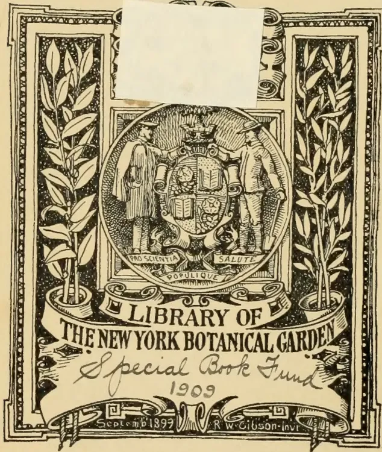
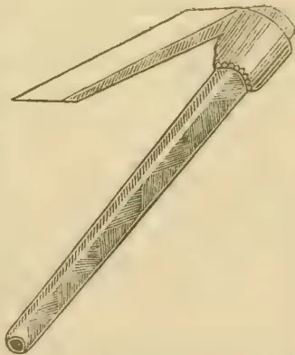

general
complete
Rr
XT.R732 v.4, 1884-1885

The image is a decorative library label for the New York Botanical Garden. It features a central circular emblem with two figures in 19th-century attire flanking a shield. The shield contains a book and a plant. Below the shield, the words 'PRO SCIENTIA', 'SALUTE', and 'POPULIQUE' are inscribed. The emblem is flanked by two potted plants with long, slender leaves. A large banner across the bottom reads 'LIBRARY OF THE NEW YORK BOTANICAL GARDEN'. Below this, the text 'Special Book Fund' and '1909' are written in cursive. At the very bottom, it says 'September 1899' and 'R. W. Gibson - Inv.'. A white rectangular label is placed over the top center of the emblem.
ort
o.—
NIAL
NICA
dos
rh.—
New
cisco;
AYER,
[Vol. IV. containing Numbers I. to XII.]
"Step after step the ladder is ascended."—GEORGE HERBERT, Jacula Predestinum.
THE
TROPICAL AGRICULTURIST:
A
MONTHLY RECORD OF INFORMATION
FOR
PLANTERS
OF
Tea, Coffee, Cacao, Cinchona, Sugar, Rubbers, Tobacco, Palms, Spices, Rice,
AND OTHER PRODUCTS
SUITED FOR CULTIVATION IN THE TROPICS.
[ISSUED ON OR ABOUT THE 1ST OF EACH MONTH.]
COMPILED BY
A. M. & J. FERGUSON
of the "Ceylon Observer."
LIBRARY
NEW YORK
BOTANICAL
GARDEN.
"It is both the duty and interest of every owner and cultivator of the soil to study the best means of rendering that soil subservient to his own and the general wants of the community; and he who introduces, beneficially, a new and useful Seed, Plant or Shrub into his district, is a blessing and an honour to his country."—SIR J. SINCLAIR.
A. M. & J. FERGUSON: COLOMBO, CEYLON.
AND SOLD BY—London: TRÜBNER & Co., 57 & 59, Ludgate Hill; HADDON & Co., 3, Bouverie St., Fleet St., E.C.; GEO. STREET & Co., 30, Cornhill; HUTCHISON & Co., 4, Guildhall Chambers; F. ALGAR, 11 & 12, Clement's Lane, Lombard St.; BATES, HENDY & Co., 37, Walbrook; COWIE & Co., 17, Gresham St.; GORDON & GOTCH, St. Bride St., Ludgate Circus; MAY & Co., 78, Gracechurch St.; CLARKE, SON & PLATT, 85, Gracechurch St.; W. H. SMITH & Co., Strand; S. DEACON & Co., 150, Leadenhall St.; T. CHRISTY & Co., 155, Fenchurch St., E.C.; W. B. WHITTINGHAM & Co.; 19, Gracechurch Street; R. ANDERSON & Co., 14, Cockspur Street, Charing Cross.—Cambridge: DIGBY & Co.—Manchester: PICKLES & BROWNE, 25, Cathedral Yard.—Liverpool: CHAS. BIRCHALL, 32, Castle St.—Glasgow: W. & R. MACPHUN.—Edinburgh: W. & A. K. JOHNSTON.—Dundee: SINCLAIR & DAWSON, "The Corner."—Aberdeen: W. WESTLAND, 53, S. Nicholas St.—Paris: AGENCE HAYAS.—Madras: HIGGINBOTHAM & Co.—Nilyiri and Wynnaad Districts: STANES & Co., Coimbatore.—Calcutta: THACKER, SPINK & Co.—Bombay: THACKER & Co., LD.—Rangoon: SOLOMON & Co.—Penang: BLAZE', REIDEL & Co.—Singapore: J. LITTLE & Co.—Batavia: JOHN PRYCE & Co., and G. KOLFF & Co.—Surabaya: THOS. C. WILSON & Co.—Samarang: MANUAL & Co.—Deli, Sumatra: W. L. VAN CUYLENBURG.—Saigon: FLEITH & LAPLACE.—Hongkong: KELLY & Co.—Shanghai: CHINA AND JAPAN TRADING COMPANY.—Natal: ROBINSON & VAUSE, Durban.—Mauritius: C. W. HALL, Port Louis.—Melbourne, Sydney and Brisbane: GORDON & GOTCH.—Sydney: WM. MADDOCK, Adelaide: CAWTHORN & Co.—Northern Queensland: W. HOPKINS, Rockhampton.—Perth, W. Australia: STIRLING & SONS.—New Zealand: COLONIAL NEWS AGENCY, Napier.—Fiji: ARTHUR STEPHENS.—West Indies, St. Thomas: C. H. CALDERON.—Dominica: "DOMINICA DIAL" OFFICE.—British Guiana: "ROYAL GAZETTE" OFFICE.—Brazil, Rio de Janeiro: LOMBAERTS & Co., 7, Rua dos Ourives; A. J. LAMOUREUX, "Rio News" Office.—Central America: JAMES BOYD, Panama.—Guatemala: W. J. FORSYTH.—United States: S. M. PETTINGILL & Co., 263, Broadway; J. M. HERD, 261, Broadway, New York; H. HUBBARD, New Haven, Conn.; E. S. MORRIS, Philadelphia; L. P. FISHER, 21, Merchant's Exchange, California Street, San Francisco; GEO. ELLIS, New Orleans; ASHMEAD BROTHERS, Jacksonville, Florida; PHILLIPS & CAREW, Atlanta, Ga.; STOTT & THAYER, Los Angelos, Cal.
MDCCCLXXXV.
[Faint page: no legible print of its own could be verified; text withheld (stage 4 review list)]
LIBRARY
NEW YORK
BOTANICAL
GARDEN.
In closing the Fourth Volume of the "TROPICAL AGRICULTURIST," we have but to repeat what we have said on similar previous occasions, and to direct attention to the increased amount of useful information afforded, and to the great variety of topics treated in our pages. From month to month, we have endeavoured to lay before our readers the latest results of practical experience and scientific teaching in all that concerns tropical agriculture; and our ambition has been to make this periodical not only indispensable to the planter, but of service to business men and capitalists, never forgetting that agriculture trenches upon every department of human knowledge and science, besides being the basis of all human wealth.
While directing our attention chiefly to the products prominently mentioned in our title, we have never omitted to notice minor industries likely to fit in with tropical conditions; and our readers have an ample guarantee in the pages before them that, in the future, no pains will be spared to bring together all available information both from the West and East, the same being examined in the light of the teachings of commonsense as well as of prolonged tropical experience in this, the leading Crown and Planting Colony of the British Empire.
Dr. TRIMEN'S Report on the Royal Botanic and Economic Gardens in Ceylon is republished in full, in a separate form, in the present volume. We are ready to give copious extracts from, if not to print in extenso, the Reports of all other Public Botanic Gardens situated in or near to the tropics which may reach us. Many of these Reports we already receive and utilize for the benefit of our planting readers.
A full and accurate Index affords the means of ready reference to every subject treated in this fourth volume which we now place in our subscribers' hands, in full confidence that it will be received with an amount of approval, at least equal to that which has been so kindly extended to its predecessors.
In conclusion, we must tender special thanks to our readers and contributors, and our wish is that all our friends may continue to write instructively and read with approval: for then indeed must the "TROPICAL AGRICULTURIST" continue to do well.
A. M. & J. FERGUSON.
COLOMBO, 12th June 1885.
DEC 21 1909
[Faint page: no legible print of its own could be verified; text withheld (stage 4 review list)]
[“Sup.” refers to Dr. Trimen’s Report which will be found bound in at the end of the Volume.]
| PAGE. | PAGE. | ||
|---|---|---|---|
| A. | Arrowroot Cultivation | 244 | |
| Acacias | 22 | ———, Market Rates for | 80, 168, 256, 344, 424, 504, 584, 728, 800, 872, 952 |
| Adelaide Botanic Gardens | 124 | Artesian Wells | 156 |
| Aden, Trade of | 215 | Artificial Manures | 11 |
| Adulteration of Cocoa | 654 | Ashes as a Fertilizer | 8, 40, 556, 763, 889 |
| ——— of Coffee | [See Coffee] | Assafectida | 365-7 |
| ——— of Spices | 302 | ———, Market Rates for | 80, 168, 256, 344, 424, 504, 584, 728, 800, 872, 952 |
| ——— of Sugar | 491 | Assam Company | 144 |
| ——— of Tea | [See Tea] | ———, Coolies in | 331 |
| Africa, Central, Planting in | 457 | ———, Indianrubber Cultivation in | 9, 94-6 |
| ———, Eastern, Mountains of | 783 | ———, Railways in | 938 |
| ———, West, Products of | 79, 152, 852 | ———, Tea Cultivation in | 110, 144, 345-7, 416, 718, 745, 798, 928 |
| African Flora | 631 | Australia, Agriculture in | 296 |
| ——— Oil Palm | 696 | ———, Cinchona Cultivation in | 231, 242 |
| ——— Trees | 616 | ———, Cocoa and Chocolate in | 170 |
| Agricultural Education | 124, 512, 762 | ———, Coffee in | 170 |
| ——— Essays... | 131 | ———, Cultivation in | 367 |
| Agriculture | 42 | ———, Labor in | 755-7, 776 |
| ——— in Australia | 296, 920 | ———, Rainfall in | 503 |
| ——— in Ceylon | 294, 312, 432, 560, 586, 753 | ———, Rice Cultivation in | 156 |
| ——— in England | 589, 573, 712, 783 | ———, South, New Cultures in | 783 |
| ——— in Europe | 19, 151, 218, 307, 396, 460, 525, 559, 652 |
———, Northern Territory of | 296, 343, 403, 636, 637, 816, 817 |
| ——— in India... | 67, 394, 465-7, 859 | ———, Tree Planting in | 885 |
| Ague, Cure for | 536 | ———, Wheat and Wool in | 532 |
| Alcohol from Maize Husks | 219 | ———, Sugar Cultivation in | [See Sugar Cultivation] |
| ——— in Toddy | 799 | ———, Tea in | 65-6, 108, 207, 271, 356, 416, 670, 679, 773 |
| Algeria, Vine Cultivation in | 525 | Australian Botany | 268-70, 520 |
| Alluvial Soils | 409 | ———, Stock for India and Ceylon | 929 |
| Almond Cultivation | 290 | ———, Timber | 555, 920 |
| Aloe Cultivation | 510, 617 | ———, Trees in Arran | 597 |
| Aloes, Market Rates for | 80, 168, 256, 344, 424, 504, 584, 728, 800, 952 |
———, Wines | 330 |
| America, Bees in | 102-4 | Avenue Trees | 884 |
| ———, Chinese Plants in | 367 | ||
| ———, Coffee in | 727 | B. | |
| ———, Forests in | 784 | Babul Cultivation | 22, 521 |
| ———, Fruit Cultivation | 557 | Bamboo, Square | 216 |
| ———, Indianrubber in | 555 | Bananas | 253-5, 632 |
| ———, Quinine in | 10, 176, 554, 925 | Bartung | 335, 459 |
| ———, Silk Culture in | 395 | Bats, Cure for | 940 |
| ———, Tea Cultivation in | 211, 372, 457 | Bêche-de-Mer | 179, 245, 531, 693 |
| ———, Tea in | [See Tea] | Bees-keeping | 793 |
| ———, Tobacco Cultivation in | 458 | Bees and Coffee Blossom | 69, 70 |
| ———, Wheat Cultivation in | 840 | ——— in America | 102-4 |
| American Fruit Evaporator | 489, 532, 545, 552, 591, 789 | Beeswax, Market Rates for | 80, 168, 256, 344, 424, 504, 584, 728, 800, 872, 952 |
| Ammoniacum, Market Rates for | 80, 168, 256, 344, 424, 504, 584, 728, 800, 872, 952 |
Beetles as Enemies of Coconuts | 3 |
| Amsterdam Exhibition | 106, 456 | Beet, Manure for | 11 |
| Anatto | 591 | Beet Sugar | 410-5, 743 |
| Andamans, Tea Cultivation in | 553 | Ben Oil | 558 |
| Animi, Market Rates for | 80, 168, 256, 344, 424, 504, 584, 728, 800, 872, 952 |
Bermuda, Vegetable Cultivation in | 773 |
| Anise, Star | 368 | Birdsnests, Edible | 908, 938 |
| Antiseptics | 459-62, 464, 532 | Blood as Manure | 11 |
| Ants’ Nests, Woodpeckers in | 900 | Blue Gum | [See Eucalyptus] |
| Ants, Remedies for | 40, 762 | Boiling Water, Effect of, on Plants | 7, 281 |
| Anuradhapura Gardens | Sup. | Bolivia, Cinchona Cultivation in | 305, 638 |
| Apricots, Dried | 161, 440 | ———, Salt Deposits in | 503 |
| Arabia, Commerce of | 212-4 | Bonedust as Manure | 40, 741 |
| Arboriculture | 697 | Bone Meal for Fowls | 20, 24 |
| Arecanut Cultivation | 527, 552, 786, 791, 811, 819, 948 | Bones as Manure | 438 |
| Anatto | [See Anatto] | Borneo, Gutta Percha Cultivation in | 137-44 |
| Arracacha | Sup. | ||
| Arran, Australian Trees in | 597 |
| PAGE. | |
|---|---|
| Borneo, North | 606, 642, 668, 735, 738, 795, 848-50, 852, 878 |
| —, Planting in | 50, 457, 480, 500, 503, 596 |
| —, Products of | 125 |
| Botanic Gardens, Adelaide | 124 |
| —, Brisbane | 373, 752 |
| —, Calcutta | 67 |
| —, Ceylon | ... Sup. |
| —, Java | ... 826, 908 |
| —, Sydney | ... 522 |
| Botanical Note Book | ... 706 |
| Botany, Australian | ... 268-70 |
| Bottles, Paper | 88, 309, 766 |
| Bowstring Hemp | ... 17 |
| Branches, Dead | ... 8 |
| Brazil, Cinchona Cultivation in | [See Cinchona] |
| —, Coffee Cultivation in | [See Coffee] |
| —, Labor in | 739, 936, 948 |
| —, Planting in | 508, 704, 845, 858 |
| —, Progress in | 208-10, 643, 685, 846 |
| —, Slavery in | ... 671 |
| —, Sugar Cultivation in | ... 846 |
| Breadfruit Cultivation | ... 723 |
| Bread, Stale | ... 99 |
| Brinjal Cultivation | ... 419, 530 |
| Brisbane Botanic Gardens | ... 373, 752 |
| Bug | ... 664, 900 |
| Burma, Forests in | ... 581 |
| —, Planting in | 473-5, 520, 664 |
| —, Rice Cultivation in | 721, 736, 840 |
| Burning Vegetable Matter | ... 186 |
| Butter, Hardening | ... 40 |
| Cabbage Cultivation | ... 685 |
| Cacao Blight | 89-93, 114-7, 120, 130, 135, 161, 169, 177, 232, 327-9, 343, 378, 383-5, 433, 486, 689, 702, Sup. |
| — Butter | ... 162 |
| — Cultivation | 1, 53, 110, 184, 220 5, 332, 386, 401, 478, 495, 497, 503, 531, 552, 688, 815, Sup. |
| in Granada | ... 391 |
| in Johore | ... 335 |
| in Monteserrat | ... 162 |
| in Trinidad | ... 357, 580 |
| in Venezuela | ... 49 |
| —, Enemies of | 114-7, 130, 135, 216, 650, 651, 701, 817, 847, 852, 871, 909 |
| —, Market Rates for | 80, 168, 256, 344, 424, 504, 532, 584, 728, 800, 872, 952 |
| —, Preparation of | 220-5, 333, 339-43, 496, 532, 702 |
| — Trade | ... 686, 687 |
| —, Varieties of | 220-5, 551, Sup. |
| Cacti, Edible | 359, 522, 818 |
| Calamander Wood | ... 377 |
| Calcutta Botanic Gardens | ... 67 |
| — Exhibition | ... 78 |
| — Tea Syndicate | [See Tea] |
| Calumba Root, Market Rates for | 80, 168, 256, 344, 424, 504, 584, 728, 800, 872, 952 |
| Camphor Manufacture in Japan | ... 72, 274 |
| —, Market Rates for | 80, 168, 256, 344, 424, 504, 584, 728, 800, 872, 952 |
| Canker, Cures for | ... 749 |
| Canned Foods | ... 458 |
| Cape Jasmine | ... 155 |
| Carbolic Acid as Manure | ... 620 |
| Cardamom Cultivation | ... 335, 492, 512, 551, 697 |
| — Drying | ... 457, 655 |
| Cardamoms, Market Rates for | 80, 168, 256, 344, 424, 504, 584, 728, 800, 872, 952 |
| Carob Beans | ... 250, 459 |
| Cassia Seed | ... 600 |
| Castor Oil Cultivation | ... 512 |
| —, Market Rates for | 80, 168, 256, 314, 424, 504, 584, 728, 800, 872, 952 |
| —, Preparation of | ... 11 |
| Cattle as Enemies of Coconuts | ... 2 |
| — Food | ... 364 |
| Caucasus, Tea Cultivation in the | 512, 544, 569 |
| Ceara Rubber | 72, 105, 354, Sup. |
| PAGE. | |
|---|---|
| Cement, Colorless | ... 471 |
| — for Wounds on Trees | ... 324 |
| Ceylon, Agriculture in | [See Agriculture] |
| — Botanic Gardens | ... Sup. |
| —, Economic Products in | ... Sup. |
| — Flora | ... 684 |
| —, Forests in | 545, 665, 753-5, 819 |
| —, Gems in | ... 585 |
| —, Geology | ... 808, 928 |
| —, Grain Cultivation in | ... 817, 820 |
| —, Guttapercha | ... 602 |
| —, Irrigation in | [See Irrigation] |
| —, Minerals in | ... 422, 719 |
| —, Planting in | 87, 104, 136, 243, 294, 298, 311, 326, 349, 389, 391, 402, 418, 429, 430, 439, 442, 453, 456, 484, 492, 498, 506, 529, 545, 547, 552, 565, 567, 573, 574, 591, 604, 633, 635, 636, 673, 707, 708, 709, 710, 719, 736, 737, 741, 745, 765, 766, 771, 787, 788, 795, 797, 799, 803, 804, 811, 812, 815, 816, 838, 842, 845, 853-6, 863-6, 873-8, 879, 907, 928, 929, 934, 935 |
| — Productions | ... 169, 330 |
| —, Rainfall in | 203, 233-6, Sup. |
| —, Resources of | 354-6, 547-9, 585, 673, 674-8, 699-701, 710, 719, 808 |
| — Vegetation | ... 648, 842 |
| Charcoal for Packing Seeds | ... 24 |
| Chanks Destroying Pearl Oysters | ... 788 |
| Cherimoyer | ... Sup. |
| Chickens, Treatment of | ... 24, 42 |
| Chicory Cultivation | ... 891 |
| Chili, Vegetation in | ... 775 |
| Chilian Nut | ... 232 |
| Chillies, Market Rates for | 80, 168, 256, 344, 424, 504, 554, 728, 800, 872, 952 |
| China, Commerce of | ... 292-4 |
| —, Dwarf Trees in | ... 632 |
| —, Forests in | ... 727 |
| —, Sugar Cultivation in | ... 645 |
| — Grass | [See Rhea] |
| —, Land Tenure in | ... 121 |
| —, Paper-making in | ... 576 |
| —, Silk Culture in | ... 533 |
| —, Tea Cultivation in | [See Tea] |
| —, Vegetable Products of | 97, 775, 892, 933 |
| Chinese Pine | ... 723, 795 |
| — Plants in America | ... 367 |
| — Quince | ... Sup. |
| Cho-cho | ... Sup. |
| Chocolate | ... 220-5 |
| —, Ceylon | ... 664 |
| — in Australia | ... 170 |
| —, Malto-Legumine | ... 182 |
| —, Origin of Name | ... 223 |
| Chow-chow Pickle | ... 440 |
| Cinchona Alkaloids | 564, 790, 793 |
| — Bark Analyses | 361, 392, 418, 457, 458, 605, 606, 808, 921, 927 |
| —, Harvesting of | 69, 337, 423, 554, 601, 604, 937 |
| — in Medicine | ... 107 |
| — Market | 70, 552, 667, 808, Sup. |
| —, Market Rates for | 80, 168, 256, 346, 424, 504, 584, 728, 800, 872, 952 |
| —, Specimens of | ... 105 |
| Cinchona Cultivation | 70, 243, 417, 790, Sup. |
| — at the Straits | ... 587 |
| — in Australia | ... 231, 242 |
| — in Bolivia | ... 305, 638 |
| — in Brazil | ... 494 |
| — in Ceylon | ... 358 |
| — in Guatemala | ... 477, 491 |
| — in India | 82-6, 431, 458, 481-4, 534, 769 |
| — in Java | 81, 145-51, 262, 282, 322-4, 353, 433, 434-7, 498, 499, 508, 786, 795 |
| — in Mauritius | ... 542, 704 |
| — in New Zealand | ... 914 |
| —, Enemies of | ... 378, 764 |
| —, Extracts of | 12-17, 44-6, 167, 530, 564 |
| —, Ledgeriana | 592, 641, 709, 737, 763, Sup. |
| —, Production | ... 379 |
| —, Varieties of | ... Sup. |
| PAGE. | PAGE. | ||
|---|---|---|---|
| Cinnamon, Market Rates for | 80, 168, 256, 344, 424, 504, 584, 728, 800, 872, 952, 952 | Coffee, Origin of | ... 531 |
| Oil, Market Rates for | 80, 168, 256, 344, 424, 504, 584, 728, 800, 872, 952 | Preparation of | ... 49, 117, 512 |
| Sales | ... 511, 620 | Production and Consumption | ... 477, 683, 701 |
| Weights... | ... 181 | Roaster | ... 41 |
| Citric Acid as an Antiseptic | ... 532 | Coffee Seed | ... 311 |
| Citronella Cultivation | ... 408 | Substitutes for | ... 210 |
| Oil, Market Rates for | 80, 168, 256, 344, 424, 504, 584, 728, 800, 872, 952 | Syndicate | ... 53 |
| Clay for Packing Seeds | ... 24 | Trade | ... 667, 670 |
| Soil | ... 158 | Coir, Market Rates for | 80, 168, 256, 344, 424, 504, 584, 728, 800, 872, 952 |
| Climate, Influence of Forests on | [See Rainfall] | Coke as Fuel | ... 635, 655 |
| of India | ... 3-6 | Cola Nut | [See Kola Nut] |
| Clove Cultivation | ... 632 | Colds, Cure for | ... 290 |
| Cloves, Market Rates for | 80, 168, 256, 344, 424, 504, 584, 728, 800, 872, 952 | Columbo Root | [See Columba] |
| Coal Tar for Trees | ... 377 | Columbia, British | ... 634 |
| Coca | ... 173-6, 422, 515, 551, 557, 621-9, 764, 770, 824, 834-7, 845, 850, 884, 911, Sup. | Concrete Walks | ... 592 |
| Cocaine | ... 621-30, 763, 770, 885 | Conservatory, Indian | ... 99 |
| Cochineal | ... 126-9 | Contagious Diseases... | ... 536 |
| Cockchafer Grub | [See Coffee] | Coolies, Treatment of | ... 816 |
| Cocoa | [See Cacao] | Coorg, Planting in | 248, 337, 493, 563, 588, 671, 757-9, 905 |
| Adulteration of | ... 654 | Copra Trade | ... 794 |
| Drinking | ... 778 | Coral Fishing | ... 544, 608 |
| in Australia | ... 170 | Coriander Seed | ... 486 |
| Malto-Legumine | ... 182 | Cork | ... 94 |
| Manufacture | 132-4, 220-5, 950 | Oak | ... 94 |
| Plum | ... 128, 456 | Corks | ... 94 |
| Coco-de-Mer | ... Sup. | Corn Bread | ... 512 |
| Coconada Oil Industry | ... 11 | Corrosive Sulfimate as a Cure for White Ants | ... 248 |
| Coconut as Horse Food | ... 591 | Cotton Cultivation | ... 617 |
| Cultivation | 1-3, 38-40, 375-7, 408, 463, 536, 582, 706, 708, 713-6, 739, 821 | in Egypt | ... 795 |
| in British Guiana | ... 189, 91 | in India | ... 229 |
| Enemies of | 2, 684, 697, 940 | Exposition, New Orleans | ... 155 |
| Fibre | [See Coir] | New Variety of | 640, 783 |
| in Medicine | ... 183 | Picker | ... 492 |
| Oil as a Cure for Scorpion Sting | ... 53 | Seed for Feed | ... 101 |
| Trade | 634 | for Food | ... 824 |
| vs. Kerosene | ... 378 | Silk | [See Kapok] |
| Origin of | ... 941-3 | Cow, Produce of | ... 98 |
| Pink | ... 104 | Crabs' Eyes | ... 291 |
| Trade, American | ... 515 | Cranberry Cultivation | ... 557 |
| Uses of | 338, 594, 895 | Creepers, Useful | ... 852 |
| Coconuts, Monkeys Picking | ... 63 | Crops and Weather in India | [See India] |
| Coconut Trees in Fortifications | ... 907 | and Weeds | ... 393 |
| Coculus Indicus, Market Rates for | 80, 168, 256, 344, 424, 504, 584, 728, 800, 872, 952 | Diseases of | ... 631 |
| Coffee, Adulteration of | ... 117, 216, 455, 573, 654 | Croton Oil Cultivation | 159, 231, 492, 795 |
| Blossom and Bees | ... 69, 70 | Seed, Market Rates for | 80, 168, 256, 344, 424, 504, 584, 728, 800, 872, 952 |
| Bug | 664, 900 | Cuca | [See Coca] |
| Crops | 851, 897, 921 | Cucumbers, Gunning in | ... 215 |
| Cultivation | 43, 179, 430, 551, 699, 792, 806, Sup. | Cultivation, Changes through | ... 718 |
| in Africa | ... 457 | Cultures, Names for | ... 570 |
| in Brazil | 249, 324, 403, 416, 434, 457, 492, 533, 602, 620, 634, 684, 702, 711, 723, 739, 911 | Cuprea | ... Sup. |
| in British Guiana | 252 | Cutch, Market Rates for | 80, 168, 256, 344, 424, 504, 584, 728, 800 |
| in Fiji | 51 | Cuttings, Striking | ... 520 |
| in India | 120, 244, 301, 492, 493, 534, 671, 912 | ||
| in Italy | 671, 783 | D. | |
| in Java | 353, 403, 499, 508, 723, 768 | Dadap | ... 740 |
| in Manila | ... 215 | Dairy Farming in India | ... 508 |
| in Queensland | 367, 409 | Damascus | ... 821 |
| Drinking | 485, 712, 778, 801 | Darjiling, Planting in | 88, 532, 639, 766, 815 |
| Enemies of | 324, 664, 908 | Date Palm | ... 684 |
| Extract | ... 557 | Plum | ... 348 |
| Grub | 88, 257-9, 263-5, 502, 603, 670, Sup. | Sugar | ... 249 |
| in America | 727, 900 | Dead Branches | ... 8 |
| in Australia | ... 170 | Desert Plants | ... 79 |
| Introduction of, into France... | ... 235 | Devil Tree | ... 820 |
| Leaf-Disease | 61, 88, 100, 211, 215, 397-400, 507, 649, 724, 816, Sup. | Dew, Cause of | ... 599 |
| Making | ... 180 | Diseases, Contagious | ... 536 |
| Manuring | ... 786 | of Crops | ... 631 |
| Maragogipe | ... 421 | Dragon's Blood | ... Sup. |
| Market | ... 53 | Drainage | ... 42 |
| Market Rates for | 80, 168, 256, 344, 424, 504, 584, 728, 800, 872, 952 | Drought | ... 618 |
| Drugs, Indian | ... 7 | ||
| Dry Regions, Plants for | ... 616 | ||
| Durian | ... Sup. | ||
| Dutch East Indies | ... 634 | ||
| Dwarf Trees | ... 632 |
| PAGE. | PAGE. | ||
|---|---|---|---|
| E. | G. | ||
| Earthworms ... | 812 | Fruit Cultivation ... | 348, 352, 363, 460-2, 581 |
| Eastern Commerce ... | 894 | — in America ... | ... 557 |
| Ebony, Market Rates for ... | 80, 168, 256, 344, 424, 501, 584, 728, 800 |
— Drying ... | ... 489, 532, 545 |
| Economic Plants ... | 784, Sup. | — Flavourings, Artificial ... | ... 634 |
| — Products ... | 183, 274, Sup. | — Preserving ... | ... 249 |
| Eggs as Food ... | ... 43 | — Trade, West Indian ... | ... 250, 371, 454 |
| — in Medicine ... | ... 616 | — Trees, Canker in ... | ... 749, 914 |
| Egypt, Cotton Cultivation in ... | ... 795 | — Gunning in ... | ... 619 |
| Electric Insects ... | ... 591 | — Pruning of ... | ... 20, 23, 510, 598, 752 |
| — Light as an Insecticide ... | ... 492 | — Treatment of ... | ... 23, 74, 79, 121, 512, 640 |
| — Effect of, on Plant Growth ... | ... 889 | — Tripartite ... | ... 815 |
| — for Tea Houses ... | ... 712 | Fuel ... | ... 350 |
| Ensilage ... | ... 118 | Fungi ... | ... 759-62 |
| Essential Oils ... | [See Oils] | Fungoid Diseases ... | ... 188, 948 |
| Eucalyptus and Malaria ... | 122, 472 | ||
| — Cultivation ... | 554, 763, Sup. | G. | |
| — in England ... | ... 78, 129 | Galls, Market Rates for ... | 80, 168, 256, 344, 424, 504, 584, 728, 800, 872, 952 |
| — in Ireland ... | ... 78, 129 | Gambier, Market Rates for ... | 80, 168, 256, 344, 424, 504, 584, 728, 800, 872, 952 |
| — Disease ... | ... 96 | Gamboge ... | ... 73, 542 |
| — Gum, Use for ... | 508, 867 | Gardening in India ... | ... 232, 487 |
| — in Medicine ... | 290, 556 | Garden Labels ... | ... 290, Sup. |
| — Leaves, Products of ... | ... 792 | — Pests ... | ... 188 |
| — Pollination of ... | ... 8 | Gas from City Refuse ... | ... 324 |
| — Soap from ... | ... 556 | — Lime as Manure ... | ... 501, 762, 773 |
| — Varieties of ... | ... 126 | — for Weeds ... | ... 773 |
| Evaporator, American ... | [See American] | — Tar as an Antiseptic ... | ... 816 |
| Gems in Ceylon ... | ... 585 | ||
| F. | Germination of Seeds ... | ... 70, 72, 511 | |
| Fabrics from Wild Plants ... | ... 183 | Ginger-beer Plant ... | ... 129 |
| Factories, Central ... | ... 671 | Ginger Champagne ... | ... 392 |
| Farming ... | ... 499, 806 | — Cultivation ... | ... 249, 500 |
| Farm Memoranda ... | 42, 98, 121 | — Market Rates for ... | 80, 168, 256, 344, 424, 504, 584, 728, 800, 872, 952 |
| — Pests ... | ... 188 | Ginseng ... | ... 491 |
| Feed for Stock ... | ... 101, 364 | Glass, Ground, Imitation ... | ... 40 |
| Fence Posts ... | ... 555 | Glue ... | ... 79 |
| Fencing, Cheap ... | ... 522 | Gold in Borneo ... | 735, 738, 848-50 |
| Fermentation ... | ... 43 | — in India ... | ... 908 |
| Ferns, Drying ... | ... 640 | Grain Trade of India ... | ... 901 |
| — of Queensland ... | ... 503 | Guanda, Cacao Cultivation in ... | ... 391 |
| Fertilizers ... | 23, 40, 43, 290, 309, 533, 556, 783, 825 | Grape Cultivation ... | [See Vine] |
| Fibre Machinery ... | 111, 184, 215, 301, 390, 419, 458, 475-7, 525, 617, 727, 868, 897, 906 |
Grapes, Large Bunch of ... | ... 216 |
| — Preparation ... | 108, 360, 475-7, 704, 770, 866, 869-71, 951 | — Preserving ... | ... 511 |
| Fibre-yielding Plants ... | 17, 40, 183, 184, 216, 231, 498, 510, 557, 617, 726, 727, 866, 868, 869-71, 893, 897 |
Graphite ... | [See Plumbago] |
| Fig Cultivation ... | ... 513 | Grasses, American ... | ... 515 |
| Fiji, Planting in ... | 51, 486, 528, 614, 862, 905 | Grass Land ... | ... 554 |
| Fire, Preservative against ... | ... 814 | — Manure for ... | ... 512 |
| Fish Curing ... | ... 300, 859 | — Seed Oil ... | ... 78, 392 |
| Fish-killing Plant ... | ... 531 | Green Fly ... | 169, 210, 211 |
| Flax, Cultivation of ... | 536, 544, 869-71 | — Manuring ... | ... 167, 290 |
| Florida ... | ... 9 | Groundnuts ... | 53, 69, 720, 936 |
| — Orange Cultivation in ... | 651, 739 | Grub, Cockchafer ... | [See Coffee] |
| Flowering Plants, Exhation of Ozone by ... | ... 163 | Guarana ... | ... 557 |
| Flower-pots, Worms in ... | ... 129 | Guatemala, Economic Products in ... | 377, 477, 491, 669, 696 |
| Flower Distillation ... | ... 640 | Guiana, Coffee Cultivation in ... | ... 252 |
| Flowers in India ... | ... 64 | — Economic Products in ... | 526, 707, 780 |
| — Preservation of ... | ... 752 | — Sugar Cultivation in ... | [See Sugar] |
| Fly Maggots Feeding on Caterpillars ... | ... 641 | — Tropical Vegetation in ... | 218, 717, 766 |
| Forage Plants ... | ... 633 | Gumming in Plants ... | ... 215, 619 |
| Forbidden Fruit ... | ... 907 | Gums, Market Rates for ... | 80, 168, 256, 344, 424, 504, 584, 728, 800, 872, 952 |
| Forestry Exhibition ... | 226, 229, 265-8, 358, 372, 458, 472, 480, 513, 537-42, 558 |
— Vegetable ... | 7, 48, 255, 501, 524 |
| Forests and Rainfall ... | 97, 308, 470, 825 | Guttapercha ... | ... 581, 884 |
| — in Africa ... | ... 616 | — Cement ... | ... 602 |
| — in America ... | ... 784 | — Cultivation ... | ... Sup. |
| — in Burma ... | ... 581 | — in Borneo and Sumatra ... | ... 137-44 |
| — in Ceylon ... | 545, 665, 753-5, 819 | — in Java ... | ... 137-44 |
| — in China ... | ... 727 | — Market Rates for ... | 80, 168, 256, 344, 424, 504, 584, 728, 800, 872, 952 |
| — in England ... | ... 744, 777 | — producing Plants ... | 137-44, 286-90 |
| — in Europe ... | ... 79, 784 | Gutta Trap ... | ... 712 |
| — in India ... | 283, 357 | ||
| — in Java ... | ... 302-1 | H. | |
| — in Johore ... | 523, 945-8 | Hakgala Gardens ... | ... Sup. |
| Formosa, Flora of ... | ... 553 | Hatching, Artificial ... | ... 42 |
| Fowls, Bone Meal for ... | ... 20, 24 | Health Exhibition ... | 107, 157, 159, 216, 217, 507 |
| — Treatment of ... | 42, 98, 121, 134 | Heat, Sun, Utilization of ... | ... 510 |
| France, Orange Trade of ... | ... 908 | Holopeltis Antonii ... | [See Cacao Blight and Tea Bug] |
| Frog Skins, Uses for ... | ... 795 | Hemp, Bowstring ... | ... 17 |
| PAGE. | PAGE. | ||||||
|---|---|---|---|---|---|---|---|
| Hemp, Manila | ... | ... | ... 17 | Jamaica, Planting in | 307, 529, 566, 683, 703, 734, 845, | ||
| —, Mauritius | ... | ... | ... 17 | 856-8, 879-82, 901, 930-2, 943 | |||
| —, Sunn | ... | ... | ... 617 | —, Products of | ... | 479, 684, 736 | |
| Henarategoda Gardens | ... | ... | ... Sup. | Jamaica Public Gardens | ... | 236-41, 367, 936 | |
| Hens | ... | ... | [See Fowls] | Japan, Camphor Manufacture in | ... | ... 72, 274 | |
| Hints, Useful | ... | ... | 42, 38, 121 |
| Hogg, Gum | ... | ... | 524 |
| Honduras, British, Agriculture in | ... | ... | 17, 73 |
| Honey | ... | ... | 536 |
| Horse Collars | ... | ... | 501 |
| — Food | ... | ... | 121, 591 |
| Horses, Sores on | ... | ... | 290 |
| Hot Water as an Insecticide | ... | ... | 7, 556, 557 |
| — — — — —, Effect of, on Plants | ... | ... | 7, 281 |
| House Plants, Propagating | ... | ... | 338 |
| Hurriallee Grass | ... | ... | 593 |
| Hybridization | ... | ... | 781, 850 |
| Hydrangea, Tea from | ... | ... | 557 |
I.
| Imbul | ... | ... | [See Kapok] |
| Incubators | ... | ... | 42 |
| India, Agriculture in | ... | ... | [See Agriculture] |
| — — — — —, Cinchona Cultivation in | ... | ... | [See Cinchona] |
| — — — — —, Climate of | ... | ... | 3-6 |
| — — — — —, Coffee Cultivation in | ... | ... | [See Coffee] |
| — — — — —, Crops and Weather in | ... | ... | 17, 78, 343, 423, 679 |
| — — — — —, Flowers in | ... | ... | 64 |
| — — — — —, Forests in | ... | ... | 283 |
| — — — — —, Gardening in | ... | ... | 232, 487 |
| — — — — —, Geology of | ... | ... | 722 |
| — — — — —, Gold in | ... | ... | 908 |
| — — — — —, Grain Trade of | ... | ... | 901 |
| — — — — —, Indiarubber Cultivation in | ... | ... | [See Indiarubber] |
| — — — — —, Irrigation in | ... | ... | 21, 577 |
| — — — — —, Labor in | ... | ... | 736, 825 |
| — — — — —, Planting in | 259-61, 386, 391, 530, 563, 787, 936 | ... | 936 |
| — — — — —, Progress of | ... | ... | 860 |
| — — — — —, Rainfall in | ... | ... | 3-6, 325 |
| — — — — —, Silk Culture in | ... | ... | [See Silk Culture] |
| — — — — —, Tea Cultivation in | ... | ... | [See Tea] |
| — — — — —, Tree Planting in | ... | ... | 936 |
| — — — — —, Tropical Products in | ... | ... | 17 |
| — — — — —, Wheat Cultivation in | ... | ... | 555 |
| Indian Drugs and Spices | ... | ... | 7 |
| — Economic Products | ... | ... | 183 |
| Timbers | ... | ... | 777 |
| Indiarubber | Collecting | ... | 361, 528, 690 |
| Cultivation | ... | 417, 581, 727, 790, Sup. | |
| in Brazil | ... | 536, 546 | |
| in Guatemala | ... | 696 | |
| in India | ... | 9, 94-6 | |
| in Java | ... | 88 | |
| Export of, from Brazil | ... | 334, 528, 795, 852 | |
| Market Rates for | 80, 168, 256, 344, 424, 504, | 584, 728, 800, 872, 952 | |
| Seed, Germination of | ... | 72 | |
| Substitute for | ... | 503 | |
| Trade | 40, 305, 309, 556, 631, 689, 894 | ||
| Uses of | ... | 423, 507, 569, 689, 704 | |
| Varieties of | ... | Sup. | |
| -yielding Creeper | ... | 86, 159, Sup. | |
| Industry, Diversified | ... | ... | 846 |
| Insecticides | ... | 7, 104, 158, 282, 459, 462, 492, 520, | 556, 557, 593, 752, 846 |
| Insect Pests | ... | 104, 114-6, 159, 169, 188, 216, 232, | 467, 472, 486, 500, 501, 517, 557, 600, |
| 686, 720, 752, 763, 774, 794, 799, 831-3 | |||
| Insects, Electric | ... | ... | 591 |
| Iron Rails | ... | ... | 63 |
| Rust Preventive for | ... | 544 | |
| Irrigation in Ceylon | ... | 1, 25-38, 63, 560, 577 | |
| in India | ... | 21, 577 | |
| Too Much | ... | 20 | |
| Underground | ... | 79, 99 | |
| Isinglass, False Japanese | ... | ... | 362 |
| Italy, Coffee Cultivation in | ... | ... | 671, 783 |
J.
| Jaggery, Palmyra | ... | ... | 18 |
| Jamaica, Ginger Cultivation in | ... | ... | 500 |
| — Lacquer | ... | ... | 158, 731 |
| — Tea | ... | 232, 407, 542, 620, 689 | 724-6 |
| — Tobacco | ... | ... | 724-6 |
| —, Vegetable Food Products of | ... | ... | 695 |
| — Japanese Isinglass, False | ... | ... | 362 |
| — Manufactures | ... | ... | 616 |
| — Plum | ... | ... | 129, 718 |
| — Jasmine, Cape | ... | ... | 155 |
| — at ... | ... | ... | [See Tea] |
| — Java Botanic Gardens | ... | ... | 826 |
| —, Cinchona Cultivation in | ... | ... | [See Cinchona] |
| —, Coffee Cultivation in | ... | ... | [See Coffee] |
| —, Leaf-Disease in | ... | ... | 61, 215 |
| —, Forests in | ... | ... | 302-4 |
| —, Gutta-percha Cultivation in | ... | ... | 137-44 |
| —, Indiarubber Cultivation in | ... | ... | 88 |
| —, Planting in | ... | 659, 683, 772, 823, 882, 932 | |
| —, Sugar Cultivation in | ... | ... | [See Sugar] |
| —, Tea Cultivation in | ... | ... | [See Tea] |
| —, Tobacco Cultivation in | ... | ... | 273, 499, 773 |
| — Johore, Forests in .. | ... | ... | 523, 945-8 |
| —, Planting in ... | ... | ... | 335, 607, 655 |
| —, Progress of ... | ... | ... | 817 |
| — Jute Cultivation | ... | ... | 789 |
| — Trade | ... | ... | 311 |
| Kamala | ... | ... | 21 |
| Kapok | ... | 112, 153, 298-300, | 511 |
| Kauri Gum | ... | ... | 501 |
| Kerosene as an Insecticide | ... | 158, 520, | 556 |
| — vs. Coconut Oil | ... | ... | 378 |
| Kino, Market Rates for | ... | 80, 168, 256, 344, 424, 504, | |
| 584, 728, 800, 872, | 952 | ||
| Kitul Fibre | ... | ... | 727 |
| Kola Nut | ... | 409, 630, 654, | 884 |
L.
| Labels, Garden | ... | ... | 290, Sup. |
| Lacquer, Japan | ... | ... | 158, 731 |
| Labor in Australia | ... | ... | 755-7, 776 |
| ----- in Brazil | ... | ... | 739, 936, 948 |
| ----- in India | ... | ... | ... 736, 825 |
| ----- in Mauritius... | ... | ... | ... 182 |
| ----- in South Africa | ... | ... | ... 818 |
| ----- in West Indies | ... | ... | ... 612 |
| Land Tenure in China | ... | ... | ... 121 |
| Lantana | ... | ... | ... 815 |
| Larch Disease | ... | ... | ... 229 |
| Laterite, Formation of | ... | ... | ... 708 |
| Lead Pencils, Manufacture of | ... | ... | ... 231 |
| Leaf Disease | ... | ... | [See Coffee] |
| Leaves, Analysis of | ... | ... | ... 514 |
| ----- as Manure | ... | ... | ... 630 |
| Leek | ... | ... | ... 121 |
| Lemon Juice | ... | ... | ... 951 |
| ----- in Medicine | ... | ... | ... 536 |
| ----- Tree, Large Crop on | ... | ... | ... 290 |
| Lemongrass Oil, Market Rates for... | ... | 80, 168, 256, 344, | |
| 424, 504, 584, 728, 800, 872, 952 | |||
| Liberia | ... | ... | ... 682 |
| Liberian Coffee Cultivation | ... | 88, 212, 524, 533 | |
| Lice in Hen's Nests | ... | ... | ... 134 |
| ----- on Plants | ... | ... | ... 913 |
| Lichi Cultivation | ... | ... | ... 555 |
| Light, Influence of, on Germination of Seeds | ... | ... | ... 511 |
| -----, Polarized | ... | ... | ... 904 |
| Lightning in the Tropics | ... | ... | ... 844 |
| Lime as a Manure | ... | 500, 581, 698 | |
| ----- Juice | ... | ... | ... 951 |
| ----- Trees and Squirrels | ... | ... | ... 894 |
| Limes, Essential Oil of | ... | ... | ... 290 |
| Linseed Cake | ... | ... | ... 535 |
| ----- Factory in New Zealand | ... | ... | ... 557 |
| -----, Phosphate of | ... | ... | ... 78 |
| PAGE. | PAGE. | ||
|---|---|---|---|
| Loanda, Vegetable Products of ... | 152 | New Zealand, Timber in ... | 24 |
| Locusts as Enemies of Coconuts ... | 3 | Nilgiris, Planting on ... | 68, 408, 471, 481-1, 561, 613, 649, 681, 705, 829, 938 |
| Lubricants ... | 76-8 | Northern Territory of South Australia [See Australia] | 160, 335 |
| M. | Noyau ... | 512, 641 | |
| Mace, Market Rates for ... | 80, 168, 256, 344, 424, 504, 584, 728, 800, 872, 952 |
Nutmeg Cultivation ... | 80, 168, 256, 344, 424, 504, 584, 728, 800, 872, 952 |
| Mahogany ... | 698 | Nutmegs, Market Rates for ... | 369-71, Sup. |
| M... .. | 163 | Nux Vomica ... | 80, 168, 256, 344, 424, 504, 584, 728, 800, 872, 952 |
| Malacca Central Museum ... | 388 | O. | |
| Mahwa Flowers ... | 640, 783 | Oaks, Evergreen ... | 784 |
| Maize Husks, Alcohol from ... | 219 | Oil as Cure for Thirst ... | 795 |
| Malacca, Planting in ... | 531, 639, 852 | — Cake ... | 121 |
| Macaria and Eucalyptus ... | 122, 172 | — Industry, Coconada ... | 11 |
| Malay Peninsula, Minerals of ... | 748 | — Palm, African ... | 696 |
| —, Physical Geography of ... | 750-2 | — Supply, World's... .. | 518-20 |
| — Timber Trees ... | 801-3 | Oils, Essential ... | 284-6, 290, 368, 407, 556, 782 |
| Malto-Legumine ... | 182 | —, Market Rates for ... | 80, 168, 256, 344, 424, 504, 584, 728, 800, 872, 952 |
| Mango Cultivation ... | 521, 559, 743 | —, Lubricating and Illuminating ... | 76-8 |
| Mango Cultivation in Queensland ... | 21 | —, Purification of ... | 185 |
| Mangosteen Oil ... | 185 | —, Resin ... | 47 |
| Mangrove Bark, Use for ... | 503 | —, Vegetable ... | 78, 185, 392, 501, 558 |
| Manila Hemp ... | 17, 215 | Olibanum, Market Rates for ... | 80, 168, 256, 344, 424, 504, 584, 728, 800, 872, 952 |
| —, Sugar Cultivation in ... | 215, 645 | Olive Cultivation ... | 167, 275-7, 607 |
| —, Trade of ... | 215 | — Oil ... | 74, 131, 275-7 |
| Manures and Manuring ... | 10, 72, 74, 152, 167, 232, 290, 392, 438, 512, 518, 557, 569, 594, 620, 630, 717, 720, 736, 738, 741, 762, 763, 784, 786, 811, 889, 890, 895 |
Onion Cultivation ... | 216 |
| Maragogipe Coffee ... | 421, 494 | Ontario Agriculture and Arts Association ... | 815, 816 |
| Market Rates for Old and New Products ... | 80, 168, 256, 344, 424, 504, 584, 728, 800, 872, 952 |
Oodeypore Gardens ... | 164 |
| Mate... .. | 18, 249, 388 | Orange Cake ... | 281 |
| Matches, Substitute for ... | 512 | — Cultivation... .. | 196, 230, 324, 555, 739 |
| Mauritius, Cinchona Cultivation in ... | 512, 701 | — Peel Trade ... | 614 |
| — Hemp ... | 17 | — Souflé ... | 255 |
| —, Labor in ... | 182 | — Trade ... | 651, 908 |
| —, Planting in ... | 801, 906, 911 | Oranges, Canning ... | 377 |
| —, Quinine Manufacture in... .. | 552 | —, Preserving... .. | 290 |
| —, Sugar Cultivation in ... | 670, 768 | Orchards, Laying out ... | 521 |
| —, Tea Cultivation in ... | 602 | Orchella Weed, Market Rates for... .. | 80, 168, 256, 344, 424, 504, 584, 728, 800, 872, 952 |
| Mealy Bug ... | 557 | Orchids ... | 779 |
| Measuring Trees ... | 616 | Ostrich Breeding ... | 503 |
| Meat for Trees ... | 21 | Ouchterlony Valley ... | 217 |
| Mica ... | 40 | Overproduction ... | 711 |
| Milipedes, Cure for... .. | 799 | Oyster Raising ... | 241 |
| Milk, To Keep Sweet ... | 129 | — Shells, Soap from ... | 324 |
| Milking ... | 121, 544 | Ozone, Exhalation of, by Flowering Plants ... | 163 |
| Minerals in Ceylon ... | 122 | P. | |
| — in the Malay Peninsula ... | 748 | Paddy Cultivation ... | [See Rice] |
| Monkeys Picking Coconuts ... | 63 | Palm, Climbing ... | 129 |
| Montserrat, Cacao Cultivation in ... | 162 | Palms, Diseases of... .. | 185 |
| Mosquito Blight ... | [See Tea Bug] | — in Sydney ... | 522 |
| Moss, Growing Plants in ... | 388 | Palmyra Palm ... | 18 |
| —, To Destroy ... | 837 | Papain ... | 120, 595 |
| Mossy Land ... | 762 | Papaw Juice ... | 120, 182, 243, 244, 245, 421 |
| Mucilage ... | 79 | Paper Bottles ... | 88, 309, 766 |
| Mud as Manure ... | 10 | Paper-making Fibres ... | 75, 367, 472 |
| Museum, Economic ... | [Sup] | — in China ... | 576 |
| Mustard Plasters ... | 818 | — in India ... | 685 |
| Myrobalans, Market Rates for ... | 80, 168, 256, 344, 424, 504, 584, 728, 800, 872, 952 |
Paper Spokes ... | 232 |
| Myrrh, Market Rates for ... | 80, 168, 256, 344, 424, 584, 728, 800, 872, 952 |
— Towels ... | 79 |
| Mysore, Planting in ... | 244-6 | —, Waterproof ... | 407, 632 |
| N. | Paraffin, Effect of, on Fruit Trees... .. | 79 | |
| Names for Cultures ... | 570 | Paraguay ... | 185 |
| Naphthaline as an Insecticide ... | 282, 462 | — Tea ... | [See Mate] |
| Nardoo ... | 68, 291 | Paste ... | 79 |
| Natives, Cultures for ... | 401, 422 | Patana Land ... | 554 |
| Natal Planting in ... | 471, 492, 576, 656, 890, 907 | Peaches, Pickled ... | 78 |
| New Guinea, Planting in ... | 882 | Peanuts ... | 544 |
| — Orleans Industrial Exposition ... | 155, 669, 769 | Pearl Fishery in the Persian Gulf... .. | 600 |
| — Products ... | 843, 846, 908 | — in Torres Straits ... | 297 |
| — Market Rates for ... | 80, 168, 256, 344, 424, 504, 584, 728, 800, 872, 952 |
— of Tahiti ... | 939 |
| — South Wales, Soil of ... | 718 | — Oysters, Enemies of ... | 788 |
| —, Sugar Cultivation in ... | 915 | Peaty Soils ... | 100 |
| — Zealand, Agriculture in ... | 48, 557 | Pencils, Lead, Manufacture of ... | 231 |
| —, Cinchona Cultivation in ... | 914 | Pepper, Adulteration of ... | 302 |
| —, Flax ... | 869-71 | —, Cultivation ... | 184, 768, 828 |
| PAGE. | |
|---|---|
| Pepper, Damaged ... | 491 |
| —, Ground ... | 41 |
| —, Market Rates for 80, 168, 256, 344, 424, 504, 584, | 728, 800, 872, 952 |
| Peradeniya Gardens ... | Sup. |
| Perak, Planting in ... | 447, 456, 508 |
| Perfumes ... | 215 |
| Persia, Sugur Cultivation in ... | 708 |
| Perian Gulf, Pearl Fishery in ... | 600 |
| Persimmon ... | 591 |
| Petroleum as an Insecticide ... | 104 |
| — for Fruit Trees ... | 23 |
| — for Preserving Wood ... | 291 |
| —, Sources of ... | 846 |
| Pharmacognosy ... | 274 |
| Philippine Islands ... | 24, 215, 746 |
| Phylloxera ... 48, 423, 458, 544, 632, 655, 708, 846 | 440 |
| Pickles ... | 2 |
| Pigs as Enemies of Coconuts ... | 645 |
| Pinang, Sugar Cultivation in ... | 723, 795 |
| Pine, Chinese ... | 69, 393, 533 |
| Pineapple Cultivation ... | 226 |
| — Wine ... | 151 |
| Pinkos Tubers ... | 671 |
| Pitch Lake ... | 640 |
| — Pine ... | 295 |
| Plant Food ... | 122 |
| Planting Enterprise ... | 181, 600 |
| Plants, Absorption of Water by ... | 20 |
| —, Combination of ... | 595, 774 |
| —, Cultivated, Origin of ... | 374 |
| —, Death of ... | 889 |
| —, Growth of ... | 781 |
| —, Hybridization of ... | 290 |
| —, Labels for ... | 281 |
| —, Warm Water for ... | 825 |
| Plaster as a Fertilizer ... | 294, 312, 551, 591, 891 |
| Ploughs in Ceylon and India ... | 766, 767, 925 |
| Plumbago ... | 80, 168, 256, 344, 424, 584, |
| —, Market Rates for 728, 800, 872, 952 | 129 |
| Plum, Japanese ... | 248 |
| Pod, Big ... | 845 |
| Poonac Market ... | 3 |
| Porecupines as Enemies of Coconuts ... | 555 |
| Posts, Fence ... | 752, 827, 948 |
| Potash as an Insecticide and Fungicide ... | 752 |
| Potato Bug, Cure for ... | 11 |
| Potatoes, Manuring of ... | 99, 784 |
| —, Preserving ... | 232 |
| Pot Plants, Treatment of ... | [S & Fowls] |
| Poultry ... | 359, 522, 818 |
| Prickly-pear ... | 171, 805 |
| Produce Markets ... | 20, 23, 48, 255, 510, 55, 598, |
| Pruning ... | 741, 752, 901, 944 |
| Pyrethrum ... | 593 |
| Queensland, Agriculture in ... | 191-6, 363, 793, 920 |
| —, Economic Products in 24, 167, 274, 373, 393, 409, | 491, 522, 538, 534, 557, 568, 920, 944 |
| —, Labor in ... | 491, 755-7, 776 |
| —, Planting in 24, 98, 186, 191-6, 275, 363, 367, | 582, 656, 742, 755-7, 776, 915 |
| Quince, Chinese ... | Sup. |
| Quinine, Artificial ... | 251 |
| — in America ... | 10, 176, 554, 925 |
| — Industry ... | 9, 251, 443-5 |
| — Manufacture in Mauritius ... | 5-2 |
| — Market ... | 9, 123, 380-3, 458, 808, Sup. |
| —, Sulphate of ... | 362, 467-70, 589 |
| — Syndicate ... | 9, 443-5, 454, 491 |
| Rice, Duty on ... | 896 |
| Rice Trade ... | 656 |
| Rails, Iron and Steel ... | 63 |
| Rainfall and Forests... 97, 308, 470, 825 | 503 |
| — in Australia ... | 503 |
| PAGE. | |
|---|---|
| Rainfall in Ceylon ... | 203, 233-36, Sup. |
| — in India ... | 3-6, 325 |
| Rainwater, Analysis of ... | 241, 324 |
| Raisins, Manufacture of ... | 73 |
| Ramie ... | [See Rhea] |
| Rats, Remedies for ... | 3, 940 |
| Reafforestation ... | 544 |
| Red Gum ... | [See Eucalyptus] |
| — Spider 425-7, 440, 449-52, 458, 472, 493, 503, 778, 831-3 | 80, 168, 256, 344, 424, 504, |
| — Wood, Market Rates for 584, 728, 800, 872, 952 | 47 |
| Resin Oil ... | 46-8 |
| Resins ... | 17, 111, 177-9, 134, 390, |
| Rhea Cultivation and Preparation 475-7, 525, 670, 818, 824, 844, 868, 893, 951 | 80, 168, 256, 344, 424, 504, 584, |
| Rhubarb, Market Rates for 728, 800, 872, 952 | 72, 172, 335 |
| Rice Cultivation ... | 156, 557 |
| — in Australia ... | 721, 736, 840 |
| — in Burma ... | 888 |
| Rose Culture ... | 521, 655 |
| Rosella Cultivation ... | 282 |
| Rose Water ... | 604 |
| Rosewood Cultivation ... | 48, 255, 510 |
| Root Pruning ... | 691-3, 726 |
| Roots ... | [See Indiarubber] |
| Rubber ... | 565, 740, 768, 909 |
| Russia, Tea in ... | 544 |
| Rust Preventive ... | 11 |
| Rye, Manuring ... | S. |
| Safflower, Market Rates for 80, 168, 256, 344, 424, 504, 584, | 728, 800, 872, 952 |
| Sago, Market Rates for 80, 168, 256, 344, 424, 504, 584, | 728, 800, 872, 952 |
| Sago Tree ... | 184 |
| St. Vincent ... | 554 |
| Salt as a Fertilizer ... | 23, 290, 309, 484 |
| — Deposits in Bolivia ... | 503 |
| Samoa Islands ... | 694 |
| Sandalwood, Market Rates for 80, 168, 256, 344, 424, 504, | 584, 728, 800, 872, 952 |
| Sandy Soil ... | 367, 521, 544 |
| Sap in Plants ... | 214, 646-8 |
| Sarawak ... | 606 |
| Sapwood, Market Rates for 80, 168, 256, 344, 424, | 504, 584, 728, 800, 872, 952 |
| Sardine ... | 821, 922, 924 |
| Sau Tree ... | 42 |
| Science in Agriculture ... | 53 |
| Scorpion Sting, Cure for ... | 10 |
| Sea Mud as Manure ... | 313-22 |
| Seaweed, Economic Uses of ... | 70, 72, 501, 511 |
| Seeds, Germination of ... | 24 |
| —, Packing ... | 934 |
| —, Selecting ... | 500, 684 |
| —, Testing ... | 80, 168, 256, 344, 424, 504, |
| Senna, Market Rates for 584, 728, 800, 872, 952 | [See Silk Culture] |
| Sericulture ... | 10 |
| Sewer Sludge as Manure ... | 304 |
| Seychelles ... | 350 |
| Shale as Fuel ... | 162, 391 |
| Shellac ... | 510 |
| Shoeflower Fibre ... | 513 |
| Sicily, Fig Cultivation in ... | [See Kapok] |
| Silk Cotton ... | 306, 358, 368, 846, 886 |
| — Culture ... | 395 |
| — in America ... | 533 |
| — in China ... | 528 |
| —, Spider ... | 671 |
| Slavery in Brazil ... | 882-4 |
| Snakes, Antidote for ... | 795 |
| Snake-skins, Use for ... | 86 |
| Soap Bark Tree ... | 556 |
| — from Eucalyptus ... | 324 |
| — Manufacture ... | 890 |
| Soda as Manure ... | 587 |
| Soil, Creation of ... | 404 |
| Soils ... | 404 |
| PAGE. | |
|---|---|
| Soils, Alluvial ... | 409 |
| —, Analyses of ... | 557 |
| —, Clay ... | 158 |
| —, Peaty ... | 100 |
| —, Preservation of ... | 485, 783, 833 |
| —, Salting ... | 23 |
| —, Sandy ... | 867, 521, 544 |
| —, Trenching ... | 898 |
| —, Tea ... | 180 |
| Soot as Manure ... | 152 |
| Sorghum Sugar ... | 187, 554, 845 |
| Souajua ... | 558 |
| Spices, Indian ... | 7 |
| Spider Silk ... | 828 |
| Sponge, Large ... | 492 |
| Stable Manure ... | 392 |
| Star Anise ... | 368 |
| Starch, Conversion of, into Sugar ... | 43 |
| Steel Rails ... | 63 |
| —, Rust Preventive for ... | 544 |
| Straits Settlements, Planting in ... | 447, 533, 587, 613 |
| —, Timber of ... | 801-3 |
| Strawberry Cultivation ... | 652-4 |
| Sugar, Adulteration of ... | 491 |
| — as Feed for Stock ... | 837 |
| —, Cane and Beet ... | 410-5, 713 |
| —, Cultivation in Africa ... | 457 |
| — in Australia ... | 98, 176, 275, 491, 561-3, 650, 755-7, 776, 915 |
| — in British Guiana ... | 118, 252, 507, 739, 833 |
| — in Ceylon ... | 493, 494, 495, 496, 552 |
| — in China ... | 645 |
| — in Fiji ... | 528 |
| — in Java ... | 353, 508, 532, 553, 576, 618, 739, 768, 910 |
| — in Manila ... | 215, 645 |
| — in Mauritius ... | 670, 768 |
| — in Persia ... | 708 |
| — in Pinang ... | 645 |
| Duties ... | 794 |
| — from Dates ... | 249 |
| — Mahwa Flowers ... | 640, 783 |
| — Sorghum ... | 187, 554, 845 |
| — Starch ... | 43 |
| — Tobacco ... | 216 |
| — Industry ... | 181, 553, 656, 706, 867 |
| —, Introduction of ... | 795 |
| —, Manures for ... | 569 |
| —, Production ... | 454, 542 |
| Sugarcane, New Varieties of ... | 219 |
| —, Paper from ... | 367 |
| Sulu ... | 242, 867 |
| Sumac ... | 305, 513 |
| Sumatra, Guettapeicha Cultivation in ... | 137-41 |
| —, Planting in ... | 554 |
| —, Tolacco Cultivation in ... | 278, 533, 553, 952 |
| Sunflower Oil ... | 501 |
| Sun Heat, Utilization of ... | 510 |
| Sunn Hemp ... | 617 |
| Sydney Botanic Gardens ... | 522 |
| T. | |
| Tahiti ... | 167, 939 |
| Tallow, Vegetable ... | 277-81, 302, 918 |
| Tamarinds, Market Rates for ... | 80, 168, 256, 344, 424, 504, 584, 728, 800, 872, 952 |
| Tapeworm, Cure for ... | 183 |
| Tapicoca Cultivation ... | 531, 587 |
| —, Market Rates for ... | 80, 168, 256, 344, 424, 504, 584, 728, 800, 872, 952 |
| Tar as an Antiseptic ... | 816 |
| Tarring Trees ... | 377 |
| Tasmania ... | 528 |
| Tavoy, Planting in ... | [See Burma] |
| Tea, Adulteration of ... | 65-6, 407, 533, 654 |
| — at Health Exhibition ... | 107, 157, 159, 216, 507 |
| —, Blending of ... | 570 |
| —, Boxes ... | 61, 204-6, 272, 615, 808, 817, 899, Sep. |
| —, Bug ... | 357, 578, 407, 425-7, 433, 449-52, 453, 458, 494, 503, 764, 778, 831-3, Sep. |
| PAGE. | |
|---|---|
| Tea, Bulking of ... | 812, 851, 871 |
| —, Ceylon ... | 52, 157, 159, 216, 390, 437, 455, 457, 490, 507, 531, 542, 570, 576, 580, 604, 671, 672, 697, 707, 710, 733, 794, 816, 837, 878, 913, 939 |
| —, Charges on ... | 243, 383, 391, 554, 710 |
| —, China ... | 52, 292-4, 324, 356, 390, 532, 536, 542, 620, 660, 732-4, 814, 818, 909, 932 |
| —, Companies ... | 144, 158, 197-9, 206, 357, 416, 454, 456, 532, 580, 590, 611, 678, 687, 788, 843 |
| —, Consumption of ... | 809, 911 |
| —, Cultivation ... | 111, 136, 153, 154, 179, 210, 336, 351, 401, 404, 405, 418, 419, 422, 423, 427, 441, 446, 455, 456, 473, 495, 505, 550, 569, 586, 609-12, 633, 657, 659-62, 672, 680, 705, 730, 731, 739, 785, 796, 803, 844, 850, 851, 871, 926, 927, 937, Sep. |
| — in America ... | 211, 372, 457 |
| — in China ... | 642 |
| — in Fiji ... | 51, 486 |
| Tea — in India ... | 68, 101, 144, 228, 244, 345-7, 356, 391, 455, 522, 531, 532, 533, 542, 593, 670, 718, 745, 798, 807, 912, 922 |
| — in Japan ... | 232, 407, 542, 620, 724-6 |
| — in Java ... | 499, 618, 727 |
| — in Mauritius ... | 602 |
| — in Natal ... | 171, 492, 576, 642, 890 |
| — in the Andamans ... | 553 |
| — in Transcaucasia ... | 512, 544, 569 |
| Diseases of ... | 492, 696 |
| Priests ... | 54, 56, 57, 58, 70, 199-201, 227, 334, 347, 378, 420, 486, 489, 493, 494, 532, 545, 570-3, 580, 591, 604, 608, 723, 736, 764, 771, 792, 816, 819, 829, 847, 897, 907, 920, 939, 950 |
| Drinking ... | 173, 423, 778, 794, 801, 861 |
| Duty ... | 795, 732-4, 805, 809, 814, 818, 909, 911, 928, 932 |
| Enemies of ... | 104, 114-6, 130, 159, 169, 210, 211, 269, 391, 425-7, 445, 446, 456, 509, 536, 659-61, 740, 944 |
| Enterprise ... | 71 |
| Exports ... | 93, 145 |
| Extract ... | 557 |
| Factories ... | 832, 928 |
| Fermenting ... | 765 |
| Flavoring ... | 766, 886 |
| Fuel for ... | 635, 655 |
| — in America ... | 271, 353, 387, 389, 727 |
| — in Australia ... | [See Australia] |
| — in Central Asia ... | 486, 885 |
| — in Holland ... | 766 |
| — in Russia ... | 368, 740, 768, 909 |
| — in Tibet ... | 712 |
| Indian ... | 52, 157, 216, 766, 797, 837, 838-40, 900 |
| India vs. China ... | 113, 553, 913 |
| Industry ... | 54, 400, 510, 921, 923, 928 |
| Jat ... | 332, 337, 351, 420, 509, 551, 655 |
| Java ... | 157, 450, 591, 739 |
| Leaves, Abnormal ... | 324, 577 |
| Machinery ... | 6, 3-6, 532, 545, 553, 603, 608, 698 |
| Manuring of ... | 228, 603, 736, 738, 841, 895, 936 |
| Mite ... | [See Red Spider] |
| Packing ... | 60, 812, 851, 897, 926, 937 |
| Plants ... | 7 |
| Plucking of ... | 262, 336, 422, 792 |
| Preparation ... | 86, 87, 153, 154, 201, 244, 329, 556, 758, 813, 821, 822, 827, 897, 899, 900, 901, 907, 926, 927 |
| Prices for ... | 61-3, 210, 808, 884 |
| Production of ... | 432, 683, 729 |
| Rollers ... | 55, 400, 421, 494, 577, 580, 604, 650, 671, 723, 745, 765, 768, 847, 899 |
| Sales ... | 61-3, 415, 492, 569, 634, 732 |
| Scenting ... | 706, 896 |
| Seed ... | 70, 71, 421, 509, 551, 569, 792 |
| Sitters ... | 58, 59, 108, 422, 507 |
| Soils ... | 180, 578, 603, 633, 649, 656 |
| Substitutes for ... | 557, 553, 648, 726, 777, 845, 887 |
| Syndicate, Calcutta ... | 271, 549 |
| Test for ... | 867 |
| Trade ... | 182, 292-4, 387, 479, 575, 592, 620, 662-4, 736, 746-8, 824, 825, 903 |
| Uses of ... | 40 |
| Weighing of ... | 230 |
INDEX.
| PAGE. | PAGE. | ||
|---|---|---|---|
| Tea, Withering ... | 807, 897 | U. | |
| —, Yellow ... | 356 | United States ... | [See America] |
| —, Yield of ... | 130, 135, 145, 329, 496, 520, 551, 579, 634, 635, 649, 651, 655, 658, 672, 681, 696, 697, 738, 764, 795, 908, 921 |
Useful Hints ... | 42, 98, 121 |
| Teak, Indian ... | 559 | V. | |
| Teneriffe, Planting in ... | 306 | Vanilla Cultivation ... | 170, 331, 600, 936 |
| Tengkawang ... | 277-81 | —, Market Rates for ... | 80, 168, 256, 344, 424, 504, 584, 725, 800, 818, 872, 952 |
| Texas, Timber in ... | 68 | —, Poisonous ... | 523 |
| Textile Plants ... | See Fibre-yielding Plants | Vegetable Cultivation ... | 773 |
| Thirst, Cure for ... | 795 | —, Matter, Burning ... | 186 |
| Tibet, Tea in ... | 712 | —, Oils ... | [See Oils] |
| —, Vegetation of ... | 889 | —, Tallow ... | 277-81, 302 |
| Tillage ... | 833 | —, Wool ... | [See Kapok] |
| Timber at the Straits ... | 498 | Vegetables as Food ... | 823, 846 |
| —, Life of ... | 544 | —, Origin of ... | 595, 774 |
| —, Preserving ... | 88, 291, 851, | —, Preserving ... | 244 |
| —, Trade of Texas ... | 68 | Venezuela, Cacao Cultivation in ... | 199 |
| Timbers, Australian ... | 555, 920 | Velvet Plum ... | 348 |
| — for Tea Boxes ... | 61, 204-6, 272, 615, See | Victoria, Tree Planting in ... | 583 |
| —, Indian ... | 474 | Vine Cultivation ... | 125, 846, 944 |
| —, Malay ... | 801-3 | — in Algeria ... | 525 |
| —, New Zealand ... | 24 | — Disease, New ... | 8 |
| Tobacco Cultivation ... | 558, 685, 913 | Violet Culture ... | 885 |
| — at the Straits ... | 533 | W. | |
| — in America ... | 458 | Walks, Concrete ... | 592 |
| — in Australia ... | 817 | Wasps as Insecticides ... | 440 |
| — in Borneo ... | 457 | Waras ... | 73, 123, 154 |
| — in Hungary ... | 846 | Warm Water for Plants ... | 7, 281 |
| — in India ... | 471 | Wash ... | 457 |
| — in Japan ... | 724-6 | Water, Absorption of, by Plants ... | 181, 600 |
| — in Java ... | 273, 499, 773 | Watering Plants ... | 7, 281 |
| — in Sumatra ... | 273, 533, 553 | Watermelon ... | 20 |
| — Manufacture ... | 826 | Water Power ... | 712 |
| —, Paper from ... | 472 | Waterproof Paper ... | 407 |
| —, Sugar in ... | 216 | Wattle Cultivation ... | 165-7, 916-20 |
| Tobago, Planting in ... | 815 | Wax Insect ... | 933 |
| Tody, Palmyra ... | 18 | Weeds and Crops ... | 393 |
| Tomato Cultivation ... | 324 | — and Weeding ... | 457, 503, 773 |
| —, Fagus ... | 511 | Wells, Artesian ... | 156 |
| —, Tree ... | 783 | West Indian Fruit Trade ... | 250, 371, 454 |
| Tonga Plant ... | 557 | West Indies, Planting in ... | 173, 612, 705, 819 |
| Tonking, Products of ... | 118-20 | Wheat Cultivation in America ... | 849 |
| Torres Straits, Pearl Fishery in ... | 297 | — in India ... | 555 |
| Trascaucasia, Tea Cultivation in ... | 512, 544, 569 | —, Manuring ... | 11 |
| Travancore, Planting in ... | 171, 228, 270, 591, 705, 798 | White Ants Attacking Living Trees ... | 495 |
| Tree Planting in Victoria ... | 583 | Whitewash ... | 837 |
| — Pruning ... | 20, 23, 48, 255 | Windmills ... | 763 |
| Trees and Water ... | 181, 600 | Wine, Australian ... | 330 |
| —, Big ... | 231 | Winter in the Tropics ... | 97 |
| —, in War ... | 721, 907 | Wire Worm ... | 556 |
| —, Measuring ... | 616 | Wood Ashes as a Fertilizer ... | 8, 19, 556, 763, 839 |
| —, Old, Renovating ... | 892 | —, Preservation of ... | 88, 291 |
| —, Shade ... | 707, 766 | —, Soot as Manure ... | 152 |
| —, Wounds on ... | 324 | Woods ... | See Timbers |
| Trenching ... | 888 | Woodpeckers in Ants' Nests ... | 309 |
| Trinidad, Cacao Curing in ... | 333, 339-43 | Wool, Vegetable ... | [See Kapok] |
| —, Cultivation in ... | 357, 580 | Women, Employments for ... | 831 |
| —, Planting in ... | 704 | Worms, Cure for ... | 129, 566 |
| Tropical Agriculturist ... | 214, 216, 401, 550, 553, 574, 671, 672, 788, 793, 816, 884, 925 |
Wynaad, Planting in ... | 301, 386, 123, 449, 511, 550, 639, 672, 681, 706, 902, 919 |
| Tropics, Lightning in the ... | 844 | Y. | |
| —, Winter in the ... | 97 | Yemen ... | 212-4 |
| Turbines ... | 588 | Yerba ... | [See Mate] |
| Turkey, Olive Cultivation in ... | 607 | Z. | |
| Turkeys, Treatment of ... | 501 | Zinc Labels ... | 2 |
| Tumeric, Market Rates for ... | 80, 168, 256, 344, 424, 504, 584, 728, 800, 872, 952 |
||
| Turtle Oil ... | 784 | ||
| Twig Training ... | 698 | ||
| Twin Crops ... | 65 |
On page 25 we give the valuable paper by Mr. Mosse, with a notice of remarks on it by Sir Wm. Gregory, Sir John Douglas, Mr. C. Bruce, &c., and Mr. John Ferguson. There is not much occasion for any comments of our own. We would simply restate our doubts whether Ceylon ever supported a greater population than now resides within its borders. When the conquerors from Northern India landed, the aborigines must have been few and their condition wretched, for the "Yakkhani" Queen had to feed her visitors on rice obtained from a wrecked ship. In after ages, and largely under the influence of Buddhism, many great and some splendid irrigation works were constructed. But invariably such construction took place in centres of population and in contiguity to the then seat of Government. As the court shifted its residence, tanks were either well attended to or neglected, and many of them fell into disuse from desolating wars. When a large population existed in and around Anuradhapura, there is no evidence that the south-west of Ceylon, which owes its real prosperity to the introduction and cultivation of the coconut palm and other fruit trees and roots, had anything more than a scanty sprinkling of population. The mistake even in regard to the eastern, northern and north-central portions of the island, is the supposition that all the great tanks were operative and simultaneously giving out water for irrigation. Of course our conferee, while dwelling on the importance of fruit and root cultivation to the people of Ceylon, did not mean to question the importance of irrigation to the dry and arid districts of the island where stored water is necessary even for fruit and root cultivation and for sanitary purposes. By all means let rice be grown where that is the most profitable cultivation, but let not other products be neglected. The North-Central Province is not suited for the coconut palm, but it is eminently so for the palmyra palm, which on the rising grounds should be interspersed with the rice fields. We believe it to be no extravagant anticipation that surplus rice from the North-Central Province will yet add profitable traffic to the Matale railway.
CULTIVATION OF CACAO IN THE EASTERN PROVINCE.We received from Mr. Fielder of Batticaloa a large packet of chocolate pods with the following note:—
Batticaloa, 28th May 1884.
Dear Sir.—By today's parcel post I am sending you three packets, each of which contain two cacao pods picked from my young clearing at Mahaoya,* planted December 1880 and January 1881, and I would feel very much obliged if you would get some V. A. to give his opinion whether the pods are well-grown and matured. I may say it has been the driest season I have known since I came to reside in the Eastern Province.—Yours truly,
S. FIELDER.
The pods were submitted for the experienced judgment of Mr. Wm. Jardine of Udapolla estate, and we congratulate not only Mr. Fielder but the colony on the highly favourable report, which is as follows:—
"The six cacao pods sent by Mr. Fielder are of our common red variety, are fully ripe and well-grown; they are very fine, and I have seldom seen better; the bean looks plump and full, and, judging from the appearance of the pods, I should say that the soil and climate seem well-adapted to the growth of the cacao tree. I am curing the beans, and will send them to you in the course of a week."
* 36 miles from Batticaloa.1We imagine there are tens of thousands of acres of land inland from Batticaloa and in the east of the island generally, as also in the North-Central and Northern Provinces, well suited for this cultivation.
If Mr. Fielder would supply some figures for cost of land, seed, culture, wages of labour, &c., they would be interesting and useful. It would be well to state if the necessity of resorting to irrigation was at all experienced?
COCO-NUT CULTIVATION.The Reason for Writing.—As my opinions on coconut cultivation are still in advance of the common practice, I propose, in a series of short papers, to do justice to my own views, in the faith, that, so far as they are consistent with sound principles, they will gradually be accepted by the growing intelligence of those interested in this product, which, so far as the native industries of the Southern and Western Provinces are concerned, holds the first place. I have already opened the subject by a slight sketch of the commencement and progress of coconut estate cultivation, and I now proceed to treat the subject from the beginning.
Soils.—There are two kinds of soil on which coconuts refuse to grow to any profitable purpose, namely, thin washed gravels overlaying solid cabook and stiff clays, both of which should be avoided; they will never pay for the labour; otherwise they are not particular. The richer the soil, they will grow the quicker and bear the earlier; and the heavier and as a rule the longer it takes to bear, the smaller will the crops be. The best of all soils for coconuts are deep alluvial loams, on the banks of rivers, subject to floods that overflow on the neighbouring lands; in such situations, the crops are enormous; indeed, a few acres of such land is a fortune to its owner, and, as the soil is particularly inexhaustible, it may go on for a century bringing in annually an income of £300 or more. Such pieces of land are generally small in extent, and widely apart. The next quality of soil is the brown loams, and they are only found in certain districts, and seldom extend into the higher uplands, where cabook gravel with varying proportions of loam prevails, and this is now almost the only description of land to be obtained. A loamy sand is a good coconut soil, and, with scientific cultivation, is only inferior to the alluvial and brown loams.
Lay.—The lay of the surface is an important factor in successful coconut cultivation; other things being equal, the nearer the approach to the level the better. Steep hill-sides are always poorer than neighbouring flats, and they become poorer from the base upwards, while a flat hill-top is always better than the steep sides. Darwin's work on earthworms describes the cause of this scientifically, and I need not bring my flashlight into the presence of a flambeau.
Nursery.—Eight months before the plants are wanted for the field, a nursery should be put down with 50 per cent more seed-nuts than the number of plants needed, because there are always a greater or less number of the nuts that do not germinate, and all that have not germinated within five months should be rejected, as likely to carry the same slowness of growth into the field, and to this cause, chiefly, may be ascribed the inequality of the trees years afterwards, when there has been no difference of soil or treatment to account for it. The selection of the seed-nuts is an important affair, and should be done with great care. The best way is to select the trees from which the seed nuts are to be taken, and the rules to go by, are a mature healthy tree in heavy bearing, the nuts should be medium size, with thin husks, and should be ripe but not dry, as feeble plants alike result from insufficiently ripe and from over-ripe nuts. The coconut does not come true to seed; indeed, it would be difficult to find, in any field, two trees bearing nuts that are exactly alike, in colour, size and thickness of husk, but there is a better chance of getting a good type from a good tree than from taking seed indiscriminately. The ground for the nursery should be dug six inches deep, and formed into beds four feet wide, by removing three inches of the soil and laying it on the intervening spaces; then pack the nuts, as close as possible, in the beds, with the stalk-end up, and return the earth dug out, to fill the spaces
2THE TROPICAL AGRICULTURIST.[JULY 1, 1884.]between them, cover the beds with straw or grass, and water, when there is four or five days without rain.
Lining.—The clearing should be completed by the end of February, and the lining and holing begun with the first March rains. Experience has settled 25 by 25 feet as the proper distance. Great care should be taken in lining, not that a foot or two one way or another will affect the ultimate crops, but no one with good taste can wish to leave behind him a lasting memorial of careless work, when a little more trouble will record his skill for a century.
Holing.—Coconut holes cannot be made too large, say 3 by 3 by 3 feet, and they should be filled in for half their depth, with soil from the surrounding surface. It is important to give the plant the means of a fair start, and 18 inches of loose rich soil, below and all round it, is the best available means to that end; indeed a plant so reared, will gain several years on one placed in a one-foot hole.
Fencing.—The next operation, or rather an earlier one, is a fence sufficient to keep out cattle. There is generally enough of wood on the ground to form a strong rough fence that will serve the purpose for three years, and the planting of a live-fence may be deferred till that begins to fail or till there is leisure to attend to it. There are many plants that may be used for fencing, but that in most common use is erandu, the efficiency of which depends entirely on the maintenance of cross-sticks tied to each plant, and that requires to be renewed, at considerable expense, at least once a year. Sapan is straggling and unreliable, and is given to resentment when any attempt is made to train it. The Bide-a-wee thorn would make an excellent fence, but I am not aware, that it has ever been tried, or even that it will submit to training, more than to external meddling. The kaju makes a very effective fence, in the Kadirana cinnamon estates, but, like all other live-fences, it needs training and labour to keep it in order. The fact is that plants in great variety may be trained into a good fence, but all require labour and care.
Secondary Crops and Goyas.—I have no objections to growing secondary crops on a young coconut field; but the value of the crops should cover the cost of labour at current rates, restore (in the shape of manure) the fertility they take out of the land, and yield the owner some return of profit for his time and trouble. Those conditions are not met by the usual goya course—kurakkan, cassava and sweet potatoes. These products have only a local value, and are only used by the poorest of a poor population. The kurakkan crop is the most exhausting that can be taken off land, consuming more of the nitrates and phosphates than many other products of much greater value would do; and if cassava and sweet potatoes are less detrimental to the soil, their money-value is hardly worth cultivating. By the employment of goyas, the land-owner saves the payment for felling and clearing his land, under R10 per acre on the average; he receives a few rupees per acre as the land-share of the crops, and he need be nothing out on account of cultivation for the first two years, and all that he gets will seldom aggregate R30 per acre. Per contra, he loses an unknown measure of the freshness and fertility of his soil, which, because it is unknown, he never counts; yet it is a real element in the account. Were I interested in the question, I would submit a sample of kurakkan to a chemist and thus ascertain the money-value of the elements it removes, but, as I am not, and never intend to be, I am not prepared to go to the expense. I would be more tolerant of goya cultivation, if they would grow some other crop than the everlasting kurakkan. Dry chillies, for instance, are worth R25 per cwt. and average jungle soil will certainly yield 3 cwt., most probably more, whereas the money-value of the best kurakkan crop is under R30 per acre. If the proprietor starts his estate with capital enough to do his cultivation full justice, there are many ways in which this case be done with greater profit than employing goyas.
Secondary Crops and Alternative Treatment.—As secondary crops, such products as croton and anatto would be much more profitable than goya culture; the former sells at 70s to 80s in the London market, and I believe there is always a paying market for the latter, though I found no quotation in the T. A. In fact, there are many things that could be grown with profit on the land, and with
small injury to the coconuts, during the long years the cultivator has to wait; and if some of the profit be expended in fertilizers for the secondary crops, the coconuts will partake. The only thing to be avoided in such case is growing anything running up to shade the coconuts. If it is preferred to devote the whole strength of the land to the coconuts and bring them into early bearing by forcing the best way is to sow the land with guinea-grass, stall feed as many cattle as will eat it, and keep putting the manure so made to the most feeble, and lagging trees in the field. By this means the trees may be brought into heavy bearing years earlier than they would yield a nut if left unaided even by tethering cattle on the natural pasture, so that they cannot reach the young trees; and by digging in the droppings near the plants, much may be done in hastening bearing. Such operations would not, indeed, bring any fresh fertilizing matter into the land, but, by concentrating such as was already there and placing it within reach of the roots, the tree would be strengthened and stimulated to push out roots more rapidly in search of further supplies of plant-food, resulting in quicker growth and earlier maturity. I would be glad to convince every owner of a young coconut property that it is more to his advantage to treat his trees generously and get them into bearing in seven or eight years than by grudging and withholding a very moderate annual expenditure, having the trees straggling into bearing over the whole ten years between the tenth and twentieth, and that twenty acres fairly treated throughout will, at ten years' time, be a more valuable property than one hundred that has been starved and neglected. It has been sadly against a progressive improvement in the cultivation of coconuts that the proprietors are almost to a man traders, clerks and professional men who have thus invested their savings, but who acquire no knowledge of the habits and requirements of the plant.
Enemies of Coconuts: Wild Pigs.—If there are wild pigs in the neighbourhood of newly-planted coconuts, they are very destructive, and I know no effectual means of circumventing them. A secure fence would do, but I have never seen a sufficiently secure fence. Night-watching is of little use in dark nights, while battue-hunting is not easily organized, and is seldom if ever effectual in either exterminating or driving the herd away from the locality. This danger is, however, passing away as the country is opened, though the herds often linger in their old haunts as long as they have cover. It is only within the first six or eight months that the plants are liable to this evil.
White Ants.—White ants are very destructive to young plants for the first year or till the roots have so far penetrated the soil that the plant is independent of the nourishment derived from the husk. Many things have been tried as remedies with more or less success, but the only thing that effectually settles them is arsenic. The difficulty is in the application of the minute quantity necessary: half-an-ounce of arsenic would poison all the termites in a hundred acres if they could be induced to partake of it. From Queensland we are told that a paste of flour, sugar and a small quantity of arsenic distributed about their nests will clear a whole neighbourhood. No doubt the smallest atom of the poison will suffice for a single ant if it can be induced to take it. This information was accompanied with a piece of natural history that, if true, would render dealing with this pest extremely simple. It is maintained that white ants eat the dead, so that when you have succeeded in poisoning one, you have provided for the destruction of a thousand. I would recommend the following process in the case of coconut plants:—Take a tub, fill it nearly full with fresh water, dissolve in it a quarter of a pound of sugar to each gallon of water, add flour till the mixture is of the consistency of whitewash, add two grains of arsenic for every gallon of water. Mix thoroughly and keep stirring while the coconuts are being dipped in the mixture. Lay the nuts in the sun to dry the thin coating of the mixture that adheres to their surface, and then plant. There is no doubt whatever that the insects will be destroyed if they eat the mixture, and it will be impossible for them to reach the coconut without doing so.
Cattle.—Cattle eat the leaves of young coconuts, and for the first three years must be absolutely excluded, or securely tethered, out of reach of the plants. They are out of danger when the animal can no longer reach the
JULY 1, 1884.]THE TROPICAL AGRICULTURIST.3lately-developed leaves, and they do not meddle with the older growth.
Porcupines.—Porcupines are not common in coconut districts; but where there is even one in the neighbourhood of coconuts that have lately formed stem, it is very destructive. Its mode of operation is to eat through the stem and commence on a fresh tree on each nocturnal visit. Wherever it puts in its appearance, it should be hunted down and killed at any cost.
Kuraminyia or Black-beetle.—When the coconut has tolerably thriven during the first year and has any available cabbage in the heart, the black-beetle commences operations. He bores his way through the outer covering of mature leaves, gorges himself on the tender undeveloped heart, and then departs till he is again an hungered, when he returns and effects a fresh entrance. When he find a tree especially to his taste, he returns so often, that, when the cut leaves come out, the foliage has a most ragged and forlorn appearance. All this work is done in the night, and he is very rarely found in the tree during the day, but, when he happens to delay his departure till daylight, he remains in his retreat all day, and, if discovered, may be slain there with a barbed wire. I have lately seen kerosine oil tried, but without any effect. The insect cares not for stinks, it cares not for smoke, it cares not for anything man can do to circumvent it. The only way I know of reaching this pest is to hunt up and destroy the grub in every dunghill, every accumulation of decayed vegetable matter or rotten tree in the vicinity. A specially favourite breeding-place is an old heap of cinnamon scrapings on estates, where a score of great white grubs may be found often in a cubic foot of this matter.
Red-beetle or Kandapanuwa.—The next foe that attacks the coconut is the red-beetle. Unlike the large black species, it has no alimentary apparatus whatever in its perfect state, the sole business of that stage of existence being the propagation of its species, and its breeding ground is the tender stem of the young coconut tree. It is furnished with a stiff horn in front, with which it is supposed to puncture the outer coating of the stem, and deposit one egg in every opening so made. As soon as the grub is hatched, it begins to eat its way inwards and upwards, enlarging the opening as it grows till it attains its maturity as a grub. It then returns from the centre of the stem, and just within the outer rind, which it reduces to the thickness of foolscap, it wraps itself in a cocoon of the fiber of the stem and there awaits transformation; when that occurs, it is easy for it to break through the thin partition that divides it from the outer air. The coconut is in danger from this insect, from the time it shows stem till it begins to bear. The body of the young stem is a mass of matter of the same nature and consistency as the heart of a cabbage stalk, which hardens from the surface inwards. Nature has provided for the protection of the tender young stem in the close fit of the imbricating leaves, which enclose it on all sides, and retain their hold till they rot in situ. The red-beetle cannot penetrate the leaf-imbriation, and, when the older once decay in the course of nature, the stem has become too hard for its operations. A tree here and there may be lost from an accidental wound or from some defect in the fitting of the leaf-sheaths, but it is only where the good taste of the planter has impelled him to trim the leaves that any serious damage has been done to a field. All the leaves should be left on the tree till Nature disposes of them at her own time and in her own way. Nothing that can be done to a coconut tree above ground can be anything but injurious. As soon as it is discovered that the kandapanuwa has effected an entrance, the tree should at once be rooted out, chopped up and burned, as there is no more hope for it, and it is not well to leave a breeding-ground for so formidable a foe.
Rats.—When an estate is in bearing, it often becomes infested with rats. They attack the half-grown nuts, make a hole through the husk and shell, and, when they find a tree with fruit to their taste, they appropriate its whole produce. The native cultivators put a ring of tar round the stems, which they say is too smooth to give them a foothold in climbing, and they sometimes keep a donkey in a field, whose braying is supposed to frighten them to the extent of driving them out of hearing of the awful sound. The tar-dodge may possibly be effective, but the trees should all be cleared of rats in the first place; every tree in the field should be tarred and all other means of getting
up removed, for they can freely pass from tree to tree, and, when they have sufficient food and drink and the materials of a comfortable nest on the spot, they have no occasion to visit on terra firma. As for don key-braying, it is probably one of the myths to be found in the folklore of every land. It is a misfortune of the coconut planter that all his foes are nocturnal in their habits, so that in dealing with them he gropes in the dark. Would the rat only come out and work in the day, the infested trees could be watched, and a charge of sparrow-shot bestowed on the robbers. Attempts have been made to poison them, but, while they have their will of the young coconuts, the most savory morsel will not tempt them.
Locusts.—The locust is so rare in Ceylon that it is hardly worth mentioning, but it sometimes appears in small numbers, and the coconut-leaf is a favourite. They devour all the leaflets, leaving the bare midribs, so that, when they have done with it, it has a very wintry look.
(To be continued.)
Here, in Ceylon, we have no absolutely rainless region, our extremes running from 250 inches in Ambagamuwa to 30 at Mannar. In India, their extremes of rainfall vary from between 500 to 600 inches (610 fell at Cherapunjee in one year) down to almost nil, for there are places in Rajputana, Sind and Beluchistan, where rain does not fall for years in succession, and then in quantity not exceeding a few inches. One of the great problems, therefore, for the rulers of India and Ceylon, is how most usefully and economically to divert the excesses of aqueous treasure in some portions of their territories so as to benefit by irrigation other portions which are dry or absolutely arid. Much has been done by means of canals and tanks, and we cannot help thinking, that, besides utilizing surface water, much remains to be done in many parts of India and in some parts of Ceylon, to compel the earth to yield up her stores of subterranean fluid by means of artesian wells. Dr. Fayrer spent his first year in India at Cherapunjee, and he states that the 610 inches he then registered gave him an interest in rainfall that he has never lost. No wonder, for the fall was within two inches of fifty-one feet. The contrast to this is a fall of not more than two inches in four years in the great desert regions abutting on the Arabian Sea. Looking at the map of India, we find a rainy region of from 30 to 75 inches average, extending round the coasts of the Bay of Bengal, from Ceylon and the Malayan Peninsula in the south, on each side, to the mouths of the Ganges, and away up the sides of the Himalayas where, at Darjiling, the fall rises to 250 inches and more, the deposit increasing up to 7,000 or 8,000 feet, and then rapidly decreasing until at great heights there is no rainfall, because the rising atmosphere has already been compelled to part with most of its moisture. Rainfall, exceeding 75 inches and up to 300, extends from the south-west of Ceylon along the western coast of India, until with Cutch in Sind the desert region of under 15 inches and down to nothing commences. Of course, within what is marked as the rainy region, there are many tracts of country which show deficiency of rainfall, because of their position on the lee-side of those mountain ranges or "Ghauts" which in India, and in Ceylon also, are the great agents in cooling the atmosphere and compelling it to deposit its superabundant moisture. But it is, as we have said, the lower ranges of vast mountain masses, the Khasiya Hills for instance, in advance of the grand Himalayan ranges, which being first met by the
4THE TROPICAL AGRICULTURIST.[JULY 1, 1884.rain clouds are first and most liberally served. In India, not only are the hot and dry regions unhealthy, but so are even large portions of the hill-country, where excessive rain at one period of the year is followed by droughts sometimes extending over eight months. The salubrity of the mountain and hill regions of Ceylon above 2,500 feet, and also of much of the plain country, is owing to the position of the island with reference to the two monsoons, so that the rainfall is not only copious but well-distributed over the year. The insalubrity of the regions around Hambantota in the south of the island and Mannar in the north is not so much due to the low rainfall of 30 inches, as to the fact that nearly the whole of the fall takes place in about four months while the rest of the year is hot and dry, conditions evidently favourable to the production of what is called "malaria" (mal-aria, bad air) and the resulting fevers, which are so often fatal or which make life a burden. We know of the case of a doctor and his wife in Rajputana who have buried seven out of eight children born to them, and the eighth is probably only alive because sent early to England and kept there, the parents themselves having simply struggled on against repeated and wearing attacks of fever. Most of our stations in Ceylon are healthy, while in India many are insalubrious and a number deadly. At such stations there will be comparative immunity from disease for many years; and then a bad year will come, disease being generally coincident with drought. In Kurunegala, in the early days of British occupation, one-third of the European population have been swept away in one season. Things are not so bad now but still Kurunegala fever is dreaded and rightly so. Trincomalee had once a very evil reputation, but it is now claimed for the eastern port that it is healthy. But this must be merely comparative. The difference between Trincomalee and Colombo, apart from quantity and distribution of rainfall, is, that, for the larger portion of the year, the wind at Trincomalee is a land-wind. For nine out of the twelve months, Colombo is refreshed and purified with sea-breezes. The result is that Colombo is, and with proper sanitary precautions ought always to be, one of the most salubrious towns in the world. None of the capital towns of India can compare with it in this respect. Dr. Fayer's paper was suggested by one read by Mr. Bateman before the Victoria Institute on the rainfall of the British Isles and its influence on human health and hardihood, on the fertility of the soil and the production of food. Mr. Bateman is one of the greatest authorities of our time on hydraulic engineering, and he occupies the same position in regard to the Colombo water works (now advancing to completion) as Sir Hutton Gregory does towards our railway system. As bearing on the question of the fall and distribution of rain, the geographical position and physical peculiarities of India were, of course, described. The gaseous atmosphere which surrounds the globe is described and the causes and effects of evaporation and condensation on which rainfall depends. We quote as follows:—
The ocean is the great source whence atmospheric moisture is derived; it is the great bourne to which it all returns. As the wise king said,—"All the rivers run into the sea, yet the sea is not full; unto the place from whence the rivers come, thither they return again."
The atmosphere is the great sponge that soaks up and holds the watery vapour, which, when condensed falls into the ocean, or on to the earth, to fill the rivers, to sink into the ground, whence it rises again in springs, collects in wells, lakes and pools, or runs off in streams and rivers, diffusing itself everywhere, ministering to the wants of nature, and supporting life and organization; finally, to return to the ocean again to rise in vapour, and repeat the endless circulation, without which life would be extinct, and the earth reduced to the condition of the moon, or of some effete worn-out world.
Water is always evaporating; expose a cup of it to
the air and it will soon disappear,—all the sooner if the air be dry and warm. So will ice or snow, in regions where the cold may prevent it from melting, but not from evaporating; it is not lost, but assumes the impalpable form of vapour, and mingles with the air. This process is going on wherever there is water, but more especially from that part of the ocean which lying near the equator, is subjected to the continued heat of the vertical solar rays. Here vaporization is most active, and the warm air, saturated with moisture, rising in constant currents to higher regions, is replaced by colder and heavier currents rushing in from towards the poles; in turn to be heated, charged with moisture, ascend, and so keep up a constant circulation, making the equatorial rain belt the great distillery of nature.
"The wind goeth towards the south, and turneth about unto the north; it whirleth about continually, and the wind returneth again according to its circuits." These perennial northern and southern currents, or trade winds getting their easterly direction from the earth's rotation, are always blowing towards the equator; whilst there is a regularity of climatic phenomena unknown beyond the tropics, where many and varied changes occur.
The northern hemisphere, containing much more land than the southern, is subject, on account of deflected ocean currents and "thermal" changes, resulting from the varying radiations of the land and sea to greater perturbation of the conditions that determine the formation and distribution of aerial moisture and other meteorological phenomena; and it is one of the most remarkable of these, the monsoons of the Indian Ocean, that the climate and varying seasons of India owe much of their peculiar character.
Then comes the passage about the monsoons which we have quoted, and Sir Joseph Fayer proceeds to describe the main physical characteristics of the vast rainfall area of India. A knowledge of the general facts connected with India may be taken for granted on the part of our readers: such as that it has a coast line of 4,000 miles; that the direct length in two directions is 1,900 miles; that the superficial area is 1,500,000 square miles, equal to the whole of Europe excluding Russia; that it contains the highest mountains in the world, covered with eternal snow, and many great rivers with several watersheds. We now quote:—
This vast country, which has nearly two hundred and fifty millions of inhabitants, of races more ethnically distinct and more numerous than those of Europe, has, owing to the nature of its physical geography and the extent of its area, every kind of climate, from that of the Torrid to the Arctic zone; possessing lofty mountains, elevated table-lands, alluvial valleys, desert tracts, and plains; noble rivers, extensive swamps, jungles, and magnificent forests; it has characters that invest it with peculiar interest for the meteorologist; for, as Mr. Blanford says, "it offers peculiar advantages for the study of meteorology, exhibiting at opposite seasons of the year an almost complete reversal of the wind system and of the meteorological conditions depending on it. Its almost complete isolation in a meteorological point of view from the rest of the Asiatic continent by the great mountain chain along its northern border simplifies to a degree almost unknown elsewhere the conditions to be contrasted, by limiting them to those of the region itself and the seas around. India also presents in its different parts extreme modification of climate and geographical feature. In its hill stations it affords the means of gauging the condition of the atmospheric permanent observatories up to a height of 8,000 feet. The periodical variations of temperature, vapour, tension, and pressure, both annual and diurnal, are strongly marked and regular; and these changes proceed so gradually that the concurrence and interdependence of these several phases can be traced out with precision." As regards climate, India may be divided into:—1. Himalayan, including Bhotan, Nepal, Gurhwal, Cashmere, and Cabul. 2. Hindoostan, which extends along the foot of the Himalayan range, and includes the alluvial plains of the great rivers Ganges and Indus, with their numerous tributaries, as far south as the Vindiyah mountains. 3. Southern India, or the Deccan, which consists of elevated table-lands, littoral plains intersected by numerous rivers, moun
JULY 1, 1884.]THE TROPICAL AGRICULTURIST.5tain ranges, and isolated hills. The Aravalli and Chittore hills, the Vindiyah chain, rising to over 2,000 feet, covered with forest vegetation, with its off-set the Satpooras, traverse the continent connecting the Eastern and the Western Ghāts.
The rainfall varies according to latitude, elevation, and physical characters of the country. Northern India being less influenced than the Deccan by the south-west monsoon. The climates also vary; but in the plains of Hindoostan and the table-lands of the Deccan, the heat is intense, though often greatly modified by moisture. The effects of a dry or damp atmosphere at the same temperature, however, are very different. Dry air, in motion, at a temperature of 100°, is more tolerable than stagnant air loaded with moisture at 80°. The hot dry winds of Northern India are more endurable than the cooler but saturated atmosphere of Lower Bengal or parts of Southern India. [and Ceylon.—Ed.]
The mean temperature of a few well-known stations is as follows:—
Calcutta, 8 feet above sea level, is in May (hottest month) 89°; in January, 70°; but it ranges between 45° in the coldest and 92° in the hottest months.
Madras, sea level.—June (hottest), 88°; January 76°. Range, 72° to 92°.
Bombay, sea level.—May (hottest), 86°; January, 74°. Range, 72° to 92°.
Peshawer, 1,056 feet above sea level.—June and July (hottest), 91°; January, 52°. Range, great.
Poonah, 900 feet above sea level.—June (hottest), 89°; January, 54°. Range, from frost to intense heat—110° and more.
Bangalore, 3,000 feet above sea level.—May (hottest), 81°; January, 69°. Range, moderate.
Poonah, 1,089 feet above sea level.—May (hottest), 85°; January, 70°.
Belgaum, 2,200 feet above sea level.—April (hottest), 81°; May, 78°; June, 75°. December (coldest), 70°.
The coldest months are December and January; the hottest, April, May, and June.
There are fluctuations in temperature owing to hot, dry winds, sea and mountain breezes, great river basins, the presence of forests, tracts of jungle and vegetation, arid treeless rainless deserts, which give local peculiarities of climate; but it may be said, generally that there are three distinct seasons in India—the hot, the rainy, and the cold, which vary in duration and times of setting in; but approximately the cold season extends from November to March, the hot from March to June or July, and the rainy season from that to October and November, these seasons being greatly influenced by the monsoons. The south-west monsoon commences with storms of thunder and wind, which are soon followed by the bursting of the rain on the Malabar coast, in May, but reaches regions further north later in the year. Its force and influence, indeed, are well-nigh spent ere it passes the twenty-fifth parallel of north latitude. The Carnatic and Coromandel coasts, being sheltered by the Western Ghāts, are exempt, when the west coast is deluged with rain.
About Delhi and in the north-west the rains begin towards the end of June, and fall in diminished quantity. In the Punjab, near the hills, the rainfall again increases; but in the Southern Punjab, and in the Great Desert regions, there is very little rain, in some parts none. There are belts or tracts of country commencing in Sind and the north-west, almost rainless, or with a rainfall as low as two inches; whilst the highest fall is at Cherra Poonjee, in the Khasia hills, on the north-east frontier, where 600 inches fall in the year. Next to this, the Western Ghāts have the greatest rainfall; at Mahableswar 253 to 300 inches, and on the Tenasserim coast 180 inches fall yearly. The provinces in the North-east receive rain in rather a different manner; the wind which brings the rains to that part of the continent blows from the south-west, over the Bay of Bengal, till, meeting the mountains it is deflected. The prevailing wind, therefore, in this region is south-easterly, and from this quarter Bengal and the Gangetic valley receive their rain; when it reaches the mountains in the north-west, it is compelled to part with more of its moisture.
Near the sea, where the land is low and the temperature high, very little rain falls; at Kurrahee it was, in 1879, 192 inch. In inland districts, as at Peshawur, in 1879, only 0.84 inches fell; whilst the rainfall in Calcutta averages 63;
in Madras, 48.50; in Bombay 74; in Delhi, 27.5; in Meerut, 27; in Lahore, 21; in Mooltan, 7; in Benares, 37; in Bellary, 18; in Bangalore, 35; in Poonah, 27; in Belgaum, 49; in Kamptee, 22; in Akyab, 198. The amount of humidity in the air also varies greatly. Flat hot plains, like Scinde, where there is little or no rain, have an atmosphere almost saturated, and on some of the lower mountain ranges, in Bengal, and in many districts near the coast in Southern India, the air is very damp. But the elevated table-lands of the Deccan and Central India, and the hot sandy plains of North-west India, have a dry air during the months of May and June, which blows like a furnace blast, heated and desiccated by the burning country over which it has passed!
The north-east monsoon commences gradually in October, and is attended with dry weather throughout the Peninsula generally, except on the Coromandel coast, where it brings rain from the Bay of Bengal, between October and December, after which it is dry until March, when it gives place to variable winds, which last till about June, when the heat is great and the tendency is then from the south. About the end of May the south-west monsoon again sets in, bringing a few showers, known as the lesser rains, before the regular rains set in. In the hill stations of Darjeeling, Mussoorie, Naine-tal, Murree, Simla, and generally in the elevated provinces of the lower ranges of the Himalayas, also at Ootacamund, Conoor, Wellington, Mahableswar, in the Neilgherries, and Ghauts—stations at elevations of 5,000 to 7,000 feet—the climate is genial, the rainfall moderate, it is healthy in summer, and almost as bracing in winter as Europe. These are favourite health resorts, and may, perhaps, become the sites of future colonization, for it seems probable that there the European will thrive and continue to reproduce his race, which it is said would cease to exist in the plains after the third generation.
After quotations from old travellers about the equally fierce summers and winters of India, Sir Joseph Kayrer proceeds thus:—
A glance at a hyetographical map of India shows that there are areas of rainfall of various degrees of irregular form and extent, corresponding to the latitude, physical characters of country, and proximity to sea or hills. Let me briefly describe them.
In the north-west corner of India there are arid regions, which have a rainfall of less than 15 inches; in many parts of it, indeed, it is much less; whilst the desert tract of the Thur is to a great extent rainless. This area includes Sind, part of the Punjab, and Rajputana. Then there is a zone with an annual fall of between 15 and 30 inches, surrounding the arid region on the north and east in a belt of 100 to 200 miles wide, which includes Delhi and Agra. This is the northern dry zone. The upper parts of the valley of the Ganges, Central India, and the eastern coast of the Madras Presidency, have a fall of between 30 and 60 inches.
There is a southern dry zone, which extends from Nassick to Cape Comorin, at a distance between the two seas. The deltas of the Mahanuddi and Ganges, and the lower part of the Gangetic Valley, have a fall of between 60 and 75 inches. There are two belts of excessive rainfall,—one extending along the Aracan coast, from the mouth of the Irrawaddy up the valley of the Barhampootra. The other, on the west coast of India, from Cape Comorin to the Tapti—from the seashore to the summit of the Ghauts! It is in these regions that the most remarkable falls occur, for the reason that they are placed in the direct course of the south-west monsoon, catching its first impact at heights where vapour is most readily condensed into rain. Mr. Bateman told us that at 2,000 feet the greatest condensation takes place in our islands; it is at a greater elevation in India, and the most striking illustration is found at Cherra Poonjee, in the Khasia hills, where, at 4,000 feet above the sea, 600 inches of rain fall in half the year. Here the locality is on the edge of an abrupt mountain ridge and plateau, situated about 200 miles from the Bay of Bengal, the intervening country being flat alluvium, covered with rivers and swamps. Over this the south-west monsoon blows, laden with moisture from the ocean, which is increased by absorption from the wet country over which it passes. On the plateau of Cherra
6THE TROPICAL AGRICULTURIST.[JULY 1, 1834.]Poonjee the first condensation takes place, and the fall is so great that in a few weeks the plains of the Sylhet district, lying at the foot of the hills, are converted into a sea; whilst a few miles inland, and at little greater elevation, the fall is reduced to less than one-half. I spent my first year in India at this station, and the 610 inches I registered on that occasion gave me an interest in rainfall that I have never lost.
At Mahableshwar, in the Western Ghauts the conditions are somewhat similar, but there the fall is less, amounting only to about 300 inches. In these instances, we have all the conditions favourable to the production of rain in the highest degree, but these excessive rainfalls in certain elevated regions are quite local, and no more represent the average rainfall of all India than does the dryness of the desert tracts in the north-west; or the heavy fall on the hills on the west coast of Britain, in Cumberland or Scotland, the average rainfall of Great Britain. There is, however, an analogy between India and Britain in this respect, much as they differ otherwise in the nature of the distribution of rain, that the heavy falls at Cherra Poonjee and Mahableshwar are paralleled by the heavy falls on the slope of Ben Lomond, Glengyle, or the Cumberland hills; while the heavy rainfall on our western coast—the result of the warm moist air coming from the Atlantic and Gulf Stream—resembles the south-west monsoon, which deposits its heavy rain on the Western Ghauts and on the coast of Aracan—proximity to the Equator and high temperature in the latter cases making the effect so much more striking.
The average annual rainfall in Equatorial regions is, I believe, about ninety-five inches; in the temperate regions thirty-five inches, that for the whole of Tropical India is considerably less; while for Hindostan it would be reduced to a lower figure if we include in the average the almost rainless Thur desert; but, if the rainfalls of the Himalayan be included, the average would, no doubt, be considerably raised. The problems presented by the rainfall are of a comparatively simple character in Southern India and Bengal, where the influence of the monsoon is prominently felt; but in the northern regions of Hindostan, where the influence of mountains, river basins, and the desert come into operation, there must of necessity be perturbation of the direction of the air currents and of the amount of rain. Further observations will, no doubt, in time throw much light on these points.
Then follows a table of rainfall provinces, varying in averages from 170.73 inches in Tenasserim down to 9.24 in Sind and Cutch. There is a very interesting section on irrigation, which we must pass over for the present, but we must quote what Sir Joseph Fayer says of the influence of rainfall on those diseases which he spent his life in India in treating:—
Another point of view from which meteorology is most important in its bearings on the material prosperity of India is the effect which it exercises over the sanitary condition of the people. There can be little doubt that public health is greatly affected by the rainfall, and that fluctuations or extraordinary departures from the normal state are attended by fluctuations in the standard of public health. The diffusion and activity of epidemics are probably influenced by it. It would be saying too much, perhaps, to assert that the fluctuations in the death-rate are altogether due to variations in the rainfall, but that they are to a great extent influenced by it seems to be proved by what obtains all over India.
The following* appears to have been ascertained in relation of climate to epidemics:—
1. If epidemic cholera be about, its intensity will be increased by continued dryness, evaporation, and high temperature. If cholera exists under this form, heavy rain will greatly diminish it, or wash it away.
2. Dryness, heat, and rapid evaporation reduces the intensity of fevers. Rain following, greatly increases their intensity. But the effect is not what can be called immediate. The rain must accumulate and the ground be soaked; as soon as drying up begins fever augments until the evaporation reaches a certain intensity, when it declines. It is not so much the great amount of rain as the soaking and saturation that does the mischief. In some places fever declines very much when the country
is completely flooded, but increases in intensity when the rain ceases, and drying up begins.
3. Smallpox in India does not appear to be related to rainfall. It augments with increase of heat, and so continues till colder weather arrives, irrespective of the amount of rain.
4. Rain with cold and high temperature range appears to augment the liability to bowel diseases, but not to a very great degree.
Dr. Fayer takes the popular idea of the influence of forests on rainfall.
An interesting discussion followed the reading of the paper in which Dr. Cheevers said that when he went to India the "rains" could be depended on to commence on 20th June at Calcutta, but that since trees had been so largely cut down there were great fluctuations. This is attributing great results to small causes. The truth is, people did not record observations carefully in the old times, one meteorological phenomenon recorded by a native doctor being an "east-west wind." Another filled the rain gauge from a jug of water when his superior was expected. Col. Grant, the African traveller, said:—
I may allude to the equatorial region of Africa, in which I was with Captain Speke, where we had only, 49 inches of rain. The altitude of the country is 4,000 to 5,000 feet and as one goes northward to 5° north latitude add 2,000 feet altitude, the country is more of a desert, and resembles parts of Ceylon in there being a small rainfall. In the region of 3° south latitude, where the rains reach both the Congo and Nile, the fall of rain may be 60 inches,
The subject is so interesting, especially at present, when we are waiting for the advent of the biggest of all big meteorological phenomena, the south-west monsoon burst, that we need make no apology for the length of our extracts. The difficulty with us, indeed, was to refrain from marking more for extract than we have done from Sir Joseph Fayer's most interesting paper.
are thus described by a correspondent in the local "Times": we presume the circular saw is employed mainly to cut timber into staves for tea-boxes:—
But for the oppressive heat, it is pleasant and instructive to go over a well-ordered tea-factory, such as the one I was that day shown. Few estates that I have as yet been over have so well appointed and excellent machinery and accommodation as Strathellie. Two of Jackson's rollers, one of his largest to hold 400 lb leaf, a smaller one, holding about 80 lb, a full-sized Ansell's sifter, and two large Siroccos seemed sufficient for all requirements of the estate, at least at present. Owing to the lack of water the large wheel was set apart to drive the largest roller only, the motive power for the remaining machinery being a small 4-horse power steam engine, which drove the sifter, the smaller roller, and a circular saw. The noise and the heat when all this machinery, supplemented by the shriek of the circular saw is in full swing, is quite undesirable.
I was unfortunate in not seeing Ansell's sifter at work, for, I believe, this is the only one in the island; and some time ago the Superintendent, Mr. Scovell, gave Messrs. Davies & Co. the Agents for it a very good report of the work it had done. The great fault of Jackson's machines appears to be the excessive friction and grading the tea undergoes in its many journeys up and down the whole length of the machine. This is obviated in Ansell's as much as possible, and a fan at one end drives the fannings out of the tea into a sack at the other end. I wonder that more than this one have not found their way up-country, but no doubt it is early yet. It seems to me that those with tea machinery for sale have no field in India like that Ceylon now offers for the sale of their various patents. As regards rollers, I do not think I am far out when I say that the majority of planters prefer Jackson's to any other,
JULY 1, 1884]THE TROPICAL AGRICULTURIST,7even to Kinmond's. The ease with which even the largest size move, and the perfection of the roll of each leaf, are excellent, and testify alike to the finish and stability of Messrs. Marshall's workmanship as well as the ingenuity of the inventor. Notwithstanding the warmth, it was not particularly good withering weather, and the leaf took a considerable time before it had attained that indescribable silky softness which proclaims it ready to roll. The spacious upper story of the factory was not nearly of sufficient size to wither off all the daily leaf, particularly in bad weather, so a large withering house had to be erected near the store for this purpose, and was crammed with leaf. I was amused at the ingenuity of a little wooden tramway on which a large box travelled up and down between the trays of withering leaf in the floor above the factory. Into this box the leaf when withered was placed and run up to the end of the store to a hole above the hopper of the large roller, into which its contents were emptied. So complete was this piece of work that in order to allow of the box travelling down the other row of trays a miniature turn-table had been fixed at each corner of the room.
Rama-swamy must rather like the work in a tea factory. He is not obliged to be out in the cold and rain, and seldom gets half-named. The work is not heavy, and when once he has mastered the intricacies of the work he has to perform, it is a mere rule of thumb. The happy and contented look of the coolies squatted across a double reaper, sifting tea by hand, is not to be matched anywhere that I have seen, and even those working the Sirocoss which must be the most unpleasant of all work in the factory, seemed rather to enjoy the fearful heat than not, though the perspiration was rolling off them in the most alarming manner. The simplicity of these Sirocoss, compared to the old charcoal fires, is really most marked, and the difficulty and danger of burning and over-firing is reduced to a minimum. One of the most nauseating duties of a tea planter must be tasting his different makes, and comparing them to those of other estates, who exchange with one another with this view. This business must be bad enough for one who performs his work in London or elsewhere, but, for a man boxed up in the hot and close atmosphere of a factory, with the smell and fumes of tea constantly about him, it must be far from agreeable to wash one's palate out with rasping liquor, which nearly sets your teeth on edge even though one can glout over the fine price likely to be realized hereafter in London. We tasted, amongst others, some Indian tea, and it was curious to note how much poorer in liquor it was to any of the numerous samples of Ceylon infused, whilst it also lacked, to some extent, the fine malty, and sugary bouquet which so distinguishes our teas.
BY ERNEST WALKER.
Hot water at a temperature of about 120° I find the most effective remedy I have ever tried for destroying insects on plants in the greenhouse. The plants may be either immersed in it, or the hot water may be applied with a plant-syringe, which is the more convenient of the two modes of applying it. If applied with a plant-syringe the water may be a few, say 10° hotter. While death to insects the hot water seems not to injure the plants in the least. I find one drenching of hot water with a plant-syringe has been sufficient to rid plants of red spider, where time after time cold water drenchings had been in vain.
At the last meeting of the Indiana Horticultural Society, in December, an extensive amateur fruit grower of this vicinity spoke of having used hot water—pouring a quart about the root of each tree—for the borer, which of course was done in early spring while the trees were yet dormant. In this manner he went over his young peach orchard of several thousand trees; and while the trees had previously suffered badly from the borer, he never saw signs of them afterward.—Gardeners' Monthly.
In connection with the oft-repeated statement in the newspapers, that several of the important gums produced in Arabia and the Soudan, notably the gum-arabic were
greatly enhanced in price by the occurrence of the war, the interesting question arises, What is a gum? But little has been known regarding the formation of the remarkable exudations from certain trees called "gums." Quite recently it has been found, that by making an incision in the limb of a peach, apricot, plum, cherry, or other trees bearing stone fruits, and inserting a bit of the gum under the edge of the wound, an immediate formation of gum in copious quantity took place. These and other experiments lead to the belief that gums result from diseased action in trees, and that the disease can be set up by inoculation, just as small-pox is started in the human organization by similar means. Different diseases in different trees gives us dissimilar gums, as arabic, tragacanth and probably many resins and gum-resins. A flesh-wound on any part of the body forms an inlet for atmospheric bacteria, which produce inflammation, suppuration, and the outflow of pus: wounds on the trees allow of the ingress of peculiar bacteria, which produce tree-fever and the exudation of morbid matter called "gum." How strikingly alike are vegetable and animal growths!—Popular Science News.
At a time when utilitarian ideas exercise so dominating an influence as they do in the present day it may savour somewhat of the Quixotic to appear to advocate the extension of technical studies to antiquarian researches respecting drugs, since these do not, superficially at least, suggest yielding much of a quid pro quo in pocket or reputation. Many pharmacists are already disposed—and with good reason—to complain of the little value set by the public on qualifications obtained at the cost of hard labour and hard cash in order to enable them to serve it more efficiently. Certainly there is little in this direction to encourage the pharmaceutical student to stray beyond those bounds in the science of materia medica which enclose what is absolutely requisite in order that he may be able to pass his examinations and carry on his calling creditably. Yet there have always been a few who have interested themselves in points turning upon the history as well as the sources of drugs, and have been able to appreciate a work like 'Pharmacographia,' or a series of articles like the "Notes on Indian Drugs," from the pen of Dr. Dymock, which were published in this Journal a year or two since and were highly prized in many quarters, though they did not escape a somewhat irrational protest at home. It may interest some, therefore, to learn that the republication of the "Notes" by Dr. Dymock, systematically arranged and in a collected form, has been the occasion of the appearance of an appreciative article on Indian Pharmacognosy in the Archiv der Pharmacie, in which Professor Flückiger, who has himself made such important contributions to this class of literature, recalls some interesting facts in the antiquities of Indian drugs.
As late as the commencement of the sixteenth century very little comparatively was known in Europe respecting India. Although the importation of its products in the middle ages depended mainly upon the enterprise of the great commercial republics of Italy, even the most powerful of them had no direct and regular intercourse with India, and only occasional travellers from one or another of them reached the famous land. The notices of its drugs in those times were therefore few and widely separated. In the sixth century, Kormas, a Greek merchant and traveller, saw the pepper plant growing in its South Indian home and met there also sandalwood and cloves brought from the more remote east. In the ninth century, Kurdabah, postmaster and minister of police to the caliphs of Mesopotamia, obtained certain information respecting camphor, cubeb, galanga, and pepper. A century later mention was again made of pepper by the Persian geographer Istachri, and in the twelfth century the first mention was made of cardamoms as an Indian drug by Idbisi, the Arabian geographer at the court of the Norman King Roger, at Palermo. The earliest information respecting Ceylon cinnamon dates from the thirteenth century. The fourteenth century saw members of different religious orders making their way into the peninsula, and from them came notices of ginger, and more information upon cinnamon and the important subject of pepper. But in the
8THE TROPICAL AGRICULTURIST.[JULY 1, 1884.]first half of the fifteenth century a Venetian merchant, Niccoli de Conti, spent twenty-five years in India, and in his exhaustive and striking accounts of the spices and dyeing materials of Southern India went far beyond his predecessors, and may be said to have opened a new era.
In 1497, just as the Spaniards were invading a new world in the west, the doubling of the Cape of Good Hope by the Portuguese discoverer, Vasco da Gama, opened up a sea route to the East Indies, a feat which his countrymen were not slow to turn to advantage in establishing an important commerce. Amongst the officials sent over to look after the interests of Portugal was Thomas Pires, an apothecary, who was first appointed to the "factory" in Malacca, partially apparently in the interests of pharmacy, and afterwards was sent as an ambassador from Portugal to China. Writing from Cochin, in 1516, to King Manuel, he enumerates the drugs indigenous in the country, as well as those imported. The information contributed by this Portuguese pharmacist, though still too scanty, was an advance on what was known before. According to him frankincense came to Cochin from Arabia, as well as from Orissa, on the east coast of India, though what this latter frankincense was exactly is not now quite certain. Opium was imported from Egypt through Aden; but it was also already produced in Cambaya, north of Bengal, and Bombay. The drug was then only "eaten" (probably smoked) by kings and lords on account of the cost. Tamarinds, on the other hand, were so cheap as to be looked upon as a "vergelt's Gott." Pires also met with aloes from Socotra, Aden, Cambaya, Valencia in Aragon and Sumatra. Among the "gomas fetidas" he enumerated sagapenum, galbanum and opopanax; but neither ammoniacum nor asafetida. He also mentioned myrrh and liquid styrax. From the mineral kingdom, which was at that time well represented in pharmacy, Pires met with "tincar" (tincal) from Thibet and "rubine," as well as pearls from the Red Sea, Ceylon and Southern China. About the same time another Portuguese, Odoardo Barbosa, wrote an account of a journey through India, in which he quoted the prices of a series of drugs that he met with in Calicut on the Malabar coast. But a much more valuable contribution to the history of Indian drugs was made by a third Portuguese, Garcia de Orta, who in 1534 went out as physician on board an admiral's vessel and settled down at Goa as royal physician to the hospital. There he produced his famous 'Coloquios dos Simples e Drogas,' in which Indian drugs were described with a care previously unknown, the descriptions being accompanied by a mass of other useful information. Next to that of Garcia the name most worthy of mention in connection with the history of drugs in the sixteenth century is Filippo Sassetti, who writing to a friend in his native state of Florence, probably from Cochin, discoursed right intelligently of the catechu tree (Acacia Catechu) and Ceylon cinnamon bark. In the next century the Dutch became powerful competitors with the Portuguese for the commerce of these regions, and wrested from them successively the famous Spice Islands or Moluccas and Cochin. Some knowledge of the natural products of the neighbouring countries must therefore have become a desideratum to the new masters, and it was in these circumstances that Hendrick Adrian Rhee de Drakenstein, the Dutch Governor of the Malabar Coast, ordered the compilation of the 'Hortus Indicus Malabaricus,' which was not published however until 1703, four years after his death. In this work, which consisted of twelve folio volumes and was illustrated by seven hundred and fifty plates, many of the medicinal plants of Southern India were figured and described. Another contribution to this field of literature from Holland was Burman's 'Thesaurus Zeylanicus.' After the British rule had become definitely established in India, especially by the memorable battle of Plassey, in 1757, the ground was taken up by investigators from our own country, Dr. William Roxburgh being in the front rank. In his 'Plants of the Coast of Coromandel,' published in the years from 1795 to 1819, and his 'Flora Indica,' published between 1820 and 1832, not a few plants of pharmaceutical or technical interest were figured and satisfactorily described for the first time. In 1813 another English physician, Dr. W. Ainslie, in his 'Materia Medica of Hindostan' called attention exhaustively to the popular remedies of India, a subject which had been partially dealt with three years before by Fleming in a 'Catalogue of Indian Medicinal
Plants and Drugs.' Then followed a number of valuable botanical works, in which, however, pharmacognosy had no special place; among these may be mentioned Wallich's 'Plantæ Asiaticæ Rariores,' Wight's inclusive but artistically unimportant 'Illustrations of Indian Botany' and 'Icones Plantarum Indię Orientalis,' and Royle's 'Illustrations of the Botany and other Branches of Natural History of the Himalayan Mountains and of the Flora of Cashmere.' In 1837 this last-mentioned author, who was a medical man in the service of the East India Company, broke fresh ground in the still imperfectly worked field of Indian medicine and published an essay on 'The Antiquity of Hindoo Medicine,' a line that has been followed in more recent years in Udo Chand Dutt's 'Materia Medica of the Hindoos.' In 1842 a new phase in the literature of Indian materia medica was initiated by the issue in Calcutta, by the order of Government, of O'Shaughnessy's 'Bengal Dictionary,' which was but the forerunner of the 'Pharmacopeia of India,' a work prepared under the authority of Her Majesty's Secretary of State by Dr. Waring, assisted by a Committee of native and English experts, amongst whom was the late Daniel Hanbury. We have thus followed Professor Flückiger through his résumé, dating from the earlier notices of separate Indian drugs to a period when they were first officially catalogued and described in a national pharmacopeia. Here we must leave him, notwithstanding that a flattering mention of the place which this Journal has taken in this field of literature might have excused our pursuing the subject a little further.—Pharmaceutical Journal.
WOOD ASHES.—The best results from wood ashes are secured by adding a small proportion of common salt. Ashes contain all the mineral elements of the plant, and they exert a good influence in unlocking fertility that would not be otherwise available. In burning anything the chlorine it contains is carried off with the smoke, and salt, chloride of sodium, supplies the deficiency.—Coleman's Rural World.
DEAD LIMB EVAPORATION.—"A. J. M." writes:—"While a dead limb may be injurious, I do not believe it transpires moisture as fast as a green one in leaf, and if the moisture was excessive, its evaporation would be beneficial. Where can we find the facts and figures of this evaporation?" [A dead limb can scarcely be said to transpire, which is a term wholly applied to the action of a being with life. Moisture simply evaporates from a dry stick, and by the power of capillary attraction, as fast as it dries, it will absorb moisture from any thing to which it may be attached that is moister than itself.—Ed. G. M.]—Gardeners' Monthly.
POLLINATION OF EUCALYPTS.—On this interesting subject, which was discussed in these columns some time since, Baron Von Mueller writes:—"The pollen is shed on the stigmas of Eucalypts before the operculum drops; but of course honey-seeking insects may occasionally carry additional pollen from other flowers and even other species, the fruit being polyspermous. Natural hybrids among Eucalypts are probably rare—at least I do not find transitory forms among the several gregarious species of any one locality, but artificial impregnation would not be difficult. Crossing of the large-flowered species, particularly those having red and yellow filaments, with each other, would doubtless produce new horticultural forms, some likely to surpass in beauty the natural ones."—Gardeners' Chronicle.
A NEW VINE DISEASE IN SOUTH AFRICA.—A new and formidable Vine-plague is reported from the Cape. A correspondent, writing from Robertson to the Cape Times, says (according to the Colonist and India), "On a farm recently visited by him two hard-working young fellows had planted last year a piece of new vineyard with some 20,000 Vine-stocks. The ground being well trenched, and the soil rich, the result of their labour proved most satisfactory until very recently, when a strange beetle made its appearance in the vineyard. The insect attacked the Vines first below the soil, biting off the bark all round the Vine-stick, thus stopping the sap from rising upwards, and thereby destroying the Vine. In less than a week more than half the Vines died from the attacks of this pest. Dr. Hahn was immediately communicated with, and went at once to inspect the Vines. He declared the beetle to be an insect known in Italy, where it frequently attacks and destroys vineyards, as the Vine-leaf Beetle." What is this?—Gardeners' Chronicle.
JULY 1, 1884.]THE TROPICAL AGRICULTURIST.9FLORIDA PER CONTRA.TO THE EDITOR OF THE "FIELD."
SIR,—In your paper of March 15 I see a letter under the above head, which it would be hardly worth while to notice, were it not that it might mislead some people who read it hurriedly. Here are some of the statements:—"Orange groves, for instance, take an immense time to really pay." Who but a child, or a grown person talking to children, would find it necessary to explain that orange trees do not bear and "really pay" the first year they are planted? that they are not cereals, in fact? Who else would find it incumbent to make the statement that "Lemons, besides taking time to bear, want a lot of knowledge as to proper time of picking." That lemon trees take time to bear is so obvious as to be hardly worth insisting upon, but that they also "want a lot of knowledge" on any subject requires proof. "Citrons cannot pay unless there is a factory near for the peel." It might as well be said that citrons cannot pay if you leave them to fall and rot on the ground. "Pomeloes and shaddocks do not seem to be in much demand." Oddly enough, this is to some extent the case with crab-apples in England and wild mangoes in India. It is incorrect to say that this year all tropical plants were killed by frost in the neighbourhood of Leesburg. I myself have many tropical plants which have survived the winter. Fever and ague and dysentery are, and always will be, common enough no doubt in a semi-tropical or tropical country, amongst those people who choose to reside on the borders of swamps and live on bad food, bad water, and worse whiskey. No one is obliged to run this risk any more than he is obliged to buy "rotten furniture" or "clothes unsuited to the climate." That each and all these things are done is not the fault of Florida. Your correspondent states that yellow fever is at all times ready to break out in Florida, even in the interior. As it never has broken out in the interior, one is at a loss to understand how he arrives at this conclusion. I have had some experience of yellow fever in the West Indies, and, as everyone knows, it is carried from one seaport to another; but in each the most careful quarantine regulations are in force, and I for one never heard of an instance of yellow fever breaking out in the interior of any country. I make no causer-de-ruse statements with regard to Florida. It is enough to tell any thinking man that the winter climate here is delightfully perfect, and that it is within two or three days' journey of New York and many other northern cities, the winter climate of which is detestable; that an orange grove costs a little money and a good deal of time, or a good deal of money and no time to acquire, and when acquired is a good and sound investment. If he believes this much only, he must see that the future of Florida rests on a solid basis, and that it must become a very thriving State in the near future. C. NURCOMBE GOULD, Zephyr Lake, Leesburg, Sumter Co., Florida, U. S. A., April 9.
CHARDUAR RUBBER PLANTATION IN ASSAM.On the 21st February last, Mr. Gustav Mann, Conservator of Forests, Assam, submitted to the Chief Commissioner a report on the Charduar rubber plantation in the District of Darrang, including its past history, the results gained, and a sketch of his views as to the future treatment and extension of that plantation. The following extracts are interesting:—The total area of the Charduar caoutchouc plantation is now 892 acres, and has cost R64,351 or R72 per acre. This is abnormally high, since much of the work during the first five years had to be done twice over, and sometimes oftener, because the planting of caoutchouc trees was new, and everything had to be learned and found out by experiments, which naturally took some time. But matters have changed in this respect. We know now what we are about, and the officer in charge of this work, Mr. T. J. Campbell, has estimated the cost of the extension which is at present being carried out at R29 per acre, to which another R6 for subsequent cultivation and clearing should be added, bringing the cost, including everything, up to R35 per acre.
Besides the experimental nature of the work, to which the cost of R72 per acre of this plantation must to a great extent be attributed, we have also prepared extensive nurseries, covering an area of about 20 acres, and containing
some 184,000 plants of different sizes, which is sufficient to extend the plantation by 200 acres per annum for the next 15 years, or a square mile per annum for the next 5 years, if desired, and these nurseries have been so planted that, if for special reasons it is considered advisable not to extend the plantation at any particular time, the trees can be kept almost stationary for 15 to 20 years without becoming less suited for transplanting—a particular advantage enjoyed by Ficus elastica in common with other semi-epiphytes as compared with ordinary trees. To make an even approximately correct estimate of the probable revenue that may be expected from these plantations, it is first and foremost necessary to know what a rubber tree will yield, and on this point our information is most imperfect. The statements made by rubber collectors are quite unreliable, and the exhausted state of the naturally grown rubber trees has prevented us until last year from making experiments; the result of last year's experimental tapping, as recorded in Appendix IX of last Annual Forest Report (1882-83), interesting as it is, and much as it has increased our knowledge of the yield of caoutchouc from Ficus elastica still leaves us in considerable doubt on the subject, as has been stated in paragraph 118 of that Report. However, so much is certain, that a full grown rubber tree of about 50 years old will yield at the very lowest 5 seers of rubber, if very carefully tapped, and this quantity may be expected about sixteen times, which will be an equally safe estimate for calculating the yield of a rubber tree. To be quite on the safe side, I will only calculate ten trees per acre, which would give us about 20 maunds of rubber from every acre. This, at the price at which rubber was collected last year in the Darrang District and sold, and deducting the expenditure incurred on collecting it, would give us a net profit of R54 per maund, or R1,080 per acre in 50 years, and if the rubber trees have a longer life, the yield may be reckoned for their remaining years of life at the same, if not at a higher rate. An acre of first-class timber trees would cost about double as much to plant and maintain at the rate of 60 trees per acre; and taking the value of the trees at R10 each (the present royalty charged), this would give us R600 only, as compared with R1,080 from rubber, and most of the first-class timber trees will require 100 years to reach maturity, or double the time of a rubber tree. This means, in other words, especially if the compound interest on the capital used is taken into consideration, that an acre planted with rubber-trees will give about four times as much revenue as an acre planted with first-class timber trees. It may be, and in fact has been, argued that rubber might be produced artificially, and that thus a fall in the price might be brought about. I think there is little to be feared in this respect, not more so than timber has to fear from the extended use of iron; and rubber, being a raw product, has a great advantage, inasmuch as the artificially-produced article would have all the cost of manufacture added to the cost of the raw materials, and I myself have not the slightest fear in this respect. The price of rubber has been very high for many years now, and during this time it is known that effort have been made to produce artificial rubber, but that they have failed. It now only remains for me to consider the value of Ficus elastica as compared with other trees yielding rubber both as regards quality and quantity, and although it must be admitted that the rubber yielded by our indigenous tree is slightly inferior to that from some other rubber trees, the difference is so little that in my opinion it has nothing to fear in this respect, and as to the quantity yielded by other species we have positively no authentic information to make comparison; but am very doubtful whether any of them will yield more than Ficus elastica, and certainly the difference, if any, could not be so much as to make the cultivation of the latter unadvisable.—Madras Mail.
DISCLOSED FROM THE QUININE MARKET.In consequence of the rupture of the union of all the most eminent quinine manufactures of the world, which occurred in January last, the price of this medicine has greatly declined, and it may be supposed that, unless said manufacturers come to a new agreement, it will shortly go down considerably lower. The first reduction of the price
2 10THE TROPICAL AGRICULTURIST.[JULY 1, 1884]was made on the 24th January, it being a diminution of 80s per ounce, so that at present an ounce of quinine costs only M. 6.40 instead of the former M. 7.20.
Altogether there are but 17 quinine factories in the world, that are making to any extent, and they are distributed throughout the world as follows:—In Germany there are six, in Italy two, in France three, in England two, and in the United States of North America four. The German manufacturers are as follows:—Friedrich Jobst, Stuttgart, C. F. Böhringer & Söhne, Mannheim, Conrad Zimmer, Frankfurt on the M., Rostock & Co., Leipsic, Brunswick Quinine Factory, Brunswick, F. Koch, Oppenheim on the Rh., Quinine Factory Auerbach, Auerbach, Hesse. The Milan factory is that of Alexander Böhringer, the English, Howard & Sons, and Whiffen & Co., the Parisian Armet de Lisle & Co., their American competitors are Messrs. Kesson & Robbins, New York, Powers & Weighmann, Rosengarten & Sons, and Kesby & Missar, Philadelphia.
The annual produce of all the quinine factories in the world combined, is estimated at 4,250,000 ounces, of which America alone consumes 1,700,000 of quinine each year, whereas it produces but 850,000 ounces per annum, a quantity which of course is not exported, but, on account of its fine quality, remains and is consumed in the land. It is left to Europe to supply the larger part of the consumption, which therefore has it in its power to control the market and regulate the prices, which for many years were subject to but trifling fluctuations.
If in the course of any year an overproduction resulted, the manufacturers came to a mutual understanding in stipulating and keeping up the price of quinine. Again in July last the thirteen European quinine factories came to such an agreement, binding themselves under penalty to sell their fabrics only at the price agreed upon.
The proprietor of one of the most considerable quinine factories in the world, Mr. Alexander Böhringer of Milan thereupon undertook to induce the American colleagues to join this union, and for this purpose undertook a voyage to the United States, where about the time Congress had accepted a bill for abolishing the duty on quinine, and thus giving cause for the American quinine manufacturers to fear the European competition as soon as the Continental stocks, that could not be realised at home, should be thrown into the American market. Mr. Böhringer's proposals consequently met everywhere with a hearty reception, nay, the American colleagues submitted to him even more advantageous proposals, agreeing and obliging themselves to take to account a certain percentage of the annual European produce.
Thus all competition was paralysed by the world-union of quinine manufacture. The agreement should be valid for a period of three years, and could be dissolved only by mutual consent.
Scarcey, however, had Böhringer returned to Europe, and announced the success of his exertions, when several European colleagues broke the given promise and began to sell their fabrics far below the prices agreed upon. In course of the year the demand for quinine proved to be rather dull, and some of the less wealthy manufacturers, thinking to see their subsistence endangered, felt themselves compelled to break the contract.
The consequence of this was that the American colleagues freed themselves from the compact, whereupon the goods were sold as any, even ruinous prices. While during the last six years the price of quinine had been held at M. 6 per ounce, and for very superior articles had risen even to M. 23, it now suddenly went down to M. 6.40 per ounce. The lowest price ever fixed for quinine, is that paid about twenty years ago, when the firm of Powers & Weighmann in Philadelphia, the largest American quinine concern, would oppose a powerful competition to the enterprise of Messrs. Armet de Lisle & Co., who had opened a second factory at Haarlem, and reduced the price of quinine to M. 4.04 per ounce, by which they immediately stopped the working of the newly created factory. When, however, Armet de Lisle & Co. desisted from their plan, the price soon went up again.
For quinine in bottles the present wholesale price is fixed at M. 6.40 per ounce, and in lumps only M. 6. On the retail trade this fluctuation has no influence, for with small stocks a regular demand continues, and therefore the public in general have no advantage of it. The rupture of the
union led to a London syndicate's buying up about 30,000 ounces of quinine, by which Messrs. Howard & Sons were induced to reduce their prices in order to frustrate and meet the syndicate speculation. The large stock could not now be realised at M. 6 per ounce, and was finally cleared off at a great loss.
There is no saying with any certainty what course the matter will now take, but the fact of the great discord among the quinine manufacturers is still evident, and the consequent unsteadiness in the prices. The market is quiet, buyers being very reserved in laying new stocks in the apprehension of further reductions in the prices. Should a union of the quinine manufacturers be re-established, for which purpose introductory steps are reported to have already been taken, buyers will have to pay dearly for their reserve from the rapid rising of the prices. Consequently all the parties concerned are looking forward to the next meeting with great suspense.—Exporter.
At the mouths of most rivers there is a deposit of mud which it is to the advantage of harbor authorities to remove and of farmers to utilise. Several German chemists have recently examined various samples, and find that the composition is very uniform, the only substance which varies much in quantity being sand. Exposed to the air the mud dries up to a firm, compact mass, losing water and diminishing in volume. Long storage brings about changes of considerable importance from an agricultural point of view, for the mud becomes more powdery, especially after frost, and is then more easily incorporated with the soil; the loss of water and the reduction in volume diminish the expenses of transport; chlorides are lost, the oxide and sulphide of iron get oxidised, organic remains in the mud become more decomposed, while but little, if any, nitrogen is lost. Such sea mud is, therefore, well worth the attention of farmers near the mouths of rivers, as, after drying, it is capable of effecting a desirable physical change in the soil, as well as of improving it chemically by adding to it nitrogen, lime and soluble sulphate.
Among the plans proposed, or in use, for the disposal of town sewage is one whereby the liquid and solid materials are separated gradually from each other. Alum water is mixed with the sewage as it flows from the main drain over a series of precipitation tanks. The solution of alum assists the coagulation of the solid part of the sewage, which is slowly deposited in the tanks, and, in the end, the water becomes quite clear, contains only a trace of nitrogen, and may be safely turned out into an adjacent stream or river. This plan is in practice at Coventry, Leyton, West Ham and other places, and is the one proposed for the towns in the Thames Valley Confederation. The chief difficulty is the disposal of the sludge which remains in the tanks. By powerful presses its bulk can be much reduced, and this would also lessen the cost of transport. It was hoped that its manural value would render it a marketable article, but analysis shows that as a manure it is worth very little. These remarks have been suggested by an account of analysis of sewers lime made at the town of Bremen. Several house sewers, containing much urine, are led into a small stream with a gentle fall; the solids are deposited, and are used for dressing soils. The dry solids contained per cent of potash, 6.3; lime 17.2; phosphoric acid, 8; total nitrogen, 11.6. The wet material exposed in heaps to the air loses 40 or 50 per cent of water in drying, and it requires a long exposure to get the sulphur compounds oxidised. The reason the liquid part of ordinary town sewage contains so little nitrogen, is that it is so enormously diluted with all the water used for domestic purposes in houses, and with all the rain that falls in the town.
It too frequently happens that in considering the effect of a manure its chemical action on the soil is alone thought of; besides this, however, its mechanical action should also be taken into account. It is, as we have previously maintained in these columns, very much to its influence on
JULY 1, 1884.]THE TROPICAL AGRICULTURIST.11the physical properties of the soil that the universally good results following the application of farmyard manure are to be attributed. Wollny has made some experiments with artificial fertilisers which are worth notice. He mixed clay thoroughly with water, so that the liquid was crowded with innumerable fine particles of the earth. On adding small quantities of ammonia, or of alkaline phosphates or carbonates, to the water the clay is at once precipitated in a dense form. On the other hand, mineral acids and their salts, such as nitrate of soda, act in the opposite way, precipitating the clay, it is true, but in a light and spongy form, occupying much space. Hence he concludes that the addition of alkaline substances to soils has an unfavorable effect on their porosity had lightness, and consequently on their fertility; and he quotes, as cases in point, the alkali plains of Nevada and California, the soil of which is hard, dense non-porous, and sterile. On the other hand, such salts as nitrate of soda, sulphate of potash, saltpetre, and kainit produce at once a beneficial effect on the porous character of arable soil; but the salts mentioned are so quickly washed out in case of rain that the effect is not lasting. Of all artificial fertilisers it is found that lime exercises the most favorable influence on the physical properties of the soil, causing it to aggregate into flocculent particles which persist for years, thus making it light, and therefore more fertile.
MANURIAL VALUE OF DRIED BLOOD.A. Petermann's analyses of thirty-two samples of dried blood gave an average of 11.23 per cent of nitrogen; the physical condition was dry, friable and almost free from smell. To determine the manurial value, plants were grown in pots on two kinds of soil of very different character. On each kind of soil plants were grown with no manure, with blood refuse, and with nitrate of soda, containing nitrogen equivalent to that in the dried blood. The soils consisted in the one case of a loam, in the other of sand. Fifteen pots of each were used, and 10 grains of spring wheat sown in each pot on the 17th March. On the 20th August the plants were removed from the pots, and the straw and grain weighed separately. The tabulated results show that the loam gave the highest yields, but the effect of the manures was greatest on the sand; in other words, the difference between yields on unmanured and manured sand was greater than between the corresponding loams. In the loam, dried blood produces an increase in the crop practically identical with that given by a quantity of nitrate of soda containing the same amount of nitrogen; the further addition of phosphoric acid or potash, or both, has apparently little effect. In the sand, dried blood is decidedly inferior to its equivalent of nitrate of soda, and both phosphoric acid and potash produce considerable effect; that of the phosphatic manure, in all the cases in which it was employed, being to hasten the period of ripening. From the results of these and previous experiments the nitrogenous manures which have been tried have been arranged in the following order of efficiency, the best being placed first:—Nitrate of soda, dried blood, dissolved wool, wool refuse, leather refuse. The greater the solubility or the readiness to undergo decomposition, the greater the efficiency.
MANURE FOR BEET ROOT.It has recently been again suggested that the beet should be grown in this country as food for stock. The best manure for the full production of sugar in the beet is, according to Hollefeiss, a moderate application of stable manure, supplemented by Chili saltpetre (nitrate of soda). Manures that are too rich in nitrogen, such as sheep dung, are decidedly injurious, as is also too free an application of Chili saltpetre. If stable manure is not conveniently obtainable, a mixture of superphosphate with the saltpetre is recommended.
MANURING EXPERIMENTS WITH RYE AND WHEAT.These have been made by Marcker in the case of rye, on a good sandy soil, to test the effects of phosphoric acid in bone meal and in purely mineral phosphates, blood meal being added to the latter, and containing as much nitrogen as the bone meal. Five farmers worked independently of each other, and the results came out slightly in favor of the mineral phosphates with blood meal. On light, poor sandy soils the steamed and fermented bone meal gave the best crops. Some plots of
wheat were dressed with Chili saltpetre, others with sulphate of ammonia. They were applied at different periods, and the saltpetre was found greatly superior, the yield in both grain and straw being considerably larger than on other plots.
ARTIFICIAL MANURES AND POTATOES.Guradze records results of five experiments on the effects of various chemical manures on the growth of potatoes. The manures were a newly introduced potash-magnesia (containing 50 per cent sulphate of potash and 34 per cent sulphate of magnesia), superphosphate and Chili saltpetre. The plots received in addition to the artificials a considerable quantity of stable manure. All the crops were exceptionally good, and the plants healthy: the tubers held a good proportion of starch, and the value of the increased production repaid the cost of the extra outlay on manures. The use of artificial fertilisers in growing potatoes is strongly recommended by the experimenter.—Mark-Lane Express.
THE COCANADA OIL INDUSTRY.A gentleman residing in the locality writes to us:—
We learn from the Official Review of the Maritime Trade of British India for 1881-82 that, out of a total export of 3,009,288 gallons of castor oil, 2,627,923 gallons were shipped from Calcutta. Bengal has, therefore, practically the whole trade in castor oil, though the seed from which the oil is obtained is largely imported to that Province from the Madras Presidency. The quantity of castor oil exported in 1877-78 was 1,411,216 gallons, so that the increase in the five years ending 1881-82 has been nearly 113 per cent! But the corresponding figures for the export of the oil seed is something marvellous—an increase of 55 fold—from 4,521 cwt. in 1877-78 to 250,696 cwt. in 1881-82! These large increments have been variously explained. We agree with the view that they are in a great measure due to the continued expansion of the importations of mineral oil, which has now largely displaced castor oil amongst the natives. This account of the matter is supported by the fact of the fall in the prices of both the oil and the seed, when compared with those of previous years. The reduction in price is specially noticeable from a comparison of the Trade Returns of 1880-81 and 1881-82. We there find that while the exports of castor oil for the latter year exceed those of the former by 118,485 gallons, their total value was less by R1,27,579. Similarly, with castor seed for the same periods, the shipments show the large increase of 228 per cent in quantity, but only 171 per cent in value. These marked differences cannot, however, be wholly due to the extended use in the country of the cheap, foreign illuminating agent, Kerosine. For it must be remembered that the demand for castor oil on the Indian Railways—both for lighting and lubricating—has risen manyfold in recent years. “Increased production” must therefore be a factor in the increasing exportation of oil and seed as well as in the rapid decline in their average prices. It is interesting to note that the export of oil-cake is not in proportion to that of oil, being much below what might be expected from the increased exportation of oil. This shows that the advantages of using this article are coming to be understood and appreciated by the Indian ryot, who is wise in utilising a waste product for the enrichment of his own lands, and in not allowing it to go, as heretofore, to benefit in like respect the Colonial Planter, who was by this means enabled to out rival him in other products. The heavy reduction in the price of this article from R50 in 1880-81 to R40 in 1881-82 per ton may be ascribed to the falling-off in the demand from Ceylon; because Brazilian coffee is taking the place of the Ceylon berry in the markets of the West. The demand, however, from the sugar planters of Mauritius and the Straits of Java still continues brisk, and the West Indies, via the United Kingdom, bid fair to become our best customers. The foreign export of castor oil from the Madras Presidency (which has 67,000 acres under this crop), in 1881-82 was 205,274 gallons, and that of seed 172,536 cwt. And as no inconsiderable portion of these quantities are contributed by the Godavery District, besides its enormous seed shipments to Calcutta from Cocanada, a few words relative to the oil-mill industry in the latter locality may not be devoid of interest or unacceptable to our readers.
12THE TROPICAL AGRICULTURIST[JULY 1, 1884.The factory at which our information was procured is the oldest in this part of India, and possibly, the pioneer oil-mill of the whole country. It is situate in the old Dutch settlement of Jaganadapuram, which forms the southern portion of the present town and port of Cocanada. This establishment was opened in 1854 under the auspices of the well-known name of "Burgomaster," and, subsequently changing hands, passed to its present proprietor—the well-known and far-famed Pyda. Ramakristniah, otherwise called the apostle of Hindu-widow-remarriage. The modus operandi of the cold-drawn process of making castor oil, as carried out here, may be distributed under the following sub-divisions of labor:—
1.—Shifting, or the freeing of the fresh seed from dirt and impurities as a preliminary to manipulation.
2.—Husking, in which the seed is partially crushed, so as to loosen the shell from the kernel.
3.—Winnowing, or the separation of these latter.
4.—Flowering, in which the kernels are crushed or bruised sufficiently for disintegration.
5.—Drying, to granulate, as it were, the broken product.
6.—Bagging, or equally and uniformly encasing the thus prepared kernel in gunny wrappers of a suitable size for the press.
7.—Milling, in which the oil is expressed by machinery, from these canvas covered packages or "bricks," and the exuding product collected.
8.—Boiling, or the first operation in refining.
9.—Filtering, or the final process of purification before storage in cistern or vat.
10.—Canning or Barrelling for export.
Thus husking (2) and flowering (4) are effected by ordinary hopper machines, with horizontal rollers worked by hand (3 men), the combined operations costing 3 dubs or 9 pies per bag.
The winnowing (3) is cheaply done by women and children. The proportion of husk to seed is one-fourth—that is, about 41 lb. of refuse per bag of 164 lb. of castor seed. There is no waste, as this refuse furnishes much of the fuel used in boiling (8).
The drying (5) is a simple process, being carried out on a chunam, terrace or platform, within the precincts of the establishment.
The bagging (6) is done at the oil press by the press-men. The powdered kernel is hand-squeezed and beaten into "bricks," measuring 12 in. by 6 in. by 2 in., and enclosed in gunny strips expressly cut for the purpose.
The milling (7) or the extraction of the oil by pressing-machinery is the most important of all the operations here described. The appliance is the common press, with vertical plates, used generally for seed oils, worked by hand power. The quantity that may be obtained each day of 10 hours from each press is about 305 lb. of oil. Each machine can press (164—41) 123 lb. of "kernel-flower" every 2 hours; and, as 50 per cent is the proportion of oil derived, the result of five relays is, omitting fractions, 5 times the half of 123 lb., or the figure mentioned (305 lb.). The labor employed is 4 men per machine per diem, who are paid on the outturn at the rate of R2-4-0 per candy of 500 lb. of unrefined oil, so that their daily earnings come to 6 annas each—apparently high wages, but by no means so when the hard and trying nature of the work is duly weighed and valued.
Boiling (8), which might be considered the simplest of the operations, demands the exercise of the greatest care, together with some degree of skill. To a gallon of unrefined oil, a pint of water is added, and the mixture is boiled in iron pans till the water is evaporated. The principle of this process is embodied in the fact that, in the cauldron the mucilage should enervate and the albumen coagulate, and measures are therefore taken to regulate the temperature accordingly. Otherwise, the resultant will be an inferior product in color, odour, and flavour. When this operation is carried out on a large scale, it requires but a small addition of other fuel to the refuse (husk), which is always available to keep the fires going. This makes the expenditure under this head comparatively very small, involving little more than the cost of the necessary attendance. Each oil-pan has a capacity of 350 lb. They are of local manufacture, and are said to cost R62 each. The sediment remaining after the boiling is completed and oil taken off is sometimes re-milled.
Then comes the final operation of filtering (9) through coarse cloth, while the pure oil is let run into tanks, and is thereafter known as COLD DRAWN CASTOR OIL.
The method of canning or barrelling (10) is that followed in the case of other seed-oils. The tins are of the usual kerosine size, holding from 40 to 43 lb. of oil. When filled they are put into wooden cases—4 tins to a box. The tins are locally made, and sold at from 7 as. to 8 as. each; while boxes, made of country wood, cost a rupee a piece. The empty cask is said to cost from R7 to R7-8; and as it is capable of holding 500 lb. of oil, more or less, the saving in casking over canning is something like R2-8-0 per candy. But this saving is at the expense of purity, for the oil degenerates when kept in wood.
The weekly slip of quotations issued by the Cocanada Chamber of Commerce on the 21st March last showed that castor seed stood at R6-1-0 per bag of 164 lb. net, packed in Bengal gunnies; and castor oil in cases at R61-0-0 per candy of 500 lb.
Although these figures represent export value free on board, they may enable us to arrive at the cost of production with the probable value of the benefit to be derived therefrom.
It takes 8 bags of seed to yield one candy of oil, so that R48-8-0 represents the first outlay, to which R9-0-0 should be added for tins and cases; R2-4-0 for pressing; R0-6-0 for husking and crushing; R0-4-0 for boiling, sifting, etc. These give a total of R60-6-0 which, when taken from R61-0-0 leaves only as. 10-0 to profit. This figure has, however, to be increased by the value of the eight empty bags, R2-0-0; and the price of one candy of punnock (oil-cake), say, R9-0-0; which items raise the margin of gain to R4-10-0 per candy. When a portion of this sum is written off for stock, superintendence and contingencies, the residual difference will go far to prove that there might be less remunerative industries than castor oil manufacture.—Madras Times.
BY PROFESSOR REDWOOD.
Among the various forms that have been devised for the administration of cinchona bark, preparations produced by aqueous extraction have always occupied a prominent position. Even since the discovery of the alkaloids, which are the only powerfully active therapeutic constituents of the bark, medical men have not been always satisfied with the use of these to the exclusion of other constituents, and therefore tincture, infusion, decoction, and fluid extract, are preparations which have been frequently employed, and from the use of which effects have resulted which the alkaloids alone have failed to produce. Where water alone is used for extracting medicinal properties from bark, as in the three last named preparations, there is a strong ground of objection to the mode of operating officially authorized in those cases, which is that a great part of the most valuable constituents of the bark operated upon is left in the marc, the menstruum used being incapable of dissolving them, and holding them in solution. This result with reference especially to Extractum cinchonæ liquidum of the British Pharmacopoeia, has called forth a good deal of criticism when that preparation has come under discussion; but the defects which have been pointed out and commented upon, as indicated by analyses made both of commercial samples and of samples specially prepared for the purpose, may, in several, and in all the most glaring instances, be ascribed in great part to faults other than those which essentially appertain to the process. It cannot, however, be contended that the process is a good and satisfactory one. Some of our best practical pharmacists have for some time past been seeking, or having found have been applying, processes which are said to yield better results, but unfortunately we have no published account of the investigations which have led to those results.
I have on several occasions endeavoured to induce some of my pharmaceutical friends to undertake the investigation of the best mode of preparing liquid extract of cinchona, with a view to publication; but, not having succeeded in that direction, I have made some experiments
* Read at an Evening Meeting of the Pharmaceutical Society, April 2, 1884.
JULY 1, 1884.]THE TROPICAL AGRICULTURIST13myself, for the purpose of testing the feasibility of obtaining aqueous extracts of cinchona better suited for use in medicine than those which are at present official.
I started with a decided opinion, founded on previous observations, as to the direction in which the investigation should be pursued, and the objects which it was most important to accomplish. They may be stated as follows:—
In view of the numerous discussions that have taken place from time to time with reference to the selection and treatment of cinchona bark in its preparation for use in medicine, it will not, I think, be considered necessary that I should enter here into a detailed representation of the advantages resulting from the accomplishment of the foregoing objects. I will therefore at once describe the process I have adopted, by which those objects appear to be completely, easily, and economically carried into effect.
Extract of Red Cinchona.
Take of—
| Red cinchona bark, in No. 50 powder..... | 1 pound. |
| Distilled water..... | 4 pints. |
| Hydrochloric acid ..... | fluid ounce. |
Mix and macerate at a temperature of F. for four hours, stirring frequently, and replacing the water that evaporates. Allow the mixture to cool; then transfer it to a percolator, and when the liquid ceases to pass, carefully introduce distilled water over the surface of the solid matter in the percolator, and continue to percolate slowly until ten pints of liquid have passed, or it is found that what is passing has ceased to give a precipitate on the addition to it of an excess of liquor sodæ.
Evaporate the percolated liquid, at the heat of a water-bath, until it is reduced to one pint. Let it cool, then add three pints of distilled water; stir them together while a precipitate is forming; separate the precipitate by filtration; well wash the filter and its contents with distilled water; evaporate the whole of the filtered liquid at a temperature not exceeding F. until it has acquired a syrupy consistence, and dry this either in thin lamæ on the surface of glass, or in thicker masses by exposing it in shallow dishes in a drying closet.
Dissolve 20 grains of this extract in a fluid ounce of distilled water and add three fluid drachms of liquor sodæ. Mix thoroughly and let it stand for twelve hours that the precipitate may subside. Collect the precipitate on a filter, wash it first with distilled water rendered alkaline with liquor sodæ, and, finally with water alone, and when it has drained transfer it to a dish and dry it at F. Its weight multiplied by five will represent the percentage of total alkaloids in the extract.
Take of Liquid Extract of Red Cinchona.
| Extract of red cinchona, as much as contains of total alkaloids ..... | 437.5 grains. |
| Distilled water ..... | A sufficiency. |
| Rectified spirit..... | 5 fluid ounces. |
Dissolve the extract with the aid of a gentle heat in twelve ounces of the water, when cold add the spirit, make up the volume to 20 fluid ounces by further addition of water, and filter.
The principal object in this process has been the production of a liquid extract of known and uniform alkaloidal strength, which, while it possesses the aromatic flavour and astringency of the bark, is free from much inert matter, and from the peculiar extractive (chiefly quinin) which, in our official liquid extract, forms a dense, unsightly and disagreeable precipitate when diluted with water.
Hitherto it has been the practice to prepare the liquid extract so that it shall bear a definite relation in volume
to the weight of the bark from which it has been made; but as it is practically impossible to ensure uniformity of composition or of alkaloidal strength in the samples of bark employed, the properties of the prepared extract have necessarily differed as widely as those of the barks from which they have been obtained.
The mode of proceeding in this process admits of the use of any but the lowest qualities of the red barks of commerce. The total alkaloids contained in the dry extract produced in the first stage of the process are easily estimated, and the percentage of alkaloids being determined, while the extract is soluble in water, there will be no difficulty in ensuring uniformity of strength in the liquid extract. By the process as given it will contain 5 per cent of mixed alkaloids in addition to the other constituents of the bark that are left in it. Thus a fluid ounce of the liquid extract may be considered to contain all the valuable medicinal properties of an ounce of red cinchona bark of good average quality.
It is obvious that the result indicated could not be obtained without using an acid in addition to that present in the bark, and there is no evidence that I am aware of to show that by causing alkaloids which would otherwise be wasted to combine with 9 or 10 per cent of their weight of hydrochloric acid, and thus become available for use, the efficacy of the resulting preparations would be in any way impaired.
The small quantity of hydrochloric acid used in the process is sufficient to ensure the entire removal of the alkaloids from barks of average, and even more than average, quality. I have avoided the use of more than appears to be necessary, because its action with heat is said to be injurious. A slight excess of acid would be dissipated in the final concentration or desiccation to which the extract is subjected. I have ascertained that by following the instructions given the whole of the alkaloids extracted from the bark is within a small fraction contained in the dry extract in a soluble state. These alkaloids are associated in the extract and also in the liquid extract with other constituents of the bark which partake of the general character of some of the extractive matter of the liquid extract of yellow cinchona of our Pharmacopoeia, but in one respect there is a marked difference between the two liquid extracts. There is nothing contained in the preparations made by this process that is not freely soluble in water, and therefore there is no precipitation or turbidity produced by aqueous dilution.
Having obtained several varieties of the red barks of commerce for the purpose of comparing the results obtained from them by this process, I have observed that they do not all yield the same sort of extract, arising from the fact that some are much richer in quinin and red cinchonic than others. The thick flat varieties are the richest in those worthless constituents, while the thin young bark which, having been removed from the small branches with a spokeshave, is imported in small chips, is comparatively free from anything that causes turbidity on diluting the first concentrated extract with water.
This result, however, does not interfere with my process. The dilution would still be adopted as a safeguard, and being adopted the final results will then, as far as I have yet observed, be uniform or nearly so.
The formation of dry extract as a preliminary step towards the production of liquid extract was adopted for the purpose of facilitating the adjustment of the alkaloidal strength of the latter; but the properties of this dry extract which is soluble in water, forming a clear solution, will probably suggest its employment for other purposes, especially where the entire absence of spirit may be desired.
In the production of the liquid extract on the large scale, as well as otherwise, it is probable that manufacturers will often avoid the trouble of drying the extract, and stop the evaporation when the liquid contains the specified proportion of alkaloids, or carry it a little beyond the required point and then dilute it to what is required.
There are some experimental results connected with the subject which I have not yet had time to complete, but I have thought it desirable at once to submit the essential features of this process for medical and pharmaceutical criticism, reserving further details for a subsequent communication.
14THE TROPICAL AGRICULTURIST.[JULY 1, 1884.]DISCUSSION.The President, in inviting a discussion, suggested that it should be confined exclusively to the subject of liquid extract of cinchona. He would only say, in passing, that the Professor had very ingeniously dropped his old friend and taken to the new one. He should be glad if he had thrown his first love over with something like courage. Possibly there were some gentlemen present who might have something to say for the so-called liquid extract of cinchona which now existed in the Pharmacopoeia. With all due respect to the Professor, he must say that he had weakened the force of his argument by the first two paragraphs of his paper, for, in one place he referred to the value of the existing preparation, and then he stated in so many words that practically it was not very valuable.
Mr. Giles requested that before the discussion commenced, Professor Redwood would state what he meant by quinin.
Professor Redwood said that he found that the term was very generally used to represent a bitter amorphous extractive matter which was capable of being taken out from cinchona barks, and which after concentration was precipitated by dilution.
Dr. Paul said that he had listened to the paper with very great surprise, on account of the remarkable discrepancy between the statements contained in it and the position which Professor Redwood took up with regard to the liquid extract of cinchona on a previous occasion. About a year ago he (Dr. Paul) brought before the meeting some data which led him to conclude that the liquid extract of cinchona was not altogether what it was commonly believed to be, or what he believed such a preparation ought to be in regard to the drug from which it was prepared. One objection which he raised against the liquid extract of the Pharmacopoeia was its invariable deficiency in the amount of alkaloids which it ought to contain, and that therefore the recommendations which were given of it were misleading to medical men. On that occasion Professor Redwood defended the preparation and the method of preparing it, and he characterized the objection that it did not contain the medicinal constituents of the bark as a very weak objection. The present paper, however, appeared to be a perfect recantation of the position which Professor Redwood previously took up. He now said that there was a strong ground of objection to the official mode of preparing liquor cinchonæ. That was precisely what he (Dr. Paul) had said a year ago. Indeed, Professor Redwood's present statement appeared to be a confession which admitted all the charges which he (Dr. Paul) made against the preparation and the process by which it was prepared. The Professor might, however, have been somewhat more candid in his confession than he had been. In consequence of the vigorous defence which Professor Redwood made on the last occasion, he (Dr. Paul) was discouraged from following out the matter and had remained passive ever since. His objections to the official process were not received with favour, and there did not seem any prospect of a proposed substitute being better received; therefore when Professor Redwood spoke of the difficulty which he had had to get his friends to undertake the investigation of the subject, it must be remembered that the difficulty was somewhat of his own creating. In commenting upon the chief objection to the liquor cinchonæ, that it did not contain all the medicinal constituents of bark, Professor Redwood instanced the infusion of camomile and asked who in his senses would think of objecting to that infusion because it did not fully represent all that was active in the camomile flower. It was remarkable that, after such a brief lapse of time, he should now come forward and abandon his former position and recommend the present preparation, because it fully represented the medicinal efficacy of the bark. It could not be supposed that in this short space of time the Professor had taken leave of his senses, and yet he now came with a recommendation which only a year ago he characterized as senseless. Then as to the material from which the new preparation was to be made, they were told that it was red bark. But what red bark? Certainly not the red bark of South America, which, however valuable it might be for making tooth powder, had very little febrifuge value, and would not serve for making
the liquid extract. He apprehended that the bark used was the Indian red bark, which a year ago he was told was so utterly outside the pale of official pharmaceutical recognition that he was making an unwarrantable assumption in presuming to bring forward experiments made with that bark to show that the process in the Pharmacopoeia was useless. His experience of the red bark of India, notwithstanding the favour with which it was regarded by some persons, was that it was about the worst bark which could possibly be used. It contained much objectionable material, which resembled extract of kino more than anything else, and he should judge that it was about the most unsuitable of any for pharmaceutical purpose. There was plenty of cinchona bark of the true calisaya or officinalis type, which he regarded as preferable, and which possessed the advantage of having very little of the red offensive looking and nauseous material which was precipitated by water; such bark contained a large percentage of alkaloid in which quinine preponderated. They were told at the last discussion that the reason that he obtained unfavourable results was a material not ordered in the Pharmacopoeia. He (Dr. Paul) took it that in the lapse of time Professor Redwood had recognized the validity of the objections which he (Dr. Paul) raised on the former occasion, and that he had now sought to devise a process by which those objections could be avoided. As to the process itself, it consisted in treating Indian Succirubra bark, he supposed, not with water, but with dilute acid. He could not accept the representation that this was an aqueous treatment, seeing hydrochloric acid was employed. He should like to see some data which would enable them to judge how far the preparation, made with hydrochloric acid, really did represent the bark in every respect. That he believed to be the chief point about the whole of the preparations of bark. A great deal had been said about the relative efficacy of different preparations and medical opinions with regard to the water preparations had been alluded to. No doubt those opinions were deserving of respect, although they were not altogether intelligible in the present state of our knowledge. It appeared that the very strong predilection amongst medical men in favour of the decoction was due, not to the constituents which it contained, but to the manner in which the constituents were presented to the stomach. In all kinds of cinchona bark, he believed, the principal part of the alkaloids was in combination with cinchotannic acid, and in that form of combination the alkaloids were very sparingly soluble in water. The consequence was that the infusion which was made with cold water was the weakest of any; the decoction was stronger, but though the solubility of the cinchotannates was greater in hot water than in cold, a large quantity of cinchotannate was deposited when the water cooled. What remained was in the same state of combination as in the bark itself, and that, he believed, was one of the reasons why the decoction was preferred to any other preparation. With regard to the liquid extract, he thought that the same condition ought to be maintained, and that an attempt should be made to avoid the elimination of the cinchotannic acid, and its decomposition, which took place very readily when it was liberated, so as to obtain a solution of the alkaloids in the state in which they existed in the bark. Professor Redwood had spoken of certain "worthless" constituents being eliminated. He (Dr. Paul) failed to see on what authority Professor Redwood condemned those constituents, or why he assumed that the alkaloids contained in his finished preparation were in the state in which it was desirable they should exist. This must be left for further inquiry. His (Dr. Paul's) own opinion was that the use of hydrochloric acid in preparing liquid extract was decidedly objectionable. Professor Redwood had stated that there was nothing in the preparation made by the process which he had now described which was not freely soluble in water. Consequently there was no cinchotannate of the alkaloid, and it might be inferred that this had been decomposed. This was in fact shown by the absence of turbidity on diluting the new preparation with water. The cinchotannate was, however, precisely the constituent which it was desirable to retain in a liquid extract. As to the exhaustion of the bark, there were no data showing that the new process was efficient. He was inclined to doubt whether treatment with weak acid would extract the whole of the alkaloids. The objections which he urged to the process were chiefly
JULY 1, 1884.]THE TROPICAL AGRICULTURIST.15made on chemical grounds. He would leave the pharmaceutical part of the discussion to others who were more competent to deal with it.
Mr. Giles said that he thought that it was perfectly immaterial whether Professor Redwood had changed his opinion or not, but he should like to say a word for the much abused old liquid extract. Some time ago having occasion to examine liquid extract of cinchona he obtained specimens of all the preparations known to the market, and amongst them, two samples of the Pharmacopoeia liquid extract, one from a highly respected retail house, and the other from a manufacturing firm. The former contained 1.498 per cent and the latter 1.860 per cent of basic alkaloid. Pharmacopoeia Calisaya bark ought to contain 2 per cent of basic alkaloid; and if those extracts which he examined were made from Pharmacopoeia Calisaya they showed a very good result, for they contained nearly all the alkaloids that ought to have been present in the bark. He also examined some extracts which were very much advertised as being superior preparations. One of these contained 1.495 per cent of the alkaloids, and this was by far the highest percentage among those much advertised preparations. Battley's preparation gave a higher percentage, but for certain reasons he did not include it in the category. Hence, having regard to the lights which existed fourteen years ago, when the Pharmacopoeia was compiled, the old Pharmacopoeia preparation was not so disreputable. His experience was that medical men had very great faith in the old liquid extract when it was properly prepared. He believed that the reason was that the bark contained constituents of very great value, which were not alkaloids. What was wanted was a preparation of bark. If simply the active principles were required the alkaloids themselves could be used. He was very suspicious when he heard his friend, Professor Redwood, proposing to turn out what he called "quinovin." It was a dangerous thing to begin turning out anything, and he did not see the necessity for it. With regard to the mode of preparation, he was very suspicious about the direction to macerate at a temperature of F. His experience was that no good was to be got from a high temperature. Another part of the process given in the paper consisted in adding distilled water to the concentrated percolate and stirring together while a precipitate was forming. But he did not see why there should be any precipitate formed at all. He had evaporated large quantities down to a solid extract, which he found perfectly soluble. It was true that he did not use a temperature of and that the evaporation was performed in vacuo. He questioned whether the process of precipitating by soda in the manner directed for estimating the percentage of alkaloid in the solid extract would be found to be reliable. He thought the precipitate so obtained would be likely to consist largely of cinchotannate and would give too high a result; but that was a detail which might be amended. His impression was that they knew very little about bark, and that it was a rash thing to say what part of it had a medicinal value and what part of it had not. He held that all the surroundings of the alkaloids were important, and that the real object in making an extract was to get out all that was soluble and could be retained in the soluble condition. It was an easy thing for the Professor to cut the Gordian knot, by precipitating some of the material and filtering it out if he could not keep it in solution, and thus to obtain a soluble residuum. A soluble preparation might always be obtained in that way, but he did not think that that was a fair way of overcoming the difficulty. The Professor said, "The small quantity of hydrochloric acid used in the process is sufficient to ensure the entire removal of the alkaloids from barks of average and even more than average quality." He doubted that statement entirely. He did not know whether Professor Redwood had examined the marks afterwards; but he (Mr. Giles) had often found 1 per cent of alkaloids left in a bark containing originally 7 or 8 per cent, although hydrochloric acid was used and the percolation was conducted precisely as directed in the present paper.
Professor Redwood said that he was prepared to show that there were no alkaloids left in the liquid.
Mr. Giles said that the recognition of the use of hydrochloric acid was an important advance in the process. Unless an acid was used there would be a waste of alkaloid. With all due respect to Dr. Paul, he believed that
the hydrochloric acid dissolved the cinchotannates of the alkaloids as cinchotannates. He knew that, having dissolved them out, they could be got back again as cinchotannates, though that did not show that they had not undergone a change in the meantime.
Mr. Holmes said that he had tasted the extract on the table, and he found that the astringency had not been destroyed by the hydrochloric acid. He believed that hydrochloric acid was always present in the gastric juice, and therefore if the preparation was not submitted to the action of hydrochloric acid before it entered the stomach, it certainly was afterwards.
Mr. Dunstan said that he should think it extremely probable that the hydrochloric acid decomposed the cinchotannates, forming cinchotannic acid and chlorides of the alkaloids. He supposed that when Mr. Giles said that he could get back the cinchotannates, he meant by the addition of ammonia.
Mr. Giles said that he got them back by treating with acetate of soda.
Mr. Dunstan, resuming, said that that amounted to the same thing. Assuming that they could not get the cinchotannates out by water alone, the next best thing was to get out the cinchotannic acid and the alkaloid separately. That seemed to be what Professor Redwood did. He was struck with one point in connection with what Professor Redwood supposed to be the necessity of making a solid extract of cinchona. It seemed to him that a standard liquid extract could more easily be got by estimating the alkaloid in the strong solution, and then diluting it to the requisite extent. He supposed that it was a troublesome operation to evaporate the solution to dryness. On the other hand, if it was thought desirable to have a soluble solid extract in medicine it seemed unnecessary, if this were standardized, to have a separate liquid extract. During the reading of the paper he recollected very forcibly a remark made by Professor Huxley, which was that a scientific man should be strangled when he arrived at the age of fifty, for he then became an obstacle to progress. Professor Redwood, however, was a proof to the contrary, for he was now taking a decided step in the direction of progress in advocating a standard liquid extract which contained a specific amount of alkaloid.
Professor Bentley said that he imagined that the great advantage of using succirubra bark was, first, that it contained a good amount of alkaloids; secondly, that it was not very liable to vary; and thirdly, that a regular supply could be obtained. And in addition to these advantages it was a bark which could be readily recognized, and it could be generally procured free from any serious adulteration. Those were very important considerations in the selection of a bark for general use. Succirubra had high authority for its use, for Dr. Flückiger recommended it some years ago, although he said that in certain respects it was not equal to some other barks. It was the sole bark recognized in the German Pharmacopoeia, and it had been introduced into the Pharmacopoeia of the United States. It was also one of the barks mentioned in the new Paris Codex. Mr. Holmes had also ably advocated the use of the red bark, and therefore it did not come before the meeting as something which was unknown. He did not altogether agree with his colleague with regard to the turning out of certain substances. Bark contained many constituents, and it was not known how one substance might modify the action of another. He was speaking exclusively of Succirubra bark, which was obtained from plants cultivated in India and elsewhere.
Mr. Walter Hills, referring to the statement in the paper that the author had had some difficulty in persuading his pharmaceutical friends to publish their modes of preparation, said that, after that discussion, and after the change which had been made, they might hope that those who had worked at the subject would make known some of the results of their work.
Mr. Tanner said that he was very pleased to find Professor Redwood advocating a liquid extract representing a less amount of bark than the Pharmacopoeia did. In the Pharmacopoeia preparations, four ounces of bark were used, and that on all hands was shown to be an unnecessary concentration. With regard to Mr. Giles's remarks about the assay of certain samples of liquid extract, he wished to ask Mr. Giles whether he took into account the fact that the Pharmacopoeia used four ounces.
16THE TROPICAL AGRICULTURIST.[JULY 1, 1884.]Mr. Giles said that he had not done so. He had overlooked that circumstance when making the comparison, which should have been confined to the relative alkaloidal strength of the pharmacopeia and other liquid extracts.
Mr. Hadfield said that the method by which Professor Redwood had got at the percentages of the alkaloids contained in the liquid extract seemed to him to be rather crude. He thought that a better result would be obtained from the solid extract of which Professor Redwood had spoken, and that the alkaloids of the solid extract would be better represented by previously obtaining an analysis of the bark. Of course this method would involve more trouble.
Dr. Paul said that in a case of perfect exhaustion the quantity of quinine which ought to be contained in a fluid extract made from a two per cent bark—the minimum laid down in the Pharmacopeia—would be 35 grains in the fluid ounce. In the case of ten samples which he examined a year ago, however, the total alkaloids only ranged from 2 to 10 grains in the fluid ounce, and then the greater part was alkaloid other than quinine.
Professor Redwood, in reply, said that his object in taking up the subject before the meeting was to elicit from other people the best means of producing a preparation of bark which had been much extolled by medical men, and most severely criticised and condemned by pharmaceutical speakers in that room. He certainly felt that it would be more becoming on the part of those who had so strongly criticised the liquid extract of bark if they had indicated in what way a preparation having a similar object could be more satisfactorily produced. He had failed to induce anybody to take the matter up. He had been pleased to find that, in the present discussion, the criticisms had been rather criticisms of his conduct than criticisms of his paper. He had desired to ascertain the opinion of competent pharmacists as to the process which he had suggested, but he was told that he stood in a false position. He gathered that he had been looked upon as the author of the Pharmacopeia preparation, and he had been asked how he could come and condemn it. The origin of that preparation was well known, and he was not aware that it was at all inconsistent to hold by it until a better was known. That was precisely what he had endeavoured to do on the former occasion. He certainly at that time took exception to Dr. Paul's paper, because there were too many assumptions in it, and it criticized a preparation that was not the Pharmacopeia preparation at all. Years ago, when he occupied the position which was now held by Dr. Paul, nearly all the barks which came into the London market were regularly analysed by him and reported upon, and therefore he could not fail to be perfectly familiar with the chemistry of the cinchona barks. But all that he had contended for was that in the absence of any better preparation they were justified in holding to that of the Pharmacopeia. Mr. Giles had very fairly commented upon the process described in the paper, but he (Professor Redwood) did not think that Mr. Giles had in any respect damaged his position or shaken his conclusions. Mr. Giles had not shown a better way by which the valuable constituents of cinchona bark could be taken out; and he (Professor Redwood) gathered from Mr. Giles's statement that his method was the right one. Mr. Giles's strongest objection was that the process described excluded from the finished preparation something which he thought ought to be retained. Upon that point he (Professor Redwood) was at issue with him. He did not think it desirable to leave all the extractive matter in the finished preparation. What he did consider desirable was to have a preparation which would dilute with water and form a clear liquid, possessing the stringency and the aromatic flavour of good bark. He had obtained this, and he had turned out the red cinchonic and what he had termed quinovin, a body which Mr. Howard designated as a nauseous bitter which was highly objectionable in the administration of the bark. The liquid extract of the Pharmacopeia and other extracts which professed to resemble it, and even that which was ordered in the United States Pharmacopeia, all possessed the grave defect of throwing down a copious precipitate of a nauseous disagreeable bitter when they were diluted, and this was a substance which he conceived to interfere with the efficacy of the medicine. Mr. Dunstan had made a very proper suggestion with reference to the preparation of a dry extract as well as the liquid extract. He
(Professor Redwood) had admitted in the paper that perhaps most producers of the liquid extract would not take the trouble of getting the dry extract first. It had been suggested to him that the dry extract would be found to be highly hygroscopic, and very difficult of preservation. He had endeavoured to satisfy himself on that point, and he had left some of the solid extract exposed in a dish in his room for a week. The test to which it had been subjected was an exceedingly severe one. He admitted that it attracted moisture and softened, but it is hygroscopic character was not greater than would be expected in a dry extract of that description. He looked upon this preparation as one which would one day admit of use in medicine. An infusion or decoction would be better made from such a dry extract than by the ordinary mode, but there was a little difficulty in making a standardized dry extract of definite strength. Experiments would have to be made on that point, but he had been anxious to bring forward his present preparation before the meetings of the session terminated, in order that it might be criticized and tested by good pharmacists. He had put himself in communication with such men as merchants who were dealing with these barks, and the opinion which they had uniformly expressed was that succirubra bark would be the bark of the future, as far as application in pharmacy was concerned. It was not the object of his paper to indicate what ought to be the characters of the succirubra bark which was selected for use. That was a perfectly distinct question, in which he should look to his colleague (Professor Bentley) to take a leading part. Mr. Howard had told him that there was an abundance of succirubra bark which contained more than 10 per cent of the mixed alkaloids. In his paper he had put out of account the low class barks; but, taking the Indian succirubra bark, he maintained that the process which he had given was a process which was applicable to any such bark, and that by means of it they could get a valuable and suitable preparation for use in medicine. He had not yet been able to get samples of all the various qualities of succirubra bark. He was desirous of taking a low class, a medium, and a high class, and ascertaining whether there was any fixed relationship between the alkaloidal strength and the amount of extractive matter, or what he might call the extractive strength, of the different qualities. He wished to ascertain whether the cinchotannic acid, and the fine aroma and flavour which he regarded as one of the most valuable medicinal constituents of the bark, bore any fixed relationship to the alkaloids which were present, in the same way that, according to Mr. Dunstan's showing, the extractive matter of nux vomica bore a uniform relationship to the alkaloids contained in the drug. This was one of the points which would have to be determined before an extract of this description could be standardized. Mr. Giles had thrown out a doubt whether the small quantity of hydrochloric acid which was used was sufficient to exhaust the bark. He could vouch for the fact that the liquid which came off at the end of the percolation gave not a trace of precipitate of any kind upon the addition of an excess of caustic soda, but remained perfectly clear. He therefore contended that the whole of the alkaloids were taken out. He might further state that after having exhausted the bark and evaporated the percolate down to a low extent he got a precipitate upon adding water. Mr. Giles had said that he need not get a precipitate. He should like Mr. Giles to explain how it could be avoided. Some barks gave a precipitate like thick mud, while other qualities gave very little; but, whatever bark was used, he held that dilution with water and the throwing down of such precipitate as might be formed were desirable, and that this method gave a result which was in every way superior to that which was obtained when the precipitate was left in the preparation.
The President said that the Professor had been wonderfully strong in reply, as he always was. It was almost a greater treat to hear him reply to than to hear him read a paper, for the reply contained a fire which the paper often lacked. He must confess that his reply was strong, except in one respect. When he told them, with the dignity of a Professor, that because he found no alkaloid in the percolate, the bark was exhausted, he must forgive him (the President) for saying that the statement was extremely weak. An analysis of the bark ought to be
JULY 1, 1884.]THE TROPICAL AGRICULTURIST.17made before they could accept the statement. Perhaps the Professor would modify his statement upon the point. He must congratulate the Professor upon the active way in which he was able to deal both with friends and with antagonists. He concluded by conveying the cordial thanks of the meeting to the Professor.—Pharmaceutical Journal.
Mr. D. Morris, the Director of Public Gardens and Plantations in Jamaica, has given the result of his visit to the colony of British Honduras at the close of 1882, in the form of a small volume of 152 pages, under the title of The Colony of British Honduras, its Resources and Prospects; with Particular Reference to its Indigenous Plants and Economic Productions. Mr. Morris says in his preface that "In England little is known of British Honduras, and that little not of a very flattering character." Referring to the forests, the destruction of which is common in most tropical countries, Mr. Morris utters a word of warning against any extensive or reckless wood-cutting, but at the same time points out that it would be well for the Government to afford every reasonable help for the establishment of permanent plantations, and for attracting to the colony an intelligent race of planters possessing the necessary capital and energy. "At present," it is stated, "several hundred thousand acres of some of the finest lands to be found in any British dependency produce an annual export value (in Mahogany) of only £50,000. This sum is attained in Jamaica in the export value of such a 'minor product' as Oranges." It is pointed out as a new and somewhat startling fact that the export value of Oranges from Jamaica is equal to that of Mahogany, the great staple industry of British Honduras. It shows, however, the gradual change that is taking place in the development of the West India Islands by means of the American fruit trade. Mr. Morris looks forward to an extension of this fruit trade to British Honduras as one means of bringing prosperity to the colony, but he says at the same time he does not wish it to be inferred that the larger industries are not likely to succeed there; on the contrary, with available capital and a supply of labour no country could do better; thus extensive areas of land are suitable for the cultivation of the Sugar-cane, and further inland Cocoa plantations might cover hundreds of acres, and Coffee of the finest quality ought to flourish on the slopes and higher lands.
The chief industry of British Honduras is wood-cutting. Mahogany is exported to the extent of about 3,000,000 feet per annum, the cost of which, ready for shipment, is from £8 to £10 per 1,000 feet. The annual export of Log-wood is about 15,000 tons, realising from £2 to £3 per ton. "Wood-cutting operations have now been carried on for more than 200 years, and as a result much of the finest timber has been cut down. There is, however, much fine timber still to be found in the interior, but probably beyond the reach of rivers; hence it is believed that the construction of a railway will not only advance other industries, but at the same time stimulate the production and export of the old staples of the colony."
The chief Pine of the colony is known as the Yellow Pine (Pinus cubensis). The timber of this is used only to a small extent for building purposes, owing, it is said, to the difficulty of sawing it. The wood is heavy, and would probably be very durable if properly seasoned; as it is, however, it is used chiefly for firewood and making torches, which are largely used in the Mahogany works. Mr. Morris says that an impression prevails in the colony that two species of Pine exist on the Pine ridges, distinguished as the white and yellow Pine, but that he was unable to distinguish between them. He suggests that if properly tapped they might yield good resin, and by distillation good turpentine.
Some interesting notes are given on the Cocoa that, cultivated in the South, is described as being probably forms of Theobroma Cacao, "but in other instances the characters approached more nearly to T. augustifolia, which is supposed to be a distinct species, and under cultivation in Guatemala. This last is no doubt the Tabasco Cacao of the Atlantic slopes of Central America, which is probably identical with the celebrated Socunuso Cacao of the Pacific slopes."
We cannot follow Mr. Morris through his numerous notes on other equally valuable plants. It will suffice to say that he pays considerable attention to indiarubber plants, the
Sugar-cane, dyes, Rice, Maize, Cinchona, and other medicinal plants, tropical fruits and food-plants. At the end of the book a list of works and serials is given suitable for the use of tropical planters.—Gardeners' Chronicle.
(From the Annual Report of the Agri-Horticultural Society of Madras.)
The Season.—Again a most abnormal season has to be chronicled. From the Government Astronomer's "Abstract of the Mean Meteorological Condition of Madras compared with the average of past years" to be found in the Supplement of the Fort St. George Gazette of 15th January 1884, it appears that the total rainfall registered in 1883 at the Government Observatory, Madras, was 60.54 inches, being 11.83 inches above the average of 48.71 inches. From the same authority, too, we learn that the hottest day in 1883 was Her Imperial Majesty's Birthday, the 24th of May, when the thermometer in the shade reached 107.7; while on the coldest night, that of 28th December, it fell to 61.4. As might have been expected, a drought prolonged from November 1882 to June 1883, with an allowance of rain far below the average until October, followed by a downfall or series of downfalls as much above, involving much standing water, was hard upon vegetable life. Large numbers of the hardest trees died in and around Madras, while the Society lost many of their new and most valued introductions. The Lamodaphia florida, Brazil nuts, and Sapucia nuts mentioned in last year's report all, or nearly all, gradually died out; while most of the Nutmegs, Mangosteens and Amherstia nobilis, which require a moist climate, followed the many of their kind tried before in the Society's Gardens. No large or valuable specimen trees however died in the Gardens. The copious rains of October, November and December, or some other natural influence, happily rescued the Cycas plants from the plague of grubs described last year, and each plant is now crowned with a grand whorl of perfect fronds.
Fibre Plants.—Of these Fourcroya gigantea may be placed in the front rank. The plant has long been known and grown in Madras under the name of "Mauritius Hemp," and yields here a fibre of great length, extending even to twelve feet. The demand for 100,000 plants of Fourcroya mentioned in last Annual Report, unfortunately fell through before it was possible to comply with it, the gentleman who required the plants having in addition to a considerable number obtained from the Society, collected as many as he could make use of from other places. Large numbers of young plants large and small, have, however, been distributed both in and near Madras and to distant parts of the Presidency, and no efforts have been spared to collect and store in the nurseries a large stock. The Society has at present a requisition on hand for 40,000 plants for the West Coast, where in a moister climate it will be interesting to hear whether its growth will be more luxuriant than in Madras.
Mauatta Hemp.—The stock of Musa textilis possessed by the Society has been sufficient to meet the few demands for it made during the past year. The cost of cleaning and preparing this fibre has for the present apparently proved prohibitive; but it is hoped that the trials and experiments now in progress in connection with the recent exhibition in Calcutta, may result in bringing into the market a machine suitable in prime cost and economy of working for the wants of the many who would willingly devote attention to this and similar large and easy grown fibre plants.
Rhau.—The failure of the many attempts to win the £5,000 premium offered by Government for the production of a cheap and efficient machine for extracting the valuable fibre of Bohemia nava, appears to have suppressed the interest formerly taken in this plant, and the large stock once possessed by the Society has unfortunately dwindled away to a few specimens. Recent experiments seem, however, to have awakened enterprise in this direction, and some demands for plants and enquiries on the subject have been lately received. The stock in the Gardens will be increased as rapidly as possible.
Bowstring Hemp.—The several species of Sansevieria of which the Society possesses four, passing in the Gardens
3 18THE TROPICAL AGRICULTURIST.[JULY 1, 1884.]under the names S. zeylanica, S. cylindrica, S. fasciata, and S. coniculata, have also met with considerable attention. A large number of plants and cuttings have been distributed locally and to distant places, and some successful experiments have been made in propagation, which will enable the Society to comply with large demands on reasonable notice. Enquiries have also been received and answered as to the habits and capabilities of several other plants, as producers of fibres and paper making materials. The Manager of one of the Tambracherry Company's estates in the Wynad, is reported to have sent to England a fibre gathered in the forest on one of his Company's estates, where it is said to grow in great profusion, which was valued in the London market at £70 per ton. The plant from which this fibre came is believed to be Conocarpus niveus Wight, (syns. Morocarpus or Debregeasia longifolia,) a common plant on the Neilgherry Hills, belonging to the natural order of Nettles (Urticaceæ), and well known to, and much used by the jungle men and coolies working on the coffee and other estates.
Culotropis gigantea is again provoking enquiry. It is one of our commonest wild shrubs and contains perhaps the best fibre in India, producing also in abundance a plastic gum well worthy of attention.
Paraguay Tea.—From the report on the Horticultural Gardens, Lucknow, published last year, we learn that efforts are being made there to grow Ilex Paraguayensis the source of "Mate," or "Paraguay Tea," now being advertised as a wholesome beverage in various English papers; that an healthy specimen is growing in the Wingfield Park at Lucknow; and that eight millions of pounds are said to be annually consumed in South America. This Society has for many years past possessed several handsome specimens of this plant, from which, though they have not been observed to flower in Madras, no difficulty is found in propagating freely. The habit of the plant here seems to be that of a large, spreading, and umbrageous shrub, with large, dark green, shining leaves, forming a most desirable tree to plant as a screen for unsightly objects, and one well worthy of being planted for its own beauty.
The Society will be glad to distribute plants to any one who will test and report on their economic value. That the plant as growing here has properties which will bear investigation, is proved by the experience of the Honorary Secretary, who having chewed a fresh gathered leaf found its effect on him to be that of a fairly violent emetic. A closely allied species Ilex vomitoria is said to be actually used by the natives in its own country for its emetic properties, a special pilgrimage being taken every spring to indulge in, or submit to its effects.*
The parent plant of those in the Society's Gardens was brought out from Kew by Mr. Henry, when he entered the Society's service as Superintendent in 1870, and specimens have since been sent to Bangalore, Poona and other places.
A large number of seedlings of Theobroma cocoa raised in the Gardens in 1882, were distributed to Planters on the Shevaroy and Neilgherry Hills, and three or four plants reserved for the Gardens have thriven amazingly, so much so, that it seems to be almost possible that the Members of this Society may one day consume chocolate grown and manufactured in Madras. A slightly older specimen planted out in the coconut tope in partial shade, actually flowered and set fruit. Many previous experiments with cocoa in Madras have failed. It does well at Burlar.
Much has been said and written of late about the reformation of India. In an agricultural country like this, where the prosperity and well-being of the masses depend largely on the abundance and regularity of the periodical rains, I can hardly conceive of anything more important than to conserve the existing forests; to re-clothe the denuded hills and arid plains with vegetation, and thus to ensure a permanent and lasting water supply. Apropos of the subject, it occurs to me, however, that in carrying out this desirable object, very little notice has yet been taken of the palms and other indigenous flora whose value and
utility are well understood by the masses; while exotics like coffee, tea, cinchona, and the like have received an almost exclusive attention. This is the more strange when the very highest authority on the subject, Mr. Brandis, Inspector-General of Forests with the Government of India, says:—"The great beauty of Coimbatore is due to the fine stretch of paddy cultivation and the palm forests. I have been told that these last yield from R50 to R100 per acre, but I think even R200 would not be an excessive estimate." I suppose Mr. Brandis refers to the coconut and not the palmyra, but it is an open question which of the two is of greater value and utility to man. Except that the former requires constant irrigation and the latter none, there is not much to choose between them; and consequently the following observations on the manifold uses of the palmyra tree apply with a few exceptions to the coconut also. I may observe, in the first place, that the palmyra fruit yields no less than five different products, of which four are edible, viz., the starchy bulb or the palmyra in embryo of four months' growth; the sweet whitish sponge-like substance into which the kernel is then found to have been transformed; the yellow fibrous pulp or outer covering of the ripe fruit divested of the rind; the cool delicious gelatine-like kernel of the young fruit; and, finally, the oil extracted from the ripe kernel. The timber is valuable as furnishing excellent material for rafters, joists, and the like, and what is more, improves by age in the living tree so much as to become quite dark, and hardly distinguishable at a distance from the finest ebony. Need I speak of the leaves which form the ordinary covering of a hut in these parts; of the thousand-and-one fantastic shapes they are made to assume, when wrought into baskets, jars, knife-cases, betel-holders, trays, &c., and of their important use as substitutes for paper from time immemorial.
But the most important, because the most valuable, product of all is the Sugar extracted from the juice or toddy, and which in commercial terminology goes by the name of Jaggery. There are only two varieties of the tree, the male and the female, and toddy is obtained from both by bruising the flower-stalk (or raceme), and otherwise manipulating it so as to induce the exudation of the wine. What is known as "sweet toddy" is wine whose fermentation (or "vinous process," as doctors call it) has been arrested by lime, thinly laid on or rubbed in beforehand with a massive brush on the internal surface of the pot or receptacle. It is this harmless unfermented wine that, when boiled down, produces the Jaggery of commerce. The pure unmedicated wine or toddy begins to ferment in the pot itself, and soon becomes a frothing spirituous liquor like beer, and highly intoxicating. Its production and sale is therefore regulated by government, who derive a pretty considerable revenue by leasing out the monopoly for stated periods to the highest bidder. Agreeably to the general rule in India of each caste clinging tenaciously to its own hereditary occupation, the profession of climbing, manipulating, and drawing toddy from the tree, perilous and difficult as it is, is still monopolised by a non-Aryan tribe of the name of Shanars. It has always been with me a curious sight, somewhat bordering on the ludicrous, to behold the climber go about in the recesses of the grove, strangely armed and accoutred, like some knight-errant of the middle ages hastening forth to the tournament or the battle-field. His peculiar turban, fashioned not unlike a helmet; the crutch or substitute for a ladder which he carries on his shoulder in the manner of a battle-axe; the leathern cuirass and belt; his nether garments tucked up to the waist; his wooden sandals and the knapsack or weapon-basket dangling behind containing his brush, pincers, bill-hooks, and a quantity of lime—all these conspire to give him a quasi martial appearance at least. Thrice during the twenty-four hours has the poor fellow to climb and pare the flower-stalk afresh to expedite the flow of the saccharine juice; but it is at 3 or 4 a.m. that the toddy is brought down to the booths or temporary structures containing the stove and other apparatus employed in converting it into Sugar. Throughout the toddy season, which lasts from February until August, may be seen in the impervious gloom of the early morning these primitive stoves blazing up like so many igni fatui, endeavouring to dispel the surrounding darkness. The toddy is first filtered and then poured into as many earthen pots as the stove has
* Ibid Tropical Agriculturist, Vol. 3, page 169.
JULY 1, 1884.]THE TROPICAL AGRICULTURIST.19mouths. The liquor is then kept boiling until reduced to the required consistency. If intended for molasses, the woman who attends to the boiling dips her ladle in the liquor, and then empties it into the pot by turning it upside down; and this she does at intervals until a portion of the syrup held in the ladle sticks to the brim and falls in two instalments after the rest. The pots are then dismounted from the stove, and their contents collected into one capacious jar, which is at once hermetically sealed up and laid by for future use—only to be opened months afterwards as occasion may arise. Crystallization sets in almost immediately, but the longer the pots are kept unopened the more successful is the process. For manufacturing Jaggery, the toddy is boiled for a longer time than for Molasses, that is, until the syrup becomes so thick that a little of it (just enough to be held between the thumb and the index of the right hand) can be shaped by the action of the two fingers into a tiny little ball. The pots are now removed from the fire, and their contents collected into one large receptacle, and beaten with a stick for half an hour or so, until the surface shows a disposition to dry. This thick semi-liquid mass is then poured into moulds, and left to harden, which it does in twenty minutes.
A few remarks as to the export trade in Jaggery may not be out of place. I should think that Tinnevelly produces the largest quantity of any province in the Madras Presidency, as it contains more palmyras than any other. In parts where the Pariahs and other out-castes predominate, you are sure to see a toddy-stall affording a cheap means of inebriation to the poor fellows, who often enough transport themselves to the seventh heaven, and stagger about, for the nonce, "monarchs of all they survey." Apart from this questionable use of the tree, nearly one-third of the "sweet toddy" is drunk not merely as a beverage but as a substitute for food by the poorer classes; and I shall not be far wrong if I estimate the quantity of Jaggery consumed or reserved for family use at one-third of the whole produce. The Jaggery season, properly so-called, is from February to August, and the supply attains its climax in April, and gradually diminishes until September or October, when little or nothing is to be had in the market. And with other things, so in the case of Jaggery, the price goes up as the supply goes down: so much so that you can buy twice as much in April as you can for the same money in September or October. The average local price of a candy of 500 lb. in April is R9, but the European exporter depends for the supply on so many intermediate agents, who naturally charge something each for their trouble, that the cost is well-nigh doubled as the article reaches his hands. Let me explain. In the heart of the palmyra region, Jaggery sells in April at R9 per 500 lb.; two candies are a bandy-load and cart hire for the same down to Tuticorin is R3; add one rupee and eight annas (being the cost of six gunny bags to pack the two candies in) at as. 4 per bag; allow commission at rupee one per candy; and the total cost comes to R24.8 for a bandy-load, or 1,000 lb. Now, instead of endeavouring to minimise the incidental expenses and so to obtain the Jaggery at as near a rate to the local price as possible, the European firms simply play into the hands of contractors or other agents by accepting the latter's statements as true. I am told, but know not how it is, that even at the present moment they are advancing sums for Jaggery at R18 per candy of 500 lb., to be delivered in April; that is to say, they are paying exactly one-third more than they ought, as will be evident from what I have stated above.—S. A. D.—Cor. Indian Agriculturist.
(Special Letter.)
PARIS, May 17th.
The prejudice, now on the high road to extinction against precocious and symmetrical stock, has had chief reason that the flesh of young animals was neither so succulent nor so nutritive as aged animals. Whether that was ill or well founded, the opinion of the pounds, shillings and pence farmers was that it was more profitable to sell off a fat ox when two years old than when four, a sheep at fourteen months, and a pig at eight. It has been demonstrated that the quantity of meat produced by stock delivered to
the butcher at the above precocious ages costs exactly one-half less expense. An ox sold off at two years, instead of at four, implies a double profit in point of meat realised for the market, the return of the capital invested in half less time; the allowing of the sheds to be occupied with double the number of stock, without any augmented demand on food.
It has been alleged that an ox aged four years yields a greater or a heavier quantity of flesh than an ox of two years. This requires explanation. It is now ascertained that an ox from its birth, till it is two years of age, yields as much flesh as an animal of four years, provided the young ox be fed carefully, plentifully and methodically; that is to say, there shall be no starvation or short common stoppages in the rations. Now it is a law of physiological growth, that the time lost by insufficient feeding or the absence of sanitary care in the development of animals can never be recovered. In the first two years of its growth, the assimilation of food and the formation of the tissues of an ox proceed the most actively. No food is thus lost on the system; all is applied to build up, nothing is demanded for repairs. At two years, then, the period of development terminates, and henceforward the animal has, not only to feed to keep up life, but to repair the daily waste of the tissues. Thus more food is necessary to produce a pound of flesh, when after two years the tissues have to be restored than before and up to that period, when all vitality is not repairing wastes but developing growth.
Equally erroneous is the impression that an animal must be developed fully before it can be fattened. This is quite true in the case of unameliorated races so difficult to develop, so hard to feed, so bony and so skinny. But the wide-awake farmer does not seek such animals for fattening ends; he tries to obtain a precocious race, whether in cattle, sheep or pigs—animals well-formed, of agreeable conformation, pleasing to the eye, and so more certain to prove satisfactory for the purse. As to the alleged inferiority in quality of young, over-aged meat, ask any judge at a Cattle Show; note their awards; inquire of any butcher if a well-bred, well-fed ox at two years has not a more agreeable flesh, or, if you like, as good as the ordinary animal aged four; if a sheep, similarly cared, aged one year, does not produce meat as highly-relished as the animal double its age. In thus patronizing younger stock, capital is doubled and profits increased 100 per cent without any augmentation under the heads of food or labour.
Messrs. Gayot & Bouley are admitted authorities on all that relates to horse-breeding. The former has re-championed the plan of giving foals about one dessert spoonful per day of bone-powder mixed in the oats or bran. He testifies to have received from three departments in France the most satisfactory accounts of the efficacy of this adjunct to the rapid and strong development of the bony system in young horses. The effect has been very marked in the case of farmers rearing colts on granitic or schistose soils. Other breeders give the phosphate in its precipitate or chemical form: a good quarter of an ounce daily for animals between one and two years of age, one-half more for two to three years, and double the quantity for horses three to four years. The objections of M. Bouley consist in that he has ever found the phosphate so administered pass off with the excrements of the animal, and never absorbed into the system, and that more exactitude is required to control the experiments.
Professor Pyro advocates the permanent supply of water in cattle-sheds, so that the animals can drink at will. Ordinarily, stock is watered twice a day; the animal takes too much at a time, and perhaps at the improper moment. If left free with its trough, the animal may often patronize it a dozen times during the twenty-four hours, and in convenient draughts. In any case his suggestions relative to having the water kept in a reservoir in the shed, so that it can possess the temperature of the animal's body, and not some 7 or 8 degrees of a lower temperature, is worth reflection.
The breeders of the celebrated Percheron horses intend henceforth to hold an annual Show for their important specialty. The first Show will be held at Nogent-le-Rotrou, département of Eure-et-Loir, on the 22nd inst., and will last three days. Double the number of entries (500) were registered than there were boxes to accommodate; so only one-half the number of horses will be admitted
20THE TROPICAL AGRICULTURIST.[JULY 1, 1884.The breeders of Percherons are bestowing all their attention on keeping the sires of pure blood; for the more the sire is pure, the more the progeny will be pure. This is not ever true, as the Arabs count as much on pure-blooded mares as on stations. Further, take a pure greyhound bitch, cross her with a common dog, the pups will resemble more herself than the dog.
Much attention is fixed on the new Agricultural Academy opened at Kerliver, near Davulus, département of Finistère, for girls. M. de Montigny left his castle and his fortune to train up girls to be all that a good farmer's wife ought to be, or a female farm-servant expected to be. The State and Department will endow the institution with 12,000 fr. a year. It opens under the direction of Mdlle. Couturier, who was employed during five years as housekeeper at the Grignon College.
The Government has opened a most valuable office in Paris, and the idea will be extended to other cities, that, for testing the qualities of all seeds as to purity, soundness, vegetative power and freedom from weed-seeds. For a fee ranging from 1 to 3 fr., a farmer can have thus a legal test and guarantee for his seeds.
Many farmers who suffer from the white-worm or grub consider the best moment to destroy that pest is when it takes to the surface layer of humid soil; it cannot exist without humidity, and it penetrates accordingly into the soil to discover this. Weedings and hoeings are the remedies; the worm, before going deeper into the soil, tries to maintain itself to the roots of the plant. It has been observed that every three years the white-worm creates more ravages than ordinarily; this triennial period can be easily known, and all rubbish about headlands and ditches should be removed, such being so many breeding beds for the larvae.
Attention is being drawn to the fact, that, in the vexed question of the best varieties of sugar-beet, more study has been paid to the manures than to the actual nature and preparation of the soil. It is now commencing to be seen that land deeply pulverized prevents the roots from forking, encourages a greater development of saccharine tissue, and a heavier yield of roots without reducing the desired sugar properties. Italy is progressing in beet culture. A calculation made establishes the following:—That during the process of fattening, a sheep consumes a daily ration equal to per cent of its weight; an ox, 4 to 5 per cent. Further, an ox weighing 8 cwt. yields tons of manure, equal to half the quantity of three horses or 15 sheep. In France one horse is roughly estimated to equal five laborers, one ox to three laborers, and the work of a woman about the two-thirds of that of a man.
The controversy between the millers may be considered as settled on the relative advantages of bun stones or steel cylinders; the latter, known as the Hungarian plan, is now general.
Bee-farming is taking more and more extension, as the demand for the "sugar of the poor" augments. A hive generally yields about 10 fr. of honey a year. There is a disposition to distil it for hydromel, a very healthy drink and formerly in much request. Other novelty, that of cultivating elder fences, to convert the berries after fermentation into alcohol. A hundred yards of a good fence would yield fruit sufficient to give 30 quarts of spirit. The berries are also employed for jams.
The phloxera has invaded six new departments in the year 1883. On the other hand many vineyards destroyed have been replanted with success, and lands hitherto untried laid down as vineyards. Soapsuds and petroleum is the latest "miraculous cure" announced. It is cheap, may that not affect its virtue.
The farmers of Algeria intend trying tea culture. It is said that cuttings of the Indian varieties suit best. Formerly the culture of tea was attempted in the South of France and in Corsica under Louis XVI., but the inhabitants did not devote any special care to the culture. The requirements for tea are about the same as for the orange and the camelia. Climate is fickle and must be reckoned with. Thus pepper and clove shrubs were introduced to Cayenne from Singapore and succeeded, but the nutmeg and cinnamon culture proved a failure.
The vexed question of the impost on beet-sugar industry is about to be settled by levying the duty henceforth on the roots as in Germany. It is said the German sugar
is richer than that produced in France, but it must not be forgotten that it is France which supplies Germany with large quantities of beet seed.
The prospects of French farmers are not bright this year; the frost has played terrible havoc with vines and cereals. Then the revenue is on the decline; this means no reduction of promised taxation.
PRUNING a fruit tree while dormant will tend more to promote a growth of wood than the production of fruit. Pruning after the tree has come in full foliage promotes fruitfulness, by giving a check to the growth, just as root pruning does.—Farmers' Review.
PLANTS IN COMBINATION.—The recent reference in our columns to the practice of growing plants in combination, when such plants are susceptible of lending beauty or affording support to one another, has elicited from a correspondent, "S. C. H.," at Barraboo, New South Wales, mention of a striking combination seen by him four or five years ago on the Milton-road, Brisbane, Queensland. "A fine large symmetrical acacia nearly covered with the common passion flower, and a crimson Bougainvillea, all three in full bloom, formed, from the contrast of foliage, flower, and colour, a picture never to be forgotten."—Australasian.
COARSE BONE MEAL FOR POULTRY.—As our fowls are necessarily confined in small yards, we are obliged to supply them with all the essential kinds of food that they would eat if running at large. But previous to the past six months a full supply of shell-forming foods has always been at times neglected and "soft shelled" eggs or eggs without any shells, have followed from the neglect. About six months ago we began to feed our fowls on bones broken up to the average size of wheat kernels, and we have never seen a soft shelled egg since. The fowls are excessively fond of this food in small quantities, and a very small quantity suffices to satisfy them and to insure sufficient egg shell material. This quantity we have found to be a full handful given three times a week for every six hens.—New Yorker.
TOO MUCH IRRIGATION.—The old superstition that grapes and oranges need a great amount of irrigation has almost entirely lost its force. Towards the latter days of his experience as a horticulturist, the late Col. B. D. Wilson was of the opinion that an orange tree only needed 80 gallons of water a year, properly applied. As Col. Wilson was one of the most successful orange growers we have ever had, and as his fruit was of the best, there is something in his idea. As to grapes, which are often drowned out by irrigation, we are informed by Mr. Schoolgens, the superintendent of the extensive vineyards of the Messrs. Kohler and Frohling, in this city, that although he only irrigated this property once last season, and that in the winter, the yield of the Mission grape was tons for acre this year. Wise men will draw their own conclusions from these facts.—Los Angeles Herald.
WATERMELONS.—There are times when watermelons are a drug in the market, and the price offered for them does not pay for carriage. In America they are often turned to good account by converting them into syrup, and the product is said to be superior to sorghum molasses, and not far behind maple syrup. Dr. Bellamy, of Atlanta, Georgia, writes on this subject as follows:—"By a little and inexpensive manipulation water-melons can be converted into a rich delicious syrup, far surpassing in its fine fruity flavour that made from sorghum, or even the West India sugar-cane. If some enterprising chemist will discover a method of crystallising it, it will make a sugar doubtless equal to any in the market. To make this fine syrup requires no special apparatus; an old-fashioned cider press with a long lever—such as our grandfathers used to use—to squeeze or press the juice, and a pot or kettle large enough to boil the juice. The ordinary sorghum evaporators, so common all over the country, would answer the purpose admirably, or even a large dinner pot would answer on a small scale. When the juice is pressed out and boiled briskly for several hours the rosy-red colouring matter coagulates, rises to the surface, and is skimmed off in the form of foam, leaving the juice as clear as distilled water, and of a pale amber colour. Boiled a little longer it soon thickens in a rich, thick, fruits flavoured syrup, perfectly clear, and the colour of quince or apple jelly."—Queenslander.
JULY 1, 1884.]THE TROPICAL AGRICULTURIST.21UNDERGROUND IRRIGATIONis thus described by Col. Fisher, R.E., in the proceedings of the Madras Agri-Horticultural Society:—
"I have lately been trying a system of underground irrigation here which has given me the best results, and as it may not be commonly known, I send you an account of it as it may be of use to your Society, particularly for flower cultivation in India.
"I take a common tile whole and fix it in a bed of flowers about 3 or 4 inches deep, by loosening the earth, not removing it, and pour the water into this, which runs underground to the roots and does not rise on the surface of the ground at all, if the tile has been properly fixed; if the soil is very loose or porous, a little clay pudding is required round the tile, which is put into the ground by its smaller end. One or more tiles are required according to the size of bed, but I find one tile quite enough for an area of one yard diameter.
"For flowers in pots or boxes I use a small tin tube or pipe about 6 inches long and inch in diameter, which is inserted in the pot and its top kept always on a level with the rim of the pot.
"By means of this system of irrigation it is quite practical to destroy all insects, &c., which are so destructive to plants in India. I find a solution of Phenyle, 1 in 50 parts of water, poured into these tiles or pipes, frees the plants of all insects, vermin, &c., as they leave the ground which is saturated below by it, and in the same manner it is quite possible to convey manure dissolved in water direct to the roots of plants, which I find nourishes them far more effectually than by the ordinary method of watering. The ground is also kept much cleaner and free from all caking, &c. It is of course necessary to water the plants occasionally in the ordinary way to clean the leaves, but there is a great saving in using the water, as I have detailed above both in Garden and flower cultivation.
"I am not aware that this system has ever been tried before in India, but I have found it so remarkably successful here, I have sent you the details in the hope it may be of some service to your Society, in furthering its objects and interests. I have at this time of the year many English flowers in full bloom by means of this method of irrigating."
Read the Honorary Secretary's letter, dated 4th March 1884, in reply.
Read also the following extracts from a further letter, from Colonel Fischer, R. E., dated 7th March, 1884:—
"So far as my experience goes with this system of underground irrigation, nothing can be more satisfactory; a bed of Larkspur which had never flowered for 12 months is now in full bloom: the German stock is also now in full flower, Balsam and Zinnias are all coming on well, so are Candytuft, Chrysanthemum, Amaranth, Poppies, Cornflowers, Larkspur, Mignonette, Centaurea, Asters, &c.
"I have Hollyhocks now nearly 8 feet high in full flower with 15 to 20 spikes per plant. I have 110 cauliflower flowers in excellent condition, and no appearance of running to stalk or leaf: each plant is in a single pot tile, sunk 3 inches into the ground and the whole bed does not occupy one-fifth the space that 150 plants do planted out in the usual way. As regards the cultivation by this system, I am of opinion the pipes should go down at least 3 feet between two rows of trees, otherwise the roots will come out at surface, but I have no means of trying this system on any acre and only suggest it for the consideration of your Committee. I beg to add I made no claim as an inventor, but submitted such results as I had obtained for use if approved of."
Resolved, that Colonel Fischer, R.E., be thanked for his interesting communication.
"Of course when tiles are mentioned, draining tiles, or rather earthenware pipes are meant. But for the expense, coffee grubs could be effectually disposed by sending down phenyle as described.—Ed.]
NOTE ON KAMALA.*BY WILLIAM KIRKBY, PH.C.
Kamala was not known in Europe as a drug until a very recent period. Before the year 1852 the only account of it is in the writings of Ainslie, Roxburgh, Royle, and Buchanan. In that year, however, Port-Surgeon Vaughan met with it in the bazaar of Aden under the Arabic name of wars. Specimens sent by him were forwarded to Mr.
* Read before the Manchester Pharmaceutical Association.
Daniel Hanbury, together with information concerning the same. The following information collected by him is found in his 'Notes on Drugs observed at Aden, Arabia' †—" Warrus or warrus is a red powder used chiefly as a dye. It is the produce of a plant resembling sesame. The plant rises to about 5 feet in height, bearing several separate bunches or clusters of small round seeds, which are covered with a description of flour; this, removed by gentle rubbing, constitutes the dye. Two kinds come into the market. The best comes from the interior, principally from the towns of O Badan and Gebla, and the districts of Yafface and Sijbul Radian. The second kind, brought by the Somalis of the opposite coast, comes from Hurrer. The second quality is not so much valued, and does not realize the price of the kind which comes from the interior. A considerable quantity of the dye is exported to Bombay, being used at Surat by ladies for dyeing silk a light brown-yellow. The Arabs use it as a dye and as a medicine, internally, for leprosy, and externally, in solution, for freckles and pustules. Much of it finds its way to the Persian Gulf, being known as asberg." Dr. Vaughan goes on to say that the best quality sells for 24 rupees the maund, while the African variety sells for only 17 or 18 rupees the maund.
Mr. Hanbury‡ states that he showed the specimens he had received to Mr. Alexander Gibson, of Bombay, who was at that time in London. Mr. Gibson suggested to him that it was obtained from Rottlera tinctoria. He then proceeded to compare the drug with specimens in the museum of the Linnean Society, and found that Mr. Gibson was correct in his surmise.
Kamala, as found in commerce, is a fine, mobile powder, of a dull red colour. Under the microscope it is seen to consist chiefly of translucent, bright red granules mixed with colourless stellate hairs. These hairs give the drug its dull appearance. The glands are spherical, rather irregularly so. Their diameter is from 70 to 120 mk. (micromillimetres). They are flattened on one side, and are composed of a number of clavate cells enclosed in a pale yellow membrane. The cells are arranged in a radiate manner round a short stalk cell, which is not always visible, occupying the basal side of the gland. From ten to thirty of these cells may be seen on one side; the whole cell, however, contains from twenty to sixty of them. The cells are filled with a red resin, which is soluble in solution of caustic potash, alcohol, and ether. On treatment with solution of caustic potash the structure of the gland becomes plainly visible. On appropriate treatment, first with alcohol and afterwards with Schultze's solution or sulphuric acid and iodine, the cells are seen to be composed of cellulose, while the enclosing membrane is seen not to be cellulose.
Professor Flückiger§ says that he examined authentic specimens from the Calcutta Gardens. These were taken from Mollusus Phillipineus (Rottlera tinctoria), and he found them to agree entirely with the kamala of commerce.
From this it is plainly evident that the source of commercial kamala has been definitely settled.
Some years ago Messrs. Allen & Hanbury imported a remarkable kind of this drug from Aden. A full account will be found in 'Pharmacographia.' Mr. Hanbury forwarded a sample of this to Professor Flückiger, who submitted it to an exhaustive examination.¶ It differs from the ordinary variety in bulk, in having a dark red or violet colour. Microscopically examined it is at once seen to have quite a distinct structure. Solution of caustic potash dissolves the resin contained by the glands, and the general structure is easily seen. The glands are cylindrical, somewhat conical, and are composed, like the other, of resin cells enclosed by a membrane. The glands are from 170 to 200 mk. long and from 70 to 100 mk. broad. The hairs mixed with them are simple and long, when compared with the short stellate hairs of the common kind. Professor Flückiger is quite sure the two kinds are not obtained from the same plant.
Dr. Dymock, in his 'Vegetable Materia Medica of Western India,' says—" Wars, or warrus, which differs from genuine kamala in being a dark purple colour, is the gland of the leaf of a leguminous plant, Flemingia congesta."
† Pharm. Journ., [1], xii., 385.
‡ Pharm. Journ., [1], xii., 589.
§ Pharm. Journ., [2], ix., 279.
¶ Pharm. Journ., [2], vol. ix., 274.
22THE TROPICAL AGRICULTURIST.[JULY 1, 1884.]He was not able to ascertain if it is collected in India or whether it is imported from Arabia. I have not had the pleasure of seeing Dr. Dymock's book; but it was the note, as above, which appeared in "The Month" of a recent number of the Pharmaceutical Journal, which first attracted my attention to kamala and its sources. Thinking it would be interesting to know if commercial kamala was entirely the produce of M. Phillipinensis, I obtained samples of the drug from various parts of the country. I find that everyone of the specimens obtained from dealers is genuine kamala.
Mr. E. M. Holmes, of the Pharmaceutical Society, has been kind enough to let me have samples of the specimens in the Society's Museum. The results of my examination are as follows:—
Sample marked "490 b," catalogued "Glands, covering fruit of rottlera tinctoria," is genuine kamala.
Sample marked "490 c," catalogued "Wurrus, first quality," is identical with the purple variety examined by Professor Flückiger and is presumably the one referred by Dr. Dymock to Flemingia congesta.
Sample marked "490 d," catalogued "Wurrus, second quality."—This is totally different from either of the other two varieties spoken of. I have been unable to find any record of a third kind of this drug. I therefore venture to put before you a short description of this specimen. The glands are from 50 to 170 mkm. long, and from 50 to 100 mkm. broad. When seen with the microscope in a dry state they are translucent and but faintly coloured yellow. In form they vary very considerably; in fact, there appears to be no prevailing form. They impart but little colour to ether, alcohol, or solution of caustic potash. The cells are devoid of any such resin as is seen in the other two kinds. In solution of caustic potash they swell considerably, and their structure is rendered clearly visible. They consist of a mass of cells, composed of cellulose, enclosed by a non-cellulose membrane. The cells are not arranged in any particular manner. The hairs are similar to those found in the purple variety, being quite simple.
On drawing Mr. Holmes's attention to this unknown(?) variety, he informed me that he believed it was the second kind mentioned by Dr. Vaughan in his 'Notes,' and this sample was probably given by him to Mr. Hanbury, who presented it to the Museum.
I trust that some further information regarding the plants yielding the second and third varieties of "wurrus" will soon be forthcoming.
Looking at the last sort from an economic point of view, it would appear to be worthless as a dye, whatever it may be as a medicine.
In conclusion, I beg to tender my thanks to Mr. Holmes, and to Mr. Elborne who has assisted me in obtaining specimens of the drug.—Pharmaceutical Journal.
the "babool" of India, is very fully discussed in the proceedings of the Madras Agri-Horticultural Society, thus:—
Read memorandum from the Director of Revenue Settlement and Agriculture, dated 13th February 1884, No. 406, communicating a circular from the Revenue and Agricultural Department, dated Calcutta, 6th February 1884, and the following note by Mr. Liotard on Acacia arabica, dated Calcutta, 12th January 1884:—
"The following are some of the native names of this tree: Babla in Bengali; Babul, Keekar, in the North-West Provinces, Oudh, Punjab, and parts of Bombay; Babhar in Sindh; Karaveyam, Nellatuma in the Madras Presidency.
"The pod itself does not seem to have any special name: it carries the name of the tree with the designation singri or phal, which means legume or fruit, thus Babla-phal in Bengali, Babul-singri in Hindustani.
"As the native names indicate, the Acacia arabica is found almost everywhere in India. It is common and abundant in parts of Sindh, the Punjab, the North-West Provinces and Bengal.
"It is of rapid growth and requires no water, flourishing in dry arid plains, and especially in tough clayey soils where other trees are rarely met with. It bears fruit in three or four years from the date of its first appearance, and the fruit ripens in February to April in different parts of the country.
"The legumes are used to a small extent by natives in some parts of India in dyeing cotton and woollen cloths, and in tanning and dyeing leather. In dyeing they are used as a substitute for the more expensive dye-stuffs.
"The processes employed by the native dyers (who are the only dyers in India) are of a primitive nature needing little description. The legumes are used when dry as well as when green. In either case they are simply crushed or pounded and boiled in water, the decoction resulting being the dye which, when used alone, produces shades of drab. Sometimes the dye is deepened into brown by using alum as a mordant, and sometimes it is rendered black with salts of iron: by the use of other ingredients violet and other colours are produced.
"Figures are not available to show either the quantity of the legumes used annually by the natives, or the supply procurable in different parts of the country, or the prices at which the legumes can be procured. But the quantities are probably large, and the prices cheap. The most favourable season for collecting the legumes seems to be the spring.
"The dried legumes were last year experimented with in London, and the result was 60 per cent of tannin matter (seeds not reckoned, being useless): the action of this tannin produced a beautiful light-coloured leather. The value of the dried legumes (minus the seed) was reckoned at £40 per ton.
"Probably the best method for exporters would be to dry the pods at the places where they are gathered, then to extract the seed, and finally to press the pods before despatching them.
"The bark also of the tree is used by natives both in tanning and dyeing, and more commonly than the legumes. The tree is ready for barking when eight or ten years old. It is then cut down from the roots, and the bark is taken off immediately while the sap is green. It is then dried in the sun, care being taken not to expose the inner side of the bark.
"The dye is extracted by simply steeping or boiling the bark in water, after it has been chopped in small pieces. When mixed with the barks of the khair (Areca catechu) and palas (Butea frondosa) trees a brown dye is produced. When mixed with sulphate of iron dyes of shades of grey ranging to dark brown are obtained.
"Both of these dyes are suitable for dyeing cotton cloths and are used in most of the provinces in India. But the bark is more used in tanning than in dyeing. In Bengal it is extensively used as a tan everywhere, being the cheapest and most effective tanning agent known. In the North-West Provinces likewise it is the commonest tanning agent in use, and the Government Saddle and Harness Factory uses from 1,000 to 1,200 tons of the babul bark in a year.
"Some experiments were made with the bark in 1881 in England by Mr. W. N. Evans of the Tanner's Laboratory at Taunton, and the result was a percentage of 18.95 of tannin. 'One fact worthy of notice with this bark,' Mr. Evans wrote, 'is the beautiful creamy white colour it gives when precipitated with gelatine, this being at present the only bark or tannin material that gives that colour.' The bark was valued at from £12 to £14 per ton in England.
"The extreme bulkiness of the bark in its natural state is, however, an impediment to its export, and it therefore occurred to the writer some two years ago, that it would be well to have the bark dried and then ground and bagged or baled tightly before export. Since then a notice has appeared in the Supplement to the Scientific American, of 29th April 1882, which shows that Mr. C. Kimpleu, of (Chicago) America, has patented a hydrostatic press, of which the object is to put ground tan-barks into the least possible space by forming them into blocks. The machine appears to be an expensive one, but the suggestion to have the dried babul bark ground and compressed in India for export seems worthy of consideration."
Read also letter from the Director of Revenue Settlement and Agriculture, dated Madras 12th March, 1884, No. 610-A, forwarding a memorandum on Acacia arabica by Mr. J. S. Gamble, Conservator of Forests; asking information regarding the commercial prospects of a trade in pods and bark with England and other countries; and stating that he is making enquiries regarding the purchasers in London and mode of sale, and as to the proximate annual yield in this Presidency.
JULY 1, 1884.]THE TROPICAL AGRICULTURIST43Read the following memorandum by Mr. Gamble, dated 26th February 1884, referred to above:—
"The Babul is not indigenous in the Madras Presidency unless possibly it may be considered to be wild on the black cotton lands of Bellary and Kurnool. Nor is it a 'Forest tree' properly speaking in this presidency for it does not occur wild in any of our chief forest tracts. But it comes up plentifully, self-sown, on old tank beds, on fallow lands, on black cotton soil, and on bunds and mounds and high lands among the rice fields of the Circars and Carnatic. Its real home is probably to be found in Sind and Guzerat and in the first mentioned province it is the chief tree of the Indus bank forests, where it affords large supplies of fuel for the river steamers and the railway. The wood and its uses are described at page 151 of the 'Manual of Indian Timber' to the information given in which I have nothing to add, except that the Madras Railway refuse to take it as fuel, although other lines have no such prejudice. I understand the refusal is due to the impression, right or wrong, that the products of combustion injure the boilers of the engines.
"In the re-afforestation of barren lands in suitable soils Babul is an extremely useful tree. It thrives well on the black cotton soil which is more than can be said of most other trees, its usual companions being Albizia Lebelk, Balanites, Egyptiaca, Parkinsonia aculeata (an introduction), the Tamarind, Margosa and Wood apple. Old tank beds in most Madras districts quickly cover themselves with it, and indeed wherever there is a patch of fallow alluvial land along the districts of the eastern coast and a few trees to give seed it springs up in abundance. Goats being largely fed on the pods they are the principal agents in the distribution of the seed, and the value of the pods as an article of food for stock must not be forgotten in considering the possible effect of a large demand for them for tanning purposes. But the recent report on the value of both the pods and the bark for tanning are most valuable, and we shall bear them in mind in making future cuttings of Babul trees in the plantations, and self-sown Babul jungles of Bellary, Anantapur, Cuddapah and Kistna Districts. It would be useful if Mr. Liotard would inform us who are the purchasers in London who are likely to give £40 per ton for cleaned Babul pods and £12 to £14 per ton for bark (more than 50 per cent increase on the ordinary price of oak bark) and what is the usual method of sale. Are the tans sold like timber, tea, &c., at public sales, or are they merely consigned direct to the tanning firms? It would also be useful to know what prospect there is of firms in the presidency towns buying such tans as may be collected by forest owners or managers.
"At such rates as the above it is surprising that the tans have not long ago become regular articles of trade, and that Babul planting has not been carried on similarly to and much more extensively than that of the Casuarina in such localities as Madras, where cost of carriage to the seaport is low.
"Grown for the pods only and their yearly crop I expect the trees ought to be at least 30 feet apart, or 15 at first to be thinned out to thirty feet, to ensure a proper amount of air and sunlight for the full development of the fruit. This would give about 48 trees per acre, the yield of which can be calculated if the average yield of a tree is known. Grown for the bark it would probably be found most profitable to treat it in coppice and cut it over every 8 to 10 years. It would therefore require to be planted close say 10" × 10" or still better propagated by broad-cast sowing. The yield would probably be much the same as that of Oak bark, but actual experience only can tell what amount is likely to be realized per acre. The wood could at the time of cutting be also easily sold at good rates in any locality, away from the large forests, where Babul is grown. It will therefore be seen that different methods of planting must be adopted to secure the fruits and the bark, the former being an annual, the latter a periodical, crop.
"I should say that if only merchants can be found in our seaport towns to buy the Babul bark and pods, not to speak of other valuable tanning materials like the Tangeul or Avaram bark (Cassia auriculata), the barks of Cassia Fistula, Acacia Leucophloea, Terminalia tomentosa, &c., and the myrabolams, there is not likely to be much question of difficulty of supply. Our forest plantations and self-sown scrub jungles alone could furnish a great deal of bark, while a very large supply of pods would be given by the numerous village trees even if one-half of the produce is conceded to the goats,"
The tree grows very abundantly in the neighbourhood of Madras, and enquiries are being made about it. Should any information not to be found in the above notes, "Dairy's useful Plants," and similar well-known books of reference, be obtained, it will be forwarded.
PRUNING YOUNG TREES.—Experience has proved that the triple crotch is the strongest form of tree growth. Had you left two or four buds, dividing the tree into two equal divisions, in their after growth their weight would have been always apart from each other, and in some year of heavy fruitage your tree would have split in twain, losing you the time as well as your reward for the care bestowed upon it; whereas, the three limbs interlock their strong fibres around each other and give a triple strength to this foundation of your future tree, which insures it against any such after catastrophe.—Leader.
EFFECT OF PETROLEUM ON FRUIT TREES.—My gardener, at my suggestion, applied petroleum neat to about four hundred out of six hundred young apple, pear, plum, and cherry trees, from top to bottom, about Christmas last year. The trees were two and three years old, purchased from a nursery, ten months before, and had therefore been only ten months planted, and when planted had very coarse roots. Two pear trees are certainly dead, which I attribute to the coarseness of the roots when planted. The remainder of the trees appear to be pictures of health; many of the apple and plum trees are full of bloom; that on the pear trees, principally consisting of Marie Louise and Louise Benne of Jersey being especially abundant. Two gallons of neat oil were used in the work.—G. B. WALKER (Farnbro). [If the dressing had been applied a few months later, not improbably most of the young trees would have been killed.—Ed.]—Field.
HOW TO FERTILISE FRUIT TREES.—J. B.—Here and there on all farms and in most fruit gardens will be seen an occasional tree or grape vine which seems to lack vigor—does not grow well, and yet seems to have no particular disease. The probabilities are that the tree is dying of starvation, and needs a liberal supply of food. When you give it this ration do not pile a load of manure around the trunk of the tree on the body of a grape vine. That is just the place where it will do the least good. Nearest the trunk of the tree the roots are all large. The fibrous roots (the feeders) are further off, near the ends of the roots. These only can take up the nutriment. It is always safe to assume that the roots extend as far from the trunk in every direction as do the limbs of the tree, and to properly fertilise spread the manure all over that area. Then fork it in and you have done a good work and done it well. If some disease has begun its work on the tree, you put the tree in a healthy vigorous condition, the better enabling it to successfully contend against its enemies. We have seen numerous old pear and apple trees, bearing poor and gnarled fruit, which the owners consider of no value, but which such treatment as we have outlined above would restore to their original usefulness.—Leader.
SALTING THE SOIL.—Common salt spread upon the ground has the effect of aiding in the solution of mineral matters used in stiffening the stems of plants. If there is already a sufficiency of such matters in solution in the soil, an application of salt will do no good. Salt is most efficacious in swampy ground and wherever there is an excess of organic matter. It is not supposed to act directly as food for grain producing plants. If it does anything towards increasing grain crops, it does so by way of stiffening the straw and keeping it from lodging. Wherever salt is needed it often pays many times its cost, but there is so much land on which it does no good that it would be imprudent to use it to any large extent without first determining, in a small way, whether it will be useful or not. As its usefulness depends wholly upon the condition of the soil, no specific value can be fixed for it in advance of using it, as there can be barnyard manure and the commercial fertilisers, nor can it be used as a substitute for any of the real fertilisers or for road plaster. It is most frequently used for sowing on wheat in the spring, which it sometimes greatly benefits and sometimes not at all. Its specific action is most marked upon the beet family.—Professor L. B. ARNOLD.—Leader.
24THE TROPICAL AGRICULTURIST.[JULY 1, 1834.]TIMBER IN NEW ZEALAND.—It is stated in the Colonies and India that the export of timber, especially Kauri (Dammara australis), from the northern part of New Zealand is very large; numbers of vessels are constantly employed carrying Kauri to the southern parts of the colony and to Australia, where there is a good market for it. In addition to this several large mills in Auckland are fully employed cutting up the logs into sizes fit for building purposes. Between 400 and 500 hands are engaged in this work alone.—Gardeners' Chronicle.
MANGOES IN QUEENSLAND.—We have received from Mr. A. Williams, of the Green Hill nursery, some large and well-matured fruit of the following choice mangoes:—Batavia, Rose, Strawberry, Malda, and a seedling of his own raising. The Malda specimens are very large, weighing quite 1½ lb. each, of excellent flavour, and very juicy. The Rose is a small sized fruit with pink cheeks, and is very sweet and luscious. The Strawberry is of good size, and is already well and favourably known amongst lovers of this tropical fruit. The seedling, which has not yet been named, has a rather rough looking exterior, and attains to a good size; but for quality it can hardly be surpassed. Mr. Williams's crop has been moderately heavy this year notwithstanding the drought, which shows that under ordinarily favourable circumstances the mango is a great success in Queensland. It thrives admirably in the whole of the coast country, and should be found in every tropical and semi-tropical orchard. All the varieties mentioned above are either free of fibre altogether, or have very little of it; and this is a very important consideration in the mango.—Queenslander.
MEAT FOR TREES.—The belief in the carnivorous requirements of trees has not quite become an exploded matter in some parts of the Continent, if it has fortunately been banished from amongst ourselves. Many of the older members of the craft could tell some singalur doings as to root feeding that occurred in the earlier years of this country, which would fairly pair off with the following:—A gardener in Prussia possessed an old Apple tree of the there well known Red Stettiner kind, which, in spite of all his care and endeavours, refused to bear fruit, but yet made very strong wood. In this difficulty he tried the effects of ringing the bark, but with but little result—the tree bore a few fruits, of which some fell off during the summer; but this was not the effect of too great a flow of sap, the ringing having possibly prevented that. It occurred to him at last that the roots were not obtaining the necessary food, and just then a horse died; this was cut up into pieces and buried in the soil round the tree, about as distant from the bole as the branches reached. The results that followed this operation were astounding, for the hitherto unfruitful tree has borne splendid crops of fruits ever since—of course, thanks to the buried horse-beef in its larder.—Gardeners' Chronicle.
DAMP CLAY PREFERABLE TO CHARCOAL FOR THE TRANSPORT OF SEEDS.—We quote as follows from the proceedings of the Madras Agri-Horticultural Society:—Read the following extract from the Gardeners' Chronicle of 8th March 1884, page 314:—"The use of charcoal as a medium in which to pack seeds to be sent to this country from abroad, is very common indeed; in fact, a considerable number of scientific correspondents seem to pin their faith to charcoal, as a packing agent, to a remarkable extent. As far as our experience goes, its use is, however, decidedly objectionable, as, apart from its dirtiness, it absorbs the moisture from the seeds, and in many cases so thoroughly, that all germinating power is lost by the time the package arrives at its destination. All short-lived seeds seem to travel best in damp clay or moist earth. Packed firmly in damp clay, Siebold succeeded in introducing tea seeds from the Chinese tea countries to Java, and also the seeds of a large number of oaks, camellias, and other Japanese plants from their native country to Holland. Seeds of tea, coffee, and a host of other plants, which utterly fail to retain their germinative faculty during a lengthened sea voyage when packed either without any packing medium, or forwarded in charcoal, grow readily when treated in the manner adopted by Siebold. We are glad to see Mr. Prestoe condemning the use of charcoal in his last Report on the Trinidad Botanic Garden." Resolved, that the above extract, being likely to be of use to some of the Society's foreign correspondents, be published with these Proceedings. The remarks above are quite in accordance with frequent experience in the Gardens,
YOUNG CHICKS that are subject to weakness in the legs should receive a small allowance of fine bone meal in the food. Weak legs come from forced growth, high feeding, and close confinement, but it is not necessarily dangerous.—Southern Planter.
FLORA OF THE PHILIPPINES AND ITS PROBABLE DERIVATION.—Under this title a communication was laid before the Linnean Society (May 1) by Mr R. A. Rolfe, of Kew. As recently computed, the whole phenogamic vegetation consists of 3,564 species, belonging to 1,002 genera. Of 165 Dicotyledonous orders 119 are represented, and of Monocotyledons 25 out of 35; the Gymnospermeae are poor in numbers. The proportion of vascular Cryptogams to Phenogams is nearly one-eighth, chiefly Ferns. Fifty-two species of Ferns are not known elsewhere—a significant fact. The endemic phenogamic plants consist of 917 species, or a proportion of over one quarter endemic; the Dicotyledons showing over one-third to be endemic, and the Monocotyledons a little over one-tenth, chiefly Orchids. A striking feature is the large number of endemic species, and the relatively few endemic genera. The flora, in some respects, may be said to have a Malayan aspect, but is wanting in many typical genera, even such as flourish profusely in the neighbouring island of Borneo. There is an appreciable Australian element mingled with the above; yet, taking all data into consideration, Mr. Rolfe arrives at the conclusion that the Philippines are truly insular in the essentials of their natural history—this not so much through there being an early separation of the Asiatic continent which had a dip under the sea (submergence alone causing extinction of genera as Mr. A. Wallace has inferred), but from their being largely volcanic and geologically speaking of recent origin—presumably what is believed to have been the case in certain other oceanic islands—the vegetation therefore modifying itself accordingly.—Gardeners' Chronicle.
TROPICAL PRODUCTS IN QUEENSLAND.—On Carroll's Creek, about thirty miles northwest from Cooktown (says the Herald), in an undulating, well-watered country, with magnificent soil and but little timber, Mr. James Dick holds 640 acres, a portion of which he has paddocked for grazing, another lot is cleared and cultivated as a nursery and fruit plantation, and the remaining and greater portion is reserved for sugar-growing. No expense has been spared in preparing the ground and in introducing and planting an endless variety of tropical plants, fruit trees, cereals, &c. There are 3,000 coffee plants in the nursery averaging 18 in. high, the product of seeds planted fifteen months ago, all healthy, although greatly retarded by last year's drought, and there are 2,000, which were planted nine months ago, averaging 2 ft. in height all remarkably healthy and evidently invigorated by late rains. These are principally Liberian, but of the next best thriving species, the Arabian, there are 500 plants from 3 ft. to 3½ ft. high, fresh and healthy, but not making such rapid progress as the Liberian. The Java seeds did not thrive well and but few plants are preserved. There are a few each orange, citron, lemon, nectarine, &c., trees, averaging about 3½ ft. and so healthy that they will probably bear next year. There are two fine specimens of the cinnamon apparently well acclimatised, but all the spice plants are hopelessly dead. There is a jack-fruit tree two years old which has reached 10 ft. and looks as if it would bear shortly. There is a fine nutmeg tree 8 ft. high, and from the profuse growth of the wild species in the neighbourhood, this ought to be profitable planting could the plants or seeds be procured in Brisbane. An indiarubber tree is shooting its thin stalk up rapidly, and has reached 6 ft., having made 3 ft. in less than four months. Several species of vines have been tried, but even the survivors do not present a very hopeful appearance. Two acres of cane were planted, the Cherribon, the Meera, and the Black Java thriving best in the order named, some of the first being now 8 ft. to 9 ft. high, but there being no mill within accessible distance, the cane was used as feed for cattle and pigs during the last dry season. Maize thrives well on the meadows bordering the creek, and with cheap transit to a market, its cultivation would pay splendidly. There are about thirty other specimens of tropical and Oriental fruit trees, the names of which it would be tedious to mention, all of them apparently well rooted and thriving. By last mail four varieties of cinchona and three of cardamom seeds were received from Ceylon and will be planted next week.—Queenslander.
JULY 1, 1884.]THE TROPICAL AGRICULTURIST.25IRRIGATION IN CEYLON, ANCIENTBY JAMES ROBERT MOSSE, Esq., M. Inst. C.E.
The object of this paper is to give a brief account of the restoration of some of the ancient tanks in Ceylon, and of the result of the irrigation works which have been repaired or constructed chiefly during years in which I held the post of Director of Public Works in that Colony.
ANCIENT HISTORY.The tanks in Ceylon are of very ancient origin, and of much historical interest. The late Sir Emerson Tennent, for several years Colonial Secretary in Ceylon, thus alludes to these tanks: (a) "The number of these stupendous works, which were formed by the early sovereigns of Ceylon about B.C. 104, almost exceeds credibility. Kings are named in the native annals each of whom made from fifteen to thirty, together with canals and all the appurtenances of irrigation."
Originally these vast undertakings were completed "for the benefit of the country," and "out of compassion for living creatures," but so early as the first century of the Christian Era they were frequently formed to enrich the land of the Buddhist temples.
Sir Emerson Tennent adds: (b) "Excepting the exaggerated dimensions of Lake Moëris in Central Egypt and the mysterious basin of Al-aram, the bursting of whose embankment devastated the Arabian city of Mareb, no similar constructions formed by any race, whether ancient or modern, exceed in colossal magnitude the stupendous tanks of Ceylon."
From a return made to Government it appears that in 1867 there were in all 4,903 tanks in Ceylon, but many of these were village tanks of small area, breached and out of repair, and many being fed by rainfall only, were frequently unserviceable.
(c) It appears that about B.C. 104, Panduwasa constructed a tank in the neighbourhood of the capital, Anuradhapura, the ancient Anurogramnum of Ptolemy, and this tank, the present Bassawakulam, was restored in 1867.
(d) About B.C. 307 Deveniapiatissa formed the Tissawewa Tank in the neighbourhood of the great Buddhist temple Kattregam in the Southern Province, and this tank, estimated at about 3,000 acres in area, with a bund or dam 1,400 yards in length, was restored and enlarged in 1876.
(e) The Padivil Tank, situated in the Northern Province, is about fifteen square miles in area, the dam is eleven miles long, 30ft wide on top, some 20ft. at the bottom, in places 70ft. high, and faced throughout its whole extent by steps of large squared stone. It still remains in ruins.
(f) The constructor of this tank is unknown; by some it has been ascribed to Maha Sen, A.D. 66. At any rate an inscription at Mahintala shows that previous to A.D. 275 it was the property of that temple.
a Tennent's Ceylon, 4th edition, vol. i. pp. 364, 365.
b Tennent's Ceylon, 4th edition, vol. ii. p. 433.
c History of Ceylon, by Sir Emerson Tennent, vol. i. pp. 338, 339 (4th edition).
d Turnour's Epitome of History of Ceylon.
e Tennent's History of Ceylon, 4th edition, vol. ii. p. 504.
f Tennent's History of Ceylon, 4th edition, vol. ii. p. 507.
(g) Native history records that, about A.D. 275, Maha Sen diverted by a large dam the water of the "Kara-ganga" river, near Matale, and formed a canal leading to the Lake of Minery (about 20 miles in circumference), also that he constructed sixteen large tanks, among others that at Kanthalay near Trincomalee, restored in 1876. (h) This tank, containing an area of fully 6 square miles in the rainy season, and seldom less than one in the driest, is enclosed by hills of moderate elevation covered with forest; the artificial dam by which it is retained is about 1½ miles in length, about 50ft. in height, with a base of from 150 to 200 ft., the inner side being faced with a massive stone revetment.
(i) The Kalawewa Tank, formed by Dhatu-Sena, about A.D. 460, is one of the largest tanks in Ceylon. (j) Its catchment area appears to be not less than 120 square miles the tank is said to be about 40 miles in circuit, and about 10 square miles in area; the dam, averaging from 50 to 60 feet high, and 20 feet broad on the top, is about 5½ miles in length; it is still in good preservation except at the great breach, 1,000 feet wide, whence the Kala Oya river issues. In common with many others in India and Ceylon, this fine tank appears to have been destroyed by the insufficient length (only 200 feet) of waste weir or spill-water, a result by no means extraordinary considering the heavy rainfall in this colony.
(k) From the Kalawewa an old channel called the Yodi-ela, 40 feet wide and 53 miles in length, which formerly carried the water to the capital, Anuradhapura, filling in its course the large tanks of Tissawewa, Bassawakulam, and Bulankulam, still exists. For the last four years the restoration of this tank and channel has been under the consideration of Government, but as the estimated cost of the repairs amounted to Rs545,500, work to the value of Rs9,430 only had up to 1882 been executed.
About A.D. 795, King Dappula improved the extensive works connected with the Minery Lake, situated in the neighbourhood of Pollonarrua, the second capital of Ceylon; and in A.D. 1071, Wijeyabahu I. repaired many of these works, which had been destroyed during the Solean interregnum.
About (l) A.D. 1153, Prakrama Bahu I. cut the Jayaganga canal to conduct the waters of the Kalawewa tank to Anuradhapura; he is said to have constructed (m) "1,407 tanks, and to have repaired 1,395." He also cut many canals for the purpose of diverting rivers into tanks "of such vast dimensions that they were known as the Seas of Prakrama;" and he formed the (n) Kaalinde Canal to conduct the waters of the Minery Lake to the northward.
Of the works of Prakrama Bahu, the Ellehara Canal was the most extensive, and, in an engineering view, the most remarkable. Commencing at Ellehara with an enormous stone dam across the Ambanganga river, formerly called the Karaganga, a huge embankment, ranging from 40 to 90 feet high, and for many miles averaging 80 feet, was continued without intermission to Kondaowawe, a distance of 24 miles. By damming up the rivers, this embankment formed a series of lagoons, which probably were the "Seas of Prakrama" and from Ellehara to Kondaowawe they appear to have
g Tennent's History of Ceylon, 4th edition, vol. ii. p. 504.
h Sessional Paper iv. of 1867, p. 207, where a larger area than the above is given.
i Tennent's History of Ceylon, 4th edition, vol. i. p. 468.
j Ibid. vol. ii. p. 404.
k Ceylon Sessional Paper xlix. of 1877.
l Turnour's Epitome of History of Ceylon.
m Tennent's Ceylon, 4th ed., vol. i. pp. 168, 169.
n Turnour's Epitome of History of Ceylon.
4 26THE TROPICAL AGRICULTURIST.[JULY 1, 1884]been navigable by boats. From Kondrowawe a canal, some five miles in length, more in cutting than in embankment, conveyed the water, first to Minery Lake, and then afterwards to Kanthalay tank, formerly called Gantalawe, the whole length of the canal being 57 miles.
The most interesting engineering feature, the old stone dam across the "Ambanganga," was thus built; its breadth at the top is 33 yards, its height above the level of the water at ordinary seasons is 40 feet; it is built throughout of huge blocks of hewn stone embedded in mortar, which still remains in the interstices; the stones in the interior of the work were carved with figures, and evidently had formed part of a building of an earlier date; great engineering skill is shown in preparing the rock to receive the foundations of this stone dam. Upon the outer side these consist of a trench cut into the solid rock to receive the first layer of masonry; at a distance of 25 feet inwards is a continuous row of holes 2 feet square and 3 feet apart, and sunk to a depth of about 3 feet; into these were fitted large stone pillars, the remains of some of which, broken short off, are still to be seen, one of them protruding above the surface of the rock to a height of about 2 feet. (o)
The system by which these ancient works were constructed was that which from time immemorial had existed in Ceylon, "Rajacaria," (p) or forced labour. To what extent and under what safeguards this system was enforced in early times is not known, but wherever labour was required for public works, tanks, or buildings, "Rajacaria" was, as a matter of course, resorted to. A marked exception to this rule is related of King Tissa, (q) who, in A. D. 201, caused the monuments at Auuradhapura to be restored with paid labour.
The former production of rice and the decay of irrigation works in Ceylon are thus alluded to in a report of a Committee of the Legislative Council of that island in 1867:—(r)
"At a period long anterior to European intercourse with the East, Ceylon, under the rule of its native sovereigns produced rice sufficient to support a resident population, far more numerous than it possesses at present. Of the extent of that population, and of the amount of grain required for their consumption, some general idea may be formed from the many remains of extensive irrigation works to be met with in almost every district of the island. To what degree these works, initiated for purposes of national utility, may have become the mere monuments of regal ambition, it is not necessary to inquire but it is indisputable that the Sinhalese monarchs vied with each other in the construction of irrigation works, and in giving every possible encouragement to agricultural enterprise. Vast tracts of country, now covered with the vegetation of centuries, once abounded in grain. The district of Pomparpo, in the north-western province, yields at the present time but a scanty and uncertain return to the husbandman; yet its name, signifying 'The Golden Plains,' is indicative of the bountiful harvests it once produced. In like manner the district of the Seven Korles was known in ancient times as the 'Granary of the Kandian Kings.'
"The epoch at which the larger irrigation works of this island fell into disrepair, and the causes of their abandonment, are subjects which scarcely belong to the present inquiry, but it is worthy of record that the period most fruitful in disaster to these
works, within modern times, was coincident with the abolition of 'Rajacaria,' or about thirty years ago. (That is, forty-seven years from this present date.)
"However opposed to European ideas of social polity, the system of forced labour was not altogether unsuited to the character of the rural population of this island. Its abolition left them freedom, but it gave them no substitute for the system under which the nation had lived from time immemorial. Accustomed to be led like children, and to look up to a strong central influence for guidance and help, they found themselves suddenly deprived of all power of action for the common good. Wanting the strong will which once led them, combination became impracticable. The tanks and water-courses hitherto maintained under the action of 'Rajacaria,' were allowed to fall into disrepair. Slight damages were unheeded, and the unfailing influence of successive monsoons rapidly converted small fissures into extensive breaches. Cultivation being thus prevented in consequence of damaged embankments, the impossibility of raising sufficient food on the spot, added to the increasing unhealthiness of the locality, compelled the villagers to disperse, and to seek a scanty subsistence by the production of grain of an unwholesome character."
Probably the last great work undertaken by "Rajacaria" was the road constructed for military purposes, from Colombo to Kandy, and completed in 1831.
On this a certain number of natives were forced to work for a week at a time, strict care being taken that they were fed and fairly paid for their labour.
By an order in Council, dated April 12th, 1832, "Rajacaria" was abolished, and slavery, which for ages had existed as an "abstract right, but mitigated for many years in the forms of its practical enforcement," ceased, in December 20th, 1844, to exist in Ceylon. (s)
Much more can be said in defence of "Rajacaria" than is at first apparent. The natives of the East are very indolent, and in Ceylon they delight to repose all day under the shade of a tree, thus enjoying a terrestrial "Nirwana," that is, a "state of blissful unconsciousness akin to annihilation, which is regarded by Buddhists as the consummation of eternal felicity."
Being incapable of self-government, the natives should be governed as children, patriarchally, by an intelligent and benevolent despotism. Statute labour on the roads, in other words, "Rajacaria," has existed in many countries for centuries, and, as regards the maintenance of roads, it is still in force in Ceylon, where every man, between the ages of eighteen and fifty-five, is compelled to perform per annum six consecutive days' labour on the roads, or to commute the equivalent by a payment of one and one-half or of two rupees.
In the North Central Province the system of "Rajacaria" has been to some extent revived, for the sole and immediate benefit of the persons by whom the forced labour is performed. Every owner of paddy-land is required to give what labour is required for the repair and improvement of the village tank on which the cultivation of his land depends, provided that the labour to be demanded in any one year shall not exceed a certain fixed rate, which is about equivalent to fifteen days' labour for each acre of paddy-land. This labour may be commuted for a payment of 50 cents a day, which is about 30 per cent more than the local price of labour. This system has been found very successful, and the only means of stopping the decay into which the village works had been allowed to fall. The value of the work done
o Report by Mr. Churchill, M. Inst. C. E., Mr. Adams, and Mr. Bailey in Sessional Paper iv. of 1867, dated 19th of September, 1855.
p Tennent's Ceylon, 4th ed., vol. i. pp. 369, 427.
q Tennent's Ceylon, 4th ed., vol. i. p. 428.
r Sessional Paper iv. of 1867. p. 5.
s See ordinance No. xx. of 1844.
JULY 1, 1884.]THE TROPICAL AGRICULTURIST.27on these works from 1874 to 1880 was 597,053 rupees. There is also a local ordinance which provides for the revival of ancient customs in regard to irrigation, under which owners of paddy land can be compelled to join together for the maintenance of the common works on which the cultivation of their lands depends, and they are fined by a village council for failure to perform their allotted shares of work.
It therefore appears to me quite equitable that the natives, who especially benefit by irrigation works, should, on payment of fair wages, be forced to labour for a short period per annum, either at their construction or maintenance; and I can cite several instances where, for want of this compulsion, and in consequence of the refusal of the Sinhalese villagers to work upon the tanks especially undertaken for their benefit, it was, in 1873, most difficult to complete the works. As a rule, the irrigation works in the Eastern Province were made by the Tamils, inhabiting the Northern Province.
Great distress having frequently occurred from the failure of crops in different parts of the Colony, several ordinances of the Ceylon Legislature respecting irrigation, have at various times been passed, and the following are the general principles on which the ancient tanks are now being restored, or on which new irrigation works are undertaken.
To extend the paddy cultivation, an Ordinance, dated December 31st, 1867, contains, among others, the following provisions respecting "the construction, repair, and improvement of irrigation works":—
(a) If, at a meeting, called for that purpose, a majority of the cultivators determined that Government aid was necessary for undertaking any irrigation work, plans and estimates were then prepared, and if a Board, consisting of the Government Agent of the Province, (i) the Surveyor-General, and the Director of Public Works, reported that it was advisable to carry out such works, the Governor was empowered to order them to be undertaken.
(b) A schedule, containing the details of the acreage benefited and the names of the proprietors, was prepared; the estimated cost of the work, when executed, was to be divided, pro rata, by this acreage, and to be repaid to Government by ten equal yearly instalments, ensured by compulsory powers of recovery, the charge, meanwhile, having precedence over all mortgages and encumbrances whatever.
The loss to Government incurred by this system is the following:—
(a) The interest on cost of works during the ten years in which the expenditure was being repaid;
(b) The cost of maintenance of the works during that period;
(c) The liability of the works, or the risk of any over expenditure on them beyond the amount of the estimated cost, which alone could be recovered from the cultivators.
The advantage to Government of this system, beyond the benefits of increased food and the consequent general prosperity of the people, advantages very great in themselves, is the increased tax received on the larger yield of paddy.
The Committee of the Legislative Council, Ceylon, thus allude to these advantages in their report, dated September 18, 1867 (Sessional Paper iv. of 1867, page 8): "The Committee have dwelt at some length upon the depression of agricultural interests, caused by the uncertainty of water supply. They believe that the removal of this uncertainty would act as a great stimulus to native industry, one result of which would be an increasing demand for the Crown lands. The proceeds
t A Government Agent in Ceylon is the chief official in each Province, whose duties are similar to those of a "Collector" in India.
of the sale of these lands would go towards the recovery of the outlay upon irrigation works, whilst the tithe upon their produce would form a permanent addition to the annual revenue of the Colony. Having in view the facts already detailed, the Committee believe that the repair and restoration of irrigation works, and the consequent extension of cultivation, would materially improve the condition of many native communities. No longer compelled to find unwholesome substitutes for rice, the people would be able at all times to command a sufficient supply of nutritious food, their health would become improved, their physique raised, and they might be fairly expected to show an amount of energy and enterprise which is impossible in their present condition.
"The Committee are unwilling to believe that the benefits of improved means of irrigation will be confined to providing daily means of wholesome food to those who are now unable to command them; they look with confidence to the time when the irrigation works of this island may, by judicious outlay, render the inhabitants less dependent than at present on foreign supplies of food. The imports of rice from India necessitates an annual payment for that grain of upwards of a million sterling, (a) a portion of which amount might be retained in the country. It may fairly be anticipated that the retention and circulation, within the island, of money now paid away for imported rice, would not only tend to enrich the people, but would increase the general revenues of the country, by enabling the local producers of rice to become large consumers of other taxable articles."
The customs of the Sinhalese and the cultivation in Ceylon are of a very primitive character; property is equally divided among the heirs, and it is not uncommon to hear of a man possessing the 20th share of a small paddy field, or that proportion of a few coconut trees.
Paddy is always cultivated on land laid out as level as possible in pieces, but, at the same time, in terraces, so that the water may flow from the high pieces down to those on the next level, and so on to the lowest portions; in flat fields these pieces of land are large, with a rise of a few inches in each piece, but in steep fields the pieces are smaller, with a rise of from one to two feet.
When the fields are well saturated with water, buffaloes are turned in to trample them, after which the land is ploughed by buffaloes, and then sown by hand.
No machinery is used in Sinhalese agriculture, the seed is "cast upon the waters," paddy is reaped and winnowed by hand, and threshed, as of old, by the "ox that treadeth out the corn."
Paddy fields are generally private property, but there are also fields which belong in common to certain villages, where the villagers share in the yield according to their labour, from the man, who owning the buffaloes, receives his share for their labour, down to the dhoby, who washes the clothes of the villagers!!
The ordinary tax on paddy lands is one-tenth of the yield, and the value of a bushel of paddy may be taken at one rupee. The crop upon unirrigated lands depends chiefly upon the weather; in dry seasons there is frequently no crop, and in wet seasons the crop depends not only on the amount of rain, but on the times at which it falls; whereas with irrigation the crop is not only certain, but much greater; it may safely be taken in Ceylon has always doubled and frequently trebled.
An Ordinance of the Legislature, dated January 15th, 1873, gives the cultivators the option of converting the repayment by ten annual instalments into a charge in perpetuity, fixed at the rate of one rupee
u The value of rice imported of late years has been about two millions pounds sterling.
28THE TROPICAL AGRICULTURIST.[JULY 1, 1884.an acre, provided that this sum does not exceed per cent on the cost of the work, and in some districts this charge is paid in kind.
Under this Act, which is still in force, most of the irrigated districts have converted their annual payments into this fixed charge; in other words for this small payment of one rupee per acre, the Ceylon Government construct and maintain the irrigation works, receiving only in addition the ordinary ten per cent of the value of the paddy crop.
The small amount of this water-rate is remarkable, and very exceptional. (r) On the Ganges, Jumna, and Baree-Doab canals, the mean water-rate per acre irrigated is stated to be R2.33, and in Madras it was fixed by Government R6 per acre, even although the ryots were willing to pay as much as R10.
Taking the yield of paddy on unirrigated land at ten bushels per acre, and assuming the increased yield on irrigated land, including a second crop per annum over at least half the acreage, at the moderate increase of threefold, it appears good policy for the Government to expend R50 per acre on irrigation work, as the return will yield fully 5 per cent interest, independent of the valuable indirect benefits of increased prosperity in the district.
Thus fixed charge ... R1
Tax on increase of 20.10 bushels paddy at R1 ... 2
Total per acre ... R3
Thus leaving 50 cents per acre to meet cost of maintenance of works, beyond the interest 5 per cent on R50. (w) See Report of the Assistant Government Agent, Matara, hereafter quoted.)
RAINFALL.—The rainfall is the most important item as regards irrigation works. The minimum in Ceylon is on the sea coast at Mannar, where for seven years, ending 1877, it averaged 32 inches per annum; the maximum is at Padupolla about 2,000 feet above the sea, where the mean for nine years ending in 1880 was 224 inches, the maximum in 1880 being 272 inches. In the coffee districts the rainfall varies from 80 to 140 inches per annum; in the irrigation district of the Eastern Province it is about 60 inches, and in that of the Southern Province it is some 85 inches.
Rainfalls from 9 inches to 12 inches during twenty-four hours are not unfrequent all over the island, and a fall of 18 inches in a day has occasionally been registered.
In September 1872, a flood occurred in the neighbourhood of Colombo, covering an area estimated at 700 square miles, (x) over which an average of 8 inches of rain fell per day for four consecutive days.
During the north-east and south-west monsoons, each of which lasts about four months, the ground becomes so saturated that all the rainfall may be assumed to run off, and as many of the ancient tanks in India and Ceylon have been breached from insufficient waste weir or overflow, called in Ceylon the "spill," it became of great importance to determine the length of "spill" required for each tank.
To afford a margin of safety, I assumed a rainfall of 1 inch per hour, and regulated the length of the waste weir, so that with this fall the water should not rise more than 2 feet over it.
Thus 1 inch of rain per hour per acre equals 605 cube feet per minute, and as with a head of 2 feet 605 cube feet are discharged per foot lineal of weir
it follows that a foot of weir is sufficient for 10 acres; in other words, each acre of watershed should have one tenth of a foot lineal of waste weir.
The practical difficulty in adopting this rule arose from the labour and expense of ascertaining, in a country frequently flat and covered with thick jungle, the approximate area of the water-shed. Owing to the sudden rise and fall of the rivers or streams leading into the tanks, both occurring in the course of a few hours, it is generally impracticable to gauge the streams with any certainty, especially as the officer in charge has other tanks to supervise, and before he could be called to any one the flood had probably subsided. A margin to meet these contingencies is therefore given to the length of waste weir.
It is satisfactory to add that of the many tanks restored during the last ten years only four have suffered from insufficient waste weir; that three of these casualties occurred during an extraordinary flood, (y) such as had not been known for fifty years; and that in one case there had been a rainfall of 42 inches during the month, and of 12 inches during the twenty-four hours preceding the breach in the dam.
Rain gauges are kept at each tank, and the height of the water over the sill and under or over the waste weir is registered daily, but a certain distrust exists as to the accuracy of the measurements taken by the native overseers.
The mean evaporation in Colombo for the last eleven years has averaged 212 inches per day, the mean degree of humidity of the air during that period was 75, complete saturation being 100.
QUANTITY OF WATER REQUIRED PER CROP.—It is calculated in Madras that for paddy cultivation a cubic yard of water is required for every square yard of land to be irrigated constantly throughout the year. This quantity, which equals cube yards 4,840, or say cube yards 5,000 per acre, is generally considered sufficient.
In the Southern Province of Ceylon, where the drought is by no means so continuous as in India, the tanks being replenished during the dry season, half this quantity is ample for one crop, and two crops are usually raised there per annum, the "yala" crop being the largest.
Three special waterings are usually given, the sufficiency of the first and last waterings being the most important, as in default of the first watering the crop will not germinate, and for want of the last it will not mature.
In the Eastern Province, where the rain, which falls chiefly during the north-east monsoon, is about 60 in. per annum, the depth of water required for a crop is said to be about 36 in., and as only one crop per annum is grown in this district, the yield on irrigated land is from twice to two and a-half times that produced on unirrigated land. This return would, however, pay five per cent. on an expenditure of fully R30 per acre irrigated, and the market value of land irrigated as compared with that unirrigated has increased in the same proportion as the yield. (Report of the Government Agent, Eastern Province, hereafter quoted.)
In the Southern Province it requires 3 inches of water to prepare the ground for sowing, then about 10 inches during the first two months, and finally about 11 inches more to mature the crop, say 24 inches in all, but of this quantity 12 inches is usually supplied by rainfall.
VILLAGE TANKS IN THE NORTH CENTRAL PROVINCE.—The earthwork required for village tanks is done by the cultivators themselves, each man working, without remuneration, for 30 days per annum until the part-
r Proceedings of Inst. of C. E., vol. xxxiii. pp. 386, 418, 423; also Roorker, "Treatise of Civil Engineering," 2nd edition, vol. ii. art. 680.
w Ceylon Administration Report, Southern Province, for 1879, p. 138.
x See Report of Flood Commission, Sessional Paper ii. of 1873, page 7.
y See Sessional Paper xvi. of 1878, pp. 9 and 11.
JULY 1, 1884.](THE TROPICAL AGRICULTURIST,29icular tank with which he is connected is completed; on the other hand, the Government provide and construct, free of cost to the village, the ironwork and masonry required for the sluice and waste weir. No water-rate is charged on lands irrigated under this system.
The repairs of these village tanks were commenced in 1874, and the following is the result of the work done to them up to end of 1881:—
| Number of tanks provided with sluices ... | 199 |
| Number of sluices constructed ... | 206 |
| Number of permanent "spills" or waste weirs constructed ... | 53 |
| Total cost of sluices and "spills" ... | R259,785 |
| Average cost of sluices and "spills" per tank ... | 1,305 |
The number of tanks on which the villagers worked, chiefly in forming and strengthening the dams in 1881, was 912.
The quantity of earthwork thus executed from 1874 to 1881 inclusive was cube yards 2,574,474, and its value, at 30 cents per cube yard, amounted to R772,342. (5)
Alluding to the village tanks restored in the North-Central Province, the Government Agent thus writes in his Administration Report for 1878: "As shown in the earlier part of this report, the Government has provided 117 tanks with the necessary masonry works in sluices and spill waters at a cost of 136,988 rupees, or at an average cost for each tank of 1,170 rupees. The people, by whom the restoration of the embankments is undertaken, have worked on 856 tanks, and the value of the earthwork done by them is computed at 387,410 rupees. The earthwork necessary for the complete repair of each village tank is estimated at 3,200 rupees, or about three times the value of the masonry contributed by Government. As the work done by the people is spread over not less than seven years, no village tank, except under specially favourable conditions, has as yet been completely restored; but the large additions made to the embankments by the united labour of the landowners have already borne good fruit; it has not only stopped the process of decay and ruin which threatened to destroy the whole of the ancient irrigation works of this great tank country, but it has given a great impulse to cultivation; has enabled the tanks to withstand floods; has doubled the price of land; has enabled the people to cultivate annually a far larger portion of the existing fields than has been possible within human memory, and gives immediate promise of a large increase in the area of land brought under cultivation. The restoration of the village tanks, even though as yet incomplete, has secured to Nuwara Kalawiya in 1878 the finest paddy harvest ever known, under conditions which before the work of restoration commenced resulted in total failure of paddy cultivation. In the former weak state of the bunds, a heavy flood breached almost every tank, and left the people as entirely without water as if there had been a total drought; but in the great floods of December, 1877, it was found that the tanks, with only a very few exceptions had been so far improved as to hold up a quantity of water larger than they had ever contained before within living memory, without being breached; and the result was the largest crop and the largest land revenue ever known; while in the adjoining districts of North Matale, under similar conditions of life and cultivation, but without any attempt having been made to restore the tanks, all the tanks were breached and there was no cultivation. Though the extent of cultivated land has not yet materially increased, greater security has been given generally to cultivation by the improved state
of the tanks, and there is a marked increase in the extent of the existing fields which is cultivated whenever there is sufficient rain to fill the tanks, and also a marked increase in the paddy revenue as shown by the following statement for the five years during which the province has existed.
"Paddy revenue for the five years 1874-1878, showing also the extent sown and the produce:—
| 1874. | 1875. | 1876. | 1877. | 1878 | |
|---|---|---|---|---|---|
| Pelas. (aa) Pelas. | Pelas. | Pelas. | Pelas. | Pelas. | Pelas. |
| Extent sown in Pela... | 2,277 | 13,740 | 20,910 | 5,974 | 21,104 |
| Produce in Pela ... | 17,745 | 112,490 | 142,740 | 42,143 | 164,594 |
| R. | R. | R. | R. | R. | |
| Revenue in Rupees... | 11,963 | 23,583 | 31,959 | 18,065 | 44,732 |
"From the time known as the British accession in 1815 down to 1874, a period of sixty years, the district of Nuwara Kalawiya was entirely neglected, and the tanks had fallen into such a ruinous state that they barely sufficed to hold up enough water for half of the existing fields. Gradually, as the work of restoration progresses, they hold more and more water, and the extent of the original fields, which can be sown with security, increases accordingly, with the satisfactory results shown in the statement given above. As soon as the restoration has gone so far as to provide more water than is necessary for the existing fields, there will be a general demand for additional land to be brought into cultivation. The present gain is in the greater extent of the existing fields which can be cultivated, and the greater security attending the cultivation by the diminished risk of loss of water, which was formerly of frequent occurrence, owing to the ruined state of the bunds. The bad harvest of 1874 and 1877 were the result of insufficient rainfall to fill the tanks. In like manner, the distress of the present year is caused by the general failure, not only of the paddy harvests, but of all the winter crops, owing to the failure of the usual rains in the last quarter of 1878 and January of this year. When with sufficient water the tanks, even in their partially restored state, enable the people to raise such crops as those of 1878, and bringing in so largely increased a revenue as is shown by the foregoing statement, the argument in favour of not leaving any tanks dependent on rain supply when there exists the means of filling them from rivers, is exceedingly strong; and it may be well here to repeat what is stated in the Annual Report for 1876, that:—'Though the importance of repairing the tanks, so that they may store as much as possible of the rain that falls, cannot, perhaps, be over-rated, still it is not of less importance to the progress and prosperity of this province to endeavour to utilize the rivers which now run to waste, and render the people independent, to a great extent, of the local rainfall, which is uncertain, and generally insufficient.'
"Deficient rainfall means deficient crops, and it is to be hoped that the Government will not longer delay the restoration of the magnificent canals and river-fed tanks of supply which will render cultivation no longer precarious, but will bring to it the security of an increasing supply of water, such as it possessed under the rule of the Sinhalese Kings. It is on the restoration of these large artificial lakes, and their connected network of canals, that the future prosperity of this province mainly depends; and, until they are restored, the Government cannot expect to receive any large return for the large outlay incurred on roads and other public works."
MAINTENANCE AND DISTRIBUTION OF WATER.—The maintenance of the irrigation works pertains to the Public Works Department, and they are under the immediate charge of the superintending officer of the district in which they are situated. Under this officer, an overseer, with some coolies, has charge of each tank or irrigation work, for its maintenance
Administration Report, North Central Province, by Government Agent, for 1881.
aa pela is an area of about half an acre.
30
THE TROPICAL AGRICULTURIST.
[JULY 1, 1884.
and for the distribution of water. Ordinary maintenance of tanks consists chiefly in repairing slight settlements or slips, including the damages done by the trespass of cattle or of wild animals; also, in cutting out ant hills and in repairing the damages done by the "burrowing" of alligators in the dams.
On the application of the Government Agent or of the village authorities, the overseer opens the sluice so as to discharge the water required for the given time, and he is held responsible for reporting to the Public Works officer any damage which may occur to the works, and for taking every precaution for their safety.
The duties of overseers in charge of irrigation works are clearly defined in the Public Works instructions; but however full and advisable the rules may be, great difficulty is found in getting them intelligently and faithfully carried out by natives.
With a few exceptions, the superintendence of irrigation works devolves upon the Public Works officer of the district, in addition to his ordinary duties of constructing any new roads, new buildings or special repairs of those works which may be on hand at the time. The irrigation works being frequently in remote districts difficult of access, the superintendence is sometimes inadequate.
To prevent waste of water and jobbery in its distribution, as well as to exercise efficient supervision over the maintenance of the works, each irrigated district should be under charge of an experienced European officer, whose sole time should be devoted to the duties. I am confident that the cost of this arrangement would be but a small percentage of the pecuniary saving which it would produce.
The following is a statement of the completed irrigation works, excluding village tanks which have been undertaken, according to the terms of the ordinances alluded to, from 1868 to July 1st 1881 (from a return by the Director of Public Works, Ceylon, dated January 27th, 1882):—
| Name of Province. | No. of Irrigation Works. | Estimated acreage capable of Irrigation. Acres. | Actual Expenditure. R. | Average cost per estimated acre capable of Irrigation. R. |
|---|---|---|---|---|
| Northern Province..... | 1 | 200 | 19,808 | 54.04 |
| North-Central Province(bb) | 3 | 2,300 | 176,367 | 76.68 |
| Central .. | 8 | 7,730 | 89,528 | 11.58 |
| North-Western .. | 9 | 5,460 | 220,299 | 40.34 |
| Western .. | 12 | 1,577 | 37,571 | 23.82 |
| Eastern .. | 22 | 57,070 | 810,939 | 14.20 |
| Southern .. | 24 | 15,731 | 738,718 | 56.17 |
| Totals ..79 | 90,068 | 2,129,230 | 23.64 |
From the above it will be seen that, taken by provinces, the minimum cost of irrigation works per
bb The average in the North-Central Province is unduly high, as the expenditure on the 13½ miles of the Yodi Ela channel is included, while the acreage is only partly shown. A further length of 40 miles of channel and the head works have to be completed; the work is then estimated to irrigate 500 acres per mile, that is about 25,000 acres at a cost of Rs45,500 which gives an average of Rs21.8 per acre, and including the two works Bassawakkulam and Maha Madawachchiya the total will be about 26,000 acres, at a total cost of Rs32,435, giving an average of Rs2.3 per acre. The Bassawakkulam tank at Anuradhpura, repaired at a cost of Rs60,705 and the tank at Vavuniya Vilankulam, in the Northern Province, the cost of which was Rs10,808 were undertaken more to obtain a water supply for those stations than for purposes of irrigation
estimated acre capable of irrigation has been approximately ..... Rs11.58
The maximum cost..... , 76.68
And the average cost per acre..... , 23.64
The above figures are approximate, as there is much difficulty in arriving, correctly, at the acreage which can practically be irrigated; for this depends not only upon the acreage which lies under a tank, and upon the rainfall necessary to fill the tanks in the first instance, but upon the rain, which may more or less replenish the tank or river during the dry season. The acreage irrigated also depends upon the care with which the water is husbanded and distributed; unfortunately, in general, much water is wasted. In recording the acreage capable of irrigation, the lowest figures given in the official returns have invariably been taken.
Including the cost of village tanks previously alluded to, the total expenditure on irrigation works in Ceylon from 1868 to 1880, both inclusive, has been as follows:—
| Amount of Irrigation Yote including Maintenance. R. | Amount expended on Construction including Salaries Allowances, and cost of Surveys. R. | Amount expended on Maintenance. R. | Total Expenditure. R. |
|---|---|---|---|
| 3,773,321 | 3,082,618 | 237,761 | 3,320,379 |
| Averages per annum 290,255 | 237,124 | 18,289 | 255,413 |
| From 1868 (cc) to 1st August 1878, the irrigation works should be credited with the following sums in addition to the value of 10 per cent on the increased yield of the paddy crop, which, as before mentioned has always been doubled, and frequently trebled. R. | |||
| Amount realized by sale of Government land, which otherwise would probably have remained unsold 312,814 | |||
| Amount realized by water rate..... 116,080 | |||
| Amount due on water rate, the payment of which for various reasons had been delayed..... 246,447 | |||
| R675,341 | |||
If this sum be deducted from the total expenditure on irrigation, Rs3,320,379, the balance as the cost of the works up to the end of 1880 would be Rs2,645,038.
The Commission appointed by the Ceylon Government to "enquire into the taxes on home-grown grain and the Customs duties on imported grain" reported on 30th October 1877, as follows (dd):—"The policy we would recommend is not to remit or materially reduce taxation, but to make rice cheaper by extending and improving the communications by road and railway throughout the whole interior of the island, and by restoring and improving irrigation works with a view to increasing the local production of grain. The success of the irrigation works in the Eastern Province shows that this is the true policy. The restoration of those works was commenced twenty years ago by Sir Henry Ward, and was continued by Sir Hercules Robinson, and it is the only part of the island where sufficient time has elapsed to render it possible to judge of the results. Thousands of acres, of which 24,000 are in one block, have now been converted from forest and jungle into productive paddy fields, the owners of which are able to send large quantities of surplus grain to Jaffna and Badulla, and other parts of the island. There is every reason to anticipate similar results from following the same policy in other parts of the island, and in order that the Government may be able to do more and not less than it has
cc Ceylon Sessional paper, No. 28, of 1879.
dd See Ceylon Sessional Paper, No. xvi., of 1877.
hitherto done in this direction, we should wish to see the revenues increased and not diminished."
Finally, the Commissioners thus express their views as to the importance of extending reproductive works:—
"The great object for the Government to accomplish is to make the country produce enough grain for its native and immigrant population, and to accomplish this it is desirable to continue on a larger scale than hitherto the restoration and improvement of irrigation works throughout the country.
"It is more to the interest both of the native population and of the European planter to extend the irrigation and to improve the means of communication between the coast and the interior, and throughout the interior of the island, than to reduce taxation."
It is interesting to record that from 1865 to the end of 1871, when the revenue of the Colony did not exceed R11,000,000 per annum, the sum voted for the public works of the island amounted to R24,992,010, (ee) or an average for the seven years of R3,570,287 per annum, and that during the next six years up to the end of 1877, with an income never exceeding R14,676,000 per annum, the votes for public works amounted to R22,340,096, (ff) or an average of R3,723,349 per annum.
The largest expenditure of the Public Works Department was in 1878, when it amounted to R5,553,638, (gg) and for the five years from 1875 to 1879 inclusive, it averaged R4,884,263 per annum.
It was during the administration of the late Sir Henry Ward, from 1855 to 1860, that a liberal expenditure on reproductive works was first sanctioned, a policy which has "resulted in the expansion of agriculture and trade, and in the improvement of the public revenue."
This wise policy is still followed, and for the last twenty-five years the greater portion if not the whole surplus of the revenue over the fixed expenditure of Ceylon has been devoted to reproductive works, viz., new roads and bridges, new buildings, irrigation works, and the repairs of these several works.
This expenditure is altogether distinct from that on the Railway extensions, Colombo Harbour and Colombo Water Works, the cost of which are defrayed from loans raised on debentures.
In the Administration Report of the Public Works Department for 1880 the Director, Mr. Churchill, writes: "As remarked in previous annual reports, the expenditure on irrigation is proving most remunerative and beneficial. In the Eastern Province, by the erection of the anicuts and supply channels, perfect control is obtained over the rivers, the surplus waters of which are stored during the floods and distributed, during the cultivating season, over the vast tracts of land now brought into cultivation, and admitting of even a second crop being grown during the dry season by the aid of the flood water stored in the tanks.
"The same good result is also to be seen in all the other provinces where irrigation works have been carried out.
"A survey and examination is being made of the ancient irrigation works in the Mannar districts of the Northern Province, which centuries ago was one of the great rice-producing districts of Ceylon. So far as they have gone, these surveys tend to show that these ancient works can be restored, and the now waste lands be made as productive and remunerative as of old.
The cost of the maintenance of the irrigation works
cc Address of Governor Sir Hercules Robinson, on closing the Legislative Council of Ceylon on December 29th, 1871.
ff Address of Governor Sir William Gregory, on closing the Legislative Council of Ceylon on May 7th, 1877.
gg Administration Report of the Public Works Department, Ceylon, for 1878.
for the years 1878, 1879 and 1880, averaged R33,147 per annum, or about 1 per cent of their total cost.
GENERAL RESULTS.—The irrigation works referred to having been so recently completed, there has not yet been time sufficient to show their full results; they have also been constructed too much individually, or as separate works, instead of being, as in many cases practicable, grouped together and carried out as one system.
In the Revenue Administration Reports for 1879, the Government Agents writes as follows:—
"EASTERN PROVINCE.—Irrigation.—Under this head I have to notice that the southern pattus of Batticaloa district have further cause to be thankful to Government, in that their wants have not been lost sight of, notwithstanding the unforeseen additional expenditure called out by the destructive work of the flood of 1878, and in the face of a declining revenue, as I said before. The irrigation scheme is being steadily proceeded with year by year. Last year witnessed the construction and improvement of anicuts, sluices, &c., benefitting thousands of acres, such as those at Kaliyodai, Aladiyodai, and Suriyadi, &c., while of the works for this year, already in progress at the time of writing, two large ones, the Pattamputti anicut and the storage channel for Irakkamam tank, will be available before the year closes."
Similarly the Government Agent North-Western Province reports:—
"There can be no question of the usefulness of the restoration of the village tanks. By providing sluices, which the Government supplies free of charge, the injurious practice of cutting the bund is rendered unnecessary, and by the raising and repair of the bunds (which the villagers undertake) the tanks are made to hold more water, and the cultivation of the fields under them becomes less precarious. It would also be undoubtedly useful to the people, and profitable to the Government, to undertake the restoration of large tanks, which, though now breached, would if repaired give an assured supply of water to fields already under cultivation. There are several such tanks in the province, but the best of them is Pandawewa, which is situated in a part of the Dewamedi Hatpattu, where three out of five crops fail for want of water. The tank is said to have been built by Panduwasa, the second King of Ceylon. There are the ruins of an ancient city close to the end of the bund. The tank was last breached about eighty years ago. It is fed by the Kalamuun-oya, a stream which drains a large extent of country, and would constantly replenish the stock of water. The area of the tank, when restored, will be nearly 1,400 acres, and it will irrigate about 2,500 acres. . . . I only hope that the cost will not be prohibitive, and that the work of restoration will be one of the works to be undertaken under the irrigation vote of next year. That it will be of incalculable benefit to the people I am thoroughly convinced."
In the Administration Report for 1880, the Assistant Government Agent of the Southern Province writes:—
"The Tissamaharama irrigation scheme promises exceedingly well, and I believe will amply repay all the money that has been spent upon it. The expenditure up to date has been approximately R142,000, and it requires a further outlay of about R60,000 to make provision for meeting the large demands there will soon be for water. . . . 1,940 acres under the tank have been already sold, realizing a sum of R25,870, and I have received applications for about another 1,000 acres, but the sale of land has been stopped till better arrangements for the supply of water can be made. In anticipation, however, of the completion of the work, I am having 1,000 acres of land cut up for sale, which, when cultivated, will
32THE TROPICAL AGRICULTURIST.[JULY 1, 1884.open the country from the tank to the sea at Kirinda, and make the Magampattu the richest agricultural centre of the province. . . . I believe that much of the unhealthiness of the locality will disappear as the country is opened up and a regular supply of good water and food is obtained."
The Government Agent, Southern Province, in a letter addressed to the Ceylon Government, dated March 12th, 1880, alludes to Tissamaharama in the following words:—"I have much pleasure in being able to report that the restoration of this work promises to prove a great success, and fully to justify the expenditure upon it. Nothing could be more gratifying than the sight of the splendid crops on the 200 acres under cultivation at the time of my visit. This extent will be increased to 500 acres in about a couple of years."
"All the land for which there is sufficient water will now undoubtedly sell by degrees, and be brought into cultivation without any attempt at forcing, by forming what have been called 'colonies' or pauper settlements, and without the offer of any more liberal terms than are now accorded under Sir Henry Ward's minute."
"The reclamation of the whole land will no doubt be a work of time, but it will, when accomplished, be a work of the highest benefit, and will materially improve the climate. Already the cleared land is found to be comparatively free from the fever for which the place is known."
The Assistant Government Agent of the Matara district, Southern Province, gives the following return of irrigation works in that district for the years 1878 and 1879:—
| 1878. | 1879. | |
|---|---|---|
| Acreage irrigated ... | 6,859 | 6,859 |
| Capital expended ... | R 386,236 | 386,236 |
| Cost per acre ... | 56.31 | 56.31 |
| Increased revenue on tithe and water-rate representing interest on expended capital | 19,879 | 18,958 |
| Rate per cent on capital ... | 5.12 | 4.90 |
The Assistant Government Agent adds:—"It has only been during 1878 and 1879 that the works have been in full play, and their effect was even then much neutralized by unseasonable floods; but, with every disadvantage, it will be seen that the return on the expended capital for the two years was 5 per cent, and I feel confident that in the future this will be exceeded."
As regards the general advantages of irrigation works and as a means of water supply in the dry districts of Ceylon, irrespective of their benefit to paddy cultivation, the Government Agent of the Northern Province thus writes in his Administration report for 1880:—
"Irrigation works, as they are termed, seemed to me to be too much considered merely in their connection with paddy cultivation and the effect they would have in increasing the cultivation of paddy. As regards, however, such comparatively rainless districts as those comprising the Northern Province, a broader view should, in my opinion, be taken of them, and the general good which might result from the carrying out of works, which might reasonably be expected to have the effect of increasing the water supply of such districts, should be considered. The storage of water in tanks during the rainy seasons in such districts, as a reserve to fall back on during the dry seasons, instead of allowing it to run to waste as it now does, in consequence of many of the tanks being breached, must have a beneficial effect on the country, irrespective of any good that may result in an increase of paddy cultivation."
"The soil of the Vanni pattus is in many parts rich and fertile. All that is wanted is water, and
that, in ordinary seasons, only a few months of the year during the dry season. Anything, therefore, that would give the people supplies of water within reasonable distance of their villages, sufficient for ordinary domestic purposes and for merely keeping alive fruit trees, plants, and vegetables during the dry seasons, or which would enable them to tide over a season of drought, would be a great boon to them."
These reports, made not by any member of the Public Works Department, but by the Chief Revenue officers in each province, clearly show that the irrigation works in Ceylon have proved successful, and it is but reasonable to expect, when longer in operation and when further developed, that the benefits of irrigation will be much more apparent.
The figures given in this paper are taken from the official reports forwarded to Government; the cost of the works is doubtless correct, and allowing for any probable inaccuracy in the estimated acreage capable of irrigation, the average cost per acre irrigated would not be much increased.
With but two exceptions, the highest cost per acre—R56.17—is in the Southern Province, where, since the works were in "full play," they have paid an interest of five per cent., and since it has been shown that a capital of R50 per acre can be profitably expended on irrigation, it follows that in a few years the Government will reap a very large direct return from the capital spent.
As this capital averages only R23.64 per acre it is evident that a return of even R2 per acre per annum would pay 7½ per cent. on this sum after deducting 1 per cent. for the cost of maintenance and of casual improvements.
The direct return is, however, only a small portion of the benefits resulting from irrigation; whatever may be the cost of these works the following are the results:
(a) That without irrigation a dry year in many parts of Ceylon means almost famine. (hh)
(b) That a crop which formerly was doubtful is rendered certain.
(c) That the yield is always doubled, and frequently trebled.
(d) That comparative plenty succeeds want.
(e) That the health of the cultivators is greatly improved.
(f) That the population, as shown by the census of 1881, has during the last decade increased in the irrigated districts of the Colony in a much larger proportion than in the un-irrigated districts of the same province. (ii)
(g) That, in fine, the general condition of the people is vastly ameliorated, and that the prosperity of the Colony is increased in proportion.
The object of this paper is to show that these advantages can be secured at a moderate cost, and I hope that the success which has attended the irrigation works in Ceylon may promote similar works in other Colonies.
The works alluded to were principally designed by Major Woodward, R.E., who for nine years held the post of Irrigation Assistant in the Public Works Department of Ceylon, and they were executed by the various officers of the department in whose districts they were situated, but especially by Mr. J. F. Churchill, Mr. Robert MacBride, and Mr. James Arneil, Members of the Institution of Civil Engineers. I have not attempted to describe the construction of these works in detail as such particulars would be too technical for an unprofessional audience.
hh Administration Report for North Central Province for 1878, p. 107.
ii "Ceylon Government Gazette," July 22nd, 1881, p. 126
JULY 1, 1884.]THE TROPICAL AGRICULTURIST.55The CHAIRMAN (Sir John Coode): Before calling upon the several gentlemen who have kindly undertaken to address us, I may, perhaps, be permitted to offer a word or two, by way of comment, on the valuable paper we have just heard read. When I call your attention to the fact that the works Mr. Mosse has described were for the most part constructed something like 2,000 years ago broadly speaking, you will, I think, agree with me that very considerable historical interest attaches to them. (Hear, hear.) Mr. Mosse tells us of a dam 11 miles long and in some places 70 feet high—the Padivel Tank. He then tells us of the Kalawewa Tank, which is about 40 miles in circuit; the dam in this case averages 60 feet high, and is about 5½ miles in length. He further tells us of another dam—the Karaganga, a huge embankment ranging from 40 to 90 feet high, and for many miles averaging 80 feet high, and continued without intermission a distance of 2½ miles. These are works of great magnitude, and that they should have been constructed for such a purpose and at such a period is to me a matter of considerable historical interest, as I think it must be to all present this evening. Again, from what I may call the politico-economical point of view, these works are very important. Mr. Mosse has just told you, briefly and concisely under seven different heads, what the results have been. The three most important of these are the almost absolute avoidance of famine; the crops formerly doubtless are now rendered certain, the yield being doubled if not trebled; and the health of the cultivators is greatly improved and the condition of the people generally very much ameliorated. These are, I say, most important facts, and I think we are very fortunate in having had them placed before us in such an able manner by Mr. Mosse. (Hear, hear.) Ceylon is a country not always blessed with those “spicy breezes” of which we have all heard. It is subject not only to occasional deficiency of rain, but also to floods of a most damaging character. Some eight years ago I was asked by the Government of Ceylon to give them some professional advice with a view to relieve the low-lying districts near the coast of the effects of some of these floods. Perhaps, as Mr. Mosse has been treating on the rainfall in Ceylon, I may be permitted to mention a fact or two concerning it. In the flood of 1837, upwards of 1,200 houses are said to have been destroyed. In the flood of 1834, the damage was even greater than that. As lately as 1872, in some districts, the floods lasted from ten to twenty-one days, and the water rose from 10 to 20 feet—in some instances as high as 30 feet. One official reported that in part of his district the water rose so rapidly that the inhabitants had to be rescued in the night through the roofs of their houses, that on that occasion more than 350 villages were considerably flooded, and that in one district alone 541 houses were destroyed. These facts illustrate the violent changes of climate in Ceylon. They show what the people are subject to in the island. I am glad Mr. Mosse has put before us such a practical paper this evening. The information it contains will not be confined to those now present. The paper and the discussion will be carried. I may say, without exaggeration, to the uttermost parts of the earth, and the Royal Colonial Institute, in affording the means of eliciting, and in bringing before the public in general, and colonists in particular, the information the paper contains, and such further information as will be given in the discussion, will be fulfilling one of the most important functions for which it was established. (Applause.)
The Right Hon. Sir WILLIAM GREGORY, K.C.M.G.: I think the Paper which has just been read by Mr. Mosse is a valuable Paper. It contains a good deal of statistics, which may perhaps be considered heavy reading, but they are extremely valuable to any person who wishes to consult the Paper for information. In various countries information is being sought on the subject of irrigation. It is not merely in Ceylon and in what I may call our tropical colonies that the subject possesses interest but in Australia I have had many inquiries made to me on the subject of irrigation from tanks, and I have been asked repeatedly by Australians to give them information upon the working of our system in Ceylon, for in Australia, as you are well aware what they suffer from is drought at one time and floods at the other, and they think that if some such system could be carried out in parts of Australia as prevails in Ceylon the surplus water
which now runs to waste might be stored and the country be greatly benefitted. Permit me to mention one or two facts in respect to the effects of irrigation. When I went to Ceylon in 1872 I visited the Eastern Province, where irrigation works were begun by Sir Henry Ward and carried on by Sir Hercules Robinson. In those days I did not know much about the mysteries of tanks, spills, anicuts, etc., but there were certain facts which struck me. I saw standing on one height an expanse of 24,000 acres waving green in paddy. The charred stumps of trees and logs lying about showed that only a very short time previously this tract had been a jungle. Surrounding this vast expanse, converted from jungle into land producing human food, I saw a large, well-fed, contented population, with children bright and gay and round and plump, and I came away with the impression that there was great prosperity surrounding those irrigation works. A few months afterwards I went up into the north and middle portion of Ceylon—a vast district very little known in those days, and which no Governor of Ceylon had visited for a space of sixteen years. The contrast was very remarkable. I saw a poor, downcast population—a people who, apparently, had resigned all hope. If I may make use of a strong expression, they were rotting away by disease, and almost perishing by famine. They were always in danger of dying by famine, and absolutely the greater part of the country was being decimated by disease. I passed through a district a little north of this large tract of country of which I am speaking. I saw villages, or what were villages a few years before, for the palm trees were there, and I asked what had become of the people. “Oh, dead or run away.” That was the state of that country under English rule. It was a country eminently fitted for irrigation. In the district to which I allude the report of the Government Agent of the province for 1871 mentions that there were 1,600 village tanks belonging to 1,500 and odd villages, and that not a single one of them had sluices, or was capable of containing water to any extent. We have ample confirmation of the former fertility of that great tract of country, for we have an account in 1678 by the English prisoner Knox, of the central city of Anuradhapura being surrounded by a vast and fertile plain, all teeming with plenty. It was perfectly clear that something must be done to remedy this state of things, and the first thing I endeavoured to obtain was a reconstruction of the village tanks. I have not time to enter into particulars, except to say that through the agency of the village councils themselves we were able to set the people to work at their tanks, and that at this moment there are 1,200 out of the 1,500 tanks being repaired, a large number of which are already so far completed that sluices are put into them. So far from the people being subject to want and periodical famine, the price of rice has fallen from 150c and 250c per bushel to 50c; and they have not only ample food themselves, but are exporting large quantities of their produce to the north of the island, and receiving other commodities in return. (Hear, hear.) I never saw such a revival in the whole course of my life. I have quite recently been there, and I saw large tracts which were almost impenetrable jungles now waving under rice. (Hear, hear.) Not only that, but this terrible disease which has been extirpating the population of the country has been arrested completely. At one time ward after ward was being constructed, in which to place those suffering from disease, and now, according to the reports of the principal medical officer and of the medical officers of the country, there are hardly any inmates of those wards. As the ablest and most sensible of the medical men said, “Medicine can do very little good; food can do a great deal;” and now they had ample food, good water, and good air. (Applause.) I think the way in which we laboured to pull up almost from the very depths of distress a large population of well-conducted fellow-subjects—some 60,000 or 70,000—and to place them on their legs, is no small matter. Even if it had cost a considerable sum of money it would have been no small matter, but I most firmly believe that these proceedings in the way of irrigation will not only be productive of an enormous amount of good to the people, but will eventually amply repay the Government the outlay they have incurred. In the paper just read, Mr. Mosse goes down to 1879. A report has appeared within the last few days from the present Government Agent of
5 34THE TROPICAL AGRICULTURIST.[JULY 1, 1884]the province. Some portions of the report I would like to read, but I will merely state that he shows that, during the last five years—the period in which there has been irrigation—the land which has been cultivated has averaged 11,000 acres per annum, whereas in the five years previously the average was only 3,000 acres; and whilst the average crop in the latter period was only 141,000 bushels, the average crop during the last five years has been 288,000 bushels. (Applause.) This is what Mr. Fisher* says:—“As far as we are capable of judging, the action of Government in promoting and persevering in the restoration of these works has been amply justified by results. We have placed at every man’s door a superabundance of cheap food and the no less necessary supply of comparatively wholesome water. We have arrested the progress of disease and put new life into the people, and if we persevere in the same line of conduct it is within our compass to place the people of the province permanently beyond the reach of the famines which have afflicted them in past years. The opponents of irrigation allow of none of these things. But they are considerations which it is impossible for any humane government to ignore, and when it is shown that the amelioration of the condition of the people has been attended by beneficial results of such magnitude as the figures in this paper disclose, there can be no hesitation in continuing our efforts to better the condition of the people and country.” In conclusion I would say that the work I did was to endeavour to interest every man in the restoration of his own village tank, and the present Governor is taking a more onward and far more important step—viz., endeavouring to restore the great tanks which will contain a permanent store of water, and which water will always be available in time of drought. That is to be effected by damming up the rivers, and at the present moment they are engaged in damming up the great tank of Kalawewa with an embankment 60 feet high and 5 or 6 miles long. This, I believe, will be effected in two or three years, and will give an ample and permanent supply to a series of tanks for a distance of 60 miles. The whole scheme is now being systematically carried out, and I find in every part of the island where the good example has spread exactly the same results, both as regards the health and condition of the people. (Applause.)
Sir JOHN DOUGLAS, K.C.M.G.: Mr. Mosse having, as a professional man, been in charge of large works in Ceylon and elsewhere, naturally views the subject rather from the engineering point of view. My right hon. predecessor and myself naturally view the subject rather from the administrative point of view,—that is to say, what it can do for the people. People who live in England have no idea, or at any rate have the faintest idea, of the importance of rice to the Sinhalese villager. Our agriculturist has beef, mutton, pork, and other kinds of food, as well as bread, but the Sinhalese villager is a Buddhist and a vegetarian, and if he does not get rice he must go and find roots in the forest, something unhealthy and bad for him, to take the place of his ordinary food. In the old days the native rulers, knowing the villager need only work for his own benefit seven or eight months of the year, determined, during the remainder of the year, to organize the labour for the general benefit in constructing receptacles for the water necessary for the cultivation of the fields, and also made rules by which they were obliged to labour for the maintenance of those works. The British Government took over the island of Ceylon at a time when there was a great outcry about slavery, and the statesmen of England, little understanding the situation in Ceylon, but urged by a noble desire to purge the good name of England from the shame which rested upon her in connection with the West Indies, said, “We will have no forced labour in Ceylon.” The consequence was that we destroyed at once the whole machinery by which the great works of the Kandyan kings were kept up; one by one they became neglected and beached, and the people were reduced to the condition so graphically described by Sir William Gregory. We have lately found that it is consonant with the feelings and traditions of the people to work for their own benefit on an organized system, under rules which they make in their
own villages, according to their native customs, and the result has been the improvement in their condition which Sir William Gregory so forcibly described. But there is something more than food; there is drink. The Sinhalese villager is a water drinker, and, if he is to continue to be a healthy man, must have wholesome water. Some fourteen years ago I was staying at a small village in Ceylon. It was the dry season. Outside the house was a tank, which was dried up till there was a little pool about half the size of this room, and about two feet deep. The buffaloes were wallowing in the mud. This was the water the people had to drink. I asked for some water for a bath, and the people laughed. They said I might get some six miles off, and we sent the six miles. It was so bad that, after being filtered six times through some towels, it smelled so nasty that I opened three bottles of soda water and washed my hands and face in that. (Laughter.) It was very nice, but decidedly expensive, and certainly beyond the resources of a Sinhalese villager. When the people were reduced to bad food and drinking water, such as I have described, can you wonder that they should die out steadily? I went through the same country last November, and again in January of the present year, I never saw such a striking contrast in the condition of a people. The fever seemed to have departed. The people were all fed and fat; instead of having a scarcity of food they were able, as Sir Wm. Gregory has said, to export food to other parts of the island. (Hear, hear.) I do not pretend to say we have not had to buy our experience. When we began these irrigation works we got skilled gentlemen out from England, who had an idea that these Kandyan kings, not having been apprenticed to any great engineering genius in England—(laughter)—knew nothing about the subject, and they said, “Oh, these men, what could they know; they were all wrong, and what we have got to do is first to revolutionize everything.” The result was that some of our skilled engineers began to make water run uphill, and do things of that sort, and for the last fifteen or twenty years we have been finding out that after all the Kandyan kings knew a great deal about the matter, a great deal more than we did. Unfortunately, they had not the appliances recent discoveries have placed at our disposal to enable them to try to regulate the distribution of the water; but they had a very good idea of making the water run downhill, and we have found out what wise men they were, and how well they understood how to supply the country with water on the principles of common sense. (Hear, hear, and laughter.) At this late hour I will not detain you, when there are other gentlemen anxious to address the meeting, but I will say that, from my point of view and from the point of view of Sir Wm. Gregory, we cordially endorse what Mr. Mosse has said about the importance of going on with the good work begun of late years. It was begun by Sir Henry Ward; it suffered stoppage for a time; it was taken up again by Sir Hercules Robinson, and after him by Sir Wm. Gregory. Mistakes we have made, and we have found out, I hope, how to avoid making mistakes in future, but, having bought our experience, I think we ought to profit by it, and go on with the good work which has been so well inaugurated and carried out by Sir Wm. Gregory during his term of office. (Applause.)
Mr. J. FERGUSON: You have heard an interesting account of ancient and modern irrigation works in Ceylon by Mr. Mosse, who has considered the subject from the engineer’s point of view, and you have had the advantage of learning the views and experiences of a former Governor and the present Lieut.-Governor of Ceylon in Sir Wm. Gregory and Sir John Douglas, who represent official authority. I am neither engineer nor administrator, but would endeavour to give you, as a humble representative, some of the views of the unofficial community of Ceylon, and my own impressions on the subject of irrigation after 23 years’ residence in that island. Mr. Mosse has, undoubtedly, given a good deal of technical and statistical information, which ought to be of use in other colonies where irrigation is of importance, provided the peculiar conditions of Ceylon—lying in the pathway of the two monsoons, and with its generally abundant rainfall—is borne in mind. But I cannot enter on technical points, although there are a few unimportant corrections or additions I would offer to Mr. Mosse. I concur in the credit to be given to the Ceylon Public Works Department for their execution of different irrigation works more especially of recent years, and would add, among others, the names
* Memorandum on the Results of Irrigation in the North West Province, by Mr. F. C. Fisher, Government Agent, dated Anuradhapura, 15th December 1883.
JULY 1, 1884.]THE TROPICAL AGRICULTURIST.35of Messrs. Vine and Prime to those already mentioned, as able executive officers who have done good service in this branch. Mr. Mosse remarks on the "very indolent character of the natives of the East, in sleeping so much during the daytime; but in respect of rice cultivation, I cannot forget a discussion in the time of Sir Hercules Robinson, when the late Mr. James Alwis and the Hon. Mr. Dias, now Judge of the Supreme Court, both Sinhalese of high family, conclusively demonstrated that the Europeans were liable to misjudge the Sinhalese, who took their siestas under trees and in their huts, while the colonists and their coolies were at work, because these men often worked in their houses or fields, and watched their crops for a great part of the night, which is, indeed, the favourite time for working or travelling with many natives. As regards "the subdivision of property," referred to by Mr. Mosse, the illustrations he gives are moderate when contrasted with some known in our courts of law, where the evils of this system have been shown by a claim for as low as the 2,520th part of 10 coconut trees! Next Mr. Mosse mentions that "no machinery" is used in agricultural operations in Ceylon. Well, it is right to mention that experiments have been made from time to time in this direction, and I remember the trouble taken by Mr. Elliott, c. c. s., when in charge of the Matara district, and how he got some of the Sinhalese farmers interested in ploughs, winnowers, and threshing machines, but, I fear, without their use being permanently continued. In conversation, the other day, with Mr. James Howard, M.P. (head of the great Bedford agricultural machine manufactory) I found that, after considerable attention, his firm had found India a very promising field for the introduction of implements; but Mr. Robertson, of the Madras Agricultural Department, has successfully introduced Norwegian ploughs and some other improvements. When travelling in the United States, through the Carolinas, Georgia, and Florida, a few weeks ago, I was much struck with the one-horse, or rather one-mule, ploughs and other implements used by the negroes in cultivating their little farms, the soil being very light, and I have no doubt that the present energetic Director of Public Instruction in Ceylon (Mr. Green, c. c. s.), who is taking a warm interest in agricultural improvements, will gain more from America than Europe in the way of suitable agricultural implements for the natives. I am glad to see Mr. Mosse emphasising the fact that a much lower water-rate is paid by cultivators in Ceylon than in India, as misapprehension has existed on this point; but at the same time the rice crops on the Indian continent are far heavier as I will show by-and-by—than in our island. Mr. Mosse, however, makes out too good a case in his figures when he takes credit not only for 116,000 rupees paid water-rate, but for 246,000 rupees not paid, but still due. I suspect a good deal of the latter will have to be struck off by the Government. And now, having offered these corrections, I would guard against certain wrong "inferences" which a stranger, unacquainted with Ceylon and its industries, its climate and soil, might be led into from perusing Mr. Mosse's Paper. I do not blame Mr. Mosse in the least; he has kept strictly to his subject of irrigation; but, as this is the first Paper on Ceylon which has been read at an Institute meeting for a long time, and as the present is peculiarly a time when the resources and industries of our island ought to be understood, I hope I may be pardoned for criticising, and perhaps travelling a little beyond the bounds of Mr. Mosse's Paper:—(1) It must not be supposed by outsiders that, although Mr. Mosse alludes to no failures or mistakes, none have been made in the construction and restoration of irrigation works in Ceylon during the last thirty years. Mistakes of policy, engineering blunders, great excess of expenditure over estimates, have not been unknown to us in Ceylon, as a study of official papers will show. At the opening of his paper, Mr. Mosse alluded to vast irrigation works being formed in ancient days, "to enrich the lands of Buddhist temples." He might have safely added that many of the big tanks had for their raison d'être the exaltation of the name and fame of the despotic kings who were able by a word to compel thousands of their subjects to labour on them for months, and perhaps years.
* The "but" which follows suggests the idea that a "not" has been omitted here.—Ed.
Now this natural craving after notoriety among men wielding authority has, in the opinion of the colonists and intelligent independent natives of Ceylon, not been unknown among our English Governors, colonial secretaries and engineers—hear, hear, and laughter)—often anxious to leave their mark on the island by something more prominent than village sluices or channels—namely, the restoration of one or other of the big old tanks—without duly weighing the cost, or the absence of the conditions in surrounding population, able and willing to do justice to the water supply so provided. Sir Hercules Robinson laid down the sound test—"Will it pay?"—in reference to works proposed out of the public revenue, and Sir William Gregory, as a rule, followed his example; but there are a few big irrigation works of able Governors since 1856 which can scarcely be said to have answered expectations, and on which at this moment most people in Ceylon believe public revenue was prematurely expended. A splendid tank surrounded by desirable land may be situated in the midst of an almost depopulated country, and when the work is done the people do not come forward to possess, occupy and utilize. Colonization schemes fail; a limited company collapses, and the lesson would seem to be in respect of similar gigantic undertakings, Festina lente. Mr. Mosse quotes with approval Mr. Churchill's report on the Manaar district, where, undoubtedly, there is scope for the expenditure of a great deal of money on irrigation works and their restoration; but caution is very necessary in such a case. Sir Arthur Gordon, as mentioned, has gone in already for a big scheme in the "Kalawewa," and we colonists and the intelligent native taxpayers all hope, rather than fully believe, it may prove as financially successful as Mr. J. F. Dickson, Mr. Fisher, and the other officers concerned, are so sanguine in anticipating. On the other hand, to the restoration of ordinary village sluices, channels and tanks, which can at once be utilized by the people, the unofficial public of Ceylon have ever given the utmost countenance and support, through the press, public bodies, and the Legislative Council. (2) The second wrong "inference" which might be drawn from Mr. Mosse's paper is that rice cultivation in Ceylon is a very profitable industry for the Sinhalese and Tamils. In reality, it is doubtful whether under the most favourable conditions of irrigation, cheap labour and transport, a good market, and light taxation, possible in Ceylon, our cultivators can compete with their brethren on the extensive rich alluvial plains of India and Burmah in the production of rice. Sir C. P. Lavard, the most experienced living member of the Ceylon Civil Service, has written on this point:—"The cultivation of paddy (rice) is the least profitable pursuit to which a native can apply himself. It is persevered in from habit, and because the value of time and labour never enters into his calculation. Besides this, agriculture is, in the opinion of a Sinhalese, the most honourable of callings." The average yield per acre of rice in India must be from four to eight times that for Ceylon; of the lesson to be learned from this fact I will treat later on. (3) It might be erroneously supposed that Mr. Mosse attributes the increase of population in Ceylon, the improvement of the people, and the enhanced prosperity of the colony generally, to be dependent on the restoration and construction of irrigation works. Now the one great fact which explains the advance and prosperity of Ceylon and the vast bulk of its people during the last 30 to 40 years is found, not in "irrigation," but in the rise of the planting enterprise, conducted by Europeans and natives alike. To the coffee, palm-tree, and cinnamon industries, but especially to coffee, is directly due the marvellous advance of this colony—a fact which has been admitted over and over again by successive Governors, who have drawn from this source the surplus revenue they were enabled to spend with so much benefit in the poor, sparsely-populated native districts referred to by the two previous speakers. (4) It might be inferred that the Government of Ceylon ought specially to aim at making Ceylon independent of India in respect of the rice supply required by its urban and immigrant population. As well, in my opinion, might Great Britain hope to become independent of foreign grain. No doubt two millions sterling for seven million bushels of rice is a heavy payment for Ceylon to make to India in a year of planting prosperity; but if, as I believe, the rice can be bought more cheaply than it can be produced at home, it is surely wiser in Ceylon to go
36THE TROPICAL AGRICULTURIST.[JULY 1, 1884.]on with planting fruit, leaf, oil, fibre, and bark-yielding trees, and in digging plumbago, and so creating wealth through industries for which our island is adapted pre-eminently over most other lands. "Bay in the cheapest, sell in the dearest market" settles the question, and it must be noted that the great import of Indian rice has taken place pari passu, with the advance in planting. Thus, 45 years ago, when coffee planting had only begun, less than half-a-million bushels of rice imports into Ceylon sufficed; in 1877, nearly seven million bushels were required, but with the check to coffee (from the dire fungus disease on the coffee leaf), this has now fallen to five million bushels. No doubt there are Sinhalese and Tamils in Ceylon who, if they devoted time and energies which at present are far from being fully utilized, to rice culture, might furnish a larger local supply; but when the emulative spirit and education come to call out the dormant industry of the sections of people referred to, query whether they may not find palms and tea more profitable to cultivate, even if they have to buy their rice. India is likely as time rolls on, to beat America and Australia in the supply of cheap wheat; and when the export duty on her rice is taken off (as was recently hinted at) India is certain to give Ceylon, Mauritius, and even the West Indies, cheaper rice that they can raise, and this fact would, I am sure, be still more fully realized if the so-called "food taxes" in Ceylon (the Customs duty on imports and the rent on rice fields) were both abolished. Inasmuch as this (grain) is the only branch of agriculture in Ceylon on which a direct revenue levy (rent) is made, civil servants, I sometimes think, are apt to overestimate its importance, just as they are obliged to give it so much more of their personal attention. But I hope that both the Government and their officers will realize the vast advantages Ceylon has—a palm, fruit, tea leaf, bark and fibre producing country—the land of spices and tropical products par excellence—and will do all in their power to encourage the people in these profitable industries, while by no means discouraging the rice cultivation to which they are already attached. As regards the occupied, populous districts of Ceylon—the Western, Central, and Southern provinces (Mr. Ferguson here illustrated his remarks on the large map of Ceylon on the wall), in which 2,000,000 out of 2,800,000 of people are found, and over which there is a well distributed and generally abundant rainfall, we have conditions of climate, soil, and transport which point to planting and garden cultivation as more suitable and profitable than rice or other cereal cultivation. Nor can it be denied that the native Sinhalese and Tamils, among whom education is rapidly spreading, have shown any lack of emulation in competing with, or copying the example of, the European planters. The fact that, before the disease-fungus appeared, the natives had increased their export of "native coffee" from 10,000 to 220,000 cwt. of coffee in a generation, shows this. The greatly-increased export of cinnamon bark, and of plumbago, almost entirely from native hands, offers other proofs; but still more striking is the enormously developed cultivation of palm trees—more especially of the coconut, palmyra, areca, kitool palms—within the past twenty to thirty years. So great is this industry now that it covers a far larger area than rice culture, and if we add in other edible fruits, we get 860,000 acres planted with palms and fruit trees, against 810,000 acres cultivated annually with rice and all other cereals. I fear the Government and Civil servants of Ceylon do not altogether realize that their palm and fruit tree industry is at least of as much importance to the natives of Ceylon as their rice culture. Not only does the former supply an export trade worth fully 800,000l. a year, but the fruits enter very largely into the food of the people; so that while grain is the staple, yet, if rice failed altogether, there are probably large districts in Ceylon in which the natives with their coconut, palmyra and fruit trees, could ward off famine effectually. Tennent mentions a Kaniiau family in Ambegamua, who supported themselves by the produce of one kitool (Caryota urens) tree; and the ownership of ten coco-palms and two jak trees have been counted to render a Sinhalese man independent. A crew of English sailors wrecked on a South Pacific island two years ago lived for some months on nothing but coco-nuts and fish, and gained in weight. Now let me allude to a curious fact to which my attention has only recently been directed. Out of the 5,000 taunks counted in Ceylon in 1867, most of them breached, it is worthy of note that the great Sinhalese
king, Prakrama Bahu, of himself, 700 years ago constructed or restored not less than 2,800. Now at this time, 1,153 A.D., the vast proportion of the population of Ceylon was congregated in the north, north-west, and east of Ceylon, perhaps 3 to 4 million of people, where now there are only 800,000, and where large districts lie waste, covered with jungle forest with the remains of these hundreds and thousands of ancient tanks. Now, before the devastations of war had driven the people to the hills and to the south and west, there can be no doubt that the region referred to was admirably adapted for rice culture and irrigation works, and that rice was pre-eminently the (almost the sole) staple, because it is a fact that at that time the coconut and palmyra, or at any rate the coconut palm was practically unknown to the people of Ceylon! No mention is made of it in lists of desirable fruit trees made at that time.* How great the difference now, and how easily may we realize the vast importance of rice at that time to king and people. Now the Jaffna peninsula, in the far north, the north-west, west, and southern coasts, and a few parts of the east coast of Ceylon, form one continuous grove of palm trees, almost entirely owned by natives. Nor are our Sinhalese and Tamils backward to copy the European planters in reference to the new products of late years being introduced into Ceylon. They have gone in for cinchona planting—the complaint being that they too often steal the nursery plants of the colonists—(laughter)—for cacao and even for rubber trees; but especially are the Sinhalese likely to become extensive growers of the tea plant, which flourishes so well from sea level to 6,000 feet high all over the south, west, and centre of Ceylon, that the wonder to us is that we did not all begin tea growing 20 or 30 years earlier, a leaf crop in our Ceylon climate being so much safer and more abundant than one of fruit, such as coffee. Every Government district officer in Ceylon ought to have an experimental garden for new products, to show and supply to the natives near his kacheheri (office); and Agri-Horticultural Exhibitions with prizes, and fairs (as already begun at Kurunegala), ought to be frequent. I hope it will not be supposed I am under-rating the good done by irrigation, especially in the North-Central, and Eastern provinces. I am only anxious that the Government and public officers should recognize that even here the beneficent revival of "Rajacaria" might be utilized for palm and other fruit-tree planting, as well as for rice,† and to point out the importance of encouraging an industrial movement which already gives Ceylon a crop of over 500 millions of coco and palmyra nuts a year. Mr. Mosse alludes to the fact that the absence of irrigation may, in a year of drought, mean famine to Ceylon and to Indian districts; but I would wish to recall the fact officially proclaimed as showing the value of good cheap means of transport in both countries, namely, that there has never in the year of greatest famine been any lack of food for all its people in India—only, while large districts had a super-abundant crop, others, where the crops failed had not the means in road, railway, or canal of drawing on that surplus which was going to waste, often not far away. As regards Ceylon agriculture, both in the hands of native and European planters, I may safely say that never did it occupy a sounder position in itself than to-day; for, apart from rice and palms, we have now three established staples—tea, cacao, cinchona—and two or three more—rubber, new spices, &c.—in an experimental stage, where but a few years ago we had only the one namely, coffee. Better prospects are before this last-mentioned staple this year; but, as a colony, we have not now "all our eggs in one basket," and from tea especially we may expect great results. It is well this should be known at a time when the fall of the Oriental Bank and the Ceylon (far more properly the Mauritius) Company (Limited) is likely to do so much harm to the name and repute of Ceylon. It should be widely known that we have in a healthy climate, in splendid roads an admirable railway system, in cheap free labour, every en-
* Up to the time of the Dutch, in fact, little was made of coconut cultivation in Ceylon, and the first cargo of coconut oil from Ceylon came to Europe in 1820.
† Mr. Mosse quotes Mr. Twynnam's report on the benefit of irrigation for fruit-culture in the Vanni district.
JULY 1, 1884.]THE TROPICAL AGRICULTURIST.37courage for Tropical Agriculture in Ceylon. Our natives are being so rapidly educated that by 1,000 A. D. English will practically be the language of the larger body of the people. Colombo is the centre of the Eastern world, thanks to Sir John Coode's new harbour; and capital invested in tea and cacao culture especially, is as likely to bring a good return as any agricultural enterprise I know of anywhere.
Mr. A. N. BIRCH, C.M.G.: I am very glad that an evening has been given by this institute for a discussion on the interesting subject brought before the meeting by Mr. Mosse in the paper he has read. It is a subject that may not greatly interest the majority of those who usually attend these meetings, but it is a very important one, which has little chance of publicity. The merchants and planters have a very active press in which to ventilate their wants and grievances, but the natives of the interior have hitherto depended solely on the Governor and public officer to help them in their distress. I had the good fortune to hold office in Ceylon at a time when the island was very prosperous. There was plenty of money for public works, and we had an energetic and very able Governor in Sir William Gregory, to push forward irrigation works. I have visited more than once, all the districts referred to by Sir William Gregory, and I can thoroughly endorse all he has said of the terrible sufferings and distress existing in the interior of the Island, and the marked results of the irrigation works where completed. It has been a matter of great regret to me that since I left the colony there has been a great annual reduction in the irrigation votes, and consequent stoppage of many important schemes commenced in my time. The great reduction in the revenue has been the main cause of this, no doubt. But I trust and believe that the new Governor has the interests of the natives thoroughly at heart, and will spend every penny he can in pushing forward this great work of restoration. I was chairman of the committee from whose report Mr. Mosse has quoted, and although seven years have passed since that report was written, I am as strongly convinced as ever that the great object for the Government to accomplish is to make the country produce enough grain for its native and immigrant population, and to accomplish this it is desirable to continue, on a larger scale than hitherto, the restoration and improvement of irrigation works throughout the country." I cannot, therefore agree in much that Mr. Ferguson has said on the question of rice cultivation. Past history shows that Ceylon was a large grain-producing island, as I trust it will be in the future, when the restoration of the old tanks is completed. If this meeting has the result of calling public attention to the matter it will have done good.
Mr. Charles BRUCE, C.M.G.: Although my official connection with Ceylon ceased some time ago, my interest in the colony has not ceased, and I consider it a privilege to be present tonight, and to be allowed to take a part in these proceedings. And, indeed, as Mr. Mosse has remarked, the subject is not one of interest exclusively to Ceylon. It has an interest for other colonies; and in Mauritius, with which colony I am now officially connected, there is no question which is attracting more serious attention than the storage and distribution of water both for drinking and for agricultural purposes. With, regard to the subjects directly dealt with in Mr. Mosse's paper, I will confine myself to just two points. Mr. Mosse has called attention to the system of Rajacaria, and with what he has said on this subject, as well as with the remarks of Sir John Douglas on the same topic, I generally concur. There can be no doubt that at the time Rajacaria was abolished by order in Council, Englishmen in England knew more of the later abuses of the system than of its legitimate uses. The translation of the term may perhaps have led to some confusion. If the term is translated "forced labour," as, I think, Mr. Mosse has called it tonight, it is difficult to dissociate it from the odious significance which is attached in France to the expression travail forcé, but if we use the sufficiently literal translation, "On the king's service" or "On Her Majesty's service," we have an expression which has rather an honourable than an odious importance, and which perfectly conveys the impression of the thing signified. Rajacaria was originally work done for the public advantage and for public uses, but in course of time the term got to be almost
exclusively associated with the idea of work tyrannically imposed upon the people either for the exaltation of the sovereign in the construction of public monuments for purely selfish purposes having no other object than the personal gratification of princes or administrators. In the irrigation works recently undertaken in the North Central Province of Ceylon, a system somewhat similar to Rajacaria has been, as Mr. Mosse has explained, resorted to, and I think that all who are present and who are acquainted with the financial possibilities of Ceylon, will agree that without some such system it will be impossible to carry out the beneficial schemes which have been explained to us here to night. Such a system, however, must be limited by two conditions: it must be resorted to only for the construction of public works of recognized and obvious utility; and it must be worked through the agency and with the consent of the local native authorities, so that the persons called upon to contribute their share of labour or its equivalent may be thoroughly satisfied that they will not be called upon to perform any work for the personal advantage of any English administrator or official, but will be asked to co-operate only in the carrying out of works demanded by their own general needs and for the general advantage of themselves and their posterity. (Applause.) Mr. Mosse has in his paper given us a narrative of irrigation in Ceylon, and has recalled the names of kings and princes famous in the history of the honourable works connected with it. I think that in modern times no one has more fully recognized the importance of the subject or deserves larger credit than Sir William Gregory, who has addressed us this evening. (Applause.) I am sure also that we have all heard with pleasure what he has told us about the works now being undertaken by Sir Arthur Gordon. But in the history of irrigation in Ceylon there is a class of men to whom, in my opinion, great credit is due, and who have not, I think, been mentioned. I allude to the officers and men of the Public Works Department. (Applause.) In the course of my official duties in Ceylon, as Director of Public Instruction, I visited nearly every part of the island, including those districts where fever and sickness are almost constantly prevalent. Everywhere I found the officers of the Public Works Department (and I speak especially of those connected with the Irrigation Department), at their post, Sir John Douglas, Mr. Birch, and others present, will, I am sure, concur with me in bearing testimony to the patient, the devoted, and efficient but often scarcely recognized labours of these valuable public servants. It gives me pleasure to take the opportunity now offered me of calling attention to the gallant endurance with which, in remote and obscure districts, constantly attacked by fever both in their own persons and in their families, they devote themselves to the service of Government and to the interest of the people entrusted to their care. (Applause.) And now let me say that I came here tonight, not to speak, but to learn, and I have learnt much, not only from Mr. Mosse but from others, and especially from Mr. John Ferguson. I think we were very fortunate in having had him here this evening, for on all subjects connected with Ceylon he can speak with authority. Indeed with the exception of Mr. A. M. Ferguson, the senior Editor of the Ceylon Observer, there is probably no European who has so intimate a knowledge of the affairs of Ceylon generally as he has. (Applause.)
THE CHAIRMAN: It is now my agreeable duty to ask you to convey to Mr. Mosse your best thanks for his interesting and instructive paper.
Mr. MOSSE, in reply, said: I thank you very sincerely for your approval of my paper. The subject is, of course, a large one, and there are various points of view from which it may be regarded. It is, however, quite clear that since irrigation has been adopted crops, before uncertain have been rendered certain, that prices have been materially reduced, and that there is plenty of food in place of scarcity. I will not, at this late hour, enter into any discussion as to forced labour, or labour "on Her Majesty's service," and statute labour, but I think everybody ought to be very thankful for the beneficial results which have attended the present system. (Applause.)
The Chairman announced that the next meeting of the Institute will be held on Tuesday, June 10, when a paper will be read by Governor Sir Frederick A. Weld K.C.
38THE TROPICAL AGRICULTURIST.[JULY 1, 1884.]M. a., on "The Straits Settlements and British Malaya." (The Right Hon. W. E. Forster, M. P., will preside.) Also that the Annual Conversation will be held at the South Kensington Museum on Thursday June 19th.
The meeting then separated.
(Continued from page 3.)
Gratitude of the Coconut for Fertilizing Matter.—On all soils, except the most fertile, the presence of a human habitation in a coconut field can always be distinguished at a distance by the superior height and luxuriance of the trees that surround it. The native accounts for this appearance by saying that the coconut loves the sound of the human voice. This is on a par with the old theory of the water rising in the pump, because nature abhorred a vacuum, which held it ground till it was discovered that nature's abhorrence of a vacuum was only thirty-two feet deep. The bulk of the Sinhalese people have not yet discovered that whistling gigs to a millstone would be quite as useful as singing the gems of vocal music to a coconut tree. The true cause of the better thriving of the trees round a dwelling is natural manuring. Where a family and their usual stock of domestic animals reside, there are daily droppings of fertilizing matter within the circle they frequent, decreasing from the centre outwards. The trees nearest the house are always in bearing years before the out field, and they always continue the most productive throughout, or as long as the house remains inhabited. Put a set of lines in the most backward part of a field, and improvement begins at once. This proves the gratitude of the coconut for any help, however small, that either by accident or design is given to it, and suggests hastening the profitable period by artificial means. On most places, a few trees near the house, flower in the sixth year, some even in the fifth, and yield a fair crop in the eighth, whereas those that have had no manure do not begin before the tenth year and struggle into bearing, one by one, up to the twentieth, while the best that the natural soil can do is not attained before the twenty-fifth. There is not within my experience any other plant that so quickly and fully responds to fertilizers and much or little the result is proportionate. If one tree favourably situated can bear a crop in the seventh year, a whole field may be made to do the same, the question being: "Will it pay?" To answer this question the cost of opening a coconut field must be analyzed.
Native Practices: Calculations of Cost.—By goyas, the field will be cleared without money spent; and in a very favourable case, the land-share of the secondary crops, will cover the cost of lining, holing and planting, and the owner takes over his field free of all costs, to him, except the fee simple of the land, and the accumulated interest on it. The field is then left to grow up in jungle for three years, when there is the alternative of clearing the jungle or letting it grow on, and finally smother 90 per cent of the plants, whereas the reclearing of the jungle, if done in the sixth year, will probably save 50 per cent. The field may then be left till the most forward trees begin to flower, say in the twelfth or thirteenth year, when the final clearing takes place; and in favourable cases 40 per cent of the trees will be alive, and 10 per of these in bearing, the remainder being of all sizes downwards, in the event of steady cultivation being then carried out, in keeping down the jungle and replanting the vacancies. The annual expense per acre will be R12, and only about the twentieth year, will the field be yielding enough to cover its annual cost, while 10 per cent of vacancies will still exist. Thus the absolute cost in money of bringing coconuts into bearing, in the most slovenly and desultory manner, will be R120, R30 of which will be recouped by produce up to the twentieth year.
Effects of Lantana.—I have assumed that the land dealt with is of average quality, and that the indigenous jungle alone has to be treated; but if lantana obtains a settlement in the third year, and is left untouched for the next three, not one coconut plant will survive till the seventh year. When lantana gets into a clearing, it thoroughly masters and keeps down every other growth that it
overshades, but any tree that has got above its usual range of seven or eight feet is safe from being smothered. However, its growth may be retarded by the struggle to obtain food in the soil against such an active and greedy foe. The presence of lantana in a clearing guarantees the extermination of every other member of the vegetable kingdom that depends on the first eight feet in space for its air, light and sunshine.* It has rather bothered the old school coconut planters.
Calculations of Proceeds.—The chances are that under the above system the yield of average soil will be 1,000 per acre, worth (say) R30. There is R90 to make good, the interest on which, at 10 per cent, is R9; the current expenditure is R12, and there is R9 over, to be deducted, if we value the proceeds at R30. Supposing the annual increase of proceeds, to be R5, it will take five years to rub out the R90 that stood at debit in the twentieth year. Thus in the twenty-fifth year, the place is clear, and the annual average income per acre will be thencefourth R38 per acre, so long as the price keeps up to R30 per 1,000, and this calculation drops all the back interest on the original cost as well as on current expenditure; from the twelfth to the twentieth year, which, if taken into account, would leave from R60 to R70 to be made up before the property was thoroughly clear of debt. This is by no means a fancy sketch, but almost the exact history of more than one property that I have had under my own observation during the whole course of their existence.
Another Sketch.—I will now give another sketch of what happened on the adjoining lot to one of the properties described above. The land was felled, cleared and planted, but the jungle got up again so rapidly, that, at the end of twelve months, it was ten feet high, and the wild pigs have done "their worst" with the plants—only four plants remained in the whole field. This was rather discouraging, but the proprietor had a good deal of latent pluck, and the second year went to work on a new plan. The jungle was regularly rooted out, at a cost of R20 per acre, and planted with cassava, to which the pigs more earnestly inclined than to the coconut plants, and thus about 70 per cent were got out of this danger. The vacancies were regularly supplied twice a year, but at the end of nine years they still amounted to 10 per cent. In the meantime continual war was made against jungle and lantana, and when the trees were four years old, the pasture grass was mid-leg deep. Cattle were then introduced, but, as many of the plants were not out of danger, they were tethered out of reach and shifted as required. Before the end of the fifth year 10 per cent of the plants were in flower, and three-fourths of all that had been treated with cattle-manure, were in bearing before the ninth. Further deportment sayeth not, as the ninth year is not yet ended. The trees that began to flower three years ago have now crops of from 50 to 150 nuts; allowing for all accidents, they will average 80 per tree, or 5,600 per acre, which at R30 gross proceeds R180. I think the proprietor would have refused me his permission to tell in Negombo and publish in the streets of Colombo that he had expended above R200 per acre on coconuts before obtaining any appreciable return. It would have blasted his character as a prudent and intelligent person for ever, unless accompanied by the further fact that every penny principal and interest would be returned before the twelfth year leaving a very valuable property in his hands. The only thing that has been brought into this property by way of manure was one-third of a ton of quicklime, at a cost of R7.50 per acre. As everything done on this property was experimental, the expense would be very considerably reduced by the knowledge acquired of what to do, and how and when to do it. It may be added that the land in question is very much above an average quality, which, if favourable to results, greatly enhanced the cost. There is a portion of this property that has never got any cattle, manure but in every other respect the treatment has been the same, and there is no outward difference in the soil; yet there is a marked difference in the trees, not one of them being in bearing and many not even so advanced as to show stem. As their wants cannot be supplied from internal resources, the proprietor states that he will give each of them 12 cents worth
* "The survival of the fittest."—ED.
JULY 1, 1884.]THE TROPICAL AGRICULTURIST.39of poonac at once and repeat the dose yearly till uniformity is attained.
How an Old Estate was Treated and How it Responded.—Having thus told what has been done in hastening the maturity of young coconuts in good soil by manure made on the spot from the natural produce of the very land on which the plants stand, I proceed to relate what was done with trees twenty-one years old on very poor sands. The estate in question at twenty-one years old yielded a crop averaging 13½ nuts per tree, and that was the largest it had ever given. The copperah was worked up on the place; there was a large stock of half-starved cattle, and a stock of pigs were kept; but all this had got the crops no further than 13½ nuts per tree. At this stage, a new manager took charge, and after due study of the situation, he submitted a scheme that added about 10 per cent to the average annual expenditure. Some of the points were strongly opposed by the agent, but, being a reasonable man, he finally gave in to the reasons adduced and sanctioned the complete plan. The pigs were got rid of, as their local value was then only about 25c a stone dead weight; one-third of the cattle stock was sold off by auction without reserve; the whole remaining stock were allowed the liberty of the poonac tubs, and a shed was constructed roomy enough to hold the whole comfortably. There were extensive deniyas on the property overgrown with panferns and coarse grass, and four boys were set with small single bullock-carts to cut and bring this stuff to the cattle shed, and spread it over all. Thus in the course of six months, there was a depth of from two to three feet of excellent manure. At the opening of the moist soon rains, the cattle were moved to a fresh shed, and the manure carted out and laid down at the rate of two and a half cubic feet to each tree; it was then scattered equally over the surface and dug in with maniocies. The improvement of the trees and the increase of crops that followed this treatment was marvellous. All the manure that could be made on the estate, however, was a mere drop in the bucket; such a manuring only total on three crops, while it would have taken, 12 years to go over the estate. Still even this was sufficient to cause a steady annual increase of crops from 13½ up to 21 in six years. After some trouble, permission was granted to try steamed bones, and in the sixth year, one tons was used with such satisfactory results, that two tons per annum were allowed for the next four years, with the result of 33½ nuts per tree in the eleventh year. Shortly afterwards this estate was sold to natives, and six years later the crops were said to have fallen off to 12 nuts per tree. The whole cost of manuring during those ten years aggregated R1 per tree, and the value of something over R3 thus recovered giving a return of 300 per cent on the outlay in four years, and there is not the least doubt that five times the amount expended within the same time would have given equally satisfactory results.
The Coconut Tree, a Chemical Apparatus.—I look on a coconut tree as a chemical apparatus, for turning carbon, oxygen and hydrogen into oil. Those elements are not counted in estimating the fertility of soils; indeed it is probable that plants derive these whole supply from air and water. If this is admitted, it follows that no quantity of oil removed from a given area of land in any way tends to impoverish the soil. But the coconut tree cannot make oil without a proportion of other elements that it combines; the process requires nitrates, phosphates and alkalies, to complete the operation, and these it must obtain from the soil. Extract the oil and return all the other products of the tree to the soil it occupies, and there will be no diminution of the average yield of oil, as long as the tree lives in health. Increase the supply of nitrates, phosphates and alkalies in the soil, and in due proportion the tree will produce more oil, while the fertilizers introduced are a permanent gain.
Replacing Fertility Removed Poonac as Manure.—The coconut planter, who desires to maintain the average crops of his property, will do well to ascertain the average of the fertilizing elements removed in a given number of nuts, and set aside such proportion of the price as will replace them. The sure way is to manufacture his oil on the spot and retain the poonac; but sometimes it appears more profitable to sell the nuts as they stand than to extract the oil and sell it separately, because the cost of manufacture, with the primitive apparatus he must employ, is greater than with proper machinery; but if he knows exactly how
much nitrate, phosphate and alkalies are in a candy of copperah, and their prices, he will know how to proceed in his purchase of fertilizers so as to maintain or improve the condition of his land. There may be better forms of fertilizer than poonac, but 110 lb. of poonac will as a rule restore all that is carried away in 1,000 nuts, and, when this quantity can be obtained for R1 25, there is no cheaper way of going back what is taken away; besides it has an advantage over every other form of manure in supplying all the elements of the coconut in the exact proportions required, while the loss, by putting it through the alimentary apparatus of a cow, is very small.
Manure Made from the Coconut Field: Manuring Begin Early.—Manure made by cattle fed on the grass of the coconut field adds nothing, to the general fertility of the land; it merely removes it from one place to another; but while the plant is young, and only commands with its roots a small proportion of the space assigned to it, the placing of it within reach of the roots in this form is of high importance to its rapid growth and early bearing. It is not the amount of food thus placed within its reach that limits the good done, the roots are stimulated to push out further into the soil, and thus acquire a wider feeding-ground. Small doses frequently repeated are far more beneficial than greater quantities at long intervals; and in every case, it should be buried under at least two inches of soil. I would recommend, in putting out the plants, to dust a couple handfuls of quicklime into and round the hole, and I would give each at the same time 1 lb. of poonac. A good start is half the battle, and what is once gained should never be lost for want of a little stimulant. I cannot expect the tree to yield me an annual revenue of from two to three rupees, unless I use every means in my power to establish its constitution; and in the whole range of vegetation, I believe, there is no plant that will do so much for itself with so little help. I would spend 50 cents per tree, in building it up during the first seven years, after which time, it will give a return, within four years, of three nuts for every 5 cents worth of manure given. There is no practical limit to the yield: I have known one tree that for a series of years bore 400 nuts; I saw another a few days ago that was very little behind it, and I have known many individual trees that regularly yielded from 200 to 500. In such cases, there is no doubt much in the individuality of the tree, and special suitability of the soil; but my contention is that any tree that bears a small crop in any soil may be made to bear a large one, the only difference being that a good soil gives a good crop without assistance while a poor one gives a poor return, but the one will respond to manure as readily as the other. The same amount of manure will result in the same addition to the crops, whether the trees to which it is administered have previously been bearing ten nuts or fifty per annum. The weaker tree may appropriate some part of the manure to build up its strength, and, if the soil it occupies be deficient in the capacity of retaining moisture, it may be unable to appropriate at once the food within its reach, but the manure once in the soil will tell sooner or later.
Register of Treatment by the Coconut Stem: Treatment of a Single Tree and Result.—The stem of a coconut tree on poor land forms a complete register of the periods at which manure has been administered, the effects it produced and the time during which it operated and became exhausted. It contracts under the pressure of want, expands when fed liberally, and again contracts when all the food is used up. There was a tree that had stood for twenty five years on sand so poor, that not a blade of vegetation was ever seen within twenty feet of it; the stem, over one foot in diameter at the surface, gradually diminished upwards, till, at the five feet of height attained, it was less less than four inches and the length of the leaves were about thirty inches. In very truth, no more wretched specimen of a still living plant could have been conceived by the mind of man, and it was only for the sake of proving the theory that its treatment was undertaken. Twenty pounds of poonac and five pounds of steamed bones were mixed and sown broadcast in a circle twelve feet in diameter,
40THE TROPICAL AGRICULTURIST.[JULY 1, 1884.and dug in. It began to grow vigorously at once, and each fresh leaf that expanded was an increase on the length of its immediate predecessor till at the end of twelve months they reached fifteen feet; at eighteen months it produced its first flower and was again manured with five pounds of poonac and two pounds of bones; at thirty months it began to give crop, and the top was so heavy that there appeared some danger of the small part of the stem giving way, but this did not happen, and; for the three succeeding years, the same dose of poonac and bones were given. At the end of the fifth year, it was a handsome, vigorous tree with the stem immediately under the leaves over one foot in diameter with a crop of from 60 to 70 nuts, while the aggregate of previous gatherings was over one hundred nuts. I have only to add that the cost of these results was 75 cents.
Confidence of Some Ignorant People and Assertion of Scientific Truth.—I felt much hesitation before deciding to tell this story as there are hundreds of men in Ceylon, who consider themselves no mean authorities on coconut culture who will without further ado pronounce it an absurd impossibility. There are truths that science has made common property, but which few coconut planters have yet asserted their right in, or indeed become aware of their existence. How few of them know that 187 lb. of poonac, contains all the elements, that is removed from the soil in a candy of copperah (560 lb.)? How few of them know, that the poorest soil may contain some of the elements of fertility that the plant cannot assimilate from the absence or deficiency of other necessary elements? How few of them know that a very slight dressing of the deficient elements will produce immediate and abundant effect. A few measures of quicklime, may bring into activity a great fund of latent fertility; a few ounces of bone-dust may be the one thing wanted in the soil to put a good crop on a barren tree.
Goyas and Agricultural Science.—Were the principles of agricultural chemistry explained to a Sinhalee goya, he would pronounce it a mythe and his informant a humbug; but ascribe any special success to having entered into communication with a beneficent demon who for certain considerations came every night to bless the trees, he would firmly believe the statement, and from thenceforth would display an increased respect for the recipient of supernatural favour. As such men have really been the practical creators of the coconut industry in Ceylon, and really knew more of the matter than those who purchased the land, there is nothing surprising in the fact that scientific treatment has not progressed with the breadth of cultivation, and not much can be expected in this direction till the agricultural school begins to turn its graduates loose on society. There are not half-a-score of Europeans that know anything of, and hardly one-half of that number who retain a practical hold on coconuts. There are no doubt many educated and intelligent proprietors, but very few of these are practical planters, and not one that I have come across will deign to look on the scientific aspect of the culture. I have often heard it laid down as an incontrovertible rule that no coconut should be manured before it came into bearing. I invariably found that the parties asserting it had never tried it. A few weeks ago a party who was not a planter warned me against the practice. I told him that he ought to have dismissed that prejudice with his konde and his comboy, for it was utterly at variance with a short crop and a pair of tweed trousers.
FOR HARDENING BUTTER.—For hardening or rendering butter firm in warm weather use carbonate of soda and alum, made into a powder. For twenty pounds of butter, one teaspoonful of powdered alum and one of carbonate of soda are mingled together at the time of churning and put into the cream. The effect of this powder is to make the butter come firm and solid and to give it a sweet flavor. It does not enter into the butter, but its action is upon the cream, and it passes off with the buttermilk. The ingredients of the powder should not be mingled together until required to be used or until the cream is in the churn ready for churning.—San Francisco Chronicle.
ANTS.—Chloride of lime has been found effectual in driving away ants. A small quantity will suffice. It may be dusted about their runs, or rubbed into cracks in the walls or elsewhere from which they emerge.—Leader.
IMITATION GROUND GLASS can be prepared by dissolving two tablespoonfuls of epsom salts in a pint of lager beer and painting the glass with the mixture. After drying, the glass will appear as if frosted.—American Cultivator.
MICA.—The principal utilization of mica is for stove and furnace doors. A small amount of specially fine mica is used for compass plates. None but clear, transparent sheets or plates of mica can be used for such purposes. The inferior quality is used as an absorbent in one variety of nitro-glycerine explosives and in a lubricating composition for axle grease. Ground mica is also employed for ornamental purposes. The value ranges from twenty-five cents to five dollars per pound, according to the size of sheets and quality. North Carolina has furnished the most valuable quality.—Industrial South.
USES OF TEA.—Save the tea leaves for a few days, then steep them in a tin pail or pan for half an hour; strain through a sieve and use the tea for all varnished paints. It requires very little elbow polish, as the tea acts as a strong detergent, cleansing the paint from all impurities, and making it equal to new. It cleans windows, and sashes, and oil cloths—indeed, any varnished surface is improved by its application. It washes window-panes and mirrors much better than water, and is excellent for cleaning black walnut and looking-glass frames. It will not do to wash unvarnished paints with it.—Rural Californian.
THE RUBBER INDUSTRY OF THE UNITED STATES has no rival in foreign countries. There is something like $75,000,000 invested in the business of manufacturing rubber goods, $30,000,000 of which is confined to the rubber boot and shoe industry. The total number of employees is placed at 15,000, and the total number of factories at one hundred and twenty. According to a recent census bulletin the value of the annual product is $250,000,000. Some 30,000 tons of raw rubber are imported every year, which, when combined with other materials in manufacturing, amount to 300,000 tons. The market price of the raw material has been forced up to $1.25 per pound, while six years ago the price was scarcely fifty cents. In consequence of the advance in price, several substances have been prepared as substitutes for it, of which celluloid is the most important.—Industrial South.
BONE DUST AND WOOD ASHES.—A farmer in Indiana gives the following result of an experiment with bone dust and wood ashes. He says:—"I applied six hundred pounds of dry, unleached ashes to the acre, and sowed wheat on that, and the result was only six bushels to the acre. Adjoining this tract I drilled in two hundred pounds of bone dust and the three acres produced twenty bushels to the acre, being an increased yield of fourteen bushels over the tract sown with wood ashes. The following year I used five hundred pounds bone dust on the plat where I had previously sown six hundred pounds of ashes, and the result was forty bushels of wheat to the acre, being double what the bone produced alone. This experiment satisfied me that ashes alone or bone dust alone would not give me a yield that paid to my satisfaction."—Southern Planter.
In the French journal, La Ramie, M. Pailleux calls attention to a Japanese plant named Kusu (Puccinia Thunbergiana), the roots of which contain starch, while the leaves and shoots are used as food. Its fibrous portions are adapted for use in the manufacture of cordage. It is a lofty and hardy plant, attaining within a year a height of from 12 to 25 feet. It yields fruit, and grows upon the most unfruitful dry ground where nothing else would thrive, provided there is a sufficiency of warmth. It requires no care, and can be propagated by seeds or by planting. A plant named Kappe was shown at last year's Amsterdam Exhibition. It is indigenous to Java, and when its fibres are carefully prepared they resemble wool, and when curled, at a moderate cost, can be used for stuffing mattresses. It can also be spun and dyed, but the fibrous appearance it retains shows that a radical improvement in the method of treating it has still to be discovered. All who examined the fibre at Amsterdam were satisfied of its contingent importance as a textile material.—Indian Agriculturist.
JULY 1, 1884.]THE TROPICAL AGRICULTURIST.41SUGG'S STEAM COFFEE-ROASTER.A few weeks ago Mr. Walter King, Bolt-Court London, published a pamphlet that deserves the attention of all who are fond of a cup of good coffee. It is entitled—"Coffee and the application of Gas to Coffee-Roasting, by William T. Sugg."
It would appear that in England as well as Holland, the proper preparation of Coffee is an unknown art, and, as the author says, it has become an article of faith that the English have no coffee that is worthy to be called by that name. This is a great error. The very best raw coffee can easily be obtained, but it is generally spoiled by the manner of treatment.
The only great secret in the preparation of coffee is that it must be freshly roasted, and ground, if possible, while hot. At all events, it ought not to be kept longer than a few days, if we wish to taste the true flavour of the coffee. The aroma is very volatile and soon passes off.
Hence coffee, even if pure, roasted in large quantities and kept at the grocer's till purchased, loses all its aroma, and the ordinary process of roasting it in a cylinder turned by a handle over a charcoal fire, is too tedious for household use; therefore the author of this brochure, who has tried coffee roasting in small quantities in a variety of ways, has considered it in all its bearings.
After many trials he has succeeded in designing a new coffee-roasting apparatus, which is entirely self-acting, speedy and practicable.
This apparatus shown in the diagram given below, consists of a close-ended cylinder with a sliding door in it, into which the coffee berries are put. The cylinder is provided with a central shaft running through it, and projecting out of it at each end. One end is fixed into a wooden handle, and at the other is the bearing on which it turns. Close to the handle is a cogwheel which, when the cylinder is put into its place ready for roasting, gears into an endless worm. The worm is driven by a small Steam-Engine, working under a pressure of 1 or 2 lb. to the square inch.
The steam for working the little engine is produced from a small brass boiler, strong enough to withstand a pressure of 150 lb. on the square inch. The working pressure is not more than 2 lb., so that it is perfectly safe in the hands of the most inexperienced, the more so, as it is provided with the necessary safety apparatus. A pipe from the boiler communicates with the condensing box at the back of the apparatus, into which the steam from the engine condenses. The engine-boiler is heated by a small gas-burner under it.
The coffee being placed in the cylinder, and the engine set going, a series of burners under the cylinder roasts the coffee. This gas is also regulated, so that it can always be turned on full and left to work by itself when the coffee is roasting.
The speed of the coffee-cylinder is 10 or 12 revolutions per minute, a little faster, or a little slower, will not hurt. When properly regulated it will take from 12 to 15 minutes to roast the coffee. The quantity of gas required for a charge of lb. is from ft. to 3 ft. the cost of which is less than half a farthing.
After the apparatus is started, it may be left alone to work by itself for about ten minutes, or until the scent of the roasting coffee proclaims that the work is approaching a satisfactory conclusion. The aroma of the coffee is exceedingly pleasant, and it is one of the best deodorizers we have.
A trial or two will be sufficient for the acquisition of the necessary skill for the successful use of the apparatus.
So much for the machine. The writer then goes on to explain the best methods for making good coffee, which would lead us too far from our object, which is to make our readers acquainted with this useful coffee-roaster.—Indian Mercury.
GROUND PEPPER.The attention of the trade is being seriously directed to the fact that so-called ground black pepper is being freely offered at prices far below the cost of the lowest whole pepper, which is the more remarkable, as the cost of, and loss in, grinding is at least 2d. pound. The chief explanation of this remarkable state of things is to be found in the following facts: White and black peppers are both, as is well known, the produce of the same vines,
and the difference is simply due to the removal of the outer or darker portion of the corns in the former: white pepper being the same as black but less the dark skin. This envelope, or outer coating, used always to be removed abroad, and by a process which, if it be as is reported, was by no means an agreeable one to reflect upon. Some years back, owing to speculation, white pepper was driven up to famine prices. It was then found that black pepper could be husked here by suitable machinery, and that the resultant white pepper had a preferable colour, when ground, to that which was made abroad. Consequently the process known as "decoorticating," that is, of removing the outer husk from black pepper, and of leaving only the central white portion of the corns, has become general here. The question then arose of what was to be done with the large proportion of black husks which were removed by decoorticating, and it has been solved by simply grinding them up with whole black pepper, and selling the produce as ground black pepper. The white pepper prepared in England by decoorticating fetches such a high price, that the refuse husks can be sold at an exceedingly low rate, and then mixed off, and used to reduce the selling price of ground black pepper far below the original cost of the raw material.
The question whether such a practice is allowable is one of degree, for black pepper has always been ground with its husk, but the mixture, in the process of grinding, of a larger proportion of husk than it appertains to the pepper, might be carried on to a point, at which the product might be more rightly termed ground black pepper husks. Still, the practice could scarcely be called adulteration, as the husk has pungent qualities, serviceable for the uses to which pepper is put, and it is not proved that the inside of the grain is more useful than the outside. Indeed, a large number of persons much prefer black to white pepper.
It is also to be said in favour of the husks in question, that decoorticating cannot be well practised with the very lowest qualities of black pepper, so that the husks are from a superior quality of pepper to that which is often ground. Still, allowing all this, there is much to be said on the other side. A wheat miller may with perfect propriety sift his flour into various degrees of whiteness, and offer it as first, seconds, and thirds, mixing off a portion of the bran, but if he ground up his bran by some new process so as to make it resemble flour, for which he passed it off, he would be doing something more nearly resembling what has recently been done with pepper. The spice grinder, in the same way, may sort out his pepper into various degrees of fineness or colour, and offer them at proportionate prices. But if he exaggerated the operation, the question would certainly arise whether he would be justified in grinding the husks, and then, by implication, selling them as the produce of the entire peppercorn—for such ground black pepper is certainly supposed to be.
It is well to remember, if any public question arises as to these matters, that the whole consequences would fall, not upon the wholesale dealer, but upon the retail grocers. If the latter offer as pepper, that is, as the produce of the entire corn, a material containing, say, 50 to 80 per cent of the husks or shells, the fact is sure to be detected by the chemical tests now in vogue, especially as the proportion of dirt always contained in unscrubbed pepper, even of the fine pepper used for decoorticating, is to be found entirely in the husks. The law would find out the misrepresentation by discovering the differing proportions in the constituents of ground pepper and ground husks, and not improbably arrive at the conclusion that there was none. It is true that it is not believed that any one has as yet gone so far as to grind husks only and call them pepper, but, judging from the prices quoted, a good deal of progress has been made in that direction. Of course, pepper ground whole, as has been said above, must include some husks, and therefore all these points are questions of degree. The grocers, however, run a serious risk in buying very low-priced ground peppers, and considering the small importance of the trivial extra profit, even to those in a large way of business, it is surely to their interest to discourage to the utmost all such departures from an old-established practice. Already not only are husks very freely employed to "reduce" cost, but long pepper, a totally different commodity, is added to the
6 42THE TROPICAL AGRICULTURIST.[JULY 1, 1884.]product, to "improve" colour. In fact, owing to the demand caused by its being mixed in this way, long pepper has recently risen about 9s. per cwt. If the grocers wish to avoid another question between them and the analysis, like that of coffee and chicory, or that of mustard and sago flour or other ingredients, they should decline to buy any pepper but that ground from the whole corns for the gain of the substitution of the one for the other would not be worth considering to any individual retailer.
[The above is taken from the Southern Planter, but is not complete, the copy of that periodical which reached us having been defective.—Ed. T. A.]
BY SIR J. B. LAWES, BART., LL.D., F.R.S.
In the February number of the Southern Planter I observe some very sensible remarks of Professor Scott, to the effect that science places at the disposal of the farmer the principles upon which his acts are founded, but that his own intelligence and experience must instruct him as to their application; and he further adds that "every farm is to a certain extent a separate problem."
About a quarter of a century ago I published a table giving the relative manure value of a great many of the cattle foods used upon the farm. The construction of the table was very simple. I took the best analyses of the foods which were to be obtained at the time, and deduced from the nitrogen, phosphoric acid, and potash the amount of those constituents which—from my own experiments on feeding—I considered would be assimilated by the animals consuming the foods. I then placed a value on the residue somewhat below the cost for which a manufacturer would furnish a manure in every respect equal in value.
I have no doubt that the table could be made more perfect at the present time, but with all the increased knowledge which we have acquired in regard to the action of manures, there is nothing to alter in the principle upon which the table was constructed. Decorticated cotton cake would still head the list as furnishing a manure superior to any food used in Great Britain. There are other foods which have a comparatively low manure value; and I noticed in a trade circular not long ago, one rather high priced food which would be almost without any manure value at all. The cost of a food therefore bears no fixed relation to its manure value.
At the commencement of the present year an act of Parliament came in force securing to the tenant farmer of Great Britain compensation for the manures applied by them which remained unexhausted at the time of their leaving their farms.
The act further gives the landlords and tenants the power to form some scale of compensation among themselves: that is to say, the land owner and the tenant may come to an agreement between themselves as to the sum which shall be paid the latter on his leaving his farm, as compensation for the cattle food consumed. Both sides in fact contract themselves out of the act; but with this proviso, that the compensation must be fair and reasonable: in other words, the land owner should not put pressure upon his tenant to compel him to sign away his rights.
It might be thought that, with some slight revisions and modifications, such a table as that which I had constructed would form the basis of cattle food compensation. Such, however, is not the case, and the popular idea is that some portion of the cost of the food should be the basis of the manure value.
As this view has been advocated by intelligent farmers who are thoroughly conversant with the contents of the table, I think it will be admitted that the progress of science in agriculture is somewhat slow in this country.
Your correspondent refers to my having said that sodium supplies the place of potassium when the latter is deficient in the soil. I do not now recollect the exact expression I used when writing on the subject, but I certainly did not wish it to be understood that sodium could perform all the functions of potash.
We are just now sending a paper to the Royal Society on the composition of wheat grain and straw; but notwithstanding that in some of our experiments soda has been used without potash, and in others potash without
soda, for twenty years in succession, soda is hardly to be found in either the grain or the straw.
When, however, we come to write upon the composition of the ash of pasture grasses, we shall show that while the grass—when supplied with a sufficient amount of both potash and soda—will always select the former; if it is supplied with the soda alone, it will take up such a large amount of that substance that more soda than potash is found in the ash.
These facts may be thoroughly relied upon, as they are based upon the most exhaustive and complete series of ash analysis which have ever been carried out.
Mangles supplied with soda will take up large amounts of that substance; while potatoes under similar circumstances do not take up any. The juice of potatoes—where we should expect to find any soluble salts taken up by the plant—contain hardly any soda, even when manured with nitrate of soda. The juice of mangles, on the other hand, under similar circumstances of manuring, contain almost as much soda as potash.
It is these special properties of different classes of plants that make our attempts to give any exact explanation of the economy derived from a rotation of crops so exceedingly difficult.
There is another peculiar property of plants which requires to be thoroughly studied. I allude to the different capacity possessed by different plants for taking food out of a soil. Without at all arguing that red clover derives its nitrogen from nitric acid, I have pointed out that it has greater advantages than any of the other agricultural plants commonly grown for taking up a substance which is diffused so rapidly through the soil. It has a longer life, and the plant grows very close together on the soil; the roots penetrate deep into the subsoil, and the leaves are always green. If, however, red clover can obtain more nitrogen from the possession of these properties, it might be supposed that they would have enabled it also to collect more mineral food. I should certainly have imagined that such would have been the case.
Let us see, however, what experiment tells us. At Rot-hamsted, between 1850 and 1873, wheat, turnips, barley, and beans were grown upon an unmanured soil. In 1874, red clover was sown and the plant was very good, although the crop was small. Between 1873, when the seed was sown, and June, 1874, when the crop was cut, all the phosphoric acid which it could pick up out of an acre of land only amounted to lb. It may be said that after the removal of so large an amount of crops the soil was exhausted of its phosphoric acid, but such was not the case, as the wheat which followed the clover took out more than 17 lb. of that substance; while the turnips which followed the wheat fared even worse than the clover, for they could only obtain lb.; but the barley which followed the turnips took out 10 lb., and in 1833—after 36 unmanured crops had been carried off—the wheat removed 20 lb. of phosphoric acid per acre, and produced a crop of 29 bushels per acre.
We get in these results some clue to the conclusions derived from practical experience in all countries, that mineral manures are much more beneficial to some crops than they are to others. It is evident that the cereal crops possess a greater capacity for obtaining their food from a poor soil than any of the other crops generally grown.
It is fortunate for the human race that such is the case, as nations must have bread to eat without having to be dependent for it upon the aid of science.—Southern Planter.
(From the Leader.)
A poultry raiser who condemns the incubator in the Rural New Yorker advocates "bringing chickens up by hand." He places each brood in a small box as soon as they are hatched, and allows them no food for one day. As they increase in size he puts them in larger boxes, and finally allows them to run in a small yard. His hens often hatch four settings of eggs in succession.
It should be borne in mind that it is just as necessary to ventilate drains as it is to put a vent peg into a cask in addition to the tap, when it is intended to draw liquor off; therefore, a square foot or so at the upper ends of the
JULY 1, 1884.]THE TROPICAL AGRICULTURIST.43drains should always be filled to the surface with small rubble stones. Drains thus ventilated, whilst they carry off water more readily in winter, increase the moisture of the soil in summer by the passage of air through them.
CONVERSION OF STARCH INTO SUGAR BY BACTERIA.—At one time it was thought that the peculiar ferment called diastase, which converts starch into sugar, was only produced by germination; later experiments have shown that all seeds contain a certain quantity of soluble albuminoids, which possess diastatic power, and we now know that ungerminated barely will yield an extract very similar in quality, although differing in quantity, from that obtainable from malt. It has recently been shown by J. Wortmann, in a paper published in the German Journal of Physiological Chemistry, that bacteria also exert a powerful action on starch and convert it into sugar; and further, that the diastatic action of bacteria is not only due to the organism itself, but also to the secretion by it of a highly energetic fluid capable of converting starch. The action of bacteria on starch is effected by a ferment secreted by them, and which, like diastase, is soluble in water, but precipitable by alcohol. This ferment acts precisely as diastase in changing starch into a sugar capable of reducing cupric oxide, but is incapable of changing albumen into peptone.
NO PHYLLONERA IN SANDY SOIL.—M. Lalande, the Deputy and Mayor of Bordeaux, France, recently paid a visit to the principal vineyards in the south for the purpose of ascertaining the efficiency of the different modes of coping with the terrible phylloxera. He tested the effects of insecticides. He found the vineyard of Baboulet near Bezier, belonging to M. Jaussan, president of a syndicate for operating with sublimate of carbon, in a very satisfactory condition. He then visited six other vineyards, and everywhere found luxurious vegetation and abundant fruit. At Valantes the Comte de Turenne's property, where American shoots have been employed with great success, all the vines are heavily laden with magnificent grapes. At Aignes-Mortes M. Lalande found all the sandy soils planted with French vines in a flourishing condition, demonstrating the revolution which has resulted from the discovery of the impotence of the phylloxera against a sandy soil. Lands which a few years ago would not have fetched 100 f. (20 dol.) a hectare are now worth 10,000 f. (2,000 dol.).—Exchange.
EGGS.—There is nothing more strengthening and nourishing than eggs as an article of diet, and farmers ought to indulge in the luxury of eating them. Not infrequently the eggs are saved up and sold when not as much nutriment can be purchased with the money they are sold for. Four eggs contain more nutriment than a pound of beef steak, and will give more strength, and a person will not tire of egg diet as quickly as he will of fresh meat. They never distress the partaker, and if properly cooked can be eaten with perfect safety. For an invalid there is nothing more wholesome than a raw egg beaten up with a little sugar and stirred into a glass of milk, and taken before breakfast gives strength and health. Boiled eggs are more wholesome than fried ones, and egg sandwiches are a splendid dish, taken either hot or cold, and especially suited for lunch or picnics. Omelets, poached eggs or boiled eggs cut in slices and a cream gravy poured over them are splendid substitutes for meat at breakfast. Custards and puddings are good changes in the bill of fare, and much better than pies for hot weather, and eggs are an important item in their manufacture.—Alta California.
A notable part of the proceedings at the session of the New Jersey Horticultural Society, in Camden, was a successful market gardener's report of four years' experiments with fertilisers and modes of application. In one instance, as a mixture, he used 25 loads of stable manure and a ton of bone, or of some other commercial brand, at a saving of about 20 dollars per acre over the use of manure alone. Another combination was 25 bushels of poultry droppings, 400 lb. each of cotton seed meal, plaster, fine bone metal and sulphate of potash, and 10 bushels of muck, making about tons, at a cost of about 17 dollars per ton. This gave as good results as bone meal and different brands of fertilisers side by side, at a saving of fully 20 dollars per ton. In applying fertiliser alone he used from 1 ton to tons to the acre in spring; barnyard manure was applied in winter on all ploughed ground. By this process he in-
creased his receipts from 1,750 dollars per year to 7,300 dollars. By high manuring and through tillage the crops were larger, one to two weeks earlier, and, being of quick growth, were of better quality, found an early market, ready sale at good prices and a fair profit, and by the time the market was overstocked his crop was harvested and the same ground ready for a second crop, the one manuring serving for both.—New York Tribune.
FERMENTATION.—Fermentation is a chemical process which is by no means popularly understood. To the dairy man it is a bugbear of no small proportions, the more so because he has been taught something of its destructive properties, and has learned to consider it something in the same light as children think of and fear the bugaboo of the nursery. But there is nothing connected with the business of dairying in all its branches that should be better understood. Fermentation is a chemical change which varies as the substances affected by it differ. Generally it may be considered as a change of organic substances, in which their elements are broken up and combined in new compounds. Particularly it may be distinguished as saccharine, when starch and gum are changed into sugar; vinous when sugar is changed into alcohol; acetous when alcohol is changed into acetic acid; lactic when lactose, or milk sugar, and glucose, or grape sugar, are converted into lactic acid; viscous when sugar is converted into mucilaginous substances; and putrefactive when nitrogenous matters are decomposed into substances containing ammonia, nitric acid and other gases. There is also a butyric fermentation which may be produced in milk or cheese by the addition of chalk, or may go on under the presence of certain germs, but this sort of fermentation is generally included under the generic name of putrefaction. All these changes are caused by the development of special forms of fungi, which, however, have a somewhat close relationship, and have been considered as all varieties of each other. Hollier especially maintains that the forms which accompany mildew also induces fermentation and putrefaction, and common experience in the dairy corroborates this belief. Fermentations, under whatever conditions and character they may occur are all purely chemical reactions, and do not all necessarily destroy or cause the destructive decomposition of the substances affected. It is necessary to realise this fact in considering the chemical changes which occur in fermenting substances, especially those which enter into consumption as animal or human food.—San Francisco Weekly Chronicle.
BY COFFERUS.
(Translated from De Indische Gids.)
In laying out either Government or Private Coffee-plantations in Java of late years, holes are frequently dug 1 or ft. cubic, and even larger, in which the small coffee-trees about half a foot in height, with a pellet of earth of the size of one's fist at the root, are planted.
They who have these planting-holes dug, affirm that the coffee-trees planted in them thrive better than in grounds where are no planting-holes, and that therefore these must be made.
To the first part of this assertion no objection can be made; for as the soil in such holes—at least in the beginning—is always loose, (except when more earth is pressed into them than was dug out) and sometimes also better than the surrounding soil—that is when the earth dug out is supplanted by more fertile soil, or else when the former is rendered better by admixture with manure, leaf-mould, etc.—then it is very natural that the seedlings taken from the nurseries will thrive vigorously in these planting-holes.
Such holes, however, are quite unnecessary in soils that are by nature loose and friable, namely, when they consist of a stratum of rich humus, or in the case it is composed of clay mixed with much humus and a large proportion of sand, decayed bits of lava and pumice stone; such as the soil of many volcanic grounds, overgrown with large woods, or thick alangah, bong, banana, etc. In such light, humid, and at the same time fertile soils, which, with a sufficient depth of the upper layer, enjoy an altitude of more or less 300 feet above the sea-level, a good situation as to the sun, and a due protection against gusts of wind or gales, are the best coffee grounds in Java, and into which the roots of the
44THE TROPICAL AGRICULTURIST.[JULY 1, 1884.]freshly planted seedlings easily penetrate, it is decidedly superfluous to make such large planting-holes.
Here it is quite enough to dig holes just large enough for the roots of the seedlings to have sufficient room, while the side-roots must of course be spread out, and the tap-roots planted straight downwards.
Soils of a loose and fertile nature ought, if large crops are desired: for many years, to be kept in this state, and this is only possible by strictly observing the following directions:—
As soon as the ground beings to get hard by the constant trampling of the coffee-gatherers, it must be turned up well, at least one foot deep, which renders it very easy for air and moisture-dew and rain to penetrate; for the uprooting of all the weeds growing in it, even those that have deep and far spreading roots, such as glayah, alampang, loempingau, and lastly for dispersing, catching and destroying all creatures injurious to the coffee-culture, and more or less dangerous to men, such as crickets (gasir), mole-crickets (and jiengtanah) larvae of beetles, field-mice, snakes, scorpions, millepedes, wasps, etc., etc. Clear the ground properly of all weeds that thrive at the expense of the coffee-trees, and prevent as much as possible their producing seed.
The eradicated weeds that soon decay must be used as manure, so that they may partially restore to the soil what they have extracted thence; they must be spread round the coffee-trees, where proceeding to rot, they keep the ground humid in dry weather, and are gradually converted to humus.
It is still better to apply them as green manure, by working them into the ground round the roots of the coffee-trees; but never do this with such weeds as are apt to shoot up anew from their roots, as for instance alang-alang, loempingau, glayah, etc.
Such weeds must be removed from the gardens and put in heaps on the garden-walks to dry or decay, when they can be used as manure for the coffee-gardens. The washing away of earth on sloping grounds must be guarded against as much as possible, in order to prevent impoverishment of the soil; so the necessary water-holes must be made between the rows of coffee-trees on gently sloping grounds, in which the earth and humus washed away will collect and so be preserved in the gardens.
In more steep grounds the coffee-trees must be planted on well-made terraces, that is, on such whereof the area to be planted is level, and the slopes rather more slanting than the natural talus of the ground on which they are made, in order to prevent the crumbling down of these slopes.
Manure the coffee-gardens well, even after every crop; and when this has been very abundant, proceed to manure it abundantly, for to wish to extract much from the soil without annual and plentiful manuring, is no economy, but decidedly a system of depredation, which must in the long run impoverish the richest soils.
A judicious manuring is the best means to preserve fertile soils, though yielding great crops, from impoverishment and exhaustion, and it is not difficult to effect; but to render bad or impoverished soils fertile generally requires a great deal of time and much money.
Fertile soils that have been constantly properly manured, and are not washed away, can yield for a number of years large crops, for their fitness to produce coffee will decline but slowly.
Grounds in which the coffee-trees, to thrive lustily, must be planted in large holes, as for instance firm soils, where water will not easily penetrate, and clayey soils are quite unfit for coffee-culture, for on such grounds these trees are either relatively short-lived, or they bear poor fruit. If in such soils holes are made and coffee-trees planted therein, then they will often, in a shorter or longer time, show yellow leaves, languish and die away.
This will even frequently happen if the holes are filled with fertile loose earth. The reasons are as follows:—
As the rain-water, collected in the water-holes, cannot readily penetrate the close hard soil, it remains there for a greater or shorter length of time, especially when the bottom is covered with a deposit of slime or mud, it keeps the soil, in which the roots are to spread, too humid, may, will make it miry, by which it sours, so that the roots languish.
The consequence is that the coffee-trees being insufficiently nourished, languish and finally perish; for though
they are tolerably hardy plants, requiring moisture and able to bear a good deal in a genial soil, yet they are not able to stand long or often in stagnant water, or in slush.
If the earth, dug out by hoking, be returned without being first mixed with manure, decayed leaves, or such like, it will soon regain its primitive hardness by gradual rains and by its own weight, and this is not promotive of the growth of coffee-trees which require a soft and friable soil.
If holes are made in a gravelly soil, through which the water easily penetrates, and they be filled with loose earth, the seedlings planted in them will thrive well, as long as they draw sufficient nourishment from that earth; but when the roots have grown so as to abut against the hard surrounding soil, they will begin to languish. For the roots, not being able to penetrate the surrounding soil, will go on extending themselves in the fertile loose soil, till they get packed close like in a pot, and will not be able to yield sufficient nourishment to the coffee-trees.
These results are also observable when the coffee-trees are planted in loose fertile earth in holes made in clayey, loam, or marl (thares, whadas) grounds; for their roots will continue to grow in this earth, rather than seek nourishment from the surrounding ground, which is very unfit for coffee-culture.
If planting-holes are quite superfluous in good coffee-grounds, they are of little or no use whatever, in hard, clayey, loamy or marl and gravelly soils. By making large deep holes in such grounds, and filling them with fertile friable earth, coffee-trees may very well be planted in them, and they may yield large crops; but a person, who, after making such unsuitable ground fit for coffee-culture, sets about laying out coffee-plantations on these grounds, is half ruined before he begins this work. Though it is imperative for the tiler of the ground to assist nature in preserving the fertility of the soil, yet he would act very foolishly if he wished to force nature, for as a rule this is never done with impunity.—Indian Mercury.
BY A. J. COWNLEY.
The great difference between the opinions expressed in reference to the process suggested by Professor Redwood for the preparation of liquid extract of cinchona bark, in the course of the discussion that took place after the reading of his paper, is sufficient evidence that there is room for further investigation of the subject, and this view was induced by the impression entertained by one of the speakers, "that they knew very little about bark." In any case it appeared desirable to ascertain how far the process now suggested by Professor Redwood as a substitute for the one which is official in the present British Pharmacopoeia is calculated to realize the objects which he has defined as being most important, and whether it is a substantial improvement on the existing process. I have therefore carried out some experiments to determine these points, and have obtained results that I will now proceed to describe.
As regards the kind of cinchona bark operated upon, I have acted upon Professor Redwood's decision that East Indian succirubra bark is the best to be used for preparing a liquid extract, and though not fully agreeing with this opinion, have not now ventured to offer any objection to it, since I am not aware that the "previous observations" which led Professor Redwood to that decision have yet been made public. Some difficulty was experienced, however, in selecting for the purpose of my experiments "red cinchona bark of good average quality." In the absence of any criterion to serve as a guide in this respect and having regard to the extreme variability of this kind of bark, the contents of alkaloids ranging from less
* Clearly there is a growing "fashion" in favour of red bark. We may, however, take the opportunity here of remarking that among the various recommendations of Indian succirubra bark, the one put forward by Professor Bentley, of its being "the sole bark recognized in the German Pharmacopoeia," seems to be scarcely in accordance with the qualifying term "precipue," which is used in that work.—ED. PHARM. JOURNAL.
JULY 1, 1884.]
THE TROPICAL AGRICULTURIST.
45
than one per cent up to more than ten per cent—as well as the absence of any definite or recognizable relation between the external characters of a sample and the amount of alkaloids contained in it, I concluded that it would be best to operate upon bark of previously ascertained alkaloidal contents, and to choose such as contained a medium percentage, as shown by the following figures:—
| Per cent. | Grains per lb. | |
|---|---|---|
| Quinine . . . . . | 2.1 | 147 |
| Cinchonidine . . . . . | 1.6 | 112 |
| Cinchonine . . . . . | 2.03 | 142½ |
| Amorphous alkaloid . . . . . | 1.00 | 70 |
| Total alkaloids . . . . . | 6.73 | 471½ |
Liquid extract made from this bark by a process capable of effecting the entire removal of the alkaloids, and standardized so that 1 fluid ounce would correspond to 1 ounce of the bark, ought, therefore, in accordance with the above figures, to contain about 29½ grains of total alkaloid per fluid ounce, with the several alkaloids in the following proportions:—
| Grains. | |
|---|---|
| Quinine . . . . . | 9.2 |
| Cinchonidine . . . . . | 7.0 |
| Cinchonine . . . . . | 8.9 |
| Amorphous alkaloids . . . . . | 4.4 |
| Total alkaloids | 29.5 |
This would be rather more than 5 per cent—the proportion recommended by Professor Redwood; but for the purpose in view the bark was considered to be sufficiently near to the proper standard.
In operating upon one pound of this bark in the manner directed, I found that when 10 pints of liquid had passed through, the percolate still gave a precipitate when mixed with caustic soda in excess; the operation was therefore continued until the percolate had ceased to give this reaction. On reaching that point 13½ pints of liquid had passed through. The percolate was sensibly acid, even while thus dilute, and when evaporated down to one pint was much more strongly acid. On cooling and diluting the liquor with water it deposited some brown flocculent material, which, when separated by filtration, washed and dried, was found to weigh 27½ grains and to contain 1.1 grain quinine with traces of the other alkaloids. The filtered liquid evaporated to dryness left a residue of solid extract weighing 4½ ounces, which was found on analysis to contain 12.96 per cent total alkaloid.*
According to the directions given by Professor Redwood in his paper for preparing the liquid extract from this solid extract, it is easy either to obtain a preparation that shall contain 5 per cent total alkaloid, or one containing in a given bulk exactly as much total alkaloid as the corresponding weight of bark operated upon. But to fulfil both these conditions it would be necessary to use bark containing exactly 6.25 per cent total alkaloids. In the present case, for instance, 1 ounce of the bark contained nearly 29½ grains of total alkaloids, and by dissolving to the volume of a fluid ounce as much extract as contained that quantity of total alkaloids (227½ grains), of course the fluid ounce of liquid extract would to that degree correspond to 1 ounce of the bark it was
* I was unable to obtain satisfactory results in the analysis of this extract according to the method directed by Professor Redwood. On treating 20 grains of the extract with caustic soda, a slimy precipitate was thrown down, and the liquid became so thick that it could not be filtered readily. After washing and drying this precipitate, it weighed only 0.92 grain, though it was only in part alkaloid, while the quantity of alkaloid was found by another method to be 2.59 grains. Part of this deficiency was in all probability owing to the viscous state of the extract solution when mixed with caustic soda, but in part it was a consequent of the solvent action of the water present. This was ascertained by operating upon a quantity of dry quinine sulphate containing 2.59 grains of alkaloid dissolved in one fluid ounce of water, and mixed with three fluid drams soda liquor and washing the precipitate so obtained. The dried precipitate obtained weighed only 1.97 grain showing a loss of 0.62 grain.
made from, and would contain 6.73 per cent of total alkaloid. To bring it nearer to Professor Redwood's standard of 5 per cent, 168½ grains of the dry solid extract was dissolved to the volume of one fluid ounce, and on analysis the product gave:—
| Grains. | |
|---|---|
| Quinine . . . . . | 5.89 |
| Cinchonidine . . . . . | 5.90 |
| Cinchonine . . . . . | 5.69 |
| Amorphous alkaloid . . . . . | 4.39 |
| Total . . . . . | 21.87 5 per cent. |
By comparing these results with those furnished by the analysis of the bark operated upon, it will at once be seen that the relative proportions of the alkaloids are different as compared with the original bark, and that there is in the extract a relative deficiency of quinine, together with a relative preponderance of amorphous alkaloid. There was, therefore, some reason to infer that the extract did not adequately represent the bark from which it was made, inasmuch as it contained a smaller proportion of the most valuable and important alkaloid quinine, and a much larger relative proportion of the less valuable amorphous alkaloid, which is by some considered to be objectionable from a medicinal point of view. In addition it will be seen that the quantity of solid extract requisite to make one fluid ounce of liquid extract representing one ounce of the bark, was very much larger than the quantity obtained from one ounce of bark, or 227½ grains instead of 115½ grains.
This leads to a consideration of the further desideratum, that in preparing liquid extract "the bark should be exhausted of its alkaloids by the process adopted," and it must be pointed out that as yet no evidence has been furnished that the suggested process is capable of effecting such a result. The device just referred to, of taking as much solid extract as contains a desired quantity of total alkaloids in order to make a certain bulk of liquid extract, is one very safe to rely upon for standardizing the amount of total alkaloid in the latter preparation; but since it has no kind of connection with the entire removal of the alkaloids from the bark used, the efficacy of the process in this respect must be tested in another way. In order to obtain some evidence on this point the total quantities of the several alkaloids in the solid extract above referred to were computed on the basis of the analysis and compared with the quantities contained in the bark from which it was made, as follows:—
| One pound of bark contained Grains. | 4½ oz. of solid extract contained Grains. | Deficiency. | |
|---|---|---|---|
| Quinine . . . . . | 147 | 61.57 | 82.43 |
| Cinchonidine . . . . . | 112 | 64.70 | 47.30 |
| Cinchonine . . . . . | 142½ | 62.30 | 79.95 |
| Amorphous alkaloid | 70 | 48.03 | 21.97 |
| 471½ | 239.60 | 231.65 |
It is evident from these figures that there was not only a large deficiency in the amount of total alkaloid, but that the quantities of the individual alkaloids showed dissimilar deficiencies, and that, in short, while only one-half of the total alkaloids had been extracted from the bark it was chiefly in regard to the more important alkaloids that this loss was most considerable. Evidently, therefore, the proposed treatment with hydrochloric acid does not furnish a preparation that can be considered to represent cinchona bark in such a manner that a fluid ounce shall contain all the valuable medicinal properties of an ounce of that drug.
In making liquid extract by this process the bark consumed is only half represented as regards total alkaloids, for, as already shown, it would be necessary to take the solid extract from nearly two ounces of bark to make one fluid ounce of liquid extract containing as much total alkaloid as one ounce of the bark, while beyond this the total alkaloid in the liquid extract so produced would be much inferior, as regards the relative proportions of its constituents, to that actually contained in the bark itself.
To obtain further confirmation of this result the residual bark was submitted to analysis, and it was found to contain 4.49 per cent total alkaloid. The following table
46THE TROPICAL AGRICULTURIST.[JULY 1, 1884.]gives a general résumé of these results, from which it will be seen that the residual bark contained nearly as much alkaloid as had been extracted by the process, and that as regards the relative proportion of quinine it contained it was even better than before treatment:—
| One pound of the bark contained | Precipitated by water 27.3 grains | Solid extract of red cinchona 4½ oz. | Residual bark contained | |
|---|---|---|---|---|
| Grains. | Grains. | Grains. | Grains. | |
| Quinine ... .. | 147 | 1.1 | 64.57 | 81.33 |
| Cinchonidine ... .. | 112 | — | 64.70 | 47.30 |
| Cinchonine ... .. | 142.25 | — | 62.30 | 79.95 |
| Amorphous Alkaloid... | 70 | — | 48.03 | 21.97 |
| 471.25 | 1.1 | 239.60 | 230.55 |
—Pharmaceutical Journal.
In the following number of the Pharmaceutical Journal Mr. Redwood writes:—
SIR,—In the experiments I made for the purpose of obtaining data on which to found the process I have suggested for liquid extract of cinchona, a sample of sucirubra bark was first operated upon which, tested by De Vrij's method with lime and alcohol, yielded 4.8 per cent. of total alkaloids; and this in No. 60 powder, when treated as I have described with hydrochloric acid and water, and reduced to a dry extract, gave by precipitation with soda an amount of alkaloid corresponding to 4.3 per cent of the bark used. In this operation not only was the percolated liquid acid, but the marc at the end of the process was slightly so also, and viewing this in connection with the fineness of division of the bark and the known action of hydrochloric acid as a solvent of cinchona alkaloids, the result did not exceed what appeared to me reasonable to expect. I took the near approximation of the amount of alkaloids in the extract to that in the bark yielding the extract as indicating a practical exhaustion of the bark, although, no doubt, further evidence would be looked for to establish complete exhaustion, especially as the method I adopted for estimating the alkaloids in the extract is not a rigidly exact one. My object was to devise a method as little complicated as possible and suitable for adoption by pharmacists generally, but the desire to submit such for criticism at a pharmaceutical meeting before the meetings had terminated for the season rendered it necessary to leave several parts of the investigation to be subsequently completed.
Since the publication of my paper I have repeated the process upon further samples of East Indian sucirubra bark with results similar to those I have already recorded. The barks I have used have contained from 4.8 to 5.5 per cent of total alkaloids, and with these I have found that when the percolated liquid has reached a quantity corresponding to ten or, at most, eleven pints of percolate from a pound of the bark, it has ceased to give a precipitate with soda. The marc, on being then treated with fresh hydrochloric acid, although yielding a solution which gives a dark brown extract with soda, some of which may be precipitated, has afforded me no distinct evidence of the presence of alkaloid. By a more searching process, however, with lime and alcohol (the Vrij's method) a small quantity of mixed alkaloids may be extracted, amounting, I have found, to about a tenth part of the alkaloids originally present in the bark, as determined by the same method. Thus a bark containing 5 per cent of alkaloids, after being exhausted by the hydrochloric acid process, yielded 0.53 per cent of additional alkaloids, the same method of estimation being adopted in both cases.
The results obtained by Mr. Cowley, and published in last week's Journal, appear to me to be explicable only by assuming that the sample of bark he has operated upon
differed very much from any of those I have employed. It was richer in alkaloids than any of mine, but I do not think that alone would account for the results obtained by him. I have not yet worked on barks so rich in alkaloids as the one he describes, but am prepared to find that some modification of the process, especially in regard to the proportion of hydrochloric acid, may be necessary to meet the requirement of very rich barks. I attach importance to the degree of comminution of the bark in treating it by this process, and the fact that Mr. Cowley found it necessary to continue the percolation much further than I have done has raised a doubt as to whether he used the bark in sufficiently fine powder.—T. REDWOOD.
BY A. RENARD.
The Landes department is the most important centre in France for the production of resin. This large triangular space of about fourteen thousand square metres, bounded upon one side by the ocean, and on the others by the Adour, the cultivated heights of the Lot et Garonne department, and the vineyards of Bordeaux, is an ancient bed of the sea, covered by sand of the Pliocene age. The sandy masses, which in many places are more than eighty metres thick, contain a few beds of clay; but at only a slight depth there occurs a compact layer, termed "alois," which is traversed with difficulty by the roots of trees, and which is one of the greatest obstacles to forest vegetation. In former times the rain-water, retained by this compact layer of sandstone, remained upon the soil, and transformed the surface of the Landes into a vast marsh; but since then numerous drainage ditches have been cut and convey the surplus water to the pods on the shore. In this way the surface has now become almost dry, the marshes have disappeared, and the inhabitants of these districts are no longer compelled to raise themselves on stilts to traverse the vast stretches of land, which formerly were impassable to ordinary pedestrians.
There is no doubt that before the middle ages the greater part of the Landes was covered with forest, at least upon the borders of the sea; but through the improvidence of the inhabitants these woods had been destroyed, and the sand had commenced its invading march from the sea coast, threatening to swallow all that it met upon its way. The first attempts which were made to reclaim the "dunes" date from the commencement of the eighteenth century; but it was Brémontier who, between 1787 and 1793, definitively solved the problem of the plantation of the Landes, he succeeding in consolidating more than 250 hectares of shifting "dunes." In the present day an immense forest of pines covers all this vast extent of territory, formerly uncultivated and marshy, and forms an impassable barrier to advance of the "dunes" from seaward.
The maritime pine is the tree chosen, to the exclusion of almost all others, by the Landais cultivators, and its reproduction is effected either from seeds or from cuttings; but the finest trees are those obtained from seeds, and this is the method generally followed. The sowing takes place naturally. Every four or five years a clearing is made by cutting down the least vigorous of the young trees so as to allow the others to develop under the most favourable conditions, and at the end of twenty-five or thirty years the trees are about one and a half or two metres apart. Those which at this stage still require to be removed are bled to death. This operation consists in making two large gashes on opposite sides of the tree, the turpentine that exudes being collected by one of the methods described subsequently. Under these conditions the tree is quickly exhausted, and at the end of four or five years is cut down. Eventually a final selection is made of the finest trees in the pignada, which are to be preserved for regular working, care being taken that they shall be equidistant at about eight metres; all the others are then bled to death and cut down at the end of from five to seven years. When the trees selected for preservation, which are called "pins de place," have attained a diameter of 30 to 35 centimetres they are ready for working.
By means of a sharp blade, slightly curved and fixed perpendicularly at the end of a wooden handle, an incision is
* From the Moniteur Scientifique, vol. xiii., p. 945.
JULY 1, 1884.]THE TROPICAL AGRICULTURIST,47made at the base of the tree on the side facing the east, and this is retouched every three or four months. The cutting is commenced in April and continued until the end of September, during which time it should reach a height of about half a metre. Care, however, is taken early in the season, about the beginning of March, to define the extent of the incision by removing the external surface of the bark from the part of the tree which is to be denuded. The following year the incision is continued upwards, and afterwards, for five consecutive years, until a height of two and a half or three metres is reached. A similar operation is then commenced on the side of the tree exposed towards the south, and by the time this has had its turn a return can be made to the first incision, which has become cicatrized. When the operation is well conducted a tree can be thus hilled during more than two hundred consecutive years (pendant plus de deux cents années consécutives).
Two methods are in use to collect the exudation. The older one, which is the most simple, consists in making a small trench at the base of the tree, in which the runnings from the tree collect. While the incision is near the ground the collection is effected fairly well; but after two or three years, when the incision has attained a considerable length, the exudation reaches the ground with difficulty. Under the influence of wind and sun the greater part of the essential oil is volatilized or resinified, and the collection becomes insignificant. The second method called "Hughes's method," after its inventor, partially avoids these inconveniences, and besides, has the advantage of yielding a "gemme" much more free from soil and vegetable débris. It consists in affixing to the tree, by means of a nail, a small pot, which is placed every year under the fresh cut. The turpentine thus caught, having to run a less distance to reach the recipient, is always richer in essential oil than that obtained according to the older method.
The collection of the "gemme" is made every two or three weeks. The pots are first emptied into a vessel of forty or fifty litres capacity, from which the contents are transferred to a large trench in the ground capable of holding four or five hundred litres, from which the casks are filled when required for sale. In October the resin that has solidified on the tree is gathered. This can be added to the other portion for the purpose of distillation, but usually it is kept separately, and sent into commerce under the name of "galipot" or "barasse."
The "gemme" is the primary material for the manufacture of oil of turpentine; it is a mixture, or rather a solution of colophony in the oil. Under the influence of heat the oil is volatilized and the colophony is left as a residue. The industrial distillation of the "gemme" is carried on in small factories usually situated in the midst of the forest. The season commences in the month of May and terminates in October.
On the arrival of the "gemme" at the factory it is decanted into two large wooden vats capable of containing one hundred barrels of 340 litres each. By means of a kind of saucepan fastened to the end of a long wooden staff the material is dipped from these vats and introduced into two large copper boilers, known as preparatory boilers, of six to eight barrels capacity. In these boilers the "gemme" is heated during a whole day over a low fire. The water collects at the bottom, whilst foreign substances, such as chips of wood, twigs, etc., rise to the surface, from whence they are skimmed off and put to drain in straw filters arranged above the second boiler. In the evening the fire is allowed to go down and the boiler is left to itself. In the morning the "gemme," freed in this way from the water that it held in suspension and which frequently amounts to 12 or 15 per cent, as well as earthy and ligneous matters, is introduced into a copper receiver of a fixed capacity of 300 litres. At the bottom of this pan there is a pipe, fitted with a tap, the other end of which opens at about eight inches from the bottom of the still in which the distillation has to be effected. The still is of copper and furnished with a worm that dips into a wooden receiver full of water. Three hundred litres of "gemme" are run in and heated strongly. The oil commences to distil over and at the end of fifteen or twenty minutes about eighty or a hundred litres of hot water are run into the still through a tap fixed in the upper part of it. This addition of water has for its object to facilitate the volatilization of the remainder of the essential oil. The distillate is received in a vessel
made of sheet-iron and fitted at its upper part with a capacious pipe, by which the essential oil, being lighter than water, passes off into the casks set for its collection.
When the liquid issuing from the worm no longer contains much essential oil, the supply of water is stopped; the distillation is then continued for a few minutes more and the operation is finished. The yield of essential oil varies with the season and is about 15 to 18 per cent of the weight of the "gemme." The exit pipe at the bottom of the still is then opened and the "bri," or resinous residue, is run into a sheet-iron tank, after having been made to pass over a copper plate pierced with holes, so as to eliminate various impurities that it may contain. The apparatus is then ready for a fresh operation, which is commenced without allowing it to get cold. In this way eight or ten distillations are effected daily.
After the "bri" has been allowed to cool for some time it is run into wooden casks, where it solidifies. That which is derived from "gemme" collected by Hughes's method is sent into commerce under the name of "yellow colophony," and that obtained from "gemme" collected by the old method is sold under the name of "bri clair." The resins of inferior quality, or "bri noirs," are obtained by the same method, but are the product of the distillation of the less pure portion of the "gemme" which collects towards the bottom of the preparatory boilers.
Sometimes the "bri," instead of being run directly into casks, is used for the manufacture of resin. In this case, upon issuing from the boiler of the still, it is run into a special vat, and whilst it is still liquid about 15 to 20 per cent of hot water is added, in quantities of 20 to 30 litres at a time. The mixture is stirred energetically with staves until the whole mass has become opaque and thoroughly homogeneous; then it is run through a trough in sand into cylindro-conical moulds also in sand, where it solidifies. The resin thus obtained is of a pale yellow shade, and under the name of "yellow resin" or "resine de boutique," is used in the making of resin candles.
The straw filters, upon which have been deposited all the impurities collected upon the surface of the preparatory boilers, are used for the preparation of a further quantity of "gemme" of inferior quality. They are introduced together with the detritus remaining upon them into a kiln, resembling a lime-kiln, known as a "four à peule." The fire being lighted and a portion of the material burnt, determines the liquefaction of the "gemme," which runs off through an orifice situated in the lower part of the kiln into a receiver containing water. This "gemme," submitted to distillation, yields about 10 per cent of its weight of essential oil.
This industry dates back half a century, and at the present time has attained a considerable development. In 1832, M. Dives, whilst distilling "gemme" for the extraction of oil of turpentine, made the observation accidentally that in continuing the operation beyond the point when only colophony was left in the still this was decomposed, giving rise to an oil. He therefore replaced the copper alembics by cast iron retorts, and the mode of distillation which he adopted is the same as is employed at the present time.
Eighteen hundred kilograms of "bri" are introduced into a large hemispherical cast iron boiler, heated over arches, together with or 2 per cent of lime, added with the object of rendering the one more fluid. The boiler is covered with a copper dome, which is luted with clay; this is in communication with a worm, also in copper, disposed in a vat full of cold water. Pine wood is employed as fuel in heating the boilers. The operation is commenced at three o'clock in the morning, the fire being urged strongly at the commencement, and in two or three hours the distillation begins; the fire is then moderated and maintained so until seven in the evening. The distilled products are received in a small sheet iron vessel, having in its upper part a tube by which they can be passed into the casks. At the commencement of the operation water passes over, which is run off through a tap placed in the lower part of the receiver. Afterwards about 25 kilograms of a light fraction are collected, and then nine or ten barrels of oil, each containing 100 kilograms. At the end of the operation the bottom of the boiler is brought to a dull red heat. There remains then only a solid carbonaceous residue, which has to be removed by means of a pick after each distillation
48THE TROPICAL AGRICULTURIST.[JULY 1, 1834.The total yield in the lighter fraction and resin oils is about 80 to 85 per cent; the principal loss is due to the combustible gases which are given off in abundance during the whole of the operation, and which have not hitherto been utilized.
The resin oils thus obtained are not identical throughout the entire distillation. They are distributed generally according to their colour, into three classes: pale oils, blue oils and green oils.
The "pale oils" are the most abundant, the quantity reaching 1,100 or 1,200 kilograms in each operation. They are of a brownish yellow colour and rather fluid. In density they vary between 0.990 and 1.000. They are incongeable, even at very low temperatures. They possess considerable lubricating properties, but present the inconvenience of resinifying rather rapidly in contact with the air, which, together with their odour, has always limited their employment. Railway companies and miners use large quantities for lubricating machinery, after adding 25 to 50 per cent of colza or mineral oil. They are also employed, either alone or mixed with linseed oil, in the manufacture of printing ink.
The "blue oils" consist of that portion of the products which passes over immediately after the pale oil. These oils are more coloured and have a very pronounced blue fluorescence. Their density is about 0.990 to 1.000.
Lastly, when the operation approaches its termination, the "green oils" are collected, which are of a still darker shade, and possess a very strong green fluorescence. They are always mixed with a very large proportion of water, from which it is extremely difficult to free them. These oils, like the "blue oils," are more fluid than the "pale oils;" they contain, in fact, a larger proportion of a light spirit, the presence of which is due to the commencement of pyrogenation which the colophony undergoes in consequence of the high temperature to which the distillatory apparatus is submitted.
The blue and the green oils are employed especially as lubricants for waggons used in mines. As to the light spirit the proportion of which amounts to one or two per cent of the colophony distilled, its employment is very limited. It possesses a very pronounced odour, is brownish in colour, and has a density of about 0.950. Exposed to the action of the air it resinifies rather rapidly, similarly to oil of turpentine. Occasionally it is used in the place of oil of turpentine, especially in making up paint for out-door use.
The resin oils, obtained by the method indicated, are usually sent into commerce in the same condition. They are then frequently turbid and slightly opalescent through the presence of a small quantity of water distributed through the mass. In order to render them limpid, M. Durou has proposed to allow them to stand some time in large reservoirs arranged under glass roofing, exposed to the sun. Under the influence of heat and light the oil clarifies pretty rapidly, especially in summer, and at the same time undergoes a slight decoloration. The same result is also attained by a rectification, and for this purpose the apparatus used in the distillation of the colophony is employed. The operation should be conducted slowly. A certain quantity of light spirit is first collected and set aside, after which, the oil distils perfectly clear. This distillation yields very good results; but always occasions a loss of 6 to 8 per cent. The rectified oil has a density of 0.972. Several processes have been proposed for removing from resin oils their odour, which in many cases constitutes an obstacle to their employment. Washing with soda, followed by agitation with sulphuric acid, is the process which appears to yield the best results, but this method of purification has not yet received any industrial application.
When a lubricant for carriages is required the "bri" is submitted to a rapid distillation not lasting more than four hours. The oil obtained under these conditions then contains a large proportion of resin, which has been carried over mechanically; it is viscous and thick, and is known as "strong" oil. To prepare the lubricant, one part of slaked lime is suspended in two parts of thin oil from a slow distillation, and one part of the thick paste so obtained is incorporated with four or five parts of "strong" oil. The resin contained in the latter combines with the lime to form a resinate of lime. The paste is stirred well,
and then while still liquid it is run into barrels or boxes, where it acquires quickly the desired consistency. These lubricants are sometimes coloured by the addition of powdered pigments.—Pharmaceutical Journal.
IN NEW ZEALAND a company is proposed to be formed with a capital of £10,000 for the purpose of establishing the culture of silk, olive, wine, colza, castor oil, and other kindred industries.—Australasian.
AUSTRALIAN GUM ACCROIDES.—At the recent Amsterdam Exhibition was shown some resin obtained from Xanthorrhoea hastilis, called gum acroides, a native tree of New South Wales. The gum shown was a good marketable sample, worth in Sydney £24 per ton; a few months ago it was sold, in London, at auction sale of gums at more than double that price. The quantity collected during 1882 was over 100 tons; this quantity is very largely in excess of former years. The resin is used in the manufacture of picric acid by dissolving the gum (or rather we should say resin) in strong nitric acid: violent frothing takes place, red vapours are given off, and a dark-red solution is formed, which becomes deep yellow after boiling. This solution is evaporated over the water bath, and the remaining yellow crystalline mass, together with picric acid, contains small quantities of oxalic and nitro-benzoic acids. It is then neutralised with potash and the picrate of potassium is purified by two crystallisations, and then treated with hydrochloric acid, which separates the picric acid, to be again purified by two crystallisations. The amount of picric acid thus formed is about half the weight of the gum to be used in its manufacture. An excellent spirit varnish is made from this gum by adding to about one gallon methylated spirit (cold)—about 2½ lb. gum, about ¾ lb. common resin, and about ¼ lb. shellac—then strain through muslin cloth. This varnish must be used upon dry work, and is easily applied to our climate; if found not to answer in cold or damp climates, we would suggest it should be tried in a warm dry room. The gum is used for staining wood, and also in the manufacture of sealing-wax, brass lacquer, and Japan gold size.—Public Opinion.
ROOT PRUNING.—There is a Mr. Kynaston, somewhere towards Wales, in England, who has made for himself a reputation, and to a certain extent become an authority, upon the subject of root pruning. He managed always to get a crop of fruit, whilst his neighbours got very little one year, and a fair crop the next. This went on for about twenty years, and some people began to think there was witchcraft or diabolism in it. However, he published what he called his secret, and it turned out to be nothing else but rootpruning and manuring. He holds a theory that every fruit tree possesses three kinds of roots—those which descend keep the tree firm in the ground and supply moisture; those which traverse long distances near the surface add moisture to the growth of the limbs and foliage, and those which form close to the trunk or pole and help very considerably in the formation of fruit. The first and the last are to be encouraged—in his opinion—but the long stretching wood-forming roots should be discouraged. Therefore, he digs a circular trench at a distance of four to eight feet from the pole or trunk—according to size—about a good spit deep. Then he takes a pickaxe or mattock, and breaks up the subsoil in search of the long roots, which when found he cuts off. He puts manure into the trench along with the earth, and is careful to manure the ground beneath the branches of the tree, which has the effect of greatly encouraging the production of the small fibrous roots that he believes are chiefly designed for the production of fruit. There is one thing in his theory which will perhaps not bear too close criticism. Why not encourage the production of the fibrous roots by the application of manure near the bole or trunk without destroying the long roots? However, he is credited with having been very successful in his practice, and the hint his worth consideration where owners have trees that do not bear satisfactorily.—Adelaide Observer.
Clears out rats, mice, roaches, flies, ants, bed-bugs, beetles, insects, skunks, chipmunks, gophers. Druggists, B. S. Madon & Co., Bombay, General Agents.
JULY 1, 1884.]THE TROPICAL AGRICULTURIST.49CACAO, TRINIDAD AND WEST INDIES.Arima Cacao Estates, Trinidad, 27th Nov. 1883.
A story exists of a worthy gentleman who had returned to England after a long residence in Central Africa, that, when asked by people about this unknown quarter of the globe, he vouchsafed his questioners no other than this stereotyped reply: "It was chock-a-block full of niggers and damned hot." The same may be said about the West Indies, from the time you strike Barbadoes.
From there, I went to Venezuela landing at La Guayra, the port of Caracas. A railway much like the one in India from Saligori to Darjeeling connects them, making a rise of 3,000 feet and more. Caracas is a nice city, but the Archbishop was dying whilst I was there. I found it dull rather, and stayed at Macuto on the coast—a sort of Brighton—in preference. The cacao there is of very fine quality and prepared for shipment with red clay—a very simple operation which prevents it from getting worm-eaten. The best cacao here is that of Guyria, the bean rounder than the Trinidad sample and perceptibly sweeter, and the required aroma from the curing is one difficult to describe, but once known easily detected again. I found in Trinidad, to which I came, calling in at all the coast ports, that they had not studied this point, so important in the London market, sufficiently and that the planters there went too much by chance and rule of thumb as regards the curing of the bean. If in the sweating cistern you use iron for the perforated bottom, it is apt to discolor, not only the beans in contact with it, but the whole layer. If the broken bean shows even a shade of purple, it is bad curing. I may be going over ground already prospected by Mr. R. B. Tytler during his visit here, but I may say that for shade trees (and the planters here invariably plant under shade) the favorite is the immortelle (Erythrina ambrosii), that is for localities naturally dry; but if the ground is any way swampy, the sand-box (Hura crep.) is preferred, as it is supposed to drain the land of superfluous moisture.
Mr. Gaston de Gannes, with whom I am staying, is one of the oldest planters hereabout, and he plants first cassava and maize between the rows to act as shade until the immortelles grow a bit.
The unscientific way they plant here may be imagined from the fact that no rainfall record is kept, and the Government P. W. Department could give me no return of anyplace except that of their head-station in the capital, Port of Spain.
The labor is very mixed. Of Indian labor, Bengalis are to be found most as contractors on plantations, while the chief sellers of fruits &c. in the towns, after West Indian niggers, are Tamils who, strangely enough, are not so much liked by planters as the Bengali laborer.
On the plantations the coolies weed not with hoes, but only cut down the undergrowth with cutlasses. A mutiny of laborers armed thus would be a serious matter. The other day in the jungle I met a girl so armed, and with her hair streaming down all over her shoulders and her wild look she would have served as a fine model to an artist for a Judith; "a great fear" as 'Ouida' would say, came over me,—a sensation novel to me in presence of the sex!
The people here are very discontented with their Government, and the Governors selected for them by the home authorities. Sir Arthur Gordon however has a good word from everyone for his rule while here; an administration described as vigorous and go-ahead though opinionated. I did not expect to have heard such praise. How easily we in Ceylon
formed a contrary estimate of him in anticipation of his arrival!
I went over the Pitch Lake, which is the chief natural wonder here, with the paymaster of the workmen. They work out the asphalt at the parts where the water is not boiling, simply with picks and shovels,—no dynamite or other advanced appliances.
The trip down there by steamer is rather pretty via San Fernando, a nice town built with the strange infatuation that characterized the people of Pompeii, on the side of an old volcano.
To sum up the state of this part of the world, Ceylon ought to beat it all round, even in the matter of cacao. The disadvantages of high-priced labour here and the further taxes planters incur for coolies medical aid and Government philanthropy must deter the extension of agriculture.
Havana, Cuba, Christmas.
The look of this place disappoints me, and, although this is the cold season, the smells are atrocious both in harbor and ashore. I waited a fortnight at St. Thomas and passed over to the island of Santa Cruz in the "Vigilant," a schooner which has quite an eventful history having been a pirate craft more than once. Both islands belong to Denmark. Labour troubles unsettled Santa Cruz some years ago, and the coolies, chiefly West Indian niggers, fired the plantations and ruins still mark the scenes of the outrages. In one Scotch gentleman's house where I was, a monument of the riots is a picture in the drawing-room riddled with bullet-holes. The troubles arose suddenly from gangs of niggers in town getting drunk and being smitten with pyromania. I am assured that there was no planned insurrection, though they say that British niggers from Barbadoes and Jamaica (who are looked upon as bad characters generally in all these islands) were the ringleaders. Scarcity of labor and high rates retain affairs in a semi-alive condition.
We leave for Mexico today, and I look forward to my travels through it to the Pacific Coast as likely to prove the most interesting of any until I arrive in Ceylon again about June probably. So long, yours truly,
W. G. SANDISON.
The gentleman who recently shewed so conclusively that Ceylon and Indian planters know nothing of the cultivation, has again addressed the Secretary of State about the preparation of the berry. In roasting, it will be seen, the process is to be continued until a spark of fire appears and then the berries become soluble by a fixed law! The Secretary of State deemed this wonderful letter worthy of being forwarded to the Madras Government and the latter have printed it in their records, as follows:—
Letter from G. O'Brien, Esq., to the Under-Secretary of State for India, India Office, London, dated London, 6th March 1884, No. R.S. & C. 126.
As a continuation of my former article, dated 18th January 1884, on "Coffee Plantations in India," I now append the enclosed, which please forward to the Government of Madras, to whom it will certainly be found useful, as well as to the other presidencies of India.
MEMORANDUM"Showing the causes of destruction of the Coffee Plantations in Ceylon and Madras, India, compared with other methods employed in the United States of Columbia and other parts of South America."
The ordinary method practised in preparing the coffee-berry for exportation is by previously removing the external pulp and parchment for purposes of inspection and other commercial conveniences, but this plan diminishes its fine aromatic flavor and solubility, causing enormous waste, and
50THE TROPICAL AGRICULTURIST.[JULY 1, 1884.]thus it is worthy of consideration whether it would not on the whole be an absolute economy to dry the berry in its primitive state as plucked from the shrub, and thus deliver it for domestic use, as is practised in Bolivia. In a dry climate of dear labor and no machinery the expensive process of "pulping" has been found to be unnecessary and detrimental. Thus on the western coast of South America, the Bolivian coffee "Café de Yungas" is always sold in its primitive state unpulped and realizes as much as four shillings per pound, and is not inferior to the finest mocha, whereas the coffee of commerce is there only worth one shilling per pound. As "unpulped" coffee retains its essential flavor in contrast to the naked bean, and consequently badly roasted, green, and raw-flavored coffee of commerce, underdone in the centre of the berry even when over-roasted outside, and for the following reasons, thus well-flavored coffee should be heated throughout to about 390° Faht., as then only it becomes soluble by a fixed law, and by means of its external covering, defending the interior from sudden heat, and on becoming carbonised, falls to the bottom of the earthen pipkin or roaster used, and being a non-conducting substance, still defends the now naked bean which should be well moved, and when the powdered pulp attains the heat of 400° Faht., a dull spark of fire is visible and is the signal that the coffee is roasted. The ordinary rule with commercial coffee in roasting being when "vapor arises," being the essential oil escaping, and it will be found on this experiment being practised in India that much more depends upon the proper roasting of coffee than on the quality of the berry, and for home consumption in India the idea cannot but prove a luxury and economy. (Signed) G. O'BRIEN.
London, W., 6th March 1884.
To the Hon. the Under-Secretary of State for India.
SILAM, 10th January 1884.
MY LAST REPORT ON THE GARDEN was in May last, and consequently a great change has, as would be expected, taken place since that time, both as regards the extension of land planted and also in the growth of those plants already established, and which I will refer to below in due order.
THE HEALTH OF THE COOLIES, which, at the commencement of the garden gave great trouble, is now most satisfactory, cases of fever being few and far between. I find the Malays are much harderier than Chinese, and have therefore employed none but them; and find no difficulty in getting as many as I require.
THE SURVEY of the garden, which was urgently required was accomplished two months ago, and shows that there are 83a. 3r. 5p. felled and 46 acres planted; made up of five small clearings (as per plan enclosed), with carefully left jungle-belts between each, to keep the products protected from wind.
ROADS AND DRAINS.—The whole garden has been thoroughly roaded and drained, and where necessary bridges have been built.
DISEASES, PESTS, &c.—I have carefully looked for signs of disease among the different products, and am glad to say I can discover none; while pigs alone give us a little trouble. I consider the present cultivated acreage will be sufficient for present requirements. Several products, such as nutmegs, divi divi, &c., have to be planted some distance apart, but allow space for some other product to be planted between them, provided the produce is of small dimensions.
CLEARING NO. 1, EXTENT 12a. 3r. 8p.—The greater portion of this clearing consisted of cacao (yellow and red variety) planted under shade, but it was soon apparent, from the difference of the growth of that in the open, compared to that under shade, that the latter method was unsuitable, if not hurtful, to the growth of cacao, and so I had the jungle all felled.
CARAMEOMS.—About an acre is planted under shade with this valuable spice, there being two varieties, viz., Malabar and Burmese, both of which have fairly started and are growing well. There are still a few more thousands in the nursery and land ready for their reception, and they will be planted out directly the weather is favourable.
COFFEE ARABICA.—About an acre is planted with this product, the seed having come from plants (Bornean) planted at Tampasuk by Mr. Dobree, and are growing well. During the last month or so the plants have been attempting to blossom prematurely, but the incessant rain turned the blossom into wood, now, however, the weather has changed, and a blossom will have every chance of setting.
SHADE TREES.—The Albizzia or Java shade tree, of which we have several planted, have grown at an enormous rate, and are, as would be expected, very brittle. They are, however, handsome trees, and fulfil their duty as shade trees.
I should like to see some of these planted along the roads at the different stations, but until there is some responsible person at each station to look after their welfare, it cannot be accomplished.
THE DIDAP* is another and more sturdy shade tree, and is very useful for growing pepper vines up. I have, however, only a few plants, having been disappointed in getting seed; cuttings, however, I find strike easily.
ILANG-ILANG.—Of these plants only one survived transplanting and is now a healthy looking shrub.
CLEARING NO. 2, IN EXTENT 12a. 0r. 30p. is unplanted, and for the present abandoned.
CLEARING NO. 3, IN EXTENT 13a. 1r. 30p.—Half of this clearing is planted with Liberian coffee, which could not be thriving better; the oldest trees are now eighteen months old and have fruit on them in all stages, and are in a perpetual state of blossoming, the wet weather not having the same effect on this coffee as in the case of the coffee Arabica.
The height of the oldest trees is over 7ft. 6in. I intend shortly topping them at 5ft. 6in.
It is the nature of this variety of coffee to bear very heavily when young, but it is for its future welfare not to allow it to do so, and accordingly to pick off the young cherries, but in the present case, when there is every chance of there being an early demand for seed, it would, perhaps, be found advisable to allow the trees to bear their utmost, keeping only a few trees separate for experiments and observations. On closely inspecting the coffee I find we have two, if not more, varieties, one kind sending its primaries out within a foot or so of the ground, while another kind often grows up to five feet before branching out. The former kind will, I am sure, be found the most serviceable, the lighter trees, besides [being top-heavy and apt to suffer from any night freeze, are also unhandy for picking and other works. It is at present too early to ascertain if there is any difference in the produce of these two varieties, but I shall ascertain as soon as possible.
The remaining half of this clearing is planted with cinnamon, Indian and Java coffee, nutmegs, cloves, pepper, citronella grass, sugar, (assorted) ginger, Ceylon cacao and aloes, all thriving as well as could be desired. Along the roads I have planted the African oil palm tree, which will in time give this clearing a very pretty appearance, while along the boundary the sapan hedge tree has been planted, which yields the valuable red dye, and has already commenced to seed.
In my last report I was able to write favorably of the young cinchonas, but since then they have nearly all died out, plainly showing that they are unsuitable for this low elevation. I shall, however, watch with interest the few remaining. All the cinchona vacancies have been planted up with cinnamon.
CLEARING NO. 4, IN EXTENT 0a. 3r. 20p. is in the course of being planted with divi divi (which yields the valuable tanning materials) and gambier between the rows.
CLEARING NO. 5, IN EXTENT 4a. 0r. 14p. is planted with ceara rubber and will, in the course of a day or so, be also planted with nutmegs.
CLEARING NO. 6, IN EXTENT 14a. 2r. 26p.—This is nearly all planted with tea, (Assam Hybrid) the oldest planted being 14 months old and growing luxuriantly; the distance apart is 4×4, and so the clearing contains close on 30,000 plants, which will be sufficient for supplying seed, and also for experiments in tea manufacture.
On a small flat cotton trees have been planted, it being my intention to use them for growing pepper
* In Java Dadap. Erythrina.—ED.
JULY 1, 1884.]THE TROPICAL AGRICULTURIST.51vines up. Another small portion of this clearing has been planted with the croton oil plant, which, like all the other products, is growing well, and the same remark applies to the sago.
The nursery has now nearly done its duty, the only products remaining to be put out being cinchona ledgeriana and hybrid, para and landolphia rubbers, divi divi and nutmegs. There are, however, some surplus plants of Lib. coffee, tea, &c., which are being sold off; among the purchasers being, I am glad to say, some Chinamen.
EXPENDITURE.—It is to be expected in the case of opening up an estate in a new country, where experience has to be gained in nearly every branch, the work done will naturally be more expensive than in another country, and the Experimental Garden has been no exception to the rule. I have, however, gone carefully over the expenditure, deducting charges, such as superintendence, Wardian cases of plants, &c., which are rather unfair items to place against the garden.
The expenditure, therefore, for 1882 amounts to ... $2,653.90
And expenditure for 1883 ... ... 3,822.05
The total being therefore ... $6,475.95
THE FUTURE UPKEEP I estimate at $150 per annum, which includes pay for a Mandore and a few coolies to keep the garden free from weeds, roads and drains clean, and sundry other necessary little works.
ESTIMATED VALUE OF GARDEN.
| Cacao, 11 acres at $200 | ... | ... | $2,200 |
| Coffee (Arabica) 1 acre | .. | .. | 100 |
| Cardamoms, 1 acre | ... | ... | 150 |
| Lib. Coffee, 6 acres at $200 | ... | ... | 1,200 |
| Tea, 12 acres at $150 | ... | ... | 1,800 |
| Miscellaneous Products | ... | ... | 2,050 |
| $7,500 |
Above, I give an estimate of the approximate value of the garden, but it is, nevertheless, a very difficult matter to decide, there being so many points to take into consideration; for instance, in a new country like North Borneo, where all the necessary seeds and plants have to be imported, a garden such as this one would give a very handsome return from the sale of seeds, &c., for it stands to reason planters would prefer even paying a little extra to get plants and seeds fresh rather than import them at considerable risk and delay. Should it be the wish now of Government to hand over the garden to some planter at a suitable figure, I see no reason why they should not do so, for it does not much matter who owns the different products so long as they are in the country. As an investment it would, I feel sure be remunerative, it being the most advanced clearing in the country and would therefore have the monopoly in selling seeds and plants for some time to come, while its value to those proprietors who have large extents of land in this country to open and plant up would be immense.
Should, however, private enterprise not step in, I consider it is the duty of Government to keep up the garden. Even during the short time in which the garden has been opened, experience has already been gained, not only as regards the different products planted, but also the proper labour to employ, rainfall and other climatic influences which cannot fail to be of use to planters coming to this country. I am quite prepared to hear that, say for instance, Sugar is the product everyone is going to plant and what is the use of Liberian coffee, Cacao, &c.? Quite so. In many parts of Borneo sugar will, I have no doubt, be cultivated to advantage, but even in those parts the day may come, as has happened in Ceylon, when disease destroyed the staple product and there was then a general rush to the Botanical Gardens, whose judgment had been exercised in introducing a variety of different products, and planters were then able not only to judge as to suitability of the different products for their estates, but also to procure plants and seeds from trees in some cases twenty years old.
I was told one day that the garden at Silam was out of the way, and too far off for people to see: the speaker never made a greater blunder in his life, but in fairness I must say he had no pretensions to being a planter, for
I maintain that no Experimental Garden in North Borneo can be too far out of the way for a man who comes to the country with the intention of investing his or other people's money. Speaking for myself, I know I should go direct there h'fore selecting my land, duly noting any peculiar advantages it might have as regards soil, climate, &c. compared with other parts of the country and draw my own conclusions. The reasons Silam was selected as the site for the Experimental Garden are as follows—
1st. On the score of economy the mountain being suitable for the growth of both high and low products and thus saving the expense of keeping up two distant establishments. Since then I have travelled over most of North Borneo and have not seen a more suitable place, though, I must say, I anticipated finding more high land suitable for hill products than I have done.
2nd. The soil in Darvel Bay was superior to that I had seen elsewhere and will yet be, possibly, the site of the first large plantation in North Borneo.
3rd. That Government had already started a station at Silam.
RAINFALL RETURN FOR SILAM.
| 1882. | 1883. | |
|---|---|---|
| January | ... | 9.55 |
| February | ... | 7.89 |
| March | ... | 5.19 |
| April... | ... | 3.18 |
| May | ... | 16.56 |
| June | ... | 5.13 |
| July... | ... | 10.49 |
| August | ... | 9.74 |
| September | ... | 13.01 |
| October | ... | 14.06 |
| November | ... | 8.98 |
| December | ... | 16.34 |
Inches ... 77.75 93.23 Total Rainfalls
(Signed) L. B. VON DONOP,
Superintendent of Agriculture.
TAVIUNI.
[FROM A CORRESPONDENT.]
I visited some of the coffee estates of Taviuni a short time ago. Delta (Mr. Phillpot's) is one of the best cultivated estates on the island of Taviuni. The coffee trees are pruned to perfection, and the plantation is beautifully clear and free of weeds. There is a very good bridle path, two or three miles long, which goes from the main road to the estate. This has been made and is kept clear of weeds by Mr. Phillpot.
An immense amount of work has been done on the Alpha estate (Mr. Mason's). I found Mr. Stephens, the manager, deep in the mysteries of tea-curing. On the day of my visit a "flush" was being picked, and Mr. Stephens explained to me the process by which the leaves are converted into tea; but I will not venture to repeat it as I am certain I should make a blunder over it. The tea estate is looking well, and is well cultivated. The acreage under tea is being increased with all possible despatch. Mr. Mason intends to push the imported article out of the local market. When his new curing machinery, which has been ordered, arrives he will very much improve the quality of his tea, and will have no difficulty in supplying the whole of Fiji. At North Taviuni most of the planters not only use the Alpha tea, but prefer it to the imported article.
Forest Creek (Mr. Wilson's estate) was also visited. In passing through the various coffee fields I saw many of the trees loaded with berries, and I should judge a fair crop will be picked from the estate. Mr. Wilson has every convenience for pulping, drying and curing his coffee with all possible despatch. Mr. Wilson has cut and made a road, wide enough to take a horse and dray over, from his pulping house to his coffee curing establishment, a distance
THE TROPICAL AGRICULTURIST.[JULY 1, 1884.]of from three to four miles. This was a work of some difficulty and considerable expense. Rocks had to be blasted in several places, and three or four large and substantial bridges built before it was accomplished. I think I am correct in saying no other planter in Fiji has spent so much time, energy, and money in making a road outside his own estate. It was of course a necessary piece of work, but others participate in the advantages it confers as well as Mr. Wilson. When it was made there was jungle on either side; now the road is lined with native plantations.—Fiji Times.
(From the Indigo & Tea Planters' Gazette.)
At the present time a deal of attention is being directed towards Ceylon and its production of tea, which, at any rate so far as regards quality, has during last season stood out in bold relief, and has caused our planters to gird up their loins for the struggle to come this year. The Brokers at home seem all pretty well to be of one mind, and that is, that Ceylon teas have excelled Assam, Cachar and Darjeeling growths of the past season, with one or two notable exceptions. There is no doubt that standard teas such as Budderpoore, Borokai, Doooteriah and Kalej Valley, and others, are quite able to hold their own in the competition, and with something in hand, but how few are these amongst Indian teas compared to those quoted in Ceylon as attaining high values. With the information at present available it cannot satisfactorily be explained how this comes about. Can it be put down to climatic influences, or what? If so, it would appear that much land is available for tea culture which was before considered useless. We can scarcely think that our planters have lost their cunning in preparing the article, and we are inclined to think that locality has a good deal to do with it. Many years ago planters were wading in darkness with regard to manufacture, yet their teas invariably fetched high prices. Can it be that the Broker has been taken in by a new article, and that, after the newness has worn off, it will be discovered that Ceylon teas like Indian ones lose their keeping qualities in a few years? No, we cannot accept this explanation. Perhaps the one most difficult thing to explain is the reputed enormous yield per acre, combined with the fine quality. With regard to some of those companies quoted above, the only one which, as a public company, is referred to by our home contemporary, the Home and Colonial Mail, Borokai, is put down as consisting of 824 acres, which gives a yield of 199,200 lb., or about 3 mds. per acre; this is but a poor result as far as regards outturn, but looking at the dividend declared, it seems to bear uncommonly good fruits. In 1882 the result was 11 per cent, which considering the season, was highly satisfactory, and is best judged by its heading the list in dividends for that year as quoted on the London Exchange. Could Borokai produce at the same rate as the Ceylon gardens are said to do? We leave our readers to figure out what the result would be. Turn again to the labour question, and we find that Ceylon like Assam has to import its labor, but, although it does so, it would appear from all we can learn as if better arrangements were in vogue there than at present exist in Assam. In Ceylon the labor question is more nearly of a kin to the Doors, and what is there known as the sirdarce system; and we believe that although the Ceylon planter pays perhaps a higher daily wage, having no bonus to pay, besides many other little comforts the Assam immigrant is supplied with, the result is at the end of the year cheaper working all round, and a contented labor force untrammelled with all the red-tapeism which is considered so necessary for a coolie the moment he leaves his Mooluck for the tea districts.
There are many other points with which we are unacquainted, that no doubt may tend to give a high yield in Ceylon, such as the rainfall and the close proximity to the sea. The latter no doubt is open to question as an advantage, but as a rule very heavy dews fall at night all along a coast line, so that if the rainfall is less when tea flourishes best, it may be that nature supplies the want in the excessively heavy dews. The temperature too is not
to be lost sight of in taking everything into consideration, and being so near the equatorial line, the variation in temperature cannot be very great; which of course allows plucking to be carried on pretty nearly all the year round. Java teas have long been famed for their liquors, but somehow extension in cultivation there has not been rapid nor would it, so far as one can learn, be attended with a large outturn per acre. Some years ago we saw tea in Java and the Straits Settlements flourishing fairly well, but we were by no means impressed with it as anything extraordinary in the way of outturn. The soil seemed much the same as what we understand the Sylhet Gardens mostly is, namely, a light sandy loam, very subject to wash unless carefully cultivated. The Maharajah of Johore, we believe, proposed going in for tea cultivation on a large scale, but as we have never heard of it as a success, we imagine it did not turn out the good thing it was expected. From the number of new names of estates in Ceylon that duly appear in the sale lists, it would appear as if there was now a pretty considerable area under tea in the island. At any rate, being in such an equable climate, we must not forget in comparing the results of the sales, that the Ceylon teas that met our Indian produce in July and August are the Ceylon second or third flush meeting the first flush from India. That this is an important factor no one will deny, and we will perhaps in a year or two, when many private concerns are converted into limited companies, be better able to judge from the share lists whether the result at the end of the year is so widely different from our Indian estates, as rumour would at present have us believe. One thing the Ceylon planter seems to beat our Indian planter in, and that is in putting his wares before the purchaser. From remote corners in New Zealand we have lately heard that Ceylon teas are to displace Indian, and that we have a formidable rival now in addition to China. Well done Ceylon, nothing like it, the colonies are somewhat like America, and are to be done best by advertizing, and the Ceylon planter seems to have found it out, and that too quickly. Able to hold their own in outturn and prices, what more is left? We advise our Indian friends to be on the qui vive.
In regard to the trade in black teas for 1883 the China Mail remarks:—
The dangers that beset the trade and threaten its future are set forth with convincing force in the Foochow Report, and it is earnestly to be hoped that such warnings will be heeded. The total export of black tea represents a falling off of 2½ per cent from the export of the year before. The decline has been continuous since 1880.
In regard to green teas, on the other hand, although exports have diminished, prices are represented as having been good:—
Green Tea.—The Green Tea season 1883-84 has been a very good one indeed for native teamen as well as for foreign shippers. This unusual and most welcome experience is attributable to the smallness of the quantity exported to the United States—the chief consuming country for this staple—and to the consequent rise in price there, which took place in the latter part of the year 1883. Early in that year the Act against the importation of tea unfit for human food went into operation in the United States, with the effect of reducing very considerably the export of common teas from China to that country. The smallness of the export has also been due in part to the difficulty which—owing to the financial distrust prevailing early in the year—the teamen encountered in their efforts to obtain advances. The export of green tea to Great Britain has been slightly larger—say, some 700,000 lb.—than in the season previous; but the export to the United States is only about 11,500,000 lb., as against 18,000,000 lbs. for the season before. The rise in values during 1883 has been very marked; the quotation for fine Moyune and Teenkai chops in New York in January was 23 to 24 cents, and in December
JULY 1, 1884.]THE TROPICAL AGRICULTURIST.53for similar teas, 29 to 30 cents. In London also the rise may be estimated at fully 10 to 15 per cent on fine and 20 to 25 per cent on common teas. The year has been remarkable in the American green tea market for the courage shown by many importers in 1883 in holding on to their stocks through periods of slack demand,—a course which has strengthened confidence, and tended to check the disposition natural in dull times to force off Teas at public auction. In point of fact, the quantity green tea sold in the latter half of 1883 in New York in the manner referred to represents but 50 per cent of the quantity thus disposed of in the year before.
In describing the opening of the Tea market at Hankow, the Shanghai Courier :—
The quality of the crop is decidedly superior to that of last year, the weather having proved everything to be desired : heavy snow in February and almost continuous sunshine since : nothing is lacking but care in the manipulation, which the Chinamen have apparently made up their minds it is no longer worth their while to expend, the demand being, with few exceptions, for price entirely.
THE COLLAPSE OF THE BRAZIL AND HAVRE SYNDICATE and its results are thus noticed in the Rio News, the editor of which paper, it will be observed, estimates the loss of the ring at over a million sterling :— The misguided enterprise of the syndicates and their friends in buying coffee on the Havre market for a rise, has resulted in a heavy loss. This might have been expected. Without accurate and full knowledge of the world's production and consumption, and without even a definite knowledge of the crop prospects of Brazil, these gentlemen were certainly very poorly equipped to undertake a "bull" speculation on the Havre and New York exchanges. They had the conceit, however ; and now they have less conceit, less money and more experience. According to an evening contemporary they have lost 20,000 contos, while the broker's estimates vary from £1,000,000 to £1,250,000 sterling. This is equivalent to a loss on the latter estimates and in round numbers, of from 470,000 to 580,000, bags of coffee, or nearly a tenth of the whole crop of the country. Experience, it should be understood, is a very expensive teacher. We need not say that Brazil is in no position to lose such a sum of money just at this time, but if the loss serves to teach her planters and factors to mind their own particular business—the production and marketing of the product—it may not have been lost in vain. It is pure folly to suppose that local syndicates can either control the markets of the world, or execute a successful "bull" operation on foreign exchanges. They have neither the capital, knowledge, or experience. The sooner the planters and their factors master the fact that Brazil is only one among many producing countries and that they cannot influence the prices in consuming markets by any local combination, the sooner will they get rid of all this sentimental nonsense about foreign speculators and foreign combinations. The consumer is bound to buy at the lowest price obtainable. If over-production and competition force down prices below the cost of production, then the planter must either cheapen production or turn his attention to some other industry. Of one thing he can rest assured : the old margins of profit on coffee production are over and are likely never to return, except it be in some year of general short crops. If he intends to continue growing coffee, he has one course open before him : cheaper and better systems of cultivation and preparation, and cheaper and better facilities for putting his product on the market.
CACAO CULTURE IN THE EASTERN PROVINCE OF CEYLON.—Land can be procured in any quantity at the upset price of R10 per acre, and, as regards Mr. Fielder's successful experiment, we learn that the seed from which his clearing was planted, came all from Pallakellie. Planted under shade, he found the trees to succeed the best ; labour employed coast coolies. The trees from which the pods we noticed recently were picked have had no artificial irrigation whatever.
GROUND NUT TRADE.—We hear that the ground nut trade in Pondicherry, is likely to be much larger this year than last. Many ships and steamers have been fully freighted with ground nuts from Pondicherry, and many others have been chartered to load nuts at that port for France. Supplies from the interior of the South Arcot district continue to arrive in abundance, and while the trade of the settlement is being pushed on, the South Indian Company continue to run special trains with nuts between Punrooty and Pondicherry every day, and are likely to do so for the next three or four months.—Madras Standard.
COCONUT OIL is said to be a cure for scorpion stings. A correspondent writes to a Bombay paper :—"I was at one time stung by a scorpion in the palm of the hand, and a native of Singapore, where I was at the time, being present, recommended its application as a certain cure. I followed the advice given, but in the mean time sent for the ordinary remedy ammonia. This latter I had no occasion to use, as in less than two hours the whole of the swelling, which was very great, had disappeared. The only other inconvenience was a slight irritation for about six hours. The coconut oil was well rubbed in almost immediately after I was stung."—Madras Mail.
THE COFFEE MARKET.—In the Wynaad and in Coorg, as well as in Travancore and Ceylon, the position and prospects of coffee are regarded with profound apprehension by a class of enterprising patient men towards whom Nature has been anything but indulgent for several years. Twenty years ago the middle-aged capitalist who went into coffee as the buyer of young estates, or the opener out of new ground, was regarded as a man who was doing an uncommonly good thing. But now capitalists wont look at coffee. Twenty years ago youths in the Army readily exchanged their swords for pruning knives, and fondly calculated on succeeding after ten or twelve years of a "good time," in doing sufficiently well to enable them to retire with a competency to their native land. But now recruits of this class may be looked for in vain in the coffee field of labour. A great change has come over the whole industry, and has filled with foreboding the minds of those who have succeeded in barging on to coffee in the fond hope of a turn in the tide of misfortune. To these persons especially the statistics relating to coffee are of intense interest. Unfortunately the figures are not yet encouraging. On the 1st ultimo, the stock of coffee in Europe was 217,100 tons, as compared with 160,250 tons, on the corresponding date in 1883, 164,800 tons in 1882, 143,550 tons in 1881, 114,050 tons in 1880, and 95,400 tons in 1879. So the stock on the 1st ultimo was more than double the quantity held on 1st April 1879. The stock has accumulated so much this year, that, as a natural consequence, prices in all markets have fallen very considerably. But the outlook for cultivators is not quite so bad as one might be led to suppose by the foregoing figures.—Madras Mail.
"Wells' Health Renewer" restores health and vigor, cures Dyspepsia, Impotence, Debility. B. S. Madon & Co., Bombay, General Agents.
54THE TROPICAL AGRICULTURIST.[JULY 1, 1884.THE TEA ENTERPRIZE.Below we give many matters exclusively connected with the manufacture of tea, the extracts being mainly from a very valuable series of articles on tea machinery which has appeared in successive issues of the Indigo and Tea Planters' Gazette. Our readers cannot help sharing our feeling that the perfection to which tea machinery was brought by the time the enterprize in Ceylon had passed from the experimental stage, has placed our planters in a very advantageous position and under a great obligation to the Indian tea-planters who, during a period of from forty to fifty years, have been working out results, of which we have the benefit, by a series of painful and expensive experiments. The old superstition in favour of the primitive choolas and the troublesome, expensive and, in close factories, dangerous charcoal-heat has been finally dispelled, and by means of Davidson's siroccos teas can be dried to perfection, not merely by means of ordinary firewood, but by burning grass where firewood is not available. We owe so much to India, in truth, that we almost feel inclined to apologize to its planters for the lead which our teas have taken in the market. We quote an article from the paper already referred to in which a solution of the problem of our success is desiderated. Much of that success is due to what Mr. Baker and other early visitors to our island regarded as great drawbacks: our wet climate and the absence of a distinctive winter. Ceylon is an island in the track of both monsoons, and is 20° nearer the equator than most of the India tea districts. The result is a much more genial climate, with a rainfall varying from 70 to 250 inches in the south-western and mountainous portions of the colony. In India, there is also a rainfall of 70 to 250 inches, but the bulk of it falls in from four to six months, while long continued droughts and hail-storms are frequent, and all growth is arrested from November to March by a decided winter. Here in Ceylon, November and the first half of December are periods of heavy rain, and, although our fine season on the hills extends from the middle of December to the middle of April, yet there is rarely or never a month without rain, and growth is not arrested. In Ceylon, therefore plucking and preparation might practically go on all the year round, but that prudence dictates a rest by means of pruning. But such is the forcing nature of our climate, as regards leaf, that the bushes are scarcely pruned when they commence flushing freely again. The effect of our insular position, contiguity to the equator and genial climate is that an altitude of over 5,000 feet here is only the equivalent of 3,000 feet and under in Darjeeling. The consequence is a large yield of leaf, not only in the hot steamy lowlands, but to the equal surprise and pleasure of proprietors of elevated estates, at altitudes of 4,000 to 6,000 feet. We believe we are within the mark when we estimate an average of 700 lb. per acre for the lowcountry estates, 600 lb. for medium elevations and 500 for the high estates, 5,000 feet and over. This is, we are bound to confess, more a matter of climate than of soil, although the soil in many places, especially at high elevations has been declared by visitors from the Indian tea districts to be excellent. It may not be so deep and so rich as that of the valley of the Brahmaputra, the Himalayan slopes, the Terrai and the Doons, but it has good staying qualities able to support vegetation and to resist wash and sun-combustion. Of course time and repeated cropping will tell everywhere, but probably more rapidly in the
lowcountry than in the high; but when the period for manuring comes, Ceylon is favourably situated in the proximity of the estates to the seaport and the existence of good means of communication, railways as well as roads. It is true that in money wages we pay more to our labourers in Ceylon than is the case in India, but we have no bonuses and no expensive system of recruiting. The stream of labour from Southern India goes and comes freely, and as a general rule supply is more in proportion to demand here than is the case in India itself. Our advantages therefore are many, and, judging the future by the past, our planters will make the most of them, so as to retrieve by means of tea the fortunes of the island enterprize temporarily wrecked by the effects of the coffee-fungus and of over production in Brazil. But, while naturally pleased to find our circumstances so good and our prospects so hopeful, we can only wish continued good fortune,—or rather a return of it, to our Indian brethren. The fact that 6,600,000 of India tea were taken for consumption last month in Britain is certainly an encouraging sign.
JACKSON'S TRAYLESS TEA DRIER.We find the following description in the London letter of the Indigo and Tea Planters' Gazette. The new machine seems to embody some of the principles of the Clerihew. It will, of course, require water or steam power to drive the fans.
On Wednesday, a party consisting of the following gentlemen, well-known to all connected with tea planting, by reputation if not otherwise, viz.:-Messrs. C. Hudson, E. Wahab, A. B. Inglis, Cooke, R. B. Magor, Sefton (L. M. B. Manager) Peet (of Messrs. Peet Bros., Java Merchants), went down by early train to Gainsborough to inspect Mr. W. Jackson's new Tea Drier. On arriving they were received by the Patentee and driven to the splendid works of Messrs. Marshall Sons & Co., where they were warmly welcomed by the very courteous members of the firm, and conducted through the huge establishment: passing boilers, engines, and machines, innumerable, many of which were of sufficient interest in themselves to justify the journey from town, notably the brick-making. The Messrs. Marshall make their own bricks, and here one sees what applied science can do in the way of saving labour and "lifting." The unbaked bricks are placed on trucks, the trucks pass on rails into the kiln, remain in the kiln, the necessary time with the bricks on them and then emerge with their loads of baked bricks, other trucks at once taking their place. Thus there is no lifting of the bricks or building and unbuilding of the kiln. But, though sorely tempted to describe many other of the interesting and most valuable contrivances passed in the traversing, I had almost said the miles of machine shops in the establishment, for they appeared interminable, ere reaching the Drier that was the special object of attraction on this occasion—I must refrain, or I shall have no space left for the Drier itself. On reaching the Drier the party were at once struck with its suitability, its internal arrangements were found to be on an entirely different principle from any former one, and it is certainly superior to that of Kinmond's or any other Drier. In Kinmond's the trays are objected to by many, whereas in this new Drier the trays are totally abandoned and endless bands are substituted, as they have been already in Mr. Nelson's machine (of Dehra Dun). In Mr. Nelson's machine the bands were contained in a long case, in this machine in place of the long case, with only two bands one above the other, there are several bands in a more conveniently shaped case. The hot air supplied by a furnace below and heated pipes is sucked up and expelled from the top by a suction fan, not blown through by a fan as in Mr. Nelson's, thus reserving the latter's method. The rolled tea is placed in hopper on the top of the machine not far from the fan. The tea then falls upon the uppermost endless band. This band, like its fellows, consists of metal plates and revolves on drums, carrying the tea forward with it, and dropping it into the band next below it, which being longer than the top one, receives the tea, and takes it back in the op-
JULY 1, 1884.]THE TROPICAL AGRICULTURIST.55posite direction, dropping it in turn at its other end upon a lower and longer band working in the opposite direction to the one above it, which latter again takes it back and drops it on a third lower and longer band, and so on till the lowest is reached, when it emerges from the machine completely dried. To prevent the tea from collecting in lumps when thrown into the hopper, in other words in order to sprinkle the tea and well and evenly over the surface of the upper band, a patent "Kicker," is attached. By pushing against the tea in its effort to be carried along by the band, the "Kicker" has the desired effect, and Mr. Jackson attaches very considerable importance to this feature in his Drier. Thermometers can be attached showing the heat at different points, and as both the speed at which the bands revolve and the heat can be regulated and are under perfect control, there is only the danger of carelessness to fear, so far as burning goes. An experiment was tried with elder leaves. These were rolled in one of Mr. Jackson's "Excelsiors" then saturated with water, so, that on squeezing a handful the water poured out. In 15 minutes after being thrown into the hopper they emerged perfectly crisped and dried and without sign of burning. Elder leaves are not tea leaves it is true, but the result was eminently promising. The patentee has formed his calculations as to its working capacity, but does not wish to publish them until he has put them to the proof after the machine has been tried with tea. The price has not yet been decided upon. This Drier is going out to Cinemara, one of the Jorehaut Co.'s gardens, on trial. The party of inspection appeared of one opinion, viz., that only one thing prevented a decided expression of thorough approval and confident, and that was, that tea leaves are possibly not to be judged by the behaviour of elder leaves.
PERIPATETIC PLANTER.
(From the Indigo and Tea Planters' Gazette.)
No person is more indebted to the aid of machinery than the tea planter, especially in the process of rolling. It is by no means unusual in the height of the season to see 5,000 lb. of leaf plucked in a day in a medium sized tea garden; and when it is considered that a man's daily task at hand-rolling is to roll about 40 lb., and that thus the above quantity would therefore require the daily labour of over 120 men, whereas it could be easily rolled in less time by an Excelsior or other well constructed rolling machine, the value of the application of machinery to the process will be perceived: indeed it is difficult to conceive how, with the present scarcity of labour, the tea manufacture in India could be carried out to the extent it is without the aid of machinery. As the rolling machine is the most important aid to the tea planter, we will give it the first place in the present series of papers describing the machinery used in tea manufacture. And let me premise my remarks by reminding the reader that it is always difficult for an engineer to describe machinery without resorting to technical words and phrases not easily understood by persons not members of his own profession. In these papers such technicalities will be avoided as much as possible. The question naturally arises at the outset as to why tea should be rolled. There are two good and sufficient reasons for this. The first, is that it is necessary to break the cells of the leaf in order that the juice or sap may be exposed to the oxygenating effects of the atmosphere during that most important stage of tea manufacture designated for want of a better term the "fermentation" of the leaf. The second reason has reference to the after processes of sifting and separating the tea after being dried, as the closer and more compact the twist given in the rolling machine, the greater will be the quantity of tea which will pass through the meshes of the sifting machinery, and consequently there will be a less percentage of coarse tea, and thus less necessity for breaking the coarser tea and the consequent distinction of their appearance and production of dust. Each process in tea manufacture is so intimately connected with the others that success in all can only be obtained by a close attention to each: thus the success in rolling depends much on the care and attention paid to the withering process, an even fermentation will only be obtained when the leaf has been evenly and coolly rolled, and so on. As to the extent to which leaf should be rolled opinions differ. I know a concern
in which the superintendent, one of the best tea makers in India, insists on rolling the leaf up to a point at which, according to ordinary opinions, the leaf is utterly destroyed. Most persons content themselves, however, with giving the leaf as good a twist as they can without breaking it up. We will next proceed to consider the essentials of a good tea rolling machine before proceeding to describe the different machines themselves. The first great essential is a large outturn. In the height of the season, except in a small factory, the rolling machine should be able to turn out daily a minimum of well-twisted leaf of about 60 maunds, or say 1,800 lb., and this even when the leaf is hard through cold weather or excessive rain. The rolling should be done in a period of time not exceeding ten hours, so as not to have the fermenting and drying process going on after dark. Everyone who has had any practical experience of the working of a tea factory knows how important this is. The tea makers get tired, and are apt to be careless in a process which requires the most unremitting care and attention. It is also difficult to see the correct colour of the fermenting leaf by lamp-light. Every tea house therefore should possess sufficient rolling and drying power to finish off every thing, even in the height of the season, or when the leaf is difficult to wither, by 5 p. m. The importance therefore of having a machine capable of turning out quickly large quantities of leaf is obvious. There is another reason of great importance. The leaf must not be over-withered before being rolled, and as sometimes a lot of leaf is ready at once for rolling, it is important that it should be manipulated as quickly as possible before it gets too much withered. The second essential in a good rolling machine is, that it must give a good twist to the leaf without breaking or crumbling it up much. I referred above to the advantage to be derived in the sorting stage by the leaf having been previously well twisted, but this is not the only one arising from a good even twist. The more evenly the tea is twisted, the more regular and even will be the fermentation, and consequently the liquor and outturn will be better, and the tea fetch a higher price. It is most disappointing to a good tea-maker to have all his efforts in the tea-house nullified by his rolling machine being unfit to give a good even and firm roll to the leaf. It is essential, or at least in the opinion of most tea-makers beneficial, that the leaf should be rolled as coolly as possible, and that as little heat as possible be evolved by friction in the process. The lower the temperature of the leaf is kept during the process of rolling the better and more even will be the fermentation. Another important point to be noted is, that no iron in the machine should come in contact with the tea, as iron tennate, a substance similar to writing ink, would at once be formed and the tea discoloured. Another point of very great importance is that the machine should be capable of being readily filled and emptied. When leaf is spoiling in the withering loft by being overwithered, or when heavy flushes are on the garden, and much leaf coming in and every minute is precious, the importance of the above cannot be overestimated.
The last and one of the most important of the essentials of a good rolling machine is that it should be of simple construction, not liable to readily get out of order, easily repaired and kept in order, and easily driven. Few concerns can afford to keep an engineer or mechanic of their own, and it is not always easy, especially in the rains, to obtain the services of a competent man; nor do most planters care about taking on themselves the responsibility or trouble of repairing their own machinery, even if competent to do so, which few are. Moreover it is a great loss to have to take a lot of men from the hoe to roll the leaf, just when they are most needed at their legitimate cultivating work. It is then extremely desirable that tea machinery, and most of all the rolling machine should be strongly and simply constructed so as to minimize the chances of a break-down.
Let us now proceed to consider the different machines used in rolling tea leaf. It is difficult to obtain the facts as to whom the credit of introducing machinery for rolling leaf must be given, but I believe Mr. Nelson to have been amongst the first if not the first inventor in this line. I will proceed as much as possible chronologically in describing the machinery so that the reader while studying its construction may also observe the various improvements which have taken place, and its gradual development.
56THE TROPICAL AGRICULTURIST.[JULY 1, 1884.]In the first place I must state tea rolling machines are divided into two classes: 1st, those in which the leaf is placed in bags to be rolled, and 2nd, those in which no bag is used. Mr. Nelson's machine, which I will now proceed to describe, belongs to the first of these classes. [Then comes a description of Mr. Nelson's machine, which we omit, as of no practical interest to tea-makers in Ceylon.—ED.]
Mr. Kinmond next followed suit with his first rolling machine, which in its time did good and valuable work. [This also, being superseded, we omit.—ED.]
Mr. Jackson next appeared on the scene with his well-known "Single Action" Rolling machine. This invention was designed to imitate the action of a coolie's hand when rolling leaf, and the inventor was most successful in doing so. The introduction of this machine led to considerable litigation between the inventor and Mr. Kinmond, the latter claiming that as Mr. Jackson rolled his leaf upon a table, that table being used to give an upward pressure to the leaf, he infringed Mr. Kinmond's patent. The case was eventually decided in Mr. Kinmond's favour. There can be no doubt, however, that Mr. Jackson's motive in this invention was to imitate the motion of the human hand as used by the coolie when hand-rolling, and that this motion is very different from that given by any of Mr. Kinmond's machines. And that Mr. Jackson was right in his idea is proved by the fact that the machine is a good deal used, yet, although the inventor has brought out other very superior machinery, it is claimed for it by some of the most experienced planters that it is better adapted than any other machine for very hard leaf, or where the leaf has to be twisted more than is usually done, as some planters believe in doing. The machine consists of a square frame-work, inside of which there is a flat table hinged at one end to a projecting part of the frame-work and suspended at the front of the machine by chains passing over grooved pulleys attached to the frame-work. These chains carry a number of weights, by which the amount of pressure on the leaf can be regulated. In the bottom of the table there is a trap door easily opened and shut, by which the leaf can be allowed to escape from the machine without stopping it. The leaf is enclosed and prevented from escaping by a square box strongly constructed of iron, lined with wood inside to prevent contact between the leaf and the iron, for reasons given above. The upper part of the rolling portion of the machine consists of a heavy block of wood about 30 inches square and about 15 inches high, square in shape, and the inside well hollowed out to represent as much as possible the hollow of the human hand. The hollow is deeply grooved in order to assist in turning the leaf. By an ingenious arrangement of double machinery gearing the box containing the leaf is pushed horizontally in two directions at right-angles to each other, and the toothed wheels in the driving gear are so arranged that the motion is given twice in one direction for once in the other. The leaf is thus driven about on the table in a form something like the figure 8, and thus being well turned over the leaf cells are quickly broken and a good twist given. On the top of the wooden block there is a 'hopper through which the leaf is fed. The wooden block itself, which forms the most important part of the machine, is suspended from the top of the machine, by four iron rods, working at top and bottom in what are known as ball and socket joints, allowing the block, the representative of the human hand, to move freely in all directions. The peculiar motion given to the ball of leaf by this machine, renders it very effective for hard leaf. I think the Lyle machine comes next in order of time. It is said that the original idea of this machine originated with Mr. Haworth, another inventor, and that he abandoned it for his present machine. Be that as it may, the machine displays considerable ingenuity, and, although a bag machine, it possesses considerable merit, and is certainly the best of the bag machines. * * * * *
With the Lyle machine I think we can drop the older classes of rolling machines, and consider next the series of newer inventions, beginning with Mr. Kinmond's improved rolling machine and going on until the series of inventions culminates in the latest and most admirable invention of Mr. Jackson's in rolling tea leaf, the Excelsior rolling machine. The following machines will be
treated of:—Kinmond's improved; Haworth's bag machine; Jackson's Cross Action; Kinmond's Centrifugal; Jackson's Rotary; Thompson's Challenge, and Jackson's Universal and Excelsior machines. A few short remarks will be given on the methods of putting down the machines.
(From the Indigo and Tea Planters' Gazette.)
Before entering on the very important subject which gives the title of the present chapter, I wish to make a few practical remarks on the laying down of tea machinery: and as these remarks apply to all classes of machines used in tea manufacture, I may remark generally that a good deal of the successful working of a machine depends upon the care and attention bestowed upon the construction of the foundation. In my own practice I invariably make the foundations extremely strong, and am happy to say that my results have proved the wisdom of this course. Tea machines are bolted down to heavy timber beams. I will describe as carefully and simply as possible my own method of laying down the foundation for the Excelsior Machine, and from this the planter may be able to make and apply rules for the successful setting down of any machine.
I use for this machine two longitudinal beams, measuring 16 feet in length by inches 14 square. I dig a pit in the ground about 16 inches deep, 18 feet long, and sufficiently broad to leave about a foot clear on each side of the beams. In the bottom of this pit I lay a bed of concrete consisting of either broken brick or stone rubble, with lime and soorkey, sand and Portland cement or any other good concrete. The pit must be deep enough, and the layer of concrete sufficiently thick that the top edge of the beams will be about 2½ inches above the surface of the tea-house floor. This is in order that the floor can be sloped away for a distance of about three feet on each side of the machine; the pit of the machine being thus raised higher than the level of the floor. This is a great advantage in sweeping dust or dirt away from the machine. There is a truck or bogy provided for conveying away the leaf from the Excelsior. It is advantageous to have a pit between the two longitudinal beams sufficiently deep to allow this truck to be below the level of the ground when wheeled into the pit. The pit will thus be about 9 inches deep from the top of the beams, and a slope or "ramp," to use the engineering term, must be constructed to allow the truck to be conveniently run up and down into the pit. A cross-piece should be inserted connecting the two longitudinal beams near the end at which the driving gear is, and this should be dovetailed into the side beams, so as to prevent side vibration. If this cross-piece be well fitted and the concrete carefully rammed down round the foundation beams, the machine will work without vibration and without the consequent risk of breakdown. Care must be taken that the feet of the machine are quite level, the tops of the beams being carefully pared away to admit of this. The machine should not be worked for some days after being laid down, or else, as can be easily done, the foundation ought to be ready to receive the machine before the latter arrived, so that the concrete foundation may be properly set. Before leaving the subject of rolling machinery and going into the very important one of tea drying machines and apparatus, I may mention that the Messrs. Jackson are bringing out a small drying machine to be worked by hand-power and suitable for the smallest gardens. The cost I understand is to be very low, so as to bring it within the reach of everyone.
We will now pass on to the subject of tea drying apparatus. After the leaf has been removed from the rolling machine it is allowed to "ferment." This term is used to express the oxygenating process to which the leaf must be exposed, and is only an empirical expression, as the chemical process through which the leaf passes is not in the least akin to fermentation. As soon as the leaf becomes sufficiently oxygenated it is dried off as quickly as possible. It is a disputed point amongst tea makers, as to whether or not this drying or firing process should be done by means of charcoal, or the more recent methods of hot air drying. Many persons still believe that drying the tea by charcoal has the effect of giving it a better "keeping" effect; there being no doubt that the least exposure of tea to the air after being packed, does, to a great extent, deteriorate it. This, however, is not the place to discuss
JULY 1, 1884.]THE TROPICAL AGRICULTURIST.51a question of this sort. There are many stringent objections to the use of charcoal in tea drying. The crude apparatus used in which one can never be certain that his tea is not burned, (except when the old-fashioned "dhool" is used, as it is by some noted tea-makers to this day,) the great cost and trouble of making charcoal, the growing scarcity of wood in the tea districts, and the great space taken up by the charcoal drying choolas, thus necessitating large tea-houses, have long led the minds of practical tea-planters into desiring a quicker and cheaper method of drying tea than by the charcoal choola. And I think the credit must be given to the Messrs. Jacksons for the first attempt, not a great success, however, on their part at that time, to dry tea by means of hot air. It is strange that the Jacksons, certainly the most successful inventors of rolling machines, have been so unsuccessful in bringing out a successful tea drier. I am glad to say, however, that the latest Jackson drying machine promises fairly to beat anything in the market. The new machine has not been tried yet, but the foundations are being erected for it at Cinnamara, and before the end of the present season it will have been thoroughly tested. The first successful machine was brought out by Mr. S. Davidson of Belfast. I mean the well-known "Sirocco." There have been several changes and improvements in this apparatus since it was first introduced, but all along the same principles have been studied, and as far as quality of outturn is concerned with the most unambitious success. Like all hot air machines it consists of two parts; first the furnace in which the air is heated; and second the part of the apparatus in which the tea is exposed to the action of the hot air. The heating part consists of a series of perpendicular rectangular chambers, divided by thin sheets of diaphragms of wrought-iron, the frames holding the sheets themselves being of cast-iron. These are so arranged that a current of air passes upward from the external atmosphere to the tea drying portion of the apparatus, through every alternate cell or chamber hot smoke and gases from a furnace in the centre passing down through the adjoining chambers. The heat from the adjoining smoke cells passes through the thin sheet of iron separating them from the air cells, and is taken up by the air; it being so arranged that the hottest air in ascending, meets the hottest smoke in descending, so as to take as much heat from the smoke as possible. The air, after being thus heated, goes on through a series of four trays on which the leaf is spread. The leaf is first spread on the topmost tray, and as soon as the leaf on the bottom tray becomes properly dried, the tray with its quantum of leaf is removed, and the other trays are brought a place lower down. The process is repeated as each bottom trayful of leaf is properly dried, and so on ad infinitum. It will be seen that the nearly dry tea in the bottom tray gets the driest and hottest air, for if the air were not well dried and hot it would fail to extract the last particles of moisture from the tea, and render it liable to mould or become musty. The hot air after having done its duty as far as the tea is concerned passes into a chimney, where being joined by the smoke, it helps to cause the upward draft necessary to draw it through the heating cells and tea, as in this machine no fan is used. The teas turned out by the Sirocco are noted for their fine flavour. They acquire a crisp, malty, brisk flavour much prized in the market. The only objection to the Sirocco is, that one machine only turns out at the very outside about 40 lb. of tea per hour, and then under very exceptional circumstances. I see by a recent number of the Indiyo and Tea Planters Gazette that the proprietors of the Sirocco suggest giving all teas fired in other machines a final fire in the Sirocco in London, and promise an improvement in flavour and a consequent increase in price. The experiment is well worth trying. It is to be regretted that the outturn of the Sirocco is not greater.
Mr. Kimmond about the same time appeared on the scene with his well-known tea drier. The first machine, like the first of his rolling machines, was a crude attempt and not very successful, but has been greatly improved upon by the inventor. The principle clearly relied upon by the inventor in this machine is that the air once used to dry the leaf is re-heated and used over and over again, being supplied by a new part of the machine continuously admitted. On the face of it this suggestion
is a fallacy, as it must be quite apparent that a certain number of units of weight of air must be admitted to the machine to carry off a certain weight of water, provided that tea is being dried at a constant temperature and reduced to a certain higher temperature. Any advantage, which may be claimed by Mr. Kimmond in his machine, is in the quantity of tea it turns out. Many tea-makers and traders will, on account of the very reason, which the inventor considers an advantage, namely, that the same air is used over and over again. This air is necessarily heavily charged with moisture and less able to take the moisture from the leaf. Planters object to having their tea dried by a mixture of hot air and aqueous vapour, no matter how highly heated. Another objection to the machine is that, the air being forced through by a fan, a lot of the teal' ghooree, or fine tea is blown about. This, however, can easily be attended to. The great quantity of dry tea turned out of the machine, must be an argument to some extent in its favour, and I think if the old idea were given up that the same air should be passed over and over again through the machine, a better flavoured tea would be turned out. Or this drier might be used with advantage in combination with another machine, the Sirocco for instance, the latter being used to finish the tea partially dried in the Kimmond drier—or the tea might be finished over charcoal.
This machine is made in three sizes, to dry respectively one, two and three maunds of puka tea per hour. The No. 2 size is the one mostly used. They are alike in construction and principle, and only differ in size. A furnace below the machine gives the necessary heat to a current of air passing over an iron plate which forms the roof of the furnace and smoke flue. In an iron casing standing above the furnace there are no less than 18 drying trays and others besides to catch the dhool ghooree. One peculiarity, and a very commendable one, in the machine is, that each tray has a separate current of air to itself. The current of air, heated by passing over the hot flue, is driven by a fan through the trays on which the tea is spread, and after passing through them is again sucked in to the fan forced by it over the hot flue and on again through the tea.
This machine is much used in Assam, and is highly spoken of by many persons who use it. Others again condemn it for the reasons above-stated. It is very substantially and neatly constructed, (as indeed is also its rival, the Sirocco), and is far ahead of any other tea-drier in the quantity of its outturn.
from which so much is expected, is thus noticed by the writer on tea machinery in the Indiyo and Tea Planters Gazette.
As mentioned above, however, the Messrs. Jackson are bringing out from England a new patent drier of their invention, which is shortly to be erected in Assam; and having seen the drawings of it, I am able to describe it. It is to be erected at the Cinnamara Tea Estate, Jorhat, and the foundations are now being laid down for it. It is to be a continuous feeding and discharging machine.
A furnace at one end of the sub-structure of the machine communicates with a horizontal smoke flue running rather more than the whole length under the drying portion. In this smoke flue there are four rows of cast-iron pipes running horizontally and having their ends curved up into the air drying chamber. These pipes communicate at the other end with the outer air and a constant current of air is drawn through them and exposed to the heating action of the hot furnace gases in the smoke flue. The roof of this flue is a corrugated plate of cast-iron, the corrugations being given for the purpose of strength, and the plate is still further strengthened by deep narrow bars being cast on its upper side. The flue is furnished with iron doors on the side for the purpose of cleaning it, and on the end opposite the furnace sits the chimney. Upon this flue rests the hot air chamber in which the drying of the tea is effected. This consists of an iron chamber oblong in its horizontal section, but gradually narrowing towards the top lengthways, one of the ends being closed. Within this drying chamber there are five travelling webs of wire gauze on which the tea is laid. By a rod that appears the tea is moved to the end of the top web, and by the
8 58THE TROPICAL AGRICULTURIST.[JULY 1, 1884.]shaking motion is evenly distributed upon it. The tea is then carried along on the web, which revolves on rollers at each end, and as the webs turn over the roller it drops the tea on to the next web, which is somewhat longer than the first. It then travels back on this one in the opposite direction, and at the end falls in the same way on to web No. 3, which is also, as they all are, longer than the one above it. This is repeated on two more webs, the tea meeting the current of hot air the whole time, until it finally falls out of the machine into a receptacle from the end of the fifth or lowest web. The air is not forced through the heating tubes and drying chamber as in the Kinmond Machine, but drawn through by an exhaust fan on the top of the machine. As the air would be too hot for tea at its entrance to the drying chamber, there is provided a door opening to the external air near the inner mouths of the pipes, by means of which a certain quantity of cold air is allowed to mingle with the heated air and bring it down to a proper temperature, and this is shown by thermometers placed near this door. The hot-air is allowed to impinge on the drying tea in two places, first at the end of the bottom web, and next at the end of the second web from the top. Thermometers are placed in several parts of the machine to show the temperatures at the different stages of drying. The speed of the travelling webs can be increased or diminished as required by means of cone pulleys. There are the necessary openings for removing the ghoora or fine tea that falls through the tray, and angle iron guides are fastened along the inside of the chamber to prevent the tea from falling off the webs. The tea will be fed into the shaker or distributor by a boy, and will require no attention until it is discharged from the last web, except seeing that the temperature of the drying air be properly regulated. The reader will observe also that the tea in falling from the end of each web on to the next one turns itself, a point of great value.
This machine will, I have no doubt, prove a great success, as it fulfils, as far as I can see, every essential of a good tea-drier. The tea is dried by pure hot air, the temperature of which in any part of the machine can be regulated. It will require little attendance. A boy to feed, another to remove the dried tea, and a man to fire and watch the temperature of the air, will be all the attendants needed. It is bound to be economical in its consumption of fuel as no more hot air will be used than necessary, and as the flues and drying chamber will be surrounded by non-conducting material, the loss of heat by radiation will be reduced to a minimum; and being of large size it will be capable of turning out a large amount of pucca tea. This apparatus should combine the advantages possessed by the Sirocco and Kinmond machines without the disadvantages of having to use trays and consequently to increase attendance. And it is important to note that the inventors propose the air which passes through the tea in the last stage to be, although perfectly dry, much cooler than is ordinarily used. This, however, need not be done, as the temperature can be regulated, but will be at the discretion of the tea-maker. The machine is now on its way out and will be erected by Mr. Dalgarno of Messrs. Marshall and sons, and as this gentleman is an experienced tea planter and engineer, we may be sure that it will lose nothing at his hands. It will be thoroughly tried this season, and its trials will be awaited with much interest. If successful, which it cannot fail to be, I think, it will be by far the best tea-drier in the market. *
We have now fully considered tea drying machinery, and I can only say in conclusion that the very great advantages of drying by some apparatus which will economize space and thus save the cost of large buildings, must be at once apparent. Not long since I made the plans of a tea-house to make annually 12,000 to 15,000 maunds of tea. Twelve Excelsior Rolling Machines were to be used and no less than thirty-six Siroccos. The reader can picture to himself what an immense drying house would be required if the tea from the twelve rolling machines, like the Excelsior, had to be dried over the old-fashioned choolas.
THE BARRY AND GIBB TEA DRIER is thus noticed in a series of articles in the Indigo and Tea Planters' Gazette :—
We will now proceed to consider a drying machine which turns out a large quantity of pucca tea, and is also
continuous in its feeding and discharging. The drying portion of the Barry and Gibb machine consists of a long cylinder placed at a slope. By means of machinery it is made to revolve. The leaf is fed in through a hopper at the higher end of the revolving cylinder. As the cylinder revolves, the leaf is constantly turned over and naturally tends to approach the lower end of the cylinder, but is prevented from doing so too rapidly by projecting metal webs or cells in the interior. It gradually travels down the cylinder, becoming drier in its progress through the action of a current of hot air (coke or charcoal gases may be used) which meets it, being forced by a fan into the lower end of the revolving cylinder. It is discharged as pucca tea at the lower end of the cylinder. This machine turns out a lot of tea and is a good deal used. Some people object to it, however, on the grounds that it is impossible to observe the condition of the tea in it, and thus to regulate the quantity supplied or the speed at which the machine should be driven, and that thus the tea sometimes comes out not perfectly dry, and at other times is longer in the cylinder than necessary. It seems, however, to fulfil many of the essentials of a good drying apparatus, and there are many testimonials of tea-makers in its favour.
The leaves selected by the pickers when plucking the tea bushes are the youngest and tenderest on the bush, including the young unopened leaf forming the extremity of the shoot and known as the tip. The leaves plucked are not of equal size and fineness, and form coarser and finer teas, the young fresh tip forming the finest tea of all. Tea users drink different qualities of tea as their tastes or their means incline them, and it therefore becomes necessary to separate the finer from the coarser teas to meet the market demands. It is difficult and very expensive to do this with the newly-plucked leaf, so the sifting or separating process is usually left till after the tea has been dried; although there are many who partially sift out their finer leaf whilst the tea is being rolled. This they do by giving the leaf a partial roll, say, for about two-thirds the usual time, then taking it out and putting it into a large revolving cylinder of bamboo net work. A good deal, but not nearly all, of the tip and finer leaf is sifted out here. The rest of the leaf is returned to the machine and rolled up, whilst the tip and finer leaf is rolled by hand; or, if a bag machine is used, it is put into a separate bag. Now I am a great advocate for this separation of the finer leaf before the drying process for two good and substantial reasons, one well-known and the other scarcely known at all, generally. The first and well-known reason is that by carefully rolling the tip and finer leaf separately and afterwards drying them separately they are not nearly so liable to be broken small. The second and not well-known reason is, that I firmly believe in rolling the great bulk of the tea to a much greater extent than is usually done. If this were done with the tip in the tea the tip would be discoloured and the appearance of the tea destroyed, whereas by separating it beforehand, fermenting and drying it separately its appearance is retained, and it can be returned to the tea afterwards. The reason for rolling tea to the extent I advocate is that the leaf-cells are more thoroughly broken and the sap consequently better exposed to the air. The readers may recollect that in the chapter on rolling I spoke of certain teas being rolled to such an extent that they seemed to be completely spoiled. Now the very teas to which I alluded have fetched the highest average prices in the London market for the past two seasons. They are not sold in India, but sent direct home. In manufacturing them the tip is not sifted out when the tea is half rolled, and consequently is blackened and its appearance destroyed, but it is there all the same with its flavour and strength.
The usefulness of the "cutcha" sifting machine above alluded to has been imperfectly recognized, or efforts would have been made to improve it. The process of sifting, however, is usually effected after the tea has been dried. This was formerly entirely, and is still to a certain extent, effected by hand. Scarcity of labour, the curse of the tea districts, is gradually forcing the tea-planter to adopt machinery for this process. A good
JULY 1, 1884.]THE TROPICAL AGRICULTURIST59deal has been said in favour of hand-sifting as against sifting by machinery, but I am of opinion that tea is just as well sifted by a well-constructed machine as by hand, and the saving in time and labour is immense. By the careful selection of the sieves as to the size of their meshes much will be gained in the proportions of finer to coarser teas. A good sifting machine should sift quickly out the finer qualities of teas, not allowing them to pass over with the coarser sorts, and yet at the same time it should do this with as little motion as possible so as not to take the fine black bloom off the tea and render it grey, which would bring down its price at once.
The Jacksons were amongst the first to enter the field with a tea-sifting machine. It was usually made double. A strong cast-iron framing bolted to a substantial foundation (and note that no tea machine needs a strong foundation more than a sifting machine) sustained a strong wrought iron shaft driven by a belt running on pulleys in the usual manner, and carrying on each end a disc having a crank pin. A connecting rod from each crank pin communicates a reciprocating motion to two horizontal frames of wrought iron, which rest on iron legs, so arranged as to rock when the frame is moved backwards and forwards. Each frame is divided into six compartments by cross pieces, and these compartments have a wooden bottom with a hole in it and a tin shoot to convey away the sifted tea. In each of these compartments is placed a sieve which, as soon as the machine is set in motion, bumps violently against the cross pieces and thus shakes the tea through. There was a modified form of this machine which had a regular crank instead of discs, and a long wooden connecting rod which drove both the frames. It was cheaper than the other, and notwithstanding this, was in my opinion better. I certainly used to prefer it.
The objections to this form of sifter were that the tea had to be lifted into the various sieves again after each operation, that for the power expended it did very little work, and last but not least, that it kicked up such a horrible noise in the tea-house with twelve sieves bumping back and forward ninety times a minute that speech anywhere in its vicinity was out of the question. It necessarily required a lot of attendance to change the teas from sieve to sieve. A much simpler and more effective machine was introduced by Mr. Dalgarno, now of Marshall and Sons, which is to be seen at work still in several of the Darjeeling gardens. It consisted of a long double sieve, about eleven feet long by two feet broad, and driven in the same way as Jackson's, by cranks or discs. The sieves were placed slightly on an inclined plane so that the tea worked gradually down from the higher end to the lower, the finer tea falling through the meshes on to the lower sieve, and the coarser being discharged at the bottom end, sufficient space was left between the two trays to allow the hand and arm of the attendant to pass in, to break the tea through if necessary. Another pair of sieves was sometimes placed alongside of this pair and sometimes in a line with it tandem fashion. This machine did its work well, with little noise, and only two women to attend it. The only objection to it is the lifting the tea into the second frame to go over the finer sieves. It does not rock on legs like Jackson's machine, but is suspended by wooden springs, flat pieces of thin sal or other elastic wood. I highly approve of this machine. It is cheap, as all the wood-work and the sieves can be made on the factory. All one requires to purchase is the crank shaft with its necessary driving pulleys.
Mr. Charles Ansell of Kurseong has invented a larger and more powerful machine which obtained, and deservedly, the gold medal at the late Calcutta Exhibition. In it all the sifting is done in one operation, there being no less than five sieves in the machine. This consists of a large substantial wooden frame-work strongly fastened together. In it are suspended five trays or sieves about eleven feet long by twenty-two inches in breadth, fastened together by strong flat iron bars. These trays are suspended to the top of the machine by iron springs. They are placed slightly inclined, and the inclination of each tray is in the opposite direction to the next one,
so that the tea travels backward and forward in its progress through the machine. One of the sifting trays is connected to a crank which gives it the necessary shaking motion, and as all the sieves are connected, they shake together. A fan at one end sends a current of air against the tea when falling from the first sieve to the second and blows the dust out of it. The current of air from this fan can be regulated by means of cone pulleys on which the driving belt of the fan travels. The tea is fed on to the top sieve from a hopper which shakes with the machine, and thus gives a regular and constant supply. The sieves of the machine can be changed quickly and easily. It delivers five kinds of tea, namely, broken pekoe, pekoe, pekoe souchong, souchong and congou. The quantity it turns out is very large, and it is admirably suited for a large factory. Great care should be taken with the foundation of this machine. Holding down bolts are supplied with it, and these should be put through two heavy timber sleepers sunk to a sufficient depth in the ground to allow the bottom of the machine to be about two inches above the level of the tea-house floor, so that the floor may be gradually sloped away on all sides from the machine. This is a great help in sweeping up and keeping clean round the machine, and I put down all tea machinery like this. The inside of the lower part of framing should be filled up level with the top of the lower beam with rubble and cement. This saves all difficulty in sweeping away the tea from below the last sieve. Indeed, in the last few Ansell's and other sifters which I have put down I have sunk the bottom part of the framing into the concrete which forms the tea-house floor, just keeping the top of the beam forming the lower framing two inches above the surrounding ground level and sloping away the cement floor to the surrounding level by a gradual slope of three to four feet all round the machine; filling up of course the inside with concrete. This is an excellent, firm and cleanly way of putting down this machine.
An excellent machine was shown at the late Calcutta Exhibition by the Jacksons on Messrs. Marshall & Sons' stand, and which is styled by them the Eureka Sifter. This consists of three sifting trays placed one above the other and parallel to each other. They are fastened securely at each end to brackets and suspended by steel springs which stand upright in pairs at each end of the machine on a pair of longitudinal sleepers which form the foundation. The motion is given by the usual crank and connecting rod, the latter being longer than usual and attached to the machine below the centre of the bottom tray. By means of this crank and connecting rod, the latter being longer than usual and attached to the machine below the centre of the bottom tray. By means of this crank and connecting rod the whole machine is set in rapid motion, swinging back and forward on the four springs which act like legs to it. The tea which falls through the meshes of the top sieve (No. 6) is, by a peculiar apparatus, caused to travel backward to the head of the machine again, where it falls on a No. 8 sieve. Whatever falls through the No. 8 is in like manner caused to travel up the machine again, and at the head of it to fall on a No. 6. These sieves can of course be altered to other numbers if desired. The method by which the tea is made to travel backwards and uphill is very ingenious. The tea falls upon a sheet of galvanized iron which is corrugated, the corrugations having a peculiar section. Each corrugation is rectilinear, and consists of a long sloping side and a short perpendicular one, the long sloping side forming the hypotenuse of a right-angled triangle, and the short side the perpendicular. The sloping side is presented to the ascending tea which, by the motion of the machine, is made to easily slide up it over the corrugation, but is prevented from returning by the perpendicular side. The tea is thus made to travel from the lower end of the machine to the upper or feeding end, where it drops upon the next lower sieve. The sieves are of the very convenient size of eleven feet by two, and the whole machine is remarkably strong and compact. I have never seen it work, as it is quite a new thing, but I fancy it will be a great success. The inventors advertise it as capable of turning out 1,600 to 2,000 pounds of tea per day with two attendants.
60THE TROPICAL AGRICULTURIST.[JULY 1, 1884.]BREAKING AND EQUALIZING TEA MACHINERY.The Messrs. Jackson have invented an equalizing machine which is a good deal used. It consists of two cylinders of sieve wire, one fixed in a strong cast-iron frame and the other revolving within it, being driven either by hand or by a belt and pulley. The bearings on which the shaft which carries the revolving wire cylinder are hung are made adjustable, so that the pressure on the tea may be regulated as required. The tea is fed into the machine through a hopper on the top, and passes rapidly through the cylinders. It turns out a large quantity of work, and is very efficient in equalizing the coarse teas. It is said, however, by some persons to take the bloom off the tea, so the inventors have also put into the market another machine for the same purpose, which is considered by many to be preferable to the former. In a strong iron frame-work there are mounted two cast-iron rollers which are grooved or indented on their surfaces. The space between them can be increased or diminished as required, and in passing through this machine the tea is cut, not rubbed small. The cutting process is preferable in any equalizing machine than rubbing the tea through the sieves, as it is almost self-evident that rubbing or crumbling the tea must make a lot of dust and rub the black colour off the outside of the tea known in the trade as the bloom. The tea becomes grey and loses in appearance and price. This is very important, and much attention is paid by a careful manager to this point; agents also insist very strongly on the proportions of coarse teas and dust being kept down as low as possible.
Mr. Ansell, of Kuresong, whom I mentioned before as the inventor of a very excellent sifting machine, has invented a very good breaker, very simple in construction and easily driven. It has the drawback however of making dust according to some of its users. It is somewhat difficult to describe without a sketch, but if the reader can imagine a large wooden gridiron moving backwards and forwards on the top of a table, the tea being fed into it through the wooden bars of the gridiron and broken by being rubbed by them on the table, an idea of the machine may be formed. Some of the very best tea-makers I know are very much in favour of this machine. Some again complain that it makes dust. I am of opinion that a good deal would depend on the shape given to the edges of the wooden bars. One thing I know from personal observation is, that it puts through a very large quantity of tea.
An excellent tea-breaking machine is much used in Assam for which Messrs. Begg, Dunlop & Co. are agents, namely, Mr. George Reid's invention. The principle of working in it is cutting the leaf between twisted rollers. There is a sieve however to prevent any coarse leaf from escaping uncut from the machine. It is spoken very highly of by some of the most prominent managers in Assam, and does its work excellently. I think the great secret of the successful working of Mr. Reid's machine is in the great speed at which it is driven, namely, 250 to 500 revolutions per minute. The tea has no time to be rubbed at this very high speed, but is broken and sent through the machine at once. The machine is very strongly made and compact, and the price is very moderate.
In many tea-houses there is to be found a circular saw useful for cutting planks for tea-boxes, firewood billets, &c. The Messrs. Marshall make these in three sizes, of which I think the one best adapted to the tea planter's use is the No. 2 size. A slack pulley and lever to stop the saw should invariably be ordered. There is also a diagonal motion attached to the parallel fence for feather edge cutting, and as some tea-boxes are now made with leather edged pieces of wood at their corners, this also would be found useful to them.
The following letter on repacking Indian teas in London appears in the Home and Colonial Mail :—
Sir,—As a tea planter, permit me to give vent to a few remarks on the existing system of selling teas on the London market.
To a planter an insight into the existing conditions is nothing less than exasperating. This statement may appear uncalled-for to those who have never seen the care bestowed upon the packing of tea on the tea plantations. Let me explain the position: On visiting the warehouses in which our teas are bulked in London, previous to sale, I found
heaps of tea lying about, covered with a thick brown layer of tea-dust, and exposed to the damp draught of opened windows through which the London fog had free right of entry. In one warehouse only I found any mechanical appliance for rapid bulking under favourable conditions as to protection from damp. In that warehouse there was only one such appliance, and this did not nearly meet the requirements; consequently, in many rooms, tea was also being bulked on the floors under the old exposed conditions. A second bulking machine, it is true, was in process of erection, but I question if, even with that assistance, the whole of the bulking in that warehouse will be provided for. Granted for the sake of argument, that out of the numerous warehouses one does bulk the teas with the least possible exposure, this is but one step in the right direction. A vast amount of tea must be deteriorated pennies per lb. at the other warehouses, by the old-fashioned heap-system of bulking. Let what may be said to the contrary, I have good authority for saying that the heaps of tea frequently lie exposed for days before being repacked, viz., until it suits the convenience of some official to be present at the weighing. This may not appear to people on this side such an outrage on quality as it does to a tea planter. To the latter it is no less irritating than to a connoisseur would be the leaving champagne uncorked for a week when bottling it.
Let me explain that to pack his teas super-heated, and so hot that his hand cannot comfortably remain inserted in tea, then to see it leaded and soldered down whilst hot, is esteemed a duty of the highest importance by every Indian tea-maker. The greatest care is taken to super-heat the tea before packing to ensure the absence of damp. This very super-heating renders the tea so treated all the more absorptive on exposure. The planter knows this, and as he knows also, that most of his aroma and "nose," as it is called, depends upon the conveyance of his teas in their super-dried condition, he pays particular attention to the soldering and fastening down of the chests. To such an extreme of caution is this carried that a carpenter, against whom it could be proved that he had driven a nail through the lead whilst nailing down the lid, would be fined on many plantations. Now sir, after having for years devoted much care and labour to thus shipping his teas at perfection point, what must be a planter's feelings on seeing his labour wasted through carelessness on this side, a carelessness so efficient—permit the expression—that his teas are placed on the market in the very worst possible condition, not to be actually unsound? Teas cannot be turned out of a chest and left exposed for half-an-hour to London fog, without being damaged, if they are repacked cold. Teas left exposed on a floor all night, will travel all the way between the super-dry state and the state of the surrounding atmosphere, sometimes damp enough in London. Once this absorption has taken place, the damage to aroma and "nose" has been done, and pennies per lb. have been taken off the value. When it is remembered that these teas could have much of their aroma and "nose" returned to them by being super-heated again, after bulking, immediately before repacking, why is this not done? It would pay handsomely, provided the teas were repacked in properly soldered down chests, instead of as at present in part paper part lead, unsoldered, and wholly exposed.
This latter is another of the existing evils, and deserves to be noted, though remedying it would only be a comparative success, unless the more heinous crime of repacking the teas cold had been removed. As this question refers to thousands of pounds lost annually in the way indicated, perhaps you will pardon this lengthy epistle from AN OLD PLANTER.
P.S.—One word as to the state in which the chests are too often offered to the buyers here. The chests after the process of bulking and repacking—save the mark—as permitted at present, are barely recognizable as the same packages despatched, so neatly and trimly finished off from the gardens. Broken, bulging and patched with paper lining to replace the damaged lead, and no attempt at rendering the contents atmosphere, or even weather, proof; such is the end of all the planter's efforts and the state in which his teas reach the buyers in far too many instances.—A. O. P.
Our Jorhat correspondent writes :—Your excellent leader about grogshops in the tea districts is very much
JULY 1, 1884.]THE TROPICAL AGRICULTURIST.61to the point. Planters would be only too glad if Government would direct a little of that paternal attention now given to the compiling of countless forms and restrictions ad nauseam to this real grievance. One that demands redress, if not for the sake of the planter for the sake of the unfortunate coolie whose welfare Government assures us it has at heart. Most of the rows and disputes that occur on a tea garden may be put down to the presence of those nefarious grogshops. Many a case of assault, arising from drink, is settled by the planter himself, (not without bother,) to save the trouble and expense of going into court, but more serious cases where lethal weapons are used, have to be tried before the Magistrate, and entail the loss to the estate of perhaps several coolies' labour for some days, if the court is situated any distance. It seems strange that a Government professing such a paternal regard for our coolies' welfare and hedging them round with every minute of red tapism, should at the same time place at their doorsteps shops, where poison adulterated with water can be had for a mere song.
We are having rain here pretty well every day. Leaf is coming out at last, though not so fast as to keep pace with our wishes. Most concerns are now behind and falling behind last season. The tea made this May will be little if any more than was made in April. Blister blight, red spider and caterpillars have been having more than a day of it. How many blights besides Government has tea to contend against.
Naturally enough, our neighbours in the "Netherlands India" colony were very unwilling to admit that the coffee fungus threatened to become as serious an evil in their land of rich lava soil surrounded by an atmosphere of volcanic gases, as it has proved to be in Ceylon and British India. But the fatal truth cannot any longer be blinked. We recently copied an alarming paragraph from a Java paper, and this mail brings statements of reductions in estimates of crops, owing to the ravages of the fungus, in the east as well as the west of the colony, such reductions being regarded as merely preliminary. From the moment we saw the fearful condition of the Liberian coffee nurseries at Buitenzorg, added to fatal spots on leaves of Coffea Arabica, we never doubted what the end would be, and we suspect that for the present at least and until the evil disappears or is modified, Java has seen the culmination of her coffee crops, and will follow Ceylon in the process of decadence. The game would, therefore, seem to be in the hand of Brazil, but although the South American Empire is, as yet, free from Homileia vastatrix, she has an equivalent in the commencement of the slavery crisis. Nor is the coffee free from serious disease, on roots and leaves. The most recent development has been the scale insect, our "black bug," from which serious mischief was anticipated. It would ill-become us to rejoice in the misfortunes of our neighbours, but it is right, we should appreciate facts and their importance. We cannot forget that Brazil has swamped competitors by means of a wicked and unfair system of compulsory labour and part of the inevitable retribution is that Brazil has largely swamped herself in the process of ruining others.
Royal Gardens, Kew, 30th April, 1884.
SIR.—With reference to my letters of March 29th and April 14th, on the subject of the wood used in China for tea chests, I am desired by Sir Joseph Hooker to inform you that he has received from the Foreign Office further reports furnished by Her Majesty's Consular Officers in China upon this subject.
Without further troubling you with copies of these documents in detail, I may now sum up the conclusions which have been arrived at from their study in this establishment.
The wood most esteemed for the purpose is evidently that of one or more species of Liquidambar. Probably that most used is the wood of L. formosana, (Hance), a species apparently common in South China. The inquiry has however disclosed the existence of two other species in China, and of one of these—L. acerifolia, Maxim—the wood is used for tea chests in China.
With regard to the information contained in Mr. Currie's letter of March 28th, of which a copy was communicated to you on March 29th, I am to say that the specimen sent by Mr. Sinclair as an example of the wood used for tea chests at Foo-chow-foo is almost certainly the wood of a Liquidambar, and not, as stated by him, of Pinus sinensis. The wood referred to by Mr. Consul Oxenham as used at Chinkiang under the name of chestnut is probably also Liquidambar, as the Chinese, owing to the resemblance of the fruit, seem to regard them as related. The wood of Liquidambar is undoubtedly used for the purpose at Kuikiang and Shanghai, while at Hankow the wood of the species, which has been identified as Liquidambar acerifolia (Maxim), is largely employed. At the latter place deal (probably the wood of Pinus sinensis) is used, and also at Tamsuy. At Swatow and Ningpo boxes are made from the wood of species of Cunninghamia. Elsewhere, the woods of willow and of Sophora japonica are employed.—I am, &c.,
W. T. THISELTON DYER.
The Hon. R. H. Meade, Colonial Office.
There is all the difference in the world between fine plucking and coarse, just the difference between quality and quantity. The low prices realized by an invoice of tea prepared by a Ceylon tea-maker of no mean reputation having attracted attention and discussion, we were assured that the result was entirely due to the determination of the gentleman in question, from which no remonstrances could move him, to pluck copiously or, as his critics insisted, coarsely. In contrast to this case we have heard of two young estates which are plucked so finely that the averages opposite those estates in the London market are fully twice and more the price realized by the teas of the free plucker. It is quite possible, however,—very probable indeed—that the money results are in favour of the latter. But his competitors may be willing to sacrifice present profit in order to "gain a good name for their estates." Such name may possibly help to sell the estates if sale is desired, but the estimate of the London brokers will certainly be formed on all-round breaks of teas. Some make a large proportion of pekoe and a small quantity of pekoe souchong, but it is curious to notice how matters are equalized by the lower prices given for what is called pekoe. The averages given by Messrs. Thompson and others will only be accurate when all estates forward the whole of their teas and of all qualities from picked orange pekoe to broken tea and dust for sale. That tea can be made without dust resulting has been asserted, but we do not believe the assertion. While some send all their teas from finest pekoe to dust to market and others withhold broken tea and dust, we submit that averages should be calculated on pekoe, broken pekoe and pekoe souchong, to the exclusion of fancy pekoes at the one end and dust at the other. What is done with the inferior leaf and dust on some estates is shown by the entry in last reported sales: "Ceylon tea, which realized only an average of 4½d." Whether
62THE TROPICAL AGRICULTURIST.[JULY 1, 1884.]the owner shipped this stuff himself or, as is more likely, sold it to some dealer who has tried his chances in the London market, the price realized certainly could not pay the exporter, even if he only paid 2d per lb. Like a great deal of the twig cinchona bark exported of late years, it would have been more profitable to have buried or burnt the stuff called "Ceylon Tea." Every person interested in the reputation of Ceylon tea is bound to do his best to prevent this sort of thing from being repeated. The exclusion of all inferior tea from an invoice gives the owner of that invoice an unfair advantage over competitors, while ALL Ceylon tea is damaged in reputation by the low figure against rejected stuff which is called "Ceylon Tea." What is wanted here as well as in India is a local market amongst the natives for teas, which, although classed comparatively as inferior, are good and wholesome. Indeed there are many European tea-drinkers who give a decided preference to dust. The difficulty would be that persons purchasing professedly for local retail sales might follow the example already set and try the English market. The miserable price realized, however, ought to prevent this. Some day the Sinhalese and Tamils of Ceylon, as well as the Hindus and Muhammadans of India, will be a tea-drinking people and consume the so-called inferior teas, and meantime a writer in the Indigo and Tea Planters' Gazette indicates that it would pay the tea planters to unite and agree to sell their inferior teas at a loss locally rather than load the London market with them. The arguments used are as follows:—
Our correspondent T. considers that little or no help can be gained from selling teas in the local Indian bazaar at four annas. We beg to differ from him, and we feel assured that if Indian tea is to pay at all in the future, of which we have no doubt, a considerable proportion must pass the hammer at four annas. The planter, the agent, and every one connected with tea must make it their aim and object to be able to lay teas in Calcutta at an average of six annas [say 36 cents.—ED. O. O.] per lb. In order to effect this and to thoroughly discuss the matter, it will perhaps be best to divide the expenditure into local and Calcutta charges. To enable the planter, therefore, to lay the teas down in Calcutta at six annas per lb., the local expenditure should not exceed 4 annas (say 24 cents) per lb., and this leaves 2 annas (6 cents) for Calcutta charges which we mean to include all agency charges, brokerage, and in fact everything that is necessary to be done in connection with the article in Calcutta. In order to effect this end the planter will have to give a very large outturn per acre. Assuming that it takes from 80 to 100 rupees per acre to cover local expenditure, and another 25 per cent. for Calcutta expenditure, taking the former calculation of R80 per acre for local and 25 per cent. for Calcutta expenditure, the total expenditure would run to say R100 per acre, and with tea at six annas per lb. would necessitate a crop of very nearly four maunds per acre to cover expenses and to give a profit at least 5 maunds per acre. This outturn is we believe considerably over the average supposed yield of existing tea gardens, although many individual gardens give considerably more. In order to give such a large yield naturally the plucking cannot be very fine, and there must be a considerable quantity of tea sold out of such a crop at 4 to 5 annas per lb., and we ask our readers if we are to go on this basis whether a considerable relief would not be felt, were, say, 10 million pounds of these lower grades passed off in Indian bazaars? It must not be left out of consideration that all brokers have invariably given it as their opinion that the lower grades of Indian teas are always held down to a certain level in price by the grocer, dealer or middleman, always being able to supply himself with equally good values in China lines. It is to the higher grades of Indian tea which are unobtainable in China teas that we must look to run up our averages; so that to get rid of our lower class teas, which come into more immediate contact with China, must be our chief aim and object. We think that there is
little doubt but that for the finer lines of Indian teas a better market will always be obtainable in London than any other market. Our correspondent T. considers that four annas would not pay for our low class but "sound" teas. We do not contend that it "will pay," but we think it might be made to cover expenses. However, we doubt if it would ever be sold at anything like that amount. We ourselves have bought China tea in one of the up-country bazaars done up in a neat little box, with Chinese characters, but for two ounces we had to pay 3 as., allowing for the usual commission, which all servants will take, we imagine the cost would be at least 2½ as., and this for two ounces, or at the rate of one rupee four annas per lb. For another kind a lower class much resembling snuff 6 pice, from all that we could learn, was the bazaar rate, so that even taking that, it gives a return of 10 as., per lb. No doubt the native Mahajan expects a very large profit, but if even 6 as., per lb. could be got for say 10 per cent of our Indian crop, what would the effect be upon the London Market? At present stocks are something like 29 millions, and if ten per cent of the Indian tea crop were deducted from that, it would reduce these to something like 23 millions or a little over 4 months' supplies, which would leave a comparatively small quantity. It may appear to some of our readers that we are taking a peculiar view of matters, but we would beg to refer them to our contemporary, the Home and Colonial Mail of the 25th April, where they will see that in an invoice of the Assam Company "Our Commissioner in the Lane" reported 2,300 chests Assam Company sold from 6½d to 1s 5d 50 per cent being broken tea. If it pay the Assam Company to ship and sell teas at 6½d per lb., putting freight, boxes and other charges against the extra trouble of setting it up in four ounces packets to be sold in our local bazaars, it would have paid, we contend, better to have sold it here on the spot rather than ship it to London, because it would have saved the London Market, and we think that probably a little better values would have been obtainable for the finer lines. We are as anxious as any of our readers to see full and good values for Indian teas, but we are convinced that better values are only to be obtained by opening up markets for our lower grade teas. China and India are now running a race, and if China teas can be sold in London at 4d per lb., we see no reason why Indian with superior appliances for turning out the article in the way of machinery, should not be able to run in the race and win. It seems rather absurd for China to send an ounce of tea to India, still it does it, and if natives take to China tea, why should they not take to Indian tea? We feel convinced that it has only to be pushed to become a success. Were the India Tea Syndicate to ask the agents of tea concerns in Calcutta, we feel sure that they would contribute in as liberal a manner as they did to the Australian venture. There can be little doubt that the amount of tea sent to Australia had an excellent effect on the London Market, and although at the time it seemed in a manner to be sacrificed, good fruit was borne from it, yet we did not send our best lines to Australia. We believe that with a little fostering care a larger amount could be moved off in the Indian bazaars, not to speak of the Commissariat, in one season than Australia will take in two, and we feel that anything we can write on the subject cannot be too strong if it tends in the smallest degree to hasten the much wished for result.
We commend the statements above made to the attention of tea planters in Ceylon. When we mentioned average yields of 700, 600, and 500 lb. per acre the other day for estates in Ceylon at various altitudes, we of course referred to flush-picking on the ordinary principle of the bud, the two leaves next below it and half the leaf below those two. Anything less than this must be regarded as fancy picking; anything more as coarse. Of course, there are occasions, such as a plucking before pruning, where a more severe process than ordinary is likely to be indulged in—a "stripping" process. That we know was the case as regards a large invoice for which prices at a recent sale varied from 2s 6d for fine pekoe to 7½d for dust. The average of 1s 1d in that case
JULY 1, 1884.]THE TROPICAL AGRICULTURIST.63was all that was anticipated and will pay well; but it is clear that if the 7½d tea could have been sold locally for 6d, it would have paid better and the London average for the estate would have been higher. We might urge an association of tea planters, pledged to sell all their inferior teas at low prices for local consumption, but we have the example of the cinnamon chips case before us, and then if all agreed, how could a purchaser be prevented from exporting instead of retailing locally?
Sir John Coode, in connection with this subject (p. 33), showed that Ceylon was liable to floods as well as deficiencies of water, but his reference to the number of houses destroyed requires much the same sort of correction which Mr. John Ferguson supplied in regard to the popular impression of native laziness because agriculturists, who may have spent a night in work on their fields, are seen resting or sleeping in the daytime. The "houses" destroyed by floods are mainly wattle and daub huts, the earth of which melts away as the water saturates it. Such huts are rapidly, and at a small expenditure of labour, restored. Sir John Douglas's characteristic story of his being reduced to the painful necessity of performing his ablutions in soda water, is calculated to remind one of the Princess who, when she heard her father's subjects were dying for want of bread, asked why they did not eat pie-crust. It is of importance to remember however, that, in conducting the pure water of the Matale mountain ranges to such a place as Anuradhapura, we are supplying, not only means of irrigating corn-land but pure drinking fluid on which health and life so much depend. It is new to us that any of our engineers erred in the direction of attempting to make water run uphill, but we know of such large works as Kantalay tank at Trincomalee and the Tissamaharama near Hambantota being restored on the most correct principles of hydraulic engineering and yet unsuccessful, because they failed in attracting population as was expected. It is highly scientific hydraulic engineers like Mr. Henry Parker, too, who have vindicated the wonderful skill of the Sinhalese engineers against the impeachment recorded by Tennent. Mr. Parker and others like him, who are doing good work "far in the wilds, unknown to public fame," will appreciate the cordial testimony to their merits and usefulness borne by Mr. Bruce. Mr. John Ferguson's very able summing-up of the whole question of the varied agriculture of Ceylon, we leave to speak for itself. We would only repeat what we previously remarked—that, even if we must continue (as we believe we must) to depend on continental India for a large portion of our grain-supply, the duty is none the less urgent of enabling a place remote from the seaboard like the North-Central Province to grow supplies of food for the consumption of the inhabitants. No imported paddy could be sold at 50 cents or three times that price per hushel, and it certainly looks as if the North-Central Province were destined to become an exporter of rice to a considerable extent. We consider it the duty of Government to give all legitimate encouragement to rice-growing, and we did not complain when Sir William Gregory, to save the parangi-smitten people of the North-Central Province, gave them great irrigation works out of revenue avowedly derived from European planters. But we cannot possibly agree with the angry philanthropist of the local
"Times" who would give grain-growers land for nothing and supply them with irrigation water at the expense of others. Whether in money where money is available, or labour where money is scarce, those who profit by rice culture should pay a fair price for land and also for water which Government provides, giving them sluices and engineering skill gratis. The taxes on grain and salt are about the only taxes which a large proportion of the natives pay, and Government is savagely denounced for not giving up revenue which can be used for the general good but which could not possibly be replaced. We consider the Government policy towards the grain-growers of Ceylon as erring rather in liberality than the reverse.
IRON AND STEEL RAILS.—The almost complete extinction of the iron rail trade is shown by the enormous fall in the exports of that class of rails. A few years ago the bulk of rail exports were declared as iron rails, but the special return issued by the Board of Trade shows that they now form a very small percentage of the total. In 1876, the iron rails exceeded in quantity the steel rails, but since that time the proportion of the latter has been rapidly increasing; and by the official return to which reference has been made, it is shown that while in the first four months of last year the quantity of iron rails exported was 11,087 tons, for the same period of the present year the exports amounted to only 4,149 tons—a small part only of the total of rails. The steel rail trade has in the same period showed a falling-off, but in the four months of the present year as much as 171,355 tons of steel rails were exported. During the same period of last year the exports were 246,536 tons. The chief falling-off this year is in the exports to Italy, Mexico, the United States, the Argentine Republic, and the East Indies. It is also noticeable that Russia, Germany, and Holland have for the present almost ceased to buy rails of either kind from us, if the experience of the first four months of the year is a test.—London Times.
MONKEYS TRAINED TO PLUCK Ripe COCONUTS.—Inquiry was made through your columns, some time back, about the truth of the piece of information from the Straits respecting the services of trained monkeys employed in plucking ripe coconuts. The following extract from Carl Bock's "Head Hunters of Borneo," confirms the truth of the story:—"On my inquiry whether the monkey was trained to 'perform,' and promising a few cents for the entertainment, the man spoke a few words in Malay to the animal, which immediately began to climb a tall coconut palm close by, which I roughly estimated to be from forty to fifty feet high. When about one-third the distance up the tree, he stopped and looked down at his master, who as a signal pulled the rope, when again master Jackie nimbly climbed a few feet higher, again stopping to rest and indulge in playful tricks. At last he reached the crown of the tree, felt at several nuts one after the other till he came to a ripe one, which he pulled off and threw down to the ground. Still carefully testing the fruit, he pulled several ripe ones tossing them down in a quiet business-like manner till a nod from his master told him he had enough, when he quietly came down. I was told the Malay went from village to village, and made his living by employing the monkey's cleverness to collect the coconuts in the plantations as a regular business. He wanted twelve florins for his pet, a low price for so clever an animal. I afterwards found that monkeys so trained were not at all uncommon." See pp. 266-67.—Cor.
Ask for Wells' "Rough on Corbs." Quick relief, complete, permanent cure. Corbs, warts, bunions. B. S. MADON & Co., Bombay, General Agents.
64THE TROPICAL AGRICULTURIST.[JULY 1, 1884.MY FLOWER GARDEN IN THE DECCAN.During the whole of my life I have been an amateur floriculturist, and in whatever tropical climate my lines have been cast there I have managed, under more or less disadvantages, to raise a few flowers, differing from or superior to those growing around. But, strange as it may appear, the place where I obtained the greatest success and had the most charming and perfect varieties of blooms was at Secunderabad, in the Nizam's territory in the Deccan of India, and where I had to contend against difficulties unknown before. True that for four months of the year the temperature of the station was cool and moist, but for the remaining eight either the periodical rains swamped, or the scorching hot winds and sun dried up every atom of delicate vegetation. Then again the soil was the poorest of the poor—sand, or rather pulverised granitic rock, being its chief component, and the labour available was the least expert I had hitherto had the misfortune to deal with. Your Indian mahlee—such being the name of the native gardener—is, as a rule, an ignorant coolie, knowing little of the practice and less of the principles of his occupation, which he only follows, as it is his caste—caste, the bogie despot of the East. Moreover, he is a gentleman who scorns to be taught, strive you ever so much to teach him.
But before I enter into any details as to how—drawbacks notwithstanding—I produced flowers which would have held their own with those of many a European grower, let me give the reader an idea of the spot where this cultivation was carried on—my house and grounds to wit. Of the former I shall merely say, that it was large and substantial, and stood within an inclosure—compound is the generic term—of a coarse grass, indigenous to this portion of the Deccan. A thin belt of shrubs and trees skirted the frontage of the bungalow; among the former some Crotons, Hibiscuses, Mimosas, Lantanas, and Oleanders; among the latter, flowering but fruitless, Pomegranates, a wide-spreading Neem (Melia Azadirachta), a ditto Tamarind, and a Moringa pterygosperma, that tree whereof the root is the substitute for Horse Radish, the seed pods the "stick curry" of gourmets, and the seeds themselves the "Ben Nut," yielding the oil used in perfumery. An undergrowth of a sort of yellow flowering dwarf Leguminous plant, relieved by several bright-leaved Poinsettias and variegated Laurel, and by many a bush of the ubiquitous Marvel of Peru, or Four o'Clock Flower, and Plumbago, filled up the ground space between the trees and shrubs, which, however, could not be said to flourish well, Mother Earth being, as before mentioned, so sadly wanting in elements of nutrition.
How, then, did I manage to grow flowers sufficiently worthy in points of speciality to be chatted about in this journal? Wholly and solely by cultivating them in pots from their alpha and omega—from seeding to maturity. I shall take but one instance, and that the rare and choice Convolvuli and Ipomoeas I possessed, and which, indeed, were the rare show of my garden. Sowed in pots, and fit for removal, I carried them to and arranged them around the pillars which supported the portico of the house, there to trail up a lattice-work of cane. Growing as they did in rich mould, their upspring was amazingly rapid even for Convolvuli in a hot climate, and presently they literally dazzled the eye with the variety, the colouring, and the numbers of their bloom, which embarrass de richesse had indeed to be toned down with Jasmine, Honeysuckle, and a climbing Rose or two, all having been previously raised in pots and brought into their present position. So, to be poetical, I could fairly say—
"O'er the porch the wild Rose and the Woodbine entwined,
And the sweet-scented Jessamine waved in the wind."
—bar always that the sun's heat causes very much of the fragrance to evaporate from the oil-cells, not only of Jasmine, but from every scented flower in the East.
A gardener from temperate zones, visiting my "compound"—the word is convenient—would have been struck by the abnormal system he saw in operation; nothing bedded out, everything "bedded" in—if I may be allowed the term—either a pot, a half tub, a keg, a cartridge barrel, or receptacle capable of holding it. I and others too who gardened in the Deccan held to the wine-bibber's view—that the liquor, being good, no matter what sort of vessel held it. And this same expert would have stared a bit as well
at the arrangement of the various plant receptacles afore-said, though he must have confessed that it was pleasing and effective. I disposed the receptacles in semi-circles, where they would show to the greatest advantage, and particularly in front of the house. To each of these semi-circles there was a background of tall plants—Canasus, Salvias, Poinsettias, Coleus, Tobacco—nay, even of feathery branched Asparagus. One has no idea until one tests it, what an elegant mass of light foliage the "sprays" of Asparagus make. In front of this "backing" stood a large tub painted green, or an equally large flower-pot daubed red, in which grew a Rose, or a Gardenia, or a choice Hoya, or a Stephanotis, or indeed any flowering plant that would stand out well, and not "hide its diminished head." Then around the base of the tub or pot, but at a foot or two from it, came a closely-set-together arc of small flower-pots, in each of which was either an Aster, a Balsam, a Phlox Drummondi, a double Portulaca, a dwarf Tropeolum, an Antirrhinum, a Marigold, a Verbena, a tuft of Golden Feather; and last, but not least, a Geranium or Pelargonium, care being always taken not to mix flowers higgley-piggledy, but to keep each kind together, and to study colours and sizes somewhat. I may assure the reader there was very considerable beauty and a little realisation of the "bedding out" in this order of plants of mine.
The Roses I cultivated were many, those that did best being the old-fashioned sorts, such as Maréchal Niel, Gloire de Dijon, Géant des Batailles, Cloth of Gold, Devoniensis, Coquette des Alpes, and so on; and it was wonderful how quickly they grew, and how profusely some of them flowered. The soil I used was a haphazard rule-of-thumb mixture of leaf-mould, stable manure, alluvial gatherings from the large fresh-water tanks, red earth—its colouring principle no doubt iron, sand, and a dash of sal ammoniac, which, in infinitesimal quantity, is a grand fertiliser, but, when too liberally given, a certain atropos to a Rose bush. The trees were wintered by laying bare the roots, and depriving them of water to a great extent during the hot season, when all vegetation is at a stand-still. The mahlee afore told of objected greatly to this "not gib tree panee (water) to drink, dis plenty too hot sun," and was for drenching them, but I forbade his doing so under penalty of "stick."
It was striking how quickly and splendidly, yet not without trouble, Balsams grew. I had them with huge-sized flowers, of all colours and varieties, raised from seed obtained from Carter and from Sutton. I would have matched my dwarf Camelia Balsams with any, even with renowned growers of the flower in England. Portulacas did gloriously, the double ones always recalling to my mind those rosettes one sees in the button-holes of officers of French and other Continental orders of knighthood. Asters, too, were an especial pride of mine, and I got much kudos for the dwarf Paeony Perfection, the dwarf Victoria, and the dwarf Chrysanthemum kinds I raised. It was difficult to get good Verbenas, but, per contra, Pelargoniums, both double and single, were really first-rate. So also Phloxes, and Snupdragons, and other annuals, which at this moment have faded from my memory. But I remember that Sweet Peas flowered scantily and were next akin to scentless, but Tuberoes made up for that, and were almost too powerful in perfume. Dahlias and Zinnias did fairly well; Tulips would never flower with me, nor would the Gladious, though I have seen it thriving in the gardens of the Nizam, near the city of Hyderabad.
Three spoilators infested my garden: one was the white ant, which got into the tubs and boxes, ate the wood, and worked its way through the soil into the roots and stems of Roses and such-like; another spoilator was the bandicoot or pig-rat, who revelled upon the larger seeds and the juicy parts of succulent plants; and the third and last, and worst, was my gardener, who, for the trifling consideration of a few of the Nizam's "duls" (copper coins), would cut and sell to any lady or gentleman of the station a bouquet of my choicest blooms, at the same time taking oath to me that he knew not how my "Johns of Battles" "Cockeys of Yalpes" "Glories of the Dungeon," as he miscalled my Roses, or how my "Gasters," "Ploxes," "Snapping-up-Dragons," and other flowers had been conjured from my pots into the vases of other individuals.—H. L. C.—Gardeners' Chronicle.
JULY 1, 1884.]THE TROPICAL AGRICULTURIST,65THE TEA CONTROVERSY IN MELBOURNE.Mr. J. Moody, of Messrs. James Henty & Co., has sent us a large mass of literature connected with adulterated and unwholesome teas, which, with the aid of such able chemists as Messrs. Newbery and Dunn, he has striven with so much pains to exclude from the Australian markets. The papers sent us show the difficulties the friends of pure teas have to contend with. People have got accustomed to the cheap and nasty stuff and will have it, not because it is good, but because its apparent cost is low: the truth being that good Indian tea at 2s 6d retail is cheaper than the China stuff which the dealers can retail at 1s 3d, a profit of 50 to 100 per cent being made, even then, on the cost price. That is the secret of the tenacity with which brokers and dealers cling to China stuff, and of the abuse they pour upon Mr. Inglis and others who say a good word for Indian tea, or dare to join Mr. Moody in speaking the truth about low or "lie" China tea. Mr. Everard was allowed to have his fling against Mr. Moody and in favour of the tea that gentleman condemned recently. But this person, who so loudly complained of "abuse" of his beloved China tea, indulged in such language regarding men like Dr. Hassell that he had to be severely reprehended by the editor of the Argo. When Mr. Everard and men of his class in Melbourne put themselves in opposition to scientists like Messrs. Moody, Newbery and Dunn and Dr. Hassell, people in Melbourne, who know the parties are—well, no: they are not surprised, but they have their own opinion as to which side the balance is likely to strike. Slowly, it may be, but surely, the Australians will learn that Indian and Ceylon teas are not only better, but cheaper than the low quality and adulterated China stuffs.
HOW "LIE TEAS" ARE MANUFACTURED.Melbourne, 2nd June 1884.
I duly received your kind present of "Ceylon in 1883" by John Ferguson, which I have perused with interest, especially the map showing extent of tea cultivation, and marvel at its rapid spread, though the favour with which your teas have been received in Great Britain should fully account for this.
The papers forwarded and slips enclosed will show you that I am still a staunch advocate of pure teas as against the adulterated and bad stuff called congou that comes into Melbourne, and I further have shown that the methods of detection adopted by the Customs analysts of London and Melbourne have been mastered by the able Chinese manipulator.
As usual the largest buyer of this inferior stuff is Mr. Everard, the tea broker, who also attempts its defence with the same balderdash he used to talk when you were in Melbourne.
For a length of time Messrs. Newbery and Dunn and myself, have been fully convinced that the bulk of low class China rubbish shipped to this port and London consisted of re-dried or exhausted leaves made up again to pass a standard of analysis, and, in the case of what is called here "Amalfi" teas (about 3,000 packages that have lately come forward to Melbourne by ships "Amalfi," "Potosi," "Catterthun," &c.), such had gone bad or putrid before making up, and it was attempted by high firing to cover this fault. These teas are all the same class; yet strange to say the Government analyst only stopped a very small portion and passed the balance for home consumption.
After many experiments and with the scant appliances afforded by my laboratory I have succeeded
in making this Malloo tea. Taking exhausted tea leaves (or tea once used), I have added to these leaves in a concentrated form four toings (for obvious reasons not disclosed) and afterwards obtained in the jargon of a tea-taster, "small, even, twisted black leaf rather strong and full infusion on pekoe flavour, richly fired with deep red infusion."
Or in the language of the customs analysts of London and Melbourne: "The tea is singularly free from mineral matter, and the high percentage of extract and soluble salts forbids the idea of adulteration and indicates a first-class tea of good strength."
If I can do this, how much better can the clever Chinese manipulator make up these spent leaves which pass freely the Custom houses of London and Melbourne. You will see by the papers I am doing my best on this side to put a stop to it; but what is being done in London?
As a phase of the tea industry that may interest you, I will forward all the papers containing notices of this "Amalfi" business.
QUANTITIVE RESULTS OF A CAREFUL EXAMINATION OF 100GRAINS CONGOU TEA (SO CALLED),
Sold by Auction in Melbourne on 14th Jan. 1883.Most respectfully dedicated to my fellow-workers in the tea trade of Victoria, with the earnest hope that they will help, with their experience and knowledge, in maintaining for our business a high standard, and use their best endeavours to promote and develop public taste for the finest qualities of tea; and because the exigencies of our poorer colonists require a commoner and cheaper article, so much more should it be obligatory, in their interests, and as far as within our power, to limit and direct the demand to pure, sound and genuine, if not high class, tea.
Competition is the soul of business, but it must be honest and straightforward; and in referring to my recent action in connection with the condemnation of 4,435 packages of tea sold lately in Melbourne, on Sydney account, and forming a portion of the 10,000 packages so sold, I must remind my readers that the catalogue of these teas was accompanied by a warranty from some analytical chemist declaring "the tea genuine and the flavour of high class." With the knowledge to the contrary, my action was clear, and the means taken to sell these teas under such warranty was denounced to the importer prior to sale.
J. O. MOODY.
Melbourne, 15th January, 1883.
Samples taken direct from the bulk, and 100 grains weighed off, giving, after thorough examination, the following result:—
| Section. | grains. | |
|---|---|---|
| 1. | Unfermented, fairly-made tea, light yellowish green to dark olive green leaves (on infusion) of various sizes—in fact, all that could be detected... | 1-22 |
| 2. | Good, well-fermented, black leaves, and portions of same, all over inch long... | 1-59 |
| 3. | Fairly-fermented black leaves, and portions of same, all over inch long... | 5-16 |
| 4. | Old, overfermented, and generally low-class leaves, and portions of same, but over inch long | 10-16 |
| Total genuine tea | 18-13 | |
| 5. | Small stuff, all under inch, and containing fragments of leaves of all kinds, but those coming under section 1... | 29-46 |
| 6. | Dry, hard stalks, to inch long, extracted carefully in the dry state and no more visible to the naked eye... | 7-60 |
| 7. | Tea seed, shell, husk, fragments of rice, quartz, hair, and picked out in the dry state... | 1-60 |
| 8. | Hard stalks, to inch long, obtained after boiling the sample for one hour, and found rolled up with pieces of leaf and gum redried... | 2-16 |
| 9. | Lie tea, or leaves unmistakably not tea leaves over inch long | 9-3 |
| 10. Decayed, charred, rotten, perished, or partly perished and diseased leaves, all sizes ... | 10.63 |
| 11. Final remnant left on filtering paper containing some tea dust, but also minute particles of decayed and rotten vegetable and animal matter, may be described as sand, dirt, and filth... .. | 2.02 |
| 24.94 | |
| 72.53 | |
| Loss through infusion or otherwise... | 27.47 |
| 100.00 |
When bending over the moist leaves spread out after continuous boiling, the smell is not at all like that of good sound tea, but rather the exact counterpart of the damp earthy smell evolved from decayed vegetable matter often noticeable during autumn months.
With regard to the scented orange pekoe (so called) and condemned by me, the examination of one sample of 100 grains gave the following result:—
| grains. | |
|---|---|
| Dry hard tea stalks... | 15.28 |
| Tea seeds... | 2.38 |
| Other rubbish, consisting of gravel, shell, husks, rice, bark, &c. ... | 2.52 |
| Nodules, the agglutinated accretions of rubbish, but containing particles of tea ... | 11.64 |
| 31.82 |
in 105 grains of tea.
Further investigation was unnecessary; the nodule is a work of art, displaying to advantage the ingenuity, patience, and thrift of the Chinese manipulator.
J. O. MOODY.
The Customs department dealt with the balance of the challenged teas ex "Amalfi," which were stated to be impure and unfit for human consumption, on Saturday. It will be remembered that on the previous day Mr. Langridge, acting upon the expert evidence of Messrs. Johnson and Blackett, the analytical chemists, and the advice of his responsible officers, condemned 287 half-chests of the "Amalfi" tea, for which "sight entries" had been passed at the Customs by Messrs. Charles Lister & Co., merchants. A further lot of 463 half-chests, for which a "sight entry" had been passed at the Customs by Mr. A. Harvey, were at the same time detained by the senior tea inspector, who declined to pass the consignment on the ground that the tea was deprived of its proper quality and virtue by exhaustion. Samples of the tea, four in number, were, as a matter of course, at once forwarded to the Government analytical chemist, and upon the advice of Mr. Musgrove, the secretary of Customs, the Commissioner directed an independent report to be obtained from Mr. C. R. Blackett, the object being to leave no stone unturned to enable the proper quality of the import to be promptly ascertained. Of these samples, the first, which represented a line of 130 half-chests, was described by Mr. Johnson as genuine tea. The extract was given at 25 per cent, the soluble ash at 2.1, the insoluble at 3.9, and the total at 6; and to this was added the following general note:—"Soluble ash low, but probably from natural causes. Soluble extract very low, but probably from natural causes also." Damage by sea water and adulteration were not perceptible. The second sample, representing 120 half-chests, was reported to be really tea, the extract of which was given at 25, soluble ash 2.35, insoluble 3.4, total 5.75. It was also pointed out that it was a very low cheap tea, but apparently genuine. The tea had not been mixed, stained, or coloured in any way, and there were no perceptible traces of damage by sea or fresh water. The third sample, taken from a line of 122 half-chests, was reported on in almost identical terms. The tea extract was given at 32 per cent, the soluble ash 1.85, insoluble ash 3.75, and the total 5.6. Mr. Johnson was of opinion that this was a sample of apparently genuine tea, though the soluble salt was very low. The tea extract in the fourth and last sample was given at 27 per cent, whilst the soluble ash was 1.6, the insoluble 4, and the total, 5.6. To this
analysis Mr. Johnson added the following note:—"Soluble salt so low as to lead to the belief that in this case somewhat of exhaustion has taken place. Soluble extract also very low." Traces of damage by sea water or adulteration were not perceptible. Similar samples were placed in the hands of Mr. Blackett, who reported as follows:—"I have analysed the four samples of tea received under seal from you yesterday. Results as follow:—
| No. | Extract. | Soluble Ash. | Insoluble Residue. | Ash. |
|---|---|---|---|---|
| B 87 ... | 28.0 | 2.3 | 3.0 | 5.3 |
| B 88 ... | 28.8 | 2.3 | 3.0 | 5.3 |
| B 89 ... | 28.0 | 2.5 | 2.7 | 5.2 |
| B 90 ... | 27.4 | 2.4 | 2.7 | 5.1 |
Free from sand and foreign matters; no evidence of sophistication; not exhausted; common quality."
After carefully examining into the whole matter, the responsible officers of the department decided on Saturday to pass Harvey's tea, as there was not sufficient evidence in the reports of the analysts to justify a more rigorous administration of the act.—Melbourne Argus.
About a month ago (23rd April) the ship "Amalfi" arrived from Hamburg by way of London, bringing as part of her cargo 750 half-chests of tea, which were speedily rumoured to be unsound. As Mr. Blundell, the senior tea expert, refused to pass this tea, the services of analytical chemists were called in. Mr. Johnson, the first consulted, gave two rather contradictory reports—first, that the tea was probably mixed with exhausted leaves, and that it was not damaged in any perceptible way; and next, that the tea was a sound tea if the damaged parts were removed. Unable to reconcile these perplexing reports Mr. Langridge called in Mr. Blackett as umpire, and Mr. Blackett reported that only one sample examined had any approach to a fair proportion of soluble ash. "Broken leaves, stalks and small tea debris characterized them all. Rotten leaves were found in abundance." Mr. Langridge has very properly adopted Mr. Blackett's report, and forbidden the tea to go into consumption. The result is that it has been purchased by the trade at a half-penny a pound, and will be passed off upon some unwary community! While the morals of the tea selling trade are in this profoundly unsatisfactory state, it is not reassuring to notice that there was great difficulty in procuring a conviction. It is not the law that is in fault, but the regulations framed for carrying out the act that are not sufficiently precise. The Government have the power, under clause 7 of the act, to revise these, and they should certainly do it; or the old legend of "death in the pot" will become appropriate. Probably it was a mistake in the act to let exhausted tea be given back to the importers for re-shipment. We ought to aim at protecting our neighbours as well as ourselves; and, indeed, for that matter, we have no security that some of this tea may not find its way to Warrnambool, or from Albury back again into Victoria.
A further shipment of common low congou teas having come forward by the steamer "Potosi," consigned on shipper's account to the care of Messrs. Dalgety, Blackwood and Co., that firm have addressed letters to the Commissioner of Customs and to the chairman of the board of health, calling their attention to the fact, and requesting that the teas may be analyzed and examined prior to their being offered for sale in the market. The Central Board of Health has sent on the samples to Mr. Cosmo Newbery for examination and analysis. It need hardly be said that if every firm to whom low class teas are sent would adopt the highly creditable example sent by Messrs. Dalgety, Blackwood and Co., none of those unpleasant contradictions which have figured in the press in connection with challenged teas would have been possible.—Melbourne Age, May 24th.
JULY 1, 1884.]THE TROPICAL AGRICULTURIST.67THE AGRICULTURAL AND HORTICULTURAL SOCIETY OF INDIA.A recent report of this Society is not encouraging as some of the previous ones. The fact is reiterated, that, while education is rapidly spreading throughout India, the large body of intelligent Hindus and Muhammadans have not, with very few exceptions, shown that interest in the proceedings of the Society which might naturally be expected from a class who would derive the most benefit. The report alludes to the efforts made to reach the large number of native noblemen and wealthy influential landed proprietors to join. It is shown that there were eighty of them addressed by circular letters, and that out of that number three only responded favorably. Might not the Agricultural Society here take a lesson from this? The President in his opening speech, animadverted to this matter in the following terms:—
Surprise only at such a result does not convey my feeling, which is also one of great regret that such indifference characterizes those who should be foremost in fostering a Society whose aim and object are the furtherance of Landholders' interests, in the improvement of their estates, by a higher and better cultivation of their land, by the use of well selected seeds, and as a natural result, a better and larger yield of crops, and a richer harvest to themselves and to their tenants.
It is doubly disappointing when we think that among such gentlemen there is no lack of leisure, means and ability, and doubtless in many cases, the taste and application needful to devote to such subjects with successful results; and although I am at a loss to understand such apathy, I still look to that wealthy community with a feeling of confidence that, amongst their fixed resident ranks, many may be yet influenced to join us and take an active part in the great and good work initiated and prosecuted with zeal by a few, whose good example should be followed, for they have comparatively but a passing interest in this country, whilst those to whom I allude are in their native land, and with every inducement to come forward and take an active part.
This is the more necessary, for socially, a great change has taken place. The European has become more than ever a bird of passage than formerly. With some exceptions, men are less public spirited and have less time at their disposal. The battle of life is greater, competition is keen, and they have less time to give for the benefit of public Institutions but independently of these facts there is certainly much less public spirit generally, and not that inclination to devote a portion of what is taken from the country for the benefit of the country. This I think, hold good with few exceptions, among the higher classes of the official community, who draw so largely from the State. The more rapid communication with Europe has no doubt greatly contributed to this state of things. In former years a young man entering the service of Government commenced life under the impression that he would probably have to work for a certain length of time in the country undisturbed, and that he should give a portion of such time independently of official work, towards the benefit of those among whom his lot was cast. This feeling was shared by many military men in civil and political employ, as well as by civilians generally. Now the object appears to be to endeavour to accumulate wealth and to retire on as early a date as possible, and all our public Institutions suffer more or less from this state of things; hence the greater necessity for the native wealthy landed proprietors and others to come forward and take their place and stand in our ranks, and become interested in such work as would redound to their own credit, and whilst forwarding their own interests they would benefit their country at large.
REPORT ON THE ROYAL BOTANIC GARDENS, CALCUTTA, FOR THE YEAR 1883-84.The following is the Resolution of the Bengal Government on the report on these Gardens for 1883-84:—
The completion of the general scheme for improvements
last year left little to be done in the way of original work. The planting out of the palm-house, the erection of which had been completed during the previous year, was the most noticeable work carried out in the Garden during 1883-84. For this purpose, plants that had outgrown the limits of the former low-roofed conservatories were transplanted, while the interspaces between the larger plants were filled in by lower-growing species of various kinds—aroids, marantas, salviniellas and the like. The palm-house already presents a handsome appearance, and the general effect of it will be greatly enhanced as the plants continue to grow. The steam-pump, which was lately erected to keep the river water in the Garden tanks at a high level throughout the year, has proved a success. These ornamental lakes, besides improving the appearance of the Garden, have also conduced to its healthiness. The distance and inaccessibility of the Garden from Calcutta greatly impair its value as a health and pleasure resort. A service of passenger steamers has recently been established, which call at several points within the port, one of the calling places being the Mattiabruijghat opposite the Garden. Mr. King has suggested that, if a landing stage was erected by Government on the Howrah side of the river, at some places close to the Garden, the steamers might be induced to call there and thereby render it much more accessible to the public. The Lieutenant-Governor would be glad to see this done if it does not involve a large expenditure. A communication on the subject will be addressed to the agents of the steamer service. The economic plants which engaged the Superintendent's attention during the year were the Sabai grass, the paper mulberry (Broussonetia papyrifera), the cinnamon plant yielding the casia bark of commerce, and the soy bean. The Sabai grass was extensively distributed in various parts of the province, and its suitability as a paper fibre has been established beyond doubt. The bark of the paper mulberry, which has an easy and rapid growth, was reported on by a paper-manufacturer, pronounced to be "an admirable paper material. Dr. King believes that the plant is capable of producing one of the very best paper fibres known a fibre at once strong and fine, and requiring very little bleach. Experience has shown that the plant grows as well in the drier climate of Durbhunga as in the lower parts of Bengal; and with a view of extending the cultivation of the tree, Dr. King is having a large number of plants prepared for issue and for planting out in vacant spots along the Garden boundary. A further consignment of the cinnamon plant was received from Hongkong during the year. The plants, though healthy, are quite young; and as they seem to grow slowly, it will be sometime before their suitability to the soil of Bengal can be ascertained. The Soy bean, of which Dr. King had arranged for a supply from Japan, was distributed during the year among planters and others for experimental cultivation. The result, as was anticipated, has been a failure. The experiment of utilizing the ornamental lakes in the Garden as a breeding ground for Gourami fish has also proved a failure. One of these lakes was stocked with a quantity of this fish, which had been supplied by the Hon'ble H. S. Thomas of the Madras Civil Service; but on the lake being dragged some months after, not a single fish could be found. The Superintendent, however, proposes to make a further trial. Owing to the insufficient accommodation afforded by the old herbarium, it had not been possible to arrange and name a large collection of dried plants received during the past few years; but since the completion of the new building, this work has made considerable progress under Mr. Brace's supervision. A beginning was also made in classifying the large number of botanical pamphlets which the Garden library contains. Very valuable contributions were received in the herbarium during the year from the Royal Garden
68THE TROPICAL AGRICULTURIST.[JULY 1, 1884.]at Kew, and from Government officers and other gentlemen both in India and other countries. Among the chief contributors were Mr. Kunstler, Mr. Gamble, Mr. Talbot, Dr. Schlich, Mr. Duthie, Mr. Trimen, Mr. Levinge, Mr. Ford, Dr. Cooke, Mr. Hallett, Mr. Maries, Mr. Clarke, Mr. Woodrow, Mr. Hildebrand and Dr. Hay. The interchange of seeds and plants went on actively during the year. Twenty-three thousand eight hundred and nine living plants and 3,716 packets of seeds were distributed, the principal recipients being, as usual, Station Committees, Cantonment Magistrates, and Superintendents, of hospitals and jails. A considerable number of plants was also sent to the International Exhibition in Calcutta. On the other hand, 9,179 plants and 1,038 packets of seeds were presented to the Garden by various contributors. The receipts from the sale of surplus plants amounted to R1,345-11-9, while the whole of the budget allotment of R70,350 was spent. For the third year in succession, the Lloyd Botanical Garden at Darjeeling suffered from the ravages of the cockchafer grub. Specimens of this grub and of the beetle into which it develops have been sent to a specialist in London for identification and report but no answer has yet been received. Dr. King's proposal to suspend all distribution of living plants from the Garden in case the grub shows itself again this year, commends itself to the Lieutenant-Governor. A similar grub, it is stated, has proved very destructive in Ceylon to coffee planting in patana or grass land. Fortunately the Darjeeling grub has not as yet displayed any partiality for tea. The Lieutenant-Governor desires to acknowledge the excellent work done by Dr. King and his subordinates during the past year.—Madras Weekly Mail June 14th.
Mr. Thomas Stanes, so well-known on the Neigherries, having invited a large party of friends to spend a day at "Glendale," I was fortunate enough to make one of the party which assembled there on Friday last (16th June.) Leaving Coonoor about 9 a.m., we drove some two miles down the New Ghaut road and then turned sharp off to the right in the direction of Kajari. After a hilly drive of a mile and a half we reached the foot of a small, but somewhat precipitous hill, on which stands the "Glendale" Tea factory and the manager's (Mr. Brown's) bungalow. On arrival we received a hearty welcome from Mr. Stanes, and plunged at once into the mysteries of the preparation of the tea leaf for the market. On the "Glendale" estate there are three classes of tea trees, the China, the Assam, and a Hybrid. Of these the China bush is grown from seed, imported some years ago by Government. The Assam tree is by far the best producer. It is found at "Glendale" that this tree produces one pound of leaves annually or twice as much as the China bush. To make the best kinds of tea two leaves and a bud are plucked off a succulent green shoot, called the "flush." When the coolie women (chiefly from the Salem and Coimbatore districts) have filled their baskets with the leaves, they cover them up to protect them from the rays of the sun, and bring them into the factory twice a day. As soon as the women arrive the contents of each basket are carefully weighed. This over, the leaves are subjected to what may be called the first process—that of "withering." There is a special room called the "withering house." In this the leaves are placed on shelves until they are withered, or limp. This process is necessary to prevent them from breaking when subjected to the next process, that of rolling. To the rolling-room we were in due course taken. Here a Jackson's patent tea rolling machine, driven by a turbine, was in full swing. This machine has a very peculiar motion, best described perhaps
as that of the human arm in a bent position drawn rapidly and constantly towards the body. Before the introduction of this machine the leaves used to be rolled by hand on tables, apparently not at all a clean process. By this one machine the work which it formerly took eight men to do is accomplished in far less time. The main object of the rolling is to express the juice from, and as the same time to curl the leaf. The juice must not be lost, and is taken up again by the leaves as the rolling process goes on. The next process is that of fermentation, which requires to be watched very carefully. The leaves, when taken out of the roller, are laid on shelves under blankets, and allowed to ferment for from 3 to 8 hours, according to atmospheric and other conditions. After this they are dried by artificial heat. On "Glendale" this is done by a Kinmond's patent drying machine, by means of a hot air draught, which is an immense improvement upon the old system, and a saving of some 90 per cent of fuel. With the drying of the leaves the manufacture is completed. It only now remains to sort the various kinds of tea, and to garble out any red or imperfect leaves. On the sizing, which is done by a machine, depends the name and the quality of tea. Leaving the drying and sizing room at "Glendale" the visitor is conducted to the packing room and store. Here, as indeed in all the other rooms, one is struck by the neatness and cleanliness of the operations. Considerable quantities of tea are to be found in this room ready for the market, stored in large bins. Under the visitor's eye the whole process of packing is carried on. Here are to be found the tea for which "Glendale" is so famous, Orange Pekoe (at R1 4 0 per lb., on the estate,) Flowerery Pekoe (at R1 2 0 per lb.,) Pekoe souchong (at 14 as.,) Broken Pekoe (at 14 as.,) and Congo (at 10 as.) Of these teas Broken Pekoe at 14 as. a lb. commands a very large sale. It should be noted that the above prices are those on the estate. Altogether I have seldom spent a pleasanter or more profitable day than in viewing the "Glendale" tea estate and factory. Mr. Stanes did not fail to show his guests his usual hospitality, nor did they fail to appreciate it.—Madras Mail.
DR. SCHOMBURG, the well-known botanist of South Australia, speaks most highly of the Marsilea macropus, or, as it is termed by the natives, the nardoo, which is a plant found to exist abundantly in the interior of that colony, possesses valuable nutritious qualities, and is capable of withstanding the effects of the severest drought.—Australasian.
TIMBER IN TEXAS.—As an illustration of the extent of the timber trade in North America the following extract from a recent report from Texas will be of interest:—Notwithstanding the fact that the greater portion of the State consists of immense prairie, Texas possesses the largest area of woodlands of any State in the Union. The timbered country is situated in Eastern Texas; and, according to the Forestry Report, in 1880 there were 63,000,000,000 feet of standing Pine, worth, on the average at the mills if sawn up into planks, 12 dols. per 1,000 feet. Besides Pine there are large quantities of Cypress timber, both red and white, from which roofing shingles are made. At Beaumont these mills turn out 250,000 daily, and at Orange six shingle mills made during the year 1881 66,000,000. Of Cypress shingles Bois d'Arc is very abundant in some counties, and for posts is unsurpassed, as it will last for years in the ground without rotting. It is also used for carriage and waggon spokes, and is also coming into use for paving streets. It does not appear what the botanical name of the Bois d'Arc is. The report from which the foregoing is taken concludes by saying that the vast territory of Texas, covering an area one-third larger than either France or Germany, with its diverse interests and resources, offers an unlimited field of enterprise for the capitalist, and equal advantages in other ways to persons of small means, to practical farmers with capital enough to make a start, and to the mechanic.—Gardeners' Chronicle.
JULY 1, 1884.]THE TROPICAL AGRICULTURIST.69Correspondence.To the Editor of the Ceylon Observer.
QUESTIONS ON VEGETABLE LIFE.23rd May 1884.
DEAR SIR,—Will you kindly allow me to make use of your widely-read paper to obtain answers to several questions that have lately been puzzling me?
1. Ground-nuts.—How are the pods formed underground? I have several of these plants which I have been carefully watching day by day, marking each blossom as it appears and dies off. None of these blossoms appear to leave any seed-vessel; both flower and flower stalk wither away; but after a few days, from the same joint from which the flower sprung appears a small white or reddish point, which grows in length and has the appearance of an aerial rootlet. This root (or fruit-stalk?) is armed with a hard sheath and pushes its way into the soil. I have frequently examined it in section, with a pocket lens, but can find no sign of an embryo seed or structure of fruit. Yet it is on these underground stalks that the fruit afterwards appears.
2. Pineapples.—What is the reason that the core of my pineapples frequently splits from the base to about the centre where the fissure enlarges laterally and is filled with a watery fluid? I used to blame the excessive rain, but the recent three months' drought has in no wise remedied the evil, although the plants themselves were almost dried up. Have either wine or sugar ever been manufactured from the juice of the pineapple? ["Pineapple rum" is famous.—ED.]
3. How may white-ants be destroyed in a flower and vegetable garden? They find their way to the roots of any plants that take their fancy, and eat off the tender bark or the stock and rootlets, soon killing the plant. I find them particularly partial to plants of the potato family—also sunflower (Helianthus) and everlastings (Helichrysum). I have tried phenyle oil with little success as it does not appear to kill the ants but is fatal to the plants, although used as per directions on the bottle. I no ice that several of the large species of the true ants prey upon the termites whenever they find them in the open.—Yours truly, AMATEUR.
BEES AND THE COFFEE BLOSSOM.Uva, 26th May 1884.
DEAR SIR,—The absence of bees during the coffee-blossoming seasons has been commented upon for some years past. I observe that they have come back in force this season, and would be glad to know if this has been the case in other districts? Can it be that the seasons are changing or is it that the bees are now finding their accustomed food? — Yours truly, MORE LIGHT.
[Worthy of "Swaddy's" attention.—ED.]
CINCHONA HARVESTING.27th May 1884.
DEAR SIR.—I venture to offer a few remarks on this subject, consequent on my reading the report of the sub-committee on cinchona, appointed by the Dimbula P. A. I must begin by requesting your readers not to consider the tables given below as what cinchona may yield per acre, but solely as a means of comparing the merits of the shaving and coppicing processes. It is necessary for this purpose to explain first that I make the following assumptions:—I begin with 1,200 trees (not an acre or acres) and I assume that they will die off in about the proportions given (I need not say that in unsuitable land and climate the proportions will be much greater); that the original bark analyses 1.80 sulphate of quinine and the renewed gives
3.50 per cent; that the cost of harvesting, covering and delivering is 12 cents per dry lb., and the price per unit stands at 25 cents. Further, I assume that succirubra is the tree planted.
Table A.—Shaving.| Number of trees. | Years full. | Age. lb. | Analysis. lb. | Number of lb. dry bark at each annual harvesting. lb. | Proportional amount of quinine in lb. | Cost of harvesting, etc., delivered in Colombo at 12 R. cents per dry lb. | Value in Colombo per dry lb. at 25 cents per unit—branch—7 cents per lb. |
|---|---|---|---|---|---|---|---|
| 1,200 | ... | 3 | 1.80 per cent | 300 | 5.40 | 36.00 | 135.00a |
| 1,000 | ... | 4 | 3.50 | 333 | 11.65 | 39.96 | 291.37a |
| 850 | ... | 5 | ... | 283 | 9.90 | 33.96 | 247.62a |
| 800 | ... | 6 | ... | 400 | 14.00 | 48.00 | 352.00a |
| 700 | ... | 7 | ... | 420 | 14.70 | 50.40 | 367.50a |
| 650 | ... | 8 | ... | 433 | 15.15 | 51.96 | 378.87a |
| 600 | ... | 9 | ... | 450 | 15.75 | 54.00 | 393.75a |
| 550 | ... | 10 | ... | 412 | 14.42 | 49.44 | 360.50a |
| Totals ... | 3,031 | 100.97 | 363.72 | 2,524.61 | |||
| lb. | lb. | R. | R. | |
|---|---|---|---|---|
| Totals as above at end of 9 yrs. | 2,619 | 86.55 | 314.28 | 2,164.11a |
| 550...10 years (coppied) .. | 3.50 rend. 1.60 origl. branch | 420 200 300 | 14.70 3.20 18.00 | 367.50b 80.00b 21.00b |
| 3,539 | 104.45 | 381.88 | 2,632.61 |
| Yrs. full. | lb. | lb. | lb. | R. | R. | ||
|---|---|---|---|---|---|---|---|
| 1,200 | ... | 3 | 1.80 p. c. | 300 | 5.40 | 36.00 | 135.00 |
| 1,000 | ... | 4 | 3.50 | 333 | 11.65 | 39.96 | 291.37 |
| 850 | ... | 5 | 3.50 ren'd (coppied and leave for 4 yrs.) | 800 | 28.00 | 64.00 | 700.00c |
| 1.60 origl. branch | 250 | 4.00 | 20.00 | 100.00c | |||
| 800 | ... | 9 | 1.80 | 266 | 4.79 | 31.92 | 31.50c |
| 780 | ... | 10 | 3.50 ren'd (coppied) | 730 | 25.50 | 58.40 | 119.70 |
| 1.60 origl. branch | 200 | 3.20 | 16.00 | 638.75d | |||
| 1.60 origl. branch | 400 | — | 24.00 | 80.00d | |||
| 3,729 | 82.59 | 317.28 | 2,124.32 |
It must be evident that the most important point is the quantity of quinine produced in a given time, as upon that hangs the value of the bark. From table A it may be seen that at the end of the tenth year 100.97 lb. of quinine is obtained (in the bark) costing about R3.62. From table B (deducting branch bark), 10.45 lb. quinine is got, costing about R3.58, while each table shows a selling price of almost exactly R25 per lb. quinine (in the bark). Therefore, ceteris paribus, the system adopted in B is more remunerative than that adopted in A, but very slightly so, and I think that if the branch and original bark to which attention is called in the remarks column were added there would scarcely be any difference between the two systems in point of profits. Turning to table C, we see that 82.59 lb. quinine (in the bark) is obtained at a cost (deducting branch bark) of R3.22 per lb., while the sale price (deducting branch) shows R25 per lb., so that, ceteris paribus, this shows a better return during the ten years than the system adopted either in A or B.
If, again, the cost of harvesting &c. be deducted from the sale proceeds, table A, at the end of the tenth year shows a profit of... R2,160.89
| table B | ... | ... | ... | ... | R2,250.73 |
| table C | ... | ... | ... | ... | R1,807.04 |
a To this should be added the value of branch bark from annual prunings, say 175 profit, as well as for some original bark, as the trees are shaved gradually higher and higher, say 1250. Bark from dying trees omitted.
b Costing 8 cents to harvest, as there is no covering this time; branch 6 cents.
c Costing 8c as there is no covering; branch at 6c cost, and 7c sale.
d Cost 8c as there is no covering; branch at 6c, and 7c sale.
70THE TROPICAL AGRICULTURIST.[JULY 1, 1884.]so that, taking into consideration only those factors which I have assumed at the outset, and the heads of the various columns, the system of shaving, or shaving with a coppice at the end of 10 years has a decided "pull" over the system recommended by the D. P. A. Committee. Of course it is uncertain, meantime, whether the trees would stand so many shavings; but they have been shaved seven times at least, in actual practice. In any case, it seems to be more profitable to go on shaving every 10 or 12 months, until the trees show signs of inability to renew the bark and then coppice. If the trees were not shaved till four years old, it would make very little proportional difference in the tables, as the shaving in the third year is the same in all.—Yours faithfully,
A. M. W.
DEAR SIR,—Could you or any of your correspondents give me the following information? What is the quickest and best way to germinate tea seed before planting in nursery, and what distance apart in the beds should the seeds be planted to ensure good strong plants?
ENQUIRER.
[Our correspondent, if he had read carefully, would have observed in our columns recently a statement that tea seed germinated splendidly in damp sawdust. As to distance in tea nurseries, we suppose three inches is a common distance and a fairly good one, inferior plants being rejected. In situations where drought is feared at planting time and where the use of transplanters is contemplated to take up a large ball of earth with each plant, perhaps four to six inches might be allowed. But nurseries with seeds six inches apart would be very expensive. Perhaps experienced planters may answer this question.—Ed.]
SIR,—We have just read the very lucid and instructive report of the Sub-Committee of the Dimbula Planters' Association on cinchona cultivation, but may we ask for fuller information on, and explanations of, the following somewhat contradictory and confusing statements:—
In paragraph No. 3 of the Committee's report, they say:—"By the majority, no difference has been noticed between trees raised from foreign and local seed; but by some that have tried it, they are considered to be less liable to canker." Who, may we enquire, are considered to be less liable to canker? The men who have tried it! †
In paragraph No. 4—"Harvesting:—* * * The majority are of opinion that shaving checks the growth of the tree, especially after five years old, and in some cases it is said to kill the tree." They also say:—"There is a good deal of evidence in favour of stopping shaving when the tree is five years old." Further on they have it:—"The majority are of opinion that trees will renew bark well, if shaved after five and half years old." How are we to reconcile these conflicting statements?
In appendix, section 2—Planting—in answer to question 1, "Have you found plants, stumps or cuttings to answer best?" Nos. 15 and 2 say: "Plants from cuttings;" and No. 4 says: "Plants cutting in doubtful weather." Can you explain what is meant?
Section 3—Cultivation.
Question 3.—"What style of lopping do you find to answer best?"
No. 11 answers:—"Two branches twice a year." How does he do it?
Section 4—Harvesting.
Question 4.—"What material you covered with, if any?" (A strange question!)
No. 4 answers:—"Dried patana." What is this, and
how is it applied? Is it liquid or solid? [Clearly patana grass was intended.—Ed.]
Question 12.—"What time of the year you consider best for shaving?"
No. 3 replies:—"Light shaving weather." Never heard of it before! What is it like?
Question No. 14.—"Have your trees, when covered, rotted after shaving?" (I suppose this question should be:—"Have your trees, when covered after shaving, rotted?" The original question is queer!)
No. 3 answers:—"Not covering in weather." What can one make of this?
Section 5—Coppicing.
Question 8.—"What in your experience is the proportion of bark obtained by coppicing as opposed to shaving, &c.?"
No. 15 answers:—"Sixteen times as much." Oh!! Oh!!
The italics are our own: there are several other discrepancies in this report which we would like explained, but we fear we should take up too much of your valuable space if we noted them all.
Trusting you can give us information on the above quotations, we are, yours truly, UVA.
[Our hypercritical and jocative correspondent has simply succeeded in showing that a report containing much valuable information is not a model of faultless composition. Some of his conundrums beat "facts and fancy" hollow. The information alluded to in a private note will be very welcome to us.—Ed.]
DEAR SIR,—You give us from time to time in your paper a quotation of the prices of cinchona bark per unit, but can you or any of your readers enlighten us as to how the prices per lb. of bark have decreased in the local market?
I hold a considerable number of certificates of analysis by Mr. Symons extending over more than two years, and within that short time I see a gradual decrease in the percentage of quinine, and my barks do not now yield one-half what they did some time ago.
Why don't you give us the names of the firms who openly buy cinchona bark in Colombo? I do not hold it just for the same people to buy as well as sell such an article as cinchona bark. It short, let your readers know who make it their business to sell their constituents' stuff, and who are buyers only.
SHAVINGS.
[Our correspondent asks us to give information which is beyond our reach. At public sales, and with competition, bark ought surely to sell at its value. That value fell greatly, but is now recovering with the break-up of the "ring" and the consequent large sales of cuprea bark.—Ed.]
DEAR SIR,—I do not think that the apparent increase in the number of bees can be ascribed to either of the reasons put forward interrogatively by "More Light," but their appearance is due to the natural course of events, for, as each year shows a decline in the extent of coffee cultivation, proportionately will an apparent increase in the number of bees visiting the remainder be noticeable. As coffee only blossoms at periodical intervals, the existence and numbers of those valuable insects cannot be dependent upon its acreage, but rather upon the permanence of those different wild flowers that blossom in succession throughout the year. Naturally they are to a great extent influenced by the extension of the coffee industry, since the destruction of their habitations and feeding-grounds to make room for cultivation must necessarily cause a considerable
JULY 1, 1884.]THE TROPICAL AGRICULTURIST.71reduction in the swarms, and is serious for such reduction is permanent. As the number of young clearings increased, a smaller number of bees had to search over the same surface as before for means of subsistence; but with their feeding-ground reduced in area, whilst our requisition for their services was annually increased, to have performed their functions with the desired ratio of benefit, each year their numbers should have increased to an enormous extent, being the reverse of what has occurred. Assuming that a bee could search over ten acres of forest in a day, when under coffee and a good blossom out, a quarter of an acre would be an excessive day's work, that is, 40 times the previous number of bees would be required on those occasions; these figures are of course suppositions. Now the truth is that they have decreased in numbers instead of increased, as they have actually a smaller surface from which to obtain nutriment for their subsistence during the year, thus regulating the numbers to be provided for; and as long as the average of unopened land is constant, so long will the average of bee population remain constant. Of late years an extensive acreage on which coffee was originally planted has been put under other products, the coffee being removed, and many estates have been entirely abandoned; by these means during the blossoming season a very considerable reduction has been effected in the surface extent of coffee for the bees to visit, and consequently though their actual numbers remain the same, they appear in greater force since their field of action is contracted. The following example will explain my meaning: suppose an isolated district, which includes 500 acres of coffee, is capable of supporting ten colonies of bees, and that this area under coffee is reduced one-half, then during the succeeding blossom there will be double the number of bees visiting the 250 acres still existing; they will present the appearance of an increase in their numbers, whilst really they still remain the same in point of multitude. From the "Directory" I glean the following figures:—80,950 acres were in cultivation in 1856; these figures were increased to 176,467 in 1869, and to 272,243 in 1877; this was coffee alone, and the regular available feeding surface was reduced by this acreage; therefore a corresponding reduction must have ensued in the quantity of bees. Assuming that this quantity has remained without material alteration, as so small an area of land has been opened since then, we can naturally expect, that, if the coffee acreage is largely curtailed, a proportionate number of bees will be rendered available to work through the existing coffee, and therefore will appear to have increased. In 1884, 153,600 acres appear to be kept in coffee, thus showing a difference of 118,643 acres or nearly one-half less coffee to visit, and consequently their numbers will appear doubled. At the same time there is the probability that the bees may have received reinforcement through food supplies being obtainable in greater quantities by the total abandonment of 53,540 acres, and a larger number could thus be supported.—Yours faithfully,
SWADDY.
JACKSON'S TEA DRIER.DEAR SIR,—In the T. A. of May 1st I remark there is a description of "Jackson's New Tea Drier" from the Home and Colonial Mail, which, though a very good paper, does not appear to be in this case particularly lucid in its description of the "New Drier." We must only hope that Messrs. John Walker & Co. will make it more plain to the ordinary or "garden" planter. The Home and Colonial Mail mentions the fact that elder leaves (with which the machine was tried) after being rolled in an Excelsior are not tea leaves. Will you, Mr. Editor, being a
person who knows a tea leaf, corroborate this statement? The H. and C. Mail goes on to say that "the tea (tea before it is even put into the drier?) is thrown into a hopper (I know from experience that hoppers go well with early tea) and falls on to an endless band consisting of metal plates (this sounds rather strange) and is evenly distributed over the band by a kicker (surely they can't mean that horse-power is used); the first endless band drops the tea on to another longer and lower endless band, which in its turn carries it to another longer and lower endless band." One would think, that, with all these endless bands, the tea, like "Tennyson's brook," would go on for ever. The elder leaves, it says, were discharged thoroughly dried and crisp in 15 minutes. (I would like to discharge my present boy under the same conditions.) Thermometers and "speed pulleys" are placed everywhere, and so, it says, the speed and heat are under perfect control. The name and price have not yet been decided upon. "What's in a name? That which we call a rose," etc., etc. What's in a price? Messrs. Thompson will get lots of orders without mentioning the price.
The first machine is going to a place sounding very like Connemara—let us hope it will not be "boycotted." One fact is mentioned which may perhaps explain everything, and that is, that Messrs. Marshall & Co. received the visitors who attended the trial with the hospitality and courtesy for which they have earned a well-merited reputation. I am inclined to think that the correspondent of the H. and C. Mail partook of that hospitality.—I remain, your obedient servant, O. H. THAT.
TEA SEEDS AND PLANTS AND THE POSS.IBILITY OF GOING AHEAD TOO FASTDEAR SIR,—Day after day your advertisement column shows a falling-off in the price of tea plants, and day by day the lower prices of seed will induce people to put in nurseries themselves rather than pay the exorbitant prices charged in some cases by nursery-holders.
If a fair basis of cost of plants be the price of seed and the expense of rearing with, say, a reasonable margin for land and trouble, then it is at once evident that anything over, say, R5 per 1,000 for tea-plants from Ceylon seed is unreasonable. Unlike cinchona, which so often refused to germinate even in the palatial erections one used to prepare for its reception, or which when germinated required so much attention in watering, poochy-mixture applying, &c., too often rewarded by the so-called "canker" patches occupying the whole beds to the discomfort of both plants and nursery-men. Unlike cinchona, I repeat, which in many soils was so hopeless that the operation of putting in a nursery resolved itself into throwing away money, fresh tea seed will grow into plants anywhere it is put in. It may be a little averse to some kinds of gravel; it does not like quartz in most instances, and would not, I fancy, do well on paving stones; with these few exceptions, I know no soil or locality where it would not flourish. It comes up just as well without covering of any sort; it needs little or no watering. I have had really fine Assam hybrid (Amluckie seed) uncovered through four hot months without losing a plant (true, the seed was very fine, large stuff which invariably gives you the best and hardest plant, and some inferior Ceylon alongside suffered considerably), but in any case the watering necessary for tea in a well situated nursery is trifling. Exposed ridges I have seen it doing well on; patana swamps it seems to like, as good plants as one could wish for. I have grown on the edge of an estate road, and to sum up, wherever good seed
72THE TROPICAL AGRICULTURIST.[JULY 1, 1884.]is put in, there you are sure of plants. I have no wish to prejudice the sale which so many nursery-men are now doing well on. In fact, two years ago I got R30 per thousand for tea plants, and my conscience in no way interfered with my accepting this figure (which at the time I thought rather too little); but what I wish to make clear is that tea plants are now, or will be shortly, within the reach of everybody, and that consequently a tremendous increase in the planted acreage will be the result. Tea will be planted wherever men have the land and money, and this tea will in most cases not be of the good jats which we shall surely require when we compete with India. Low prices will always fall heavier on the men who have inferior kinds, and in many cases estates which would not even grow coffee trees will be expected to make their owners' fortune in tea. The result will be that in a few years Ceylon tea will lose its present high character, and this, re-operating on the people who have in some measure caused it, will entail widespread ruin and disaster. Now, sir, is it not time to utter words of well-meant warning? I am no pessimist, and have great faith in the bright future in store for tea where judiciously planted, and with high-class plants; but anyone can see much trouble looming in the distance for those who recklessly shove plants of any sort into any soil in any way, so as to be able to call a considerable acreage "tea." I pray that they may not bring down others with them. Would it be an impossibility to procure through the agency of the Central Association the results of the cultivation of, say, ten tea estates in various localities, i.e., expenditure and nett returns, number of coolies per acre and cost of machinery, with range of prices to show increase or decrease during last two or three years. Something of the sort should be certainly done both for the information of the planters and for the necessary consideration of the labour question which (if, as I have heard stated, tea estates require in full plucking three coolies per acre without contractors) will soon prove a terrible drawback to the enterprise.—I am, dear sir, yours, &c., A. B. C.
Mercara, North Coorg, Madras, 2nd June 1884.
DEAR SIR,—I have read your paper with great interest, and, though I have received much valuable information from it, I have never hitherto been in a position to add to its stores of knowledge. I have lately been making experiments in the growth of Ceará rubber. It seemed to me that the tedious operation of filing each seed might be done away with.
I am glad to be able to inform you that my experiments have been at last crowned with success. By my method the attacks of ants need not be guarded against, as it seems only to be liable to such attacks when filed. The rats seem also to leave it alone which is another great thing. In fact, by this system, no plants need be lost at all with a little care. I will now proceed to explain what should be done.
Put into a shallow box (a brandy case will do) about two to three inches of fresh horse-dung, first removing carefully any straws, &c. Then having spread it out smoothly, lay the seed rather thickly on it; after this cover the seed with the same number of inches of the same material. Nothing more need then be done but to take care that the dung be kept damp. The seed germinates in a week to ten days, and shortly afterwards shows above the manure. It must then be transplanted into a nursery or into baskets filled with earth as the dung will not be sufficient alone.
I hope the above will be of use to some brother-planter, and that, when others try it,
they may be able to improve upon it. I have only lately made this discovery and have no doubt that two heads or more will prove better than one.—I beg to remain, dear sir, yours faithfully,
J. B. FERGUSON.
SIR,—Mr. Werakody's statement (p. 875, Vol. III.) shows that the yield of rice is increased by the use of fish refuse as manure, but it would have been more complete and instructive to his fellow-cultivators, had he mentioned the extent of land over which the manure was used, and the increase in weight or measure of the crop due to the 2 cwt. of fish used. That manure of any kind will more or less benefit paddy is not a thing that needs proof, but the question really to be settled is how many cents worth of paddy can be got from, say 50 cents worth of manure applied to the soil. The way to settle this point is: take two equal extents of the same field; leave the one plot unmanured, but in every other respect treated the same as the manured portion; keep an exact account of the original cost, carriage and application of the manure. When the crop is reaped, weigh or measure the whole crop of the unmanured plot; weigh or measure an exactly equal quantity of the crop of the manured plot. That which remains over, is due to the manure used, and, to make it a paying transaction, should be of sufficient local value to cover the whole cost of the manure and leave an overplus as profit otherwise it will not pay. It is nonsense to say, that rich manure tends to further impoverish land already as poor as it can well be. All organic matter in its decomposition yields more or less plant-food, and, in so far as its composition contains plant-food, it will enrich the soil to that extent. The cultivator has no right to complain of the result of a manure that increases his crop to the extent of paying all costs and leaving a profit. He must not look for permanent improvement from a single application. When the crops have exhausted the manure, of course, the land will be as poor as ever, but he cannot eat his cake and have his cake: if he finds that 50 cents worth of manure will give him an additional 60 cents' worth of crop, he will stand in his own light, if he does not repeat the operation as often as he finds it necessary. The fertility of exhausted land can only be restored by putting into it more plant-food than the crops take out of it, and to bring it up to a given standard the applications of manure must be frequent. L.
[Lawes' experiments proved that the effect of stable manure applied to land was evident a score of years subsequently, and there can be little doubt that so in proportion other manures will not only give better crops but absolutely add to the fertility of the soil.—Ed.]
CAMPHOR is made in Japan in this way: After a tree is felled to the earth it is cut up into chips, which are laid in a tub on a large iron post partially filled with water and placed over a slow fire. Through holes in the bottom of the tub steam rises slowly, and, heating the chips, generates oil and camphor. Of course the tub with the chips has a closely fitting cover. From this cover a bamboo pipe leads to a succession of other tubs with bamboo connections, and the last of these tubs is divided into two compartments, one above the other—the dividing floor being perforated with small holes to allow the water and oil to pass to a lower compartment. The upper compartment is supplied with a straw layer, which catches and holds the camphor in crystal in deposit as it passes to the cooling process. The camphor is then separated from the straw, packed in wooden tubs and is ready for the market. The oil is used by the natives for illuminating and other purposes.—Leader.
JULY 1, 1884.]THE TROPICAL AGRICULTURIST.73THE GAMBOGE TREE.TO THE EDITOR OF THE "MADRÁS MAIL."
SIR.—In reply to your correspondent "D St. R. S." wishing to know if the Cookkapooli (Inga Dulcis) is identical with the gamboge-producing tree, and the mode of collecting sap, &c. allow me to state that the Cookkapooli is quite a different tree to the gamboge-producer, and belongs to the natural order Leguminosae, whereas the gamboge belongs to the natural order Casuarinæ. Gamboge is obtained from several plants in Southern Asia, one of which is the Garcinia pectoralis which is found growing in the mountain lands of Wynad, Mysore and Ceylon. Attempts to cultivate it in the lowcountry have failed. The method of collecting the gamboge is by barking the trees in patches of a hand breadth each at early morn, and the gamboge runs out in a semi-fluid state, and concretes about the wound, when it is scraped off by the collectors the next morning. —JOHN SHORT, Yereaud.
WARAS.BY W. T. THISELTON DYER, C.M.G., F.R.S.
Perhaps I may be allowed to add a few remarks to what is stated about "waras" in Mr. Kirkby's interesting paper in the last number of the Pharmaceutical Journal. The note contained in the inclosed copy of the 'Kew Report' for 1880, p. 50, is, I believe, the origin of the identification of the plant producing the Aden drug with Flemingia congesta.*
Professor Flückiger, with whom I had corresponded upon the subject, informed me (July 12, 1881) that though he at first objected to Flemingia as the source of "waras" he then thought the statement correct.
As the Kew Museum contained no satisfactory specimens of either African or Arabian "waras" we applied to the Resident at Aden to kindly assist us in procuring samples. These reached England in July of last year. In both cases the "waras" itself agreed microscopically with an authentic sample derived from Professor Flückiger, and had the structure figured by Mr. Kirkby. All three also exhibited the characteristic property of turning first bright red, then black, when carefully heated in small quantity on a glass slip over the flame of a spirit lamp.
The sample of Somali "waras" was mixed with seeds of a dull brown colour mottled with black. These were
* The following is the note referred to:—
"Waras.—A drug known under this name appears to be exported in considerable quantity from Aden. It is used as a substitute for kamala, a well-known Indian product of Mallotus philippinensis (Rottlera tinctoria, Roxb.) Its origin is quite unknown (see Flückiger and Hanbury, 'Pharmacographia,' pp. 575, 576). At the suggestion of the former, Captain Hunter, Assistant Resident at Aden, obtained specimens of the plant stated to yield waras in Arabia. He has also sent one to Kew with a note stating that it was gathered 'at an elevation of 6000 feet on Jebel Dthubarah, 60 miles due north of Aden.' The plant sent was immediately identified with a leguminous species, Flemingia congesta, Roxb., having of course no affinity with Mallotus philippinensis.
"True kamala consists of the epidermal glands detached by brushing from the fruits of the Mallotus. Alcohol extracts from it a splendid red colour. The name "waras" means saffron, and it may be mentioned in support of the notion that a similar substance is yielded in Arabia by perhaps one or more species of Flemingia, that dried specimens belonging to this genus stain paper in the herbarium a bright yellow colour when washed over with the alcoholic solution of corrosive sublimate used to protect them from the attacks of insects. Flemingia rhodocarpa, Bak. from the Mozambique district has its pods covered with a bright red resinous pubescence.
"In the 'Pharmacographia,' (2nd ed., p. 372), Flückiger and Hanbury state that Mallotus philippinensis grows in Abyssinia and Southern Arabia. In a letter, Professor Flückiger doubts whether he and Mr. Hanbury were not mistaken in regard to this. The evidence of specimens in the Kew Herbarium only carries the distribution to the west as far as Senegal. There is nothing improbable in its extending to Arabia, the flora of which is still so imperfectly known."
found to agree precisely with the seeds of Flemingia rhodocarpa, Bak., from the Mozambique, which, as mentioned in the 'Kew Report' (loc. cit.), "has its pods covered with a bright red resinous pubescence." A further scrutiny of the original specimen obtained by Captain Hunter from the neighbourhood of Aden, which is in a rather immature state, led Professor Oliver to the conclusion that this also belonged to Flemingia rhodocarpa. I believe that the drug is derived from the young pods and am disposed, therefore, to think that Dr. Dymock is in error in describing it as "the gland of the leaf."
I communicated these further facts to Professor Flückiger, and he wrote to me, October 1, 1883, "I am very much pleased with your statements and can only say, that I most fully agree with your conclusion as to the identity of the somali "waras" with my original specimen and also that of the seeds of Flemingia rhodocarpa with those met with in the said drug."
In the new 'Official Guide to the Museums of Economic Botany at Kew' (No. 1, p. 45) we accordingly state that "waras . . . consists of the epidermic glands of the young pods of Flemingia rhodocarpa, Baker, native of Arabia and East Tropical Africa."
The third variety described by Mr. Kirkby is quite new to me, and I join with him in hoping that some further information about, the plant yielding it will soon be forthcoming. —Pharmaceutical Journal.
MANUFACTURE OF RAISINS.It is said that there are but few localities in the world where this industry is carried out successfully. All our present foreign supplies come from Southern Spain and Italy, which sources have no rival in the world's market. The choice varieties of Grapes from which raisins are made require a very peculiar soil for their proper maturity, and also the conditions of climate where they can be perfectly cured are rare and limited. They must, for perfect results, be cured in the open air, in contact with a dry and heated soil, in an atmosphere void of all dampness, secure from rain and dews, and under the hottest sunshine. Artificial heat gives at best only a very inferior article. From these requirements it is easy to see why raisin production has taken a limited range, and why the vast Grape regions of the country have never attempted it. In Fresno County, California, vineyards are being established on a large scale, and it is believed that in this district will be found all the desiderata needed for the production of raisins. The fruit needs only to be cut from the Vine with the utmost care, and deposited in a shallow tray set at its root, and left there to dry for a couple of weeks. It is then turned by placing an empty tray on top and upsetting the whole body, and then is left to dry a week or more longer. The heat of the torrid sun thus dries it completely. The dried bunches are then put by layers into a box termed a "sweat-box," holding about 100 lb., and covered up. Here the drying becomes perfectly equalised. Then the fruit is carefully and tightly-packed in 10 lb. or 20 lb. boxes, interlaid and covered with fine paper, the covers are nailed tightly on, and they are ready for market. This is the plan adopted in California, and the experiment, so far, has proved both successful and satisfactory. Already many thousands of acres have been planted with the peculiar raisin Grape. It is only recently that this industry has been attempted in California, and the workers have as yet had but little time to mature their processes. The Vines are young, and it is held that the raisin Grape gives its best products upon Vines of considerable age. —Gardeners' Chronicle.
THE COLONY OF BRITISH HONDURAS.BY D. MORRIS, M.A. London: E. Stanford, 1883.
The author was invited by the Government to pay a short visit to the colony of Honduras in order to investigate its flora and economic resources. The result is the account, or rather the report, contained in this work; plants of purely botanical interest being for the most part omitted, but special attention being devoted to the industrial productions of British Honduras.
The name of the colony has been chiefly connected hitherto with the trade of mahogany and logwood; and the
10 74THE TROPICAL AGRICULTURIST.[JULY 1, 1884.writer endeavours to show that the place offers natural facilities for more extensive commercial enterprise.
It is somewhat discouraging to find that a fair amount of capital is indispensable to the successful colonist; and as £1000 seems the lowest estimate, a new field of energy is offered rather to the experienced cultivator than to a young man seeking to advance his fortunes in an unexplored and rising country.
It appears, however, that British Honduras has a special opening not only for sugar plantations, cacao and coffee, but for the smaller industries connected with fruit and vegetables.
The most interesting plant found wild in the forests is the indiarubber tree, the Castilloa castanea.
The original supplies of indiarubber are likely at no distant date to fall short of the demand; and as this tree is most abundant throughout the colony, great hopes may be expected from its cultivation.
The mode of extraction and preparation are detailed at length; and Mr. Morris, adopting the favourable opinion of Mr. Clements Markham, considers that this Central American rubber is well worthy of attention. The authorities of Kew have procured various rubber seeds and plants, and distributed them far and wide for the purpose of establishing them under cultivation; many cannot be easily cultivated under ordinary circumstances. The castilloa tree offers all round the most advantages, as it strikes its roots far into the ground without exhausting the surface soil; it grows with wonderful rapidity, soon forming a handsome shade tree; and lastly it gives a return in rubber within eight or ten years, while most other trees do not mature for some twenty or thirty years.
Amongst the economic plants mentioned are the vanilla, indigo, arnatto and the guaco; the last known to us as a febrifuge and anthelmintic, and possessing a local reputation as a supreme antidote against serpent's bites.
The larger industries, such as the fibre-producing plants, the sugar cane and others, hardly concern the pharmacist, but the description of nutmegs, pimento, cinnamon, cardamoms and spices generally, from an economic point of view will repay perusal.
The system of cash payment, as specially visible in the fruit trade, has given an entirely new impetus to commerce. The planter was formerly in the hands of an agent; now he can choose his own market, and secure immediate returns.
Intending settlers are advised to gain practical experience from an established colonist, before venturing on their own account, and to trust to commercial undertakings, as there are no salaried appointments in British Honduras.
The book is a careful record of the commercial capabilities of the colony, founded upon personal investigation. — Pharmaceutical Journal.
It is hardly possible, says Prof. Penhallow,* to gain a thorough insight into the cause of growth or of the diseases of plants unless we have first collected accurate data concerning the laws of nutrition and the effect of special food elements in different chemical combinations upon the growth of particular species and varieties; and it is thus certain that we cannot hope to discover the means of correcting or preventing an abnormal condition until such data are obtained.
Plants belonging to the same family necessarily present well-defined physiological peculiarities which are common to all, and to this extent they would require similarity of treatment, but in individual cases we discern a more or less strongly marked departure from these general laws, which requires a different course of treatment for each member of the family. While this is stated to be true in the highest sense between the various genera, it is also true, though perhaps in a less degree, with regard to different species or even varieties.
Considerations of this nature led Professor Penhallow to see the importance of a systematic course of treatment, by means of which the special action of different plant-
foods might be noted as affecting different species and varieties of fruits when applied under the ordinary conditions of field cultivation. For this purpose it was decided to establish an orchard, into which should be introduced varieties of fruit trees and Vines for experimental treatment, and it was further designed that the subjects should be selected (1) so as to include at least one of all the larger fruits; (2) on account of the special value of the fruit; (3) from its liability to disease; and (4) on general consideration.
With these guiding ideas in mind, the following trees were selected:—Quinces, Grapes, Peaches, Apples, Pears, Plums, and Cherries.
The manual applications were arranged as under:—
No. 1. Without manure.
No. 2. Farmyard dung.
No. 3. Chloride of potassium, dissolved bone and kieserite (sulphate of magnesia, 55.6 per cent).
No. 4. Nitrate of potash, dissolved bone, and kieserite.
No. 5. Nitrate of soda, dissolved bone, and kieserite.
No. 6. Sulphate of potash, dissolved bone, and kieserite.
Professor Penhallow says, although the experiments are of such short duration, yet the trees developed some striking differences under the various treatments, which he considered largely due to the direct results of the applications made.
It is first noted, that between the manured and the unmanured trees there was a marked distinction of luxuriance of growth, which was in excess in the former in almost every case; and unquestionably the result of proper food being present in considerable quantity, and available to the plant. Again, as between the trees treated with nitrogenous and purely inorganic manures, the former showed a markedly greater luxuriance of foliage and richer colour. In the case of the trees treated with stable dung, the whole growth in several cases was more luxuriant than in those treated with mineral fertilisers.
With regard to the general effects of manures on vegetation Messrs. Lawes & Gilbert aptly remark that "The general tendency of nitrogenous manures is to favour luxuriant and continuous growth, as distinguished from arrest and consolidation of that already formed; whilst that of mineral manures is to favour consolidation rather than luxuriance. Or, to put it in another way, a characteristic effect of nitrogenous manures is to favour the extension of foliage, and give it a depth of colour, whereas that of mineral manures is to aid stem formation and the production of seed. In fact, a relative excess of nitrogenous supply favours the extended growth of the organs of vegetation, prolongs their development, it may be, until the resources of the plant are exhausted, or the season past. On the other hand, a relative excess of mineral manures may bring on premature ripening. It is the proper adaptation of the two descriptions of supply to the current requirements of the plant, and of the season, that gives both full, properly proportioned, and well-matured growth.
Again, the excessively dark green colour of vegetation is indicative of a high percentage of nitrogen, an abundant formation of chlorophyll, but deficient carbon-assimilation, due to a deficiency of certain mineral constituents relatively to the amount of nitrogen taken up. In fact, there is, so far as the nitrogen available and the chlorophyll formed are concerned, so to speak, potential, but not actual growth. — Geological Chronicle.
The following particulars with regard to the production of olive oil in Tuscany have been furnished to Mr. Consul Inglis by one of the principal exporters in Leghorn:—
The olive oil produced in Tuscany from the first pressing of the fruit is intended for consumption as an article of food. Hence, great attention is paid both to the culture of the olive tree and the process of making oil.
The olive crop is subject to many vicissitudes, and is an uncertain one. It may be taken as a rule that a good crop does not occur more frequently than once in three years. A prolonged drought in summer may cause the greater part of the small fruit to fall off the trees. A warm and wet autumn will subject the fruit to the ravages of a maggot or worm, which eats its way into it. Fruit thus injured falls to the ground prematurely, and the oil made from it is of
* Abridged from Professor D. P. Penhallow's report of the experimental farm at Houghton, New York.
JULY 1, 1884.]THE TROPICAL AGRICULTURIST.75very bad quality, being nauseous in taste and somewhat thick and viscous. Frost following immediately on a fall of snow or sleet, when the trees are still wet, will irretrievably damage the fruit, causing it to shrivel up and greatly diminishing the yield of oil, while the oil itself is a dark colour, and loses its delicate flavour.
The olive tree in Tuscany generally blossoms in April. By November the fruit has attained its full size, though not full maturity, and the olive harvest generally commences then. The fruit, generally speaking, is gathered as it falls to the ground, either from ripeness or from windy weather. In some districts, however, and when the crop is short, the practice is to strip the fruit from the trees early in the season. When there is a full crop the harvest lasts many months, and may not be finished till the end of May, as the fruit does not ripen simultaneously. Oil made early in the season has a deeper colour, and is distinguished by a fruity flavour, with a certain degree of pungency; while as the season advances it becomes lighter in colour, thinner in body, and milder and sweeter in taste. Oil made towards the close of the harvest in April or May from extremely ripe fruit is of a very pale straw colour, mild and sweet to the taste, though sometimes, if the fruit has remained too long on the trees, it may be slightly rancid. Oil very light in colour is much prized in certain countries, notably France; and hence, if it also possesses good quality, commands a higher price in the Tuscan markets.
The fruit of the olive tree varies just as much in quality as does the grape, according to the species of the tree itself, the nature of the soil, exposure, and climate of the locality where it grows. Some varieties of the olive tree largely grown, because thought to be better suited to the special condition, of some districts, yield a fruit which imparts a bitter taste to the oil made from it; such oil, even when otherwise perfect, ranks as a second rate quality. The highest quality of oil can only be obtained when the fruit is perfectly and uniformly sound, well ripened, gathered as soon as it has dropped from the trees, and crushed immediately with great attention. Should the fruit remain any time on the ground, particularly during wet weather, it deteriorates fast and gets an earthy taste; while if allowed to remain an undue length of time in the garnets it heats, begins to decompose, and will yield only bad oil.
The process of making oil is as follows:—The fruit is crushed in a stone mill, generally moved by water power; the pulp is then put into bags made of fibre, and a certain number of these bags, piled one upon another, are placed in a press, most frequently worked by hand; when pressure is applied, the oil flows down into a channel by which it is conveyed to a receptacle or tank. When oil ceases to flow, tepid water is poured upon the bags to carry off oil retained by the bags. The pulp is then removed from the bags, ground again in the mill, then replaced in the bags and pressed a second time. The water used in the process of making oil must be quite pure; the mill, press, bags, and vessels must be sweet and clean, as the least taint would ruin the quality of the oil produced. The oil which has collected in the tank or receptacle just mentioned is removed day by day, and the water also drained off, as oil would suffer in quality if left in contact with water; the water also, which necessarily contains some oil mingled with it, is sent to a deposit outside, and at some distance from the crushing house, which is called the "Inferno," where it is allowed to accumulate, and the oil which comes to the surface is skimmed off from time to time. It is fit only for manufacturing purposes. After the second pressing the olive-pulp is not yet done with, it is beaten up with water by mechanical agitators moved by water-power, and then the whole discharged into open-air tanks adjoining the crushing-house. There the crushed olive kernels sink to the bottom, are gathered up and sold for fuel, fetching about 12 francs per 1000 kilos, while the débris of the pulp is skimmed off the surface of the tank and again pressed in bags, yielding a considerable quantity of inferior oil, called "Olio lavato," or washed oil, which, if freshly made, is even used for food by the poorer classes. The pulp then remaining has still a further use. It is sold for treatment in factories by the sulphide of carbon process, and by this method yields from 7 to 9 per cent of oil; of course suitable only for manufacturing purposes. Only the first two pressings yield oil which ranks as first quality, subject of course to the condition of the fruit being unexceptionable. New oil is allowed
to rest awhile in order to get rid of sediment, it is then clarified by passing through clean cotton wool, when it is fit for use.
The highest quality of olive oil for eating purposes should not only be free from the least taint in taste or smell, but possessed of a delicate appetizing flavour. When so many favourable conditions are needed as to growth, maturity and soundness of the fruit, coupled with great attention during the process of oil-making, it is not to be wondered at that by no means all, or even the greater part, of the oil produced in the most favoured districts of Tuscany, is of the highest quality. On the contrary, the bulk is inferior and defective. These defective oils are largely dealt in, both for home consumption and export, when price and not quality is the object.
In foreign countries there is always a market for inferior defective olive oil for cooking purposes, etc., provided the price be low. Price and not quality is the object, so much so that when olive oil is dear, cotton-seed, ground-nut and other oils are substituted, which bear the same relation to good olive oil that butterine and similar preparations do to real butter.
The very choicest qualities of pure olive oil are largely shipped from Leghorn to England along with the very lowest qualities, often also adulterated.
The oil put into Florence flasks is of the latter kind. Many years back this was not the case, but now it is a recognized fact that nothing but the lowest quality of oil is put into these flasks; oil utterly unfit for food, and so bad that it is a mystery to what use it is applied in England. Importers in England of oil in these flasks care nothing, however, about quality; cheapness is the only desideratum.
The best quality of Tuscan olive oil is imported in London in casks, bottled there, and bears the name of the importers alone on the label. There is no difficulty in procuring in England the best Tuscan oil, which nothing produced elsewhere can surpass; but consumers who wish to get, and are willing to pay for the best article, must look to the name and reputation of the importers and the general excellence of all the articles they sell, which is the best guarantee they can have of quality.—Pharmaceutical Journal.
The attention that has been given of late years to the very important question of the paper supply has resulted in the more general utilisation of many products that were but a few years ago scarcely known. The threatened exhaustion of the Esparto supply went a considerable way to turn the attention of paper-makers to other sources of material, and fresh substances are now frequently brought to notice, the young shoots of the Bamboo being amongst the most recent. The essential for a good paper is a substance that will pulp well, and at the same time possess a fibre sufficiently tenacious to strengthen the paper when finished; thus, the well-known Indian papers made from the tough, fibrous barks of Daphne papyracea and D. canabina are celebrated for their great strength; and again the Japanese papers made from the inner barks of Broussonetia papyrifera and B. Kampteri are sometimes made as thin as gauze, and yet on account of the interlacing fibres they possess considerable strength. Everybody knows how multitudinous and varied are the uses to which the Japanese paper is put. It is then to some of these well-known foreign sources of paper material, the suitability of which is abundantly proved, that we ought to look for some of our future supplies. It is not impossible perhaps to export the material in the form of paper stock or half-stuff, and we might perchance get this either from the Indian Daphne or the Fijian or Japanese Broussonetias; besides which, the plants themselves might be introduced into some of our colonial possessions, and grown for the sake of their fibrous bark; indeed, this would seem to have been already begun by Dr. King in the Botanic Garden, Calcutta; for in his last report on these gardens he says, "The Paper Mulberry (Broussonetia papyrifera) grows wonderfully well, and I am trying to obtain the seed in large quantity from Europe so as to be able to spread its cultivation in India." This, then, would seem to be a new branch of culture well worth consideration and experiment by planters in various parts of the world, for the trees might even be planted on the boundaries of plantations or as shade trees.
76THE TROPICAL AGRICULTURIST.[JULY 1, 1884]The Paper Mulberry grows everywhere in Japan, and is a valuable tree, as furnishing the bast from which a large portion of the Japanese paper is made. The plants are reproduced in quantity by subdividing the roots, and in two or three years are ready to be cut. This work is done in November, and the branches, 7 to 10 feet long, are made up into bundles 3 or 4 feet in length, and steamed, so that the bark is loosened, and can be more readily stripped off. This is washed, dried, and then again soaked in water and scraped with a knife to remove the outer skin, which is used for inferior kinds of paper. The bast, when cleaned, is washed, repeatedly kneaded in clean water and mixed. It is then bleached in the sun until sufficiently white, after which it is boiled in a lye, chiefly of Buck-wheat ashes, to remove all gummy matters. The fibres are now readily separated, and are transformed into pulp by beating with wooden mallets. The pulp is mixed in vats, with the necessary quantity of water, to which is added a milky substance prepared from Rice-flour, and a gummy infusion of the bark of Hydrangea paniculata, or of the root of Hibiscus Manihot.
The "couches" on which the paper sheets are produced are made of Bamboo, split into very fine sticks, and united in parallel lines by silk or hemp threads, so as to form a kind of mat. This is laid upon a wooden frame, and the apparatus dipped into the vat, raised, and shaken, so as to spread the pulp evenly, after which the cover is first removed, then the Bamboo couch with the sheet of paper, and in returning the operative lays the sheet upon the others. When a number of sheets have thus been prepared they are pressed, to exclude the water, and afterwards spread out with a brush upon boards and allowed to dry. The sheets are only about 2 feet in length, but sometimes sheets 10 feet long are produced.
On all sides the question of finding substitutes for rags for paper-making is acknowledged to be one of the most important. In Bavaria, according to a recently issued Government report, the paper-makers are directing earnest attention to the discovery of some substitute for rags, "and largely adopting wood, which has not tended to improve the paper, and they still desire to see the export duty re-established, as though the duties on paper under the new tariff may give them the home market, they are desirous of improving their paper and exporting to foreign countries."
Again, in a report from the Consul at Christiania, we read that the produce of wood-pulp increased immensely during 1882, causing prices to fall considerably. Many mills were extended, and several new ones were erected during the year. Some of the mills established in 1881 only commenced working in the beginning of 1882, at a time when the sale of wood-pulp is, as a rule, very limited. The manufacturers tried to force the sale of their produce, and thus large quantities were rather suddenly thrown upon the market, causing a considerable fall in prices. While the consumers in 1881 had to pay from £5 to £5 7s. 6d. per ton for wood-pulp containing 50 per cent of water, delivered free on rail at Christiania, the average price at the close of 1882 only amounted to £3 10s.; and in the summer the best wood-pulp was sold at even £3 5s. per ton. Manufacturers found it difficult to dispose of their large stocks, and as wet wood-pulp could not be well preserved for a longer time, considerable quantities were damaged, and sold as inferior goods at prices varying from £3 to £2 15s. per ton. In consequence of this many mills stopped working until their stock of pulp had sufficiently diminished. In November, 1882, a meeting of manufacturers was held in Christiania, when several subjects connected with the wood-pulp industry were discussed. Thus it was proposed to restrict the produce, but no practical result in that direction was arrived at, except that a committee was elected for a further consideration of the matter. It seems that while in 1875, 8,540,000 tons of wood-pulp were exported, the quantity had risen in 1882 to 59,033,000 tons.
From Drammen the Vice-Consul also reported that the exportation of wood-paper pulp showed a considerable increase. As only a very few mills, however, gave a reasonable profit, the owners were compelled to avoid all possible expense, and therefore a large proportion of the pulp was exported from Drammen direct, instead of via Christiania, in order to save the cost of railway carriage between
those two places. Since all the paper-pulp mills are situated along the railway line from Drammen up to Konigsberg and Randsfjord, the only reason for exporting the pulp by way of Christiania, and paying heavy railway charges is the convenience which the regular lines of steamers from Christiania to the great places of import afford to shippers. A regular line of steamers from Drammen to a convenient port on the east coast of England ought to pay, especially if a reasonable return freight could be relied on.
In a report from Rome dated at the close of the past year, under the head of paper, it is stated that "this industry, for which considerable hydraulic force is necessary, meets in the province of Rome, with the most favourable auspices, yet there are surprisingly few manufactories; indeed, there are only eighteen moved by a 510 hydraulic horse-power, and employing 347 men, 157 women, and 103 children. The production of paper is a little over 16,000 quintals (31,520 cwt.), though it might be at least 25,000 quintals (49,000 cwt.). The materials used for making it are rags of vegetable texture and straw. A manufactory in Tivoli makes use of asbestos for the production of cardboard. At present the manufacture of paper in Italy exceeds the demand as to quantity, but not as to quality. The newspapers of Rome are printed on paper obtained from manufactory on the river Livi, distance about seventy-five English miles from Rome."
Among the most recent materials applied to paper-making is the fibrous stems of the sugar cane after they have been passed through the mill and the saccharine juice expressed; this, which is known as bagasse, has hitherto, in most cases, been used as fuel. In America, however, fuel of all kinds is cheap, so that in Louisiana, for instance, bagasse is seldom or never used for burning, and it is a worthless product, some planters indeed not knowing what to do with it. Recent experiments have shown that the hitherto useless bagasse contains a fibre that may be utilised for paper-making. A ton of the material will yield about 650 lb. of fibre, while every ton of the latter can be converted into 1,500 lb. of pulp. It has been estimated that each planter who makes 400 hogsheads of sugar might realise no small portion of his yearly expenses by working his bagasse and extracting its fibre. A company was formed in New Orleans about a year ago to make paper out of cane fibre. Their numerous experiments have satisfactorily ascertained that paper of an excellent quality can be made from this substance, and that the material is so inexpensive that it can be profitably worked. Certain planters have offered the company all the bagasse on their places for from five to ten years gratis. They hope to see this new industry started, so that they will be able to sell their bagasse to the factories. Others propose to extract the fibre themselves, for, if once paper factories are established, it will become a marketable product.—JOHN R. JACKSON, Museum, Kew.—Gardeners' Chronicle.
Lubricants, as is well known, are used for reducing the friction of the moving parts of machinery to the lowest possible degree, thereby preventing undue wear and tear, and, at the same time, obtaining the greatest possible amount of work from the machinery. Owing to the extensive introduction of mechanical power during the last thirty years, the consumption of lubricants has grown in proportion, until now it is enormous. Lubricants are supplied to us by all the three kingdoms of nature. We derive tallow and train-oil from the animal kingdom; olive oil, rapeseed oil, palm oil, and coco-nut oil from the vegetable kingdom; resin oil and intermediary oil, so to say, between the vegetable and mineral kingdom.
Tallow is prepared from the fat of cattle and sheep by being heated with water, sometimes with the addition of diluted sulphuric acid or caustic soda, either by the direct application of heat or by hot steam. By this treatment the cellular tissues are destroyed, and the pure fat is separated, which then settles as a layer on the surface. Tallow thus prepared forms, at an ordinary temperature, a yellowish white, pretty hard mass, which melts at a temperature of
* From a paper read by Herr Lux before the Society of German Engineers.
JUN 1, 1884.]THE TROPICAL AGRICULTURIST.77of . It contains, if not freed from acids by alkalies, besides the neutral fats, from 1 to 5 per cent of sebacic acid. In examining tallow, care should be taken to ascertain whether it is free from cellular tissues, free from mineral acid, as well as extraneous additions (other fats, sebacic acid, mineral substances, &c.).
Train-oil, prepared from the fat of seals, &c., in a manner similar to tallow, forms, at an ordinary temperature, a liquid of light or dark brown color and of a peculiar odor, solidifying at a temperature of from to . As a rule it contains a large proportion (up to 5 per cent) of sebacic acid. The same care should be observed in examining train-oil, as is recommended in the case of tallow.
Olive oil is obtained by pressure from the fruit of the olive tree, cultivated largely in the South of France and Italy. It forms a beautifully yellow liquid of a peculiar odor, and a mild taste, which begins to get thick at a temperature of . The contents of free sebacic acid is very small in the better descriptions; inferior sorts contain about 0.5 to 1 per cent.
Rapeseed oil or rape oil is procured from the seed of the various kinds of Brassica, the seed being crushed in powerful hydraulic presses. The oil thus obtained is a yellowish-brown to brownish-green liquid, of a peculiar odor and a pungent taste, which precipitates the mucilaginous substances of the seed which have passed in pressing only after being kept in store for some time, and becomes clear by this precipitation. But even perfectly clear oils contains mucilage or albumen in chemical solution, and these can only be removed by treatment with chemicals or by heating up to . The raw oil only cleared by storing was, and is still, used for lubricating bearings, especially railway axles. The purified oil, prepared by removing from the raw oil the mucilaginous and albuminous constituents by sulphuric acid, chloride of zinc, &c., and the free sebacic acid (on the average of 0.1 per cent., by treating with alkalies, is reserved for lubricating the more delicate portions of machinery and locomotives, steam cylinders, &c. The perfectly purified rape oil, and from which all acid has been eliminated, is of a light yellow color, almost odorless, possesses a specific gravity of from 0.914 to 0.915 at , solidifies at a few degrees below zero, and melts again at about . In testing rapeseed oil, it must be ascertained whether it possesses the correct specific weight and melting-point, and whether it is free from mucilage, sebacic and mineral acids.
Palm oil and coconut oil are obtained from the fruit of the oil and coconut palms respectively, imported in large quantities into Europe. The fruit is either crushed in hydraulic presses, or the oil is extracted by means of sulphure of carbon. The two oils or fats (for at an ordinary temperature they resemble butter) are now used very little for lubricating purposes, but extensively in the manufacture of soap.
Resin oil, gained by distilling the common resin obtained from the residue left in the manufacture of oil of turpentine from turpentine, was formerly used only in the preparation of "carriage grease," mixtures of this oil with colophony, fats, &c. Refined resin oil is now procured by freeing the crude oil by means of alkalies, and subsequent bleaching, the product being a clear semi-liquid of yellow color, possessing but a slight odor, and having a high specific gravity (about 0.970). The oils are never perfectly free from organic acids, most of them containing about one per cent.
The class of mineral oils includes a number of lubricants which have nearly all a common origin with "petroleum." Crude petroleum, as it was first won in large quantities in America (since 1859), consists of an intermixture of many organic substances, which, on account of their exterior similarity to real oils, as well as for simplicity's sake, are called "oils." These oils, which may be distilled without decomposing, differ from each other by their various specific weights, as well as by their various boiling point. For a long time the volatile ingredients only were extracted from crude petroleum, which were used for illuminating purposes, whilst little attention was paid to the heavy oils which remained after distillation. But when those residues grew in quantity, means had to be devised for utilizing them, and it was soon found that they could be used as lubricants. At first the oil was applied in its original form, as left in the alembic, in which it still contains many impurities. But now in most cases, after the more volatile
oil used for lighting purposes has been distilled over (at a temperature of from to ), the lubricating oil is also driven over. The latter is then purified with acids and alkalies, and a product obtained which, in consequence of its impurity, chemical constancy, and other valuable properties, appears very suitable for use as a lubricant.
As the raw mineral oil consists of a large variety of combinations related to one another, and as those combinations, according to a greater or less degree of distillation, &c., may appear in the most various mixtures, it follows that, independent of their greater or less degree of purity, the mineral oils may possess widely varying properties principally of a physical nature. Thus the color of the different mineral oils varies from light yellow to dark brownish red; their specific weights fluctuate between 0.880 and 0.920; their cohesion—their "body," as more generally expressed—shows itself in all grades between the consistency, for instance, of the highly liquid linseed oil, when fresh, and the semi-liquid resin oil, &c. But, however much their physical properties may vary, in their chemical nature mineral oils are closely related to each other. They all consist (of course, only real mineral oils are included) of a mixture of carburetted hydrogen, indifferent organic combinations, which possesses neither acid nor basic properties. They do not decompose either at very low temperatures or at degrees of heat which far exceed those prevailing in the steam cylinders, &c., where they are employed. They do not undergo any change either on contact with the air or with water or steam; they do not attack metals, even the most easily oxidisable, such as potassium or sodium, and are as little changed or decomposed by the metals themselves.
This chemical indifference is the principal advantage possessed by mineral oils over all fat oils, whether they are of vegetable or animal origin. All those fat oils decompose in time on exposure to the air, at high temperatures, on contact with metals or their oxides, and thus destroy, sometimes more quickly, sometimes more slowly the parts of machinery which they are intended to preserve.
Notwithstanding those great excellencies which mineral oils have over fat oils, great difficulties were at first experienced in introducing lubrication with the former more generally. Convenience, attachment to custom, and want of intelligence were amongst the obstacles which had to be overcome. Mineral oils were looked upon as entirely unsuitable for lubricating machinery, and fat oils as alone possessing the specific property of a lubricant; apprehensions were raised as to the "easy inflammability" of mineral oils, &c. But the introduction of mineral oils for lubricating purposes was also greatly retarded by the want of sense, and partly also by the want of honesty, on the part of the individual producers and dealers. Properties were claimed for the crude mineral oil only possessed by carefully purified oil; when finally the price of lubricating oil exceeded that of the oil used for burning, part of the latter was left in the lubricant, so that, especially if great pressure took place, it was found unsuitable. Notwithstanding all this, lubrication with mineral oil has, within the short space of the last five years, made such progress that it may justly be called, not only the lubricant of the future, but that of the present day. As the mineral oils on account of their chemical properties are far more valuable than fat oils, and, on the other hand, owing to greater variety physically, they may be adopted more readily for different purposes than fat oils, there is nothing to prevent their general introduction.
It will be gathered from the foregoing that the displacement of fat oils for lubricating machinery by mineral oils is a great technical progress. But the use of mineral oil is a great advantage also from the point of cheapness. The best mineral oils are now only half the price of fat oils. With a suitable construction of the parts to be lubricated and a correct choice of the most suitable lubricating materials, the consumption of mineral oils is not greater; on the contrary, it ought to be less, as with mineral oil no hardening or thickening takes place, and thus there is no loss. Finally in lubricating with mineral oil the parts oiled are not destroyed, but, on the contrary, preserved; whilst the destruction of machinery parts, such as pivots, regulator valves, rods of locomotives, &c., is only too often a consequence of the use of fat oils.
But the ultimate introduction of lubrication with mineral oils is of importance also from an economical point of view,
78THE TROPICAL AGRICULTURIST.[JULY 1, 1884.]Our population is steadily increasing, and the difficulties of gaining a livelihood are growing with it. On the other hand, there is an abundance of suitable material for lubricating with mineral oils. Our food supply would be greatly extended, either directly, by appropriating large quantities of fat and oils for the maintenance of the people, or indirectly, by restoring the areas now used for the cultivation of oil-producing seeds for raising cereals. It is highly necessary in the economy of nations that there should be, not only a division of labor, but also a classification of the work to be done. Let the inferior materials, as far as they can, be used for inferior objects, whilst the more valuable products are reserved for a higher purpose.—Independent Journal.
FOR THE WEEK ENDING THE 11TH JUNE 1884.
GENERAL REMARKS.—Rain has fallen more or less generally in the Madras Presidency, Mysore, British Burma, Assam, and the North-Western Provinces and Oudh. In Bengal the fall was heavy in many districts. There have also been showers in parts of Bombay, Punjab, Central India and Rajputana.
Harvesting has been completed in parts of the Madras Presidency. Standing crops are generally in good or fair condition, except in Malabar where they have been much injured by want of rain. Locusts still exist in parts of Kurnool, where they are injuring the fruit gardens. In Mysore agricultural prospects continue favourable, but rain is greatly needed in Coorg for the rabi crop, for ploughing, and also for coffee. In the Bombay Presidency kharif sowings continue in several districts though rain is wanted to facilitate operations. Preparations for kharif in Berar, and for rabi in the Nizam's territories are in progress. Ploughing for kharif has commenced in Central India and in Rajputana, where agricultural prospects are generally good. In the Punjab kharif ploughings and sowings are in progress. In the North-Western Provinces and Oudh ploughing is commencing in anticipation of the rains, and showers have already benefited the cane crops. Scarcity of fodder and water is felt in some districts, but the condition of cattle remains good. Preparations for kharif are in active progress in the Central Provinces. In Bengal sowing of aus and amun crops still continues, and paddy, til, and mung—the last in Bhagalpur—are being reaped, with good outturn. Jute, sugar-cane, early paddy, and cheena (millet) are doing well. Sowings continue in Assam, and ploughing has commenced in British Burma.
Smallpox and cholera are generally prevalent, but are abating in the North-Western Provinces, Punjab and British Burma.
Prices are rising in parts of Bengal, the North-Western Provinces and Oudh, and Punjab; elsewhere they are generally stationary.
MADRAS.—General prospects fair.
MYSORE AND COORG.—Rain has also fallen in parts of the province in Sinoga district; more rain is required. Agricultural operations in progress; prospects favourable Public health good.
ASSAM.—Weather warm, with occasional rain; more rain wanted. Smallpox still reported from Shastra Barpetia. Prospects of aus good; sugar-cane doing well. Public health fair.—Pioneer.
PICKLED PEACHES.—The Revue Horticole recommends the young Peaches removed at thinning time to be put into vinegar and pickled like Cherkins. Our contemporary is usually sober in his praises, but he emphasises the pickle as excellent.—Gardeners' Chronicle.
GRAPE SEED OIL.—Grape seed oil is (according to the Corps Gras Industriels) used in Italy for purposes of illumination. The extraction is principally effected at Modena. It has also long been used for similar purposes in Germany and the Levant. Thirty-three pounds of seed yield about 15 quarts of oil (or about 18 per cent). The seeds of white grapes yield less oil than those of the dark variety, and young vines are said to be more fruitful in this respect than older ones. As to the French varieties, the Rossillar, Aube and Herault seeds yield 2 per cent more than Bordeaux seeds. The colour is a golden yellow, and the oil loses about 25 per cent in purification.
—Journal of the Society of Arts.
THE BLUE GUM TREE IN IRELAND.—A question having arisen as to the hardness of Eucalyptus globulus in Ireland, enquiries have been made on the subject, and we learn that on Lord Maurice Fitzgerald's estate at Johnstown Castle, Co. Wexford, the recent hard winters have killed them off, although they had attained 60 feet in height, and had been planted thirteen years. Lord Maurice Fitzgerald has a good many young plants from last year's seed, but is doubtful if they will survive any hard winters that may be experienced in the future.—Gardeners' Chronicle.
NATIVE PHOSPHATE OF LIME.—In a recent paper before the American Institute of Mining Engineers, Dr. Sterry Hunt called attention to the extent and importance of the apatite deposits of Canada, existing in parts of the provinces of Ontario and Quebec. These areas have as yet been but partially explored, and much, it is believed, remains to be discovered within them and outlying districts. In 1883 17,840 tons of apatite were shipped from Montreal—1,576 to Hamburg, 650 to Stockholm, and the rest to Liverpool, London, and other British ports. This year the shipments are estimated at 24,000 tons, and it is considered that regular mining operations, conducted with skill and a judicious expenditure of capital, would soon make the mining of apatite in these districts of Canada an important industry.—Overland Mail.
TROPICAL PRODUCTS AT CALCUTTA.—We are despatching to the Secretary of the Planters' Association a small specimen of the work performed by the morticising machine shown at the Exhibition, which is specially recommended for tea boxes as being cheaper than hand work. Its work is much neater. We also send a sample of Thibetan brick tea and a small one of tea made in the Andaman Islands by the Indian Government prisoners. The Thibetan brick tea appears to be a lot of course leaves wetted and pressed together into a hard dry cake with a smell resembling rank hay rather than tea. The Andaman Island sample is altogether different, being a fair sample of bulk, though very broken. We also forward a tin of Comoy's Malt Coffee, which has a most attractive label attached to it, setting forth its nutritive qualities, and a guarantee that it contains nothing but fine coffee and malt. The firm is a Liverpool one, and we believe exhibited at Calcutta, though we do not know whether they took a prize for these adulterated concoctions. Nothing is said of the percentage the malt bears to the coffee! All these we have but just received from the C. P. A. Commissioner, Mr. Capper, who will doubtless, on his arrival, give the Planters' Association the benefits of what information he has been able to gather in connection with these rival productions.—Local "Times."
THE EUCALYPTUS IN CORNWALL.—The enclosed letter relative to the cultivation of several varieties of Eucalyptus, may interest some of the readers of your paper. I distributed the seed of nineteen varieties to about 500 persons some four or five years ago, for the purpose of ascertaining whether other kinds than the E. globulus was fitted to our climate. The subject is interesting as bearing on the question of the reforestation of Ireland. Several correspondents have assured me that the Eucalyptus globulus grows well and survives the winters in that part of the kingdom.—C. ROBERTS, F.R.C.S., 2, Bolton Row, Mayfair, W.
[See letter in our last issue, p. 678.—ED. G. C.]
"Dear Sir,—Some time ago (four years, I think) you were kind enough to send me some Eucalyptus seed. I think I was not successful in raising all the varieties, but found the citiodora, cinerea and sideroxylon grew readily. The former, I think, acknowledged to be a delicate kind, and I have only allowed plants to remain out in the summer. There is little likelihood that they would stand a cold winter. The cinerea I am inclined to think from my observation is harder than the more common globulus, and I am pleased to say I have a little tree from your seed which has been out two winters, and is now in bloom. I have hopes that with all the summer before it some of the seed may ripen. The sideroxylon appears also to be tolerably hardy. It has not grown very fast. One plant was out last winter quite unhurt, but it must be said we had very little frost. I have also the amygdalina and globulus—the former out-of-doors two years and the latter three. In a garden near Falmouth, 7 miles from here, and nearer the sea, the globulus has attained a large size, and there are young trees grown from seed ripened three. GEO. HART TAYLOR.—Gardeners' Chronicle.
JULY 1, 1884.]THE TROPICAL AGRICULTURIST.79PARAFFIN FOR FRUIT TREES.—Mr. Dunster, in last week's Field, says or implies that in his paper in the Nineteenth Century, he recommended the paraffin to be used with care "when the sap was down," and that he did not recommend its application to all parts, nor to young wood, &c. I have his article before me now, and it does not contain a word of caution; but, on the contrary, the paraffin is recommended to be "used pure and undiluted," and instead of being described as "dangerous," its application is said "to leave the tree not only uninjured, but with increased vitality and power of productiveness." As to the portion of the wood to be painted with it, he says he painted the trunk and larger branches in his first experiment; but further on, after recording further trials, his advice is that "outer bark of the tree is to be rapidly but thoroughly painted over with it," nothing being said about leaving the young wood. "About the end of summer" or autumn is the time it is to be applied, and as fruit trees are at that season in active growth, with the leaves fresh and green upon them, I leave your readers to judge whether the sap is then "down" or not. The word "miscellaneous" was a misprint. Mr. Dunster's ideas regarding the uselessness of diluting paraffin with water have been proved to be wrong by abundant experience.
—S. W.—Field.
THE FORESTS OF EUROPE are estimated to cover 500 millions of acres, or nearly 20 per cent of the surface of the Continent. In British North America there are said to be 900 millions of acres of forest, in the United States 560 millions, in South America 700 millions. The total thus estimated for Europe and America alone is equal to 3,600,000 geographical miles, each containing 736 English acres. It is interesting to compare this area, so far as the possible supply of fuel is concerned, with that of the coal-fields of the world, which is estimated at 134,000 geographical miles. Of this area one-twenty-fifth part is in the United Kingdom, or 5,360 geographical miles of forest, against 5,000 geographical miles of coal-fields in full work. Four-fifths of the known coal-measures lie within British and American territory, the forests of Europe and America covering twenty-seven times the area of the known coal-measures of the world. In Baden, where the forest statistics are carefully prepared, the annual production of wood is less than the weight of hay that can be grown on an equal area. At that rate—which is low for an average—each geographical mile of forest will yield, one with another, 1,500 loads of timber per annum. But a square mile of coal-measure yields something like 20,000 tons in the year. The latter produce, however, is limited and exhaustible. Extract the coal, and not only is there an end of the fuel, but the soil itself is generally reduced to utter waste. Arrange the forest according to the best theories of forestry, and its yield is perpetual.—Rudder.
VEGETATION ON THE CONGO.—Clumps of a dwarf Palm, Phoenix spinosa, which bears a just eatable starveling Date, hedge in these beautiful Orchids from the wash of the river, and seem a sort of water-mark that the tides rarely pass, but the water often leaks through the mud and vegetable barrier, and forms inside the ring of dwarf Palms many little quiet lagoons, not necessarily unhealthy, for the water is changed and stirred by each recurring tide; and in the lagoons bordered by Orchids and tall bushes, with large spatulate leaves and shining white bracts about their flower-stalks [Mussaenda], by Pandanus, by waving Oil-Palms, and by Mangrove trees, poised on their many feet, and telling out against the shining sky with their lace-like tracery of leaves—in these quiet stretches of still water are the homes and feeding grounds of myriad forms of life; of blue land-crabs, whose burrows riddle the black soil; of always alert and agitated "mud-fish," flapping and flopping through the ooze; of tiny amethystine red-beaked kingfishers, of kingfishers that are black and white, or large and grey and speckled; of white egrets, of the brown and storklike Scopus umbretta; of spur-winged geese, and of all-devouring vultures. A rustling in the vegetation, and a large voracious lizard slips into the water, or on some trampled bank a crocodile lies asleep in the warm sun with a fixed smirk hanging about his grim muzzle. These lagoons are places seething with life—life that is ever stirring, striving, and active—and when you suddenly arrive, slipping and splashing in the watery foot-holds, the sudden silence that greets you is rather the frightened hush of a thousand apprehensive creatures.—"The River Congo," by H. H. JOHNSTONE, F.Z.S.—Gardeners' Chronicle.
GLUE, PASTE, OR MUCILAGE.—Lehner publishes the following formula for making a liquid paste or glue from starch and acid. Place 5 lb. of potato starch in 6 lb. (3 quarts) of water, and add lb. of pure nitric acid. Keep it in a warm place, stirring frequently for forty-eight hours. Then boil the mixture until it forms a thick and translucent substance. Dilute with water, if necessary, and filter through a thick cloth. At the same time another paste is made from sugar and gum arabic. Dissolve 5 lb. gum arabic and 1 lb. sugar in 5 lb. of water, and add 1 oz. of nitric acid and heat to boiling. Then mix the above with the starch paste. The resultant paste is liquid, does not mould, and dries on paper with a gloss. It is useful for labels, wrappers, and fine bookbinder's use. Dry pocket glue is made from twelve parts of glue and five parts of sugar. The glue is boiled until entirely dissolved, the sugar dissolved in the hot glue, and the mass evaporated until it hardens on cooling. The hard substance dissolves rapidly in lukewarm water, and is an excellent glue for use on paper.—P. Notiz.
PAPER TOWELS.—In the surgical dispensary of the Philadelphia Polyclinic, Dr. Roberts has, we read in the Medical and Surgical Reporter of that city, been using with much satisfaction Japanese paper handkerchiefs for drying wounds. Sponges are so seldom and with such difficulty perfectly cleansed after being once used, that they are never employed in the hospital. Ordinary cotton or linen towels are much preferable to sponges, which, if dirty, are liable to introduce septic material into wounds. The paper towels, however, answer the same purpose as cotton ones, and are so cheap that they can be thrown away after being used. The cost of washing a large number of ordinary towels is thus avoided. The paper towels are scarcely suitable for drying hands, after washing, unless several towels be used at once, because a large amount of moisture on the hands soon saturates a single towel. For removing blood from wounds, a paper towel is crumpled up into a sort of ball, and then used as a sponge. Such balls absorb blood rapidly. The crude ornamental pictures, in colour, on the towels, are of no advantage, nor are they, as far as known, any objection.—Adelaide Observer.
UNDERGROUND IRRIGATION is thus noticed in the proceedings of the Indian Agri-Horticultural Society:—Read the following letter from Major-General Fischer, R.E., dated Ramandroog, 21st April 1884:—In continuation of my last letter to you, I beg to send you an extract from the Indian Review for November 1883, from which it appears that underground irrigation is practised in California. "Four systems of irrigation are practised: first, flooding the land, the second system is by furrows, the third system is by basins dug among tree roots. The fourth system is by sub-irrigation. This is the most expensive system of all, but is thought to economize water. The water is carried in pipes laid from 2 to 3 feet under ground. By opening valves in these pipes the water is let out and up, but never comes about the surface." You will see that I was quite right in not pretending to any original idea, but this does not necessitate the proposal being shelved as it is apparently very suitable to India where it is of the greatest importance to economize water as much as possible, and particularly to prevent loss of water by evaporation which the system adapted in California seems to realize.
DESERT PLANTS.—Several enterprising cultivators are now, at our suggestion, trying to multiply the thornless Opuntia and the Spek-boom in Namaqualand, Angra Pequina, and elsewhere. I think these excellent food plants have not received the attention they deserve. Of course they are special food plants, suited to special localities, and do not come into competition with the ordinary veldt-bosjes and grass wherever the climatic conditions permit the usual pasturage. But I am sure that, should the Spek-boom be incapable of acclimatisation on the sun-smitten ranfts of Namaqualand, the Opuntia may be grown in vast thickets at the junction of rock and sand veldt, and its use would save much of the present expenditure in importing compressed hay for trek-cattle. Such culture throughout all carroid districts of the colony subject to frequent failure of seasonal rains is far more important than the introduction of any more of the fancy staples which are from time to time proposed, praised, and forgotten, and which have given point to the proverbial sneer that "the Cape is a country of samples."—M'OWAN, in "Report of the Cape Town Botanic Gardens."—Gardeners' Chronicle.
80
THE TROPICAL AGRICULTURIST.
[JULY 1, 1884.]
MARKET RATES FOR OLD AND NEW PRODUCTS.
(From Lewis & Peat's London Price Current, June 5th, 1884.)
| IMPORTED FROM MALABAR COAST, COCHIN, CEYLON, MADRAS, &c. | QUALITY. | QUOTATIONS. | IMPORTED FROM BOMBAY AND ZANZIBAR. | QUALITY. | QUOTATIONS. | ||
|---|---|---|---|---|---|---|---|
| BEES' WAX, White | Slightly softish to good | CLOVES, Mother | Fair, usual dry | 2d a 4d | |||
| Yellow | hard bright | £7 a 15s 10s | Stems... | fresh | 1d a 1-16d | ||
| CINCHONA BARK— | Do. drossy & dark ditto... | 15s 10s a 6d | COÇULUS INDICUS | " | 9s a 10s | ||
| Crown | Medium to fine Quill | 1s 8d a 3s 6d | GALLS, Bussorah & Turkey | blue | 5s a 60s | ||
| Red | Spoke shavings | 9d a 3s 6d | green... | Fair to fine dark | 48s a 52s | ||
| Twig | Branch | 3d a 5d | white... | Good | 1s a 4s | ||
| CARDAMOMS, Malabar | Chipped, bold, bright, fine | 3s 6d a 6s | GUM AMMONIACUM— | drop | Small to fine clean | ||
| Aleppie | Middling, stalky & lean | 2s 6d a 4s | block... | dark to good | 20s a 35s | ||
| Tellicherry | Fair to fine plump clipped | 3s 6d a 4s 6d | ANIMI, washed | Picked fine pale in sorts | £1s a 42d | ||
| Mangalore | Good to fine | 5s 6d a 6s | Bean & Pea-size ditto | amber and dark bold | £6 a £10 | ||
| Ceylon | Brownish | 3s 6d a 5s | scraped... | Medium & bold sorts | £10 a £14 | ||
| CINNAMON | Good & fine, washed, light | 6s a 7s 3d | ARABIC, picked... | Medium & bold sorts | £5 a £9 | ||
| 1sts | Middling to good... | 1s a 2s | Pale bold clean | amber and dark bold | 70s a 75s | ||
| 2nds | Ord. to fine pale quill | 9d a 2s 2d | sorts... | Pale bold clean | 60s a 65s | ||
| 3rds | " " " " | 8d a 1s 10d | A S S A F E T I D A | Yellowish and mixed | 60s a 65s | ||
| China Chips | Woody and hard... | 9d a 1s 3d | Clean fair to fine | Fair to fine | 37s a 40s | ||
| COCOA, Ceylon | Fair to fine plant... | 2d a 6d | Slightly stony and foul | part yellow and mixed | 25s a 35s | ||
| Ceylon Plantation | Medium to bold | 7s a 1s | Fair to one light | 41s a 41s | 33s a 35s | ||
| Native | Tringe to ordinary | 6s a 7s | MyRRH, picked... | Fair to fine pale | £6 a £9 | ||
| East Indian | Bold... | 8s 6d a 9s | Aden sorts | Middling to good | £4 5s a £5 10s | ||
| Native | Middling to good mid... | 62s a 70s | OLIBANUM, drop | Fair to good white | 35s a 38s 6d | ||
| COUR ROPE, Ceylon and | Low middling | 57s 6d a 61s 6d | pickings... | Middling to good reddish | 32s a 34s | ||
| Cochin | Smalls | 48s a 5s | siftings... | Middling to good pale | 12s a 16s | ||
| FIBRE, Brush | Good ordinary | 37s a 47s | INDIARUBBER Mozambique | Smalls foul to fine | 10s a 14s 6d | ||
| Stuffing | Bold... | 72s a 12s 6d | " " | que, fair to fine sausage... | 1s 9d a 1s 11d | ||
| COIR YARN, Ceylon | Medium to fine | 5s a 6s | " " | lump root | 1s 2d a 1s 3d | ||
| Cochin | Small | 50s a 56s | " " | liver | 1s 5d a 1s 6d | ||
| Do. | Good to fine ordinary | 55s nom. | SAFFLOWER, Persian | Ordinary to good | 5s a 25s | ||
| COLOMBO ROOT, sifted | Mid. coarse to fine straight | £12 a £25 | IMPORTED FROM CALCUTTA AND CAPE OF GOOD HOPE. | ||||
| CROTON SEEDS, sifted | Ord. to fine long straight | £19 a £15 | CASTOR OIL, 1sts | Nearly water white | 33d a 4d | ||
| EBONY WOOD | Coarse to fine | £15 a £19 | 2nds | Fair and good pale | 34d a 32d | ||
| GINGER, Cochin, Cut | Ordinary to superior | £19 a £10 | 3rds | Brown and brownish | 3d a 3d | ||
| Rough | Ordinary to fine | £20 a £45 | INDIARUBBER Assam | Good to fine | 1s 6d a 2s | ||
| " " | Reping fair to good | £15 a £22 10s | Rangoon | Common foul and mixed | 5d a 1s 3d | ||
| " " | Middling wormy to fine | 11s a 20s | Madagascar | Fair to good clean | 1s 7d a 1s 10d | ||
| NUX VOMICA | Fair to fine fresh... | 52s a 57s | SAIL LOWER | Good to me pinky & white | 1s 11d a 2s 2d | ||
| MYRABOLANES, pale | Small ordinary and fair... | 47 a £3 | " " | Fair to good black | 1s 5d a 1s 7d | ||
| OIL, CINNAMON | Good to fine picked | 16s a 58s | " " | Good to fine pinky | 4d 10s a £5 | ||
| CITRONELLE | Common to middling | 55s a 53s | " " | Middling to fair | 43 7s a 44 2s 6d | ||
| LEMON GRASS | Fair Coast... | 48 a 44 | TAMARINDS | Inferior and pickings | £1 a £1 10s | ||
| ORCHELLA WEED | Pickings | 2s a 12s | " " | M to fine black not stony | 8s a 12s | ||
| PETER— | Faint and defective | 7s a 8s | " " | Stony and inferior | 3s a 6s | ||
| Malabar, Black | Good to fine heavy | 10s a 12s 6d | IMPORTED FROM CAPE OF GOOD HOPE. | ||||
| Aleppie & Cochin | " " " " | 9d a 1s 10d | ALOES, Cape | Fair dry to fine bright | 46s a 48s | ||
| PLUMBAGO, Lump | Fair to fine bright bold... | 11s a 16s | " " | Common & middling soft | 35s a 45s | ||
| chips | Middling to good small... | 1s a 10s | Natal | Fair to fine | 50s a 60s | ||
| dust | Slight foul to fine bright | 1s a 10s | ARROWROOT (Natal) | Middling to fine | 4d a 8d | ||
| RED WOOD | Ordinary to fine bright | 3s a 7s 3d | IMPORTED FROM CHINA, JAPAN AND THE EASTERN ISLANDS. | ||||
| SAPAN WOOD | Fair and fine bold | 46 a 46 5s | CAMPHOR, China | Good, pure, & dry white | 53s a 57s | ||
| SANDAL WOOD, logs | Middling coated to good | £3 a £11 | Japan | " " pink | |||
| Do. chips | Fair to good flavor | £20 a £35 | CUTCH, Pegue | Good to fine | 25s a 30s | ||
| SENNA, Tinneveli | Good to fine bold green... | 9d a 1s 3d | GAMBIER, Cubes | Ordinary to fine free | 15s a 47s 6d | ||
| TURMERIC, Madras | Fair middling bold | 3d a 6d | Block | Pressed | 36s a 40s | ||
| Do. | Common dark and small | 1d a 2d | GUTTA PERCHA, genuine | Good | 26s 6d | ||
| Do. | Finger fair to fine bold | 22s a 23s | Sumatra... | Fine clean Fanj & Macas | 2s 4d a 3s 3d | ||
| Cochin | Mixed middling | 1s a 21s | Ricoled... | Barky to fair | 7d a 2s 3d | ||
| VANILLOES, Mauritius & Bourbon, 1sts | Bulbs whole | 18s a 19s | White Bonaco | Common to fine clean | 6d a 1s 6d | ||
| 2nds | Do split | 11s a 12s | " " | Good to fine clean | 11d a 1s 3d | ||
| 3rds | Fine crystallised & a bunch | 23s a 30s | NUTMEGS, large | Inferior and barky | 4d a 10d | ||
| 4th | Foxy & reddish | 15s a 20s 6d | Medium | 63s a 80s, garbled | 2s 4d a 3s 4d | ||
| IMPORTED FROM BOMBAY AND ZANZIBAR. | Lean & dry to middling | Small | 85s a 95s | 2s 1d a 2s 3d | |||
| ALOES, So. Cape and | under 6 inches | 10s a 14s 6d | MACE | 100s a 125s | 1s 6d a 1s 11d | ||
| Hepatic | Low, foxy, inferior and pickings | 4s 6d a 8s | " " | Pale reddish to pale | 1s 5d a 1s 6d | ||
| Chillies, Zanzibar | " " | Ordinary to red | 1s 2d a 1s 3d | ||||
| CLOVES, Zanzibar and Pemba | Good and fine bright | 5d a 5d | RHUJARI, Sun dried | Chips | 1s a 1s 2d | ||
| " " | Ordinary & middling dull | 5d a 5d | " " | Good to fine sound | 2s 10d a 3s 6d | ||
| " " | High dried | Dark ordinary & middling | 1s a 2s 6d | ||||
| " " | " " | Good to fine | 1s 6d a 1s 9d | ||||
| " " | " " | Dark, rough & middling | 8d a 1s 3d | ||||
| " " | SAGO, Pearl, large | Fair to fine | 13s 6d a 14s 6d | ||||
| " " | " " | " " " | 12s 6d a 14s | ||||
| " " | " " | " " " | 11s a 12s 6d | ||||
| " " | " " | Good pinky to white | 8s a 11s | ||||
| " " | " " | Fair to fine | 1d a 2d | ||||
| " " | " " | Singapore | 1d a 1d | ||||
| " " | " " | Pearl | 1d a 1d | ||||
| " " | " " | Bullets | 1d a 1d | ||||
| " " | " " | Medium | 12s a 13s 6d | ||||
| " " | " " | Seed | 12s a 14s | ||||
| " " | " " | 11s 6d a 12s 6d | |||||
Mr. Van Romunde, who is acting for Mr. Moens as Director of the Cinchona Enterprise in Java, is fortunate in being able to report fairly genial seasons, a great diminution in the insect pest, so destructive in Mr. Moens' time to cinchonas as well as tea plants, and abundance of labour and means of carriage. By this time the railway to Bandoeng will be available so that enterprise, Government and private, ought to receive a new impetus. The "horses" alluded to by Mr. Van Romunde are the ponies for which Java is so celebrated, and as murain had since 1880 destroyed so many of the cattle on which the Javanese are dependent for the culture of their rice fields, it is of importance that buffaloes should be released from tavalam work to take their part in the preparation of the sawahs for grain crops. As railways advance in Java and set free horse as well as cattle power, it seems possible that Java ponies, small but fast and with wonderful endurance, may yet be profitably imported into Ceylon. It is amusing to read the details of the "ring" formed by the Java planters to obtain Ledgeriana seed at a low figure, and the measures taken by the Government to circumvent them. In view of the statements as to the scarcity of really valuable seed of first quality, Mr. W. Smith's Ledgeriana seed ought to sell well in Colombo. It will be seen that the "scraping" system of taking bark, which Mr. Moens invented, is still adhered to in Java, and that the experiment of leaving the "wounded" trees without covering was being tried; as also a system of topping the trees and lopping away the lower branches, so as to render the harvesting process easier than it could be in the case of tall trees. It will be seen, that, in combating Helopeltis Antonii, Mr. Van Romunde believes great benefit arose, not merely from the capture of the insects, but from the removal and destruction of the infected leaves. These Java reports are always full of interest an interest which they will retain as the cultivation of the finer kinds of Ledgeriana progresses in Ceylon. The annual reports for 1880 and 1881 will be found in the number of the Tropical Agriculturist for May, and that for 1882 is in course of translation. The main results of Mr. Moens' experience are embodied in his book, which, we are glad to see, is shortly to appear in an English dress.
(Translated for the "Ceylon Observer.")
REPORT ON THE GOVERNMENT CINCHONA ENTERPRIZE IN JAVA FOR THE 4TH QUARTER OF 1883.The weather at the commencement of the past quarter continued very variable. Only in the course of November was it possible to make a beginning with the supplying of the young gardens and the planting of new ones. Harvesting was carried on uninterruptedly on most of the establishments, though less vigorously than during the dry east monsoon. 104,121 Amst. lb. of bark were dispatched to Tjikao in the past quarter. The total quantity of produce gathered and dispatched during 1883 was thus brought up to 410,804 Amst. lb., whilst about 7,000 lb. more are lying in the packing-houses and on the estates ready for dispatch. The supply of means of transport was so great, that the expenses of the dispatch of produce to Tjikao could without doubt again be reduced appreciably. For draught power, horses were alone used, as these appear in the long run to be better suited than buffaloes for transport, whilst the latter can now be used entirely in the cultivation of the sawahs. The scraping method of harvesting
was for the third time carried out on the old original Ledgerianas. The trees were this time also shaved over the half of their circumference; the bared parts were not covered, but on this occasion also no signs of suffering in the trees, consequent on the operation, were observed. The good results of the thorough working of the soil during the east monsoon were plainly visible at the setting-in of the rains. Everywhere vigorous growth is to be observed in the plantations. The supply of labour was more than sufficient, in spite of the occurrence of the working of the sawahs and the extension which private cinchona culture has lately undergone. At Nagrak a second erection for the artificial drying of bark is now ready, so that now the harvesting there can be carried on without intermission. The damage caused to the trees by Helopeltis Antonii was reduced to a minimum. Strict orders were given to pursue the so much dreaded insect with vigor and as much as possible to extirpate it. Only at Roenggoenoeng was some damage done to young Ledgeriana gardens, whilst elsewhere only a few sporadic traces of sickness were noticed. On 4th October the second sale of cinchona seed from the Government Gardens was held. In consequence of the small return from this sale, which originated in combinations of private planters, by Government order of 17th Nov. 1883, No. 37, minimum prices have been fixed. For Ledgeriana seed of original trees the price is fixed at f2.50 per gram; for seed of typical Ledger descendants at f1; for succirubra and officialis respectively at f0.20 and f0.05 per gram. On 20th Dec. a large lot of cinchona seed was again sold by public auction at the minimum prices. The result of the sale of October was f3,499.75 and of that of December f3,760. At the request of a number of private cinchona planters a second sale of Ledgeriana grafts was held on 3rd Nov. Of the 650 slips offered for sale, 300 found buyers at the minimum price of f10 each fixed by the Government. So far as is known, the seed and grafts were bought exclusively by Java cinchona planters. In consequence of the lengthy drought in 1883, the old Ledgerianas and the graft plants promise to yield in the course of 1884 an abundant harvest of valuable seed.
VON ROMUNDE,
Director of the Government Cinchona Enterprise.
Bandoeng, 3rd Jan. 1884.
REPORT ON THE GOVERNMENT CINCHONA ENTERPRIZE IN JAVA FOR THE 1ST QUARTER OF 1884.The weather was distinguished by copious rains, which, although they retarded the harvesting a little on some establishments, exercised on the whole a favorable influence on the growth of the plants. By the end of January the whole of the crop of 1883 was dispatched to Tjikao. The harvest totaled 416,740 Amst. lb., of which 2,450 lb. were reserved for the use of the local military medical service. During February 23,946 Amst. lb. of bark, of the crop of 1884, were dispatched to Tjikao, while about 30,000 lb. more are lying ready in the packing-houses and on the estates. This produce will lie stored in the packing-houses until May next, when it can be sent by rail to Batavia. The supply of labor was very plentiful, so that the upkeep of the existing plantations was taken up vigorously, and besides all works necessary or desirable in the interest of the culture were executed. The possibility that during the expected large coffee crop labor might at times fail rendered it desirable that all should be done which under ordinary circumstances would very well admit of delay. The system of scraping of the bark was for the first time practised upon 6 to 7 year
11 82THE TROPICAL AGRICULTURIST.[AUGUST 1, 1884.]old Ledger seedling plants at Nagrak. The trees were on this occasion also shaved on only half of their circumference, while covering of the wounded parts was entirely neglected. If some trees showed signs of a temporary drooping, that must be referred to the less favorable season at which the operation took place. In future this method of harvesting will be carried out only at the end of the dry season—the period of comparative rest. At Nagrak experiments were made with the topping of the officinalis and Ledgeriana trees chosen for practising the scraping system upon. These experiments were undertaken, as experience had proved that the scraping of trees, especially on sloping ground, to a greater height than 12 feet above the ground, was attended with great difficulties. The attempt is now to form a straight upright stem to about 12 feet and above that a thick crown mass. To get that, an officinalis tree was cut off at 12 feet above the ground. It appeared, however, that many plants which had already got a stem of considerable height lost too many leaves by the operation to continue growing vigorously immediately. In carrying out the experiments on fields of Ledgerianas the high-stemmed trees were topped at 15 to 18 feet, while the younger plants, which had scarcely yet a stem of 6 to 9 feet, were cut off at 12 feet. The intention is, to keep the former at a height of 15 to 18 feet by repeated lopping, and to bring the latter to that height by regular pruning of the lowest branches. The experiment appears, so far as a judgment can be as yet pronounced, to promise good results. It is not improbable that the trees, after having been shaved in two successive years, in the third year, when they will be allowed to rest, that they may renew their bark fully, will yet give a valuable yield in branch and twig bark. Of the ravages caused by Helopeltis Antonii is not a trace now to be found. However, in the Southern Mountains, where the insect in former years committed such ravages, several women and children continue to be set apart for searching after the insect. Since the trouble has been taken everywhere to collect the leaves affected by the insects, the disease has come to a stand as it were suddenly. The gathering of the affected leaves had for its object the removal of the eggs found in the petioles. The sales of cinchona seed from the Government gardens held on 4th February and 5th March at Bandoeng brought respectively and . At the auction the minimum prices fixed by the Government were in no case exceeded. In the report for the 4th quarter of 1883 the expectation was expressed that the original Ledgerianas and the graft plants would in the course of 1884 yield an abundant supply of seed. The result has disappointed expectations: the old Ledgerianas and the graft plants will yield during 1884 only a limited quantity of seed. It is accepted as a rule that for the Government enterprise only Ledgerianas from seed of trees whose bark on analysis yields more than 9 per cent of quinine should be planted. The comparatively small yield of seed from such trees makes it impossible to offer a portion of it for public sale. There are certainly however to be found among the unexamined trees, of the greater number of which seed is procurable, many with a very high yield of quinine. The plantation at Tirtasari has developed so vigorously during the last few months, that apparently in the course of the second quarter a commencement will have to be made with the thinning out of the now four year old grafts planted on stocks at an average distance of 6 feet.
VAN ROMUNDE,
Directory of the Government Cinchona Enterprise,
Bandoeng, 5th April 1884.
Having dealt with the cinchona enterprise in Java, we publish the main portions of the reports for the year ended March 31st, 1884, on the similar Government enterprise in Northern India. What will strike readers familiar with previous reports is the great revolution which has commenced and is destined to go on in British Sikkim. Cinchona officinalis has never, in that region, been a success, and it is now finally condemned. The red barks, too, have begun to give way to the yellow barks; and it seems quite on the cards, that, within half-a-dozen to ten years, the only kinds cultivated in the Darjiling Gardens (and in other places also) will be the best forms of Ledgeriana and those robust hybrids which yield in two instances from nearly 4 to over 6 per cent of sulphate of quinine. Where the Ledgerianas will not flourish, the robust hybrids, originally received in Sikkim from Ceylon, may do well, and the true wisdom will be to cultivate only the best and richest kinds. Carthagena bark is not one of these, and as for the cuprea bark, which is not a true cinchona at all, it is not likely that such an impostor will ever repay cultivation. Mr. Gammie continues to manufacture the febrifuge which has been so useful to the people and so profitable to the Government, and latterly he has turned out a superior crystallized substance, destitute of the amorphous alkaloid to which symptoms of nausea experienced by some patients to whom the febrifuge was administered. It appears, however, that the locally-manufactured substances are likely speedily to be superseded by cheap alkaloids obtained at home from a consignment of bark sent for the purpose. Altogether those Sikkim Cinchona Gardens, originated by Dr. Anderson, have, under the superintendence of Dr. King and the management of Mr. Gammie, been a great success, and have been the means of diffusing very valuable information, by which private planters have largely benefited.
On cinchona planting generally and the value of quinine in the market and as a medicine, the following flippant deliverance appears in an Indian journal:—
Cinchona planting in Southern India looks as if it was being overdone. Every disconsolate coffee or tea planter who has a few acres of land to spare hastens to plant them with cinchona, forgetful, it would seem, of the enormous acreage in India, Ceylon and elsewhere, that is under cinchona already. Moreover the faculty, once its best friends, are beginning to turn their backs on Peruvian bark. Quinine is on the high road to being played out. So long as the drug was a guinea an ounce it was of course prescribed freely, but now that it can be bought for a few shillings, and soon perhaps will be purchaseable for a few pence, it is not astonishing to hear that it is of no greater efficacy than simple "bitters." Certainly cinchona promised well a few years ago, but it is not to be expected that when every one—man, woman and child—plants cinchona, cinchona will pay. It is the desperate resource rather of persons who have been nauseated by their experiences of tea and coffee. A new product is a desideratum in the eyes of all planters of the South, and why not "bitters?" Tea and coffee land will always grow oranges, citrons, and limes in profusion, and, strange to say, these are things that are not played out, and probably never will be so long as the world's thirst for "cocktails" continues. It is hard to resign the exaggerated hopes that cinchona once held out, but the prudent planter will have as many strings to his bow
AUGUST 1, 1884.]THE TROPICAL AGRICULTURIST83as he can. And no doubt there is money to be made out of orange bitters, lime juice, and such like things, although less attractive in themselves than the gold and the cinchona of a highly imaginative past. Pioneer. Quinine and the allied alkaloids have certainly taken in price, but not in medicinal value; and however cinchona planters may have suffered, humanity at large will benefit enormously by the cheapening of bitters. Like tea, coffee and sugar, the cinchona alkaloids are destined to go on increasing in consumption until they are available to every fever-stricken patient. As to lemon-juice, one additional plantation of limes would flood the market, while the less people indulge in bitters the better.
ANNUAL REPORT ON THE GOVERNMENT CINCHONA PLANTATION IN BENGAL FOR THE YEAR 1883-84.
No. 34c, dated Royal Botanic Garden, Seebpore, near Calcutta, the 19th April 1884.
From—Surgeon-Major G. King, M. B., Superintendent, Royal Botanic Garden, Calcutta, and in charge of Cinchona cultivation in Bengal. To—The Secretary to the Government of Bengal, Financial Department.
I have the honour herewith to submit the annual report on the Government Cinchona plantations in Bengal for the year ending 31st March 1884.
Twenty-second Annual Report of the Government Cinchona plantation in British Sikkim by Surgeon-Major G. King, M. B., F. L. S., Superintendent of the Royal Botanic Garden, Calcutta, and of Cinchona Cultivation in Bengal.
The total number of trees on the plantations at the end of the year was 4,740,811 of all sorts. This is an increase of 29,643 on the former year. But although the net result has thus been but little affected, a considerable change in the proportions of the different species in cultivation has resulted from the operations of the year. The general effect of those changes is a decrease in the number of red bark and an increase in number of the yellow bark trees. In the Mungpoo and Sittong plantations, 232,200 red barks were uprooted, and only 51,000 were planted. On the other hand 172,520 trees of Calisaya were planted out on those older plantations as against 15,000 which either died or were thinned out in spots where there was a tendency to overcrowding; while on the new plantation at Rungjung 42,200 trees were planted out. The total of yellow barks planted was therefore 214,720 and these were all either of Ledgewoods from plantation seed, or Verdes and Moracas from South American seed supplied during the former year by the Secretary of State. I have in former reports alluded to the forms of cinchona intermediate between Officialis and Sucrembra, which many years ago first appeared on the plantation and which have been referred to as hybrids. And I have from time to time published, under numbers, analyses of the barks of these various forms. In my last report, analyses of the bark of eight of these were published, and I then pointed out that No. 4 is a poor bark, not much superior to Sucrembra as a yielder of quinine. Plants of this sort, to the number of 33,578 were therefore uprooted during the year; and instead of them there were planted 50,000 of the forms yielding richer bark. At Rungjee 5,000 trees of Officialis, which had become sickly, were cut out and as this species does not thrive well in Sikkim, none of it were planted. The total number of trees of all sorts at the plantations on the 31st March is shown in the following table, while the exact details of each plantation will be found as appendices to this report.
| Division. | Red cinchona. Sucrembra. | Yellow cin. Cal. Jedgeriana. | Yellow cin. Cal. Verde and moraca. | Hybrid unnamed variety. | Other kinds. | Total of all sorts. |
|---|---|---|---|---|---|---|
| Mungpoo | 2,432,000 | 754,218 | 7,300 | 280,500 | 25,593 | 3,499,611 |
| Sittong | 1,100,000 | 59,000 | ... | 40,000 | ... | 1,199,000 |
| Rungjung | ... | 41,000 | 1,200 | ... | ... | 42,200 |
| Grand Total of all kind. | 3,532,000 | 854,218 | 8,500 | 320,500 | 25,593 | 4,740,811 |
During the year Mr. Gammie observed in the plantation two forms of hybrid, the bark of which had not hitherto been analysed. An analysis has now been made of each bark, and the results are here given:—
Analyses of samples of hybrid bark from Mungpoo.
| No. 9. | No. 10. | |
|---|---|---|
| Crystallized sulphate of quinine ... | 3.12 | 3.24 |
| Ditto ditto of cinchonidine ... | 1.21 | 2.46 |
| Ditto ditto of quindine ... | 0.30 | ... |
| Cinchonine (alkaloid) ... | 0.71 | 0.52 |
For convenience of reference, I submit as an appendix a table giving the analyses of the barks of all the ten forms of hybrid which we now recognize. Many of these, it will be observed, are excellent barks, and the trees producing them being for the most part strong rapid growers, they are well worthy of cultivation. Mention has above been made of two kinds of Cinchona called Verde and Moraca, which, at least under these names, are new to the plantation. These were raised from seeds from South America, which were, at my suggestion, indented for from the India Office about eighteen months ago. The seed germinated freely, but many of the seedlings came up of a peculiar golden yellow colour, and these all died off when they were hardly half an inch in height. The cold season was an unusually severe one, and Mr. Gammie reports that, in spite of all precautions, a considerable number of the weaker survivors succumbed to the low temperature. The remaining plants are healthy, and as many of them resemble in appearance varieties which we know by analyses to be good quinine-yielders, the result of the importation of South American seed promises to be satisfactory. The new plantation at Rungjung, which was commenced about eighteen months ago, promises very well, the Cinchonas permanently planted out in it being robust and healthy. As explained in my last report, this plantation is at a considerable distance from Mungpoo, and is under the immediate charge of an Assistant (Mr. Parkes), but is frequently visited by Mr. Gammie. I inspected it during the year and was well pleased with its appearance. The older plantations at Rungbee, Mungpoo, and Sittong continue to thrive very well.
2. Details of the year's crop.—The crop of the year amounted to 305,160 pounds of dry bark in the following proportions:—283,240 pounds red, 14,320 pounds Calisaya, 5,490 hybrid, and 2,110 pounds Officialis. This brings the total yield of the plantation from its beginning up to 2,917,726 pounds of dry bark. The year's crop as usual was obtained partly from trees thinned out where overcrowding was beginning to occur or from more or less mature trees uprooted for the sake of their bark. About a sixth part of the crop (51,590 pounds) was obtained from the young plantation at Sittong, which may now therefore be considered as having come into bearing. Only a small quantity of bark (31½ pounds) was sold during the year, and 100 pounds were supplied to the Calcutta Medical Depot. Practically the whole crop was therefore made over to the Factory, and it will be found accounted for in the Factory Report. I regret to say that no accounts have as yet been received from the India Office of 41,800 pounds of bark sent to London during the previous year. I am still therefore unable to include the proceeds of this consignment in the plantation accounts.
3. Expenditure for the year.—The total budget grant for the year was Rs. 1,000,000, but of this only Rs. 600,000 were spent, thus leaving a saving of Rs. 44,944-11-4. Of the amount expended, the young plantation at Rungjung absorbed Rs. 12,527-1-9 and the balance was spent on what has hitherto been termed the old plantations, namely Rungbee and Mungpoo and of the intermediate plantation at Sittong. Up to the beginning of the year about a review the expenditure at Sittong has been treated as capital, and has been charged to Bank account, and the expenditure on Rungbee and Mungpoo has been treated as working expenses again when there has been put the annual bark crop. But the Sittong plantation has now come into bearing, and I have this year united Sittong to the old plantation, increasing the capital of the united plantation by the total sum expended on Sittong, and including the year's expenditure on Sittong as part of the working expenses of the united plantation. The figures therefore arrange themselves thus:—
84
THE TROPICAL AGRICULTURIST.
[AUGUST 1, 1884.
| R. | A. | P. | |
| Total expenditure for year 1883-84 | 78,660 | 4 | 8 |
| Capital Expenditure. | |||
| R. | A. | P. | |
| On Rungjung (new plantation) | 10,527 | 1 | 9 |
| Proportion of European establishment | 2,000 | 0 | 0 |
| Working Expenses. | |||
| On upkeep of plantations of Rungbee, Mungpoo, and Sit-tong, and in the production of 305,160 pounds of bark... | 66,133 | 2 | 11 |
| 78,660 | 4 | 8 | |
If the total cost of the crop be divided by the number of pounds of bark of which it consisted, the price of the latter per pound is thus seen to be annas 3 pies 5-61. This is higher than the rate per pound for the crop of the previous year, which was only annas 2 pies 9-88 per pound and the difference is due to the smaller crop harvested, viz. 305,160 pounds as against 358,100 pounds for 1882-83. These fluctuations are inevitable as long as the crop continues to be limited, not by the capacity of the plantation to produce, but by the demand for the product into which the crop is to be manufactured. The lowest price of production per pound can of course only be reached when the plantation is cropped to its full capacity to yield. The capital of the old plantations of Rungbee, and Mungpoo stands at ten lakhs of rupees. To this has now to be added the expenditure on Sit-tong from its commencement in 1875-76 to the 31st March 1883. This, with compound interest at 4 per cent. but with a deduction on account of the bark yielded by the plantation during the past few years, amounts to R71,722. This sum, added to the ten lakhs for Rungbee and Mungpoo, brings the capital of the united plantation up to R10,71,722.
4. Carthagea Bark.—At the end of the previous year, three plants remained of the species yielding the hard Carthagea bark of commerce. These were planted out in what was considered a very favourable spot. I regret, however, to say that two died during the year, and that we are now thus reduced to a single plant. This Carthagea bark has been a cause of disappointment for several years past, which is all the more provoking as, when first received from Kew, the plants promised to do well. It is now pretty clear that the climate of Sikkim is unsuitable for it; but this is less to be regretted as the bark is not a very valuable one, and is not to be compared for a moment to that of Ledgeriana or of our hybrids.
5. Cuprea Bark.—This bark which, although it yields quinine, is not the produce of any Cinchona, but of the allied genus Remija, continues to be poured into the London market in large quantities. Little is known of the conditions under which Remija grows, but from the low rate at which it can be shipped from South America, it is probable that it is the product of a quickly growing or very hardy plant. I have therefore for some time been anxious to get seed of it for trial on the plantation. As yet I have succeeded in getting only two packets of seed. From the first of these only a single plant resulted, and that speedily died. A second packet more recently received was sown towards the end of the year, but the results are not yet known.
6. Distribution of plants and seeds.—As it is the desire of Government to spread the cultivation of the best kinds of Cinchona as widely as possible, all the spare seed of our Ledgeriana trees is distributed gratuitously as soon as it ripens. During the past year about 200 packets were sent out to as many planters mostly in Southern India and Ceylon. The seed-bearing trees, both of Ledgeriana and the hybrids, have now been well isolated, so that cross fertilization by insects visiting inferior species is prevented, and the high quality of the offspring is, to a certain extent, ensured. During the year, 84,000 seedling trees were sold to planters in the district, and the proceeds were credited to Government.
7. Land rent and grazing dues.—The sum collected for rent and grazing from settlers within the reserve amounted to R1,749-5. This was paid into the Darjeeling Treasury and does not appear amongst the plantation receipts.
8. Estimated crop of 1884-85.—The crop to be taken for the current year will depend as usual on the requirements of the Factory. As quinine is very cheap at present, and as it appears likely to remain so for some time, the demand
for febrifuge will probably fall off to some extent, and the crop for the current year will be correspondingly diminished.
9. The fuel plantation continues to receive attention and to be extended as circumstances admit.
10. During the year Mr. Gammie has been in executive charge of the plantation, and has worked with his usual ability and energy, Mr. Pantling, the Senior Assistant, Mr. Parkes, the Assistant in charge of Rungjung, and Messrs. Crofton, Kennedy and Gammie, junior, have all worked heartily and well.
QUINOLOGIST'S REPORT FOR 1883-84.
No. 5, dated Royal Botanic Garden, Seebpore, near Calcutta, the 19th April 1884.
From—Surgeon-Major G. King, M. B., Superintendent, Royal Botanic Gardens, Calcutta, and of Cinchona Cultivation in Bengal, and Offg. Government Quinologist,
To—The Secretary to the Government of Bengal, Financial Department.
I have the honor herewith to submit the annual report of the Quinologist for the year ending 31st March 1884.
At the Factory, which is still located on the plantation, work went on as usual, Mr. Gammie being in immediate charge. The total outturn for the year was 8,714 pounds of febrifuge, of which 250 pounds were of the new crystalline preparation. This new drug in appearance closely resembles the ordinary febrifuge, but on examination the grains are seen to be small crystals. In constitution it differs, however, materially from the old febrifuge, inasmuch as it contains none of the amorphous alkaloid which is the ingredient in the old febrifuge which causes the nausea that sometimes follows its administration. The percentage of febrifuge obtained from the bark used in the manufacture was almost exactly the same as in the previous year, viz. 2.728 per cent.
The cost price of the febrifuge comes out at R10-4-8 per pound, which is in excess of the cost of the outturn of last year. The increase in price depends mainly on the higher rate per pound of the bark collected during the past year, which, as is explained in the plantation report, is due to the full crop for the year not having been gathered.
The distribution of febrifuge for the year was 9,144 pounds, being 117 pounds in excess of the issue for 1882-83.
Including the issues for the year under review, the total distribution of febrifuge from the Factory since the beginning (eight years ago) now reaches the high figure of 61,321 pounds 5 ounces, and the manufacture during the same period amounts to 64,026 pounds 13 ounces.
From these figures it appears that the financial result for the year is a net profit of R59,700-7-7 which (the capital being R10,71,722) is equal to a dividend of about 5 per cent. But it must be remembered that the capital has already been returned to Government more than twice over in the shape of the savings effected during the past eight years by the substitution of cinchona febrifuge for quinine. This saving has been added to in the past year, during which 4,850 pounds of febrifuge have been used in Government institutions at a cost of R80,015, whereas an equal quantity of quinine would, even at the present low price of quinine, have cost at least three times as much.
Mr. Gammie has been in charge of the Factory during the year, and his services as in former years demand my best acknowledgments. The head of my office, Baboo Gopal Chundra Dutta, has conducted his duties to my satisfaction.
As usual I append in a tabular form the details of the cash receipts and credits for sales of bark and febrifuge. In this statement credit is taken for all the febrifuge supplied to the Surgeon-General and Inspector-General of Jails, Bengal, although as a matter of fact the final adjustments of all the quantities supplied on the indents of these officers has not yet been actually made in the Accountant-General's office.
FINANCIAL DEPARTMENT.
AGRICULTURE.
Darjeeling, 30th May 1884.
Resolution.
Read—The annual report of the Government Cinchona Plantation in Bengal for the year 1883-84, and the annual report of the Quinologist for the same year.
AUGUST 1, 1884.]THE TROPICAL AGRICULTURIST.85A considerable change was effected during the year in the proportions of the different species of cinchona under cultivation. In the plantations at Mungpoo and Sittong, some 232,200 red bark trees were uprooted, and these were replaced chiefly by the yellow bark variety. The new plantation at Rungjung was also planted out with 42,200 trees of this variety. This reform has been introduced at the instance of the Home Government, the Secretary of State being desirous of extending the cultivation of the Calisaya Ledgeriana species which is far richer in quinine than the red bark variety. The total number of yellow barks planted was 214,720, and these were either Ledgeriana from plantation seed, or Verde and Moradas from South America. The latter plants were raised from seed which had been supplied in the preceding year by the Secretary of State. The seed germinated freely enough, but a considerable number of the seedlings died when they were hardly half an inch in height; while the weaker surviving plants succumbed to the effects of the winter, which was unusually severe. The remaining plants look healthy and promise to be good quinine-yielders.
2. In the resolution recorded upon the proceedings of last year, analyses were given of barks of eight forms of the hybrid variety. During the year under review, barks of two more of these were analysed. The results obtained from all the ten hybrids are shown in the following table:—
| No. 1. | No. 2. | No. 3. | No. 4. | No. 5. | |
|---|---|---|---|---|---|
| Crystallized sulphate of quinine... | 2.87 | 1.48 | 1.88 | 0.97 | 2.12 |
| Crystallized sulphate of cinchonidine... | 2.94 | 2.85 | 2.93 | 1.94 | 2.84 |
| Crystallized sulphate of quinine... | ... traces. | traces. | traces. | traces. | traces. |
| Cinchonine (alkaloid)... | 0.72 | 0.57 | 0.52 | 0.80 | 0.33 |
| No. 6. | No. 7. | No. 8. | No. 9. | No. 10. | |
| Crystallized sulphate of quinine... | 2.04 | 6.12 | 3.99 | 3.12 | 3.24 |
| Crystallized sulphate of cinchonidine... | 2.26 | 2.46 | 3.33 | 1.21 | 2.46 |
| Crystallized sulphate of quinine... | ... traces. | traces. | traces. | 0.30 | ... |
| Cinchonine (alkaloid)... | 0.68 | 0.55 | 0.57 | 0.71 | 0.52 |
Most of these are excellent barks, and the trees producing them are, as the Superintendent remarks, well worthy of cultivation.
3. The total number of Cinchona trees of all sorts at the close of the year was 4,740,811, namely red (Cinchona Sucerubra) 3,532,000, yellow (Calisaya Ledgeriana) 854,218, yellow (Calisaya Verde and Morada) 8,500, hybrid unnamed variety 320,500, and other kinds 25,593. The total number planted in the preceding year was 4,711,168.
4. The entire produce of the plantations for the year was 305,160 lb. of dry bark. Of this, 283,240 lb. were of red, 14,320 lb. of Calisaya, 5,490 lb. of hybrid, and 2,110 lb. of Officinalis bark. The Sittong plantation may now be considered to have come into bearing, a sixth part of the total crop having been obtained from it. With the exception of 100 lb. supplied to the Calcutta Medical Depot and 314 lb. sold to the public, the entire produce was made over to the febrifuge Factory for disposal.
5. The total expenditure in the plantations amounted to R78,660, against the budget allotment of R93,605. Of this expenditure, R12,527 was incurred on the young plantation at Rungjung, and this sum is chargeable to capital account. The balance, amounting to R66,133, was spent on the old plantations at Rungbee, Mungpoo and Sittong. The expenditure at Sittong, which was formerly charged to block account, has now that the plantation has commenced to yield a crop, been charged as working expenses in the same manner as the expenditure on the Rungbee and Mungpoo plantations is treated.
6. Judging from the results of the experiments made for several years past to grow on the plantations the plants yielding the Cinchona bark, it is established, almost beyond doubt, that the plant is unsuited to the climate of Sikkim. The bark, however, is not so valuable as that of the Ledgeriana, or the hybrid variety grown on the plantations. In the last year's resolution, reference was made to the Remija plant, which produces a quinine yielding bark under the name of Caprea, and it was stated that this bark formed a very large proportion of the quantity of quinine bark imported into
Europe. Dr. King has hitherto succeeded in getting only two packets of this seed. The plant raised from one of these speedily died, while the seed contained in the second packet was only sown towards the end of the year, and the result is not yet known.
7. The percentage of febrifuge obtained from the bark was almost the same as in the previous year, viz. 2.72 per cent., but the cost at which the febrifuge was turned out rose from Rs. 8 a pound to Rs. 10.48 a pound. This increase is attributed to the higher cost per pound of the bark collected during the year, which was due to the smaller crop harvested. Dr. King explains:—"The difference is due to the smaller crop harvested, viz. 305,160 lb. as against 358,100 lb. for 1882-83. These fluctuations are inevitable as long as the crop continues to be limited, not by the capacity of the plantation to produce, but by the demand for the product into which the crop is to be manufactured. The lowest price of production per pound can of course only be reached when the plantation is cropped to its full capacity to yield." The distribution of the febrifuge was in excess of the issues for 1882-83. The figures for the two years are:—
| 1882-83. | 1883-84. | |
|---|---|---|
| lb. oz. | lb. oz. | |
| The Medical Depot, Calcutta... | 2,000 0 | 2,620 0 |
| Do Bombay... | 1,000 0 | 1,000 0 |
| Do Madras... | 350 0 | 580 0 |
| To Colonial Government Mauritius... | 150 0 | ..... |
| „ Surgeon-General (for district medical officers of Bengal)... | 803 12 | 618 4 |
| „ Inspector-General of Jails (for jails and lock-ups, Bengal)... | 26 12 | 32 4 |
| Sold to the public... | 4,560 12 | 4,276 0 |
| Given as samples... | 10 0 | 18 4 |
| Total... | 8,901 4 | 9,144 12 |
The issues to the public declined during the year though they are still in advance of those of 1880-81. It is probable that a supply of English-made febrifuge will shortly be sent out to this country for sale at a very low rate in malarious tracts. It is hoped that its cheapness will induce the poorer classes to have recourse to it, and they will thereby have a better opportunity of discovering and appreciating its value.
8. The revenue derived from the sale of the febrifuge, seed, plants and bark amounted to Rs. 1,54,463-14-6, as shown below, against Rs. 1,52,807-1-0 in the preceding year—
| R. | A. | P. | |
|---|---|---|---|
| By sale of febrifuge, seed, plants, and bark to the public... | 74,264 | 10 | 0 |
| By credits from the Medical Depot of Calcutta... | 43,384 | 4 | 0 |
| Ditto ditto of Bombay... | 16,500 | 0 | 0 |
| Ditto ditto of Madras... | 9,570 | 0 | 0 |
| Ditto from the Surgeon-General, Bengal... | 10,218 | 0 | 0 |
| Ditto from the Inspector-General of Jails, Bengal... | 533 | 8 | 0 |
| Total... | 1,54,463 | 14 | 0 |
The result of the year's working was a net profit of Rs. 59,700-7-7, equal to a dividend of 5½ per cent. on the capital outlay. Dr. King points out that this does not represent the whole of the actual gain for the year. The cost of the febrifuge used in substitution for quinine in Government hospitals and dispensaries during the year was Rs. 80,045, whereas an equal quantity of quinine would have cost three times as much.
9. The Lieutenant-Governor is again glad to acknowledge Dr. King's excellent management of his department during the year. He fully appreciates the services of Mr. Gammie, who held immediate charge of the factory. The other assistants are also well spoken of.
ORDER.—Ordered that a copy of this Resolution, and of the Reports referred to, be submitted to the Government of India, in the Home Department, and that a copy of the Resolution be forwarded to the Superintendent of the Cinchona plantations, for information.
86THE TROPICAL AGRICULTURIST.[AUGUST 1, 1884.]Ordered farther that a copy of this Resolution, and of the Reports, be forwarded to the Medical Department of this Government, and also to the Government of Madras, and to the Surgeon-General, Bengal, for information.
By order of the Lieutenant-Governor of Bengal,
E. N. BAKER,
Offy. Secretary to the Government of Bengal.
This tropical tree would probably be a valuable one to cultivators if it would take kindly to our Ceylon soil. We believe that Mr. Nock is already growing it at the Hakgala Experimental Botanic Gardens and that a few plants might be obtained from him. The Adelaide Observer refers to it as follows:—
The Soap Bark Tree (Quillaja Saponaria Mol.), a native of Chili, belonging to the natural order of Rosaceæ. Through the kindness of Sir Joseph Hooker I received some seed of this remarkable tree. The bark consists of numerous layers, containing much carbonate of lime and other mineral matters, which renders it so heavy that it sinks in water. It is in common use in Chili instead of soap, and has been introduced into England and recommended as a substitute for soap, especially for washing printed goods, silks, and delicate coloured fabrics. Being a tropical tree, I doubt if it will thrive with us out of doors. I therefore sent the seed to the Government garden at Palmerston, where, no doubt, the tree will thrive better.
The following is what is said about it in the Treasury of Botany:—
Quillaja Saponaria, the Quillaia or Cullay of the Chilians, is a tree from 50 to 60 feet high, with smooth shining short-stalked oval leaves; and usually terminal white flowers, either solitary or from three to five on a stalk. Its bark, called Quillaja or soap-bark, is rough and dark coloured externally, but internally consists of numerous regular whitish or yellowish layers, and contains a large quantity of lime and other mineral matters. It is rich in saponine, a vegetable soap principle found likewise in plants belonging to the cloverworts, soapworts, and a few other orders; and on this account it is commonly used as a substitute for washing clothes, two ounces of the bark being sufficient to wash a dress. It is also said to remove all spots or stains, and to impart a remarkable lustre to wool; and it is used to wash the hair, for which purpose it is powdered between stones, then rubbed with the hands in water, making a foam like soap. A preparation of it has lately been brought into use in this country for promoting the growth of the hair.
Some time ago a Ceylon planter addressed a letter to M. H. Pierre, under the impression that he was still Director of the Botanical Gardens, Saigon, asking for information regarding the caoutchouc-yielding creeper, Parameria glandulifera. The reply, in French, was sent to us for insertion, and, having had it translated, we place it below. We saw a gum-yielding creeper at Henaratgoda, but we do not know whether it was the plant now referred to or the African species which Dr. Kirk took so much pains to introduce. Dr. Trimen will see that he is specially referred to by M. Pierre, and we have no doubt he will respond with such information as is available. It seems now pretty clear, that, if the enterprise of growing rubber-yielding trees is to succeed in European hands, a species or variety must be cultivated richer in gum than the Ceara plant has yet proved itself to be. The failure of regular culture
would be a great misfortune, for it would mean the extirpation of most of the trees which yield caoutchouc.
Leyden, 25th December 1883.
Sir,—As I was travelling, I was unable ere this to reply to your letter of 29th October 1883, and cannot do so in your language, not being able to handle it sufficiently correctly, to my great regret.
I retired from the direction of the Botanic Gardens at Saigon many years ago, and could not help you in obtaining the seeds which you wish of Parameria glandulifera.
However, this plant was many years ago introduced by me into that garden, and, I am glad to think, continues to grow there. It is reproduced very easily from cuttings, and its growth is rapid. It is possible that it exists in the Botanic Gardens at Peradeniya (Ceylon), and Mr. Trimen, the learned director of that garden, would be pleased to communicate with you on the subject and send you plants if he possess them.
The Parameria glandulifera is very abundant on the Nilgiris, in the south of the Ceylon peninsula [Jaffna], in the peninsula of Malacca, in all Malasia, in the Philippines and in Indo-China.
It is a creeper, the stem of which, when it is mature, is from 9 to 10 centimetres in diameter. Its milky juice is very abundant, and if it is boiled (with the addition of water) at a temperature of 30 to 40 degrees [centigrade] it collects into a mass of caoutchouc of very fine quality. It is enough, during the boiling, to stir the milky mass with a stick, and the caoutchouc adheres to it. I made this experiment in the mountains of Cam Chay in Cambodia in 1874. I also sent to Kew a fragment of caoutchouc which this operation yielded, with a specimen of the plant dried.
This is the sum of my experiments. When I left Saigon in 1877 the plant introduced was already more than 19 metres high, encircling the stem of a Tectona grandis (teak). I cannot tell you what its yield per hectare is, not having been able to make the necessary experiments. The plant grows equally well on the plains and on the hills. It is very common at a height of 900 metres and at sea-level. It is probable that the coagulation of the milky sap could also be brought about, as in the case of certain caoutchoucs of Borneo, also belonging to the family of the Apocynæe, by adding either salt or alum to the milky mass, in certain proportions, not difficult to determine. This plant ought to be cultivated in forests at the foot of trees. I mention this method, although any other mode of culture may be equally advantageous, as, in a forest, one would necessarily economize in the matter of supports, which is a consideration.
I regret, sir, not to be able to furnish you with more details and to be in some way useful to you. I should have done so most willingly, as it is a matter of congratulation to see the European race turning its efforts to the culture of tropical lands.—
Accept, &c.,
H. PIERRE.
A juvenile assistant on a place that I have the management of, sends me this paper and asks for machinery. I think he should have it. Saving in manufacture and care and watchfulness, combined with skill in turning out a superior article of commerce, should be the aim of the capitalist who hopes to secure the highest returns on his outlay. Mere yield of so many lb. of leaf is of itself but a poor satisfaction to the planter if he does not make a good tea, and at little cost. Tea ranks as a manufactured article as much as cocoa or chocolate or even woolen and linen fabrics. It is not strictly a mere tropical product we are dealing with, like coffee or cinchona,
AUGUST 1, 1884.]THE TROPICAL AGRICULTURIST.87If it is tea leaf, why it is the grass which flourishes today and is cast into the oven tomorrow. Tea manufacture is therefore as distinct from planting as cotton-growing and sheep-farming are from the linen and woolen trade of the great cities in England. When a garden yields 500 lb. a day, it is time it had machinery.
AGRICOLA.
A Day's Work on a Young Tea Estate.
To manufacture 500 lb. or say 480 lb. of green leaf, as a daily average:—
| Plucking at 2c. per lb. or 12½ lb. per head .. .. | R9-60 |
| Rolling at 40 lb. per cooly, 12 coolies at 37c. ... | 4-44 |
| Firing at 80 lb. per head, 6 coolies at 37c. ... | 2-22 |
| Charcoal 4 cwt. 1 qr. ... .. | 4-25 |
Items common to both modes of operation have been omitted to simplify the figures. It professes also to be only a rough calculation. The cost of charcoal will be found to be a formidable item. It is about twice the cost of labour in firing fully the value of the cost of rolling and about half the value of plucking. While rolling, firing and charcoal together represent figures exceeding the cost of plucking, the figures being plucking R9-60, representing the field-work, and manufacture or store-work R10-91—total R20-51 for about from 100 lb. to 110 lb. of good tea, making allowance for coarse leaf, wet leaf, &c.
With machinery:—
| Plucking .. .. | R9-60 |
| Sirocco firing 1 cooly .. .. | 37c. |
| Sirocco wood cutters 2 at 37c. .. | 74c. |
| Roller .. .. 1 at 37c. .. | 37c. R1-48 |
If with hand-roller the cost will still be the same, as four men rolling one-and-half hour will be equal only to one man's work of six hours. The cooly works ten hours a day for 37 cents. Total cost of rolling and firing R1-48 per diem or a saving of R9-43, a saving equal to nearly the full cost of plucking. Thus an estate without machinery spends about twice as much (roughly speaking) in producing the same quantity of tea with, if anything, a quality inferior to the machine-rolled and machine-fired tea.
A saving of R9-43, say R10 a day, in a field of 50 acres or thereabouts yielding about 500 lb. of leaf daily will yield a profit to the owners of about from R250 to R300 per month. If the yield doubles, the profits would increase too in mathematical proportion. For R5,000 to R6,000 a year will be about the profit on a tea estate of 100 acres yielding from 6,000 lb. to 8,000 lb. of tea per month. This from machinery alone. Interest of value of machine must be added to this as a separate item.
In our issue of the 23rd instant, we mentioned that the same mild weather which we are experiencing in Colombo was also prevailing in the mountain regions. We now learn from a passenger who travelled down from Lindula via Hatton, that after a few showers during Monday night, the morning cleared up and the sun blazed with fierce heat from an almost cloudless sky through the whole of Tuesday: so intolerable, indeed, were its rays that up to 5-30 p.m. they had to be carefully excluded from the railway-carriage. Of course up in the hills the clouds gather as dusk comes on and do not dissipate till the day is some hours old, having during the night-hours distilled some of their precious moisture, so that this monsoon is considered by planters to be "a first-rate planting season." We suspect this opinion is founded a good deal upon the fact that most people are putting in the sturdy tea plant which defies almost any extreme of weather and bad treatment, while the delicate cinchona and coffee have scarcely a thought given to them. In Lindula and the Kotigaloya Valley gangs were busy interlining the coffee, while on the Dikoya side jungle and abandoned coffee, were being opened out, and cultivated coffee was being lined and holed, for tea. Near Mariawatte also a new
clearing is to be seen—presumably for tea. There is no doubt that within the next five years the producing acreage of tea will have been enormously extended. It would be almost presumption now to doubt the success of this new product in any part of Ceylon with the results in yield and price before us of such estates as Culloden at sea-level, Galboda at 2,500 ft., Loolcondura at 4,500 ft., and Rookwood and Abbottsford at 4,600 to 6,000 ft. above the sea. We hope to be able to publish statistics at the end of 1884 showing that this last estate will have given a yield exceeding 600lb. per acre against 425 lb. last year; at the same time giving an average value of 1s 3d per lb. for the whole produce, dust inclusive, showing that a fair plucking is performed, neither too coarse for quantity, nor too fine for quality. The manager of this estate informs us that a small patch which a fortnight ago was badly affected with red spider and Helopeltis has now completely shaken them off and is flushing vigorously. The growth of all vegetable life at present is marvellous. The unusual drought has told most favorably upon coffee, and everywhere the bushes (except the most abandoned ones) are loaded with crop or young branches, the future producers of crop. Everyone will rejoice to hear that Logie is to give the biggest crop it ever had, and we know several cases where the yield will be three or four times that of last year. So that it is an ill-wind that blows nobody any good. If this drought has been prejudicial to tea in some districts, and we have received complaints to that effect, it has been good generally for coffee and cinchona, and in other districts so favourable has it been for the growth of leaf that the flush cannot be overtaken. We believe Imbulpitiya is suffering from this happy plethora. Three weeks ago Mr. Scovell of Strathellie informed us that he had just made 5,000 lb. of prepared tea in one week, having manufactured over 1,600 lb. in one day. In view of such figures as these, the Ceylon and home Governments ought not to hesitate one day longer as to the expediency and urgency of railway extension. For every 100 acres of tea in bearing the railway ought yearly to receive consignments amounting to 35 to 50 tons (including chests and lead) down, besides all the rice, manure, charcoal, shocks, lead, nails, hoop-iron and machinery up. Already the Hatton extension is doing good service. A few days after it was opened it conveyed safely and expeditiously a Sirocco dryer up, and we heard that the goods-shed was crammed; the day after the opening, Galboda sent down 5 tons of tea, and on Tuesday the Galboda goods-shed was piled up with tea chests bearing the well-known mark K A W. One inconvenience which we hope will soon be remedied is the non-supply of horse and carriage trucks, so that traps have still to be sent via Nawalapitiya. Another great inconvenience surely to strangers and to those not fortunate enough (or with too much delicacy) to have friends near Hatton is the utter absence of anything like a resthouse where to obtain refreshment or a night's lodging. But a great convenience which almost makes up for the latter want is the running of the Dikoya and Dimbula-Nuwara Eliya coaches, which, we are glad to learn, are being freely patronized.
Our readers will be interested in the following details the most noteworthy of which is that by means of pans even an expert person in China can fire only 3 or 4 lb. daily.
General Mesny writes to us from Soochow, under date of May 26th, as follows:—
I have just met a Mr. Hu, who is a native of Hui-chou Fu, in An-hui, and whose family has for three generations been employed in the preparation of tea for the English market. That kind of tea, called Mo-yune, so highly prized in
88THE TROPICAL AGRICULTURIST,[AUGUST 1, 1884.]England, comes from friend Hu's native place. He tells me that it owes much of its excellence to careful manipulation when firing. The firing pans are, he tells me, always laid with their edges horizontal, so that they are heated on all sides uniformly, the greatest heat being of course at the bottom, nearest the fire, whence it radiates equally all around. An expert person can fire in a proper manner only three or four pounds of tea daily. A small quantity, about as much as a person can hold in both hands, is placed in the pan at a time, and is constantly worked in a manner to roll the leaves whilst the firing is going on. Mr. Hu informs me that heavy losses have been sustained in the tea trade of late years.
Tea being much cheaper than formerly, it is impossible to make anything out of it. In former years these teas were carried to Canton for sale, and brought fine prices. Of late years, however, there is generally a loss of twenty per cent. on cost of production, my informant says, but how they can manage to carry on a trade under such circumstances I cannot understand.
Hu tells me that the preparation of the tea is a costly and tedious affair. The tea trade commences now in May. People are bringing in their teas in small parcels of three or four pounds to the receivers or Hongs. Some of these Hongs have a hundred men or more employed to select and pack the teas. Hu has over a hundred. These men have to be well paid, as the work must be done smartly and well, so as to catch the market, and preserve its quality. In the first place the tea has all been sorted by hand and both ends of each leaf nipped off, leaving just the body of the leaf only to pass as first quality tea. This work is done by women whose nimble fingers manage to do a lot in one day, and at lower wages than men would do the work for. The careful selection and equal nipping is thus an important matter, but the proper firing is undoubtedly the most important of all. Careful packing is also an indispensable necessity in order to preserve the aroma of the tea on the voyage, as no amount of proper firing can preserve the quality unless it is also well packed.—Overland China Mail.
A LIEBRIAN COFFEE PLANTER at Deli intends shipping to New York two tons of the produce as a trial shipment. This speaks well of the productiveness of the soil of that place for coffee. But we are looking forward with interest for the same staple from Johore; if the specimens of coffee beans, we have seen taken from H. H. Maharajah's plantation be a criterion, the soil must be quite as good as that of Deli if not better.—Straits Intelligence, June 14th.
PAPER bottles are now made on a large scale in Germany and Austria. The paper must be well sized. The following is said to be a good receipt for the paper:—Ten parts of rags, forty of straw, fifty of brown wood pulp. The paper is impregnated or coated on both sides with sixty parts of defibrinated fresh blood, thirty-five parts of lime powder, five parts sulphate of alumina. After drying, ten or twelve rolled leaves are coated again placed over each other, and then placed in heated moulds. The albumen in the blood forms a combination on pressure with the lime which is perfectly proof against spirits, etc. The bottles are made in two pieces, which are joined afterwards.—American Cultivator.
THE COCKCHAFER GRUB continues to commit serious ravages in the Lloyd Botanic Garden, at Darjeeling. It is said to be similar to the grub which has proved very destructive to coffee planted in patana, or grass land, in Ceylon. Specimens of the grub itself, and of the beetle into which it develops, have been sent to a specialist in London with a view to establishing the identity of the species, and discovering a remedy for the pest. In the meantime, if it appears in the garden again this year, the distribution of living plants to outsiders will be suspended, so that the plague may not spread over the district. If the grub should take a fancy to tea, it would be very unfortunate. Happily, it does not appear hitherto to have shown any partiality in that direction.—Indian Agriculturist.
DECADENCE OF LEAF-DISEASE?—We learn that on the estate in Madulsina where leaf-disease was first observed, fifteen years ago, (in May 1869) there is at present a coffee crop equal to 8 cwt. per acre. We trust this may be of good augury. It is true that in large portions of Dimbula, Dikoya and Maskeliya, crop is by no means in proportion to blossom. This is owing to the debility of the trees from the action of leaf-disease and the absence of manure. The fungus may, nevertheless, be decreasing in virulence?
A WRITER in a contemporary journal says:—"I discovered, many years ago, that wood could be made to last longer than iron in the ground, but thought the process so simple that it was not well to make a stir about it. Posts of any wood can be prepared for less than two cents apiece. This is the recipe:—Take boiled linseed-oil and stir in pulverized coal to the consistency of paint. Put a coat of this over the timber, and there is not a man that will live to see it rot."—American Cultivator.
RUBBER CULTIVATION IN JAVA.—A correspondent writing from Bantam, says:—"I have begun tapping my rubbers (Ficus elasticus); a three-year old tree gave lb. rubber at one tapping. It does not seem to injure the trees: only where the cuts have been made in the bark, young roots sprout out, but this, I am told by the natives, is always the case with Ficus elasticus. The Cearás seems to give more sap than the Ficus elasticus. I will report later on, on this sort, as my Cearás are not old enough for tapping: only one or two about years old have been tried, and they were full of juice."
DARJEELING.—Still no rain worth speaking of. The ground is as dry as a brick, and unless we have an inch or so of rainfall within the next week or so, I fear very much that matters will be rather serious up here. As it is, rice is selling at almost the same rates as in 1874, and the coolies are, consequently, a good deal pinched. There is, fortunately, no chance of anything like a famine up here, because the hill men can always get a "square meal" off jungle products of kinds. In some parts of the district the maize has sprouted, and this is just the time when a fall of rain does most good to this very important crop. Tea also is much retarded. There is a splendid "flush" all over the hill portion of the district, only just waiting for some moisture, and should a good fall of rain come soon, it will be a case of all hands on at leaf picking. Talking of tea reminds me that terrible mischief has been done to some new extensions in the district within the last few years by the larvae of two varieties of cockchafer. The Lloyd Botanic Garden has also been suffering much from the same pest for several years past. These grubs remain underground in the larval state for three years before being developed into the perfect insect, and during the whole of that time they eat everything before them in the way of roots of plants, not excepting those of the Ceronutane Ferox, and grow enormously fat. It is really pitiable to see what havoc these pests can commit. It is apparently a thoroughly established fact that these larvae only appear in places where the soil has been contaminated by green manure, such as the sites of old bustees; or, as in the case of the Lloyd Botanic Garden, where night-soil has been washed down by heavy rain. So far the only effectual remedy appears to be digging the ground thoroughly well when a young plant appears to be withering, to catch the perpetrator of the mischief and hand him over to the tender mercies of the moorhies. I am afraid to commit myself to an exact statement of the number of these larvae unearthed in the Botanic Garden, but I am sure I am well within the mark when I put it down at over five millions within the last three years, and I know of one case in which over eighty thousand were dug out from a tea extension of less than twenty acres; and the other day I saw another extension where this pest had destroyed fully sixty per cent. of the young plants. Digging lime into the ground is being tried as a remedy, but it is impossible to say yet whether it will be successful or not. Leaf plucking has been commenced all over the district, but on a very small scale so far.—Indigo and Tea Planters' Gazette.
AUGUST 1, 1884.]THE TROPICAL AGRICULTURIST.89THE CACAO DISEASE.The interesting discussion at the meeting of the Planters' Association (p. 90) makes us acquainted with the facts ascertained and the theories which prevail in regard to the disease which recently has assumed a virulent form on some cacao estates. Apparently we ought to say "some low country estates" for it is strenuously denied that it has affected plants on the older coffee estates at good altitudes. On the other hand, Mr. Ross denies its presence on the Matale estates and Mr. Vollar declares that on 1,000 acres of cacao under his charge there are not more than 1,000 trees showing signs of disease. He admits that there is an estate in Dumbara badly affected, but with reference to it he says: "You will never get cacao to grow where it is exposed to wind and the soil on which it stands is poor and shallow." Mr. Jardine, however, said that poverty of soil had not much to do with the disease. The estates chiefly affected seem to be situated between Polahawela and Kurunegala and between the latter place and Matale, and the blight seems largely referable to the abnormally droughty season which has prevailed. Should the disease turn out to be largely due to atmospheric causes and chemical action, without the presence of organic agents, insect or in zed, then the curious results will be established, that, while an excessively wet monsoon in 1882 proved injurious to vegetation in the higher mountain districts such as Dimbula, Dikoya, &c., the leaves being spotted and the stems and twigs mortifying and dying off, an abnormally dry monsoon proved equally injurious to the chief culture in lowcountry places in 1884, the effects, especially in the blackening and dying-off of twigs, being very much the same. From what is already reported there is every hope that the final result may be also the same, the recovery of health and vigour by the plants attacked. At one time on Abbotsford, in the monsoon of 1882, it really seemed as if the disease which had begun with the gums and spread to the cinchonas, would destroy not only them but the hardy tea also. The depression of those interested was in proportion. Now in 1884, all the plants affected have shaken off the disease and under the influence of what at that elevation is a most genial season, tea is flourishing, beyond all precedent. With the return of normal moisture, we believe it quite likely the lowcountry cacao cultivators will have a similar tale to tell. We had strong reason to believe, that, besides the effects of persistent wind and rain, the trees upcountry suffered from the effects of an excess of chloride of sodium, from salt-storms, in fact, and we submit that Dr. Trimen in his investigations will do well to take special cognizance of the south-west monsoon wind as a bearer of more or less salt spray, sufficient largely to account for the blackening and dying off of branches of the evidently delicate cacao. On the seashore at Colombo, the doctor can see young coconut palms, with their foliage blackened as if, to use Mr. Jardine's phrase and repeat our own, "a blast of fire had passed over them." In his investigations Dr. Trimen will not forget his Abbotsford experience. Judging from the specimens of twigs and leaves of gums and cinchonas sent to him, he went to the estate with the confirmed impression that he would find the insects which had committed the mischief. He failed to find any as completely as we had done, and he decided that neither insect nor fungus had produced the mischief, but meteorological conditions. The case of the cacao plants which were enclosed in mosquito curtains for a fortnight, but the twigs of which blackened, seems to prove conclusively the effect of abnormal weather in producing chemical action in
the plant juices and tissues. A gentleman tells us that on examining a blackened branch on an old tree in the Southern Province he found traces of a borer having entered near the stem and gone towards the point. In the discussion at Kandy no idea of a borer was suggested, but only of flies so minute as to be invisible or of big juice-suckers too sparse to be loaded with the blame. We are by no means ignorant of the mischief which nocturnal insects can effect without making themselves obvious, and, of course, when maggots are found in the pods, then we know that insects have been at work. But the green fly or bug "Helopeltis Antonii" makes no secret of his presence and can be caught, as we saw in Java, in tens of thousands. As we have mentioned Java, we may again say that in the cacao plantation at Buitenzorg we saw a large proportion of the pods black with "blight." Dr. Treub used that general term, suggesting neither insect nor fungus, but stating, that, in view of the liability of the red variety of cacao to attacks of this blight, the Government of Java at his instance, had indented for a supply of seeds of cacao alba, that very white variety which is found here in Ceylon to resist the blight. Now, while we know that all over South America, the West Indies and Java cacao is grown under shade, it is our duty to record the fact that the plantation where we saw so many pods black with "blight" was densely shaded with huge trees of Albizia mollucana, for which it was claimed that its leaves gave shade from the sun-rays in the daytime and drooped at night so as to permit moisture to get to the ground. That growth under shade is the natural condition of the chocolate plant seems placed beyond doubt by what is stated by Mr. D. Morris in his recent work on Honduras. After showing that cacao of several varieties is indigenous in the forests, Mr. Morris goes on to state:—
The wild trees in the forest grow under the shade of large overhanging trees in deep soil, and in rather moist situations. That cacao-trees, even under cultivation in the plains, require permanent shade, is very clearly indicated by the circumstances under which the wild trees are found. The cacao-tree never appears to such advantage, or thrives so luxuriantly, as when it occupies a cool, moist situation, in deep, well-drained soil; thoroughly sheltered from strong winds, and with moderate shade above. The Socunusco cacao, grown in the province of that name on the Pacific, is supposed to be the best cacao known, and little, if any, of it finds its way into foreign markets. This cacao is supposed to have been reserved, from time immemorial, for the use of the Royal Court at Mexico; and the drink or beverage prepared from it was highly appreciated by the Mexicans, with whom it was held in religious veneration. As the trees have the same habit and characteristics as those of Caracas cacao, derived from the class Cacao criolla, the trees in British Honduras will, no doubt, be found to be the yellow-fruited variety of that highly esteemed plant. In Forastero cacao (the class of cacao chiefly under cultivation in Trinidad and Grenada), the yellow varieties are supposed to yield finer and better cacao than the red; and if these characteristics obtain in the Cacao criollo class, then we have in the Tabasco or Socunusco cacao of Central America, which, as shown above, is also a native of British Honduras, the finest quality of cacao which can be grown. Mr. Vollar, who has charge of the largest extent of cacao cultivation, we suppose, in Ceylon, is strong in favour of wind-brakes for shelter and jack trees for shade, and he went so far as to say that the only traces, small as they were, of disease on the cultivation under his charge was where the shade of the jack ended. Nevertheless, we lean to the opinion, that, if rich soil in a well-sheltered situation could be found, cacao would do well without shade. The balance of testimony is in favor of shade, but N.B. that the shade used is generally an Erythrina, the foliage of which is never dense, and which is
12 90THE TROPICAL AGRICULTURIST.[AUGUST 1, 1884.]entirely thrown off at certain periods of the year. If shade is essential, then very important is what Mr. Holloway says about the croton, which yields a commercial product, gives shade and prevents the approach of insects. Rather too much seems to us to have been made of the fact that nurseries were badly affected. In nurseries the plants are unnaturally crowded together. At Buitenzorg we saw mature Liberian coffee trees almost free from the leaf fungus, while the under sides of the leaves of nursery-plants looked as if they had been electro-plated with copper. Then it is important to know that a dusting of wood ashes cured the nursery-plants. Ashes might do good to the older trees, if obtainable in quantity. Mr. Ross had shaded and unshaded coffee free from disease, while Mr. Vollar had no diseases except on exposed ridges. Disease seems to come and go with equal suddenness, which would favour the idea of atmospheric influences, unless insects or fungi can be caught in flagrante delicto, and evidence against either is as yet wanting. If the conditions present are poverty of soil and abundance of wind, while shelter and shade are absent, then, of course, disease followed by fatal results is to be expected. Local causes are evidently at the root of much of the disease which has caused alarm and led to exaggerated reports. No plant can be largely cultivated which is not liable to visitations of pest and disease, and cacao certainly seems a delicate plant. But we see no reason to suppose, from the evidence hitherto adduced, that the disease which in this abnormal season has attacked cacao in the lowcountry of Ceylon is destined to be other than temporary and evanescent.
The following discussion to the subject of cacao disease in Ceylon took place at a general meeting of the Planters' Association of Ceylon on June 29th:—
THE HON. J. L. SHAND:—I should like to refer, Mr. Chairman, to a matter which has given me a great deal of anxiety lately. It is not on our programme today but it is a matter of such very serious import, and especially as very exaggerated reports have gone about, that I think no time should be lost in bringing it forward. I refer to that fell disease which has attacked the cacao trees throughout the country. I see gentlemen here who are interested, the most interested, in cacao; and from what I have heard these reports have not only been very much exaggerated but in many cases are almost entirely without foundation, and I shall be very glad indeed if some of those gentlemen who are interested in cacao can tell us something reassuring which shall go forth as a part of our proceedings, and which will, I think, have good effect throughout the country.
THE CHAIRMAN called on Mr. Vollar, as one of the largest cacao-growers present, to say a few words on the subject.
Mr. VOLLAR said he would only say that he had heard very strong remarks about a large quantity of the Dumbara cacao dying out, but he had got 1,000 acres under his charge at present, and out of that he had only about 1,000 trees affected with fly, and those parts which were effected was where no shade existed. He found that a good deal of the damage which was done to cacao by the fly was on unshaded land; and he thought, that, where land had been opened where there was no shade, the ravages of the fly were far more severe. On his estate he had only about 1,000 trees affected altogether, so that there was practically none. In Dumbara there was one estate which was very badly attacked which was said to be by fly,
but he hardly thought it was. He thought there were other causes than fly to which it would be attributed: the land was poor, the soil was dry and it was greatly affected by the wind, and they could never get cacao to grow where land was poor and the soil shallow. (Hear, hear.)
Mr. JARDINE said he had not had much experience of other districts but round about Polgahawela and Kurunegala and in those districts he was bound to say that some estates recently have been very badly attacked by something, a fly or an insect of some kind. Mr. Vollar had said that unshaded estates suffered most. Well most of the estates in that district happened to be without shade, and it was possible this want of shade had something to do with it. Another thing which he thought must be taken into consideration was the unusual season we had had this year. We have had a very long and protracted drought and we had not had our usual monsoon rains, which had made cacao suffer and had weakened the trees, and it is because the trees have lost their stamina that the disease has appeared so virulently. He had seen the disease before as far back as 1881: he remembered a patch of 20 acres which was as badly attacked as any place now. He thought at that time that that cacao was doomed and would never recover; but he was glad to say that in a few months the trees recovered, were reclothed with new wood, and for three years they gave very good crops. (Applause.) This year again that field has suffered more than any other portion of the estate, so that there might be some local causes at work. It was quite possible that particular localities are liable to this attack than others, but the bulk of the estates really have suffered very little indeed. On another estate he had under his charge, there was an open portion of the estate where fly seems to be regularly domiciled all the year round; the rest of the estate is very free, and it is seldom that young shoots are attacked. He must however say that he thought this disease was one that might be serious. He did not say that at present it was going to cause the destruction of their cacao, far from it, he thought the contrary; but at the same time it was a serious thing, and one of which they ought to find out the real cause. At present they were rather in the dark as to what fly caused the mischief. He had collected ten or twelve different kinds of insects that attacked the cacao, others attack the leaf; some are sap-suckers, some of them most formidable-looking creatures which would extract the sap, not only of the very young wood, but even of the old wood; but these were so few in number he could not attribute to them the sudden cause—it was a most sudden thing—the sudden destruction which comes over young cacao branches. They saw that today these trees were putting forth young leaves and young branches, and two days afterwards they looked as though a blast of fire had passed over them. A few insects could not do that; they must be in very, very large numbers, and they could not find these insects. For months, perhaps, three or four young flushes of wood come out, they set all right and there is no more change; then suddenly they learned that all the young flushes and the young wood had been destroyed somehow. The trees of course naturally recovered, but these repeated attacks must weaken them. He certainly could not find out what fly it was; it seemed to be some minute insect which came in vast numbers, or they could not go over an estate of 200 acres in one night and destroy all the young tender shoots; where these insects got to, was what puzzled him. He certainly did not say that the disease was going to kill out these cacao, far from it, it is only in certain spots that it is very bad, but at the same time it must cause to all who are connected with cacao, a great deal of
AUGUST 1, 1884.]THE TROPICAL AGRICULTURIST.91anxiety. One thing he had observed was that what was called Carácas cacao which was really Trinidad cacao, was almost entirely exempt, it seemed to have an immunity from this disease. He had thousands of these scattered about amongst the coffee, and, whilst the other trees were very badly attacked, these were vigorous and strong and had not the slightest signs of disease, and therefore it became a question for future cultivators whether they would grow red cacao or this more hardy forastero. This was all the information he would give them on the subject.
Mr. Ross said, speaking for Matale, he might say the disease did not exist there to his personal knowledge. It certainly did not exist on the acreage coming under his inspection, where, his experience was similar to Mr. Vollar's. He had heard of its existence in Matale on a small scale and his informants had told him that it was only on exposed ridges. His experience with regard to cacao was that wherever there was suitable soil and a sheltered situation nothing could get over it. With regard to the appearance of the trees being as Mr. Jardine had put it, as if a blast of fire had swept over it, he had seen that on a ridge of land where the jungle had been cleared. Before the shelter was cut down the cacao was vigorous and there was not the slightest sign of the disease, but it had this appearance very shortly after.
Mr. JARDINE:—I would ask Mr. Ross if this part of his estate is under shade.
Mr. Ross:—It was, but it is not now: the jungle there has been cleared.
Mr. JARDINE:—It was under shade before; and now it is cut down you have no disease?
Mr. Ross:—We have a large acreage under shade and some exposed.
Mr. JARDINE:—You cannot say from that that the shade has prevented the disease?
Mr. Ross:—I cannot, we have cacao shaded and unshaded.
Mr. VOLLAR remarked that he did not attribute it at all to the fly. He knew a man who put mosquito curtains round the trees and fumigated the trees and the same appearance was on the trees a fortnight after.
Mr. CLARK said he might mention that on an estate above Matale, on which there was no shade, he hunted for the disease and only discovered it on two trees. The superintendent said there was more on the younger saplings but he failed to find it.
Mr. MELVILLE WHITE said he endorsed Mr. Vollar's view entirely. His experience of cacao was not great—he had 50 or 60 acres. He had observed it as much as he could, and his experience was that where shade has been cleared off and the soil is poor this appearance comes, but wherever coffee is good, which is an argument that the soil is good, there cacao is unaffected. He knew many superintendents in Matale had searched very carefully for this fly; and on one estate, where there was considerably over 100 acres, two superintendents were busy for two or three hours looking for this fly, and they only succeeded in finding one, and he thought it was quite impossible for one fly to have done all the damage. He did not think the disease was known in Matale, there was only a few individual trees affected, and, as far as he had been able to see, where shade was more considerable the disease was less apparent and where shade has been cleared off there the disease was virulent. There had been no trees killed with him, and he had heard of none in Matale.
Mr. HOLLOWAY said he had a few remarks to make with reference to cacao. He had found the same as Mr. Vollar that cacao under shade was certainly better than without shade. Especially was this so under crotons. Croton seemed to keep the flies off, and he found that a shade tree it was the best because it kept the disease away and was
a product too. He certainly recommended crotons to be planted where cacao was, and with reference to the varieties of cacao he had found the forastero a much harder tree. He kept four species of trees on his estate and he found from the Trinidad cacao that evidently some of the pollen had been taken from the other trees, and the effect of it upon the red cacao was to make the tree variegated.
Mr. WHITE:—One question I would like to ask. Mr. Jardine says most of his cacao was planted by itself?
Mr. JARDINE:—No: the bulk of it was planted in Liberian coffee. I would just like to elicit one other piece of information. I would like to ask Mr. Vollar does he mean shade or shelter? Is his cacao under shade or is it simply sheltered from the wind?
Mr. VOLLAR:—We have a shelter from the wind; for shading this portion of the estate jack trees are planted here and there. We have parts however which are open to the south-west wind, and it is on these ridges we have about 100 trees affected, and about two acres are affected by the fly where we have no shade. It is a very strange thing, but where the jack-tree shade commences, there the fly stops.
Mr. T. N. CHRISTIE said he knew very little about cacao, but on the occasion of a recent visit to the cacao districts he was simply horrified to see the hold this disease had upon the trees, and, notwithstanding what had been said about shade and soil, he had seen that nurseries in the best soil and under shade were just as bad.
Mr. JARDINE said he could corroborate that from his own observation. On an estate not far from his there was a nursery of red cacaos and a nursery of forasteros. About 90% of the red seed was destroyed, while of the forasteros not a single plant was touched, and they were growing side by side.
Mr. ROSS said he must say his experience with regard to nurseries coincided with Mr. Jardine's but after treating them with wood ash the plants are quite vigorous. He could not make out what caused the disease.
Mr. JARDINE said he would attribute it to nothing else but an insect, and the marks of it would be seen on the plants.
Mr. WHITE thought it strange that they could not see the fly at all.
Mr. JARDINE imagined that it was a very minute insect.
THE CHAIRMAN:—This subject has been already referred to the Government. A firm in Colombo found that properties under their charge had suffered to such an extent that they deemed it so important that they addressed the Government and the Government acting upon their suggestion and express wish have deputed Dr. Trimen to examine the particular estates. I won't mention names because under these circumstances it is better to speak only of facts themselves. Regarding one property which was the especial subject of the correspondence I have alluded to I have since been told by gentlemen on properties adjoining and who were therefore very competent to judge, that there was reason for thinking blight was responsible for the very severe destruction which had taken place there. Of course I am not called upon to state what these conditions were but they confidently assured me it was to those special conditions the severity of the attack was due. My own personal attention was directed by Messrs. Bosanquet & Co. quite recently to this matter, and since that time I have made several visits to cacao estates with the result that I am satisfied, that, at least, in several, I may say the majority of cases, the so-called disease is one which we have been familiar with for some time but attributed to wind. That this had been caused by wind was in the first place not questioned and was
92THE TROPICAL AGRICULTURIST.[AUGUST 1, 1884.]doubted and therefore no enquiry was made. When time had elapsed that was further confirmed by the rapid recovery of these very trees which were affected. But on several estates I have looked to where it has been fairly traced to the insect, shows we were mistaken in attributing it to wind. Wind may have done its part, but there were, however, pests besides. The important facts I had gathered tend to confirm what I have heard today that where cacao was not vigorous there blight had been very destructive indeed, but in places where cacao was vigorous there the blight had a temporary and trivial effect. It had blasted the points of the branches very much as wind will blacken the points of coffee, but these have been very speedily replaced by more vigorous shoots. On one estate in particular I was taken by the manager who does not reside on the estate and who had not visited it for a week. I was taken down to see what he called the worst place, and he was astonished at the change, which had come over the place in that week, and there appeared to be every prospect of its recovering as it had done on former occasions. One of the largest cacao cultivators in this country, who is not here today to speak for himself, has expressed his opinion to one of the managers with whom I have been conferring, that he believed the blight would severely affect his estates which were poor soil, especially those where there was very shallow soil and where cacao was not very vigorous; but the estate he himself had charge of was a remarkably fine one and he had very little anxiety on the subject. I think we should wind up the subject by appointing a committee who will confer with Dr. Trimen, who will very gladly give all the information he may obtain in the meanwhile. With regard to the insect it is known to be one of a tribe which commits its depredations in the night; it is one of those nocturnal insects of which we have many examples within our knowledge, and therefore it is not quite so unaccountable as some think. I propose that a committee be appointed to take evidence and confer with Dr. Trimen and report when they have sufficient information on the subject.
Mr. ROSS remarked, that, notwithstanding what had been said, he still believed it to be the effects of wind, because he had himself examined the trees and could find no trace of perforations on the branches.
MR. CLARKE:—I should like to ask Mr. Christie one question whether the estates he referred to were good soil or not.
MR. CHRISTIE said most of the estates were in the lowcountry where the soil was not so good, but, if the drift of Mr. Clarke's question was to indicate that exposure and poverty of soil were the causes, he could not agree with him, because there was the fact of these nurseries where there was undoubtedly good soil and which were carefully sheltered and which had yet got the blight.
MR. JARDINE:—I must give it as my opinion that poverty of soil has very little to do with it, for I have got cacao on the finest soil you can get in Ceylon that suffers with the disease.
MR. CLARKE:—I think this disease is chiefly down in the lowcountry and not in the old estates where the soil is good, and cacao there does not seem to be affected by the disease. As this discussion will probably go home it will alarm old proprietors who have been spending money on the old estates, on cacao, and they will imagine that this disease is to be serious. I think it should be stated that it is not on these old estates, but in the lowcountry that the disease exists.
MR. BLACKETT proposed that Messrs. Jardine, Ross and Vollar be appointed a committee to confer with Dr. Trimen.
The Hon. J. L. SHAND said he had very great
pleasure in seconding that. They were indebted to the gentlemen who had given them their opinions, and the most gratifying feature of the discussion was to find that they had so many cacao planters amongst them. (Applause.)
Mr. GIBBON thought a great mistake had been made in opening land without any shelter or wind-breaks. He was almost certain that in the case of the great bulk of the land which had been affected it was from want of wind-breaks. He did not think the shelter of coffee was sufficient. He did not think cacao planters would be wise in neglecting to have wind-breaks all over their estates. He did not believe much in shade but wind-breaks were most necessary.
Mr. BLACKETT's resolution was then put and unanimously agreed to.
Specimens of prize tea from the Calcutta Exhibition, official catalogues, malt coffee and mortice work for tea boxes made by machinery were laid on the table through the courtesy of Mr. Capper for the inspection of members.
The proceedings then terminated, the number of members present at the close being about half-a-dozen, the majority having left at the conclusion of the discussion on the Cooey Wages Ordinance.
(By Our Reporter.)
The alarming rumours which have been industriously circulated of late, that a terrible pest was decimating the cacao estates in Dumbara and other parts of the country and was doing on an even larger scale what Hemeleia vastatrix has done on coffee estates, have naturally created the greatest anxiety in the minds of planters, as many estates are now being planted up with the product in question. For the purpose of testing the accuracy of these statements I have just paid a visit to the most important estates in the Dumbara valley, and I am very glad indeed to be in a position to give a contradiction to these rumours. Cacao blight practically does not exist in the Dumbara valley, or, at any rate, exists to so small an extent that there is no reason for any alarm at present, though, of course, it must be carefully watched. The report of the Committee appointed at the P. A. meeting on Saturday to investigate this subject in conjunction with Dr. Trimen will of course be looked for with great interest, as it will carry the weight of experienced and learned men, and there is every reason to believe that it will be of a reassuring character; but in the meanwhile some account of the present condition of cacao in Dumbara may not be altogether without interest.
Accompanied by a planter whom the alarming reports of cacao blight had reached and who in consequence was on his way to the Polgahawela district to ascertain for himself the real position of things in that part and piloted by Mr. H. J. Vollar of Pallekele estate, the oldest cacao estate in the country, I yesterday inspected a large acreage of cacao, with the result, that, instead of finding blighted and withered trees, as the reports which I had heard had quite led me to expect, I saw field after field of vigorous, healthy trees, a little the worse for the unusual drought they have experienced, it is true, but nevertheless in a most promising condition. And this drought, I think, is the keynote for the scare which has been caused. The season has been a most abnormal one, not a fifth of the usual rainfall having
AUGUST 1, 1884.]THE TROPICAL AGRICULTURIST.93been registered in this district. Dumbara knows nothing yet of the south-west monsoon, except a few showers lasting perhaps ten minutes each, which have fallen within the last day or two. The total amount of rain which has fallen in this valley since January has been only 11 inches. At least a normal amount of rainfall is essential to the proper growth and development of the cacao plant, and it speaks something for the vitality and healthiness of the trees that they have stood the prolonged drought so well. As was pointed out to me, anyone looking casually over the estate, and seeing on the tops of the trees dead shoots entirely devoid of leaves, might easily run away with the impression that they were the work of blight, now that the scare has been started, but investigation will show that this is not a cause for any alarm and is indeed but the perfectly natural process of "dying back" which the cacao trees in common with other trees undergo. On any common jungle tree the same thing can be seen: the tree cannot always grow up, and the dying away of the topmost shoots is in itself perfectly natural. That this has nothing to do with the disease is evidenced by the fact that the tree loses none of its vitality, and some which were pointed out to me were covered with pods and young shoots. Here and there a young tree will be found completely dead, but a satisfactory explanation of it can be found without making it a consequence of the disease. What is more common on a tea estate than to find here and there a plant die off, perhaps from drought, perhaps because it is a naturally weak plant, or there may be some fault in its planting out.
As to the nature of this new pest there is some difference of opinion, but I think there can be little doubt that it is an insect pest, and therefore not so terrible an enemy as the dreaded fungus. It is supposed—and in fact may be said certainly—to be the work of Helopeltis Antonii, a fly which "cometh like a thief in the night" and attacks the tender shoots of the tree. Trees which have been so attacked, though apparently healthy enough one day will be found shrivelled and dead the next day with minute perforations visible on the young shoots and leaves, and this always takes place in the night. But a most important factor in the case is the fact that healthy trees are not attacked. I can confidently say that as far as the Dumbara estates are concerned it is impossible to find a healthy tree which has suffered from the pest. On one estate in Dumbara, disease is very bad; but what is the reason? Why, one or more of the most important elements in successful cacao cultivation is wanting and the trees are naturally unhealthy and prone to disease. Cacao is a deep feeder, and it is impossible to grow it successfully on a rock covered by six inches of soil; it also requires a good soil, and it will not grow in a hard soil of which iron is a large component; it is likewise a delicate plant which cannot stand exposure to the wind and therefore will not grow on bare exposed ridges, and, what is perhaps of more importance than any, it requires plenty of rain; and yet I have found every one of these conditions absent, with the result that trees have died and a terrible pest has been blamed. A theory which I heard expounded by an experienced cacao planter is that, if some essential element of cultivation has been neglected or is wanting, the tree becomes unhealthy, and in this state its sap is sweetened. The sweet sap attracts the fly which bores into the young shoots to get at it, and, having extracted its vital principle the tree rapidly dies. This of course is only a theory, but it is a very reasonable one and one which might very well be subjected to scientific investigation. It is at any rate borne out by the fact that in a healthy state the trees are not attacked by the insect.
Most planters I have met insist upon the necessity
of shade. Mr. Holloway has a characteristic proposal, which at any rate has the merit of being novel. It probably would not have occurred to anyone but Mr. Holloway that croton made a good shade for cacao trees and the particular merit he claimed for it at the P. A. meeting was that it was profitable to cultivate crotons, though I imagine there are not many planters who will endorse Mr. Holloway's opinion as to its suitability as shade for cacao! Jak-tree is a favourite cacao shade and answers its purpose very well. Mr. Vollar believes in planting shade at the same time as the cacao is planted and allowing both to grow up together, as young plants will not grow so well under shade. The superiority of the trees grown on good soil over those planted on hard or poor soil is very apparent, and to plant cacao where coffee will not grow is simply absurd.
Several remedies for the blight have been suggested. Pure kerosine oil poured over the tree prevents the fly from renewing its attacks on it, but, as it is almost certain to destroy the tree, the remedy is worse than the disease. Pruning the parts attacked has been tried but with little success, the insects simply going to another part of the tree; and this lends colour to the theory that the plants attacked are from some defect in their cultivation susceptible of attack and that healthy trees will not suffer. The most effectual remedy for it in my opinion is to root out all the cacao where it has been attacked and plant something else in its place, for the very fact of its having been attacked shows that the soil or locality is not good for cacao. Some very fine cacao trees 30 years old were shown me, on Pallekele, covered with young pods, and indeed all the cacao on this estate is exceptionally fine. One or two trees which had been attacked, the only ones we could find, were examined, and in every case it was shown that either the trees were in a position where they were exposed to the full power of the wind or else they were planted on poor or insufficient soil. The blight is said to be very virulent in the Polgatawela district, and it would be altogether premature to assert that it is of no consequence, or even that it will not be yet another trouble heaped on our long-suffering and sorely-tried planters, and it will, therefore, require the closest watching and the strictest investigation, but at the same time it is really not necessary at present to take the extremely alarmist view of it which some people take. Of course any theories or conclusions of mine carry no weight, but it certainly does seem to me that people whose estates offer all the elements necessary to success, good soil, shelter, &c., need not be afraid of their cacao trees, for if the trees are healthy they will not be attacked by the fly.
Turning to coffee for a moment, there are some magnificent crops to be seen in Dumbara and the prospects with regard to our old staple are much brighter, this year than they have been for some years past. Fever is very prevalent amongst the coolies: on one estate yesterday only six turned out at muster, and on another some 60 or 70 were in the hands of the doctor. Drought is no doubt the cause of this, and rain is anxiously looked for. Probably a fortnight's rain would wash cacao-blight away.
EXPORT OF CEYLON TEA.—A writer in the Indigo and Tea Planters' Gazette states:—"Then a new factor has now to be taken into account in Ceylon, and we note they expect to have ten millions for exports this year. The "note" was very far out, for in the season which will end on 30th September we do not expect our export of tea to exceed one-fourth of the quantity mentioned."
94THE TROPICAL AGRICULTURIST.[AUGUST 1, 1884.]CORKS AND CORKWOOD.There exists in the art of bottling no more prominent factor than the cork.
And yet it is extremely doubtful if one person in ten—aye, one in a hundred—of all those who are called upon to handle this useful article, either in connection with bottling or otherwise, has any definite idea of its history, the mode of its culture and preparation, or the multitudinous uses which it is called upon to serve.
To such as are enlightened upon the subject it must always be a matter of wonder what the world did before corks were invented.
Did the ancients have bottles? If so, with what did they seal them? for it is difficult to imagine any article that could fully supply the place of cork.
A glance, therefore, at this subject, viewed from a historical and agricultural standpoint, may not prove uninteresting reading to those whose interest our paper is endeavoring to serve.
First, let us glance at the history of cork.
It is certain that its culture and use was familiar to the ancient Greeks and Romans, though it was not largely employed by them as a stopper. This was owing to the peculiar nature of the bottles employed, which were made of leather, or often of the undressed skin of the goat or kid.
The method of making these bottles was to strip the skin of a goat from over the neck of the animal, leaving it otherwise nearly without holes, such as there were, being formed by the legs, and were easily closed. These primitive bottles are used by the Arabs to this day.
In the form of stoppers for general use, cork were introduced toward the end of the sixteenth century, since which time the industry has not ceased to grow in importance.
The bark of all trees consists inwardly of a parenchymatous, or soft cellular tissue, and outwardly of a harder, woody, tubular tissue, the latter generally being more abundant. If the growth of the parenchyma be prolonged and rapid, it will assume a more or less corklike character, as is true in the case of some of the elms, the common oak, and many other trees.
This peculiarity is developed to an exceptional degree in one species of oak, which has been named, from this circumstance, Quercus suber; it is the bark of this tree which constitutes the cork of commerce.
The cork oak is an evergreen, growing to the height of about thirty feet; its acorns are edible, and resemble chestnuts in taste. It does not require a rich soil, but, on the contrary, seems to thrive the best on poor and uncultivated ground.
It is principally found in France, Portugal, Spain, Tuscany, the island of Sardinia, and on the African coast bordering on the Mediterranean.
The cork used in this country comes entirely from Spain and Portugal—the provinces of Catalonia and Estremadura in the former, and Alentejo in the latter country, furnishing the most abundant supply.
The Portuguese cork is inferior to the French in quality, but superior to the Italian, being lighter and whiter. Sardinia produces a kind easily distinguished by its color and weight, being pinkish hued, and heavier than many other varieties. It is considered by the English the best variety which can be obtained, but little if any of it comes to the United States. In 1861 it was reported that cork forests of Sardinia and Corsica had been in a great measure destroyed by improper working; but this report, like the annual rumored failure of the peach-crop in Delaware, seems to have made little difference in the supply.
France produces the finest grades of cork, especially in Lauguedoc province and the environs of Bordeaux. The peculiar velvet cork, so esteemed in the bottling of champagne, is the production of these places, and is becoming very scarce, it being feared it will, in time, become unobtainable.
Africa produces large quantities of cork, but of an inferior grade, although the soil and climate of its northern countries seem peculiarly favorable to its propagation. This is especially true of Morocco and Algiers. The causes of this are to be found in the uniformly high temperature and profuse nightly dews, while the dry, warm, open hill-sides are covered with a sufficiency of light soil, peculiarly adapted to the growth of the trees, which attain to a larger size here than elsewhere.
There are said to be 2,500,000 acres of cork forests in Algiers alone, of which about 300,000 are utilized. It is said to be capable of producing as much cork as all the rest of the globe, if the inhabitants could but be persuaded to remain peaceable, and give their attention to agricultural pursuits.
In 1859 an attempt was made to introduce the cork oak into the United States, Portuguese acorns being planted, with this end in view, in Wayne County, Miss. All grew, the largest trees, eleven years later, measuring thirteen feet in height, while the trunks had attained a diameter of eleven inches in thickness, the cork bark being more than an inch in thickness. In 1872 the planting of cork trees was attempted in southern California, but with what success does not appear.
Among the conditions necessary for successful cork culture, climate and soil are of the foremost importance.
In the Mediterranean basin, where it is indigenous, the tree favors altitudes varying from 1,600 to 3,200 feet. It does not flourish beyond 45° north latitude, and the minimum temperature must not be less than 55° Fahrenheit.
It grows best on southerly slopes, which afford a freer circulation of light and air than do flat lands. It requires abundant sandy soil. Planting is usually performed from seed; as a rule the large, sweet acorns developing into the best trees, which yield the finest cork, the small, bitter acorns producing trees of a coarse and inferior nature.
The most approved method of planting, and that which is employed in France, Spain and Portugal, appears to be the furrow or "hill" system, which consists in sowing the acorns twenty to forty inches apart, in a furrow between two or more grapevines, placed at from five to seven feet apart. The sowing and planting are conducted simultaneously, the vines affording the shelter which is so necessary to the cork tree during its early growth. The young trees are thinned out as required, so as to afford abundance of air and light to each. About fifty trees to the acre are recommended by the French cork producers, and the production is about eighteen pounds to each barking of the tree.
The distinguishing feature of the cork oak is that the parenchyma forms the mass of the bark, while the contrary is true with nearly all other trees. In the earlier state of its growth it is much more elastic than it ultimately becomes, owing to its containing, in the first instance, a large proportion of woody matter. The outer casing of the bark is formed during the first year's growth, and does not subsequently increase; but the parenchyma, or inner bark, continues to grow as long as the tree is alive.
In consequence of this phenomenon, the pressure of the growing inner bark beneath forces the outer shell to split and peel off in flakes. The substance thus shed under natural conditions is known as "Virgin cork." It is very coarse and of woody texture, greatly resembling the bark of the California live oak in appearance. Its uses, from its coarse nature, are very limited.
The removal of this outer bark from the tree is, fortunately, when performed in a judicious manner, unattended with any evil consequences to the tree; on the contrary, the operation seems to hasten and assist the growth of the bark, improving its quality, and at the same time the tree grows more vigorous, and attains greater longevity, trees which are regularly barked being known to live to the age of one hundred and fifty years and upward.
The age at which the first stripping may be attempted varies with the locality, from fifteen to thirty years, the former being the most general.
The yield much resembles the naturally shed virgin cork, and is commonly included under the same term. Subsequently the barking is repeated at intervals of eight and ten years, the quality improving on each occasion. The second crop is also still too coarse for any but inferior uses.—Independent Journal.
CHARDUAR RUBBER PLANTATIONS IN ASSAM.[By GUSTAV MANN, ESQ., Conservator of Forests, Assam.]
I have the honour to submit a report on the Charduar rubber plantations in the district of Darrang, including its past history, the results gained, and a sketch of my views as to the future treatment and extension of that plantation.
2. The past history of rubber plantations in Assam, and,
AUGUST 1, 1884.]THE TROPICAL AGRICULTURIST.95for the matter of that, in India, dates from the year 1872, when Mr. James Collins was charged by her Majesty's Secretary of State for India to prepare a report on the caoutchouc or Indian rubber of commerce, the plants yielding it, their geographical distribution, and the possibility of their cultivation and acclimatisation in India. The only rubber-tree indigenous in India (Ficus elastica) is noticed on pages 19 to 21, 32 to 39, and 48 to 54 of that report.
3. The numberless uses to which caoutchouc is applied, the daily-increasing demand, and the very high price paid for it, as well as the total absence of any other product, whether raw or manufactured, that could be used as a substitute, with the sole exception of gutta-percha, which is still more expensive than rubber, had for years attracted the attention of thinking men to this matter, and Mr. Collins's report was therefore welcomed by all, and particularly so by men who took an interest in the development of the resources of India.
4. This report was largely circulated by Government in this country, and the attention of Local Governments was directed to the necessity of protecting the trees which yielded this valuable commodity because it had become quite evident that the caoutchouc trees were being recklessly destroyed in all parts of the world, and particularly so in Assam, which is, so to speak, the only province in India where caoutchouc trees grow, and the experimental cultivation of the indigenous rubber tree (Ficus elastica) was accordingly ordered in May 1873 by his Honor the Lieutenant-Governor of Bengal. But by the time these orders reached the Commissioner of Assam, the season was so much advanced, that but little could be done that summer, because there was only one small forest plantation with a resident forest officer in existence at that time, and this was at the Kulsi river, which is not as favourable a locality as the Charduar, in the Darrang district. In the latter district forest work had not been started, and, consequently, the first commencement in the present Charduar rubber plantations was not made until the next cold season. A detailed account of these first attempts at planting rubber will be found in paragraphs 80 to 114 of the Assam Forest Report for 1873-74.
5. A particular impetus was given to this work by the complications and difficulties that had arisen at about the same time in the proper management of and control over the Indian rubber trade in this province, brought on by competing speculators, which had necessitated an order from the Supreme Government that the operations of the Forest Department should be limited to conservancy and reproduction of the rubber trees in certain well-defined areas, and to the collection and manipulation of the produce in such limited areas through their own agency.
6. This order of the Government of India was repeated in 1876, and has been acted up to until now: all work in the way of rubber plantations is based on it, and, what is more, the experience gained in the twelve years that have elapsed since the issue of that order has made it clear that the effectual protection of selected areas, with naturally grown rubber trees on them, is next to impossible, on account of the localities where these trees grow bring, generally speaking, very inaccessible, and the unequal way in which these trees are scattered about in the forests, as it would mean the protection of enormous areas to ensure anything like the present export of rubber from Assam, and this in turn would mean the employment of very large establishments to watch over the forests, because rubber is so very portable, and its removal not necessarily confined to roads or tracks, rivers, and so forth, as is the case with timber, and the cost of such establishments would altogether exceed the advantages arising from the rubber trade. This simply reduces the whole question of permanently keeping up the export of this valuable product from India to making plantations of the tree that yields it.
7. In April 1874 the Government of India called for a special progress report on the caoutchouc plantations in Assam, which was furnished with my letter No. 23A., dated the 27th May 1875, forwarded by order of the Chief Commissioner to the Government of India with letter No. 1,305, dated the 4th June 1875, and subsequently printed and circulated with the Government of India, Department of Revenue, Agricultural and Commerce Forests, letter No. 22, dated the 31st August 1875. The efforts made up to that time in the way of planting caoutchouc trees in Assam, and all information regarding the yield of caoutchouc trees
then available, have been fully stated in that report, so that there is no necessity for repeating it now; the views expressed by me at that time I hold still in all the main points, and the progress made in planting and the results gained have been recorded in the Annual Forest Reports for Assam up to date, as quoted, so that there is no necessity for repeating this either here, beyond pointing out a few of the main orders bearing on the subject, the chief occurrences which have taken place, fresh experiences gained, and changes adopted in the management:—
Report of 1874-75, paragraphs 250 to 256 and 272-306.
| .. of 1875-76, | .. 65 and 68-77. |
| .. of 1876-77, | .. 83 and 96-110. |
| .. of 1877-78, | .. 106 and 122-131. |
| .. of 1878-79, | .. 111 and 127-136. |
| .. of 1879-80, | .. 125-127 and 146-151. |
| .. of 1880-81, | .. 113-118 and 137-145. |
| .. of 1881-82, | .. 110-115 and 136-142. |
| .. of 1882-83, | .. 77-78 and 83-85. |
8. The Charduar plantation has, as was maintained from the commencement, proved in every respect the best locality in Assam where the rubber tree has been planted. The land, it is true, is not high, and so we must, no doubt, have some area planted on higher ground, if for no other reason than to enable us to make comparisons. This is to be done at once on the high land immediately to the west of the present plantation, as the Chief Commissioner has sanctioned an extension of 200 acres. The present area under cultivation is fully stocked, containing 12,511 trees; they have been planted at 25 feet apart in the lines, which latter are 100 feet apart. This is double the number of trees that was planted on an acre at the commencement. The oldest trees are about 30 to 40 feet in height, and a few from 45 to 50 feet, but this cannot be put down as the average growth of Ficus elastica in ten years, since half this time, and longer, these plantations were entirely experimental, and everything had to be learned, as, for instance, the first trees were all raised from cuttings, which mode of propagation has entirely been given up since the trees raised from seed have proved much harder and faster-growing, and as to the planting of rubber seedlings high up in the forks of other trees, this also has almost entirely been given up, because such trees in most instances did not make more than a few leaves in the year, and it would, as a matter of course, be out of the question to plant rubber trees where they would take a century to become large enough for tapping, when such trees can be grown in a different way in one-fourth this time.
9. On the other hand, it has been found that trees planted on small mounds of earth, 3 to 4 feet in height, grow very much better than if they are planted on ordinary level ground, and this plan has therefore also been adopted, although it adds considerably to the cost of making these plantations, but the faster growth of the trees amply compensates for the higher expenditure.
10. The method of planting adopted from the beginning has been to clear lines from east to west through the forest for the young trees a hundred feet apart; the width of the lines is 40 feet, so that a broad strip of forest 60 feet wide is left standing between these lines, to ensure the utmost amount of moisture in the atmosphere for the young rubber trees. At first the lines were only cleared 20 feet broad, but it was found after a few years that these closed up very soon, and thus retarded the growth of the young trees by shutting out the requisite amount of light. However, the widening of the lines also brought about the faster growth of the scrub in them besides that of the rubber trees, and more money, time, and attention has in consequence to be spent, especially in the rainy season, on these plantations than had at first been anticipated; but the greatest and most costly difficulty that had to be overcome was the effectual protection of the rubber trees against deer, which during the first few years constantly bit off the young plants, and, where they were not entirely ruined by this, they were so much injured and retarded in growth that a considerable increase in the expenditure on these plantations had to be incurred on fencing to prevent it. But for the future this expenditure will not be necessary, since it has been found that saplings 10 feet and more in height can be transplanted without difficulty and with perfect success, and if such saplings are tied firmly to stakes, the deer can do little or no damage to them.
11. The efforts made to interplant with timber trees
96THE TROPICAL AGRICULTURIST.[AUGUST 1, 1884.besides the rubber so as to obtain a yield of timber in addition to that of caoutchouc, have up to the present met with but partial success in the Charduar plantation, but there is no reason to doubt that this will soon improve as the officer in charge gains more experience; in the rubber plantation at the Kuli, in the Kamrup district, this work has been most successful.
12. The total area of the Charduar caoutchouc plantation is now 892 acres, and has cost R64,351, or R72 per acre. This is abnormally high, since much of the work during the first five years had to be done twice over, and sometimes oftener, because the planting of caoutchouc trees was new, and everything had to be learned and found out by experiments, which naturally took some time. But matters have changed in this respect. We know now what we are about, and the officer in charge of this work, Mr. T. J. Campbell, has estimated the cost of the extension which is at present being carried out at R9 per acre, to which another R6 for subsequent cultivation and clearing should be added, bringing the cost, including everything, up to R35 per acre.
13. Besides the experimental nature of the work, to which the cost of R72 per acre of this plantation must to a great extent be attributed, we have also prepared extensive nurseries, covering an area of about 23 acres, and containing some 184,000 plants of different sizes, which is sufficient to extend the plantation by 200 acres per annum for the next 15 years, or a square mile per annum for the next 5 years, if desired, and these nurseries have been so planted that, if for special reasons it is considered advisable not to extend the plantation at any particular time, the trees can be kept almost stationary for 15 to 20 years, without becoming less suited for transplanting—a particular advantage enjoyed by Ficus elastica in common with other semi-epiphytes as compared with ordinary trees.
14. These extensive nurseries were got up in accordance with the orders of the Chief Commissioner, communicated to me in Mr. Ridsdale's letter No. 63 T., dated the 10th January 1879, to which I replied in my letter No. 133A., dated the 25th January 1879, that I hoped to be in a position to extend the Charduar plantation by one square mile annually in 1881-82 and thereafter. At the same time Mr. Ridsdale's letter quoted above was written, the Inspector-General of Forests visited Assam, and after close inspection of the Charduar plantation declared it a great success. His views on the subject have been recorded in paragraphs 91 to 104 of his report regarding forest administration in Assam. He suggested an annual extension of the Charduar rubber plantation by 200 acres, at an estimated cost of R36 per acre, or about the same as I estimate now the cost of future extensions.
15. Thus far I have given an account of the Charduar rubber plantation as an experimental undertaking only, and shown that it has been a perfect success as far as the growing of the trees is concerned; but it remains to be considered what the financial results of the undertaking are likely to be, since, as I have always held, and do now, the financial success of forest management is the only sound basis on which it can be permanently established and maintained. To make an even approximately correct estimate of the probable revenue that may be expected from these plantations, it is first and foremost necessary to know what a rubber tree will yield, and on this point our information is most imperfect. The statement made by rubber collectors are quite unreliable, and the exhausted state of the naturally grown rubber trees has prevented us until last year from making experiments; the result of last year's experimental tapping, as recorded in Appendix IX of last Annual Forest Report (1882-83), interesting as it is, and much as it has increased our knowledge of the yield of caoutchouc from Ficus elastica, still leaves us in considerable doubt on the subject, as has been stated in paragraph 118 of that report. However, so much is certain, that a full-grown rubber tree of about 50 years old will yield at the very lowest 5 seers of rubber, if very carefully tapped, and this quantity may be expected about sixteen times, which will be an equally safe estimate for calculating the yield of a rubber tree. To be quite on the safe side, I will only calculate 10 trees per acre, which would give us about 20 maunds of rubber from every acre. This, at the price at which rubber was collected last year in the Darrang district and sold, and deducting the expenditure incurred on col-
lecting it, would give us a net profit of R54 per maund or R1,080 per acre in 50 years, and if the rubber trees have a longer life, the yield may be reckoned for their remaining years of life at the same, if not at a higher rate.
16. An acre of first-class timber trees would cost about double as much to plant and maintain, at the rate of 60 trees per acre; and taking the value of the trees at R10 each (the present royalty charged), this would give us R600 only, as compared with R1,080 from rubber, and most of the first-class timber trees will require 100 years to reach maturity, or double the time of a rubber tree. This means, in other words, especially if the compound interest on the capital used is taken into consideration, that an acre planted with rubber-trees will give about four times as much revenue as an acre planted with first-class timber trees.
17. It may be, and in fact has been, argued that rubber might be produced artificially, and that thus a fall in the price might be brought about. I think there is little to be feared in this respect, not more so than timber has to fear from the extended use of iron; and rubber, being a raw product, has a great advantage, inasmuch as the artificially produced article would have all the cost of manufacture added to the cost of the raw materials, and I myself have not the slightest fear in this respect. The price of rubber has been very high for many years now, and during this time it is known that efforts have been made to produce artificial rubber, but that they have failed.
18. It now only remains for me to consider the value of Ficus elastica as compared with other trees yielding rubber, both as regards quality and quantity, and although it must be admitted that the rubber yielded by our indigenous tree is slightly inferior to that from some other rubber trees, the difference is so little that in my opinion it has nothing to fear in this respect, and as to the quantity yielded by other species we have positively no authentic information to make comparison; but I am very doubtful whether any of them will yield more than Ficus elastica, and certainly the difference, if any, could not be so much as to make the cultivation of the latter inadvisable.
19. Of the two exotic rubber trees which have been tried in Assam, viz. Hevea brasiliensis, the Pará rubber, and Manihot glaziovii, the Ceará rubber, the former has failed completely, as the climate of Assam is altogether too cold for it, and although the latter tree grows remarkably fast during the first year or two, and seems to thrive very well, its appearance is not at all such as to make me hope that it will do as well as our indigenous trees, much less that it will do better. Nothing positive can be said on this score until experiments with both have been made under careful supervision by a competent and responsible officer.
—Indian Agriculturist.
—A correspondent in New Zealand communicates to us a curious fact. It is, that, while the blue gum in that colony is as much liable to disease in the leaves as it is in Ceylon, the red gum shows no appearance of disease. Our correspondent speaks of the red gum as growing with equal rapidity, but this is not the case. The popularity of the blue gum has been due to its free growth and its habit of having only one straight stem. The red gum is a slower grower, and it has an unfortunate habit of sending up forked stems. Damp sometimes lodges in the fork, and in high-winds the tree is apt to split. The tree itself is far handsomer in bark and foliage than the blue gum and the timber is much superior. The leaf-disease, which was so bad two years ago affecting the emchonas, attacked also the red gum, but not with the same malignity as it attacked E. globulus. But of all the Australian trees it would seem that Gerardia robusta is the best to grow on Ceylon estates. Its timber is superior, being prized in Australia for tallow casks.
Clears out rats, mice, roaches, flies, ants, bed-bugs, beetles, insects, skunks, chipmunks, gophers. Druggists B. S. Madon & Co., Bombay. General Agents.
AUGUST 1, 1884.]THE TROPICAL AGRICULTURIST.97REPAIRING THE CLIMATE.By telegraph from Melbourne we learn that the Agricultural Department intend to plant with trees 3000 acres in the You Yangs district, which has suffered much from drought since the original timber was destroyed. Baron von Mueller has reported as to the powers of the Eucalyptus trees to absorb water, and to condense into water the moisture contained in the air; he looks upon judicious planting as a help in maintaining and augmenting water supply. Whether the Baron's theory is correct or not, the planting of these trees is a step in the direction which in this colony must be followed sooner or later. Nobody can doubt the absorbent powers of large-floored gums, as they are commonly called, and the power of trees as rain producers has been repeatedly discussed; but it is unfortunate that, while one set of theorists announce their belief that forests do with certainty increase the rainfall, there are others who tell us they can find no proof, in the experiments they have tried, that this effect will follow the re-planting of forests in country that has been denuded of timber, nor can they say with certainty that the rainfall decreases when natural forests are destroyed. Speaking unscientifically, the experience of Australia of late gives little support to the Baron's theory, for plains and forests have been equally subject to the want of rain; and there have been some strips of country where showers have fallen often enough to prevent loss of stock which appear exactly similar in the matter of vegetation to the dry strips beside them. The Eucalyptus is a great absorber of water, and on that account is invaluable for planting where the land is marshy; and it gives off its moisture into the air also, but when this is carried straight off by wind into the parched interior it can be of little local use as an augmentor of the supply. Had we a high mountain range against which the clouds would be compressed by the wind, rain would be more certain; but the luxuriant growth of trees is only a proof that they receive sufficient moisture, not that they produce it.—Queenslander.
WINTER IN THE TROPICS.It seems to be hardly realised how wintry is the aspect of the dry season in the Tropics. Many more of the trees in Africa are deciduous than we often imagine in our conjured-up mental visions of a fair tropical land, where perpetual verdure reigns, and the vegetation is a vague, indefinite mixture of limp Palms, with fronds like ostrich feathers, and rampant Bananas raising their florid greenery above the masses of formless creepers; but, nevertheless, when about a month has elapsed after the last rains are over, the aspect of an African hillside has much of the cheerless desolation of winter about it. The once imposing Baobabs, whose masses of verdure were fair to see, are reduced to mazes of leafless twigs; the ground is covered with a brown carpet of fallen leaves; many trees, though retaining their foliage, put forth no fresh shoots, and are yellow and scared with the hot sun; here and there an evergreen stands out, like an English Yew or Holly, in almost heartless contrast of dark cold green, amid its faded withered fellows, and next to it, perhaps, is a white skeleton of what was a short time since a tufted tree. The tall herbs, ere while gay with gorgeous flowers, show now nothing but yellow stalks and shrivelled seed-vessels, in which perhaps there still lurks a point of colour in the red or orange seeds that gleam from under the brown husk. The many tiny flowerets, the mosses and fungi, are scarce to find; only certain repulsive plants—things with fleshy, mutilated limbs, weirdly swollen, distorted, and covered malicious prickles stand forth in disagreeable prominence, screened from view no longer by the fair and delicate creeping Ferns and clambering Lycopodiums, and seeming to stand unchanged and prosperous when all else fades and dies. In the great meadows through which the path meanders the waving grasses are laid low, and in their place are dismal tracts of black ashes where the bush fires have just swept by. But the dry season is hardly death so much as recuperation. It is a short pause—a sleep in which the expended forces of Nature are once more gathered in. Just as the earth in its summer solstice spins out from the sun's control like a restless child, and then, wearied with its wilfulness, lets itself be slowly drawn in again to run its sober winter journey, so its tiny children, who have rioted in all the exuberant ex-
cesses of spring and summer, need the repose of the slack months to restore their energies.—“The River Congo,” by H. H. JOHNSON, F.Z.S.—Gardeners' Chronicle.
CHINESE VEGETABLE PRODUCTS.In a report of a journey through the provinces of Tsuchuan, Yunnan, and Kwi-chou, from Feb. 11 to June 14, 1883, some interesting notes occur on the vegetable products of the country traversed. At one part of the journey brick tea is described as being “made up into packets of 18 catties in weight. The tea is first enclosed in what looks like dried Banana leaf, and then closed with coarse matting. The packets are long and flat, and are piled one above another on a wooden framework extending above the carrier's head. At the bottom are usually a couple of half packets, which afford a good rest for the pole which the carrier places under his load when he wants a rest. The maximum load I have hitherto noticed was ten whole packets and two half packets weighing 198 catties—a good load to have on one's back for fifteen days—the time usually taken by these carriers between Ya-chou and Ta-chien-lu. The ordinary load was eight and nine packets. The freight between these two places is 300 cash a packet, so that if the journey is performed in fifteen days the wages of a carrier of ten packets amount to 200 cash a day. Among carriers of such heavy weights one would expect to find men of remarkable physique, but they seemed to be distinguished for ‘want of leg.’ The same applies to the salt-carriers. They travel slowly, resting every few yards and giving vent to their feelings, which on such a day must have been anything but amiable, in a low whistle, or rather half-whistle and sigh. The brick tea manufactured at Ya-chou for the Tibetan market is altogether different from the brick tea manufactured by foreign merchants at Hankow. The former is entire leaf and twig loosely pressed, while the latter is tea dust firmly compressed into actual brick-shape.” “Beyond Tung-ching Hsien the valley contracts, and the hills on either side become more precipitous, rocky, and uncultivated; frequently the bed of the stream occupies the whole valley, while the road runs along the hillside. Some distance south of the city the hills are thickly dotted with the Tea shrub growing on very rocky ground, and we met a number of carriers with bundles of brown leaves and twigs, which we took for dead leaves collected for firewood, but which turned out to be ‘tach’a,’ great or coarse Tea. It was bound for Ya-chou, and will doubtless find its way back along the same road to Tibet.” At another point of the journey the Mulberry, Orange, Red Date, and Pear trees were frequently met with; the Orange is described as a tall tree with a small fruit with a thick and wrinkled skin, so thick indeed that the edible portion of the Orange is reduced to a minimum. A very remarkable fibre, about which something more will, it is hoped, be soon found out, is described in the following paragraph:—“At Hai-t'ang I procured a specimen of a coarse cloth, manufactured from the fibrous root of a grass which grows in the gullies of the mountains in the neighbourhood. It is called the ‘fire cleansing cloth,’ and is used for dusting and other purposes. The peculiarity of the cloth is that when it is dirty it is put in the fire, the dirt is consumed, and the cloth is taken out clean and uninjured and ready for use. I can vouch for the truth of this, having made the experiment myself.” The white wax insect is said to be the chief produce of Chien-chang. Little white wax, however, is produced as compared with other producing districts, such as Chia-ting Fu, which depend entirely on the Chien-chang valley for their supply of insects, and it has hitherto been matter of surprise that the valley of Chien-chang should produce the insects and not the wax, and Chia-ting the wax and not the insects. The reason is perfectly simple, however. In the Prefecture of Chia-ting the Wax tree is extensively grown; in the Valley of Chien-Chang it is not. The white wax insect does not grow on the Wax tree, but on the Tung-ching tree which is widely grown in the Chien-chang valley. A small twig of this tree, the scientific name of which does not occur, is described as containing about half-a-dozen round excrescences about the size of a Pea, and innumerable smaller excrescences like minute shell-fish clinging to the bark. On opening one of the brown glazed Pea-shaped excrescences
13 98THE TROPICAL AGRICULTURIST.[AUGUST 1, 1884.]thousands of minute whitish brown creatures, whose movements are all but imperceptible to the naked eye, are seen. In less than a month's time the excrencies would be collected, transported, and suspended on the branches of the Wax tree. At first they spread themselves on the upper side of the leaves during the night, but hide during the day from the sun under the leaves. After a time they spread over the branches and secrete the wax.
The narrative from which the foregoing information is gathered is worth the time occupied in its perusal. It is printed by Harrison & Sons.—Gardeners' Chronicle.
There is a very marked difference between the aspect of the sugar industry now and what it was only a few months ago. The most casual observer cannot fail to perceive this, nor is it difficult to arrive at the exact reasons for it. On every plantation visited by our agricultural reporter the same ideas were found to prevail, and the same anxiety to reduce operations to as small dimensions as possible was manifest; and this on account of the uncertainty regarding the labour question. Enterprise and capital are staggered at the present outlook. Very large sums of money have been invested in an industry of an exceptional character, an industry the success of which mainly depends upon exceptional circumstances, and an industry which has already furnished a history fluctuating and uncertain, at present a very fair success, but formerly fraught with many disappointments and heavy losses. Although sugar-growing has come to be fairly successful, clearly that success is owing to the high prices ruling for the manufactured product in the local markets, the low price and plentiful supply of reliable labour, and the facility with which a sufficient area of good land for the purpose could be acquired. Under these circumstances rapid growth of the industry and immensely increased production of sugar naturally resulted; and now a somewhat serious reaction has set in, consequent upon changes in all these particulars which have so far fostered its growth. A short time since the average value of a ton of sugar was fairly estimated at £20 or even £25; now, however, it has dropped to from £15 to £17. Kanaka labour formerly cost the importer from £10 to £12 per head, and now it is reckoned at £25. A few years ago land for sugar-growing could be selected in any quantity at a nominal yearly rental, said rent forming the purchase money of the estate; but now if land is wanted of certain quality, with the necessary facilities for working the industry to proper advantage, it is valued so highly by the present owners that to acquire a freehold of sufficient extent necessitates the disbursement of a large sum of money, the fair interest on which is something considerable. Under these changed aspects, therefore, it is by no means surprising that capital is not forthcoming for the extension of the industry, and that the banks have closed their coffers against would-be borrowers on such property.
It is strange that so rapid a change should have taken place in a business which only a few short months ago was so full of promise; but the fact confronts the observer at the present time who moves among those interested in any way in the sugar industry in the North; for it is a topic almost always on the surface and works its own convictions in every way and through the medium of every sense. Sugaropolis—as Mackay is so frequently called—is at the present time the embodiment of dulness and depression. The town wears the appearance of having outgrown requirements, and of being very much overdone; but a careful inspection of the immense industry which surrounds it on every hand, and which proved the lever to move it into its present advanced stage of growth, is ample to warrant all that the town can show. But although history thus read appears strange it is not inexplicable. Queensland sugar-growers are coming more and more into competition with those of the same craft elsewhere, who have in every way the advantage of them, and will naturally fight hard to maintain it. This is telling upon the value of the manufactured article in the first place, and the unsettled state of the labour market is indirectly playing into our rivals' hands.
The pressing difficulty, and that which most seriously affects the industry, is the present aspect of the labour question. The fact that a sufficient supply of suitable labour is not, under existing circumstances, obtainable is having a
most depressing effect upon all engaged in the industry. It is crushing all the bright hopes that were so recently entertained as to the future of Northern Queensland, and it is destroying the enterprise which has up to the present time been displayed in developing our northern agricultural lands. Tidings reach us from time to time from various sources of a determination in all the principal sugar centres, not only to stay the extension of the industry but to reduce it within narrower limits. The South Sea Island labour now available is in many ways unsatisfactory. It is anything but cheap: the boys cost per head to introduce £25, and the expense of housing, feeding, and overseeing them is estimated to average little if anything short of £1 per week each. In many instances the recruits are mere boys, and unsuited for doing a man's work; in many others they are diseased and have to lie by a good deal of their time and receive medical attention and nursing; and frequently, with all the care possible, they die wholesale on the planter's hands, thus incurring a heavy loss to the employer. Kanaka labour, it will thus be seen, is not cheap labour; its only redeeming quality is its reliability. No other labour as yet tried is nearly so reliable. The "boys" work cheerfully and well under European oversight; anything they may be put to is all the same to them; and when the stress of labour comes upon them they serve their masters without worrying them by perpetual strikes and foolish agitation. This labour has not been prohibited, but it is not adequate for the purpose, and, moreover, it has been put under restraints which will in operation prove inimical to the interests of the kanakas themselves. In every batch of boys which go on to any plantation there are weakly ones who are unfit for ordinary field work. It has been the practice to set these apart for pottering jobs about the house and the like, where there health and consequent services could be the better secured; but now that this is made illegal they must go into the field, and very likely die under the hardships to which the changed laws of the colony expose them. Then, again, the "boys" available now are proving inferior to former importations and in every way are disappointing the expectations of the planters. No one at all familiar with plantation work and requirements will for a moment entertain the thought that European labour will ever serve for the purpose. Its cost will not debar it, but its unreliable character will effectually close the purses of capitalists; and, besides, the day is very distant when European labourers will contentedly settle down to field work on the plantations of tropical Queensland. When they do so they will be the slaves of circumstances which they can neither resist nor control, and such a prospect we may safely say is not immediate nor in any sense desirable. All those interested in sugar growing, as well as those who, from observation, are qualified to form an opinion on the subject, think that the only satisfactory solution of the present difficulties lies in the introduction of coolies under proper restriction. Tamil coolies can be had in any quantity, and of certain quality, from a near portion of the British dominions, and they seem to be the very thing to answer every purpose. If this is the only efficient remedy for the failing of the great sugar industry, what reasonable objection can be urged against carrying it out? This is the question occupying many thoughtful minds at the present time in the sugar centres of the North; and it is a question which concerns people of all classes in the South very closely, as they will discover when too late should the sugar industry be allowed to collapse.—Queenslander.
PROFESSOR STEWART celebrates the cow as "the most remarkable producer among animals." She gives at her best seven times her own weight per annum in milk; of food value twice as great as the beef creature of equal size gains during the same time.
TO BREAK up sitting hens do not drench them in water nor put them in a barrel with an inch or two of water in the bottom, nor tie them up by one leg to a tree, nor any of these cruel practices; but take them from the nest, but them in a large coop in the open air, under a shade tree if the weather is warm, and feed them largely with everything, including baked bones, that you give to your laying hens. In many cases the fowl commences to sit
AUGUST 1, 1884.]THE TROPICAL AGRICULTURIST.99when she is in good condition to keep on laying eggs if we can but get the notion out of her head that she must be a clucking mother. She needs, perhaps, the material for egg shells, which may be easily supplied. Furthermore, she should not be put in a small crop where she will sit down and not obtain exercise; better put her in a pen having no floor but loose earth, where she may scratch for a living. Activity will tend to forgetfulness of the sitting fever, or desire to sit. It is not a bad plan to put a cockerel in with her in the pen.—San Francisco Chronicle.
THE SUB-IRRIGATION SYSTEM.—This system has attracted considerable attention of late on the part of skilful and scientific agriculturists, and it is interesting to know that some trials have been made in America which have fully established the great value of the process. Mr. Biggs, a prominent horticulturist in California, has tried the plan in an orchard of 150 acres in Solano county, and he found that the product was so increased in quantity and quality as to pay the cost of the improvement in one year. Mr. E. W. Steele, also a leading agriculturist in California, has also introduced the system on his land. Trenches about 18 inches in depth are dug at intervals of 7 feet, and as long as required to cross the piece of land to be irrigated, and in these a cement pipe 4 inches in diameter and of 2 inches open bore is laid by a machine carried along by hand, making the pipe continuous, like a gigantic sausage. While the cement is still soft, holes are punctured in the pipe at intervals of 7 feet, and in each of these a perforated plug is inserted, through which the water, when let into the pipes, will percolate and irrigate the ground. To prevent the plugs from being stopped by the overlying soil, a cement cap is placed over each in such a manner that the water may always flow freely. These pipes connect with a main trunk of 4 inches, or 6 inches in diameter, through which the supply of water runs. The pipe of various sizes is made on the place at a small cost, and when dry and set becomes as hard as a stone and strong enough to hold a column of water of 50 feet pressure. Large cisterns, distributing boxes and drain and sewer pipes have been made of the same and act excellently. This system of sub-irrigation has proved most successful in every way.—Alta California.
STALE BREAD.—A great deal of bread is thrown away by those who can ill afford it from the lack of knowledge how to utilise it. On the farm, in most instances, of course, stale bread is not wholly lost, for if wet a little it makes good food for the poultry, or may be given to the pigs; but this is not the best way to make use of it, even by those who have poultry and pigs. There are many ways to utilise stale bread. It makes delicious griddle cakes when soaked soft in cold water. Three small slices with water enough to cover them should be sufficient, when the milk and flour are added, to make about two quarts of batter. Some prefer to put in one egg, while others like them fully as well without. When the bread is soaked soft make it fine with a spoon, add the milk and sufficient flour to stiffen enough so that the cakes can be easily turned. If sour milk is used, add to the batter one even teaspoonful of cream of tartar dissolved in a little water, and an even teaspoonful of soda. If you do not use sour milk use twice as much cream of tartar as soda. French toast, always a favorite dish with children, can be made of thin slices cut from a stale loaf and moistened in milk and eggs—two eggs to a pint of milk—and then fried on a griddle with a mixture of butter and lard, or butter and beef dripping, and may be eaten with sugar or syrup, like griddle cakes. Pieces of bread which are not too hard can be made into a resemblance of turkey dressing. Cut the bread into dice, and if you have a quantity of gravy from which fat can be taken, left from any kind of roast though a piece of butter will do as well, thoroughly grease the bottom of a spider, put in the bread, with some little chunks of butter and plenty of seasoning; then pour enough boiling water on to moisten it, cover tightly, and in a moment it will steam through, and you can stir it, and either brown a little or have it moist like dressing. It should be eaten with gravy over it, and is a good substitute for potatoes. The little dry hard pieces and crusts which always accumulate can be put on a pie-pan in an oven that is just hot enough to dry and make them a light brown, and then roll them fine and put away to use in making croquettes, frying fish, &c. Even these slightly browned crumbs make excellent griddle cakes with the
addition of one egg and a handful of flour and milk to make a batter. Stale bread may be utilised in making a custard pudding also. The fact is that where economy is the rule bread will not be thrown away.—San Francisco Chronicle.
PRESERVING POTATOES.—Ure's Dictionary of Arts, 1878, Edwards's system:—"The potatoes are cleaned from dirt, and then boiled or steamed until their skins begin to crack. They are then stripped of their skins, the eyes and specks carefully picked out, and are placed in an iron cylinder. The cylinder is turned on the inside and perforated with a number of holes, one-eighth of an inch in diameter, through which the potatoes are forced by the descent of a piston. The potato pulp is then dried, by spreading it thinly upon hollow iron tables, which are heated by steam to from 100 deg. to 160 deg. Fahr. During the operation of drying the pulp is well raked, and afterwards it is packed in casks. The steam is supplied from a boiler, in which it is kept at a pressure of 10 lb. to the inch, and the heat of the cables is varied by opening and closing the cocks upon the supply pipe, the heat being lowered as the potatoes approach dryness." John Muckart's mode of drying is thus described:—"The potatoes are well washed, and the peel or outer skin is then removed by means of any suitable apparatus, but in preference employing a rasping or roughened surface drum, revolving at a high velocity, fitted into a wooden case and closed in, so that only a long narrow opening is left at the top or side of it. In this opening a stream of water is caused to flow, and the roots to be peeled place therein. The eyes, if not taken out by this apparatus, are picked out after they are taken away from the revolving drum. The potatoes are cooked, squeezed through the perforated plates on to drying beds or trays, heated by steam. When the mass is thoroughly dried it is ready to be packed for storage or the market in convenient receptacles." By Elijah Slack's patent the potatoes are primarily submitted to the action of acids and alkalis, as well as to that of diastase in solution, and other saccharine matters. The treatment is said to be a powerful preservative action, arresting disease, and enabling the owner to keep the potatoes for a lengthened period, the routine of operations being varied if necessary. Mr. Pulleine, of Adelaide, claims to use a new process, which is said to be cheaper and equally as good as the older ones.
In 1871 I went to the Royal Botanic Garden near Calcutta. I saw there that the then Curator, Mr. Scott, had been successful in growing Orchids and Ferns under a grass roof, such as is used by natives for growing the "Pan-vine"—a species of Piper (see Gardeners' Chronicle, p. 281, vol. xix.).
On returning to Lucknow I conceived the idea of trying a modification of what I saw in Calcutta, suited to a climate where a hot dry wind usually raged between March 15 and June 15, sometimes even later. In the Horticultural Garden I erected a house covered on all sides and top with "chicks" of reeds, called "Senthia," that is, the dry stems of the Saccharum moonja. A "chick" is a blind made either of these reeds or of strips of Bamboo, more or less thin, and fitted to doors and windows of Indian bungalows.
During the process of erecting this house I made some interesting experiments. I supported one of these blinds horizontally across some Bamboos in sunlight; then I took a sheet of paper and held it close to and parallel to the reeds. I found that the direct sunlight passed through and alternated with the shadows of the reeds. By moving the paper from the reeds I found that their shadows broadened, and eventually crossed each other, producing a light totally different from direct sunlight, and resembling at a certain distance a sort of moonlight. Thinking over the matter I came to the following conclusion.—As the sun's disc at its distance from the earth is broader than the reeds, it follows that close to the reeds there will be alternate sunlight and dark shadows, but that at a certain distance the shadows and lights would mingle and produce a subdued light, such as, for instance would be produced under a tree by the mingling of the shadows of the leaves and the sun's rays that pass between them. The same
100THE TROPICAL AGRICULTURIST.[AUGUST 1, 1884]thing may be illustrated by making a pin-hole in a door and allowing the direct rays of the sun coming through it to be received on a sheet of paper behind the pin-hole. By moving the paper from the door it will be seen that the picture of the pin-hole enlarges in diameter as it recedes from the hole. The reason, of course, is that the disc of the sun being larger than the hole the rays proceeding from the edges of the disc cross each other at the hole and diverge again ad infinitum. The difference of size between the sun's disc and the diameter of the reeds is, I take it, the reason of the beautiful subdued light which fills the interior of the "chick" house—so suited to all plants which, in a state of Nature, are found in forests, and lighted only by the mingled lights and shadows produced by the leaves and branches of the forest trees and bushes. Before setting up my first "chick" house in the Lucknow Horticultural Garden many plants, including Ferns, could not be grown at all. By irrigating the soil under this house from a well, a moist ground and atmosphere were kept up in the driest season. The screen of "chicks" protected the plants not only from the scorching hot wind outside in summer, but to a great extent from the frost in winter. In my annual report to Government of 1874 I find the following:—
"The most successful experiment of the past year has been the 'chick' house or conservatory. It has answered for many things beyond my most sanguine expectations. Pteris longifolia and cretica, Asplenium esculentum and dentatum, Nephrolepis exaltata and tuberosa, Nephroderium molle and truncatum, Polypodium proliferum, lineatum, and irioides; Cheilanthes formosa, Adiantum Capillus-Veneris and caudatum—all Ferns—thrive with a luxuriance which cannot be surpassed in their native habitats. The Acalypha tricolor, which delights in the moist, hot climate of Bombay, lit up the conservatory with its painted leaves. The superb Heliconia (now, I believe, called Musa coccinea), resembling a dwarf Plantain, flowered under this cover for the first time, and produced a head of brilliant scarlet bracts. The wiry Passiflora kermesina climbed up the posts with great luxuriance, and festooned itself between them, dropping here and there its graceful branches, studded with crimson star-like flowers. The exquisite Sclaginella levigata, with its creeping stems and lace-like fronds; the Eucharis amazonica, with its waxy milk-like flowers; the large-leaved Scindapsus, exotic Palms, and Araucarias, with their varied and charming foliage—all these and many other delicate plants have found a home in this conservatory, and promise to become a great acquisition to Lucknow. This house is 64 feet long, 40 feet wide, and 8 feet high."
A judge in the Indian Civil Service, who came out with me on my return from furlough in 1881, told me one day:—"Your 'chick' house made quite an era. We had a very nice one put up in our compound, and used to have chota hazri (early breakfast) in it every morning, surrounded by Ferns and other pretty things."
Of course such houses can be made more expensive and permanent with iron posts and framework. Later on, indeed, a very fine conservatory of this kind was erected in the Royal Botanic Garden at Calcutta. There, however, it was covered over with wire netting, and over this were tied leaves of a long kind of grass. Many other "chick" houses were erected in different places. I made a tour in South India last year. At Bangalore and Madras I saw them—although there, instead of "chicks" they use open mat-work made of thin laths of Bamboo, with meshes about an inch or so wide.
These "chick" houses are invaluable for hot climates, where the frost in winter is insignificant. They temper the heat and dryness of the atmosphere to a remarkable extent. In the rains, the atmosphere inside is apt to become too damp from want of ventilation. To counteract this, I made windows all round, closed with "chick" blinds during the hot and winter months, and opened up during the rains.
It is interesting to find that the "lath shadings" in use in France, and now being introduced into England, answer the same purpose, in mitigating the force of the direct sun-rays, and the subdued light produced under them is explainable by the same causes as stated before. The screen of whatever material made, must be a certain distance from the plants, so that the sun-light may reach them after
the shadows of the laths have crossed, in order to exclude direct rays. If the plants are placed immediately below the screen, they will, I have no doubt, still be scorched where the direct rays touch them.
It would be interesting to know at what date the French began to use these lath shadings, in order to ascertain whether they took the hint from our "chick" houses. In Florence, in 1880, in one of the nursery gardens, I saw a structure something similar to our "chick" house for summer use.
These houses can be modified in various ways. One I roofed with dried leaves of the common Phoenix Palm; another I roofed with "chicks," leaving the sides all round quite open. Being screened on the wind side by trees, the latter made an admirable place for germinating seeds of all sorts in pots and for raising young plants.
I believe that houses covered in this way might be used in England during the summer for screening plants from the sun and wind. In a country where everything is made by machinery something might be devised of a permanent nature—such as wire screens—like "chicks" and painted; or screens made of strips of zinc. Both these might, however, radiate too much heat towards the plants. The "chicks" or blinds that are now made in England for windows, of thin strips of wood would, I think hardly answer, as they are too close, and would not stand wear and tear. In Florence I saw blinds of this kind made of a strong wiry reed called "Giunco." Those would promise to be more durable, if the string which binds them were tanned or tarred.—E. BONAVIA, M.D., Etawah. [Such houses are, we believe, common in Italy—we have seen them in the Pisa Botanic Garden.—ED.]—Gardeners' Chronicle.
Peat consists of an accumulation of vegetable matter, in a state of greater or less decomposition. It is generally found in low, moist situations, where mosses, lichens and other plants grow, which are with difficulty decomposed; these become interwoven, and unite with the mud and various substances deposited by the water; the whole amalgamates, vegetables putrefy, and gradually lose their organic texture, and are at length united with the other substances into a compact spongy mass.
There is this obvious difference in the origin of peat soils, and those of sand, chalk, gravel, clay, &c.; the latter have been formed by the geological operations of nature, and generally brought from a distance, and deposited by the action of water; but peat soils have been formed wherever they now exist. A soil covered with peat is a soil covered not only with fuel, but also with manure. It is the excess of manure only which is detrimental; and it is much more easy to destroy than to create it. To cultivate a bog is a much less difficult task than to improve a sand. If there is a proper level to admit of draining, the larger the scale of operation, the less the comparative expense must be, because machinery for many purpose takes the place of manual labor.
As peat is formed by the decay of various kinds of plants, so it will be found to differ in its qualities. Nothing so clearly indicates the quality of peat as the plants which it spontaneously produces, for the moss soil and its products are nearly the same substance, and the crop of the preceding year is the soil in which the next year's crop vegetates. Again, the moss plants now vegetating indicate the degree of moisture; for, as soon as a permanent saturation is effected, the sphagnum, &c., is produced, to the almost total exclusion of the other plants; but, on the water being drawn off, it dies, and is succeeded by heath and sundry coarse aquatic grasses; or, if rendered sufficiently dry, bent grass prevails. If decomposition is by any means effected, then rushes, and also the finer pasture grasses, supplant the latter. While moss plants continue to grow, it is evident that the depth of the moss must be still on the increase, and this by means of the antiseptic qualities of its products; but where, by any means, pasture grasses, or even rushes abound, it is manifest that the proper moss is in a state of decay; decomposition has commenced, and a very different treatment is called for. Peat soils include a large proportion of several counties of Great Britain and Ireland. In the Falkland Islands almost every kind of plant, even the coarse grass which covers the whole of the
AUGUST 1, 1884.]THE TROPICAL AGRICULTURIST.101surface of the islands, becomes converted into this substance. In the Terra del Fuego, nearly every patch of ground is covered by two species of plants, which, by their joint decay, compose a thick bed of elastic peat.
How may peaty soils be improved?—The first step of improvement is to acquire command of the water, and obtain an outfall, by digging a ditch, which will take the place of the winding stagnant rivulet frequently found in bogs. A system of draining must then be pursued, adapted to the extent of the ground, and the levels that can be obtained. The draining completed, paring and burning should be followed. When the dry easterly winds of spring set in, the breast ploughs should be put to work, the surface pared and turned over, and, when dry, piled in heaps and burned to ashes.
Rape, or seeds being established as the first crop after the breaking up, the next crop is usually oats. They are drilled in upon a very shallow furrow, with plenty of seed, and well pressed with a press roll, as well before they have come up as afterwards, in order to guard against the wire worm, the enemy to be feared on such land. This first crop of oats is generally beaten down by the weather, being weak and long in the straw; and though not a bad crop, looks better than it really is. On land which is not peat, but peaty, some farmers grow barley. There is a large crop of straw, and it is therefore liable to be laid; the grain, too, is thin. The advocates of barley, however, assert that a bad sample of barley is better than a bad one of oats, because thin barley may be ground, or may be used for seed, whereas seed oats should be as phump as can be found. The oats or barley are followed by rye grass, which has been sown among them; but if these have been laid, as they often are, large patches of the rye grass will soon be destroyed.
When wheat is sown on ground that is at all peaty, it will almost certainly lose plant in large patches, even though the land has been dunged, and the young wheat has been trodden in by women, as is sometimes done. This is because there is some principle defective in the soil; that principle is cohesion, and can only be supplied by clay. The fen farmers of Lincolnshire, accordingly, apply clay to peat land, by a process which has been carried on for many years. Mr. Cuthbert Johnson disapproves of the practice of paring and burning, being of opinion that it merely furnishes the soil, by an excessively rapid process, with the freed earths of the peat, which its gradual decomposition would, by other modes, more profitably and steadily effect. He recommends the breaking up as deeply as possible, by the common and the subsoil ploughs, the surface of the peat; and then, if good well burnt lime can be procured, there is no earthy addition so rapid and so powerful in dissolving and rendering pliable the peat as this. A few ploughings, assisting the combined operations of the atmosphere and the lime, will in a few weeks bring the soil into such a state as to enable it to bear a first crop. The quantity of the lime should be about 250 or 300 bushels per acre; but the quantity, of necessity, must vary with the readiness with which the lime is procurable. Where it is very expensive, the cultivator is obliged either to reduce the quantity, or mix it thoroughly with a proportion of clay or marl, before he spreads it over the surface of the peat. Where limestone is to be obtained in the immediate neighbourhood, and other fuel is not to be readily procured, peat may be employed in many cases in the process of lime burning without much difficulty, it chiefly requiring that the peat should be thoroughly dried previous to its being used.
For a first crop on the thus reclaimed peat soils, I have found no other crop equal to potatoes. These are best planted in ridges; the horse hoe plough can then be easily kept at work, which not only considerably promotes the decomposition of the peat by facilitating the introduction of the moisture and gases of the atmosphere; but this operation adds very materially to the vigor and produce of this valuable root, than which no plant more delights in fresh soils, such as that produced by well drained fresh earth dressed peaty lands. It is well to avoid for a year or two all attempts to produce corn crops on land like that now described. The course of cropping which the farmer will almost always find the most profitable is to follow the potatoes with peas, then turnips, oats, grass seeds, peas, wheat. In all cases, too, he must remember in what
small proportions some of the essential ingredients of his crops are at first existing in this peaty soil, and how valuable even a slight dressing of clay or marl will be found in supplying such deficiencies.
Example of Improvement.—The fens of Lincolnshire have been increased in productiveness at least 100 per cent. merely by applying to the surface of the peat the clay which is found at depths varying from 2 to 5 feet below it. This application is made thus:—Trenches, parallel to one another, are made 11 yards apart and 3 feet wide, down to the clay; and then 2 feet in depth of the clay is thrown out, one-half on each side. The effect of this, after the second year, is greatly to increase the productiveness of the soil—in many cases to double it. This mode of improving peaty soils extends over a large district; indeed it is equal in extent to the extent of the fens, for, although the whole of the fen land in Lincolnshire, Northamptonshire, Huntingdonshire and Cambridgeside has not been so treated, yet there is scarcely a farmer but has begun and is now proceeding with this improvement.—Gardener's and Farmer's Reason Why.
Prof. John A. Meyers, of the Mississippi Agricultural College, delivered an address, not long since, on cottonseed as a feed for stock. He said:—
In this age of science we must run our engines, raise our crops, produce our stock, cultivate our soil and acquire our wealth under high pressure. The man who can send his products into the market first, obtains the highest price. The people demand juicy, tender, fat, young beef. In order to produce this class of meat, scientific cattle feeders have carefully studied the best means of feeding stock so as to attain the desired end. Looking at a feedstuff as chemical body he considers it, so far as his objects are concerned, as composed of four constituents, viz., protein or albuminous matter, carbohydrates, fats and mineral matter. Of the latter we have nothing to say, but the first three play an important part in determining the character of the rations. Protein matter goes chiefly to the building up of the muscular tissue of the body. The carbohydrates and a portion of the fats are oxidized to produce the necessary warmth for the animal system, and the remainder of the fat is probably utilised in building up the fatty matters of the body. By nutritive ratio we mean that the percentage of protein matter present in food bears to the sum of the carbohydrates and fat as shown by chemical analysis. It is an important element to take into consideration in the preparation of a ration.
The giving of a large quantity of food to an animal or the using of a badly balanced food does not accomplish as much as a smaller quantity, all of which is relished and digested. For every 1,000 pounds of live weight, from twenty-four to twenty-six pounds of dry matter is all that cattle or horses will digest, and should have, approximately, the nutritive ratio of 1.5. The fats may have ratio to the albuminoids of from 1.1 to 1.3, and should vary with the age of the animal and the object to be attained. In preparing the rations for an animal we take as our standard milk and the very best hay.
By experiment we find methods of using a large amount of material for food which could not otherwise be utilized. We may also devise rations which will be especially suited to the animal when being worked or while at rest, or when being fattened for slaughter. In the preparation of these rations we are not very particular what we use as feed stuff, just so we get the proper amount of digestible ingredients into the rations, and do not have a flavor present that will cause the animal to reject the food. The preparation of food according to scientific principles, should have in view the using of such materials as are within reach; the feeding of the animal with as little expense as possible; the preservation of the animal in good health, and the stimulation of its digestive organs, so as to cause it to develop rapidly in order to be ready for the market as soon as possible. In order to secure a food having all of the properties it is necessary very often that the food should be well ground or cut, and in some cases cooked or steamed.
As chemists, to within reasonable limits, we understand the office to be performed by the food taken into the
102THE TROPICAL AGRICULTURIST.[AUGUST 1, 1884.]body, and have determined the relations the different constituents of the food bear to each other and to the animal body. We find that the animal must appropriate from the vegetables all of the substances of the muscles and fat, and probably has no power to combine them from their elements so as to form the required compounds. The fibrine of the blood is the same as that of the wheat. The albumen of the egg and of the vegetable are the same. Casein of milk and the lagumen of the bean are similar. In the language of another: "These substances are all convertible into each other in the animal organism." If this is true, the food of animals should be compounded in regard to the result desired. A certain quantity of food will sustain the animal in health. It must be modified if we desire to fatten or work the animal. The necessary variation is very small, it is true, but in it is shown the skill of the scientific feeder, and it is often sufficient to obtain the result sought. We do not have sufficiently accurate information concerning the feed value or nutritive ratio of many of the feed stuffs of the South to give you perfectly accurate formulas for the economic use of many of these feed stuffs. So far as I am aware no attempts have been made to construct formulas for the rations for stock using Southern feed-stuffs entirely. We have formulas using some of the Southern products, which are largely and profitably used in the Eastern States, England and Germany. In presenting you with a few formulas, in all of which cotton seed meal is used instead of corn or oats, we acknowledge that it is more than an attempt at introducing the principles of scientific feeding into the South. Similar formulas cannot be at present constructed for all of our feed-stuffs, as our government has not yet seen fit to direct much of its attention to the development of the knowledge of the Southern feed-stuffs, and the enterprise of a few chemists of limited resources is inadequate to the task. We trust, however, that farmers and those interested in the cotton seed mills will find them of some service.
Here follows a long and rather complicated table which we cannot give in full for want of space. The main showing of the table is that cotton seed meal is richer in "albuminoids" than any other stock feed now in general use. It is also very rich in many of the other principles necessary to the making up of an entirely first-class feed. We quote further:—
There is not an animal produced upon a Southern plantation that cannot be fed and fattened upon the productions of that plantation if they be properly prepared. It is simply the nonsense of fashion which leads the Southern farmer to send to the Northwest for his feed. The Mississippi farmer has at his door 550,000 tons of the very best feed-stuff in the world, worth at the rates, at which we calculate the food values of different materials, $22,580,000. If we compare this with the oats crop of Illinois, which produces more than any other State, we find that crop worth only $25,558,400. We pay high prices for grain bought from the North, while we ship away or allow to waste a better feed-stuff, obtaining for it less than half of its value.
The farmer of the North can well afford to ship grain here and buy back cotton seed meal. The values stand as follows:—If corn is worth per 100 pounds $1.11 as a feed stuff, cotton seed is worth $2.08, cotton seed meal, $2.30; oats, 98 cents; cow peas, $1.33; good hay, 75 cents. These valuations are given in "Stewart's Feeding Animals," which has lately been published and are based upon the most carefully made analyses.
The feed value of the cotton seed meal and cake are not appreciated by the Southern farmers as they are by those elsewhere. Where competition is the greatest and the farmers the most intelligent, or where there is necessity of economic feeding, we find cotton seed is most highly prized. There we have no complaints about its killing stock. It is only where the farmers are so careless as to allow their stock to eat too much of it without other food that it will kill the stock. Corn, wheat and oats, under the same considerations, would do the same, probably, though, as they are not so rich they are not so likely to do it as the rich cotton seed and its products are. We have no hesitation in saying that the cotton seed meal or cake is one of the best feed stuffs that is produced in any climate. The meal is better than the seed. * * *
The chief interest that we have in the cotton seed is centered in the kernel, which constitutes just about one-half of the seed by weight. If we look at it as a feed stuff it is composed of fat 36.55 per cent, nitrogenous matter 20.25 per cent, carbohydrates 19.52 per cent, crude fiber 4.38 per cent, according to Dr. Dabney, giving a nutritive ratio of 12.07.
If we take the seed as a whole, it has: Ash, 7.8 per cent, albuminoids 22.8 per cent, of fiber, 16.0 per cent, other carbohydrate 15.4 per cent, fats 30.3 per cent—nutritive ratio 4.6, according to Wolf.
The ash is composed, according to Wolf, of potash 32.15 per cent, soda 8.75 per cent; lime 5.61 per cent, magnesia 16.65 per cent, phosphoric acid 31.16 per cent, sulphuric acid 2.16 per cent, silica 0.31 per cent, chlorine 1.62 per cent.—Independent Journal.
BY JOHN L. DOW.
In nothing has there been greater progress displayed throughout America during the past half-dozen years than in the keeping of bees. Formerly success in beekeeping was attributed largely to "luck," and the variety of systems practised by different beekeepers was only equalled by the multiplicity of designs adopted in the construction of the hives. A specialty of the American farm, as seen today, is its apiary, as the rows of hives are called, which are marshalled along at distances of from 5 to 7 feet from each other in some convenient situation near the garden or orchard. And what arrests attention is the similarity of pattern in these square white painted hives. From California to Massachusetts one would think that the keepers of bees had obtained their hives from one maker. You find, however, that nearly every State has its own special make of beehives, but the differences are only in detail, and do not interfere with the general plan that seems to govern these square boxes. We eventually discover that keeping in America is now everywhere reduced to principles that are as much distinguished for their certainty of operation as formerly the occupation was noted for being one essentially of guesswork.
Although beekeeping to the extent of apiaries comprising from a dozen hives or so up to about 50 is general among the farms and orchards, the big bee ranche, whose proprietor devotes his whole attention to the industry, is also quite an established American concern. It is estimated that for the year 1882 there were 70,000 beekeepers in the United States, possessing among them a total of 2,000,000 hives, averaging 20 lb. of honey each, which at the low average of 10 cents per lb. represented a total of 4,000,000 dollars, besides 20,000,000 lb. of wax, worth 6,000,000 dollars, or a total for the year's crop of 10,000,000 dollars. Of these amounts, honey and wax to the value of 1,200,000 and 700,000 dollars respectively were exported for the same year. Among the beekeepers in the eastern states the work of what is called "wintering the colonies" is a very serious portion of the beekeeper's responsibility, but in the more genial and Australian like climate prevailing along the Pacific Coast, between San Francisco and Mexico, the bee industry is carried on under the most favorable conditions. In Los Angeles County, southern California, there are 200 apiaries, aggregating 12,000 hives, from which it is estimated that an average of 500,000 lb. of honey are taken annually; and one large producer, Mr. J. S. Harbison, sent through to New York on one occasion a consignment of honey and wax amounting to 10 car loads of 20,000 lb. each or 200,000 lb. in all. Among individual yields vouched for at Los Angeles is one where from a single hive during the season 566 lb. of honey was taken, some of which, owing to its purity and the superior manner in which it was got up for market, reached 50 cents per lb.
The square box form of the hives that has already been alluded to was adopted as far back as 1851, almost about the same time, by the American and German beekeepers, Langstroth and Dzeron respectively, to admit of working their movable comb improvement, an invention which has led the way to all the recent beekeeping improvements. It is strange that the complete revolution in bee management effected by the early discoveries of these two men
AUGUST 1, 1884.]THE TROPICAL AGRICULTURIST.103should only have taken place within the past few years; and it is no less notable that in 1883 the Langstroth hives are making their way all over America with little alteration in their design to those first submitted by Mr. Langstroth in 1851. Instead of the old straw hive, in which the bees were smothered previous to the honey being promiscuously tumbled out, all mixed up with larvae, wax and broken comb, the modern hive is fitted with square frames, which can be lifted out and dropped in again at will, just as panes of glass are handled in a glazier's box. These frames are what the bees build their comb upon, and set to work at filling with "extracted" or "box" honey respectively, just as their owner may desire.
Extracted honey is that which is separated from the comb and box honey the kind that is sold in boxes holding a pound or so of honey, and in the form that it comes from the hive. For extracted honey, full sized frames are used in the hive, but for box honey the frames are subdivided into the boxes within which the bees are to construct the honeyfilled comb in the shape intended for market. When the full frames are charged with honey, another achievement in the new beekeeping system is brought into operation, viz., the honey extractor. This is an ingenious contrivance, resembling in appearance the square frame of a street lamp, the sides of which are fitted with honey-charged frames from the hives, and the whole then inserted within an enclosure like an oil drum, fitted with a tap. The apparatus, with its frames of honey, is fitted into pivots above and below, and is then swiftly rotated by a tooth and pinion attachment. The honey, by centrifugal force, is thus thrown from the frames, and is drawn off by the tap in the enclosing drum.
"Comb foundation" is another of the improvements. The bees, it appears, if left to themselves, not only occupy too much of the honey-making season in comb building, but also work up too much valuable material to suit the commercial notions of the modern bee manager. Honeycomb is made of pure wax, which the working bees exude from minute folds of their bodies in the shape of thin flakes or scales. It is estimated that every square inch of comb built by the bees is done at the expense of from 15 to 20 times its weight in honey. Thus the beekeeper resorts to comb foundation, and by saving the bee the work of making it, obtains the extra honey. A little machine with iron rollers, resembling in form the wringer in a clothes washer, is used to roll out beeswax into thin sheets of comb foundation. These are fastened on the frames, and the frames dropped into their places in the hive, when the bee proceeds at once to business.
At first, comb foundation was not a success, and it was discovered that the hitch occurred in the sheets being rolled out plain. The bees would not work because they could find no trace of cells. Then an enterprising inventor engraved his rollers, so as to stamp the sheets of beeswax with a perfect imitation of the bees' cells, when thenceforth, the busy little insects buckled down to work with as much satisfaction as if they had made the sheets themselves. Some bee keepers roll out their own foundation, but most obtain it from one of the many suppliers of bee-keeping requisites that are to be found all over the United States. Here is one of their advertisements:—"We are prepared to promptly fill all comb foundation orders at the following prices—one to ten lb., 55 cents per lb.; fifty lb. or over, 50 cents per lb.; 100 lb. or over, 45 cents per lb. Our largest sheets are 12x12 inches, and run from 5 to 8 square feet to the pound. In ordering give inside dimensions of frames. If ordered by mail add 25 cents per pound to above charges for postage and extra packing; samples by mail, post paid, 5 cents."
Another triumph of the new system is the "smoker," by which the most nervous person can handle and work among the bees with the utmost safety. Formerly a few individuals in a locality were regarded with considerable veneration, owing to their possession of a supposed mysterious influence that prevented bees from stinging. The whole art of bee taming is now found to consist in the fact that bees will not sting when filled with honey; that to get them to fill themselves it is necessary to frighten them, and that the necessary frightening is effected by puffing a little smoke into their hives. For this purpose the smoker, which is a pointed tin funnel filled with smouldering rags and having a small bellows attached, forms one of the
beekeeper's indispensable tools of trade. The handy manner in which the bees can be inspected by pulling a little smoke into the hive, and then lifting out any section of the movable combs, enables the condition of the colonies to be constantly noted.
The first step on the part of new beginners in bee keeping is to post themselves in the interesting study of bee physiology by obtaining one of the numerous books on the subject. The best works among American publications are:—King's Bee Keepers' Text Book, Langstroth's Bee Book, Quinby's New Bee Keeping, Root's A. B. C. of Bee Culture, and Cook's Bee Keepers' Guide. A prosperous hive or colony of bees consists of a fertile queen, a few hundred drones and about 40,000 workers. The queen is the prolific parent of the whole colony, and laying eggs is the sole end of her existence. In the height of the honey gathering season, and under favorable circumstances, the queen will deposit about 3000 eggs per day. She is distinguished from the other bees by being larger and having smaller wings. The drones are bulkier than the queens, but shorter, and have large wings, but are destitute of a sac for carrying honey and incapable of performing the duties of the workers. Their business is the fertilisation of the queens, and as impregnation is effected while on the wing, the drones leave the hive in considerable numbers about noon on fine days, and are followed by the young queens. When the service of fertilisation is supposed to be accomplished the workers drive out the drones and keep them out till they die of starvation.
One of the many advantages of working the movable comb hives is that all excess of drone comb (which differs from the honey comb) can be removed, and the production of useless consumers thus kept in check. The workers are the smallest in size of the three classes of bees, and although females are incapable of fertilisation by the drones, so that, although they occasionally lay eggs, these never produce working bees. Upon the workers devolve all the labor of building comb, collecting the honey and feeding the queen and brood. Their average age varies from a few weeks in summer to from six to nine months during the remainder of the year. The queen's average age is from three to four years, and should her death occur the workers construct large cells, supplying them with what is described as "royal jelly," so that the eggs or larvae that otherwise would have produced worker bees are developed into queens. Only one queen is allowed to remain in each hive. The queen usually leaves the hive when about five days old to meet the drones in the air for fertilisation, which, being accomplished, serves her for life, as she seldom afterwards leaves the hive, excepting in company with her first swarm.
The average time from the laying of the egg to the appearance of the perfect insect is for the queen 16, for the worker 21, and for the drone 24 days respectively. The cells in which the workers are reared are the smallest in size; those for the drones nearly one-third larger, and for the queen still larger and of peculiar form, requiring as much material for their construction as 50 worker cells. In strong colonies, having plenty of stores, the queen will often deposit eggs during every month in the year, the least brood being during the three winter months. On the approach of spring an increase of brood rapidly sets in, and the bee keepers prepare for their annual harvest of swarms and surplus honey. From three to ten queen cells are generally constructed in each hive, and in about eight days after the first queen leaves with the first swarm the next queen is ready to emerge from her cell.
An important feature in connection with the movable comb system of bee management consists in the old chance method of swarming being supplanted by what is called artificial swarming. Instead of the bees being left to swarm naturally, with the risk of being lost, the swarming is conducted at the will of the operator by the removal of the queen to a new hive, where she is followed in the most docile manner by the swarming bees. Another important advantage that the new system of beekeeping affords consists in what is called nucleus swarming, by which a queen is reared amid a small cluster of bees in a separate hive until she matures and becomes fertilised, when the hive that is to be swarmed is shifted, and the nucleus hive put in its place. In this way the surplus bees from the shifted hive go out as usual, to their work of honey gather-
104THE TROPICAL AGRICULTURIST.[AUGUST 1, 1884.]ing, and according to the law which directs them back to the exact spot of their old habitations, take possession of the new hive, and continue their operations under the new queen that they found established there to receive them. The chief gain made by this expedient is one of time, a commodity that is of special value during the honey season.
The introduction of a fertile queen to a colony is often in this way effected a fortnight earlier than they would swarm naturally, and this in a large apiary amounts to a very considerable aggregate gain. Sometimes the facilities presented by the movable comb system are called into requisition for quite a contrary operation, viz., the prevention of swarming when an increased amount of honey may be desired instead of multiplied stocks. When this is the case the frames are lifted out until the queen is found, when one of her wings is clipped, thus preventing her from flying away, and consequently putting a stop to the swarming. In preparing for wintering the bees also it is a common practice to join two colonies, so as to get through the non-producing season upon the most economical terms; a full hive, owing to being able to maintain the proper degree of warmth, requiring less food. All such dealings as these various processes involve are enabled to be carried out under the movable comb system with the utmost certainty and exactness of operation. Further details with respect to varieties of bees, bee pasturage, and other matters, will have to be dealt with in another paper.—Leader.
THE PINK COCONUT.—We have before us a young coconut whose outer husk presents no unusual appearance, but a cut discloses a bright pink inner husk. The nut is from a tree growing on Crow Island near the mouth of the Kelau river, which is said to have been planted by the late Mr. H. M. Fernando, one of whose sons tells us that the Sinhalese believe that the husk has some medicinal properties. The plant is said to have been got from Jaffna. Can any of our readers give us any information regarding this rare and beautiful coconut?—“Examiner.” [A pink color at the ends of young coconuts we have observed. The late Dr. Gygax extracted a pink dye from the coconut husk, to celebrate which event, Mr. Taylor of Batticaloa wrote a poem in the Observer, “Couleur de rose.”—ED.]
TEA PESTS.—The Calcutta Englishman says:—Considering the numerous insect pests which affect tea plants in this country, it may interest the owners and managers of tea gardens to learn that Professor Riley, of Washington, the distinguished entomologist, has just given to the world the results of long-continued experiments on the value of petroleum as an insecticide. It appears to be equally effective for all kinds of insects; but the danger of using it as a spray to play over plants attacked by insects is lest it should prove injurious to the vegetation. Accordingly, Dr. Riley has prepared it as an emulsion, and we give his recipe in full for the benefit of our readers:—“Ordinary bar soap scraped and rubbed into paste at the rate of twenty parts of soap, ten parts of water, thirty parts kerosine, and one part of fir-balsam. This will make, when diluted with water, a thoroughly practical emulsion, which should always be thoroughly stirred before using.”
THE PINK COCONUT.—The pink coconut referred to above, is called rang-tambili by the Sinhalese; probably owing to the pink colour of the inner part of the husk at the upper end of the nut. The colour does not go lower down the nut, than three or four inches. There were a few years ago (and likely there are still) a couple of trees bearing this description of nut, in the village of Payagalla of Kalutara district, about three miles and a half south of that town, and near the high road to Galle. Externally the nut has the appearance of an ordinary drinking coconut, but of a slightly lighter green, and smoother surface. To a careless observer these distinctions would not be apparent. The Sinhalese, I have heard, believe the liquid in the nut, and not the husk, as the “Examiner”
has it, is possessed of some medicinal properties, and use it in the preparation of some of their decoctions. I am of opinion that this rang-tambili is not a distinct variety of the coconut, but an accidental growth, or what may perhaps be technically known as the sport of nature. Now there is another description, with a green husk too, known as the pani-pol, or honey, or sweet coconut, the flesh of which, adhering to the inner side of the shell, is as sweet as if it was preserved in sugar, whether the nut be tender, or ripe. This too, I believe, is not a variety, and like the other, a mere caprice of nature; or to be probably accounted for, in the former case, by some red colouring matter in the soil where the trees stand, or some sweetening substance in the latter case: for, how is it then that these two descriptions could never be propagated from seeds taken from a well-defined tree? The Sinhalese have often assured me that the experimental plant produced nothing but the ordinary green coconut. Now the way to test the fact, that these two are not varieties, is I believe, to mention the rat-tambili, our beautiful orange-coloured king-coconut, and the navessi; the former yielding a delicious, cool, refreshing and health-giving drink, and the latter not only affords a cool refreshing beverage, but the larger part of the husk, the upper part of which is as tender as a carrot, is a pleasant food for the natives, and both of which are well established varieties. It would be interesting to know what W. F. has to say on this subject.—Cor.
PLANTING AFFAIRS IN MATALE.—As regards planting affairs, this year promises to be one more like the old days of Matale than it has seen for some time back. Taking the district as a whole, there is a very good coffee crop indeed, and cacao also promises to be a remunerative product this year. There is very little tea planted in this district, that product here being only in the experimental stage. It is perhaps natural that in the oldest and best coffee district in the island planters should be loth to forsake their old product for its rival tea. Cinchona cultivation is not carried on largely here, though some estates grow a good deal, but a little of nearly every product Ceylon will produce is as a rule to be found on every estate. Coffee is still king here, but he is supported by cacao, cinchona, tea, cardamoms, rubber, vanilla, pepper, sapan. In the limited time at my disposal I was only enabled to pay a visit to one estate, and that the nearest to the town, Wariyapola. This is a large and well-cultivated estate, on which all the products mentioned above are grown under the superintendence of Mr. Dickenson. There are no signs of leaf-disease here, and the bushes are loaded with berries, so that a bumper coffee crop is expected. Cacao was looking very well, at least those trees which had any shelter: those exposed were not doing so well. Mr. Dickenson believes in shelter for cacao, and his opinion seems to be borne out by results, though on the way up this morning. I heard a planter at Kadugannawa declare that cacao would not do with shade. Tea has only been planted on this estate very recently, and only about 20 acres are opened. A large acreage of rubber of 8 or 10 varieties is looking extremely well, but they are too young yet for general tapping. Besides these, this estate produces cinchona, vanilla, pepper, cardamoms and sapan, and all are doing fairly well. Rain is badly wanted, only 19 inches having fallen here since the beginning of the year as against 39 inches last year and an average of 28 inches. There has not been the slightest sign of the monsoon in this district, except the south-west wind. Today it has rained rather freely, but only intermittently. My impression from what I have seen and heard is that planting affairs in Matale are this year very promising, and that these anticipations may be realized it is “devoutly to be wished.”
AUGUST 1, 1884.]THE TROPICAL AGRICULTURIST.105CEARÁ RUBBER.For some time back the facts reported in regard to the growth of Ceará rubber trees and the amount of gum obtained from them under every conceivable mode of treatment have tended to but one conclusion, that the cultivation of this "new product," at least, would not pay. Our readers have seen proofs of the active and intelligent interest Mr. Gilliat has taken in the culture of the plant and the collection of its product. To facilitate the latter process Mr. Gilliat invented an instrument calculated to ensure success, had success been possible. But all experiments have had but one termination, and, now that Ceylon is about to lose and Queensland to gain the presence of the intelligent and enterprising gentleman to whom we have referred, we have his authority for announcing a failure so complete in the rubber cultivation, of which he has had charge, that the order has been issued to uproot the trees and fill in the vacant ground with tea plants. We need not say how much we regret this unfortunate conclusion of an enterprise which at one time promised so well. It is regrettable for the sake of the interests of the colony as well as those of individual planters who have spent much time and money on the culture. Whether different results may be obtained with other species or varieties of the indiarubber-yielding trees, plants, or creepers, remains to be decided, but we notice that in Assam most hopes are centred in the indigenous Ficus elastica. This fig is common in Ceylon, but we suspect the objections to it as a cultivated product would be the long period requisite for the attainment of maturity and the few trees which would stand on an acre of ground from the habit of this fig in regard to a specially umbrageous head. Of course, an appeal lies from what we say today in regard to Ceará to other planters who have engaged in its cultivation and, finally, to Dr. Trimen. From the latter we have every reason to hope for a far more favourable verdict in regard to cacao than, we fear, he can give in the case of Ceará. While noticing the complete recovery of cinchonas and other plants affected so badly in 1882 by what was called the gum-disease, we failed to fulfil our intention of calling special attention to Mr. Jardine's statement that cacao plants which were badly diseased in 1881 are now perfectly healthy and bearing good crops of fruit. We have as much reason, therefore, to believe in the permanent profitableness of cacao as we have to doubt that ever the Ceará rubber trees can be so grown in Ceylon as to yield paying returns of gum to the cultivators.
LETTER REGARDING SPECIMENS OF CINCHONAS(Museum Department.)
Pharmaceutical Society of Great Britain, 17, Bloomsbury Square, London, W. C., March 22nd, 1884.
To the Secretary of the Planters' Association, Ceylon.
Sir,—I observe in the "Overland Times of Ceylon" a paragraph in which it is stated that "the specimens (of cinchona barks) sent for the acceptance of the Pharmaceutical Society of Great Britain have so far not been acknowledged."
Until I noticed this sentence, I was not aware that your Association had forwarded any specimens to this Society.
A box arrived some time since, containing specimens of cinchona barks, apparently from the Botanical Gardens at Peradeniya, but no letter accompanied it. I have searched my letter-books in vain for any communication concerning it. I was therefore under the impression that the specimens had been forwarded by Dr. Trimen, under
directions from the Colonial Office, and that the specimens had been given to him by two or three friends.
You will see that under this impression I reported, in our Journal, the receipt of Ceylon barks "forwarded through Her Majesty's Secretary of State for the Colonies" (June 9th, p. 1627). This Society had previously made an application to the Secretary of State for the Colonies, for a series of cinchona barks and herbarium specimens of the various species cultivated in India, Ceylon, and Jamaica. In the absence of any intimation to the contrary, it was naturally supposed by me, that the specimens referred to came in response to that request, others having been forwarded about that time from Jamaica, Darjeeling and Madras. A special letter of thanks has been forwarded to the Government Departments by the Secretary of this Society for their donations, and I therefore took no steps in the matter, supposing that a letter from the Government would have been sent to the Secretary of this Society as was the case with the other shipments.
The letter in the "Overland Times of Ceylon" (Feb. 19th, p. 205) indicates that probably a misunderstanding has occurred, which we shall be glad to rectify on hearing from you that the box in question came from your Association and not from Dr. Trimen. I append a list of the specimens it contained and have ventured to add a few notes which may perhaps be of some little interest to the members of your important Association.—I have the honor to be, sir, your obedient servant,
E. M. HOLMES, Curator.
P. S.—The specimens only incompletely representing the cinchonas cultivated in Ceylon, I had been in hopes that a further instalment was likely to follow and have therefore not published any remarks upon them as yet in our Journal.
Pharmaceutical Society of Great Britain,Herbarium specimens and barks Cinchona Ledgeriana (T. N. Christie) resembles closely a specimen of Howard's marked: "Java Ledger No. 42, Java Herbarium and also the purple-leaved Ledgeriana from Mungpoo."
It is not identical, however, with another specimen from Mr. Howard which is marked: "No. 10 from Mr. Moens. See Quinology p. 59, identified by Mr. Ledger as the true Rojo."
The bark however is not of Ledgeriana type, which is the more remarkable that of the Mungpoo purple-leaved plant is of the calisaya type. [We cannot understand this, except in the sense that the Mungpoo and Christie barks are simply calisaya, although the foliage is that of Ledgeriana.—Ed.]
Mr. Christie's specimens of Ledgeriana and officialis bark seem to have been taken out of one and the same parcel and look as if they were both C. officialis crossed with C. succirubra, neither Mr. Howard nor I could see any difference between the two parcels. I cannot believe they came off the same tree as the herbarium specimens. There must be a mistake somewhere. I trust Mr. Christie may be induced to send a second series with the specimens of fruit and the bark taken off with his own hands and sent under his superintendence.
C. officialis, Mayfield, Dimbula, leaves only.—This appears to me to be both as to bark and Herbarium specimen quite correct and to belong to the broad-leaved form. Utriusque C. officialis, Henfold, Dimbula. The Herbarium specimen is unlike any that I have, but the bark comes nearest of F. crispa.
C. succirubra (J. G. Macfarlane) A. and B., leaves and flowers only.—The barks appear to resemble those of Jamaica which Mr. Howard referred to F. rubropubescens; they are quite without the warty character met with in the Darjeeling red barks.
The Herbarium specimens I cannot offer any remarks upon, as they have no fruit and the leaves are few and not perfect.
C. calisaya (F. Saunders).—This bark is not at all of pure calisaya type but bears strong marks of being crossed with red bark. I cannot of course say whether the tree bears out this conjecture, because no specimens of the foliage or fruit were sent. I may add that when specimens are intended for analysis two parcels of each should be sent and that barks are of little value for museum
14 106THE TROPICAL AGRICULTURIST.[AUGUST 1, 1884.purposes unless accompanied by specimens of leaves and fruit off the same tree.
If it will be of any use to the members of the Planters' Association I will send a quill of the typical forms of the South American barks such as I have duplicates of. You will then be able to see how far, as to bark, divergence takes place from the type, and how far this is beneficial or otherwise as affecting the yield of quinine.
I had the pleasure of meeting Mr. Ledger at Mr. Howard's house, and I especially enquired of him whether the Ledger seeds were collected from one tree or more. In reply he distinctly informed me that they were collected from probably about 50 trees. It is obvious therefore that there cannot be only one form passing under this name and either the plant incompletely described in Mr. Howard's work must stand as C. calisaya variety Ledgeriana [or] as Trimen more clearly defined, Cinchona Ledgeriana. Of the latter specimens in fruit and bark off the same tree would be very valuable for reference here.
Pharmaceutical Society of Great Britain,
17, Bloomsbury Square, W. C.
Museum Department.—Herbarium specimens received from Ceylon:—
Cinchona Ledgeriana.—St. Andrew's estate, T. N. Christie, Esq.
Cinchona officinalis.—Mayfield, Dimbula (leaves only).
Do Do Henfold, Dimbula, (leaves and fruit only).
Cinchona succirubra A. and B.—Ormidale estate, J. G. Macfarlane, Esq., (leaves and flowers only).
Cinchona barks received from Ceylon.—Holbrook estate.
C. succirubra 4,700 feet.—Original quill (5 years old). Renewed quill (5 months).
C. calisaya, 4,700 feet.—Original quill (7 years old), F. Saunders, Esq.
St. Andrew's estate.—C. officinalis quills (5 years old).
C. Ledgeriana 10-25 per cent sulphate of quinine quills (6 years old tree).
Ormidale estate.—C. succirubra (8 years old) original quill, C. J. Scott, Esq.
Mayfield estate, 4,200 feet.—C. officinalis (10 years old) original.
Henfold estate.—Original quills of C. officinalis.
Wattegoda estate.—Hybrid cinchona, original quills, renewed quills.
Kotiyagala estate.—C. succirubra, original bark, shavings.
I do not know who was the originator of the idea of exhibiting Indian tea at the International Exhibition, held last year at Amsterdam, but the idea was a happy one, and will lead to good results. These may not be apparent at once, but will work up gradually. For an exhibition of Indian tea on the Continent, Amsterdam, the capital and commercial centre of the greatest tea drinking nation on the Continent, was well chosen, and I am glad to say our teas were well represented.
On my second visit to Amsterdam, end of June, I found our tea-room well patronized every afternoon. I had taken over with me several gentlemen interested in the article with the object of showing them our tea. By 4 o'clock every afternoon crowds of ladies and gentlemen were generally waiting for the tea to be handed round, and in and out they streamed for an hour or an hour and-a-half. In mixing amongst them and conversing with them, I found, however, soon to my horror, that most people who came to drink their cup of tea, had not the remotest idea what tea they were drinking, the tea was pronounced good and was evidently liked, as very frequently a second cup was asked for. A few knew also what they were drinking, but the great majority were under the impression that they were drinking China tea! Our acute neighbours, the Chinese, had taken advantage of this and had put up facing the entrance to the Indian Court, half-a-dozen attractive tea chests and large black boards announcing in gilt letters and pigeon English
that first class "peoples tea," congo, souchong and pekoe, could be had "dirt cheap." And as the people left our tea-room, I regret to say, many a pound of China tea was purchased from our Chinese friends on the strength and quality of our tea! This could not be allowed to go on, and on my recommendation effective measures were at once taken to impress upon the frequenters of our afternoon tea, that they were regaled with Indian—British India tea. Soon after this the office became constantly beleaguered by intending purchasers; permission was asked for and arrangements made to sell the stock, some 40 or 50 chests, done up in attractive packets, at fl. 1-25 per pound. Some months later I found a brisk trade established at our offices, and by the end of October every pound was sold. The tea drinking went on in the meantime most satisfactorily, and as soon as the hour struck, tea was handed round by our two Madrassees. These two men were by no means the least attraction, they looked very grand, dressed up with big turbans, and dark uniforms, edged with red and gold. It was an imposing sight to see the grand eloquent style in which they handed round tea. With the assistants of the stalls (both male and female) Tom and John, were on the most friendly, not to say affectionate terms, it was "dear Tom," and "dear John," right and left, and many a cup of tea was dispensed and indulged in after the Exhibition had closed for the day. I imagine Tom and John had rather a good time of it, though Tom complained to me that the climate did not agree with him. Perhaps it didn't, for Amsterdam, the Venice of the North, is intersected by a system of canals which, very much like Venice, at certain states of the tide, do not exactly smell like,—well say Eau-de-Cologne. The last I saw of gorgeous Tom was in November when he was preparing to return into comparative obscurity at Madras, a prospect he did not look quite joyfully forward to. He was distributing to his "friends" imposing looking cabinet-size photographs of himself as souvenirs, "cost nothing, sir," he said, "picture man sell me as Eastern prince."
Our exhibition of Tea samples, nearly all in large white glass bottles, was a very attractive one, well set up, and drew a great deal of attention and admiration, not only from the general public, but what is more to the purpose, from importers, dealers, brokers and retailers. The splendid samples of Flowery Pekoe were especially much admired, and I have been over and over again asked if we had none of that kind for sale. Had there been any available I could have got as much as 4 to 5 florins, the half kilo for small quantities, but of course there was not only nothing of that kind of tea available, but I had to explain that such tea was never made for sale, and that our saleable teas consisted of Orange Pekoes, Pekoes, Pekoe Souchongs and Broken Teas. Orange Pekoes are not much approved of, the general opinion is that they are too pronounced in flavor (medicinal they called it) and not soft enough. I am not aware whether it would be possible in manufacturing tea to substitute white tips for orange tips without any extra cost, what I mean is that the tips in the finer pekoes instead of being of an orange or yellow color, should be white, but if this can be done, a ready sale could be found for these teas, to a certain extent on the Continent at good prices. Our broken teas are not saleable on the Continent, as the consumers are very particular in having no broken or dust in what they buy. All the low kinds of Kaisow and Monings are sifted by the dealers before they can be put into retail sale, the siftings, it is true, are sold, but at very low rates. Good pekoe souchongs and middling to fine pekoes, are the teas most likely to find a ready sale, but they ought to be clean in taste. Well made Assam and Cachar teas and soft flavoring Darjeelings and Kangras are much admired.
AUGUST 1, 1884.]THE TROPICAL AGRICULTURIST.107The Dutch Colonial Exhibition was put up in a separate building, adjoining the main building, and it was a really grand display. I have taken a great deal of trouble to look over their Java teas, which were likewise fully represented. What particularly struck me in Java teas, is their fine make, they are so evenly and carefully rolled. And not only the finer pekoes, but even the cheapest souchongs are closely and evenly twisted, and all have a brisch, lively black color. There is nothing of that dull greyish tint and brown color so common in Indian tea, found in the Java teas. The quality of Javas has been hitherto much inferior to our tea, their liquor is good, but nearly all have a peculiar mouldy or muddy taste, however, they are improving, and last year's importations have been considerably better in this respect and fetched better prices than usual. I have a sample now of common Pekoe Souchong, which was sold at 45cs equal to 8½d. or 4¼ annas per pound, English, by no means a bad tea. If I may venture an opinion, I think a good deal more attention might be bestowed by planters on the rolling of their tea, the Pekoes are of course mostly well made, although some are not, but the Pekoe Souchongs leave often a great deal to be desired, those large coarse rather open leaves of which many of the teas selling at from 11d to 13d a pound in London consist, are not liked, however good the liquor may be. They are not suitable either for being sold by themselves, nor are they good for mixing with any other kind of tea unless broken up, which I believe is generally done by English dealers, but at the expense of appearance. And there is a good deal in appearance, more particularly so on the Continent, considering that so much is done now by suitable machinery, I imagine if proper attention is given, the appearance of all kinds of Indian tea might be much improved. I find all other producing countries pay much attention to this point, which ought not to be overlooked by our planters, competition is growing and we must not lose ground.
In the foregoing remarks I have freely expressed my impressions, struck by what I have learnt and seen, and I trust these notes may be of some interest to your readers.—Indigo and Tea Planters' Gazette.
In the Atlantic Monthly for March there is an interesting paper on the discovery of Peruvian bark, and the opposition encountered in the early attempts to introduce it into medicine. The profession was not then so ready to accept new remedies as now-a-days. In the case of the Countess of Chinchon (who has given the drug its botanical name), the court doctors, the surgeon-general of the army, and the chief surgeons of the Spanish ships-of-war at Callao, all appear to have opposed the administration of the Indian powder, then but little known; and their unwillingness to experiment upon their aristocratic patient may be amply justified. But the conduct of the physicians of Charles II, nearly a century-and-a-half later, and of those of Frederick the Great over two centuries later, is not so easily excused. The bark was introduced into notice in England by an apothecary named Tudor; but the physicians would have nothing to do with it. Evelyn records in his diary that they "would not give it to the king at a time, when, in a dangerous ague, it was the only thing that would cure him (out of envy, because it had been brought into vogue by Mr. Tudor, an apothecary). . . . Being asked why they would not prescribe it, Dr. Lower said it would spoil their practice, or some such expression." In the case of Frederick the Great, we are told that he bitterly reviled his physicians "that
they would not give him the drug of which he had heard, nor cure him of the fever, having nothing better than Pyrmont water to offer for his relief."—Popular Science News.
Tea, and especially Indian tea, is having a good innings just now at South Kensington. From the time the visitor goes into the building and enters the Central Transept until he leaves, after making the tour of the ten or twelve acres of ground, it is his own fault if he fails to be refreshed with occasional cups of the fragrant beverage. It is to be had at as low a cost as one penny a cup, either at the National Training School of Cookery, at Lockhart's refreshment rooms, or at Etzenberger's tea and coffee stall; but we cannot say we were impressed by anything but the size of the big breakfast cups in which the "tea" is served at the two latter places. At the school of cookery a small cup of fairly good China congou is vend'd which is drinkable. At Hand's afternoon tea-stall, where tea is offered for sale at 5s. a pound, a very decent cup of drinkable tea is obtainable for twopence—a mixture of Indian and China—or a glass of hot tea, with a slice of lemon in it, for threepence. There is a stall at the end of the Science and Art Department where Layton's tea and a biscuit is to be had for threepence, and a very neatly arranged pavilion in the grounds where Ceylon tea and coffee are sold at the same moderate price.
Indian tea in its dry state is to be seen everywhere. At Carter's seed stall there are about a dozen glass receptacles in which Indian tea is shewn. At Philip's, Sabine's, Hand's, Bowden's, Barry's and the Ceylon Tea Company's stalls are found numerous samples of the teas of India. While the Indian Tea Districts' Association has a fairly large collection of samples of teas grown in the various districts of India, some of which have been previously shewn at Amsterdam and Calcutta. In connection with the teas are interesting photographs of the various processes of manufacture, tea gardens and machinery, a full sized Sirocco drying machine in a finished condition is erected in immediate proximity to the India Court—which is an attractive exhibit and does credit to Messrs. Davidson & Co. A good working model of Jackson's standard cross action roller is also shewn as well as a diagram of Ansell's sifting machine, with numerous photographs of the various engines and machines manufactured by Messrs. Marshall, Sons & Co.
A large uncoloured map of India 6ft. square on which the tea districts are coloured green is a very prominent feature in the Indian Court with a framed table of statistics given below.
| Area. | Out-turn in 1883. | |
|---|---|---|
| Acres. | Pounds. | |
| Assam... | 100,000 | 29,000,000 |
| Cachar and Sylhet ... | 80,000 | 18,000,000 |
| Darjeeling and the Dooars... | 40,000 | 9,000,000 |
| Kangra, Kumaon, and Dehra Doon... | 9,000 | 3,000,000 |
| Chittagong and Chota Nag-pore... | 4,000 | 1,000,000 |
| 233,000 | 60,000,000 |
The diagram, prepared by Messrs. Gow and Wilson, illustrating the growth of the Indian tea trade during the last twenty years—showing that in 1883 the monthly consumption of Indian was nearly five million pounds, as compared with about 9½ millions of China—has been enlarged and framed.
The annexed pamphlet is being distributed:—
INDIA: THE HOME OF THE TEA PLANT.
It is now about 50 years since the indigenous tea tree was discovered growing wild in the forests of
108THE TROPICAL AGRICULTURIST.[AUGUST 1, 1884.Assam. These forests clothe the hills which form the boundary between India and China, and it is a fair assumption that the plant or its seed was thousands of years ago exported from India into China, where it has become an important industry. Tea has not been cultivated in India for many years, the oldest company, called the Assam Company, having been founded in 1840. It is now cultivated in a dozen different parts of India, hundreds of miles apart, some being on the North East or East, others on the North West or South of India. The chief tea producing countries of India are Assam, Cachar and Sylhet, Chittagong, Chota-Nagpore, Darjeeling, Dehra Doon, Dooars, Kangra, Kumaon, Neigherries, and Ceylon. Upwards of 240,000 acres of jungle have been cleared by our countrymen in India and planted with tea, employing over a quarter of a million people in the cultivation. Most of the 60 million lb. of tea annually sent home is manufactured by machinery—models, specimens, or drawings of the ingenious machines for rolling the green leaf, firing and sorting the tea, are to be seen in the Indian exhibit.
For several years Indian tea was little known, and not much was produced. Now (1884) India supplies fully one-third of the entire consumption of the United Kingdom. It is principally used by the trade to give strength and flavour to the teas of other countries, thereby covering their deficiencies.
It is not much known by the public who distinguish tea simply by price.
The following table shews the growth of the trade in Indian tea, and speaks eloquently of the appreciation it has secured.
| In 1860, | out-turn about 1 million lbs. |
| „ 1864, | 3 „ |
| „ 1874, | 18 „ |
| „ 1883, | 60 „ |
The whole consumption of the United Kingdom in 1883 was 170 million lbs., of which over one-third was Indian.
You are recommended to ask your tea dealer for pure, i. e., unmixed Indian tea.
Cups of Indian tea are sold inside and outside the Indian Court at threepence each, including a biscuit. Upwards of 5,000 cups have been sold in the first fortnight—which ought to help to popularize Indian tea.—Home and Colonial Mail.
The latest and perhaps the most impudent excuse put forward by those anxious to reduce the standard quality of teas admitted into Victoria is that the exclusion of inferior descriptions wrongs the poor man, for whose special use they are imported. As it is understood that this argument has been strenuously urged on the Commissioners of Customs who have held office since the passing of the Tea Act, it may be well to show—wholly apart from other grounds upon which its fallacy could be proved—that it is absolutely untrue. Assuming that the commonest kind of tea sold in Victoria is retailed to the consumer at 1s. 3d. to 1s. 6d. per lb.—and very few persons are really found purchasing at the first named price—we have a starting point to work from which will be plain to everyone. Now a good common clean congou can be purchased wholesale at from 9d. to 9½d. per lb. in bond, the duty is 3d. per lb., making the cost to the distributor 12d. to 12½d. duty paid. Thus it will be seen there is a margin of profit to be divided between the retailer and middle house from which he purchases of from 25 to 50 per cent. a return, one would think, sufficient to satisfy both. Apparently this is not the case, for the Tea Act and the authorities, as well as that
section of the press who are opposed to the wage earning portion of the community being duped, are railed against as offering obstacles to the admission of teas worth from 4d. to 5d. per lb. The parties who take up the cry are just those who seek, not to benefit the public but their own pockets. Tea that cost duty paid 7d. to 8d. per lb. would leave 100 per cent to be divided between themselves and the retailer, and hence we have the real cause of the present outcry against law, impure and exhausted teas not being admitted.—Melbourne Age.
The gentleman, formerly a planter in Ceylon, who is connected with the above Company, and who has kept us informed of the progress made, writes by this mail:—
“I last wrote you about the 1st May. As then promised, I am posting to you today some copies of our new pamphlet on our fibre-cleaning and other machinery in which we are interested. I also send a copy of Dr. Forbes Watson’s lecture at the Society of Arts, with extracts from his reports to Government on rhea at the end, and which I feel sure will interest you. The pamphlet on our fibre machine gives fullest particulars up to the present date. We will shortly be at work in Belgium on hemp and flax, and I shall send you results. A considerable number of machines have now been shipped to India and will be at work soon.”
The pamphlet sent to us deals not only with the “Universal Fibre Cleaning Machine” but also with a New Patent Rice and General Grain Decorticator.
Improved Emery Patent Saw Cotton Gin, with New Patent Condenser.
New Patent Safety Capstan Bullock Gear.
Improved “Persian Wheel” Water Lift.
So that the Company have laid themselves out for the provision of machinery for very various purposes. They also receive fibre for disposal. As our readers are aware, there is no question of the fibre machine with the aid of a jet of cold water doing its work well and turning out a beautifully clean fibre. The difficulty in Ceylon, as elsewhere, has been to get paying quantities cleaned in a day. The Company truly state that much depends on the percentage of fibre in the substance operated on, the adjustment of the machine and the expertness of the workmen employed. Where the percentage of fibre runs from 3 to 5 per cent, the chances of paying results are good if other conditions are favourable; but where, as in the case of plantain stems, the fibre is not equal even to 1 per cent, it is worse than useless to persevere in attempts to obtain paying results. The Company enumerate the chief substances from which an appreciable percentage of fibre can be obtained:—
This machine extracts and cleans the fibre of the Rhea, Jute, Hemp, Agave, Pine-apple, and New Zealand flax plants, as well as all other fibre-producing stalks and leaves, when operated on in the green and freshly-cut state.
The fibres of the great majority of plants in the green-growing condition are naturally white in colour, they become discoloured subsequently from the action of their juices under exposure to the sun and air, as also during the retting process to which many of them are now subjected, and which has frequently the effect of weakening them as well. These juices or saps in the fresh-growing plants, before they have reached their full maturity, contain the various gums and colouring matters in a state of solution, and are removed by means of cold or tepid water, but hot water or steam coagulates and fixes certain of the gummy substances in them, and also sets the colouring matters on the fibres in a manner which often renders it impossible to prepare the fibre afterwards in a satisfactory condition.
AUGUST 1, 1884.]THE TROPICAL AGRICULTURIST.109By the new machine these juices are at once washed out of the fibre by means of a thin sheet or flattened jet of water, the quantity and force used being regulated according to the condition of the leaf or stem operated upon. This jet or stream of water plays upon the fibres, and at the same time holds them up to the action of the beaters, forming a species of elastic cushion or backing of water during the operation. In this way there is little or no waste of fibre, and the whole of the juices, together with the green bark and broken-up stalks of the stems of exogenous plants, and the pulpy and other adherent matters of endogenous fibre-yielding leaves, are at once removed. Their fibres are extracted in their natural state, and only require to be dried and baled for exportation.
These machines are already in use in India and other countries. The fibres, from the first consignment of bales delivered in London, presenting so beautifully white an appearance, were thought to have been subjected to some bleaching process; the fact being that, for the first time, the fibres were obtained in their natural state, and in the pure condition in which they exist in the plant.
The pamphlet then goes on to state that one of the important results of the use of this machine is the introduction to commerce of the fibre of Sansaviera Zeylanica, and it is indicated that in the majority of cases fibre should be extracted before the plants which contain them arrive at maturity. The stalks should be operated on in as fresh a state as possible. Full directions are given for the setting and working of the machine, the revolutions being from 500 to 700 per minute, according to the nature of the plant dealt with. The refuse can in some cases be used as manure, but chiefly as fuel. Patent bullock-gear for the machines as supplied by the Company is figured and described. But what our readers will chiefly want to know is what the outturn and cost of working are represented to be, and so we quote in full the portions of the pamphlet which give these details:—
THE OUT-TURN OF CLEANED FIBRE.—Each machine requires two men to feed it; one on each side of the feed-table; so that while one is changing the leaves and stalks end for end, the other is cleaning his part, and vice versa. In this way the machine is fully occupied and there is no waste of time or water. Although the operation is simple and easily learned, experience in working the machine has largely to do with the amount of clean fibre produced. With practice, the same hands can often turn out more than three times as much as they could at first, and of course in all cases the out-turn will also depend on the diligence as well as the quickness of the individual workman. The out-turn likewise depends to a very great extent on the proportion of fibre existing in the leaves or stalks of the plants operated on. In a recent experiment carried out at Calcutt in India with plantain cut down, as the custom after the fruit has been gathered the actual quantity operated on amounted to 67 tons, and it was cleaned by the machine, fed by two men, at the rate of five tons per day or ten hours, but owing to the watery nature of the material, the actual yield of fibre when dried ready for baling only came to 98 lb. per day (or about seven-eighths per cent), whereas in another case, about the same period, in South Africa, in which agave leaves were used, the material was likewise operated on at the rate of five tons per day, but as the proportion of fibre existing in it was four per cent, the outturn would be more than four-fold that from the plantain in the instance above referred to.
Experimental working with rhea in Algeria shows that two men can clean from 30,000 to 40,000 stalks, averaging 3-ft. 8-in. to 4-ft. in length, and weighing about 110 lb. per 1,000, say from 1½ to 2 tons, which should produce of dried fibre,
at 3 per cent from 100 to 135 lb. }
" 4 " " 135 to 180 " } per day of ten hours
" 5 " " 170 to 225 " } for each single machine.
These ascertained facts show clearly the capacity of the machine for dealing with a very considerable bulk of material, as well as the dependence of the outturn upon the percentage of fibre existing in the plants operated upon.
An important result of the special action of the machine is, that there is very little or no waste of fibre, whereas in some existing processes the loss of fibre is equivalent to more than the whole cost of working this machine.
The machine, when properly worked, thoroughly cleans the fibre, which in the growing plant is usually of a pure natural white colour, and removes a large proportion of the gum, which in the case of Rhea is reduced to from 5 to 10 per cent, as against 25 to 30 per cent, usually found in hand-prepared China Grass. No further operation whatever is necessary beyond careful drying and baling, the fibre being in the condition most suitable for transport and sale.
Then come instructions for sorting and baling the cleaned fibre, and last, though not least, the
COST OF WORKING.—The cost per ton (dry weight) of extracting and cleaning fibre by this machine will be mainly determined by the rates paid for labour and fuel; the facilities, climatic and otherwise, of drying; the percentage of fibre in the material operated upon, and the dexterity of the labourers employed; all these conditions may vary in different localities and with different plants.
Where water-power is available, fuel will be saved; where steam engines are already in use for other purposes, and not always employed—the power required for these machines may be obtained at a comparatively small cost. Semi-portable engines are supplied by this Company, specially constructed for the work, and to burn all therefore (not required for manure) in conjunction with wood, coal, or other fuel.
The following estimate is based upon the best information obtainable from sources where the Machines have been in actual operation:—
Approximate cost per week of working a plant of 20 Machines, passing 5 tons of green leaves through each Machine per day, with an out-turn of 3 per cent, only of dry Fibre.
| 40 men working at Machines | at 3s | £6 | 0 | 0 |
| 12 men and boys taking Fibre to dry | 2s | 1 | 4 | 0 |
| Cutting of leaves and carriage to Machines, 600 tons... | 1s | 30 | 0 | 0 |
| Stoker and driver for engine | 1 | 16 | 0 | |
| Fuel | 4 | 0 | 0 | |
| Baling 112 bales, including hoop-iron, &c., &c. (7 bales per ton) | 3s | 16 | 16 | 0 |
| Interest and wear and tear, say 10 per cent. upon an outlay of about £3,000 | 6 | 0 | 0 | |
| £65 | 16 | 0 |
The above will produce, say 16 to 18 tons of dry Fibre per week, at a total cost of £65 16s., or £4 2s 3d. per ton, for 16 tons only:
Dividend as follows:—
| Cost of labour, serving the machine, about... | £0 | 9 | 0 | Per ton of dry fibre. |
| Cost of engine-driver, stoker, and fuel | 0 | 7 | 3 | |
| Cost of cutting and carriage of green leaves | 1 | 17 | 6 | |
| Cost of baling dry fibre | 1 | 1 | 0 | |
| Cost of interest on cost of machinery and depreciation ... | 0 | 7 | 6 |
Intending purchasers, by adjusting prices to their own local conditions of labour and fuel, may readily ascertain the approximate cost of working in their locality; it is evident that the cost per ton will be reduced by a larger out-turn of cleaned fibre, which may amount to five or more per cent, in some of the more fibrous aloes, &c.—and in like manner the cost of cleaning will be proportionately increased by a smaller out-turn. It will be found that the out-put of the machines is largely increased after a short period of practical working—instances have occurred where the first week's working was only about one-third the quantity subsequently obtained.
A list of prices, measurements and weights of machines follows. When paying results by means of the Company's machines have been obtained in Ceylon for aloes, pineapples or other substances, we shall be glad to be informed.
110THE TROPICAL AGRICULTURIST.[AUGUST 1, 1884.]The annual general meeting of the shareholders of the Assam Company was held in London on the 9th June, and we need plead no forgiveness from our readers for commenting shortly upon the report as it appears in the Home and Colonial Mail of June 13th, for it gives the record of such accomplished and promised success in the cultivation of tea, as induces us to hold out the very highest hopes of even greater success to the proprietors of Ceylon gardens. Especially important was the reference made by the Chairman to the satisfactory results obtained by the use of machinery; he attributed the reduction in the cost of the tea to the introduction of machinery, and said that the Company was waiting for a good drying machine, and had come to the conclusion that Gibbs Barry's machine would suit them best. That machine accordingly would be introduced to their gardens, and the crop of 1885 would be prepared for market by its use. This is the machine so favourably mentioned by Mr. Owen some time ago, but of which there seems to be no single specimen in Ceylon. The principle of it is that trays are dispensed with and the tea is passed round and downwards through a cylinder. With the introduction of machinery Assam will not be so dependent upon its labour force. We learn that last year in the middle of tea-making the work at some of the gardens was materially hindered by an epidemic of cholera, which caused a large mortality; a heavy expenditure in bringing up fresh labour was thereby occasioned. This last sentence explains what otherwise would appear an anomaly, for the report goes on to say that "the gardens are now so well supplied with labour that if no unforeseen contingency shall arise, our expenditure under that head for the two years next after 1884 will be small." Now in Ceylon an increased labour force would mean larger expenditure; but in Assam the first costs of securing labour are so enormous, that it pays to keep a larger force on the garden than present needs require than to endeavour to secure fresh labour as works increase.
The report with satisfaction notes that the demand for Indian tea continues to be good, and that it is steadily gaining a greater hold on the market. Its consumption last year represented 35 per cent of the total consumption of tea in England, and the return for the first four months of the current year shows that the percentage has now risen to 40 per cent, or considerably more than one-third of the entire consumption of the Kingdom. The following extract from the directors' report speaks for itself:—
The quantity of tea packed and despatched from our gardens during last season amounted to 256,996 lb., which is 139,839 lb. less than the superintendent's estimate, but 265,154 lb. more than was packed in the previous year. The expenditure during the year was £118,154, being £2,194 above the superintendent's estimate. This excess was caused by the epidemic of cholera, and it is less than what was estimated by the directors, as stated by them in their circular letter to the shareholders on the 1st of January last. There has been no improvement in the prices realized by our produce during the past year, our average price being 1s 1d, and we are of opinion that it is not safe to anticipate that the average price of Indian tea in the English market will be much improved in the future. The best efforts of the board are aimed in the direction of obtaining a large crop of improved quality. It will not pay to rely upon quality or quantity alone. It is from the two combined, with the lowest possible expenditure that we must look for any improvement in our prospects. The result for the year stands thus:—Tea sales, gross proceeds £139,209 13s 3d.; tea seed sold in India, £8,795 16s 10d; sundry receipts in India, £1,624 5s 9d; interest and sun-
dries, £102 16s 8d; total, £149,732 12s 6d. Expenditure in India in rupees at par, £118,154 18s 8d; less exchange, £15,807 19s 9d; total, £102,345 18s 11d; expenditure in England, £21,369 1s 4d; total expenditure, £123,715 0s 3d; net profit, £26,017 12s 3d. The profit, therefore, this year amounts to £26,017 12s 3d, to which is to be added the sum of £238 3s 6d, balance of undivided profits last year, making a total of £26,255 15s 9d, out of which we propose to pay a dividend at the rate of 14 per cent, for the year, and to carry forward £53 7s 9d.
The above satisfactory profit was obtained in spite of the epidemic of cholera already mentioned, and a severe hail storm of unexampled severity that greatly injured the gardens in 1882. The directors proceed to state that the superintendent estimates the crop of manufactured tea for the current year at 2,672,200 lb., and the expenditure at £123,862, which makes the cost per lb. of tea stand at 1½d, and as they state above that it is not safe to anticipate a higher average than that already obtained, viz: 1s 1d, this would leave but 2d a lb. profit over and above (as we take it) working expenses. However, they consider the estimate of crop to be less than may be fairly expected considering how well the gardens are supplied with labour and machinery.
The Chairman said—and we would draw particular attention to this—that the average yield from the Company's gardens was 339 lb. per acre of cultivation, but he should not be satisfied till they had reached 500 lb. per acre. Now if they in Assam, 700 miles from the sea-board, beset by disease, tempests, and labour difficulties, and with a yield of 339 lb. per acre, can show such paying results what ought not we in Ceylon to do with our generally salubrious climate, facilities of transport, abundant and cheap labour supply, and yields of 400 to 800 lb. per acre! and, we might add, with our averages of 1s 2d to 1s 6d.
At the conclusion of the meeting
"Several of the shareholders addressed the board as to the Company's condition and prospects, saying that it was reported outside that the ground on which the tea stood was getting exhausted and impoverished for want of manure. To this the chairman replied that 'The root of the tea plant goes down to the fresh virgin soil and is not dependant upon the surface soil.' The tea tree was like the chestnut and the ash, and would not benefit by the application of manure to the surface. This statement was questioned by a shareholder present."
We should think so! Fancy any tree not benefitting by the application of manure to the surface, especially the tea-tree, which no doubt goes down to a considerable depth, but has also innumerable surface feeders. We never heard the subsoil called the virgin soil before either.
We notice that the Jorehaut Tea Company, Limited, has also realized a profit of 14 per cent from the crop of 1883. If the two Indian Companies with all, their drawbacks can do this, we again say we ought to do much better in Ceylon.
While the subject of cacao is attracting so much attention, we are glad to be able to place before our readers the following instructions drawn up by Dr. Trimen for the benefit of native cultivators, but which may be useful to Europeans also. The paper has been translated into Sinhalese and circulated amongst the people. It will be observed that Dr. Trimen's views coincide with our own as to shade not being necessary but shelter essential:—
INSTRUCTION TO NATIVE CULTIVATORS OF THE CACAO OR CHOCOLATE TREE.
1. Localities, Soil, Climate, &c.—Cacao is a completely tropical plant, and its cultivation should not be attempted above 2,500 feet, and only in warm situations.
AUGUST 1, 1884.]THE TROPICAL AGRICULTURIST.111well sheltered from wind. Flat ground is better than sloping. The climate must be moist, but a well-marked, dry season, if not too long, is no disadvantage. The soil should be deep and well drained; good forest soil is, of course, best, but that of native gardens is generally very suitable.
2. Planting.—The seeds must be sown as soon as possible after they are gathered, as they quickly spoil for germination after becoming dry. Germination commences soon and proceeds very rapidly, and the young plants are very impatient of being transplanted, unless with the adoption of such precautions as will prevent any injury to their roots. Arrangements must, therefore, be made either for growing the seeds in a nursery in such a manner as to allow at least a foot between each seedling, so that they may subsequently be taken up with the earth about their roots or for sowing them singly in bamboo or other pots, or for putting two or three seeds in each place it is intended a tree shall occupy, afterwards allowing only the strongest seedling of these to remain. The last plan is the best for native cultivators. In plantations the trees should stand at from 10 to 15 feet apart, according to the richness of the soil, 12 feet being a good average distance.
3. Cultivation.—It is necessary to shade the seedling plants when young: this is effected by branches fastened in the ground of any tree which retains its withered leaves—as cinnamon, mora, &c. There is no occasion to provide any permanent shade in most parts of Ceylon, but shelter from wind is of great importance. Plenty of light and a free ventilation of air are essential for the production of good and abundant crops. The ground under the trees must be kept perfectly free from weeds, and may be littered with decaying leaves and other vegetable matter. Manure is very beneficial. The trees should be kept from growing higher than 10 or 12 feet, and the primary branches be encouraged to assume a horizontal direction; redundant shoots from these or from the trunk must be pinched off when young. The principal trunk and branches should be kept very clean, and great care should be taken that the small and delicate flowers are not rubbed off or injured.
4. Gathering.—A first crop may be expected on good soil in the third year. The fruit must be quite ripe before it is gathered; this is known by the rind having a yellowish colour when cut into. The pods should be cut off cleanly with a knife, and not too close to the stem. They can be easily split by a blow from a wooden mallet, and the seeds and pulp are then taken out and put into baskets to be carried to the curing-place.
5. Curing.—The seeds should be heaped together to "sweat." This may be done in pits or boxes, or better on a platform covered with coir matting; the seeds should be covered over with matting, gunny bags, or a tarpaulin. Every other day they must be thoroughly turned over until the process of fermentation has gone far enough, which will be in seven, eight or nine days; on the proper duration of this depends the goodness of the sample. The mucilage and pulp round the seeds is now ready to be washed off, and this washing requires several repetitions with plenty of water. As soon as clean they should be at once spread out on mats in the sun to dry, avoiding, however, the extreme heat of the day, and in about three days they will be fit for the market. In wet weather the drying must be done by artificial heat in the house.
When well dried the "beans" should be perfectly clean, with a thin pale cinnamon-brown skin, of one colour all through, and entirely free from damp or mouldiness.
HENRY TRIMEN, Director, R. B. G.
THE Government have offered R50,000 for the discovery of a machine or process to strip the fibre from the stalk of rhea in a way to put the produce in the market cheap, workable and plentiful. A Mr. Anderson now in Darjeeling has discovered how to do what is wanted. He has come from England to place the process and to demonstrate it before Government, and goes to Calcutta in a few days to form a syndicate to work his patent. From his specification and his specimen of results the process seems simple, cheap, and successful.—Madras Times.
When noticing the report of the Assam Tea Company we intended to draw the special attention of our readers to the fact that notwithstanding so low an average selling rate for their teas as 1s 1d per lb. the Company were able to divide profits of 14 per cent for the year, this being equal to the average of a long series of years, in some of which the teas averaged twice the price they realized in 1883. This result was mainly due to the substitution of machinery for hand labour, and to some extent no doubt to improved means of communication. In Ceylon the tea enterprise practically begins with machinery, good means of communication and an abundant supply of labour available.
With regard to the formation of the tea-plant into a good bush from the very commencement—that is, from the first year of its field life, we notice that the Indian Tea Gazette has extracted the letter we had upon the subject a short time ago, together with our own editorial upon it. As there is a very large acreage of young tea now in Ceylon we think it is our duty to again record the results of our own experience. The tea on Abbotsford, some of which is now 7 and 8 years old, was allowed after the Indian fashion to grow at its own free will for the first two years without a knife being applied to it in any way, the consequence being that when it was cut down the bushes had attained the height of 6, 10, and even 13 feet with, in most cases, a clear single stem without a lateral under 18 or 24 inches, so that after pruning the fields presented the appearance of a manufactory of hat-pegs. By careful manipulation they were being got into shape, when at the commencement of last year by the late Mr. Cameron's advice they were again maltreated for a time by having their side branches regularly plucked. The ruinous results of this system being speedily perceived, however, the advice was at once set aside (during Mr. Cameron's life time) and the order was given and has since strictly been adhered to that no side branches (that is, of course, below the level of pruning) should be touched, except where they trailed on the ground or ran into the adjoining bush. The result is that bushes 5, 7, 10, and even 12 feet in diameter are common.
In dealing with young tea planted in 1881 and 1882 the superintendent of Abbotsford used the experience he had gained from the failure of the Indian method, and adopted one which he considered more suited to the (to outsiders) incredible rapidity of Ceylon growth. At 10 months he began nipping off the tops of all plants over 2 ft. 9 in. high, and continued this process till the plants were 18 months old, when he sent round six of his best podians with sharp knives to top all down to their 18 inch measuring sticks. The result is that the young fields form one sheet of uniform spreading bushes, with surfaces of from 2 ft. to 3 ft. 6 in. diameter in the case of 20 month old plants, and 3 to 5 ft. diameter in those 32 months old. We think we are at liberty to quote Messrs. Wm. Smith, G. M. Ballardie, G. A. Talbot, H. K. Rutherford, C. E. Strachan, J. Huntly Thring, and J. A. Rossiter, among a host of others, who can testify to having seen this tea for themselves.
Before passing on we take this opportunity to mention that we are more than ever convinced of the immense benefit tea renders to cinchona. Three years ago we planted up every fifth row of tea with cinchona, chiefly officials and hybrid, and the losses are practically nil while the trees are now undergoing the McIvor stripping process, having already had a partial shaving. That they do not materially affect the yield of tea flush is proved by the confident ex-
112THE TROPICAL AGRICULTURIST.[AUGUST 1, 1884.]pectation of the superintendent to get at least 600 lb. of made tea per acre this year.
We have been very kindly favored by Mr. J. H. Barber of Blackstone estate with the following letter addressed to him by his Colombo agents, Messrs. Baker & Hall:—
Polwatte Mills, June 30th, 1884.
J. H. Barber, Esq., Blackstone.
Dear Sir,—We beg to send the following extract from our London Agents' letter which may prove useful to you:—
"We notice, that whatever the gross weight, the tea is always the same; thus, packages weighing gross 83 lb. nett 60 lb. and gross 63 lb. nett 40 lb. and the dock charges come out 90d on the larger and 1 05d on the smaller. If the smaller packages had the tare reduced 4 lb. then the dock charges would be also somewhat reduced viz., to 95d per lb.
"The weight of your packages gross should run as nearly as possible to 59 lb., 79 lb., 129 lb., for the rates respectively for these weights are 3s 2½d, 3s 6d and 4s 6d.
"Thus a package weighing gross 79 lb. pays 3s 6d dock charges and one weighing 80 lb. pays 4s 6d, the extra 1 lb gross making 1s per package difference.
"These figures may possibly interest some of your friends and we think will show that in their interests the gross weights should run as near to 126 lb. as possibly but not exceed that figure.
"To give another instance, take one half-chest weighing gross 83 lb. and netting 60 lb. at 4s 6d per half-chest, the dock charges work out per lb. of tea 54-60ths d, a chest weighing 126 lb. gross and netting say 100 lb. at 4s 6d per package would only pay 54-100ths d per lb. of tea making a difference of 4s per package."
We trust you may be able to act on these suggestions, as anything which tends to reduce the present heavy charges in Ceylon tea as compared with China and India teas is a point gained against our chief opponents.—We are, dear sir, yours faithfully,
BAKER & HALL.
As a conclusion for today of these remarks upon tea, we gladly give our opinion of the trial that took place this afternoon at Messrs. J. Walker & Co.'s Works of Messrs. W. & J. Jackson's Manual or Hand-power Tea-roller. Some very good leaf (but hardly enough withered) from Carolina estate was manipulated. The box of the machine easily held its charge of 20 lb. and with four coolies working the cranks the leaf was well-rolled in 22 minutes in spite of a delay of 3 or 4 minutes to tighten up a screw. Not much description is needed of the machine for it is exactly on the same principle as Messrs. Jackson's larger ones, which are so well known, the box and table which work against each other being on good stout legs, and being set in motion by a coolie at each of the four handles attached to the machine. The motion seemed so easy that we think 6 coolies working in relays could well manage a ten hours' spell of work. Mr. Lamont mentioned that he was going to enlarge the box by an inch. In that case we think the output—counting three fills per 60 minutes—would be 100 lb. green leaf per hour, or say 1,000 lb. per day. The comparison then would stand thus:—
Rolling by hand, 1,000 lb. green leaf, takes coolies 25
Do. by hand-roller, 1,000 lb. green leaf takes coolies 6
making a saving of ... coolies 19 or of R6-27 per 250 lb. made tea per day, besides securing a more even out-turn. The only objection to the machine is what appears to us the very high price asked for it, R375: but even at this figure it would repay itself in three or four months.
In giving the translated Circular below relating to the "Kapok" industry we beg to remind our readers of the correspondence respecting it which took place at the time of the Melbourne Exhibition. Indeed it
was in consequence of the information which the Ceylon Commissioner then gave to the Australia merchants that the trade in it from Calcutta and Ceylon, noticed in the extract, sprang up. He found that coir was being largely superseded for stuffing purposes by an article from Java called "kapok," and on requesting to be shown this product was amused to find it nothing other than what is known in Ceylon as the silk or tree cotton, which, as we have already said, he so favorably brought to the notice of the Australian public as to cause an appreciable scarcity of the commodity in the Colombo market! Mr. W. Ferguson pointed out at the time that the cotton of the red-flowered variety (Bombax malabaricum); Sinhalese katu-imbul-gaha, a tree he believed to be indigenous to Ceylon, was scant, compared to that of the silk-cotton tree (Eriodendron anfractuosum; Sinhalese pulimbul gaha) which he believed to be not indigenous to our island, but introduced from the West Indies. It is interesting to learn from the Gardener's Dictionary that erion means wool; dendron, a tree; and anfractuosum, winding.
The trade in this commodity is rapidly increasing, having been largely introduced into Holland, Belgium and Germany. In the last-named country, we believe, it is employed in the manufacture of gun-cotton. The matter we give below is from a circular sent to us by the firm of J. C. Klüten of Rotterdam, and which we have had translated, as the subject matter is one which is likely to prove profitable to us in Ceylon. We notice from the papers before us that among the qualities attributed to kapok is the very important one of insusceptibility to moths. With regard to the concluding paragraph of our extract, we may say that while acknowledging the shortness of the staple, we do not doubt that this objection to spinning it will be overcome either by the invention of special machinery, or by uniting it with a longer stapled article. What is said of packing the kapok dry is one of those things that ought "to go without saying." A difficulty connected with the importation of this cotton into Holland, namely its great bulk has been overcome by the construction of a kapok press. The seeds we know yield a good oil, and cotton-cake as a food for cattle is commonly used in Ceylon.
In Java, the trees are pressed into the service of Government by having the telegraph wires affixed to them, and a correspondent wrote to us some time ago from Bantam to say that the kapok was the best tree to grow pepper upon.
With regard to the profitability of the cultivation we see it stated that the returns of a bouw (somewhat over 2 acres) of land is about 400 florins (or rupees). This would be at the rate of say £15 per acre, a very handsome return as matters go now-a-days.
(Translated from the Dutch for the "Ceylon Observer.")
(Eriodendron anfractuosum.)
The article kapok, at present an article of commerce, comes for the most part from Netherlands East India. During the last few years, the export to this country has become of importance, as will appear from the following statistics:—
| Per ½ kilo. | Per ¼ kilo. | |
|---|---|---|
| 1877—14,098 bales, average price | of uncleaned 15c. | of cleaned 36c. |
| 1878—10,519 " | " 11c " | " 35c. |
| 1879—12,050 " | " 15c " | " 42c. |
| 1880—6,479 " | " 16c " | " 45c. |
| 1881—9,991 " | " 17c " | " 45c. |
| 1882—28,032 " | " 11c " | " 40c. |
In our country the demand is extending greatly, and in Germany and Belgium also the consumption
AUGUST 1, 1884.]THE TROPICAL AGRICULTURIST.113is increasing. A difficulty, and indeed a great difficulty, in the importation of kapok exists in its great bulk, the cost of transport being relatively very high, and it is almost impossible to ship kapok by steamer. This difficulty has now been overcome by the kapok press newly constructed by the firm of Stork & Co. at Hengelo. According to the calculation of this firm a bale of 65 kilos will show a saving in freight of £17, or 26c per kilo. The average price of cleaned kapok standing at 40c; this makes a difference of 30 per cent. The profit consists, however, not only of the difference in price, but in the possibility of shipping regularly by steamer, by which the great fluctuations in the market price would be prevented, which have exercised an unfavourable influence on the placing or the import of this article, especially in foreign countries, and especially on the rent of packing-houses, which is a great burden on this article;—in the same space three times as much can now be placed.
Kapok packed in this manner has during the last two years been imported from Ceylon and Calcutta; the quality of this kapok is, however, very inferior.
In our East Indies kapok cultivation is carried on either in regular gardens or planted along the roads. Planting may be carried out either by seed or by cuttings. They are usually planted at a distance of 18 Rhenish feet. The preference is given to planting by cuttings, as a crop can then be sooner gathered. For cuttings the stem alone, not the branches, can be used. The number of fruits to a tree reaches 1,500 a year. The fruits yield—
| 22 | per cent | clean kapok. |
| 29 | " | seeds. |
| 49 | " | refuse. |
The return of a bough of land is about £400.
The kapok is imported both in an uncleared and cleaned state. A couple of years ago it appeared that several consignments were largely mixed with sand and earth. It cannot be sufficiently borne in mind that kapok should be packed dry: in a wet package the kapok ferments, cakes, becomes thereby discolored and loses greatly by manipulation in this country.
For stuffing beds, mattresses and furniture, kapok is the most useful of the substances hitherto used; its qualities—lightness, insusceptibility to moths, softness and elasticity—make it for that purpose preferable to feathers, wool and hair. That the amount used for stuffing is very great is sufficiently seen from the fact that nearly the whole of the import of kapok into our country is placed solely for that purpose. Kapok meets with great opposition from the dealers in horsehair, feathers and wool, because more profit is to be made in those things. For one and the same thing a larger quantity is necessary, and on account of the higher prices more is to be gained in the way of percentages; but notwithstanding this explicable opposition kapok has already left behind a very large proportion of these articles in our country and has won its spurs in Germany and Belgium. The seeds or kernels of the kapok yield a marketable oil, and the cakes made from them form a good local cattle-food.
Although kapok has for a number of years been used in India in a badly-prepared state for the filling of mattresses, and very small quantities were from time to time brought to our country, and in like manner was used in a very primitive condition for filling of beds and mattresses, my firm has for twenty years back imported the kapok in large quantities and brought it into the market.
At the same time it must be seen that kapok of these importations can be described as well prepared, cleaned and carded. In this also my firm has succeeded fully, and several manufacturers have followed in my footsteps, so that already there are eight
of these establishments in our country. I may mention as a peculiarity that some years ago I had some kapok spun and woven, which articles were sent to the Colonial Museum of the Industrial Company at Haarlem. Regarding this quality of kapok industry has not yet spoken her last word.
The firm J. C. KLUITGEN.
Rotterdam, Nov. 1883. J. H. KLUITGEN.
We place below a very able letter by Mr. Moody of Messrs. James Henty & Co. of Melbourne, defending Indian tea from the attacks of a writer calling himself "Veritas," but known to be Mr. John Everard, a Melbourne broker who largely purchases and naturally defends low-class China tea. Portions of his letter which Mr. Moody comments on are as follows:—
With regard to the statement that "trash called tea" is imported here from China, I shall say only this, viz., that, if you place the various China kinds from north and south against teas of a corresponding nature from India China invariably carries the palm, the reason being that there is more delicacy, richness, flavour, and less harshness than in the strong Indian rival.
I may say that Indian teas are more injurious to the nervous and digestive systems than China teas is an undeniable fact, on account of their soiling and astringent qualities having a frightfully constipating effect. If anyone doubts this, let him make the acquaintance of a merchant, and get the latter to oblige him by liquoring a batch of say 30 China teas; let him taste them all carefully twice, and return next day and do likewise with the same number of Indians, and I will wager he will never repeat the latter experiment; and let him wait till the Indians are cold, and he will shrink with disgust from their filthy, curdled appearance.
Here is Mr. Moody's able and conclusive reply:—
Sir,—My attention has been drawn to a letter of "Veritas" in your columns, making most astonishing statements in reference to tea, and Indian in particular. I notice his letter is full of such expressions as "I challenge," "I wager," "I say," but there is entire absence of any corroborative evidence to support these brave words.
It is useless "Veritas" denying adulteration in China teas, for the facts are against him. (See Consul Martin's report to the British Government in 1847; Mr. Robert Fortune's reports, 1853; Rev. Dr. John Henry Gray's China, 1878; and a long list of consular reports on the subject both to Great Britain and America, which resulted in the passing of the Tea Act in the latter country and the destruction of thousands of packages of tea.) All this information could be supplied if space permitted; but I will finish by giving the Customs' Laboratory returns of London for 1880. They reported that 404 samples were inferior in character and quality. Of these 404 samples 84 were passed for home consumption, 270 were not allowed to be entered for home consumption, and 44 were condemned as unfit for human food. All this was China tea; the quantity is not given, but taking a sample as representing 200 packages (a small estimate for Victoria), it would probably amount to somewhere about 64,000 packages of tea stopped by the customs of London during the year 1880.
The Home and Colonial Mail (London) of 10th December 1881, puts the case very fairly thus:—"Those acquainted with the tea trade, whose knowledge and judgment are not warped by self-interest, have long been aware that the lower grades of China tea have been notorious by reason of their bad quality, the result, to a large extent, of adulteration."
Again we have the tea condemned in Melbourne by Messrs. Newbury, Dunn, and myself, fully supported by the condemnation in London by Drs. Russell, Clayton and Bell.
15 114THE TROPICAL AGRICULTURIST.[AUGUST 1, 1864.]It is scarcely worth while replying to "Veritas" 's assertion that he found "filings in Indian teas as long as the nail of his little finger." Probably it was a portion of the iron nails, and present through careless opening of the package. The same remark would equally apply to a piece of the bag found in the household sugar-basin.
The extract from the Grocer re clay in tea, was answered conclusively 11 years ago, and is no fault of the planter, but occurs in the London docks and Melbourne wharves, equally to China and Indian teas, though very rarely here. Mr. W. Roberts says, "The objectionable, if not disgusting, method of pressing down the teas, after emptying in the docks, in the chests, when refilling, by workmen's feet, clad with dirty boots or shoes, ought to be at once done away with."
The Indian Tea Districts Association have protested against the dock business over and over again, and failing to move the London Customs, have lately addressed the Secretary of State for India on the subject. The Crutched Friars warehouse now bulk and repack all tea by machinery, and I believe other dock warehouses will soon follow the same plan.
That Indian or China teas, if taken in excess, may be injurious to the nervous and digestive system is an undeniable fact, and proved in the case of China teas long before the advent of Indian teas. But if a person cannot be moderate in drinking anything, it is best to abstain altogether. I have a large family and establishment, and from the youngest child (5 years old) to the eldest (18 years) all have been drinking Indian tea and nothing else for the last four years, and we have all enjoyed splendid health during that period, and I can be confirmed by several hundred similar cases.
"Veritas" is evidently not up in the first principles of tea-tasting, which, like analysis, adopts short methods to obtain quick results, and so save time. It is probable that 4,999 persons out of 5,000 do not infuse and drink tea as the professional taster does. In fact, the most reliable test for tea is to infuse it in the home teapot, and drink it with milk and sugar, as the bulk of consumers usually do. The experienced tea-taster is continually checking and correcting his judgment in this manner; and so when he liquors, with his pretty toy cups and saucers holding about 50 gr. of tea and 4½ oz. of water, the higher test is always kept in mind, and his judgment formed from the experience so gained. If this is not done it is very like a grown-up man in a seulle condition having a child's tea party all by himself.
"Veritas" 's "filthy, curdled appearance" is untrue, and won't apply, as any dictionary will point out. But some few Indian and China teas of the very finest quality present, under one condition only, and when the infusion is cold, a cloudy appearance, or as if milk had been added. Heat the liquor again, and all is bright and clear. It denotes strength, and more water or less tea should be used. Such samples are highly-valued in London, as much as 1s per lb. more being often paid over the ordinary price for other samples.
Turning to my note-book, I find that out of 7,680 different samples of Indian teas liquored, over 1,900 turned thick to a more or less degree. About 200 of these have been specially examined, and with the like result in every instance: say—50 grains of tea infused in 4½ oz. of boiling water (for five minutes) gives a bright infusion at first, but thickness in one hour's time: on again heating, gets bright and keeps bright so long as the infusion is hot. Twenty-five grains of the same tea infused in 4½ oz. of boiling water for some time, infusion bright and clear, even after four to six hours' standing.
The experiments tried with China teas were reversed, and 100 grains of tea infused in 4½ oz. of boiling water for five minutes, with similar results as to thickness, but only a very few of the China teas give so good a result.
Such experiments can be repeated by any one, and the conclusions to be drawn are unmistakable, and tend to indicate that in many cases half-a-pound of Indian tea is equal to one pound of China tea, and in liquoring with the little pots of tea-tasters, this important fact must be allowed for, or errors of judgment will mark the taster's work.
The delicious bouquet and aroma of Indian teas require no dilating upon from me. They always speak for themselves. How hard it is to part with the fallacies of our childhood! And yet the notion of crops in connexion solely with China teas in one of them, and leaves exhausted by rain is another of them. They are the pretty figments of the Chinese to cover a doubtful practice—at times dishonest.
As representing the largest importers of China teas in this market, it is unreasonable to suppose that I wish to injure this trade, but because the exigencies of our poorer colonists require a cheaper article, so it is obligatory in their interest, and as far as within our power to limit and direct the demand to pure, sound, and wholesome, if not high class tea, and further protect them, if possible, from such unwholesome rubbish as lately arrived by the "Amalfi" and other vessels, and also from any such schemes as Chapongs.—I am, etc.,
June 16th. J. O. Moody.
—Argus, June 17th.
So much attention has lately been drawn to the ravages of a disease or blight, or insect-pest, or whatever it may be, upon what is likely to become one of our chief industries, namely cacao, that we think it well to recapitulate and extract what information we have concerning such enemies as Red Spider and Tea Bug or Helopeltis. Before discussing these insects, however, we give the following from a book called "The Tropical Agriculturist," published in 1833 by G. R. Porter, with the hope that it may throw light on some of the points which are just now puzzling our cacao planters:—
Many of the injuries to which cacao trees are liable, arise from the attacks of insects. The most destructive of these is a small caterpillar of an ashy-grey colour, and furnished with two horns, the points of which are directed upwards. These caterpillars conceal themselves in holes, which they make in the bark of the tree: they must be picked out and destroyed by hand. On being squeezed they emit a hissing sound, resembling that which accompanies the falling of water upon heated iron, and they are so tenacious of life, that they exhibit active signs of vitality for some time after the head has been separated from the body. Another very destructive insect frequently makes its appearance at the commencement of the rainy season. This likewise takes the caterpillar form, is commonly about four inches long, as thick as a man's finger, and of various colours. These animals are so numerous in some seasons, that if allowed, they would quickly strip the trees of every appearance of foliage, and it is necessary to employ all hands for their extirpation. To complete this object effectually, as soon as the insects have put on the butterfly form, large fires should be kindled in different parts of the plantation, to which they will immediately fly, and may be readily destroyed.
Another description of insect, called by Spanish planters, rosquilla, flourishes in dry seasons, and must be attacked by equally vigorous measures. Others, which they call acerredores, resemble in form the worms first described, but are larger and black; these destroy the bark, and gnaw the wood of the trees, while the leaves and flowers form the objects of attack to the descriptions before-mentioned.
Some of these pests form their nests in the earth, and when discovered, may be effectually destroyed by pouring water into their nests, and stirring them together until the whole is reduced to a semi-fluid state.
All parasitic plants must be carefully removed as soon as they appear upon the trees, otherwise these will very quickly perish. A few hours in each week, devoted to this task, will generally suffice for its due accomplishment; but it is a work which cannot be neglected with impunity.
Cacao trees are likewise subject to a disease, which shows itself in the form of black spots, or blotches, on the bark, and which, as soon as they appear, should be carefully cut out, or the trees will quickly die. This disease does not make its appearance until the trees are in a bearing state. The disease described in the last paragraph, which appears in the shape of black spots or blotches on
AUGUST 1, 1884.]THE TROPICAL AGRICULTURIST.115the bark, seems to be the very one which followed the so-called gum-disease on Abbotsford. There these blotches covered the stems of the cinchona plants, and if cut across with a knife it was discovered that from them a cancer was eating inwards to the pith through which, if it was allowed to reach it, it spread rapidly upwards and downwards, speedily producing decay and death. The only remedy seemed to be to stump the tree below the blotch, which as a rule first attacked the stem about 10 to 18 inches from its top. It was quite different from the ordinary cinchona cancer, which proceeds upwards from the root, the cause of which has never yet been satisfactorily explained.
As Helopeltis Antoni or theivora (the tea-bug and mosquito blight of India) seems to be the most formidable enemy with us we give it the first place. It is described by Mr. S. E. Peal in the "Tea Cyclopaedia" as follows:—
The Tea Bug has no jaws—only a sucker—belongs to the Hemiptera, wherein the wing-cases are half like wings and used as such, and vibrate. Also, half the outer wing nearest its insertion is hardish, and the tip is membranous. In folding the wings, they cross each other; hence the winged bugs have a cross on their backs like an x, and are known from the Beetles at once, where the wing-cases join in a centre line like an I.
The "Tea Bug" is, when full grown, not unlike a large mosquito; when very young, it may, after some trouble, be seen running (often sideways) on the young leaves and stems of tea—say it is less than one-eighth of an inch long, and of pale green color.
As it grows, it turns darker (tea-liquor color), and a pair of long antennæ are developed.
Its presence may be known by the small brown punctures closely made in the younger leaves; and, as it grows, these punctures become larger and wider apart. If recently made, the spot is pale greenish brown, turning bright, and then dark brown; and when many are on one leaf, it generally dies. Eventually the Bug turns to a deep black—head, legs, antennæ, and thorax; the abdomen to opaque white. It has a small spine on the back, like a drum-stick. The damage caused by this insect is, I think, much greater (when it does appear) than all the previous ones together. I have seen the greater portion of a large garden so bad with it, that 35 acres of the worst part was heavily pruned in July, the Manager quite disbelieving that the "blight" was caused by any insect; and it can quite upset an estimate to the extent of probably 30 per cent. of outturn or more.
Luckily it is not steadily increasing, but seems more or less influenced by climate or season. In one year it may be bad, and in the next hardly make head at all; or it may shew in one part of a garden and not in another.
As a rule, shade favours it; it is generally worse near the edges of forest, hollas, or under large trees. The only and nearest approach to cure that I know is the removal of all shade: at the same time I am aware that it is often bad in the open as well. This will hardly sound like a "cure."
In this case I do not believe there is one, until the Bug's natural enemy (and we may be certain it has one) makes head. Possibly to this cause we may attribute the fact that it is not now an universal and serious enemy, for it has everything in its favour—propagates rapidly, and can elude us like the mosquito, which we might equally in vain hope to exterminate.
Another correspondent in the same work says "the distinguishing mark of the mosquito pest is the drum-stick standing erect between the shoulders." Others describe this peculiar spike as resembling "the head of a pin." Mr. J. Wood-Mason, who was specially deputed by the Bengal Government to investigate the nature of the insect tea-pests in Assam, found that the tea-bug is armed with a serrated ovipositor, in appearance, as in sharpness, resembling a sword: with this the insect pierces the leaves of the plant, and deposits therein the eggs that eventually cause such mischief. But the most important discovery was that
the pest appeared invariably to choose the blighted portions of bushes for these operations, and that by vigorous and unremitting plucking of those parts the evil might be mitigated. This has certainly not been our experience on Abbotsford, where Helopeltis has put in an appearance in a mild form for the last two years on trees so luxuriating in health that they sent out double, treble, and even quadruple leaves, and are now yielding at the rate 600 lb. per acre. The small pekoe bud was first attacked, then the pekoe, and finally the pekoe souchong leaf exactly as is described above, but the superintendent has never yet been able to find a single specimen of the insect. Will someone kindly send us specimens in the various stages of growth?
Yet another correspondent of the same work notices aent mosquito blight:—
1st.—That it does not show itself in the cold weather.
2nd.—It appears first on the little buds between the leaves and stems where the new shoots come from.
3rd.—It develops with the young leaves in spring, and increases with them.
4th.—It appears yearly on the same plots.
5th.—It sticks more to some plots than to others that are treated the same way, and are on similar sites.
6th.—It is worst under tree shade.
7th.—Heavy rain affects it somewhat, and hot sunny weather helps it.
8th.—It disappears to a great extent with heavy pruning, and is worst on light pruned patches.
9th.—It disappears to a great extent if the jungle be allowed to grow over the bushes.
10th.—Nothing but cutting the bushes down so as not to leave an eye effects a radical cure.
11th.—I have never noticed it on grass land.
12th.—It is worst on high land.
13th.—It attacks the silkworm.
14th.—It is very fond of the Pan plant.
15th.—The Assamese call it 'Hoohouee.'
16th.—It breeds all through the rains.
17th.—You generally see two little ones together.
18th.—The insects at all stages are easily caught with the hand.
19th.—Cultivation alone is of no avail against it.
20th.—In plants that are badly attacked the pith of all the green shoots gets poisoned.
Another disease, which we have observed on Abbotsford, and of which we could not identify the cause, is attributed by an Indian planter to the innocent looking lady-bird. He writes:—"I have been troubled a great deal by a little insect of the lady-bird tribe, bright-red on top and black underneath: it scrapes among the shoot underneath the pekoe tip, causing the latter to turn black and drop down, never completely severed, but completely spoiled." We have certainly often seen the lady-birds on the tea-plants, and believing them to be harmless as their names would imply have freely allowed them to "fly away home," but with the above information in view we shall in future take good care that they or "their children do burn."
We now come to red spider, who brings us the following letter of introduction from a well known Haputale planter:—
"I send three coffee leaves which seem to me of a peculiar colour on the upper side as if they were besmeared with road-dust, and on the same surface of the leaf there are either eggs or insects of a whitish colour all over, so small that the naked eye cannot define what it really is. Could you throw any light as to what it is? If so, I shall feel obliged."
We sent the leaves to our entomological referee, who unhesitatingly pronounced the verdict "Red spider. The white powdery patches are composed of the cast skins of the insects." These pitiless little wretches must have been present in large numbers, for the leaves are simply covered with their white dust-like skins. The following description by
116THE TROPICAL AGRICULTURIST.AUGUST 1, 1884."Tupac Yupanqui" in the Tea Cyclopædia is the one which coincides most closely with what we ourselves have observed in Ceylon of the habits of this voracious little arachnidian:—
The upper surface of the leaf attacked by red spider is strewn with the cast-off skins of the mites—a few entire, most broken and crumpled,—numbers of eggs, and deserted yolk-bags, firmly adhering excrementa, and filaments of the finest web stretched here and there, and occasionally spun in little masses. The ova deposited on the upper surface of the leaf, the favorite nest being evidently along either side of the centre stalk. All this space is fully occupied, but eggs are also to be found scattered without any order here and there over the remaining surface of the leaf. Occasionally a few may be seen on the underside, but rarely, and on none of the leaves I examined more than half-a-dozen, evidently stray ones. The little arachnid indeed never seems much at his ease amongst the rough fibres of the inferior side of the leaf, as his free motion and progress over its uneven, ciliated surface is rendered somewhat difficult. It is clear that the little creatures are not evolved under the leaf, though it hardly seems a hazardous conjecture to suppose that they would, when free from the ovum and possessed of activity of limb, naturally seek the shelter which the underside would frequently afford them against the elements. When the ovum has recently been vacated, the entire yolk-bag may be seen, but the upper hemisphere, which at the exit of the larval spider is partially broken off easily, afterwards becomes entirely detached, and is blown away or otherwise shaken off the leaf, so that only the inferior hemisphere remains still firmly adhering.
The white mottles to be discerned on the superior surface of the foliage are principally of two kinds; the one in dense coarser patches is a fungoid growth; and the other, in appearance like a flourey dust to the naked eye, and spread generally away from the divisory stalk more towards the marginal superface, consists chiefly of the moulted skins of the little animals, intermingled also with dried and broken yolk-bags.
The Ovum is spherical pellucid, and very large as compared with the size of animal which deposits it. At its primary stage (I speak of the stage in which I was able to observe it, but it is highly probable that when quite recently deposited it may have a somewhat different aspect) through the transparent outer membrane, a translucent, reddish brown, germinal vesicle, occupying fully one-third of the interior, may be discerned. It is possible though, that what I denominate the germinal vesicle may already have attained the embryonic state. From the upper exterior surface of the enveloping membrane a fine clear white hyaline thread protrudes, generally of a length about equal to the diameter of the egg. This thread is of a structure as though consisting of the same viscous secretion as the yolk-bag, of which it is in reality an appendaged continuation, doubtless drawn out, as it were, as the egg leaves the ovipositor. Under a moderate magnifying power the dark reddish brown embryo may be observed gradually to extend its volume, whilst it loses intensity of colour, as it absorbs the food-yolk; the vitellus, which at first was clear and bright, becomes slightly turbid, and at length the whole ovum presents an almost uniform clouded fiery pink colour, more or less intensified here and there. The yolk-bag maintains its grassy aspect. Having reached this fiery pink stage, the egg is about ready to be hatched, and shortly the covering breaks on one side, the upper hemisphere is lifted, and a plump little creature of true spider-like appearance makes his exit, leaving the clear hyaline shell empty; and, after looking about a little and taking a few slow turns to test his translucent limbs, he makes off to survey his territory. This is the red spider in his infancy; but, as he attains a very high development in the ovum he is much like his later perfect state, only that now he has not more than six legs, his color is much paler and his body—very little smaller than the ovum from which he emerged—is rounder. His legs are transparent and almost colourless.
After a short period of activity, during which his abdomen, doubtless from the food he imbibes, is always becoming darker and darker in colour and somewhat more elongated in form, he settles upon one spot—now he is almost black, excepting his cephalo-thorax, and its
appendages—his skin begins to dry and shrivel, and after a period of semi torpor, he struggles and emerges from his first moulting a perfect eight-legged spider. At first he looks tender, semi-transparent and fresh, excepting, the black abdomen upon which the white bristles from a striking feature, but little by little his whole being becomes firmer and rougher and his colour more uniformly red the male may be distinguished from the female by his smaller size and more elongated abdomen.
Various remedies have been proposed. The most successful of which seem to be the plucking off and burning of all affected leaves, and the pruning of the bushes almost to the ground.
As my experience of cacao is limited to what I have done myself on a single estate, and the results of such doings, I cannot claim to be an authority on the subject, but in answer to the requisition made for a contribution to the discussion originated in the P. A. meeting, I now proceed to state what I know.
The land I had to deal with is hilly, and in the higher parts rocky. The soil is of many qualities, running from poor gravels into deep clayey and sandy loams. Much rain falls in the course of the year, but chiefly in heavy thunderstorms, causing severe wash, little alleviated by many drains. There is no part of the land that is not exposed to wind, either direct or deflected.
In clearing this land, a few large trees were left dotted about the field, otherwise it was thrown entirely open, and planted with alternating cacao and Liberian coffee. I pass over the tens of thousands of cacao plants destroyed by white ants in the earlier stages and the replantings that followed; but many of those the white ants spared, after growing rapidly till they were from eighteen inches high, died off without any cause that I could discover. Again, when they began to branch, the tender leaves of the flushes were tossed about by the wind and dropped; the extremities withered and fresh shoots which originated lower on the branches ran the same course. The winds of the N. E. monsoon threw the plants back and they recovered more or less during the prevalence of the S. W. It was soon evident, however, that every fresh effort at recovery was made with diminished force, and, as the past season has been the most trying they have encountered, the great bulk of the plants that survived to meet it have succumbed. Wherever the soil was good and the shelter tolerable, the plants thrived vigorously, came early into bearing and were very promising; but this season, the whole of those have suffered, not only to the loss of the crop, but the loss of the tree itself. I have never been able to trace to insect ravages any of the evils I have experienced in my operations: insect work I have seen as a consequence, but not as the cause. The course of events has been the same on each occasion. The winds blew off the tender leaves from the extremities of the shoots, the tender wood died back, fresh shoots were thrown out to run the same course and carry the dying-back deeper into the branches, till the whole were affected down to the stem, and, when a sucker was allowed to run up, it ran precisely the same course.
In my opinion, the conditions of success are a deep, tolerably rich loam and perfect shelter from wind, and that either of those factors without the other will lead to disappointment sooner or later. A gravelly soil, with a hard, stiff subsoil is to be avoided under any other set of circumstances; but on a suitable soil, shelter may be got up in time to save the plants even when no shelter has been provided to begin with.
AUGUST 1, 1884.]THE TROPICAL AGRICULTURIST.117As my experience is confined to a single lowcountry estate, it cannot be taken as a general rule, but I find that others have fared much the same, and some even worse than myself in these regions.
Whether shade may be an ultimate advantage, I am not prepared to say; but, judging from the little I have seen of it, it appears to me to retard the growth of young plants and defer the period of cropping, and probably the amount of the crops will be less under shade than when sheltered from wind but open to sun. W. B. L.
[Our correspondent's experience, therefore, largely confirms our views, that shade may or may not be useful, but that shelter from wind and good soil are essential. The virulence of the disease, this year, is traced to abnormal weather, while the fly is believed not to be responsible for the disease, although it attacks the trees when they become diseased. Helopeltis Antonii carries on its work so secretly, that of course, it is possibly responsible for much attributed to unsuitable soil and want of shelter. But all views, the result of honest and careful observation, are entitled to respectful consideration.—Ed.]
The following article has been sent to us, specially reprinted.—Ed.
If a large part of the coffee produced was left longer upon the tree it would reach the consuming markets of the world in a riper condition than at present. The result would be coffee with a better or more mellow flavor, larger bean, and of much more desirable color. The berries, however, are picked at or close to maturity; by artificial means the outer coverings, consisting of the skin of the berry, the pulp, mucilaginous surroundings and the inner skin are removed. The bean improves by age at the expense of weight, gaining in color and flavor, and therefore in commercial value. Popular prejudice accepts a dark brown or rich golden color as an evidence of age, and hence an index of drinking quality, and as a result such coffee commands a higher price.
Producers hurry their coffee to market. In many countries, owing to a lack of machinery, it reaches the shipping port poorly cleaned; in a raw or unripe condition; beans of irregular size and of varying flavor. From shipping ports it is hurried to the distributing ports of consuming countries, generally by steamer, instead of, as formerly, by sailing vessel. The result is that the coffee loses the benefits that resulted from a long sea voyage, viz.: improved color and flavor due to the fermentation or sweating process it undergoes while confined in the hold of a vessel subject to a high and moist temperature. A six month's voyage via Cape of Good Hope imparts to the large green Java bean a dark brown color, and gives to it the mellow flavor so popular with consumers.
Various artificial means are now employed to give to coffee color and flavor, some of which are legitimate and others fraudulent or illegitimate. In that standard authority, "Coffee from Plantation to Cup," attention is called to the report in 1879 of the chemist of the Agricultural Department, Washington, D. C., wherein he states: "The foolish demands of the people are the direct cause for the manipulation of coffee." He proved by chemical analysis that six samples of faced berries contained the following per cent. of foreign adulterants:—
| Per cent. | Per cent. | ||
|---|---|---|---|
| No. 1 | 0.68 | No. 4 | 0.64 |
| No. 2 | 0.19 | No. 5 | 0.63 |
| No. 3 | 0.08 | No. 6 | 0.58 |
The mixtures used are known as orange powder; lackb powder; olive green powder. They contain chromate of lead ("chrome yellow"); sulphate of barium ("heavy spar"); burnt bones or crude bone-black.
Dr. Cyrus Edson, of the New York Board of Health, has been paying special attention to the fraudulent colouring of coffee, and not only corroborates the above, but has discovered that mineral poisons are freely used by several of the companies operating in Brooklyn, N. Y., and which are to answer for their wrong
practices to the Board of Health of that city. Arsenic, Venetian red, chromate of lead, ferro-cyanide of potassium, and umber are used to color the beans. The bean being porous, or spongy, absorbs the arsenic and lead so thoroughly that it is almost impossible to remove it by any roasting or chemical process. If these mineral poisons remained upon the outside of the bean it would require a white heat to destroy them; and every dealer knows that coffee is roasted in closed cylinders at a temperature which fails to volatilize any poisonous coating. It is incomprehensible how any firm of good standing can be a party to such frauds.*
The polishing of coffee, by subjecting it to friction in either upright or horizontal cylinders, is legitimate. Neither can any reasonable objection be made to the use of soap-stone in polishing. The separation of small from large beans, or the improvement of the look of the coffee by mechanical appliances, are proper, adding to its commercial value, but there is no defense that will excuse the use of mineral poisons.
Any artificial method, whether legitimate or illegitimate, can be used to deceive, and we regret that so many reputable firms are practising fraud upon retailers by using existing processes of manipulation. Large bean coffee of Mexican, Central American, Venezuelan or other growth is made to imitate Java so closely as to defy detection except by experts. That sort of swindling has become very common, and we caution the trade against "bargains" in old brown Government Java.
Some years ago a patent was taken out for the ripening coffee by a natural or
This subjects the coffee to the equivalent of a long sea-voyage through the tropics. The coffee is placed in compartments similar to the hold of a vessel, and subjected to a moist and rising temperature for about one week. The rise in temperature is gradual, and the success of manipulation depends upon the skill of the operator, whose experience enables him to determine from the condition of the green bean the degree of heat and moisture to which it can be subjected, and the time necessary to secure a certain result. The operation removes from the bean a large amount of caffeo-tannic acid, causes some varieties of the bean to expand and change color, and become mellow in flavor.
The process causes a permanent change, specimens four years old showing no loss of color. The flavor, as is natural, will continue to improve by age, notwithstanding the treatment to which it is subjected. The caffeo-tannic acid of coffee has the property of taking up oxygen and oxidizing rapidly, forming other acids. The color of the bean is supposed to depend more or less upon the changes in these acids. If live steam is allowed to act directly upon raw coffee it would partially cook it, the action being sudden and violent; but this method, once in vogue, is little practised at present.
It is unimportant to the consumer whether the charges which improve coffee are wrought on sea or land, so long as they are obtained without the use of chemicals or by any methods likely to be injurious to health. The method above described is now extensively used to give to green Java a rich, brown color, and to green Rio and Santos that much desired and beautiful golden color. It is also possible to establish and maintain a uniform standard of color. This process has also afforded additional proof that soil, climate, and condition of bean at the time of harvesting affect the flavor. It serves to lessen the rank and bitter flavor of Brazil sorts and bring some varieties of Santos and fine Rios so that they approximate in mellowness to an O. G. Java or fine Maracaibo.
In brief, fermentation under certain conditions improves some sorts of coffee. It undoubtedly improves by age, some claiming that it will gain in flavor for ten years, if kept in a dry, warm, well ventilated warehouse at as near an even temperature as possible. It loses or absorbs moisture, according to existing climatic conditions.
Buyers should guard against fraud, and when they are deceived return the goods or claim an allowance for damages.
* Any man convicted of mixing such a poison as arsenic with coffee ought surely to be sentenced to penal servitude for life.—Ed.
118THE TROPICAL AGRICULTURIST.[AUGUST 1, 1884.]We will cheerfully examine and report upon any samples which our subscribers will send, provided they are sufficient in quantity (not less than one pound) and come properly labeled, accompanied by a description by letter.—American Grocer and Dry Goods Chronicle.
Since the sailing of last packet rain has continued to fall in considerable quantities, and the rain gauges now record over 50 inches already for the year. May and June are generally looked upon as the wettest months in the year; so that, if this weather last over June, the cry will be "too much of a good thing."
The general cry from those reaping canes is short yield. This is what might have been expected after the pinching up by the drought in October and November last, coupled with the free way in which the canes flowered (arrowed).
The good old lovely canary sugar is again to the fore, and as quality (bloom) counts equal to from 2s 6d to 3s, we are not astonished to hear that the slovenly style of making American refining kinds, which call for no polish, has given way to the legitimate Demerara Crystals. We can only hope that the increased output of the higher order of production may not glut the market. What a pity that the present fiscal arrangements of our cousins prevent us from sending really highly-valued sugar to the States, in exchange for the necessaries of life in the shape of food, which we now admit duty free from that country! It is quite true the mother-country has wisely removed all restrictions, and our sugars are admitted free; but reciprocity with the mother-country does not mean what would be the effect of a similar policy on the part of the United States. The simple question of proximity points to a closer union between the West Indies and the great American Republic as most desirable. In their Western States they are in a position to supply us with breadstuffs and animal food on terms with which the free trading Britishers cannot compete, and in the same way we can supply them with the finished and raw products of the tropical country in exchange, and this is the first principle of free trade.
Our much-prized Botanical Gardens have had a hard ordeal during the past month, and it must be disheartening to Mr. Jenman to see his fine borders and plots of rare plants completely water-logged. As Mr. Russell would describe it, the whole place has been little better than a "sheugh." We sincerely trust that the requisition of a steam pump to drain the gardens as originally intended will not be hung up until the superintendent has to stir those in authority into action by a dismal account of valuable plants destroyed for want of drainage.
There always appeared to us to be great force in Sir Henry Irving's argument that it is better to induce an immigrant to settle permanently in the colony, by offering him a piece of land in a suitable locality at a reasonable price, than to give him land on the express condition that he shall forego his claim to a back-passage, and it appears to have been well founded. The acting Government Secretary, Mr. Francis J. Villiers, stated yesterday there were numerous applications by coolies to purchase allotments of land on Huis't-Dieren. And it may be regarded as tolerably certain that even an East Indian who buys land, settles upon and cultivates it, will be much less likely than another to leave the colony voluntarily. It may interest some of our readers to learn that, according to reliable statistics, the population of the colony was last year increased by immigration to the extent of 2,071, that number being the measure of the ex-
cess of arrivals over departures or "returns." There arrived:—
| From India | ... | 2,537 |
| ,, Barbados | ... | 1,021 |
| ,, other places (Chinese) | ... | 20 |
Total ... 3,578
And there left the colony in 1883:—
| East Indian Immigrants | ... | 1,561 |
| Chinese | ... | 251 |
Total... 1,812
Leaving a surplus of ... 1,766
But it will be observed in this calculation no allowance is made for the large number of Barbadian immigrants who in the natural course of events would return to their island home during the year. And we fear the number would suffice to turn the scale. But it is at least so satisfactory to note that, even with so small an immigration from India as 2,537, the number of arrivals exceeded the number of those who returned by 1,516. In other words the arrivals were to the departures as 5 to 3. And when we remember that the birth-rate among East Indian immigrants (notwithstanding the disparity of the sexes) nearly equals the death-rate—in fact was, in 1883, 25.27 per thousand, against 29.89 per thousand—the outlook is less discouraging than some honourable members of the Court of Policy yesterday appeared to imagine.—Royal Gazette, May 24th.
There are not many French colonists in the country yet, and there are no immediate signs that the number is to be increased to any very considerable extent. The few there are are not of a very estimable character from the point of view of a political economist. They are divided into two classes the cantinières, the pot-house and wine-shop keepers, and the somewhat more aspiring few who do not keep cabarets, but sell liquor wholesale to those who do. Both of these make money, but they do not make money for France and still less for the colony. Least of all do they advance the prospects of Tonquin. With the laudable object of putting an end to the multiplication of these sorry negociants, General Milot has issued a proclamation. Whether, however, from a hopeless recognition of the fact that no other Frenchmen but dram sellers would come to settle in Tonquin, or with a view to control foreign traders, the edict embraces merchants of all kinds. No one is to be allowed to establish a business of any kind whatever in the country without the express permission of the Government. This is not the way to encourage the bringing of capital into the country, and Tonquin wants money even more desperately than does the French Government itself. The idea may merely be to put an end to the terrible number of drinking shops, but it seems also to be intended to keep down the establishment of foreign firms of whatever kind. The suggestion may appear ill-natured, but it seems to be borne out by a further vexatious ordinance, issued within the last few weeks. No "armed exploring parties" are to be permitted throughout the whole extent of the protectorate. This virtually means the prohibition of exploration of every kind, except such as is sanctioned by the French Government and supported by detachments of French troops. Beyond the limits of actual military occupation, no foreigner is safe unless he is armed. The word "pirate" is wonderfully misused down in Tonquin. Any native of the country is stigmatized as a pirate if he objects to the French domination of the country, and with this definition of the
AUGUST 1, 1884.]THE TROPICAL AGRICULTURIST.119word the vast majority of the population of Tonquin are pirates. They are absurdly badly armed, but twenty foot long spears and swords which bend double with every blow, are quite formidable enough weapons against Europeans who have no arms at all. The exploitation of Tonquin is therefore likely to be delayed for a considerable time. Colonists from France with money to set themselves up are devoutly prayed for, but do not seem likely to come. Meanwhile foreigners are apparently warned off, no matter how much money they may be willing to spend. This, however, is sure to right itself in time, possibly with the next Governor or Commissary-General, or if not with him, then with his successor, and administrators-in-chief of Tonquin succeed each other with even greater rapidity than Governments in France itself.
Money is wanted in Tonquin, but it must not be mistaken what it is wanted for. It is not for the cultivation of the country, for there is not a country in all this world that is more thoroughly cultivated than Tonquin as far north as Thaignuyen and Hung-Hoa. The lower delta lands are almost wholly given over to rice, but north of the Song-cau river and the country above Sontai, Tonquin is more like a large kitchen garden than an ordinary agricultural landscape. The Tonquinese need nothing in the shape of money inducements to persuade them to work, nor do they require pecuniary assistance to extend the area of cultivation. The whole country outside of the village is in a most elaborate state of cultivation, and even in the villages themselves every available inch of ground is taken up with vegetables or tubers to season the native's bowl of rice, and areca palms and patches of sugar-cane for his solace. Capital is required merely to improve the varieties of produce, which he grows, so that the best possible results may be obtained from the smallest possible area. The country—the delta at any rate—is very densely populated, and the greater part of the harvests is required for the support of the population of the country itself. [Rice, maize, sugar-cane, cotton and tobacco are then noticed. We quote as follows:—]
Tea.—The shrub is the same as that of China, but it is not prepared in the same way and is not very palatable. A very fair green tea comes down from the upper reaches of the Red River. There are tolerably extensive tea plantations on the hills round Sontay. The French hope to attract the whole of the Puerh tea trade through the Laos country to the Red River, besides producing a rival to that famous brand on the hills bordering Yunnan.
Coffee.—Huge plantations might be established on the hills along the Song-coi river valley and those of its affluents. The French missionaries at Keso have acclimatized the plant on the hills near this their central station and the results have exceeded the most sanguine hopes. The provinces north of Hanoi would be the most eligible. Labour and land might be had for a mere song.
Cinnamon is grown largely, mostly the inferior kind. A very superior variety, however, is found in the hills of the southern province of Thanh-hoa, and the crops used always to be reserved for His Majesty at Hué. When, however, the French penetrate thither, which they no doubt will next October, the famous barks of Trinh-Van and Thuong-Doug will no doubt be consigned to less royal consumers.
Indigo abounds in a good many provinces. The Tonquinese do not know how to prepare it, and therefore it is at present only used in the country. With Tirhut methods and Tirhut experience there seems no reason why there should not be a remunerative cultivation.
The Castor-oil plant grows in great abundance all over the country, apparently thriving equally well in
the marshes and on the hills. There are huge tracts of it in the Baemnh district.
Tubers and roots of all kinds are largely cultivated and grow to an amazing size. Cabbage, and all European vegetables thrive wonderfully. The Jersey people are proud of the height of their cabbages, but the Tonquin article surpasses them in every respect, in length and breadth and thickness. A Hanoi cabbage would require a table to itself and could not be got on to any reasonable sized dish. Ground nuts, sesamum, and a considerable variety of leguminous plants are very extensively cultivated.
The Y-dai (Coix exaltata) is a most useful medicinal plant. The Tonquinese call it the herb of life and health. It is one of the Pharlarides, a plant of the grass family called in France Larme de Job, but the Tonquin species differs from the European plant, coix lacryma, which has been introduced from India. When the skin is removed the seed may be eaten like an ordinary cereal. It has a peculiar aromatic flavour. From the roasted seeds a refreshing diuretic beverage is produced, which purifies the blood and strengthens the digestion. It is also used extensively as a remedy against the evil effects of the bad water of the mountain streams, which contain quantities of salts of copper and lead in solution. From the flour of the seeds a valuable medicinal soup is prepared. The plant gets its name from the Chinese General Ma Yuen, who conquered Tonquin in the first century of our era, and who ate very large quantities of the seed to counteract the bad effects of the climate on his constitution.
Another remarkable medicinal product of Tonquin is the Hoang-Nan (Strychnos Eautherione) which grows freely on the hills of the southern provinces of Ho-Chinh and Nghe-An. It is said to have been proved by experiment to be an efficacious remedy against the plague, paralysis, leprosy, snake-bite and in general against all blood poisoning. European science has been greatly interested in this product of late years, and in the Bulletin General de Therapeutique for August 1881, there is an interesting paper by a Dr. Barthelémy, who claims great value for the plant in cases of paralysis.
Of other valuable vegetable products there is no lack. Gutta is found in abundance in the hills. So are a great variety of resinous trees, more particularly that from which the Tonquinese obtain the oil which they use for their lacquer ware, which is in no way inferior to that of Japan or Burmah. There is also a low tree which grows abundantly along the banks of the more upland streams the fruit of which distils an oil which, it is claimed, renders timber secure alike against the attacks of water and insects.
Star Anis, a valuable essential oil used in perfumery, distilled from the fruit of a tree of the Magnoliaceæ species, is also found in quantities in the northern provinces. A number of other aromatic trees and shrubs have also been seen by experts.
Timber of all kinds is very abundant in the hills north of Thaignuyen and Hung-hoa and to the west in the provinces of Mi-Duc and elsewhere. Rosewood, ebony, iron wood, sapan and sandal are among the more valuable varieties, I do not remember seeing the teak tree in any part of the country.
* * *
If France were a rich country there is little doubt that Quang-yen would immediately be chosen as the port. Unfortunately the Republic is in greater pecuniary embarrassment than ever. The cable to Haiphong is only hired from the English company. Gallic pride can hardly stomach yet the construction of a railway through their rich new colony with English capital. A few years, however, will probably see it, and then, and not till then, will Yunnan be tapped.
SHWAY YOE.
120THE TROPICAL AGRICULTURIST.[AUGUST 1, 1884.Elsewhere we publish an interesting and important review of the condition and productions of Tonquin, specially written for the Daily Press by "Shway Yoe" whose contributions to the St. James's Gazette over that nom de plume on Burmah and its population some time ago excited considerable attention. A perusal of this article, which is the result of observations taken during the last few months in Tonquin, will afford the reader a good idea of the value of the territory just acquired by the French. Our Gallic friends, however, though they have undoubtedly gained a prize, hardly seem to know what to do with it. The expense of governing it will necessarily be great, and to develop the trade and resources of the country will require considerable capital, which does not exist there at present. So far, too, few French merchants have been attracted to Tonquin, and French capitalists are notoriously averse to investments in distant countries; much preferring low interest and undeniable security in la belle France. The spirit of enterprise—so far as the French nation is concerned—seems to centre in and be confined to French engineers. These gentlemen are always skilful, eager, and sanguine; they are undaunted by obstacles, and the greater the difficulties in the way the more anxious they appear to commence the work. Not so with French merchants, who for the most part stay at home. The town of Saigon has now for many years been the capital and chief port of a large French colony, but, although a large trade in rice has sprung up there, there is but one firm of French merchants in the place; and the same thing promises to be repeated in Haiphong. Wine shops and stores are multiplying in Hanoi and Haiphong, but merchants, with capital are conspicuous by their absence. It is possible, of course, that some French capitalists may be tempted to go out to Tonquin to take part in mining enterprises, which may also prove remunerative, but it is doubtful whether the mercantile community there will be much reinforced by French firms intending to carry on legitimate import and export business. The privileges which are to be secured to French traders over the frontier with the three provinces impinging on Tonquin may serve perhaps to attract some adventurous spirits, but it is more probable that the harvest—such as it may be—will be mainly reaped by British, German, and Chinese merchants. The French may, however, endeavour to prevent the fruits of their conquest eluding their grasp, and seek to handicap foreigners on the race; but they cannot shut them out entirely, and must eventually be content to see the commerce of the country developed by others if they fail to accomplish the task themselves. In any case, whether the trade of Tonquin is developed by means of French or foreign capital, Hongkong is pretty sure to benefit from it indirectly, as that colony will continue, as it has proved in the past, to be the gate to the trade of the Far East. At the same time, while there is good reason to believe that, in spite of Gallic jealousy, British merchants will participate in the advantages which the opening up of Tonquin, and free communication with Western China will confer, it will be sound policy for the British Government to seize the opportunity which the anarchy in Burmah—arising out of King Theebaw's atrocities and misrule—affords, and advance their frontier to that of China thus placing themselves in a position to claim the same commercial privileges which France is to secure in trading across the border. — China Overland Trade Report.
PAPAW JUICE.—Dr. Bouchat (Arch. Gén. de Méd) has found that both the diluted juice and papaine have the property of digesting living tissues, normal or pathological, such as adenomata and cancers, and converting them into peptone in exactly the same way
as dead ones. It seems probable that this knowledge may be turned to account in the treatment of cancer and other abnormal growths. The false membrane of croup and diphtheria removed by tracheotomy and also worms, such as tape-worm and round-worms, are attacked and digested in a few hours by the papaw juice. M. Wurtz states the papaine can digest 1,000 times its weight of moist fibrine, of which the greater part is transformed by its action into a peptone. Dr. Malcolm Morris has found this drug very useful for softening hard corns, and in cases of warts and psoriasis. The use of the fruit is believed to be beneficial in cases of impaired digestion from torpidity of the liver.
THE ENEMIES OF THE CACAO-TREE.—We have never heard of any damage being done to coffee by the tea bug, or green fly, so destructive on Indian plantations, and as yet Helopeltis Antonii seems to have made no serious attacks on tea in Ceylon. With cacao the case seems different, and a good deal of alarm at present prevails in regard to a black blight which attacks the pods, and in some cases the twigs, causing the latter to die back. The dying back of the branches, and in some cases the deaths of trees, we should rather feel inclined to attribute to unsuitable soil or sub-soil, tearing winds being also responsible for much damage to what seems to be a delicate tree. But we fear there can be no question that Helopeltis is responsible for much or most of the damage done to the pods. In Java this insect did much injury to tea and cinchona plants, but we did not hear it blamed for the black blight which was bad in 1881 on the only extensive cacao plantation in the colony. Here in Ceylon Helopeltis Antonii seems to have found in cacao food preferable to that which tea or coffee presents.
We have recently come across the record of the early experiments with coffee-growing in the neighbourhood of Calcutta to which we lately made reference. It appears that the grower of the coffee forwarded a bag of it to the Directors of the East India Company, who forwarded portions of it to different produce-brokers in London, Messrs. Ripley and Brown, and W. I. Thompson. The opinion pronounced by these gentlemen was on the whole favourable, though defects in the curing of the beans were pointed out. The samples were valued at 62s. to 64s. per cwt., at a time when ordinary native Ceylon coffee was worth only 54s. to 56s. There are some remarks appended to these valuations which strike us as being not quite in accordance with facts in regard to the preparation of the beans. Speaking of the speckled appearance of the beans, one of the brokers says: "It appears to have been soaked too long in water, and afterwards to have been exposed for a long time to the rays of the sun. In the West Indies, the coffee, after having been soaked, is laid on floors covered over to keep off the rays of the sun, with the sides open to admit the air and allow the moisture to escape: in this process the greatest care is required in the constant and regular turning over of the coffee till it becomes dry." The mistake here made is in supposing that the coffee beans removed from the inner skin are exposed to the heat of the sun. The coffee in the West Indies has always been dried in the parchment skin which prevents the beans from being bleached. When they are perfectly hard and dry, they are placed in a "peeling mill" which removes the white thin parchment skin, after which the beans are not exposed to the sun, nor is there any occasion to do so, as they are perfectly cured in the skin, and will keep in that state for any period of time, preserving their fresh green color.—Indian Agriculturist.
"BUCHU-PAIBA."
Quick, complete cure, all annoying Kidney, Bladder and Urinary Diseases. Druggists. B. S. Madon & Co., Bombay, General Agents.
AUGUST 1, 1884.]THE TROPICAL AGRICULTURIST.121THE ORCHARD AND FRUIT GARDEN.Where leaf mould is in demand for pot plants, the fallen leaves of fruit trees may be raked together and put into a hole to decay. In return for thus depriving the orchard soil of a fertilising element, stable or other manure should be applied, and this may be done before digging is commenced. Fowl droppings, broken bones, woollen rags, turf as from the roadside, wood ashes and weeds, whether composted or separately, may each and all be dug in by way of supporting the fertility of the soil, a point in fruit culture of the gravest importance. Owners of fruit gardens should never allow a bone to leave their premises. There should be a hole in some part of the ground in which all such matters should be buried until the season for applying them returns. Vines are exceedingly partial to bones, they enclose them in a perfect network of roots. They are very gross feeders, and will turn to good use all animal substances, including blood and offal from slaughterhouses. These, however, are likely to be used only by large growers for market, men who also contract for nightsoil, and have all such substances properly mixed with earth, and thus deodorised. For the use of amateurs the manurial substances first named are decidedly better adapted. In peach-growing the periodical enrichments of the soil should be systematically followed up. Not an autumn should pass without an application of something more than mere vegetable manure to the ground. Bones or bone-dust should be given; the ashes of weeds or wood-ashes will also be specially useful. Precisely the same kinds of fertilisers will be serviceable to strawberries. Observant pomologists will have noted that soil long used for growing this fruit ceases to yield satisfactory crops, and that simple manuring with decayed vegetable matter fails to recuperate its productive powers. Where a healthy clay is obtainable a dressing of that will be found useful with or without the bones and wood-ashes already suggested. Clay may often be found in the subsoil, but it will usually require to be sweetened by exposure to the air; therefore when it is raised to the surface it should be spread and not be dug in for a couple of months. The better course to pursue when claying has been decided on, is to raise the clay in the spring or summer, and allow it full exposure to the sun and air until autumn, when it may be removed to the strawberry quarter and dug in. This system of strengthening sandy soils is very beneficial in all departments of the garden; it is not only more lasting than ordinary manures, but it also vastly augments the effects of those manures.—Australasian.
LEEKS.The origin of the common Leek has not, we believe, been absolutely proven, but there is a general agreement among botanists that it is a peculiar form of Allium Ampeloprasum, a species wild in Southern Europe and the Mediterranean region, and naturalised in various parts of Britain. This was the view held by Linnæus, Philip Miller, Sims (Bot. Mag., t. 1385), A. P. De Candolle, Gay, Alphonse De Candolle (Plantes Cultivées), and Regel (Allium advec cognatorum Monographia). The Leek, as we grow it in gardens, has nowhere been found wild, and though there seems to have been a tradition that it originated in Switzerland, we find no warranty for the statement, which, moreover, was discounteranced both by Haller and Alphonse De Candolle, both very eminent Swiss botanists. Gerard, in the first edition of the Herbal (1597), p. 138, says "It is very common everywhere," but he gives no clue as to when or whence it was introduced.
Nyman, in his Conspectus (1878-1882), p. 735, speaks of the Leek (A. Porrum) as cultivated for culinary purposes, and as having originated from A. Ampeloprasum. In Southern Europe, however, he says it occurs here and there subspontaneously (naturalised), and is recorded in the alps of Bucovina.
Vilmorin (Plantes Potagères, p. 416) adopts the general view, and considers it probable that the Leek and the Allium Ampeloprasum are one and the same species, differing only in the circumstance that in the one case the cultivator's efforts have been directed to the formation of bulbs, while in the other the object has been to secure the development of long sheathing leaves.
The Leek differs from the Onion not only in the small size of the bulb, or rather in its elongate form, but also
in its flat leaves, with long sheaths, and which are arranged in two rows instead of several. Moreover, while the Onion bulbs produce numerous axillary bulbs, in the Leek these are few or none. It would thus seem as if growth in length were compensated for by diminished productiveness of bulbs. Indeed, a diminished production of bulbs is a necessary consequence of the leaves being arranged in two rows only, for in a given space there are, of course, fewer leaves. We are reminded by this of what at first sight might seem widely different—we mean the "monstrosa" varieties of the common Spruce Fir, with its elongated, snake-like branches, destitute, or nearly so, of lateral divisions. Inordinate growth in length, here, as in the Leek, is accompanied by a partial suppression of the side-shoots.
We are induced to refer to the matter by the receipt from a correspondent of specimens of Leeks, some with globular bulbs, such, as Sir Joseph Hooker tells us, characterise Allium Ampeloprasum and others with long bulbs of the usual form, which we are informed are all growing together in rows from seed sown in April, 1883. We do not remember to have previously seen a similar instance of reversion.—Gardeners' Chronicle.
FARM MEMORANDA.(From the Leader.)ONE of the best things in the world to give a horse after he has been driven hard is a quart of oatmeal stirred in a quart of water. It refreshes and strengthens him, relieves his immediate thirst, and prepares his stomach for more solid food.
THE spattering of milk while milking may be caused either by the direction of the orifice of the teat or by some scales of skin around it by which the current is diverted. In the one case the milker can easily direct the milk into the pail by changing the inclination of the hand, and in the other case by smoothing the end of the teat with a piece of pumice stone.
OVER crowding of fowls is the cause of nearly all diseases that occur among them. There is too much strife and competition among them when kept in large numbers, and the same is true of animals. The largest breeders of fowls in the world, Hawkins, of Lancaster Massachusetts, divided his large flock into many smaller ones. He keeps over 2,000 hens on the same farm, and finds them profitable. In addition to this number of hens, thousands of chicks are annually hatched and sent to large cities.
OIL CAKE FOR YOUNG STOCK.—There is probably no better food adapted to forcing a healthy rapid growth of young stock than ground oil cake, and in fact we might say there is no better food for all kinds of stock. Old, broken down horses are made to look sleek and fat by feeding oil cake, while young stock can be forced in growth to a wonderful extent. Corn and oats are hard to digest by young stock, and often cause disease both in the stomach and mouth. We frequently hear complaints that calves and colts are not doing well, although fed on abundance of grain, and have invariably found in such cases that they were troubled either with sore mouth or constipation, or both. The first year's growth of a calf or colt is worth more than the two following, and should be crowded as fast as possible. During the first year the foundation is laid, and if dwarfed or cramped from starvation or neglect, the animal can only make a scrub at maturity. The time to make large frames is during the first year, and without large frames the prospect for draught or beef is by no means encouraging.—Minnesota Tribune.
IN the course of a lecture on China, delivered in London recently, Mr. O. V. Morgan thus described the main principles of land tenure in that country:—All land is held directly from the Crown—absolute ownership, such as prevails in Christian countries, not being acknowledged. But this does not prevent estates being held in families. Frequently farms pass from father to son. Daughters, however, never inherit land—the position of women in China in regard to land being even more disgraceful than in our own country. Lessees pay the Government a tax, the highest per acre being about 7 shillings—1/2 being regulated by the richness of the soil, and 1/2 proximity to a market. The average tax may be taken at one shilling an acre. The total revenue from this source, including ground rent from houses, reaches some £50,000,000 annually. The
16 128THE TROPICAL AGRICULTURIST.[AUGUST 1, 1884.]lessee is furnished with a document, which, translated into English, means a "red deed." This is entered in the record office presided over by the local magistrates, and is acknowledged as a legal document so long as the taxes are paid. The general aim of the laws relating to farms is to secure the cultivation of all the land taken up and the regular payment of the tax, which forms the greater moiety of the entire revenue of the country. If the occupier fail to cultivate the land, or if he fail to pay the tax, he is liable to be deprived of that which by Chinese law and custom it is considered to be his duty to the state to make the best of in the common interests of all. Buildings pay a ground rent to the Government, the owner being furnished with "a red deed," as already referred to.
Baron von Mueller has reported to the Minister of Water Supply regarding an extract taken from the Times dealing with the power of the Eucalyptus to absorb water from the soil. Baron von Mueller says that the remarkable case cited by the Times is one of the many instances in which the enormous force of the Eucalyptus to draw moisture from the ground has been clearly demonstrated. There is a similar case mentioned by Mr. J. Holdsworth, of Sandhurst, of the roots of a eucalyptus tree invading the walls of a strongly constructed tank. The widely recognised anti-malarial value of Eucalyptus depend not only on the destructive effect of Eucalyptus foliage through its oil on those micro-organisms which set up miasmatic fermentation, but also much on the exsiccating power exercised by those trees on the soil. In this respect they are almost as powerful as weeping willows, with this great difference and advantage, that their gradually dropping foliage causes no putrid decomposition, but proves in a high degree antiseptic. The two remarkable properties just alluded to, together with the extraordinary celerity of growth, have rendered some kinds of Eucalyptus, especially E. globulus, so widely famous among hardwood trees. On this subject the literature is quite extensive now. There are also records of the large quantities of aqueous fluid sucked up and concentrated, even in desert lands, by the roots of the mallee Eucalyptus. Should, however, departmental measures be under contemplation by which, through tree plantations near reservoirs, or perhaps along canals and natural watercourses, the temperature in the immediate vicinity is to be lessened, and strong currents of air are to be intercepted with a view of reducing evaporation, true pines and other coniferous trees would be preferable. These would withdraw less water from the soil than Eucalyptus, as their foliage is more umbrageous, and, therefore, more cooling, while they are similarly antiseptic. For choice in this direction the last edition of the Select Plants for Industrial Culture and Naturalisation (a work of which with advantage a new and enlarged Victorian edition might be brought out) would afford some advice. As regards the "rain tree" mentioned in the Federal Standard of 16th April, doubtless the Albizzia Saman of tropical America is meant. This tree was in late years brought prominently under notice by the director of the Botanic Garden of Jamaica. It is particularly valuable as being one of the comparatively few trees which accommodate themselves even to brackish land. It would therefore be eligible also for our salt bush country, especially as the pods can be utilised for cattle feed. Among congenic plants it is less tardy in growth than many others, but it may prove shy to any frost, and would perhaps not readily thrive in any tracts of country where rain is very scanty, because this tree delights in regions where the usual rainfall is not less than 30 inches annually. Plantations of the rain tree would, in accordance with general climatic laws, reduce the temperature of the atmosphere and soil, particularly during summer heat, in the locality of growth. And such arboreta would aid therefore in condensing locally the aqueous vapor into watery fluid. Nevertheless, we could not well reckon on obtaining by means of limited tree plantations any water supplies comparable to that secureable by judicious storage operations, such as the Government has been carrying on for many years in various parts of the colony. However, judicious tree planting as an auxiliary measure for maintaining and augmenting water supply will soon be recommendable in connection with dams and weirs, particularly if such operations of planting or
rearing trees are effected on an extensive scale. Local raising of eligible trees would economise even the yield from artesian wells, the feasibility of establishing such having very long ago been publicly advocated by many in Victoria, and has more recently been practically demonstrated in Central Australia.—Leader.
The following letter appeared in the North British Agriculturist—
SIR,—Your correspondent, "An Anxious Inquirer," says he has read somewhere that a healthy plant can only be raised on balance soil. I presume that what he read was the supplement distributed with some of the later copies of my small treatise on Estimation of Phosphoric Acid. If so, balancing—which I have in that supplement italicised, to show both its importance and the emphasis which I wished to give it—is not quite as he puts it; the exact words are, "Plant life subservient of two functions—nutrition and reproduction. In the practice of agriculture the results of these functions are subordinated to purpose, which will be best attained by applying experience derived from accurate knowledge pertaining to the balancing of the functions of the plant by complete or incomplete manures." As regards sulphur, it is a necessary ingredient in a manure; but it is especially important to bear in mind that many small fungi thrive in weak phosphoric acid preparations. In a former letter I spoke of water culture, and the power it has afforded experts to know what are and what are not necessary ingredients in plant food. I have, moreover, advised the proprietor of such a plant food (DeMar's), to place it before your readers in the advertisement sheet, to afford an opportunity to farmers and others to experiment therewith. I would submit, whilst bearing in mind the many and deeply interesting letters and statements which have appeared in your journal connected with our national industry—"farming;" and last, but not least, the letter on "The Land and Laborers," by Mr. Trotter, in your last issue, that there is but one view of the land question, and that is a national one. And I have urged, both at land nationalism meetings and elsewhere that the energy conservation aspect of agriculture is the only view that will find favor amongst British people. This means that landlords, tenants, and community, before the land question can be peaceably settled or agriculture perform its proper functions, must understand what is meant by convertibility of force. They must also realise clearly the potential energy of a crop was a few months before the kinetic or moving energy of sunshine and heat, and that for this energy to be lost in any way is a national loss, perhaps never to be replaced.
Let me without prejudice to any class, give an example. Starting with weight of crop, the proportion which comes from the soil is about five per cent, the remainder from the air; 2 per cent is clearly what belongs to the owner of soil, and three per cent to cultivator. That which comes from the atmosphere, the 95 per cent, should represent three properties—national, cultivators, and landlords. And I submit that a basis of calculation for the latter determination exists in the excess of the units of force returned by natural causes in producing a crop, in excess of those returned by any typical machine constructed by man. (I think about 200 units are returned for one of cultivation.) It is quite clear that agricultural laborers as educated at present, that education being also paid for by the wrong class, will not be contented to work as their forefathers have worked; nor is it of national interest that they should, and this recognition is a part of the land question. It is also clear that we are not likely to derive more insight into the physiological and chemical methods and political bearings of agriculture, from their being taught the elements of agriculture, than from that which we might already derive from the work of continental savants, who no longer come to us to learn the science of farming, but still publish their results. What we ought to seek as a branch of our education is the capacity to apply any knowledge which human progress in any country puts before us. It will be found equally important that such a pioneer nation as the British should become alive to their relations to other nations and the methods of other nations, and should seek to possess adaptability, both in producing instruments of war and of agricultural production.—Yours, &c., J. BARKER SMITH.
AUGUST 1, 1884.]THE TROPICAL AGRICULTURIST.123A FLURRY IN QUININE.The very low price at which quinine has been sold since the breaking up of the combination or syndicate has prevented any important speculative movement, and this article began to be looked upon as one which, though for years one of the favorite speculative articles in the drug line, would henceforth be stable in value and only be affected by the cost of raw material. The failure of the bark syndicate to control the markets of the world helped much to lead to this more satisfactory condition of the market, notwithstanding that the combination of the manufacturers of quinine was formed since the attempted bark corner failed. It appears, however, that the speculative mania for quinine was only slumbering, and that it required but a slight stimulus to cause it to break out again in full force. About a week ago some 15,000 bales of bark were offered for sale on the Continent, which were readily disposed of at prices showing a material gain over those previously realized. This was somewhat unexpected, and as the chances for an advance in quinine appeared favorable to some of the old-time operators, they have started a speculative boom, which in itself has tended to strengthen the market, irrespective of the influence of a higher market abroad for bark. Since this movement set in upwards of 75,000 ounces have been disposed of, mostly of later arrivals, and the prices paid show that the operators have full confidence in the future.
It is unnecessary to enumerate all the influences that are likely to have a bearing on the future value of quinine in this market, but it must be apparent to the careful observer that the chances for investments in a speculative way proving profitable are not more encouraging than were those made during previous speculative movements. The production of quinine has largely increased during the past few years, while the consumption has increased but slightly in this country, and in some other parts of the world shows a falling-off; and consequently the supplies of foreign and the offerings in this market have been very large, notwithstanding the low prices that have prevailed of late. The supply of quinine on hand in this and the European markets is very large, and unless an increase in the demand is developed by reason of an unhealthy season, the probabilities are that a reaction will set in and the speculators will "got left," as they have several times in the past when they allowed their judgment to be influenced by any temporary excitement in the market.
The arguments of those who profess to believe in a higher range of values for the ensuing summer months, are principally based on the fact that the price of quinine has been unusually low for some time, and that a reaction must follow, especially as the market for bark is tending upward. But is the market for bark tending upward? True, the sales already cited show an appreciation of values, but there is no indication of a further advance, and there is no reason why the price of bark should be higher during the summer than at present. It is well known that the supply of bark in the hands of European manufacturers is ample, and the stock in London, although largely of indifferent quality, is large. There certainly need be no apprehension of a decrease in the production, as the reports from nearly all the producing districts agree that the amount available will show an increase from year to year. It has also been asserted that with the present cost of bark quinine cannot be manufactured and sold at a profit at the prices lately ruling in this market, and that an advance must therefore follow as a natural sequence. This argument always causes a smile on the part of those who have heard this same remark when the price of quinine was twice as much as at present. Do these sanguine operators know just what is the cost of the manufacture of sulphate of quinine? We have heard no sound reason why the price of quinine should be expected to advance during the coming months, and we are therefore disposed to look upon the present flurry as being only a repetition of some of the speculative movements of the past few years.—Independent Journal.
THAT HUSBAND OF MINEIs three times the man he was before he began using "Wells' Health Renewer." Druggists. B. S. Madon & Co., Bombay, General Agents.
FURTHER NOTE ON WARAS.BY W. T. THISELTON DYER, M.A., C.M.G., F.R.S.
By an odd coincidence no sooner was my note on this very curious substance printed in the pages of this Journal, by the obliging courtesy of the Editor, than I received a further most interesting communication on the subject from Major F. M. Hunter, Assistant Resident at Aden. It contained a Memorandum giving the complete history of the collection of the drug with a further specimen in fruit of the plant producing it, the pods bearing the epidermal glands still undetached. There can be now no sort of doubt that the "waras" plant is really that described by Mr. J. G. Baker, F.R.S., in the "Flora of Tropical Africa" as Flemingia podocarpa.
But my colleague, Professor Oliver, F.R.S., whose kindness is only equalled by his sagacity, has made the curious discovery that a Flemingia apparently confined to South India, F. Grahamiana, W. and A., is not specifically distinguishable from F. podocarpa; the pods are in fact clothed with the same peculiar epidermal glands so characteristic of that species. The "waras" plant is therefore really to be found in India after all.
In creating a new species for the "waras" plant, Mr. J. G. Baker pardonably neglected the comparison of the material he was working upon with specimens of the species occurring in so remote and botanically widely severed an area as the southern part of the Indian peninsula.
I trust that room may be found for Major Hunter's memorandum, which I append in its entirety.
Notes on "Waras" collected at Harrar in February and March, 1884.
"In the neighbourhood of the city 'waras' is not now raised from seed sown artificially, and it is left to nature to propagate the shrub in the surrounding terraced gardens. The plant springs up, among jowari, coffee, etc. in bushes scattered about at intervals of several yards more or less. When sown, as among the Gallas, it is planted before the rains in March. If the soil be fairly good a bush bears in about a year. After the berries [pods] have been plucked the shrub is cut down to within six inches of the ground. It springs up again after rain and bears a second time in about six months, and this process is repeated every second year until the tree dies. Rain destroys the berry [pod] for commercial purposes, it is therefore only gathered in the dry season ending about the middle of March. The bush grows to a maximum height of six feet and it branches close to the ground. The growth is open and the foliage sparse. Each owner has a few acres of land.
"In the middle of February, 1884, the following processes were observed:—
"The leaves [fruiting shoots] of some plants were plucked and allowed to dry in the sun for three or four days. (The picking is not done carefully and a considerable quantity of the surrounding twigs, etc., is mixed with the berries [pods]. The collected mass was placed on a skin heaped up to about six or eight inches high and was tapped gently with a short stick about half an inch thick. After some time the pods were denuded of their outer covering of red powder which fell through the mass on to the skin. The upper portion of the heap was then cleared away and the residual reddish green powder was placed in a flat woven grass dish with a sloping rim of about an inch high. This receptacle was agitated gently and occasionally tapped with the fingers, the result being the subsidence of the red powder and the rising to the surface of the chaffy refuse, which latter was carefully worked aside to the edge of the dish and then removed by hand. This winnowing was continued until little remained but red powder. (No great pains are even taken to eliminate all foreign matter.) A rotl was sold in 1884 for about 13 piastres = 1 rupee 10 as. nearly.
"'Waras' is sent to Arabia, chiefly to Yemen and Hadramaut, where it is used as a dye, a cosmetic and a specific against cold. In order to use it, a small portion of the powder is placed in one palm and moistened with water, the hands are then rubbed smartly together, producing a lather of a bright gamboge colour, which is applied as required."—Pharmaceutical Journal.
124THE TROPICAL AGRICULTURIST.[AUGUST 1, 1884.AGRICULTURAL EDUCATION.[The following is an extract from an address on Science and Art in connection with Agriculture, Arts and Manufactures, delivered at Barnstaple by Sir T. D. Acland, Bart., M.P., and now published in the Journal of the Bath and West of England Agricultural Society.]
I felt bound as a matter of respect to my agricultural friends, and still more to those teachers of science who desire to assist them, to say in a few words what I really think on the subject of the teaching of the science of agriculture in the west of England. I will not waste your time by reiterating what I said on a similar occasion two years ago at Ilfracombe, on the authority of men who are really eminent investigators of science, that the scientific explanation of the art of agriculture is still very imperfect—that, in fact, the practice is ahead of the science; and that, under present circumstances, it is impracticable for ordinary farmers safely to take science as their safest guide in the conduct of their business. I will not enlarge on what the business of the farmer is, but I will say, in passing, that if there is one business in the world which depends on practical minutiae, it is that of farming. One reason for the opinion I have just expressed is the extreme complexity of the influences under which agriculture is carried on in this country. Secondly, if you set yourself calmly to consider the number of sciences which must be laid under contribution to raise the art of agriculture to anything like scientific perfection, it will be obvious that hardly any one man, however highly educated, and however long and large his experience, could possibly hold in his brain all the principles and facts, and qualifying or "disturbing" considerations which must be taken into account before anything like certainty in any scientific sense could be attained. Thirdly, the more profoundly a man of science has investigated the facts, the more cautious will he be in drawing conclusions with a view to giving practical rules and advice to practical men. I know something of the opinions of men who have spent their lives in trying to discover truths which may assist in guiding the farmer, and I say with some confidence that what they most desire for the advancement and also for the dissemination of useful knowledge among the cultivators of the soil is, that agriculturists should receive a higher general education. It was only yesterday morning that I received from one of the best authorities in Europe a remark on the inquiries which had been on the continent as to the various agricultural schools established there. The gentleman to whom I am alluding says that those schools would not suit England, and that what is wanted in this country is to multiply county schools. That is exactly my opinion; and I found it upon what has been said by very much abler men and more competent judges than myself. Fifteen years ago there was a plan for agricultural examination by the Royal Agricultural Society, and I was engaged in collecting information from a large number of eminent farmers and schoolmasters. Their almost unanimous opinion was that farmers required a better general education. To proceed I would say that this higher general education is advisable—1, that agriculturists' faculties of observation may be awakened; 2, that their power of recording facts and experience should be strengthened and made more precise; 3, that by working practically at some of the branches of science in a properly furnished laboratory, or on a farm specially set apart as an experimental station (I should like to see more such farms as those than there are in England at present), they should be able to put questions intelligently to men of science on matters of practice which admit of a scientific explanation; and 4, that their general habits and judgment should be matured and balanced so that they may not be misled by spurious pretenders to science, while turning to practical account the most advanced knowledge of the day supplied by specialists in science. I need only say in a single sentence that knowledge of the ordinary forces of nature—heat, light, the laws of gravity affecting the motions of solids and fluids (a very important thing for the farmer), and of gases, chemistry (inorganic and organic), physiology of vegetables and animals, a knowledge of disease—all are valuable to the farmer. But more valuable than all this knowledge will be the effect on the training of the mind, either of earnest study in the laboratory or of practical habits on the field, or in the homestead. One caution I will earnestly utter, and it applies generally. Let parents
and students be careful not to confound a knowledge which is part of general education with the experience and the technical knowledge of apprenticeship. Education is one thing; apprenticeship is another. Both are needed, and both should always go side by side through life. I must apologise for going at such length into this subject; but I was really anxious to place the matter clearly before you. I wish the agricultural class to be formed in connection with the institution, and to be conducted by Mr. Pady, every success; but would again urge that they must clearly bear in mind the difference between scientific training and practical business.—Agricultural Gazette.
THE ADELAIDE BOTANIC GARDENS.Dr. Schomburgk's habitually cheerful tone looms more largely even than usual at the commencement of his annual task. He has indeed good cause for saying "I have never penned an annual report with greater satisfaction than the present one," for rains so copious and widespread as those of the last twelvemonth (ending March) have seldom occurred in South Australia. The fall in Adelaide amounted to 25,400 in., against 15,742 in. during 1882. Add to that the fact of a temperate atmosphere predominating throughout the spring and summer, a paucity of hot winds, and those only of short duration, and good cause is shown for satisfaction. Summer flowers and, in fact, all florists' flowers surpassed everything previously produced; roses especially have seldom given such large and perfect flowers.
Dr. Schomburgk has devoted much time and attention to the culture of medicinal plants, both allopathic and homeopathic. Quite a large number have proved their adaptability to the country. The inquiry for some of the herbs is on the increase, especially the English broom (Cytisus scoparius); a decoction of the leaves is used for dropsy. The mullein or shepherd's club (Verbascum Thapsus); a decoction of its leaves being recommended by some American papers as a remedy for consumption; a number of persons who applied have asked for further supplies, many stating that they experienced great relief from its use. It would, of course, "be a beneficial discovery if these domestic remedies were really proved to be effective." The Virginian pokeweed (Phytolacca decandra) is much inquired for by homeopaths, by whom it is now freely used as a remedy for diphtheria. Dr. Schomburgk is assured by an authority that, through the use of this plant, a large number of children who were attacked by the disease have been saved from death. The common European dandelion (Leontodon taraxacum) is also much inquired for; its utility is well known. The culture of medicinal herbs is urged on farmers and gardeners; the demand is said to be considerable and increasing, so that the produce would find a ready market. An acre of peppermint, it is said, would yield eight or ten pounds weight of oil, worth about 40s. a pound. Common herbs, such as camomile, peppermint, lavender, dandelion, &c., would be easy of culture in the gullies, and druggists would prefer them to imported produce.
The cause of the assumed decline of native trees and shrubs where domesticated, i.e., planted in gardens, may, it is thought, be found in the quick and luxuriant growth of these plants when shifted into better soil than that of their native localities, so that the altered circumstances favourable to their growth produce over-stimulation and finally exhaustion. That this is a shrewd guess at the cause is more than probable, but Hakeas, the smaller acacias, Grevilleas, callistemons, and other plants of the same class are not naturally long-lived, especially on dry shallow soil; it is only in the deep moist soils on river margins in our ranges that acacias attain the size of timber trees. Dr. Schomburgk remarks that a very peculiar phenomenon of the Australian vegetation is that most kinds of trees and shrubs when dying die from the top downwards. He might have added that exotic trees die in a similar manner; Cupressus macrocarpa and C. Lambertiana are familiar instances.
It is pleasant to learn that in the Adelaide Botanic Gardens orchids obtain a fair share of the space and attention. The collection, which is distributed in several stove-houses, has been enriched during the year by the addition of 46 species, making a total of 357 species. In the arid climate of South Australia much difficulty is experienced in growing epiphytal orchids on blocks, but
AUGUST 1, 1884.]THE TROPICAL AGRICULTURIST.125this has been met by planting them in sphagnum, or when growing them on blocks by wrapping the roots in moss. A list is given of 47 species which flowered in the course of last year. The necessity for more stove room has been urged on more than one occasion, but though new buildings have been erected from time to time, the South Australian authorities do not exercise an unwise parsimony; they permit of such further extensions as are palpably needed. A new building, therefore, is to be erected near the Victoria-house. Its dimensions are:—Length, 100 ft.; width, 50 ft., “so that the public can be admitted.” The cost is estimated at £1,600. The tropical fern-house is in satisfactory condition. As regards cacti we read:—“A large collection of these plants arrived last year to replenish the species lost or stolen.” The behaviour of visitors has, however, undergone much improvement, although there is room for a further abatement of the practice of carving names on trees, writing on the pedestals of statues and on the broad foliage of palms, dracaenas, and anthuriums. Petty thefts of bulbous plants and others, by taking them out of pots, “are not confined to any class of society—each has its own besetting foibles.” Dr. Schomburgk views with pleasure the promotion of a taste for horticulture and floriculture, especially amongst the working classes. Cottage gardens and cottagers’ plants at the shows are the active evidences of this. Personally, Dr. Schomburgk is yearly receiving greater numbers of inquiries for names of plants and for other information, betokening the increasing interest felt by “cottagers” in the practice of gardening. The mammalia have been handed over to the Zoological Society, and thus from seven to eight acres of land have been set free and added to the area under trees and shrubs, and otherwise devoted to horticultural subjects. The introduction of new plants, ornamental or economical, in 1883, amounting to 326 species, exclusive of florists’ flowers, has augmented the collection to 11,507 species.—Australasian.
Some interesting notes on the products of Borneo are contained in a recently issued report. The chief of these products are gutta-percha, indiarubber, and rattans. Of the first of these the writer says:—“Various kinds and qualities of gutta-percha are afforded by various Sapotaceous trees, but the pure red Bornean gutta is yielded by Dichopsis Gutta. Other species of the genus Dichopsis, however, yield guttas which, being of inferior value, are frequently mixed by the native collectors with the more valuable red variety. The red variety is obtained from red and rough-stemmed trees, which are generally found growing among old jungle on the hill-sides to a height of from 100 to 150 feet, with a diameter to 3 feet. The natives, who roam the jungle collecting this raw product, proceed as follows:—On coming across a tree old enough to cut—one having a diameter of, say, 12 inches—they fell it, cut off the top, and ring the bark at distances of about a foot. The sap for two or three days gradually drains away, and as it does so is collected in any convenient vessels, such as leaves, coconut shells, &c., from which receptacles it is transferred to a pot and boiled with a little water for half an hour or so. The milk is boiled to prevent it from hardening on exposure to the air, as if allowed to do so it becomes comparatively valueless. It is very difficult to estimate the comparative yield of each tree, as the quantity varies so much, according to the size of the tree and time of the year—the flow of the sap being greatest when the tree is producing most leaves; but a small tree will generally yield a quarter of a picul (33 lb.), while the largest ones may yield even as much as three-quarters of a picul (100 lb.) each. The value of this red gutta varies according to its purity, from 40 dollars to 80 dollars per picul. Another species of Dichopsis (D. macrophylla) yields an inferior gutta of white colour. This species is of smaller growth (50 to 60 feet high), and differs also slightly in the foliage. It yields proportionately less gutta, often only 20 catties (26½ lb.) per ton.
INDIARUBBER, OR CAOUTCHouc.—This is obtained from three varieties of species of rough-stemmed woody climbers, known as Mamungans (Willughbeia sp.), which attains a length of over 100 feet, and a thickness of about 8 inches. The juice is obtained in much the same way as gutta, and is prepared either by boiling like gutta, or by steeping in a solution of salt. This wasteful method of collecting guttas and rubbers
has naturally caused an exhaustion of the supply from the more accessible districts; the rubber trees, however, are probably not so thoroughly exterminated as the gutta tree, owing to the greater tendency of the former to be reproduced from suckers (especially when young plants are cut down), from cuttings of the stem rooting accidentally, and from the fruit, which being edible, is much sought after by monkeys, birds, wild pigs, &c.
RATTANS, OR CANES.—These are the stems of various species of Calamus, as C. Rotang; C. rudentum, C. verus, &c., which are found distributed all over the district. Two different kinds are known to the collectors by various names according to any special quality they possess. These canes are termed rattans to distinguish them from the Malacca cane (C. scipionum), the stems of which are much thicker and used, after being bronzed by heat, as walking sticks.
Under the head of “Agriculture” it is stated that the only plants cultivated in Western Borneo for exportation are the Gambier (Uncaria gambir), Pepper (Piper nigrum), and the Sago Palm (Metroxylon Sagu). Gambier and Pepper are cultivated only in the immediate neighbourhood of Sarawak, while the Sago Palm is grown on almost every river in the Sarawak and Brunei territories, but curiously is not found in North Borneo, to the north of the Papar River, which enters the sea some fifty miles north of the island of Labuan. Its absence in North Borneo is remarkable, as it is again found in abundance still further north in the Philippine Islands. The cultivation of Pepper and Gambier is carried on together in the same plantations, and has, in the hands of skilled Chinese cultivators, proved successful; but the cultivation of the Sago Palm and the preparation of raw Sago is the only cultivation (if planting the shoots and protecting them from wild pigs can be called cultivation) congenial to Malays. From numerous enquiries made during the past few months, not only among natives who grow Sago, but of Europeans who have lived many years in Sago-growing districts in Western Borneo, the writer of the report says he feels assured that the growing of Sago by Europeans would prove remunerative. “Although,” he proceeds to say, “the growth of the Palm is rapid, the tree must reach maturity before being cut, and thus ten years must elapse before any return is obtained for the capital expended; but even allowing for compound interest on the capital, the profit, by the lowest estimate, is from 20 to 25 per cent. The estimates I have met with for planting Sago are, as a rule, misleading, being evidently founded on statistics obtained in exceptionally favourable localities. The most important factors of success in growing Sago are locality and soil. I am informed that in some localities Sago trees flourish on hillsides, if so such localities must have exceptional soils, or another indigenous variety of Sago tree may exist; but practically Sago trees flourish in the level plains periodically manured with fine mud from the neighbouring hills by the overflow of the river. The presence of a whitish clay as a component part of the soil seems essential for the fullest development of the tree, one of its uses evidently being the mechanical one of retaining moisture. I have found Sago trees growing in certain localities to be between six or seven times more productive of starch than the same variety of Sago growing on soil, which, to the inexperienced eye, seemed to differ very little indeed, if at all, from that in the more productive localities. A Sago plantation demands no skilled labour, entails very little expense for up-keep, and is one of the safest investments. The necessity of waiting ten years for returns is, however, enough to deter many Europeans from cultivating this product, which is so peculiarly suited to the climate and soil of Borneo, and the preparation of which is so readily and cheaply effected by the natives of the country.”
The exports of Sago in 1882 from Singapore fell much below that of the previous year, mainly due, it is said, to the low market value of Sago-flour during 1882. The quality of Sago-flour exported from Sarawak is said to be better than the average imported to Singapore.
TIMBER.—Under this head it is said that the chief wood exported is iron-wood, the botanical source of which is not known. It is of excellent quality and high value, and is said to surpass every other wood in durability. It is already becoming scarce in the vicinity of the capital, from whence its export has been prohibited, but large supplies are still obtainable.—Gardener's Chronicle.
126THE TROPICAL AGRICULTURIST.[AUGUST 1, 1884.EUCALYPTOGRAPHIA.This splendid work, probably the masterpiece of Baron Von Mueller—our Government botanist—a credit to Australia, and certainly one of the best monographs ever published, has now reached its tenth decade, and 100 species have been described and illustrated in the most ample manner. The fullest and most minute details are given of leaves, buds, flowers, fruit, seeds, organs of fructification, and every other portions of the plant; separate drawings are also given of the venation of leaves, sections of the wood, the bark, and in the present decade are drawings of the cotyledons and cotyledonary leaves of 27 species, of natural size, from living seedlings specially raised for the purpose. These drawings are of immense value in a botanical sense, for, as the author remarks:—"Great specific diversities are apparent in the cotyledonary leaves, the size and shape of which stand in relation to the dimensions and form of the cotyledons." These vary greatly—some as E. cornata are deeply lobed, others are round, some kidney-shaped, in various degrees. In E. calophylla, the cotyledons are fully an inch across, while those of others decline to little more than a line in width. Drawings of the young roots are also given, showing equally great diversity in size and branching. They are all faithfully depicted by Mr. Emil Todt, to whom the Baron accords a deserved meed of praise for the ardour he brought to bear on the furtherance of the present publication.
The first is EUCALYPTUS CORNUTA, so named from the flower lid, which attains a length of upwards of an inch. It is from the vicinity of Geographe Bay, eastward at least to the neighbourhood of Cape Arid, extending inland to the Stirling's Range. It appears that the vernacular name is "Yate." It is a tree of moderate size, rising exceptionally to 100 feet, adapted to poor soil, but preferring humid localities, thriving even in moist tropical climates, and being so rapid in its development as to have made exceptionally as much as 10 feet growth in one year. The flowers are large and showy, the stamens being inch long. The hard and elastic wood of the "Yate" is sought particularly for cart shafts, agricultural implements and boat ribs, being for these purposes as eligible as that of E. loxophleba, and approaching in value to that of the English ash. It is very heavy, the heaviest of all West Australian kinds of timber.
EUCALYPTUS EXIMIA, from the slopes of the blue mountains in New South Wales, is known as the Mountain Bloodwood tree, and attains a maximum height of 80 feet. It is a stately and handsome tree, the abundant branches of flowers being conspicuous among the dark foliage when in about October the tree bursts into blooming. It affords no durable timber, but good fuel, the wood being soft and light colored. The author here remarks that the lid of E. eximia affords excellent material for tracing the metamorphosis of a calyx into a corolla, and gives an excellent lesson on the subject.
EUCALYPTUS FOELSCHEANA, found in the vicinity of Port Darwin, on sandy soil, is a shrub, sometimes flowering at the height of 2 feet, the greatest height attained being 20 feet, with a stem diameter of only 12 inches as a maximum. The leaves are large, measuring often 4 to 5 inches in length and 2 to 4 inches in width, and exceptionally in young plants to 9 inches in length and 6 inches in width.
EUCALYPTUS HOWITTIANA, found by Dallachy near Rockingham Bay and other places, but nowhere gregarious. A tree attaining a height of 100 feet, and at the base a girth of 12 feet. It is one of the limited number of Eucalyptus species available for shade trees. The author here gives some apropos remarks on the raising and transplanting of Eucalypts.
EUCALYPTUS PATENS—the Blackbutt of South-western Australia, is a tree attaining a height of 120 feet, the clear stem reaching sometimes 60 feet, with a diameter of 6 feet in its lower portion, and even 10 feet near the base. Its timber is considered durable in S. W. Australia; it is tough, hence used for wheelwright's work, and is difficult to split. A dissertation is here furnished on dry distillation for the separation of the tar, vinegar and spirits, in which it is stated that from 100 lb. air dried wood would be obtained nearly 2 gallons of vinegar of proof strength, affording by simple chemic processes pure acetic acid, or fit for entering into various dyes, or eligible for combination
with many chemical bases, or answering after purification for preserving culinary fruits.
EUCALYPTUS SALMONOPHLOIA, from the upper eastern part of Swan River and its affluents. A tree attaining to fully 100 feet in height, known vernacularly as the "Salmon-colored Gum tree." As it is one of the oil-bearing Eucalypts, the opportunity is taken of discoursing on the qualities and uses of Eucalyptus oil, its effects on the blood and brain, and on animals, insects, &c. One-half per cent of the oil will destroy crayfishes in water.
EUCALYPTUS SALUBRIS, from the eastern bases of the Darling Ranges, towards the more arid inland tracts, as far as Victoria Springs (Giles), forming with E. salmonophloia small open forests. This is the "Fluted Gum tree," and also "Gimlet Gum tree" of the West Australian colonists, so called on account of the broad longitudinal often twisted impressions, or wide blunt longitudinal ridges of the stem, a characteristic quite unique. The specific name is from the sanitary importance of this tree which contains an extraordinary abundance of oil in its foliage, and which renders this species significant. A number of instances are given of the uses and effects of Eucalyptus oil; its antiseptic power has been proved by injecting it into the veins of rabbits, preventing thereby putrid decomposition and mummifying the cadaver. One-half per cent of oil in water will preserve raw meat from decay; one part and a half of oil in 1000 parts of fluids prevents the development of bacteria. Indeed, stagnant water into which many Eucalyptus leaves have dropped seems to prevent origination of fever even in malarial regions.
EUCALYPTUS SPRETIORNIS, from Gippsland to New England. A good-sized tree when well developed, but seldom exceeding 100 feet in height. It is known as "Red Gum" and "Flooded Gum." The timber is pronounced excellent, and seems to participate in the durability and general qualities of that of E. rostrata. This and E. rostrata, and perhaps some other species, become sometimes destroyed over extensive areas by a Pasmatiloides insect, which, when occasionally developing in vast numbers, devour the foliage of these trees so completely as to cause them to die off.
EUCALYPTUS TESSELARIIS, from near the south-eastern shores of the Gulf of Carpentaria to the vicinity of Moreton Bay. A tree generally of middle size, but tall in many places; leaves very long and narrow. Colonists designate this tree as the "Moreton Bay Ash." It extends to New Guinea. It must be regarded as a species of considerable importance. It is not only content with dry localities, whether ridges or flats, but braves even the long continued hot winds of the midsummer in Central Australia on places where the thermometer will give on unshaded spots to 154 degrees. Even contending against such climatic adversities, this tree will gain a height up to 150 feet and a stem diameter of 3 feet. The timber is easily worked, but not very durable when exposed to weather. Kino is exuded by this tree in not inconsiderable quantity periodically.
EUCALYPTUS TODTIANA, named in honor of Mr. Emil Todt, one of the artists engaged on the work, is a native of West Australia. It is a small tree, not perhaps of any technic importance, but will yield fuel in localities too arid for numerous other kinds of Eucalypts.—Leader.
COCHINEAL AND COCHINEAL COLOURING.Cochineal is not a substance that can be said to be of any very great importance from a pharmaceutical point of view, but, owing to the many practical uses to which it is applied in the arts, no chemist can well afford to be ignorant of something regarding its history, its properties, and its derivatives. We intend giving a short account of these; and, for the purpose of giving the paper a practical application to pharmacy, we will touch upon various processes for making cochineal colouring, a most useful, but, if we may judge from the amount of correspondence it provokes, a most troublesome accessory to the pharmacist's stock-in-trade.
NATURAL HISTORY, &c.The Coccidae are a very numerous and very peculiar class of insects, which attach themselves to particular plants, on the pieces of which they feed. The male Coccidae are minute two-winged insects, the wings closing horizontally
AUGUST 1, 1884.]THE TROPICAL AGRICULTURIST.127over the body, while the abdomen is terminated by two long and fine filaments. The females, on the contrary, are wingless, almost limbless, and remain fixed to the spot on which they are placed or to which they attach themselves. Of this numerous family of insects, many of which are very troublesome and destructive, there are at least three distinct species which are of considerable commercial value, and which are, in consequence, more or less carefully protected or cultivated, namely, the Coccus laccus, the Coccus ilicis, and the Coccus cacti. The Coccus laccus is a native of Siam, Assam, Burmah, Bengal, and Malabar, and yields the various products known under the general name of "Lacs." The insects attach themselves to the branches of a tree, and propagate with such marvellous rapidity that they quickly cover the whole surface. During their short lifetime they secrete a resinous colouring matter, which is permanent, and, being constantly increased as generation after generation is propagated, soon forms solid masses of considerable thickness. These masses the natives collect and treat in various ways, and thus produce all the varieties of lacs known in commerce.
The Coccus ilicis, known as "Kermes," is abundant in various parts of the South of Europe, and also in India and Persia. The female insect burrows under the epidermis of the leaves or young shoots of the Kermes oak (Quercus coccifera), where it grows and swells, covering the leaves and branches with a series of excrescences, in which the eggs are deposited and where the insect finally dies. The Kermes is gathered before the eggs are hatched, and produces a colouring principle which has been known and used from ages so remote that it is supposed to have been the substance used in dyeing the curtains of the Jewish tabernacle.
The third species, with which we have more immediately to do at present, namely, the Coccus cacti, has only been known in Europe from about the beginning of the sixteenth century. It was originally discovered in Mexico, and only of recent years has it been introduced and propagated in the Canary Islands, the island of Teneriffe and Algeria. It lives on the plants of the cactus family, and particularly on one, commonly designated the "Cochineal Plant," but known to the natives as the "Nopal" (Opuntia cochinchillifera, or Cactus opuntia). The nopal plant is indigenous to Mexico, where it grows wild, but it is also largely cultivated, and the insects obtained from the two sources, namely, from the wild and cultivated plants, differ in their commercial value, that from the former being of inferior quality. This is called Grana silvestres, and is smaller than the Grana fina (cultivated), also called Mestecque, from the name of a province. At the proper season the natives take the young female insects, which have been carefully preserved on the stems of the cactus from a previous crop (the succulency of the plant permitting of their being kept for a considerable period), and placing them on the young plants they quickly grow and multiply. Three months is about the time allowed to elapse between the sowing, if it may be called so, of the insect and the gathering in of the new crop. At the proper season the insects are swept off the leaves of the nopal plant into convenient receptacles, when they are either killed by a momentary immersion in boiling water or by heating them in ovens, and less frequently still by exposure to the sun. According to the different modes of killing the insect is ascribed the appearance of the cochineal as brought to the market, those thrown into hot water and afterwards dried forming the dark negra, while those placed in bags and heated in ovens constitute the silver (blanco).
The colouring principle of cochineal was first separated in an impure state by Pelletier and Caventou, by treating the cochineal first with ether to extract the fatty matter, and afterwards digesting the residue in heated alcohol. Some idea of the colouring power of cochineal may be gathered from the fact that thirty infusions with alcohol were required before it ceased to yield colour, and even then it was not exhausted, as was proved on adding other media to the digester. The percolates on cooling deposited a bright red granular mass, which on spontaneous evaporation assumed somewhat of a crystalline structure. The colouring principle thus obtained was considered by Pelletier to be an azotised compound, but Dr. Warren de la Rue, who subsequently investigated this colouring principle, found that it contained no nitrogen, and that it had the
formula . As this compound had distinct acid properties he gave it the name of "Carmine Acid," and this name has become very much synonymous with carmine, carmine of commerce when pure being simply carminic acid plus a small percentage of the precipitating agent, such as alumina, oxide of tin, or albumen. Carmine is prepared in a variety of ways, but the variation, it will be found, consists as much in the different precipitants used as in any distinct variation of the product itself.
An aqueous infusion, for example, is prepared, and bi-chloride of tin added, and the whole put into shallow vessels, when carmine slowly deposits on the sides of the vessels. Or cochineal is added to boiling water and allowed to infuse for a few minutes, when powdered alum is added, and the mixture again brought to the boiling-point, allowed to cool, filtered, and set aside to deposit. Or this process may be varied by adding, previous to the alum, a certain proportion of cream of tartar. Or the cochineal may be boiled with carbonate of potash, to which the alum is afterwards added. Carmine is insoluble in ether, is soluble without decomposition in sulphuric acid, hydrochloric acid, and ammonia, while chlorine, on the other hand, has a powerful decomposing influence upon it. An aqueous solution gives a beautiful crimson red with caustic alkalies, while oxymuriate of tin and cream of tartar or oxalate of potash give respectively a red and an orange red precipitate. An aqueous infusion of the cochineal, it may be well to remember, changes to a reddish yellow on the addition of tincture of galls or stronger acids, and to a deep violet with lime-water, while it is precipitated deep red by alum, bright red by ammonia, violet blue by neutral acetate of lead, and dark brown, changing to olive green, by ferric chloride.
From its expensive nature cochineal has always been subject to adulterations, and much ingenuity has often been expended in perpetrating frauds of this nature. One of the most common is to deprive the cochineal of part of its colour by immersing in water and afterwards drying it, when it is sold as the dark (negra), or it is "doctored" with various substances and boldly sold as the silver (blanco), cochineal. To detect frauds of this kind, as well as to test the value of inferior cochineal generally, recourse is had to one of several methods of estimating its tinctorial power. The simplest plan probably is to exhaust a weighed portion of the sample with a given quantity of water, and compare with a standard sample by the help of a colorimeter. Another plan is to compare the colour imparted to wool with that yielded by a standard cochineal, this plan being the one generally adopted by dyers. Probably the better plan is to decolourise the infusion of a given quantity by a standardised solution of chlorine or chlorinated lime, or to precipitate the carmine with hydrate of alumina.
Dr. Crace-Calvert gives very good forms for estimating its dyeing-power on wool or flannel. The bath for scarlet tints is composed as follows:—Cochineal, 1 part; tin composition, 2 parts; cream of tartar, 2 parts; water, 1,250 parts. For the crimson bath:—Cochineal, 1 part; alum, 1½ part; cream of tartar, 75; water, 1,250 parts. The pieces dyed in these solutions are afterwards washed and dried, and, by a comparison of the relative shades, the value of the cochineal is determined. A considerable number of years ago a very systematic process of adulterating cochineal was discovered, whereby nearly 12 per cent of worthless matter was added to it. The fraud was apparently perpetrated something after the following manner:—The cochineal was first damped with thin mucilage, then shaken with sulphate of barium, and finally with ivory black, and dried. This gave it the appearance of dark cochineal, and the fraud seems to have been carried on for years. An exposure such as this is almost certain for a time to put a stop to the fraud from the very publicity which is given to it. There is, however, every reason to believe that such adulterations are still extensively carried on, and with an ingenuity so great that even good judges are often imposed upon. In addition to the adulterant already mentioned, carbonate, chloride, and sulphate of lead, oxide of manganese, oxide of iron, and other heavy substances are also frequently employed. To detect as such it should be kept in mind that the pure cochineal should not yield more than 5 per cent of ash, when after combustion the ash may be first weighed and afterwards estimated in the ordinary manner for non-organic compounds.
128THE TROPICAL AGRICULTURIST.[AUGUST 1, 188 4COCHINEAL COLOURING.From what has already been said under the chemical history of cochineal, the rationale of the processes for preparing the majority of liquid colourings, so extensively used in confectionery and other operations, will be understood without difficulty. The colouring principle, as has already been shown, is soluble in water, but less so in alcohol—the stronger the alcohol the less capable is it of holding the carmine in solution. As, however, the alcohol is an expensive solvent, and as it presents no special advantages over the aqueous solution in the large majority of uses to which cochineal colouring is applied, it is seldom, if ever, resorted to in common use.
An aqueous infusion (prepared with heat) of about 1 part cochineal to 10 or 15 of water, and concentrated by evaporation to a proper degree, will answer for the majority of pharmaceutical preparations, such as Parrish's syrup, much better than any other colourings into which are introduced chemical compounds which often produce unexpected and generally vexatious complications. For most purposes, however, such a colouring is not bright enough, and recourse is, therefore, had to various means to produce a more brilliant preparation. Practically, by whatever means effected the resulting liquor is merely a solution of carmine, and the method employed to produce it will probably be determined more by the purposes for which the colouring is required, or by such considerations as convenience or expense, than from any great difference in the resulting product. Consequently, in making cochineal colouring we may either proceed to make it from the carmine direct, or we may make a soluble carmine from the cochineal itself. The former is accomplished generally by means of the solubility of carmine in ammonia, and all that is necessary is to digest the carmine in ammonia water sufficient to effect solution, diluting the resulting solution with water, and adding some preserving media, such as spirit or sugar, &c. An old form for a colouring of this kind, and one which gives as good results as can possibly be obtained working in this direction, is as follows:—
Carmine, pure, 1 oz.; solution of ammonia, 6 oz. or q.s.; macerate for a few days, with frequent agitation, and, when dissolved, heat gently so as to drive off excess of ammonia without reprecipitating the carmine. Dilute this solution with water, and add sugar, lb; rectified spirit, 4 oz.; water sufficient to make the whole measure 40 oz. The two main objections to all such colouring solutions are, first, the cost of production, it being quite apparent that the initiatory process of producing such a valuable pigment as carmine adds considerably to the expense of the finished product; and, second, the action that all acids have upon them in shortly reprecipitating the carmine.
Proceeding from the crude cochineal, no process is better known, or has been longer in use, than that of digesting with the aid of heat equal parts of cochineal, salt of tartar, alum, and cream of tartar with about eight parts of water. The process is so well known that we do not require to give it in full, but, inasmuch as complaints are not infrequent (and this not without cause, as we will immediately show) of difficulties in working the process, as well as in keeping the product, we may be excused for touching upon several details bearing upon these points. Alum, it is well known, is decomposed in presence of alkaline carbonates, the hydrate being thrown down with evolution of carbonic acid. When, therefore, a solution of cochineal is treated with salt of tartar and alum, the hydrate of alumina is liberated, and seizes upon the colouring matter, for which it has a powerful affinity, and would ultimately throw it down as an insoluble compound, known commercially as carmine lake, but which might chemically be described as impure aluminum carminate. On the addition, however, of the cream of tartar, brisk effervescence again takes place, with resolution of the colouring principle, so that the mixture now contains aluminum carminate in solution, plus certain salts, the products of decomposition. So much for the rationale of the process, without encumbering the explanation with too much chemistry. Now, if, instead of working with cochineal, we simply take equal parts of the three salts mentioned, and dissolve them in the proportion of water generally taken in this formula for cochineal colouring, we will find that the resulting liquid, after heating to drive off all carbonic acid, will be feeby alkaline, and, further, that it will be supersaturated with the resulting salts.
Consequently, a slight excess of cream of tartar, a circumstance which might happen through carelessness in weighing, or a reduction in the quantity of salt of tartar through excess of moisture or other causes which might be mentioned, will materially affect the ultimate result so far as an alkaline or acid reaction is concerned. Not only so, but the liquid being supersaturated will necessarily begin to deposit on cooling, and will continue to deposit with decreasing temperature. The first observation here made applied to cochineal colouring affects the shade and depth of colour, &c., of the preparation, while the second observation affects its permanency, the precipitation from the supersaturated solution of necessity carrying very much of the colouring principle along with it. Behind this, however, a more important point still remains to be considered.
Like many other infusions of organic origin, the cochineal colouring will not keep without the addition of some agent to prevent putrefactive changes. Chloride of soda has been recommended for this purpose, but it is decidedly objectionable from a chemical point of view. Glycerine is also used; and, although we have had no experience of its antiseptic properties in this case, our experience in other directions analogous is that, unless added in considerable quantity, it will not arrest decomposition for any length of time. Sugar and alcohol are the agents more commonly employed, and in ordinary circumstances they are certainly the best adapted for the purpose; but here it is needless to point out that with a solution already saturated they encourage deposition, not only of the salts contained in solution, but of the colouring principle also. We have frequently seen, where these agents have been added, nearly one-half of the finished product lost from the sediment precipitated or thrown down. We only mention these points to give emphasis to the fact already sufficiently well known, namely, that the process is not by any means a perfect one, or without its difficulties in more than one direction. Mr. R. Rother (Pharmacist and Chemist, June 1880) tried to reduce the alum process to a scientific basis, and in a wonderfully-elaborate production gave a process which, divested of all its peculiarities of phraseology might shortly be explained as, first, the production of a pure aluminum carminate, and, second, the bringing of this carminate into an "available solution by means of a monad salt of a vegetable acid." The process is, shortly, as follows:—One part cochineal is macerated for two days with an eighth part (by measure) of hydrochloric acid, a fourth part of chloride of sodium, and four parts of water. Having occasionally stirred the mixture, it is ultimately decanted. The residue is then treated a second time in the same manner, and for the same length of time, with plain water, and a third time with the same quantity of water to which has been added one part chloride of sodium. The maro is then strongly pressed, and the several macerates mixed and allowed to stand until any sediment has subsided. To the clear liquid is added one-fourth part alum, and, when dissolved, one-third part solution of ammonia (16 per cent). The resulting precipitate is thoroughly washed with water, and finally dissolved in a solution of citrate of soda, made by dissolving one-eighth part citric acid in four parts water, and adding, with the aid of a gentle heat, subcarbonate of soda to saturation. The whole is made to measure three-and-a-half parts, and to this one-half part stronger alcohol is added "to obviate septic degeneration." The advantages claimed for this process are complete extraction of the colouring principle and a greater concentration of the finished product; the disadvantages, we may add, are the time and attention required in its preparation, the certainty of a loss of colouring matter by precipitation on the addition of the alcohol, and, like many other scientific formulae, a product frequently uncertain and unsatisfactory. Quite unconscious that Mr. Rother had been working in the same direction, we had made a series of experiments with the view of effecting solution of the impure aluminum carminate of the old process, by means of the most suitable vegetable acid. In doing this we found that citric acid was in every respect the best agent, and, in substituting a proper proportion of this acid for the cream of tartar of the old process, we found a product could be obtained at once permanent and satisfactory. We give the process, with some degree of confidence, as the simplest and best that has yet been given for cochineal colouring:—Finest silver-grain
AUGUST 1, 1884.]THE TROPICAL AGRICULTURIST.129cochineal, 1 oz.; subcarbonate of potash, 1 oz.; potash alum, 1 oz.; citric acid, oz.; sugar, 4 oz.; water, quantity sufficient. Boil the cochineal bruised in a glass or copper vessel of suitable capacity in 8 oz. water, to which the subcarbonate of potash has been added. Mix loosely the potash alum and citric acid in powder, and add gradually to the boiling liquid, and continue to boil until effervescence has entirely ceased. While still hot filter on to the sugar, and wash the filter with hot water sufficient to make the whole measure 12 oz. This gives a beautiful and permanent crimson with a slightly alkaline reaction, but should a darker red be required the citric acid may be increased by one-third.—Chemist and Druggist.
JAPANESE PLUM.—The curator of Rosalind Park at Sandhurst has succeeded in bringing to maturity a variety of the Japanese plum, a fruit which ripens in winter when most other fruits are out of season. The Bendigo Advertiser says that about two years ago Mr. Gadd obtained from Japan seven varieties of the Persimons or Japanese plum, four of which he planted in the nursery in the park. The trees have thriven remarkably well, and one of them, known as the Kurokome variety, is now bearing fruit. When ripe the plums are of a deep reddish orange color, smooth skin, in size and shape like an orange, with a most delicious flavor resembling the rock melon. One of the plums weighed nearly 12 oz., and measured over 11 inches in circumference. Similar trees have been planted in the Melbourne public gardens, but they have not borne ripe fruit yet.—Leader.
EUCALYPTUS GLOBULUS.—Considerable attention is again being directed to this plant as to whether or not it is sufficiently hardy to survive our winters. That it is not, was, I thought, clearly enough proved some half-a-dozen years ago, when nearly every specimen in the country was killed to the ground. In the Gardeners' Chronicle of May 31 the Eucalyptus is again brought under notice, and spoken of as being hardy and passing unscathed through a Cornish winter. This may be true, still its half-hardy nature and non-suitability for our climate generally is well known, and the fact established beyond a doubt. In some warm, well-sheltered, maritime situations in the south of England it may and does succeed, but further north it is in most cases quite a failure, and has long since been expelled from the Arboretum. There a number of these trees were planted out experimentally over the park, but although they did well for several years, and in many cases had attained a height of from 12 to 15 feet, yet during a severe winter, some five years ago they were killed to the ground—not even one tree being left. If I remember rightly the Eucalyptus met a similar fate in Ireland at the same time.—[Yes. See p. 678.]—Gardeners' Chronicle.
WORMS IN FLOWER-POTS.—1. The presence of worms in pots is injurious, inasmuch as their casts are not discharged only on the surface but into the drainage, which is eventually closed thereby to the passage of water. Great care is therefore taken to get rid of them. 2. They do not exhaust the soil, but they destroy its mechanical condition. 3. We assume that the pots are standing on the ground, otherwise the worms must have been in the soil before potting. The ground within cold frames should always be surfaced with a thick layer of coal ashes or rather fine cinders well rammed together, so that no worm can pass through. If the soil were first moistened with tar-water, and left to dry for a day before laying the ashes, the efficiency of the protection would be decidedly enhanced. In the case of small pots, which are not too heavy to be inverted on the hand, worms may usually be removed by that process; their casts may also be taken from the draining material. Where the ball is large worms may be brought to the surface by watering once with lime-water. The use of this must, however, be restricted to plants which do not object to lime in the soil. Fuchsias, pelargoniums, roses, cinerarias, calceolarias, primulas, myrtles, and their congeners are of this class. Heaths, and all other plants which naturally grow in peat, cannot withstand lime. Rhododendrons also object to it, and to azaleas it is injurious in only a slightly less degree. Before applying the lime remedy a passage should be secured through the drainage by probing it with a small stick through the hole in the bottom of the pot.—Australasian.
17TO KEEP MILK SWEET.—Milk may be kept sweet for a short time by scalding, but that does not improve its flavour. By putting a teaspoonful of fine salt or horseradish in a pan of milk it may be kept sweet for several days. Milk can be kept a year or more as sweet as when taken from the cow by the following method:—Procure bottles, which must be perfectly clean, sweet and dry; draw the milk from the cow into the bottles, and as they are filled immediately cork them tight and fasten them with a string or wire; then spread a little straw in the bottom of the boiler, on which place the bottles with straw between them, until the boiler contains a sufficient quantity. Fill it up with cold water, and as soon as it begins to boil draw the fire and let the whole cool gradually. When quite cool, take out the bottles and pack them in sawdust in hampers and store away in the coolest part of the house.—Leader.
THE GINGER BEER PLANT.—There stands before me in an ordinary white glass bottle that fungoid phenomenon, the so-called Ginger Beer plant. I had heard much of this very curious thing of late, but till now had not seen it. An old neighbour, who is very enthusiastic about it, has brought me, however, the bottle that is before me, and its contents are water sweetened with sugar, some pieces of whole ginger, and the "plant"—which in bulk is perhaps enough to fill an ordinary teacup resembles most closely Tapioca as purchased from the grocers. It is white, in many pieces and form; and when handled is found to be fairly firm, somewhat slippery, and very light. Still its normal position seems to be at the bottom of the bottle, until, in the process of change which goes on within, the pieces ascend to the surface, and there remain for a time, and presently return to the bottom, so that whilst the contents are said to be working these Tapioca-like pieces of fungus are constantly ascending and descending. It is evident that carbonic acid gas is also being fast formed from the sugar, and this, too, is constantly ascending to the surface in small globules. Even portions of the ginger at times are affected with the motions going on, and ascend and descend as do the lighter and more buoyant fungus. This so-called plant certainly cannot be credited with the production of ginger beer. It simply produces an aerated liquid in this way, that the fungus seems to convert the sugar or saccharine into [alcohol and water, accompanied by the emission of] carbonic acid gas; and evidently as the pieces become charged with the gas they become buoyant and ascend, falling again when the buoyancy is lost. In twenty-four hours the sugar and water are converted into a pleasant sub-acid beverage, and either ginger or essence of lemon creates a non-effervescent drink far more pleasant than is ordinarily manufactured. Fresh water and sugar should be added about every twenty-four hours.—A.D.—Gardeners' Chronicle.
CLIMBING PALMS.—The banks here begin to be most markedly festooned and trellised with a curious Calamus, or climbing Palm, the fronds of which are prolonged into a bare creeping stalk, furnished with curiously reversed hooks, so that once the frond falls against a branch it attaches itself securely by means of these recurved thorns, and thus climbs higher and higher, often fringing the top of the forest with graceful heads of swaying fronds, which with their waving whip-like terminations point straight skywards, as if seeking for greater heights to climb. The motto of this Palm should certainly be "Excelsior," and it might also be taken as a vegetable type of ambition. Beginning in the lowliest form, the young Palm looks like a broad-leaved Bamboo with divided leaves—suggesting strongly its poorer and simpler relations; it soon begins to aspire, and from being first a ground-growing shrub, it throws out a long flexible stem, rising far above the first humble set of fronds, and by means of its sharp hooks making use of every support in its way to climb higher and higher. Soon the leaves or fronds become more elegant. They split up from their previous bifid condition into many filaments, and at length the once lowly, feeble thing, by making use of everything that comes in its way and can give it a lift, looks proudly forth from the top of some giant tree, and for a while content with the attainments of its ambition, has time to pause and throw out its flowers, which turn to bunches of scarlet Dates. Its fruit has a thin, sweetish pulp around it, which seems harmless, at any rate to man, but I have never noticed any bird or beast devouring it. The colour of the leaves is a yellow-green, and it forms a decidedly bright addition to the river landscapes. "The River Congo," by H. H. JOHNSTON, F.Z.S.—Gardeners' Chronicle.
130THE TROPICAL AGRICULTURIST.[AUGUST 1, 1884.THE ENEMIES OF TEA AND CACAO.In a recent issue of the local "Times" appeared a letter signed P. F. L. upon "Helopeltis Antonii and Cacao," to the personal tone of which even the editor of that paper took objection. Everyone who has ventured to give his opinion upon the cause of the disease now affecting the cacao is abused and sneered at, except Mr. T. N. Christie, and the reason why this gentleman is spared, is summed up in the following sentence:—"I am glad to observe that Mr. T. N. Christie has again shown himself to be a man of great parts and deep penetration: I fully endorse his sentiments." The italics are ours.
There is neither proof nor argument in the letter, but it abounds in such wild statements as this: "From what I can learn the Helopeltis is no other than the same identical fly that killed out most of the Cinchona in Java." Now we saw the effects of the scourge in Java, and though it no doubt threw back the cinchonas a good deal by depriving them of their leaves it never, that we saw or heard or read of, killed out a single tree. The case of tea is different, though here too we have never heard of its actually killing out the plants. But as the leaf is the part of the tea for which it is cultivated any injury to it means certain and irreparable loss, and it was pitiable to see in Java a fine tea-garden as bare as though swept by a blast of fire, the bushes having been pruned to within a few inches of the ground to get rid of the pests.
The would-be Daniel of the "Times," who says that "those who do believe in the fly will have a long laugh at Mr. Vollar and his colleagues," proceeds to ask him (Mr. V.) the following sapient question: "As regards drought, if that be one of the causes of this fell curse, perhaps Mr. Vollar will explain how it is that the tops of the trees die while the bottoms remain alive and keep sending out branches which are also attacked by the flies, &c." We suspect the laugh will be long and loud against P. F. L., who, living in the nineteenth century and professing to understand something of agriculture, evidently believes that a tree can die at the bottom and live at the top! The very first indication of root-disease is and naturally must be the withering of the topmost shoot of the tree, and the sending out of young shoots from the stem is the desperate effort of nature to recuperate itself. Another assertion by this writer which we are inclined to receive cum grano salis is that "notwithstanding their (the flies') antipathy to Mr. Jardine's Caracas trees, I know of one estate where their partiality for that species was so great they actually killed out the whole place." He follows this up with the gratuitous observation that "after reading his (Mr. Jardine's) conflicting harangue," I came to the conclusion that he knew nothing about the blight," Mr. Jardine being one of the most experienced, intelligent and observant of Ceylon planters.
But we have already wasted too much time and space over this self-sufficient scribbler. To turn to writers worthy of more serious regard we find that Mr. Moens in his "Cinchona Cultivation in Asia" mentions that "in 1868 Van Gorkom first discovered amongst the cinchona a disease, the cause of which could not be traced, but it was ascribed to the puncture of an insect. From that time the leaves were yearly attacked by this disease. It was sought to destroy it by sprinkling the leaves with all sorts of liquids, lime water, tobacco water, &c., but without avail. The cause also was sought for, but for a long time was not found. Now one thought it was an insect, then something else, till I, in 1875, discovered the worker of the mischief in the Helopeltis Antonii, upon whose habits of life more light was being thrown. The insect was first described as being harmful to tea by S. E. Peal, and shortly after-
wards by Meyboom in Java. In Peal's work 'The Tea Bug of Assam' is found a very correct description of the formation of the insect and of the effects of its sting upon the tea-leaves. The appearances upon cinchona are perfectly analogous to them. The Helopeltis Antonii is in its full-grown state 11 millimeters [43 of an inch] long. It is to be identified by the spine on the thorax which is formed like a knob. The female has a reddish brown, the male a black, thorax. The female lays from 12 to 14 eggs, which are transparent and white, 1½ millimeters [6 of an inch] long, and with two threads attached to one side. These are laid in the bark of the young branches, in the petiole, or in the mid-rib of the leaf, after the female has made a puncture in it with its ovipositor. The threads project outwards. The young insect is very small, yellow-brown and without wings. It undergoes various metamorphoses before it finally assumes wings. These animals mostly reside on the underside of the leaves and occupy themselves most industriously. Young as well as old feed upon the sap of the leaves and young branches, which they assimilate through their proboscis, with which they penetrate the sap-vessels. The wounded part speedily turns brown and the growth is arrested; the unharmed portions grow on, but the end of the leaf assumes a curled or crumpled appearance. If the leaf is wounded in many places then it curls up into itself and at last turns black. A plantation that has been attacked is easily recognised by the dull, sickly look of the plants."
As will be seen from the letter of our correspondent "W. B. L." which we publish elsewhere, he looks upon the insect as the consequence, not the cause, of the disease. The facts stated by Mr. Moens must, however, be taken into consideration, that in Java seven years elapsed before the cause of the cinchona disease could be conclusively brought home to the Helopeltis. The fact seems to be that in certain countries, or on certain estates, or at certain seasons, according to the condition of the weather, we suspect, it carries on its destructive work silently and secretly, while on others, or at other times, its performances are plainly evident to eye and ear.
We conclude with an extract from the Indian Tea Gazette regarding the unusually severe ravages of a caterpillar upon tea in Assam:—
We have to acknowledge the receipt of a box containing specimens of a species of a caterpillar of a dark brownish color which has done a considerable amount of damage to a garden in the District of Mungladye, Assam.
This pest has devoured every leaf, both young and old, on all the bushes of about 75 acres, and off one bush alone 2 lb. of caterpillars were taken. The trees visited by this insect although bare as regards leaf, have not received any injury to their wood, and it is further noticed that as soon as the caterpillar turns into the chrysalis stage the bushes begin again to "flush." The Manager says that all hands are employed "picking" them off the bushes.
This blight is not unknown, having been referred to by Mr. S. E. Peal of Sapakati, Assam, in one of the many valuable papers on the subject of Tea Blight contributed by him to the columns of this Journal.
SATISFACTORY TEA RESULTS IN CEYLON.The Superintendent of Abbotsford, Lindula, Mr. A. M. Ferguson, jr., has handed us a tabulated statement of his experience in tea-making for the half-year ending June 30th; and as the figures are perfectly reliable and will be, we hope, exceedingly interesting and encouraging to all growers of this new product, we gladly publish them for the benefit of all those whom it may concern. He accompanies his information with the following remarks:—"You will see that I have made all my weeks end on a
AUGUST 1, 1884.]THE TROPICAL AGRICULTURIST.131Sunday: the reason of this is that the reports being made up every Monday, it is more convenient to add in the rainfall of the Sunday with the previous week. The total rainfall is 23.59, which analysed stands thus:—January '61, February '72, March 6.34, April 1.12, May 5.80, June 9.00, against the Langdale average for 8 years of January 3.67, February 2.09, March 2.34, April 7.01, May 6.57, June 17.55: total 39.23. So that the first six months of 1884 show a deficiency of 15.64 on the average. This drought suited the high estates, but proved for a time detrimental, we believe, to the low country ones. During the six months under review, 90 out of the 110 acres have been very carefully pruned, all the prunings being buried along with all surrounding rubbish. The pruned portion has not yet recovered itself, which accounts for the great falling-off latterly in made tea, but in spite of this the average yield for the whole acreage for the six months is 529 lb. per acre. The yield and average will now go on steadily rising till the end of the year, when I shall again, if spared send you the 12 months' returns, showing I hope over 600 lb. per acre. We have had a slight, touch, of red spider and helopeltis, but nothing to peak of, as the figures prove.
Returns from 110 acres of tea, 7 and 8 years old, on Abbotsford Estate, 4,600 to 6,100 feet, for 6 months, January to June 1884:—
Pruned... { 15 acres in August 1883.
5 do February 1884.
90 do March-May 1884.
| No. of week. | Rain-fall. | Week ending | Tea Made. lb. | Total. lb. | Average Increase | |
|---|---|---|---|---|---|---|
| per acre. over 1883. lb. | over 1883. lb. | |||||
| January. | ||||||
| 1 | .02 | 6th | 811 | 811 | 383 | 434 |
| 2 | .22 | 13th | 977 | 1,788 | 422½ | 955 |
| 3 | ... | 20th | 1,050 | 2,838 | 447 1-5th | 1,641 |
| 4 | .20 | 27th | 1,100 | 3,938 | 468 | 2,280 |
| February. | ||||||
| 5 | .17 | 3rd | 1,262 | 5,200 | 491½ | 3,449 |
| 6 | .72 | 10th | 1,480 | 6,680 | 526 | 4,733 |
| 7 | ... | 17th | 1,810 | 8,520 | 575 | 6,013 |
| 8 | ... | 24th | 3,000 | 11,520 | 681 | 8,226 |
| March. | ||||||
| 9 | ... | 2nd | 2,272 | 13,792 | 728 | 10,443 |
| 10 | 4.59 | 9th | 502 | 14,294 | 676 | 10,929 |
| 11 | .41 | 16th | 1,572 | 15,866 | 682 | 11,852 |
| 12 | .56 | 23rd | 990 | 16,856 | 665 | 12,598 |
| 13 | .78 | 30th | 1,232 | 18,088 | 655 | 13,299 |
| April. | ||||||
| 14 | .27 | 6th | 1,422 | 19,510 | 657 | 13,783 |
| 15 | ... | 13th | 1,272 | 20,782 | 655 | 14,500 |
| 16 | .13 | 20th | 1,450 | 22,232 | 655 | 15,485 |
| 17 | .54 | 27th | 1,840 | 24,072 | 665 | 16,511 |
| May. | ||||||
| 18 | .43 | 4th | 1,280 | 25,352 | 665 | 16,719 |
| 19 | 1.84 | 11th | 1,050 | 26,402 | 655 | 17,487 |
| 20 | 3.01 | 18th | 642 | 27,044 | 639 | 16,676 |
| 21 | .70 | 25th | 747 | 27,791 | 624 | 16,905 |
| June. | ||||||
| 22 | .65 | 1st | 458 | 28,249 | 608 | 16,516 |
| 23 | .56 | 8th | 249 | 28,498 | 585 | 16,308 |
| 24 | 1.33 | 15th | 251 | 28,749 | 56½ | 16,184 |
| 25 | 1.10 | 22nd | 201 | 28,950 | 54½ | 15,895 |
| 26 | 2.42 | 29th | 131 | 29,081 | 529 | 15,108 |
| ... | .54 | 30th | 36 | 29,117 | 529 2-5ths... | |
| 23.59 | 29,117 | |||||
We have also received from a highly esteemed planting friend some tea statistics which he asks us to publish if we see fit. As all that concerns tea is of great value just now, especially when it has the guarantee of a good name at its back, we will make room for the following letter, but we must say we were at first startled by our friend's figures. These standing opposite each month evidently represent the
yield of one acre. In that case the yield for the twelve months would be 1,216 lb. per acre! A grand out-turn, but one which we by no means consider impossible: as witness Mr. Armstrong's 1,200 lb. off one particular field. Our correspondent writes from "Lower Dikoya":—
"We are having the finest S. W. monsoon I can remember since 1875, it being also a very mild one. At the end of that year I planted five acres of tea (hybrid Assam) which gave me in one month this year (March) over 200 lb. made tea per acre, the only month I kept a separate account of this field. However, the following is the detailed account of a field from 1st January to 30th June 1884, pruned in July last and now four years old, viz:—
| January... | 78 lb. |
| February... | 88 " |
| March ... | 126 " |
| April ... | 88 " |
| May ... | 106 " |
| June ... | 127 " |
608 lb. per acre made tea in six months. This quantity might have been increased with a more favourable season. The low prices realized for invoices of this tea may be accounted for, not by the quantity so much as the fact that 60 per cent of the plucked leaf is young shoots off trees or rather plants not yet two years old, thus producing a dull out-turn and thin liquor.
OLIVE OIL.—In California the olives are first dried on trays with flat bottoms, tiers upon tiers of these being piled in a kiln over a furnace fire. Then they are ground between stone rollers, worked by huge wheels turned by horse power. The oil thus pressed out is poured into tanks or huge butts. Here it has to stand and settle three or four months. There are faucets at different levels in these butts, so as to draw off different layers of oil. After it has settled sufficiently it is filtered through six layers of cotton wadding, then through one of French paper, before it is bottled. It is then of a delicate straw color, with a slight greenish tint.—Leader.
THE "INDIAN FORESTER" for June has the following articles:—1. Articles, Correspondence, etc.—Sandal; the Sandal Wood Oil Stills of South Canara; a Point of Forest Law; Report on Cinchona Plantations in Madras; Weather Indicator from Bermuda; Forest Revenue Chakus; Revenue and Expenditure of the Forest Department; the Manpak. 2. Reviews.—Mr. Mou's Report on the "Chos" of Hushyarpur (1883); Madras Agricultural Essays. 3. Official Papers.—Report on Locusts: Instructions how to Preserve Plants Intended for Identification. 4. Timber Market.—Messrs. Mackenzie, Lyall & Co.'s Calcutta Timber Market Report for March and April. 5. Notes, Queries and Extracts.—The Cardamom Hills of Travancore; Rearing Silkworms in the Changa Manga Plantation; Guinea-grass and Lucerne; Rules for Soils; Cashaw; Common Forest Trees of the Adirondacks; matches. 6.—Extracts from Official Gazettes. We make an extract:—Madras Agricultural Essays.—The report of the Madras Agricultural Exhibition, a copy of which has been sent to us, contains in addition to the usual information as to exhibits, prizes, attendance, etc., the best of the essays submitted to the Committee by private competitors. Two essays are published on the management of soils under coffee in Southern India, four on the best and most economical methods of utilizing irrigation water, and two on the best method of laying down fuel plantation in India. The essays on coffee soils are interesting as far as they go, but they are more or less incomplete. Both authors insist strongly on the importance of good manure, and in Mr. Clarke's essay stress is very rightly laid on the fact that soils under coffee owe the diminution of their fertility far more to loss by waste than to the removal of a material in crop. The author points out that if the soil is to be kept in a fertile condition this loss by waste must be prevented, and he shows that such a process, although necessarily expensive, can with care be made profitable. He urges that organized experiments should be made to elucidate the best available methods by which this can be done.
132THE TROPICAL AGRICULTURIST.AUGUST 1, 1884."THE COCOA KING."[FROM OUR ROVING CORRESPONDENT.]
[Our readers will peruse with interest the following account, which we take from the Sydney Mail, of Cadbury's Cacao or Chocolate factory, near Birmingham, one of those well-conducted establishments which constitute so much of the glory as well as the wealth of Britain.--ED.]
and emphasises the necessity for rigid economy and scientific knowledge of coffee cultivation under its present conditions is to be carried out with profit. The essays on fuel plantations are of very general interest, and we particularly commend that submitted by Mr. Rhodes Morgan. It is obvious that fuel plantations if carefully conducted must of necessity be profitable, for the demand for fuel is probably everywhere on the increase, and a plantation when once fairly started is little liable to damage from excessive or insufficient rainfall. The best tree for fuel plantations is said to be the Casuarina muricata, which easily adapts itself to climatic variations, grows with great rapidity, and moreover yields timber capable of bearing a very high cross-strain. After securing a plot of suitable land near the market where the wood is to be sold and easily irrigable, casuarina plantations can be laid down by sowing the cones in shallow rows. The seedlings should be planted out when 9 inches high, and for 100 acres of land about 1½ lakhs of plants should be laid down in the nurseries. The seedlings should be well watered up to the time of transplantation, and after transplantation the watering should be continued until the young trees are in vigorous and steady growth. A seven year old casuarina tree averages 60 feet in height and 30 inches circumference near the ground. The price of seedlings is given at R6 per 1,000 and 1,200 or 1,500 to the acre should be allowed. Pitting the ground costs about R8 per acre, and watering about R2c. Fencing, quit rent, and miscellaneous charges bring up the total cost per acre to R64. An eight year old tree contains on average 10 cubic feet of wood, and supposing 1,000 trees per acre to survive, 10,000 cubic feet of wood would be produced, the weight being 267 six-sevenths tons. At R8 per ton this would realize R2,142-13-8. Interest charges, felling, sawing, carting and supervision bring up the total expenditure to R842-8-5 per acre, and the net profit is R1,300-5-3. Other good fuel trees are the Acacia arabica, the Albizia lebbek, which also produce good timber, and the list could be easily enlarged. It should be remembered that Casuarina grows best in light sandy soil, and if any part of a block of land intended for a fuel plantation should be found of stiff cotton or clay soil, some other species of tree should be laid down. In a fuel plantation the coppice system should be followed, i.e., each portion of the block should be felled completely in rotation. The stools will shoot up freely and regularly, but the outturn will be slightly less than that of the first cutting. After three or four coppicings have been effected the land should be replanted with another species of tree, whenever this is possible. But on sandy soils the Casuarina is so far superior to other trees that it is better to let well alone, and not attempt to lay down new varieties. In hill climates such as that of the Nilgiri Hills, the best trees for fuel purposes are those imported from Australia, the Acacias Melanoxylon and Dealbata, and in particular the Eucalyptus globulus. Mr. Morgan states that were the many acres of grass land in the neighbourhood of Ootacamund planted with a mixture of these trees, they would afford an abundant and perpetual supply of fuel more than sufficient to meet all possible requirements. A fuel plantation in the Nilgiris laid down with wattle trees would be fit for felling in seven years, and would produce a net profit of R664 per acre, the price of fuel being calculated at R8 per ton. A plantation of Eucalyptus globulus would probably stand five or six septennial fellings without diminution of outturn, and might even last longer than this. Decennial fellings would be more profitable, the net gain per acre on such coppicing being given by Mr. Morgan at R2,013. In the case of a 500-acre block of mixed natural jungle worked carefully and within easy reach of the fuel market, the net profit for 12½ years is estimated at R3,03,800, being at rate of R607 per acre. The exact amount of calorific power of any given tree is difficult of calculation, but may be said to increase with density and hardness of the wood. Resinous and oily woods are of little value as fuel, but must hard woods burn with a clear fine flame, and produce excellent charcoal, which may profitably be manufactured in fuel plantations. Mr. Morgan's interesting essay closes with some practical remarks on the enemies and diseases to which plantations are exposed, and the best means for their extermination.
I started off early for Birmingham proper—or improper, as the case might be—to make my tour of Messrs. Cadbury's premises. Proceeding by a suburban branch of the comfortable Midland line some three or four miles away from the heart of the town, I found myself on alighting from the train at a little wayside station, situated in a charming little valley which might have served for Rip Van Winkle's "sleepy hollow" but for the hive of industry it contained, and the strong, permeating, ever present and pleasant odour, as of freshly poured out chocolate, such as strikes the olfactory senses on entering a Spanish or Italian café abroad. On either side were gently undulating hills watered by a tiny streamlet that meandered in and out between the ridges, and trim meadows on which horses and cattle were grazing, farmhouses peeping out here and there amidst the hedgerows and copses in the most rustic fashion, as if "far from the din of cities and busy haunts of men;" whilst a colony of rooks, who were holding a caucus in thorough Birmingham style in a neighbouring group of elms, and explaining by vociferous caws the justice of their cause, lent a peaceful air to the scene, which even the one great colossal chimney of the factory in the dell below on the banks of the Bourn, did not altogether banish. This latter little rippling rivulet added much to the attractiveness of the locality, besides giving the place its name more Americano, and is said to be regarded by those disciples of Izaak Walton living in the vicinity with much veneration, many trout of respectable dimensions having been caught in its waters to gladden the hearts of the enthusiastic anglers, some of whom sally out after work-hours in the factory to indulge in their fondly-loved pastime of pisciculture. While on this theme, I could not help but notice the evident desire displayed by the firm to contribute in ways many and various, which can scarcely be recorded here, to the comfort, happiness, health, and well-being of the fortunate work-people who have the luck to be employed by them; the entire little community, numbering over six hundred souls, being bound together by the kindly influences of temperance, religion, and thoughtful watchfulness, by ties dearer and closer than the mere common bond between employees and capitalists of a stipulated service being given for a stipulated wage, as is the case in more mercenary establishments of the present day. Here the love of God and the love of man are welded together; and while the heads of the firm, with a judicious sensitiveness which can be readily appreciated, refrain from exercising anything like undue control over their workpeople, they show practically by deeds, and not by words, how much they have their welfare at heart, both here and hereafter. A cricket and football ground is provided for the men; and for the young women and girls a spacious playground fitted with swings and other contrivances contributory to outdoor enjoyment. These privileges are thoroughly appreciated; and the joyous indications of innocent pleasure that emanate from "haunts of leisure," in pariphrastic phrase, "between times," were refreshing to the ears of a sojourner in cities like myself, for it was delightful to hear the cheery shouts of the men at play, the merry laughter of the girls. But more substantial provision has been made by the firm for the comfort and convenience of their best workmen. On ground contiguous to the factory, and bordering on the road which runs on the southern side of the works, adjacent to the rook colony holding their caucus just mentioned, the firm have built 16 semi-detached villa residences, which are inhabited by their foremen of departments and leading hands—workmen who have shown by their general demeanour and assiduity in business that they are worthy of the consideration their employers have exhibited on their behalf. These villas are model residences, let at comparatively small rental; they are well built of brick in two colours,
AUGUST 1, 1884.]THE TROPICAL AGRICULTURIST.333fitted internally with taste; and each would easily bring a rental of £40 per annum in the suburbs of Portsmouth, although the inhabitants of these residences pay 5s per week for occupying them! To each house, moreover, is apportioned a front and back garden, and the tenants are enabled to grow their own vegetables and fruit, and decorate the front parterres with flowers. At the rear of every dwelling is an outhouse with appliances for washing, and a pump of good water, while the kitchens are fitted with modern cooking ranges. Behind these residences is a spacious orchard, planted with apple, plum, pear, and cherry trees; and at their extreme rear, to complete my description, flows the "Bourn," which at this juncture forms a natural cascade in miniature. Thus it will be perceived that Bournville is by no means lacking in attractiveness to those who admire the country. Of course, it being at the time of my visit as near an approximation to winter as the clerk of the weather could manage, now that he has mixed up the seasons and given us mild Decembers and terrible Mays, I was not in a position to fully appreciate the beauties of the place; but from its ideal situation I can well imagine what it must be in summer, especially in the halcyon month of June, when the roses bloom in the workmen's gardens and the rooks' nests in the trees are hidden by a sheltering green.
The nearest house to the factory is a superior villa residence, which the firm built especially for their energetic foreman. This villa is detached, and is a commanding and handsome dwelling, designed and constructed with evident taste and elegance of design. The grounds attached are spacious, and few more desirable homes are to be found. I must not omit to add that the all-important sanitary arrangements of these villas have been very carefully considered; and, before leaving this part of my subject, should mention that while the workpeople are at their several tasks—which are performed, by the way, on the system of piecework, which is most just alike to employer and employed—ample provision is made for the wants of their "inner man," and arrangements carried out effectively, so that they may have their meals comfortably. Spacious dining-rooms have been provided separately on the premises for both men and women. Gas stoves and cooking apparatus have been erected here, and hot dinners can be procured in a very few minutes. So complete are the cuisine arrangements that there is really no delay. In the females' cooking department a gas oven has been fitted, on which about 220 dinners are cooked daily. In addition to this an apparatus for frying, together with the necessary pans, has been provided by the firm for cooking chops and steaks, and such like. To demonstrate that there is no time lost in waiting, I may mention that about 60 chops can be cooked in about ten minutes. Many of the hands who bring their food ready dressed, of course, only require to warm it: but for those who wish to use the gas-oven or other apparatus there is ample accommodation, and no confusion occurs. Throughout the entire range of buildings order and regularity are preserved with scrupulous exactitude, particular attention—as might have been expected, considering the nature of the article manipulated—being paid to cleanliness. In this latter respect a commendable care is apparent, as I noticed that all the women and girls employed, and who outnumbered the men considerably, the taskwork being mostly suited to feminine hands on account of their greater delicacy of touch, were uniformly dressed in a brown holland costume, tightly fitting in at the neck and extending down to the heels, and which, by being tied in round the middle by a band of the same material, very much resembled a light ulster of the present mode, such a favourite with Landport young ladies! This costume of the workgirls, covering their whole dress as it does, make them look very neat and clean; and, as they are marshalled to enter the refectory, they appear as a little army of Amazons clad in Indian khaki, such as was adopted by our troops in the recent, and what very much looks like a present, Egyptian campaign. The firm, while looking after these points of detail in the dress of their employees, are evidently opposed, and very rightly too, to long working hours, especially where females are concerned. The women commence work at 9 o'clock and leave at 6, long intervals being allowed in between those ours for meals and the necessary rest required after wards.
Every morning, too, from a quarter-past 9 o'clock to the half hour the "hands" assemble in the general dining hall for a short and simple religious service, so as to begin their day's work with the divine blessing. It has been remarked that this daily gathering helps to form a bond of union between the workpeople themselves, as well as between the employers and the employed. One of the firm, I was told, gives a short prayer and then reads a portion of scripture, and after a hymn has been sung the brief service is over, and work is resumed.
But I must hurry on to describe the manufacture of crude cocoa into the luxurious beverage which we relish so much at breakfast, or else my description of Messrs. Cadbury's works will be something like Shakespeare's play of "Hamlet" with the part of the young Prince of Denmark left out.
The cocoa plant, I may say at the start, is no stranger to me. I was not familiar with it at its first discovery, certainly, for that dates back to the period when Columbus originally found out the new Western World with all its wonders, although it must have been known to the Mexicans of Montezuma for centuries before; but I may undoubtedly state that I was on terms of acquaintance with the plant in its native wilds, even in the earliest days of my boyhood, for I went out to the West Indies when quite a child, and almost the most vivid impression I have of tropical vegetation is of seeing the bright green leaves of the cocoa tree, with its elliptical, oval-pointed, yellowish-purple fruit—something like a vegetable marrow of a somewhat peculiar shape. Each of the cocoa fruit pods contains some 20 to 40 seeds or "beans," which are imbedded in a sort of creamy, thick, acid pulp. Common enough in the West Indian islands of the Leeward group that stud the heel of the Caribbean Sea—such as Grenada, Trinidad, St. Vincent, and Cariacua—where the mountainous nature of the ground gives it that shelter which it requires as much as the heat for ripening. It is also to be found in Nicaragua, Honduras, Central America, Brazil and Demerara, and also, too, in the Mauritius and the unfortunate island of Madagascar which the French are now trying to find some pretext for annexing. I must point out here that shade is so absolutely necessary for the proper fruition of the cocoa, as well as a tropical heat, that the plants are invariably set beneath the shelter of a larger tree, which the Spaniards term La Madre del Cocoa, or "The Cocoa Mother;" and thus, in quiet groves as shaded and still, but for the parrots' chatter and the monkeys' gambols, as any that Virgil murmured the Tityre tu patula under the pods grow and the cocoa arrives at maturity. When the fruit is quite ripe it is gathered, generally by being sliced from the boughs by a cutlass wielded by the arm of some stalwart negro; the pod being slit open and the nuts with their creamy adjunct which holds them all together placed in casks, where they are pressed down by weights and left to ferment, so as to get rid of the pulp, and, as it is said, improve the flavour of the cocoa. After some little time has elapsed the nuts are then placed in wide open trays in the Bouseau or drying-house—whence the name "biscuiter" originated, from those freebooters of the sea living on jerked or sun-dried meat where it is exposed for some days to the sun, after which the nibs are placed in bags and exported to England and elsewhere. On their arrival at the Bournville factory, the nuts of the cocoa—not coconuts, let the reader please remember—are transferred from the bags in which they are imported to large and capacious bins—not bins, our national executioner previously alluded to as living in Birmingham when off active duty! From these bins the first process the cocoa undergoes is to cleanse it from all impurities of dust, dirt, and such like that accompanied it from the land of its birth. This is done by sifting it in a long cylinder fitted with variously graduated sieves. From these the nuts drop, automatically assorted to several sizes, into boxes below, cleansed from all superfluous substances, and ready for "cooking"—their second experience being to be roasted in revolving cylinders over bright coke fires. This is a very delicate process, and so important a one that very careful attention is necessary, and experienced workmen, whose judgment is almost unerring, are entrusted to superintend the ordeal. It is requisite for those who have charge of
134THE TROPICAL AGRICULTURIST.[AUGUST 1, 1884.]the cuisine to determine the precise period at which the nuts are sufficiently roasted, for very much depends upon this point. A miscalculation in time, of course, would tend to spoil the flavour of the nibs, not to speak of burning them and so ruin them altogether; but it was satisfactory for me to learn from the foreman that mishaps rarely happen, for so practised are the hands responsible for the roasting that the work is, as a rule, admirably done, and the flavour of the nut invariably preserved. In connection with this process methods of treatment peculiar to the establishment are successively adopted. After being roasted the nuts are placed in trays of considerable superficial dimensions to cool. The fresh air speedily reduces the temperature of the cocoa beans, and they are then ready to be what is technically termed "broken down." The now crisp, roasted nuts are placed in a hopper, and afterwards raised by an elevator and passed through a machine which gently cracks them, disengaging the hard thin skin, which by this means can be separated from the nutritive portion of the nut—that is, the rich, glossy kernel known in the market as "cocoa nibs." The separation is effected by a winnowing machine. From the outlet of the cracking-machine the husk and nut are carried to a point over the "winnower," and as the cracked nut falls into its allotted receptacle below a powerful blast of cold air from the lungs of this machine blows away the shelly parts into an upper division of the same receptacle.
Touching these shelly particles, I have an "excellent" joke to make, for I may mention confidentially, en passant, that I think I have discovered the nucleus of a secret which will probably be considered by Mr. Parnell and the Home Rule party as another grievance sustained by the natives of the Emerald Isle at the hands of their perfidious Saxon oppressors. I was told in the strictest secrecy that the cocoa husks are shipped to Ireland, where they are "used as a light but by no means unpalatable decoction, like weak tea, and sold under the designation of "miserable!"—save the mark! What will Mr. Parnell say to this?
To proceed, however, with my description. After the nuts are broken and winnowed they are next taken to the grinding room, where a series of revolving mill-stones speedily resolve them into a thick brown fluid. From this liquid paste the oil is extracted—and there is some 50 per cent of vegetable fat in the nuts—by means of a certain process, a speciality of the firm which it would be injudicious to reveal; and then the substance, without the admixture of a single foreign element, but pure as it came originally from the tree, with the exception of being deprived of its fat, having "done Banting," so to speak, is known as "Cadbury's Cocoa Essence," celebrated for its purity and nourishing properties all the world over, an essence which indeed has gained "The Cocoa King" title, and the little town on the banks of the Bourn its local habitation and name. The cocoa essence having been reduced to a very fine powder, not all unlike a detonating composition known as fulminate, is then weighed and packed automatically in the well-known packages familiar to all cocoa consumers, by an ingenious American machine which contrives to measure and put up some 20,000 parcels of this theobromine—or "food of the gods," as Linnaeus christened it—per diem. The vegetable fat or "cocoa butter," as it is technically termed, extracted from crushed nib, is sold in large quantities to the wholesale chemists, by whom it is so "transmogrified" that it enters into a dozen uses which one would never suspect. Taking aside, however, cocoa fat has valuable healing and soothing properties that render it invaluable as an ointment, as which it indeed is in great vogue in the West Indies, and on the Spanish Main, as I well recollect.
The next article of Messrs. Cadbury's manufacture, and one almost as important as that of their cocoa essence, is the Mexican and other sweet chocolate for bonbonnières and other dainty uses too numerous to be specified. The pure cocoa is in the first place incorporated with the best white sugar in a machine called a melanguer or mixer, where heavy granite rollers like millstones set on end, and a double-bladed knife acting as a screw propeller, thoroughly incorporate the substances into each other, after which it is flavoured with vanilla. The "Chocolate," as the material is now called, is then run into moulds, and cooled on stone slabs in a cellar, whose temperature more approaches to
the freezing point than any other part of the establishment I visited.
After seeing chocolate thus "put through its faccs," in slang phrase, I was ushered into the cream moulding room, where bonbons are manufactured apparently in quantities enough to fill all the bonbonnières of the juvenile world. The place seemed, really, more like a mill—that is, a flour-mill—than a chocolate turn-out, for everything here—the floor, the ceiling, and all surroundings—was covered with a white efflorescent deposit, while pulverized particles of similar substance permeated the very air and every nook and cranny in the place. As for the girls working here, they were like so many pretty little mill-princesses, and seemed to perform their task of manufacturing those delicious chocolate creams, which some of us with a sweet tooth wot of, with a skilful expertness which constant practice in filling the tiny moulds could only teach. They manage to fill each mould with just sufficient of the cream and no more, thereby preventing waste of time if not of materials. Hardly is this done than the "creams" solidify, and when cooled they are taken to another department and coated with chocolate, whereupon all that has to be done is to eat them!
To turn to another industry in full work in this manufacture, and one almost rivaling the production of the cocoa essence, chocolate, and bonbons, one must imagine a change of avocation, and go in for carpentering, paper-hanging, and tinsmithery.
Of course thousands upon thousands—nay, millions, of millboard boxes to contain cocoa essence, in addition to fancy cardboard boxes and other dainty devices for holding the various chocolate confections, have to be made in the year, and much ingenuity is displayed in their manufacture; the demand being so enormous for their cocoa essence that the firm had to employ elaborately constructed machinery to suit the requirements, one handy aid to labour cutting the card into the required shape, while a carefully devised appliance, not unlike an enveloping machine, glues the parts together and perfects the packet shell, the "output" of these two silent mechanical workers being some 12,000 each daily. Other machines are also employed to make the tin boxes for the outer casing of the essence, one especially cutting out the box-shape from the sheet tin, forming the top and bottom, bending the sides together, and stamping the whole into a complete form, without any solder or other annealing substance, in the most wonderful way. Of all the departments of the factory, the girls' "general room," where the various arts of box-making, fitting and packing were principally carried on, seemed to be the busiest; but perhaps this was from the fact of so many being grouped together in it, the apartment being at least two hundred and fifty feet long by sixty in breadth. Some hundreds of girls were here engaged folding, gumming, labelling, and otherwise constructing the fancy boxes to contain the chocolate and chocolate creams, whose manipulation and mode of manufacture have been thoroughly described; and it appeared really that the firm think it necessary that not only must the sense of taste be gratified by the manufacture of toothsome compounds, but the eye must be pleased as well; for many, indeed most, of the varieties of fancy boxes made in this room were admirable examples of art workmanship, the designs and pictures on some of the best looking beyond praise; while in the vast assortment of decorative embellishment the most exquisite taste could not fail to be gratified. Cutting out paper and cardboard, filling, folding, glueing, packing, and stamping together, the busy girls get through their work a merveille, and when they had perfected and turned out some little chef d'œuvre, it was beautiful to notice its finish and completeness.
I may state, in now concluding this brief account of my peregrinations round this interesting factory, that most certainly Bournville is one of the wonders of Birmingham, and my friend, I think, made no error and committed no lapses linguæ when he styled Mr. Cadbury "The Cocoa King."
LICE IN HENS' NESTS.—Sprinkle the nest with a solution of carbolic acid. Bare soil is better than any material for nests. It is said that if a groove is made in a hen roost and filled with a mixture of lard and sulphur, the fowls will not be troubled with lice.—Leader.
AUGUST 1, 1884.]THE TROPICAL AGRICULTURIST.135"TEA STATISTICS IN EXCELSIS."Such is the heading under which the local "Times" embodies our figures of the tea yield on Abbotsford, no. in order to inform the few, who do read his sheet and who do not see the Observer, of the satisfactory progress that is being made in tea cultivation, but in order that he may devote half a column of editorial wisdom to the exposure of the "misapplied," "erroneous," "absurd," "comic" deductions which were made from them.
Now in our article it will be seen that we made no deductions editorially: we simply gave our correspondent's figures and remarks as he supplied them. But none the less do we consider that his figures and deductions are perfectly correct, and we feel sure that they will be accepted as such by all who study them. In order, however, that our Indian friends may not be led away by the specious arguments of the "Times" editor, whose chief object seems to be to encourage them in their belief that Ceylon planters tinge all their doings with a golden hue, which cannot be supported by facts, we take the trouble to explain our correspondent's figures, if such a term be applicable to what ought to need no explanation.
The totals of our correspondent's statistics stand thus:—110 acres have given 29,117 lb. of made tea in 6 months, upon which he remarks:—"The average yield for the whole acreage for the six months is 529 lb. per acre. The yield and average will now go on steadily rising till the end of the year, when I shall again, if spared, send you the 12 months' returns, showing I hope, over 600 lb. per acre." Upon this the "Times" observes:—"We cannot refrain therefore from pointing out that 29,117 lb. of made tea off 110 acres for six months is about 264½ lb. an acre. Our contemporary's informant thinks otherwise, however, for he makes the result exactly double, namely, 529 lb. per acre. This he has arrived at by halving the acreage [We italize—Ed.] and dividing the amount of made tea by it—a perfectly legitimate proceeding to show the probable yield for the whole year, if the second half-year was likely to produce as much as the first, which it is not. But he has forgotten that he has done this and calmly takes the result to be, not the probable result of 12 months' plucking, but the actual result of the past six! * * * If 529 lb. are gathered per acre in six months, we should have thought that more than 600 lb. would be obtained at the end of the year, particularly if the yield and average went on rising."
Will our readers kindly study the logic of this tirade. Imagine a critic of figures supposing that our correspondent would, in order to arrive at the year's average, halve the acreage and divide the amount of made tea by it! Does it not strike him that the more usual way is to double the yield and divide it by the whole acreage?
Again, the superintendent of Abbotsford does not say that the actual yield for 6 months was 529 lb. per acre, but the average yield, a very different thing. As we do not believe in the value of tea-sales averages unless they represent an equal standard of tea, or the whole produce of every estate, so we do not believe in the practical value of the yield of a single acre or a single month, though the figures may be and are highly interesting. The great value of statistics is to show what the whole acreage of an estate has done, or is reasonably likely to do, for the whole year. For instance, we find that in the 8th week for 1884, Abbotsford gave 3,000 lb. made tea: this is at the average rate of 1,418 lb. per acre, and yet we see the average put down at 681 lb.: plainly showing that the total lb. made up to date were divided by 8 (weeks) and multiplied by 52 (weeks), in order to discover the true yearly average. The "Times"
editor not only does not believe, but plainly denies that for the second half of the year Abbotsford will yield as much as the first. Now to show that it may be reasonably expected to yield more, we here re-state some of the facts we have already given. During the first half year, 95 out of 110 acres were pruned, 5 in February, and 90 in March, April and May, so that from July onwards all, even the latest pruned portion, will be coming into bearing, and will naturally be yielding more and more each month, while the trees themselves will be growing older and stronger, and presenting an ever widening plucking surface. Of course, our readers understand that all these and like calculations are based upon the condition that no disease do materially injure the trees. Another reason for expecting an increase of yield is that throughout the whole 95 acres, the prunings, weeds and near-lying rubbish, such as rotting wood, ravine-soil, stable and cattle-manure, &c., have been buried in the rows on the upper side of the bushes, and surely this fact of itself would be quite sufficient for the manager of an estate to rely upon in looking for larger returns. The Calcutta Commissioner, however, may be a believer in the idiotic theory put forward the other day that it is useless manuring tea, as it sends its tap-root so far down into the subsoil!
MR. JARDINE ON CACAO AND ITS ENEMIES.Mr. Jardine has thought it worth his while to answer the flippant letter in the "Times" which we recently noticed, and gives valuable facts as the result of his observation. He evidently believes that true Caracas cacao will resist the attacks of insects. We quote as follows:—
I have always held that the mischief done to the cacao shoots was due to an insect or insects; at the same time I think it quite possible that the abnormal season has had something to do with its unusual virulence. Surely I need not tell "P. F. L." that debilitated trees (equally with animals) are more liable to attacks of disease than healthy ones. What then more likely than that the sap was in some way changed, and rendered more pliable to the insects? It is a pity, no doubt, but still it is a fact, that I cannot attribute the damage done here to the Helopeltis, though I am bound to believe your correspondent when he states that the mischief done to places under his observation is due to them. I have not known the insect for so long as "P. F. L.," still I know it well enough, and deplore the damage it does to the cacao pods. When it is proved to me that the Helopeltis does not breed in the cacao tree, but in some other, and the attacks are all made by the full-grown fly only, I may then be prepared to believe the mischief is due to them; but, so long as I see the insect in its unfolded state in numbers, on the cacao pods, and still see no harm done to the young shoots, I hope I may be permitted to doubt. Helopeltis has been here for three years and caused much damage to pods, but is it not, to say the least, strange that during all that time they never attacked the young shoots? Most cacao planters will, I am sure, bear me out in this, namely, that for some years, Helopeltis has been numerous, and done more or less damage to cacao pods, but not to young shoots! In the face of "P. F. L.'s" sneering disbelief at my statement, that the destruction here was caused in a few nights, I repeat the assertion. From the time the insects disappeared from the 20-acre field I allude to—and be it observed that no other part of the estate was attacked—in about August 1881, up to the first week in May 1884, there had not been any sign of insect attacks on the place. I have had many opportunities of contrasting cacao grown under forest shade and in the open, and where shelter belts have been planted, and the opinion I have formed is that shade is hurtful, but shelter is beneficial. These last should not be planted too close, say a chain apart, on sloping land, and 90 feet in flats. They may
136
THE TROPICAL AGRICULTURIST.
[AUGUST 1, 1884]
be planted in a row as close as will cause them to meet in from three to four years, and where wind is suspected they should be grown checker-board fashion. "Too much capital is tried to be made out of the cry of 'poor land.'" All I can concede under this head is that cacao should not be planted on land where there is a hard, impenetrable subsoil. All ordinary soils will, I believe, grow it profitably. Why will people go out of their way to have a fling—perhaps thoughtlessly—at a neighbouring district? I see, in an extract you make from a correspondent's letter, he says his cacaos have no disease. Now, why not stop here instead of proceeding to say "and hear that it is only bad at Polgahawela. Cacao should never have been planted there, as the soil is very hard, and the climate hot and dry." Surely this is gratuitous opinion and advice, at the same time that it is much overdrawn. True, the soil in Polgahawela is hard in dry weather—and where is it not?—but the bulk of it is, in my opinion quite suited to grow cacao; it is hot, and so are most places where cacao is grown. As to its being dry, well, if an average rainfall of 90 inches in the year, well distributed over 10 months (January and February having usually only one or two showers) is dry, then it is dry; but I think most people would consider it wet. As it is a matter of great importance to all intending cacao-growers, I must ask "P. F. L." to tell me where the Caracas seed was got from which the trees killed by Helopeltis were raised. On receipt of this information, I may have something of interest to communicate.
THE CLIMATE OF UVA AND ITS SUITABILITY FOR TEA.
By the courtesy of the acting Surveyor-General, we are now able to place before our readers a table of rainfall averages at a considerable number of stations in Uva, for the months as well as the year, and showing the number of days on which more or less rain fell. The results fully bear out our contention that Uva has a climate favourable for the growth of tea, and eminently suitable for the preparation of the leaf. In many parts of Assam where excellent returns are obtained, the rainfall does not exceed 70 inches, while the distribution over the months is by no means so favourable as in Uva. No doubt the climate of Uva was and is eminently favourable to the production of coffee, much of which still holds its own, and is likely to do so, in the face of the fungus pest. But the conditions of rainfall for coffee and tea are much the same: an annual fall of 70 to 100 inches well distributed. We have not the slightest hesitation, therefore, in committing ourselves to the prediction that Uva will yet be as famous for its tea as it has been for its coffee. Sir Arthur Gordon can judge for himself from what he sees and hears on the occasion of his approaching visit, and, meantime, the figures for rainfall, added to actual experiments, more or less advanced constitute evidence not to be denied. Long may coffee preserve its pre-eminence; but, whatever happens to the Old King, certain it is, to use Sir William Gregory's words, that "Uva has not come to the end of her tether." The average annual rainfall of the nine stations where observations have been recorded is 89.37 inches (very little short of 90), the lowest figures being 74.67 against Badulla and 74.24 opposite Oodawera, while the highest, 109.86 inches (nearly 110 inches), are opposite Madulsima. From Badulla to Meeriabedde in Haputale, therefore, on the one side, and to Madulsima on the other, the rainfall is ample. At Badulla alone are the rainy days in a year fewer than 100; at the other eight stations, the number of days on which rain falls varies from 134 to 195, the average being close on 150. If our readers will glance at the table, they will observe that there is not a single month represented as absolutely rainless. The lowest number of rainy days in any month is 3; the lowest measurement in any month is 1.23 inch in June. The opposite extreme is 24 rainy days in November and 21.36 inches in
December. The seasons differ from those on the western side of the Nuwara Eliya range, the bulk of the rain falling in the north-east monsoon, so that the pruning time may probably be different on the two sides, and labour for the purpose can be shifted from the one to the other.
To sum up, we repeat emphatically, that while many parts of Uva are suitable for cacao culture, the climate of the whole region is eminently favourable to the luxuriant growth of tea, and perfect for withering the leaf and preparing it for the market. The railway trucks on the line from Uva will yet be laden with tiers of tea-boxes, while lead, rice and other goods will be carried up in proportion.
AVERAGE MONTHLY RAINFALL IN THE DISTRICT OF UVA.
| Height Number above sea. | Years. | January. | February. | March. | April. | May. | June. | Annual Fall. | |||||||
|---|---|---|---|---|---|---|---|---|---|---|---|---|---|---|---|
| Inches. | Days. | Inches. | Days. | Inches. | Days. | Inches. | Days. | Inches. | Days. | Inches. | Days. | Inches. | Days. | ||
| Hakgala near N. Eliya | 5,581 | ... | ... | ... | ... | ... | ... | ... | ... | ... | ... | ... | ... | ... | ... |
| Badulla Town... | 2,225 | 10.12 | 9 | 4.82 | 6 | 6.80 | 4 | 10.55 | 9 | 4.98 | 6 | 2.82 | 4 | ... | ... |
| "Maragala," Monaragala... | 2,000 | 8.11 | 14 | 6.92 | 12 | 6.41 | 11 | 8.37 | 14 | 4.45 | 11 | 1.48 | 7 | ... | ... |
| Madulsima Hospital... | 3,500 | 10.4 | 18 | 11.66 | 12 | 5.86 | 13 | 8.70 | 12 | 6.56 | 10 | 1.59 | 4 | ... | ... |
| Meeriabedde, Haputale | 3,700 | 5.75 | 19 | 4.57 | 8 | 8.81 | 12 | 11.03 | 17 | 7.28 | 16 | 1.78 | 7 | ... | ... |
| Badagolla Ella, do... | 4,500 | 5.83 | 10 | 5.69 | 14 | 7.13 | 14 | 9.08 | 16 | 6.88 | 18 | 1.61 | 8 | ... | ... |
| Udahena, do... | 4,600 | 7.82 | 13 | 2.60 | 5 | 10.34 | 12 | 12.31 | 15 | 8.12 | 14 | 1.23 | 6 | ... | ... |
| Oodoowerre, Badulla | 2,500 | 10.21 | 17 | 3.99 | 10 | 6.32 | 11 | 7.65 | 11 | 7.22 | 12 | 1.71 | 7 | ... | ... |
| Gonakele, do... | 4,200 | 7.3 | 10 | 5.92 | 11 | 6.09 | 11 | 8.21 | 14 | 6.27 | 13 | 1.82 | 7 | ... | ... |
| Mausagala, do... | 4,500 | 4 | 15 | ... | ... | ... | ... | 9.11 | 15 | 6.04 | 14 | 3.24 | 7 | ... | ... |
| July. | ... | ... | ... | ... | ... | ... | ... | ... | ... | ... | ... | ... | ... | ... | |
| Hakgala near N. Eliya | 11.96 | 2 | 7.48 | 25 | 3.27 | 14 | 6.80 | 23 | 9.24 | 24 | 7.83 | 18 | ... | ... | ... |
| Badulla Town | 0.95 | 2 | 4.48 | 9 | 2.22 | 3 | 6.99 | 9 | 13.99 | 13 | 9.17 | 20 | 74.67 | 85 | ... |
| "Maragala," Monaragala | 4.28 | 9 | 4.67 | 13 | 4.13 | 10 | 12.95 | 19 | 13.61 | 20 | 13.01 | 11 | 88.39 | 160 | ... |
| Madulsima Hospital... | 1.58 | 5 | 4.17 | 10 | 2.06 | 6 | 11.19 | 13 | 16.25 | 21 | 21.36 | 21 | 109.86 | 145 | ... |
| Meeriabedde, Haputale | 2.56 | 8 | 4.32 | 10 | 5.85 | 10 | 12.78 | 19 | 17.41 | 23 | 10.21 | 18 | 91.09 | 158 | ... |
| Badagolla Ella, do... | 3.52 | 12 | 4.21 | 15 | 2.99 | 11 | 9.28 | 21 | 12.80 | 24 | 11.55 | 23 | 80.49 | 195 | ... |
| Udahena, do... | 5.13 | 10 | 3.35 | 11 | 4.19 | 8 | 13.69 | 21 | 17.00 | 17 | 15.59 | 22 | 99.08 | 149 | ... |
| Oodoowerre, Badulla | 4.76 | 9 | 6.67 | 13 | 2.58 | 8 | 8.49 | 18 | 8.12 | 13 | 15.59 | 22 | 74.24 | 134 | ... |
| Gonakele, do... | 3.62 | 8 | 9.06 | 12 | 5.74 | 11 | 12.60 | 18 | 13.66 | 17 | 13.34 | 19 | 93.20 | 158 | ... |
| Mausagala, do... | ... | ... | ... | ... | 3.6 | ... | 13.68 | 18 | 11.25 | 21 | 11.47 | 20 | 93.35 | 163 | ... |
C. H. SYMONDS,
Acting Surveyor-General.
Colombo, 11th July 1884.
AUGUST 1, 1884.]THE TROPICAL AGRICULTURIST.137GUTTA-PERCHA-YIELDING TREES.Heer W. Burck, Assistant Director of the Buitenzorg Botanic Gardens, Java, has written, as an Appendix to the Report on these Gardens for 1882, a most elaborate memoir, embracing all that is at present known of the apparently large number and great variety of the trees which produce the gum called gutta-percha. The gum varies in quality as the trees do in species (some of them appear to be figs), and the soil and conditions suitable for the growth of gutta-yielding trees vary, as in the case of india-rubber trees, from clay, loam and sand to swamp. We have had the article translated, and, did we think that any Ceylon planter was likely, after the experience with india-rubber, to take up the cultivation of the gutta-percha trees, we should have published the translation in the Observer. But we agree with Dr. Trimen, that, even more than in the case of the rubber trees, those which yield gutta-percha should receive attention from the Governments of tropical countries through their forest departments. We, therefore, restrict the translation of Heer Burck's very elaborate and lengthy paper to the columns of the Tropical Agriculturist. We believe there are some of the gutta-percha-yielding trees in the forests of Ceylon, and others of the species proved to be most valuable can be introduced; but it is in the vast forests of Borneo, Java and the islands of the great Eastern Archipelago generally that scope is afforded for identifying the trees and preserving them from extermination. The fear is expressed that commerce will not long be able to supply the demand for gums to cover electric cables, which raises a feeling of surprise that science has not, ere now, discovered a substitute in the shape of some artificial composition. That such a discovery will some day be made seems more probable than that sulphate of quinine will be superseded by an artificial compound. The difficulty of identifying the gutta trees in the forests is said to be increased by the small size of the blossoms, by the fact that blossoms and fruits do not co-exist on the trees, and that the trees themselves are, when fully grown, very tall. The natives who make their living by collecting the gum can give but vague information, their accounts of the number of trees they fell to secure a picul of gum (133½ lb.) varying from 100 trees to 250. Heer Burck believes that the major portion of the trees which produce gutta-percha are as yet unknown to science. There is, therefore, wide scope for research by him or some other naturalist. The most varying products go into the market by the same name and are often mixed together, only to be separated by an expensive process before being used to coat cables. Local prices are mentioned which vary from f30 per picul to f100. Many of the trees resemble durians in shape and the mangosteen in foliage. After the conclusion of his investigations in the Padang country, Heer Burck promises further information. As matters stand now, we imagine Dr. Trimen is able to tell the Ceylon Government what are the best trees to be cultivated or introduced, and we observe that several species or varieties have at Buitenzorg grown readily from seed.
18SOME OBSERVATIONS ON GUTTA-PERCHA.By W. BURCK, Asst. Director.
(Translated from the original Dutch for the "Tropical Agriculturist.")It may be termed a remarkable and at the same time fortunate fact, that during the last few months attention has been drawn from so many different quarters and independently of each other to the great importance to industry, science and commerce of a closer acquaintance with the plants which yield the above-mentioned substance.
Remarkable, not because the subject is now for the first time brought under discussion, and that the value of this product had not been already for a long time known, and the necessity had been recognized of measures being taken against the rough methods of cultivation of gutta-percha-producing plants, but rather because during the last 20 years very little has been said about it.
I have called the fact fortunate in the highest degree, because the production of this substance during the last few years has diminished to such an alarming extent, whilst its indispensability in industry, especially for the insulating covering of telegraph wires, is more and more recognized, that it is beginning reasonably to be feared that very shortly the time will arrive when commerce will no longer be able to supply the large demand.
From the scientific point of view it was M. Beauvisage, who in his Contribution à l'étude des origines botaniques de la Gutta-Percha, Paris, 1881, gave a careful and critical review of what was known of the botanical origin of this important substance, which review may be said to be of so little value, that the words of Jungfleisch, Professeur à l'école de Pharmacie, can be applied in this case, who testified regarding the knowledge of the chemical composition of gutta-percha "que tout ce qui a été écrit sur ce sujet est entièrement à refaire" [that all that has been written on this subject will have to be done over again].
It was in the same year 1881 that the Director of the Public Botanic Garden at Buitenzorg, impressed with the importance of the subject from a scientific as well as from an industrial point of view, a few months after his arrival in Netherlands India instituted an investigation into everything bearing on this subject that was to be had in the Herbarium and the Museum of the Botanic Garden.
The result of this investigation was so unsatisfactory, that he felt obliged to call in the assistance of various heads of provincial governments that they might by their kind help throw some light on this dark question. The better to accomplish his purpose he arranged that at the same time through the Director of the Colonial Museum at Haarlem a collection of specimens of similar substances should be applied for on behalf of that Museum. Accordingly, he at once applied to the Governor of the West Coast of Sumatra, the Residents of Palembang, Banka and the western portion of Borneo, as well as to the Assistant Resident of Sintang, for the purpose of obtaining as complete as possible a herbarium of the plants which produce india-rubber, gutta-percha, varieties of gum and resin and allied substances. It was also asked that to the above might be added a specimen of the substance as it comes into the market, together with, specially of the gums of india-rubber and gutta-percha, a little of the fresh milky juice, preserved from spoiling by the addition of an antiseptic, in order that a chemical analysis might be rendered possible.
This application was met with the greatest willingness, and in March of the following year the Public Botanic Garden received from the Resident of Banka a well-chosen collection of twenty-eight different varieties of milky juice in stoppered bottles, with a careful description of the use by the natives of the tree and
138THE TROPICAL AGRICULTURIST.[AUGUST 1, 1884.]the produce obtained from it, besides a branch with leaves for identification.
Not less valuable were the other gifts of herbaria with the addition of specimens as they are brought into the market by the collectors. In the very first place must be mentioned the extensive collection brought together with much trouble by the Controleur J. F. A. de Rooij of Soeipayang, who accompanied this collection with a herbarium as complete as possible, and a detailed report on each variety separately.
This gift and the not less choice collection of the Controleur Van der Ploeg of Soengei Pagoe and 12 Kottas will be each dealt with below.
Quite independently of these efforts of the Director of the Public Botanic Garden the subject was soon taken up heartily and with ardour in other quarters.
Hr. Ten Brummeler, Chief Inspector, head of the post and telegraph service in Batavia, taking occasion from an important motion carried at the Congrès des Electriciens held in the autumn of 1881 at Paris, in which the desirability was expressed, that, in countries which yielded the substances referred to, rules should be laid down for the cultivation of the trees from which those varieties of gums were drawn, shortly after his return from Europe in April 1882 induced the Director of Municipal Public Works to draw the attention of the Government to this subject, that means might be taken to preserve the trees which yield these products from entire destruction and by plain directions to attain to better cultivation.
When Government showed that they were deeply impressed, and that they also took an interest in this subject, the Director of the Local Board of Administration was, on a subsequent recommendation of the Director of the Public Botanic Garden, requested by a Government order to obtain reports on the occurrence, the production and the raw product of both of the plants of Java which, according to Hasskarl, produce gutta-percha—the karet andjing and the karet moending, whilst the undersigned received orders to proceed in the month of September following to Moeara Laboe in the Palang hillcountry in order to institute in loco an investigation into the botanic origin of these plants as well as into the climatological conditions necessary for their good growth.
Meanwhile, at the request of the Director of Municipal Public Works, a collection of specimens of gutta and caoutchouc was made by the Local Board of Administration through the under officials, which is certainly the finest and most complete that has ever been seen on this earth.
This collection was placed in the hands of Hr. Ten Brummeler and sent to the International Colonial and Export Exhibition at Amsterdam, accompanied by an exhaustive list of the most interesting details regarding the place of growth, the mode of culture, the soil of the land on which the plant grew, the value of the produce in commerce, &c., a collection that must undoubtedly have attracted the attention of every commercial and scientific visitor to the Exhibition.
The list was printed in the Tijdschrift voor Nijverheid en Landbouw in Nederlandsch-Indië, Vol. XXVIII, Part I., and it cannot fail, as Hr. Ten Brummeler intends it should do, to awaken the interest of the large landed proprietors and managers of agricultural enterprizes. Duplicates of the greater number of specimens sent to Amsterdam with the addition of some received later will be sent by Hr. Ten Brummeler to the exhibition to be held at Buitenzorg in September next, whilst at its close the whole collection is, with the greatest liberality, to be handed over to the Director of the Public Botanic Garden to be deposited in the Museum.
Meanwhile, the copious information received from Banka and the Padang hillcountry placed the Director of the Public Botanic Garden in a position to make
effectual attempts at the task of performing an experiment with the varieties which, so far as can be judged provisionally, yield gutta of good quality, by growing these on a somewhat extensive scale in the economic garden at Tjikeumeuh. To this end the assistance of the heads of the Western Government was once more called in for the procuring of large quantities of seed of those plants which evidently yield the best commercial varieties, and it was not long before the Public Botanic Garden received from the Resident of Banka a large quantity of seed which, at this moment, has grown in the economic garden to a respectable height and promises to be a fine plantation.
From the Padang hillcountry seed could not be expected so quickly; the application was received after the fruiting season of the trees, and as these, so far as we know, blossom but once a year, the seed cannot be expected before the end of the current year. Through the intervention of the Director of the Local Board of Administration, the Public Botanic Garden at the same time received most interesting information from the Factory of the Netherlands Trading Company regarding the localities from which the gutta-percha produced in our archipelago is exported, and the quantity of the exports of the last three years, besides other not less interesting details regarding the manner of collecting the sap, the age at which the tree is felled, &c.
In apparently total ignorance of what had been done both on the part of the Government and by private persons in [Netherlands] India, Hr. F. W. Van Eeden, Secretary of the Commercial Company and Director of the Colonial Museum at Haarlem, wrote an article which, under the title of "Tough, but No Politics," appeared in the March number of the journal issued by the Netherlands Company for the Promotion of Industry. Hr. Van Eeden brought together succinctly all that was known on this subject with the object of attracting the attention of commerce and industry to this product.
Finally, there appeared in the subsequent number of the same periodical an essay on the different varieties of gutta of South-east Borneo from the pen of Hr. Schlimmer, in which many interesting facts were given, and to which I hope to refer more fully hereafter.
The reason why I wished to add one thing and another to the literature on this subject is not that I am as yet in a position to supply facts of importance on the botanical side of the question.
The inquiry instituted thus far by me is of a very preliminary character and does not yet admit of the drawing therefrom of important results. The herbarium material available in our Museum and that furnished to us by the abovementioned collections was for the most part too incomplete for the varieties to be determined botanically. The blame of this must not be referred entirely to insufficient care bestowed on the collection: our Museum is not the only one which does not possess complete herbarium specimens of gutta-percha-yielding plants; the same may be said of all museums in the world both in the tropics and in the great and world-famed European herbaria.
Even the best-known gutta-percha plant, the Dichopsis Gutta Benth. (Isonandra Gutta Hook.), is found in good specimens in scarcely any collection of plants, and M. Beauvisage and Prof. Baillon of Paris, who a couple of years ago especially were greatly interested in this matter, were able only after very great trouble to procure a single authentic specimen of this plant from the British Museum, and even that was far from complete, and had not a single opened blossom or ripe fruit.
The incompleteness of the herbarium material and the extremely limited knowledge of the botanical
AUGUST 1, 1884.]THE TROPICAL AGRICULTURIST.139origin of these plants, which is naturally very closely connected therewith, are due chiefly to the difficulty of collecting material, in which all the parts necessary for the description of the plant are present. Most of these plants appear to blossom but once a year, the blossoms are besides small and not readily recognizable, the trees all attain to a respectable height, and to a great extent have their crowns concealed by other forest trees, which makes it all the more difficult to determine whether they are not even then covered with blossom; at the time when the fruits ripen no blossom is to be had, and besides this by far the most are found growing in the interior of Borneo and Sumatra, to which parts very few European naturalists have hitherto penetrated.
Almost all that is at present known of these interesting plants is founded upon what has been related regarding them by natives—truly not always the most trustworthy source of information.
Regarding the chief points, all information so far tends to show that it is needful to receive as truth everything with the greatest reserve.
I will take but one example: it is absolutely unknown how much gutta can be obtained from a tree by felling or tapping.
According to Von Gaffron a well-grown tree should give 12 katties after felling and 1 katti at tapping. Prof. De Vriese however mentions a tree 39 feet high and 5 feet in circumference which yielded on felling 2 10-16th katties, whilst a younger stem of 32 feet in height and 3 feet in circumference gave on incision 1½ katti; now, since according to general opinion the quantity of gutta to be obtained increases with the age of the tree, the quantity obtained by the last means should be at least half, if not more, of that obtained after felling. According to Von Gaffron there is thus obtained 1-12th, according to Prof. De Vriese at least half of the total quantity to be got.
According to the abovementioned report of the Factory of the Netherlands Trading Company and the article of Hr. Schlimmer there were formerly found Djati Sambon trees which yielded 10 to 20 katties of gutta each, whilst now for the same quantity 50 to 60 trees must be felled, that is 250 to 300 trees for a pikul; whilst on the other hand it is stated (Tijdschr. Nat. ver., Pt IV., p. 420) that the same quantity is obtained from 100 trees.
I take this simply as a specimen out of many, and only to give an example of how little faith can be put in reports. What, however, should interest the native more, who makes his living by gathering gutta, than the knowledge of the quantity of sap which a tree of a certain circumference, say of the thickness of a coconut tree, produces?
If the information on this point is conflicting, how can we build on the trustworthiness of other particulars?
I shall dwell no longer on this subject, but hope to be able to furnish more exact data regarding it hereafter. The provisional examination at the herbarium has in the first place given me the assurance that gutta-percha is a product of very different plants, and further that most of these plants are entirely new to science, and have never been described.
The conviction, that for each future investigation it is absolutely essential to know as far as possible under what name the gutta-percha comes into the market, has chiefly induced me to complete the list of products drawn up by Hr. Ten Brummeler with the data furnished to us and the specimens in our herbarium.
I consider the work of Hr. Ten Brummeler of importance as a basis for all further investigations; the more complete the additions to it can be made, the greater will be its value.
Botanical investigation must determine later on what various names are given in the different places of
growth to one and the same product, and vice versa how far the same name is given to products of the most varying origin.
That both are actually the case, I hope to make evident immediately. If that is once established, and at the same time the botanical origin of the various products known, a better estimate can be formed of the commercial value of a certain specimen.
The confusion in this matter is so great that no single European merchant is in a position to give with any certainty information regarding the good qualities or the particulars of a single variety of gutta-percha of commerce. The fault ascribed in Europe is chiefly to adulteration and mixing with inferior qualities by middlemen. This is undoubtedly one of the reasons, but the chief one is certainly this, that the most varying products come into the market under the same name.
"The very first question," says Beauvisage, "I asked the merchants was, which were the best kinds of gutta-percha. One of them referred me to the Macassars, another to the Sumatras and some Borneos, another to the Bandjirmassins, and another to the Singapores, and above all to the balata of Guiana, each of them attaching little value to the product which the others appreciated most, or at any rate not mentioning it by the same name."
One is so readily led to adopt the commercial value as a basis for judging of the quality; certain particulars, which I shall give below, will show clearly that at present the commercial value of the same product at the different places of growth is very varying, and that it is not possible to infer an inferior or better quality from the value of one specimen.
The examination of our collection of dried plants has taught me that the following names have been given to the product of one and the same tree* :—
These different names are given to the gutta-percha obtained from Keratophorus Leeri Hassk.
Balam pipis, No. 104 of the list of Hr. Ten Brummeler, is undoubtedly the same as that mentioned above from the same place of growth.
Boenga tandjong from the Limna Poeloh Kotta, No. 86 of the list referred to, is most probably the same as the Balam tandjong and Balam tandoek of Palembang mentioned here.†
Hereunder ought also apparently to be counted Nos. 4, 8, 9, 10, 12, 15 and 16 under the name of Getah Koelan of Banka, at any rate some of them, for according to the remark appended Getah Koelan is the product of two different trees, viz., of one with white and another with brown bark. However, I have no herbarium from the collection of Hr. Ten Brummeler to decide with certainty on this point, and for the same reason it cannot be settled whether Getah Soendi, Nos. 35, 43, 44, and 45, Soendik, No. 37, Sontik, No. 56, and Soendai, No. 95, names which bear a great similarity to Getah Semundek (according to French pronunciation) of Malacca, is also the product of Keratophorus Leeri.
* I must explain here that the following are only provisional results. It is possible that later examination of more complete material will show that I have here and there fallen into error.
† The Latin name, however, of No. 86, "Ceratophorus hoochatsick," is clearly a clerical error for Ceratophorus Leeri Hassk. (Hasskarl)
140THE TROPICAL AGRICULTURIST.[AUGUST 1, 1884.2. Ngiatoe doerian, Borneo ;
Getah njato doerian, Borneo ;
Balam Soesoen of Padang ;
Balam doerian of Soepaijang ;
Kajoe balam of Solok ;
Balam tembago of Bonjol ;
Balam tembago of Soengei Pagoe and 12 Kottas ;
Gutta of Riouw ;
are in like manner the same product under different names I should be inclined to add to these the Balam laet and Balam darat, both of Soengei Pagoe and 12 Kottas, did it not appear from the information furnished to us by the Controleur Van der Ploeg that they differ in the color of the blossom. The varieties of gutta mentioned under 3-7 have also a common origin.
3. Njato doerian of Sumatra similar to Njato doerian of Sambas (Borneo) and different from the same name mentioned under 2.
4. Balam of Palembang ;
Kajoe balam tembago of Battang Baros ; and
Getah balam tembago of Loeboe Along.
5. Getah njato of Borneo similar to Balam Sonté of Palembang 1st sort.
6. Getah Balam of Palembang similar to Balam troeng of Palembang.
7. Balam tembago of Priaman ;
Isonandra gutta Hk. from the Botanic Garden (not similar to the actual I. Gutta Hk. or Dichopsis Gutta Benth.) ;
Getah tuban-mera (according to Beauvisage) ;
Balam abang of Palembang
and most probably all the same as those described by Prof. De Vriese as Isonandra Gutta var. oblongifolia de Vr. of Borneo and Isonandra Gutta var. Sumatrana Miq. of Sumatra. Probably also :—
Getah taban of the Straits ;
Getah tuban of the Straits ;
Getah merah No. 1 of the Straits ;
Ngiatoe merah and Ngiatoe To-oen of S. E. Borneo.
8. Balam tambaga of Soepayang.
The varieties of gutta-percha here detailed under 1-8 are, so far as can at the moment be said with any certainty, the product of eight different plants. In five of the eight we meet with the name of Tembago or tembaga, all coming from Sumatra.
The name Doerian also appears to be given to various plants ; the two that bear this name in Sumatra are not similar. The njatoe-doerian of Borneo on the other hand is similar to one of the njato-doerians of Sumatra.
In the list of Hr. Ten Brummeler among the commercial varieties of Sumatra several are met with under the name Getah Balam (see Nos. 33, 34, 38, 54, 55, 59, 60, 75, 76) ; others under the name of Balam Baringin (Nos. 97, 101, 102, 111, 112, 114, 115) or Getah Baringin (No. 87) or Balam waringin (No. 50), &c., &c. ; it is evident from the above example that one can have no certainty that what comes into the market as Getah Balam of Sumatra is always the product of the same tree.
When therefore a merchant one year obtains from Sumatra a Getah Balam which appears to him to be of superior quality, it must not be ascribed directly to adulteration, if the gutt, which he receives later on under the same name from Sumatra appears to be of a far inferior quality.
The above notice of various names for the same product teaches us at the same time how little we must rely upon the evidence of commercial value for a judgment of the quality of a variety of gutta. I shall only choose as an example the product that is also best known botanically : the gutta-percha derived from Keratophorus Leeri Hssk. mentioned under 1.
The price of the Banka Koelan is £45 to £60 the pikul of 62½ kg.
The same gutta under the name of balam pipis of Soepayang has an export value of £50 per pikul, whilst as
Bongga tandjoeng of Lima Poeloeb Kotta it has no exact value, and can only be used for mixing.
If the Kolan of Borneo is the same as that of Banka (Koelan is pronounced Kolan in Banka), the difference is even greater, for the Borneo gutta mentioned has a value of £116.50 per pikul.*
I shall now leave the subject to return to it when I am able to collect more data. Nor shall I at present attempt a decision of the relative values of the different samples so far as they can be fixed at first sight. I shall simply append a list of the names of the commercial varieties of Borneo, Sumatra, Banka, Billiton and Java, so far as these are not given in the list of Hr. Ten Brummeler, from the information furnished to us, as well as of the names of the samples preserved in the herbarium of the Public Botanic Gardens at Buitenzorg and of those which are found noted here and there in the literature of this subject. I have not included the varieties of caoutchouc, gums and resins in this list, hoping to refer to these on a future occasion.
(Compare Nos. 17-28 and 61-74 of the List of Hr. Ten Brummeler.)
Taken from the notes of Hr. J. W. Schlimmer (Journal of the Netherlands Commercial Co., April 1883 :—
(i) Native name, Njato Sambon.—Place of origin, S. E. Borneo.—This is apparently the same plant as that mentioned in Nos. 17, 22 and 28 of the list of Hr. Ten Brummeler. The Njato-Sambon tree grows best in red, fertile soil more or less mixed with sand, and preferably at the foot of a mountain or on the mountain itself. The gutta-percha is of superior quality, but this rule is not without exception. The further description of Hr. Schlimmer makes it probable that the gutta of two different trees is brought into the market under the same name.
(ii) Njato matakatan.—S. E. Borneo (only in the territory of the Orang Ot).—Gutta of about the same value as that of the Njato-Sambon tree. The tree usually grows at the foot of the mountains, and is similar in height and thickness to the Njato-Sambon.
(iii) Njato matakatan.—S. E. Borneo (Province of Sampit).—This yields gutta of inferior quality, known also under the name of Tangyong.
(iv) Njato nangka.—S. E. Borneo.—The leaves of this tree greatly resemble those of the Nangka trees. The gutta is brought into the market as Getah Sambon.
(v) Njato waringin.—S. E. Borneo.—This is perhaps the same as the Baringin Nos. 18 and 27 of the list of Hr. Ten Brummeler. The tree resembles the waringin. The sap is pure white, and when boiled resembles white wax. The superior gutta is very tough, while the inferior is very sticky.
(vi) Njato hangkang.—S. E. Borneo.—This, apparently the same as Nos. 21, 23 and 24 of the abovementioned list, is met with only in water and in marshes. The tree has numerous aerial roots. The sap is white, very sticky, and, when it is boiled, brittle.
(vii) Njato Sendok, Njato tinggang, Njato Bawoy, Njato roepoy.—S. E. Borneo.—The sap of Njato Bawoy is not used ; that of Njato Sendok, tinggang and roepoy is of inferior quality, and is used solely for adulterating good gutta.
The following is taken from the "Notes on Gutta-Percha of S. E. Borneo," communicated by Prof. de Vriese from discoveries by James Motley (Nat. Tijdschrift voor Ned. Ind., Pt. XXI., 1860) :—
(viii) Ngiatoe merah and Ngiatoe To-oen (? Io-oen).—S. E. Borneo.—This is, according to Motley, the gutta tuban of the Straits of Singapore, the actual Isonandra gutta Hook. (Dichopsis gutta Benth.) ; known also under the name
* In the Report of the Royal Gardens at Kew, 1882, there occurs the following valuation of the worth of gutta-percha (most probably Gutta taban mera is here referred to, see sub 7) :—"Assuming each picul of 133½ lb. of the best products to represent the yield of 10 (!) trees and to be worth £45" (!) &c. The gutta referred to is the same as the Balam abang, and this has a commercial value of £80 to £100.
AUGUST 1, 1884.]THE TROPICAL AGRICULTURIST.143of gutta merak No. 1 and gutta taban. A very reasonable doubt has however been raised by M. Beauvisage as to whether this plant is actually the same as that described by Hooker as Isonandra gutta. The plant, the product of which is known under the name of Gutta taban merah, is according to M. Beauvisage the same as I. gutta Hook. var. oblongifolia de Vr. described by Prof. de Vriese in Trinboww-Flora III., and I. gutta var. Sumatrana Miq. The same plant, of which only a leaf is figured in the Trinboww-Flora (the other figures relate to quite a different plant), is found in the Buitenzorg Botanic Garden, as well as in the Academy Garden at Leyden, but does not produce ny flowers. We must further remark here that we are with Beauvisage also of opinion that De Vriese and Hooker had no right to consider this as a variety of Isonandra gutta. Regarding the probable synonyms of the product of this plant in commerce, compare what I have said on the subject above under 7.
(ix) Ngiatoe Bintang.—S. E. Borneo (Banjoe-iran).—Isonandra dasiphylla Miq. The gutta is used for adulteration of gutta-percha No. 1. It is however doubtful, as the substance is yielded in but small quantities by the tree.
(x) Kotian.—S. E. Borneo (Banjoe-iran).—Isonandra Motleyana de Vr. The tree yields plenty of sap but of bad quality. The oil which can be extracted from the seeds has the taste and smell of oil of bitter almonds, is used in confectionery, and is valued very highly in Bandjermassin.
(xi) Ngiatoe-poetih.—S. E. Borneo (Banjoe-iran).—Isonandra macrophylla de Vr. According to Motley probably the tuban sanah of the collectors of Singapore, from which the resin No. 2 is derived.
(xii) Ngiatoe-wangi.—S. E. Borneo (Banjoe-iran).—Isonandra? Benjamina de Vr. This gives a brilliant red gutta, which greatly resembles the true "Ngjatoe merah." This plant is said to be very rare and to be confined to hilly country.
(xiii) Ngiatoe-doekong or N. djoekong.—S. E. Borneo (Banjoe-iran).—Bassia? sp. Gives a good quantity of gutta of the second sort and of a very white colour. The great proportion of gutta which is exported from Bandjermassin is said to be obtained from this variety.
(xiv) Ngiatoe-renkang.—S. E. Borneo (Banjoe-iran).—Isonandra xanthochyma de Vr. The gum (gutta) is yellowish in color and of the second sort.
(xv) Ngiatoe-tuang.—S. E. Borneo (Banjoe-iran).—Isonandra quercifolia de Vr. Regarding the characteristics of the gutta of this plant nothing is related by Motley, even less than those of Isonandra macrophylla de Vr.*
The following notices are taken from a communication by Von Gaffron published in the Nat. Tijdschrift voor Ned. Ind., Pt. XVI., p. 226:—
(xvi) Getah-pertja waringin.—Borneo along the Kapoecos river.—Perhaps similar to getah bringin of Sintong Nos. 61 and 62 of the list of Hr. Ten Brummeler. This gutta is of the best sort. The tree grows in hilly regions on yellow clayey soil and agrees closely with the waringin. The stem and sap are white. (Compare what is said above regarding the gutta of the same name from S. E. Borneo.)
(xvii) Getah-pertja doerian.—Borneo along the Kapoecos river.—Perhaps similar to Nos. 62, 64 and 65 of the list referred to. The gutta is of the second sort. The tree is also found in hilly regions. It much resembles the doerian, and its sap is originally reddish.
(xviii) Getah-pertja poeloe.—Borneo along the Kapoecos river.—This yields the third sort of gutta of commerce; the tree resembles the champak; the sap is brownish.
(xix) Getah-pertja papoea, Getah-pertja rana.—Borneo along the Kapoecos river.—Both varieties are little sought after in commerce.
* It is remarkable and hitherto inexplicable that none of the eight last-named varieties of S. E. Borneo gutta-percha mentioned by Motley agrees even in name with one of the nine varieties from the same part of Borneo referred to by Hr. Schlimmer. Yet some of them, such as the Ngiatoe merah and especially Ngiatoe toekang, appear to be of the greatest importance in commerce. Hr. Ten Brummeler also mentions two (three) varieties, Nos. 19, 20 (and 18 ?), which neither Motley nor Schlimmer gives. We possess none of these S. E. Borneo varieties in our Herbarium, so that it is impossible for me to tell if in this case also the same product is brought into the market under different names.
(xx) Getah-pertja kotilla, Getah-pertja djokar, Getah-pertja kladu.—The gutta of these three varieties is used only for mixing with getah-pertja waringin. According to Von Gaffron they could, by certain manipulations, be made suitable for industry. According to Teijsmann and Binnendijk Getah-djankar is the product of Isonandra calophylla (T. B.).
Dried plants and specimens of gutta preserved in the Herbarium and the Museum of the Botanic Garden:—
(xxi) Ngiatoe-djokotony 2nd sort.—Borneo along the Kapoecos river.—Of this there is a branch with leaves in the Herbarium and two samples of gutta in the Museum. The gutta appears to me to be of bad quality; it is brown colored and brittle. Perhaps it is the same as No. 74 of Sambas. The plant exhibits some points of agreement with the Isonandra calophylla mentioned above, but cannot be further identified on account of the incompleteness of the sample.*
(xxii) Getah-djantahan.—Sambas.—A specimen collected by Hr. Zwager. The gutta is very brittle and appears to me to possess too little value.
(xxiii) Njato doerian.—Sambas.—Ngiatoe doerian 1st sort.—Borneo (the habitat is not more definitely mentioned).—Herbarium specimens Nos. 6,558 and 14,600; the dried plants certainly represent two different varieties (on this see what I have said above under 3).
(xxiv) Njatoh.—Borneo (habitat not more definitely mentioned).—This is the Keratophorus Leeri Hassk. mentioned above under 1.
(xxv) Getah-Njato.—Singkang.—Of this gutta our Museum possesses two specimens: the first apparently of very good quality, the other on the contrary very bad.
(xxvi) Getah-pertja.—Borneo (habitat not more definitely given).—Two specimens under this name in the Museum, both collected by Niclou; apparently derived from two different trees; the one specimen appears to me to be of superior quality, the other on the contrary of very little value.
Taken from the Nat. Tijdschrift van Nederlandsch Indië, Pt. IV., p. 420:—
(xxvii) Getah.—Soekadana (W. Borneo).—According to the late observant Commander Baron von Eck there are two sorts of gutta brought into the market at Soekadana. One sort is white and is commoner than the other or brown sort. The white, however, is only half the value. It is asserted however by the Resident of the western division of Borneo that both sorts have the same origin, but that the originally white gutta is coloured lest it should otherwise be pronounced bad. A sample of the brown gutta of Soekadana is in our Museum and is evidently of good quality.
Nat. Tijdschrift, Pt. VI., p. 118:—
(xxviii) Njato.—Soekadana.—According to Teijsmann and Binnendijk, who however examined not the plant but only a specimen, this corresponds with Lotus tunderi of Palembang, the product of Keratophorus Leeri Hassk. This is highly probable, as the Njato of Borneo mentioned above, of which I had no gutta but a dried plant at my disposal, appeared actually to be the Keratophorus Leeri.
(xxix) Getah-pertja.—Koefei river, east coast of Borneo.—Of the product of this plant I find nothing recorded.
Treacher, Colonial Secretary at Labuan (vide Kew Report 1881, p. 42):—
(xxx) Gutta or Gnatu along, Gotta puteh.—North Borneo (Brunei).—The product of both these trees is brought to Labuan as gutta croos. According to Treacher the gutta merah of commerce is the same as the gutta puteh, but polluted with double the quantity of bark scrapings. Further, according to the Kew Report gutta along is very probably the product of Dichopsis gutta. As, however, according to the same report, Treacher had got no authentic specimen, it is more prudent to wait for further information regarding it. Gutta puteh is probably the product of a species very nearly allied to Dichopsis gutta Benth.
(xxxi) Gutta (Gnatu) Maresah.—North Borneo (Brunei).—Gutta of inferior quality.
(xxxii) Gutta (Gnatu) Durian.—North Borneo (Brunei).—This gutta is not imported in a pure state. It is of in-
* Whether this plant is the same as, or allied to, that which yields the Gutta elatony of the Malacca peninsula, cannot be said at present. The latter is attributed to Dyera laxifolia.
142THE TROPICAL AGRICULTURIST.[AUGUST 1, 1884.]ferior quality and is frequently mixed with the gutta eras. Taken from Montgomery according to Beauvisage, p. 12:—
(xxxxiii) Gutta-Girek, Gutta-Tuban, Gutta-Percha.—Sarawak.—All, according to Dr. Montgomery, varieties of one and the same tree found in Singapore, Johore, Malacca, Coti (S. E. Borneo), and according to the observation of Sir James Brooke in abundance in Sarawak. Beauvisage doubts whether these are actually varieties of Dichopsis Gutta Benth.
In conclusion I may just mention that according to Professor De Vriese mention is made by Thomas Oxley of seven (!?) varieties of gutta-percha trees, which to the eye all resemble one another, and the difference between which can be told only by the colour of the wood. Of these seven varieties only three produce the true gum. Those which yield the true Gutta-Tuban in Borneo are:—
(Compare Nos. 32-60, 75-112, and 114-115 of the List of Hr. Ten Brummeler.)
The following particulars are taken from the list drawn up by Hr. Ten Brummeler and belonging to the Buitenzorg collection:—
(i) Getah balem tembago No. 1, Getah balem tembago No. 2, Njatoeh balem tembago No. 1, Njatoeh balem tembago No. 2, Getah Kajoe Kerang, Getah Njatoeh, Balam Buntuengan, Njatoeh Selendit, Getah Kajoe balem.—Tanah Datar.—The trees which yield gutta-percha are mostly found in extensive forests in mountainous regions and on sandy soil. They much resemble durian trees, and the leaves those of the mangosteen. The age necessary before the trees are fit for tapping is not known with certainty. Some fix this approximately at 20 years. The gutta is obtained in the following manner. The tree is cut down and then ringed at equal distances of about one heto (about two decimeters). Under each ringed portion some kind of vessel is placed to catch the dripping gutta, which process is terminated in 3 or 4 days. The gutta is then collected, boiled in iron kettles (Kantjah), and in some measure, though very incompletely, purified. The gutta is then allowed to cool, until it can be laid on a plank in long ropes, which are then folded into blocks either with the hand or foot or with a piece of wood. The quantity of gutta obtained from a full-grown tree is reckoned at 3 to 8 gantaugs. The quantity which is exported of each sort per annum cannot be given, as there is not the least check upon it. According to general opinion, the production is declining every year, the result undoubtedly of the injudicious system of gathering the product. The prices at which the various sorts were sold per pikul of 62½ kg. in the sub-division were as follows:—
| Balem tembago (red gutta) | ... | ... | f80 |
| Kajoe balem ( " ) | ... | ... | „60 |
| Kajoe kirang (white „) | ... | ... | „35 |
| Kajoe balem bentoengan (red gutta) | ... | ... | „60 |
| Njatoeh balem tembago | ... | f70 to | „100 |
| Njatoeh baringin | ... | ... | „40 |
| Njatoeh Selendit | ... | „25 „ | „30 |
Planting takes place by seed.
Mentioned by Teijsmann and Binnendijk (Tijdschrift Nat. Ver., Pt. VI):—
(ii) Balam tandook, Balam tjabe, Balam sonte, Balam troeng.—Palembang.—Balam tandook is obtained from the plant described by Teijsmann and Binnendijk under the name of Azoola Leerii, which name was afterwards altered by Hasskarl to Keratotophorus Leerii (Ceratophorus Leerii, Ceratotophorus Leerii). I have already noticed above that the Balam tjabe mentioned here has the same origin. Hr. Van Leer, Health Officer of the 1st class at Palembang, to whom Messrs. Teijsmann and Binnendijk are indebted for the forwarding of the specimens, remarks that the pohon balam is a tree very frequently met with in the Palembang district on high lands, attaining to a great age and exceptionally large girth. The bcs form nests on the pohon balam, and on this account the tree is planted and cult-
ivated more for the wax than for its gutta-percha, and as with the gathering of the gutta is necessarily connected the destruction of the tree the native engages very little in this occupation, and then only when he thinks that the tree is approaching its end and will therefore produce no more wax. The usual native method of collecting and preparing the gutta-percha consists in cutting the tree completely down, cutting off the crown, and making a number of incisions in the stem and the principal branches, &c.
(iii) Balam tembaya.—Padang.—Regarding the gutta of this tree I find nothing recorded by Teijsmann and Binnendijk: this is probably the same as No. 77 of the list of Hr. Ten Brummeler; this cannot however be decided with certainty without a herbarium examination.
(iv) Balam.—Palembang.—Under this name Messrs. Teijsmann and Binnendijk had two plants which represented two different varieties. Of the gutta nothing was known to them. With which of those mentioned by Hr. Ten Brummeler this balam corresponds cannot be ascertained.
Plants in the Herbarium of the Public Botanic Garden, collected by Controleur Van der Ploeg:—
(v) Getah balam bringin.—Soengei Pagoe and 12 Kottas.—The substance which comes into the market, and which surpasses other sorts of balam, is obtained from the milky sap by boiling. The blossom is white, the fruit is the size of a large pea.
(vi) Getah balam tembaga.—Soengei Pagoe and 12 Kottas. Sap of inferior quality to that of Balam bringin. The blossom of this also is white, the fruit is red and of the size of a small marble.
(vii) Getah balam laoet.—Soengei Pagoe and 12 Kottas.—The substance of inferior quality and brittle when it is old. The blossom is of a red color.
(viii) Getah balam darat or Getah balam pirang.—Soengei Pagoe and 12 Kottas.—The gutta is not sold in the market by itself on account of its bad quality, but in most cases is mixed with other sorts of balam and so brought into market. The colour of the blossom is yellow.
Specimens, herbarium and remarks received from the Controleur de Rooij:—
(ix) Balam pipis.—Soepajang.—Most probably similar to No. 104 of the list of Hr. Ten Brummeler. As I have already remarked above, this plant is the Ceratophorus Leerii. The tree grows above 2,000 feet above sea-level in humus soil in thick woods and needs shadow and moist ground (not marsh). The age is about a man's lifetime; the blossoms resemble those of the Tandjong; the blossoming season occurs generally in October: the fruits are pear-shaped, green and hard. On the manner of gathering the sap the details given in the list of Hr. Ten Brummeler should be consulted.
(x) Balam doerian.—Soepajang.—The plant mentioned here is most probably the same as No. 105 of the list above named. For the synonyms, consult what I have said above sub 2. The blossoms greatly resemble those of Tandjong, but are larger and whiter. The fruits are green and round like those of terong gloegoe but having a kernel. The gutta is darker colored than that of balam pipis. It is obtained in the same manner.
(xi) Balam tambaga.—Soepajang.—Most probably similar to No. 103, but not agreeing with other varieties brought into market under the same name from other places in Sumatra. (See above sub 8.) In the place of growth this agrees with balam pipis and doerian. The blossoms resemble those of Tandjong but are smaller; the fruits round as a ball, hard and green. The gutta is of inferior quality and darker colored.
Preserved in the Herbarium and presented by different persons:—
(xii) Kajoe Balam.—Solok.—Herbarium Botanic Garden No. 969.
(xiii) Balam tembaga.—Bonjol.—Herbarium Botanic Garden No. 980.
(xiv) Getah Njato doerian.—Sumatra? or Borneo?—Herbarium Botanic Garden No. 14,608.
(xv) Balam sooson.—Loeboe Kilangan (Padang Res.) The four last named are most probably different names for the same plants (see above sub 2).
(xvi) Njato doerian.—Sumatra (place of growth not more definitely mentioned).—Herbarium specimen collected by Hr. Stynman (see above sub 3).
AUGUST 1, 1884.]THE TROPICAL AGRICULTURIST.143(xvii) Getah Balam tembaga.—Locboe Along.—Herbarium Botanic Garden No. 970.
(xviii) Balam.—Palembang.—Herbarium Botanic Garden No. 977.
(xix) Kajoe Balam tembaga.—Batong Baroes.
The last three again are most probably one and the same plant (see above sub 4).
(xx) Balam tembaga.—Priaman.—Specimen sent by Hr. Diependorst.
(xxi) Getah.—Sumatra.—Specimen sent by Hr. Diependorst.
(xxii) Getah Balam.—Palembang.
(xxiii) Balam troeng.—Palembang.
The last two again are like each other, and probably the same as that mentioned above, taken from the Nat. Tijdschrift voor Nederlandsch Indië, Pt. VI.
Specimens of gutta in the Museum of the Public Botanic Garden without connected herbarium of the plant from which the product is derived:—
(xxiv) Balam abang.—Palembang.—Specimens of gutta in our Museum collected by the English traveller H. O. Forbes.
(xxv) Balam pethi.—Palembang.—Specimen in the Museum.
(xxvi) Getah balam kembang.—Moesi Oeloe.—Specimen in the Museum.
(xxvii) Getah-Pertja.—Sumatra (without more definite indication of the place of origin).—Specimen in the Museum.
(xxviii) Getah Koebang.—Priaman.—Specimen in the Museum.
(Compare Nos. 4-16 of the List of Hr. Ten Brummeler.) Teijsmann and Binnendijk, Nat. Tijdschr., Pt. VI, p. 119:—
(i) Dadauw.—Messrs. Teijsmann and Binnendijk enumerate three sorts of Dadauw, viz., Dadauw of Seroja 1st sort, Dadauw 2nd sort, and the Marawang Dadauw. The first, according to them, is the product of Isonandra Gutta Hk. According to information from Resident Schaap, the seeds of this lastnamed plant resemble those of the Sawo (Mimusops Bojeri De.). From the dried kernel and edible substance is obtained, as in the case of the Sapiri (?), and the gutta itself, brown in color, is worth 15 dollars per pikul. Regarding dadauw 2nd sort nothing is stated; the Marawang dadauw however yields, according to Teijsmann and Binnendijk, a very bad brittle gutta. The herbarium of these three varieties of dadauw plants received from Resident Schaap is not in our Museum. On the other hand we possess four dried plants from Banka under this name, which represent perhaps four, at any rate three, very different varieties. Only one of them collected by Dr. Crookewit shows an agreement with the specimen lately sent to us by Resident Ecoma Verstege. The specimens of Getah dadauw in our Museum equally prove that the name dadauw in Banka is a very common name and that no particular species is designated thereby. Two specimens in particular appear to be very bad and brittle. Three other pieces on the other hand are evidently gutta of superior quality.
(ii) Njato.—Banka.—Enumerated by Teijsmann and Binnendijk. Regarding the gutta nothing is said.
Herbarium of the Public Botanic Gardens:—
(iii) Njato.—Banka.—Specimen in the Herbarium sent by Resident Ecoma Verstege. The product, which is obtained only in small quantity from the tree, is used solely for making birdlime, while the wood serves for household furniture and for making the oars of prahus.
(iv) Njato darat (from Batoe Roesa), Njato riengoeng, Njato pisang (from Djeboes), Njato teroen.—Dried specimens of the varieties of Njato here mentioned are in the Herbarium; Njato teroen alone appears to be the same as the abovementioned Njato of Resident Ecoma Verstege. The name Njatoh thus appears to have, like Dadauw, a very general signification; under this name are without doubt grouped very different plants.
(v) Kolan or Koelan. This is probably the same as some of Nos. 4, 8, 9, 10, 12, 15, 16, of the List of Hr. Ten Brummeler. Not all however, as the description there given makes it most probable that this Koelan is the product of not one but two trees with differently colored bark. The
Koelan of Banka, of which several plants are in our Herbarium and very fine specimens of gutta in the Museum, for which we have to thank in great part Resident Ecoma Verstege, is undoubtedly the Keratophorus Leerii mentioned above sub 1. The gutta appears to me to be of good quality. The product sent to Messrs. Teijsmann and Binnendijk in the year 1854 under this name was certainly derived from another plant which yielded an inferior gutta. I may here further remark that the Koelan, according to the information furnished by the Resident, grows as well in moist as in dry soil, that the tree produces a large amount of gutta, that the fruit is eaten and the gutta is used for making the handles of billhooks and for buckets, whilst the wood serves for household furniture and the oars of prahus.
(vi) Ketian.—That this is the same as No. 7 of the List of Hr. Ten Brummeler is rendered improbable by the comparatively high value of this product, which does not correspond with the low value attached to it by Messrs. Teijsmann and Binnendijk.
(vii) Ketijau.—This plant, a specimen of the sap of which has been sent by the Resident, is probably the same. Regarding the gutta it is only stated that the tree produces little and slowly.
(viii) Djeloetoeng.—Perhaps the same as djiloetoeng No. 13 of the List of Hr. Ten Brummeler. The tree yields gutta plentifully, but this is used only as birdlime, whilst the wood serves for the making of coffins and the fruits are eaten.
Specimens of gutta in the Museum:—
(ix) Getah-pertja No. 2.—A specimen of gutta collected by Teijsmann. Evidently of bad quality.
(x) Balam tembaga.—Do.
(xi) Getah-pertja.—Do. The gutta black and very hard.
(xii) Getah broehi, Getah Poedock, Getah djeloetoeng, Ketian, Getah Kajoe berkita, Getah mentok, Getah Kajoe bolit, Getah Kajoe belanghuan.—Billiton.—Among these different varieties of gutta-percha there is little, judging from external appearance, deserving of special remark. Of none of these varieties do we possess any herbarium except of Ketian, which is according to Teijsmann the Keratophorus longipetalus T. and B. Further, I find an indication to the effect that Getah djeloetoeng is the product of Alstoni spec. We possess two specimens of Getah djeloetoeng however of very different appearance, but both without doubt of bad quality. Besides the herbarium of Ketian derived from Keratophorus longipetalus I find it also stated that this gutta is the product of Sideroxylon glabrescens Miq. The two specimens in the Museum resemble each other greatly; it is however not possible to discover which gutta is the product of the first and which of the second of the plants named. Of getah poedock also one specimen is very dark in color.
(Compare Nos. 1, 2, 3, 29, 30, 31, and 32 of the List of Hr. Ten Brummeler.)
(i) Karet andjeng.—Bantam, Samarang.—This is the plant described by Hasskarl as Chrysophyllum rhodoneurum. Regarding its product very little is yet known.
(ii) Karet maandjeng.—Bantam. Kakosmenthus macrophyllus Hasskl. According to Teijsmann this tree yields a dirty-white elastic gutta, which when fresh and after the watery particles have been evaporated by heat can be kneaded and stretched into all shapes. It is not soluble in hot water, but is very smooth and soft, so that it can be drawn out into the finest threads; in this state it is somewhat sticky but can be worked very well with the bare hands. After the lapse of time it loses this stickiness for the most part, and becomes a firm mass, which is, however, softer than that of Isonandra gutta. It has also not that woody appearance and is not so liable to split but is much more coherent. "If it is gathered in quantity, so that woody and other foreign matters get mixed up with it, it will probably have more agreement with the gutta of Isonandra gutta, so that this new product may be regarded as a fine sort of gutta," &c. Since Teijsmann wrote this in 1850 (Nat. Tijdschrift voor N. I., Pt. I, pp. 476, 477) it appears that nothing further has been recorded regarding this variety of gutta, which, as appears from the foregoing, is far better known as regards its botanical origin than most of the other gutta-producing plants. Now however that
144THE TROPICAL AGRICULTURIST.[AUGUST 1, 1884.by Government order it has been notified to the Directors of the Local Board of Administration to obtain information regarding the distribution, the production and the product of this as well as of the Karet andjieng referred to above, it will soon appear whether the expectations entertained by Teijsmann will be fulfilled.
(iii) Karet pantjal.—Bantam.—This is according to Hasskarl the native name for Siderocylon attenuatum, which, according to statements of Teijsmann, yields a gutta like that of the two abovenamed.
Recorded by Teijsmann (Nat. Tijdschr., Pt. I, p. 497):—
(iv) Tandjong.—Lowlands.—Minusops Elengi.—This more familiar plant yields a grey gutta of inferior quality.
(v) Sawo.—Lowlands.—Minusops manillara. Yields a gutta like the foregoing.
(vi) Sawo Manilla.—Introduced.—Sapota achras or West Indian medlar; introduced from the West Indies into Java. The gutta is light brown in color, elastic and supple in water but hard and brittle when cold.
(vii) Djengkot.—Buitenzorg, &c.—Bessia sericea.—This yields a pure white gutta which is not so brittle as the preceding.
(viii) Getah Pankalar, Getah Kiara, Getah Kendang, Getah Tierop, Getah Emberang.—The five lastnamed varieties of gutta-percha were sent from the Preanger Regencies to the International Exhibition at Paris; I find nothing stated however regarding the comparative value and the appearance of the product.
June 1883.
After the conclusion of my investigation in the Padang hillcountry, I hope to be able to furnish further particulars on this question.
In the Home and Colonial Mail of June 20 we find a far more extended report of the meeting of the Assam Tea Company, which we drew attention to the other day; and though we still maintain that the theory of the Chairman that "manuring would do the tea-plant little good" is an absurd one, we in fairness to him give his reasons for thinking so. He said that "he looked upon the tea-plant as a forest tree, and not an ordinary shrub or flower or plant which grew upon shallow ground. It sent its roots down as the chesnut or the ash. He mentioned those two trees because they were treated in this country very much as the tea-plant was treated in India. Some sixty years ago William Cobbet suggested that chesnut and ash should be grown in Kent and Sussex for hop-poles, and the way this was done was to plant them a certain distance apart, and after a time they were cut down, and from the stem or stool grew up the poles, which were cut every ten years. His experience of tea was somewhat similar to his experience of chesnut and ash-growing. The tea-plant was cut down, and from the suckers which spring up the leaves were plucked, and there was reason to believe that the roots of the tea-plant grew deeply into the ground, and that manuring would do it little good."
Our own experience is that the tap-root of the tea-plant goes down at least six or eight feet into the subsoil (we heard of its penetrating cabook and of splitting its way through the fissure of a rock), and we have seen lateral roots as thick as a man's thumb extending fully twelve feet away from the parent stem; does it not, therefore, stand to reason that a plant, whose own roots so largely open up the ground, should be one of the readiest to respond to manure, which at the first shower of rain would find its way in a liquid form along the root itself down to the very lowest depth to which the latter had penetrated,
although, of course the tree is fed chiefly from the smaller rootlets. The undoubted success which attended the burying of the prunings on a small portion of our estate last year has led us this year to go to the expense of burying everything over the whole pruned acreage. The result, we confidently anticipate, will be an increase of over 100 lb. made tea per acre, which was the result secured from the first burying.
The Chairman, in answer to Mr. Seton, a Cachar planter, who said that he had found it advantageous to manure accompanied by a deep hoeing, replied that it would be an absolute impossibility for this company to manure its 7,500 acres in Assam." Mr. Albert B. Fisher (a director), said:—"I have tried it in Assam. I acknowledge the utility of manuring, but the difficulty of doing it on a large scale is very great, and the growth of weeds which springs up where the manure is used also causes very great difficulty." Of course the growth of weeds is an objection, but a very small one when the end in view is taken into consideration. The Chairman himself had at the commencement of the discussion stated that they were only producing 350 lb. per acre, but that he should not be satisfied, if he lived, unless he saw the gardens yield at least 500 lb. to the acre. We suspect he would see that and more if orders were given for manuring, though, of course, the deep, rich soil of Assam does not need assistance so much as our comparatively poor soil in Ceylon does. The following extract is interesting as showing the size to which the tea-tree will grow, and as refuting a suggestion that was put forward last year at the Dimbula Planters' Association Meeting that tea made from old plants would be lacking in flavour. The Chairman said:—
With respect to this company's experience, the shareholders were aware that we were the pioneers of tea cultivation in India. We took over some experimental gardens from the old East India Company. Those gardens were formed in consequence of a certain Mr. Bruce, who went to Assam, having discovered, or believing that he had discovered, the indigenous tea plant but which we now believe to have been the remains of old tea plantations which were planted at a time when Assam was in a much higher state of civilization than when this company entered upon the gardens. Those trees were growing in patches; they were actually trees. He had one stump sent home to him, which was as large in circumference as a hat. This company never made such good, strong, and well-flavoured tea as during the first three or four years of its working from these old forest trees, which had been growing there for probably hundreds of years, and which were subsequently cut down, and from the stumps of which grew up the young plantations from which the Assam Company made their first importation. An ordinary top-hat is about 26 inches in circumference: on Abbottsford we have measured a tea-stem 22 inches round, so that there is abundance of testimony that the tea-trees has found a congenial home in Ceylon, and that on leaving Assam it did not say, as the majority of our coolies do on leaving their stinei, "Pöyittä värän" (I go and come again), but "Pöyittä nirkirän" (I go to stay).
The Assam Company have only just ordered machinery; the reason given for the delay was that the Directors had been waiting for a perfect machine to be produced before experimenting with untried inventions. They might have gone on till Doomsday pursuing this short sighted policy and waiting for what will certainly never be produced in this world, a perfect machine, had they not been stirred up by finding that young, ably managed companies with only one-twelfth or one-eighth of their out-put could produce leaf at a less expense per pound than the Assam Company.
In taking over the following statistics we would draw attention to the two remarkable facts that the
AUGUST 1, 1884.]THE TROPICAL AGRICULTURIST.145dividend paid per share in 1881 was 25 per cent, and that in 1862 the average price per lb. was 2s 5d.
| ASSAM COMPANY. | |||
|---|---|---|---|
| 1883. | 1882. | 1881. | |
| Area under Plants. Acres | 7,577 | 7,515 | 7,435 |
| Production of Leaf lb. ... | 2,515,169 | 2,256,385 | 2,321,415 |
| Average Invoice Price | 2,330,472 | ||
| Realised... per lb. | 1 1 | 1 1 7-16 | 1 4 |
| Gross Receipts, all Sources ... | £149,732 | £137,279 | £163,748 |
| Expenses (Profit from Exchange Deducted) | 123,715 | 119,342 | 115,940 |
| Per lb. of tea Produced | 11 13-16d. | 1 0 | 1 0 7-9 |
| Net Profit ... | £26,017 | £17,937 | £47,807 |
| Dividend Paid per Share ... | 14 p. c. | 10 p. c. | 25 p. c. |
| 7 p. c. | |||
Table showing the Production and Average Price per lb. for Crops of the Assam Company's Teas:—
| Weight of Crop. lb. | Average Price per lb. | |
|---|---|---|
| 1848 ... | 178,918 | 1/8 |
| 1849 ... | 216,074 | 1/10 1-16 |
| 1850 ... | 246,014 | 1/9 |
| 1851 ... | 262,768 | 1/11 5-16 |
| 1852 ... | 271,427 | 1/11 |
| 1853 ... | 366,687 | 1/11 |
| 1854 ... | 524,400 | 1/10 |
| 1855 ... | 583,094 | 1/11 |
| 1856 ... | 634,675 | 2/3 |
| 1857 ... | 699,445 | 1/11 |
| 1858 ... | 750,106 | 2/2 |
| 1859 ... | 790,297 | 1/11 |
| 1860 ... | 845,173 | 1/10 |
| 1861 ... | 916,389 | 2/0 |
| 1862 ... | 1,091,151 | 2/5 |
| 1863 ... | 1,165,052 | 2/3 |
| 1864 ... | 1,146,652 | 2/2 5-16 |
| 1865 ... | 942,877 | 1/8 |
| 1866 ... | 653,211 | 1/10 |
| 1867 ... | 765,320 | 1/11 3-16 |
| 1868 ... | 943,827 | 1/10 1-16 |
| 1869 ... | 1,161,958 | 1/11 |
| 1870 ... | 1,182,522 | 2/0 |
| 1871 ... | 1,440,373 | 1/11 |
| 1872 ... | 1,491,999 | 1/10 |
| 1873 ... | 1,456,745 | 2/1 |
| 1874 ... | 1,621,206 | 1 11 |
| 1875 ... | 1,645,129 | 1/11 |
| 1876 ... | 1,779,536 | 2/0 |
| 1877 ... | 2,039,324 | 1/8 |
| 1878 ... | 2,119,713 | 1 9 |
| 1879 ... | 2,134,223 | 1 5 |
| 1880 ... | 2,369,450 | 1 11 |
| 1881 ... | 2,365,893 | 1 4 |
| 1882 ... | 2,304,807 | 1/1 7-16 |
| 1883 ... | 2,569,961 | 1/1 |
From the following "Tea Statistics," also contained in the Home and Colonial Mail, it will be seen how surely and steadily Indian tea has been gaining ground, while China has been wavering and receding. Japan and Java too are coming to the front, proving that after all, much as some nauts and traders scorn the axiom, honesty is the best policy:—
TEA STATISTICS.Imports and deliveries from 1st June to 31st May, 1881-82, 1882-83 and 1883-84, with stocks on 31st May, 1882, 1883 and 1884.
| 1881-82. | 1882-83. | 1883-84. | |
|---|---|---|---|
| lb. | lb. | lb. | |
| China tea ... | 159,511,000 | 145,907,000 | 118,609,000 |
| Japan tea ... | 110,000 | 72,000 | 112,000 |
| Java tea ... | 1,748,000 | 2,653,000 | 3,501,000 |
| Indian tea ... | 49,455,000 | 56,764,000 | 63,035,000 |
| Total ... | 210,824,000 | 205,349,000 | 215,257,000 |
| 1881-82. | 1882-83. | 1883-84. | |
|---|---|---|---|
| lb. | lb. | lb. | |
| China tea ... | 151,596,000 | 156,117,000 | 151,628,000 |
| Japan tea ... | 115,000 | 56,000 | 181,000 |
| Java tea ... | 1,302,000 | 2,234,000 | 3,452,000 |
| Indian tea ... | 46,761,000 | 56,621,000 | 60,469,000 |
| Total... | 199,774,000 | 215,028,000 | 215,730,000 |
| 1882. | 1883. | 1884. | |
|---|---|---|---|
| lb. | lb. | lb. | |
| China tea ... | 65,934,000 | 56,333,000 | 53,220,000 |
| Japan tea ... | 277,000 | 321,000 | 253,000 |
| Java tea ... | 721,000 | 1,111,000 | 1,244,000 |
| Indian tea ... | 19,216,000 | 19,069,000 | 21,482,000 |
| Total... | 86,148,000 | 76,834,000 | 76,199,000 |
We must conclude today with the following note from the Produce Markets' Review:—
In an article on the decreasing trade between India and Australia, about which such sanguine expectations had been formed, the Calcutta Englishman says:—"The extraordinary decline in the item of tea is due to special causes. The trade has hitherto been somewhat of a speculative character; great variations might, therefore, be expected. The Australians also, it is well known, object to the system under which Indian teas are packed. They are put up in ungainly boxes and packages, such as tea dealers do not care to see displayed in their shop windows. The boxes of China tea please the eye, and attract the customers. The complaint seems sound, and it would be well did planters in this country study the aesthetics of their business. The trade, again, has been depressed during the year by the knowledge, on the part of exporters in India, that a great amount of their tea, first shipped to Australia, has been sent from that colony for sale to London, where prices happened to be ruling higher. Planters have, therefore, naturally and wisely concluded that they might as well reap the extra profit themselves."
THE CINCHONA ENTERPRIZE IN JAVA.Translations of the annual reports for 1880 and 1881 appeared in the May number of the Tropic Agriculturist and that for 1882 (the latest out) is given below. Now that the railway is open to Bandoeng, the question of carriage rendered difficult by the frequent occurrence of cattle-murrain, will cease to be a subject of complaint and the labour supply is likely to be more adequate to the demands of the Government plantations. In 1880, the grafting of Ledgeriana scions on succinubra stocks was continued as it was found that the trees planted out were growing well. It was discovered subsequently, that in order to check the tendency in such trees to extreme lateral growth, it was necessary to prune away the lower branches, such branches at three to four years old, yielding an appreciable quantity of quinine. The growth of the trees was checked by a severe attack of Helopeltis, but neither in these reports nor in anything we have read about cinchonas in Java have we found any record of trees being killed outright by these insects. Most of the plantations were attacked and it is noted that
They also made their appearance in the cuttings and grafts at Tirtasari in the latter part of the year, but as they were immediately discovered they could be completely exterminated. Means were taken everywhere, by catching these insects, to prevent the evil as much as possible. "As much as possibile," for, in some years the green flies came in such multitudes that there was nothing for it but to allow them work their will, the trees recovering when they disappeared. The meteorological or other conditions which regulate the movements of these pests seem as mysterious as those which guide
19 146THE TROPICAL AGRICULTURIST.[AUGUST 1, 1884.the flights of butterflies in Ceylon; but it would seem that abnormal weather of any kind, especially drought, following floods or excessive rainfall is favourable to the existence of blights of every kind, "red spider" as well as "green fly." We quote what is said about "scrapping" and "stripping" as modes of harvesting bark:—
Scrapping was continued during 1880; but, in order to injure trees as little as possible, the bark was only taken from two sides, whilst the other two sides were left untouched. And, if formerly mention was made of the trees suffering a little from this process, it was now found that no difference could be observed between the trees that scraped and those that were not, although standing together. From the 60 Ledgeriana trees that were treated in this manner in 1878 for the first time, the new bark has been removed this year. In 1878, fifty kilos was obtained from these: now fifty-five kilos was cut from the stem. Melfor's method of stripping succirubra was continued, and use was made of the alang-alang to cover the trees. The Director of the Government Cinchona Gardens saw in Ceylon and at the Nilgherries that grasses among them the Imperatum Koemigii, were pretty generally used with great success to cover the stripped trees. After this was reported to Java, a trial was immediately made here with this grass, which is so common near the cinchona gardens, and consequently so cheap. The renewed succirubra bark of the 1879 crop fetched a price nearly one-half in excess of the best original barks, notwithstanding its unsightly appearance. This difference in price was owing to the greater quantity of quinine it contained. We need scarcely remind our readers that the "alang-alang" grass mentioned is known in Ceylon as "iluk." Here in Ceylon, it occurs occasionally. The doubling of the name shows its prevalence in Malaysia and Java.
The report for 1881 commenced with the record of a storm which destroyed 2,000 trees on Nagrak, as it was stated—
During the dry monsoon night frost was again twice experienced. In the same gardens where, in 1877, plants were killed by it, flat, in some measure basin-shaped spots on the plantation at Tjibitoeng, the trees again suffered most. A 1½ year old group of C. succirubra, consisting of very well developed trees, was damaged the worst: they were frosted down to the ground; but there was enough of the lower part of the stem spared to allow of sprouts to be formed on it, which are now growing vigorously. This is just what has happened to so called "frosted" coffee in Ceylon, where it has been grown in damp hollows or flats. Succirubras continued to be planted in places found unsuited for Ledgerianas, so that even in Java it is only in certain situations that Ledgerianas flourish. A succirubra plantation which appeared not to get on well was fully restored by constant digging during four months' drought, rather an expensive remedy. The insect enemy of the cinchonas was thus alluded to:—
The holopeltis steadily continues its ravages, and we are powerless to combat the little insect. The catching and killing was carried on in the young plantations, but the effect is very local, and those caught are speedily replaced from the millions that live on the high trees in the older plantations.
Then comes notice of a disease which we suspect was our "gum disease," and that chemical disorganization and not a fungus was the cause:—
At Nagrak a disease appeared in the officialis plantations which apparently must be ascribed to the destruction caused by the location of a fungus in the bark. The tops of the plants are found to die off here and there, to about 3 to 6 feet from the ground, above a place on the stem where the bark is discolored and generally swollen. The portion of the stem below and the root are perfectly sound, so that the affection is a local one, and the explanation is very probably that it is caused by a fungus, which first obtains a nucleus in the bark and then extends its ravages also to the wood, until the tissue is so altered and destroyed as to render impossible the nutrition of the portion of the stem situated above the diseased place. I caused all the diseased tops
to be sawn off, and after the bark was gathered from them the wood to be burnt.
In Java they quite believe in and practice artificial drying of the bark by means of furnaces. The following statement is important:—
The Ledgeriana bark cut in flakes fetched 76.94 to 74.8 per half kilogram. The two year old renewed Ledgeriana bark cut in flakes fetched, on the other hand, only 75.76 per half kilogram. The yield of quinine was lower than that of the original bark, and its separation was besides less easy, on account of the greater quantity of resinous and coloring matter. It has therefore now been resolved to leave the renewed bark of this variety until it is three years old before it is shaved off. Partial stripping has been carried on more and more largely, whilst the experiments with shaving have been continued on an extended scale. Although an opinion cannot yet be given with certainty as to the comparative value of these two methods, it is probable that in the case of C. succirubra partial stripping with a subsequent covering, and in those of C. officialis and C. Ledgeriana shaving, is preferable. For covering, grasses are now exclusively employed: where alang-alang is easily procurable it has the preference, but other grasses also found on the plantations, appear to be very good for use. The covering is bound fast with indocock string, which is very durable and is used solely for this purpose, or with ratan.
Experiments in the hybridization of the cinchonas had been carried on with success, plants being got by the fertilization of Ledgeriana with succirubra. Mr. Moens was led to the conclusion that Ledgeriana bark is ripe in the 7th to the 8th year, and that after this age the quantity of quinine does not increase. He also found that the best Ledgerianas could be recognized by external appearance apart from the necessity of analysis. All experience went to prove that the succirubra stock had no effect on the bark of the graft. This system of grafting, however, is stated to be too expensive for private plantations, and, as plenty of seed can now be got and the high-class plants selected from the nursery, there is happily no necessity for the process.
The report for 1882 commences with the complaint that this year also was without a proper east monsoon, and it seems beyond question that in the mountain regions of Java the seasons are far more distinguished for failure of rains than the hill-country of Ceylon. But the rich volcanic soil atones for climatic defects. A gardener having arrived from Holland, nurseries and grafting operations had been extended and a large new propagating-house had been erected. Experiments in open-air grafting, such as gave very good results to Mr. W. Smith of Mattakele, had not been successful in Java. On stems over two years old, failure with inoculations was uniform. Then it is stated:—
As fertile grafting had succeeded in the propagating-houses, it was also tried in the open air. Of about one hundred of these grafts only eight succeeded, whilst in the propagating-houses on an average 75 per cent are successful. Crown grafting, tried in various ways, gave very poor results, both on young and old systems. The excessive bleeding of the truncated succirubras, which in some cases lasted more than two months, hindered the union of the two wounded surfaces. The experiments, in some degree modified, are being continued. Grafting is of the greatest importance to the Government enterprise, that a plantation may be obtained consisting solely of grafts of the Ledgeriana individuals richest in quinine. In a short time moreover an abundant supply of seed of the best quality may be expected. It is not advisable for private persons however to lay out their estates in this manner alone. Grafting costs besides too much time and care, and progress is too slow. The Government cinchona enterprise, with a nursery area of about 1,000 square Rhenish feet and with a skilled personeel, is only in a position to produce 35,000 successful grafts per annum. A good crop of Ledgeriana seed, to which about 1,000 of the young grafts contributed gave the opportunity of meeting the demands of private
AUGUST 1, 1884.]THE TROPICAL AGRICULTURIST.147persons for seed of this variety. A large quantity of succirubra seed was also distributed, whilst the applications for seed of C. officinalis were few.
Where fields had been planted a second time with cinchonias, the experience was that some portions were perfectly healthy, while other patches were sickly and required constant supplying. We have again a notice of the Helopeltis plague and the story is the same: much immediate damage, checking growth, but there is no indication that a single tree was killed outright even of "the grafts." We quote what is said regarding this troublesome insect and a congener:—
The Helopeltis Antoni again did much damage. Notwithstanding the greatest care, the graft plantation at Tirtasari had to endure a severe attack, but by the end of the year the trees had to a large extent recovered. On the establishment of the Kendeng-Patoeha, where the Helopeltis has not yet shown itself, another insect of the order of the Hemiptera, a small, light green colored insect, has lately appeared in large numbers and is beginning to injure the officinalis plants in the same manner as the Helopeltis does. Hitherto it has not been proved that this hemipter lays its eggs in the cinchona plants as does the Helopeltis, and young, immature insects have not yet been met with. The disease in C. officinalis, from which the top dies off, and which was spoken of in the previous year's report, again made its appearance, but in much less measure than in 1881, so that it caused little damage.
The disease alluded to as occurring in C. officinalis, seems to be identical with that which, without either insect or fungal origin, developed so badly in Ceylon in 1882. But here it attacked all the cinchonias and not merely C. officinalis. There were not sufficient labourers in 1882 for harvesting the bark. We notice that while the highest price obtained in Amsterdam per half-kilo for Ledgeriana bark was 670c, some officinalis bark sold for 410c, while succirubra realized as a maximum 253c. In regard to the shaving process and the value of renewed bark three years old, we quote as follows:—
A portion of the original Ledgeriana plantation, which was shaved for the first time in 1879, was once more subjected to this operation. The renewed bark, which was now three years old, had acquired the very high quinine yield of 9.26 per cent, whilst the yield of the shavings of the original bark was only 7.8 per cent. The plantations of the original trees, 8½ bouw more or less, had once more to be pruned and some trees removed. In this manner 9.073 kilos were obtained, or 1,067.5 kilo per bouw. By the pruning of the young Ledgeriana plantations also a considerable quantity of bark was obtained, which, possessing as it does an average of more than 2 per cent of quinine, is suited for the preparation of quinine sulphate. The grafts at the Tirtasari plantation also contributed to the harvest, by the bark of the pruned branches. A large quantity of succirubra stem bark, 1st sort, was obtained solely by the partial stripping of the stems. The shaving of these old succirubra was found not to be advantageous, as the tree being left uncovered the bark renewed in insufficient quantity. As a rule a light covering for the shaved trees is necessary in the case of all varieties, to hasten the renewal of the bark and increase its quantity. Owing to the depression in coffee, the planting of cinchonias by planters was increasing largely, but "experimental cultivations" intended to induce the natives to engage in the pursuit had failed of their object. The Malays of Java are just as conservative as the Sinhalese of Ceylon. The former obtain such good returns generally from their paddy-fields, grain in the dry season and fish in the wet, that it is natural they should hesitate to turn aside to a new culture. When we were in Java, much was expected by the Forest Department from growing cinchonias, especially the large-leaved succirubras as shelter for ordinary forest trees. But the weeds being allowed to grow up, the cinchonias got choked and scarcely grew at all. Evidently, therefore, weeds do not help but hinder cinchonias. Mr. Moens stated:—
By Government order No. 26 of 27th November 1882,
permission was given to offer for public sale 2,000 Ledgeriana grafts per annum at a minimum price of ten guilders the graft. The principal object of this resolution was to give private planters the opportunity of obtaining, for artificial propagation and seed-bearing plants derived from mother trees whose yield was known with certainty. For this sale grafts were chosen of the mother trees, 80 yielding 11 per cent and 73 yielding 16.6 per cent of quinine. The value of the Dutch guelder closely approaches that of the Indian rupee. Hybrid cinchonias, including those obtained from British Sikkim, were making "sturdy growth." The result of chemical analyses showed 9 per cent of quinine as the average for Ledgerianas in the Government Gardens while picked types reached so high as 12.3 per cent. Such excellent types were not confined to the Government Gardens but existed on private plantations also.
What Mr. Moens says respecting hybrids is so important to planters that we copy the passage:—
Among the plants raised from seed of C. Ledgeriana now more or less of individuals are met with, which by their free growth and large broad leaf approach C. succirubra, and are apparently hybrids of the two varieties mentioned. The alkaloid determinations 25-38 are of bark cut from such hybrids, and it will be seen by these that the quinine yield of these trees can now and then be very high. Their cultivation should be very profitable, as, when grown from seed, they return true to type, whilst they grow more easily and rapidly than C. Ledgeriana and produce more bark in the same time than the latter. A little seed of the best among them has been sown, that this may be proved. As hybrids between succirubra and Ledgeriana as well as between succirubra and officinalis will grow in situations where Ledgeriana and officinalis die out or only linger in a sickly state, we have here another proof of the wisdom of paying attention to the culture of good hybrids. By seedlings from such trees returning true to type, we understand Mr. Moens to mean that the hybrids mainly reproduce their kind. Of course, plants of pure succirubra, pure Ledgeriana and pure officinalis will occur in the nursery. It was once more proved that the root-bark of C. officinalis was very rich in quinine, but Ceylon experience has been attended with much uncertainty and disappointment in regard to prices paid for root-bark. In Java, as in Ceylon, the amount of alkaloids in cinchonias was found to increase in proportion to altitudes, while renewed bark gave inferior results to natural if not left on the tree for three years. Some experiments in Ceylon led at one time to the belief that trees could be advantageously shaved twice a year. Having to wait three years detracts much from the profit of the pursuit. The Dimbula experiments seemed to favour stripping in preference to shaving, but it does not seem as if results were in all situations and in all seasons similar. What seems certain is, that if the bark is rich in quinine, the manufacturers will pay high prices whether for flakes or quills; but the druggists will always give fancy prices for very fine and very long succirubra quills.
BY J. C. BERNELOT MOENS.
1.—Weather.—As will be seen by the rainfall returns for Tinjiroean, Kawah-Tjiwidi and Soekawana appended to this report, 1882 was also a year without a proper east monsoon. The months of August and September were as usual marked by fewer rainy days, while December, quite abnormally, also showed about 18 dry days.
2.—Increase.—At the end of December last the number of plants in the open was 2,099,400. Of these 85,000 were grafts and cuttings of C. Ledgeriana and 609,900 Ledgeriana seed plants. In the nursery beds there were also 820,700 plants of this variety, of which 16,750 were cuttings and grafts. A number of these can be planted out during the early months of 1883. The number of plants of C. succirubra in the open was augmented by 45,900,
148THE TROPICAL AGRICULTURIST.[AUGUST 1, 1884.]that of C. officinalis by 17,000. In the case of these varieties also the dry weather in December hindered the planting out, so that at the end of the year the greater portion of the plants intended for that purpose remained in the beds. About 80,000 trees of the inferior varieties, or those that for some other reason had to be removed, were rooted out. The plants raised from the consignment of seed received from Hr. Schukraft in 1881 were not yet in a fit condition for planting out. They have not yet developed sufficiently for a definite idea to be formed of the varieties to which they belong. From the Nilgiris seed was received of the "hybrid"—now generally called C. robusta. From the Director of the Botanic Garden in Jamaica also seed was received of a variety of calisaya and of a hybrid of a good quality from the cinchona gardens there. Propagation by grafts was continued, and the number of successful grafts has increased greatly since the services of G. Toekamp Lammers, the gardener sent from the Netherlands, have been available. A very large propagating-house, erected solely for the making of grafts, was built in the first half of the year at Tjinjroean, and was ready and at the service of the gardener in July. To the latter was also entrusted the making of experiments with grafts in the open air, but results obtained by him in this manner have been small as yet. Of eighty-eight inoculations placed on thirty young succirubras in May, only ten, on six very young trees, succeeded well, and these are now growing vigorously. On older stems, those over two years old, the inoculations did not succeed. As ferule grafting had succeeded in the propagating-houses, it was also tried in the open air. Of about one hundred of these grafts only eight succeeded, whilst in the propagating-houses on an average 75 per cent are successful. Crown grafting, tried in various ways, gave very poor results, both on young and old stems. The excessive bleeding of the truncated succirubras, which in some cases lasted more than two months, hindered the union of the two wounded surfaces. The experiments, in some degree modified, are being continued. Grafting is of the greatest importance to the Government enterprise, that a plantation may be obtained consisting solely of grafts of the Ledgeriana individuals richest in quinine. In a short time moreover an abundant supply of seed of the best quality may be expected. It is not advisable for private persons however to lay out their estates in this manner alone. Grafting costs besides too much time and care, and progress is too slow. The Government cinchona enterprise, with a nursery area of about 1,000 square Rhenish feet and with a skilled personnel, is only in a position to produce 36,000 successful grafts per annum. A good crop of Ledgeriana seed, to which about 1,600 of the young grafts contributed, gave the opportunity of meeting the demands of private persons for seed of this variety. A large quantity of succirubra seed was also distributed, whilst the applications for seed of C. officinalis were few.
3.—Extension; Upkeep.—On the establishment of Kendeng Patocha twelve more boughs of jungle were opened, whilst at Tirtasari all the forest previously felled has been cleared for planting. The necessary space was also obtained by the uprooting of calisaya plants. Careful upkeep—the keeping clean and draining of the gardens—was pursued, as far as the necessary forces permitted. The growth of trees on places that have been planted for the second time is irregular. Some of these fields are exceedingly healthy, quite as good as those opened in virgin soil, while others look sickly and need constant supplying. The measurements mentioned in previous annual reports were resumed in the same month of 1882. The crown circumference was however no longer measured, as these trees have been pruned, and the figure obtained therefore would not correspond with the previous one. In the Ledgeriana plantation at Tjibeureum the mean height was now 3.14 meter, the mean stem circumference 0.22 meter. The greatest height was 3.70 meter, the greatest stem circumference 0.27 meter. The grafts at Tirtasari, which are now three years old, had a mean height of 2.12 meter, with a mean stem circumference of 0.19 meter. The greatest height here was 2.78 meter, the greatest stem circumference 0.225 meter. Among the cuttings of the same age the mean height was 1.76 meter, the mean stem circumference 0.145 meter, whilst the maxima were: height 2.75 meter and stem circumference 0.205. The Helopeltis
Antonii again did much damage. Notwithstanding the greatest care, the graft plantation at Tirtasari had to endure a severe attack, but by the end of the year the trees had to a large extent recovered. On the establishment of Kendeng-Patocha, where the Helopeltis has not yet shown itself, another insect of the order of the Hemiptera, a small, light green colored insect, has lately appeared in large numbers and is beginning to injure the officinalis plants in the same manner as the Helopeltis does. Hitherto it has not been proved that this hemipter lays its eggs in the cinchona plant as does the Helopeltis, and young, immature insects have not yet been met with. The disease in C. officinalis, from which the top dies off, and which was spoken of in the previous year's report, again made its appearance, but in much less measure than in 1881, so that it caused little damage.
4.—Harvesting of Cinchona.—The crop of 1882 amounted to 126,595 kilogr., of which 125,215 kil. were destined for sale in Europe, and 1,380 kil. for the medical service in [Netherlands] India. The quantity would have been greater, had it not been that during a portion of the year too few laborers were available. Gardens which needed thinning had on this account to be left without pruning. The drying of this large quantity was sometimes very difficult, on account of the continuous rainy weather. The drying-room at Nagraak did good service, but will have to be enlarged in 1883. The drying furnace at Tjinjroean is nearly completed, and next year one will have to be built at Rioen-Goenoeng as well. The transport of the packed bales did not proceed as rapidly as could have been wished, on account of a lack of means of transport, so that, at the end of the year, about 350 bales more had to be dispatched to Tjicao. An improvement in this matter can only be expected when the railway is opened to Bandong. The cinchona bark of the 1881 crop was sold at Amsterdam on 23rd May. The following prices per half kilogram were obtained:—
| C. succirubra | 89c | to | 253c |
| C. Calisaya javanica | 55c | " | 200c |
| C. " Schukraft | 47c | " | 164c |
| C. Ledgeriana | 78c | " | 670c |
| C. Haskarlina | 60c | " | 180c |
| C. officinalis | 264c | " | 410c |
| C. lancifolia | 135c | " | 175c |
The average price of the whole consignment was f1.54s per half kilo. A consignment of 2,371.5 kil. succirubra bark, which was originally intended for the preparation of quinetum, was afterwards also sent to the Netherlands for sale, and was sold at Amsterdam on 11th October. The prices per half kilo varied from f0.75 to f2.20. The average price of the whole consignment was f1.66s per half kilo. The whole crop of 1881 realized a total of f242,607.20, or f218,441.75 nett. During the auction in May the price of sulphate of quinine was f1.70 per kilo, with a downward tendency. A portion of the original Ledgeriana plantation, which was shaved for the first time in 1879, was once more subjected to this operation. The renewed bark, which was now three years old, had acquired the very high quinine yield of 9.26 per cent, whilst the yield of the shavings of the original bark was only 7.8 per cent. The plantations of the original trees, 81/2 bouw more or less, had once more to be pruned and some trees removed. In this manner 9,073 kilos were obtained, or 1,067.5 kilo per bouw. By the pruning of the young Ledgeriana plantations also a considerable quantity of bark was obtained, which, possessing as it does an average of more than 2 per cent of quinine, is suited for the preparation of quinine sulphate. The grafts at the Tirtasari plantation also contributed to the harvest, by the bark of the pruned branches. A large quantity of succirubra stem bark, 1st sort, was obtained solely by the partial stripping of the stems. The shaving of these old succirubras was found not to be advantageous, as the tree being left uncovered the bark renewed in insufficient quantity. As a rule a light covering for the shaved trees is necessary in the case of all varieties, to hasten the renewal of the bark and increase its quantity.
5.—Staff; Expenses.—The staff was augmented during 1882 by a gardener, G. Toekamp Lammers, who began his work at Tjinjroean in May. The grafting and bedding of plants at that establishment is committed entirely to him. The fixed native staff at the end of December consisted
AUGUST 1, 1884.]
THE TROPICAL AGRICULTURIST.
149
of 1 cinchona mantri, 1 carpenter, packing-house mandoer, and 218 boedjangs. During a portion of the year the supply of labor was insufficient. The cost of the enterprise was:—
| Salaries of the European staff | ... | 731,208.33 |
| " " native | ... | 21,060.71 |
| Wages of day laborers | ... | 11,173.50 |
| Stationery | ... | 360.00 |
| Traveling and halting expenses | ... | 2,563.12 |
| Making and repair of implements | ... | 399.73 |
| Transport and packing of cinchona | ... | 5,407.15 |
| " of money and materials | ... | 490.17 |
| Materials for propagating houses, drying furnaces and sheds | ... | 3,461.73 |
| Requisites for the laboratory | ... | 297.00 |
| Servants for " " | ... | 180.00 |
| Total | ... | 79,901.44 |
This amount exceeds the estimate in the budget of 1882 by 75,141.44, which is chiefly due to the larger crop.
6.—Distribution of Cinchona.—The desire to plant cinchona is spreading more and more among the European planters. On account of the low prices for coffee, cinchona is beginning to be planted on most of the coffee estates, for which these are generally suited. By Government order No. 16 of 8th April 1882 it was enacted that the heads of the provincial Governments should no longer be required to report half-yearly on the condition of the experimental cultivations in their residencies, but that in future they should, in the report which they have to send in yearly, mention what had been done by them towards the promotion of cinchona culture. On account of the great extension of cinchona cultivation by private persons, these experimental cultivations have entirely lost their value to the population. They have been of very little use, as the people have nowhere been induced by them to plant cinchona on their own account. The foresters in the residencies of Pekalongan, Bagelen, Kedoe, Samavaang and Japara have used cinchona as an alternate plant in laying out forest land. The Director of the Government Cinchona Enterprise was ordered to enquire into the condition of these plantations, and this he did in the months of October and November. This opinion, given in a separate report, was not very favorable. On most places too large extents had been planted, so that later on the means were wanting to keep them in good condition. The plants were then choked by the bad varieties of weeds which prevail in these unwooded places, and have scarcely grown at all, so that the aim was not reached. Where the upkeep of the plants could be well attended to C. succirubra appeared well suited for the purpose, but the use of other varieties of cinchona must be abandoned. By Government order No. 26 of 27th November 1882, permission was given to offer for public sale 2,000 Ledgeriana grafts per annum at a minimum price of ten guilders the graft. The principal object of this resolution was to give private planters the opportunity of obtaining, for artificial propagation and seed-bearing, plants derived from mother trees whose yield was known with certainty. For this sale grafts were chosen of the mother trees, 89 yielding 11 per cent and 73 yielding 10.6 per cent of quinine.
7.—Information regarding the Varieties of Cinchona Cultivated in Java.—The only tree which has yet blossomed of the thirteen raised from the seed obtained in 1872 from Hr. Schuhkraft appeared not to agree entirely in blossom with the typical Ledgerianas. The blossoms were indeed pendant, but light rose red in color. It is just possible that this form approaches more nearly to the C. Calisaya of Weddell, which also agrees with the statements of Howard, that the true Calisaya bark of Bolivia always contained cinchonidine, which is found in considerable quantity in the bark of these trees also. The plants of C. Triana (C. Pitayensis) have been divided among different plantations, from 3,000 to 6,000 feet above sea-level, in order to ascertain which climate is best suited for them. As yet they have grown very quickly and every where equally well. The hybrids planted in the open at Tjinjirocan are growing very sturdily. In habit they appear as yet to hold a mean between the two varieties from which they are sprung. The hybrid from British Sikkim also, which is planted in the same place, is making a good show in the climate of this garden.
8.—Chemical Analyses.—In the appended statement B
the results are given of the alkaloid determinations which called for any special remarks. 1-24 are alkaloid determinations of four year old descendants of C. Ledgeriana, of very typical aspect. They possessed, in common with the latter, a very high yield of quinine. The analyses 7 and 16 relate to bark cut from ten trees which had not been picked out, but taken as they come to hand one after another on a terrace. The figure of 9 per cent quinine, therefore, stands more for the average of the stem bark from this plantation, whilst the quinine yield of picked types reached so high as 12.3 per cent. These excellent types were not confined to the Government gardens, but are also not infrequent in private plantations, as the analyses 18-24 testify. Among the plants raised from seed of C. Ledgeriana, now more or less of individuals are met with, which by their free growth and large broad leaf approach C. succirubra, and are apparently hybrids of the two varieties mentioned. The alkaloid determinations 25-38 are of bark cut from such hybrids, and it will be seen by these that the quinine yield of these trees can now and then be very high. Their cultivation should be very profitable, as, when grown from seed, they return true to type, whilst they grow more easily and rapidly than C. Ledgeriana and produce more bark in the same time than the latter. A little seed of the best among them has been sown, that this may be proved. It was evident, from previous analyses, that the bark of C. Ledgeriana renewed after shaving had not, after one and even after two years, returned to the original quinine yield, in the case of trees fifteen years of age. For this reason, in the case of a large number of trees, three years was allowed for the renewed bark to recuperate, and now the analysis 40 proves that the renewed shaving contained 9.26 per cent quinine, or nearly 1½ per cent more than the original, twelve year old bark, which, according to a specimen analysed in 1879 then contained 7.8 per cent quinine. The branch and twig bark obtained by the pruning of the young Ledgeriana gardens appears to give a very good material for the preparation of quinine, as analyses 45-54 prove. The quinine yield varied in different lots from 1.45 to 4.38 per cent. No. 50 is an analysis of this same assortment of bark, obtained by the pruning of the one to three year old gardens in the graft plantation at Tirtasari. Besides these, analyses 41-44, 55-57 and 59 also refer to grafted trees. In order to give a better idea, I have here arranged these analyses in another form:—
| 1 | 2 | 3 | 4 | |
|---|---|---|---|---|
| Ledgeriana graft. | Josephiana stem. | Ledgeriana graft. | Succirubra stem. | |
| Quinine | 6.90 | 0.74 | 4.89 | 1.65 |
| Cinchonidine | — | 0.21 | — | 6.14 |
| Quinidine | — | 0.11 | — | 1.24 |
| Cinchonine | 0.70 | 1.95 | 1.46 | 2.53 |
| Amorphous alkaloid | 0.30 | 0.73 | 1.01 | 0.79 |
| Total | 7.90 | 3.74 | 7.36 | 11.69 |
1.—C. Ledgeriana, grafted on C. Josephiana.
2.—" " " " succirubra. The grafts were taken from the mother tree 89. Bark of 21 two year old plants.
3.—C. Ledgeriana, grafted on C. succirubra. The grafts were taken from trees whose leaves are purple on the under side. The bark was from ten trees, 2½ years old.
4.—C. Ledgeriana, grafted on C. succirubra. Bark taken from 9 three year old trees of ordinary type.
Later on, an analysis was made of bark taken from young trees, produced by grafting Ledgeriana slips from the mother tree No. 23 on succirubra stems. From this was obtained, for the Ledgeriana bark, 7.37 per cent quinine, no cinchonidine, and 1.14 per cent cinchonine and amorphous alkaloid. The relatively high proportion of cinchonidine found in 3 and 4 appeared for a moment to justify the fear, that some influence was possibly exerted by the succirubra stem on the Ledgeriana graft. The quinine yield of the succirubra stems was at the same time somewhat higher than usual, so that this would point to a
150
THE TROPICAL AGRICULTURIST.
[AUGUST 1, 1884.
mutual action of graft and under-stem. The analyses of the bark of those trees produced from grafts of 89 and 23, however, remove this fear. In neither was a trace of cinchonidine met with. The presence of this alkaloid therefore in 3 and 4 must be explained by the fact, that in these cases grafts from cinchonidine-yielding mother trees had been used. In future grafts will be taken only from trees in whose bark there is no cinchonidine, and preferably from the tree 23, of which there is already a large planting, and the seed of which gives a constant supply of plants distinguished by a very high quinine yield. By the analysis of officialis bark it was once more proved that the root bark of this variety is very rich in quinine. The analysis 62 is of the bark of a tree grown at Lembang, about 14 years old, which had developed slowly. The alkaloid yield is however very high. A typical C. officinalis, var. angustifolia, analysis 63, also once more demonstrated the high quinine yield which, in the case of this variety, Broughton was the first to discover. The one year old renewed bark of the officialis hybrid, analysis 64, which in its original bark contained 10 per cent of alkaloid, of which 2 per cent was quinine and 6.9 per cent cinchonidine, now gave 2.8 per cent quinine and 1.8 per cent cinchonidine. The bark of the C. cordifolia trees at Rioen (Goenoeng, grown at 5,000) Rhenish feet, contained an amount of quinine which was notably higher than what has hitherto been met with in bark of this variety.
BANDONG, 28th Feb. 1883.
TABLE A.—Statement of the Condition of the Government Cinchona Plantations for the year 1882.
| a | b | c | d | e | f | g | h | i | j | k | l | |||||||||||
|---|---|---|---|---|---|---|---|---|---|---|---|---|---|---|---|---|---|---|---|---|---|---|
| Lembang | Mt. Tampakban | Nagrak | Mt. Tangkuban | Tjiboeureum | Mt. Wajung | Tjiboeureum | Mt. Malawar | Tjimborean | Mt. Malawar | Riongoenoeng | Mt. Tjibe | Kawal Tjibela | Mt. Kendong-Litoecha | Tjirsari | Mt. Malawar | Total of the different varieties | Grand total of all varieties | 156,170 | 177,400 | 361,350 | ||
| 1881 | 1251 | 1889 | 1881 | 1882 | 1881 | 1882 | 1881 | 1882 | 1881 | 1882 | 1881 | 1882 | 1881 | 1882 | 1881 | 1882 | 1881 | 1882 | 156,170 | 177,400 | 361,350 | |
| 1882 | 1251 | 1889 | 1881 | 1882 | 1881 | 1882 | 1881 | 1882 | 1881 | 1882 | 1881 | 1882 | 1881 | 1882 | 1881 | 1882 | 1881 | 1882 | 156,170 | 177,400 | 361,350 | |
| 1883 | 1251 | 1889 | 1881 | 1882 | 1881 | 1882 | 1881 | 1882 | 1881 | 1882 | 1881 | 1882 | 1881 | 1882 | 1881 | 1882 | 1881 | 1882 | 156,170 | 177,400 | 361,350 | |
a Situation and mean height above sea-level of the plantations. (The height given in meters.) b On 31st Dec. Plants in the nurseries: c Ledgeriana, d Succirubra, e Officialis. Plants in the open: f Ledgeriana, g Cadetza and H. sskanana, h Succirubra and Cadetza, i Officialis, j Lanoefolia, k Mierantha, l Grand Total of plants. (c) In this are included 3,730 cuttings and 13,000 grafts. (d) " " 83,000 " grafts (besides the more or less 6,000 original Ledgerianas). (Sd) J. C. BERNELT MOENS, Director, Govt. Cinchona Enterprise.
Bandong, 1st January 1883.
TABLE B.—Review of Analyses of Java Cinchona Bark made during 1882.
| Number. | Variety of Cinchona. | Place of growth. | Quinine. | Cincho-nidine. | Quin-idine. | Cinebo-nine. | Amorph. alkaloid. | Total. |
|---|---|---|---|---|---|---|---|---|
| 1 | Ledgeriana | Rioen Goenoeng | 5.94 | 2.13 | — | — | 1.60 | 9.67 |
| 2 | " | " | 9.46 | — | — | — | 1.22 | 10.68 |
| 3 | " | " | 11.54 | — | — | — | 0.80 | 12.34 |
| 4 | " | " | 10.02 | — | — | — | 0.75 | 10.79 |
| 5 | " | " | 10.64 | — | — | — | 0.92 | 11.56 |
| 6 | " | " | 7.02 | — | — | — | 0.49 | 7.51 |
| 7 | " | " | 9.20 | — | — | — | 0.96 | 10.16 |
| 8 | " | " | 12.05 | — | — | — | 1.19 | 13.24 |
| 9 | " | " | 10.90 | — | — | — | 0.97 | 11.87 |
| 10 | " | " | 11.89 | — | — | — | 1.17 | 13.06 |
| 11 | " | " | 11.40 | — | — | — | 1.02 | 12.42 |
| 12 | " | " | 8.76 | — | — | — | 0.96 | 9.72 |
| 13 | " | " | 11.29 | — | — | — | 1.14 | 13.43 |
| 14 | " | " | 10.26 | — | — | — | 0.84 | 11.10 |
| 15 | " | " | 10.68 | — | — | — | 0.95 | 11.63 |
| 16 | " | " | 8.54 | 0.40 | — | — | 1.12 | 10.06 |
| 17 | " | " | 9.79 | — | — | — | 1.60 | 11.39 |
| 18 | " | Tjipopohan. | 7.25 | — | — | — | 2.35 | 9.60 |
| 19 | " | Djajagiri | 10.68 | — | — | — | 2.37 | 13.05 |
| 20 | " | " | 10.71 | — | — | — | 1.32 | 12.03 |
| 21 | " | " | 7.46 | — | — | — | 2.10 | 9.56 |
| 22 | " | " | 12.37 | — | — | — | 1.24 | 13.61 |
| 23 | " | Kertamana. | 11.75 | — | — | — | 1.06 | 12.81 |
| 24 | " | " | 8.91 | — | — | — | 1.96 | 10.87 |
| 25 | with hybrid appearance | Tjibeureum | 7.74 | — | — | — | 2.27 | 10.01 |
| 26 | " | " | 4.52 | 1.00 | — | — | 3.35 | 8.87 |
| 27 | " | " | 11.10 | — | — | — | 1.70 | 12.80 |
| 28 | " | " | 2.78 | 4.93 | — | — | 2.63 | 10.39 |
| 29 | " | " | 8.53 | — | — | — | 2.26 | 10.79 |
| 30 | " | " | 7.59 | — | — | — | 2.39 | 9.98 |
| 31 | " | " | 3.00 | 1.55 | — | — | 1.57 | 6.12 |
| 32 | " | Lembang | 2.36 | 2.82 | — | — | 3.37 | 8.55 |
| 33 | " | Rioen Goenoeng | 8.32 | — | — | — | 1.45 | 9.77 |
| 34 | " | " | 2.08 | 3.77 | — | — | 2.32 | 8.17 |
| 35 | " | " | 10.33 | — | — | — | 2.75 | 13.08 |
| 36 | " | " | 4.38 | 2.49 | — | — | 1.93 | 8.80 |
| 37 | " | " | 2.27 | 4.71 | — | — | 1.60 | 8.58 |
| 38 | " | " | 2.97 | 0.47 | 0.07 | — | 3.70 | 7.21 |
| 39 | orig. tree No. 38 | " | 8.82 | — | — | — | 0.60 | 10.02 |
| 40 | " | Tjimborean. | 9.26 | — | — | — | 0.31 | 10.23 |
| 41 | grafted on C. Joseph. | Tjibeureum | 6.90 | — | — | — | 0.70 | 7.90 |
| 42 | " | C. sue. Tirtsari | 4.89 | — | — | — | 1.46 | 7.36 |
| 43 | " | " | 4.52 | 1.24 | — | — | 0.79 | 7.53 |
| 44 | " | " | 5.59 | 1.53 | — | — | 0.87 | 8.82 |
| 45 | twig and branch bk. | Nagrak | 2.67 | — | 0.09 | — | 1.67 | 4.43 |
| 46 | " | " | 4.38 | — | 0.29 | — | 1.92 | 6.59 |
| 47 | " | " | 3.18 | — | 1.02 | — | 1.71 | 5.91 |
| 48 | " | " | 3.91 | — | 0.02 | — | 1.79 | 5.90 |
| 49 | " | " | 3.31 | — | — | — | 1.54 | 4.85 |
| 50 | " | Tirtsari | 2.64 | — | — | — | 2.07 | 4.71 |
| 51 | " | Tjibeureum | 2.07 | — | 0.13 | — | 1.35 | 3.55 |
| 52 | " | " | 1.45 | — | 0.07 | — | 1.24 | 2.76 |
| 53 | " | " | 2.35 | — | — | — | 1.70 | 4.05 |
| 54 | " | " | 2.81 | — | 0.20 | — | 1.34 | 4.35 |
| 55 | Succirubra | Tirtsari | 1.65 | 6.14 | — | — | 2.53 | 11.69 |
| 56 | " | " | 1.58 | 5.69 | — | — | 2.91 | 12.63 |
| 57 | " | " | 1.76 | 5.55 | — | — | 3.86 | 12.30 |
| 58 | renewed bk | Tjimborean. | 2.21 | 1.94 | — | — | 2.80 | 7.60 |
| 59 | Josephiana | Tjibeureum | 0.74 | 0.21 | 0.11 | — | 1.95 | 3.74 |
| 60 | Officialis | Tjimborean. | 1.90 | 1.19 | 0.08 | — | 0.66 | — |
| 61 | " | " | 3.93 | 1.61 | 0.97 | — | 2.69 | — |
| 62 | " | Lembang | 4.94 | 2.61 | 0.07 | — | 1.03 | — |
| 63 | " | Kawal Tjibe-dei | 7.42 | — | 0.16 | — | 1.35 | — |
| 64 | " | " | 2.77 | 1.84 | — | — | 1.99 | — |
| 65 | Cordifolia | Rioen Goenoeng | 1.79 | 0.47 | 0.55 | — | 4.62 | 7.43 |
| 66 | " | " | 2.64 | 0.41 | 0.50 | — | 2.74 | 6.29 |
| 67 | " | " | 2.70 | 0.60 | 0.31 | — | 3.10 | 6.71 |
REMARKS.—No. 1 to 6, offspring of No. 23, a to f; 7, off-
AUGUST 1, 1884.]THE TROPICAL AGRICULTURIST.51spring of No. 23, ten trees mixed; 8 to 15, offspring of No. 38, a to h; 16, offspring of No. 38, ten trees mixed; 17 and 18, offspring of unnumbered trees, handsome type; 19 to 22, offspring of No. 23; 23 and 24, offspring of unnumbered trees; 25 to 32, broad-leaved sturdy growing tree, A to G, succirubra-form; 33 to 38, offspring of No. 23, 1 to 3, No. 38, 4 to 6, succirubra-form; 40, harvest shavings three years renewed; 42, scion of mother tree No. 89 specimen of 21 trees 2 year bark; 43, scion of unanalysed trees, leaves underside red, bark of 10 trees 2½ years old; 44, scion of unanalysed trees, bark of 9 three year trees; 45 to 51, harvest: the bark of young branches and twigs mixed; 52 to 57, stem on which the Ledgeriana, analyses 42 to 44, is grafted; 58, harvest; 59, stem on which the Ledgeriana, analysis 41, is grafted; 60, bark of shoots of coppiced trees; 61, root bark of stumps; 63, very small-leaved variety; 53, renewed bark of the tree referred to in analysis of 1881; 65 and 66, stem bark of ten year old tree; 67, branch bark of ditto.
TABLE C.—Amount of Rain and Number of Rainy Days on the Cinchona Plantations observed during 1882.
| MONTHS. | TJINJIROEAN. | KAWAI-TJIWIDEL. | SOEKAWANA. | |||
|---|---|---|---|---|---|---|
| Am. of rain in days. | Rainy days. | Am. of rain in days. | Rainy days. | Am. of rain in days. | Rainy days. | |
| January ... | 501 | 27 | 418 | 18 | 213 | 22 |
| February ... | 367 | 22 | 519 | 25 | 334 | 21 |
| March ... | 340 | 23 | 266 | 19 | 251 | 18 |
| April ... | 310 | 17 | 303 | 22 | 261 | 23 |
| May ... | 321 | 20 | 300 | 25 | 235 | 21 |
| June ... | 450 | 26 | 554 | 25 | 426 | 21 |
| July ... | 275 | 17 | 288 | 22 | 304 | 25 |
| August ... | 33 | 6 | 66 | 10 | 30 | 11 |
| September ... | 129 | 13 | 205 | 13 | 91 | 9 |
| October ... | 329 | 26 | 553 | 29 | 359 | 23 |
| November... | 449 | 23 | 683 | 30 | 442 | 22 |
| December... | 240 | 12 | 169 | 11 | 104 | 14 |
(*) Soekawana, a private cinchona estate, lies on the Tangkoeban Prahoe, 1½ kilometer from the Government estate Nagrak and 30 meters lower than the residence of the observer there.
Under the name "Pinkos-kuollen," a very hard red woody substance has lately been introduced into the Vienna market, probably from Australia, which is found to be almost as valuable for turning purposes as ivory. Dr. Franz von Hohnel has subjected this substance to careful examination, and has determined, from the following characters, that it is the product of a coniferous tree belonging to the family Araucariæ.—1. The absence of true vessels. 2. The absence of resin passages. 3. The extremely thin-walled medullary rays, consisting of a single row of cells, comparatively large, and placed in bulgings of the tracheids. 4. The remarkable pits which indicate the tracheids on the borders of the medullary rays. 5. The large bordered pits of the tracheids, which meet from opposite sides, usually placed in two rows, and then nearly polygonal. 6. The sclerenchymatous pith, from 1 to 5 millimetres wide. The so-called "tubers" are turnip-shaped, 15-19 centimetres long and 7-16 broad, broad and apparently broken off at one end, running out into a point at the other end. The transverse section shows a sclerenchymatous pith, 1-5 millimetres wide, surrounded by a number of very narrow annular rings, the older of which are concentric, the outer ones strongly excentric. They are usually covered by rotten wood and soil, and are probably gigantic knots which have fallen out of decaying and rotting trunks in the principal forest. Of the genera of Araucariæ they must be derived from either Araucaria or Dammaria, and very probably from Araucaria Bidwillia, the "bunya-bunya pine," a native of New South Wales. Pharmaceutical Journal.
(Special Letter)
PARIS, June 21st.
Except for the extending ravages of the phylloxera, French farmers would not have much to complain of this season so far. The grass crop is short and light, but hopes are entertained that the aftermath may turn out well. In any case intercalary crops are being taken. Cereals are well cared, and the filling promises fairly. The rains, warm and refreshing, are telling favorably on roots. The Beet crop will be a fair average, but the area of land under it will be less than last year. The sugar industry appears to be in a state of confusion; the manufacturers are not opposed to levying the fiscal dues on the roots rather than on the juice, but they demand the government to accord them a bounty, in order to hold the market against the German and Russian producers. In the end they may succeed as have the ship-builders. No farmer complains respecting the custom's dues on live stock being more than doubled; no augmentation will take place respecting grain, but that on flour will be increased. France is free to do as she pleases to protect her interests against the foreigner; only when the latter does the same she ought not to lecture him on free trade.
French agriculture is making rapid strides; it would walk with something like seven-league boots, did the farmers possess any rational system of banking accommodation. An agriculturist is not viewed by the Bank of France as a trader, hence, his paper is refused commercial accommodation. There are roundabout ways of coming to the rescue, but they are too dilatory, too uncertain, and too costly.
The Italian farmers are a model in this way; they form in each canton a mutual guarantee for one another, and that arranged, the popular banks immediately advance the funds, and at a rate of interest not at all of a hampering character. Temporary loans to farmers are useless if not for eighteen months; longer, for permanent improvements. The French farmer must apply to usurers if he has no friends; he can of course mortgage his holding, generally his own property, but the law expenses alone would amount to 10 per cent—a two years interest at 5 per cent. Such loans ought not to be either more expensive or more difficult to negotiate than ordinary commercial paper.
Salt is a commodity, next to a necessity, for French farmers; yet it is so heavily taxed, surrounded with so many irritating conditions, as to limit its employ. You cannot cart a barrel of sea water to your house without permission of the authorities. You would be suspected of wanting to cheat the revenue perhaps by manufacturing your own salt. The tax brings in over three millions of francs annually to the exchequer; better reduce that and make up the deficiency on drink licenses. Mixed with lime salt is beneficial for all crops. It is generally applied at the rate of 3 to 4 cwt. per acre, and is most efficacious, according to Boussingault, when mixed with two-thirds of its weight of lime or marl. Salt exercises a most favourable influence on the formation of the ear of wheat, barley and oats, and adds to the weight of the grain itself. In the case of potatoes, the action is marked, the soda replacing the potash in that plant, but it is in colza that salt tells with most benefit. For feeding mangels salt is excellent, but it is detrimental when beet is cultivated for sugar. It was Davy who first directed attention to the value of salt in the agricultural point of view. It augments the appetite of stock and enables the latter to consume acid or inferior herbage. The famous vis à vis sheep that command the highest price with the butcher, are fed on the salt marshes of Lower Normandy and the coast of Clarente-Inférieure. Mixed with guano and urine salt prevents the escape of ammoniacal fumes. M. Venter concluded the ultimate action of salt was to convert organic matters into nitrate of soda. In any case before employing salt, the nature of the soil ought to be carefully studied.
M. Pasteur hesitates to give his experiments respecting inoculation against hydrophobia with virus of rabies itself specially modified as definite, till a government commission report on same, which it will do in the course of a few months. At present scientists seem to be concentrating their attention on micrabes, bacteria, bacilli and
152THE TROPICAL AGRICULTURIST.[AUGUST 1, 1884.]kindred parasites, as the causes of all contagious maladies in the animal kingdom. So far as Pasteur has operated for the Charbon, that is a success beyond yea or nay; the only point farmers differ about is the duration of the Anti-vaccine preventive. The foot and mouth disease is being well studied at the Alfort Veterinary College, and M. Bouley may be able in the autumn to make known the result of his inquiries conducted on the Pasteur lines.
The Agricultural Budget will be wickedly defended this year against further reductions. It is a strange fatality that agriculture is ever the last to benefit by remission of imposts, the first to be promised all ameliorations, and the earliest to be struck with fresh charges the moment the nation wants money. No wonder farmers are ever discontented in France: perhaps the history can be paralleled elsewhere. Only think that the subventions paid to the theatres are three times greater than the amount voted for agriculture, the grant allowed to the National Opera alone is more than double the amount voted for regional Farm Shows and Agricultural Societies.
What are called Fruitières or co-operative cheese farming is about being applied to butter. This will enable the associated farmers to have a uniform brand for a common product, which, being recognised as sound and unadulterated, will secure them collectively a more remunerative price. Why ought not the principle of co-operation to be carried farther, so as to lessen cost of production? There is a great future in the question.
France possesses some millions of acres of hunes or loosely-bound sandy soils. Genet or broom is the plant to which recourse is had as the ameliorative agent. The genet is cut regularly, and the branches allowed to decompose in the furrows, where they augment the layer of humus by their decomposition. In Belgium genet enters into a three crop rotation on loose sandy soils. The latter receive some manure, are sown with oats, clover and genet; the oats pay merely the expenses. This rotation in the course of some years gives a "skin" to the soil. In the Cerennes, sheep are fed in summer on the young branches of the genet, and in winter on its dried leaves; in Spain when the shrub attains 30 feet high it is cut down, the land broken up and sown with maize or Turkey wheat; in the Alps, genet is employed as litter; across the Alps, at Pisa, it is steeped like flax or hemp and made into coarse cordage. Ordinarily it is sown with oats after the latter is harrowed in, 12 lb. of seed to acre scattered and left bare. It gives three cuttings in the season, and is succeeded after three years by clover, oats or buck wheat.
Consul Cohen, reporting on the products of Loanda, states that the cultivation—or, more correctly, the collection—of ground-nuts (Arachis hypogaea), which had for a few years back dwindled down to a fraction, has again revived, and might, if properly attended to, form one of the most valuable staples of the colony, notwithstanding its very inferior quality when compared to the produce of other countries. The reason is obvious. It can hardly be said that this valuable plant is cultivated in this colony, except in some very rare and few localities. It is merely collected from the wild plant by women and children. The plant, never improved by careful cultivation, has never yielded good nuts, which would certainly be the case in the singularly rich soil of this country if it were carefully planted from selected forms. The natives of the interior, from their habits of indolence and indifference, only cultivate the Mandioca plant and the Sugar-cane, but generally to supply their immediate wants. Many important and extensive plantations have been made of the Sugar-cane, but almost exclusively for the manufacture and distillation of rum, which is preferred by the natives, and commands a higher price than the spirit usually imported from Hamburg under the name of white rum.
The manufacture of sugar in this colony has never been thought of, notwithstanding the facilities for cultivation of the cane, and the immense interest that would certainly be derived from an outlay of capital for that purpose.
The palm oil, which has now become one of the most important staples of the colony, is collected from the fruit or kernel of the Palm (Elaeis guineensis), which grows wild throughout this province. Notwithstanding the many
applications, and the utility of its production, it is never cultivated by the natives; they simply collect what the wild plant yields, and never for a moment think of benefiting the plant or tree. The yield in itself is enormous; each bunch or spadix will yield from 500 to 1,000 kernels [fruits], or "dendems," as the natives call them. Then, instead of improving this plant, the natives destroy it by extracting from the tree the juice or sap of which they manufacture one of their favourite drinks.
The Caoutchouc, or Indian rubber, grows wild and in abundance throughout the interior. If it were properly or prudently attended to, the produce of rubber would in a very few years be immense; but the natives have in many places reacted the fable of the goose with the golden egg, by destroying the tree in their greed of obtaining a larger supply of liquid, which has almost exterminated the tree in many places.
Cotton has not attained the cultivation or attention that it was anticipated and hoped it would receive; but it has been cultivated almost exclusively by Europeans who introduced it, which accounts for its having already supplanted the ground-nuts in value exported, and would become still more important and valuable if the pickers were taught to collect with more care and attention to cleanliness, which would greatly enhance in value in the European market.
Coffee continues to be the grand staple of the colony, and would certainly increase in value if the Coffee of certain districts were fairly and impartially compared with the best Coffee in the European markets; but, unfortunately for the interests of the Colony, the commercial body—or, rather, the metropolitan or home Government—has not taken any real interest in the matter, and never even thought of having it presented or compared at the great Coffee fair held last year. While Coffee from every part of the world was examined, compared, and tasted, not even a sample was shown, or a word said about the Coffee of Angola. Some districts of this province produce a very superior quality, which commands preference in a general market.
Another article that has but very recently been brought to the market with a promising future is the Tobacco of this colony. It has been known for many years growing wild in the interior, and used only as snuff by the natives; but in 1877 an active and enterprising merchant of this place, attracted by the superior quality of the leaf, established a manufactory of cigars and smoking tobacco in this city, and, owing alone to his untiring activity, wading through all impediments and endless obstructions, has succeeded in improving the natural article, and produced a smoking Tobacco which has become very popular throughout the province, selling at about 2s. 1d. per lb., besides cigars and cigarettes. There are four distinct qualities of Tobacco in the province. The first quality in every respect is the Ambacca, being equal, if not superior, to the Havana, especially for cigars, the leaf being very large and very fine. It is highly aromatic and mild, never causing salivation. When collected with more care, and better known in the manufacturing world, it will be much sought after. The Dande, the second quality, much resembles the Virginia, and in many samples is more aromatic. The Quanza, or third quality, closely resembles the Turkish tobacco, lightly aromatic, and at the same time very mild, and therefore well adapted for cigarettes. Then the Congo, or fourth quality, is a mixture of two qualities; one very similar to good Kentucky, and the other the Dutch tobacco; but as it comes mostly from the interior, and is conducted with very little care or attention, it is not improved by the handling it now gets.
The natives smoke the leaves of a plant they call Lianba (Cannabis sativa). It is highly narcotic and stupefying, the inveterate smoker becoming idiotic and useless in a very few years. Its action is much more violent than that of Opium. Many Europeans have been addicted to its use, attracted by its stimulating or inebriating qualities.—Gardner's Chronicle.
WOOD SOOT AS MANURE.—Soot obtained from a wood fire, mixed with boiling water and allowed to cool, forms an excellent liquid manure for roses. Its effects in promoting the health and strengthening the growth of flowers are extraordinary; coal soot is still more powerful.—Leader.
AUGUST 1, 1884.]THE TROPICAL AGRICULTURIST.153TEA MANUFACTURE AND CULTIVATION.The Indigo and Tea Planters' Gazette, in its issue of July 1st, has a very sensible article upon 'Tea Withering.' It points out the mistaken economy of providing too little withering room, for, as the writer says, "if it is taken into consideration that imperfect withering gives imperfect fermentation, and consequently a deficient liquor, it must be conceded at any rate that it has very largely to do with the making of good tea, in fact, that good tea cannot be made without good withering." This we endorse with all due emphasis, for the best of rollers will break up, and the most perfect of driers will fail to make good tea of under or over-withered leaf. The 'kid-glove' standard is the safest one to follow, and to obtain it room should be provided sufficient for the spreading of the crop one leaf thick in wet weather and not more than one inch thick in dry. Should an unusually heavy flush occur in the rainy season the leaves must be tossed over two or three times during the night, but the less the leaf is handled or moved once it has left the tree the better. Every touch destroys some of the bloom, and every bruise produces discoloration both in the made leaf and in the outturn of the infusion. To ensure the withering leaf receiving the softest possible treatment we would recommend the use of some sort of canvas or cloth for the trays in preference to bamboo or wire-mesh. We cannot agree with this writer when he says: "It is almost impossible to get perfect withering, as naturally the young and succulent leaf withers much more quickly than the larger 2nd and 3rd leaves." It is just because the bud is more succulent, and because it presents a much smaller surface to the air, that it takes proportionately longer to wither, and so all the leaves small and great (not counting phanji ones) are practically ready at the same time. The practice of picking the flush in wet weather below the eye of the third leaf instead of above as in the dry season, we have found to answer well in assisting the withering. All three leaves being on one stalk they are not so liable to stick together and retain the moisture as separate leaves would, and so the leave wither more uniformly; but there is no doubt in our minds as to the expediency of picking only the two-and-a-half leaves in dry weather, for an additional eye is left on the tree, and the succeeding flush comes on much faster, the difference being between 7 or 8 days and 14. The writer in the Indigo Gazette seems to have got a little mixed at one point, where he says that "the aim of every good tea-maker should be to get the larger leaves withered sufficiently to roll well, and yet not get the buds withered to a cinder." His mind had evidently suddenly gone off at a tangent to the drying process. He wisely recommends that the withering trays should, in a well-lighted store, be placed not more than 4 inches apart. This distance is quite sufficient for the free passage of light and air, and, if found to be too close for wet weather, the intermediate trays could be removed, and a height of 8 inches between each tray be given. Of course in rainy weather artificial heat must sometimes be resorted to to work off the accumulated leaf, but it is quite a mistake to suppose that good tea cannot be made unless the normal temperature of the store or factory be 150° in the shade. We have heard of some places where the coolies are accustomed to faint off two or three at a time, and where the manager loses a pound of flesh a day in his hurried journey from one door to the other. On Abbotsford (it is the only estate we feel at liberty to speak of
freely) the store is always kept as cool as the bungalow, one or more doors being usually open (and all visitors welcome), and yet the average price obtained for the whole outturn of 1883 was over 1s 3d per lb.
We close with the following letter which has reached us, and our answer to it:—
Dear Sir,—The reports which you publish from the superintendent of Abbotsford contain much useful information about the cultivation and production of tea in Ceylon, which must make them greatly interesting to all concerned. Would you please complement the information, so far given, by stating what average number of trees there are per acre, and at what distances they are now and planted?
TEA PLANTER.
Our answer is that when we commenced planting tea on Abbotsford we naturally took into consideration the great altitude above sea, and concluded that our bushes would never assume the luxuriant growth of lower altitudes: we consequently planted 3 feet 4 feet apart (giving 3,600 trees to the acre). But we have been pleasantly undeceived as to luxuriance of growth, and in future we would not line anything closer than 4 feet 4 feet (2,722 to the acre). We can show separate bushes, pruned, 10 and 12 feet in diameter, and our unpruned trees from 20 to 28 feet in diameter show what tea can do in Ceylon even at 6,000 feet above sea. Of course, we have vacancies, but including the destructive effects of the dying symphalos stump they do not amount to more than 5 per cent of the whole acreage.
NOTES ON CEYLON KAPOK.(From a Correspondent at Galle.)
The attention of the Ceylon public was first directed to this product as an article of export by the appearance of Mr. A. M. Ferguson's letter in the Observer, in which he pointed out that the so-called kapok of Java, which was largely used for stuffing purposes in Australia, was identical with the silk cotton of Ceylon. The first shipment was made from Galle by the P. & O. steamer to Australia, and since then small quantities have been exported from time to time to the same destination. From the interesting circular of J. O. Klütgen of Rotterdam, a translation of which appeared in your paper of the 5th, I find that a large demand for the article has recently sprung up in Holland, Germany and Belgium.
To supply the export trade, dealers are in the habit of collecting the article throughout the villages in the interior; principally in the Matara and Tangalla districts and in the Central Province. The season commences in May, and only one crop can be obtained during the year. The trees bear in about two years' time, but the produce is then scanty. They do not attain maturity till the fifth year, from which period a larger yield is obtained. It is not uncommon to gather 1,000 to 1,500 fruit from a tree. The flying-foxes appear to have a partiality for the tender pods, and they also feed on the flowers. When the pod is fully matured, the cotton is subject to the depredations of squirrels and birds.
The complaint hitherto has been that the staple is short and the kapok inferior to that of Java. In preparing the article for export, the chief difficulty is experienced in freeing it from the seeds. The most primitive methods have been adopted, entailing a great waste of time and labour which might be remedied by the use of suitable machinery. The improved Patent Saw Cotton Gin with new patent condenser appears to be well adapted for this purpose, as the sample of clean kapok turned out by one of these machines recently imported by Messrs. W. H. Davies & Co. was very satisfactory.
20 154THE TROPICAL AGRICULTURIST.[AUGUST 1, 1874.A native collector has supplied me with the following out turn :—
| 31 | per cent kapok. |
| 47 | " seed. |
| 22 | " refuse. |
These figures cannot be guaranteed as regards the percentage of refuse and seed, but the outturn of clean kapok may be correct.
For export, the cotton is packed in bales of different sizes, containing from 112 lb. to 224 lb. The expense of embalming, as well as high freights, in addition to the great wastage in preparation, have not rendered the trade a very profitable one. The cultivation is by seed. Cuttings of the stem also grow freely. The latter are generally employed as hedges for native gardens.
BY W. F.
For the benefit of our South Indian readers, we here give Mr. J. G. Baker's abbreviated description from Flora Brit. Ind. 2, p. 228, No. 5, of Wight and Arnott's plant, and, in addition to what is mentioned by Mr. Baker about the "pods being finely pubescent, and often covered with red viscous glands," we add the following from W. & A.'s description :—"Legumes pubescent, villous on the ventral suture, densely covered with clammy red glands," showing, in fact, that the terms "viscous" and "clammy" mean the same thing. Of course, the Flemingia rhodocarpa, BAKER, of the Flora of Tropical Africa (meaning the red-podded F. and the real source hitherto of the famous Waras) will take its place as a synonym of the Indian plant.
We have not the Flora of Tropical Africa to refer to, to enable us to compare the climate in which the Waras plant grows with that of the Nilgiris where Wight, Gardner and others found the Indian plant, to enable us to venture an opinion whether the Nilgiris plants will be found to produce the clammy red glands on the pods which form the Waras, in the same proportion as the African ones do; but we trust these notes will enable Professor Lawson or some other person in the Madras Presidency to test and prove whether Madras can supply Waras as well as Africa.
To those who may be inclined to cry "cui bono" respecting such establishments as Kew, we reply that the science and experience gained to enable Professor Thistleton Dyer and his contrères to clear up such mysteries as those connected with the origin of Waras, the medicinal rhubarb of commerce, the rice-paper plant of China, the medicinal gum Euphorbium and other valuable drugs, the source and origin of which have been a mystery for several hundred years, and which have been lately traced to their true source through the staff of the Royal Gardens at Kew, are worth all the money spent, apart from other considerations.
We now give the full account of the Indian plant which produces the Waras of Tropical Africa :—
6. F. GRAHAMIANA, W. & A. Prodr. 242;—F. rhodocarpa, Baker, branches subterete, leaflets obovate obtuse or subacute thinly silky below, bracts linear firm small, calyx shaggy. F. pycnantha, Benth. in Hohen. Pl. Essic. No. 1211; Pl. Jungh. 245.
Nilghiris, Wight, Gardner, &c.
A low erect shrub, with tomentose young shoots. Styloles lanceolate, – in., caducous; petiole –1 in., erectopotent, not winged; leaflets subcoriaceous, 2–3 in. long plicate, glabrous above, grey-silky especially on the ribs beneath many of the veinlets raised. Spikes dense, oblong, 1–2 in. long, often fascicled; bracts under in. long, erectopotent, subrigid, subpersistent. Calyx in.; teeth plumose, linear-setaceous, subequal. Corolla not exserted. Pod oblong, in. long, finely pubescent, and often covered with red viscous glands.
Since writing on the above subject, another issue of the Intligo and Tea Planters' Gazette has reached us, and we see that the subject dealt with this week is "Tea Rolling." Although this article, like the previous one on "withering," is sensibly and well written, the internal evidence seems to point to the writer not being a practical planter himself, for he commences by saying that "as soon as the leaf is sufficiently withered it is put into the rolling table and knocked about and gradually compressed, etc." Of course what is meant is that the withered leaf is put into the box of the roller, where it is tossed or worked about and at the same time gradually compressed against the subjacent table. No roller that 'knocked the leaf about' would be tolerated for a moment. It is rightly asserted that the question of hard or light rolling depends chiefly upon the state of the withered leaf, and that the object of rolling is not to express as much juice as possible, but simply to insure the thorough breaking up of all the sap-containing cells. However, as any juice that is squeezed out can easily be caught and restored to the roll, its expression is but a minor consideration. The main argument for hard-rolling is that it turns out stronger tea; and against it, that the fine pekoe tips are blackened by the process.
This latter objection, however, can be largely obviated by sifting out the tips and rolling separately. In days which are now rapidly being consigned to the period of antiquity, three, four, and even more rollings were considered absolutely essential to ensure a good twist; but now the almost universal opinion is that it is best to have one thorough rolling and be done with it.
Our Indian contemporary says :—"One great thing to be looked to is to keep the rolling mass of leaf in as cool a condition as possible, and it is, we think, a few marks in favour of whatever table does this. To keep a mass of say 160 or 180 lb. of withered leaf tossed about in a perfectly cool state is, of course, impossible, but we consider it an advantage in any table that can keep it as nearly in its normal heat as possible, and some of the tables advertized profess to do that. The sudden exposure, whilst the leaf is lying fermenting, to a cooler atmosphere than that in which it has been, causes the leaf to assume a dull leaden colour instead of a bright copper one." Now we can testify from personal experience that Jackson's Universal not only professes to, but actually does, keep the leaf as nearly as possible in its normal heat, or coolness. We have heard of some rollers into which the hand could not be put without discomfort, consequent upon the intense heat of the roll. Such a condition of things is not the right one and ought to be remedied as speedily as possible.
Before leaving the Indigo Gazette, we make the following extracts from it, showing that this peculiar monsoon is proving no more beneficial to Indian gardens than it is to some of our Ceylon tea estates :—
Tea is backward in Lakhimpur. The weather is hot, and cholera prevails.
The prospects of tea in Nowgong are reported not good. The weather has been too cold and deficient in rain. Every garden is behind last year.
The general remarks on the state of the season and prospects of the crops in Assam for the week ending 19th June are :—Weather warmer and rain slightly heavier than last week. Tea over the whole province is backward.
The weather has been very warm in Cachar, and there-
AUGUST 1, 1884.]THE TROPICAL AGRICULTURIST.155fore favourable for tea, but the outturn up to date has been short.
That prospects are brightening up a little, however, the following paragraph from the Indian Daily News seems to show:—
Tea cultivation is backward throughout Assam this season. Blight, which has been very general, has kept the plants from putting forth leaf. Good tea weather is being now experienced, however, and, under the influence of rain and sun in happy proportion, the gardens are showing signs of recovery.
The method of plucking only two-and-a-half leaves is called in Darjiling kuppo-paro; paro, we think means "leaf," but we are not sure about kuppo.
In another column a correspondent gives an extract from a private letter regarding tea at the Health Exhibition. We must conclude our remarks today with the following extracts upon the same subject from the "London Tea Letter" of the Indigo Gazette:—
I am afraid neither Indian tea nor Ceylon coffee will derive many fresh clients from the cups of both dispensed from the Indian and Ceylon cafés at the Health Exhibition. I tasted both this work and don't know which did least credit to their names. The "milk," notwithstanding a notice stuck up, to the effect that it is supplied by a particular dairy having a model dairy at the Exhibition, was sufficient to spoil anything with which it might be brought into contact, save, perhaps, a filter. The Suck of Indian and Ceylon teas can only be called deplorable, and an excellent opportunity has been thrown away.
Much might have been done at this popular and really capital exhibition to make Indian teas create quite a sensation. A really good agent, with the present charmingly situated Indian Café overlooking the fountains, was all that was required, but a little judicious advertising, 50,000 people having been visiting the exhibition daily of late, the opportunity cannot be questioned; that it should be a coup manqué is not a cause for satisfaction in these times; particularly as we shall probably find John Chinaman well to the front when his highly decorated court is finished. China does make exquisite tea, and doubtless John will make up for a late start by supplying a superlative quality, versus the toast-water and skim of the Indian dāk bungalow.
We hope our correspondent who asks some questions on the above subject will excuse us for giving an extract from his precise and intelligent letter in reference to this question, and accept these notes in reply.
The Gardenia florida, or Cape jasmine, was introduced to Ceylon, according to Moon (Additions, part I), about sixty years ago, and has been assiduously cultivated in various parts of the island ever since, the double-flowered variety only as far as we know, and, though large plants of it have been grown here which produced few flowers, the plant is now becoming a favorite, and its large flagrant double white flowers, like a small rose or a camellia, are produced by cultivation in abundance on comparatively small plants. When a small plant grown by Mr. Robinson, the late Traffic Manager of the Ceylon Railway, produced several hundred flowers at the same time, we received notice of the fact, but we now beg to give the following information to our correspondent, which we hope will be acceptable to others of our readers interested in such subjects.
The specific or trivial name "florida," given by Linnaeus to this plant in 1764, does not mean that it is a native of Florida, but that the specimens before him, when he named it, indicated that it was a very florid or flowery plant; hence the Gardenia florida, which properly is a native of Japan and China, and travelled to the Cape of Good Hope, where it grew as it does in Ceylon, and was named (erroneously) by
Miller in his Dictionary &c. (in 1764-1831?) Jasminum capense, and from this blunder on the part of Miller, the truly native of Japan and China is called the "Cape jasmine," and the name cannot now be altered. It is of course one of the Rubiacae, and the jasmine, of which our critics, on the other, sends us one leaf and one flower, is, as he correctly diagnoses one of the olive family.
The double-flowered plant, of the very commonly cultivated one of Tabernaemontana coronaria, Br., described by Sir Joseph Hooker in Flora British India, vol. 3. p. 646-7, and collected here by Paul Herman in 1670-76, is so like the Gardenia in general appearance, that Willdenow, l. p. 1225 has a long note on the Jasminum zeylanicum of Burm. Flora Zeyl. t. 59 for this latter plant, in connection with the Gardenia florida, which are certainly like each other in respect to their double white flowers; but the one is a Rubiaceous plant, and the other is a Dogbane with milky juice, the "native country of which is unknown." W. F.
"I am taking the liberty of writing to you now (upon a botanical question that has been puzzling me), as your name is connected with the pamphlet from which I quote. I refer to the 'Hints on Gardening' by W. Cameron with notes by yourself.
"On page 7—6th line from top—is mentioned 'Gardenia Florida' after which 'Cape Jasmine' is inserted in brackets. Now the plant which we all (upcountry) call Cape Jasmine must be, I think, a different one altogether. I enclose a blossom and leaf. It is a shrubby creeper with simple leaves, and the flower contains only two stamens, and the ovary is superior. For this reason, I have referred it to the nat. order Oleaceæ of which 'Jasminum' is a tribe.
"The Gardenia family, I find in 'Oliver's Indian Botany' is a subtype of the Rubiaceæ and has five stamens and ovary inferior.
"I therefore think the plant of which I enclose a blossom must be the 'Jasminum Sambac' of 'Oliver,' and that the 'Gardenia Florida' in 'Hints on Gardening' is the common gardenia in upcountry gardens, the name Cape Jasmine being wrongly applied to J. Sambac.
"I hope you will excuse my troubling you on the subject, but I should be very glad to know which is the true Cape Jasmine."
The United States Consul in Colombo writes:—
"I enclose herewith copy of a dispatch from the Secretary of State, Washington, anent the Great Exhibition to open at New Orleans on the 1st Monday of December this year; and as the event offers an excellent opportunity for the introduction of Ceylon products to a rich section of the United States, where they are at present unknown, perhaps you may be inclined to give publicity to Mr. Frelinghuysen's letter in your newspaper."
The report of the Director-General states that already, in recognition of the formal invitation through this Government, eleven foreign Governments have indicated an intention to participate, and many others have only delayed action while awaiting information as to the progress of the preparations.
The applications for space, however, by foreign and United States exhibitors eight months before the opening, require about 900,000 feet, and, although the exhibition building is the largest ever erected except that of London, it has already been found inadequate for the area demanded.
The ample resources of the Association, however, it is thought, insures the ultimate accommodation of all participants.
Congress required that the city named as the location for the exposition should subscribe to the amount of $500,000.
In addition to a compliance with this requirement, the Corporation of New Orleans has contributed $100,000 and
156THE TROPICAL AGRICULTURIST.[AUGUST 1, 1884.the use of its principal park containing 247 acres of ground; the Government of Louisiana will recommend a liberal appropriation by the legislature, and the board of management have called upon the citizens to increase their subscription to $1,000,000.
At the near assembling of the legislatures in the several states and territories of the United States, particular attention will be directed to supply local representations upon a commensurate scale, and already the people of different districts and counties of the country have perfected organizations for the purpose of securing by private contribution a local display by their respective states.
The desirability of having exhibited suitable articles and designs from the various executive departments of the General Government has been recognized by the President, who has ordered that a board composed of one person designated upon a nomination by the head of each department of the Government, and also of one named in behalf of the Smithsonian Institute, one in behalf of the department of Agriculture and one in behalf of the bureau of education, shall be charged with the preparation of the materials for an exhibit illustrating the functions and administrative faculties of the Government.
The main building is 1,375 feet in length and 905 feet in width, affording 1,300,000 square feet of floor space, with convenient apartments attached for police, fire department, public comfort, offices, meeting-rooms for various national organizations, and with a central music-hall capable of seating 11,000 persons and a machinery-hall 1,375 feet in length by 250 feet in width. Extensive accommodations have here been provided for the display of factories of all varieties in motion.
The horticultural hall is said to be the largest conservatory ever erected. It is 600 feet in length, 191 broad in the centre, with glass roof, a glass tower 90 feet in height, with heating apparatus and cold storage attachment for preserving fruit. It is designed to have an international exhibition of plants and shrubbery around the sides of this building under cover, and an international display of fruits extending throughout the central spaces of the building.
Mexico has consented to adorn the main centre with royal palms and native plants, and will occupy 200,000 feet of space adjoining the hall for a garden.
The Republics of Central America will adorn 250,000 feet of the garden, and an equal extent will be occupied by floral products of Florida and California.
An art gallery of native marble is to be provided, and every effort will be made to accommodate the extensive collections of art treasures and antique relics now at the command of the Association. One thousand feet of space in the main building has been designed for an agricultural hall.
Forty acres of ground have been laid off for growing farms, experimental and vegetable gardens, and forty acres provided for buildings to accommodate live stock, poultry and birds, with a half-mile stock arena wherein sales of animals will be permitted on stated days.
Suitable arrangements have been made for a national educational display upon the endorsement of the National Educational Convention and the cordial co-operation of the United States Commission of Education, and appropriate steps have been taken for the organization of a department of woman's work under the high direction of those interested in offering women an independent position in the economy and industries of the world. The Exposition grounds will be embellished with six lakes, and generous collections of evergreens from the United States and the Latin American countries, presenting groves of the cedar, pine, pomegranate, magnolia, lemon, palm, orange, coconut and banana.
The conveniences of transportation for visitors and contributions have not been overlooked.
One hundred and fifty lines of railroads have agreed to a maximum rate on passengers of one cent per mile, and excursion rates will be frequently introduced.
Both passengers and freight can be brought by a railroad into the main building, and a wharf adjoining the Exposition grounds will be provided for the accommodation of visitors and exhibits arriving by steamships or steamboats.
In connection with the recent discovery of an artesian spring in the Far North at a depth of 1,220 feet, the following account of a still deeper boring successfully achieved in the city of Pesth, in Hungary, will doubtless prove of interest. It is extracted from a Hamburg paper, the Reform, and is as follows:—"The well has been already sunk 951 metres (3,366 feet) in depth, while the artesian well of Paris is only 547 metres. Since June the boring has been through dolomite for a distance of 33 fathoms. The water obtained is pure as crystal, contains chalk and sulphur, and is so warm that it stands at 57.6 Réaumur (about 162° Fahr.) on reaching the surface of the earth. The stream which is thrown out in 24 hours amounts to 6,939 hectolitres (152,650 gallons), and this quantity can be increased by a daily supplement of over 1,000 hectolitres. It is the intention of Herr Zsigmondy (the director of the work) to go down until he reaches a heat of 65° Réaumur, and obtains a supply of warm curative waters sufficient for the various city baths. The scientific results of the sinking, which has extended over several years, are very great, and not less important are the technical inventions which the necessities of the undertaking almost forced Herr Zsigmondy and his brother to make. We may mention, by way of example, that they managed the feat of driving in a nail at this enormous depth, when required, and also to withdraw it by means of the magnet, if it happened to be wrongly placed; they cut off iron wedges driven in with a force of 10 cwt., also broken pipes, and drew them up out of the bore, while an ingenious invention of Herr Bela Zsigmondy, by which the boring is effected by means of the up stream of water, does this work twice as quickly as by the old system of pressure from above. It is also of interest to note that the degrees of heat registered at different depths are altogether at variance with the results of previous observations. The water shoots into the air to a height of thirty-six feet, and is at present led off into the canal. When once the well is finished it will be possible to utilize the warmth obtained so as to turn that part of the Stadtwaldden into a perennial summer garden, while the water can be carried through the city in pipes for curative purposes." There is another interesting Artesian well at Saint Etienne, which M. F. Laur describes as follows:—"This well brings the water from a depth of 502 metres, and causes it to spurt at intervals to a height of 26 metres above the ground. The diameter of the tube which conducts this spring of thermal and very gaseous water is 21 centimetres. The appearance of this column is, owing to phenomena, identical with those of the famous geysers of Iceland. It is susceptible of being artificially provoked in several ways, and throws consequently considerable light upon the mode of formation of these astonishing volcanoes of boiling waters. M. Yamin has named a commission of five members, who are to repair immediately to the scene to study these phenomena. In fact, these will cease to be visible as soon as the works are commenced to get the waters under control. The President appointed of this Commission is M. Danbrée, whose competence is known to all, and who, we are persuaded, will return with a report worthy to be placed by the side of those which have made the reputation of the Academy, and which have become too rare since the death of Arago. In the meanwhile, it is fitting to congratulate the engineer who has observed this singular phenomenon, and who has conceived the excellent idea of bringing it to the attention of the Academy before it was too late to set out to make an examination upon the spot."—Adelaide Observer.
A COMPANY of Chinese has applied for 200 acres near Port Darwin for rice-growing.—Queenslander.
AUGUST 1, 1884.]THE TROPICAL AGRICULTURIST.157THE HEALTH EXHIBITION: TEA.This is so numerously represented by the growers themselves, in the case of Indian teas, and by their agents, and also by importers and dealers in the article, that a few notes of the more original and more varied collections of the planters and their agents are all that we shall be enabled to notice at any length. In the Indian court on the west side of the buildings the District Association of the Kangra Valley has a very complete assortment of the herb, grown in the country in which the undertaking in question is established. It appears that there are between 300 and 400 different varieties, or perhaps more correctly speaking flavours, as flavour will vary more from soil, shelter and altitude, and are more appreciable than any differences caused by variety, time of picking or subsequent manipulation. Here are found about twelve distinct varieties of manufactured tea from Kangra, placed in glass-covered boxes where it is possible to note such differences as form, size and colour, the intelligent Hindu in charge being most obliging to answer any questions the visitor may put to him respecting them. There are also on view a portion of the trunk of a tea shrub of about 4 inches in diameter, equalling therefore that of an old Gooseberry bush, say of twenty years; tea seeds, photographs representing views in the district of Kangra, operations in the cultivation and manufacture, very English-looking square-towered churches, and dwellings in Sylhet, Cachar and Assam. Taking out the mountains in the distant views, and substituting short-petticoated Irish garden-women for the semi-nude Kangraites, we might take some of the photographs to represent the regularly planted small fruit farms of Kent, so much, too, do the bushes resemble them. On this same stand are to be found a few samples of Mysore, Tellicherry and Neillgherry coffees; and a case containing samples of indigo from places far distant from each other, as Java, Oudh, Malras, Bombay and Benares, and several with quite local appellations. Specimens of tea growing in pots are also on view; these consist of the wild species of T. sinensis and T. viridis, T. assamica, as well as some hybrid forms possessing mostly creamy variegation on the leaf. Another Indian bazaar near this was tenanted by Hindu attendants, and an Englishman, Mr. Bowden. The construction and fittings are as completely Indian in appearance as materials, and a knowledge acquired by long residence in the country can make them, the native women in their costume adding much to the idea desired to be conveyed. In this bazaar are samples of teas of a more varied description than is seen at the Kangra stall, while the proprietor is an agent for those teas generally that are produced on Indian soil. These are packed in air-tight metal-like paper, but which is a true metal that can be soldered by merely passing a hot iron over the edges. As this is a bazaar proper it is only to be expected that we should find a varied and curious assortment of native wares, such as curries and what they are made of, pickles of the warmest, a preserve made from Physalis Alkekengi, the Cape Gooseberry, said to be superior to that of Guava, in that its flavour and aroma are less evanescent and more delicate; Trichinopoly cigars made from a tobacco called Lanka; peppers to stimulate the flagging appetite; and Indian toys for babies brown and white, whose colours are as fast as their own, for they cannot be licked off—an advantage not to be overlooked by owners of infants. Coloured models of Indian fruits of many species form an interesting portion of the items seen at this stall, and we must not forget the toddy gatherer and his wife. As this intoxicating liquid is made from the juice of the fruit-stalk of Borassus flabelliformis, a species of palm that attains a height of 70–100 feet, it is necessary, to get the "basis," to climb the tree to the top, where the long
bunches of fruit hang. These fruits are of the size of medium Oranges, and it is from their foot-stalk that the liquid slowly drips. A fruit is cut off and a jug hung on to catch the juice, so that there may be several hanging on one bunch. These have to be placed in position in the early morning and removed in the evening, so that our toddy-tapper has quite enough on his hands when he has ten or a dozen Borassuses on draught. His wife, of course, carries the jars and he does the climbing business, which is done by means of a strap round his waist and by fastening his feet near the ankles with another, so that by leaning back against the waist-strap, his feet being placed against the stem, he can ascend by a series of jerks.—Gardeners' Chronicle.
CEYLON AND INDIAN PRODUCE.The following extracts from the Produce Markets' Review will, we are sure, prove interesting to our readers:—
The first arrivals of the new season's black Leaf Congous are due about Thursday next, and within three weeks from that time the immense quantity of 15,000,000 lb. is expected to reach this market. The stocks here are already superabundant, and the production is increasing rapidly in India, Ceylon, and Java, of teas, which, as a rule, are far stronger and better than the China growths. Really fine Black Leaf Congou of the first pickings of the last crop is now to be had in the London market 9d or 10d a lb.—prices which are probably 6d below those refused for the parcels when they first arrived. Under such circumstances the average value of China tea in the season about to open, can only be very low, particularly if the supplies are hurried forward, as is now being done. Instead of tea here being cheaper than was ever before known, and of stocks being greatly beyond the wants of the trade, it might be thought that the China Merchants were hurrying to fill up a great gap in the supplies at highly remunerative prices. As, however, we are suffering from a glut, and not from a scarcity, of tea, the course for the trade to pursue is unusually well remarked out. It is clearly to let the great supplies of new tea accumulate, until the prices reach a low level.
So long as grocers can buy all but the very finest Congous at certainly under 1s per lb., and can add any constituents these may want from the abundant supplies of fine Indian teas, in what way do the new season's Black Leafs interest them? On the other hand, if they give more for them than for similar qualities of old tea, they will simply involve the whole importing and distributing trades in another season of loss and constantly-increasing depression. The trifling greater freshness of new teas is of no real advantage, for it is soon lost, and it can, besides, be little appreciated even at the first by the public, after the addition of milk and sugar.
Indian teas are selling fairly, and the market is steady for most grades. The few breaks of new Darjeedings offered were scarcely up to the average, except one or two lots, but as is usually the case with the first arrivals, they attracted attention, and fetched much higher prices than similar grades of old import. The latest estimate of the Indian crop is slightly in excess of that previously reported, but it is also said that the season is likely to be a backward one; as there is an ample supply of old teas here, this is not of much consequence. The quality of the new crop is reported to be good, and it is of equal importance that prices in Calcutta have opened considerably lower than last year. From this it would appear that buyers in Calcutta are alive to the probable course of the market. At any rate, with larger shipments from Ceylon and Java, there is every probability that a lower average of prices is to be expected than during the past season, and if this is well considered by those who buy tea in Calcutta at the sales, their frequent heavy losses would probably come to an end. At the public sales 7,300 packages of Indian, including 313 new season's, 926 of Ceylon, and 702 of Java teas, were offered. For the former there was a steady demand, but the Ceylon growths were eagerly competed for at low prices. The Java teas sold readily, at quite former rates.
158THE TROPICAL AGRICULTURIST.[AUGUST 1, 1884.]From the Home and Colonial Mail we take over some important statistics of the great Indian Tea Companies. The area of the Lebung Tea Company, Limited (in Darjiling), is 988 acres and the expected out-turn this season is 276,000 lb. of extra fine tea (say 270 lb. per acre). Last season's crop was 277,899 lb. produced at an inclusive cost of 1s d a lb., and realized an average of 1s d. The profit from tea was £5,545, from sale of tea-seed £857, and interest on £35,000 invested capital £1,750, making a total sum of £8,152, admitting of a dividend of 9 per cent. The revenue account for the year showed the estimated receipts at £22,487-11-8, less total expenditure £14,335-9-1; balance estimated net profit £8,152-2-7, as above.
The Borelli Tea Company, Limited, has an area of 875 acres under cultivation. The annual report runs as follows:—
From the causes explained in the circular dated Jan. 1st last, the crop amounted to only 388,820 lb. of packed tea, showing a falling off, as compared with the preceding year, of 38,110 lb. Owing, however, to increased economy in the working of the estates, and a rather higher average in the price obtained for the crop, the profit on the year has been £3,022 5s 2d. This, with the balance at credit of revenue, £1,038 15s 9d., after deducting the closing dividend on season 1882, and adding the profit under-estimated on that year, admits of the payment of a final dividend of 4 per cent., making 8 per cent. for the year, and leaving a balance of £3,807 8s 11d. to be carried forward. The gross average price realized for the crop is 1s 1-955d., and the laid down cost 10-237d. per lb. The latest reports from the superintendent show the estates to be in good order throughout. The extensions made last year have proved very successful, and a further addition has been made this season of 55 acres, which promise to do equally well, bringing the total area under cultivation up to 875-52 acres. All these extensions have been charged to revenue. The Superintendent estimates the crop of the current year at 435,000 lb. of tea, at an expenditure of about 10d. per lb. laid down. The Company's recruits having been exceptionally fortunate in bringing up a large number of coolies, additional facility will be afforded for taking off the leaf at an earlier stage of development, with a consequent improvement in quality. With the view of promoting this object, it has been arranged that Mr. Denton, a tea taster of considerable experience and proved capacity in the employ of the Calcutta agents, shall pay a visit to the estates during the manufacturing season, and give Mr. Lumsden the benefit of his advice and assistance. The Report and Accounts having been received and adopted, a final dividend of 4 per cent. making 8 per cent. for the year was declared.
Since the Company was started in 1871 the following are the average prices obtained for the Company's crops of tea, and the dividends declared year by year. It will be noted that the average dividend is nearly 10 per cent.
| Average value tea per lb. |
Dividend declared. |
|
|---|---|---|
| 1874 | 1 9d | 10 |
| 1875 | 1 9d | 12 |
| 1876 | 1 9d | 13 |
| 1877 | 1 10d | 14 |
| 1878 | 1 9d | 10 |
| 1879 | 1 5d | 10 |
| 1880 | 1 2d | 4 |
| 1881 | 1 4d | 10 |
| 1882 | 1 1 | 8 |
| 1883 | 1 2 | 8 |
STATEMENT OF ACCREAGE UNDER CULTIVATION,
ACCORDING TO SURVEY.
TEA CULTIVATION.
| Name of Plantation. |
Extensions | Total | ||
|---|---|---|---|---|
| Old. | 1881-2. | 1882-3. made this season about acres. |
||
| Padipoota | 395-73 | 10 | 6 | 411-73 |
| Bokagon | 202-22 | 6 | 19 | 231-23 |
| Hanch-ora | 79-31 | 10 | 30 | 169-31 |
| Patagon | 63-26 | — | — | 63-26 |
| Total | 740-52 | 26 | 55 | 875-52 |
We note that the expected crop of the above concern was at the rate of 500 lb. per acre, and that in 1877 the average price was 1s 10d and the dividend declared was 14 per cent.
The report of the Jhanzie Tea Association, Limited, was not quite so satisfactory: the causes of failure were said to be two-fold:—First, owing to unfavourable weather in the Jorhat district, in which some of the gardens are located, the out-turn fell short of estimate by 48,000 lb.; second, the quality of the crop, possibly affected by the weather, was, though better than 1882, inferior to 1881.
The sale of 211 maunds Tea seed realised R17,704-9-6, or at the rate of about R84 per maund. The coming crop of seed is estimated at between 300 and 400 maunds, but the demand at present is very small. In machinery the manager reports well of the Gibbs & Barry's drier, and the two siroccos. On the garden was a labour force of 490 men, 401 women, and 89 children. Unfortunately there had been three outbreaks of cholera, which had resulted in the death of about 60 Bengali coolies, and the absconding of 50 Kacharies. The manager's estimate for 1884 is for a crop of 344,000 lb., including Nagani Jan (an estate they were in treaty for,) for an Indian outlay of R140,000, equivalent to 8d per lb. f. o. b. in Calcutta, at an exchange of 1s 8d per rupee.
WELL-MANAGED clay soil is known to be capable of yielding the largest crop of grain. The reason usually given for this is that clay is retentive of both manure and moisture. But there is another reason of scarcely less importance. Insects that attack the roots of plants, living unseen, and often unthought of or unsuspected, find it difficult to live or work in clay. They cannot penetrate it, or they perish in it. And these insidious enemies are the worst that the farmer or gardener has to contend with.—Queenslander.
INSECTICIDE.—The following is the best method we are acquainted with for making the kerosene emulsion:—Dissolve lb of soft soap and a lump the size of a walnut of washing soda in a gallon of boiling water; into this pour 4 oz. of kerosene, stir it well, and add 4 more gallons of water, stirring well again, and you will have a mixture that will destroy nearly all kinds of insects, and not injure many plants; but of course you must be cautious with plants of tender nature, trying it first on a single plant or part of a plant. It should be washed off after a few hours. It will keep for any length of time in close jars or bottles.—Leader.
JAPANESE LACQUER.—In a recent communication to the Asiatic Society of Japan (Nature, April 24), Mr. O. Korschelt gave some very interesting information respecting the constituents of Japanese lacquer. He considers the raw lacquer juice to be an emulsion which contains a peculiar acid (urushic acid), a gum, a nitrogenous body, water and traces of a volatile acid. The hardening of the juice that takes place when it is exposed in a thin layer to moist air at a temperature between 20° C. and 27° C. is due to the oxidation of urushic acid to oxyurushic acid under the influence of the nitrogenous body, which acts as a ferment. Whilst the gum is useful in maintaining the condition of an emulsion, its presence in the hardened lacquer is injurious, as it gives rise to blisters in contact with water. The reduction of the proportion of gum by the admixture of raw juice with separated urushic acid, is therefore, advantageous; but on the other hand, if this admixture be carried beyond five parts of acid with one part of juice the activity of the ferment is interfered with. The ferment is an albumenoid, but contains much less nitrogen than albumen, and it cannot be replaced by diastase or ptyalin. The quality of the lacquer seems to be dependent upon its richness in urushic acid and poverty in water, the durability of the finished work being due to the oxyurushic acid, which is singularly negative in its reactions, resisting all solvents tried, and being affected only by strong nitric acid. What is known as lacquer poisoning is stated to be due to urushic acid, which gradually disappears; the best antidote for it is sugar of lead.—Pharmaceutical Journal.
AUGUST 1, 1884.]THE TROPICAL AGRICULTURIST.159Correspondence.To the Editor of the Ceylon Observer.
PERFORATED TEA LEAVES.Maskeliya, 21st June 1884.
DEAR SIR,—Enclosed are a few "tea leaves." You will see they have the appearance of being pricked with a pin. I picked them off two of my bushes today, one of the bushes hardly had a sound leaf on it. The bushes are five years old and have been bearing seed, but I cut them down about two months ago. Can you tell me what has caused marks on the leaves?—I am, yours faithfully, HUGH BLACKLAW.
[Our entomological authority states:—"The holes in the tea leaves may have been caused by small beetles (perhaps weevils) feeding on them. They should be looked for. Similar damage might possibly be produced by small caterpillars."—Ed.]
QUESTIONS ABOUT THE CROTON OIL PLANT.June 22nd, 1884.
DEAR SIR,—I would be much obliged if you or any of your numerous readers could let me know what distance apart the croton oil plants should be planted, and also if it will grow and fruit under the shade of Cearà rubber trees.—Yours faithfully,
NEW PRODUCT.
[Mr. Holloway may, perhaps, give replies.—Ed.]
PARAMERIA GLANDULIFERA.Peradeniya, 26th June 1884.
SIR,—M. Pierre's letter to "a Ceylon planter" being printed in your columns, I may perhaps be permitted to communicate with the latter anonymous gentleman through the same channel.
The gardens here do not possess Parameria glandulifera, several endeavours to obtain the plant having been unsuccessful. The statement in M. Pierre's letter, that this rubber-yielding climber is abundant in the South of India, is erroneous. In his original communication on the subject, as abstracted in English in the Colonies and India (12th May 1882) and thence transferred to the Tropical Agriculturist (July 1882, p. 78), this statement is not made; the error arose subsequently by a curious oversight in the Kew Report for 1881 (p. 47), whence it has been probably derived by M. Pierre. Parameria grows nowhere either in Peninsular India or Ceylon; to the other localities given—which are correct—may be added the Andaman Islands, along the borders of tidal forests. The plant is described in the new "Flora of British India" (III, p. 660) and was long ago figured in Wight's "Icones" (t. 1, 307) as Ecdysanthera glandulifera from Malacca.
The attention of the Indian Government was called to this rubber plant last year by the Deputy Commissioner of Mergui, British Burma, the "Talaing Milk Creeper" of that district, according to Dr. King's identification of very inadequate specimens, being the same species. The reports as to its yield there are somewhat conflicting: the Deputy Commissioner states that he obtained about lb. of rubber from a piece of stem 80 ft. long and 8 inches circumference by extracting all its juice, but, according to the Director of Agriculture of British Burma, this is not a fair estimate, as "a bottle full of the milk" was obtained from "a few feet of the creeper." Dr. Romanis, chemical examiner, states that "one pint of juice yielded 15 oz. of caoutchouc," which appears a very high proportion. The specimen of rubber received by Dr. King he describes as "externally considerably discoloured and almost black from being partially oxidized. When cut into, it is white and
porous, presenting a honeycombed appearance, the spaces containing a dirty-brown watery fluid. It is tough and elastic, and appears to be of excellent quality."
This information, with that contained in M. Pierre's publications and letter, is, I think, all at present available on the subject.—I am, sir, yours faithfully,
HENRY TRIMEN.
TEA JURY AT THE I. H. E.4, Guildhall Chambers, 33, Basinghall Street, London, E. C., 27th June 1884.
DEAR SIR,—We shall feel obliged if you will give publicity to the following correspondence. Our object is to show our friends in Ceylon how the matter of awards for tea stands at present, and also to defend ourselves against any subsequent charges of carelessness etc. that might otherwise be brought against us. We have to explain, as preface to the correspondence given below, that we were requested by the Chairman of the Health Exhibition to nominate three gentlemen to represent your island. We lost no time in setting about so pleasant a task and obtained promises from Messrs. King and Forbes Laurie and Captain Hayes to act; it was only when forwarding the names of these gentlemen we were told the jury list was filled up, and we were also informed that the tea then before them would only be judged upon! In reply to this last most novel and vexatious regulation we strongly represented to the commissioners that we had their secretary's assurance that samples would be in time by the middle of July. For the comfort of those most interested we may add that we believe we can bring other pressure to bear, and that we are still of opinion that the awards will be kept back until the middle of July, thus giving time for us to receive samples sent in reply to our last advertisement calling for them, and we are hopeful of obtaining for Ceylon tea at least one of the very small number of gold medals given. Your teas are in open competition with India and China, but each estate's sample will be put in on its own merits. We shall have more to write you in another fortnight. In the meantime the jury are tasting Indian teas, which we understand are last season's, the fact being that the new season's tea have not yet come to hand; and the greatest indignation is expressed by those concerned in the Indian teas, and like ourselves they are asking for time.—Yours truly,
HUTCHISON & Co.
June 19th, 1884.
To the Chairman, Jurors' Office, I. H. E., South Kensington.
Sir.—We have the honour to bring to your notice the following fact:—
About a fortnight ago you favoured us with a notice asking us to nominate gentlemen suited as judges of tea, on behalf of Ceylon. On receipt of your communication we at once put ourselves in correspondence with different gentlemen with whom we were acquainted, three of whom have kindly volunteered to act as jurors. On application to your office today, our Mr. Ames was informed that the tea jury (No. 3) was already filled up. We respectfully request that you will so arrange as to include at least one name of those we have to submit to you. Otherwise Ceylon will be entirely unrepresented on your Board.
Regarding the time for exhibits to be remitted to the jury, we have already explained to your Secretary that owing to seasons it has been quite impossible for us to have samples in before July. The picking in Ceylon, and, we believe in India, generally begins late in April, and it is impossible for new samples to arrive sooner than our can. We have spared no trouble or expense in writing, advertising, and urging planters in Ceylon to forward samples to submit to the jury, and we earnestly hope that justice may be extended to them and these teas receive due consideration upon arrival. So sure are we of the excellence of Ceylon teas that we are willing to put them
160THE TROPICAL AGRICULTURIST.AUGUST 1, 1884.in open competition with either India, China, or both. Our request is that a Ceylon man may sit upon your Board and that reasonable time be allowed us to get home new season's teas.
Trusting the favour of a reply, we have the honour to be, yours obediently.
(Signed) HUTCHISON & Co.
Jury Department,
South Kensington S.W., 22nd June 1884.
To Messrs. Hutchison & Co., 4, Guildhall Chambers.
Gentlemen,—In reply to yours of the 14th inst., I regret, on account of the hundreds of similar applications, that it is impossible for me to comply with your request. You or your agent can make an appointment with the chairman of your jury personally.—Yours faithfully,
(Signed) pro T. WINTER, G. W. F.
South Kensington, 23rd June 1884.
The Chairman, Jury Commission, I. H. E
Dear Sir,—In reply to your letter of Saturday (22nd) we have to say that we have endeavoured many times to see the chairman of our jury, but have failed so far to do so. We will wait upon him tomorrow at 4 o'clock, and shall be glad if he will receive us. On behalf of Ceylon and its tea-planting interests we cannot but feel indignant at this way of treating the island. It was your own courteous suggestion that a Ceylon man should serve upon the Commission, and every one who knows anything of tea-growing will agree that new season's samples cannot arrive till after June.—Yours faithfully,
(Signed) HUTCHISON & Co.
South Kensington, 24th June 1884.
To Messrs. Hutchison & Co., 4, Guildhall Chambers, E.C.
Dear Sirs,—Your letter of the 23rd has been considered by the Jury Commission. They request me to say in answer thereto that they consider tea is fully represented on No. 3 jury, and that it would be hardly desirable to add to the jury anyone who might be considered to represent a special tea-growing district. They think you may rely upon the jury giving full attention to the Sinhalese exhibits. Should you not consider that they receive sufficient attention, I shall be glad if you will inform me a little later on when the labours of the jury are drawing near their conclusion.—Yours faithfully,
(Signed) H. T. WOOD, Secretary to the Jury Commission.
DEAR SIR,—I have been carefully reading the discussions in the last planters' meeting with regard to cacao disease. You will remember, that, in my article headed "Leaf Disease, etc., No. 1," I anticipated, that, not only coffee, but all the new plantations of tea and cacao will be affected, and my anticipations, I find, are fulfilled sooner than I expected. I am no planter but I take some interest in cultivating kitchen garden and flower plants, and I have found, that, under certain circumstances the leaves and stems were sometimes suddenly destroyed. I took some pains in trying to observe the cause of the destruction. Amongst flower plants, the holly-hock presented one morning the edges of the leaves rolled up and some parts eaten—on unrolling that part of the leaf, I found small beetles of a reddish brown colour about one-sixteenth of an inch in length—which I destroyed; in another place I found the leaves simply bitten, or, as one of the planters said, looked as if they were burnt. This was evidently done by some minute worms. I however removed those leaves, and the plant is still thriving and flowering. Sometimes I found clusters of what appeared to be small lumps of cotton; within this lump was contained an insect which under the microscope revealed to be infant tarantulas.* The whole of the clusters which were connected and hanging with white fibre-like threads were removed and the plants got on well, and I took care to examine
* Tarantulas?—ED.
them every morning and remove every fresh collection. The holly-hock is comparatively in the shade, being nearly under the eaves of the house and on the edge of the verandah; the other plants were more exposed to the sun, they were all certainly greatly exposed to the strong south-westerly blowing and scorching glare of the sun. That the strong blowing affects and withers trees, however much they may be watered, there is no doubt,—of course, those garden plants that are not watered, suffer most and sooner—but the most important question still is: What brings on the parasitical animals in the shape of worms and insects? The occurrence of small beetles I attribute to manure being fresh. It must have been observed, that, in some localities where there are heaps of dung either of the cow or horse, there is a swarm of minute insects which will on examination be found to be the beetles I have previously referred to as rolling themselves in the leaves and destroying them. It may not be impossible that the other insects like tarantulas may be migrations from dunghill and rubbish etc., which are carried up by the wind; their progress being arrested, they settle on trees and plants where they spin the cocoons, which, I think, the white cottony clusters are, and, if they are not removed, they will no doubt breed extensively, and the destruction of trees and plants will consequently be greater.
It is an old practice, and much carried on by village people and others, when the leaves of plants and trees indicate disease by the leaves looking burnt and eaten, to throw over them cold ashes; it is surprising to observe how soon the appearance of the plants change for the better. The ravages by the worms generally take place during the dewy season; this moisture and other circumstances, I believe, generate the worms: it is possible that the cold ashes, in stifling the breathing powers of the worms, destroy them as sulphur does to itch worms, or the alkaline effect of the ash neutralizes the moisture of the plants which is become acid by absorbing some of their acid juices, and any vivifying effect which the moisture may have on the worms is destroyed.—Yours truly, SILEX.
[Our correspondent was very safe in predicting that all extensive cultures would be troubled by pests. Of course measures which are effective in garden cultivation cannot be profitably applied to wide areas, but the dusting of affected plants with wood-ashes cannot but be beneficial.—ED.]
Kelvin Grove, Colombo, 30th June 1884.
SIR,—For several years past, when driving through Colombo with any stranger, I scarcely lose an opportunity of attracting attention to a very common and abundant exotic climber which grows everywhere here, and often covering fences and small houses with a mass of dissected green leaves and large white flowers with coarse centres, and one of the best quick-growing plants to cover an arbour or to conceal small outhouses. I attract particular attention to this plant by pulling some of its leaves, crushing them between the fingers and then presenting them to my friends, and asking them what the odour reminds them of, when the reply is variously given as "Noyau," "Cherry Pie," "Heliotrope," "Prussic acid" or "Bitter Almonds." My reply is: "This is the Noyau plant, and this is a practical lesson in botany."
Although the plant is alluded to in several works on botany as producing Noyau, I had not noted the fact until Mrs. O'Brien, the wife of General O'Brien, attracted my attention to it at Braybrooke Hall, saying: "This is what we call the Noyau plant in
AUGUST 1, 1884.]THE TROPICAL AGRICULTURIST161the West Indies," at the same time giving me the lesson of crushing the leaves, which I have not forgotten, and which I now have the pleasure of recording for the benefit of the readers of the Ceylon Observer and of the Tropical Agriculturist.
What the liqueur sold as Noyau is really composed of is as doubtful as the composition of most other liqueurs, judging by the various accounts some of which I here give; but that Noyau, pure and simple, is manufactured from the Ipomoea sinuata, ORTEGA, is distinctly recorded, and from no other source, as far as my information goes. Noyau appears to be a liqueur flavored by several vegetable products, and this is about all the information which I can find in all the books I can refer to in Colombo.
The Ipomoea sinuata, from which Noyau is said to be made, was originally a native of Georgia and Florida, but was introduced many years ago to Asia from tropical America, and is now found in N. W. India, Hindostan, Bengal and Ceylon, and is cosmopolitan in the tropics. It is properly the Ipomoea sinuata of Ortega, and has been described as Convolvulus dissectus, Linn. Ipomoea dissecta, CHOISY, and has been figured by Jacquin Hort. Vindob. ii. 74. t. 159. and is described by C. B. Clarke in the Flora of British India (vol. 4, p. 214), in Baker's Flora of Mauritius (p. 207) and Don's Gard. Dict. 4 (p. 297).
As stated above, it is a most common plant in Colombo and to persons going into the Fort through Slave Island. I may call their attention to a plant of it which some weeks ago covered the entire roof of the last house on the right-hand-side (before crossing the railway) of the married quarters of the non-commissioned officers of the Royal Artillery; but since the south-west monsoon has set in, this plant is somewhat curtailed in its dimensions. It was introduced to Ceylon before 1824, according to Moon's Cat. Ceylon plants (p. 15).
The following are the extracts referred to above:—Convolvulus dissectus abounds in prussic acid, and is one of the plants from which the liqueur Noyau is prepared.—Bot. Mag. 3141, Lindley's Vegetable Kingdom p. 631. The kernel of Cerasus occidentalis is used for flavouring the liqueur Noyau.—Lindley l. c. p. 558. Ipomoea sinuata, ORTEGA, the Noyau vine.—Schomburg's Barbadoes, p. 612 No. 655. The statement in Eng. Cyc. Nat. Hist. 2, p. 130, that Noyau is got from Ipomoea pandurata, is a mistake. Convolvulus dissectus abounds in Hydrocyanic acid, and is said to be one of the plants from which the liqueur Noyau is prepared.—Mauder's Treasury of Botany 1, p. 326.
Noyau (Fr.), a liqueur flavoured with the kernels of Cerasus occidentalis; it is also said to be sometimes prepared from Convolvulus dissectus.—Mauder l. c. 2, p. 794. The kernels of species of Cerasus impart flavour to Noyau, ratafia, cherry brandy and maraschino.—Balfour's Class-book of Botany, p. 806.
Noyau, a rich cordial, flavoured with the kernels of the nuts of bitter almonds, or of peach stones.—Imperial Lexicon 2, p. 140.
Noyau, a name in France of a liqueur said to be prepared from the kernels of Cerasus occidentalis, a tree of the plum family (Drupacea), native of Jamaica, where it is called Laurel. It is more than probable that the kernels of the common cherry are also used in the preparation of Noyau, and it is said that a species of convolvulus (C. dissectus) furnishes material from which the liqueur is made. Noyau is chiefly used for flavouring confectionery.—Smith's Dictionary of Names of Common Plants, p. 289.
To Dr. Trimen I am indebted for the following extract from the Bot. Magazine, which shows that the Cerasus sphenocarpa is the Noyau cherry of the West Indies, which in some way, not known to me, has got mixed up in this respect with the Cerasus occidentalis:—"In the preparation of Noyau probably several
different vegetables are employed which contain Prussic acid. A species of Bindweed, the Convolvulus dissectus, abounds in Prussic acid, and to that degree as Dr. Nicholson of Antigua informs me, that 'if this medicine shall be found deserving the high character which some physicians have bestowed upon it, it may become valuable in a country where this Prussic acid cannot be preserved many days in a pure state.' Hence this is a frequent ingredient in the preparation of Noyau."—Hook. in B. Mag. t. 3141. Cerasus sphenocarpa, Noyau cherry of W. Indies.
From plants of the Ipomoea sinuata growing on fences in Union Place, the following notes are given:—Stems, petioles, and lower parts of peduncles covered with long hairs; leaves palmate, glabrous or nearly so, cut down nearly to the centre into seven lanceolate, deeply toothed or pinnatifid lobes; peduncles one to four flowered, and with the flowers together about the same length as the leaves; sepals elliptic, oblong, obtuse with a minute cusp, glabrous, fleshy, inflated before the fruits are ripe, then papery and spreading; flowers shallow, funnel-shaped, about two inches across, white with cerise throats; capsule about half-inch diameter, glabrous, two-celled, normally four-seeded, inflated and divided into four parts; seeds black, glossy, smooth. The flowers begin to open about 10 a. m. in Colombo, and are open nearly the rest of the day.
W. FERGUSON.
Raxawa Estate, Monaragala, 5th July 1884.
DEAR SIR,—Being rather alarmed at what appeared in the Observer of the 30th June about cacao-blight, I made a careful inspection of all the cacao here today and I am glad to report that I could find no trace of disease or blight; in fact, I have not seen the cacao looking so well for some time as it is at present. All the trees over two years old have a very good blossom on now. I may mention that we have over fifty acres on this estate; twenty-five acres through coffee, eighteen months to five years old, and a clearing twenty-six acres eighteen months old. I have several times after the monsoon noticed a few trees looking very bare with the ends of the branches black. I am under the impression that this is caused by wind or thinness of soil. Coffee and cacao all over the district are looking very well, and we will do much better this year than we did last. There is over one hundred acres being opened in cacao this season.
The weather since the end of last month has been very pleasant: fine mornings with slight showers in the afternoons.—Yours faithfully,
R. H. C. MACQUARRIE.
DRIED APRICOTS.—California fruit-growers have discovered that apricots bleached with sulphur fumes and then dried in the sun are superior to those that are dried in any other manner, or that are canned. They regard this fact of very great importance to the whole State. It enables every fruit-culturist, however limited his means, and however small the product of his orchards, to dry his own fruit for market, and makes him independent of the canning factories. It is also stated that fruit can be prepared in the same manner more cheaply than in any other, that its weight is better preserved, and that it is of superior flavour. Large dealers in dried fruit say that the market for such products of California orchards will always be greater than the supply can possibly be. The United States alone will readily take all the fruit of the kind and quantity now being produced by the sun-drying process that California can ever raise. Many thousands of apricot trees have been planted within a recent date in orchard form in Southern California. Sun-dried apricots are being sold to California dealers at double the price paid for the best raisins.—Adelaide Observer.
21 162THE TROPICAL AGRICULTURIST.AUGUST 1, 1884.VALUE OF CACAO PROPERTY.One of our merchants, Mr. George Fitt (already a successful cacao planter, owning an old cacao property in Chaguané, purchased by him some years ago of the Colonial Company for $12,000, for which today he would not take $100,000), has just become the owner, by purchase, of a couple of adjoining cacao estates in Montserrat, one Tutelar and Esperanza, at present yielding about 150, and the other El Salvador about 300 bags per annum. Being young estates, and situated in a growing quarter, they only want ordinary care with barracks for more labourers and some loose capital, to develop into a more valuable property. For the former Mr. Fitt has paid $20,000 and for the latter $43,200 (£9,000). On the former we understand there are about 18 to 19,000 trees (young, and in bearing), and on the latter about 55,000. The first measures 91 acres, of which about 70 are in cultivation, and some acres under contract to plant cacao, and the second 195a., of which 180a. are cultivated. When the trees are all in bearing, they will give 600 bags a year. The trees are usually 12 feet apart. We are informed that the cacao trees on the Maracas Bay estate average 3 lb. a tree, about double the mean of other estates taken together. The soil is a rich black humus. Upwards of 200 large pods were lately counted on one tree, but some of these may drop or wither before maturity. They seemed to be more than the tree could have the force to mature. It is reported of a fortunate cacao planter of one of the northern districts, who had the luck not many years ago, to invest in a large, old and backward property abounding in rich black soil, that after deducting the losses caused by the hurricane of September 1st, 1878, he cleared the sum of two thousand pounds sterling from the operations of last crop.—Trinidad Chronicle.
SHELLAC.Many of our readers are interested in this singular substance, and we give its manner of manufacture and refining, as gleaned from reliable data, coupled with personal observation.
Ordinary commercial shellac, it is well known, when treated with alcohol does not furnish a clear solution, but always furnishes a more or less turbid, yellowish solution, which, when warmed, clears itself by forming a brown solution and throwing down a grayish-yellowish sediment. Also by filtration through a good thick filter paper, a perfectly clear solution can be obtained, but this succeeds only when there is about ten per cent of shellac in the solution, and not in working in large quantities. Of course there is no difficulty in subsequently concentrating the thin solution by evaporating the excess of alcohol, but the filtration of large quantities is attended with loss of time and materials as well as other difficulties, for it is not easy to make the filters tight enough to prevent loss of alcohol, and the filter paper has to be frequently changed.
Dr. Peetz proposed to add finely-pulverized chalk or carbonate of magnesia, which would carry down the light particles of wax that make the solution turbid. This may answer for small quantities, and where the cost of manipulation is not taken into account, but is absolutely useless for large quantities.
Shellac is not a pure natural product, but is prepared from stick lac by melting, straining and washing. Both in stick lac and shellac there is substance which some chemists call wax and others fat, that will not dissolve in alcohol or ether, but is soluble in benzene, naphtha, etc. Dr. Peetz adds to three parts of shellac solution one part petroleum ether and shakes well. After standing quietly for a few minutes the liquid forms two layers; the upper light-brown one is petroleum ether containing the dissolved fat or wax, while below is a clear yellowish brown solution of shellac to which only a little naphtha adheres. On removing the upper layer and allowing it to evaporate spontaneously, a white residue is obtained, consisting of the fat that was in the solution. This fat can be saponified with caustic alkali, but is not dissolved by carbonated alkali, and on this property depends the new process for refining of shellac.
The water is heated to boiling in a suitable kettle, the soda is added next, and when that is dissolved the shellac is put in slowly, waiting for the first portion to dissolve
before adding more. The liquid has a pink colour and the well-known agreeable odour of shellac. It is turbid from the small amount of fat in it. After all the shellac is dissolved, the solution is boiled a few months longer, and the kettle covered with a tight-fitting wooden lid, which is luted on with clay, so that no air can enter. It is then allowed to cool slowly, and when the cover is at length removed, a thick cake of fat will be found floating on the liquid.
This is removed and the liquid strained through a linen. The shellac is then precipitated with dilute sulphuric acid added drop by drop. The yellow shellac is washed until it is no longer acid. The well pressed cake is put in boiling water, when it becomes softened, so that it can be worked by the hands into rods, strings or rolls, which are next put in cold water containing glycerine, so that it will harden quickly and then dry.
The hot, soft shellac must be squeezed, wrung and pressed to remove all the water. This refined shellac has a silver white brilliant surface, is yellowish-brown within and must be perfectly dry so as to dissolve without residue in alcohol. The presence of water in alcoholic solutions of any resin makes it turbid and milky.—Independent Journal.
COCOA-BUTTER.The fruit of the cocoa-tree have an oily, more or less bitter taste, which is the consequence of the presence of a species of fat, known as cocoa-butter.
As early as 1695 this matter was secreted and described by Homberg in the Histoire de l'Académie Royale des Sciences.
The cocoa-nuts contain 12 per cent shell and 88 per cent kernel, which latter consists on an average of one-half oil or grease. The quantity of fat varies with the sort of cocoa-beans; the accompanying table gives the components of two of the best sorts of peeled cocoa:—
| Caracas. | Guayaquil. | |
|---|---|---|
| Fat ..... | 52.20 per cent. | 47.85 per cent. |
| Organic matter ... | 39.00 " | 41.50 " |
| Ash ..... | 3.20 " | 4.45 " |
| Water ..... | 5.60 " | 6.20 " |
100.00 per cent. 100.00 per cent.
In former times the ground and roasted cocoa-beans were boiled with a tenfold-quantity of water, the floating fat was then skimmed off and the rest pressed out. This method is no longer followed. At present the peeled and roasted beans are first ground to a powder, the mass is heated to 70 or 80 degrees Celsius, pressed out between heated plates, and the liquid thus expressed is then filtered. The residue then still contains 10 to 15 per cent of fat, which floats on the surface of the cocoa used for chocolate, and is properly the cause of the slight stomachic discomfort felt by many who drink freely of such chocolate.
Cocoa-butter in its fresh state is of a yellowish colour; by long standing the colour becomes whiter; it has a sweet agreeable odour, which disappears on boiling with alcohol.
It is remarkable that this fat remains so long good, without turning rancid. Its consistency is pretty hard; the melting point is a little below 30 degrees Celsius, in some sorts, however, at 25 degrees Celsius.
Its specific weight is, at 15 degrees Celsius, between 0.89 and 0.91.
Cocoa-butter consists chiefly of stearic acid and oleic acid, and contains also small proportions of palmitic and arachidic acid. It saponifies very easily. The component parts are:—
| Carbon ..... | 75.20 per cent. |
| Hydrogen ..... | 11.90 " |
| Oxygen ..... | 12.90 " |
100.00 per cent.
The rather high price of cocoa-butter leads to many adulterations. For this purpose wax, stearine, paraffine and suet are mostly made use of. To test the purity or genuineness of the article the observation of the melting point is especially resorted to; this must not be below 25, nor above 30 degrees Celsius. The melting point of cocoa-butter mixed with fatty oils is below 25 degrees; that of
AUGUST 1, 1884.]THE TROPICAL AGRICULTURIST.163the butter adulterated with the abovementioned matters, above 30 degrees. If one part cocoa-butter be shaken with three parts aether at an ordinary temperature, the pure cocoa-butter will give a perfectly clear solution, while the presence of tallow and wax is betrayed by the liquid remaining turbid, while a white sediment is precipitated. The presence of paraffine is marked by a soapy feeling and a diminution of specific gravity.
The addition of stearic acid is as easily to be detected; in the first place the specific gravity increases, while by boiling with diluted soda-lye sodic stearate is formed, which on treatment with sulphuric acid deposits stearic from the fluid.
Cocoa-butter is a by-product in all extensive chocolate works. It is used chiefly for making soap, perfume and cosmetics, and also for outward medical applications. Its not turning rancid is especially of great value for this latter purpose.—Indian Mercury.
A number of communications have been received from different parts of India regarding this shrub, called forth by Major Johnston's letter published in the last proceedings in which he mentions that the plant is supposed to be an antidote to cobra poison; many correspondents appear to think that the numerous properties of this plant have not previously attracted attention. Yet over 30 years ago the very superior fibre it yields, one of the strongest of the many Indian fibres, attracted the attention of this Society; and its other qualities have been noted. Major Johnston has been asked which of the two species of Calotropis (C. Gigantea and C. Procera) is thought to have special virtue in case of snake bite, his reply will be noted in due course. Meanwhile the following notes kindly furnished by different members may be of interest, being original:—The two species are readily distinguishable by the flower, that of the C. Gigantea being rose or lilac colored and of the C. Procera white. "There are two varieties of the Akhaun (Calotropis Gigantea) growing in this district (Jessore). One of them, the white-flowered variety, called by the natives Seth Akhaun, and the other, the lilac-flowered variety, called by the natives Nela Akhaun, the former of which is used by the natives here in cases of snake bites generally and cobra bites especially—their recipe is as follows—Take a 2 anna piece weight (th of a tola) of the peel or outer covering of the root of the Seth Akhaun, and half that weight of common ginger. The patient is to chew both the above ingredients together in his mouth, and if they taste sweet it indicates that the virus has entered into the system. In that case he is to chew successive doses of the above medicines until they taste bitter to him, when it shows that the poison has been contracted and that he is free from danger. Of course the patient must swallow the juices of the medicines along with the saliva rejecting the refuse from his mouth. The natives here place implicit faith on this medicine, considering it an infallible cure; but I have little doubt that it has little or no efficacy, like all other reputed antidotes for snake bites for when it apparently proves successful it simply arises either from the snake not having injected its poison into the wound, or from the poison-bag being at the time exhausted of its supply; and that such cases sometimes occur will be found from the results of Dr., now Sir Joseph, Fayrer's experiments as noted in his well-known work on the subject. The above plant has many valuable therapeutic properties which are too numerous to detail here: they will be found mentioned in Colonel Drury's useful plants." I may add that it is one of the strongest fibre-yielding plants, but owing to its not thriving under cultivation, it is not able to be utilized to any appreciable extent."
"The medicinal properties of this plant have been pretty fully described by Dr. Kanilal Dey in his indigenous drugs of India, by Dr. Uday Chand Dutt in his Materia Medica of the Hindoos, by Dr. Waring in his bazaar medicines and by other writers. The various parts of this plant not only form important elements in several standard Hindoo medicines, but they are also very largely used by the people of this country as domestic medicines. There are two varieties of the Madar plant,—the red flowering and the white flowering. Both the varieties are useful in leprosy, carbuncle, enlarged
spleen, &c. The white variety is said to be a good appetiser, digestive and a curative of cough and asthma. The red variety is said to be good in colds and in inflammatory diseases, looseness of bowels, lepra, worms, skin-diseases, dropsy, and in enlarged abdominal viscera. The flowers are used as a tonic appetiser, and digestive. The bark of the root is used in cough, asthma, dysentery, diarrhoea, skin-diseases and inflammatory diseases. It is said to be a good substitute for Epicauanha. In 12 to 15 grain doses it is used as an emetic and in 2 to 5 grains it is used as a Diaphoretic. The leaves mixed with rock salt and roasted within a closed vessel are widely administered in enlarged spleen. The milky juice is used as a purgative and also as a sedative in toothache and caries. In Sphilis and mercurial disease the milky juice of the plant and also the inspissated juice of the leaves are held in great esteem and are widely used with unvarying success."
"Kindly enquire of Major Johnston, of Metapolliam, if it is the juice of the white or the purple flowering Madar which is the specific for cobra snake bite. We have both descriptions in this district: the natives prefer using the leaves of the white for rheumatic pains and the juice of the white in leprosy."—From Proceedings of Agri-Horticultural Society of India.
The question, "Are plants in bedrooms unhealthy or not?" has been frequently put, and as frequently answered in directly contradictory terms. The question, so far as the production of carbonic acid is concerned, is of little moment, for the quantity of that gas given off during a night by any conceivable number of plants likely to be placed in a bedroom is so small as to be practically harmless. It is the organic matter which accompanies the expired breath of the sleepers that really renders the air of a bedroom foul, and it would seem from some researches made by Dr. J. M. Anders that flowering plants at least help to purify the atmosphere wherever they may be placed. Schreiber and other investigators have, for instance, asserted that the emanations from Pine forests actually convert the oxygen of the air into ozone, and Naquet goes further with the claim that "ozone exists in woods and fields, and wherever there is active vegetation." However ozone may be produced, there seems no difference of opinion as to its value in our atmosphere, for the majority of chemists are agreed that it is the "great purifier," and no one can attribute any deleterious influence to it. Ozone is rarely found in dwelling-rooms, as it is decomposed in the process of oxidising the organic matter present, and it is only when a number of flowering plants are introduced that ozone in any appreciable quantity can be detected. Dr. Anders has, during the last three or four years, devoted much of his leisure time to an investigation of the question whether flowering plants exhale ozone, and in 1882 he commenced a series of experiments in the Horticultural Hall of Fairmount Park, Philadelphia, which have enabled him to answer definitely and decidedly in the affirmative. In an interesting review of the subject, which he has contributed to some recent numbers of the American Naturalist, he leaves to the expert chemist the determination of the real nature and properties of ozone, and proceeds to explain how he has discovered that it is exhaled from flowering plants. It was thought at one time that the green parts of plants evolved ozone under the influence of the sun; but lately it has been accepted, principally on the evidence of Cloez and Bellucci, that the change in the iodised test-paper, supposed to be due to ozone, is really caused by the action of moisture, oxygen and light. The first experiments of Dr. Anders were made in the main hall of the buildings at Fairmount Park, which is 220 feet long, 100 feet wide, with curvilinear roofs, 65 feet high in the centre. This house corresponds to what is known as the Palm-house at Kew, and is filled with similar plants, the average temperature being 70° Fahr. Alongside is the Fern-house, the forcing-house, the temperate-house, the propagating-house, and the economic-house, each about 100 feet by 50 feet by 20 feet. Many of the first tests were negative, amongst other reasons because the houses were daily visited by considerable numbers, and the ozone, assuming any to have been present,
164THE TROPICAL AGRICULTURIST.[AUGUST 1, 1884.]would be used up in oxidising the organic matter given off from the lungs of the visitors. The next series of experiments were commenced in February, during which month only an occasional visitor was admitted, and the chief result was that in the propagating-house the action was found to be greater than in the external air, though even then the coloration was marked as "very slight." He obtained positive evidence that flowering plants at any rate exhale ozone, and it became necessary to repeat the experiments out-of-doors, and to ascertain whether the reactions indicated by the test-papers were really caused by ozone. Accordingly a plant case was removed to the "back yard," where the plants received the sunshine for at least eight hours daily during clear weather, and gave still stronger evidence of their power in colouring the test-papers, probably because the situation was better calculated to enable them to exert their influence, and also because the experiments were of longer duration. A piece of red litmus suspended in the case gave no indication of the presence of ammonia, and peroxide of hydrogen could have nothing to do with the effects observed on the test-papers, because the temperature of the air within the case, which was carefully noted, was never found less than 90°, or 20° higher than the point at which peroxide of hydrogen is decomposed. Dr. Anders satisfied himself by several repeated tests that the reactions were not due to nitrous oxides, and that being the case, the conclusion is inevitable that flowering plants exhale ozone. A trial with foliage plants having soft thin leaves gave negative results. Seven plants of what Dr. Anders calls asperdisteus (probably Aspidistra), one Fern, and three Dracaenas were placed in the case for a week, the weather being extremely warm, the temperature of the air in the case ranging from 85° to 100° Fahr. The Schönbein papers gave negative results throughout, and those prepared with guaiacum gave one "very slight reaction." As the first experiment with what Dr. Anders calls inodorous plants did not yield any very definite results, a further trial with seventeen healthy Pelargoniums was made for six days, the observations being taken during ten hours on each day. The Schönbeins gave one negative, and two "slight," three "marked" blue shades, the negative result occurring on a rainy day when there was no sunshine whatever. Further observations were made on these plants with similar results, and the conclusion again is inevitable, that flowering plants, even when inodorous, exhale ozone. The experiments also prove that sunshine, or at least strong diffused sunlight, is as essential to the generation of ozone by plants as it is to the work of assimilation and transpiration carried on by them.—English Mechanic.
Mr. T. H. Storey, the Superintendent, has issued the following Report for 1883, on the Gardens of H. H. the Maharaja of Odeypore, G.C.S.I.—
The Gardens are situated in a valley bounded on the south by a large hill over which the city wall runs and dips into the lake on the west side. The hill is very grand, towering above the gardens and clothed with thick jungle which during the rains is very imposing. The only specimens worth noticing on it are Hemidesmus indicus or Indian Sarsaparilla, Adiantum Capillus Veneris and Actinopteris Radiata. On the north lies one of the most beautiful lakes in the plains of India which gives an endless supply of water to the gardens and is about 80 ft. above its level, kept back by natural rocks and a bund. The Palace lies to the North side also and commands a fine view, not only of the gardens and city but the lake plains and hills for miles around. The gardens round the palace are very beautiful; plants are growing in rustic baskets made of glass, marble and china, and meet the eye on every side. There are also to be seen garden seats, flower stands and tanks made of fine white marble in which swans made of the same material are gracefully swimming about. A great part of the lake can be seen from the palace windows, where you can always get, on the hottest day, a fine cool breeze. In the centre of the lake and about half a mile apart are two islands palaces which vie with each other in beauty. The one nearest the palace has got a lovely garden containing a number of orange trees of the finest description and bearing fruit of
the finest flavour. On the opposite side of the lake are acres of Lotus, Nelumbium Speciosum which flower during the hot season; some of the leaves appearing like miniature Victoria Regias. The flowers are also much larger than any I've ever seen before; some of them measuring one foot in diameter. The only other aquatic plants found in the lake are Vallisneria spiralis, Pistia Stratiotes [or water soldier] and Anacharis Alismastrum, and as the latter is supposed to an American plant, it seems a mystery how it found its way to an inland lake with no connection or river. It is well known in England as it obstructs boating in canals and lakes and is commonly known by the name of swan weed. I arrived at Odeypore in January and took charge of the Gardens, which had up to that time been managed by Mr. Umbaaji, the native Engineer in charge of H. H.'s buildings. But the actual garden work was carried out by Fatteh Singh, Head Gardener, who came from the Government Botanical Gardens, Saharanpore. The first work which I commenced was a carriage drive from the centre to the east side, but owing to want of material was obliged to abandon it for some time. I then commenced a plot of ground at the back of a little palace at the south side of the gardens with a view of laying it out as a flower garden. I had it dug two feet deep, all stones picked and the ground levelled, manured and planted with Cynodon dactylon [Hurryalee grass] roots, cut out handsome flower beds of different shapes and planted them with annuals and also made a rockery in front of the palace which improved the place very much. We then commenced planting grass on either side of the drive, which took a little over a month to complete. The greater part of the drive was made with mortar and rubbish from an old temple alongside it which took a long time to clear away, after which we made a temporary nursery for surplus trees and shrubs and also a large plot of ground for hot weather vegetables, which took almost a month to complete. On H. H.'s coming to the gardens and consulting with me as to what should be done with the whole plot over an acre in extent, it was decided to lay it out as a cricket and tennis grounds. The whole plot, with the exception of the vegetable ground, was a complete jungle of useless fruit trees and shrubs, and took a long time to clear away. This being done, the land was ploughed and made quite level and the whole planted with Hurryalee grass roots and ornamental trees. Two clumps of foliage and flowering shrubs were also put down, leaving a place for sitting in the centre. H. H. was very much pleased with the plot when finished. The grass was collected from different parts of the garden and planted at a trifling cost. Though unsightly at first, it soon became quite as good as turf brought from the opposite side of the lake.
The next work of any importance was slopping the sides of the carriage drive and making a curved road leading up to the bird house. After finishing the road we began the other side of the cricket ground about an acre in extent. The whole plot when finished and rolled looked very well.
As the rose plants were scattered in all parts of the gardens, and it was very hard to look after them, H. H. decided on making a new rose garden to the right of the present main drive. The plot of ground selected for it was very uneven and full of stones, which gave much trouble to clear off. To bring the soil from the foot of the hill for filling up the holes, would have cost an immense deal, so I decided on making a pond in the centre to enable me to get sufficient soil to level off all the plot and make it suitable for roses. The soil has been washed down from the hill for generations past and is very rich, so that a more suitable place could not have been found. H. H. expressed a wish to have three or four coloured roses on each standard, which was carried out very successfully, and when in flower had a very pleasing effect. The kind of roses used for standard was Edouard which seems to be the best I know of for working on. The buds took very well. We got a collection of named varieties from the Taj Garden, Agra, but on their coming into flower many of them were not true to name; for instance some marked white turned out red. The ground took a long time to get into order, owing to stones, holes and jungle. The pond in it looks very well and is intended for Victoria Regia. I got ten Victoria seeds from Joseph
AUGUST 1, 1884.]THE TROPICAL AGRICULTURIST.165Stevensou, Esq., Hon. Sec., Agri-Horticultural Society's Gardens, Madras, an institution every possessor of a garden should become a member of. I hope to get H. H. to become a life member. Apart from the valuable information you get sufficient seeds for an ordinary garden. The seeds were carefully sown in a pot and submerged in a large oak tub, but up to the end of the year, I very much regret to say, they did not germinate, although keeping quite fresh.
H. H. was anxious to have a separate fruit garden situated in a suitable part. We selected a large plot of about six acres in extent at the south side of the gardens and commenced by planting 200 grafted mangoes received from Agri-Horticultural Society's Gardens, Madras. The plants were despatched in charge of an experienced gardener, and notwithstanding the great distance by rail and road, they arrived in excellent condition. Only one plant out of the lot reached in a sickly state, and eventually died; showing the attention and care taken of them on the road. The following are the names of the plants:—Peter Dilpasand, Ronnie and Guava. They were all planted in a large tope with the exception of four or five H. H. had ordered to be planted at the palace, and as there were no grafted mangoes in Meywar, H. H. wished to introduce superior kinds, which will bring a handsome revenue in two or three years, and will be one of the most handsome mango topes in all Rajputana. The gardens contain a large and handsome collection of plants, a good number of them being brought from Madras, Bangalore, Saharanpore and other places. I cannot pass over without mentioning the beautiful peacocks that daily frequent the gardens in hundreds, H. H. ordering maunds of grain to be kept and given to them every morning. Although they are very destructive to vegetables and flowers, &c., their beauty compels us to overlook their destructive habits.
The band stand is situated almost in the centre of the gardens, and is a little checked up with trees and flowering shrubs at present, and as that part of the garden will be altered, this will be remedied. The band plays every Monday evening, and it is to be regretted the inhabitants of the station don't patronize and encourage the bandsmen by their presence. They often play only to the surrounding scenery and myself. I am glad to say the attendance of late has been much better, as the band is a very fine one. It is well deserving of patronage.
—Madras Mail.
[BY ACACIA.]
It is no exaggeration to say that the various kinds of acacia usually spoken of under the general term of wattles form one of the most valuable of the natural products of Australian soil. The bark of these trees has for years occupied an important position in the tanning industry, and it may safely be said that the estimation in which it is held is on the increase rather than declining. Side by side with this fact is the important and somewhat distressing circumstance that the yield of bark appears not only to be on the decrease in quantity but also in quality. The reason of this falling-off is not far to seek. In the early days of wattle-stripping the procurement of sufficient bark to meet all requirements was accomplished with comparative ease, inasmuch as wattles were to be found growing here, there, and everywhere. So widespread was the natural habitat of the various sorts of acacias in South Australia that, within the settled districts at all events, it is more difficult to define localities where it did not and would not grow than to name localities where it would and did thrive. A very large proportion of the unalienated lands was more or less covered with wattles, and so great was the area that strippers could find a great deal more bark than they had time to strip. Gradually, however, as these lands were parted with by the Crown, the natural growth was burnt off to make way for sheep or wheat until, as is now the case, wattles are considerably reduced numerically, and are only to be found in certain portions of the original area. As a result of this reduction the price of bark went up to a high figure, and the occupation of stripping and selling bark has now become such a profitable one that strippers pursue their avocation without the smallest discrimination whatever, utterly
regardless of the state of the bark when gathered and quite oblivious to the future supply. Every available wattle-tree within easy distance of a commercial centre is denuded of its bark, and by this wholesale destruction thousands of young trees of perhaps not more than three or four years' growth are cut off before their prime. Such staid waste cannot be too severely condemned. The bark from these young trees is much inferior in quality to those of mature growth, while the presence of so much juvenile bark in the market, mixed as it usually is with that of better quality, must necessarily tend to lower the value of the whole product in the estimation of the tanning industry. Moreover, it is in the primary stages that the growth of this tree is slowest and the accumulation of tannin at its minimum. As the tree advances in years the proportional growth per annum gradually but surely increases both in bark as well as in the production of tannin. Such facts as these should be lost sight of by all who are fortunate enough to possess natural wattle plantations, and should deter them from permitting any premature stripping on their estates. The time has now arrived when the systematic preservation and cultivation of wattles as an industry will be attended with most profitable results—results which I firmly believe will place wattle-growing in the front rank of colonial industries from a lucrative point of view.
Of the acacias which produce the wattle or mimosa bark of commerce there are two species which stand pre-eminent in this colony. These are Acacia pycnantha and Acacia decurrens. The habitat of the former ranges chiefly from the Adelaide hills north as far as Beltana. North of Spalding, however, this species assumes a somewhat stunted form compared with what we are accustomed to see in the Adelaide hills. The leaves of this variety are also narrower or more lanceolate than those of the typical form, and the whole tree is easily recognisable from its stem and branches being usually covered with a hoary or glaucous substance. North of the position indicated the tree is generally confined to the more elevated and hilly portions of the colony. The typical form is to be found all along the Mount Lofty chain of hills and the plains from Encounter Bay to north beyond Bussac, while specimens are to be met with on Kangaroo Island. The other species named, commonly known as the black wattle, is chiefly confined to the south-eastern portions of the colony. The broad-leaved wattle seldom attains a height of more than 25 feet, with a diameter of 8 inches, although in Brown's "Forest Flora" it is stated that a tree was felled at the Semaphore lately, 35 feet in height and 18 inches in diameter. Acacia decurrens grows to a large tree in the South-East, and may there often be met with over 40 feet in height and 2 feet in diameter. The average yield of bark of the broad-leaf may be put down at about 70 lb. for full, well-grown trees, 7 to 8 years of age; while it is not an uncommon thing to get 500 lb. from the black wattle of a similar age. Although the pycnantha is a smaller tree than the other and is generally less rapid in growth, its bulk is of greater commercial value, owing to its yielding a larger percentage of tannic acid than the black. The pycnantha on an average yields about 35 per cent of tannic acid, sometimes as much as 40 per cent, while the Acacia decurrens rarely gives more than 25 per cent. The logical inference therefore points towards Acacia decurrens as the most profitable for cultivation, as in spite of the lower yield of tannic acid per ton, this disadvantage is fully met by the increased yield per acre. Both trees grow readily in almost any soil, although they seem to have a preference for those of a sandy nature on surface, supported by a good yellow clay subsoil. When grown upon pure sand the bark is somewhat deficient in tannic acid, being at the same time of a thin nature and too full of sap to pay well for stripping. It is worthy of note that bark stripped from trees which have been grown upon poor stony ground produces the greatest percentage of tannic acid. This is a fact of great importance, as there is an immense area of country in this colony of this nature that has hitherto been classified as unproductive land, but which might with great profit be utilized in the production of these trees.
Both species attain their prime condition between the ages of six and ten years, according to locality and quality
166THE TROPICAL AGRICULTURIST.[AUGUST 1, 1884.]of soil. When they are grown on the sandy soil, i.e., with clay bottom, they come in for stripping about the sixth year, while on the stony ground it may safely be asserted that the trees would not mature and pay—"pay" meaning the fullest return obtainable from the tree—to strip before the eighth year. Attention may have been called to the immense amount of piface country along our southern coastline on the one hand, and the numbers of rocky patches scattered over the inland country, both of which are suitable for profitable wattle growing. Touching the methods of cultivation, sandy soil being of a loose nature, the crop should be put in with the plough by ploughing strips eighteen inches broad and four feet apart to a depth of about four inches. The seed should then be dropped in about three feet apart along the rows. For the first two years after the crop has been sown the ground betwixt the rows should be regularly ploughed or scarified, for the more the land is stirred the more moisture will find its way to the roots, ensuring quicker growth, while ploughing will at all times prove a very valuable ally against fire. The latter item is worthy of note, for I believe I am correct in saying that the various insurance offices do not accept wattle risks although far safer than the wheat crops so readily accepted. By adopting this method of cultivation it is calculated that at least two years will be saved in the maturing of the plants than if left to Dame Nature. About the second year pruning must be taken in hand. The rows should be taken in hand systematically, and all large lateral branches which may appear to be interfering with the upward growth of the plant should come off. This operation should be repeated during the third year, after which the trees, partly from the effect of this operation and partly by their proximity to one another, will attain that straight upward tendency of growth which must necessarily be regarded as one of the principal features of a successful wattle plantation, because it is only from straight trees that the bark can be removed with facility, and as a natural consequence the price payable for stripping reduced to its lowest ebb. It may be here noted that the bark which produces the greatest percentage of tannic acid is that which grows on the stem of the tree, and therefore the system of cultivation should be directed to produce as large a bulk of stem as possible, with the least amount of liberal growth in the shape of branches as is consistent with the proper health of the trees. This can only be obtained by thick planting in the first instance, and early pruning as above indicated in the second place. From careful experiments made it has been ascertained beyond doubt that at least 25 per cent more of tannic acid can be procured from a well-pruned tree than from one left to its own devices, involving that branchy growth which is one of the principal characteristics of the tree.
In the method of planting indicated above, planting at a distance of four feet apart has been advocated, but I must here state that many authorities, among whom I may mention the Conservator of Forests, advocate planting at a distance of eight feet apart in the first instance, and filling up between these rows at the end of the third year. Of course, as wattle cultivation is a thing of the future, experience only can decide on what is at present an open question.
On rocky soil, of course, the same method of cultivation cannot be followed that is feasible on that of a sandy nature, and it is necessary to substitute the spade for the plough. This is, of course, assuming the soil to be of a hard nature. If, however, the soil is of a loose nature it will be found sufficient to sow the seed broadcast after a heavy fall of rain, and the success will be all the more assured if a flock of sheep be run over the area four or five times. This plan has been successfully carried out by the Forest Department in the South-East at Mount Burr. The next item of importance is the preparation of seed. When this is intended to be covered, either in ploughed ground or by the spade, the plan of scalding the seed has been found to answer the purpose admirably. The simplest way of scalding the seed is to pour almost boiling water upon it. The seed should then be left to soak for about forty-eight hours, and afterwards sweated in a damp bag until quite soft. For broadcast sowing on the surface, however, this does not give good results, because the seed being half-germinated a change of the weather
to dryness is sure to result in a stoppage in germination, and consequently, from want of moisture, causes the young shoots to "damp-off," and the seed decays. In order to obviate this, and prepare the seed all ready for germination in such a manner that it will be independent of any sort of weather, the plan has been adopted of cracking the outer hard covering of the seed by the means of slow firing without partial germination, so that the seed can be sown upon the ground, and lie there without injury until sufficient rain falls to make it germinate. In this manner the seed can be sown two or three months before winter, and thus will be in readiness to benefit by the first rains of the season, and consequently the young plants will, before the rainy season is over, have attained such a hold upon the ground that their safety is secured during the following dry season. An explanation of the system adopted will be apropos. A high heap of wood is formed and fired; when this has smouldered down to a common expiring condition of red coals and ashes, the seed is thrown into the heap and the whole stirred up and allowed to remain until the fire goes out. The embers are then raked in a heap, and the ashes and seed bagged together ready for sowing broadcast. There is no doubt that this system is only following out what we see in nature, as all colonists have no doubt noticed that when branches or débris of a wattle-tree have been burned, numerous young trees spring up as a matter of course. Following out this system, it is only necessary when indigenous wattle plantations are conserved to burn up the branches of the trees which have been stripped in order to secure a luxuriant young crop. This method has been successfully carried out at the Mount Brown Forest Reserve.
From recent analyses it appears that although the bark upon the trunk of the tree produces the largest percentage of tannic acid, that upon the branches and twigs, as well as the leaves themselves, and to a certain extent the wood of the tree, contain a fair percentage of tannin. In some cases a greater percentage of tannic acid was obtained from the twigs and branches than is procurable from the best English oakbark (which, by the way, is very difficult to strip). This fact opens a question. Cannot we utilize the tannic acid which, under the present system, is allowed to go to waste on the ground? It is well known to all colonists that hitherto strippers of this bark seldom or never attempt to remove it from the branches, and it has been calculated that in consequence of this, of every one which has been or is being stripped, at least one-third of its tannic acid has been allowed to go to waste. Looking at this fact then, and also bearing in mind that however well the trees may be cultivated and pruned under the system recommended, there must always be a considerable quantity of branches and leaves, it is thought that when the wattle is cultivated as a commercial crop some means should be adopted whereby the tannic acid in this débris could be utilized, and the idea has been broached that this might be effected by a boiling-down system. Huge tanks could be constructed, into which every portion of the tree could be placed after being chopped up, and the tannic acid extracted. The plan seems feasible enough, and if it can be profitably carried out as suggested, possibly it could be improved on so as to place the tree in whole without any chopping whatever. Enormous saving from its adoption must necessarily ensue; less cost than stripping, in the first place; considerable economy in carting to market; less bulk for export; no loss from pruning. In addition to these advantages the pap would eventually come in either for paper-making or manure. As, however, this plan has not yet been adopted, I cannot submit figures in a balance-sheet. Before submitting an estimate on the probable results of wattle cultivation as an industry, I would like to refer to two pamphlets on the subject already in print. One of these is termed "Wattle Bark," and is substantially a report of the Board of Enquiry appointed in Victoria; the other is termed "Wattle Farming," and is written by Dr. Schomburgk, and published by the Chamber of Manufactures. The former is devoted almost entirely to the rise and progress of the wattle-bark trade of Victoria, and the evidence of some two hundred witnesses who were examined. Into this I will not dip, but an appendix to the work gives a statement showing the profit to be derived from the systematic cultivation of wattles compiled as a result of the enquiries instituted,
AUGUST 1, 1884.]THE TROPICAL AGRICULTURIST,167which deserves attention. I do not for a moment wish to damp the enthusiasm of advocates of wattle cultivation, but I would point out:—
1.—That if the production of wattle-bark varies between two given numbers per acre, it is safer in estimating to take the lowest and thus be prepared for casualty.
2.—That although there is every reason to believe that “cultivated” wattles could be stripped for at least half the amount paid for stripping those which have been left to nature, still there is reason to doubt whether strippers at the present time make really good wages at the work, and the reduction that would ensue is, therefore, problematical.
The Wattle Commission and Dr. Schomburgk show a profit of over £2,000 per 100 acres in a run of eight years, and arrive at this highly desirable conclusion by estimating a return of 1,213 tons of bark from those 100 acres. On the other hand stripping is estimated at 15s. per ton as against 30s. now actually paid in this colony, while cartage is put down at 10s. per ton, which, at the present price of wages, I consider, with all due deference, to be at least 30 per cent below the probable expenditure.
As selectors in this colony are permitted to take up 1,000 acres, I have chosen that area for my calculations, and this, according to the Wattle Commission, would yield over 12,000 tons, whereas I put it down at 5,000 so as to be on the safe side. With regard to pruning the Commission estimate 10s. per acre as against my 4s., and this is the only item in which my figures come under those of the Commission and Dr. Schomburgk. I am of opinion that the item might be left out entirely, as the Manager would almost as a matter of course take this into his own hands, and his salary is scheduled. Attention is called to the following facts:—
1.—The bark from the broad-leaved wattle is the best in the world; that from the black wattle the second best.
2.—The price of bark is rising, and good material is so scarce that a quantity of inferior bark is used by European tanners out of sheer necessity.
3.—Land that will grow wattles successfully is not at present looked upon as worth £4 per acre, the amount set down in the following estimate:—
ESTIMATE OF EXPENDITURE ON A WATTLE PLANTATION OF 1,000 ACRES, VALUED AT £1,000, FOR SIX YEARS.
| Interest on freehold, + compound thereon ... | £2,150 |
| Ploughing and sowing, at 10s per acre, + interest | 835 |
| Pruning second and third years, at 4s. per acre, for the two years, + interest | 291 |
| Scarfying twice, + interest, say ... | 500 |
| Unforeseen expenses, say ... | 100 |
| Cartage to market and stripping, at £1 and £1 10s. respectively ... | 12,500 |
| Supervision ... | 860 |
| Balance of profit over and above good commercial return for capital throughout ... | 7,761 |
| Total ... | £25,000 |
RECEIPTS.
| Sale of 5,000 tons bark, at £5 ... | £25,000 |
It will be seen that no credit has been taken for the gum procurable from the plantation, nor for seed. Again, the price of bark has been set down at £5, while it is being sold for considerably over £7 at the present time, and in six years' time must fetch more. There were sales in London of chopped bark at £17 per ton recently. Some believers in wattle-growing advocate sheep being run over the plantations after the first two years, but there are two objections to this, viz., if the ground be thoroughly planted there will be very little grass, and that of an inferior character; and secondly, this plan would interfere with the natural regeneration, involving resowing and consequent delay. If the plantation be devoted to wattles, and wattles only, a crop may be relied on every third year after the first six. Yet another point to be remembered. The galls growing on the trees are of considerable value, and could be most profitably utilized on large plantations.
Note.—The above article has been read by me, and I can confidently endorse the general remarks, while I consider that the probable profits shown in the balance-sheet are in no way over estimated.—J. E. BROWN, Conservator of Forests.—Adelaide Observer.
OLIVES are as easily raised from cuttings as grapes. The slips are usually set in a sandy soil. The cuttings used by Americans are a little more than a foot long; but it is said that the Spanish people sometimes plant great branches, 10 ft. or so in length, packed round about with clay. Such branches as these will bear in two years from the time of planting.—Queenslander.
TAHITI.—The Industriel Français calls attention to the natural and climatic advantages which are enjoyed by the above island, the connection between which and France is a feature in the scheme of French acquisitions in the Pacific. For many years business was to a great extent monopolised by a few houses, but competition has now greatly increased, with the result of a diminution in the profits of trading. Special importance is attached to the position Tahiti will probably attain in the future, when the Panama Canal is completed, and the efforts of the French Government and of the mercantile community have succeeded in obtaining for French commerce a higher position than it now holds amongst the general trade of European nations in the Pacific waters. The necessity of improved harbour accommodation at Tahiti is likewise dwelt upon.—Journal of the Society of Arts.
TROPICAL PRODUCTS IN QUEENSLAND.—A correspondent of the Port Douglas Chronicle gives a very interesting account of a garden on the Mosman River, the property of Mr. Dan Hart. Here the writer obtained a cup of coffee “far and away” the best he had tasted since leaving Ceylon, and which was made from berries grown on the place. He adds: “the growth of such trees as Mango, Cinnamon, Nutmeg and Lichee staggered me. I never saw their superior. The Orange, of all kinds, Shaddock and Pomelo trees grunt again under their fruit-burden. The sample of cinnamon shown me was a fine, clean, full-scented bark, greatly superior to the stale stuff imported. The sugar-cane had evidently mastered Dan, the growth being too rapid to get the attention required.” Slowly, but we believe surely, our northern districts are being utilised for the growth of various descriptions of tropical products, which will yet become of immense value.—Planter and Farmer.
THE Weekly Drug News of New York, in referring to the process recently described by Professor Redwood for the exhaustion of cinchona bark, speaks of it with approval as a step towards the standardizing of pharmaceutical preparations and as yielding “an elegant extract which has the great advantage of bearing dilution with water without precipitation.” But it points out that this desirable quality of water solubility is secured by the elimination of the “peculiar extractive, chiefly quinin,” and demurs to the assumption, in the present state of our therapeutic knowledge, that this “quinovin” has no medicinal value. Against the reference made by Professor Redwood to Mr. Howard's opinion, it quotes a passage from Professor Flückiger's recent work, “The Cinchona Barks Pharmacognostically Considered,” to the effect that “chinovin participates in the medicinal activity of cinchona barks.” Moreover, the Weekly Drug News thinks that “if elegance and water solubility are the objects to be attained, the alkaloids may be employed in preference to the bark.”—Pharmaceutical Journal.
GREEN MANURING is worthy of more frequent use than is at present attempted. It is Nature's own method of stimulating plant growth, and should commend itself to those who are unfavourably situated or circumstanced for obtaining a supply of a good fertiliser to keep their lands in good heart. The principle that needs to be borne in mind, for success to be realised, is to sow some crop suited to the soil, locality, or climate, which will make rapid growth. In cool climates the lupin is a favourite for the purpose, and, in some instances, buckwheat is used. In special cases, such as where wheat is to follow, it has been found extremely useful as a preventive to rust to sow down with mustard and plough it under as a green manure, the pungent or other properties of the mustard being found more or less a hindrance to the growth of rust. Whatever may be thought about this method of manuring, it is worthy of serious thought that Nature knows little or nothing, of any other, and land increases in fertility, and consequently in productiveness, wherever it is adopted.—Queenslander.
168THE TROPICAL AGRICULTURIST.[AUGUST 1, 1884]MARKET RATES FOR OLD AND NEW PRODUCTS.
(From Lewis & Peat's London)| IMPORTED FROM MALABAR COAST, COCHIN, CEYLON, MADRAS, &c. |
QUALITY. | QUOTATIONS |
|---|---|---|
| BEES' WAX, White ... | { Slightly softish to good hard bright ... |
£7 a £8 10s |
| Yellow ... | Do. drossy & dark ditto... | £5 10s a £6 |
| CINCHONA BARK-Crown | Renewed ... | 1s 6d a 4s |
| Medium to fine Quill ... | 1s 8d a 3s 6d | |
| Spoke shavings ... | 9d a 3s 6d | |
| Branch ... | 3d a 8d | |
| Red | Medium to good Quill ... | 6d a 4s 6d |
| Spoke shavings ... | 5d a 2s 8d | |
| Branch ... | 3d a 6d | |
| Twig | ... .. | 2d a 8d |
| CARDAMOMS, Malabar and Ceylon |
Clipped, bold, bright, fine | 5s 6d a 6s |
| Aleppee | Middling, stalky & lean | 2s 6d a 4s |
| Tellicherry | Fair to fine plump clipped | 3s 6d a 4s 6d |
| Good to fine ... | 5s 6d a 6s | |
| Mangalore | Brownish ... | 3s 6d a 5s |
| Ceylon | Good & fine, washed, bgt. | 6s a 7s 3d |
| Middling to good... | 1s a 2s | |
| CINNAMON 1sts | Ord. to fine pale quill ... | 9d a 2s 2d |
| 2nds | " " " " ... | 8d a 1s 10d |
| 3rds | " " " " ... | 7d a 1s 6d |
| China Chips ... | Woody and hard ... | 6d a 1s 3d |
| Fair to fine plant... | 2d a 6d | |
| COCO A, Ceylon ... | Medium to bold ... | 81s a 83s |
| Triage to ordinary ... | 66s a 76s 6d | |
| COFFEE Ceylon Plantation | Good colory to bold | 76s a 99s 6d |
| Middling to good mid. ... | 63s a 73s | |
| Low middling ... | 57s a 62s | |
| Smalls ... | 50s a 56s | |
| Native | Good ordinary ... | 37s a 47s nom. |
| East Indian ... | Bold... .. | 85s a 104s |
| Medium to fine ... | 57s a 72s | |
| Small ... | 48s a 56s | |
| Native | Good to fine ordinary ... | 55s nom. |
| COIR ROPE, Ceylon and Cochin |
Mid.coarse to finest straight | £12 a £25 |
| FIBRE, Brush ... | Ord. to fine long straight | £19 a £45 |
| Stuffing ... | Coarse to fine ... | £15 a £19 |
| COIR YARN, Ceylon | Ordinary to superior | £19 a £40 |
| Cochin | Ordinary to fine ... | £20 a £45 |
| Do. | Roping fair to good | £15 a £22 10s |
| COLOMBO ROOT, sifted ... | Middling wormy to fine... | 14s a 30s |
| CROTON SEEDS, sifted ... | Fair to fine fresh... | 52s a 55s |
| EBONY WOOD ... | Middling to fine ... | £7 a £3 |
| GINGER, Cochin, Cut | Good to fine bold... | 64s a 100s |
| „ | Small and medium | 52s a 60s |
| Rough | Fair to good bold... | 47s a 54s |
| „ | Small ... | 43s a 46s |
| NUX VOMICÁ ... | Fair to fine bold fresh ... | 8s a 12s |
| Small ordinary and fair... | 7s a 8s | |
| MYRABOLANES, pale ... | Good to fine picked | 10s 6d a 12s 6d |
| Common to middling | 10s a 10s 3d |
| Pickings | Fair Coast... | ... 9s 9d a 10s 3d | |
| OIL, CINNAMON | ... | Burnt and defective | ... 9s a 9s 6d |
| CITRONELLE | ... | Good to fine heavy | ... 1s 3d a 3s 6d |
| LEMON GRASS | ... | Bright & good flavour | ... 1½d |
| ORCELLA WEED | ... | " " " " | ... 1¼d |
| PEPPER— | Mid. to fine, not woody... | 35s a 50s | |
| Malabar, Black sifted | Fair to bold heavy | ... 7d a 7¼d | |
| Alleppe & Cochin " | " good " | ... 7d a 7¼d | |
| Tellicherry, White | ... | " " " | ... 9d a 2s 6d |
| PLUMBAGO, Lump | ... | Fair to fine bright bold... | 11s a 16s |
| chips | ... | Middling to good small... | 4s a 10s |
| dust | ... | Slight foul to fine bright | 4s a 10s |
| RED WOOD | ... | Ordinary to fine bright | ... 3s a 7s 3d |
| SAPAN WOOD | ... | Fair and fine bold | ... £6 a £6 5s |
| SANDAL WOOD, logs | ... | Middling coated to good | ... £5 10s a £6 |
| Do. chips | ... | Fair to good flavor | ... £20 a £35 |
| SENA, Tinneveli | ... | ... " " " " | ... £10 a £16 |
| Good to fine bold green... | 9d a 1s 3d | ||
| Fair middling bold | ... 3d a 6½d | ||
| Common dark and small | 1d a 2d | ||
| TURMERIC, Madras | ... | Finger fair to fine bold | 22s a 24s |
| Do. | ... | Mixed middling [bright] | 18s a 21s |
| Do. | ... | Bulbs whole | ... 18s a 21s |
| Cochin | ... | Do split | ... 11s a 13s |
| VANILLOES, Mauritius & Bourbon, 1sts | Fine crystallised 6 a 9inch | 23s a 30s | |
| 2nds | Foxy & reddish 5 a 8 " | 15s a 20s 6d | |
| 3rds |
{ Lean & dry to middling { under 6 inches |
... 10s a 14s 6d | |
| 4th |
{ Low, foxy, inferior and { pickings |
... 4s 6d a 8s |
IMPORTED FROM
BOMBAY
AND ZANZIBAR.
| ALOES, Socotrine and Hepatic... | Good and fine dry | ... £7 a £9 |
| CHILLIES, Zanzibar | Common and good | ... 70s a £6 |
| CLOVES, Zanzibar and Pemba | Good to fine bright | ... 55s a 60s |
| Ordinary and middling... | 48s a 54s | |
| Good and fine bright | 5¼d a 5½d | |
| Ordinary & middling dull | 5d a 5½d |
Price Current, July 3rd, 1884.)
| IMPORTED FROM BOMBAY AND ZANZIBAR. | QUALITY. | QUOTATIONS. | |
|---|---|---|---|
| CLOVES, Mother | ... | Fair, usual dry | 2d a 4d |
| " | Stems... | " fresh | 1d a 1 1-16d |
| COCULUS INDICUS | ... | " | 8s 6d |
| GALLS, Bussorah & Turkey | blue | Fair to fine dark | 53s a 60s |
| green... | Good | 48s a 52s | |
| white... | " | 43s a 48s | |
| GUM AMMONIACUM— | drop ... | Small to fine clean | 40s a 45s |
| block... | dark to good | 20s a 35s | |
| ANIMI, washed | ... | Picked fine pale in sorts, | £18 a £22 |
| part yellow and mixed | £13 a £15 | ||
| Bean & Pea size ditto | £6 a £10 | ||
| amber and dark bold | £10 a £14 | ||
| scraped... | Medium & bold sorts | £5 a £9 | |
| ARABIC, picked | ... | Pale bold clean | 70s a 77s 6d |
| sorts... | Yellowish and mixed | 60s a 65s | |
| ASSAFETIDA | ... | Fair to fine | 62s 6d a 66s |
| Clean fair to fine | 37s a 45s | ||
| Slightly stony and foul | 25s a 35s | ||
| KINO | ... | Fair to fine bright | 33s a 35s |
| MYRRH, picked | ... | Fair to fine pale | £6 a £9 |
| Aden sorts | Middling to good | £4 5s a £5 5s | |
| OLIBANUM, drop | ... | Fair to good white | 35s a 38s 6d |
| " | Middling to good reddish | 32s a 34s | |
| pickings... | Middling to good pale | 12s a 16s | |
| siftings... | Slightly foul to fine | 10s a 14s 6d | |
| INDIARUBBER Mozambi | ... | que, fair to fine sausage... | 1s 7d a 1s 10d |
| " " Ball... | 1s 6d a 1s 9d | ||
| unripe root | 1s a 1s 1d | ||
| liver | 1s a 1s 3d | ||
| SAFFLOWER, Persian | ... | Ordinary to good | 5s a 20s |
| IMPORTED FROM CALCUTTA AND CAPE OF GOOD HOPE. | |||
| CASTOR OIL, 1sts | ... | Nearly water white | 3½d a 3¾d |
| 2nds | Fair and good pale | 3d a 3½d | |
| 3rds | Brown and brownish | 2¾d a 2¾d | |
| INDIARUBBER Assam | ... | Good to fine | 1s 5d a 1s 10d |
| Common foul and mixed | 5d a 1s 3d | ||
| Rangoon | Fair to good clean | 1s 7d a 1s 10d | |
| Madagascar | Good to fine pinky & white | 1s 10d a 1s 11d | |
| Fair to good black | 1s 4d a 1s 6d | ||
| SAFFLOWER | ... | Good to fine pinky | £4 10s a £5 |
| Middling to fair | £3 5s a £4 2s 6d | ||
| Inferior and pickings | £1 a £1 10s | ||
| TAMARINDS | ... | M. to fine black not stony | 8s a 12s |
| Stony and inferior | 3s a 6s | ||
| IMPORTED FROM CAPE OF GOOD HOPE. | |||
| ALOE, Cape | ... | Fair dry to fine bright | 44s a 46s |
| " | ... | Common & middling soft | 35s a 43s |
| Natal | ... | Fair to fine | 45s a 55s |
| ARROWROOT (Natal) | ... | Middling to fine | 4d a 8d |
IMPORTED FROM
CHINA, JAPAN AND THE
EASTERN ISLANDS.
| CAMPHOR, China | ... | Good, pure, & dry white | } 50s a 53s |
| Japan | ... | " " pink | |
| CUTCH, Pegue | ... | Good to fine | 25s a 30s |
| GAMBIER, Cubes | ... | Ordinary to fine free | 45s a 47s 6d |
| ... | Pressed | 36s a 40s | |
| Block | ... | Good | 23s 9d a 24s |
| GUTTA PERCHA, genuine | Fine clean Banj & Macas- | 2s 4d a 3s 3d | |
| Sumatra... | Barky to fair [sar | 7d a 2s 3d | |
| Reboiled... | Common to fine clean | 6d a 1s 6d | |
| White Borneo | ... | Good to fine clean | 11d a 1s 3d |
| ... | Inferior and barky | 4d a 10d | |
| NUTMEGS, large | ... | 63's a 80's, garbled | 2s 4d a 3s 4d |
| Medium | ... | 85's a 95's | 2s 1d a 2s 3d |
| Small | ... | 100's a 125's | 1s 6d a 1s 11d |
| MACE | ... | Pale reddish to pale | 1s 5d a 1s 6d |
| ... | Ordinary to red | 1s 2d a 1s 3d | |
| ... | Chips | 1s a 1s 2d | |
| RHUBARB, Sun dried | ... | Good to fine sound | 2s 8d a 3s 4d |
| ... | Dark ordinary & middling | 1s a 2s 6d | |
| High dried | ... | Good to fine | 1s 6d a 1s 9d |
| ... | Dark, rough & middling | 7d a 1s 3d | |
| SAGO, Pearl, large | ... | Fair to fine | 14s 6d a 15s 6d |
| medium | ... | " " " | 12s 6d a 14s |
| small | ... | " " " | 11s a 12s |
| Flour | ... | Good pinky to white | 8s a 11s |
| TAPIOCA, Penang Flake... | Fair to fine | 1 1/4 d a 2d | |
| Singapore | ... | " " " | 1 1/4 d a 1 1/2 d |
| Flour | ... | " " " | 1 1/4 d a 1 1/2 d |
| Pearl | ... | Bullets | 11s 6d a 12s 6d |
| ... | Medium | 11s 6d a 13s | |
| ... | Seed | 11s a 12s |
We have received from the Government of Madras a very valuable paper containing full statistics of the coffee and tea cultivation in that Presidency for the year 1883. It commences with the following
Resolution—dated 17th May 1884, No. 1681.
The accompanying statements of coffee and tea cultivation for the calendar year 1883 are submitted to Government for transmission to the Government of India.
2. The resident of Travancore states that the returns of coffee cultivation for the estates of Pathmanapuram, Shencottah, Neyuthankari and Kotankarai and Kotankarai have not been received though repeatedly called for. No statistics have been furnished for the tea estate of Thovalay also. The resident has been requested to supply the omission, and to explain the decrease of 59 acres in the area under mature plants against Velavenkode and a corresponding increase in the area taken up for planting but not yet planted as compared with the figures entered for 1882. Supplemental statements will be submitted on receipt of the information called for from the resident.
We cannot afford space to take over the whole of the suggestive figures, but we may mention the chief of them. We find under "Coffee" that the Nilgiris have 459 plantations with an average elevation of 3,000 to 6,000 ft.: these contain 19,786 acres of mature, and 3,111 acres of immature plants yielding 7,065,391 lb., or at the rate of 358 lb. per acre of mature plants. The increase, it is stated is due to several estates in South-east Wynad and on the Nilgiri plateau having been newly brought to account. Under Madura we see that in 3,355 plantations there are only 3,601 acres of mature plants. This is accounted for by the fact that all patches of native coffee are included, however small. Opposite Ambasamudram is the note: "Eight plantations have been left waste owing to the failure of crops last year." Against the Wynad the note is:—"The collector says that he cannot explain the large increase in the yield as compared with 1882, but believes that the managers of the estates are unwilling to give accurate information." For Kasaragod, South Kanara, the cost of cultivation was only RS (per acre), and the remark on this is: "The collector says the low cost is due to the desultory cultivation on the plains, which is not carried on systematically." In Changanacherry, Travancore there are 24 acres of immature plants, and the reason given is that 250 acres had died out: 100 acres had been planted with cinchona. For Thovalay the elevations differed from those reported the previous year, but the Resident had furnished no explanation.
Under the statement illustrative of the state of tea cultivation we see that in Vizagapatam there was only 1.5 acre of immature plants, but 40 more acres had been taken up for planting. In Madura with an elevation of 7,000 feet the acreage is 2.25 of old and 1 of young plants, giving a total yield of 200 lb., or at the rate of 89 lb. to the (mature) acre. The Nilgiris of course show the largest figures for acreage and yield. From 73 plantations, 3,000 to 7,000 feet, containing 3,322 acres mature, and 1,450 acres immature plants, the total yield was 510,280 lb., or at the rate of 154 lb. per (mature) acre: the cost of manufacture per lb. in the province being put at to 4 annas! We
may mention that the yield of tea is placed under the two headings, Black and Green, and the note is:—"The returns from planters do not in some cases specify the yield of tea under black and green. In such cases the yield is included in the total." Evidently the supposition is that black and green teas are produced from different varieties of plants. In Malabar 62 acres (mature) gave 1,860 lb. or 30 lb. per acre. Travancore possesses 26 plantations containing 137 acres old and 443.5 acres young plants (and 425 more have been taken up for planting), giving 17,150 lb. tea, or 160 lb. per (mature) acre: the cost of manufacture being 5 annas per lb.
With regard to pests injurious to our planting interests here, we were amused to find in the North-China Herald, of all papers in the world, the following most interesting account of the green fly:—
Yesterday I observed the branches of a young plum tree in possession of the green fly. Most of the leaves fully occupied were reflexed backwards, so that the mid-rib of the leaf was the highest portion of it, thus forming a remarkable umbrella under which the heaviest rain would not penetrate. Several leaves I cut off and threw into a large bowl half filled with water. The inhabited portion of the leaf showed a strange antipathy to the water, refusing to touch it when the water was on a considerably higher level. A leaf was immersed and every green fly was immediately covered with a shining, glistening canopy such as I have seen on the water spider when under the water. When the leaf was drawn out the insects were as dry as before they went in. When a large drop of water was poured into the hollow leaf over the insects, it was immediately covered over with a mealy substance, which stood out over the mid-rib like a sparrow's egg, refusing absolutely to touch the sides of the leaf; on touching it with the tip of my knife, the dusty water immediately stuck to it and would not go back, while the insects remained as dry as if no water had ever been near their abode. A large number of populous leaves were left in the bowl all night, and are in it still fully more than 24 hours, the insects being still as dry as when they hung on the tree. A very few, which had dropped off the leaf, were dead or benumbed a short time ago, but the rest are apparently resolved never to drown. The green fly is covered all over with a mealy substance after the fashion of the flower called the "dusty miller." This dusty substance seems to be its safeguard against damp, and a most remarkable safeguard it is, a little sac of air being formed as soon as water touches it, making the glistening shelter which saves the insect from drowning. While under water, the insect moves its feet freely, but rarely raises its head from off the leaf in which its teeth are inserted.
It is a bad look-out for cacao and tea, if our little enemy is really as tenacious of life as the above asserts. On an unknown insect pest we call the following from the proceedings of the Horticultural Society of India:—
From Messrs. Begg, Dunlop & Co.:
"We send you a bottle containing some diseased tea leaves and shoots, which we have received from our Manager at Koomber, Cachar, and which we shall be much obliged by your having carefully examined, with a view to ascertaining what the blight is that appears on them. Our Manager says he has enclosed in the bottle what he thinks may turn out to be the eggs of the insect, and should this be the case, he hopes something may be suggested by which to check the pest.
"Should you not succeed in tracing the insect, we are requested to send the bottle home, so kindly send it back to us after inspection."
The Deputy Secretary called on Mr. Wood-Mason of the Indian Museum with the specimens, who kindly promised to give the matter his early attention. Mr. Wood-Mason's letter on the subject is as follows:—
"Three or four of the leaves and the piece of the
22 170THE TROPICAL AGRICULTURIST.[SEPTEMBER 1, 1884.]stick contained in the bottle you left with me this morning, bear small patches of eggs of some Homopterous insect. The eggs appear to be always regularly arranged. I have met with them frequently on tea-bushes, to which I could never satisfy myself that they did any harm. I believe they are the eggs of an insect closely allied to, and about the same size as the little green flies which are such a pest in the rains in Calcutta. I should be glad if your correspondent would send me some of the flies in strongest spirit, rum does all very well as a killing agent, but something stronger is needful for preserving animal tissues in a fit condition for examination. Your correspondent speaks of 'diseased' leaves: in what way are these leaves diseased? What is the nature of the injuries inflicted on the tea-bushes by this supposed pest?"
RICHARD BLECHYNDEN, Junior.
Deputy Secretary.
May we suggest that the sub-committee now investigating the cacao disease, in conjunction with Dr. Trimen, do make it part of their duty to form a thoroughly representative collection of all the presently known enemies of the tea and cacao trees in Ceylon, to be eventually deposited for public benefit in the Colombo Museum. They could then at all events point to some tangible results of their labours.
We have received from a correspondent a box containing a part of a tea-stem with a borer at work inside; and he accompanies it with a letter, which says:—
Dear Sir,—I forward under separate cover a piece of a stem of a dying tea bush with the borer attacking it enclosed. The borer had made an entrance about a foot above the ground and had bored his way for about 18 inches up the stem. At the point of entrance the tree was completely hollowed out, the bark only remaining. The stem when I found it had been blown over and had almost the appearance of being cut by a saw. If you can identify the borer, I shall be glad to know what it is.—Yours faithfully, B.
We sent the box on to our referee, who replies:—"The borer is the red one, Zeuxera Coffee, described in Nietner's book, No. 13, p. 14." This is the brute that has been known, somewhat rarely happily, to attack cinchona, and we hope his liking for tea will not show any more striking signs than at present: if not we shall do well. His bump of destructiveness is very feebly developed compared to that of the terrible borer of the Bambu districts of the Wynaad.
As much as 36,539 pounds of vanilla have been imported to this country in a single year, and there is scarcely any odor or flavour with which we are more familiar. Perhaps the pungent peppermint might claim precedence, but even this is doubtful, since the odor of the fragrant bean rises from a large proportion of those popular articles of consumption which are furnished by cooks, confectioners and tobacco-dealers.
The vanilla plant is indigenous to the hot and moist woods of eastern Mexico, and is cultivated by fastening shoots to trees just near the ground. The shoots soon strike root, begin to produce fruit in about three years and bear for about thirty years. From Mexico the plant has been transported to the West Indies, several of the East Indian islands, Bourbon and Madagascar. It is a long, dark, shining bean, and shaped like that of the Catalpa tree, which we still see in our streets, only the vanilla bean is not smooth, but corrugated. The name vanilla is derived from the Spanish word vaynilla, the diminutive of vayna, a pod.
When the green color of the fruit begins to change, and before it has become ripe, the beans or pods are gathered and prepared for the market. Sometimes they are steeped in hot water or partly sun-dried, and then wrapped up in blankets until moisture exudes, when the process is repeated. This is supposed to cause fermentation in some portions of the fruit and develop the aroma. After treatment the pods are packed into bundles of fifty, the bundles being sometimes enveloped in tin foil, and they are then ready for exportation. Workmen who
handle vanilla are exposed to certain accidents which arise from its dust and emanations. They suffer from soreness of the eyes, and the arms and face swell and become the seat of annoying eruptions. They are also liable to headache dizziness, nervousness and pallor.
When the Spanish conquerors came to Mexico they found that vanilla was in common use by the natives for flavoring chocolate, and this alliance has met the approval of all succeeding years. One suggests the other as ice cream also suggests the odorous bean. Although there are the Bourbon, Costa Rican and Venezuelan vanillas, as well as those of Brazil, Peru and Spain, the Mexican vanilla still ranks as the best. The Venezuelan has a flavor of the tonka bean. The odor of the tonka bean just referred to, as well as that of the melilotus, or sweet clover, resembles vanilla somewhat, and is owing to the presence of a certain substance called coumarin which these plants contain. This substance will produce poisonous effects, and thirty to sixty grains have caused nausea, depression and drowsiness. The poisonous results which have at times followed the use of vanilla ices have been said to be owing to the presence of cardol, or the oil of the cashew nut, since that is occasionally used to improve the appearance of vanilla. These cases are distinct from those in which the poisoning has been caused by the admixture of dangerous metallic substances.
A plant the flavor of which is connected with so many of the simple enjoyments of life, as well as the grandest festivities, may justly call for a passing notice from those who "mind the why and wherefor."—(American Hour.)
CONSUMPTION OF COFFEE IN VICTORIA.—The Australasian Trade Review gives the following statement:—
| "Coffee. (Duty, 3d per lb.) | ||||
|---|---|---|---|---|
| 1881. | 1882 | 1883. | ||
| Imports... | lb. | 1,535,413 | 1,236,833 | 1,289,666 |
| Exports... | " | 620,170 | 494,408 | 418,408 |
| Transhipments... | " | 140,232 | 59,464 | 61,656 |
| Home consumption (less drawbacks)... | " | 863,768 | 868,225 | 947,424 |
"The figures given above show a satisfactory increase in the home consumption of coffee in 1883, an increase represented by 79,199 lb., as compared with 1882. The re-export and transhipment trades, however, have fallen away to a large extent. Imports have been on a steady scale, and in fact, taking the aggregate of the three years, have not quite come up to requirements. Stocks, therefore, have been gradually reduced during the period named, but this can only be regarded as a sign of health."
The consumption of coffee, the article being very largely mixed with chicory, as a rule, is in Victoria as nearly as possible 1 lb. per head against over 7 lb. of tea.
COCOA AND CHOCOLATE IN VICTORIA.—There seems to be a moderate demand for cocoa in Victoria, the beans being free of duty, while tea and coffee are liable to 3d per lb. on import. The following is from the Australasian Trade Review:—
| " (Duty, 3d per lb; Cocoa beans, Duty free.) | ||||
|---|---|---|---|---|
| 1881. | 1882. | 1883. | ||
| Imports... | lb. | 302,050 | 318,060 | 315,537 |
| Exports... | " | 59,999 | 51,218 | 48,283 |
| Transhipments... | " | 32,061 | 10,812 | 848 |
| Home consumption (less drawbacks)... | " | 274,476 | 307,174 | 278,424 |
(The above figures do not include chocolate confectionery.)
Cocoa Beans—Imports... cwt. 789 567 1,226
"At first sight, the figures stated above do not quite bear out the opinion we have formerly expressed as regards the expansion of the trade in cocoa and chocolate. But we had in mind all the forms in which the latter article is presented to the public, inclusive of those which come under the denomination of confectionery. As a statement of the whole of the trade, therefore, the Customs statistics are not complete. It will be noticed that the importation of cocoa beans, which come in duty free, has increased very largely, pointing to growth in the local manufacture."
A correspondent writes from South Travancore: "I was rather surprised to see a para in your paper stating that the rainfall on the west coast is almost equal to the average of last year. If this refers to Malabar and South Canara, of course people in Travancore will have no cause for complaint. But in Travancore, from the district in which I write, we had 25 inches of rain up to the end of June last year; in the corresponding period this year we have had 5 inches of rain! Near hilly places there may have been an inch more, but on the sea coast it has been considerably less. We have not had a single monsoon shower. The paddy crop of Nunguad has been reared by the water from the hill streams. As for fodder for cattle, there is none. Rice is coming in from the east in carts and quotations have gone up—the present price is five Madras measures for the rupee, a rate sufficiently high to induce the authorities to look at matters more seriously than they are doing at the present time. It is the opinion of many that the unfavorable condition of the season in Travancore has created such a demand for grain in the British stations near by that scarcity threatens and grain will soon be dearer there than here. It is certainly time that the British Government advised the Travancore authorities to delay no longer in accepting the project for laying down of the railway from Tinnevelly to Travancore. It is in the interests of both the British and Travancore Governments that this should be done. It is the impression here that owing to influences brought to bear upon the Maharajah's Government, the Tinnevelly railway will not be undertaken, but the other and dearer route. It would be a fatal mistake if the Travancore Government accepts the advice of interested parties, and puts off indefinitely the carrying out of a work that will be of the greatest advantage to the people. The Tinnevelly route will pay; it will bring Travancore in direct railway communication with the grain producing tracts in Southern India; it will be the cheaper of the two routes and there will be less engineering difficulties in the way. Instead of the Dewan and the Maharajah giving attention to this important matter, they have reorganized departments, ordered commissions to sit, raised taxation, raised the salaries of the better paid officers, while the poorly paid, those on the receipt of a few chakrams a month, are allowed to put the screw on as tightly as they can on the poor ryots and thus eke out their existence. This is following the old saying,—To him that hath shall be given. Reform in spite of all that people may say of Travancore, is wanted, and the sooner it is carried out in the right direction the better for all concerned."—Madras Standard.
THE DEPRESSION IN THE PRODUCE MARKETS.The following interesting article, slightly abridged from the Statist of June 7th, does not touch on Mr. Goschen's theory that the current low prices for produce are largely due to the present relative scarcity of gold. He argues that after the great increase in the yield of gold caused by the discoveries in California and Australia, prices throughout the world rose for a series of years. The yield in those places has now become small, and indeed the strange circumstance of an export of gold to Australia was a cently generally noticed. Gold is at the same time in more demand owing to several leading countries having adopted a gold standard. Mr. Goschen thinks that if the relative abundance of gold, a generation ago, caused prices to rise, a relative scarcity now makes them fall. In other words when sovereigns are very plentiful they buy less, because other commodities become dearer; when sovereigns become scarce they buy more, because commodities become cheaper. To some of those connected with Eastern trade, it appears likely that the effect, if any, of the so-called "appreciation" of gold in depressing prices, is helped by the simultaneous "depreciation" or fall in the value of silver. That precious metal is produced in increasingly great quantities, and owing to its demonetization in several European States, it is poured into the Eastern world, where a gold standard is unknown. The first effect of the influx of silver in India, China, &c., was similar to the effect of the gold discoveries in Australia and California. Prices rose, and as they did so more rapidly than wages, production was enormously stimulated and exports increased. The larger supplies
were poured into Europe, when the intricate operations of the exchanges and the interplay of the greater scarcity of gold here, and of the greater abundance of silver in the East, were unconsciously set to work to equalise matters. The temporary effect may be to supply Europe with more Eastern produce than is required, and if so, part of our plethora of stocks may be due to this cause, which, however, can only be a temporary one, to be set gradually right by a rise in wages in India and the East, and a fall in the exchanges to the point that may discourage production. The questions of the effect upon prices, of the appreciation of gold and the depreciation of silver, are far too weighty to be dealt with in a few sentences, and it may indeed be doubted whether any mortal mind be subtle enough to solve them. The questions are only named here as an introduction to the article in the Statist, where improved communications are laid most stress upon as a cause for the existing depression:—
(Abridged from the Statist.)
"The financial stability, we might almost say stolidity, of English commerce could have few better proofs than the, to outward seeming, easy way in which the extreme depression in the produce markets, technically so called, has been borne. The cash layer, none the less, has had to bear up against many a sorely-taxed banking account; little reading between the lines is required to tell us that, while the strain has come heavily upon those best able to bear it, the grand old days of the Anthony Hamblins have gone, never to return. Many things have happened since John Company died, a quarter of a century ago, but none more strange than the complete revolution that has overturned all old business traditions and customs.
"Anyone can see at a glance that the prices of produce are woefully depressed; but it is not so readily recognized that the depression is permanent, and that all business is transacted upon a lower plane. It could be easily shown that this slitting of the level is universal, that the whole commercial stratification has been displaced by an irretrievable cataclysm; but it will be convenient to restrict ourselves to produce proper, which may be roughly defined as either the natural produce of the soil, or such produce as is cultivated or extracted with a minimum of labour. That the market quotations of such articles will ever permanently rise to their former level, we cannot predict, even if we would. Whatever the inconvenience to individual firms or corporations—and no great change can avoid causing such—a state of things which cheapens almost every article of necessity and even luxury cannot honestly be deplored. Cheap food in a manufacturing country such as ours implies the capacity for putting up with lower wages, and consequently confers increased strength to endure the competition with other nations. And though some suffer, others are acute enough to discern and agile enough to accommodate themselves to the altered conditions. Wealth is not diminished in amount by more impartial distribution, and such spreading of the waters is fertilizing and in every way beneficial.
"The serious lowering of values is concurrent with an enormous increase in production, and in the resulting stocks held in the main depots. These results are universal; the examination of a few typical cases will help us to discover the common cause. Sugar is a valuable instance in point. It has the peculiarity of being produced from two vegetable growths totally different in their character, peculiarities, and mode of cultivation. It is consequently to a greater extent even than such an article as coffee—which, though widely distributed, is confined to tropical climates—independent of failures of crop in any one region of the globe, while its universal consumption raises it beyond the influence of the caprices of fashion or taste. Prices have become lower and lower, until a point has been reached whereat some assert it were better to throw the land out of cultivation. We do not agree in the opinion, but undoubtedly profits must be of the scantiest. The stocks of sugar in this country alone run fully 100,000 tons above those kept four or five years ago. The total imports last year exceeded a million tons, and while the consumption per head of the population also, as was natural, rose above the stationary point of recent years, it is incontestable that consumption cannot keep pace with production.
"Tea is more liable to be affected by good or bad
172THE TROPICAL AGRICULTURIST.[SEPTEMBER 1, 1884.]seasons, but even here the opening-up of new fields becomes daily more apparent as a re-agent. While the consumption per head in this country has remained remarkably steady for some years, the proportion of India has increased from 19 per cent of the total in 1878 to 33 per cent in 1883. Disregarding extreme and temporary fluctuations, we find the value of common Coogou ranged until 1850 between 7d and 9d per lb. Since that time the variations have been between 4d and 6d. Pariahel to this, the stocks, which fluctuated between a yearly minimum and maximum of 50 million and 110 million pounds respectively, have during the latter period found the annual limits increased to 80 millions and 130 millions.
"Tea is essentially a British drink, but coffee, on the other hand, is not, indeed its consumption is diminishing year by year. The 4,000 to 15,000 tons consumed in this country, even with a stock equal to eighteen months' consumption would not account for the very heavy fall in prices of all descriptions. Quotations are, indeed, better at present than the abnormal figures of last year; but it will be remembered that these were a reaction from the speculation induced by shortages, of rumoured shortages, in the Brazilian crops. It is more to our purpose to note that while the total crops of Java, Ceylon, and Brazil amounted in 1871 to 289,000 tons, those of 1883 totalled 476,000 tons. The minima of stocks have during the last three years far exceeded the maxima of years preceding. The highest point reached in 1877 by the stocks in Europe, Great Britain, and the United States was 131,900 tons; in 1883 the enormous total of 241,400 tons was attained.
"Rice is another marked example. This it is in spite of being subject to causes of fluctuation which do not affect some other staples. Its area of production is comparatively restricted consequently it is more affected by climatic influences, and also is more easily held in hand and manipulated by speculators. It is also, to a certain extent, dependent upon the corn harvest, being an available substitute for grain in the manufacture of raw spirit. The price per cwt has slowly dropped from 15 to 20 per cent below the range of a few years back. The imports into Great Britain and Europe rose from 618,000 tons in 1879 to 850,000 tons in 1881, falling to 707,000 tons in 1883. Despite this, the stocks, which had been 276,000 tons in 1881, stood at 153,000 tons in December, in 1883, as against 110,000 tons four years previously.
"When we say that we are not aware of a single article of produce that cannot be arraigned in like terms, and when, moreover, we assert our conviction that this transformation is absolutely permanent, it will naturally be supposed that the cause is neither superficial nor temporary. Nor is it. Is it a truism, too frequently put on one side simply because it is a truism, that the advances of modern civilization, the infinite ramifications of steam and electricity, have entirely altered all the old modes of doing business. Now that we are beginning really to feel the pinch of these alterations, we come to realize what they really are. Steam and electricity have increased production, facilitated distribution, and equalized prices.
"The increase of production is the most patent result. By railways and steamships and steam machinery, new countries of vast extent have been opened up. The most savage of nations are quick to perceive the small amount of labour by means of which they can procure the invaluable treasures of Manchester prints and Birmingham jewellery. Settlers find that a competency, if not wealth, can be easily earned by less exertion than in a civilized country would barely suffice to keep them out of the workhouse. Even old countries—in the rural districts of which the peasants are woefully ignorant—are opened up and made doubly reproductive. The dwellers in the great Central European plain have probably less claim to genius than the tribes of the Mongolian plateaus but they have been shrewd enough to build up the magnificent industries of beet sugar and potato spirit. Further, modern invention has greatly simplified the methods of preparing and packing most staples. This not only tends to greater economy, but diverts the economy whether it is most highly appreciated. The labourer can get a proportionately higher price for doing less work when the chemical, laboratory and the hydraulic press are put up at his doors by the capitalist. Any loss on over-production does
not fall on the actual producer, whose wage is already at a minimum, who is glad if he can sell his wares at all, regardless if the purchaser can sell them at any price.
"But these modern agencies do as much in facilitating distribution. The development of the mercantile marine cheapens the cost of carriage, and combined with telegraphic orders multiplies to an enormous extent the points of delivery. It would appear at first sight that this increased ease of purchase would lead to an enlarged demand, and so to some extent it does. But it is equally apparent that it ends in a greater degree to depress prices by enabling buyers to be independent of one market, and thus getting up a strong, often suicidal, competition between markets. If a purchaser can, as far as convenience is concerned, buy indifferently at Hamburg, Havre, or London, trades-unions or 'rings' to support quotations become a cruel impossibility. Another direct effect is the doing away with middlemen and their profits. A more dangerous result is the multiplication of traders, especially of traders with little or no capital. The information—if we could get it openly—of the bill brokers would inform us how large is the nominal business done by firms of yesterday, and heavy the losses borne by historic old houses in their vain attempts to keep pace with these mushroom growths.
"The third effect is the equalization of prices. In common parlance, everybody knows everybody's business. The days of trade secrets and grands coups on special information are gone. No Rothschild will ever again make a fortune over a battle of Waterloo. Any important incident is immediately and simultaneously announced on the exchanges of both hemispheres; stocks afloat and ashore are known and watched from hour to hour; imports and consumption are gunged to a nicety. There is no one mart, no one market which rules the world's trade. The prices at New York, Rangoon, or Sydney are turned into London prices by the mere mechanical application to a set of tables. If the sun did not present one insuperable difficulty, all the exchanges of the world would open and close at the same hours. As it is, prices follow each other round the globe from east to west. This changed order of things has rescued all and every branch of trade from the grasp of any possible monopoly or combination."—Produce Market's Review.
are given by a correspondent of the "Times of Ceylon" who signs himself "Taprobane." If the natives, however, are so lazy and unenterprising as he represents them, we fail to see how the additional 100,000 acres are to be cultivated:—
Given a proper supply of coral lime to the soil, cheap transit for manure, proper cultivation, a regular but moderate supply of water with proper application of the same, and I will undertake to say that rice cultivation in Ceylon might not only be carried on with the greatest vigour, but be made to yield a return equal to that obtained in value from the cultivation of so-called European products, and I think it would be for the interests of the Government, the Planters' Association, and the Ceylon Agricultural Association to encourage the Sinhalese cultivator to stick to his paddy instead of tempting him to forsake, as he would, his legitimate industry for other products, the manufacture of which requires science and skill, and which the native villager knows nothing about nor would ever be likely to acquire, but would most probably injure the general reputation of the products of those who are best able to support their fame. I say so from no selfish motive whatever, for I have nothing to do with European products.
It was also urged that "it might be inferred that the Government of Ceylon ought specially to aim at making Ceylon independent of India in respect of the rice supply of its urban and immigrant population," and that "Great Britain might as well hope to become independent of foreign grain." I say that this is simple
SEPTEMBER 1, 1884.]THE TROPICAL AGRICULTURIST.173nonsense, for if it can be shewn, by the means I have just stated, that Ceylon is quite capable of raising as much rice as would supply its urban and immigrant population independent of India I consider it is just what the Government of Ceylon ought to aim at, and not only that, but to use every possible means in its power to obtain such an important and desirable object.
To make Ceylon independent of rice from India we should have to raise yearly about 14 million bushels of paddy more than we do at present in order to obtain 7 million bushels of clean rice, two bushels of paddy giving one bushel of rice. Let us say that the 600,000 acres at present under paddy culture, without any artificial appliances whatever—not even so much as is to be found in India—without any scientific cultivation of the soil, no lime, no manure—except what is derived from the mineral ingredients conveyed by the water in a state of solution, or found in the sediment deposited by the water on the soil, and probably a little ammonia from the rainfall—affords sufficient food for the three million souls which comprise the population of the island, minus seven million bushels of rice which we yearly import from India; and, supposing that these 600,000 acres are already so much exhausted that, even with all the above-mentioned applications, the soil could not be made to yield from one-half to as much again of the present yearly produce, which I am confident it could; without, therefore taking this increased yield into consideration at all, I do not hesitate to affirm that 100,000 acres of additional land, under suitable circumstances of soil, climate, and a regular but moderate supply of water, with a modern system of cultivation, would make Ceylon totally independent of India, and save us two millions sterling yearly; perhaps more when, by-and-by, more immigrant labour will be required in the island.
“What should we do without tea?” is a question often asked by the fair sex, and I think in many cases it is echoed by members of the sterner sex, though they do not care to own it. Much has been said for and against “the cup that cheers, but not medicate” and I suppose such will be the case while it exists as a beverage. Of course an excessive use of tea is ruinous in its effects on the nerves, but then these bad effects are generally preventible. Very few people know how to make tea wholesomely. Notwithstanding its almost universal use, the greatest ignorance prevails with regard to infusing tea so as to render it a wholesome beverage. The use of tea medicinally has been known for generations, and anyone studying the subject will find that what we may make it one of our best friends, we may also turn it into one of our bitterest enemies. In favor of tea it may be said that it is a restorative and sedative, while it allays vascular excitement and at times even eases pain. It is good in cases of fever, with restlessness and debility, in nervous headache, in neuralgia, in gout or rheumatism, and in colds or coughs. But to do good tea must be scientifically infused, and not used too often. Properly once a day is enough, but at most it should only be taken twice. Nothing is more deleterious than the practice indulged in by so many women of sedentary habits of drinking tea on all possible occasions. Indeed, instances have been given of dress-makers who made it a custom to take seven or eight cups of tea a day, and the consequences may be easily imagined of such a pernicious custom. The digestion is destroyed, the nerves are strained, and other ills follow in due course. In making tea the following rules should be observed, when no bad effects will arise from the use of it:—1. Never make
tea with water that has been boiling for a long time, as it is decidedly flat. 2. Never make it unless the water is quite at boiling point; the lid of the kettle should be rattling. 3. Be sure and heat the teapot thoroughly, and it is a good plan to hold the teapot over the fire for a moment after putting in the tea, and before putting in the water. 4. Never infuse tea longer than eight or ten minutes; if it has to wait, pour it off the leaves into another teapot. 5. Never stew tea by the side of the fire. By attending carefully to these rules all the pernicious effects of tea are avoided; and in conclusion I would give a word of advice to mothers, and warn them not to give tea to young children, as nothing can be worse for them.—Lauder.
The following is part of a pamphlet published by Mariani, Chemist, 41 Boulevard Hausmann, Paris:—
(Translated for the “Ceylon Observer.”)
The Erythroxylon coca (Lamarck) of the family Linnaea inhabits the same equatorial regions as the cinchona. It is a shrub from six to nine feet high and is cultivated in South America, principally in Peru and Bolivia, Ecuador, New Granada and Brazil. The trunk is covered with a rough bark, nearly always glosy. The branches often drawn together towards the summit bear alternate leaves, somewhat variable as to size, elliptic, of a darker green on the upper than on the lower surface. The distinctive characteristic of the leaf is the arrangement of its veins: parallel to the middle vein are two longitudinal projections, which starting from the base of the leaves extend to the point, describing a slight curve. Its ramous root with oblique divisions ends in fine branches. The small white or greenish yellow flowers are either solitary or grouped in small clusters at the hollows by the scaly bracts. The fruit is a pod enclosing seeds which are usually surrounded by abundant albumen.
A light, siliceous soil, a mean temperature of 15 to 18° centigrade, a certain amount of moisture—these are the essentials for the perfect development of the coca. According to Papig, in the valley of Chincao and of Casapit, the land in which the coca flourishes offers rather a rapid slope, but the soil is very fertile, it being a red brick-clay, containing probably iron. The seeds of the coca are sown in layers known as “Almarigos.” The young plants are protected from the sun by plaited branches or mats and then transplanted into furrows 18 centimetres wide and 7 centimetres deep and one foot apart. The space between is planted with maize, the scale of which protects the young plants. Under the kindly influence of sun and rain, the growth of the shrub is rapid; it flowers in from four to six months, and soon gives the fruit. It attains its full size (average 2½ yards) only in about five years. Efforts have been made to acclimatize the coca plant in Europe, but hitherto without success. Frail specimens are found in the Botanic Gardens in hot houses in Paris and in London, and with some of the great Belgian horticulturists. Corsica and Algeria would seem to offer the climatic conditions necessary to its successful growth, and we are about to endeavour to grow the plant in these two countries.
The coca begins to yield its first harvest in about a year and a half. The gathering should be performed in dry weather. It is generally entrusted to women, and consists simply in separating each leaf with the fingers.
174THE TROPICAL AGRICULTURIST.[SEPTEMBER 1, 1884.]The leaves are received in wrappers or rugs and carried with care to sheds protected from rain or damp where they are dried and packed.
In 1851, the annual produce of Bolivia was reckoned at more than 400,000 certos (4,600,000 kilogr.) three-fourths of which came from the province of Yungas.
From Paul Marcoy's Travels in the region of Titicaca, we borrow the following passage:—"Of all the valleys in the group of Carabaya, Ituata is the one in which coca is cultivated on the largest scale. They were then in full harvest, men and women at work in the quincunx plantations of this shrub which is so dear to the native race that a decree of 1825 placed it in the shield of the Peruvian arms opposite the Peruvian sheep and the horn of plenty. Men and women one by one were carrying bundles in which were wrapped the leaves they had gathered. These leaves spread out on large linen covers were exposed to the sun for two or three days, then heaped in sacks one yard square and dispatched to all parts of the territory. The coca harvest is a time of rejoicing for the natives of the valleys just as our wheat harvests or vintages are in Europe. On the last day of ingathering, the two sexes who have shared the labour meet and with dancing and libations show the joy they feel at having no more work to do."
Glance over the histories of the conquest of India of Oviedo, Pedro Cieza de Leon, Zarate, Lopez de Gomara and others, and you will have some idea of the astonishment and wonder which the sight of the "coca" produced in their minds. These men, arrived in an unknown world, are dazzled by the sight of the profusion of gold in the palaces, in temples, and even in simple dwellings; their eyes sparkle with envy at the sight of so much wealth, which they have come so far to seek and for the conquest of which they are about to commit atrocities unworthy not only of the name of Christian but even of barbarians.
What is their astonishment to see that this gold, for which they show such eager desire, is almost disdained by the Indians, who seem to attach more value to a miserable little dried leaf. What then, are the marvellous properties of this leaf, which is used for money, but the use of which is forbidden to the common people, it being reserved for sovereigns and priests, which is in some measure a sacred seed, since it figures in sacrifices, is found in temples and in statues of divinities? At first they are tempted to regard it as a gross superstition, but facts soon come to enlighten them and to convince them that the Indians are not wrong in attaching so high a value to this apparently insignificant leaf.
These natives whom they have conquered and of whom they have made slaves—not only do their conquerors despoil them of their wealth and torture them to extract more gold, but they make use of them as beasts of burden, giving them heavy loads to carry over difficult mountains and obliging them to run before their horses. Well, these unfortunate Indians stand fatigue which ought to kill them: they make long marches, carry missives, running day and night, deprived of all food, not even finding water on those arid rocks. How can they sustain these almost superhuman labours, and be always gay, lively and ready, not seeming to give in for a moment? They have in the mouth a pinch of coca leaves which they chew and that suffices to sustain them, to refresh, to rest them and to give them fresh strength. The Indians call the coca plant divine and attribute to it the most marvellous properties.
In Peru, under the empire of the Incas, the coca was regarded as a living representation of divinity, and the fields in which it grew were venerated as sanctuaries. The Indians made a talisman of it:
through it were obtained the favours of fortune, the triumphs of love, and the cure or alleviation of disease. The coca made the oracles speak and rendered their replies less terrible; it preserved the hearth from all accident or crime. The Indian could not visit the tomb of his ancestors or call up their spirits without a little coca in his mouth. But all were not worthy of making use of this precious plant; for a long time it was reserved for the use of the gods and of the Incas, those grand monarchs who were said to be descended from the gods. None might chew the coca but those whose virtues or high deeds had made them worthy to share it with the sovereigns; it was the reward of bravery or of any heroic action, and was preferred far before gold or silver.
Through contact with Europeans, the Indians gradually dropped their superstitions, and, after the conquest of Peru by the Spaniards, coca came into general use and it became an important article of commerce, without however losing its marvellous prestige. According to the natives it was coca which gave them patience and strength to endure the severe labours which their new masters imposed upon them. But, like quinine, this plant was to have its enemies: people attacked its usefulness, pretended that the belief of the Indians, who imagined that they found strength in chewing the leaves, was a pure invention of the devil, and the use of it was forbidden as irreligious by the Second Council of Lima.
Since then, the authority of a great number of learned men has pleaded for the divine plant, and experience has shown that the Indians of the mountains, who of all the natives are those who make most use of the coca, are those who stand the hardest work, and labourers throughout South America have continued to use the coca. The Indian goes to no work, undertakes no journey unless his chuspa be full of beans, and three or four times a day, he sits down, takes some leaves out, puts them one by one in his mouth with the addition of a little lipta (lime), chews them, and then goes on his way, still sucking the juice of the beneficent plant.
We must not regard the legends attaching to the history of the coca as so fabulous as many have thought them. Separated from the superstition that surrounds them, they still go to prove the divine virtues of the plant. Thus, the Indians could not visit the tombs of their ancestors without chewing it; in point of fact, the exhalations from the tombs are unhealthy and poisonous unless counteracted by the tonic properties of the coca.
Minerals could not be drawn from the mountain unless the miners were chewing the sacred leaf, the fact being that the juice of the coca gave the miner strength to strike vigorously enough to extract the metals. If we take up one by one the fables that the Peruvian has piled up concerning this marvellous plant, we shall see that they really only exaggerate a truth. It is certain that the Indian, without substantial nourishment does very heavy work, and it is coca that supplies the place of what is wanting in his food. The Spaniards, noticing this remarkable fact, recorded it in their reports which were eagerly read in Europe. From that time forward, coca has found a place, not only in all the stories of the New World, but also in all the works on natural history, medicine or pharmacy.
NICHOLAS MONARDÉS, a doctor in Seville in the 16th century, was the first to make known coca in a book, the first edition of which appeared at Seville in 1565. "L'Histoire Générale des Plantes," published at Lyons in 1655, vol. 2, p. 745 gives the French translation of what Monardés said upon coca.
JOSEPH AGOSTA, in his "Natural History of the Indians, Eastern and Western," says in his summing up, upon coca:—"For my part, to tell the truth, I am convinced that it is not simple imagination, but a fact that
SEPTEMBER 1, 1884.]THE TROPICAL AGRICULTURIST.175it gives strength and courage to the Indians ; for one sees the effects of it in enabling them to march for several days upon nothing but a handful of beans."
LINNAUS, the celebrated naturalist, says that coca possesses "the penetrating aroma of vegetable stimulants, the binding and strengthening virtue of astringents, the antispasmodic qualities of bitters and the nutritious mucilage or gum of anacletics or the food-plants." "This leaf," he adds, "powerfully exerts its activity on every part of the animal economy : Rido in nervos, sapido in fibras, utroque in flaido."
The doctor UNANUE, of Lima, regards it as the tonic par excellence (architónico). He recommends it for "nervos stomachales" and for convalescents, as conducive to quick recovery after exhausting diseases.
Father DON ANTONIO JULIO wrote :—"This plant is a preservative against many sicknesses, restores lost strength, and is a lengthener of human life. It is a pity that so many poor families are without this preservative from hunger and thirst ; that so many employees and labourers have to do without this valuable support ; that so many young and old men, devoted to the ungrateful task of study or of writing should not enjoy the benefits derivable from this plant, which lessens the exhaustion of the vital powers, the debility of brain, and the feebleness of digestion which are the inevitable results of continuous study."
WIDDELL considers coca as an excitant the slow and sustained action of which differs from that of alcohol.
According to BOERHAAVE "the saliva charged with all the bitter and mucilaginous particles of coca brings to the stomach, besides vital invigoration, real nourishment which, digested and converted into a nutritive and abundant chyle, is introduced into the circulating current and is changed in to the human substance according to fixed laws."
MANUEL FUENTES of Lima, from whom we borrow the above quotation, adds :—"However it may be with these explanations, the real fact is that the human body by sustained use of coca acquires an athletic constitution capable of standing the hardest work in the midst of privations and of misery and in inclement weather."
The light which experience and analysis give, reveal in coca the most tonic plant in the vegetable kingdom. This most precious shrub combines in itself alone the different virtues which are found in the large number of vegetables comprized under the head of tonic plants."
LITTRE and CH. BONIN (Dictionnaire de Médecine, de Chirurgie, et de Pharmacie) :—"Coca leaves four centimetres long and 27 millimetres wide, are the object of a considerable trade. Masticated in small quantities by runners, travellers and miners, they enable one to pass one or two days without taking solid or liquid food ; they allay hunger and thirst and sustain the strength. Masticated in larger quantities, they act like wine ; mixed with tobacco and chewed, they have an effect similar to that of hashish."
Doctor SCHWALK gives an observation on pneumonia very distinctly marked which was cured by some infusion of coca :—"The experiments which I myself have since made have been crowned with success, whether in several cases of sharp primitive pneumonia or in others of consecutive pneumonia. Coca deserves, according to my opinion, the praises which the historians of Peru have for centuries bestowed upon it. This wonderful plant appeases hunger and thirst and diminishes one's need of sleep. It is in a word a powerful restorative of the vital forces, and is called to play an important part in the cure of the digestive and respiratory organs."
Doctor CH. GAZEAU (Ces pour le Docteur, Paris, 1870) :—"We have thus summed up the physiological,
action of coca : upon the stomach, gentle excitement, anaesthesia and probable increased secretion of the gastric juice ; upon the intestines, increase of the intestinal secretions, &c. These multiple physiological activities upon the digestive tube may be summed up in a specific action in the numerous functional disturbances, so various and so little understood of the vital organs."
The same author quotes a large number of observations on this subject in which coca has never failed to cause "an admirable, often even a marvellous action," and he concludes :—"It seems to me useless to quote other facts ; these suffice to authorize the wide generalization, coca is the special medicine for diseases of the digestive tube."
Profess O. RIVIELL finished his article on coca by saying :—"There is still much to be done in the clinical and physiological study of coca. We know that it acts on the muscular, nervous and sensitive system. This substance is destined some day to occupy an important rank in therapeutics."
The physiological action of coca has been well described by Prof. SEE, who ranks it with the dissimilants.
Dr. CH. FAUVEL prescribes it daily with much success in his Clinique de Laryngoscopie under the form of "Vin Tonique à la Coca de Mariani," and prefers it to quinine in many diseases, principally in affections of the respiratory passages and the vocal organ.
We one day asked Dr. Fauvel what made him think of using coca for diseases of the throats when no one else in France had thought of this use. "It is quite a little history in itself," replied the doctor. "Fully twenty years ago, I had an old friend, then vicar of Bondy, the learned able Pullez, who was always talking to me of the marvellous effects of coca in cases of weakness of voice, and affirmed, that, whenever he had to preach a long sermon, he took coca for two days and thus obtained a sonorous and considerable volume of voice. After these persistent affirmations, Dr. Fauvel ventured on trying coca with patients afflicted with feeble voice and was soon convinced that his excellent friend had made him discover a medicine which can justly be called the tightener of the vocal cords."
Professor GUBLER (Commentaire Thérapeutique du Codex, art. Coca) thinks that, like tea, caffeine and theobromine, coca gives to the nervous system the strength with which it is charged, acting as a battery, with this difference that it gives it up slowly and not all of a sudden.
A. DICKEMBRE says (Dictionnaire Encyclopédique des Sciences Médicales, art. Coca) :—"The theory of the batteries imagined by M. Gubler agrees so exactly with the phenomena observed that Mantegazza, without generalizing or pretending to make any theory, will, confining himself to descriptions of what he had seen : 'Under the influence of coca, it seems that a new strength is gradually introduced into our organism, as water into a sponge.'"
In 1774, Dr. UNANUE (of Lima) first studied the constituent principles of the coca leaf. He treated 250 grams of fresh coca leaves with boiling water, and obtained 71 gr. 60 cent. of a gummy dark green extract of a pleasant odour reminding one of the smell of the leaf, and of a bitter taste which left on the tongue a sharp and durable impression.
We wished to verify the experiments of Dr. Unanue, and, although we had to operate on dry leaves, the same quantity of coca (250 gr.) gave us 76 gr. 25 cent. of gummy extracts, that is to say 4 gr. 65 cent. more than in the experiment of the Lima doctor.
Treated with boiling water by alcohol at 21°, 56° and 95° and finally by ether, the coca leaf reduced to
176THE TROPICAL AGRICULTURIST.[SEPTEMBER 1, 1884.powder gave us the following quantities of extracts :—
| 1 | Kilogr. | of coca, | exhausted by boiling water, gave |
| 305 grammes of extract. | |||
| 1 | do. | do. | Alcohol at 21 deg. gave |
| 365 grammes of extract. | |||
| 1 | do. | do. | Alcohol at 56 deg. gave |
| 356 grammes of extract. | |||
| 1 | do. | do. | Alcohol at 95 deg. gave |
| 210 grammes of extract. | |||
| 1 | do. | do. | Sulphuric ether gave |
| 196 grammes of extract. |
The extract obtained from boiling-water contains only gummy mucilage.
The extract obtained from alcohol at 95°, as well as that obtained by sulphuric ether, contains the azotized fatty principles, resin, chlorophylle, tannin and the alkaloid of the leaf.
The extract obtained by alcohol at 21° and at 56° contains all the gummy and resinous principles of the coca leaf, as well as the fatty azotized principles, tannin, the alkaloid and chlorophylle. It is this extract which best represents the exact proportions of the constituent principles of coca. The wine of coca at 21° and the elixir at 35° are therefore the most powerful preparations.
COCAINE ().—In 1850 M. Niemann drew from the leaves of coca a new alkaloid, to which he gave the name of cocaine, the formula of which we have just given.
A kilogramme of coca leaves gives about two grammes of cocaine. This alkaloid is very bitter and produces a marked numbness in the tongue when placed in contact with that organ. It is of a yellowish white and appears under the form of silky prisms. It is almost insoluble in water, pretty soluble in alcoholized water, very soluble in alcohol and in ether.
Cocaine has a strongly alkaline smell; it neutralizes acids completely and forms with them, salts entirely crystallizable.
ECGONINE.—Cocaine heated to 100 degrees in a sealed tube with concentrated hydrochloric acid divides itself into benzoic acid and a new base for which M. Wöhler has proposed the name of ecgonine, derived from the Greek. Ecgonine crystallizes in rhomboidal oblique prisms, without smell, sparkling and enclosing a molecule of crystallized water. Very soluble in water, this ecgonine is but slightly soluble in pure alcohol and quite insoluble in ether.
HYGRINE.—Hygrine, from the Greek hygros wet, is a liquid alkaloid which M. Wöhler discovered while treating coca leaves with amylic alcohol. The smell of it reminds one of trimethiamine; it has a strong alkaline reaction, and the taste of it is not bitter; its hydro-chlorate is crystallizable, but it is deliquescent. With the bichloride of platinum it forms a flaky precipitate.
At the end of the pamphlet are given the various preparations of the leaf which the author offers to the public, such as, Pâte (paste) Mariani tonique and pectoral; syrup de coca; infusions; alcoholic tincture; pills; hydro-alcoholic tincture or extract for the immediate preparation of coca wine; and lastly powder.
THE amount of sugar produced in the Burdekin district during this year is expected to be about 7,500 tons.—Queenslander.
MESSRS. POWERS & WEIGHTMAN, the well-known quinine manufacturers of Philadelphia, U. S., have announced that they have made arrangements with the Fabrica Lombarda, at Milan, to manufacture quinine at those works during the rebuilding of their own factory in Philadelphia. Dr. John H. Weightman has arrived in Europe to superintend the manufacture.—Chemist and Druggist.
We lately received from a correspondent the following letter :—
"I send by today's tappel in a box some cacao leaves on the underside of which are small insects which I imagine to be Helopeltis Antonii in an early stage of their growth. I showed some of them to three other gentlemen who have already given their view on the subject in the local papers, and have studied the insect in all stages of its growth, and they decide that it is not Dr. Trimen's Helopeltis. Not satisfied with their decision I send you these and would be glad if you could get somebody to indentify them, as their habits and effects on the leaves are so similar to the tea bug as described by Van Gorkom and other scientists. One of the gentlemen I shewed them to promised at my request to send some to Dr. Trimen three days ago, so I suppose we shall soon get his decision."
The box, containing the cacao leaves, came to hand safely, so we sent it on to our usual referee, who kindly replied as follows :—
"Thrips (in the immature and perfect states) described in 'Garden Pests' page 63. They are very injurious when present in large number. The remedies mentioned in the 'Garden Pests' would be difficult of application on a large and extensive scale. I have seen the pest on cinchona leaves sent from Nuwara Eliya."
The insects certainly were numerous enough on the leaves sent to us, but, as far as we could see, the leaves were in no way injured by them. The following is something of what is said about them in "Garden Pests" :—
Thrips acronidum. The troublesome little insects known as Thrips, comprise a small order named Thysanoptera (tassel-winged). They are minute insects seldom exceeding a line in length: they have the power of springing a great distance. We have found that these, like Red Spider, are best held in check by the free use of the syringe and clean water, and that the same general conditions favourable to Red Spider are also favourable to Thrips. Where they obtain a firm hold on the plants, much difficulty is found in getting rid of them.
The various remedies suggested are liquid insecticides, fumigation with tobacco, tobacco or snuff powder, sulphur and clay on hot bricks, sulphur dusted, white hellebore and hot baths!
We have just heard that coffee in Badulla is perfectly brown with "red spider" at present, but our informant also tells us that usually the trees most affected bear the largest crops, as the pests seem to have the same effect as drought upon the plants. We are sorry to learn that Helopeltis is doing great havoc among the cinchonas over in the principality. This is what is said in "Garden Pests" on red spider :—
Acarus Telarius. This is a minute mite, belonging to the family of spiders, Holotra. It is of microscopic size, and is just seen with the naked eye as a red moving speck. The genus to which it belongs (Acarus) contains an enormous number of species, mostly parasitic in their habits, either upon plants or animals. The present species mostly begins to attack exotics when they are young and tender. The female red spider deposits its numerous eggs upon the underside of leaves; they are exceedingly small, whitish, and scattered over the leaves. The larvae, as hatched, resemble their parents, save in size; when mature, they are of a dark-brown colour and slightly hairy. Like spiders and mites in general, they moult several times before reaching maturity. They spin for themselves silken webs, which shelter them from the weather and other influences. The cause of red spider is a dry, arid atmosphere, and to keep these pests
SEPTEMBER 1, 1884.]THE TROPICAL AGRICULTURIST.177down, the plentiful application of clean cold water is the best means. Soft water, in which a little sulphuric soap has been dissolved, is a very good remedy.
With reference to the letter in re tea in Haputale, we would point out that the figures represent a yield of 460 lb. per acre per year. It does not seem, therefore, a very rash estimate to predict that every district in Ceylon, where tea will grow at all, may pretty safely count upon securing an average of at least 400 lb. per acre in full bearing.
The following extract from the Indian Gazette gives an idea of some of the benefits which a railway brings with it:—
The railway now brings up about 85 mounds of bamboo leaves to Darjeeling every evening, and retails them at six annas a mound. This is a great boon to the public, as the leaf cutters had left their own way previously and used to cheat miserably. Competition in another direction has done much public good. I allude to the Nari farm. It has brought the Darjeeling butchers to their proper senses, and since the establishment of the Nari meat has been coming into the town, the quality of their wares has certainly improved. The extinction of the bullock trains may also have something to do with this improvement in beef. The use of coal as fuel for the boilers at tea gardens, situated within every reach of the various railway stations, is being rather extensively adopted. It has been found in practice that about 20 tons of coal will suffice to roll a pound mound of leaf. As the cost has become difficult and expensive to procure on many gardens, the use of coal for fuel effects a considerable saving on many gardens.
About the end of last year, the home papers contained several articles on the cultivation and preparation of rhea, or China grass, and much information was collected and published on the subject, both by those who were interested in the cultivation, and by those who immediately deal in textile fabrics. All this public attention was roused by the invention, after half a century of enquiry, of a machine that successfully treated the raw material. A stimulus was given to mechanical genius in this direction, by the award of a reward of £5,000 by Lord Mayo's Government in 1879, and England and France, and most of the countries of Europe, connected for the manufacture of a new machine, were put forward and tested. But none were considered to rival all the conditions at the time, except the most important of which was, that the machine should be able to deal with the raw material in a green or freshly-cut state. The offer in 1879 was not the first special movement in this direction. In 1859, an effort was made to utilize the plant; and earlier still, in 1803, Dr. Roxburgh drew attention to the object. The process of wetting, which was universally adopted to free the fibre of coarser substances from its woollen and to insure its color and durability, but no substitute for this in rhea, and improve its process was found till Mr. Smith, an engineer in the Mauritius, patented a machine, which Messrs. Death and Elwood, of London manufacturers, perfected, and which is pronounced by competent authorities to be all that is desired for producing the fibre at one operation ready for the loom. Simultaneously, or perhaps a little in advance of this discovery, two French chemists, by a double patent, had arrived at a similar result, but their treatment was rather chemical than mechanical, and will be noticed further on.
Various other shrubs, besides rhea grass, had been cultivated and tried in Southern India. Paux marais was introduced on the Nilgiri Hills in 1863, and proved a failure. The cultivation of the Nigiri nettle, one of the most valuable fibre plants of indigenous growth in that district, was sought to be
encouraged, and a free grant of land was given for that purpose, about the middle of 1863, by the Madras Government. The experiment was tried in the Coonoor ravine, on the site of the present Glenlids tea estate, then known as the Vallis estate. Mr. Sanderson, an engineer, was in charge of the enterprise. The nettle which luxuriates in the moist shade of the dolahs in the plateau was transported, when full-grown, to the site, and planted on the land; but the conditions not proving congenial, the transplants immediately died away. The promoter were not, however, to be deterred by the failure of a single attempt, and thought success might attend the experiment, if seed of the nettle was procured, and sown broadcast. This was accordingly done, but over a very large extent. Little more than half a dozen seedlings struggled into existence, and these refused to attain maturity, and soon perished for want of the protection of their natural habitat. Meantime, Mr. Sanderson was erecting a scutching machine to treat the stems when they should be ready. With the failure of the cultivation, the works were abandoned, and in 1864, the Government was made acquainted with the complete failure of the experiment, and lapse of the free grant. This Nilgiri nettle produces a fibre of great strength and lustre, and is exceedingly long in the staple; but the manipulation is troublesome, as the stems are covered with strong thorns, and the sting of the foliage is very painful, and the effect prolonged. The Telies prepare the fibre by a process of boiling, and sell it to the other Hill tribes, who use it in embroidery, after it has been dyed of various colors. The fibre has been from time to time exhibited, and attracted admiration, but the character of the plant, the scantiness of its supply, and the difficulty of the process of extraction have prevented any considerable quantities of this material reaching the home market.
The China grass, in a wild state, is to be found in many of the ravines on the slopes of the Nilgiris, and in the woods of the Wynnad. We hear that it abounds in the Tambrahey Company's property, and on the Glenrock estate, where immense quantities will be treated until the cultivated rhea is ready for the machine. The forest soils of the lowcountry, especially where facilities for irrigation exist, are specially suited to its growth. On the Glenrock estate, the cultivation has been commenced on a large scale. All the plants that could be obtained, have been secured from Panjab, Sharumpore, Ceylon, Kandy Valley and Algeria. Ten acres of ground are already planted, and the propagation is being extended at the rate of about 5,000 plants per day. The growth from ten plants put out in January last has proved prodigious. It is proposed in course of time to put out 5,000 acres of land in Wynnad under fibre cultivation. Under the superintendence of Mr. J. W. Minchin, the experiment has every prospect of success. The same Company has purchased the concession from Government to Mr. H. P. Hodgson in the Poway Valley, of a block of land, one mile in width, on each side of the Poway river, running up from Matopollam to the Koondahs, a distance of twenty-five miles. On this land there is growing an immense quantity of the "Marol," or "Sansveira Zeylanica," or "Moeva" which is referred to in the following terms in Doctor Forbes Watson's lecture at the Society of Arts:—
"This plant grows as a weed in Madras, and other parts of India. In fact it is such a nuisance, that the people sometimes do not know what to do with it, but the manche (smith) tells us what to do with it. The sample which I hold in my hand, was prepared upon the occasion to which I have alluded. Here is a sample which is prepared on a commercial scale in India by this machine, and I may say with regard to
23 178THE TROPICAL AGRICULTURIST.[SEPTEMBER 1, 1884.that particular fibre, that it has been proved, that it will compete fairly with Manila hemp, which occupies a very important place in this market. Here is a sample of cord made from it, and you can all see how beautiful and white it is. This cord is made by one of the principal makers in the kingdom, and his report is, that it is 7-4 stronger than the best manilla, and over 4 per cent lighter."
The sample exhibited on the occasion was taken from two tons of this fibre prepared in 1882, by Messrs. Stanes & Co., of Coimbatore, which sold in London at the rate of £40 per ton. An expedition is now being arranged to thoroughly survey the Bowany Valley Ghaut, and arrange for the erection of the machinery, to treat the enormous natural supply of this fibre-yielding plant in that locality. The Glenrock Company has £35,000 of its capital still at its disposal, and is in a position to test the profitable cultivation of rhea grass with the best prospect of success. Systematic cultivation is, however, necessary to produce the best results. A light soil, lying over a deep permeable sub-soil, sandy but rich, naturally damp, or easily irrigated, is well adapted. Swampy or excessively damp soil will cause the roots to perish as they are very sensitive, and will rot in stagnant water. All these conditions are fulfilled in the Glenrock estate, which possesses variety of aspect, as well as diversity of soil, with ample facilities for irrigation. —Madras Weekly Mail, 12th July.
In continuation of the remarks in our last issue, we may now say a few words on the profits of cultivation. For India there is nothing to guide us, as systematic culture has never been pursued, and data are wanting to frame an accurate estimate; but all the authorities on the subject are agreed, that the cost in India is certain to be less than in Alegeria, where, notwithstanding the fact that land is more expensive, and wages high, the cultivation has proved to be remunerative. With land in Southern India, good, abundant, and cheap, and with the cost of labor almost nominal, there is no reasonable possibility of the cultivation proving a failure. Dr. Forbes Watson thinks that those who believe they are going to grow fibre for little or nothing are mistaken. It needs expensive cultivation, both manure and irrigation. All the authorities, however, are decided on one point, that in India the experiment will be carried on under the most favorable conditions. The cost of opening 500 acres of land is quoted at £10,000, or at £20 per acre; and in this is included £8 for plants, an item which may be considerably curtailed by propagation which, as has been shown, can be proceeded with rapidly, and economically. Suppose we accept the cost of opening at the figure quoted, up-keep will not exceed £5 per acre, and will diminish with the age of the plantation, while preparation at the highest rate will not exceed another £5 per acre. In the topics four cuttings can be attained at the rate of, say, 250 lb. of fibre per cutting per acre, which is nearly at the rate of a ton of clean fibre off two acres per annum. The present price of marketable fibre is quoted at £50 per ton, and higher prices have been obtained, but in the prospect of extensive production, and a regular supply, we shall take no more than £30 as the selling price, which will leave a clear profit on the capital outlay of £10 per annum of every ton of fibre produced, or at the rate of £25 per cent, as a regular and steady return. Few other agricultural products can show such remunerative results, and no other cultivation needs so little special qualifications for carrying it on successfully. In allowing £10 for the cost of preparing a ton of fibre, we provide for skilled supervision, which is necessary to obtain maximum results from the machinery.
The patents provisionally secured for the Glenrock Company are:—
I.—Messrs. Death and Ellwood's machine (Smith's patent) for the decorticating of every description of fibre-producing plant by the action of water.
II.—Messrs. Ekman's patent for the preparation of ultimate fibre from raw fibres, by boiling under steam pressure, in water containing sulphurous acid in combination with magnesia. Also for the conversion of all refuse into pulp for paper-making.
N. B.—The exclusive right to use the above machine and process has been secured within the limits of the south-east Wynad.
III.—M. Favier's process for the decorticating of rhea by subjecting the green stems to the action of steam.
IV.—MM. Frémy and Urboin's process for the treatment of textile vegetable fibres by subjecting them to the action of caustic alkali, and pressure in certain exact proportions according to requirement.
N. B.—The rights to use the above two processes have been secured for the whole of Madras, and for the Province of Mysore. The Lini Soie Syndicate are the vendors of the two latter patents, which are described as follows:—The green sticks of rhea, after being stripped of their foliage, are laid in a stout deal box, or trough, 8 feet long, 2 feet wide, and 20 inches deep. A false bottom is provided, inside which runs a inch perforated iron steam pipe connected with a steam generator. At one end of the trough is an outlet for the condensed water from the steam. The lid is closed, and steam turned on for 20 minutes at a low pressure. In that time the steam has acted on the gummy matter, which binds the epidermis to the woody stem, and dissolved it so completely, that the "ribands," which is the technical term applied to the fibre with the bark adhering, can be stripped off by hand. Here the first process, or decorticating, the patent of M. Favier ends, and the second operation, the patent of MM. Frémy and Urboin begins, which consists also of a treatment with steam to further separate the epidermis and mucilaginous matter from the fibre or filasse. The "ribands" are now laid on metal trays, which are placed one above another, in a verticle perforated metal cylinder. When fully packed, the cylinder is placed within another strong iron cylinder, containing a known quantity of water, to which an alkali has been added. Inside the cylinder is a steam coil, which on steam being turned on causes the water to boil. The boiling is allowed to continue for four hours, when the cementitious matter readily parts from the fibre, on the mass being transferred to a centrifugal machine. The fibre thus cleansed, is laid in a bath of hydrochloric acid, after which it is washed in cold water, then in another acid bath, and finally in cold water, and dried for market.
The Lini Soie Syndicate contemplate granting advances on crop of ryots who would undertake the cultivation of rhea, and the employment of an agent to itinerate, provided with their steaming apparatus, to work up the material in the field. The time, however, has not yet arrived for the execution of this part of the programme. The ryot must have ocular demonstration of the profitability and simplicity of the industry, before any general progress in the growth of rhea in the districts can be expected to take place. The Glenrock Company, now the transferees of these patents, do not propose to use them, until the cultivated rhea, for which they are specially adapted, is ready for treatment. Their attention will be confined to the treatment of indigenous fibres by the Death and Ellwood's Double Machine (Smith's patent) of which Mr. J. W. Minchin, their manager in this country, has brought out ten. The invention consists of an iron framing, about 3 feet high, 2 feet wide, and 3 feet deep, from front to back, provided
SEPTEMBER 1, 1884.]THE TROPICAL AGRICULTURIST.179with a revolving drum, 18 inches in diameter and 12 inches wide. The drum is fitted with a series of beaters, which pass near to the edge of a feeding table, the drum being covered in by an iron hood. From beneath the feeding table a thin sheet of water is made to play in a constant stream, against the drum, at a certain pressure and angle. This constitutes the whole apparatus. The fibrous plants are fed in by hand, and are simply held up to the beaters by a cushion, or backing of water, by which means the fibre is freed from extraneous matter in a remarkably short time, and produce in excellent condition. The machine is suited to treat any description of fibre, and all are treated in the most perfect and satisfactory manner, no matter whether thick or thin, the cushion of water accommodating itself to the size of the material acted upon. A double machine will turn out from 140 to 250 lb. of clean fibre in a day, according to the skill with which it is used. Dr. Fergus Watson sets the cost of the mechanical process of cleaning a ton of fibre at from £7 to £9. The ten double machines on the Glenrook estate, will be driven by the power created for working the quarries, and there is ample room in the buildings for drying and treatment. The mills for the present will be kept employed on the indigenous jungle fibre, of which, as we have stated, immense quantities are available throughout the Company's lands. Madras Weekly Mail, July 15th.
It is well-known that the gentleman who has a leading voice in the management of the two great Uva coffee companies decided strongly in favour of "going into tea" after a full examination of all the circumstances, including the soil and climate of the principality. It may not be equally patent that an agent of one of the greatest firms in London and the world, who have large interests in Ceylon, sent out here with caric bleach, decided that 2,000 acres of properties, a good proportion of which are in Uva, should be put down at once in tea. In an interesting and encouraging report from Haputale which we publish elsewhere, our correspondent tells of the progress of cacao and tea planting in the district and specially mentions the flourishing condition of tea bushes growing on a piece of poor patana. They are laced with seed, and, if the bushes are enabled to elaborate seed from the poor patana soil, we need not doubt their powers of flussing should they be pruned and grown for leaf. But in talking of the cultivation of the patanas of Uva, we contemplated neither sterile nor poor patanas, but nooks and corners of low-lying, comparatively rich-soiled and sheltered pieces of grass-land, of which tens of thousands of acres exist in the valleys which score the principality and which will you be cultivated with cacao and tea. The grass-lands we refer to may not have soil quite equal to that of the grass-lands of Southern India on which tea and cinchonas flourish, but the climate of Uva is immensely superior. And for the reason be kept in view that even comparatively poor patanas can be rendered fertile by turning up and aerating of the soil and the adding of it of the cattle manure which can be procured in good quantity close at hand, not to speak of the general measures which the railway will carry on. We also have tea plantations to be made on Uva lands, but at every step we are met with a great deal of the old plantation system, and a very bad state of repair, for the same and previous reasons.
assertion which we deliberately make, that, if the railway is only extended to Haputale, this generation will see many comparatively large tracts of patanas cultivated with cacao and tea by Europeans while native patches will count by thousands all around. There would be little difficulty in arranging that both cacao-beans and tea-leaf should be carried from the native gardens to central factories for curing.
[A good deal of beche-de-mer being exported from Ceylon, our readers will be interested in knowing the uses it is put to.—Ed.]
Sir,—In your answers to correspondents, 24th May, in reply to "X" you state: "The method of making beche-de-mer soup is known only to the Chinese, who appear unwilling to divulge it." This is not correct. The fact is, the class of Chinese who come to the colonies seem quite ignorant as to its preparation, and do not use it at all but export it all to China, where it is used only by the higher class. From what I can learn it is not made into soup, but boiled with fowl, pork, &c., and any attempts I have seen made by the Chinese merchant when specially asked resulted in a mess not at all palatable, the fish being in lumps. Beche-de-mer, when properly soaked and cleaned, is perfectly tasteless. It is pure gelatine, and I believe one of the most nutritious articles of diet known. The following recipe may be of use to "X" and others. I have seen it followed by several good Chinese cooks:—
For say ten persons make soup in the ordinary way, of beef, &c. Take two teat fish of good quality, or a corresponding quantity of black or red fish, soak in water from twelve to twenty-four hours, thoroughly scrape and clean from time to time, changing the water as required, as it swells greatly. The result will be a glutinous looking mass, like lumps of jelly. Boil separately for five or six hours; take out and cut or mince up very fine. About a quarter of an hour before serving add this to the soup, and let it boil. There must not be any vegetables. Mince or egg balls are a desirable addition, also sherry, &c., to taste. This gives a body to the soup, which if left over will be almost a jelly when cold. I believe if this article became understood it would be used all over the world, especially for invalids, as it is very strengthening, and, although anything but nice looking in its dry state, it is a very delicate article of diet when properly treated. It makes a splendid addition to beef-tea, and I would call the attention of medical men to this fact. It is seen in the above form frequently used in the clubs and leading hotels in Melbourne and Sydney.—I am, sir, &c.,
F. J. W. E.
—Queenslander.
The present state of the coffee market, and the mobility of mercantile houses to advance against growing crops to such an extent as has been gone for some years past, is causing great anxiety to those of our community who are dependent on such assistance to work their estates. "It's an ill win that blaws nae body guid," and I feel sure that if the present serious crisis is met rightly with valuable experience at least must follow. I would not back some twenty-three years when coffee was 100 per cent the rupee 2/3rd sterling, and the rate of interest charged on monthly advances for estate workers 10 per cent to 12 per cent. At that time, we had to come to 12 per cent. It is still and interest on advances 10 per cent. Twenty years ago, estate workers were the only ones who had to pay their land comfortably, and many of extended their possessions in the process of
180THE TROPICAL AGRICULTURIST.[SEPTEMBER 1, 1884]the present time only ruin of the owner is premonituated; a less alternative is hardly allowed to be possible. The question is, in what way were the estates worked to an advantage then? I reply, that a cooly was expected to do a man day's work, and, as a rule, his employer was present to see that done, with like regard to quality and quantity. The cooly does not work now as then, but why not? He can and will, if such be insisted upon, and there is no doubt that the earlier all combine to give fair pay for only fair work the earlier will the change for the better result. I append a copy of an actual working estimate of 1851, Wynard, and it will be noted that the figures represent a fairly liberal amount for the respective works. For this I am indebted to a large sympathy for preserving amongst his papers such testimony of the working figures of by-gone days, and if the same, will in any way help any of my brother-planters: over the stile of present difficulties the end of this will be gained.
OLD PLANTERS.| Estimate for Opening 200 acres of Coffee Land in 1851: | | ||||
|---|---|---|---|---|
| Tools .. .. . | 400 | .. .. | .. .. | 500 |
| Buildings .. .. . | 600 | 2,000 | 200 | 500 |
| Roads .. .. . | 1,000 | 800 | 100 | 200 |
| Nurseries .. .. . | 500 | 100 | .. .. | .. .. |
| Felling and planting 100 acres at R 10 |
4,000 | 1,000 | .. .. | .. .. |
| Superintendence .. | 3,000 | 3,000 | 5,000 | 3,000 |
| Contingencies .. | 500 | 800 | 300 | 500 |
| Cost of cultivating plant- ed land .. .. . |
.. .. | 1,000 | 2,000 | 3,000 |
| Pulp house, store Mach- inery .. .. . |
.. .. | .. .. | 3,500 | .. .. |
| Picking, curing & trans- port at R100 p. ton |
.. .. | .. .. | 2,000 | 6,000 |
| Rupies .. | 10,000 | 12,000 | 11,100 | 13,500 |
| 10,000 | 10,000 | |||
| Rupies .. | .. .. | 22,000 | ||
| 33,000 | ||||
| To 20 tons coffee at R500 per ton | 10,000 | |||
| Rupies .. | 2,100 | |||
| 36,400 | ||||
| To 50 tons coffee at R900 per ton | 30,000 | |||
| Balance to debit Rupies | 6,100 | |||
Mails & Mail.
COFFEE MAKING.Last week I gave some remarks on "A Cup of Tea," with the chief reasons for its bad effects, which nearly all spring from some error of making. At present I purpose giving a few hints as to the making of coffee, which I hope may prove acceptable to many. Coffee properly made is a great institution; it is almost meat and drink. On a cup of good coffee taken with bread for breakfast, a man can work as hard as if he had had a heavy meal of meat. I believe if good coffee could be got, well made, and at a low price, it would take the place of the beer which is such a curse to Melbourne as to many other places, and would supply a temperance drink which is such a necessity to working men. On the continent good drinkable coffee can be got at the most olsus are cabaret, but that can not be said of Australia. As for the coffee to be obtained at the railway refreshment rooms and on the steam-boats, it is simply an abomination. To make coffee that is nourishing as well as palatable, you must attend to the following directions:—Mrs. Glasse in her old cookery book says "First catch your hare," so in making coffee you should first get your coffee, because a great deal of the stuff we drink is not coffee at all, it is a vile compound of chicory, acorns, and what not. Certainly a little chicory is an improvement, but the quantity should be infinitesimal; it adds to the strength, but at the sacrifice of the
flavor. Then chicory is cheaper than coffee, and there is always the danger that coffee may be extensively adulterated with it. I would strongly recommend the practice of roasting coffee at home, though cooks as a rule steadfastly set their faces against it. Every continental cook and housewife roasts her own coffee, and the process is very simple. There are several machines for doing it, but what is generally used is simply the frying pan. The fire should not be too strong and the coffee beans should be stirred with a spoon, so that they may all get thoroughly roasted, until of a dark mahogany color, not black. They should then be taken off the fire and allowed to cool. Coffee should be freshly roasted, so it is well only to do a small quantity at a time. In some countries they pound the beans in a mortar instead of grinding them, but a small hand mill is not an expensive article and is most useful. Coffee beans improve by age, although they are not nice if roasted for a long time, and they should be kept in a dark place. In making coffee I believe that more strength is to be obtained by simple boiling than by any other plan, but beware of over boiling. The water must be boiling. If the coffee be put in all at once, the coffee pot or pan should be put on a gentle fire and merely allowed to come up two or three times to the boil, and each time quickly removed. Before being put down to a stille, pour out a cup or two of the liquid and return it immediately into the vessel, or pour in half a breakfast cupful of boiling water. The vessel should then be put near the fire for five or six minutes, and gently poured out, or, what is better, strained through a fine filter or flannel bag into the coffee pot for the breakfast table, taking care not to shake it. Some people prefer adding the coffee to the boiling water by teaspoonfuls till it comes to the boil, and then taking it off at once. Professor L. big, I believe, recommends boiling one half of the coffee for a few minutes, and then throwing in the other half without letting it boil. The former extracts the strength, and the latter preserves the aroma. For all ordinary purposes tolerably clear coffee can be thus got; but if extra clearness be required, then mash up a raw egg, shell and all into a soap basin full of coffee powder, and boil as before. In France they very generally merely filter, but the coffee is less strong. I shall only add two more hints and those are—(1) Put plenty of coffee in, and (2) always use boiling milk. The coffee must be strong to admit of hot milk, i. e., milk just come to the boil, and coffee should be always taken quite hot.—L. L. L.
TEA—SOILS.It is a matter of some astonishment that more attention has not been paid to the nature of soils most suitable to tea. What does an analysis of soil reveal to the planter? What new light does it throw upon the subject? What has Government done to assist in the way of enlightening us on the subject? The answer to these queries is the same, nil. When tea cultivation was first started, an idea prevailed that nothing but teelah or hill land would suit tea, and in many instances precipices were planted, and have been now, to a great extent, abandoned, and nothing but flat land will go down with tea specialists. So far as Assam, and in this we include Cooch and Sylhet, is concerned tea cultivation goes on lands situated at elevations varying from say 25 to 200 feet above sea-level, and as yet it would be impossible to say what elevation is best. When attention was first drawn to Sylhet as a tea-growing district, grave doubts existed as to whether the nature of the soil suited tea, but it has been pretty satisfactorily proved that it does, at the same time what conclusion can one draw when in Assam proper, several estates we could mention are situated along side "paddy lands," and in several instances on which "T. cham. Pur." has been cultivated successfully.
SEPTEMBER 1, 1884.]THE TROPICAL AGRICULTURIST.181Turn again to Ceylon which, so far as one hears, turns out more tea per acre from abandoned teak coffee lands than any Indian Tea District. Turn you again to the latest "report"—the low priced land, now being given out in Syhet and Cachar, and the question some what tables the story told of the old woman who preferred the old days of stage coaches to the quicker convenience of railways, because when you had an upset with the stage coach the result was only an injured limb or an injury of the kind, whilst in the case of a collision on a railway, the old lady wisely said, "It is a very good thing." The question of soils is one which puzzles any one who has visited the tea gardens and an analysis of the soil, so long as we are wandering in the dark, as we are now. It has been satisfactorily proved that tea will grow anywhere from 20 feet above sea-level on the Himalayan slopes, and not only grown, in the actual sense of the word, merely to exist, but what we mean to be profitable speculation, but we should like to see Government take a little more interest in the matter and appoint an expert to go into the matter. If we had in tea the same interests represented that the "rice goods" has in the present Cabinet we would not only have the duty repealed, which would be a doubtful benefit to the planter, but we would have scientific experts of all kinds appointed in the interests of the industry, but clothed in another role, and assumed probably to be necessary in a sanitary point of view.—Exhibitions of all sorts seem to be the rage now-a-days, would it not be possible to get up an Inter-District Exhibition, and educate the public taste in pure Indian teas, and such as can find their way to the consumer, and not such trumped up samples as were exhibited at the Calcutta Exhibition? If only we can excite sufficient interest and attention it would not be long before scientific knowledge would be brought to bear upon tea, and then would not have so much of the miserable failure of prospectuses as is to be but too readily met with amongst the many tea plantations held out to speculators. It is, we suppose, natural for tea planters to take shares in many of these tempting looking speculations, but it is wonderful how few are carried out on their original programmes. So far we confess we could offer no opinion on what soil is best suited to tea, we have seen it flourishing in such entirely different soils, that it would appear to us as if much more depended on the manager than the soil that the thing should be a financial success. At the same time we are not thinking that a great deal is not yet to be learnt from science, being brought to bear upon the subject. How many and how varied are the opinions we have our readers to record, but every one in the tea districts knows that until quite lately, the tea plant was considered pre-eminently a tap-root plant, and when one planter was asked by another to explain certain deficiencies in yield, was answered that it was entirely due to the plant being unable to penetrate the hard sub-soil from being originally badly planted. How truly may we ask has the idea been dispised by the theal planting, in which no tap-root exists, and yet gives a magnificent yield per acre, and the old woman's question again affords an answer—"Where are you?"—La povera! Per l'idea di chi?
It may be said of the sugar industry at the present time that it is in its infancy in Queensland. The same might have been said of it in the early stages of its development, but it emerged from its experimental stage in the course of apparently well established success. The remark was true then, but it is not so now. It is rapidly true now, but its application has a wider and national character. When the extraction and manufacture of sugar began to
be successfully conducted, there was no difficulty to contend with on the scale of labour. Coloured labour could be procured from the Pacific Islands without any great trouble; there was no uncertainty about it, because there were quite enough men who were willing to come over, and the cost of obtaining and placing them at the plantations was moderate. So completely successful, indeed, had the planters' operations become that capitalists in the Southern colonies, who were just then beginning to feel the difficulty of increasing their accumulating wealth at reasonable rates of interest, began to turn their attention to this new field for enterprising speculation. No sooner, however, had the rush for sugar lands arisen, than the labour question presented a new aspect. The number of recruits who were wanted to carry on the work, consequent upon this extension of cultivation, could not be obtained, and the cost of procuring field hands rose in a proportionate degree to the obstacles which had to be surmounted before they could be secured. Kidnapping and other ill means were more frequently resorted to, and the regulations were made more stringent. Then came the general elections, the Liberal party advocating the total abolition of black labour; and it was the Liberal party who gained the victory. Coloured labour has not been abolished; but the conditions under which it may be obtained and used are such that many persons who have carefully watched the course of events do not hesitate to affirm that it must shortly die a natural death. Be that as it may it is plain to everyone that sugar can only be made at a much greater cost now than a few years ago. And when, in addition to these circumstances, we find that the value of the commodity has declined, and that no solution of the labour difficulty has even been attempted, the truth of our contention must be admitted—the sugar industry is indeed on its trial.
* * *
Amongst the causes which are likely to encourage beet growing, must be quoted the following—"It is said, for example, that the intensive cultivation necessary for growing beet so improves the soil in Germany that for four years afterwards all the crops raised are greatly improved. Consequently the cultivation is much in favour with good farmers. And, besides, the pulp of the root, after the juice is expressed, is used in the feeding of cattle. For these reasons beet cultivation will probably continue to extend upon the Continent for some years yet, even if the price remains low, and will increase rapidly if the price rises; while here at home a movement is just now being set on foot to introduce the cultivation in England."
Enough has been said to show to what degree the extension of sugar-growing in Queensland is affected by the condition of the industry in Europe and elsewhere. It has been admitted on all hands that the interests of the colony have been already, and may be further, advanced by the expansion of the sugar trade. We would ask then—Is this a time to make what may become a great industry, which will greatly enrich the colony, subservient to the exigencies of party politics? Should not everyone rather devote himself to its encouragement by every legitimate means, instead of all wing it to languish—perhaps almost to perish—while politicians indulge over questions of black and white, and while the labour question is really finding, for good or for evil, its own solution?—Queenslander.
ABSORPTION OF WATER BY PLANTS.—Mr. T. Darwin, in an article in Science (May 1, p. 7), on the "Absorption of Water by Plants," shows that the rate of absorption is in the cold by the dampness or dryness of the air, being more rapid in dry air, owing to the more rapid evaporation from the leaves, and more rapid in sunlight than in shade. He also contains Darwin's statement that a small difference, such as a slight shade, by increasing the transpiration from the leaves, may use the rate of absorption, which cutting off a twig rapidly diminishes it. A reader, however, must be more especially careful that the amount of water absorbed in two cases could not alter the amount of evaporation in the leaf, and even when half the leaves were removed from another plant, although a reduction in the rate of evaporation could not be effected, the amount of water taken up was so that the amount of water taken up in 24 hours was 67% of the
* La povera! Per l'idea di chi?
† The evidence of the enterprise in Ceylon cannot prove that climate is about as important a factor as soil, &c.
This is a note on the plant being a tap-root or the soil not well prepared, &c.
182THE TROPICAL AGRICULTURIST.[SEPTEMBER 1, 1884]THE JUICE OF THE PAPAYA FRUIT.A correspondent has been good enough to send us the latest information regarding this fruit and its uses, as follows:—
"Papain, papainum or vegetable pepsin may be prepared from the juice of the green fruit of carica papaya by adding alcohol, which precipitates papain. This precipitate is dried and powdered, and is then quite ready for use. Brunton considers that, in its peptonising powers, it is superior to the ordinary animal pepsin, and it has the additional advantage of neither requiring the addition of an acid nor an alkali to convert the contents of the stomach into peptone. It is extensively used both in France and Germany, and has been given with good results even to children. It is an invaluable remedy in the dyspepsia of those recovering from attacks of cholera. No planter upcountry should have any difficulty in preparing it. It should be thoroughly dried in the sun on a hot-plate and preserved in well stoppered bottles. In France, it is mixed with starch to preserve it, and is often made up, in the form of papain lozenges, 'Dragées de Papaine,' of which two form a dose. The 'Syrop de Papaine' is also a favourite form as well as papainwein and papain elixir. The alcoholic preparations of it are the most popular. This vegetable pepsin is said to digest the tapeworm in the intestines, and the juice of the carica papaya is a favourite domestic remedy for the expulsion of that worm in Brazil."
THE TEA TRADE.In reply to an article that appeared in our contemporary the Standard "The Owner of a Sensitive Tongue" writes:—The day has gone by for excitement over the first arrivals from China. Buyers and sellers would be only too thankful could the market be opened a month or two later, instead of in the middle of the holiday, or "slack" time, as we call it. It would be a good thing for the British producers in India and Ceylon if the public could be taught to discriminate between good and bad tea. Why a man should boast in his dining-room of the price he pays for his claret, while in his drawing room his wife boasts that she gets her tea for next to nothing, is a mystery. Good tea is not sold for nothing in Mincing-lane. I can assure you, and the matron who thinks she can buy the real thing at a low price displays a credulity about tea which does not characterize her in other matters. You must allow me, sir, to take exception to your dictum that a taster's palate wears out in eight years. Mine has had more than the average amount of work for fifteen, and is good for another fifteen years. I hope. Our digestive apparatus and our stomachs, alas! wear out too soon, and we fly for relief to Cavendish-square. And then you advise that we are highly paid! I can assure you we do not think so. Pray, sir, contradict the report, or the market will be overstocked with would-be tasters. Like poets, great generals, and R. A.'s tea tasters are born, not made.—London and China Express.
THE HON. SIR V. NAZ'S REPORT ON LABOUR.[It is curious that with so large a number of Indians resident in Mauritius the labour difficulty should be the subject of constant complaint. But the following extract will show that the former colonies were becoming landholders on their own account.—Ed.]
The Hon. Sir V. Naz's "Third Interim Report" as chairman of the committee of the whole Council on the supply of labour and the cost of production of sugar is remarkably well drawn up and lucid. Every point which can in any way bear upon the subject has been taken up and well reasoned. The total male Indian population has in 18 years 1867 to '84, decreased by 10,000, in round numbers from 157,000 to 147,000; the deficit has been partly made up by 11,000 creoles of Indian extraction engaged under written contract
but the tabulated statement of old and other immigrants under engagement gives only about 37,000 of the 147,000 male immigrants in the Colony—shewing some 110,000 who are not engaged; who are occupied in small culture, and as hawkers, those who work on estates without contract, servants and workmen, and others having no regular occupation.
We must however not overlook the fact that the said 147,000 male Indians include some 50,000 boys from 10 to 20 years of age; but again that total number comprises more than 10,000 above 55 years of age, the ages of these latter may be compensated in some degree by some of the 50,000 boys.
The Report says that the increase of the total male population of Mauritius (i.e. of all nationalities) has been in the last 14 years only 3,224. The number of children from 1 to 10 years has increased by 7,611. The aged Indians above 55 years have increased by 5,127, whilst the number of adult Indians has decreased by nearly 12,000. Here we shall copy a paragraph of Sir Virgile's, as it is so well expressed.
"The consequence of which is that employers with money in their hands, cannot, even at an excessive price, get the labour which they absolutely want; it becomes evident that, however desirable it may be to restrict vagrancy and desertion and to induce, by fair and just means, the Indians now in the Colony who can be efficient labourers, and who do not work, to become industrious and to earn an honest livelihood; the time has certainly not yet come when this Colony should try to secure the return to India of the new immigrants whom it may introduce for some years to come, so long as they are young and strong enough to be efficient labourers."
A large number of Indians and Indo-Mauritians are gradually becoming small land-owners. The epizootics having destroyed so many of their mules and cattle, they considered that plots of land were a much surer investment. The Report tells us that the Transcription and Registration Office is at the Committee's request preparing a tabulated statement of the number of Indians who have purchased and leased land. It is thought that there are at least 10,000 Indians who have done so.—Mauritius Record and Commercial Gazette.
BARON LIEBIG'S MALTO-LEGUMINE COCOA AND CHOCOLATE WORKS (LIMITED), BERMONDSEY STREET, LONDON.It is now some fifteen years ago that the late Charles Dickens left it upon record that "to convince an unfatigued, or even a semi-educated person, that nearly all the merits of a juicy or succulent steak may, by judicious cooking, be derived from the humble bean, the disregarded oak-mushroom, or the despised onion, would be a task not much less difficult or arduous than was Collier's persistent demonstration that our earth is round;" yet, in these days of experimental hygiene, a mighty effort is being made to change all this, and the present International Health Exhibition is a grand example of the truth of our remarks. Amongst the food exhibits we notice with considerable interest samples of leguminous articles of diet prepared at the Baron Liebig's Malto-legumine Cocoa and Chocolate Works Limited, Bermondsey Street, which are destined doubtless, to take a somewhat prominent position in altering the traditional standard by which in the past the relative value of nutritive substances has been established. The company carrying on these works was formed in order to acquire the exclusive right to manufacture and to sell Baron Herrmann von Liebig's malto-legumine and also legumine cocoa and chocolate, not only in the United Kingdom, but also in all the British colonies, dependencies, and possessions. Now, the name of Baron Liebig has long been before the public, principally in connection with improvements in our food supply, and it is, perhaps, not too much to say that so much has ever stood higher in the
SEPTEMBER 1, (1884.)THE TROPICAL AGRICULTURIST.183annals of the application of scientific chemistry to food products than that of the late Baron Justus von Liebig, and we are told that his son, Baron Hermann von Liebig, is following worthily in the footsteps of his father. To many, however, have been the initiators of this illustrious chemist's name, that the present Baron has been, it is necessary to give special notice that, with the exception of the company at present under notice, and the Liebi's Extract of Malt Company, which secured the right to use the name of Liebig from his father, no other individual or firm has the right to employ the name these two being the only articles which were and are subject to his constant personal control. At the Health Exhibition the company are showing samples of their leguminous cocoa, malto-leguminous chocolate, and malto-leguminous flour, and, doubtless, our readers would naturally like to know of what ingredients these specialties are prepared. "This, however, is one of the few things," as the chairman remarked at a recent meeting of the company, "as to which it is not yet considered expedient that even the shareholders themselves should be enlightened. The preparation of malto-legumine is a strict secret, and even the process of manufacture is said to be known by only two or three persons in the United Kingdom, and these are bound under heavy penalties not to disclose the secret." It must suffice to say that it is claimed to be "a method of preparing a leguminous product in such a manner as to render it superior as an article of diet to any other food, natural or artificial yet brought before the public; the superiority of the digestibility of malto-legumine being evidenced by the fact that 90 per cent of it is easily assimilated by the weakest stomach." All three preparations have been before the public long enough to acquire considerable favour, and the list of testimonials which the company possesses indubitably proves that each and every one of them is attaining a growing reputation as a light and nutritious, restorative, digestible alike by young and old, and especially so in sickness, or in cases in which the powers of the stomach may have been weakened or partially destroyed.
Legumes are excellent as food, but we can scarcely approve of the attempt to pass of Tamarac as a substitute for cacao. Our readers are, of course, aware that "Boyalenta Arabica" is essentially flour of legumes.—Ed.
COCONUT FOR TAPE-WORM.—Dr. Martialis says, in Annales de Med. Navale, that this remedy has been known to the Antilles since the time of the aborigines. The nut is grated and eaten slowly by the patient. After three hours a dose of castor oil is taken, and the worm will pass away after five or six hours.—Cor.
INDIAN ECONOMIC PRODUCTS.—As we stated some time ago, Dr. George Watt, of the Bengal Educational Department, is engaged under the Revenue and Agricultural Department of the Government of India in preparing a dictionary of the economic products of this country. The want of a comprehensive dictionary of useful products is one indeed which has long been felt both by officials and commercial men in India. The opportunity has therefore been taken by the Agricultural Department to continue the work begun at Calcutta, and one of the most useful results of the Exhibition may be anticipated to be the completion of the dictionary which Dr. Watt has in hand. A collection of products to correspond with and illustrate the dictionary is simultaneously being brought together in the office at Calcutta, under the general supervision of Dr. Watt, by Teloknath Murkherji of the Agricultural Department. It will be made, we understand, on a sufficiently large scale to provide duplicate sets for provincial museums and foreign exhibitions. The dictionary, we are told, will probably be completed within three or four months, or within less than two years from the date on which Dr. Watt commenced his duties; and if this promise is fulfilled, the result will be very creditable to the author. The work is one which necessarily entails considerable labour and scientific knowledge. Dr. Watt has, however, been very cordially supported by the superintendents of the Imperial Press at Calcutta, who has already bestowed the utmost pains
on the printing of the preliminary proofs, and has given assistance, without which the early completion of the dictionary would have been impossible. The work will be published in three volumes, and is intended to contain information obtainable about every economic product available from every known source, and to comprise also statistics of the production and commercial movement of each product up to date. If these intentions are carried out, the dictionary cannot fail to be a work of much utility both in India and abroad.—Pioneer.
FABRICS FROM WILD PLANTS.—In a shop window in New York city is displayed a variety of hanks of thread, some coarse, some fine, some dark-coloured, some light, some vari-coloured. Some of the thread has the softness of the finest silk, some is rough and rasping as hemp. It is a curious assortment and attracts the attention of many a passer-by. A visit to the inside of the shop is a revelation of a coming revolution in several agricultural products of this country hitherto considered useless. In a rear room, about 16 feet by 20 feet, were three or four heavy, but apparently simple, machines operated by a small steam-engine. The room was half filled with many kinds of weeds, weed-stems and leaves; while in one corner were seen barrels of crude asbestos. One machine was being fed by a young man, who gave to it bundle after bundle of the dry, brittle weeds, while another was greedily devouring asbestos, crushing lumps weighing three or four pounds, and swallowing them with a groan. The dry, trash-like stuff fed to the first machine was converted in a short time into the coarse, brown thread seen in the window, while the rough asbestos quickly changed its mineral hardness, and became a fibre as fine as silk, ready to be spun and woven. The common cotton stalk, which the planter of the South pulls up and burns after the year's picking, was made into a coarse thread, equal in every respect to the jute of India, which the United States buys to the extent of 6,000,000 dols. annually. Flax straw, which grows in many States of the Union, which is cultivated by hundreds of thousands of acres for the seed alone, and is burned, or left to rot in the fields, was converted into a fibre which made an excellent and strong coarse linen, and which, when mixed with wool in the process of manufacture, made an excellent substitute for cotton. Other plants, of which the greater number were discovered to be weeds of the commonest variety, were shown to contain valuable fibre. Among them were bear grass, Spanish bayonet (needle), okra, nettle, ramie, pita, baubor, wild coffee, the cotton plant, and jute. Most of these plants grow wild. Little or no attention has been paid to their culture. From these various fibres, many of which, by actual experiment, will dye beautifully and perfectly, and without injury, can be made bagging, mats, matting sacks for grain, rope, cordage, twine, packing thread, paper stock of the finest quality, costly fabrics for wear, substantial fabrics for everyday use, and material for upholstering purposes. From the fibrous mineral asbestos can be made fireproof curtains and hangings for halls and theatres, fireproof ropes, carpets and ground work for oilcloths, and many other articles of luxury and necessity. Ramie and Sisal hemp fibre may be mixed with silk in manufacture, and common American grasses are turned into fibre fine and strong enough for wigs and false hair. Even the hard shell of the coconut is discovered to contain a fibre which closely resembles hair. It will not "pack," and is equal to curled hair for unholsterer's use. Indeed, there are few of our native products which do not contain some quality of fibre, and recent experiments have demonstrated that the United States pays annually for products which may be made at home the large sum of 16,000,000 dols.—New York Tribune.
184THE TROPICAL AGRICULTURIST.[SEPTEMBER 1, 1884.CINNAMON WEIGHTS.—A London firm, referring to a cinnamon proprietor's inquiries as to the loss of weight in cinnamon, says:—An idea appears to be current among some that the loss in weight shown in account sales is due either to excessive samples being drawn, or to carelessness in preparation for sale, which is quite a mistake. As a matter of fact, the weight of samples drawn does not on an average exceed lb. per bale, and the loss of weight as shown by the landing account which represents the weight of the bales as they are landed before being manipulated at the Docks, and the re-weight account which is taken after the goods are sold, is very trading indeed. An account of a parcel of 75 bales taken quite at random shows that the re-weight is in excess over the weight shown in the landing account, which proves to us that the loss of weight must take place on the voyage home owing to drage or some other such cause—always supposing the shipping weights are correctly taken. With reference to the proposal that every bale should not be worked—only one bale of each quality being opened, we fear the trade would not buy on such terms. If the prejudices of the buyers could be overcome, and they were persuaded to purchase on these conditions, no doubt a saving in the expense of preparing for sale would be effected, but we doubt whether you would not lose more in price than you would save in charges by any attempt to bring about such an arrangement, even supposing that it was possible to sell at all.—“Ceylon Examiner.”
RHEA FIBRE is thus noticed in the proceedings of the Horticultural Society of India:—
Among other applications for information under this head, the following was received from Messrs. Begg, Dunlop & Co.:
“We beg to send herewith a small tin containing a sample of Rhea fibre, made from Rhea plant grown in Assam, and manufactured by a New Zealand flax-dressing machine. Will you kindly have this examined by an authority, and let us know his opinion of it as also its commercial value? Any hints you can obtain for us as to planting, growing, time of cutting, etc., would be most acceptable, as the gentleman who has sent the sample has only grown a little as an experiment.”
The sample was submitted to the Fibre Committee, and the following report was kindly furnished by the president:—
“I have carefully examined these samples of Rhea fibre. I am of opinion that in their present form and condition they are of little or no commercial value.
“The utmost possible care and attention are required in the manipulation of the cut stalks of this plant, with a view to separating and preparing the fibre therefrom. These samples exhibit a want of the requisite knowledge and needful care in their preparation to make them sufficiently valuable and attractive to the trade, which hitherto has been confined to the Home markets.
“I advise that further samples should be prepared and submitted, that in doing so all particles of bark, hard conglomerated pieces of gummy, mucilaginous matter, be avoided, and kept out of the sample, and that some data should likewise be afforded as to the weight of the stalks which have been operated upon, the quantity of fibre extracted, and the cost of doing so, all such information being essential if an experiment is to be of any value for future guidance.”
W. H. COGSWELL.
THE SAGO TREE.—We find the following interesting particulars regarding the sago tree in the Amsterdam Handelsblad:—“In Liak and Kumper the rumbia or sago trees, which grow luxuriantly in some districts, yield an important trade product to the inhabitants. The sago obtained from them is more in demand than tapioca flour, and will also find readier sale, from its being serviceable not only as food but also for making starch. In the islands of Fching, Tinggi, and Merhar, extensive sago plantations may be found which, at little expense for up-keep, bring the owners large profits.” When it is taken into account that full grown trees—those that
have attained a growth of from 7 to 8 years—find a ready sale at a Mexican dollar each, and that by means of imperfect appliances two or three dollars worth of sago is secured therefrom, it will be easily seen what the profits may be when sago is prepared on a large scale by machinery. Should the European market become available for large consignments of this product, sago-growing will become a very important and profitable investment. Unless we are misinformed, sago cultivation on a large scale has been undertaken in the Straits Settlements, in consequence of the terrible depression in the tapioca trade.—Indian Agriculturist.
THE FIBRE COMPANY'S MACHINE.—After writing our recent notice (p. 108), we received a specimen of the beautifully clean and strong fibre of Sausseriera Zylonica (famil. ‘maral’) cleaned at Coimbatore by Smith's patent squeezer, and which sold in London in April 1884 at £40 per ton. There can be no doubt that the machines clean the fibres beautifully, but the question is a commercial one as to the quantity per diem which can be cleaned, and we do not anticipate any sale for machines here in Ceylon until those interested in getting them disposed of, give practical proofs of their capacity, such as was given recently in the case of Jackson's Hand Tea Roller.
CLAYTON-GROWN PEPPER.—A specimen of “white pepper” grown on Lannugala estate, Rangala, has been sent to us, and two authorities pronounce it good. One writes as follows:—“The sample of white pepper is good, but the grains are small. All peppers, both white and black, have, during the last three or four years, advanced in prices very much—I think from exceptional causes such as the Acheen war. In June 1880, Singapore and Penang black was selling at about 2½d to 3d per lb. in London, and white at 5½d to 6½d per lb. In June 1881, prices had advanced to 5½d to 5¾d for black, and 7d to 7¾d for white. In June 1882, black was worth 5d and white 9½d per lb. In June 1883, prices were the same as in the previous year. This year, the price of black advanced to about 6½d and white 9½d to 10½d per lb. For several years prior to 1880, the normal values of Penang and Singapore black and white pepper were 2½d and 5d to 6d per lb. respectively.” As there does not seem to be any immediate prospect of a cessation of the wretched conflict between the Dutch and Malays in Acheen (the point of Sumatra nearest Ceylon), we fancy the cultivation of pepper in Ceylon, if carefully conducted, might result in profit. Kapok trees are excellent supports for the vine.
THE THEOBROMA CACAO.—In a short time the Regent Park Botanical gardens will be in their full beauty, and visitors and students alike may delight in their green attractions. At the present moment the plant from the seeds of which cacao and chocolate are produced is a great object of interest. The Theobroma cacao is a native of tropical America, and, though it has been grown as a curiosity here and elsewhere, the first example of the fruit coming to perfection in this country may be seen at the Regent's Park. The two specimens in the orchid house are only a few feet high; the flowers are in great profusion, seated on the older branches, and spring directly from the bark in clusters. By means of artificial fertilization several fruits have been set, and one has nearly arrived at full growth, but the colour, owing to insufficient sunlight, has not been fairly developed. However, observes the secretary, to have struggled through all the adverse conditions in which it is placed, and to have arrived at its present state, although perhaps not perfect, causes it to be more admired by Englishmen, who, one and all glory in success under difficulties.—Chemist and Druggist.
SEPTEMBER 1, 1884.]THE TROPICAL AGRICULTURIST.185MANGOSTEEN OIL.The seed of the Garcinia Indica yields a rich oil of great purity. This tree is indigenous to the western districts of India. It grows in the region known as Concan, between Goa and Daman. The Crops, Grass, and Fruits describes as follows the mode in which the oil is obtained —
The seeds are dried in the sun during several days, and are then crushed and boiled in water. The oil which escapes rises to the surface, and in cooling forms a solid crust. The yield is about 10 per cent. The product in its rough state requires to be purified, and for this purpose is melted in a steam bath, being afterwards filtered. It is then perfectly transparent, of a grey color, and at a temperature of 55° C. it forms a crystalline mass.
This oil is principally composed of stearic acid, with lesser quantities of myristic and oleic acid, the whole combined with glycerine. It easily saponifies, and produces a fine hard soap. It is soluble in ether, and slightly so in rectified alcohol. If kept for too long a time it assumes a rancid and disagreeable odour and a brownish appearance.
It is found in the bazaras of India in the form of oblong pieces measuring about three and a quarter inches by one and a half inches, and weighing about four and a half ounces. It is whitish, solid, dry and friable, but greasy to the touch. It is employed in India for the purpose of adulterating ghee, and recently Europeans have employed it in pharmaceutical preparations. Its relative scarcity does not allow of its use in the manufacture of soap and candles, for which purpose it would be a superior article.
—Independent Journal.
DISEASE OF PALMS.In the course of last summer we received from different persons diseased plants of Corypha and Phoenix, the leaves of which were covered with brown patches. Herr Professor De Bary, of Strasbourg, had the kindness to examine them, and the following is the result, which we now publish —
"The diseased plants of Corypha australis which you sent to me at the end of October were a long time under examination by us before we could say anything about them. That is the reason the answer has been so long delayed. The browned dead portions contained all sorts of fungi (moulds), but quite preponderating, as further examination taught, was the species Pestalozzia, related to, and similar but not identical with P. macrospora, &c. If the brown spots were made moist the spore-forming organs of the mould appeared on the surface in the form of black patches, as the enclosed sample indicates. When the moulds were distributed on healthy leaves that were cut from the plants and kept in a moist state the fungus pierced them and caused their death. According to the degree of dampness so spread the destruction over a greater or a lesser area. Whether the fungus is capable of killing perfectly healthy seedlings that are not kept too moist was not determined. From these plants which were sent, and which were grown on, all died except one. This has a leaf on which the Pestalozzia has appeared, and which is now partially dried up. The dying symptoms made no further progress in winter, and the plant is pushing out sturdy new foliage. Healthy seedlings of Phoenix dactylifera and of Chamaecropis were not attacked by the fungus even under quite moist culture under bell-glasses. On saccharine mixture and similar inorganic substances the Pestalozzia grows extraordinarily luxuriant. What most concerns us is the destruction of the fungus. The attacks are most probably invited by the not quite normal formation of the Corypha seedlings, or at least assisted hereby."—A. DE BARY in Deutsche Gärten Zeitung.
THE ECONOMICAL PURIFICATION OF OILS FOR CULINARY USES.The Crops, Grass, and Fruits remarks that linseed, colza, poppy, and other oils are often used to replace others of higher value. The disagreeable odour of some of these oils (even when freshly made, probably arises from the seed itself not being fresh, and consequently not yielding a fine oil. The disagreeable savour is principally due to the presence of fatty acids. Small quantities of albuminoid substances, viscous bodies, and other impurities, finely divided, are
also suspended in the oils, tending to form acid and volatile compounds which give to the oils a disagreeable odour and savour.
Experiments made with coconut oil have proved that the acrid savour can be removed by washing with carbonate of soda. No process can remove its peculiar odour, but as this is by no means unpleasant, there is no necessity for doing so.
The simplest way of removing the disagreeable savour is to melt the oil on a bath of water, and to add a solution of 2 per cent of carbonate of soda, and 1 per cent of chloruret of sodium in 50 per cent of water. After having turned it during some time, the fatty precipitate is removed by filtration. If in shaking the oil (together with alcohol to which a small quantity of litmus has been added) there is still produced an acid reaction, the operation is recommended.
The filtered oil is then washed with hot water, or boiled in salt water, in order to remove the last traces of soap and albuminoid substances, &c. Salt is used to prevent the oil forming an emulsion with the solution of carbonate of soda, and to raise the temperature during ebullition.
Neither the washing of the oil with borax, nor its treatment with chlorine or bicarbonate of potash and hydrochloric acid produce any effect.
It is, however, evident that a better product can be obtained with fresh seed and by purifying the oil immediately. By putting the oil into tin vessels, or into glass vessels hermetically closed, it can be preserved without becoming rancid.
The above process is applicable to almost all vegetable oils, and to cotton oil if the quantity of carbonate of soda is proportionate to the quantity of free acids contained in the oils. The advantages which are possessed by other reagents have not yet been determined —Independent Journal.
AGRICULTURE IN PARAGUAY.Colonel Bak, of Buenos Ayres, states that one of the most valuable crops of Paraguay is tobacco; in 1829, its production amounted to only 2,675,000 lb., while in 1860, the crop amounted to 15,000,000 lb.; but the war with the allies almost ruined this source of wealth. It has, however, somewhat recovered its importance, the exports alone last year amounting to 8,975,000 lb. A large proportion of the crop is annually worked up into cigars, a branch of industry which is almost entirely in the hands of the women. The tobacco planted in Paraguay originally came from Havana, with the exception of a particular kind, which is called in Paraguay blue tobacco, pucho, the origin of which is unknown. The favourite leaf is a yellow tobacco, interpretata, grown chiefly in Villa Rica, which possesses about 6 per cent of nicotine. Sugar-cane is another of the important agricultural products of the country, a plantation of which sometimes lasts, without any care or necessity of replanting, for ten or twelve years. It is estimated that one acre of the cane will produce about 250 gallons of molasses. Rice also is extensively cultivated, and also Indian corn. Coffee is largely grown, and is regarded by some as the crop of the future. The crop which is most esteemed by the Paraguayans is the mandioc, it being with them an article of prime necessity, taking the place of wheat-flour in the family household; the tular is also used as a vegetable. The quantity of land now under cultivation is very small, compared with the amount before the war with the allies, the great scarcity of labourers in the country very seriously retarding the development of the agricultural interests. At the present time there are 450,000 acres of land under cultivation, of which 210,000 are under corn, and 126,000 under mandioc. In Paraguay the cotton plant grows spontaneously, growing very rapidly, and lasting for ten or twelve years. The orange groves are scattered indiscriminately all over the country, the plantations attaining an immense growth, and the forests are everywhere full of the orange trees from the casual dropping of the seed. The fruit has come to be not only an almost indispensable article of food, but its annual exports exceed 1000,000 of oranges, chiefly destined for Buenos Ayres and Montevideo. The most important production of the country is stated to be Paraguayan tea or uruba mudi, which in former years, by its
24 186THE TROPICAL AGRICULTURIST.[SEPTEMBER 1, 1884.]preparation for market and exportation, yielded the greater portion of the national revenue. The exportation of this article has increased from 4,000,000 lb. in 1861 to 11,375,000 lb. in 1882. Journal of the Society of Arts.
It is surprising to anyone who intelligently considers the subject what an amount of injury is recklessly done to the soil continually by burning off waste vegetable matter. The motives which cause it are various, some cultivators maintaining that the soil is too rich and must have its fertility reduced to make it yield well, and that it never can be exhausted; others doing it simply because it is the readiest way of getting rid of an inconvenience, and thinking it is no great loss. These impressions are very erroneous, and, if they did not involve serious and mischievous results, we might be content to look on complacently and smile at them. But they are more than mischievous, for they are more frequently than otherwise numerous. Vegetable matter in a decomposing state in the soil helps very much to retain moisture, and also tends to attract moisture and fertilising material from the atmosphere. Moreover, such material wonderfully opens and lightens the soil, and therefore it operates mechanically, by improving the texture of the soil, to increase its growing and bearing capacity. The main reason why scrub lands are so immensely superior to open forest country is because they have so great an advantage of it in humus or decayed organic or vegetable matter. These facts speak loudly and for themselves. No farmer or gardener who is at all observant of things around him can fail to see them on every hand; and how in the face of all this the idea can be entertained that burning waste vegetable matter is no loss, it is difficult to comprehend. There are many cultivators of even our richest lands who know by experience that manure will increase the yield of such land; and, if so, how can it be advantageous to impoverish the soil by such wasteful methods? That burning speedily weakens the carrying capacity of land is apparently in the now exhausted wheat lands in South Australia and elsewhere, which cannot be coaxed into producing a fair average crop. The practice is wrong, and is at variance with science and experience; and therefore the fact cannot be too strongly insisted upon, or too often repeated, so long as it is persisted in by those who have to live by the produce of the soil. We should like to see cultivators storing all the waste produced from the land with an eye to returning it in some form, either improved by being used as bedding for stock, or stacked to hasten decomposition, so that it may be restored to the soil from which it sprang. There is no such thing as intelligent farming without it, and, unless the practice of burning is speedily stopped, it will be no great while before we shall hear of our virgin soils being exhausted. Queenslander.
[FROM OUR OWN CORRESPONDENT.]
In my last I said I intended visiting the Mosman River, which I have done, making my headquarters, by invitation from the proprietor, at Hart's Coolshade plantation. This is a freehold estate, Mr. Hart being the pioneer settler of the whole district. He was one of a party who came to the river in quest of cedar in 1871 from Cooktown. After being engaged in the cedar trade for some time, he abandoned the life of a cedar-getter for that of settler. The life of a settler in those days was not an enviable one. Blacks were numerous and often very troublesome. He assures me he has been perfectly alone for six months, without seeing the face of a white man during the whole of that time.
However, things are changed now. A large and prosperous town flourishes on Island Point, which is visited by four and five large coasting steamers weekly. Instead of being surrounded by wild blacks, he has within a radius of ten miles a population of about 1,000 civilised beings. All this thanks to the Hodgkinson and Herberton fields.
I intend describing, as well as possible, the principal selections and general productions of this river. Coolshade in the first place is a selection of 160 acres, of which about
35 acres are cleared; a few acres of this only being at present under actual cultivation. The orange trees are in full bearing; citrons, limes, lemons, shaddock, mangos, thieve luxuriantly, besides mulberries, grenadillas, bananas, pineapples, and a host of others. A large number of coconut trees are also planted here, some of which are in full bearing, with large-sized luscious milky nuts. Scattered here and there through the plantation are patches of coffee plants laden with berries in all stages of advancement. This plant seems to thrive especially well in this part of Queensland, and I have no doubt that in the course of time the value of this enterprise will make itself felt. The mountain slopes of this district seem particularly adapted for its cultivation. Mr. Hart has given a small parcel of coffee berries to a southern gentleman, who takes them with him as a sample this week, so probably something of practical import may come by it. Arrowroot is also manufactured here, and finds a market in Port Douglas. The cassava plant is also cultivated, and thrives luxuriantly, as well as the ginger plant. A fine sample of cane is growing here, the Lihena, which Mr. Hart intends for plants. It differs somewhat from other varieties generally in vogue, inasmuch as fewer stalks grow to the stool, but the density is very high, a crushing of this cane returning the wonderful yield of six tons of sugar to the acre of cane.
Mr. Hart is at present engaged in an experiment with native labour. For the last week he has had eight of the Port Douglas aborigines engaged in trashing cane, hoeing and chipping, and other plantation work. Up to the present the arrangement has been quite a success. The natives seem to be quite contented and willing to work so long as the "kiski" comes round regularly. The general opinion of the neighbouring settlers is that they will some fine night pack up their "cluds" with something else as well and "clear."
The owner of this selection has decided on cutting up a portion of his land into allotments, and making Coolshade a town site, to be called Hartsville. I have no doubt that the venture will be a success. Up to the present no township reserve has ever been made on the Mosman, and now there is no room for one, as the only parts of the river suitable for such are all taken up. This selection and Wilson's, which is a adjoining, are the only sites fit for such purpose, as they command the deep water and the junction where the machine for the Brie Brie plantation was landed. Beyond this steamers cannot go; I mean such steamers as the Arakoon and Bee, lighters, employed by Messrs. Davidson & Co. and Messrs. Walsh & Co. respectively, of Port Douglas. Wilson's selection joins Hart's lower boundary, and is bounded both by the main river and the left-hand branch. The area of this selection is 200 acres. It is all scrub land, and commands about all the best frontage of the whole river. Some thirty acres of this are cleared and about six acres only are kept in cultivation, maize, potatoes, cane and various fruits forming the principal articles of growth. Above this again and on the left-hand branch is Brie Brie plantation, 1,280 acres, the property of Mrs. Parker. This plantation is foremost in progress on the Mosman. About 150 acres are cleared and 100 are under cane, which, for growth, cannot be excelled. The late rains have given it a tremendous spurt; some of the cane, the Meera and Rajapoe, more particularly the latter, looks wonderfully vigorous. Although little more than six months planted, it is of fair density already, and promises to rival in bulk and density all other varieties. The machinery for crushing is in course of erection, the saw-mill having been at work for some time. The dwelling-house for the proprietress, Mrs. Parker, is almost finished, in front of which a large vegetable and fruit garden is in course of formation. A great quantity of work has been got through here in the way of machine sheds, houses for the hands, stables, and other necessary work. About a mile of road has been made at the sole expense of the proprietress, for the purpose of bringing up the boiler and machinery from the junction. Mr. Brown, the manager, informs me that he intends crushing about July.
Adjoining Brie Brie up into the Mosman Valley is Fairy-mount, the selection of Mr. Pringle. The house of this gentleman, to which the name Fairy-mount most particularly applies, is situated on the terrace of a spur running upwards to a mass of ranges known as the Heights of Victory. The scenery from the house is extremely pretty, but when the hill is ascended still higher the view is really enchanting. Through a break of hilly coast country the sea bursts upon
SUMMER 4, 1884.]
THE TROPICAL AGRICULTURIST.
107
the view, with the low Woody Islands and lighthouse lying upon the bosom of the water like little gardens floating on the waves. Then, looking northwards, the hazy form of Mount Alachua has in the distance, and lying over towards it, like the Leaning Tower of Pisa, is old Peter's Rock, looking smaller through the distance than his little brother. Still nearer, the gaze rests upon the some-looking heights of DeGonzale, and then a turn to the southward, over the Valley of the Mosman, may be seen away in the distance the very tip of the big Back Mountain. The Fairmount selection is all scrub, a strip of which, about 50 acres, is clear land down to the river bank. A small patch of cane is growing, which will be planted out as soon as the boys arrive, they are expected by Mr. Pringle next summer. Following still further up the Mosman Valley are N. M. Lewis' old cane orchards and others. On entering the mouth of the river, from the bay the first landing is W. Thomas's. Very little of this town can be seen from the river, as the house is built a good way back, and the passage to and from the port is principally by the road. The name of this homestead, which is one of the oldest on the river, is Ellendale. It is principally a dairy farm. The next, and I should say the pre-est farm on this river, is Buchanan's. It is a 100-acre block, same with a little ridge country. Seen from a slight distance it looks like a fairy garden. About fifty acres are cleared and mostly cultivated. A splendid vineyard is planted on a hill, and the vines seem to do well. No fruit has as yet been got from them except on two or three vines which were a little more forward than the rest of the planting last season. As far as the fruit is concerned I anticipate a great success next season.
On the north side of the river are one or two selections with no improvements as yet; then you come to Mr. R. O. Jones's selection. This is a fine scrub property, in all nearly 1700 acres; forty are cleared and mostly under maize and potatoes, besides a large variety of fruit trees, among which I noticed a fine row of flat China peach trees. I was over during the time they were bearing, and although the trees are not so prolific of fruit as those down South, still the fruit is of a rich and nice flavour. The Mosman River plantation business is conducted here by Mr. Jones, who is the postmaster. The weekly mail leaves the Mosman on Thursday, and returns from Port Douglas the following morning. This is a most convenient convenience to the settlers here. Mr. Jones by the mail is in communication with the post office in Port Douglas, there is only a trade route for the convenience of travellers. I am afraid that the Dunstan road will shortly be abandoned, as it will run through the centre of the Mosman, and many access to the creek to the wheat sites on the Dunstan River Township Reserve. The great difficulty with the annual board in this case as with others is the want of the "stuff." Quodammodo.
SORGHUM SUGAR
BY OSWALD B. B. FERGUSON.
The different kinds of sorghum (Sorghastrum nutans now under cultivation in the United States, are varieties and hybrids from two main groups: the one the Chinese sugar cane, or sorgho, or sorgho, from China and India, and the second the African sugar cane, or imphee, from the south of Africa. As varieties of the first group, we have the regular sorghum, Honduras cane, honey top, sprangle top, etc. Of the second group the most important are the Fabian imphee, white African, white manmouth, Iowa red top, and wolf's tail. As hybrids, the early amber is the most common, early orange, and a number of others. These hybrids need, as also their parents, much shorter time to attain maturity, and are therefore especially adapted for the more northern ranges, Wisconsin, Minnesota, etc., where the season is rather short; while the canines further south, with a longer season, have the advantage that they can utilize both the early and late varieties, and thus be able to supply the needs for a longer term. It is true that they also can utilize the other varieties, but they in good cane, as a whole, are always long, and the ears are not large still. A rather serious can be said to be the
most favourable soil for its cultivation.
The first seeds of the new sugar cane were brought to America in 1814, from France, where they had been imported from China only a few years previous. Not long afterwards also seeds of the African variety found their way over here. And now sorghum is to be found cultivated almost in all parts of the United States, where the climate is favourable to its growth, and it is said that where it is well thrives sorghum also will.
Its principal use has, been lately, been confined to the more production of syrup, as a very sweet, and, to a person, agreeable article, this kind may be prepared by means of quite inexpensive machinery. But the production of a cheap, and edible sugar from it has, within the last three years, met with no success. Sugar has, of course, been produced from it long before this, but on account of inferior machinery and limited means it would not pay. It is also said that a fatty substance is contained in the juice of sorghum, which hindered the crystallization of the sugar, and necessitated another process than that used for the common sugar cane. The first sugar cane obtained from sorghum was made by a farmer in Wisconsin according to Professor Carl Mohr. In 1858 J. S. Leving, a chemist of Philadelphia, received the gold medal from the United States Agricultural Society, as an acknowledgment for his successful and meritorious experiments in sugar making from sorghum (Annals of Pharmacy, 1858, p. 182; 1858, p. 105). In spite of the publication of his process no attempt was made to utilize it. Later, through the Commissioner of the Department of Agriculture at Washington, C. W. Le Duc, a great deal was done in order to arouse the interest for it, but new experiments should be undertaken. Steward, a Pennsylvania chemist, also treated the subject, and showed at the Centennial Exhibition, in 1876, samples of sugar which he had obtained by his experiments. With still greater energy Dr. G. Chen, chemist of the Agricultural Department at Washington took up the work, and of the results of his thorough investigations he has given a minute account in his several reports, which has thrown much light on the subject.
At the same time Professor Swenson, of the University of Wisconsin, was occupied with investigations of the same kind, and when the United States Government, through the Agricultural Department at Washington, offered a prize of 1200 dollars for the best method of treating sorghum cane, it was awarded to him.
Some New York capitalists, after having corresponded with Profs. or Swenson, and secured his services, determined to establish a sugar mill in some portion of the country where the cane could be grown successfully, and cheaply. The Arkansas river valley was selected upon, and in 1882 the mill was built at Hatchinson, Kansas. As an experiment some sugar was successfully made, although late the same season. Last fall, 1883, they made as an average forty barrels of sugar and about two hundred gallons of syrup a day. This was the first undertaking on a large scale, and, as it proved a success, others have followed their example, and many more are likely to follow.
The process used in the above-named mill I have not seen myself, but will give it as it has been described. The cane, having been examined by the chemist and found in the desirable ripe condition when it contains most sucrose and least glucose, is cut, topped, and hauled to the mill without stripping. Arrived there it is placed on a long endless belt, which acts as an elevator to carry it to the crusher, which consists of large iron rollers. The cane is passed through this crusher at the rate of twenty-five tons per hour. The juice, as it runs from the rollers, passes into a large tank, from which it is pumped into the defeating room. Here it is run into six defeating pans, capable of holding three tons of juice each. In these are coils of copper tubing, through which steam is passed to heat the juice. To the lukewarm juice is then added milk of lime, until slightly alkaline, in order to neutralize the acids, which are always contained in it, and to coagulate the albumen as it is present. It is then heated as rapidly as possible to the boiling point, and the steam is shut off when the thickens, and which rises to the surface, begins to swell and float. After a few minutes the juice is skimmed, and it is again heated, this time to a quite ebullition temperature. This is repeated a few times, and the result is a very clear juice, almost free from sediment.
188
THE TROPICAL AGRICULTURIST.
[SEPTEMBER 1, 1884.
From the defecating room the juice, containing 84 parts of water and 16 parts of sugar, passes to the evaporating pans, where it is boiled down to 54 parts of water and 16 parts of sugar, when it is called "semi-syrup." This passes into a small vacuum pan, and from there into the bomb-black filters. These are six in number, and are each cylindrical in shape, 4 feet in diameter and 20 feet high. Here the syrup is decolorized and deodorized, after which it is pumped into the large vacuum pan. This is oval in shape, made of boiler iron, and looks like a huge retort. It is 7 feet in diameter, 9 feet high, and will hold more than 1,000 gallons. In this the semi-syrup boils at 70° C. under diminished pressure instead of 110° C. in free air. This is a great advantage, as it is a well-established fact that high heat and much exposure to the air quickens the conversion of saccharose into invert sugar. From the vacuum pan the syrup is put into large iron waggons, which hold about 200 gallons each, and in them is run into the crystallizing room. This room is kept at a temperature of 55° C., and in it the syrup is allowed to stand for several days until it crystallizes. The "melado," as the syrup at this stage is called, is then run into the mixer. This is a long car with fingers attached, the whole revolving in an iron box. In this the melado is thoroughly mixed and made ready for the last process. From the mixer the melado is run into the centrifugals. These, four in number, are tubular vessels about three feet in length and two feet high, open above and closed below. Each is lined with fine copper sieve, a space of perhaps two or three inches intervening between the sieve and the outer wall of the centrifugal. The centrifugals are set in motion at the rate of 2,000 revolutions per minute, and the melado is run into them, falling upon a revolving disk in the centre. From this the melado is thrown with great force against the side of the vessel, striking upon the copper sieve, which is also in rapid revolution. The force of the projection throws the syrup through the sieve, while the crystallized sugar remains behind, whitening the longer it "spins," as the process is called. It is generally allowed to spin about fifteen minutes, after which the raw sugar is taken out and put into barrels, and the process is completed. Each centrifugal is capable of spinning 2,000 lb. of sugar in those fifteen minutes. Besides these details, the process has, of course, its secrets, which are also kept as such.
From the abovenamed factory I obtained a sample of sugar, of which I made an analysis, which shortly will be explained. In appearance the sugar looks very much like the common raw sugar of commerce. But in odour and taste it differs somewhat, as it has retained some of that peculiar sorghum flavour, which is not disagreeable, and in which place in common raw sugar is found a taste and smell of burnt sugar.
In my analysis of the sorghum sugar I found the following constituents:—
| Saccharose . . . . . | 92.00 | per cent. |
| Glucose . . . . . | 4.50 | " " |
| Moisture . . . . . | 1.50 | " " |
| Ash . . . . . | 1.10 | " " |
| Impurities . . . . . | 0.90 | " " |
| 100.00 |
The amount of saccharose was ascertained by the use of the Wilde polariscope, which as an average showed 92°. With the same instrument I examined samples of different sugars with the following results (the strength of the solutions was 10 grams of sugar and water sufficiently to make 100 c.c.)—
| White rock candy polarized . . . | 100° |
| Yellow rock candy polarized . . . | 93° |
| Best granulated sugar polarized. | 99° |
| White A sugar polarized . . . | 94° |
| Common raw sugar polarized . . | 84° |
| Sorghum sugar (4 experiments.. | 90°, 92°, 93°, 92° |
Common raw sugar was also subjected to analysis for comparison—
| Saccharose . . . . . | 84.00 | per cent. |
| Glucose . . . . . | 11.80 | " " |
| Moisture . . . . . | 2.50 | " " |
| Ash . . . . . | 0.70 | " " |
| Impurities . . . . . | 1.00 | " " |
| 100.00 |
The moisture and ash of granulated sugar were also ascertained and found to be respectively 0.55 and 0.44 per cent. This shows in reference to the moisture, that the more glucose contained in the sugar, the more moisture is absorbed. As to the sorghum sugar the comparison is very satisfactory, as it contains 8 per cent more saccharose than the common raw sugar, and only 2 per cent less than A sugar, which has gone through a refining process. This very satisfactory result is due to the improved machinery, of which the vacuum pan and the centrifugals are the most important, and without which the idea of sugar making, from sorghum, at the present sugar prices, might be given up as almost hopeless. But as it is, sorghum sugar can compete with other sugars, both in price and quality.—American Journal of Pharmacy.
FARM AND GARDEN PESTS.
These theorists who are desirous of studying the so-called "laws of evolution" in conjunction with the dogma of "the survival of the fittest" might find a deal of mental pabulum in the various pests that trouble the farmer, and through him the whole human race. Apart from science—which cannot err—there are a number of visionary speculators who by their specious arguments and plausible theories seem to be desirous upon the one hand of proving that man was "evolved" from the lowest organized matter, through many stages, including the monkey, till he became the creature that he is today, and upon the other hand they argue that he is inferior to all other animals, because he is not naturally covered with wool or hair, that he must be nursed for several years when young, that he is not provided with sharp claws, teeth, horns, sting, or other defences of the "higher" animals; and last of all, that man's upright attitude is contrary to nature, and that he is more fitted for the quadripetal mode of progression. Unfortunately for their arguments, these theorists apply them only to man in the abstract—apart from their noble selves and their immediate friends. They speak as gods, and whilst criticising the whole universe, not one atom of which they have the power to create, they arrogantly declare that this portion of the work of the Creator is defective, that it is not perfect, and the other needs improvement. This is not so with the scientific enquirer; for he works out his enquiry until he has found the truth, and the further he enquires the more is he convinced of the perfection of all organized life and the marvellous adaptability of the various organs in each individual for supporting existence under varying circumstances of locality, temperature, and the like. The theory of natural selection, no doubt, has a very great deal to commend it, and there are almost innumerable evidences that several of the higher forms of animal and vegetable life have been "evolved" from those of a lower state of existence; but it does not follow, because the seal is warm-blooded it is a mammal, and has the bones representing toes and legs within the portion of its body that is generally called a tail, that it is either a shark in the course of evolution into a terrestrial quadruped or another being transformed into a fish. It is well known that the seal is polygamus—the largest and strongest, taking charge of any conceivable number of females—so with the male deer but upon the principle of natural selection, both those orders of animals ought to have developed into very large and powerful beasts and fierce and well-armed withal—yet man finds little difficulty in overmastering either.
What has this to do with farm and garden pests? Directly, very little; but in indirectly it has a very important bearing upon them. To man was given from the beginning full dominion over all things living upon the earth, and if he would prevail, he must persevere in exercising that supremacy. There are too many nowadays who forget or ignore this right, and whenever any farm or garden pests appear and devastate crops, weakly attribute the plague to influences or circumstances over which they have no control; and ignorantly propound or stupidly adopt theories concerning it which are as wide from the truth as the poles are asunder. This would not matter were there not such important interests at stake, and did not the persons who promulgate such mischievous ideas occupy positions which cause them to be looked to as being to some degree authorities upon such matters. Thus, two or three
SEPTEMBER 1, 1884.]THE TROPICAL AGRICULTURIST.189members of an important Agricultural Society are often heard to declare with the utmost dogmatism that the mildew or red rust of wheat is caused by an exudation of the sap of the plant, which is caused by a stoppage of the upward flow, through the hot weather partially ripening or drying the stem, the sap then combining with the oxygen of the atmosphere and becoming rusty, in the same way as iron. Now, any one who examines the so-called rust with a microscope can see that it is the completion of a fungoid growth, and everyone who can read should know that its history has been published time after time during the past 100 years. The most rudimentary knowledge of chemistry should teach them that oxides of vegetables do not exist, and they must have a magnified idea of the pneumatic power of the roots of the wheat plant, if they think that they are capable of splitting straws.
"What does it matter, whether it is a fungus or a bursting out of a sap," says one, "the effect is the same—the farmer loses a portion or all of his crops through its ravages." But it is a matter of the very highest importance that the true nature of this as of all other farm and garden pests should be known to every cultivator—so that he may carry his enquiries in the proper direction. He or they may possibly find that there is a predisposing cause for any particular pest, or that there is some practice that can be adopted for nullifying its injuries. Instances of this fact are quite common. Thus, in sheep we have the footrot, which is the effect of a fungus, and the scab which is caused by an acarus or subcutaneous louse. At one time people did not know the origin of these diseases, and suffered great losses; but careful enquiry discovered the causes, and further research revealed the remedy—the first is curable most readily and cheaply by paring away the affected part and treatment with carbolic acid and sulphur, whilst the scab "insect"—it is really not an insect, but an acarus—is destroyed by the use of various dips, such as tobacco-water, sulphur, carbolic acid, &c; the fungus affecting wheat, and known to farmers as smut, can be killed by dipping the seed in a solution of sulphate of copper or other solutions that are not so cheap or so certain because the spores of this kind of fungoid parasite are sown along with the wheat and grow up with the plant, but the spores of the Puccinia graminis, or Uredo vera, or by whatever other name it may be known in its various developmental stages, do not attack the wheat plant virulently until the grain begins to fill. Until then, it may exist in a comparatively harmless form either upon the leaves of the plant or upon adjoining vegetation, such as barley, grass, or other weeds—in European countries the Puccinia is charged with being the prolific host upon which the smut is produced, the spores of which attacking wheat become Uredo vera or Puccinia graminis. This discovery resulted in the removal of all barberry bushes from the vicinity of wheat fields with markedly good results. But there are other hosts upon which the red rust lives, and it must be discovered which they are, so that they too may be destroyed. It is quite useless to apply any dip or dressing to the seed wheat to prevent red rust, because its nature is quite different from that of the bunt or smut—it would have no more effect in preventing the attacks of red rust than it would have in preventing trespass of pigs or other animals. So far as enquiries have been conducted, it has been found that a close, warm, moist and calm state of the atmosphere at the time of the wheat plant is forming its seeds is most favourable to the rapid propagation of red rust, and it is known that this fungus feeds upon the nitrogenous juices of the plant, resulting in an insufficient nutrition of the wheat, which ripens without being properly filled up—or being "shrivelled," as it is termed. Intelligent farmers are by no means convinced that this cannot be vanquished, and it is suggested that the preceding host-plants can be discovered and perhaps destroyed; and that a better state of ventilation amongst the crops through drilling the seed in, as well as a more perfect tilling of the soil, and more liberal nutrition of the plants might prove beneficial. It is also hoped that an earlier maturing variety of wheat may be obtained or produced by selection, or that some variety may be found that will not be so easily injured by the fungus.
Takeall, again, is a pest the origin of which is not yet thoroughly understood, but it is recognised as a species of
fungus or perhaps bacilli living upon the roots of plants. How it is propagated, or by what means it finds its way into our fields, has yet to be discovered, as well as the methods for combating its ravages.
Something more than a very strong suspicion is entertained that a good many insect and perhaps some fungoid pests are carted on to the fields in England and elsewhere in the farmyard manure. It is more likely to be proved or otherwise by the English farmers than the Australian, but our market gardeners and fruit growers ought to direct some attention to the matter, because they are more conversant with the use of manures than many of our farmers. After the first heat of fermentation is over in the manure, a great variety of insects and fungi take possession of the heaps, and their ova and spores, along with the seeds of plants that are flying about, may be carried on to the ground. All this could be prevented if it were possible to bury the manure before fermentation, in which case its value as a fertilizer would be much enhanced, since the whole of its volatile portion would be absorbed by the soil.
For every evil to which farmers and gardeners are subject there is a remedy, but before the remedy can be applied, the nature of the evil must be ascertained. The farmers and gardeners can help themselves very materially by carefully observing when the attack commences upon their plants or animals, what are the conditions preceding and following the attack, special circumstances attending it, and any other particulars. Nothing is too trivial to be noted, but the notes must be made carefully. Surmise, or mere assertion without proof does more harm than good. For instance, during a late discussion upon takeall, one person said it was the effect of salt in the soil, because he had found a mineral which looked like salt in the same field; another said it was the effect of three species of insects, neither of which probably feeds upon plants, one such as is found near the bung of a vinegar cask, another which is found under dung, and the third an insect with a pointed tail, which insects destroyed all the roots of the plants, a third stated correctly that he had found the roots of the wheat and other plants whole, but covered with a kind of blue mould.
For some time past our horticulturists have been troubled with a multitude of pests, both insect and fungoid, and their variety seems to be ever increasing. Only within the last few days a hive of Ligurian bees was brought over from Queensland, which the importer asserted was "full of gallery moths and larvae," and as he did not destroy them, it is most probable that our bee-keepers will be troubled. Careful observation of unknown pests, and the application of discovered remedies for those with which we are acquainted, will enable us in time to fight these various pests, whether plainly visible or only microscopic. Those who believe in the "survival of the fittest" theory may neglect these persistent parasite pests, which are so prolific and retentive of life under the most adverse circumstances, but the man who believes in the nobility of his own species, and the dominion given him over all things, will not begin to go upon all fours until he has completely satisfied himself that he is inferior in nature and organisation to the aphid and mealy bug, or the mushroom and toadstool.—Adelaide Observer.
BY THE HON. B. HOWELL JONES.
My curiosity was aroused by the samples of coconut fibre which were given to me by Mr. Mastard, and which I had the honour of laying on the table at a meeting of this Society, on 10th May, 1885. I therefore determined to take the first opportunity of visiting the estate on which these were made. Consequently, on the 15th of May, I found myself wending my way, accompanied by Mr. Mastard, towards Mahaweney, in which district Plantation Fortitude is situated. No sooner had we arrived on the creek road, which has recently been put in order, than I found I was leded in the land of coconuts. Sugar was nowhere, and King Coconut reigned in his stead. Whenever one looked, coconuts in all stages of growth surrounded the observer. And a pretty sight it is to see
190THE TROPICAL AGRICULTURIST.[SEPTEMBER 1, 1884.the long avenues of palm trees casting a refreshing and inviting shade from the heat and glare of the tropical sun. Our first resting place was at Pm. Sophia's Hope, the residence of Mr. Barlow, where we were most hospitably entertained at breakfast. Mr. Barlow is indeed a splendid specimen of a colonist. Forced on account of ill-health to leave the hills and dales of beautiful Devon, he joined his brother, who was already a planter out here, and for over fifty years has made this the land of his adoption; and during the last thirty-five years has never left its shores; over eighty years old, hale and hearty, a living denial of the unhealthiness of the colony; and surely if our Honoured President merits the title of "Sugar King," Mr. Barlow may rightly be called "King (Coconut)." But I am digesting from my subject. After breakfast and a chat on nuts and things pertaining, we started for Plantation Fortitude, arriving at which we were kindly received by Mr. Smith, the owner, who immediately proposed visiting the works.
No sooner had we entered the yard than we saw piles of nuts; and it is not until a tyro, like myself, sees masses of nuts together like this, that he understands what a vast difference there is in nuts. Here we saw large, bright, reddish-brown, even-sized looking nuts which we were told came from such an estate, others dirty, brown, undersized, and shrivelled, showing care had not been taken with the estate on which they grew, tell-tales of dirty trees or drainage unattended to; but Mr. Smith makes use of them to keep his machinery employed, and all is grist that comes to his mill at present. As you enter the machine shed, you soon discover that the manufacture is divided into two distinct operations, the Oil Department, and the Fibre, the motive power for both being a 14 horse power Robey Patent Engine, this being stationary, and placed under the boiler, working with a pressure of 60 lb. the square inch.
The nuts are first divested of their fibrous covering, by manual labour, in the yard, 60 cts. per 1,000 being the price paid for this work, which consists simply of splitting the husk on the sharp edge of a hoe fixed in the ground, no better method at present being discovered. The husks are then sent to the fibre department and the hard nut, the fortune of which we intend first to follow, being broken up by a hammer, is then placed on long trays mounted on wheels, running in and out of a shed, so as to avoid danger of getting wet, should a shower of rain fall, whilst the sun's action is shrivelling the kernel, allowing it to come away easily from the hard shell. This is soon accomplished and children are employed in separating one from the other. The kernels, which at this stage are called Copra, are sent away to the store room, and the shells to be burnt to raise steam in the boiler. The copra is then placed under the crushing mill, worked from a shaft driven by a pulley, on the fly-wheel shaft of the engine, as indeed are all the machines in this department. The crushing mill consists of two large mill-stone wheels revolving round a large iron saucer or pan and also round their own centres; it is to all appearance like a large mortar mixer, so commonly seen in England, only in that case the saucer moves round, whilst in this the saucer is stationary and the stones revolve. The outer edges of these stones are set in such a way that each one delivers to the other the mass it has just crushed; in this way the whole is reduced to a fine powder. A door at the bottom of the saucer is now opened, a scraper, revolving with the stones, gathers the materials together and pushes it through the opening into a shallow tray ready to receive it. It is now to all appearance like damp brown saw-dust and is ready for placing in the steam-kettle, which has a stirrer revolving inside which keeps the mass moving until the temperature is raised to 120° F. A sliding door is then opened, and the mass, which has assumed an oily appearance is run into coarse cloth bags; these are put between wooden envelopes lined with tin, and placed on the iron trays of the hydraulic press. The hydraulic pumps working in oil, which are self-acting, are then set to work, the first and biggest pump quickly raising the pressure, which when it rises to a certain point is taken up by the smaller pump until a pressure of 1½ tons to the square inch is reached. Long before this point is arrived at, the oil is seen bursting out from the bags, flowing from tray to tray, until it finally falls into
a tank, from which it is pumped into the oil store. This consists of a receiving tank, a settling tank, and the pure oil, or shipping tank, arrangements being made for drawing from one to the other.
We now return to the hydraulic press from which the pressure has been taken off and the envelopes removed; the bags are now perfectly flat, and it is with difficulty they are taken off from the hard cake formed inside. This is now like oil-cake made from linseed, but is lighter in colour. Sometimes these cakes are again broken up under the mill and are squeezed a second time, or are mixed with the copra to prevent the mass under the stones from becoming too oily, and after the second pressure the cakes are fit for food. The broken cakes are ground up into powder and form a fine food for poultry, most of it being sold on the spot at 72 cts. per 100 lb., or is used for mixing with fresh copra; in this way little or nothing is wasted.
One action of the pair of presses will crush the copra from 400 nuts and yield per day 130 to 140 gallons of oil, and the filter bags used will work up 100,000 nuts before wearing out.
We then turned our attention to the husks, which are first placed in a crushing mill, worked by a belt from the fly-wheel, as are all the machines in this portion of the factory, and which consists of two deeply grooved rollers which flatten out and break up the outer silicate covering. They are then placed on trucks and wheeled to the ponds placed at the side of the tramway, where they remain soaking in water for at least a week, but generally for a much longer period, until the outer cuticle has to some extent rotted and become soft. They are then taken back to the factory and the process of extracting the fibre by the teasing machines commences.
The husk, being held in the hand, passes between two small rollers about 1½ inches in diameter, close to which a large wheel, with its periphery covered with small teeth, revolves with great speed, which, as soon as the husk touches it, tears the refuse from the fibre and in a few seconds leaves the fibres still somewhat dirty but separated from each other. Then it is withdrawn and the portion of the husk previously held in the hand is submitted to the same process, leaving a bunch of comparatively clean fibres. The refuse from these machines goes to make what is known as "No. 2 mat fibre." The fibre just acted upon, which I have stated is only comparatively clean, is again submitted to a second process in another teasing machine kept clean for this purpose, the result being a clean sample. The refuse from this second operation goes to form what is called "No. 1 mat fibre." Mr. Smith has three of these teasing machines at work; but he finds they are not sufficient for his wants, and he has three more, on their way from England.
The fibre is tied up into small bundles, a number of these being placed together and placed under an hydraulic press forming a bale 2 feet × 2 feet × 3 feet weighing about 200 lb. The refuse from the teasing machine is again passed into a cleaning machine, consisting of a wire cylinder about 8 feet long, slowly revolving in the opposite direction to a shaft inside carrying teeth which shake out the dust from the fibres, carrying it at the same time forward and discharging it clean at the other end. This machine is most simple and effective. Of course the 1st and 2nd mat fibres are passed through separately and are packed by themselves, in bales similar in size to the brush fibre, but only weighing 120 to 130 lb. But before packing, all the fibres are exposed to the sun, for drying, and are exposed on wheeled trays running on a tramway similar to those used for drying the copra.
Thus every portion of the coconut is disposed of, and is marketable with the exception of the refuse from the mat fibre cleaning machine, no use having been found for this, except for mopservymen at home, who place it as a top dressing to bedding plants and on the pots in greenhouses, and I have no doubt our Government Botanist will be able to take some of this for the Botanic Gardens, and perhaps tell us if it would be suitable as a manure in cane cultivation.
After inspecting the works we walked through the coeval. This consisted, a few years ago, of some hundred trees, but Mr. Smith with his energy has now 1,000 trees in full bearing, all kept clean and in good order. He states he
SEPTEMBER 1, 1884.]THE TROPICAL AGRICULTURIST.191average crop is 700,000 nuts, at which Mr. Mustard expressed some surprise, as he considered it high. Here and there we saw signs of the inexplicable coconut disease, not to be contended with the attack of the beetle, and on talking over the matter, both Mr. Smith and Mr. Mustard were of opinion that it results from the planting of green nuts, which grow much more rapidly than ripe ones, and that after bearing one or two crops they seem to get exhausted and die away. This opinion is to some extent borne out by the fact that in the older walks, such as that behind Mr. Barlow's house, the trees have never suffered. I mention this, as anything that can throw light on this strange disease or lead to a clue to the mystery must be useful to those interested in this cultivation.
In this paper I have not touched on the number of persons employed on the works or the rate of wages paid, as it must be remembered the works are only in their infancy, the full power of the factory undeveloped, and the hands unskilled in the use of the machines. Under these circumstances any minute detail of this description would be unfair to Mr. Smith and misleading to the members of the Society; but I hope I have shewn what anyone with energy and push, coupled with brains such as Mr. Smith possesses, can accomplish in establishing what are now termed "small industries," and I am sure all members of the Society will wish Mr. Smith all success in his venture, and that it may be the forerunner of similar establishments in the colony.
There is one thing which struck me on my visit to Mahaicony which I do not think it is out of place to mention here, this is the answer received to my question "Who are your labourers?"—"Oh, coolies; nothing but coolies";—a warning to those who advocate small industries, that if their theories are to be successful they must look to immigration for assistance; a rebuke, to those who are constantly grudging the revenue supplying one third the present cost; and a strong point in favour of those who know that without immigration the colony would not be what it is, and that as its success at present and in the past must be attributed to immigration so in the future will this have to be continued, if we wish to see that prosperity maintained and small industries progress and flourish.—Journal of the Royal Agricultural and Commercial Society of British Guiana.
The rugged hills and moor in peaks towering so loftily in all directions around Cooktown give at once so varied an appearance to the landscape, and are so suggestive of fertile valleys and permanent streams of water, that one can hardly fail to be impressed with the adaptability of the country to agricultural purposes. Such were my impressions even before I set foot ashore; and now, after a week's hard travelling, I am convinced that no better land for agricultural or horticultural purposes could be desired than can be found in this locality almost everywhere, for I have seen scarcely any that can be regarded as indifferent soil, even the poorest of it being equal to much that is now being profitably tilled near flourishing centres of population. When the now "resurrected Cooktown," as the worthy mayor terms it, owing to the opening prospect afforded by the railway, begins growing into a thriving city with a teeming population, it will be realised that there is plenty of land on all sides capable of growing everything that a tropical climate can produce; and the many permanent streams will furnish abundance of water for irrigation purposes—a matter of no small importance in a climate like that of Queensland.
Around the port, in the immediate vicinity of Cooktown, the country is of granitic formation, the hills being a base of granite boulders, and the soil a coarse sand of the same material decomposed. As granite is known to abound in potash, this will better suit vegetation than would at first sight appear. The country around Stratford, to the southern extremity of the colony, is the same, and these grapes and potatoes—potash plants—thrive exceedingly well. But the climate of Cooktown is not favourable to the growth of either of these products. In my opinion the grape will
prove a complete failure; potatoes may prove a success during the winter months if properly treated; but these are matters of detail into which I cannot enter particularly in the present article. A couple of miles on the road the country alters, and changes in the formation are very frequent as you journey away from the coast in any direction.
About two miles from Cooktown by the one outlet, the road to the Palmer and other places, granitic formation ceases. The country then becomes rough and broken, and the soil varied, some of the hills being clothed with scrub, dense and beautiful, the soil being chocolate in colour, and evidently of a volcanic origin, and the open country very well grassed, all of it being well watered. There can be no question that the country on the Endeavour and Palmer, and also on the M'Yvor and Lizard, is a perfect paradise for the botanist, and that many plants unknown to science remain to be discovered by the intelligent and observant collector. It came to my knowledge that a tuberous-rooted vine, apparently allied to a plant of the utis family recently discovered in the Guinea coast of Africa and Cochin China, is very abundant everywhere here. I had the satisfaction of seeing the plant wherever I went, and of tasting the fruit, some of which is of a pleasant vinous flavour with rather large seeds. The fruit is purple when ripe, and varies in size from that of a black currant to that of a medium-sized grape; and the bunches vary from two or three berries to an occasional one weighing from lb. to 2 lb. or 3 lb. I was told. I saw bunches with about two dozen fruit on which were of different sizes; and I could see that the flavour and size of the fruit varied according to the depth and character of the soil in which the vine grew. In some instances there were distinct traces of pungency in the flavour, which left a peculiar biting sensation upon the tongue and palate after eating them. In others there was a trace of bitterness and no pungency; and sometimes the seeds were small and juice plentiful, while in others the seeds preponderated, and there was less to enjoy. The fruit is liked by most people, and is evidently susceptible of improvement by cultivation. Having never heard of this plant before, I have thought it advisable to bring it under notice thus, as it may suggest a good substitute for the grape of more temperate climes which cannot be grown to advantage in Northern Queensland unless in the high table-lands of the interior.
Gorge stretches of flat land we crossed which could easily be converted into rice fields, and without much cost be abundantly irrigated. Rice thrives admirably in all this region, growing in many instances 5 ft. high and yielding an abundance of excellent grain. Mountain or upland rice is the variety grown, but even this is found to answer best when irrigated. Cooktown ought before long to become the granary for rice in Australia, and it is extremely probable that rice culture will eventually be the staple of the agriculture in the Cooktown district. This probability appears all the stronger on account of the facilities for irrigation which exist in almost every direction. The future of the district is quite assured because of the quantity of rich land awaiting the advent of capital and enterprise to develop it, and in combination therewith the wealth of water available for irrigation purposes. As a practical agriculturist of much colonial experience, it would take but little to induce me to try my fortune in this favoured locality.
The Endeavour is a grand river—not for its size, for it is not a navigable stream for any distance, but for the steady flow of good water always in it. Its value consists in the large amount of water always available therein for irrigation purposes; and if this is not turned to good account before many years, I shall be very much mistaken.
Mr. Webb has had a varied experience in cultivation on his selection, and has followed it with great persistency and intelligence for many years and with a fair amount of success. Rice and maize have apparently satisfied him best, for he has had meagre encouragement in connection with sugar planting. I do not make these remarks with any wish or intention of disparaging the sugar industry in the North; far from it; but simply to bring out in bold relief the difficulties with which it has to contend in these remote centres. Labour has been too highly rated for agricultural purposes to allow anything like a fair margin for remuneration, except
192THE TROPICAL AGRICULTURIST.[SEPTEMBER 1, 1884.]for very high-priced articles, such as maize for local consumption and a few other things suitable for fodder. Throughout the cooler months of the year maize grows and yields well, as much as 50 bushels per acre having been garnered, but it is not so thrifty or satisfactory during the summer. This points to the necessity for obtaining water for irrigation and using the cooler portion of the year as the growing season. As the winter and spring months are almost invariably dry, growth is only possible with irrigation. Rice is another commodity which succeeds admirably wherever tried on this river. Unfortunately for Mr. Webb the bulk of his cultivated land had been swept away by the flood, the crops with the soil having been carried away together. On account of this I am not able to say much from personal observation as to the carrying capacity of the soil on this farm, but what I saw elsewhere convinced me of the correctness of all Mr. Webb told me. On an adjoining selection owned by a Mr. McNicol, I saw a vigorous standing crop of rice looking its best and promising to give very satisfactory returns. Mr. Webb's experiments have been extended largely to fruit of all kinds, and he has learned that grapes and peaches are almost useless for the climate—more particularly the former. I was quite prepared to see that the grape vine was a failure so far as bearing was concerned, but I expected that it would make wood freely, which, however, would never ripen. But experience proves that they will not make wood; some vines in this garden five years planted being actually smaller and weaker than plants one year old from the cuttings in more southern latitudes. The orange is only a fair success, but if its cultivation be followed up experimentally and with intelligence there is good reason to hope it will eventually prove more satisfactory. There is abundance of soil well suited for the orange—rich scrub land full of organic matter—and there is plenty of water to allow of irrigation, and the orange is a tree which must always have moisture to do well. The mango, pineapple, banana, and papaw are everywhere at home here, and speak for themselves as to the adaptability of the soil and climate for their production. Cooktown, or some other suitable locality in Northern Queensland, should be made use of as a nursery for tropical fruits and other vegetable products; for, notwithstanding the fair amount of success attained through the efforts of the Acclimatisation Society working from Brisbane as a centre, those efforts have been to a great extent nullified by the very large percentage of loss in the plants transmitted by steamer from the metropolis. Nor can these losses be altogether avoided by any amount of care taken in transit, and the only natural remedy for this is the establishment of a nursery for tropical products at some suitable and central northern town. The mangosteen, durian, breadfruit, custard apple in varieties, cacao, Liberian coffee, cinchona, nutmeg, cinnamon, allspice, and many other spices and economic plants are well adapted for the district, and probably for much of Northern Queensland; but, until a nursery is established for them in a climate that suits them, such products stand a very poor chance of diffusion. If the interests of the North are considered worthy of attention by the powers that be, no time will be lost in attending to this matter, and the sooner it is taken in hand the better for the colony at large. *
* * *
It was here that I first became aware of the existence of the tuberous-rooted vine mentioned above. I was telling Mr. Webb that the tuberous-rooted vine of Cochinchina and Guinea, now under trial in California and elsewhere, and which Mr. Pink, of the Botanic Gardens, Brisbane, was endeavouring to introduce, was the only chance for Northern Queenslanders in the matter of vine culture, when he told me of this vine, which I have made an object of special inquiry ever since. *
* * *
I saw at Mr. Webb's a sample of coal gathered from the outcrop of a seam found within a few miles of his residence, and only some four miles from the projected railway line. This discovery is another very important and promising one for the port. Vessels trading with India and China are frequently compelled to steam as far south as Newcastle to obtain a supply of coal, and if they could procure it in Cooktown that port must be greatly benefited. But while I saw abundant proof of the stability and future
prosperity of Cooktown and its environs, nothing impressed me more forcibly than the promise I saw in the latent agricultural wealth of the district. Whether sugar is ever taken in hand or not as an agricultural product, the agricultural resources of the district are prospectively great, and second to none in the colony; all that is required is capital and labour to develop it. At the present time capitalists are intimidated by the aspects of the labour question. Tropical cultivation is all that the climate of the North is suitable for, and the land is better adapted for cultivation than for any other purpose; and all tropical products have hitherto been the result of black labour. Whether their production by white labour is practicable or not remains to be proved. The prevailing opinion in this district is that it is not. Labour is at present too highly rated, and withal too unreliable, to warrant the outlay of capital on any agricultural industry worthy of the name. And there is no possible agriculture in the North within reach of Europeans without capital. In good seasons land within the tropics could be used to better purpose than in the raising of maize and potatoes, for which the southern colonies are by nature so much better fitted, and with which even in these things they would seldom successfully compete; but for tropical products these lands are worthy of cultivation under favourable circumstances, such as are altogether wanting.
Leaving the hospitable roof of Mr. Webb on the morning of the 6th April, we started at an early hour en route for the M'Ilvor, intending to reach there that evening. Our course lay through country much of which had been alienated, the remainder being open for selection. The distance we had to traverse was about forty miles; journeying proved very wearisome both for man and beast, for the country was everywhere more or less rotten, and for some distance the horses had to travel through streams of water. Selection after selection untouched by the plough, but well adapted for cropping with rice or maize, and which would be comparatively easy to irrigate, was passed through. Running streams of water, marked in their course by Alexandra palms and scrub timber of various kinds, were very frequently met with, and to anyone at all accustomed to the country these streams were at once suggestive of permanence. On inquiry my companion informed me that most of them were perennial. All that is necessary in many cases to irrigate ad libitum is the cutting of a race to lead the water where required. Nature has also been fairly bountiful in the matter of the soil, for a deep fertile loam, mostly chocolate and friable, often almost black and sandy, and generally basaltic or volcanic in its origin, is almost universal in these localities, and one selection particularly, pointed out to me, called Glenwathen, had been chosen by its proprietors—Messrs. Webb & Co.—on account of these great natural advantages. Little or nothing had been tried upon this land in the way of cultivation, but as a preliminary to such work a wallaby-proof fence was in course of erection. Patches of rich scrub land line the creeks mentioned, the remainder being open forest lightly timbered with bloodwood, Moreton Bay ash, and other small timbers, so that the cost of clearing would not be a very heavy item; but all these forest lands must be commenced upon with the plough, so that thorough clearing and not the make-shift style generally practised, and successfully so in scrub lands, is indispensable.
Immediately adjoining Glenwathen is a selection owned by Mr. Baker, of the Great Northern Hotel, Cooktown, and at the time of my visit a very snug and commodious slab hut had been completed upon it, and a few acres of maize which had been planted looked exceedingly well. The winter in that locality suits Indian corn well, and rice can be grown at any season if there is moisture enough to start it. Speaking of starting it, the rice plant seems to have almost as many lives as the proverbial cat, and, as a rule, three crops are the result of one sowing; the worst crop of the three being the first. Passing this selection the country continues to be mostly good but very variable, sometimes light and sandy, but still fertile, and at others strong and loamy, fit for any crop the climate could perfect. But a great drawback to the profitable settlement of this portion of the country is its inaccessibility to market. It is any or all of it eminently adapted for carrying stock, but very much of it would be thrown away if put to such a purpose exclusively.
SEPTEMBER 1, 1884.]THE TROPICAL AGRICULTURIST.193Much of the journey after passing these selected lands was over sandstone ridges running pretty high, and forming the watershed of the Endeavour River and its tributaries on the one side, and the Normanby River on the other. Pressing on, the country remains much the same, with little variations, until the watershed of the M'ivor is entered upon. In some portions the hills are of a stratified sandstone and slate formation, and show in many places a depth of wash suggestive to the gold miner of auriferous deposits; but, although prospecting has been carried on to some extent everywhere, there are no signs to show that payable gold has been struck. As soon as the watershed of the M'ivor is reached, and the road takes a downward trend, a very marked difference in the soil and the general appearance of the country is noticeable. The hills are clothed with excellent grasses which reached almost up to the horses' bellies, and some of the country is lightly timbered with poplar gum and has the appearance of a pretty park; the ground gently rolling and in the prime of its verdure making a very pleasing picture. Worse land than the poorest of this is profitably cultivated near centres of population everywhere; and when markets open to the enterprise and industry of our colonists, these lands may be expected to contribute their quota towards increasing the wealth and prosperity of the community. At present they are mostly unutilised, although to a very great extent selected.
Passing onwards to the open plains of the M'ivor, a stretch of country meets the eye which involuntarily calls forth exclamations of surprise and rapture. The grasses and herbage are within one's reach on horseback, and come better under inspection there than if on foot; and the miles upon miles of almost treeless country that stretches out before one, with the courses of flowing rivers marked by a broad belt of palms and scrub timber, make up a very pleasing picture. In the distance on every side mountain ridges tower aloft some thousands of feet clothed with verdure to their summit, and every here and there these heights assume weird and fantastic forms which charm the eye by the variety they furnish to the scene. Under foot the soil is a red dust like fine ashes passed through a hair sieve, and the luxuriance of the native grasses and herbage cause the one opinion to be formed by all, that such country must be second to none anywhere for agricultural purposes. As proof that these rolling downs are naturally well watered, springs are everywhere to be seen bursting out of the hillsides. At the time of my journeying this was the case, and, although these voluminous hills or downs are not rotten, the volumes of water with which they are surcharged makes them exceedingly difficult of getting about upon. As my destination was the selection of Mr. Molar, who owned 1,250 acres in the heart of this district, we made our way direct for his homestead, being very weary of our prolonged ride. To reach it we had to cross the M'ivor, and a grand stream of water it was; and the strength of its current was sufficient to make one wish oneself safely across. We were fortunate in overtaking the mailman, who piloted us over. A mile or so further and we alighted at our destination, and were soon discussing the mysteries of salt punk and damper over a panikuln of tea, refreshments which went down with us exceedingly well, seeing that we had tasted nothing since about 7 a.m. save water from some of the running brooks. We were very hospitably entertained by Mr. Mader, who gave us a hearty welcome, and I made the most of my visit of my reconnoitring. On this farm of 1,250 acres some 45 are cultivated and under crop, and the results were certainly surprising; but I regret to say that this surprise was not of a pleasant nature. Having heard the M'ivor country spoken of by everybody as something grand and unequalled, it would not have astonished me had I found cultivated plots a perfect wonder of fertility. Possessions presented were not, however, at all up to expectation. A large field of maize which I saw was anything but strong, healthy, or vigorous. The seed had been sown just before the flood rains fell, and germinated well, but had made no headway, and looked more like a failure than otherwise. This is partly to be accounted for by the excessive rains that fell upon it; but, as the soil is naturally well drained and very porous, the deficiency cannot with justice be charged upon the rain altogether. Sugar-cane planted alongside of it was likewise weak and spindly,
having more the appearance of grass than what it was. This, again, was not a natural result of the excessive rains that had fallen. I must confess that my observations greatly disappointed me as to the agricultural prospects of this naturally favoured locality. Rice planted in this 45-acre paddock was little if at all better. Bananas, pine-apples, papaws, mangoes, limes, oranges, coffee, and some other fruits were fairly thrifty; but I have seen greater thriftiness in the same plants elsewhere in my present ramblings. Very disheartening all this to those enterprising enough to settle on such lands, started so disadvantageously under present circumstances with reference to the markets, and so isolated from communion and intercourse with the world at large. It struck me forcibly that, notwithstanding the rank growth of the native grasses and herbage generally, the soil was wanting in some of the most important fertilising elements, and, as far as my observations enabled me to conjecture the probable deficiency, I said it was potash and nitrogen, and I recommended bone dust as a fertiliser likely to suit the locality. Before leaving the M'ivor I saw a small trial patch of cane which had been manured with burnt bones, and this was a tolerable success side by side with a comparative failure circumstanced similarly in every other particular. I was pleased to see this, as it bore me out in my previous conjecture. I noticed considerable variety in the texture and quality of the soil upon this river, but wherever any trial had been made of open forest country the results were very similar to those described above. The lack of humus is evidently one cause of these comparative failures. This is clearly shown by the cultivated plots in cleared scrub land on the river banks. At the Sonata farm, on the Morgan, the northern branch of the M'ivor, owned by a Mr. Cole, I saw cane and maize growing in land formerly covered with scrub, and which had been cut and cleared in the ordinary way, and everything here, I looked much stronger and better than any other in the locality. On this farm oats are on trial; but unless I am greatly mistaken the grass Setaria Germinata will be found to suit the climate better. It is doubtful whether any season of the year will suit for the healthy growth of the cereals of temperate climes in tropical Queensland; and, from what I have seen, I feel certain that lucerne cannot be grown to advantage so far north. Teosinte, sorghum, imphee, and some of the best of the millets, including the grass abovementioned, will suit the climate best for fodder purposes. Wherever cane has been tried on the lowlands near the rivers Morgan and M'ivor it has succeeded, and all such land is rich in humus, and was originally covered with scrub.
My impressions of the M'ivor country as I turned away from it were different to those I had formed concerning it as I set foot on it. Still, although in a large measure disappointed, it occurs to me that under efficient management and thorough and deep cultivation, these open plains may be turned to good account yet. It will prove ruinous to the soil there to adopt the usual practice and burn off the native grasses and herbage before breaking up the land. To realise a fair success every effort must be made to increase the amount of organic matter in the soil, as in that important particular it is manifestly lacking. All the northern scrub lands are rich in humus, and such are everywhere carrying good crops of corn and cane, even under all the retarding circumstances of an excessive rainfall. It follows therefore, as certainly as the night the day, that burning off waste vegetable matter of any kind, in this locality in particular, must prove ruinous. I would suggest to M'ivor planters a probable and cheap remedy for the existing and proved deficiency in the fertility of their soil. Cut, dry, and burn all the mangroves in the vicinity, and convey the ashes on to the land, dressing it with the same at the rate of from two to five bushels to the acre, and note the result. The ashes of the mangrove are rich in potash, and I feel almost certain that this element is very much wanting in the soil there, as well as nitrogen. Decayed vegetable matter will help it with nitrogen, and wood ashes, especially of the mangrove, with potash and lime, and if then it does not yield better I shall be surprised. Lime alone I cannot think will help the M'ivor soil in the least. I almost felt regret at having seen the M'ivor, because it compels me to express myself as above. Still, if there are defects the sooner
25 194THE TROPICAL AGRICULTURIST.[SEPTEMBER 1, 1884]they are discovered and attempts made to remove them the better it will be for those who have taken up land there.
After visiting almost every patch of cultivation on this side I turned Cooktownwards. My companion and I took another direction in returning, to visit some other selections on the Endeavour, and we pulled up first of all at Redbank Park, owned by a Mr. Williams, and situated about twenty-five miles from Cooktown. In all my rambles I have no recollection of seeing a prettier piece of natural scenery than here burst upon my view. The selection consists of a number of well-grassed plains and considerably elevated bald hills, with well-wooded heights on every side, and permanent streams of pure spring water meandering in various directions through the property. I heard the owner made that it was the prettiest place in Northern Queensland, and certainly I have no inclination to call this in question. One could not, however, but be struck with the extreme unfitness of the residence for its surroundings. A lordly mansion would grace the scene, and would be in perfect harmony with the choice and attractive spot. But there are other things besides the general appearance which add value to the spot. The soil is of excellent quality, and when I mention that maize crops to the extent of fifty bushels to the acre are frequently taken thereon in a fair season, that fact will speak for itself. But the present proprietor is not a farmer, and has no idea of becoming one. Being engaged in the butchering business, he selected it in order to have land for cattle, and has farmed a little as a necessity for his horses and stock. Most of his land is good agricultural, and capable of carrying any crop for the maturing of which the climate is suitable, and is equally adapted for the growth of either sugar-cane or rice. From what met my eye I should say that the defects in the M'ivor soil are not repeated here.
From this beauty spot I was piloted to Mr. Dick's selection, a few miles away; and there I saw both corn and sugar-cane as thrifty as could be desired, and promising a satisfactory yield. Fruit and coffee are Mr. Dick's fancy, and for these the soil and climate are admirably adapted, if proper cultivation be carried out. I saw Liberian and Arabian coffee doing fairly well, but not showing such progress for the time it had been planted as I expected. The reasons for these shortcomings were also manifest, but I could not attribute them to the soil. The want appeared to be experience in managing the nurslings. I saw small patches being made for young coffee plants in otherwise unbroken soil under heavy standing timber, and such in my opinion is next, in the matter of expecting satisfactory results, to putting them into the fire. Growing timber monopolises every particle of moisture and fertility within the reach of its roots, and large established cases are certain to starve any young tree which has to struggle for existence in their vicinity. A short distance further I came to a selection owned by Mr. Stitt, a Cooktown butcher. There I saw a standing crop of maize looking well for a good crop, and everything to speak for the quality of the soil and its suitability for cultivation under cotton, maize, cane, or any other tropical plant. From this point we retraced our steps and worked our way back to Cooktown, arriving there at a late hour on Wednesday, after a five days' wearisome ride over rough boggy country and strongly-running creeks and rivers. On the following day I went on board the S.S. "Archer" en route for Cairns.
Approaching Cairns from the sea, it strikes one that a small inland area of country can be available for cultivation between the mountains and highlands. From the open roadstead one obtains a glimpse of the town, situated on a high land but little above the level of the sea at high water, and apparently close at the back rise lofty mountain peaks covered with a tropical scrub. On landing, however, one is impressed as prove deceptive. The town is on a sandy low terrace with timber of various descriptions, and in the roadstead are many huge specimens of figs and magnolia trees of other kinds which are admirably suited for these purposes, and should certainly be preserved in their country. The admirer of nature visiting the place for the first time naturally admires these trees, and in looking among the branches espies numerous orchids and epiphytal ferns and plants which interest him. All these northern islands are immensely rich in varied and pleasing novelties
which charm the eye of the horticulturist and botanist, and tempt him continually onward in the way of feasting his eyes and exploring.
I landed at Cairns from the S.S. "Archer" on Easter Sunday morning. On that day of course travelling was out of the question, and Monday being a holiday, the charter of a horse was impossible. Before the day closed, however, I found a friend in the staff-surveyor—Mr. Starkey—who kindly volunteered the loan of a horse during my stay, which I very thankfully accepted. The next morning Mr. Starkey and Mr. Hartley invited me to accompany them by boat by the Trinity Inlet, as in that way I should reach the camp where a horse for my wanderings would be obtainable. Unfortunately a soaking rain was falling while we progressed up the inlet, which militated very considerably against our enjoyment, and also spoilt the view. But I was very much struck with the capacity of this inlet as a safe and commodious harbour for a very large fleet, and it occurred to me that this fact alone would go a long way to justify the construction of a railway from Cairns to Heberton, which, I see, has been finally determined upon. Mangroves fringe the inlet everywhere, and among the branches a great variety of orchids and ferns were conspicuous. On coming to a spot where there was some appearance of open forest country we landed and refitted ourselves with a substantial lunch, and after reconnoitering went again on board and pierced the intricacies of the stream further upwards towards the source. Soon, however, the banks began to contract so that we could not navigate it, owing to the mangroves shutting it in over head, and we reluctantly turned back and proceeded to the landing at Redbank, where we saw a large quantity of the machinery landing for the Pyramid Plantation on the Mulgrave River, some nine miles distant. After about an hour's delay here horses were brought from Mr. Starkey's camp, and we mounted to make for the quarters it would afford us for that night. The road was, like many in the North this very wet season, only just traversable. The country is open forest land, timbered with small bloodwood moderately, the top soil being poor and hungry, with a tenacious yellow clay for a subsoil. After a ride of a mile or two the camp was reached, when we dismounted and proceeded to make ourselves as comfortable as possible under the feebly covering of canvas. My friend and host for the time being was extremely kind and attentive, and the time passed merrily. The next morning I bade adieu to Mr. Starkey, and pushed on for the busy scenes of the Pyramid Plantation, some eight miles distant. But little change was noticeable in the character of the country for miles, except that the soil materially improved until it appeared to be admirably adapted for cultivation. So far as I could judge on horseback it was a friable loam of considerable depth, in places fairly strong and adapted for the growth of rice, maize, cotton, and tobacco; and in others more light and sandy. When approaching the north bank of the Mulgrave the country altered into a very dense scrub, full of heavy timber in great variety, but from which most of the cedar and valuable timber trees had been taken. Wild bananas, lawyer and other vines in endless variety, the singing tree, varieties of the wild ginger, and ferns and orchids innumerable greeted my eyes everywhere. After a mile or so of this scrub the north bank of the wide-spreading Mulgrave was reached, and a waste of loose soil and boulders had to be traversed before coming to the stream itself. The water was not much above the horse's knees and was as clear as crystal, coursing over a pebbly bed, and was a very refreshing sight. On enquiry I found that the volume of this stream seldom fell much below what it was then; an exceedingly satisfactory discovery for a Queensland accustomed to stagnant pools and dry beds of rivers as an annual occurrence. On crossing the river the works of the Pyramid plantation came under notice. The scrub had been cleared on the south side of the river by Kanakas and Chines, and a gang of the latter was busy planting between the stumps and logs, by contract, as I passed. A little farther on the buildings for the proper working of the plantation appeared, and the scene opened out beautifully.
* * *
The Pyramid estate contains over 5,000 acres of scrub land of volcanic origin, and very rich in organic matter in
all stages of decomposition. When the plantation was starved the intention was to extend operations upon it as fast as practicable, but since the supply of labour has been interfered with, the proprietors have been compelled to limit their enterprise for fear of receding in failure. So far as I could learn they regret having gone so far as they have, for prospects are all bright but assuring, and that for the fact that a start had been made and some given in the old country for machinery, a complete set of crops would have taken place. The main portion of the crop of sugar-cane on this plantation consists of Rose Lambo and Mecca. Creole is growing there, but not in large quantity; and the general opinion there and elsewhere is that the Creole and the Mecca are identical. Cheriben and some other varieties, including several ribbons, are also under trial. Experienced planters say that cures are variable, and are all liable at any time to failure, so that it is always wise to have other varieties at hand and available in case of emergency. The labour now employed on the plantation consists of 35 Europeans, 31 kanaks, and 10 Chinese; and about 40 more kanaks are expected to arrive shortly. The kanaks are everywhere happy and contented, and appear to do their work as cheerfully as if it were more so than any other people. The Chinese are anything but reliable, and unless very strictly over-looked they will skulk and loaf light-heartedly, and try in every way to take advantage of their employers. The same is the experience with Europeans in any field labour. Much of the contract work in clearing, burning off, and first planting is undertaken by the celestials, and only when thus dealt with can they be employed advantageously. The machinery for the plantation is an either leaved or on the way, a vessel having been chartered to deliver it on the spot for a lump sum and to carry nothing besides. Three hundred tons of machinery is already landed, and an equal quantity is yet to arrive, which includes tramway appliances for doing the work of the plantation. The machinery is to be conveyed to its destination by means of the tramway imported, and this work alone will necessitate a large amount of labour. Manove, Allott, Fryer & Co., of Nottingham, are the makers of the machinery, which is equal to the manufacture of 10 tons of sugar every twelve hours. It consists of double crushing rollers, French double-bottom clarifier, filter press, triple efflu, and vacuum-pan, three multiform boilers 8 ft. in diameter by 14 ft. long, with 130 tubes each, and separately up to 115-horse power. A Goliot furnace is to be used to burn the megass as it comes green from the rollers—an appliance which is variously spoken of, but which has not been thoroughly tested in Northern Queensland. At the present time a sawmill is worked by steam, the engine being of 14-horse power (by Roberts, and which works a vertical as well as several circular saws). All the timber required is cut on the ground, and the sawmill employs a considerable number of hands in many ways to keep it going. The buildings erected for labourers are all that could be desired for the purpose, being roomy, well ventilated, and evidently constructed with due consideration for the health, comfort, and well-being of those who are to occupy them. The European quarters are nearly a quarter of a mile from the kanak house, and form quite a comfortable block of buildings. The kanak house is built to accommodate 100 hands, and, as the "nags" will not be contented without fire to light during evenings, provision is made to allow them to make a fire in the centre of the building against the door, where they can see all round it, the smoke having a good getaway in the next clear. I understand the mill are in course of erection, and concrete walls for melasses tank and other purposes are now being made. The gravel and sand for the work is being brought across the river by means of a wire-robe and bucket, and preparations for the coming machinery are well forward. It is early as yet to fix a date for the erection of the machinery, but should no unforeseen delay take place, crushing is expected before the season is through. Another 10 acres of cane is to be put in next for the following crushing. All things considered, there appears to be a fair prospect of good returns on the other on this plantation, as no very constant data, and work is being put on in order the management of Mr. J. B. Lourean with all the expedition and forthrightness possible. After enjoying the hospitality of the host and hostess, I made a start early the following
morning for the Hambledon plantation, particularly concerning which will be furnished in my next.
Between the Pyramid and the Hambledon plantation the country is nearly level, and in dry weather is good easy road to travel, the distance being about 10 miles. A large portion of the land along the road is very indifferent, fit for nothing but pastoral purposes, and very good at that. The remainder is extremely fertile and workable, but being open forest country, all but the temperate cultivators to try to, as such land is more costly to prepare and uncertain as to results, even when in existence and appearance exactly resembling scrub. The proprietors of the Hambledon plantation are Messrs. Swallow & Derham, and a visit to the spot is sufficient to satisfy anyone as to the energy and enterprise of the well-known Melbourne firm. The exact amount of land held by this company I did not ascertain, but it is considerable over 5,000 acres, mostly first-class scrub soil, unsuitable for working and also for attractiveness. The name "Lambey" behind it is a lofty range of scrub-clad hills, or rather mountains, known as Lamb's Range, which tower up to the height of between 2,000 ft. and 3,000 ft. The land under crop was formerly called the "120 to Shure," as the immediately adjoining patch had been utilized by the aborigines as a trap to run cattle and horses into for use as they wanted them. A lofty range towers high above the cultivated portion of the estate towards the west and north, and anyone enjoying leisure, and well armed against the persecutions of that minute insect which causes the "scrub itch" may, in the ravines which show among these heights and in the wealth of tropical vegetation everywhere appearing, fairly revel in many of the richest of nature's botanical adornments. But I lacked the needed leisure, as on arriving at the mill I was introduced to the captain of a small steamer—the "Star of Hope"—trading between Cairns, the Johnstone and Herbert rivers, &c., and Townsville; and as my next port of call was the Johnstone, I hurriedly determined to take a passage southward in this little craft. Ascertaining that she would leave that evening I saw I had no time to lose, so I gathered the information I required, partook of an excellent lunch, and was soon afterwards in the saddle en route for the Hop Wah plantation, and thence to Cairns.
Although Messrs. Swallow & Derham have only been in possession of the land a little over two years, there is about 800 acres under cane, all looking well; machinery erected capable of making 10 tons of sugar in twelve hours; all the necessary buildings for the accommodation of the hands employed on the estate; and last season cane from nearly 800 acres was crushed, which resulted in a yield of sugar nearly up to 1,300 tons. Evidently no time had been lost in any way, and, in addition to the above work, a substantial tram line, four miles in length, has been constructed, leading from the mill to deep water at the Trinity Inlet, and a good wharf erected, whereby a considerable tonnage can come up alongside and be loaded or discharged. Labour and capital combined with will and the transformation thus effected is not only creditable to the enterprise of the proprietors, but is equally so to the colony in which it is displayed. As mentioned above, when all this was planned and in course of preparation, the capitalists who were making such ventures, and the strength of a plentiful supply of coolies, had made the promise held forth by that fully castled scheme, of taking and the outlay. Now, however, the prospect is more encouraging, and there is no reason at present to go ahead as before, but simply to add on in steps of progress and a more desirable change. The labour employed, as elsewhere, is various. Chinese have been found, and are found more or less wanting, and only six or seven are engaged. There are, besides, 175 kanaks, and about thirty and forty Europeans. All the employees are housed and cared for, but the arrangements for the latter is not so complete and systematical as could be expected, and is somewhat out of joint with the grand scheme of the surroundings. The impression conveyed to the visitor on surveying the scene, is that of a spacious estate, was more thought of when doing it this than the idea of making it an attractive and pleasing picture. One day to the planter's eye the luxuriant fields of cane stretch out before him would be an enchanting scene of delight, but it is always a pity to overlook the picturesque, more
196THE TROPICAL AGRICULTURIST.[SEPTEMBER 1, 1884.]especially when Nature has been so bountiful in supplying her part.
As already mentioned, the machinery is not particularly large for such an estate. Double crushing has not been hitherto attempted, but an extra set of rollers is being made by Walker & Co., Maryborough, to be erected for the next crushing. All the latest improvements, such as triple effect vacuum pan are in use, and the machinery is worked by steam generated by three boilers of 60-horse power each, and a fourth boiler is now being made by the Maryborough firm already mentioned for the next season. About 950 acres are under cane for next crushing, and the crop at present is looking as well as could be desired, being a mass of impenetrable cane more than 10 ft. high, dense enough to shut out both light and air from anyone attempting to push in among it. When I asked the opinion of one of the firm who showed me round whether he thought white labour could ever answer for field work on a sugar plantation, his immediate answer was, "Go in among the cane a little and judge for yourself." But I needed no such experience, having tried it years before in a more southern latitude, which convinced me that until the nature of the white man had undergone a considerable change, or some great pressure of circumstances, such as the inducement of high wages or the prospect of an empty purse and starvation, he would never be induced to undertake such work. There is nothing like experience to settle such questions. Those who have no experience, and never attempt to acquire it, should be more moderate in their utterances if they would be accreditated with wind in or common sense. I had almost forgotten to state that a charcoal plant from the Fives Lalle Company is to be added to the machinery shortly; extra contributions from Mirrees, Tait & Watson; and also a Godillot furnace for burning the megass.
I have said that no effort is being made to extend operations; I was informed, however, that 950 acres of cane is to be crushed the coming season, and it is confidently anticipated that a high average density will be obtained from the crop, should the season continue good. The ratoon crop is expected to average from 8 ft. to 10 ft. of cane for the mill, and the probability is that should the labour problem be satisfactorily solved, we shall yet hear of great success being realised from the Hambleton plantation. While in conversation with the gentleman who showed me round, I was again reminded of a mystery that had greeted my ears several times before. I was told that in the adjoining scrub could be seen specimens of native ginger producing widely dissimilar fruits on the same plant. Feeling certain that a mistake had been made, I decided to take time to try and solve the mystery. Fortunately we saw the dissimilar fruits, and they were both on specimens of the zingiberacea, but they were distinct varieties of such, and by no means identical. Having solved the mystery we returned, and I took my departure en route for the Pioneer plantation.
After a lonely ride of some five or six miles on the Cairns road, sugar again came into view, and I turned aside to hurriedly inspect the workings of Hopp Wah & Co. The bulk of the land under crop with cane on this plantation was originally covered with scrub, but the limited time at my disposal would not allow of my going through it, as it lay a good distance back from the road. One feature of the place is that it is worked entirely with Chinese labour, the only Europeans being the sugar-boiler and the engine-driver. Celestials being wanting in the qualifications necessary to superintend these important operations. The number of Chinese employed is about 200, including the overseers or gungers. As matter of course the labour difficulty is felt little, if at all, by this company, except that there is a general feeling of depression and uneasiness in connection with the industry. The anxiety that was shown only a short time since by Melbourne and other capitalists interested in sugar is now a thing of the past; banks refuse to advance capital to assist industry and enterprise in developing it, and a certain amount of fear is entertained that it may yet collapse. Hundreds of thousands of pounds have thus been shut out of the colony, and Europeans who would have been snapped up at good wages less than a year ago are now wandering about unable to obtain work even at greatly reduced wages. There are
facts which are apparent at every turn all through the northern sugar districts, and as such they are immensely instructive. But to return to my Chinamen. This plantation is only some three miles from Cairns, and on riding through the settlement quite a village of thatched dwellings marks the place where the workmen are domiciled. Everywhere in my travels I have found that the Celestial erects his buildings of thatch—not only the roof being of this material, but also the ends and sides. Some of the larger ones are like huge barns, and are partitioned off within to accommodate a large number. Much of the thatching is done with the trash from the cane, and when anything like care and skill is bestowed upon the work it is almost a marvel of neatness, and is thoroughly wind and water proof. The amount of land owned by this company is 1,280 acres, much of it being swampy forest land, and a portion of it rich scrub. Some 400 acres is now under cane, and last season 180 acres was cut and crushed, at an average, I was assured, of 2½ tons to the acre. So far as trials made are concerned, scrub lands yield immensely, as much as 4 tons to the acre being given as the yield. Forest land, however, will not give much over a ton. The varieties of cane grown by this company are the large yellow, black Java, Rose Bamboo, and Meera, the two latter being the principal favourites.
Without unnecessary delay I pressed on for Cairns, where I found that the "Star of Hope" would be ready for starting in an hour or two, so that I had little time to spare. Before leaving I was kindly furnished by the Sub-Collector of Customs, Mr. R. T. Hartley, with some facts and figures relating to this young industry in that port. The total quantity exported last year was 1,367 tons 5 cwt. of sugar, valued at £37,109; and 44 tons 12 cwt., valued at £1,246, had been shipped coastwise; the total for the year ending 31st March being 1,411 tons 17 cwt., valued at £38,655. This does not represent the total output of sugar from the mills in the district, as a year's supply for the place has to be added. I lacked opportunity to inspect the rich scrub lands of the Barron River, but, as I understood nothing more than the preliminaries of clearing had as yet been attended to, my anxiety to push in that direction was not great. Hurrying on board, the captain let go his moorings, and we started for the Johnstone River.—Queenslander.
The following is from the report of the American Consular Agent, Lowenstein, of the province of Gras, Spain, and will be found of some interest to orange growers:—"Trees raised from the seed are more robust and live to much greater age. The oldest orange trees found in this province clearly demonstrate that the primitive trees were raised from seed. The sweet orange does not thrive well when raised from shoots, and in order to obtain a good result it is necessary to recur to tightly burlaging them so as to favour the accumulation of juices, which contribute to the acceleration of the unfolding of the underground shoots. The bitter orange is more easily cultivated. The following means have been employed and are still being used, as by the same frondose trees bearing a large quantity of fruit, and this of good quality, are obtained. Said means are these:—First a flower-pot is obtained, composed of two pieces, which can easily be fastened together either with wire or strong twine passed round them at the top and also at the bottom. Then some straight branches of about the thickness of two fingers must be selected, and if said branches are very long, they should be cut down to the length of 1½ metres; then the part that has to be placed in the centre of the flower-pots is barked all round for about 1½ in., and immediately bound up with esparto grass cording. As soon as this is done the flower-pots are put together and filled with earth and stable manure, well mixed together, and watered; after this they are watered once a week. At the end of a year the roots that have formed nearly fill the inside of the flower-pots, and then the branches at the lower exterior part of these are sawn off and the new orange trees are taken to the spot where they are to be planted. For planting there is only to cut the wire or string holding the flower pots together, and if they are well looked after they will commence bearing fruit at the end of two years."—Queenslander.
SEPTEMBER 1, 1884]THE TROPICAL AGRICULTURIST,197The Home and Colonial Mail contains interesting reports of the annual meetings of three Indian Tea Companies, viz.,
The Jhanzie Tea Association, Limited,
The Lebong Tea Company, Limited, and
The Land Mortgage Bank of India, Limited.
Regarding the first the Chairman stated that
Although the quality of the tea was better than in the previous year, it was not by any means so good as the management would like to see it, or indeed so good as it was in 1881. The cause of this laid in the unfavourable character of the weather experienced last season in Assam, the tea suffering in consequence. Another serious point to be noted was the falling-off in the cutturn, which likewise was to be attributed to the adverse weather that had prevailed. These, of course, were circumstances over which the managing agents could not exercise any control. He was however, happy to be able to add that they had good ground for looking forward to obtaining tea of a better quality and a larger cutturn during the current twelve-month. The proprietors would have already seen from the report the sad news that had just come to hand concerning the death of 85 coolies from cholera, and although that number of hands had been replaced by local labour which had been supplied free of cost, a loss of five thousand rupees had fallen on the Company in consequence. That again was a matter over which it was impossible for the management to exercise any control. The expenditure on buildings and machinery had during the last three years been very heavy. Judging from the plans lying on the table of the withering house, the tea house, and other departments the proprietors would be thought agree with him that the Company's buildings had been brought into a very perfect condition.
Our readers will thus see that to meteorological conditions in Assam, over which those in charge of the estates had no control, were due the impaired quality and decreased quantity of tea-yield. The present year has shown, that, even in Ceylon, those interested in tea estates must be prepared for the unfavourable effects of abnormal weather, and must, in such case, follow the good example of the Jhanzie Association Chairman who held the managers blameless. Blameless also, of course, he held them for the providential visitation of cholera, which had lessened the labour force of the estates by 85 coolies, the replacing of whom led to an extra expenditure of Rs. 6,000. This is a form of casualty to which estates in Ceylon are not likely to be subjected. There was the prospect of better tea and more of it next season, and, meantime, the estates had been supplied with a first-rate tea-house and improved machinery. As these were supplied out of revenue, our readers will see the unreasonable-ness of the complaints which were subsequently made regarding the amount of dividend. A new tea-house and new machinery ought properly to be charged against the capital account. Shareholders cannot have the improvements and the money (well laid out) which they cost. The Chairman proceeded to discuss the probable future of the tea enterprise after a fashion which is as interesting to us here in Ceylon as it can be to our competitors in Assam or Darjeeling:—
Those present being all more or less acquainted with the subject in hand, it was unnecessary to do more than briefly mention that in his opinion that they were on the eve of considerable changes in the tea trade, and he was afraid they must look forward to somewhat lower prices if what was reported concerning the advent of new
supplies from Ceylon, Java and China proved correct. The only hope lay in increased consumption, and unless that took place to some considerable extent they must prepare themselves for the receipt of lower prices for Indian tea in the future. Under these circumstances it behoved everyone connected with the industry to reduce as far as possible the cost of making tea, for it was only by placing the article on the market at a low price that its consumption could be forced. The deliveries of tea for May were larger than any ever known in this country—exceeding 6,000,000 lb. Now if that rate of consumption, could be maintained they might rely on finding a fair market for all their produce, otherwise a fall of d to 1d per lb. must be looked forward to.
A wise economy must be enforced, and there can be no wiser economy than that of supplying good tea-houses with the very best appliances for withering and the most perfect machinery for rolling, drying and storing the tea. The experience of the Assam Company recently quoted by us shows that the introduction of improvements in preparation enabled them to meet and obviate the effects of a fall in price equal to 50 per cent. At this meeting the low rate per acre (370 lb.) and the heavy cost of making the tea (1s 1d or 1s 1d) were subjects of complaint, but we have already noticed that a tea-house and machinery had been provided. Mr. Tye said:—
Compared with the companies mentioned, it seemed that they had made the lowest amount per acre—viz., 370 lb., against 390 lb. by the Dejee and 395 lb. by the Borelli. The Scottish Assam, which made the same out-turn as this company—370 lb. weight per acre—showed a lower rate of cost—viz. 11d per lb. as against their 1s 1d. The Borelli showed a cost of 10d and the Dejee, 11d.
Mr. Tye went on to say that in view of the fact that their tea had cost so much to produce, it was only natural to suppose that they would get a corresponding benefit in the price realized by the tea. The Scottish Assam costing 11d. had realized 1s 4d as against their 1s 2d—a very serious difference. He further noted that their local cost was very excessive compared with that of other gardens—a fact that would explain probably how it was their tea cost more in London than that of the companies he had mentioned.
Mr. C. Hudson pointed out that in estimating the expenditure of this company, account should be taken of the exceptional cost incurred in respect of labour and also as regards buildings and machinery, all of which expenses had been charged against revenue.
Mr. Tye said the figures were yet more striking if they took the profit per acre realized from pure tea and compare it with that of other companies. The Jhanzie showed a return of £2 11s 3d, the Dejee of £6, the Borelli of £7 17s per acre. Having regard to these figures there was he thought plenty of room for improvement in their position. At the same time it was satisfactory to observe that upon the whole a better result had been obtained this year than the year before.
Mr. Lawrie (of Alex. Lawrie & Co., Managing Agents) said that the comparison instituted by the last speaker was scarcely fair, seeing that the Dejee garden had had an exceptionally good season, while moreover the accounts were kept in a totally different manner to that adopted by this Company. At very considerable expense this estate had been brought up to a high pitch of perfection and the cost of everything in the shape of new buildings and plant had been charged against revenue. Then as to the Borelli estate he could not speak very fully or definitely, but this much he might mention on good authority that it was one of the best and most easily managed estates in India. In view of these facts a simple comparison was scarcely fair.
Differences, such as those mentioned, of superiority of position and the mode of keeping accounts, must be allowed for in Ceylon as well as in India. It was finally resolved, at the meeting we are referring to, that
In view of the possible lower value of Indian tea, no
143THE TROPICAL AGRICULTURIST.[SEPTEMBER 1, 1884.]sequent upon increased supplies, no expenditure during the season 1884-85, after this date, be incurred upon new buildings or machinery without the sanction of the shareholders in general meeting.
Next comes the report of the Lehong Tea Company, one of the oldest and most successful in Darjiling. A large tract of land had been purchased for the sake of the forest on it. The Chairman said they had reason to be pleased with the prices obtained on their tea, but he felt anxious regarding the future. He stated:—
I am afraid that the opening markets have not been quite so favourable as we should have been glad to see. The increase which has of late taken place in the consumption of Indian, compared with China tea, goes to show that the quality of Indian tea is asserting itself very satisfactorily, and as Indian tea growers the great object now before us, quality being the distinctive characteristic of Indian tea, is to make the quality of this Company's tea as high as possible. To that object our Manager, Mr. Christison, has devoted his special attention, and he trusts—and we sincerely echo that hope—that in the next year the quality of our tea will continue to improve. The improved prices that we obtained last year has enabled us to increase the dividend substantially, and instead of paying as we did last a 6 per cent. dividend for the twelve months we are now in a position to recommend to the shareholders the distribution of 9 per cent., 3 of which has already been paid as an interim dividend and it is now proposed to pay the remaining 6 per cent. (Hear, hear.)
Sir James Caird then went on to say:—
When with regard to one item in the expenditure, namely "Commission." Probably many of the gentlemen who have looked over these accounts must have been somewhat startled at seeing such an item; and I must say it does appear in very dangerous proximity to the salaries of the directors. The fact is it represents commission that is paid to the managers, and forms a sort of percentage upon the dividend. It is of great importance to unite the interests of the managers of the different tea plantations in obtaining the very best quality that can be got, and in that way of realizing a good price for the article, and we think we have secured that end by giving a certain limited commission to those gentlemen for bringing about this satisfactory result. (Hear, hear.) On the opposite side there is an entry that appears for the first time, namely, "loss by taring"—that is the loss which arises in the taring or the opening of the boxes at the docks. We are endeavouring to see whether we cannot get rid of the necessity for this taring at the docks here and be treated in the same manner as the "Heathen Chinese," who has not his chests opened.
Mr. Law:—The China tea chests are about the same weight, ours, vary; that is the reason.
The Chairman:—That we are steadily endeavouring to correct.
The Mortgage Bank of India had a very different tale to tell: not only no profit, but a considerable addition to the balance to the bad. There had been a falling-off in crop last season, production had cost too much and a disposition was evinced to find fault with the management. The Bank owns properties in various districts, and those in Darjiling were favourably spoken of:—
It is unsatisfactory that with an increased crop and a better average price there should not be a larger amount of profit. This, however, is in some measure accounted for by the upkeep and cultivation of a larger taring area becoming chargeable to revenue without corresponding increase in crop and by heavy but necessary expenditure on machinery and stores during the year. As stated in our last report, the attempt to open out profitable markets for Indian tea in Australia and America have been attended with but little success. We made no shipments to either of these markets, during last season,
either directly or through the Calcutta Syndicate, and the results from the sale in Calcutta of the teas that we had prepared for those markets were by no means satisfactory.
Our readers will observe that a visitation of blight and red spider was traced to abnormal weather, drought prevailing in the early part of the season. In Assam, low yield and high cost were subjects of complaint. In Cacher, yield was short of estimates, and the climatic conditions were the cause. It is stated:—
This short fall is mainly attributable to the severe and long continued drought which prevailed during the early part of the season, followed by storms, and floods in May and June, and again in August, with the necessary consequences of blight and prejudice to cultivation, entailing by short out-turn a heavy cost of production.
We in Ceylon are by no means likely to suffer from weather as they do 20° further north, in regions where earthquakes and storms occur and where hail is common and destructive. It is said:—
We regret to add that in May, 1884, two heavy hailstorms again occurred at Jalingah doing damage to plant as well as to some of our buildings, and being likely to prejudice the current season's outturn.
In Sylhet also yield was short, the reasons being thus stated:—
The short fall may be accounted for by the prevalence of unfavourable weather, for although there appears to have been but little blight the leaf hardened rapidly and ceased to grow. The average sale price of the teas has been 1s 1½d per lb., which cannot be considered satisfactory. Owing to the low acreage yield the cost of production has been 11-11d per lb. Outbreaks of smallpox and cholera at Shabazpore have recently caused much anxiety, but we are glad to say that according to our latest advice both those diseases were disappearing. At Shabazpore there is a good supply of timber, and we are now making arrangements for the manufacture of tea boxes on a large scale for general use at our gardens in the district.
At Kolabaree there was want of sufficient labour for cultivation and manufacture. The conclusion is:—
The estimated crop was 7,130 maunds or 570,400 lb. and the out-turn has been 7,175 maunds or 574,590 lb. The average sale price of the teas from the Upper Division has been 1s 4-5½d per lb. whilst the teas from the Lower Division have realized an average price of 1s 7-2½d per lb. The cost per lb. of the Upper Division's teas (paid down in London and taking rupee expenditure at 1s 8d) has been 10-8½d per lb. and the cost of the Lower Division's teas 11-32d per lb. The season's profit from the Upper Division has been 49,331 0s 4d, and the like profit from the Lower Division 49,717 7s 3d, the aggregate being £16,148 7s 7d. The actual yield slightly exceeded the estimated quantity and but for the unfavourable weather which prevailed during part of the season and the early closure of manufacture, this excess would probably have been larger. The earlier portion of the season was very hot and dry, and up to June but little rain had fallen, the consequences being visitation of blight and red spider at some of our gardens which necessarily prejudiced the crop. The expenditure upon buildings and machinery during the year was large, but both buildings and machinery are now in such good condition at most of our gardens that we may anticipate material reduction in these items in the future.
This Bank has leeway to make up, and so with a good many other Indian "concerns" on which there had been large expenditure in former times. Many planters here will have the same discrepancy in accounts, if the previous expenditure on coffee and cinchona is counted against estates converted into tea plantations. On the other hand, the ground will be ready for planting.
The paper we are quoting from gives also a table show-
SEPTEMBER 1, 1884.]
THE TROPICAL AGRICULTURIST.
199
ing the results for 1883 of a dozen Indian Tea Companies. The largest paid-up capital is that of the Mortgage Bank of India, £308,468; the smallest £43,560, in the case of the Borekai Tea Company. The Bank possesses only 6,645 acres against the 7,600 of the Assam Company, but then the Assam Company got "for a song" what had cost a mint of money. The smallest acreage is 556 in the case of the Dejo Tea Company. The capital per acre ranged from £25 to the enormous sum of £117 per acre in the case of the Scottish Assam, and yet the latter divided 5 per cent. The crop ranged from 2,569,000 lb. in the case of the Assam Company to 77,899 lb. gathered by the Lehong Tea Company. But what readers in Ceylon will regard with special interest are the figures for yield per acre. The very highest is so exceptional that it can scarcely be counted for an average. The Doon Dooma Tea Company had a yield of 617 lb. per acre, but this tea sold for only 1s 3d per lb., a case of coarse picking probably. The results were a profit per acre of £2 12s 8d and a dividend of 24 per cent. The next case of high yield per acre the Borelli Tea Company with 535 lb., shows a selling price of 1s 2d and a dividend of 8 per cent. The selling price here is too good for coarse picking. The next highest after the two quoted is the Dejo Tea Company with 590 lb. per acre and a dividend of 7 per cent. The very best results in profit per acre and dividend is the Borekai Tea Company with £9 3s 7d per acre and 15 per cent. In this case the tea cost 1s per lb. and realized 1s 8d. The yield per acre was the lowest, 265 lb. In the case of the Assam Company, they divided 14 per cent. although their profit per acre was only £1 8s 5d and the tea which sold at 1s 1d cost 11d to make. The highest cost of production was 14 1/2d, going down from tea to 1 1/2d. The highest price realized was 1s 8d, falling down to 11 1/2d in the case which leaves room for a reduction of coarse picking. The averages vary from 12, 14, 12 1/2 and 9 per cent, down to 24, 2 and 5.
Until we have public tea companies in Ceylon whose accounts must be published, we cannot invent comparisons. Truly and fairly; but, certainly, if 265 lb. per acre yields a profit of £9 3s 7d per acre and a dividend of 15 per cent in India, we think Ceylon estates, with twice the yield, ought to do better. We append the table—
LONDON TEA COMPANIES
(Arranged according to area of cultivation.)
RESULTS OF WORKING IN 1883.
| Name. | Capital paid up. £ |
Acreage of cultivation. £ |
Capital per acre. £ |
Crop of 1883. lb. |
|---|---|---|---|---|
| Assam Company | 1,711,000 | 7,600 | 25 | 2,569,061 |
| Land Mortgage Bank of India, Limited | 308,468 | 6,645 | 46 | 1,539,429 |
| Jorehaut Tea Company, Limited | 100,000 | 4,000 | 25 | 1,099,813 |
| Darjeeling Company, Ltd... | 1,042,000 | 1,562 | 88 | 478,810 |
| Doon Dooma Tea Company, Limited | 113,600 | 1,466 | 78 | 865,155 |
| Indian Tea Company of Cachar, Limited | 910,000 | 955 | 100 | 195,040 |
| Lehong Tea Company, Ltd... | 82,070 | 888 | 83 | 77,899 |
| Borelli Tea Company, Ltd... | 78,170 | 875 | 90 | 396,000 |
| Jhanzie Tea Association, Limited | 359,090 | 783 | 45 | 2,041,900 |
| Scottish Assam Tea Company, Limited | 79,590 | 670 | 117 | 225,025 |
| Dejo Tea Company, Ltd... | 43,560 | 556 | 78 | 241,248 |
| Borekai Tea Company, Ltd... | 43,560 | 855 | 51 | 212,750 |
| Name. | Yield per mature acre. lb. |
Cost of tea per lb. s. d. |
Value of tea per lb. s. d. |
Profit per acre. £ s. d. |
Dividend on 1883 crop per cent. |
|---|---|---|---|---|---|
| Assam Company | 339 | 0 11 1/2 | 1 1 | 3 8 5 | 14 |
| Land Mortgage Bank of India, Limited | 231 | 1 0 1/2 | 1 3 1/2 | 2 17 2 | nil. |
| Jorehaut Tea Company, Limited | 303 | 1 0 1/2 | 1 3 1/2 | 3 18 1 | 12 1/2 |
| Darjeeling Company, Limited | 303 | 1 1 1/2 | 1 6 | 6 14 0 | 7 1/2 |
| Doon Dooma Tea Company, Limited | 617 | 0 10 1/2 | 0 11 1/2 | 2 12 8 | 2 1/2 |
| Indian Tea Company of Cachar, Limited | 287 | 1 0 1/2 | 1 4 1/2 | 2 13 0 | 3 |
| Lehong Tea Company, Limited | 291 | 1 0 1/2 | 1 5 2-5th | 7 0 0 | 9 |
| Borelli Tea Company, Limited | 535 | 0 10 1/2 | 1 2 | 7 17 0 | 8 |
| Jhanzie Tea Association Limited | 365 | 1 1 1/2 | 1 2 1/2 | 2 11 3 | 5 1/2 |
| Scottish Assam Tea Company, Limited | 337 | 0 11 | 1 1 1/2 | 7 15 2 | 5 |
| Dejo Tea Company, Limited | 390 | 0 11 1/2 | 1 3 1/2 | 6 13 9 | 7 |
| Borekai Tea Company Limited | 265 | 1 0 | 1 8 | 9 3 7 | 15 |
THE GIBBS & BARRY TEA-DRIER.
We are obliged to the gentleman who has sent us a copy of a pamphlet containing a description of this great tea-drier, which is to estates making 1,000 maunds or more per annum where a small estate is a bad property turning out only 160 maunds. Convenient in the pamphlet is an extract from the speech of the Chairman of the Assam Company, stating that the Company had waited for a machine here in Ceylon, which was a perfect success. By means of coke tea, it will turn out about 25 maunds 200 lb. a dozen maunds in a sheet tea per hour, the tea being fully finished over a brook, or in a shoozer. It also readily prepares tea for manual packing. It is claimed for this cylindrical machine that it acts as well as well as a kiln, giving a fine taste to tea leaves and being a substitute for the old copper pan, with which tea used to be finished off. At a temperature of 700° (F) the tea passes through the cylinder in ten minutes, from 1b. to 1lb. of coke being used for every pound of tea. Coke seems a necessity so we hope Colombo will be able to afford to secure plenty of gas by the time many of these machines are needed in Ceylon. There are high customs as to the value of the big driers, the only fault being its high cost. But it does work in proportion.
This machine is said to be the best hitherto produced for drying grain and seeds as well as tea. It is said to have been widely used in India during the past three years and to give increasing satisfaction. A number of very favourable testimonials are printed in the pamphlet which contains the following description :-
The machine is simple in construction, can be easily put together, and with care and proper attention should give no trouble. It may be briefly described as a rotating cylinder in the axis of which is placed a perforated
200THE TROPICAL AGRICULTURIST.[SEPTEMBER 1, 1884.]tube for conducting the hot air or gas which is forced into it by a fan. The interior of the cylinder is fitted with shelves, and the apparatus is placed on an incline. The green leaf is fed in at one end of the cylinder, is constantly carried up by the shelves, and allowed to fall through the current of hot air as the cylinder revolves, thus travelling down to the other or lower end, where it is discharged in a nearly dry state. It can be brought out fully dried, but the Patentees recommend it to be never more than "seven-eighths-fired" when it is discharged from the cylinder, and the final firing to be completed in trays over ordinary "choolas." They prefer the tea to be brought out about "three-fourths-dried."
It is not claimed that tea dried in this machine is superior to all other machine-dried teas, but, as the process is automatic, and consequently must, if ordinary care be bestowed, ensure absolute uniformity, it is asserted that it produces tea certainly not inferior to that made by any other known apparatus.
Further on, fortunately, we find it stated that the tea can be just as well finished in siroccos for which ordinary wood-fuel will suffice instead of over charcoal in the old "choolas" or furnaces. Charcoal is troublesome and expensive to make and store, and the great advantage of the sirocco and other driers on the same principle is that charcoal can be dispensed with and wood-fuel used, or even straw and grass where fuel is scarce. Coke seems to be essential for the Gibbs & Barry machine, as the heat seems to be drawn or rather projected through the cylinder directly from the fire by means of fans. But, even if coke can be procured in Calcutta, it must cost a good deal to transport it to estates in Darjiling, and still further away in Assam, Cachar and Sylhet. If the coke has first to be imported from Europe, however, we fail to see how the merit of economy can be so strongly insisted on. The cost of the machine is pretty heavy to begin with, and, in order to erect it, 300 fire bricks, 6,000 common red-bricks and 1 cask-clay will be needed. Then comes the cost of the coke fuel. The article here in Ceylon will be scarce and dear in proportion, as the Municipality persevere in their policy of economy in the use of gas, a policy of which the representatives of the Gas Company so bitterly complain. The process where the Gibbs & Barry machine is used seems to be this: the tea, when properly withered, rolled and fermented, is put through the cylindrical machine, and the strong recommendation of the inventors is that it be never more than seven-eighths fired in their machine. It should then be finished off over charcoal furnaces or in a sirocco. Before being packed, the tea is again put through the machine and "pucka-bhattied," as the Hindustani slang has it for final or permanent finish. The patentees claim that, for this process, their drier has been eminently successful. "As many as 30 maunds of tea have passed through it in an hour." Of course, dried tea from the bin is here meant. As to the temporary or "kutchahatty" work done by the machine, its inventors state:—
The quantity of tea which can be dried by this machine is very large. There are two sizes; one with a cylinder 18 feet long and 3 feet 6 inches in diameter, capable of "three-fourths-drying" about ten maunds of green leaf per hour [= 2½ maunds or 200 lb. made tea.—Ed.]. And the other with a cylinder 12 feet long and 2 feet 6 inches in diameter, which will "three-fourths-dry" about four maunds of green leaf per hour [= 1 maund or 80 lb. dried tea.—Ed.]. In stating this, however, the Patentees do not guarantee any particular results. In some cases these quantities have been exceeded, while in others they have not been reached.
Of course, a good deal depends on the operator, and in the pamphlet there is a statement of results by a planter who partially prepared the bulk of his tea by this machine and finished a certain quantity by its means. This gentleman, Mr. Wm. Aitchison,
of Dooloo estate, discloses the reason why the patentees object to the drying process being completed in the cylinder, the tendency of the tea to turn grey. Can this be due to the tremendous heat of 400° to 700° against the 280° to 300° of the sirocco? Mr. Aitchison, writing eleven months ago, said:—
"I can get the results you mention, 2½ mds. per hour ¾th dried, and I think I could easily get 1½ mds. per hour fully dried tea. If I had another machine I think I would fully dry the tea in them; for I find after some experience in the working of it that the tea could be fully dried and yet not be made grey, or at least very little. I would let the tea come from the cylinder 15/ annas, or so, dried, and the heat that was then in it would be quite sufficient to make it crisp by the time it was cool."
Then follows a figured table from which we learn that in the case of the tea which was finished in the cylinder the expenditure of coke was 9 maunds for 11.6 of dried tea; 13 maunds for 17.60 and 8 maunds for 12.50 maunds tea. In this last case the consumption of coke per maund of tea was so low as .64; in the other cases the proportions were .73 and .76. The result is that somewhat less than three-fourths of a maund of coke, or so say 71 lb. of coke, were used for each maund of 80 lb. of dried tea; that is, less than ¾ lb. of coke for each pound of finished tea. In this case no charcoal was used. The average quantity of dried tea turned out per hour varied from 1.18 maund to 1.41. It further experience or further improvements effected show that the tea can be finished off in the one machine, it will be a great convenience. As matters stand, we suppose that in every factory where a Gibbs & Barry (large size) is used there ought to be two siroccos; with one for the small s.z. We cannot conceive of anyone who has had experience of charcoal furnaces reverting to them. Mr. Aitchison used them, however, for the tea partially-finished in the cylinder, with the result that almost as much charcoal was used to finish as it took coke to partially prepare the tea. In one case the proportion of coke to charcoal was 39 maund coke and 36 charcoal to 1 dry tea.
| Again | .36 | do | .36 | do |
| Finally | .27 | do | .45 | do |
The total in the first case was .73; in the second and third .72 respectively. We therefore get .73 and a fraction, or less than ¾ maund of coke and charcoal for 1 maund dried tea: less than ¾ lb. of the united fuel for 1 lb. dried tea. The quantity dried per hour by both processes varied from 2.79 maunds to 2.92 and 3.23. In the latter case a quantity close on 360 lb. per hour, or 3,600 for a day of ten hours. The proportion of fuel, the fuel being in both cases the carbon remaining after the expulsion of bulky extraneous matter, was very moderate. The whole question, then, is the cost at which the coke and charcoal (where the latter is used) can be laid down at the mouth of the furnace. We would simply remark that where firewood for siroccos is plentiful, 2 lb. of firewood for each pound of tea is not likely to cost more than ¾ lb. of coke or charcoal. Except those who still retain a belief in the virtues of charcoal fumes, we suppose the decision of all planters in Ceylon who resolve on using one of the cylindrical machines will be to have a sirocco or siroccos to finish off with. Mr. James Inglis, writing from Dikkhoosha on 11th June 1882, stated:—
In reply to your queries—"whether the tea is improved by being passed through the machine":—
The tea is certainly vastly improved in appearance. Machine-rolled tea is generally, or I may say always, very straight, and in sorting passes so easily through a sieve that it takes a large bold appearance. Being passed through the dryer it takes on a curl, which gives it exactly the look of hand-rolled tea, and the sorting becomes more even.
I would not at present give you any decided opinion
SEPTEMBER 1, 1884.]THE TROPICAL AGRICULTURIST.201as to whether the flavour is improved, but it does certainly enable us to give the tea any degree of fermentation required, as that process is at once stopped when the leaf is thrown into the machine.
The cells do not impede the passage of the tea through the cylinder, and the only chance of the tea being burnt I consider depends altogether on irregularity of feeding and temperature, speed of fan and cylinder and the inclination of girder; we burnt a little tea the first few days, but since then we have not burnt any.
The Dryer.—We are keeping careful statistics of this machine, which shall be recorded at the end of the month. The following is yesterday's working:—
Tea dried, almost finished 1,371 lb.
Time occupied 9 hours 10 minutes.
Coke consumed 500 lb.
It is the new machine we are working, and I like it very much. I don't think there is any more risk in burning the tea in it than over charcoal. We bring the tea out almost finished, and finish it over charcoal or coke—half a maund was the amount of coke used in finishing the above 1,371 lb.
So that in this case 600 lb. of coke sufficed for the finishing of 1,371 lb. of tea, or considerably less than lb. fuel for each pound of tea. To quote Mr. Inglis again:—
Our system is as follows:—
We pack 30 to 45 chests at a time.
When steam is got up in the morning the furnace is lighted, and when the heat is up to 100° we begin to shovel in the tea as fast as a man can do it. The elevation of cylinder is 6 inches, and it revolves about 10 per minute. The tea takes 10 minutes in passing through, and comes out so hot that one cannot put one's hand in it. The amount of tea is from 16 to 18 maunds per hour, we could easily do more than this if we wished. Rolling begins with pukka-bhatti, so by the time we have passed 40 maunds through the cylinder the green leaf is coloured and ready for firing, so by this plan we lose neither time nor fuel.
The tea pukka-bhattied by the cylinder gets at the same time a good cleaning, and the amount of fibre, &c., blown out at the end is considerable.
A great deal depends on the withering of the leaf as to the quantity of tea the cylinder will dry in an hour, as is natural to suppose well withered leaf is easier to dry. Indigenous leaf is again more difficult to dry than China.
And then comes Mr. S. M. Barry's testimony, in a letter dated 3rd July 1883, that whatever was gained by the old process of panning the teas, to which the Chinese and Japanese still adhere, can be secured by the use of the cylindrical dryer:—
The flanges or plates over the heat-air-duct represent the heated pans, and from the rotary action of the machine the rolled leaf is far more evenly tossed than could be done by hand in a pan, and comes regularly in contact with the heated flanges. Also as to twist; the leaf having to roll down the sloping side of the air-duct over the heated flanges represents the rubbing process in pans, and the tea acquires the most perfect twist and curl that could be desired. As an experiment, I have put half-rolled leaf through the Dryer, and the tea came out with a much superior twist and curl than very hard rolled leaf dried over the ordinary Choolas. Indeed, the fact that our chests hold 12 to 15 per cent. more of the same classes of tea than formerly shows how much closer the leaf is twisted by the action of the G. & B. Dryer. We had a little difficulty with the furnace at first, but have now got over that. By placing two or three kut ha bricks on end at each side of the furnace, it prevents the molten coke coming in contact with the fire-bricks, and when drawing the fire, every thing comes away quite clean. These bricks are also the means of saving coke, as, owing to the large furnace, we could not do with less than md. coke to md. of tea, and we can now do with less than maund.
The fire bar I don't consider necessary, and do not use them at all. The Machine can do the work stipulated quite easily, indeed I have done 12 mds. leaf per hour without trouble.
Another superintendent states: "It saves labour by
80 per cent." Here is Mr. Barry's reference to a temperature of 700°:—
We have been working eight hours today at 700°, and putting through, I calculate, about 14 maunds leaf per hour, and doing it to perfection.
Mr. E. F. Skinner wrote—
"I consider the Gibbs and Barry Dryer able to more than three quarters dry 30 mds. of tea a day in wet weather and over 35 maunds in dry weather."
"The consumption of coke for 15 days has been 419 maunds, which is about equivalent to 25 lb. per maund over lb."
"The cost of working the Dryer R22 per month. Taking into account the finishing off of the tea per Siroccos I estimate the Gibbs and Barry equal to 5 Siroccos. The cost of working this number in my tea-house is R88 per month.
I am much pleased with the working of the Gibbs; I believe, I can make it do more than it at present does, the driving pulley I have being a little too small. Although a few improvements remain to be in the Gibbs and Barry, I consider it by far the best dryer I know of. The Sirocco does its work perfectly, but owing to the great expense entailed every year for repairs and the cost of working it being great, I consider Gibbs and Barry much preferable."
Mr. T. Henderson wrote:—
The only improvements I can suggest are first in the chulahs, which might be made so as to resist the great heat better.
And second in the price, which I hope the Patentee will see his way to reduce.
The large quantity of tea it is capable of manufacturing, regularity in quality, convenience and simplicity in working, and economy in labour and fuel, are claimed as advantages peculiar to this machine, and place the "Gibbs and Barry" tea dryer in front of all its competitors.
We have thus, for the benefit of our readers, given Messrs. Gibbs & Barry one of the best possible advertisements, for which they may or may not be more grateful than the patentees of some other machines who wrote to their agents to get their machinery noticed in the Ceylon Observer, "but not by way of advertisement"! We need scarcely say that the Observer is not likely to go out of its way again to notice the machinery of the firm referred to, and this we believe will be no loss to our readers.
Since last writing we have come across the following 'Tea Note' from Upper Suddiya in the Indigo Gazette:—
Everyone has been trusting to being supplied by the Railway Company with coal and coke, but even in this they are sadly disappointed, and the large amount of the latter offered for sale by the I. G. S. N. Company is at present unfortunately submerged in the river at Dilan that.
We are all praying that our Paternal Government would take the railway over; it could not be more badly managed than it is now in this up-hill manner.
So that even in India, where coke is more freely obtained than here, it is not safe to have a machine that depends entirely upon that fuel for the feeding of its flames to fire the tea. But we find that we must no longer unscientifically talk about tea firing. A Darjiling planter says it is really dessication; and in a supplement upon tea machinery which we gave with our issue of June 17th, we were told in regard to fermentation that "the chemical process through which the leaf passes is not in the least akin to fermentation," but that it is oxygenated." To the tyro in tea cultivation we would therefore offer the following explanation of the necessary manipulation. 1st Decapitation (Picking): 2nd Siccation (Withering): 3rd Circulation and Maceration combined (Rolling): 5th Dessiccation (Firing): 6th Separation (Sorting): 7th Combination (Packing): 9th Embarcation (Shipping): 10th Vendition (Sale): 11th Realization (Profits): 12th Jubilation (i.e. a trip home to see one's mother). We have not Rogets'
26 202THE TROPICAL AGRICULTURIST.[SEPTEMBER 1, 1884.]Thesaurus at hand, or we might have gone to deeper depths, or rather greater heights still.
With regard to Fermentation the Darjeeling correspondent of the Indigo Gazette rightly says that there can be no hard and fast rule laid down as to how long tea takes to ferment properly. When the weather is dry and hot, it will ferment much more quickly than in wet weather. Again the state of withering has a great deal to say to the length of time it will take. We contend that the eye is the best test to go by, and the color, if caught at the right moment will come out exactly the same color in the infusion that it did when it was put on the fires or into the drying machine." To the test of the eye we would add that of the nose, and with a little practice of these two senses combined the obtaining of a good and equal fermentation is rendered a certainty. "A Nilgiri Tea Planter," in the pamphlet issued by us, says:—
Many planters colour their tea loose and in heaps. I never do so at first, but only when I see that the cones are not colouring evenly throughout, and then the business must be conducted with great care. This operation is a most important one, and only lengthened experience will enable the planter to do it readily to the exact pitch required. Time is no test at all. I have coloured tea on these Hills in hour; whereas on another occasion I have known it stand in the cones for eight hours and scarcely take any colour at all. The temperature of the house and the quality of the leaf are the main points to go by. I find that at an average elevation of 5,500 feet in an iron-roofed factory the thermometer will range from to , and the time taken to colour the leaf under a single fold of blanket will vary from to hours.
On Abbotsford, at 5,800 feet, the roll is fermented in baskets, and in wet weather we have some times had it stand as long as eight hours; but the usual time up there is, according to the dryness and warmth of the temperature, from two to four hours. Mr. H. Cottam, in 'Tea cultivation in Assam,' another pamphlet issued by the Ceylon Observer press, remarks:—
Tea leaf is sometimes rolled after fermentation, but this plan is not generally approved of, and is going out of fashion, being not considered safe, and liable to unroll the leaf, as well as being a waste of labour.
Cases have been known of planters not having proper firing conveniences and being unable to fire the leaf quick enough, consequently their tea has "gone sour" through standing nearly half a day in an over-fermented state.
In hot weather tea will turn sour in two hours or so.
The mode of judging the time allowed for fermentation is by watching the colour of the leaf, which should turn from brown to a salmon or copper colour.
If left too long, the outside becomes a greenish black and makes a black tea after firing.
At one factory of the Assam Company, I saw the leaf placed in bottomless boxes, and pressed tightly down; the boxes were afterwards removed, leaving the pressed tea leaf the shape of a brick.
In another factory, baskets are used and tea leaf jumped upon until the basket can hold no more, then turned upside down and left to ferment.
The larger the quantity put together for fermentation, the better; for one reason, coolies are apt to play with the small balls and keep on twisting and turning them and wasting much time.
We do not altogether agree with the observation upon rolling after fermentation. We know that with us it has been found that a much finer tea has been turned out by the following process. The roll, when half finished is taken out, all the small leaf sifted and put to ferment separately; the remaining larger leaf is left to ferment slightly, then put back into the roller, and finally fermented fully. By this means very fine tip is obtained, the red leaf is almost nil, and every souchong leaf is as well twisted as the pekoe. This practically is the process recommended by Mr. Owen, who gives fermentation yet another appellation,—oxidation. He says, "Regarding so-called fermentation—for I believe this to
be a misnomer and that oxidation would be a more correct term—it is a good plan to mix the roll several times during the process, as this makes the color much more even. In fact, in a hot climate, I would employ boys in turning the roll over constantly, and I have seen some of the best manufactured teas in Assam and the Terai made this way. It is not a bad plan, after machine rolling, to sift the roll through a No. 4 sieve and ferment the small and big leaf separately; this will enable you to color your coarse souchong leaf without overdoing the pekoe and broken. When roll is constantly turned however (and it is quite practicable when color is obtained in an hour or so) this sifting is unnecessary, an even color being obtained without it." In this decided expression of opinion, as to constantly turning the leaf being better than sifting it, we think Mr. Owen is wrong, for one of the strictest axioms of tea manufacture laid down is that the less the leaf (at all stages) is handled the better. Mr. Armstrong's remarks on this subject are so very valuable that we have no compunction in taking them over in full. They are as follows:—
"After your leaf is sufficiently rolled, break up the roll well, so as to have no lumps in it, and place it lightly in saucer-shaped baskets of bamboo, or cane, 18 inches wide by 6 inches deep; these again to be placed inside a sack to ferment. Each basket holds about 12 lb. of roll—no actual time can be laid down for fermentation, as it all depends upon the day or time of year. In cold weather, at 5,600 feet, I have waited for hours for it to ferment, although my house has been kept at . Again, at low elevations, I have seen roll properly fermented in 20 minutes from rolling. As far as time is concerned, at high elevations in ordinary weather, I find it takes from to 3 hours. Machine-rolled ferments quicker than hand, an advantage in favour of machine. Roll is properly fermented when it shows at a first glance a bright new copper color. We must not in making this test, examine the roll too carefully as, if we do, we will find almost as many green as copper-colored leaves; the first glance on taking up a handful must decide us. As a rule, we should ferment up to our pekoe souchong and let the rest take care of itself; if in doubt, under ferment rather than over ferment; over fermentation may cause the tea to be altogether sour, and in any case gives a dark-colored, flat liquor, with dark, dead-looking infusion. For the first two or three rounds after pruning, our leaf will not give us a very bright infusion, and there is no use waiting on the fermentation to try and get it; all comes right as the wood matures. Having arrived at a proper state of fermentation we should hand-roll lightly again, even if machinery is used. Coolies employed in the factory, firing, withering &c. &c. are sufficient to do this. It is necessary, as it inclines the roll, opened more or less by fermentation, to take its twist again as it is being fired, and it also ensures the whole being thoroughly well separated, before being placed in the firing trays."
We would draw special attention to the two important facts mentioned above: that machine-rolled ferments quicker than hand-rolled tea, and that the state of fermentation is to be judged of not by a close examination of the roll, but by a quick superficial glance.
Returning to the letter in the Indigo Gazette, we find the following sensible remarks made:—"For one fill of an ordinary Jackson's roller, we find that a space of, say 20 feet and three feet, will not be found inconvenient, and will enable the fermenting leaf to be put out about the proper thickness. The leaf should, after it is turned out of the rolling machine and put upon the table to ferment, be covered over. It is also most important, at the end of each day's work, to have the fermenting tables scalded with
SEPTEMBER 1, 1884.]THE TROPICAL AGRICULTURIST.hot water from the engine, and thoroughly swept clean and dried. The boiling hot water from the engine dissolves any coagulation of juice there may be, and renders it easily removed, whereas it would not yield to cold water, and if the latter is used, in a short time the starch from the tables would be very bad, and although it might go on for sometime without materially altering the value of the teas, it would still be apt to create a prejudice against teas otherwise most carefully manufactured." And in conclusion (and it must be our conclusion too, for today), he says, with regard to fermentation, "we do not think there is very much more to say, except that planters should beware of fermenting China leaves as much as Hybrid; for if this is done, the China leaf somehow loses all its sharpness and briskness, even if we cannot go the length of calling it pungency, and coming into contact with fully fermented Hybrid or indigenous teas, suffers very much in comparison. It should be remembered, then, that it is always safer with regard to China tea to have it rather under than over-fermented; for whilst a tea made from Hybrid indigenous plant gains in thickness and strength, a tea made from China plant gets dull and flat, by no means desirable qualities."
Through the courtesy of the Public Works Department, we are able to publish a table of rainfall for the first six months of 1884 at many of the principal stations in Ceylon, by which our readers will see that in nearly every case the deficiency on the averages established by the results of similar periods in previous years is very great. There has been some delay in publishing this return which was so promptly furnished at our request, in consequence of the P. W. D. return from Nuwara Eliya being imperfect. A reference to the Surveyor-General's Department has brought us, not only the correct figures for Nuwara Eliya and the average, but the results obtained at Hakgala, a new station, where the observations are taken by Mr. Nock of the Government Gardens. Nuwara Eliya is on the midway table land which divides Dimbula and neighbouring districts from Uva. Hakgala is a grand isolated mountain at a distance of seven miles from Nuwara Eliya by the road to Uva. Mr. Clements Markham fixed on a plateau under the summit of this mountain for the commencement of the cinchona experiment in Ceylon; and now that there is no further occasion for special attention to cinchonas, except the rarer kinds, Mr. Nock is with great success cultivating, for distribution, numbers of plants belonging to temperate as well as tropical and subtropical regions. The elevation of the spot in the Gardens at which the observations are taken is 5,581 feet, or 659 feet below Nuwara Eliya which is 6,240 feet above sea-level. A comparison of the results obtained at two places so close together and yet with topographical conditions so different (Nuwara Eliya being an elevated plain, inside an amphitheatre of hills, while Hakgala is an isolated mountain facing and dominating the vast plain of Uva) cannot but be interesting. Here are the figures:—
| MONTHS. | NUWARA ELIYA. | HAKGALA. | ||
|---|---|---|---|---|
| Inches. | Feet. | Inches. | Feet. | |
| January | 1.43 | 42.9 | 1.47 | 44.1 |
| February | 0.24 | 7.3 | 1.07 | 32.1 |
| March | 3.19 | 95.8 | 3.90 | 118.2 |
| April | 3.11 | 95.3 | 5.0 | 150.0 |
| Inches. | Feet. | ||
|---|---|---|---|
| May | .. | 5.01 | 4.15 |
| June | .. | 4.88 | 2.53 |
| Total... | 17.98 | 20.15 |
The rainfall at Nuwara Eliya to 70th June 1884 was short of the average of 14 years (39.34 inches) by considerably more than one-half. Hakgala being a new station has no average to show, but, looking at its position, head and shoulders above all around it, we are not surprised to find that, short as the rainfall has been, an excess of somewhat over 2 inches is shown in favour of Hakgala over the hill extended upland plain. Still the drought must be very trying to many of the numerous plants which Mr. Nock is so arduously and so intelligently striving to acclimatize and grow.
As we take the figures for station after station occupied by officers of the P. W. D., the drought of the first half of 1844 becomes only the more apparent. Colombo is not included in these P. W. D. returns, but we know from the figures supplied by the Surveyor-General that the rainfall at the capital was one-third short of the average of 14 years: 27.85 inches only against 41.10. At Negombo the total was 21.90 against an average of 33.74; Awisawella 55.70 against 74.44; Kalutara 32.72 against 48.57; Padupola (the rain-station in Ceylon) only 43.25 against 83.10; Pelmadulla 68.91 against 69.45 (no appreciable falling off); Nawalapitiya 45.22 instead of 56.75; Katugas-tota 16.89 against 37.98; Matale 15.40 against 35.55; Dikoya 51.01 against 50.00, or, in this exceptional case 1 inch above the average! Dimbula, however, which marches with Dikoya, although it is further away from "the Peak," received only 53.14 inches instead of the average of 51.60. Dikoya seems to have intercepted the rainfall which ought to have passed on to Dimbula. The Nuwara Eliya and Pussellawa returns are imperfect. Haldummulla got 49.79 inches, but no average is shown. We should say the rainfall in this case was ample; but Badulla shows a beggarly account of only 17.01 inches for the six months. This means severe drought. Kurunegala had little more than half the average, 22.89 against 41.38, while Chilaw showed 14.66 against 22.87. Puttalam had only half the average, 8.44 against 16.23. But the case of Mullaitivu was deplorable: only 2.97 inches against 12.63. Jaffna got 4.49 instead of 7.77; but Vavuniya Vilankulam showed only 7.96 against 15.66. Mannar got only 2 inches of rain in six months, instead of the low enough average of 10.75; but Mannar is the most arid place in Ceylon. Mihintale got 11.59 against an average of 15.21 while Tangalla got 20.70 in lieu of 26.76. Tissanaharama got 10.25 instead of 16.72, and Matara 23.31 against 27.90. Galle received only 33.67 against 52.03, and Hambantota (the next driest station to Mannar) 4.57 instead of 10.50. Irakkaman showed 14.50 instead of 21.35, and Rukam 12.94 as compared with 18.32. Kalmunai showed 11.50 as against 14.34, and, though last not least, Trincomalee 6.94 instead of 14.88.
In this list of 32 stations, only at one, Dikoya, did the rainfall exceed the average (an exception which we cannot understand), and in one other case the deficiency was small. In the vast majority of cases, the deficiency ranged from one-half to one-third on the averages. There is reason, therefore, to apprehend that either August and September will be very wet months, or that we shall have an excessively rainy north-east monsoon. July made but feeble attempts to supply the deficiency of the six months. We let it just watch and wait for the swing of the pendulum. As a general rule, seasons right themselves and give averages of rainfall in periods of five years.
264
THE TROPICAL AGRICULTURIST.
[SEPTEMBER 1, 1884.
P. W. D. RETURNS OF RAINFALL FOR THE FIRST HALF OF 1884 WITH THE AVERAGES OF CORRESPONDING PERIODS FOR A SERIES OF YEARS.
| Stations. | Jan. | Feb. | March. | April. | May. | June. | Years | Total. | June. | May. | April. | March. | Feb. | Jan. | Years | |
|---|---|---|---|---|---|---|---|---|---|---|---|---|---|---|---|---|
| Total. | previ- | Total. | previ- | |||||||||||||
| Awisavella | 2.70 | 2.30 | 8.47 | 12.40 | 16.85 | 13.00 | 55.70 | 12 | 74.44 | Nil | 4.55 | 2.82 | .52 | Nil | .55 | 4 |
| Negombo | ...1.69 | Nil | 4.34 | 5.93 | 5.80 | 4.64 | 21.90 | ... | 33.74 | Nil | 1.70 | .25 | Nil | Nil | 1.42 | 12 |
| Kalutara | ...3.39 | .46 | 1.31 | 5.32 | 11.96 | 10.22 | 32.72 | ... | 48.57 | Nil | 2.15 | 2.96 | Nil | Nil | .80 | 12 |
| Padupola | ...1.13 | .07 | .46 | .43 | 7.91 | 34.25 | 43.25 | ... | 83.10 | Nil | 1.54 | .26 | 1.88 | .17 | .58 | 4 |
| Pelmadulla | ...6.14 | 6.11 | 12.85 | 7.01 | 24.95 | 11.85 | 68.91 | ... | 69.45 | Nil | .82 | .94 | Nil | Nil | .58 | 4 |
| Nawalapitiya | .56 | Nil | 6.51 | 15.39 | 8.81 | 13.95 | 45.22 | ... | 56.75 | Nil | .88 | .56 | .07 | Nil | .58 | 4 |
| Katugastota | ...32 | .35 | 1.81 | 3.61 | 7.80 | 3.00 | 16.89 | ... | 37.98 | Nil | 3.76 | 5.02 | Nil | Nil | .26 | 12 |
| Matale | ...2.15 | Nil | 1.69 | 3.12 | 6.65 | 1.85 | 15.40 | ... | 35.55 | Nil | 5.21 | .38 | .38 | Nil | .46 | 12 |
| Dikoya | ... .64 | 1.93 | 11.96 | 14.94 | 11.90 | 9.67 | 51.04 | ... | 50.00 | Nil | .12 | .15 | .19 | .01 | .30 | 11 |
| Dimbula | ... .50 | .05 | 7.32 | 4.35 | 11.21 | 10.01 | 33.14 | ... | 51.60 | Nil | 13.31 | 1.65 | 2.03 | .19 | .96 | 11 |
| Nuwara Elya | 1.49 not recd. | .50 | 3.19 | 8.17 | 5.01 | 4.88 | ... | 4 | 23.19 | Nil | 11.74 | 1.39 | 2.17 | 1.52 | 1.41 | 11 |
| Pussellawa | ...4.28 | Nil | 3.43 | not recd. not recd. | not recd. | not recd. | ... | 4 | 38.04 | Nil | 8.98 | 10.21 | .24 | .32 | .375 | 4 |
| Haldunmulla | 2.74 | 6.69 | 14.75 | 16.46 | 8.96 | .18 | 49.79 | ... | ... | .68 | 1.87 | .72 | .73 | Nil | .87 | 4 |
| Kurunegala | ...4.43 | .34 | 1.67 | 5.40 | 4.55 | .62 | 17.01 | ... | ... | 1.07 | .95 | .85 | 3.98 | 3.24 | 4.50 | 12 |
| Chilaw | ... .57 | .43 | 4.00 | 7.55 | 7.72 | 2.82 | 22.59 | 4 | 41.38 | Nil | 1.95 | 2.57 | 3.20 | 1.80 | 4.64 | 7 |
| ... .23 | Nil | 3.01 | 6.22 | 4.15 | 1.05 | 14.66 | 12 | 29.87 | Nil | 2.15 | 2.77 | 2.05 | .63 | 3.21 | 11 | |
| 2.53 | .47 | .39 | Nil | .99 | 11 | |||||||||||
WOOD FOR TEA CHESTS.
We take over from the Madras Mail a very important memorandum by Dr. Watt upon the above subject, but Dr. Watt being as yet no more perfect than the tea machinery of which he speaks so disparagingly, we are tempted to give his article a little touch up with our critical whip, before discouraging upon its really excellent points. As we read we cannot help feeling as though the writer had, for some reason or other, a secret animus against the unfortunate tea-planter: otherwise it is hard to explain the raison d'être of such sentences as these:—"The fault may not improbably rest with the planter himself; " "tea-planting, including the out-door work, as well as the curing at the present date seems to be in the same position as brewing was in Europe half-a-century ago; " "the preparation of tea upon a scientific principle seems a not very distant future." The last remark would have called forth more gratitude, perhaps, had a little explanation of its meaning been added. As it stands, we may assert that no planter, with any true ambition in his soul, desires that in the near or distant future, all teas, whether Assam, Darjeeling, Ceylon, or Java, shall be made on so scientific a principle that the state of the market alone would determine whether they should all alike obtain 2s 6d per lb. or 1s 6d per lb. All need for exercising one's own wits and all healthy rivalry would be put an end to, and the planter would become merely part of the necessary estate machinery.
Again, if the Government of India have correctly reported Dr. Watt, his style of composition is capable of improvement. He says that "the Indian tea-chests are as carefully made in India as in China"; that "it may be the tea itself which corrodes the metal and not the wood" (what he means is that "it may be the tea itself, and not the wood, which corrodes the metal"); and he "had the pleasure of inspecting lead said to have been corroded through the action of the wood." This is like the editor who "regretted to say that his report of the death of Mr. — turned out to be incorrect, that gentleman being in his usual" &c., &c.
We, now, have the pleasure (real, this time) of noticing the very valuable results obtained by Dr. Watt from his experiments with wood and lead, and we are sure all planters will join in a vote of thanks to him for his trouble. The most important result obtained is certainly that he "failed utterly to discover any wood which seemed to possess the least chemical action upon lead." If further researches thoroughly establish this fact, the advantage accruing to the planting community will be that inferior timber woods, hitherto rejected for their supposed corrosive properties, will go to swell the supply needed to meet the great demand, which is at present made upon the better species of timber trees for the construction of tea-boxes. The damping of the wood experimented upon was a much severer test than, we trust, tea-boxes usually have to undergo, but it did good in conclusively proving that the damp in the wood escapes into the outer atmosphere and does not penetrate through the lead, unless, of course, there be holes in the latter through careless soldering or other causes. In this connection we here insert an extract from a Darjeeling letter which we have just come across in the Indigo and Tea Planters' Gazette:—
While on the subject of tea, I may as well mention a new lining for tea boxes, which has been patented by Mr. Linberry, of the Dooktaloo tea estate. Every practical man knows that the lead lining at present universally employed in this country is expensive, and at the best, unsatisfactory. Mr. Linberry's casing is made of the Willesden waterproof paper, lined on the inside with tin foil. It is claimed for this invention that it is absolutely water-tight, costs much less than the sheet lead, can be slipped into
SEPTEMBER 1, 1884.]THE TROPICAL AGRICULTURIST.205a box in less than half a minute, and requires but little solder. Most men I have met predict great things for this casing, and many of them are subjecting it to very crucial trials, such as standing the box of tea with the patents casing in a tub of water for a few weeks, exposing it to the sun and rain on the roofs of their houses, &c., &c. I have not heard the results yet, but will let your readers know them before long—at all events, it Mr. Lindley's invention stands the tests, he will certainly have sold one of the great bothers that have been perplexing Indian tea planters almost since the starting of the industry in India; as, if the package proves to be absolutely air and water tight, it will be of no consequence whatever what wood the boxes are made of.
At the Calcutta Exhibition our special correspondent saw a trough of Willesden paper that had held water for seven years, and it was apparently as good as ever. If this new experiment proves a success, why should boxes be used at all, for the Willesden paper, being strong enough to build houses and roof goods-sheds with, it would surely stand the moderate amount of rough handling it would have to undergo in the shape of a tea-chest!
Returning to Dr. Watt, he says with regard to the supposed corrosive influence of the woods that "if the question were merely one of flavour imparted to the tea, one would expect the pine wood used in China to stand first in this respect." The pine used in China, however, has, we believe, very little resinous matter in it and we have seen it stated that it is seasoned for two years before use. It will cause planters to pay very particular attention to the firing of their tea, and more especially to their pucka battying, or final firing, when they learn that Dr. Watt's conclusions are that in every case corrosion of the lead commenced upon the inside, and was due consequently to the imperfect expulsion of all moisture from the tea, or interior of the leaded box, before packing. We would suggest the suspension for a few minutes of a charcoal brazier within the chest about to be packed: the hot tea then poured in and the box immediately soldered down. Given the tea perfectly dry this process ought to reduce to a minimum the chances of damp air arising in the shape of acids and forming corroding salts on the interior of the lead lining. As Dr. Watt says, it is some time now since the injurious action upon tea of all iron in the shape of nails, screws, &c., was discovered, and Jackson's Roller's are now made upon the principle that the rolled tea comes in contact with nothing but wood.
The following is Dr. Watt's article, as contained in the Madras Mail:—
The following memorandum by Dr. Watt on special duty with the Agricultural Department, on woods used for tea boxes, has been published by the Government of India, for information in continuation of previous correspondence on the subject:—
My views on the subject of woods suitable for tea boxes (which I hope to fully express in the dictionary of the economic products of India, now under preparation) are at variance with the popular outcry against our Indian timber as injuring the Indian teas. I may therefore be pardoned the liberty of briefly indicating the results of a few personal experiments. It seems to me that the fault may not improbably rest in some part with the planter himself, or rather with some imperfection in the system adopted by him to cure his tea. The climate of India, and more particularly of Assam, in point of humidity is utterly unlike that of the tea districts of China. The introduction of advanced machinery to lessen the expense of labour would seem to augment the climatic influences upon the manufactured article. The result of a few chemical experiments have led me to the conclusion that the Chinese tea differs from the Indian tea materially, and that this difference is the result in all probability of the system of preparing the tea, combined with the climatic conditions under which the tea is prepared. I have been through the kindness of our two tea agents, permitted to inspect samples of tea
and also chests in an injured condition, and I feel confident that more extensive experiments and an extended inspection and chemical examination of injured tea and tea chests would lead to a solution of the difficulty. I have observed the following curious facts:—
(a) The tea may be completely destroyed, and yet upon the most careful scrutiny not a single opening can be detected in the lead. It is obvious that until the lead is corroded through or perforated, any noxious influence which the timber might exert upon the tea could not take place. If the lead lining through carelessness be imperfectly soldered, then the tea might be injured by the wood; but this would be but a just punishment, and the planter would have himself to blame. I am confident, however, that this is rarely, if ever, the case, and I quite agree with Mr. Mann in his opinion that the Indian tea chests are as carefully and neatly made in India as in China, the more so since their imperfections are not covered by fancy-coloured papers.
(b) I have on several occasions had the pleasure of inspecting lead said to have been corroded through the action of the wood. I have not seen a lead-lining completely perforated, but it is curious that the fact that the action seems to commence on the inside of the lead instead of on the outside, or on the surface in contact with the wood (the supposed acid influence which decomposes the metal), has not been apparently observed. This fact alone should have suggested a very different conclusion from that which generally prevails. My opportunities of examining tea chests, and of chemically working out the questions connected this subject, have been too imperfect and too limited, however, to authorize me doing more than to suggest that it may be the tea itself which corrodes the metal and not the wood.
(c) In favour of this suggestion, I may mention that there are one or two double organic (chemical) compounds which are well known to chemists to have the power to act as acids to metals, and thereby produce salts, thus corroding metals. This fact as an established principle of his art, is well known to the planter. It is some time now since the action of the iron nails, screws, &c., was perceived by the planter to be injurious and in his tables and machinery these are by the experienced planter carefully covered over or protected.
While I am unable to establish the conclusions I have arrived at upon a definite and chemical basis I think I have said enough to give a new turn to this enquiry. The fact is tea planting, including the out-door work, as well as the curing at the present date seems to be in the same position as brewing was in Europe half-a-century ago. The process of fermentation and curing of tea is a purely chemical one, and it may be suggested that, instead of feeling, smelling, and judging by colour the planter might also employ scientific apparatus to determine for himself when the process (in each stage) has been carried to the correct extent. It would seem at first sight quite impossible for the tea to get damp, presuming it to be carefully dried and carefully soldered down. Still however, experience has shown that tea will get damp as at present expected, even when both these conditions have been carefully observed. This must lead to the humidity of the air enclosed within the lead lining, establishing within the chest a renewal of the process of fermentation; and, when once this is established, it is not difficult to account for the corroding of the lead.
I had the opportunity during the Calcutta International Exhibition of inspecting some 200 tea box woods from all parts of India. Mr. Manson the Forest Officer in charge of these collections, performed, along with me, a large series of experiments. With four slabs of wood, between each pair of which a sheet of new lead was fastened, we tested the upper action of the wood. One pair was unseasoned wood, the other the same wood, only seasoned. After damping the pairs, they were set aside for a time under circumstances intended to simulate the effects of the hold of a ship. In many cases, near the sheet of lead, a small hole in the wood was completely eaten in others, many attached to the lead through the growth of a fungus from the decomposition of the wood. Others, such as teak wood, seemed perfectly unaffected. In no instance was the lead found to be in any way so as to be in degree chemically acted upon. These experiments I repeated once, or twice after the
206THE TROPICAL AGRICULTURIST.[SEPTEMBER 1, 1884.]close of the exhibition, but failed utterly to discover any wood which seemed to possess the last chemical action upon lead.
That the wood is not the cause of the action seems still further indicated by the fact that in China, as in India, a large number of woods are used, and that there does not seem the slightest evidence, neither in India nor in China, that any of these woods has as yet been shown by experience to corrode the lead. If the question was merely one of flavour imparted to the tea, one would expect the pine wood used in China to stand first in this respect; but what is complained of is the chemical decomposition of the lead lining, and the cause of this might easily enough be determined by chemical analysis of the tea so destroyed, compared with a chemical examination of the fresh wood used for the boxes, and chemical experiments with the various actions upon lead of the compounds formed from the fermentation of tea. The presence of any active principle amongst the tea which belonged to the wood would prove my explanation to be incorrect; while the establishment definitely of the peculiar compounds from tea which possess the corroding power would lay the foundation for a complete solution of the difficulty. The preparation of tea upon a scientific principle seems a not very distant future.
The Home and Colonial Mail of July 11th contains a pretty full report of the fourth ordinary general meeting of the Jokai (Assam) Tea Company, Limited; and we have marked for comment those portions of it which, we believe, will be of the greatest interest to our readers. The chairman, enlarging upon and explaining as far as possible the various paragraphs of the report, "drew attention, in the first place, to the out-turn for the past year, which he thought the proprietors would all regard as very satisfactory, being 40,028 lb. over the managers' estimates; or, in other words, nearly 30 per cent over last season's crop. This confirmed the statement he had made on previous occasions that their gardens were progressive. They were still very young, the greater portion had not yet arrived at maturity, and for many years to come they might expect increments, if not so large as that of last year, yet very nearly so. Those increases would, however, in future be due to keeping a proper and adequate supply of labour on the gardens, so as to maintain a high state of cultivation." We are glad to see that the Chairman of this Company, Mr. J. Berry White, talks more commonsensely than did the Chairman of the Assam Company the other day when he said that it was no use manuring the tea because it sent its tap-root so far down. A high state of cultivation implies manuring, and on this subject a Darjiling planter writes thus sensibly to the Indigo and Tea Planters' Gazette :—
There must be a considerable difference between the tea bushes on the Assam Company's gardens and those anywhere else. At the last half-yearly meeting of the Company held in London, a shareholder interrogated the Chairman on the subject of manuring the plants. The great man shut that inquisitive shareholder up as effectually as the G. O. M. does as inquisitive member of the House of Commons. The gentleman who "wanted to know you know" was told in so many words that manure was of no use to tea bushes, as they were like chestnuts and sycamores, the tap roots went down to the virgin soil. The Chairman evidently forgot, or perhaps did not know, that tea bushes have such things as lateral roots spreading out in every direction close under the surface, and that these laterals play a very important part in the nutriment of the plant—probably more important than the tap root. However, shareholders, no more than young members of Parliament, have any right to be inquisitive and ask trivial questions, and if they will insist on doing so, they must make up their minds to a snabbing. It seems to be generally agreed amongst practical men that the
various artificial manures are too expensive for use on a large scale in this district; but a certain amount of manuring is done every cold weather on most gardens in the way of applying cattle manure and vegetable mould, as well as in digging in the jungle thrice or oftener during the rains.
Of course the jungle above referred to is what we in Ceylon should call shedi, and is simply the undergrowth of grass, weeds, and seedlings of all sorts. We believe it will prove the wisest economy for those who can afford it to keep up a strong force of labour, so that a constant digging may be given to the whole estate, say three or four times in the year. The increase in yield will more than repay the increased expenditure, while it stands to reason that the more luxuriant flush will turn out finer tea. The labour question, by-the-bye, is liable to become a rather serious one in Ceylon as more estates come into bearing, if it is true, as we hear, that even at R12 per head coolies cannot be procured.
But to return to the Jokai Company. Of the total out-turn of 295,528 lb. there were sold in London 292,361 lb., the remainder (3,267 lb.) having been lost in taring. This loss "was just about one per cent. of the out-turn, which was below the average of most other concerns, a fact which testified to the pains taken by their managers and agents. Small as it was he trusted it would be yet further greatly reduced before long, owing to the regulations sanctioned by Her Majesty's Customs, under which all taring in this country (i.e. England) would be dispensed with; in other words, the weights as given at the factory would be accepted. By this arrangement, the Company would not only avoid this direct absolute loss but the teas themselves would escape the loss of aroma, freshness, and condition generally, which inevitably followed upon being turned out and left open in the warehouses for several days." In a note to the letter of a correspondent who complains of the large loss he had suffered through taring, although he himself had most carefully bulked all his teas and had sent a certificate to that effect, the editor of the Home Mail says, "The word 'bulked' has been so abused by being marked on chests and garden invoices when the bulking has not been all it should have been, that it is no longer relied upon in the Lane, save in cases where gardens or companies have established a reputation." We trust our planters will from the first endeavour to establish such a reputation that "Ceylon Tea" will be the synonym of all that is "honest, true, and of good report."
After touching upon the cost of production, which last year had amounted to 9½d per lb. in Calcutta, and 11¼d in London, Mr. J. Berry White remarked: "Referring to the future, he felt bound to say that the whole question of the industry hinged upon that one point—cost of production. He would not venture to say whether prices would or would not improve, but this he felt sure of that in the future their profits would chiefly lie in the direction of reducing the cost of production." He hoped such a reduction would be made not merely by that company, but by the whole tea industry, to the extent of 3d per lb.; and the chief factor he relied upon for this result was machinery. "It was only a few years ago that it cost 1s 7d to 1s 9d a pound to produce tea. That cost had now been brought down to 11¼d in this country (England), and the reduction was to be attributed mainly to machinery. Machinery, however, was still in its infancy, and a great deal of that now being used was far from fully developed. Especially was this the case, not with the rolling, but with the drying machinery. The first really perfect drier had only been introduced during the past twelve months while within the same period a revolution, practically
SEPTEMBER 1, 1884.]
THE TROPICAL AGRICULTURIST.
207
speaking, had passed over the industry in connection with the fuel used for drying purposes. Hitherto charcoal had been exclusively used; in future, coke would be employed, with the result that a saving of about one-half would be effected in the cost of fuel, while at the same time better results would be secured. One maund of coke, costing twelve annas (75 cts) went twice as far as the same quantity of charcoal, which according to his experience never cost less than one rupee." So that here we have the important statement made that coke, while costing one quarter less than charcoal does twice the amount of work. We suppose that in Calcutta, where so much gas is consumed, coke can be much more cheaply obtained than it is in Colombo.
In the return the Chairman had made out he found that the Jokai division made only 30 per cent of fine teas, and the Jameerah division 54½ per cent, whereas he thought they were entitled to look for 40 per cent, and they should keep on impressing their managers till they got it. Forty per cent of pekoes is what Abbotsford gave last year, and we expect it is a fair representation of good average picking.
Referring to the estimated out-turn and expenditure for the current year, the Chairman went on to point out that the total area under cultivation would be some 1,829 acres, from which he felt justified in promising the shareholders an out-turn of at least 600,000 lb. This would be at the rate of 328 lb. per acre, which is a pretty high average for an Indian garden of such a large extent. The Chairman said that "taking these figures as correct an out-turn of 600,000 lb. of tea, and an expenditure as stated equal to 10½ per lb., if they sold the produce for the same price as in the past year, they would realize 31 per lb. profit. That on the estimated out-turn would yield £7,500 profit against £1,300 the past year."
We conclude with the following extracts from the Indigo Gazette :—
In Barrang tea is very backward. The weather is hot and cloudy. Cholera is abating, but cattle disease is still prevalent.
In Lakhimpore tea is still backward. Cattle disease and small-pox are reported from North Lakhimpore.
Cachar has experienced intensely hot weather. The prospects of tea are far from favourable. Bright is extending though its scope is limited, and red spider is diminishing.
The Melbourne Age of July 1st contains an able review by Mr. Robinson, the Commercial Editor, of the Tea Trade for the Colonies generally and for Melbourne specially for the season ended 30th June. The portion of the report which deals with Indian teas imported into Melbourne is as follows :—
INDIAN TEAS.—The heavy fall noticed in our previous report was quickly recovered in 1883-84, but the tea planters of India had received a considerable rebuff in the rates realized for their teas, though the cause was clearly pointed out at the time, and consequently few supplies to speak of reached us this season. Again, though heavy orders for Melbourne at full limits were in the hands of Calcutta agents all through the season, yet, owing to the high prices paid in London, and the brisk demand from that quarter, the colonial orders could not be executed, and the very small quantity that did reach this side from India, though sold at a considerable advance in price, left a loss in every case to the importers.
The following returns will show clearly the large increase in the consumption of this class of tea in Great Britain, and if Australia wants Indian tea it is evident she must bid up for it against the mother country:
Deliveries of Indian tea for home consumption in London.
for nine months 1st June to 31st March :—
| Seasons. | lb. |
|---|---|
| 1883-84 | 49,402,000 |
| 1882-83 | 46,571,000 |
| 1881-82 | 38,473,000 |
The estimated import for 1883-84 is 62,000,000 lb
The total imports into the colonies from India and Ceylon stand thus :—
| Seasons. | lb. |
|---|---|
| 1883-84 | 345,550 |
| 1882-83 | 2,251,702 |
| 1881-82 | 979,520 |
| 1880-81 | 671,000 |
Stocks in bond must be nearly exhausted.
We quite agree with the editor that if the Australians want good Indian teas they must be prepared to pay good prices for them. The market has been spoiled by China rubbish supplied "at a price," but the Indian and Ceylon teas will yet assert themselves. It will be seen, that, from practically nothing in 1879-80, the landings of Indian teas at Melbourne, under the influence of the Exhibition and the operations of the Syndicate, went up to 671,000 lb. in 1880-81; 970,000 next season; culminating with 2,257,000 in 1882-83 and going down to 345,000 in 1883-84. But the remark is made that stocks in bond of this kind must be nearly exhausted. The case is very different with China kinds. At the commencement of the season, there were nearly 5,000,000 in stock in Melbourne, apart from new teas which began to arrive in July. This was the heaviest stock on record and probably 3,000,000 in excess of requirements. The result was disastrous, of course. The editor says :—
We pointed out last season that the imports into all the colonies for the previous three years had been about 3,000,000 lb. in excess of requirements, and it was this accumulated stock that counterbalanced the short export from China for 1883-84, and baffled the speculators in Melbourne when they operated largely in tea, by causing a sudden influx from the other colonies and London, when common kinds advanced in price.
The imports of China tea into the colonies, which were only 15 millions of pounds in 1879-80, rose suddenly to nearly 23 millions in each of the succeeding years but went down to somewhat under 16 millions in last season :—
In addition to this, in 1882-83, India, Ceylon, Japan and other quarters contributed about 3,000,000 lb. weight whilst in 1883-84 the same place and London added only about 160,000 lb. weight to stocks.
The total imports into Melbourne, the leading market, rose from 8 millions in 1879-80 to 10½; 12½ and 12 millions in succeeding seasons, going down in the season just closed to 9,406,000. The tea delivered for exportation ranged from three to five millions and for home consumption from 5½ to 7½ millions, but, deducting a shipment to London, 7 millions seem to have been the real deliveries for home consumption in the past season. We suppose all the other colonies will make up some 9 to 10 millions. It is stated with reference to the figures 3,127,000 lb. in bond in Melbourne.
We commence this season, 1884-85, with a stock in bond fully 1,000,000 lb. weight in excess of wants. Though deliveries for home consumption and export seem large, it must not be overlooked that 1,500,700 lb. first paid duty and then went for drawback; also that teas were shipped from Sydney to this, and then re-shipped back again, appearing in our export list; and finally teas shipped per "Amalfi" and "Potosi" from London to Melbourne, also shown in our export list.
The usual array of representatives of Eastern houses have visited our shores during the off season, pressing their wares on the city merchants of the colonies with an assiduity most perplexing when the very small commission charged is duly considered; yet even small as this appears to be, it amounts for a liberal allowance to
208THE TROPICAL AGRICULTURIST.[SEPTEMBER 1, 1884.]locum tenens who influence business. Again, the easy way in which credits are granted to comparative strangers, and often to the injury of the bank's legitimate constituents, creates some consternation and surprise. If there is a good market and the tea can be sold on arrival, the bad drawn against it is taken up, otherwise the unfortunate bank is sometimes left in possession of undesirable stock.
This reveals an unhealthy state of trade and finance. The transactions in Melbourne are thus noticed:—
Sales by auction show a considerable falling off as compared with last season, amounting in the aggregate to 3,380,155 lb. weight, as against 5,451,770 lb. of China teas in 1882-83, as per details below:—
SALES BY AUCTION, 1883-4.
| s. | d. | s. | d. | |
|---|---|---|---|---|
| 3,960 lb. | sold | at 0 | 5 | to 0 |
| 51,560 lb. | do | at 0 | 6 | to 0 |
| 123,930 lb. | do | at 0 | 7 | to 0 |
| 14,200 lb. | do | at 0 | 7 | to 0 |
| 46,920 lb. | do | at 0 | 8 | to 0 |
| 171,450 lb. | do | at 0 | 8 | to 0 |
| 273,720 lb. | do | at 0 | 8 | to 0 |
| 266,990 lb. | do | at 0 | 9 | to 0 |
| 568,780 lb. | do | at 0 | 9 | to 0 |
| 295,850 lb. | do | at 0 | 10 | to 0 |
| 290,120 lb. | do | at 0 | 11 | to 0 |
| 150,500 lb. | do | at 0 | 11 | to 0 |
| 179,160 lb. | do | at 1 | 0 | to 1 |
| 240,000 lb. | do | at 1 | 0 | to 1 |
| 110,520 lb. | do | at 1 | 1 | to 1 |
| 115,740 lb. | do | at 1 | 1 | to 1 |
| 92,200 lb. | do | at 1 | 2 | to 1 |
| 72,680 lb. | do | at 1 | 2 | to 1 |
| 145,225 lb. | do | at 1 | 3 | to 1 |
| 132,110 lb. | do | at 1 | 4 | to 1 |
| 72,510 lb. | do | at 1 | 5 | to 1 |
| 62,515 lb. | do | at 1 | 6 | to 1 |
| 17,115 lb. | do | at 1 | 7 | to 1 |
| 27,090 lb. | do | at 1 | 8 | to 1 |
| 3,380 lb. | do | at 1 | 10 | to 2 |
N.B.—All damages and residues by auction are, as far as known, excluded from this list.
Or say,
2,038,480 sold at 5d to 1s per lb. in bond.
1,341,975 sold at 1s 0d to 2s per lb. in bond.
This large difference between season 1882-83 and 1883-84 is made up in decreased sales during this season of teas sold at 1d to 1s per lb., but this season there is an increase of over 300,000 lb. weight of tea sold by auction over 1s to 2s per lb. as compared with season 1882-3.
Though the sales by auction show this large falling off, this has been made up to a considerable extent by considerable private sales and speculative purchases.
Then it is stated:—
The first four months' imports of China teas are sur repressive, and probably the best all round in quality seen here for many years past, but the scarcity of common grades led to injudicious speculation, causing a rise in some instances of fully 50, perhaps 75, per cent. on low qualities; whilst bringing neglected rubbish to the front, and a large influx of unsalable and undrinkable stock from the other colonies and London. If our critics have repeated our warning that, to those who desire them, spurious Tayshans, Maeros, and other akin stuff, are nearly always available to those who wish to deal in them. Moreover, especially is this so when the flushing of the tea plant is nearly over, and labor in quantity available and fully employed for a time in re-making up once used, damaged or other rubbish, with stalks, tea seeds, &c., picked out from other tea, but always kept for emergency, instead of being thrown away.
As usual, the Paklums turned out the best in leaf and, in many cases, in liquor, realizing as high as 2s per lb. in bond. Panyongs, with hardly so pretty a leaf or delicate a liquor, rank next, and, in point of usefulness, perhaps first. These two descriptions with perhaps a few Packlums, Soo Moos and Ching Wos, whilst realizing fair prices at the commencement of the season, have ever since been selling at prices that must leave a considerable loss to the importers, and probably the value obtainable by the buyer now and during the last eight months at 1s 0d to 1s 2d per lb. in bond has been unequalled for years, and it consequently is a length of time since China teas stood so well in the estimation of buyers in the Melbourne
market. Kaisows and other medium district teas lost money early in this season, but ever since, with perhaps exception of the last few months, sold beyond their values partly aided by speculation and partly by the requirements of the grocers for a tea at a price to follow up the cheap purchases of 1882-83. So, whilst the month of August saw Paklums, Panyongs, Kenyongs, &c., losing money, it also saw the commencement of the rise in value of Kaisows, which often afterwards culminated in higher prices being paid for these teas than for good sterling samples of other kinds worth intrinsically pence per lb. more. The usual result followed, and all the sweepings of the other markets were poured into us. And the damage does not stop here; for, if our information is correct, undertakings have been given by some of the China houses to lay down teas at a price in Melbourne that will certainly keep the Customs officials busy and we shall probably see the lowest class of China teas on our market this season, 1884-85, that we have had for many years past.
No wonder if, in the face of such a state of things, the demand for Indian teas slackened, good China teas being obtained for low prices and China rubbish for about half what it must have cost to produce and ship it.
Sir,—Those who write about Brazil, unfortunately for her, belong to one of two classes—the one that paints her with the most glowing colours, the other that ridicules everything connected with her. Both injure her, albeit it is very easy to avoid these courses by narrating simple facts, which although in some cases they may hurt for a time, as truth often does hurt, cannot fail eventually to benefit her. However, it is to be hoped that in this case Objectionable certis odium parit will not, for once, be verified. How very often Brazil is written of as being “surpassingly fertile!” Now to suppose a country so generally mountainous as Brazil is, with an area of 3,000,000 square miles, to be of equal fertility, requires an ardent imagination, to say nothing of a great ignorance of geological and physical facts. On the other hand, no one could suppose a country covered with forest, as a large part of Brazil is, a country well-watered in some parts, would not have some rich lands. The chief reason, though, for the belief in the surpassing fertility of the land is not based on what it has been known to give per acre, but rather it is the result of an ocular impression at the sight of the glorious green mountains that form the coast line of the southern half of Brazil. Instinctively, all attribute fertility to forest lands, and to a certain extent this is right, owing to the magnificent alluvial soil found in them, often the accumulation of many a century. But there are forests and forests, and some lands are too dry; and again Brazil is not all covered with dense forests, and even where it is, and where the soil is sufficiently moist and good, the land is not by any means suitable for any other than tropical agriculture. There are myriads of miles of sterile campo land, on which only rank grass grows, and there are miles untold of sandy plains, on which only scrub cork trees and other similar growth will flourish. Brazil is like Europe or the United States, with rich and poor lands, and with the varying gradations between these estates; she has some tracts of coffee lands of the richest soil, red loamy earth 20ft. to 30ft. deep, overlying trap-rock, of which it is a decomposed substance. There are other rich districts among the granite boulders which crop up in so many parts of Brazil, and she has lowlands which have a rich covering of soil brought down to them from the hills during past ages, or are possibly the bottoms of vast lakes whose mud only remains to show their former existence.
It is impossible, though, to treat of Brazil in this manner, for what matters it whether in the valley of the Amazon there are immense tracts of the richest lands, and that in Pará Indian-rubber grows wild, when we are treating of some specific railway or other enterprise one to two thousand miles away? No one thinks of treating Central Asia, India, Australia, or the United States in this way, neither should Brazil be so treated, as there is not a man alive capable of giving a general idea of the country as a whole. Examining the province of São Paulo,
SEPTEMBER 1, 1884.]THE TROPICAL AGRICULTURIST.209notably one of the richest in Brazil, a territory not much inferior in size to England, Scotland, and Ireland combined, we find that down the coast for a distance of from 50 to 80 miles inland the land is comparatively useless from an agricultural point of view. Beyond this strip of land the soil is a little better, and will, after the forest has been cut or burnt down, produce one or two crops of Indian corn or rice without the need of manuring, after which it is used up. About 100 miles from the sea-coast commences the coffee district, which is also variable in fertility, some parts being very good, others useless from being too dry, and others too sandy. Two hundred miles inland, in the region included between the rivers Pardo, Piracicaba, and Tiete, where trap-rock is chiefly found, is the famous red land (terra rosa). Even here there are stretches of miles and miles of sandy campo land, useless for anything. If the European idea of good land—viz., that which with careful tilling and manuring will give good crops—be taken as a standard, then can the whole province of Sao Paulo be considered generally good, for the climate is good, the annual rainfall between 40 and 50 inches on the table land from Sao Paulo inland, and the seasons are well defined. This, however, cannot be called "surpassing fertility." On the contrary, it is the usual hard work of farming. When speaking of "surpassing fertility," then such rich lands as will give crop after crop (of which there are tracts in the province of Sao Paulo) with the minimum of labour, and without the necessity of a rotation of crops, is understood. Again, there certainly are good grazing lands in the west of Sao Paulo and in Minas Geraes, hundreds of miles from the markets, but they cannot compare with the prairies of Rio Grande and the Argentine Republic, hence cannot be counted on as a source of railway prosperity for many years to come. Brazil's chief riches are a few tropical products and her unworked minerals. Not having the former to carry, a railroad need not be made, and the carriage of precious metal can be done in a few dozen wagons per year, for the heavier metals for some time to come will not enter the markets. To sum up this question of surpassing fertility, Brazil is very like the United States, in being rich and poor as far as her soil goes, but she cannot compete with the States in many things owing to her physical configuration, her rivers in the southern half of the empire being of little use, having only short stretches of navigable water, and being cut up by innumerable rapids and waterfalls; finally, they chiefly run towards Bolivia and her other western frontiers, instead of towards the coast.
The passenger traffic on nearly all lines in Brazil is carried by one passenger train each way per day, and on some lines this is substituted by a train made up of passengers and goods vehicles mixed, and this is often found to be more than sufficient. Thus it will be seen that the Brazilian railways have very few of the higher forms of development found on European lines.
The raison d'être of Brazilian lines is not by any means decided by the wants and necessities of a district, these being too often treated as subordinate to things political, to the convenience of the fortunate owners of a concession carrying with it a general Government guarantee of interest, and to the giving of employment to engineers and contractors.
Some people have tried to see in the Government guaranteed lines the plan of a master-mind to serve the wants of the people and districts through which the lines pass or will pass. To ordinary mortals, though, there is about as much of a plan perceivable as there was archaeological significance in the words on the famous stone found by Mr. Pickwick, which proved to be "Bill Stumps his mark." So with the railways. They are chiefly the results of political manoeuvres, or are forced on by engineers and contractors. Were it not so, there would be no need to lament the melancholy fact that eight out of ten general Government guarantee lines are almost entirely dependent on the guarantee, and will be so in many cases for a quarter of a century to come. Brazilian railway enterprises have also another exceedingly hurtful feature, which is, they are cut up into little lines, most of which are under one hundred miles in length, not one being two hundred miles long except the Government Dom Pedro II., which is 450 miles in length. In the
province of Sao Paulo there are 850 miles of railway in traffic, which belong to eight separated companies, each with its full set of directors and administrative officers—a thing which helps to keep up high freight charges and prevents many conveniences being given to the public owing to high administrative expenses and other attendant evils.
First on the list of the provincial lines is the Sao Paulo Railway which has paid between 10 and 11 per cent, on its capital besides having repaid to the Government large sums on account of moneys paid at a guarantee of interest during construction and shortly afterwards. This line is only 87 miles long, and, as before said, is exceptionally well situated, for a great part of everything that enters or leaves the province has to pass over its rails. This line, however, only carries about 150,000 passengers and 260,000 tons of goods. The large interest it pays, though, is due to the enormous freight charges, probably among the highest in the world. The following are a few of the authorized Government rates levied on the Sao Paulo and other railways of the province.—Textile and general goods, 11d. per ton per mile; railway iron, ironwork for construction, agricultural implements, iron tubes, &c., 5½d. per ton per mile; coffee, cotton, sugar, 8¾d. per ton per mile; coal, lime, bricks, manure, 14-10d. per ton per mile. With such tremendous charges as these it is not a surprising thing that three of the lines in the province of Sao Paulo pay very high rates of interest, but the question arises whether, with these still in force, it is possible to have any great development in agriculture beyond the growth of one or two such valuable tropical products as coffee and sugar, for what other article of large consumption could bear a freight charge of 8¾d. per ton per mile? Even coffee in the province of Sao Paulo is not planted beyond a limit already reached, as the transport eats up all the profits—in fact, cases have been known during the recent time of low prices of planters not only not receiving anything for their inferior qualities of coffee, but their having to pay the agent a sum over and above the price the coffee realized in the market.
Beyond these generally adopted high charges the Sao Paulo Railway is allowed to charge for 6·57 miles extra on account of the extraordinary work on the Sarra do Mar section of the line, which is worked by wire ropes and fixed engines for five miles. This extra mileage, equal to an increase of 7·9 per cent. on the total length of the line, raises the charges per mile to more than 11¾d. on general goods, 8¾d. on coffee, and 1½d. on lime, coal, &c., rates which may be better appreciated by stating that the charge on a ton of coffee from Juindahy to Santos is about 61s for 87 miles only, whereas steamers take coffee from Santos to Europe, a distance of 5,100 miles, for 30s to 40s, and think themselves well off with 50s a ton. In the foregoing calculations an exchange of 24d per milreis has been followed. Besides the Sao Paulo Railway there are two native companies, the Paulista (an unguaranteed line), and the Mogyana (a provincial guaranteed one), which prolong the Sao Paulo Railway into the interior, and, although having a much less condensed traffic, they pay dividends but slightly inferior to the Sao Paulo Company—a result which is due chiefly to their economical construction. Thus the Paulista, a broad-gauge line 150 miles long, cost only £10,000 per mile, and the Mogyana, a metre-gauge line 190 miles long, only cost £1,000 per mile. A comparison between the cost of these lines and others made with English capital will in part explain why it is that they have paid while the English ones just scrape together enough to defray working expenses, or to pay 1 or 2 per cent. towards the Government guarantee.
The three lines which have thus far paid large dividends have done so because they tap the chief coffee districts and their dividends have gone up or down just as the coffee crop was large or small. Now, should there be a frost, as in the years 1842 and 1869, when the trees for two or three years afterwards did not bear fruit, or should a disease attack the trees as it has done in Ceylon, then would these three lines, the best paying ones in Brazil, find it difficult to pay a 3 or 4 per cent. dividend, seeing that coffee represents 50 to 80 per cent. of their total gross earnings.
Now, if the lines of the province of Sao Paulo are in this state, rich when the crop is large and poor when it is small, what must be the state of those lines in South
27 210THE TROPICAL AGRICULTURIST.[SEPTEMBER 1, 1884.]Brazil, also with enormous freight charges, which have no coffee to carry, whose agriculture is in an embryonic state and into whose districts emigrants are not steadily flowing? The above facts also prove that even the Sao Paulo lines cannot be considered in a satisfactory state, having as they have but one source of revenue—a state of things that the companies ought to attempt to remedy by making considerable reduction in their freight charges, even though it brought about a reduction of two or more per cent in their dividends for a few years, as after this time the lines would be much more valuable in having more than "one string to their bows."
Taking a general view of the Government guarantees to railways and sugar factories, it will be found that when the lines and factories now being made under guarantee or by the Government itself are completed, Brazil will be responsible for the annual payment of a sum of probably more than £2,000,000 in the form of interest on these two things alone. The prospect of some of the lines paying part of their guaranteed interest is poor indeed, when we find that but two or three are earning anything towards the guarantee, and more especially when the famous Sao Paulo Railway itself is dependent on coffee for more than half its revenue; hence subject any year to a tremendous downfall should either a good hard frost, the leaf disease, or the coffee bug (Lecanium coffee) appear in the plantations.
There cannot be a doubt that if the present order of things continues, with the annual deficits, the continued construction of lines into sparsely populated districts which at the present time have no agriculture, the granting of guaranteed interest to central sugar factories and other similar undertakings, the Brazilian Government, when the crisis comes for the transformation of slave labour into free, will most surely have to enter into terms with the guaranteed companies for a lower rate of interest, when instead of 6 to 7 per cent, it is possible that only 3 to 4 per cent will be received by the shareholders, with which they will have to be content, it may be for a long period of years.
It must not be supposed that because Brazil is rich in minerals, and has soil suitable for some very valuable tropical product, she will be able to weather the troubles ever attendant on such social diseases as:—
Let those who have their money invested in Brazil look to it; let them set their faces against the raising of money for unnecessary railways and sugar factories, and if they have any spare cash let them offer it as a loan to promote the emancipation of the black man and redemption of the paper currency; then, after these things are resolved, will the country be able to offer employment to capital and give sure and certain guarantee for the payment of large interest, but not till then.—I am, Sir, your obedient servant, WALTER J. HAMMOND.—London Times.
AN enterprising American inventor has patented a process by which he intends to disguise corn, barley, wheat, beans and other amyloseous substances by means of extract of willow bark, till a connoisseur cannot tell the product from real coffee. This would be very hard upon Brazil and Central America, were it likely to succeed. But we have not forgotten the date-coffee enterprise, and the utter failure which attended it—British Trade Journal.
TEA AVERAGES.—We are constantly pointing out how untrustworthy the averages made up by the brokers are, and we have now a very notable proof of this to record. The average for the Glenalla Estate (in circle) was given by Messrs. G. White & Co. as 1s 0½d, whereas the proprietor has received account sales showing that the real average was 1s 4d. As the sales of Ceylon teas are very closely watched now, and as this was the first shipment from this estate, we think it right to give the matter due prominence.
We give a few pickings chiefly from the Indigo Gazette, which is rapidly becoming a very valuable repository of information on all matters connected with tea. A Darjeeling correspondent of this paper writes:—"I am sorry to say 'green fly' blight is very prevalent just now on some Terai gardens. This blight is infinitely more destructive than 'red spider.' Strange to say the 'green fly' is said not to have existed in the Terai until very recently—more probably it had not been recognised previously. The heavy rain does not seem to agree with 'red spider' as once the rains set in, he does not appear to spread. Anyhow the flush seems to grow in spite of him." In this connection we may quote from the same paper a paragraph in an essay on "Laying out a Plantation." The writer says:—"A good deal is often said about manuring, red spider, and other blights; but common sense and elbow grease will go a long way towards relieving the planter of his difficulties in both cases. The green jungle growth (i. e. the weeds), cut down before it has seeded, and dug well into the land, replenishes it very considerably, and plants raised originally from good healthy seed, and afterwards properly cultivated and kept open to the influences of the atmosphere, carefully pruned and judiciously plucked, are not likely to suffer much from blights and similar troubles. There is much weight in Mr. Schrottky's remarks that 'Sickly parents, as a rule, have sickly offsprings,' and that 'in many cases the diseased state of the tea plant can be traced back to diseased parents.'" The above we believe is the right view of the case. In his introductory remarks this writer observes:—"The tea-plant will grow in almost any soil of ordinary fertility, but it thrives best in a rich, brown loam, mixed with decayed vegetable matter, and a little sand to keep it porous. It is not, however, so easily suited as to climate, demanding a very liberal supply of both heat and moisture during the growing season, and being an evergreen its annual necessary period of absolute rest is not a long one. In Ceylon, I believe, hopes are entertained of being able to keep it in a yielding condition almost during the entire year, though with us it seldom puts forth any leaves worth gathering earlier than March or late than November. Both the climate and the soil of the Darjeeling Hills up to an elevation of, say, 5,000 feet, appear to suit it well, except where the land is very steep and exposed to the mid-day sun. Some slopes of this sort even are to be seen fairly well covered with good yielding bushes, but they have not been brought to paying point without a greater expenditure of time and money than suffices for gentler and cooler slopes. When thoroughly established, plants on steep slopes, if the soil is not washed away or otherwise removed from their roots, do best during the wettest seasons, being at such an advantage as to drainage; but the same circumstance, of course, operates terribly against them during the dry weather, and now-a-days Darjeeling gardens are sometimes five or even six months without rain, though twenty years ago, before the forest had been cut away, even two months continuous dry weather could scarcely be depended upon." As to the cutting down of the forest influencing the rainfall in the slightest, especially in the hilly country of Darjeeling, we defy the writer to give a single figure to prove his case. The forest may and does help to retain
SEPTEMBER 1, 1884.]THE TROPICAL AGRICULTURIST.211the rain after it has fallen, but being itself so very slightly above the earth's surface its presence or absence can have no effect upon the passing clouds. Of a piece with this foolish statement is the following paragraph by the same writer. Treating of "Manufacture" he says:—"But though circulars and memorandums enough to paper scores of factories have been issued, it would be difficult to call from the whole lot of them even a poor half-dozen really definite or precise rules for guidance in any important detail of manufacture which an intelligent man could confidently and profitably put into practice. If I were to say it is the blind leading the blind I should not be very far wrong." We will warn the writer, who, in spite of this nonsense, knows what he is writing about, that the adoption of the above style of condemning every thing that has ever been written, is not the likely one to secure attention to his own production. We close with the following notice of a curious law that exists in Darjiling:—
According to a Government notification, thirteen tea grants in this district are to be put up to public auction at the Cutcherry on the 20th proximo for arrears of Government revenue under Section 6, Act XI of 1859. This would be a good chance for what they call in America "speculative causes"; but I fancy the arrears will be paid up long before the date of sale. Planters in this district do not appear to be generally aware of the fact that what is popularly known as the "Sunset Act" is in force in this district, and in consequence of this Act being in force, the proprietor of a grant of land who does not pay up his dues to Government before sunset on the day appointed for payment, is liable to have his grant put up for auction the next day without further notice to him, and if there were no competitors, the property would be sold there and then to anybody who bid up to the amount of revenue due from the estate to Government. This is a matter that proprietors should read, mark and merrily digest in their own interests. Amongst the list of gardens notified for sale, I observe some very valuable ones that might be got for sums varying from Rs 15 down to Rs 10.
We well remember that at first Hamelia castulifolia was regarded with comparative indifference, real alarm being felt by experienced planters only when they discovered that, even in cases where grubs could not be suspected of being at work, the trees were sadly deficient in feeding rootlets. That symptom has continued to be as grave as the constant withering of crops of leaves. The intelligence sent us by a correspondent in Maturata, therefore, of the appearance of the normal quantity of feeding rootlets at the bases of the coffee plants, is important and cheering. We hope the change for the better has been observed, and will be confirmed by other planters and in other districts.
A GEORGIA paper tells us that the finest kind of tea has been raised in Houston, Seaven and other counties in Georgia for several years, but no effort has yet been made to prepare it for the market on a commercial scale. The tea plant has proven to be quite hardy in that climate, and very little more trouble to propagate than a poisonous bush, but the difficulties in the way of its preparation have not been yet surmounted. Teas have been raised recently in Bogota and other countries of South America over the discovery that tea could be raised there. Every family in Georgia could easily raise its own tea, and while this has been known for several years but no efforts have been made in that direction.—Industrial South.
As it is as well to gather as much information as possible concerning a disease at its very commencement, so as to have a good foundation to work upon in any future campaign against it, we advert here a letter we have received from a correspondent accompanying a box containing insects. It is as follows:—
Dear Sir,—By this post I send you in a small metal box several insects I collected yesterday from some black-spotted cacao-pods on an estate. Near the entrance of the estate I found one tree with affected pods, near the centre one, and near the end three trees; on all these trees I found termites on the sickly pods, but could not find one on any of the good pods on the other trees. Though the pods were all black-spotted, and some nearly all dry and blackish, yet the trees looked healthy. These insects (ant-like), I think, are not the cause, but followers of the disease.
I think you will find the pin spots on coffee leaves and black spots on cacao-pods are both caused by the same insect—a small blue fly. They fly about in swarms, at times make a noise like a humming bee, and are most difficult to catch. You will find them among bees on flowers at times; they fly out from the tree, remain almost like stationary in the air, making a noise like the humming bee, then dart off to another place, and so on.—Yours faithfully,
WATCHMAN.
On opening the box the "humming blue fly" had evidently "darted off to another place" in transit, for he was none. However we sent the remaining contents of the box to our kind referee, and his answer is:—"The ant-like insect is the Helopeltis Antonii; another insect (alive) is a small cicada,—not the small blue fly alluded to by 'Watchman.' The drumstick on the back of these Helopeltis is most marked, and any one having once seen the insect can never again fail to identify it. Yesterday one of our extracts showed that the existence of "Green Fly" had been unheard of in the Terai until lately: and now we find in the "Nilgiri Tea Planter"'s essay that he makes the same assertion concerning the cricket and red spider in southern India. He says:—"A serious enemy to the tea plant, the paddle cricket, does great injuries to young estates in Bengal, by biting them through close to the ground, and another pest, the red spider, causes as serious mischief to the flush in older estates. As they are not present in Southern India, I shall dismiss them without further notice." This essay was written in 1880 and we should like to know whether the assertion still stands good. We very much doubt it, for we know we have the red spider in Ceylon in very considerable numbers, though fortunately they seem as yet to have found our tea too strong for them. If drought is favourable to the development of their ravages, our bushes have certainly been put to a crucial test this year. The superintendent of Abbotsford, has noticed a very large amount of bug upon his bushes lately, but beyond the objection of their actual presence upon the leaf, they do not appear to be doing any harm. The leaves have none of that black scale, which is their usual accompaniment on coffee. With regard to this pest the essayist already quoted says:—"I now come to the coffee bug (Leccinum coffee). I have seen this insect attack all tea bushes here and there on an estate, but chiefly China trees that had exhausted themselves by bearing a heavy crop of seed. I cannot say that I have ever seen it on a healthy hybrid plant." On Abbotsford it is quite the contrary: the bug is most abundant upon the most
212THE TROPICAL AGRICULTURIST,[SEPTEMBER 1, 1884.]luxuriant hybrids. This same writer heads his 'enemies of the tea-plant' with the porcupine. "First and foremost," he says, "among these, from the wholesale havoc that he occasionally makes, stands the Indian porcupine (Hystrix cristata). At no period of its existence is the tea-plant safe from his attacks, from the seed put down in the nursery up to the full-grown plants. * * * Their mode of going to work is very systematic; having fixed upon a good hybrid plant, they commence with the lateral roots close to the stem, cutting them through as cleanly as an axe could do it. They then burrow below these and bite through the tap-root in the same manner. This accomplished, they hoist the tree up, and when it has fallen on its side, leave it. I cannot recollect having seen a single China plant of any size attacked." We have long known how inimical to a vegetable garden porcupines in Ceylon are, but have they yet been found doing damage to our tea? We have heard of wild pigs, in their search after white-grub, upsetting bushes as above described, and rolling huge trees on top of them, but they ought to be looked upon as friends rather than foes, for that white grub does attack tea there is undeniable testimony. The Laird of Mattakelly, with abundance of reason on his side, we admit, holds the opposite view. One of his arguments is that the tea-root is too bitter a morsel for the grub's delicate digestion; but as a doctor very aptly enquired, "how is it then that he too evidently enjoys our very bitter cinchona roots?" We only hope that Mr. Smith may be able to demonstrate to us that the exception proves the rule.
At the present moment, the prospects of Liberian coffee in Singapore are singularly good. Strange that this sentence should be penned in the face of an assertion which the writer has heard time and again made that coffee, or if it comes to that, anything worth the cultivation, will not grow in Singapore. But the experiment has been tried, and it has been found that Liberian coffee at all events can be made to grow here, that is with ordinary foresight, watchfulness, and care. M. Chasseriau's charming estate (we use the word charming for it only is applicable to a state of things in which the beauty of nature is enhanced by the efforts of art) now offers evidence as to the success of Liberian coffee cultivation here. Not only has he succeeded marvellously well, but Syed Mahomed Alsagoff also has reaped already large profits from growing this kind of coffee, and what its future will be it would be rash to prophesy. A visit to his estate whereon flourishes the tree will convince more cogently than volumes of description. Now M. Chasseriau having "made an example" of Liberian coffee, and one or two Arab gentlemen having likewise put their hands to the venture and so far succeeded, quite a mania has fallen upon the natives for growing the Liberian berry. Many parcels of seed have been purchased, and several small cultivators in Singapore have abandoned crops on which they formerly relied to plant the hardy Liberian tree, and reap, as a Kling speculator told the writer, a sure and large fortune. It would be scarcely fair to mention small estates that are to be devoted to coffee, on the strength of what has been done by the gentleman referred to in the matter. The fact that the native ear is pricking up at the mention of two things, the appearance of the dreaded hemileia vastatrix in Brazil, and the probable rise of Liberian coffee, is sufficiently ominous of the extension of coffee growing here. A financial estimate of the cost of planting Liberian coffee here will not, under these circumstances, be uninteresting. The writer has interviewed M. Chasseriau who has the largest area under coffee cultivation in
the island, and whose trees are now thick with fruit, giving an earnest of what the future will bring forth, and has been courteously favoured by that gentleman with a few figures on the subject, which will be of interest and use to those concerned in the industry. Let it be understood that M. Chasseriau has at present 100 acres planted with Liberian coffee, and what a picture of phenomenal prolificness, robustness, and health the trees present? Before the end of 1885, he will have 500 acres planted. So it will be seen that an estimate from him would be based on a comparatively large foundation with the hopes of large results. The figures that he has favoured the writer with are in regard to returns below the expected average, as any one can see who knows the present price, and his computations are carefully worked out. It would be best to give his rough estimates as it was received, so as to avoid the suspicion of misapprehension, and it must be understood that the financial prospectus is made solely with reference to the prospects of Liberian coffee in the Straits, not simply in regard to any picked bit of land. It runs as follows:—
Estimate of the cost of planting one acre of land with Liberian coffee, and of upkeep during the first, second, third, fourth, and fifth, and sixth years.
| First, to plant an acre of Liberian coffee on the above estate costs | ... | ... | ... | ... | $ 40 |
| The upkeep for first year | ... | ... | ... | ... | 15 |
| do do second year | ... | ... | ... | ... | 15 |
| Third year including the gathering and preparing the crop | ... | ... | ... | ... | 30 |
| Expenses for fourth year | ... | ... | ... | ... | 50 |
| do do fifth year | ... | ... | ... | ... | 60 |
| do do sixth year | ... | ... | ... | ... | 70 |
| $ 280 |
| Third year, one catty per tree on five hundred trees per acre planted at 9½ feet, by 9½ feet, say five piculs per acre at $10 per acre | ... | ... | ... | ... | $ 50 |
| Fourth year, three catties per tree which is fifteen piculs per acre, $10 | ... | ... | ... | ... | 150 |
| Fifth year, four catties per tree, 20 piculs per acre, at $10... | ... | ... | ... | ... | 200 |
| Sixth year, five catties per tree, 25 piculs per acre, at $10... | ... | ... | ... | ... | 250 |
| $650 | |||||
| Total Expenses | ... | ... | ... | ... | $280 |
| Net Profit | ... | ... | ... | ... | $370 |
M. Chasseriau feels confident that, with continued high cultivation during the seventh and eighth years, the yield per tree may be raised from five to eight or more catties per tree. He is now perfectly convinced that our climate and soil are admirably adapted for growing Liberian coffee.—Straits Times. [We should judge by this article that Hemileia vastatrix has not as yet made its appearance on M. Chasseriau's trees. He is the owner of, we suppose, the largest cassava plantation in the world. He grew coconut-palms for fourteen years along his paths, and then cut them down as utterly unproductive. The peculiar clay soil did not seem suitable for the palm.—Ed.]
(Extracts from Palgrave's Article "Arabia," in the "Encyclopaedia Britannica.")
The south-eastern coast, extending from Bab-el Mandeb up to Ras-el-Hadd, is not less dreary than that of Hejaz in appearance, and, like it, presents a low and barren mountain range, diversified only by jagged rocks amid
SEPTEMBER 1, 1884.]THE TROPICAL AGRICULTURIST.27tracts of sand; but it possesses several good harbours—that of Aden in particular, now a British coaling station about 100 miles east of Bab-el-Mandeb; that of Dafar, further up; and that of Keshum; though the two last, owing to the want of traffic with the interior, now serve as mere ports of refuge. Along this shore lie several islands, the largest being that of Mozeyrah, near Ras-el-Hadd, but they are only the haunts of a few half-savage fishermen or are wholly desert.
Following the Red Sea coast down to its southernmost extremity at Aden, we have in view the third great geographical section, that of Yemen. It includes two regions, sea-shore and inland, the former of which is commonly called the "Tehamah." This is a wide strip of coast left by the mountain chain, which continuing on from the Hejaz, runs down as far as Aden, but hereabouts recedes somewhat to the east, thus forming an arc, in the curve of which lies the Tehamah. The mountainous district extends far inland, and gives out several minor branches, some of which reach about three hundred miles to the east.
Yemen, under which name the whole south-western quarter of the peninsula is popularly included, possesses many advantages, both of climate and soil, denied to the greater portion of Arabia. It is a highland country, formed by a labyrinth of precipitous hills and fertile valleys. The air is pure and even cool; the seasons are as regular as those of eastern India, and succeed each other in much the same order. No accurate survey has yet been made to determine the elevation of its mountains, some of which have been roughly, but perhaps incorrectly, estimated at five thousand feet in height; their general direction is from north-west to south-east. The largest plains, or rather plateaus, inclosed by them are that of Nejran on the north, that of Sanâ to the south, and that of Mareb to the east, on the frontier of the great desert. The oasis of the southern Jowf, a basin-like depression occurring in the sandy waste that reaches inland from the high grounds of Yemen up to Oman, on the other side of Arabia, may also be reckoned as belonging to Yemen.
Though the mountains are well supplied with water, no considerable rivers or streams find their way from them to the Red Sea, tropical evaporation combining with the light and porous quality of the soil to dry up the torrent beds; nor do any natural lakes exist, though artificial pools and tanks in which water is preserved all the year round, have been constructed in plenty. Indications of volcanic action, long since extinct, abound throughout Yemen, where basalt formations compose a considerable and the most fertile portion of the coffee-bearing district; in other places jurassic rock predominates, while granite occurs in patches here and there. Spar, agate, onyx, and carnelian are exported from Yemen; silver and gold are reported to have been found on its hills, but on doubtful authority.
It is in this region that Arabian vegetation obtains its most varied, as also its most valuable development. North of Medina the parched and niggard soil, chiefly composed of marl, flint, and sand, with a supply of rain alike scanty and uncertain, produces little more than varieties of acacia, euphorbias, and thorny shrubs—a valueless crop. But in the neighbourhood of Medina commences the great date-palm belt that crosses the peninsula, and extends southward as far as lat. in full vigour. A hundred and more varieties of this tree are said to grow in the immediate vicinity of Medina alone; the quality of the fruit varies for each kind as also do its size, colour, and flavour. The poorest of all, the "sihanee" date, a yellow, stringy fruit, is much eaten by the Bedouins; the "birnee" is red and succulent; the "jebeleel," an upland date, is a staple article of export. Nejd is, however, the favoured land of date-palms; every valley that intersects its vast plateaus waves with them; and the fruit, which often attains a length of two inches with a proportionate thickness, far surpasses the best products of Hejaz in lusciousness as in size. Eaten fresh or stewed with butter, they form the staff of Arab food; and the pulp, after the kernels have been extracted, clove-pressed and half dried, is exported under the name of shah to almost every part of the East. In general a latitude varying from to N., and a sufficient distance from the sea to preclude its atmospheric influences, seem to be the most favourable circumstances for bringing this fruit
to perfection; and hence it comes that the produce of the Jowf and of Hareek—which, though inland, lie too far, the one to the north, the other to the south,—of the Hejaz on the Red Sea, and of Kuteef on the Persian Gulf coast, is decidedly inferior to that of the inland districts of Kaseem and Nejd. Yet an exception must be made in favour of the "kholas" date, as it is called, that grows in Hasa, and an amber-coloured date of exquisite flavour, the king of dates: the tree itself that bears it is readily distinguished from every other species by the delicacy of its stem and foliage. But in the greater number of instances whatever the variation in the fruit, the palm trees themselves are to an unpractised eye undistinguishable the one from the other.
Besides the date tree, the "doom," a fan-leaved palm bearing a large fibrous and sweetish fruit, is not of uncommon growth in the central and southern districts; while the coconut and betel are planted, though not to such an extent as to reckon among the articles of ordinary cultivation, along the southern and eastern coast. So are also the banana, the papay, and the Indian fig; but all these are of recent importation from the opposite coast of India. Vines are cultivated throughout Arabia, and have been so from time immemorial; and though since the well-known prohibition of the Koran the grapes are no longer pressed for wine, they are in great request as an article of consumption, both fresh and dried. The best fruit is that of Yemen; Oman, where the heat is such that the vintage is gathered in April, comes next both for the quantity and the quality of its produce. In peaches, apricots, pomegranates and oranges, the district of Taif, near Mecca, excels all others. Senna, an article much used by the Arabs in their rough medicine, grows in the southern Hejaz and the Tehamah; so also does the balsam tree, the best of which is indigenous to the district of Safra, near Mecca; its gum is sold even within Arabia itself at a high price. The incense tree, said to be a native of Hadramaut, in the extreme south, has, strange to say, never yet been exactly identified, though its gum is a constant article of export; and the henna tree (Lawsonia orientalis), used in dyeing, grows abundantly on the western coast. The cotton shrub springs up, seemingly wild, in the gullies of Nejd; but owing to the dryness of the soil and climate, does not repay extensive cultivation. Indigo is grown in many places, chiefly in the low districts bordering on the Persian Gulf.
But although the Arabs themselves consider the date-palm the special pride and ornament of their country a more general verdict would probably be given outside of Arabia itself in favour of the coffee plant. This shrub is by some supposed to be indigenous to Abyssinia; it has, however, for several centuries attained its most extensive distribution and its highest standard of produce in Yemen, where it is cultivated throughout about half of the upland district, the best quality of berry being that which ripens on the western slopes of the mountains in the neighbourhood of Sanâ.
The plant itself is too well known to require description; it is enough here to remark that its principal flowering season in Yemen is in March. The first crop of the berries ripens in May, a second and a third crop succeed in the course of the year. The diffused atmospheric heat of an equatorial region is requisite for the growth of the coffee plant; yet it needs also a large supply of moisture, and even of shade, to protect it from the too direct action of the sun. In order to obtain these conditions, large trees are often planted here and there among the shrubs, which are arranged on rock terraces one above another, amphitheatre wise, along the slopes, and are densely crowded together. The processes of gathering and drying the berries, of separating the husks, and of picking the kernels, are all performed by manual labour of the simplest kind. How the drink is prepared has been often and minutely described by travellers; the method employed is tedious, but the result infinitely surpasses that obtained in any other country or by any other method. A slightly acid and very refreshing beverage is also made from an infusion of the "kishi" or outer husk. Its use is almost confined to Yemen; it is called a febrifuge.
A small shrub, called "kiât," is common throughout the coffee plantations; it resembles verbera in scent and growth; its leaves are chewed by the natives, much as
214THE TROPICAL AGRICULTURIST.[SEPTEMBER 1, 1884.those of tobacco are by some Europeans; the effect is that of a gentle stimulant and anti-narcotic. This plant is only found in the south-western regions, and its use is limited to them.
The Pearl Fisheries of Arabia alone add to the commercial riches of the country. They commence at the islands of Bahreyn, which lie immediately off the Arab shore, near the centre of the Persian Gulf, and continue east and south along the district of Katar for a distance of nearly 2,000 miles, after which the banks are lost in deep soundings. The most productive shoals are those between the islands of Halool, and the coast of Katar; the fishing season commences with the spring, and lasts all through the summer. Most of the villages along the coast are wholly inhabited by divers. Arabs and Negroes, who by long practice can remain under water a space of two minutes at a time; the depth they reach does not exceed 15 fathoms, and generally falls much short of it. The oysters are opened on shore, and the pearls carefully sorted and counted by officials stationed for the purpose as a heavy duty equalling 20 per cent of their value, is levied on the spot, though no further dues are taken on exportation. Some of the pearls are of great size and value. The total annual produce is roughly estimated at about £250,000, but probably exceeds that sum; a portion goes to India; another portion up Gulf to Baghdad, whence it is distributed over Syria, Turkey and Persia. The divers themselves are the worst off, as their occupation induces various congestive diseases and premature old age.
Pearls are found, too, in other bivalve shells of these seas and are extensively sold, though at a lower price than those of the oysters. Mother-of-pearl is also common, and is an ordinary article of export, especially to Syria and Egypt, so are also occasionally the corals, and ornamental shells with which these seas abound.
Of the revenues of Arabia it would be difficult to form anything like a correct estimate. Fargrave has stated the yearly receipt of the Nejdian, inclusive of the tribute then (1862) paid into it by Bahreyn and the west of Oman, to be nearly £106,000, sterling—no very large sum.
The revenues of Oman itself, then in a comparatively prosperous condition, are estimated by the same author at nearly ten times the amount, but may possibly have been over-rated by him as those of Yemen were perhaps by Niebuhr. Certainly the general condition of these provinces—the restricted character of the cultivation and the evident poverty (not absolute want, indeed, for that is rare) of the greater number of the inhabitants—do not convey to the visitor the idea of large national wealth or extensive resources. There can, however, be no doubt that both the coast districts of Arabia, in their varied and valuable products, and the central plateau, with its palm-groves, well irrigation, and wide pasture lands, might, under a judicious administration become the sources of much greater revenues, both public and private, than is now the case. The mines, too, in the Metamorphic districts of Yemen and Oman, remain yet to be properly worked. As for the desert proper, which, as we have seen occupies about one-third of the Peninsula, it must, like the ocean of Childe Harold, remain what it is to the end of time.
Although plants have no general circulation like that exhibited in the higher animal life, it is true that each living cell has a circulation interesting in the extreme, when watched through the microscope, as it may be in the leaves of the fresh-water tape grass. Here the sap may be seen to circulate in a steady flow around each cell, carrying with it small particles or green grains. The protoplasm under the cell wall where this movement takes place is a substance having the same composition as the flesh of animals. But these cell walls are not a barrier against the fluids taken up by the roots, which are carried through the stems of the topmost leaves of the loftiest bough. Hence, the sap takes a downward movement through the cambium layer and circulates throughout the plant or accumulates wherever a deposit is being laid up for future use. The rise of sap is quite rapid in a leafy and growing plant on a warm dry day, as may be seen from the amount of water it is constantly exhaling from the foliage: this
loss is supplied by the absorption of water through the roots, otherwise the plants would die from thirst. The cells of the roots are filled with a much denser substance than the outside moisture, and this moisture is naturally drawn into them. While the leaves are throwing off water, in the form of vapor, there is left behind all the earthy and organic matter: this increases the density of the sap in the cells of the leaf, which draws upon the thinner contents of the cells of the stalk, these upon those below, and thus the action continues down to the roots, which causes a flow from the roots to the leaves. In a somewhat similar way the elaborated sap is attracted toward any growing part, as the bud, and here it is consolidated into latex or proceeds to the tubes, etc., where it is changed into starch. To make a distinction between elaborated and crude saps, it may be well to remark that the latter is the water absorbed by the roots and carried to the leaves of the plant, while the former is the result of an extensive circulation through the plant's cells.
The wood of growing plants when cut from near the surface has been known to contain nearly 50 per cent of water, and a still greater proportion in young twigs with a living pith has been found. Interesting experiments testing the amount of the flow of sap from different trees have brought to light the fact that the birch's yield an immense amount, and an instance is recorded of a paper birch fifteen inches in diameter flowing, in less than two months, 1,480 pounds. It has been supposed that the grape would bleed more freely than any other species of plant, but this is not the case; it really bleeds but little. In regard to tapping sugar maple trees it has been clearly indicated by actual test that the proper method is to insert the spout on the south side as the sap will flow earlier, and more abundantly than on the shaded side, and the late sap is of little value for sugar. It has also been ascertained that an increased number of spouts in a free will increase the quantity of sap obtained, though it is likely to contain a less amount of sugar. The sap of the sugar maple contains from two to three per cent of sugar while that of the wild grape vine is almost pure water, and it has been found in the late spring to contain no sugar, glucose, or starch. While it is evident that the flow of sap in some plants and trees is dependent upon root absorption, it has been shown that the rise and flow of maple sap is not directly caused by the activity of this absorbent power. There is a much slower movement of sap in the heart of a tree than in sap-wood, which is probably due, in part, to the fact that the old wood is more dense. The sap is separated from the cells of the wood by the cold, and under ordinary conditions gradually re-absorbed. The bleeding may be regarded as a sort of leakage from the vessels of the wood, which is probably increased by the elastic force of the gases present. Latin Agriculturist.
MR. J. FERGUSON, of the Ceylon Observer and Tropical Agriculturist (whose work on "Ceylon," published by Sampson Low & Co., was recently the subject of favourable notice in our columns) has lately come home on furlough, travelling from Ceylon by way of the Straits Settlements, Hongkong, and Canton in China, Nagasaki, the Inland Sea, Kobe and Yokohama, as well as Tokio in Japan, and thence across the Pacific to America. Mr. Ferguson spent some seven weeks in travelling thorough America, including California, Utah, Kansas, Chicago, Toronto (Canada), and thence through the Eastern and Southern States as far south as Florida, where (as well as in California) subtropical agriculture was the subject of observation. At a time when so much interest as to the future of the planting industry, especially in tea, in Ceylon is felt in mercantile and banking circles, it is well to have so good an authority at hand to refer to as this gentleman. A second edition of the standard work, now called "Ceylon in 1884," we see is announced by Sampson Low & Co. Mr. Ferguson returns ere long to his work in Colombo, which city is likely to become the centre for the information to the planters, both of the east and west, through the pages of the Tropical Agriculturist.—European Mail.
SEPTEMBER 1, 1884.]THE TROPICAL AGRICULTURIST.215THE manufacture of perfumeries from Florida-grown flowers bids fair to become an expensive industry in that State. One firm at Jacksonville is already at work. It is reported that a gentleman from South Florida has patented a process for the utilization of the bloom of the mangrove and capodilla, and to extract the sweet fragrance from the cassava plant as well.
THE TRADE OF ADEN consists chiefly of coals, coffee, cotton goods, dyes, feathers, guns, skins, shell, silks, spices, sugar, and tobacco. The Arabian coffee is known in Aden by the name of Adenian Job, a mountain (a root, traceable in Gibraltar), the plant being grown in the rainy districts of Yemen. Upwards of 7,000 camel loads are brought in yearly to Aden, the export value being something over £300,000, the greater portion going to France. The Somalis prefer Bombay cotton goods to those of Manchester, and pay a higher price for them. This trade is chiefly in the hands of the Parsis. Strangely enough, although indigo grows abundantly in Arabia, it is not manufactured to any extent, the Arabs preferring to import the article from India. The ostrich-feather trade has been valued at about £50,000 a year. The feathers come chiefly from the Somali country. The retail price of a bunch of the very best description of the largest white feathers ought not to be more than R30. The deluded passenger, however, pays much higher prices as a rule to the cork-crow-ringed hawkers. A considerable trade is also carried on in gum, frankincense, and myrrh, as well as in skins of lions, zebras, and monkeys. —Indian Agriculturist.
MANILLA.—The following statement of the shipments of the three great staple productions of Manila—hemp, sugar and coffee—in each of the past six years is from a report by Consul Wilkinson:—
| Ye. rs. | Hemp. Pounds. |
Sugar. Pounds. |
Coffee. Pounds. |
|---|---|---|---|
| 1883 | 746,870 | 3,463,500 | 128,125 |
| 1882 | 707,344 | 2,452,000 | 81,639 |
| 1881 | 868,904 | 3,362,500 | 86,682 |
| 1880 | 808,926 | 2,902,300 | 84,000 |
| 1879 | 647,359 | 2,145,000 | 61,391 |
| 1878 | 667,878 | 1,840,000 | 58,782 |
In 1861, the exports of hemp were only 350,000 piculs, but they steadily increased until 1881, when they reached their highest total of 868,900 piculs. Since 1881 there has been a decline, but the diminution, Consul Wilkinson states, is entirely due to exceptional circumstances, such as outbreak of cholera in the latter half of 1882, which caused a panic amongst the native cultivators, who for a considerable time abstained from all field labour. The increase in the production of sugar is stated to have been even more rapid than that of hemp. In 1861 the shipments barely amounted to 850,000 piculs, while last year they reached a total of 3,404,000 piculs, equal to 212,750 tons. The market value of the hemp exported from Manila in 1883 was £1,385,700, and that of the sugar, £1,523,300, while the value of the total exports from the whole of the Philippine Islands during the year is estimated at little short of £5,000,000. The export trade of Manila is at present almost entirely in the hands of British firms, but recently the Government, by imposing a species of monopoly tax on trading and financial firms, and a levy prohibiting the acquisition of any kind of landed property by foreign companies, have been endeavouring to get the trade of the Islands more into Spanish hands. This, Consul Wilkinson thinks, is a great mistake, as "it is a well-known fact that the great mercantile that has taken place within the last thirty years in the trade between these Spanish possessions and Great Britain and the United States is entirely due to British and American capital and enterprise." —Australian Trade Review.
FIBRE MACHINES.—The Government of India proposes to hold a series of experiments of, and trials with, fibre-extracting machines in Calcutta, in September next. These will be in continuation of two trials which were held in February last, with the fibre-extracting machines shown at the Calcutta Exhibition; and prizes of considerable value will be offered, though not to the extent of R50,000, as was formerly the case. The trials will be held under the superintendence of Mr. Liotard of the Agricultural Department, and Dr. George King, Superintendent of the Botanical Gardens. —Madras Mail.
LEAF-DISEASE IN JAVA is thus noticed in the circular of Messrs. James Cook & Co.:—The Java circulars contain much of interest, and we print the remarks given by friends under date 3rd May, as follows:—"Leaf-disease is reported to have spread over East Java, especially in the Pasourowani, Probolingo, and Bezoekie Residencies, which had not been previously attacked. The coffee trees in these districts are in full bearing; in many plantations, however, all the leaves have disappeared, whilst the branches are loaded with fruit, partly still fresh and green, but gradually blackening and falling off. The disease has now extended all over Central Java, and even seriously affected the Bagelen residencies; so much so that fears are entertained that the year's crop is likely to show a considerable deficiency. Everything is done to prevent the trees from dying out, and to give new force to the plants already injured. Though the official estimate has still been put down under 31st March at 915,950 piculs, it is much to be doubted whether the actual yield will reach over 750,000 piculs. The Menado crop is estimated at 15,250 piculs, and the Government Pealang at 121,400 piculs. According to private advisers, however, the latter will barely amount to 100,000 piculs."
A CURE FOR GUMMING IN CUCUMBERS.—I have been a Cucumber grower for years, and, like most others, have at times experienced a good deal of trouble from attacks of gumming. The usual remedies have been resorted to, viz., boring the stem, keeping the stems dry, dusting with dry lime, &c.; but the gumming continued, and the plants eventually died, and I don't remember a single instance in which any of the methods adopted was of any avail. This season I planted two houses in the usual way. For bottom-head I put in about a foot deep of old Mushroom manure, horse-droppings, and s'oddly mixed, and the soil used was from an old meadow. The plants set off and got to such a degree of vigour as to excite great hopes of a fine crop; but presently they showed signs of gumming, and several went off, and considerable uneasiness was felt as to the fate of the rest, as several showed unmistakable signs of the dreaded disease. Between hope and desparation, however, I set to work by removing the soil from the stem, and with a pocket-knife scraped off every particle of gum until the stem looked fresh and clean; in some instances the stem was quite half gone. I then got some potting sand and put round the stem, afterwards covering up with some nice fibry soil, taking care that the wounded part was completely covered with the sand and the soil packed up the stem an inch farther. And now as to the result. A week afterwards the stem was examined and found to present a healthy appearance, being covered with white dots, as if new roots were being formed, and a week later proved that such was the case; and now from and above the wounded part roots are being freely formed in the soil, so that I believe the remedy is in my own hands. It would be interesting to your Cucumber growing readers, as well as to myself, to know the result of such treatment as tried by others.—U. J. A. BACCH, Chorlton-cum-Hardy. —Gardeners' Chronicle.
216THE TROPICAL AGRICULTURIST.[SEPTEMBER 1, 1884.]INDIAN AND CEYLON TEA.—The Morning Post thus concludes an article quoted by a contemporary:—Those, however, who have once acquired the taste for drinking pure Indian tea never willingly drink any other. At the Health Exhibition it is possible for any one to taste the pure Ceylon tea under the most favorable conditions, and for patriotic considerations, if for no more selfish motive, it is at least worth the while to make the trial.
ONIONS are grown to a large extent in many parts of India, and a most useful and wholesome vegetable they are. It may be as well perhaps if we refer to an experimental cultivation of two plots of land with this product in the United States, feeling no doubt that similar comparative results will be found in this country. On one plot of ground, the soil was well-broken up and pulverized and another plot of similar size was pounded hard with a tolerably heavy hammer. The surface of both plots was covered by finely pulverized soil to the depth of half-an-inch, and three rows on each plot were planted with onion seed. Late planting was disadvantageous to the yield, but the three rows on the compacted soil yielded 9 lb. 7 oz. of merchantable bulbs, while the three rows on the pulverized soil yielded but 3 lb. 3 oz. The percentage of vegetation in the two plots was not noticeably different, although the vegetation was prompter on the compact soil.—Indian Agriculturist.
THERE was a grand exhibit at the Calcutta Exhibition of the fibre known as Sansevieria Zeylanica, taking as it deserved a first class medal. In the opinion of the jury who reported upon it, there is a great future for this fibre if it can be placed on the market at the figure named, and if it will thrive at the low altitude reported, as in that case it comes within the category of products open to general native cultivation. What is wanted in Bengal is some supplement to jute cultivation, so that in times of depression in this trade, other fibres or products may be reared. The Sansevieria is precisely the sort of thing required, for it is cultivable in almost any soil and at a low altitude. Once let the home manufacturer feel that the supply will be ample and continuous, and he will not hesitate to adapt his machinery to the working-up of the fibre just as was the case with jute; but until they are assured of this, we cannot expect spinners at home to take generally to the new fibre.—Indian Agriculturist. [The fibre is beautifully fine, but the leaves are short, and the cost of preparation has been hitherto too heavy to allow of profit.—Ed.]
THE INSECTS FOUND PREYING ON THE LEAVES OF CACAO IN HAPUTALE are pronounced to be "caterpillars in portable cases of their own construction. They belong to family of moths called Arctiidae or perhaps to the allied genus Oiketicus." Our correspondent cannot say which with certainty. They are curious creatures, resembling the snails in carrying their houses on their back, only those of the caterpillars are frail and temporary. We do not think cultivators need dread these "poochies" much, if the Helopeltis keeps away.—Today we have received from the office of the Ceylon Company Limited, a box of the same insects, with the following letter:—"I take the liberty of sending you a small box containing a number of worms or kadis which has been forwarded to me by a gentleman from a low-country estate. He tells me that the worms devour all the succulent leaves of the tea bushes, and, though confined at first to a few small patches, have now spread rapidly over the tea field leaving the trees in some portions perfectly bare of leaf. Information about it will be of much interest." In this case the visitation is serious, and ought to be met by vigorous measures to collect and destroy the worms before they can do mischief and pass into the moth stage.
THE "TROPICAL AGRICULTURIST."—A correspondent writing from Madras, says:—"I am much pleased with the T. A. There is some most useful information in it. I have recommended the Madras Railway to take it in for their Libraries."
CEYLON TEA.—Tea seems to be the coming good thing, and wherever coffee has died off, planters are putting down tea; you certainly get delicious tea everywhere in Ceylon, even at the hotels, and I wonder it does not find its way up to Madras; it licks any Indian tea I've ever tasted, even Assam or Kangra, and if you ever tasted it, you'd never drink another drop of the Nilgiri nastiness.—Cor. of Madras Times.
COLORING OF COFFEE.—We cannot understand why the State Board of Health does not stop the use of any sort of coloring matter for the coating of coffee. The law defines that an article of food shall be designated adulterated "if it be colored, or coated, or polished, or powdered, whereby damage is concealed, or it is made to appear better than it really is, or of greater value." A strict interpretation of the law would close every mill in the State where coffee is manipulated. As some of the processes for improving the condition are harmless, although illegal, would it not be well to amend the law? Or is it best to stop every avenue to fraud and enforce the law with rigor?—American Grocer.
THE SQUARE BAMBOO OF CHINA would be an acquisition in Ceylon. It is thus noticed in the proceedings of the Agricultural and Horticultural Society of India:—Dr. Macgowan, corresponding member, sends as a specimen of the ornamental articles manufactured with the square bamboo in China, a plate or tray made of split bamboo neatly fitted together, with an ornamental design pasted or glued on it in relief, the design is in one piece and the full size of the tray, (about 18 inch by 12 inch), and Dr. Macgowan thus describes the process by which the bamboo is made into a sheet of the size required. It is split at one side, soaked in water, spread flat, and heavy weights placed on the top till it is perfectly flat and smooth like a small board. The design is then cut out with a knife and glued to the object to be ornamented. A piece of the flattened bamboo is sent with the tray.
THAT TOBACCO, as ordinarily prepared by some of the manufacturers, is frequently sweetened with molasses, honey, licorice, &c., is not doubted, we think it will be a surprise to most people to learn that a considerable percentage of sugar is a natural constituent of tobacco. Yet, such has been demonstrated to be the fact, by Professor Attfield, F.R.S. Eight samples were obtained from planters in different parts of Virginia, Kentucky and North Carolina, which gave, to 100 parts of leaf, from 5.57 to 9.60 parts of tobacco sugar, and from 5.23 to 12.80 parts of total saccharoid matter. In tobacco grown in unfavorable conditions, or without sufficient heat, the amount of sugar is often but a mere trace, while for light-colored or bright Virginia leaf it will average about 10 per cent.
EVEN in horticulture it seems our American cousins are considerably ahead of the old country; at least the following paragraph in one of our exchanges would lead us to believe so:—"There was recently on exhibition in a store in Dupon-street, San Francisco, a mammoth bunch of grapes from the great grape vine at Santa Barbara. This cluster weighed one hundred and twenty five pounds and was six feet in circumference and three feet long; the vine from which it was cut is sixteen years old, and produces annually from ten thousand to twelve thousand pounds of grapes. This is probably the largest bunch of grapes ever grown." Undoubtedly it is, as the best on record in England weighed we believe thirty-three pounds, and was exhibited by Mr. T. Roberts before the Royal Botanical Society in 1880.—Indian Agriculturist.
SEPTEMBER 1, 1884.]THE TROPICAL AGRICULTURIST.217HEALTH EXHIBITION.Banana fruit in splendid bunches, and a meal made from the fruit, was shown by Mr. W. H. Tisher, of Bath. A pamphlet, stating how excellent the food was for a strong man doing heavy work, set us wondering what a railway navy fed on this substance would do compared with another consuming his beef, pork, bread and beer, and how he would stand in his piece-work account on pay-day. In several stands Paraguay Tea, flex paraguayensis, formed one of the exhibits, the renowned restorative being seen in the form of a brownish powder interspersed with coarsely broken up leaf. The Chinese Soya Bean, employed by the Celestials in sauce and oil manufacture, was observed in Mr. Christy's stand, as were Australian Pepper, Piper nova-hollandica. Kokum butter a substance made from the fruit of Garcinia indica, a tree growing on the hills on the western coast of India. The not very appetising looking balls are prepared by removing the seeds and drying the pulp in the sun. A fuller description of its preparation and uses will be found on p. 329, in this year's volume of the Gardeners' Chronicle. Here also were to be seen specimens of Odika bread (Irvingia Barteri) from the region of the Gaboon River, often used in the manufacture of confectionery with chocolate. It is likewise used as a national food by the natives. A variety of Coffee called Maragopige, that is supplanting the other varieties of Coffee throughout Brazil, and which is said to be exceedingly productive, possessing berries with smooth, satiny skins, and of the highest quality. Erythroxylon coca, the leaves of which make a very delicious liqueur, and contain a very nutritive principle. Several varieties of Cinchonas are to be observed in the form of seeds and bark, such as Calisaya Verde, a Bolivian variety; C. morada, from the same country; C. Ledgeriana, from Ceylon; also a substitute for Cinchona, from Queensland—Astoria constricta, a genus of the Apocynum family. The Bark is intensely bitter, and is used as a tonic and in stomach complaints. Hymenodictyon excelsum, related to the Cinchonas, with bark that is very astringent, as much as that of Cinchona. This plant is a native of Ceylon, and the bark finds employment in leather tanning. Here were also found Henna, Breadfruit flour, Papaine, a vegetable pepsine, the active principle of Carica papaya; Mandioc, an excellent Sago, a food frequently mentioned by Livingstone in his Travels to the West Coast of Africa; Tonquin Beans, the pleasantly perfumed seeds of Dipterix odorata, a native of Cayenne; the seeds are not unlike an almond, but longer, and covered with a shining black skin; Myroxylon Pereira, the bark yielding the Balsam of Peru of commerce.—Gardeners' Chronicle.
COLONIAL NOTES.THE OUCHTERLONY VALLEY, SOUTHERN INDIA.—Starting from the Nediwattum plantations by a bridle path across the intervening grass hills, the top of the Ouchterlony Valley is quickly reached, presenting to the observer a series of views of mountain scenery not to be surpassed anywhere in Southern India. Flanked on the left by the rocky, precipitous heights of the upper Nilgiri plateau, with forest-clad ravines, and gorges down which dash and foam the numerous mountain streams and torrents supplying the Pandi River, which after flowing through a portion of south-east Wynad, enters the Nellumboor district, so famed for its Teak forests.
To the right it is bounded by a long spur of low fertile hills, the sides of which are covered with flourishing Coffee and Cinchona estates, interspersed with belts of jungle and primary forests. The bridle path, which runs through the entire length of the valley, is a most interesting ride to any one possessing a botanical turn of mind, a continuous change occurring in the variety of vegetation met with as we descend from an altitude of 5,500 feet above sea level to the lowest point, which is a little over 3,000 feet.
At the commencement the scarlet Loddendendron form, with the yellow-flowered Hypericum Hookerianum, the principal features of the landscape, the denser jungles having an almost impenetrable undergrowth of a tall-growing Strobilanthus, while most conspicuous amongst the numerous species of Ferns is the magnificent Tree Fern,
Alsophila latebrosa. Palms are rare, but species of Dendrocalamus are plentiful in the jungles, the long canes of which are greatly in use for basket-work and living purposes, and the dwarf Palm, Phoenix tarimbera, grows on the open grass lands. The principal grasses, utilised greatly for thatching cattle-sheds and coolic lines, and for protecting the stems of freshly decorticated Cinchona trees, are Andropogon schoenanthus and A. Martinii.
About half a mile down we pass through the Balmadies Coffee and Cinchona Estate, where, although showing signs of being nearly worn out, are some of the finest Cinchona succirubra and officialis in the district, the Coffee calling for no special remark beyond bearing crops above the average usually attained at a high elevation. A few acres of Tea are also cultivated.
As we pass through the jungle belts we notice specimens of the Nilgiri Nettle, Urtica heterophylla, which yields a fibre of considerable value, a sample of it, forwarded by me to a firm in London, being valued at £60 per ton. Numerous epiphytal Orchids occur on the trees, the principal jungle trees consisting of various species of Diospyros, wild Cinnamon, Artocarpus, Ficus, &c., the most valuable timber trees being Black-wood, White Cedar, Jack, Vengay and Ben Teak.
The Guynd estate, a magnificent property of 800 acres of Coffee in a highly cultivated condition, is next reached. Here large numbers of Cinchonas are planted out amongst the Coffee bushes, great attention being paid to the valuable C. Ledgeriana. The usual crop of coffee is between 200 and 300 tons annually. Three well-built bungalows are on the property, and a fine two-storied Coffee store, the pulping-house containing the largest pulping machinery in the district; this is worked by a huge water-wheel, christened "The Viceroi" by Lord Lytton when on a visit to the Ouchterlony Valley during his sojourn in India. Looking round on such flourishing properties one can hardly fancy that not a generation ago nothing was to be seen but dense, dark jungle, through which the wild elephants, bison, and numerous herds of spotted deer and sambur roamed unmolested.
From the adjoining estate, called "Tulloes," there is a fine panoramic view of south-east Wynad, including the Devallah gold-fields and the distant Vellera Mulla hills, besides numerous outlying Coffee estates and extensive ranges of grass hills.
The jungles here contain fine specimens of Rambusa, including a scandent variety, and an ornamental Asparagus of the same nature, the Oak-leaved Platycerium being also common on the older forest trees, amongst which are to be seen numerous black monkeys, green pigeons, and the pretty Malabar squirrel.
Ipomoea malabarica, the fine purple Cispara creeper, and Gloriosa superba, are some amongst the many flowering plants; a bright scarlet-flowered Ipomoea growing over a granite rock near the Hope Bridge proved also very attractive. Small gardens cultivated by the estate coolies are here and there observed, containing principally Yams, Sweet Potatoes, Castor-oil, and vegetables used in compounding curries, English vegetables being represented by Potatoes, Cabbage, Carrots, Turnips, &c. Various kinds of tropical fruits are more or less plentiful, such as Plantains, Guavas, Limes, Citrons, Oranges, Shaddocks, Jack-fruit, Loquats, Pomegranates and Papaws. The gardens around the planters' bungalows are generally very interesting, furnished with highly-coloured Iresines, Alternantheras, and Coleus, as well as Pelargoniums, Euchias, Garcinias, Roses, Crotons, Hibiscus, and others too numerous to mention. Fine hedges are formed with Roses, Lantanas, and Datura sanguinea, and the various species of Thuia thrive remarkably well. All the bungalows on the Ouchterlony property, which is upwards of 50,000 acres in extent, are well built with burnt bricks and sawn timber, the total number of coolies working on the various estates often exceeding 8,000 in number, and altogether over 1,000 acres are already under Coffee cultivation, extension being made annually. Unfortunately this fertile region has lately been the source of much troublesome litigation, owing to the disagreements of the various partners interested therein, in consequence of which it is under the ruling of the High Court of Madras, which conducts all its affairs through the medium of a receiver and manager.—W. F. KEMP.—Gardeners' Chronicle.
28 218THE TROPICAL AGRICULTURIST.[SEPTEMBER 1, 1884.]AGRICULTURE ON THE CONTINENT OF EUROPE.(Special Letter.)
PARIS, July 19th.
There was no doubt as to the efficacy of the Pasteur discovery of vaccination of stock against the charbon disease. Experiments widely conducted on oxen, sheep and pigs, confirmed the value of vaccination as a preservative. But one point remained to be determined. How long did the efficacy of the vaccination last? It was no more permanent in the case of stock than of smallpox with human beings. Roughly, its preservative action was set down at six months. To test the point, the Agricultural Society of Hérault experimented on three races of sheep peculiar to the south of France, of which one, the Lâzac, yields the milk from which the famous Roquefort cheese is prepared. Thirty-six sheep were set apart for experiment, and were installed at the Agricultural College of Montpellier. This was in May 1882. In May 1883, six sheep, chosen two by two, from the several breeds, were inoculated with the poisoned virus and resisted its action. In the following November the experiment was effected on another lot of six, same result, immunity. After the lapse of another six months, that is in May 1884, six more animals were similarly treated, and with equally satisfactory results, whilst sheep that had not been vaccinated succumbed. Hence, sheep vaccinated in 1882 resisted the virulent virus in May 1884; that is to say, the immunity was assured for two years.
Professor Heiden of Pommritz has devoted considerable attention to the subject of farmyard manure. He draws attention to the fact, that, while the employment of artificial manures annually augments, and while amelioration takes place in the races of cattle, food has become more concentrated for stock, and farm offices have been improved in construction, but little proportionate attention has been given to the conservation of farmyard manure or to its treatment. In some out-offices, the manure is only removed every week or every month; sometimes longer. The manure is either carted directly to the field or placed in a heap. The Professor inclines to view that the best manure is made by leaving the litter unchanged as long as possible, but on condition that the urine or liquid manure be carefully economized.
Farmyard manure, when neglected, loses the greater part of its soluble matters—now, these are the most precious—and at the same time a notable proportion of nitrogen, under the form of carbonate of ammonia. Farmyard manure consists of excrements, urine, and litter. Urine decomposes the most rapidly; when fresh, the nitrogen exists under the form of urea and hippuric acid; there exists also a small quantity in the ammonia and in the colouring principles of the urine. By the simple absorption of water, the urea is rapidly changed into carbonate of ammonia. The hippuric acid is not slow either in decomposing: urine collected after a space of two days contains none, and in that time it loses about 50 per cent of its nitrogen.
Having a well-constructed liquid manure tank, the Professor urges the employment not the less of gypsum or kaimite. And the form in which gypsum ought to be used is as it comes as refuse in the fabrication of superphosphates and phosphates, that is to say, when caprolithes are reduced to powder, acted upon by sulphuric acid and a solution of lime. Now 2 per cent of this gypsum will fix the volatile carbonate of ammonia. From one to three pounds per head of stock per day will suffice. Small farmers, however, ought to take care and not have their sheds too warm, as that would, from a diminution of oxygen in that atmosphere, induce the formation of sulphuret of calcium, which, generating sulphureted hydrogen gases, would create a bad odour.
In the neighbourhood of Rouen sulphuret of carbon is successfully employed to destroy field-mice. A vessel capable of containing five quarts of the liquid, that which is employed also against the phylloxera, has a cock with a protruding pipe arrangement; the latter is placed at the mouth of the mice-holes, and a simple turn of the cock empties a measured dose of the poison.
I have been informed of a new snaffle combination for stopping bolting horses. This consists of a chain arrangement, which comes into operation the moment the ordinary reins break, or are dropped, and forces two plates in
metal-covered leather over the horse's nostrils, besides closing the mouth. The animal, unable to breathe, stops.
It is in contemplation to again resume the experiment of cultivating model farms on the métayage system, by which pupils would have a share in the profits. This would break them in when they entered on the Association plan on their own account with landed proprietors.
A good deal of wheat is now being imported from India, and more will certainly arrive as the tolls of the Suez Canal are reduced. There is another product that might be studied, that of forage. This is generally insufficient in France, and there is ever a brisk demand for good hay. Half-a-century ago India exported compressed hay to France.
Many of the seed merchants in France present to farm schools samples of new plants, seeds and manures, provided the soil will be specially allocated to the end in view. The farmers in the locality club to pay the rent of a piece of ground, and follow the practical experiments with interest and profit.
Agricultural asylums are to be organized for worn-out labourers; by paying a small sum weekly, a labourer will have the right to food and shelter, at a certain age, with an opportunity to add to his income by moderate work.
The hot summer has developed an enormous number of vipers; their bites are cured by carbolic acid.
Earwigs, so destructive to vegetation, are also numerous; get a flower-pot, place therein a little bran, cover with a slate or tile, put it next a fruit bush or young vegetable; soon the pot will be filled with the insects.
BETWEEN THE POMEROON AND THE ORINOCO.* * *
The vegetation of the district, to which we must next turn, has already been described as regards its general characters in distinguishing the parallel tracts of mangrove and mora, which occupy the whole district. But while the mangrove and the mora, respectively, are by far the most abundant plants in these two tracts, other plants are of course intermingled with these, especially in the mora tract. And as these additional plants differ in some degree from those general throughout the colony, they claim a few words of notice.
Next to the mangrove and mora, the most abundant vegetation is supplied by palms of various species. Of these the manicole palm (Enterpe edulis) is the most prominent, growing as it does in a profusion greater even than in other parts of British Guiana. It is abundant in the mangrove tract, and is present, though in less abundance, in the mora tract; but it is just where the one of these tracts passes into the other that it flourishes most. On either side of the Biara river, for instance, which runs just where the two tracts meet, it occurs in surprising numbers. Indeed, the dense "bush" there consists almost entirely of enormous numbers of manicoles, varied only by a good many bushes, or rather small trees of 'wild chocolate' (Pachira aquatica), of unusually large size, and a few trees of a kind (Spathelia sp?) of which more will be said presently.
But if manicole is unusually abundant in the district, another palm, common elsewhere throughout the colony, is here remarkable for its great scarcity. Throughout the district there are but very few kokerite palms (Maximiliana regia); and those which do occur are of remarkably stunted growth. Nowhere in this district does one see the noble column-like trunk, the grandly curved capital of huge down-hanging spathes and flowers and fruits, and the noble crown of vast plumed fronds which distinguish the kokerites of other districts. Here, where this palm occurs at all, its dwarfed leaves rise to no great height, it is almost without stem and has its few miserable bunches of flowers and fruit almost buried in the mud.
Yet another palm requires notice here. This is the troolie (Manicaria saccifera), which occupies so much of the swamp lands of the Pomeroon and Barima, but is, curiously enough, rare, or at least very locally distributed, in the intermediate, though apparently equally suitable parts. For instance, on the Waini, at least on those parts of its banks immediately above the junction of the Barimanni, the troolie does not occur at all. But on entering the
SEPTEMBER 1, 1884.]THE TROPICAL AGRICULTURIST.219Moraybo, a tributary it will be remembered of the Waini, close, but on the opposite side to, the Barima, the troolie region is again at once entered; and from there right through to the Barima, and down that river, it is once more abundant. The leaves of this palm being used by the Indians of this district almost exclusively for thatching their houses, those of them who live away from the troolie-swamps have to travel far and to carry home the leaves with much labour.
A few boob-palms (Livistia coromica) are scattered along the upper reaches of the rivers; but apparently nowhere within this district does this palm form the chief vegetation of special tracts of swamp, as is the case in the Corentyn district. The only other palm claiming special notice is a small Bactra (like, but not identical with, B. leptocarpa of Professor Traill, called by the Warraus of this district yorooa, which occurs in very great abundance on the lower part of the Barima, from its mouth for some distance upward, and occurs scantily in one or two spots on the upper Waini.
Along the upper reaches of these rivers two flowering trees form a special and very noticeable feature. One of these is the beautiful Brionia succinosa, the 'rose of the tropics' as Richard Schomburgk characteristically, but somewhat inaptly, called it. It occurs scantily on the Pomeroon, but apparently nowhere, in Guiana south of that. But on the Waini, the Barima, the Barima and their tributaries this tree, for it there attains the dimensions of a small tree, constitutes the bulk of the lower growth under the moras. Though it appears not to flower abundantly, its few but very large bunches of blossoms are of such intensely brilliant crimson colour as to attract the eye from afar. Equally attractive are the enormous magnolia-like flowers of a Gustavia, which is very abundant on these rivers.
One other tree, though occurring throughout Guiana, is nowhere so abundant as here. This is a species of Spatholia, which makes a great show among the moras by the river banks. In a young state its single upright stem and palm-like crown of grandly cut, dark-green leaves make it look like a young boob-palm; but as it grows older, it branches scantily, and forms a widespread head of a few finely-grouped leaf-clusters, in the midst of each of which is set, in the flowering season, a huge plume of countless white flowers.
Of the prickly bamboo which seems to belong, as regards Guiana, almost exclusively to this district, I have written already in an earlier number of Timber.
Orchids, as might be expected from the damp character of the district, are unusually abundant; but these are not very different from those of other parts of Guiana. Probably because the district has been less visited and less despoiled than many others, several orchids, however, which were apparently once abundant throughout the colony but are now rare elsewhere, are here abundant. As an example of this kind, may be mentioned Oncidium Laccanorum, which, common as it is in quasi-cultivation in the gardens of the coast, is now rarely to be seen in a wild state, except in this district, in which it is fairly abundant.
One very beautiful little yellow orchid (Oncidium iridifolium), occurring sparingly and in very small clumps on the Pomeroon, grows wonderfully abundantly and in very much larger clumps on the Barima. The plant is fan-shaped, like a tiny iris plant, generally not more than an inch high and as much across, from which rises, well above the leaves, a delicate stem, on which unfold, one at a time, many yellow flowers. Generally, each plant consists of one, or at most two, fan-like tufts of leaves; but on the Barima plants are to be found composed of a dozen or more tufts, but so small that one can hold the whole clump, root and leaves, in the hollow of both hands; and yet there may be on it, besides buds, from thirty to forty open flowers each an inch long and three quarters of an inch across, of brilliant yellow, and like, and of more brilliant tint than single florets of Oncidium altissimum.
Another peculiar, and somewhat puzzling, orchid occurs in this district, resembling in the general habit of plant and leaf, though these latter are broader and of a darker shade, Bulbingtonia candida, but with a pendant wreath of greenish white flowers, like a long, dangling spike of mignonette, rather the wild English mignonette than the sweet kind of gardens.
A beautiful pure yellow (lemon coloured) variety of Gomppara is also noteworthy; a violet flowered Sabalus grows, though sparingly, on some of the tree trunks; and in the shady creeks, the lovely Stadhopa grandiflora hangs down many of its great white delicate flowers.
On the whole, it may safely be affirmed that while the vegetation of this district resembles in the main that of the rest of Guiana, yet it has certain well-marked and noteworthy features.
* * * *
And this brings up the subject of the products of the district. At present these are extremely few and unimportant. Chief of those actually obtained is perhaps balata, the milk of the bullet-tree (Mimusops latifolia), which till recently was abundantly and widely scattered throughout the mora tract; but, owing to this same search for balata and the wasteful method in which it has been carried on, the tree is now not far from being exterminated. Almost every Indian collects bullet tree milk, and in doing so unfortunately chops down the trees. Considerable quantities of locust gum are also collected by the Indians; but as is the case with this substance elsewhere in the colony, the supply, by its very nature, is limited, and it must before long be virtually exhausted, even under the very dilatory and inefficient system of collection followed by the Indians. By the Indians a few yams are grown for purposes of barter, and a few fowls and parrots reared; and a very large quantity of fish is caught, cured, and, with the corresponding amount of fish-glue, bartered. And, considering the small amount of land under such cultivation, large quantities of yams, corn, and even cacao are produced by the few coloured and Portuguese residents; this produce finding its way in about equal proportions into the English colony and into Venezuela. A very little timber, chiefly red cedar, is also cut by these people. This fairly exhausts the list of produce at present obtained from the district.
As to produce which might be obtained, the land is very rich, and, under proper cultivation and with the necessary heavy outlay on drainage, might undoubtedly be made as fruitful as the similar lands along that part of the coast which lies between the Essequibo and the Corentyn; and the uplands of the district seem especially suited for the cultivation of coffee and cacao. Timber is abundant and fine; the mora, especially on the upper parts of the rivers, is far finer than any to be found elsewhere in the colony. And up the Barima and Amakooroo red cedar is very abundant and fine. Nor would there be much difficulty in getting this timber, when once cut, to market; for the rivers are large and fine and afford an unsurpassed system of water carriage. Lastly—and according to some this is the most important fact about the district—it may be taken almost for granted that gold will, for good or evil, one day be found there.—Journal of the Royal Agricultural and Commercial Society of British Guiana.
CAPTAIN LILJEBLAD, of the L.M.S., schooner Ellangowan, has brought over four new varieties of sugar-cane from South Cape (says the Coconut County). These he has handed to Mr. F. Bauer, who thinks very highly of two of these varieties, and intends to plant them at the Bloomfield. Too much credit cannot be given to Captain Liljeblad for thus introducing New Guinea product-yielding plants. The betel palm would be well worth cultivating here, and should thrive admirably.—Queenslander.
UTILISATION OF MAIZE HUSKS.—The husks of maize, or Indian corn, after the grain has been extracted, serve only for manure, or, in some cases, as fuel for portable engines for agricultural purposes. But they contain starch, albumen, and other substances capable of being turned to account, and even after an alcohol which is at least equal to potato spirit, leaving a pulp suitable for the food of various animals. Herr Holl, of Worms, has invented a process for utilising these husks, by which he exposes the husks for an hour or an hour and a-half to the action of steam, at a pressure of 35 to 45 lb. per square inch, in order to reduce them to powder, and thus open the starch cells, when distillation is proceeded with in the ordinary manner.—Journal of the Society of Arts.
220THE TROPICAL AGRICULTURIST.[SEPTEMBER 1, 1884.]COCOA AND CHOCOLATE.I.—COCOA.We purpose to give an elaborate article on cocoa culture, derived from sources which may well be reckoned among the very best. With this we do not mean to assert that other sources may not furnish very important and valuable informations on the subject, though they may be of a less comprehensive description.
Among these an article deserves to be mentioned of the celebrated Boussingault, who gives us many very interesting particulars about the cocoa. With these particulars we will preface our article, by giving them intact.
“The cocoa-tree is generally known in the tropical parts of America; when it first became known, it was only cultivated in Mexico, and more especially where the natives were the original Toltecs and Aztecs, namely in Guatemala and Nicaragua.
In the reign of Montezuma, the Spaniards transported the tree to the Canary Islands, to Venezuela and to the Antilles.
The cocoa-tree demands a rich, deep and humid soil; nothing suits better than cleared forest-land. All the plantations have the same aspect; they are spots protected from wind, at a short distance from the sea, or on the banks of rivers.
When a plot of ground is judged fit for the culture, the first care is to provide for shade. If the ground has to be cleared, the trees that are in bloom are allowed to stand, or else plants of rapid growth are set, such as bananas (Erythrina L. abrosa).
South of the equator, in the Province of Guayaquil, the seeds are immediately planted, while in Venezuela the seeds are first made to germinate in nurseries, taking all possible care to protect the young plant from the heat of the sun's rays. The seed germinates in eight or ten days. When two years old, the cocoa-tree has attained a height of one metre; at that period it is topped. The tree blooms generally at the age of two years and a half, in a favourable climate, viz., where the temperature is 27 à 29 degrees Celsius.
There are few plants the blossoms of which are so small, especially as compared with the volume of the fruit, as the cocoa-tree. A bud measured by me when it was just blown, proved to be no larger than four millimetres, in diameter. The corona bore ten silvery leaflets, ranged round five pistils.
The blossoms are not isolated but in clusters, immediately on the stem and at all heights, also on the parent-branches, even on the ligneous roots sticking out a little above the surface of the ground.
Between the fall of the blossoms and the period of maturity of the fruit a space of four months elapses. The fruit, commonly called cabasses, is divided into four lobes; the weight varies between 300 and 500 grammes. The pips or beans are taken out and dried in the sun; at night they are shaken out in heaps under a shed. Very soon they begin to ferment, which might become injurious if allowed to continue. From 100 kilogr. of kernels Boussingault has seen as much as 45 à 50 kilogr. of dry cocoa won in a hacienda (plantation), fit for commerce. A cocoa-tree, seven or eight years old, furnishes yearly on an average 0.75 kilogr. of dry cocoa. At Gigante, in the elevated regions of Magdalena, the yield is greater, being there 2 kilograms.
The cocoa-beans are peeled by the action of a moderate heat: the husk then becomes brittle and is removed by a winnowing apparatus. By roasting, the bean obtains, like the coffee-bean, an aroma, arising from a small proportion of a volatile principle; this is the aroma that distinguishes the chocolate.
The cocoa-beans are rich in nourishing matter. Besides a large proportion of fatty matter, they contain an azotic substance, agreeing with albumen and caseine, as also theobromine and other matter. These constituents, however, vary as to quantity, according to the habitat. All this appears from numerous analyses, made in the Conservatoire des Arts et Métiers, and elsewhere. One of the results of such an analysis, made of a species of cocoa from Trinidad, is as follows: Butter, gluten, theobromine, asparagine, a species of gum yielding mucic acid, free and combined
tartaric acid, soluble cellulose, ash, and some undefinable matters.
The peeled cocoa bean after roasting is known to be the basis of chocolate. The French chocolates contain 55 à 59 per cent of sugar, the Spanish only 40 à 53 per cent.
The genuine, unsophisticated chocolate consists only of cocoa and sugar; the latter substance added in too great quantity would deteriorate the quality. When Boussingault had to undertake a distant expedition in America, he took with him a provision of chocolate which he purposely prepared of 80 parts of cocoa and 20 parts of sugar, which compound agreed with
| Sugar | ... | ... | ... | ... | ... | 20 parts. |
| Butter | ... | ... | ... | ... | ... | 41 ” |
| Albumen | ... | ... | ... | ... | ... | 10 ” |
| Phosphates | ... | ... | ... | ... | ... | 3 ” |
| Other matters | ... | ... | ... | ... | ... | 26 ” |
This chocolate formed for his purpose a useful addition to the allotments of dried flesh (tusajo) and biscuit of maize and cassava-cakes.
The Mexicans made of cocoa, sugar and a little maize meal a dough, which they called chocolate.
Up to the sixteenth century travellers differed considerably in their opinions about chocolate. Acosta condemned it; Fernando Cortez on the other hand exaggerated its virtues, by affirming that on taking one cup of the beverage in the morning, you could march the whole day long without taking any other nourishment. In France, too, the new beverage had its advocates and detractors. Madame de Sévigné writing to her daughter says:—
“I was desirous of becoming reconciled to chocolate; the day before yesterday I took some after dinner as a digestive, to be able to sup well in the evening, and I took some yesterday too as a nourishment, to be able to fast till the evening; all resulted to my desire, and therefore I now find chocolate a good thing, for you can do with it what you like.”
So much is certain, that chocolate contains in a small volume a great quantity of nourishment. Humboldt reminding that it has been rightly said that in Africa rice, gum and the butter of Shea enables a man to cross the desert, adds the observation that, in the new world, he was enabled to ascend the high mountain-plains of the Andes, and cross the vast forests by the use of chocolate and maize meal.
In consequence of the combination of albumen, fat, sugary substances and phosphates, the cocoa reminds us of the composition of milk, the beverage, according to Prout, that is the type of every nourishing principle.
As soon as man attains a certain degree of civilization, he often adds to his food plants that effect his organism like fermented liquors. Like wine used in moderation these matters act beneficially on the digestion; they stimulate the memory, invigorate the imagination, and excite a feeling of well-being, without inducing that uncomfortable reaction, which is but too often the consequence of the abuse of alcoholic drinks.
It is an interesting fact that the various races of men, even those most remote from each other, and having never been in communication or relation with each other, have prepared stimulants from certain vegetable productions. In China it is tea, in Arabia coffee, in Peru coca, in Paraguay maize, in Mexico cocoa, etc. Some use the leaves, others the fruit, beans, pips or kernels of plants that have no resemblance whatever with each other—at least in a botanical sense—and yet all these beverages, notwithstanding the difference of derivation and qualities, act in the same way on the nervous system and the digestion. The cause of this must be explained by all these various plants possessing certain substances that have the constituents of alkaloids and like properties; in coffee it is the cafeine, in tea and burnt maize, the theine; in cocoa, it is the theobromine, in the coca leaves it is the cocaine. So the Chinese the Arabs, the Peruvians, the Indians of Paraguay, the Incas, the Aztecs were all under the influence of the same active principle when they used their customary beverages.
The cacao, called by the English cocoa, is the fruit of a tree Theobroma cacao. Other trees belonging to the order Eutremiaceae, as Theobroma tricolor, Th. Speciosum, Th. Sylvestre, Th. Subincanum, etc., also yield a similar fruit.
The cocoa-tree proper is a native of the tropical region
SEPTEMBER 1, 1884.]
THE TROPICAL AGRICULTURIST.
221
of America and most probably derived from Mexico. Its height varies from 15 to 40 feet, but when under cultivation seldom exceeds 18 feet in height. It is at present cultivated in almost all tropical countries.
The wood of this tree is light and porous, and takes a beautiful polish. The leaves are fully one foot in length, at first of a purple colour, afterwards green. The sepals are pink, the petals of a deep yellow.
In the tropics it grows on eminences as high as 2,000 feet, occurs wild between 17 degrees latitude north and south, but is cultivated in both directions up to 25° N. and S. latitude.
The seeds or beans are contained within an egg-shaped oblong gourd, of a dirty lemon colour, with a reddish brown ring 6 or 8 inches long and 3 or 3½ inches thick; this fruit has a ligneous shell, pentagonal, and contains a white, rather sweet-tasted pasty matter, in which the seeds are embedded. In each of the five angles are mostly eight seeds lying close together, placed in rows, of a yellowish brown colour. These seeds are at most one inch long, and surrounded by a brittle, thin, scaly shell; they taste rather bitter and astringent. The tree is constantly in bloom, like the lemon tree, the coffee tree and others, thus bearing blossoms and fruit at the same time. To give the seeds or beans a pleasanter taste, to destroy the germ and to dry them, they are treated in three principal ways, which we will describe further on more in detail.
The value of the different sorts for commerce depends on the various ways of treatment, and also on circumstances resulting from climate and culture.
These sorts are generally named after the countries where they grow, or the ports whence they are exported.
The cocoa-plantations yield annually two harvests; one of these occurs in the months from February to June, while the other takes place in the months from August to December. The second harvest yields the largest crop.
After the fruit are plucked, they are opened, and the sweetish acid, pasty pulp, mentioned above is removed, and the seed or beans are taken out. These seeds are then treated after one of the following methods:—
I.—The seeds are shaken in heaps, often stirred and then left to dry in the sun.
II.—The seeds are put into tubs, and the covers pressed down upon them by the weight of stones; then a gentle ferment takes place.
III.—The seeds are thrown into pits dug in the ground, are then covered up with loose earth, and afterwards spread out on a sandy ground to dry in the sun. Here also a gentle fermentation, mostly called rotting, takes place, by which the germs are destroyed and the beans themselves rendered more durable.
Many give the preference to the second method, because, according to them, the taste is less bitter, and the bean browner and harder.
The best sorts of cocoa are the Mexican, but these are not all brought in the trade, since the Mexicans keep the best for their own use.
A.—CLAYED SORTS.
The good sorts in commerce are:—
I.—Cacao somenoco, or Cacao somenoco, the bean of this sort is small and very convex; it has a fine aromatic fragrance and a delicate flavour. The colour is golden-yellow. It grows in Mexico, and its scientific name is Theobroma ovalifolia.
II.—Cacao esmeralda, the bean of which is still smaller. This species grows chiefly in Peru and Ecuador. The scientific name is Theobroma microcarpa.
III.—Cacao de la Guayana, called also Cacao de la Guayana, with pretty large thick seeds. This sort possesses an agreeable aroma, while the taste is spicy and rather oily and bitter.
IV.—Guatemala Cocoa, with very large, thick, strongly vaulted, sometimes angular seeds. It grows in Central America, and with a number of other sorts bears the common appellation of Guatemala or Theobroma Setosa.
V.—Guayaquil Cocoa, a sort very nearly approaching the Caracae. It grows in Ecuador and Peru, and bears with the Esmeralda sort the botanical name of Theobroma microcarpa.
VI.—Guayana Cocoa, by which name the various sorts of Berbice, Surinam and Essequibo are distinguished. The
botanical name is Theobroma Guayanesis. It grows in Cayenne, Surinam and elsewhere. The beans of this sort are commonly covered with a grey or reddish clay, in which appear small glittering scales.
B.—UNCLAYED SORTS.
I.—Cacao de la Isla, with unequal seeds, partially of a dark-red colour and hard, partially ash-coloured, very brittle, inside bluish-red.
II.—Cocoa of the Islands.—This sort is mainly cultivated in the West Indies, in the Antilles. The seeds are not large, flat, and pointy at one end, blunt at the other, of a reddish brown colour, and of an astringent and bitter taste.
III.—Brazilian Cocoa.—To this species belong:—
a.—The Para, the botanical name of which is Theobroma speciosum; it grows in Brazil.
b.—The Marathão, the botanical name of which is Theobroma lucorum, while the name under which it is known in commerce is Bahia. It grows likewise in Brazil.
c.—The Rio-Negro, like the other two sorts growing in Brazil, and agreeing with the other Brazilian sorts of cocoa in its beans being small, flat and smooth, of a reddish or yellowish brown colour and a bitter and astringent taste.
In the seeds we distinguish the shell and the kernel. The principal substance of the beans is a fatty oil, the proportion of which in some sorts is above 50 per cent. They further contain albumen, starch, and an indifferent, crystallizable, white substance called Theobromine.
According to analyses of several scientists, the shell is on an average 12 per cent and the kernel 88 per cent of the weight of the beans. A careful analysis of the kernel of a good Esmeralda sort presented the following results:—
| Fat (cocoa-butter) | ... .. | 53.10 per cent. |
| Cocoa-red | ... .. | 2.01 " |
| Starch | ... .. | 10.91 " |
| Gums | ... .. | 7.75 " |
| Albumen | ... .. | 16.70 " |
| Vegetable Fibre | ... .. | 0.90 " |
| Water | ... .. | 5.28 " |
| Ashes | ... .. | 1.99 " |
From the following figures stating the annual produce of the countries named, the general importance of the culture may be somewhat judged of:—
| Ecuador | ... .. | 14,000,000 kilograms. |
| Trinidad | ... .. | 5,500,000 " |
| Brazil | ... .. | 3,500,000 " |
| Venezuela | ... .. | 3,000,000 " |
| Grenada | ... .. | 1,000,000 " |
| Mexico | ... .. | 1,000,000 " |
| Martinique | ... .. | 350,000 " |
| St. Vincent and Hayti | ... .. | 275,000 " |
| Celebes | ... .. | 125,000 " |
| St. Lucia | ... .. | 125,000 " |
| Guadalope | ... .. | 100,000 " |
| Dominica | ... .. | 100,000 " |
| Cayenne | ... .. | 33,000 " |
| Jamaica | ... .. | 25,000 " |
The climatic conditions of some regions render certain modifications in the culture necessary.
The first care of the cocoa-planter is to lay out a nursery for the young plants. For this purpose a plot of humid ground is selected, especially free from weeds. The cocoa seeds are taken carefully from the ripe pods; they are sown at intervals of one foot in furrows of two inches depth, and then covered lightly with earth. Then the banana leaves are spread over the ground, and are left for about two weeks; at the end of this period the cocoa-plants begin to appear. The ground must be carefully watched as to weeds, and these must be carefully extracted till the young plants have attained a height of 12 to 18 in., then they are carefully dug up and transplanted to the plantation proper.
The ground to be chosen for this purpose must be a rich fat soil, and in a fit situation for irrigation. The trees grow best on gentle slopes, protected against the prevailing cold winds. When the ground is previously well prepared, seeds or shoots of varieties of the cocoa-trees (Theobroma cacao) are planted at intervals of 25 to 40 feet, these are called here, elsewhere, hules or madré de cacao; they grow up luxuriously, and yield constantly the shade required for the cocoa.
222THE TROPICAL AGRICULTURIST.[SEPTEMBER 1, 1884]When this is effected then the young cocoa-plants are committed to the ground in straight lines, about 12 to 30 feet asunder; the difference in the intervals depends on the nature of the ground, the climate, and the nature of the plant under culture.
As the coral trees do not yield immediately sufficient shade, coffee, bananas and maniok are placed between the cocoa-plants; they then grow up together till the coral trees have grown sufficiently to give the necessary shade; then the bananas and manioks are removed, while the coffee plants are left standing.
In the second year the cocoa-tree begins to blossom, but these blossoms must be nipped off; in the third year they require more air, so the coffee shrubs are also removed.
One of the most important things in the culture is the due pruning of the cocoa-trees, to get as straight and clean a stem as possible, bearing a well-shaped tuft. Then care must be taken to remove all weeds. The weeding must not be done with a hoe, but with a sort of shovel or spade.
Sometimes the tree is attacked by a malady, which is called mancha; this first attacks the roots, and then it rapidly causes death; the disease spreads so rapidly in a plantation, that thousands of trees are frequently destroyed in one night.
Besides this disease, the tree is also infested by various insects. Even the seeds laid out in the nurseries are often destroyed by rats and other vermin. The young plants often suffer from a kind of insect called Koti-Kotis, which proceed from a caterpillar. In fig. 4 this caterpillar, the pupa and the kind of beetle that proceeds from it, are represented, while fig. 2 and 5 show another kind of insects, greatly magnified, that infest this plant. These, as well as a kind of ant, bore holes in the bark, nestle themselves under the bark and gnaw into it, while the ants devour the leaves. The caterpillar, represented in fig. 4 penetrates also into the fruit, and devours the beans. Hence it often happens that before maturity they turn black and rot. Mr. Van Gorkom in his Oost Indische Cultures, vol. II., p. 478, says what follows on this subject:—
"From the latest Government reports, it appears that the culture in the Moluccas has suffered much from a disease which we observed frequently also in West Java. The fruit turn black before maturity and rot. All kinds of remedies have been tried, but without any observable favourable result. Some pretend that the disease abates if the bark of the trees is thoroughly notched. Experienced planters are of opinion that the disease mostly manifests itself when a long drought is succeeded by much wet weather."
And on page 479 he says:—"In general climates the cocoa may be treated in the same way as coffee; it is in the very same relation with regard to shade and wind, but it requires two or three times more growing space. In America, too, this culture has to struggle with various diseases and plagues, which are also probably the consequences of a want of proper care. If a systematic clearing and pruning and proper draining etc. were more attended to, there would probably be less cause of complaint."
Besides these things one of the greatest plagues of the culture is the wind. Whole plantations are often destroyed by a single storm.
The harvest generally takes place, as we have already said, about June and December. For this reason we speak of the Midsommer Crop and the Christmas Crop. These periods apply chiefly to those parts that are situated in higher or lower latitudes than the Tropics. Within the Tropics the fruit ripen all the year round, therefore the trees are watched every fortnight, in order to gather the ripe fruit and at the same time to prune where it is necessary. To reach perfect maturity, the fruit requires five months; but since the tree flourishes all the year round, this explains the possibility of a fortnightly crop.
At the age of three or four years the young trees begin already to bear fruit, though small and few. Not till their eighth or tenth year do they become very productive, and so they remain for 15 to 35 or 40 years.
The harvesting itself requires much care. Men, women and children are employed in it. The fruit to be plucked are culled with care, i.e., only those that are perfectly ripe. Unripe or over-ripe fruit give a much inferior yield. The
best way to ascertain whether the fruit is ripe, is to observe the sound it yields on tapping; the ripe fruit then sound hollow, as the seeds or beans have then detached themselves from the pod. The ripe fruit can also be distinguished from the unripe by their colour.
The low-hanging fruit are wrenched off, those hanging higher are cut off with a kind of pruning hook, as represented in fig. 3 and 6. Care must be taken not to damage the branches. Women and children pick up the fruit thus gathered and carry them to the store-room or work-shops, where they undergo the necessary treatment.
Regarding the produce of the culture writers differ considerably. We, for our part, ascribe this chiefly to their taking account of trees in different localities.
We will confine ourselves to the two following statements, the first of which is taken from the work mentioned above of Mr. Van Gorkom, p. 479, while the other is from the admirable work of Charles G. Warnford Lock, entitled Spon's Encyclopaedia of the Industrial Arts, Manufacturers, and Raw Commercial Products, vol. I., p. 686. Van Gorkom says:—"What the reliable produce per tree can be, is difficult to say with any certainty; one year differs considerably from another, and also several individuals in one and the same plantation are far from being of equal value. According to Mr. Van Eijbergen of the East India C. S. who has described the cocoa culture, it occurs that single trees produce 300 à 400 fruit; on an average, however, one must not reckon on more than a score of fruit per annum. About thirty full-grown fruit would yield one kilo of dry beans. The drying of the fresh kernels or beans causes a loss in weight of 40 or 50 per cent.
The other authority mentioned above, whom we have consulted, says as follows:—"Only in very particular cases is it allowable to plant more than 900 trees on one acre of land. The average annual produce is estimated at 4 or 6 lb. from each ripe plant, though there are also instances mentioned of a produce of 11 lb. from one tree in one season, and even of 15 to 18 and 20 lb. from sundry single trees."
On comparing these two statements carefully, we shall see that they do not diverge considerably. For according to Van Gorkom, one tree would yield on an average 1 kilo of dry beans, and according to Warnford Lock 2 or 3 kilos of fresh beans, which according to Van Eijbergen lose 40 or 50 per cent of their weight in drying, so that the latter authority agrees, as to produce, pretty well with Van Gorkom.
In the English work mentioned, the portion that treats of the produce ends with the following observation:—"The culture of cocoa is considered profitable for great capitalists, because it requires less outlay and labour, and yields more than perhaps any other tropical culture, but the dangers of storms and the ravages of insects do render it somewhat risky."
As regards the costs of the culture, the general rule holds that, on an average, 15 à 20 labourers are required for every 30,000 or 40,000 trees, making a yearly outlay of 2,400 à 3,600 guilders, so on an average one hundred guilders per 1,000 trees.
In the first part of our article we mentioned the fermentation process, to which the beans are subjected after gathering. We deem it necessary to return to the subject more in detail.
In Surinam, and elsewhere in America, the fruit is broken open immediately after gathering; then there flows from it a juice that is carefully caught up in bottles, to be used afterwards as a refreshing beverage. It is a little acrid but not unpleasant. It diluted with water and allowed to stand some time, a fermentation takes place in the fluid, which converts it into a fragrant vinegar. To the natives of West India this juice as well as the vinegar is a delicacy. The fruits which grow in the tropics of the old world possess no such juice, or at any rate so little that it is not considered worth while to collect it. The fruit is there simply cut open with a wooden knife, we should almost say with a folding stick, or else it is carefully broken with a hammer.
In either case the great object is the beans, which are then subjected to one of the treatments mentioned above, in order to effect the fermentation process upon the beans; yet this process must not be continued too far, for then there is the risk of the beans turning
* We regret we cannot reproduce these figures.—Ed.
SEPTEMBER 1, 1884.]THE TROPICAL AGRICULTURIST.223black instead of a dull reddish brown. By the fermentation, which seems indispensable, the slimy and sugary pod loosens, the colour changes, and the smell undergoes a modification. Without this process the bean tastes acrid, nay even sour.
For exportation to Europe, the second of the formerly mentioned fermentation methods is practised; namely, the beans are shaken into vessels the covers of which are weighted with stones, and these are put in a close apartment exposed to the sun's rays. In this room, usually called the sweating room, the beans are left for a comparatively short time, 3 or 4 days, exposed to the temperature of 60° Celsius (=140° F.); they hereby lose a good deal of water along with the acrid, astringent principle, become, of course, lighter, acquire a sweet agreeable smell and flavour and a cinnamon colour, while the skin is easily detached. The fluid, which they exude, is thrown away by some, but by others it is employed for preparing vinegar and a kind of spirituous liquor.
After undergoing this process, the beans are carried to the drying house; this is a wooden shed, sometimes simply a pent house. In the first case the shed is provided with a moveable roof and good ventilation. In this place the beans are spread out upon mats, after being first well rubbed with a little so-called red earth, or with ashes; this operation is performed to remove the slimy stuff that may still adhere to the beans.
Too great a heat must be avoided here, because a too rapid drying would cause the beans to burst, and thence produce mouldiness and decay. During the drying, the beans must be well turned now and then; one workman will suffice for this in a locality 50 or 60 ft. broad. Perfect drying requires 10 to 13 weeks.
Drying under a pent house is being more and more abandoned, because the beans are then apt to be stolen away by human and other pilferers. At present buildings with glass roofs and sufficient ventilation are in use, whereby pilfering is prevented, while the product itself gains in quality; these buildings also give an economy of labour, as the beans can then be left all night spread out, while in the open sheds, they must be put up every evening and spread out again every morning. This collecting and heaping up of the beans at night seems to have an injurious effect on the quality.
Good cocoa can be known by the following characteristics:—The beans must be—also within—of a light reddish brown colour, and brittle, ripe, dry, not musty, but of a somewhat aromatic scent.
After this view of the culture and further preparation of the fruit, we shall now give a description of the chocolate in its various forms and preparations.
Before using the cocoa the bean must be first roasted, as is the case with coffee. This is generally done in a kind of drums over a gentle fire, when it emits a peculiar aroma.
By this roasting the bean becomes more brittle and at the same time a little lighter of colour; it also loses its acrid astringent qualities and bitter taste.
After this treatment, the bean prepared and worked in several ways is brought into the trade under various appellations.
The first form is that of the peeled beans, which are pressed into small pieces and retailed as cocoa nibs; these are, indeed, the purest form under which cocoa can be bought in the retail trade. They must be of a dull greyish red colour; yet they are but too often coloured with Venetian red.
The second form is that of powdered chocolate. To prepare this the roasted beans are ground in a mill, consisting mostly in two metal balls working into each other. The thus ground powder contains no additional sugar, only a little meal. It constitutes, therefore, after the cocoa-nibs, the purest form of cocoa.
The third form is the so-called soluble cocoa. This is the form in which cocoa is most used. It consists of the roasted nibs, which after being ground are mixed up with various quantities of starch and sugar.
The starchy substances ought properly to be of sago or arrowroot, but a number of cases occur in which other starches mixed with colouring matter are employed.
The fourth form is that of the so-called chocolate. This consists of the beans peeled and ground between heated
rollers to a paste, mixed with sugar and various spices—especially vanilla—and then pressed into moulds. After cooling they form the chocolate cakes or tablets.
Besides these there are a couple of other forms, viz. I.—The coco, consisting in roasted beans bruised to a warm paste in a mortar, and then ground between two heated rollers and kneaded to a dough with some starch and sugar. II.—The skins of the cocoa-beans mixed with inferior sorts of cocoa, and thus, especially in England and Ireland among the lower classes of people under the name of maizal, boiled with water and then drunk.
Concerning the origin of the word chocolate, Van Gorkom says, in the above mentioned work, De Oost-Indische Cultures, Vol. II., p. 476, the following:—
"When Cortez conquered Mexico in 1516, he found the cocoa-tree as a characteristic plant of the country; the beans even served as money. Under the name of chocolatl, from choco=cocoa and latl=water, they prepared a rather unsightly beverage, from the roasted, peeled and powdered beans boiled up with a little water, to which sometimes maize meal and spices were added.
The brew thus obtained showed like a foaming mass, of a consistence like honey, which was taken cold. At the expense of Montezama II. 50 cups were prepared daily for himself and 200 for his courtiers. The better classes mixed no more in their beverage, but used to add honey, vanilla, etc.; at the Court it used to be taken with gold spoons, out of gold vessels.
The Spaniards at the time found warehouses full of cocoa-beans, but even at the present day the Mexicans are as fond of it as ever, and are great consumers, so that considerable imports from abroad are required to supply the deficiency of the home produce."
We generally make our chocolate in the following manner. The necessary quantity is mashed in a kettle with a little hot water poured over it. Then it is well mixed to a smooth paste, and then the kettle is filled up with boiling milk, or else with boiling milk and boiling water. To this is added sugar to taste.
What we call water-chocolate is only an emulsion of soluble cocoa in boiling water. The fluid part of the beverage has, like coffee and tea, an exhilarating effect on the constitution, while the fixed parts, consisting as it does of carbon and azote, constitutes a most nutritious food.
The cocoa-beans contain a fat known by the name of copaolite, causal, cocoa-fat, and Butyric Cocoa. This fat is slightly coloured, rather yellowish, and has entirely the taste of the beans. It has the consistence of tallow and the following components:—
| Carbon... | ... | ... | 76.6 per cent. |
| Hydrogen | ... | ... | 11.9 " |
| Oxygen | ... | ... | 11.5 " |
100.0 per cent.
Its specific gravity is at 15° Celsius 0.91. It is not apt to turn rancid, and therefore it is of great value in medical applications, where rancidity is to be avoided.
In making milk or water-chocolate this fat often floats at top; it occurs especially when warming up milk-chocolate; its presence slightly indisposes persons of weak stomachs. In good factories this grease is expressed and utilized in another way.
We conclude this part with a quotation from Mr. Van Gorkom's above-mentioned work p. 477:—
"Of course the Cocoa is an important subject in the first account of Cortez to Charles V, and it was sent to Spain as early as 1520 in the form of small cakes, where it met with such ready and extraordinary demand, that, for a long time, its origin was kept secret in order to secure the monopoly of the trade.
"Cocoa, however, like coffee and tea, did not acquire its much-practised popularity without previous warm adinversions from partisans and opponents. Linnaeus, to whom the tree owes its appellation of Thecagena, i.e., Food of birds, was evidently much delighted with it; whereas Benzoni and Celsus stigmatized chocolate as not much better than food for swine.
"With the more general spread of sugar cocoa came to be more appreciated. Boettler's pamphlet, "Le Cacao, The Cocoa," contributed not a little to this. Its use in Central and Northern Europe dates only from 1614, when the Italian Galletti returning from America, brought
224THE TROPICAL AGRICULTURIST.[SEPTEMBER 1, 1884.]over the Chocolate to Florence along with the way to prepare it. About the same time the Court at Paris had received a small quantity from Spain as a costly gift. Even at present the use of chocolate is most general in Spain and Italy, and decreases as we come further northwards.
In the first part of our article we already mentioned that the cocoa-tree, along with different varieties of that plant, occurs in different places all situate within the torrid clime. The principal of these we will now discuss, following thereby the regions in alphabetic order.
From the coast of Guinea, and more especially from Monrovia, we get some very good cocoa.
That this sort is far superior to many others appears from the high prices it fetches. It is known by the name of African cocoa, and belongs to the species bearing the botanical name of Theobroma cocoa sativa.
The cocoa cultivated on the banks of the Mamoré, is as to quality equal to, if not better than, the Maravilla or Caracas cocoa. When the railway net is extended there it is to be expected that this sort will be briskly exported. It bears, like the Brazilian sort, the name of Para-cacao, and is packed in so-called seriaws or baskets made of skins or hides. Even in Brazil this sort is very much in demand, being acknowledged even there as better than what Brazil itself produces.
In the Island of Bourbon the cocoa-tree is cultivated betwixt the coffee bushes. The produce however is not great, though of excellent quality, much resembling the Caracas-cocoa from Venezuela.
The plant thrives everywhere here. Many even pretend that Brazil is the home of the cocoa tree. This culture is especially carried on in the districts of Valencia, Camau and Ilheos, in the Province of Para, as also in the basin of the Amazon, the Madeira and the Salimoes. Very extensive regions are overgrown with cocoa-trees in a wild state, but the culture, and thence the improvement of the fruit, is increasing there from year to year. Yet this fruit of many of the wild growing trees are excellent, especially those growing near the rapids Layes along the banks of the Madeira. The chief supplies come from Para; the culture, however, extends to Bahia, even as far as Rio Janeiro.
The quantity for exportation, however, cannot be much depended upon, especially on account of the frequent inundations which are apt to destroy the crops. The culture is, besides, characterized by great carelessness and slovenliness; no nurseries are provided for young plants, and the only shade the plant receives is from the bananas. The ripe fruit are beaten down from the trees, piled up in heaps on the ground, and are left to ferment there. Three or four days afterwards the fruit are opened and the beans spread out on the ground to dry, in the most favourable case they are spread out on mats instead of on the bare ground.
The twofold crop takes place in the months of December to January and in May to June; the latter crop is the more plentiful. It seems that the climate of Brazil is most favourable for the cocoa tree, for in spite of the great inundations and negligent culture—or rather no culture at all—the tree thrives there splendidly and gives a very profitable yield for 53 to 60 years.
The principal sorts in that country bear the botanical names of Theobroma Speciosa and Theobroma Sphaerista, while the general commercial appellation is Para-cocoa. The packing for export is in bags.
An area of about 650 acres is devoted to the cocoa culture. The Botanical name of the product raised there is Theobroma Guatemensis; in trade the fruit is known as Perlic-cocoa. The culture is much better here. The fruit are dried in the sun, or else in sheds, through which strong currents of air sweep along the fruit there spread out. On account of its good qualities the fruit is often
mixed with drier aromatic Caracas cocoa, especially for preparing chocolate.
The culture of cocoa in this island has not extended itself so much as many would desire. Such of the product as has been exported to England has been found to be of a very good sort. In plantations situated in those parts of the island, where the temperature is too high for coffee culture, the plant thrives well, and the extension given to the culture there will render England more independent of transatlantic supplies. Seeds of the best varieties growing in Trinidad have been selected there, and in 1874 more than 40,000 seeds and young plants were distributed by the Botanical Gardens at Peradeniya.
This country yields the greatest quantity of cocoa. The sorts especially growing there are those known in commerce under the names of Guayagal and Esmeralda: the botanical name for both the sorts is Theobroma microcarpa. The first-mentioned sort is of a mean quality, only half the value of the caracas; it is much employed in Germany. The second sort, the Esmeralda, is better, but this is little exported, as it is more used for home consumption.
To give an idea of the exports of cocoa from this country we state the following results, the figures of which are given in quintals, Spanish weight; 1 quintal=100 kilograms.
The export amount in 1878 in round numbers:—
| To South America | ... | ... | ... | 4,200 | quintals |
| Central America | ... | ... | ... | 7,000 | " |
| North America | ... | ... | ... | 7,700 | " |
| England | ... | ... | ... | 20,704 | " |
| Continental Europe | ... | ... | ... | 59,000 | " |
How unequal the export of cocoa from this country is, will, however, appear from the following table, stating the exports of the given years:—
| In 1873 | ... | ... | ... | ... | 251,812 | quintals |
| 1874 | ... | ... | ... | ... | 250,216 | " |
| 1875 | ... | ... | ... | ... | 176,207 | " |
| 1876 | ... | ... | ... | ... | 221,739 | " |
| 1877 | ... | ... | ... | ... | 203,131 | " |
| 1878 | ... | ... | ... | ... | 98,675 | " |
In 1877 the price of this sort was 45 shillings per quintal, whereas in 1878 it was 65 shillings.
Here the sort known as Soconusco, and which during the Spanish supremacy in Mexico, was preserved for the Spanish Court exclusively, grows spontaneously. It gives fruit of 5 to 6 centimetres in length. The very same tree under proper cultivation gives fruit in 5 or 7 years, which then measure 7 to 10 centimetres in diameter and 20 centimetres in length.
The government of British India does a good deal for the culture of the cocoa-tree in the Peninsula. Great quantities of seedlings of a good quality are obtainable at the Botanical Gardens there. Especially in the neighbourhood of the tract known as the Neighbourly Hills and Terai they thrive well. Also in Coorg people apply themselves to this culture; there the plants are fostered in nurseries, and when they have attained a height of 18 inches, they are transplanted into large holes or pits 15 feet asunder.
The cocoa was imported hither by the Spaniards more than three centuries ago.
In the year 1854 Celebes produced about 100,000 kilograms, and since that time the produce has always gone on increasing. The mean produce of each tree is 5 or 6 lb. a year.
On the London market small quantities of Java cocoa were brought, which was deemed equal to that of Ceylon. In the Philippines cocoa is cultivated only for home consumption. The best cocoa is grown in the small island of Maripipi, but this sort never appears on the market. Then follows in quality the cocoa of Albay, which is considered equal to the Caracas. In Cebu and Negros good cocoa is grown, but in no large quantities, so that they are even supplied from Ternate and Mindanao.
In general the tree thrives as well in the Spice Islands as in Mexico, and is more and more supplanting the less profitable clove trees.
SEPTEMBER 1, 1884.]THE TROPICAL AGRICULTURIST.225XI.—PERU.Here the cocoa is cultivated in the gardens of Montana, but in the forests of Peru, the tree thrives also luxuriantly. The sort cultivated here, or rather called from trees growing wild, is the same as the Ecuador, and known there as guayaquil. The export, however, is of very little consequence.
XII.—SURINAM.In Surinam the cocoa culture has attained great extension of late years. The plantations there were for the most part worked by Creole labourers, but experience has shown these people to be so unmanageable, that they had to be supplanted by coolies. During the last years the crops have suffered greatly from great droughts.
XIII.—VENEZUELA.The varieties of Venezuela cocoa known under the names of Caracas and Maracaibo, are acknowledged to be the best of all the sorts produced in the Western Hemisphere, and though the bean was first imported into Spain from Mexico, yet very great quantities were afterwards supplied from Venezuela.
The tree is considered to grow best there in moist, level regions; it then bears one pound of fruit as early as the fifth or sixth year. In the proximity of the coast the tree grows to maturity in the eighth year, but in the Guique districts along the lake of Valencia, and in the Province of Carabobo, it lasts a year longer. Experienced planters, however, aver that the culture covers all expenses as early as the sixth year.
The quality of the Venezuela cocoa has been much spoiled by the introduction of the more profitable, but much inferior sort, called Trinitario or Trinidad. This is now the main product of the district of Guiria, Maturin, Carupano and the tract along the coast as far as Rio Chico; on some plantations, however, the so-called Creollo or Creole is exclusively cultivated.
The Trinitario sort is also cultivated in some parts of the Tuy, though the majority of the plantations apply themselves to the cultivation of the Creollo. There is thus a supply of good cocoa from this region.
The region that produces the best cocoa extends from the harbour of La Guayra westwards as far as Puerto and Cabello; especially in the neighbourhood of Ghoroni, O'Umar, Turiamo, Patanemo and Borburato the product is excellent, while the very best is furnished by the Plantation Chuas, situated near Ghoroni.
From the neighbourhood of San Felipe, the capital of the State of Yaracuy, an average quantity of 5,000 cwt. of very good, though of a mixed sort of cocoa is annually exported.
The district of Chichiriviche, formerly one of the regions that produced the cocoa, has declined considerably by the importation of the Trinidad sort.
On some plantations where the Trinidad sort is now cultivated, the planters are introducing the red earth of Ghoroni, wherewith they colour the beans.
In general it may be said that Venezuela, especially by the importation of Trinidad seed, has retrograded as regards the cocoa culture; not only has the quality deteriorated, but the quantity exported has also diminished considerably compared with formerly. The best marks are taken by Spain and France; these grow almost exclusively in the coast districts, and are therefore called cacao de la costa. The bean is of a dark colour, larger, richer and containing more oil than the other sorts.
The so-called cacao mezclado (mixed cocoa) is the product of the plantations on which the indigenous and the Trinidad sorts are cultivated promiscuously. This sort is of a much inferior quality, though the foreign trees have improved by growing in a so much better soil. This product goes chiefly to England and Germany.
The fragrance of the cocoa depends chiefly on the nature of the soil. The very best Venezuela cocoa is furnished by only one plantation, and though seeds of this sort have been tried within the circumference of one mile, yet no where has any sort of equal excellence been able to be reared. This sort is never exported, it fetching there double the price of what Europe is willing to pay for it.
It is beyond all doubt that both the climate and soil of Venezuela are excellently adapted for this branch of culture. The land is low, is now and then inundated, and
retains the moisture throughout the summer. The climate is a hot one, so that a moist warmth prevails. The trouble and costs of irrigation are spared without any detriment to the crop.
An important part of the labour of the cocoa culture is applied to the making and keeping in order of trenches to carry off the superabundant rainwater, as nothing is so injurious to the plant as stagnant water. Nine months elapse between the appearance and the maturing of the fruit. The mean produce per tree is 1 or 1½ lb per season. The age of the trees varies between 20 and 40 years, according to the richness of the soil.
XIV.—WEST INDIA.In general the culture has not attained a high degree of development in the West Indian Islands. In Dominica even it is conducted in a slovenly way. The trees stand too close, pruning is neglected, shading is unattended to, and fermentation disregarded.
In Guadeloupe the culture used formerly to be as much neglected; at present, however, it is improving, especially in consequence of the introduction of plants direct from Venezuela.
In Jamaica the culture formerly flourished, but the import duties imposed by the English government on cocoa very greatly impeded this industry. Now, however, circumstances have much improved in this respect, and the culture is consequently reviving.
Trinidad still furnishes the most cocoa. More attention is now paid there to the improvement of the seed, and the consequences are patent; at least, a comparison may already be ventured with the Trinidad sort and the Creole sort of Venezuela.
The export amounted in the year 1876 to 8,705,500 lb.; 1877, 8,103,779 lb.; 1878, 2,392,324 lb.; 1879, 11,791,032 lb. Later data are wanting—Indian Mercury.
TRAVELS OF A USEFUL PLANT.In M. Mangin's work, Les Jardins, published at Tours in 1867, a curious account appeared of the importation of the Coffee plant into France, and of its subsequent conveyance to Martinique; and the same story was repeated in the Etonnais Parks and Gardens of the World, an illustrated volume, published in London in 1880, by T. Nelson & Sons. We learn from M. Mangin that the coffee plant first struck root in French soil in one of the hothouses of the Royal Gardens of Versailles, in 1703. But the gardeners of that time were necessarily inexperienced in the cultivation of exotics, and the plant died from ill-treatment. The Dutch being then large importers of produce from the East, another Coffee plant soon reached the Royal Gardens as a present from the Burgomaster of Amsterdam. The plant flourished, and having been successfully propagated by cuttings, a young plant was given by Antoine de Jussieu to the Chevalier D'clieux, a naval officer, who undertook, at the request of the donor, to convey it to the French colony of Martinique, the climate of which was believed to be suitable, so that coffee might be raised there as an article of commerce. Aided by gods and man, by Minerva, Bacchus, and Hercules, and by various enterprising and colonising nations, from the Greeks and Romans to the modern English, unnumbered plants have been removed from their original stations, to others in very different regions, sometimes in another hemisphere, or at the antipodes, and frequently the new stations have suited the emigrants better than the old ones.
The travels of transported plants have been often attended with danger. Sometimes they have encountered en route a latitude too cold for them; sometimes the ship's crew have mutinied, as in the case of the "Bounty" with the Bread Fruit on board; and still more frequently the plants have been neglected. But the French captain was just such an enthusiast as our great plant collectors and importers are glad to meet with, and he brought his pet plant—for he only kept the cutting from Versailles alive by putting it safely to Martinique. The dangers of the voyage are summed up briefly in the words, "Want of water." Nothing in a sea voyage can be more terrible than a failure of the store of water. The ration of the precious fluid which was served out to M. D'clieux, at last, did not exceed a small glassful daily, and perhaps no other such example
29 226THE TROPICAL AGRICULTURIST.[SEPTEMBER 1, 1884.]of self-denial in favour of a valuable plant can be offered than that which forms the subject of M. Mangin's very interesting narrative. The Chevalier's devotion to the Coffee plant entrusted to his care saved its life. He suffered severely, but he still persisted in sharing the glass of water with the plant, and he brought it to its destination in safety.
If Professor Asa Gray reads this story I hope he will regard it as making amends for an error I committed a year or two ago in half-killing the wrong plant in these columns. This was done on pretty good authority, too. The Professor discovered my mistake, and corrected it, but he did not give the true version of the story, which I trust has now been done, as it should have been done before if I had met with it sooner.—H. E.—Gardeners' Chronicle.
BRITISH GUIANA.—Opposite the Indian exhibits, on the north side of the middle transept, will be found a representative and most interesting collection of woods and other forest produce from British Guiana. It would seem almost incredible were we to enumerate the many valuable trees procurable from these primeval forests. The rivers, being tidal for a considerable distance inland, afford special facilities for the rafting of timber from the inland stations to Georgetown, and various other ports to which ships resort. The principal tree of these forests is the Mora gigantea—until lately well known to our ship-builders, but since the extended use of iron now almost discarded—the wood of which is not unlike Teak, hard and tough. Another valuable timber is the Greenheart, which from its great specific gravity and immunity from the attacks of sea-worms is extensively used in the construction of docks, and for marine purposes generally. Over 100 specimens of trees abounding in the colony are shown, both in a rough and finished state, all of which are well worth inspection by those interested in such matters. Not less interesting than the above is a collection of the parasites and fungi which grow upon these trees. The bush-robe, an extraordinary tree parasite, first makes its appearance at the top of the tree, where the seed had been deposited by birds, and growing downwards frequently strangles the tree in its deadly embrace. The huge and extraordinary fungi here submitted for view—some having the appearance of metal, others of stone or leather—are simply astonishing, and would, to those interested in this way, be a study alone. Specimens of raw fibre and ropes manufactured therefrom are shown as illustrative of fibre-bearing plants in which the colony appears to be exceedingly rich. The material is, to all appearance, of excellent quality, and the threads of fibre of great length. Many notable examples of Indian art industry are also to be seen, such as the buck-pot formed out of a peculiar clay entirely by the hand, in which all their food is cooked; the "shake-shake," or rattle, of the Pei-man, or village wizard, and children's rattles made of Gourds.
ST. VINCENT.—Occupying one of the side tables in the central transept is a series of most interesting and curious exhibits from the Island of St. Vincent. Particularly noteworthy amongst these is a numerous collection of fruit-bearing trees and shrubs, as well as a large representation of their edible products. Of tree seeds there is also a fair collection, and good examples of the various woods used for dyeing purposes. The model of a woodman's hut constructed of Bamboo, and thatched with coarse grass, as used by the natives for temporary shelter, boats, hats, and baskets, are also included in the collection. Chocolate, or rather the fruit of the Cacao from which it is made, and the roots of the plant from which arrowroot is obtained, are well worthy of inspection, as are also the "Old Man's Beard," a native seaweed, and the nest of one of the termite family, popularly called, from its destructive influence on wood, the "Carpenter's Friend," both of which may be regarded more as curiosities than otherwise.
CAPE COLONY.—This name is often applied to the English colony now better known as the Cape of Good Hope. The principal forest of this country is the Knysna which covers an area of about 2,500 miles of the mountainous region between Algoa and Table Bays. Great inducement is now offered for extended planting at the Cape, which, with the measures of conservation recently adopted by the Government will ultimately be productive of beneficial results in
not only checking the threatened deforestation of the country, but in clothing the vast flats and waste lands with flourishing woods and plantations. The principal indigenous tree here is the Yellow Wood, which not only attains a large size, but is particularly valuable for flooring purposes as well as the construction of carts, waggons, &c. In the manufacture of furniture the Stinkwood is largely employed, being of an unusually rich appearance and susceptible of a high polish. Black and white Ironwood, Sneeze-wood, which is of great specific gravity; Camphor-wood, the Stone Pine, and the Cape Box, are also exhibits as well as a working model of a forest waggon bearing a variety of the native woods. Of curiosities tastefully arranged on the table, we particularly noted a number of native articles of adornment, such as necklaces and bracelets of Melon seeds, bead-work, hats ingeniously constructed of weeds, and an interesting collection of the now famous Zulu assegais, ostrich eggs, &c.
SIERRA LEONE AND GAMBIA are also well represented by large and varied displays of forest produce. Thirty-two specimens of native trees have been sent by the Government, none, however, of any particular value, but generally well adapted for ordinary purposes. The Rosewood and Mahogany from Gambia are very inferior, both in graining and texture, to what is generally used in this country, but they may no doubt be turned to good account by the cabinet-maker of ordinary pretensions. Perhaps the most useful of the West African trees is the Koorooloongo, which is not only plentiful but of very superior quality, and used for similar purposes to what the Oak is with us. The produce of the Rubber-Taul, one of the best rubber-producing trees of the colony, is well exemplified in various samples of this commodity shown both in pure and impure states. Other trees are valuable for their medicinal qualities, while for the production of fruits, wine, gums, and various dyes, including indigo, various others are much in request. Samples of the grasses and cereals grown in this country are also shown, as well as ropes and nets made from fibre. One of these fibres is of very substantial quality, as is illustrated by a hammock made from it and forwarded for exhibition. Other exhibits on this stand are the Mandingo saddle, which is made of wood, various cooking utensils, models of native huts, canoes, drinking cups, and chairs; all of which are tastefully designed, and at once convey the idea that the natives are quite at home in these various classes of workmanship.—Gardeners' Chronicle.
PINEAPPLE WINE.—I have made wine from grapes for some years, and about two years ago I made a small quantity of wine from pineapples. I will detail the process: The pineapples were peeled, cut into slices, placed in a tub and chopped, or cut with a spade. The juice and pulp were put into a vessel, two-thirds full, a bag placed over it, and left two or three days. Then they were taken out and pressed through a lever or screw press, and the liquid afterward put into a flannel bag. To each gallon of juice two pounds of sugar were added, and the wine put into a vessel of the requisite size, taking care to keep it full all the time, reserving a portion of the wine for this purpose. A bag of sand should be placed over the bung-hole to let the gas escape, and to prevent the ingress of the air as long as the hissing noise of fermentation continues. The barrel should be filled up every third day. After two months paper can be pasted over the bung, and after four months, after clarifying with isinglass and the whites of eggs, it can be bottled. The wine I made proved to be of medium strength, between Burgundy and Port. It retained at the end of eight months the bouquet and taste of the pineapple, and was pronounced by several who drank it the best wine they ever tasted.—Correspondence Times-Union.
"Rough on Rats" clears out rats, mice, beetles, roaches, bed-bugs, flies, ants, insects, moles, chipmunks, gophers. W. E. SMITH & Co., Sole Agents.
SEPTEMBER 1, 1884.]THE TROPICAL AGRICULTURIST.227TEA FIRING.There is a very good article on this part of tea manufacture in the Indigo Gazette, and as we extract it in full we must content ourselves with a very few remarks of our own. It is as follows:—
We now propose saying a few words upon the above subject, which has to some extent altered within the last ten years. If we are not much mistaken, about that time few, if any, firing machines or Dryers had come into general use. We do not say there were absolutely none, but we think the "Sirocco" was about the only one, and it was very primitive compared to what it is now. The amount of fermentation having been decided upon, the fermented mass is carried away and put upon the charcoal fires, or into the Dryer, as the case may be. In the Sirocco there are four superimposed trays, and in the Kinmond there are two, or rather sets of two, and in the Gibbs and Barry Dryer there are no trays at all. The latter is claimed as a greater saving in wear and tear and repairs. The first and great object to be attained is the stopping of the fermentation as rapidly and as evenly as possible, and to attain this end, if charcoal is being used, the necessity of good sharp clear fires will strike any one as a necessary instrument to attain this end. In the case of the Sirocco the temperature recommended is about 280, and in Gibbs and Barry we believe the pyrometer stands at something like 500. We are not quite, certain if we are right about the Gibbs and Barry. The temperature above an ordinary charcoal fire is about 160 to 180, so it is at once apparent what an extraordinary advantage the planter has who possesses drying machinery. In addition to the temperature being lower than in Dryers, the ordinary choolas are subject to great variations in temperature, especially when the fuel has to be renewed; and if the charcoal, to prevent this, is made red hot before use, the consumption is nearly doubled and it becomes a serious item of expenditure. In our columns, Mr. Allen, the patentee of a Dryer, when writing, called attention to the fact that he had always studied to make his Dryer capable of taking in a full charge of one of Jackson's Rolling tables so as to insure the equal fermentation all over, and a uniformity of color in outturn such as would not otherwise be attainable if all the charge could not have been put over the fire at the same time. There is no doubt something in what Mr. Allen says; but twenty minutes at the outside, even with a Sirocco, would be the utmost difference, and with care in putting the first on just a little underfermented, the result will be found to be pretty satisfactory on the whole. With the Gibbs and Barry the leaf is being fed in continuously, and as the temperature is so high the fermentation is stopped at once, and we must say we think the twist in the leaf must be improved by the continual turning it gets as it descends the cylinder. For the Sirocco the patentee claims that "its pucca batty" improves the tea put through 1d to 2d, per lb. We are not prepared to go so far in this by any means, rather on the other hand; for we believe that the deterioration in the keeping qualities of Indian teas, so much complained of a year or two ago, was to a great extent the result of drying machinery being improperly used in "pucca batty" or final firing. We do not for a moment say that it was due to defects in the machinery, but to an imperfect knowledge of its use by planters. The very high temperature at which these machines are used gives the tea, when passed through, a malty smell and taste which is much liked, and the tea feels dry to the hand; but it is not really cooked through and through, and we quite believe that the re-siroccing these teas in London would improve their values, because they were imperfectly cured. To pucca batty or final firing teas, the patentee of the Sirocco recommends twenty minutes to fire a tray, but we think that it should not be less than half an hour, and perhaps more. It is impossible for tea to be thoroughly dry in less time, and it is highly necessary that it should be exposed to hot air, even after it is thoroughly dry, so as to fairly, what we may term, set it. Chur planters cannot be too careful in pucca batty, as we consider it is of all the most important. Given that a planter makes first class teas, yet his reputation may be entirely lost by neglecting the final firing. In former
years it was customary to put the teas for pucca batty on the fires at sundown, and those teas were taken off at roll-call next morning and packed as quickly as possible afterwards, the final firing taking them about 12 hours, and those were the days when Indian tea had such a reputation for keeping qualities. The complaints have been fewer the last year or two about the keeping qualities of our teas, and we cannot help putting this down to the planters' community getting better acquainted with the Dryer now in use, and we feel that they will persevere further still until Indian teas again are looked after on account of their keeping qualities.
We may add to the above information that in Jackson's Drier there are ten trays. We agree that the absence of trays is one point in favour of the Gibbs and Barry machine, but as far as our experience goes it is not a very material one for the trays in the Jackson's machine on Abbotsford are only now needing a little repair in the mesh after constant use for 21 months in firing and pucca battying some 70,000 lb. of tea. Almost all who have used the Gibbs & Barry drier testify to the improved twist it gives to the leaf; and as to temperature, one planter wrote that he was doing his tea to perfection with the pyrometer at 700°! a difference of 520° above that of a charcoal fire. We fear that the importance of a thorough final firing is not yet realized, or is very often conveniently forgotten, few men having the patience to wait upon their teas for hours. What "chur planters" are we do not know, but we trust they were not originally connected with a ly. Messrs. Armstrong and Owen both touch only upon "hand-firing." As we are glad to learn from the "Times" that the essay by the former gentleman is "in the hands of everybody" we shall not trouble our readers with any extracts from it, but the following description of the Indian method by Mr. Owen is worth transcribing. He says:—"The air-hole (of the furnace) should be about nine inches high and six inches broad, and no grate whatever should be used. The whole bottom of the stove should be filled with charcoal and kindled until the mass is in a glow; then—and here comes the secret—the fire is masked by a thick layer of ashes, a stock of which is always kept on hand. In using a grate, the charcoal has to be lighted outside and brought to the stove glowing, to prevent the possibility of smoke from illy burnt fuel, and a great loss of heat is entailed by this. One lb. of charcoal does 1 lb. of tea by the Indian method, as against a bushel of charcoal to from 8 to 10 lb. by the latter system. Again 24 and 26 mesh firing sieves have been given up in favour of 12 to 16 meshes. The larger meshes allow the tea to fire quicker, and very commonly the broken pekoe is sieved out through them permanently, thus saving subsequent labour and the use of sieves during firing, at all times a troublesome method. I was told so, but cannot vouch for the fact, that burning was less common with a large than with a small mesh sieve, scorching being due to the wire getting too hot in the case of the latter."
TEA PICKINGS.The Indigo and Tea Planters' Gazette of July 29th contains some very interesting matter, affording food for thought and light for guidance in affairs theistic. The first leader is upon the proposed formation of a "Darjeeling Planters' Association." This proposal is the outcome of the excitement and displeasure which has been stirring the hearts of our Darjeeling brothers, in consequence of some of their number having raised
228THE TROPICAL AGRICULTURIST.[SEPTEMBER 1, 1884.]the wages on their gardens to the detriment of the interests of the rest. We agree with the editor, when he says:—"It seems to us that the sooner a Planters' Association is formed in Darjeeling for the regulation of all matters appertaining to the guild, the better will it be for the stability and smooth working of the industry in that locality. Granted that there are conflicting interests between gardens, surely these should not be allowed to exist in such prominence as to endanger the general welfare. Individual feeling, personal predilections, and conflicting interests should all be swept away whenever any question affecting the stability of the whole guild comes to the front." And again:—"We can assure the Darjeeling planters that nothing will in the end be gained by isolated action and individual competition for labour, or for anything else affecting the whole community. It is only by united effort and common action, preceded by united deliberation, discussion, and mutual concessions, that the best ends of the industry will be obtained." We need only point to the good work done and doing by our own parent and affiliated Associations to encourage our Himalayan friends to go and do likewise.
The third leader is on "Manure," and is a scathing exposure of the silliness of the remarks made upon this subject by the chairman of the Assam Company. The writer says:—"Such a discussion as took place at this meeting (i.e. of the Assam Company), regarding the use of manures and the effect they would have upon that wonderful thing the tea bush, is worthy of the days of tea-planting twenty years ago. It is lamentable, to say the least of it, that such an amount of ignorance can possibly prevail with regard to tea-planting, in what we consider an enlightened age, and reminds one of the times when a Board of Directors of a Company more famed for its delinquents than for its dividends, after a protracted discussion, passed and sent out here a resolution to the effect that no more Souchong and Congou bushes should be planted, and that the Manager's attention should be directed to getting a larger proportion of his bushes of the Pekoe kind. Some of our readers may laugh at this as a joke, but it appeared in more than one home print besides being sent out to the Manager in India." That the above is a fact we can very well believe for we do not suppose that even in Ceylon more than twenty in every hundred non-tea-pleanters know that pekoe is made from the same bush as souchong. After mentioning that he seldom if ever heard that there was not an increase in yield, and in some cases a very considerably heavier yield than would repay cost of manure, &c. the writer proceeds:—"In addition to this the vigour imparted to the bushes gives a superior class of leaf, and consequently a higher average price. Let any one practically acquainted with tea and its manufacture be asked the question why some teas that come on the market are wanting in character, or point, and let that planter visit the garden on which it was made, and he will very soon explain the reason to you and in a very few words, want of vigour in the bushes. The question then arises how to replace this which has gone, and the only answer to the question is manure. * * * We do not purpose going into the question of manures more than to assert that the yield of the bushes is much improved by the use of manure, and that almost every planter strives to mature as large an area as possible every year, and does not trust to the bushes in his garden sending its roots further down every year for greater nourishment."
Then follows a Darjeeling planter's essay on 'withering' in which we see nothing worthy of note except the remark:—"Of course we must have good leaf to begin with. Succulent shoots containing two, or at most three, developed leaves and the terminal bud—no single leaves, and no woody stalks." We have already said that we do not believe the system of plucking the shoot below the eye, so as to have all whole leaves attached to the stalk, to be such a good method of plucking for Ceylon (except in very wet weather), as the kappo paro, or two-and-a-half leaf system. Our reasons we have already given.
We have received the following letter, showing the good prospects for the success of tea in South India:—
South Travancore, 30th July 1884.
Dear Sir,—I have read with interest your report of the meeting of the Assam Tea Company. I think we may congratulate ourselves on the fact that the tea-tree has found a congenial home for itself here as well as in Ceylon. I measured a tea-tree yesterday on a neighbouring estate and obtained the following results:—Girth of stem at surface of the ground 30 inches; girth at two feet from ground 22 inches; height 24 feet. This tree is about 14 years old and has never been cut down or pruned. I should be much obliged by your kindly letting me have a reply in your columns to the following questions:—
1. What height should tea-plants six inches high have attained to in 12 months when planted out in old coffee in moderate soil?
2. When is it considered advisable to remove the coffee? I have seen on a cacao estate here something very similar to the disease which has appeared in Ceylon. The branches of many trees died back in the mouth of February and March; some of the trees succumbed altogether, the remainder recovering when rain fell. I attributed this at the time to drought, as the estate in question is situated at an elevation of 400 feet, and this year the dry season set in earlier than usual.—I am, dear sir, yours faithfully, H. J.
The height and girth of stem of the tree measured are certainly satisfactory. We should like also to have had figures showing the girth of the bush itself from branch to branch. In answer to the above queries we should say that in ordinarily good soil a tea-plant 6 inches high when put out should in twelve months reach a height of between 2 to 4 feet. The answer to query No. 2 depends very much upon the quality of the coffee: if it is at all reproductive it might with advantage to the tea be allowed to remain for the first three years. If it is worthless except for shade, it ought to be removed the second year.
At the trial of Jackson's Manual Roller the other day, some Carolina estate leaf had been sent to Colombo perfectly fresh and sweet, a distance of over 100 miles, but the following paragraph from the Indian Tea Gazette shows that leaf can bear a five days' journey, and be workable at the end of it!—
The following interesting account appeared recently in the New Times, Vineland, America:—"On Saturday Mr. Hollinsworth, of this place, manufactured what, considering all the circumstances, is an excellent sample of native grown and cured tea. The "leaf" was by arrangement forwarded by express from a plantation near Georgetown, S.C., a distance of several hundred miles, and was nearly five days in transit. The quantity necessarily was small, but demonstrated in a simple manner the perfect practicability of home grown tea being successfully manipulated by experts, solely by means of American machinery and means, the tea being "fired" and dried by an "American" evaporator, which did its work perfectly."
SEPTEMBER 1, 1884.]THE TROPICAL AGRICULTURIST.229COTTON CULTIVATION IN MADRAS.In the year ending 30th June 1883, there was a very considerable increase in the cultivation of this staple, the total area under cultivation being 1,708,579 acres, against 1,655,657 in the previous year, or an increase of nearly 53,000 acres. This is the highest figure recorded since the year 1803-4, the time of the American war; and is the more satisfactory as the increase has been gradual since the famine of 1876-7, and has progressed steadily in face of the discouragement caused by the fall in prices at home. The average prices during 1882-3 in the English market were nearly d per lb. lower than in 1881-2, which, on a low priced article like cotton, means a depreciation in value of about 10 per cent—a serious item to the cultivators of the staple in this country. The total quantity exported by sea was 598,531 cwt., equal to about 223,400 bales of 300 lb, against 459,351 cwt., or about 171,500 bales of 300 lb., in the preceding year.
The three mills at work within the town of Madras, viz., the Southern India Spinning and Weaving Company, the Madras United Spinning Company, and the Buckingham Mills Company, consumed during the year 57,265 cwt., or say 21,379 bales of 300 lb. This was 2,553 cwt. less than in the preceding year, but showed an increase of 9,131 cwt. over the average of the previous four years. The condition of the weaving classes is said to be satisfactory in Salem, and improving in Kurnool, but in all other districts it is deteriorating. This is not to be wondered at when we consider the annually increasing importation of cheap piece goods from Europe, and the establishment of weaving mills in this country. The future of these classes might be viewed with some concern, were it not that, with the extension of railway construction, other fields of labour will gradually, but surely, be opened up for them.—Madras Mail.
FORESTRY EXHIBITION AND LARCH DISEASE.The following article from the Scotsman ought to have, at least, a melancholy interest for Ceylon coffee planters, as showing them how mysterious diseases affecting planting industries on a large scale have baffled all the practical and scientific skill of the West, long before the coffee-leaf fungus was heard of in Ceylon. The Ceylon exhibits at the Edinburgh Exhibition are now in good hands and will shortly be arranged. That the larch planting industry is not destroyed in Scotland we have practical evidence, by recent personal inspections of the fine trees, indeed forests, on the Craighall, Camperdown, Kinnaid and other properties on the borders of Forfar and Perth-shires—with scenery equal to any in grandeur and beauty we have seen in the more remote Highlands of Inverness, Ross or Sutherlandshire. Meantime here is the article referred to:—
PRACTICAL FORESTRY EXHIBITS.Those who may have heard a good deal about the disease which has worked havoc in the larch plantations of the country, and occasioned much loss to the planter or this graceful and valuable conifer, may study its effects in exhibits from the forests of Athole and other parts of the country. The larch, the native home of which is the Tyrol or Carpathians, was tried in Scotland about 150 years ago—the Duke of Athole having the credit of being the first planter of it on a large scale, though in the face of much controversy on the point, and the many "first larches" which exist, it would be unsafe to assign to him the honour which many believe he deserves, of having been the first also to introduce this useful tree into the country. So suitable was it believed to be for covering the moors and bare mountain-sides of Perthshire and other Highland counties, that between 1750 and 1800—a period of forty-one years—it is estimated that over 28,000,000 larch trees were planted, to the advantage of the landowners and the great improvement of the appearance of the country. Of all the trees of the forest, larch is, or was, perhaps the most profitable. It grows fast, attains to maturity within
a reasonable period, and its wood when sound is of a very durable character, and can be turned to account in a great variety of ways. Unfortunately the larch in Scotland is not the tree it was. Compared with the older larches, the present generation appears to be a degenerate race. There is scarcely a plantation throughout the length and breadth of the land—a few in Wales are said to have escaped—which has not been attacked by a mysterious disease, in accounting for which practical foresters are by no means agreed. Bad seed, undue forcing in the nursery, deterioration of the camate, exhaustion of the soil, careless management of plantations, fungi, insects, all have been blamed; and as the disease appears to be a many-sided one, it is thought not unlikely that the causes which produce it are complex, and not simple, in their nature. Of all the causes, the arboriculturist will probably incline to the idea that the larch has declined because of the poor seed from which it has been reared—the demand for the tree having sent a flood of worthless foreign seed into the market, which it is impossible to know until its results are seen in the nurseries. One gathers in the larch-woods, being paid at so much per bushel, are not so careful as they should be where they collect the seed—the immature cones from the lower branches being, of course, first taken, while the mature seed on the upper side of branches. In the Exhibition visitors may see examples of larchwood both in an unsound and healthy condition, and even to the uninitiated the contrast they present is very apparent. From the Athole plantations—laid out in the south-western tract—several are examples of how the tree in its diseased condition blisters and bleeds externally, and in that way is deprived of its resinous nourishment, which should go to sustain its wood-making power. Alongside of this exhibit is a young tree in a tub, covered with that pest of the larch plantations, the apox. The tree looks as if it had been dusted over with a powery-looking substance, which conceals innumerable microscopical insects, under whose attack many of the young larches receive a severe check, or succumb altogether. Plenty of air, and room for the trees to grow in the plantations are said to be the best means of routing this enemy—close, unthinned, and badly managed plantations being more liable to be attacked with it than others, just as overcrowding in human dwellings generates disease, and tends to degeneration. Sections of larch attacked with what is known in the Highlands as "Roy," but which is nothing more or less than dry rot, are also shown—this occurring apparently in the tree when it has begun to go back through having exhausted the soil in which it stands, or some of the roots having struck into a subsoil which disagrees with it, or other deteriorating cause. These diseased timbers may be compared with one or two splendid specimens of larchwood, also from Athole, with some excellent wood of the same kind from the Stevenstone estate, Devoushire, which was grown in a flat plantation with an open subsoil, or with the fine exhibit of larch from Wollaston, Notts. It is satisfactory to know that the larch disease is rather on the decline; and that the tree is still being very extensively planted. Among the exhibits of pine wood from different quarters may be specially noted here a splendid section of Picea Nabilis—an exceedingly handsome member of the great coniferæ family in use for park or landscape purposes—which come from Cultophly, Perthshire. The tree, which was planted in 1803, had attained to a height of 55 feet, and was 8 feet 2 inches in circumference. It was blown down in a recent gale; but in the year previous 150 cones were picked off it, a good many of which found their way to the Scottish Arboricultural Society, no doubt to be duly attested. The visitor can scarcely fail to note the extraordinary size of the yearly ring growths—a proof that the soil of loam and sand in which it grew was greatly to its liking. A root-cut, said to be of one of the first larches introduced into Scotland by Mr. Menzies of Culteries in 1736, and planted at Meggarane, may also be seen by the curious. Practical foresters have been looking with a good deal of curiosity at some tharistan exhibits in the east end of the building, which illustrate the results, in the shape of loose knots and other faults, in the week of the invidious putting of trees—contrasted therewith being the fruits of a more "rational system," which is advocated by the exhibitor, the Count des Cars. The idea of the Count, as explained in print,
230THE TROPICAL AGRICULTURIST.[SEPTEMBER 1, 1884.]is to keep by pruning the tree "in perfect equilibrium"—a system which, it is averred, helps towards the enlargement of the trunk, "the greatest possible surface of leaves being managed in the smallest space." Whatever may be the merits of this French method, there has been a considerable amount of head-shaking over it by British foresters, whose practice seems to be to prune hardwood trees only when young, and even then as little as possible. Foresters may also have their attention called to some models of tree transplanters which are to be found on the central table, among the exhibits in the loan collection. The two-wheeler on the janker principle is a very handy-looking machine, and seems likely to prove serviceable in the forest. It is stated to be capable of removing trees thirty feet high, and weighing two tons—some of its advantages being the ease with which its lever power can be brought to bear in lifting the tree from the earth. There is also a larger four-wheeled machine—more suited, apparently, for park work—by which trees weighing from two to ten tons can be lifted, a weight which indicates a size of tree which foresters would, however, hesitate to transplant. A simple and efficient plan for transplanting shrubs so as to preserve the "ball" intact is likewise shown by the same exhibitor, Mr. James Whitton, gardener, Coltness, Wishaw. In the grounds outside, just behind the refreshment-rooms, Messrs. John Greig & Son, engineers, Fountainbridge, Edinburgh, exhibit a tree and shrub transplanting machine—compact in its construction, and handy in size. The machine in question having been taken down for trial to Trinity Nurseries, lifted the sycamore tree that is shown within its frames clean out of the ground, and brought it to its present position. Closely related to the subject of transplanting are some instructive figures shown on a large chart hanging over the Dean Forest exhibits, which give the result of experiments carried on for the last hundred years in connection with the planting of the oak. These seem to show, in opposition to an old-received theory, that an oak, like every other tree, is better to be transplanted once or twice before being finally deposited on the spot on which it is intended it should grow. In transplanting the tap root is trimmed, and in that way the growth of root fibres encouraged.
An excellent exhibit of forestry subjects well worthy of notice, both from a botanical and practical point of view, is that of Messrs. Vilmorin, Andrieux, & Co., Paris, which is located in the north-western transept. From all parts of the world they have brought together quite a museum collection of dried specimens of plants, cones, and seeds—among the principal objects shown being a most interesting assortment of cones mounted on black stands, all legibly named. Comprised in it are upwards of 150 varieties of pines, 50 different kinds of abies, and numerous specimens of araucaria, cupressus, juniper, and cedar. One singular-looking cone being that of the New Holland pine. The collection of seeds includes samples of useful and ornamental trees and shrubs from every region—among others being the teak, mahogany, the eucalyptus, the indiarubber, and the cinchona, with 70 varieties of palms and over 50 varieties of oaks. In glass cases at the back of the stand are dried specimens of the most useful kind of eucalyptus, leaves, flowers, and seeds being shown; and as illustrating their rapid growth, there are displayed some items of the Eucalyptus globulus (blue gum), and of the Acacia dealbata, grown on Mr. H. Vilmorin's estate in the south of France, which, although only two years old, measure 15 inches in circumference. There are also on the tables a few specimens of various acacia barks, which are now being largely used in place of oak bark for tanning purposes; and as this class of trees is sufficiently developed in ten years, it seems worthy of notice. The same firm also show some beautifully illustrated works on forestry, in English, French and German. It should be said that the space—about 300 square feet—which Messrs. Vilmorin, Andrieux & Co. occupy in the Exhibition building is decorated in an appropriate manner with festoons of cord made from the inner bark of the lime tree, relieved at intervals with cones and pines. Mr. James Barrie, forester to the Honorable Mark Rohlo, Stevenstone estate, Devonshire, also sends a well-arranged and representative collection of tree and shrub seeds, and cones and sections of timber grown on this extensive property. There are no fewer than 250 species and varieties of seeds and
cones, many of these being from forest trees which do not ripen in our more northern climate. Among the cones were those of the araucaria, the cedar of Lebanon, and nearly all the rarer pines, together with the seeds of the ash, oak, walnut, and sycamore. The sections of timber shown—also 250 in number—are of excellent quality, and bespeak good management as well as a favourable climate and soil. There is also a sample of charcoal obtained from the English willow—a tree whose charred embers is considered most suitable for making gunpowder. The collection is arranged in a methodical manner, so as to show at a glance the distinctive features of each article.
We understand that an influential section of the importers of tea have agreed to fall in with the wishes of the London Wholesale Tea Dealers' Association in regard to the reweighing of all their tea on delivery to the carriers. It is obvious that under the old system the dealers were placed at a great disadvantage, as frequently there were cases occurring of short weight when a chest of tea reached a country retailer. He made a claim on the dealer in London or on the carrier, and the difficulty of getting a settlement was greatly increased by the want of any record of the actual weight on delivery. It is very satisfactory to us now to learn that in the public sales this week a leading firm of brokers made the announcement that in future their importers and wharfingers had agreed between them to reweigh and keep a record of the delivery weight of every chest as it left their hands. The bare knowledge of this fact will go far to prevent pilferage or loss in transit, and we can only express the hope that such a laudable example may speedily be followed by all the dock companies.—Home and Colonial Mail.
THE ORANGE TREE, and the citrus family generally, are proving to be at home in a much wider range of climate and latitude than was at one time expected. Not very long ago it was confidently asserted that oranges could not be grown to profit in the Australian colonies except within a radius of about twenty miles of Sydney. Facts that can be cited show, however, that South Australia, Victoria, New South Wales, and nearly the entire coast range of Queensland from north to south can, under certain conditions, produce this extremely valuable and popular fruit to perfection. It is true that it often proved a failure no matter how carefully planted and tended; and this is the case at the present time in very many localities. The difficulty suggested by this would appear to be in the unfitness of the soil and situation for its permanently healthy and vigorous growth. As matter of fact the orange tree is everywhere a miserable failure when its roots do not get down freely into the subsoil without hindrance from impetrable rocks or a sour wet clay. Contrary to general notions, the orange must have free course perpendicularly downwards, or it stops growing and quickly dies back. It roots very freely on the surface to start with, but as soon as strong horizontal feeders are established on all sides, a series of roots strike out at right angles from these surface feeders directly downwards, and upon these the longevity and productiveness of the tree ultimately depend. Failures are invariably traceable to impervious rocks immediately under the surface, or to wet and sour clay, neither of which can the orange endure. As a rule it is everywhere thrifty when the deep roots pierce a porous substratum, out of the way of sun heat, and where they permanently escape drought. In all probability it will be moderately successful in shallower soils, with good surface mulching to keep the roots cool, and a supply of water for irrigation purposes during dry weather. The orange is a tree that cannot suffer drought and be healthy, nor can it endure stagnant water within reach of its roots.—Queenslander.
"Wells Health Renewer" restores health and vigor, cures Dyspepsia, Impotence, Debility. W. E. SMITH & Co., Madras, Sole Agents
SEPTEMBER 1, 1884.]THE TROPICAL AGRICULTURIST.231CINCHONA IN VICTORIA.—Says the Australasian of 5th July:—"Mr. Bosisto, M. L. A., has handed over to the Agricultural department a quantity of the seed of the cinchona or Peruvian-bark tree, which he obtained during his stay in India. The intention is to cultivate the plant in this colony, if possible, Mr. Bosisto believing that in the colder parts of Victoria it can be grown and made remunerative to the cultivator. The first experiments are to be made at the Mount Macedon nursery. It is from the cinchona tree that quinine is made."
NEW INDUSTRY IN MADRAS.—There is a vast field for new industry in Madras. For months past enough has been said about the value of fibre materials. Wild plants called "moorwa" and other kinds grow extensively in Madras. Dr. Forbes has been urging in London their manufacture for commercial purposes, but very little heed is paid. The difficulty of separating the glistening sticky portion from the fibrous has now been solved by patents of Eliwood and Smith. Dr. Forbes says these raw fibres can give four crops a year, and a ton of finished produce would leave, after all cost of production and charges on sale, an average profit of 20 per cent. We accept this by no means exaggerated estimate of profit. Now this is just one of those industries which, if developed by capitalists, is likely to enrich Madras as cotton mills have enriched Bombay. May we call upon some enterprising Bombay mill-owners to embark on this new concern? It will be as profitable as the manufacture of cotton.—Indian Spectator.
MAMMOTH TREES.—A correspondent writes to the Bombay Gazette:—"Your Edinburgh correspondent is quite right in supposing that a 'mammoth tree' of 41 feet in circumference need not consternate an Anglo-Indian. The tree in question, of which the record is in the American section of the Forest Exhibition, is presumably a Californian conifer, probably a sequoia, and no great wonder in its own country. We have in Western India only one indigenous conifer, a tree of no great size, rare and altogether a mere botanist's curiosity; and on looking into Dr. Brandis's valuable Forest Flora I find the largest conifer recorded to be a deodar at 'Kurasi in the Ravi basin,' 44 feet 2 inches in girth at 2 feet from the ground, and 36 feet 4 inches at 6 feet. The following are a few measurements of trees in Western India:—Adamsonia Digitata, the African baobab, called in Maratha Gorakh-chinch and in Hindustani Gorak-imli. One at Junnar, in the Poona district, 47 feet 6 inches, 1871. One at Rajapur (one of the famous 'trees of blood') 54 feet, 1877. These measurements were taken at 5 feet from the ground. Tamarind, one near Surpur in Khandesh, 45 feet at the same height, 1869. Pimpal tree (Ficus Religiosa).—At Akloli, in the Bhiwandi taluka of Tanne, 45 feet at the same height, 1875. This Akloli is not that where the hot springs are, but one much south of it. The tree was the noblest vegetable I ever saw, perfect in form, and as healthy as a sapling. The Adamsonias, like sky-terriers, are beautiful according to their ugliness. There is one misshapen monster of this species in the Satara district, said to be 100 feet in circumference. . . . . Mango or neem trees over 18 feet in circumference are not common; but I have one recorded measurement of a neem tree in the Ahmedabad district, 22 feet round at 5 feet from the ground.—Pioneer. [It would be interesting in this connection to know what is the size of the largest of the baobab trees at Mantota, near Mannar, recently visited by Sir Arthur Gordon. They were first described in British times, we believe, by Major General MacDowall, at the beginning of this century. When 'the giant tamarind tree' at Chilaw fell, the late Mr. Casie Chetty wrote an interesting notice of the tree to the Observer.—Ed.]
THE COST OF A LEAD PENCIL.—"What does it cost to make a lead pencil?" queried a reporter of the New York Sun. "First let me tell you how we make a pencil" said the manufacturer. "Do you see this fine black powder? That's graphite. It costs 25 cents a pound .50 cents (Ceylon currency.) This white substance is German clay. It comes across the Ocean as ballast in sailing vessels and all it costs us is freight. We mix this clay and this powder together and grind them in a mill, allowing moisture to be added during the process, until the two are thoroughly assimilated and are reduced to a paste about the consistency of putty. This paste we press into these dies, each one of which is the size of a pencil lead, except in length. There are four leads in one of these. After they are pressed we cut them into the proper length, and bake them in an oven kept at very high heat. There we have the lead made. Its hardness is regulated by the greater or less amount of clay we mix with the graphite—the more clay we put in, the harder the lead. The cedar we use comes principally from the swamps of Florida, and is obtained entirely from the fallen trees that lie there. The wood is delivered to us in blocks sawed to pencil lengths, some thick to receive the lead, and others thin, for the piece that is glued over the lead. The blocks are sawed for four pencils each. They are grooved by a saw, the groove being the place where the lead is to be. The leads are kept in hot glue, and are placed in the grooves as the blocks are ready. When that is done, the thin block is glued fast to the thick one. When dry, the blocks are run through a machine that cuts the pencils apart. Then they are run through a machine that shapes and burnishes them, and they are ready to be tied in bunches, boxed, and put out. The different grades in value are made by fine manipulation of the graphite. Here is a pencil that is about the average quality used in every day business. It costs a little more than one quarter of a cent to get it ready for market. We sell to dealers at one hundred per cent profit, and the dealer makes much more than that. Of this grade an operator and the machinery will easily make 2,500 a day."—Scientific American.
CROTON PLANTING.—Soak seed in water for about one hour; then plant in a nursery (any soil will do) with mouth downwards 2 inches apart. Plant out same as coffee-plants after plants are 4 inch high. Make holes 1 foot deep by 6 or 9 inches wide—deeper will be better. Plant so that top roots be well under surface. I have trees at 20 feet apart which are 25 feet high and join with their branches. As plants grow, cut off lower branches (always reserving eight of upper branches) until you get the tree the height suitable for shade. If for a hedge, fence, or wind-belt, stump the plant at a certain height as may be required, and it will become bushy and strong. Plant: say 6 feet apart and one or two rows to support—the one most exposed to the wind lowest, then higher and higher. The growth being so rapid, if a tree is wanted you must stake well for two years in windy places; after that, no wind will injure the tree. The plant will bear in second year, and continue to bear the whole year. Little boys should be sent to pick the pods from the ground only once a week. Dry the pods in the sun, crush them by hand or a crusher and sift; then dry seed again, when it is ready for the market. The tree is always shedding its leaves, and twigs after bearing die back and new twigs with flowers and fruit can always be seen as well as old dead twigs. The roots do not injure other plants. Shade is not dense, and cacao, cardamom and coffee are thriving well under its shade. I think the croton will grow well under Ceara rubber. All trees from which sap is extracted are as a rule growing straight and tall; if they throw out low branches, these should be cut off as tree should not be allowed to tear seed more than possible. To give good and plenty of sap, therefore, croton as a shrub under Ceara rubber ought to do good to protect stem of rubber trees and give fruit.
* The croton-oil tree is meant, and the directions are by Mr. Holloway.—Ed.
232THE TROPICAL AGRICULTURIST.[SEPTEMBER 1, 1884]PAPER spokes for wheels are among the latest appliances for that ever-increasing article. The paper pulp is forced into iron molds under heavy pressure, where it dries and hardens, and the spokes thus produced are said to be much superior to wood. Paper is fast supplanting wood in many ways.—American Grocer.
TEA IN JAPAN.—Tea, says the Japan Mail, "stands a fair chance of doing well in the future. Never were the leaves more carefully prepared, a fact due principally to the recent enactment of the Tea Association Regulations. The once universal practice of drying the young leaves by simply exposing them to the sun obtains no longer. Every now and then one hears of confiscations of large quantities of adulterated or carelessly prepared tea, and it is very evident that the local Associations are in dead earnest. The Ise Shimbun, however, notices that certain producers in the province of the same name still continue the objectionable practice of mixing pomatum —of all things in the world—with freshly-fired leaves. This is said to give them a bright, seductive colour for the time being, but they are certain to wither, if not to decay, in warm weather. But this and other injurious methods of treating tea is certain to be done away with if the new broom of the local Associations keeps on sweeping as cleanly as heretofore."
THE CHILIAN NUT.—In February last we received for naming some flowering shoots of a very handsome shrub from the garden of J. B. Doltho, Esq., Greenway, Brixham, Devon, which proved to be the Chilian nut, Guevina Avellana, a plant introduced and distributed by Mr. Bull a few years ago, and of which we now give an illustration, with a view to calling attention to it. Mr. Bull well describes it as "an evergreen tree, growing in its native country, Chili, to the height of 30 feet, and furnished with coriaceous imparipinnate leaves, consisting of from two to five pairs of ovate-dentate leaflets. The flowers are in simple erect racemes, 2 to 4 inches long, succeeded by globose edible drupes, enclosing almond-like seeds, which are eaten in Chili and Peru. The latter have a mild and somewhat oily taste, while the fleshy pericarp is made a substitute for the Pomegranate." It belongs to the tribe Grevillea, of the natural order Proteaceæ, and has proved itself quite hardy in Devonshire, though whether it is so in any of the less favoured parts of the country we are unable to say. Any way, it is a very handsome shrub.—Gardeners' Chronicle.
HINTS ON GARDENING IN INDIA.—We are so frequently asked for a book on Indian gardening, that we gladly direct attention to Mr. G. Marshall Woodrow's little treatise under the above title. It has reached its third edition, which is a sufficient proof that it is appreciated. It makes no pretensions to be a scientific treatise, but gives just the sort of information on practical matters that is wanted by amateurs, treating of soil, manures, watering, propagation, and other garden operations, with notes on the principal garden plants in general cultivation, and monthly Calendars of operations suitable for Western India, Madras, Mysore, and Guzerat. In another edition similar Calendars might profitably be inserted for other districts, such as Sikkim, Simla, Assam, Birma, the Neighberries, and Southern India. A slight sketch of the meteorology of India in relation to the cultural operations based upon it, would also be serviceable. We notice that Mr. Cameron, in the particular portion of the Calendar for Mysore, does give the information required, and we trust that others may in future follow his example. In any case Mr. Woodrow's book is well calculated to fulfil the aim he has in view, and therefore criticism on points of detail is unimportant.—Gardeners' Chronicle.
THE REPORT ON THE COCOA PEST.—We understand that this report will shortly be sent in and that its purport will place beyond doubt the fact that the so-called blight is really the effect of helopeltis antonii, induced probably by the abnormally dry season, causing a lack of vitality among the trees, which have thus been prevented from throwing off the effects of repeated attacks, as would otherwise have been the
case. The flies are reappearing in large numbers on some estates and coolies are employed in catching them, which is most successfully accomplished when the insect is in the larvæ [larva?—Ed.] stage and without wings. We shall look forward to the report with interest. In Java, where the insect has done incalculable harm to the cinchonas, they were in some cases kept under by large gangs of women and boys being employed in capturing and killing them, though this was only successful in the case of nurseries or young plantations where the trees had grown to no great height. Van Gorkom in his book on cinchona cultivation in Java, regarding this matter, says that:—
As to capturing the perfect insect, which occurred by millions, that was not to be thought of in the extensive plantations. In small nurseries of ledgeriana cuttings, to whose unimpeded growth most value was attached, it was applied however, and with good results. For 1878 it was stated that the Helopeltis had again caused much damage: it again showed itself in strong force, notwithstanding the severe pruning of the previous year. That the young plantations might, as far as possible, be rescued, it was resolved that the insects should be taken by women and children, a means that is reputed to be the best on the large tea estates. The thousands which were daily captured and killed, of course, could not follow out their work of destruction, and, where they were thus checked, the plants recovered themselves all the quicker."
It is extraordinary that no ill-effects have been noticed from the attacks of these insects on either cinchona or tea, the former of which they are so partial to in Java, the latter in India.—Local "Times."
MANURE WATER FOR POT PLANTS.—The advantages of manure, applied in a liquid state, whereby nutriment is at once put, as it were within reach of the feeding roots of plants, are well known. But its use is presumably not always carried so far as with advantage it might be. There are few things that are not benefited by it, especially when their roots are confined within the limited space of a pot, where necessarily they have no chance of feeding for themselves in the way open to them when they can spread out as is their nature. One advantage in applying manure in this way, rather than in a solid form intermixed with the soil at the time of potting, is that in the latter way, if enough is given to sustain the plants so long as the roots are to remain in the soil within the pot, more must be used than is well for them to have access to all at once. With such plants as require liberal feeding the double course of mixing some solid manure with the potting soil, and of supplementing this with manure-water, is usually followed with satisfactory results. Another of the advantages of using manure-water to as great an extent as the nature of the kinds of plants to which it is given will bear, is that much smaller pots will suffice than where dependence wholly or in a great measure, is put on solid manure, as the necessary sustenance can in this way be supplied without more extended root room. This is especially the case with soft-wooded plants, particularly such as are grown up quickly for flowering in the autumn or winter from cuttings or seeds put in the preceding winter or spring. In all cases where manure-water is to be given, its application should not be so long deferred as to allow the soil to get too poor to keep up free growth, the want of which is sure to tell in the want of size the plants will show, with a corresponding inability to yield the full quantity of flowers they would were their wants better attended to. Quick growing plants need more food to build up their rapidly developed shoots and leaves, and naturally exhaust the moisture in the soil in proportionately little time, requiring the application of water daily, or all but daily, in dry summer weather, the result of the use of which is that much of the manurial elements in the soil get washed away through the bottom of the pots, leaving the roots with insufficient food unless it is supplied to them in the form of surface-dressing in a concentrated form, or by the application of manure-water, the last of which, when given strong enough, but not too strong, for the plants to bear, and at the right time, is the most certain means of having quick growing things in the best condition, and is equally effective with such as are of a more enduring description.—Gardeners' Chronicle.
SEPTEMBER 1, 1884.]THE TROPICAL AGRICULTURIST.233The figures prepared in the Surveyor-General's Office appear as a Supplement to a recent Gazette, in which the rainfall for 1883 is compared with the means of various periods. The means in a good many places were, no doubt, considerably increased by the abnormally heavy rainfall of 1882, from which there has been a natural reaction to be felt chiefly, apparently, in 1884. In Colombo the rainfall of 1883 was excessive, 103.61 inches against an average for 14 years of 87.73. The rainy days were 162 against an average of 154. There was a rainstorm on 8th 9th May showing 5.32 inches, the highest fall in the 14 years having been 11.90 inches on 4th-5th May 1876.
RATNA PURA was also above its average of 14 years, with 168.60 inches against 151.22. The rainy days, however, were only 195 against 217. The highest rainstorm recorded took place 8th-9th May, when 11.42 inches fell.
PUTTALAM showed a rainfall below the average of nearly 14 years, the figures being 41.41 inches against 44.38, the rainy days being only 34 (1) against 69. The explanation of the limited number of rainy days is that the tremendous quantity of 12.06 inches fell in 24 hours, 8th-9th May. This was the severest rainstorm recorded at Pattalam, which is so dry a station that it is the scene of a large manufacture of salt.
ANURADHAPURA also had its highest recorded rainstorm 6.88 inches on 8th-9th May last year, when the rainfall was 69.47 inches against 53.09, the mean of nearly 14 years. The rainy days were 127 against 104 average.
MANNAR is the driest station in Ceylon, but in 1883 it got an enormous excess over its average of nearly 14 years, viz., 57.56 inches against the average of 36.59. There was the greatest rainstorm recorded on 4th-5th February, when 8.48 inches fell in the 24 hours. The rainy days were exactly the average of 60.
JAFFNA, the furthest north station in Ceylon at which the rainfall is recorded, had, like Mannar, an excessive rainfall last year, 67.67 inches against the average for nearly 14 years of 46.44. The rainy days were 82 against 72, and there was a rainstorm of 6.97 inches on 17th-18th November, against the previous highest of 9.55 on 25th-26th November 1875.
TRINCOMALEE on the east coast was also in excess, with 76.35 inches against the average of 62.68. The rainy days, however, were only 96 against 113. A rainstorm of 3.85 inches occurred on 2nd-3rd February, the previous highest being 8.21 on 22nd-23rd January 1878.
BATTICALOA, on the same side of the island, was also above the average of 58.07 with 65.83 inches, the rainy days being 109 against 98. Rain equal to 5.10 inches fell on 26th-27th November, the highest fall in 24 hours previously observed being 10.46 on 6th-7th January 1875.
HAMBANTOTA, in consequence of the result of 1883, a fall of only 28.96 inches (the smallest fall of the year anywhere), takes precedence now of Mannar as the driest station in Ceylon. The average up to 1883 was 36.85 inches. Here there is a large natural formation of salt. The rainy days were 90 against 91, and 2.94 inches fell on 8th-9th May, the previous highest fall in one day being 5.05 on 31st December 1882-1st January 1883.
GALE showed some excess, 95.06 inches against the average of 90.10; the rainy days being 216 against
190; while 5.32 inches of rain fell 15th-16th April, the highest previous fall in 24 hours being 7.63 on 22nd-23rd October 1870.
KANDY, on the other hand, showed a considerable deficiency, 74.02 against 82.24, the rainy days being 174 instead of 193, and the highest rainstorm recorded 8.95 inches, took place 5th 9th May.
NEWARA ELIYA was slightly below the average of 101.53 inches with 99.62. The whole rainy days were 198 against 203; while 6.84 inches fell 12th-13th July against the previous highest figure for 24 hours of 9.11 on 9th-10th September 1874.
RAVULA showed a large excess, 99.61 inches against 75.05, the rainy days being 138 against 85. There was a rainstorm of 4.79 inches on 8th 9th May against the previous highest of 5.72 on 30th-31st Jan. 1882.
VAVUNIYAVILANKULAM got 63.30 inches against an average of 61.99, the rainy days being 98 against 95. The highest rainstorm recorded, 9.26 inches, occurred on 4th-5th February.
RATMALANA ESTATE, GAIKISSA, got 97.13 inches against the average of 96.98, the rainy days being 150 against 145. A rainfall of 5.07 took place on 24th-25th Jan. against the highest previous storm of 8.50 on 9th-10th Nov. 1881.
LIBERIA ESTATE, POLGAWAWELA, got less than the average, 93.16 against 97.56, the rainy days being 186 against 178, while the highest rainstorm recorded, 9.30 inches took place 8th-9th May.
HORAKELLE ESTATE, CHILAW, got a considerable excess, 71.66 against 61.98, the rainy days being 134 against 95. Rain equal to 8.50 inches fell on 5th-9th May against the previous greatest storm of 13.99 on 12th-13th July 1878.
RUKAM, BATTICALOA DISTRICT, a tank station, recorded 70.61 against the average of 71.53, the rainy days being 111 against 76. A rainstorm of 5.45 inches occurred on 2nd-3rd Feb., the highest in previous years being 9.59 on 5th-6th July 1878.
GIRIYASAKANDA, PASDUN KORALE, got considerably more than its average of 153.86, viz. 174.79, the rainy days being 249 against 249; while 5.45 inches fell 16th 17th Dec. against 12.00 on 30th-31st May 1878.
LABUGAMA, HANWELLA, recorded 185.73 inches, the highest of anywhere in the year. The average at this place, whence Colombo is to derive its water-supply from May next year, is 173.64. The rainy days here were 202 against 194. The highest rainstorm recorded, 11.91 inches, occurred on 8th-9th May.
DUNEDIN ESTATE (TEA), AWISAWELLA, has only the figures for 1883 opposite it. They show pretty well: 162.24 inches in 201 days, 9½ inches falling in the great rainstorm of 8th-9th May.
ABERFOYLE ESTATE, RAKWANA, has an average of 129.42 inches for 3 years, the fall for 1883 being 130.26. Here 6.70 inches fell on 8th 9th May.
DOWNSIDE ESTATE, MORAWAK KORALE, has not sent complete returns for 1883, but it is shown that here 11.41 inches fell on 8th-9th May. The previous figures, founded on 1½ year's observation, were 140.43 inches on 235 days, showing a good tea climate.
MARTIN'S TOWN ESTATE, KUKULU KORALE, got 158.25 inches in 233 days, against averages of 165.79 inches and 232 days. On 8th-9th May, the fall was 7.36 inches.
HAVILLAND, DOLOSAGE, was 30 inches below its average, with 158.32 inches against 188.00 and 216 days against 225. Of the rainfall of 1883, 103 inches fell on 8th-9th May.
ST. JOHN DEL PUY, BAWANTALAWA, DIROYA, has figures for nearly a dozen years, the accuracy of which can be relied on, and here we have evidence of a first-rate tea climate. The rainfall for 1883, though some,
30 234THE TROPICAL AGRICULTURIST.[SEPTEMBER 1, 1884.what below the average of 121.14, was so high as 115.40 on 246 days against 230, six fewer inches but spread over sixteen additional days. Here 9.34 inches fell on 8th-9th May, the heaviest rainstorm observed in 12 years.
FRIEDLAND, in the same district has observations for years, and the figures for 1883 are 109.43 on 229 days against 110.75 on 234 days. Here the rainstorm of 8th-9th May gave only 6.34 inches against 7 inches on 5th-6th June 1871.
BLAIR ATHOL, DIKOYA, as the result of observations for years, shows 141.61 inches in 1883 on 240 days against averages of 145.88 inches on 225 days. On 8th-9th May, the rainfall reached 9.65 inches. This place, like the whole region around, is well-suited for tea-culture.
DEESIDE ESTATE, MASKELIYA. With the conclusion of the first half of the year the observations taken here were discontinued, but we know that of 24.85 inches in May, no less than 12 fell on 8th-9th, the highest rainstorm in years. The averages established show a fine tea climate, 138.41 inches on 217 days.
MASKELIYA HOSPITAL observations show closely similar results, 129.50 inches on 177 days against 138.81 on 186 days. Here 10.5 inches were recorded on 8th-9th May.
GLENOE ESTATE, MASKELIYA.—Here observations were discontinued at the end of June, but we know that of 25.65 inches in May, 15 fell on 8th-9th. The rainfall for 1883 showed 136.05 on 211 days.
SANDRINGHAM, DIMBULA, did not send complete returns for 1883, but it is shown that 4.65 inches fell on 8th-9th May. This place has an Uva climate, the means of years being 75.73 inches on 202 days.
BALMORAL ESTATE, in the same district, has far more rain, the means established by 4 5-6ths years' observations being 102.94 inches (say 103) on 232 days. In 1883 the figures were 99.54 on 231 days, 5.30 inches falling on 8th-9th May. Famous as Balmoral has been for coffee, it is evidently equally well suited for tea.
HOLMWOOD, BJPATALAWA, has almost the same climate although the number of rainy days recorded seem somewhat less. The means of nearly three years are 100.94 inches on 199 days with a rainstorm of 7.94 on 23th-29th October 1881. The figures for 1883 were 102.29 inches on 204 days, 5.5 inches falling on 8th-9th May.
GINGERANOYA, KOTMALE, has not sent complete returns; for 1883, but it is shown that 9.17 inches fell here 8th-9th May. There was a greater storm with 11.40 inches on 9th-10th September 1882. The means established by over 12 years' observations are 149.48 inches on 192 days. Tea ought, therefore, to do well in Kotmale.
FOR RANGBODDE ESTATE, RAMBODA, we have the results of 13 years' observations in the shape of 138.86 inches on 188 days, with a rainstorm of 7.88 inches on 16th-17th July 1878. At the end of June this year, the rain-gauge was removed to Labookelle estate. On 8th-9th May the rainfall here was 3.32.
HETHERSETT ESTATE, KANDAPOLA, is on the other (the eastern) side of the Nuwara Eliya range and at an elevation of 6,500 feet instead of 3,300 at Rangbodde. The means of 5 years' observations here show a good tea climate, 93.50 inches rain on 186 days. The figures for 1883 were 104.37 inches on 197 days, and 4.56 inches fell on 2nd-3rd Feb., the heaviest rainstorm experienced. If the bungalow is really 6,500 feet above sea-level, it must surely dispute with Oliphant bungalow, the eminence of being the loftiest estate bungalow in Ceylon? Is there any estate or private bungalow higher than 6,500 feet? We suppose the resthouse on Horton Plains, at about 7,000 feet elevation, is the highest human abode in Ceylon?
WARWICK ESTATE, NUWARA ELIYA, gives a fair idea
of the climate of what used to be called the AMBAWELLA district, now known as New Galway, and classed amongst the Uva districts. It lies near the great mountain mass of Hakgala. The elevation is given at 5,000 feet. We have only the figures for 1883, and they closely correspond with those of Hethersett, the rainfall being 103.47 inches on 164 days, 4.70 inches falling on 12th-13th July.
KURUNDA OYA, MATURATA, had 112.37 inches on 178 days against averages of 112.02 on 176 days, 4.78 inches falling on 12th-13th January.
KABARAGALLA, in the same district, has only the figures for 1883 and these show 107.60 inches on 195 days, 5.34 inches falling, not in January but only July 12th-13th.
KEENAGHAELLA, BALANGODA, between Haputale and Ratnapura, has means of 5 years, which show a good tea climate, 108.64 inches on 177 days. The figures for 1883 were 119.70 on 179 days, 6.51 inches falling on 8th-9th May.
MORAGALLA, MONARAGALA, is in about the driest portion of Uva, and yet the means of rainfall for 5 years compare well with those for some of the best tea districts in Assam. The figures are, for 1883, 86.78 inches on 169 days against 88.39 and 160 days means. On 8th-9th May 5.21 inches fell, against 5.40 on 30th-31st Jan. 1882.
MADULSIMA HOSPITAL, LUNUGALA, has observations for nearly 4 years, which conclusively establish the suitability of the outlying eastern district of Uva for tea. The figures for 1883 are 111.33 inches on 156 days against averages of 109.86 inches and 145 days. On 2nd-3rd February 5.63 inches fell against 6.95 on 26th-27th October 1881.
MEERIBEDIPA, HAPUTALE, has means for years, which show 91.09 inches on 158 days. The figures for 1883 (those for July not being received) are 92.45 on 157 days. On 8th-9th May 6 inches fell against 6.92 on 23rd-24th September 1877.
BALLAGOLLAELLA ESTATE, in the same district, but 800 feet higher, viz., 4,500 feet against 3,700, shows for 5 years means of 80.49 inches on 196 days. The figures for 1883 are 87.73 on 178 days. On 8th-9th May 8.68 inches fell.
UDAHENA ESTATE, HAPUTALE.—The observations here were discontinued at the end of June, but it is shown that 8.65 inches fell on 8th-9th May. The means of 5 years are 99.05 inches on 149 days, a good climate for the preparation as well as the growth of tea.
MARIAWATTE, GAMPOLA, the well-known tea estate opened on a portion of what was the first regular coffee estate in Ceylon, shows means for nearly years of 101.55 inches on 194 days. The figures for 1883 were 91.35 inches on 204 days. On 8th-9th May 8.79 inches fell.
NEW FOREST, DELTOTA, gives means for over years of 105.69 inches on 174 days, the figures for 1883 being 101.71 on 194 days. On 8th-9th May 4.65 inches fell against 5 on 16th-17th May 1877.
RAJAWELLA ESTATE, DIMBULA, once so famous for its coffee, has observations for 14 years, establishing means of 56.69 inches and 117 days. The rainfall in 1883 was short of this low average, the figures being 52.64 inches on 94 days. On 8th-9th May 5 inches fell.
KOBANELLA ESTATE, MEDAMAHANUAWARA, not far off, but more than twice the elevation (3,300 feet against 1,500), gave 143.12 inches on 170 days against means of 159.81 on 172 days. On 8th-9th May 4.53 inches fell.
ODOODWERRA ESTATE, BADULLA.—As in the case of so many other estates, observations here have been discontinued; but we know that 3.70 inches of rain fell on 8th-9th May against 4.30 on 30th-31st Jan. 1882. The means of years are 74.24 inches and 134 days. It has been proved that good tea can be produced on this estate.
SEPTEMBER 1, 1884.]THE TROPICAL AGRICULTURIST.235GORAKELLE (? Gowarakelle) ESTATE, BADULLA, gives means for years of 93.20 inches and 157 days with a rainfall of 4.80 inches on 30th-31st Jan. 1882. The figures for 1883 are 90.46 inches on 170 days, 3.30 inches having fallen on 8th-9th May.
MAUSAGALLA ESTATE, BADULLA, has means for four years of 93.35 inches and 163 days, with a rainstorm of 4.95 inches on 29th-30th Jan. 1882. The figures for 1883 are 102.01 inches on 174 days, 3.10 inches being fallen on 3rd-4th February.
LEANGOLLA ESTATE, MADULKELE, has not supplied complete returns for 1883, but we see that 5.16 inches fell on 8th-9th May against 7.55 on 5th-6th January. 1878. The means of years are 115.10 inches on 197 days.
KANDANUWERA ESTATE, ELKADUWA (near Matale), has established means in years of 110.43 inches and 158 days, with a rainstorm of 8.10 inches on 29th 30th Jan. 1882. The figures for 1883 are 109.95 on 181 days, 6.55 inches having fallen on 8th-9th May.
SAMBOOWATTE ESTATE, NAWALAPITIYA, did not supply the figures for the month of May, one of the rainiest, but of 33.36 inches which fell in July, 5.50 fell on 12th-13th. The total without, May is 177.15 on 191 days. Probably 200 inches on 200 days will come near the mark, 200 inches being considerably exceeded here in previous years. Tea flourishes with from 70 inches to over 250.
GAMMADUWA ESTATE, RATTOTA, has in 81 years established means of 116.68 and 123 days. The figures for 1883 were 93.31 on 89 days, with a rainstorm of 7.41 inches on 8th-9th May.
ETTAPOLE ESTATE, MATALE, gave in 7 years means of 95.10 inches and 160 days, 6.60 inches having fallen on 15th-16th May 1877. The figures for 1883 were 80.03 inches on 197 days, 4.63 inches falling on 8th-9th May.
SAUMARZ ESTATE, UDUGAMA (in the Southern Province), is the last on the list. The figures are 155.25 inches on 248 days, which shows a first-rate tea climate.
We have thus ranged over climates in Ceylon, where the rainfall in 1883 varied from under 29 inches, as in the case of Hambantota, to nearly 186 in that of Gikiyanakanda. The contrasts are striking enough, but they would be more so, had not such places as Templestowe, Ambagamuwa, disappeared from the list. In many previous years, it showed a rainfall ranging close on 250 inches per annum, with 60 inches, or 5 feet in one month. If observations taken some years ago, at Padupolla, a Public Works Department station, could be accepted as trustworthy, we should have maximum figures closely approaching 300 inches as against 30 at Hambantota. The range is certainly from not much over 25 to fully 250 inches, a pretty good range. And in our regions of heavy rainfall saturation of the atmosphere with moisture, cloud and mist have to be taken into account. Ceylon is in the tropics and in the paths of the monsoons (the name given to aggregations of cyclones and their effects), and the deposition of moisture locally is mainly regulated by the features of our mountain system. There are places in Ceylon where rainless days are so rare as to be remarkable, and other places where the rainy days are noted as few and far between. We have, consequently, salubrious zones (where the south-west sea breezes have full play, and on the mountains, all above 2,500 feet) and insalubrious, for we have terai and terai fever at the bases of our hills. But on the whole Ceylon is highly favoured with a plentiful rainfall well-distributed, the secret of health in human, animal and vegetable life.
In neither the figures for annual nor monthly falls of rain can we compare with some places on the adjacent continent, Cherrapunjee on the Khasia Hills, a spur of the Himalayas facing the tea districts of Cachar and Sylhet, for instance, those districts not getting
the rainfall but feeling the effects in floods which are occasionally destructive. Once in about ten years we have exceptional floods in Ceylon, which severely try all structures against which their waters are projected, especially irrigation works. But what would our readers say to nearly 41 inches of rain in one day and 131 inches in one month? In June 1876, from 12th to 16th, 114.14 inches fell in five days: 22.84 on one day, 30.45 on another, and 40.80 on a third. Between 1865 and 1880, the annual average established was close on 500, the exact figures being 493.19 thus:—
| Inches. | |||
|---|---|---|---|
| January | ... | ... | 0.76 |
| February | ... | ... | 2.76 |
| March | ... | ... | 8.79 |
| April | ... | ... | 30.90 |
| May | ... | ... | 51.43 |
| June | ... | ... | 115.88 |
| July | ... | ... | 130.84 |
| August | ... | ... | 79.62 |
| September | ... | ... | 56.10 |
| October | ... | ... | 13.65 |
| November | ... | ... | 2.23 |
| December | ... | ... | 0.23 |
Average annual rainfall ... 493.19
If the rainfall registers of 1860 and 1861, abnormally heavy rainfall years all over Bengal, could be trusted, the figures for those two years would be 699.73 and 905.12 inches. But a maximum of 600 inches, or 50 feet, is probably nearer the mark. Mr. John Eliot, M.A., Meteorological Reporter to the Government of Bengal, thus notices the physical circumstances which produce such a vast precipitation of moisture:—
Cherrapunji is a small Indian station situated in the south-west of Assam, on a small plateau forming the summit of one of the spurs of Khasia hills. These hills, which rise on the south with exceeding abruptness, have the Bengal plains and low lands at their base. Cherrapunji stands on the summit of one of these hills at an elevation of about 4,100 feet. The hill on which it is situated rises precipitously from the low lands of Cachar and Sylhet, which are barely 100 feet above mean sea level.
During the south-west monsoon the lower atmospheric current advancing across the coast of Bengal has a direction varying between S.S.W. and S.E. in Lower and Central Bengal. It thus advances almost directly towards the hills of Western Assam.
The mountain ranges cause a very considerable deflection of the current. One portion of air is forced upwards as an ascending current with a velocity directly dependent upon the strength of the current in the rear, and upon other conditions which need not be enumerated.
The rapid diminution of temperature which accompanies expansion due to ascensional movement of air, is usually followed by rapid condensation in the case of a moist current, such as the south-west monsoon current.
The rainfall at Cherrapunji is not due to any abnormal local conditions of atmospheric pressure, air movement, &c., but simply and solely owing to the presence of a vast mechanical obstruction which converts horizontal air motion into vertical air motion.
This fall is very local; at Silhet, not thirty miles further south, it is under 100 inches; at Gauhati, north of the Khasia in Assam, it is under 80 inches; and even on the hills, twenty miles inland from Churra itself, the fall is reduced to 200 inches.
Cherrapunji is surrounded, or nearly so, by vertically ascending currents of saturated air; the dynamic cooling of which is the cause of the enormous precipitation which has made this place famous.
Our readers will notice that the rainfall of the Indian tea district of Sylhet is under 100 inches, while in Assam it is under 80. But 80 inches in Assam means a heavy rainfall for four or five months, with dry and even wintry weather for a considerable portion of the year. In Ceylon, where the rainfall ranges from 70 to 200 inches, drought is rare, while frost and hail are practically unknown. At any rate, we suppose a
236THE TROPICAL AGRICULTURIST.[SEPTEMBER 1, 1884.]few hundreds of pounds would cover all the damage ever done by frost and hail in Ceylon. In India the tea-planters have a very different tale to tell.
or the year ending 30th September, 1883, by D. Morris, M.A., F.G.S., Director, reached us some time ago, but the necessity of dealing with the important political intelligence which has reached us from the east and west of the world has prevented earlier attention to this interesting document.
The report speaks of activity and progress in the introduction, propagation and distribution of plants of economic value. Jamaica seems to have entered on a dry cycle, the rainfall of the past three years having been only half of that of the three previous years. The failure of the May rains had affected crops, the export of sugar having fallen below that of 1882.
Mr. Morris states:—
As mentioned in the annual report of the Collector-General for 1882, "there was an increase in the export of coffee as compared with 1881-82, although a falling-off of 1,101 cwt on the average of the preceding four years. The export of this article for 1883 was 1,358 cwt. of the value of £160,617. In pimento there was an increased quantity exported but with a great retrogression as regards value owing to the low prices then ruling. The total exports of pimento were 85,222 cwt. of the value of £102,678. The trade in fruit is still sustained with great activity and it is satisfactory to observe that the export of bananas continues to increase. The output of oranges, although not so good in point of number as in the preceding year, yet the fruit is invoiced at better prices, owing, I believe, to greater demand caused by a partial failure of the Florida crop. Pine-apples, although exported in somewhat diminished quantity, have so increased on the average of the preceding four years as to warrant the assumption that they will hereafter form no insignificant factor in the aggregate value of fruit exports." The typhus had done some damage to sugarcane, but Mr. Morris believed that
With care and judgment on the part of planters the recurrence of this pest need not be feared in an aggravated form and especially in districts where good drainage and the judicious use of lime enter, as they always should, into the regular cultural operations of all sugar estates in moist parishes.
He adds, with reference to the disappearance of mole-cricket which had damaged pastures:—
This spasmodic or intermittent character in the attacks of insect pests is in accordance with their general habits in all parts of the world; but it is well for us to note their appearance and disappearance with great care in order that we may, thereby, be prepared for their attacks and reduce the amount of damage they do to our crops to a minimum.
We quote as follows:—
A paragraph in my last report as regards the indiscriminate destruction of small birds in this island has, I am glad to say, attracted attention, and it has been the means of suggesting measures whereby it might be checked if not entirely stopped.
The mungoose, an importation from India, to destroy rats on sugar estates continues to multiply and spread, not only on sugar estates, but on the highest mountains, as well as, along shore even amidst swamps and lagoons. The sugar planters have unquestionably greatly benefitted by its introduction and rat-eaten canes are now hardly known where, formerly, in spite of an expenditure in some cases of two hundred pounds per annum to destroy rats by poison and dogs, large quantities of rat-eaten canes were ground for the still-house, being unfit for anything but being made into rum.
The negro settlers and persons not connected with sugar estates complain of the ravages of the mungoose amongst their poultry, and, even, accuse it of destroying fruit and vegetables. The fact remains, however, that poultry is still fairly plentiful in the country districts; and the mungoose is, often, only mentioned as an excuse for raising the price.
Having had mungoose in confinement I tested the fact that they will not eat either, banana, sugar cane, or ordinary field vegetables except when driven by extreme hunger such as they are never likely to experience in a state of nature.*
The mungoose being really a cat is not likely to depart from the inherent instincts of its kind; and while there are rats, mice, lizards and other small vermin for it to feed upon it will not attack anything of a vegetable character. The mungoose is however disturbing, greatly, the distribution of animal life in the island; and the harmless yellow and other snakes, lizards, ground-hatching birds, the interesting cony, and many members of our indigenous fauna are likely to become extinct at no distant period.
Mr. Morris then refers to his visits to Honduras, St. Helena, Madeira, England and the Amsterdam Exhibition.
In dealing with the Castleton gardens the Director states:—
To the plantation of Trinidad varieties of cacao, formerly established with a view to test and prove the best kinds, as well as to enable the Department to meet the steadily increasing annual demand for pods, have, this year, been added 100 plants of the commercially famous Caracas variety. They are planted at the southern end of the experimental garden. Some of the plants, I regret to say, have failed, owing to their age and large size when put out from pots as also for the want of established banana shade, at the time they were planted; but the survivors are healthy and will in time, I doubt not, form a profitable plantation.
The demand by planters, in the year under review, was for cacao pods rather than plants; and it is regrettable that their wants, owing to the small number of bearing trees, were so insufficiently met.
The 150 pods were all that could be spared of the crop borne by the trees which survived the hurricane of 1880. But I am pleased to be able to add that independently of these, large quantities of good pods (with which to establish nurseries and plantations) were regularly sold by some of the settlers in the Wag Water Valley to various planters of the central and western parishes: which sales were to some extent the results of personal interest and exertions of the Superintendent on behalf of both producer and buyer.
It may be of interest to botanists, at least, to learn that by artificial fertilization a cross has been effected between Hibiscus sinensis and the new and very distinct-looking Hib. schizopetalus, from Eastern Africa. Hib. sinensis was the seed-bearing parent. The leaves and flowers of the resultant seedlings are seemingly intermediate between those of the parents: the respective vegetative and floral characters of the latter may be said to be evenly blended in the seedling issue.
In addition to the above many new and fine varieties of Hibiscus sinensis and also of Colus have been raised and are now being distributed from the garden.
The cinchona plantations are 4,500 to 6,500 above sea level and at 4,800 feet, the mean temperature is 63°, with an average rainfall for 11 years of 115.58 inches. From the report of those gardens we quote a few paragraphs of special interest:—
Several thousand plants of Cupressus macrocarpa, C. Lawsoniana, Pinus insignis, P. smensis, P. Tuberculata, and Juniperus Bernudiana have been raised for distribution and for the purpose of planting shelter belts in the most exposed Cinchona fields.
The seeds from which the plants of the native Juniper ( Juniperus Bernudiana) were raised, were procured by exchange of Cinchona seeds and seedlings with planters in the neighbourhood. This seed is found to germinate quickly if slightly fermented, then deprived of its pericarp by rubbing through a fine sieve, and sown near the surface in nur-
* On one occasion, a rat placed alive in a cage with a pair of mungoose was struck by the male, but, the latter not being hungry, the attack was not followed up. This rat afterwards lived in the cage with the mungoose for several days; but this isolated instance does not disprove the fact that the mungoose does kill rats, for other rats placed in cages with mungoose were instantly killed.
SEPTEMBER 1, 1884.]THE TROPICAL AGRICULTURIST.237sery beds in the open air. The trees are particularly hardy, grows in the poorest soil and forms an excellent shelter belt against strong winds.
Cardamom seeds were received from Ceylon and there are now in the nurseries several thousands of these plants ready for distribution. The length of time (four months) these seeds take to germinate at this elevation is a noticeable feature. Cardamoms evidently do better at a lower elevation and it would be well to cultivate them in moist hollows at elevations below 3,000 feet. In connection with the nurseries it might be mentioned that having some Cinchona officinalis seed which had been in hand some time and therefore not considered fit for distribution, it was determined to try the experiment of broadcast sowing at 5,500 feet. Accordingly a spot was selected in a field of three-year-old C. officinalis. The ground was covered with decayed fallen timber, upturned roots, and in some places the soil was partially composed of peat, and generally contained a large amount of humus. Seed was freely distributed by hand on this ground, and particularly under and near the fallen trees and roots, and also along the margin of the forest, with the result that we have now many thousand seedlings 3 to 8 inches high, the trees of C. officinalis 4 feet to 8 feet high and about 3 years old forming the only shade. The seed was sown in October and November, being the most humid season. Self-shed seed from the young trees have not germinated in equal proportion, consequent, probably, on its ripening during the drier months.
Lower Barea Plantation is thus reported on:—This plantation contains only trees of C. succirubra from which it was intended to harvest a full crop of bark; it was, however, determined, with the consent of Government, not to do so, but to harvest a crop by the shaving process instead. This was done in order to determine whether, in this country, a more profitable return might be yielded by this process.
The total number of trees barked was 2,144, yielding 5.218 lb. wet bark giving an average of 2.43 lb. per tree.
The average weight of bark brought in each day per man was 50½ lb. which calculating labour by skilled hands at 1s 6d. per day, gives the cost of wet bark per lb. at 36 pence for harvesting.
As to the effect of the process on the trees it is found that at the end of twelve months not a single tree appears to have suffered. Moreover, the renewal of the bark has taken place all over the plantation in almost a uniform manner, and another crop might at once be harvested equal if not superior to the last.
It is to be remarked that had not the experimental shaving process been decided upon, a much larger quantity would have been harvested. As it is, the original trees are still standing with bark much increased in value by the process. It is now definitely ascertained that renewed bark produces a larger percentage of alkaloids than the original. Experience in Java with Ledgerianas, however, seems to prove that good time must be given to the renewed bark to form.
What Mr. Morris called "Ceylon willows" in a previous report he now describes as Ficus Benjanina, stating:—
The plants of Ficus Benjanina which were planted on the opposite side of the avenue in 1882, have grown remarkably well; this is evidently a tree well adapted for growing in the plains; it has a graceful drooping habit and makes an excellent shade-tree. The palms of Opeloxia regia which are planted alternately with the Ficus have so far not done so well; they are however, in a healthy state and are growing, but slowly.
We hope soon to see the exquisitely graceful Ficus referred to adorning the sides of streets and roads in Colombo and our other towns. The specimen we brought from Java has flourished at Mr. Wm. Ferguson's residence, and cuttings from it will speedily be available.
The part of the report referring to the cultivation and distribution of economic plants we quote as follows:—
Cacao.—The cultivation of this article in connection with bananas is making good progress and I estimate that nearly 1,400 acres are now established with cacao.
Increased attention appears to be devoted to the curing of the crop and under the influence of interest lately
taken both by Government and the Institute of Jamaica the quality of Jamaica cacao in the London market is increasing. On samples of Jamaica cacao lately submitted to London brokers the following reports have been received. Extract of a letter from Messrs. J. S. Fry & Son, of Bristol:—"Your sample is good. The cacao hitherto imported from Jamaica has not fetched a high price in the market. It seems somewhat imperfectly cured, many of the beans are defective and mouldy, and the cacao looks as though it had been picked unripe. In the best samples the kernel or nib is of a nice pale colour. The consumption of cacao in England is increasing steadily though not very rapidly."
Mr. Thomas Christy reports as follows:—"I am in receipt of your favor of 17th January together with a bag of cacao, and I at once proceeded to exhibit it on our market. It was very much appreciated and one of the questions asked was, if it was 'picked,' that is to say, if all the small berries had been thrown out, as it was such a very fine sample and it was valued as high as from 80/ to 90/ per cwt. by some of the buyers."
"In some of the numbers of the 'New Commercial Plants' I have called attention to the colour of the Ceylon cacao, the earth imparting to it a peculiar red tinge which is much valued. The sample of Jamaica cacao is not very deep in colour. One of the best arguments I had to meet the question of 'picked sample' was that upon opening some of the beans we found a small proportion had not been cured, the fruit not being entirely ripe."
"Messrs. Lewis and Peat, who have a very large connection and who I always find most willing to assist me in introducing new products and produce from new places, took a portion of your sample and showed it amongst their friends, and a copy of their letter and report will save me repeating some of the remarks that I heard from friends to whom I showed your cacao:—
"Jamaica Cacao:—We have carefully examined the sample you hand us and find it one of the very best prepared specimens of Jamaica-grown cacao we have seen. It is prepared like Trinidad, and would find a ready sale here both for home trade and export. It is rather wanting in strength and flavour and we should imagine this could be remedied either by being grown on higher ground or improved soil. Its value here today we estimate at about 75/ per cwt.' Suffice it to say that you could not have a better criterion of the success of your experiment than to be able to publish the market price that is accorded to your cacao."
"Before I named where the cacao came from it was classified as 'high class Trinidad.'"
In a letter received from Messrs. Park, Macfadycen & Co., Lime Street, London, they report as under:—
"We have the pleasure to own receipt of your esteemed favour of 17th January as well as the sample of cacao therein referred to and, as requested, have had the same thoroughly tested and now beg to report thereon, as follows:—Quality good, red dullish, highly dried, delicate break, little flavour, value about 72 at 74 per cwt. The curing of this sample is a great improvement upon what we are usually in the habit of receiving from Jamaica and would, we think, work itself into favour. The price of ordinary Jamaica just now is 66 to 68 per cwt. Placing your sample alongside Trinidad production it would require a practiced eye to tell the difference, and if the flavour could be more fully retained a higher value would without doubt be attainable. We will at all times be pleased to prove of service to you on this side."
Maragogipe Coffee.—A few beans of this coffee were received from Messrs. Thomas Christy & Co., from which about a dozen seedlings have been raised. It appears to be a new variety of the common coffee found in Brazil, which has a much larger leaf than the ordinary coffee tree. Mr. Christy mentioned "that it grows with extraordinary vigour, and trees three or four years old were already eight or ten feet high and full of fruit. The tree seems to come into full bearing much sooner than the ordinary coffee, and the bean is very much larger. Altogether the weight of coffee per acre must be very much more when land is planted with Maragogipe than with the ordinary coffee tree."
Castillon Coffee.—Trees of this coffee at Castillon are in good bearing and seeds in quantity have been distributed to plantations in different parts of the island. A fine sam-
238THE TROPICAL AGRICULTURIST.[SEPTEMBER 1, 1884.ple of this coffee was lately exhibited by Mr. James Harrison, from Winchester Estate, which was of excellent colour and uniform size.
Cardamoms.—Plants of this valuable spice are growing well at Castleton and at Hope. A few seeds have been produced by plants at the latter establishment. I have had very encouraging reports from planters who have tried Cardamoms at elevations under 2,500 feet, which would appear to be the best localities for Cardamoms in Jamaica.
It may be mentioned that boxes of Cardamoms containing 100 plants established in soil can be forwarded free to any outport on receipt of a remittance of ten shillings.
Nutmegs.—I have to report moderate progress in the cultivation of nutmegs, but not nearly in proportion to the suitability of many districts in Portland and other parishes for the cultivation of this useful spice. Well established plants in pots are always kept for distribution.
Tea.—The experimental plantation for tea at 5,200 feet has lately been pruned and seeds should be produced towards the close of 1884 in large quantities. Tea seed, it may be mentioned, will not bear long transit unless packed in earth. Tea plants are available in limited numbers ready for planting out.
Cinnamon.—The forms of Ceylon cinnamon propagated by layers and plants continue to be distributed in small quantities.
Kola Nut.—As the interest in this plant has so greatly increased it is found that it is much more widely distributed in the island than was at first supposed. During the proper season seed nuts may be obtained in large quantities, as also a few plants in pots suitable for distribution.
Vanilla and Black Pepper.—Numerous cuttings of these with full directions as to treatment, have been distributed by post and the cultivation is slowly extending.
Mangoes.—The export of mangoes is not extending although the fruit is so abundant and so largely sought for in America. This is chiefly owing to a want of care in picking and carefully selecting the fruit as well as in packing. It may be mentioned that the new East Indian varieties possess much better keeping properties than the ordinary No. 11 of Jamaica, and grafted plants of the former are always available at the Hope Plantation. The export of mangoes for the year 1883 was 81,320 of the value of £106.
Pineapples.—For export purposes the more common kinds such as the Jamaica black pine appear to be in greater request than the choice Ripley as the latter does not travel so well. During the past year the Cuban and Scarlet pines from the Bahamas, as well as the cultivated Pitch Lake pine of Trinidad, have been introduced for experimental purposes. A fine selection of the best English pines from Windsor Castle and Lord Carrington's nurseries, have also been obtained through the Royal Gardens, Kew, which are doing well at the Hope Plantation. The export of pineapples last year was 7,722 dozens of the value of £1,158.
Oranges.—The export of oranges chiefly to the American market has now reached the large number of 34 millions of the estimated value of £37,560.
With a few notable exceptions, however, the cultivation has not much improved and the self-sown trees which yield this large return are practically wild. The Tangerine orange is receiving greater attention, and I am hopeful that orange culture in Jamaica will before long be taken up as seriously and as intelligently as it is in Florida and California. Orange trees on lands in the neighbourhood of the Rio Cobre Irrigation Works are doing well; and there is no reason to doubt that orange-growing as a regular industry—which it is not now—would prove highly remunerative.
Ginger.—The cultivation of ginger in Jamaica would appear to be gradually dying out. This is no doubt owing to the smaller yield of plants cultivated so persistently on the same land, to the uncertain nature of the crop no less than the difficulty experienced in many districts in curing it properly. Only the richest and best lands are suitable for the ginger plant and as it is very exhausting crop its continuance as an industry in the island is entirely dependent on the reserve of good land still available in the districts in which it is cultivated.
The export of ginger during the last five years has averaged 7,036 cwt. of the value of £16,000 compared with 11,219 cwt of the value of £22,000 during the five preceding years
1874-79. This shows a falling off at the rate of 36 per cent.
Bananas.—This is the most extensive and most valuable fruit interest in the island. The export for 1883 were 937,951 bunches of the value of £93,795, which is more than six times the number and value of those for 1877.
As the bananas are utilized in many cases as nurse-plants for cacao, nutmegs, oranges, Liberian coffee, cinnamon, coconuts, cardamoms, and rubber-yielding plants the banana culture is leading to numerous permanent cultivations which will remain after the bananas have died out. In this respect it is the means of permanently reclaiming extensive areas which hitherto had been utterly neglected.
Para or Brazil Nut.—Several thousand seeds of this plant were distributed over the island in May, 1881, and although many failed to germinate, it appears that where carefully watered and treated for several months—some even for two years—they have done well. In the nurseries at Castleton and the Hope a few plants are still available for distribution.
Sapucaju Nut (Lecythis sapucajo).—About thirty plants of this were successfully raised at the Hope many of which are doing well in suitable localities.
Tonguin Bean.—This is a fragrant seed yielded by Dipterix odorata, a tree of South America, now naturalized at the Castleton Gardens. The odour resembles that of new mown hay, due, it is said, to the presence of Coumarine. An allied plant under the name of Sarapia or Venezuelan Tonga bean has lately been received from Trinidad.
Coca.—This plant known to botanists as Erythroxylon coca is well established at all the establishments and if a demand arose for its leaves (which are said to contain a slightly stimulating and tonic principle) it might be cultivated to a considerable extent.
Sarsaparilla.—The cultivation of this plant is confined to a small district in the Parish of St. Elizabeth where settlers treat it as they do the ordinary yam. The plants, mostly seedlings, are put out at about 20 feet apart and trained to stakes and trellises. They begin to yield crop, consisting of the roots (washed and dried in the sun) in about two or two-and-a-half years. Mr. Syme, who visited the district, mentions that as much as 20 pounds of dried roots are yielded per plant as a first crop and from 30 to 40 pounds as a second crop. At the present price of sarsaparilla, the gross return is estimated at 30s per plant or at the rate of £50 per acre.
Anatto.—The seeds of this dye plant (Bixa orellana) are still exported in fairly large quantities in spite of the low prices at which they are quoted in the New York market. The exports last year were 131,288 pounds of the value of £1,367.
Fibre-yielding Plants.—Increased attention is being devoted to the utilization of the many native plants capable of yielding fibre. The most promising plants appear to be the various species of Agave, Furcraea, Sausseviria, and the China grass, Bechmeria nivea. Furcraea Cubensis is widely distributed in the island and especially in the parish of Westmoreland where it is known as "Silk grass." The common Keratto yields a good soap as well as a fair fibre. The bamboo is utilized also for fibre purposes, being exported in a crushed state and packed by hydraulic pressure in convenient bales. The New Zealand flax has been introduced and is now established at the Cinchona Plantation.
Rubber-yielding Plants.—The Ceara rubber, Manihot glaziovii, and the Central American rubber, Castilloa elastica, appear to be best suited to the climate and soil of Jamaica. With regard to the latter I have described it as follows in a recent work entitled the "Colony of British Honduras," see pp. 74, 75, 76, & 77:—"Next to cacao the most interesting plant found wild in the forest of British Honduras is the india-rubber tree, called by the natives 'Toonu.' This tree (Castilloa elastica), a member of the breadfruit family, and whose product is known in commerce as Castilloa, or Central American rubber should become, in course of time, one of the most important cultivated trees in the colony.
"The large and increasing demand which arises for india-rubber for all kinds of appliances in arts and manufactures renders the production of this article an industry of great value. The original supplies of india-rubber, derived from various trees growing wild in tropical forests all over the world, are likely at no distant date, to fall far short of
SEPTEMBER 1, 1884.]THE TROPICAL AGRICULTURIST.239the demand; and hence these supplies will require to be supplemented, if not, indeed, to be replaced, as in the case of cinchona barks, by the produce of trees under cultivation.
"The Toonu in British Honduras is found in most of the Columbe ridges of the country, and especially along the banks and in the valleys bordering Mullin's River, Sittee River, and the Rio Grande, in the south; as well as along the Situn River and the upper waters of the Belize River in the west.
"The tree is very abundant in some places, although daily becoming scarcer in the immediate neighbourhood of settlements. It grows to a height of about 40 to 50 ft. has a thick clean stem, about 2 ft. in diameter at the base, and in habit of growth much resembles a breadfruit tree, to which, indeed, as mentioned above, it is closely allied. The leaves are large, oblong in shape and clothed, especially in the young state, with a dense coat of hairs. The flowers appear in February or March: they are monocious—that is, have the male and female in different flowers in the same tree. The fruit of a brownish-green colour when ripe, has very much the appearance of a raspberry flattened or depressed, about an inch in diameter; the numerous seeds being massed together and enclosed in papery capsules, covered with a brown tomentum. When taken out of the husk the seeds are of a whitish colour, about as large as castor oil seeds, and evidently soon lose their vitality. The best way to collect the seeds, which ripen in May or June, would be to gather fruits just before they burst, and to spread them out for a few days under shade.
"When intended to be shipped, the seed should be packed in earth and carefully fastened down. To establish plantations the seeds might, in the first instance, be planted in open nurseries, or in boxes or beds, raised some 4 or 5 feet above the ground, so as to be beyond the reach of ants and mice. The plants thus raised might be transplanted at the end of twelve months, and put out in their permanent places in the field. Where, however, seed is abundant and ants and mice are not likely to destroy them, two or three seeds might be planted out at once, 'at stake,' as it is called, in the same manner as recommended for cacao. In the latter case, if all three grow, one strong plant might be left and the other two either transplanted to supply vacancies or destroyed.
"The Castilloa rubber-tree is fit to be tapped for caoutchouc, or the elastic gummy substance produced by its milk, when about seven to ten years old. The milk is obtained at present from trees growing wild, by men called rubber-gatherers, who are well acquainted with all the localities inhabited by the Toonu.
"The proper season for tapping the trees is after the autumn rains, which occur some months after the trees have ripened their fruit, and before they put forth buds for the next season. The flow of milk is most copious during the months of October, November, December and January. The rubber-gatherers commence operations on an untapped tree by reaching with a ladder, or by means of lianes, or tie-ties, the upper portions of its trunk, and scoring the bark the whole length with deep cuts, which extend all round. The cuts are sometimes made so as to form a series of spirals all round the tree, at other times they are shaped simply like the letter V with a small piece of hoop iron, the blade of a cutlass, or the leaf of a palm placed at the lower angle to form a spout to lead the milk into a receptacle below.
"A number of trees are treated in this manner and left to bleed for several hours. At the close of the day the rubber-gatherer collects all the milk, washes it by means of water, and leaves it standing till the next morning. He now procures a quantity of the stem of the moon-plant (Calonyction speciosum), pounds it into a mass, and throws it into a bucket of water. After this decoction has been strained it is added to the rubber milk, in the proportion of one pint to a gallon, or until after brisk stirring, the whole of the milk is coagulated. The masses of rubber floating on the surface are now strained from the liquid, kneaded into cakes and placed under heavy weights to get rid of all watery particles. When perfectly drained and dry, the rubber-cakes are fit for the market, and exported generally in casks. In Spanish Honduras, and other places in the Central America, instead of the juice of the moon plant, a solution
of alum is used to coagulate the milk: but it is said that the injudicious use of alum tends to make the rubber hard and brittle, and to depreciate its value."
An indigenous plant, known as the "Green withe" of Jamaica yields excellent rubber, a specimen of which was sent to me by the Rev. Bassett Key.
This plant, probably a species of Eclites, is found only in the interior woods of Manchester and St. Elizabeth, and, so far, I have been unable to obtain specimens in flower or fruit.
Dye Woods :—Of indigenous and natural dye woods the chief are Fustic and Logwood. The exports of these during the past year were :—Fustic 3,338 tons of the value of £10,014 and Logwood 29,770 tons of the value of £39,311. Logwood is not a native of Jamaica; it was introduced from Honduras by Dr. Barham, the author of Hortus Americanus in 1715. Since that, however, it has so established itself in the lowlands, especially on the lands in the neighbourhood of abandoned sugar estates, that it affords the basis of a not inconsiderable industry.
Of other dye-woods the East Indian Sappan is fairly common and might be propagated largely by "seeds produced in the country. The Cam dye-wood from the West coast of Africa is rather scarce.
Pimento aereus :—This is the Bay-Rum tree of the West Indies, the leaves of which are so largely used for the distillation of bay-oil—an ingredient of the favourite hair wash (Bay-Rum) of America. It is also used as a refreshing perfume in faintness or to sprinkle about sick rooms. These trees are very abundant in the Turks and Caicos Islands and a few plants have been raised at the Hope from seed obtained from thence.
Bitter-wood :—The demand for this wood (Picrena excelsa) has greatly increased lately, owing, it is said, to its utilization as a substitute for hops. The exports for last year were 1,815 tons of the value of £2,631.
The chips of this wood, known in England as Jamaica Quassia (to be distinguished, however, from Quassia amara, a native of Surinam, cultivated in Jamaica) is much used in cases of weak digestion where a simple bitter is required. Bitter cups, in which water allowed to remain for a short time acquire tonic properties, are also made from Picrena excelsa.
Bitter Bush :—This plant (Eupatorium villosum) common in many waste places in the island has also come into prominence as a substitute for hops. It has an agreeable aroma and possesses a bitter principle which has long been recognized by the negroes. A very neat and compact preparation of this plant, made by an enterprising planter into compressed cakes has been exported for experimental purposes, samples of which may be seen at the Museums of the Royal Garden, Kew, and of the Pharmaceutical Society of Great Britain.
Sago Palm :—This is the name under which several species of Cycads are known in the West Indies, one of which (Zamia pumila) is said to be indigenous to Jamaica. So far, however, I have been unable to find plants truly wild. One correspondent states that "Sago palms" are found growing wild on the beach at Ward's Bay to the east of Alligator Pond; whilst another gives Port Negril as a probable locality. Possibly some of my correspondents in the districts mentioned will be good enough to send me a specimen frond or a description of the plant so as to determine the question at issue.
Yellow Water-Lily :—This rare and interesting water plant (Nelumbium luteum) is said to have been found in lagoons in the parish of St. Catherine, but diligent search during the last three years has failed to discover it. Plants of the same species found in the district of Vere were said to produce rosy flowers.
I may mention that this water lily when in fruit possesses a long stalked torus or receptacle about three feet high, in which the black seeds are immersed. Plants with rosy flowers are established in the tank at the Parade Garden, Kingston.
The yellow-flowered form, which is much desired, was last gathered by the late Dr. Macfadyen in St. Catherine about 40 years ago.
Monstera deliciosa :—This plant fruited at Castleton during the past year.
Tomato :—This is the popular name of a fruit naturalized in Jamaica and found in many old gardens in the
240THE TROPICAL AGRICULTURIST. [SEPTEMBER 1, 1884.coffee districts of St. Andrew's and Manchester. By the kindness of Sir Joseph Hooker it has been determined as Cyphomandra betacea, a native of South America, including Peru and Chili, where also it is under cultivation. The plant (belonging to the natural order Solanacea) is of shrubby habit about 5 or 6 feet high. It is not generally known and seldom used in Jamaica, but it is without doubt a fruit that should be more largely cultivated as it answers in every respect the purposes for which the ordinary tomato is esteemed.
Plants are easily raised from seed which come into bearing in about two years. They are very prolific bearers and the fruit is available during the winter months, November to March when ordinary tomatoes are not so easily obtained.
Arracacha:—This umbelliferous food-plant (Arracacha esculenta) closely resembling the common parsnip was introduced to Jamaica in 1882 by Dr. Baneroff who obtained it from the neighbourhood of Bogota, United States of Colombia.
It is evidently indigenous to the high table lands of the Andean chain; and thus it flourishes best in Jamaica in the Blue Mountain districts at elevations between 2,500 and 3,000 feet. Such situations would have mean annual temperature of 72° and 65° Fah. respectively with a mean annual rainfall of about 100 inches.
The plant belongs, as mentioned, to the natural order Umbelliferae and in appearance and habit of growth resembles the parsnip or celery. It is propagated either from seed or by "sets," the latter being off-shoots from the main stem, which are freely produced, and grown with great facility. The valuable part of the plant is the root. During growth this gives rise to a number of small tubers or "fingers" eight or ten in number. The largest are from 8 to 9 inches in length and about 2 inches in diameter. They are yellow or white in colour, with a smooth surface, and marked, like the carrot, with transverse scars. At Bogota the main root is styled the madre, while the young edible tubercles or "fingers" are called hijos (or sons).
The youngest fingers are considered the best; the older ones being fibrous and strongly flavoured.
The plant is evidently very hardy and grows in almost any soil; it prefers, however, rich cool hollows, and in such situations is most prolific. I have seen it growing in stiff clay soils, as well as in those of a light sandy character, but under such circumstances the yield is not so great.
Tubers of this plant have been supplied to the Royal Gardens, Kew, for transmission to India and to British Colonies where no doubt this hardy and nutritious food plant might afford with little labour the means of sustaining life under very adverse circumstances.
In a trial experiment made by Mr. Hart the crop was reaped in seven months after planting; the small plot (one perch in extent) yielded one hundred pounds weight of edible "fingers" which is at the rate of 7.14 tons per acre. A starch of fine quality is yielded by the tubers at the rate of 12 per cent. approaching the finest arrowroot.
Loquat:—This fruit tree known also as the Japanese Medlar (Eriobotrya japonica) is somewhat uncommon in the island and is found in fruit only, as far as I am aware, in the parish of Manchester. A young tree is doing well at King's House: and I have also seen one at Dr. Major's garden at Bath.
A short time ago I received a quantity of seed from Bermuda from which about 400 plants were raised. These are now established in pots and ready for distribution.
Oil of Ben:—Great interest is still being taken in the extraction of this oil from the seed of the common horse-radish tree (Moringa pterygosperma). Last year I took with me to England a fine sample of oil prepared by pressure by Mr. Kennedy. The report which I received from Messrs. Silver & Co. was as follows:—"It is an oil altogether unknown in this market, the sample is far from being bright and in its present state would be useless for either of the trades named in your memorandum."
"Whatever the oil may be in the West Indies, it appears to be very tender here, and although only about three parts congealed now would in the winter months be entirely so."
If Moringa pterygosperma yields the true Oil of Ben the preparation evidently must be different to that hitherto
pursued; and it is possible that the tender condition of the sample submitted to Messrs. S. W. Silver & Co. was owing to the presence in it of a large proportion of stearine which should be removed. At the Museum of Kew I saw a fine sample of "Oil of Ben" from Madras, made from the ordinary Moringa pterygosperma which was perfectly bright and clear even at the lowest temperature.
Dr. Schweinfurth, the eminent African traveller, at the request of Sir Joseph Hooker is in search of Moringa aptera in the Nile valley and if he is successful in finding it the question will then be soon solved whether the true Oil of Ben is the produce of this or the more common species.
In India a reddish gum exudes from Moringa pterygosperma which is used as a native medicine. No such gum has been noticed, as far as I am aware, in the West Indies.
Abyssinian Banana:—This giant member of the Banana family (Musa Ensete) is completely naturalized at the Government Cinchona Plantation at an elevation of 5,000 feet which has a mean annual temperature of 63° Fah. Some specimens are about 15 to 20 feet high, the central stem (with its investing sheaths of leaf petioles) often measures 2 feet 9 inches to 3 feet in diameter. The whole plant weighs more than a quarter of a ton without the roots and the fruit (a compacted mass about 2 ft. long and 1½ ft. in diameter) weighs about 60 or 70 pounds. The single carps are about 4 ins. long of a pulpy but not edible nature, and contain 4 to 6 black seeds about half-an-inch in diameter.
This plant yields excellent fibre, and I have suggested elsewhere that it might be largely utilized for this purpose.
Tropical Pines:—Of Conifers Jamaica possesses only the Juniper Cedar (Juniperus Burmudiana) and the two Podocarps locally known as Yacca (Podocarpus coriaceus and P. Purdieanus).
At the Turks and Caicos Islands, Dependencies of Jamaica to the east of Cuba, there are one, if not two, species of Pinus which grow in gregarious masses almost at sea level. I have lately received some seed from these localities and raised plants which are doing well. Whether the pines at Turks Island is Pinus cuneensis found in Cuba and supposed also to form the "pine ridges" of British Honduras remains to be seen. There are also P. occidentalis, said to be found in Cuba and San Domingo, and P. bahamensis described by Griesbach from the Bahamas.
Pecan Nut:—Through the kindness of Dr. Richardson I obtained, when in the Southern States of America, a large quantity of fresh seed of this handsome tree (Carya oliveriformis) which is nearly allied to the English Walnut. Plants are doing well at the Cinchona Plantation.
Common Cypress:—A fine tree of Cupressus sempervirens flourishes at the Cinchona Plantation, which has yielded a good crop of seed during the year.
Wild Tamarind:—This is the common name of a low plant (Leucaena glauca) from the small flat brown seeds of which broaches and bracelets are commonly made. The seeds are coloured black by means of coppers. Mr. Robert Russel of St. Ann's in reply to an enquiry informs me that horses feeding on the leaves of this plant completely lose the hair from their manes and tails; and he adds, "horses from Llandover, Richmond, and that side of the parish (of St. Ann) where the wild tamarind abounds are frequently to be seen tailless and manless."
Sabadilla:—Seeds of this medicinal plant (Schænocaulon officinale) have been received but as yet none have germinated. The Sabadilla is found in grassy places or open hills in Mexico, Guatemala and Venezuela, and I have long desired to naturalize it in similar situations in Jamaica. As the source of veratrum, which is a specific for external application in the form of ointment for rheumatism, neuralgia, and other painful affections, the sabadilla plant is worthy of attention.
Gynocardia odorata:—This tree yields the chaulmugri oil of Indian bazaars which is also a specific for rheumatism as well as in skin diseases and leprosy. The tree is not yet introduced to Jamaica, but seeds have been promised by Dr. King, of the Royal Botanic Gardens, Calcutta.
Negro or Maroon Coffee:—In the reports of the Royal Gardens, Kew, mention is made of the use of the seed of Cassia occidentalis as a substitute for coffee in tropical Africa as also at the island of Dominica in the West Indies.
SEPTEMBER 1, 1884.THE TROPICAL AGRICULTURIST.241From a letter received from the Rev. E. Bassett Key, I gather that the roots of this plant, which is very common in Jamaica, is being exported from Montego Bay as "dandelion."
Cow Tree.—Inquiry has been made for this tree (Brosimum Galactodendron), which is a native of Venezuela. It is closely allied to the Bread-nut tree of Jamaica (Brosimum alicastrum) which also possesses a milky innocuous juice of an agreeable taste. The milk of the cow-tree, which, according to the report of the Royal Gardens, Kew, is obtained "by making incisions in the trunk, is said to have an agreeable taste like that of sweet steam with a slightly balsamic odour; it is somewhat glutinous, but said to be nourishing and perfectly wholesome. According to Boussingault the constitution of the "milk" of the Cow-tree approaches very closely that of the genuine milk of the cow."
A plant or two of this has been promised from Kew, which will be tried at the Castleton Gardens.
Australian Daisy.—This small but interesting composite of twining habit (Erigeron mucronatum) is really a native of Mexico, but it is known in hill gardens under the above name. It is the nearest in size and colour of all our composite plants to the European Daisy, which latter, however, is not naturalized in Jamaica.
Native Bread.—Under this name a curious tuberous body has been found at Cinchona by Mr. Hart, mostly in clayey soils, which has been identified as Myliita lapidescens. This is a fungoid growth nearly similar to the "native bread" of Australia. Specimens of a similar body found at Travancore are used as medicine by the Chinese, but, like many other of their remedies, are of very doubtful utility. The largest specimens as yet found in Jamaica are about two inches in diameter. They are no doubt perfectly wholesome and when cut the fresh surfaces have much the appearance of compact boiled sago.
Lambah (Adansonia digitata).—A few specimens of this tree (somewhat resembling the cotton tree) are found in the island; where, as near Constant Spring (St. Andrew), they attain a large size and will deserve the name of agouty-stem trees. The gourd-like fruit contains an edible acid pulp. The wood is light, soft and of little use.
John Crow Beans.—This is the common Jamaica name for Crab's eyes or seeds of Abrus precatorius. "Under the name of Jequerity they have recently been used in the treatment of ophthalmia. They are very poisonous."
Horse Cassia.—This fine tree (Cassia grandis) a native of Brazil is rare in Jamaica. Specimens of fruit were lately received from Mr. Deans, Priestman's River, Portland; and seeds have been distributed to home and foreign correspondents.
Liquid storage.—A few plants of Liquidambar styraciflua, have been raised from seed received from the Department of Agriculture, Washington, which are doing well at the Cinchona Plantations. In the United States it is called sweet gum and the resin exudes from natural fissures or from incisions.
Strainer Vine.—This is a very common Cucurbitaceous plant in waste places in Jamaica; the fruit of which, under the name of Towel gourds has been exported of late. The close vascular network of the inside of this gourd (Luffa aegyptiaca) serves as a scrubbing brush and as an useful adjunct to the bath instead of a sponge. It is also worked up into light ornamental articles, baskets, &c., &c.
Mimusops Elengi.—A plant of this bears fruit freely at the Castleton Gardens. The fruit is said to be largely eaten in Guiana and elsewhere. The fragrant flowers are used for making garlands and the bark yields a tonic and febrifuge.
English Oak.—In the Blue Mountains the English oak is growing well. At Whitfield Hall two fine oak trees grow at the back of the house, one of which has a fine umbrageous head about 30 feet high and fully 40 feet in diameter: it has a clean stem about 6 feet in circumference at the base; other, but smaller, trees are found at the Cinchona Plantation and at Wallen's above Cold Spring coffee estate. This latter place had about a hundred years ago, a fine collection of temperate plants, whence, no doubt, they were gradually distributed over the neighbouring Blue Mountain districts. D. Morris.
31[We have lately read so much of the non-success of attempts to breed oysters artificially, that it is refreshing to see what follows. Why should not the box method be adopted in the case of our pearl-yielding shells?—ED.]
The production of oysters in the Bay of Arcachon near Bordeaux, has, according to Consul Ward, become of late years a very important and lucrative branch of industry for the inhabitants, as well as the originators of the new method of breeding, which latter has had the result that the number of oysters now annually produced at Arcachon is greater than at any other place in Europe. During the year 1883, the number of oysters measuring at least five centimetres, or 1.95 inches in length and breadth, which were exported, is estimated to have reached about 173,000,000. The greater proportion of these were two or three years old, and were sold as "table" oysters, the remainder, though not inferior in size, were only one year and a-half old, and were forced by a peculiar process. This consists in placing the young oysters into so-called ambulances, that is, boxes with wooden sides and tops and bottoms, covered with galvanized wire, the boxes being fixed about a quarter of a yard above the ground. The oysters placed in these boxes grow about twice as rapidly as others which are merely placed in the beds. The chief reasons of the success of the Arcachon oyster beds are, on the one hand, the favourable condition of the water, which does not leave the beds dry for more than three hours at each tide, and thus causes the oysters to grow rapidly; and, on the other hand, the composition of the soil, a sort of blue clay, which is sufficiently hard to prevent the oysters from sinking down too deeply. The prolific production is also considered to be owing to the arrangement of tiles in the water along the sides of the oyster beds, the tiles having been previously dipped in a solution of lime; about 10,000 tiles are sufficient for a bed three acres in size, and after a short time from 50 to 1,200 oysters will collect upon each of the tiles. In consequence of the great productiveness of the Arcachon oyster beds, the French Government has lately prohibited oysters measuring less than five centimetres in length to be taken out of the bay for sale. The present price of oysters at Arcachon is considerably lower than 15 years ago, when only a few hundred thousand were exported annually; at the present date, oysters measuring over seven centimetres fetch from 35 to 55 francs per 1,000, compared with 120 francs in 1870.—Journal of the Society of Arts.
Analytical Laboratory, 79 Mark Lane,
London, E.C., June 12th, 1884.
No. 1.—Rain water received in a stone jar cased with wicker collected on Meeribedde, Koslanda, Ceylon, between November 16th, 1883; and March 6th, 1884, and supposed to represent the 20.81 inches of rain registered between the above dates.
An Imperial Gallon was found to yield on evaporation, solid residue dried at 110° C = 5.74 grains, consisting of:—
| Organic and Volatile Matters | ... .. | 1.12 |
| Mineral Matters | ... .. | 4.62 |
| Total | ... .. | 5.74 |
Also by direct determination—
| Per gallon. | Per aero for every inch of rain | |
|---|---|---|
| Free Ammonia | ... 291 grains. | |
| Albuminoid Ammonia | ... 299 | equal to 966 lb. |
| Nitric Acid | ... 510 | 1.648 |
| Sulphuric Acid | ... 2.307 | 7.458 |
| Chlorine | ... 397 | 1.283 |
| Equal to Chloride of | ||
| Sodium | ... 654 | 2.114 |
| Lime | ... 1.332 | 4.306 |
| Magnesia | ... 100 | 3.23 |
Assuming that the average annual rainfall on the estate to be 40 inches the total quantity of Ammonia from the above results would amount to 87 lb. in round numbers, and the Nitric Acid to as much as 148 lb.
These figures are so very high, and so much above what was found in the rain water collected by Mr. Walker of Bogawantalawa and reported on last November, that it would be desirable to make enquiry respecting the manner in which this particular sample was collected and stored between the 16th November, 1883, and 6th March, 1884.
From the accompanying table of rainfall, it will be noticed that the total of 20.81 inches extends over 42 days and has been made up by numerous showers, most of which are less than -inch; in only six instances did the quantity exceed 1 inch per day, and in these it varied from 1.35 to 3.52 inches. Doubtless the rain yielded by these showers does contain a much larger proportion of Ammonia and Nitric Acid to that found in water representing a heavy storm of from 3 to 6 or more inches of rain, but it would be desirable to make enquiries as suggested, especially as the relatively large quantity of mineral matters found on evaporation, leads me to conclude that some impurities had become accidentally introduced.
For sending samples of water, clean white glass spirit bottles well corked are always to be preferred to stone jars.
JOHN HUGHES, F.C.S.,
Fellow of the Institute of Chemistry.
Rain-water collected on Meeriabedde, Koslanda, Ceylon, between Nov. 16th and March 6th, 1884.
Elevation 3,700 feet above the sea-level.
| State of Weather. | Rain-fall inches. | State of Weather. | Rain-fall inches. | ||
|---|---|---|---|---|---|
| 1883. | 1883 | ||||
| Nov. | Dec. | Brought forward | 104.7 | ||
| 16 | Cloudy and rain | .70 | 17 | Showers | .10 |
| 17 | Do do | 1.35 | 18 | Do | .21 |
| 18 | Showery | .11 | 19 | Rain-storm, p.m. | 3.02 |
| 19 | Do | .05 | 20 | Drizzle | .05 |
| 20 | Do | .30 | 22 | Rain, p.m. | .21 |
| 1884 | |||||
| Jan. | |||||
| 21 | Do | .09 | 6 | Wind and Drizzle | .04 |
| 22 | Rain, p.m. | .40 | 7 | Do do | .08 |
| 23 | Drizzle | .04 | 10 | Do do | .04 |
| 24 | Do | .02 | 17 | Do do | .01 |
| 25 | Wind and Rain | .22 | 30 | Rain, p.m. | .30 |
| 26 | Do do | .10 | 31 | Do do | .19 |
| Feb. | |||||
| 27 | Showers | .12 | 1 | Do do | .77 |
| 28 | Do | .03 | 2 | Do do | .40 |
| 30 | Do | .04 | 6 | Do do | .24 |
| Dec. | 7 | Drizzle and rain | .61 | ||
| 1 | Do | .06 | 8 | Rain all day | 1.00 |
| 11 | Rain, p.m. | .14 | 9 | Showers | .22 |
| 12 | Do | .50 | 16 | Do | .12 |
| 13 | Storm, p.m. | 3.52 | March | ||
| 14 | Rain, p.m. | .32 | 3 | Showers | .23 |
| 15 | Do do | 1.50 | 4 | Storm, p.m. | 2.55 |
| 16 | Do do | 1.13 | 6 | Showers, p.m. | .08 |
Carried Forward..10.74
Total in Inches..20.81
(Signed) TOM GIBSON.
March 7th, 1884.
Analytical Laboratory, 79, Mark Lane, London, E. C. June 12th, 1884.
No. 2.—Rain Water received in a stone jar cased with wicker, collected on Wallaha estate, in the district of Lindula, Ceylon, between August 1st and October 21st, 1883, and supposed to represent the 21.93 inches of rain registered between the above dates.
An Imperial gallon was found to yield on evaporation solid residue, dried at F=67.20 grains, consisting of:
| Fatty and Volatile Matters | .. | 55.44 grains. |
| Mineral Matters | .. | 11.76 |
Total 67.20
The water had a strongacid reaction, with a very disagreeable rancid smell, and a decided yellow appearance.
It was evidently not pure rain water, but was contaminated with fatty matters, while the mineral residue contained over 4 grains of Lime, 2 grains of Oxide of Iron and Alumina, and nearly 5 grains of Sulphates. On breaking open the stone jar, the interior was found thickly coated with partially decomposed fatty matter.
Under these circumstances it was useless to proceed further with the analysis for Ammonia and Nitric Acid, as the results could not be of any practical value.
JOHN HUGHES, F. C. S.,
Fellow of the Institute of Chemistry.
White coral and lava lie about the town a good deal, but it cannot be considered good paving material. The freshest and coolest streams of fresh water are plentiful, and there is an abundance of fruit, of which a large quantity is exported to Singapore but by far a larger quantity rots on the ground. Cockatoos, and green parrots are flitting about everywhere. There is no jungle,—only here and there a fine clump of trees, the remainder of the soil being uncovered except by grass. Nothing could be more like a fine English park from the appearance of the land, and the chances are that whilst you are looking at it a deer or two will bound across the view. A bastard teak grows on the hill sides, palms are plentiful, copra is largely exported to Singapore and a soap tree grows largely. What a treat the exploration of the whole place would give a botanist. Flowers grow everywhere; recently some orchids were sent from here to H. R. H. the Prince of Wales by special command. There is only one plantation worth noticing, and that is a very fine one, on which grows hemp, coffee, cacao and sugar, to perfection.
The most important product has yet to be mentioned, and that is pearls, mother of pearl and other valuable shells. Mr. Streeter has an agent here, and through his courtesy I witnessed some important transactions. The rule regarding pearls is said to be that all pearls are to be first submitted to the Sultan; if he wishes to buy his offer is not disputed, or the pearl finder would be punished and the gem confiscated. So all trade in this article is done sub rosa but notwithstanding the great cunning of some Chinese buyers they get caught sometimes and then!—The pearl shells in the rough and unsorted are worth from $30 to $45 per picul. They make very attractive wall decorations when treated as I saw some; they were about 10 in. in diameter and were spotless. Several were painted very fairly by the amateurs of the island. Some of the shells had also bright little water color figures cut out and stuck on them. The Sulu diver is said to be the best in the world; he can dive in 18 fathoms. I timed one man under water 4 4-5th minutes.—China Mail.
CINCHONA OFFICINALIS has flowered well in the Brisbane Botanic Gardens. As this is the first instance of the cinchona flowering in Queensland, it is particularly worthy of note, indicating as it does the suitability of the climate for its growth, and the prospect of Queensland in the not very distant future contributing towards the supply of cinchona bark for the markets of the world. The tree in question, about five feet in height, is quite hardy with ordinary cultivation in the open ground, and may be considered a fair success.—Madras Mail. [As we know to our cost in Ceylon, the early flowering of the cinchona tree is an adverse rather than a favourable sign.—ED.]
Ask for Wells' "Rough on Corms." Quick relief, complete, permanent cure. Corms, warts, bunions. W. E. SMITH & Co., Madras, Sole Agents.
SEPTEMBER 1, 1884.]THE TROPICAL AGRICULTURIST.243Correspondence.To the Editor of the Ceylon Observer.
CINCHONA CULTIVATION: LEDGERS.Western Ghats, 4th July 1884.
DEAR SIR, I am sorry to see that the subject of cinchona is gradually dropping out of discussion in your columns, because, I fear it, argues that its cultivation must be becoming looked upon as a non-paying concern. I have been very anxious to hear the opinions of those of your subscribers who had tried the "Java Ledger" seed, sold by auction in Colombo during the earlier half of 1882, having heard opinions expressed that have made me doubtful whether the resulting plants are Ledgers at all, or "Micanthas" or some other comparatively worthless variety. Some of the plants grown from that same seed, and put out in estate a year or less since, are commencing to flower, and, when they do, I dare say I may be able to identify them, at all events determine if "Ledgers" or not. I should be very much obliged if any of your readers would inform me whether the fact of their blossoming at so early an age necessarily condemns their claim to being so as unfounded? I have the most undoubted "Ledgers" (from "Yarrow" seed) of a similar age and size without a sign of flowering in any one of them. I have also "Verdes" with same result, no buds. Cinchona cultivation is one of great interest to many in Mysore, who, I am sure, regret that recently the T. A. has afforded them so little information to lead them to decide what its prospects are. I am lamenting the non-arrival of your June issue.—I am, dear sir, yours faithfully.
MAHSEER.
TRADE ALLOWANCES ON TEA.Ambagamuwa, July 20th, 1884.
DEAR SIR,—Information on the following subject would be of interest to all concerned in tea, viz., the "trade allowances." I believe 2½ per cent is the utmost supposed to be demanded. But when it amounts to 5 per cent and 8 per cent, as it has done of late, I think there is just cause for complaint. What is your own experience, Mr. Editor? Are you mulcted to the same extent? 5 per cent on the last year's crop from Ceylon would be 75,000 lb., a nice perquisite for the trade!—Yours faithfully, A VICTIM.
[Since we drew attention to the shamefully exorbitant charges that were being made upon our tea, we have personally nothing to complain of. The local agency commission is only 1 cent per lb., and the deductions from the quantity of tea made by the brokers in the London market, which is what our correspondent evidently refers to, are about 1 lb. in every 177, or say half-a-pound per chest. We do not think anyone can grumble at that.—ED.]
THE PAPPAYE OR PAPPAYE.DEAR SIR,—Can any of your readers give me any information as to how the juice or milk of this fruit is expressed, and what the value of the same would be at home? If the tree is of any value, something might be made out of it, as it grows readily in almost any soil, and, when once planted amongst the coffee, becomes a regular weed in time. The fruits, both ripe and green, are used by the coolies as food. I have a great number of these trees growing through my coffee, and I know that coolies are attracted to the estate by these and jack fruit. If it is possible to get any sale for the expressed milk, I could in a very short time extend the cultivation of this product.—Yours truly, B. G.
[Some correspondent will probably be good enough to give the desired information.—ED.]
HAPUTALE PLANTING REPORT.Haputale, 21st July 1884.
DEAR SIR,—By today's tappel you will receive a small tin box containing a few insects, two species, their names and origin may be of interest to your readers.
Coffee in lower Haputale has lately been the subject of a smart attack of leaf-disease, but is now showing signs of recovery. Several fields of young coffee which suffered last year have been singularly free from any attack this year: the upper fields have as yet suffered but little, and wood is getting into prime order, and on both upper and lower fields a healthy looking spike is pretty general. The leaves of the young coffee bearing heavily have a flabby appearance, and of the branches a large proportion have black points, the result of the long spell of dry weather. It is comforting to know that old residents seem to agree that this is the kind of weather which in days gone-by used to give the bumper crops with a large percentage of light coffee in autumn, but the spring crops were so large and of first quality that the loss from the lights in autumn was never felt.
Crop from the early blossom is now of a straw color, and, with a few heavy showers, picking will likely be commenced in earnest on the lower estates about the middle of August. About the same time, the first good blossom for spring crop may be expected.
Cattle sent to graze must have a hard time of it, grass is looking very parched, and even those which are stall-fed must find their supply reduced and inferior.
Roads.—The Lemas road is now in very good order and the contractor deserves credit for the energy recently displayed. Estate roads generally are also being repaired, and one can get about without the risk of coming to grief.
Weeding.—Have never seen Haputale estates in better order. Contractors must be making money, if the average cost of weeding is over the rupee per acre per mensem.
New Products.—Seeing that in this important district there is so much fine coffee, new products are having a fair share of attention given them, and shows there are proprietors determined to make the most of their estates with the material at hand, since Government have been so lax in providing railway-carriage for manure up to maintain these fine properties.
Cacao in the Kandapola section appears to be doing well. Where planted in a sheltered situation, there are trees fully seven feet in height and about twenty months old, while the average is about five feet. Having an opportunity of carefully inspecting a field of about ten acres of young cacao, with a view to learn whether any of the pests had visited it, two plants only, of about 18 inches in height, showed signs of weakness, the leaves of one of them were mere skeletons; and the peculiar-looking insects sent in tin box were picked off them; the other plant had a brownish-looking leaf-bud, and under it was found the dark-red insect with the two short feelers and four lines of light spots across the back. The former wretches appear to be beetles with a sort of shield or covering all round, from which they pull themselves half out before they creep along. Are these the Helopeltis? If so, the damage they do is totally different in appearance from that done by wind. As these were all collected from one plant and no more could be found in the clearing, it should not be a difficult task to keep them in check. Those who have land in Haputale suitable for cacao cultivation have no cause to be alarmed, but, from the rapid growth of the plant and the bearing properties of the older trees, they have every encouragement to carry on the cultivation, the mistake some have made is in planting cacao where the wind tears off
244THE TROPICAL AGRICULTURIST,[SEPTEMBER 1, 1884.]not only the leaves but the points of the branches. Cacao evidently grows well in Haputale without shade, but not without shelter from wind.
Cardamoms appear to be one of the favourite new products. Although they grow fairly well in good soil in the open, it is advisable to plant some quick-growing shade-trees, and perhaps the cotton tree will be found as suitable as any. Crop is now being gathered off a clearing not two years planted.
Ceará rubbers continue to grow apace, but those who claim to have experience of tapping say there are no trees old enough for operating upon.
Cinchonas.—Harvesting on an extensive scale has been carried on lately: 50,000 lb. of dry bark is now being dispatched from one of the Company's estates. Some estates are coppicing their trees to make way for tea, and others are shaving younger trees to keep the kettle boiling.
Tea.—As it has been satisfactorily proved to some minds that this product will grow and flush well on the higher estates, many have now large tea nurseries, and a considerable addition to the tea acreage will be made during October and November. One of the largest proprietors of coffee in Haputale, and who knows well what he is about, is now felling 50 acres of forest, the lower portion of which, it is said, he intends planting with coffee and the upper with tea. The general opinion here is that all the higher forest-lands in Haputale are thoroughly suitable for tea-cultivation. Even on a poor piece of patana soil under the Pass, can be seen some very healthy tea bushes, and until lately loaded with crop; these bushes appear to have been kept for seed, and no information could be obtained as to whether on such soil in Haputale there would be a sufficient number of flushes to make tea pay; but there can be no doubt as to the fact that on patana soil too poor to grow coffee, there the tea now flourishes.—Yours truly,
PLANTER.
DEAR SIR,—In reply to "B. G." there is no difficulty in collecting the milk of the above-named fruit as it exudes from the green fruit freely on incision, but I do not know how it is preserved or what it may be worth.
It is well-known that this milk has all the principles of pepsine, and I have heard that it enters largely into the manufacture of that medicine.—Yours truly,
ALPHA.
Kotagerry, Nilgiris, 28th July 1884.
DEAR SIR,—Coffee prospects this season in Ceylon, though bad enough in parts, yet seem better than ours. Many estates here, from the appearance of the blossom, late though it was, expected bumper crops, but the failure of the rain has now quite settled anything of that sort, and certainly the majority of estates will not pay expenses. Tea is not quite so badly off, but the outturn is unusually short on most places. The same cry comes from Coonoor, Ouchterlony Valley and Wynaad, though I did hear of a group of favoured estates in the latter district which had rain at the right time and would do well. Having no S. W. monsoon we have naturally done no planting, and the long drought has brought out bug on many coffee estates. Cinchona is doing pretty well. It seems to be a general opinion that your large average yields of tea in Ceylon will not continue. I should say that it depends entirely on yourselves, whether you manure properly or not.
One thing that strikes any one reading the Observer is the large amount of crime and lawlessness in Ceylon,
Planters in Southern India would most certainly go in for a little (or a good deal) of lynch law on the quiet.
I have tried both Jackson's and Kinmond's rolling machines, improved forms, and prefer the latter. It does not express the juice, and I think rolls better all round.—Yours faithfully,
PLANTER.
DEAR SIR,—Why do not superintendents of estates and vendors of tea generally affix "directions for use" on their packets of tea, just in the same way as is done in the case of Brown & Polson's corn flour, Cross & Blackwell's goods, tinned meats and the thousand and one such like articles. It is well-known that but very few people know how to "make tea" properly, and frequently good tea is spoiled by being badly infused. Especially is this so with Ceylon tea, which requires much less of it than China and which is completely spoiled by being made "strong." Y.
Arslena, Nawalapitiya.
DEAR SIR,—A friend of mine down in the Straits Settlements has sent me the following estimate for opening one acre of an arrowroot garden, and wishes to know why the European does not cultivate the root as it is a thing that always sells well. His estimate is in $ and cts., but I have put it into rupees and cents:—
| Price of land | ... | R 20.00 |
| Felling, clearing | ... | 20.00 |
| Pegging | ... | 5.00 |
| Holing 5,000 holes 3 x 3 | ... | 41.50 |
| Filling in | ... | 5.00 |
| Planting | ... | 5.00 |
| Value of plants | ... | 25.00 |
| Weeding 12 months | ... | 12.00 |
| Buildings | ... | 50.00 |
| Machine | ... | 50.00 |
| Sundries | ... | 20.00 |
| 1st year's expenditure | ... | R253.50 |
| 2nd year: Weeding | ... | R 12.00 |
| Planting | ... | 5.00 |
| Manure | ... | 30.00 |
| Sundries | ... | 100.00 |
| 2nd years' expenditure | ... | R147.00 |
| R400.50 |
1st year 5,000 plants give say 3,000 lb.
2nd year do do do 3,000 lb.
| 6,000 lb. | ||
| At 35 cents per lb. | ... | R2,100 |
| 2nd year's expenditure | ... | 400 |
| R1,700 |
This is my friend's estimate, £170 per acre clear profit. His advice is to have a flat lay of land near a stream and by no account to open more than 10 acres at a time, unless you have a very powerful set of machinery. You can root out the arrowroot twice a year. He has had five crops in two years. For drying the flour his advice is to put up a small kiln to dry it, as it has to be done at once or it will spoil.
Should any person feel inclined to open a small place, I can give him further information, or he could give it to me to open for him.
I expect another letter from him about the cultivation of ginger, and when it arrives I will let you know what he says.—Yours faithfully,
W. M. P.
P. S.—Arrowroot plants are to be had very cheap
SEPTEMBER 1, 1884.]THE TROPICAL AGRICULTURIST.245in the villages for about 50 cents per hundred. The reason he estimates the value of the flour for (35cts.) is that there will be a great demand at such a low price, but he has sold a great deal to the medical department at 8½ per lb.
[In Ceylon, arrowroot is liable to the attacks of rats, and we doubt if the quality of the starch could compete with that of West Indian. We suspect that but little profit is made by cultivators of arrowroot or tapioca on a large scale. Sago culture is not so costly and the flour is used in England as food for calves.—Ed.]
DEAR SIR,—Trepang or bêche-de-mer as a source of revenue may be defended from circumstances other than its being an article only of luxury. Apart from its being an object of industry to a few indigent people, it may be argued that it is obtained by only one set of people who employ the poor people to pick them up. The process can scarcely be said to be fishing: no effort is required, as in shallow water they have only to put down their hands and pick them up, or in deep water they are harpooned or dived for. The slugs lying in a dormant state offer no resistance, and the facility for taking them up is consequently very great. Being so easily taken up, a few of the Moors cure and export them to China, where it is said that only the wealthy people can afford to purchase and enjoy them; the article must therefore be sold at a very high price there. reckoning the estimated value set here as R10 a cwt. it is a great question at how many hundred per cent a cwt. they are sold in China as when arrived there the Chinese merchants buy them wholesale, assort and clean them, then they are rolled up in paper one by one and exhibited in their shops for sale at a very high price; hence it is that only the rich people can enjoy it. The estimated, or rather the nominal value of bêche-de-mer is said to be R10 and is exported free of duty (although it appears that only a few cwts. are fished and exported, yet careful enquiry will, no doubt, elicit the fact that it is some tons and not cwts.) The proceeds of these sales are secured by a few Moorsmen which are all converted into silver, and it is a known fact that by far the largest amount of silver they recover in the island is carried away to India, whereby much of the silver coinage instead of being circulated in the colony is removed.
Were the right for fishing the slug sold, or a share at least of the local value secured, Government will secure a part of the money which is otherwise taken away. Without a trial, it is impossible to know what is the actual value of the slug, the quantity fished, or what enormous profit the shippers to China realize.
The pearl-fishery in some places yields a large and in other places a small revenue, but this is a more precarious speculation, seeing that there is more danger and trouble in fishing and the uncertain quantity and value of the pearl that may be procured, which cannot be said of bêche-de-mer.
As an industry at present the coolies earn but a precarious pittance as the fishery is not regular and it is a question whether the coolies themselves are reasonably and regularly paid; whereas, if the rent is sold, it will be for the interest of the renter to employ people regularly during the season (that is, before the setting-in of the south-west monsoon) when the slugs are more easily fished.
Hitherto the only marine productions which yield a revenue have been salt and pearls; it need not be considered difficult or mean to add the other resources of the sea to the revenue of the colony (fish being an article of necessity for food should always be exempted). It is well-known that chanks and shells afford a lucrative trade; then there is sponge which
when recovered and properly prepared will also form an article of trade.
Some time ago there was a great demand for Rocella (Rocella tinctoria) which yields a beautiful purple dye; a sea weed* which is constantly procurable on the rocks and sea-beach in the Southern Province. Then there is the Jaffna moss so useful for invalids.—Yours truly
TREPANG
[We take it for granted that the Customs officer in fixing R10 per cwt. as the local value of the sea-slug have taken note of the actual selling value in China, and therefore even R1 per cwt. on 450 cwt. would not be worth the trouble of collecting. The idea that any quantity is smuggled away is absurd.—Ed.]
DEAR SIR,—If your correspondent will refer to Mr. Thos. Christy, No. 119, Fenchurch Street, London, he will obtain reliable information on the subject. I corresponded with Mr. Christy on this same subject about two or three years ago and his reply was discouraging at the time. There was no great demand then, although papaw juice was used for the manufacture of pepsine at the time. I believe it is imported largely from the West Indies, as is the case with pine apples.
The juice of the fruit alone should be collected and then dried between two strips of glass. At least, that is my present recollection of Mr. Christy's instructions. I cannot lay my hand on his letter readily, or I would send you copy of instructions for collecting the juice.—Yours faithfully,
JAS. H. BARBER.
DEAR SIR,—I was much interested in the account of the discussion at the big Planters' Association meeting at Kandy on this new disease called "fly" that has attacked or is said to have attacked cacao. It bears on a point to which I had for a long time given my attention before I left Ceylon, and more earnestly since I came to Mysore and had an opportunity of seeing cultivation maintained on a different basis than in Ceylon.
As far as I can make out in India and Ceylon, but especially in the latter, wherever there is constantly a state of a moisture-laden atmosphere, there shade becomes an unimportant factor. But where this continuous moistness does not exist, notably on the plateau of Mysore, shade is the chief and most important means of preserving an estate from the wear and tear of climate. In short, in wet climates, one must not permit any light, air and sun or evaporations to be lost which would help to remove excessive wet, nor neglect a careful system of drainage. On the other hand, in a climate that has long periods of dry weather, one must not dare to risk the terrible ordeal of fiery cloudless heat that annually recurs without an umbrella of foliage.
Now let us look at the conditions which bring about these different results. In Mysore we have the sea to the west then a comparatively narrow strip of flat country, and then the imposing Ghauts rearing their mighty heads abruptly over the plain and their limbs lying endlessly down towards another plain but at a far different elevation. This plain is the wonderful table-land of Mysore which stretches for some hundreds of miles of open maidan. On my arrival here fresh
* A sea-weed? It grows plentifully on coconut palms.—Ed.
246THE TROPICAL AGRICULTURIST.[SEPTEMBER 1, 1884.]from the sappy verdant island of Ceylon, my eye wearied as I journeyed across this bare country. That was in October, and how much more would I have felt the contrast a few months latter on in the pukka drought. Coffee planters have discovered that their "zone" lies just at the junction of the rain-compelling Ghaut region and the dry open country beyond. Thus they secure a proportion of benefits derived from each.
Now let us look at Ceylon. You will of course be quite aware of the fact that towards the west wherever the land rises to any elevation we find the south-west monsoon emptying itself freely. Let us look along the hilly frontier. Begin from the north, and we get the Laggala or Knuckles range. Straight up the railway pass sweep the winds of the S. W. monsoon which branch off on either side of the hot valley of Dumbara bestowing that burden on the steep hill-sides on either side. Thus Medamahanuwara, Rangala, Knuckles, and especially Kelebokka, because it lies nearest the south-west—all got a large proportion of wind and rain, while over the mountains the wind increases and the wet decreases as you leave Laggala and approach Nitre Cave. Away beyond to the north and east lies the lowcountry where rain is not plentiful. Here we approach the line which must be considered hereafter. I may state that this line may be drawn across the map due south from a little east of Medamahanuwara, cutting Wilson's Bungalow and a point between Haldummulla resthouse and that of Belihuloya, and so on south. This is the drier zone of the island. It can be seen from Medamahanuwara or Badulla; it can be felt by anyone journeying from Nuwara Eliya to Wilson's Bungalow, and it can be seen clearly either from Haputale on the one side or Rakwana on the other. I must return to the N. W. of the hill country. I pointed out where the S. W. monsoon strikes the northern coffee districts. Now I proceed in a direct line to Ratnapura, or Adam's Peak. Here is a bold frontier like the Ghauts facing the lowcountry towards Colombo, but, unlike this country, there is not an open flat plain behind but a series of undulating hills including such prominent peaks as Sentry-box, Peacock and the culminating majestic ranges of Pidurutalagala. Thus the coffee-covered country where lie the districts of Ambagamuwa, Dikoya, Maskeliya and Dimbula gets a severe share of the rain-laden clouds which strike the ranges of Adam's Peak and Kirigalpotta. This frontier is beautifully seen from the Nahaveena range in Rakwana. Now comes in the supplementary range of Rakwana which forms a break-weather to Uva, the latter being further favoured by the dry zone mentioned above. Do figures bear out these? Let us see.
| Madulkele | ... | 115 in. per annum. |
| Rangala | ... | 101 " " |
| Dolosbage | ... | 200 " " |
| Ambagamuwa | ... | 199 " " |
| Dikoya | ... | 146 " " |
| Maskeliya | ... | 137 " " |
| Dimbula | ... | 103 " " |
These all lie on the frontiers, save Dimbula and Rangala, which are favoured in the former by its lying nearer the dry zone, and, in the latter, by the influence of Dumbara. Then come those districts affected by the giant Piduru. Maturata, not properly kept—but probably high like Dimbula near the dry zone but not within its influence.
| Kotmale | ... | 150 in. per annum. |
| Nuwara Eliya | ... | 102 " " |
Now I will take the supplementary frontier—the Gongala range. This range begins at the other side of Ratnapura from Adam's Peak and runs S.E. till it crosses the dry zone and stops below Gongala Peak. It includes the following districts:—
| Rakwana (facing N.E.) | 131 in. per annum |
| Kukulu Korale (facing S.W.) | 167 " " |
| Morawak Korale (facing S.W.) | 111 " " |
Then come the drier districts:—
| Haldummulla (Wiharagala) | 88 " " |
| Kandapola (near Nuwara Eliya but within the dry zone) | 90 " " |
| Badulla | 90 " " |
| Walapane (Dunugala dry zone) | 83 " " |
| Dumbara (peculiarly situated by itself) | 57 " " |
Another section, which includes the five last districts comes under the influence of N. E. rains that come down the Bay of Bengal. This influence culminates with the Hewa Eliya range where we have 116½ inches. The Nitre Cave in the north makes up for its being robbed of a good deal of the S. W. by getting a large share of the N. E. rains which are checked on the summit of the range by the dry weather towards Colombo. Monaragala remains and shows it is within the dry zone by its rainfall, viz., 88 inches. From the P. W. D. returns you will find that on the west and south the rains in the lowcountry are far heavier than on the north and east. Galle on the South getting 85 inches and Trincomalee in the east 61; and Jaffna in the north 40, while Kalutara in the west registers 102 inches.
So much for Ceylon rainfall. Now where do we find coffee to flourish the best? Before leaf-disease the Knuckles range did splendidly in days gone by, but the plantations did not lie high up the ranges as a rule but extended only to where the soil was good. Ambagamuwa was a failure on account of bad climate and bad heavy stiff soil. The three sisters, Dimbula, Dikoya and Maskeliya, had the misfortune to have been exposed in early youth to certain plagues such as leaf-disease, speculators, grub, moneyed youngsters and "high" cultivation. They have not swamped Brazil yet. The range of older districts between the Hantane and the Piduru ranges did very well as the S. W. was more humble and played out before it reached them; so they had a very even climate except on their borders all round. Uva stands preeminently above them all in soil and climate as it is within the dry zone and has not suffered from heavy lasting salt-laden rains, but experiences straight-down N. E. plumpers which swell its average but bring down lots of nitrogen.
Kukulu Korale and Morawak Korale are the very reverse of this. They get salty fierce storms fresh form the briny, and nothing grows there save mortgages and frogs.* Rakwana gets oftener warmed by the sun as it rises over distant Uva, but the wind is a caution. There are three places in Ceylon where a thin man on a narrow horse would have a chance over all.
1. A corner of the road at Lauderdale estate Rakwana.
2. A corner of the road below Hakgala for Nuwara Eliya.
3. A corner of the road in Nitre Cave near Corbet's Gap.
Now I would advise all coffee in the wetter districts to be abandoned and tea planted except those where wind is great.† The balance of good land in these can be made to pay under tea. In the drier climates start growing shade if it is not there already, and put in Coorg coffee if cacao won't do better. But do not expect to grow fruit to pay for a prolonged period if there be undue exposure either to
Severe wet,
Severe wind, or
Severe drought.
* Our correspondent forgets tea.—Ed. C. O.
† Tea can stand a good deal of wind.—Ed. C. O.
SEPTEMBER 1, 1884.]THE TROPICAL AGRICULTURIST.247Take the happy medium leaving to the last, and have shade if you want fruit.
Every coffee planter with the droughts in view must in Mysore attend to shade. In Dumbara, shade has been found beneficial for a long time; and it was only comparatively lately, that a man thrilled his neighbours by using the razor (I mean the axe) all over the place because his cacaoos where hanging fire, then blaming the shade when he should have blamed the soil. Now I am curious to know if this is the estate afflicted by disease. That's it! Outrage nature in tea as you have done in coffee, cinchona, and cacao, and then howl out about occult and mysterious diseases. H. V. is not felt here, and apparently where shade and shelter were attended to and the soil was good this nocturnal fly did not do appreciable damage to cacao in Ceylon.
Coffee is an aged steed and a cripple. Cinchona makes the running for a short time, but pulls up foundered. Cacao is a good horse, but far too small. Rubber is an out and out sell. TEA was a dark horse, but will stay and win in the end. Don't burst her! Keep the pace within herself, and she'll come in at the end at a canter, hands down. Here coffee is past and present and future. Coffee to the coffee planters, nothing else save in a small scale for an amusement. Also cardamoms but few have the chance to do much there.
Now that you have got your railway or so much of it, it does not seem to please you. The more you get may be the less please! you'll be! If you can make your railway pay by tea you will do a lot and it's all before you. Go ahead and "pruv" it. Don't go on inventing new diseases with scientific jaw-breaking nomenclature, but work quietly, sensibly and naturally. These schemes of Messrs. Smith, Elphinstone and Sinclair are not wholesome symptoms. They try to force the inexorable course of certain laws. I see nothing that Government could be expected even to listen to in these schemes. A free passage to and slight assistance on landing at a foreign shore where valuable tropical experience is needed might be more feasible, but young men are generally preferred as they are more easily got rid of if unsuitable.
In Ceylon where your climate is always moist, the question of silos, or the principle of ensilage, can have but little interest to you. In India, however, where the existence of cattle is a struggle in the dry weather, rough, cheap, effective silos are a most useful means of increasing and keeping up the supply of manure instead of letting the three-quarter-famished birds scour the surrounding maidens without a bellyful by evening. Sir Herbert Macpherson deserves the thanks of all Indian agriculturists for his efforts, and successful efforts, in instituting cheap silos among the natives. A rough hole, any size you like, is made; a fire is burnt inside; the sides are smeared with cow-dung and clay which form a suitable cement; the sides of the hole slope towards each other; rough wet grass is cut and thrown in and trampled down; stones and earth are heaped on the top; and then a smooth roof is made over the whole, the circumference of which extends beyond that of the hole, and the ground sloped off on all sides beyond. A planter thus would have plenty of good food for his manure-makers during the long drought.
I often think how useful the "gorraga" would be to you. When the monsoon is in full force in Ceylon pipes and pyjamas are the thing in the bungalow, nakedness at once in the limes. Work is at a standstill, and it really looks inhuman to have to turn out coolies in weather not fit for a dog. But here the natives have a light contrivance not unlike the contrive of the ancient Briton when it is represented in pictures as being carried on the head. This "gorraga" is made of two frameworks of bamboo
or "watte" with large leaves of a kind of reed placed between after being first boiled to bring out a gummy juice that renders the leaves adhesive. The frameworks are then tied all round with cane and you have a very effective covering. Though I know you can't reproduce it I annex a sketch. * * *
This allows of work being carried on in all weathers and the European is protected by waterproofs more than is the case in Ceylon. I remember the coolies considered a durai was a V. A. or "Colombo durai" if he went about in a waterproof. The P. D. appeared occasionally in his rain-coat while the S. D. scorned even an umbrella. The climate of Ceylon must be good because I had ten monsoons of it and I did not fancy waterproofs or umbrellas.
The Sinhalese have a makeshift of a talipot-leaf but they have to hold it with one hand while the "gorragas" rest on the head and back. The legs are apt to get wet, but the dusky ladies are not troubled with excessive modesty and the men have less clothes than a Highlander below the waist.
Now I have sent you a long rambling letter. I still have a warm corner in my heart for Ceylon, and the Observer is welcomed and prized before "home" papers. In fact, it is the chief "home" paper to me.
The Coorg men are trying to cut down rates of wages to labourers. One man thinks it a good idea because the people are well off. Is it because it wouldn't be so hard on the poor coolies, or is it an erroneous idea that it is easier to cut down pay when there is more attraction at home for the workman? As prosperity waxes or wanes in the ryot's village so the supply of labour to Europeans follows suit and therefore it is a time of famine and hardship in the villages; that is the planters' opportunity. The question lies in a nut-shell. Is the demand less than the supply? If so, down goes the pay and the people have to "lump it."
P.S.—Here's my cure for "fly" in cacao:—
In Dumbara on poor ridges, the axe; how it down, &c.
In Dumbara on southern aspects, shelter and shade.
In Dumbara on northern aspects, shade only.
This applies to Matale also.
In Kurunegala in good land, shade and shelter.
Everywhere else in the Central Province and Kalutara I would recommend the fire stick.
DEAR SIR,—In the Tropical Agriculturist for 1881-82 (page 844, there is an article on "Coffee Dying Out from Disease in Brazil," in which I read as follows:—"The disease is of so fatal a nature that in 14 years once productive coffee orchards had become a thing of the past in a district whence the infection was rapidly spreading." From this cause, as well as from a certain policy of the Brazilian Government, and low prices, it is inferred that "over-production will be checked." But against this (and in the same article) I read:—"Year after year the area of coffee has steadily grown. * * * The country lacks no single element which can contribute to the success of a great industry," (coffee) with the exception of those named above. Further on I read that the "consuming markets of the world are actually glutted, and yet the area of production is being steadily increased."
All this was, and is, very interesting to Ceylon coffee-planters. It goes without saying that this note of warning, sounded nearly three years ago, pointed to the true cause of the present depression in the coffee market. Add to this the increasing production of the minor coffee-producing countries of Central America. A friend in London sends me the following letter:—"The following is the extract from my brother's letter
248THE TROPICAL AGRICULTURIST.[SEPTEMBER 1, 1884.]dated San José, Costa Rica, 8th January 1884 :—‘ We are just beginning the coffee crop which is abundant, and if the weather continues fine, as it is at present, it will be a great benefit to the country, as it is the largest crop for many years.’ And, admitting that Ceylon has now very few “elements which can contribute to the success of coffee,” the question of its continued expensive cultivation here is well worthy of careful consideration. Has anything more been heard of this disease in Brazil since the above was written three years ago? Much of the Ceylon coffee has succumbed within the period of “fourteen years” since first attacked by leaf-disease, though much also still remains vigorous; but is still attacked by leaf-disease in proportion as it bears crop. Cinchona and neglected cultivation largely aided to kill the coffee already gone out, but the true struggle with the disease is between it and the coffee through which cinchona has never been planted. How long will this last? In the case of insolvent proprietors its duration will be short: but with owners who do not expect too much from it, its life may be indefinitely prolonged, or until the rest of the property is paying from other products. Then, I fancy, it also will be allowed to disappear, for Ceylon now occupies this position in the world: it cannot (even under more favorable conditions than exist at present) compete, as a coffee-producing country, with those other countries which “glut the markets of the world,” and in which “no single element is lacking which can contribute to success.” Whereas, on the other hand, it is becoming daily more certain that, as a tea-producing country, it lacks no element of success, but possesses these elements in greater abundance than any other country.
In consequence of this, the majority of estates in Ceylon are of much greater value this year than they were last year, in proportion as they have planted tea, and are well-placed as to climate and carriage, and prepared for its manufacture. The disease in Brazil will probably lag far behind in the race between it and the “growing area” of new fields. At all events, the present generation of Ceylon planters are not likely to reap any indirect benefit from this cause, even if their own remnant of coffee would hold out so long. Coffee-planting in Ceylon is a thing of the past: from its ashes the country will soon rise into a new life of prosperity when two men will be required for every one it supported in its best days. But how many of the old planters will share this new life whose breath are tea, cacao, cinchona and scraps of coffee? K.
Colombo, 30th July 1884.
DEAR SIR,—Will the application of corrosive sublimate prevent white-ants from destroying the beams and rafters of a house which they have already commenced to attack? If so, how should it be used? A reply to the above, or any other effectual remedy for white-ants, from your good self or any of your correspondents, will very greatly oblige.—Yours faithfully,
HOUSEHOLDER.
[We regret that this letter should have been overlooked. If corrosive sublimate (dissolved) is brushed on, so as to come in contact with the ants, it will certainly destroy them.—ED.]
High Field Estate, Madenad, Coorg, 8th Aug. 1884.
DEAR SIR,—We are now in the full swing of the monsoon, and up to date have registered 94 inches this district. Coffee here having proved a failure,
planters are busy in supplying up with cinchona. On one group of estates in this district 7½ laes of Robusta and Ledger plants have been planted between every coffee-tree with the hoped-for result that in the course of a few years magnificent fortunes will be reaped out of what Dod Bora calls the Quinine Gidda. There are also one or two small clearings of verde which are very promising.
Great reductions have been going on all over Coorg consequent on the low state of the market, no less than 14 superintendents' services having been dispensed with and writers on pay not exceeding Rs50 a month being taken on in their places: whether this method of reduction will pay remains to be seen, my own opinion being it will not, as Eurasians and natives, however good they may appear to be when the manager's eyes are on them, care for nothing but drawing their pay, while an European superintendent generally has his employers' interest at heart.
I have been trying the kola nut here. Though having been in the ground over five months, they are only just commencing to germinate. Perhaps the elevation (3,650 feet) is too high.
Indiarubber (Ceará) seems to find little favour. What, wait 10 years? Where shall I be then? &c., &c. This was the same cry they made about cinchona, and now these men would give their ears to have those years back again.
A neighbour of mine seems to be very successful with unfilled seeds by placing them in horse-dung: they seem to germinate very freely.
Regarding tea, that it grows and grows well here has been proved, but want of capital keeps this product in the background.—I am, dear sir, yours faithfully,
SPENCER MARSLAND.
Koslanda, 10th August 1884.
DEAR SIR,—By today's post I send you, in a match-box, the seed-pod of a tree I found near here. Can you tell me what the name of the tree is of which it is the seed, and whether it is of any particular use?
You will see there is a dark sticky matter round the seeds which I am told the natives sometimes eat. What I send you today is only a small part of the seed-pod: the original pod when I took it off the tree was quite 2 ft. long.
The tree from which I took the seed is a large one, with leaves and flowers very much like the laburnum. The flower is of the same colour as the laburnum (yellow), but larger and very sweet scented.—I am, yours faithfully,
G. C.
[The box has not reached us, but we have no difficulty from the description in recognizing the Cassia fistula, which on our visit to Haputale last year we found blazing with golden blossoms below Koslanda and again in approaching Belihuloya from Haldummulla. The natives use not only the pods but the bark as medicine, and, from their inveterate habit of barking the trees, it is difficult to preserve the specimens of Cassia fistula, now scattered about Colombo. There are fine specimens in several gardens in Colombo. One grown from seed which we brought from Batticaloa in 1861 was a few months ago simply a mass of gold. This and the Madagascar tree (Poinciana regia) form splendid contrasts of rich green, scarlet, orange and bright yellow. Gamble, in his “Manual of Indian Timbers,” writes of this tree, which is widely distributed in India and Ceylon, from sea-level to 4,000 feet:—“The wood is very durable, but rarely of sufficiently large size for timber. It makes excellent posts, and is good for carts, agricultural implements, and rice-pounders. The pulp of the pods is a strong purgative; the bark is used in dyeing and
SEPTEMBER 1, 1884.]THE TROPICAL AGRICULTURIST.249tanning, and the gum as an astringent. It is a very handsome tree, having long, pendulous racemes of bright yellow flowers, and a long, straight, cylindrical, inch-diameter pod, often one and two feet long. It is often cultivated for ornament. This is "Indian laburnum," with hainanica climbing up its stem, ought to be in every garden in Colombo and other towns.—Ed.]
AN ENEMY OF TEA.Preston, Agra, August 14th 1884.
DEAR SIR,—I have just recently planted some 36 acres of tea in a clearing with coffee, and cinchona, and the young plants are being attacked by a small "spider" insect; its color is black with white spots on the back. It perforates the leaves as well as eating them. I should feel much obliged by your giving me any information or remedy.—Yours faithfully,
CHARLES A. SETON.
[We regret that we cannot identify the insect from the above description. We shall be glad to receive a specimen.—Ed.]
GINGER CULTIVATION 1 ACRE.| Land | ... | ... | ... | $10.00 |
| Trenching | ... | ... | ... | 40.00 |
| Clearing jungle | ... | ... | ... | 25.00 |
| Pegging | ... | ... | ... | 6.50 |
| Planting | ... | ... | ... | 10.00 |
| Price of plants | ... | ... | ... | 25.00 |
| Keeping clean | ... | ... | ... | 6.00 |
| Gathering crop | ... | ... | ... | 11.00 |
| Attending kiln | ... | ... | ... | 6.50 |
| Erection of do. | ... | ... | ... | 25.00 |
First year's expenditure ... $265.00
| Keeping clean | ... | ... | ... | 6.00 |
| Planting | ... | ... | ... | 10.00 |
| Gathering crop | ... | ... | ... | 11.00 |
| Attending kiln | ... | ... | ... | 6.00 |
| Miscellaneous work, &c. | ... | ... | ... | 25.00 |
| Buildings | ... | ... | ... | 25.00 |
Total two years' expenditure ... $348.00
By sale of two years' crop, say
8,000 lb. dry ginger at 15c per lb ... $1,200.00
Seen expenditure ... 348.00
Profit for two years ... $852.00
Niwalapitiya, 12th August 1884.
DEAR SIR,—If you require further information, I can let you or any other person have it. I am sorry that you rather throw cold water on the cultivation of arrowroot, but I only hope some person will make a trial of both it and ginger. This estimate is expressed in $ not R. as the last letter of mine. Yours faithfully,
W. M. P.
PRESERVING FRUITS, VEGETABLES, ETC.Office of World's Industrial and Cotton Centennial Exposition, Commissioners for Florida.
BROWSON, Fla., May 31st, 1884.—I am in receipt of inquiries by letter from parties desiring to prepare ripe and murie fruits and vegetables for the New Orleans World's Exposition, and I hand you the receipt used by Hon. A. J. McWhirter, of Tennessee, and Prof. Dabney, of North Carolina. They tell me that fruits put up in this way will keep for years and look perfectly natural. Please publish it, and I hope your readers will preserve the receipt, so they will have it at hand to guide them in the preparation of their exhibits for the World's Exposition, to be held in New Orleans next December, 1884.
RECIPE.1. For preserving strawberries, raspberries, blackberries, currants, gooseberries, plums and cherries, when thoroughly ripe, use proof alcohol.
2. For peaches, apples, pears, plums, currants and gooseberries, when not thoroughly ripe, use one part water and two parts proof alcohol.
3. After the fruit stands in the alcohol three or four days, pour off and add fresh alcohol, as above directed, until all the coloring matter has been extracted; then put the specimens for permanent use in one part alcohol and one part water (pure, clear water.)
4. The proportions for peaches, apples and pears will answer for all kinds of vegetables.
5. Alcohol once used and discolored can be filtered and used on other fruits or vegetables, or for permanent specimens.—Florula De-patch.
LONDON TEA LETTER.(From the Indigo and Tea Planters' Gazette.)
At the Health Exhibition there is a plant (a seedling about 18 inches high) of the Maté or Paraguay tea. I was much struck with the perfect resemblance of this specimen to a good Assam jat tea plant, and I would challenge any planter to pick it out of 50 such plants. The size, shape, colour, serrated edges, gloss of the leaves are identical to all appearances, the wood and bark are also indistinguishable at a glance from that of a pure Assam plant. Yet the Maté is called a holly! The Paraguayensis, or Brazilian holly, growing in Paraguay and Brazil. Its active ingredient, Pareyamine, formerly supposed to be a distinct principle, has, from further researches into its composition, been discovered to be identical with theine and caffeine—the alkaloids of tea and coffee. Unless the appearance of this "holly" changes very much as it grows older, it is difficult to understand how it can have earned that name. Can chemists have made a mistake, in calling Paraguayana a distinct principle from theine? and is this holly a sister of the indigenous Assam plant after all? The Maté, as prepared by the Paraguayans, judging from the samples shown at the Health Exhibition, is simply a pounded mixture of sun-dried leaves and twigs of a light green colour in which the portions of twigs are clearly distinguishable. Other samples of Maté I have seen have consisted simply of shiny, angular, flat hard fractions of leaves alone, free of all stalk. The Maté is usually soaked in a gourd from which it is imbibed, and samples of these gourds are also shown, and I believe are for sale. There has been no withering, rolling, fermenting or firing in the preparation of Maté, as is evident at a glance. It would be very interesting, if not profitable, to obtain sufficient leaves to make a handful of tea, as we know it, from Maté plants; but I doubt if there are sufficient plants in this country to admit of the experiment being tried. I mean to make enquiries.
PERIPATETIC PLANTER.
MANUFACTURE OF DATE SUGAR IN BENGAL.—The supply of coarse brown sugar or molasses in Bengal is mainly derived not from the cane, but from the date tree, and the date plantations have, during the last fifty or sixty years, enormously increased over several well-known districts—Jessore, Burdwan, Baraset, and Nuddea. The trees are planted in rows or clumps, and are not grown for fruit, as in Arabia or Beluchistan; but the tree becomes profitable after seven years' growth, and may continue to yield a return for thirty or forty. In the month of October the roots are seen ascending their date trees, and making incisions on alternate sides, in alternate years, on the lowest branch of the feathery tuft at the top. An earthen pot is placed under each incision, and when the cold nights begin, the liquid flows slowly into the pot beneath, whence it is removed in the morning. The colder and stiller be the weather the greater the flow of juice. Rainy weather, such as now and then interrupts the enjoyable climate of the cold season, stops the flow of juice for a time, but the process goes on, with few intervals, between November and March. The juice is boiled down and clarified by means of a coarse weed that grows in almost every tank, and the whole cultivation is highly remunerative. The spaces between the trees in a date plantation are turned to account otherwise, for early rice and for the second crop of mustard. Many substantial ryots own 100 to 500, and even 1,000 of these trees, and the traffic in goor or treacle adds life and animation to the interior of Bengal.—Mercury
32 250THE TROPICAL AGRICULTURIST.[SEPTEMBER 1, 1884.]CAROB BEANS.The saeccharine pods of the Ceratonia siliqua have become an article of considerable importance as a food for domestic cattle, and the export is now large from many of the Mediterranean countries. From Candia or Crete the shipments have been said to reach 180,000 tons annually, from Cyprus 10,000 tons are exported, and from the districts of Tarragona in Spain as much.
In several of the countries where the tree is largely grown, horses and stable cattle are almost exclusively fed upon the pods. About 6 lb. a day are given of the crushed pods, raw or boiled, with or without chaff. The meat of sheep and pigs is also greatly improved in flavour by this pod, the fattening properties being twice that of oil-cake; hence Carob beans form a chief ingredient in most of the artificially prepared cattle foods. They contain about 65 per cent of sugar and gum. The tree is grown in Italy, Portugal, and Spain, the south of France, and most of the islands of the Mediterranean. It has been also carried to South America and India. The produce is annually increasing in Cyprus. The tree grows readily in moist soils, and not requiring much moisture or care, its cultivation gives little trouble; however, although the tree grows and thrives without much moisture, the yield of fruit is affected during dry seasons, the quantity being less, and the quality inferior.
In Crete the trees in the eastern part of the island produce a much finer pod than elsewhere, which realise 1s. a cwt. more than those in the centre of the island. The produce always finds a ready market at Constantinople and the ports of the Black Sea. These pods, in some of the countries where it is abundant, are a great resource to the poorer classes, who eat them in large quantities, particularly in Lent. Containing a good proportion of sugar, they are very nourishing, and satisfying when fresh, besides being cheap, and having the virtue of keeping well. As met with here, however, they are hard and leathery, and not very attractive.
As an economic plant already it is strange that no attempts have been made by improved culture to transform the pod into a savoury edible fruit.
In Portugal the pods are known under the name Algarobas, and in Austria as Johannes' Bread. It has the reputation of being the food on which St. John fed in the wilderness; but this is questionable, as it was most probably the insect locusts, which are parched and eaten to this day in parts of Africa. In Vienna Carob beans are sold at all the fruit stalls in the streets; and they are even sold in many sweet shops in London and elsewhere, being purchased by children. In Sicily a spirit and a syrup are made from the sweet pods: it has a flavour not disagreeable, and resembling in taste the fruit. Aromatised liqueurs have also been made from it. In Egypt a mucilaginous refreshing beverage is made from the pods, and they steep in it the fruits of the Balanites aegyptica.—Gardeners' Chronicle.
THE WEST INDIA FRUIT TRADEThe blandness and cheapness of our British fruits, owing to the prolonged fine weather, give an interest to a consideration of the commerce in these tropical fruits which in the places of growth would be gladly exchanged for some of the more common European fruits, such as Apples and Peas, Strawberries, Raspberries, and Cherries. The supply of Oranges and Lemons has also been very abundant and cheap in our markets this year. A few statistics of the trade in tropical fruits of the West Indies, which is mainly carried on with North America, may prove of interest at the present time. New York and Boston are the chief centres for the sale of tropical fruits. The figures cited are clearly those for 1882.
The trade in West Indian Oranges proved unsatisfactory and unprofitable, 23,000,000 were received from Jamaica out of a total of 31,000,000, and one-third of the quantity perished on the voyage. The other islands from which supplies of Oranges came were Cuba, Bahamas, Dominica, Trinidad, and Porto Rico. Florida is fast becoming a competitor in Oranges, having supplied 500,000 boxes and barrels, and in another decade it will be able to supply the whole United States with an abundance of fine Oranges.
The import of Pine-apples into New York was over 2,500,000, principally from the Bahamas and Jamaica, with a few from Cuba and Curaçao. The average loss of the fruit on the voyage was 20 per cent. Nearly two million Pine-apples are annually canned or packed at the factories of one firm at Eleuthera and Harbour Island, about three-fourths of which find a market in New York, and the residue in Europe. The annual production of Pine-apples in the State of Florida is gradually on the increase, a quarter of a million of fine Pines of superior quality having been received in New York in 1882.
The Banana trade is an important one in the principal United States ports. It is the fruit of the Sweet Plantain (Musa sapientum). In California and Florida M. Cavendishii, a dwarf and more robust species is chiefly grown, the yield of fruit being profuse as much as 200 or 300 fruits in a spike, and the flavour excellent. The delicate fruit of the eastern species, M. simiarum, never reaches this country; they attain a length of 1 to 2 feet. The longer voyage from the West Indies or Madeira seldom allows Bananas to arrive in good condition in the London market, nor is this fruit so generally appreciated here as in America, where it is a common dessert fruit.
The importation of Bananas at New York was double that of 1881, but a striking offset was offered to this increase in the very notable decrease in Oranges, probably the most commonly used of all the imported fruits. Nearly 1,000,000 bunches of Bananas were received; of the above over 150,000 bunches perished on the voyage—a loss of 16 per cent. The imports are principally from Aspinwall and Jamaica. There are also direct imports at Boston of about 250,000 bunches. The price received in Jamaica is from £5 to £10 per 100 bunches, the former representing the lowest price given in dull seasons, and the latter the highest when fruit was most in demand.
All the Bananas imported into the United States come from the Isthmus of Panama and the West Indies. The different varieties are called Aspinwall, Baracoa, and Jamaica, after the places from which they are shipped. The Aspinwall Bananas are large and yellow, and termed silver-skinned. The Baracoa, so named from the port in Cuba at which they are shipped, are red-skinned. The Jamaica Bananas are yellow and smaller. The Aspinwall fruit is hardy, and can bear handling and heat or cold better than the other two kinds. The Baracoa fruit, which comes from the south-east end of Cuba, is by some people thought to be superior to the Aspinwall and Jamaica kinds, as it is more luscious. The wholesale price last year was 2s. 6d. to 2s. 9d. per bunch.
The Jamaica Bananas have improved in quality lately, and fetched 2s. 8d. to 4s. a bunch. Steamers have now been put on, which make the passage from Jamaica by eight and a half days against fifteen or twenty days by the ordinary sailing schooners. The loss on the voyage, which was formerly from 10 to 15 per cent, has been almost overcome, and better fruit is brought in as the steamer can take a cargo of nearly ripe fruit.
The Aspinwall Bananas come to market throughout the year. Those from Jamaica and Baracoa reach the American markets from March 1 to about August 15. In Jamaica when a sucker is planted it only comes up single and bears but one bunch of fruit, while in Aspinwall a sucker comes up with several shoots, and these bear in succession one after another. In Aspinwall also the fruit comes to maturity in half the time it does in Jamaica or Cuba. During the last six years the value of the annual exports of Bananas from Port Antonio, Jamaica, has more than doubled. In 1877 the value of those shipped was only £7,747, in the two following years it averaged £18,000; last year it reached £40,000. Considerable quantities are also shipped from the ports of Lucia, Montgo Bay, St. Ann's, Port Marie, and Kingston.
The Banana is an annual, the fruit coming to maturity about a year from the time that the shoot is planted, the stem of the plant then attaining a height of 8 or 10 feet and perhaps 34 inches in girth. There are a good many Plantain walks in the island varying in size from 25,000 to 200,000 trees, but they are for the most part cultivated by the small settlers in the different parishes, and prove a source of great profit to them. The method of cultivation is simple. The land is cleared by the aid of a primitive and ponderous hoe, a hole is dug in which
SEPTEMBER 1, 1884.]THE TROPICAL AGRICULTURIST.251is placed a "sucker," and Nature is left to do the rest. Unless the season be one of exceeding drought, the plant is certain to grow and to bring forth its fruit in from nine to twelve months. In well ordered plantations the trees are usually planted from 12 to 15 feet apart in the form of squares. The Bananas are taken to market, not unfrequently a distance of 20 miles, by means of clumsy, springless drays and carts upon which thirty or forty bunches are indiscriminately placed with some attempt at wrapping them in the dried leaves of the plant, and are chased and scarred by the wheels of the vehicle and the weight of the driver, who generally makes a comfortable perch for himself on the top of the whole. These defects do not present themselves until the fruit has been in the ship's hold some days, when they result in unsightly dark patches.
The total value of the green fruit imported into New York in 1882 was given as follows in the Custom House returns in dollars—
| Oranges and Lemons ... | 770,001 |
| Grapes ... | 77,278 |
| Pine-apples ... | 20,522 |
| Bananas ... | 82,323 |
| Miscellaneous ... | 12,000 |
| Cocoa-nuts ... | 353,502 |
| 1,316,226 |
Or, in round numbers, £261,000. The miscellaneous fruit in the last item comprised Limes, Shadocks, Mangoes, Grape fruit, Plantains, Sapodillas, Avocado Pears, Cuavas, and several other varieties not specified.—P. L. S.—Card-avers' Chronicle.
Under the above title the "Sempervirens" of Feb. 9th bespeaks an account from the "Pharmaceutisch Weekblad" of 3rd of February.
The comfort in question results from the fact that the price of Sulphate of quinine has fallen so enormously (within 2 years to 50 p. c.) and the store of the raw material (Cinchona bark) in London has increased to an alarming extent.
These facts cannot be gainsaid. The supplies of the article from South America and Asia have increased awfully of late years. It 30 years ago it was declared that the supply might once more fail, and this dread indeed the English, French and Dutch Governments, to make experiments for the transplanting and acclimatizing of the Cinchona tree in their respective colonies. These experiments were crowned with such ultimate success, that it begins now to be feared with reason, that the market may become overstocked. It is this, the primeval wealth of South America prone to possess still greater abundance than could ever have been surmised. New sources were discovered, and in sundry parts of the home of the Cinchona, the work was also grappled with, and people began to apply themselves to a regular culture.
So the supplies from America have not only increased, but the British Colonies produce at present already collectively as much cinchona bark as was for years received only from America. The use of the precious medicine has undeniably increased considerably, and we may assume that there will be a constant progression; but nobody uses cinchona bark or the alkaloids prepared from it, for his own pleasure, and though progressing civilization and cares for hygiene force up the demand for the medicine, it can no longer be doubted that the balance must be already considered as destroyed, that the production far exceeds the demand.
In London there is about 5 millions Kilogr. of cinchona bark in stock, sufficient for the wants of a whole year, and the supplies continuing even in excess year by year, it is only a matter of time of the now young plantations in Asia.
We are now to produce, like the "Pharm. Weekblad" that there is nothing in the preceding statements discovering for ourselves the cinchona plantations and their end products, and in Java, and it we perfectly agree with the prediction of the "Lausche Operche," d. 27 Dec. 1877, that any competition can be run in Java,
Especially considering the great stock of alkaloid in the factories.
provided care be taken to apply exclusively to the planting of trees rich in quinine, we advise due caution in appreciating these statements, and feel convinced, that, for the first few years, every idea ought to be given up of establishing new cinchona concerns.
As an example of the vast scale on which the cinchona culture is practised in Java, the condition of the government concerns is advanced. They number a total of 3,300,000 plants. Ten years ago, the amount was 2,000,000.
Let us tell, however, that in Java there are about sixty private concerns where cinchona is cultivated, among these above thirty that apply themselves exclusively to this culture. Most of them are relatively young, but together they number—the figure is not exactly known—certainly 10 or 12 times more plants than the government concerns, and if these can bring into the market in 1884 250 or 300 thousand Kilogr. of this product, a production which goes on increasing every year, because every year new gardens of greater extent, and at the same time—to a certain limit—of richer percentage, can be brought under exploitation, then it is positive that within five years the production of the government concerns will offer but a small fraction of the total produce of Java, while this produce is not yet one-fourth of what is yielded by Ceylon alone.
If then, at present, the wants are so much exceeded by the produce, in half a decennium there may be a glut, for it is not imaginable that the consumption will, in any degree, increase in the same proportion.
Then there ever remain in view the dangers* of artificial quinine preparations, and the finding of effective substitutes for the cinchona bark. It must be acknowledged that such an event becomes less a cause of anxiety to the cinchona planters as the cinchona bark can be offered cheaper. But this cheapness has its limits. Before the cinchona trees can be brought to yield anything like a good material, a period of 6 or 8 years is required. A cinchona plantation, therefore, calls for considerable capital, and hence rent and interest. When the harvesting time comes, and so realization begins, then maintenance, harvest, packing, despatch, etc., entail expenses that cannot be delayed as soon as the prices of the material fall below certain limits.
It is very natural that then the best chances remain on the side of those planters who can offer the richest material, and that therefore it is, very rightly, urgently recommended and insisted upon, as a stat quo non, that only the very richest sorts of trees should be cultivated. It must not, however, be imagined that our indigent rivas, the English, would ignore this principle, nor cause ourselves with the idea that the cultivation of exclusively rich quinine-bearing trees is absolutely in one's power, at least as long as is now still the case, as we are not remain dependent on government concerns, and a few private persons, for the disseminating of seed.
Seeds may be obtained from parent trees that are positively rich in quinine, which yet produce a whole roll of varieties. And one may offer and receive in good faith seeds of undoubted excellence, which after a few years may lead to disappointment, on subjecting the products to a chemical analysis.
It has been thought a sufficient guarantee against degeneration to propagate plants whose high value was ascertained by analysis, and as yet there is no positive reason to doubt it; but they who rear cinchona will do well to consult history.
No culture in India was ever so regularly and amply described, from the very beginning, as that of the Cinchona. The official reports were regularly printed, and if you will take the trouble to consult them from 1864 up to now, you will see that it was always thought, by virtue of the analyses, that the best available qualities were propagated, and yet the practical results were constantly disappointing, not always answering to the promises held forth by the results of the analyses.
It is also true that gradually many improvements have been introduced into the method of analysis, but it will always remain a fact, that we have not nature under our control, have not yet even discovered what it is, in most
* Especially with regard to the great provision of alkaloid in the factories.
252THE TROPICAL AGRICULTURIST.[SEPTEMBER 1, 1884.]cases, that promotes the formation of alkaloids in the living bark, and so nobody can positively affirm "from these seeds you will rear trees, that will furnish bark of so much percentage of quinine."
And however favourably one may think of the constant value of slips, grafts, etc., even very early disappointments are recorded in this respect, which we are now apt to ascribe to the imperfect analysis of the time, but which we cannot consider altogether as impossible. Besides this, few planters will be sufficiently lucky to propagate, by exclusively artificial means, and it will have to be proved in a proximate future, whether the growth and vigour of the artificially reared cinchona plants are and remain as favourable under all circumstances.
Courageous and hopeful planters in India reckon upon America being unable to bear up against the competition, considering the great expenses of exploitation and transport here. This is specially a question of means of communication, and history teaches us how these are affected and improved according to requirements. To save costs of transport it has been proposed to work out the material in India to the alkaloid; but if need presses, is it likely that such a resource would be neglected in America?
Ceylon is not dreaded as a rival, because the plantations die away there prematurely. But in Ceylon they continue planting, and skillful planters have there too brought to light: "why this premature ripening" is a lamentable fact, and by what means it is to be combated.
We do not wish to discourage our present cinchona planters, but we wish to warn them against exaggerated representations and dangerous illusions, as we are absolutely of opinion that persistence in the way of extravagance adopted of late years, will inevitably lead to the ruin of all. New concerns are nonsense, at long as the yearly consumption of the article does not increase immensely more than has been calculated hitherto.—VAX GORKOM.—Indian Mercury.
From a paper on "The River Berbice and its Tributaries," by Alexander Winter, in Timochri, Vol II, Pt. II, we quote as follows:—
Berbice has suffered much socially from the transfer of the seat of government to Demerary, and by the system of centralisation which has followed this, as well as from the removal of the troops and from the cessation of the coffee cultivation; yet the town of New Amsterdam has gone on increasing in size and number of inhabitants. The population by the census of 1881 was 8,386, and the amount of shipping that cleared at the Port last year was 26,085 tons.
The river opposite the town is broad but shallow. On the west bank was formerly a continuous line of estates for some fifteen miles up. Now, excepting plantation Blairmont, there is not a single estate in cultivation on that side of the river. On the town side about two miles up is a fine sugar estate called Providence. This is the only sugar estate in the country that remains in the possession of the same family that owned it at the time of emancipation in 1834.
About three miles further, at Plantation Bellevue (happily so named), the river takes a bend and a fine reach opens up, giving a somewhat lake-like character to the scenery. This reach is called in the Dutch grants, the "Groote marripaan," meaning probably the great estuary, or sea reach.
Near the upper end of the Groote marripaan on the east bank is Plantation Highbury, a fine sugar estate that once belonged to the "Berbice Association." The Berbice Association occupied in this colony very much the same position as the East India Company did in Hindoostan. Although owing allegiance to the Sovereignty of the States General in Holland, the members of the association were the virtual proprietors of all the country, and had the government of it. They sold out lots of land to private individuals who were willing to cultivate them and establish estates. These lots or grants were all carefully measured by land surveyors, and diagrams of them were deposited in the Registrar's Office, where they are still to be seen; but the association retained certain portions themselves and established what were
called "model estates." These were not measured off, and no boundaries fixed, as all the ungranted land belonged to the association.
These estates are valued "Society's ground," or "Society's Plantations" in the Dutch charts of the colony; and in Downer's map of Berbice they are marked as "Colony Estates." At the time of the capture of the colony by the English, there were four of these estates in cultivation in the hands of the association; and it was specially agreed that they should be treated as private and not as government property. In the Act of Capitulation of the Colony of Berbice in September 1803, it was stipulated in Article 2 that "The Plantations, Lands, "Manufactories, Workshops, Slaves, Effects and Possessions of the Berbice Association of whatever nature "shall be considered as Private Property in the same "manner as is agreed to by the Capitulation with General "Whyte in May, 1796."
The estates reserved to the association under this article were Dageraad, St. Jan, Dankbaarheid and Sandvoort. The association carried on the cultivation of these estates until the year 1818, when they sold them to English proprietors.
From the earliest days of the occupation of Guiana by the Dutch, there had been some English settlers, but these were much increased in number after 1814, in which year the colonies of Demerary, Essequibo and Berbice were finally ceded to Great Britain by the Government of the Netherlands. Soon after many estates were bought by the merchants of London, Liverpool, Bristol and Glasgow; and in 1818 estates in Berbice seem to have attracted the attention of British capitalists to a considerable extent, and the Dutch Berbice Association availed themselves of it to dispose of their estates. The purchasers were Messrs. D. C. Cameron, Henry Davidson, and Eneas Barkly. The directors of the association were represented on this occasion by their attorney, Mr. Thomson Hankey of Mining Lane, whose power of attorney is recorded in the Registrar's Office of Berbice.*
The following is the entry in the Highbury books of this purchase:—
"The Colony Estates, November 1818.
"Plantation Account Proper Dr.
To Thomson Hankey, 99.
"For the purchase of the following Plantations from
"him in August last, viz., Pln. Sandvoort, Pln.
"Dankbaarheid, and Dageraad with all and every
"thing to the same belonging together, with 682
"slaves, names and particulars as per Inventory
"filed—£66,000 @ £12 ... .. £792,000
"Thomson Hankey, 99, Dr.
To Davidsons, Barkly & Co.
"For this sum paid him on signing of contract for
"part payment of purchase of said estates—
"£22,000 @ £12 ... .. £264,000
The partners in this purchase divided their interest in it thus:—Mr. D. C. Cameron, joined by his friend Mr. John Cameron (Glenevis), took Sandvoort, which was a large coffee estate in Canje. This they divided in two, and made one-half of it a sugar estate, which they called Louhaver, after the head quarters of the Camerons in Scotland. The remaining three estates were retained by the other two partners: St. Jan and Dankbaarheid were united and called Highbury after Mr. Barkly's place Highbury Grove, near London; Dageraad was continued in cultivation for some time, but eventually was made over to government as an asylum for lepers.
Both Dageraad and Highbury were worked by water power. The water from the river was admitted by a large brick sluice some six or eight feet wide, which was shut at high water, to retain the water till half ebb-tide, when it was loosed out at a narrow sluice about two feet wide, thus forming a mill-race in which the wheel worked which drove the cane mill. One inconvenience of this system was that the machinery could only be worked when the tide suited, whether by day or night.
* A carefully compiled index to the records of this office has been lately made. It was commenced by the late Registrar, Mr. A. B. Stewart, and completed by the gentlemen now in charge, Mr. O'Meara and Mr. Jas. Walls.
SEPTEMBER 1, 1884.]THE TROPICAL AGRICULTURIST.253Highbury was the first estate in Berbice that employed coolies from India. It soon became evident that the negroes after emancipation would not work as they had before, and that if British Guiana were to continue a sugar-producing colony, additional labourers must be introduced from elsewhere.
So Messrs. Davisons, Barkly & Co. joined by Mr. Moss, of Liverpool, and some others, sent to India for some of the surplus population of that teeming country; and in 1838 the ship "Whitby" arrived from Calcutta with the first lot of coolies! They were a very fine set of people and did remarkably well at Highbury; and at the end of their indenture they returned to India carrying large sums of money with them. Thus was commenced that system of Indian immigration which has saved this colony from abandonment and bids fair to establish a labour supply on such a footing as will ensure to the present sugar estates something like an adequate return for the enormous amount of capital, skill and energy that has been expended on them. Capital has followed the supply of labour, and science is following capital. But success is only now setting in, after an arduous struggle of over forty years, during which most of the proprietors of former days have disappeared.
By the disposal of their estates the "Berbice Association" ceased to have any interest in the colony, which soon became thoroughly British. A few coffee estates remained in the hands of merchants in Holland up to the time of emancipation; but for some years past not a single estate in Berbice has been owned by a Dutchman, and the time seems to have arrived for revising the system of Dutch laws guaranteed to the former owners of the colony by the Articles of Capitulation. It surely is unreasonable that Englishmen in a British colony, living under the reign of a limited monarch, should be tied down to a foreign law of inheritance forced on them eighty years ago by a Dutch Republic which no longer exists.
Towards the head of Groote marri-pam the river has a winding course of some ten miles, and here the water is deep. Here there were once ten or twelve coffee estates and two sugar estates, all now out of cultivation. One of the former, plantation Boston highland, belonged to an enterprising Dutch planter named Timmers, who, at the time of emancipation, thinking as many did then, that the colony was about to enter on a course of prosperity under a happier system, extended his operations at Boston highland by adding a saw-mill to his coffee machinery, and getting up a steam engine to work the whole. The river Abary flows parallel to the Berbice, at no great distance from its left bank. Mr. Timmers connected his estate with the Abary by extending his middle-walk, and a couple of miles through the savannah into the Abary. At this point the whole country is an extensive swamp with a foot or two of water over the surface, but a few miles higher up the lands rise, and there is a high reef on which is a forest of bullet-trees; and Mr. Timmers proposed cutting timber there, with the assistance of some Warrau Indians who were then living on the spot, and bringing it down the Abary, and up his canal to the Boston highland buildings, where it would be sawn into planks by his newly erected steam engine, which would thus be kept usefully employed when there was no coffee crop going on. It was a well conceived plan, and for a sometime things looked promising, but, alas! the want of labour, which in this colony generally defeats every project, caused it to fail. Coffee cultivation ceased to be profitable because the laborers would not pick the crop, hard times set in, and poor "Polyglot Timmers" had to pass through the insident's court.18
A few miles above Boston highland the river makes a bold turn to the eastward, and consequently vessels sailing up meet the wind right a head, and instead of running before the wind, they have to beat against it, and their progress is much retarded; hence this turn in the river has got the name of "Hamburg Point." Beyond this, a fine stretch opens up, running nearly due south for about eight miles. This is called in the Dutch grants the "Klein marri-pam," or little sea reach. There was once an unbroken line of coffee estates along this on the east bank. There are now
only two estates in cultivation, both in sugar. These are plantations Mara and Ma Retraite, now the property of the Colonial Company, but formerly owned by Messrs. George and James Laing, the leading merchants of Berbice, and the most enterprising and energetic of our colonists. Emancipation took place in August 1834. This was followed by the apprenticeship system, during which the negroes were still under some control, and had to continue on their estates and work certain regulated hours a day, for which they received money wages. This was intended to accustom the newly emancipated to habits of steady industry and to prepare them for unlimited freedom. Estates thrived under the system; the seasons happened to be good, and the price of sugar ran up very high. This gave a great impulse to speculation, the Dutch sold out their coffee estates to the more enterprising English who put them in sugar. The Messrs. Laing bought plantation Mara, which was then in coffee, put it in cane, and established a fine sugar estate. The apprenticeship system according to the emancipation act was to continue six years, but four only had elapsed when it was prematurely terminated, and the negroes made entirely free, and left to their own devices. From this time the planters' troubles commenced in earnest; prices fell, labour was scarce and only to be had at a high rate. Hard indeed was the struggle; and many had to succumb. The Messrs. Laing suffered severely, for they had embarked largely, having besides Mara, become interested in Ma Retraite, Friends, Engfeld, Smythfield and Albion. Mr. James Laing published a touching memorial on the subject,* addressed to Lord Grey, showing that though starting under the most favorable auspices, the investments of himself and partner had resulted in a loss of £197,000 sterling, incurred from the 1st August 1836 to 31st December 1847. He winds up his indignant protest in these words, "In such case no choice will be left to the memorialist than to abandon the cultivation of his estates, and submit to their realisation at whatever sacrifice, in behalf of his creditors. But, he will deem it only due to himself, and to his family, and creditors to appeal to the justice of Parliament and the people of England for redress and compensation for losses which have been altogether occasioned by the Legislation and acts of the British Government."
It was probably such cases as this, and there were many of them, that at last startled the Colonial Office into believing the truth of the reports of the state of the West Indies, and of the necessity of at once coming to their relief by sanctioning the importation of laborers from the East, as otherwise the cultivation of sugar would cease, the educated classes would abandon the colonies, and the manumission of the negroes prove a dead failure. Earl Grey tells us as much in his book "The Colonial Policy of Lord John Russell's Government." He says (page 63.)—
"This prosperity, and the welfare of all classes of the inhabitants of these colonies, depend upon their being enabled to continue to advantage the cultivation of sugar, not merely because this branch of industry constitutes their chief source of wealth, but because, if it were to cease, there would no longer be any motive for the residence of the European inhabitants in a climate un congenial to their constitution, while it is certain that they could not be withdrawn without giving an almost fatal check to the civilisation of the Negroes."
Beyond Mara there is no estate in cultivation, and in passing up the river we leave sugar estates and their eyes behind us.
BY J. R. WRIGHT.
Desiring to call to notice the different fruits as they present themselves to us in season, it is appropriate to speak upon the banana now, as this is one of the most important months of the year to the banana dealer.
Probably no fruit of the tropics is at present commanding more commercial attention in our Northern markets,
* This sobriquet he got from his habit of jumbling up so many languages in his talk, Dutch, English, French and Creole Dutch.
* A similar memorial was also sent in by the late R. M. Jones, Esq., of Plm Houston, Demerary. A beautiful marble monument to the memory of Mr George Laing has been erected in the Court House, New Amsterdam.
254THE TROPICAL AGRICULTURIST.[SEPTEMBER 1, 1884.]nor whose introduction has been attended with more difficulties than has the banana. Millions of dollars have been expended in developing the trade and placing the fruit before the public; lives have been lost in defending its interests, and the armies of Central America have been called out to quell riots caused by collisions of rival companies in their endeavors to obtain a foothold, or share, of the banana trade of Central America. There a monopoly had obtained a strong hold, preventing by every means in their power rival companies from securing any fruit from what they looked upon as their territory (A-pinwall). Before speaking of some of the above difficulties, it may be well to speak of the early introduction of bananas into our Northern markets.
As stated in a former paper the first bananas, about thirty bunches, were brought to New York in 1804 by Captain John N. Chester, of the schooner "Reynard." On the voyage to this country the Captain fell in with three French frigates in company on one of which was the late Jerome Bonaparte, then on his way to Baltimore to marry Miss Paterson. On learning the object of his visit to this country the Captain presented the distinguished visitor with a bunch of bananas, some pineapples and plantains, which were thankfully received. The balance of the bananas, on their arrival in New York were purchased by a fruit dealer in the old "Fly Market," at the foot of Maiden lane. This tropical production meeting with public favor other small shipments were made until 1839, when the demand became so great that Mr. John Pearson, an enterprising fruit merchant, seeing its increasing popularity, chartered a schooner to transport the first full cargo of red bananas ever brought to New York from Baracoa. It consisted of 1,500 bunches and required a number of days to dispose of what at that early day seemed an immense quantity.
Some of the giant strides made in the banana trade since that date may be appreciated, when I tell you that Mr. Theodore Pearson, a member of the firm of Gomez & Pearson, and a nephew of the famous pioneer spoken of above, has sold during the last three months between one and two hundred thousand bunches of red bananas from Baracoa.
Last year the importation of red bananas from Baracoa, consisted of 14 steamers and 134 sailing vessels, bringing nearly half a million of bunches, while this season from March 1st to present time, May 26th, 1884, three hundred thousand acres of red bananas have left that port. Until quite recently sailing vessels have been exclusively used to transport bananas from Baracoa, it requiring under favorable circumstances, about 10 days to run a vessel from there to this port; but owing to the uncertainty of the winds and the waves it frequently took 12, 14 and sometimes 20 days were required, which resulted in an almost total loss of the fruit, or at least a dead ripe cargo, which had to be sold at a great sacrifice, to licensed vendors, street stands and cheap trade of the city, as none so ripe could be used for shipping out of town. The importer seeing the need of more rapid means of transportation for the banana than the uncertain sailing vessel, chartered a number of steamships, and finding they could reach New York from Baracoa in from four to five days it enabled them to ship out of a superior quantity without fear or rotting on the voyage, thus establishing the fact that the steamship is the only reliable mode of transportation for the banana, and the day is not far distant when the sailing vessel as a banana carrier will be a thing of the past, and steamships alone will be used for that purpose. Not satisfied alone with this advanced step in the transportation of the banana on the water, attention was turned to ways improving the mode of carrying them from the plantation to the sea shore, where they were to be loaded in the vessel or steamer. Until quite recently it was the custom of the native darkey to carry the bunch of banana on his shoulder or strap upon the back and sides of a darkey, mule or cow if they were weakly enough to do it. It is a common sight in the tropics to see a mule of six or more darkeys coming a distance of several miles each with a bunch of bananas balanced upon their heads, the good wife having to carry the largest bunch, and each of the children the next largest bunch, the lazy husband selecting the smallest bunch for himself, and I am told
it is a good husband who will carry one at all. One of these small darkey children, I am told, will carry a bunch upon his head for miles, that would make us stagger to put upon our shoulders. Larger growers of bananas, and these who make it strictly a business, transport most of their bananas upon the backs and sides of mules, of which they own large droves. So well drilled are these animals that when loaded they will start off following the "bell" mule, as the most faithful one was called, having a strap about her neck with a cow bell attached. So they wind their way down the mountain side to the sea-shore. The mule, as most of you doubtless have learned, is not altogether a reliable beast, and carrying the idea into his head that he is tired, will avoid himself of the first opportunity to lie down in the road, much of the discomfort of the driver and detriment of the fruit, which is either crushed or covered with mud and dirt, causing black and unsightly streaks upon it which very much lessen its market value. A somewhat better idea of a banana caravan may be formed by relating a description of one, as given me by Mr. John Marsh, an enterprising fruit merchant of this city, and a gentleman of keen observation and wide experience in foreign travel. He says:—"In my recent visit to Baracoa, having taken about a four-mile climb, up the mountain side, my guide said, 'let us now take our lunch,' and following him into a coconut walk, protected from the rays of a tropical sun, we seated ourselves for our repast, when my guide suddenly said: 'Hark! there is the banana train.' We could just hear the tinkle of the mule bell, and looking up the side of the mountain, we saw, on the path 200 feet above, the approaching mules and ponies-laden with the red bananas eight bunches to each beast, three bunches on each side and two on the top, all strapped on with a grass girth. Let us count: sixty mules, ponies, and cows, with eight bunches each, 480 bunches in all with but one driver to the train. Slowly they jog along, about four miles an hour, down the mountain sides until they reach the sea coast. Some of the trains come twenty miles with their fruits, and you may look with surprise when I tell you that one pony can take back, with ease, the proceeds of the whole train in the hampers on his back, as in most cases the fruit is paid for in supplies or provisions at the store of the agent. I have seen cargo after cargo loaded, and not a dollar in money exchange hands. What would a Long Island farmer say if he had to unload at our market, on the same terms? The rapidly increasing demand for bananas from Baracoa required a more modern means of conveying the fruit from the plantation to sea coast. With Spanish capital and American ingenuity, an inclined plane or trestle railroad was designed last year in New York, where it was made in sections and sent to Baracoa, and put up at a town called Yumena, about thirty-five miles east of Baracoa, that being the largest banana growing district, but Baracoa being the nearest available harbour for vessels. The fruit is brought to it by small boats and lighters by the aid of steam tug. It takes the fruit from about sixteen acres of good, fertile land to load one steamer with 10,000 bunches. A schooner carrying from one to two thousand bunches is chartered for the round trip for about $1,000 allowing 15 days to load and unload. It requires about six men to run a banana schooner—a captain, mate, three seamen and a cook. Yumena is reached from Baracoa by a shallow stream, through which boats of only light draught can go. Along the coast from Baracoa to Yumena is a range of rocky hills or bluffs, (resembling our Palisades on the Hudson) down which winding roads to the shore, have been cut, and these roads are used for banana transportation, as well as other travel from the villages above. The introduction of the inclined railroad from the foot of the bluff to the summit, a distance of several thousand feet, has shortened the route so greatly that much labor and time is saved, and the fruit is also better protected. The cars carry down the incline about twenty-five bunches of bananas at a cost of ten cents per bunch. The incline being a double track railway, one car goes down loaded with fruit while the other is going up with freight or passengers to the village of Sabana. So popular and successful an enterprise did this elevator prove last year that it paid a handsome dividend of over 40 per cent, on the
SEPTEMBER 1, 1884.THE TROPICAL AGRICULTURIST.255investment. The original cost of this incline, I am told, was about $7,000, but has been recently sold for $114.00 to a stock company, of which the shippers of bananas to the firm of Gomez and Persall of New York are large shareholders. I understand it is expected that another and similar incline is about to be started near the present one, which will make another step forward in advancing the facilities for banana transportation.
* * * * *
Among all known plants that produce a wholesome and agreeable food, the banana offers the greatest return for the least labor. Life being so easily sustained by its bounty in those favored regions, where it flourishes, one of the chief incentives to exertion is removed and people are content to sit down in idleness, knowing that when hungry a never-failing supply of bread hangs over them ready to be plucked and eaten, for which reason it is a debatable question whether the banana and plantain are not to be considered a curse rather than a blessing to mankind, and as encouraging inactivity, instead of industry and progress, for so long as a native darkey of the tropics has a handful of rice and a piece of tobacco the size of his thumb, you can hardly induce him to work at any price; having but few artificial wants to supply, he has no need for money, a coffee sack furnishing him with a year's wearing apparel.
Let us see what uses have been found for the fruit, leaf and stem of the banana. As an article of food the banana is very nutritious and wholesome, furnishing the staple article of diet for many families in the tropics. It is eaten cooked or raw. It is said that many Mexican tribes subsist almost entirely upon its flour or paste, which is made by cutting the banana into strips, dried and pounded into a paste. In Jamaica a very superior farina is made from it. It is sliced when green, dried in the sun, afterwards beaten into a powder and sifted. It is used largely among the negroes, who feed their babies with it, and speak highly of its nutritious properties. When made into "Pap" or "Johnny cake," is excellent food for the most delicate stomach. Some idea of the nutritive qualities of the banana may be obtained from Humboldt's analysis of the banana. He tells us that he finds it to contain forty times as much nutriment as the potato; he also says that one acre of bananas will produce as much actual food as forty acres of potatoes, and comparing it to wheat, he says that a surface bearing wheat enough to feed one man, will, when planted with bananas, feed twenty-five men.
The young shoots are cooked as greens and said to be much relished by those who have eaten them. In India the natives serve it up in many ways. A favorite dish is prepared by taking a number of thoroughly ripe plantains or bananas; after removing the skin, the fruit is mashed and mixed with fine wheat flour, a sufficient quantity of sugar and a little pounded cardamom seed; it is then mixed with milk and water, formed into small cakes of any desired shape, and when fried in olive oil is said to be highly nutritious and palatable. The ind of the banana in India is greedily eaten by all manner of live stock, when mixed with straw, oil cake and other ingredients, and is looked upon as valuable stock food. As an article of food for table dessert, it is used largely by many Southern hotels and families. Bananas also make a delicious addition to ice cream, sliced thin and stirred in, just as the cream is beginning to freeze, or served with it without being frozen; to have them nice they should be cut up and set on ice about an hour before serving. On suipboard it is used largely as a dessert, being made into pies, puddings, short-cake and fritters; in fact they are now a veritable in our city restaurant bill of fares. They are also dried in slices for export resembling in appearance a dried herring, but to the present time have not met with favor in New York. From the banana an excellent starch, wine, flour, vinegar, farina and sugar is also prepared.
From the young leaf an excellent healing quality is obtained for a cut or wound.
From the stalk and leaf is obtained a beautiful silken fibre from which can be made a fine dress, made so that it resembles closely the Irish poplin, and when the suitable machinery is made for drawing the fibre in its entirety, there can no doubt be wonderful developments in imitation of such goods. An excellent paper pulp can also be made from the stalk. In Jamaica much interest is manifested by some of
its enterprising citizens, as well as the Jamaica Institute, regarding this, and a few months ago Mr. George Roe, a native of Jamaica, whom I had the pleasure of entertaining, told me that for years this important branch of industry has occupied a great deal of his time and attention, but as he never found anyone willing or sufficiently interested in the matter to give an attentive ear to the opinions and views he had on the subject, and not having the necessary capital to carry on the experiment, he was obliged to abandon the enterprise that he firmly believes will at no distant day command large commercial attention, and that the thousands of acres of land, bearing millions of tons of banana fibre now allowed to rot and decay will be utilized for fibre, from which will be made beautiful fabrics, as well as paper pulp, &c. At present the natives make use of the fibre of the banana stalk and leaf obtained in a rude way for making door and sleeping mats, male saddles, rope, cordage, &c.
Mr. Roe told us how desirous the Jamaica Institute was to encourage the utilization of the large quantities of bark and fibre growing so luxuriantly in a wild as well as cultivated state, throughout the entire island, and which have hitherto been suffered to fall to waste and decay. The interest taken in this matter by the Institute is forcibly evinced by the very liberal offer of a premium of £10 for the best essay on the subject, as well as a further award of £50 for 100 weight of fibre produced by machinery invented in that country. These offers were publicly made known to the natives and inhabitants generally through the columns of several newspapers, but up to the present time, Mr. Roe informs us, but little consideration has been paid to this liberal offer. The sap of the banana stock may be used as writing fluid or indelible dye, which no series of washing will remove, and is made by pressing a quantity of juice from the stalk, which, when boiled in an iron vessel, is converted into tannate of iron, and, with sulphate of iron added, produces a beautiful ink or dye.
Having found food in its sprouts, starch, sugar, wine, vinegar and flour in its fruit, medicinal qualities in its leaf, ink and dye stuffs in its sap, and from its stalk a fibre from which choice fabrics can be made, I feel confident in claiming for the banana, viewing it botanically aesthetically and gastronomically, that it has no peer.—American Grocer.
ORANGE SOUFFLE.—Peel and slice six oranges, put in a glass dish a layer of oranges, then one of sugar, and so on until all the oranges are used, and let stand two hours; make a soft-boiled custard of yolks of two eggs, a pint of milk, sugar to taste, with grating of orange peel for flavor, and pour over the oranges when cool enough not to break the dish. Beat the whites of the eggs to a stiff froth, sweeten to taste and pour over the top. Serve cold.—Rural California.
ROOT-PRUNING TREES.—When fruit trees have a tendency to luxuriant branches, and a meagre crop of fruit, root-pruning is advisable. The operation consists in digging a circular trench at a distance of from three to six feet from the tree, according to its size and growth, cutting away all the roots that may be encountered, afterward returning the soil. The best season of the year for this pruning is just before the completion of the annual growth in the fall, so that a check will have the effect to lessen the flow of sap, and promote the formation of flower buds instead of wood buds.—Rural California.
THE CURA of a species of Grossella acclimatized in Algeria has recently been examined by M. G. Flenry. Journal de Pharmacie, p. 479. The gum is of a yellowish or reddish brown colour, and horny consistency. In water it swells, diffuses slowly, and produces a white emulsion of a very persistent character, which easily passes through the filter. It is found by M. Flenry to consist of a gum approaching in character that of gum arabic, and a fluid reddish transparent resin without odour soluble in alcohol. This resin is also soluble in alkalis, in methylic alcohol and bisulphate of carbon; it possesses fatty acid properties and forms a white crystalline mass of the gum. The separated gum does not readily dissolve in water, but it is better potash, heat and alcohol, and is soluble in water if it is well mixed with water, and then takes up the gum readily, the solution becoming transparent, but the addition of a ferric salt. An alkaline solution becomes darker and more viscous if exposed to the air. Pharmaceutical Journal.
256THE TROPICAL AGRICULTURIST.[SEPTEMBER 1, 1884.]MARKET RATES FOR OLD AND NEW PRODUCTS.(From Lewis & Peat's London Price Current, July 31st, 1884.)| IMPORTED FROM MALABAR COAST, COCHIN, CEYLON, | QUALITY. | QUOTATIONS. | IMPORTED FROM BOMBAY | QUALITY. | QUOTATIONS. |
|---|
| BEES' WAX, White | ... | } Slightly softish to good hard bright |
£7 a £8 10s |
| £5 10s a £6 | |||
| Yellow | ... | Do. drossy & dark ditto... | 1s 6d a 4s |
| CINCHONA BARK-Crown | ... | Renewed ... .. | 1s 8d a 3s 6d |
| Medium to fine Quill ... .. | 9d a 3s 6d | ||
| Spoke shavings ... .. | 3d a 8d | ||
| Branch ... .. | 6d a 4s 6d | ||
| Medium to good Quill ... .. | 5d a 2s 8d | ||
| Spoke shavings ... .. | 3d a 6d | ||
| " Red | ... | Branch ... .. | 2d a 8d |
| ... .. | 5s 6d a 5s 9d | ||
| CARDAMOMS, Malabar and Ceylon Aleppie Tellicherry |
... | Clipped, bold, bright, fine | 2s 6d a 4s |
| Middling, stalky & lean | 3s 6d a 4s 6d | ||
| Fair to fine plump clipped | 5s 6d a 5s 10d | ||
| Good to fine | 3s 6d a 5s | ||
| Brownish | 6s a 7s | ||
| Mangalore | Good & fine, washed, bgt. | 1s a 2s | |
| CINNAMON | ... | Long Ceylon | Ord. to fine pale quill ... |
| 1sts | 9d a 2s 2d | ||
| 2nds | 8½d a 1s 10d | ||
| 3rds | 7½d a 1s 6d | ||
| China Chips | ... | Woody and hard ... .. | 6d a 1s 3d |
| Fair to fine plant... .. | 2½d a 6d | ||
| COCO A, Ceylon | ... | Medium to bold ... .. | 71s a 77s 6d |
| Triage to ordinary ... .. | 60s a 70s | ||
| COFFEE Ceylon Plantation | ... | Good colory to bold | 73s a 98s |
| Middling to good mid. ... | 60s a 70s | ||
| Low middling ... .. | 56s a 59s | ||
| Smalls ... .. | 50s a 57s | ||
| Good ordinary ... .. | 37s a 47s nom. | ||
| East Indian | Bold... .. | 84s a 93s | |
| Native | ... | Medium to fine ... .. | 58s a 70s |
| Small ... .. | 48s a 54s | ||
| Good to fine ordinary ... | 55s nom. | ||
| COIR ROPE, Ceylon and Cochin |
... | Mid. coarse to fine straight | £10 a £23 |
| FIBRE, Brush | ... | Ord. to fine long straight | £18 a £43 |
| Stuffing | ... | Coarse to fine ... .. | £14 a £19 |
| COIR YARN, Ceylon Cochin |
... | Ordinary to superior ... | £18 a £40 |
| Ordinary to fine ... .. | £19 a £43 | ||
| Do. ... .. | £14 a £22 | ||
| COLOMBO ROOT, sifted | ... | Roping fair to good | 14s a 30s |
| CROTON SEEDS, sifted | ... | Middling wormy to fine... | Fair to fine fresh... |
| EBONY WOOD | ... | 52s a 55s | Middling to fine ... .. |
| GINGER, Cochin, Cut | ... | 67 a £3 | Good to fine bold... |
| " | ... | £65 a 100s | Small and medium |
| Rough | ... | 52s a 61s | Fair to good bold... |
| ... | 47s a 58s |
| NUX VOMICÄ | Small ... | 42s a 46s |
| Fair to fine bold fresh ... | 8s a 12s | |
| Small ordinary and fair... | 7s a 8s | |
| MYRABOLANES, pale | Good to fine picked ... | 10s 6d a 12s 6d |
| Common to middling ... | 10s a 10s 3d | |
| Fair Coast... .. | 9s 9d a 10s 3d | |
| Pickings Burnt and defective ... | 9s a 9s 6d | |
| OIL, CINNAMON | Good to fine heavy ... | 1s 3d a 3s 6d |
| CITRONELLE | Bright & good flavour ... | 1½d |
| LEMON GRASS | " " " " ... | 1½d |
| ORCHELLA WEED | Mid. to fine, not woody... | 35s a 50s |
| PEPPER— | ||
| Malabar, Black sifted | Fair to bold heavy ... | 7½d a 7¾d |
| Alleppe & Cochin " | " good " ... | 7½d a 7¾d |
| Tellicherry, White ... | " " " ... | 9d a 2s 6d |
| PLUMBAGO, Lump | Fair to fine bright bold... | 11s a 16s |
| Middling to good small... | 4s a 10s | |
| Chips | Slight foul to fine bright | 4s a 10s |
| Dust | Ordinary to fine bright ... | 3s a 7s 3d |
| RED WOOD | Fair and fine bold ... | £6 a £6 5s |
| SAPAN WOOD | Middling coated to good | £5 10s a £6 |
| SANDAL WOOD, logs | Fair to good flavor ... | £20 a £35 |
| Do. chips | ... .. | £10 a £16 |
| SENNA, Tinneveli | Good to fine bold green ... | 9d a 1s |
| Fair middling bold ... | 3d a 6d | |
| Common dark and small | 1d a 2d | |
| TURMERIC, Madras | Finger fair to fine bold | 23s a 28s |
| Do. | Mixed middling [bright | 18s a 21s |
| Do. | Bulbs whole ... | 18s a 21s |
| Cochin | Do split ... | 12s a 14s |
| VANILLOES, Mauritius & | ||
| Bourbon, 1sts | Fine crystallised 6 a 9inch | 22s 6d a 30s |
| 2nds | Foxy & reddish 5 a 8 .. | 15s a 20s 6d |
| 3rds | { Lean & dry to middling | |
| { under 6 inches ... | 10s a 14s 6d | |
| 4th | { Low, foxy, inferior and | |
| { pickings ... | 4s 6d a 8s |
IMPORTED FROM
BOMBAY
AND ZANZIBAR.
| ALOES, Socotrine and | Good and fine dry ... | £7 a £9 |
| Hepatic... | Common and good ... | 70s a £6 |
| CHILLIES, Zanzibar | Good to fine bright ... | 55s a 60s |
| Ordinary and middling... | 48s a 54s | |
| CLOVES, Zanzibar | Good and fine bright ... | 59-16da5 11-16 |
| and Pemba | Ordinary & middling dull | 5½d a 5¾d |
AND ZANZIBAR.
| CLOVES, Mother | ... | Fair, usual dry | ... | 2d a 4d |
| " | Stems... | " fresh | ... | 1d a 1½d |
| COCULUS INDICUS | ... | " | ... | 8s a 8s 6d |
| GALLS, Bussorah & Turkey |
} blue | Fair to fine dark | ... | 53s a 60s |
| green... | Good | ... | 48s a 52s | |
| white... | " | ... | 43s a 48s | |
| GUM AMMONIACUM— | ||||
| drop ... | Small to fine clean | ... | 40s a 45s | |
| block... | dark to good | ... | 20s a 35s | |
| ANIMI, washed | ... | Picked fine pale in sorts, | £18 a £22 | |
| part yellow and mixed | £13 a £15 | |||
| Bean & Pea size ditto | £6 a £10 | |||
| amber and dark bold | £10 a £14 | |||
| scraped... | Medium & bold sorts | £5 a £9 | ||
| ARABIC, picked | ... | Pale bold clean | 70s a 77s 6d | |
| Yellowish and mixed | 60s a 65s | |||
| sorts... | Fair to fine | 62s 6d a 75s | ||
| ASSAFETIDA | ... | Clean fair to fine | 37s a 45s | |
| Slightly stony and foul | 25s a 35s | |||
| KINO | ... | Fair to fine bright | 33s a 35s | |
| MYRRH, picked | ... | Fair to fine pale | £6 a £9 | |
| Aden sorts | Middling to good | £4 5s a £5 5s | ||
| OLIBANUM, drop | Fair to good white | 34s a 37s | ||
| " | Middling to good reddish | 30s a 33s | ||
| pickings... | Middling to good pale | 12s a 16s | ||
| siftings ... | Slightly foul to fine | 10s a 14s 6d | ||
| INDIARUBBER Mozambi | que, fair to fine sausage... | 1s 4d a 1s 8d | ||
| " " Ball... | 1s 2d a 1s 6d | |||
| unripe root | 10½d a 1s 0½d | |||
| liver | 10d a 1s 2d | |||
| SAFFLOWER, Persian | ... | Ordinary to good | 5s a 20s |
IMPORTED FROM
CALCUTTA AND
CAPE OF GOOD HOPE.
| CASTOR OIL, 1sts | ... Nearly water white | ... 3d a 3d |
| 2nds ... Fair and good pale | ... 3d a 3d | |
| 3rds ... Brown and brownish | ... 2d a 2d | |
| INDIARUBBER Assam | ... Good to fine | ... 1s 3d a 1s 5d |
| Common foul and mixed | 5d a 1s 1d | |
| Rangoon ... Fair to good clean | ... 1s 3d a 1s 5d | |
| Madagascar | Good to fine pinky & white | 1s 8d a 1s 9d |
| Fair to good black | ... 1s 2d a 1s 4d | |
| Good to fine pinky | ... £4 10s a £5 | |
| SAFFLOWER | Middling to fair | ... £3 5s a £4 2s 6d |
| Inferior and pickings | ... £1 a £1 10s | |
| TAMARINDS ... M. to fine black not stony | 8s a 12s | |
| Stony and inferior | ... 3s a 6s |
IMPORTED FROM
CAPE OF GOOD HOPE.
| ALOES, Cape | ... Fair dry to fine bright | ... 42s a 46s |
| " | ... Common & middling soft | 31s a 40s |
| Natal | ... Fair to fine | ... 40s a 50s |
| ARROWROOT (Natal) | ... Middling to fine | ... 4d a 8d |
IMPORTED FROM
CHINA, JAPAN AND THE
EASTERN ISLANDS.
| CAMPHOR, China | ... Good, pure, & dry white | } 55s a 57s 6d |
| Japan | ... " " pink | |
| CUTCH, Pegue | ... Good to fine | 23s a 28s |
| GAMBIER, Cubes | Ordinary to fine free | 38s a 40s |
| Pressed | 30s a 35s | |
| Block | Good | 22s 9d a 23s 6d |
| GUTTA PERCHA, genuine | Fine clean Banj & Macas- | 2s 4d a 3s 3d |
| Sumatra... | Barky to fair [sar] | 7d a 2s 3d |
| Reboiled... | Common to fine clean | 6d a 1s 6d |
| White Borneo | Good to fine clean | 11d a 1s 3d |
| Inferior and barky | 4d a 10d | |
| 63's a 80's, garbled | 2s 5d a 3s 4d | |
| NUTMEGS, large | 85's a 95's | 2s 1d a 2s 4d |
| Medium | 100's a 125's | 1s 6d a 1s 11d |
| MACE | Pale reddish to pale | 1s 4d a 1s 6d |
| Ordinary to red | 1s 2d a 1s 3d | |
| Chips | 1s a 1s 2d | |
| RHUBARB, Sun dried | Good to fine sound | 2s 8d a 3s 3d |
| Dark ordinary & middling | 1s a 2s 6d | |
| High dried | Good to fine | 1s 5d a 1s 8d |
| Dark, rough & middling | 7d a 1s 3d | |
| SAGO, Pearl, large | Fair to fine | 14s a 15s |
| medium | " " " | 12s 6d a 13s 6d |
| small | " " " | 10s 9d a 11s |
| Flour | Good pinky to white | 8s a 11s |
| TAPIOCA, Penang Flake... | Fair to fine | 1d a 2d |
| Singapore | " " | 1d a 1d |
| Flour | " " | 1d a 1d |
| Pearl | Bullets | 12s a 13s 6d |
| Medium | 12s 6d a 14s | |
| Seed | 11s a 12s |
It seems a great pity, that, with Mr. McLachlan's opinions on questions referred to him in regard to grubs and their ravages on Ceylon coffee estates, the documents submitted to him, especially the numbered points, I., II., III., &c., to which his attention was directed, were not published simultaneously. In the absence of Mr. Christie's report and the details given by Mr. Braine and others, a degree of obscurity surrounds some of the details; but what is clear is, that, however much light naturalists may throw on the life history of the insects (and their name seems to be "Legion," because they are many), which devour the feeding rootlets of grass, bushes and trees, men of science are as helpless as the most ordinary planter or farmer in providing an effectual remedy. In this respect, the history of black or brown bug which closed the pores and sucked the juices of the coffee tree; the black or brown grub which "ringed" and destroyed millions of young coffee plants in the field; of the white or yellow-white grub which devours the feeding rootlets of the grown coffee bushes; and, finally, of the fungus (worst pest of all) which saps the very life of the plant by exhausting the juices of its foliage—is uniformly the same. There are means, no doubt, which on a limited scale have been found effectual for the destruction of each of the pests named, but it is the vast profusion of the insects or fungi and their almost universal diffusion (bug and grub coming and going, but the fungus being chronic,) which render the application of remedies impracticable. There is a very valuable American work on insects injurious to vegetation, in which a large amount of information regarding the Melolonthidae or "May bugs" is collected, and one of the statements made is that in view of the occasional terrible destructiveness of the cockchafers, "the Society of Arts in London, during many years, held forth a premium, for the best account of this insect, and the means of checking its ravages, but without having produced one successful claimant." This does not look encouraging, and it is simply tantalizing, in view of the almost entire absence of insectivorous birds from the coffee estates of Ceylon, to be advised to encourage rooks (the very crows of Ceylon give the grubs in coffee a wide berth), gulls, jays, shrikes, &c. It is of no practical use to us to be told how the rooks and gulls follow the plough at home and gorge themselves with the up-turned grubs. From the fact that our cultivated plant is perennial and from the steep features of most coffee estates, ploughing in coffee estates is impossible. Pigs, if penned over successive portions of a coffee field, would soon rout out the grubs, but we suppose the reason why this remedy has not been tried, has been the certain conviction that in routing out the grubs the porcine diggers would root out the coffee bushes. If we could procure pigs "learned" enough to make and observe the distinction, the pig remedy would be a real one. We suppose the very promising remedy of compelling the grubs to come to the surface by spreading gunny bags or other coverings over the ground was found too expensive? Careful forking of the soil (our substitute for ploughing), if carefully conducted and so as not to add to the destruction of the tender rootlets, was no doubt one of the best possible modes of up-turning the grubs from their subterranean abodes and destroying them, while the soil received culture which opened it to
the genial influences of sun and air and rain. But this very process, no doubt, facilitated the deposit of fresh stocks of eggs by the females of the cockchafer beetles. The remedy apparently suggested by some planters of beating the ground into such a state of hardness that the beetle could not penetrate it, would be an injurious, if not a fatal expedient, and as for the advocates of weeds on estates and those who hold that grubs do not attack healthy roots of healthy plants, the accumulated evidence places them entirely out of court. It is unhappily too true that as in ringing young coffee plants the brown grub chose the plants of most luxuriant growth, so the big, white grub of "the patana cockchafer" prefers the healthiest and most succulent rootlets, whether of grass or trees, for his food. We must, in many cases, go beyond our own limited experience. Judging from what we have seen in Ceylon, we should lay down the proposition that white ants never attack living and healthy tissues. But it is beyond dispute that in India, the tea planters have to remove dead timber from their land, lest the white ants from the decaying wood should attack and destroy their tea plants. We have not heard of white ants attacking tea in Ceylon, and happily, grubs, except in rare and isolated cases, do not seem to affect the tea plant. While cinchonas planted on patanas were savagely attacked by grubs, tea plants put out in like condition were left scatheless. This is a very important fact as regards our new enterprise. It is curious that, as stated by Mr. Christie, that in the Maskeliya district the damage done by grub should first have attracted attention in 1877, the year of culminating prosperity for coffee and every other interest in Ceylon. In that year, however, Hemileia vastatrix had been at work for eleven years, and in the older districts grub and the damage inflicted by it had been too well known many years previously to 1877. Maskeliya seems, however, to have a chafer (appropriate name) of its own.
Mr. Christie reported that trees reduced to living skeletons by the ravages of grub, were particularly liable to the attacks of leaf-disease. There can be no doubt, on the other hand, that the debility induced by continued attacks of leaf-disease rendered the trees less able to resist or recover from the attacks of grubs. Unhappily evils of this kind act and react on each other, as primary and secondary diseases do on the human frame. We are surprised to find Dr. King quoted as saying that the grubs, which a couple of years ago devastated the Darjiling Botanic Garden, were the larvae of an unknown beetle. There can be no doubt, we should think, they were cockchafer grubs. We, in Ceylon have not got the marked cold and hot seasons which Dr. King refers to as regulating the downward and upward movements of the grubs, but of course, here as elsewhere, there are seasons when the grubs come close to the surface and when they can best be dealt with. In Europe the grub after existing for three years in the soil in the larva state, changes into a beetle, but the now winged insect is in no hurry about its resurrection, but remains in a semi-dormant state near the surface for the fourth year. This is the stage at which specially the beetles should, if possible, be disposed of. But Mr. Haldane is inclined to think that the influence of our tropical climate shortens the subterranean stages of the life of the insect, and the decision of this question Mr. McLachlan relegates to observers in Ceylon. It is quite evident from the number of the Ceylon specimens sent being declared new, unknown or doubtful, that a wide field for investigation is open to entomologists in Ceylon. We hope Mr. Christie's report and Mr. Braine's note, if not already published (?), will be given to the world. Our wealth (?) in beetle life seems perfectly marvellous. We should like specially to receive information as to
33 258THE TROPICAL AGRICULTURIST.[OCTOBER 1, 1884.]the behaviour of the cockchafer grubs on those patanas which are believed to be their original homes. In Europe the cockchafer grubs so eat away the roots of grass on swards and lawns, that the stems and the surface soil in which they grew, could be rolled up, as if separated from the earth below by a lawn-mower or similar machine. We have never heard of the insects doing anything like this in Ceylon, nor indeed have we ever heard of patana grasses being seriously injured by grubs, although their presence and propensities become at once apparent when foreign plants, such as cinchonas are placed on the patanas. We know that when Mr. Elphinstone propounded the theory now endorsed by Sir William Gregory, that to the non-burning of patanas was largely attributable the prevalence of grubs, a well-known planter in Dimbula, possessor of large expanses of patana, repudiated the idea. We should like to hear him on the whole question, including the prospects of tea culture on patana lands. It is important to know that although some species of beetles, which haunt coffee blossoms are not harmful, any more than bees are, the cockchafers and the allied species of beetles, should be destroyed wherever found, not only because of the destructive grubs they propagate, but because the winged insects themselves damage the flowers of coffee and other plants by destroying the pistils and stamens and so preventing fructification. How far has observation here confirmed this position of Mr. McLachlan's. That naturalist effectually disposes of the popular idea, not yet banished from scientific works, that the "free-flying" life of the cockchafer beetle is exceedingly ephemeral. We are sorry to learn that their mischief-working lives are much more extended than we imagined. Whether in our hot climate the periods both of grub and winged life, are not shortened is a question for solution. We shall all agree that their continued existence in any stage could well be dispensed with. And yet, who can say? in view of the mischief the man who replaces forest by coffee is accused of doing by disturbing "the harmony of nature." The cockchafer "cusses"; the "notorious Melolontha vulgaris," "May bugs" or "dors" (not from dormancy by any means, but from their humming), may be necessary to the harmony of nature, however, discordant their notes may seem to us. In that case Mr. McLachlan's final recommendation, that a small experimental garden should be established, in which the pests must be bred in order to be observed, will not seem so very preposterous. Mr. McLachlan is utterly unable to suggest any poison to which the beetles might be partial. Whiskey toddy is too expensive to be tried, but an experiment might be made with Paris purple, or red, or green, mixed with coarse jaggery?
Turning to Miss Omerod's "Manual of Injurious Insects," we find the cockchafer associated with the oak and described thus:—
The Cockchafer, known as the May Bug, is injurious both in the larval and perfect state. As a grub it feeds under ground on the roots of grass, vegetables, and young trees; as a beetle it feeds on the leaves of Oak, Elm, and other trees, sometimes entirely stripping the foliage. The eggs are white or pale yellow, and are laid (early in the summer) about six or eight inches below the surface of the ground, the female burrowing down to deposit them, and laying thirty or more, near together amongst the disturbed earth.
The grubs are thick and fleshy, white or yellowish in colour, with strong jaws, and three pairs of legs; and usually lie on one side, somewhat curved together. At the commencement of spring they come up to within a few inches of the surface of the ground, where they feed on roots of growing plants; and at the end of the third summer, when full fed, they again go down into the earth to a depth of two feet or more, and change to pupae in oval cells.
During the following winter they develop into the perfect chafers, but do not come up through the ground until the next summer, that is, the fourth year since they were hatched, when they may be found as early as May hanging half-torpid or sluggish beneath the leaves during the day, and coming out on the wing during the evening, when they fly in search of their mates or feed on the foliage of the trees.
Then come
Prevention and Remedies.—When the May Bugs or Cockchafers appear in the large quantities sometimes recorded, as when eighty bushels are stated to have been collected on one farm ('Encyc. of Agriculture,' 2nd ed., p. 1,166), it is worth while to beat or shake them from the trees, preferring noon-time or early on a bright warm day, when the beetles are clinging beneath the leaves and are dull and sluggish.
They may be shaken down on to large cloths spread beneath the tree, or may be swept together and destroyed taking care in either case that the chafers are collected before they have time to recover from the fall and take wing; or, as pigs and poultry devour these beetles greedily, it would save trouble to drive them below the trees and shake the chafers down to them. Poultry would take some time about the work, but pigs would make a rapid and effectual clearance.
In field or garden cultivation, where many grubs are turned up by the spade or plough, some means should be taken for destroying them. Hand-picking by children is of use, but probably in the fields the pigs would be the better helpers. Their instinct and fondness for the grub makes them hearty and well-qualified searchers.
Wild birds, such as Rooks and Sea Gulls, should on no account be driven off. The Black-headed or Peewit Gull follows the plough in the same manner as the Rooks, and feeds on cockchafers both in the grub and beetle stages; the Common Gull will go for miles inland to follow the plough in search of insects and grubs; and the Nightjar, by "feeding almost entirely on cockchafers and moths" during the morning and evening hours, is also of great service.
In pasture lands, where the grass has been seriously injured by cockchafers grubs feeding on the roots, much service has been done by Rooks turning up the grubs and devouring them: in such cases the birds should be carefully protected from molestation; they pull up little—if anything—more than the infested plant (which would have died), and are in this case almost our only means of clearing off these large grubs, which otherwise excepting when changing their skins or torpid during severe cold, would continue feeding for three years.
In garden cultivation, where the ground is infested, a tame Rook is of much service. The bird will set to work as soon as it is introduced, and keep on steadily at the task, clearing the grubs from spots that could not be reached otherwise without injury to the plants.—(W. S.)
From the circumstance of the cockchafer grubs feeding amongst roots and giving no signs of their presence till the fading of the attacked plant draws attention to the injury going forwards, it is difficult to find any remedy, excepting by means of the insectivorous birds, which appear to have an instinctive knowledge of the position of the larva below the surface; but where examination of the roots of injured plants shows this grub to be present, it would be worth while to try the effect of good drenchings of some fluid, such as tobacco-water (properly diluted), gas-water, fluid drainings from pigsties, or anything else preferred that would not be injurious to the plant, but would be sufficiently offensive to the grub to drive it from the roots.—('Brit. Birds,' &c.)
When in Australia we visited a vineyard where 200 turkeys had been turned out to abate a plague of grasshoppers. But the insects were on the surface of the ground. Turkeys here are too expensive and delicate for the purpose and we fear to propose even flocks of common fowls, because of the objections that if hawks or jackals did not attack them, they would be speedily disposed of by Ramasami vulgaris, who would probably plead the affinity of kuli with
OCTOBER 1, 1884.]THE TROPICAL AGRICULTURIST.259koli. We had hoped at one time to try an experiment with the large Australian shrikes, known as "magpies," but this valuable insectivorous bird is carefully protected. How bird life is to be introduced and permanently retained on our plantations is the problem. Where are they to find food when grubs are not available. A few small birds came to feed on the seeds of the cinchonas, while gum and grevilleas encourage others, but progress is very slow. The forests which coffee plantations have replaced were singularly destitute of bird life, but prominent were flocks of minas. We know what has become of the jungle fowls and pigeons, but what has become of the minas, eminently insectivorous as those birds are? We fear the coolies have been allowed to shoot everything indiscriminately. Of another and allied beetle, the Green Rose Chafer, Ctonia arata, Miss Omerod says:—
This chafer is injurious both in the larval and perfect state. In the first—that is, as a grub—it feeds on the roots of strawberries, grass, and other plants; as a beetle it frequents many kinds of flowers, including the rose, from which it takes one of its names; but is more especially injurious by its attack on strawberry-blossoms, and to the flowers of turnips left for seed, where it eats off the anthers from the stamens and thus renders the flowers abortive.
The eggs are laid in the ground, where the maggots hatch and feed for two or three years. When full-grown they are upwards of an inch and a half in length, thick and fleshy, of a whitish colour, with an ochreous head armed with strong jaws; the pairs of short feet are of a rusty ochreous colour, and the hinder portion of the grub or maggot is enlarged, curved towards the head, and of a lead-colour. These grubs are much like those of the cockchafer, but are distinguished by having a horny rusty spot on each side of the segment behind the head, and by the body being clothed with transverse rows of rusty-coloured hairs; whereas the grub of the cockchafer is almost hairless, and is without the rusty spots.
Prevention and Remedies.—The beetles are so large and so sluggish in dull weather that there is then no difficulty in taking them by hand; during sunshine they may be taken with a bag-net, and destroyed in any way that may be most convenient.
Where the maggots are numerous, they should be got rid of by turning over the soil, or by spreading neglected heaps of rich earth, old cucumber-beds, and similar places which they frequent, and hand-picking all that are seen. Poultry will help very much in clearing the grubs, if driven in whilst the ground is being turned over.
Where the attack is on the roots of growing plants, it will be found serviceable to have few tame Rooks or Sea Gulls in the garden, as they can dig down with their bills amongst the roots which could not otherwise be meddled with, and clear large numbers of the grubs without harming the plants.
The Rose Chafer when about to deposit her eggs will sweep round on the wing until she sees a suitable spot, and—hardly pausing from her flight—will disappear at once down any crack that may be open in the ground or into a nook amongst boards, or otherwise; and the grubs may be found in the decayed wood-soil that accumulates within old hollow trees. It is therefore desirable to remove all wood-rubbish, and also heaps of decaying sawdust that may attract the beetle or shelter the grubs.
So that the great remedies are insectivorous wild birds or poultry, remedies which are, in Ceylon, very difficult to apply. Indeed there is but poor encouragement at present to try any experiments, but better days will come and we may be able yet to rejoice in the practical disappearance of bag and grub and fungus.
Here we close for the present but we may resume the subject.
In the volume sent us by the Indian Government there is ample information respecting the various railway systems of India, which shows the progress made since the first section was constructed by Mr. Faviell in 1856, and also the progress being made. But, as the figures only come up to 1882, and much later information has been published in connection with the Parliamentary Committee which has sanctioned large and important extensions, mainly on the broad gauge, we need not quote figures. So, with reference to demarcated forest reserves, we need merely mention that between 1873-74 and 1882, the area had increased from 10,000 square miles to 49,000. Forestry in India is now attended to by a large and well-trained service, who adhere generally to the system and principles elaborated by Dr. Brandis, to whose merits cordial testimony is borne in the latest number of the Indian Forester. The cinchona statistics are brought up to 1883, when on the several Government plantations in Sikkim there were 2,294 acres in cultivation, with 4,711,163 trees permanently planted, stock and nursery plants bringing up the total to 5,045,391. As yet, the larger proportion by far consists of red barks, the acreage in succirubra being 1,870 with 3,713,200 plants in the field. There are 275 acres of C. Calisaya with 662,998 plants permanently out, the grand total being 877,218. Of officinalis there are only 9 acres with 25,000 plants, but 138 acres under hybrids have 304,378 plants permanently out, stock and nursery plants bringing up the total to 354,078. The tendency no doubt will be to root out the red barks and to give special attention to the best Calisayas (including Ledgers) and the richest hybrids. There is a small plantation in Burma which has not been a success. The plants are given at
| C. succirubra | ... | ... | 47,706 |
| „ Calisaya... | ... | ... | 21,418 |
| „ officinalis | ... | ... | 11,193 |
Total... 80,317
The Kalhati plantation, Mysore, with 35,735 plants had been sold to a private party. The acreage of the Nilgiri plantations is given at 847, in which the plants permanently out were 967,705, against plants raised since 1879—3,484,616. Unlike British Sikkim, where officinalis proved an absolute failure, the great majority of the plants on the Nilgiris are of this species, thus:—
| C. officinalis | ... | ... | 714,675 |
| „ succirubra | ... | ... | 183,498 |
| „ pubescens (hybrid) | ... | ... | 55,624 |
| „ Ledgeriana | ... | ... | 2,452 |
| Hybrids and others | ... | ... | 9,613 |
| C. Pitayensis | ... | ... | 44 |
| „ Carthagena | ... | ... | 10 |
| „ Santa Fé | ... | ... | 5 |
Total... 967,795
The “plants raised” during 1883, included no succirubra, which is significant, but there were no fewer than 577,500 officinalis, which shows the faith placed in this species. It at once found a home in the deep rich soil of Dodabetta and has yielded large quantities of bark far richer in quinine than any of the same kind ever received from South America. There can be no question in our mind that the reason why C. officinalis failed so largely in Ceylon was due to the stiff soil, and especially the cold
260THE TROPICAL AGRICULTURIST.[OCTOBER 1, 1884.]clayey sub-soil, conditions in which tea flourishes. Of C. pubescens 132,000 were raised; hybrids and others 51,000, Ledgerianas 4,356, Calisayas 902, Carthagena 3 and Santa Fé 2. We may take it for granted, therefore, that the Nilgiri plantations will henceforward be specially devoted to the best varieties of officinalis, Ledgeriana, pubescens and other hybrids, to the exclusion of succirubra. Those who, in Ceylon, have large numbers of red bark trees, will not fail to note these circumstances. There are figures for out-turn of bark collected, which show that in British Sikkim the annual collection has risen from 261,659 lb. in 1878-79 to 396,980 lb. in 1883. On the Nilgiris the collections had varied from 114,847 lb. in the first-named year to 250,000 in 1881 and 1882 respectively, and 135,017 in 1883. Most of the Nilgiri bark has hitherto been sold in the open market, but it seems probable that either a local manufactory of febrifuge will be established as in Sikkim, or that the bark will be sent to London chemists to be manufactured on account of Government. The figures for expenditure, produce and receipts show, that, in a mere money-point-of-view, the experiment of introducing the cinchonas to India has paid the Government well. The figures for the cultivation in private plantations are very imperfect, no information being available for the Nilgiris, where the vast majority of the private plantations exist. The returns as they stand give:—
| For Bengal... | 331 acres |
| „ Mysore... | 23 „ |
| „ Coorg ... | 1,086 „ |
(calculated at 500 plants to the acre)
Total 1,440 „
The plants returned for Coorg are 868,725 in the field and 177,000 (only!) of seedlings. We have no doubt that, if the Nilgiri and Wynad plantations were included, we should get for British India, in private hands at least, 5,000 acres under cinchona, with 1,000,000 plants in the field and an equal number in nurseries. But it seems a great pity that planters do not supply reliable statistics.
In regard to tea cultivation, which for many years back has been entirely in private hands, the case is better, although in some respects there are serious defects. Could we accept the figures as they stand, we should take the number of tea estates which existed in India in 1882 at 3,407. But it is clear that the figures opposite Kangra, 1,890 estates (!) are made up by including small patches of tea. For, against the 1,890 estates are shown only 5,386 acres under mature plants, and 2,257 under immature, the total area under tea being thus 7,643, or only an average of 4 acres for each estate. In all Assam only 1,017 estates are shown, so that we may safely substitute 90 for 1890 in the case of Kangra, thus reducing the total of estates in India to 1,607? Of the 1,017 estates shown in the nine districts of Assam, 156,707 acres were stated to be under mature plants and 22,144 under immature, total area under tea 178,857. In addition there were 604,511 taken up for planting but not yet planted, so that there is a vast reserve available for extensions. The total yield of tea in 1882 was 45,472,941 lb., which gave an average yield per acre for all Assam of 290 lb. But the averages varied thus:—
| Cachar | ... 281 lb. |
| Sylhet | ... 276 „ |
| Goalpura | ... 297 „ |
| Kamrup | ... 180 „ |
| Darrang | ... 361 „ |
| Nowgong | ... 367 „ |
| Sibsugar | ... 322 „ |
| Lakhimpur | ... 247 „ |
| Khasi and Jaintia Hills | ... 80 „ |
The latter figures ought to be excluded for they
refer to only one estate with 20 acres bearing. The average yield of Assam estates, however, remains at under 300 lb. per acre, a figure which promises to be doubled in the case of Ceylon. The average for the Bengal group of estates is higher, 309 lb. per acre. This is mainly due to Jalpaiguri, the Darjiling Terai, showing the exceptional figure of 399 lb. per acre, while the Darjiling estates are down for 302. The number of estates given for Bengal are 314 estates, with 36,096 acres under mature plants, 12,032 under immature, total area under tea 48,128 acres, and 46,107½ not yet planted. The yield of tea in 1882 was 11,172,404, or, as we have shown, 309 lb. per acre, a large increase on the previous year when only 261 lb. average per acre was shown. The figures varied thus:—
| Darjiling | ... 302 lb. per acre |
| Jalpaiguri | ... 399 „ „ |
| Dacca | ... 110 „ „ |
| Chittagong | ... 323 „ „ |
| „ Hill Tracts | ... 279 „ „ |
| Hazaribagh | ... 110 „ „ |
| Lohardugga | ... 170 „ „ |
| Mymensing | ... 112 „ „ |
Darjiling gave 8,080,293 lb. and Jalpaiguri (the Terai and Dooars?) 1,865,801, out of the total of 11,172,404. As Darjiling and Jalpaiguri are the chief competitors Ceylon high country and low will have to contend with, we quote the details for both:—Darjiling 165 estates; under mature plants 26,716 acres; immature 5,854; total under tea 32,570; land in reserve 12,282; yield of tea 8,080,293 lb. average per acre 302 lb. Jalpaiguri 60 estates; under mature plants 4,670 acres; immature 3,598; total under tea 8,268; yield of tea 1,865,801 lb.; average per acre lb., 399 the highest in all India, the only figures exceeding 300 per acre being:—
| In Assam | Darrang | ... 361 |
| Nowgong | ... 367 | |
| Sibsagar | ... 322 | |
| In Bengal | Darjeeling | ... 302 |
| Jalpaiguri | ... 399 | |
| Travancore | ... 371 |
In the North-West Provinces of India, on the sides of the Himalayas and in from 30° to 34° north latitude, there are the three districts of Kumaun, Garhwal and Dehra Dun, with 86 estates; 5,672½ acres under mature plants; 2,266½ immature; total area under tea 7,939; reserve 2,417 acres; yield of tea 1,271,320 lb.; average per acre 224.1-7th. Tea is a cosmopolitan plant but the cold of these Himalayan stations in winter will always limit the yield of “flush.” We shall not soon forget the cold of a frosty evening, on a tea estate in the Dun (the down place, as compared with the Himalayan masses on which Mussoorie and Landour are seen perched at 7,000 to 8,000 feet elevation, the Dun being 2,000).
The Punjab includes only one district, Kangra, famed for its delicate teas. There is one estate at Simla, but is not in bearing. We have already shown the outrageousness of the figures 1,890 for estates. We believe 100 is too large a figure for what are known as estates. The acreage under mature plants is given at 5,386; immature 2,257; total under tea 7,643; reserve 2,432; yield of tea 1,218,519 lb.; average per acre 226 lb. We now come to Madras, in which Presidency the cultivation of tea at a high elevation, on the Nilgiris, although only in 11° north, has not been the success which was anticipated. The exceptional case of Travancore, with 371 lb. to the acre, which raises the average to 225 lb., shows what may be expected, when the plant is cultivated on the hills of this native state and in the Wynad. The figures for estates in the Madras Presidency are 96, eight of the plantations being devoted to seed. The
OCTOBER 1, 1884.]THE TROPICAL AGRICULTURIST.261acreage under mature plants is given at 3,847½; immature 1,699½; total under tea 5,516½; reserve 4,705; yield of tea 865,661 lb.; average per acre 2.5. We have noticed that the average is raised by Travancore, where 89 acres under mature plant are represented as yielding 11,150 lb. of tea, or 371 to the acre lb. On the 77 estates situated on the Nilgiris, the average was only 229 lb. per acre, with 73 lb. in Madura and 30 in Malabar. Ceylon has gone quite ahead of Southern India in this matter of tea-culture, but we cannot doubt that the planters of Wynaad, Travancore and Coorg will yet take up the enterprize in earnest, Our difficulty, ere long, will be want of sufficient labour, we fear.
In British Burma there are 4 estates, 1 in Akyab and 3 in Tougho, with 153½ acres of mature plants and 6 immature, the reserve being only 31½. The yield of tea was 16,553½ lb.; an average per acre of 108 lb. The forests of Burmah could, no doubt, grow tea well, but at present there is no labour. The figures for all India, as supplied for 1882, are, probably, still fairly applicable. Correcting the absurd figures 1,890 opposite Kangra; we get about 1,600 tea estates* for all India, with an acreage of mature plants of 207,862; immature 40,375; total area under tea 248,237, of which an appreciable proportion must be devoted to seed-bearing. Let us say the odd 7,862 acres over the round 200,000? The quantity of land "taken for tea but not yet planted" is considerably more than twice the cultivate area, the figures being 660,203½. The quantity of tea yielded was 60,017,398½, of which only 995,792 lb. was prepared as "green." The average for all India was 289 lb. per acre, but, if we take only the great tea districts of Assam and Bengal, we get fully 300 per acre, thus:—
| Assam | ... | 290 lb. |
| Bengal | ... | 309 " |
| 2) | 599 | |
| 299½ |
or in round numbers 300 lb. per acre. How far this rate is susceptible of correction by excluding seed-bearing areas or of improvement, we cannot say; but we should think, that, when railways enable fertilizing substances to be applied, the yield can be increased. It seems clear, however, that Ceylon (if railway construction is not stopped and the roads are not rendered impassable by being left unstamped and unblinded) has, and always will enjoy, superior advantages of climate and facilities of transport as well as of labour probably. There is the great fact already fairly established that the average yield of tea in Ceylon may be taken at twice 300 lb. per acre, the figures for the best tea districts in India.
In coffee Ceylon has always taken the lead of India, but in both countries the plant has now fallen into "the sere and yellow leaf." There are only 15 acres returned as under coffee in Bengal. For Madras we get 17,887 plantations in 1882, but, of course, small native patches have been included to make up this number. The acreage under mature plants is given at 56,391; immature 9,064½; taken up for planting but not yet planted (much of the reserve will, no doubt, be suitable for tea) 46,012½. The total acreage is 11,468. The average yield of coffee per acre of mature plant was given at 196 lb. in 1882 against 287 in the previous year, 294 in 1880 and 325 in 1879. The fall in four years from 325 lb. per acre to 196 lb. shows the effects of leaf-disease, which in Ceylon also has brought down the average yield from 600 lb. to 200 lb. per acre. The cost of cultivation
(upkeep) per acre varies from R42 in Tinnevelly and 66 to 22 on the Nilgiris to 237 in Malabar. The yield of coffee went down from 18,548,646 lb. in 1881 to 11,042,873 in 1873. "Malabar" fell off more than one-half, from six millions to three. The Nilgiris, including the Ouchterlony Valley and South-East Wynaad, fell from 10 millions to 6. For Mysore we get for "plantations" the outrageous number of 23,338. The area under mature plants is given at 78,608 acres, immature 20,332; reserve 45,796; total area 144,736. Here there was an increased yield in 1882, 4,469,087 lb. against 4,069,313 in 1881. But the rate per acre is given at only 57 lb. Of course the rate one European estates must be much higher. The cost of upkeep per acre is given at R5 (1) to 150 per acre. Coorg shows 4,672 plantations "exclusive of the unauthorized cultivation on pasture-land." The acreage under mature plants is given at 40,800; immature 7,350; reserve 27,772; total area 75,922. The yield was 6,902,000 lb. in 1882 against 13,721,000 in 1881. The rate per acre is only 224 lb. against 340 in 1881. The cost of upkeep is given at R25 to 100 per acre.
The figures for British India are thus:—
| Plantations | ... | 45,898 | |
| Mature | ... | 175,807 | acres. |
| Immature | ... | 36,753½ | " |
| Reserve | ... | 119,580½ | " |
| Total | ... | 332,141 | " |
| Yield 1882 | ... | 22,416,000 | lb. |
| Do. 1881 | ... | 36,341,000 | " |
| Rate per acre, 1882 | 128 | " |
But the figures for the two feudatory states of Cochin and Travancore have to be added. Here "plantations" really mean proper estates, of which 17 are returned for Cochin, with 1,757½ acres under mature plants; 573 immature; reserve 5,920½; total 8,251. The yield was 706,515 lb. in 1882 against only 465,155 in the previous year. The yield was at the rate of 402 lb. per acre; cost of upkeep R23 per acre. For Travancore 62 plantations are down (against 74 for 1881); with 6,737 acres mature plants; 1,088 immature; 5,069 reserve; total 12,894. The yield in 1882 was 1,339,078 lb. against 1,815,050 in 1881, and the yield per acre (strange contrast to Cochin) only 169 lb. against 259 in 1881. The totals for Cochin and Travancore:—79 plantations; 8,494½ acres mature plants; 1,661 immature; 10,989½ reserve; total 21,145. The yield in 1882 was 2,045,593 lb. against 2,280,205 in 1881, and the rate per acre 241 lb. against 268. The grand totals for coffee in India are 45,977 "plantations"; 184,301½ acres mature plants; 38,414½ immature; 130,570 reserve; and total 353,286. The yield in 1882 was only 24,462,453 lb. or 133 lb. per acre average, against 38,621,844 in 1881. The yield in 1879 was close on 43 millions of pounds.
The exports of coffee from the ports of Cochin and Travancore had risen from 2,200,000 in 1880 to 3,233,895 lb. in 1882; a curious result, due, probably to a remission of export duty?
Our readers will thus see that tea, which some score of years ago was in the depths of depression, has revived and is progressing in India, while coffee in India as well as in Ceylon has fallen on evil days. Such tides of depression and vicissitude are common to all human enterprize, prosperity and adversity coming and going, apparently in cycles nearly coincident with decades. Let us hope, that, while the course of tea continues to be prosperous, coffee may once more revive and hold its head up with the best and most profitable of tropical products. The provision of facilities of transit is the one great aid which Government can give to such a result.
* One, belonging to the Assam Company, is over 6,000 acres in extent.—ED.
262THE TROPICAL AGRICULTURIST.[OCTOBER 1, 1884.]TEA PLUCKING.At a general meeting of the Maskeliya Planters' Association on the 15th August, the following paper was read by the Chairman (Mr. T. N. Christie):—
Gentlemen,—The few remarks that I have to make on the subject of tea plucking, particularly as regards the merits of fine plucking, are based on the experience of one whose name, were I at liberty to mention it, would go far towards carrying conviction to your minds. The question as to which is the best method of plucking is, I suppose, the most important we have to consider in the cultivation—even more important than the pros and cons of heavy pruning. Coarse plucking and fine plucking, in all their degrees, have advocates in Ceylon at the present moment, but the fine-pluckers are in the large majority, although many of those who form that majority have inward qualms as to whether they are doing right or not. The coarse-plucker says: "You are plucking your bushes to death, your estate will be worked out in no time, and your yield is much less than mine." The fine-plucker says: "My yield is good enough, and my prices are 30 per cent better than yours, and as it costs almost as much to land a pound of tenpenny tea in London as it does to land a pound of fourteenpenny tea, my profits per pound are more than twice yours." I was myself told by many Indian planters that the high position which our teas attained last year (and from which I regret they have this year slightly receded) was due to our short-sighted, short-lived policy of fine-plucking. Anyone, they told me, could make high-priced teas by sacrificing the quantity of their yield and the permanency of their plants. I did not, however, consider what plucking I saw in India as being very coarse, and I fancy the Indian planter has of late been plucking finer than he used to do half-a-dozen years ago. At first sight, fine plucking does strike one as being more likely to exhaust our estates than coarse plucking, but when we look more closely into the facts the likelihood is much less apparent. As regards exhaustion of the soil, I think it is evident that say, 300 lb. of tea will take just as much, or just as little, from the soil whether the leaves equivalent to that quantity are 10 days or 15 days old. As regards exhaustion of the plant, perhaps more might be said in favor of coarse-plucking, but even in this aspect it may be doubted whether the physique of the plant appreciably benefits by leaving on the immature leaf for few days longer. The leaves from which we manufacture are all soft growing leaves, leaves that have not reached the stage of performing the functions of foliage, and their removal a few days sooner or later cannot make much difference to the plant one way or another. You all understand, gentlemen, that the same leaves are plucked under the two systems which we are considering, only in the one case they are plucked a few days earlier than in the other. What little difference the earlier removal of the flush may cause can easily be made up if the fine-plucker allows his bushes to "run" for an extra week or two before and after his pruning. We should aim at getting foliage below the pruning level, and this can be obtained by topping back our plants at an early age. The information which I have received shows that the loss in quantity by fine-plucking is not nearly so great as the coarse-plucker, particularly the Indian coarse-plucker, thinks. On an estate where the plucking, although never very coarse, was much coarser than it has been during the past 18 months, one patch has been plucked fine for two-and-half crops, one field for two crops (and this field has kept up the quantity of its yield from the time it was plucked fine), and the whole estate plucked fine for one-and-half crop. None of the bushes are in any way harmed, and, now that they are being pruned, they
look well for the coming crop, having plenty of fine clean "pipes" of young wood to grow new flushes on. From the primary shoots that grew on the wood left after pruning, only the bud and one leaf were taken, and the yield in the beginning fell behind the previous year's yield at about 4,000 lb. tea, but since then the yields have run alike, and the yield for the year will not be more than 4,000 lb. under the previous years' yield, which was the largest the estate ever gave. Besides, the fine tea made from the first plucking left far more profit than would have accrued from the larger quantity which would have been obtained, had another but harder leaf been taken. The crops from the same average of tea, in full bearing all the time, have been:—
| 1884 | ... 350 | lb. tea per acre— | plucked fine through-out. |
| 1883 | ... 392½ | " " | most of the estate plucked coarse for half the year. |
| 1882 | ... 311 | " " | } plucked coarse. |
| 1881 | ... 360 | " " |
These figures, gentlemen, I believe to be amongst the most reliable we have in Ceylon, and the experience so far is that, practically, diminished yield has not followed fine-plucking. A larger force of coolies has been required, and the cost of plucking has been much more, although but a trifle compared to the increased value obtained in the market. Another estate, which with the old style of plucking was estimated to give 600 lb. per acre, yielded with fine-plucking 560 lb. per acre. I trust that any gentlemen present who have experience, however limited, in plucking will give us the benefit of their opinions.
REPORT ON THE GOVERNMENT CINCHONA ENTERPRIZE IN JAVA FOR THE 2ND QUARTER 1884.
(Translated for the "Ceylon Observer.")
April and May were characterized by incessant rain. The long-continued wet was not conducive to the regular progress of things. Although a large number of plants could be put out, the harvesting of bark was considerably delayed. Then when at the beginning of June the dry monsoon suddenly set in, the labor began to fail as speedily, needed as it was for the picking of coffee and for the very large paddy harvest. During the long-continued rain the available labor force was employed chiefly in thoroughly working the soil, with the view rather to promote the formation of bark than to gather the product, which is obtained in unfavorable weather at so much greater expense. Although therefore the harvest of bark in the first half-year of 1884 will be smaller than that in the corresponding period of 1883, the prospects of the produce, so far as relates to the quality, are certainly better than in the previous year and will not be behind those of 1883. The harvesting was confined almost entirely to the thinning out and pruning of those trees which had become thickly entangled with one another. Very little has as yet been done in the removal of inferior varieties for the substitution of Ledgerianas and sucirubras. Of the bark gathered during 1883, 78,524 Amst. lb. were dispatched last June to Batavia. 493 lb. were reserved for the local military medical service. In the packing-houses and on the estates there are still about 40,000 lb. of bark, a great part of which is waiting for the needed packing materials. The so much higher prices which pharmaceutical barks unbroken, and especially long quills, at present fetch in the European market make it desirable to dispense with the ordinary packing in jute bales and to give the preference to export in cases. The necessary preparations are being taken for carrying this out, and meanwhile the bark quills remain heaped up in the packing-houses. The results of a thorough and deep working of the soil, which is now being generally practised on all the estates, are making themselves more and more
OCTOBER 1, 1884.]THE TROPICAL AGRICULTURIST.263felt, and a vigorous growth can be noticed everywhere, especially since the setting in of the dry weather. At Tjinjiroean a new nursery-house for artificial propagation was completed, and a commencement was made with the building of a similar structure. With a larger labor supply than has hitherto been available the bedding of grafts can now be proceeded with. For grafts the twigs of picked Ledgeriana which on analysis yield more than 10 per cent of quinine are now exclusively employed. With the supply at present in the nurseries and grafts which will be obtained in the course of this year the plantation, at Tirtasari will be considerably extended in the next west monsoon. A commencement is now being made with the clearing of the forestland needed for this. The raising of Ledgeriana seedlings was carried on vigorously on nearly all the estates, in order that the plantations of inferior varieties which have yet to be rooted up may be as soon as possible replanted. During the past quarter only once—on 4th April—was a sale of cinchona seed held. On account of want of competition the sale realized only a sum of £650. Not a single bid exceeded the minimum fixed by Government. Of the southern estates only the succirubra plantations at Rionggonoceng had to endure a severe attack of Helopeltis Antonii. The Ledgeriana plantations have been preserved from the pest by a thorough pursuit of the insect. The insect showed itself again at Lembang, which estate had been spared for a whole year. By the catching of the insect and the removal of the infected leaves the damage has been reduced to a minimum. Apparently as a consequence of the long-continued wet, a fungus, entirely distinct from the well-known diaper caps on coffee, began to show itself here and there, especially in the dense plantations at Tirtasari and Tjilbeureum. By the cutting off of the affected tops and branches the disease was combated as far as possible, and the damage done is of little consequence.
VAN ROMUNDE,
Director, Govt. Cinchona Enterprize.
Bandoeng, 4th July 1884.
CORRESPONDENCE ON THE COFFEE GRUB.(From the Ceylon Government Gazette.)His Excellency the Governor has been pleased to direct that the following copy of a letter from Mr. Thistleton Dyer, and of its enclosures, be published for general information.
Mr. Thistleton Dyer to the Colonial Office.
Royal Gardens, Kew, July 1st, 1884.
Sir,—I am desired by Sir Joseph Hooker to inform you that he has been officially requested by the Director of the Botanic Gardens, Peradeniya, Ceylon, (a copy of whose letter is enclosed.) to obtain a report upon a variety of documents and specimens forwarded to him, which illustrate the ravages of "grub" in the coffee plantations in the Colony.
Mr. Christie states that in the Maskeliya district "the damage first began to attract attention in 1877, and since then the grub has spread until some 4,000 acres are badly affected, and but few estates, except those very recently opened, have altogether escaped. He thinks the loss, exclusive of the depreciation in capital value of the estates in this one district from this cause, is quite £15,000 per annum." He adds: "As a rule the trees are reduced to mere living skeletons, giving no crop, and are particularly liable to attacks of 'leaf disease.'"
The subject was referred to Mr. McLachlan, F.R.S., who has often assisted the Government in inquiries of this kind. After some delay, owing to various causes, he has furnished a report, of which I enclose a copy, and which appears to supply all the information upon the subject which is available in this country.
Sir William Gregory, who has recently returned from Ceylon, has kindly furnished me with a letter, (of which a copy is enclosed,) which suggests a very probable explanation of the origin of the scourge. Of its severity there can be no doubt. Mr. Christie states that "the brown chafers fly in the dry months for about a quarter of an hour, just as it gets dusk, every evening, and their numbers are almost incredible. Several millions have been
caught in one season on a single badly-affected estate."
Dr. King, the Superintendent of the Calcutta Botanic Garden, who is now in this country, has given us an instructive account of a similar but more limited visitation at Darjiling, where the grub of an unknown beetle has completely devastated the Botanic Garden. Here there seems to be no doubt that the insect found its starting point in the vast accumulation of refuse formed by the Municipality on an adjoining piece of ground. It appears from Dr. King's observations that the grub, which is probably quite similar in its habits to those afflicting Ceylon, comes during the hot weather to within an inch of the surface to feed on the roots of annual herbaceous plants. It can then to a large extent be destroyed by forking out. In the cold weather, it descends and feeds on the deeper-seated roots of shrubs (such as coffee), and it is at this time that it inflicts the most serious mischief on the planter, while it is practically inaccessible.
Under the circumstances, Sir Joseph Hooker, in accordance with the terms of Lord Kimberley's letter of February 23rd 1882, fixes the fee payable to Mr. McLachlan at ten guineas, which I am to request the Crown Agents may be moved to pay to that gentleman.—I am, &c.,
W. T. THISTLETON DYER.
The Hon. R. H. Meade, Colonial Office.
Enclosure No. 1.The Director of the Royal Botanic Gardens, Ceylon, to the Director of the Royal Gardens, Kew.
No. 45. Royal Botanic Gardens, Peradeniya, Ceylon, 3rd July 1883.
Sir,—I have the honor to send herewith certain papers and two boxes of specimens bearing upon the subject of "grub" in coffee, and I have to request that you will forward them to Mr. McLachlan, F.R.S., (or in the event of his declining the work, to some other entomologist accustomed to deal with agricultural questions) for report.
2. The entomologist is requested to give an opinion as to the best measures to adopt for checking the ravages of this pest which, in some districts of Ceylon, are of a very serious character. His fee will be paid by this Government.—I am, &c.,
HENRY TRIMEN, Director.
Enclosure No. 2.Mr. R. McLachlan, F.R.S., F.L.S., to Sir J. D. Hooker, K.C.S.I., F.R.S., &c., Director of the Royal Gardens, Kew.
West View, Clarendon Road,
Lewisham, London, S.E., June 1884.
Sir,—In the autumn last year I received from W. T. Thistleton Dyer, Esq., C.M.G., F.R.S., &c., Assistant Director, Royal Gardens, Kew, sundry documents and specimens connected with the ravages of "grub" on coffee &c., plantations in the Island of Ceylon, accompanied by a request that I would report thereon. I was also favoured with a private letter from Dr. Trimen, F.L.S., of the Royal Gardens, Peradeniya, in connection therewith. I deeply regret the delay that has occurred in submitting this report, occasioned partly by the magnitude of the subject as illustrated by the box of specimens sent, and partly also from periods of indifferent health.
In consequence of the large mass of specimens it was necessary that they should undergo examination by some entomologist who has made these families of beetles an object of special study from a systematic point of view. This has been done, but in many cases with the result that little more than the generic name can be given. A considerable number of the species have no doubt never been described, and others belong to genera in which the specific characters are of a very obscure nature. In all, fully 40 species of beetles are in the box.
Referring specially to those species indicated by numbers in Mr. Braine's letter No. 1, I find the following:—
In addition to the foregoing there are many species of Celoniadae, a few stag-beetles, a Buprestis (Camposterus Templetonii, Westwood), one species of Passalidae, sundry Histeridae, Tenebrionidae, Scarabaeidae, &c. The Celoniadae are probably indicated as "carpenter beetles" in Mr. Braine's letter, but the term more correctly belongs to Longicornæ, which are not represented.
Dealing with the subject purely as "grub," it appears to me that with regard to the insects forwarded the interest is specially centred in the numbered species, for all or nearly all of them are close allies of the notorious Melolontha vulgaris (the common European cockchafer). The larvæ of stag-beetles feed on the wood of trees, and from the size of those sent it is probable these were bred in some large tree near the coffee plantations, rather than in the coffee plants themselves. The Buprestis may have lived as a larva in the stem of the coffee. The larvæ of others feed in dung or in decaying vegetable matter. The Celoniadae may or may not damage the coffee roots as larvæ, and it may be assumed as certain that the beetles damage the flowers by feeding on them and preventing fructification by destroying the stamens and pistils; therefore it is essential that perfect beetles should be collected and destroyed when the plants are in flower.
Returning to the chafers, which no doubt are destructive both as larvæ and perfect insects. It may be taken for granted that any larva that eats the young roots of a plant must damage that plant, and if the larvæ are in sufficient numbers, and the attacks be persistent, the plant must succumb sooner or later.
And this brings me to the points I., II., III., and IV. in Mr. Christie's report
In point I., a distinct statement, that the ravages of the "grub" do cause the "emaciation" of the coffee trees, is asked for. Here I would call special attention to the paragraph almost immediately preceding marked*. The insects accused of doing the mischief are most nearly related to the European cockchafer. The larvæ (or "grubs") of these insects feed on the roots of plants, and the very circumstantial evidence afforded by the reports of Messrs. Braine and Christie, and Mr. Haldane's pamphlet ("All about Grub") can, in my opinion, leave no doubt that the Ceylon chafers conform to the habits of their European allies. [In connection with this a statement of some importance will be found (vide post) in the consideration on points III. and IV.] Then there is a "suggestion" put forth by some planters (alluded to also in Mr. Haldane's pamphlet, p. 11) that the grubs do not attack healthy plants, but only those that are sickening from some other cause or causes. In the case of beetles, the larvæ of which bore into or feed under the wood or bark of trees and shrubs, this "suggestion" would probably prove abundantly justifiable. But we have to deal here with quite another method of attacking the plants. The tribe of cockchafers are root-feeders in the larvæ state, and according to all previous evidence they prefer plants in which the roots are succulent and in a presumably general healthy condition. Therefore, I would rather assume that plants attacked by "bug" or fungus may have already had their constitution injured by the unsuspected presence of "grub" at the roots. Different groups of insects have distinctly different proclivities in their tastes, and the conditions that might be eminently favourable for one might be equally unfavourable for another.
Point II. concerns the probable duration of the active life of a chafer, and it is stated that some planters
maintain that a female chafer flies for one evening only. This latter opinion may be dismissed as absurd, and it is probably based on some idea connected with the life of a May-fly (not "May-bug") and incorrect even for that. I think it probable that a chafer may exist as a free-flying perfect insect for weeks. [I used the term free-flying because, in the European cockchafer, there is evidence that the transformation from the pupa to the perfect insect ordinarily takes place long before the latter emerges into open air.] Formerly it used to be considered that when insects once paired, the male died immediately, and the female followed so soon as her eggs had been deposited. This has been disproved in so far that both males and females may pair several times, and with different partners, and that both sexes sometimes live long after the procreative business of their lives has finished. A far more serious consideration is the duration of the insects as "grub." This the parties interested in Ceylon must decide for themselves by observation and experiment. With regard to the smaller chafers (Ancylonycha, &c.) I should think that one year would suffice for the complete life-cycle from the deposition of the egg to the death of the beetle produced therefrom. We here, in England, would be apt to conclude that a much longer period would be necessary in the case of the "big" patana cockchafer (Leuco-pholis); but on this point Mr. Haldane, (who has carefully read up the literature at his command, and judiciously reasoned thereon,) points out that although more than three years may be necessary for one cockchafer to go through all its transformations, the same rule may not apply in Ceylon where there is practically no dormant season, and that there the transformation may perhaps be effected much more rapidly.
Points III. and IV. may be taken together. They are the most important and, at the same time, the most difficult to consider. We are not dealing here with a special insect attacking a special plant. The Phylloxera of the vine may be taken as an example of the latter class, and one that should be the more easy of attack, because all its life is practically passed in one condition underground. We have to deal here with enemies the larvæ of which will probably feed on the roots of any plant, and which in the perfect state can shift their quarters at pleasure.
Here I would first of all call attention to one special point. I surmise that in the coffee plantations no undergrowth of grass or other herbaceous plants is allowed to exist. A distinct understanding on this point appears to me to be of very great importance. The grubs of the European cockchafer and its allies do not as a rule feed on the roots of trees and shrubs, but on those of grass and herbaceous plants. Supposing a certain amount of analogy to exist in the habits of the Ceylon species (and analogy in habit should always be suspected in closely allied insects), the keeping of the plantations perfectly free from weeds and undergrowth should be of paramount importance. Judging from analogy, the grubs should prefer the roots of the weeds to those of the coffee, and the females should be attracted in much larger numbers by the presence of weeds than by the coffee only; but from the roots of the former they would make their way to those of the latter. But taking it for granted that the plantations are kept perfectly clean, other matters have to be considered. In analogous cases it has been suggested that the earth from some distance round the roots of the plants should be battered down by a spade, and hardened, so as to render it difficult for the female insect to deposit her eggs. This suggestion is not without its importance, but the planters themselves must consider its practicability in connection with the welfare of the plants at the time the eggs are laid. Hardening the surface might prevent the deposition of eggs; it might also cause the rain to run off instead of penetrating. With regard to chemical remedies, (I am here considering only "grub,") I have little to suggest. According to the reports submitted to me, several of the most approved remedies of this nature have been tried with more or less success. If any one in particular gives evidence of more than usual success, I would advise that its use should be continued. Saturating the earth round the plants with dilute kerosine-oil should be tried. In France, the use of bisulphide of carbon by "injection" into the soil round the vines by instruments made specially for the
OCTOBER 1, 1884.]THE TROPICAL AGRICULTURIST.265purpose, appears to be the most approved method of counteracting the ravages of Phylloxera by chemical agents. But, as before stated, the conditions of Phylloxera and "grub" are by no means parallel. In the case of the former, when the insects are once thoroughly destroyed, the necessity for continuing the application of the remedy is almost at an end. In the case of "grub" the application must be continuous month after month, or year after year and in the long run the soil itself might be rendered poisonous to the plants. I am utterly unable to suggest any poison "to which beetles might be partial."
Above all things, encourage insectivorous birds to the fullest possible extent. In Europe, starlings, crows, and gulls hold the first place as destroyers of chafers' grubs. A flock of crows probably destroy more grubs in an hour than would be possible by any "artificial" means in a week.
I am asked to state that systematic catching of the perfect insect or larva would be beneficial. The benefit of such a proceeding must be self-evident. Anything that lessens the numbers of a destructive insect must of necessity be beneficial, and where the labour is cheap hand-picking should be resorted to extensively.
I may be permitted to conclude with a suggestion that appears to me of great importance. It appears to be admitted by all but a certain class of planters that "grub" is causing great damage to the coffee plantations, and the evidence before me appears to amply confirm this. Therefore it is highly desirable that the Planters' Association or the Ceylon Government should establish an experimental plantation of a few acres in which the natural history of the various kinds of grub, and the effect of various supposed or real remedies, could be carefully watched. I beg to remain, &c.,
R. McLACHLAN, F.R.S., F.L.S.
Enclosure No. 3.
Sir W. H. Gregory to Mr. Thistleton Dyer.
3, St. George's Place, Hyde Park Corner, June 18th, 1884.
My dear Sir,—You are welcome to my opinion as to the cause of the prevalence of the cockchafer grub which is ravaging Ceylon, but which might be greatly reduced. It is pitiable to see the widespread ruin it has caused. In no case does the coffee tree recover in less than two or three years, in many cases, unless the plant is very healthy, it never recovers.
The chief ravages are on estates close to "patanas," that is rolling upland prairies. Formerly these were grazed by the cattle of natives and of settlers, and in order to obtain sweet grass these patanas were burnt annually in the dry weather at the time the cockchafers lay their eggs, or else the eggs were burnt and the spread of the insect was kept down. Now, the planters will not burn the "patanas" themselves or allow the natives to burn them. They cut the long coarse grass and put it as litter under their cattle, which are kept in sheds. Some planters say in excuse that estates are ravaged which are at a distance from patanas, but the fact is that the cockchafer has so increased that it has spread far and wide.—I remain, &c.,
W. H. GREGORY.
In a building over two hundred yards long, with three transepts, each one hundred yards in length, and in the surrounding grounds of eight acres, the Scottish Arboricultural Society and its other promoters have collected an exhibition of unrivalled interest to all classes of the community. Timbers, fibres, gums, iridiarubber and paper which may be made from wood, not to speak of charcoal for gunpowder and innumerable small wooden articles, are in use by us all, and we should all take an intelligent interest in their supply and manufacture. England, though not rich in forests at home, owns in her colonies far more forest-land than any state in the world, and is yet the only
country in Europe, of even second-rate importance, that has no school for the teaching of forestry. A school for native forest officers exists at Dehra Dun, in the North-West Provinces of India; but their English superiors, trained till recently at Nancy, are now educated at the Engineering College at Cooper's Hill. It is to be hoped that part of the highly instructive collections now at Edinburgh may be permanently kept together so as to form a museum and the place de résistance of a school of forestry for Britain.
Though Japan has characteristically bespoken a whole transept, and a magnificent Indian collection arranged by Col. Michael already overflows from the half of another, the Home Government is by no means inefficiently represented. On entering the building, the eye is caught by a stand of lances of ash and bamboo, with pennons flying, sent by the Secretary for War, who also exhibits specimens, polished and unpolished, of the various woods used in the royal arsenals, including Italian walnut in the stalks of Sniders and Martini-Heinrys, and willow, alder, and "dogwood," for gunpowder charcoal. It is to be regretted that these woods are not scientifically named, as the ordinary visitor will not know what to make of "pedouk" or "sabiga," may be misled by the name "c-dar" attached to woods from Mexico and Cuba, and may not recognize British Guiana in the description, "America," given as the locality for greenheart.
Close at hand the Commissioners of Woods and Forests make a fine display from Dean, Wind-or, and the New Forests of timber of various ages, grown on different soils, and the tools used in felling, bark-stripping, &c. Among this collection are sections of Spanish chesnut, 170 years old, from Bagshot Park, about ft. in diameter at 5 ft. from the ground; Cedar of Lebanon, from the same place, 120 years old, 76 ft. high, represented by a plank 56 ft. by 3 ft.; oak from Windsor, 60 years old, yielding a 30 ft. plank over a foot wide; and larch grown nearly 200 ft. above the Severn, in Dean Forest, and in seventy years becoming nearly 3 ft. across, at five feet from the ground.
Whilst this shows what may be grown in England, the Scotch foresters and members of the Arboricultural Society are not behindhand in exhibiting what can be done further north. Their larch, though slower in growth, is remarkable for its large proportion of heart to sap wood, a characteristic still more true of the Scotch fir as grown on her Majesty's estate at Balmoral. From the Mueches estate, Dalhousie, is sent a young Douglas fir, three years old, 11 ft. high, and 3 in. through; whilst other specimens of the same species from Tullibardine are more than a foot through when sixteen years old, having made rings more than half an inch across for several years. Some posts and railway sleepers, perfectly sound after seven years' use, sent from Skibo Castle, Sutherlandshire, testify to the durability of this species and of the silver fir. Equally practical are the numerous wood sections in the western transepts, showing the effects of bad and good pruning; whilst one of the most beautiful objects in the exhibition is a library table inlaid with 10,000 pieces, including 117 specimens of woods grown on the Morton Hall estate, Liberton, and made by the forester, Mr. D. F. Mackenzie.
Science, as well as practice, is represented by the exhibits of the Arboricultural Society, including meteorological instruments and a variety of simple forms of dendrometers, of which the best seem to be those of Messrs. James Kay and D. F. Mackenzie. Near at hand, Messrs. J. Davis & Co. exhibit various forms of their Royal Polytechnic barometers, including Admiral Fitzroy's weather forecasts and a separate indicator for winter and summer, making altogether a very ornamental and complete weather-glass.
34 266THE TROPICAL AGRICULTURIST.[OCTOBER 1, 1884.]In the north-west transept, Messrs. Vilmorin-Andrieux exhibit a magnificent series of cones, fruits and seeds of forest trees, especially oaks, pines, firs, palms and eucalypti. One cone of Pinus Lambertiana is 15 in. long and 4 in. through at the base. They also show from Antibes specimens of Eucalyptus globulus and Acacia dealbata, each two years old, and respectively 5 in. and 4 in. in diameter. An accurately-named collection from Messrs. James Veitch and others from the Lawson Seed Company and Messrs. Little and Ballantyne, render this department of the exhibition very complete and well worthy of the attention of all landowners and their estate managers.
In various parts of the building there are fine series of microscopic sections of woods; but except for some live pine beetles from Balmoral, and some cases of American insects from Dr. C. V. Riley of Washington, not yet displayed, the exhibition is weak in the department of forest entomology.
Cyprus sends a small but interesting series of specimens, which are carefully described in the catalogue (which, by the way, even in the incompleteness of a first edition, is a perfect mine of information); but of more importance to those about to emigrate, or otherwise interested in our colonies, is the series from Cape Colony. Among many species remarkable for beauty, hardness and durability, the yellow wood (Podocarpus), the stinkwood (Oreodapine bullata), the squeeze-wood (Pteroxylon utile) and the black ironwood (Olea laurifolia) may be specially mentioned. A cheaper supply of labour seems to be all that is required to render the production of timber, for furniture and perhaps engraving, at the Cape, an industry of first rate importance. The squeeze-wood, locally used for fencing, is remarkably durable, and the black ironwood seems suitable for engraving.
The Mauritius section is mainly remarkable for the extensive series of fibres, produced from a great variety of plants, which it includes. Some of these seem worthy of more attention than they have yet received. Denmark sets a good example to Europe in the care with which the statistical information contributed to the catalogue by its government has been compiled, and in the excellence of the maps of its forests. The chief trees grown in this country are beech, oak, and red spruce (Abies excelsa) and it exports hard wood; and, though importing more than 90 per cent of the fir-wood used, shares with Norway and Sweden in the manufacture of paper pulp from pine-wood. This last mentioned industry, one of supreme importance, is represented in the exhibition in a manner that has never been seen before in this country.
British Guiana and St. Vincent make a very creditable show in the north-centre transept, the large logs of greenheart (Nectandra rodiei), mora (Mora excelsa) and other valuable timbers, illustrating the importance of forest conservation in the colony, as do also the photographs showing the reckless methods of cleaning now in vogue; but the gem of the exhibition is on the other side of Messrs. Stuart's salmon ladder and big central fountain—the Indian collection. The description of this, with an interesting historical preface by Sir George Birdwood, occupies seventy pages in the catalogue, and includes not only a list of all the timber trees and forest products of India, with their scientific names, but also a detailed account of the more important of the modus operandi of the Forest Survey Department, of the mode of preparing turpentine and resin from the Khasi-pine and of the use of sal bark, a newly-discovered tanning material, with a bibliography of Indian forest literature. The large series of forest maps, on scales varying from thirty-two miles to the inch to eight inches to the mile, prepared and arranged by Major Bailey, add much to the scientific value of the collection, which as a whole does
credit to the hard work bestowed upon it by Col. Michael.
Burmah is represented by a magnificent beam of teak, and by specimens showing its applicability to parquetry, wooden pavements and other uses in which small pieces can be economically employed; and the neighbouring territory of the Maharajah of Johore sends a very complete little collection of woods, fibres, rattans, camphor, guttapercha, indiarubber and catechu. This friendly state, affording plenty of large sport, such as elephants and tigers, seem also to offer considerable inducements to traders.
New Brunswick, a colony whose attractions seem to be mainly agricultural and mining, sends a small series of native woods, including maples and others of great beauty. There are forests of hemlock spruce in this colony, which certainly demand conservation, and it is much to be hoped that one of the results of the conferences which it is proposed to hold at Edinburgh may be to arouse foreign and colonial governments to the wide-spread necessity for such precautions against wholesale disafforestation.
Among miscellaneous exhibits at the east end of the building, and in a north annexe, are series illustrating the woods used in coach building, shown by Messrs. Offord; coconut products, from Messrs. Treloar; indiarubber in the crude, cleaned, vulcanized and manufactured state, shown by the North British Rubber Company; turpentine and other pine products from North Carolina, exhibited by Messrs. Fleming, of Edinburgh; American white oak, as used for railway waggon from Messrs. Kennedy of Glasgow; bread platters, butter prints, &c., in the white wood of the sycamore, which in Scotland is commonly called "plane," made by Messrs. J. and W. Gow of Glasgow and Edinburgh; and several sets of furniture, and of carpenters' and foresters' tools. An important object is the elastic waterproof composition and the liquid varnish shown by Mr. Wells of Leith. These are preparations, the one in paste and the other a liquid spirit, prepared mainly from marine glue and the fusel oil obtained as a waste product in the manufacture of whiskey. The paste is recommended for filling wounds in trees caused by accident or bad pruning, and the liquid, which is a quick drier and very penetrating, either as a substitute for creosote—as which it is already much used in ship building—or, when applied as a waterproofing to stout paper, to protect trees from rabbits. For a similar purpose Mr. Ahlbotta, of Leith, exhibits a Tree Protective Composition, largely composed of Archangel tar, paraffin and oil, with some lime in it, which is applied to the bark itself. It has been tested for some years, and is stated to be not only not injurious, but actually beneficial to the tree. A case was also exhibited containing Mr. W. Smith's insecticide, sent by the manufacturer, Edinburgh.
In the exhibition grounds the centre of attraction is the Queen's chalet from Balmoral, built of Scotch fir, and ornamented with cones and moss. It contains some very neat and ornamental furniture, made on the estate from the same wood, and is flanked by two large planks, as also by the butt of a Scotch fir from Ballochbuie forest, 235 years old, containing 483 cubic ft. and giving over 23 ft. of girth at the base, though grown at an altitude of 1,500 ft. and by another tree, which has lain for forty years on its side, and is overgrown with heather and cranberries, and yet retains its heart-wood perfectly sound. The proportion of heart is very large and shows how good a return can be got from this species, even in the far north, and one of the poorest of soils, a ferruginous gravelly sand. Round the chalet the grounds are tastefully planted by the Lawson Seed Company. Messrs. Little and Ballantyne (who show a fine series of hollies and seedlings of forest-trees), and Messrs. James Veitch, who only exhibit single specimens, but
OCTOBER 1, 1884.]THE TROPICAL AGRICULTURIST.267those very fine ones of Sciadopitys verticillata, Athrotaxis selaginoides, Cryptomerias, Retinosporas and maples.
Among a quantity of interesting machinery in motion, including a variety of sawing and planing benches, we were particularly struck by the tea-manufacturing machinery shown by Messrs. Greig of Edinburgh. This consists of the Globulous Pipe Hot-air Generator or tea-drying stove, one of great power and simplicity; a rapid drying or withering machine that can be used also for winnowing; the link and lever tea-rolling machine; a sitting machine, giving four graduated sieves a steady circular motion, and so saving much waste; and a green-leaf cutting and equalizing machine, consisting of a roller armed with cross-cutting knives. This series of instruments seem powerful, simple and inexpensive, and should enable the tea-planter to prepare and send to market tea of uniform quality, with a minimum of waste.
Enough has been said to prove the statement made at the outset that the exhibition at Edinburgh contains much matter of interest to everybody, and it is to be hoped that the public will insure its financial success and that the science and practice of forestry may benefit by it and the conferences which it is proposed to hold in connection with it.—Field.
EDINBURGH, 10th July.—The International Forestry Exhibition had its first big day on Tuesday, when the popular shilling became the charge for admission. To some extent the Executive have been unlucky, for on Saturday, for example, the first great popular excursion day of the season, the price remained at half a crown. It was a wet day, and thousands of visitors would have gone had it been a shilling, for a covered show is always popular. On Tuesday a great illumination fête was advertised for the evening, and a large crowd went. But just a little before eight, when many more would have been going, down came an awful rain, and it soon got dark inside, and the rain made outside illumination impossible so that the fête had to be postponed. They were not much more lucky on the next evening, so that what with opening before the thing was in order, and with mishaps of weather and so on, the managers have been rather unfortunate; however, we hope for better things.
In such an Exhibition two points have to be sedulously cultivated, the "popular" and the "practical." It has to be sufficiently attractive to bring the thousands of people who want to be amused, and whose money pays the expenses, and at the same time be valuable to the expert, who comes in dozens only, not in thousands, and whose money never would make the thing pay. In the present case, I am bound to say that both ends have been very well catered for. Given a fountain, a military band, and some machinery in motion, and you can generally get a good crowd. When to this you add such attractions as Mr. Gladstone's silver axe, and the bark shell of one of the "big trees" from California, into which two score of people can go at once, and a great lot of curious things beside, of course the populace will support you. I have just discovered and described, for the benefit of needy people, how it is possible to get to the Exhibition free of cost. An enterprising maker of essence of coffee has a stand wherein those neat American paper boxes, sample bottles, are piled up each with a request to "try this sample." On the box it is mentioned that the bottle contains one-tenth of what is given in a shilling bottle, so that a person has only to pass the stand ten times and "try a sample" each time, and then he can leave the place with essence of coffee to the full value of his admission
money and thus see all the Exhibition for nothing! Curiously enough, this is the only edible thing given away, for though you can get lots of samples of Californian red-wood, and German wood pulp paper, and a host of other things, the singularly attractive eatable "free, gratis for nothing" things to be picked up in the Health Exhibition in London are not seen here. I don't think I ever saw a fellow so much sold as the man to whom I first offered to explain the new patent for seeing the Exhibition for nothing. Knowing my Press connection, I think he expected at once to get a free pass to see the show, and his disappointment on learning the details of the coffee trick may be conceived. Even today, what promises to be one of the most valuable and interesting branches of the Exhibition is not in place, namely, that from Java. Curiosity is a good deal whetted on the subject, for the island Empire of the East asked for a whole transept in the building, 5,400 square feet of floor space, and it is understood that the Japanese hope to astonish us with their collection. In the meantime the Indian Government and other Eastern exhibits form the most attractive part of the show. Colonel Michael, arranged the Indian section, so that one feels certain that the Forest Department has put its best foot foremost, both on the popular and the practical side. The uneducated eye takes in at once the idea of that wonderful sheaf of bamboo poles 85 feet in length—the stock in trade of many homes, and occupying a position not unlike that attributed to Edinburgh ale of being "meat, drink and clothing." At any rate the bamboo is fuel, housing and many other things to many myriads of people. The natural mind can also run to the contemplation of the model of the Burmese monastery in carved teak, or the beautiful door in cedrus, deodara, or the curious roe's quills or ribs of the Raphia palm, the last not Indian but from Zanzibar. But all those are but the mere fringes and ornaments of a singularly valuable and complete illustration of what India can do in the way of wood production. The Burmese section is very interesting, affording the most artistic exhibit in this department in the shape of a large gong stand in teak, carved in an elaborate foliaceous and zoomorphic design. The plan of shewing the various timbers from India has been much admired, there being a straight cut and a conic cut of each tree in the same log showing the grain all the three ways—and in most cases both polished and rough. This to the practical man shows at once the value of a wood in grain, &c., and how it stands a cross cut. The principal made-up exhibits of wood in the Indian section are those sent from the Forest Department of the Andaman and Nicobar Islands. A magnificent slab of the poon tree here attracts attention, showing a wood capable of use for many purposes and hitherto unknown here. The beautiful "padowk" wood, running in some examples to a striking crimson hue, is not so strange, for I observe it amongst the Royal Arsenal exhibits as a wood not unknown in use there. But it has not come before us commercially, and a fine mantle piece, a railway carriage door, tables, wheels, and other articles show it in use and in some cases in combination with the fine white "thingan" or the pleasant greenery yelley, walnut-like wood yclept "chugalam." A table of the last named, with turned legs of padowk and struts of the curious black and grey "marble wood" struck me as quite too fine as an "occasional table." If those woods are easily wrought they present to our cabinet makers and furniture artists infinite possibilities of colour which the woods in ordinary use, mahogany, walnut, and oak, do not offer. To let off the practical part with one touch of nature, several palm trees in tubs have been brought in; and right at the top of the transept where India is located, there is the fountain surrounded with shrubs and
268THE TROPICAL AGRICULTURIST.[OCTOBER 1, 1884.]flowers, so that upon the whole this is not only one of the most interesting but one of the prettiest bits of the Exhibition.
From the opposite end of the world, the California Red Wood Company makes itself seen, offering the gigantic slabs of the sequoia, which seems so to delight carpenters by their freedom from knots. It is a purely soft wood, and not calculated for flooring I should say. But for panelling it is admirable, rich and warm in colour and easy to work, and one of the chief rooms in the new Conservative Club here has been done with it. There is a very chaste chimney piece of this wood shown, in which it is seen how the closer grained parts can be turned and carved as pillars while the coarser parts suit for flat treatments. This exhibit is left almost in its natural state, being slightly waxed, and looks as strong as oak, while it is equally effective. Choice "burs" of the wood are shewn in panels, and in various ways the merits of this recent importation are displayed. From South America, British Guiana makes an extensive exhibit, and here, too, the practical man sees openings which doubtless will modify our ideas of furniture some day. The conservative spirit of the British workman—not politically, but in his trade—must give way to the lessons of such a collection as is here, and instead of a mere choice of ash or beech in light woods, and mahogany or walnut in dark, we shall have examples of furniture in many tones and combinations of colours. In fact I have stated the idea of getting a harlequin set of chairs just as we used to see sets of tea cups where each was different in colour. We might see a red-wood chair from California, a white "thingan" chair from Andaman, a British oak, a Scottish pine (the Queen shows some excellent white pine furniture) and other woods drawn from every country from China to Peru. I share Sidney Smith's idea as to his breakfast plates; he always bought odd ones, and would say "it was quite a treat to eat off the plate I had this morning." And so I should like, as the result of this exhibition to get a set of chairs, and to sit on one today and another tomorrow.—Madras Mail.
SPECIALLY DESIGNED FOR THE USE OF SCHOOLS; BY W. R. GUILFOYLE, F.L.S., C.M., ROYAL BOTANICAL SOCIETY, LONDON, DIRECTOR OF THE MELBOURNE BOTANICAL GARDENS, AUTHOR OF THE "A. B. C. OF BOTANY," ETC., ETC.
Mr. Guilfoyle has sent us a copy of the second edition of his useful and well-got up little work. The frontispiece is an engraving from a sketch of Australian vegetation by the author, a noble Moreton Bay Fig (Ficus macrophylla) occupying the foreground, with eucalyptus, palms, &c., as accessories. The table of contents will give some idea of the scope of the work:—
CONTENTS.—Lesson.—I.—Seeds. II.—Structure of Plants. III.—Roots. IV.—Stems. V.—Leaves. VI.—Flowers. VII.—Fruits. VIII.—Acotyledons. IX.—Systematic Botany. Simple Directions for the Collection and Preservation of Specimen Plants. Examination or Dissection of Flowers and Fruits. Australian Vegetation. Glossary. Principal Plants of Economic Value.—No. 1. Plants used as Food, yielding Esculent Roots, Leaves, &c. No. 2. Plants yielding Edible Fruits, Nuts, &c. No. 3. Spice and Condiment Plants. No. 4. Medicinal Plants. No. 5. Plants yielding Gums, Resins, and Balsams. No. 6. Fibre Plants used in the Manufacture of Clothing, Cordage, and Paper. No. 7. Plants used for Dyeing. No. 8. Principal Timber Trees of Commerce. Wild Plants found around Melbourne, and common in New South Wales, Queensland, South Australia, and Tasmania. Natural orders of Plants represented in Australia. Botanical Index.
The preliminary and general matter has the merit of great simplicity and clearness, but, in selecting extracts, we are, of course, attracted to the portion of the book which deals with Australian vegetation:—
Foremost in point of beauty for floral effect is the Eucalyptus ficifolia which bears large bunches of bright scarlet flowers. It is a native of Brokes Inlet, Western Australia. This magnificent plant, when in full bloom, is one of the most gorgeous objects possible to conceive. Seen in the distance, it appears like masses of fire. A red flowering variety of E. calophylla, red gum of Port Gregory, is also very beautiful. The same might be said however of the 'flame tree' (Sterculia acerifolia) of Queensland and New South Wales, which, in many parts of those colonies, but especially of the latter, the Illawarra district, for instance, is very plentiful. When met with in the brush-lands, a single specimen presents an almost dazzling effect; but when seen 'en masse' at a distance, from the mountain slopes, it is indeed a glorious sight. Its splendid display of colour is often enhanced by the refreshing green of the foliage of other trees, and perhaps by a background of far distant mountains suffused with that bluish vapour which renders the scenery peculiarly charming.
Acacia.—Pp. 20, 54, 190. See also Wattle, Black Wattle, Golden Wattle, Silver Wattle, and Blackwood of Lightwood (Acacia melanoxylon). The genus Acacia comprises some 300 species. The flowers appear in dense, mostly yellow, clusters or racemes, loading the air with a most delicious perfume. The seeds of most of the Acacias require soaking in hot water for some time before sowing, to assist early germination. The tallest growing Australian Acacia is the 'Blackwood' or 'Lightwood,' which often attains a height of sixty or seventy feet. Besides being a highly ornamental tree, the timber is useful for furniture and implements requiring toughness. Many of our Australian species yield a valuable gum almost equal to Gum Arabic.
Australian Bottle-tree.—Sterculia (Brachychiton). (Natural Order, Sterculiaceæ.) Pp. 53, 193.—The generic name of this tree is less known than its common name of Bottle-tree, given to Sterculia diversifolia and Sterculia rapetris on account of the peculiar shape of their swollen trunks. The bark, when macerated in water, produces a lace-like bast, which has been converted into ropes, cordage, and coarse paper. The Victorian Bottle-tree (Sterculia diversifolia) is well known by the aboriginal name of "Kurrajong" in East Gippsland. The natives manufacture fishing lines and nets from the bark. A sweet, gummy, edible substance exists between the inner bark and the wood. In New South Wales it is generally known as the "Kurrajong tree," where it is often felled for stock when pastures fail, and is therefore valuable as a fodder plant. At the Kurrajong Mountains in New South Wales it is called the "Rattle-trap tree," on account of the loud rattling noise made by the long racemes of hard woody seeds, capsules, or pods being brought into contact when shaken by the winds. The roots, bark, young shoots, and foliage are readily eaten by the stock of all kinds, and their mucilaginous contents are no doubt nutritious. The blacks also make use of the pith and roots of this tree as food.
Bangalo Palm.—Seaforthia. (Natural Order, Palmæ.) Pp. 24, 92.—The generic name now most in use is Ptychosperma. This noble plant is unquestionably one of the grandest and most graceful of the Palm tribe. In tropical Australia the indigenous species may be found towering to a height of 100 feet. Their feathered fronds, waving in the breeze, have a magnificent appearance. Seaforthia elegans is perhaps the most beautiful of all. Seaforthia robusta is found at Illawarra, New South Wales, where it grows to a height of 150 feet. These tall Palms are of great value in landscape gardening where the climate admits of their growth, as by judicious grouping they impart a charming effect to the scenery.
Cabbage Palm.—Livistona (Corypha) Australis. (Natural Order, Palmæ.) Pp. 24, 90.—This magnificent Palm has been found on the borders of the Gippsland, and is therefore the only Victorian representative of its tribe. It is principally met with in the valleys and deep ravines of tropical Australia, where it occasionally attains a height of 120 feet. In Illawarra, also at the Bellenger, Clarence, Richmond, Burnswick, and Tweed Rivers, New South
OCTOBER 1, 1884.]THE TROPICAL AGRICULTURIST.269Wales, it is very common. The young, undeveloped leaves are eaten by the Queensland natives, who term the plant 'Konda.' When fully grown the leaves resemble large fans; they are very tough easily split, and are worked into baskets, hats, and similar articles.
Flame Tree. Sterculia (Brachychiton) Acerifolia. (Natural Order, Sterculiaceæ.) Pp. 30, 53, 87, 191. One of the most magnificent trees in existence, bearing a profusion of scarlet corai-like racemes of flowers, and large bright green leaves. The bark, which, like that of most of the tribe, is composed of concentric layers, yields by maceration a lace-like bast of fine texture, which can be converted into cordage, ropes, mats, etc. The tree is found on many parts of the eastern coast of Australia; seldom far inland. In the Illawarra district, fifty or sixty miles south of Sydney, it is very plentiful. Commencing at the Macleay River, it is found in the brush lands of most of the northern rivers of New South Wales—the Bellenger, the Clarence, the Richmond, the Brunswick, and the Tweed. On the banks of some of the Queensland rivers it may occasionally be found. For several weeks during the summer season this tree presents a most gorgeous sight. From the splendour and profuseness of its bloom it derives its common name. At Illawarra the finest specimens occur. When in flower one could imagine portions of the landscape to be on fire. The foliage sheds itself to give room for the profuse inflorescence. The Lasiopetalums (Veget-flower) belong to this order. One of the tallest growing Lasiopetalum Tepperi—a most beautiful shrub with pink flowers—attains a height of 5 or 6 feet, and is found at Yorke's Peninsula, South Australia.
Grevillea.—(Natural Order, Proteaceæ.) Pp. 42, 53, 171.—A very large genus, comprising some interesting and beautiful Australian flowering shrubs and trees. Nearly 200 species have been described, all, with one or two exceptions, indigenous to Australia, and two-thirds of that number belong to Victoria. They are chiefly admired and cultivated for their flowers; some of them are of a dwarf heath-like habit; others are trees of a considerable size. The most noticeable is the 'Silky Oak' (Grevillea robusta), a grand timber-producing species, bearing large masses of comb-shaped orange flowers. It is a native of New South Wales and Queensland, where on rich alluvial river banks it often attains a height of over 100 feet.
Gum, or Eucalyptus.—Natural Order, Myrtaceæ.) Pp. 16, 18, 20, 26, 32, 40, 81, 85, 86, 87, 88, 195, 199.—Though it is to be regretted that a more appropriate common name than that of 'Gum tree' was not in the first instance bestowed upon this extensive family, comprising the principal timber and most stately trees of Australia, still the term has now become so widely spread that only partial success could be expected to attend any sudden attempt to alter it. Under its popular name, therefore, each species will be mentioned. The substance which exudes from the tree is known all over the world as 'Kino.' The Tasmanian Blue Gum (Eucalyptus globulus) is widely known, and is very common in Victoria.* It is a quick-growing tree, attaining in favourable situations a height exceeding 300 feet, and producing very hard and durable wood, in great request for shipbuilding, fencing, railway sleepers, and many other purposes, where toughness and staunchness in the material employed are indispensable. This tree has lately attracted considerable attention from its alleged power of counteracting malaria, and the weight of testimony goes to prove the truth of the statement. From this fact the Blue Gum is known in Southern Europe as the Fever tree. The Red Gum (Eucalyptus rostrata) (the 'Blue Gum' of New South Wales, is common in Victoria and South Australia, and is principally found in low, moist situations. Its wood has been held by experts to be superior even to that of the Tasmanian Blue Gum for durability. The Jarrah (Eucalyptus marginata), native of West Australia.
*The 'South Australian Blue Gum' is Eucalyptus viennalis, and is common in Victoria, where it is known as the 'Manna Gum.'
†The 'Red Gum' of New South Wales, known as such to the earliest settlers, which is by far their best wood for fuel, and the resinous gum of which is used for various purposes, is a species of Angophora, and is still one of the commonest 'Gum trees' on the north shore, etc., Sydney.
Ironbark (Eucalyptus leucoxylon), and Karri (Eucalyptus diversicolor), are also famed for their splendid timbers, which are valuable, for jetty piles, shipbuilding, etc. The Stringybark (Eucalyptus macrorrhyncha) and Messmate (Eucalyptus obliqua) are two of the tribe most plentiful in Victoria; and though their timber is not very durable, it is largely employed for fence rails, quartering, battens, shingles, pailings, etc.; whilst the bark is used for roofing by the settlers, and also converted into pulp for the use of the upholsterer and papermaker. A volatile oil is distilled from Eucalyptus leaves, those of the Blue Gum and Giant Gum of the mountains being principally used for this purpose. The latter tree, it is said, has been known to attain the exceedingly great height of 400 feet, having a diameter approaching 23 feet. It is found in its most noble proportions in Gippsland. The Karri of Western Australia rivals the Giant Gum in height. The Alpine Gum (Eucalyptus alpina) is a small but well-shaped shrubby specimen of the family, and is very hardy. The Yellow Box (Eucalyptus melliodora) is attractive to bees, from the quantity of nectar secreted by its flowers. Under the name Ironbark, four or five species of the Eucalyptus are comprised, the principal of which are Eucalyptus suberophloia (New South Wales) and E. leucoxylon, common in several of the Australian colonies. In point of beauty, however, as distinguished from the towering height and stately appearance which mark other members of the family, the gorgeous Scarlet Flowering Gum (Eucalyptus florifolia) stands without a rival.* This beautiful tree, a native of Brooke's Inlet, Western Australia, is sometimes met with in groups or single specimens on the hill-sides, and frequently in the valleys. Its handsome tufted heads of bright scarlet bloom, in contrast with the dark green of the foliage, renders it a most attractive object in the landscape. There are upwards of 150 species of Eucalyptus confined to Australia and some neighbouring islands, but none are known in New Zealand. For further particulars concerning this genus, see also chapter on Australian Vegetation.
Moreton Bay Pine.—Araucaria Cunninghamii. (Natural Order, Coniferae.) P. 21.—A magnificent timber tree, frequently met with on the banks of rivers at their confluence with the sea, but often found a considerable distance inland in the colonies of Queensland and New South Wales. Its timber is largely used for flooring-boards, etc. In favorable situations it reaches 200 feet in height. It is of quick, though erratic growth; sometimes making shoots 8 or 10 feet long during a season, without throwing out lateral branches; at others, branching at a distance of 2 or 3 feet.
Nettle.—Urtica. (Natural Order, Urticæe.) Pp. 29, 42. A large genus of plants, principally distinguished for the virulence of the sting caused by their glandular hairs. Some of the species yield beautiful and valuable fibre. The New South Wales Tree Nettle (Laportea quass) grows to a height of 100 feet. The sting from its leaves is so great as to create severe inflammation. Cattle brushing against its branches have been known to run absolutely mad until the pain subsided. The bark of this tree affords a strong fibre, which the natives convert into fishing lines and nets. The Common Nettle (Urtica dioica) is a perennial, cosmopolitan weed, being either indigenous or naturalized in most civilized countries.
Sheoak.—Casuarina. (Natural Order, Casuarinæ.) Pp. 21, 55, 205. See also chapter 'Australian Vegetation,' p. 85.—The black, gloomy appearance of these singular trees is familiar to dwellers in the Australian bush, where their leafless branches form one of the most striking features of the landscape. A few kinds only are indigenous to Victoria, Casuarina suberosa (erect Sheoak or Victorian Beefwood) being the most common. The shrubby species Casuarina distyla and seven others, including C. quadrivalvis, are abundantly scattered through Southern Australia. Like many other names given by the earliest settlers, the term oak was given to this genus because
*There is a scarlet flowering variety of Eucalyptus calophylla indigenous to West Australia which is very beautiful, and resembles in many respects the Eucalyptus florifolia, but it is nevertheless quite distinct in colour of blossom and form of seed, though the capsules are almost identical. Young specimens of both may be seen in the Melbourne Botanic Gardens.
270THE TROPICAL AGRICULTURIST.[OCTOBER 1, 1884.]when worked up the wood had some resemblance to that of the English oak, and in fact was used like it for staves, for buckets, kegs, tubes, &c. The species most common around Melbourne is known in New South Wales as 'Forest Oak.'
Silky Oak.—See 'Grevillea Robusta,' pp. 53, 125.—The most noticeable of the numerous species of this genus known in Australia. It is a grand timber tree, bearing large masses of comb-shaped, highly-perfumed yellow or orange coloured flowers. It is a native of Northern New South Wales and Queensland, found on rich alluvial river banks, where it often attains to a height of 100 feet. It is considered the best Australian stavewood.
TREE FERN.—(Natural Order, Filices.) Pp. 19, 20, 57, 58.—These noble representatives of the fern tribe form a special feature in Australian and New Zealand vegetation, often attaining a height exceeding 80 feet. Dicksonia antarctica and Alsophia australis are the two most frequently met with in Victoria; the former is the pride of our fern gullies, and is found only in the most shady and well-watered localities. The latter is often encountered growing on mountain-tops, its feathery fronds waving in the breeze. It is known as the mountain Tree Fern and Umbrella Fern.
From the report on the administration of this native state which has been sent to us, we learn that the population shown by the late census was 2,400,000. The true number is probably over 2½ millions. From the table of exports we notice that copperah and coir are the great staples, cardamoms occupying a very secondary place. There are several references to the abolition of the Indian import duties having given products from Ceylon an advantage in the Calcutta market over similar products grown in Travancore. We quote as follows:—
The value of the exports by sea during the year was less by R1,45,953 than in the previous year, though if we include the exports by backwater also, the result is a considerable increase. Confining ourselves, however, to the trade by sea direct from the Travancore ports, we see a falling off of R3,45,563 in one article namely copra. This decline occurs in the export both to Bombay and Calcutta, but is striking in the case of the latter as shown by the following figures:—
| Bombay. | Calcutta. | All other places. | Total export by sea. | |||
|---|---|---|---|---|---|---|
| R. | R. | R. | R. | R. | R. | R. |
| 1,054... | 6,58,573 | 2,12,184 | 35,661 | 9,06,418 | ||
| 1,055... | 7,97,106 | 2,27,229 | 1,541 | 10,25,876 | ||
| 1,056... | 7,85,894 | 4,37,715 | 15,159 | 12,38,768 | ||
| 1,057... | 8,13,567 | 1,80,000 | 18,385 | 10,11,958 | ||
| 1,058... | 6,11,765 | 44,940 | 9,690 | 6,06,335 | ||
The trade with Calcutta in this one article has thus fallen to less than one-fourth of what it was in the previous year, or, if we compare it with 1,056, to one-tenth. This declension is attributed by the Commercial Agent to the abolition of the duty levied at Calcutta up to March 1878, i.e., the Malabar year 1,054 on Ceylon and Nicobar copra, but as the exports of 1,055 and 1,056 were apparently unaffected by this cause, but on the contrary rose considerably, and as it is reasonable to suppose that the unfavorable seasons of the last few years must, by diminishing production have had something to do with the diminished exports of 1057 and 1058, it is perhaps premature to conclude that the falling off in the diminished exports of copra to Calcutta is due altogether to the abolition of the duty mentioned by Mr. Rohde. It may be that for some time after the abolition of duty, Travancore copra retained its hold on the market from its superior quality, but that it has since lost its ground owing to the cheaper article taking its place. But whatever the cause, the course of the trade in this article will need to be carefully watched.
The abolition of the export duties in Travancore will doubtless be the proper step to take to free the trade of the State from the advantages under which it now undoubtedly labors and to enable it to compete fairly with other parts of the country, but though on financial grounds it is not possible to do this immediately when we have a
Revenue Survey and Settlement on hand which is entailing a large annual expenditure, still the results of those operations will be carefully watched in view to applying a large share of the increase of revenue expected therefrom towards freeing trade as far as possible.
Coconut Oil.—There is an increase of R29,468 in the total export of this article. The bulk of the increase occurs in the quantity carried by backwater. The reduction of the tariff value of this article from R15 to R14, which was made in the year under report, has doubtless led to a large conversion of copra into oil in the country itself.
Coir and fibre show an increase of R2,58,447 in the total export. The increasing demand for this article in America, and the more economical methods adopted in its manipulation in consequence of an increasing appreciation of its value, have led to a healthy development of the coir-spinning and coir-matting industry in the country. The following figures show how steady the progress of this trade has been during the last five years:—
| Years. | Value. |
|---|---|
| 1,054 ... | 12,48,300 |
| 1,055 ... | 13,82,100 |
| 1,056 ... | 12,60,000 |
| 1,057 ... | 15,12,300 |
| 1,658 ... | 17,70,747 |
There was a decrease of R20,216 in the entire trade in this commodity. If we take the total export trade in copra, coconut oil, coir, coir fibre and coconuts,—all the produce of the cocoa, which forms the staple wealth of the country and constitutes 54 per cent of the whole export trade—we find we have exported R127,857 worth less in 1046 than in 1058.
Area shows a falling off of R52,907 in the total export. The greater portion of the decrease (R14,725) is in the export by land. This article is chiefly sent to the adjoining districts of Tinnevelly and Madura. The export by sea of this article has dwindled down to almost nothing.
The cause assigned by the Commercial Agent is the abolition of the British Indian import duty on area in March 1882 i.e. about the middle of 1057. But the decline commenced much earlier. The subject needs closer investigation.
Coffee.—This important article shows perhaps the largest falling off, being R4,46,065 or 53 per cent less compared with the previous year. The continued depression of this once thriving industry accounts for this result. The direction of the trade by sea in this article is shown below:—
| Places. | Quantity. Cwts. | 1057. | 1058. | ||
|---|---|---|---|---|---|
| Value. R. | Quantity. Cwts. | Value. R. | |||
| British India. | |||||
| Bombay... | 83 | 1,703 | 3,077 | 62,642 | |
| Calcutta... | 194 | 3,591 | 184 | 3,758 | |
| All other places | 619 | 13,043 | 99 | 2,029 | |
| Total... | 896 | 18,337 | 3,360 | 68,429 | |
| Foreign Countries. | |||||
| Cwts. | R. | Cwts. | R. | ||
| London | 20,700 | 3,69,346 | 7,748 | 1,57,736 | |
| New York | ... | ... | ... | ... | |
| Colombo | 5,654 | 1,65,420 | 1,697 | 29,020 | |
| All other places | 168 | 2,900 | 7 | 147 | |
| Total... | 26,522 | 5,37,736 | 9,452 | 1,86,908 | |
| Grand total... | 27,418 | 5,56,073 | 12,812 | 2,55,337 | |
Dry Ginger.—The total export under this head was higher than of the year preceding by R61,161. The article was principally sent to Bombay, New York and Jeddah.
Palmyrah jaggery.—In this also there is an increase of R64,945. It is produced in South Travancore and being of superior quality is taken largely to the Tinnevelly district. A demand has now sprung up for it in Europe where the jaggery is said to be converted into an inferior kind of sugar.
Salt fish.—The entire trade shows an increase of R23,336 Colombo is the principal consumer.
Pepper.—There is a large increase in the total export of this—another staple article of export—amounting to R1,61,714. The season of the last year was marked by
OCTOBER 1, 1884.]THE TROPICAL AGRICULTURIST.271abundant rains in Travancore and increased production. Cardamoms.—The outturn of the crop last year was even worse than in the preceding year and consequently the export was less.
The entire export of this article was by sea and Bombay had by far the largest share of it. Calcutta and New York imported smaller quantities.
Colachel, as a place of trade, has unfortunately gone down with the declension of the coffee industry. The Scottish Indian Company who established themselves there several years ago have closed their business and abandoned Colachel. But it is satisfactory that Quilon is increasing in importance.
Since their last circular, dated 26th April, was issued, the Committee have received the following advices from the Agents of the Syndicate, which they think will be of interest to shippers to the markets in question.
Australia.—Writing on the 2nd June, Messrs. James Henty & Co. say they regret to observe that the total exports of Indian teas to the whole of Australasia for the season of 1882-83 amounted only to 340,613 lb. against 2,699,242 lb. in the previous year. On the 24th April 1882 they estimated the probable yearly quantity of Indian tea that could be consumed by their Colony of Victoria alone at 2½ million lb., and they state that during the season of 1882-83 about 2½ million lb. weight of Indian tea did actually go into the hands of the trade, and by the 24th September 1883 importers and speculators held no stocks. They attribute the low prices obtained entirely to the undesirable quality of the greater part of the tea sent to their market, which they describe as coarse, stalky, and broken teas, with common poor liquors, packed in rough heavy chests, too large for the general requirements, and which compared unfavourably with the neat even boxes from China. The Agents are convinced that had more attention been paid to the selection and packing of the tea, the results would have been as favorable as they had been anticipated.
In the beginning of its operations with Australia, when the Syndicate was almost the only shipper, neat half-chests containing even desirable teas only were shipped, and it was upon a continuance of these teas and boxes that the Agents based their calculations. It is to be regretted that, in accordance with a general wish, this system of bulking and re-packing was abandoned, and that all teas sent to the Syndicate were shipped in original chests, if sufficiently sound, in the hope that after a time the trade would get accustomed to them.
It would appear from the Agent's advices that the estimate of 2½ million lb. as the probable yearly consumption of Indian tea in Victoria is not too high, and that fair prices will probably be realized, provided only suitable kinds of tea are sent forward, and the packages are of the proper weight.
They consider it is not advisable to send whole chests, as the enquiry for them is confined entirely to a few blenders who so wants are soon satisfied. Half-chests containing from 28 to 40 lb. net are the kind of packages universally liked throughout the colonies, and packed in this style, Indian teas are most likely to reach the consumer without an admixture of China tea. Half-chests of 50 lb. net are also freely taken by the the Trade, but the weight is too heavy for the class of consumers who buy a half-chest at a time for home use.
Tins of 20 lb. net, quarter chests of the same net weight, and boxes containing 10 to 12 lb. net are well suited to popularize Indian teas, but only suitable kinds for drinking by themselves should be offered in these packages.
The size of breaks is a very important matter, as the dealers do not care to look at small lots consisting of less than 20 half-chests. Many of these small breaks were shipped during the season of 1882-83, and had to be sold privately at lower prices than the teas would have realized if put up to auction in breaks of 20 to 50 half-chests. The agents recommend that teas costing net over 8 annas per lb. should be shipped in breaks of about 50 half-chests, and that finer kinds should be in breaks of about 25 half-chests.
The Committee would request your special attention to the following paragraph from their Agent's letter as
to the class of tea most suitable for the Melbourne market:—
"Darjeeling teas of all descriptions especially those with sweet fruity liquor."
"Pekoes of all kinds with even wiry leaf and a fair amount of tip."
"Pekoe Sonchongs with not too large leaf, but with red infusion, and Broken Teas with deep red infusion.
"Broken Pekoes are liked but rarely realize a high price.
"Dehra Doons are not in favour."
The Agents further say "You cannot go far wrong with even leaf or small even broken leaf, but large leaf is only suitable to blenders who are few in number."
They propose to make quick sales and to reduce all charges as low as possible.
America.—Advices received up to the date of the Committee's last circular of the 26th April, quoted the New York Tea market very strong owing to the moderate visible supply. This state of things continued until the middle of March but soon afterwards a gradual decline set in, and prices fell from 30 to 50 per cent. above those current in the early part of December to only 16 to 15 per cent. above those values. The Agents write that, during the excitement which prevailed in their market in March, a few Indian teas found their way over from England, and were sold at auction during April at about London prices, though in some cases at rather less. Notwithstanding these sales there had been a fair demand for Indian teas privately, and a moderate quantity of black leaf could have been disposed of on satisfactory terms.
The Committee have not yet had any particulars of the sale of the small purchase made on account of the Syndicate, which was referred to in their last circular.
Northern Europe.—The Committee have as yet received only one parcel of 40 half-chests of New Season's tea for shipment to Amsterdam, so it has been thought desirable for the Syndicate to make a small purchase for this market also.
In his Report on the Indian Department of the Amsterdam International Exhibition which has lately been issued, Mr. J. R. Royle, the Executive Commissioner for the Government of India, writes as follows:—
The steps taken by the Calcutta Tea Syndicate in sending over with the assistance of the Government of India, a valuable series of samples of tea for exhibition, as well as in fitting up a tea-room where native servants supplied cups of tea gratis to all comers, had the wished for effect of creating a demand for Indian tea. The mere idea of any refreshment being given without any charge appeared so strange to Dutch notions that visitors crowded to the tea-room daily, and could scarcely believe that no charge would be made. Some of the better class of visitors at first objected to placing themselves under any obligation by drinking tea without payment, but this feeling soon wore off, and the tea-room was thronged during the hour and a half to which it was found necessary to restrict the distribution. On an average about 500 cups of tea were given away daily, or more than 40,000 cups during the whole time of the Exhibition.
Shortly after the opening of the tea-room, seeing that no practical result was likely to ensue from the mere giving away cups of tea, I obtained the consent of the Tea Syndicate to the sale of ½ lb. and 1 lb. packets which were made up in the Exhibition by the native servants. For these there was at once a brisk demand, and although the sale was only carried on during the time tea was served, and had frequently to be temporarily suspended while awaiting the arrival of further supplies from London, about 2,700 of the packets were sold during the Exhibition.
Unfortunately it was only in the power of the Indian Department of the Exhibition to create a demand for tea, but it was unable to create also a constant supply."
The Committee would beg to invite your very particular attention to the above extract from Mr. Royle's report, and they trust that as the demand has been created by the Exhibition, and has been kept alive by the small shipments which the Syndicate has been able to make hitherto, it will not be allowed to die out in consequence of a failure of contributions of tea on the part of the members of the Syndicate. The funds of the Syndicate are limited, so the Committee cannot do much in the way of purchasing tea for shipment to new markets, but must depend largely on the support of proprietors and agents of gardens.
272THE TROPICAL AGRICULTURIST.[OCTOBER 1, 1884.]The Committee would now ask you to be good enough to fill up the accompanying form stating the quantity of the present season's tea you are prepared to make over to the Syndicate for shipment. The Committee propose that their total consignments to Melbourne should not exceed 100,000 lb. during the year, so as not to interfere in any way with private shippers. For America, as there appears to be little trade in Indian tea beyond what passes through the Syndicate, the Committee are anxious to have full supplies, in order to keep up the demand which has already been established. For Amsterdam the Committee would like to have liberal contributions so that regular shipment might be kept up.
The total shipments from all sources since the 1st May 1884 have been—
TO AUSTRALIA. TO AMERICA. TO NORTHERN EUROPE.
11,191 lb. 16,724 lb. 3,946 lb.
So it would appear that much more requires to be done to prevent these markets being lost as outlets for a large portion of the increasing crops of Indian tea.
(From the Indigo and Tea Planters' Gazette.)
In our last issue we reproduced the entire text of Dr. Watt's memorandum on the woods used for tea boxes. In this issue we give in its entirety the very valuable letter of Mr. P. Playfair, embodying Dr. Voelcker's minute. We need scarcely say that our own views entirely coincide with those of Dr. Voelcker. The subject is dealt with in more detail in our editorial columns.
The memorandum by Dr. Geo. Watt upon woods suitable for tea boxes, which was published on 26th instant for general information, is interesting in so far as it offers a new and probably an original opinion upon the cause of the damage lately sustained by Indian teas, and which is generally attributed to the action of juices in certain woods coming into contact with the lead lining in which the tea is encased. Dr. Watt suggests that it may be the tea itself which corrodes the metal and not the wood, and the opinion is, as he states, at "variance with the popular outcry." As it differs with a professional opinion which I obtained in London last year, the premises assumed by Dr. Watt being also at a variance with the circumstances on which the opinion was formed, I venture to produce this.
Two invoices of 726 cases of tea manufactured during Oct. and Nov. 1882, were shipped direct from the factory arriving at London via the Canal in April, 1883, and on being sampled were found to have a "peculiar cheesy-like smell." On examination, the surface of the lead next the wood forming the lids to the boxes, was found to be covered with a whitish and, in some cases, a yellowish kind of mould, while the surface against the tea was quite bright and clear; the lead was perforated, and in instances completely corroded. This injury only existed on the tops, the sides and bottoms of the wood and lead casing being unaffected and perfectly sound; and not only so, but in many instances the lead was corroded under only one or two of the several pieces of which the lids were composed, the rest being sound. The wood and lead had a very pronounced and disagreeable smell which had been transmitted to the tea. There was no external sign of damp, and the tea was not damaged in the usual sense of the word; without the smell it would have been in good condition. The tea was turned out on the floor of the warehouse; and pending investigation and examination, it was left exposed for a few days, during which the objectionable smell toned down and left the tea so rapidly that only 64 out of the 726 were eventually condemned as "peculiar," and were disposed of as such, although the whole invoice on arrival was tainted. I inspected and sampled the tea in the London warehouse, and extract the above remarks from notes and records I retained.
Samples of the wood, lead, and tea were submitted to Dr. Augustus Voelcker of London, and the following is his report:—
"Having completed the examination of the specimens of wood and lead from various tea chests which you received from India, I have now the pleasure of reporting to you the results of my investigation."
"The several specimens were marked Nos. 1,634, 1,731, 1,737, 1,742, 1,748,—wood from the lids of the tea chests and leads."
"Nos. 2,199, 2,254, 2,304,—wood and lead from the bottom of the chests."
"No. 2,038,—wood and lead from a tea chest from another garden apparently sound."
"The lead taken from the top of the chests was more or less corroded in every case, whilst the lead from the bottom of the tea chests was only slightly attacked at the jams, which may be due to the solder; otherwise the lead from the bottom of the chests was sound apparently, and no perceptible corrosion could be noticed in the case of No. 2,038."
"The examination of the corroded leads showed me that the corroded leads are covered in the worst specimen with a white heavy powder which strongly effervesces with acids, and proved to be a mixture of oxide and carbonate of lead, or in the main white lead. Besides this, I found soluble lead salts in the corroded leads. The presence of lead and acetic or analogous volatile organic acid can be readily shown when the corroded leads are washed with distilled water."
"The following tabulated results may give some idea of the relative degree of corrosion to which the leads were subject:—
| Lead in solution in water. |
Carbonate of lead insoluble in water. |
|
|---|---|---|
| No. 1634.—Strong lead reaction. | Slightly covered with carbonate of lead. | |
| „ 1731.—Very much corroded, much lead and acid acetic in solution. | Strong effervescence with acids, much white lead present. | |
| From lead nearest to the lid of the chests. | „ 1737.—Very much corroded. | Ditto. |
| „ 1742.—Worst damaged lead, not much lead in solution. | Mostly carbonate of lead. | |
| „ 1748.—Similar in all respects to 1742. |
No. 2,199.—Only slightly corroded on jams, and showing only slight indications of soluble lead salts.
Nos. 2,254 and 2,304.—The same as No. 2,199.
Lead from a chest from another garden.—No. 2,038.—Lead sound."
"The corrosion of the lead unquestionably is due to the attack of acetic and other volatile organic acids which dissolve the surface and sometimes eat holes into the leads, and the subsequent formation of white lead (carbonate of lead) by the carbonic acid of the air."
"Considering the fact that the surfaces of the leads which are in contact with the tea were quite bright and sound whilst the under surfaces in contact with the wood were all more or less corroded, it appears to me that, in all probability, green or unripe wood has been employed in making the tea chests."
"Such wood is known to generate, in a somewhat warm locality, acetic and analogous organic acids which act upon lead."
"With the exception of the woods from the bottom of chests marked No. 2,199 and No. 2,038, which are very similar in their character and lighter and much more porous than the wood from the lids, all the specimens of wood were very similar in appearance. All were tough, hard, and heavy woods; some had a decidedly disagreeable smell; others had only a faint smell."
"On distillation with water I got in some cases most disagreeable smelling products; and by extracting the worst and strongest smelling woods with ether, I obtained oily and resinous matter in appreciable quantities, having an intensely disagreeable smell, reminding one of a mixture of rancid butter and rotten cheese."
"The oily, and resinous matter, in short, stank, and had a fishy smell."
"The following tabular statement may not be without interest."
| Wood from a number of tea chests from India:— | Character of the Wood. | Smell. | Distillate. |
|---|---|---|---|
| No. 1634.—A hard, tough, heavy wood | Bad | Smell very disagreeably | |
| „ 1731.—Similar to No. 1634 | Very bad | Strong smell of | |
| „ 1737.—Hard wood, like No. 1634 | Only faint smell | butyric acid |
| No. 1718.—Similar to No. 1737 | Very bad smell | Smell tvery strong |
| .. 1634.—Apparently bad | the worst smell | |
| .. 2193.—Much lighter wood, and more porous than the preceding sample | No smell | |
| .. 2254.—A dense, heavy wood | No smell | |
| .. 2303.—Similar to No. 2254 | No smell | |
| .. 2034.—A porous light wood, very much like No. 2193 | No smell |
"It appears thus that some of the woods have a strongly-marked fishy smell, which no doubt, will be readily communicated to the tea."
"The peculiar odour I found passed off rapidly on exposure to the air, and I would therefore suggest to you to spread out for a short time the tea which, in my judgment, has taken up a more or less peculiar and unpleasant flavour from the wood, and then to re-pack in leads and chests."
"Whilst I have no doubt that the peculiarly nasty smell of some of the specimens of wood which you sent me for examination has been communicated to the tea, I am bound to that I cannot detect any difference in the two samples of tea which you sent me with the wood from the chest."
It was subsequently ascertained that owing to a large increase to the season's crop, the supply of box lids had run short at the Factory, and green wood had to be employed for lids. This was said to be wild mango wood; and unfortunately, in making up the lids, seasoned and unseasoned shocks were used indiscriminately, explaining, perhaps, the appearance of corrosion under only certain sections of the lids.
The above does not go to support Dr. Watt's suggestion that "it is the tea itself which corrodes the metal, and not the wood; nor do the circumstances support statements in the following paragraphs of the memorandum. Dr. Watt writes:—
(a) "That tea may be completely destroyed, and yet upon the most careful scrutiny not a single opening can be detected in the lead, and that it is obvious that when the lead is corroded through or perforated, any injurious influence which the tanning might exert upon the tea could not take place."
The above evidence, and my experience in other instances, so far show that the tea is only tainted when the lead is pierced, and that the strength of the flavour imparted to the tea is in proportion to the degree of corrosion on the lead.
(b) "I have not seen a lead lining completely perforated; but it is curious that the fact that the action seems to commence on the inside of the lead, instead of on the outside, or on the surface in contact with the wood (the supposed acid influence which decomposes the metal), has not been apparently observed."
As stated above, the surface of the lead next the tea was bright and clear; the corrosion evidently began on the surface next the wood.
(c) "It is some time now since the action of iron nails, screws, &c., was perceived by the planters to be injurious, and in his tables and machinery these are, by the experienced planter, carefully covered over or protected."
It was found that the iron discoloured the golden tips or flower of the leaf, detracting from the appearance and affecting the market value of the tea; but this did not prejudice the liquor or affect the flavour.
If damage arises from the action of tea upon lead, why has it not occurred until now? Why did it not occur when teas were "sun dried," and, as we know, often imperfectly cured? And why is it not noticeable in teas packed in teak, cedar, and toon woods? On the other hand, it may only now occur in connection with Indian woods, as timber is becoming scarcer and dear, and contractors may have been tempted to deliver inferior and unseasoned woods. Dr. Watt appears to consider that the system of manufacture may be at fault, adding "the introduction of advanced machinery to lessen the expense of labour would seem to augment the climatic influence upon the manufactured article." But I think it has been proved beyond dispute that with the assistance of machinery, a tea of improved quality and a more marketable commodity is produced. By the use of machinery fermentation can be arrested in a uniform manner with regularity, and a fresh aroma ("noser") and crisp feel, two qualities
having an important market value, are imparted to the tea. If instances do occur showing that some machine-dried teas have reached the market limp and faulty, the workman, and not his tools will probably be the secret of the defect, or it may be found that the planter labours under the disadvantage of inadequate accommodation or insufficient drying machinery, or both.
Dr. Watt's experiments, with woods and leads, described in paragraph 4, were conducted in Calcutta during the cold weather; and although the timber was damp, it may be supposed that, at this season of the year, it would not resemble the condition of wood at an Assam tea factory during the rains, when, after a few days' exposure, the original colour is at times hardly discernible.
I do not in any way pretend, Sir, to solve the question and merely communicate the above particulars as the result of observation. It is a subject of considerable importance, and the industry is indebted to Dr. Watt for having taken it up.—I am, &c., P. PLAYFAIR.
5, Lyon's Range, Calcutta, July 29th, 1884.
The important extent of imports of tobacco from Sumatra and Java during the last ten years, appears clearly from a couple of statistic statements appended to the interesting "Tabaksbericht, Overzicht 1883" issued by Messrs. P. de Vries & Son, Brokers at Amsterdam.
The first Table shows the crop in the various sections of Sumatra: Deli, Lankat, Serdang, Benkalis, Edi, etc., in the following totals:—
| Packages. | Average c. cents per Kilo, about | Value in guilders about | |
|---|---|---|---|
| 1873 .. | 9,238 .. | 182 .. | 24 million. |
| 1874 .. | 12,811 .. | 154 .. | 3 " |
| 1875 .. | 15,147 .. | 172 .. | 31 " |
| 1876 .. | 28,947 .. | 156 .. | 64 " |
| 1877 .. | 36,167 .. | 128 .. | 64 " |
| 1878 .. | 48,155 .. | 126 .. | 9 " |
| 1879 .. | 57,544 .. | 118 .. | 104 " |
| 1880 .. | 64,965 .. | 113 .. | 114 " |
| 1881 .. | 82,356 .. | 115 .. | 144 " |
| 1882 .. | 102,032 .. | 137 .. | 21 " |
Of the different Residencies of Java we find in the second Table the following totals:—
| 1873 .. | 240,006 .. | 59 .. | 22 million. |
| 1874 .. | 179,328 .. | 78 .. | 23 " |
| 1875 .. | 182,177 .. | 50 .. | 14 " |
| 1876 .. | 192,143 .. | 54 .. | 16 " |
| 1877 .. | 146,576 .. | 32 .. | 8 " |
| 1878 .. | 159,430 .. | 56 .. | 14 " |
| 1879 .. | 50,220 .. | 66 .. | 5 " |
| 1880 .. | 150,502 .. | 41 .. | 10 " |
| 1881 .. | 196,462 .. | 27 .. | 9 " |
| 1882 .. | 71,431 .. | 30 .. | 24 " |
Since a number of years—write Messrs. P. de Vries & Son —there was not so small a crop of leaf-tobacco as that of 82. And no wonder! The heavy losses, suffered by most of the concerns of late years by the decline of prices of Java dekblad at the European markets, had for result that only a few of them continued to devote their attention to the article, many entirely relinquished the culture, and the rest restricted it considerably. Those, who in Java continued to devote their care and enterprise to this article during 1882, have had no reason to regret it.
With regard to the duty on tobacco of ten cents per kilogram, as proposed by Government, the brokers note, that for sure no one will assert that this duty will do much harm to the consumer; though for many, in our country, tobacco belongs to the articles of daily consumption, yet it cannot be counted among the first necessities of life, yet it is feared that an increase of duty, whether in the form of import duty or of excise, may have most prejudicial consequences for the manufacture and the culture in Netherland. A main requisite for the tobacco-trade and manufacture is a free action, with the least possible fiscal interference; by this Bremen and Hamburg have prospered in both; whereas London and Liverpool, by the high duties and consequent drawbacks, are of very slight import in the tobacco trade of the world.—Indian Mercury.
35 274THE TROPICAL AGRICULTURIST.[OCTOBER 1, 1884.]THE PRICE OF CAMPHOR.The price of gum camphor has been steadily declining for some time, but latterly the price has dropped quite rapidly, and the causes leading thereto are interesting. The extreme depression in the labor markets in Japan has for some time been a source of anxiety to the government, and at length some of the restrictions laid on the camphor industry was relaxed, so that some of the idle labor could be utilized in the camphor forests and hereby relieve the suffering of the people. A large number of laborers have availed themselves of the opportunity thus afforded to gain a livelihood, and as the wages paid are very small, the cost of producing crude camphor has latterly been considerably reduced, while the output has largely increased. The consequence has been a steady and rapid decline in the price of the gum until the present time when it is lower than ever before known. The lower price has created an increased demand, though this is largely of a speculative character, as it is well known the present policy of wholesale destruction of the camphor trees cannot go on indefinitely and a reaction must sooner or later set in. For some time past the trees have been felled without replanting, and in some sections nearly all the trees have been cut, and the laborers have been compelled to go farther into the interior to find trees of mature growth. This reckless destruction, although giving temporary relief to the unemployed, will bring future want. The camphor tree is of a slow growth, it requiring several hundred years for them to acquire full size. When the reaction sets in, therefore, we may expect higher prices than have prevailed prior to the adoption of the present suicidal policy. The steadily downward course of the market has made the business of refining and selling camphor unprofitable for some time, as it takes several months from the time of purchase before the refined can be placed on the market here, and the drop between the time of purchase and sale has for some time been sufficient to wipe out the margin of profit, while latterly the market has ruled so low that refiners have suffered losses. A reaction, however, must set in as the wholesale destruction of the trees cannot go on indefinitely, and when the camphor forests are decimated, the probabilities are that higher prices will prevail than before the price fell, and wise operators are taking advantage of the present situation.—Independent Journal.
TROPICAL ECONOMIC PLANTS.We are favoured by "E. B. C." with the following interesting paper:—
A few rough notes of practical experience with economic plants in Queensland may not be uninteresting to you. If so, I herewith place them at your disposal. Supposing we make a start about sixteen months ago with cinchona (Cinchona robusta Hybr.). It being then the head of summer, our first and second trials were almost a complete failure owing to insufficient protection from the clear bright atmosphere and high temperature; later on, however, on a third trial we succeeded to get a batch of fine healthy strong plants which stood the test of winter well—sturdy, hardy plants they were—and in the early spring months we had a week or two of fine calm warm weather, when, with copious watering and forcing, we got them into rapid growth, with great expectations of a grand success; but, unfortunately, our not knowing the Queensland weather and climate, round shifted the wind to the south-east with sharp, piercing, cold sleet showers, checking growth and bringing stagnation and gangrene among our otherwise healthy growing young plants, whereby they damped and died off by thousands. However, we got a few through. Some of these we gave away to friends, others we planted out in the open. During summer they made but little progress, but now since the wet season set in they have exceeded our expectations, leaving not a doubt that cinchona bark cultivation will in the future become one of Queensland's best industries to the planter and farmer, especially on the eastern slopes of the coast ranges where soil and climate are in many instances most suitable for its cultivation.
Divi Divi may also be included to become of good commercial value yet to Queensland; they make a fine show for success, are hardy and soon establish themselves, grow luxuriantly in any position; from seed there need not be one failure; the climate, soil, &c., suit them to perfection,
and they make rapid growth, making handsome trees near a house.
Indiarubbers—Hevea, Ceara, and the Landolpias—are also pretty sure to become a source of certain profit and value to the planters. Ceara plants grown from seed sown four and five months ago are now 4 ft. and 5 ft. high, with a stem 5 in. and 6 in. in circumference a foot from the ground; indeed, they could not have done better. They have an unusually hardy strength of stem, and, from a light cut, sap of good consistency flowed freely. Surely these are in the future to be of great commercial value to the colony; their growth is superior to anything of this kind I have ever seen in India.
Coffee, of course, is an established fact in Queensland; it only requires proper cultivation and cheap labour to make it pay handsomely. The Liberian variety will be the best for the more northern part of the colony where the plough can be worked—i.e., sandy-loamy flats—intersected with cacao.
Timber trees also are worthy of planting. Teak and mahogany grow rapidly—we have some growing at the rate of 1 ft. per month. We have also a very fine shade tree, "Inggah-sany,"* which would be invaluable for shade to cattle; it grows freely, and attains a great height, with fine spreading branches. Its leaves droop in a similar manner to those of the sensitive plant during rain; otherwise, in sunshine, they give a fine open shade, and the tree is worthy of attention to squatters and farmers, for its fruit is a bean which cattle are very fond of and fatten well on it.—Queenslander.
GRUNDRISS DER PHARMACOGNOSIE.VON F. A. ILLECHIGER. †
The object of this little work appears to be to meet the need of medical and pharmaceutical students for such an elementary book on materia medica and pharmacognosy as shall contain all the useful information which it is imperative for them to know and remember, but shall exclude such matter as is only valuable for reference. It is of course intended for those to whom the German Pharmacopoeia is the standard text-book, and consequently a number of drugs not commonly met with in English pharmacies are described in its pages. Besides those occurring in the German but not in the British Pharmacopoeia, a number of drugs which are of recent introduction, such as cola nuts, coca, curare, gelsemium, quebracho, etc., receive a full share of attention. The classification adopted in the 'Grundriss' differs from that of the larger work by the same author, 'Pharmakognosie der Pflanzenreichs,' in the drugs being arranged not according to their nature, but according to the natural orders to which they respectively belong. The awkwardness of finding the root of aconite, for instance, in one part of the same volume and the leaf in another part is thus avoided. In the present volume the cryptogams are placed first, then follow the phanerogams, and lastly the products derived from the animal kingdom. The classification of the phanerogams is not that followed in Great Britain, the dicotyledons being divided into Choripetalae, including all which are either without petals or have them distinct, and Sympetalae, comprising all which, in this country, are comprised under Corolliflorae. Thus Myristicaceae and Lauraceae come under Magnoliaceae, and Euphorbiaceae is placed between Rhamnaceae and Umbelliferae, an arrangement which would prove somewhat puzzling to many English readers, but which nevertheless presents some advantages from the point of view of materia medica, as well as from a botanical standpoint. The natural system is not, however, carried out with regard to the animal products; these being few in number are arranged alphabetically.
As an introduction to more extensive treatises on materia medica, this little volume will doubtless be most welcome to students and will serve to give a good foundation in the subject. If the author has devoted space to the history of the drugs which would perhaps have been better devoted to adding matter of more practical use in everyday life, it must be remembered that the German tendency to prolixity being taken into consideration, the book is a
* This is the Malabar name for the tree. I shall get the botanical name, and let you know by-and-by.—E. B. C.
† Berlin: R. Gaertner. 1884. Crown 8vo. Pp. i.-xxiv. 1-260.
marvel of conciseness and useful information of the kind that the student requires in commencing the study of materia medica.
In the majority of cases the information has been brought up to the latest date, but the notices of substitutions or falsifications of drugs are less full than might have been expected in a work of this kind. Thus we find no notice of Japanese aconite root, nor the means of detecting the various adulterations of saffron and belladonna root and digitalis, nor of the commercial varieties of jaborandi and jalap, ergot and catharides, etc. Nevertheless, the book contains a large amount of information clearly and concisely put, and will probably give great satisfaction to the class of readers for whom it is intended.
In a few points, perhaps, one may venture to differ from the learned author, and if these are indicated here it is only with a view that the reader may recognize that there is a difference of opinion on these points. Lamararia Clouston is described (on p. 1) as a peculiar form of L. digitata, Lamouroux. On reference to the author's larger works, however, it will be seen that a better way of stating the facts of the case would be to say that it is a distinct species, formerly included erroneously under L. digitata, Lam. Dammar resin presents all the characters of a dipterocarpous product, although it is true that it is usually attributed to coniferous trees. The Arabian aloes possesses different chemical characters from that of Socotra, and can scarcely be the product of A. Pernyi, as suggested by the author.—Pharmaceutical Journal.
In accordance with our usual practice (says the Mercury), as soon after the close of what may be considered the sugar season—namely, the end of March in each year—we propose to review the returns of last season, and endeavour to lay before our readers such figures as will enable them to form some idea of the prospects for the coming season. We will take a glance, in the first instance, at the result of last year's operations, and it will be found that it is not altogether so unsatisfactory as has been generally supposed. Figures, it is said, may be made to represent almost anything, and though the first impression created by a consideration of last season's returns is by no means unfavourable, yet an intimate knowledge of the district, and a recollection of the general appearance of the crop at this time last year, compels us to remark that the returns, in most instances, were of a most disappointing character. The average production per acre last season was 1 ton, 5 cwt. 0 qr. 14 lb., but it was confidently anticipated that, owing to the large amount of plant cane to be crushed, a return of 30 cwt. to the acre would be obtained. An extremely dry crushing season, however, set in, and although this doubtless enabled the sugar to be made much more expeditiously than usual, yet the canes became so dry and hard that it was not possible, in most instances, to express quite so much of the juice as could have been desired, and the great loss in the quantity of juice was not nearly counterbalanced by its superior richness in density. The area of land under cane for last year's crop was 14,575 acres, of which it was estimated that 13,152 acres would be operated upon. From various causes this estimate was not nearly reached, for only 11,295 acres were cut and brought to the mills. The great discrepancy between the acreage under cane and that actually crushed we are unable to explain satisfactorily; but we assume that in sending in individual returns some of the growers must have overstated the areas under cane. The difference between the first two sets of figures—namely, 1,423 acres—will represent cane which was planted in March 1883, but which would not be crushed until the ensuing season; but how it comes about that the actual area crushed was less by 1,857 acres than was estimated, is difficult of explanation, especially as the area of stand-overs is very insignificant. However, the 11,295 acres produced 14,240 tons of sugar, and 456,252 gallons of molasses; the number of mills in operation being twenty-five, and of distilleries three. The latter used up 167,959 gallons of molasses, producing therefrom 64,088 gallons o.p. or 82,693 gallons of proof spirit, thus showing a consumption of, within a small fraction, two gallons of molasses to the gallon of proof spirit. The proportion of molasses to the
ton of sugar was 32 gallons (a slight excess over that of some previous years). We calculate that the average weight of cane grown per acre was about 20 tons—certainly not more; and this would give a weight of about 16 tons of cane for the ton of sugar produced. We have been shown several returns where sugar appears to have been produced at a cost of 11 and 15 tons of cane to the ton of sugar, and we know of the Colonial Sugar Company, at Homebush, achieving, with the aid of double crushing, very much better results; it being generally stated that the company only used up 10 tons of cane for each ton of sugar. This may be so; but we are satisfied that our average of 20 tons per acre is a fair average one. We cannot pass over these figures, referring to the cost in cane per ton of sugar, without pointing out to all connected with the sugar industry the vastly important question which is involved. Assuming the average was 16 tons of cane per ton of sugar, and that one factory was enabled to produce sugar at a cost of only 10 tons of cane per ton of sugar, we, by the simplest calculation, arrive at the fact that, owing to defective manipulation, a loss of no less than 8,500 tons of sugar has taken place in this district during the last crushing. This is so serious a matter that we think planters would do well to look into it. Lost, however, the casual reader should at once jump to the conclusion that this amount of lost sugar, at £20 per ton would represent £170,000, and that planters by saving that sum would be enabled to pay higher wages, we would point out that, in order to effect the desired saving a very large outlay of capital would be necessitated; and, further, that the cost of manufacturing this last product must be taken into consideration. Still the fact of three-fifths of the sugar grown in the colony (for these figures will apply more or less closely to every sugar producing district) being absolutely lost is a very serious matter indeed; and, since this can only be remedied by the introduction of capital, it forms a strong argument in favour of so shaping our legislation as to secure the confidence of capitalists. For the coming season we find that there is at present an area of 16,963 acres under cane. Of this it is estimated that 15,638 acres will be ready for crushing. Our experience, however, leads to the conclusion that in estimating the probable output so early in the year it would be advisable to make a considerable allowance for contingencies, and we would, therefore, not calculate upon more than 14,000 acres being operated on. The nature of the season during the next six months will have such influence upon the result of the crushing that any estimate made now of a favourable crushing must necessarily be a hazardous one. Comparing the present appearance of the crops, which, though looking well, are extremely backward, with that presented by them generally at this time of the year, we should not anticipate a total output of more than 15,000 tons. With a mild winter and favourable spring we might hope for as much as 17,500 tons; while, on the other hand, if the canes experience the check of a frost and a dry hard spring, it is problematical whether a ton to the acre can be calculated upon. It will be noted that the area under cane this year represents an increase of 2,388 acres over that of last year, and this, we find, is the result of a large increase in the plantings of small growers rather than of the larger ones. We can only, in conclusion, express the hope that a favourable season may be experienced, and that, from some source (the direction of which we confess our inability to indicate), sufficient reliable labour may be forthcoming to harvest the crop.—Queenslander.
BY BRUNI.
Among the many new industries so successfully undertaken by the enterprising colonists of South Australia, there is not one that promises to take a higher place in the future prosperity of the country than the cultivation of the olive. There is probably no country in the world in which the soil and climate are better suited to the growth of the tree, for no matter where it is planted it flourishes most luxuriantly, and without the least attempt at cultivation it produces a good crop of fruit. Everywhere I went in the interior of the colony I found the olive grow
276THE TROPICAL AGRICULTURIST.[OCTOBER 1, 1884.]ing, and whether planted in a close group as a breakwind or as a hedge, the trees were always healthy and often covered with a heavy crop of dark-purple berries. But though so generally grown they have not been hitherto regarded as of much economic value, and it may fairly be estimated that oil to the value of many thousands of pounds has been allowed to run to waste for several years past. At present efforts are being made to utilise this valuable product, and there are already several purchasers of ripe olives in the city of Adelaide, though the rate of wages renders the task of gathering the fruit not a very profitable one. Among the earliest to perceive the value of the olive as an agricultural product was Mr. Samuel Davenport (a gentleman, whose eminent services to the country of his adoption have lately received the well-merited reward of knighthood), who commenced planting olives somewhere about twenty years ago. Hearing that Mr. Davenport could show me the whole process of growing, picking the fruit, crushing and pressing the oil, I gladly accepted an invitation to visit him at his residence, near Furnside, one of the hillside suburbs of Adelaide. The morning was delightfully fine, and the gardens and fields we passed by looked bright and fresh after the ample supply of rain that had fallen the previous fortnight. On the way I passed a very extensive orangery in which the trees had not yet come into bearing. The soil was well cultivated, and the trees were thriving very vigorously. Careful preparations had been made to preserve the fruit from marauders, for the ground was enclosed with a high stone wall, having a formidable array of broken bottles on the top.
Beaumont, the residence of Mr. S. Davenport, is a small property of about fifty acres extent. The soil is of a rich dark-brown colour, of greater strength than the chocolate loamy soil I had seen so much of in my journeys to the northward. Only a small portion of the land is occupied by olive trees, and they are so scattered about in clumps and lines that I could not arrive at a definite idea of the area occupied by them. Since he first commenced olive cultivation, Mr. Davenport has seized every opportunity of securing any new variety of the tree that came in his way, and the result is that he has a greater variety of olive trees growing on his property than is to be found on any one estate throughout Australia. The Bouquetier and Verdale appear to grow better and give heavier yields of fruit than any other varieties. The small olive, called the bird's eye, is a heavy bearer, and the oil yielded by it is of excellent quality. Many of the large-fruited varieties of Spanish and Portuguese olives grow well, and give good crops. Which is the best variety of olive to grow in South Australia has not yet been determined, nor are the growers decided as to the best mode of pruning the trees. In very many instances, I believe, the olive-growers avoid the danger of wrongly pruning by not pruning at all. Establishing an olive-yard would appear to be a very simple operation, for the trees grow as readily as a plantation of young gum trees. The greatest difficulty in the way of establishing the industry is the gathering of the fruit, which is a troublesome and costly operation. There being no trained labourers to do the work, the proprietor of an olive-yard is obliged to depend upon boys, who idle away their time directly they are left to themselves, and both men and boys are apt to injure the trees in picking by destroying the fruit-bearing spurs and thus lessening the next year's crop. With the few varieties of olives that separate readily from their stalk the crop may be gathered by shaking the olives on to cloths spread under the tree, or they may be beaten off with light cane sticks, but unless practised by careful and skilful hands, the latter mode of harvesting the fruit is apt to do much damage to the fruit spurs.
The plan of gathering the crop at Beaumont is to employ two or three careful men with a few boys as assistants. The former gather the fruit within reach, while the latter, mounted on ladder steps, collect that on the higher branches. With quick eyes and nimble hands one can gather from 1 cwt. to 2 cwt. of olives per day, which is paid for at the rate of from 3s. to 4s. per cwt. The olives as they are gathered are put into boxes and carted to the oil mill, which is placed in an open building adjoining the winepress. Here the olives are freed from leaves and twigs and placed in the mill. This is in the form of a
Chilian mill, the circular receptacle being formed of one block of granite, in which revolve two broad granite wheels, each weighing seven tons. These wheels are worked by a horse-power, in the same way as a pudding-mill is worked. Under these heavy rollers the olives are soon crushed to a pulp, the seeds being ground to powder. About 1 cwt. of olives are put into the mill at a time, and in a quarter of an hour they are sufficiently macerated for the next process. This consists in putting the purple-coloured pulp into bags made of a material similar to that used for making woolpacks. These bags are strongly but loosely made, so as to facilitate the escape of any liquid when under the press. When about a dozen of these bags are filled they are placed one above another in a press of rather peculiar construction. The bags are enclosed in a strong iron-bound frame, resting on a cemented bottom with a false bottom grooved, so as to allow any liquid to run away. Pressure is applied by a piece of wood called a tongue, which is attached to a heavy beam or lever, weighing about two tons. This tongue is jointed at its junction with the lever, so as to preserve a perpendicular pressure as the lever descends. It appears that the kind of pressure obtained by this lever has been found by experience best suited to extract the oil. The strong power of a screw-press would, it is said, confine the oil in the pulp, while the slow, steady pressure of the lever causes it to trickle through the bags. As the oil exudes it runs along channels formed in cement to large slate receivers, which are filled to within 18 in. of the top with pure water. The delivery pipe is about a foot below the surface of the water, so that the fleshy portion of the fruit remains in the water while the oil rises to the top and is taken off with small tin skimmers, something like cream-skimmers unperforated. It is then in what is called the honey state, and is placed in large tin receivers from which the light is carefully excluded. Here it deposits stearine, and is then removed to other tin receivers, where it fines itself, and after being passed through filters is ready for delivery. This oil of the first pressure is called virgin oil. The pulp is then taken from the press and thrown into a heap, hot water being mixed with it. It is then again bagged, and placed under a press reserved for this purpose, in which none of the first quality of oil is ever pressed. The oil of the second pressure is of an inferior quality, and is run into a cistern kept for this quality of oil. It is used by manufacturers, and is sold at a price considerably below that of the virgin oil. The most critical cleanliness is practised in making the oil, the mill and presses being washed every evening with hot water and soda. About 500 gallons of olive oil are made per annum, which is sold at 10s. per gallon. The oil made at Beaumont has received the highest commendations from some of the best judges in the colonies and in Europe. Some time ago Mr. Davenport sent a sample of his oil to experts in Italy, and the report he received on it was very gratifying. It has a fine flavour, and resembles the "Sublime" oil more than the olive oil of commerce. Most of those who taste it unhesitatingly pronounce it to be superior to the Lucca oil one gets in the grocers' shops.
That olive oil of the finest description can be grown in the neighbourhood of Adelaide does not now admit of a doubt. There remains, then, the question of the yield per acre to solve before one can have a clear idea of the paying character of the enterprise. But though olive-growing was commenced several years ago, it is very difficult to give an estimate of the return that may be fairly expected from an acre of olive trees in full bearing. The original trees were generally planted in small groups or in lines along a boundary fence, and never in large numbers. Even the oldest trees in the colony, with such a long-lived plant as the olive, can scarcely be said to have yet come into full bearing. When a group of olives was planted the trees were invariably placed too close together. Mr. Davenport is of opinion that they should be planted 30 ft. apart, which would give 48 trees to the acre. The olive, like many other fruit trees, bears heavier crops on alternate years. At Beaumont there are some trees that will on alternate years give 1 cwt. of fruit, the produce of which may be given at 1½ cwt. of oil, which, at 10s. per gallon would make the maximum yield a little over £41 per acre. With well-matured trees and a proper system of pruning there is no doubt that excellent returns can
OCTOBER 1, 1884.]THE TROPICAL AGRICULTURIST.277be obtained by growing olives, even though an average of £41 per acre may never be realised. Once planted, the olive trees require very little attention beyond ploughing the ground so as to leave it open to absorb any rain that may fall, and exercising care in gathering the fruit. The question of pruning the trees is one that is of great interest to olive-growers. From what I have learned, the plan usually adopted with ordinary fruit trees will answer very well. Mr. Hardy, of Bankside Vineyard, noticed, during a tour he made lately through Portugal and Spain, that the olive trees in those countries were kept very low, probably to facilitate fruit-gathering, as well as to prevent the wind getting a hold of them, and they were opened out in the middle. The young olive trees at Beaumont have been attacked during the last few years by small beetles, which injure the trees by eating the young leaves. Several attempts have been made to destroy these insects, but the only effectual remedy for the evil is to keep tame seagulls in the plantation. So far as I could learn, Beaumont is the only place at which this pest has made its appearance. Some extensive olive plantations have been made during the last five or six years, one of which is fully 150 acres in extent. When this plantation is in full bearing—and it has already commenced to yield fruit—the industry will be thoroughly tested.
A large portion of the Beaumont property is under vines, the wine from which has achieved a fair reputation. The cellar is the most complete building of the sort I have seen. Every arrangement for the convenient treatment of the wine has been carefully studied. The walls are of stone, and very thick, and the ceiling is packed with sea-weed to keep out the heat of the sun. The floors are well made, and the comfort of the men working in the cellar when the must is fermenting has been well looked after. The wine made at Beaumont is of a rich generous character, the finest perhaps being that made from the Madeira grape, which bears a strong resemblance in character to the European wine known by that name.—Australasian.
BY H. P. BAKKER OF SANGGAU.
As of late years the Tengkawang attracts more and more attention, I have deemed it expedient to collect what I know about the growth, the crop, the preparing and export of the Tengkawang fruits in the present article, and though it makes no pretensions to scientific value,* yet I flatter myself that the contents will be found interesting enough to deserve the attention of the public.
Formerly only the tallow of the Tengkawang used to be exported from the west coast of Borneo, but since 1878 a change has taken place in this, and the dried pulp of the fruit also is shipped to Singapore.
The Tengkawang grease, or vegetable tallow, called by the Natives minjak tengkawang, is the produce of the fruit of a tree, of which there are half a dozen varieties; four of these are designated as tengkawang, also engkawang and engkabang, while the other two are reckoned by some as belonging to the same class, by others not. The first four, called in this article the Tengkawang proper, are:—
The two other sorts are:—
The grease, prepared from the fruit of the latter trees, bears like that of the other sorts, the name of minjak tengkawang.
All the varieties of the Tengkawang proper are found growing wild in the whole of the Residence Westerscheldeing Borneo, with the exception of the regions lying along the River Kapoas beyond Silat, while the madjar and terindak seems to occur every where in those parts. The
* A scientific treatise of the Tengkawang was produced by Professor W. H. du Vriese, in 1861, entitled: "Minjak Tengkawang," also Bishop Grevelink's "Planten van Nederlandsch Ind." 1883, p. 156 159 and "Minjak Tengkawang and Minjak Taugkallah." Ind. Gids, 1881. I. p. 350.
region where hitherto the most Tengkawang is collected, is contour-afdeling Sanggau and Sekadau, and the Indian appellations, given them in this article, are those which are in general use there.
Let us first examine the Tengkawangs proper.
The trees, with the exception of the T. goentjang prefer the banks of rivers and rivulets, especially the tandjongs or land-tongues, formed by the bends of the latter, where the loam is mixed with sand, and the soil is moreover more humid than on other spots. But they also appear on heavy clayey soils and on the mountains, though they thrive there less luxuriously and yield fewer fruit. Though they can bear up against inundations of short duration, and seem even to thrive the better for them, yet an inundation of long standing is fatal to them. This was the case after the flood of the Kapoas in August and September 1878, when thousands of tengkawang trees perished, which entailed great loss to the population.
The T. goentjang is distinguished from the other three species, first by its thriving best in soils which, situated on the upper courses of creeks, are occasionally submerged in consequence of insufficient drainage; and secondly by the trees not growing higher than 6 à 7 metres, and the stem not thicker than 0.15 à 0.20 M. For the rest its outward appearance is like the other sorts, but its fruit are rather larger than those of the t. rambei.
The trees of the t. toengkool, t. rambei and t. lajar are very much alike outwardly. They consist of heavy trunks that branch off not very high above the ground and bear only a few main boughs, which, when the tree has the necessary space (which is but seldom the case) are thick, long and almost horizontal. With their manifold side branches and large leaves these main arms form a heavy, thick tuft.
At the base the trunk is not round, but throws out several shoots (banirs). The roots are thick and run out far along, and even partly over, the ground.
The biggest are the trees of the t. toengkool; but specimens of the t. rambei and t. lajar with a trunk one metre in diameter are not rare.
The wood of these trees is light and soft, and is classed here among the inferior sorts. Exposed to air and damp it soon rots. The trunks are used for floaters under floating-houses, and they are also sawn into planks, which are very fit for wainscottings indoors.
The fruit of the t. toengkool are in their cross-section almost perfectly round, lengthwise oval, and rather pointy at top. Those of the other three sorts are of the same shape but rather more tapering. The pulp is of a yellow colour; on germinating or drying it mostly splits into four.
This pulp is enclosed in a hard ligneous shell with a smooth surface. At the foot the fruit bears five thick ligneous leaves, which are pretty firmly joined to the shell; a part of it runs out into membranous appendages which surround the shell, but are loose. These appendages the Natives call sajap (wings). They are in the t. toengkool a little longer than the fruit, in the t. rambei and t. goentjang still longer, and in the t. lajar they attain even a length of 0.15 M. In this variety they form a kind of chalice, in which the fruit is completely concealed, and are moreover tough and hard.
The fruit of the tengkawang proper grow in bunches, as also the rambei. Those of the t. rambei are about of the same size as the forementioned fruit, thence the name of the tree. The fruit of the t. lajar have about the same dimensions, but those of the t. goentjang are
* In the well-known work of de Stulzer "Handboek voor den Landbouw in Ned. Oost-Indië," p. 686 sqq. several sorts of tengkawang are quoted, that are unknown here, such as t. blangsong, t. vrait, t. hafee and t. abe, but probably these are only other local appellations for the sorts mentioned here. The t. padang, also mentioned, is indeed found here, but its fruit are not collected, because their proportion of fat is too insignificant to be worked with profit. It appears by the work quoted that the terindak belongs to the genus Hoppea, and I believe that the madjar too ought to be included. Nevertheless, I have thought it proper, for the sake of a convenient view, to call the t. toengkool, t. rambei, t. lajar and t. goentjang, the tengkawang proper, in contradistinction to the madjar and terindak.
278THE TROPICAL AGRICULTURIST.[OCTOBER 1, 1884.]rather larger; the largest fruit, however, is produced by the t. toengkoel, of which I have seen some of the size of a duck's egg. Why this sort is so called, is not very clear.
The t. tajar owes its name to the fact of its fruit's falling straight downwards; but by the resistance of its outward bent wings float hither and thither before reaching the ground, which the natives call belajar (sailing).
The fourth sort is called t. goentjang, because the fruit is made to fall by shaking (t. goentjang). As it is much less frequent than the three other sorts, and every tree produces, besides only a couple of catties of dried fruit, we will leave it without further notice. To obtain the tallow the fruit is treated in the same manner as that of the t. toengkoel.
For a good produce it is necessary for the dry monsoon to last long, with a little rain it is true, but without heavy showers. Moreover the transition must be gradual, and the wet monsoon not bring too much rain; for heavy showers in the transition season cause the blossoms to fall off before the fruit are formed, and even the young fruit are also subject to fall if the rainy-monsoon is too tempestuous. As now, in these parts, especially in the dry monsoon and in the transition season, rains are mostly preceded or attended by high winds, it is a matter of course that the tengkawang proper but seldom gives fruit.
Frequently the trees will blossom luxuriantly, without yielding any crop.
This is the case with all the four sorts of the tengkawang proper. If one kind bears, the others will bear too, and otherwise none of them will produce anything.
It is calculated that the tengkawang proper bears fruit once every five years. Sometimes, however, a period of eight years will intervene between one crop and the next, and in general, perhaps, a good crop will occur only once in thirty years. Though much fruit was gathered in 1878 and also this year, yet the produce in those years is reckoned to have been below mediocrity. This year, according to a fair estimate, only a fifth part of the trees bore fruit, and that not even abundantly.
As has been said above, the tengkawangs proper are all found growing wild. The t. toengkoel, t. rampoi and t. tajar grow in some places by hundreds and thousands together along the Souyeis (smaller rivers), and this is not surprising, when we consider that the fruit, falling to the ground, germinate in a few days, or floating on the water are carried down by the current and are arrested lower down on several projecting spots.
Such woods are nobody's private property. Any one may gather as much fruit as he likes; only the self ruling Radjas have from old the right to keep the population from some of these woods and have the fruit reaped for their own use.
Of the different tengkawangs the t. toengkoel is the only one that is cultivated. Such plantings, like those of other fruit-trees, are called tembawangs. This word can hardly be rendered by gardens or orchards, for the trees are planted without any regularity, and scarcely anything is done for their culture.
Formerly many plantations of tengkawang were met with along the banks of the Kapoeas; but the inundations of 1878 have destroyed them all, except those planted on hilly grounds.
Opposed to these plantings of tembawangs, stand the kampongs, that is groups of trees of one and the same kind growing wild. In the same way the well-known iron-wood (teblian) grows in kampongs.
He who plants a tembawang, remains the owner thereof. He may transfer his rights to others, and these rights, on decease, pass to the heirs, but very rarely are the tembawangs divided after the death of the proprietor. They mostly remain the joint property of the heirs.
The planting of the t. toengkoel takes place in the following manner:—A piece of bamboo 0.2 M. à 0.3 M. in length is filled with earth and the fruit put upon this, very soon it begins to shoot, and in 3 or 4 months the stem has already attained a height of about half a metre and given birth to three or four leaves. Then the remains of the fruitpulp are removed, and the bamboo with the plant in it is planted in the ground. This is generally done in fields that have served for growing paddy, some months after the harvest of this plant; for the wild wood is then not yet grown up high, and therefore need not yet be cut down.
The fruit of the tengkawang soon germinate. If they remain lying on moist ground, the first shoots of the root appear within 10 or 14 days; the hard shell is then of course already burst open and disengaged along with the other appendages from the pulp.
The planting is rarely performed regularly, and always too close together. Sometimes the intervals between the young plants are only one or two fathoms. The Native says that he plants them so close together because a part of them always die, and he intends afterwards to cut down the less vigorous plants.
The plants now set in the open ground are mostly abandoned entirely to their fate, and grow up along with the wild wood. This acts prejudicially to their development, but fortunately they grow up pretty quickly, and thus partly remain alive. During the first years the wild wood is seldom or never cut down, and mostly the planter does not look after his property till the advent of a tengkawang year, so commonly fully four years after the planting. He then cuts away the wild wood, so that, it is true, the tengkawang trees now come to stand rather freer, but yet much too crowded. It would indeed be desirable to clear away also the poorer trees; but as these have already attained a certain size, he finds it a pity, and leaves them there; so then the trees are in each other's way, shoot up thin and bear fewer fruit.
It would appear that earlier generations used indeed to thin their plantations. At least in old tembawangs the trees often stand at a proper distance from each other.
For the rest, nothing more is done to the tembawang till the trees have blossomed and the fruit appear. Then all the wild wood is lopped away with the object of facilitating the gathering of the fruit, admitting a freer access of wind and air, and preventing monkeys and other animals from reaching the trees by means of the wild wood.
In a wild state, of course, the trees grow much more irregularly even than in the plantings.
About the growth of the tengkawang and the age at which they begin to bear fruit, it is difficult to give any reliable statements. Both depend so much on the nature of the soil, and as regards the tembawang toengkoel, also on the way of planting. Some of the stems of the latter species have at five years of age a diameter of 0.15 M., and some there are which at 40 years of age first attain the size of 0.60 in diameter.
Some plants commence bearing a few odd fruits in their eighth year, but as a rule it seems that this does not occur till the twelfth or thirteenth year.
It is also difficult to infer how much fruit a tree can produce. As to the tengkawang, this is even impossible, as in a wild state the young and old trees grow promiscuously. Of the planted t. toengkoel, however, it is generally said that old trees, that are planted in good soil and can grow out freely, produce, in good years, so much fruit as will yield 100 gantang* of paddi tengkawang. The meaning of this term will appear later.
One with another, however, it has been reckoned that the fruit of good trees yield from 20 to 40 gantang of paddi tengkawang, and a crop of 100 gantang is therefore no rarity.
As the price of the paddi tengkawang has varied this year from 8 to 11 dollars, it may be assumed that the produce of one tree, worked to the article aforesaid, is worth from $1.5 to $4. in exceptionally favourable cases even $11.†
Let us now proceed to describe the manner in which the fruit of the tengkawang are gathered in and worked. As we have seen, the planting and maintenance of the tengkawang plantations cost the Native very little labour. Nor does the heavy work begin till the fruit are ripe.
As soon as it appears that the tengkawang bears fruit, the Malay population bestir themselves, forsaking their habitual indolence. You hear then of nothing but the tengkawang, which is very natural, as it yields the population so much profit. Malayans and Dajaks, who have temba-
* The gantang is a measure of various capacity in various parts. At Sanggau it is equal to about 3½ Litre. In measuring paddi tengkawang the gantang is not swept off clean to the brim, but is left with a head, as is done in Holland in measuring potatoes.
† The dollar values now at Sanggau $2.25.
OCTOBER 1, 1884.]THE TROPICAL AGRICULTURIST.279wangs, cut them open and build therein cabins, while such as wish to collect forest tengkawang, devote themselves with all their might exclusively to that purpose. As soon, now, as the fruit is so ripe that they are likely to drop, men, women and children leave their homes and settle in these said cabins, the consequence of which is that the Malay kampongs are often abandoned by three-fourths of the population.
The fruit are not plucked off, they are allowed to drop. The Native here says that the plucked fruit yield less tallow.
If now at such a time the weather is tempestuous, it is a great advantage to the population, for then the fruit fall in vast numbers, and the gathering is soon accomplished; otherwise it may last six weeks or two months. A beginning is made very early in the morning to collect the fruits; these are picked up from the ground and cast into a basket carried on the back, and afterwards carried home, the whole day long. That this work is begun so early as at peep of day is to prevent the fallen fruit of the foregoing night from being stolen, and moreover because the wild hogs are exceedingly fond of them. In the woods, where a number of trees are crowded together, there is less danger of these animals, but in the more retired tembangs they are a very plague.
When the fruit are brought home, they are beaten with a stick so long, till the appendages mentioned above are removed, and then they are thrown into heaps till the gathering is done. It is advisable to protect the fruit against rain, as otherwise some of them will soon shoot, which must act prejudicially both on the quality and quantity of the tallow.
The ingathering of the t. lajar is generally performed in a rather different way. The wings of the fruit are bitten off as they are picked up, which is no easy matter, as they are very tough. For this reason the fruit are sometimes left simply a few days on the ground, till they begin to germinate, and the wings with the hard shell loosen of themselves. When the gathering is accomplished, the greater part of the gatherers return home.
Then large baskets are made of split bamboo, which can contain from 4 to 500 ganfangs. The fruit are put in these, and thus suspended in the water on rafts, whereby it is a necessity that the baskets be not full, lest the fruit that swells enormously by being steeped in water, should burst them. Care must also be taken that they remain quite under water, to prevent the fruit from rising to the surface and germinating.
This steeping of the fruit in water has the following consequences:—First, the shell becomes softer and bursts of itself by the swelling of the pulp. Secondly, the tengkawang, that has remained long enough in the water, is less exposed to the attacks of the boeboek (worm); and thirdly, it is pretended that the quantity of tallow increases considerably by the action of the water upon it, and is more easily extracted from the fruit. Whether the proportion of tallow actually increases is a thing that I will not determine; it is, however, a fact that the longer the fruit remain in the water, the more tallow can afterwards be obtained from them; but this may also be explained by the common union of the parts of the pulp being broken by the action of the water, and the separation of the tallow thus becomes easier.
It is better to leave the fruit for 30 or 40 days in the baskets, but sometimes they are there as long as three months. A shorter period than 30 days, however, is not advisable, because then the paddy tengkawang is liable to be infested by the boeboek, and yields less tallow. Whereas if the fruit is left longer in the water, it does result in a more copious yield of tallow, but at the expense of the quality and the peculiar yellow colour which distinguishes the superior tengkawang tallow. It is also specially lighter.
After the fruits have lain long enough in the water, they are taken out and peeled by hand, or else the shells are beaten off with a piece of wood; the pulp then mostly splits into four and is much swollen. The next process is the drying, on frames knocked up in the interim, and not covered, on which the fruit are spread out. On the appearance of rain, they are covered up, and every evening they are brought in-doors to expose them again in the morning till they are quite dry. Then they are called paddy tengkawang, which term implies the dried, split pulp. If the paddy tengkawang is not stored up quite dry, it will
soon rot; but if the process is carefully attended to, it can keep a whole year.
The above treatment of the tengkawang fruit, which might be called the wet treatment, is in general use in the Kapoeas territory. A very different treatment is adopted in other parts, for instance, in Landak. The treatment in use there may be called the dry process. The fruit are not at all steeped in water, but are dried, even over a fire. The paddy tengkawang obtained in this manner, is according to the general opinion of the Natives here, of much less value than what is obtained by the wet process. It is soon attacked by boeboek and yields also less tallow; but then again the tallow is much harder.
Here at Sanggau the tengkawang fruit are treated in another manner. Directly after the gathering, the shell is broken, the pulp is cut into sheets and these are dried in the sun, to obtain from the product thus treated, which must then be immediately pressed, the so-called minjak tengkawang Soutie. This is considered the finest of the tengkawang tallows, and is only made in small quantities for private use, viz., for culinary purposes. The quantity of tallow obtained in this manner is, in proportion, much less than when the tengkawang is treated according to the wet system. Hence it is seldom applied.
Let us now examine in what manner the Native separates the tallow from the paddy tengkawang.
He begins by pounding the paddy. This is often done in the common rice-block with the rice-peste; but sometimes the pestle is made of a short heavy piece of wood, fixed to a long pole, placed horizontally, and turning in the middle round a horizontal axis; then they tread upon one end, which raises the stamper, and upon being let loose the stamper falls into the block.
When the pounding is done, the tallow is to be expressed. For this two arrangements are required, one to seethe the meal and one to press it. This seething and pressing is done simultaneously.
For the seething a long hollow wooden cylinder is used, in which a loose bottom of split bamboo at a little distance from the base is placed, and then closed at top with a wooden cover. This is suspended with its base over the water of a large iron pan, in such a manner that the bottom does not reach the water. It is then filled with tengkawang meal and closed, after which the water is made to boil. The steam then mounts into the cylinder and penetrates to the meal, which becomes more compact and sinks; then the cylinder is filled up again with meal, and when all the meal is thoroughly heated to the top, it is ready to be pressed. To render the spreading of the steam as regular as possible, a piece of bamboo is fixed in the middle of the cylinder vertically over a hole in the bottom, the sides of which are perforated here and there.
The size of the cylinders is various. Some hold as much as 75 katts of meal.
The press is more than a fathom high, and consists of two horizontal beams, one of which rests on the ground, and connected to each other with supports. In the upper beam is an oblong square vertical aperture or groove, in the lower one a square hole. Between these two beams are two heavy pieces of wood, placed with their broad flat sides towards each other. They are hewn thin at the extremities, and rest with one extremity in the hole of the lower beam, while the other extremities are enclosed in the above-mentioned groove, in which they can be moved towards and from each other. At the inner side of each is a notch running slanting downwards, in such a manner that if the pieces of wood are brought together with their flat sides against each other, the notches tally. If, now, you proceed to press, the two pieces must be placed so as to form a V; in the notches an oepah (sheath of the pinang) is bound, forming a slanting gutter protruding out of the press; then a bag filled with hot tengkawang meal is laid between the press above the pinang sheath, and then the two pieces of wood are driven together by means of quoins which are driven into the mentioned groove. The fluid grease then flows from the bag into the pinang-sheath and so out of the press, and is caught up in limbs of bamboo, or in a sort of tubs made of bark. The press-bags must be made of plaited ratan, otherwise they are like to burst. The driving of the quoins is hard work, and the two men who do this place themselves for that purpose upon the upper beam.
280THE TROPICAL AGRICULTURIST.[OCTOBER 1, 1884.If the tallow is intended for culinary purposes it must be strained.
After the first pressing, the rattan-bag is taken out of the press, the meal that is in it, well shaken, and replaced with the topside under. After a second pressing all the fats far from being expressed, and therefore the pressed meal is sifted, the finer part thrown aside and the coarser is again pounded, seethed and pressed. Three or four persons can seethe and press about 3 piculs of meal in one day.
It is evident that after this operation there must still remain some fat in the refuse, that is thrown away here, and that one working with better appliances will get from the same quantity of paddy more fat than the Native.
The paddy tengkawang differs considerably in weight and proportion of fat. The heaviest and richest is that produced from sound fruit that have not germinated, and have lain 30 to 40 days in the water. Such paddy tengkawang weighs 3 piculs per 100 gantangs, and yields 120 katties of tallow. The tallow of the tengkawang fruits that were either not sound, or partially germinated, or have not been steeped long enough, is lighter, so that the weight of 100 gantangs of the paddy varies from 230 to 300 kattis, but amounts on an average to 270 to 280 kattis. From this inferior minjak is also obtained.
The proportion of tallow in the four sorts of tengkawang proper is about equal, provided the fruit be properly treated. Now, however, we have seen that the fruit of the t. lajar often lie on the ground till they germinate, which is an injurious effect on the quantity of fat. This paddy is mostly mixed with that of the t. rambei, and an equal weight of this mixture yields less tallow than the same weight of good paddy of the t. toengkoel.
We have now considered how the paddy and minjak tengkawang are prepared, and we shall have something to say further on about their importance in commerce. For the present we will return to the madjau and meridak mentioned above.
These trees grow wild, by preference along the banks of smaller rivers in marshy ground, but are also found occasionally further up from the banks. People do not plant them.
They are big trees like the tengkawangs proper, but their wood is more durable, and they do not perish from inundations. The madjau-wood is made into saupans (a sort of craft and planks, while the terindak wood, which is heavier than water and much resembles the favourite telem-wood, is applied to manifold purposes. It is hard and proof against damp.
The fruits are of almost the same shape as those of the tengkawangs proper, but are much smaller; those of the madjau are about an inch thick, those of the terindak are of the size of a coffee berry.
Both these trees do not, indeed, bear every year, but yet more frequently than the tengkawangs proper. In the years when these produce fruit, little trouble is taken to gather them. As the trees generally hang over the water, a part of the fruit fall into it and float away till they are stopped by some obstacle or other; here they collect into a heap and are scooped up by the Natives. The fruits of the two sorts are thus commonly mixed up together.
The fruit that fall on the ground are allowed to remain there in the tengkawang years, but when the tengkawang proper does not bear they are collected. The underwood is first cut away and all the leaves removed to as to leave the ground quite clean. As the fruit are too small to pick them up one by one, they are not gathered every day, but only when a sufficient quantity has fallen to sweep them together. Thus the fruit have often partly germinated, which is injurious to the produce.
The fruit are then also steeped in water, either for a longer or shorter time according as they have germinated or not. The wet fruit being first dried, the shells with their appendages are loosened by stirring and pinching them well in a bakoel (a kind of basket) with the hand, and then removed by sifting or winnowing.
The paddy of these sorts is treated in the same manner as the tengkawang proper to get the tallow from it.
The proportion of tallow in the paddy of madjau and terindak is much smaller than that of the paddy of the tengkawang proper, and may be computed at about one-sixth of its weight only.
If the madjau and terindak are worked separately, and
the fruit be not allowed to germinate, the tallow obtained is of a very good quality, but always softer and of less value than that of the tengkawangs proper. Madjau tallow is of a lighter colour, terindak tallow greener.
Of old the tengkawang tallow was used by the Natives for lighting, further mixed with resin, for calking vessels, and lastly as a condiment with rice, or for preparing condiments. The fat required for this last purpose every one used to make for himself as much as possible, and employed the best fruit, which were carefully treated. The fat of the madjau and terindak is not fit to eat.
As the demand for the tallow increased, people began to adulterate what was intended for exportation.
It is a lamentable fact that traders of these countries are so apt to bring adulterated and sophisticated productions to the market. Nor has tengkawang tallow escaped their inventiveness in this way; powdered earth-fruit and water was mixed up with it. The tallow when still fluid can bear one-third of its volume of water being mixed with it, without its being easily perceptible when solidified, unless in burning, for then it will splutter. The delicate yellow colour is indeed lost by such a commixture, but this can be restored more or less by several artificial means.
The tallow that was exported used to be made either entirely of the paddy of t. toengkoel, that is kept and worked separately, or else of a mixture of different tallows from the t. lajar and t. rambei, and sometimes also of madjau and terindak. An examination into the physical and chemical properties of the tallows could, therefore, never lead to definite results. To be able to do this properly, it would be necessary to buy up a certain quantity of each sort at the time of the gathering and to work these separately.
Upon to the year 1878 it remained a regular thing to export the tallow. It was bought up here for $6 to $7 per picul, whereas the price of the paddy tengkawang amounted to $1 to $7 per 100 gatangs.
In the said year, however, a complete revolution took place in the tengkawang trade. Sundry Chinese began then to buy up the paddy tengkawang, and thence the price of this article rose to $10 the 100 gantangs, or about $3.50 per picul; however, the greatest quantity was bought up for less, and disposed of with great profit by the purchaser at Singapore. This fact soon became known, and the price of the paddy tengkawang of such a nature, that the preparation of the tallow for private use could no longer yield any profit, and every one therefore was eager to sell it.
Add to this that the Native began to feel the want of the tallow less. Petroleum as a lighting oil had already superceded it in a great measure; also cocos, cocos-oil and other ingredients for culinary purposes had become of easier acquisition than formerly, and had partly rendered the use of tengkawang tallow for that purpose superfluous. So the want of this tallow for the native household was very much diminished, and this was an additional reason for the Native to be eager to sell his tengkawang.
In 1878, I believe, only paddy tengkawang was exported from the Kapoas territory which was duly prepared after the wet system. The converting of this to tallow and other matters by European industry must therefore have yielded good results.
Not till this year did the trees bear again.
Allured by the profits obtained by some in 1878, a fierce contention took place among the different Chinese and Malay traders, as to who should first buy up the greatest quantity of paddy tengkawang; and the consequence was that the price rose to $4 per picul.
The price of paddy madjau and paddy terindak, however, was, as formerly, lower than that of the tengkawang proper. This paddy is also less exported.
The natives seeing that the purchasers attend less to the quality, and hearing that the paddy after the dry system produced as much in the Landak, began to slight the process. Some allowed the fruits to remain but a very short time in the water, say 8 or 10 days, and dried them at once; such paddy must therefore be sooner infested by the boeboek. Several sorts were mixed up together and even with paddy of madjau and terindak, even the paddy that was far from being sufficiently dried was bought, and put into gocnu-bags—the ordinary way of packing; no wonder that the product arrived half rotten at Singapore. Nor could the Malayan resist the temptation to adulterate, and he mixed his paddy here and there with worthless wild fruits.
OCTOBER 1, 1884.]THE TROPICAL AGRICULTURIST.281The delivered quantities were so great that at Pontianak the available ship's storage was insufficient to convey them to Singapore.
In July the price suddenly fell, and a pieul of paddy could not fetch here more than $2.35; by degrees, however, it has risen again to $3. The cause of this sudden fall is, according to the Chinese dealers, owing to the product being disappointing, attacked by boeckork, partly rotten, and on being worked less rich in tallow than had been expected. This result cannot surprise us, considering what has been said above, and was actually foreseen by some, for which reason the intelligence of the sudden fall in price could be accepted as true.
That the paddy tengkawang prepared after the wet process is better than the other, seems also to be already known to the trade. At least the Chinese traders say that at Singapore the former is worth $20 per koyang of 40 pieuls more than the latter.
Whether the long continued action of the water does really increase the proportion of tallow, is a point that well deserves further investigation. But be this as it may, the first mentioned sort has this advantage, that it is only after a considerable time that it is attacked by the boeckork, a circumstance of great importance in sending the product over sea.
The traders have suffered pretty considerable losses this year. Only a few have any knowledge about tengkawang; they will have to be more careful in future in their purchases. It is rather difficult, but for people well acquainted with the article, it is not at all impossible to distinguish the duly prepared paddy tengkawang from the inferior sorts.
If the advantage of the wet process be acknowledged, it would besides be worth consideration, where the natives follow the dry system, to point it out to them, and persuade them to abandon that method.
The profits which the tengkawang yields to the native population are so great, that it is well worth while to encourage further planting and a proper working of the product. The first, indeed, is not necessary in the Afdeling Sanggau and Sekadau, for the population there do plant of their own accord; but, as has already appeared, their way of planting and their maintenance of the plantations, leave room for improvement. On the other hand, now the people have once departed from the good old way of working, it will perhaps cost some trouble to get them to return to it again.
To judge of the profits derived from the tengkawang by the population, we give the following figures. From the Afdeling Sanggau and Sekadau a quantity of more than 23,000 pieuls of paddy tengkawang has been already exported, for the purchase of which, according to a fair calculation, a sum of $75,000 was required. Besides this some traders have a large store, and the population have also used a part for preparing tallow, so that the crop of this year in these parts may be safely stated as representing a value of more or less $100,000.*
The tengkawang crop is, then, for many Natives an ample source of revenue, and is becoming of more and more importance for them, as getahs and ratans are becoming scarce.
Before concluding this article, I wish for the sake of completeness, to add a few words about a couple of other fruits occurring here, that also contain fat, namely:
The belaban or melaban
The kelakki and
The tengkalak or malih
The belaban and kelakki trees grown in marshy ground, especially along the banks of smaller rivers. They are rather big, and the belaban wood especially may be reckoned
* According to an official writing of the Resident pro tem. of the Western Afdeling of Borneo, 10,550 pieuls were exported thence in 1856, and according to a later account of Prof. de Vriese the export from Pontianak alone, amounted, from the middle of 1858 to the middle of 1859, to no less than 9,953 pieuls, representing on the spot a value of $232,555. "If you add to this" says the learned gentleman, "the exports from Singkawang, Sambas, Bandjermassing, an important annual total is obtained that slips from the Dutch trade to the great profit of the Singapore trade." Bisschop Grovelink, Planten van N.-Indie. blz. 457.
36among the good sorts. This wood makes the best short oars, the kelakki long oars.
The fruit of the kelakki have the size of a nutmeg; the outer shell loosens of itself and discovers then 1, 2 or 3 small fruit, enveloped in two more skins. The outer of these skins, when dried, is loosened by slightly pounding; the interior will only loosen by boiling; then there remains oblong white kernels or pipes, from which fat can be extracted.
The belaban fruit are of the size of a coffee bean. In the shell are a few small kernels from which fat can be procured. These two fruits are never steeped in water, but simply dried.
The trees are not planted
As with the madjau and terindak, the fruit fall for a part into the water, whence they are taken out by the natives. If the belaban fruit fall to the ground, it is not considered worth while to pick them up.
The proportion of fat in these two sorts is much below that of the tengkawang proper; the tallow of the belaban is moreover bad and soft, and only fit for burning. The minyak kelakki is fluid in all temperatures prevailing here, and when it is prepared with care, clear, of a sweet taste, so much so that it is even preferred for culinary purposes to tengkawang tallow. If, however, the fruit are allowed to germinate, the inferior skin is apt not to disengage itself, and the oil becomes turbid or bitter.
These two fats are only made for private use and are not exported.
Of the tengkalak or malih a description is found in Van Gorkom's work "de Indische Cultures," Vol. II., p. 623 s. q. q.
I therefore only wish to observe that the tree does not occur here in a wild state, but always cultivated; also that no tallow is ever prepared from the kernels, or very seldom, and that the wood is quite worthless here.
This last circumstance is probably owing to there being plenty of good wood in these parts, while the reason for not extracting the tallow is that the number of trees is too insignificant, and the proportion of fat in the kernels less than the other fat-producing fruits. Indian Mercury.
ORANGE SHORTCAKE - Slice sweet oranges thin and sugar down about an hour before dinner. Prepare cakes as for strawberry shortcake, and place sliced orange between, pouring juice over each layer. Eat with or without cream, as preferred.—Royal Californian.
WARM WATER FOR PLANTS.—This is indispensable for successful fruit forcing and plant growing, but which is not to be had in many gardens in quantity commensurate with the requirements. For plant watering, when such are in pots, enough may be drawn from the heating apparatus, or maybe there is a tank heated by a coil of pipes from the boiler available, but such supplies are perfectly inadequate when a Vine border 40 feet by 18 feet requires its —3 feet of depth to be thoroughly soaked. Something more than tepid water is wanted to warm efficiently the cold manure-water, or other water, that must then be given, and the quantity altogether ought to be, at the lowest calculation, one gallon to the superficial square foot, which makes a total of 720 gallons. For a house of the size taken for exemplification; I would rather say 1,000 gallons, of which at least 500 would be manure-water when such would be given, the other 500 would require, for mixing purposes, to be brought up nearly to the boiling point, so that to keep the pot boiling in a way that would cause no cessation of the work, a boiler containing 100 gallons should be made use of, and this, if once got hot, would suffice by repeatedly filling it up. Such a useful thing could be placed in any shed or outbuilding, and would be found exceedingly handy for a variety of purposes. It has been discovered that warm water has a very renovating effect on soils that have been long in use in pots and borders—it also seems to be a means for purifying soured and almost infertile soils; this may be the reason that old window plants, such as Myrtles, are kept in such an enviable state of health, by the ladies who indulge these favourites with warm tea and coffee at times—the good results springing from the warm water itself, rather than from the theine or caffeine contained therein. M.—Gardeners' Chronicle.
282THE TROPICAL AGRICULTURIST.[OCTOBER 1, 1884.]ROSE-WATER.Ghazipore is famous for its rose-water and atar of roses. An area of about 160 acres is cultivated with the Rosa damascena, each acre containing about 1,600 plants. The output amounts to between 50,000 and 100,000 plants per acre, the price of which varies from 80 to 110 rupees per lak (10,000). The flowers are plucked in March and April, and the rose-water is distilled in the familiar but clumsy apparatus of the native distiller, the cultivator himself being rarely the manufacturer. A thousand roses will give a seer (2 lb.) of good rose-water, which sells at 1½r. Rose-water distilled a second, third, or even a fourth time fetches naturally a much higher price. The atar of roses is the only extract which floats on condensed distilled rose-water, exposed to the night air in a large copper vessel with a thin cotton cloth over it; and is collected in the morning with pigeons' feathers, and placed in phials. The phial is then exposed to the sun for a few days, and every particle of water evaporated; the pure oil, or atar of roses, thus left sells at 100r. to 125r. per tola (750 grains troy). This exquisite perfume is, however, only made to order, and the produce each year rarely exceeds 5 or 6 tolas. The ordinary bazaar atar is prepared by pounding sandal-wood, mixing it with water, and then distilling with roses in the usual manner. The best quality of this sells for 10r. per tola, while inferior sorts may be had for a fifth even of this price.—Chemist and Druggist.
THE USE OF NAPHTHALINE AS AN INSECTICIDE.*Naphthaline, in one form or another, has for some time been used by entomologists as a means of preventing injury to their collections from acari, psoci, dermestes, anthreni, and other museum pests. My own experience is that it destroys the acari and psoci, but not the other pests, though it tends to repel them. Recent investigations would seem to indicate that it may be used to advantage in the field as an underground insecticide. It appears that as early as 1842 a French physician, Rossignon, pointed out the possible use of naphthaline not only as a remedial agency in medical practice, but also as a substitute for camphor for the destruction of museum pests. But up to the appearance of the grape phylloxera in France no serious experiments were made with it in the field. Among the substances tried against this pest naphthaline played its part. The efficient ingredient in the "poudre insectivore" of Peyrat, was, according to Maurice Girard, naphthaline; but the experiments with it did not yield encouraging results.
Baudet recommended it to the French Academy in 1872, while in 1874 E. Fallieres proposed gypsum saturated with naphthaline, the mixture to be distributed over the soil. It was also among the numerous substances experimented with by Messrs. Maxime Cornu and P. Mouillefert, the results of which were published in the well-known memoir presented by these gentlemen to the French Academy in 1877. Naphthaline, up to this time, prove to be of little value in killing the insect, and of no value as a repellent. Nevertheless, Dr. Ernst Fischer, of the Strassburg University, encouraged and induced by the most favourable results obtained with naphthaline as an antiseptic and as a destroyer of micro-organisms (moulds, schizomycetes, bacteria, etc.), has, since 1881, again experimented with it as a direct remedy for the phylloxera, and he has given us the results of his experience in an interesting brochure lately received. The first part of Dr. Fischer's work treats of, and strongly recommends, the use of naphthaline for surgical purposes as an antiseptic superior, in most respects, to all other antiseptics now in use. His conclusions are based on extensive experiments showing the effect of the material on the lower organisms, and prove that, properly used, it not only arrests the growth of these micro-organisms but eventually destroys them. This part of the work will be of especial interest to those who are experimenting with a view of destroying disease-germs. It is to the second part that I would here
* 'Das Naphthalin in der Heilkunde und in der Landwirtschaft.' Von Dr. Med. Ernst Fischer. Strassburg: Trübner, 1883. Reprinted from the Oil, Paint and Drug Reporter, May 14, 1884.
call attention. Preliminary to a statement of the results of this part of Dr. Fischer's work a few facts in regards to the nature of the substance may not be out of place.
Naphthaline, a carbohydrate of the formula , was first made in 1820, by Garden, from coal tar. It is volatile at any temperature, melts at 79.2°C., boils at about 214°C., and has a specific gravity of about 1.1. Essentially insoluble in water, alkalies and diluted acids, it is easily soluble in ether, hot alcohol, hot concentrated sulphuric acid and in many volatile and rich oils. It is readily carried off with aqueous vapours, so that in order to quickly disinfect a room, it is only necessary to heat a vessel with water in which naphthaline has been put. The naphthaline gas mixes very readily with atmospheric air, and is also readily taken up by water. It is not poisonous to man or to the higher animals, and for surgical purposes should be used chemically pure. The crude material is by far cheaper, and upon inquiry Dr. Fischer found that in London it can be obtained, without barrels, at 25 marks (6 dollars) per 1,000 kilograms (about 2,200 pounds) in Paris at 100 francs, and in Cologne at about 45 marks (barrels included). The crude naphthaline contains more or less phenol and creasote, and is a stronger insecticide than the purified article, but also more injurious to plants. Dr. Fischer used the purified naphthaline in his experiments on phylloxera, but thinks that with some precaution the crude material might safely be used, especially if it is not brought in direct contact with the plant, or if used in the dormant season.
The experiments with phylloxerized grape vines were carried on under direction of Dr. Fischer at La Grave d'Amboise, near Bordeaux. Fifteen badly infested stocks* partly growing on light, partly on heavy soil, were treated in April, 1883.
It was placed in a hole dug in the ground near the main root, and subsequently covered up; and the quantity used was on some plants one, and on others one-half kilogram. On September 18th, the plants were examined with the following result:—All plants experimented with, but especially those treated with the largest quantity of naphthaline, showed a new and healthy growth of numerous long, fine rootlets, which were perfectly free from phylloxera; in fact, the phylloxera had entirely disappeared from the roots of all plants experimented with, whereas several plants not treated with naphthaline showed no young growth of rootlets, and an abundance of phylloxera. The growth above ground of the plants treated showed no difference as compared with plants not treated—a fact explained by insufficient time for the treated plants to recuperate. Some of the most vigorous new rootlets were found to have penetrated the layer of naphthaline, thus showing that the latter has no injurious influence upon them. A considerable quantity of the naphthaline was found unchanged at the date of examination, which shows that the evaporation is very slow, and that its effects will be correspondingly lasting.
The results are certified to by official affidavits, and were more marked on plants growing in heavier and moister ground than on those in light and gravelly soil.
As the most convenient mode of application, Dr. Fischer recommends that about 1 kilogram of the naphthaline be put in a trench dug around the plant a few inches from the stock; the trench to be not less than from 15 to 20 centimetres deep, and to be at once filled up again. He attributes the failure of former experiments: 1. To the small quantity of the material employed. 2. To its being employed too near the surface of ground, so as to permit evaporation in the air. He also thinks that results were expected after too short a lapse of time.—Pharmaceutical Journal.
CINCHONA CULTURE IN JAVA.—From the report which we have had translated and which appears on page 262, it will be seen that wild competition for Lageriana seed in Java had ceased, that a new fungus had appeared on the cinchona, and that attacks of Helopetis Antonii on Ledgers had been combated by arrangements made to capture the insects.
* It is not stated whether the roots of these stocks were examined at the time, to ascertain whether or not the phylloxera was still at work.
OCTOBER 1, 1884.]THE TROPICAL AGRICULTURIST.283INDIAN FORESTRY.The following note has been drawn up by Sir George Birdwood, to accompany the exhibition of Indian forest produce in the International Forestry Exhibition, Edinburgh:—
It may be said that forest conservancy in India originated in Edinburgh. Roxburgh, Wadich, Royle, and others of the early explorers of Indian botany, long ago called attention to the destruction which had been going on for centuries of the forests of India and Burmah. In primeval times India, as is evident from the descriptions given in the Ramayana and Mahabharata, was covered with dense forests, the productions of which found their way into the commerce of antiquity long before the name of India itself became generally known. Thus most of the costly spices used for embalming the dead in Egypt, and by the Jews in the service of the Tabernacle at Shiloh and Jerusalem, must have been received from India. Recently, also, it has been discovered that Indian Teak was used in the building of the temples of Babylonia, although it is uncertain whether it was employed in their original construction during the period of the first Chaldean kingdom, from about the thirteenth to the twentieth, and possibly thirtieth century B.C., or in their restoration during the Babylonian empire of Nebuchadnezzar, in the seventh century B.C.
In the course of the gradual occupation of the valley of the Indus and of the Jumna and Ganges by the Aryan race, and of Southern India by the Dravidian races, the alluvial plain of Hindustan, and the upland basaltic plain of the Deccan became partially deforested; but primeval forests still covered all the southern slopes of the Himalayas, and the mountainous coasts of Malabar and Coromandel, and the wide-hilly region of Central India, north and south of the Nerbudda and Taptee rivers, still known by the name of Gondwana, "The Gond Forest."
It was in the troubles following the decline of the Moghul empire that these remaining forests were gradually encroached on, and vast extents of the surface of the country converted into wild wastes; and it was the destruction of vegetation over wide extended areas at this time which thenceforward rendered India liable to desolating droughts, and the consequent calamity of often-recurring famines.
Where the British Government first felt the pinch was in the increasing difficulty found in providing timber of the required scantling for shipbuilding; and with the view of keeping up the supply of Teak for the Government dockyard at Bombay, the late Dr. Gibson, of the Medical Establishment in that Presidency, where he was long known to the passing generation by the affectionate sobriquet of "Daddy Gibson"—was appointed in 1846 Conservator of Forests. Such was the state of things in India, when, in 1850, the British Association, which met in that year at Edinburgh, appointed a committee to report on the probable effects of the destruction of tropical forests, and the report was presented in the following year, when the Association met at Ipswich. The broad view taken of the subject in the report, and the weight of the facts brought forward in illustration of the immense importance to the economy of civilisation of the conservancy of the forests of the tropics, attracted the attention of the Court of Directors of the Honourable East India Company, and within a few years afterward regular forest conservancy establishments were sanctioned for the Madras Presidency and British Burmah.
Before 1848 no check whatever had been imposed in India on the reckless clearing of the primeval forests for cultivation, and no heed was taken of the effect of such clearing, particularly on the slopes of hills, would have on the rainfall. In 1848 Major-General Frederick Conyers Cotton, C.S.I., then a captain in the Madras Engineers, urged on the Madras Government the necessity for taking some immediate steps to preserve the forests bordering on Coimbatore and Cochin from further denudation by the reckless wastefulness on the native contractors who farmed the forests for the supply of Teak-wood for the Bombay dockyard. On his recommendation Colonel (then Lieutenant) Michael, C.S.I., who had had opportunities of observing forest conservancy on the continent of Europe, and who, as an accomplished shikari, had a wide practical acquaintance with the forests of Southern India, was
appointed to give effect to General Cotton's proposals. Colonel Michael organised an establishment, opened out roads and timber slips down the mountain passes, and soon scored a financial success. His efforts in providing efficient conservancy were far more important. It became at once apparent that it was better in the interests of the State to preserve the magnificent natural forests of the Presidency than to raise an immediate revenue from them; and the first step taken in this view was to lease an extensive Teak tract from the Zemindar of Colangode, and to buy up all his minor contracts with timber merchants. The whole of the southern forests in the Madras Presidency, down to Cochin and Travancore, were thus placed, and have ever since remained, under strict conservancy. A system of clearing belts of brush-wood to preserve the young saplings from fire was also introduced, the hill tribes being employed in the work; and in this way the destruction of the principal forests of Southern India was most opportunely averted.
Within a few years the advantages of these measures, and the great success of Colonel Michael's work, were so clearly seen, that the court of directors, who had just then been so strongly impressed by the report of the British Association, sanctioned the extension of General Cotton's scheme to the remaining forests in the Madras Presidency, and, in short, inaugurated the organisation of the regular forest department, not only in Southern India, but for the whole Indian peninsula and British Burmah. About the same time Colonel Michael, whose health had been undermined by seven years of incessant exposure to the dangers of forest life, when little was known about healthy or unhealthy seasons in the jungles, was forced to retire from his appointment, the work of which was taken up by Deputy-Surgeon-General Hugh Cleghorn, M. D., as the first regularly constituted Conservator of Forests in the Madras Presidency.
Cleghorn carried out the organisation of the new department in Madras with such astonishing energy and success that he was soon called on to extend the sphere of his operations into the Punjab. He also afforded Dr. Brandis, C. I. E., the most efficient assistance in introducing and systematically working conservancy in the forests of Bengal, and with the most satisfactory results. Brandis had previously done very distinguished forest work in Burmah, and in 1862 was appointed Inspector-General of Forests under the Government of India. From that time the successful future of forest conservancy in India was assured. The eminent scientific and administrative abilities of Dr. Brandis have been widely recognised; and to him we owe the introduction of the Indian Forest Acts, which, while strengthening the hands of the Government, have secured to the people the maintenance of all the ancient rights and privileges inherited by them from time immemorial. He, in fact, by his great capacity, his wise recommendations, and his personal example of enthusiastic devotion to duty, has made the Forest Department of India what it now is.
The cost of the three establishments (including Bengal and Burmah, Madras and Bombay, in salaries, travelling allowances, contingent expenses, &c., is £190,000 per annum.
The Forest Acts, originated by Brandis, arose out of the necessity of giving a legal status and legal authority to
* One of the main difficulties with which the Forest Department almost throughout India has had to cope is that of the customary privileges of common. The people, especially the agriculturists, have for generations been accustomed to use the forests for cutting firewood, grazing, and even clearing for cultivation, without restriction. The exercise of these rights, without regulation, was tending to the certain destruction of the forests, and, with the rapid increase of population under the British Government, was every year becoming more injurious to the public welfare. It was, therefore, absolutely necessary to bring the Indian forests under some control; while at the same time it was felt that to suddenly prohibit the traditional rights of the people in them would be most cruel and unjust. What, therefore Brandis aimed at in his Acts was to forbid altogether the exercise of those privileges which were incompatible with the existence of the forests, and to allow others to as great an extent as possible. Thus in every locality some of the forest land is still left open to grazing and firewood cutting, &c., and some strictly closed for a period long enough to enable the trees on it to recover.
284THE TROPICAL AGRICULTURIST.[OCTOBER 1, 1884.]the new department. There are at present three of these Acts, viz., No. VII. of 1878, which applies to India generally, including Bombay; No. XIX. of 1881, which applies to British Burma only; and No. V. (Madras) of 1882, which applies to the Madras Presidency. They are all based on the same principle, and do not widely differ in details. Speaking broadly, they divide the forests of India under three select classes—Reserved forests, protected forests, including Vellore forests, and forests which are private property.
The reserved forests are under the direct control of the department, and are managed exclusively as a source of immediate and prospective profit, their limits being surveyed and demarcated, nomadic cultivation within them forbidden, destructive undergrowth cut out, the annual hot weather fires guarded against, and the cutting of timber strictly regulated. The protected forests are subject to less stringent supervision, and the people retain therein, subject to regulation, their hereditary rights of cultivation, pasture, and wood cutting; only certain kinds of timber being protected. Private forests are controlled only to such an extent as is necessary to prevent their destruction. Besides these there are the State plantations devoted to the cultivation of timber trees.
The area of the reserved forests of India is about 46,000 square miles. That of the unreserved forests has not yet been ascertained, while that of the plantations under the Government of India and Madras alone is 41,000 acres. The area of the plantations in Bombay is not known; but it is stated that the great problem of Indian forestry, viz., the re-wooding of waste districts, has been grappled with in the western Presidency with great vigour and success, by sowing broadcast the seeds of all sorts of forest trees and shrubs, the result of which action is now beginning to be seen in the appearance everywhere of "countless millions" of vigorous saplings. Extensive fuel reserves have also been provided, and are strictly preserved in all parts of India, to meet the extension of railway lines throughout the peninsula.
The nett revenue derived from these operations, after deducting all charges for salaries and working expenses, now amounts to over £300,000. Prior to 1848 the revenue from the Indian forests was nominal, and there was no forest conservancy.* And this vast and beneficent change, which will gradually also reduce droughts and famines in India to a minimum, has been achieved in a single generation, or in the brief space of thirty-five years.
We have an illustration in Northern Afghanistan of how misgovernment may convert a once fertile and wealthy country, such as Afghanistan was under the commercial rule of the Buddhists, into an inhospitable desert, and all India, within the solstitial line, would probably have by this time been reduced to the same condition but for the English conquest of the peninsula.
When about ten years ago Mr. Griffin W. Vyse was executive engineer at Dheera Ghaza Khan in the Punjab, he planted over 1,000,000 timber trees along the frontier joining India to Afghanistan and Beloochistan, and scattered five tons of their seeds broadcast everywhere; and in 1877 at least 50 per cent of these seeds had sprung up into flourishing young trees. Great zeal was also shown by Mr. C. E. Gladstone, who was an assistant commissioner in the Punjab at this time, in encouraging the planting of trees along the base of the Suleiman range. The Punjab Government have also formed a forest of trees several miles in extent at Chunza Munza, near Lahore; and the result of all this planting on our Indian north-west frontier is already being felt in the gradually increasing annual rainfall in the Southern Punjab, Southern Afghanistan, Northern Beloochistan, and Northern Scinde. When these results become more marked, and extend
further into Afghanistan, the predatory character of the population of that country is sure to be strongly modified; and should Russia adopt a wise system of forest conservancy in Turkestan, we may hope for the gradual restitution to the whole of Central Asia of the prosperity it once enjoyed.
The planting of trees has always been a highly honoured popular custom among the natives of India, and the Brahmins have a saying, wisely devised to encourage the practice, that "He who plants a tree lives long." We may augur, therefore, from the success of our forest department, a long life to British rule in India.
It is a happy omen also that the first International Exhibition of Forestry should have been appointed to be held in the stately capital of Scotland, where scientific forestry throughout the British empire received its earliest impulse—and that the exhibition should be so much indebted for its prosperous issue to the co-operation of Colonel Michael, the pioneer of practical forestry, and of Cleghorn, the father of scientific forestry in India.—GEORGE BIRDWOOD.—Gardeners' Chronicle.
(Continued from p. 888, Vol. III.)
Paper read before the Chemists' Assistants' Association by Mr. William A. Wren, March 19, 1884.
In the first part of this paper (vide The Chemist and Druggist, December, 1883, page 598) I alluded to those essential oils for the production of which the English distiller has obtained the foremost place, and that are also of therapeutic value. I have now to notice those essential oils which are more or less aromatic, and, perhaps, less used in medicine.
OLEUM AMYGDALÆ ESSENTIALE—By far the larger quantity of this oil is of foreign distillation. There are a few houses in London whose products to a certain extent enjoy a monopoly and command a long price, and justly so, as foreign importations have always been regarded with suspicion, on account of many sophistications.
Amygdalus communis (var. Amara) is cultivated in the South of France, generally in conjunction with Olea Europæa. I noticed very extensive plantations in Provence, and particularly along the road leading from Marseilles to Aix and Avignon. Morocco and the North-east of Africa, Barbary, Sicily, and Spain, and the country to the north and east of the Persian Gulf furnish a considerable supply.
Sicily and Barbary "bitters" are generally pressed in London for the fixed oil. The dry almond-cake is broken up with water and quickly placed in the still. Hydride of benzoyl (ol. amygdal. essent.) is distilled over, combined with hydrocyanic acid.
Glucose is also formed, and remains in the still. The equation descriptive of the action is given thus in Attfield's "Chemistry":—
| Amygdalin | Benzoic aldehyde |
Glucose dextro anhydrous |
The product varies from 4 to 95 per cent from the almonds themselves, which corresponds to from 75 to 16 per cent of essential oil from the almond-cake, the expressed oil being yielded to the extent of about 3 per cent.
The crude essential oil has a specific gravity varying from 1.056 to 1.070, and some very old samples gave sp. gr. of 1.075 and 1.080 respectively; in the latter case the oil was dark in colour, with a distinct smell of benzoin.
It is very important that the proportion of hydrocyanic acid with the essential oil should be noted. It varies from 8 to 12 per cent. Acid, hydrocyanic oil, B.P. contains but 2 per cent. The highly-dangerous properties of the crude oil are, therefore, obvious, and necessitate extreme caution in its distribution and application.
There are several methods for depriving the oil of its prussic acid. The process generally adopted commercially is to treat with ferrous sulphate dissolved in water, and add lime to excess of alkalinity. After contract for a short time the oil is re-distilled, deprived of the water
* Before 1848 the forest revenue, which was treated as a branch of the land revenue, was very trifling. In 1867-68 it amounted to £331,000. In 1881-82 it amounted to over £874,000; and as the total charges under all heads amounted to £557,000, the nett forest revenue was exactly £317,000. It must, however, be borne in mind that, even from a financial point of view, the annual revenue which forest conservancy has as yet provided is utterly insignificant when compared with the capital value of the Indian forests redeemed by the British Government from certain destruction.
OCTOBER 1, 1884.]THE TROPICAL AGRICULTURIST.285by separation, and finally dried by means of anhydrous calcic chloride.
This process requires considerable care and the avoidance of high temperature. The loss in purification varies from 8 per cent. to 10 per cent; and, unless the oil is well dried by calcic chloride, oxidation is quickly set up, and large masses of crystals of benzoic acid are formed. I have observed, in course of business, a bottle to go entirely solid, except a thin stratum of a very limpid fluid entirely destitute of the odour of almonds.
Distillation with red oxide of mercury, after a few days' occasional agitation, is a very handy method for small quantities, and the following data may be useful:—
Take a small retort (tubulated and stoppered), pad it round with asbestos, and place in a cradle of iron gauze. Halt fill the apparatus with the oil, which has been allowed to remain in contact with red oxide of mercury in sufficient quantity to cover a possible 12 percentage of hydrocyanic acid, insert a thermometer through the stopper, and regulate the heat at no time to exceed 250°. Fair. The cyanide of mercury may be re-converted to the metallic state.
The purified oil should be of sp. gr. 1.049 to 1.051.
Analysis of Trade Specimens.
| Nos. Sp. gr. | Loss in Volume | Solidified. | Boiled. | |
|---|---|---|---|---|
| Per Cent. | when treated with water | |||
| 1... 1.068 | ... 1.05 | ... | Slightly at 32° F. | ... 291° F. |
| 2... 1.056 | ... 0.725 | ... | " | ... 283° F. |
| 3... 1.061 | ... 0.75 | ... | " | ... 286° F. |
| 4... 1.078 | ... 1.25 | ... | " | ... 294° F. |
| 5... 1.080 | ... 1.25 | ... | " | ... 295° F. |
| 6... 1.065 | ... 1.00 | ... | " | ... 285° F. |
| 7... 1.063 | ... 1.65 | ... | " | ... 283° F. |
Sample No. 7 was slightly turbid, and had not been sufficiently dried.
The adulterations generally sought for, and in some cases found, are the artificial oil nitro-benzole, or essence of myrbane and alcohol. The pure oil gives a blood-red colour with acid sulphuric and nitric acid (1:20); no action at first, but subsequent deposition of crystals of acid benzoic.
Table to Detect Impurities.
| Oleum. amygdal. | Loss in Volume | Solidified. | Boiled. | |
|---|---|---|---|---|
| Sp. gr. | Per Cent. | |||
| essent., crude 1.068 | ... 1.05 | ... | Slightly at 32° F. | ... 291° F. |
| Oleum. amygdal. essent., sine acid. prussic | ... 1.050 | ... 0.75... | " | ... 294° F. |
| Oleum. amygdal. essent., crude, with 5 per cent. nitro-benzole | ... 1.073 | ... 1.00... | Slightly at 35° F. | ... 308° F. |
| Crude oil, with 10 per cent nitro-benzole | ... 1.081 | ... 0.90... | Slightly at 37° F. | ... 338° F. |
| Nitro-benzole, finest | ... 1.200 | ... nil. | Solid at 37° F. | ... 415° F. |
| Crude oil, with 10 per cent alcohol | 1.050 | ... 10.75... | — | ... 275° F. |
Oleum amygdalæ essens. c. 5 per cent. alcohol was treated with fuming nitric acid; a sharp effervescence and yellow colour developed. The dose of the crude oil to 1 drop, but usually sold in form of an essence of 1 to 9 of spirit.
OLEUM CAPUTERII, distilled from the leaves of Metateuca minor. The trees yielding these leaves grow extensively in the Matayan Archipelago. The soil is imported from Singapore and Batavia. Metateuca minor also grows in Australia, but the leaves are not applied to commerce.
For samples were tested, and all gave evidence of copper contamination.
| Sp. gr. | Colour. | Boiled. | Loss in vol. | |
|---|---|---|---|---|
| Solu- tion in when treated | Postassic ferro- cyanide. | |||
| 1... 926 | ... bluish green | ... 338° | ... clear | ... 1.70... red precipitate |
| 2... 925 | ... | ... 335° | ... " | ... 1.75... |
| 3... 926 | ... | ... 339° | ... " | ... 1.65... |
| 4... 927 | ... dark & cloudy | 338° | ... turbid... | ... 1.80... muddy colour |
Submitted to Re-distillation.
| First 3 Parts. | Last Part. | |
|---|---|---|
| 1 Colourless... | Slightly tinted green... | Sp. gr. of first reserve 916 |
| 2 " ... | " " ... | " " 916 |
| 3 " ... | " " ... | " " 915 |
| 4* " ... | " " ... | " " 915 |
* Slight odour of tar.
From the above it will be seen that the samples were very uniform. I do not attribute the characteristics of No. 4 to any sophistication, but probably, when the original bottle was opened, some of the black sealing-wax became mixed with the oil. Original bottles of caput oil are corked with a piece of reed or soft bamboo, and waxed at the end.
I have a sample of oil which has been thrice re-distilled from phosphoric anhydride. The camphoraceous odour has been removed and that of hyacinths substituted. This is due to a principle termed caputene. The oil is used externally as a stimulant, and is sometimes administered internally in certain cases of cholera.
Copper was proved to be present, first by treating the oil with a little weak solution of ammonia; upon standing, the oil was left colourless, and the aqueous solution blue.
Second test: After evaporating some of the oil to dryness, the residue was dissolved in nitric acid, and tested for copper with ferrocyanide of potassium.
OLEUM CARYOPHYLLI, distilled from the flower-buds of Caryophyllus aromaticus.
The cloves on the market vary as much in their source as in price—Amboyna, Penang, Mauritius, Zanzibar, Java, Réunion, &c. Most of the oil of English commerce is obtained from Zanzibar cloves and stalks. The islands to the east of Zanzibar furnish some very good samples of cloves, and the island of Seychelles has also exported some oil of very good quality. The oil obtained from Germany is also principally from Zanzibar cloves. The yield varies from 12 to 22 per cent.
Commercial Samples.
| No. 1... | English | Sp. gr. | 1.056... | Pale straw colour |
|---|---|---|---|---|
| " 2... | " | " | 1.057... | Straw " |
| " 3... | German | " | 1.048... | " " |
| " 4... | " | " | 1.052... | Pale straw " |
| " 5... | " | " | 1.050... | Reddish-brown colour |
| " 6... | From stem... | " | 1.046... | Brownish " |
The oil distilled from clove stems may be distinguished from that obtained from the flower-buds by giving a deep violet colour if shaken up with metallic iron.
The true oil is very soluble in alcohol, and castor oil, if used to adulterate it, will be first thrown out upon diluting the alcoholic solution with water.
If caustic potash be added to the alcoholic solution the oil is converted into a crystalline solid, destitute of the true odour of cloves.
Some months ago a sample of clove-water was shown me, which after standing gave a precipitate. It was investigated by a member of this Association, Mr. F. H. Alcock, and found to be engenerate of lead. The presence of lead is accounted for by the fact that the worm of the condenser was not of block tin, or was a mixture of tin and lead. It would be of interest to know to what extent enogenic acid is capable of acting on the various metals.
The colour of oil of cloves deepens considerably on keeping, and also becomes denser on long exposure to the air, due to evaporation of the lighter (sp. gr. 920) of the two oils, the sp. gr. of the heavier oil being as high as 1.080.
OLEUM COPAIBA ESSENT.—A colourless or slightly greenish oil, yielded by copaiba, in quantity varying from 36 per cent to 60 per cent.
The Para balsam yields by far the largest proportion of oil and has the best aroma. It is necessary to take into reckoning the age of the balsam.
The sp. gr. varies from 878 to 900.
The largest proportion of the oil found in commerce is practically a bye-product from those wholesale houses who make a specialty of liquor copaiba soluble, with its long string of compounds, existing in some cases more on the label than in the preparations.
The slight green noticed in some samples is produced by the use of copper vessels in manufacture.
286THE TROPICAL AGRICULTURIST.[OCTOBER 1, 1884.]Its relative solubility in alcohol will determine the presence of turpentine.
The boiling-point of oleum copaiba is a very high one, about 500° Fahr.
The dose is from 5 to 20 minims, but the oil is but little used in comparison with the balsam itself.
OLEUM CUBEBE.—This is distilled from the fruit of Cubebe officinalis, cultivated in Java and imported into this country from Singapore. This drug is causing some sensation in the market, owing to the extraordinary prices now ruling, viz., 18/- per cwt.
The great scarcity is attributed to the large demands from America, where cubebs are extensively employed in catarrhal affections of the air-passages, in inflammation of the bronchial tubes and the intestinal canal. Oxide of bismuth is given in conjunction with advantage.
The product of oil from the fruit is about 7 to 12 per cent.
I have only examined two samples, one of English distillation, and the other from a well-known German house.
| No. | Sp. gr. | |
|---|---|---|
| 1... | English ... 929... | Pale green ... Soluble in 17 pts. alcohol |
| 2... | German ... 924... | greenish brown " 18 " |
When adulterated with oil of turpentine its solubility in alcohol is lessened.
Submitted to fractional distillation oil of cubebs yields one oil sp. gr. 915, and a more dense one of sp. gr. 937.
If upon evaporating a sample upon a piece of paper an oily stain is left, the presence of castor oil is indicated. The oil is turned red by sulphuric acid, brown by nitric acid.
OLEUM JUNIPER, BACC.—This oil is distilled from the fruits (galbuli) of Juniperus communis. The yield of oil from the unripe fruits is about from 25 to 5 per cent, and from ripe fruits 5 to 2 per cent. The sp. gr. varies from 865 to 880. I wish to draw attention to this oil, and to distinguish it from the oil distilled from juniper wood.
| No. | Sp. gr. | |
|---|---|---|
| 1 | Oleum junip. bacc. ... 870... | Colourless... Warm aromatic taste |
| 2 | " wood... 860... | " ... Terebenthinate " |
| 1 | " bacc. ... soluble in 12 parts alcohol with turbid solution | |
| 2 | wood " | " " clear " |
The oil from the wood did not cause an explosion when treated with metallic iodine, as was the case with ol. junip. bacc.
Oleum junip. bacc. submitted to redistillation leaves a resinous residue in the still.
It is very difficult to test between these two oils, both of which, upon long keeping, acquire the odour of turpentine. The nasal organ is the most reliable test for newly-distilled samples.
With its uses we are all acquainted, but it should be mentioned that the oil has recently been tried with success as a substitute for guaiacum as a diaphoretic.
A very pretty test for oil of juniper is to add to it a few crystals of hydrate of chloral; after standing a short time the colour changes from yellow to brown, and subsequently to green.
OLEUM SANTAL. FLAV.—It is to be regretted that this oil is not enumerated in the British Pharmacopoeia, occupying, as it does, such an important place in pharmacy, and to a limited extent in perfumery.
The following samples were examined—
| No. 1 ... | English distillation ... | 952 pale yellow |
| 2 ... | " ... | 945 yellow |
| 3 ... | German distillation ... | 948 dark yellow |
The last, which was distilled from East Indian wood, when re-distilled gave a much paler oil—sp. gr. 945—a resinous residue remaining.
OLEUM SASSAFRAS.—I think this oil with advantage might replace the rasplings used in the preparation of compound decoction of sarsaparilla, dissolved in a little spirit, as certainly the largest part, if not all, must be driven off in the boiling. Two drachms would be the equivalent of 10 lb. of wood.
All samples below sp. gr. 1.090 should be rejected. By adding sulphuric acid in excess the oil is completely charred. Shaken up with water, the oil is separated into two oils,
one lighter and the other heavier than water. Nitric acid converts it into a red resin.
OIL OF WINTERGREEN.—In conclusion, I wish to make a note of the two varieties of wintergreen oil. The American source—Gaultheria procumbens—yields the heaviest of all essential oils (sp. gr. 1.180). The oil from the East Indian source—Gaultheria praeclata—is not so powerful in odour as the American oil, and the sp. gr. is 1.155. The sample of this oil, only recently placed in my hands, has not yet been thoroughly examined.
N.B. In all references to solubility in alcohol that of sp. gr. 838 is intended.
The boiling-points were taken in a bath of solution of acetate of soda. Those higher than 250° F. in olive-oil bath.
I also tried the U-tube and mercury, but did not obtain constant results.—Chemist and Druggist.
The following interesting paper upon the trees which produce the "Gutta-percha" of commerce has been placed at the disposal of the Society by the courtesy of Sir Frederick A. Weld, to whom it has been submitted by Sir Hugh Low, Resident of Perak.]
Sir Hugh Low, Resident of Perak to the Hon'ble the Acting Colonial Secretary, Straits Settlements, dated The Residency, Taiping Loret, 12th October 1883.
Sir,—I have the honor to forward, for the information of His Excellency the Governor, a Report on the trees producing the "gutta percha" of commerce, by Mr. L. Wray, Junr., Curator of the nascent institution which, it is hoped, may develop into a useful collection of the natural products of this State as the Perak Museum.
The collections, when at the commencement of the current year His Excellency appointed Mr. Wray, were in a very embryonic state, and being aware of the careful habits of observation he had acquired as an amateur of considerable attainments in electrical and chemical science, and of his zealous pursuit of scientific knowledge in other directions, I requested him to devote his attention to collecting information as to the valuable product known as "gutta percha," together with complete series of specimens of the product, and the trees which produced it, such as might enable the eminent men of science at the head of the Royal Institutions of Kew, Ceylon and Calcutta to botanically identify them.
3. Mr. Wray has zealously and successfully carried out the instructions he received, and complete specimens of several species have been made available, and their receipt cordially acknowledged, and others are in course of preparation.
4. In addition to this, Mr. Wray's scientific training has enabled him to discover that, by the wasteful means of collecting, which alone have been hitherto practised, by far the greater part of the valuable product for which the tree is destroyed remains in the bark which is left to rot in the jungle, so that not more than the merest fraction is made available for the demands of commerce.
5. The process necessary for extracting the whole of the gutta, Mr. Wray describes as simple maceration of the fresh bark shred into thin slices, or of the bark dried and pounded, a process so productive of valuable results that he considers the quantity exported from the Straits Settlements might have been gathered from one-thirtieth of the number of trees which, it is estimated, must have been destroyed to produce it.
6. In Perak, the larger trees had been destroyed before
[* The unknown person who first rendered the Malay word getah (sap, gum, bird-gum) by the Latin word gutta, deserves credit for some ingenuity. The accidental resemblance of the two words, and the adoption of the latter by botanists, may however be misleading as to the true derivation of the term "gutta percha." Getah, in Malay, is the generic term for any kind of sticky sap which exudes from trees, plants, leaves or fruit: percha means a rag, bit or strip of any stuff. Getah percha would thus mean getah in strips or pieces (after being boiled), as opposed to the semi-liquid and sticky condition of the raw substance.—Ed.]
OCTOBER 1, 1884.]THE TROPICAL AGRICULTURIST.287my attention was attracted to the manner in which it was collected. The quantity exported was rapidly diminishing, when in 1880, I advised the Government, as the only means of preventing the annihilation of the species, the young trees of which were being rapidly cut down, to forbid the export altogether.
7. Old trees had become so scarce that we had great difficulty in securing flowering and fruiting specimens, and I have, as noticed in the diary of my late expedition to the upper waters of the Perak River, ascertained that the central parts of the Peninsula cannot, in all cases, as has been supposed, be trusted to produce an inexhaustible supply. On the light sandy soils which prevail there, none of the "guta taban" trees are seen, and the natives assured me that although the kinds of Indian rubber called "guta ramban" (Ficus elastica) and the "guta sangarap" (Willughbeia) had been common, the Dichopsis or Isosandira and the Pagura, which is nearly of equal value, were quite unknown. These were, however, very common on the ranges of mountains near to the Straits of Malacca and on the lands bordering the sea-coasts, where the climate is much more moist and the soil is a stiff clayey loam resting upon granite, while the lighter soils of Upper Perak are on slates, schists and other metamorphic rocks.
8. As the more economical mode of dealing with the product of the "gutta" trees brought to notice by Mr. Wray—collecting the bark instead of the gum—will be of great importance to such States as still have a supply, I would recommend that Mr. Wray's Report be published in the Straits Settlements Government Gazette or in the Straits Branch of the Asiatic Society's Journal, so that, what there seems no reason to doubt, is a valuable economic discovery, which it is quite likely may be equally applicable to other gums or Indian rubber-bearing trees, may be made known as widely as possible. It might even, with advantage to the commerce of the Straits Settlements, be translated into Malay.
HUGH LOW,
Resident, Perak.
Mr. L. Wray, Jr., to Sir Hugh Low, Resident of Perak,
dated the 25th September, 1883.
SIR,—I have the honor to inform you, that in pursuance of the request you made some months ago, I turned my attention to the study of those trees from which the Gutta Percha of commerce is procured; and I now beg to present to you my Report, embodying the result of those studies up to the present time; and solicit your special attention to that portion which relates to my discovery of the large quantity of Gutta Percha that may be extracted from the bark, which is now entirely wasted.
I have sent botanical specimens, and, in most cases, samples of gutta and wood, of nearly all the trees I have mentioned, to the Royal Gardens at Kew, and also to the Royal Botanic Gardens, Calcutta, and the Royal Botanic Gardens, Ceylon; so that when the eminent botanists at those establishments have examined and compared the several specimens, the mystery in which their botanical identification has been hitherto so completely enshrouded will, I venture to hope, be satisfactorily solved.
Gutah Taban Merah (Dichopsis Gutta, or Isosandira Gutta.)
This tree, from which the best kind of Gutta Percha is obtained, grows, or rather used to grow, throughout the jungles of the plains of Perak and a short way up the sides of the hills.
It seems to like a considerable amount of moisture, and will even grow with its roots in a running stream. It is a tree of large size, attaining a diameter of 4 to 5 feet, and a height of between 100 and 200 feet.
It has large thin buttresses around its base, which often present, on their upper portions, a convex profile, and, on a large tree, attain a height of 6 to 8 feet, and a span at the base of 4 to 5 feet from the trunk. As far as I have yet seen, they never form an arch, but have their lower parts buried in the earth, from the trunk to their extremities.
When growing in the forest, the tree has a clean, straight appearance, the former being due apparently to the bark peeling off in irregular pieces. The bark is of a rich brown-red colour, and from one-third to half an inch in thickness.
Inside the epidermis it is of an Indian-red tint; and
when cut, the milk white sap oozes out, at first in small beads, which, enlarging, soon join and covers the injured part with a coating of a cream-like consistency. The leaves are lanceolate on a young tree, and roundish oval with abruptly acuminate points on a tree of mature growth. The margin is entire, and they are covered on their under-surface, with minute silky warm-brown hairs. The leaf stalks and young wood are also covered in a similar manner, which gives the whole tree, when looked at from below, a brownish tint, by which the tree may generally be recognised. The upper surface of the leaf is dark green, and the veins are not prominent. The calyx consists of six sepals, three of which are superior to the others and alternate with them.
They are coated, like the backs of the leaves, with silky-brown hairs. The corolla is white, and is divided into six petals. The style, which is simple, is sometimes persistent, and may be seen on the ripe fruit. There are six ovules, but one or two seeds only arrive at maturity.
On the apex of the young fruit, the six carpels of which it is formed can be distinctly traced. The fruit is coated, like the backs of the leaves, with brown down; its flesh is soft, and it is sweet, but it has a disagreeable flavour of gutta percha.
The seeds are very oily, and they are, together with some of the seeds of nearly allied species, collected by the Malays and the Sakais, who dry them in the sun for some days, and then express the oil by putting them between two flat pieces of wood, and applying pressure by clamps and wedges.
The oil, which is solid at the ordinary temperature (that is up to 90°), is highly esteemed for cooking purposes. Birds, squirrels, monkeys, &c., are very fond of the fruit and of the seeds, which adds to the difficulty of obtaining them.
It flowers in the month of March and ripens its fruit in June; but the Malays assert that it only fruits once in three or four years.
The gutta of this variety is red, and the colour is not due to an admixture of bark as is frequently stated. It is probable that other varieties of gutta may be sometimes mixed with bark to make them look like Taban Merah, and so command a higher price than they otherwise would; but the true Gutah Taban Merah is red per se, and the water in which it is cleaned, although changed many times, still becomes deeply dyed with that colour. Specimens of this, in fruit, together with wood, bark, and gutta, I sent to the Royal Gardens at Kew, Calcutta, and Ceylon, on May 30th, 1883.
Method of collecting the Gutah Taban Merah.
A tree having been found, a staging of saplings tied together with roots or rattans is erected round it, so that it can be cut above the spreading buttresses. The tree is then felled with a little Malay axe called a "belong," and as it lies on the ground, V shaped rings, about one inch broad, are cut in the bark, at intervals of 15 to 18 inches, all along the whole length of the trunk, and of the large branches, with a heavy chopping knife, called a "parang." These cuts soon become filled with the white cream-like sap, and in about half an hour the gutta will have separated from the aqueous portion of the sap, and may then be removed by rolling a small ball of it round in the cuts, to the edge of which the coagulated gum adheres and forms a disc, varying in size according to the number of scores it is rolled in.
These discs are then boiled in water and made into balls, and sold by the collectors to the men who export it to Penang or Singapore.
The gutta is at first pure white, but soon changes to pink, and finally to a brownish-red. The water in which the gum is boiled becomes a dark red-brown, and this colouration is the most distinctive feature that this variety of gutta possesses, and by which it may be easily recognised.
The air seems to have on the sap an effect analogous to that of rennet on milk, coagulating the gummy portions so rapidly, that only a small quantity of their watery stuff runs out of the cuts, all the gutta percha remaining as a soft spongy mass in the scores.
The amount of gutta obtained from a single tree appears to have been greatly over-estimated in the accounts that
288THE TROPICAL AGRICULTURIST.[OCTOBER 1, 1884.]have been written on the subject; and exceptionally large yields from gigantic trees have been erroneously quoted as being an average product, which is clearly by no means the case.
I had a tree felled, that was two feet in diameter (at six feet from the ground) and about one hundred feet high, the age of which I estimated, from its annular rings, to be over one hundred years. It gave only 2 lb. 5 oz. of fairly clean gutta, valued by a Malay dealer at $1.20 per catty or 3s. 3d. per lb., so that the product of this tree was worth only 7s. 6d.
Some say that if gutta trees are felled in the height of the rains and when the sap is rising strongly, they then yield more gutta than at other times; but I have had no means of testing the truth of this assertion.
Getah Taban Satra.* Dichopsis —.
This tree is usually confused by the Malays with the preceding one, but is very different to it in many respects. It grows on low hills, and the Malays say will only thrive in sight of water; and those I have seen certainly bear out this idea, for they were all near the bank of some stream, and at an elevation of about 500 to 600 feet above sea-level.
It has much the same appearance as the D. Gutta, but the leaves are smaller, and their backs have a yellower shade of brown, and the buttresses are much smaller, and have a concave outline. The bark, which is dark brown, is smooth, and shews by smooth oval indentations the places where the branches have been when the gutta was young. This is a feature I have not noticed in any other gutta, and may, I think, be taken as characteristic.
The flowers have a reddish tinge, and the fruit is coated like the backs of the leaves, and is oval in form, and about the size of a mussel plun.
Its gutta is pale reddish-brown (like Getah Sundik) and the water in which it is boiled does not acquire a red colour. It coagulates nearly as quickly as Taban Merah, and is collected in the same way.
The specimens I collected were obtained from the Ulu Keninging, Perak. The tree was 12 inches in diameter at 3 feet from the ground and was in fruit when felled on the 17th August, 1883. The flower was obtained by a Malay about ten weeks previously.
Getah Taban Puteh (White). Dichopsis Polyantha.*
This tree cannot be told, by its outward appearance, from Dichopsis Gutta, except that its leaves are rather larger.
It has large buttresses, with convex tops, and the bark is nearly of the same shade, but rather browner. The fruit also seems to be similar, and the flowers are white; so that it is not until the tree is felled, that any very distinctive character appears. It is then found that the sap, which is much more copious, does not coagulate quickly, and when it does, it is of a dirty white colour, and has a much higher softening point than any of the higher kinds, even boiling water not being sufficiently hot to thoroughly soften it. This tree grows on the hills up to an elevation of 2,500 feet above sea-level.
I have never seen it growing on the plains, nor in fact lower than 1,800 feet.
It ripens its fruit in the month of February.
The gutta is collected by felling the tree, ringing the bark, and placing leaves, bamboos, &c., under it to catch the sap; which is afterwards boiled, and the natives often add salt to hasten its coagulation.
It is frequently adulterated with the gutta from Kayu Jelutong, and two or three of the Bassias.
The usual method of mixing them is to do so before the sap has coagulated, as afterwards, owing to the high melting point of Taban Puteh, they cannot be so easily and intimately combined. A tree of ten inches of diameter at four to five feet from the ground, gave 2 lb. 11 oz. of fairly clean Gutta Percha.
Getah Taban Puteh (Varieties).
This variety differs from the above in having smaller leaves, and in the shape of the fruit, which is longer in proportion to its breadth.
I have found it growing on the hills at 2,500 feet elevation, and it ripens its fruit in the month of February.
Getah Taban Chayer.* Dichopsis —.
This tree I have found growing at 600 feet above sea-level, and it attains a large size.
The bark is reddish brown, and the wood is hard and white, with a dark red centre.
The backs of the leaves are, when young, of a golden brown, but full grown ones are silvery.
They have not the points of the leaves that are present in most other varieties of Dichopsis.
The flower, which appears about the middle of September, is pale green and very small.
The corolla has a six-toothed limb, the teeth being nearly triangular in shape, and so thin as to be almost transparent.
The diameter of the flower is about 3-16th of an inch.
In the throat of the corolla are inserted, by short filaments, twelve anthers. They are placed alternately in the centre of the teeth, and at the junction between two teeth.
The style is simple, and of such a length that it projects beyond the petals, in an unopened flower bud. It appears to be often persistent.
The gutta coagulates very slowly, hence the native name "Chayer," which means watery, &c.
The gutta, which seems to be of good quality, is of a dirty white colour, but may be easily distinguished from Taban Puteh by its lower softening point, and the tree by its having small concave buttresses.
Getah Taban Simpoy. Dichopsis Manyayi!
This tree may be readily distinguished from the foregoing by its large dark green leaves, and by its prominent veins at the back, which are covered by coarse, silky light-brown hairs, the back of the leaf itself being only sparingly covered by them.
The bark is about half an inch thick, rough, and of a reddish-brown colour, much covered by a greyish lichen. It has medium-sized buttresses with a concave outline.
One tree that I measured was three feet three inches in diameter, at six feet from the ground, and from that height the buttresses sloped out until they reached the ground, having a spread of about three feet from the trunk.
The flower is white, and comes out in the beginning of April or the end of March; but its fruit I have not yet seen.
I had one tree felled, which, at three from the ground, measured seventeen inches in diameter and sixty-three to the first branch. The weight of gutta obtained was 12 oz. The sap, by the aid of heat and stirring, coagulated in twenty-three hours after tapping.
This gutta is sold under the name of Getah Puteh. The tree grows on hills up to about the same height as Taban Puteh.
Getah —. Dichopsis —.
This is very much like the foregoing, but the leaves are of a lighter green, and are not so much coated with hairs; the bark is smooth.
I have not yet seen the flowers, but the fruit is green, smooth, devoid of hairs, and ripens in August. I found it growing near the Taban Satra.
Its gutta is slow in coagulating and softens at a lower temperature than the lastnamed variety; and it becomes rather sticky when heated, and remains so for some time after it has cooled.
Getah —. Dichopsis —.
This tree has large, glossy, dark-green leaves, the backs of which are coated with rich warm chocolate-brown hairs, more densely on the veins than elsewhere, and the midrib is coated in a similar manner on the top surface of the leaf for about two-thirds of its length.
The bark is very rugged and greyish-brown in colour, containing so little gutta that it is not worth collecting. I have found it growing on hills about 800 feet high, but as yet have not been able to procure flowers or fruit.
Getah Taban —. Dichopsis —.
Trees of this variety are said to be growing on the Gunung Miru range, near Kuala Kangsa, to have small leaves and to yield gutta of good quality; but I have not yet fallen in with it, nor have I had an opportunity as yet of collecting any specimens of it.
* Sutra—silk.
* Chayer=liquid.
OCTOBER 1, 1884.]THE TROPICAL AGRICULTURIST.289Getah Sanduk. Payena Lervii.This variety grows in swampy places near the coast, and I found one tree with its root in a small creek, the water of which was quite salt, and only a short distance from the regular Mangrove trees fringing the stream. The leaves are small, shiny, and have a reddish tint when young. The bark is about three-eighths of an inch thick and dark brown in colour moderately rough.
The flowers are white and the fruit is sweet and eaten by the Malays. Its gutta is like Taban Sutra in appearance, and is collected by scoring the bark, cateling the sap, and boiling it until it coagulates. A tree measuring two feet and eight inches in circumference at three feet from the ground and 38½ feet to the first branch that I had felled gave 6½ oz. of gutta.
Getah Sanduk. Payena —.This is a tree much resembling Payena Lervii, but differing from it in the leaves being longer in proportion to their breadth, the fruit and seed smaller, and the bark, which is reddish-brown, is only about one-half the thickness, and consequently the yield of gutta is much less (the yield seeming to be in proportion to the thickness of the bark). This variety, therefore, is less valuable commercially than the thick-barked kinds. I may observe that it grows in swamps like the Lervii.
Getah Gahra? Bassia —.This is one of the Bassias nearly allied to B. Mot'eyana; and it grows on the hills up to an elevation of 2,600 feet. The bark is light grey, and the wood seems to be of good quality.
The leaves are dark green and the flowers white.
The fruit is reddish-brown, and covered with silky hairs, like that of Dichopsis gutta.
The style is often persistent. Its gutta is white and hard, and is used only for mixing with better classes of gutta.
There are several other Bassias which yield gums that are used for mixing also, but I have not as yet obtained any botanical specimens of them.
Kayu Jelatong. Dyera —.The gum from this tree is known as Getah Jelatong, and is employed in the same way as that from the various kinds of Bassia.
The word "Kayu" means wood, but it is at times used by Malays instead of "Paloh," a tree, where they consider that it sounds better.
This tree is one of the loftiest to be found in the jungle, and has blackish-grey bark (white inside) which yields great quantities of white sap when cut into. It bears large bean-like pods in pairs.
Its leaves are green above and bluish-white beneath, and arranged in whorls at intervals, with seven leaves in each. The wood is white and very soft, and is largely used by the Chinese for making coffins, for which purpose it is well adapted, as it is light and decays very rapidly when exposed to moisture.
ON THE GREAT LOSS OF GUTTA, RESULTING FROM THE WASTEFUL MODE OF EXTRACTION EMPLOYED BY THE MALAYS.Whilst engaged in collecting specimens and information respecting the gutta-producing trees of Perak, I was greatly struck by the exceedingly small amount yielded by even large trees by the present Malay method of ringing the bark, which led me to an examination of the dried bark with a view to ascertain, by a series of careful experiments, what proportion of the whole amount of gutta contained in a tree was actually left in the bark after the usual process of extracting it had been performed.
With this object I had on the 24th of May, 1883, a tree of Getah Taban Sumpor felled, and scores cut in the bark at distances of fifteen inches along the whole length of the trunk, and obtained 12 oz. of gutta. Some two or three days after I had some of the bark removed, and on the 29th I cut some of it up into thin slices across the grain, and boiled them in water for a short time when I found that gutta had been expelled, and remained as a slight and irregular coating on the chips. This I picked off, and weighing it, I found the yield to be 3½ per cent of the wet bark operated on.
Encouraged by this simple and satisfactory experiment I next had a weighed sample of bark pounded in a mortar
and then transferred it to a glass vessel and boiled it in water.
In a few minutes the gutta formed itself into small detached white flakes, and by stirring, collected into a mass, which was easily removed from the flask, and purified by reboiling in clean water. By this method the sample of wet bark yielded 5½ per cent of clean white gutta.
Another weighed sample of bark was cut up and dried in the sun, and then put into chloroform, and after standing some hours, with frequent shakings, the liquid was poured off and allowed to evaporate, fresh chloroform being added to the bark to extract any gutta which remained in it. The total product thus obtained was 5½ per cent of the weight of wet bark used in the experiment.
I next took a weighed sample of wet bark and cut it up into small chips, and dried it thoroughly, and found as the result of several experiments that it lost 50 per cent of its weight in the process.
The following deductions may be made from these results. Firstly, that the wet bark which is now allowed to rot in the jungle contains fully 5½ per cent of its weight of Gutta Percha, or when dried 11¼ per cent; and secondly, that by simply pounding or rasping and boiling the bark, nearly all the gutta which it contains may be extracted.
After the tree was felled I made careful measurements of it and weighed portions of the bark, so that I could calculate the total weight on the trunk of the tree up to the first branch, which I found to be 530 lb. when in the wet state.
Now if we take 5½ per cent of this as being the amount of gutta that may be extracted by the process of pounding and boiling already specified, we find that it would yield 28 lb. over and above the 12 oz. which were obtained by the ordinary Malay method; or, to put it in another way, that for every pound of gutta collected at present, 37 lb. are wasted!
In the Kew Report for 1881 I find it stated that in the year 1875, the export of gutta from the Straits Settlements and Peninsula was estimated at ten millions of pounds weight.
I have no means of ascertaining the accuracy of that estimate, but accepting it as being tolerably correct, we must, from my experiments, come to the conclusion, that even if we take the amount of gutta wasted, at only thirty times the weight of that collected, there were, during that one year, no less than three hundred millions of pounds, or putting the price at only 2s. 6d. per pound, £37,500,000 sterling worth of Gutta Percha thrown away and utterly lost!
To fully realize the importance of this subject, it must be borne in mind that this vast destruction of these valuable trees (which are of such very slow growth and of this indivul, on which the communication of the world may be said in a measure to depend, is going on every year without any cessation whatever.
It will be noticed that I have left out of my calculations all the bark on the upper part of the trunk, and on the branches, which however is just as rich in gutta, as the lower portion of the trunk; even the leaves contain a notable proportion. I have tested also other varieties of these trees and have obtained almost identical results, therefore I need not enter into further details.
The question naturally arises, can the bark be broken from the trees and dealt with in the country, or can it be dried and sent to Europe, to be ground up and treated in the manner I have described, or in some other way sufficiently economical as to be commercially successful? This question deserves the most anxious attention, especially of those who are engaged in the working up of this material; for if it can be successfully accomplished, then the same supply could be furnished with one-thirtieth of the present annual destruction of trees!
With the object of having this point so far tested, I have collected some bark, and am sending it to the Royal Gardens at Kew, with a request to have it sent to one of the large manufacturers, so that a report may be obtained from them on the subject.
The labour involved in stripping the trees, carrying out the wet bark from the jungles (where no roads, or even paths, exist, drying it, carrying it to a port, and thence to England, are items of expense, which must not be
37 290THE TROPICAL AGRICULTURIST.[OCTOBER 1, 1884.]overlooked. At the same time, it must also be remembered, that some other jungle products, quite as bulky, and not so valuable, are yet exported with profit.
If the gutta contained in the bark can be profitably extracted, the planting of those trees on waste lands might possibly be undertaken by Government with every prospect of success.
The variety that seems to be most easily grown is Payena Leertii (Getah Sundik).
This tree fruits freely, and will thrive on the swampy plains near the coast; and is said by the Malays to grow fast. Its wood is hard, with a close grain, and takes a good polish, therefore may be of some value as timber.
I have tried experiments in making cuttings of some of the Dichopsis, but have not had any success as yet; although it is probable that they may be propagated by this means, when the proper mode of effecting it is found out.
I have not tried Payena Leertii as yet, but hope to be able to do so very shortly.
L. WRAY, Junr.
—Journal of the Straits Branch of the Royal Asiatic Society.
(From the Queenslander.)
TWO New Yorkers, now in Florida, claim to have discovered a chemical process that will preserve oranges for a year without impairing their flavour.
A WRITER in the Adelaide Garden and Field, who has had forty years' experience at almond growing, says that almonds must always be grafted to insure a crop of pure soft shells.
AN American paper says:—The best labels for making plants are made from zinc, and nothing but a common lead pencil is needed to mark them. The writing is at first faint, the same as if made on glass, but soon becomes distinct when exposed to the weather.
A CORRESPONDENT of the Auckland Weekly News states that an infusion of blue gum leaves stands unrivalled for healing sores on the necks or breasts of horses. The same remedy taken internally is also said to be a certain cure for colds and similar complaints.
COMMON salt added to the manure heap is highly recommended, as it is not only useful as a fertiliser, but also as an agent for supplying chlorine, which is found to be an important substance in the composition of many plants, and exists in certain quantities in all of them.
A LEMON tree in Volusia County, Florida, is said to have 1,900 lemons on it.
Farmers (remarks the New York Weekly Times) have an exceedingly inadequate idea of the value of green manures. One who will sow his seed and wait patiently for the crop will be too impatient to grow a crop of rye or maize or clover to be ploughed under to enrich the soil, and return its rich harvest another year. Another will spend hundreds of dollars for purchased manure or fertilisers, but will not spend tens in growing a plot to plough into the soil for the same purpose. And there are farmers who have determined to plough under a clover soil and have top-dressed in the autumn or winter with this intention, but who have lost heart when they have seen a luxuriant growth on the ground, which seemed to be "a waste of good fodder," as they have said and so they have waited and have either pastured it or mown it off and robbed the soil of food which it sorely needed. This would seem quite different if farmers would think of their soil as something to be fed and supported to enable it to yield its produce, as much as a cow that yields milk, or a sheep that yields wool. There are some close analogies between our fields and our animals. An animal is a machine—if we like to call it so—by which we make saleable products from raw materials. It is inexhaustible for its term of life so long as it is fed; but it is really inexhaustible in fact, because, before its useful life ends, it reproduces itself several times and simply becomes a link in a chain which we may draw out indefinitely without reaching the end of it. So that in this view of it even an animal is inexhaustible so long as it
is fed. And so is the soil and no longer, and, indeed, if it is not fed, a field will be more dead useless matter just as a starved cow or sheep will be. The farmer must learn to think of his land in this way or he gets a wrong idea of it. He must not neglect to study up the science of feeding his fields as he reads up that of feeding his live stock. He must become acquainted with feeding tables and rations and kinds of food for the land as well as for animals, and must provide them liberally. And as clover is accounted an excellent food for stock, so it is an excellent food for land. But, at the same time, as there are other fodders which can be used along with clover, or as a substitute when helped out by more stimulating food, so there are other crops besides clover which may be made to serve as food for the soil. Indeed, the soil is not very exacting in this respect, although it will never give something for nothing, and always returns freely in exact proportion to what it receives and no more; but it is omnivorous and has an exceedingly strong digestion. So that the farmer cannot go astray if he will always provide something for it. It may be weeds and no more, but it is better if it is a crop of buckwheat, and better still if it is rye or maize or even turnips or rape, but best of all if we can give it rich clover which goes down deeply and draws food from the subsoil and opens its broad leaves to the air and gathers from that source too, as well as others which other plants cannot reach, and so gives to the farmer a hundredfold in return for the seed and labour he has expended. There are other ways of manuring the soil, but among them ploughing in of green crops has no superior.—Queenslander.
BY R. M. HOLMES, F.L.S.,
Curator of the Museum of the Pharmaceutical Society.
In March last there was offered for sale in the London market some oil of limes which differed very considerably in flavour from previous consignments. A sample of this oil, presented to the Museum by Messrs. Wright, Layman and Umney was so exceedingly fragrant and bore so strong a resemblance in colour and odour and taste to the finest or "perfumer's" essence of lemon that it was difficult to believe that it could have been obtained from limes. Under these circumstances I asked Mr. J. O. Braithwaite to compare it with other commercial samples of the oils of lemons and limes, and he reported as follows:—
| Essential oil of limes, Trinidad. | Essential oil of limes, commercial. | Essential oil of lemon, a. | Essential oil of lemon, b. | |
|---|---|---|---|---|
| At 60° F. | ||||
| Sp. gr. | 0.8741 | 0.8655 | 0.8566 | 0.8622 |
| Boiling points | 177.7° C. | 178° C. | 175.5° C. | 177° C. |
| Colour test. | ||||
| Nitric acid ... | Dark red-brown. | Brown. | Red brown | Yellowish brown. |
| Nessler ... | Canary-yellow. | Egg yellow | Canary yellow. | Pale canary-yellow. |
| Phosphoric acid ... | Deep umber. | Light red umber. | Umber. | Red brown |
"The solubility of the Trinidad oil is very different from that of commercial essence of lemon. It is soluble in the proportion of 1 part in 5 of alcohol of sp. gr. 0.838; so is commercial oil of limes.
"Commercial oil of lemon is barely soluble in the same menstruum in the proportion of 1 in 15.
"The taste of the Trinidad oil, while quite different from that of commercial oil of limes, has a slightly peculiar but not unpleasant after-taste."
Being puzzled to know why an essential oil differing so much in flavour from ordinary oil of limes should be exported under that name, I made inquiries of Mr. H. Prestoe,
OCTOBER 1, 1884.]THE TROPICAL AGRICULTURIST.291the Director of the Botanical Gardens at Trinidad, who has sent the following interesting information:—
"Your remark that the odour of the oil is rather that of lemons than of limes is quite correct. It is to be observed that the odour of West Indian limes, as produced here, is rather that of lemons, as produced in Europe than of limes produced there. The young shoots and all tender parts of the lime here have the odour of Aloysia citriodora,* the stronger lime odour being developed in the older parts. In the treatment of the fruit for obtaining the essence, the more rapid the process, the more pronounced is the lemon odour in the result if perfectly fresh fruits are used. The strong flavour of limes, more or less tinged with that of turpentine, seems to be a result of treating stale or decomposed fruit tissue. The plan adopted on economic grounds in Dominica and Montserrat of crushing the limes as received from day to day and then, on the attainment of a large quantity of pulp, proceeding to boil down or distil, seems completely preventive of a fine flavour in the resulting essence when obtained. I might mention also that in some of our samples the essence has been obtained from lemons mixed with the limes, the two being grown on the same field and worked off by hand together. I may add that our limes are the finest in the West Indies, and are produced on trees quite unmatched for size and exuberance in any part known to me in the Western tropics."
The mystery is thus solved. If this product can be placed on the market at a price to compete with the Sicilian article and of quality such as the sample now in the Museum of this Society, there is every probability that it will soon come into demand for purposes of perfume and culinary flavouring, etc., for which it is peculiarly fitted by its pure fragrance and great solubility in alcohol.
Pharmaceutical Journal.
Sir,—Since the appearance of my remarks on Trinidad Oil of Limes in this Journal, I have received a letter from the Montserrat Co., Limited, in which I am informed that the statement therein quoted by me from Mr. Prestoe's letter, to the effect that "the plan is adopted in Dominica and Montserrat of crushing the limes, and then, on the attainment of a large quantity of pulp, proceeding to boil down, or distil," is quite incorrect, at all events as respects Montserrat. The writer adds the following remarks:—"We feel sure that Mr. Prestoe made this statement in ignorance, and would be the first to wish to correct it. The whole of the Montserrat lime essence is made upon our estates, which probably turn out three times as much as all the rest of the West Indies put together. All that we manufacture at present is hand made, neither submitted to boiling or distillation, and the quality is universally admitted to be the finest in the market." I have not had the opportunity of examining a sample of the oil of limes prepared by the Montserrat Co., but of all the samples met with in commerce that I have examined, not one would bear comparison in odour with the specimen of Trinidad oil of limes of which I wrote. In fact I am told that the latter was not recognized as oil of limes by the usual buyers of the article, which is sufficient evidence for my statement that it differs from the ordinary oil of limes.
The Montserrat Company's letter indicates, however, that the difference I have observed is not due to the reason assigned by Mr. Prestoe, and that there must be some other cause for it. I should be the last to wish to publish incorrect statements, or to injure the reputation of any genuine commercial product, and should be glad, therefore, if you will afford me the opportunity of publishing the above statement. If the product of the Montserrat Company has the same fragrance as the Trinidad specimen that I examined, there can be no reason why it should not still be considered the finest in the market.—E. M. HOLMES.—Pharmaceutical Journal.
* I had enquired in my letter whether the oil was obtained from lemons or from the lemon-scented verbena (Aloysia citriodora).—E. M. H.
ABRUS PRECATORIUS still seems to be attracting some attention, and is to form one of the subjects for the debate on Indian drugs at the meeting of the British Medical Association at Belfast. In the Journal de Pharmacie (June, p. 468), M. Patein gives an account of an examination of the testa of these seeds. He finds them to contain a large proportion of carbonate of lime and rather more iron than haemoglobin. The colouring matter is soluble in alcohol and contains, so far as has been ascertained, a salt of iron. It is thrown down completely by subacetate of lead as a greenish precipitate. It is also turned green by alkalies and is reddened again by acids. Pharmaceutical Journal.
REFINING OF SHELLAC.—The crude shellac is refined in the following way:—One and a half kiloliters of soda are dissolved in forty-five liters of water contained in a small boiler or kettle; five kiloliters of the crude shellac are added in small quantities at a time. This turbid solution has the characteristic odour of shellac, and a violet-red color. The liquid is boiled for a few minutes, and, while hot, a wooden air-tight cover is cemented on the vessel. When the liquid is quite cold, the cover is removed, and the thin cake of fat which is found on the surface is separated. The solution is filtered through linen, the clear filtrate slowly decomposed with dilute sulphuric acid, and the resulting shellac washed with water until no acid reaction remains. The washed resin is now pressed, and melted in boiling water, when it can be shaped with the fingers. This shellac is cooled in water containing glycerole, and, when hard, is dried. The refined shellac forms yellowish-white glistening tufts or bars, which, when dry, are yellowish-brown; should entirely dissolve in alcohol.—Popular Science.
PETROLEUM A WOOD PRESERVER.—Petroleum is a valuable wood preservative. Wood of white pine exposed fully to the weather and treated to a wash of petroleum sixteen years ago, says a writer in the New York Tribune, remains hard and sound within a sixth of an inch of the outside, or so far as the oil penetrated, brown and compact, while further in the pine has its usual white appearance. The oil with its solid ingredients in solution entered and filled the pores of the wood and changed it in both texture and appearance to something like cedar. He used it first on the roof of a dwelling and on the shingles of several barns; and after a lapse of sixteen years they appear to be as sound as when first laid. Where the roofs are much shaded no moss has formed on them. One of the barns had a steep roof, from which the oil caused the snow as soon as it accumulated in any quantity to slide freely, and this freedom from heavy loads of snow continued for several years.—Independent Journal.
THE NARDOO.—With reference to the Nardoo (Marsilea), so common in all our swamps, I have been informed by a gentleman who was at Cooper's Creek at the time of the death of Burk and Wills, that "speaking of the aborigines) after the swamps have dried up they collect the Nardoo in large quantities by kneeling on the ground and scraping it together. It is then put into a "cogie," or piece of the sap-wood of a tree, with a hollow knot or protuberance which forms a cup-shaped cavity, where it is freed from earth or other dirt, and then ground in a quern, which is simply a flat stone slightly hollowed out in an oblong form. The process of grinding is performed with a round, smooth boulder, and is facilitated by the addition of a little water, or if that is scarce, by a squirt from the mouth, and when it is reduced to a sticky pulp it is fit for use. Contrary to the general belief, the Nardoo is never converted into bread by these blacks. In the wet season, when the Nardoo is not procurable, the blacks derive a good deal of their support from the seed of a Myrtaceous tree, which he believes to be a species of Eucalyptus, and known there by the name of Yellow Box. When the fruit is nearly ripe a small patch is cleared round the tree and confined by branches, to prevent the fruit from escaping when thrown on the ground. When a sufficient quantity has been cut down they are allowed to remain on the ground till the capsule bursts and discharges the small seed, which is then collected into the "cogie," and afterwards manufactured like Nardoo. Also from the seeds of a tall grass (evidently a Panicum), known by the aborigines as "Pawpa," which is treated in a similar manner to the Yellow Box seeds. Hats are made from the stems of this grass simply by sewing them together.—P. A. O'SHANESY on the Flora of Queensland.—Gardeners' Chronicle.
292THE TROPICAL AGRICULTURIST.[OCTOBER 1, 1884.]In the London Times of August 8th, there is a very interesting and at this juncture a very important paper, one of a series, evidently, by Mr. Colquhoun on the "CONDITION OF CHINA." The year 1882 has been chosen to represent the commerce of the Empire because speculation largely upset the conditions of trade in 1883. This being kept in view we learn that in 1882 the tonnage engaged in the foreign and coasting trade was equal to 17,388,852 tons, of which
61.47 per cent was borne by English vessels, while China took 25.16, Germany 3.85, France 3.55, America 0.92, and Japan 1.81. The total value of the trade was, in round numbers:—Foreign trade, imports, £22,550,000; foreign trade exports, £19,560,000; coasting trade, inwards, £42,160,000 coasting trade, outwards, £36,100,000; total £120,370,000.
Of the percentage put down to China, England has a very large interest, the precise proportion of which is not to be determined. It may safely be asserted, however, that England, with the aid of her colonies India, Australia, Hongkong, and Singapore, and the markets of Africa and America, has absorbed four-fifths of the whole trade done by China with the foreign countries. Continental Europe takes only 8.41 and Russia 1.17 per cent. To the Anglo-Chinese trade, as thus calculated, must be added nearly all the considerable and growing trade with Indo-China—Singapore, Bangkok, Saigon, Java—which centres in Hongkong, and to this list may also be added Tonquin. The greater portion of this Indo-Chinese trade consists of the import of rice to Hongkong, and the export, in return, of industrial products from that great free entrepôt of trade. Unfortunately no figures are available to indicate the volume of this commerce, nor, of course, to show the amount of the fraudulent junk traffic along the coast which, however, is known to be considerable.
There are figures then given to show the changes since 1854, when the balance of trade between China and Great Britain was £2,000,000 against China. In 1854, the imports of British goods were to the value of £6,000,000, the figures for 1882 being £21,000,000, an increase of 3½-fold. The value of opium sent to China had gone up from 15½ millions of taels in 1854 to 26,746,297 in 1882. Cotton, woollen and other piece goods were valued in 1882 at about a million taels in excess of this amount, metals 4,700,553 taels and sundries 18,773,466 taels, while in 1854 the figures for cotton goods were only 2,609,000 taels and all other articles (except opium) 3,640,000 taels. In exports from China to Britain the value has risen from £4,681,043 to £19,084,439. The leading article, tea, increased in value (quantity being much greater in proportion) from 9,700,000 taels in 1854 to 31,332,207 in 1882; that is from £3,258,593 to £10,525,593 15 0. Silk rose from a value of 5,350,000 taels to 22,837,252; sugar from blank to 3,103,010; and sundries from 975,000 taels to 10,064,010. The increase in the total trade between the two countries has been from £10,681,000 in 1854 to £40,054,000, or nearly 4-fold. But Mr. Colquhoun says that the total for 1882 is the lowest since 1878, when the figures for aggregate imports and exports were £39,100,000. It is added:—
In imports there has of late years been a remarkable decrease in Indian opium, the deficit for the year 1881-2 amounting to nearly £2,000,000 for Malwa, and £850,000 for Bengal, opium, in all, £2,850,000. Cottons and wools showed a decrease of £1,500,000. In opium and piece goods alone, therefore, there was a decrease of over 4½ millions. The year to piece goods importers was the most
unsatisfactory since 1877. The reasons assigned, all reasonable, were the less prosperous condition of the country people, the droughts in Shansi and Mongolia, the floods in Shantung and along the Yangtse, and the small sugar and rice crops in the south. The most powerful reason, however, probably was that the year was everywhere a bad year for tea and silk. Consequently China, the producer, was not able to invest so freely as usual. The sale of piece goods has not increased largely, and will not increase, until the cost of production is reduced to a point within the purchasing power of the consumer. The factors in the question are the yield of the cotton crop and the cost of labour in the United States and England. Mr. Drew, the able statistical secretary to the Customs, asserts that in the wake of a superabundant harvest of cotton will surely follow a large influx of cotton goods into China. It is no question of American versus English makes, not of sizing or not sizing—for Chinamen have reasons for buying both—it is merely a question of bringing the cost within the limits of the Chinaman's purse. The reason for the steady decrease in the opium import, most marked in the north, is without doubt mainly due to the increased area of poppy cultivation in China, and the improved quality of the drug. Into this question I shall, however, examine at greater length later on.
In exports the value of silk decreased over £1,000,000, though the quantity remained the same. Tea is steadily falling off, showing a decrease for the year of nearly half-a-million. Thus silk and tea account for a deficit of over £1,500,000.
And then comes the portion most interesting to tea planters in Ceylon and India:—
The decrease in tea is in small part due to certain alterations in the conduct of the United States trade, whereby the green teas are now "rushed off" by auction to the lowest bidder. The trade has thus become concentrated in the hands of a few houses, who having large capital work on very low profits, or solely on commission. But the supreme reason is competition, as regards green tea from Japan and black tea from Assam. At Foochow I found that tea, for which the grower receives only 1d per pound, costs over 1s when delivered in London. Of this 2½d goes in China for duties and 6d in England. The tea export will certainly decrease until free transit and European methods of cultivation and curing are introduced. Without such reforms the Japan and Assam teas will annually drive the China article more and more from the foreign market.
Much might be written on the subject of the tea trade, but space forbids. A few particulars, not usually known, must be mentioned, however. In the trade it is roughly divided into black, green, and brick tea. The first two go to Europe and America, the brick tea being sent by Russian merchants established in China to Mongolia, Manchuria, and Siberia. The natural tea, the most delicate and best perfumed, made with the leaves of the extremities of the branches plucked before the first rains, known under the name of ya-tay-pan, is kept by the Chinese for themselves. Highly esteemed by the richer classes, it sells at heavy prices. The so-called "Puerk," known also in China as Yunnan tea, but which comes from the Shan States south of Yunnan, is highly prized for its pharmaceutical qualities, being reputedly a certain cure for spleen, bile, and hemorrhoids. One fact regarding tea may astonish many people not a little, not only in England but in China. Its use among the 300,000,000 of Chinese is by no means so common as supposed. As a fact, the poorest classes in Shansi, Honan, Shantung, Yunnan, and Kwang-si, know it only as a luxury. The peasantry of these provinces, especially the north, sip hot water with the same relish as a Fokien man taking his infusion of Bohea, and try to cheat themselves by giving the innocent beverage the name of tea. In south-western China I found hot water thus used, and have drunk it myself in Western Yunnan.
It will thus be seen that the competition of Japan, to some extent, but far more that of Assam—that is of Indian teas—is telling very seriously on the great (although grossly exaggerated) tea produce of China. We need scarcely tell our readers that India (and Ceylon) tea is destined still more to compete with and supercede the Oolongs of Japan as well as the
OCTOBER 1, 1884.]THE TROPICAL AGRICULTURIST.295black teas of China. We cannot help sympathizing with the poverty-stricken peasant producers of tea in China, but the inevitable cannot be helped. It is not in war alone but in the arts and products of peaceful industry that the Western nations are so unquestionably superior to the inhabitants of the Far East. European planters cannot certainly compete in cheapness of production with the Chinese, if it be true, as stated by Mr. Colquhoun, that for a tea which sells for 1s per lb. in London the producer receives only one penny! We have read of the frugality of the Chinese and of the smallness of the number of "cash" for which in ordinary times a meal can be purchased, but, with all that, it is utterly impossible that a penny for a pound of male-tea can nearly repay the labour of the producer. But let our readers just look at the fact, that on this product, for which the man who has toiled in growing, and partially at least preparing it, is paid one penny a pound, is taxed very nearly 75 per cent of the selling price in the shape of duty by the Governments of China and Britain. For the tea-growers of China are placed at the serious disadvantage by their own Government that their produce pays an export duty of 2½ per lb., an addition of 6d in the shape of import duty being levied on it by the British Government ere it can go into consumption. The producer pocketing his wretched penny and the Governments of China and Britain making a levy of 3½, there remains the magnificent sum of 3½d to supply profits to purchasing merchants in China and brokers and wholesale and retail dealers in London! But surely Mr. Colquhoun is mistaken in supposing that even the lowest quality of China tea, which has paid 2½d duty on export from China and 6d import duty in England, can be sold, even wholesale, for one shilling per lb.? One thing is certain: that, as stated by a writer from Foochow, quoted in our columns today, the position of the China tea trade is wretched. Had the country a Government worthy of the name, the export duty of nearly 3d per lb. would have been remitted as soon as it became evident that Indian tea had broken down the long-standing tea monopoly of China, and was not only competing with but rapidly distancing the best orange pekoes of "the flowery land." The action of China gives the Indian planters an advantage of 2½d per lb. over their Chinese competitors, apart from the presence of labour-saving machinery and the absence of those unauthorized but no less onerous "squeezes" to which the poor Chinese peasant tea grower is subjected. In India there are no export duties, and, deficient as means of communication still are in some of the remote districts of Assam, the lot of the Indian tea planter is immensely better than that of his Mongolian competitor. In Ceylon there is a trifling export duty levied on tea, but it is for a specific object and in lieu of a tax which was previously levied on acreage. Here, on the other hand, there is an import duty of 6d per pound on tea, which, now that our export of the article has reached 2,000,000 lb. in a year, has assumed the aspect of a protective tax, which will, doubtless, be removed, as we feel it ought to be, at the approaching revision of our tariff. The quality of Ceylon tea is too high to require any bolstering-up of this sort. Our fellow-subjects in India as well as the Chinese will have reason to complain if the Ceylon duty of 6d per lb. is retained. The sacrifice of revenue will be but trifling, as the duties collected on imported tea have fallen off greatly and are diminishing year by year. We have now the evidence of Mr. Colquhoun against what we always felt were the grossly-exaggerated estimates of the amount of tea grown in China, calculated on the supposition, contrary to fact, that tea was in universal use as a beverage by the three hundred millions of China.
As a great many natives of India and Ceylon seldom eat rice, but have to content themselves with millets and roots, so there are millions upon millions in China who never drink anything more nearly resembling tea than hot water. The terrible poverty of the masses cannot be more vividly represented than by the fact that they cannot afford to use at home a product for which, in order to be exported, the producer consents to receive only one penny per pound. On every possible ground, we have reason to hope that the war now waging, however disastrous in its immediate results, may tend, with other causes, to such changes in the Government of China as shall vastly improve the condition of the masses of this industrious but down-trodden and now for ages unprogressive people. With railways and roads radiating over her surface, China would be amongst the wealthiest and happiest, instead of one of the poorest and most wretched of nations.
Having thus fully discussed the subject in which we in Ceylon are chiefly interested, we may add, that according to Mr. Colquhoun,
The decrease in silk is owing mainly to competition from Japan, where crops have lately been excellent, and partly to disease in the silk-worm. The trade for some time was upset by the operations of a Chinese banker in Shanghai, who kept buying constantly and maintaining high prices, notwithstanding the depressed state of the London and Lyons markets. The total held by this operator at one time was 14,000 out of a total of 18,000 bales, the usual stock being five to 6,000 bales. The venture collapsed, and the market has again resumed its normal condition. The silk producing power of China is enormous. In 1843 not a bale left China, in 1845 over 10,000, in 1855 over 50,000 and in late years between 50, and 100,000 have been exported.
In 1863 nearly the whole was shipped to London even the Lyons industry being in the hands of English agents. Now the French silk industrial centre receives more than double the amount shipped to London, and the work is carried on by French firms. So greatly have the French attracted the trade, that the P. & O Company has, within the last year, been compelled to resume its line from China to Marseille. Filature factories in China have been started for the most part with Chinese capital under English or American management. For these, skilled workmen from the valley of the Rhine, the home of the silk industry, have been brought out. The attempt has not hitherto succeeded, but serious competition will yet arise and deserves the attention of the home industries. From Shanghai is exported four-fifths of the amount annually exported from China, the balance coming from Canton. But Southern China is a sealed letter, not only as regards silk, but trade generally. Both in the southern provinces, and in Tonquin when opened up, a considerable silk industry may be confidently expected.
And then as to the trade with Britain:—
The average balance of trade, which from time to time varies greatly, was, for the four years previous to 1882, £2,750,000. While the imports have increased 350 per cent, and the exports 400, since 1854, the ratio of the balance of trade in 1882 has increased only some 40 per cent. The progress made since 1860, the time of the last European-Chinese war, is by no means commensurate with the expectations which were reasonably entertained, and it is noticeable that the foreign trade has been at a standstill during the last dozen years.
The most marked feature, and the one which concerns us most, for it involves the loss of an income of £6,000,000 sterling to England—is the decrease in the import of Indian opium. There cannot be any doubt but that the foreign drug will be driven, slowly perhaps, but steadily, by native competition, from the China market.
Mr. Colquhoun then goes on to show, what other writers have proved over and over again, that the Chinese Government is anything but sincere in its professed desire to put down the use of opium altogether. On the contrary, the internal growth of poppies has been encouraged. Mr. Colquhoun does not see how
294THE TROPICAL AGRICULTURIST.[OCTOBER 1, 1884.]opium eating can be or ought to be put down by force, any more than alcohol-drinking. Opium is the Chinaman's, or rather the Mogul's, substitute for spirituous stimulants. Both do terrible harm when taken to excess, and, in the cases of particular constitutions, but for the disuse or repression of excess in each, we cannot trust to Government action. To quote again:—
The Chinaman, like men of other races, insists upon indulging in some stimulant or narcotic, and he has chosen opium. He is by no means the teetotaler which he is credited to be. Temperance societies exist in China. Still the Chinaman generally does not indulge in beer or wine—a great debarment being the cost when delivered from Europe—and his sanshu is a weakly subterfuge. The vice which it pleases him to indulge in is, therefore, opium. We have not yet succeeded in introducing temperance, far less abstinence, into England. And you may as soon expect the average Briton to give up his beer or spirits as the Chinaman his pipe. In neither case can you make man moral by Act of Parliament. No reform, I feel certain, is likely to come from the mandarin, who are nearly without exception slaves to the habit, while the few free from it are powerless against it. It must come, if ever it does, by social reform, from the people themselves. The import of Indian opium by our Government is said by the missionaries to create a source of considerable difficulty in their relations with the Chinese. If not altogether a sincere belief with Chinamen, it is at least a highly convenient argument, and much used by them, that we are largely responsible for the prevalence of the habit; and not only the officials and literati, but not a few foreigners even, have done their best to foster the idea. True or not true, the charge is one difficult to meet so long as Government preserves its present attitude with regard to Indian opium. Having in view the facts brought forward in this letter—though of opinion that the suppression of the Indian opium traffic will not stop nor even diminish its use—I think Government should take steps to discontinue it, and replace it by some other means of revenue. It can hardly be called a creditable source of revenue. From the practical financial as apart from the moral or sentimental aspect, it is advisable to examine the question and seek some means of replacing it. If no such steps be taken, Government will have lost the opportunity of carrying a measure of progress—an act of self-respect as well as expediency—for the import of Indian opium into China is doomed.
With the opium revenue failing and threatened with extinction, the imports of piece goods in a most unsatisfactory state, tea and silk decreasing each year in value, and a balance of trade close on £3,000,000, surely there is reason to consider well the conditions of our trade with China.
Yes: and we have no doubt, that, amongst other matters, the disturbance and perhaps temporary ruin of commerce which is still so vast, by the warlike action of France, will be properly considered and represented. As for the opium trade, we need not say how little we should regret it, were the Chinese, in lieu of the drug, to resort more largely to their own harmless and beneficial stimulant (tea) and to quinine as a remedy against swamp agues and debility. Deplorable as the condition of the millions of China now is, we cannot but believe that for them there is a great and bright future, to hasten which even the wickednesses and the horrors of war can be made subservient by the Greater Ruler who educes good out of evil.
We had the pleasure yesterday of witnessing, and taking part in, some experiments with light English ploughs.
From yesterday's interesting experiments the Swedish plough was absent, but there were several light English ploughs of similar construction, from Howard Brothers of Bedford, imported by Messrs. W. H. Davies & Co., which
they are able to supply, if a large order is secured for them, at prices ranging from R12 to R18 each, according to weight and construction. The scene of yesterday's experiment was Audanduwana, a village about 8 or 9 miles from Negombo on the old Chilaw road.
The experiments commenced about 9 o'clock and lasted over an hour—two of Howard Bros.' small, iron, single-handle ploughs with wooden pole attached taking one large bed, and four of the country ploughs an adjoining, but easier, because less clayey bed, of a large range of fields, on which no water was visible, save a small puddle in which the buffaloes refreshed themselves after their exertion. About a hundred people of the cultivator and trader classes, and some well to do proprietors, Sinhalese and Tamil, watched the experiments, and, following the ploughs, were able to see that, while the English ploughs completely turned over the soil, about 16 inches broad and 5 to 7 inches deep, the native ploughs only left a furrow 2 or three inches wide and 2 to 3 inches deep. The spaces between the furrows were untouched by the latter, while the former, although worked along only one-fourth the number of lines, turned up or loosened the whole soil.
Some of those present evidently thought it was their duty to be in opposition, and did not see the good of any change; they were content with their old ploughs; their fields yielded them enough for their wants; the new ploughs cut too deep and would give their buffaloes trouble; they were too poor to buy new ploughs, and so forth. Their objections were met good-humouredly one by one, and the advantages pressed on them of increasing the yield of their fields, of giving the paddy plant more soil to feed on, of reaching the roots of the grass so that when exposed and submerged they might rot and make manure, instead of choking the corn by their vigorous growth of association and co-operation in the use of ploughs and cattle. We were very far from sanguine of any good the ploughing match had done in overcoming ignorance and prejudice; but we were agreeably surprised in a few minutes. The opposition speakers evidently only represented themselves; those who were silent had not been unobservant of the fairness of the experiment and of the controversy, for the headmen were specially asked to take no part in it lest their acquiescence might be thought to have been purchased by official pressure. Applications were registered for no less than 14 ploughs—a good morning's work, we should say. Although it is of the greatest importance that Village Councils should be encouraged to buy ploughs, and hire or lend them to the people, the example of private proprietors, who after having paid for the ploughs are sure to use them, is likely to be more effectual in overcoming the prejudices of their neighbours, while the results in better crops will, we hope, lead to the extensive adoption of these ploughs. They are adapted not only for paddy, but for coconut land as well, and Mr. Gabriel Croos of Negombo, with characteristic energy, is setting an excellent example in using them on his estates.—"Examiner."
2nd Sept. 1884.
The change of weather deserves a word. How grateful the rain is, and how welcome! Still the monsoon is keeping up its mild character; no need to knock off work in our part of the country, such a thing as wash unknown, and the coolies agitating only in a mild way for new cumbles. Everything is looking refreshed, and the promise and bud of renewed life is manifest in every bush and tree. One peculiarity of the long drought which I noticed was the frequent visits from troops of monkeys. I have not seen them hereabouts for many years, but lately, when the weather was dry and a little red coffee about, we have had them by the fifties, doing their best to reduce the large European stocks of coffee, and alas! also our profits. It is bad enough to see the ground littered thick with dead leaves brought down by the fungus; but the addition of colour, although desirable enough in an artistic point of view, does not commend itself to the planter, when the dash of brightness is obtained in the form of empty skins of the ripe berry.
OCTOBER 1, 1884.]THE TROPICAL AGRICULTURIST.295I see that there is an anticipation of a large proportion of light coffee this year, and very likely it may turn out to be so, but the results of a few small pulpings which I have seen do not tend yet to establish that opinion. There was not more light than the average of a usual season, and I was equally surprised to note that for an early picking the sample was good. The dying-back of branches, and as a consequence the blackening of the coffee at the points, is very excessive, and you don't know what to do with it. To let it "slide" is the first idea which occurs to you, for there is little, little in the husk. But to do so would be a constant worry all through crop, and be an encouragement to the slovenly picker to neglect what of good might fall. So it is brought in, and its presence in the store is ever a mental stimulus to solve the problems who will buy it and will the price got for it pay the cost even of picking?
I had an amusing letter the other day from a native conductor of mine, and mention it now, not that it is an uncommon thing to find unconscious humour in the epistles of this class, but rather to show how near the end of the world must be when knowledge—scientific knowledge—is increasing at such a rate that its learned nomenclature actually wells up through a stratum of very indifferent English. When I give the extract, my readers will see that the writer has no ambition to be rhetorical, that deadlest pitfall in the way of the English-speaking native. He does not write like the Arvan brother, who, desirous of giving an idea of the April heat of Colombo, said: "The maritime capital is at present so hot, that even if I were plunged into a river of ice I could not be cool"; nor the necessitous individual whose humble petition had it that he was so poor that "he had no place into which he could lay his head"! No, nothing of the kind; this is what he says:—"I beg to say I have taken great pains to bring up the casuarina plants, and succeeded with few hundred plants. After I have done planting, there is a loss therein in those days. Eaten away one by one by something, it is supposed by rough lizards (Lacerta cristata) Now I am obliged to tie a piece of paper, fix it in a stick to fly for the wind, which is considered as a scare-crow." The scientific name given above of this enemy of the casuarina—whose life-history after the fashion of these days, I purpose asking my conductor to work out—may or may not be correct. I decline to enter into the question. This, however, I may say, that "the rough lizard," when it was brought in this shape to my notice, was not only rough in itself and on the casuarina, but positively "rough" upon me. It reminded me, however, of a reply another planter got which was as staggering and quite as scientific. Some Java Ledger seed he had came up—uncommonly unlike the true Ledger—and he asked his Sinhalese conductor, who prided himself on his knowledge of cinchona, if the young plants were not the true type. "Not exactly," was the answer, after a little examination; "but they are number forty-two of the same variety"! George Eliot has it that "comprehensive talkers are apt to be tiresome when we are not athirst for information, but, to be quite fair, we must admit that superior reticence is a good deal due to the lack of matter." The employer of this Sinhalese botanically-inclined conductor had in the reply he got been somewhat "taken to the fair," and covered his discomfiture by going in for "the superior reticence" referred to above. Need I add that in regard to "the rough lizard"—Lacerta cristata—I am following suit.
I have been interested for some time back in observing several cacao trees which eight or ten months ago were gnawed round the stem in a distressing manner by an unfriendly porcupine. This brute seemed not only to have torn off what bark it could in
broad stripes, to have broken branches and eaten the pods, but had used the stem of the tree in the same manner in which a dog uses a bone, when it is too strong for his teeth to break: the marks of the gnawing were deep into the woody pith of the stem, and altogether it was a sad sight. The result of this barbarous treatment was to throw the tree very much back; albeit in the matter of blossom, when the due time came, it was a sight to see such a show as that with which they decked themselves. Up to the very tips of the branches the little sprig was out in such masses, as I have never seen at all approached by any of the numerous varieties of the cacao family. Of course that clustered magnificence of blossom came to nothing in the way of fruit, and it was a question with me whether it would not be well to accept what seemed to be inevitable, cut down at once the maimed trees, replant, and so save time in the long run. But I elected otherwise. The seemingly slowly dying trees were left to struggle, successfully turning the corner—after a hard fight—in all cases save two, and now they have picked up again. The bark has been steadily renewing, and they look on the whole almost as well as other trees near which had no porcupine to check them.
On the renewed bark I have for a few weeks now looked in vain for flowers. I knew it was said to be a peculiarity of the cacao, that bark once injured lost the power of blossoming, and, so far as my observation has yet gone, this fact seems to be established. There is no lack of blossom in the branches and the scraps of original stem bark which remain; but in the large patches of renewed, none whatever.
PEPPER CORN
The following has reached us from the Nilgiris:—
To the Editor of the "Tropical Agriculturist."
The Nilgherry Hills, 29th August 1884.
SIR.—In these gloomy, depressing times for coffee planters, the faintest gleam of light, indicating brighter days, is not to be despised, and therefore the following extract should not be without interest.
A correspondent writes to the Church of England Temperance Chronicle.—"I was going North last Monday by the train which leaves King's Cross at 5-15 a.m., when I heard the following (to me) new complaint. About 7 the train stopped at a large station; a man got out of the third-class carriage I was in and went for a drink, but came back complaining that the attendant was so busy serving coffee, that she had no time to give him beer." Taken in connection with the fact that extended consumption amongst the public in general is the great desideratum, the above incident is hopeful. In order to make the English public acquainted with the great superiority of a genuine decently-made cup of tea or coffee, would it not be worth the while of planters to secure the services of a smart man of tact and experience to make a tour of all the principal coffee houses and temperance hotels throughout England, introducing Indian and Ceylon teas and coffees to the notice of proprietors and managers, and, above all, showing how a decent cup of tea or coffee should be made. The experience acquired at "The Healtheries" shows pretty clearly. I think, that the main obstacle to the more widely extended consumption of tea, especially in England, exists in the generally prevailing ignorance of the British public regarding the mysteries of the "brew." By the usual "stewing" process doubtless a stronger dose of tannin is swallowed than is quite agreeable!
Mr. Armstrong affirms that heavy or continuous rains at high elevations check the flushes of tea! Is it the rain or the terrific winds (which always accompany monsoon rains at high elevations), that is detrimental? During the abnormal weather of July when we had the monsoon wind blowing without any rain, my tea trees hardened and refused to flush as usual in monsoon weather, although the ground
296THE TROPICAL AGRICULTURIST.[OCTOBER 1, 1884.]was well-moistened by previous showers. On the other hand a low-lying piece of ground sheltered from the monsoon quarter by a ridge and belt of trees, flourished most luxuriantly—no hardening of leaf or stoppage of flushes—however the wind might roar or the rain prevail.
Can Mr. Armstrong please explain how it is that cinchona nurseries require more close and continued protection from the sun at high elevations than at lower? This is a well-known fact on these hills. At the elevation of about 3,000 feet I had always been accustomed (in common with my brother planters) to gradually remove the shade from my cinchona nurseries towards the end of May or early in June, just after the first showers, in order to harden the plants. I tried the same thing at the elevation of 6,000 feet with the result that all the plants so exposed were burnt up by the sun in a few days! In view of this difficulty, a planter on these hills at a similar elevation has found it worth his while to rent a piece of land in the lowcountry at 3,000 feet solely for the purpose of propagating his cinchona nurseries.
Is it that, owing to the rarified atmosphere, evaporation goes on with greater rapidity at high elevations?
How is this Chinese-Franco war likely to affect the tea market?—Yours faithfully, NOVICE.
There can be little doubt that the tendency in Britain is to the supercession of alcoholic stimulants in favour of such beverages as cheer but do not inebriate; but tea seems the favourite with our countrymen and countrywomen. But, as our correspondent points out, tea is often as badly brewed in England as is coffee. Tea, however, is generally pure.
Strong wind and heavy rain generally come together and both or either must check flushing.
As regards the cinchona nurseries, we should rather suspect mischief from cold the consequence of radiation of heat into space than the scorching heat of the sun. We had experience of a tea nursery at 6,000 feet in which all the plants blackened and seemed dead, but they grew up again all right. But tea-seedlings are much more robust than those of cinchona.
The present condition of agriculture in the Northern territory* is very disappointing, and much to be deplored. It is difficult, indeed to convey to those who are unacquainted with the facts connected with this industry during the past four or five years any intelligible reasons which account for the barrenness of results. But to those who are on the spot, and who have visited the sites of the reckless or inadequate experiments which have been made, it is clear enough that avoidable blunders explains the disappointments and failures. In the one instance in which a genuine attempt has been made to establish a sugar plantation, where it is stated £20,000 have been spent in machinery, buildings, clearing, and the cultivation and planting of 182 acres, the result of the crushing of the cane of last year's growth amounted to only seven tons of sugar. The quantity of sugar which results from the crushing of the crop this year is about five tons. I refer, of course, to the Delissaville estate, and I give the naked facts, because the costly and absurd disaster there has done more to retard tropical agriculture in the Northern territory than all other causes combined; and because, unless a clear and authoritative explanation is made public, the collapse of Delissaville will scare capital and enter prize away from the Northern Territory as a possible sugar-producing country altogether. It is a source of deep regret to me in an official communication to write anything that may injure the financial prospects of a private Company, the shareholders of which have liberally furnished the capital asked for, have pluckily stuck to their venture, and certainly deserve to have succeeded. I feel, however, that this is a case in which public duty rises paramount to all private considerations; and I fear the result of this year's crushing, when made known, will have precipitated any damaging results that might otherwise
arise from the publication of my report. The cardinal—the one all-sufficient—fact which accounts for the ridiculous result of five tons of sugar this year from an estate of 10,000 acres and the expenditure of £20,000 is that the land, except a patch here and there, is entirely unsuited for the growth of sugarcane. When I, in company with the Parliamentary party visited the place in March, 1882, it was the wet season. All the uncultivated portion was covered with the tall luxuriant grasses, which grew everywhere from six to twice six feet in height; and the cultivated portion, though ominously showing large quantities of ironstone gravel, appeared to have a rich, dark soil. Since then I have seen the sugar lands in the Mackay District of Queensland, and a few days ago I visited Delissaville again. Now, although I have no practical knowledge of sugar cultivation, I am not surprised that Delissaville is a failure. The Mackay sugar lands, whether plain, forest, or scrub (i.e. jungle) are rich deep loam. At Delissaville the ironstone rocks crop out to the surface, and the stunted cane is fully accounted for by the poor, ironstone, and gravelly ground in which it grows. At the time of my visit last week I was accompanied by a gentleman largely interested in a sugar plantation in Fiji. He remarked that there was no necessity to talk about white ants, because the soil, or rather the absence of soil, sufficiently revealed why there was such a miserable crop. To conclude, therefore, that the Northern Territory is unsuited for the growth of sugarcane because of the failure at Delissaville is as illogical as if because a farmer tried to grow wheat in the Ninety-mile Desert and failed therefore the whole of South Australia was to be declared unfit for wheat. It is because the Delissaville Estate and surrounding land has been described "as a vast and rich sugar country" by Mr. Thompson, of Antigua, that it is necessary to show that it is the unsuitableness of the land itself which accounts for the failure. Two other attempts have been made—one on the Daly River by Mr. Owston, the other on the Adelaide River by Mr. Sergison. In both instances the land was judiciously selected, and is undoubtedly capable of producing fine crops of cane. But after the preliminary expenditure on a nursery, in each case the places were abandoned. I shall refer presently to both these places, and need only say now that the few thousands spent on them were wasted; but if planting had been continued and machinery erected, in the opinion of those well fitted to express it, there would now be prosperous plantations on each river. Sugarcane is a fairly successful crop this year again in the Experimental Garden at Fannie Bay, where the soil is plentifully mixed with ironstone. I saw also last week, at Messrs. Cloppenburg and Erickson's selection at West Point, a fine patch of ratoon. A fire swept across the plants last year, and they have been allowed to take their chance since, without weeding or care; and in the opinion of the gentleman who accompanied me to Delissaville, they are sufficient evidence that in suitable soil sugarcane will do well, even in a season like the present one, in which the rains ceased at the end of March. At Mr. Brandt's plantation, at Shoal Bay, about twenty acres of very fine cane have been grown. The cultivation there was only commenced last year, and I have now, outside my office, a bundle of cane of three varieties, some of which measure six inches in circumference, and are nine feet in height. This cane was only planted at the end of last November. Mr. Brandt is so satisfied with his selection that he will plant about one hundred acres this year, and intends erecting a small mill to crush next year. This gentleman is returning to Adelaide by the Laju, and will take a sample of his crop with him. Messrs. Harris and Head, of West Point, have also decided to make arrangements for the erection of a small mill. These familiar names represent all the attempts that are being made to cultivate cane for the manufacture of sugar. It must be confessed that the results furnish but a sorry record after the glowing reports, promises and anticipations. It is easily explained, however. The small cultivators at West Point, who have grown good cane have not had sufficient capital to erect milling machinery; and at Delissaville, where machinery has been provided, the land is too poor to grow good cane. Nor is it difficult to explain why large sugar-growers in other places have not embarked in the enterprise in the Northern Territory: 1. They have waited for the results of Delissaville. 2. They have been frightened by stories of
* Of South Australia.—ED.
OCTOBER 1, 1884.]THE TROPICAL AGRICULTURIST.297the destructiveness of white ants. 3. They have fears that the rainfall, though sufficient in quantity, falls within too short a time. 4. Having been informed that Delissaville was some of the best land in the Territory, and finding that the crop was a failure there every year, they have naturally concluded that there is no land which can be depended upon to grow sugar at a profit. I will take these four points seriatim: 1. I have accounted for the failure at Delissaville; it is not white ants, nor insufficient rainfall, but a bad selection of barren land. 2. The white ants have never damaged the cane at the Government gardens, at Messrs. Cloppenburg and Erickson's, at Messrs. Harris & Head's, at Mr. Brandt's at Mr. Owston's on the Daly; or at Mr. Sergusson's on the Adelaide. 3. The crop of cane at the gardens and at the three first-mentioned places this year demonstrates that even in a dry year like the present, sugarcane will thrive and mature to the extent of a thoroughly remunerative crop. 4. That there are large areas of land suited and available for sugarcane growing on a large scale I will now show. On my arrival in Palmerston, and learning the actual position of agricultural operations, I felt it was my first duty to ascertain, by actual examination, whether or not the land on the banks of the Adelaide and other rivers is suitable for the growth of sugar and other tropical and sub-tropical plants. In Palmerston itself conflicting rumours were current, and in order that the Government might have the information necessary to determine their policy, I arranged with Mr. Holtze, the Government Gardener; Mr. Biddles, the Manager of Delissaville; and Mr. Brandt the proprietor of the plantation at Shoal Bay to accompany me on a tour of inspection. I have already forwarded a full account of the expedition, and also the reports of the gentlemen mentioned, and I respectfully recommend that their reports should be printed as an appendix to this report. [They appear in this connection.] The rough sketch plan which accompanies Mr. Holtze's report shows the points at which we landed. In each case we took with us a pick and spade and dug through the soil and deep into the subsoil. We walked over many miles and dug holes at irregular intervals, and where there were different surface appearances. The top soil is dark, and plentifully bearing roots and vegetable matter. The subsoil is a heavy bluish clay or marl, which has also a considerable quantity of vegetable fibres. The natural vegetation is chiefly the "bladey" grass. The plains are of great extent, and give ample room for a large number of plantations. The ground would require deep ploughing, and through breaking up and working, for which stream-ploughs would probably be the most economical, as there is no timber to clear. Experience has proved that the heavy clay after being exposed to the air, sun, and rain, becomes friable. At Manton's Hills, where Mr. Sergusson had planted, the canes, though almost smothered with grass, were still growing, and so were the bananas and pineapples. At Beatrice Hills Messrs. Fisher & Lyons have planted about 7,000 coffee plants, the whole of which were in vigorous condition. They had been brought by blacks from Po-t-t's Rum Jungle Nursery, and were out of the ground for four days. There have been only about 2 per cent of misses. There has been no rain since March and no artificial watering. I forward by the same steamer two of the plants indiscriminately selected. Beatrice Hills are very stony, and there is a large quantity of similar country in the Territory. Ten acres of indiarubber-trees have also been planted, which are doing well. The verdict of the whole party is that there is a large area of fine agricultural land on the Adelaide River. On our return we called at Escape Cliff. Nothing remains there but the brick floor of a verandah, a well, some iron tanks, a heap of bombshells, and a few poles driven in the sea at the foot of the cliff. I may add that the Adelaide is a deep-water tidal river, navigable for seventy miles, and the blacks are harmless.
Having found the Adelaide so much better than was anticipated, I thought it well to visit to Daly River, which lies about 100 miles to the westward. The "Palmerston" steamed to the mouth, and we ascended in the launch about sixty-five miles. At the place where Mr. Owston planted, the sugarcane crop had been destroyed by fire; but the charred cane showed that it had thriven well, and the young
cane was again sprouting. Here, too, the bananas, pappias, and pineapples were in full growth. In our examination of the soil we adopted the same plan of digging down through the soil into the subsoil. We found wide and deep plains covered with "bladey" grass, with patches of jungle, with rich loamy soil and subsoil. The experts of our party pronounced the land to be superior to that on the Adelaide, and adapted specially for sugar where richest, for indigo where sand shows, and for rice on the plains towards the sea. The banks of the upper river are high, covered with thick jungle; but those of the lower river are mostly bare, and constantly washing away with the flood waters of the wet seasons. The Daly is more difficult to navigate than the Adelaide. The report of Mr. Holtze, with which Mr. Biddles concurred, would give, if printed, some valuable and reliable information of the Daly River, which I feel satisfied will shortly be the scene of extensive agricultural operations. The blacks, though less familiar with Europeans than on the Adelaide, were friendly. We landed among about 150 of them, visited their camps, gave them tobacco and flour, and parted from them with expressions of goodwill. The promising character of the lands on these rivers gives reason to expect that similar conditions exist on the Victoria, the East and West Alligators, the Hutchinson, the Goyder, and other rivers which flow into the Arafura Sea. This will be ascertained by the trip of exploration on which the Palmerston will shortly proceed. If the results accord with the anticipations, which may reasonably be entertained the Indian Immigration Bill will soon be in operation, and the Northern Territory, with its virgin soil and freedom from the labour difficulties and locusts of Queensland, will take a foremost place as a sugar-producing country.—S. A. Register.
The rush of a small fleet of pearling boats to Port Darwin Harbour has not resulted in a large export of pearlshell. It is, indeed, useless to ignore the fact that up to the present the results have been disappointing. About fifteen tons of pearlshell have been shipped during the quarter, the declared value of which is £2,032. The two complaints made by the pearlers is that the shell is in too deep water, and that the water is too muddy for the divers to be able to see. There is, no doubt, some force in both allegations. The divers have been working in from ten to twenty fathoms but very little in the latter depth. Diving apparatus is now made which enables a man to work freely at thirty-five fathoms; and the Manager of the Queensland Pearl-shelling Company informs me that his Company, notwithstanding the reported ill-success of the Thursday Island pearlers, have determined to bring round some boats provided with the deep-diving apparatus, and thoroughly test the harbour and the coast. One reason which accounts for poor getting is that the majority of the divers which have come here have been indulging in a prolonged debauch, and have been, of course, unfit for their work. I was informed by a gentleman, who learnt the particulars from one of the crew, that their boat was outside for some time, and when they came back they all said "no luck, no fudee shell." But the fact was one diver had only been down three times, and that but for a few minutes. The best proof of the confidence entertained is that the local Companies will carry on their operations, and a boat with an entirely local crew is starting off on a prospecting trip round to the west next week. The Manager of the Queensland Company states that his Company attach no importance to the opinions expressed by these divers. Every one agrees that the period of the north-west monsoons will be much more favourable than that of the south-east now blowing, as the water will be much clearer. Pearlshell beds exist to the eastward of us in Torres Straits, and have been worked for years. They exist also to the westward on the Western Australian coast, where there have been rich and continuous yields. Pearlshell to the extent of about twenty tons have been taken from the bed of Port Darwin Harbour during the past few months. It is incredible, therefore, that our great stretch of coast, with its numerous islands, is a total and blank exception.—South Australian Register.
38 298THE TROPICAL AGRICULTURIST.[OCTOBER 1, 1884.PLANTING IN THE LOWCOUNTRY OF CEYLON.(From a Correspondent.)
Henaragoda, 3rd September 1884.
WEATHER.—Here, as elsewhere, the rains of the S. W. monsoon have fail'd, to the probable extent of two-thirds, but July and August have been specially dry: from the 9th of the former to the 27th of the latter month there were only four light showers, not more than one inch altogether. On the 27th there was a shower, and on the 28th there were several light genial showers, every drop of which the thirsty ground drank greedily, and there is now the promise of more.
LIBERIAN COFFEE.—There was a promise of a tolerable crop of coffee early in the season, but a fresh attack of fungus and the recent drought together have taken off a very heavy percentage. I now believe that even without H. V. this product would never have been a good investment. Even when on good soil it has escaped the pest, and become a tree ten feet high and eight feet wide, with a large mass of healthy foliage, I could put its whole crop in my pocket.
CACAO.—After a five years' battle, I am defeated along my whole line. The legions of the winds have peppered me in front, the demons of the soil have ruined my commissariat, while masked batteries have played on my forces from all directions, and a disastrous retreat is all that is left to me. The last charge routed me, horse, foot and artillery. Whatever may be the source of the disease, it has been most destructive here: while most of the feeble strugglers have been blotted out, the fiercest and strongest have not been spared. It is hard to believe that the mere puncture made by an insect on the extremity of a twig will be so poisonous as to carry gangrene into a strong branch, and down that into the stem. Without denying the agency of insects in helping on the disastrous state to which the cacao trees are reduced, I only give it a place among many causes. If planted where wind can reach it, either directly or otherwise, the death of the plant will take place sooner or later according to the quality of the soil; if planted on indifferent soil, but well sheltered, it will struggle long and die at last. A long spell of either wet or dry weather is equally bad for it; insects of sorts attack it in every stage of its existence, and it is, in truth, the most delicate of all cultivated plants, though one of the most profitable to grow where all the conditions of success are present or can be produced at a moderate cost, but where any of the conditions are wanting, better let its cultivation alone.
TEA.—The tea planted here last year has had a bad time. It had hardly made a start when the dry season of four months came on it, and again within the year it has to stand another spell of two months' drought. It is very unequal, but on the whole it looks healthy, and will no doubt get on rapidly, now that we have rain. This year's planting has not been in luck: the spells of rainy weather have been so short and the intervening sunshine so long that they have been having rather a bad time, and a corresponding proportion have succumbed; but the tea plant dies hard, and many more of them are alive than could have been reasonably hoped for. The plant, however, that has been hardly used by the weather before getting a firm hold of the soil resents its treatment, by hanging back in its subsequent growth. The perfection of planting weather is no sun and frequent light showers for a week after planting, and we have had no such weather either this or last season. On the 27th ultimo we had rain; we had more on the 28th, and on the 29th it rained for 3 hours in the middle of the day. I knew all the risk, but the temptation was irresistible, and I put out 5,000 plants in the afternoon. It rained a good deal in the night, and the 30th was a wet morning, so I put out another 5,000. On the 31st there was much sun and little or no rain, and when the morning of the 1st September rose bright, I was in a very despondent mood, but it rained heavily before two hours were over, and copious showers have been falling at intervals ever since, so that at this last batch has been as fortunate as any other put out this season. Many failures there be, no doubt; that is however an institution in this climate, and, if we wait for very good planting weather, we will not plant at all.
PEPPER.—I have only half-a-dozen pepper vines in fruit; but the crop of these is so encouraging, that I have been endeavouring to attach a vine to every standing tree, but the deficiency of moisture has rendered my success of the smallest, not five per cent having lived through the last two dry months, and I have the work to go over again. It may be noted that nearly all the vines planted close to jak trees have lived, and nearly all those planted by other trees are dead. The training on rocks is not on the whole satisfactory, but they do become attached, after many failures, in proper aspects, and on perpendicular faces; they utterly refuse to grow on sloping faces.
IMBUL (Tree Cotton).—I sowed about a thousand imbuls at stake, but the long drought has been too much for them, and the few survivors look very seedy. Those planted last October begin to be a feature on the place, the most forward being ten feet high. There is no tree that sooner becomes large enough to train a pepper vine on, but whether it is otherwise suitable for this purpose remains to be tried.
CARDAMOMS.—It appears that cardamoms are not likely to make our fortunes in this part of the country. The planting done last October grew well for a time, and lived through the dry season, but one-half died when the first rain came, and the survivors have grown little since, and his season's planting (seedlings) nearly all died. I suppose the soil and climate are not suitable and that the shade is not dense enough.
CEARA RUBBER.—The Ceará rubber may be put out of court now, I think. I cannot by any means get enough of produce to cover the cost of collection, and, so far as I can learn, other people are in the same case. Tea must now take the place of that and all our other failures.
"KAPOK" AND MUDAR FLOSS.In addition to the large amount of information we have already given regarding the short-stapled cotton which is known in Java and the countries to which Java has so largely exported it as 'kapok,' we now give a translation of Van Gorkom's article in his work on Netherlands India agriculture. There are several reasons why the cotton tree is so common in Java. It is used as supports for pepper vines, but beyond all the cause of its great increase was the use of posts and trees for the electric telegraph when first introduced. Iron posts are being gradually supplied, but the kapok trees (every post having grown into a tree) remain and yield crops of the flabby substance so well suited for the stuffing of mattresses and pillows. We are surprised, that, in his description of the tree, Van Gorkom failed to notice what is a marked peculiarity of its mode of growth: not only are the branches thrown out in horizontal tiers, but it is the rarest possible occurrence to have either fewer or more than three branches in each tier.
We give also a translation of the Dutch writer's notice of mudar (Calotropis gigantea) and we add an extract from the Treasury of Botany. But certainly it is news to us that a bush of the mudar plant will yield more floss than a cotton-tree. Whatever may be the case in Java, we do not think it is so in Ceylon. The plant is common and widely-distributed in India and Ceylon. In the North-Western Provinces of India the mudar abounds on poor undulating lands where it seems specially to flourish. It is quite a feature in the landscape around Muttra and Agra, and, if anywhere, it ought to be there utilized for the floss and stem fibres. As far as Ceylon is concerned we have more hope in the fibre than in the floss, but for this as for all fibrous plants a good machine is wanted, such as has not yet appeared.
OCTOBER 1, 1884.]THE TROPICAL AGRICULTURIST.299KAPOK.(Translated for the "Ceylon Observer" from K. W. Van Gorkom's "Oost-Indische Cultures.")
If the export of Netherlands East India cotton is of such small importance that the official reports of Java and Sumatra do not even mention the article,—of kapok, it was stated, there were exported, in the years 1875-9, from Java, 305,027, 419,782, 865,973, and 1,009,239 kilograms, which was taken for the most part by the Netherlands. The exports from Netherlands India (customs department) was in the years 1877-8 successively 1,033,696, and 1,001,274 kilos, the value of which was estimated respectively at 40 and 36 cents per kilo. According to the commercial reports there were brought to market at Amsterdam and Rotterdam, in the years 1877-9, 14,093, 10,519, and 12,050 bales. The exports consisted largely of uncleaned kapok, which does not so readily meet with buyers, and for which, also, naturally, less favorable prices are offered than for the cleaned product.
Although the kapok is a handsome, white, fine wool, it has hitherto not been possible to utilize it in the spinning and weaving establishments, but it is more and more valued as a stuffing for cushions and mattresses in substitution of the costly down.
The kapok or randoe tree (Eriodendron anfractuosum) belongs to the family of the Sterculiaceæ, and, although originally a native of South Africa, is met with extensively in Java and Sumatra. Teijsmann found it also in Timor, and it is certainly more generally distributed. It is 50 feet high and more, and forms a thick straight stem with few branches, which stretch far out perfectly horizontally in the form of a crown. The tree has few leaves, looks very bare in the dry season, and produces long dry fruits, which when fully ripe split open and show the pure white wool in which are enveloped the black seeds above the size of a pea.
The tree is found distributed throughout Java, in the gardens and along the roads. The natives have for ages past used the wool as stuffing for their cushions. The tree had special attention paid to it at the time of the telegraphic communication being projected in Java (1553 56), when suitable trees for posts were sought for. After many experiments the kapok tree appeared to be the most suitable, and it has, with excellent results, been also used for the extension of the lines in Java and Sumatra.
Although the tree is not deeply rooted it stands pretty firm, as its crown offers little obstruction to the wind. Moreover, it is not particular as to soil, and thrives well at 4,000 to 5,000 feet above sea. It is grown as easily from cuttings as from seed, and the natives assert that it attains an age of 5 to 50 years. Even large stems, such as are used or telegraph posts, can be cut and planted with hope of good results. If in dry weather the ground is kept moist, such a stump will send out roots speedily and grow uninterrupted. Twenty-five years ago the telegraphic service in [Netherlands] East India recommended the kapok stems on account of this facility of growth: this fact speaks for itself. Since iron has become cheaper iron posts have come into use, Batavia, the capital, setting the example, and following the example of our Australian neighbours eucalyptus stems will also have a trial. The needs of the telegraphic service gave a great push to the increase of kapok trees. Along the roads and on waste patches near the desas [villages] have risen everywhere in Java small plantations. Within three to five years' time from seed or cuttings are raised stems which can be used as wire-bearers. The extension caused a considerable increase of wool production, and since the kapok
has begun to be valued in Europe more care has been taken for a periodical and thorough gathering, to meet the increasing demand. Meanwhile, it will never enter the mind of a European planter to undertake a special culture of kapok trees. The trees require too much room and yield too little in proportion. Along roads and also in tea and other plantations, however they might well find a place, and might serve as land-mark, from which at least for domestic use, a valuable product can be got. From the seeds de Vrij obtained by expression 8.9 per cent, and by extraction with benzol 18.6 per cent of a yellowish oil, clear as water, with a pleasant taste, and which, according to Oudemans, who differs from Maer, is not a drying one. Oudemans found in this oil 75 per cent of oleine and 25 per cent of tri-palmitine and tri-stearine.
Closely resembling kapok wool is the silky seed down of the Calotropis gigantea, belonging to the family of Asclepiadæ, and known in [Netherlands] East India as widoeri, badoeri, sidoeri, &c., and in British India mudar or moddar. The widoeri wool is also used at present solely as filling for cushions and mattresses, which are in great request on account of their coolness and fetch high prices. The widoeri is met with plentifully in [Netherlands] East India, growing wild; especially on dry grassy tracts on the slopes of the mountains and along the shores. The plant attains to a respectable girth, has broad, copper-green leaves and rose-violet flowers, on high, thick stalks, which yield a very strong fibre adapted for all kinds of weaving; it is a perennial and yearly ripens the fruits which contain long, soft, silky down, the so-called widoeri wool, as appendages of the seeds. It is asserted that a plant will yield annually 3 to 4 pounds of clean wool; the quantity of down from a single fruit is said to be 0.8 to 1.5 grams. Thus the plant yields considerably more wool than the cotton, and the cleaning of the seed-down is very easy. The widoeri is found plentifully wild and in all soils even the poorest; it is therefore not very sensitive nor choice, and its systematic culture would cost little care or trouble.
In each case we think that more attention might well be paid to the gathering of the wool of wild plants.
CALOTROPIS.—A genus of Asclepiads, consisting of three species, which form shrubs or small trees, and are natives of the tropics of Asia and Africa. Their flowers have a somewhat bell-shaped corolla, expanding into five divisions, the tube being composed of five angular swellings. The coronet of the stamens is composed of five narrow leaflets, which are united to the central column, but free and recurved at the base, with their edges rolled inwards. The fruits are produced in pairs resembling the horns of an animal, each being swollen or bulged out on the inside; they contain numerous seeds surmounted by tufts of beautiful silky hairs. C. gigantea, the largest of the genus, forms a branching shrub or small tree about fifteen feet high, with a short trunk four or five inches in diameter. Its leaves are about six inches long by two or three broad, and egg-shaped covered on the under-surface with soft silky down, and they are arranged on the stem in pairs, each pair being at right angles with that above and below; its flowers are of a pretty rose-purple colour, and have the segments of the corolla bent downwards. The plant is called Mudar or Ak in Northern and Yercum in Southern India. The inner bark of its young branches yields a valuable fibre, capable of bearing a greater strain than Russian hemp. All parts abound in a very acrid milky juice, which hardens into a substance resembling gutta percha; but in a fresh state it is a valuable remedy in cutaneous diseases. The bark of the root also possesses similar medical qualities; and its tincture yields mudarine, a substance possessing the property of gelatinizing upon the application of heat, and returning to its fluid state when cool. Attempts have been made to spin
300THE TROPICAL AGRICULTURIST.[OCTOBER 1, 1884.]the silky down of the seeds, but its fibre is too short; a soft kind of cloth is, however, made by mixing it with cotton; paper has also been made from it. Another species, C. procera, a native of India, Arabia, Persia, and various parts of Africa, possesses similar qualities. It is a much smaller plant, and has white flowers with straight segments.—Treasury of Botany.
is progressing satisfactorily in the yards, to which salt is supplied at exceptionally low rates. The following letter from W. A. Willock, Esq., Acting Commissioner of Salt Revenue, to the Secretary to the Board of Revenue, dated Madras, 20th May 1884, contains much valuable information, which we hope may yet be turned to account in Ceylon:—
I have the honor to submit the information regarding the variations in the proportion of salt used to fish cured. I regret that the fact that it had been called for escaped notice.
2. These variations are due to two causes—ignorance on the part of the curers of the value conferred on their produce by the use of a liberal allowance of salt while under preparation, and differences in the kinds of fish operated on and the method of curing employed.
3. As regards the first of these causes, the fishermen evince a great disinclination when they first resort to fish-curing yards to spending money on what they have hitherto been accustomed to obtain for nothing in the shape of salt-earth, and they, in consequence, endeavour to perform the operation of curing with the smallest possible quantity of salt: but as time goes on and they find that their fish sells and keeps the better for the use of a liberal allowance, they treat it less sparingly, and the proportion rapidly rises. This is shown very clearly by the general results given in the reports for the half-years ending 31st March 1883 and 30th September 1883. In the statement printed in the former, the two lowest rates were (excluding a single operation in South Canara) 6.88 lb. and 6.67 lb. of salt per maund of fish in Nellore and Chingleput—two districts in which operations had only just commenced. The third lowest rate—12.54 lb.—was also in a new district (the Godavari) while in those in which yards had long been established, Ganjam, Kistna, Madura and Tinnevelly, and in Malabar, where the experiment had met with great success, it varied from 14.75 lb. to 20.72 lb. In the following half-year, while no very great change took place in the proportion in the last-mentioned districts, the rate rose to 14.91 lb. in Nellore and 11.33 lb. in Chingleput, while it was lowest in Vizagapatam (11.04 lb.)—a district which made its first appearance on the list.
4. That differences in the methods of curing adopted may be expected to give rise to enormous variations will be apparent from a consideration of the following two processes. They are extreme cases, but are both very common. At Calingapatam, in January last, I was present when a large toke of very small fish was landed. They were thrown, just as they were, into large earthen pots, without having the entrails removed. Some salt was then thrown on the top and the pot filled with water. After soaking for an hour or so, they were removed and dried in the sun. In another process the fish are cleaned, split open, and, if large, gashed along the sides, and salt is well rubbed in. They are then packed in a hole in the ground, salt being placed between the layers. A mat is laid on top and the mass covered up with earth. After a day or two the fish are dug up and dried in the sun, and are then ready for use. A heavy expenditure of salt might naturally be expected here. Various modifications of this process are common in the Tinnevelly district, where the proportion of salt to fish ranges very high. Another very extravagant method is referred to below. In all these processes, the size of the fish makes a great deal of difference, and the state of the weather and the freshness or otherwise of the take also considerably affect the quantity of salt required.
5. It is somewhat rash to hazard an estimate at present of what the minimum quantity of salt required to cure
the average description of fish brought to an average yard really is, but what little experience we have as yet acquired would tend to show that from one-seventh to one-quarter of the weight is required, and if abnormal proportions of very large or very small fish are cured a little more or a little less would be necessary. If this view be accepted as correct (it is supported both by general results and individual inquiries), all cases in which more than seven maunds of fish are cured with one of salt may be disregarded as merely indicating inefficient treatment, owing to ignorance on the part of the fishermen; and the only yards referred to in G. O., dated 12th September 1883, No. 1,119, Revenue, that would require further notice would be those of Sonnapur and Gangoli, where the weights of fish cured per maund of salt were 2.3 maunds and 2.03 maunds, respectively. The Sonnapur yard was one of those under the extra departmental supervision which has been found to work in such an unsatisfactory manner. A few months back, the superintendent was discovered to be so careless and to neglect his work so much that other arrangements had to be made for its charge. I have no reason to suppose that any fraud actually took place beyond the pilfering which carelessness would be likely to give rise to, and the proportion of salt used does not even show that anything of the sort did occur, as it appears that the fish were rarely weighed, the entries made being merely estimates and possibly very incorrect.
6. The proportion at Gangoli is capable of a very satisfactory explanation. The process used there is very peculiar, the fish being, contrary to the custom prevailing elsewhere, salted entirely in the shade. The persons who operate are fishermen who come from Rutnaghery, and as the drying power of the sun is not made use of several applications of salt are necessary.
7. Instructions were issued some months ago directing the institution of experiments in fish-curing by the officers of the Salt Department with a view to introducing improved methods of preservation. I regret to say that the officers concerned have found but little time to devote to work of the sort. The latest reports on the subject have not reached me yet, but I hope to find that success has attended the attempts of some of them. A trade which has displayed such enormous powers of development as that in salt fish has during the past few months, will need but little help and attention to ensure a very great improvement in the quantity of the article produced. The results of the past half-year, during which not far short of three lakhs of maunds have been cured, have been so encouraging that the officers of the department are beginning to take great interest in the matter, which is certain to produce most advantageous results in this direction. The great bar to the introduction of improvements at present is the want of a demand for a superior article, but there are good grounds for believing that this is rapidly being developed.
8. With regard to the yards referred to in the Government Order under reply, I venture to observe that if my views on the subject of the proportion of salt required explained above are accepted, the only rates referred to which require further notice are those at Baruva, Ramapatnam and Adirampatnam. Information has been called for, but I have no doubt but that extra departmental supervision is in fault in the first two cases. With one or two exceptions, where the transactions were very small indeed, these are the only yards at which the rates were suspiciously high.
9. The loss entailed by buildings being erected and establishments maintained where no fish-curing is done will receive due notice in the next report, but I would explain briefly at present that this is unavoidable in the case of new yards (vide also paragraph 4 of Mr. Bliss' letter). The fishing classes are inordinately suspicious, and having peculiar reason to regard the operations of the Salt Department with aversion, it takes them a long time before they become accustomed to the existence of a yard and its officers in their midst. Their first feeling is that, if they persistently avoid having anything to do with it, it will at last be removed; but a large take of fish or other chance circumstance suddenly changes all this and work goes on satisfactorily afterwards. The Canara yards form a case in point. There is not the slightest reason to suppose that they will not eventually be as flourishing as
OCTOBER 1, 1884.]THE TROPICAL AGRICULTURIST.301those in Malabar, but for several months at first they were absolutely idle, and many seem to be failures still. Yet to close them for this reason alone would do away with all prospects of future success. The Polaram and Pudimadaka yards, in Vizagapatam, were avoided in the same way for many months after their establishment. The first fish cured there was brought in the latter part of the half-year ending 30th September 1883, but during the half-year which has just passed, they cured 1,450 maunds and 1,816 maunds of fish, respectively. This, however, is not the invariable cause. It was not to be expected that officers with no experience of the fishing trade could avoid placing yards in the wrong position occasionally, and many have been idle in consequence of mistakes of the kind which can only be found out by experience, but steps are being taken to weed out all such. In fact, this has been done in the Northern Division, all the yards now maintained in which have, as far as can be seen, all the necessary elements of success. Fifteen of those referred to were within its limits. Several of these have since been abolished or removed to better sites.
[In quoting what follows from the Supplement to the European Mail, we feel bound to say that there is, as yet, no satisfactory evidence that the fibre machine is the success it is represented to be.—ED.]
Towards the close of last year brief reference was made in these columns to the new fibre-cleaning machine invented by Mr. H. C. Smith, which, at the suggestion of Dr. Forbes Watson, was successfully applied to the preparation of rhea. Practical experiments subsequently conducted with this appliance by Dr. Forbes Watson, both at home and in India, have so amply confirmed the favourable opinion formed by experts in regard to it that we deem a more detailed description of its character and purpose will prove acceptable to our readers. In the first place, we may say that the value of the machine is by no means confined to one quarter of the globe, for it extracts and cleans the fire, not only of rhea, but of jute, hemp, agave, pine-apple, and the phormium tenax, or New Zealand flax, as well as all other fibre-producing stalks and leaves, when treated in a green and freshly-cut state. Hitherto a difficulty has been experienced in preserving the natural whiteness of the fibre from discoloration by the sap or juices which exude from the growing plants. By the new machine these juices are at once washed out of the fibre by means of a thin sheet or flattened jet of water, the quantity and force used being regulated according to the condition of the leaf or stem operated upon. This jet or stream of water plays upon the fibres, at the same time holds them up to the action of the beaters, forming a species of elastic cushion or backing of water during the operation. This is not only a rapid but a peculiarly economical process. The whole of the pieces, as well as the green bark and the broken up stalks of the exogenous plants, and the pulpy and the other adherent matters of endogenous fibre-yielding leaves are at once removed, and the fibres, of which there is no waste, are extracted in their natural state, and only require to be dried and baled for exportation. The manipulation of the machine is so simple that it can be readily worked by a ryot or any unskilled native labourer. Moreover, it is particularly well adapted for use in different countries, from its extreme durability and freedom from liability to get out of repair. An illustration which we append will show the general appearance of the machine, which we may say, promises, by giving considerable commercial value to several hitherto unmanageable fibrous plants, to mark a new era in the prosperity of Indian and colonial planters. The sale of the machine lies in the hands of the General Fibre Company (Limited), of 141 Fenchurch Street, London, who also furnish the necessary plant, engines, mills, baling presses, horse gear, &c., for the establishment of fibre factories on any required scale. In this the company, who have the assistance in their operations of the counsel of Dr. Forbes Watson, who acts as their technical and scientific adviser, as well as Major-General Frederic Cotton, R. E., C. S. I., Mr. W. E. Death, and other competent
engineers, furnish general machinery for colonial farms and plantations. Their list includes one or two appliances of peculiar character and value, which are also deserving of mention here. Martin's new patent rice and general grain decorticator, manufactured by W. J. & C. J. Burges, and which is sold only by this company, is claimed by them to be the most perfect appliance yet introduced for decorticating shelled rice, Egyptian duri, Indian jowaree, and Bajra wheat, and all similar grains, whose outer skin or cuticle should be removed before being used for food. It is made in three sizes, for hand, steam, and bullock power respectively, and the smallest implement, which is easily driven by two men, decorticates per hour from cwt. to 1 cwt. of rice duri, or wheat, according to the nature of the grain. Its leading characteristics are the slight power required to drive it—a feature borne out by the statement just made; the equality with which each grain is decorticated, and the saving in breakage, the damage in the case of some grains being almost nil. To these recommendations are to be added the special simplicity of its construction, its durability, and the fact that the material from which it is made adapts the mill to any extreme climate. Another appliance worthy of note is a patent safety bullock gear, in which has been overcome the two great difficulties in the way of producing a satisfactory bullock gear, namely the slow step of these animals as compared with the horse, and the unevenness and unsteadiness of their walk. The construction of this gear, is based upon lines indicated by Dr. Forbes, the late Cotton Commissioner to the Government of Bombay, as also upon the sults of a series of trials recently carried out by Dr. Forbes Watson, both in England and in India, and of experiments by Mr. A. Stormont, the Superintendent of the Government Experimental Farm in Khandesh, in the Bombay Presidency. To quote the company's own words, which afford the best description of the appliance, "with the gear worked by bullocks travelling at the rate of one mile and a quarter per hour, the lay-shaft gives 150 revolutions per minute, a speed equal to that obtained with steam, whilst steadiness in working and the full effects of the exertion of the animals are ensured from the manner in which they are yoked. Steadiness, with a minimum amount of friction, combined with durability and safety, is also secured by the perfect balancing and adjustment of the main gearing. By having the whole of the main working parts enclosed in a cast-iron cylinder, the entrance of grit and dirt, so objectionable in all open gears, is prevented, and safety to itself and to the cattle and work ensured, whilst at the same time access to the interior for lubrication or other purposes may be readily obtained." The gear is arranged for using from two to six bullocks, according to the work required. It is also admirably suited for hard-labour in prisons, the amount of pressure exerted by each man being indicated by a gauge. Among other appliances of the General Fibre Company (Limited), to which we have not space to refer at length is an improved "Persian wheel" water-lift, constructed on the principle widely adopted in India, Egypt, Spain, &c., for raising water by means of bullock or other animal power, and an energy patent saw cotton-gin, which was awarded, at the Calcutta Exhibition, a first-class certificate and silver medal—the highest award for cotton-ginning machines—and which has subsequently been considerably improved by the addition of a new patent condenser.
I would ask my fellow coffee planters to aid me, through your columns, with their views as to the future of that industry, which is at present the support of ourselves, our wives and children. I have just completed an examination of the prices realized for the past season's coffee from my own estate, and that of several neighbours, and I find that, after allowing for exchange, I have secured under £600 per ton on board a ship in India; and from this we must deduct the crop and curing expenses there is, say, £450 left me, or a shade over £22 per cwt. There are two great points to look to: 1st.—What weight of crops can I calculate on? 2nd.—What price may
302THE TROPICAL AGRICULTURIST.[OCTOBER 1, 1884.]I expect? In regard to the first I consider 3 cwt. an acre a very full quantity; in fact, since leaf-disease came I have not done that on an average and I am satisfied that most of my neighbours are not one bit better off. Next as to price, the point on which there will be the most difference, as men will hope against what is as near a certainty as any thing under this sun can be, and that is that we are likely to have for some years to come a low level of prices. This fall in price has been evident to all who have watched what has been passing. Brazil and other coffee-producing countries have had railways laid on, opening the country out, permitting their coffee not only to be brought down at a less cost, but in better condition; and all their expenditure has been favourably affected, while we in Wynaad have not secured grace in the eyes of our masters, and have had our communications neglected until they became impassable and a scandal, and all aid in punishing defaulting maistries refused. So if my brother-planters will accept my views, that R22 is the highest net price on the trees that a prudent man can calculate on, and 3 cwt. an acre—really more than fact—we come to a return per acre of R66. My estate cost me a shade over R300 per acre, and by the kindness of relatives in England I was able to borrow at 5 per cent., a rate below that most men can secure money; so I have an annual interest of R15 per acre to pay plus that on current expenditure, which for purposes of account we will call R1—it is really much more. So I came to a deduction of R16 for interest, leaving me R50 to cultivate the estate and keep myself. R50 will not do it. I see myself steadily falling into debt, not only to the detriment of myself but my relatives, and my feeling is to throw up the sponge, abandon my estate,—for I can find no one so foolish as to buy,—and bid farewell to the Wynaad, where I have spent so many happy years, and try pastures new. But before doing so I would thank my brother-planters who would show me how to hold on at a profit. Do not let them bark at me with cinchona; have I not seen them planted over vast areas leaving scarcely a vestige of their existence behind. Cinchona, like other useful things, has served its purpose; it staved off from many a poor planter, the day when his coast agents would advance no longer. That day has now come, and cinchona extracts no longer money from them. One last word in conclusion as to the coast agents, a body much abused my many a borrower; but to my mind they have always conveyed the idea of much philanthropy; they have supported over many years many well deserving men who, under much more favorable circumstances, could never have succeeded, and every Coast agent must be a poorer if not a wiser and sadder man. As far as I can see, the absolute extinction of the Wynaad planter and those dependent on him, such as curers and such like, is within measurable distance; and although a planter, I think I may safely say that our loss would be a real loss to others than ourselves.—V. R.—Madras Mail. [Not a word about tea.—Ed.]
SINGAPORE VEGETABLE TALLOW.—According to a correspondent, the above tallow is a white, firm brittle mass, which becomes soft on being kneaded between the fingers, is pasty between 81 deg. and 140 deg. Fahr., and melts at 116 deg. Fahr.; it is soluble in cold ether, but less so in cold acetic ether and pyro-acetic spirit. It is, however, easily dissolved in these liquids when they are warmed; it is soluble in half its own weight of cold chloroform, and in one-third its own weight of heated chloroform, while sulphuret of carbon in either condition readily dissolves it. This tallow is produced from the seeds of a tree which in India is called Minyaktangkawand. This tallow is said to be superior to olive oil for the lubricating of machinery, and it is also used in Manila for making candles; it yields glycerine, and about 95 per cent of sebacic acids capable of being saponified.—Independent Journal.
With the advancing market for all grades of pepper the subject of adulteration is more prominently brought to the attention of those interested in this article. We were the past week shown the price list of a prominent grocery house in this city in which brown pepper was quoted from thirteen to twenty cents per pound, the latter presumably pure, but what could be the composition of the stuff offered three cents below the jobbing price of the crude article? Pepper dust, pepper shells and mustard hulls have long been used as adulterants, but the quantity of these obtainable is not sufficient to meet the demand, and recourse has latterly been had to other and more objectionable substances. We know of an instance where twenty-five tons of pepper dust and sweepings were purchased by one concern which pretends to sell nothing but pure ground pepper. This stuff has a market value of five cents per pound, and is little better than the ordinary dirt swept up from the floors of a spice mill. Cocoanut shells are also ground up and mixed with pepper, and it is asserted that ground segar boxes, which were used in Germany a few years since, and there prohibited by special legislation, has recently been used here as an adulterant. The law here prohibits the refilling of empty segar boxes, and these can be secured at a nominal price and are said to be more satisfactory to the adulterators by reason of the difficulty of detecting the adulteration and the pungency of the material. Segar boxes are acceptable articles when they contain fine flavored Havanas, but ground up and mixed with pepper to be eaten is repugnant to a sensitive stomach. We would suggest the propriety of an investigation of the quality of the mixtures offered for sale as pepper to the authorities acting under our recently enacted drug and food adulteration law. Coloring coffee to make it look better and sell more readily may be objectionable and should be prohibited, but while the Boards of Health and other authorities are directing their attention to this comparatively harmless deception and publishing their efforts in this direction with a great flourish, they are paying no attention to the greater and rapidly spreading evil of the adulteration of pepper.
Let the State analysts secure samples of ground pepper advertised to be sold at prices at or below the market value of the crude berry, and analyze the same, and we have no doubt they will find much more to condemn than they have yet discovered in the practice of coloring coffees or teas. We would further suggest that the names of the parties who adulterate pepper, as well as the substances used, be given to the public, that they may be held up to the just execration of a deceived people. In this way the practice of adulterating articles of food and of drugs can be checked much more effectively than by simply notifying the guilty parties or imposing a nominal fine. It is important that this matter of pepper adulteration receive prompt attention as it is a growing evil, and since the advance of the pure article, the practice has received a fresh impetus, and promises to grow to proportions not reached during the high war prices of twenty years ago, unless checked by exposure and proper punishment.—Independent Journal.
(Continued from p. 686, Vol. III.)
The heart of a full-grown djati-tree is proof against white ants, the rest of the wood not; though it be generally eschewed by these troublesome invaders whenever they can get possession of any other wood, less bitter and more to their liking. Nor does the djati offer but a partial resistance to the so-called put-worm. (Verdrag en Mededeling van Kon. Akad. en Wetens. Afd. Natuurk. IX. 25). Most other attacks and injurious influences remain powerless upon the djati, yet it must not be assembled, that the former more limited felling, when the selection of fully matured, vigorous and really fit timber was carefully attended to, furnished generally better timber, and the tradition of the djati woods's exemption from dry-rot, etc. handed down to us from the time of the former
OCTOBER 1, 1884.]THE TROPICAL AGRICULTURIST.303East India Company, may then have had some foundation. And it may well be doubted whether such results could now be obtained with our present timber—the produce of free traffic, as for example such ships as the English “Resolution” and “Campana” which reached an age respectively of 128 and 84 years, or as our Dutch “Javan” launched in 1822 at Bandoer (Tobidin, Rembang) as a corvette for the Colonial Navy, later long commanded by Capt. Dekker as a merchantman, and which after 50 years’ service, requiring no repairs worth mentioning, was engaged in the Indian coasting-trade—whether now still such temple-ruins, as Ritter mentions (Bekunde, Asien, IV. 813), of which teak beams had withstood, unimpaired, for more than a thousand years the open air and the influences of climate. With previous or timely orders, and careful selection, this might, of course, be still possible, but then at comparatively high prices, formerly unknown, and with precautions of obtaining a gradual and equitable drying, formerly not even suspected, but now become necessary by the evident modification which the climate has undergone by successive distoresting. These and some other causes, taken collectively, render it at present impossible to furnish well-prepared timber at remunerative, or even acceptable, prices, especially for ship-building purposes. To this it is to be attributed that, among others, the use of djati for this can no longer contend with what it was formerly, and that we should be inclined to deem earlier accounts exaggerated, were not the contrary satisfactorily attested.
Yet the djati is still one of the best working woods we are acquainted with, durable, hard, and yet not difficult to work; more manageable, for instance, than good oak, not easily injured, very equal and long of fibre, elastic, and possessing great firmness and greater resistance to strain than any European species of wood.
Of all of these it most resembles oak, but is in general of higher value, and has, especially for ship-building, a very great advantage over oak, in that its specific gravity is less. The djati has been tried repeatedly, and in different periods and in different places, as to its specific gravity, solidity and elasticity, the results were, as was to be expected, rather various; but everything considered, more favourable than of oak. Reckoning the solidity, power of resistance against forces pressing vertically upon the direction of the fibre, of the latter at 49.6 K.G. per c. M2 then the djati gives, according to the average of the trials made by Colonel Von Deutsch, 52.18 K.G. and Dr. Nordlinger obtained still higher figures. The last mentioned gentleman mentions in his “Eigenschaften der Holz,” p. 357, 371 the teak-wood in general as among the exceedingly elastic woods, and among them the djati as surpassing all European woods, &c., built too upon the trials of Barlow, who taking beams of equal dimensions (7 ft. long by 2 inches square) supported at either end, found that the djati required a weight of 425.27 K.G. in the middle to break it, while Canada oak broke with 305.12 K.G.
One of the most valued advantages, however, is the specific gravity, which, though here too the trials diverge, generally proved to be lighter than that of oak, stating the latter on an average at 0.791. Dr. Nordlinger obtained, as the average of his tests, 0.680; Colonel von Deutsch rather lower cyphers, namely 0.659, 0.650 and ones from three series of tests,—general average 0.631; M.M. de Bruijn 0.689, Delprat 0.692, Jordens 0.695*. Against these stands the statement of Mr. de Keurenhaar, who fixed 0.816.?)
Cordes in his in every respect trusty and elaborate work, already quoted, addresses all the data and literature on the subject, and adds graphic representations, also for the illustration of further particulars, such as the concurrence of a greater specific gravity with greater firmness in one and the same sort of wood, at different heights of the same trunk, and some others, which fall beyond our present limits, but taken all together constitute an interesting whole.
The cyphers given above, the consequently greater floating power, the little liability of splitting when exposed to climatic influences, all the other qualities already summed up, justify the eminently favourable opinion prevailing in
general about the Djati wood as a building and working material, and foes up-building in particular, expressed everywhere and almost unanimously by good judges. Yet the balance, the complete co-operation between the several branches of production and industry, was not generally attained by us, and such was also the case with the felling of the djati. Most of the dimensions observed in felling answer indeed the purposes of the native ship-building, but not those of European, and this is one of the causes why it is so little used in Europe, and especially in our Netherlands shipbuilding yards.
In conclusion I must observe that as with some other verbanicee, the young shoots and leaves of the djati contain a reddish brown dye, which is occasionally used for dyeing wood.
Java, at least the central part, and chiefly the eastern, was originally overgrown with djati woods. The centuries of misgovernment, or rather of destruction by the native population, the government of Java came by degrees under our rule, and we saw ourselves placed, with regard to these djati forests, or rather what remained of them, face to face with an intricate and comprehensive, but especially for us, unknown problem. There had been no lack of counsels and hints among the rest of Mr. P. G. Van Overstraeten, in 1796, and especially of D. Van Hogendorp in 1799, nor of good and telling measures, though abandoned by force of circumstances—those of Daendels in 1808—1811. The disastrous results of the succeeding half-century, the results of trials and regulations in various directions, in fact of neglecting and damaging the whole business, we will pass over. The Governor-General Slocum van de Beele proclaimed by St. bl. 1865 No. 96, the “Ordonnantie” of 10th Sept. 1865, for the management and culture of the Forests of the State in Java and Madura, in which the claims of private interest were fully regarded, and the principle of free labour—thus the abolishing of the blandong-system—was carried out.
In the very next St. bl. No. 97 was added to this “Ordonnantie” a Manual for the cutting or felling, testing and measuring of djati-wood; and a “Manual for the planting and training of djati trees in the Forests of the State, in Java and Madura.”
A turning point in the history of Forestry!
Those “Ordonnanties,” indeed, proved to have still many shortcomings, but the impulse was given, and the improvements soon followed, contained in a number of amplifications, and which soon ended in the withdrawal of the “Ordonnantie” of 1865, and the promulgation of a new “Ordonnantie” for forestry, containing a “Regulation for the management and Culture of Forests in Java and Madura, St. bl. 1874, No. 110.” This was enacted by Decree of 23rd March 1875, St. bl. 1874, No. 84, on May 1st 1875. It is this Regulation that now governs the whole affair.
As principle was adopted:
“That the forests be distinguished into djati woods and savage woods.
“The djati-woods are all brought under a regular management.
“The cultivation of all the djati-woods, and of the wild-wood forests brought under a regular management, takes place by means of private industry in two ways:—
a. With the free disposal of the wood by the planter, against a payment of a sum according to agreement; or
b. With delivery of the wood to the Government, against payment to the owner of a fixed amount for expenses of cutting and conveyance per Cub. Metre.”
The minutes of the condition upon which the cultivation of the Forests of the State in Java and Madura are undertaken, are inserted in the Bybladen No. 3,230 and 3,389 while in St. bls. 1875 No. 119 and 1882 No. 149 some modifications were made in the Regulation.
In preparing the “Ordonnantie” of 1865 a resolution was passed in 1859 to have the djati forests surveyed and mapped out. In 1860 a Commission was appointed for this purpose, who in 1871 were almost ready with their task. The main result of this was that our Government had the disposal of more than six millions of hundreds (6000 K.M2) of djati forest-land. If there were among these unimportant, inaccessible, or otherwise worthless portions, yet on the other hand the regular Government plantings, among which some of considerable value, were not included.
* My own tests with Djati soengoe and lenga, gave 60.69, 121 as the average of a pretty large series.
304THE TROPICAL AGRICULTURIST.[OCTOBER 1, 1884.The Residence Rembang is here foremost; its djati woods, both for extent and excellence, are equal, if not superior, to the whole remainder of Java.
Both forestry and the forest police had in the beginning a difficult task, both as to the eradication of abuses and the prevention of trespasses; they can now show with complacency that the condition in these respects is visibly ameliorated. With equal complacency can the results be pointed out of a regular cultivation, the felling and planting anew by parcels at a time, which has already given some thousand landers (in Rembang alone 3,200 H.A.) of new, pure, young djati wood, with vigorous straight young trees of equal age and growth: a considerable capital for the future.
The system adopted in 1865, greeted with approval by private industry, created, however, along with the commercial and speculative spirit, some great oscillations, from extravagant, nay sometimes inconsiderate confidence and venturesomeness, to equally great and mostly uncalled for despondency. The balance is not yet quite restored, and consequently the production on a vast scale and for the European market is depressed.
The whole number of concerns for djati-wood cutting in Java and Madura amounts now to 31; the smallest of which in Japara has 61 H.A. (87 bahoes), the largest in Madioen, 1,707 H.A. (2,700 bahoes), altogether in Java (in Madoera there are none), 14,606 H.A. (20,724 bahoes) of djati-woods in cultivation.
And does the "Ordonantie" of 1874 now give an ultima ratio upon the system to be followed? We cannot say. Burning questions start up, and now and then take the lead, such as the one about "the cultivation of the djati forests with free labour on Government account." Speculations about this and other questions concerning our subject, and the probable future of the djati-forests and their cultivation under any of these systems are outside our plan.
Over against the djati forests stand the collective so called wild-wood forests; the management and disposal of which was also regulated by the "Ordonantie" aforesaid of 1865. Applications for regular felling were not made hitherto by Europeans; nor did they become to them an object of forest-culture. They therefore fall behind our present plan, as likewise the mere temporary grants to the natives. A table in Stsbl. 1874, No. 110, gives the protected sorts, thereby more or less intimating their value.
Among these so-called wild-woods, there are several that are very remarkable; either for their beautiful, fine grained wood, admirably adapted for all kinds of cabinet maker's work, or for the less high, but not less useful, purposes of daily life, commercial needs, etc., in the same manner as in Europe oak is not always deemed essential. What stands chiefly in the way of all these woods are the great claims for preparing, seasoning, etc., whereas in the djati this gives little trouble, which, together with lack of room and active capital, causes a scanty store, and thus an impossibility to satisfy all orders. Moreover these wild-woods are still too generally unknown and neglected.
The result of all this, however, is that now the Batavian native and the Chinese cabinet-makers (and their number is really not trifling) receive their wood for furniture, for instance the Remas or Imas (Gluta bunge and Semecarpus heterophylla, closely related to the Amorphaea), from Singapore, ignoring Java and Sumatra, where it occurs every where, or from the Rivier of Ambon or Lassi
* Vide the quoted work of Cordes, p. 130; further F. G. v. Bloemen Waanders: Must Netherland be ruled on conservative or liberal principles?; silvicolia. A few observations on Forestry in Netherland India" (Tijds v. Nij. en Landb. in Ned. Indie XXV. 366 81, 485 532) and others.
+ An enumeration which might well be modified, or rather amplified. A few insignificant kinds are mentioned, and whole genera of the most useful overlooked. Thus the not at all general, but rather accidental, Ticmura called Ki poetri, the podocarpus eupressina (Miq. II. 1075) is mentioned, whereas the real Ticmuras, the Cassuarina spec. div. especially esquisetifolia, is not mentioned; the whole series of Waroe, Hibiscus, spec. div. (Miq. I 153), especially the Waroe Goumoung Heb. Vulpinus neither. And we could cite more such instances.
of Ternate, equally good Semecarpus sorts. And with other species the same phenomenon is observable, an anomaly which ought well to be taken into account, and this the more as the condition was formerly very different.—Java furnished, for instance, its Suna wood, Pterocarpus indica, a Papilionacea (Miq. I 135) as "Sun-wood," Ambon its Lingoa, a variety of the same species, as "Ambon wood," a delicate and durable cabinet maker's wood, to Netherland, where you might look for it in vain at present. And now still we have instances before us. Cuba sends its "Mayagua," Hibiscus elatus, to North America (New-Bedford) to be laid, after being bent by steam, in a running fello round the wheels of his Américaines. Netherland might do exactly the same with the almost identical Waroe goumoung, Hibiscus vulpinus, which, however, notwithstanding completely successful trials proclaimed as much as possible, is not used even in Java. The felloes are sawn out of the slab, from the much broader Waroe Gambang, Hibiscus villosus. And of this, too, we might adduce a number of examples. Change and improvement are here loudly called for.
West India possesses no Forest culture by Europeans in the above sense, and therefore we refer, as to the kinds of wood, to what is mentioned on this subject in Cl. 10, Lett. E. and especially to the Literature on this subject noted there. There, too, change, improvement, development are desirable, and much remains to be done still.—VAN MUSSCHENBROEK.—Indian Mercury.
REPORT BY U. S. A. CONSUL MUSSEY.
(Continued from p. 681, Vol. III.)
The imports of the Seychelles consist of general merchandise, and the exports of coconuts, coconut oil, vanilla, cacao, coffee, cloves, nutmegs, fruits, vacuo bags, &c. The table appended gives the amount of customs dues received during the year 1881:—
| Customs | ... | ... | ... | ... | $27,658 50 |
| Licenses | ... | ... | ... | ... | 8,448 50 |
| Excise | ... | ... | ... | ... | 6,341 50 |
| Stamps | ... | ... | ... | ... | 1,163 00 |
| Taxes | ... | ... | ... | ... | 11,863 50 |
| Fines, forfeitures, and fees | ... | ... | ... | ... | 6,215 00 |
| Rent of Crown lands | ... | ... | ... | ... | 513 00 |
| Post Office | ... | ... | ... | ... | 1,212 00 |
| Miscellaneous | ... | ... | ... | ... | 1,339 00 |
| Total... | ... | ... | ... | ... | 64,754 50 |
The country is poor, money is scarce, and, owing to the shrinkage in the production of coconut oil, revenue has been diminished, business has been arrested, and stringency in the money market has followed. As a natural sequence some time must elapse before an equilibrium can be restored, and if the disease which now infests the coconut trees and is fast killing them off will awaken planters to the necessity of putting in a variety of crops, instead of depending alone upon the product of the coconut tree for the support of themselves and their families, there is no reason why the revenue may not soon be swelled to its former proportions.
Seychelles is favored with a climate admirably adapted to agricultural purposes; a soil strong and rich; and there appears no valid reason why its prosperity should be arrested, except by gross shiftlessness on the part of land-owners, and a temporary scarcity of money. The influx of new blood with capital would soon raise the exports to a higher figure, and with increased exports come augmented imports and a greater volume of money.
The crops which grow specially well in Seychelles are vanilla, cacao, cloves, coffee, nutmegs, oranges, and lemons. The first named grows with great vigor and produces abundantly, and one planter has sold $17,000 of vanilla in one year from a plantation of ten acres. This season considerable new ground will come into bearing, and the exports of vanilla from Seychelles hereafter will be an item of some importance. The price of Seychelles vanilla in the Paris market ranges from $6 to $8 per pound.—Indian Mercury.
OCTOBER 1, 1884.]THE TROPICAL AGRICULTURIST395OUR INDIARUBBER SUPPLY.The increase in the consumption of indiarubber in this country has been very large within the past ten years, and more particularly within the latter half of the decade. This is owing both to the great increase in the consumption of rubber boots, shoes and clothing consequent upon the increase in populating and to the multitude of new uses to which rubber has been put to the almost total exclusion of the horn.
Our imports of indiarubber are classed together with gutta percha, both being on the free list and being to some extent similar articles. They amounted to 21,646,320 pounds in the fiscal year ended June 30, 1883, and valued at $15,511,066. By far the larger portion was indiarubber. Our imports from Brazil alone footed up $8,600,000 in 1883, while we imported from Central America, United States of Columbia and other South American countries to the value of about $3,000,000, and African indiarubber imported for the most part via England foots up about $2,000,000.
The great bulk of our supply, however, and the best rubber also comes from Brazil, where its collection and preparation in crude state for shipments forms the principal resource of the two great provinces of the Amazon Valley, Pará and Amazou.
Next to coffee and sugar, rubber occupies third place in Brazilian exports. Notwithstanding this hardly any thought is given to the future of this great industry in Brazil. The same wasteful and exhaustive system of collecting the rubber which has been in vogue for half a century is followed today. The industry is chiefly in the hands of an uneducated and half-civilized nomad population of Indian mixture, and is pursued in a crude way with no thought beyond immediate profit. In consequence, millions of rubber trees have been destroyed, and many others abandoned from premature and excessive use.
The waste in this way is so great, that many well-informed Brazilians fear that unless better methods are employed, this rich resource will before many years suffer a serious and perhaps fatal decline. In the few cases where care is exercised in not tapping trees in the months of August and September, when they change their leaves, groves have yielded continuously for 30 years, and are still in good condition.
The rubber trees require a growth of from 20 to 25 years before it produces the milky sap which forms the rubber. Hence little or nothing has been done to propagate the trees, and everything about the business is carried on as if the supply of trees would never give out. Brazil imposes a very heavy export tax on rubber, amounting, state and provincial, to 22 per cent from the province of Pará and 21 per cent from the province of Amazou. Boston Commercial Bulletin.
BOLIVIAN CINCHONA FORESTS.The great progress made in the acclimatization of cinchona trees in India, Ceylon, and elsewhere, has awakened the Governments of countries where the plants are indigenous to the necessity of conserving from reckless destruction, and re-planting denuded forests, so as to be able to keep up the supply of this valuable product.
In Bolivia, since 1878, according to the report of the Netherlands Consul, private individuals and land owners have taken up the question with great earnestness, and at the present time on the banks of the Mapiri, in the department of La Paz, there are over a million of young trees growing.
New plantations have also sprung up in various other localities, either on private ground or that owned by Government. The competition of India and Ceylon in supplying the markets, has had also the effect of inducing more care in collecting and also of revisiting old spots, often with the result of a rich harvest of bark which had been left on partly denuded trunks, and the opening up of new localities. The new shoots springing up from the old stumps have yielded much quill bark, and the root bark of the old stumps has also been utilised.
The re-planting entails very little expense. The Indian tenant on an estate has a house and land from the owner (hacienda) of the estate. For this he binds himself to work for two to four days a week, at from 28 to 36 cents per day, women and children obtaining 16 to 21 cents per day. Thus the planting, weeding, &c., during the first two
years, is but nominal in expense; after this period the trees may be left to themselves.
On Government land the expense is greater, as after an application being made, the land is put up to public auction, and may fetch a very low or a higher price, according to the bidding. The land secured, contracts are made with natives of the lower class to clear the forest and plant cinchona. The contracts are often sublet to Indians. The young plants are planted from five to six feet apart, with banana trees between, on account of their rapid growth and the shade the latter afford. From March to June, after the wet season is over, is the best time for planting, and the contractor keeps the plantation free from weeds and in good order for twelve months, when it is handed over to the owner. The following is given as the cost of the Mapiri river plantation of an area from 60 or more miles in extent:—
| Ground ... | ... | ... | ... | $1,200 |
| 300,000 plants at $0.14 | ... | ... | ... | 42,000 |
| Superintendent, buildings, &c. | ... | ... | ... | 4,000 |
| Interest ... | ... | ... | ... | 4,800 |
Total...$52,400
Till the plants are above two years of age, they are liable to die from drought or the attacks of ants, and during 1878 many thousands died from these causes. At the end of the fourth year some proprietors begin to collect the quill bark by the method of coppicing.
It is feared by some that should this new venture be successful, it will prove a dangerous rival to the plantations of India, Ceylon, and Java, and lower the price of bark considerably.—Journal of the Society of Arts.
THE POSITION OF SUMAC.When the last crop of Sicily sumac was harvested it was found that the amount of prime quality available was much smaller than in previous years, and that while in the fall of 1882 there was a considerable surplus to be carried over, the opening of the crop season of 1883 found the markets nearly bare of supplies. The Continental buyers appeared to appreciate the situation, and made contracts for their probable requirements, thus leaving what was believed would prove a deficient supply for American consumers. The price was rapidly advanced, both in the primary market and here, as it was expected the supply would be entirely exhausted long before the crop of 1884 would become available, and up to $120 was at one time demanded for the best known brands. But from this point there has been a gradual decline until now supplies may be secured at $95. During this time of extraordinarily high prices the grinders of domestic pushed the claims of Virginia sumac to the attention of consumers, and as there is a wide difference in the price many consumers have used the domestic in instances where the Sicily at ordinary prices only had been used. This tended also to strengthen the position of the domestic, and the price was advanced to $75, and even $80 was paid in some instances. The consumption during the past six months, however, has been much smaller in this country than usual, and importers finding but little demand for their goods, they have gradually receded from their extreme views, although these were apparently warranted by the paucity of supplies, until the market finally reached $100, and latterly a further shrinkage to $95 has been brought about, all through lack of demand and the competition of importers to secure the little trade there was. It is now apparent that although the supply is very meagre, there need be no apprehension that the stocks will become entirely exhausted before the new crop will become available next fall. With an average consumption the last crop would probably have been entirely exhausted by this time, and prices would doubtless have been forced up to $150. Even with the present light demand, however, we need look for no further decline, as the supply yet available is small, although some of the shippers have latterly shown some anxiety to make contracts here at the prices now prevailing.
The high prices of the past six months has caused more attention to be directed to Virginia and other domestic sumac, and we are assured that the amount that will be harvested during the coming season will far exceed that gathered during any previous year. If the Sicily crop should again prove to be a small one, we have no doubt but that the grinders of domestic will realize a handsome profit, but the amount they will be able to dispose of is necessarily limited by reason of
39 306THE TROPICAL AGRICULTURIST.[OCTOBER 1, 1884.]its inferiority for some purposes. On the other hand, we have been assured that an improvement has been noticeable the past few years in the quality of the domestic product, and that the crops to be harvested this year will show a marked superiority over any previous crop. Even granting that this will prove to be the case, the conditions of soil and climate in this country are such that even with careful cultivation, which, owing to high cost of labor, is out of the question, the sumac produced contains an objectionable coloring principle, which no amount of care in experimental cultivation has heretofore eliminated. That an improvement may be or has been brought about we have no doubt, and we trust the industry may prove more successful than in years past, but the high prices of the past season may stimulate the business, so that it will be overdone, and the competition prevent remunerative prices from being realized.—Independent Journal.
MRS. M. J. G. HAMMACK.
There are hundreds of thousands of women who, being unable to do hard work, have no means of converting labor into capital, and to these silk culture is really the creation of a new industry. For the infirm, the invalid, and the child it is the open door to a competency, with no burden of drudgery. Let no one suppose that the cultivation of silk is a difficult pursuit, for it is a very simple one, and as instructive and interesting as profitable. There is no real obstacle to its success in America, for the dry and bracing atmosphere of this country is extremely healthy for the worms. One of the advantages of the silk industry is that a comparatively small amount of capital will yield a large income, so that to a person with limited means and a family of children, the culture of silk holds out encouragements of extraordinary promise. Women and children can make one hundred dollars the first year after planting the trees, and the second, from one hundred and fifty to three hundred dollars, with one acre of mulberry trees.
The gathering of the leaves and feeding the worms may be done by the children, one adult person always directing the business. It should be borne in mind that in silk culture the brain is of more importance than the hand. The first important step is to prepare the proper food for the silkworm. The leaf of the mulberry is the best, and this tree will grow and the silkworm thrive upon it throughout the United States. The maclura or osage orange is a substitute for the mulberry, and a fair crop of silk can be raised from it, but any one hoping for complete success in its use may become discouraged. The danger in handling the thorny osage, the difficulty in securing sufficient leaves on account of the thorns, the danger of the succulent leaf at the last stage of the worm, and the great care to be observed in not using the upper end of the shoots, should prevent any one from relying entirely upon the osage as principal food. It will answer to experiment with while the mulberry trees are growing, but to use osage entirely doubles the expense both in gathering leaves and using the branches. Worms fed on branches are the most healthy, as that is their natural way of living, and they enjoy creeping about on the twigs. The mulberry will ever retain its superiority as a reliable and continuous food for the certainty of yielding an unexceptionable quality of silk, and its vigorous growth and production of suitable foliage invest it with properties not combined in any other plant. One-year-old trees can be used to make a crop of silk, and where the plants are set out close together as for a hedge, the clipping of the twigs and branches will favor the growth of numerous shoots which will become valuable leaf-bearing branches the next season.
For standard trees they should be set out twelve feet apart each way, and in this mode of cultivation the trees interfere but little, if any, with the use of the land for other purposes. Corn and small fruits may be grown between the rows of trees. Planting in hedge rows is the most approved mode of cultivation for convenience in gathering the leaves.
The Moretti mulberry is profitably grown for a hedge, as the large size of its leaves make a very desirable variety. The Italian mulberry is generally preferred to all other kinds. It grows rapidly, and is clothed with leaves fifteen or twenty days earlier than the other varieties. The Russian mulberry has taken a very prominent place,
and owing to its hardness and rapid growth is in great demand; it produces fine, strong silk. The trees make excellent timber and are prolific fruit-bearers. The aromatic and juicy berries are often more than an inch long, one half inch in diameter, and vary in color, from jet black to light red. The fine fruit more than pays for the labor and expense of growing these trees. All the varieties of mulberry trees mentioned are hardy, grow rapidly, attain a height of twenty or thirty feet, and make beautiful shade trees.—American Agriculturist.
Reporting on the trade of Teneriffe, the British Consul makes some remarks on the agricultural capabilities of the island, from which the following notes are taken. He remarks that it is a matter of some surprise that, notwithstanding the mild nature of this climate, its even temperature throughout the year, the absence of all sharp frosts and scorching heats, and where everything almost might be made to grow, and living rendered cheap, only about one-seventh of the land is under cultivation. The crops of Wheat, Barley, and Indian Corn raised are insufficient for the wants of the country, and large quantities of the first necessities of life are derived from abroad. Many kinds of fruit are cultivated, but with the exception of Bananas, which are mostly shipped for Spain, and Prickly Pears, the fruit of the Tuna, or Nopal Cactus (Opuntia Tuna), which are the principal food of the labouring classes in summer-time, and also perhaps Figs, the different varieties, abundance, and quality, are far inferior to those of Malta or Sicily.
Orange trees and Apple trees, although thriving well all over the island, seem to be attacked by blight, or oidium in some districts after the flowering and before the fruit comes to maturity, nevertheless good Oranges are plentiful.
The Caña dulce (Sugar-cane), Tobacco, and Coffee, also grow easily and yield returns, but they do not as yet hold out much prospect of becoming articles of export competition, and the expensiveness of the manufacturing process of sugar being the chief obstacle to the production of this article; but, notwithstanding the drawbacks, considerable quantities of the plant in the stalk of about 5 to 6 feet long were imported last year from Madeira, Grand Canary, and La Palma, and planted in this island with much success. As regards Tobacco, considering that the plant does not call for much care or attention in its cultivation, and only requires water at long intervals, it would no doubt be more extensively grown if only inducements were held out to farmers by the authorities.
The Coffee plantations at Salamanca consist of about 200 or 300 trees each; although bearing abundant fruit, the yield is chiefly consumed by the growers themselves. The Coffee is of excellent quality, and there is no reason why this plant should not also be more extensively propagated. The climate and soil seem very suitable to its growth, especially when protected by the shade of other trees, when it will throw out horizontal lateral branches throughout its entire length, and in the early part of the year the branches are literally covered with fruit.
The greatest anxiety of all, however, is the discovery, if possible, of some vegetable product which will replace the Tuna or Cochineal Cactus. In view of this consideration, which is still occupying public attention, the Real Sociedad Económica de Amigos del País de Tenerife, the Royal Agricultural Society at Laguna has for some time past been in active correspondence with friends in England, who have suggested the introduction into this island of fibre-yielding Nettles, especially the Rhea or China grass, and the Helianthus annuus (Sunflower), but on this point Mr. Consul Depuis says:—"Whether any advantage will be taken of the many valuable suggestions made I am unable to say. I have very little doubt, however, in my own mind that the climate and conditions of this land would admirably suit those plants, requiring as they do little cultivation and thriving in almost any soil. The Helianthus is a well-known plant here, and I have seen magnificent specimens of them cultivated as ornamental plants. In short, since the unfortunate failure of the Cochineal as a remunerative product, the only agricultural resources remaining to this island for exportation seem now to be Potatoes, Onions, and Garlic."—Gardeners' Chronicle.
OCTOBER 1, 1884.]THE TROPICAL AGRICULTURIST.307AGRICULTURE ON THE CONTINENT OF EUROPE.(Special Letter.)
PARIS, August 9th.
The harvest may be considered as terminated in France. Wheat will be an excellent crop, despite the run of tropical weather for the grain. Oats and barley will suffer a little, except on the sea-coast or in humid situations. Green crops can yet put up. As for forage, it will be defective. But this prospect has been anticipated by maize sowings for ensilage. A farmer then has only himself to blame if he be caught like the foolish virgins with no oil in his lamp.
The summer has been very warm and dry, but on the whole cannot be described as drought. And this leads me to the subject of green manuring, which is steadily making way in the warm zones of France, and on light soils thus resents all the conditions of success. A plant which borrows from the soil to grow, repays, when ploughed in, capital and interest in dying and decomposing on the spot. This is the reason why lands are laid down in grass to grow rich. The organic manure that we bury in the soil contains soluble and insoluble matters, the latter predominating. The first can serve to immediately feed the plant and be assimilated; but for the second, they must undergo fermentation to dissolve their parts or elements, and so give place to the production of new soluble compounds and gases. No food can reach the plant except in a state of extreme division, as the absorbing pores of the little roots are so delicately fine as to take up liquids or gases.
It is under the triple influence of heat, air and humidity that the decomposition of organic matter takes place in the soil. Green or vegetable are evidently cold manures. Their action is slow and their decomposition difficult: they contain too small a quantity of saline matters, or saline matters of an insoluble character, or they may be of a too aqueous nature. The character of the soil has a good deal to do with respect to the action of vegetable manures. In sandy soils the decomposition is more rapid, because the air and the agents of decay have freer access, while, in the case of clays, decomposition proceeds more slowly, as their tenacity excludes air and heat. The humus in a clay soil is hastened in its decay by tillage, which opens it to the influences of the atmosphere. For similar reason, if a sandy soil be tilled too frequently, the manures become rapidly soluble and volatilize in the air before the plant can profitably utilize them.
The ploughing-down of green crops before arriving at maturity, is, perhaps, the earliest form of manuring land, and may be as so the last. It is a precious auxiliary in localities where roads do not exist for carting farmyard manure, or are impracticable, as on mountain slopes. Rape, aftermaths, lupins, buckwheat, rye, beans and turnips are the plants chiefly employed in green manuring. The Germans, and they are right, patronize two, a mixture, as turnips and spurry. The more rapidly such plants grow and develop plenty of leaves the better. Before being ploughed in, they are rolled or mown. When in flower is the best time to utilize such plants; they are richer too in alkalies, as Dr. Sacc points out, that is the period selected by fabricants of vegetable ashes for cutting. In Belgium, the weeds of the cereals are cut in spring and carted to land prepared for potatoes; drills are opened four inches deep, the seed dropped and the green weeds spread over it, the whole being covered with the hoe. This manuring does not tell on any subsequent crops.
In Bretagne and the north-west of France rushes and heather are employed; these are generally strewn first on a road to be bruised by the traffic. In the Upper Pyrenees lupin is sown in autumn, and in May, when in flower, is ploughed in; this forms an excellent preparation for maize. In Sarn-et-Garonne sainfoin is sown in the vineyards and ploughed down; on light soils vetches and buckwheat are in favour, and seems to be preferred of late on the calcareous lands of Champagne. The Prussian farmers prefer yellow lupin, the Belgians learn to spurry and adopt the excellent plan of spreading a little farmyard manure and covering both simultaneously. In the Luxembourg slopes of Erzé have been made arable by green manurings five years in succession. At best, ploughing down green plants can be only half-manuring. The plan possesses the undoubted advantage of maintaining humidity in the soil, and when the latter is of a calcareous, sandy, granitic
or schistose character, such is not to be overlooked. Green manuring never affects the flavour of products nor removes anything from their delicacy.
Beet pulp obtained by the diffusion process of sugar extraction contains only 5 per cent of dry matter; mechanical pressure can augment this to 15 per cent. Impossible to exceed the latter figure, as the water is retained in the cellulose membrane other than in a mechanical form. Professor Maercker, by adding a half per cent of a solution of lime, and then pressing the pulp, has obtained 35 per cent of dry matter. The lime does not affect either the animals or the pulp. The importance of this discovery is very important in the ensilaging of beet pulp.
A German naturalist draws attention to the fact, that all poultry kept in yards will, if of a dark or sombre plumage, be better layers than those of bright colour. Black absorbs more heat and maintains greater vital warmth. White geese and ducks are not reputed good layers.
M. Boitel, who has devoted much attention to pasture-lands, asserts we ought to study to ameliorate the varieties of grasses peculiar to a locality rather than to the introduction of foreign kinds. The Perche meadows thus prepared surpass all others.
JAMAICA, ITS ORCHIDS, &c.One of the principal drives across the island of Jamaica is by the Bog Walk, and starts from Spanish Town, the ancient capital of the island, to St. Ann's Bay on the north side. Three-quarters of an hour in a train takes one from Kingston to Spanish Town, where one finds a post-office omnibus drawn by three mules abreast to take one to St. Ann's Bay, a distance of 48 miles. There are three changes of miles on the way and the trap is pretty comfortable. The fences for the first five miles are made entirely of Pinguins (Bromelia Pinguin), and are absolutely impervious to the most enthusiastic Orchid hunter, though the bright flowers of Broughtonia sanguinea are to be seen everywhere on the trees; then one comes to the beautiful Bog Walk, which is to be seen in perfection under a full moon, with a Sambo girl whispering its praises in one's ear. It is needless to say that I did not see it in perfection, but I saw it under the full rays of a bright sun tempered by a nice sea breeze. A witty governor of Jamaica about thirty years ago summed up the three delicacies of the island as being the black crab, the mountain mullet, and the Sambo girl. Two of these I can answer for, but the third and last remains inexperienced. The river flows swiftly close by the side of the road, its waters clear as crystal and the mountain mullet darting about. One crosses the stream by bridges which, when the river is high, are very often uncrossable. The tropical vegetation on either side of the road is magnificent, and on every spare space of soil now is planted the Banana.
This pass continues for about five miles, and the road ascends to the top of the backbone of the island. The stone walls which take the place of the Pinguins for hedges are covered with Epidendrum tragrans and cochleatum. They grow everywhere on the banks of the walls, on the walls, and on the trees, and intermixed is a small Ophrys with pretty spikes of purple flowers. Phaius grandifolius or Bletia Tankervillæ is also very common, and is generally distributed over the island, though I cannot understand how it came here, as it is a native of Hongkong. After St. Ann's Bay the Orchids ceased and I could not find one of any tribe in a month's stay on the north side of the island. At the King's House, the residence of the Governor, there is a nice collection of Orchids under cultivation. Dendrobium Pierardi latifolium has stems full 7 feet long, and one mass of bloom; Dendrobium nobile and tortile are also doing nicely, but the masses of Oncidium ampliatum majus surpass anything that I have seen in this country. Amongst others Oncidium flexuosum, sphacelatum, altissimum, Papilio, and Krameria; Cattleyas Mossie, Skinneri, and Trianae; Aërides odoratum, Epidendrum fragrans and prismatocarpum; Gongoras in quantities, and Mormodes and several Zygopetalums, were all doing well, but curious to relate, there was not in the island, that I saw, a healthy plant of Peristeria clata; although it comes from the mainland so near, and is planted under the same natural circumstances as it grows under at home, yet it does not thrive in Jamaica.
308THE TROPICAL AGRICULTURIST.[OCTOBER 1, 1884.]At Mr. Morresco's house about three miles from King's House, there is a collection of about the same size and containing very much the same plants as I have mentioned, but he has also Denrobium macrophyllum giganticum doing excellently. Mr. Morresco is a genuine lover of Orchids, and means importing and trying to acclimatise a great many more genera of Orchids than we have yet seen in Jamaica.
The island on the whole is in a bad way: labour is scarce on account of the emigration of the nigger to the Panama Canal, but that will soon right itself. Sugar is down and going down; rum is not paying well; but fortunately for the landowners on the north side of the island an enormous trade has sprung up with the United States in Bananas. The Cocoa-nuts are still exported in great quantities, and the demand for them increases in the States rather than diminishes, so that each Cocoa Palm is said to be worth a dollar a year, and if it grows near one of the small but excellent harbours of the island, it undoubtedly is worth a dollar a year. A retired M. D. had some land left him near Annotto Bay, he added on to the property by purchase, and without any idea of gain, but merely for their beauty, began planting Cocoa Palms. Now he is one of the richest men on the island. When taking stock of his Palms he is said to have lost count at 130,000, but I will not guarantee the truth of the number; however, the whole of his land is covered with palms. Coasting schooners carry on the trade with the mainland in Cocoa-nuts, and they take them with their outer husks on, and they give 5s. per 100 for them delivered on the beach.
But for the more perishable Banana fast crew steamers are employed, fitted up in their holds like cellars with bins and strong air pumps for refrigerating purposes. The "Banana King," as an ex-captain of a small trading schooner has been nicknamed, resides at Port Antonio; he began life as a seaman, and rose to be captain of his own schooner. His first attempt in the Banana trade was made about ten years ago, when he carried some sixty bunches to Charleston, and found it a profitable trade. He commenced then to buy up every bit of land he could near Port Antonio, and planted Bananas; gradually he bought screw steamers, and now he is buying up all the land near Morant Bay and Port Morant, where he is also planting Bananas. When he has not sufficient Bananas of his own to fill one of his steamers, he scours the country round to buy up those of his poorer neighbours, and one day that I was with him he was giving from 2s. 6d. to 3s. a bunch to make up a cargo. The profits in this trade amount to about 50 per cent on the capital employed, when you own your own steamers and have your own Banana plantations. The Banana bears the second year, and requires very little in its cultivation, and consequently entails very little expense. A large trade is also springing up in Oranges, now that care has been exercised in selecting the right varieties.
The Orange tree flourishes best in the higher parts of the island, from an elevation of 1,500—2,500 feet; formerly they would not bear export from the rough way in which they were handled and packed, but now, from the great care employed, Jamaica oranges can compete with those from Florida in any of the great centres of the State; they are of the most delicious flavour, and very large in size. Limes grow everywhere in the island up to an altitude of 2,000 feet, and Shaddock also very well. The climate of the north side of the island is charming—to my mind the most charming in the world; a deliciously cool sea-breeze springs up about 8 a.m., and blows until 4 p.m., when there is a lull, and about 8 p.m. a softer land breeze begins to blow and lasts until 4 a.m. Stephanotis blooms most luxuriantly, and Marechal Niel Roses attain to a size and colour and substance of blossom unequalled anywhere. I cut one morning seventy blossoms from a three-year-old plant—any one of which would have been a prize winner at a London Rose Show. Tea Roses, such as Niphetos, Homer, &c., also do equally well. Yams and other vegetables a rich planter does not find it worth his while to cultivate, and he buys them all from his negro cottagers, and there is no attempt at a regular kitchen garden throughout the island.
The hotel accommodation throughout is very bad, and there would be an excellent opening for British capital in this line, particularly as the Canadians and some of the
Northern Americans have taken to spending the winter in the island, and avoiding the rigours of the American season. Some of the beauties of Jamaica, in the way of waterfalls and lovely natural dells, I have passed over; but any one going out there can easily make themselves acquainted with them from the excellent handbook of the island published under the authority of the Government.—E. W. WALKER.—Gardeners' Chronicle.
The advantages attending the conservation of forests and the benefits to be derived from the re-afforesting of denuded lands are subjects that annually, when the season for planting arrives, excite a considerable amount of agitation, the result of which has been, so far, much talking and writing, but very little action. It needs no argument to prove that the better a country is wooded the greater is its value in an economical sense, and it would be difficult to fix a limit at which tree planting should stop, especially in a country like Australia, where, in some parts, timber is naturally scarce, while, in nearly all parts, it is rapidly becoming still more scarce, through the devastating action of human beings, forced on by the needs of a high civilisation. There can be no difference of opinion as to the wisdom of economy in the use of timbered land or of maintaining its existence in a progressive state, but the advocates of tree conservation and tree planting are apt to claim too much for forests, and in addition to their commercial value, rank them as the chief or almost the sole regulators of climate and rainfall. As evidence in favor of their views they bring forward the cases of Palestine, Mexico and other countries, once the seats of teeming populations, and where agriculture was carried on in the greatest perfection, which are now little better than deserts, owing, as they say, to the denudation of forest lands and consequent lessening of the rainfall, but a careful study of history dispels the illusion by showing that such is not the fact. The decrease of population and the destruction of the works of ages of civilisation were the acts of conquering hordes of barbarians in both the cases quoted, as well as in Peru, the north of Africa and other parts of the earth. At the present time the annual rainfall at Jerusalem is 61 inches, very much greater than the average of Victoria, and nearly double that of some parts of this country where agriculture is carried on with advantage, and though Palestine may be considered comparatively barren, it is quite capable of being again rendered "a land flowing with milk and honey," were it freed from the misgovernment of its oppressors. The same causes have produced similar results in Mexico and Peru, where, from the ostensible desire to Christianise the inhabitants who have been more than decimated, and the land reduced to the condition in which it is found today. It is frequently put forward that the rainfall of the country is declining, but that is a hazardous assertion, for a long series of years of measurement is required to enable any one to speak with certainty on that point; and, indeed, a large amount of evidence to the contrary might be brought forward. Mr. Russell, Government Astronomer of New South Wales, has stated, from actual observation, that "the years 1799-1800 and 1801 were three dry years in succession, as were 1818-1819 and 1820. That Lake George, which in 1820 was a magnificent sheet of water, was then said by the aborigines to have been seen dry; in 1824 it was 20 miles long and 8 miles wide, and was found by Sir Thomas Mitchell in 1836 to be a grassy meadow with dead timber on it; to become subsequently a sheep and cattle run, and to be again in 1874 a greater lake than ever." And the conclusions arrived at by Mr. Russell and others are that timber is the result of rainfall and conditions of soil. It is not a cause of rainfall. That in those countries where the forests have been more largely cleared, as Australia, Canada, and the United States, the climate has not been affected thereby. That in Australia two conditions affect rainfall, namely, distance from the coast and altitude, and that these conditions are true, no matter whether applied to plains or timbered land. Mr. Ellery, our Government Astronomer, in a paper on the influence of forests on rainfall, read before the Royal Society of Victoria, remarks that "the full significance of this question only presses on the public mind at times of drought and water famine; it has, however, occupied the attention of
OCTOBER 1, 1884.]THE TROPICAL AGRICULTURIST.309scientific men in most countries as a great climatic problem for a long time past. In some instances a partial solution has been reached, apprising the people that such and such deplorable changes of climate were the inevitable and natural result of artificial changes of the earth's surface, which had been going on for centuries, and which would take a long time to restore to its pristine and genial condition." Further on he says: "Experience, however, supplies us with one or two important facts, first among which is that no marked diminution of average annual rainfall over any extensive region can be traced solely to the denuding the earthly surface of forests, although the local effects of such a proceeding are usually well marked." Not that the average rainfall is less than it would otherwise be, but that it is made up by excessive falls at one portion of the year, or at isolated times, with excessive dryness and scarcity of water as the normal condition. But though forests produce little or no effect on the average rainfall of large tracts of country, their presence or absence does make some difference in regard to its distribution and consequently to the fertility of the land. Forests are conservators of the rain that falls, a shower of rain falling upon the trees of a forest is, in part, retained for a time on the foliage and bark of the trees, and of that which falls to the ground, a large portion is absorbed by the living and dead vegetable matter on the surface, evaporation is diminished and the moisture is allowed to quietly sink into the soil, instead of rushing off in floods, and from its gradual accumulation giving rise to springs and rivulets, and equalising the flow of streams and rivers.
In an article in the Indian Forester, by Surgeon-General Balfour, on the influence of trees on the climate and productiveness of the peninsula of India, some valuable tables are given showing that the total amount of actual rainfall has not diminished of late years, but that man, by denuding the land of forests, is allowing the rain water to rush off the surface, sweeping away with it the mould, breaking down the tank dams, starving the springs and draining off the waters of the springs, rivulets and wells. The rainfall, repeats Mr. Balfour, has not diminished, "but man, partly ignorant and wholly reckless, has denuded the soil of its trees and shrubs and bared the surface to the sun's rays, thus depriving the country of its conservative agents and making the extremes of floods and droughts of more frequent occurrence and more severe." "Storms," says a French writer—M. Fautrat—"are rare in wooded countries, the electricity of the air being gradually drawn of instead of accumulating. Hail especially is rare where there are many trees. M. Cantegol has tracked many of the hail storms so destructive in France, and has found that they generally make a leap over a forest. Early in June 1874, for instance, a hail storm which had swept over the department of Aube entered that of Aude. As soon as it got to the forest land, the hail totally ceased; but when it reached the treeless department of the Eastern Pyrenees, it began again with great fury; yet there was electricity enough in the air over the forests, for several fir trees were struck and shivered to pieces. But hail is caused by the very rapid evaporation of rain passing through an exceedingly dry stratum of air. Evaporation, we know, always causes cold—this is the principle of water coolers, &c.—and in this case the latent heat of the rain is withdrawn so rapidly that the result is frozen rain drops. Hence, in wooded countries, where the air is always moist, the evaporation is slower and rain falls instead of hail." Thus, forests produce various effects on climate and rainfall. There is the chemical action of their leaves, which decompose the carbonic acid of the air, fixing the carbon in their woolly tissue and liberating the oxygen. There is their physical action in hindering evaporation and stopping currents of air and in covering the ground with a vegetable mould which holds water like a sponge. And there is the organic action of the leaves which, in breathing, restores to the air a part of the water which the roots have drained from the soil. Lastly, there is the mechanical action of the roots, which at once prevent the earth from being washed away by rain, and also enable the water to filter down deep into the ground. Forests, then, ought to make a country cooler, by withdrawing the carbon from the air; the heat that is set free when wool is burned is the very heat that was being absorbed while it was growing. "A forest may be looked on as a vast condensing apparatus for storing
up the heat of the stnosphere. That is what theory says, and experiment confirms it. The mean temperature of a wooded country is always lower than that of a similarly situated treeless country; but—and this is important—the cold is less extreme, as well as the heat, and changes of temperature are gradual. In addition, forests arrest and destroy miasmata, rendering their site and neighbourhood healthy; they set a limit to the spreading of the spores of rust and other fungi from cornfields and orchards; their humid atmosphere, shade, and the feathered inhabitants they encourage effectually obstruct the march of locusts and other destructive insects, while affording sustenance to and promoting the increase of the honey bee. Forests also benefit mankind by increasing the fertility of the soil, decomposing the rocks by the penetration and chemical action of their roots, and aiding to the surface soil the mineral elements of vegetable nutrition. In various parts of the globe sterility has been caused by the destruction of forests on hills and sloping ground, allowing the floods to wash away the surface soil to such an extent as to produce complete sterility, and the same may happen here if means are not adopted in time to prevent so fatal an occurrence by keeping the soil firmly bound by the roots of trees and other vegetation, for indeed the destruction has already begun and may be witnessed, on a small scale as yet, in various places. A great deal requires to be done also in stopping and preventing the encroachment of the sands of the sea, and which nothing but planting can thoroughly effect. Let the legislature then no longer dilly-dally with the subject, but make enactments whereby conserving of both young and mature timber, and re-afforesting of denuded ground, may be carried out on a scale commensurate with its importance.—Leader.
THE Mayall Rubber Company's factory at Reading, Mass., was burned on Monday morning, nothing but the engine room being saved. The building was a large one-story brick structure, about 250 feet long. It had been erected about three years. The company manufactured rubber goods of all descriptions. The factory had not been running on full time lately. A large drying room had just been finished, and the company were intending to run on full time. There was a large stock of rubber on hand. The loss is estimated at from $175,000 to $200,000, partly covered by insurance. About 100 persons were employed in the factory.—Independent Journal.
VARIOUS substances have been used to make stoppers for bottles that will replace corks, and paper has formed the basis of many of these. We now have a more novel use of paper in the drug business in the form of paper bottles. The difficulty of making them waterproof has been overcome, as well as their tendency to be affected by spirits of any kind. The only difficulty that remains is that they must be made in halves, and be joined together after taken from the moulds where they have been enduring a severe pressure, and where the albumen of some of the ingredients has formed an impenetrable protection, and it only requires that some deserving mechanic eliminate a pulpy alloy that can be used as a solder. Ibid.
SALT AS A FERTILIZER IN THE ORCHARD.—"A. W. Langdon," Eric Co., N. Y., asks our advice "as to the quantity of salts advisable to use about fruit trees in a old orchard." There is no more positive knowledge as to the value of salt as a fertilizer for fruit trees than there is regarding its utility when applied to field crops. The fruit trees to which it appears to have been most beneficial are the plum and quince, and on these it has been used more as a remedy for diseases than as a fertilizer in the proper sense of the term. Salt in sufficient quantity applied to the roots will destroy all vegetation, including the largest trees, hence caution must be exercised. Mr. Meech, the successful quince grower of New Jersey, advises a pint to be applied to the soil around quince trees that are two or three years old. Whether salt will produce a better effect upon old orchard trees than a good dressing of fine bone we much doubt. If applied to old orchard trees we should prefer to try two quarts, sprinkled upon the soil as far as the roots extend to a larger quantity. We hope Mr. L. will try the salt, and also upon some of the other trees, a liberal dressing of ashes, of bone flour and stable manure, and report the comparative results. American Agriculturist
310THE TROPICAL AGRICULTURIST.[OCTOBER 1, 1884.]THE JUTE TRADE OF CALCUTTA.CALCUTTA, 23rd August.—At the present moment when the value of the shares in all our Jute Mill Companies has been so seriously depreciated, a few words on the jute manufacturing industry in India may not be out of place.
Few of our readers are, we imagine, aware of the amount of capital invested and the number of persons interested in jute mills here. Many of them have been erected quietly, and most of them have been increased or added to from time to time, so that at the beginning of this year there were 20 jute mills at work, containing just 6,000 looms, while during the present year some 1,000 additional looms must have been set up, all adding to the production and tending to keep down the price of the manufactured article. Now the cost of a jute mill, if we may judge from the published accounts, varies from Rs.4,500 to over Rs.6,000 per loom, so that if we take the mills all round as averaging in cost 5,000 per loom, it follows that the capital invested in these undertakings cannot be less than 3½ crores of rupees. We are inclined to believe that when all the extensions now in contemplation are completed, the invested capital will be nearer five than four crores of rupees. The number of persons engaged in a jute mill works is nearly 10 per running loom, so that we may take it that at the present moment some 70,000 hands are engaged in these mills, quite independently of the number who are indirectly supported thereby. The jute manufacturing industry in India seems to work in cycles of alternate depression and extreme prosperity. Up to the year 1874 the manufacture was almost a close borough here; there were not above six mills at work, with a total number of certainly not more than 1,500 looms, and the trade was conducted with very great profit to all concerned. The year 1873, however, saw a very great impetus given to the erection of jute mills, and in that year and 1874 at least 10 new concerns were floated. With the commencement of 1875 came the first great crisis in this industry—the supply overtook the demand, prices for the manufactured article receded, the large profits of former years dwindled down in many instances to losses, and shares in Jute Mill Companies went to a serious discount. This state of things continued, with some little fluctuations, until about the middle of 1880, and during the interval several concerns had a uncommonly bad time. The Balliaghatta, Rustomjee, Calcutta, and Oriental Companies, with a combined capital of some 44 lakhs of rupees, succumbed, and have been liquidated, the return to the shareholders having been infinitesimal; while shares in nearly every other company went to a serious discount, varying from 10 to 85 per cent. The pressure on the mills became at last so serious that they were compelled to seek foreign markets, and Australia, New Zealand, South Africa, California, and Valparaiso were successfully invaded, and after a hard struggle wrested from Dundee. Indeed the depression in trade became so great that in 1878-79 and the early part of 1880 large quantities of gunny bags were shipped from Calcutta to the United Kingdom and the mills here met the Dundee spinners upon what had hitherto been considered peculiarly the latter's ground.
In 1880 an impetus was given to the gunny bag trade by Mr. Plimsoll's Bill, while the largely increased shipments of grains and oilseeds from India within the last few years have caused a greater demand for bags; so that the year 1881, 1882, 1883 have proved very profitable ones to jute manufacturers both in Bengal and Dundee. Unfortunately this improvement in trade was at once seized upon by many of the managing agents—who saw therein a considerable increase to their emoluments—as an excuse for considerable extensions; while one or two mercantile firms, with a handsome commission in prospective, issued circulars to confiding investors, wherein were depicted in the most glowing terms the large profits to be made in the jute manufacturing industry. The result might have been anticipated. On the 1st January 1881 some 4,600 looms only were at work in India; but three mills, which were then silent, are now at full work, and additions have been made to other concerns, so that on the 1st January 1884 the number of looms at work amounted to 6,000, while some 2,200 more looms were under construction, of which we expect some 1,000 are now at work. In other words, the manufacturing capacity has been increased fully
50 per cent during the last three years, and there are further extensions in progress, so that the question to be seriously considered is, what is to become of the out turn of the mills?
The years 1882 and 1883 were rendered more profitable than usual to the local mills by reason of the extremely large crops of jute in 1881 and 1882. Prices of gunny bags were most moderate while the mills were enabled to make a very handsome profit on the manufacture; in fact, everything worked to put money into the pockets of those who brought their jute and sold their bags with judgment. There is no doubt that the gunny bag trade is an expanding one, but there are reasonable limits to everything, and signs are not wanting to show that at present the supply has overtaken the demand. Thus in 1879, 68 million bags were exported by sea from Calcutta, and 67 million in 1880. In 1881 the number rose to 74 millions; in 1882 to 81½ millions, and in 1883 to nearly 91 millions. But the exports for the first half of this year are only 4 per cent above those of last year; and it is noteworthy that the increase in one year over the other has almost invariably taken place during the first six months of the year. It is evident that the increase in production this year will be considerably more than 4 per cent. Again enormous numbers of bags are required for the ordinary export trade of the country; for the three months, April to June 1884, the exports of grain and oil seeds were some 295,000 tons less than for the corresponding period of 1883. This means that nearly eight million gunny bags were not required this year, which were used in 1883. At the present moment the Calcutta share market, so far as regards jute mill scrip, is completely demoralized, and the depreciation of this particular kind of stock has been something terrible. The causes of this reaction may be shortly stated as dear jute, dear money, and over speculation by weak holders.
But though the jute manufacturing industry is at present depressed, and though the immediate prospect of dividends is unlikely, there is no class of industry in which we have a more thorough belief, or which stands on a firmer basis. It must not be forgotten that hitherto Bengal is the only place from which jute can be obtained, and that therefore to place the seat of the manufacture here was to secure for it advantages which no other country could afford.
It is extremely satisfactory to observe that the second half of this year has opened well, and that the exports of gunny bags during July are greater than have been known before; and if this only continues, 1884 will show as large an increase over 1883, as that year has over 1882. The extreme cheapness of gunny bags has caused a strong demand for them in the Straits, and if they can only succeed in ousting the mat bag at present in vogue in Siam and China, there will be a grand outlet for our bags; but it must not be forgotten that this unexpected demand has been caused by the usually low prices obtaining for the manufactured article, and that had it not been for this sudden spurt at the Straits, our export figures would have looked very different.
It is noteworthy that, in consequence of the low price of jute last year, though the number of bags exported was fully 17 per cent more than in 1882, their value was almost the same, and it evidences the severe character of the present depression, that with jute this year at a considerably higher range of prices, the value of bags has not at all increased. At the present moment well-managed mills, with no large stock of dearly bought jute, should be able to work at a small profit, and the extreme depression in some of our jute milk shares would hardly seem to be warranted. The future of the jute manufacturing industry here is largely bound up in the question of railways. Extend the railway system and you increase the export of agricultural produce and ex necessitate rei the demand for gunny bags. There seems now to be every probability of a great impetus being given to the construction of railways; this is the best news that the mills have had for some time. Investors in the stocks of well-managed mills at present prices may have to play a waiting game, but the ultimate results should more than compensate them for their forbearance.
OCTOBER 1, 1884.]THE TROPICAL AGRICULTURIST.311It should not be overlooked, that the share market in the beginning of 1880 was in quite as bad a state as it is now; yet since then we have had nearly three years of very good trade and very large profits.—Pioneer.
The coffee industry appears to have as many lives as the proverbial cat. Three crises in its history have been distinctly marked, and now there are signs of a revival—not in price, for that is low enough, but in condition of the trees, the coffee pest notwithstanding. The seasons may have a good deal to do with it, and surely we have not had such a rainless south-west monsoon as the present for many a long year. It has been breezy enough, but the rainfall has been abnormally light,—no bursts, no heavy downpours, only occasional showers, just enough to keep the tea refreshed, but not nearly enough for planting out.
There will be comparatively little tea put out this season, and, as a matter of course, the bushes will not flush as they should, and the shipments will show a decrease. Still there is a large area of new and old land out in tea, nobody can say how much; but go where you will, even amongst really good coffee, you will find young tea coming in. We went a long round a short time ago through some of our once most favoured coffee districts—north, east and south, and in every direction there were the same signs of transformation, the conversion of the old coffee estate to a young tea plantation. At first it was believed that the old land on which coffee had thriven and borne crops for so many years—thirty and forty in some cases—would not grow tea—but this has now been proved a fallacy—at any rate for some years tea has flushed on such land, and crops of 400 lb. per acre are being taken off many an old place that had long ceased to be productive in coffee.
In the course of our journey we passed through estates that in their palmy days had given coffee crops of twelve and fifteen cwt. an acre, now all but refusing to bear, yet growing tea vigorously and of excellent quality. The object of our journey was to gather information as to an insect pest which is said to be attacking cacao trees in bearing. We do not mean the coconut trees which are palms, growing only in the lowcountry, but the tree now being extensively cultivated in various parts of the interior of the island, and from which the chocolate bean is obtained. Recently numbers of these trees have been found dying at the branches, which are eaten round the edges, — at the same time that the fruit pods are perforated by some insect, and the only creature found on and about the tree is the Helopeltis Antonii, known on Indian tea estates as the "mosquito blight." These tiny things are invisible during the day making their appearance only at night; and where they harbour at other times no one has yet discovered. We visited three cacao estates; and true enough on one of these there were visible signs of the work of some insect pest, though the little destroyers were not to be seen; but they had done a good deal of damage, causing the loss of an entire crop then coming forward.
On the other two estates visited, we did not feel satisfied that the sickly appearance of the trees had been caused by any living creature, but was rather the consequence of the extremely dry weather acting on a somewhat shallow soil; it is well known that this tree cannot stand drought, especially if the soil be poor and not of any depth. Opinions amongst planters are divided as to the existence of any insect pest as the cause of damage; but so serious is the matter thought to be that the Government has been requested to depute Dr. Trimen, their botanical adviser, to investigate the affair, whilst the Planters' Association of Kandy has named a committee of its members to institute enquiries and carry on investigations on
the subject. There is very grave apprehension with regard to the existence in our midst of the Helopeltis; for if it be really existing and doing damage to the cacao, it will be impossible to say when it may not attack our newly-formed tea plantations on which the hopes of the planting community are now centred. This same insect exists in great numbers in Java, but there, strange to say, it attacks only the cinchona, never troubling the tea,* so that gardens may not after all suffer much from it.
There is in Ceylon not only a Central Planters' Association in Kandy, but branch institutions in various planting districts, where local subjects are dealt with, as well as questions affecting cultivation; the largest measures of the day connected with Government action in planting matters, are usually taken up by the parent institution of which the others are the offshoots.
One result of this Co-operative Association is that the most reliable information is obtained concerning the progress of cultivation throughout the island, nothing being left to guess-work. Everything connected with the coffee, tea, cinchona and cacao interests is in the possession of the Association, all of which is made public in the Ceylon Estates Directory† and the proceedings of the body, printed yearly. The only information dwellers in Ceylon are able to obtain in respect of Indian tea gardens is to be found in the Bengal Directory, which gives little more than an alphabetical list of plantations. In this respect, as well as in the matters of roads and transport, Ceylon is decidedly in advance of India. There is another great advantage, in that Ceylon possesses a popular Governor, Sir Arthur Gordon, who is now travelling in the northern districts of the island, seeing for himself in matters of rice cultivation and water-supply.—Indigo and Tea Planters' Gazette.
From a long tour undertaken a short time ago in Wynad, we were surprised to find thousands of acres of coffee had died out—on enquiring into the cause, some said, it was leaf disease, others borer, but neither of these facts were substantiated by the appearance of the trees, their generally small size, their want of vigor, even in the most favorable situations, such as deep ravines, their general puny condition told another tale to the observant eye. Two causes were evidently at work to produce this sad state of things, these were, bad seed and want of manure, for instance, where the soil was rich, and moisture abundant, as in the bottom of ravines, the trees still wanted a robust appearance. Here the cause was indifferent seed, which very probably had been grown on the same soil and climate for years. Now when it is considered not only do tea planters constantly change their seed, getting it from long distances and cinchona planters have been giving fabulous prices for the very best varieties procurable, but English farmers never dream of using seed grown by themselves, but get it from those men whose special trade it is to sell selected seed, or from a neighbouring county famous for its strain, then why is the coffee planter contented so easily with the first seed to hand?
We have often been surprised to observe the little attention coffee planters pay to the source from which their seeds are procured. To use seed grown year after year on the same land, is simply breeding in and in, and to take seed from an unmanured or exhausted tree is to perpetuate the evil.
We happened to be talking to two very old planters in Coorg and on asking them if they ever made any exchanges in their coffee seed, they replied in the negative, it was not their custom and we believe they were doing simply as others were doing.
One hardly ever sees goods trains of coffee seed ad-
* A grave mistake. We saw one of the finest tea estates in Java pruned close to the ground with the hope of getting rid of this destructive pest. Ed.
† The Association gets its statistics from the Directory.—Ed.
312THE TROPICAL AGRICULTURIST[OCTOBER 1, 1884.]vertised for sale, hence the inference is, that planters don't require it, if they did the papers would be full advertisements.—Planter's Supplement to the S. I. Observer. [We never heard this question of seed raised until leaf-disease appeared. It is just possible that in-and-in breeding disposed the coffee trees to its attacks; but, looking at its effects, the surprise expressed at there being no advertisements for seed is curious.—Ed.]
The Director of Public Instruction has made the following report on ploughs manufactured specially for Indian use by Messrs. Howard of Bedford:—
Trial at Handanduwana on 1st Sept. 1884.
1. Handanduwana is a village in the Pitigal Korale, South of the Chilaw District, a few miles only beyond the Negombo District, across the Mahaoya, and intelligent interest was displayed in the new ploughs by a better class of people than is met with further north, some having come from Kochchikada in the Negombo District, where Mutunsambha, instead of the common paddy, is not unfrequently grown. Three of the ploughs manufactured by Messrs. Howard of Bedford, which I had asked their Agents Messrs. Davies & Co., Colombo, to send for trial by Mr. Lushington were here; they were those marked A, E, F, in the accompanying sketch. Their trade designations are (A) "Anglo American (single stilt) hillside turnwrest plough," (E) "Improved 'Vitiss plough. Indian pattern' and (F) "Howard's light one horse plough."
2. The plough marked A is a light iron plough, (weighing 80 lb. including pole) with a single upright stilt or handle no wheel, and no coulter. It has a wooden pole attached so as to suit it for being drawn by cattle. It is very much the shape of a native plough, except that it has a mould board and share. Messrs. Davies & Co., report that they can sell it at R15 if sufficient orders are received to enable them to get the ploughs out, packed in dozen cases so as to reduce freight charges.
3. The plough marked E is a very similar plough, but it has a wooden stilt or handle instead of an iron one. It weighs 76 lb. Messrs. Davies & Co. can sell it at R18.75 if sufficient ploughs are ordered to enable them to get out dozen cases as above.
4. The plough marked F is quite unsuited for present Ceylon use, and I therefore say nothing about it.
5. The two ploughs A and E were set to work against 4 native ploughs on a dry paddy field. After the long drought which has prevailed the ground was as hard as a turnpike road, but while the native ploughs could make no proper impression, the two iron ploughs, though drawn by ordinary village buffaloes, did extremely good work, turning the soil well over. Plough A turned a furrow of from 6 to 7 inches deep and about 9 inches wide, while plough E turned a furrow of from 8 to 9 inches deep and nearly a foot wide.
6. After the ploughs had worked for some time, I spoke to the natives present, I desired only private persons to enter into discussion with me, as I wished to get at honest native opinion unbiased by headmen who might say any thing to please the Government Agent. Two natives as spokesmen objected
(1) That their buffaloes were not strong enough to work the ploughs.
(2) That their buffaloes were accustomed to turn to the right, but these ploughs had the mould board on the right side, and so the buffaloes had to turn to the left.
(3) That they did not want any new fangled ploughs—they wanted tanks. I replied that objection (1) was disproved by the fact that their own buffaloes did work the ploughs and work them well; and, taking this and objection (3) together, I said that Mr. Lushington told me that he had been informed that a field at Kurunegala cultivated with iron ploughs which I introduced there at the end of last year had given a yield of over 24 fold, although under the old system it had never exceeded 7 and 8 fold.
As regards objection (2) the difficulty is easily met by having the ploughs made with the mould board on the left side.
After I had finished speaking sixteen ploughs were at once ordered, viz., 13 ploughs of the A type by natives, and two others by Mr. Byrde, Assistant Government Agent, Negombo, and one by Mr. Bever, these two gentlemen being present at the trial.
7. Trial at Madampe, 2nd Sept. 1884.
This village is 7 miles South of Ohilaw.
To this place Mr. Lushington had removed the 3 ploughs above specified and also ploughs F, C, and D.
There was here considerable opposition to the ploughs receiving a fair trial, one of them (the A plough) had been maliciously injured, but I was fortunately able to repair it, by affixing a nut from one of the other ploughs, whilst a leading native who did not attend, wrote stating that he knew the ploughs would be a failure, in short everything was against us, and nothing for us, the ground here was even harder than at Handanduwana, very wild buffaloes were given us, and every time they bolted, the crowds of natives yelled with delight,* but after some perseverance Mr. Lushington got ploughs A and E fairly to work. The other ploughs would have had no chance in such hard ground and were not tried.
8. In spite of the opposition, however, three ploughs were ordered, and one landowner on being informed that they were only specimen ploughs, and that he could not receive his purchase for some three months, begged to be allowed to borrow one at once for the ensuing mahar-harvest. This, I gladly agreed to, he promising to cultivate two contiguous fields, one with the new plough, and one with the native plough, so as to test the crops obtained.
When I spoke to the natives here, the objections raised were the same as at Handanduwana, and my replies were the same; one new objection was, however, made, that the new plough required four men to work it, whereas the native plough required only one boy: I pointed out that this was not true, for we had been working the new plough with only one ploughman and one driver all the morning, and as a matter of fact it is not true that one boy is all that is used for a native plough.
9. Trial at Chilaw on the 3rd September 1884.
Very little interest was manifested here in the test, there were hardly over 50 people present, and, though the ploughs worked, there was nothing special to record except the violent opposition of a man who turned out to be a native ploughmaker. One plough was, however, ordered here by a Madampe man who had followed us down. This was encouraging after the opposition already recorded there.
10. In conclusion, in spite of all opposition which was and is to be expected anywhere to a new thing, and especially on the part of a conservative people, like those of this country, both Mr. Lushington and myself were much encouraged by the manner in which even our opponents quieted down and listened more or less assenting when I spoke to them after each exhibition, and still more were we struck by the very practical result of the orders for ploughs, amounting in three days to twenty.
For my own part, I still hold with Mr. Robertson of Saidapet that the Swedish plough which I took to Kurunegala last year is really the best plough, but the natives take much more readily to Messrs. Howard's ploughs of the A and E type, and as it the natives that we wish to influence, and as these A and E ploughs really do very good work, I would advise encouraging their use as much as possible.
Rich and educated native gentlemen may still be advised to use the Swedish plough, but the general run of the people very naturally prefer the Howard's plough above described, partly because they cost rather less, partly because they are more like a native plough, while the Swedish is like an English plough, and more than all because they are so much lighter and can be lifted and carried about, an especial advantage in the Kandyan districts, where the paddy fields are terraced, although perhaps not so important in the lowcountry, where there are long tracts of level ground. It is to be understood that of the Howard ploughs I do not advise any except A and E.
D, the Ryot plough, is absolutely useless, though some of the people inclined to it as being on their own lines, and thus scarcely a novelty, but it does not turn over the soil at all, and is not what is wanted here. It is to be understood that ploughs A and E are equally suited for use on coconut estates and indeed for use on any ground which is level enough to plough.—H. W. GREEN. D. P. I.
*The time has been in Ceylon when the application of the lash would have produced yells of a different kind.—Ed.
OCTOBER 1, 1884.]THE TROPICAL AGRICULTURIST,343ON THE ECONOMIC APPLICATIONS OF SEAWEED.BY EDWARD C. C. STANFORD, F.C.S.
In 1862, twenty-two years ago, I had the honour of reading a paper before the Society of Arts, on this subject, in this room. The Council marked their appreciation of that paper by awarding me a silver medal, and I cannot forget that the honours of that year were shared by another chemist, my friend, Dr. Crace Calvert, once so well known here, but who has since passed away. When, therefore, I was again invited a little while ago to read a second paper, I felt that some apology was due for not returning to report progress before. I am bound to admit that, like some wanderers through space, the period has been long and the orbit eccentric. For the former, I must plead the difficulty of the subject; for the latter I must remind you that any one who follows seaweed must go to the wildest and most inaccessible shores.
It is extremely interesting to me, and I trust it may be made somewhat entertaining to you, to look back on that paper, with the light of over twenty years' experience, and see how far the views then put forward were right, and how far they were wrong, premising that even failures are excellent lessons. "Many things have happened since then," and new and better sources have been discovered of many of the products then brought forward for the first time. As however, it may be advisable to follow the lines of that paper, I shall first briefly allude to the uses of seaweed for food and for manure, and then speak more at length on the important application of these in the manufacture of kelp, and the production of iodine.
SEAWEED AS FOOD.In this country, little advance has been made in the use of the algæ as food. The algæ generally contain important nitrogenous constituents, and form nutritious articles of diet, but they have not been popular. We all like a "sniff of the briny," but we do not cultivate a taste for the internal consumption of our marine vegetables. We are equally guilty, however, in rejecting the majority of the fungi, so largely consumed as an important article of food on the Continent. The algæ are closely allied to these, but have the advantage of containing, as far as is known, no poisonous species. The algæ also contain a large proportion of salts which, however, are easily removed, if desirable.
Ulva letissima, or green laver, and Porphyra laciniata, or pink laver, are occasionally used in soups. Rhodomenia palmata, or dulse, is still sold in the streets of Edinburgh and Glasgow. Alaria esculenta, or murlins, is also eaten in Ireland; some others are occasionally used, but, as a general food, the algæ are almost unknown. The sweetest species is the Laminaria saccharina, which is usually covered, when dry, with an efflorescence of mannite; a large quantity of this plant yielded me 7.47 per cent of mannite. It appears to be a product of fermentation, and does not exist in the fresh plant. This plant is found only on sandy or gravelly shores.
The best known British species of the edible algæ is the Chondrus crispus, or Irish moss; this grows far down on the rocks, and is only uncovered at low spring tides. It is obtained mostly from the west coast of Ireland, and after being bleached by exposure to sun and rain, is largely exported to this country and to Germany. It is a gelatinous species, containing a principle known as carrageenin; it yielded me 63.7 per cent of this substance.
The only other gelatinous British species is the Gelidium corneum; this is not very common, but it furnishes the import known as Japanese isinglass, of which it contains 50 per cent. This substance, known also as gelose, was first imported into France, from China, in 1856; it has great gelatinising power, much higher than any other material. It is not nitrogenous, and contains carbon 42.8, hydrogen 5.8, oxygen 51.4.
The following table shows the value of these species in making jelly. The melting point of the jelly is also appended.
1,000 parts of water require of—
| Parts. | Proportion. | Melting point. | |
|---|---|---|---|
| Gelose..... | 1 | 1 | 90° Fahr. |
| Gelidium corneum.. | 8 | 2 | 90° " |
| Parts. | Proportion. | Melting point. | |
|---|---|---|---|
| Irish moss (Chondrus crispus) | 30 | 75 | 80° Fahr. |
| Isinglass..... | 32 | 8 | 70° " |
| Gelatine..... | 32 | 8 | 60° " |
| Carrageenin..... | 36 | 9 | 70° " |
| Agar-agar (Eucheuma spinosa) | 60 | 15 | 90° " |
It will be seen that gelose has eight times the gelatinising power of isinglass and gelatine; but the melting point of the jelly is too high to melt quickly in the mouth, hence gelatine is still the favourite.
The carrageenin has evidently become altered by evaporation. Gelose jelly keeps well, the others soon get mouldy. Although not fit for jelly, gelose may be valuable in the arts as a substitute for gelatine, which it so much exceeds in gelatinising power. I would specially suggest its use as a substitute for gelatine in the production of instantaneous photographs.
The Eucheuma spinosa, or agar agar, is an Australian alga, and another important gelatinous species. The algæ form a large article of food consumption in China and Japan; some years ago I procured some of these samples, one was a dark green frond, and the other two were cut up from it, about the size of vermicelli; I append the analyses of three and of a sample of our own laminaria from Loch Eport in North Uist.
EDIBLE SEAWEEDS. —JAPAN.| I. | II. | III. | IV. | |
|---|---|---|---|---|
| Water ..... | 19.20 | 19.20 | 21.50 | 41.00 |
| Volatile matter ..... | 59.50 | 48.20 | 49.70 | 32.29 |
| Ash ..... | 21.30 | 32.60 | 28.80 | 26.71 |
| ANALYSIS OF ASH. | ||||
| Soluble salts..... | 74.18 | 74.85 | 61.81 | 72.50 |
| Insoluble ..... | 9.84 | 5.21 | 33.68 | 18.69 |
| Carbon ..... | 6.58 | 6.44 | 1.04 | 3.60 |
| Silica..... | 9.40 | 13.50 | 3.47 | 5.21 |
| 100.00 | 100.00 | 100.00 | 100.00 | |
| ANALYSIS SALTS. | ||||
| Potash ..... | 31.90 | 16.20 | 40.95 | 28.26 |
| Carbonate soda..... | 14.61 | 14.41 | 5.35 | 5.00 |
| Sulphuric acid..... | 9.58 | 8.99 | 12.33 | 13.31 |
| Chlorine ..... | 39.28 | 27.52 | 44.74 | 51.74 |
| Iodine ..... | 0.3171 | ... | ... | 0.2946 |
No. I.—"This is a good average sample, worth to-day, in this market, 11 taels, which at 6s. 6d., the average value of the tael is 71s. 6d. per picul of 133 lb.; therefore one ton (16.75 piculs) would cost, in Shanghai, £57 4s. It can be cut finer, and then the price, if it is of the deep green which this is when it leaves me, would be about 14 taels per picul, or £72 10s. per ton."—Extract from letters.
The sample is green and evenly cut about as fine as vermicelli.
No. II.—"This is the worst sample I can find, worth 2 taels, which is £11 8s. per ton. The uncut leaf would be more valuable than this if of the colour of No. I. It would fetch £16 per ton."—Extract from same letters.
This sample looks like the former deteriorated.
No. III.—This was apparently the uncut weed. It much resembles in colour and appearance No. IV.
No. IV. Laminaria, cut in Loch Eport, North Uist; colour, dark green. Quotations by Mr. Frazer, Yokohama. September 18, 1868:—Fine cut, £17 9s. 8d.; fine brown, £15 10s. 9d.; large green, £9 14s. 2d. per ton. Specimens of No. IV. were sent out to Yokohama, but they did not take the market. It is remarkable that so high a price as 72s. 6d. per cwt. (or nearly 8d. per lb.) should be realised there for this seaweed for dietetic purposes.
The taste for marine vegetables must be acquired, but those who have eaten them often are said to become very fond of them; and I have known some gentlemen in the Highlands, no mean judges of diet, who consider a dish
40 314THE TROPICAL AGRICULTURIST.[OCTOBER 1, 1884.]of dulse, boiled in milk, the best of all vegetables. There is no doubt that a valuable food is lost in entirely neglecting the algae; but I shall show, presently, how much of this may be recovered in an available form.
This appears to me to be one of the worst applications of seaweed, and I do no think it has increased; farmers are beginning to find out that it seldom contains less than 80 per cent of water, often more; and that for the actual manurial value in it, it may be very expensive if a long cartage is required. Four tons of water, at least, must be carted for every ton of dry manure, and when dried there is much additional expense, and it is very bulky. The dry weed contains an average of 2 per cent of nitrogen, so that, as it is used, it contains less than per cent. The chemical value is very little, except from the potash contained; but the mechanical value may be greater, as in covering root crops as a protection from frost, or where the soil is simply sand, and it binds it together. However, the cartage of water and the manufacture of soil are expensive amusements, and seaweed is not much used where there is high farming. It appears also, where continually used alone, to impoverish the soil; it is like feeding a dog on butter. The residue of seaweed ash, or kelp waste, one ton of which is equal to forty tons of wet seaweed, and contains all the phosphates, is quite unsaleable for manure in this country. It may be remarked, too, that in the wet climates of the west of Ireland, and of Scotland, where it is mostly used, the application of water is quite a superfluous operation for the farmer.
Another application of seaweed, which I mentioned before, was the manufacture of paper. As far as I know, this has only been carried out in France, on one plant, the Zostera marina, or grass wrack, a material largely used in this country for stuffing mattresses, and for packing light furniture. Some curious specimens of this plant, rolled up in little balls of fibre, were shown here at that meeting, as thrown up by the sea at Majorca and Minorca; and soon after it created a good deal of attention, having been proposed as a substitute for cotton; it contains little fibre, however. It grows in enormous fields, on sand-banks, and is widely distributed, and is to be found in almost every ocean; it is a pure marine plant, with flowers, having nothing in common with the algae except the habitat. It is often found on the shore perfectly bleached. All the algae are cellular, and contain no fibre, but properly treated they make a tough transparent paper, to which I shall have to allude presently.
This crude substance which, for many years, made the Highland estates so very valuable, was at first made as the principal source of carbonate of soda. At the beginning of this century it realised £20 to £22 per ton, and the Hebrides alone produced 20,000 tons per annum. The importation of barilla then began, and for the twenty-two years ending 1822, the average price was £10 10s. The duty was then taken off barilla, and the price of kelp fell to £8 10s.; and in 1823, on the removal of the salt duty, it fell to £3; and in 1831, to £2. It was used up to 1845 in the soap and glass factories of Glasgow, for the soda. Large chemical works were then existing in the island of Barra, built by General McNeill, for the manufacture of soap from kelp, and a very large sum of money was lost there. Two tall octagonal chimneys were still standing not long ago, but have now succumbed to the gales. In the meantime, soda was being largely made by the Le Blanc process, and superseded kelp, which was always a most expensive source, yielding only about 4 per cent, often less than 1 per cent; it must have cost the soap-makers what would be equal to £100 per ton for soda ash, the present price of which is £6.
The manufacture of iodine and potash salts then began to assume some importance, but the kelp required was not the same; that which contained the most soda containing the least iodine and potash. Chloride of potassium, the principal salt, was at one time worth £25 per ton. The discovery of the Stassfurt mineral speedily reduced this price to about a third, and the further discovery of bromine in this mineral, also reduced the price of that element from 38s. per lb. to 1s. 3d., its present price. The amount of bromine in kelp is small, about a tenth of the iodine, and not now worth extracting. Large quantities are now
produced in Germany and America. More recently, the manufacture of iodine from the caliche in Peru has attained large proportions, and has so far reduced the price of that article, as to make its manufacture from kelp unremunerative. In a paper, compiled for the British Association, published in 1877, I estimated the then total production of iodine in Great Britain and France, at 24,000 kgs of 1 cwt. each; and the future production of Peru at 6,000 kgs; an estimate which is now being rapidly realised.
In 1882, amount of iodine exported from Peru was 205,800 kilos., or 4,116 kgs, divided as follows:—
| To London | ... | ... | ... | ... | 120,900 kilos. |
| " Hamburg | ... | ... | ... | ... | 62,100 " |
| " New York | ... | ... | ... | ... | 22,800 " |
| 205,800 " |
The present annual output is estimated at 300,000 kilos., or 6,000 kgs.
On the other hand, the present manufacture of Great Britain and France is less than 1,000 kgs, the production of France being now reduced to almost nothing, and the kelp sold as manure.
I append an abstract of a table in that paper, showing the imports of kelp into Glasgow, to which city or its district the manufacture of British iodine has always been confined.
The prices given are the average prices for the year; higher than the maximum, but not lower than the minimum, have been reached. It is remarkable that we are now coming back to exactly the price of 1841, forty-three years ago, and also exactly to the price of twenty-two years ago, when my first paper was written. Potash salts, however, were then three times the present price.
Five years, 1841 to 1845.
Tons of kelp, 1,887 in 1844 to 6,086 in 1845; average 3,133. Price of iodine per lb., 4s. 8d. in 1842 to 31s. 1d. in 1845; average 11s. 9d.
Ten years, 1846 to 1855.
Tons of kelp, 3,627 in 1846 to 11,421 in 1850; average 3,627. Price of iodine per lb., 8s. 8d. in 1851 to 21s. 3d. in 1846; average 12s. 11d.
Ten years, 1856 to 1865.
Tons of kelp, 6,349 in 1856 to 14,028 in 1863; average 9,730. Price of iodine per lb., 5s. in 1863 to 13s. 8d. in 1856; average 8s. 10s.
Ten years, 1866 to 1875.
Tons of kelp, 8,116 in 1868 to 10,923 in 1874; average 9,187. Price of iodine per lb., 10s. in 1866 to 34s. in 1872; average 15s. 11d.
Seven years, 1876 to 1883.
Tons of kelp, about 6,000 to 8,000; average about 7,000. Price of iodine, 5s. in 1883 to 15s. 6d. in 1879; average about 10s. 2d.
Total average kelp import, 1841 to 1883 (42 years) 6,750 tons. Average price of iodine per lb., 12s.
So that the present price is only about 40 per cent of the average value. The great fluctuation in the price, and the small bulk of the article in proportion to its value, and the limited production, have led to great speculation, and I have no doubt a few kgs might still be found here and there in London which were bought some years ago at a pretty high price, and are still waiting the improbability of a turn in the market.
The amount of iodine in seawater is so minute, that it is extremely difficult to detect by ordinary tests; by evaporating down two portions of seawater filtered and unfiltered, each over 14 gallons, and by employing a delicate colour test, I have succeeded in estimating it. The seawater was collected carefully in the Atlantic, west of the island of Tyree. I found in 1,000,000 grs. measure (14,2857 gallons) of unfiltered seawater, .003572 or 1 in 280,000,000; in 1,000,000 grs. measure of filtered seawater .003442 or 1 in 291,000,000. The unfiltered water might be expected to contain more iodine from minute algae in suspension, although it appeared clear. Kortstoffer, who estimated it in the Mediterranean, puts it at 1 part in 50,000,000. Bromine is easily detected; sea water generally contains about 6 parts in 100,000, and of chlorine
OCTOBER 1, 1884.]THE TROPICAL AGRICULTURIST.315about 2 per cent. Professor Dittmar, who has been working out the seawater samples of the Challenger expedition, has discovered a remarkable relation between this element and that of the chlorine which he has kindly communicated to me. He finds the relation in the great number of samples examined (77) to be constant in the proportion of 340 bromine to 100 chlorine. He finds the average amount of chlorine to be 1.9 per cent, or 19,000 parts in 1,000,000 and of bromine 606.6 per cent, or 64.6 parts in 1,000,000, or 18,122 times as much as my mean result for the iodine. The Woodal Spa has been long known to be very rich in iodine and bromine; a recent analysis by Wright giving of chlorine 1113.73 parts per million, bromine 49.7 parts per million, iodine 521 parts per million. Here the relation of bromine to chlorine is 44 to 100, and the iodine about a tenth of the bromine; in seawater the proportion of iodine is a very minute fraction of this. Examination of the brine and the mother liquor from the salt mines of Cheshire failed to detect iodine. The algae possess the power of assimilating the iodine to about ten times the extent of the bromine. I append estimates of iodine in a number of algae, those of the Laminaria and Fuci are the average of a great number of specimens collected at different times of the year, and all round Great Britain and Ireland, the Channel Islands, and the Isle of Man, and including Orkney and Shetland, Iceland, Denmark, and Norway. I append also estimate of the iodine in several of the giant algae in the Falkland Islands, for which I am indebted to Governor Kerr, and Mr. F. G. Cobb, of the Falkland Islands Company.
These gigantic species are seen in this country for the first time in the fresh state, and little is known about them. The macrocystis is said to grow to a length of 1,500 ft., or over a quarter of a mile in length. It grows in 10 fathoms water in Stanley harbour.
The D'Urvillea forms stems branched like trees 12 ft. or 14 ft. long, and a foot in diameter. All these weeds are thrown up in enormous quantities on the shores of the Falkland Islands, and along the Straits of Magellan, making it difficult for a boat to approach them.
DRY WEEDS.| Per cent. | lb. | £ ton. | |
|---|---|---|---|
| Laminaria Digitata, tangle stem ... | 0.4535 | ... | 10.158 |
| " " Bardarrig frond ... | 0.2946 | ... | 6.599 |
| " Stenophylla stem ... | 0.4028 | ... | 9.021 |
| " " frond ... | 0.4777 | ... | 10.702 |
| " Saccharina, sugar wrack ... | 0.2794 | ... | 6.258 |
| " Eubosia ... | 0.1966 | ... | 4.103 |
| Fucus Serratus, black wrack ... | 0.0856 | ... | 1.807 |
| " Nodosus, knobbed wrack ... | 0.0572 | ... | 1.281 |
| " Vesiculosus, bladder wrack ... | 0.0297 | ... | .665 |
| Halidrys Siliquosa, sea oak ... | 0.2131 | ... | 4.773 |
| Hymanthalia Lorea, sea laces ... | 0.0892 | ... | 1.998 |
| Rhodomenia Palmata, dulse ... | 0.7120 | ... | 1.594 |
| Japanese edible seaweed ... | 0.3171 | ... | 7.102 |
| Zostera Marina { Nat. order } ... | 0.0457 | ... | 1.023 |
| { Zosteraceæ } | |||
| Rhodomela pinnastrioides ... | 0.0378 | ... | .468 |
| Chordaria flagelliformis ... | 0.2810 | ... | 6.294 |
| Chorda filum, sea twine ... | 0.1200 | ... | 2.688 |
| Chondrus crispus, Irish moss ... | Trace | ... | — |
| Enteromorpha compressa, sea grass ... | Nil | ... | — |
| Gelidium corneum, Japan ... | Trace | ... | — |
| " " Coruwall ... | " | ... | — |
| Euchemia spinosa (agar agar) ... | Nil | ... | — |
| Per cent. | lb. | £ ton. | |
|---|---|---|---|
| D'Urvillea utilis, No. 1 ... | 0.0075 | ... | .179 |
| " " " No. 2 ... | Trace | ... | — |
| Lessonia ... No. 1 ... | 0.0284 | ... | .636 |
| " " " No. 2 ... | 0.0181 | ... | .405 |
| Macrocystis Pyrifera ... | 0.0308 | ... | .690 |
In the foregoing table the Laminaria and the Fuci are the kelp-producing species.
It is remarkable that the three gelatinous species, Chondrus, Gelidium, and Euchemia contain little or no iodine.
It is noticeable, too, that the Enteromorpha, or sea grass, a plant which retains, when dry, a very strong odour of the sea, contains no iodine.
It is also remarkable that the giant algae contain so little iodine, growing outside the influence of the Gulf Stream,
which, rightly or wrongly, has been supposed to be the iodine carrier. It is a curious fact that there are certain seeds, supposed by the natives to grow on the tangle, and called "tangle nuts." A specimen here from Tyree is evidently the seed of a leguminous American tree, brought over by the Gulf Stream.
It is probable that all animal substances from the sea contain iodine; its presence has been long known in cod-liver oil, a substance supposed to be rich in it, and to owe most of its valuable medicinal property to it, but I found, after investigating a good many various specimens of this oil, that the amount is infinitesimal. The liver itself contains double as much; oysters, especially the Portuguese variety, have also been said to contain a good deal. The following are my results:—
| Per cent. | |
|---|---|
| Cod-liver oil, average of six specimens... | .000322 |
| Cod-liver, fresh ... | .000817 |
| Salt cod fish ... 48.5 per cent water | .000255 |
| Salt ling fish ... 50.25 " " | .000150 |
| Fresh cod fish ... 80.7 " " | .000160 |
| Scotch herring, salt ... | .000650 |
| Scotch herring, brine ... | .000120 |
| Oysters, Portuguese... | .000040 |
| Whale oil ... | .000100 |
| Sea oil ... | .000050 |
There are two distinct and well-defined varieties of kelp. Cut weed or black-wrack kelp, and drift weed or red-ware kelp. Cut weed kelp is the old soda-producing variety, and is made from the three Fuci, Fucus vesiculosus, F. nodosus, and F. serratus; these grow on the rocks in the order named, the latter being the most submerged and containing the most iodine, though all contain but little. The plants are cut at low tide, floated ashore, dried and burnt; the weed does not soften much by rain, and it can always be obtained in the fine natural harbours of the West of Scotland and Ireland. This kelp, burnt into a dense fused slag, contained the most carbonate of soda, and was that variety which employed so many poor crofters and cottars, and enriched so many highland lairds. It is now worthless, and the Fuci, which hang from the rocks at low water in luxurious fustoons in these lochs, are now entirely unutilised. I have seen 10,000 tons of this weed cut in a single loch, in a few weeks of summer.
The drift kelp is made from two varieties of red weeds, or Laminaria, the L. Digitata, and the L. Stenophylla, the former known as tangle; both are always submerged, and are torn up by the violent gales, so common on the west coast; both are sometimes cut in Ireland with long hooks under water from boats. These plants, especially the latter, suffer very much from rain, and are often, after drying, almost valueless; but if well saved, contain ten times as much iodine as the Fuci.
This is the only kelp now used for making iodine, and it ought to be burnt into a loose ash; but although they employ a different material we have to deal with the same people, and they still insist on raking it into a molten slag, with iron clauts, at great extra trouble, so much so that the men of the family are obliged to do this part of the work, under the erroneous impression that it will weigh heavier, thus mistaking specific gravity for weight; the fact being that they drive off more than half the iodine, and a great deal of the salts, spending several extra laborious hours in reducing the value to a half. It may be asked why we allow it? An incident which occurred to me may answer that question.
Some years ago, when I had to take a large quantity of black-wrack kelp in North Uist, it was made to enable the people to pay their rents, and could not then be given up, though it has been since. I tried hard to get some improvement made in the direction of burning the weed at a lower temperature. The people were assembled in great numbers, and the sheriff eloquently harangued them in Gaelic for me. Their objections were threefold: it would not yield so much, it would not be so good, and it would take too long. The late Sir John P. Orde, the proprietor, and his factor were present, and it was agreed at last that the most experienced kelper and myself should try the experiment, each to have a certain quantity of weed weighed out to him, and each to burn it his own way. As I expected, my lot was finished first. The yield was 25 per cent greater, and the product was also, weight for weight,
316THE TROPICAL AGRICULTURIST.[OCTOBER 1, 1884.]25 per cent more valuable. Any one can understand this double advantage of ash versus slag. The old man, my opponent, on the result being explained to him, made a remark in Gaelic, which was translated for me as follows:—"I have been making kelp for fifty years and more, and am I to be taught by a young Sassenach with no beard on his face to speak of?" That was the only result of the experiment. How could I explain to him, especially in Gaelic, the difference between specific gravity and weight, to say nothing of quality? As they would not improve the process, the work had to be stopped, and their evidence before the Royal Commission shows how much they have missed it. We took away their clauts, but it was no use; landing once in the middle of the night, I came upon a group hard at work with new irons, raking off the salts, and making themselves hideous, for so intense is the heat, that the soda volatilised gives a strong monochromatic yellow flame which does not improve the beauty of the workers.
To show that this extraordinary idea still prevails, I quote the following from a daily paper, referring to the island of Tyree this year:—
"The men attending the kilns used to turn over the burning mass with iron 'clauts,' but about two years ago the company forbade the use of the 'clauts,' and the kelp is simply reduced to ashes instead of a hard substance. It may be better fitted for manufacture in this state, but it is also evident that it will take more of it to make a ton than by the old process."
It has one advantage for them, being on the sandy shore, or single, it enables them to rake in, and embody with the fused kelp a quantity of sand and stones. We sometimes get a block of granite thinly veneered with kelp from our Irish friends, to remind us, I presume, of their national wrongs, and take a slight revenge.
The great heat involves the additional disadvantage that the carbon reduces the sulphates to sulphides, which involve considerable expenditure of oil of vitriol to decompose them, so that sulphur thus deposited is one of the bye-products of the ixiiviation of kelp. We are therefore compelled to reverse the ordinary process, and manufacture sulphur from sulphuric acid.
The usual yield of kelp from 100 tons of wet seaweed is 5 tons, and as only half of this is soluble, 2½ tons forms the total valuable product of the labour of cutting, carrying, drying, and burning 100 tons of wet seaweed; the burner, in many parts, does not receive more than £2 per ton, sometimes less, so that all this labour is done for 2s. per ton of weed. When it is also remembered that bad weather often reduces this payment to nothing, it is easy to understand that this occupation is soon given up where any other employment can be obtained. Moreover, the weed is dried in a climate where a native comes up to you with the rain pouring off his hat and nose, and outages your sense of sight by informing you, if he knows "the English," that it is "a wee misty." The large mass of material to be dealt with, the stormy character of the coasts, the constant moisture of the climate, all tend to still further reduce the quantity obtained. Even with favourable conditions, the yield is only 5 per cent which is quite inadequate to afford profit either to the maker or to the lixiivator.
These evils were fully pointed out in my former paper, and a method was then suggested by which several new products could be obtained, and the whole of the iodine secured. I proposed to submit the seaweed to destructive distillation in iron retorts, thus obtaining a loose, porous charcoal, which retains the salts and the iodine; ammonia, acetic acid, and tar were obtained from the distillate. In looking over the tables published in my former papers, some of the diagrams of which are once more on the wall, I notice that the amount of iodine lost in kelp was much under-estimated; much too low a figure having been taken for the produce of iodine. The amount of kelp then made was 10,000 tons in this country, and 24,000 in France; and I estimated the loss of iodine, in this country alone, at 50,000 lb. annually, it really was about three times that amount, or 150,000 lb. worth, even at the present low price, £37,500, a sum in excess of the whole value of the additional new products proposed to be recovered.
The Duke of Argyll was the first to see the value of the improvement suggested, and the new process was first carried out in his island of Tyree, in 1863, where works were erected for the purpose; soon afterwards works were also erected in North Uist, under an arrangement with the late proprietor, Sir John P. Orde; and more recently in Ireland.
In some respects Tyree was the best place that could have been selected, in others, the worst. The wildness of its shores, and its numerous outlying rocks, make it the deposit of much drift weed. The inaccessibility and the great difficulty of landing heavy machinery, &c., made the erection of works extremely difficult. The factor calculated that 30,000 tons were used annually for manure, and that four times that quantity was lost. Our calculations were based on recovering 16,000 tons of this, and if even that quantity could have been obtained, the works there would have had a very great success, and turned out more iodine than all the other Highland shores put together. It is impossible, however, to estimate the amount of seaweed thrown up in a storm, and the sea has an awkward habit of calling again, and removing a good deal of it, or covering it over with sand. This seaweed is also much injured by rain, which soon washes out the salts and iodine. It is a nitrogenous substance, and is quickly devoured by maggots, which become flies, and the material, like some other riches, speedily takes to itself wings and flies away, so that when once I carted a large quantity to the works for experiment, some knowing ones observed that the Sassenach had taken a great deal of trouble to put in the material, but it would not give him any kind of pains to put it out, as it would leave him of its own accord. I may add that it did not; there is nothing so offensive as rotten seaweed, but I had preserved the weed with chloride of calcium. In the winter the long sea rods are thrown up, and these when properly stacked bear a good deal of exposure. There was much difficulty in getting the people to collect these at first, for it was a new thing, and they did not believe in it. They soon found out, however, that it affords winter employment for what they call "a lairge sma' family," and which, to do them credit, most of them possess, as children can work at it. It consists simply in stacking the tangle out of reach of the tide. This work has been going on ever since 1863, and none is lost that can be secured. The works in Tyree and in North Uist are still continued, to the great advantage of the people. For the latter the tangle is also collected in South Uist and shipped to Loch Eport. Both these islands also yielded large quantities of black-wrack kelp, which is now entirely given up.
The works were lighted with the gas obtained by distillation, but after the gas has passed through all the purifiers, it still burns with a strong monochromatic yellow flame. The ammonia obtained is all used as manure for the farm; for whatever other business you follow in these outer islands, you must be a farmer, to feed your horses, &c. The tar is used for the roof of the works; and I may state here, that after great experience of large roofs, many of which have been blown away, I prefer a lattice girder low felt roof. No one who has not witnessed a winter gale in one of the Hebrides can form an idea of it. We find it advisable to raise the walls two feet above the girders on each side. I would also mention here that there is no building so efficient or suitable for the damp climate of these outer islands as concrete. The shingle of the shore is always there as the bulk of the material, and cement only has to be sent out. A vessel loaded with quick lime, anchored off one of these islands in a gale, is not a happy or a safe possession, and I know from experience that it does not contribute to the sweetness of sleep.
Iron retorts, heated by coal or peat, were at first used, but these were superseded by brick ovens, which are now employed without fuel. The tangle swells in the retort, and produces a charcoal of great porosity, from which the salts are easily washed out, and there are no sulphides. The residual charcoal is a very efficient decoloriser and deodoriser, but has never been largely used for these purposes. I shall mention presently an application of it.
The following analysis shows the comparison of this charcoal with that from bone. It does not in any way
OCTOBER 1, 1884.]
THE TROPICAL AGRICULTURIST.
317
approach the composition of that from wood:—
| Seaweed. | Bone. | |
|---|---|---|
| *Carbon ... .. | 52.54 | 11.77 |
| Phosphates ... .. | 10.92 | 77.70 |
| Calcium carbonate ... .. | 15.56 | 8.43 |
| Calcium sulphate ... .. | — | .35 |
| Magnesium carbonate ... .. | 11.34 | — |
| Alkaline salt ... .. | 5.70 | 1.09 |
| Silica, &c. ... .. | 3.94 | .66 |
| *Containing nitrogen ... .. | 100.00 | 100.00 |
| Containing ammonia ... .. | 1.75 | 1.5 |
My experience in the use of peat may be worth recording. I found it give a very fair red heat; we cut and stacked about 600 tons a year of good quality in North Uist, it cost 2s. 6d. per ton, and I do not think it can be obtained for less. There was no royalty or rent, and the bog was close to the works. It required three times the quantity compared with coal, which greatly increases cost of firing. There is this peculiarity about peat that, where a large supply is required, its cost increases with the quantity collected, because a larger area must be worked.
The winter tangle forms but a small part of the seaweed used for kelp. In the spring and autumn large quantities of Bardarrig or tangle top come ashore, and this is the substance most difficult to deal with. It is ruined for kelp-making by rain, and it will not repay cartage to a long distance. Even washing about in the sea spoils it. To work it by my process would require a large number of small works, which it out of the question, so that it is still mostly made into kelp in the old way, with all its attendant evils. It is this substance which I propose now mainly to deal with. I am convinced that no process will deal effectually with it unless it will afford the means of removing it to central works, say at Glasgow, involving a cost for carriage equal probably to the cost of the weed, doubling in fact its first cost. There are two ways of removing it, either wet or air dry. I prefer the latter, although I have proved that it can be perfectly well kept in a silo, a specimen so kept for several months having reached me perfectly good, and still containing 83.8 per cent moisture; and it has been also proved that such a covering of earth as that used for potatoes is an available silo. Most of this material can, however, be got air dry, if, as soon as obtained, it is put in a rick and thatched over, a good deal of it being lost at present while they are waiting for enough to burn into kelp, which cannot be made in a small quantity, and for a way they have of putting it in small stacks to get damp again, because they object to burning it too dry. Twenty thousand tons of this dry material could easily be got in Ireland alone. Four hundred thousand tons of the black wrack was the usual annual collection in the Hebrides in former years, now all unutilised, so that there is ample material if use can be found for it. It is a well-known fact that the Fuci grow better when regularly cut.
We are not, of course, limited to Ireland and the Highlands, as any demand for the raw material would offer up new and very extensive sources of supply.
The difference between kelp-making and distillation in retorts is shown by the following actual experiment on eight tons of tangle. Four tons were burnt with great care into kelp, and four tons were carbonised in a retort with the following results:—
| Cwt. | Per cent. | |
|---|---|---|
| Kelp produced ... .. | 15 | 18.7 |
| Char .. .. | 30 | 37.5 |
| Salts. | Iodine. | |
| cwt. | lb. | |
| Produce of char .. .. | 8.77 | 29.25 |
| .. kelp ... .. | 6.57 | 13.27 |
| Loss in kelp ... .. | 2.20 | 15.98 |
| .. per ton of tangle ... .. | 0.53 | 4.00 |
As a rule the kelp does not contain anything like this. The presence of sand particularly adds much to the volatility of the iodine.
A rich sample of seaweed ash, exposed in a platinum capsule over an ordinary Bunsen burner for twenty-four hours, will not retain a trace of iodine.
The sand in kelp is either shell sand, which is mostly carbonate of lime, or flint sand, which is silica; both are highly prejudicial, as the following experiment shows—100 grains of a rich seaweed ash was in each case heated for ten hours over an ordinary Bunsen burner.
| Per cent. | lb. | Per ton. | |
|---|---|---|---|
| The ash contained of iodine ... .. | .8930 | 20 | |
| The ash after heating ten hours ... .. | .4911 | 11 | |
| The ash with 50 per cent limestone ... .. | .3572 | 8 | |
| The ash with 50 per cent sand ... .. | .2235 | 5 |
NEW PROCESS.
The salts made from kelp at present are as follows, taking an average on 20,000 tons:—
| Per ton. | |
|---|---|
| Muriate (95 per cent potassium chloride) ... .. | 5 cwt. |
| Sulphate (75 .. .. potassium sulphate) ... .. | 1.8 .. |
| Kelp salt (sodium chloride, containing carbonate - .8 per cent alkali ... .. | 3.8 .. |
| 10.6 |
Iodine, 12½ lb. per ton.
I found, in the first instance, that these salts could be easily extracted from the seaweed, by simple maceration in cold water; the amount so removed from air dry Laminaria is pretty regularly about one-third of the weight, or 33 per cent, of which 20 to 22 per cent are mineral salts, and the balance consists of dextrine, mannite, and extractive matter; leaving two-thirds of the plant, or 66 per cent, for further treatment, apparently unaltered.
This residue contains a peculiar new substance, to which I have given the name of Algin; and the cellulose; the whole plant being thus utilised.
The comparison between the three processes will, therefore, be as follows, on 100 tons of air dry Laminaria :—
KELP PROCESS.
| Per cent utilised, 18. | |
|---|---|
| Kelp, 18 tons. | Salts, 9 tons. } Residuals—Kelp waste, } Iodine, 270 lb. } 18 tons, valueless. |
CHAR PROCESS.
| Per cent utilised, 36. | |
|---|---|
| Char, 36 tons | Salts, 15 tons } Residuals—Charcoal, 36 } Iodine, 600 lb. } tons, tar, and ammonia. |
WET PROCESS.
| Per cent utilised, 70. | |
|---|---|
| Water extract, 33 tons. | Salts, 20 tons. } Residuals—Algin 20 tons, } Iodine, 600 lb. } cellulose 15 tons, dex- } trine, &c. |
Showing that the last process has the first advantage of taking out more salts and iodine from the weed than any other; and these, even at present prices, are sufficient to recoup all the expense of carriage and working. Moreover, in the two prior processes, the residuals are those of the first product, in the last these are from the weed itself.
The water extract is carbonised, and the salts extracted. I append analyses of these; they differ from the kelp in containing no sulphides, and in containing calcium and magnesium salts.
AIR DRY (LAMINARIA STENOPHYLLA).
21 per cent salts.
| Per cent. | |
|---|---|
| Calcium sulphate ... .. | 1.93 |
| Potassium sulphate ... .. | 9.72 |
| Potassium chloride ... .. | 31.97 |
| Sodium chloride ... .. | 48.67 |
| Sodium iodide ... .. | 1.79 |
| Sodium hydrate ... .. | 0.13 |
| Magnesium chloride ... .. | 5.74 |
99.95
RESIDUAL WET (LAMINARIA STENOPHYLLA).
2.32 per cent salts.
| Per cent. | |
|---|---|
| Potassium sulphate ... .. | 35.27 |
| Potassium chloride ... .. | 6.72 |
| Potassium carbonate ... .. | 5.00 |
| Sodium carbonate ... .. | 49.97 |
| Sodium iodide ... .. | 2.63 |
| 99.59 |
It will be seen that 90 per cent of all the salts are thus removed, and much of those that remain are products of decomposition. These salts are obtained by the carbonisation of the water extract. This is not necessary, and may not be advisable, the salts can be fished out during evaporation. I append analysis of a 2 cwt. sample so fished:—
| Calcium sulphate | ... | 1.18 |
| Potassium sulphate | ... | 14.20 |
| Potassium chloride | ... | 27.81 |
| Sodium chloride | ... | 55.11 |
| Sodium iodide | ... | 1.69 |
| 99.99 |
Iodine 32 lb. to per ton.
| Also of the mother liquor 54° Twad. evaporated — | ||
| Potassium sulphate | ... | 16.35 |
| Potassium chloride | ... | 17.48 |
| Sodium chloride | ... | 54.98 |
| Sodium carbonate | ... | 5.13 |
| Sodium iodide | ... | 5.27 |
| Water | ... | 70 |
| 99.91 | ||
Iodine 100 lb. per ton.
We now come to the treatment of the residual weed. If the long fronds of the Lamaria Steaplella be observed after exposure to rain, a tumid appearance will be noticed, and sacs of fluid are formed from the endosmosis of the water through the membrane, dissolving a peculiar glutinous principle. If the sacs be cut, a neutral glairy colourless fluid escapes. It may often be seen partially evaporated on the frond as a colourless jelly. This substance, which is then insoluble in water, is the remarkable body to which I have given the name of Algin. The natural liquid itself is miscible with water, but coagulated by alcohol and by mineral acids. It contains calcium, magnesium, and sodium, in combination with a new acid which I call alginic acid. When this natural liquid is evaporated to dryness, it becomes insoluble in water, but it is very soluble in alkalies. This new substance is so abundant in the plant that, on maceration for twenty-four hours in sodium carbonate in the cold, the plant is completely disintegrated. The mass thus obtained is a glutinous mass of great viscosity, and difficult to deal with on that account. It consists of the cellulose of the plant mixed with sodium alginate. The cells are so small that they pass through many filters, but by cautiously heating it, the mass can be filtered through a rough linen filter bag, the cellulose being left behind, and after the algin is removed, this is easily pressed.
The solution contains dextrine and other extractive matter, and it is then precipitated by hydrochloric or sulphuric acid; the alginic acid precipitates in light grey albuminous flocks, and is easily washed and pressed in an ordinary wooden screw press. A filter press, made for me by Messrs. Johnson and Company, answers perfectly well for this operation, but not so well for the preceding. It forms a compact cake, resembling new cheese, and has only to be stored in an ordinary cool drying-room, where it can be kept any length of time. If desired, by adding a little bleach during the precipitation, it can be obtained perfectly white. The algin can be sent out in this state, it is only necessary to dissolve it in sodium carbonate in the cold for use. If, however, it be sent out as sodium alginate, it must be dissolved to saturation, in sodium carbonate, the carbonic acid is disengaged, and sodium alginate is formed. If potassium or ammonium carbonate be used, the alginate of potassium or ammonium are formed, which are similar to the soda-salt. The bi-carbonates of these alkalies may also be used; but the caustic alkalies are not such good solvents.
The sodium alginate forms a thick solution at 2 per cent, it cannot be made above 5 per cent, and will not pour at that strength. Its viscosity is extraordinary. It was compared with well-boiled wheat starch, and with gum arabic in an ordinary viscometer tube; the strengths employed were as follows; it was found impossible to make the algin run at all over the strength employed:—
| Seconds. | ||
|---|---|---|
| Gum arabic solution, | 25 per cent | 75—1 in 3 |
| Wheat starch " | 1.5 " | 25—1 in 8 |
| Algin " | 1.25 " | 140—1 in 112 |
So that the algin has 14 times the viscosity of starch, and 37 times that of gum arabic.
I append analyses of two samples of commercial sodium alginate of average composition:—
| No. 1. | No. 2. | |
|---|---|---|
| Water | 17.13 | 19.30 |
| Organic matter | 59.97 | 58.125 |
| Carbonate Soda | 15.32 | 17.78 |
| Neutral salts | 2.98 | 2.77 |
| Insoluble ash | 1.60 | 2.025 |
| P.C. ash | P.C. ash | ||
|---|---|---|---|
| 100.00 | |||
| Dry algin | 67.58 | 100.00 | 65.50 |
| Soda (Na2O) | 10.71 | 10.40 | |
| Percent of Na2O | 15.85 | 15.87 |
Showing that, excluding the water, salts, and ash, the composition is uniform.
The solution may be alkaline, or neutral, or acid, according to the degree of saturation; if alkaline, it may be made distinctly acid by the addition of hydrochloric acid, but any excess at once coagulates it; a 2 per cent solution becomes semi-solid on this addition.
The evaporation is effected in a similar manner to that of gelatine, in thin layers on trays or slate shelves, in a drying room with a current of air, or on revolving cylinders heated internally by steam; high temperature must be avoided. The solution keeps well. Thus obtained, the sodium alginate presents the form of thin, almost colourless, sheets, resembling gelatine but very flexible. It has several remarkable properties which distinguish it from all other known substances.
Algin, or sodium alginate in solution is precipitated or coagulated by alcohol, ethylic and methylic, acetone and collodion (but not by ether) by acid hydrochloric, sulphuric, nitric, sulphuric sulphurous, phosphoric, citric, tartaric, lactic oxalic and picric; salts of cobalt, copper, platinum, nickel, silver, bismuth, antimony, zinc, cadmium, aluminium, chromium, uranium, barium, calcium, strontium and tin chloride and bichloride; mercury permittate and protonitrate; iron sulphate (white) and iron perchloride (brown); lead acetate and basic acetate; lime water and baryta water.
The solution is not precipitated nor coagulated by alkalies and salts of alkalies, including lithium, alkaline silicates, potash bicarbonate (not coagulated by boiling) and chromate; sodium stannate, succinate, biborate and tungstate; magnesium and manganese salts, starch, glycerine, ether, cane sugar, amylic alcohol, boracic acid, acetic, carbolic, tannic, butyric, benzoic, gallic, pyrogallic, arsenious and succinic acids; potash ferrocyanide, mercury iodide, ferricyanide and permanganate; bromine, iodine and chlorine water; molybdate ammonia, tartar emetic and peroxide hydrogen. It does not precipitate the ordinary alkaloids.
It is distinguished from albumen, which it most resembles, by not coagulating on heating and from gelose by not gelatinising on cooling, by containing nitrogen, and by dissolving in weak alkaline solution, and being insoluble in boiling water.
From gelatine, by giving no reaction with tannin; from starch, by giving no colour with iodine, from dextrine, gum arabic, tragacanth, and pectin, by its insolubility in dilute alcohol and dilute mineral acids.
It is remarkable that it precipitates the salts of the alkaline earths, with the exception of magnesium, and also most of the metals, but it gives no precipitate with mercury bi-chloride nor potassium silicate.
It has a strong rotary power on polarised light; Mr. Tatlock estimated it for me as having a specific rotary power of 86.5° on Laurent's polariscope. This again fixes its position amongst animal bodies, gelatine, and albumen, and not amongst such vegetable products as pectin, which is neutral.
Alginic acid is insoluble in cold water, very slightly in boiling. It is insoluble in alcohol, ether, and glycerine. The proportion of soda ash used is one-tenth of the weight of the weed, and the cake of alginic acid obtained, is usually about the same weight as the weed. The quantity of dry alginic acid is given below:—
| Laminaria Digitata. | |
|---|---|
| Stem. Frond. | |
| Water | 37.04 44.0 |
| Alginic acid | 21.00 17.35 |
| Cellulose | 28.20 11.00 |
| Stem. | Frond. | Fucus vesiculosus. | ||
|---|---|---|---|---|
| Water | 34.5 | 40.02 | 43.28 | 40.10 |
| Algic acid | 25.7 | 24.06 | 17.95 | 12.22 |
| Cellulose | 11.27 | 15.06 | 11.15 | ... |
| Nos. | 1 | 2 | 3 | 4 | 5 |
|---|---|---|---|---|---|
| Algic acid | 11.21 | 10.09 | 5.56 | 7.44 | 3.34 |
| Cellulose | 8.13 | 7.25 | 3.50 | 12.95 | 9.68 |
The three gelatinous algae, already referred to, contain no algin.
The cellulose in the tangle is higher than in any other weed, the outside of the stem being rather fibrous. I append also analyses of the ash of three varieties of cellulose dry, unbleached to show the trace of iodine still retained:—
| Laminaria Digitata. | Laminaria Stenophylla. | Fucus vesiculosus. | |
|---|---|---|---|
| Yield of char. | 38.36 | 36.11 | 44.62 |
| Soluble | 11.08 | 5.27 | 11.06 |
| Carbon | 12.73 | 14.27 | 15.93 |
| Ash | 14.55 | 16.87 | 17.63 |
| Iodine | .12 | .06 | .05 |
| On air dry plant | |||
| about | .012 | .006 | .005 |
The new process may be tabulated as follows.—
Per cent.
Extracted by water—| Salts | 20 |
| Sugar, mucilage, &c. | 10 |
| 30 |
| Algin | 20 |
| Dextrine, &c. | 10 |
| 30 | |
| Cellulose | 10 |
| Moisture | 30 |
| 100 |
Of these, I have accounted for the salt, the algin, and the cellulose, leaving the mucilage, dextrine, and sugar for further investigation.
It is not necessary to extract the salts first with water, it comes to the same thing to act on the seaweed at once with soda ash, and to recover the salts by evaporation of the solution, after the algic acid has been precipitated. In this case chloride of calcium or of aluminium may be employed, the alginate of calcium or aluminium being precipitated. With either salt the alginate is thrown down instead of rising to the surface of the liquid, and the cakes are more compact and easily pressed. In addition to the cheapness with which it can be procured in almost any quantity, as a bye-product in alkali works, now all thrown away, the calcium chloride has the advantage of throwing down the sulphates in the salts, and decomposing them into chlorides, so that the salts consist of chlorides of potassium and sodium, which are easily separated, and do not require the tedious and expensive processes necessary in the lixiviation of kelp. The same remark applies to aluminium chloride, which can be cheaply obtained by dissolving bauxite in hydrochloric acid. Either salt can be decomposed by hydrochloric acid, and the calcium or aluminium chlorides recovered; or the salts can be decomposed by sodium carbonate. The calcium alginate, when dry, is very like bone, as the dry algic acid is like horn. The aluminium alginate is soluble in caustic soda, forming a neutral solution, and giving, on evaporation, a substance like algin, but harder and making a stiffer mush; it is also soluble in ammonia, the salt becoming an insoluble varnish on evaporation. The alginate of copper (blue), nickel (green), cobalt (red), chromium (green) and zinc, are all soluble in ammonia, and form beautiful coloured insoluble films on evaporation. So also do the alginate of platinum, uranium (yellow), and cadmium. The latter is exceedingly soluble in ammonia. The alginate of chromium is also soluble in cold water, and it is deposited on boiling the solution, becoming then insoluble.
With ichrome, algin acts as gelatine, the mixture becoming insoluble under the influence of light. The silver alginate darkens very rapidly under exposure to light, and suggests applications in photography. Algin forms a singular compound with shellac, both being soluble in am-
monia; it is a tough sheet, which can be rendered quite insoluble by passing it through an acid bath.
COMMERCIAL APPLICATION OF ALGIN OR SODIUM ALGINATE.For Sizing Fabrics.—A soluble gum of considerable elasticity and flexibility is a greater desideratum; so also is a soluble substitute for albumen, which can be easily rendered insoluble and used as a mordant. As a finish, algin has the advantage over starch, that it fills the cloth better, that it is tougher and more elastic, that it is transparent when dry, and that it is not acted upon by acids. It imparts to the goods a thick clothly elastic feeling, without the stiffness imparted by starch. It has the additional advantage which no other gum possesses, of becoming insoluble in the presence of a dilute acid, which decomposes starch or dextrine. No other gum has anything like the viscosity in solution, and therefore none will go as far in making up the solution or cover such a large surface. Lime-water, salts of calcium, barium, and various metallic salts can be employed for rendering the coating insoluble. If greater stiffness be required, the algin can be mixed with gum arabic, starch, dextrine, gelatine, albumen, or glue, in any proportion.
The alginate of alumina in caustic soda is a stiff dressing, and in the crude, unbleached state will be a cheap dressing for dark materials; and in the colourless state for finer fabrics. The ammoniated alginate of alumina can be used to give a glossy surface, which is quite insoluble after drying.
As to its use as a mordant in dyeing, I quote from Mr. John Christie, of J. Orr Ewing & Co., to whom I am indebted for the fine specimens of Turkey red dyeing exhibited, some of which are finished and mordanted with this new substance instead of cow dung:—"There is another application of the alginate of soda that occurred to me might be of some interest, namely, in the fixing of mordants, such as alumina or iron upon cotton fibre. I find, so far as I have gone with the experiments very encouraging results. I believe a very large application will be found for the alginate of soda as a dunging substitute. The mordants, when precipitated, seem to have full dyeing power, the results indicating that this substance is capable of taking the place of cowdung, as used in print and dye-works; also as a dunging substitute it will rank with arseniates, phosphate, and silicate of soda, and a number of other salts, which are now largely used for the precipitation of mordants previous to the dyeing of cotton fabrics and yarns."
AS AN ARTICLE OF FOOD.Algin contains—carbon, 44.39; hydrogen, 5.47; nitrogen, 3.77; oxygen, 46.37; or about the same amount of nitrogen found in Dutch cheese. It has a slight pleasant marine taste, easily overcome if objected to, and may form a useful addition to the kitchen for thickening soups and puddings. It appears specially adapted to replace gum arabic in the manufacture of piques and lozenges. To make it into jelly, requires addition of gelose or gelatine or admixture of lemon juice.
It will be useful for some pharmaceutical purposes, as for emulsion of oils, as an excipient for pills and for fining of spirits.
FOR BOILER INCORUATION.The sodium alginate has a remarkable effect in resolving and preventing the incrustation of boilers. My friend, Mr. Speler, who introduced the first, and one of the best fluids for this purpose, first suggested this application. He found it to precipitate the lime in a state in which it could be easily blown off. Further experience has fully corroborated his opinion. The solution is pumped in with the feed water in the proportion of 1 lb. to every 1,000 gallons. Where hard waters are a necessity, the saving of fuel is considerable.
FOR COVERING BOILERS.The seaweed charcoal, in conjunction with algin is used for this purpose, and has been largely applied under the name of "carbon cement." It is nearly an charcoal, 3 per cent of the algin being sufficient to make it cohere. Charcoal is known to be the best solid non-conductor of heat, and in this way its application to steam boilers has been made practicable. It forms a cool, light, and efficient covering.
320THE TROPICAL AGRICULTURIST.[OCTOBER 1, 1884.]ALGIC CELLULOSE.This substance bleaches easily and under pressure becomes very hard, and can be turned and polished with facility. It also makes a good paper, tough and transparent, but with no fibre. Alone, or mixed with algin and linseed oil or shellac, it may be used as a non-conductor of electricity, where a cheap material is required.
Although there is still a small portion of the plant not accounted for, which will, I hope, also soon be worked out, I think enough has been discovered to justify the following conclusions:—
1. The only way to effectually utilise sea-weed is to import it in the raw state.
2. By following the wet process the additional cost is fully made up by the greatly increased amount of iodine and salts obtained from the water solution, leaving two-thirds of the plant for further treatment.
3. That by extracting from this the algin and the cellulose we utilise the whole plant, and obtain two new products of considerable commercial importance.
4. That the process is extremely simple and requires no extravagant plant; nor do operations on the large scale present any serious practical difficulties.
5. That the new substance, algin, has very remarkable properties, which may find many applications not yet known, when it can be put on the market.
6. That the demand for such a substance in fixing and mordanting fabrics alone is enormous.
Our annual export of textile manufactures and yarns is valued at £40,000,000, or more than half the value of our total exports; and a large portion of this requires some dressing material to fit it for the market. We import about £200,000 worth of gum arabic, a good deal of which is used for this purpose; and the war in the Soudan is raising its price and making it scarce.
7. That the supply of raw material is almost unlimited. Seaweed damaged by rain is equally available for the manufacture of algin.
I will only add that I bring forward this process with some confidence, as the result of a quarter of a century's scientific work, and an almost equally long practical experience—an experience gained in a wide and wild school. I am satisfied, whether it may be given to me to carry it out or not to the extent it should be, it will become the process of the near future. It immediately possesses the advantage of obtaining known marketable products of considerable value, and it bids fair to open up a new industry which may become one of large extent, supplying as it will new products for which there is an absolute want. On the other hand, the importance of attaching a marketable value to seaweed can scarcely be overrated. No Royal Commission will give the crofters and cottars on the shores of the Hebrides and the West of Ireland anything like the satisfaction that the offer of £1 per ton for all the seaweed they could gather would. In all these places the sea quest might soon become more important than the land question. Moreover, a shipping trade in the raw material itself, is a great benefit to the out-lying islands where it is obtained, it necessitates cartage, it tends to the improvement of roads and harbours, it improves communication by bringing steamers, and necessarily brings the people closer to civilisation, and the great centres of industry. This is especially the case where the expenditure of every thousand pounds on the raw material means the expenditure of about as much on carriage. I have reason to know that the lairds of all these shores would not be entirely dissatisfied with such a result. We should all share in the satisfaction of knowing that one more waste product had been effectually utilised.
DISCUSSION.Dr. Redwood had listened with great interest to this paper, and all the more so from his early associations with the author, and from a recollection of his previous paper on his improved method for obtaining iodine from seaweed. It was very satisfactory to find that Mr. Stanford had persevered in the subject he then took up, and had succeeded in obtaining from seaweed these new products he had described. It was, perhaps, to be regretted that, owing to other sources of iodine having been discovered, his process for its manufacture from kelp had been to a great extent superseded; but that being so, it
was all the more satisfactory to find there was a probability of rendering this industry advantageous from the discovery of another and very valuable product. Mr. Stanford drew his attention to the product some months ago, and he had satisfied himself experimentally of the facility with which algin could be isolated, whilst the author had shown that evening how extensive was the field for its application.
Mr. E. M. Holmes said the thanks of the whole country were due to Mr. Stanford for suggesting what might prove a very extensive industry, and one which might benefit the poorer classes of the population in districts where at present many of them were nearly starving. He had recently, at Swanage, noticed cows and donkeys on the beach eating the seaweed thrown up on the shore, and it occurred to him that seaweed might perhaps be utilised as food for animals. When they considered the immense amount of seaweed sold in China and Japan, it was astonishing that so small a use was made of it as food in this country. Laver (Porphyra vulgaris) was used to some extent in Devonshire, and it was by no means disagreeable in taste. Mannite, which was another product mentioned by Mr. Stanford, was principally obtained from Italy; but some algae contained it in considerable quantity, and he saw no reason why it should not be utilised. With regard to the use of seaweed as manure, he knew it was constantly so employed in the Channel Islands, and we certainly obtained our earliest vegetables from those islands. He thought it was an error to regard the manurial value of seaweed merely from the point of view of the salts which they contained. Gardeners distinguished between what they called live and dead soil, live soil being that in which the decomposition of either animal or vegetable matter was going on, and this process apparently had an influence in causing changes of a chemical nature in the soil which promoted the growth of plants; it could therefore be reasonably supposed that the algae might be more beneficial in the fresh state than when dried. He understood Mr. Stanford to say that the algae from deeper water contained more iodine than those which grew nearer the shore, but in the table given, the largest amount was from the Laminaria stenophylla, which always grew higher on the shore than the Laminaria digitata. Another interesting point was that some of the gigantic algae contained less iodine than the common Laminarias of our own shores. In the "Flora Antarctica," published by Dr. Hooker some years ago, it was stated that Dr. Stenhouse had analysed these algae, and had found in them a large quantity of iodine, and in one of them a considerable quantity of mannite; but probably so much was not known at that time about iodine, and no doubt Mr. Stanford's analyses were the more correct. But the interesting questions remained, where the iodine came from, and whether as he believed Mr. Stanford thought, it came from the warm waters of the Gulf of Mexico. He should like to ask Mr. Stanford to what he attributed the strong odour of sea water possessed by the Laternomorpha, as he stated that contained no iodine. To show the rapid growth of the Fuci, he might refer to a statement in Dr. Landsborough's little book on marine algae, that at one place in Scotland, where the rocks had been scraped quite bare, the algae grew to a length of 6 ft. in six months. The idea of keeping seaweeds in a silo seemed a very excellent one, because under certain circumstances, as in wet weather, it was almost impossible to keep it without losing the salts. With regard to the use of algin for pharmaceutical purposes, it had already been employed for emulsifying cod-liver oil, and was found very superior to other agents, especially as it contained a small quantity of iodine. Some time ago he read that some parts of the coast of Mauritius was covered at certain times with immense quantities of foam, caused by mucilage apparently derived from Laminaria; and it occurred to him that perhaps the algae might be employed for producing a head on beer in preference to quaila bark, which he understood was now used for that purpose, and which must be of a somewhat irritating character from containing saponin; whereas the algin would certainly be of a harmless character. It occurred to him from the insolubility of the salts of alginic acid, that it might perhaps be useful for waterproofing purposes. He should also like to ask whether textile fabrics became less combustible from its use. With regard to its
OCTOBER 1, 1884.]THE TROPICAL AGRICULTURIST.321substitution for gum arabic, he might say that it was almost impossible of late years to obtain this gum of good quality. That which they now obtained made a mucilage more like that of white of egg than that from good gum. The bean found with the sea wrack was one which was found in the West Indies, commonly called the asses'-eye bean (Mucuna urens).
Mr. Cross said it would be very interesting to see Mr. Stanford's results correlated with the main principles of cellulose chemistry. Perhaps the most interesting feature of the algin was the presence of nitrogen, but he had not said anything about the products of decomposition of the algin, such as would throw light on the point whether the nitrogen was essentially connected with the carbon molecule which presided over the whole. It would be very interesting to have some information on these points. There was certainly some evidence of its having the general properties of an aldehyde, and, in some respects, it reminded one of the body recently described as oxycellulose. Whenever cellulose was oxidised it yielded these peculiarly gelatinising bodies. It was impossible in a few words to even indicate the enormous field which was opened up for investigation by the discovery of this substance, and he hoped it would be thoroughly taken up.
Mr. T. Christy said he had brought with him some Eucheuma speciosa from the western shore of Australia; and amongst several seaweeds which he had put into commercial use, none gave such excellent results in dyeing and the preparation of mordants. He had had several requests from France to procure further supplies, but though he held out every inducement to the traders on the west coast of Australia to forward this seaweed, he had not succeeded in getting any more. Mr. Greth, in making some experiments with it, and also on some Japanese seaweed, found that it took up 500 times its weight of water, and as a sizing material there was nothing equal to it. He had also tried it in several preparations for damp walls, and found it most effectual both with plaster, lime, and brick walls. Mr. Greth was still working at this subject in Berlin. The use of the algae in combination with shellac was of great importance, as it prevented the extreme brittleness which arose from the use of shellac alone. It was largely used for this purpose in France, where they were very particular as to the class of seaweed, and next to that from Australia, the weed from Singapore met with most favour. He had lately, however, received some E. Spinosa from Borneo, which was even superior to that from Singapore. There was an immense field for the use of seaweed, if a regular supply could be depended upon of these qualities.
Mr. Lloyd said everyone who had passed a heap of seaweed must have noticed the disagreeable smell which came from it, showing that it was most liable to decomposition, and this was the root of the difficulty of dealing with it as food; besides which, few, if any people, knew how to cook it. In Wales it was largely used fried in oil, and he believed it was also used in London to some extent boiled like greens. He was much surprised to hear that seaweed had been kept in a silo, and retained 80 per cent of moisture, knowing its liability to decompose, and the immense difficulty which farmers had found in keeping grass with only 75 per cent of moisture; it would be interesting to know what changes had taken place, and whether the preservation was due to the formation of some acid, or to the presence of salt in considerable quantities. Looking to the precipitating power of one of the products Mr. Stanford had obtained, it occurred to him that possibly it might be useful in the purification of sewage, at any rate in the initial operation of throwing down the solid matter.
Mr. J. M. Thomson said he understood Mr. Stanford that this new substance might be used in photography, and would produce a harder film than gelatine, but he thought there might be a difficulty in easily softening it with water for the purpose of making an emulsion with salts of silver. One point mentioned in the early part of the paper, viz., the affording occupation to the crofters was of great importance. He could speak from experience of the west coast of Scotland, and if by the aid of the system of telephering, lately brought forward by Professor Fleming Jenkin, this industry could be developed, it would be of immense advantage to the inhabitants. If there
were more men like Mr. Stanford in that district, in dictating, as he had done, the directions in which the crofters might make their work remunerative, less would be heard of crofters' commissions.
Mr. Stanford, in reply, said that algin had been tried in photography, but there was one disadvantage about it, that the silver congluum was not such a strong one as any of the others. What he had suggested for photography was gelose; it made a good emulsion, and dry plates had been worked with it. With regard to the preservation in the silo, he could only say that the seaweed had been kept for six months, and it was of a kind very difficult to keep containing, very dry, about 35 per cent of salts, and very liable to rot. It was put into a well-built silo, and after six months was taken up apparently unaltered. He could not say what was the exact change which had taken place, nor did he think this was as yet ascertained in the case of hay or grass. He did not, however, think the salt had anything to do with it; it was a description of seaweed which, if air got to it at all, became full of bacteria, and rotted very quickly. He might also say that it had been noticed years ago that when a large quantity of this substance was kept under pressure, that which was kept underneath kept very well. He understood Mr. Christy to be referring to the agar agar as the seaweed from Australia which had given so much satisfaction. He had always drawn the line between these three gelatine-producing species and any other seaweed. Some years ago he investigated all the species he could get hold of, and could not find gelatine in any but the Gelidium corneum and the Chondrus crispus, and it was somewhat remarkable that neither those or the Australian agar agar contained either iodine or algin. With regard to Mr. Cross's remarks, he thought that gentleman had already shown that cellulose was sufficiently difficult to investigate without going into any nitrogenous substances. He had placed algin amongst the albumens and gelatines, and though he had made a great number of experiments on the decomposition products of it, he had not yet arrived at any satisfactory conclusions such as he could lay before a scientific society. This substance had not been known quite so long as gelatine and albumen, and yet the chemistry of both those substances was in almost as unsatisfactory a state as that of algin. He had not tried whether textile fabrics treated with this material would be less combustible, but probably they would be from its containing soda. As to the odour of the Enteromorpha compressa, he had not the slightest idea what it came from, any more than he had what caused the odour of the sea, which again would form an interesting subject for investigation to any young chemist who liked to devote his lifetime to it. As to the important question of the deep-sea algae, and the stenophylla which he had given as containing more iodine than the deep-sea tangle, although it grew higher up, the reason was that the stenophylla varied very much in composition; there was no plant he was acquainted with which varied so much in the amount of iodine it contained. In fact, all the seaweeds varied very much according to the time of year, the age of the plant, and other circumstances. The Laminaria digitata, both the stem and the frond, almost always contained a definite amount of iodine, and though in this case the stenophylla had come out with the largest percentage, it might easily have been the other way. With regard to the use of seaweed as food, it was a remarkable fact that in Japan they were used with a large amount of salts in them as much as 30 per cent when they were sent into the market. He considered that in isolating the algin, we obtained the whole food value, and the whole of the nitrogen of the plant. He was much obliged to Mr. Holmes for the diagrams and specimens he had lent him, and would draw special attention to a specimen of giant algae from the Falkland Islands, one of which was supposed to be the longest plant in the world, growing sometimes to the length of 1,500 feet.
The Chairman said this paper was a most interesting one, and there were many points in which it might be very profitably discussed if time allowed. He could but congratulate Mr. Stanford on his perseverance with this subject, for he must have had a great many things to damp his ardour. Some years ago he (the Chairman) had an opportunity of going over the North British Chemical Works, where Mr. Stanford's process of distillation was
41 322THE TROPICAL AGRICULTURIST.[OCTOBER 1, 1884.]going on, and he was much interested in seeing the way it was worked. He feared the discovery of new sources for iodine and bromine which was now about the same price per lb. as it was formerly per oz., must have very much interfered with the success of the undertaking. He concluded by proposing a vote of thanks to Mr. Stanford, which was carried unanimously.—Journal of the Society of Arts.
(Continued from p. 704, Vol. III.)
Junghuhn concluded hence that the great proportion of quinae in the root-bark of the still young trees, which had to grow a good deal, was to be taken as a sign—a prognostic—of the eventual great quinine-proportion in the stem-bark of the full-grown trees, so that he deemed it rational to class the Cinchona Pahudiana How. not only among the good, but even among the best known sorts of cinchona, whatever the learned worthies in Utrecht might have to say against it.
In 1862 he declared officially that the condition of the cinchona-culture in Java was eminently favourable.
In Netherlands, on the other hand, people were less sanguine, and botanists and cinchonologists of reputation had expressed doubts as to the supposed value of the C. Pahudiana, the more as the culture of it was being continued on an immense scale and engulphed great capitals.
To settle the question a full-grown, specimen of the largest trees of this kind, was sent by order of the Governor-General Boron Solet v. d. Beele L.L.D. to Utrecht, to be there examined by Professor Miquel. This was certainly not a half-measure; for the specimen had a length of 24 feet, so that it had to be sawn into six pieces, and dried and packed up with root, leaves, fruit and all.
The botanical examination brought to light that it was the Cinchona Carabayensis, a worthless species, already known to Weddell, and according to him not to be exploited for commerce. Also Dr. J. E. Vander Burg at Rotterdam and the known cinchonologist F. D. Vrijdag Zijnen at the Hague, had pronounced the same judgment on this Javan bark: the species was worth nothing and the culture must be stopped.
Junghuhn, however, continued to dissent from the Netherlands scientists; but by a Government Resolution dated 11th September 1862, the further propagation of the Cinchona Pahudiana How. was prohibited.
This Government measure was no doubt a hard blow to his feelings; but the conviction that it was taken in the true interest of the cause, could no longer reach Junghuhn. The culture languished, and he himself died 24th April 1864 at Bandung of a liver-complaint.*
As his successor Mr. K. W. Van Gorkom was appointed, with the title of Director of the Government Cinchona Cultures.
Here begins a new period, or the Third Act. In reality it was necessary to recommence from the very beginning. On the several cinchona establishments were at that time:
| Cinchona Calisaya ... | ... | ... | 12,093 trees. |
| " Pahudiana ... | ... | ... | 1,139,248 " |
| " various sorts ... | ... | ... | 283 " |
The first thing that the new Director aimed at, immediately on entering upon the inheritance, was to extend as much as possible the culture of the good sorts, and to obtain from Government the permission to let alone the bad sort, namely the C. Pahudiana. By degrees it was supplanted by other sorts, and has now almost entirely disappeared from the gardens.
Also the system consistently persisted in, of planting in the woods under shade-trees, was entirely abandoned. The grounds were cleared of wood as much as possible to render them open, as Hasskarl had done before on the Gedeh. Suggestions of professed nurserymen, such as Tesvmann, Binnendijk and M'Yvor were gratefully received.
* J. lies buried at Lembang, amidst beautiful Cinchona-trees, but, alas! not planted by his hands. A plain white plastered column, without any inscription, forms his monument, which has been desecrated by triangulation by the insertion of a stone, on which: T. T. No. 456.
so that sowing and setting were henceforth proceeded with most successfully. A brisk intercourse and interchange was entered upon with the leaders of the British Indian cinchona culture, Markham and M'Yvor. In short the affair looked very promising. A chance occurrence in 1865, added a great impulse, the advantages of which could not be foreseen at the moment. Charles Ledger, an Englishman, who had been travelling in South America for 38 years, to buy up Peruvian bark and Alpacas for the European market and for Australia, after years of unavailing endeavours, at last got possession of a certain quantity of genuine cinchona seed* which his old native servant Mamiel had contrived to obtain at his own peril, and for which L. himself had formerly in vain offered considerable sums of money. This seed, fetched with so much difficulty from Bolivia, and preserved with the tenderest care against cold and moisture, arrived at length in London, and was offered for sale to Hooker the botanist. But he having just then set out for India, it was presented to the Netherlands Government, who, on the advice of Professor Miquel bought it for the small sum of 130 guilders, to pay 500 guilders more, if the sort and quality should afterwards prove to be good. Mr. Van Gorkom, as early as 1866, announced from Java that 20,000 plants had been reared from it. The sum promised was now paid down to Ledger in London, with which according to Mr. Moens, he was then very contented. But when in 1874 the extraordinary quality and the uncommon success of the Ledgeriana seed came to light, Ledger complains in a letter to Howard, that he had been but poorly rewarded for his pains and devotion.†
"Surely after the success attending the seed sent by me (1865), the Government of India and the Government of the Netherlands should award me a sum of money commensurate with the importance and value of the service rendered." Not improbably, both his countrymen and the Dutch have remained deaf to these complaints. But let us return to the subject of culture.
The young cinchona plants, which were originally not taken for a special sort, were yet, fortunately, not mixed up with the old Calisaya sorts, and in Tjimiroean housses had been separately planted with them. In 1872 the Director caused a part of this plantation to be pruned to get more air, and on this occasion reaped the first 261 kilogr. of bark, for which, at the Amsterdam sales, the extraordinary price of per kilogr. was paid. Mr. J. C. Bernelet Moens, who was attached in 1872 as a chemist to the Government Cinchona-Concerns, had proven by repeated tests that the Ledgeriana bark (henceforth called Cinchona Ledgeriana) contained twice as much quinine as the best Peruvian-bark from America, and even trees were afterwards found which, on examination, proved to contain even a greater proportion of this alkaloid.‡
So it speaks of it itself that the inferior sorts of which the crops were regularly brought to market were far behind the Ledgeriana cinchona in value, and would be no longer in demand with the quinine manufacturers. Their culture was consequently not extended further, that of C. Ledgeriana on the contrary so considerably, that, towards the end of 1881, the plants in the open ground amounted to above 640,000, and in the nurseries to 619,000. Moens has computed that the above housses planted in 1866, had cast off in 1876 a net profit of , which sum—if the trees had been all felled with root and branch—would certainly have amounted to 100,000 guilders, fully. This may indeed be called a profitable culture, whose results stand out so brilliantly against this disappointment, experienced from 1855 to 1866. But at that time people concerned themselves more about the rights of priority, and other highly scientific speculations and interminable scribbling and verbosity.§ I will only revert to the official reports of Junghuhn. Against this, it is refreshing to read in Howard's book the discourse held at the Botanical Congress in 1867 at Paris, delivered by the man who has most contributed to the transferring of the cinchona-trees from America—by Weddell.
* Howard, Quinology of the E. I. plant, p. 47.
† Howard, " " " 49.
‡ Haakman, Tijdschrift voor pharm. 1872, vol. 1.
§ Natuurkundig Tijdschrift v. N. I. en vroeger.
OCTOBER 1, 1884.]THE TROPICAL AGRICULTURIST.323After first arguing that the culture of cinchona, begun in 1861 by the English in India, had progressed so far in 1867 that the first crop could appear at the market in that very year, and giving credit to the talent and energy of the English botanists, as well as to the nurserymen and chemists, he very discreetly steps in for a share in the honour for two other nations, for France and Holland. As a gentleman he apologises for being obliged to mention his own name first, to set forth clearly that his travels to Peru—his monograph on the cinchona, and the live and dried objects, seeds, etc. which he brought home—gave the first impulse to the affair. Then he relates the laudable attempts of the Dutch who had been seven years in advance of the English, but had made but very little progress soit par une raison, soit par une autre, and ends with the laconic observation that England, by logical experiments, and profiting by the mistakes of others, came almost at once, without striking a blow, to the solution of the difficult problem.
I repeat—such language destitute of the least appearance of hatred or selfishness—is quite refreshing and grateful.
In 1875 the direction of the Neth. India Culture—in consequence of the appointment of Mr. Van Gorkom as Inspector in Chief of the Cultures—was committed to Mr. J. C. Bernelet Moens, who remained at the same time charged with the chemical operations, and to whom was adjoined Mr. Van Romunde, Controleur at the home Government of the culture-concerns.
If these had progressed with gigantic strides during the decennium of Mr. v. G.'s management, so that at his resignation two millions of plants of the best cinchona sorts stood in the open ground, and above 200,000 in the nurseries, the produce, the crop of bark for the Dutch market, was not less considerable, and had amounted in 1874 to above 58,000 kilogr. At the same time the scientific import was not lost sight of. A conscientious study of the species—the development of the bark, the chemical virtue, the propagation, the fructification—had been continued with the greatest zeal, and special mention must be made of the innumerable and scrupulous analyses of Moens, and of his botanical-anatomical study in conjunction with the late Dr. Scheffer, in his time Director of the National Botanical Gardens at Buitenzorg.
It was now positively and clearly ascertained that propagation by seed is not attended with deterioration, as was at first feared; that the grafting of good sorts upon inferior stocks was decidedly favourable, and has this advantage that the quantity of the alkaloids alone is modified.
The old idea that for the collection of the bark it was necessary to sacrifice or fell the whole tree, when grown to maturity, had long made way for a better view. In English India, Broughton had begun in 1866 to pollard the trees, in order to be able to lop the new shoots after 4 or 5 years (Coppicing-system) as is done in Europe with oak and ash coppice. But, besides the trees receiving a serious shock by this treatment, from which they do not so speedily recover, the bark thus obtained is not near so good as the stem-bark.
It was therefore an ingenious idea of Mr. McIvor in the Neigherries, to cover the stems with moss, in order to improve the quality of the bark. He was led to this by observing that the best—the so-called crown-cinchona—always occurs covered with moss. He made experiments in this direction and the result was that, not only was the quality of the bark improved, but that in this way it was possible to strip the stem of a part of the bark and to heal the wound thus made by covering it with moss, in other words, to renew the bark by artificial means. (Mossing and renewing bark.)
By experiments on a large scale the new discovery was crowned with the best success.
The "mossing system" is almost universally practised in Java since 1879, and numerous chemical analyses have shown that the proportion of quinine in the renewed bark increases, and is even trebled. The "coppicing system" is now only practised when a rapid production of bark is required, or when the sort does not allow of the "mossing system"; the felling, or rather uprooting, of the tree, is still practised exceptionally, when it withers, or when the plantation requires thinning.
Lastly, by way of trial, another method has been resorted to for a short time, viz., scraping off the outer bark; but though this product offered a precious and valuable material for the quinine manufacturer, the "scraping system" has not been continued on account of culture and commercial considerations. If I do not mistake, the Ledgeriana (in chips) realized at the sales in Amsterdam in '79 the enormous price of fl0.44 per kilogr. The quinine proportion was 13 per cent.
The "coppicing system" in a modified form, by leaving one shoot on the stem, is now generally and successfully practised in Java with the C. Ledgeriana.
The harvest of cinchona-bark deserve a moment's further attention, as so little is known about it. Do not expect a description like "Les Vendanges" in Province or Languedoc, or a mill-feast in a sugar-works in East Java, or of the padi-cutting in Java described by Multatuli. The reaping of the cinchona-bark is unattended by poetical accessories, and the work-people are all quiet. In those elevated regions, sparsely populated, and then only temporarily, no clamour whatever prevails. All nature bears an appearance of monotony and gloominess. In the gardens and woods the sun can hardly penetrate, the trees mostly dripping with rain, or from the clouds floating above, and breaking down in a dreadful thunderstorm. Then the labourers—among whom not unfrequently mothers with infants at the breast—experience all the miseries of a mountain-climate at an elevation of 7,000 feet. shivering with cold, the women sit, sheltered as much as possible by a screen of plaited dried leaves, peeling the lopped branches, and cutting the wet bark to measure; the small silvers, or so-called refuse, is carefully collected in baskets.
The heavier work is performed by men; they lop the branches, or, if the mossing system is followed, they make incisions lengthwise in the stem, at intervals of 3–5 or more centimetres, according to the thickness of the tree, and then strip the stem from below upwards to where the branches begin, but in such a manner, that strips of bark of equal breadth are left alternately on the stem, by which it assumes somewhat the appearance of a fluted column. The strips of bark are then cut into lengths of + 50 centimetres, and the stem, which is partially demiled lengthwise, is entirely enveloped, as is done in Europe to some trees that could not bear exposure to our winters. McIvor at Madras did this first with moss, and hence the name "mossing"; but as this material was soon exhausted in Java, recourse was had to alang-alang, indjok or dried grass, which occurs in great abundance.
In the course of one year this envelop is removed, then the healing—the granulation we should say—the renewing of the bark is begun, and now comes the turn of the strips left on the tree the preceding year to be stripped off. Then the stem is again bandaged.
The wet bark, after being cut to measure, is dried either in the sun, or artificially, by which the pieces roll up in their breadth and thus form the familiar pipes. The packing is generally in Jute-bags. They weigh about 75 kilogr.
From chemical investigation it is proved that drying in the sun, or by artificial heat, is the same for the bark, and has no influence on the proportion of quinine.
The Government Gardens, situated in the Preanger Regencies, bear the following names:—Tjiniroean, Koenigonoeng, Tijiboran, Lembang, Nagrak, Tjibitoeng, Kandang patocha, which names are mostly derived from the neighbouring desa or mountain-top.
The private plantations, which already occupy a considerable area, are besides those in Baudong, situated in Krawang and Buitenzorg, and belong to the following gentlemen:—Holle, de Sturler, Dennyson, Meyboom, Hofland, and some others.
Also with regard to the sorts, of which the culture has been tried since 1852 in Java, and which are now regularly reaped, I will add a few words. Cinchona Calisaya Jav. C. officinalis and C. lancifolia are the oldest; Cinchona Hasskarliana alone remains of H's mission; Cinchona Sucirubra we have received from the English from Madras; of the Cinchona Calisaya Schukraft the seeds were procured by our Consul at La Paz, and the origin of Cinchona Calisaya Ledgeriana has already been explained.
Their collective produce amounted in 1881 to more than 81,000 kilogr. But many of the sorts mentioned are no
324THE TROPICAL AGRICULTURIST.[OCTOBER 1, 1884.]longer cultivated, because there are some among them unfit for the preparing of quinine and hence are of little value. In the nurseries only seedlings or slips of C. Ledgeriana—C. officinalis—and Succirubra are now found, the first of which furnishes a superior bark for quinine, with 2 à 8 p. Ct. of quinine. The second (C. officinalis) less rich, but advantageous enough for the manufacture, has an advantage in culture, that it very well endures a severer climate in the higher elevations of 7,000 feet, while the third sort (C. Succirubra) thrives quickly and vigorously also in the lower regions of 3,500 feet, and yields the favourite bark of the apothecary—the red bark.
Of the formerly so highly-lauded Cinchona Pahuquina How. represented by more than a million of plants, nothing more remains than a few specimens, living witnesses for History. As the substantial sort in the row of Botanical Science it has long since disappeared.—Indian Mercury.
THE USE OF OYSTER SHELLS IN THE MANUFACTURE OF SOAP.—A correspondent states the fact that in France oyster-shells are reduced to a coarse powder by grinding and stamping. When dried, this powder is sold to the makers of carbonated water. The bitter portion of the shells is during the process separated, and after being carefully collected it is used in the manufacture of soap.—Independent Journal.
ORANGE CULTURE.—Orange trees never thrive well, or attain a great age, unless their roots are able to penetrate the subsoil to a great depth. The worst subsoils are sour clay and impenetrable rock. If the subsoil is gravel or loose shaly rock in which the roots can make way, the plants will succeed, and grow in proportion to the quality of the surface soil or the way in which the surface roots are fed. The trees are likely to last longer if the seeds are sown where they have to remain, and they grow more robust.—Leader.
CEMENT FOR PROTECTING WOUNDS OF TREES.—It is decidedly advisable to cover wounds on fruit trees made by cutting off branches. You may use any of the following recipe:—Take 1 quart of tar and boil it slowly three or four hours. Add to the boiling tar 4 oz. of tallow and 1 lb. of beeswax and stir till well mixed; then remove the vessel from the fire and stir till the contents begin to thicken. Have ready 1 lb. of dry and sifted clay, and stir it thoroughly until you can stir it no longer. In warm weather this cement is soft enough to be easily spread with the point of a knife. When applied to wounds on trees it completely excludes moisture, does not harden or crack, or scale off, yields to the new growth and can at any time in moderately warm weather be pressed by the finger into corners and crevices of the wound which may be uncovered. One of our correspondents says that he has found a cheap and safe application to be that of tar and powdered brick applied with a swab. His experience has been that it will last for years, or until the stub is healed over. An application of gum-shellac dissolved in alcohol, common grafting wax or either of the above preparations is exceedingly useful in preventing season crack where the limbs have been cut off.—Leader.
THE water which aights as rain is not the same as the water which existed in the cloud. That we must imagine to have been pure water, as it was when present as an invisible gas in the midst of the clear blue air. This has already picked up many foreign ingredients also present in the air, through which the falling shower has passed. Like the mineral cloud in the midst of the glacier river, it has carried down with it all it could—more, indeed, than is possible for a cloud of mere triturated rock, like that which the Rhone brings down to the lake of Geneva; for the rain drops possess not only the power of surface attraction, which is all that particles of rock exert—they are also solvents, and will take into solution all that is soluble in the air through which they pass. The air contains many soluble substances besides itself. All life, and still more death and decay, is always filling it with foreign substances which are soluble in water. Carbonic acid, the product both of respiration and of putrefaction, is largely present in it. Ammonia is present in it. Nitric acid is present in it. Even the chlorine of common salt, thanks to our nearness to the sea, is present in it. The rain dissolves, absorbs and carries down all these things.—Agricultural Gazette.
MAKING GAS FROM CITY REFUSE has been tried successfully in New York. A pound of rubbish was picked up at random in the street old rags, leather, vegetable stumps, bones, crusts, egg-shells and cigar-ends—and when placed in a retort produced a clear steady flame quite as good as that generally used for illuminating purposes. This quantity gave light for half-an-hour, and yielded twenty-two feet of gas.—Graphic.
DISEASE IN BRAZIL COFFEE.—Our papers from Brazil have not as yet confirmed the statement, set afloat by Dutchmen we believe, that the deadly Hemileia vastatrix had reached Brazil. But, from the following paragraph in the Rio News of July 24th, we gather that the coffee in San Paulo (Santos) had been very seriously affected:—
A S. Paulo paper, the Rio Branco, says that the coffee pest is caused by an insect called Elachista coffeila and not by Sequilha, nor Saltao. We wonder which is worse for the coffee!
A STIMULANT FOR TOMATOES.—“Beginner,” Wakefield, Mass., asks:—“What artificial fertilizer can be used upon a crop of tomatoes to give a quick and temporary result?” The soil for tomatoes may be easily made too rich, and the vines stimulated to rampant growing rather than to fruit bearing. A light, sandy soil, with a little well decomposed stable manure in the hill at planting, gives better crops than a strong soil heavily manured. Of the artificial fertilizers, a good superphosphate is likely to give the best results. A tablespoonful or so to each plant to be worked into the soil at the time of setting out, or rather more applied later, when hoeing, will probably be of good service.—American Agriculturist.
CHINA TEA IN BOND IN LONDON AT 6½D. PER LB.—A correspondent, “R. W. J.,” writes to us:—“With reference to your doubt expressed in your review of Mr. Colquhoun’s letter to the London Times that ‘Chiu tea is sold in London as low as 1s per lb.’ I send you herewith samples of 100 half-chests bought by a friend of mine, a contractor, who gave it to me at 6½d a lb. in bond in May last. Having been kept in paper so long, it is musty, but you can judge of the leaf by infusion.” The tea, but for its mustiness, is what a Scotchman would characterize as “No that bad.” But, however well the buying price might suit a contractor, either the grower or the middleman must have lost by the selling price. But even this tea could not be retailed, after the payment of 6d per lb. duty, at anything less than 1s 6d per lb.
A CORRESPONDENT has sent us a specimen of a twin tea leaf taken off a heavily pruned bush of a very fair hybrid. It is a peculiarity of growth and cohesion which is not very rare, and is referred to in Dr. Master’s work on Vegetable Tetralogy, in which he says that the union of the margins of two or more different organs is of common occurrence, the leaves being frequently subjected to this change. Occasionally, the leaflets of a compound leaf have been observed united by their margins, as in the strawberry, the white trefoil, and others. Sometimes the union takes place by means of the stalks only; in other cases the whole extent of the leaf becomes joined to its neighbour, the leaves thus becoming completely united by their edges. Although usually the lower portions of the leaf are united together, leaving the upper parts more or less detached, there are some instances in which the margins of the leaf at their upper portions have been noticed to be coherent, while their lower portions, with their stalks, were completely free.—Indian Tea Gazette. [Of these curious united leaves, we have seen many in Ceylon.—ED.]
Cleans out rats, mice, roaches, flies, ants, bed-bugs, beetles, insects, skunks, chipmunks, gophers. Druggists W. E. Smith & Co., Madris, Sole Agents.
OCTOBER 1, 1884.]THE TROPICAL AGRICULTURIST.325REPORT ON THE METEOROLOGY OF INDIA FOR 1882.We have received from the Government of India a partly volume, the eighth which has been issued since Mr. Blanford commenced publishing the results of his own observations and of the information supplied to him. Besides other illustrations, there is a map of India showing the sites of observatories and rain-gauge stations. As our readers are aware 1882 was a year of excessive rainfall over a considerable portion of Ceylon, so that it may be interesting to compare the figures for a few stations on the continent and in our island. But, first, we may say that Mr. Blanford, referring to a table which gives the number of days on which the rainfall has been measured at 457 stations, states that
Table XIV (appendix) gives the number of days on which the rainfall has been measured at 457 stations. From this table it appears that the wettest station was Galle, where rain fell on not less than 234 days, and next thereto Port Blair, with rain on 206 days, and Nuwara Eliya with 201 rainy days. The driest stations were, as in the previous year, Jacobabad, where, rain amounting to a total of 2.17 inches fell on 11 days. Shikarpur had the same number of rainy days, but the total fall was 4.91 inches, or more than double the above. The rainfall of Cherrapunji was only 3.91 inches, and next in order came Mahableshwar with 3.74 inches, a very unusual amount, even at this exposed station.
The "only" against Cherrapunji indicates that this, the rainiest station on the face of the globe, came much short of its average of 486.11 inches. The average rainfall of Mahableshwar has already been mentioned as 257.12, and we notice that Bavda also in the Bombay Presidency, is down for 254.59 and Matheran 245.51. Bombay itself (Byculla Hospital) averages 81.10, while, as a contrast to Mahableshwar, Jacobabad has only (as Mr. Blanford has pointed out) an average of 4.21 inches. No wonder, if the dwellers in such a climate should be rather dry, as those at Cherrapunji must be somewhat limp. The average rainfall at Madras is 48.72, somewhat over the average of Jaffna, but Mangalore on the west coast of the same Presidency shows 133.39 inches. The average rainfall of Calcutta is 65.64; of Darjiling 121.14, and of Mongpoo, where the Sikkim Cinchona Gardens are situated, 129.46. Cherrapunji is included in Assam, but in the tea districts the average rainfall varies from 156.39 against Sylhet, 117.20 Silchar, 113.99 Dibuaghur, to 94.91 Sibsagar, 95.56 Goalpara, 69.58 Gauhati, 80.24 Nowgong, and 87.29 Shillong. The highest average of twelve Ceylon stations included is for Ratnapura 149.76; the lowest against Mannar 35.32. Nuwara Eliya stands higher than we thought with an average of 101.76. British Burma shows an average of 211.48 at Sandoway, 100.57 Rangoon and only 52.97 at Prome. Of the Ceylon stations, Jaffna had 24.8 inches in 1882, above its average, Mannar 12.57, and Trincomalee 12.00. Kandy had 25.48 excess, and Nuwara Eliya 27.54. No wonder, though there is a reaction this year. Colombo had 6.90 below its average, but it more than made up for this in 1883. Anuradhapura had 10.52 above, its average, but Hambantota 5.15 below.
Mr. Blanford states:—"In Ceylon the rainfall was excessive on the hills and at Ratnanapura, and Trincomalee and Jaffna had more than an average fall, and nowhere was there any considerable deficiency." Coming to the figures for 1882 we get for Aden only 1.78, Peshawur 11.45, Delhi 24.89, Simla 58, Naini Tal 104.40, Benares 40.18, Calcutta 61.62, Darjiling 144.18, Buxa 252.93 (of which 82.73 in August!), Silchar in Assam 109.40, Sylhet 176.75 (great and destructive floods), Sibsagar 82.19, Gauhati 66.75 Tezpur 76.16, Bombay 69.23, Matheran 265.70
Mahableshwar 374.49, Jacobabad 2.17, Madura 30.22, Manantoddy 175.61, Madras 50.20, Colombo 79.63, Jaffna 69.22, Ratnapura 149.53, Kandy 111.12; Nuwara Eliya 129.30 and Hambantota only 31.98.
Mr. Blanford notices that, although 1882 was a year of the maximum of sun spots, its meteorological phenomena gave but slight support to the theory of the effects of sun spots on the weather, and he adds:—
A far more promising field of enquiry, in my opinion, lies in the attempts which have been made, in this and previous reports, to correlate the variations of the several meteorological elements inter se, and to trace out their mutual inter-action, under the guidance of the verified laws of atmospheric physics.
In Europe and America, the attention of the leading meteorological physicists would seem to have been concentrated, of late years, mainly on the physics of the vertical movements of the atmosphere, of cyclones, and anti-cyclones, the importance of which is keenly felt, owing to the prominence given to storm-warnings and forecasts of impending weather, among the objects of the national systems of weather report.
In India, storm-warnings also have an importance; but it is chiefly local and restricted to certain seasons of the year; and other and more comprehensive problems force themselves on our attention and await their solution at our hands. Foremost among these are all questions bearing on the vicissitudes of the rainfall. The provinces of India, most subject to drought, are those which present wide expanses of treeless plains or slightly undulating plateaux, furnishing but little vapour to the atmosphere from any permanent source of local evaporation; and which, at opposite seasons are swept by dry land winds, and alternatively, by the vapour-bringing monsoon. Seasons of drought are due to the unusual and unseasonable persistence of the former winds, and the exclusion of those from the sea; and thus one of the most important subjects, that can engage the attention of the Indian meteorologist, is the physical history of the land winds and the conditions which give them birth. It cannot be pretended that, as yet, we have gained more than some glimpses into the solution of the comprehensive problem, here presented to us. It was observed at an early stage of the systematic study of Indian meteorology, that the prevalence of one or the other of the great wind currents which dispute the mastery of the region in question, is associated with certain features in the distribution of atmospheric pressure; which features are remarkably persistent, lasting sometimes, without any essential alteration of type, through two or more consecutive seasons. But the circumstances which influence the atmospheric pressure, even apart from such as are merely local and ephemeral, are very complex. It has been found that, contrary to European experience, the pressure of the atmosphere is, as a rule, unduly high, when the temperature is also high; and since it is obvious that a high temperature must reduce the density of the atmosphere, and therefore its pressure as a gravitating mass, the conclusion was forced upon us that, under such circumstances, the observed excess of pressure must be due to the condition of the more elevated atmospheric strata; and that the effect of these must be partially neutralized by the condition of those lower strata, the temperature of which alone is recorded in our registers. The evidence afforded by the barometric observations of the Indian hill stations gives strong confirmation to this view.
The discovery thus made of the influence on Indian weather of the far up strata of the atmosphere, we need scarcely point out the connection with this fact of Mr. Blanford's recently developed theory that in proportion as snow falls heavily on the higher range of the Himalayas, so is there likely to be a deficiency of rainfall on the plains of India. Mr. Blanford goes on to state:—
But further, we learn from general mechanics that, while variations in the distribution of pressure over continents and seas primarily determine the directions of the winds, the very movement of the air reacts on the pressure, exercised not only by these winds themselves, but also by the air of neighbouring regions; and we are thus called upon to determine, which of those barometric features, found to be associated with certain prevalent
326THE TROPICAL AGRICULTURIST.[OCTOBER 1, 1884.]winds, are to be regarded as primary and productive of the movement of the air, and which, on the other hand, are secondary, and represent rather a loss of the energy of the movement. It seems probable, for instance, that the shoulder of high pressure, which exists over Rajputana during the prevalence of west and north-west winds, is in a great measure a secondary effect of this kind; and similarly, the low pressure which under similar conditions, lies along the foot of the Himalaya. The exceptionally low pressure in the central calm of a cyclone is now generally recognized as an effect of the centrifugal movement of the winds around.
The experience of recent years indicates that a season in which the pressure of the higher atmospheric strata is excessive, is one in which the land winds are unduly prevalent; and by a process of exhaustive reasoning, supported by occasional observation, I have been led to infer that, except at certain times in the cold season, the higher strata of the atmosphere lying over the mountain zone around North-Western and Western India, are the principal and immediate source of these winds.
It would be out of place to enter here on an exposition of the reasons which have led me to this view; and it is my intention to give them in another place. Moreover systematic observation of a kind which we can hardly expect from the class of men who furnish the registers of our observatories, is yet required to confirm its accuracy. What is more especially required now is a knowledge of the prevailing movements of the higher atmospheric strata, as indicated by those of the clouds characteristic of great elevations; and this requires watchfulness and judgment, only to be expected of educated observers, who take an intelligent interest in the conduct of the observations. Such persons are at present extremely rare in India.
It will thus be seen that the laws which govern the movements of the lower atmosphere in which we live, including cyclones, a series of which constitute what, borrowing an eastern term, we call monsoons, are much more complex and distant from human ken than we imagined, and that we must wait for the "more light" which the researches of men like Blanford, Elliott and other observers will throw on the phenomena of air: calm and in motion, dry or saturated with moisture, blowing as a steady gentle breeze, or raging as a destructive tornado over limited spaces or wide areas of our globe. There are many difficulties in the way, but we cannot doubt that the result of all the careful observations now made, recorded, compared and compelled to reveal the laws of the atmosphere will be to enable men to predict and guard against not only storms but seasons of deficient rainfall, such as for centuries back as they recurred spread desolating famines and pestilences over India.
Ceylon is doing its part in this great and useful work, the twelve stations in our island scattered from south to north, from east to west, and reaching from sea level to 6,240 feet, included in Mr. Blanford's list of nearly 500 stations altogether, giving valuable and trustworthy results. Corrections have now, however, to be made in the case of Kandy and Nuwara Eliya from the date of shifting of the barometers up to 1881. The instrument at Galle, it seems, was shifted from 40 to 48 feet above sea-level in June of this year; that at Kandy from an elevation of 1,650 feet to 1,696 in June 1881, while at Nuwara Eliya, so long ago as February 1879, the observing station was removed from 6,100 feet above sea level to 6,240. The elevations, longitudes and latitudes of eight stations in Ceylon, carefully ascertained are thus given:-
| Stations | Altitudes | Latitude N | Longitude E |
|---|---|---|---|
| Colombo | 40 | 6° 56' | 79° 52' |
| Jaffna | 9 | 9° 40' | 79° 56' |
| Trincomalee | 175 | 8° 33' | 81° 15' |
| Batticaloa | 26 | 7° 43' | 81° 44' |
| Hambantota | 40 | 6° 7' | 81° 7' |
| Galle | 48 | 6° 1' | 80° 14' |
| Kandy | 1,696 | 7° 18' | 80° 40' |
| Nuwara Eliya | 6,240 | 6° 59' | 80° 47' |
12th September 1884.
In tea planting the question of germinated seed vs. plants is worth considering. The objects to be obtained are of course to have as few vacancies as possible, and that the progress of the plants afterwards may be that of vigorous-growing shrubs.
The season which we are now passing through has, from its abnormal dryness, been a good test of what germinated seed planted at stake can do, as well as of the hardiness of the nursery plants. The drying wind and scanty rainfall—in some districts at least—has been of such an extreme nature during the last few months as to entitle one to regard it as exceptional. We may soon again have another year like this; but the chances are we won't.
Now, like many others, I put out some weeks ago in old coffee a considerable number of fine tea plants, and as I had more holes than plants I finished up the work by means of germinated seed planted at stake.
The plants for some considerable time did well, fought against the adverse season so pluckily, that, if anything like rain had come within six weeks of the time they were put into the ground, the failures would have been very few. But day after day the clouds passed over us, and the much-needed and anxiously-looked-for downpour was nowhere.
The portions facing the south-west did get, from time to time, a slight damping from a flying shower; but the amount that fell was hardly more than measurable, while the parts of the field with a north-east exposure benefited very much less in that way. The germinated seed was all put in in the north-east side.
I have carefully examined the results, and find that in the south-west exposure the failures in the plants are from 7 to 10 per cent, whereas in the north-east they are in some parts as high as 50 per cent. The germinated seeds, on the other hand, are doing well—coming up regularly—and where they had not appeared I found in every instance which I examined—and I examined a considerable number—that they were all on the way. The chances were rather against the germinated seed, for I only put one seed into each hole, and it was all planted in a north-east exposure.
Mentioning my experience to another planter, he told me that germinated seed which he put in this time last year is now as high as from three to three-and-a-half feet, whereas the plants planted out at the same time have not made anything like such progress.
Of course, in regard to seed planted at stake, it is more difficult to protect it from enemies, weeders, rats and such like, than if put out in a nursery. There are cases which I know of where a promising lot of tender tea growing in the open has been levelled in a night by rats, and even the very seed dug up and eaten. Still, all this considered, I am not sure if it be not the better way, when tea seed is cheap,* to take the risk of planting at stake and thus save the trouble and expense of nurseries. Best of all might be to utilize both systems: germinated seed first, with a moderately-sized nursery as a reserve to fall back on in the event of failures.
While on tea, I may mention that a certain crack estate near Gampola is said to have 900 lb. per acre of made tea already in this year. Whether or not, however, at the cost of next year's crop by delayed pruning, remains yet to be seen. But all the same it is a wonderful yield, and shows that in Ceylon tea has found its true home. [This corroborates what our Lindula correspondent heard of an anticipated total of 1,200 lb. per acre. If realized over the whole bearing acreage, the yield will, we believe, be entirely unprecedented.—Ed.]
* As it certainly is, now.—Ed.
OCTOBER 1, 1884.]THE TROPICAL AGRICULTURIST.327From Nawalapitiya comes the report of another tea garden, which has harvested 700 lb. per acre, and the pruning well advanced. Altogether, when one hears of these splendid results, the question uppermost in the mind is: why is this industry only now in its infancy? [When a Dimbula patriarch said to us, "How blind we have all been!" we felt we were scarcely be included; for, the moment we were in a position to cultivate, we tried tea on a pretty good scale.—Ed.]
There is a new rubber-tapper now in the field, which is said to be highly successful. It has solved the difficulty of collecting the sap free from all impurities, is simple and easily worked. Samples of the rubber it has collected have gone home for valuation and report. By and by, the public will have the benefit of the new tool, if it turns out the success which its designer confidently anticipates. From all I can learn, it is yet likely to render rubber culture remunerative if it be grown in large areas.
Bug and black fungus are, I think, at present a more serious evil than leaf-disease. It is simply awful. I was hearing of an estate with a considerable extent of Liberian coffee—perhaps 100 acres or so—the manager of which has received instructions to cut the Liberian all down, owing to the terrible hold these plagues have upon it. Let us hope the heavy rains of the north-east monsoon will do something towards their removal, for the grip they have is a very strong one, and in some of the affected patches, whose area increases, alas! rather than diminishes, they could not be worse.
The north-east rains are already in. Last night the thunder was growling in that quarter, and this afternoon there was more of it, with gathering rain-clouds which in time crept high enough to give us a small benefit. Our attitude towards this visitant is like that of the aesthetic maiden listening to the recitation of verses by a poet of her own school, as once depicted in Punch, and her intense cry is ours, for "more, and more and more."
In these days of Government-doctored coolies and medical inspectors, the pharmacopeia of the planter has shrunk in proportion almost to his diminished revenues. In some cases it has all but reached the vanishing point. There is still abroad however a strong belief in castor oil, and to that as a "cure-all" many of us cling. Whether it be administered to the patient in a glass, a coconut shell, or direct from the bottle or gallon tin, is neither here nor there. Its presence in the planter's office, surrounded by a beggarly display of empty medicine bottles, is as pathetic a sight as the last heirloom of a fallen family, for it is the link which unites us to a prosperous past. In that golden age, one never dreamt of a "cure-all," drugs were plentiful, whereas now we cannot afford them.
A planter who had run down in this way was visited by an ailing coolie. The coolie had been to the Coast for some time, had returned, and came to the bungalow to be cured of an ailment, which he indistinctly described by "sogam illi." His master—kind-hearted soul—retired, produced his one unfailing remedy, and was about to administer it, when the Tamil, with the recollections of the late past flashing through his mind, and which broke into voiceless speech in the expression of his face, said with a deprecatory wave of the hand, "Is it the castor oil, my master! It is unnecessary." Then he sadly retired.
When that planter told that tale to me, the recollection of the inflections of voice, the alteration of expression, and the whole surroundings—which can't be put upon paper although it can be acted—brought tears into his eyes as well as into mine. It was absurdly comic.
PEPPER CORN.
What with their involuntary education in the life history of Homilia vastatrix, the planters of Ceylon ought to know something of the mysteries of mycology; while their knowledge of entomology ought to be much more complete, from their experience of brown or black bug, cockchafer beetles and their grubs, brown and white, and in these latter days thrips, red spider, and though last not least of insect pests, Helopeltis Antonii. Amongst the Faunæ of the island, the coffee rat is better known on coffee estates than loved, except by Ramasami, who loves the rodents to the extent of eating them, Dr. Trimen's report which we publish today reveals a good deal of the life history of Helopeltis Antonii, but it seems evident that the aid of the magneesium light and powerful microscopes could be well called into requisition for the capture of the "immature" but destructive "cusses" at night. For, Dr. Trimen's only remedy is one which can be formulated as "Catch them and kill them." We should add after what we saw on Mr. Kerkhoven's tea estate in Java, "Give them to the dogs to eat." The remedy now recommended differs only in one respect from that of the old Scotch doctor for the killing of fleas. He gave a phial full of a mixture calculated to kill the insects, and to the question "How is it to be applied?" answered "Catch them by the neck and pour it down their throats." Dr. Trimen's prescription is simpler, being limited to the mechanical operation and dispensing with the physical. We sincerely trust the catching and killing process may be successful in banishing from our midst what seems to be a recent introduction. The pestiferous insect has done mischief enough on cacao, but it would be a far more serious calamity, were it to attack and injure our tea as it has done in Java and India.
Royal Botanic Gardens, Peradeniya, 9th September 1884
No. 45.
The Hon. the Colonial Secretary, Colombo.
Sir,—With reference to my letter No. 33 of 21st June last and in further reply to your No. 50 of 18th June, I have the honor to inform you that I have made an examination into the nature of the insect-pest affecting cacao on the estates referred to in your letter.
1. I may say at once that the enquiry has satisfied me that the brief remarks I ventured to make on this "blight" in my last Annual Report (pp. 12-13) are correct. So far as my observations have gone at present, I am of opinion that the only insect which seriously damages cacao in the manner under consideration is the Helopeltis Antonii.
2. Cacao is indeed subject to the attacks of a large number of different insects, and appears especially attractive to these of the large groups of sucking insects known to entomologists as Homoptera and Hemiptera, and including besides the usually larger insects known as true bugs (Coccus, &c.) the Cirripids or Leaf Hoppers, the Aphids or Plant lice and the Coccoids or Scale Bugs. All these tribes contribute species which suck the juices of the cacao tree, but I have no reason to believe that serious injury is effected by any one of them. In the case, however, of a large increase in numbers of any, they might become formidable, and this appears to have happened to some extent on one estate, where multitudes of a minute but remarkable species of Triops (closely allied to the Hemiptera) have done some damage to adult leaves checking their nutrition by numerous minute punctures and the discharge of their copious brown excreta, and so causing them to shrivel and fall before their time.
328THE TROPICAL AGRICULTURIST.[OCTOBER 1, 1884.]3. Helopeltis itself belongs to the true Hemiptera, being a member of the tribe Cassididæ all of which are destructive to plants (one especially so to raspberry fruits) and are partly characterized by their comparatively active running habits of the genus, several species have been described by naturalists of which the present insect H. Audouii Lynt, is the best known. In the adult state this can scarcely be mistaken for any other insect, and may be recognized by the following description. The narrow body is less than inch (6 mm.) in length, but the greyish wings project beyond the abdomen and thus increase the length to nearly inch (8 mm.); the thorax is brownish-red in colour and ends in a slender red neck, from its centre arises the singular erect rigid pin-like process which gives the genus its scientific name (erilos—a nail). The head is small and black, and a characteristic feature are the antennæ quite inch (10 mm.) long spreading, 4-jointed, and curved. On turning the insect over, the abdomen is seen to be black, but in the female this is crossed about the middle by a broad band of white. The formidable beak or proboscis, fully 2 mm. long, can be seen beneath the thorax, to which when not in use it is pressed. The insect is long-legged and active and can fly well, but so far as I have seen does not make any long flights.
4. Before arriving at the imago state, the Helopeltis passes through several stages, but the changes (as in all the bugs) are not so complete as in most insects. When first hatched it is about 1-24th inch (say 1 mm.) long, pale yellowish olive in colour and semi-transparent, the eyes and some internal parts showing red. During its progress through the larval stage it sheds its skin several times, and the little empty sloughs are commonly found on the cacao. The olive colour is maintained through these changes, and the insect is easily recognized by the thoracic spike which is soon developed, the long antennæ, and the long legs which raise the body well off the surface; the abdomen is soft and pointed and turned up at the end. Rudimentary wings are present in the pupal stage but are not matured for use until the final change from this to the perfect insect. Though thus unable to fly, these immature creatures run about pretty briskly and their appearance is decidedly ant-like; apparently their whole existence is passed on the cacao plant where they were born.
5. I regret that my opportunities and leisure have not permitted me to trace out the whole life history of the insect. I do not know the time occupied from egg to imago nor how long the latter lives. I find that the female contains from 8 to 12 eggs, large for the size of the insect, and of a peculiar long flask shaped form provided at the truncate end with two filaments half its length. I have not succeeded in seeing the actual deposition of the egg, but I have detected two in situ, one attached to a punctured cavity in the leaf-stalk and the other in the tender shoot at the foot of a leaf-stalk; these were milk white with a tough skin. After a careful search I have not discovered more than these two, and my knowledge on the point is thus very defective; so far as it goes it corresponds with that of Van Gorkom in Java who says that (in Cinchona) the eggs are laid in the ends of twigs and in leaf-stalks but are quite hidden and very difficult to find.
6. The little insects commence to suck the plant at once, and they continue to do so throughout their lives. Apparently they especially feed at night, and the amount of injury a single one is capable of effecting can be seen by any one who will place one in a cage with a fresh shoot for a night and examine the shoot in the morning. The underside of the mid-ribs of the very young leaves is also a favorite position for the punctures. It may be presumed that the perfect female insect does some damage also by the deposition of the eggs.
7. The nature of the injury effected on the cacao is primarily a direct loss of sap. This nutritive fluid is drawn out of the delicate tissues of the newly formed shoots and leaves by the sucking action of the long beak of the insect. The immediate result is a collapse of the cells; they become shrunken and brown, and the apparent external effect is a depressed or sunken circular, or oval brownish stain at the position of every puncture. These are often in such proximity that the stains coalesce, with the result that the whole shoot is mottled
with brown blotches of irregular form. The injured tissues soon die and are found after a while to have become black and rotten. A hindrance to the passage of the sap up the shoot occurs, the tips are seen to fail and droop, and the leaves to become puckered and stunted and irregular growth is all that is made. In worse cases the shoot withers away at the tip and the whole "dies back" to a greater or less distance. The tree soon endeavours to put out a fresh crop of shoots, and if these be again attacked, they share the same fate. At length after repeated attacks the smaller woody branches also die and only the main branches remain.
8. It was this "dying back" that first attracted the attention of the superintendent of the estates in question in Oct. 1883; and in December he forwarded to me some of the affected shoots for an opinion, being himself under the impression that the trees were "canker'd." I at once informed him that the injury was due to a sucking bug. Since that time many successive crops of young shoots have been produced and destroyed, and though a watch was kept for insects, none could be detected doing the mischief. One of the small leaf-hoppers common in cacao (called aphrophora, the "cuckoospit" of England) being the most abundant insect to be found, was fixed upon as the probable culprit and was supposed to effect his depredations at night.
9. On my first visit I found but few fresh shoots on the tree, owing to the prolonged drought, the bad effects of which were clearly apparent, but what there were in the area affected had mostly been attacked, were badly spotted and evidently doomed to "die back." Though I was convinced this was the work of Helopeltis, yet a careful search with the superintendent revealed but a very few of them (in several stages), though insects of various other kinds, including the suspected plant-hopper, were more numerous. The difficulty, however, of detecting the immature Helopeltis is well-known, so much so that both Java and Assam as now here, it is difficult for planters to believe that such serious mischief is wrought by a foe so nearly invisible. I therefore requested the superintendent to initiate systematic catching of this insect, which he consented to do. The results obtained corroborated my belief that Helopeltis is really far more abundant than it appears to be. During the first two days, indeed, though six coolies went over 220 acres, only 311 specimens resulted; but so soon as the boys learned how to find the insect, the numbers increased. Thus by the end of ten days 2,011 had been bottled, and in the forty-one days ending with August 31st, as many as 25,000 individuals (the greater proportion being immature ones) had been captured and destroyed. I believe that the cause of the "disease" is no longer a matter of doubt in the mind of the superintendent.
10. With regard, however, to the actual condition of the cacao trees on these estates, I should not be fully carrying out your request, if I were to omit to express my conviction that the damage done by Helopeltis in this locality has been rendered considerably more serious by certain local circumstances. There is no occasion for me to insist further on the generally recognized need of shelter from wind in the cultivation of cacao, but I may say that a dry wind is much more destructive when it passes over tender shoots already debilitated and rendered flaccid by the abstraction of sap and the exhaustion of their tissues; such become quickly desiccated and destroyed. So too, a period of drought, such as has been experienced this year, will have a more disastrous effect under the same circumstances than under ordinary ones. And these adverse conditions have operated with unusual force on the estates under consideration from the following cause; a heavy shale of large trees which formerly covered them has been completely cleared away. Thus the cacao, accustomed to shade and shelter, was suddenly exposed to the full effects of sun and wind. I have elsewhere expressed the opinion that in the moister districts of Ceylon shade is not required for cacao and need not be supplied, but it is a different thing to suddenly deprive plants of conditions to which they have become accustomed, and especially so in a dry district. Moreover, shelter can never be dispensed with. Thus though I regard the attacks of the bug as the origin and source of the mischief, I cannot but believe, that the damage has been much aggravated by the exposure of the trees, after long protection to drying winds and sunshine.
OCTOBER 1, 1884.]THE TROPICAL AGRICULTURIST.32911. As regards remedies, I have but one to recommend, that is to catch and destroy the insect. Nothing else that can be suggested is so direct and radical as this. The coolies employed should be instructed to go over the trees, one by one in order, carefully and exhaustively; the larvae and pupæ of Helopeltis being unable to fly are caught easily enough when once seen, and even the perfect insects are not quick to escape. No doubt, a promised reward for the largest "bag" at the end of the day will stimulate the search. The superintendent of the estates to which this report refers is of opinion that the practice has been of very great benefit; and indeed it was evident on my last visit, that the latest "flush" of young shoots, brought out by recent very slight rains had passed through the critical period, and has "set" without much damage during the time that the systematic catching of Helopeltis was being pursued. If the attacks of this insect ceased, I believe that the trees would as a great extent recover. Thus experience here, so far as it goes, perfectly agrees with that in Java, where the attacks of Helopeltis on cinchona produce almost precisely the same effects as here on cacao. By constant watchfulness and the capture of all the individuals that can be detected, the pest has in the Government plantations been kept under and in some nearly abolished.
12. Did we possess more certainty as to the precise positions where the eggs are laid and a ready means of detecting their presence, a timely removal of the parts of the tender shoots affected before hatching had occurred could be confidently recommended. Unfortunately the first indications we get are the brown stains showing that the young Helopeltis is already at work. The investigation of this point is to be strongly recommended to those in a position for observing it.
13. I have said nothing as to the attacks made by Helopeltis on the pods of cacao. Their agency here is generally allowed by planters, for they are easily observed puncturing the pods; and the black spots produced by them are familiar to growers. Considerable loss of crop has occurred from the consequent drying up of the young fruit, but the results to the tree are far less serious than when the insect directs its attention to the young shoots. I am, however, by no means sure that other sucking bugs besides Helopeltis may not be able to cause the black spots seen on the pod. Nor have I definitely alluded to the pest as it presents itself on other estates in different parts of the planting districts. This appears to be the less necessary, as a comprehensive report on the subject has been recently drawn up by a competent sub-committee of the Planters' Association who have also gone fully into the questions connected with the influence of soil, exposure and cultivation. This report I have been permitted to read, and I agree generally with a large portion of it.
14. As regards the future, I think our experience as yet is too brief to afford much ground for prediction. If, as I suspect to be the case, H. Antoni be a recent importation to Ceylon, it may be expected to increase. It is, however, confidently asserted by some observant persons that they have known the insect here for some years, and it appears to be a fact that pods were observed to be spotted in the way effected by this bug fully four or five years ago. The first living specimens seen by me were taken off cacao in June last year and the insect had then been noticed for a few months. I may add as bearing on the question that Mr. Moens of Java, when visiting our cinchona plantations in September 1880, constantly expressed his surprise at the absence here of Helopeltis, for which he was always looking out; also that the late Dr. Thwaites—whose knowledge of Ceylon insects was probably unequalled—declared, when I showed him examples from Java in 1881, that the species was certainly not a native of this island. But, whether exotic or native, its detection here is quite recent and cannot be regarded as of slight importance. Helopeltis is a formidable insect, it has, I regret to say, already commenced to attack our cinchona, and there are rumours (not, I trust, corroborated) of its having been seen on tea. It is, however, at present very local and does not appear to be spreading. We may hope that this may remain its character in Ceylon, but we cannot feel any confidence that such will be the case. It may be otherwise, and, with that possibility before us, it is earnestly to be desired that
all who have the opportunity will search for and destroy Helopeltis wherever it exists and while it is yet in small numbers.
15. As much interest is being taken in the subject of this letter, I have to request that it may be made public at as early a date as possible.—I am, &c.,
(Signed) HENRY TRIMEN, Director.
There seems no good reason for reviving the controversy about the comparative staying powers of hand and machine made teas: simply because one agent of one proprietor has raised the question. There is no more chance now of machinery being laid aside, in favour of the primitive method, slow, laborious, expensive and too frequently uncertain as that method was, than there is of steamships being shelved in favour of those dependant on sails and winds for their progress. There is no doubt, that, by means of unremitting care and attention on the part of the superintendent aided by a staff of well-trained teamakers, very superior leaf can be turned out by the use of charcoal-fed choolas. But there can be as little question that teas of equal quality and of steadier quality all round (neither under-hood nor burnt) can be turned out by machinery and at a largely decreased cost. If machine-made teas have, in comparison, ever shown greater tendency to "go off," that has been owing, certainly, to imperfect drying, especially in the final process before packing. But all complaints of the kind had ceased, until the single broker of a single Ceylon proprietor stirred the question for no sufficient reason apparent to anyone.
It is stated, that, from the area of 100 acres in full bearing on this estate tea equal to 900 lb. per acre has been already gathered; but that, as pruning (which had been delayed) has now been taken in hand, the yield for the year will not exceed 1,000 lb. per acre, instead of the 1,200 lb. mentioned by rumour. As in Chittagong previously, so now in the Gampola valley, 1,000 lb. per acre will be secured by means of a liberal application of manure. Taking this into consideration, the estimate of 700 lb. per acre for lowcountry estates, opened in virgin forest but unmanured, is what ought to be expected. We suppose Mariawatte will be ranked as a lowcountry estate, seeing that its elevation is only about 1,600 feet above sea-level. The altitude of the railway station close by being 1,573. The tea estate stands on the site of the first regular coffee estate opened in Ceylon, but the place had been long enough in "chena" to allow of considerable recuperation of soil. The climate, as regards copious rainfall alternating with genial heat, is all that could be desired. Add to this that the place has special facilities for procuring and applying manure, and a case is made out for the exceptional yield obtained. The result is a grand one, even allowing for manuring; but we see no reason to modify the figures for averages of 700 lb. per acre on lowcountry estates (sea-level to 2,500 feet) and 400 to 500 at higher elevations.
Quick, complete cure, all annoying Kidney, Bladder and Urinary Diseases. Druggists. W. E. Smith & Co., Madras, Sole Agents.
42 330THE TROPICAL AGRICULTURIST.[OCTOBER 1, 1884.THE PURE WINES OF AUSTRALIA.To those who drink wine—and they are still many in the face of temperance and tea agitation—it is of great importance that the beverages they partake of should be pure and unsophisticated and not doctored and drugged and deteriorated by the addition of more alcohol than nature provides should be developed in the process of grape fermentation. The vast majority of the Australian wines are good and pure, and all that is necessary to render them acceptable is that they should be old enough to have lost all trace of fusel oil and to have acquired the full and delicate bouquet, so much desiderated by connoisseurs in wine. Samples of such pure wines, five years in bottle at the least, have been brought to Colombo by an agent of Messrs. Caldwell & Co., of 114, Collins Street West, Melbourne. They include clarets which tasters, not knowing the origin of the wines, have frequently preferred to the best French clarets at three times the price. If there is any difference it is that the Victorian claret is less acid than the wines imported from Bordeaux. There is a port, so called, which ought in the case of invalids and for sacramental purposes, to supersede the generally fiery and manufactured wines for which Portugal has been so long famed. There is also an excellent red Hermitage and a sweet Muscat, a perfect ladies' wine. Next to the clarets, however, opinion is likely to incline in favour of the wines called Chablis and Hochheimer, the latter slightly stronger and with a more pronounced bitter than the former. There are other wines all good in their way: Verdeilho or Madeira, Tokay, Reisling (recommended by a medical committee), Constantia, Shiraz, Frontignac and Cabinet (recommended by a medical committee for young people, where wine as a tonic may be prescribed). But we should think that the run would be specially on the clarets, of which there are three qualities, and on the Chablis and hocks as white wines. If something more approaching sherry is wanted, there is the Reisling which is somewhat warmer and fuller than the Chablis and hocks. Wine cannot be made without the fermenting process ("new wine must not be put into old skins"), and during fermentation a certain amount of alcohol must be developed. But, if wines with no higher degree of alcohol had ever been used than characterizes these Australian wines, we believe intemperance would never have made such headway as to demand the stringent remedy of total abstinence. We by no means desire those who do not use wine, either on principles of high expediency or because they can "get along" very well without it, to become wine-bibbers. But to the large class who believe that good wine in moderation is a good thing, we can recommend the pure, light Victorian wines.
CEYLON AND ITS PLANTING INDUSTRIES.TO THE EDITOR OF THE TIMES.
Sir,—Ceylon and its planters have been several times referred to in the discussion in the Times on the prospects of sugar cultivation in the West Indies, and perhaps a brief résumé of the experience gained in the Eastern colony during a series of trying years may be of some interest and of service to planters elsewhere.
It is pretty well-known how in the course of 40 years, from 1837 onwards, Ceylon rose from being a mere military dependency (involving a considerable annual burden to the mother country) to the position of the first and wealthiest of British Crown colonies. During that period its population, revenue, and trade so steadily advanced that they well-nigh excelled those of all the West Indian colonies put together. The change was due almost entirely to the development of coffee-plant-
ing, which gave in the heyday of prosperity as much in one year as £5,000,000 sterling worth into the markets of the world, chiefly through London. Other branches of agriculture prospered and advanced during those 40 years such as palm tree, cinnamon and rice cultivation in the low country—coffee being grown on the hills—in the hands of the Sinhalese and Tamils. But it was through the capital introduced and the revenue created by coffee that the natives were enabled to extend their groves of coconut and palmyra palms, and that the Government could devote large sums to the restoration and construction of irrigation works, more particularly in supplying village sluices and tanks where the people were ready to make use of them.
So far as European colonists were concerned coffee-planting almost exclusively claimed their attention, and many of the Sinhalese also embarked in this enterprise. While it continued profitable the counsels of those who advocated the cultivation of other products was treated as so much idle breath. Theoretically it was shown many years ago that the climate and much of the soil of Ceylon were better suited for tea than coffee; but still the felling and clearing of the most beautiful and varied tropical forests in the world went on until from 400 to 500 square miles of country were covered with the one shrub, Coffea Arabica, carefully planted, and scientifically pruned—topped at the height of an average gooseberry bush. Nature was, however, preparing the punishment of a gross violation of her laws—one paralleled by the would-be dependence of the Irish 40 years ago on potatoes, by the cultivation in other countries of too wide and unbroken an area of wheat, or of the vine. The penalty in Ceylon was first manifested in 1869, in a minute fungus on the leaf, parallel more or less to the oidium in the vine, rust in wheat, and the potato disease. For some seven or eight years not much was thought of it, save as an inducement to more liberal, careful cultivation; but the scientists called in to investigate showed that little or no practical check could be offered, and within 15 years, to make a long story short, the minute, despised fungus had swept 100,000 acres of coffee cultivation out of existence—the poorly cultivated native gardens and poorer plantations being naturally the first to be abandoned. At the same time the export of the coffee bean fell last year to one-fourth the maximum of 1,000,000 cwt. Here was certainly a grave national misfortune overtaking a body of industrious men who had been the mainstay of a country's prosperity, and, moreover, their difficulties were aggravated by an extraordinary development of coffee production in Brazil. This was due to the interior of that South American Empire being rapidly opened up by railways made out of borrowed money; the labour, at the same time, used in opening fresh coffee plantations being slave. Such competition might be deemed unfair—more particularly as it has taken 12 years' agitation in Ceylon to secure an extension of less than 100 miles of railway from the Colonial Office; but, in place of looking to the Government for factitious aid, the Ceylon planters ten years ago turned their attention to new products with all the energy and intelligence for which they are famous beyond any other tropical cultivators.
In many cases, of course, the new products, such as cinchona, tea, cacao (chocolate), and rubber, were experimented with as supplementary to the 175,000 acres of select coffee still maintained in cultivation, and let it be noted that in interspersing his coffee fields with cinchona and rubber trees, in planting belts or boundaries of such, or areas of reserve in tea, the planter was using one of the best means of checking the free dissemination of the fungus (hemileia vastatrix). As a consequence possibly, or perhaps the virulence of this pest is abating, during the current season Ceylon is giving an improved crop of coffee, the export being in excess of last year's by probably 100,000 cwt.
At the same time, the productions of tea and cinchona bark have become established and important industries. The export of the latter this year will probably be equal to 10,000,000 lb. against the beginning in 1869 with 28 oz. Nor is it expected that South America can ever again compete with the East—Ceylon, India, and Java—in the production of the invaluable febrifuge.
Again, it is acknowledged on all hands now that Ceylon is better adapted to become a great tea-producing country than ever it was to lead with coffee. Situated in the path
OCTOBER 1, 1884.]THE TROPICAL AGRICULTURIST.33way of the two mousons, with an ample and well-distributed rainfall, in a most forcing climate, Ceylon is a perfect paradise for leaf crops. Fruit is more uncertain, and even in the best days of coffee great uncertainty often prevailed during the six weeks or two months of a blossoming season, when too much or too little rain often destroyed the chance of a due return for a whole year's labour. Coffee, too, could only be cultivated within certain limited positions, from 2,500 up to 5,000 feet above sea-level; whereas tea flourishes from sea-level to 6,000 feet and over. The tea shrub, in fact, is one of the hardest of plants growing in the open-air at Washington, United States, in New Zealand, &c. But the great advantage possessed by Ceylon and India for tea is in cheap, suitable labour for the work of cultivation, leaf plucking, and preparing. The little island of Ceylon, as now opened up by railways and splendid roads, offers great advantages over most Indian districts for tea production. From both countries the tea supplied is of a pure, high quality. China teas have, in many cases, deteriorated of recent years, while the Japanese "greens," chiefly sent to America, are nearly all adulterated. I may, in passing, say that should the war now begun between France and China interrupt the tea trade or production in the Far East there is no place where a return can be so expeditiously got for the investment of capital in tea as in Ceylon. There is a wide extent of land available for tea, at an upset price of 10 rupees (16s.) per acre freehold, and a good crop of leaf can be had within three years of the planting. Assam planters who visit Ceylon are loud in their praise of what they see in the growth of our tea, our fine climate, unequalled roads, good supply of labour, &c. The progress already made in the tea industry may be seen from the figures appended.
The cacao, or chocolate-yielding fruit tree, is another new article of cultivation which has been successfully established in several districts, the Ceylon product from this plant being pronounced already in Mincing-lane to be equal to the very finest received from Trinidad or South America.
Indiarubber yielding trees of various descriptions have, during the past few years, been extensively planted in Ceylon, but the industry is still purely experimental, although good samples have been seen in the London market.
In fibres there ought by and bye to be a great development of industry and trade in Ceylon, and, indeed, "capital" is the only element wanted to secure rapid progress in all the branches referred to. The fall of the Oriental Bank has reacted disastrously, rendering money very scarce for the poor but industrious planter, while, again, the credit of the colony has been damaged in many places through the non-success for many years and the final collapse of the Ceylon (but more properly Mauritius Company Limited). It is at this time, and in view of the absolute scarcity of capital and depression of credit, that many planters in Ceylon think their industries in "new products" should receive some official support; but they have no idea of interfering with the great principles of free trade or of making a grievance out of the advantage possessed by the slave-owning planters of Brazil.
It is a matter for congratulation that from the very beginning the Ceylon planting enterprise has been based on a system of free labour, and that the products are so universally appreciated and beneficial as coffee, tea, quinine, chocolate, cinnamon, palm oil, &c. There is every reason to feel assured of a profitable return for money judiciously invested in these "new products" in Ceylon, and the much-tried sugar planters of the West Indies cannot do better than make experiments in the same direction, although, I am free to admit, the comparative scarcity and dearness of their labour places them at a heavy disadvantage.—I am, Sir, &c.,
J. FERGUSON, of the Ceylon Observer and
Tropical Agriculturist.
Royal Colonial Institute, 15, Strand, Aug. 23rd.
The following are statistics of some of the planting industries in Ceylon:—
Coffee. 1837—2,500 acres cultivated; exported about 10,000 cwt. 1847—45,000 acres cultivated; exported about 200,000 cwt. 1857—85,000 acres cultivated; exported about 450,000 cwt. 1867—168,000 acres cultivated; exported about 868,000 cwt. 1877—272,000 acres cultivated; exported about 978,000 cwt. 1883—174,000 acres cultivated;
exported about 265,000 cwt. 1884 is expected to show an export of over 350,000 cwt. of coffee—a welcome revival.
Tea.—The export began with 482 lb. in season 1875-6, the export rose to 81,595 lb. in season 1878-9, the export rose to 1,522,882 lb. in season 1882-3.
The current season will probably show an export in excess of two million pounds, and when the 35,000 acres of tea now planted are in full bearing, in 1887-8, the season's shipments ought to be equal to 10 million pounds. Eventually it is estimated Ceylon should have 150,000 acres under tea, and an annual export of 60 million pounds and upwards. It depends on home capitalists very much how soon this result may be realized.
Cocoa.—The export of cocoa (as it is called in the market) began with 10 cwt. in 1878, and last year it was 4,000 cwt. while for the current year it is likely to reach 10,000 cwt.
Cinchona bark began with an export of 28 ounces in 1869, rose to 507,000 lb. in 1879, and was last season equal to seven million pounds, while for 1884 the return is likely to exceed 10 millions.
Palm trees and Cinnamon.—Of the products of its palm trees and cinnamon bushes, cultivated chiefly by native owners, Ceylon now sends an annual value of from £800,000 to a million sterling into the markets of the world, against less than one-fifth of this value 30 years ago.
Putting the matter on the lowest ground, the coolie is a valuable chattel, which costs the planter a considerable amount of money. The object of tea-planting is to make money; and the best, the only way to success, is to keep the indispensable coolie in good health, and in good humour, so as to get him to work cheerfully and well. Accordingly, any visitor to a tea garden, who has the curiosity to go among the coolies' lines to see and judge for himself, will find that they are comfortably lodged—much better than the average coolie would be in his own yaon. Then, they have skilled medical attendance provided for them, and hospital accommodation and comforts such as they could get only in a large town in the plains. Nevertheless, the plantation death-rate is certainly high. The reason is to be found in the nature of the climate, and the unsuitability of many of the coolies imported to stand it. The great majority of those who die on the gardens succumb under the process of acclimatizing. The best coolies for the Assam tea gardens are those taken from the low-lying jungle-growing tracts of Bengal, where somewhat similar climatic conditions prevail to those found in Assam during the rains,—at once the unhealthiest and the busiest season, when the coolies are liable to contract ailments which render them disinclined to work, and when work is most required. These Bengalees are not equal in physique to many of the coolies imported from the North-West and from the highlands of Chota Nagpore; but they are of far more use on the gardens. The "North-Westers," besides not being constitutionally suited to the climate, have to change the diet, and do not thrive so well on rice as on the more substantial grain foods to which they have been accustomed. Further, they are penniless folk, and will deny themselves proper quantities of such food as they can obtain for the pleasure of saving a few annas a month extra. Consequently they lose their strength, and speedily fall victims to the climate, to battle successfully against which requires all their stamina. Then, in spite of all precautions—in the face of the Inland Emigration Act with its elaborate provisions for registering, medical examination, &c.—a very large number of coolies are sent into Assam and Cachar, who are utterly unfit for work there or anywhere else, and who simply go to swell the bill of mortality. Planters cannot help themselves. They are necessarily to a great extent in the hands of the contractors and agents acting at a distance.—Indian Daily News.
332THE TROPICAL AGRICULTURIST.[OCTOBER 1, 1884.]"JÂT" OF TEA.We must not condemn all China tea as bad. There is surely one simple rule by which to choose plants of good jât:—Best hybrid Assam are distinguished by largeness of leaves, markedly serrated on the edges, and the colour never dark as is often the case in China, but of a rich green, brightened with a dash of golden yellow. Tea, in China itself, varies according to locality and climate. We once read of some enormous tea trees with leaves large in proportion, in the neighbourhood of a Chinese dwelling, to which the family tradition ascribed an age of five centuries! We are unable at this moment to refer to the work in which we found this notice, but we believe it was in a second record of travel by Cooper, the explorer of China. From his first book, "Travels of a Pioneer of Commerce," we quote the following passages:—
The district of Ya-tzow is extremely rich in minerals. Coal, iron, lead, and copper are very abundant; and it is principally from this district that Sz-chuan is supplied with metals, especially steel and copper.
But the greatest source of wealth to the city and surrounding district is the brick tea, which gives employment to thousands engaged in the manufacture and portage of tea from Ya-tzow to Ta-tsi-an-loo. The tree from which this peculiar kind of tea is manufactured grows chiefly along the banks of the Ya-ho, and, unlike that which produces the tea exported to Europe, is a tall tree, often fifteen feet high with a large and coarse leaf. Little care is bestowed on the cultivation. It is often planted along the borders of fields and homesteads, each farmer gathering his small crop of tea, and finding a ready sale for it in Ya-tzow to merchants who pay the Government enormous sums for the monopoly.
I never had an opportunity of witnessing the process by which the tea is made into the exceedingly hard bricks which find their way to Thibet; and so great is the jealousy with which the monopoly is guarded, that even bribes failed to procure permission to enter the warehouses where the tea is packed for exportation. I am indebted to the landlord of the hotel where I lodged during both my visits, for the following imperfect description. The first quality is gathered in June and July, or shortly after the commencement of the summer rains in the end of May, when the leaf is about an inch long. When gathered, it is spread in the sun till slightly withered, and then rolled with the hand until moist from the exudation of the sap. In this state it is rolled into balls about the size of a large tea cup, and laid up till it ferments. It is then ready for the wooden brick-moulds, which are made with the ends movable, and fastened by pegs. The moulds, when filled, are dried over charcoal fires until the tea is baked into a tough solid mass. When taken from the moulds, the bricks are ready for delivery to the merchants of Ya-tzow. By them the bricks are enveloped in peculiar yellow paper covers, bearing a government stamp and the trade-mark of the exporter, and are packed in baskets four feet long, made of thin strips of bamboo. The bricks thus packed form what is called a basket of tea, weighing about twenty pounds. These baskets are carried by coolies to Ta-tsi-an-loo, a distance of two hundred miles, where they are carefully covered with green hide, as a protection against wet, and are then ready for exportation to Lhassa, and the countries to the west of it, where this particular kind of brick tea is principally consumed, selling for about fifteen taels per basket, or four shillings and eightpence per pound.
The second quality, which consists of the older and yellow leaves, is manufactured in the same manner, and exported principally to Lithang and Bathang, where it is sold at five taels per basket, or about one shilling and sixpence per pound.
A third quality is made entirely of clippings, without the leaf, and resembles bricks of chopped twigs. The manufacture of this kind differs from the others, rice-water being used to make the twigs adhere and retain the brick form. This quality is only used in Ta-tsi-an-loo and its immediate neighbourhood, selling for ninepence per pound.
The quantity of brick tea annually exported from Ya-tzow to Thibet has been roughly estimated at over six million pounds.
Again Mr. Cooper wrote:—
From the Fei-yue-ling mountains our road gradually descended through a more fertile country, with occasional patches of rice cultivation, and in two marches we arrived at the city of Ya-tzow-foo. So far I had retraced my steps, but as I intended to descend the Ya-ho, and visit Kia-ting-foo, instead of returning by Chen-tu, we here left the main highway, and followed the banks of the Ya-ho river for two days' journey, through a beautiful undulated country, devoted to tea cultivation, forming the district where the best brick-tea for Thibet is grown. The whole country formed a series of large gardens, without a single fence to divide the different plantations, and kept in the most scrupulous order, the trees, which stood about four feet high, being neatly trimmed, and planted in rows four feet apart. The numerous homesteads which were visible were surrounded with belts of large tea trees, growing to a height of twelve to fifteen feet.
It seems beyond question that tea found its way into China originally from Assam, a good many centuries ago now, and that the bush has deteriorated, either from severity of climate, careless cultivation or breeding in and in, until we see it, with small and often darkly-coloured leaves, a poor contrast to indigenous Assam or best Assam hybrid. The latter is the result of a cross between China and Assam, which is almost equal to indigenous Assam in luxuriance of yield and more robust, and therefore better suited for elevations above 2,500 or 3,000 feet.
ADVICE TO YOUNG CACAO-PLANTERS.16th September 1884.
LAND.—Cacao will grow while the plants are small from sea-level up to three thousand feet elevation, but the question is whether it will grow up to become a good bearing and lasting tree. 1st, we have some very fine lands with good shelter and rainfall where cacao will thrive without much assistance or attention by the cultivator; 2nd, we have lands which have a very good deep subsoil but the surface soil impoverished by former chenaing, coffee or other cultivation; 3rd, we have also lands, though good in substance, much exposed to the wind; 4th, we have shallow lands; 5th, there is land where the heat is great and the rainfall hardly sufficient for the growth and bearing of the cacao; 6th, we have lands with a very sandy soil. We may even in one estate find all the above various lands: though various, it remains for the planter, after he has got his lands, carefully to note all the quality of the soil, shade or shelter likely to be required, and then to have the land cleared accordingly, with shade or shelter or any unsuitable land left. On every estate a piece of jungle ought to be left for timber and manuring purposes: good new timber plants should be planted as old trees are removed. The decaying vegetable mould accumulating under the trees could be gathered as required and mixed with other manures for application to your cacao trees. Old, dead and useless trees, branches, &c., will do for firewood. The planter who can get lands possessing a good, deep, rich, stiff soil not exposed to wind, with ample rainfall, will have the least expenditure and get the most profit; at the same time cacao with careful attention can be grown profitably on all lands as above described, except on Nos. 4 and 6, which I would reserve in jungle or plant with grass for cattle or manure for manure.
CULTIVATION.—Having disposed of the land question we now come to the cultivation. On No. 1 land planting at stake, if shaded and no grub or other insects, destroy the plants will be very successful and
OCTOBER 1, 1884.]THE TROPICAL AGRICULTURIST.333best, but for all the other lands I should make nurseries either in beds, pots, bamboos or baskets, selecting a stiff good soil for the same. I saw Mr. Drummond advised a poor soil for the nursery because the roots would not go deep. If after you dig up your nursery, take out all stones and roots, make it into beds, then beat the soil down you will get a strong healthy plant, and the root will not go down too deep. On no account use a sandy soil for a nursery: it will tend to give plants the black heart will attract more heat to the roots and cacao will not thrive in sandy soil unless it is always moist. Nurseries should always be shaded and well-watered. Should a nursery be attacked by insects, a dusting of sulphur, wood-ash, lime, or a mixture of the three, or, with a solution of kerosine oil or vasumba, water your plants. This can be done in a nursery without much expense, but would be too expensive to go all over the estate. In good soil small plants can be planted out, but in poor soil I would prefer to let my plants grow up from 12 to 18 inches before planting them out. Great care should be taken in the selection of seed pods. There are said to be some 16 varieties of cacao already in Ceylon. Some say the yellow fruit is safe from insect attack. I have heard otherwise. At all events, the fruit of the large, dark, red, rough pods is a large oval seed, and, if well cured, will bring the best price, and the trees grow well. The seed should be planted with the part nearest the raceme down. You will often find the seed planted the wrong way, and that the roots will come up and then turn back into the soil, wanting strength to lift up the seed. The stem gets very large at the lower end, but very thin near the seed; it is then that the lower stem often gets black-hearted. If soil is left as dug over without pressing it down, it will be very difficult to transplant, even planting at stake the soil should always be well pressed down before seed is planted. The cacao plant thrives best in a stiff soil: in light loose soil, the soil will not keep together, and, if using Scowen's transplanter, the pressure you use to push out the plant will most likely double up, or otherwise injure the root, whereas in stiff soil no injury will happen to the plant. A good plan in making a nursery on new or old soil is to have the soil well-covered with some cut jungle, maana, &c.; when dry enough to burn same, then to dig the soil and make beds. All young plants like wood-ash, and the burn will kill any germs of fungi or eggs of insects. There is difference of opinion as regards the best size to plant out cacao: some say from 6 inches to 1 foot, and to plant out in June or July. I have planted out cacao plants from 6 inches in height to 3 feet in height at all times during the year, and have certainly had the least failures amongst the large plants. I do not consider it good to plant out cacao in rainy weather, as you might plant coffee or tea, as great care is required not to disturb the soil around the cacao plant in taking it out of the soil, carrying or planting it. To plant in very light rain is safe, but I consider it best to plant when there is no rain as long as your soil is damp, and you have mana or good leaves to shade the plant, especially so on steep land. On flat land the surface roots of the plant can be nearly level with surface of soil, but on steep land I would advise the surface roots of the plant to be 2 or 3 inches below old surface soil on lower part of hole and make a small outlet for water - after the plant has fairly grown 1 foot or so, then bring in soil from the sides and fill up the hole. You will protect the surface roots from the sun as well as from the weeders and wash.
HOLING.—There is a great difference of opinion. Some planters make no holes but plant at stake with alavangas or forks; others make holes from one foot to two feet deep, and from one foot to two feet wide. Fifteen
inches wide by two feet deep is now the size of holes mostly made. In steep land I would certainly advise deep holes slanting towards the hill. If you cut straight holes, the lower side roots will not have much soil to feed on. The plant planted in a hole cut slanting will, with a slight curve near the ground, become a straight tree above. You must always keep suckers from the plants but never pull them off, but always make your contract weeders cut them off. It is not necessary to keep a cacao estate weeded same as coffee: it can be treated somewhat like coconuts in the lowcountry, only keeping the ground clean in a 3-feet circle around the tree, taking out all jungle or large weeds from the balance.
(To be continued.)
Trinidad has for so long been famous for its cacao, that we never doubted that the art and mystery of curing the bean were, in that colony, perfectly understood. A long report in the Port-of-Spain Gazette, of a meeting of the Trinidad Agricultural Association, of a paper which was read by a Mr. W. S. Tucker and the discussion which followed, gives us a very different impression and convinces us that our planters in Ceylon must have the advantage in this matter. It seems that Mr. Tucker was compelled by circumstances to become a cacao-planter, and that, in his efforts at curing the bean, he encountered great difficulties in preventing mildew and the shrinkage and collapse of the bean, which ought, he said, when perfectly cured, to retain somewhat the shape of a pigeon's egg, the internal portion of the bean being, if anything, freer from moisture than the outside. He also found that beans of different varieties of cacao and of different sizes ought to be cured separately. Having met with much disheartening failure in his attempts to cure the beans by ordinary atmospheric influences, Mr. Tucker resorted to artificial dessication. It seems that the Cacao Planters' Association had ordered from Mr. Gibbs, manufacturer of the Gibbs & Barry Tea Drier, a machine on the same principle for the preparation of cacao beans. We may, in passing, and as a hint to cacao curers in Ceylon, say, that, in our opinion, they ought to have indented on the United States for a fruit evaporator, one of those machines which ere long will be tried in Ceylon in the roasting of tea leaves. Mr. Tucker tried Gibbs's machine, which, as we have stated, was on the same principle as the tea drier, a metal cylinder through which heat was driven by fanners. But, strange to say, considering that the tremendous heat of 700° Fahr. is obtained by the tea drier, the cacao machine failed from deficient temperature. The highest that could possibly be obtained by its means was 160°, and the beans, repeatedly inserted, came out merely warm instead of hot, and, according to Mr. Gibbs's directions, the beans were left to cool each time they came out of the cylinder, the effect of which Mr. Tucker denounced as very bad. As the real secret of curing seems to be that of so dispelling moisture from the soft fatty substance as to prevent either collapse of the swelled-out bean or the formation of mildew ending in rottenness, Mr. Tucker felt compelled to abandon the use of Gibbs's machine, and resort to one of his own invention. By means of this machine and the burning of wood-luel, he obtained a heat of 300° to 400 Fahr., and so turned out his beans pigeon-egg-shaped and perfectly dessicated, so as not to be subjected to what poor Clirrhew described as "crematisation or decay." Mr. Tucker was about to proceed
334THE TROPICAL AGRICULTURIST.[OCTOBER 1, 1884.]to London to have a machine on his own principles properly constructed. But surely climate and other circumstances cannot differ so much in Trinidad as compared with Ceylon as to render a machine for artificial dessication necessary in the West Indian colony, while ordinary and simple appliances and atmospheric heat suffice here? Mr. Tucker stated that from 2s to 4s per lb. constituted the difference of price realized by his best prepared cacao as compared with the mildewed specimens, but we do not gather that any cacao prepared by the new machine had gone into the market. Mr. Tucker was rebuked by a Mr. Lange for his exaggerated references to mildew, in reality a fungus, as necessarily involving rottenness. Mr. Lange pointed out that mildew in cheese did not deter persons from eating it, and he also stated that when packets of prepared cacao, in the shape of chocolate, came back to Trinidad, a certain amount of mildew found underneath the paper wrappers was not deemed objectionable. So, a certain amount of mildew on the beans when they arrived in London did not greatly deteriorate the value of the article. The President, however, disagreed, saying that every bag was sampled and that mildew would cause a reduction in price. We have thus given what we believe to be the gist of Mr. Tucker's paper and the discussion, but, to leave no doubt in the minds of our readers specially interested in the matter, we quote Mr. Tucker's own description of what he deemed successful dessication:—
Mr. Tucker said he had altered it (the Gibbs Machine) by making a different machine altogether. There was not only this that he had overcome, but he also found that the cocoa would not dry properly; so as to be a properly inflated bean, it must not only pass through but must be kept continually in a hot place: it must be retained; the moment you took it out and condensation took place, as soon as it cooled, the bean collapsed—it was impossible to replace that fine round bean that you could make of it. Consequently it required to remain in this hot air a sufficient length of time or else it became inflated like a bladder and the outside would dry and break. Mr. Gibbs in his recommendation sent along with the machine stated that the cocoa should be taken out and cooled. It was not the thing at all. It should be so regulated that the machine could be constantly kept in motion at a certain temperature, and there the cocoa should remain until dessication took place in the interior, or throughout the whole of the bean, so that there was, if anything, less humidity in the centre than externally. In his process he could not do what he called the "first dessication." The cocoa remained there for two hours; it was then taken out of that desiccator and placed in one of lower temperature to be totally dried. There, so far as his experience went, it remained for about three hours. After that time you took the cocoa out and put it down on the floor and allowed it to cool. That inflation was maintained because the inside of the bean was already dried, or very nearly dried, and there it remained fixed, and the cocoa then cooled and the moment it was cool you put it back in the cylinder.
Mr. Lange: And what is the shape of the beans?
Mr. Tucker: Somewhat like a pigeon's egg, more or less inflated, and as I have said when gathered from mature, large, and old trees on the estate, these beans have formed magnificently.
Mr. Tucker made a great point of the pods being from well-matured trees and the pulp being thoroughly washed off.
Mr. Tucker's paper and the discussion on it occupy 6½ columns of the Trinidad paper, and we give the full report on page 339. We should like to know if the processes of preparation in Ceylon are effectual in clearing away all pulp from the beans; in expelling all moisture, so that no room is left for the formation of the fungus called mildew; and, finally, if the beans thus prepared preserve a nice plump shape. If there are defects in the simple process, and if artificial dessication is deemed beneficial,
we should think the Sirocco or any other tea drier could be put into requisition. But we incline to think the American Fruit Evaporator would answer still better?
JACKSON'S NEW TEA DRIER.—We have seen plans and sections of Mr. Jackson's newly-invented machine. There is a series of pipes, open to the external air, which will be heated by a flue passing through them. The heated air in those pipes will be drawn upwards by a fan so as to pass through a series of three finely-perforated metal plates. The tea, fed in at the top into a hopper, will travel along the first plate and drop to the second; it will then travel over the surface of the second and fall on to the third; travelling over the third plate, the tea will be discharged completely dried without a single tray being brought into requisition. This ought greatly to diminish the proportion of broken tea and dust, and altogether the principles of the new machine look good and give promise of success. Jackson seems determined to add the best tea drier to the best pulper. There are to be two sizes: one to dry 150 lb. per hour; the other 300 lb. In the course of a few months one of the machines will be set up at Messrs. John Walker & Co.'s establishment, when planters will be able to judge for themselves as to its merits.
INDIARUBBER IN BRAZIL.—The province of Amazonas in Brazil has shown so much liberality in emancipating all its slaves, that we are the more surprised at the petty narrowness displayed in the levying of heavy duties on plants and seeds exported. The legislation is too late to be of any use, but the paragraphs we quote show how important the trade in rubber is to the Province named after the great river, on the banks of which the trees from which the gum is extracted flourish. We quote from the Rio News:—
The province of Amazonas has passed a law prohibiting the tapping of rubber trees above 2½ metres from the ground, the tapping of young trees, or those less than 25 years old, and the injury or destruction of young trees. The fine is fixed at $1,000 for each infraction. A premium of $1,000 is offered for each thousand trees planted and cultivated, at two years of age, besides other favors to cultivators. To guard against foreign competition, an export duty of $500 is levied on every rubber plant, and $100 on every kilogramme of rubber seed exported.
The president of Amazonas sanctioned, on the 11th June, the law guaranteeing 6 per cent on a capital of $500,000 for manufacturing rubber goods.
The receipts of rubber at Pará, in kilogrammes, for the first six months of 1884 were 4,914,516, against 3,566,000 in 1883 and 4,130,000 in 1882.
The official figures for the fiscal year at the Pará custom-house give the total revenue at $10,531,201.650 against $10,707,135.607 in the previous year. This difference arises from the sharp fall in the value of rubber, which from $3,400-$4,300 in the first six months of 1883, gave for the same period in 1884 only an average value of $2350.
The budget law of the province of Amazonas authorizes the president to guarantee 7 per cent interest on a capital of £100,000 at par to a credit foncier bank, the funds of the bank to be employed in mortgages on property in the province; also to emit provincial bonds to the extent of $800,000, at 7 per cent interest and 1 per cent sinking fund, to establish a system of sewage in the city of Manaus; also to guarantee ¾ per cent on a capital of $200,000 to establish two mills for weaving cotton, or other textile substance and one for extracting indigo; also to guarantee 5 per cent, in gold to a tramway company for 35 years, proposals for which will be called for in the United States and Europe, horse or electric power to be used.
OCTOBER 1, 1884.]THE TROPICAL AGRICULTURIST335Correspondence.To the Editor of the Ceylon Observer.
MR. THOMAS CHRISTY ON DRUGS.
155, Fenchurch Street, London, E.C., 13th Aug. 1884.
DEAR SIR, —I am very glad you have called attention to the "Noyau, Ipomoea dissecta." One of my correspondents in the West Indies urged upon me the value of this flavouring, and that almost all the noyau used in Europe was made with almond. He sent me over a liberal shipment, and I have endeavoured to circulate it amongst my friends both here and in France, and, I regret to say, with anything but satisfactory results. It has a beautiful flavour and is well worthy of attention.
As you take the Pharmaceutical Journal, I hope you will note the remarks made by Mr. Dyer of Kew upon "Bartung," the well-known Plantago Isaphula, which is so largely used in Ceylon and India in cases of diarrhoea and which is largely used in this country. We have lately tried to have it coated with peppermint and sugar, but have not been successful in producing any improvement upon the natural drug. —I am, dear sir, yours faithfully, THOS. CHRISTY.
THE PRODUCTION OF RICE PER ACRE IN CEYLONSIR, —With reference to your paragraph as to the production of rice per acre, I would point out that a crop of 1,500 lb. of paddy is equivalent to about 50 bushels. In Ceylon it takes two bushels of paddy to sow an acre of land, so that, if the proportion is the same in India, the return is about 25-fold, not a very extravagant result, but which, I presume, is exceptional from its being noticed in the papers.
As regards the yield in Ceylon, you will find in the irrigation report a notice of a tract of land in the Matara district which regularly returns thirty-fold and twenty-fold is not an uncommon result in many parts of the island from one crop.
A correspondent in your columns last year I think reported the yield at Kandalay to be fifty-fold, but this was probably on new land.
In Mannar district it is said 100-fold is in a good year produced and I understand Baldeus mentions this as the return in those parts.*
Mr. Justice Dias, on his property, I believe, secures forty-fold. If I mistake not, he uses some manure. He has made many interesting experiments in paddy cultivation, and it would be very advantageous if he could be induced, to publish the result of his experience.
A word of cautions, however if necessary as to the use of the term "fold" in speaking of the return of paddy. It is believed (but I am not aware if there have been any careful experiments on this point) that a great deal too much seed is used in Ceylon, and that, as the sowing is consequently too thick, most of the superfluous seed is wasted and never comes to maturity. In parts of Southern India, economy of seed and more especially of water (where the means of irrigation are limited) is secured by first sowing in beds and transferring the plants to the fields.†
* Baldeus's words are:—"...zijnde deze Landen vruchtbaar ende zeer bequaam om Rijs aan te teelen en te winnen, ja zoo overvloedigh, dat men dikmaals hondert fout aan eenen halm bevonden heeft," i. e.,—"... these lands being fruitful and very suitable for the cultivation and production of rice, in such quantity indeed, that often a hundredfold has been found on a stalk." The English "translation" of Baldeus does not qualify the statement in any way, but states that the rice "produces a hundredfold crop."—Ed.
† Universal in Java, we believe. Surely it is the best mode of culture, apart from economy of seed or water?—Ed.
A smaller quantity of seed would in such cases, I am given to understand, suffice, without materially affecting the crop raised from any given area.
Possibly by this or by thinner sowing broadcast, or by restricting the seed used in any other method, experiment may show that the proportion of seed used may be safely reduced 50 per cent. without affecting the yield to be got out of any given area. In such case an acre of land might be sown with one bushel instead of the conventional two, and would ordinarily give a crop of say 20 bushels, but the crop would thus be spoken of as twenty instead of ten fold: thus there would be really no increased yield, only a saving of seed paddy.
WĪBADURALA.
GATHERING CROPS OF CARDAMOMS.SIR, —Can any of your readers inform me whether in gathering a crop of Malabar cardamoms they have found it advisable to leave the racemes on, or to cut them off when the crop is mature, in order that they may bear again? Also whether racemes do bear again, and, if they do so, for how long? In fact the question is: Are racemes capable of producing fruit more than once?
YELLUCKI.
CACAO IN JOHORE.Pingerong Estate, Johore, August 20th, 1884.
DEAR SIR, —In a letter from a Ceylon planter received last mail he asked me to write you my experience of cacao planting here since I left Ceylon nearly five years ago.
When I arrived here I made up my mind to fell my first 100 acres for cacao in jungle shade, which I did; but I was so disappointed at the slow growth of that in shade compared to a few acres in the open that I determined to fell the jungle shade all but 35 acres, which I kept on the most exposed part of the estate. I planted up all the part that I felled with Albizia Molluccana and quincunxed this with dadap, fearing the failure of either. I was charmed with the Albizia Molluccana at first. It grew rapidly and made a beautiful shade tree to look at; but at about 1½ year old I noticed the cacao trees all round it looking thin and miserable, and no wonder, for the ground was one mass of roots from this curse of a tree, so I ringed them all and trusted to the dadap. But this, which I believe to be the best of all shade trees, is eaten off by pith-worms as fast as it grows, and I have had to go in for other shade trees, madre de cacao, which is also an erythrina, and mindi, another tree used in Java. All this will show you that I am convinced I must have shade for my cacao. The 35 acres in shade is as fine a piece of cacao as one could wish for, though it is the poorest and most exposed soil I have got, in it the insects give me little or no trouble. I think that as with grass, which is said by farmers not to be sweet in shade, so it is with the cacao leaves: at all events wherever I have cacao in shade the insects do it no harm to speak of, though the young leaves look just as soft and tender as those out of it. I have just read "P. F. L."s letter to the local "Times" with reference to Mr. Jardine's, and it makes me rather disinclined to write, fearing such another shorter. I have got some 400 or 500 Caracás plants here (seed from Henaratgoda), and I wrote to one of my partners in Singapore more than six months ago telling him that the sap-sucking insect, which does me so much harm on the other cacao, did no damage to the Caracás, and I asked him to get me more seed: this certainly agrees with Mr. Jardine. The fly that troubles me here is also a sap-sucker, but it is a big sort of bug and has a very strong smell; my weeders
336THE TROPICAL AGRICULTURIST.[OCTOBER 1, 1884.]all carry bottles and bring me thousands of them. There are other insects that eat Caracas cacao leaves, such as the ladybird and grasshopper : but I do not fear them at all.
Cacao planted in forest shade has done well in every place that I have seen it in Johore, but I would recommend anyone planting in forest shade to dig round the young trees every six months or so to keep the roots as much back from the cacao as possible till they are a couple of years old, and then they seem to get on well with nearly every tree. Johore is going ahead now with Liberian coffee, and there is no doubt that it grows well here, but most of what has been planted by the Malays about Johore Bahru (the capital) is in lalang land, and will of course have to be kept manured after the first crop or so. It could not possibly look better than it does at present, and Johore can supply enough manure for the acreage at present in cultivation about the town.
I am making an experiment on a picked tree in the Maharaja's garden which I have had fenced in. On 27th July I picked cherry off it which gave me four catties of dry parchment coffee, and this day week I received cherry from the same tree which has given me catties of dry parchment coffee, and I believe that this tree will give from 10 to 12 catties within the year. Of course this is an unusually good tree, but there are hundreds as good as it in H. H.'s garden, and I did not go 50 yards before I told the gardener which tree I wanted to experiment on. This tree is as healthy as it possibly could be, and has had no manure for seven months, when it had a basket of cattle. When I go into Singapore I constantly go out to see Mr. Chasseriau, who is going to plant up all his tapioca estate with Liberian coffee; he has already done over 100 acres, and such a magnificent sheet of young coffee or a more creditable piece of work I have never seen, and he has grand facilities for manuring. I have now got 500 acres of sago planted, of which 150 acres are now over two years old. It is certainly a cheap thing to plant, but anyone who wants to do it with success and get a good even estate will find that they have more to do than stick the plants in and keep out the pigs. Sago plants when young grow slowly, and the grass and young jungle growth must be cleared for three feet all round them for a couple of years. I estimated my upkeep to cost one man per acre per month. It always raises my heart to walk through the sago estate, but it is a long time to look forward to.
I look back on my Ceylon days with pleasure, and hope soon to hear of good times there again.
—Yours faithfully, W. W. B.
Pussellawa, 21st August 1884.
DEAR SIR.—By this tapal I am sending you a tea leaf which caught my eye this morning. It was growing on a tree which was put out as a stump last October, and, though inferior in size, perhaps, to the prodigies of the lowcountry, will show you that we have got the right kind of article in this part of the world.
Apres of stumps, my own experience has been that they are far preferable to plants, especially if the latter are very big. Some plants I put out a month later than the stumps are nothing like their size, though they began by having the advantage by a couple of inches or more.—Yours faithfully, T.
[The leaf sent is a very fine specimen indeed: inches by 4. We got one inches long, but that was on virgin soil. All we have ever seen were eclipsed, however, by the foot-long leaf from Mymensingh indigenous, grown on Somerset estate, Gampola.—ED.]
23rd August 1884.
DEAR SIR.—With reference to my friend Mr. Christie's remarks on tea plucking at the Maskeliya Association meeting on the 15th instant, I am sorry I differ from him with regard to fine plucking. I do not believe in too coarse plucking, which is sacrificing both quantity and quality. But I do believe in "medium fine" as against "fine"; the former gives us both quantity and (good enough) quality. Now with regard to fine plucking, in the cases quoted by Mr. Christie, will he kindly consider the following:—What is the difference in cost of manufactured tea between his fine and his coarser plucking? Has he tried field against field, in the same season, as to difference of yield? as the mere fact of his showing us a loss of only 4,000 lb. in fine plucking, if he has not done so, proves nothing. Supposing his garden to be at a high elevation, with a heavy and constant rainfall, this season was entirely in its favour; and I think, if such is the case, his yield as against last season, with bushes in good order, as I understand they were, should have given better results in quantity and not less, although finely plucked. Premising this, then, his loss with regard to quantity would have been far greater than he proves it to be. Will his higher average (he certainly should get a higher average price with fine plucking) as against higher cost and loss of yield, to say nothing of the strain on his bushes, compensate him? I think not. With regard to exhaustion of the soil, I do not think there is any difference, as Mr. Christie says, between fine or medium or coarse plucking, but, with regard to exhaustion of the plant, I think there is every difference in favour of medium as against fine. I must not omit also to draw attention to the fact that when 392 lb. per acre were obtained as quoted, as against 350 fine plucking, coarser plucking was only continued for half the year; had it been continued throughout, I fancy the difference in yield would have been double or 8,000 lb. instead of 4,000 lb., or 432 lb. per acre as against 350 per acre fine plucking. Time will not permit me to dilate on this subject, a most important one to us all, and I trust Mr. Christie's wishes will be complied with and that all who can will give us their experience of the two modes of plucking: fine or medium. Coarse plucking, unless bushes are very young when it must be done, i.e., leaves must be left till they are almost fully developed, is quite out of the question, giving us neither yield nor value.
It is well to bear in mind that the highest averages, pleasant to see, do not necessarily mean highest profits.
—Yours truly, C. SPEARMAN ARMSTRONG.
Maskeliya, 27th Aug. 1884
DEAR SIR.—It would be presumption on my part to attempt to enter upon a "tea" discussion with Mr. Armstrong. I therefore only answer his letter to explain what, apparently, I had not made plain, and to elicit further information upon the subject. The facts and figures quoted in the remarks which I made at our District Planter's Association meeting were supplied by one of our most experienced tea planters, the deductions from these facts were my own. The estate referred to is not in Maskeliya, and Mr. Armstrong was wrong in assuming it to have "a heavy and constant rainfall."
When Mr. Armstrong suggests that the excess of 4,000 lb. in the 1883 yield would have been doubled had the coarse plucking been continued for the whole year, he overlooks my antecedent statement that "the yield in the beginning fell behind the previous year's by about 4,000 lb. of tea, but since then the yield
OCTOBER 1, 1884.]THE TROPICAL AGRICULTURIST.337have run alike." There is proverbial safety in the happy medium which Mr. Armstrong, and indeed everyone else, approves of, but the question is: What constitutes that medium? My remarks only went towards showing that the adoption of a system of finer plucking on a particular estate had not so far reduced the yield appreciably or injured the trees. I have heard from a tea planter, second to none in the island, that the class of tea which in past years he made, and which then held its own against Indian teas would not do so now, and I would like to have Mr. Armstrong's own experience on that point. In Mr. Armstrong's invaluable contribution to our tea literature he has given us his Rookwood yields from 165 lb. to start with, up to an estimated 700 lb. for last year. Has Mr. Armstrong plucked finer than he used to do; and, if so, has his yield appreciably suffered?—Yours faithfully, THOS. NORTH CHRISTIE.
PLANTING IN COORG.High Field, Madenad, Coorg, 1st Sept. 1884.
DEAR SIR,—There is an old saying that it never rains but it pours, and there is no mistaking the pouring this last week, having gauged 29.45 inches on this estate, bridges and roads washed away, and (draining is unknown in Coorg) a fearful loss of surface-soil. Anent draining, I believe, it is to be started at last. The new V. A. of Messrs. Matheson & Co.'s estates (a Ceylon planter) has given orders for the thorough draining of a new 60-acre clearing of cinchona. On the Sumpajee Ghaut alone hundreds and hundreds of tons of good soil has been washed down the hills and helped to silt up the bar at Mangalore. "Can't understand why the ghaut won't give crops," says planter No. 1; "Leaf-disease," says No. 2; "Borer," says No. 3; "Climate altering," says No. 4; and so on, totally ignoring the fact that all their soil has been washed away through want of drains.
Cinchona is looking very well in spite of the heavy rains: those lately planted out have not seemed to suffer much. Officialis and Condaminea have proved a failure, the elevation being too low. They grow very well in the nursery, but when planted out their growth is very slow and spindly. On going round one of the estates in this district, I noticed that in nurseries where the plants had been left 6 x 6 or thereabouts for shade, nearly all above two years old had gone out. I naturally asked the proprietor what he thought was the reason, when he informed me that it was constant watering that killed them. May not the constant rainfall you have in Ceylon be the cause of so many estates losing such large numbers of trees from canker? In Coorg we have a good 3 to 4 months in the year when we get no rain. At this period the cinchonas partly shed their leaves and appear to sleep, but with the first showers at about the end of March they spring into renewed life and vigour.
A friend of mine was showing a Ceylon planter over his five-year old cinchona estate, when he informed him that he had seen whole fields die out in a very short space of time through canker; but it does not appear to do so here: a few die, and some only as far as the roots and then throw up a sucker. The growth is, I believe, inferior to Ceylon, but that may be on account of the period of rest they get in the dry weather. Can you or any of your readers inform me why trees allowed to seed should be inferior in alkaloids to trees that have never been allowed to seed?—Yours faithfully,
SPENCER MARSLAND.
THAT HUSBAND OF MINEIs three times the man he was before he began using "Wells' Health Renewer." Druggists. W. E. Smith & Co., Madras, Sole Agents.
43
QUERIES AS TO THE EFFECTS OF THE SHAVING PROCESS ON CINCHONA BARKThe Neilgherries, 6th Sept. 1884.
SIR,—Please excuse my troubling you so soon again, and kindly find a corner in your esteemed periodical for the following queries anent cinchona harvesting.
1st.—With regard to the theory that the shaving system of harvesting bark ultimately induces a reduction or deterioration in the total amount of alkaloids in the bark, will Mr. Guard of Cherambady and other planters (with whom sufficient time has now elapsed since they commenced the shaving process to prove by results the amount of truth in the above assertion) kindly inform their brother-planters of more limited experience, whether their experience corroborates that theory? Will these gentlemen further oblige by mentioning—
2ndly.—What is the average gain in interval of time in renewing and thickness of bark so renewed on trees subjected to the shaving process as compared with the stripping operation? And—
3rdly.—Taking for granted the superiority of the shaving process, is that method of harvesting equally advantageous and applicable to cinchonas grown at high elevations (say above 6,000 feet) as to trees grown at the lower elevations of about 3,000 feet?
Some planters recommend shaving for trees at 3,000 feet and stripping for cinchonas at 6,000 feet. What is Dr. Trimen's opinion?—Yours faithfully, NOVICE.
"JÂT."DEAR SIR,—It must not be supposed, from this heading, that I am about to presume to instruct my grandmother, the public, in all the mysteries of "Jât" good and bad, because I freely confess, that, notwithstanding the attention and study which I have lately given to the subject, I am still far from a perfect knowledge, and have much still to learn regarding it. I do not know, for instance, if all the tea in China is of the one single kind known here by the name of that country, neither do I know if the preponderance of this kind on some of the bearing estates in Ceylon materially affects their crops and their prices, and in what degree. The public is often favoured—and, rightly considered, such private information is a favour as it tends to our instruction—with particulars of the yield of this or that garden, and what they average in selling; but we never hear anything about the "jât" of their tea, unless they want to sell their seed or plants, and then it is always the finest "A. H." Now, although I cannot teach, I can at least warn; and my own experience teaches me that a note of warning cannot be sounded too soon. In the present rush to get the land planted up, I am afraid much bad stuff will be put in. For the sake of the country, as well as of individuals, this should be checked. Will some expert, therefore, give us a few lessons how to tell good from bad jât, China from indigenous, China hybrid from Assam hybrid, and other wrinkles, in all the stages and ages of tea plants? To give my own experience: last year I had never seen a tea-plant, and yet, anxious to save the season like a good many more, I rushed into planting. The first lot of plants I bought (indirectly led thereto by a "V. A." who suggested to a 'cute gentleman on the Awisawella side of the country that I was an inexperienced "B. F."*—since initials are in fashion in Ceylon—much in want of tea plants in a hurry) I paid R7.50 a thousand for. This season I am pulling them nearly all up again, and supplying generally between every plant with a better and faster growing jât. Better plants are now being advertised by an enterprising native at R1 per thousand! Fortunately, I got alarmed in
* "Blessed Fool."
338THE TROPICAL AGRICULTURIST.[OCTOBER 1, 1884.]time and countermanded all further orders for such plants and seed. So much for my own experience. Only quite recently a gentleman well up in jât was on his travels, and reported to me that in a certain district he saw thousands of purchased plants of the rarest China jât being put in with the most perfect confidence in their immaculate breed.
VERB. SAP.
LEAF-DISEASE, NEW PRODUCTS, &c.
No. V.
THE COCONUT TREE AND ITS USES.
SIR,—The coconut tree belongs to the tribe of palms. It is said, and truly so, that of a coconut tree a ship can be built and laden too. It grows to the height of 60 or 70 feet, from the root, and the trunk gradually tapers, and almost at its summit it spreads out into what are called branches with beautiful foliage or leaves; these leaves grow on the so-called branches, and each leaf is divided in the centre by a thin woody rib which is called the mid-rib. The leaves are useful both in their fresh and dried states. The dried leaves are, after soaking for a short time in water, separated from the branch and dried and plaited, they form a plaiting of leaves woven into each other and are called cadjans; these cadjans are used for covering houses, fences, and roofs of country vessels. The leaf and branch or leaf-stalk undivided and plaited with one another make a good substitute for tats, and are cool and refreshing when fresh. The trunk of the tree at its lowest part is six or eight feet in circumference; when divided into two, it is used as gutters and in some places as rafters, but is not equal in duration to the palmyra rafters. From the bottom upwards there are concentric rings which mark the place where the old leaves were attached. The flowers are generally enclosed in thick horny-looking but fleshy cases which are called spathes; they are in clusters on each side of a stalk. From the spathe and flower a liquid substance is obtained resembling watery milk which is called toddy. This is sweet and refreshing when fresh, but when exposed or kept too long becomes sour and intoxicating. Spirit called arrack is obtained from the toddy in such large quantities, as to afford a revenue to Government, and an article of trade. Of the sour toddy vinegar is made; from the sweet toddy collected in large quantities boiled and evaporated a sweet substance is obtained which is called jaggery. The fruits grow in clusters; some varieties of them are comparatively large; when tender or fresh plucked, the nut has a green fibrous coating under which are fine fibres of a reddish yellow color which cover the shell. The shell is hard and woody; it encloses the white fleshy kernel and some water. The outer covering of the coconut, although generally cast away, when dried may be used for fuel; the underlying fibres when washed and cleaned and separated are called coir fibres. These fibres are used for a variety of purposes: they are made into coir rope of different thickness and strength; they are made into mats, rugs and brushes, and have been plaited and made into hats and bonnets; they are also used for cushions and mattresses and many other things. The shell can be divided into two and used for ladles, cups and drinking vessels; sometimes only the top piece is sawn off and graven with varieties of designs. The kernel is a white and comparatively soft substance which is found inside the shell; in its early stage it is like jelly and can be easily scooped out and eaten; it is cooling and refreshing. In an advanced stage it is harder and may be scraped; in this stage it is used in making cakes; when boiled with sugar it is called "chincha" or "chinchareen" in Portuguese. This is put into pancakes and rolled and is called "throothas" When still more hardened and matured it is
scraped out, and milk is expressed out of it which is sweet and of a thicker consistency than cow-milk. The milk is used for compositions of curries and forms a nice gravy when boiled together with curry-stuffs, &c. It is largely used for this purpose by the people of India and Ceylon. When boiled and evaporated, a fine clear oil is obtained which is used as hair-oil and is the best for improving or promoting the growth of hair: it makes the hair soft and glossy. The refuse of the scraped coconut makes very good food for poultry. The coconut when allowed to dry to some extent is an article of trade and exportation and is called copperah, and the oilmongers extract large quantities of oil, which is used for lighting purposes. It is extracted by a rude kind of mill called chekku, made of wood and worked by bulls. The refuse after being extraction comes out in large cakes and is called poonac, which is used as food for animals and may also be used as manure for trees.
By way of recapitulation it may be stated that a vessel may be built by layers of rafters both for the ribs and the sides of the hull of the vessel. The interstices or seams may be filled by coir fibres then caulked and painted. The floor of the deck may be laid with rafters and these also caulked and painted. The mast may be made of the well-seasoned trunk of the coconut tree. The rope and hawsers may be made of the fibres; the sails may also be made of the same. Then the vessel will be from stem to stern made entirely of the coconut tree. It may be laden with the following:—Coconut rafters, coir yarn, mats, rugs, brushes and coconuts. It may also be laden with arrack, jaggery, copperah, coconut oil, poonac and cadjans. So the vessel will be actually built and laden with the coconut tree itself. There are several kinds of coconut: the ordinary "nawasi," of which the fleshy covering of the kernel is tender and may be eaten, is of a sweet taste; the king coconut, the outer skin of which is white, is of two kinds, the large and small size; then there is what the Tamils call "suriya kavelle" (sun-faced)—if the stalk-end of the surface of the coconut is cut, it presents a beautiful red appearance; this is supposed to be caused by the face of the sun, but how it is so is not known—the natives use this kind particularly for medicine. Then there is the small hard kind which the natives call "pora tengai," the shell of which is very hard, and they use it for breaking against each other on their New Year's festival, which is about the 12th of April. Then there is the dwarf coconut tree which looks very ornamental, and the Maldive is also another kind of coconut.
SILEX.
GROWING HOUSE PLANTS IN MOSS.—In some of the Swiss villages nearly all the inhabitants are engaged in watch-making. They work in large rooms, which, being abundantly lighted and well warmed allow the workmen to cultivate plants, that, on account of the uncertainty and rigour of the climate cannot be grown in the open air. The President of one of the local horticultural societies in Switzerland gives in the Revue Horticole an account of the great success with which plants are cultivated in moss in these watch factories. One great advantage in the use of moss is the readiness with which plants may be grouped in large vases and boxes. In France a "fertilized moss" is sold, but ordinary moss with occasional application of liquid fertilizers will answer as well. Ordinary sphagnum or peat moss, such as is used by florists in packing, may be employed, but the writer prefers the moss which grows in sheets upon rocks and around the trunks of trees at their base. Wire baskets lined with this moss are used, as are jardinières of metal, glazed pottery, &c., taking care to provide sufficient drainage. The liquid fertilizer used on these house plants should be without unpleasant odour; weak guano water, solutions of nitrate of soda or sulphate of ammonia may be employed, and very fine flour of bone may be mixed with the moss.—American Agriculturist
OCTOBER 1, 1884.]THE TROPICAL AGRICULTURIST.339TRINIDAD AGRICULTURAL ASSOCIATION.THE CURING OF COCOA DISCUSSED.A meeting of the abovenamed Association was held on Monday, 28th ultimo, in the Town Hall, Port-of-Spain. The President (Hon. Leon Agostini) occupied the chair, and there were also present the following members—Messrs. E. G. Lange, Sr., Chas. A. Fabien, W. S. Tucker, W. F. Kirton, the Hon'ble L. A. A. De Verteuil, the Hon'ble G. T. Fenwick, A. Wuppermann, G. Grant, B. Devenish, C. G. Scheult, Dr. Ulrich, F. Ulrich, B. Kenny, E. S. Giuseppe, E. H. Man, L. de Lapeyrouse, S. Henderson, Dr. Murray, J. H. Connell, A. Briggs, J. E. Coryat, René de Verteuil, H. Prestoe, J. S. Wilson, M. Lennon, Jules Main-got, F. Grausaull, J. Laing, and John McCarthy, Secretary.
The Chairman proceeded to make some remarks with reference to the Judges in the recent Exhibition, in the course of which he stated that the best thanks of the Society were due to the Judges for the able manner in which they discharged their duties. He stated that special thanks were due to the Judges of the Cocoa Section for their very able and interesting Report. The Chairman further explained that the reason why no Report was sent in by the Judges of the Sugar Section was that the Judges, not being aware that a Report was necessary, kept no notes.
Mr. McCarthy (the Secretary) read the following paper, written by Mr. W. S. Tucker, of Macquerrepe, on practical observations made in the Curing of Cocoa Beans:—
My original idea was to explain verbally my experience in cacao-curing, but acting on the advice of certain friends, among whom I may name our Secretary, I was induced to put on paper the following details, which, on account of my defective sight, the Secretary has kindly promised to read.
The tone taken on the whole subject is decided, and I trust the subject-matter will elicit discussion, exposing any faults and suggesting improvements.
As a preface, perhaps I may be allowed to state the circumstances and some of the causes which enabled me to be in a position to describe cacao-curing and drying, as during my long residence in this colony, I have not been known generally as a cacao planter.
A good many years since I became proprietor of two estates in the valley of Cuesa.
On these lands I allowed many persons to make gardens and plant cacao. Some years after a great fire destroyed the whole of the cultivation. Later on, a larger portion was planted in cacao, and after a partial survey in 1877, I was induced from the promising appearance of the district to take over the planted portion. This, in conjunction with other smaller pieces planted in the valley (of which I am now sole proprietor), became an object worthy of special attention and in consequence I left own and became a cacao planter.
Of cacao planting I then knew nothing, and from the isolated position of my property, I had not the opportunity to avail myself of the advice or assistance of any neighbours. When in difficulty I was obliged to fall back upon my own resources.
I now beg to lay before you the experience I have acquired during the past five years.
No doubt that in taking into consideration the manner in which certain difficulties might be overcome, I was induced to have recourse to well-known methods, but so far as I was concerned, they were perfectly new. My first crop was 36 bags. The cacao was gathered, brought into the yard, and, for four or five days, fermented in packing cases; the cacao was subsequently dried on old tarpaulins. This lot was shipped and realized a medium price; complaints were at the same time made as to greenness and dark colour.
I felt satisfied I could get over the colour difficulty, but greenness somewhat puzzled me.
The question occurred to me, how can ripe cacao be considered green?
In the following shipment I overcome the colour difficulty by short fermentation, and this, coupled with a bright sun, produced bright red nibs. This sample was forwarded with another lot very dark on the outside. To my surprise and disgust, on the receipt of the account-sales, I found that the dark variety was valued higher in the Home markets, and that the red variety was pronounced green.
This result prompted me to make another effort, and with the experience which I had already acquired, I determined to produce an article suited to the demand. After years of trials, attended with the loss of much valuable cacao (in one year as much as 70 bags) I found it impossible to depend on the present method of drying, in order to produce uniform qualities. Subsequent experiments with artificial drying proved to me that the desired effect might be obtained by this method of drying, provided the cacao was previously fermented in a special and careful manner. With this combination of drying and fermenting, I am of opinion that any quality of cacao can be produced.
I will proceed to lay before you what my experience has been in connection with the matter.
My first trial in fermentation was, as stated made in cases; this plan I found after a time defective on account of its liability to generate mildew. Subsequently, I had bins made of brick and perforated at the bottom. This method was successful so far as the retarding of the formation of mildew was concerned, but great difficulty attended the necessary cleanliness of the bins.
Even with best attention, it was impossible to retard the formation of a hard concreted mass, which was quickly produced below during the fermentation.
This formation was possibly caused by the current of air passing through the perforated lower part, which was necessary to supply the air essential to healthy fermentation, and the air probably supplied the lower organisms or fungi, which by their development and propagation produced the concreted mass abovementioned. With a view to stopping, or at least retarding this formation, I moved the cacao every two days. This seemed, by mixing the mass, to equalize the fermentation; the resulting cacao was much darker than the ordinary.
I next tried fermentation in air-tight puncheons, and this produced, after 30 days of cold fermentation, a more equal internal result; this fermentation might be better regarded as a slow decomposition.
The chocolate made from the cacao thus fermented was of an exceedingly delicate flavour, highly digestible, with no appearance of oil when prepared. This cacao would not admit of any adulteration.
Cacao fermented in the above manner should be dried immediately, otherwise an unhealthy decomposition takes place.
My next experiment, which I may mention, was a decided success, was to ferment in puncheons three-fourths filled with cacao. These puncheons were made to revolve in a frame, like an ordinary grinding stone, and were uniformly perforated and placed in the open air, in order that the sun and atmospheric influences might have full effect. The puncheons were revolved every morning for fifteen minutes, thus ensuring the thorough mixing of the cacao. Eight days of this treatment gave the following result. The appearance of the whole mass was a deep rose brown colour, mildew not perceptible. Internally the fermented nibs were more equal in colour and taste. In my opinion this result proved that the method was superior to the others, in so far equalizing the substance and allowing one to stop fermentation at any moment, with a fair degree of certainty as to the uniformity of the resulting product. Observation and experience show that when the fresh cacao is brought in, each nib is enveloped in a white thick viscid pulp.
This pulp is then fruity to smell and pleasant to taste. It subsequently becomes the chief cause of diminishment in the quality and value of cacao. Formed with the nibs in the pod it has a most tenacious hold on them, and the only way to remove it is by fermentation. During fermentation, if improperly conducted, it becomes the chief source of rot or mildew. When the cacao is under-fermented, the mildew appears in dark, narrow and broad lines.
When the cacao is highly fermented, the mildew is spread over the surface of the nib, darkening the colour.
The following are my practical observations on fermentation:—
1ST DAY.The fresh ripe cacao when put into the bin is externally covered with a viscid white pulp, very humid.
Internally—Colour dark purple, hard and gummy in appearance, taste bitter.
340THE TROPICAL AGRICULTURIST[OCTOBER 1, 1884.]2ND DAY.Externally—Slightly altered to a reddish hue.
Internally—Appearance, alteration in colour, taste bitter, pulp acid.
Ferment—Warm to feel.
3RD DAY.Externally—Colour more red, pulp fermenting.
Internally—Colour brighter, appearance of the liquor of fermentation, taste bitter with a pleasant acid flavour.
Ferment—The mass heated up to 100 to 110 degrees.
4TH DAY.Externally—Deeper red, pulp fermented and very acid patches of white mildew appear on the top and sides of bins.
Internally—Colour brighter, liquor of fermentation increased, producing a dark purple viscid solution, which is perceptible through the whole of the cotyledon.
Taste acid—bitter, with a cacao after-flavour.
Ferment—Heat to its full height, generally 120 degrees.
5TH DAY.Externally—Colour reddish, pulp less liquid to feel, the mass evolving a pleasant fermenting smell sometimes alcoholic.
Internally—Colour much brighter according to the kind of cacao, some of a lilac colour (the best quality), other portions darker, and a light purple viscid solution developed in full quantity lying free through the whole nib.
Taste—The acid bitter of the first stage now disappears being replaced by a pleasant acid, sweet bitter.
Ferment—Heat up to 120 degrees.
6TH DAY.Externally—red in colour, mildew increased.
Internally—Nibs generally of a lighter hue, some (the best) turning dark cream colour.
Taste—The same as 5th day.
Ferment—Heat up to 120 degrees, the mass assuming a dryer appearance, giving out a strong odour of fermentation.
7TH DAY.Externally—Red in colour, mildew more.
Internally—A shade lighter all through.
Taste—The same as 6th day.
Ferment—The same as 6th day.
8TH TO 14TH DAY.Fermentation goes on modifying both in colour and taste; the cotyledon re-absorbs the liquor of fermentation thereby gradually turning the internal colour to a light brown, forming a most delicate cacao unsuited for the present markets, and not fitted for adulteration.
Externally the highly-fermented nibs are dark in colour.
The cacao, when dried after either of the above days, gives the following indications:—
If dried after the first day the indications are externally bright orange-red, internally a heavy wavy mass, slate purple colour.
Second day—Externally bright red with dark markings of pulp. Internally solid in appearance. Colour, slate-purple.
Third day—Externally bright-red, pulp markings much deeper. Internally the cotyledon split, dark-purple brown in colour.
Fourth day—Externally red with the dark-purple markings more diffused. Internally more open, purple-brown in colour.
Fifth day—Externally red brown, pulp-markings yet more diffused, internally broken, more open-dark colour, aroma perceptible.
Sixth day—Externally brown-red, pulp diffused all over the surface. Internally dark and light brown, aroma very perceptible.
Seventh and eighth day producing a decided general improvement. Externally of a brown-red or brown colour, showing no pulp marks. Internally the cotyledon is divided from the centre outwards and colored different shades of brown (lightest best). On breaking the nib a pleasant aroma is exuded, this aroma is somewhat increased by longer fermentation.
The alteration taken place between the fermentation and drying is very great, and a description of this change I will now attempt.
The early stages of fermentation bring about a change similar to that which takes place in the germination of malt. The cacao is modified as regards the extreme acid bitter, as also the colour and density. The fermentation also changes some of the substances into saccharine bodies, and, further, splits the cotyledon. A fact worthy of notice, is that during the fermentation a liquid is formed by chemical attraction and condensation. This liquid I believe to be the true essence and toning matter of the whole bean, and without this, cacao would be merely a dry, tasteless vegetable substance.
Fermentation not only produces all of the above alterations, but changes a hard indigestible matter into one easily digested.
The drying of cacao requires special attention, more especially if the drying is carried on in the usual manner.
Should the weather be changeable much waste and deterioration is caused by the ordinary process of drying. There is no certain dependence in sun-drying, especially in this Island.
My first experiments in the desiccation of cacao were made with tarpaulins spread on the ground an effective and economic plan if properly carried out. After the erection of a cacao house the drying was carried on a wooden floor covered by a moveable roof.
Taking the fermented cacao from the bins, when it is then more or less mildewed, it is subjected to a process of rubbing with the hand or stamping with the feet to destroy the mildewed appearance and diffuse the fermented pulp. This operation does not destroy the fungi but rather incorporates it with the external pulp.
First day's drying.—The cacao after undergoing more or less rubbing to make it of one uniform colour, is placed on the drying floor at a depth of from one to two inches thick; it is then exposed to the sun's rays, and raked and turned over every half-hour. By mid-day there is a well-marked difference in the appearance of the cacao; the nibs are inflated and possess a full red colour, the pulp shows a desiccated appearance and is less adhesive.
Special attention must be paid to inflation in order to produce a good marketable article. Towards the after part of the day, the larger proportion of the nibs are seen to have a small globule of the liquor of fermentation which oozes from the inside; this effect should be avoided if possible, and this effect may be accomplished, by, during the hottest part of the day, heaping the cacao to allow a partial collapse.
A mid-day fermentation is beneficial more especially to an under-fermented cacao, as the latter then undergoes what might be called dry fermentation, which decidedly improves the quality. This operation should only be attempted in sunny weather. By sun-down the cacao will have a dry appearance and feel, most of the nibs being inflated.
Second day's drying.—The appearance of the cacao on the opening of the house was as follows:—The cacao was covered with a frosty-like mildew more or less intense on the humid spots. The greater portion of the inflation had disappeared. The mildew is subsequently rubbed off and the cacao left to dry. The cacao is raked as before, and after some time re-inflates, but not to the same extent as on the first day.
By evening the cacao externally is dry to feel and look, internally it is somewhat humid, the liquor of fermentation having been partially absorbed, thus producing a gummy feel.
Third day's drying.—The cacao may have a slight mildew from the moisture which exudes from the nib during the night. This moisture is soon evaporated, and by evening the cacao is dried sufficiently to finish in the shade. A further day's sun is however preferable, as it gives to the husk that peculiar sound so desirable when the cacao is being tested; it further ensures complete desiccation.
Should the weather be showery or what is still more to be feared wet, the drying operations may take from 4 to 12 days to complete—every day after the fourth brings with it a considerable increase of fungi, ending in a black husk externally and possibly rot internally. These can be detected by a slaty-black appearance and disagreeable odour. The different colours on the outside of the nib are due to solar action, in combination with the acid of the pulp and the tannin of the husk: these produce a cacao which is
OCTOBER 1, 1884.]THE TROPICAL AGRICULTURIST.341more or less darkened by an infusion of fungi. Cacao shipped with a slight internal humidity generally improves by dry fermentation during the voyage.
After trying the above-mentioned experiments, and not having obtained any really reliable result, I was induced to make certain experiments with artificial desiccation. These experiments have been carried on for the last three years with more or less success. Some time ago the Cacao Planters' Association imported one of Gibbs' drying machines. In this machine the cacao is caused to revolve round a heated tube. The machine remained for months untried, and to further my experiments I determined to give it a trial. After some difficulty I obtained the machine, and it has materially assisted me in arriving at what I believe to be complete success. The cost attending the experiments with the machine was very great, as it was unsuited in character and form for cacao-drying. I have dried cacao in seven hours, and from the experience gained in the experiments detailed, I have devised a simple machine, which contains every requisite for complete artificial desiccation.
My formula for producing the cacao which was shown at the recent exhibition is as follows:—After taking the cacao from the fermenting bin, it is thoroughly washed in running water to completely remove all fermented and mildewed pulp and other foreign matters. The cacao is then drained for half an hour, placed in the first dessicator for two hours, then removed and placed in the finisher for three or four hours. This produced a cacao perfectly dried and in no respect parched. The result afforded me much gratification and pleasure, and enabled me to conclude that cacao could be dried independent of climatic influences. I further learned that any quality of cacao could be produced with certainty by merely modifying the curing operations.
Before leaving the subject there are a few further remarks which I wish to make. All cacao produced for sale is prepared in an extremely unclean and unsuitable manner, deception is too frequently used (and unfortunately not sufficiently decried in the market) to cover the colour of nibs. Articles such as starch, gum, red-ochre, rancid butter, mud, clay, sour orange and many other undesirable devices are employed. To this artificial desiccation says decidedly:—"It is wrong."
The same energy and attention given to the internal improvement of the nib would give more profit and a better name to the article. Another fact I discovered and which is a highly important one in the production of good cacao, more especially when the estate contains many varieties, is, that to form a superior article it is essential that the trees be past maturity; a better quality and size of fruit is thus ensured.
I have observed cacao from the matured estates of this Island, and I am of opinion that had it been properly treated by artificial desiccation, the article would have been in every respect unsurpassable, ensuring to the manufacturer cacao suited to his requirement.
The paper having been read, Mr. Lange addressed the meeting and, speaking from his experience as a cocoa planter, said that it was certainly a very interesting subject for every one, and that great attention had been paid to the paper just read. He wished, however, to offer Mr. Tucker an opportunity of giving some further explanation. He did not think that Mr. Tucker had arrived at a conclusion, as to what would be the proper test to be employed in the fermentation; of cocoa, that was to say, what was the last fermentation—the turning point. There was first the vinous fermentation, secondly, it underwent what was called the acetic fermentation; and thirdly, there was the germination. It was obvious your cocoa if too much fermented would develop much germination. What the cocoa planter wished to know was the turning point at which to arrive when the acetic fermentation ceased and germination began. After a certain number of days in the curing house some of the beans were taken and split with a penknife, and certain things were observed, by which they guided themselves. Now, as to the degree of heat you would allow, in fermentation Mr. Tucker mentioned 112 degrees.
Mr. Tucker 120 degrees.
Mr. Lange said that Mr. Tucker had always used 120 in order to have successful fermentation, but that was only
one test. He might ask for information also with regard to the drying process; what Mr. Tucker called "rot," he (Mr. Lange) supposed was mildew.
Mr. Tucker said that, externally, it was the rotten pulp, after eight days' fermentation. Then, decomposition takes place internally. That was what he meant by the rot of lengthened fermentation. After being fermented for a certain time internal decomposition takes place and rot was the ending of it.
Mr. Lange said that Mr. Tucker's ordinary process of drying was what was done on all cocoa estates, but with regard to the artificial experiment of Gibbs, he found that Mr. Tucker's description of it was not exactly what it should be. It was to his (Mr. Lange's) recollection, a cylinder into which the cocoa was placed, with a furnace at the other end of the cylinder, and by means of a fan you drove hot air into that cylinder. Some members of the Cocoa Planters' Association subscribed to get out that machine. He mentioned this because Mr. Tucker described it there as a hot air tube, and because he (Mr. Lange) was now preparing an experiment on the principle of the hot air. He would not like to say that the principle had already been experimented upon; but what they wanted was, to determine when the cocoa was sufficiently fermented, and certainly, should the other members follow the example of Mr. Tucker, it would create discussion and advance the proper curing of cocoa by fermentation or by drying.
Mr. Tucker said he was glad that his paper had brought from Mr. Lange his practical and theoretical experience. In reply to Mr. Lange, with regard to the fermentation of cocoa, his (Mr. Tucker's) experience was only practical. After six days, he took all his cocoa beans, and from their colour and their taste, decided whether the fermentation was sufficient or not. On his estate, where he had a variety of cocoa growing, his cocoa came in and he was obliged to accept it as it came. Consequently, he had had to contend with serious loss. In fermenting, he had been accustomed every day to open half a dozen or more beans, and there he saw the different varieties of cocoa and the colour that they presented. The best cocoa lightened much quicker than the harder cocoa. He was not sufficiently acquainted with the names of the different varieties, but could only mention them by description. The good cocoa was sufficiently fermented in from three to four days; that cocoa lightened internally. On the second day it was considerably lighter; on the first day it was of a dark pink or purple colour; next day it was of a different colour; the third day it became of a pure light colour. He was speaking now of what he considered the first class cocoa. The fourth day it was almost cream colour; if it was not cream colour throughout, the internal portion was cream colour. From that he took it to be sufficiently fermented. Now, in the interior of the bean there was a peculiar kind of dark purple liquid; this, after the first, second, and third day, was profuse throughout the whole bean, and if this liquor was squeezed from the nib, the result would be dry vegetable matter which was comparatively tasteless; it had a slight flavour of cocoa, but nothing more. This was the reason why he called attention here to that matter, which he thought, was the matter to which the whole of the aroma and value of the bean and the food depended. The good cocoa fermented up to the third day contained this matter very profusely. As far as his experience went, if you wanted to produce a first class cocoa, you stopped the first day and allowed the solution to be absorbed while the cocoa was drying, not during fermentation. In the other cocoa it was of a waxy appearance, and it was almost impossible to give that colour; the beans altered in colour considerably but never to the same extent.
Mr. Lange: When does this happen—on the first, second, or third day? Then what course of fermentation had your cocoa—was it during the vinous fermentation?
Mr. Tucker: I should imagine it is in the alcoholic fermentation. Mr. Tucker went on to say that he was not capable of explaining the chemical process of fermentation. He thought that all cocoas could with a proper amount of fermentation be made good—that all could be made a good merchantable article by observation and practice. But, he said he had been obliged to ferment with a mixture of all varieties of cocoa. He thought eight days was the time required for
342THE TROPICAL AGRICULTURIST.[OCTOBER 1, 1884.]fermentation. With regard to the machine that he had made, Mr. Lange was in error. The heat generated in the furnace passed through a fan, and was there fanned into a tube about from eight to ten inches in diameter running through a wooden cylinder. This tube was inside of the cylinder. This cylinder had pieces of tin put in it to guide the cocoa, so as to form a kind of worm round the tube, and the cocoa when put in wound round the tube and fell out on the other side. That was the machine that he got from Mr. Gibbs, but he found it was of no use on account of the pulp that was on the cocoa. After using it once or twice, as soon as the matter on the surface of the cocoa became adhesive, it remained there and adhered to the cylinder, it became hardened by the heat, and concreted into a concrete mass which kept the cocoa from passing. Large lumps of this concrete burnt to cinder. The glutinous matter on the outside of the nibs adhered to the side and would not allow the cocoa to pass. That was the Gibbs machine.
Mr. Lange: But you have altered it.
Mr. Tucker said he had altered it (the Gibbs' machine) by making a different machine altogether. There was not only this that he had overcome, but he also found that the cocoa would not dry properly, so as to be a properly inflated bean; it must not only pass through, but must be kept continually in a hot place; it must be retained; the moment you took it out and condensation took place, as soon as it cooled, the bean collapsed—it was impossible to replace that fine round bean that you could make of it. Consequently it required to remain in this hot air a sufficient length of time, or else it became inflated like a bladder and the outside would dry and break. Mr. Gibbs in his recommendation sent along with the machine stated that the cocoa should be taken out and cooled. It was not the thing at all. It should be so regulated that the machine could be constantly kept in motion at a certain temperature, and there the cocoa should remain until desiccation took place in the interior, or throughout the whole of the bean, so that there was, if anything, less humidity in the centre than externally. In his process he could not do what he called the "first desiccation." The cocoa remained there for two hours; it was then taken out of that desiccator and placed in one of lower temperature to be totally dried. There, so far as his experience went, it remained for about three hours. After that time you took the cocoa out and put it down on the floor and allowed it to cool. That inflation was maintained because the inside of the bean was already dried, or very nearly dried, and there it remained fixed, and the cocoa then cooled and the moment it was cool you put it back in the cylinder.
Mr. Lange: And what is the shape of the beans?
Mr. Tucker: Somewhat like a pigeon's egg, more or less inflated, and as I have said when gathered from mature, large, and old trees on the estate, these beans have formed magnificently.
Mr. Lange: You have not told us about the first desiccator, and the form of the cocoa.
Mr. Tucker said that cocoa required a particular form to overcome many difficulties. Cocoa, in drying, appeared to be like no other substance. The temperature in the first desiccator would be from three to four hundred degrees. Gibbs' machine was one hundred and sixty degrees—the highest he could possibly get—the cocoa went through and came out on the other side, just warm; it was brought back, put through again, and came out on the other side just as warm, and he (Mr. Tucker) found that every time it passed through, the inflation caused by fermentation was lost in the drying.
Mr. Lange: But how do you get rid of the pulp?
Mr. Tucker said the beans were thoroughly washed, but for all that still a great deal remained.
The President asked whether Mr. Tucker ever shipped the cocoa, and what was the market price?
Mr. Tucker said he shipped his cocoa, and with all his experiments there had been a difference of one shilling or one and six-pence; and when he had made excellent cocoa, two shillings. When he made very bad cocoa he generally got two shillings less than the normal price. There was no doubt that cocoa so prepared went into a channel, and it showed that the buyers wanted us to send cocoa of that value. He had never shipped cocoa perfectly dried; he had only sent that which was dried by Gibbs' machine, but
he had sent a very excellent sample done by Gibbs' machine. He was now taking drawings of the models and he intended to take them to England by the mail steamer on the 7th of August for the express purpose of carrying out his designs. The only person in Trinidad who had seen his machine was Mr. McCarthy, and it was of a peculiar formation to overcome all difficulties; but it could be seen at any time. It could be made to dry within half a bag.
Mr. Wilson asked whether the cocoa beans lost the form (spoken of) after coming out of the first machine, and was it only the skin of the cocoa or the germinating part.
Mr. Tucker: The whole of it.
Mr. Wilson: It actually shrinks?
Mr. Tucker: The collapse takes place from inside of the bean.
Mr. Wilson: There is a hollow?
The Secretary said that the machine of Gibbs' never dried coffee. It was devised on his suggestion. The Cocoa Planters' Association advised him to write to Mr. Gibbs, who was largely interested in the drying of hay, tea, etc. The result was that this machine was brought out, and it was pronounced a decided failure. But it was not a coffee-drying machine.
Mr. Wilson: Mr. Tucker says that beans are subjected to three or four hundred degrees of heat.
Mr. Tucker: It requires the bean, the moment it goes into the desiccator, to be at once heated through. If you just heat the outside of it, when it gets a horny skin it is impossible to re-inflate it.
Mr. Wilson: But would not three or four hundred degrees of heat at once produce that effect?
Mr. Tucker said it was impossible to imagine the degree of heat that green cocoa would take. He took some of the cocoa and put it under five hundred degrees of heat and kept it for half an hour, and when he got it out it was still humid.
Mr. Wilson: But there was no evaporation.
Mr. Tucker: Oh, there was.
Mr. Wilson: There was no current of air through it.
Mr. Tucker: No, except that there was evaporation. It is impossible to parch green cocoa.
Mr. Lange: You gave 324 degrees of what?
Mr. Tucker: Degrees Fahrenheit—three to four hundred.
The President: And how did you get it?
Mr. Tucker: By burning wood.
After a general conversation around the table,
Dr. de Verteuil said that what he had heard stated could confirm what Mr. Tucker said as to the drying of the best cocoa. On the Main, on some estates, they had what they called "creole" cocoa and "forastero" cocoa. They had to be careful in picking them separately, because the beans of the creole cocoa were not so thick as the other, so that from three to four days' fermentation was quite sufficient, because, while the other was thicker, it was also admitted to be more juicy and required more time—from five to eight days, according to the weather, and when the weather was wet it would not ferment properly. This showed really that the quantity of pulp which was round the cocoa had to be taken into consideration when you fermented your cocoa or when you put it to dry. So far, if it were possible to put separately the best sort of cocoa from the other sort, it would be very much better, but in this colony we could not do it. It was clear that the process of fermentation with the best sort of cocoa would take six days; then to dry it you required much less time. Mr. Tucker deserved the thanks of the cocoa planters on account of the strong interest he had taken not only in making experiments but in observing closely how the fermentation went on in the cocoa beans. If some other cocoa planters could do the same thing he was satisfied that before long the aggregate experiments of different cocoa planters would lead them to prepare to a certainty cocoa of the best quality. (Applause.)
Mr. Lange moved a vote of thanks to Mr. Tucker, and expressed a hope that before long his experiments would meet with full success.
Mr. Fabien, in seconding the motion, said he hoped that Mr. Tucker would go home as soon as possible and bring out the machine without delay.
The motion was unanimously carried.
Mr. Tucker next spoke of mildew. He looked to the cocoa planters of this island to try experiments so as to
OCTOBER 1, 1884.]THE TROPICAL AGRICULTURIST.343show us how to dispel it or destroy it. It was all that was bad in cocoa, and was the cause of cocoa not being the wholesome good article that it should be. If that cocoa was to undergo in the docks the same supervision as wheat and other cereals, hundreds of bags would be condemned and burnt; but some how or other it passed and was thrown into the English market to rot. He thought it was our duty to see if we could overcome that. He could not say much about it, except that to him it had been a great source of trouble.
Mr. Lange argued that the existence of mildew was no cause for alarm. When they came to inquire they came to the conclusion that mildew was nothing but a sort of fungus. He was sorry to hear an opinion of that sort from a member of the Society, it being possible that advantage might be taken of it to bring down the price of cocoa. It was to be observed that you sent the very best cocoa to the chocolate manufacturer, and after he had manufactured that cocoa into chocolate he exported it—some of it came here with yellow or blue paper round it; next to that was silver paper, and when divested of all that, you would still find traces of mildew on that chocolate. Therefore he said there was not another substance that got mildewed quicker than cocoa, on account of its fatty matter. It was the same with cheese, it soon became mildewed, but who would say that the cheese was unwholesome? On the contrary, people rather relished it. They must not run away with the idea that cocoa was unwholesome, and he assured them that to do so would make a very great difference in the account sales. He must say he did not agree with Mr. Tucker.
Mr. Tucker said that was perfectly true, but Mr. Lange had forgotten that cocoa was in very great demand. The manufacturers actually battled with one another as to who would get it, and consequently they were obliged to take what they could get. They would willingly offer us more, but we were so conservative in our ideas that we would not be altered and were obliged to give them in great quantities an abominable rotten substance.
Mr. Fabien said that in the fermentation of cocoa, after four or five days, mildew did not set in inside. After five days, if bad weather set in there might be a little mildew on the shell; but they all knew that chocolate was not made from the shell. The shells were removed, and only the interior was used. So that he did not exactly see in what way the fungi, if they were indigestible, would affect the fermentation of cocoa.
The President: You are mistaken there. If you ship 10,000 bags, every single bag is sampled, and if it is mildewed it will cause a reduction in the price.
Mr. Tucker: If wheat and other cereals are found to be what is called "smutty," they are condemned and burnt.
Mr. Lange: That is very different. Speaking of cereals, if you take rice, naturally it is condemned, because it contains a great quantity of ergot, and it will follow very likely that the mildew on that will be poisonous.
The Society then rose.—Port-of-Spain Gazette.
FOR THE WEEK ENDING THE 10TH SEPTEMBER 1884.
GENERAL REMARKS.—The rainfall continues insufficient over the Madras Presidency (the Malabar Coast excepted), and the crops in the districts bordering on Mysore and in Madura and Coimbatore are in a very backward condition. In the eastern portion of Mysore the state of the crops is reported to be critical, though prospects have slightly improved in the province. Pasture is scarce in Bellary and Coimbatore and parts of Mysore. Rain is also wanted in the Deccan and Southern Madras country, while in Shikarpur and Ahmedabad the crops have been damaged by excessive wet. In two districts the want of fodder is much felt. Throughout Hyderabad, Bihar, Central India and Rajputana the prospects are favourable, though in some localities a break in the rains would be beneficial. The same remark applies to the Punjab and the North-West Provinces and Oudh. In the Central Provinces there has been heavy rain during the week causing floods and much damage to standing crops, especially in Seoni. Prospects have somewhat improved in Bengal with recent general rain, but more is much needed in Behar and Orissa; and the transplanting of rice is re-
farded. The tea plants in Cachar are reported to have been attacked by the tea bug and red spider, and floods have done some injury to rice; otherwise prospects are favourable in Assam. In Burma the crop prospects are also favourable.
The latest report of the Meteorological Department (dated 11th instant) shows that the rainfall is confined to the North-West Himalaya, Darjeeling, Lower and Western Bengal, the Central Provinces, and the west coast of the peninsula.
Harvesting of paddy, cholum, rabi, and other crops are in progress in Madras, and the kharif harvest has commenced in Northern India, where the land is also being prepared for the rabi. Weeding is much impeded in the Central Provinces by excessive rain. The aus rice harvest is not yet completed in Bengal, and the transplanting of seedlings for the next crop cannot be carried out in several districts till more rain falls.
Small-pox and cholera are present in most Provinces, but the latter is prevalent only in Akyab, Patna, Ahmedabad, and parts of Madras. The usual autumnal fever is reported from Assam, Bengal, and the North-West.
Prices are falling in the Punjab and North-West Provinces, while in Bengal they are fluctuating.
MADRAS.—General prospects fair, except in Ceded Districts, parts of Madura and Coimbatore, where rain is still deficient.
BRITISH BURMA.—Except for cholera in Akyab and to some extent in Prome, public health good; health of cattle also good. Crop prospects favourable.
ASSAM.—Weather cool. Transplanting of salvian finished and tea doing well. District healthy.
MYSORE AND COORG.—Crops progressing in parts owing to the recent rain but in other places prospects have not improved.—Pioneer.
ORY.—We heard from an Adelaide gentleman who had been a shareholder and director of the Company got up to cultivate "Poett's Land," that coffee and cinchona nurseries were quite successful, but that the capital of £100,000 estimated as necessary to clear and cultivate could not be obtained. We are now sorry to see the following paragraph in the South Australian Register:—In my opinion the best planting venture in the Territory, Poett's coffee and cinchona plantation, is on its last legs. Mr. Poett having received word that no more supplies are to be forthcoming. He is at present in Palmerston trying to make arrangements for liquidation, and if possible for carrying on the concern.
CACAO CULTIVATION.—The publication of Dr. Trimen's report on the enemies of the cacao plant, wind, shallow soil, drought, but especially Helopeltis, is followed by the publication in our columns of what promises to be a very valuable treatise on the cultivation of the plant. It has now been proved that cacao is far more delicate and difficult to cultivate than either coffee (before the advent of Hevea) or tea. It is not in all soils or in every climate that the South American plant will flourish. It requires good, deep, rather stiff soil; shelter from wind, and in some cases even a certain amount of shade seems necessary. In any case, shelter trees which will generally yield a certain amount of shade seem indispensable. If, as is supposed, Helopeltis Antonii is not indigenous, we fear it has been introduced with the seeds of this valuable but somewhat precarious plant. The great ultimate success of cacao can alone atone for such an introduction, and, meantime we can only hope that the catch-and-kill process may be more successful in the case of "the mosquito blight" than ever was the case in regard to the "May bugs" and their grubs. What we have most to fear is the extension of the sucking operations of the nail-crowned bug to the cacao plants to our tea; but we trust no such calamity is in store for us, or that, if the turn of tea must come, the visitations may be mild and unfrequent.
344THE TROPICAL AGRICULTURIST.[OCTOBER 1, 1884.]MARKET RATES FOR OLD AND NEW PRODUCTS.(From Lewis & Peat's London Price Current, August 28th, 1884.)FROM MALABARQUALITY.
QUOTATIONS.
FROM BOMBAY
QUALITY.
QUOTATIONS
CEYLON, MADRAS, &c.| BEES' WAX, White | ... | { Slightly softish to good hard bright |
£6 10s a £8 |
| Yellow | ... | Do. drossy & dark ditto... | £5 a £5 15s |
| CINCHONA BARK—Crwn | Renewed ... | 1s 6d a 4s | |
| Medium to fine Quill ... | 1s 8d a 3s 6d | ||
| Spoke shavings ... | 9d a 3s 6d | ||
| Branch ... | 3d a 8d | ||
| Red | Medium to good Quill ... | 6d a 4s 6d | |
| Spoke shavings ... | 5d a 2s 8d | ||
| Branch ... | 3d a 6d | ||
| Twig | ... .. | 2d a 8d | |
| CARDAMOMS, Malabar | Clipped, bold, bright, fine | 5s 6d a 6s 10d | |
| and Ceylon | Middling, stalky & lean | 2s 6d a 4s | |
| Alepee | Fair to fine plump clipped | 3s 6d a 4s 6d | |
| Tellicherry | Good to fine | 5s 6d a 5s 10d | |
| Brownish | 3s 6d a 5s | ||
| Mangalore | Good & fine, washed, bgt. | 6s a 7s | |
| Long Ceylon | Middling to good... | 1s a 2s | |
| CINNAMON 1sts | Ord. to fine pale quill ... | 10½d a 2s 2d | |
| 2nds | „ „ „ „ | 9d a 1s 10d | |
| 3rds | „ „ „ „ | 8½d a 1s 5d | |
| Woody and hard ... | 7d a 1s 3d | ||
| Chips | ... | Fair to fine plant... | 2½d a 6d |
| COCOA, Ceylon | ... | Medium to bold ... | 72s a 80s |
| Triage to ordinary ... | 56s a 71s | ||
| COFFEE Ceylon Plantation | Good colory to bold | 77s a 107s 6d | |
| Middling to good mid. ... | 62s a 75s | ||
| Low middling ... | 53s a 61s | ||
| Smalls ... | 48s a 60s | ||
| Native | Good ordinary ... | 37s a 47s nom | |
| East Indian | ... | Bold... .. | 80s a 99s |
| Medium to fine ... | 56s a 70s | ||
| Small ... | 49s a 54s | ||
| Native | Good to fine ordinary ... | 55s nom. | |
| COIR ROPE, Ceylon & Cochin | Mid. coarse to finest straight | £10 a £25 | |
| FIBRE, Brush | ... | Ord. to fine long straight | £16 a £36 |
| Stuffing | ... | Coarse to fine ... | £14 a £19 |
| COIR YARN, Ceylon | ... | Ordinary to superior | £16 a £40 |
| Cochin | ... | Ordinary to fine ... | £18 a £45 |
| Do. | ... | Roping fair to good | £14 a £22 |
| COLOMBO ROOT, sifted | ... | Middling wormy to fine... | 14s a 30s |
| CROTON SEEDS, sifted | ... | Fair to fine fresh... | 52s a 55s |
| EBONY WOOD | ... | Middling to fine ... | £7 a £3 |
| GINGER, Cochin, Cut | Good to fine bold... | 68s 6d a 105s | |
| Small and medium | 53s 6d a 60s | ||
| Rough | ... | Fair to good bold... | 46s a 55s |
| ... | Small ... | 42s a 45s | |
| NUX VOMICÀ | ... | Fair to fine bold fresh ... | 8s a 12s |
| Small ordinary and fair... | 7s a 8s | ||
| MYRABOLANES, pale | ... | Good to fine picked | 10s 6d a 12s 6 |
| Common to middling | 10s a 10s 3d | ||
| Fair Coast... | 9s 6d a 10s 3d |
| Pickings | Burnt and defective | ... 9s a 9s 6d | |
| OIL, CINNAMON | ... | Good to fine heavy | ... 1s 3d a 3s 6d |
| CITRONELLE | ... | Bright & good flavour | ... 1½d |
| LEMON GRASS | ... | " " " " | ... 1½d |
| ORCHELLA WEED | ... | Mid. to fine, not woody | ... 35s a 50s |
| PEPPER, Malabar blk. sifted | ... | Fair to bold heavy | ... 7¼d a 7½d |
| Alleppe & Cochin " | ... | " good " | ... 7¼d a 7½d |
| Tellicherry, White | ... | " " " | ... 9d a 2s 6d |
| PLUMBAGO, Lump | ... | Fair to fine bright bold | ... 11s a 16s |
| Middling to good small | ... 4s a 10s 3d | ||
| Chips | Slight foul to fine bright | ... 4s a 13s | |
| Dust | Ordinary to fine bright | ... 3s a 7s 3d | |
| RED WOOD | ... | Fair and fine bold | ... £6 a £6 5s |
| SAPAN WOOD | ... | Middling coated to good | ... £5 10s a £6 |
| SANDAL WOOD, logs | ... | Fair to good flavor | ... £20 a £35 |
| Do. chips | ... | " " " " | ... £10 a £16 |
| SENNA, Tinnevell | ... | Good to fine bold green | ... 9d a 1s |
| Fair middling bold | ... 3d a 6d | ||
| Common dark and small | ... 1d a 2d | ||
| TURMERIC, Madras | ... | Finger fair to fine bold | ... 23s a 27s |
| Do. | ... | Mixed middling [bright | ... 18s a 21s |
| Do. | ... | Bulbs whole | ... 18s a 21s |
| Cochin | ... | Do split | ... 12s a 14s |
| VANILLOES, Mauritius & | |||
| Bourbon, 1sts | Fine crystallised 6 a 9inch | 22s 6d a 30s | |
| 2nds | Foxy & reddish 5 a 8 " | 15s a 20s 6d | |
| 3rds |
{ Lean & dry to middling { under 6 inches |
10s a 14s 6d | |
| 4th |
{ Low, foxy, inferior and { pickings |
4s 6d a 8s |
FROM BOMBAY
AND ZANZIBAR.
| ALOES, Socotrine and | Good and fine dry | ... £7 a £9 | |
| Hepatic... | Common and good | ... 70s a £6 | |
| CHILLIES, Zanzibar | ... | Good to fine bright | ... 54s a 58s |
| Ordinary and middling | ... 47s a 53s | ||
| CLOVES, Zanzibar | } | Good fine bright | ... 5¼d a 5¾d |
| and Pemba | Ordinary & middling dull | 5¾d a 5¾d |
| CLOVES, Mother | ... | Fair, usual dry | ... | 2d a 4d |
| " Stems... | ... | " fresh | ... | 1d a 1½d |
| COCULUS INDICUS | ... | " | ... | 8s a 8s 6d |
| GALLS, Bussorah & Turkey |
} blue | Fair to fine dark | ... | 53s a 60s |
| green... | Good | ... | 48s a 52s | |
| white... | " | ... | 43s a 48s | |
| GUM AMMONIACUM— | ||||
| drop ... | ... | Small to fine clean | ... | 40s a 45s |
| block... | ... | dark to good | ... | 20s a 35s |
| ANIMI, washed ... | ... | Picked fine pale in sorts, | £1s a £22 | |
| part yellow and mixed | £13 a £15 | |||
| Bean & Pea size ditto | £6 a £10 | |||
| amber and dark bold | £10 a £14 | |||
| scraped... | ... | Medium & bold sorts | £5 a £9 | |
| ARABIC, picked ... | ... | Pale bold clean | 70s a 77s 6d | |
| Yellowish and mixed | 60s a 65s | |||
| sorts... | ... | Fair to fine | 60s a 70s | |
| ASSAFETIDA ... | ... | Clean fair to fine | 37s a 45s | |
| Slightly stony and foul | 25s a 35s | |||
| KINO ... | ... | Fair to fine bright | 30s a 32s | |
| MYRRH, picked ... | ... | Fair to fine pale | £6 a £9 | |
| Aden sorts | ... | Middling to good | £4 5s a £5 5s | |
| OLIBANUM, drop | ... | Fair to good white | 32s a 37s | |
| " pickings... | ... | Middling to good reddish | 25s a 30s | |
| "siftings ... | ... | Middling to good pale | 11s a 15s | |
| " siftings ... | ... | Slightly foul to fine | 9s a 13s | |
| INDIARUBBER Mozambi | ... | que, fair to fine sausage... | 1s 4d a 1s 7d | |
| " " Ball... | 1s 2d a 1s 6½d | |||
| unripe root | 1s a 1s 1d | |||
| liver | 11d a 1s 3d | |||
| SAFFLOWER, Persian ... | ... | Ordinary to good | 5s a 20s |
FROM CALCUTTA AND
CAPE OF GOOD HOPE.
| CASTOR OIL, 1sts | ... Nearly water white | ... 3d a 3d |
| 2nds ... Fair and good pale | ... 3d a 3d | |
| 3rds ... Brown and brownish | ... 2d a 2d | |
| INDIARUBBER Assam | ... Good to fine | ... 1s 3d a 1s 6d |
| Common foul and mixed | 5d a 1s 2d | |
| Rangoon ... Fair to good clean | ... 1s 3d a 1s 8d | |
| Madagascar ... Good to fine pinky & white | 1s 8d a 1s 10d | |
| SAFFLOWER | Fair to good black | ... 1s 2d a 1s 4d |
| Good to fine pinky | ... £4 10s a £5 | |
| Middling to fair | ... £3 5s a £4 2s 6d | |
| Inferior and pickings | ... £1 a £1 10s | |
| TAMARINDS | ... Mid. to fine black not stony | 8s a 12s |
| Stony and inferior | ... 3s a 6s |
FROM
CAPE OF GOOD HOPE.
| ALOES, Cape | ... Fair dry to fine bright | ... 42s a 47s |
| " | ... Common & middling soft | 31s a 40s |
| Natal | ... Fair to fine | ... 40s a 50s |
| ARROWROOT (Natal) | ... Middling to fine | ... 4d a 8d |
FROM CHINA, JAPAN &
THE EASTERN ISLANDS.
| CAMPHOR, China | ... Good, pure, & dry white | } 53s a 57s 6d |
| Japan | ... " " pink | |
| CUTCH, Pegue | ... Good to fine | ... 23s a 29s |
| GAMBIER, Cubes | Ordinary to fine free | ... 36s a 39s |
| Pressed | ... 28s a 33s | |
| Block ... Good | ... 21s 6d a 22s | |
| GUTTA PERCHA, genuine | Fine clean Banj & Macas- | 2s 4d a 3s 3d |
| Sumatra... | Barky to fair [sar] | 7d a 2s 3d |
| Reboiled... | Common to fine clean | ... 6d a 1s 6d |
| White Borneo | Good to fine clean | ... 11d a 1s 3d |
| Inferior and barky | ... 4d a 10d | |
| NUTMEGS, large | 63's a 80's, garbled | ... 2s 6d a 3s 4d |
| Medium | 85's a 95's | ... 2s 2d a 2s 5d |
| Small | 100's a 130's | ... 1s 5d a 1s 11d |
| MACE | Pale reddish to pale | ... 1s 4d a 1s 6d |
| Ordinary to red | ... 1s 2d a 1s 3d | |
| Chips | ... 1s a 1s 2d | |
| RHUBARB, Sun dried | Good to fine sound | ... 2s 8d a 3s 7d |
| Dark ordinary & middling | 1s a 2s 6d | |
| High dried ... Good to fine | ... 1s 5d a 1s 8d | |
| SAGO, Pearl, large | Dark, rough & middling | 7d a 1s 3d |
| Fair to fine | ... 14s a 15s | |
| medium ... " " " | ... 12s 6d a 13s 6d | |
| small ... " " " | ... 10s 6d a 11s 6d | |
| Flour | Good pinky to white | ... 8s a 11s |
| TAPIOCA, Penang Flake... | Fair to fine | ... 1d a 2d |
| Singapore | " " | ... 1d a 1d |
| Flour | " " | ... 1d a 1d |
| Pearl | Bullets | ... 13s a 14s |
| Medium | ... 12s 6d a 14s | |
| Seed | ... 11s 6d a 12s 6d |
We recently published an abstract from the Englishman of the figures given in the Report of the Chief Commissioner of Assam on tea acreage and tea yield in 1883 in the two great valleys into which Assam is divided, the Brahmaputra and the Surma. The report of the Chief Commissioner is founded on those of his Deputies, and there are constant questionings of the correctness of the statistics, especially for yield per acre, which are believed in many cases to be greatly exaggerated. There are estates, no doubt, which yield 400, 500, or even 600 lb. per acre, but these are few and far between, and for a general average 300 lb. per acre is rather over than under the mark. Mr. Elliott, in noticing the figures for land abandoned or taken up in the year, the result of which appears to be 45,563 acres increase of area, remarks:—
Under the head of "taken up for tea" is included all land which is reported by the Deputy Commissioners to have been taken up during the year in new tea grants, or in extension of old tea grants; but all of the new land taken up is not intended to be, and could not be, put under tea; much of it may be wanted for fuel, grazing, lines, &c. &c. —
The largest addition is made in the case of Sylhet, the district which, lying below the Khasia Hills on which Cherrapunji is situated, no less than 37,443 of increase being shown, but a note states:—
This total is the actual difference between the total area taken up in tea grants on the 31st December 1882, as shown in the report for 1882, and the total area shown in the present report for 1883. About 30,000 acres of this increase is due to new gardens in the Balisira Hills, but the figure is only approximate.
As will be hereafter seen, the effects of floods are weaning the Indian planters from their preference for low-lying lands. Of course in 27° north the climate of lofty hills would be severe, apart from the nature of the soil. Here in Ceylon, within 7° of the equator, our climate is genial up to a high altitude, and the very stiffness of our soil is in favour of hill estates. There are elements of confusion in Assam which do not exist in Ceylon. For instance, it is stated by the Commissioner:—
The area of a Government grant made to a tea-planter can be accurately recorded in the register, but the additions which a tea-planter may make to his estate by private purchase or by lease only become known to the district officers if application be made for registration of the transfer, or if the added land be included by the tea-planter in his return of the total land in his possession taken up for tea. On the occasion of a recent inspection of the revenue registers in the office of Deputy Commissioner of Sylhet, the Chief Commissioner found that many planters have taken leases of land from owners of permanent estates, and have not separated their interests, so that their gardens are liable to be sold if the owner of the estate allows the land revenue to fall into arrears. The Deputy Commissioner has been instructed to invite the attention of planters in such cases to the advisability of their registering separate accounts in the Collectorate.
The most considerable extensions of tea cultivation in the Province during the last two years have taken place in the Sylhet district. Nineteen new gardens have been opened in 1883 in the Balisira Hills on land which a Company agreed to take on lease from the Maharaja of Hill Tipperah; but it has since been decided that the Maharaja has no rights in the land and the Company will be required to take a lease from the Government.
Sylhet for 1883, as for 1882, holds the fourth place in the Province as a tea-producing district, and the recent large extensions in the district promise at no distant date to place its total outturn not far short of that of the three
districts first in order, viz., Cachar, Sibsagar, and Lakhimpur.
The following extract on the subject of land available for tea-cultivation in Goalpara is taken from the report of the Deputy Commissioner of that district:—
"There is ample land in the Eastern Duars fit for tea, and I have lost no opportunity of bringing this matter to the notice of planters and others interested in gardens. With good land, an ample supply of free labor, good water carriage, good land communication between the Eastern Duars and Dubri or Goalpara (and we have all these), the waste lands in the Eastern Duars must sooner or later be taken up for gardens."
The unwillingness of the Lakhimpur planters to furnish returns is suspicious of diminished yield. Of 202 estates in this district, returns had been sent in for only 101. Allowing for inaccuracies, the land held by Assam planters under various tenures (freehold in very few cases) is well on the round million of acres the figures for 1883 being 923,664 against 587,409 in 1878. In that year the acreage under tea was shown at 109,577 mature plants and 38,263 immature, or 147,840 in all. In 1883 the area under mature plants had risen to 161,707 while that under immature plants had gone down to 27,746, the approximate total under tea at all stages being thus 189,453 acres. The reserve is, therefore, no less than 734,211 acres!
Of the acreage under the tea plant, 111,439 are in the Brahmaputra valley and 78,014 in the Surma valley, the chief increase being in the latter in the case of the Sylhet district. The planters of Lakhimpur had sent out only imperfect but most misleading returns, representing the yield per acre at 385 lb., when really, from the nature of the season, the returns must have been below those of 1882 when the average obtained was 184 lb. Men who can descend to such dishonesty ought to be reprobated, especially by their own fraternity. The percentages of increased yield shown were:—
| Cachar | ... | 1.49 |
| Sylhet | ... | 10.39 |
| Goalpara | ... | 5.43 |
| Darrang | ... | 4.06 |
| Nowgong | ... | 13.83 |
| Sibsagar | ... | 10.62 |
| Lakhimpur | ... | 51.76 |
on which it is remarked:—
The Chief Commissioner has little faith in the statistics of larger outturn submitted from Nowgong and Sibsagar; he rejects the increase reported in Lakhimpur as altogether incredible.
It is added:—
Export of tea and export and import of tea-seed, as shown in the trade returns.—The export of tea from the province during 1883, as shown in the trade returns is given below:—
| Mounds. | lb. | |
|---|---|---|
| For the Brahmaputra Valley... | 3,37,717 | or 27,789,284 |
| " Surma Valley | 1,96,954 | or 16,200,500 |
These figures go to support the totals given by the tea Association.
The tea-seed was exported and imported as follows:—
| Imports. | Exports. | |
|---|---|---|
| Mds. | Mds. | |
| For the Brahmaputra Valley... | 45 | 6,693 |
| " Surma Valley | 5,227 | 108 |
It would thus appear that, of the 6,693 maunds of tea seed exported from the Brahmaputra valley, no less than 5,227 maunds went to Sylhet and other districts in the Surma Valley, leaving a balance of 1,466 maunds for Ceylon and other remote places. What follows is worth noting:—
The Deputy Commissioner of Cachar writes as follows on the subject of tea-seed:—
"The supply of tea-seed from Manipur is small and variable. The extensions in Sylhet and Cachar have caused an un on good seed. It no longer pays to plant China tea; what is wanted are high class, free-yielding plants—
44 346THE TROPICAL AGRICULTURIST.[NOVEMBER 1, 1884.]indigenous preferred. The consequence is that a number of gardens are now being planted with a view to produce seed. Very shortly the supply will be considerable, and prices will fall. This will enable all gardens eventually to procure the very best seed. At present the price is as high as Rs200 per maund. Ceylon and Java get nothing but the best seed. During the year one maund of best indigenous tea-seed was sent from this district to New Caledonia, under the orders of the local Government.
Manipur or Munnipore is famous for its fine type of indigenous plant. It was from a plant grown on Somerset estate, Dolosbage, from seed received from this district that the famous leaf was plucked and sent to us, measuring exactly 1 foot in length—the largest we ever saw or heard of. The Deputy Commissioner of Cachar, after showing that the average yield of that district is a little over 3 maunds, 258 lb. writes:—
This is very low, indeed, and unless the outturn can be increased, many gardens will have to close before long. Kamrup, as usual, shows the lower yield, with 179 lb. only per acre of cultivated plants; the reason is that many of the gardens of this district are worked by natives who prefer cheap management and an inferior outturn.
In regard to cost of cultivation and production, the estimates vary exceedingly, as our readers will see from the following extract:—
Cost of cultivation and production.—The district reports contain the following remarks on the subject:—
The Deputy Commissioner of Cachar writes:—"The cost per acre of a well-managed garden is estimated by experienced planters at Rs0, and the cost of manufacture at four annas per pound: of course, this cost of manufacture includes the cost of cultivation and all other local expenditure; the Calcutta and the London charges are not included. Hitherto, the cost of cultivation and manufacture had been estimated at a much higher figure. Some reduction has undoubtedly been effected by the strict economy observed now-a-days in the management of gardens. If every pound of tea produced in the district cost four annas to manufacture, there was an expenditure of Rs3,150,036 on the industry during the year under report. This would give an average yearly expenditure of Rs17,500 per garden, or Rs1,460 per mensem on each garden. The average expenditure is undoubtedly higher than this. The treasury accounts show that just over 24 lakhs of supply bills were cashed for gardens. It would be more correct, I consider, to take six annas per lb. as the local cost of manufacture per pound of tea. In a garden yielding 4 maunds per acre, the cost would be Rs0 per acre of cultivation, and Rs10 per maund for actual manufacture, making a total cost of Rs20 per acre, i.e., 6 annas per pound of tea."
The Deputy Commissioner of Sylhet writes:—"The cost of cultivation, as reported, may be anything up to a maximum of Rs190 per acre. The average cost of this and the preceding years is compared below:—
| R. | A. | P. | |
|---|---|---|---|
| 1880 | ... | 71 | 8 0 |
| 1881 | ... | 49 | 0 0 |
| 1882 | ... | 59 | 11 0 |
| 1883 | ... | 53 | 14 2 |
The cost of manufacture may be set down as about 5 annas."
The Deputy Commissioner of Goalpara says:—"I think that in round numbers Rs50 per acre would cover the cost of cultivation and 2½ to 3 annas per lb. the cost of manufacture."
In Kamrup "the cost of cultivation during the year ranged from Rs30 to Rs120 per acre. The cost of manufacture varied from 5 to 9 annas per lb."
The Deputy Commissioner of Darrang says:—"I should estimate that the average cost per pound throughout the district would be between 4 and 5 annas."
In Nowgong "the cost of cultivation is said to be about Rs70 per acre, and of manufacture about 7 annas per pound. These figures were returned last year. The cost of cultivation is perhaps, correct, but I think the cost of manufacture is put down at too high a figure; I think 4 to 5 annas would be a fair rate."
The Deputy Commissioner of Lakhimpur writes as follows:—"The cost of cultivation and manufacture has been variously returned by the planters from Rs40 to Rs66-5-8 an acre, and from 4 annas to 8 annas a pound. I think 5 annas to 6 annas per pound would fairly represent the cost of manufacture in the district."
In summing up the character of the year, hail is referred to as having damaged the young flushes in March in Cachar, while the floods of May upset all previous calculations.
The "blight" spoken in the following extract was undoubtedly Helopeltis Antonii:—
The rice market ruled high throughout the year, the crop having been a partial failure especially lower down, from whence much of the district food-supplies are drawn. All this tended to interfere seriously with the tea industry. The Assam bug blight, and other pests were less numerous and destructive than in other years. The damage done by red spider, &c., is as nothing compared to that wrought by 'blight,' and it is a matter for great satisfaction that the year under review was particularly free from this calamity. The floods possibly destroyed the germs by drowning the plants whereon they grow. The rage for planting low swampy lands which has prevailed for the past two or three years was greatly checked by the unprecedented floods of May, which overflowed all such lands and did much damage to tea."
Sylhet suffered much from heavy rains and floods. What is said of the capricious habits of "blight" with reference to Darrang is worth of much attention: all pests seem to be intermittent, except the coffee leaf fungus:—
In Darrang, "owing to the prolonged drought at the beginning of the year, the season was a very late one. Mosquito blight, which was confined in the previous years to the gardens east of the Boreli, made its appearance on some of the gardens to the west of this river, while it was also bad on some to the east. It, however, proved itself, as usual, very capricious in its course, visiting one or two neighbouring gardens, and then appearing. In others some distance off, passing over those between.
Several gardens in North Lakhimpur suffred from mosquito blight. We now come to a very valuable table of the rainfall of the principal tea-growing districts of Assam. We give the figures for 1883 and th averages for the previous five years:—
A statement of rainfall at the head-quarters stations of the tea districts for the last six years is given below:—
| 1883. | Average for the previous 5 years. | |
|---|---|---|
| Silchar | ... 160.44 | 118.51 |
| Sylhet | ... 148.36 | 167.32 |
| Dhubri | 70.37 | 107.39 |
| Gauhati | ... 59.26 | 70.69 |
| Tezpur | ... 72.24 | 86.08 |
| Nowgong | ... 72.32 | 77.68 |
| Sibsagar | ... 85.44 | 93.33 |
| Dibrugarh | ... 104.26 | 114.78 |
It will thus be seen that in the very home of the tea plant, the average rainfall varies in an ascending scale, thus:—
| 70.69 | inches. |
| 77.68 | " |
| 86.08 | " |
| 93.33 | " |
| 107.39 | " |
| 114.78 | " |
| 118.51 | " |
| 167.32 | " |
It will be observed that four of the districts receive less than 100 inches per annum and that four receive over that amount. The first four represent fairly various districts in Uva, while the other four correspond closely with the rainfall of the young districts, Dmihula, Dikoya and Maskeliya; but the case of Darjiling, with a rainfall ranging up to 250 inches, shows that excellent tea can be grown with a much higher rainfall pre-
NOVEMBER 1, 1884.]THE TROPICAL AGRICULTURIST.347vailing than exists in Assam. We in Ceylon have rainfall over large districts, such as prevails in Assam and Cachar; we have hail merely as an occasional curiosity; our climate is far more favourable for human life and more genial for plant life than Assam; our soil, if not equal to that deposited by the Brahmaputra, is a very good tea soil; we are favourably situated as regards labour, means of communication and proximity to shipping ports; so that altogether the advantages seem to be largely in our favor.—Prices realized for Assam teas are not generally recognized as satisfactory, the fall being from 2s per lb. a few years ago to 1s now. The Deputy Commissioner of Cachar wrote:—
Many concerns are already working at a loss, while many more are dangerously near the line that divides profit from loss, so that any further fall in the market would be a serious matter for most gardens.
The Deputy-Commissioner of Lakhimpur says:—"The prices in the Calcutta market ranged from 5 annas to R1 per pound, and were somewhat better than in the previous year. The larger concerns are believed to have paid fairly well during the year. With the general fall of prices (in recent years) there has been manifested a marked tendency in this district to reduce expenses of working by amalgating gardens lying close together to some extent: also native agency is being substituted for the more expensive European management.
Markets.—The Tea Association report that there was a falling off in shipments to Australia and America of nearly 2½ million pounds of Indian tea in 1883, as compared with 1882. The loss of these markets to the Indian crop is very much to be regretted. Mr. A. C. Campbell, the Deputy-Commissioner of Kamrup, writes as follows on the subject of the possibility of Assam planters finding a market for brick in Thibet: "The prunings and the younger stalks, which are thrown away by planters or used as manure, might be sold at highly remunerative rates for export to Thibet, if manufactured into brick tea. I purchased at Dewangiri this year for R4 a packet* of brick tea weighing about 4 lb., and I ascertained that the amount which I paid was the usual selling price of the article among the Bhutias and others. The packet consisted exclusively of old pruned leaves compressed in a mould with about 20 per cent. of young stalk. It was wrapped in three folds of thick paper evidently manufactured in China. I was informed that a very large trade is carried on in the article, and, although the Bhutias and Thibetan traders would not be able to pay cash for it to Assam planters, it might be bartered for blankets, lac-dye, and other commodities which could be easily converted into money."
Profits of the Industry.—The list published by the Registrar of Joint Stock Companies at Calcutta, relating to the year ending the 31st March 1884, contains the names of 53 Tea Companies known to hold estates in this province. Against two of these, no paid-up capital is shown and no accounts of profit or loss are given. The remaining 51 represent a paid-up capital of R1,67,32,467; 38 of these have struck their balance sheets of profits and loss up to the 31st December 1883; and one Company up to 30th November 1883. Of the 39 Companies which show a balance sheet-sheet of profit and loss in 1883 26 Companies show profits amounting to R5,21,692; eleven Companies show losses amounting altogether to R2,13,72; to show no profit or loss. The net returns upon the capital employed during the year 1883 by the 39 Companies which struck balance-sheets for the year were, therefore, R3,07,371, or 2·2 per cent. on their capital of R1,35,87,695; the 26 Companies which made a profit obtained a return of 4·9 per cent. on a capital of R1,05,53,905; while the eleven losing concerns lost at the rate of 7 per cent. on their capital of R30,34,600.
As the Brahmaputra and Surma Valleys have been so frequently mentioned, our readers may wish to
know which tea districts are included in each. We therefore give the details:—
Goalpara; Kamrup; Darrang; Nowgong; Sibsagar; Lakhimpur.
Cachar; Sylhet; Khasia and Jaintia Hills.
The day is coming when Ceylon, utterly unthought of as a source of growth and supply at the time cultivation in Assam was taken up really in earnest some thirty years ago, will rank with the best and most productive tea-growing countries of the world, leaving China far behind as to quality and running Assam a close race as to quantity.
JACKSON'S PATENT TEA-DRYING MACHINE, which we noticed recently, is thus described in the Indigo and Tea Planters' Gazette:—
In the Indigo and Tea Planters' Gazette of 13th May last I described this, the newest and best tea-drier. I also predicted that "if successful, which it can hardly fail to be, it will be by far the best tea-drier in the market." I am happy to say that the machine has been tried, is working, and has amply fulfilled my expectations.
The first machine has been erected in the Cinnamara Tea Garden of the Jorhat Tea Company, and began to work on the 16th July last. It has been working steadily ever since, has been seen by many of the planters of that and other districts, and has been much thought of by everyone who has seen it. Last, but not least, it is giving every satisfaction to the hard working and energetic Superintendent of the Jorhat Tea Company, and as Mr. Huttman is an experienced and successful planter and one of the advanced school of planters, his opinion is of no small value.
As I described the machine before, I will briefly recapitulate the description. The tea is fed into the machine from a hopper, which, by a peculiar shaking motion communicated to it from the driving shaft of the machine, distributes the tea evenly and automatically over the travelling web which it falls upon on its first entrance to the machine. This hopper is sufficiently large to contain a fill of the Excelsior or any other large rolling-machine. The fill—two to two-and-half maunds—may be emptied into the hopper and left there, the man or boys who bring the fermented leaf being employed, while it is passing through the machine, in removing the dried tea. Let me here direct the reader's attention to the great saving in labor which the invention of the automatic feed effects as compared with any other tea-drier. As for choolas, they should now be considered things of the past. One man and two stout boys are able to attend to this machine, which will turn out at least 2½ maunds of pukka tea per hour.* It has actually turned out more than this.
When the tea leaves the hopper it falls upon a travelling perforated web. This web consists of a number of long narrow strips of iron, the iron being coated with lead to prevent injury to the leaf. These strips are carried along through the machine by endless chains at each side of the drying chamber. They overlap each other so that no kutcha tea can fall through. At the end of their travel in each direction, the chains, carrying these strips, pass over wheels which give them their motion. The perforated strips are binged into the links which form the endless chains, so that at the end of the travel in one direction the strips tilt over suddenly, thus not only discharging the tea on to the next web, but by the jerk of the sudden tumble-over dislodging any particles of tea which might have a tendency to adhere to the web. They also thus hang down perpendicularly from the carrying chains while on the return journey, thus allowing the hot air to pass through them. The tea passes along the second web in the reverse direction to the first, and so on back and forward over three more webs, until it is finally discharged dry at the outlet.
As I described the heating apparatus before, it will be unnecessary to go over it again. Suffice it to say that the machine is equal to any in economy of fuel, and will be still further improved in this respect. As it stands, how-
* Or 220 lb.—ED.
* The Chief Commissioner sent this packet of brick tea to the Indian Tea Association, and suggested that the Association might do something towards making Mr. Campbell's suggestions known.
348THE TROPICAL AGRICULTURIST.[NOVEMBER 1, 1884.]ever, the idea has been so well thought out by the inventor that, except in a few trifling minor details, the machine is perfect, and is a thoroughly reliable and efficient self-feeding and discharging tea-drying machine. There is hardly any possibility of burning the tea, although the temperature used is high. The air used is drawn fresh in from the atmosphere to replace the air saturated with moisture, which is at once discharged from the machine, thus avoiding any stewing of the tea. The space occupied by the machine is less than that of any other turning out the same amount. The labor is very much less, being only two men and a boy for a machine turning out 25 to 30 maunds of pukka tea in ten hours. * And please note that this machine is "not going to" do this amount of work, but is doing it at this present moment.
The reader might suppose that the large amount of tea put into the feeding hopper at one time might go on fermenting. This however, is not the case. It is found that fermentation does not go on in the hopper. This is probably owing to the hopper being placed in the coolest part of the machine, and also to the fact that there is always a slight current of cold air playing about the hopper.
Now as to results. Fermentation is arrested at once in the machine, and the value of this is well-known to every tea maker. The drying by pure unsaturated hot air and the quick arrest of the fermentation give the tea that fine crisp malty flavour so much desired in the market, and the consequence is, that the Cinnamara teas dried by this machine have been tasted by all the experts in Calcutta and reported very highly on; in fact, I may state that a difference in favour of the Jackson's of two annas has been given in the tasters' reports, as compared with another machine in the same factory by a different maker.
As compared with tray machines, the advantage is at once apparent. No removing the trays to turn the tea, with the necessary labor and cooling of the tea while being turned, as the tea is automatically turned in the machine.
In fact, to summarise the whole description, this drying-machine fulfils, as I predicted, every essential of a good tea-drier. I quote from my former description: "The tea is dried by pure hot air, the temperature of which in any part of the machine can be regulated. It requires little attendance. A boy to feed, another to remove the dried tea, and a man to fire and watch the temperature of the air, will be all the attendance needed. It is bound to be economical in its consumption of fuel, as no more air will be used than necessary; and as the flues and drying chamber will be surrounded by non-conducting material, the loss of heat by radiation will be reduced to a minimum; and being of large size, it will be able to turn out a large amount of pukka tea." All these conditions have been fulfilled, and there can be no doubt that it is incomparably the best tea-drying machine yet invented, and I have great difficulty in thinking that there can possibly be any advance on it, for, as I said above, it fulfils every essential of a good tea-drier.
And now for the very important question of the cost of the machine. An idea has got abroad that this machine will be costly as compared with others. This is not the case. It is impossible just yet that the future prices can be given, but the inventors will be content with a moderate profit, and intend to put into the market, ready for next season's working a machine which will turn out at least 15 per cent more pukka tea in the same time than other machines costing the same, besides the great advantages of economy of fuel and saving of labor. The machine will be made in three sizes to suit various requirements.
Then follow valuations of tea made in Jackson's drier, giving an average of 1,10½ per lb., against 1,92½ for tea prepared in another drier.
THE MABOLO OF THE PHILIPPINES, ONE OF THE SO-CALLED "VELVET PLUMS" OF CEYLON, THE KAKI, PERSIMMON AND EUROPEAN DATE PLUM.
With reference to Mr. Flamer Caldera's letter (page 349) asking for information on what he calls the "Velvet Plum," our botanical correspondent, having been applied to for in-
* 2,000 to 2,500 lb. Ed.
formation respecting the plant producing this fruit on several occasions during the last twenty years or so, thinks it well to exhaust the subject for the benefit of the readers of the Tropical Agriculturist, and to enable us to refer all future correspondents on such "new products" to this final notice, if need be, of this exotic tree and its fruits—the Mabolo:—
Sept. 18th, 1884.
This so-called "Velvet Plum" in Ceylon is the well-known Mabolo, a native of the Philippines and Malaya, and introduced to various parts of India and Mauritius, many years ago. But when introduced to Ceylon I do not know as there is no record of its introduction; but I have known the tree and its fruit for the last 20 or 30 years, and, as the finest and oldest I am acquainted with are growing at Elie House, it is likely the tree was introduced by the late Mr. Austruther, through the late Dr. Wallich, from the Calcutta Botanic Gardens. Trees bearing the peculiar, globular, russet-colored, velvety fruits of this plant are not uncommon in various parts of Colombo and elsewhere in Ceylon, and one of two trees in Stewart Street, Slave Island, is now in fruit, indicating that September is likely to be one of its fruiting seasons.
The tree belongs to Ebenaceæ, the family to which the famous Ebony and Calamander woods and the Kaki and Persimmon fruits belong, and our own closely-allied Timbiri, Sin., Diospyros glutinosa, the fruits of which are so well-known to the Sinhalese fishermen, who use them for paying the bottoms of their fishing-canoes and for tanning their nets with.
There is another fruit in Ceylon called the "Velvet Plum" in Colombo. It is the Ketambilla, Sin., the Aberia Gardneri, Clos, and Roumea hebecarpa, Gardner, native of Ceylon only, at Kundaale, Maturata, &c., but it belongs to the Bixineæ or Arnotta family and cannot be confounded with the one now referred to, though it has a velvety edible fruit. The Velvet Plum, or Mabolo, is well-known to botanists, and has been named, and more or less fully described or referred to, by the following botanists:—Diospyros discolor, Willd. Sp. Pl. 4, p. 1108, in 1805; Diospyros Mabolo, Rox. Hort. Beng.; p. 4. Lindl. Bot. Reg. t. 1139; Don. Gard. Dic. 4, p. 40 (with full description); Diospyros melanida, Sieber, non Poir.; D. eubryopteris, Bojer Hort. Maut. 200, non Persoon; Embryopteris discolor, Don. Gard. Dict. 4, p. 41; Cavanillea Mabolo, Desrous in Lam. Dict. 3, p. 663; Cavanillea Mabolo, Lam. Illus. t. 454; De Candolle Prod. 8, p. 235; Flora of Mauritius and Seychelles, Baker, 199; Flora Brit. Ind. 3, p. 569, in notes on Diospyros argentea Griff. The tree is a handsome one of a pyramidal form, with erect densely pilose branches, and covered with oblong leaves 6 to 8 inches long, silky white beneath, with a densely pilose fruit 2 or 3 inches in diameter, of a russet brown color. To my taste the fruit is very insipid, and in Ceylon it is not worth cultivating except as an ornamental tree, but which, like the Grevillea robusta, and some other dense shady trees where birds can roost safely, is very liable to be infested with species of Loranthus. The following account of the Mabolo is from the Dictionary of Economic Plants, by John Smith, A.L.S., p. 254:—
MABOLO (Diospyros Mabolo), now described as D. discolor, a tree of the Ebony family (Ebenaceæ), native of the Philippine Islands, and commonly cultivated in many islands of the East. It has also been introduced into the West Indies. It is a middle-sized tree, having large, firm, coriaceous leaves of a light colour underneath. The fruit is like a large quince, and in some places is called Mangosteen. Its flavour is agreeable.
Another very closely-allied plant to this one, and the indigenous Timbiri, Sin., the Diospyros Kaki, a native of China and Japan seems to have borne abundant fruit in the Royal Botanic Gardens, Peradeniya, this season for the first time since it was introduced. These fruits, one of the date plums of China, and keg figs of Japan, are dried and sent to Europe. A large cluster of these fruits from the Peradeniya Gardens about the size of a small apple looked very tempting, but tasted as insipid as those of the Mabolo. John Smith has the following notice of it:—
DATE PLUM, CHINESE (Diospyros Kaki), a tree, native of China and Japan, where, as well as in India, it is cultivated
NOVEMBER 1, 1884.]THE TROPICAL AGRICULTURIST.349for the sake of its fruit, which is about the size of a small apple; it is said to be delicious, and is made into a preserve. It has been introduced into Egypt, where it is called Lotus Tree. It has fruited at Kew.
A gentleman who spent several years in Japan spoke to me highly of the different kinds of Persimmon fruits as the very best produced in Japan, and the fruit seems to grow equally well and to be prized highly in some of the Australian colonies.* This is the well-known American date plum, the Diospyros Virginiana, and the following notice of it is from Mr. John Smith's Dictionary:—
DATE PLUM, AMERICAN, also called Persimmon (Diospyros virginiana), a tree belonging to the Ebony family (Ebenaceæ) native of the United States. It attains a height of 50 or 60 feet, and has a rough, hard bark, and unisexual or bisexual flowers. The fruit is nearly round, about an inch in diameter, and of a yellowish orange colour; it is very austere, but after being frosted is edible. These fruits are pounded and made into cakes, from which a kind of beer is prepared, and a spirit is obtained by fermentation and distillation. The tree is rare in this country. One, 40 feet high and 100 years old, may be seen at Kew, which in some seasons produces fruit.
If you extract what Smith says about the European date plum, the subject of the best fruits of this genus will be about exhausted, and I am of the same opinion about them all as I am about the unripe grapes sent from the northern portion of the island either for sale or as presents, viz., that they are insipid blabs of water!
DATE PLUM, EUROPEAN (Diospyros Lotus), a low-growing tree, native of the south of Europe. It produces a small fruit, which is supposed by some writers to be one of the fruits eaten by the people called Lotophagi.
Surely Ceylon ought to have some of the finest fruits in the world, and it does produce pineapples, such as the West Indian and Mauritius varieties, mangoes, rambutans, plantains, oranges, mangosteens, &c., but, nevertheless, I believe, I am still correct in my belief that in ten acres of well-cultivated ground even in the north of Scotland a greater abundance of wholesome delicious fruits can be grown than in all Ceylon.—Yours, W. F.
We dissent. In the shape of plantains a vast amount of excellent and nutritious fruit food is produced, and our oranges, when allowed to ripen, are very good. There is much room for improvement, however. We append the letter referred to:—
Panadure, 16th Sept. 1884.
My dear sir, — I send you herewith the twig and a tender fruit of a tree growing on my uncle's land at Kalutara, and, as myself and some of my friends wish to know its name, &c., I beg you to inform us of the same through the medium of your journal.
The tree has a straight stem, about 40 ft. in height, with branches spreading round from about 10 ft. above the ground and tapering towards the top.
I have known it for the last 30 years, but it blossomed only this time. This is the only one of the kind I have seen. We call it velvet-tree (villuda-gaha) in Sinhalese.
With my best regards, yours truly,
E. FLAMER CALDERA.
22nd Sept. 1884.
The new crop of coffee is now ripening up, and the rain which has been pretty general will help very considerably in those districts where the deficiency of moisture has for some months back been very marked. The rain was all from the south-west, with strong winds, and the north-east monsoon, which when I last wrote had put in a very decided appearance, is now here just at present, its more boisterous brother being again in the ascendant.
How much needed this rain was, especially in some parts of the lowcountry, is evident when one learns that tanks in the Kurunegala district, which usually contain 15 inches, do not now show more than 2 inches. There are serious complaints of the quantities
* We saw the fruit in Melbourne, growing freely on small-sized trees or bushes.—Ed.
of light coffee which are being brought in; but this state of things will doubtless mend. As to estimates, we shall see what we shall see; but it is a sad state of things to hear of an estate which seven years ago had a crop of 14,000 bushels being now estimated to yield only 1,500 bushels. Is it to be wondered at that the pulpers which in the good old past were the planters' pride, working on without a hitch, and hardly any damage to the coffee, are now to be seen tossed aside, unworthy even of house-room, if in any way they interfere with the new favourite, tea.
Still most planters have, I think, a sneaking regard for the product which made the name of Ceylon, and whose power of lifting a man out of a hole into affluent circumstances was manifested over and over again with better weather. I should like to see better prices for coffee, but the retrograde movement in the London market is not an encouraging sign. Albeit, I have heard it whispered by those "that know, you know," that there is a fair prospect before us. The exact words of this murmured communication were:—"Look out for a big rise in coffee." My fervent hopes are that this may be so, and I would try to be sanguine if I could! but, alas! I can't. And, yet, how gladly would I find myself in the wrong, and swing from the depression which settles down when one regards the dark mysterious ways of providence in reference to our old King, to the other extreme of exulting in the smiling face of returning prosperity.
Some people yet believe in coffee, although the faith is fast dying out now. A gentleman who has just returned from a lengthened stay in Java reports extensive new estates being brought into cultivation. No wonder: with such a soil, you can stick a bamboo into it for several feet. All fine black loam, and 15 cwt. an acre is not an out-of-the-way crop. Even the planters there are in keeping with their environment. I question if, at any time in the history of Ceylon, there was ever to be seen a planter visiting his pulping-house with white kid gloves on and a gold-headed stick in his hand yet the visitor from Java assures me that he saw that. We had our days of "pomps and vanities." Claw-hammer coats, dressings for dinner, and a mushroom caste; but we never attained unto the white kid gloves and gold-headed cane. Perhaps it was all owing to our never reaching the 15 cwt. an acre—clearly we have been mercifully preserved.
Liberian coffee, I hear, is doing well about Polgahawela, and an estate in Kurunegala is said to be getting big crops, and paying. This is cheering. Would it were more common.
The large tea factory in Ambagamuwa is making rapid progress towards completion. It has a large turbine for driving the machinery and is going to use the Universal roller. The tea will be fired in a "Sirocco." [And in a Kimmond's drier.—Ed.]
Mariawatte is said to be going in for a new set of works next year, which it can well afford.
The very marked results of forking the ground around tea is leading to a considerable demand for digging forks, the three pronged 15" fork being most in request, although in some cases the 18" are used. In wet weather the 18" fork is rather heavy: although a fine tool, yet, if a man gets into the way of it, and has the choice of that or the shorter one, I do not find that they elect to change.
Cacao is looking very well indeed, and in a rather famous Kurunegala estate it is doing admirably and without doubt yielding a handsome income to the owner.
The arrangements for drying there are very complete, and the speed with which the cacao is cured is somewhat striking. Into the clerihew a charge of 15 cwt. of cacao is put at night, say at 6 p.m., and next day by noon the cacao has been packed and
350THE TROPICAL AGRICULTURIST.[NOVEMBER 1, 1884.]delivered at the railway consigned to Colombo. One objection to the clerihew is that the pipes wear out soon, and require occasional renewing, but I have yet to learn of a really better system of curing cacao.
The enemy of cacao, Helopeltis, which has lately had Dr. Trimen's attention, and for whose interesting paper on this new pest we all feel indebted, may or may not be a recent importation to Ceylon. Some planters affirm that they have seen it long ago in the jungle in myriads. I know that the late Dr. Thwaites had a fine contempt for the planter as a scientific observer. "You must be trained to observe. You must be trained," the old man used to insist, and doubtless he was right. If the late director has laid it down that the fly is not a native, let those decide who have the right and can do so. I do not pretend to do ought else than record the "gup" of highways and hedges.
PEPPER CORN.
A former Ceylon planter sends us an account of an "experiment with new fuel" at the Forth Bridge Works. The new fuel is the waste or residue 1 ft in the manufacture of oil from shale, and, with reference, doubtless, to its efficacy as a heating agent, our old friend writes on the slip: "Save the 80,000 acres jungle for coffee and tea." He means, of course, that the new fuel will render forest reserves unnecessary either for the railway or for tea preparation. The question will be one of cost, and we have good hopes that the new fuel can be delivered cheaply enough to suit us here in Ceylon, in view of the computation that 400 tons of the waste shale product would be not only the equivalent of, but preferable to, 2,000 tons of coal, in the case of a sea-going steamer. We sincerely trust that the new fuel will answer all the expectations formed of it, for, apart from the bearing of the discovery on our local enterprise, we have long felt and expressed our sense of the deplorable opprobrium of modern science involved in the burning of raw coal as a force-generator, volumes of dirty smoke being poured into the air in the process. What a change a smokeless fuel would work in the atmosphere of London, but especially of Manchester and other manufacturing towns of Britain! The invention seems to be in an advanced stage, looking at the letter from the Secretary of the Hydrocarbon Syndicate which follows the account of the experiment at the Forth Bridge:—
Operations in connection with the two caissons, which have been placed in position at the South Queensterr side of the Forth Bridge works, are so advanced that yesterday a body of men went down into the great pneumatic chamber at the bottom of the south-west caisson to commence the process of excavation for the foundation of this part of the structure. Sir Thomas Tancred and other gentlemen went down two days ago. This chamber is one the floor of which is the sea-bottom. The roof is completely air-tight. As it is many fathoms under the sea, compressed air is continually being pumped into the chamber, by powerful engines placed on the staging just beside the caisson, for the purpose of preventing the water from rising into it. In other words, the constant pressure of air always present in the chamber is sufficient to keep the water from rising. Here men are to be employed day and night, air being supplied by the means just indicated, and light by electricity generated in dynamos on the staging above.
In the working of one of the engines used for pumping compressed air into this chamber an interesting experiment was conducted yesterday—an experiment with the view of testing the substitution of crude shale oil for coal in feeding the furnace. This crude shale oil may be said
to be almost a waste substance: the manufacturers extract the oil of commerce from the shale, and what was used at the Forth Bridge works yesterday is the residue collected in the process of distillation. It resembles coarse butter in appearance, and is so crude that it will not burn by contact with a match, a burning coal, or even a red-hot poker. What was used yesterday was taken from the Dalmeny oilworks just above the Forth Bridge. For application it was stored in tanks or reservoirs near the furnace, and these tanks are connected with the furnace by a series of tubes. The grates or fire-bars of the furnace are taken out, and instead of them a cylindrical retort is suspended in the furnace, which retort is surrounded by a spiral tube. From the reservoir of the oil, which is always under pressure, and from a water main, two pipes and valves convey oil and water to the retort and the coil or tube. The retort being warmed by any convenient method, the water valve is slightly opened, and a fine stream passing into the retort is at once converted into steam, which is carried through a superheating coil to a jet or burner underneath the retort, from which jet it issues in a powerful stream by the force of its own expansion. The oil is then admitted in the same manner, and carried by another heating tube to the same jet, which it reaches in a nearly gaseous condition. It is then caught by the superheated steam, and hurled against the convex bottom of the retort, the force of the impact breaking up into finely divided vapour any portion of the oil which the heat may not have already converted into gas. In a short time the retort and heating tubes become red, and now begin a chemical change and nearly perfect combustion. The steam has become a dry gas, or oxygen and hydrogen, which is thoroughly intermixing with heated carbon. The immediate effect of this appears to be the formation of carbonic oxide and free hydrogen. The force of the jet produces a partial vacuum, and sucks into the centre of these flaming gases a powerful current of air, which apparently completes their combustion, converting them into carbonic acid and water vapour, without smoke, dirt, or residue. The result of the whole process is almost perfect combustion—an immediate and an intense heat which consumes all the products, or, in other words, leaves practically speaking, no residue to be cleared away. The advantages claimed by the inventor of this system over other methods of burning hydro-carbon liquids are, that the retort acts, first as a boiler, or steam generator, to start the fire, while by other methods a second boiler with steam up is necessary; second, the retort is an atomiser, breaking all possible lumps into atoms; third, the retort is a deflector or director of the flame, distributing it equally to all parts of the furnace; and, fourth, its internal cubic area acts like the air chamber of a pump to keep a steady flow from the jet. Instead of taking moist steam from the boiler to hurl the oil into the furnace, dry superheated steam is furnished by the apparatus itself, and a directed forced air supply added to the natural draught, the result being greater economy and better combustion. The experiments yesterday were regarded as having been perfectly satisfactory, and thus it is probable that the new fuel may be applied to more than the one engine, and employed in various other directions in connection with these gigantic works. Where, as at the Forth Bridge, coal is cheap—possibly about the same cost as that of the crude shale oil—there is still claimed for the use of the latter a decided advantage on the side of economy. The wages of labourers and stokers are saved, for there is comparatively little labour required in connection with the use of oil; there is also an immense saving in the space required for storing purposes; and a saving also in the labour of keeping the furnace and machinery clean, heat with cleanliness being a marked characteristic of this method. Where coal is even moderately expensive a considerable saving must be effected by the use of the oil experimented with yesterday; and in cases in which the cost of transit of coal is very heavy the saving must be correspondingly large. The circumstance that the fire is put out each night by simply cutting off the supply of oil and water is also an advantage on the side of economy; and the circumstance that the fire can be started in the morning by a process extending over five minutes is an advantage on the side of facility in working. It is estimated that the equivalent of this fuel to coal will occupy less than one-fifth the space of coal. It was pointed out yesterday that to an ocean steamer, whose
NOVEMBER 1, 1884.]THE TROPICAL AGRICULTURIST.351coal forms one-third of her tonnage, this means an enormous addition to her cargo room, and, consequently, to her earning power. "Of seventy stokers to handle 200 tons of coal per day and put out the ashes, sixty may be left at home. Instead of 2,000 tons of dead weight in coal, the steamer may carry 400. In carrying and consuming large quantities of coal, the matter of ballast is a serious consideration. A hydro-carbon liquid, carried in several tanks, would be expelled therefrom to the furnaces by pumping water into the tanks, the ballast remaining nearly the same." It has been pointed out that the use of such fuel is specially suited to fast-sailing cruisers, which may be required to stay at sea for a long period, without being necessitated to put into port or station for coal. As has been indicated, yesterday's experiments were so successful as to justify the belief that an extension of the method described at the works is almost certain to follow, to be attended it is believed, with great advantage in various ways. This is the first occasion, it is stated, on which this cheap oil refuse has been so applied in Scotland. The inventor of the method, Mr. E. C. Burgess, conducted the experiments, which were watched with much interest by Sir Thomas Tancred.
Sir,—Referring to the excellent article in your impression of last Thursday, headed "The Forth Bridge Works—Experiments with New Fuel," permit me to point out that the process referred to is not in the experimental stage your correspondent seems to imagine. The hydro-carbon process described in the article is the original invention of Dr. Holland, of Chicago, and his process has for some time been successfully employed in America competing with coal on locomotives. Engines worked in this manner are now running on the New York, Lake Erie, and Western Railway; it is also in use for domestic and many other purposes. The patent rights for Europe are in the hands of an influential syndicate, whose engineer, Mr. E. C. Burgess, has succeeded in adapting the Holland process to the shale and coal oils of Great Britain and the crude petroleum found in vast quantities in Europe, and not necessarily to only Scottish oil as mentioned by your correspondent. The employment of the process at Forth Bridge Works is somewhat beyond an experiment, as the apparatus has been during the last eighteen months thoroughly tested at the syndicate's works in London as well as put into competition with coal at the long trial, at Messrs. Oliver & Co.'s engineering works, Chesterfield. I can fully endorse the other remarks of your correspondent as to the magnitude of the invention, and I look before long to see the process rank with coal and electricity for giving motive power. Apologising for taking up your valuable space.—I am, etc., ARTHUR RAMPFORD, Secretary of the Hydro-Carbon Syndicate, Ltd., 18 Lawrence Pointney Hill, E. C.
The correspondent who writes (page 352) on this subject seems to know so much about the peculiarities of best jat tea, that we suspect his object in writing is more to denounce some malefactor who palmed off inferior seed on him as best hybrid, than to obtain information respecting varieties of the tea plant. We attempted to give him the information he seemed to desiderate, and, in resorting to the Tropical Agriculturist, he might have found something better to refer to (he talks of "an article" as if by the editor!) than a letter by a Mr. Stuart Cranston, a Glasgow grocer, who, having dealt in China tea all his life, naturally exalted it above the superior Indian tea. As to Col. Money's views, it is better to take them at first hand from the latest edition of his own book, which we reviewed at great length recently. We quote as follows:—
The indigenous tree has a leaf of 9 inches long and more. The leaf of the China bush never exceeds 4 inches.
The indigenous leaf is a bright pale green, the China leaf a dull dark green colour. The indigenous "flushes," that is, produces new tender leaf, much more copiously than the China, and this in two ways; first, the leaves are larger, and thus if only even in number exceed in bulk what the China has given; and secondly, it flushes oftener. The infusion of tea made from the indigenous species is far more "rasping" and pungent than what the China plant can give, and the tea commands a much higher price. The young leaves, from which alone tea is made, are of a much finer and softer texture in the indigenous than in the China; the former may be compared to satin, the latter to feather. The young leaves of the indigenous, moreover, do not harden so quickly as those of the China; thus, if there is any unavoidable delay in picking a flush, the loss is less with the former. In the fact that unpruned or unpicked plants (for picking is a miniature pruning) give fewer and less succulent young leaves which harden quicker than pruned ones, the two varieties would seem to be alike. The China variety is much more prolific of seed than the indigenous; the former also gives it when younger, and as seed checks leaf, the China is inferior in this as in other respects. The China is by far the harder plant; it is much easier to rear, and it will grow in widely differing climates, which the indigenous will not.
A patch of indigenous with a mature flush on it is a pretty sight. The plants all appear as if crowned with gold (they are truly so if other advantages exist), and are a great contrast to the China variety if it can also be seen near.
I have now, I think, pointed out the leading characteristics of the two original varieties of the tea plant, and it stands to reason no one would grow the China who could get indigenous. But the truth is a pure specimen of either is rare. The plants between indigenous and China are called "hybrids." They were in the first instance produced by the inoculation, when close together, of the pollen of one kind into the flower of the other, and the result was a true hybrid, partaking equally of the indigenous and China characteristics; but the process was repeated again and again between the said hybrid and an indigenous or China, and again later between hybrids of different degrees, so that now there are very many varieties of the tea plant—100 or even more—and no garden is wholly indigenous or wholly China. So close do the varieties run, no one can draw the line and say where the China becomes a hybrid, the hybrid an indigenous. Though as a rule the young leaves are light green or dark green as the plant approaches the indigenous or China in its character, there are a certain class of bushes all hybrid, whose young leaves have strong shades of crimson and purple. Some even are quite red, others quite purple. These colours do not last as the leaf hardens, and the matured leaves of these plants do not differ from others. Plants with these coloured leaves are prolific.
Colonel Money takes the position that it would have been better if China tea had never been introduced to hybridize the superior Assam plant. Cultivation would not have been so widely extended, but the produce would have been superior. Baidon, in his book, takes the more general and more correct view, thus:—
Taking India as the real home of tea, there was, of course, primarily, but one kind of plant. But I am reminded, in thus writing, of the botanical classification of the Thea viridis, and the Thea bollea. I was recently informed by a well-known professional botanist, that it is still almost an open question as to what is the difference between the two plants; and that there is no doubt as to their having originally been one and the same. In India, making either green or black tea depends upon the will of the planter.
But all writers on Indian tea have been obliged to give three classes of the plant—the indigenous, the China, and the hybrid; though according to the theory I have mentioned, the China plant is but a deteriorated specimen of the pure (Indian) plant. But centuries of varied cultivation in a climate not its own, and no small amount of neglect, have made this wandering off-shoot a distinct variety, although ranking botanically partly under the same name as its parent, Thea bollea; so distinct, indeed, as to have
352THE TROPICAL AGRICULTURIST.[NOVEMBER 1, 1884.]assisted in the production of an entirely new plant—the Hybrid.
The introduction of China tea (in seed) into India, has frequently been deplored, as the plant is not a particularly remunerative one to cultivate. But few evils are devoid of some indirect good; and although the China specimen is a disagreeable thing to grow, and its out-turn more generally unsatisfactory than otherwise, the hardy nature it has blended with the pure Indian plant is a very wholesome addition.
It is more satisfactory to cultivate good hybrid than either indigenous or China plants. The blended natures have resulted in a vigorous and hardy specimen, more suited to the climates in which it has been planted, than is the pure Indian variety, yet retaining a sufficiency of its original character to make its culture remunerative. A good tea climate must be humid. The atmosphere in the forest home of the Assam tea-plant is sometimes so moist as almost to give the idea of solidity. Hidden in the jungles where the rain fell in torrents, and where the dense undergrowth prevented the sun from drying up the ground, the tea-plant originally lived in an atmosphere which was always damp. But it was discovered in its wild luxuriance, protected by almost impenetrable jungle; and British energy and enterprise brought it out of seclusion. It was taken away and planted in open spaces, deprived of the shelter of its giant neighbours, and exposed to the direct action of the sun; and having a supply of moisture only when it rained, it forgot how to vegetate as it previously had. So it was found that what had been healthy and vigorous as jungle, was apt to be delicate and fragile as a cultivated plant. It is because of this, that the propagation of the alien (China) plant, has not been without its good. The sturdy, sluggish nature of the Indo-Celestial species, has blended harmoniously and advantageously with the pure Indian variety; and what was absolutely necessary for the successful extension of the Indian tea industry—a plant more prolific than the China, yet less delicate than the indigenous—nature has bountifully given in the hybrid.
Tea of the hybrid class is being cultivated remuneratively at the present time in places where, I am certain, the indigenous plant could not live. Tea of the same order is also thriving and paying, after living through neglect and harsh treatment which would have killed indigenous tea in its infancy. Had the deteriorated (China) plant not been brought back to India and allied itself with its old species, I am convinced that the enterprise of Indian tea cultivation would have been confined to a very considerably less extent than that at which it is now carried on.
DEAR SIR.—I am afraid your interesting extracts from “Cooper” on “Brick Tea” did not impart much information on “ját.” Since writing I have come across an article in the Tropical Agriculturist (March 1st, 1882, page 819), in which Colonel Money’s Prize Essay on Tea Cultivation is largely quoted. I copy a few of his remarks on jât, which will bear republishing, now that so many more are interested in the question than when it first appeared in your columns. He says:—
“The indigenous tree has a leaf nine inches long and more; the leaf of the China bush never exceeds four inches. The indigenous flushes much more copiously than the China; the leaves are larger and it flushes oftener. The infusion of the tea made from the indigenous species is far more rasping and pungent than what the China plant can give. The India tea is vastly superior to China, and commands a much higher price at home, but it is still very inferior to what it would have been, had not China seed been so recklessly imported and distributed in India.”
This last sentence of course refers to Assam hybrids, i. e., indigenous spoilt by China. Still, admitting that a good hybrid more closely allied to indigenous than to China is a good plant and perhaps better suited
* Certainly not an article: only a letter by a Glasgow grocer.—Ed.
for our hills than pure indigenous would be, there is no escaping from the unmitigated denunciation of the pure Chin“ jât, or the hybrid closely allied to it: “It does not flush so copiously or so often, and it lowers the value at home.” This surely is enough to damn it. But how are we to tell it? That was and is my question; and in the “hundred different” hybrids, where are we to draw the line and say “This is Assam hybrid {and this China hybrid}”? Are there not degrees of badness in the pure Chinas as in the hybrids? I have, unfortunately, in my ignorance, got in very fair looking plants pronounced to be pure China, and I have also got things that don’t resemble tea at all: awful looking things while they are young. Will they improve with growth? There is no mistaking a good jât: bold, light green leaves more or less beautifully marked as though they had been artificially embossed; edges well serrated, then right round the leaf, from the edge a quarter of an inch deep, dimples and swellings, from which ornamental border deep gutters run to the midrib, the color of the leaf being a golden green, and in shape nearly as broad as long, with a teat point. I take this description from a leaf of my best Assam hybrid plants grown from India seed.
Against this I have some others in color a dark green or sickly yellow, leaves small and narrow tapering evenly to a point (no teat point), with no markings on the leaf, which is perfectly smooth. Whereas some that I have with a larger leaf, pronounced to be pure China, have distinct gutters from the midrib and all are serrated more or less. Ought these smooth narrow-leaf things to be allowed to grow?
Further on, in the article above alluded to, Col. Money in many ways insists upon the vast superiority of Indian over China teas; but the said article has an unexpected and curious ending. I quote one sentence:—“Judged by its effect upon the human system, and not by its price in the markets, we beg humbly and with considerable diffidence to contradict Col. Money by declaring our opinion that China tea is vastly superior to Indian tea”!!! Which is true? V. S.
We hear that some of the estate proprietors on the Shevaroys and other coffee producing tracts in the presidency have recently, owing to the fact that coffee has not given such fair outturn as it does in favorable seasons, begun to devote some attention to the planting of fruit trees which grow luxuriantly in many parts of the presidency and amply repay the outlay incurred in their growth. The growth of fruit trees for avenues along public roads has been encouraged in some districts, and along many of the principal trunk roads many large fruit trees may be seen. It is evident that the old revenue officials and land-holders know what they were about, for the tamarind, the mango and the jack tree have been most extensively planted. In those parts where the trees have grown well and yield fruit of good quality, the local boards may safely expect to obtain a small revenue. It is, however, to be regretted that more is not done in this direction, and that along many of the public roads in the districts, and especially the newly-formed roads, as much care is not taken, as used to be the case in former years to grow good species of fruit trees whose unbragious branches afford shelter to passengers and whose fruit may be sold for the benefit of the road or avenue fund in every Local Fund circle. What the revenue officials might well encourage and carry out, owners of private estates have now set about to achieve, and it is hoped that success will attend their endeavours. The jack and the mango
* Our correspondent, who generally knows how to express his ideas clearly, has taken an over-love of tea. He in words affirms that the statement of the prejudiced (Glasgow grocer is true, while he really meant to ask Which [statement] is true?”—Ed.
NOVEMBER 1, 1884.]THE TROPICAL AGRICULTURIST.353are among those that give a fair return on outlay in a few short years. Many years ago coconut plantations were all the rage in Madras and in the adjoining suburbs, and every Hindu inhabitant, with moderate means at his disposal, managed to purchase or form a small coconut garden from the revenue of which he was able to support himself and family. The coconut is a valuable tree and the revenue derived from a well stocked garden years ago was large. That was the time when coconuts were extensively used in the manufacture of oil and when the juice of the tree, known as toddy, was largely adulterated and drunk by the poorer classes of natives. But since of late years, toddy is evidently not so largely consumed as it once was and coconuts are not so extensively used in the manufacture of oil, because with the importation of kerosine oil in thousands of cases from Europe and America, coconut oil is not largely consumed but the price is as high if not higher than it was some years back.
Mango and jack are among the fruit trees that bring in a fair return on outlay and hence their cultivation finds favor among European owners of land in the districts. The coconut has to be largely supplied with water, especially when the trees are set apart for toddy. But mango and jack require care for a few years, after which the rainfall is sufficient to help them to produce. If the trees are well looked after and manured the return is largely and in fact more than compensates the outlay incurred. The Salem district is one of the most favorably situated in the Madras presidency and has the reputation of producing very superior qualities of certain descriptions of fruit. Salem mangoes and oranges are the most edible, and it is no matter for surprise that owners of coffee estates have resolved to give some attention to the cultivation of fruit trees.—Madras Standard.
While in New York I discussed the prospects of our Indian tea trade with the agents of the Calcutta Tea Syndicate. They were very sanguine of our ultimately securing a good share of the American consumption if moderate shipments of good teas are kept up and Indian exporters are not discouraged by the comparatively poor prices which have been so far paid. They instanced the case of Japan, which did not obtain the strong position it now holds in regard to the supply of tea to America without a severe struggle, and in the face of losses continued for a good many years. Some speculative purchases of Indian tea were made in New York about the time of my visit for resale in London which produced a bad effect both in London and Calcutta, but these were made light of. The hopeful features of the trade as pointed out to me, were that, so far as black teas go, the Indian producers have the field to themselves, there being no other black teas imported into America which at the price can at all compare with our Indian growths. The reason American taste has hitherto run so much on green teas, in preference to black, was said to be simply on account of the inferiority of the black teas hitherto offered and not from any prejudice against black teas per se. It was also found that wherever the Indian tea sold in New York got into consumption, (and the aim of the Syndicate agents was to secure this,) buyers almost in every case repeated their orders for it, which is the best possible proof that consumers appreciated it. The Americans need to learn a great deal as to the art of blending and infusing teas, and if an Association were started to supply a good article, and got the hotels initiated in the art of using it properly, it would be a paying speculation and a great step gained. The filthy decoction usually served at American hotels under the high-sounding name of English breakfast tea is enough to make any one who knows what a cup of good tea really is, turn away in disgust, and it is little wonder coffee or milk are more in favour. American buyers like a good looking tea, and lay more stress on appearance than liquor, so that
large leaved varieties, even although with good liquors are less suitable than the small leaved China sorts. The finest teas are also at present thrown away on them. By and bye, I have no doubt, they will be appreciated and command their value, but at present medium to good teas, not too high priced, are what they want.—Correspondent of Englishman.
are thus noticed in extracts from Batavian papers translated for the Straits Times :—
Batavia, 23rd August.—In coffee-growing the Government is trying more and more to encourage mechanical preparation of the berry among the people, both for saving labour and furthering a better manipulation of the product. In Passaruan, where the increasing crops and the greater demand for labour in consequence of the spread of private plantation enterprise have shown the need of a more liberal use of mechanical preparation, the two Government pulpers now at work will this year be increased in number by setting up 13 additional ones, at an estimated outlay of 100,000 guilders. It is noticeable in the official report of an expert, that the climate of Mid Java is more suitable for cinchona officinalis than that of West Java. Flourishing plantations of this variety are met with, for instance, around Wonosobo in the province of Bagelen at a height of from 4,000 to 5,000 feet above sea-level. In growth these trees far excel those within the gardens at Dodabetta in the Neigherries. Advices from Deli state, that the laying of the railway there was being actively proceeded with. As is well known, this railway connects Medan on one side with Labuan, the present customs station, and Belawan, the anchoring place for large steamers, and, on the other side, with Deli Tuah, the former chief town of Deli; while by a side line 25 kilometres long, Timbung Langkat, the chief town of Upper Langkat, is connected with Medan. The greatest work will be a bridge about 400 yards long and wholly built upon iron piles screwed into the ground, which, when finished, will only find its match in the splendid viaduct over the Chitarum river on the Java State Railway. The line between Medan and Labuan will probably be open for traffic before the end of this year.—Batavia Handelsblad.
Cinchona. Considering the feeling of depression now general among a large portion of the European population of Java in consequence of the low rates ruling for sugar and coffee, and the prevalence besides of leaf-disease, it is a gladdening phenomenon that Java, in any case, has still cinchona growing available, which is both profitable and promises much for the future. The enormous prices still realized for good sorts of cinchona bark, notwithstanding the fall in the price of quinine, fully bear this out. At the sale of cinchona bark held in Amsterdam in June last, the highest price, 302 cents per half kilo, was brought by a consignment of that article from the Pring Ombo estate in the province of Pekalongan. This cinchona bark, so we are informed, was from trees thinned out of a four years old plantation of typical Ledgerianas. When it is taken into account that cinchona trees four years old are far from being full grown, and that according to Mr. Bernelet Moens, eight years old Ledgerianas trees yield each half a kilo of dry bark, while also the percentage of quinine in full-grown trees is greater than that in four years old trees, it may safely be taken for granted that the Pring Ombo estate has furnished proof that Java possesses in cinchona cultivation, carried on judiciously in good soil, at least one profitable branch of cultivation. Locomotief, 9th Aug.
From the proceedings of this Society we quote as follows :—
Read letter from Dr. Trimen, dated Peradeniya, 27th May, 1884, acknowledging with thanks the Society's neat little volume of Proceedings, making his set complete; expressing his pleasure at hearing that the Society is getting out a new Catalogue of the plants in the Gardens which will be most interesting and useful, as the Society has a "peculiarly interesting collection"; pointing out that he noticed in January
45 354THE TROPICAL AGRICULTURIST.[NOVEMBER 1, 1884.while in the Society's Gardens that the Calabash Tree labelled "Crescentia cujete" is the winged petioled one, C. Alata* (sometimes placed in the genus Parmentiera); suggesting that the Society has probably the true C. Cujete also, though he did not see it, and that if not he can send it; asking for seed of the C. Alata, which he has not; apologising for the delay in sending the Bread-fruit Trees, of which about a dozen had been propagated for the Society, but by some mistake during his absence were sent to the north of the Island, whither he had also intended to forward some; and promising soon to have another lot ready in the low-country, where they are propagated. Recorded with many thanks.—Read the following extracts from a letter from Messrs. William Brothers, Merchants & Planters, Heneratgoda, Ceylon, dated 22nd May, 1884:—"We have tapped a Ceara Rubber tree of six years age at the beginning of April. Three days successive tapping by an ordinary knife gave 8½ oz. dried rubber. Ceylon Ceara rubber has already been valued in London at three to four shillings per pound. The operation can be done twice a year. Three hundred Ceara trees to the acre at 12 feet apart, at one pound rubber per tree—per annum 300 lb.—pays at R1, R300; coolies' pay for tapping, superintendence, and other expenses, per acre, per annum, say R100; profit per acre per annum, R200. Certainly this is very encouraging, considering the little outlay it requires. The quantity of rubber increases yearly with the age of the tree, but our experience shows that it is not advisable to tap Ceara trees under five years age." * * * * "Ceara Rubber seeds can be grown without filing, as follows:—Keep the seeds in cold water for six days, put in the nursery covered about half an inch with soil, about 2 or 3 inches apart, and water twice a day—morning and evening—in dry weather. The nursery should not be shaded, or the seeds will perish. Seeds will begin to germinate one month after planting from time to time, and will take from two to four months to complete the germination." Recorded with thanks.
Certainly, Messrs. William Brothers of Heneratgoda are much more sanguine about Ceara rubber than most European planters are. We add the following:—On 19th July, 1884, the Superintendent cut a mature fruit of Landolphia, sp., from one of the plants growing up one of the shade trees in the nursery,† and has successfully preserved it, with leaves and flowers, in spirit. Resolved, that this specimen, being probably the first fruit of Landolphia matured out of its native country, be sent to the Government Museum, and that Sir John Kirk be informed of the success of his efforts to introduce the plant.
AN INTERVIEW WITH A CEYLON JOURNALIST (MR. JOHN FERGUSON).
(From the "Pall Mall Budget," Sept. 5th.)
"We have not now 'all our eggs in one basket.' At present the city will not look at Ceylon as a field for investment. Money is scarce owing to the fall of the Oriental Bank, and our credit has been greatly damaged by the collapse of the Ceylon (more properly the Mauritius) Company. It should be known, however, that in our climate, roads, railways, cheap free labour, we have every encouragement for tropical agriculture in Ceylon. Our natives are being so rapidly educated that by 1900 A.D. English will practically be the language of the majority of the people. Colombo is the centre of the Eastern world, thanks to Sir John Coode's new harbour; and capital judiciously invested in tea and cacao culture especially, is as likely to bring a good return as any agricultural enterprise I know of anywhere." Such is Mr. Ferguson's summing-up of England's tropical colony. He is inclined, it will be seen, to take an optimistic view of Ceylon and its future, but he speaks with the accumulated experiences of twenty-three years' residence in the colony. Then he has the numerous correspondents of his papers, the Ceylon Observer and the Tropical Agriculturist, scattered all over the tropical world where English planters are at
work; some reporting on tea in Assam; on planting prospects in Java and Fiji; on the new Liberian coffee in West Africa; and on planting in Brazil: while he himself has just been making the all-round the world trip, visiting California and Florida en route. "Nowhere is tropical agriculture so thoroughly studied and experimented on as in Ceylon."
YOUNG MEN WANDED.—"We now ask for young fellows of the right sort—even public schoolmen, university men—any one with pluck and energy who comes determined to fight his way against all odds. Do not mistake me. We do not want to be flooded out by thriftless ne'er-do-weeds, who have failed at everything they have turned their hand to, but resolute chaps with a little capital to invest, though they must first serve an arduous apprenticeship, for there is no royal road to tea-planting. No young fellow should come out without some money and letters of introduction to planters or merchants. A tropical country is so different in its conditions from Australia and New Zealand, where a man can turn to at once. Let us suppose our model young man landed at Colombo and despatched to a station to serve his novitiate. In some cases he might have to pay from £50 to £100 a year for his board and training, but if he shows any aptitude for his work and is a willing horse, he would well repay his cost for food and shelter."
THE FUNGUS SCOURGE.—"The story of the coffee blight is soon told. A few years ago, coffee alone was seen over hundreds of square miles of hillside and valley, eastward, south, and north of Adam's Peak. Then in 1869 the fungus appeared, and year after year it did its deadly work, and half ruined us. Here are some figures which put the matter in a nutshell. Take the coffee production from 1847 to 1883 now. You have in 1847 an acreage of 45,000, with an export of 200,000 hundredweight; in 1857—35,000 acres, and 450,000 hundredweight; in 1867—168,000 acres and 868,000 hundredweight; in 1877—272,000 acres, and 926,000 hundredweight; in 1883—174,000 acres, and 265,000 hundredweight; whilst 1884 is expected to give from 360,000 to 400,000 hundredweight. I think we may fairly say that the point of depression has been turned, if the estimate proves anything like correct."
TEA WILL SAVE US.—"What happened after the coffee blight became serious?" "Why, naturally enough, many of the plantations were deserted, the capitalists took fright, superintendents were thrown out of employment, and set off to other countries. There was a regular migration to Northern Australia, Fiji, Borneo, the Straits, California, Florida, Burmah, and elsewhere. I should say that out of our 1,700 planters we lost at least 400 in this way. In Northern Australia, at Port Darwin, three or four of our Ceylon planters have planted coffee and cinchona; in California some are busy with vines and oranges. Some have gone to Florida among the orange groves; but a Floridian orange grove requires twenty years to come to full maturity, though the trees bear long before that, say in six years. There is a ready market in America for the fruit, but a man requires to work hard there and to know his business before his speculation is likely to prove remunerative. But our indomitable planters, who stuck to their posts, began to turn their attention to other products—tea, cinchona, rubber, cacao; some 175,000 acres of coffee being still under cultivation. Now the coffee planter runs belts of rubber trees and cinchona between his coffee bushes, thus helping to check the spread of the dread coffee fungus. I think the statistics show that the scourge is abating; but whatever comes of coffee, Ceylon will become a great tea-growing country within the next few years. When the 35,000 acres of land now under tea come into full bearing, in three or four years we expect to export ten million pounds. Some day Ceylon will have 150,000 acres under tea, and an annual export of sixty million pounds and upwards. Home capitalists have only to say the word. From 482 pounds of tea exported in 1875-6, the amount in 1882-3 reached a million and a half pounds. The yield of cacao for this year is likely to reach 10,000 cwt. Last season we exported 7,000,000 pounds of cinchona bark, this year it will be 10,000,000; while of cinnamon and palm tree products (grown chiefly by natives) we ship nearly a million sterling's worth. The Sinhalese and Tamils are quite ready to follow the European planters in reference to the new products of late years being introduced into Ceylon. They have planted
* This error had been already discovered by the Superintendent and the label removed.
† Vide page 263, ante.
NOVEMBER 1, 1884.]THE TROPICAL AGRICULTURIST.355the cinchona, cacao, and rubber trees; but especially are the Sinhalese likely to become extensive growers of the tea plant."
THE LAND AND THE CLIMATE.—"Now is the time to buy land, for we are on the turn after years of depression, and such land as you can now buy for 16s. an acre, may in a year or two be doubled or trebled in price. Just as was the case in the years between 1868 and 1875, when every one was 'going into coffee,' and forest land sold for £20 an acre in some districts. Since 1883 some 1,500,000 acres of Crown lands have been sold to Europeans and natives), at an average price from 1883 to 1844 of 10s. 6d. from 1844 to 1883 the average has been 35s., and the upsc5 price now is 16s. There is no land tax, except within the areas of the towns." "And what about the climate?" "Delightful—for the tropics most healthy, and not much hotter than it has been in London during the past few weeks, even in March and April. Most of the planters and their assistants enjoy the best of health, though of course pioneers and those who have to work through new forest and in the lowcountry, often suffer from malarious fevers. But then have you not the cool mountain station to fly to as a restorer? There is Nuwara Eliya and Bandarawela, on the plateau of Uva Principality, where you get coolness, health-laden breezes—and I have even broken the ice in my water jug, in a Nuwara Eliya cottage. Given a change now and then, good food, care, and temperance,—a European is as well off as regards climate (some might say better) than at home here."
FREE LABOUR.—"One of our greatest advantages is 'Free labour.' Close at our shores are the twelve million coolies of Southern India, whose average earnings are between £3 and £4 a year each. Yes, and he is able to live on it, too, and to support a wife and family. From this vast source we draw our supply of labourers, and fine, well-trained, diligent fellows they become. They come over with perhaps a wife and three or four children; they are engaged for a period, a month's notice sufficing to terminate the contract on either side. There is a hut ready for them, with a bit of ground for a garden, in which they grow vegetables and so on; the planter gives them clothes and food until they are able to repay him out of their earnings. Their wages average from ninepence to a shilling a day for a man; a woman can make about 7d., and a child 5d., so they are well off; they save money, and when they go back to their own village in a year or two's time they have probably some five or six pounds in their pouch. This the careful coolie invests in a piece of land, which, on his return to the Ceylon plantations, he leaves in charge of a relative or a friend until he returns again. Our Kandians, or highlanders, are splendid axemen, and it is they who do the felling of our forests and the clearing of the land ready for planting. Then the South Indian coolies do the digging and planting. The land, by the way, lies generally on timbered slopes. The axemen begin at the bottom, cut each tree half through, and work up to the top. The highest fringe is cut clean through, and with its weight brings down the rest of the slope in the fall. The Sinhalese themselves refuse to do any agricultural work for Europeans. It is beneath them. They are our carters, employed in taking the tea and coffee, and so on, from the stations to the coast. If I remember rightly there were some 13,000 licensed carts a year or two ago. The Sinhalese are also our boatmen and artisans and domestic servants. Now, many of our Sinhalese and Tamils are wealthy. One, indeed, is the richest man on the island, with an income of some £200,000 a year or more. Some of the coolies, I must confess, are sad thieves. You may of a Sunday meet a man and his wife on the road, one of them carrying a cock, the other a hen. The birds are all their portable property, which they were compelled to take with them while visiting some friends, lest they should be stolen."
CEYLON RAILWAYS.—"The cost of the Colombo and Kandy Railway, of 74 miles, was £1,740,000. Then an extension to Nawalapitiya from Peradeniya, 17 miles, was opened in 1874; and an extension from Kandy to Matale, 17½ miles, in 1880. Besides these, a seaside line has been constructed from Colombo to Kalutara, 27½ miles. In August, 1880, the first sod was turned of an extension from Nawalapitiya for 42 miles to Upper Dimbula, whence it was in-
tended to be carried 25 miles farther to Haputale. Altogether about 180 miles of railway, all on the 5½ ft. gauge has been opened or are under consideration. But there is one grievance which I should like to point out concerning these railways. The length of forty-two miles from Nawalapitiya to Upper Dimbula will probably be opened in May, having cost £900,000 of money. But then they are going to stop short instead of pushing on, as was proposed, to Haputale, the real terminus, with new traffic, which is only twenty-four miles further, which would cost £400,000, and open up a vast amount of splendid country, which at present is compelled to send its produce round by road, a distance of 200 miles—a road which is subjected to floods, too, to say nothing of the delay and cost."
THE PLANTER AT WORK.—"Let us suppose that a young man has learned his business, and has a thousand or two of capital. He buys 200 acres at 16s. an acre. He would begin by opening up, say, twenty-five acres his first year, clearing, draining, and planting. Then, in his second year, he would prepare another twenty-five acres. Up to and including the third year his outlay would be about £20 to £25 an acre. In his third year there would be a crop of tea-leaf—a small one. In the fourth and fifth years he might expect, supposing that he is lucky, to have a crop of tea of 400 lb. to the acre, which he would lay down in England at 94 a lb., which would produce in the market from 1s. 3d. to 1s. 11d., a lb., thus leaving a margin of 6d. profit. Then he would advance, not laying out too much capital to start with, but gradually feeling his way. All the year round tea requires one man per acre, in crop time a fuller force. It is hard physical work, though there may be no absolute manual labour. At five in the the morning the bugle sounds for all hands, the planter comes down to the muster, the coolies go off to their work, the master has his coffee and follows them, going on foot of course, from point to point, supervising and directing, and at 11 a.m. he returns to his breakfast. Until 3 p.m. he remains indoors, attending to business matters, going out again for another tour of inspection. And so the days pass." "Snakes?" "The clothing is a great protection against snakes, and during the last sixty years I don't think there has been one case of death among the whites. The natives, of course, have no protection from clothing, and are more carelessly. In Ceylon our coffee machinery for pulping, for skinning, for drying, has been brought to a state of perfection, and the machines manufactured at Colombo are known throughout the tropics. It is this attention to improvements that has helped us so materially. Our planters are men with ideas, which they are quick to put into force. So it is with the new industries—tea, cinchona, cacao—the machinery for their preparation is being improved every day. You see Ceylon is a comparatively small country, and the planters are able to compare notes. A hears how B is doing this, he tells it to C, they have a talk about it, and so the matter grows. Each district has its little centre (not to mention the health resorts on the hills), where there is a club and other facilities for the intercommunication of ideas."
THE WAYS OF THE HEATHEN CHINESE.—"On my way from Singapore to China I fell in with a Sumatran tobacco-planter who had imported Chinese coolies at a cost of £7 to £10 a head, on an engagement of a number of years. Smallpox broke out among them. Now a Chinaman prefers death to disfigurement; he has no notion of revolving through endless cycles with a pitted face, so they took to suicide, and every morning the overseer came in with his report: 'Another thirty pounds gone, sir. Three more of 'em found hanging to a tree just now.' This was a serious difficulty. So at last the planter issued a proclamation to the effect that the body of the next dead Chinaman would be cut into pieces. This device stopped suicide. Another curious fact respecting the peculiarities of the Chinese is worth mentioning. When they sign articles on board ship one of them is that if he dies on the passage his body shall be embalmed and sent back to China. In the boat coming home one of our stokers met with an accident. The doctor said the only chance for him was to cut off his leg. 'No, no,' said the stoker and 'No, no,' chorused his comrades. But in a day or two mortification set in, and the leg was sacrificed. The man died, and his friends were horribly savage at the desecration wrought by the doctor's knife and saw. But
356THE TROPICAL AGRICULTURIST.[NOVEMBER 1, 1884.]they made the best of it, and embalmed the mortified leg with the dead body of poor John. The Chinese in the Straits earn, if they are good workmen, about 4s. a day. Perhaps, we have three Chinamen all told in Ceylon, but it is curious to notice that four days' steam from Colombo to Singapore you are virtually in China, for the Chinamen are gradually filling it up. Of course there is much to be said on both sides—but the Californians, so far as I saw, miss their Chinese servants sadly—in fact, a Chiuaman is at a premium. In my opinion the time had not come to stop Chinese immigration. At present only tradesmen are allowed to enter the country, though for every Chinese coolie who dies one is allowed to take his place. A big business is done in certificates from all I can hear. Why, I heard that one of the most violent of the anti-Chinese agitators still kept to his Chinese servants. He is not a true patriot, like the Englishman who refused to eat slave-grown sugar. Some two or three years ago a Queensland planter engaged 500 of our Sinhalese to go to his sugar plantations. They went, much to our surprise, for such a thing as Sinhalese emigration was unknown. They proved a bad bargain, for they were gaol-birds of the worst type. Few of them ever found their way to the plantation, many were absorbed in the towns, whilst a few found their way back home."
AN OPENING FOR ENGLISH GIRLS.—"There is just one word of advice I should like to give to fathers and brothers. To the latter, if you go to Ceylon—or to any other colony, for the matter of that—take your sister with you. England is overstocked with women, who are clamouring for work and votes and husbands, too. Now England is sending out some of its best blood to its distant possessions. Why should the young men go and not the young women? I am convinced that the presence of his sister would have saved many a young fellow, in the pioneering days, from drink and ruin, in Ceylon alone, if she had been there to look after his bungalow and minister to his wants. Fellows used to come in from a hard day's work on the slopes, fagged and weary, to their bungalow. There was food for them prepared by native servants, but it was often not fit to eat. So some went to the beer or brandy for consolation. Things are better now, and ladies more numerous; but still, in colonizing, sister and brother may well go out together. But there is no need for me to expatiate on the advantages of my proposal."
"What do you think of the prospects of the North Borneo Company?" I asked Mr. Ferguson, as he rose to go. "I cannot say from actual experience, but we have one or two correspondents there from whom we hear now and then. It took Ceylon seventeen hard years of pioneering before we began to think that success would be possible, and North Borneo is yet a very young country. There are at present a few plantations of tea, coffee, and cinchona scattered along the coast, while collectors are at work in the interior gathering ivory and minerals. It is like other colonies—it needs capital and men."
KEW GARDENS.—"I cannot, by the way, over-estimate the value of the work which Sir Joseph Hooker and Kew Gardens do for us, not only for Ceylon, but for all the tropical countries wherein fresh productions are being tried. He has correspondents and collectors in all parts, and if any one wishes to try experiments he has only to write to Kew for advice and specimens, which are forwarded to him from the gardens. You might think that it would be easier for us to send to the country where the plant or fruit was indigenous rather than to England, but the difficulties would often prove too great. Kew is of vast service to the planters in many respects." "The military force," said Mr. Ferguson, in conclusion, "stationed in Ceylon, costs us £120,000 a year, or 10 per cent of our revenue. Now, why should we be compelled to expend this sum on British troops we don't want. It is a serious grievance. You use Ceylon as a convenient centre, from which you may draw in case of any little war in India, in China, in New Zealand, in South Africa, or Egypt. I do not think it fair to impose this burden upon us."
Beetles, insects, roaches, ants, bed-bugs, rats, mice, gophers, chipmunks, cleared out by "Rugby on Rats." W. E. Smith & Co., Madras. Sole Agents.
Our tea planting readers are doubtless aware that the Chinese tea season commences at the beginning of May, and is practically over by the end of December; for instance, last year out of a total export for the season of 1883-4 of 151 millions of pounds, no less than 147½ millions were shipped before the end of the year.
This accounts in a great measure for the small effect the war between France and China has had on the London market. It is generally believed in England that long before the new teas have to be shipped in May next year, the war will be over, and there will therefore be no interruption on the shipments of next season's teas. In the meantime, the stocks in England and the exports up to the end of the year will, it is thought, suffice to meet the monthly deliveries for consumption and export of 12½ million pounds without reducing the stock alarmingly.
The recent advance of about 2d per lb. is, no doubt, owing chiefly to the improved position of the article arising from a decrease in the supply occasioned by the low prices which have been recently current for low-classed congous, and not to the Franco-Chinese war which up to this time has interfered very little with this season's export.
CHINESE YELLOW TEA.—The agent of the British and Foreign Bible Society, in describing his reception by the Chinese Governor-General of the Kuldja, wrote:—"We were offered very choice yellow tea such as the Emperor reserves for himself and his favourites, though sometimes sold by them for 50s a pound." No doubt the "yellow tea" described was composed of the finest "orange pekoe tips." Such tea could be made in Ceylon, but no one would give a paying price for it.
INDIAN TEA IN MELBOURNE.—We regret not being able to notice "shipments advised or on the water" from Calcutta. No one here has any stocks, and few dealers have hand-to-mouth supplies. It certainly seems strange that a Syndicate who so madly rushed nearly 3,000,000 lb. upon an untried market in one season should allow three months of a new season to pass with a total export to Australian ports of under 7,000 lb. Importers here seemed nervous in ordering, probably being afraid that the Syndicate would again commence shipping; the same fear may have deterred the Syndicate, and the result is all grades suitable for blenders' requirements are badly wanted, and not a single leaf is obtainable.—ALFRED HARVEY & Co., Tea Brokers.—Australasian Trade Review.
TEA CULTIVATION IN BENGAL.—Having recently dealt with the Report on Tea Cultivation in Assam, we now copy from the Englishman an abstract from the report on the culture in Bengal, including such widely different localities as Darjiling and Chittagong. There is some astounding error in the figures for average yield in all the Bengal districts. The figures 1,411 lb. per acre are as posterously too high as 141 lb. would seem to be too low. In the case of by far the largest district, Darjiling, we are able to check the calculation, for we are told that 26,992 acres under mature plants had yielded 7,628,825 lb. This is almost exactly at the rate of 320 lb. or 4 maunds per acre, and the average for all Bengal must be considerably below instead of above this figure. It is interesting to learn, that, by manuring with cotton-seed (crushed, of course), the quality of tea had been slightly improved and the yield of leaf very considerably increased.
NOVEMBER 1, 1884.]THE TROPICAL AGRICULTURIST.357THE LARCENY OF COCOA.—We are informed that an ordinance is being prepared to check the larceny of cocoa which is extending to an alarming extent. On the 8th of April 1882 we discussed this important question at great length in these columns, and strongly urged the passing of some such measure as the one now proposed. The drift of the law will be to trace every pound of cocoa that is being sold, should any suspicion arise, and to enable any one to arrest any person selling cocoa pods in less quantity than three hundred pounds or cocoa beans in less quantity than twenty-five pounds, or any quantity of either without a delivery note. All dealers in cocoa shall be licensed by the Stipendiary Magistrate. It is to be hoped that the measure will, at any rate, mitigate if not check entirely, a practice which has, lately, taken such extension, as to threaten serious results throughout the cocoa districts.—Port-of-Spain Gazette.
HAS HELOPELTIS BEEN SEEN ON TEA IN CEYLON?—We have not, as yet, heard of any well-authenticated case of the insects being seen and identified, and we trust the superintendent of Abbotstord may be mistaken as to traces of their presence on tea-leaves. Several years ago insects like large mosquitoes were observed, but they turned out to be "daddy-longlegs." Last year and this, however, numbers of leaves have been noticed which correspond to the drawing in the Tea Cyclopaedia showing spots and blotches, the result of the operations of the bug. No appreciable harm has been done to the tea. Specimens of the spotted leaves have been, at his request, sent to Dr. Trimen, and he will probably be able to settle the question as to whether the Helopeltis Antonii, although never seen, is present or has been.
THE INDIAN TEA INDUSTRY.—The results of the working of the Indian tea plantations for 1883, although exhibiting considerable varieties in produce and cost, are nevertheless very fairly satisfactory, and show that a steady increase in tea development may be looked for, although the competition from China, Java, and Ceylon, may involve a fall in prices. The size of the estates differs very much, varying from 7,600 acres under tea cultivation in the case of the Assam Company to the Borokai Company, which has only 850 acres. The yield of the former was 2,569,961 lb. or 339 lb. per mature acre, while that of the latter was 212,720 lb., or 265 lb. per acre. Nevertheless, though the Borokai Company had the smallest yield of all the Indian undertakings, it showed the very best results in profit per acre and dividend—viz., £9 8s 7d profit and 15 per cent. The Assam Company divided 14 per cent, although their profit per acre was only £3 8s 5d and the cost of the tea 11½d, while it sold for only 1s 1d per lb. In the case of the Borokai, the tea cost 1s, but it sold for 1s 8d, and hence the excellent dividend. Next in size of acreage to the Assam comes the Land Mortgage Bank of India, which has 6,645 acres under cultivation, though its paid-up capital (the largest of all the companies) is £308,068, while the Assam has only £187,160. The yield of the Land Mortgage Bank was comparatively low, being 1,539,120 lb. or 231 lb. per mature acre. The cost of the tea, too, was high at 1s 0½d per lb. although the selling price was pretty good at 1s 3½d. Although things were rather against the company, which was the only one that declared no dividend. The highest capital per acre is in the case of the Scottish Assam which is £117; but the yield per acre being pretty good at £337 and the selling price 1s 4½d per lb, this company divided 5 per cent dividend. Some of the yields per acre were very large, as for instance, that of the Doom Dooma estate, where it was 617 lb. per acre, although the tea only selling at 11½d, probably from coarse plucking, the profit per acre was only £2 12s 8d and the dividend 2½. The next largest yield was from the Borelli Company with an acreage of but 875. The yield per acre was 535 lb. the cost of making but 10½d, the selling price 1s 2d, the result of the whole being a profit per acre of £7 17s, and a dividend of 8 per cent. The great varieties in Indian tea dividends is shown by the fact that they were—in the case of the Land Mortgage Bank, 4½; Doom Dooma, 2½; Indian Tea Company of Cashbar, 3; Scottish Assam, 5; Jhanzie Tea Association, 5½; Dejoy, 7; Darjeeling, 7½; Borelli, 8; Lebung, 9; Jorehaut, 12½; Assam, 11; Borokai, 15. The varieties in yield are attributed principally to atmospheric and climatic
causes, especially to drought prevailing in the early part of the season, which brought with it blight, a visitation of red spider. The cost of making the tea also differs very much on different estates, ranging between 10½d and 1s 1½d, while the value per lb. varies from 11½d to 1s 8d. It is satisfactory to observe that the taste for India tea in England is steadily on the rise, so that the planters have good reason to expect a tolerably prosperous future.—London Times.
FORESTRY.—As we have good reason to believe that a bill to regulate forest conservation on Ceylon will be introduced during the approaching session of Council, we quote the following notice in the Pioneer of a pamphlet by Dr. Brandis, the former head of the Indian Forest Department, which shows the importance of the question:—
It seems probable that some of Mr. Cross's sudden enthusiasm on the matter of Indian forests may have been inspired by an interesting pamphlet just published by Dr. Brandis, the late head of the Forest Department in this country. This little book, which is a reprint of a paper written for the Journal of the Scottish Arboricultural Society, is excellently suited to popularize a subject in which most people feel a natural interest, but which few care to follow through the intricacies and technicalities of the official reports. Dr. Brandis gives us the whole story within the compass of a magazine article. He describes the gradual origin of the State system in the destruction of forests that followed on increase of agriculture and population brought about by the prosperity of the country under British Government; the present constitution of the Department and its working; the classification of forests, their botany and the values of their different products, and having done this he enters into a consideration of the larger and more general questions that underlie the whole forest policy of the Government: such as the influence of forests on climate, and on soil; their effects direct—and indirect—upon the water-supply of localities; the good done to people by reserves of fuel and fodder as set against the loss that may be inflicted on them by protective restrictions. All these are obviously topics of the highest interest and importance, but the aspect of Indian forestry that most engaged Mr. Cross was naturally the financial one. On this point all that he said, it is needless to say, is fully corroborated by D. Brandis, for the plain accounts of the Department do not admit of being read in different ways according to the predisposition of the reader; but the latter has instituted a comparison with the results obtained in France and Germany that makes the bear record of Indian progress very much more instructive. In France indeed the figures of revenue and expenditure approximate with singular closeness to those of this country. The former is quoted by Dr. Brandis at £1,065,104 and the latter at £641,508, leaving a surplus of £763,596; while the Indian forest revenue during the past official year amounted to £1,040,000 and the charges to about £600,000. When we come to compare the areas of forest, however, there is a very wide difference, the French State forest covering less than 4,000, while those under the Indian Government (including the second class reserves) cover over 29,000 square miles. And Prussia which can boast of 10,000 square miles of State forest derives a net gain therefrom of nearly a million sterling annually. The comparison considered absolutely does not appear indeed particularly advantageous to ourselves, but the distinction between the cases is obvious, "In these countries," as Dr. Brandis writes:—"regular and systematic forest management has existed for several centuries, and the result may be seen in well-stocked forests with a regular gradation of ages, which yield large annual crops of timber and other forest produce. In India the first real attempt to introduce systematic forest management is barely 30 years old." The lesson of comparison is manifestly hopeful. Setting aside the difference of their products, if the 4,000 miles of French forest yield a greater return now than the 30,000 of Indian, of what vast value should the latter be when the same system of administration has been thoroughly applied to them and has had time to make the effects of its working fully felt.
358THE TROPICAL AGRICULTURIST.[NOVEMBER 1, 1884.]CINCHONA CULTIVATION IN CEYLON.In the Annual Report by Dr. Trimen, on the Royal Botanic Gardens in Ceylon for the year 1883, he quite confirms a statement that we quoted a few months since as to the unsatisfactory outlook for the once promising and extensive experiment in the cultivation of cinchona by private persons in that island. The interests involved may be estimated from the fact that the export from Ceylon during the last commercial year amounted to nearly seven million pounds of bark. But there has been a large decrease in the number of cinchona plants, and Dr. Trimen at the time of writing his report anticipated that the large export would not be maintained, whilst a fear is expressed that a large proportion that had been exported "was very poor stuff," which at the prices then prevailing could hardly have been worth sending home. It is estimated that at the end of the year there were probably 128,000,000 of cinchona plants in Ceylon, of which not more than 22,000,000 were over two years old, and it is thought that the proportion of the other 122,000,000 which would grow up to maturity would prove to be very small. The heavy mortality of seedlings and young trees now experienced in the island has caused much disappointment, and is said by planters to exceed that which obtained formerly. The cause of this mortality has been assumed to lie in a "degeneration" of the cinchonas since their cultivation in Ceylon, each generation being supposed to be inferior in vitality to the one that preceded it. But Dr. Trimen does not see any clear evidence of this, as, under similar conditions, the tendency to die at an early age is as marked in plants grown from seed fresh from South America or the West Indies as in those from Ceylon-grown seed. He considers the cause is to be sought rather in the climate and soil of Ceylon. Much of the shallow soil and cold subsoil and many of the wet, windy and exposed hillsides have proved very unsuitable for cinchona as a permanent cultivation; but in well-protected localities, with a deep soil and good drainage, it is thought probable the plant grows as well now as it ever did in Ceylon. But even under the favourable conditions that might be supposed to be present in the experimental plantations in the Government gardens, the experience cannot be said to be promising, for the manager at Hakgala reports that the plants were dying there at such a rate as to necessitate special replanting, and that although there had since been some improvement, hardly a plant had made satisfactory growth, whilst those of the calisaya class had nearly all died.—Pharmaceutical Journal.
FEEDING THE SILKWORM.M. J. G. HAMMACK.
There are three kinds of silkworms: Annuals, Bivoltines, and Trivoltines. The Annuals produce but one brood a year, Bivoltines two broods, and Trivoltines three. After considerable experience we are satisfied that the last two breeds cannot be raised as profitably as the pure Annuals. Annuals' eggs will not hatch prematurely, but the hatching cannot be deferred for any length of time, after the trees are in leaf, except by using ice, in which case the vitality of the eggs is more or less injured. It is necessary in any climate to watch the advance of the mulberry tree in the spring.
The following are some of the terms used in silk culture:—(Grain is silk-worm eggs; the cocoonery is a house where the worms are raised; moulting is the time at which the worms change their skins. Chrysalis is the form assumed by the worm inside the cocoon. Floss silk is loose silk that envelops the cocoon, and is carded and spun like cotton. The cocoon is the silken covering with which the worm surrounds itself before passing into the chrysalis state. Raw silk is silk that is reeled from cocoons. The ages are periods between two moults; green-cocoons is a name frequently applied to fresh or unchoked cocoons. Pierced cocoons are those that the moth is allowed to perforate, and are sold for waste silk. Choked cocoons are those stifled, or have the chrysalis killed, by steam or in the hot sun. Litter is the accumulation where the worms lay, of dried and partly consumed leaves, and offal of the worm themselves.
GATHERING THE LEAVES.—If the trees are desired for standards, at two years old, they may be stripped of their
leaves. The leaves must not be gathered before sunrise or after sunset, when dew or fog makes them damp. They should be gathered before nine o'clock in the morning for the day's feed, and before seven o'clock in the evening for the morning's feed. If leaves are dusty, they should be wiped with a dry cloth. In case of threatened rain, leaves may be gathered two days ahead, and kept in a cool place. If it should become a necessity to gather leaves in the rain, spread them out on the floor in the shade in an airy place, or dry them by shaking in a sheet. Give to the young worms the best, tender leaves, after the second moult. After the last moult, give to the worms the thickest and best leaves the trees produce.
Silkworms should be fed during the day and night, from the hatching to the spinning time. Give them all they can eat at regular hours. Worms matured in twenty-five or thirty days will produce more silk, and of a finer quality, than those fed forty days, and the short-lived worms are less liable to disease. Worms will never leave the feeding shelves if properly fed. The worms should receive light meals, first, at six in the morning; second, at eight; third, at ten; noon, two o'clock, four, six, eight, and ten. In very warm weather an extra feed should be given at midnight. On cool days the worms will consume less food than in warm ones. The young silkworms should have one single layer of chopped leaves for their meals, and if these become dry, feed again in half an hour.—American Agriculturist.
FORESTRY EXHIBITION IN EDINBURGH.(Continued from page 226.)
INDIA.—Amongst the various exhibits, perhaps the largest and most important is that contributed by our Indian possessions. These are neatly arranged in the central transept, and include very extensive collections of woods, forest products, both in a raw and finished state, implements of forestry, examples of native industry, as well as a variety of miscellaneous objects, to which we shall have occasion to refer at some length later on. The most important for present reference is known as the "Indian Collection of Timbers," sent by the Indian Government from Calcutta. This immense collection comprises about 800 specimens of timber, all of which have been cut from indigenous trees. They are not only distinctly named, but in many cases the labels contain a vast amount of information regarding the texture and durability of the timber, as well as strength, weight, and uses to which it is generally applied. Another point which deserves special notice is the arrangement of this collection, for the gum and resin producing trees are placed by themselves, and so on with those yielding tannin matter, dyes, oils, and fibres. The Padlock tree (Pterocarpus indicus), of which there are some beautiful logs, seems, from the number of uses to which it is applied, a most valuable acquisition.
The timber of this tree varies very much in colour, that from some specimens resembling very nearly our common Larch, while others can hardly be distinguished from the finest Mahogany. A beautiful and much-admired mantelpiece made of this wood is also exhibited, as well as various other articles, all of which clearly prove that this timber is admirably adapted for decorative purposes generally. Numerous sections of the invaluable Teak tree (Tectona grandis) are shown both in a rough and finished state. This wood is exported in great quantity to Britain, being found of immense value in the construction of vessels, railway carriages and wagon wheels. The beautiful carved work in which it is also used is well exemplified in the cabinets, panels, and furniture sent for exhibition.
From Burmah come some immense Bamboo canes ranging in length from 80 to over 90 feet, and said to have been the result of one season's growth. The Sisoo, another beautifully-grained wood, is in great request for carriage-wheels, and seems remarkably light and tenacious in proportion to its weight. Of resins, oils, gums, perfume, and vegetable dyes there is also a large and varied collection, as well as native carts and waggons, articles of furniture, all of the most exquisite design, and the highest excellence of workmanship. Hunting trophies, as illustrative of the fauna of the forest, have been lent by H. R. H. the Prince of Wales, Prince Christian, the Duke of Edinburgh, &c., and arranged with great taste and set
NOVEMBER 1, 1884.]THE TROPICAL AGRICULTURIST.359up with artistic skill. The above magnificent collection of Indian resources has been set up by Colonel Michael, who has been appointed Director of the Indian collections, with an amount of taste and skill that is well worthy of imitation.
SINGAPORE.—From this island, a British settlement, situated at the southernmost extremity of the Malay peninsula, comes a goodly number of specimens of indigenous forest trees, chief among which are the Seraiak, the Daroo, and the Ballow, a kind of Teak. The greater part of the island is well forested, the woods being composed of different kinds of trees, several of which are well adapted for house-building. The soil of the interior is composed of sand or clay ironstone, with a large percentage of vegetable matter, which gives it a very black appearance. Near the coast are some low tracts of swampy ground, on which a hard and durable tree, named the Billion, is commonly found. The Pepper tree and Betel Vine (Piper sirioha) are well cultivated, as well as different fruits, vegetables, nutmegs, rice, coffee, and cotton.
THE ISLAND OF MAURITIUS contributes a most interesting collection of fibre-producing plants, no less than 200 specimens in a rough state being shown. In addition to flowers and fruits the soil of Mauritius grows Wheat, Maize and Yams, but the principal product is sugar. None of the timber is of great size, but amongst those exhibited many appear of first-rate quality and well-adapted for general purposes. Hundreds of acres of the lowlying lands on the northern and western districts of the island, where formerly the Sugar-cane grew, are now waste and unemployed, owing partly to the effects of hurricanes, drought, and disease of the cane. To replace this land numbers of acres of the primeval forests have been cleared away, which it is believed has had an injurious effect upon the island by increasing the temperature, and, therefore, correspondingly lessening the humidity of the soil.
SIAM.—This country, long noted for the variety and abundance of its fruit trees, is also particularly rich in valuable timber trees, including the Teak, Sandal, Ebony and Rosewood. The forests, which cover nearly all the mountain ranges of the country, also yield several articles of trade, such as cardamoms, gamboge, and Aquilawood, the latter much renowned for its perfume. A very extensive and interesting collection of these native woods, numbering over 500, and all distinctly labelled, have been sent for exhibition, including, amongst others, those producing gums and resins. The most important industrial occupations are iron and tin smelting, gold beating, the making of cloth, glass and pottery.
TRANSPLANTING MACHINES.—Several transplanting machines, both on the old and improved styles, are shown. One with two wheels, similar in all respects to the Junker now in general use for transporting heavy timber, seems, from its simplicity of construction, and the great lever-power attainable, to be a machine well worthy the attention of those engaged in transplanting. Another, with four wheels, but of rather awkward construction, must be of great value for town or park work, where, by transplanting large trees, immediate effect is at once obtained. Trees up to 20 tons in weight can, it is said, be readily removed by this machine. The same exhibitor, Mr. James Whitton, gardener, Coltness, Wishaw—who, by-the-bye, seems to have devoted no little time to improving the machines of his fellow-craft—shows a very efficient as well as simple plan of removing shrubs, whereby the ball is preserved intact—a matter of much importance in dry weather, and where plants destitute of fibrous roots are being transferred to a distance. Messrs. John Greig & Son, engineers, Fountainbridge, Edinburgh, exhibit what is perhaps the most handy and at the same time efficient transplanter we have yet seen. The Sycamore tree shown within its frame was lifted by the machine out of Turner's nursery, and conveyed to its present position, where ample opportunity is offered for a thorough inspection of the simplicity and efficacy of this valuable machine in transplanting as well as transplanting to a distance trees and shrubs of average size. —Gardener's Chronicle.
Stinging irritation, inflammation, all Kindey and similar Complaints, cured out by "Buchu-paiba." W. E. Smith & Co., Madras, Sole Agents.
The Prickly Pear or Indian Fig, as it is sometimes termed the fruit of Opuntia vulgaris, is known in our fruit shops, but there are many other species of the Cactus family which are edible, although only locally known where they are indigenous—among these are Opuntia Ficus indica, Opuntia Tuna, O. Rafinesquii, and O. occidentalis. New Mexico, Arizona, California, and Utah, are the habitats of most of these. Cereus giganteus and O. Thurberi also furnish edible fruits; the former attains a height of 25 to 50 feet, whilst C. Engelmanni is a dwarf species, with large scarlet flowers, and refreshingly cool fruits of a Strawberry taste. C. Quixo of Chili is a stately Cactus which attains a height of 15 feet. The charming snow-white flowers are followed by sweetish mucilaginous fruits available for the table. The fruits of the Opuntias are much eaten by the Indians under the common Spanish name of torias, and great quantities are dried for use in the winter. The fruits of the Opuntias are of a bright red to purple colour, of a rather pleasant, sweet, somewhat acid taste, and have thin stems and rather large seeds which are discarded. They are much eaten by the Indians. The skin is studded with bunches of very fine downy spines, which they brush off with a bunch of grass. The Apache Indians use wooden tongs to gather the fruit and prevent scratching by the spines or thorns of the plant. Some tribes dry the unripe fruit of the Opuntia for future use, to be cooked with meat and other substances. The fresh unripe fruit is often boiled in water from ten to twelve hours until soft, when it becomes like Apple-sauce; then, being allowed to ferment a little, it becomes stimulating and nutritious. Some Indians roast the leaves of the Opuntia in hot ashes, and when cooked the outer skin with the thorns is easily removed, leaving a slimy, sweet succulent substance, which is eaten.
In the province of Catania, in Sicily, in Algeria and Egypt, the Opuntia Ficus indica is regularly cultivated for its fruit. The product in Egypt is about 10,000 cwt. annually. In Sicily four varieties are known—one with yellow fruit, one with white fruit, one with red fruit, and one without seeds. The two first-named varieties are chiefly cultivated, as they are most productive, and the fruit is sweeter and larger. These fruits can be kept during the winter up to March or April if covered with hay or paper. A hectare of ground planted with these Cacti yields a return of about £20, and the cost does not exceed £2. The fruit of Cereus giganteus is Pear-shaped, of a greenish-yellow colour, with a few small spines scattered over the surface, which fall off as the fruit becomes thoroughly ripe. The fruit is borne upon the highest part of the plant, and is usually gathered by means of long hooked sticks; the interior is of a beautiful red colour, and looks tempting. The rind is pulpy, fibrous, juicy, and sweet; the pulp is very palatable (and is full of small black seeds, which are also eaten), reminding one of Figs, the only difference being that it has more moisture. The seeds are indigestible unless when chewed. The Indians consider this one of their greatest luxuries, and as long as the fruit is obtainable care for nothing else.
To dry this fruit as a preserve the seedy pulp is placed between soft Indian Corn husks, the ends of which are tied, and it is then dried in the sun for winter use or trade. It is also put into earthen pots when fresh, secured from the air, and sold in the settlements. It retains its sweetness for a long time. A clear light brown syrup is expressed from the pulp and sold in gallon jugs. The Papago Indians are the largest producers of this syrup. The Pimo Indians annually prepare a wine from this fruit, called by the Mexicans its maa, by taking the fresh pulp or the syrup and mixing it with a certain quantity of water in earthen vessels and exposing it to the sun for some time to ferment, after which it is fit for drinking. It is of a clear amber colour, and in every respect superior to much of the wine on sale. It is highly intoxicating, with the taste and smell of sour beer, but some time elapses before its stimulating effects are felt. When the wine is ready for use, the Indians celebrate an annual drinking festival.
Cereus Thurberi is commonly called petachaya by the Mexicans. It grows to 15 or 20 feet high, and 4 to 6 inches in diameter, and bears two crops of fruit per year. The fruit is the size and shape of an egg, and is thickly co-
360THE TROPICAL AGRICULTURIST.[NOVEMBER 1, 1884.]vered with long black spines; as it ripens it becomes tinged with red, and the spines fall off, the fruit splits open and exposes a rich red juicy pulp with small black seeds. The fruit is decidedly better than that of Cereus giganteus, but is used in every respect for the same domestic purposes. The Papajo Indians in transporting earthen vessels filled with syrup or fruit to market, cover their jars with a thick coating of mud, which renders them less liable to waste in handling and at the same time keeps the contents cool and prevents evaporation, the crockery used being very porous.
The fruit is eaten in enormous quantities, and being very nutritious, the consumers quickly acquire an extraordinary increase in bulk. In making wine or syrup the seeds are easily separated from the pulp by the use of water. They are carefully collected, dried, parched, and pulverised, after which process they are digestible and nutritious.
The last species to be noticed is Echinocactus Wislizeni. This singular species of Cactus is commonly called by the Spaniards hiznacha, and, being 20 inches or more in diameter, a section of the stem is often employed as a cooking vessel. The seeds are small and black, but when parched and pulverised make good gruel and even bread. The pulp of the fruit is rather sour and not much eaten. Travellers in passing the Cactus wastes often resort to this plant to quench their thirst, its interior containing a soft, white, watery substance, of slightly acid taste, which is rather pleasant when chewed. It is a common sight to see on each side of the road these plants with a large perforation made by the thirsty traveller. An Indian when travelling and wishing to make a meal selects a large plant 3 feet or more long and 2 in diameter, cuts it down and hollows it out so as to form a trough. Into this he throws the soft portions of the pulpy substance which surrounds the central woody axis, and adds meat, roots, seeds, meal, fruits, or any edible thing on hand; water is added, and the whole mixed together. Stones are then highly heated and dropped into the mixture, and as they cool are taken out, licked clean, re-heated, and returned to the cooking vessel until the mixture is thoroughly boiled. This is a favourite dish with the Indians of Arizona. The Papajo Indians pare off the rind and thorns of large plants of this species of Cactus, letting it remain several days to bleed, when the pulp is poured down to the woody axis, cut up into suitable pieces, and boiled in syrup of the Cereus giganteus or Cereus Thunberi. If a kind of sugar which is made by the Mexicans is attainable it is employed instead of the syrup, thus forming a good preserve. These pieces when taken out of the liquid and dried are as good as candied Citron peel, which they very much resemble in taste and substance.—P. L. S. Gardeners' Chronicle.
That we are sadly deficient in directing power for the guidance of future fibre industries, there can be no sort of doubt. The trade in jute has seen great prosperity. It has grown within half-a-century from very small beginnings to huge proportions, and tens of thousands of cultivators now earn a good livelihood by the growth and preparation of this fibre. It is beyond doubt well suited to large tracts of land in Bengal, and it is an industry which the ryots take to very readily. A million of acres are now under jute cultivation in Bengal, extending throughout various parts of the presidency: and being grown for the most part within easy distance of rivers, the transport of the raw material to Calcutta is not a very difficult or costly affair, the freight down usually being only eight annas a maund. When we remember how, from a small beginning in jute exports of the value of £62, in 1828, the shipments have attained to the enormous value of £8,000,000 sterling, and that a very large part of this gross amount goes to the cultivator, we see how much the grower and the owner of the soil stand indebted to the trade. But unfortunately the fibre trade has at length fallen upon evil times. Over-production of the raw material and a diminished demand for jute bagging have reduced the value of the article in first hands by nearly one-half. The finer qualities we find stood at R5-2 in 1880, whereas they are now quoted at R3-6, and common sorts which were worth R4-2 in 1880 will now command only R2-8 the maund. Seeing that all the expenses of freight from up-country
baling and other charges are much the same now as four years ago, it follows that the chief reduction is in the amount that the grower receives, so that the probability is that he finds it a difficult matter to pay rent and support his household. No doubt this state of things will throw a good deal of land under jute out of cultivation, which must signify lack of employment for large numbers of people, and the price of the article, once depressed, cannot easily be raised to its former standard. The statistics of the current season will show to what extent we are right as regards the area under cultivation, and what we are now concerned with is the course for unemployed cultivators to adopt. In an emergency of this kind the need for some guiding influence is much felt: and it is now that the office of an agricultural association might be of the utmost value in making suggestions for the future efforts of ryots. Such a body would have it in its power to institute comparisons as to price of the various fibres in the markets of the world, and would be in a position to tell the landlord and the cultivators that their land and their labour might be devoted to the growth of other fibres commanding a far better value than jute. In the London market, for instance, jute in the raw state rarely realises more than £18 the ton, and it drops down occasionally as low as £5 and £6,—the ordinary price of the common kinds being £8. These figures necessarily leave a very small margin for profit after deducting all charges, and it therefore behoves those who have a care for the interests of landlord and labourer to introduce other plants, the product of which will command better figures.
The value of a fibre in the markets of the world depends largely upon the uses to which it can be applied. Jute makes excellent sacking, but is not suitable for rope-making or the better kinds of cordage, as it will not stand any strain, while there are few higher purposes to which it can be applied—at least to any great extent. In order to obtain a higher range of prices, fibres must be found capable of being employed for the finer cordage or the most powerful rope, or, on the other hand, for the manufacture of delicate and valuable fabrics. With some agency or intermediary capable of putting the matter before the native cultivator it might well be said to him: Substitute the rearing of some fibre that will pay you better, a fibre which may be grown in the same soil as jute, and which may be prepared in very nearly a similar manner. Of these there are two, the Rhea and the Marool, or Moorva, or as it is known botanically, Sansevieria Zoulanica, from having been originally noticed in Ceylon where it grows wild over large tracts of country and where its uses are well known. This useful and prolific plant is met with in the Madras Presidency. Dr. Forbes Watson in a recent lecture at the rooms of the Society of Arts showed some of it worked up into cordage and rope, and said that manufacturers value it at £40 a ton as it is stronger and lighter than Manila hemp, and of a beautiful light color. It grows so freely, where it has once taken root, as to require no cultivation, and its preparation is as simple as that of jute. Here then is a fibre which is worth double the price of the best jute, and it must be evident that if some of the jute lands where put under this plant, it would relieve the Calcutta market of the excessive production of the lower-priced fibre, and would pay the grower far better for cultivation and preparation.
There is nothing connected with the growth of these two plants or the preparing of their fibres for market that gave any more trouble than in the case of jute, except that the Rhea requires a little more careful handling, and the weight of the proposed fibre will not be so much per acre of ground as in the case of the lower-priced article. A very little experience would suffice to enable the ryot to succeed as well with the China-grass fibre as the Chinese, who experience no difficulty with it. As regards market-value, careful preparation has much to do with the figure it brings, but there is a wide range in price between it and jute, seeing that Rhea rarely sells for less than £55 and usually up to £50 and £60 the ton. In the cultivation of Rhea, though much more has to be done than for the marool, which needs literally no care, it requires no more attention than is necessary for jute, the ground for which has to be ploughed up three or four times. The Rhea or China grass has a tap-root which descends at least two feet into the soil, and to enable it to do this freely,
NOVEMBER 1, 1884.]
THE TROPICAL AGRICULTURIST.
361
the land should be well opened; but this is the nature of cultivation required. The young plants are put from the nursery in rows eighteen inches apart, but after the first year they will, if the soil be good, very soon cover the ground and require thinning. After a cutting out of the matured stalks, they might be redeemed by removing every alternate root, which could be utilised for fixing up vacancies and for extensions. If water is available it would be profitably applied during very dry weather, but only sufficient to keep the roots moist, and when the flowering of the plant comes on, no more watering should take place in order that the shoots may ripen and form the fibre properly. They are, when quite brown near the ground, cut down and taken to the retting ground, and there subjected to the same or nearly the same process as jute and hemp, i.e., steeped in water until in a state to part with the outer cuticle of the stem, when the fine fibre is readily separated from the woody matter. But in order to ascertain when the proper time for scalding has arrived, a good deal of attention and care is required. For the work of separation the labor of women and children is more suitable than that of men, as the fibre though strong is extremely fine and delicate. For the process of taking off the fibre a good supply of water is needed, as for jute, and the same may be said of the preparation of the Sansevera fibre. For extracting both of these fibres, the new machine patented by Death & Ellwood is said to be admirably adapted, doing the work rapidly and at a small cost.—Indian Agriculturist. [“Doing the work rapidly and at a small cost?” This is just the question which has to be settled. As yet the complaint is of the small outturn of clean fibre per diem.—Ed.]
RUBBER GROVES.
Last year we bought $8,600,000 worth of rubber from Brazil. Next to coffee and sugar, rubber holds third place in Brazilian exports, and is in great demand in this country because of its superior quality. It is being used now in countless ways, and in late years its consumption has doubled, passing in a stride from the rank of a luxury or non-essential to that of a necessity. Since the industry of collecting the sap and preparing the crude rubber for the market is altogether in the hands of barbarous and nomadic Indians, it is not surprising to learn that no attention is paid by them to the future. They follow blindly the old methods, and the wasteful system of half a century ago is ostensibly pursued without any effort towards improvement and economy. These besotted people have no thought beyond immediate profit, and in consequence millions of rubber trees have been destroyed and many others abandoned from premature and indiscriminate tapping. Intelligent Brazilians, who have given the matter some thought, are of the opinion that the industry has but a short time to live, unless the government interfere and introduces economic measures. When care is taken the results are highly satisfactory. It is known that if the trees are not tapped in August and September, when they change their leaves, groves have continued to yield abundantly for thirty years, and are still in good condition. Little or nothing, however, has been done to propagate the trees, and indiscriminate tapping continues as if the supply were inexhaustible. It is painful to rubber dealers to contemplate that there are no indications at present that effective precautions will be adopted to save the valuable rubber groves.—Independent Journal.
ANALYSIS OF THE SO-CALLED AMORPHOUS ALKALOIDS OF PERUVIAN BARK.
BY VIRGIL COBLENZ.
The author, after giving an account of the manufacture of a cheap tanning by the British government in India, describes three of the most prominent of these so-called amorphous alkaloids in the American market. These are sold under the names of “Dextroquinine,” “Quinquina,” and “Powdered Purified Cinchonine.”
In one instance the composition is stated on the label to be 15 per cent each of quinine, quindidine, and cinchonidine; 25 per cent cinchonine, and the remaining 30 per cent amorphous alkaloids or purified cinchonine. They are all recommended as equal to quinine in the same dose,
while the price at which they are offered is considerably less.
A qualitative analysis showed each of the three specimens under examination to contain about from two to five per cent of moisture, being of neutral reaction, free from non-volatile compounds, and containing all the four alkaloids enumerated above. In one specimen traces of ammonia and sulphuric acid were found.
In making a qualitative analysis some difficulty was experienced in obtaining the alkaloids free from resin and coloring matter, which interfered with their estimation. It was thought that, as these compounds were alkaloids in some degree of purity, their solution in a weak acid, and subsequent neutralization with an alkali would yield the free alkaloids in a form sufficiently pure for estimation, but such proved not to be the case.
The method of the U. S. Pharmacopoeia for assaying cinchona barks was then, in part, adopted, and gave satisfactory results. This is the familiar process of decomposing the alkaloids, exhausted with dilute hydrochloric acid, with slaked lime, and subsequently exhausting the dried and powdered precipitate with boiling alcohol, which leaves the alkaloids in a tolerably pure form upon agitation with chloroform.
For a quantitative separation of the alkaloids the method of De Vrij was followed. To the total quantity of the mixed alkaloids resulting from each assay was added a small quantity of quite finely-powdered glass, and ten times the weight of the alkaloids of stronger ether. Upon agitation with the glass the alkaloids were detached from the flask, and, being ground up by the glass, those soluble in ether readily dissolved therein. The separation of the two classes of alkaloids was thus effected, and subjected to further examination with the following result:—
NO. 1.—TWO GRAMS SAMPLE TAKEN.
| Quinine... | 012 | or | 60 per cent. |
| Quindidine | 47 | “ | 23.85 “ |
| Cinchonine | 475 | “ | 23.75 “ |
| Cinchonidine | 155 | “ | 7.75 “ |
| Uncrystallizable alkaloid | 361 | “ | 18.05 “ |
| Total alkaloid; matter soluble in ether | 1180 | “ | 74.00 “ |
| Moisture | 100 | “ | 2.00 “ |
| Non-alkaloidal matter | 480 | “ | 24.00 “ |
2.000 gms. or 100 per cent.
NO. 2.—TWO GRAMS SAMPLE TAKEN.
| Quinine... | 117 grams or | 5.85 per cent. |
| Quindidine | 250 | “ 12.05 “ |
| Cinchonine | 287 | “ 14.35 “ |
| Cinchonidine | 150 | “ 22.50 “ |
| Uncrystallizable alkaloids | 362 | “ 18.10 “ |
| Total alkaloid; matter soluble in ether | 1175 | “ 73.77 “ |
| Moisture | 100 | “ 5.00 “ |
| Non-alkaloidal matter | 425 | “ 21.25 “ |
2.000 gms. or 100 per cent.
NO. 3.—TWO GRAMS SAMPLE TAKEN.
| Quinine... | 014 grams or | 70 per cent. |
| Quindidine | 998 | “ 4.90 “ |
| Cinchonine | 205 | “ 10.25 “ |
| Cinchonidine | 401 | “ 20.05 “ |
| Uncrystallizable alkaloids | 902 | “ 45.10 “ |
| Total alkaloid; matter soluble in ether | 1620 | “ 81.00 “ |
| Moisture | 105 | “ 2.25 “ |
| Non-alkaloidal matter | 335 | “ 16.75 “ |
2.000 gms. or 100 per cent.
Dr. Coblenz
“ROUGH ON CORNS.”
Ask for Wells' “Rough on Corns.” Quick relief, complete, permanent cure. Corns, warts, bunions. W. E. Smith & Co., Madras, Sole Agents.
46
362THE TROPICAL AGRICULTURIST.[NOVEMBER 1, 1884.]BY M. J. E. DE VRIJ.
M. Juryfleisch has rendered a service to the readers of this journal by inserting in the April number the fine work which my compatriot and friend, M. Oudemans, published a few years ago in the Annalen der Chemie. On applying M. Oudemans' method to the examination of commercial sulphates of quinine, I have obtained results which I am happy to make known.
In the year 1835 I had the pleasure of making the personal acquaintance of M. Pelletier, one of the authors of the discovery of quinine, and of receiving from him a fine collection of alkaloids prepared by himself. I had thus a sample of pure quinine from an authentic source. I religiously preserved this precious souvenir for years, until my studies on the alkaloids of cinchona compelled me in 1856 to sacrifice it. I found then that even this quinine, prepared by M. Pelletier, contained traces of cinchonidine, an alkaloid discovered by M. Winckler in 1848, and consequently unknown to M. Pelletier at the time of his remarkable discovery of quinine. This cinchonidine, discovered at first by M. Winckler in one particular cinchona, exists in different species more generally than was believed.
The calisaya bark from Bolivia, employed by M. Pelletier and his contemporaries contained traces of it, a fact of which I became convinced on analyzing a sample of C. calisaya of those distant times, kept as a souvenir by one of the heads of the firm of MM. d'Ailly et fils, of Amsterdam, who at the same period as M. Pelletier also manufactured sulphate of quinine. Even the cinchona known as Cuprea contains traces, although generally supposed to be free from it; but the application of M. Oudemans' process to the tartrate of the alkaloids obtained and separated from this bark proved to me that it really contains appreciable traces of cinchonidine.
The fact that commercial sulphate of quinine contains traces of cinchonidine was then well known to me, but I did not suspect that the quantity was so considerable. It is only within the last few months that I have been able to prove that all the commercial sulphates of quinine of France, England, Germany, and Holland which I have analyzed contain sulphate of cinchonidine in quantity varying from 5 to 18 per cent. The presence of this salt, within the limits mentioned, does not constitute an adulteration, but is a natural consequence of the presence of cinchonidine in the barks employed in the actual manufacture of sulphate of quinine.
The skilful and conscientious manufacturer can keep the presence of sulphate of cinchonidine within certain limits; but, although he can prepare the acid sulphate of quinine chemically pure, it is impossible for him to prepare commercially-pure ordinary sulphate of quinine (basic). And even if he could, he would not, because his chemically-pure basic sulphate would not be accepted by the trade which demands a slight sulphate. Now, chemically-pure sulphate of quinine is not light, but relatively heavy, as can be easily seen by dissolving the bisulphate (monobasic sulphate) in 40 parts of boiling water and saturating this solution with caustic soda. On the cooling of the liquid neutral to litmus paper, the basic sulphate will separate in beautiful silky crystals, much heavier than the crystals of commercial sulphate.
When 5 grams of commercial sulphate of quinine are dissolved in 200 grams of boiling water, and to this are added 5 grams of Rochelle salts, also dissolved in very little boiling water the solution remains clear for a short time; and on cooling regular crystals are seen to form. After twenty-four hours the crystals should be carefully collected on a filter, washed with the smallest possible quantity of water, and dried in the air. On treating in the same manner different samples of commercial quinine, it will be found that the weights of tartrate are not identical, because the quantity of these tartrates is influenced by the water of crystallization and by the presence of cinchonine, the tartrate of which does not separate under these conditions, but remains in solution. Consequently, the weight of the tartrates obtained is one of the indications of the commercial value of the sulphate of quinine. On treating several samples in this manner I have been able to obtain quantities of tartrates varying from 88.84
to 93.14 per cent of the sulphate employed. After having determined the weight of tartrates obtained from different samples, I have submitted these tartrates to an optical examination, according to M. Oudemans' method. The result proved that the quantity of sulphate of cinchonidine contained in commercial sulphate of quinine varies from 5.47 to 18.46 per cent.
If this process is applied to different brands of sulphate of quinine, it will be found that the difference in price, from 15 to 30 francs per kilo, has often no foundation but prejudice.—Journal de Pharmacie et de Chimie.
The following is taken from Prof. Dymock's work, "The Vegetable Materia Medica of Western India":—
History, Uses, etc.—This substance, called Yang-tsai by the Chinese and known in Europe as Mousse de Chine and Japanese Isinglass, is a regular article of commerce in Bombay, where it is valued on account of its supposed strengthening properties. Hanbury gives the following account of it:—"Under the incorrect name of Japanese isinglass there has been lately imported into London from Japan a quantity of a substance having the form of compressed, irregularly four-sided sticks, apparently composed of shriveled, semi-transparent yellowish-white membranes. They are eleven inches long, by from one to one-half inches broad, full of cavities; very light (each weighing about three drachms), rather flexible but easily broken, and devoid of taste or smell. Treated with cold water, a stick increases greatly in volume, becoming a quadrangular, spongy bar with somewhat concave sides one and a half inches wide." The term Chinai-ghas is loosely applied in Bombay to three substances, namely, Japanese isinglass, edible birds' nests and Ceylon moss.
Note.—This substance has attracted considerable attention in France. It was exhibited at the Paris Exposition of 1878 under the name of Thao. The following particulars from the catalogue may prove interesting:—"Various trials have been made with it in France since 1874, especially by MM. D. Gantillon & Co., at Lyons, and the Industrial Society at Rouen. The thao is prepared for use in the following way:—After having been soaked in cold water for about twelve hours, it is boiled for a quarter of an hour, during which it absorbs about one hundred times its weight of water. If allowed to cool it becomes a jelly, but if passed through a sieve and stirred until cold it remains fluid, and in this state is more easily employed than when hot. The yellowish matter which some specimens contain can be removed by boiling for some time, when it forms an insoluble scum, which appears to consist of very thin fibres, and which remain attached to the sides of the vessel. A singular property, and one which perhaps might be turned to valuable account, is that thao jelly does not decompose solution of permanganate of potassium even when left in contact with it for twenty-four hours.
According to M. Heilmann, of Rouen, thao produces, in the proportion of one part to one hundred of water, a dressing which is supple and strong, and which gives substance rather than stiffness to calico, while dextrine, like starch, makes the tissue drier and harder, and gives less facing to the thread. The addition of glycerine gives a dressing still more flexible and soft, and while rendering the tissues less stiff, it communicates more body to them.
The addition of talc gives still greater smoothness. Once dissolved, according to M. Gantillon, thao will mix while hot with any gum, starch, dextrine or gelatine. The principal advantage of thao in dressing silk fabrics is that while preserving their suppleness, it gives them greater glossiness and makes them soft to the touch. The mixture of thao with gum tragacanth is said to be the best method of using it. Thao should, however, be used alone for materials which it is not necessary should be stiffened. As thao is only soluble at a high temperature, a moist atmosphere, fog or even rain does not affect the material dressed with it. It combines well with sulphate of copper and the chlorides of aniline and potassium, and can be used in double dyeing. It also answers well for sizing paper, &c. The only obstacle to its extensive use is its high price. There is, however, no reason why a similar substance should not be made from our common native seaweeds, of which Gelidium carneu a
NOVEMBER 1, 1884.]THE TROPICAL AGRICULTURIST.303and Gracilaria confervoides approach most nearly in character the agar, from which thau is made. Gelose, of which thau consists, differs from the carragheen obtained from Chondrus crispus in its power of combining with a very large quantity of water to form a jelly. It yields ten times as much jelly as an equal weight of isinglass. For purposes of food, thau jelly is not quite so pleasant as animal jelly, as it does not melt in the mouth; it also contains no nitrogen. A great advantage which it possesses is that it is but little prone to undergo change, so much so that the jelly is sometimes imported from Singapore, sweetened, flavored and ready for use, and may in this state be kept for years without deterioration. The west coast of Australia also yields a seaweed possessing similar properties.—Independent Journal.
BY THE Queenslander's AGRICULTURAL REPORTER.
(Continued from page 196.)
In my last I contented myself with giving the general features and some of the leading characteristics of the soil, climate, and general surroundings of the Johnstone River. In this I will enter into some of the details in connection with the sugar industry there. There are three large plantations on the river, two of which are in full swing with mills and machinery ready for crushing as soon as the cane is ripe, and on the third powerful machinery is being erected, and it is expected to be complete in time for crushing the cane crop this season. A fourth plantation, the one mentioned in my last, is not so forward; still there are plots of cane growing on different selections belonging to this estate which may either be cut and pumped to the most convenient mill, or used as plant cane in extending operations. It is worthy of notice, as illustrating one of the pioneer difficulties connected with sugar growing on this river, that on two adjoining selections on the north bank of the north branch of the river two cottages have been erected for the accommodation of bailiffs, and around one there is a cleared plot of a few acres planted with cane. The other is very near this clearing but also quite close to the scrub. * * *
On the Dalton selection I saw over 32 acres of cane, the planting of which was started in October and finished in December. This patch was remarkably healthy and vigorous, and a sight of such cane would rejoice the hearts of cane-planters in the cooler and drier South. My visit was in the middle of April, and at that time the cane stood fully 8 ft. or 9 ft. high, and was growing most vigorously. The moisture in the soil was then all that could be wished, and smart showers were of frequent occurrence, and are usually so the year through, so that failure through drought is a casualty that does not enter into the calculations of the Johnstone River sugar-planters. * * *
Another selection called Sundown had also something to show in the way of sugar. A crop of cane was cut from it last season which yielded from 70 to 80 tons per acre, all of the one season's growth. It does not answer to let cane stand over in these northern latitudes, and it will be seen, therefore, that no other district has shown greater, if even equal, capacity for producing heavy crops of cane than this, for the 80 and 90 tons to the acre spoken of on the Tweed at times has been the growth of two seasons or stand-over cane. I saw six months' ratoons cane on this selection from 10 ft. to 12 ft. high, and some older cane was as much as 14 ft. long fit for the mill, and stout at that. The Meera and the Rose Bamboo, or Rappoe, are stout canes here compared with the same in the South, and these two canes, the latter especially, are in great favour with planters everywhere in the North. On this Sundown cultivation I saw some of the largest bunches and also the largest fruit of the famous Cavendish banana I ever set eyes on, and they were grown with little or no cultivation whatever. Holes were made in the roughest and readiest manner possible for planting the suckers, and all the attention they received afterwards was an occasional surface hoeing to prevent grass and weeds smothering them. Some of the bunches I saw would very nearly fill a flour-sack—that is, a flour
bushel bag; and yet I did not judge the bunches to contain over twenty dozen each. Bananas such as these are very rarely to be seen in any of the fruit shops of the metropolis, and if a bunch such as those mentioned was to be hung up it would attract a crowd. This Johnstone River country might justly be called "banana land," for in the first place the banana is indigenous there; and no other part of Queensland is so well adapted for its profitable cultivation. The papaw and the mango thrive almost as well, and, as for pumpkins, they may be seen on the river bank where any clearing has been done right down to the water's edge, and even below high-water mark; and, although they are hoed and hacked about and variously mangled and despised, they are as tenacious of life as the proverbial cat, and are to all appearance there hardly perennials, and not, as they are understood to be in cooler countries, annuals. These, with sweet potatoes, yams, and taro, would yield immense supplies of wholesome food at all seasons for black labourers, and be of great service to all.
As I am still commenting on portions of Parbury, Lamb, and Raff's estate, I will mention here what I omitted to say in my last, that forty-four kanakas, five Chinese, five Sinhalese, and twenty Europeans were at the time of my visit working there, but some of the Europeans had received marching orders, and other changes were imminent. The saw-mill at work there employed a number of hands in the bush felling, and on a tramway three-quarters of a mile long hauling; also at the mill cutting; and these formed a large portion of the workers on the estate. * * *
I was very forcibly struck with the suitability of these lands for the growth of many valuable fruits, and probably in the entire range of Australian territory no locality more favourable for the growth of the tea plant will be found than here. When it is remembered that tea requires a fertile soil and a humid climate to flush sufficiently to be remunerative, it will be seen that these essentials are here in perfection, and tea is one of the possible, if not probable, products of the Johnstone River region. Coffee is also destined to luxuriate and be successfully cultivated here. Not on the low lands though; the hillsides of this scrub country are exactly the thing for coffee, and will produce it of very superior flavour and value to the rich alluvial flats. I heard that a coffee planter of experience had located himself there with the intention of prosecuting the industry, and I am certain that in good hands it will prove remunerative. That the cultivation of the coffee plant will eventually succeed cannot be doubted, seeing that it has already been grown experimentally in all the coast country of Queensland.
Visitors to Queensland from the other colonies—and indeed, from more distant lands as well—often express much surprise that the quantity of fruit produced here is so limited. Most of the tropical fruits can be grown with little difficulty, and, in moderately favourable seasons, abundant crops of full-sized and well-flavoured fruit are produced. But, in addition to these, many of the fruits of the colder climates can be cultivated with success. We are, therefore, very advantageously circumstanced in some respects, but, instead of supplying all the would-be purchasers of fruit within the boundaries of the colony, and having large quantities to export, we are really dependent to a large extent upon our neighbours for many of the fruits which grow here with very little attention. Then, too, in the matter of preserves, almost the whole of the many thousand pounds' weight that are annually consumed are imported from Victoria, Tasmania, South Australia, America, and elsewhere. It is not a very great while since an enterprising gentleman determined upon starting a jam factory near Rockhampton. Fruits of excellent quality are grown in that neighbourhood, and the local market is a good one, so that, on the whole, his prospects of success seemed to be fairly good. But the attempt ended in failure, and it arose from a cause which, at first sight at any rate, might be considered one easy of remedy, if the farmers and settlers
364THE TROPICAL AGRICULTURIST.[NOVEMBER 1, 1884.]care that the industry should be permanently established; it failed because of the inadequate supply of fruit.
It is not surprising that persons who are unacquainted with the difficulties which have to be contended against should think slightly of our settlers for allowing others to supply in this way what can be produced here so easily, but as greater knowledge of the subject is gained this feeling becomes much weaker. There is no great trouble in getting the trees to bear, but there are few countries under the sun where the obstacles to gathering the crop in good condition are so great. The enemies that a gardener in Queens and has to do battle with are numerous and persistent, and many a man who has entered the lists against them has given up the struggle in despair. No sooner is he rid of one nuisance than another presents itself, and if he retires to rest at night—after a hard day's toil in the endeavour to protect and improve his crop—a fresh set of marauders come silently into his orchard and rob him while he sleeps. They are not fanciful troubles which lost his path—they are real and they are grievous—nor are they to be despised because at first sight they seem small. Amongst nocturnal depredators, flying foxes occupy a prominent place. For months there may be scarcely a sign of them, and the settler begins to take hope; but some evening, when he emerges suddenly from his house, there is a rustling amongst the leaves, and a heavy flutter, as the leathery-winged fox hurries off to a safe distance. In a very short time the neighbourhood is swarming with these destructive visitors, and their numbers are so enormous, and their migratory habits so uncertain, that the probability of exterminating them appears to be most remote. Various methods for frightening them away from the trees have been suggested, and it is reasonable to expect that some effective plan will be found, though hitherto none of the attempts, so far as we are aware, have been attended with very marked success. But there are many other smaller enemies, whose attacks are not less persistent. There are moths and other insects which come by hundreds and thousands; but whence they come and whither they go who can tell? There is the common banana moth, which may be caught at night by hanging a bunch of ripe fruit on the veranda, or other convenient place to which they have free access. Then there is the large and beautifully-marked moth which attacks the orange when the fruit is turning colour, or even at an earlier stage. A smaller one settles on the ripening bunches of grapes, and drives its sharp sucker into the fruit, so that in a few days—even if the insects are not particularly numerous—the untouched fruit is destroyed by contact with the fermenting juice of that which has been perforated. There are other moths besides these, and, in addition to them, are the insects whose larvae are the disgusting maggots which fill with corruption the most luscious peaches, apricots, plums, guavas, and other kinds of fruit. Strangers to the country may wonder that settlers do not grow more fruit, but those who have gained their experience from attempting to do so have quite another tale to tell, for there is scarcely one which is not liable to the attack of some sort of insect abomination. After all, then, there is an explanation which must be accepted as one of much force. It, at any rate, enables us to understand how it is that many a stout-hearted man who has attempted to make fruit-growing a remunerative industry has, after a few disappointing years, turned his attention to some other enterprise; and it is important to ascertain whether these numerous and persistent enemies cannot be so reduced in number that their attacks may be kept within reasonable bounds, so that the industry may be carried on with a fair prospect of success. This, we believe, may be accomplished if it is dealt with in an intelligent manner. One of the first things to be ascertained is the source from which the insect pests are derived. The orange moth, for instance whether it has been introduced or is indigenous to the country matters nothing, is a perfect insect, the larva of which feed upon one or more indigenous plants. If oranges are planted in new ground many miles away from any others, and hidden as it were in the obscurity of the bush, when they begin to bear the enemy soon makes his appearance and commences his work of destruction. It should be the object of those who are interested in orcheries to discover the plant on which the caterpillar feeds, and to distinguish the insect in this early stage of
development. The moths may be killed at night in large numbers, and in the day too, for they settle in darkly-shaded bushes, and when disturbed fly for only a short distance; but having reached the perfect state they begin to be mischievous, and if possible they should be destroyed in the earlier forms, before they have time to do harm. Many of the larvae of noxious insects feed upon plants which grow in the form of weeds on neglected ground. A large proportion of them, when about to change from larva to pupa—that is, from caterpillar to chrysalis—bury themselves a few inches below the surface of the soil; and this is a hint for cultivators whose own observation has not discovered so much for them. With these the remedy lies very much in their own hands. By keeping down the weeds the food of the larva is destroyed; by disturbing the surface of the soil the pupae may be also destroyed; and these facts point a moral which it would be well to remember: "Nothing pays a farmer so well as good cultivation." If success is to be attained by those who engage in fruit-growing, it cannot be had by carelessness and negligence. The best quality in fruit is the result of good culture. Destroy all weeds; keep the surface of the soil loose by constant stirring; and destroy all immature fruit as soon as it falls to the ground. If you have pigs they will do the work well—and do it at once. Fowls may serve the same purpose—if you have enough of them—but see that the fruit is not left for more than forty-eight hours; and, if you have no animals to consume it, burn it at once. Do not bury it, for that does not destroy the insects it contains, but rather protects them. Plant only so much land as you can keep in good order. Let no weeds of any kind grow within the orchard fences, and let the land in the adjoining fields be grazed close at all times of the year, even if the stock have to be fed in the winter months. Rather let a neighbour's cows eat down the grass, without making a charge, than let it stand through the summer. By these means the plague of insects will not be exterminated, but they will be kept within bounds, and labour will have a reasonable prospect of success.—Queenslander.
Recent experience of preventable loss of life in India amongst animals both in peace and war, has not been thrown away. In 1865, the Madras Government appointed a Veterinary Surgeon to investigate an extensive outbreak of cattle disease in the Nilgiri district; and Mr. Thacker, the officer then named, continued up to 1871, in the execution of the duty then imposed upon him with the most satisfactory results. In 1873, there was a severe outbreak of murrain in the Chingeput district, and for the next three years a Veterinary Surgeon was again employed in alleviating sickness amongst animals. From 1876 to 1882, there was an absence of activity, but in August of that year a Cattle Disease Prevention Department was formed. More recently, instructions have been issued to the village officials, by the Collectors of each district, whereby reports and monthly statistics of cattle disease will in future be submitted to Government. Directly on the occurrence of an outbreak, a report is to be sent to the Collector, and weekly bulletins will be forwarded until the disease subsides. Nor have the Military authorities been inactive. A Transport Department has been organised, as one result of the lessons taught by the waste of animal life during the Afghan campaigns of 1879-81; various rules and regulations have been issued for guidance; classes for instruction in transport duties have been formed; and in future, preference will be given for employment in the Department during war, to officers who have passed through the prescribed course. All this is calculated to be of advantage in the saving of animal life. A great deal, however, has yet to be done, before a smattering of veterinary knowledge shall be general amongst military officers and yet more are the public to some extent instructed. And it is because the intelligent interest in this important subject is likely to be awakened and sustained, that we periodically welcome the appearance of the Quarterly Journal of Veterinary Science in India, an adventure lately embarked upon by three members of the Army Veterinary Department, two of whom are serving in this Presidency.
The last number of the Journal, published this month,
NOVEMBER 1. 1884.]THE TROPICAL AGRICULTURIST365contains an editorial on the food and feeding of animals in India, which contains much information of general utility. "It is rare," we are told, "to find any kind of grass seed prejudicial to animal health, except as the result of ergot, mould, or other fungal growth on it; but it must be remembered that all mouldy food is unsuitable for animals, and its ingestion may be followed by acute poisoning, paralysis, or enteritis." The grain foods on which animals depend for concentrated nutriment consist of the seeds of various kinds of grasses, the true grains, such as rice, barley, wheat, cholum, ragi, etc., and of various forms of pulse, such as chenna, coolhee, dhall, etc. Paddy has been found in India a valuable substitute for the more highly nitrogenised grains, although unhulled rice, dhall, has caused dysentery amongst the bullocks in Afghanistan. Barley and wheat are considered dangerous food for horses in England, but in India the former is sometimes, and the latter frequently, used without ill effects. The celebrated Beluchi mules are fed on cholum. Indian corn is suited for a hot weather grain. Oats are extensively given in Turkoost to get horses into condition. Chenna and coolhee are highly valuable, but dhall has been known to cause sickness. Mote was tried at one station in the Bombay Presidency, and produced a disorder of the lungs, very like "broken wind." The golden rule to remember is, that "given an unknown food for animals, it may be freely used if a grass seed, only after careful trial of a pulse; also that light may be thrown on the enquiry by evidence as to whether natives use the substance as a food either for themselves, or for their live stock."
Next in importance to the choice of food, is its proper preparation. Some grains remain undigested, or cause grave disorders, if not properly prepared. Coolhee, oomel, and moong should be boiled before being given to horses; oxen will not digest them after being simply soaked, but camels will. Bajree and mote are best given mixed, and in an unprepared state. The water in which coolhee has been boiled is highly nutritious for animals. Chenna is best given crushed, but horses can eat it after it has been simply soaked. For debilitated horses, chenna roasted and finely powdered, or "in the form of adawar, which consists of equal parts of parched and well-ground grain and barley," is useful; or a mixture of rice and dal may be given. For cases of costiveness brain may be substituted for part of the grain; or for diarrhoea powdered rice. Suttoo, made of finely powdered parched grain and barley, is the usual India substitute for ghee. Ghee is an appetiser, and a good vehicle for medicine; and bazaar brain may be advantageously given instead of grain throughout the hot weather to horses suffering from disordered liver. Salt or malaha should be given with the grain food as a good digestive and tonic. The latter are much affected by natives for horses or camels as a preventive to skin disease. Artificial foods may generally be divided into two classes, those containing nutritive matter, and those which are all stimulants and spices, and are useless unless given with large quantities of the ordinary feeding materials. Thorley's "Food for Cattle" is an example of the latter. The compressed food recently experimented with by Government has the drawback of not containing enough of nutritious or stimulating matter. Horse biscuit are a form of compressed food adapted to the requirements of cavalry on service, as they are very nutritious, a number of them can be carried, attended by a cord to the saddle, and the Russians have made great use of them in their Turkish and Central Asian raids. Then cakes consist of ground oats and pea-meal mixed with hemp seed-oil, and some salt. They are baked as thin biscuits, four inches in diameter, and perforated with numerous places or holes, so that they can be eaten either wet or dry, and are so kept horses on the Baku, or Canton, Persian, was introduced into the British Army by French veterinarians during the siege of Peking, and kept horses in good condition. "The Arabs and Persians commonly feed their animals on boiled sheep's head." A similar wheat cake was recently experimented with at Poonah, and was found to be nutritious. "Generally the residue, after exhaustion of oil for various cooking purposes, is this dried, and then the forestable in the district." Sugar seed residue is commonly procurable in this country, cattle eat it freely, and it is especially valuable to mules. Horses will eat the cake. Poonas (coconut cake), pooteo (shell of the pigeon pea), and tour (rice bran) are all given to milch cows in various
parts of this Presidency, but have not as yet been tried for horses. Cane, sorghum, and sugar-cane are the best for fattening horses. Sugarcane is liked by camels, and is an excellent change of a fattening diet. Root crops are of less value in this country than at home; but, when procurable, carrots, mangles (common radishes), potatoes, and a few others can be used with profit.
Fodder naturally divides itself into green and dry. Lucerne, guinea grass, reena, and impy are calculated to keep the liver and skin in good order, and may be used with other fodders to tempt the appetite. Ensilage will probably permit of these grasses being preserved for use in the hot weather; but at present it has not been sufficiently experimented with. With regard to artificial increase in cultivable land, the introduction of the Australian salt bush promises to render some trees, at present spoilt by the amount of salt in the soil, available for cultivation, and it is a valuable food for sheep. Much increase in the fertility of the soil is also secured by care in the lavish use of water, and in the construction of canals. The growth of eucalyptus reduces the moisture in swampy places and lessens malaria. Trees are an important factor in increasing the value of the return from the soil. Their leaves also form, during the hot weather, almost the sole food of such animals as camels and elephants. "Green grass, of various kinds, but especially the valuable dhob, must always continue to be the staple article of fodder for (troop) horses in India, and it contributes a useful source of supply in most tropical countries where the grass must take refuge from the excessive heat of the sun under the surface of the ground." The sowars of the Bengal cavalry subject their horses to a course of green food (kassel) during the hot weather, a practice said to result in additional complaints. Camels are also fed on kassel. The attention of Government has recently been directed to fodder reserves. In some cantonments waste lands have been taken up and preserved from the tracks of foot passengers, carts, etc. Under exceptional circumstances, when the supplies thus yielded are not all required, they can be utilised for hay-making or seed-producing purposes.—Maharaj Mail.
BY R. W. C. PIERCE.
The name asafetida is derived from the Arabic "asa," healing, or "isa," remedy, and the Latin "fetidus," fetid. The botanical source of asafetida is now generally attributed to two large umbelliferous plants, Ferula narthez, the Narthex asafetida of Falconer, and Ferula scordosana, or the Scordosana fetidula of Bunge. Ferula narthez was discovered by Dr. Falconer in 1838 on the northern slopes of the mountains dividing Kashmir from Western Tibet, seeds of which he sent to the Edinburgh Botanic Gardens, where they germinated and produced a plant which flourished for several years, but died after flowering. Plants more or less allied, and also said to afford asafetida, have been met with in Heret and Afghanistan. Ferula scordosana was collected in 1841 by Lehmann on the east side of the sea of Aral, and also in Bucharia. It probably extends over a wide district of Turkestan, Northern Afghanistan and Eastern Persia. Whether this plant is the Ferula asafetida of Linnaeus cannot be certainly decided. There is no doubt that the drug is afforded by other allied species of Ferula beside the two previously mentioned. The Ferula asafetida of Bunge, now called Ferula allacea, yields asafetida, which is known in the Bombay market as "Hing" at the present day. Asafetida is, according to Pluckigan and Hanbury, the produce entirely of Afghanistan, but, according to De Bouché, it is supposed in the province of Lachan in Persia. The drug is forwarded to Bombay principally by way of the Persian Gulf. The asafetida which comes from Lachan is supposed to be derived from Ferula asafetida, and that from Afghanistan is supposed to come from Ferula allacea. This latter plant, however, has never been found to yield, except Falconer to mention, and by him only in Tibet, hence the botanical source of the Afghanistan asafetida is never mentioned. The consumption of asafetida in Persia, Armenia and other places is small in comparison with the amount used in Persia and India, where it is known as "Hingra." Asafetida was known to the Arabs and Persians of the middle ages, who mention two kinds, one good, or sweet,
366THE TROPICAL AGRICULTURIST.[NOVEMBER 1, 1884.]the other fetid. In the 13th century the Meddygon Maddfai, or physicians of Maddfai, considered it as one of the substances which every physician ought to know and use. It constitutes a favourite seasoning for food with the inhabitants of many parts of the East. The Indian Brians, who never eat animal food, use it in almost all their dishes and before their meals; even rub their mouths with it in order to stimulate their appetite. It is sometimes used by our own cooks, but in very minute quantity, in place of garlic. In many parts of Arabia and Persia it is much esteemed as a remedy for various internal diseases and as an external application to wounds. With us it is considered a powerful medicine in several disorders. It has been applied with success in the cure of whooping cough and worms, and in flatulent colics. The part of the plant from which the drug is obtained is the root, in which, after it is four years old, incisions are made. The upper part of the root, which is sometimes as thick as a man's leg rises somewhat above the surface of the ground. When cut, the asafetida exudes in the form of a white thick juice like cream, which, from exposure to the air becomes at last of a dark brown colour. It is very apt to run to putrefaction, and hence those who collect it carefully defend it from the sun. The fresh juice has an excessively strong smell; a single drachm of it is said to smell more than a hundred pounds of the dry asafetida brought to us. The harvest commences when the leaves begin to decay, and the whole gathering is performed by the inhabitants of the place by four different journeys to the mountains. The quantity yielded by a root varies from half an ounce to two pounds. The product got from the first cutting, which is thinner, more milky and less esteemed than that obtained afterwards, is not sold in its natural state, but is mixed with soft earth, which is added to the extent of an equal, or even double, weight of the gum resin, according to the softness of the latter. It is stated that a single ship is exclusively devoted to transporting the bulk of the drug to ports in the Persian Gulf, and that when smaller parcels are carried it is usual to tie them to the top of the mast.
As found in the shops asafetida is in irregular masses, softish when not long exposed, of a yellowish or reddish-brown colour, externally exhibiting when broken an irregular whitish, somewhat shining surface, which soon becomes red on exposure and ultimately passes into a dull yellowish brown. This change of colour is characteristic of asafetida, and is ascribed to the influence of air and light upon its resinous ingredient. The masses appear as if composed of distinct portions agglutinated together, sometimes of white, almost pearly tears embedded in a darker, softer and more fetid paste. It is rarely met with in separate tears, which are roundish flattened, oval or of irregular shape, from the size of a pea to that of a large almond or larger, yellowish or brownish externally and white within, and not unlike ammoniac tears, for which they might be mistaken except for their odour, which, however, is weaker than that of the masses, to which latter they are considered inferior. A very fine variety of asafetida is said to be obtained from the leaf-bud in the centre of the root. It is known in the Indian bazars as kaudhari hing, but it is not found in European commerce. It occurs in moist flaky pieces and tears, yielding a reddish-yellow oil on pressure and mostly mixed with the remains of leaf-buds. Asafetida has a powerful but not purely allaceous odour and a bitter acrid and durable taste. It becomes harder and more brittle by keeping and also diminishes in smell and taste. It softens by heat without melting, and is difficult to powder. According to Berzelius its specific gravity is 1.327. I have taken the specific gravity of two specimens, one being 1.2 and the other, which we shall see further on, contains a very large amount of adulteration, being 1.7. It is inflammable, burning with a clear lively flame. It yields all its virtues to alcohol and forms a clear tincture which becomes milky on the addition of water. It forms a whitish or pinkish-white emulsion with water. When rubbed up with sulphuric acid in a mortar, then diluted and the solution neutralized by ammonia, the then slightly coloured solution exhibits a bluish fluorescence, which is due to the presence of umbelliferone. Touched with nitric acid, specific gravity 1.2, the tear becomes of an evanescent green colour. The asafetida of commerce has been shown to be always more or less impure. The common impurities are stones, sand, powdered gypsum and wheat or barley flour, mixed in varying
proportions according to the consistence of the gum resin. At Bombay it is further adulterated, frequently by opening the packages and mixing it with gum arabic.
Asafetida consists of resin, gum and essential oil in varying proportions. The proportion of oil varies from 3 to 9 per cent the gum from 26 to 32 per cent, and the resin from 47.2 to 65 per cent. The resin is almost entirely soluble in alcohol, ether, and chloroform; it dissolves without decomposition in warm concentrated nitric acid. It contains a little ferulaic acid. Fused with caustic potash it yields resorcin, and by distillation oils of a green, violet or red tint, besides about per cent of umbelliferone, . The mucilaginous matter of asafetida consists of a gum soluble in water and an insoluble portion which is bassorin. The volatile oil has a light yellow colour, with a very repulsive odour. It is at first neutral, but on exposure becomes acid and acquires a different odour. It contains from 20 to 25 per cent of sulphur, and on being distilled evolves sulphuretted hydrogen.
"Hing," the medicinal asafetida of the natives of India, obtained from Ferula allacea, consists of 37.50 resin and essential oil, 23.75 of gum. It may be distinguished from commercial asafetida by not yielding a fluorescent solution, by its tincture not being precipitated by acetate of lead and by containing slices of roots, stem remains only being found in ordinary asafetida, whilst the alcoholic tincture of the latter is precipitated by acetate of lead.
In the British Pharmacopoeia the test for asafetida is that it dissolves almost entirely in rectified spirit. As there is from 26 to 32 per cent of gum this cannot be true, without taking into account impurities which are always present. According to the United States Pharmacopoeia it is partly soluble in ether, and at least 60 per cent of it should dissolve in alcohol of specific gravity 1.20, containing 91 per cent by weight of . The German Pharmacopoeia gives the following characters:—
"It gives a yellow colour with caustic soda. Does not strongly effervesce with hydrochloric acid, and is not coloured by contact with the acid for six hours. It should not leave more than 10 per cent of ash." I have worked a little upon these tests with the following results:—
No. 1. Tear asafetida yielded 5 per cent of ash and yielded 56 per cent to s. v. r.
No. 2. Lump asafetida yielded 56 per cent of ash and yielded 26 per cent to s. v. r.
No. 3. Lump asafetida, specific gravity 1.77, yielded 56 per cent ash and yielded 26 per cent to s. v. r.
No. 4. "Strained" asafetida yielded 25 per cent ash and yielded 50 per cent to s. v. r.
No. 5. Lump asafetida, specific gravity 1.2, yielded 12 per cent ash and yielded 54 per cent to s. v. r.
They all gave the NaHO reaction and the fluorescence, but they were all coloured of a greenish blue by HCl almost immediately. Nos. 3 and 4 are very impure, heavy, and have a sandy appearance.
The samples were obtained from different wholesale and retail houses, and from the Society's Museum.
Some years ago Professor Maisch, of Philadelphia, published the result of his analyses of several samples of asafetida taken by the drug inspector of the port from different cases and from different parts of the mass. It was as follows:—
| 1. | 2. | 3. | 4. | 5. | |
|---|---|---|---|---|---|
| Total resin and volatile oil | 36.48 | 43.89 | 62.93 | 39.48 | 30.08 |
| Impurities... | 57.50 | 44.01 | 15.20 | 51.70 | 62.09 |
| Gum moisture and loss... | 6.02 | 12.10 | 21.87 | 8.82 | 7.83 |
| 100 | 100 | 100 | 100 | 100 |
These were samples of amygdaloid asafetida which a year previously were rejected by the purchaser as adulterated, he claiming that good asafetida should be entirely free from sulphate of lime. The impurities in the above instance consisted of gypsum and vegetable fragments, as always met with in the resinous matter agglutinating the tears.
Dr. Damock, in his Materia Medica, states that asafetida of an ordinary commercial quality in tears yields at least 7 per cent residue to petroleum ether, lump at least 5 per cent, and that the volatile constituents should not be less than 5 per cent in tear or 3 per cent in lump asafetida.
In the French Codex a "purified asafetida" is included, and which is directed to be prepared as follows:—
Dissolve the gum resin with heat in a sufficient quantity
NOVEMBER 1, 1884.]THE TROPICAL AGRICULTURIST.367of 60 per cent (by volume) alcohol, strain and press, drive away the alcohol by evaporation over a water-bath until the product is sufficiently thick, that when a few drops are thrown into cold water they have enough consistency to work up between the fingers without adhering to them.
—Pharmaceutical Journal.
THE sugar-planters of New South Wales and Queensland (says the Melbourne Argus) should make a note of the following paragraph from a New York paper—"A new industry promises to be highly productive in the south. It has been discovered that steam-blown cane can be manufactured into paper-pulp by mere heating up the blown fibre in water, in an ordinary heating or rag-urn, without boiling or chemicals. This is quite important, as the South is extremely rich in cane. There are hundreds of square miles there covered with Arundinaria macropus. This, after being cut, matures again in three years, affording a new crop. This pulp and the cane-fibre may be used in many manufactures. The pulp can be employed in the production of almost every article for which papier miché is employed at present. Works are already in progress at Wilmington and Norfolk."—Queenslander.
ON another page (363) will be seen, an expression of opinion from our agricultural reporter as to the suitability of the Johnstone River country for the growth of coffee. Some time ago we recorded the success attained in this industry by Mr. Costello, of the Millicent Plantation, at Mackay. In one respect, at least, that success continues to be marked—namely, in the quality of the manufactured article. Travellers on visiting and about Mackay frequently remark upon the excellence of the coffee produced there, both at the hotel tables and in private houses, and, upon inquiry, are informed that most of the coffee used is the product of the district, and from Mr. Costello's plantation. So well and favourably known is the article, that it commands a higher figure in the open market than imported coffee, which clearly proves not only that the district is well adapted for its production, but also that Mr. Costello understands its manipulation. It is difficult to induce Queenslanders to experiment with anything new, but coffee is pretty sure, in time, to become one of our staple products. Frost is decidedly injurious to the plant, and drought is also very hard upon it; but in localities where the temperature is moderate when at its lowest, and an average amount of moisture can be relied on to sustain the vigour of the plants at all seasons, there is a very fair assurance of success. Queenslander.
MR. MORRIS'S REPORT. In the recently issued annual report on the public gardens and plantations of Jamaica, Mr. Morris mentions an interesting experiment made upon a plantation of Cucubuta Serrulata trees. It had been intended to harvest a full crop of bark from these trees, but it was decided instead only to "shave" them in order to determine which method of collecting the bark would be the most profitable. The total number of trees "shaved" was 2,114, which yielded 52 cwt. of wet bark, or an average of 2.34 lb. of bark per tree; the average weight of bark brought in each day per man being 5½ lb. Twelve months subsequently it was found that not a single tree had suffered from the treatment to which the plantation had been subjected; on the contrary, the renewal of the bark had gone on in a most uniform manner, and the trees were then in a condition to yield another crop equal, if not superior, to the previous one. Mr. Morris also reports that the demand for "Jamaica quassia," the wood of Quassia amella, has greatly increased lately, owing, it is said, to its utilization as a substitute for hops. The exports of this wood from Jamaica last year amounted to 12,15 tons, of the value of £3,631. Another plant which has also come into prominence as a hop substitute is the Jamaica "bitter bush" (Eupatorium villosum), which is common in many waste places in the island. It is said to have an agreeable aroma and contain a bitter principle which has long been recognized by the natives. —Pharmaceutical Journal.
CHINESE PLANT ACCLIMATISATION IN THE UNITED STATES. —We take the following in the Times, but decline to be responsible for the accuracy of the statements made. Considerable interest is being taken in America in the acclimatization of plants, and among them it is proposed to experiment upon the aquatic vegetables of China, which
are valuable for food and economic purposes, and are easily cultivated in rice regions and marsh lands generally where water does not freeze or freezes but slightly. The most noteworthy are the Water Caltaps (Trapa bicornuta) (Ling-chiaco), called the Water Chestnut on account of its flavour, a pleasant fruit that requires no cultivation and can bear a very severe climate. The Water Lily (Nelumbium speciosum) appears to be identical with the Egyptian bean of Pythagoras, and is much used for food, being rich in starch, while both root-stock and seeds are milk edible. Its leaves make capital wrapping paper, and its flowers are strikingly gorgeous. The Chiao-pa and the Chin-tsa are common varieties of the water Celery, which are planted in bamboo cots covered with mud, forming floating gardens similar to those of ancient Mexico or modern Koshgar. A most useful and valuable plant also is the Fieh-shu or Iron tree, which has the curious property of also being and assimilating iron, and this is cleverly taken advantage of when it shows signs of decadence, nails being driven into its trunk, and thus giving a new lease of life. The Tao-lan is another singular plant, which flowers only when taken from the ground and suspended from a ceiling. (?) The Chin-ch'i is the valuable product known as "golden varnish," used to adorn the glossy signboards of Chinese streets, and is furnished by a tree called the Chih-shu or Varnish tree, but it possesses an element of danger in a poison which causes acute inflammation of the skin. Even the native dealers in varnish cannot escape, though they suffer less than foreigners, and particularly Americans. The remedy of the country is rather peculiar, being the application of crab's liver and a decoction of Pine shavings. Gardener's Chronicle.
THE VALUE OF SANDY SOIL FOR PURPOSES OF CULTIVATION is not generally recognised. There are a few here and there who have had opportunities of observing the results obtained from such soil, and who are favourably impressed as to its value, having had proof of its excellence. Some of the best and most productive fruit-gardens in Queensland at the present time are almost purely free sand. The Botanic Gardens at Rockhampton, and several of the most noted gardens in that locality, are either altogether or largely composed of sand. Two of the most profitable fruit-gardens in the colony at Mackay, one owned by Mr. Barnes and the other by Mr. Ainitage, are likewise sand; and, in every instance where intelligence and skill have been brought to bear upon such land, very satisfactory results have been obtained. As may be expected there are well-defined limits as to the capabilities of such soils, more particularly as regard fruit culture. As a rule pine-apples are exceedingly thrifty in sandy soils, especially if allowed sufficient space, and the soil is worked deeply, with an occasional dressing of some good fertiliser. The grape vine is also succeeding far beyond expectations in deep sandy loams, as for instance Mr. Rossett's vineyard, near Roma. The coconut and the date palms are proving thoroughly at home and vigorous under similar circumstances. With the orange and the citrus family generally it is different. As a rule these do not remain in vigour and productiveness long in such soil. There are, however, exceptional cases, which make it extremely difficult to lay down any hard and fast rules with reference to these valuable trees; for notably in many cases orange trees grow and bear well in sandy loams, but only in situations where they can root deeply without coming in contact with inurious or wet subsoils. The mango is very vigorous and productive in sandy soils; not so the pomegranate, nor yet the apple, the pear, or the plum. But sand is found to be eminently adapted for the growth of vegetables. Owners of sandy land in the suburbs of Melbourne can do so in nearly every particular the attempts made in market gardening on strong black loamy soils. With a constant supply of good manure sand may be made immensely productive, and allowing for the cost of the fertilisers is even then more cheap and commercially worked than stronger soils. Any of our readers who will try experiments with sand, and well for drainage will quickly realise the correctness of the above remarks. The question is sometimes asked, "What benefit can trenching loose sand be?" Experience proves it to be very beneficial, and, as facts are very stubborn things, we like always to give way to them, even when the reason does not appear. —Queenslander.
368THE TROPICAL AGRICULTURIST.[NOVEMBER 1, 1884.]SILKWORM CULTIVATION.BY U. S. VICE-CONSUL JOHN GRIFFEY, OF SMYRNA.
The efforts that are being made at present in the United States to extend the culture of the silkworm leads me to make this report, trusting it may be useful.
I have been engaged for many years in raising silkworms, my object being the study of their diseases, and, after years of experiments, have succeeded in obtaining healthy grain, the basis of success in silk. It are
I was induced to make these trials in the hope of alleviating the losses that the persons in Turkey have suffered for the last twenty-five years, and have endeavoured to interest the governors of this Vilayet in my work, in order that I might obtain the moral support of the government, but this far without success.
The loss suffered by Turkey since 1857, when the silkworm disease first spread so violently, is incalculable. I remember the time when the wife of every gardener in the vicinity of Smyrna obtained from her crop of cocoons a sufficient return to enable her to pay for the clothing of her family for the entire year. This fatal disease swept away our beautiful indigenous races, and this branch of industry was almost abandoned. Many mulberry trees were uprooted, those that were retained being kept by the gardeners solely for the use of their branches.
There were at that time three large silk weaving factories, worked by steam, where hundreds of women were employed. Work had to be abandoned for want of cocoons. The Japanese race was introduced later on, with but partial success. There is a very great difference between the indigenous and the Japanese races; it requires at least double the number of the latter to give the same weight in cocoons; that is to say, if it requires 250 fresh cocoons of the indigenous race to weight a pound, it requires 500 of the Japanese, and the quality of the silk is much inferior.
I obtained some years ago a quantity of indigenous grain of a very fine race, but very much diseased. I raised the worms from the moment they were hatched in separate cells, in order that the diseased ones might not infect the healthy; all the worms of a disease in them are not diseased, and from the few healthy ones I obtained an imperfect race, which I have since then continued to improve, and I now find it in every way superior to all other races I have raised, not only as to the vigor of the worm, but also as to the weight of the cocoon and the quality and quantity of the silk it yields. From one ounce of 30 grains I obtain invariably from 150 to 155 pounds of fresh cocoons, 12 pounds of which, just taken from the bushes, yield over one pound of silk of the best and finest quality. Another great advantage of my race is that it has more than 4 to 6 per cent of double cocoons, while other races have from 15 to 30 per cent.
In my experiments in raising grain, I find that double cocoons should never be used for reproduction. On the contrary, they should be carefully avoided, as the worms obtain from grain in the months of which issued them double cocoons the next season.
All the grain I raise is manufactured on the system of the disingushie I Pastar, to whom I submit every thing in the regeneration of the silkworm. Each moth is placed on a small cloth to lay its eggs, and when finished the size of about a silver dollar I place my grain in thin layers in a room heated with an ordinary stove and gradually bring the temperature to 70° Fahrenheit, taking care to keep a vase of water constantly on the stove. The grain begins to hatch in six or seven days, and continues to do so for four or five days. I throw away the last day's issue, as the worms are not numerous, and weak, although not sickly. Each day's issue is kept apart; to the first day's issue I give two feeds of leaf, cut up very thin with a clean knife, and I give an extra feed to each day's last issue. The first day's issue I place on the lowest frame of the stand, those of the second day on the one above, and so on. The object of this is to enable the worms of the last day's issue to reach the others in the first one, as the higher the worms are placed on the stand the cooler is the heat, and this, joined to the extra meals enables them to make their first molt with those hatched earlier, thus forming a regularity in the education. In the second, third, and fourth ages I feed my worms four times a day, at 5 and 10 a.m., and at 3
and 8 p.m. The feeds are given with great regularity. In the last age they are fed constantly from 5 a.m. to 11 p.m., and when I raise worms in my large nursery I employ extra hands to continue feeding them during the whole night, not in large quantities, but never allowing them to remain without food. It is indispensably requisite that the worms should not be crowded, especially in their first ages. I give to the worms of one ounce of grain, in their first age a space of 2½ square yards; in their second age, 5 square yards; in their third, 10 square yards; in their fourth age, 25 square yards; and in their fifth and last age there should not be more than 500 or 600 worms per square yard. The leaves of the wild mulberry are preferable for the first three ages, and the leaves of the grafted mulberry should be given for the fourth and fifth ages. The leaves should be gathered after the dew has evaporated, and if wet by rain they should be dried before they are given to the worms. The leaf is cut up to the end of the third age; after that the leaves are given entire to the worms.
I clean my frames twice during the second, third, and fourth ages. Once immediately after their first meal, after their molt, and again the day before they begin to molt. This is done by placing sheets of thick paper, pierced with holes sufficiently large to allow the worms to pass through. These pierced sheets of paper are placed on the worms, leaves are placed on them, and in a few moments the entire batch will crawl upon the leaf. The papers with the worms on are then raised and placed upon a clean frame; if a few should remain in the litter I put them apart from the others. The litter should be raised very carefully; no dust from it should be raised very carefully; no dust from it should be allowed to spread in the room.
The last age of the worm is certainly its most critical one, and requires the greatest care. At this period the worm eats twice as much as during its first four ages, and the litter remaining on the frames, together with the depositions of the worms render the air impure and unhealthy. Consequently the frames should be cleaned frequently, and there should be a constant renewal of fresh air. Diluted chloride of lime should be kept in each corner of the room during the entire period of the fourth and fifth ages.
Five days after the worms have formed their cocoons they should be taken off the bushes with great care, for if any diseased worms remain on the bushes in a state of putrefaction the good cocoons would be soiled and consequently depreciated in value. All imperfect cocoons should be separated and exposed to the sun for some days to destroy the chrysalis; the good ones steamed. The steaming process for destroying chrysalides is far preferable to any other; the silk is not injured thereby, as it is apt to be by baking or exposure to the sun. I steam them for twenty minutes, the water constantly boiling, and this I find sufficient to destroy the chrysalis; I then place on the frames in thin layers to dry, and after this is effected the cocoons should be reeled off as soon as possible.
By raising the worms of healthy grain, such as I have above described, and by following the foregoing directions, it is impossible not to succeed in obtaining a good crop of cocoons. Years' experience has proved to me that, ignorant as some of the educators have been to whom I have given grain, they have invariably obtained a remunerative crop of cocoons, and even sometimes quite as good as my own.—Mercury.
OIL OF STAR ANISE.—The Moniteur de la Pharmacie states that one of the principal articles of commerce in the district of Hanoi is oil of star anise, which is manufactured on the frontier of Lang-San. The industry is carried on by Chinese, who extract the oil by submitting the seeds to uninterrupted boiling during thirty-six hours.—Pharmaceutical Journal.
THE RUSSIANS AND THEIR TEA SUPPLY.—The following is a St. Petersburg dispatch to the London Times:—"The tea plant has lately been introduced near Souk-goum K-d-ch, on the Black Sea, and the Russians are confident, it seems, that they will soon be able to do without either Chinese or Indian teas. They are naturally irritated at the thought that after all their efforts at direct importation by the vessels of the Volunteer Fleet, London can still supply Russia with tea more quickly and cheaply than can the Russian merchants, though next-door neighbours to the Flowery Land."
NOVEMBER 1, 1884.]THE TROPICAL AGRICULTURIST.369THE CHEMISTRY AND BOTANY OF THE
STRYCHNOS NUX-VOMICA INDIGENOUS
TO CEYLON.
BY WYNDHAM R. DUNSTAN,
Assistant Lecturer in Chemistry and Physics to the Pharmaceutical Society and Demonstrator of Practical Chemistry in the School of Pharmacy:
AND F. W. SHORT,
Assistant Demonstrator of Practical Chemistry in the School of Pharmacy.
In a previous paper (Pharm. Journ., [3], xiii., 1053) we have described the results of a chemical and botanical examination of the seeds of Strychnos Nux-vomica which come into England under the names of "Bombay," "Cochin," and "Madras." The results of this investigation indicated that the "Bombay" seeds, which were at once the largest (8-20-22 mm.) and finest in appearance, contain the greatest quantity of alkaloid. In one case, a specimen of the "Bombay" seeds yielded the highest amount (39 per cent.) of total alkaloid that had yet been recorded as occurring in the seeds of Strychnos Nux-vomica. The "Cochin" seeds were next in order of size (8-19-28 mm.), and were also found to occupy a corresponding position in reference to alkaloidal content. Lastly, the "Madras" seeds were the smallest in size (8-12-21 mm.), as well as in alkaloidal content. In addition to the size it was noticed that the exterior of the seeds containing the most alkaloid had a very silky texture, due to the presence of hairs adpressed to the surface of the seed; this was particularly the case with the "Bombay" seeds, and on the other hand the silky texture was quite absent from the seeds containing the smallest amount of alkaloid, namely, "Madras." Acuteness of edge also appeared in certain cases to be associated with a large alkaloidal content.
This co-existence of certain well-defined botanical characters in the seeds with the presence of a large quantity of alkaloid was observed alike in two entirely distinct sets of specimens, the one collected in the year 1877, the other in the year 1883.
This being the case we commenced a botanical examination of such dried specimens of the plant as were available in this country, with the object of ascertaining whether these differences in botanical characters, corresponding to a variation in alkaloidal content, were due merely to a more or less advanced stage of development of the seeds, or whether the differences arose from the seeds originating from more than one species of the plant. This endeavour proved to be futile, for the reason stated in the paper referred to, the absence in this country of authentic specimens of the entire plant, including the fruit and seeds.
Soon after the publication of our results, Dr. W. C. Ondaatje, F. L. S., of Galle, Ceylon, well known as an ardent botanical worker, most kindly offered to collect specimens of the plant which is indigenous to Ceylon, to carefully select fruit and assort the seeds for a chemical analysis. We at once availed ourselves of this very generous offer, and the present paper is the outcome of a chemical and botanical investigation of the specimens forwarded to us with descriptive notes and drawings by Dr. Ondaatje.
The Plant.—The Strychnos Nux-vomica grows in the hotter parts of the island of Ceylon, and coincides in general features with the description of the tree from other localities, which is given by Roxburgh and others. The appearance of a branch of the tree with leaves and fruit is seen from the wood-cuts, which are taken from a drawing,* by Dr. Ondaatje, of a tree growing in the Hambantota district, south of Ceylon, an arid and barren country, only important on account of the natural salt formations which occur there and yield a large revenue.
The Leaves.—These are ovate, acuminate, and trinerved. The largest leaves from the tree sketched measured 86.8 mm. in length, from stalk to apex, and 46.5 mm. in breadth; the smallest leaves measured 25 mm. in length and 11.4 mm. in breadth. The leaves, however, appear to vary much in size, although the drawing and above measurements represent typical specimens. Larger leaves from other trees
were found to measure from 98.8 mm. to 118 mm. in length, and from 57.5 mm. to 75 mm. in breadth.
The Fruit.—The fruit, the appearance of which is well represented in the drawing, contains the seeds imbedded in a white gelatinous pulp. It varies in size, the same tree often exhibiting both large and small fruits on the same branch. The unripe fruit is green and hard; the ripe fruit has a deep orange colour, and the pericarp cracks when pressed. The largest fruits are about the size of a small orange, and the biggest one examined had a diameter of 56.5 mm. The following are the diametrical measurements of typical fruits and the numbers under which they are subsequently designated:—
| No. 1 (fig 1) | ... | 52 millimetres. | |
| No. 2 | ... | 35 | " (usual size). |
| No. 3 (fig 3) | ... | 29.5 | " |
| No. 4 | ... | 25 | " |
The larger fruits weighed, when freshly gathered, from 78 to 142 grams, and the smaller fruits from 4 to 12 grams. Within the fruit is a pulp in which the seeds are vertically arranged. This pulp has a very bitter taste, when fresh is white, but on drying becomes dark brown; the fresh pulp when immersed in alcohol yields an indigo-blue solution.
The quantity of pulp contained in the typical fruits was as follows:—
| No. 1 fruit. | Average amount of pulp, | 40 grams. |
|---|---|---|
| No. 2 | " | " 33 |
| No. 3 | " | " 10.5 |
| No. 4 | " | " 2 |
It is stated by the highest authorities that the pulp has no toxic action, and in fact constitutes the food of many birds. Thus Roxburgh,* "the pulp of the fruit seems perfectly innocent, as it is eat greedily by many sorts of birds." Beddome† says the fruit is quite harmless, and the favourite food of many birds. Again, Drury,‡ "the pulp of the fruit is harmless. Birds eat it greedily." According to Cleghorn,§ the pulp is eaten by the hornbill (Bucceros malabaricus). Bentley¶ quotes Roxburgh to the effect that the pulp is harmless. Flückiger and Haubury§ rendered these statements unintelligible by showing that both the fresh and inspissated pulp contained strychnine. In view of these conflicting statements we considered it desirable to ascertain exactly the physiological action of pulp. The following physiological experiments were made by Dr. Ondaatje at the Hambantota Hospital, Ceylon.
Experiment I. The pulp of a large fruit mixed with about half an ounce of water was given to a large cat. In five minutes tetanic convulsions set in, the body was flaccid, the extremities flexed and rigid. The animal passed an involuntary motion after the first attack, and after successive attacks died within ten minutes of the administration of the pulp. A post-mortem examination was made shortly after death. The lungs were congested, the left ventricle of the heart contained fluid blood, but the right ventricle contained clots; the liver was rather congested, the stomach distended with gas, the intestines corrugated. The tongue protruded from between the firmly clenched jaws.
Experiment II.—5.6 grams of the fresh pulp mixed with half an ounce of water was given to a dog about two months old. After eight minutes the posterior extremities became stiff; tetanic convulsions supervened. The dog then fell on the ground, the extremities became extended and stiff, and the body ceased to move. The jaws opened and closed as if the animal were gasping for air, trembling of the whole body occurred, an involuntary motion was passed and the animal died—eighteen minutes after the administration of the pulp. A post-mortem examination showed that the right and left ventricles of the heart contained coagulated blood, and that the lungs and liver were congested.
In both these cases the toxic action of the pulp was proved, the animals exhibiting the usual symptoms of poisoning by strychnine. As, however, the pulp was stated to have no poisonous action upon birds, further experiments were made
* Plants of Coromandel, 7.
† Flora Sylvatica, 243.
‡ Useful Plants of India, 407.
§ Pharmacographia, 381.
¶ Manual of Botany.
* The original drawing, which is coloured, has been presented to the Museum of the Pharmaceutical Society.
17 370THE TROPICAL AGRICULTURIST.[NOVEMBER 1, 1884.]Experiment III.—Some fresh pulp mixed with a little water was given to a pigeon without any result.
Experiment IV.—The pulp given to a pigeon, as in Experiment III., without any effect.
Experiment V.—0.3 gram of the inspissated pulp was administered to a frog and produced no effect. As the quantity of alkaloid contained in the amount of inspissated pulp administered to the was frog was extremely small, and considering the fact that in the first pulp which was administered to pigeons there would be still less, owing to the large quantity of water present, we requested Dr. Ondaatje to repeat the two last experiments, using larger and weighed quantities of the pulp.
Experiment VI.—2.6 grams of the inspissated pulp dissolved in water was given to a frog and no effect followed, but on administering twenty grains more convulsions speedily came on, commencing at the lower extremities, and death resulted in forty minutes.
Experiment VII.—2.0 grams of the inspissated pulp mixed with water was given to a pigeon. Almost immediately after violent tetanic convulsions set in and the bird died in twelve minutes.
These experiments conclusively demonstrate the poisonous nature of the pulp, and show that its action is mainly, if not entirely, due to the strychnine which it contains. Birds can no doubt consume a certain quantity of the fresh pulp with no fatal effects, for the proportion of strychnine present in the semi-liquid mass is not large, as subsequent analysis shows. Obviously, if eaten to more than this extent, fatal results will ensue.
The conclusions from these physiological experiments were strictly confirmed by a chemical examination of the pulp. For this purpose the inspissated pulp was used, which was prepared in the following way:—The gelatinous pulp was squeezed from the seeds into a wooden bucket, when dirt and other foreign matter was removed, after which the semi-liquid pulp was dried in the sun for one month. The partially hardened mass was then flattened out on a plate and again dried in the sun for one month. A dark-brown firm cake of pulp was then obtained, having a slightly aromatic odour. This was submitted to chemical analysis. We have already (Pharm. Journ., [3], xiv., 1025) described a new glucoside called loganin, which was obtained from this pulp.* In order to estimate the alkaloidal constituents the pulp was dried at 100° C., when it lost 22 per cent of water. The dried pulp was finely powdered and exhausted in an extraction apparatus with boiling chloroform containing 25 per cent by volume of absolute alcohol. The loganin which crystallized as the percolate cooled was filtered off and the total alkaloid was estimated in the liquid by a process which has been described in a previous paper (Pharm. Journ., [3], xiii., 1053). The liquid was well agitated with two successive portions of dilute sulphuric acid, and the alkaloid extracted from the aqueous liquid by chloroform after excess of ammonia had been added. Any loganin which was not removed by crystallization remained in the ammoniacal liquid. The amount of residue obtained corresponded to 2.4 per cent of total alkaloid in the dried pulp. This residue of total alkaloid was now qualitatively tested and found to contain both strychnine and brucine, which were separated by the process that we have described in a former paper (Pharm. Journ., [3], xiv., 290), which is based upon the difference in the solubility of strychnine and brucine ferrocyanides. About 0.2 gram of the total alkaloid was dissolved in about 10 c.c. of a five per cent (by volume) solution of sulphuric acid, the liquid was diluted to about 175 c.c. with water, and then made up to the volume of 200 c.c. with a five per cent solution of potassium ferrocyanide. After constant stirring and agitation during four hours the precipitate was filtered off and washed with dilute sulphuric acid (0.23 per cent) until the washings were free from bitterness. The moist precipitate was then decomposed by the addition of ammonia hydrate, and the strychnine extracted from the liquid by successive portions of chloroform. The following table exhibits the results of the chemical examination of the pulp.
Chemical Analysis of the Inspissated Pulp of the Fruit of Strychnos Nux-romica.
| 100 parts contain:— | |
|---|---|
| Water ... .. | 22.0 parts |
| Strychnine... .. | 1.4 " |
| Brucine... .. | 1.0 " |
| Loganin... .. | 5.0 (nearly) |
| Ash ... .. | 5.0 " |
| (K2CO3, Na2CO3, CaCO3, Li2CO3, etc.) | |
| Fixed Oil, Mucilage, Gum, etc. | 65.6 " |
It will be observed that the proportion of strychnine to brucine in the pulp is much higher than in the seeds, the strychnine constituting more than one-half of the total alkaloid.
The Seeds.—The largest fruit examined contained fourteen seeds, of which seven were abortive. Another large fruit contained ten seeds, of which one was abortive. The number of seeds was counted in a great many specimens of fruit.
Five hundred and ninety-three fruits were gathered and examined. There were of—
No. 1, 108 which contained 434 normal seeds and 52 abortive seeds.
No. 2, 245 which contained 468 normal seeds and 52 abortive seeds.
No. 3, 165 which contained 190 normal seeds and 7 abortive seeds.
No. 4, 75 which contained 77 normal seeds and 21 abortive seeds.
The number of seeds found in the typical fruits was as follows:—
No. 1 contained from 2 to 9 seeds, usual number 4.
No. 2 generally contained 2 seeds, sometimes 3 and 4, with abortive ones.
No. 3 generally contained 1 large seed, rarely 2.
No. 4 generally contained 1 large and 1 small seed. When 2 seeds occur both are generally abortive, or sometimes the smaller seeds alone is normal. The large and small seeds occur in the same fruit. Thus, a specimen of—
No. 1 contained 3 large seeds, 1 small seed, with 4 abortive seeds.
No. 2 contained 2 large and 2 small seeds, none abortive.
No. 3 contained 2 large and 2 small seeds, none abortive.
No. 4 contained 1 large and 1 small seed, none abortive.
The seeds had a silky exterior and were found to be coated with fine hairs. These hairs, which consist of elongated cells of the testa, exhibit an extremely interesting structure when examined microscopically. Their structure has often been described, but we are not aware that they have ever been sketched. The woodcut is from a drawing by Dr. Ondaatje. The large seeds weighed from 2 to 2.5 grams, the smaller seeds from 1 to 1.5 grams. The diameter of the seeds ranged from 13.5 to 22 mm., the circumference from 44 to 66 mm., the thickness from 3 to 5 mm. The edges were usually round. (Cf. and appended table.) A chemical analysis of the seeds was now made. They were dried at 100° C., powdered, and the total alkaloid estimated by the process which we have previously described. In the first place average specimens of the seeds contained in the typical fruits were analysed (see appended table.)
In considering the results obtained, several factors have to be taken into account. It has already been seen that the biggest fruits do not contain the largest seeds; thus the average seeds of both No. 1 and 2 fruits are about the same size, but the number of seeds contained in these two fruits is not the same. No. 1 fruit commonly contains four seeds, but No. 2 fruit usually contains only two seeds. It will be seen from the analyses that other things being equal the fewer the number of seeds in the fruit the more alkaloid the seeds contain. Thus the average seed from No. 1 and 2 fruits is about the same size, but No. 2 fruit only contains half as many seeds, and it is found that the seeds of the latter fruit contain more alkaloid than those of the former. Fruit No. 3 contains seeds, an average specimen of which is slightly smaller than the seeds from fruit No. 2; but the former fruit usually contains only half as many seeds as the latter, in fact, commonly only one seed is present. It is seen that the seeds from fruit No. 3 contain more alkaloid than the seeds from fruit No. 2. Finally, the average seed from fruit No. 4 is decidedly smaller than the seeds from any of the pre-
* A specimen of loganin is now in the Museum of the Pharmaceutical Society.
NOVEMBER 1, 1884.]
THE TROPICAL AGRICULTURIST.
31
ceding fruits, but as this fruit usually contains but one seed, this compensates to a certain extent for deficiency in size, and it is noticed that these seeds contain rather more alkaloid than the seeds from fruit No. 1, although this fruit yielded seeds which were larger. The proportion of strychnine is fairly constant, being a little more than one-third of the total alkaloid.
We now made further analyses to elucidate the important question alluded to in the early portion of this paper, namely, whether increase in the size of the seed corresponded with an increase in alkaloidal content. For this purpose the largest seeds were selected from fruit No. 1 and also the smallest seeds from the same fruit; these two sets of seeds were then separately analysed, with the results recorded in an appended table. These results conclusively show that the largest seeds contain the greatest amount of total alkaloid, although the increase in alkaloid in the present instance has been in brucine, the quantity of strychnine in both seeds being the same. This latter point deserves fuller investigation in other specimens.
General bearing of the Investigation.—The principal experimental results of this inquiry are summarized in the appended tables. Apart from minor points that have been elucidated, the following important conclusions have been arrived at.
The poisonous nature of the pulp of the fruit of Strychnos Nux-cornica has been conclusively demonstrated by physiological experiment. The chemical examination of the pulp has shown that it contains, besides the alkaloids strychnine and brucine, a new glucoside which we have called loganin.
The glucoside loganin has been shown to exist in small quantity in the seeds.
The alkaloidal content of the seeds of Strychnos Nux-cornica is directly as their size and inversely as their number in the fruit.
The seeds obtained from the Strychnos Nux-cornica indigenous to Ceylon are especially noteworthy for their extremely high alkaloidal content. Every specimen examined has contained much more alkaloid than we have previously shown to exist in the richest specimen of nux-cornica seed that enters the English market—"Bombay" (3.90 per cent). One specimen of the seed from No. 3 fruit yielded a very much larger quantity of alkaloid than has ever been supposed to exist in the seeds of this plant (5.34 per cent). This is a matter of great importance from a commercial standpoint, for the plant is very abundant in Ceylon, and at present none of the seeds are exported from the island.
This communication bears witness to our great indebtedness to Dr. Ondaatje; but for his notes, drawings, specimens and his unwearied interest in the work, the results described in this paper could never have been reached. Dr. Ondaatje's drawings are of the greatest value not only on account of their high artistic merit, but also for the great accuracy with which the botanical characters are depicted. The illustrations to this paper are probably the most faithful reproductions of the nux-cornica plant that have yet appeared.
Analyses of Large and Small Seeds From same Fruit.
| Seeds. | Percentage of Strychnia. | Percentage of Brucia | Percentage of Total Alkaloid. |
|---|---|---|---|
| Largest seeds from No. 1 fruit ... | 1.80 | 3.50 | 5.28 |
| Smallest seeds from No. 1 fruit ... | 1.80 | 2.61 | 4.41 |
Chemical and Botanical Analysis of the Seeds of Strychnos Nux-cornica indigenous to Ceylon.
| Size of Fruit. | Weight of Fruit. | Diameter of Fruit. | Number of Seeds in each Fruit. | Weight of Seeds. | Diameter. | Thickness. | Circumference. | Nature of Edge. | Texture. | Form. | Interior. | Percentage of Strychnine. | Percentage of Brucine. | Percentage of Total Alkaloid. |
|---|---|---|---|---|---|---|---|---|---|---|---|---|---|---|
| No. 1 | About 140 gms. | 52 mm. | 2-9, usually 4. | Large seeds, 32 gms. Small seeds, 1.5 gm. |
13-25 mm., average 22. | 3-5 mm., 4½. | 40-75 mm., average 66. | Nearly all rounded. | Silky. | Mostly circular, flat and concavo-convex. | Cotyledons 5-veined, albumen slightly resinous. | 1.52 | 2.95 | 4.47 |
| No. 2 | About 78 gms. | 35 mm. | 2-3-4, usually 2. | 15-24 mm., average 22. | 3-5½ mm., 4-4½. | 45-72 mm., average 66. | Rounded with few acute. | Silky. | Circular, mostly concavo-convex, some flat. | Cotyledons 5-veined, albumen slightly resinous. | 1.78 | 3.16 | 4.94 | |
| No. 3 | About 12 gms. | 29.5 mm. | 1, rarely 2. | Large seeds, 21. mm., average 21. | 15-23 mm., average 21. | 3-5½ mm., 4½. | 45-70 mm., average 63. | Rounded with very few acute. | Silky. | Circular concavo-convex, with some flat. | Cotyledons 5-veined, albumen slightly resinous. | 1.71 | 3.63 | 5.34 |
| No. 4 | About 4 gms. | 25 mm. | Usually 1, good or 2 abortive. | 8-22 mm., average 17-20. | 2-5 mm., 4. | 24-67 mm., average 58. | Nearly all rounded. | Rather silky. | Mostly circular, irregular. | Cotyledons 5-veined, albumen slightly resinous. | 1.68 | 2.86 | 4.54 |
—Pharmaceutical Journal.
THE FRUIT TRADE IN NEW ORLEANS AND HONDURAS.—
An American paper says that eight years ago a steamer was rarely seen in a port of Spanish Honduras, and all the trading was carried on in schooners. Now there are six steamer plying regularly between New Orleans alone and the Honduras ports, all engaged in the fruit trade, and there is not a day but a steamer is seen landing at short intervals along the coast and at the Bay Islands, taking on the cargoes of Bananas, Coconuts, Pine Apples, Limes, Lemons, and Oranges. A steamer will bring to New Orleans 15,000 to 20,000 bunches of Bananas, and an equal number of Coconuts. The effect of this trade has
been to stimulate the cultivation of fruit in that lazy country and increase the price. Coconuts now bring 20 to 30 dollars (about £4 to £6) per thousand on the coast, and at these prices the cultivation is very profitable. Land is cheap; it may be laid for nothing in some places, and for a trifle in the best regions. It requires seven years for a Coconut tree to bear, but from that time on it yields a never-failing crop of 120 to 150 nuts a year. The nut bears a crop of bunches nine months from the time the sprout is planted, and as the soil is very rich the yield is large—larger than that of any other article of food grown in the same area.—Journal of Horticulture.
374THE TROPICAL AGRICULTURIST.[NOVEMBER 1, 1884.]A FEW WORDS ABOUT TEA IN THE UNITED STATES.BY IGNORAMUS.
Perhaps the question of tea culture may be considered exhausted in our region (near Summerville, S. C.), when we see the failure of the government tea farm, which, for awhile, promised such favorable results. Any one now visiting the neglected grounds would sigh over the miserable condition of the plants, hundreds dead and as many more leafless and dying. The farm is deserted, as I believe the government refuses further aid to the scheme.
Let me now mention a few facts with regard to tea culture, which cannot be gainsaid.
Six years ago we obtained from the Agricultural Department, at Washington, some small, delicate tea plants, which were carefully planted in the poor, sandy soil of our Pine-land garden. For awhile we were rather hopeless as to their surviving, many of them looked yellow-leaved and sickly; but gradually they assimilated themselves to the uncongenial soil, and put out both buds and flowers. Now, after five years of growth, we have strong, dark, shining-leaved bushes, perfectly healthy, having withstood untouched the terrible killing frosts of the past winter, which have ruined our orange trees and oleanders, and even affected our roses.
We believe the secret of the culture of the tea plant is, that where it is planted, there it must remain, undisturbed. We never dig around our bushes, the soil being so light and sandy, generally removing the weeds by hand, or with a very light hoe.
A neighbour who has his tea plants long before we got ours, has handsome, spreading bushes growing in the same sandy land as ours; some seeds from his plants have by accident fallen among the debris along the high road, and have grown into nice plants, which can now be seen there, showing how perfectly easy is their culture. If the above account proves interesting, I shall have great pleasure in giving further information as to tea raised from seed saved from our own bushes.
[There have been singular mistakes made from the first in regard to tea culture in the South. Some twenty-five years ago the government thought it would like to know whether the Chinese tea would grow in the South, and they sent an agent to China to get seeds. At that very time, hundreds of tea trees were growing in the South, producing seeds, and nurserymen were raising plants for their trade both from these seeds and from cuttings. Any nurseryman could have told the government that the tea plant would grow very well in the South, and on a year's notice could have furnished, under contract, as many plants as desired for distribution. But the seed came, plants raised, and distributed everywhere, and that was about the last of it.
During the last few years the government again tried its hand. Again it did not appeal to nurserymen or tree growers of experience, and again we have the result in the announcement that it "can't be done."
Now, this is all nonsense. The tea plant has been grown successfully, and is still growing successfully in many parts of the South. Tea has been made from the leaves as good and as cheap as the Chinese ever made. Let the government give but a bounty—protection, if you like to call it—for a few years for private enterprise, and we will guarantee the success of the Chinese tea plant as a tea product in America. We do not need hundreds of acres for experiments. Give premiums for an acre, or half an acre, and for teas of various qualities from the leaves, and give guarantees that these premiums shall continue from year to year, till experience is improved on, and there will be no more reason found against the permanent success of the enterprise, than there was against beet root sugar culture in France. That would never have been a success but for the protection Napoleon gave it.—Ed. G. M.—Gardeners' Monthly.
FORESTRY EXHIBITION AT EDINBURGH.(Continued from page 359.)
JAPAN.—Owing to the varied character of its climate Japan possesses a singularly rich flora, as will readily be seen in the numerous and somewhat interesting nature its exhibits. In the north flourish vast forests of Oak a
Pine; in the south the Cycas, Tree Ferns, the Banana, the Bamboo, Bignonia, and Myrtle, delight the eye with their grace of form and wealth of colour. The landscapes are also richly diversified by clusters of Hydrangeas, Camellias, and Azaleas, which here attain a luxuriance and beauty almost unknown in Europe. Amongst the trees which clothe the mountains are the Chestnut, Maple, Beech, Elm, Lime, Elder, and Cypress. Japan also possesses amongst its varied collection of ornamental Conifers several of great value as timber trees, and which have been critically studied and figured in recent volumes of the Gardeners' Chronicle. Amongst these may be specially noted Retinospora obtusa, a splendid slab of which is exhibited, which clearly shows the great size this tree attains in its native country, the wood of which might, at a casual glance, be readily mistaken for that of the Californian Redwood, than which, however, it is of superior quality, being extensively used in ship building, for the erection of houses, and for turnery. Other varieties of the same wood are also shown, but these seem of inferior quality and destitute of the rich colour so characteristic of the normal form.
The Japan Cedar (Cryptomeria japonica)—a tree much prized in this country for its ornamental appearance and general suitability for our climate—must, from the sections of wood here shown, attain a goodly size in its native country. This tree attains to a height of 130 feet and is much used in Japan for bordering the high road. Various slabs of the more ornamental timbers are also on view, such as the Bird Cherry, Maple, Juniper, Yew, and Camphor-wood, the latter remarkable not only for its fragrant perfume but for its beautiful graining as well. Of what we have styled ornamental woods there is exhibited an exceedingly neat trophy, showing in combination nearly 100 specimens of such as are valuable either for quality, beauty of graining, or colour. Amongst the various forms of Oak found in Japan, several of which are evergreen, none are of any particular value as regards quality of timber, though for ordinary purposes they are much in request. From the bark of one species of Oak cork is obtained, while others are valuable for their edible fruit or for the dyes obtained. The Camphor tree (Laurus camphor), found in most of the forests, occasionally attains to huge dimensions. One, visited by Kämpfer, in the island of Kiusiu, is supposed to be upwards of 1,000 years old. The Lacquer or Varnish tree (Rhus verniflua) furnishes the gum with which the Japanese heighten the brilliancy of their papier mâché articles. The Wax tree (Rhus succedanea) yields seeds from which wax for candles is obtained by compression. It thrives best on barren and stony ground, ripens in its eighteenth year, and afterwards declines.
Another valuable tree is the paper Mulberry (Broussonetia papyrifera), whose bark supplies the paper of which the Japanese make such extensive use. Several specimens of clothing made from one of the climbing plants are also exhibited, as well as Willow basket-work, woods for engraving purposes, and a miscellaneous collection of useful articles ingeniously made by the natives from Bamboo splints. An interesting collection of butterflies, dragon-flies and beetles is to be seen, as also specimens of the ordinary silkworm, the culture and rearing of which is an extensive Japanese industry. Specimens of silk procured from the different varieties of the worm—some of which are fed on the Mulberry leaves, and others on those of the Oak—are also exhibited. To those interested in the manufacture of charcoal an examination of the models of kilns will be highly instructive. One of these is made of stone, in which Oak and the better classes of wood are carbonised, and the other, which nearly approaches our own method of kiln-burning, is used chiefly for the rougher woods. The former method, from the quantity of charcoal produced—300 lb. from about 1,000 lb. of wood—is well worthy of imitation by those who have the supplying of this commodity for estate purposes. An interesting collection of about 100 dried specimens of the leaves of different varieties of Maples is conspicuously arranged in frames made of different woods, and give to the observer a fair idea of the numbers of this interesting family now under cultivation in Japan.
A tree-transplanting machine of good design, various wood-working tools, wooden water-pipes ingeniously constructed, and a timber-pond, are all exhibits of a practical nature. These ponds exist in large numbers in Japan, and are in construction somewhat similar to those used on the
NOVEMBER 1, 1884.]THE TROPICAL AGRICULTURIST.373Continent. In our own country the art of preserving timber by subjecting the logs to the influence of salt water has long been known, and is, in many sea-side districts, extensively practised even at the present time. There are likewise exhibited models of rustic arbours and fences, a collection of coms and seeds, specimens of dwarfing and grafting, in which the Japanese are very accomplished, and many other objects of interest which space will not allow our dwelling on at present.—Gardener's Chronicle.
The annual report of Mr. Pink, the Head Gardener of the Brisbane Botanical Gardens, which has recently been published, contains many items of much interest. Ever since the formation of the colony, these gardens have played an important part in the fostering of agricultural and horticultural pursuits. The amount and variety of the plants which have been thence distributed to all parts of the colony we are not in a position to state; that they have been most extensive in quality and valuable in their effects on our budding industry, is patent to all. We notice that during last year between 4,000 and 5,000 economic plants have been distributed, including Coffea Arabica, Coffea Liberica, Thea bohea, Thea Assamica, Theobroma cacao, cinchona in several varieties, vanilla, Alorites vermiculata, &c. Some 7,000 plants of various kinds, such as trees, shrubs, and border plants, have also been supplied for public institutions, such as Government offices, Queen's parks and reserves, public recreation grounds, municipal corporations, hospital grounds, State school grounds, and the like. We also note that the distribution of ornamental pot plants have been almost entirely discontinued except under special circumstances, as such plants can now be obtained at trifling cost from any nurseryman. It is in its vocation of distributing the various economic plants, that these gardens have conferred the greatest benefit on the colony; and in that light we look on the facts connected with these as of far more public importance than on the work done in spreading merely ornamental trees and shrubs. Mr. Pink gives us some very interesting facts in reference to some of these matters which we lay before our readers, without any apology, as being of almost universal interest.
Speaking of the distribution of economic plants, Mr. Pink says:—"The distribution of economic plants has been continued on a large scale, the demand for all kinds having been unprecedented, especially for coffee. Economics being made a speciality, no application for such plants is ever refused, so far as they can be supplied; and a stock of coffee, tea, cocoa (Theobroma cacao), cinchona, vanilla, &c., is always kept on hand ready for packing at a moment's notice. A number of named grafted mangoes obtained from India have been distributed amongst the most likely growers in the North. Plants of the Brazilian nut (Bartlettia excelsa) have been introduced, I believe for the first time, but the demand for them was so great that not a tithe of the applicants could be supplied. It is my intention to apply for a further supply to the Royal Botanic Gardens of Kew, to the authorities of which institution this colony is greatly indebted for their prompt and liberal response to all my applications for economic plants, many of which it would be impossible to obtain from any other source." Of the coffee in the Gardens he says:—"The coffee plants in the Gardens here have again borne an excellent crop; the present crop being estimated by several Ceylon and Fijian planters who have visited the Gardens at the rate of 10 cwt. per acre. Coffee is being planted largely in several districts, notably about Cairns and on the Blackall Range. The latter district I intend visiting shortly to collect ferns for foreign and intercolonial exchanges. I then hope to visit the coffee plantations there, to induce the growers to plant cinchona, for which I think the district should prove most suitable." This brings us naturally to the cinchona experiments, and on this head we learn that cinchona still promises well. The plants put out three years ago in the economic beds are thriving admirably. One plant of Cinchona obovata is showing flower freely; therefore we may hope for acclimatized seed. The position of the cinchona planted in the Gardens being rather low, and being anxious to watch its development
in a higher locality and under different conditions, I was kindly permitted by Mr. A. J. W. Nightingale to plant a plant in his garden on the high ridge of Breakfast Creek. This plant (Cinchona succirubra) has made equally good progress and is also showing flower, and these I consider conclusive proofs that cinchona can be grown almost anywhere in the neighbourhood of Brisbane—of course the higher the elevation the better, and further north I have no doubt it would become a great success. Hitherto great difficulty has been experienced in raising cinchona plants from seed. Cinchona seed of several varieties has been imported and distributed throughout the colony, but few have been successful in raising plants in any quantity. In the Gardens here every known method as carried out in Ceylon and South America, was tried for some time without any uniform success; but we have found the following plan successful with all varieties:—A flower-pot or seed-pan is filled with crocks or draining material quite to the rim. On the top is placed dead moss about an inch in thickness. Sphagnum moss is best, but any kind will answer. After the moss has been well watered the seed is sown on the surface, sprinkled with water, and the pot or pan placed in a warm position. In about ten or fifteen days the seed commences to grow, and when in rough leaf is pricked out, taking a little moss with each plant. Then they require only ordinary care.
Mr. Pink speaks quite as hopefully of the hop plant of which he says:—"Experiments have also been made with the hop plant (Humulus lupulus), with results far exceeding my expectations. In the first season the produce has been equal to 10 cwt. per acre. This is an extraordinary production; in England 4 cwt. per acre the first year being considered extremely good, and this confirms my opinion that the hop might be cultivated in this colony with every success, especially where irrigation can be resorted to."
All these crops must be looked on, as yet, as largely experimental. But the resources of the Botanic Garden are not confined to economic plants while in this stage. A great deal of most valuable work is being done in the way of distributing new and valuable varieties of sugar cane, as many of our readers know. On this subject we learn that over 100 tons were distributed last season. The past season having been very dry, the cane has not made its usual growth, but judging by comparison, it has done exceedingly well. A large collection of about forty varieties has been received from Mauritius. There being no ground unoccupied at the nursery, the cane has been planted in the Botanic Gardens until ground can be spared at the nursery. Although all the varieties received from Mauritius are under distinct names, it is quite possible some of them may prove to be identical with kinds already cultivated here under other names.
Nor are economic and valuable timbers neglected. It appears that at the Oxley Reserve, which, by the way is quite occupied, there are now ready for transplanting about 20,000 trees of various kinds, including cedars, olives, silky oak, English oak, English ash, poplars, and Moreton Bay chestnut; also arrowroot-producing plants.
All this is eminently encouraging. While this report gives us some idea of the large and important work discharged by the head gardener, it also indicates how wonderful and varied are the agricultural resources of the colony it is our good fortune to inhabit. Here we see efforts being made, and that too with every prospect of success, to introduce among our articles of staple produce crops so far apart in original habitat as hops, coffee, cocoa and cinchona. All of these are amongst the most valuable and remunerative products of the soil, and all of them, Mr. Pink's experiments prove to be adapted to our soil. At least that much can now be said of the coffee, hop and cinchona.
While on this subject we note with much pleasure that a long-felt want is about to be supplied. We are told that "The Colonial Botanist (Mr. F. M. Bailey) has also prepared a catalogue of all the plants growing in the gardens, which is now ready for printing. When published this will be very serviceable to this establishment, especially in facilitating exchanges with other public gardens and correspondents, and I would respectfully beg to recommend that copies should be obtainable at as reasonable a cost as possible, for the convenience and information of the public and strangers visiting the gardens."
374THE TROPICAL AGRICULTURIST.[NOVEMBER 1, 1884]In closing this article, we cannot help congratulating ourselves and the colony on the possession of so valuable an institution as are the Brisbane Botanic Gardens. The good effected by it is silent and unobserved. But it is none the less wide-spreading and permanent. Nor can we withhold our need of praise from the head gardener. Mr. Pink is evidently the right man in the right place. We had in Mr. Walter Hill a faithful, indefatigable and highly intelligent public servant. It is very pleasant to know that in his successor we have all these qualities still embodied, together with much of that increased knowledge which every succeeding generation is able to attain. In all matters appertaining to his profession Mr. Pink is abreast of the age, and is certainly the right man in the right place.—Planter and Farmer.
Life is one continual series of changes—
“By ceaseless action all that is subsists.”
The result of these changes is gain or loss, waste or repair, now one, now the other; or occasionally (and indeed generally) both simultaneously. While a proper balance and equitable adjustment between gain and loss exists, the plant lives and is healthy. Directly the balance is disturbed the plant may live indeed, but it becomes unhealthy; and if the disturbance continue—if waste overtake repair—if nutrition be persistently impaired, still more if it be arrested, the plant inevitably dies. This is that gradual and slow, but sure march of destiny, which comes sooner or later to all living things at their appointed time. That time comes when the tissues are—from that degeneration of their substance which may be a morbid process resulting from injury, or which may be merely the necessary result of the growth and maturation of the plant, or from the failure of supplies—no longer able to carry on their life-work. The period in question varies as to its occurrence. A Wheat plant uses up its life within a few months, an Oak tree within a few centuries, and there is every intermediate period.
But, in addition to changes which are the result of an inevitable march of events, death in plants sometimes comes suddenly from violence, life action is arrested in its full flow and tide, and by much the same essential causes as those which extinguish the life of animals. The death of plants is the death of protoplasm. Prevent the access of oxygen to the living cell, and the movements of the protoplasm will be arrested and ultimately cease altogether. The properties and functions of protoplasm have already been explained. It is their destruction and their cessation which constitute death. But the death of a part is not necessarily the death of the whole, and the individual cells of plants are, as a rule, much more independent one of the other than are the individual cells of an animal. A root, or a leaf, or a mass of roots, and a number of leaves may be injured, or even killed, and the plant will still live on, because there are more left behind uninjured; and these, relatively speaking, do not suffer from the damage done to their fellows. A tree may be stripped of its leaves and may still live, because there are cells which are uninjured, and which will do their parts towards compensating the injury. A felled tree by the roadside will often be seen pushing up new shoots in a manner that would be impossible in the case of an analogous injury done to one of the higher animals. The lower the organism, the less special in its conformation and construction, the more independent are its constituent cells. The higher the organism, and the more specialised its structure, the more dependent one upon another are the structural elements of which it is compounded.
Natural death may be described as an exhaustion of the protoplasm—its water evaporates or is drafted elsewhere; and so with its soluble or liquid contents—the insoluble and the useless remain behind. We see this in the case of the leaves every autumn; their protoplasm dries up, their chlorophyll degenerates and disappears; they are emptied of starch and other matters, which are conveyed to some other part of the tree to be stored up for future use by the new growths in the following season, till at length nothing is left but a framework of dry cellulose, a quantity of mineral or earthy matter, and such material as could not be dissolved or transported. In other organs the continuous maturing process at length results in the blocking up of the cells and tubes by continued deposit in the in-
terior. Osmosis can no longer go on between them, for their altered structure prevents it, and in consequence the protoplasm disappears. Just as in human beings, the minute blood-vessels get “bony,” or otherwise deteriorated in structure, so do the cells and fibres of plants become unfit to carry on the processes of life.
For the purposes of the cultivator it is very desirable that he give an eye to the way in which plants die, and to the causes which induce death. The subject may be looked at from various points of view. From the structural point of view death may begin in the cells of the root, in those of the stem, in those of the intermediate “collar,” or in those of the leaves, and the appearances presented will be found to differ correspondingly.
From a physiological point of view death may result from starvation or from suffocation; the process in each case may be partial and gradual or immediate and complete. Sudden death, or death by violence, results from the injuries inflicted by too high or too low a temperature, electric shocks, sunstroke, strong corrosives, and the like. These destroy life by disorganising the protoplasm, breaking up the tissues, and arresting the natural movements, and cause death by destroying the machinery or paralysing its action. The gradual effects produced by such injurious agencies as noxious vapours from kilns or factories, or as insects, or parasitic fungi, are the same as those produced by starvation or suffocation. In the neighbourhood of towns it may happen that the relative absence of oxygen, or, what comes to the same thing, the inability to use what there is, may conduce to the death of plants quite as much as the direct injury caused by noxious vapours. A perusal of the foregoing chapters as to the food and growth of plants will suffice to show why plants die; and a consideration of their life-history as here set forth will show how the cause that may kill at one stage of active growth may be all but harmless at another stage of growth.
DEATH BEGINNING AT THE ROOT.—When death begins at the root the supply of water, and of the air and food derived from the soil, is cut off, and the plant ultimately perishes of starvation. Death at the root may result from injury inflicted by small parasitic worms, insects, rats, or other creatures—from unsuitable conditions of soil, too much or too little water, deficient drainage, deficient aeration, or from the presence of really poisonous ingredients. If the cause is widespread, so as to involve a majority or the whole of the roots, the consequences are proportionately serious; if only a few are affected the plant may not be visibly or materially injured. The effects will be first and most especially obvious at the point of injury, and at the growing points where the life-functions happen to be going on most vigorously at the time. Thus, if the young shoots and young leaves are in full activity at the time when root-mischief occurs, they will the soonest show the effect of cutting off supplies—they will wither and droop. If the process is slow and gradual the leaves will become emptied of their contents, their chlorophyll will change colour, the plant will assume a sickly yellow look very characteristic to the practised eye. The older portions of the plant, with their reserve stores of water and food, may not immediately suffer; and it is from them that the materials requisite for any effort at repair and reorganization must, if it be possible, be made. Thus a plant may grow for some time after injury, and then suddenly flag, because its reserve supplies are at length exhausted. It follows from this that death from starvation as a consequence of root-mischief is not generally a sudden, but more often a gradual process, the length of time of course varying according to the nature of the mischief, and specially according to the nature and condition of the plant.
DEATH BEGINNING AT THE LEAF.—This may be appreciated from what has been before said as to the functions of the leaf. The leaf is an organ of nutrition, of respiration, and transpiration; if its functions are sufficiently interfered with, death will result either from inanition or from suffocation, or from both combined. The power of resistance that a leaf has may be inferred from its structure. A thick fleshy leaf, with layer after layer of chlorophyll-containing cells, with relatively few pores and a thick skin, is obviously better able to resist injurious agencies than a thin leaf whose delicate texture speedily withers and falls a prey to adverse circumstances.
NOVEMBER 1, 1884.]THE TROPICAL AGRICULTURIST.375The fall of the leaf in the case of deciduous trees has been already alluded to. It is only requisite here to say that, under the circumstances, it is a natural process; and it is one that is provided for from the beginning. From a very early stage in the development of the leaf, a special layer of cells has been gradually forming at the base of the leaf-stalk at right angles to the others, which ultimately cuts off the drying and dead leaf-cells from the living tissues of the bark, much as the "drop scene" of a theatre separates the body of the house from the stage at the close of the performance. The leaf is emptied of its contents, and further supplies from below are eventually stopped off by the intervention of the layer of cells above described. A similar process takes place in the disarticulation of branches and of ripe fruits.
When disease or injury affects the leaves while still growing—as in the case of noxious vapours from chemical works or kilns, or in the case of insect injury—its effects are naturally most obvious and most severe at the growing points—the tips and margins of the leaf; and when the margins become thus arrested in their growth, while the disc remains in full activity, the result is a cup-shaped appearance or a crumpled surface resulting from the dead or dying portions having lost their elasticity and acting as a curb on the still growing portions. Sun-burns, and especially the attacks of insects and parasitic fungi, are not so much confined to the margins, at least when the leaf is not in a growing state; they produce their effects in the shape of circular or irregular spots of brown decayed protoplasm. The effects of frost, and the reason it kills, have been explained elsewhere. Nothing, however, can be advanced in explanation of the reasons why some plants of the same species, like the different varieties of Wheat, are so much more tender than others. Death by the leaf is rarely immediately fatal, because there are many leaves, and they are not often all affected in the same way at the same time; and, moreover, in the case of plants other than "annuals," the fall and death of the leaves does not involve the death of the plant as before explained. Even in the case of annuals, the life, like the nutritive matter, goes out of the leaves only to enter the seed.
Successor thus follows predecessor in one invariable rhythm, and although the limits of the individual existence can be but too readily recognised, the real end of life, so far as the whole race of living creatures—whether plant or animal—is concerned, is as invariable as being appreciated by the physiologist as is its beginning.—From Dr. MASTERS' "Plant Life,"—Gardeners' Chronicle.
The July number of the Tropical Agriculturist opens with a very interesting and highly instructive paper on Coconut Cultivation by a veteran planter, "W. B. L." The paper is perhaps not as full with details, moles of culture, &c., as another paper on the same subject which bears evident traces of the same pen, and written nearly a decade back. To those engaged in coconut cultivation, I would advise the careful perusal of both papers, as likely to afford many useful hints. I cannot more than give a slight sketch of the last essay. The best soil for coconuts is said to be alluvial loams, subject to periodical inundation. The next, brown loams, after which come sandy loams. Solid cabook and stiff clays are to be avoided. The nearer the land approaches the level, the better is it for coconut cultivation. Nurseries must be made eight months before the plants are wanted, with 50 per cent more nuts than the number of plants necessary. Those that do not germinate within 5 months are to be rejected as likely to be laggards all their life. The careful selection of seed-nuts is of the first importance. The trees from which the nuts are taken should be mature, healthy and in heavy bearing. The nuts must be thin-skinned and ripe without being dry. Considering the length of life of a coconut tree, it is really a pity that no attention whatever is paid to the selection of the seed-nuts. Any and every nut one comes across is put in the nursery, or plants are bought from anywhere. The beds, we are told, are to be 4 feet wide, and made by digging the grounds 6 inches deep and placing the nuts with the stalk end upwards. After experience, I have a decided objection to placing the stalk end upward, and for this reason, that there is a depression at the stalk,
which is directly over the "eyes" of the nut, or the seat of the germ. At the depression, the husk is not, as elsewhere to a certain extent, impervious to moisture. All the moisture taken in at the depression works its way downwards, and by the action of the sun causes a certain amount of fermentation that destroys the germ. If the nuts are placed sideways, these objections are overcome, and the germ is kept constantly moist by the water within the nut—which is not the case in the other position—and offers greater inducement to speedy and successful growth. It strikes me that the information now given to fill up only the spaces between the nuts with soil does not quite accord with what was written by the same writer a few months back, when the vizing on the depth the seed of the different palms ought to be put in the ground to ensure successful growth. In that communication, which was one of a series of monthly reports of a new products estate, it was said that coconuts must be planted with six inches of soil above it. It happened that I had just about that time formed a coconut nursery in the usual style, that is with the top of the nuts peeping out. I was asked why I did not follow the new plan by one interested in the nursery, and as his wishes seemed to lie in the newly-suggested direction, I took no steps to remove from the nuts all the earth that had been washed over them—for, remember, my nursery was below a slope. What was the result? About 90 per cent of the nuts rotted and refused to grow; so much for theories, and for leaving the well-beaten track of experience to follow the attractive paths of theory.*
To return to the essay. The lining must be in squares 25 ft. each way. The holes must be cut with the first rains in March, and must be 3 ft. cube and be half-filled with the top soil and ashes. If this were always followed, we should certainly have strong, healthy plantations, giving good crops without extraneous aid. Instead, we find the general practice is to cut, or which is thought to amount to the same thing, to give orders to cut holes 18 inches every way, into which the plants are put with no attempt to give them a start by putting a little of the rich surface soil and ashes round the nuts. And this is the universal practice amongst those who should know better. Fencing your clearing to keep out cattle is said to be the next step, and a live fence is recommended of either cranda or kaju. A paragraph is devoted to the discussion of secondary crops on coconut clearings, and much speculation is indulged in. The writer has no objection to any secondary crop which covers the cost of labour, pays for fertilizers in the place of what it removes, and leaves the owner something besides. I venture to believe he is not singular in this, as this object is the sum total of the aspiration of every reasonable cultivator. The usual secondary crops of the goiya system do not, it is said, meet these conditions, and kurakhan, it is said—on what authority we are not told—consumes a vast quantity of phosphates and nitrates. I quite endorse the writer's suggestion that it would be better to grow chillies in the place of kurakhan, manioc and sweet potatoes; for chillies do not meet a local, but a general, want. Whether a chillie crop is more profitable, I am not quite sure, for it must be borne in mind that chillie cultivation is garden cultivation, which for its success requires that the soil be constantly hoed and kept free from weeds. This means the expenditure of a vast amount of labour and energy constantly, of which the average Sinhalese is incapable of or averse to, unless stimulated by the prospect of a daily wage, when it will be found not to pay. Every one will be inclined to agree with the writer of the essay that if a proprietor has the capital (I am inclined to add to capital, Will and Energy, for we see capital by itself never used aright), he can put his land to more profitable use than to give it to goiyas. Croton and arnatto are suggested. The former yields a
* Will not placing coconuts on their sides in the nursery be a departure from the well-beaten track of experience? Yet it would be wise to try it on a small scale. The failure of 90 per cent would be conclusive against the experiment, assuming that the nuts were well ripe, and that silt washed down a slope is as useful as fresh soil. Again, may not the position of the nursery have given it too much moisture? We wish coconut planters more often published their experiences for the common good.—Ed. "Ex."
376THE TROPICAL AGRICULTURIST.[NOVEMBER 1, 1884.]very powerful purgative oil used in very small doses and in exceptional cases. Increased supply will bring down the present high prices. As for armatto, the cost of detaching the seed from the outer covering is very large and will swallow a large portion of the profit.
Amongst the enemies of the coconut tree, the wild pig has the first place. Not only because he is the most destructive to a young plantation I suppose, but because he is about the earliest enemy the plant has to contend against. White ants come next, and their ravages are simultaneous with those of pigs. Arsenic is said to be the best preventative, and the difficulty of applying it in minute doses is supposed to be overcome by filling a tub with water and adding a quarter pound sugar and two grains arsenic for every gallon of water, and flour sufficient to make the mixture assume the consistency of whitewash. Each plant is to be dipped in the mixture, it, being stirred the while, and left in the sun for the outer coating to dry. The white ant, it is believed, cannot get at the nut without partaking the arsenic. It is here assumed that the coating of the mixture will resist the action of water, for, be it remembered, that planting usually is done in the S. W. rains. If arsenic be soluble in water, I am inclined to think the mixture will be more effective without the sugar and flour, and if the plants, i.e., the husk, be allowed to imbibe a portion of the mixture. I have heard alum mentioned as a specific for white ants. If the plants are allowed to imbibe alum and water with a dash of kerosine it may be good. To those with coconut plantations on the sea-borde, I would suggest the trial of a plan of a neighbour of mine. He filled a tub with sea-water and dipped his plants in it for twelve hours I believe. The remedy has the merit of possessing manurial value as well. Cattle, as an enemy, comes next in order, and is, I think, as destructive as any enemy, when it pulls out the toothsome cabbage or heart of the plant for a dainty mouthful. There is an end of the plant after that. Black beetle come next, but it is, I believe, seldom or never that a plant succumbs to its attack. It is usually fished out with a barbed wire; but for its extermination the heroic remedy of hunting every "dunghill, every accumulation of decayed vegetable matter or rotten tree" is suggested. This will involve a never-ending, and therefore very expensive, hunt, with very dubious results. The last and least in size, though not in its destructive powers, comes the red beetle. It is placed last on the list because it is perhaps the enemy of the mature more than the young tree. It is said to have no alimentary apparatus in its perfect state, its sole business then being propagation. It deposits its eggs wherever it finds a slit in the stem of the coconut tree. The resulting grubs work their way into the heart of the tree. This work of destruction done, and when the term of existence as a grub is drawing to a close, they withdraw near the rind and envelope themselves in a cocoon made of that part of the tree they have destroyed, and await transformation. We are told that the coconut tree is in danger of this enemy from the time it perfects a stem till it commences to bear, although I have had trees attacked long after they have commenced to bear fruit and yield crops. The cause generally is traced to the desire of planters to trim their trees to give them a decent appearance. This necessitates the pulling-off of all decayed branches and the exposure of the tender stem to the sun, which causes it to split, and there the beetle lays its eggs. Occasionally a tree is said to be lost from an accidental wound or a defect in the arrangement of its leaves. Observation has inclined me to the belief that the beetle does not, as a rule, go from tree to tree seeking an accidental wound or a slit in the tender stem where it may lay its eggs. If such a spot be found, it will no doubt be readily used by the beetle as a depository for its eggs, and save itself the trouble of forming one, which it invariably does. There is no remedy, we are told, for an attacked tree but to destroy it with fire. This is generally true, but occasionally a tree can be saved by cutting out a hole in the hollowed part of the tree, scooping out what has been destroyed with all the grubs and beetles it contains, and burning in the hollowed part any substance that will give a dense smoke. Immediately after, fill up the hollow with ant-hill earth and ashes saturated with kerosine and water or carbolic and water. Even this remedy fails except at rare intervals, but the vitality of the tree is impaired after the attack. I regard the red
beetle as the most formidable foe of the coconut planter, and as destructive as all the other enemies put together. Means may be devised to circumvent the other enemies of the tree, as they carry on their work of destruction openly to a great extent; but the attacks of the red beetle are insidious, and very often the first intimation of its attacks is the drooping head of your very best tree. The attacks of the other enemies of the coconut tree are in their early life, when the loss can be easily repaired by a supply; but this foe attacks a tree after it has escaped every other foe, and about the time you expect to reap the fruits of your labour and patient waiting. You cannot avoid its attacks; but I remember reading sometime back that a pound of salt placed between the topmost branches of a tree, just before the two rainy seasons of the year, is a specific, as the melting salt forms a crust on the stem specially distasteful to the beetles. Now we know that salt dissolves even without coming into contact with water, so that so highly soluble a substance is not at all likely to form a rain-resisting crust even of a few months' duration. The benefit of the application to me is more imaginary than real. I will notice the second part of the essay in another communication.
After a long interval I resume notice of the second part of the Essay on Coconut Cultivation which appeared in the Tropical Agriculturist for July. Before proceeding, I cannot but refer to your foot-note to that part of my previous communication bearing on coconut nurseries. Nine out of every ten natives put down their seed coconuts on their side, and very often the tenth one too does it. The system has advanced a great deal beyond the experimental stage, and does away with the necessity for trying it on a few coconuts as you suggest, and the benefits of the system are not theoretical but real.* In detailing the advantages of putting coconuts on their side in the nursery, I forgot to mention that it allows of the resulting plants being steadied when planted out, by two pegs put cross-wise over it, to overcome the displacement which follows the coconut holes being filled with water.
To resume. The "gratitude of the coconut for fertilizing matter" is exemplified by the robust and green appearance of the trees in the vicinity of habitations. The native accounts for this by the love of the tree for the human voice, and not, we are told, by the manure deposited by the family and their domestic animals. The writer thinks that the lesson to be drawn from this is, that we ought to hasten the profitable period by artificial means. To my mind this is a short-sighted policy. The lesson I learn from the vigorous growth of trees near human habitations is the benefit of keeping a plantation already in bearing in good heart to secure remunerative returns.
The usual or Goiya system of opening up a plantation is next discussed. The clearing of the land is done without any money expenditure by the proprietor; and in a favourable case, we are told, the land share of the secondary crop covers the cost of lining, holing and planting. I suppose this includes cost of plants as well, as it is said this system gives the owner his land planted free of all cost, except the purchase money and the interest on it. The plantation is then allowed to run into jungle for three years, "when there is the alternative of clearing the jungle or letting it grow on, and finally smother 90 per cent of the plants, whereas if cleared in the sixth year 50 per cent will probably be saved." A little complicated this, for we are not told what percentage of plants can be saved by clearing in the third year, nor is the period of time in the expression "grown on" indicated. The exactitude with which the percentages of saved plants by clearing at certain intervals is given, is, I am afraid, not the result of any calculation. In the twelfth or thirteenth year, when the more forward trees begin to bear, the final clearing takes place. By the second period of neglect 10 per cent more of the plants are lost. Of the 40 per cent alive, 10 per
* From the absence of any reference in his last letter to the planting of coconuts on their sides being practised by natives, we thought our correspondent spoke of experiments initiated by himself, but on enquiry the very next day, we found that the practice was very common in the country, and we mentioned the fact in a subsequent issue.—ED. "Ex."
NOVEMBER 1, 1884.]THE TROPICAL AGRICULTURIST.377cent will be in bearing, and "the remainder of all ages downwards"—whatever that may mean. Mark, again, the certainty with which percentages are given, without even the small qualifying word "about." The annual expense of weeding and supplying is given at R12 per acre, and only about the twentieth year will the yield cover this truly moderate cost of upkeep, and even then 10 per cent of vacancies "will" exist. "Thus the cost of bringing coconut into bearing in the most slovenly and desultory manner will be R120, R30 of which will be recouped by produce up to the twentieth year." I fail to draw the same conclusion from the figures given.
The "effects of Lantana" are noticed next, and we are told that the above conclusions and figures hold good only if the land is of average quality, and the jungle to be encountered indigenous; but if the Lantana has crept into it at the third year, and is not cleared for three years, not one coconut plant will be left at the seventh year. It would have been useful to have been told what percentage of plants would have been saved if the Lantana had been cleared at the sixth, instead of the seventh, year. I wonder if the experience and observation of planters accord with the deadly powers given to Lantana, and with the statement that "the presence of Lantana in a clearing guarantees the extermination of every other member of the vegetable kingdom that depends on the first eight feet of space (?) for its air, light and sunshine." This statement, which everybody who goes about with his eyes open, can refute, stamps the writer as a person of very limited observation. I have known coconut plants allowed to be overgrown with Lantana soon after planting, cleared, not after three years, but after seven or eight years. To the surprise of the manager of the estate, he found a large number of the trees with flower spathes and commencing to bear, and not the deplorable sight of all the plants gone.
"Calculations of proceeds" I shall produce in their integrity, as the writer assures us that they give the history of more than one property under his observation during their whole life. "The average yield of average soil under the usual Goiya system will be 1,000 per acre—R30. There is R90 to make good, the interest on which at 10 per cent is R9; the current expenditure is R12, and there is R9 over to be deducted if we value the proceeds at R30. Supposing the annual increase of proceeds to be R5, it will take five years to rub out the R90 that stood at debit in the twentieth year. Thus, in the twenty-fifth year, the place is clear, and the annual average income will thenceforth be R38 per acre, as long as the price keeps up at R30 the 1,000, and this calculation drops all the back interest in the original cost, as well as on current expenditure; from the twelfth to the twentieth year, which, if taken into account, would leave from R60 to R70 to be made up before the property was clear of debt." The island boasts of a few financial experts. It will take the best man of these to correctly solve and tabulate the above very complicated problem. Unprofessionals like myself will, in sheer desperation, feel inclined for suicide or to run amok.—Cor. "Examiner."
CANNING ORANGES.—By a process similar to that used for preserving other fruits, oranges have recently been successfully canned and shipped. The fruit is peeled, and broken into its natural sections, before canning, and when taken out is just ready for use. This is likely to become an important industry in the orange-growing districts of California and Florida.—Popular Science News.
COAL TAR.—"O. E.," Philadelphia, says:—"At a recent meeting of the Montgomery county, O., Society, Mr. H. C. Smith stated that pitch tar was found to be more dangerous than coal tar to keep insects from injuring the bark of trees. This is very important information, as the general belief has been the reverse." This is from the Gardeners' Monthly, March, 1882, but it does not elucidate the matter clearly. Can you throw more light on it? [We called attention to the matter at the time merely as information, but have learned nothing further since. It was at one time recommended that a little coal tar should be painted around fruit trees at the collar, as a sure means of keeping out borers and preventing mice and rabbits from barking them. We had seen coal tar so employed serving the purpose admirably, and not injuring the trees in the
slightest degree. Then came reports that trees had been injured, and it was surmised that some coal tar had too much creosote in it, which is known to be injurious to vegetation, and it was believed that pine tar would be free from this objection. It would be well worth while for any who may have had experience to tell what they know about it. There have been some very successful experiments of late made by using tar water against green fly and other insects, but we do not know anything from our own experience. Tar in most of its forms is liable to be injurious to vegetation, but in skilful hands it ought to be of very great value.—Ed. G. M.—Gardeners' Monthly.
CALAMANDER WOOD (vide Tropical Agriculturist, Vol. III., p. 717).—I apprehend that Calamander and Coromandel Wood are not one and the same, but quite distinct. The first, which by the Sinhalese is called Columedrya, and has been said, perhaps with reason, to be the most beautiful wood in the world, has, I believe, never been plentiful, and it seems now to be impossible to procure pieces of any considerable size. Some years ago I took much trouble, with the help of friends in Ceylon, to procure some, but without success; a few years later a consignment was sent to England: I saw this in the docks, and I do not think that the heart-wood of any stick was more than 3 to 4 inches in diameter. Such small pieces are of very little use, for they do not display the peculiar beauty of the wood, which consists in the great range of colour, from a light brown to black, displayed in a large figure or pattern. This figure is not seen to advantage unless the breadth of the wood is a foot or more. There is also in Ceylon a wood somewhat resembling Calamander, but much less beautiful—it is known as false Calamander; also one known as "flowered Ebony," black and brown in a small rather stringy pattern: the native name is Weiracarruwelli. Coromandel wood (at least, that wood much used in the making of dressing-cases, &c., and so-called in the shops), is a wood of dark colour, nearly black, interspersed with many small irregular patches and lines of brown; it is wholly different in appearance to any of the three Sinhalese woods mentioned above. It is, I presume, pretty plentiful, and I suppose is brought from the Coromandel Coast.—ALEX. NESHLE.—Gardeners' Chronicle.
INDIARUBBER AND OTHER PRODUCTS IN GUATEMALA.—The preservation and extension of the cultivation of economic plants is a subject of so much importance at the present time, when so much is being done to promote new industries, to bring to light new sources of produce, and to develop those already known, that it is satisfactory to learn, from Mr. Consul Bennett's report on the trade and commerce of Guatemala during 1883, that the vexed question of tapping the trees, or cutting them down, was under discussion. What happened with the Gutta-percha trees (Dichopsis gutta) in Singapore and Penang forty years ago, by which the plants became well-nigh exterminated in those islands, has since been enacted in other countries with other useful plants. The Guatemala Rubber tree (Castilloa elastica) is a valuable source of this important substance, and should be carefully preserved. Consul Bennett says those in favour of cutting down allege that the quantity of rubber extracted by so doing is only equal to what would be collected in five or six tappings, after which the tree would die, and consequently that the yield, being immediate and of equal quantity with what would be given by a series of yearly tappings, and the tree in both cases dying, it is more to the interest of all to cut the tree down at once. This course, however, is forbidden by a Government decree. It is possible the law may be rescinded, and the practice allowed, on condition of two new rubber trees being planted for every one cut down. Guatemala is described as being rich in textile plants, Cotton, Ramie or China grass, Hemp, and numerous others. The native Indians are fairly skilled workers in cloth and woollen goods, somewhat oriental in character, and yet with both the material, the skill, and the labour on the ground, empty coffee sacks to the value of 40,000 dols. are annually sent to the Republic alone, mostly from Dundee. Ramie especially grows well, with an exceedingly long silky fibre, quite 24 inches in length, and in certain districts will produce four crops a year. It is not, however, cultivated or gathered, and remains only a unit in the long list of Guatemala's agricultural products, which are waiting for the master hand to turn their riches to account.—Gardeners' Chronicle.
48 378THE TROPICAL AGRICULTURIST.[NOVEMBER 1, 1884.]We have received from Mr. Van Romunde, Mr. Moens' locum tenens, the Report on the Java Cincbona Plantations for 1883. It is in course of translation and will be published in an early issue. Pending the appearance of the full report, we give a translation of the portion which refers to the injuries effected by Helopeltis Antonii and the ravages of a caterpillar. In regard to both, there seems to be but one remedy, the constant search for, capture and destruction of the pestiferous insects. We must keep this in view in Ceylon, should the insect blight spread, not forgetting, as a source of encouragement, the intermittent character of the plague. Some years it entirely or almost entirely disappears. As absence of body is better than presence of mind when a railway accident occurs, we should prefer the absence of Helopeltis to any amount of knowledge of remedies; but, as the blight is here on cacao, and may spread to tea, it is so far comforting to learn that in Java measures of repression have been to a great extent effectual. We append the extract from Mr. Van Romunde's Report:—
In consequence of the ravages of Helopeltis at Tirtasari the growth of the trees was seriously retarded, and therefore the measurements did not give the results which should have been looked for in the case of a normal growth. Among the unaffected trees outside the plantation chosen for measurement there were many stems of four years old which had reached a height of more than 5 meters. Considerable damage was caused during 1883 also by Helopeltis Antonii. The plantation of grafts and cuttings at Tirtasari especially had to suffer severe attacks. Strict orders were given to continue the pursuit of the insect unceasingly. By the end of the year the plants had completely recovered, only slight signs of sickness being noticed sporadically, and only at Rioeng-goenoeng were a few affected trees to be found in the Ledgeriana plantations. As a result of the stringently continued pursuit of the insect, it may with confidence be hoped that any considerable damage caused by the Helopeltis is a thing of the past. At Lembang considerable damage was caused to the Josephiana plants by caterpillars. Whole plantations were in a short space of time eaten entirely bare. In this case also the catching of the insect appeared to be the only method of cure. It was not always easy to reach the caterpillars in the already pretty high trees, and the catching was therefore not carried out so speedily as could be wished. Although the trees have to a large extent recovered from the injury done, yet the loss is very considerable.
We recently gave a full description of this machine, and now we have received a copy of printed testimonials to its value, circulated by Messrs. Balmer, Lawrie & Co. of Calcutta and Messrs. John Walker & Co. of Colombo. Mr. Jas. Huttman, superintendent of Cinomara, wrote to Mr. Jackson on 8th August:—
Your new self-feeding and discharging tea drying machine was erected here during first half of July and started working on or about the 16th of July. After 2 to 3 weeks experience of its working capabilities, I have pleasure in stating that I am perfectly satisfied with its powers of drying tea at rate of from 2½ to 3 maunds of "Pucca" tea per hour; on several occasions the day's manufacture has been turned out at former rate, and now and again, or during half a day somewhat over 3 maunds per hour have been weighed off.
The expenditure of fire wood has been about 2 maunds of half dried wood per maund of tea which is not heavy,
considering the green state of furnace and flues when works was commenced.
The internal arrangements of feeding hopper, travelling endless bands and discharging gear are very complete, and with ordinary care on part of workmen, are not likely to get out of order.
The principle of drying is an approved one, fresh pure air being admitted at one end of long cast iron pipes which are treated in furnace and flues, and air discharged at the other end at almost any temperature required, and drawn up through the tea by a powerful suction fan at top of apparatus.
The arrangements for lowering or increasing the temperature in machine are very simple and effective.
The number of coolies required to work the machine is reduced to a minimum, viz., one to stoke furnace, one to fill the feeding hopper, and one to carry away the discharged dry tea.
Other testimonials follow, and it is stated that
Mr. Jackson proposes to make three sizes, one capable of turning out 30 maunds per day, one from 15 to 20 maunds per day, and the remaining one from 5 to 8 maunds per day.
There is nothing yet as to prices. We suppose one of the merits of this machine is that tea cured in it will not be liable to so much breakage as where trays are used.
Already the cheapness of kerosene oil from American wells has led to some very curious results even here in Ceylon. Not only in the towns, but in the remote villages, kerosene as a lighting material is rapidly superseding coconut oil. Following this is a larger quantity of oil available for export, which will enable the peoples of continental Europe to give a more satisfactory reply than they could in former days to the question "How are you off for soap?" A large proportion of the detergent substances they use have coconut oil for the base. We have several times referred to the enormous increase in the export of coconut oil in the season just closed, and we may add that there has been also a very considerable export to Europe of the raw material, copperab, from which oil is expressed by powerful machinery at certain places on the continent. Under ordinary circumstances, the export from Ceylon of coconut oil depends on the largeness or otherwise of the crop of coconuts. But this season the cheapness and increased use of kerosene oil have had their influence in producing the unprecedented figures. If the intelligence which has reached us in the London Standard of the 10th of Sept., as to immensely increased supplies of kerosene which Russia is able to pour into the markets of the world, from the wells on the border of the Caspian, should be confirmed, the time may be at hand when the vegetable oil which for centuries has supplied light to Sinhalese cottages and given brightness to religious processions and wedding feasts may be entirely superseded by a mineral oil from Pennsylvania or the Caspian Provinces of the Russian Empire. If only the example of the Caspian steamers is followed and the refuse petroleum used generally as steam-producing fuel, the revolution will be complete, and, amongst the most remarkable which has taken place in this century of change and of the old order giving place to the new. That discoveries of subterranean stores of so-called mineral oil (really derived from extinct organisms, especially coral insects), in America, in Russia, and we may soon add in Burma, should effect the displacement of coconut oil as a light-originator and lead to a supply of more and cheaper material for the manufacture of soap for use by, amongst others,
NOVEMBER 1, 1884.]THE TROPICAL AGRICULTURIST.379the former occupants of portions of Ceylon,—the Portuguese and Dutch,—are facts that surely go to the composition of a striking chapter in "the Romance of Commerce." We suppose many of us occasionally experience a fear that the earth's stores of fuel for man's use may give out. But if coal, the result of carbonized vegetable matter, becomes scarce, we have the products of fossil coral insects and fishes to fall back upon; and should these also be exhausted, we may feel assured that other compensating discoveries will be made.
FORTNIGHTLY AND HALF-YEARLY AVERAGE PRICES OF QUININE FOR 16 YEARS. THE NEED OF EXTENDING THE USE OF CINCHONA ALKALOIDS.
Among several inquiries induced by our letter on "The Planting Industries of Ceylon" in the London Times of the 26th August, there was one from a leading City firm in reference to Cinchona which led to a consultation as to the best means of making known the present exceptionally moderate price of quinine and the best mode of promoting an advance in consumption. At our request, a table showing the prices of quinine at the fortnightly sales in London for the past sixteen years was drawn up, but it did not reach us till the eve of embarkation. From Suez however we were enabled to send back a statement and appeal addressed to the London press with a summary of the figures which we give in full, on page 330, for the benefit of Ceylon planters and others interested in the important cinchona industry. The table of prices which has been prepared by a reliable authority shows that between 1863 and August last, the price of the most valuable of all febrifuges and tonics—Quinine—has never been so low as at the present time. This, of course, is partly owing to a temporary unsettlement of the market through the recent failure of the proprietors of the Milan Factory; but it is also undoubtedly due to the largely increasing export of the raw product cinchona bark, from the East:—India, Java, but more especially from Ceylon. The information we received some months ago in New York and Philadelphia from the leading Houses, one of which had a direct interest in a planting venture in Colombia, went to show that the South American cinchona bark is not likely to compete successfully any longer with the Eastern supplies to the London market. The margin for the profitable collection of natural bark is more than exhausted by the great fall in price, while several attempts at cultivation under American, German or local auspices did not give such promise of success as to encourage the extension of, or in some cases, perseverance with, the area already cleared and planted. A most striking testimony to the importance of our Eastern Industry is found in the fact that when the Guatemala Government recently desired to introduce cinchona cultivation in their hill districts, the President commissioned a Ceylon planter, then passing through the country, to proceed to the East Indies, procure a supply of the best seed and with that to commence an experimental plantation.
The English and Dutch Governments may well be congratulated on the rapid development of an industry which was originated entirely through official influence and in a very limited, inexpensive way, less than 25 years ago. To Mr. Clements Markham, above all others, is credit due for the introduction of cinchona cultivation into India, but the local
Governments there as well as in Ceylon were fortunate in having agents so intelligent and earnest in carrying out the work as the late Mr. McIvor of the Nilgiris, Dr. King of Calcutta, Mr. Gammie of Sikkim (who besides cultivating plantations is manufacturing alkaloids from the bark for Government), and in Ceylon the late Dr. Thwaites and his successor Dr. Trimen of the Botanic Gardens. These gentlemen were encouraged at every turn by Sir Joseph Hooker and Mr. Thiselton Dyer of Kew; but we need scarcely say that they had great difficulty in persuading private planters to cultivate cinchonas—"medicine"—plants until the personal influence of Governor Sir William Gregory, between 1872-77, and the rapidly spreading blight in their coffee, forced plantation owners to turn their attention to "New Products." In Java the Dutch Government has been admirably served by Messrs. Moens and Van Romunde in charge of the cinchona gardens where most important work has been done in experimental cultivation and in the harvesting of the bark.
Briefly the result as regards the cultivation of plantations and the production of cinchona bark in the east may be summed up as follows:—
India began with an export of 26,992 lb. of bark in 1875-6. It rose to an export of 641,608 lb. in 1882-3 of which 400,000 lb. are reckoned from plantations in private hands. This is besides 350,000 lb. of bark used for the local manufacture of alkaloids in Bengal by the Government.
Java gave a crop of 200,000 lb. bark in 1878 and rose to an export of 904,970 lb. in 1882 (from Government plantations 506,000 lb. and from private cultivation 398,970 lb.)
Ceylon began with an export of 28 ounces in 1869 and rose to an export of 6,925,595 lb. in season 1882-3; while for season 1883-4 a total export of about 11½ million lb. has been reached!
The area in cultivation may be given as follows:—
| [of trees, | |||
|---|---|---|---|
| India: Govt. plantations | 3 300 acres with | 6½ million | |
| Do. Private | 15 000 | 20 | " |
| Java (both) | 15 000 | 20 | " |
| Ceylon (all private) | 64 000 | 128 | " |
| Straits Settlements, | |||
| Burmah, Borneo, | 500 | 1 | " |
| North Australia, &c. |
The annual harvest of bark from these plantations was, last year, estimated roughly at 8½ million lb with the prospect of a steady rise, according as the demand afforded encouragement and the South American supply diminished; but seeing that Ceylon alone has given 11½ millions pounds of bark this season, the Eastern supply is already far outstripping the estimates. At the same time it is almost certain that, owing to the collapse of the Oriental Bank and the scarcity of capital, the Ceylon planters have been forced this year to strip off more of their bark than otherwise they would have done, so that the current season's shipments should show a considerable reduction on the export for 1883-84.
Though with a less area under cultivation than in India and Ceylon, Java is supposed to have richer bark, having a larger proportion of the valuable Ledgeriana trees growing on plantations. But this kind has also been freely planted in India and in Ceylon where every possible experiment in cultivation and harvesting cinchona bark, is being tried in order to discover the best mode of treating the trees. There is, we need scarcely say, a very great deal to learn yet as to the soil, climate, mode of cultivation and treatment, calculated to give the best results.
Hitherto in many cases where the least attention has been bestowed by planters on their trees, the
380
THE TROPICAL AGRICULTURIST.
[NOVEMBER 1, 1884.
largest profits have been obtained, as in the case of belts and boundaries planted with cinchonas as rapid growing ornamental trees before their marketable value was understood; while where plantations have been systematically and expensively cultivated, the result has too often been a failure.
Mistakes however are in a fair way to be rectified; and there can be no doubt of the permanent establishment of the Cinchona Industry in the three Eastern countries referred to, while experiments are being made chiefly under the direction of Ceylon planters in a variety of other quarters. It is therefore very evident that henceforward the East rather than the West is to be looked to for the world's supply of cinchona bark.
What is the result in reference to the supply of the alkaloids, extracted from the already increased crop of bark, so valuable to a large proportion of the population of the globe? This is the point to which attention has more particularly to be directed, the preceding remarks being merely by way of introduction to the question of Consumption. It has been said that the degree of civilization attained by a country may be gauged by its consumption of sulphuric acid. With as much force we might refer to its "bill of health" as having a direct relation to its consumption of quinine and other cinchona alkaloids!
The importance of "bark" to certain countries can not be over-estimated, and no one can deny the truth of the statement by a Confederate officer that the final collapse of the armies of the Southern States was due more to the complete exhaustion of their supply of cinchona bark than to almost any other cause. In America the use and value of quinine is, in fact, much more generally understood than it is in England, and the consumption is large in proportion. It may be said that the malarious swampy plains common in the Southern States have no parallel in Britain; but we would beg to point out that, at least in the "Fen" districts, the people would be the better of a good deal more quinine or other cinchona bark alkaloids than they at present ever see. It is perhaps not generally known that, as a substitute, opium in the form of laudanum is largely consumed by people depressed with the effects of malaria or ague in lowlying districts in the Eastern counties of England, and we have heard that the quantity of this drug sold by apothecaries in the Fen districts and about Gravesend would rather astonish those who think that the use of opium is confined to the Chinese.
It is of special importance to point out the close relation between opium and quinine: how, in fact, the proper use of the one may be considered the remedy or preventive for the improper use of the other; and if, as seems likely, England, through India and Ceylon, is destined to give suffering millions in Asia, notably China relief through cheap quinine-philanthropists who denounce the opium iniquity may take comfort that compensation is in a fair way to come from the same Government. Cheap quinine would undoubtedly obviate the necessity for the use of opium over large districts in China where now the consumption is extending. We found that American missionaries in returning to China almost universally bring back packets of quinine pills for distribution as about the greatest material blessing they can bestow on the Chinese people under their care. It is most striking to learn from Mr. Colquhoun (in his "Across Chryse"), how often, during his journey across Southern China, the question was put to him at remote stations:—"Have you any remedy for the taste (or craving) for the black smoke poison" (opium); and on this being answered in the negative,—"Have you quinine?" and how, again and again, mandarins and people valued a pinch of the
febrifuge far more than his most striking gifts of Birmingham manufacture. We trust we have said enough to shew the importance to a large population all round the globe of cheap quinine: not only for human beings but for horses and cattle would preparations from cinchona bark be very beneficial if made available at a cheap rate. The great object now is to stimulate consumption in proportion to the prevalent moderate prices. It is possible that even medical men throughout the United Kingdom may not know the change which is coming over the cinchona bark trade. Certainly their patients and all sufferers from fever ought to learn the present position of the quinine market, because retailers of drugs have the habit of adhering to the old-fashioned prices long after such rates are out of all proportion to the wholesale quotations. Below, will be found the detailed return of prices to which we have referred: the abstract extending over the past sixteen years.
PRICES OF QUININE.
AT THE LONDON FORTNIGHTLY SALES.
From January 1868 to August 1884 Inclusive
| 1868. | Howard's. | Foreign tins. | Pelletier's. | |||
|---|---|---|---|---|---|---|
| s. | d. | s. | d. | s. | d. | |
| Jan. 18... | 4 | 9 | 4 | 0 | ||
| Feb. 1... | 4 | 6 | 4 | 1 | ||
| " 15... | 4 | 6 | 3 | 11 | ||
| " 29... | 4 | 4 to 4 | 6 | 3 | 10 | |
| Mar. 14... | 4 | 6 | 3 | 11 | ||
| " 28... | 4 | 4 | 4 | 6 | 3 | 11 |
| April 11... | 4 | 6 | 3 | 11 | ||
| " 25... | 4 | 6 | 3 | 11 | ||
| May 9... | 4 | 6 | 4 | 0 | ||
| " 23... | 4 | 9 | 4 | 3 | ||
| June 20... | 4 | 9 | 4 | 3 | ||
| Av. 4s 6d. | Av. 3s 11d. | |||||
| July 11... | 4 | 9 | 4 | 3 | ||
| " 25... | 4 | 9 | 4 | 3 | ||
| Aug. 8... | 4 | 9 | 4 | 2 | ||
| " 22... | 4 | 6 | 4 | 2 | ||
| Sept. 5... | 4 | 6 | 4 | 9 | 4 | 1 |
| " 19... | 4 | 9 | 4 | 3 | ||
| Oct. 3... | 4 | 9 | 4 | 4 | ||
| " 17... | 4 | 9 | 4 | 3 | ||
| " 31... | 4 | 9 | 4 | 3 | ||
| Nov. 14... | 4 | 9 | 4 | 6 | ||
| " 28... | 4 | 9 | 4 | 6 | ||
| Dec. 12... | 4 | 11 | 4 | 6 | ||
| Av. 4s 8d. | Av. 4s 3d. | |||||
| 1869. | ||||||
| Jan. 9... | 4 | 11 | 4 | 6 | ||
| " 23... | 4 | 11 | 4 | 6 | ||
| Feb. 6... | 5 | 4 | 5 | 0 | ||
| " 20... | 5 | 6 | 5 | 1 | ||
| Mar. 6... | 5 | 9 | 5 | 3 | ||
| " 20... | 5 | 9 | 5 | 4 | ||
| April 3... | 5 | 9 | 5 | 2 | ||
| " 17... | 5 | 9 | 5 | 2 | ||
| May 1... | 5 | 9 | 5 | 2 | ||
| Av. 6s 4d. | Av. 5s. | |||||
| May 15... | 5 | 9 | 5 | 1 | ||
| " 29... | 5 | 9 | 5 | 1 | ||
| June 12... | 5 | 9 | 5 | 1 | ||
| " 26... | 5 | 9 | 5 | 0 | ||
| Av. 6s 4d. | Av. 5s. | |||||
| July 10... | 5 | 9 | 5 | 0 | ||
| " 24... | 5 | 9 | 5 | 0 | ||
| Aug. 7... | 5 | 9 | 5 | 4 | ||
| " 21... | 5 | 9 | 5 | 4 | ||
| Sept. 4... | 5 | 9 | 5 | 4 | ||
| " 18... | 5 | 9 | 5 | 4 | ||
| Oct. 2... | 5 | 9 | 5 | 4 | ||
| " 16... | 5 | 9 | 5 | 3 | ||
| " 30... | 5 | 8 | 5 | 3 | ||
| Nov. 13... | 5 | 8 | 5 | 2 | ||
| " 27... | 5 | 6 | 5 | 9 | 5 | 2 |
NOVEMBER 1, 1884.]
THE TROPICAL AGRICULTURIST.
381
| 1869. | 1872. | ||||||
|---|---|---|---|---|---|---|---|
| Howard's. | Foreign tins. | Howard's. | Foreign tins. | ||||
| s. | d. | s. | d. | s. | d. | s. | d. |
| Dec. 11 | 5 6 | 5 | 9 | Aug. 17 | 7 9 | 7 | 10 |
| " 24 | 5 10 | 6 | 0 | " 31 | 7 9 | 8 | 0 |
| Av. 5s 8½d. | Av. 5s 2½d. | ||||||
| 1870. | |||||||
| Jan. 8 | 5 10 | 6 | 0 | Sept. 14 | 8 0 | 8 | 0 |
| " 22 | 5 10 | 6 | 0 | " 28 | 8 0 | 8 | 0 |
| Feb. 5 | 5 10 | 6 | 0 | Oct. 12 | 8 0 | 8 | 3 |
| " 26 | — | — | — | " 26 | 8 0 | 7 | 9 |
| Mar. 5 | 5 10 | 6 | 0 | Nov. 9 | 8 0 | 7 | 9 |
| " 19 | 5 10 | 6 | 0 | " 23 | 8 0 | 7 | 8 |
| April 2 | 5 10 | 6 | 0 | Dec. 7 | 7 9 to 8 0 | 7 | 9 to 8 0 |
| " 16 | 5 10 | 6 | 0 | " 21 | 7 9 | 7 | 9 |
| " 30 | 5 10 | 6 | 0 | Av. 7s 5½d. | |||
| May 14 | 5 10 | 6 | 0 | 1873. | |||
| " 28 | 5 10 | 6 | 0 | Jan. 11 | 7 9 | 8 | 0 |
| June 11 | 5 10 | 5 | 6 | " 25 | 7 10 | 7 | 9 |
| " 25 | 5 10 | 5 | 6 | Feb. 8 | 7 10 | 7 | 7 |
| Av. 5s 10d. | Av. 5s 6½d. | ||||||
| July 9 | 5 10 | 5 | 4 | " 22 | 7 8 | 7 | 6 |
| " 23 | 6 0 | 5 | 10 | March 8 | 7 6 | 7 | 6 |
| Aug. 6 | 6 1 | 6 | 0 | " 22 | 7 6 | 7 | 5 |
| Av. 6s 2½d. | April 5 | 7 6 | 7 | 5 | |||
| 1870. | " 19 | 8 | 7 | 10 | |||
| Aug. 20 | 6 3 | 5 | 8 | May 10 | 8 | 7 | 9 |
| Sept. 3 | 6 3 | 5 | 9 | " 24 | 8 | 7 | 9 |
| " 17 | 6 3 | 5 | 11 | June 7 | 8 | 7 | 8 |
| Oct. 1 | 6 3 | 5 | 10 | " 21 | 8 3 | 7 | 10 |
| " 15 | 6 3 | 5 | 11 | Av. 7s 9½d. | |||
| " 29 | 6 3 | 6 | 0 | July 5 | 8 3 | 7 | 10 |
| Nov. 12 | 6 3 | 6 | 0 | " 19 | 8 3 | 7 | 10 |
| " 26 | 6 3 | 6 | 0 | Aug. 2 | 8 3 | 7 | 10 |
| Dec. 10 | 6 3 | 6 | 0 | " 16 | 8 3 | 8 | 3 |
| " 24 | 7 0 | 7 | 9 | " 30 | 9 | 9 | 6 |
| Av. 6s 2½d. | Sept. 13 | 9 | 9 | 6 | |||
| 1871. | " 27 | 9 | 9 | 6 | |||
| Jan. 7 | 7 0 | 7 | 9 | Oct. 11 | 9 | 9 | 6 |
| " 21 | 7 0 | 7 | 9 | " 25 | 9 | 9 | 6 |
| Feb. 4 | 8 0 | 8 | 0 | Nov. 6 | 9 3 | 9 | 6 |
| " 18 | 8 0 | 7 | 10 | " 22 | 9 | 9 | 3 |
| March 4 | 7 6 | 7 | 6 | Dec. 6 | 8 6 | 8 | 6 |
| " 18 | 7 6 | 7 | 6 | " 20 | 8 6 | 8 | 6 |
| April 1 | 7 6 | 7 | 3 | Av. 8s 8½d. | |||
| " 15 | 7 6 | 7 | 0 | 1874. | |||
| " 29 | 7 6 | 7 | 0 | Jan. 10 | 8 6 | 8 | 6 |
| May 13 | 7 0 | 6 | 8 | " 24 | 8 6 | 8 | 6 |
| " 27 | 7 0 | 6 | 8 | Feb. 14 | 8 0 | 8 | 3 |
| June 10 | 7 0 | 6 | 9 | " 28 | 8 0 | 8 | 3 |
| " 24 | 7 0 | 6 | 9 | Mar. 14 | 7 3 | 7 | 6 |
| Av. 7s 10d. | " 28 | 7 3 | 7 | 6 | |||
| July 8 | 7 0 | 6 | 9 | April 11 | 7 3 | 7 | 6 |
| " 22 | 7 0 | 6 | 9 | " 25 | 7 3 | 7 | 6 |
| Aug. 5 | 7 0 | 6 | 8 | May 9 | 7 3 | 7 | 6 |
| " 19 | 7 0 | 6 | 8 | " 23 | 7 9 | 7 | 6 |
| Sept. 2 | 7 0 | 6 | 8 | June 6 | 7 9 | 7 | 6 |
| " 16 | 7 1 | 7 | 3 | " 20 | 7 9 | 7 | 6 |
| " 30 | 7 4 | 7 | 3 | Av. 7s 8½d. | |||
| Oct. 14 | 7 9 | 7 | 8 | July 4 | 8 0 | 7 | 9 |
| " 28 | 7 9 | 7 | 7 | " 18 | 8 0 | 7 | 0 |
| Nov. 11 | 7 9 | 8 | 0 | Aug. 1 | 8 0 | 7 | 9 |
| Nov. 25 | 7 9 | 8 | 0 | " 15 | 8 0 | 7 | 7 |
| Dec. 9 | 7 9 | 8 | 0 | " 29 | 8 0 | 7 | 7 |
| " 23 | 7 9 | 8 | 0 | Sept. 12 | 8 0 | 7 | 6 |
| Av. 7s 4½d. | " 26 | 7 9 | 7 | 3 | |||
| 1872. | Oct. 10 | 7 10 | 7 | 3 | |||
| Jan. 13 | 7 9 | 8 | 0 | " 24 | 7 0 | 6 | 9 |
| " 27 | 7 9 | 8 | 0 | Nov. 7 | 7 0 | 7 | 0 |
| Feb. 10 | 7 9 | 8 | 0 | " 21 | 7 0 | 7 | 0 |
| " 24 | 7 9 | 8 | 0 | Dec. 5 | 7 0 | 7 | 0 |
| March 9 | 7 9 | 8 | 0 | Av. 7s 7½d. | |||
| " 23 | 7 9 | 8 | 0 | 1875. | |||
| April 13 | 7 9 | 8 | 0 | Jan. 9 | 6 9 | 6 | 9 |
| " 27 | 7 9 | 8 | 0 | " 23 | 6 9 | 6 | 9 |
| May 11 | 7 9 | 8 | 0 | Feb. 6 | 6 6 | 6 | 6 |
| " 25 | 7 9 | 8 | 0 | " 20 | 6 6 | 6 | 6 |
| June 8 | 7 9 | 8 | 0 | Mar. 6 | 6 8 | 6 | 8 |
| " 22 | 7 9 | 8 | 0 | " 20 | 7 0 | 6 | 10 |
| Av. 7s 9d. | April 10 | 7 3 | 6 | 6 | |||
| July 6 | 7 4 | 7 | 4 | " 24 | 7 3 | 6 | 8 |
| " 20 | 7 4 | 7 | 4 | May 8 | 7 3 | 6 | 8 |
| Aug. 3 | 7 8 | 7 | 6 | " 22 | 7 0 | 6 | 6 |
| June 9 | 7 3 | 6 | 3 | ||||
| " 19 | 7 3 | 6 | 3 | ||||
| Av. 6s 10½d. | |||||||
| Av. 6s 6½d. | |||||||
382
THE TROPICAL AGRICULTURIST.
[NOVEMBER 1, 1884.
| 1875 | Foreign tins. | Pelletier's. | 1878 | Howard's. | Foreign tins. | Pelletier's. | ||||||||||||||||||||||
|---|---|---|---|---|---|---|---|---|---|---|---|---|---|---|---|---|---|---|---|---|---|---|---|---|---|---|---|---|
| s. | d. | s. d. | s. | d. | s. d. | s. | d. | s. d. | s. | d. | s. | s. | d. | s. d. | s. | d. | s. d. | s. | d. | s. d. | ||||||||
| July | 3.. | 7 | 0 | 6 | 3 | 6 | 0 | 1.. | 13 | 0 | 12 | 0 | 12 | 0 | ||||||||||||||
| " | 17.. | 6 | 8 | 6 | 0 | Av. 11s 11½d. | Av. 11s 6½d. | |||||||||||||||||||||
| " | 31.. | 6 | 6 | 6 | 0 | June 29.. | 12 | 0 | 11 | 0 | 11 | 6 | ||||||||||||||||
| Aug. | 14.. | 7 | 0 | 6 | 3 | 6 | 6 | Av. 11s 11½d. | Av. 11 6½d. | Av. 11 6½d. | ||||||||||||||||||
| " | 28.. | 7 | 0 | 6 | 6 | July 13.. | 11 | 6 | 9 | 9 | 9 | 9 | ||||||||||||||||
| Sept. | 11.. | 7 | 0 | 6 | 6 | " | 27.. | 10 | 0 | 9 | 6 | 9 | 9 | |||||||||||||||
| " | 25.. | 7 | 6 | 6 | Aug. 10.. | 11 | 6 | 12 | 0 | 12 | 6 | |||||||||||||||||
| Oct. | 9.. | 6 | 6 | 6 | 3 | 6 | 6 | " | 24.. | 12 | 0 | 12 | 0 | 12 | 6 | |||||||||||||
| " | 23.. | 6 | 6 | 6 | 3 | 6 | 6 | Sept. 7.. | 12 | 0 | 12 | 0 | 12 | 3 | ||||||||||||||
| Nov. | 6.. | 6 | 6 | 6 | 3 | 6 | 6 | " | 21.. | 12 | 0 | 12 | 0 | 12 | ||||||||||||||
| " | 20.. | 6 | 6 | 6 | 2 | Oct. 5.. | 11 | 0 | 11 | 6 | 11 | 6 | ||||||||||||||||
| Dec. | 4.. | 6 | 6 | 6 | 0 | 6 | 2 | " | 19.. | 11 | 8 | 12 | 0 | 12 | 0 | |||||||||||||
| " | 18.. | 6 | 6 | 6 | 0 | 6 | 2 | Nov. 2.. | 11 | 8 | 12 | 0 | 12 | 0 | ||||||||||||||
| Av. 6s 8½d. | Av. 6s 2½d. | " | 16.. | 12 | 0 | 11 | 0 | 11 | 0 | |||||||||||||||||||
| 1876 | " | 30.. | 13 | 0 | 12 | 9 | 12 | 9 | ||||||||||||||||||||
| Jan. | 15.. | 6 | 6 | 6 | 6 | 2 | Dec. 14.. | 13 | 0 | 12 | 9 | Av. 11s 7d | ||||||||||||||||
| " | 29.. | 6 | 6 | 6 | 6 | 2 | Av. 11s 9½d. | |||||||||||||||||||||
| Feb. | 12.. | 6 | 6 | 6 | 6 | 1879 | ||||||||||||||||||||||
| " | 26.. | 6 | 6 | 6 | 6 | Jan. 11.. | 12 | 6 | 12 | 6 | 12 | 6 | ||||||||||||||||
| Mar. | 11.. | 6 | 10 | 6 | 4 | 6 | 6 | 6 | " | 25.. | 12 | 6 | 12 | 6 | 12 | 6 | ||||||||||||
| " | 25.. | 7 | 0 | 6 | 4 | 6 | 6 | 6 | Feb. 8.. | 11 | 3 | 12 | 0 | 12 | 0 | |||||||||||||
| April | 8.. | 7 | 2 | 6 | 4 | 6 | 6 | 6 | " | 22.. | 11 | 3 | 11 | 0 | 11 | 3 | ||||||||||||
| " | 22.. | 7 | 2 | 6 | 4 | 6 | 6 | 6 | March 8.. | 11 | 9 | 12 | 3 | 12 | 6 | |||||||||||||
| May | 6.. | 7 | 2 | 6 | 4 | 6 | 6 | 6 | " | 22.. | 12 | 6 | 12 | 9 | 12 | 9 | 12 | 9 | ||||||||||
| " | 20.. | 7 | 0 | 6 | 4 | 6 | 6 | 6 | April 5.. | 12 | 6 | 12 | 9 | 12 | 6 | 12 | 6 | |||||||||||
| June | 3.. | 7 | 0 | 6 | 4 | 6 | 6 | 6 | " | 19.. | 12 | 6 | s. d. | s. d. | 12 | 6 | ||||||||||||
| " | 17.. | 7 | 0 | 6 | 4 | Av. 6s 2½d. | May 3.. | 12 | 6 | 11 | 6 | to | 11 | 3 | 12 | 3 | ||||||||||||
| Av. 6s 10½d. | " | 17.. | 12 | 6 | 10 | 0 | 10 | 9 | ||||||||||||||||||||
| July | 1.. | 7 | 0 | 6 | 4 | 6 | June 28.. | Not quoting. | 10 | 6 | 12 | 6 | ||||||||||||||||
| " | 15.. | 7 | 2 | 6 | 4 | 6 | 5 | Av. 12s 2d. | Av. 10s 6d. | Av. 12s 3d. | ||||||||||||||||||
| " | 29.. | 7 | 6 | 6 | 10 | 7 | 3 | July 12.. | 13 | 6 | 12 | 6 | 12 | 9 | ||||||||||||||
| Aug. | 12.. | 7 | 8 | 7 | 2 | 7 | 3 | " | 26.. | 13 | 0 | 13 | 6 | 12 | 0 | 12 | 3 | |||||||||||
| " | 26.. | 8 | 3 | 7 | 3 | Aug. 9.. | 13 | 0 | 13 | 6 | 11 | 9 | 13 | 0 | ||||||||||||||
| Sept. | 9.. | 8 | 6 | 8 | 9 | 9 | " | 23.. | 13 | 0 | 11 | 6 | 13 | 3 | ||||||||||||||
| " | 23.. | 9 | 0 | 9 | 3 | 9 | 6 | Sept. 6.. | 12 | 6 | 11 | 6 | 12 | 6 | ||||||||||||||
| Oct. | 7.. | 9 | 4 | 9 | 3 | 9 | 6 | " | 20.. | 12 | 3 | 12 | 6 | 10 | 9 | 11 | 0 | |||||||||||
| " | 21.. | 9 | 6 | 9 | 3 | 9 | 4 | Oct. 4.. | 1 | 3 | 12 | 6 | 10 | 9 | 11 | 0 | ||||||||||||
| Nov. | 4.. | 10 | 6 | 9 | 3 | 9 | 4 | " | 18.. | 12 | 0 | 12 | 3 | 10 | 9 | 11 | 0 | |||||||||||
| " | 18.. | 11 | 0 | 10 | 3 | Nov. 1.. | 12 | 0 | 12 | 3 | 10 | 6 | 10 | 9 | ||||||||||||||
| Dec. | 2.. | 11 | 0 | 10 | Nov. 15.. | 11 | 9 | 11 | 6 | 10 | 3 | 11 | 6 | |||||||||||||||
| " | 16.. | 10 | 8 | 10 | " | 29.. | 11 | 0 | 9 | 6 | 11 | 0 | ||||||||||||||||
| Av. 9s. | Av. 8s 5½d. | Dec. 13.. | 10 | 6 | 10 | 9 | 3 | 9 | 6 | 11 | 0 | Av. 12s 2¾d | ||||||||||||||||
| 1877 | Av. 12s 2½d. | Av. 10s 10½d. | ||||||||||||||||||||||||||
| Jan. | 13.. | 10 | 9 | 11 | 0 | 9 | 9 | 1.. | Jan. 10.. | 11 | 6 | to | 11 | 9 | 11 | 0 | ||||||||||||
| " | 27.. | 11 | 0 | 10 | 11 | 5 | 11 | 6 | ||||||||||||||||||||
| Feb. | 10.. | 10 | 6 | 10 | 3 | Feb. 7 | 12 | 0 | 11 | 0 | ||||||||||||||||||
| Feb. | 24.. | 10 | 3 | 10 | 3 | " | 21.. | 12 | 0 | 11 | 6 | |||||||||||||||||
| Mar. | 10.. | 10 | 6 | 10 | 3 | 10 | 6 | Mar. 20.. | 12 | 0 | 11 | 6 | ||||||||||||||||
| March | 24.. | 12 | 6 | 13 | April 3.. | 11 | 9 | 12 | 0 | 11 | 9 | |||||||||||||||||
| April | 7.. | 14 | 6 | 15 | 0 | " | 17.. | 11 | 6 | 12 | 0 | 11 | 9 | |||||||||||||||
| " | 21.. | 16 | 15 | 9 | May 15.. | 11 | 9 | 12 | 0 | 11 | 6 | |||||||||||||||||
| May | 5.. | 16 | 15 | 6 | " | 29.. | 11 | 6 | 11 | 9 | 11 | 4 | ||||||||||||||||
| " | 19.. | 16 | 16 | 6 | 14 | 6 | 15 | 0 | June 12.. | 11 | 6 | 11 | 9 | 11 | 0 | |||||||||||||
| June | 2.. | 16 | 16 | 6 | 14 | 6 | 14 | 9 | " | 26.. | 12 | 3 | 11 | 9 | ||||||||||||||
| " | 16.. | 15 | 6 | 14 | 6 | Av. 11s 9½d. | Av. 11s 4½d. | |||||||||||||||||||||
| " | 30.. | 15 | July 10.. | 12 | 8 | 12 | 0 | |||||||||||||||||||||
| Av. 13s 5½d. | Av. 12 8¾d. | Aug. 7 | 12 | 8 | 12 | 3 | ||||||||||||||||||||||
| July | 14.. | 15 | 14 | 6 | 13 | 9 | " | 21.. | 12 | 8 | 12 | 3 | ||||||||||||||||
| " | 28.. | 13 | 6 | 12 | 0 | Sept. 4.. | 12 | 8 | 12 | 0 | ||||||||||||||||||
| Aug. | 11.. | 13 | 13 | 6 | 12 | 0 | 12 | 6 | " | 18.. | 12 | 8 | 11 | 9 | ||||||||||||||
| " | 25.. | 12 | 6 | 12 | 0 | 12 | 6 | Oct. 2.. | 12 | 0 | 11 | 3 | ||||||||||||||||
| Sept. | 8.. | 12 | 6 | 12 | 3 | " | 16.. | 12 | 0 | 11 | 0 | |||||||||||||||||
| " | 22.. | 12 | 6 | 12 | 0 | 12 | 3 | " | 30.. | 11 | 6 | 10 | 9 | |||||||||||||||
| Oct. | 6.. | 12 | 11 | 9 | Nov. 13.. | 11 | 6 | 10 | 3 | |||||||||||||||||||
| " | 20.. | 11 | 6 | 12 | 11 | 9 | 12 | 0 | " | 27.. | 11 | 0 | 10 | 0 | ||||||||||||||
| Nov. | 3.. | 11 | 11 | 6 | 11 | 6 | 11 | 9 | Dec. 11.. | 11 | 0 | 10 | 3 | |||||||||||||||
| " | 17.. | 11 | 6 | 11 | 6 | 11 | 9 | Av. 12s 0d. | Av. 11s 3d. | |||||||||||||||||||
| Dec. | 1.. | 11 | 6 | 11 | 6 | 10 | 3 | Av. 12s 0½d. | Av. 12s 0½d. | |||||||||||||||||||
| " | 15.. | 10 | 6 | 10 | 0 | 10 | 3 | 10 | 6 | 1881 | ||||||||||||||||||
| Av. 12s 2½d. | Av. 11s 10¾d. | Jan. 15.. | 11 | 0 | 10 | 3 | 10 | 6 | ||||||||||||||||||||
| 1878 | Feb. 12.. | 11 | 6 | 10 | 3 | 10 | 6 | |||||||||||||||||||||
| Jan. | 12.. | 10 | 10 | 01 | 0 | 3 | " | 29.. | 11 | 0 | 11 | 0 | 11 | 6 | ||||||||||||||
| " | 26.. | 9 | 6 | 10 | 0 | 9 | 0 | " | 26.. | 12 | 0 | 11 | 6 | 12 | 6 | |||||||||||||
| Feb. | 9.. | 9 | 6 | 9 | 0 | Mar. 12.. | 12 | 0 | 11 | 6 | 12 | 6 | ||||||||||||||||
| " | 23.. | 9 | 6 | 9 | 3 | " | 26.. | 12 | 0 | 11 | 6 | 11 | 6 | |||||||||||||||
| March | 9.. | 10 | 6 | nominal | 11 | 3 | April 9.. | 12 | 0 | 11 | 0 | 11 | 6 | |||||||||||||||
| " | 23.. | 14 | 0 | to | 14 | 6 | 14 | 0 | April 23.. | 12 | 0 | 10 | 0 | to | 10 | 6 | 11 | 6 | 11 | 6 | ||||||||
| April | 6.. | 14 | 3 | 14 | 6 | 14 | 0 | May 7.. | 11 | 6 | 9 | 9 | 10 | 0 | ||||||||||||||
| " | 20.. | 14 | 3 | 14 | 6 | 13 | 9 | " | 21.. | 11 | 6 | 9 | 9 | 10 | 0 | |||||||||||||
| May | 4.. | 13 | 8 | 13 | 0 | to | 13 | June 4.. | 11 | 0 | 9 | 3 | ||||||||||||||||
| " | 18.. | 13 | 6 | 12 | 3 | 12 | 6 | " | 18.. | 10 | 0 | 11 | 0 | 9 | 0 | |||||||||||||
NOVEMBER 1, 1884.]
THE TROPICAL AGRICULTURIST.
383
| 1881. | Howard's. | Foreign tins. | Pelletier's. | ||||||||
|---|---|---|---|---|---|---|---|---|---|---|---|
| s. | d. | s. | d. | s. | d. | s. | d. | s. | d. | ||
| Av. | 11s | 5½d | Av. 10s | 4¾d | Av. 11s | 7¾d | |||||
| July | 2.. | 9 6 | 10 0 | 8 3 | 8 3 | 10 6 | |||||
| " | 16.. | 9 6 | 10 0 | 8 0 | 8 3 | 10 6 | |||||
| " | 30.. | 10 0 | 10 3 | 8 3 | 8 6 | 10 6 | |||||
| Aug. | 13.. | 10 0 | 10 3 | 8 3 | 10 6 | ||||||
| " | 27.. | 10 0 | 10 3 | 7 9 | 8 0 | 10 6 | |||||
| Sept. | 10.. | 10 0 | 7 0 | 10 6 | |||||||
| " | 24.. | 10 0 | 10 3 | 7 6 | 10 0 | ||||||
| Oct. | 8.. | 9 0 | 7 0 | 6 6 | nominal. | ||||||
| " | 22.. | 9 0 | 6 9 | 7 0 | " | ||||||
| Nov. | 5.. | 8 0 | 7 0 | " | |||||||
| " | 19.. | 8 0 | 7 0 | " | |||||||
| Dec. | 3.. | 8 0 | 7 0 | " | |||||||
| " | 17.. | 8 0 | 7 3 | 7 6 | " | ||||||
| Av. | 9s | 1s | Av. 7s | 2¾d | Av. 10s | 5d | |||||
| 1882. | |||||||||||
| Jan. | 14.. | 10 0 | 9 6 | 10 | 11 6 | 12 0 | |||||
| " | 28.. | 10 0 | 9 6 | 10 0 | 10 6 | ||||||
| Feb. | 11.. | 10 0 | 8 9 | 10 0 | 10 6 | ||||||
| " | 25.. | 10 0 | 8 9 | 9 6 | 10 6 | ||||||
| Mar. | 11.. | 10 0 | 8 9 | 10 0 | 10 6 | ||||||
| " | 25.. | 10 0 | 8 9 | 9 0 | 10 6 | ||||||
| April | 8.. | 10 0 | 8 10 | 9 0 | 10 6 | ||||||
| " | 22.. | 9 6 | 8 6 | 9 6 | |||||||
| May | 6.. | 9 6 | 8 6 | 9 6 | |||||||
| " | 20.. | 9 6 | 8 6 | 8 9 | 9 6 | ||||||
| June | 3.. | 9 6 | 8 3 | 8 6 | 9 3 | ||||||
| " | 17.. | 9 0 | 8 0 | 9 0 | |||||||
| Av. | 9s | 9d | Av. 8s | 8¾d | Av. 10s | 1¾d | |||||
| July | 1.. | 9 0 | 8 0 | 9 0 | |||||||
| " | 15.. | 9 0 | 8 0 | 9 0 | |||||||
| " | 29.. | 9 0 | 8 0 | 9 0 | |||||||
| Aug. | 12.. | 10 0 | 9 0 | 10 0 | |||||||
| " | 26.. | 10 0 | 10 6 | 9 0 | 10 0 | ||||||
| Sept. | 9.. | 10 0 | 10 6 | 9 0 | 10 0 | ||||||
| " | 23.. | 10 0 | 8 9 | 9 0 | 10 0 | ||||||
| Oct. | 7.. | 10 0 | 8 6 | 8 9 | 10 0 | ||||||
| " | 21.. | 9 3 | 7 9 | 8 0 | 8 6 | ||||||
| Nov. | 4.. | 8 3 | 7 3 | 7 6 | 8 0 | ||||||
| " | 18.. | 8 6 | 7 3 | 7 4 | 8 0 | ||||||
| Dec. | 2.. | 8 6 | 7 4 | 7 9 | 8 0 | ||||||
| " | 16.. | 8 6 | 7 2 | 7 4 | 7 6 | 7 9 | |||||
| Av. | 9s | 2¾d | Av. 8s | Av. 8s | 11¾d | ||||||
| 1883. | |||||||||||
| Jan. | 13.. | 8 0 | 6 9 | 7 0 | 7 6 | ||||||
| " | 27.. | 8 0 | 6 9 | 7 0 | 7 3 | 7 6 | |||||
| Feb. | 10.. | 8 0 | 6 10 | 7 0 | 7 6 | ||||||
| " | 24.. | 8 0 | 6 8 | 7 0 | 7 6 | ||||||
| Mar. | 10.. | 8 0 | 6 8 | 7 0 | 7 6 | ||||||
| " | 24.. | 8 0 | 6 6 | 7 0 | 7 6 | ||||||
| April | 7.. | 7 6 | 6 3 | 6 9 | 7 0 | ||||||
| " | 21.. | 7 6 | 6 0 | 6 3 | 6 9 | 7 0 | |||||
| May | 5.. | 7 6 | 6 0 | 6 3 | 6 9 | 7 0 | |||||
| " | 19.. | 7 6 | 5 9 | 6 0 | 6 9 | 7 0 | |||||
| June | 2.. | 7 6 | 5 8 | 6 0 | 6 9 | 7 0 | |||||
| " | 16.. | 7 6 | 6 6 | 7 0 | 7 0 | ||||||
| " | 30.. | 7 6 | 6 9 | 7 0 | 7 0 | ||||||
| Av. | 6s | 11¾d | Av. 6s | 4¾d | Av. 7s | 1¾d | |||||
| July | 14.. | 7 6 | 7 0 | 7 0 | |||||||
| " | 28.. | 7 6 | 7 0 | 7 3 | |||||||
| Aug. | 11.. | 8 0 | 7 6 | 8 0 | |||||||
| " | 25.. | 8 0 | 7 6 | to | 7 9 | 8 0 | |||||
| Sept. | 8.. | 8 0 | 7 6 | 7 9 | to | 8 0 | |||||
| " | 23.. | 8 0 | 7 3 | 7 6 | 7 9 | 8 0 | |||||
| Oct. | 6.. | 8 0 | 7 0 | 7 6 | 7 6 | ||||||
| " | 20.. | 8 0 | 7 0 | 7 6 | 7 6 | ||||||
| Nov. | 3.. | 8 0 | 6 9 | 7 6 | 7 6 | ||||||
| " | 17.. | 8 0 | 6 9 | 7 6 | 7 6 | ||||||
| Dec. | 1.. | 8 0 | 6 9 | 7 6 | 7 6 | ||||||
| " | 15.. | 8 0 | 6 9 | 7 6 | 7 6 | ||||||
| Av. | 7s | 11d | Av. 7s | 0¾d | Av. 7s | 6¾d | |||||
| 1884. | |||||||||||
| Jan. | 12.. | 8 0 | 7 0 | 7 6 | 7 6 | ||||||
| " | 26.. | 6 6 | 5 6 | 6 0 | 6 3 | ||||||
| Feb. | 9.. | 6 3 | 5 0 | 6 0 | |||||||
| " | 23.. | 6 3 | 5 2 | 5 3 | 6 6 | ||||||
| Mar. | 8.. | 6 0 | 5 3 | 5 6 | 5 6 | ||||||
| " | 22.. | 6 0 | 5 1 | 5 6 | 5 9 | 6 0 | |||||
| April | 5.. | 6 0 | 5 0 | 5 3 | 5 9 | 6 0 | |||||
| " | 19.. | 6 0 | 4 9 | 5 0 | 5 9 | 6 0 | |||||
| May | 3.. | 5 6 | 4 9 | 5 0 | 5 3 | 5 6 | |||||
| 1884. | Howards. | Foreign tins. | Pelletiers. | |||||||||
|---|---|---|---|---|---|---|---|---|---|---|---|---|
| s. | d. | s. | d. | s. | d. | s. | d. | s. | d. | s. | d. | |
| May | 17.. | 5 6 | 5 0 | 5 3 | 5 6 | |||||||
| " | 31.. | 5 6 | 4 9 | 5 3 | 5 6 | |||||||
| June | 14.. | 5 6 | 4 9 | 5 0 | 5 6 | |||||||
| " | 28.. | 5 9 | 4 9 | 5 0 | 5 6 | |||||||
| Av. | 6s | 0¾d | Av. 5s | 1¾d | Av. 5s | 9d | ||||||
| July | 12.. | 5 6 | 4 6 | 5 0 | 5 6 | |||||||
| " | 26.. | 5 6 | 4 6 | 4 9 | 5 0 | |||||||
| Aug. | 9.. | 4 10 | 3 9 | 4 0 | 4 6 | |||||||
| " | 23.. | 4 9 | 4 0 | 4 6 | ||||||||
| Av. | 5s | 1¾d | Av. 4s | 2¾d | Av. 4s | 9d | ||||||
LANDING CHARGES ON TEA.
It may be of some interest to your planters to know, and I have taken some little trouble to procure, the landing charges upon tea and the percentage returned to the merchant at this end. The following table will clearly show the rates:—
| 160 to 189 lb. | 190 to 219 lb. | 220 to 249 lb. | 250 to 279 lb. | 280 to 309 lb. | 310 to 339 lb. | 340 to 369 lb. | 370 to 399 lb. | 400 to 429 lb. | 430 to 459 lb. | 460 to 489 lb. | Not excdg. | |
|---|---|---|---|---|---|---|---|---|---|---|---|---|
| s. | d. | s. | d. | s. | d. | s. | d. | s. | d. | s. | d. | |
| Landing and housing rate | 3 | 6 | 2 | 7 | 2 | 1 | 1 | 9½ | 1 | 7 | 1 | 3 9½ 5 |
| Management rate | 4 | 4 | 3 | 3 | 2 | 7 | 2 | 1 | 1 | 9½ | 1 | 4 10½ 6 |
| Bulking and taring | 2 | 10 | 2 | 4 | 1 | 11 | 1 | 5 | 1 | 5 | 0 | 11 11 9 |
| Rent per week | 0 | 1 | 0 | 0½ | 0 | 0½ | 0 | 0½ | 0 | 0½ | 0 | 0½ 0½ |
Note that landing and housing rate is charged when goods are sold privately; management when goods are sold publicly. Both are not charged. The private warehouses have been gradually eating into the business of the London and St. Katherine Dock Co., by returning certain percentages to the merchant. The charges from full rates were reduced by this competition to 35 per cent allowed. Suddenly, and lately, the Dock Co., to put an end to further opposition and crush the private warehouses, are allowing 50 per cent; and the privateers, not to be outdone, have responded with 55 per cent. When this big leap was made, the private people tried to come to an arrangement with the Dock Co., against the common enemy, the planter, but all advances are so far made in vain. The Dock Co. are very bitter and are determined to maintain the low rates. I heard of one warehouse which last year showed a profit of £3,000 and is now barely covering expenses. Let planters take note, however, that at present they should receive back at least 50 per cent, and I will endeavour to advise any change.—London Cor.
THE CACAO (CHOCOLATE) PLANT AND ITS ENEMIES.
THE CEYLON PLANTERS' ASSOCIATION SUB-COMMITTEE'S REPORT ON THE CACAO PEST: THINGS NOT SO BAD AS THEY SEEMED—HELOPELIS NOT THE ONLY SINNER: A REASSURING REPORT.
(From the Proceedings of the Ceylon Planters' Association, October 6th, 1884.)
Mr. ALEXANDER ROSS was called on by the Chairman to bring up the report of the Sub-Committee appointed at the last meeting to consider the question of cacao blight. He said:—Mr. Chairman and gentlemen,—I have pleasure in bringing forward the Report of the Sub-Committee on cacao blight, of which I was a member, and I can only say when you hear it read, it will be found to embrace the matter of the so-called insect pest, and that it is not in our opinion nearly so serious as it was at first supposed to be. We have passed through the most trying period of drought that I have seen in this
384THE TROPICAL AGRICULTURIST.[NOVEMBER 1, 1884.]country during a residence of 22 years in Matala. The experience throughout that time has only emphasized the opinions we have expressed in this report, that the so-called blight is due mainly to local influences and local circumstances, want of shelter being the chief cause of the suffering of cacao.
The report was then read by the Secretary as follows :—
Report of the Sub-Committee of the Planters' Association of Ceylon appointed at a General Meeting held on the 28th June 1884, to take evidence and to report upon the cacao blight.
1. Your Sub-Committee have visited several estates in different districts with the hope of finding out the cause of the injury to our cacao trees in certain places recently. It has not been possible for us with the short time at our disposal to visit all the cacao estates or patches that have suffered, but we have seen enough to enable us to arrive at certain definite conclusions. We are convinced that upon careful examination the injury done may be referred to one or more of the causes we name.
2. Over well-defined areas in several districts we have found injury done to the cacao trees: the young shoots die and, in some instances, almost every new flush of young leaves is destroyed, and where this process is continued the older branches die back leaving in time only the stump; this retains vitality, and under favorable circumstances will grow numerous suckers from which a new tree can be formed. We have heard of considerable areas being killed out entirely, but in our extensive observation we have seen comparatively few dead trees. That the injuries described are due to insects seems certain; but whether to one or more, or what insect or insects, we are not in possession of sufficient evidence to say with certainty. This point, however, we consider of minor importance, as our belief is that under certain conditions the insects would not be numerous nor do any serious mischief. As certain meteorological conditions have a great influence on the increase of insect life, we are of opinion that the very abnormal season we are passing through has been unusually prolific in this respect and that the altered condition of the sap has rendered the trees more liable to the attacks of insects than they would be in normal seasons.
3. That the prolonged drought this season in most of the cacao districts amounting to an almost total failure of the south-west monsoon has had much to do with the damage is, we think, beyond dispute; and we would even venture to say that but for this many of the estates that have suffered would have escaped almost entirely. This is borne out by the rapidity with which trees in fair soil have recovered after a few heavy showers of rain: trees that in May were a "gastly sight" recovered so quickly that early in July two cacao planters went so far as to say the "blight" could never have been there; this improvement has steadily progressed, and there have been no fresh attacks of insects or anything else. Another case in illustration. A small swamp, the soil of which is white quartz gravel with a little black mould, has about 20 trees four years old growing upon it; deep drains were cut in it last year to drain off excess of moisture; the trees have all withstood the drought, have lost none of their old leaves (their heads are so dense that they afford complete shelter to stems and the ground retarding evaporation), have had no insect attacks and have now a very good crop on them. On the other hand, those adjoining, in pretty much the same description of soil, suffered severely. The inference, we think, is plain: in one case, the trees had moisture and abundant nutriment which enabled them to resist both drought and insects, while, in the other, they suffered from starvation.
4. Speaking generally, we found that where the cacao trees were suffering severely they were without shelter they and the soil being exposed to the full force of the sun's fervid rays and to any wind that blew. We saw evidence in many instances of the plants having been at some period of their growth injured either at time of planting by clubbing of the roots or want of staking when growing or fallen trees and branches or sowing of the subsoil by checking of evaporation caused by excessive drought and consequent baking of the surface soil. In this connection we may mention that the late Dr. Thwaites was a strenuous advocate for mulching the soil, but as this
cannot be done owing to risk from fire, the next best thing is to protect it by moderate shade overhead.
5. It cannot be denied that cacao has often been planted in places quite unfitted to grow it and in such cases we need not be surprised at failure. In free soil with good subsoil drainage, a year old cacao plant will have a tap-root of from two and a half to three feet long, and it will grow longer with the growth of the tree. Suppose a plant planted in ground with a foot or a foot and a half of good surface soil but with a hard and impenetrable or tough clay sub-soil, what would naturally result; as soon as the tap-root reached this subsoil, it would turn aside seeking some crevice if possible, and, not finding it, would cease to grow downwards; it would have to depend upon this surface soil entirely, and perhaps in normal seasons would not for several years show signs of distress; but on the occurrence of a drought it would naturally suffer long before the deep tap-rooted plant even felt it. It is a significant circumstance that cacao plants rarely die at the tips or are attacked by the insects that destroy the young shoots till after their second year, indicating that they have received a check which perhaps sickens them for a time.
6. We have been greatly impressed by the fact, that, wherever cacao has been planted in good soil with shelter and moderate shade and a suitable climate, there the injury is practically nil; and we are convinced that under such conditions insects' attacks are not serious. Any ordinary drought at this season seems only to have the effect of retarding the formation of blossom and causing the shedding of a few of the more matured leaves; this latter gives on superficial observation an appearance mistaken frequently for insect depredations, but the twigs and branches are after rain speedily reclad in verdure. The conviction forces itself upon us that those who discarded shade totally, ignoring the experiences of over half-a-century of our West India brother cacao planters, are now feeling the effects of their mistake, and the sooner we take a lesson from them on this head the better it will be—we mean of course light checkered shade where the sunlight can play through the branches and where the crowns do not meet.
7. There are numerous insects that live on the cacao plant, but few are yet known here that do much harm or whose depredations cannot be arrested. The one best known and most dreaded is the Helopeltis Antonii which causes such serious damage to the pods. Dr. Trimen tells us that he has taken the eggs from a gravid female and has also found them in situ in the young shoots and has seen the insect at work sucking the sap from a young shoot. All this proves that they breed in the shoots as well as on the pods, and may fairly be credited with a share of the harm done, but that they alone are responsible for the destruction of all the young flushes has yet to be established. Several descriptions of bugs and flies all armed with probosces are found on cacao and are capable of doing mischief. Thrips have been very numerous this season in parts of the cacao districts, and may have contributed towards retarding the recovery of the trees.
8. The loss sustained by Helopeltis attacking the pods is often very serious, and measures should be adopted to minimize it. We have heard unslaked lime sprinkled on the young pods suggested, but against this there is the fact that the larvae have lived and thriven under a dressing of unslaked lime and sulphur. Picking the insects off the pods will do good and keep down their numbers, and gathering periodically and burying all badly affected pods will destroy large numbers of eggs as it is known that the insects breed on the pods. The most effectual remedy, however, is by establishing a colony of the large red ants in each tree, for where they are the pods are always bright and free from spots.
9. What in Ceylon are known as the "Caracas" and "Forastero" Cacaos in all their varieties are far less delicate than the ordinary red one we usually grow, and are capable of resisting in a marked degree the combined influences of inferior soil and insects. That these cacaos raised from pure seed have ever been killed out or even seriously damaged we do not believe; but where they have been hybridized by a cross with the common red, they are liable equally with the red and under similar circumstances to the attacks of insects.
10. From what we have stated in the foregoing remarks we deduce the following as necessary for the successful cultivation of cacao.
NOVEMBER 1, 1884.]THE TROPICAL AGRICULTURIST.385I.—Soil should be good, rich and deep, or good loose and gravelly, with free sub-soil drainage; good soil with large boulders and stones grows it well; surface drainage is necessary.
II.—Shelter is absolutely essential.
III.—Shade is advisable, but it should be grown with the cacao—not left in clearing the jungle.
IV.—Staking of the plants from the first to the third year where there is wind is of the greatest importance, as from want of this much mischief is caused, that shows in after years.
11. That the cacao "blight" is not nearly so serious as was at one time thought, is we think, proved, and, if the precautions as to shelter and shade are carried out we believe, that, wherever the soil is good and the rainfall sufficient; places now suffering will eventually recover. Quick-growing trees such as the different kinds of Erythrina should be planted through such places thicker than they are ultimately wanted so as to get up shelter and shade with as little delay as possible.
Plants from the seeds of the Erythrina Indica grow quickly and attain in one year a height of over 12 feet with about the same spread; cuttings also grow rapidly. Some prefer planting the cotton-tree which is a quick grower and can be raised from cuttings as well as seed, and also yields in a few years a valuable marketable commodity.
12. We would here tender our thanks to Dr. Trimen for so readily accompanying us in one of our visits and for the patience and courtesy extended in examining and reporting upon the numerous insects sent to him.
(Signed) WILLIAM JARDINE,
ALEX. ROSS.
For H. J. VOLLAR,
ALEX. ROSS.
(Continued from page 333.)
ROADS.—In cutting roads you ought to consider the best trace to connect your estate with the nearest main or road connected with main road; then carry on your road from entrance of estate to the store. From this road you must select the best spot to cut a road for cart or hackery to take your raw produce to store, your manure over the estate and cured produce from store to nearest main road. After you have got a good road traced and cut, bearing in mind the above-mentioned points, then cut branch roads from the above road, so as to have easy access to all parts of the estate, bungalow and lines. An estate cart-road should not be steeper than one in twenty feet, though one in fifteen is useful when no better gradient can be got. It is well to have drains along all your roads, unless you give a good slope inwards to them and cut drains close above them.
DRAINS.—In draining an estate, your object must be to carry off superfluous rain-water into nearest ravine, if your ravines are sufficiently close; if not, you must make some cross-drains where distance of ravines is too great for drains to carry water to ravines. You should always do your drains after roads are cut. Eighteen inches deep and wide is always considered a good size drain, and from thirty to fifty feet apart according the steepness of the land; the steeper the and the closer the drains, except when the soil is lery wet or swampy even flat land must be close drained. There has been great mistakes made in making drains too steep with no large silt holes out in the drains whereby tons of soil have been lost to estates. I would make my drains of a gradient not steeper than one in thirty—with silt holes, say, four by four and six feet deep at sufficient distance, apart and as much as possible on ridges, as it is on ridges most soil is washed away; and the soil accumulating in these holes can be taken out, mixed with some manure and given to plants on ridges, when they are two-thirds full.
WATER HOLING.—It is well-known cacao likes lots of moisture. To retain rain-water on estate, cut long
and deep trenches to all your plants, say, from four to eight feet long, eighteen inches wide and deep, these will also do for manure holes. Put in all your weeds, leaves, add some manure and soil now and then until your hole is near full; then make another either immediately above or on the side of the plant. I would not lose an inch of rain-water if I could help it, and, to stay evaporation of moisture from the trenches, I would always keep them full of light shrub, cut up plantain stalks or mana in the dry season. Plants will grow much faster with lots of rain-water, &c.
DISTANCE.—This will greatly depend on the quality of the land and shelter: in good rich soil well-sheltered, twenty to twenty-five feet apart; in poor soil or on ridges, a little windy, eight or even six feet apart. When living, you should try and bring your lines a little closer on ridges and further apart in hollows even then your lines will come straight again, if properly looked to. Cacao planted amongst Arabian coffee at fifteen feet apart will thrive well and not injure coffee, but both require to be well nourished.
SHADE AND SHELTER.—If you open new land, it is easy for you to select your shade trees or belts at proper distances as may be required. It is acknowledged by most planters in Ceylon as well as other countries that shade is necessary for cacao. I am aware there are some planters who say shelter is sufficient, and I hear there are some who actually say their best cacao is in the open. In the latter case, I can only say those trees must stand in land which must have a deep moist clayey subsoil, or, if you dig down some six or eight feet, you will find water. Wind-belts, as a rule, you cannot rely on. I have known wind-belts selected and left by very experienced planters prove a failure, as the wind somehow found an entrance in the magic circle and did more damage than if there was no belt at all. On the other hand, in hot dry weather you will find the heat concentrated within this belt so much greater (like Montclair's system of retaining moisture with coffee, where the heat in dry weather caged up around the tree did more damage than the rain did good), that your cacao will most likely suffer. Further, you leave a hot-bed for all kinds of insects, rats, beetles, grub, &c. Besides, you ought to cut a deep trench all around the belt to prevent the jungle roots from taking the nourishment wanted for your cacao. Even if you will clear away all the underwood, plant a shrub, cinnamon, cardamoms or croton-oil under the large trees along boundary, you will not be as safe as when you have an even shade all through your cacao field. The next question is where you have old coffee land to plant up or land which was only lantana, shrub, mana or patana (there is some very good land for cacao of these descriptions), what is the best shade and how close is shade trees required. I have heard one experienced planter say, some of his best cacao is in dense shade and some very good cacao growing under Ceara rubber trees: some prefer one shade some another. I know shade trees of all descriptions, and find cacao doing well under near all the different trees—when too thick you can always thin out; if too many surface roots which injure your cacao cut them off. But, when you come to the most profitable tree, then the croton-oil tree stands prominent on account of its fruit; next comes the jak on account of fruit and timber hereafter, if you prevent the coolies from throwing the fruit on your cacao or don't allow the fruit to get to ripe on the trees and fall down of their own accord; then comes the Erythrina umbrosa, suriya, hog apple, rambutan, soursop, Malay apple, milia, nutmeg, &c. I believe the larger the variety of fruit and timber trees the better. A variety of fruit-trees will keep away squirrels and other insects from the cacao. Plantains as temporary shade are very good and useful afterwards to be cut up in small pieces and put in your trenches
49 386THE TROPICAL AGRICULTURIST.[NOVEMBER 1, 1884.]as a manure and for retaining moisture, and I would plant plantains along ravines to be cut up as required and given in trenches on the ridges.
(To be continued.)
SOUTH WYNAAD NOTES: COFFEE DEPRESSION AND PROSPECTS.
VYTHERY, Sept. 17th.—I see that the eminent politician, pork-pickler, and man of pleasure who represents Cavan in Parliament, has been asking Mr. Cross questions as to the disturbed state of this district, possibly with a view to transferring the energies which are cramped by the Crimes Act and the law regarding breach of promise, from Ireland to the west coast of India. From his reply Mr. Cross, too, seemed to think that we were in rather a bad way, but added that the Government had appealed to all classes to keep the peace. Perhaps it has done so, but in that case the planters were not considered a sufficiently important class to be included in the appeal, for the only notice Government has taken of any of us lately, has been to send us each a circular, signed by the officer in charge of the Wynaad Survey party, (dated, need I say, from Ooty) to the effect that the demarcation of our estates, which we were recently compelled to carry out at considerable expense, will not be taken as establishing any evidence of claim to the land. Government, too, as you have doubtless heard, refuse to amend the law, so as to enable employers to proceed against maistries and coolies for the recovery of advances in cases of breach of contract. Principally in consequence of this refusal, and of the recent decisions of the High Court, with reference to this law, one gentleman here has resigned the Honorary Magistracy, and has given his reasons for doing so in a letter to our Association, which would no doubt make Mr. Graunt Duff "squir" if he ever read the papers. Let us hope some of his colleagues may have their minds enlightened by it. This decision of Government affects planters in other districts as much as ourselves, but I see that, in spite of it, the Coorg men are showing their effusive loyalty by trying to get up a Volunteer Corps. But I suppose the real object is not so much to get up a corps, as to get up the railway; and that as soon as twenty men have put down their names, we shall be told that in case of a disturbance, a railway would enable these heroes to move to the relief of the garrison at Cannanore. Let me just say, in reply to your correspondent "Shedwell,"—who has been taken into the confidence of so many of the mighty ones of the earth that I did not understand the statement I spoke of, in my last letter, as having been made to the Association, to be an official one. It simply amounted to this, that a certain scheme of railway, extension had been sanctioned by the home authorities, and that a railway from Mysore to Wynaad and on to the coast, was included in it. What alterations circumstances may compel the Government to make in this scheme, before its completion twenty years hence, are probably only known to inspired creatures like Koot Hoomi and "Shedwell" himself.
It is rather late in the day to refer to the letter of "V. R." and "A. J. S." about the depressed state of the planting community; but, without entering at any length into the matter, I may say that the general opinion here is that "V. R." takes a far too gloomy view of things. In the first place, if he only got R600 per ton for his coffee last year, it must have been his own fault; for one firm on this coast offered R42.8 per cwt. (R850 per ton) last Dec., and several planters got as much as R40 per cwt. previous to this offer being made. I suppose that "V. R." (in company, I regret to say, with a good many others of us) thought he would do better by sending the coffee to the London market. If he failed to profit by his speculation he has only himself to blame. Again, as to not talking to him about cinchona, he is somewhat unreasonable. One company at Devala is reported to have sent home 40,000 lb. of bark lately, and to have realized an average of two shillings a pound for it, which would leave a very handsome profit, and the bark sold by Messrs. Oakes & Co. in Madras fetched 10 as per pound. Besides this, while not agreeing with the sanguine estimate of 10 cwt. of coffee an acre made by "A. G. S." I cert-
ainly think that 3 cwt is far too low an average on any but quite worn-out soil. The letter of a Coorg "Planter," which you published on the 13th instant, does not give very much assistance to the controversy. There is nothing in his letter specially worth controverting, except the astounding statement that cinchona is a good shade for coffee, it being well known to every planter who has tried the experiment, that coffee planted up with cinchona gradually goes back as the cinchona grows. Still, "Planter," in his somewhat feeble meanderings round the subject, does at last make one statement that will command general approval, and that is, that coffee land is unable to pay the tax on it just at present. If the Government would remit this tax for a year or two, a great lift would in many cases be given to struggling planters. We often read notices in the paper directing Collectors to remit the tax on land in years of scarcity, and it is difficult to see why this should not be done in our case. The rent paid on land held from Government, and not yet in cultivation, is also very high, going up to as much as R1.8 an acre, after some years. The authorities pay little attention to the representations of Planting Associations, but a little agitation on these two taxes would at least be a more useful and practical employment for Honorary Secretaries than raising Volunteer Corps and becoming objects of derision to every military officer sent up to inspect them. Possibly if it could be arranged with Madame Coulomb that the application for remission of the tax should fall on the Chief Secretary's head, through the same hole in the "Leaky Palace" that let the rain in on King Shando's or else on his feet when he is next standing on his head in front of the "shrine," more notice might be taken of it than if it arrived through the ordinary channel of the post.
The general prospects of the district for crop this year are, as a whole, fairly good. We had a heavy burst of the monsoon at the end of last month, which did some damage to the coffee trees, and blocked the ghaut road, but things are now all right again. With regard to the poetical appeal you recently gave us on the subject of reducing coolies' pay, I am glad to be able to inform the Board that the movement to cut the Chermers down from five annas to four annas a day has been a success; and the higher sum is only paid on a few estates, where the scarcity of Canarese labour, and the pressure of work make it absolutely necessary to keep up a large gang of coast coolies. I want to assure your correspondent, the "Regular Attendant," that I am not the author of the letter which appeared last Saturday signed "Another Attendant." On the contrary, I agree with the first of these writers that the subject had best be left alone in this column.—Madras Mail.
VAYTRI, September 27th.
Coffee planting in Southern India is rapidly approaching the stage to which the Times recently said keeping up a deer forest in the highlands of Scotland has already attained: it is becoming "a pastime for princes," a pretty enough amusement for a well-to-do duke, or a millionaire cotton lord; but as a means of making a livelihood it is getting a little played out. Ouida, who must find "the steam yacht at Cowes," "the villa at Monaco," "the lion-shooting box in Algeria," and the other usual adjuncts of a subaltern in the Guards (in her novels), getting somewhat stale, might add "a coffee estate in the Wynaad" to the numerous extravagances of her next hero. I can assure the eminent authoress, that as a means of getting rid of spare cash, 4 anna nap, which is the furthest I have gone in emulation of her brilliant creations, is a perfect fool to it. Our staple product remains at a hopelessly low price, and the Madras Mail is said to effect a considerable saving in its printing department by keeping Reuter's announcement, "M. P. Ceylon 63," permanently in type. As for cinchona, which we relied on to pull us through these bad times, it too has gone down to zero, because, people tell us, the bankruptcy of some big firm in Milan has thrown an enormous stock of bark on the market. If this bankruptcy had glutted the market with "old masters," or cathedrals, or even barrel-organ-grinders, one could understand the phenomenon;
NOVEMBER 1, 1884.]THE TROPICAL AGRICULTURIST.387but its effect on the price of quinine can only be explained on the ground that the stars in their courses are fighting against the planters. In short, things are looking about as blue as they can.
The Madras Government, which has always managed to admirably dissemble its love for the coffee industry, is now going to take the next step and kick us downstairs altogether. It has already refused to make a slight alteration in the existing law of contracts, so as to enable us to proceed under it against defaulting coolies. I may mention, by the way, that it is only a quite recent decision of the High Court that informed us that we did not possess this right, after it had been exercised for 25 years; we might have survived this refusal, but Government have another attention in store for us. This is the revision of the Wynaad settlement, which is just about to be taken in hand. Nobody seems to know very much about the rights of the case, but it would appear that at the time when Tippoo was giving us trouble the Rajah of Cochin, who owned all the Wynaad, also uttered a wild shriek of liberty and had all his property promptly confiscated. The Nairs, who were his tenants, remained in possession, and as the district was considered to be an utterly worthless and fever-stricken jungle, they were left alone. When the planters came into the district they bought the land from the Nairs, giving in many cases very large sums for the freehold, or else paying down a smaller amount, and setting for an annual rental. Government stood by all these years and saw this going on, but if it now turns out that the Nairs had no right to dispose of the land, the planters are to be made tenants of the Crown, "on such terms as may be settled at the conclusion of the revision." And as to the sums paid for the land, we may recover them if we can from the Nairs, who will, of course, be utterly and irretrievably ruined. The only gleam of hope for us is, that as the Nairs will be even worse off than ourselves, someone in England is sure to make a fuss about it.
The gold mines which you heard so much of two years ago are nearly all gone to smash; the miners and the highly salaried managers have disappeared, and the only traces of them are the bungalows and adits that they lived and worked in. Some of the companies, whose capital is not entirely exhausted, are going into cultivation of rhea fibre and other products; their prospects of success are more or less doubtful, but the directors have adopted the motto of the railway ticket offices "No money returned," and the shareholders can "examine their change" at their leisure. I should mention, however, that the Balaghat mine in Mysore is said to have lately given an extraordinarily good out-turn, but their capital appears to be nearly gone, and a prospectus has been issued in the Madras papers offering a new issue of shares for sale. Whether they will be taken up or not remains to be seen. The crushing which raised the shareholders' hopes was little more than a trial one, and though money is said to be so cheap in England, the British public has had enough of gold-mining to last it a bit longer.—Times of India.
The hold which the Japanese had at one time on the American market has been weakened by the action of tea growers and importers who were indifferent to the quality of the teas supplied, and very reckless in regard to the colouring process and matter used in the manipulation.
A good opportunity was thus offered for the introduction of Indian teas. Strange to say, the attempt recently made has not been vigorously pursued. The new York correspondent of the Grocer writing on August 14th says:—
"The steamship 'America,' which sailed from this port yesterday, carried Mr. K. Okura (of Okura and Co., Japan) and Mr. M. Yokohama, both of whom are members of the Nippon Seicha Kiokai, the first named being chairman of its governing committee. The organization is a commercial association of over a thousand tea producers and merchants. On the 6th inst. both gentlemen entertained at dinner, at Delmonico's, leading tea merchants of this city, the object being to make their acquaintance and gather information relative to the trade in Japan tea and silks. Mr. Okura is a man of fine personal appearance. Mr. Yokohama has spent three years in London, is an extensive traveller, and has a fine command of English. The total commerce of the United
States with Japan is about £1,000,000 sterling, of which £3,000,000 is imports (90 per cent. of which are tea and silk), and exports of about £800,000, of which three fourths are petroleum, and the balance all manner of gimcracks.
"Since 1878 the imports from Japan have doubled, and the exports increased 50 per cent. The imports of tea amount to about 35,000,000 lb., representing nearly one-half the tea consumed here. I believe that England or English interests can reduce this but it cannot be done without a sacrifice of a great deal of money, continuous hard work and a great deal of advertising. Can you tell the grocers of this country why immigrants accustomed to drinking blended teas, or congou, or souchong in their native country, abandon their use here? The truth is, our retail tea dealers know very little about blending teas, and have little disposition to learn. For a time, when the Calcutta Syndicate spent a good deal of hard cash in bringing Indian teas to the notice of the trade, an inquiry was started amongst grocers in regard to the best methods and formulae for using them with other sorts. It bade fair to increase rapidly, and finally result in creating a good demand for India teas and such China sorts as congou and souchong.
"The cessation of work on the part of those interested in Indian teas has caused the interest awakened to die out. The custom is growing of giving presents to purchasers of tea. Those who do this and understand their business are giving their customers blended teas, and the result is—satisfied consumers, and the demoralization of nongift-giving dealers through loss of trade. Japan tea will lose favour with consumers in proportion as mixed teas of a high order are pushed upon their notice. The flavour of medium and low grade Japan tea is not agreeable. Originally when they were introduced, they became very popular, because the people were imbued with the notion that they were purer than China teas, and hence less injurious to health. They were free from colouring matter. Later, they began sending coloured teas here, and now again the demand for natural leaf is reasserting itself, and coloured teas are decidedly less popular than two or three years ago. It is claimed that basket-fired Japans lose their flavour much more rapidly than coloured teas. Then let the shipments come forward more gradually. From 1872 to 1877 a great deal of money was lost in the Japan tea trade, due to the importation of common tea and dust. It was asserted in 1879 that not more than 1,250,000 lb. out of a total import of 23,000,000 lb. was choice, and equal in style and flavour to the first lots received here in 1859, and which changed the demand from China to Japan teas.
"At one time the teas were so badly coloured that a disagreeable scum arose in the liquor, and hurt the sale of Japan teas so much that the excessive use of gypsum and Prussian blue was ordered to be stopped. That was in 1874, since which time less and less of objectionable matter has been used. These and other facts bearing upon the trade in Japan were presented to the Messrs. Okura and Yokohama by Mr. F. N. Barrett, of the American Grocer, at the dinner given by those gentlemen. His position was endorsed by Mr. F. B. Thurber. The latter gentleman made a capital speech upon the progress made by Japan, paying a high compliment to their shrewdness, wisdom, culture, and spirit of enterprize. There was a grand opportunity for the introduction of Indian teas in United States. He believed teas from China and Japan had had their day owing to the common and trashy kinds introduced."
It teas from China and Japan have had their day, it seems strange that the endeavour to popularize Indian tea should have collapsed just at a time when there was a prospect of some result. The Japanese are doing their best to maintain their position, and it seems extraordinary that those interested in the Indian tea industry should leave the field to them at a time when the chances in favour of Indian tea were good.—Home and Colonial Mail.
The following advertisements which appeared in the Standard are interesting, as showing the different lines on which the prevailing system of pushing teas conducted. We omit the addresses of the vendors:—
Pure "China" Lapsang Souchong, of the same kind and quality that used to be imported many years ago, but now
388THE TROPICAL AGRICULTURIST.[NOVEMBER 1, 1884.]so difficult to obtain. To connoisseurs of something really choice this is specially recommended, being quite free from any admixture of Indian or other teas. 4s. pound.
TEAS.—Notwithstanding the Franco-Chinese war, and consequent rise in the Tea Market, we yet sell sound Congou at 1s. per lb.; strong flavoury kinds, 1s. 3d., 1s. 6d., 1s. 9d., 2s.
This system of advertising is thus criticized in John Bull and his Isle :—
“Every grocer—I might say without exception—displays the following announcement in his shop: ‘When you have once tasted our tea, you will drink no other.’ One of the largest tea-houses is not ashamed to publish the following advertisement in all the public thoroughfares and railway stations of England: ‘We sell at three shillings a pound the same tea as we supply to dukes, marquises, earls, Barons, and the gentry of the country.’ The poor viscounts are left out: it is a regrettable oversight.”
Perhaps the candour of the man who tells the public that he sells China tea unmixed with “Indian or other teas” at 4s. per pound is preferable to the duplicity of the dealer who professes to sell Indian but gives a cheap blend of China tea.—Home and Colonial Mail.
Some effort is now being made to familiarize the British public with this Maté tea. At the Health Exhibition will be found many examples of Brazilian tea, the produce of the Brazilian holly (Ilex Paraguayensis). They may be recognized by their dull yellowish colour, and by their being in small flat fragments of broken leaf, not curled or rolled as is the case with China tea. This Brazilian or Paraguay tea is used by millions of people in the New World, as the China tea is used by millions in the Old World. The holly from which it is derived is a free-growing, handsome shrub, with opposite ovate leaves, stout in texture, of a rich green colour, and bearing green colour, and bearing greenish flowers, which are four-parted. Although now to be met with in botanic gardens everywhere, there is a certain degree of interest attaching to the figure of it in B. M. 3992 (1843), although that was by no means the first figure published, for Lambert, Sprengel, and Sir W. Hooker had previously figured it. As a garden plant it requires warm greenhouse cultivation, but is in no way peculiar, so that whoever can secure a healthy plant may easily keep it. If grown in the same house with Thea Bohea it is quite at home, and has perhaps more interest for the observer than if grown apart from the tea plant of the Old World. The one point of interest for us here is as to the “table quality” of this tea plant. It offers us some peculiar advantages when regarded from the domestic economy point of view. It contains very little tannin, and therefore does not damage the digestive organs as China tea is likely to do. Moreover, this comparative absence of tannin allows of the Brazilian teapot being kept “on the hob” for any length of time without detracting to the tea, and in fact proves beneficial, for this tea is the better for a long brewing. And, again, this tea not only soothes and refreshes the frame and clears the mind, but it contains what may be called positive nutrition in the form of mucilage, which is only brought out by long standing.—Home and Colonial Mail.
The following extracts are taken from Dr. Bidie’s long and able report on the working of the Government Central Museum for 1883-84 :—
The following are some of many subjects regarding which correspondence took place during the year. In fact, the public seem to regard the museum as a reserve depot of universal knowledge, and if the staff cannot always furnish the answers required, they try to put the enquirer on the track of the needed information :—
Cinchona Analyses.—As mentioned in last year’s report a complete series of specimens of our species of cinchona, collected by me on the Government Plantations, was sent to the Pharmaceutical Society. During the year under review, Dr. B. Paul published
analyses of the whole of these in the Journal of the Pharmaceutical Society, and his article was subsequently reproduced in G. O. Revenue Department, No. 407 of 1st April 1884. In May 1883, I had the pleasure of accompanying Dr. Trimen over the cinchona plantations, and his interesting and valuable report on the species cultivated in Nilgiris and suggestions regarding the industry have since been communicated to departments.
Cochineal.—The correspondence referred to last year resulted in the importation of cochineal insects from Algeria, which were handed to Mr. Grimes, the Superintendent of the Central Jail, Coimbatore. This gentleman devoted much care and ingenuity to the experiment, but unfortunately the whole of the insects died. It was suggested that the failure of this trial was possibly due to the insects having been weakened by their importation in the hot months, Government, therefore, resolved to give the experiment a further trial in the coming cold season, Mr. Grimes in the interval preparing a garden of the cactus plant on which the insects may feed.
Caoutchouc.—The Forest Department were directed to send further specimens for analysis of the elastic gum yielded by Carissa macrophylla, but none reached the Museum during the year.
Landolphia.—A plant put out at the foot of a Morinda tree in the Museum grounds has run up to near the top, but the stem is very slender, and does not appear as if it would yield much milk.
Fish Parasites.—In the earlier months of the year there was a sort of panic regarding fish, a rumour having got abroad that the sea fish sold in the bazaars were infested with parasites which rendered them dangerous as articles of food. On examination of a variety of species it was found that they did not contain any more parasites than healthy fish usually do, and that there was no risk attending the consumption of fish. To allay the public excitement, however, it was deemed advisable to submit specimens of the parasites to the authorities of the British Museum, and they confirmed the views as to their innocuous character. The parasites were all tape worms in the cystic stage, and of the eight species represented, two proved new to science.
Honey Bees of Southern India.—A large collection of these from the various districts was forwarded to the British Museum, where, through the kind intervention of Dr. Günther, they were identified by Mr. Kirby. From his notes it appears that the whole of the Madras honey bees belong to 4 species, and 3 varieties of the genus Apis. viz. :—
| Apis indica, Fabr. | Apis dorsata, Fabr. |
| Do floralis, Fabr. | do do var. testacea, Smith |
| Do nigrocincta, Smith | do do zonata, Guér. |
| Do nigrocincta, Var (?) |
Apis indica is, perhaps, the bee that is best known and most widely distributed, and its honey is good and wholesome.
Apis dorsata and its varieties are the rock bees so formidable on account of their irritable temper and dangerous sting. Their nests contain large quantities of very fine honey, which is collected by the jungle people. The pretty little “Mosquito bee” is Apis nigrocincta var.
Pearl Fisheries.—Owing to the failure of these valuable sources of revenue, Government resolved to submit the subject to scientific examination, and the Museum was directed to advise the officer deputed, as a preparatory step, to collect the necessary facts concerning the points to which his attention should be chiefly directed. Dr. Kelaart in 1857, and Mr. Holdsworth, in 1866-67, made a careful experimental enquiry into the whole question. Both these were well known and highly-trained naturalists, and it is understood that they made numerous important
NOVEMBER 1, 1884.]THE TROPICAL AGRICULTURIST.389additions to the scientific history of the pearl-oyster, but, unfortunately, no copies of their final reports exist in the Museum.
Erythroxylon Coca.—This plant is perfectly at home in the museum compound, growing in the ground and seedling freely. It could be grown to an extent in Madras. According to Bentley and Trimen's "Medicinal Plants," the total produce of coca in South America is probably not less than 40,000,000 lb., which estimating the value on an average at one shilling per pound (for the best qualities yield at least 5 shillings) in the countries in which it is produced, would represent a total value of £2,000,000. Should coca therefore even become any article of consumption in Europe, which is not unlikely, or in this country, its culture would probably be very remunerative.
CACAO—TEA—RUBBER—CARDAMOMS—PEPPER—FIBRES.
There left Colombo in the P. & O. steamer "Malwa" for Hongkong and Yokohama a gentleman who, from his direct interest in a large extent of plantation property in Ceylon and the enterprise and confidence he has uniformly manifested in the outcome of "new products," has been as "a tower of strength" to a wide circle of friends and observers amidst the gloom of the prevalent depression of the past five or six years. We refer to Mr. R. S. Fraser of Kandenuwera and Wariapolla, who has just gone on a short visit to Japan, and who has on several previous occasions made trips from Ceylon, to countries in the East and West, which have borne fruit for the benefit of agricultural industries in this colony. For ourselves we have ever found Mr. Fraser cheerful and confident about the future of Ceylon and its planting enterprise, and he has certainly afforded substantial proof of the faith that is in him by the extent of his investments in "new products." It will be remembered that Mr. Fraser visited Trinidad and British Guiana at the time when attention first began to be given to cacao planting in Ceylon. He gave us the benefit of his experience in a description of "Cacao Culture in Trinidad," which was made available for intending planters at this office, and he at once proceeded to devote a large portion of Wariapolla to this new product. The result has been, as he told us, most satisfactory, and, contrary to one high authority, Mr. Fraser is confident that the growth of cacao, age for age, on Wariapolla (and on some other places in Ceylon) is equal to the finest in the West Indies or South America. Mr. Fraser went all over the two plantations which are acknowledged to be the best in Trinidad, and while, of course, there is nothing in this island as yet to equal the older trees there, he is confident that for trees of ten years and under in age, Ceylon will bear off the palm even from the finest plantations in the West. Mr. Fraser has always been opposed to planting in cleared ground or cutting down shade. Contrary to the Report of the Sub-Committee of the Planters' Association, he believes that the natural shade of trees judiciously selected from the original forest is preferable to that of trees planted expressly as shade trees. He thinks the Ceylon planter ought to have followed the example in this respect of his brother in Trinidad where the cultivation has been carried on for a hundred years. The finest cacao trees he has seen in Ceylon are among a limited number on Sylvakande estate, but we gathered that on the Wariapolla clearings, grown under natural shade, none of the enemies experienced or threatened elsewhere have as yet been encountered;
nor have the cacao "walks" suffered from drought, so that the crop during the coming season ought to be very satisfactory.
On the same plantation there are 100 acres planted with Rubber trees, are we were glad in the face of recent reports of this industry rushed into at first as a perfect El Dorado—being abandoned in certain quarters, to find Mr. Fraser so well satisfied with the growth of his trees and with the prospects of a remunerative harvest in due time. "In due time": therein is found the explanation of a good deal of abandonment. Those who are in haste to be rich must look elsewhere than to Rubber. The tapping of trees for a remunerative collection of rubber at two or three years old as was at first anticipated, is all a mistake. The Ceará rubber tree, which flourishes so readily in Ceylon that it already threatens to run wild through the jungle, requires from seven to ten years of growth before it can be said to be fit to yield an abundant and profitable because continuous harvest. But that the cultivation will be remunerative to the planter who can wait so long, Mr. Fraser has not the slightest doubt. He has already been experimenting in the collection of rubber from very young (two years old) trees of his own, simply because these were on ground that had to be cleared to round off fields of tea; but his large extent of rubber trees on Wariapolla is not to be touched for several years yet. In the case of the two years' old trees, Mr. Fraser (with the help of Mr. Dobree's knife, of which he speaks highly and of another invention of his own) collected some splendid samples of rubber (now in the hands of Messrs. Geo. Stewart & Co., Colombo) as fine as any of the Ceará kind we have seen in the London market. Mr. Fraser's experience was that it required about 15 trees; 2 years old to give a pound weight of dry rubber; the maximum from one tree being 10½ ounces in 14 days tapping. He thinks it important that the rubber should be dried in the dark. We have no doubt that the samples we inspected will secure a high valuation; but, of course, neither quality nor quantity can be taken as a test of what is expected from the trees on Wariapolla when mature, four or five years hence. So confident is Mr. Fraser of this industry proving a success in Ceylon, that were he Governor he would be inclined to plant up waste Crown land with Ceará rubber (at a very little expense) to secure the greatly enhanced value such planted areas would realize if offered for sale a few years hence.
Kandenuwera has always been a prosperous coffee plantation and even now a good many thousands of bushels of the old staple are annually gathered, but the reserve of fine forest land has been wisely utilized for Tea and Cardamoms. Fifty acres under the latter product are in a most flourishing condition, blossoming, setting and fruiting in a manner that gives promise of a continuous crop, this time, sufficient to pay the annual expenditure on the whole estate! The estimate of 100 lb. an acre is already about realized, and there is no appearance of abatement in crop. From the other side of the planting districts in Rakwana, we have received an equally satisfactory account of a small cardamom clearing, the estimate of crop being at the rate of 200 lb. per acre for the season.
Mr. R. S. Fraser was not one of the first to go into "Tea," though the experienced manager of Kandenuwera, Mr. Hugh Fraser, has been a pioneer with this product on his well-known Laggala property. On Kandenuwara there is however now some 300 acres of fine tea, the prospects of which are all that could be desired both as regards growth and the quality of the leaf. Indian planters who have visited the district have been loud in praise of the suitability of Matale in climate, soil and lay of land for tea cultivation, and Mr. R. S. Fraser declares that during
390THE TROPICAL AGRICULTURIST.[NOVEMBER 1, 1884.]his visit to the Darjiling tea plantations he saw nothing to equal the growth and promise in Matale and in several other Ceylon districts. He agrees that Tea even more than Ceara Rubber has found its habitat in Ceylon, being able to hold its own against the strongest of native plants on land where it may have had from neglect, to fight its way. This we found to be the case in Lower Ambagamuwa last year, where an abandoned coffee clearing was in the course of a few months simply snuffed out by the invasion of weeds and jungle plants, while an experimental patch of tea held its own against all comers. An old, shrewd and very experienced Ceylon planter—Mr. Alexander Greig, formerly of Rangala and Sabaragamuwa—who gained an intimate acquaintance with the tea plant after he exchanged a planting for a mercantile career and became the agent of the then well-known house of Messrs. C. Shand & Co. at Chittagong,—expressed to us in Scotland lately the doubt as to whether the Ceylon soil had sufficient staying qualities to support long-continued cropping with tea. He dreaded a falling-off in crop or in quality, although of course judicious manuring might postpone the evil day. More especially did Mr. Greig doubt the advantage of planting tea on land previously cropped with coffee. We had the benefit of the presence of another old planter and practical agriculturist, Mr. Arthur Sinclair, during this discussion and the pro's and con's were keenly argued in connection with the future of Ceylon, its splendid climate, transport and labour facilities for a tea enterprise. But it was of course impossible to adduce proof of what tea might be expected to do in the distant future. Since our return, however, we have learned one fact that ought to reassure Mr. Greig and strengthen the position of local tea planters who may be inclined to utilize land once cleared and planted with coffee. On a field of Barra estate, Rakwana, which had been cropped with coffee for some eighteen years, Mr. A. Greig in 1864-65 planted some China tea amongst the coffee. From time to time the leaf was manufactured and samples freely distributed, and we remember well in 1872 visiting the spot in company with Messrs. Donnan and Sinclair and admiring both the growth and product. Systematic cropping has certainly not been attended to onwards from that date, but for several years back the leaf has been plucked and the bushes not only yield but look as flourishing as if they were growing on virgin soil. In the case of tea much more than of coffee or cacao, we think there is reason to anticipate comparative permanence for cultivation even on our average Ceylon soil. A leaf crop is less trying to the soil than one of fruit, and our usually abundant rainfall, rich in ammonia, must play an important part.
Finally we have to call attention to the question of an industry in fibres to which as yet comparatively little interest has been paid in Ceylon. It will be seen from the letter which follows, that the General Fibre Company is determined to challenge attention to their famous "Death & Ellwood Machine" by competing at the approaching trials of fibre machinery under the auspices of the Indian Government. All we learned of this machine at home predisposed us to regard it as a decided success; but we find that in Ceylon its practical success is not considered to be settled. We are certainly aware that Mr. Campbell who had worked a machine here and pronounced the result to be unsatisfactory if not a failure, confessed at home, when he learned some more about the working, that he did so under an entire misapprehension. He had had less than the minimum fall of water prescribed, and he had fed his raw product at a wrong point to the machine, which made all the difference in the work. The proof of success is now the great
demand which is setting in for machines and we saw the result at the Company's stores not in mere samples but in appreciable and even very large consignments of prepared fibres of different kinds. Unfortunately the London market for fibres generally had fallen, but the produce of Sanseviera Zeylanica (a free grower here) as prepared by this machine was so much prized that a very high rate up to £40 a ton was obtainable for it. We brought away samples of the "Moorna" twine; as it is called, made from the fibre of the Sanseviera as well as of Rhea taken from considerable consignments received from India. We trust our Ceylon planters are not going to allow their neighbours over the way to beat them in this direction any more than in other new products. We have ventured to call Ceylon a paradise for leaf-yielding trees, but surely the same may be said of it in respect of fibrous plants. Meantime, we shall watch with special interest the result of the machine trials in India of which the "General Fibre Company," through our friend the Secretary, courteously apprises us.
The General Fibre Company, Limited,
London, E.C. 19th Sept. 1884.
DEAR SIR,—We beg to inform you that our Engineer, Mr. W. E. Death (one of our Directors), left here for Calcutta on Wednesday last, the 17th instant, and will be present at the trials with fibre machinery, to be held by the Indian Government about the middle of October at Alipore (?) or Calcutta, where he will show our machine in operation. Mr. Death is due in Bombay on 14th October, and will at once proceed to Calcutta, where his address will be care of Messrs. King Hamilton & Co.—We remain, yours truly, For the General Fibre Company Limited,
L. G. DUFF-GARANT, Secretary,
TEA IN CEYLON AND CHINA.—The Japanese have not pleased us by picking quarrel with the Chinese in the midst of their fight with France, which is a difficult job enough without further complications. Why Japan should claim a sovereignty over the Loo Choo Islanders is inexplicable to every one; it is true some act of warfare was committed by the Japanese a few years ago against the Chinese vassal prince who ruled the island, but this does not constitute the rights now claimed. Japan has learnt much from the civilization of Europe, and, we fear, has acquired this insight into the ways of a certain power especially (Russia), and more or less of all, that the time of another's difficulty is one's own opportunity. How England can keep out of the trouble we cannot see. We only contemplate one satisfactory point, namely, that we shall not run short of tea. India is nearly equal to all our requirements. Yet only a few years ago the idea was ridiculed that we should ever produce tea at Assam, or that it would flourish out of China. Now the pearl of India, Ceylon, is also turning its attention to the cultivation of tea as a way out of the troubles she is in from losses in almost all her former staple growths. Ceylon tea, an expert and authority tells us, is the most delicious in the whole world, and it has a fragrance of its own superior even to Chinese tea, and a strength equal to that of Indian. Out of evil here clearly some good is likely to come to us, and England stands a little in need of a bit of luck once more—golden days may return. It is pleasant, by-the-bye, to hear that Cyprus this year, owing to the splendid weather, finds itself in a most flourishing condition, and will give us proof that we have a valuable acquisition—a primrose the more to lay before the stone feet of the great and gone, who had forecast, which, after all, is the supreme quality of a statesman, and without which, as we see, they but sorrily blunder.—Home News.
NOVEMBER 1, 1884.]THE TROPICAL AGRICULTURIST.391AN ENEMY OF TEA.—A correspondent writes:—"I send some tea leaves with white blotches on, apparently eggs. Can you tell me what they are, and if a pest we need have any fear of? I have taken all the leaves that were affected off the tree. No tender leaves had any on, and it was only this one bud of an inferior jar. The eggs are those of a scale bug."
CINNAMON.—The average yield of an acre may be put down at a bale of 100 lb; and the ruling price being 34 cents per lb. out of which 16 cents must be paid for preparation, it will be seen that Cinnamon yields only about £18 per acre. Deducting cost of upkeep, the nett result to the proprietor is almost nil! Of course, there are estates whose yield is double of that indicated, and whose average prices—ranging from 1s. to 2s. 3d. in the London Market—are more than double the local rate, which really represents the value of badly grown and badly prepared bark; but still it is tolerably certain that, except about a dozen estates—chiefly in the Negombo and Ekelle districts—the rest yield but very small profits, if any. The attempt, by combination, to reduce supplies, by ceasing to prepare chips and coarse bark which yield a minimum of profit, having failed, the present prices will result in much of the Cinnamon in the hands of small proprietors being snuffed out by neglect, or being wisely replaced by coconuts or paddy. A large number of plantations have been brought to the hammer within the last few years, and it is not unlikely that many more will follow; but the reduction of exports is not yet.—"Examiner."
FIBRES.—It is very fortunate for the sake of the experiment in Rhea fibre, that the Glenrock Company have plenty of capital to go upon; and we may rest assured that under the able management of Mr. J. W. Minchin, no expense or pains will be spared to render the experiment successful. From some figures we extract from the Madras Weekly Mail, it appears that £5 is considered sufficient for the upkeep: this we consider is much under the mark, we think £10 will be nearer. To yield what is expected of it, the Rhea must be highly cultivated; it will require much manure, as it is an exhausting crop; but as the market value is placed very low, at only £30 a ton, there is here a large margin to fall back upon. Dr. Forbes Watson estimates the process of cleaning to cost from £7 to £9 per ton. It is estimated that an acre will produce 10 cwt. of clean fibre per annum. This at £15 would not leave much margin for profit. Cultivation per acre £5, cleaning say £4, would leave but little for freight and other charges. Indeed, fibre to be profitable must give at least £30 an acre. This perhaps will yet be accomplished.—S. I. Observer.
COFFEE AND PEPPER.—Panwila, 27th Sept.—Once more (this is now the fifth year) I am able to invite one and all to come and see—for seeing is believing—the splendid coffee crops on this estate (Maria), though we had a dry season, some leaf-disease and lug very bad in patches: this is further proof what can be done by careful cultivation during these trying times—a stitch in time saves nine—that this system carried on on this estate is a safe one. I am also glad to say there is a fine cacao crop on the trees: in fact a lot of trees are bearing too heavily, but the trees are in good heart. These are also being carefully nourished same as coffee, and both thrive and bear well side by side. It is a pleasure to see also the crop on the large croton-oil trees and some of the pepper-vines, &c., &c. This is the time for new capitalists to come to Ceylon, to buy up good or abandoned estates: there are many estates which, through bad supervision, neglected or careless cultivation, want of funds, &c., are now for sale; these can be planted up again with new products, as subsoil is still good and be made paying estates: some have still good, coffee which can be worked up. Careful attention must be paid and actual wants supplied in time of need. Superintendents must be careful agriculturists, not simple overseers of work: then new products will pay.
THE GRANADA COCOA CROP amounting to 3,825,000 lb. is larger than that of the previous season. The increase is due to the cultivation of cocoa being in greater favour than that of sugar cane; which, owing to capitalists refusing to advance on crops that have ceased to be remunerative from over production, is dying out.—S. I. Observer.
TEA IN S. INDIA.—We hear that tea has attracted much notice in Wynad. Owners in the Ouchterlony Valley are now making extensive additions to the area under tea. A block of tea cultivation on the Chembaly estate, adjoining the above property has a trial tea-plantation upon it of some 12 acres; the five years old trees, Assam Hybrid variety, are of magnificent growth; and both soil, situation and climate are well adapted for tea cultivation. In the Ouchterlony Valley, Captain Griffin's tea has already averaged 400 lb. an acre, the average price of which, was a year or so ago, 24. 1d. is now 1s. 3d.—S. I. Observer.
COFFEE-PLANTING IN CEYLON AND SOUTHERN INDIA.—The South of India Observer writes:—"We observe more letters in the Mail deploring the situation, and planters 'V. R.' and others seem to have but little hope of coffee. Why Ceylon planters should be cited as skilful cultivators puzzles us, have they not lamentably failed, though they were in possession of a climate superior to Wynad or Coorg? There is one thing that should strike planters, that is, if the trees on a coffee estate have once yielded good crops why they should not do it again. The climate has not changed, the tree demands nourishment which it does not get, the result is, short crops and disease." The sneer at Ceylon planters is unmerited. A fair degree of success rewarded their efforts, as well as those of the brethren in Southern India, until the calamitous advent of the debilitating leaf-disease. Even after its appearance manures were liberally applied until many planters found that they were merely feeding the fungus.
THE HIGH CHARGES OF CALCUTTA AGENTS ON TEA are thus noticed in the Pioneer:—
There is a good story told of the London and North-Western Railway, that in one of their advertisements the printer had inadvertently dropped the letter "l," and that consequently consignees were requested to come forward and pay the "awful" charges on their goods, or they would be sold on their account and risk. We never see a Calcutta agent's account of his dealings with a tea garden without being reminded of this advertisement, for the whole vocabulary of forms of charge seem to have been exhausted therein. Commissions for buying the articles required on the garden, with probably trade discount for selling the tea, and for advancing money; charges for office allowance, for postage, for petty expenses invariably figure therein, it seeming to be a cardinal axiom with some tea garden agents that the shareholders exist for them, and not they for the shareholders. It is an old saying that India is for the Civil Service, to which we would add, and the Civil Service for agency houses in Calcutta, who invite them to come confidingly into their little parlours and leave their savings with them, when they will deposit them so safely and securely in such a nice little thing in tea that their minds will be at rest for ever. It is strange what an attraction a tea garden has for a Bengal Civilian, or a Military man in civil employ; and how eagerly he rushes in to open out new concerns and add to the fat commissions of the Calcutta agents. "Blind unbelief is sure to err"; so says the hymn, but it is a very safe stand to take when the prospectus of a new Company finds its way into your hands. Of the 98 Companies quoted on the Stock Exchange here, 19 are at a premium, 13 are nominally at par, and 66 are at a discount; 13 are returned as having paid no dividend for 1883, and 5 have not advanced as yet to a dividend stage. It seems clear that if tea is to be cultivated successfully for the shareholder, some radical change must be made in the present system, but the subject is large enough for a special letter, and we will postpone its consideration for the present.
392THE TROPICAL AGRICULTURIST.[NOVEMBER 1, 1884.DECOCTION AND INFUSION OF CINCHONA BARK.BY B. H. PAUL, PH.D.
On a previous occasion incidental reference was made to the relatively small quantity of alkaloid present in the infusion and decoction of cinchona bark as compared with that contained in the bark used in making those preparations, and as it seemed desirable to examine this subject more fully, I have carried out a series of experiments with a number of different kinds of cinchona bark.
Setting aside that official variety of bark, commonly known by the term "flat calisaya," as being practically a thing of the past, I have operated chiefly upon samples corresponding more or less with the other variety prescribed in the British Pharmacopoeia for making infusion and decoction. Cinchona bark of this description is now abundant, but the very wide range of difference in the amount of alkaloids present in different samples constitutes a practical difficulty in the selection of a sample suitable for pharmaceutical purposes. Some of the unusually rich kinds, such as the Ledger bark of Java, Ceylon and British India, are too rare to be altogether fitting for this purpose, while, on the other hand, bark is often met with which is almost destitute of alkaloid, though presenting external characters that alone would recommend it for use. I have, therefore, in all cases operated with bark selected on the more accurate basis of analysis, the results of which are stated below:—
| 1. | 2. | 3. | 4. | 5. | 6. | |
|---|---|---|---|---|---|---|
| Quinine... | 4.62 | 1.02 | 4.38 | 4.18 | 5.50 | 3.46 |
| Quinidine ... | — | — | — | — | .37 | .11 |
| Cinchonidine ... | .27 | 1.20 | .28 | 0.64 | — | .91 |
| Cinchonine ... | .10 | .68 | .25 | .30 | .20 | .34 |
| Amorphous ... | .22 | .60 | .38 | .40 | .40 | .44 |
| 5.21 | 3.50 | 5.20 | 5.52 | 6.47 | 5.26 |
These figures sufficiently show the differences which obtain in regard to the amount and relative proportions of the alkaloids contained in cinchona bark, and the samples referred to above were chosen as well calculated to furnish the information required as to the representation of the medicinal properties of the drug by the decoction and infusion.
Decoction made according to the directions of the British Pharmacopoeia, with the sample of bark No. 1, gave the results shown in the following table:—
| In 1 pint decoction. Grains. |
Left in bark. Grains. |
In 1½ oz. original bark. Grains. |
|
|---|---|---|---|
| Quinine ... | 3.41 | 21.89 | 25.30 |
| Cinchonidine ... | .41 | 1.06 | 1.47 |
| Cinchonine ... | .31 | .23 | .54 |
| Amorphous ... | .41 | .75 | 1.16 |
| 4.54 | 23.93 | 28.47 |
With the bark No. 2, the results were as follows:—
| In 1 pint decoction. Grains. |
Left in bark. Grains. |
In 1½ oz. original bark. Grains. |
|
|---|---|---|---|
| Quinine ... | 1.05 | 4.50 | 5.56 |
| Cinchonidine ... | 1.79 | 5.31 | 7.10 |
| Cinchonine ... | .76 | 2.94 | 3.70 |
| Amorphous ... | .57 | 2.75 | 3.31 |
| 1.17 | 15.50 | 19.67 |
No. 3 gave—
| In 1 pint decoction. Grains. |
Left in bark. Grains. |
In 1½ oz. original bark. Grains. |
|
|---|---|---|---|
| Alkaloids ... | 6.5 | 22.1 | 28.9 |
No. 4 gave—
| In 1 pint decoction. Grains. |
Left in bark. Grains. |
In 1½ oz. original bark. Grains. |
|
|---|---|---|---|
| Alkaloids ... | 10.3 | 19.89 | 30.19 |
No. 5 was a fine sample of Ledger bark from Java; it gave—
| In 1 pint decoction. Grains. |
Left in bark. Grains. |
In original bark 1½ oz. Grains. |
|
|---|---|---|---|
| Alkaloids ... | 15.5 | 19.9 | 35.4 |
No. 6 was a mixture of natural and renewed Crown bark grown in India; it gave—
| In 1 pint decoction. Grains. |
Left in bark. Grains. |
In original bark 1½ oz. Grains. |
|
|---|---|---|---|
| Alkaloids ... | 8.33 | 20.44 | 28.77 |
It will be evident from these data that in making decoction of bark only small proportions of the alkaloids present in the bark used are made available medicinally, much the greater portion being left in the residual bark. Consequently, the decoction is a very wasteful preparation as regards this portion of the medicinal value of cinchona bark. At the same time it must be mentioned that there is a further deviation from the natural proportions of the constituents of the drug, inasmuch as those which are readily soluble in water preponderate in the decoction as much as the alkaloids are deficient.
In this respect the defects of the decoction of bark resemble those previously pointed out as appertaining to the liquid extract made by the process directed in the British Pharmacopoeia. The product obtained in either case is not a normal representation of the material from which it is made, but relatively the decoction is in this respect a better preparation than the liquid extract.
Infusions prepared, as the B. P. directs, from the samples of bark Nos. 4, 5 and 6 gave the following results:—
| Grains. | Grains. | Grains. | |
|---|---|---|---|
| Alkaloid in 1 pint of infusion | 9.50 | 12.86 | 6.08 |
| Alkaloid in 1 oz. bark... | 24.15 | 28.30 | 23.01 |
| Alkaloid left in bark ... | 14.65 | 15.44 | 16.93 |
When it is remembered that the bark used in the foregoing experiments was of a better description than that commonly taken for the preparation of infusion or decoction, it can easily be understood that these preparations are often inferior in medicinal efficacy, and that much uncertainty may attend their use. This is a defect which necessarily attaches to all galenical preparations, unless they are made with special regard to the composition of the materials employed and to the chemical features of the processes followed. Whether these points can be taken into account sufficiently to remedy such defects, or whether the labour of doing so would exceed the advantage to be gained, I leave for the consideration of practical pharmacists. In any case it seems, from a common-sense point of view, desirable that the efficacy of medicinal preparations should not be left to chance in any degree, but regulated and rendered as far as possible uniform by precise knowledge of their composition.—Pharmaceutical Journal.
OIL FROM THE GRAPE-SEED is now used in Italy for illuminating purposes. As extracted at Modena, thirty-three pounds of grape-seed yield about thirteen quarts of oil, or about eighteen per cent. The seeds of the black grape yield more oil than the white varieties, and those of young vines are more prolific than old stocks. The color of the oil is golden yellow, and twenty-five per cent is lost in the process of purification.—Independent Journal.
STABLE MANURE.—Notwithstanding the teachings of many excellent persons that stable manure is the most costly of all fertilizers, it is today the most popular of all. Possibly it is one of those direct cases in which accidental advantages outweigh direct ones—in popular parlance, a case where the "longest way round is the shortest way there." Horses and men are often in need of something to do, and they can be put to work at manure hauling when there is nothing else needed. Again, the lightening of the soil by the decay of vegetable matter is a gain. In short, the value of manure is not wholly a question of chemistry.—Gardeners' Monthly.
GINGER CHAMPAGNE.—This refreshing and agreeable beverage is, according to a French recipe, made as follows:—Take sixty gallons of water; add forty pounds of ginger cut in small pieces, and gently boil for half an hour, carefully removing any froth that may arise. Cool the liquor as quickly as possible, and when at a blood-heat (100° F.) add nine pounds of raisins chopped fine and the juice of six dozen oranges and six dozen lemons. Allow the liquid to ferment, and after standing a month it may be bottled in the usual manner. If desired, the ginger may be omitted, and the number of oranges increased to eighteen dozen.—Popular Science News.
NOVEMBER 1, 1884.]THE TROPICAL AGRICULTURIST.393HOW WEEDS DIMINISH CROPS.A remarkable instance, says Sir J. B. Lawes in one of his letters, of the effect of weeds in reducing growth, is to be found in the experiments carried on by the Duke of Bedford at Woburn. In the second year of these experiments a change was made in the management, and the necessity of keeping the land free from weeds was not sufficiently recognised. The following was the annual produce of the same plots of land manured every year with the same artificial manures, consisting of potash, phosphate and nitrate of soda—
| 1877 | ... | ... | ... | 32 bushels per acre. |
| 1878 | ... | ... | ... | 14 " |
| 1879 | ... | ... | ... | 25 " |
| 1880 | ... | ... | ... | 24 " |
| 1881 | ... | ... | ... | 45 " |
| 1882 | ... | ... | ... | 33 " |
In 1878, the year when the weeds prevailed, the artificial manures yielded one bushel per acre less than the plot which was left entirely without manure. But of late years the land has been kept scrupulously clean, and it is now, in fact, cleaner than my own land at Rothamsted. The Woburn soil possesses one great advantage over my own, from the fact that weeding can be carried on without injury when the land is wet. There can be no doubt, however, that the large produce which is obtained, both at Woburn and Rothamsted, as compared with the produce obtained by ordinary farming, is very much due to the absence of weeds. At Woburn seven unmanured crops of barley, grown in succession, have given an average of 27 bushels per acre. This is a product considerably in excess of what might have been expected from a soil which, although fairly rich for the first 9 inches from the surface, is very scanty and poor below that depth. In order to test the influence of weeds I allowed the wheat to shed its seed on about half an acre of land at the top of my experimental wheat field. The crop—which if cut would probably have yielded 16 bushels per acre—has therefore re-sown itself, and will have to contend to the best of its ability with any weeds which may spring up. In writing some time ago upon the dependence of the human race for their existence upon some annual plant bearing a cereal grain, I pointed out how very much the growth of such plants depended upon the care and attention of man; and I suggested that if a field of corn were left to its own resources it was quite possible that not one plant would be found in the field after four or five years. Time will show what will actually take place in the present case. From the appearance of the land, and the prevalence of couch grass and other weeds, I should think that the present crop would be a very small one indeed, and probably the last that would grow at all. The remainder of the field—now under its forty-first crop—looks exceedingly well.—Leader.
PINEAPPLE CULTIVATION IN QUEENSLAND.Many of our small cultivators are losing an opportunity of employing their time and labour to advantage in neglecting the cultivation of this valuable fruit. It has the advantage of nearly every other in escaping the ravages of fruit-devouring pests; for in our experience we have never known anything but the opossum to meddle with it. Then, again, it enjoys another very great advantage over any other crop in luxuriating in what are considered to be poor and hungry soils; free sand, or a loam with sand predominating therein, being found the best for the pineapple. In comparison with other fruits, the pineapple is very easily grown, will bear carriage well without sustaining injury, and has exceedingly good keeping qualities, if fairly treated and not knocked about or bruised. Unfortunately too many growers lose all concern about the goods they market so soon as they have sold them, and handle fruit without sufficient care and almost as if they were stones. A check must be put upon this, for bruised fruit cannot be kept long, and will not preserve; so that buyers must protect themselves against the careless and selfish growers who will not study their customers' interests, as only such measures will suffice to bring them to their proper bearings.
To grow the pineapple well requires a free and light soil, and as near an approach to a tropical climate as possible. Frost is the enemy of the pineapple, and where
frosts are the rule this fruit cannot be a success. Experience has shown that they thrive even in Southern Queensland anywhere near the coast; but anyone about to make a plantation should be careful to make it as high up on the hillside as possible, or at any rate above the frost level; for it is a well-known fact that frosts settle into the hollows, and the tops of the hills are free, showing that cold is subject to the laws of gravitation. Supposing the site to be chosen and the soil to be suitable, the next question is the labour, and it is generally a vexed one. All authorities say trench and manure for fruit of every kind; but unfortunately majorities are not ruled by authorities. Most people calculate when they have a few thousand plants to put in how they shall get them in their places quickest and at the least expense; imagining that there is nothing else worth considering. This is a mistake. The question to consider is—how to treat them so as to get the best returns. If we had £100 to invest, and one thing offering promised 10 per cent profit, and another 20 per cent or more, we should not hesitate in deciding for the latter. Why not employ the same sagacity and forethought in planting? It is passing strange that so few have worldly wisdom enough in such matters. An acre well done is better than two or more slummed; and the double quantity of land will always demand an extra amount of attention to keep it in any measure productive, while after the first the better worked land will not require half the cultivation, and at the same time will give fully double the weight of crop. Trenching is the item here insisted on. Laud intended for pineapples or any other fruit should be broken up at least 20 in. or 24 in. deep; no other cultivation is worth anything in this climate. "But," says a lover of his ease, "what is the use of trenching sand or a light soil?" The use is to make it lighter and sweeter and more productive; and, whether an active imagination or good reasoning powers will enable a man to fathom the mystery or not, it is an established fact that trenching, even light soil or sand if naturally well drained, makes a very great difference in the productiveness of such land. Besides trenching, it will pay to use manure. Trenching affords the cultivator an opportunity to bury rubbish of all kinds in the soil to open and enrich the land, and gives him a great advantage in that of surpassing his neighbour who burns all the refuse vegetable matter that he makes, or which accumulates on his land. The cultivator should never burn a handful that he can bury; and the longer he adopts this plan the more will he see the benefit of it, and the more reason will he have for continuing it. Trench and manure if you would succeed with pineapples. Manure of any kind will answer, bone-dust being excellent and wood ashes also.
In planting make the rows 8 ft. apart, and put the suckers 3 ft. apart in the rows. In two or three years the rows will be continuous, and the clear spaces between will furnish facilities for cleaning, cultivating, and gathering the crop which could not be profitably dispensed with. If the surface of the ground is not all covered, the soil below will be fully occupied with roots, which have nothing more than fair feeding ground. Planting so closely that every plant robs and starves its neighbour is not wise, particularly in a climate like this, where droughts are frequent and crops are lessened in consequence. A plantation of pines treated as above, trenched 2 ft. deep, and well manured, with the plants no closer than recommended, would hardly ever feel drought, but would bear heavily in any season. Returns of £100 per acre per annum would surely justify this. "But," it may be asked, "who ever dreams of making £100 a year from an acre of pineapples?" There is no dreaming about it, for those who know assert that £100 per acre per year is now being made out of them. A German near Brisbane pays £100 a year rent for five acres of pineapples and makes a good thing of it; and, instead of the supply being equal to the demand, two or three times the quantity at present grown could readily be disposed of to men who are trying to develop a trade for the preserved article in the markets of Europe, but cannot get a supply. No industry in the gardening or the planting line offers better inducements to the energetic cultivator than the cultivation of this popular fruit, and there is undoubtedly a fortune waiting for any man who will enter upon the growing of pineapples in a thoroughly efficient and business-like manner.—Queenslander.
50 394THE TROPICAL AGRICULTURIST.[NOVEMBER 1, 1884.]SIR JOHN SINCLAIR, THE AGRICULTURIST
TO WHOM INDIA IS INDEBTED FOR
GUINEA GRASS, ETC.
(Communicated.)
In the annals of agriculture, tropical or otherwise, no name stands higher than that of Sir John Sinclair. What steam owes to Stephenson, chemistry to Liebig, the science of agriculture owes to Sir John Sinclair.
If he who makes "two blades of grass grow where only one grew before is a benefactor to his country," what is he who introduces the finest herbage to a country where nothing of the kind grew before?
Of all the proud ancestors of his "lordly line," there is not one who has left a name so worthy of being fondly cherished in the hearts of his countrymen as that of this northern laird. It is a long cry to Thurso Castle, where, in 1754, Sir John (to be) first saw the light, and, if we could for a moment realize the condition of Caithness at that time we would be better able to estimate the marvellous improvements introduced by him and which by and by changed the rude and rugged face of Scotland into one of the best cultivated countries in the world (making due allowance for climate).
When Sir John succeeded to his estate, it may be said to have been in a state of nature. Within its limits there was not a single tenant who possessed a cart, for the very good reason that not a foot of road existed. The ground was poorly cultivated on what was called the alternate ridge system, if system it can be called, which simply grew sufficient to keep the bodies and souls of the sparse population together. With no ordinary difficulties to contend with, in the shape of poverty and prejudices, Sir John succeeded by his dauntless energy and perseverance in successfully combating all opposition, how successfully, may be seen by comparing the condition of Caithness in 1810 with that of 1820, where the proportionate increase of population was greater than in any country in the British Empire, a population too of a very different type from what had previously inhabited it.
Enterprize, industry, morality and religion went hand in hand, while the soil exhibited as skilful management as the most celebrated districts of the south. Nor were the remarkable energies of Sir John confined to his own country. A cosmopolitan in the best sense of the term, he began early to look far abroad and devise schemes for the mutual benefit of Britain and her colonies, and, while looking to the East for the benefit of such seeds as might be grown or improved here, he was not unmindful of the teeming millions in India who suffer from periodical famines. It was chiefly to his thoughtful care that the potato was first cultivated in India, and, if it has not quite fulfilled all that was expected of it, I suspect its cultivation is still susceptible of great improvement. But by far the greatest boon India acquired through his agency was the introduction of GUINEA GRASS. In a Calcutta journal I find a letter dated from Hare Common, near London, December 2nd, 1814, in which Sir John says:—"Understanding that herbage was much wanted in our Indian possessions, I ventured to recommend the culture of Lucerne ("gram"?) and Guinea Grass, and sent some seeds of each that the experiment might be fairly tried. The result has
* No: here is information for "C.S." in reference to Lucerne and the genus to which it belongs:—
MEDICAGO.—The Medick genus: one of the Papilionaceæ, and distinguished by its more or less spirally twisted legume. The more important species are the following:—M. sativa, the Purple Medick, or Lucerne. This, though found apparently wild on the borders of fields, has doubtless escaped from cultivation; it is distinguished by its purple flowers and upright growth. Its herbage is green and succulent, and has the advantage of being early, on which account it has been highly extolled as an agricultural plant. It yields too rather abundant crops of green food in the year, of a quality highly relished by horses and cattle. M. lupulina, the Black Medick, or Nonsuch, is at first sight so much like the yellow trefoils as to be generally known by farmers as the Hop trefoil, or Hop; it is, however, distinguished by its naked black legume. It is used in farming to mix with grasses and clovers for artificial or shifting pastures, in which it often assumes a luxuriance of growth well befitting for this purpose. M. maculata, remarkable for its spirally-coiled prickly legumes, has, from the quantity of herbage which it grows, been recommended for cultivation as a green fodder plant; but it is scarcely equal to the former, while in hay the long prickles to its seed-vessels render it very objectionable. [J. B.]
Treasury of Botany.
been most satisfactory. In a letter from the East India Company to the Marquis of Wellesley, dated March 12th, 1802, there is the following paragraph:—"We have perused the Proceedings of the Board of Superintendence referred to in your despatches, and we are much pleased to observe, by those proceedings, that the Lucerne and Guinea Grass thrive in such a manner as to afford a reasonable prospect of their becoming an acquisition to the Bengal provinces that will prove invaluable." Upon this subject Mr. Arthur Young observes in his lecture on the advantages which have resulted from the establishment of a Board of Agriculture:—"Should the cultivation of these plants spread in the manner to be expected, they will prove of as great importance to India as ever clover and turnips have done to Britain, which would have been cheaply purchased (had purchase been necessary) at the price of a hundred millions sterling."
About this time, Sir John and Warren Hastings were in close correspondence; and there is something so exceedingly interesting and instructive in reading the letters of these noble old men (the one over 70, the other 82), that I need not apologize for making a few extracts.
Mr. Hastings writes under date 24th August 1814:—"The practices of the East are doubtless capable of improvement, and such as this kingdom might impart to them; but the only way to begin it, seems to me, to be the process of inquiry: that is, to ascertain what their practice is, and in what it is defective, considering at the same time the differences of soil and climate, the bodily powers of the cultivator, and of the cattle that he works with, and all other peculiarities, even to the local usages of the country in this art, be they good or bad. We should be sure we are right ourselves before we assume the office of reformers. For instance, the oxen of Bengal, in their present state, would not be able to force a Norfolk plough to the depth of an English furrow, and to effect it would put a Bengal ploughman to the utmost stretch of his might. It is possible, too, that the soil might not be meliorated by turning it to so great a depth. I do believe that the superiority of understanding evinced by some of our inventions in husbandry, as in your instance of the threshing machine, with the great assistance which this art has received from the sciences, and the same superiority so eminently displayed in all the other arts of life, might induce the more intelligent of these people to draw the same favourable conclusions with respect to our moral and religious doctrines, and with the more probable effect, if left to their own reflections." Sir John adds:—"Honorary Boards therefore ought to be established at each settlement in the East Indies, and each colony in the West to carry this plan of mutual aid into effect. They would not occasion any expense, and would, by a correspondence with the central office in London, conduct the whole operation under the sanction of Government to the benefit of all our colonial possessions. On the whole, the advantages which might be derived by an attention to these objects are certainly incalculable. They would promote the improvement of the British Islands; they would augment the prosperity of our West Indian possessions; and they would increase the happiness and contribute to secure the permanent dominion of our territorial possessions in the East, and all these advantages might be obtained at an expense comparatively insignificant."
Amongst the descendants of our doughty Norman invaders, few have stood out more prominently in history than the St. Clairs, but, as true benefactors to their adopted country, none will be so well remembered as Sir John, the Agriculturist, and his devoted daughter Catherine, who so long and so well acted the part of his amanuensis. As old age crept over him, he began to feel the rigour of his northern climate, was fain to seek a home a little further south, and purchased a villa in Richmond, Surrey, but he found he was too old to transplant, and within a year sold his English house and returned to die in dear old Edinburgh, surrounded by the associations of his brightest years. In passing along the Canongate the other day, now one of the most squalid thoroughfares in the City, the house in which Sir John so long resided was pointed out to me.
In the private walks of life, says a contemporary, and in the exercise of domestic virtues, Sir John was the per-
NOVEMBER 1, 1884.]THE TROPICAL AGRICULTURIST.395sonification of a Christian gentleman, and, with fewer faults and frailties than most men, he set a noble example to the world of intellectual activity uniformly directed, from boyhood to old age, to the one great object he had in life, viz., what in modern days may be called altruism or the greatest good of the greatest number. C. S.
In the letters by our special correspondent to America reference has been made to the admirable system by which the various agricultural associations are consolidated for concentrated effort, by a plan of federation within the individual states, which are in turn knit together by organised communication with the central head at Washington. From the head of that department we have received his elaborate report upon the progress of silk culture throughout the Union for the year 1883, from which we gather that the most important organised effort for the promotion of silk culture which has come into the field since the date of the last report is the establishment of the California State Board of Silk Culture at San Francisco, by authority of the legislature of California. The first regular business meeting of this board was held on the 1st of June, 1883, when it was decided that a short address on some subject pertinent to silk culture should be delivered at every regular meeting of the board. The first address was delivered by Mr. W. B. Ewer, of the Pacific Rural Press, on the Progress of Silk Culture in the United States. The board voted to offer premiums to the amount of 150 dollars for the best silk cocoons raised in the State during the year 1883, as follows:—Five premiums, respectively, 50 dollars, 40 dollars, 30 dollars, 20 dollars, 10 dollars; the cocoons to be thoroughly dried and to be put in suitable boxes by the competitors, and to be sent to the next State fair in Sacramento for exhibition. Bulletin No. 1 was issued by the board on the 1st June, and gives a list of members and officers, times of meeting and objects of the board. This board recommends home culture, discouraging speculation, guarantees to purchase all the cocoons raised for that current year in California, and to have them reeled at the State reeling school; guarantees to supply the best grade of eggs for next year, and urges everyone not to raise any eggs for themselves, lest bad breeds become perpetuated; and gives advice as to the preparation of cocoons for reeling or for the market, and the detection and treatment of diseased worms.
California appears to excel every other state in the attention which it is paying to silk culture, as in addition to the Women's Silk Culture Association of California, and the California Silk Growers' Association, which are mentioned, minutes are given of the proceedings of the California Silk Culture Association, which is stated to be, although independent of the State Board of Silk Culture, acting in harmony with that board, and meeting in its rooms. Mrs. Theodore H. Hittell was president of the first-named society and corresponding secretary of the second last year, and is now the corresponding secretary of the last-named. Mrs. Hittell also reports that the State legislature has voted to appropriate 10,000 dollars the coming year to the encouragement of the silk industry.
Reports from persons to whom eggs were sent from the Washington department in the early part of 1882 continued to come in throughout the new fiscal year. Many complaints were made of the lateness and coldness of the season, but this seems not to have interfered with the success of the experiments, except by occasioning the death by starvation of prematurely hatched worms. Eggs kept from hatching by being exposed to artificial cold in ice houses and the like yielded healthy worms, even after the eggs had become damp and mouldy. Nearly all the letters (about 1,000) received by the department relating to silk culture were inquiries for information, for the silk manual, for eggs, trees, slips, or seeds. All applications for trees, slips, or seeds were dealt with by the horticulturist. Some correspondents observed that a portion of the eggs which they procured by breeding hatched in the course of a fortnight or less after laying, while the remainder of the eggs did not hatch. Two or three of these correspondents raised a second brood of worms, and speak well of this brood, considering that it takes less time to grow and less care than the first brood. Mr. S. G. Stoney, of Charleston, raised
a third brood, which spun in August, and he considered this the best crop of the three.
Correspondents who fed the worms once or twice a day seem to have succeeded as well as those who fed eight times a day; and those who dispensed with stoves as well as those who were particular about the temperature of their rooms. Mr. Charles Yonson, of Maryland, who found his eggs hatching when he received them, and kept them in an ice house until the 22nd May, when they were found to be very damp and mouldy, exposed the eggs on that day. On the 29th of May they began hatching. About 20 hatched on the first two days and died. The fifth day's hatch was the largest and most vigorous. Mrs. M. Alden, of Rochester, also kept eggs on ice from January to the 25th May, when she exposed them; 1850 hatched from 2,000 eggs on 8th to 13th June; 1,000 of them on the 12th June. The fourth day's hatch appeared to be the most healthy and hardy of all. Miss Esther M. A. Marett, of Philadelphia, tried to feed the newly-hatched worms on parsley and dandelion leaves, as well as on lettuce (mulberry and osage orange leaves having been killed by frost). They would not feed on parsley; fed very sparingly on dandelion, but fed well on lettuce for twelve days, and then most of them died. From 350 worms surviving and fed on mulberry, 296 cocoons were obtained, all but one of which proved sound. Mrs. Witherspoon, of Texas, states that she fed the young worms on lettuce and elm buds, on which they lived for several days and made healthy worms. Miss Mary Mills, of Alexandria, fed the worms on black mulberry leaves six times a day, hatching them on 7th and 8th June. She was unable to control the temperature of the cocoonery, which ran from 75 degrees to 90 degrees Fahr. Her French annuls, which were very large and fine worms, died by the thousand just as they were going to spin. Some few worms which hatched in the first week of May, and which were kept in a garret and fed on osage orange, made the largest and finest cocoons she ever saw, and very few died.
Mr. William P. Haywood, New Jersey, hatched out about 95 per cent of the eggs sent him, and about that percentage made very fine cocoons. He raised two crops of cocoons; the second crop smaller, but finer in texture, than the first. The worms were fed on cut branches of morus nigra, seldom fed on Sunday, and when the weather was rainy only fed every other day, but liberally. Worms placed in a mulberry tree outgrew those fed by hand at least 50 per cent, but the birds got them. Mr. Haywood reported his intention of putting up a reel this winter, but says it will not pay to raise silk unless the duties on raw silk (2 dollars per lb.) are restored. It cost 2 dollars per lb. to reel silk, and as reeled silk from China and Japan now costs from 4 dollars to 6 dollars, only 2 dollars to 4 dollars are left for the purchase of cocoons and for profit. Mrs. Martha B. Bond, Ohio, fed her worms on "native mulberry." The temperature of the cocoonery was about 60 degrees Fahr., and the weather wet the most of the time. She had to have a fire in the room all but a few days. She does not think six died of sickness out of the whole lot, after she got mulberry leaves for them, although many died while being fed with lettuce at the outset. A thousand lived to spin cocoons. Mr. Charles Yonson fed his worms on osage orange from a hedge until about the last age, and then fed osage orange from trees. He mixed a few morus multicaulis leaves with those of the osage orange. He obtained 971 cocoons, 33 of which were soft. The remainder were 574 yellow (Japanese), weighing 29 oz., or 317 to the pound, and 364 white (Japanese), weighing 14 oz., or 116 to the pound. The temperature of the cocoonery was 70 to 80 degrees Fahr., excepting a few days in the last age, when at times it was 65 degrees.
Mr. Joseph J. Smith, of West Philadelphia, fed the worms entirely on mulberry leaves, principally the white variety, eight times a day. The eggs were not exposed for hatching until 29th of May, having previously been kept in a cool cellar. They hatched very slowly, and half of them failed to hatch at all. Fifteen per cent of those that hatched were unable to spin; the rest did very well, but made rather small cocoons. The worms were kept in quantities of about 200, on sheets of newspaper, and transferred to fresh sheets every second day on fresh leaves. The weather was generally fine and warm; only a few cold, wet days occurring. J. Herbelin, New Orleans, reports having obtained in 31 days from date of hatching cocoons at first
396THE TROPICAL AGRICULTURIST.[NOVEMBER 1, 1884.]quality, 160 to the pound; 107 lb. from 1 oz. of eggs; worms fed abundantly on white mulberry only. On 2nd May, 1883, he reported that he had raised 2,500 lb. of choice cocoons in his three cocooneries, and had imported persons and looms from France for reeling, and was having 15 reeling looms made according to his own invention. Later he sent specimens of his reeled silk, the first specimen being somewhat coarse and brittle, but the last making handsome skeins, and showing rapid and marked progress in the reeling. James Hyatt, Dutchess County, New York, reports that of two packages of silkworm eggs sent from your bureau to me, one netted 12 dollars to a lady to whom I gave them, and the other furnished 1,200 or 1,300 cocoons not yet marketed."
A portion of the report is devoted to giving publicity to such notices as the following:—"Mr. Samuel G. Stoney, of Charleston, S. C., offers to furnish outtings of the osage orange, morus multicaulis and morus alba, at 1 dollar 50 cents per 100, in any quantity, cuttings to be from 9 to 12 inches long;" and allusion is made to the Mississippi Valley Silk Culture Enterprise Company, of Missouri, having issued on the 19th January the first number of a Silk Culture Directory, to be issued weekly for the silk raising term. In this they offer to furnish to praties within reach of their headquarters silk caterpillars already half grown, to be reared by these parties on half shares, thus assuming the risk of the proper hatching of the eggs and of the success of the subsequent culture. The Silk Culture Directory contained instructions in the methods of rearing silk caterpillars, with illustrations and correspondence. Mr. Virion des Lauriers, New York, stated that he had market for more cocoons than he could supply. He distributed early in the season the prospectus of a mulberry nursery and model school farm and cocoonery, to be established at the South Jersey Silk Colony, Bridgeport, Burlington County, New Jersey, on the plan of the school farms and cocooneries of France; but later he reported himself from the Virginia Silk Farm, in Genito, Va., where on the 10th June he was raising the issue of 27 oz. of eggs, expecting to get from them 500 lb. of dry cocoons, besides those set aside for the perpetuation of the breed. Mr. des Lauriers reports himself as sole agent in the United States for the French Government silk school farms and nurseries, and as an importer and dealer in silkworm eggs, mulberry trees and seeds, and silk culture requisites; and the report concludes with a notice sent by the organisation in New Orleans of an association styled the Southern Silk Industrial Association, for the sale of silkworm eggs and mulberry trees. Cocoons obtained by the association from worms fed on white and black mulberry combined are reported of good quality, moderately large and firm, and the moths free from disease.—Leader.
(Special Letter.)
PARIS, September 6th.
FARMING—MILK AND COWS—ENSILAGE—BREWING—SUGAR.
French farming is passing through an evolution, the result of the terrible law of the struggle for life. Since ten years the owners of small patches of ground, won by a life-time sweat of the brow, are selling their little properties and becoming comfortable farm laborers, so that the miserable patches of land will be consolidated, worked with capital, and directed by modern, scientific skill. So much for the soil.
The processes of farming are also being revolutionized. Leaving the culture of the vine and beet aside, the soil tends now to be appropriated to cereals, milk industries, fruit and kitchen garden products. The first and third have been ever in favor, but are now being more intensely pursued where natural circumstances either favor or compel. Milk industry, to which is joined the production of meat by precocious races of stock, is akin to an innovation. Indeed it has been forced on French agriculturists by the severe competition in butter and cheese on the part of Northern Europe and the United States. It is every day becoming more difficult to get off stocks of butter from Normandy and Brittany, and old prices are still harder to obtain.
Respecting milk farming: to be successful two conditions
are essential, a proper race of cattle and suitable and sufficient food. France possesses some excellent local breeds of cattle, which, if the milch cows were selected for their speciality, and crossed with a herd-book Durham bull, the result would soon repay the attention. In this amelioration of races the weak point with French breeders is, that they rear the bulls resulting from these crossings, instead of having them cut and converted into excellent oxen. And French agricultural societies are much to blame for admitting such mongrel bulls into competition. The tendency now is to cross selected local races with Durham blood; the Flemish cow unites the most of the desired advantages.
Though the food may be liberal and good, if the cows be lean, they cannot yield milk rich either in butter or cheese. The renovation of the tissues of the animal economy presents the secretion of milk. The food has also an important determining influence, and the kind of water supplied affects the flavor of the milk; it is to the latter circumstance that is attributed the objectionable quality of Dutch cheese.
Milk is a little heavier than water, and when pure, of an opaque whiteness, possesses a milk flavor and a slight odour. Some question if it has a yellowish tinge. The milk of pure Jersey cows is decidedly yellow in color, and like the Breton breed is rich in butter. The Channel Islands cows are estimated to yield one pound of butter per day per animal. The density of milk varies then with the race, food, age and health of the animals.
Schleiber says the milk of cows submitted to a good regime and house-fed contains in 1,000 parts 24 of butter, 110 of cheese, 50 of skim milk, 77 of sugar of milk, albumen, lactic acid and mineral salts, and 739 parts of water. Light-colored cows are popularly believed to be better milkers than dark maroon or reddish brown, but their milk is not so rich. Climate affects the yield of milk as transpiration is greater; thus the cows in the south of France are bad milkers, while the contrary is the case in the north. Cold is equally objectionable, the mountainous districts prove this, where the temperature, not the pasturage, is at fault. Neither young nor old cows give much or rich milk; they are in their prime after the third calving, or when four or five years old; then the organs of secretion are developed. An animal cannot develop itself and yield a satisfactory supply of milk at same time. Cows may remain profitable milkers till twelve years old. When aged from six to eight, and about six weeks after calving, a cow if "spayed," will, it is alleged, secrete one-third more milk and uniformly for a longer time.
Cows fed on green or aqueous food will yield most milk. White clover tells handsomely on the quality of the butter. Then ranks natural meadow, superior to artificial, because containing a greater variety of grasses, and of an aromatic and condimentary character. Marshy forage is in every way detestable, chicory is bitter, madder colors the milk, while spergel trees tell on the quality. De Weckherlin considers potatoes increase the quantity of milk at the expense of its quality; mangolds are satisfactory, and carrots more so. There are dairy farmers who can command what price they please for their butter; well, carrots and prime hay, and white clover soiling given, not much at a feed, but frequently, is the stage secret of their success. Grains and wash were formerly in more favour, but are considered to fatigue the digestive organs; cabbage and dry fodder are esteemed; artichoke leaves impart a bitter flavor, while pea-pods communicate a peculiar taste to, while reducing the quantity of milk. In the cheese factories the latter stuff is blamed for preventing the milk from curding. Oak and ash leaves mixed with forage are said to produce butter of a waxy, close-grained nature, possessing a nutty flavour.
In France and Italy the milk of a cow after calving is not considered to be in its normal state till ten days; at this stage it is called colostrum; it contains no caseine, turns rapidly, but does not acidify. It has been alleged the longer the milk remains in the udder the richer it will be, hence the morning is superior to the evening milkings. Wolff's experience does not confirm this. Milk may not only be bitter as a consequence of marshy fodder, but also from the animal's bile, entering into the circulation and so passing to the milk.
Associated dairy-farming in France has to struggle with the legal difficulties which fetter the formation of co-
NOVEMBER 1, 1884.]THE TROPICAL AGRICULTURIST.397operative societies. The system is destined to render important services to small farmers, distant from centres of population, by economising expenses. Pigs fattened on the small milk, when it is not made into cheese, will suit many farmers; pork so fed, with bran or meal added, ever meets with a remunerative sale.
Nothing succeeds like success. Ensilage has hardly been founded as an essential to modern farming, than attention was naturally devoted to the possibility of dispensing with costly trenches in masonry and machines for chaffing the green stuff. M. Cormouls-Houles and his brother have perfectly preserved green soiling in the open-air; they reside at Mazamet (Tarn), and invite the St. Thomases to come and see. One brother who had expended a little fortune in constructing trenches, with cement linings, has now given them up for the simple open-air plan. This consists in stacking exclusively green fodder, on a bedding of rough stones, and on a dry site, covering the mass with a weight of 20 to 30 cwt. per cubic yard. The whole secret lies in this pressure. In the silos the crust of the mass, to the depth of two inches, is unfit for food; in the open-air stacking this thickness is doubled.
In the brewing of barley only a very small percentage of the proteine or nitrogenous matter enters in dissolution. Of the 15 parts of nitrogen contained in 1,000 of barley, nearly 10 parts remain in the "grains." After microscopic examination by Wolff and Kuhn, this is due to the gluten-cells remaining intact. The great objection against grains was the great volume of water they contained. To remove this inconvenience an establishment has been erected at Muich, for drying the grains by steam. This prevents their acidification and decomposition. In their natural state the grains contained 78 per cent of water, when artificially dried but 20. The factory is only in work since January last. The proprietors guarantee that the dried stuff contains 26 per cent of proteine and 42 of non-azotized matters, and the purchaser can have it analysed at the government laboratory at the seller's expense. It is contemplated to similarly dry beet-pulp.
The harvest operations are terminated under splendid weather. The yield of wheat will be very good, superior to 1883, but under that of 1882; the other cereals will be on an average. The vintage and beet, the former especially, will be satisfactory; the recent rain has benefitted both. As France has sufficient bread stuffs this year, and the protection policy being in vigor by the government, a tax on foreign corn is contemplated.
France is behind Germany in sugar industry; the latter has made the fortune of the Tuetic agriculturalists, who can always count upon 17 to 18 fr. per ton for their sugar beet. But then the cultivation of the latter is not a half-and-half affair; the aim is sugar. The growers also, to be extent of 80 per cent of their number, are owners of the sugar mills on the principle of co-operation. The soil is such though light, and does not suffer either from excessive drought or humidity. Two horses suffice to work, where in other countries four would be necessary. Then manual labour is cheap and not sparingly employed. Lignite, or soft coal, can almost be obtained from the surface of the soil. The difference between the sugar industry of Germany and France will be better comprehended from the fact, that while in the latter country it costs from 25 to 30 fr. to produce a beet rich by 12 to 14 per cent of sugar, in Germany the combination is one-third less. In Germany also the roots are stored in pits containing 4 to 5 tons in the fields, and delivered at the factories pro rata to their wants. No farmyard manure is employed, only chemical fertilizers, and the azote is in the dose of one part for every two of phosphoric acid; the nitric rather than the ammoniacal form being preferred. From 10 to 13 lb. of seed are allowed per acre, the rows are 16 inches asunder, so as to yield about 72,000 plants per acre; 18 to 20 tons is the return per acre. Manure for cereals and potatoes is applied in the compost form; along the highways heaps of such are to be encountered in course of preparation. Not much wheat is cultivated; the same may be observed of oats, rye and barley, the latter, the chevalier variety, are most in favor; the grains are sown in lines and well weeded. But little land is under forage, rarely lucerne, clover, or sainfoin are to be met with; instead, beans and peas are cultivated. There are also immense breadths of land under potato for cattle
feeding and distillation. The borders of the highways are planted with cherry, apple, and pear trees, and the sale of the fruits brings in a handsome revenue to the authorities, while securing work to the people. Dutch and Swiss cattle are preferred for house-feeding, and the centrifugal creamer is in general use for butter farming. The Germans do not rear many barn door fowl; the goose is the bird preferred. The food for stock is chopped, crushed or cooked, and all scientific improvements eagerly adopted.
Dr. Valin has made his official report on the prevalence of phthisis, in cow stables, in cities. The disease is unpleasantly general, and contagious by the milk.
Ceylon Planters' Association, Kandy, 11th October 1884.
(To the Editor of the "Tropical Agriculturist.")
SIR,—I am directed by the Committee of the Planters' Association to transmit to you the enclosed paper on "Leaf-Disease, its Cause and Antidote," by Mr. Edgar A. Quarme, India, for publication should you deem fit.—I am, sir, yours faithfully, A. PHILIP, Secretary.
Leaf-disease attacks trees in a sickly or delicate state of health. So with larger fungi which settle on trees in a moribund condition, the fungus gathering strength according to the tree's debility. Potato disease falls upon the plant during its greatest efforts, when enlarging its tubers, flowering, and seeding; the exhaustion is to be noticed by the roughness of the leaf.
2nd.—It is in these stages of effort through the year that the coffee tree is the victim of disease, and they are increased in number and duration by the present system of cultivation in India and Ceylon, the system having the effect of putting the tree out of its natural season, and preventing hibernation. It might be argued on the other hand, that nursery plants which are exempt from this treatment have leaf-disease. This is answered by stating, that their delicate structure, in conjunction with the great effort the plants are making in growing, added to a congested state caused by the difference of temperature, the result of excessive watering or rain, cause this condition.
3rd.—Among other causes and their combinations is, early pruning. The after effect of pruning, flushes of wood forced out on the tree in its efforts to replace that taken off at the wrong time, three exhaustive haulings follow, and if a favourable blossoming season, overbearing. The use of unfermented manures on low elevations and clay lands. Renovation pits in like conditions, causing congestion to the tree, here to be called "wet feet." Manure put in wet, in any weather, generating fungus. Neglect of cultivation, causing debility to the tree, want of means or labour come under this head. Sudden bursts of sun after rain augment this also causing congestion. Denuding roots by manure, and other weeding, the most valuable roots are exposed to the sun and weather, collar roots to be here-after designated as fruit cap roots. Doing things at the wrong season. Here too much cannot be said against continued monthly weeding without burying at once, also removing weeds from the land is taking off a crop each time it is done, and leaving the surface to be washed off by rain or to be injured by the sun which destroys vegetable and animal substances, which is one cause of shade being so beneficial to coffee, constant hauling without burying, there is each time so much dropped off the land.8 A very serious attaint in the note below against the system carried on in India and Ceylon which of itself would appear sufficient to answer the able and interesting letters of "W." which, whilst writing a copy of this paper, I noticed in the Tropical Agriculturist (a
8 It cannot be gainsaid, as a writer to the Tropical Agriculturist of Ceylon says, where there are 12 weedings, 1 pruning, 2 haulings not buried in left on surface, near all but silicates are lost with crop, 16 crops! in a year, beside sun injury and wash! "What ails our coffee?"
398THE TROPICAL AGRICULTURIST.[NOVEMBER 1, 1884.]most valuable journal) a letter by another writer as per note. It is, however, necessary to make this statement to bring the matter home to all of us. Early pruning as has been before said first wakes the tree up from its natural period of rest after crop. So as soon as a coffee tree begins to bear it has no chance of hibernating, which if not allowed in tropical climates, the tree stays of itself from bearing "fallows" if so inappiopreate a word will give my meaning: persisting in it is non-productiveness.
Non-productiveness and Leaf-Disease: their Antidote by Tillage.*—Take an estate fairly situated on average good land, good planting, on either a high or low elevation. The crop will be picked, and it is to be hoped the ground carefully gleaned on part of the estate by the middle of January. Give a cooly a "koikut,"† a sharp pruning knife, and two sticks, one 8 feet long and sharpened at the end, the other, three feet long and forked at one end and pointed at the other. On the lower side the coffee tree, place the 8 foot stick underneath the branches, resting one end on the ground, lift the other, at the same time pressing the point obliquely into the ground. Support the lifted end by the forked stick, placing it, so that it shall resist the greatest thrust of the branches, so leaving a space for the man to work under. With the koikut he will scrape off all the surface soil, and pick the earth away, till the main roots appear, between these he will pick the earth till other roots are exposed, excavating a space 3 feet square and about 9 inches deep. The first sap roots, if any, he lightly clip the ends. I mean the collar roots growing out of the stock-column of the tree and are found by experience to be the best for manuring, if they may not be really designated as literally the SPECIAL "FRUIT SAP ROOTS," as it is singular to notice their absence in trees that have stopped bearing. My experience and careful observation over many years, in singularly fortunate occasions, where roads and waterways have been cut through fields of coffee (I have often gone several miles to notice it on other estates as well as my own) I believe them to have this special function. Myself, the late Capt. Godfrey, and also Col. Scott (who is a most successful planter wherever he opens up). We all put the manure mixed with earth about the collar roots, since it also got at the ends of the roots to the spongioles, leading naturally first up the tree and so first as in Europe setting blossom; afterward the thin abundant leaf sap came up and set leaf. The late Capt. Godfrey manured in the dry spring, when others were busy pruning, on about 100 acres, he had alternate years from 60 to 80 tons. On one spot of 17 acres he showed me, he gathered 40 tons in one season. His nephew, the owner of Ambly Mulla, Mr. Sinclair, can also prove it: it is difficult to
* I began wintering and gaulting (a) in 1874. In 1879 I showed a copy of this paper to my friend T. Ferguson of Hinde & Co., of Calicut and London, and the late James Gordon of Boyd & Co., Moorgate St., London, when at home. The latter thought highly of it. The former expressed no opinion.
† This tool is used by the natives of the Salem District, Madras Presidency, for weeding their fields. The hoe is set at such an angle to the "eye" to receive handle, as keeps the hoe directly in the curve of the stroke, consequently giving each blow its greatest force: of country iron a blacksmith makes 6 per day.
Length of blade 7 inches, breadth 1½ inch; about 1½ lb. or less in weight.

Gault.—A series of beds of clay and mud, the geological position of which is between the upper and lower green sand. Top. Eng. [=LEVEL]
credit—I do. As Dr. Trimen informed me, it would take great care in observation, even many cases to prove it. My experience since 1860 has proved it to me, and without doubt it is the most suitable place, putting manure to the sides of roots is like putting oil to the side of wick with the fibre end sealed up. Let the doubting try this. We know that there will be a difference, nature adapts itself to man's want of knowledge, and make roots at sides: this is why their spring manuring is slow in effect.
I should be glad to see the able writers take up this question in Ceylon, so I look for valuable experiences and opinions based on them, for or against what I state. I shall designate them fruit sap roots. These as I said (if any) will have their ends clipped. Should there be none, a shaped incision on the column will induce their growing if done only skin deep. Parasite roots will come away with the hand.* Alternate secondary roots will be cut off from the large primary roots alternately.
If the weather is windy, hot dry with sun, leave the roots exposed till the old leaves fall off or are ready to drop and the new leaf and wood is limp, AND ALL BUT WITHERING. The wintering must be so complete that an absolute cessation of action must exist as is produced by winter in high latitudes. There will be local, and atmospheric circumstances that will cause longer wintering, altitude, shade, cloudy weather, rain &c. The planter need feel no alarm. Those that die (if any) he will be well rid of,† since they never would give a paying crop, something being wrong with their tap-roots. The shortest time will be ten days' exposure. After the full signs of withering show themselves, apply manure as dry as the soil on the land. It is done quickly by placing it on the field in convenient parts sufficient for its area. I apply 30 lb. to a tree—more on this will follow, but it will be sufficient here to say, that the manure will be mixed with its bulb of earth, and placed about the collar "fruit roots," and the earth covered in, care being taken to place all roots as much in their former place as possible. Shola earth or bone meal. If nothing cover in as above. It will be found that this wintering is so beneficial that until a crop has been borne, there will be no perceptible difference between that manured and that not.†
Only well-planted trees will take kindly to wintering, since their tap root and ends of primary roots will be all that keep checked life in them. It has been noticed here and in Ceylon, after a dry season good crops have followed, the plants got partial rest. Why and how this cessation of action develops or affects fruit sap I do not presume to know. At present I can only think that early pruning disarranges sap by inducing the flow of wood sap to replace wood cut off by early pruning, so reversing the order of nature, since the fruit sap should first rise. The tree is not only disturbed, but the large flow of wood sap deflects and carries up the lesser in bulk fruit sap, thereby mixing with it on its way up. As before said, in high latitudes the fruit sap comes up first and sets the blossom on the apple, cherry, plum, &c., come first. AFTERWARD THE LEAF.
* In 1873 I found so many parasite roots in trees covered with leaf-disease in October, that I thought the disease was caused by the exhausting effect of them (?); the trees had heavy crop and were manured 30 lb. to a tree in the spring, pruned in January and February.
† One year in the Shevarays there was no rain but a few cents from end of October to middle of May in the former year.
† Though the above system is new to coffee in Munzerabad, Coorg, Wynad, Nilgiris, Travancore, Ceylon and Brazil, &c., &c., I do not presume to put it forward as original or any other part of my system, say gaulting, which has been in use in Europe for over 100 years, and wintering has been applied to fruit trees brought from temperate climates to half-tropical or those of half-tropical to tropical climates to enforce bearing when otherwise they would not. This will I trust recommend it the more to those owning coffee or having extensive and important trusts for others and I trust specially to the few remaining pioneers, the fathers of the enterprise in Ceylon. To such old planters living and departed respect and veneration is due. No one feels it more than I do, who thought entirely differing from the system they introduced. It was the first evolved, bringing order out of chaos.
NOVEMBER 1, 1884.]THE TROPICAL AGRICULTURIST.399If this is so, what disorder early pruning causes? Beside intruding and actually stopping all hibernation henceforward so long as early pruning is followed out in coffee.
Wintering may be carried on to the end of March, sometimes to the middle of April, blossom or no blossom. If lost by this process, there is always four times as much blossom as is required for the tree to develop into fruit. The rest is turned into sleep by nature, and this method continues the hibernation developing at one time all but cessation of action, giving 2½ months' repose where there was none.
Shrubs leaf later than large trees. In April the storage of developed force will burst out, and it will be found that there is no great vitality that the dew is sufficient to set blossom. However, the wintering having the reverse effect of pruning, puts the blossom as far back as nature will allow, a month later than if not pruned and not wintered, and 2½ months later than at present, where the pruning brings out blossom 1½ month before it otherwise comes, beside which, the tree gets into a HABIT of blossoming early. The blossom will be so abundant on these wintered trees, that it will be found to come out in old primaries and the stock of the tree, as I have seen it on coffee over 30 years old, and at a time when rain in India can safely be counted on after 15th April. After June, it is simple root pruning, which is very good.
There is a superstition among planters of even great experience, that blossom coming out in rain does not set. There are no such rains likely to occur as could destroy blossom, and my experience goes to prove, with that of another planter who has carefully noted and recorded it, that in healthy trees there is no harm done. It may be so in sickly trees, and in Ceylon where the rainfall appears so different to that* of Wynaad and the Nilgiris. Here it is not, to be feared. I have seen our best blossom set in May on the Shevaroy Hills. While the tree is bursting
* From a copy taken from a rain register carefully kept by Mr. A. O. Griffin from 1863 to 1884, and now kept by his manager, Mr. Dickens. It will be clearly proved that neither January, February, and March to middle of April is there a semblance of a good rainfall. Average of rain for 22 years:—January '03 in.—For 15 years there is no rain in January! February '29 in.—For 15 years bar a fall of '07 and '05, there is none in February! March '50 in.—For 3 years no rain in March, 6 years under an inch! April 3-11 in!—Nearly all the rain falls after 20th April. May 7.00 in.—For 7 years the average rain in April is under 2.00 in! Bar an unusual cyclone in January when 3 in. rain fell, the average for 22 years is 0.18 in. For the information of those it may interest I copy the table. It shows that the rainfall now does not differ generally from that of the past 22 years. Rain in January and February is like rain at Aden, unaccountable when it does fall—
| January. | February. | March. | April. | May. | |
|---|---|---|---|---|---|
| 1863 | ... | 1.21 | 1.00 | 6.99 | 4.61 |
| 1864 | ... | — | — | — | — |
| 1865 | ... | — | 1.08 | 4.11 | 5.49 |
| 1866 | ... | — | — | 3.16 | 3.14 |
| 1867 | ... | — | 2.97 | 1.96 | 3.38 |
| 1868 | ... | 1.83 | — | 2.46 | 7.16 |
| 1869 | ... | — | .08 | 2.11 | 4.57 |
| 1870 | ... | — | 2.94 | .74 | 3.16 |
| 1871 | ... | 3.02 | .30 | 6.11 | 19.53 |
| 1872 | ... | — | — | 1.81 | 6.00 |
| 1873 | ... | — | 3.86 | 5.12 | 12.38 |
| 1874 | ... | — | .05 | 3.25 | 17.90 |
| 1875 | ... | .04 | — | 2.19 | 2.80 |
| 1876 | ... | — | — | 2.55 | 4.32 |
| 1877 | ... | — | — | 2.47 | 3.62 |
| 1878 | ... | .36 | — | .26 | 4.24 |
| 1879 | ... | — | .76 | 1.07 | .96 |
| 1880 | ... | — | .07 | .12 | 3.94 |
| 1881 | ... | — | .30 | 1.26 | .43 |
| 1882 | ... | .82 | — | 1.31 | 2.35 |
| 1883 | ... | — | — | 2.04 | 3.54 |
| 1884 | ... | — | — | .26 | 3.29 |
| Total... | 7.30 | 6.42 | 31.57 | 65.41 | — |
| Average... | .36 | 2.92 | 1.50 | 3.11 | — |
out to life will be found the best period to again strengthen it, as it is a period when great vital strength is necessary, and the additional strength afforded will endure blossom to set. Indeed the planter must do all he can to aid the tree, strengthen it and relieve it by PRUNING. On the wintering ending by a burst of vitality the planter must harden his heart and enforce his coolness often to cut away one-half or a third of his blossom. It is only after seeing what blossom he has that he can with certainty prune to the exact amount of crop he requires the tree to be kept to, as formerly it was as equally uncertain what crop the season would produce; if a good one, he had the curse of a bumper crop, injuring the trees for three years, on poor land killing them, or abundant flushes one after the other forced out six weeks before their time, with all but absolute certainty that there will be no rain but chance dews to set it in. Dew is only able to set highly-manured trees, or those in great form.
I have had it told me that pruning could not be done in April, May, and June. My reply is, it is better not to prune at all with present deplorable results of present system. But since Mr. Ridley, Hillgrove, Coonoor, has taught women to prune, beside which here there is plenty of intelligent labour to be got in Wynaad when the Canarese are away in Tamils which they turn up their noses at, also Churmas and Moplahs.
To the experienced planter it would be presumptuous to tell him how to prune, since he can do it to the cwt. To the less experienced I would venture to advise, 1st, be sure that whatever blossom is here left on will all bear, 2nd, the tree must only have enough on it to bear without effort the two following years the same crop. There will come out an amazing storage of sap ready to make more blossom in old primaries and stock of tree likely in June. Trees bearing 15 cwt. prune back to 10 cwt. or less. Cut away a third of the blossom on heavy bearing trees—trees that have had no manure for two years—and those on poor land, a fourth as a rule will be cut off. I advocate light pruning. Prune to limit bearing and keep the tree in shape. Entirely blot out the old rules, i.e., wood that has born once is not to remain on, it will bear again, only giving the preference to the healthiest wood and simplicity of method which a cooly can follow. Some I have seen that the operator could not explain. Where there has been leaf-disease prune freely. Wintering has the effect of developing fruit but unwhisking wood. So pruning will encourage it. Heavy pruned and early pruned trees become "droopy!" in appearance both stock and primaries with little fresh wood. Column root and primary roots, the former devoid of fruit roots all thick and heavy, and the latter with a few old wire fibre roots having no spongioles. The hacked victim stunned by heavy early pruning but drops from checked sap cut down with a saw obliquely 6 inches from the ground. Then cut down with two cuts intersecting at centre in form of a drop to a depth till the cut is 1 inch from the ground or roots. The tree will send down new tap roots, and send up suckers from under the ground often. Leave four till the sap is fairly relieved, and one dominates. Only as a last measure dig the tree out. Supplies are said to be a failure. They do badly in old coffee, but the following is a good plan—A large ball plant put into the pit two persons planting, one holding the ball. After it is planted put a ring of chisel-sharpened stakes in the form of a ring, driven in touching each other 1½ foot, at a distance of 2½ feet from plant. This will sever the withering plant roots, their rotting will not signify since an outer ring can be put at any time 6 inches from the old one.
Handling.—Do this with the knife and not with the hand; the remaining shoots are lacerated, and crop lost by pulling off.
Manuring.—25 to 30 lb. of dry cattle and 12 lb. dry goat manure per tree. Do not try and put less to get more done, you deceive yourself and your proprietor. Manure once in four years, supplementing it in the third year by bone meal as much as a woman can hold in her two hands to two trees. I knew an estate paying well where one piece twenty-one years old, which has never had manure of any kind, only tilled. Second year winter all trees, those manured last year only make a ring pit, leaving manure intact.
Gartling.—All that cannot be manured and is too steep to dig 15 inches deep, dig trenches in alternate rows oblique if necessary to secure easy gradient along side of hills,
400THE TROPICAL AGRICULTURIST.[NOVEMBER 1, 1884.]trench to 2 feet deep and 1 foot wide. A cooly will do 12 trees. Into it if there is stone, fill it; over this put grass or weed; failing stone fill with brushwood. End of gault trench is to open on ditches, roads, or streams. This plan absolutely stops wash and prevents "wet feet," and lasts for an indefinite time.* The rain water percolates into the land, leaves all the land requires, and passes off through their subsoil drains. It costs only R10 per acre!
Digging.—Do this the same as a nursery on level land, starting with a trench made two feet wide—do it with pickaxe—and remove the earth behind with mamoty. It is the only method of getting rid of "Moram grass," or as it is called in Canarese "dobbahoolu." Fern is treated with ignorant indifference by those who ought to know better. It is a most harmful weed. On the Shevaroys R50 has been paid to get it dug out of one acre.† Digging is estimated at from R15 to R20 per acre in Wynaad. Third year winter as second year; manure as before. Dig as much as possible and gault steep land.
Note.—While revising this paper, I notice a reference to General Morgan's Prize Essay, which I regret I have not read in the South of India Observer's Planters' Supplement. The writer, after touching on the loss of potash by coffee crops, referring to the essay, "the writer shows that nearly all coffee soils have a subsoil composed of decomposed felspar, which, on an average percentage of 18 per cent of potash, here is the panacea for his loss ready to the planter's hand, who has only to dig up and lay on his land the amount of felspar which will supply his loss of potash 600 lb. For instance, to meet his loss of potash, he will require about 4,000 lb. of felspar to be on the right side. The writer of the treatise explains that being spread on the surface of the ground, the potash by the action of the weather and carbonic acid in the air become liberated and fit for plant food. That so long as it remained in the ground, bound up in silicates, the roots of plants are quite unequal to the task of assimilating the potash."
Wintering, Manuring, Gaulting, Digging, and Renovation pits in porous upper and subsoils (this is all that has been on the 25 acres I referred to, which is 20 years old and unmanured, tilled by renovation pits) this is TILLAGE. When persons are not able to do this, let them lose no more time but cut coffee, for they cannot the land by owning it, and the man who cannot command labour must be sent away for one who can.
Wintering is singularly beneficial for trees under shade. Fourth year manure only undug and ungaulted land It ought to be protected from rain, both for reasons named and convenience of carriage. A paper in the Garramers' Chronicle lately went to prove that exposure to sun did not harm cattle-manure. This would seem to be confirmed by the good results of the scant manuring in the lowcountry. Certainly rain on stacked manure is bad.
Manure put in at the time of the year April, May and June, 30 lb. to a tree does stop leaf-disease. In August onward I have found it cause leaf-disease to follow. And likely this was the case with trees brought to an expert's notice. He writes me on leaf-disease:—"There is only one cause of leaf-disease—the spore of the minute parasite Hemileia vastatrix. Given these and moisture in which to generate on coffee leaf, and everything else follows. So far from attacking by preference sickly trees. Ceteris paribus (a saving clause for your doctor) Hemileia flourishes best, when it lives in and feeds on the finest and most juicy leaves, and no system of cultivation that improves and invigorates the coffee can help benefiting the fungus also to some extent, and but of course good cultivation and nutrition help the trees to bear it. Hemileia may disappear. I do not expect this, however. If it do so, it will be due to some general causes of a climatic character of some years' continuance." When the vine disease and potato rot have continued so long, it does not look on the face of it encouraging to coffee—only a radical and a practicable change of treatment will do good, and I believe this to be the best. At the same time I have the great disadvantage of not having been in Ceylon, so I dare not speak with the same assurance of my system being a success
there. Though I infer it will be of great benefit when I consider that the present system is not in harmony with what is known of the culture of trees in tropical climates.
1st.—Col. Money, in his excellent book on tea, insists that tea should have a time set apart to hibernate a plant that is only cultivated for its leaf. This leaf, we know, takes less out of soil for its structure, and very much more out of the atmosphere and water than a "nut fruit" like coffee. So how much the more coffee that has more severe calls on soil requires hibernation. 2nd.—Wintering has been found to enforce productiveness in trees that in tropical climates would only blossom, as noted by Sir E. Tennent of the cherry tree in the Ceylon gardens. I look also to this paper having the effect of waking up in old planters old experiences and observations which only require waking up, since I have had many good hints on coffee given by men who have knocked about, namely, barristers, doctors, military men, sailors of kinds, farmers, padres (particularly Roman priests), shopkeepers, engineers, &c., who never saw a coffee tree before. Truth like gold must be sought after, and here it can be only done by shaking and hearing what other men's experiences are.
Before I close I must refer to Ensilage. I never heard of it before last year, though it was known 50 years ago as a farmer friend tells me. It ought to be most useful to those estates with little grazing. Since, I learn that five head of cattle can be kept on the same area one was formerly.
I cannot set my system before planters as a panacea for leaf-disease or non-productiveness, but it is in harmony with all known European and tropical agriculture, and I have proved it.
Manure put in at the right time is here Glenvans, a preventive of leaf-disease, 50 lb. to a tree. It may not be so in other parts. Also since it is quite impossible to cattle manure one-twentieth of the estates, I should be doing little to help my fellow-planters by giving a specific which very few could have the means of using. So it will be found that my system specially meets the difficulty. I meet the want of manure by tillage.
| Wintering without manure can give | ... | ... | 2 crops |
| Gaulting do do do | ... | ... | 2 do |
| Digging really 15 inches deep gives | ... | ... | 2 do |
On Glenvans renovation pits alone have made 25 acres give paying crops, and my extract for General Morgan's letter gives the reason. Here an estate can go on 6 years without even bone or any patent manures.
I have no hesitation in stating that if this system is carried out, it will more than fulfil what I have stated, and I look to King Coffee becoming remunerative as it was in better times.
I conclude by laying this paper before the Planters' Association of Ceylon, leaving it to their unbiased judgment to approve and test by results, and leave it entirely to you to give me such remuneration as the value your ample experience will be able to discern, and I look to free gifts from those owners who benefit from applying my system.
In reading this paper I trust due allowance will be made for the great difference of seasons in Ceylon. Local experience of localities can only fix the time and season.
EDGAR A. QUARME.
4th September 1884.
Note.—I see by the Ceylon papers leaf-disease is less: this is, I believe, owing to the very dry season having increased the period of hibernation.—E. A. Q.
KERR'S TEA ROLLER.—A planter gives the following opinion on this roller:—
"Since writing you last I have been travelling a good deal in the tea districts, and seen a good deal of machinery at work, I can still honestly say that your roller turns out as good work as any. I expressed myself so, but people have got an idea into their heads that the machine is not so good as others: a great deal of harm has been done by inferior workmanship. Of course, I explained that the fault of the first put-out machines lay in the build and not in the principle of the machine, but I could only explain this to people I came in contact with on the subject. Two days after the first report appeared in the Observer, I had a request to show your machine to two friends."
* This mode of culture was carried out over 30 years ago in the Ootacamund Botanical Gardens. It is effective up to the present time.
† Dug up soil last usefully open over 20 years.
NOVEMBER 1, 1884.]THE TROPICAL AGRICULTURIST.401THE TROPICAL AGRICULTURIST.We may be pardoned for making some special allusion to this publication, because it has now assumed so thoroughly representative a character in connection with this colony and its agricultural industries that we consider its status, gradual improvement and extended circulation are matters of interest to all who desire to make the position of Ceylon and its new products generally known throughout the world. Since politics or news in the ordinary acceptance of the term find no place in its columns, our monthly periodical is open to be judged on practical issues alone, and that its value is appreciated is shown by the increasing favour bestowed on it, not so much in the land of its birth as in other and widely distant countries all round the globe. Perhaps the highest testimony to its value comes from such men as Sir Joseph Hooker and Mr. Thiselton Dyer of Kew, Dr. King of Calcutta, Dr. Bidie of Madras, Mr. Morris of Jamaica, Baron von Mueller of Melbourne, and the Directors of the Government Botanic Gardens in nearly every colony of the British Empire. They all feel that the Tropical Agriculturist supplies a felt want, and the Government of India has recently indicated its approval by ordering copies to be kept on file in all the Libraries of the Public Museums as well as of the Horticultural Gardens and by the Directors of Agriculture in the different presidencies and provinces. In Ceylon, it is something to find the Committee of the Planters' Association recommending papers for publication in this periodical, an example which we have no doubt will gradually be followed by the District institutions and by the Agents of Government who take an interest in promoting agricultural development. We shall be only too glad to do all in our power to meet such requests, feeling assured that the very best advertisement of Ceylon, its planters and industries is offered in what is familiarly known as the T. A. American and English merchants and editors alike express surprise at the amount of valuable information given in its columns, which afford them a new idea of the enterprise and importance of Ceylon.
We are not at all blind, however, to the great room for improvement which exists in this monthly periodical. Indeed, if praise has been freely given, blame has not been wanting. From the West Indies, there has latterly come a cry:—"You give us too much about tea in your recent issues: we want more on the products suited to this division of the tropics;" from Southern India we have an indignant planter writing about the absence of information respecting "coffee," which he says seems to have fallen out of notice altogether; while one or two Ceylon planting friends have been saying, there is too much "reprint" from the columns of the "Observer" or rather that they would prefer to see a good deal respecting practical planting subjects now given in the daily paper, only in the T. A. Now the complaint in respect of "reprint" is rather unreasonable, because we think it will be found that of the 80 to 90 close type pages given in each month's T. A. more than one-half is of matter which is found neither in the "Observer" nor any other local journal, while it must be remembered in respect of "reprint" that one of the special objects in starting the monthly was to save daily readers the trouble of cutting out and preserving useful planting and horticultural information of permanent value, as so many of them had been previously in the habit of doing. As time runs on we have no doubt the tendency will be to relegate, more and more, all planting essays and more or
less technical papers and reports to the columns of the monthly periodical, so relieving the pages of daily papers to deal more fully and directly with the news of the day and with topics of immediate practical interest. At present the readers of the "T. A." have the assurance that no contribution of special interest to the tropical agriculturist appearing in any of the Ceylon or Indian journals, or indeed in the journals or periodicals of England, America, Australia, etc., is likely to escape notice or quotation for their benefit.
Any further suggestions for increasing the usefulness of the publication we shall be glad to receive and consider. From America we hope to receive regularly valuable information bearing upon sub-tropical cultivation in Mexico and Guatemala, as well as in the border States and the West Indies. The field before us is a wide one; there is no lack of workers or of material: it only remains that all who are interested in the development and improvement of a truly representative Planting and Agricultural Periodical should give us the benefit of their goodwill and experience.
TEA AND CACAO CULTURE FOR NATIVES IN CEYLON AND INDIA.TEA THE PLANT FOR NATIVES—A PROPOSED TEA FACTORY IN KANDY—A CHANCE FOR GOVERNMENT—IS THE LARGE RETURN PER ACRE IN CEYLON LIKELY TO LAST?—FALLING-OFF ON OLD ESTATES—A MOVABLE LIVE FENCE.
12th Oct. 1884.
It is generally recognized as one of the great advantages of growing tea that it will test the ability of the dishonest native to steal it. Unlike almost every other product we grow, here he is checkmated. He may sharpen his wits as he may, have as consuming a passion for his neighbour's leaf as he has for his cardamoms or coffee, yet I fancy he will ever find a stretch of tea a barren field for his absorbing enterprise.
This being so, I know of no better plant, the cultivation of which among the natives themselves might not be encouraged by Government through a free distribution of seeds and plants. Tea is so easy of cultivation, grows so freely at such extremes of elevation, and is so proof against ill-usage, that it would in every respect suit the Sinhalese with his love of ease and holidays.
As to curing, once get the villagers to take the cultivation up, and all over the country there would arise tea factories where the smallest quantities of leaf would be freely bought at a cash price, and cured there under skilled supervision. This system obtains in China, and why not here?
When cacao was seriously taken up and proved a power, the Government Agents and other officials used their best endeavours to induce the natives to plant it, and with considerable success. But the curing of the cacao bean is a difficult matter wanting care, as the quantities of mouldy, badly-fermented nibs which come into the market from native gardens too plainly show. In regard to tea, however, the villagers would very soon learn what to pluck, and, as the green leaf can be carried a considerable distance without harm, all anxiety about curing would cease, and the ready cash system at the factory would suit the buyer as well as the seller. He would have a constant stream of regular customers, and through them cause a free flow of capital into the smallest villages.
It was only the other day that I heard that an enquiry was afloat as to the probable success of a tea factory in Kandy. Had there been encouragement enough, the scheme would doubtless have gone on; but, to insure a paying concern, it wanted a large constituency of small native tea growers, which at present do not exist. The native is very poor it is said, and it appears to me
51 402THE TROPICAL AGRICULTURIST.[NOVEMBER 1, 1884.]that there is a chance here for the Government, by a free distribution of seed and plants, to assist them to assist themselves. Factories can't be expected to spring up before the plant, but let the want be once felt, and there will always be enterprize and capital to meet it. Of course many estates are prepared to buy green leaf now, but there are districts where such facilities do not exist, and it is more in reference to those districts I am writing.
Is there truth in the constant croak of our Indian rivals that the large outturn of tea per acre here is not likely to be maintained? I have heard it said that some of the old places are not doing well this year, nor looking so either, and that the falling-off in profits is very serious. Yet this much must be added, that, even at the reduced figures given, the thing was handsome enough. It would be difficult, I fear, to get anything like reliable statistics of a retrograde character: no man wants to depreciate his own property, and an exceptional year such as this has been is not after all a just test as to what old tea may do again in a normal season.
Did you ever hear of a movable live fence? I was hearing of a native dodge with this as its aim and whereby a covetous neighbour may encroach little by little keeping a live fence growing all the time. The plant is the common trumpet-flower, or datura, freely used to mark boundaries, and the system carried out is to give one of the stems a cut, let it fall over into your neighbour's ground, put a stone on the top of it, a foot or two in from the boundary, and by and bye it will take root there. When it has begun to grow, come along quietly with a mamotie, uproot the parent plant, leave the new one growing, and the ground is gained. What a wealth of device there is in the native mind! and how desirable it is that less gifted people should be in a state of preparedness to meet it!
PEPPER CORN.
COMPARATIVE FAILURE OF LIBERIAN COFFEE—APPARENT TOTAL FAILURE OF CACAO—VARIOUS ENEMIES OF THE CACAO PLANT—WIND, DROUGHT, WEEDS AND WASH—GROWTH OF JAK, KAPOK, AND PEPPER—CURIOUS ROCKS—GEOLOGICAL FORMATION—PROBABLE SUCCESS OF TEA—GOOD GROWTH—DANGER OF TEA BEING OVERDONE—WANT OF WATER-POWER—INDIARUBBER—BANBOO—PINEAPPLES—LABOR—NATIVE BULLOCKS—KEPPETIYA—A ROCK FOR A FINE VIEW—RATAN PALMS.
I secured 124 acres of land in Siyane (formerly Cina!) Korale West, at the period when all believed in the gigantic coffee of Liberia, feeling confident, naturally enough, that its great leathery leaves would resist the fungus which had proved so fatal to the Arabian or rather Abyssinian species. I also contemplated experiments with cacao, cardamoms and tropical products generally, with the resolution, which has been most amply fulfilled, of letting the public have the benefit of my experience whether successful or otherwise. It has been largely "otherwise" until now that tea has been tried. That truly cosmopolitan plant promises, in the low-country as in the high, to compensate for losses by coffee and other products. Not that Liberian coffee on Dumbarton has been an entire failure. There are considerable expanses of the younger trees, than which nothing could look more fresh and flourishing, while some of the older trees, after having been repeatedly denuded by heavy crop-bearing and attacks of Hemileia vastatrix, are clothed in pristine magnificence of foliage. Allowing for the ravages of crickets in the early stage of the existence of Liberian coffee, insects generally do not
seem much to affect this plant, and, given the right form of trees with plenty of primaries and the absence of the insidious "leaf-disease," Liberian coffee would certainly have been a fair success. It does not seem, however, as if cacao ever could be a success for the special locality. The soil over considerable portions of the estate seems suitable enough, and in sheltered nooks, amidst the rocks and boulders, there are still some fine trees. A good many of the fruits even on these, however, are black, and, on being broken open, reveal colonies of larvæ. The majority in the open had their foliage periodically torn to pieces by the monsoon winds, and, when, in calm weather, a fresh crop of succulent leaves appeared, they were devoured by a variety of biting and sucking bugs. Helopeltis Antonii has never, as yet, been identified in any stage, but it is impossible to conceive that he could exceed in destructiveness a maggot which works under a conical cover, for all the world like a limpet, only that the leaf-limpet moves readily about on the surface of the leaf, out of which he sucks the life blood. This destructive insect is I believe, the grub of Aprata Thwaitesii, Moore. What with this and other insects preying on the leaves, when the wind was not tearing the foliage into shreds, it was no wonder that many of the cacao plants succumbed to the drought of 1884, quite unexampled in severity as it was since 1879. Young coconut palms all around the region looked always so fresh and green, that the violence of the wind was as much a surprise as the amount of wash. For multitudinous weeds difficult of eradication we were somewhat prepared. They require attention in proportion to the forcing nature of the lowcountry climate. Until the jungle was cleared away no one could have supposed that the rock features in the centre of the land were so high and steep:—the highest point 300 feet above the lowest on the estate and 400 feet above sea level. Monsoon rainstorms striking on the summit rocks rush down with violence which could not have been anticipated. The nature of some portions of the surface soil is such,—almost pure humus,—that drains are not so successful here as upcountry in preventing denudation. The climate, too, is far less favourable for planting operations than that of the higher regions in which I am interested, so that the "failures" we have had to deplore on Dumbarton of African palms, nutmegs, cloves, and cardamoms are comparable to those of Beau Brummell with his neckerchiefs. Jak trees grow splendidly (one tree has borne fruit in its fourth year!) and kapok (tree-cotton) promises well. So does pepper, for which the trees named form good supports, as do the perfectly perpendicular faces of rocks. Curiously enough, the pepper vines refuse to grow not only on flat rock surfaces but also on those which incline from the perpendicular. We have plenty of perpendicular masses and columns for this useful plant to cover, so many monument-like columns standing up on one portion of the estate as to justify the term "Necropolis" being applied to it. The shapes of the rocks are most fantastic, boulder being occasionally seen piled above boulder. There is also quite a series of caves, and not only are the rocks weathered, but their perpendicular faces are striated from the effects of temporary water-courses. The stratification is in some cases inverted, and the result of this and of the weathering away of the softer veins is occasionally very curious: a great sheet stands separated some inches from the perpendicular parent rock, and this sheet, on being struck, gives forth a sound as if it were a giant granite gong. I have seldom seen gneiss in Ceylon so granitic in composition as many masses here are, and certainly never saw such a preponderance of red colour over the usual grey of our gneiss. The colour is, I feel pretty confident, due to the large proportion of felspar
NOVEMBER 1, 1884.]THE TROPICAL AGRICULTURIST.493crystals in the rock. Many of the weathered boulders are quite red to the eye on the surface. Hand specimens do not show the red quite so vividly, but I believe polished blocks would bear a considerable resemblance to red Aberdeen granite. The colours vary from those of porphyry to the tints of sienite. The estate stands about the centre of a rocky ridge, which is very conspicuous on the right going up, between Mahara and Henaratgoda. I have not the slightest doubt that far back in the geologic ages this ridge, which runs northwards beyond "the tropical gardens" at Henaratgoda, was an important range of the mountain system of Ceylon, the mountains being gradually disintegrated and degraded by the action of sun, wind and rain, before which the felspathic portions especially gave way. The result is a soil not particularly rich but fairly good, where the metamorphic process has not ended in a more or less solid cabook (laterite) subsoil. There is a considerable portion of cabook gravel mixed with the light-coloured soil, and but for the evidence of my senses, to which the metamorphic process is apparent, I should feel the greatest difficulty in believing that the dull dirty-looking laterite pebbles owed their origin to the beautiful glancing crystals of felspar and mica, which shine so beautifully in a fractured piece of the solid rock. Looking at the large proportion of felspar in the rocks from which the soil is derived, there can be no lack of potash, but probably here, as in most other parts of Ceylon, phosphates are not superabundant. With railway carriage so close at hand, these can be added if, as I feel convinced, tea is to be in this neighbourhood, a great success. We measured a plant which at eighteen months in the field had attained a height of 5 feet, 9 inches and after a copious shower of rain during the night the well-established tea plants of a year to a year and a half old looked quite luxuriant. A companion familiar with the growth of tea at an altitude of more than five thousand feet higher up was amazed as well as pleased at what he saw, and the conclusion was that no time was to be lost in making preparations for gathering and preparing the "flushes" which will be rapidly succeeding each other some six months hence on the bushes which will be then two years old,—or two-and-a-half as our Indian friends calculate, counting from germination in the nursery. I ought to mention that an experiment by a neighbour had previously proved that tea, as far as ready and luxuriant growth is concerned, would be a success in this corner of the Siyane Korale. But my neighbour holds his hand from further extensions from the not unreasonable apprehension that tea will be overdone. No doubt there is danger of such a result, and we have the "dreadful example" of cinchona bark before our eyes. But tea is a beverage daily advancing in favour and consumption; and, if it comes to a question of competition with not only China and Japan but India, all the probabilities are that the Ceylon leaf, with its fair amount of strength and its peculiarly delicate aroma, will assert a good position for itself against all comers. So I mean to go ahead with tea at 100 feet to 400 above sea-level as well as at 4,650 to 6,000 feet above sea-level, hoping to be able, in due time, to announce success in each case varying only in degree. Unfortunately there is no water-power for a wheel in the lowcountry place, so that, when we have 100 acres in full bearing and get beyond the stage of hand-pulpers and choolas (furnaces), steam-power will have to be resorted to. The interval will not be long in this forcing climate, for, notwithstanding the unfavourable planting weather which has prevailed for a couple of years back, fully 100,000 plants are already established, and this number we hope to double, perhaps treble on the 100 acres available, excluding rock and other
products. Those other products include india-rubber trees and the bamboo. In the former we have largely lost faith, as far as our locality is concerned, while Bambusa arundinacea, although it grows readily and forms excellent tall and close shelter belts, is comparable to the Turk who
"Bears no brother near the throne."
Nothing seems able to grow within a certain distance of the bamboo monopolizers. Pineapples grow readily and would be valuable for fibre as well as food, could the fruits be preserved from thieves, and could the long leaves be cheaply converted into fibre. But our Sinhalese neighbours as well as their cattle are given to stray beyond their own precincts, regardless of the laws of meum et tuum. In opening a bit of land in the lowcountry, I cherished the hope of giving employment to the poorer Sinhalese around. But we found, as a matter of experience, that, while our richer native neighbours were speculating on an early transference of our land to them, the labouring classes were so exorbitant in their demands that Tamil labourers had to be employed. This is certainly a most unexpected result, and one neither anticipated nor desired by us. We travelled 7½ miles from the Henaratgoda railway station in two very small bullock-hackeries, drawn by very small Sinhalese bullocks. The animal which drew the hackery in which my companion and I deposited ourselves (our effects being in another hackery) was so diminutive, that we hesitated to trust ourselves to his strength for the journey. But we were carried on and back next day at the rate of four miles an hour, steadily and well. Our driver was a bright intelligent Sinhalese lad, who conversed fluently with my companion in Tamil. He volunteered the opinion that my land was good and that any success would be certain if I only grew coconuts. I objected that they were overdone and liable to be stolen. He said two watchers at R10 per mensem each would obviate this objection. He flattered us by saying he would like to take an employment under us. A cart-load of sweet smelling leafy twigs passing us, we learned from him that the plant was keppetiga and that it was used as a special shade and manure for betel-vines. The detached rocks of the ridge were scattered all along our road, and we noticed a good many rock-pineapples growing where there was some soil on the rocks and euphorbias where there was scarcely any.
THE NORTHERN TERRITORY OF SOUTH AUSTRALIA seems to be by no means an earthly paradise, judging from the accounts of murders by natives which have recently taken place there and details of which are given in the latest Australian papers to hand. One of these outrages, we see, took place near Rumm Jungle, Poett's land, where a former murder was also committed. Mr. Poett may therefore congratulate himself, that, though his planting company has had to be wound up, he has not lost his life at the hands of the blacks.
COFFEE IN JAVA.—In Mid Java many coffee estates within the province of Surakarta, owing to the ravages of leaf disease, will hardly yield a tenth part of the crop secured last year, there being every prospect of the coffee export from Java this year showing a considerable falling off in consequence. Mr. Van Delden Laerue's report on coffee-growing in Brazil is expected to take up about 500 pages of print divided into 12 chapters. To the report there will be appended two large maps of the coffee area in Brazil, namely, a geological one prepared at Mr. Laerue's request by Professor Derby, a geologist at Rio, and a physical one showing the coffee-growing districts and railway lines open for traffic therein on the 1st January 1884.—Straits Times, Oct. 2nd.
404THE TROPICAL AGRICULTURIST.[NOVEMBER 1, 1884.]GROWTH OF TEA AND OTHER TREES AT AN
ALTITUDE OF FROM 4,800 TO 6,000 FEET
IN UPPER LINDULA, CEYLON.
EFFECT OF RAIN AFTER DROUGHT—MEASUREMENTS OF SEED-BEARING TEA BUSHES—DISTANCES FOR PLANTING TEA—PICKING AND PRUNING OF SIDE BRANCHES—TALL TEA TREES—GROWTH OF BLUE GUMS—THE “GUM DISEASE”—TIMBER TREES—FAVOURABLE WEATHER FOR FLUSHING—OUTTURN—PRUNING—RAINFALL—Helopeltis Antonii ON THE TEA, BUT LITTLE DAMAGE DONE.
LINDULA, 14th Oct.
The genial rains which have recently succeeded the long drought have brought out tea and other vegetation wonderfully, and the flush on pruned tea bushes can almost “be seen growing.” The soil is a good tea soil, but the altitude is what a few years ago would be regarded as extreme. Our insular position, contiguity to the equator and generally regular alternation of tropical heat and moisture were forgotten. On this estate (Abbotsford) tea promises to compensate for all disappointment in the case of Arabian coffee (we have not had much to complain of in regard to cinchona from first to last), and yesterday measurements were taken of unpruned tea bushes reserved for seed-bearing and of pruned plants operated on so as to promote lateral growth and surface foliage, those present being the proprietors (Messrs. A. M. Ferguson, senior and junior), Mr. John Hampton, Mr. W. B. Lamont and Mr. Max Wright. The figures recorded by Mr. A. M. Ferguson, junior, are as follows:—
TEA BUSHES.
Lower Estate.—Slightly less because side branches growing upwards now.
| 8 yrs. old | { | Giant tea bush | 26 ft. | 29 | 24-6 | } All unpruned. |
| Big bush near | 25 | 22-5 | ||||
| “ ” | 14 | 14-6 | ||||
| Circumference of stem 2 ft. 3 in.; 9 in. diameter | ||||||
| 7 & 8 yrs. old | { | Another tree height 23-6; circumference of stem at 3 ft. from ground 18 in.; 6 in. diam. | } All pruned. | |||
| Another circumference of stem 2 ft. 3½ in. | ||||||
| 9 ft. x 8-2; circumference 26-9 | ||||||
| 9-6 x 9-8 | 28-9 | |||||
| 8-6 x 8-3 | 25 | |||||
| 11-2 x 12-6 | 16-2 | |||||
| one bush. | one surface. | |||||
| 16-2 one surface, by Cymru Gap. | ||||||
| 7-9 x 7-9. Circumference 23½ ft. |
Upper Estate.—At 6,000 ft., 2 yrs. old 4 ft. diam.
At 5,900 ft., 2 yrs. old 3-6
3 yrs. old 5-6 x 5-6
Grevillea 11 yrs. old, circumference of stem 4 ft. 2 in.; height about 50 ft.; diameter 1-5.
Gum 8 yrs. old, circumference of stem 5 ft. 2 in. height about 100 ft.; diameter 1-9.
The unpruned trees are all retained for seed-bearing; those pruned are all cut so as to compel them to spread horizontally and yield the largest possible quantity of “flush.” Some of the trees are exceptional, but many of the pruned trees of similar age show similar dimensions. Here, as elsewhere, there is considerable disparity of growth in plants, but generally the ground is being so rapidly covered that I have felt compelled to give up the planting distance of 3' x 3' on which I insisted ever since returning from Darjiling in 1876, in favour of 3' x 4'. That up here. What, then was my amazement, to hear a few days ago from one of the best and most reliable authorities, that on the lowcountry tea estates in Ceylon, closer and closer planting is being adopted, until recently an experienced superintendent has adopted 3' x 2½'! Either the growth must be chiefly
upwards in such cases, or the system of picking and pruning side branches must be in vogue. The late Mr. Cameron practised and recommended that system, but, whether rightly or wrongly, the superintendent of this estate now holds, after full experience, that he would as soon cut his best friends as cut away branches growing out sideways from his tea plants. He is doing all he can, and with much success, to obviate the evil produced by previous side-picking and pruning; and the trees are in most cases so rapidly meeting, that the problem is how the pickers and cultivators are to make their way between plants put down 3' x 4'. If that is close enough at 5,000 to 6,000 ft., it would seem as if 4' x 5' would be a good distance at anything below 1,000 or even 2,000 feet; but of course, each planter must finally decide on the results of his own experience. The height of a handsome tea bush with a nutmeg-tree habit of growth, on the side of a path, is given at 23 feet 3 inches; but amongst trees of the original 1874 nursery, allowed to grow up close together, there must be specimens about 30 feet high, actual measurement some years ago having given 27 feet. In lateral growth, the giant tea tree seems the largest as yet described. The superintendent specially rejoices in the wide surfaces of his 2 and 3 years old plants, which had never been picked or cut at the sides, except to get rid of a straggling or superfluous branch. The height of some of the blue gums planted closely in 1876, estimated at 100 feet, took even us by surprise. There promises to be a reproduction on a small scale of the grand scene at Fernshaw in Victoria, where the highest trees in the world shoot up close together and branchless as far as the eye can reach, like pipes of a vast organ. Our tall gums are at 4,800 feet, near the site of “the old bungalow,” and were never affected by the “gum disease” which in 1882 was so virulent at the higher elevations. As ornamental and timber trees, however, we value the grevilleas more than the gums, while the toon (Cedrela toona) promises to flourish here, no insect having yet attacked the few fine specimens raised from seed received from the Dehra Dun. The Norfolk Island Pine, Arancaria Bidwillii, with cypresses, junipers, and other plants of various lands, do fairly well up here. But surely, no timber tree in the world can excel the blue gum for growth with 100 feet in 8 years! Tea, however, requires shelter trees less than any plant of economic value we know of, and we mean in future to confine attention to Grevillea robusta and the red cedar (toon), having a good deal of indigenous timber trees left in belts.
The weather is all that could be desired for tea flushing, and 1,700 lb. of dry tea were made here last week from 6,944 lb. of green leaf. The quantity would be much larger but for the discretion which the superintendent felt bound to exercise of pruning some of his fields in May and other months most productive of flush. This year pruning has gone on, and will go on all over the seasons. In future, it is hoped, to concentrate the operation into the winter months. Notwithstanding the qualifying effects of the pruning, there is every prospect of the estimate of 500 to 600 lb. per acre being realized. Of course, some difference may be made by rains in the north east monsoon, heavy in proportion to the deficiency in the southwest. As yet there is no sign of an abnormally rainy monsoon, the rainfall this month having been on the 1st, 0.13 inches; none on the 2nd and 3rd. On the 4th, 0.25; 5th, 0.28; 6th, 0.56; 7th, 0.16; 8th, 0.28; 9th, 0.02; 10th, 0.67; 11th, 0.01; 12th, 0.13 and 13th, 1.36. The rain has fallen chiefly at night and there has been good, genial sun-heat during daylight.
P.S.—The estate has suffered little from insects, but I regret to say that a careful search has resulted in the discovery of the undoubted presence of immature helopeltis. I have assured myself of the identity
NOVEMBER 1, 1884.]THE TROPICAL AGRICULTURIST.405of the bug under the microscope. We could not hope to escape from this pest, but let us hope its effects may be small and unimportant. So far, though it has been a year on this estate, it has done no appreciable damage.
The romance of Tea Cultivation in Lanka has already commenced. Old K.'s C. B. now retired on well-earned competencies—alas that there are so few comparatively out of the long roll of Ceylon's planting worthies—will please understand that not in its palmiest days has coffee beaten the crops and the profits which have already accrued from TEA. The romance of coffee-planting circles around the time when the choice Hantane, Deltota, Elkaduwa, Kelebokka and Rangala plantations were worked as veritable gold mines,—when the clusters of cherries could never be all picked, but to tread on coffee was the normal experience of superintendents and coolies,—when for instance, on an estate (1892 acres of Hantane forest!) bought in 1837, there were 350 acres planted by 31st December 1841 with stores, machinery, &c., at a total expenditure of £6,938 including purchase of land; while the receipts up to the same date including the crop of 2,000 cwt. of coffee gathered off 200 acres (50 only in full bearing) was £11,639; and the estimate was 3,000 cwt. off 250 acres and a steady return of 5,000 cwt. (no doubt realized for a considerable time) off the 350 acres when in full bearing!
Tea-planting has not yet reached these noble proportions; but then considering the extra work in the tea-house and the margin for larger profits if a place is properly worked, 100 or 120 acres of tea ought to be considered equal to 200 of coffee. One of the oldest of Indian Tea Garden proprietors told us he preferred to have nothing over 50 acres under one manager's care and to aim at working this up to a steady yield of 8 and even 10 maunds per acre through constant and liberal cultivation and unremitting attention. And certainly, already in Ceylon there is encouragement to do full justice to the land yielding tea crops.
There is Mariawatte "tea garden" of which every old coffee-planter can form some idea since it is situated on historic ground near to the first coffee plantation (Sinnapittia) opened in Ceylon and by no means on primeval forestland. As much as 1,400 lb. or close on seventeen maunds of made-tea per acre have been gathered over choice portions of this "garden" and 100 acres planted 4 by 4 feet (with a good many vacancies) have yielded close on 100,000 lb. of made-tea or nearly twelve maunds per acre! A return of £25 an acre is a moderate estimate of the year's profit under such circumstances; and indeed, we are aware that one of the fortunate proprietors has been astonishing old Ceylon men at home already by a sight of the figures representing moderate outlay on, and high receipts from Mariawatte—figures which were never eclipsed in the best days of coffee.
"One swallow does not make a summer," but Mariawatte by no means stands alone. There is the case of 100 acres of young tea in a remote, unsuccessful and most unpopular coffee district with the cultivation of which a well-known London house, on the advice of their local agent, would have nothing to do when it fell into their hands. Rather it was offered back to the debtor for one-seventh of his estimate of its value. Purchasing it for £700 cash, the 100-acre garden was at once leased for half the amount, and now we are creditably informed, that it brings an income to
the fortunate owner of £5,000 to £6,000 per annum apart from the lessee's profits.
Yet again in the same district and in the midst of a country which has broken the purses, if not the hearts, of not a few coffee estate owners, agents and managers, we have one of the most flourishing and profitable tea plantations in Ceylon. The reputation and the fortune of a young member of our mercantile community may well be said to have been made in this case. His older compeers hung back, or shook their heads over the risks associated with tea, and allowed a garden valued at £120,000 to sell for "a mere song" on the death of the owner and the peremptory winding up of his estate. The gentleman who happily invested, would not today take probably ten times what he paid about a year ago for his 350 acre of tea and large extent of reserve forest land. The crops and profits have already been proved to be abundant, and the climate and growth of leaf are all that could be desired.
On other estates in the Morawak Korale besides Anningkande and Campden Hill, the cultivation of tea is certain to be a great success. The Craven, Enselwatte and many other familiar names of old coffee plantations are in a fair way to come into notice as prosperous tea gardens and no less in the adjoining Kukulu Korale are there areas under tea, the growth of which is deemed perfection.
One of the earliest plantings of tea in Ceylon was on Closenberg estate, Morawak Korale, by its spirited proprietors in the pioneering days of the district. The seed was among the finest ever imported into Ceylon and a part was utilized on land belonging to the same owner near Nuwara Eliya. The enterprise was however not then proceeded with, and it is only now that Capt. Bayley has begun to take an active interest in the suitability of his Pedro property for tea. Five acres under this plant have been cropped since December last, the plucked leaf being sold to a local factory and carefully weighed with the following result—which it is worth giving in detail because although the 'romance' here has yet to come, there is ample encouragement in the figures for a beginning at a high elevation:—
| Plucked leaf lb. | |
|---|---|
| Dec. .... | 851 |
| July .... | 541 |
| Feb. .... | 940 |
| March .... | 1,568 |
| April .... | 784 |
| May .... | 986 |
| June .... | 1,502 |
| July .... | 373 |
| Aug. .... | 711 |
| Sept. .... | 936 |
Plucked leaf ... 9,192 lb.
Made-tea ... 2,298 lb.
Ten per cent was allowed off the weighing when there happened to be a shower. The result it will be seen was equal to a plucking of over 229 lb. per month. The actual number of tea plants plucked was 14,125, which at 4 by 4 feet would give 5 1/5th acres. The crop of made-tea was therefore equal to 528 lb. per acre for twelve months, and if the place were planted 4 by 3 feet, it is possible that as much as 672 lb. might be obtained or 8 maunds per acre. Taking these as outside estimates even, for so high an elevation as Nuwara Eliya where the flavour of the leaf ought to be exceptionally good, they are most encouraging.
But from no quarter do we have other than good news of tea; and from Matala on the one side to Uva on the other, the utmost activity prevails in the forming of nurseries and the planting out of the product which is soon to be the King of Ceylon's Agricultural Enterprise. Has Sir Arthur Gordon asked himself or his Executive Council
406THE TROPICAL AGRICULTURIST.[NOVEMBER 1, 1884.what they ought to do to encourage the people of the land to cultivate a plant which has so evidently found its home in Ceylon? Surely the Agents and Headmen might be made the medium of distributing tea seed and instructions to the villagers to secure a start in all the districts suitable for the growth by Sinhalese and Tamils. What will be said in England—if a collapse of the China tea trade concentrates attention on India and Ceylon—when it is made known that while 50,000 acres were planted with tea in this island by private agency, chiefly colonists, its Paternal Government was so fully engaged in developing a grand Irrigation policy for the future, that no notice was taken of an industry which is clearly destined to become the most important in our Agricultural record and which will probably exercise a greater influence on the material improvement of the people, and on the general revenue of the Government, than all the local grain cultivation. If the Sinhalese and Tamils learn to grow tea freely, in addition to their palm and fruit trees, they will soon in nearly every populous or occupied district, have plenty of means to indulge in the necessaries and even luxuries of their most prosperous days. They will understand what it is to sell in the dearest and buy in the cheapest market.
The romance of our tea-cultivation will indeed become a story of world-wide interest, should the Chinese lose even a single season! Very speedily would the estimated maximum of 150,000 acres (of old if not new land) in estates be planted up and capital flow to Ceylon for investment. But, even without a Chinese blockade, our tea industry is bound to advance steadily and the encouragement to plant (carefully and judiciously) is as great as could be desired.
In the last number of Punch Mr. Linley Sambourne depicts India in the form of a homely barn-door fowl sitting expectantly on a tea-chest, while the epauletted Gallic cock and his peacock-tailed rival of China breed tear one another to pieces. When the Crimean war took place India first found that she could supply Europe with linseed and jute. The American war gave an immense stimulus to the Indian cotton trade, and the last war between Russia and Turkey was not without its influence in creating the trade in Indian wheat. Mr. Punch's artist has happily hit off the idea that the wars of other nations are India's opportunity, and that this country may step in as chief purveyor of another important staple of hostilities between France and China are carried to an extreme. Although Bombay is the only presidency in which the tea plant has not found a home, our prosperity is very closely concerned with that of the rest of India, and at this juncture it will probably interest many of our readers to have some details of the history of the tea trade placed before them. Indigenous tea was first discovered in Assam in 1830, but the Indian tea-plant of commerce is chiefly a hybrid between the indigenous and China varieties. Tea planting was commenced in India by the Assam Company in 1840, and it was not until ten years later that the industry was taken up by others. For twenty years afterwards cultivation expanded slowly, and we find that in 1870 the imports into England, to which market nearly the whole trade was directed, amounted to only ten millions of pounds. Since then, however, the increase has been rapid, as the yield of 1883 amounted to 59,215,763 lb., while that of 1884 is estimated at 66,664,359 lb. There is ample room for further expansion, as the United Kingdom consumes 165,000,000 lb. of tea, the United States and Canada 80,000,000 lb.,
and Australia about 15,000,000 lb., while the local Indian market is still largely supplied by China. In 1878 the consumption of tea per head in England and Australia was as follows:—United Kingdom 4.66 lb., Victoria 6.92 lb., N. S. Wales 7.53 lb., Queensland 9.16 lb., New Zealand 11.05 lb. The rough open air life of the colonies thus appears to make their inhabitants the largest tea drinkers in the world. Indian tea has not hitherto made much way in any country except England, but there its excellent qualities which are so thoroughly appreciated among ourselves are enabling it gradually to supplant the produce of China. We annex the approximate figures from 1878 to 1882 in millions of pounds:—
| 1878. | 1879. | 1880. | 1881. | 1882. | |
|---|---|---|---|---|---|
| China... | 121 | 125 | 115 | 111 | 110 |
| India... | 37 | 35 | 44 | 49 | 54 |
| Total... | 158 | 160 | 159 | 160 | 164 |
It thus appears that although the total consumption of tea increases but slowly, that of Indian is as steadily growing as that of China is diminishing. No very rapid change is possible, as the tea plant takes quite four years to arrive at maturity, but the position of the Indian planting community will be much improved and the prospect of increased export in future years greatly enhanced if the war which has recently broken out effects any stoppage of shipment from China.
Two or three new books on tea-cultivation are now before us, and they do not present a very pleasant idea of a planter's life. Colonel Money, a high authority, gives it as his opinion that "a really pleasant climate to live in cannot be a good one for tea," and Mr. Barker, in his "Tea Planter's Life in Assam," says, that on the whole "a planter's life is not a happy one." Many, however, who are engaged in sedentary occupations in big cities will look at the picture he displays much more wistfully than Mr. Barker does. It is Mr. Barker's business to depict with a somewhat sketchy pen the life of a planter in Assam, that vast but little-known province in the valley of the Brahmaputra, which has been redeemed from primeval jungle by English enterprise and is now the principle source of supply of Indian tea. He begins with the well-worn subject of the overland route with its reminiscences of diving boys at Aden and snake men at Madras, while a whole chapter is devoted to the novelties which are disclosed to the stranger on arriving in Calcutta. The journey thence by rail or river steamer has also a chapter to itself, and tea only puts in an appearance far on the book. The Assamese are singularly independent, even if they are not, as Mr. Barker says, "inconceivably and supremely happy." They owe allegiance to no one but their Gossain. They cultivate their own little plot, and utterly decline to work for the tea planter, who is entirely dependent upon imported labour. The planter, at all events in Assam, has to make up his mind to rough it. He lives for the most part in a bungalow of wood, thatch and mud, generally divided into three rooms, and sufficiently uncomfortable to send him on to the verandah for the chief portion of his time. From the want of dark bungalows, every private bungalow is an asylum for the traveller, and a "more hospitable set of men than Assam planters does not exist." A manager of a tea-garden must, Mr. Barker tells us, be "a rather out of the ordinary sort of man. To be of any use he must be of strict integrity in order to gain the confidence of his employers; sober, business-like, a good accountant, not easily ruffled, handy at carpentering and engineering know something about soil, and having a smattering of information on all subjects; or, to put it concisely, he must be a veritable jack-of-all trades." We should judge from Mr. Barker's book that he is
NOVEMBER 1, 1884.]THE TROPICAL AGRICULTURIST.407himself singularly deficient in all these qualities, and that he does better work at the desk than in the garden. The difficulties of locomotion in Assam are aptly described in the sentence that "to get to the river in the rainy season often requires the combined assistance of a buggy, a pony, an elephant and a native boat." It should be remembered that the whole province lies close to the Brahmapootra. The want of society will at first be badly felt. Of sport Mr. Barker writes that a man engaged in tea-planting having his time fully occupied from the first of January to the thirty-first of December has little opportunity for this diversion. But it is plain that he has as little taste for sport as for tea-planting, for he actually recommends his readers to go to the Geological Gardens in London to see tigers, elephants, buffaloes and rhinoceros, and considers it a misnomer to call the shooting of these huge animals sport.
Leaving his book aside for the moment we will give a short practical account of the production of Indian tea. The work of a planter after obtaining his land commences with clearing the ground of timber, which is usually done by contract with Assamese at so much per acre. A small portion of the wood being reserved for building purposes, the rest is all turned into charcoal and stored for use in the factory that is to be. The soil is then dressed with the hoe and the seed or seedlings put in where they are to remain. For two years afterwards the planter lives upon hope, carefully cultivating his young plants and preparing the various buildings requisite for his own and his coolies' residence, and for the manufacture of the leaf when the bushes shall have grown strong enough to bear the strain of "plucking." It is not, however, before the fourth year, and often later, that the yield is sufficient to repay the cost of cultivation. The picking of tea is almost entirely done by women, the fingers of the male coolie being too clumsy for this operation. Both skill and experience are required in taking off the leaf, because in order to secure a maximum out-turn the plant has to be kept in active growth from March to November, which can only be accomplished by delicate handling. When each labourer has filled her basket the green leaves are taken to the factory and weighed, after which they are thinly spread out for a few hours to soften or with r, as it is technically called, in order that they may undergo the process of rolling without breaking. In former days rolling was euphemistically said to be done by hand, but it was really done by the elbows or ribs, and knees and feet, as the hands of a very sudoriferous set of coolies, and this method of manufacture still prevails in China. In all modern Indian factories, however, the leaf after being withered is placed upon a rolling-macome and finished in the cleanliest manner possible. After having a twist put on it by the roller the leaf is left to ferment until it changes colour, when it is promptly transferred to trays and fired either over an open charcoal fire or in a newly patented "tea drier." This done, the leaf which yesterday was growing on the trees has already become the tea of commerce with which all are familiar, and nothing remains but to sort it into Souchong, Pekoe Souchong, Pekoe, &c., pack and send it to market. And, as we have shown above, the English market now absorbs almost half as much tea from India as it does from China, and the consumption of Indian tea is steadily increasing every year. It remains to be seen whether the Chinese war will really give it a sudden impetus.—Times of India.
DISTILLATION OF ESSENTIAL OILS.—A correspondent writes:—"I shall be obliged if you will let me know where I am most likely to get good and correct information regarding the mode of distilling oil from lemon and other grasses and the most approved style
of store for drying purposes." Our correspondent will find some information on this subject in Vol. II of the Tropical Agriculturist, but we should be glad to hear from anyone engaged in distillation.
THE WILLESDEN WATERPROOF PAPER.—Has this material been practically tried in Ceylon? The British Trade Journal, in a notice of the Amsterdam Exhibition states:—"The Willesden Waterproof Paper Company are making the most extensive display of their paper which has ever been seen. The building for the British Commission is wholly constructed of it, and some distance from this is a complete set of Dutch farmhouse buildings in full size, also made of Willesden paper. Near this are various forms of Willesden paper stack-roofs, arranged for raising and lowering, one being of the pentagonal form usual in Holland. Pipes 30 feet long, formed of sheets of Willesden paper simply rolled together by hand, and adapted to draining and water-carrying purposes, are also shown, water being pumped through them. It is stated that several years may elapse without the slightest effect being produced upon this paper by moisture, and the downpours of rain upon the farm buildings here seem to warrant this statement. The advantages of easy transport, construction, and repair are so great that the public should soon have confidence in houses, tubes, boats, etc., of the Willesden material.
HELOPELTIS ANTONII: NO EVIDENCE THAT IT HAS YET ATTACKED TEA IN CEYLON.—Under the circumstances, we feel sure Dr. Trimen will not object to our publication of a letter he has addressed to the superintendent of Abbot-ford:—"I am glad to have your note and the specimens, but the latter are not at all conclusive. In my opinion, they give no sure evidence that Helopeltis has been at work—a hundred other bugs could make such holes. Though Helopeltis is difficult to detect, it can always be found; since, being wingless till the adult stage, it cannot leave the tree on which it is hatched, and is slow comparatively in its movements in its immature stages. The cinchona you send, I can, I think, say with certainty, does not owe its damage to Helopeltis, but to some quite different and less formidable sucking insect. I am glad to hear so good an account of tea and cinchona with you. It is certainly a very different season from two years' back when I paid you a visit." No trace of the insect, mature or immature, has been seen on Abbotsford; only leaves were seen with marks, resembling those on engraved leaves in the Tea Cyclopædia, said to be made by the tea bug or blight; but Dr. Trimen sees no evidence of the action of Helopeltis in the specimens of leaves sent to him.
ADULTERATION OF TEA IN JAPAN.—The Japan Weekly Mail states:—"Mr. Miki Soyemori, Superintendent of the Kyoto Tea Industry Association has, according to the Fiji Shimpo, formulated a very serious charge against the foreign tea manufacturers of Kobe. Mr. Miki some time ago inspected the processes by which these foreign firms prepared their teas, and was utterly amazed by what he saw. His account is that Uji tea is mixed with sundry leaves and a green powder is then sifted over the mixture to give it an attractive colour. This "doctored" article is sold abroad as pure Uji tea, at an extravagant price, and naturally the reputation and sale of Japanese tea is much injured. The iniquity of this proceeding struck Mr. Miki as rendering the matter worthy of most serious consideration, and he lost no time in calling a meeting of his Association. The meeting was held on the 27th ult. and it was resolved that a report on the subject should be presented to the Central Tea Association in Tokiyo with the object of petitioning the Government, through the Tokiyo Association, to take proper steps to remedy the abuse complained of.
408THE TROPICAL AGRICULTURIST.[NOVEMBER 1, 1884.]CITRONELLA GRASS fields in the neighbourhood of Galle are said to be going out of cultivation, through exhaustion of soil probably; but how is the large and increasing export maintained? There is no doubt a wide extension of the industry in the Matara district. It is said that the grass usually exhausts the soil in about ten years, necessitating a fresh planting on virgin land; the profit is generally deemed to be very small, but with the keener demand of late the margin may be better. The wonder is that men with experience in distilling the citronella and cinnamon oils in the lowcountry do not attempt to utilize the highly scented flowers which grow so luxuriantly in the hill-country, often in considerable expenses—for instance, roses, sweet-scented verbenas, patchouli, geraniums, &c. The experiment is worth making.
ANSELL'S SEPARATING AND WINNOWING MACHINE was tried at the Kollupitiya Mills, Colombo, with satisfactory results. Two chests of Windsor Forest, giving an outturn of 77 lb. unassorted tea, were used, and the working gave:—
| No. 1 | .. | 10 | Orange. |
| „ 2 | .. | 23½ | Broken Pekoe. |
| „ 3 | .. | 11½ | Pekoe. |
| „ 4 | .. | 20½ | Souchong. |
| „ 5 | .. | 6½ | Congou and Red Leaf. |
| „ 6 | .. | 5 | Fannings. |
77
This shows a very satisfactory proportion (about 56 per cent.) separated of the better sorts, and several experts who were present were much pleased with the result. Ansell's tea Sifter, which we saw at work at Messrs. Lee, Hedges & Co.'s store, Kollupitiya, is at the same time simple and efficient. Our previous experience had been with Jackson's machine, which has given satisfactory results, sorting the tea into four different sizes at the rate of 400 or 500 lb. per hour, while a cooly could only do 100 lb. in a whole working day. Ansell's machine is calculated to sort into five sizes a quantity of tea ranging from 4 to 6 maunds, that is, 320 to 480 lb. per hour. It has the advantage over Jackson's of fanners, by means of which the dust and light stuff is at once separated from the tea-leaf. A portion of a box of Windsor Forest mixed tea was operated on, and it was striking to compare the beautiful tippy broken pekoe which came out at one orifice with the coarse congou which was collected at another. In a factory where large quantities of tea are prepared, such a machine as Ansell's (which amongst sifters holds the place which Jackson's machine does amongst rollers) must be of great use. If the price demanded is one fairly moderate, we cannot doubt there will be a good demand for the patent sorter.
PLANTING NOTES FROM KOTAGHERY: 6th Oct.—Prospects have brightened considerably during the last few days. Good steady rain seems to have set in, and what remains of our crops may be considered safe, though the proportion of light coffee this year will, I am afraid, be very great. Outturns will be dreadfully short. Many estates had good blossoms, but only those in the best condition have carried their crops through the worst drought we have had for some 16 or 17 years. Still it has hardly been so bad as some ignoramus represented in a local paper, where I saw a statement to the effect that Kotaghery had had no rain for ten months! My gang on the ghaut gives a return of just 17 inches for this year, not counting the fall of the last three days. An estate here was recently valued taking present prices and crops, the profit expected this season being put as 10% of the value. At this rate many of the best estates in Southern India are worth nothing
(take the Ouchterlony valley for instance), simply because they will give no profit this season. The valuer was an experienced planter, and I mention it just to show to what depths poor coffee has descended. Tea is beginning to flush well, now the high winds have dropped, than which I know nothing worse for keeping back flush and spoiling it when it does come. Cinchona has stood the drought very fairly on the whole. We are having our yearly try at reducing curing charges. With present prices it is rather too aggravating to pay 50s a ton f. o. b. in cases and to see your Colombo rate of 35s advertised in every C. O. Some of our leading planters think of making overtures to a Colombo firm, asking them to set up a branch at Mettapollium, Coimbatore, or Bypore, on a certain number of tons being promised them. Anyone curing at 35s would cut out every curing firm in South India. Labour is cheaper with us, as far as I know, than with you; so why should it not be done? The firms here say they cannot reduce rates and have a profit, and one firm assured me that the Colombo firms would have to raise their rates again. I think it will be the other way, and our friends will have to lower theirs, if they wish to keep their patrons. Nous verrons.
THE COCONUT PALM.—The king of low-country products is, of course, coconut. What coffee was to the hill-country coconut is to the seaboard districts. Indeed, it may lay claim to the sovereignty of the whole Island; for the aggregate value of all the varied products of the coconut tree exported cannot, we feel sure, be of greater value than those consumed locally in the shape of food, oil, poonac, thatch, coir-goods, fuel, timber and articles of domestic use. [The proportion of local consumption of products of the coconut (as well as of the palmyra) palm must be immensely greater in value than the export.—Ed.] If coconuts never gave proprietors the magnificent profits which coffee at one time yielded, they never, on the other hand, involved them in magnificent losses. Not that coconut cultivation has not its enemies, like other products. White-ants and porcupines and wild-pigs are, at times, formidable to young plantations, and so are beetles and lightning to established ones; but history refers to no scourge which ever devastated coconut plantations in the way that homileia vastatrix has ruined coffee estates. No natural laws are violated in its cultivation; for the tree is allowed to grow at its own sweet will, without being hacked and hewed to promote fruitfulness; and Nature makes return in longevity and regular crops. These may further be regarded as the reward of patience, and the subjection of the desire to hasten to be rich. Thus has it come to pass that coconut estates have long been regarded in the light of a safe, if slow, investment, as distinguished from a speculation; but, we fancy, during last year proprietors of estates in full-bearing derived an income from them larger than any other Island product has yielded. The oil shipped up to the 30th ultimo aggregated 424,000 cwt, against 306,000 the previous year, and only 184,000 in the year 1881-82. Not only are the shipments far in excess of those of any previous year, but the prices which have ruled—about £30 a ton on an average—although only about 2-3rds of the figures reached in the fifties—have given satisfactory profits to the grower. It does seem strange that an oil locally produced in abundance at small cost, should be superseded by an imported article brought thousands of miles in secure packages; but it is yet the fact that Kerosine has largely displaced coconut oil, not only in households in towns, but even in many of the villages among natives. Nothing is more common than to see villagers returning to their homes by train or on foot with attractive little Kerosine lamps and a bottle of the cheap oil. For reading, coconut oil is decidedly preferable, as giving a softer and cooler light—it has also the advantage of standing gists of wind better than its mineral rival—but it cannot be compared in cheapness with the product which the bowels of the earth yield in such plenty in America and Russia. It is not, however, for lighting purposes that coconut oil is chiefly exported, but to be used in the manufacture of soaps and lubricants, and to some extent of candles; and for these the demand will continue.—“Examiner.”
NOVEMBER 1, 1884.]THE TROPICAL AGRICULTURIST.459HOME-GROWN COFFEE IN QUEENSLAND.A correspondent sends us the following interesting particulars: Some years ago I lived at a place where there were over a dozen coffee trees. We had more labourers than there was work for, and to occupy the men the coffee berries were gathered when turning brown. After being quite red like a cherry they were roasted in a pot, in which a little fat was put to keep them from burning. Some of the beans had good coffee kernels, others were empty; the full berries did not roast so soon as the empty ones, and they were sifted and after a time roasted again. We had so many they were put in small barrels and headed up. I had one opened a few days ago, and they were as fresh as when newly put in. It makes good coffee, and any farmer could grow his own coffee. There is too much chaff in this for it to take in the market; but if enough is put in and allowed to infuse it makes nice rich coffee, which no one refuses to drink. I grind it in the corn-crusher at first, and if I wish it finer, I put it through the coffee mill. It only requires to stand longer when coarsely crushed. I found the coffee trees grew best when they were sheltered from the westerly winds, and did not catch the morning sun in winter. If you would like to see the berries I can take you some when I go to town. Where I now live it is too much exposed to all winds to grow coffee, bananas, or cassava.—Planter and Farmer.
THE KOLA NUT.In "A Curious and Exact Account of a Voyage to Congo, in the Years 1666 and 1667. By the R. R. F. F. Michael Angelo of Gattina, and Denis de Carli of Piacenza, Capuchins, and Apostolic Missionaries into the said Kingdom of Congo," of which a translation is given in Vol. I. of Churchill's Collection of Voyages and Travels (1704), there is the following reference to the kola nut:—
One day they brought me a quantity of round Roots like our Trusses (in English Pignuts), but these grow on Trees and are as big as a Lemmon; opening them, there appear four or five such Nuts red within. To keep them fresh, they put Earth about them; when they will eat of them, they wash them, taste a little of each, and drink of their Water. In eating of them they have a little bitterness, but the Water drunk after makes them very sweet. In their Language they call them Colla; and I having observed that the Portuguese made great account of them at Loanda, had some sought out, and sent them to those Gentlemen my good Patrons, who in return sent me some Presents come from Europe.
In the translation in the same collection of voyages, Vol. V. of "A Description of the Coasts of North and South Guinea; and of Ethiopia Inferior, vulgarly Angola," by John Barbot, the following references to the nut are made:—
The Portuguese in this country make much use of the fruit Kola, resembling a large chestnut in the rainy and winter seasons, of which more hereafter.
The Cola is a sort of fruit somewhat resembling a large chestnut, as represented in the figure, which is of the natural bigness. The tree is very tall and large, on which this fruit grows, in clusters, ten or twelve of them together; the outside of it red, with some mixture of blue, and the inside, when cut, violet-colour and brown. It comes once a year, is of a harsh sharp taste, but quenches the thirst and makes water relish so well, that most of the Blacks carry it about them, wheresoever they go, frequently chewing, and some eat it all day, but forbear at night, believing it hinders their sleeping. The whole country abounds in this Cola, which yields the natives considerable profit, selling it to their neighbours up the inland, who, as some Blacks told me, sell it again to a sort of white men, who repair to them at a certain time of the year, and take off great quantities of it. These white men are supposed to be of Morocco or Barbary, for the English of Bener Island assured me there was a great quantity carried yearly by land to Tranis and Impoli in Barbary.
The Paylow, which produces the famous fruit Cola, is of an indifferent height, the trunk about five or six feet in circumference. The Cola is a chestnut, as I have said before, three or four growing together in a rind, each divided from the other by a thin skin. The natives use
it much in their sacrifices or offerings to their idols and in their conjurations, and have perpetually some in their mouth, either walking or sitting, to relish water the better, reckoning it very wholesome, as I have said before. The Portuguese drive a great trade with it up the country.
The fruit Kola, by the inhabitants of the coast called Bossi, grows here as in North-Guinea, but no so plentifully. The Europeans of the coast call it cabbage-fruit. I refer, for a further description of it, to what I have treated thereof in the preceding book, speaking of Savera Leone. The Blacks are of opinion here, as well as there, that chewing of it helps to relish water and palm-wine. They do also commonly eat this Kola with salt and mala-guetta; the sole virtue of that sorry fruit is its being diuretic, but otherwise it is very harsh and almost bitter, and draws the chewer's mouth almost close. Some pretend this Kola agrees exactly with the taste and virtue of the Indian Betel or Anca.
The Cola is the same as in Guinea, and so very plentiful, that they export vast quantities to Loanda in Angola, all in their husk or rind, which preserves it a long time, and is much valued there.
ALLUVIAL SOILS AND THEIR MANAGEMENT.[THE REASON WHY.]
Alluvial soils are formed by those accumulations of sand, earth, and loose stones or gravel brought down by rivers, which, when spread out to any extent, form what is called alluvial land. The word is derived from the Latin verb alluvare, signifying "to wash upon," as the sea does upon the coasts. The richest alluvial soils are to be found near the junction of large sluggish rivers with the sea, or where they meet in the valleys through which they pass; and the soil is most varied and heterogeneous in the composition of its parts, when these are in minute-divisions and intimately blended together. The finest natural soils are thus formed of numberless thin layers of mud by the overflowing of rivers, and left to dry till the next overflowing brings a fresh supply.
Alluvial soils partake of the nature of the earth from which the waters descend, or over which they spread. They may be formed of a clay mud, or of a fine sand or silt, or of a mixture of both, and the layers of these two may alternate according as winds vary and sea currents set in. Clay is more easily disintegrated than any other mineral, and therefore, always occurs abundantly in every alluvial soil. Marly, and all the newer calcareous rocks, as the oolites and chalk, are easily washed down by the rains and carried off by rivers. Sandstone and trap rock, containing clay and lime; those granites, also, whose felspar contains the alkaline silicates in abundance, are easily decomposed by the rain water and other atmospheric agents, and all their finer ingredients are carried by the streams and rivers to the great deposits near the sea. Alluvial soils thus necessarily consist of minute or impalpable particles of a great variety of minerals; for though the predominating earth may in some be clay, in others lime, and in some sand, yet, derived as they are from all the geological formations which the rivers and its tributaries have traversed, they cannot fail of containing in due proportion every ordinary ingredient.
How may alluvial soils be improved? Alluvial soils are the most fertile of all natural deposits, and require a treatment by which their fertility may be diminished, rather than increased, together with protection from floods, to which they are naturally liable. The treatment of them must also be modified according to their nature. Alluvial soils are of two kinds, one derived from the sediment of fresh, the other of salt water. They will generally bear crop after crop with little or no addition of manure, and with a very slight cultivation. It is in the alluvial soils principally that an accurate analysis is useful, because the proportion of their constituent parts varies in innumerable degrees. It may be laid down as a general rule that the most fertile of these soils are those in which the primitive earths are nearly in equal proportions, silica being the most abundant, with about 10 per cent of organic matter; a greater proportion of the latter would from too loose and spongy a soil to bear good crops of corn, especially of wheat. But 4 per cent of bones, with a good mixture of earths, and some phosphate of lime from the decomposition
52 410THE TROPICAL AGRICULTURIST.[NOVEMBER 1, 1884.]of bones and marine shells, produce a very good cheap soil. The rich warp lands along the Humber are artificial alluvial soils, and although they contain but a small proportion of humus, are highly fertile after their first deposition; but it is observed that they gradually become more tenacious and difficult of culture as this humus is carried off by the crops, and that it is soon necessary to add animal and vegetable manures to supply the deficiency.
Lands possessing alluvial soils may be protected from flooding by embanking and draining; and low lands of a sterile nature lying in the neighbourhood of the sea, and of muddy rivers may be rendered more or less fertile by a system of periodical irrigation, called "warping." Warp, or sea ooze, abounds at the mouths of friths, estuaries, or arms of the sea. It is of a most enriching nature, and adds to the staple of the soil. It is used as a top dressing in spring for crops both of grain and grass, more especially for the latter. It is an excellent material for composts, particularly for their soils. It promotes the improvement of garden soils in a manner hardly to be credited; and wheat or oats manured with sea ooze are little subject to rust, mildew, or any other disorder.
It takes some time before any corn will grow on the new warp. At first it looks like barren mud; but it soon dries to a better texture, and ultimately produces very extraordinary crops. If its fertility decrease, and its surface is still below the level of high water, a slight warping, like the inundations of the Nile, immediately restores the fertility. What is curious, is the almost total absence of organic matter in the warp soils, or rather, its intimate combination with the earths, so that it cannot be readily separated from them. It is like neither clay nor sand, but something between the two, soft to the touch, but not hardening into lumps when dry; neither very porous nor very retentive of moisture. The principal earth is silica in a very fine state. It generally contains a portion of calcareous matter, probably from shells. It produces beans, oats, potatoes and wheat in abundance, without any manure. It is admirably adapted to the growth of flax, especially when the warp is of good depth.
The fertility of warped land naturally leads to the conclusion that silica, in a very comminuted state, becomes best adapted for the roots of plants to shoot in, and to supply them regularly with the moisture necessary to their vegetation, that their chief nourishment is derived from the atmosphere, since very little organic matter can be detected in warp, and few mineral substances besides earths. Undertakings of this nature are generally of considerable magnitude, and require large capital. The land to be warped must be banked round against the river. The banks are made of the earth taken on the spot from the land: they must slope 6 feet, that is, 3 feet on each side of the top or crown of the bank, for every foot perpendicular of rise; their top or crown is broader or narrower, according to the impetuosity of the tide and the weight and quantity of water; and it extends from 2 to 12 feet: their height is regulated by the height to which the spring tides flow, so as to exclude or let them in at pleasure. In these banks there are more or fewer openings, according to the size of the ground to be warped, and to the choice of the occupier; but in general they have only two sluices, one called the flood gate, to admit; the other called the clough, to let off the water gently: these are enough for 10 or 15 acres. When the spring tide begins to ebb, the flood gate is opened to admit the tide, the clough having been previously shut by the weight of the water brought up the river by the flow of the tide. As the tide ebbs down the river, the weight or pressure of water being taken from the outside of the clough next the river, the tide water that has been previously admitted by the flood gate opens the clough again, and discharges itself slowly but completely through it. The cloughs are walled on each side, and so constructed as to let the water run off between the ebb of the tide admitted and the flow of the next; and to this point particular attention is paid. The flood gates are placed so high as only to let in the spring tides when opened. They are placed above the level of the common tides.
Willows are also occasionally planted on the fronts of the banks to break the force of the tides and defend the banks by raising the front of them with warp thus collected and accumulated; but these willows must never be planted
on the banks, as they would destroy them by giving the winds power to shake them. Warp leaves one-eighth of an inch every tide on an average; and these layers do not mix in a uniform mass, but remain in distinct layers. If only one sluice, then only every other tide can be used, as the water must run perfectly off, that the surface may incrust; and if the canal be not empty, the tide has not the effect.
As a new soil is created by this practice, it is of little consequence what the original nature of the land may be, almost all kinds being improved by it. But at the same time it may be the most beneficial in such light soils as are very open and porous, and such stiff ones as are defective in calcareous matter, and which require substances of this kind to render them less tenacious. Land, when once well warped will continue for a vast length of time in a good state of fertility; but still, it is suggested by some experienced warpers as a better practice, to apply a small portion of warp whenever the land is in a state of fallow, which will be about every five or six years, as by this means the farmer will be more secure of having good crops. The depth to which the lands are covered by the tides must be regulated according to their levels, and the height of the tides in the rivers from which they proceed. It may be admitted to the height of 3 or 4 or more feet; but the deposit of sediment is in some measure proportionate to the height of the water, though the same effects may be obtained from such smaller quantities of water by continuing the process a great number of tides.
Example of Improvement of an Alluvial Soil.—The late Lord Kames, on becoming proprietor of the estate of Blair Drummond, in the county of Perth, began the improvement of a large tract of worthless land. In this case, a good alluvial clay soil had become completely overgrown with moss. Instead, therefore, of attempting to improve the moss surface, it was floated off piece-meal into the neighbouring sea, the supply of water required for this purpose being obtained from an adjacent river. The water being conveyed through the moss in channels, successive layers of peat were dug, thrown in and washed away. The channels were shifted as occasion required, until the whole inert mass was removed. A thin stratum next the clay was then burnt and the ashes used as manure. An immense extent of moss was got rid of, and an extensive tract of country where formerly only a few snipes and mair fowl could find subsistence, was converted into a rich and fertile course of alluvial soil worth from £3 to £5 an acre—15 to 25 dollars. Mr. Ralphe Creyke undertook to reclaim a large area of peat moss in Yorkshire by the system of warping. He resolved to warp from the river Ouse some 1,600 acres. In the following season after the undertaking was commenced 429 out of the 1,600 acres were covered with a deposited soil to the depth of 3 feet. In 1823, this land was sown with oats and grain seeds, and on the fourth year bore an excellent crop of wheat. By this time the other two compartments, respectively consisting of 500 and 671 acres, were completed and in a state of preparation for their first crop of oats, &c. In this case so great was the improvement that the land, which before warping was entirely unproductive, and yielded no rent whatever, in the course of four years produced abundant crops and readily let for 35s. per acre.—Melbourne Leader.
BY G. BUCHANAN.
The sugar crop or supply of the world is estimated at five millions of tons. Of this quantity one million tons may be put down to India and China. The cane is grown throughout India, and a small enhancement of value in the export market is soon followed by a large accession of sugar in the bazaar. The export from India is stated in the Statistical Abstract to be 644,531 cwts. But of the real production of the one or the other country very little is known. Omitting them from the calculation, the supply would be four million tons. It consists of cane and beet sugar in nearly equal parts, the figures for the year 1882 being:—
| Cane sugar . . . . . | 2,000,565 tons. |
| Beet sugar . . . . . | 1,860,994 " |
This equality of production is, however, not owing to a
NOVEMBER 1, 1884.]THE TROPICAL AGRICULTURIST.411like degree of saccharine or sugar bearing capacity in the two plants, but to the more successful extraction of the sugar they contain in the manufacture of the beet than the cane. Were the modes of treatment of equal skill and efficacy in both cases, beet sugar, there cannot be much doubt, would have to take a lower position in the category, notwithstanding the fiscal support accorded to it in the country of its growth. Without the premium on export to stimulate its manufacture, a sustaining power could hardly have been found for the large production in the part retained for home consumption. Beet sugar, until of late years, could not, except in the form of refined sugar, bear comparison with sugar from the cane. The raw beet sugar is from the disagreeable smell and taste of the molasses, unfit for consumption as human food. By skilful treatment, a nearly pure white grainy sugar is now produced without the refiner's aid, but no grocery sugar made of beet can without offence come near the cane muscovado or v.p. crystals. In chemical composition, beet sugar is considered to be identical with cane. Whether it is so in the use also is doubtful. It is supposed to be deficient in sweetening power. And yet raw beet is largely imported for our refiners, and is preferred, perhaps, to the low classes of raw cane for its better preparation, as it is known much less crystallisable sugar can be obtained from beet than from cane of a similar analysis. The consumer may, consequently, be somewhat inconvenienced in pocket, and there being no way of telling one sugar from the other over the shop counter, it would be only fair towards him if a label of distinction were introduced. Analytical figures show that, in moisture and ash, no difference to speak of exists between the kinds of highly refined sugar, whether beet or cane. But they also show the unrefined white beet sugar to be as pure, although to smell and taste it is foul with the "hogo" of the beet that clings to it. If chemistry cannot find out the difference of odour, neither can it of sweetness. This is, perhaps, a matter of taste only, and the common notion that beet is inferior to cane may be justified by fact. It is well known that all the first-class jam makers and manufacturers of British wines will not use sugar made from beet, however beautiful it may look, or however cheap it may be. And it is to the beet in the sugar of the shops, it is said, that is often owing in home-made preserves the disappointment of the cook's expectation of a good jelly. If the difference of sweetness should be 10 per cent less in the beet, it is an indirect taxing of the cane to allow beet sugar to be sold as one and the same thing with cane sugar, and ought to be discontinued.
The crude materials possessed by the sugar market in the cane are acknowledged to be superior to those he finds in the beet, or in any other of the plants from which supplies of sugar are obtained. The advantage claimed for the beet is that the pulp, after exhaustion of the sugary juice, furnishes the cultivator with a valuable food for cattle. And it is this contributive force in stock feeding that to the farmer forms perhaps the chief object in growing the sugar-beet. Unless meat production went along with sugar production, the latter alone would be barely profitable. But as regards the cane, there is—to say nothing of the tops and leaves, which would make good ensilage like the beet tops—a set-off to the spent pulp of the beet in the megass or refuse of the cane after crushing, that is quite equal in value to wood for fuel to the manufacturer. The megass, too, if it could be returned unburnt to the land, would supply the cultivator with the natural fertiliser for his plants. The produce of a crop of sugar-beets in Germany is not more than ten tons of washed and topped roots per acre, whilst in India the native farmers are said to get twelve or thirteen tons of cut canes per acre. In Jamaica the yield is supposed to be from seventeen to twenty tons, and in Demerara twenty-five to thirty tons per acre. In France, where the beet is cultivated less for the sugar it affords, and more for the advantage of the pulp to the farmer, much larger crops are grown than in Germany, from twenty to thirty tons per acre being a common yield. But the bigger beets have inferior saccharine matter, and the deficiency of richness is not compensated for by the greater quantity produced, as the adverse chemical salts and other bodies inimical to sugar crystallisation increase also, not only in proportion to the sugar, but even to the gross weight. In quality,
the juice of the cane is both purer and richer than the juice of beets. Weight for weight, the former has almost double the amount of sugar that the latter possesses; and taken when the cane is fully matured, the juice is said to be almost a pure syrup, and more free from contamination with uncrystallisable forms of sugar than beet juice. By analysis, the ripe cane is shown to contain from 13 to 22 per cent, with a mean of 15 per cent of sugar. The beet contains from 5 to 10 and 11 per cent of sugar, with a mean of 7½ per cent. In Germany, where the roots are taxed on the weight without reference to excess in the relative amount of sugar in them, the proportion has, with high cultivation, risen to 13·75, and even a percentage of 18 appears to have been reached; but this may be looked upon as a maximum of the laboratory difficult of attainment, and in practice not more than 13 per cent of sugar should be reckoned upon as the average in good years. The cane is also a more favourable crop to cultivate than the beet, giving less trouble, requiring less labour, and suffering less from vicissitudes of the weather. The cane roots send up a succession of young shoots, or rattoons as they are called, for three and four or more years; whilst for the beet, an annual tilling and sowing of the land is necessary; and the rattoons, taking into account the shorter time of growth, may be considered to yield as abundantly as the plant canes. The great drawback in cane cultivation is that seed time and harvest fall together, causing the pressure of work to be doubly heavy in the season.
Where the cane is seen to be apparently inferior to the beet is in the course of extracting the juice. The sugar-beet contains from 94 to 96 per cent of juice, and all of it, with the exception of 5 or 6 per cent can be extracted. From the cane, on the other hand, only 60 per cent is obtained of the 88 to 90 per cent of juice that it contains. The new and enlarged mills, with rollers of greater length and diameter, will procure a yield of from 65 to 70 per cent, but the common run of mills do not get more than 45 to 50 per cent of the weight of the cane in juice. The resistance to a fuller surrender of the juice is sought to be overcome by using more powerful machinery on the same principle, and as much as 80 per cent of juice is said to have been expressed in experimental trials. But that this extra yield should be secured in the crushing of a whole crop of canes is scarcely to be expected. And beyond a certain point the excessive power employed would not be paid for by the increased quantity of juice, or the quality of what is got. The juice drawn from the lighter and less complete crushing of the cane is known, by the experience of the old cattle mills, to be the best. That which comes away, under more forcible pressure, may have a greater density, but it is the objectionable salts, albumen, and fragmentary fibre of the cane which increase in it, and not the sugar. Besides pressure is practically inoperative to squeeze out of the crushed body of the cane the juice that it holds hygroscopically or retains by absorption. And it is only the wealthy owners of estates who can bear the cost of these big mills. No inconsiderable portion of the sugar must, therefore, continue to be lost, and the full profit of the manufacture fail to be got, unless a change can be made in the mode of treatment, and some improved method, such as would extract the saccharine matter from the cane as effectually as is done in the beet, be adopted. In the beet-sugar manufacture, which began upon the plan used with the cane, the old mode of extracting the juice by pressure has in Germany, nearly, if not altogether, given way to the diffusion process, with its auxiliary methods for saving the sugar in the molasses. And in France, where roller and hydraulic presses are still generally employed for the convenience of the farmers, who require to have the compressed pulp returned to them, and get back from the best mills as much as 20 per cent in weight of the beet roots supplied, that is from 5 to 6 per cent of solid residue, holding 11 to 15 per cent of juice diluted with 15 per cent of water, many of the large factories have begun to substitute diffusion for pressure. That the diffusion process can be applied successfully to the cane has been also demonstrated. By its use at the Aska works in Ganjam, India, 87½ per cent of the 90 per cent of juice in the cane has been abstracted, and, according to a published return, an average yield of 83½ per cent was obtained from
412THE TROPICAL AGRICULTURIST.[NOVEMBER 1, 1884.]the crops worked off in the three years ending in 1870. In Guadeloupe the almost absolute exhaustion of the cane juice was effected by it; and in Louisiana, by the competitive trials of pressure and diffusion made in 1874, a surplus was shown in favour of diffusion over mill of from 40 to 13 per cent, obtained at a cost of but 1:30s more per 1,000 lb. of sugar and molasses. But whether diffusion is in ordinary practice the process most suited for economic use in cane-sugar making, and would be as fully applicable to the cane as other processes, remains still to be determined. In growth and structure the cane is dissimilar to the beet. The one has a long slender stalk above ground, formed of strong parallel fibres, and divided by knots every few inches apart. The other has a short stem distended under ground, made of vascular pulp, and with a long tap root. And as they differ in substance, the tendency of the sugar and water to pass through the walls of the closed cell until equalised by transference, which is the condition of diffusion, will vary in some degree. But the position of the sugar cells in the cane, the largest number being found about the softer parts in the middle, should make it easier to displace the sugar by diffusion than to expel it by pressure through the rind. Defective, however, as the ordinary machinery for extracting the cane juice confessedly is, this is not the only or chief difficulty in the way of an extended sugar production. A greater obstacle is perhaps the want of time and labour in harvest. The canes, of which the gross quantity is enormous when compared in bulk with other crops, have to be cut, carried, and converted into sugar within the short space of three or four months. In manufacturing beet sugar, on the contrary, the period of working can be extended over a longer time, and the roots kept for later use, or till germination begins in spring, by storing them in pits. And it were a thing much to be desired, if the means of relief could likewise be found for the cane-sugar maker.
Great interest is shown in discussions upon the beet-sugar bounties, which are an evil, regarded from the refiners' point of view, that is not unmixed with good to the people of this country, but indifference appears to be profound on the subject of cane sugar. And yet it is indisputable that we, with our tropical possessions, are as distinctly a cane-growing people, as on the Continent they are beet growers. We are concerned not so much with how they manage things in France and Germany, as with what we can do to double and treble the produce of our own sugar-fields. The consumption of sugar per head of the population of these islands has more than doubled in the last quarter of a century. And were it not for the largely-increased supply of beet, the price also would have been very appreciably affected. The relief of their wants received from the cane by those who take sugar has been small in comparison to that given by the beet. On a decennial estimate, the contributes only an additional amount of 277,958 tons, against an increased yearly quantity of 987,994 tons furnished by the beet. The relative figures for the two periods are—cane sugar, 1872, 1,782,607 tons; 1882, 2,060,565 tons; beet sugar, 1872, 873,000 tons; 1882, 1,860,994 tons. The cane is thus seen to be no longer the most important factor in the sugar market; and the superiority of the beet in this respect is further shown by the crop of the following year, 1883, with its enormous yield of 2,146,534 tons of sugar. No wonder, then, if exaggerated ideas of its potentiality in the future should be conceived, and the beet be looked upon as king, going on ruling, and to rule the markets. The legitimate claim, however, of the cane to the first place in the market of this country will very generally be admitted. But its restoration can only be brought about by producing good and cheap sugar more abundantly. And how is this to be done? It is an important question in endeavouring to deal with which it may be allowable to make one or two suggestions. To say we are not justified in trying experiments, and must let improvement wait upon success, is to wait behind. As a good field for action, therefore, take Jamaica. It is easy of access, and its natural advantages of soil, water, and climate enable it to compete with other sugar-growing countries. The island has, unfortunately, suffered a long period of decadency, since the time of emancipation, and of the Act of 1846, equalising the duties on free and slave-labour sugar. But the official returns show that there was no decrease in the value of the staple
and other products during the ten years ending in 1880. And if the year 1881 was a bad year, from blight and other causes, the year 1882 was a "bumper," and the exports of sugar, regard being had to the increased size of the hogshead, were the largest of any year since 1847—signs that present a good augury for the future. There is evidence, too, that the black and coloured population, already numbering more than half a million, are becoming sensible of new wants, and feeling a desire even for luxuries. The continual extension of provision grounds must cease to be profitable, or to provide a lazy subsistence, and the Negro, if he would have the means for an enlarged expenditure, will be compelled to prosecute the cultivation of the old commercial products of the country that are in repute abroad. Labourers for sugar estates are said to be scarce in some districts, but are commonly to be hired at from 5s. 3d. to 8s. 9d. per week of five days, the people not caring, or being pushed by want, to turn out on Saturday. And hundreds of men have left the island for Colon, engaged to work on the Panama Canal for wages of ten cents per hour; a strong proof that employment is not plentiful, and of a willingness to seek it under the attraction of good pay. Much land is lying waste and unproductive in both public and private ownership. The area under cultivation, including pasture, is 554,162 acres, out of which the average acreage under cane for five years, ending 1881, was only 43,999 acres. Of that vacant cultivable land a part might be very well applied to the growth of canes, and by the introduction of the East India system of farming, turned to good account. In India the ryot, as the peasant farmer is called, has usually in his holding a small patch of sugar cane growing with his other crops. The produce he makes into goor, or raw concrete sugar, and sells to the refiner, who turns it into clean white sugar for consumption. And experience shows that the ryot, giving his immediate care and attention to the work, and aided by wife and children, does better and more economically than a factory or sugar works, dependent on hired labour, and having the supervision of an extended area, can manage to do. The ryot has his plough, bullocks, rude crushing mill, and boiling pans, and when in want of money can, on the security of his interest in the land, obtain advances from the native banker. The adoption in Jamaica of this system is, however, not advisable in its entirety, but only so much of its as relates to the culture of the land, which, by the consent of opinion in India, is best left in native hands. The negro is not so inferior in capacity to the ryot that he could not, if put in the way and helped in the beginning, farm his small holding as efficiently, and secure in a market for his canes, do it successfully. The small agriculturists in Jamaica, making their couple of casks of sugar yearly, of whom there were 5,615 in 1871, though reduced in number to 4,700 in 1880, witness to this. But their example in being sugar makers is to be followed rather in the avoidance. With the cropping of the canes the proper work of the agriculturist ceases. The extraction of the sugar in them requires skill of another kind, and separate machinery; a fact that seems naturally to indicate a division of labour between the planter and the sugar maker, as there is between the paddy grower and the rice miller. Supposing, then, an estate, with 300 acres of suitable land, to be laid out in plots of convenient size for cultivation by a family, say 5, 10, or 15 acres, and let to the occupants at a fair rent on a fixed settlement, either perpetual or subject to revision after a period of years, there would be on the average 30 families, and counting the usual five in a family, a population of 150 attached to the land; a number that should afford more than a sufficiency of labour for its proper cultivation, since from two to three labourers are enough to plant from 8 to 10 acres; and if it were made a firm stipulation of the tenancy that three-fourths of the holding should be kept in cane-bearing, the sugar-works would only have to provide a supply of labour, required concurrently with the machinery, to convert the canes into concrete sugar for refining. In these small holdings there might, at first, be little room for any but the commonest implements of husbandry, yet opportunity would come to introduce carrying and other labour-saving machinery in aid of the manual labour of the occupiers. Formerly land, mill, and people made one machine, but the people have since be-
NOVEMBER 1, 1884.]THE TROPICAL AGRICULTURIST413come a part detached; and if a well-ordered land and sugar company could be framed on these or similar lines, the moneyed man might reasonably hope to find profit in aiding the readjustment of the mechanism for its new work. The numerous little sugar estates that are in Jamaica would naturally group around and co-operate with diffusion works placed conveniently near them. On some of these estates cattle mills are still in use; on others, where water or steam is the power employed, the ordinary roller presses are wanting in capacity. For these small properties to incur the expense of new or enlarged machinery, in order to obtain better results in sugar making would be economically less to their advantage than to spend the money in improved and useful agricultural instruments. As to raise the percentage of sugar in the juice would be more for the common good than if they were to increase the percentage of juice expressed. A successful grower of canes might, by selling to the adjoining diffusion works, lay his account to reap all the farming profit, and by taking a prospective interest in the sugar made, participate in the profit of manufacture also.
As regards keeping the canes for later use, when cropped, there are two things to be noted; the great liability of the juice, as an aqueous solution of sugar, to ferment on exposure to the air, and the influence of heat to turn it sour. The tendency of all vegetables upon reaching maturity is to fade and spoil. Sound ripe canes, however, deteriorate but little if the skin is unbroken and the sugar cells are not ruptured. The juice is produced separately in each joint, and the plant ripens from the bottom upwards. Cut canes have been known to keep for days without harm, and even with positive advantage the ripening of the top joints continuing to form sugar. Fermentation is said only to take place in a solution of sugar and water when sufficiently dilute, with less than four parts water to one part sugar it takes place imperfectly, if at all. As, therefore, the proportion of 18 sugar to 90 juice is just 1 to 4, the natural drying up of the cut canes should help to preserve them. In these circumstances it might be possible, if there was available space, to stack and keep the upper part of the stalk, whilst using the lower part that has ripened, and thus to lengthen out the time for working in the sugar-house. The means employed to lower the temperature and prevent the heating of hay in the rick, would probably answer with the cane, and by facilitating evaporation accelerate the retraction of the water in the juice to a safe point. Were the experiment successful, and the practice of storing canes to come into use, sugar works would be able to maintain a permanent gang of skilled workmen, and to carry on operations with a smaller outlay for machinery. But the drier the canes become, the less amenable they would be to pressure, and for the liberation of the juice it might be needful to have recourse to a solvent like the water of diffusion or maceration.
These processes, maceration and diffusion are the opposites of one another. Diffusion is applied to, and acts upon, the close cell of the plant; maceration on the open cell. And the advantage is with diffusion, which, applied to the beet, has surpassed maceration in success. By crushing the canes, the cell walls are burst open, and with the admission of air to the juice, fermentation begins. The juice gets also mixed with bit of broken fibre, mucilage, and other parts of the substance of the substance of the cane, which are washed out with it in the act of maceration. Impurities are left behind, or not meddled with in the course of diffusion, as in slicing the canes a certain number only of the cells are cut open. The cells appear to act as clarifiers, the sugar passing through the cell wall, to change places with the water outside, whilst the albumen remains inert. The diffusion process, as improved by Julius Robert, dates from 1864-5, and was first applied to the cane at the Aska works, in the year 1866. From the reports of good success in the use of it by this company, its introduction into Louisiana followed in 1873. Twenty years before, in 1845, in Guadelope, attention had been directed to a plan of putting sliced canes, in baskets, into copper vessels with water. But nowhere in the British possessions, excepting at Aska, does there appear to have been any endeavour made to prove the capabilities of the system for working up our cane crops. In Louisiana an apparatus used before for beet was brought over from Europe and set up; on trial, however, it was found to be
unfitted for manipulating sugar-cane, and two new and complete machines were constructed for use on separate plantations. Upon one of them, where the common kettles or open pans, used for making brown sugar were employed, the diffusion juice failed to granulate so readily as the juice from the mill. On the other plantation, where an exact test was made between the mill, an ordinary three-roller mill, and diffusion, a vacuum pan being in use, the result demonstrated a considerable gain by the diffusion process. Disagreements, however, arose between the parties concerned in the affair, which prevented further experiments from taking place. The next year the two diffusion machines were removed and set up on another plantation, and canes were purchased for working. But the season was most unfavourable, the canes did not ripen well, the transport arrangements were bad, there was no pecuniary benefit, and thus the enterprise failed. The apparatus was worked two or three years after this by the people who bought it, but only on a small scale, and finally they took it down and re-erected the mill. With more judicious management it is very possible the process might have been made a success, as the gain in saccharine matter was great. At Aska, also, the working of the diffusion process was said not to have been continued, a sure sign it was no success. But so far is this from being the fact, that the process is still in successful practice, and has been yearly for seventeen years. At the works they now cut up during the season 1,000 tons of canes a week, and are so satisfied with the results, that they have ordered out a complete apparatus of the newest construction.
In Germany, 12½ cwt. of sugar beets were formerly assessed to make 1 cwt. of crystallised or grain sugar, equal to a yield of 8 per cent. But now, owing to improved cultivation and manufacture, it is believed that in good years, 1 cwt. of sugar is obtained from 11 cwt. of roots, being a return of 9 per cent. In France, not more than 5½ per cent of grain sugar is made from beets containing 10 per cent of saccharine matter. About 2 per cent is procured in the form of molasses, and of what remains, rather more than 3 per cent is given up in the pulp to the farmers. The losses in manufacture will account for the rest. In Demerara, 12 cwt. of canes, with an assumed extraction of 66½ per cent of juice, make 1 per cent of grain sugar, equal to a yield of 8½ per cent. In Jamaica, the exports, on an average of the five years before mentioned, with the sugar made by the small settlers, which is mostly consumed on the island, show a production of less than one ton of sugar per acre, or a yield of 5 per cent. But on many of the estates, it may be noted, a large proportion of rum is made, Jamaica rum fetching more money than the rum of other places. In Martinique, 13 cwt. of canes, with an extraction of 65 per cent of juice, are taken to make 1 cwt. of sugar, giving a return of 7.62 per cent. The yield, however, at one of the usines, as the works are called, with an extraction of 77.94 per cent, is stated to have been 8.91 per cent of grain sugar. In other words, 11½ cwt. of canes made 1 cwt. of sugar, a result as good as it is perhaps exceptional to have accomplished. The theoretic out-turn gives, nevertheless, a greater yield. For instance, taking the sugar in the canes to be 18 per cent and the juice 90 per cent of their weight, the amount of sugar in the juice is found to be 20 per cent. Then cwt., of which an extraction of 77.94 per cent is 1½ cwt. And this, allowing for the change of a fourth of the sugar into molasses, shows a loss of one-third of a cwt. in every cwt. manufactured. No account is made of the juice abandoned in the megass from inability to get it, or the loss would appear considerably more. But take the exponent 1 to 13 as a better index of the proportionate production of sugar to cane in good mills. Then cwt., the full contents. And if 85 per cent of juice be extracted, we get 2.21 cwt. of sugar and molasses. A result that is tantamount to a loss by the ordinary mode of manufacture of cwt per cwt. In such a case it becomes a pertinent question, how to avoid this loss. In practice there must of course be some waste, and unripe and damaged canes will also cause a destruction of sugar. Yet as it is possible to get the sugar in the beet with a discount of little more than 1 per cent, it cannot be thought a thing impossible to obtain it from the cane without the forfeiture of as much almost as is made. And it is evident
414
THE TROPICAL AGRICULTURIST.
[NOVEMBER 1, 1884.
that, if the pressing mill has failed to do it, the diffusion process gives promise of greater success. In the Louisiana trials diffusion used only 9½ cwt. of canes, when the mill took 13½ cwt. to make 1 cwt. sugar and molasses, equal to a yield of 10.37 and 7.27 per cent respectively. At Aska works the yield is much larger, amounting to from 13 to 14.8 per cent, and more than has been obtained by the mill anywhere. It has been objected to the diffusion process that an excess of molasses is produced, and the first run of diffusion in Louisiana showed an excess of 6.79 per cent, the proportion being—
Diffusion ... 50.43 sugar, 49.56 molasses.
Mill ... 57.22 " 42.77 "
But in the second run of diffusion there was no excess, the proportion being—
58.48 sugar, 41.51 molasses,
or 1.26 per cent or less than the mill.
It will be noticed how large was the quantity of molasses
made both by the mill and diffusion, caused probably by the weak character of the cane juice, which does not always ripen successfully in that region. Whether there would be a continued diminution of the amount, the nearer diffusion was brought to perfection in working, it is hard to tell. Since the failure of the process in Louisiana, the attention of the planters has been given to the better grinding of the canes, by adding to the 3-roller mills in use a 2-roller mill of greater strength and capacity. But seeing what has been done at Aska by diffusion, it may be fairly concluded that the ratio would be decreased. Less than one-third of the product manufactured there is molasses, the proportion on an average of the three years before cited being—
Sugar, 68.06; molasses, 31.93,
and hitherto they have been working the process in wooden vessels made in the country.
To recapitulate, the comparative production may be approximately shown thus:—
| Sugar. | Molasses. | Pulp and Begass. | Loss. | Total. | ||||||||
|---|---|---|---|---|---|---|---|---|---|---|---|---|
| Diffusion | ... | Germany | ... | ... | Beet, 11 cwt. make 1 cwt. sugar | ... | ... | 9.09 | 2.00 | 0.70 | 1.21 | 13 |
| Mill | ... | France | ... | ... | " 18 " | 1 | " | 5.50 | 2.00 | 1.32 | 1.18 | 10 |
| " | ... | Demerara | ... | ... | Cane, 12 " | 1 | " | 8.33 | 3.00 | 4.66 | 2.01 | 18 |
| " | ... | Martinique | ... | ... | " 13 " | 1 | " | 7.69 | 2.75 | 5.00 | 2.56 | 18 |
| " | ... | Full extraction | ... | ... | " 13 " | 1½ | " | 13.46 | 2.54 | 1.00 | 1.00 | 18 |
| Diffusion | ... | Aska | ... | ... | " 10½ " | 1 | " | 9.45 | 4.45 | 1.30 | 2.80 | 18 |
This Table illustrates the superior skill and enterprise displayed by the beet sugar manufacturers, and their success in dealing with materials of an inferior natural character, in the competition with cane sugar. It does not, however, give a full statement of the case between the beet and the cane, nor does it show how utterly the cane sugar producers have failed to turn to profit the advantage afforded them in the relative yield of the two plants. If the growth of an acre of canes gives a crop of 20 tons, it would, at the rate of 1 to 13, afford a yield of 1½ tons per acre, or by a full extraction of the juice, 2½ tons per acre, and the produce of an acre of beets of the richer sort being only half that quantity, or 10 tons, the yield of beet sugar cannot be put higher than 1½ cwt., or at the very most, one ton per acre. Now, comparing the great productive capacity of the cane with the largest return obtainable by skilful management from the beet, it would not be too much to say that it will be a reproach if a continuance of the present state of things should be allowed. The sugar planter, not generally well-found in means, may certainly see it to his advantage, when harvesting his large crops of cane, to make a small extraction of the juice, acknowledging to himself that, as was said of old, "He is a fool who knows not how much more the half is than the whole." But if the planter is content to take what he can and not what he may, and expedite his work, the impolicy of this waste, and the need of a reform in the practice, will be recognised by the merchant and the refiner. The coming in of beet sugar upon us like a flood is not a desirable thing to contemplate by any one interested in the prosperity of cane sugar making, and it is only by aiding the development of this great source of wealth which the country now holds in neglected possession that the invasion can be met and stayed. In any remedial measures to be taken, the first thing is, as directed in an analogous case of some note, to "catch the hare," that is, to obtain from the cane a saccharine fluid not only as pure and rich as possible, but in as large a quantity as may be shown to be practicable. The further operations of concentrating the juice and refining the sugar are, it will be admitted, of secondary importance. It is proved the sugar is there in the cane, and is procurable in a greatly increased amount. The call, then, for improvements in the manner of manufacture will not, it may be hoped, when sustained by the Society, be uttered in vain.
Worthy, however, as the cane must be acknowledged to be of receiving our exclusive attention, it is yet fortunate that there is at hand in the beet an ancillary sugar beater to which, when stinted in the supply of cane, we can
turn for the relief of our wants. And deserving the sugar beet (it is a mangel wurzel) is to be called "scarcity root," considering how large a quota it furnishes to meet the requirements of our greatly increased consumption, the needs of which would, with cane alone, have caused ere now a sugar famine. According to the Board of Trade returns, the imports of sugar into this country amounted in the year 1882 to 1,130,267 tons, of which more than a third, or 395,915 tons were beet sugar. But the unrestrained admission of this portion of the supply is objected to by the home trade, and strenuous endeavour has been made to restrict the importation of beet by the imposition of a countervailing duty of £2 per ton, which, as was shown before the Select Committee on sugar, would suffice to equalise the foreign bounties given to the exporters. That the claim has not been conceded is scarcely surprising; the wonder is that it was ever made. The rules of free trade have never been shown to be so considerate of the growers of corn or sugar, as to give reason to suppose they would be indulgent to the second-hand traders in the same products, the millers and melters. And an artificial bar of this kind put up in the way of beet sugar would be surmounted by the manufacturers improving their machinery, and adopting new processes to extract all the sugar possible from the saccharine of the root. The diminution in value by the tax would be compensated by the augmentation in quantity of the sugar; when the controversy would begin again, and a cry be raised to have the barrier made higher. A surer way to stop the influx of the objectionable commodity would be to lower permanently the price. The present low quotation prevailing in the sugar market will, doubtless, lessen for a time the production of beet on the Continent, but so soon as the demand overtakes the supply, and prices rise, the cultivation will be followed up and extended. One-half the time and pains that have been taken in an unavailing opposition to the foreign bounties on beet, would, if given to the introduction of improvements in cane-sugar making, have furthered the object of the planters and refiners more effectually. And that without injuring the consumer, who, when provided with better and cheaper cane sugar, could have no cause to complain of the displacement of beet sugar from the market. But it almost seems as if our people had lost a great deal of their relish for the sweet cane, and had more liking for the unsavoury beet. For instead of applying skill and money to the development of cane sugar works in the Indies, the habitat of the plant, the manufacture of sugar from beetroot is to be commenced in this country. A former attempt to make sugar in Suffolk
NOVEMBER 1, 1884.]
THE TROPICAL AGRICULTURIST.
415
failed, and it may be doubted if the present trial will be more successful in meeting foreign competition. As although home-grown beet will have a considerable advantage over that from abroad in the saving of freight, &c., the humidity of our climate is almost as great a natural disadvantage. In Germany the wet bulb thermometer shows 2 to 3 degrees more cold than here, indicating the air to be less damp, which is conducive to more richness of sugar in the root. But the depreciation in value from over-production is a greater discouragement to beet sugar, for if it was unable, as supposed, to bear the burden of a tax of £2, how can it endure the fall, as reported, of £4 in the market. This decline must be a very serious thing for the growers, and yet sugar can scarcely be said to be too low in price, compared with other articles of food, if the equivalents of their value for food are considered. The natural effect of low prices is to stimulate consumption, and seeing how extensively sugar is employed in the diet of the people, it is for the public benefit that it should be cheap. If the beet-sugar manufacturers have no margin left for working on with profit, and cannot eke out the failing price with a fuller quantity of sugar from the root; the cane-sugar makers are not in the same evil plight. Their situation compares favourably with that of their rivals, and they may look forward with hope and conviction that cane-sugar planting can be made to pay well, although the day of such high dividends as 30 per cent on the capital employed be past and gone.
ANALYSIS.—COMMERCIAL SUGAR.
| Moisture. | Ash. | |
|---|---|---|
| Per cent. | Per cent. | |
| 1. Dutch crushed | 068 | 003 |
| 2. Clyde crystals | 130 | 010 |
| 3. German granulated | 062 | 018 |
| 4. French centrifugal | 118 | 061 |
| 5. London crystals | 071 | 003 |
| 6. Paris Loaf | 050 | lost. |
| 7. German crystals | 077 | 063 |
THE SUGAR CROP.
Cane sugar taken from the figures of export and production in the Blue-books, &c.
| 1872. | 1882. | |
|---|---|---|
| Bahamas | 219 | nil. |
| Jamaica | 50,220 | 34,553 |
| St. Christopher (1) | 5,525 | 11,828 |
| Nevis (1) | 1,682 | 4,010 |
| Antigua (1) | 5,645 | 12,810 |
| Montserrat (1) | 1,349 | 2,071 |
| Dominica (1) | 3,070 | 3,540 |
| St. Lucia (2) | 6,031 | 6,581 |
| St. Vincent (1) | 8,530 | 7,717 |
| Barbados (1) | 33,412 | 46,674 |
| Grenada | 4,217 | 1,477 |
| Tobago | 3,834 | 2,517 |
| Trinidad | 46,023 | 55,326 |
| Demerara | 76,146 | 124,101 |
| Honduras, Belize | 2,203 | 2,572 |
| Penang and Singapore | 12,100 | 15,750 |
| Mauritius | 110,065 | 113,738 |
| Natal (3) | 7,096 | 11,950 |
| Queensland (3) | 3,762 | 19,051 |
| Fiji | nil. | 684 |
| Louisiana (3) | 55,958 | 134,486 |
| Cuba | 660,000 | 574,364 |
| Porto Rico | 94,262 | 85,566 |
| Philippine Islands | 91,109 | 143,227 |
| Martinique (1) | 37,844 | 50,865 |
| Guadeloupe (4) | 39,279 | 46,387 |
| Cayenne | 227 | nil. |
| Reunion | 36,164 | 33,959 |
| Johanna, Comoro Isles (5) | ? | 1,671 |
| Java | 206,193 | 291,031 |
| Surinam | 10,584 | 9,253 |
| St. Thomas, for St. Cruz (6) | 4,514 | ? |
| Madeira (3) | 830 | 1,161 |
| Cape Verdes (7) | 150 | 25 |
| Brazil | 139,459 | 110,878 |
| Argentine Republic (3) | ? | 17,000 |
| Peru (8) | 6,606 | ? |
| Mexico | nil. | 1,289 |
| Guatemala (9) | 607 | ? |
| Salvador | ? | 605 |
| Nicaragua | ? | 292 |
| 1872. | 1873. | |
|---|---|---|
| Colombia | 126 | 75 |
| Venezuela (9) | 642 | ? |
| Dominican Republic | 795 | 10,777 |
| Hawaiian Islands | 7,587 | 46,495 |
| Siam | 6,060 | 600 |
| Egypt | 22,892 | 25,260 |
| Madagascar | nil. | 249 |
Total ... 1,782,607 2,060,565
(1). Packages nominally the same. Taken hogshead 17 cwt. ticee 12 cwt., cask 9 cwt., barrel 2 cwt. Jamaica and Demerara hogshead 18 cwt. Louisiana hogshead 1,250 lb. (2). Year 1880. (3). Production. (4). Year 1881. (5). Imported into Mauritius. (6). Caret. (7). Turned attention to distilling rum. (8). At rare intervals a ship is despatched with cargo sugar. (9). Exports do not include sugar.
Beet sugar taken from the figures of production in Lichts' Circular.
| 1872. | 1882. | |
|---|---|---|
| France | 335,000 | 393,269 |
| Germany | 189,000 | 644,775 |
| Austro-Hungary | 162,000 | 411,015 |
| Russia | 90,000 | 308,799 |
| Belgium | 72,000 | 73,136 |
| Holland | 25,000 | 30,000 |
Total ... 873,000 ... 1,860,994
Total, both sorts ... 2,655,607 ... 3,921,559
—Journal of the Society of Arts.
UNRESERVED SALES OF TEA.
The rapidly increasing state of the Indian tea trade, and the enormous number of samples to taste in each day's sale, point to a much-needed reformation in the mode of selling. As at present constituted, the sale-room offers are accepted or refused too often according to the fancy of the individual broker who occupies the rostrum, and between "box customs" and the means employed after auction to get prices up to sellers' valuations much valuable time is lost, and the patience of the trade sorely tried. There appears to be only one way out of the difficulty, and that is to sell Indian teas "without reserve." Brokers' valuations may be very interesting to themselves and their clients but buyers cannot be guided by them. The valuations of the sellers are not certain, and perhaps it may be said, are very unreliable. The true worth of the teas on sale day we most unhesitatingly affirm to be the auction offers when sold without reserve. Brokers should know this full well, for it is the exception to get advances on the sale-room offers and more frequently money is lost by refusing them. Withdrawn lots are a decided nuisance to dealers as well as a great trouble to brokers for neither the one nor the other in busy times can devote attention to them, and the result is they are neglected till reprinted, and 99 times out of 100 "the second time of asking" brings out less money. There are too many conflicting interests in the London auction room to allow a tea to be thrown away under market value; notwithstanding the fact that some irresponsible valuer may consider the lot a cheap one. It has lately become the expressed opinion of the trade that the Indian tea sales should, like the kindred trade of China teas, be without reserve; and it must become the common rule sooner or later. Any novice attending the auctions can see the difference between a reserve and an unreserved sale, the one dragging along and the other full of life. As all the tea imported has to be sold sooner or later, it is simply a question to be settled by the importer and the broker when it will be best to offer it, and once they have decided on a certain day, let the teas be disposed of in the public sale-room. We should then hear less about losses for one thing, and the daily work would be quickly got through. Nervous importers will not readily agree to sell without reserve, but those who care to take good counsel will reap the greater advantage. The London wholesale dealers are quite alive to the fact when they wish to clear off remnants of their stock by auction, their invariable practice being to offer such lots without reserve, as they know such a condition of sale ensures the attention of buyers, while without it they would be neglected.—Home and Colonial Mad.
416THE TROPICAL AGRICULTURIST.[NOVEMBER 1, 1884.]THE JOKAI (ASSAM) TEA COMPANY, LIMITED.CROPS OF HALF-A-MILLION LB. OF TEA COSTING 10½d. PER LB. TO PRODUCE.—DIVIDENDS 6 TO 8 PER CENT.
The above company having made arrangements for the acquisition of several neighbouring estates upon favourable terms announces an increase in its capital. A new issue is made of £60,000, of which £11,000 in £10 shares has been offered for public subscription. The following is from the prospectus:—This company was formed in Calcutta in 1873 for the purpose of acquiring and working the Jokai and other estates, and the head office was transferred to London in 1882.
The dividend for the past three years has averaged six per cent., and with the view to lower the cost of production through economies in administration and European management, negotiations have been completed for amalgamating the Muttuck Tea plantations, which are contiguous to, and in some instances interlace with, the Jokai division of the company, and contain an area of 435 acres under plant, from which 180,160 lb. of tea were gathered last year, and showed a profit of about seven per cent on the value taken over by this company.
The award on which the basis of the amalgamation has been fixed was given by Mr. J. J. J. Keswick, President of the Bengal Chamber of Commerce, who, as senior resident partner in the firm of Messrs. Jardine, Skinner & Co.'s of Calcutta, has had large experience in the valuation and financial management of Indian tea estates. He determined the price to be paid to the Muttuck Tea Company, Limited, for their estates and assets to be £19,000.
Favourable arrangements have also been made to purchase or lease several smaller estates in the neighbourhood, the management of which will not involve any increase in the present staff of the Company. The Board intends to take advantage of any further opportunities for acquiring other estates in the immediate vicinity, provided such amalgamation will help still further to reduce the cost of production.
In order to provide for the purchase of the above estates, the capital of the Company has been increased to £120,000, of which £30,000 was raised, and a further issue of £30,000 is now made, comprising £19,000 allotted to the shareholders of the Muttuck Tea Company, and the balance, £11,000, is offered for public subscription. The remaining 6,000 shares are reserved for future issue upon the purchase of additional estates, and for other purposes of the company, in terms of the Articles of Association.
The amalgamated estates already purchased, and those agreed to be purchased, will comprise more than 8,500 acres, of which 4,581 acres are held under fee simple tenure, and the remainder on very satisfactory leases, direct from Government. They are all within from three to nine miles of Dibrugarh, the chief town in Upper Assam.
The outturn of tea this season is estimated at 581,600 lb. (458,000 lbs from the company's own estates, and 123,600 lb. from gardens held under lease) which it is expected will be produced at a cost of 10½d. per pound laid down in London. The outturn to end of August has been telegraphed, viz., 357,900 lb. or more than three-fifths of the total season's estimate, thus giving every reasonable hope that the full crop, as mentioned above, will be realized, and possibly exceeded.
The new shareholders will have the benefit of the present season's crop.
The gross amount realised for the produce of 1882 and 1883 was £28,495, showing an average of 12-62d. per pound. Taking the cost at say 10½d. per pound laid down in London, there remains a margin of, say, 2d. per pound, which, on the outturn of 581,600 lb. estimated for 1884, would show a surplus of £4,850, or equal to a dividend of over 8 per cent. upon a called-up capital of £60,000. The portion of the current season's crop so far sold—viz., 64,621 lb.—has averaged gross 1s. 2½d., or 1½d. per pound in excess of the figures on which the revenue calculations have been based.
The company's mark has for years maintained a good position in Mincing Lane, the crop having realised 1s 2½d in 1881, 1s 0¼d in 1882, and 1s 1d in 1883.
A return, issued by the Secretary Indian Tea Districts Association, shows that the position of this company compares favourably with fourteen other first-class dividend-paying tea companies in Assam; the average cost per acre being 549 10s., and the cost of production 11½d. per lb. of tea.
The capital cost per acre of the estates of this company on the same basis is £40, and the cost of production per pound is estimated at 10½d. for 1884 season.
The following agreements for sale and purchase of properties have been entered into between the Jokai (Assam) Tea Company, Limited, and the liquidators of the Muttuck Tea Company, Limited, dated March 11th, 1884. Correspondence between John Berry White and Messrs. Finlay, Muir, & Co., regarding purchase of Sherwood estate: contract, dated February 9th, 1884, between John Berry White and Richard Rowe, as to lease of Kalijau estate: contract, dated February 20th, 1884, between John Berry White and Khetsee Doss, regarding lease of Baugpara and Poma gardens; an agreement, to act as produce brokers of the company, has also been made between Messrs. Lloyd, Matheson, & Co., and Mr. Alex. Lawrie, dated June 9th, 1884.—H. and C. Mail.
INDIAN TEA IN AUSTRALIA.—The following occurs in a report of the meeting of the British Indian Tea Company:—
"A shareholder asked whether they had tried to dispose of their tea in the Australian market, which he understood was a very good one for China teas. The Chairman replied that the Indian form of tea packages were unsuitable to the Australian market. They had tried the experiment of putting their tea up in half-chests similar to those used by the Chinese, but even then they would not sell, and he believed they had lost about £500 by their experiment. He thought that whatever Indian tea was sold in the Australian market would be more as a sort of curiosity than as a staple article of commerce.—Indian Tea Gazette."
As most of the India tea purchased in Australia is used for blending, we do not think the nature of the chests has had so much to do with the disappointment as is supposed. The question is one of price, and pure, good Indian tea cannot be sold at the rates for which the Australians have been accustomed to purchase inferior China stuff.
THE BRAZIL COFFEE CROP: LARGE PROPORTION OF LIGHT COFFEE.—The Correio Paulistano remarks as below on the prospects of the forthcoming crop:—After the different opinions concerning the present crop, based on bull or bear ideas, it is possible today to guarantee that the crop unquestionably is smaller than that of 1883, and the quality will be, moreover, inferior. On the plantations, where washed is prepared, this is evident, for the proportion of coffee that floats in the tanks is much greater than the proportion of other years. Some months ago, observers, seeing the trees heavily laden with fruit, concluded that the crop of 1884 would, at least, equal that of 1883. Today, this may confidently be denied on account of the light (chocho) beans that are appearing. Never before did this phenomenon so clearly appear. One-third of the berries are chocho or imperfect; so that the gathered crop must suffer a considerable reduction, when prepared, 30 per cent at least. The crop will therefore, unquestionably, be inferior to that of 1883 both in quantity and quality. As to that of 1885, if the weather favours it, if no further frosts occur, nor sensible decrease of temperature it will probably be one-half of the present crop. While the effects of the frost were not so great, as at first was stated, nevertheless they much (muito) affected the life of the trees and their sap for blossoming. Adding to the above the fact that very little of the old crop remains in store, and that considerable new coffee has been marketed, the planter should be forewarned against speculations. The position of the article cannot in any manner be bad, production is reduced on a sensible scale, now as well as for the future, therefore it cannot escape the fatal laws of supply and demand. Do not let planters hurry forward their crops; the storage of their coffees in their stores will produce more than sufficient to meet the losses caused by delaying their shipments.
NOVEMBER 1, 1884.]THE TROPICAL AGRICULTURIST.417MR. ROBERT CROSS ON RED BARK CINCHONAS AND ON INDIARUBBERS.The letter from Mr. Cross, the well-known plant-collector, which appears below will be read with interest by planters. It will be observed, that, as regards indiarubber trees, Mr. Cross is strong on their being allowed to reach a fairly mature age before being operated on. In that case, he states, they will bear milking for a score of years. It is evident that much of our disappointment with rubber in Ceylon has been due to the too early tapping of the trees.
Passing on to the cinchonas, Mr. Cross broaches the opinion that there must be something wrong with the bark from Ceylon to account for the unremunerative prices recently obtained. We believe there is nothing wrong but the over-abundant supply and, perhaps, the large proportion of twig bark sent into the market. In an early stage of the enterprise, the late Mr. John Eliot Howard characterized the cultivated barks from India and Ceylon as largely superior to the barks gathered in the forests of South America, and not long ago Dr. Trimen showed how the proportion of quinine in red bark increased with age and altitude. We have recognized varieties of succirubras in Ceylon, although not by any means so marked as in the case of officinalis, but the amount of quinine and of alkaloids generally has been referred not to differences of type so much as to age, altitude at which the plants were grown, and to the fact of the bark being allowed full time to renew after the stripping or shaving process. Scientific men have not recognized the essential difference in red barks on which Mr. Cross insists, and, while the analyses to which he refers us and our readers show excellent results, Mr. Cross, unfortunately, does not enable us to institute comparisons between the inferior and the superior varieties, nor does he help planters to the characteristics by which the superior red bark, which he claims to have introduced, can be distinguished from the inferior which, so strangely, Mr. Clement Markham and others persisted in foisting on India and Ceylon. Cinchona planters would be too glad to confine cultivation to superior kinds alone, if only Mr. Cross would describe the points of difference in foliage, blossom, fruit, bark and habit of growth, between his superior varieties and the ordinary plants available. At present, we suppose, in view of the glutted market and correspondingly low prices, the tendency is either to abandon cinchona culture altogether or to confine attention to the most robust and best quality hybrids and the ledgerianas. Attention to best quality red barks might be still continued, if Mr. Cross would only be good enough to give full and detailed descriptions by which such best quality could be identified, or better still were Mr. Cross to arrange for a good supply of either seeds or plants for sale here of his superior red bark trees.
We think it probable that Dr. Trimen, who regards the Pata de Gallinazo of Mr. Cross as a figment, will have something to say on the present allegation that most planters in India and Ceylon have been wasting money on inferior red barks when the true and superior plant was, according to Mr. Cross, available.
MR. ROBERT CROSS, THE PLANT COLLECTOR, ON CINCHONAS AND INDIARUBBERS.(To the Editor, "Tropical Agriculturist.")
Glasgow, 9th Sept. 1884.
SIR,—A little over two years ago, after arrival on the Nilgiris with a collection of cinchona plants for which I was sent by the India Office to South
America, I pointed out the mistake which had been made in planting in some of the plantations there a poor kind of cinchona, the Huancuo bark of Peru. For the Cinchona succirubra or true "red bark" of Chimborazo, plants of which were dug up by myself in their native habitat and brought to India 20 years previously.
At the time of introduction of the cinchonas into India, it so happened that the Huancuo bark and the "red bark" reached India about the same time, were propagated in the same hothouse, during which operation they seem to have got mixed together, and in this way the "red bark" plants were lost sight of. There is, of course, often a considerable resemblance between young plants of the Huancuo and "red bark" when growing in a fertile soil and especially when forced in a hothouse.
In India as in South America, two distinct varieties of "red bark" are recognized. One of these has smooth foliage, while the leaves of the other are hairy underneath. These are respectively termed by South American collectors the pata and taja or "tile" bark.
Before leaving India I collected samples of these together with some "Crown" for purposes of comparison. The objects in view were:—
1st.—To compare the yield of the pata with the taja.
2nd.—To place both these sorts against "Crown."
3rd.—To observe the increase of alkaloids which takes place as the bark grows older.
Just lately these samples have been analysed, for which I am entirely indebted to the obliging kindness of David Howard, Esq., F.C.S. Most of the samples, as will be seen, were of renewed bark, the aim being to secure bark of each sort of the same age. However, it will be understood that among trees of similar size, one tree from any particular circumstance may develop thicker bark than another in the same space of time. I beg to direct attention to the surprising purity of the contents of the bark and the small proportion of the inferior alkaloids contained therein when compared with the yield of quinine.
I will further express my opinion that when really good species are cultivated an ample yield of the best alkaloids will follow. On the other hand, when a planter is fighting with mixed-up seed of inferior varieties no superior system of cultivation will avail.
It is out of the question that any sort of bark should be sold at such low prices as we have seen recorded for several parcels from Ceylon sold at Mincing Lane some time ago. There must be something immensely wrong to induce this state of things, though, as I am unacquainted with the climatic conditions and other circumstances of Ceylon, I will not express an opinion on the subject. At the same time it occurs to me that one or two very simple avoidable circumstances are at the bottom of the whole affair.
I am glad to learn from some newspaper reports that the indiarubber trees which we originally collected on the Isthmus of Panama and in Brazil are thriving in Ceylon. The trees of all three species, the Castilloa, Pará, and Ceará, should be allowed to attain a good size before being operated on. They will then bear to be tapped or milked every day for nine months of the year. If the wood is not much injured in this operation (the Castilloa is most sensitive), they will bear working for 20 or 30 years. The widespread mode of making cuts or incisions or by shearing off a portion of bark may be tried on the Ceará tree. The tapping process which is performed by making two cuts like a V at the base of which a small cup is luted on to the tree by means of clay is largely practised in Brazil. The method often adopted in collecting Castilloa milk in Central America is by making a perpendicular channel in the bark of the trunk with lesser channels leading into it. These we
53 418THE TROPICAL AGRICULTURIST.[NOVEMBER 1, 1884.]have fully explained and illustrated in reports on the subject.
I shall feel obliged if you can find room for these notes in your valuable paper. Annex d is the analysis of the cinchona samples alluded to.—I am, sir, your obedient servant,
ROBERT CROSS.
| Nos. | Quinine Sulphate. p. c. |
Quinine Alkaloid. p. c. |
Cinchonidine Alkaloid. p. c. |
Cinchonine Alkaloid. p. c. |
Quinidine Alkaloid. p. c. |
|---|---|---|---|---|---|
| ANALYSIS OF SAMPLES. | |||||
| 1 True "red bark" C. succirubra teja var. one year old renewed bark ... | 5.32 | 4.00 | 1.42 | 0.66 | 0.14 |
| 2 True "red bark" teja var. two years old renewed bark ... | 4.40 | 3.30 | trace | 0.23 | 0.06 |
| 3 True "red bark" C. succirubra pata var. one year old renewed bark ... | 5.68 | 4.26 | trace | 0.08 | 0.08 |
| 4 True "red bark" pata var. two years old renewed bark ... | 5.82 | 4.37 | trace | 0.32 | 0.17 |
| 5 "Crown" one year old renewed bark ... | 2.60 | 1.95 | trace | trace | 0.18 |
| 6 "Crown" two years old renewed bark ... | 3.10 | 2.23 | 0.17 | 0.06 | 0.17 |
| 7 "Crown" three years old renewed bark ... | 7.64 | 5.23 | 0.38 | 0.48 | 0.66 |
| 8 "Crown" four years old renewed bark ... | 8.80 | 6.60 | trace | 0.12 | 0.37 |
| 9 "Crown" apparently original bark tree twelve years old ... | 12.30 | 9.22 | 0.00 | 0.12 | 0.37 |
| 10 True "red bark" pata var. from the roots of a tree twenty feet high ... | 4.68 | 3.51 | 2.10 | 2.26 | 0.77 |
| 11 A variety of "Crown" bark with very small leaves the Parana bark of Loxa collectors three years old renewed bark... | 6.28 | 4.69 | 1.03 | 0.48 | 0.34 |
Mr. T. S. Dobree has been giving us a favourable account of the enterprise in new products in the Udagama district (Galle) which he so pluckily and laboriously initiated and fairly started. Mr. Dobree laid the colony under an obligation by almost leading the way, among colonists, in the lowcountry cultivation of pepper and cardamoms, besides cacao, tea and Liberian coffee. Of the last-mentioned product 200 acres were under cultivation, and on 80 acres of these, a very good crop is now ripening, the leaf-disease apparently giving less trouble the older the coffee grows, but "black bug" this season has perhaps checked the fungus! Some 50 acres of the "coffee" are to give way to tea, but the rest of the 'Liberian' will it is hoped continue to crop and pay the proprietors, more especially if the price improves. We found our Philadelphia "Friend Morris" very eager to get 'Ceylon Liberian' unhusked—as he gets the African kind,—the cherries being allowed to wither into ripeness and perhaps to fall before being gathered and shipped. After being "hulled" in America, a very high price is got for this fine-flavoured coffee, and the husks are sold for more than the freight and incidental expenses
of the whole! Mr. Dobree doubts however if this plan could be followed in our wetter and more uncertain climate where a heavy shower would dash half-ripened berries to the ground, and to dry the Liberian cherry in store would ensure an unpleasant flavour the beans.—The Cardamom crop on Udagama is most satisfactory and yet such trouble as there was in getting this product underway! Out of the first thousand bulbs from Matale, perhaps 100 were got to start. Now, all is plain sailing, only experience shows that to guard against the effects of a dry season, planting on the edge of ravines or otherwise in moist situations should be preferred. As elsewhere, the difficulty is to say when cropping is to stop even after estimates are got in during the present season.—Tea is to do well at Udagama and on Monrovia (Capt. Bayley's property) and if the railway is sent on to Bentota and Galle, most certainly a great deal of produce will come from the south to Colombo, while the railway would entirely shut up Galle as a port of shipment.—Pepper is one of Mr. Dobree's most interesting new products, and further experience would lead him to amend in some respects the hints he gave us not long ago as to its cultivation. He would have cotton trees planted out in good 2-feet holes two years at least, to be ready for supports, before taking the pepper vines from the nurseries.—Cacao grows well in the sheltered hollows in which it has been planted in Udagama, having no enemy but white ants; but they do prove a real and terrible foe both to the cacao and cotton trees, while never touching the Liberian Coffee. "Supplying" the cacao walks, has to be constantly carried on to counterbalance the loss by white ants.—Altogether though the operations on the Udagama properties in a multiplicity of products have passed from the stage of preliminary experiment into one of almost assured success; the great advantage is economy in working, the labour being chiefly Tamil and the cost of keeping the place as free of weeds as a conservatory never exceeding 75 cents an acre. For such contract work as cutting roads holes, drains, &c. Sinhalese are employed; but they cannot be depended to work for more than two days at a time. The work of supervising, cultivating, cropping and curing the variety of products is of course far more responsible than the old easy routine of the coffee planter; but it is also far more interesting, and we are glad to learn that the health of Superintendents and labourers in the Udagama district has been uniformly good.
TEA AT KALUTARA.—The growth of tea in this district (from sea-level to 300 feet a titude) is such as to occasion alarm among old planters as to whether the plant is not to become uncontrollable and carry all before it like lantana! All the way down the coast towards Galle and Matare there is plenty of room for tea, and the Sinhalese are beginning to cultivate, more especially on little plots of land which they buy adjoining the larger plantations. The object here would seem to be to force the big proprietors to buy them out by-and-bye; but tea is scarcely so available for the depredation of thieves as coffee, cacao, or even cinchona. Tea leaf plucked haphazard at night would not be worth much, nor could it be sold like parchment coffee or bark. The railway still carries very little of the supplies to or the produce from this district. Even tea is sent by boat, while all the rice supplies so travel. Water carriage is of course very cheap, but for tea, speed and safety from moisture ought to count. Here again, the aid of an experienced planting or mercantile member on a Railway Board of Management would be invaluable, to point out how new business could be secured.
NOVEMBER 1, 1884.]THE TROPICAL AGRICULTURIST.419Correspondence.To the Editor of the "Ceylon Observer."
MASKELIYA: A PERFECT CLIMATE FOR TEA.Upper Maskeliya, 20th September 1883.
DEAR SIR,—In the Observer of the 15th instant, I see Maskeliya for July is the second wettest district in Ceylon. Now, to show you how unfair it is of the P. W. D. only publishing the rainfall from one part of the district, I herewith enclose what was measured, most carefully, by me on this estate during the past year. I think you will say that it is a perfect climate for tea.
| September 1883 | rain fell on | 7 days | total | 461 in. |
|---|---|---|---|---|
| October | " " | 20 | " | 8.70 |
| November | " " | 25 | " | 11.71 |
| December | " " | 14 | " | 5.77 |
| January 1884 | " " | 10 | " | 4.09 |
| February | " " | 7 | " | 2.28 |
| March | " " | 18 | " | 9.61 |
| April | " " | 15 | " | 9.47 |
| May | " " | 18 | " | 8.58 |
| June | " " | 17 | " | 6.65 |
| July | " " | 17 | " | 3.51 |
| August | " " | 21 | " | 5.31 |
Total days rain fell ... 189 Total...80.38 in.
Since writing the above, I have read the letter in yesterday's paper from a correspondent in Maskeliya. He will find in the above an answer to his enquiry.
W. D. B. B.
[It is refreshing in this year of drought to get a complaint of one's district being represented as too wet. We have no doubt that Maskeliya will take very high rank as a tea district.—Ed.]
SMITH'S PATENT FIBRE MACHINES.Galle, 23rd Sept. 1884.
DEAR SIR,—I find on referring to the Observer of the 10th inst. the following para having reference to "Smith's Patent Fibre Machine":—"Ten of Death & Elwood's machines have been supplied to one district in Southern India, and some doubts that were recently cast on the success of a machine tried in the south of Ceylon have been scattered by the chief operator confessing he had made several blunders in his way of working, his jet of water having far too little fall, while the raw material was fed in above rather than below the guard."
Mr. S. E. B. Curtis of Baddegama is the gentleman who has given the machine a fair trial in the south of the island, and, as that para can only refer to him, I, as agent in Ceylon for Smith's Patent Fibre Machine, asked him what it referred to. In reply, he tells me he made no such improbable confession. Will you, therefore, kindly contradict the statement? Mr. Curtis has nothing but praise for the way the machine does its cleaning and says the principle is excellent.—I am, dear sir, yours faithfully,
T. S. CLARK.
[It is not the principle of the machine or the quality of the fibre it turns out, but its capability of clearing a paying quantity of fibre per diem, which is in question. We understood that Mr. Campbell it was who tried and reported unfavourably of the capability of the machine, but he afterwards confessed he was mistaken. When we have local evidence of its doing a paying amount of work as well as good work, we shall be delighted to publish more facts.—Ed.]
NEW PRODUCTS, LEAF-DISEASE, &c.—No. VI.DEAR SIR,—From the leaf of a brinjal (egg-apple) plant, the melonyia of botanists, an insect was taken out of a swarm of them on the under-part of
the leaf which presented patches of a sooty appearance. The insect was less than one-sixteenth of an inch in length, pale greenish, more inclined to brown colour: under the microscope it appeared to be a veritable and beautiful beetle; the wings were transparent and reticulated with the nerves and blood-vessels, although the latter appeared to be devoid of colouring matter. The whole surface of the body of the insect was hairy, rather spinoas-looking under the glass. The insects appeared to be devouring the leaf, as its destruction seemed to be rapid. The sooty appearance above alluded to, I believe, is the larva of the insect. [Its excrement more likely?—Ed.]
Several of the branches of the brinjal plant had already been eaten before I took notice of it. I then got a quantity of cold ash thrown over the plant, and on the third day I was glad to observe the plant presenting a more healthy appearance and the soot completely vanished. I have no doubt in my mind that cold ash has a beneficial effect on the plant in preventing the ravages committed by leaf insects besides being a good fertilizer.* For large plantations it would be necessary to use a duster, and I would suggest the construction of one on a large scale, of an instrument upon the principle of a syringe, but with the mouth or the nozzle expanded and perforated. The cylinder of the syringe being filled with fine cold ash could be squirted by the propulsion or handle of the instrument, but the cylinder must be lightly filled with ash: in this manner many trees may be operated upon in a few minutes. The employment of labour for a few hours to operate on the plants and on both sides of the leaves will be amply compensated by the saving of so many trees from destruction, and would be worth trial. The instrument may be made to rest on a stand which can be moved on wheels as per enclosed sketch, which will give an idea of the instrument.†
Whilst on the subject of the brinjal, it may be useful to describe the uses of it, and the mode of preparing the varieties of curries which are made from brinjal and are daily used by the people. There are varieties of the brinjal, the long-shaped which are about 12 or sometimes 15 inches in length; there are white and purple of this kind. Again, the real egg-apple is globular, sometimes the size of an ordinary custard apple; the taste is similar in all, and they can all be made into some kind of curries. There are white and purple of this kind also.
Esulent property of the brinjal.—There is scarcely any fruit equal to brinjal in its nourishing qualities. It is easily cultivated, and every variety of it abounds in properties necessary to sustain life, although an excessive indulgence in it is said to produce irritation of the blood, and, consequently, skin diseases. The natives say that it is keramb or blood irritating; however that may be, the brinjal is a very nourishing food in form of salad and curries. In the curried state it is that the brinjal is most used, and descriptions of the mode and varieties of curries which are made of it may be useful.
As a salad, the brinjal is cut into round slices and boiled; then the necessary condiments viz. vinegar, salt and pepper are added and served at table.
Cutlet is made by dividing the fruit into two, boiling them carefully, scooping out the flesh and seed parts of it, whilst the skin is preserved unbroken. The flesh parts are squeezed well and some
* It may yet be found that cold ash is the best specific against the ravages of the leaf insects. The cotton leaf-disease is a fungus. Ed.
† In applying sulphur and lime on a large scale to cotton, all machines were ultimately discarded in favour of coolies hands defended by cotton gloves or mittens.—Ed.
420THE TROPICAL AGRICULTURIST.[NOVEMBER 1, 1884.]mincemeal is added, a little salt also; then the compound is laid in the skin, which is hollowed out, then the thing is baked to a brown colour, a little lime juice is added if necessary or according to taste and served at table, and is eaten with potatoes or bread.
Vinegar curry is made by slitting the brinjal into four, which is boiled in watery coconut milk, to which the usual condiments are a little saffron, a few green chillies slit lengthways, some salt, and over the whole is poured a little vinegar; then boiled and before taking it down a little thick milk is added; this is generally used with rice.
Fried and Curried.—This is by far the nicest of the dishes: the brinjal is slit into four or eight and fried in ghee or good expressed coconut oil; then the curry is made as above but without vinegar, the fried brinjals are put in and boiled in the curry to some dryness; this is also always eaten with rice.
Curry-stuff curry is made by cutting the brinjal into small bits and boiled with a little ground coriander, dry chillies and saffron, a few prawns or a bit of dry fish or Maldive fish must be added; then boiled in watery coconut milk to evaporation, and before the curry is wholly done a little thick coconut milk is added and allowed to evaporate; then taken down; this with the addition of a little olive oil with rice makes a strengthening and substantial meal.
Simple curry is made by slitting the brinjal and boiling in coconut milk, to which are added the usual condiments mentioned above. When made watery and a little more chilly and some vinegar are added, the curry is called pulleyanam, a great favorite with the poor natives as it combines strength with taste to the food and is economical in its preparation.
Brinjal chutney or pachas is an excellent appetizer, and is made by roasting brinjal, the fleshy part taken out and squeezed, then some vinegar, mustard, a little ground chillies are added and served; this is a nice concomitant to the ordinary dishes of rice and curry.
Mixed Curry or Mcloon (Sinhalese), Chundal (Tamil).—This is made by cutting the brinjal into very small pieces and boiled to evaporation; then a little salt a few bits of green chillies and some quantity of scraped coconut are added and boiled again, when the remaining water becomes dried leaving a dry composition, which is eaten with rice.
There is a species of brinjal which grows wild: they are almost shrubs; the fruits are very small and round but bitter and full of seed; the poorer people collect them for curries. One variety of the brinjal grows to large trees with thick spreading branches; the fruits are globular but larger than the above, are full of seed and are greedily eaten by cattle.—Yours truly,
SILEX.
DEAR SIR,—I have to thank you for publishing my two letters on this subject, written solely with the object of eliciting information. The passing allusion in the first letter to the unfortunate species I made in plants last year was wholly unpremeditated; and these form so small a fraction of my planted area, that, beyond being a "caution" to myself and others, the point is of the smallest importance. I have, however, got some other stuff in, here and there, for which I am solely to blame; and, as—to judge from all I am told—many others are committing the same mistake, I deem the subject worth ventilating. Your readers have benefited by the two editorials, both interesting, and the last one containing all that can be desired on the subject of the three leading jats, though I must be excused for chronic blindness to any allusions to "jat" in the former.
I had no idea who "Cranston" was; and I now
learn, for the first time, that "an article" must necessarily be "editorial."
I am prone to linguistic and clerical laziness, and often omit words I think redundant at the moment, but you, sir, at all events, have not mistaken my meaning viz.: "Which statement is true?" On looking again, I find I had omitted "the little crooked thing that asks questions." The answer you have given to this question is that the statement that China tea is best is the prejudiced vapour of a retail vendor of the celestial kind, by the sale of which he had probably shrewdly calculated he could make most profit, that Colonel Money is too enamoured of the pure indigenous Indian plant and that Baidon is the true oracle for Ceylon planters.
But what I want more light thrown upon is the "hybrid." Here is one word applied to "a hundred varieties," and I submit that, so far as I can learn, no sufficiently authoritative article, letter, essay or dissertation or guide, has been published in any available form. I want to know what is practised in Ceylon. Not long ago I passed through a well-known estate and counted (or could see) thousands of spikey-leaved Chinamen in full bearing. Again, only the other day I was in a neighbour's nursery in which were several beds filled with well-grown plants from the seed from a crack Ceylon estate which seed it is even now difficult to obtain. There was no mistaking the excellent quality of the larger portion of the plants, but neither was it possible for even a half-trained eye to overlook the (to me) surprisingly large percentage of inferior things, proving a certain admixture of Chinese with the Indians which must be growing on the said crack estate. Now, whence had these poor plants come? Unquestionably from the imported Indian seed, and, when that estate was planted, the very caution which I am now endeavouring to inculcate had not been practised. All the plants which grew up in the nursery from the imported seed were put out, and I suspect that, with certain exceptions, the same thing is being done this year by Ceylon planters inexperienced in tea, many of whom, probably, my experience as here set forth will serve to warn. V. S.
23rd Sept. 1884.
DEAR SIR,—The discussion on improved methods of a drying-house, resulting from the appearance of a paper on that subject by Mr. William Cameron, which apparently terminated last March, was most valuable and interesting. I have been digesting what I then read, and I would like to state a difficulty or two which troubles me somewhat. Clerihew's system had a twofold object, viz., first, to draw down a current of hot air through heaped wet coffee, and, secondly, to draw down a current of cold air to keep fresh and sweet coffee which was already dry but which had a tendency towards deliquescence in wet weather. For this purpose a two storied building was required, each story performing its own function. The top story was rendered air-tight and a passage was left below the reepered flooring by nailing on cloth rendered air-tight by starch and lime. This was the cold air room, and the action of the fans pulled the air through the heaped coffee, thus saving the expensive and troublesome necessity so well-known to all coffee-planters of turning the coffee with shovels. But in a wet climate and during a heavy crop, there was often a terrible time of anxiety to the planter resulting from an accumulation of wet-washed coffee in the cisterns. In "bumper" days it was not altogether an unknown thing to have the coffee sprouding before it got a chance to dry. Now comes
NOVEMBER 1, 1884.]THE TROPICAL AGRICULTURIST421in the hot air room. I need not describe the "battery" of pipes and the furnace playing on same, nor need I describe the merrily spinning fans at the other end. We had the fans at work, as I have shown in the cold air room. Now, light the furnace and go in when the temperature is 160° Fahr. You will have a practical idea how far Clerihew is superior to Cameron. Squat on your haunches, then stand up straight. The heat is greater the higher you rise. Walk straight up to the hole where the flue enters the room and try and look down. You will get a blast more effective than Mark Twain's pipe. Stoop under the opening, and the temperature is not very severe. Well, suppose we agree to put the opening towards the fans at the top. We will then assist nature to do what she is bound to do by herself; i. e., to let the hot air rise and escape at the top. That would result, as "J. B." so well expresses it "in the current of the hot air from the hottest part of the flue taking the easiest course to the fan." And where is the material to be dried? According to Clerihew heaped largely on the floor; according to cacao-planters, spread very thinly on the floor, each cacao bean having a certain space to itself; according to Cameron, hung all over the shop on trays "moveable or otherwise." I am prepared to maintain most decidedly, that, if Cameron raised his temperature, say to 160°, his material would be most irregularly dried, whether he got rid of the air at the top or bottom. If he stuck to the suction at the top, the layer at the foot would be injured by want of heat, and the highest layer would also be injured by extreme heat. When I speak of raising the temperature to 160°, I mean raising the temperature of a given point in the room, say five feet from the floor at the "fan" end of the room. This ought to give a fair idea of average heat employed in the room. Now, I do not consider that material can be fairly dried by a system of trays. You must have separate floors with their own special openings to the flues, and the fans then will draw the fresh hot dry air across the spread-out material and out below the matting.
Increase your fan-power, and the drying power will be increased at less cost of fuel.
I see "W. F. L." says much the same thing, but is silent on the point of the necessity of shelves or trays. No doubt it seems to be a great economy to choke your room full of trays, and save area by so doing; but the results will be so irregular and unsatisfactory, that it would be necessary to shift the trays by rotation to get an even sample. Cameron will find it very easy to go "with the stream"; but the difficulty is not to let the hot air pass up by natural pressure through the wet material, but to subject this material to a dry-hot current of air over the surface and thence out underneath. That is the only way to effect what "W. F. L." calls "exhausting the room every two minutes." It would be utterly futile to attempt this in any other way. If we wanted hot air for a propagating house, or for the purposes of heating a room to make it bearable to an audience in a northern clime, then Cameron's "drier" would be called a "heater," and thus cease to be a misnomer. But we have a material to be dried. It is laid down wet, and we want to take it up dry. Where does the moisture go to? It must be carried off sharp, because some materials would very speedily [sic: absorb it?—Ed.] such as cacao for example. But, if the fresh dry-hot air gets encouragement to follow its natural bent, the moist air is handicapped, and damage as well as waste of fuel occurs. It seems to me that Mr. Cameron's ideas of a drier would be more useful in a hot-house where steamy heat as a stimulant to vegetation is needed rather than in the curing establishment of a cacao-planter.
ABERDONENSIS.
London, 26th Sept. 1884.
DEAR SIR,—I see that you refer to me in regard to papaw juice both in the paper and in the Tropical Agriculturist. I have made a study of this drug, and I am aware it is coming into use under the form of papaine, and I hope shortly to be able to send you a pamphlet, the result of some good work done in Germany, but the papaine that has been used there surpasses any that we have hitherto known of for strength, and it does not change by being left in an ordinary corked bottle. I would therefore strongly recommend that no expense be incurred until these facts are known.
In drugs of the strength of papaine, it is very important to work with standard strengths. We have at the present time three different strengths of papaine, and all three differ from one another in appearance and colour.—Yours truly,
THOS. CHRISTY, F. L. S.
Bangalore, 29th Sept. 1884.
DEAR SIR,—In the Tropical Agriculturist of the 1st January 1884, page 171, reference is made to a simple and inexpensive tea roller. Such a machine, it is there stated, has been invented by Mr. Kerr and will soon be offered for sale. I shall be much obliged if you will kindly give me information on the following points either by letter or through your journal:—
1st.—Is the machine now for sale? and its price?
2nd.—If so, has it been found by experience fully to answer as an efficient tea roller?
3rd.—Is there any other hand tea roller procurable? and, if so, please give any information you may have regarding its qualities, price and the maker's address.—Yours faithfully,
JAMES ROSS.
[This enquiry will show the need for the patentees or agents of new tea or other agricultural machinery advertising the same in the Tropical Agriculturist, which is becoming the recognized representative journal of planters in so many places outside of Ceylon. Mr. Kerr will no doubt communicate at once with Mr. Ross, in reference to the questions asked about his tea-roller.—Ed.]
DEAR SIR,—I have been asked by a friend to get a small quantity of Ceylon tea seed for a West Indian sugar planter. The seed would have to be sent to England and from thence to its final destination. Would you or any experienced tea planter inform me as to the best way for packing tea seed, to be kept out of ground nearly, if not quite, two months after picking? It would be very disappointing to all concerned if the tea seed failed to germinate on arrival after being carefully gathered and selected, and would most likely stop all chance of larger orders later on.
When there is no longer any demand for our seed in the immediate neighbourhood, we may more than make up for it by orders from the West Indies, as the sugar planters there will, it is more than likely, be one and all looking out for new products to take the place of sugar. In order that the seed which I hope to send may not damage the fame of Ceylon tea in any way, I shall feel obliged if anyone more experienced in such matters will help me with their advice.—Yours faithfully,
ENQUIRER.
Henaragola, 2nd October 1884.
SIR,—It appears that the shell of the Maragopie coffee bean is of a more delicate nature than the other varieties of coffee. The seeds require careful
422THE TROPICAL AGRICULTURIST.[NOVEMBER 1, 1884.]treatment in preparing the nursery. The soil should be well pulverized about one or one and half foot deep. The top of the nursery about one and half inch should be filled with a mixture of two parts soil and one part powdered charcoal. Cover the seeds lightly about half-inch shade and water twice a day morning and evening; all other treatments same as for Arabian coffee, if the soil is poor, mix well-decayed cow-dung manure (one-third manure to two-thirds soil). Seeds will germinate in five to seven weeks. Germination completes in twelve weeks.
J. P. WILLIAM & BROS.
[With the above came sketches showing the comparative sizes of the Arabian and Maragogipe coffees. The latter is twice the size of the former. But our correspondents do not seem to have seen the unfavourable notice of the big coffee which we quoted from the Java papers.—Ed.]
Harebatch Estate, via Bovennekanoore,
2nd October 1884.
DEAR SIR,—Could you kindly let me know where I could get coca seed from, and at what price?—I am, dear sir, yours faithfully,
GEO. WM. CLARIDGE.
Colombo, 17th October 1884.
DEAR SIRS,—I have seen it frequently stated by correspondents in your columns, that, in taking large yields of leaf from our tea bushes, we are exhausting them, and in the course of a few years they will not only cease to yield but finally die from the effects.
I think you also hold the opinion that we should give our bushes that rest which the climate does not afford, but what advantage we can gain by "kicking against the pricks" is a puzzle to me.
Seeing how small a percentage of the leaf European planters pluck compared with the Chinese, and that nipping off the young shoots as fast as they grow cannot, to my mind, have a tenth of the effect of pruning and topping, the idea appears to me to be opposed to commonsense and experience.
Will Dr. Trimen or any of your scientific readers give us their opinion, as to whether there is either rhyme or reason in the assertion? and whether any benefit will arise from trying to counteract the forcing nature of our climate.
Can our plucking young shoots, and thus checking the surface growth, be more injurious than topping or pruning?
We know very well that in the case of bushes and trees, to which these processes are applicable, the effect is not destructive. Take cinnamon amongst tropical evergreen plants as an example of the duration of one deprived twice a year, not only of a huge portion of its leaves, but of its limbs also, without apparently shortening its life.
Do we kill hedges or various kinds by clipping them or grass by mowing it? I am told by my barber, who is an experienced French coiffeur, and should know, that the oftener I get my hair clipped the stronger it will grow. Yet I am asked to believe that if the same process is applied to my tea plants I will kill them.—Yours truly,
T. P.
[“That rest which the climate does not afford”; but certainly the climate does afford a comparative rest at intervals, and, if pruning be properly done, must there not be an abatement from plucking for an appreciable time afterwards? The comparison between cinnamon or cinchona coppiced twice a year and a tea plant plucked every month of the year, as “T. P.” would have it, seems rather far-fetched.—Ed.]
Upecountry, 20th Oct. 1884.
DEAR SIR,—Can you oblige me by telling me if the enclosed is a metal of any value? It looks to me like tin.—Yours &c.,
J. A. R.
[The piece of ore sent to us, mainly ironstone, was surrounded with a bright-looking metal, very like tin in appearance, but, on being tested, it proved, as we suspected, to be iron pyrites with a good deal of sulphur.—Ed.]
Upper Abbotsford, Lindula, 24th Oct. 1884.
DEAR SIR.—I am most happy to be able to give the following testimony in favour of Jackson's Sifter. I altered the wire mesh from 10, 8, 6, to 12, 10, 8, and last Monday, on using it for the first time after the alteration, it sorted 4,000 lb. of tea in 5½ hours, or at the rate of nearly 800 lb. per hour. It was altogether most perfect work.—Yours faithfully,
A. M. FERGUSON, JR.
DEAR SIR,—Residing as I do in the immediate vicinity of a native village, the remarks of Mr. Peppercorn (p. 401) and the suggestions in your editorial (p. 405) fill me with alarm.
The patient plundered planter has at length fallen across a product which, owing to the comparative difficulty of turning the raw material into a marketable article, is fairly secure from depredation. Too many of us know to our cost how frequently the crop on our outlying fields of coffee turns out terribly short of our very reasonable expectations, while our friend Appuhami, who owns a small wattie adjoining, is agreeably surprised at having underestimated the produce of his few lanky, semi-abandoned trees. Why, in the name of all that is conservative, should we, now that coffee has failed us, go deliberately out of our way to enable our friend to carry on the same old game with our leaves (and at the same time without our berries) as he did with our berries? I fail entirely to see the force of Mr. Peppercorn's argument. He starts by asserting that “he will ever find a stretch of tea a barren field for his absorbing enterprise,” and forthwith proceeds to demonstrate how “he” may render it a fruitful one. Ideals have usually a pleasing appearance; and I grant the various little patches of tea, each of which contributes its quota towards swelling the stream that flows into the central factory (owned, ideally, by Mr. Peppercorn, who is not at the same time an estate proprietor), make up a sufficiently attractive one; but I doubt much whether that gentleman were he both factory-boss and proprietor of adjacent tea bushes, would perceive the humour of giving ten cents for a pound made up of two thirds of his own and one-third of Appuhami's tea? Let the native stick to coffee, cinchona, cardamoms, or cacao, which afford ample space for the development of his enterprise, and of which the last is, according to the Director of the Botanical Gardens, peculiarly suited for village cultivation—a suitability which has presented itself so vividly to the minds of certain parties that they, to quote the same authority, “are even purchasing seed;” but leave, oh! leave us our tea. As Mr. Peppercorn, with charming naïveté, remarks (the italics are mine): “The villagers would very soon learn what to pluck, and, as the green leaf can be carried a considerable distance without harm, all anxiety about curing would cease, and the ready cash system at the factory would suit the buyer as well as the seller.” The last statement I venture to doubt.
EX NIHILO NIHI FIT.
[NOVEMBER 1, 1884.THE TROPICAL AGRICULTURIST.423WHEN AND HOW TO SHAVE RED BARK TREES.SIR,—Will one or more of your experienced readers help me to decide the following question, viz.: When and how to shave a large acreage of four-year old succirubras? In the Tropical Agriculturist for May 1882, Mr. C. H. Symons is reported to assert that “harvesting bark to the best advantage to the grower cannot be done haphazard at any time of the year.” It is only natural to suppose such an axiom to be true; and since that time, doubtless, experience has accumulated. The Uva and Kandy seasons differ for coffee, and probably also for cinchona? My field of cinchona succirubra is in Ambagamuwa. Is the sap now, in October and November, up or down? Is this the right time of the year to shave to the best advantage? or does a risk exist of the tree being injured.
INEXPERIENCED PLANTER.Possibly the reply from a merchant may be “Wait till the market turns,” or “Shave away when you see that a big price is available”; but for the planting answer to his question, our correspondent should consult the “Cinchona Planters' Manual.” Usually the wet season is considered to be the best time for stripping or shaving as affording the best chance of renewal.—Ed.]
INDIA.—CROP AND WEATHER REPORT.FOR THE WEEK ENDING THE 15TH OCTOBER 1884.
GENERAL REMARKS.—There was rain in all districts of Madras during the week, and some improvement is noticed in those parts of the Presidency where prospects have hitherto been unsatisfactory. Rain has fallen generally all over the province of Mysore, and the condition of the crops has been improved. In Coorg prospects continue favourable. Rain is still urgently wanted in several parts of the Deccan and Southern Mahratia country, and crops are reported to be withering in the eastern talukas of Poona and parts of Belgaum. Fodder is also scarce in several talukas of Dharwar and Belgaum; elsewhere in the presidency prospects are generally good.
In Bengal the annual crop, which has been improved by the late rain, is expected to yield well if there is heavy rain shortly. In Assam prospects are generally good.
The last report of the Meteorological Department, dated 16th instant, states that rain has fallen over the whole of the Madras Presidency, with the exception of the Kanyakumari, Bellary and Chidambaram districts, and that slight showers are reported from Mercara and from two districts in British Burma; elsewhere there has been no rain.
Harvesting continues in Madras, and ploughing and sowing for the rabi are in progress in Bombay, Bengal, North-Western Provinces, and Oudh, Punjab, and the Central Provinces. The kharif is being harvested in Bombay and the Punjab.
The public health is generally good. Prices are fluctuating in Bengal and the Punjab; elsewhere they are generally stationary.
MADRAS.—General prospects fair, except in Bellary, Anantapur, and parts of Madura and Cumbatoor. There have been some improvements in these tracts also during the week.—Pioneer.
A NEW APPLICATION OF INDIARUBBER.—Under this heading Nature of Oct. 2nd gives a translation of an article in La Nature, which, after referring to the many uses to which indiarubber may be put in its various forms, describes an ingenious invention, by which all sorts of household objects can be made to keep their position on a table when the latter is tilted to an angle of from 45 to 50 or even 60 degrees. This is done by furnishing the various articles with a band of red indiarubber fixed in a groove in the bottom rim, which band by its adhesiveness to hard objects permits of the articles furnished with it being placed at the angles mentioned. For cups, plates, bottles, &c., on ships in rough weather the invention will prove extremely useful.
TEA IN AMBAGAMUWA, Oct. 16th.—The enormous yield of Mariawatte is certainly very encouraging, but it is not the only estate that is doing well. I hear that Galbodde has picked quite 900 lb. per acre from its best field, and should pass the 1,000 lb. before the season is out. Seeing the fine prices which the produce of this estate actually realizes, the return to the proprietors at the end of the year should be splendid. If I mistake not, some of the best fields of tea on this estate are on old coffee land.—Local “Times.”
TEA AND TEA DRINKING.—By Arthur Reade. (Simpson Law.) Mr. Arthur Reade made a hit by his little book on Study and Stimulation, which appealed to a wide audience, and was, moreover, largely compiled from autobiographical letters. The present volume—in some sense its complement—will scarcely prove such a success. The subject was capable of much more interesting treatment. We have often wished to know what Dr. Johnson paid for his tea, and how much one of his cups held. A book on tea containing any allusion to the outbreak of the American War of Independence, and a chapter on the fees of tea without reference to Cobbett, show that Mr. Reade has left much for his successor.—Academy.
SOUTH WYNNAAD NOTES.—Vythery, Oct. 8th.—The oldest cinchonas I have seen here, are some about fifteen years old, originally planted among coffee, which last had quite “gone out.” It is not, however necessary to go back so far, for there are dozens of estates in Wynnaad where the cinchona, though only planted five years ago, and kept carefully happy, has seriously damaged the coffee. One oft in hear in Wynnaad an expression of regret at having planted up cinchona in a good field of coffee. The objection to cultivating the two trees is, that they are both surface-feeders, and each consumes the strainer, deprives coffee of its nourishment. The bark-shed trees, such as jack, are selected, because they send their roots down to a good depth, and do not interfere with the coffee.—Mess. Mail.
THE FRENCH VINTAGE.—A recent notice in a home paper gives a cheerful estimate of the prospects of the vines:—
The same interest in France is looking up. From many district quarters come reports that the plants appear richer and greener this year than they have ever been, since the phylloxera got the upper hand, and grapes are somewhat prematurely expressed; the pest is wearing itself out. But the truth seems to be that in some districts at least, the dew-pour of two winters ago partially drowned out the insect; the only effectual mode of destroying which is infecting the vineyards with reviviz land and water level trenches to the operation. The early part of the year, when the vine blossoms, was generally unfavourable to unsheathed localities. Cold winds by day, and cold nights, were a curse to the knitting of the fruit, and the flowers “ran” à la main as the vine-grower says. The consequence is that the bunches carry much less. A little abortive grape-lets which must harm the wine. There is, too, a very general complaint of anthracosis, milder, and the oidium which first covers the grape with a fungus, then blacken, and bursts it open and rudely sets it away. Frequent supplanting of the young shoots, the leaves, the buds, and the grapes by many of a special illness, is the only remedy for this; but the labour costs money, and it is not always properly practised; nor, it must be confessed, always quite successful. Plants which still struggle against the phylloxera are yet so weakened by its attacks, that their fruit is often a total prey to these other diseases, especially in the damp climate. We are promised from Rheims a grand champagne vintage this year as to quality; the vines are looking splendid. As to quantity it will be but moderate, owing to “coirage” in the spring and the present excessive heats. On the Loire there are no complaints save where heavy hail-storms have been at work. In the extreme south there is a great outcry about the terrific heats; the grapes in some places roasting instead of ripening. In the Cognac districts the remnant of the vines will give what is usually known as a “jealous” vintage—very good here, bad there, and middling farther on. The native vines grafted on American stocks are now beginning to tell wherever they have been planted and are the healthiest of all.”—Pioneer.
424THE TROPICAL AGRICULTURIST.[NOVEMBER 1, 1884.]QUALITY.
QUOTATIONS.
FROM BOMBAY
• QUALITY
QUOTATIONS
CEYLON, MADRAS, &c.| BEES' WAX, White | ... | { Slightly softish to good hard bright |
£6 10s a £8 |
| Do. drossy & dark ditto... | £5 a £5 15s | ||
| CINCHONA BARK—Crwn | ... | Renewed ... .. | 1s 6d a 4s |
| " Red | ... | Medium to fine Quill ... | 1s 8d a 3s 6d |
| Spoke shavings ... .. | 9d a 3s 6d | ||
| Branch ... .. | 3d a 8d | ||
| Medium to good Quill ... | 6d a 4s 6d | ||
| Spoke shavings ... .. | 5d a 2s 8d | ||
| " Twig | ... | Branch ... .. | 3d a 6d |
| ... .. | 2d a 8d | ||
| CARDAMOMS Malabar | ... | Clipped, bold, bright, fine | 5s 6d a 6s 10s |
| and Ceylon | ... | Middling, stalky & lean | 2s 6d a 4s |
| Aleppee | ... | Fair to fine plumpclipped | 3s 6d a 5s |
| Tellicherry | ... | Good to fine ... .. | 5s 6d a 5s 10s |
| Mangalore | ... | Brownish ... .. | 3s 6d a 5s |
| Good & fine, washed, bgt. | 6s a 7s 3d | ||
| Middling to good... .. | 1s a 2s | ||
| CINNAMON 1sts | ... | Ord. to fine pale quill ... | 7d a 1s 11d |
| 2nds | ... | " " " " ... .. | 6½d a 1s 3d |
| " " " " ... .. | 6d a 1s | ||
| Chips | ... | Woody and hard ... .. | 5½d a 8d |
| Fair to fine plant... .. | 2½d a 6d | ||
| COCOA, Ceylon | ... | Medium to bold ... .. | 70s a 75s |
| COFFEE Ceylon Plantation | ... | Triage to ordinary ... .. | 48s a 64s |
| Good colory to bold ... | 80s a 99s 6d | ||
| Middling to fine mid. ... | 61s 6d a 76s | ||
| Low middling ... .. | 54s a 60s | ||
| Smalls ... .. | 49s a 56s | ||
| " Native | ... | Good ordinary ... .. | 50s |
| Bold to fine bold... .. | 74s a 96s | ||
| Medium to fine ... .. | 54s a 72s | ||
| Small ... .. | 46s a 53s 6d | ||
| Good to fine ordinary ... | 48s a 49s | ||
| COIRROPE, Ceylon & Cochin | ... | Mid. coarse to fine straight | £10 a £27 |
| FIBRE, Brush | ... | Ord. to fine long straight | £16 a £30 |
| Stuffing | ... | Coarse to fine ... .. | £14 a £19 |
| COIR YARN, Ceylon | ... | Ordinary to superior ... | £16 a £40 |
| Cochin | ... | Ordinary to fine ... .. | £15 a £45 |
| Do. | ... | Roping fair to good ... | £15 a £22 |
| COLOMBO ROOT, sifted | ... | Middling wormy to fine... | 14s a 30s |
| CROTON SEEDS, sifted | ... | Fair to fine fresh... .. | 52s a 55s |
| EBONY WOOD | ... | Middling to fine ... .. | £7 a £13 |
| GINGER, Cochin, Cut | ... | Good to fine bold... .. | 82s a 112s |
| " Rough | ... | Small and medium ... .. | 60s a 75s |
| Fair to good bold... .. | 54s a 63s | ||
| Small ... .. | 49s 6d a 52s | ||
| NUX VOMICÀ | ... | Fair to fine bold fresh ... | 8s a 12s |
| MYRABOLANES, pale | ... | Small ordinary and fair... | 7s a 8s |
| Good to fine picked ... | 10s 6d a 12s 6d | ||
| Common to middling ... | 10s a 10s 3d | ||
| Fair Coast... .. | 9s 6d a 10s 3d |
| Pickings | Burnt and defective | ... 9s a 9s 6d | |
| OIL, CINNAMON | ... | Good to fine heavy | ... 1s 3d a 3s 6d |
| CITRONELLE | ... | Bright & good flavour | ... 1½d |
| LEMON GRASS | ... | " " " " | ... 1½d |
| ORCHELLA WEED | ... | Mid. to fine, not woody | ... 3s a 50s |
| PEPPER, Malabar blk. sifted | ... | Fair to bold heavy | ... 7¼d a 7½d |
| Alleppe & Cochin ,, | ... | " good " | ... 7¼d a 7½d |
| Tellicherry, White | ... | " " " | ... 9d a 2s 6d |
| PLUMBAGO, Lump | ... | Fair to fine bright bold | ... 11s a 16s |
| Middling to good small | ... 7s a 10s | ||
| Chips | Slight foul to fine bright | 5s a 13s | |
| Dust | Ordinary to fine bright | 3s a 7s 3d | |
| RED WOOD | ... | Fair and fine bold | £6 a £6 5s |
| SAPAN WOOD | ... | Middling coated to good | £6 a £6 5s |
| SANDAL WOOD, logs | ... | Fair to good flavor | £20 a £35 |
| Do. chips | ... | " " " " | £10 a £16 |
| SENNA, Tinneveli | ... | Good to fine bold green | ... 9d a 1s |
| Fair middling bold | ... 3d a 6d | ||
| Common dark and small | 1d a 2d | ||
| TURMERIC, Madras | ... | Finger fair to fine bold | 23s a 27s |
| Do. | ... | Mixed middling [bright | 18s a 21s |
| Do. | ... | Bulbs whole | ... 18s a 22s |
| Cochin | ... | Do split | ... 12s a 14s |
| VANILLOES, Mauritius & Bourbon, 1sts |
... | Fine crystallised 6 a 9inch | 22s 6d a 30s |
| 2nds | Foxy & reddish 5 a 8 ,, | 17s a 21s | |
| 3rds | { Lean & dry to middling under 6 inches |
12s a 15s | |
| 4th | { Low, foxy, inferior and pickings |
6s a 10s |
FROM BOMBAY
AND ZANZIBAR.
| ALOES, Socotrine and Hepatic... |
Good and fine dry | ... £7 a £9 |
| CHILLIES, Zanzibar | Common and good | ... 70s a £6 |
| Good to fine bright | ... 66s a 70s | |
| Ordinary and middling | 60s a 63s | |
| CLOVES, Zanzibar and Pemba |
Good and fine bright | 5¾d a 5½d |
| Ordinary & middling dull | 5d a 5¼d |
| CLOVES, Mother | ... | Fair, usual dry | ... | 2d a 4d |
| " | Stems... | " fresh | ... | 1d a 1½d |
| COCULUS INDICUS | ... | " | ... | 8s |
| GALLS, Bussorah & Turkey |
} blue | Fair to fine dark | ... | 53s a 60s |
| green... | Good | ... | 48s a 52s | |
| white... | " | ... | 43s a 48s | |
| GUM AMMONIACUM— | ||||
| drop ... | Small to fine clean | ... | 40s a 45s | |
| block... | dark to good | ... | 20s a 35s | |
| ANIMI, washed | ... | Picked fine pale in sorts, part yellow and mixed |
... | £18 a £22 £13 a £15 |
| Bean & Pea size ditto | ... | £6 a £10 | ||
| amber and dark bold | ... | £10 a £14 | ||
| scraped... | Medium & bold sorts | ... | £5 a £9 | |
| ARABIC, picked | ... | Pale bold clean | ... | 70s a 77s 6d |
| Yellowish and mixed | ... | 60s a 65s | ||
| sorts... | Fair to fine | ... | 60s a 75s | |
| ASSAFETIDA | ... | Clean fair to fine | ... | 37s a 45s |
| Slightly stony and foul | ... | 25s a 35s | ||
| KINO | ... | Fair to fine bright | ... | 26s a 30s |
| MYRRH, picked | ... | Fair to fine pale | ... | £6 a £9 |
| Aden sorts | Middling to good | ... | £4 5s a £5 5s | |
| OLIBANUM, drop | ... | Fair to good white | ... | 32s a 37s |
| " | Middling to good reddish | ... | 25s a 30s | |
| pickings... | Middling to good pale | ... | 11s a 15s | |
| siftings... | Slightly foul to fine | ... | 9s a 13s | |
| INDIARUBBER Mozambi | ... | que, fair to fine sausage | ... | 1s 7d a 1s 8½d |
| " " Ball... | ... | 1s 6d a 1s 8½d | ||
| unripe root | ... | 1s 2d a 1s 3d | ||
| liver | ... | 1s 3d a 1s 4d | ||
| SAFFLOWER, Persian | ... | Ordinary to good | ... | 5s a 20s |
| CASTOR OIL, 1sts | ... | Nearly water white | ... | 3½d a 3¾d |
| 2nds | Fair and good pale | ... | 3d a 3½d | |
| 3rds | Brown and brownish | ... | 2¾d a 2¾d | |
| INDIARUBBER Assam | ... | Good to fine | ... | 1s 6d a 1s 8d |
| Common foul and mixed | ... | 6d a 1s 3d | ||
| Rangoon | Fair to good clean | ... | 1s 5d a 1s 8d | |
| Madagascar | Good to fine pinky & white | ... | 1s 11d a 2s | |
| Fair to good black | ... | 1s 4d a 1s 6d | ||
| SAFFLOWER | ... | Good to fine pinky | ... | £4 10s a £5 |
| Middling to fair | ... | £3 5s a £4 2s 6d | ||
| Inferior and pickings | ... | £1 a £1 10s | ||
| TAMARINDS | ... | Mid. to fine black not stony | ... | 8s a 12s |
| Stony and inferior | ... | 3s a 6s |
| ALOES, Cape | ... | Fair dry to fine bright | ... | 40s a 46s |
| " | ... | Common & middling soft | ... | 30s a 38s |
| Natal | ... | Fair to fine | ... | 40s a 50s |
| ARROWROOT (Natal) | ... | Middling to fine | ... | 4d a 6d |
| FROM CHINA, JAPAN & THE EASTERN ISLANDS. | ||||
| CAMPHOR, China | ... | Good, pure, & dry white | } | 52s a 55s |
| Japan | ... | " " pink | ||
| CUTCH, Pegue | ... | Good to fine | ... | 23s a 29s |
| GAMBIER, Cubes | ... | Ordinary to fine free | ... | 32s a 37s |
| ... | Pressed | ... | 28s a 33s | |
| Block | ... | Good | ... | 20s 6d a 21s 6d |
| GUTTA PERCHA, genuine | Fine clean Banj & Macas- | 2s 4d a 3s 3d | ||
| Sumatra... | Barky to fair | [sar | 7d a 2s 3d | |
| Reboiled... | Common to fine clean | ... | 6d a 1s 6d | |
| White Borneo | ... | Good to fine clean | ... | 11d a 1s 3d |
| ... | Inferior and barky | ... | 4d a 10d | |
| NUTMEGS, large | ... | 63's a 80's, garbled | ... | 2s 9d a 3s 6d |
| Medium | ... | 85's a 95's | ... | 2s 4d a 2s 8d |
| Small | ... | 100's a 160's | ... | 1s 4d a 2s 2d |
| MACE | ... | Pale reddish to pale | ... | 1s 6d a 1s 10d |
| ... | Ordinary to red | ... | 1s 2d a 1s 4d | |
| ... | Chips | ... | 1s a 1s 2d | |
| RHUBARB, Sun dried | ... | Good to fine sound | ... | 2s 8d a 3s 7d |
| ... | Dark ordinary & middling | ... | 1s a 2s 6d | |
| High dried | ... | Good to fine | ... | 1s 5d a 1s 8d |
| ... | Dark, rough & middling | ... | 7d a 1s 3d | |
| SAGO, Pearl, large | ... | Fair to fine | ... | 12s a 13s |
| medium | ... | " " " | ... | 12s a 13s |
| small | ... | " " " | ... | 9s 6d a 11s |
| Flour | ... | Good pinky to white | ... | 8s a 11s |
| TAPIOCA, Penang Flake... | Fair to fine | ... | 11d a 2d | |
| Singapore | ... | " " | ... | 11d a 11d |
| Flour | ... | " " | ... | 11d a 11d |
| Pearl | ... | Bullets | ... | 12s a 13s |
| ... | Medium | ... | 11s a 13s | |
| ... | Seed | ... | 11s a 11s 6d | |
These are the insects popularly known as "red spider" and "mosquito blight." Both have been elaborately described and carefully figured by Mr. Wood-Mason, an interesting review of whose book we quote on page 426, from the Calcutta Englishman. We suppose the impression was general that the red spiders of the Indian tea plantations were identical with the acari so well-known and unfavourably known to gardeners in Europe, being great pests, especially in conservatories. But now, after the "red spider" of the Indian tea plantations has been written about for half-a-century, we find it asserted that this particular mite is new to science and the proposal made that it should be called Tetranychus bioculatus. We suppose there can be little doubt that what we know as red spider in Ceylon is identical with the Indian tea mite. It seems to be less mischievous than the bug which resembles a large mosquito and which is known to science as Helopeltis Antonii, inasmuch as it affects the mature leaves instead of destroying the flush as the mosquito bug does, and, a long way after it, the "green fly" and a minute moth, not yet identified, which latter insect has hitherto been the chief enemy of tea in Ceylon. But Helopeltis is undoubtedly present, and we must only hope that his attacks on our tea may be slight and few and far between. The mites seem to have been called spiders not merely from their general resemblance to minute spiders, but from their power of weaving webs. This they seem to do as communities, the whole colony on a leaf being protected by a covering of waterproof gossamer, so fine as to be only microscopically discerned. It is startling to learn, that so effectual is this protection to the mischief-working creatures, that even the submerging of a tea estate and the coating of the bushes and leaves with mud, failed to destroy the insects or their covering! That fact disposes of the remedy of muddy water, but it is satisfactory to learn that violent rainfall clears the bushes of this puny but potent enemy. For the bug, no remedy is mentioned in the review, but we hope to find more comfort when our copy of the book reaches us. Meantime, it would seem as if the stars in their courses were fighting in favour of the pests, for, if the mites are protected by a waterproof web, the bugs are able to lay their eggs so that they are hidden from ordinary observation. Now that Mr. Wood-Mason has revealed the secret, however, we would suggest that the true remedy for Helopeltis is to collect and burn all shoots which show signs of being affected. A policy of this kind rigidly carried out ought surely to be more effectual than the rather dangerous remedies of fire and torches recommended in a letter to the Indian Tea Gazette, which we place after the extract from the Englishman. Strong jets of water (if liquid manure first, and then pure water, so much the better) might be dashed against trees affected by the so-called red spider: such a process might be a remedy as effectual as a natural rainstorm.
As we are writing, we receive the letter from South India, which we place below:—
To the Editor of the "Ceylon Observer."
South India, 9th Oct. 1884.
SIR,—I was about to write to you on the subject of the tea bug when Dr. Trimen's valuable report appeared. This insect does damage to so many of our products that no one can afford to ignore its existence, and information on the subject is, there-
fore, not merely useful, but absolutely necessary. I trust you will allow me room to ask a few questions.
1. Is the tea bug indigenous in South India and Ceylon or not? Last year I bought some Assam tea seed, and on its arrival soaked it in a strong solution of sulphate of copper before sowing it in beds. I found the tea bug in the nursery, which was in a clearing and adjoining the jungle. The beds first attacked were those nearest the jungle, and its ravages extended from them. I also noticed that a jungle plant (which I believed to be a species of Panax) was attacked in the same way, a few plants appearing in the nursery. Before planting out, I pulled off all the diseased leaves and burnt them and soaked the plants in a solution of phenyle. As soon as the heavy rains set in, the tea bug seemed to stop its attacks, and I have found not a single insect since planting, though I have noticed several leaves marked with the well-known blotches.
2. Is all the damage attributed to the real tea bug done by that insect or by any others as well? I enclose herewith an insect evidently very closely allied to the Helopeltis, but I cannot detect any "drumstick" on it, and it differs slightly in colour, being brown instead of black, with a triangular white patch on its back? the antennæ also, which I have unfortunately broken, seem shorter than those of the Helopeltis. I have found this "bug" feeding on tea, cinchona and the guava. I have also seen jungle trees marked in the same way with blotches on the leaves of the Panax above mentioned and a species of fig (F. infectiosa). I therefore think this insect must be indigenous.
3. How large are the eggs of the tea bug? 1-10th inch long? the size of a pin's head? or smaller still?
4. I have sometimes seen cinchonas with a slit of a couple of inches long in the bark, evidently made by an insect, and once found about a dozen eggs deposited in the slit, each of them oval, flat and about 1-10th of an inch long. What can they be the eggs of?
5. Could you find out for me the names of the other two insects? One is a large bug which preys on other insects, and more especially on the oleander moth caterpillar which does so much damage to cinchona leaves; the other is a common rose beetle which often falls a prey to it.—I am, sir, yours faithfully,
B.
We have no doubt Dr. Trimen and other experts will direct their attention to the questions asked by "B." Although his experience looks remarkably like the introduction of eggs of the pest with the tea seed from Assam, we suppose there can be no question that Helopeltis Antonii is indigenous as much in Southern India and Ceylon as in Northern and Eastern India, the insect following its instincts by developing pari passu with the provision of abundance of its favourite food. Unfortunately, the insect referred to by "B." as enclosed in his letter has not reached us, but we have already indicated that the "green fly" is by many planters in India considered to be only second in destructiveness to "the mosquito blight" (Helopeltis). Heavy rains would seem to be as inimical to the tea bug as to the tea mite.
Dr. Trimen can probably answer the question about the size of the eggs of Helopeltis. From the description quoted from Mr. Wood-Mason's treatise, the eggs would seem to be almost microscopical. It seems not improbable, we should say, that the eggs found by our correspondent in a slit of cinchona bark may have been those of the tea bug. Curiously enough, the creature which in Java has been specially destructive to cinchonas has not been observed, that we know of, on cinchonas in Ceylon. As yet it has done
* Since writing this, the box of "poochies" has reached us, and we hope to report on them later on.—Ed.
54 426THE TROPICAL AGRICULTURIST.[DECEMBER 1, 1884.]serious damage here only to cacao, but it is undoubtedly present on tea. As already intimated, Mr. A. M. Ferguson, junior, of Abbotsford, has, for more than a year back, noticed, on small portions of flush, marks so exactly resembling those figured in the Tea Cyclopedia as the work of Helopeltis, that he strongly suspected the presence of the tea bug. But so limited was the damage done, that recently he could respond to Dr. Trimen's request for specimens with only a few leaves. When we visited Abbotsford last week, however, thorough search was instituted, and several immature insects were captured on trees where their work was apparent in spotted and shrivelled flush. The careful examination of one of these poochies under the microscope, with the coloured drawing of the creature in the Tea Cyclopedia present for comparison, left no possible doubt on the minds of the three persons who took part in the examination. Our readers may well believe that it was not with feelings of pleasure we recognized and announced the fact of the presence of Helopeltis to however small an extent. But it can do no good to conceal the truth. We only hope that the wonderful charge made against us of introducing gum-disease in 1882, because we were the first to describe it, may not now be repeated in the case of the tea bug. If Helopeltis exists on Abbotsford, we may take it for granted that it exists and will soon be identified on other tea plantations in Ceylon. The secretive habits of the insect no doubt account for the late Dr. Thwaites never having observed it. The same eminent naturalist never noticed the deadly coffee fungus until in 1869 it appeared on the estates. We cannot doubt that both fungus and bug are indigenous, latent until forced into action and notice by (to them) favourable circumstances. We consider it nothing less than providential, that, simultaneously with the appearance of the deadly sucking bug on our tea, has appeared Mr. Wood-Mason's book revealing the secret of the deposition of eggs in succulent shoots. Surely this will enable planters by the readiest method, if not to extirpate, yet to reduce to a minimum the numbers of these insect pests on their estates. By this time, we suppose, specimens have reached Dr. Trimen from Abbotsford of the hog-shaped insects with the long proboscis and the peculiar spike on the back, and we cannot doubt his verdict, any more than his agreement with our conviction that Mr. Wood-Mason's discovery of the mode in which the eggs of Helopeltis Antonii are deposited gives the tea planters of Ceylon and their Indian brethren of this generation an enormous advantage, of which they will not be slow to take advantage. Those who gather the insects, mature or immature, may be said to destroy their thousands; but those who devote to the fire holocausts of the eggs can be truly described as destroying their tens of thousands of the chief enemy of the tea plant.
A most valuable addition to the literature bearing on tea and tea cultivation has been made by Mr. Wood-Mason in the above work. Of the numerous insects that prey upon the tea plant, there are but two which are known to do such injury as materially to diminish the profits of owners of tea estates, and it is to a description of these two pests that the book is devoted. Of the Tea-mite Mr. Wood-Mason says:—
"The mite lives in societies on the upper surface of the full-grown leaves, beneath an exceedingly delicate web, which it spins for itself as a shelter. This web, ordinarily invisible to the naked eye, is often rendered visible by the deposition upon it of dew in minute globules, which give
* Report on the Tea-mite and Tea-bug of Assam, by J. Wood-Mason, Esq., Deputy Superintendent, Indian Museum, Calcutta (Taylor and Francis, London).
to the leaves, when bathed in the morning sun, an indescribably splendid appearance of being sprinkled over with minute diamonds. I believe that this web serves chiefly as a protection to the tiny arachnids from dew and light showers, for heavy rain, especially if long-continued, breaks up the sheltering webs, and thus leads to the disappearance, if not to the destruction, of the pest."
A good deal of information is given as to the manner in which the mites lay their eggs, which they usually do in hollows, close to the ribs of the leaves, and also to the process by which the insect arrives at maturity, to the method of generation and to the means by which the mite injures the tea-plant, which it does by repeatedly puncturing the leaves and pumping out the liquid contents of the epidermis by the aid of the pharyngeal pump with which it, in common with all other arachnids, is furnished. A freshly punctured leaf exhibits a regular and pretty pattern of irregular star shaped patches of light green worked upon a dark ground. In order that the manner in which the punctures are made may be understood, the mouth parts of the insect are thus briefly described:—
"These consist of (1) a conical rostrum or beak, the sides of which are embraced and partly formed by (2) a pair of short, stout and jointed palpi or feelers which end in a pair of pincers, and answer to the great claw-bearing feelers of the scorpion and to the first maxilla of an insect, and of (3) a pair of jaws or mandibles, which do not enter into the composition of the beak above, and in front of which they lie, but between which and them, on the contrary there exists a wide interval. The rostrum is not serrated on the edges so as to resemble that of an ordinary tick, as it is the European T. telarius, but on each side of the minute slit-like opening which constitutes the mouth, and is placed at its lower extremity, it bears two minute, curved, and probably movable spines. At the ends of the short fixed arms of the pincers of the feelers open the ducts of the glands, which furnish the viscid secretion wherewith the animals spin their protective webs. The mandibles or jaws are a pair of long and delicate needle-shaped rods, which ordinarily lie retracted out of sight into their sheaths ready to be shot out with lightning rapidly. It is a remarkable fact that the sheaths, which appear to be none other than the basal joints of the mandibles, retain their primitive embryonic distinctness throughout life, and do not coalesce in adult life so as to form a single common sheath, as they are said to do in T. telarius. It is more probable that leaves are punctured by these mandibular needles, and that the two little movable spines placed at the sides of the rostrum serve only to keep the sucker-shaped elevation around the mouth closely applied to the wounded spots in order that the buccal pump may act as effectually as possible, than that the latter perform the double duty of lancets and retentive hooks."
The mite is described as being a very minute insect, the female measuring only about one twenty-fifth of an inch, the male being about one-sixth smaller. To the naked eye the Tea-mite appears as a dull blood-red speck, but under the microscope presents itself as a much brighter and more variously coloured object. A full description of the appearance both of the mite and of the bug is given, and there are several excellent coloured plates which show the insect very much magnified, as it appears when looked at through the microscope. The tea-mite seems to be unknown to science, and the name proposed for it by Mr. Wood-Mason is Tetranychus bioculatus in allusion to its double (really two pairs of) eyes. Regarding the ravages of the tea-mite the author has, amongst other remarks, the following:—
"The view entertained by many planters that this pest is carried to gardens and distributed over them by insect-agency does not receive the least support from my observations. Moreover the analogy of the closely allied European species, T. telarius, is wholly opposed to such a notion, which doubtless owes its origin to the Tea-mite having been mistaken for some one of the numerous red or reddish-yellow mites belonging to totally different groups, which do commonly occur parasitically on the outside of the bodies of the most diverse groups of insects—a kind of parasitism which is of such common occurrence that I have rarely if ever sorted the contents of a bottle containing
DECEMBER 1, 1884.]THE TROPICAL AGRICULTURIST.427a mixed collection of terrestrial arthropods preserved in spirits without finding one or more individuals or even species of these parasitic arachnids, and that the least observant amongst us must have repeatedly met with instances of it. Various remedies have been suggested and tried, of which the most approved consists in sprinkling the affected bushes with muddy water. An instructive commentary on the efficacy of this remedy is furnished by the following particulars of a case in which it was applied by nature in the most perfect manner conceivable, and yet signally failed—On one occasion a badly smitten tea-plantation suffered prolonged submersion beneath the overflowing waters of a hill-stream, the water standing high over the tops of the highest bushes for several days. When the waters had subsided the bushes were all found to be covered with a complete coating of the fine silt of which these torrential mountain-streams hold such a load in suspension, and presented, according to my informant, a truly remarkable appearance. The weather happening at the time to be dry and sunny, the coating of mud soon dried, and on the second day after the recession of the flood the spiders were as active as before, having clearly been preserved by their silken webs."
The Tea-bug is described as being a member of a genus of Capsidae which is characteristic of the Indo-Malayan fauna, and extends in its distribution from North-eastern and Southern India (including Ceylon) through the Philippines, to Waigion and New Guinea. The author quotes the opinion of Mr. Peal as to the ravages caused by the pest. The general view of the tea is that the shoots are all brown, withered, and in fact dead, and the tea presents a generally brown look, instead of the bright, healthy green that is usual. Mr. Wood-Mason claims the credit for having discovered the manner and position in which the tea-bug lays its eggs, and his observations in this direction were published in the Assam Gazette in 1881; but he gives, in the work under review, a more detailed account than that which previously appeared, and he furnishes some interesting information regarding the habits of the insects and describes some experiments that he made that will doubtless be read with interest by tea planters. One of the experiments is described as follows:—
"I placed four or five virgin females in company with males in a cage with fresh tea-shoots. I witnessed the union of the sexes and the subsequent deposition of the eggs. As soon as the eggs were laid, I dissected one of them out of the shoot, and mounted it in glycerine and water. On crushing the preparation by slight pressure of the covering glass, the contents of the unsegmented ovum ran out together with four spermatozoa. I still possess this preparation, which is proved to have been made from an egg taken from a shoot, by the presence of masses of the tissues of the plant containing spiral vessels. The respiratory processes of the egg-shell so closely resemble the fine pubescence which clothes the surface of the shoots as to be quite indistinguishable from it to the unaided eye, and, to eyes unaccustomed to zoological work, even with the aid of an ordinary lens; so that it is no wonder that the planters had altogether failed to find the eggs of this pest after these had left the bodies of the females."
The book is well printed, and the coloured plates are accompanied by descriptive notices of the insects illustrated.—Calcutta Englishman.
SIR,—In your valuable paper of the 2nd September—article "Ceylon Notes"—your correspondent writes of the Helopeltis or mosquito, which is the same pest that troubles our Indian Tea gardens, and is called the mosquito blight, the insects being a good deal larger than a mosquito, with long legs and probosces, the effect of which is to deprive the leaf of its ordinary amount of sap. The leaf is small and stunted, as is the length of the flush, which would not weigh one-fourth of its normal weight; and this takes more than twice the ordinary time to come on, and it left on the bushes shrivels up and the buds or tips die off. No efficient remedy has been found that could be applied for this blight, up to this, that would be cheap enough. I am anxious to know if any of your readers have tried placing small pots on the garden filled with kerosine oil, and put somewhere near the bushes affected, lighting the kerosine in the night so as
to attract the insects to their destruction? I have no doubt this would be a valuable method of destroying the mosquito when mature, for it is well known how all insects are attracted by lights during the night. A muster of coolies with lighted torches paraded in lines through the bushes, and made to pass the torches quickly under and around the bushes so as to avoid scorching them, would, I presume, do great havoc among the mosquito. I should say a tin of castor oil, mixed with about three or four parts of kerosine, would be the best oil to use with the torches, as it would create a large flame, and not be so liable to be extinguished by wind. The experiment is simple, and would destroy more mosquitoes than could be killed with the land, &c. ever so large a staff of coolies.
I would much like to know how this succeeds, and if the writer of "Ceylon Notes," or any other person, would let me know through you, Mr. Editor, or through your valuable journal. I would feel gratified, for simple as the medium is, I am sure it has not had a fair trial, if any at all. I do not think that the mosquito would be extirpated by it, but the attack would be greatly reduced I feel sure. I have seen some gardens in low-lying flats and hollows in the Darjeeling district, closed by mosquito for two or three months of the manufactory season, and at that time I never thought of trying the plan above mentioned, or rather I should say of suggesting it, for the gardens in question were not in my charge. "GREEN FLY." Indian Tea Gazette.
CLOSE PLANTING FOR TEA—TEA PLANTED AMONGST COFFEE—EXTIRPATION OF COFFEE AND CINCHONA TO MAKE ROOM FOR TEA—CARDAMOMS—LIBERIAN COFFEE—CACAO—TEA FOND OF RAIN WITH HOT SUN AT INTERVALS—A PERIOD OF REST NEEDED FOR TEA—WHEN TO PRUNE—FREQUENCY OF PLUCKING—THE LABOR QUESTION—DIFFERENCE BETWEEN COFFEE AND TEA PRUNING.
I take the earliest opportunity of correcting a misapprehension of what was stated to me recently regarding close tea planting. It is at a high elevation on the Rambohda Pass that such close planting as feet has been adopted. My informant knows of nothing closer than in the lowcountry.
In journeying upcountry the traveller receives but an imperfect impression of the extent to which tea is planted amongst coffee, unless he specially looks into as well as at expanses of coffee, amidst a large proportion of which tea plants have been "put out." Where, as in some parts of Ambagamuwa, the coffee is old and worn out, there is no difficulty: the coffee trees being either rooted up or deprived of their primaries. In the latter case the naked stems strikingly set off the succulent growth of the tea. In other cases the coffee amidst which tea is planted is allowed to grow until the tea plants are a couple of years old, when a pretty common practice is to trim one row of coffee plants, allowing a sucker to grow up and bear a final crop or a couple of them, the intermediate rows of coffee receiving similar treatment next season. In some cases, however, the planter deems it best to make up his mind to have only the one product on his land, and so the coffee plants are ruthlessly rooted out as cumberers of the ground and the land is lined afresh for tea. The extent to which both coffee and cinchonas are being extirpated, in order to make room for tea, will, ere long, render necessary a careful revision of our statistics of various products. Clumps of cardamoms are, occasionally, curiously conspicuous, as on some estates in lower Ambagamuwa, but the limits of the cultivation of this spice cannot be very far off. The seeds, besides being used as condiments, confections and carminatives, are, I understand, largely employed in the manufacture of liqueurs. The rains which had succeeded the prolonged and trying drought had given new life to the Liberian coffee and cacao we saw from the railway, the caecos amongst the old coffee on Moragalla, near the great tunnel, looking especially flourishing. Cacao is a most valuable addition to our products, but its range of soil and climate is limited as compared with the ubiquitous and cosmopolitan tea plant, in which the future of Ceylon is
428THE TROPICAL AGRICULTURIST.[DECEMBER 1, 1884.]really centred. The difficulty is to say where this plant will not grow, provided the rainfall is 70 inches and upwards to five times 70 inches. Tea is as tolerant of rain as a Newfoundland dog is of water, only the rain must at intervals be relieved by strong sun-heat and bright light. Ceylon planters are coming more and more to understand the cultivation and treatment of the plant. The very word "cultivation" is used in India to designate the process of digging prunings and "jungle" (grass and other weeds) into the soil, and, strong as the temptation may be to go on, in this forcing climate, taking "flush" off plants perennially bursting into leaf for periods extending to a year and a half, yet the gradually increasing proportion of "bangy" or hard leaf inevitably gives warning that a period of rest and recuperation must be secured by the process of pruning. In the native habitat of the plant, in Assam, there is a marked winter season extending from November of one year to the March following, and so there is no choice but to prune in November and to leave the plants in the enjoyment of what the old Book calls a sabbath, until the golden flush again clothes the naked stems in March. Although we have no marked winter in this island so near the equator, I yet suspect that the north-east monsoon period should be chosen for the operation of pruning, between November and February. But I suppose that instead of six months' cessation of picking out of the twelve, as in India, a three months' or even two months' interval will here suffice. If the picking or plucking process goes on once a week, or once in ten days as the utmost interval, and justice is done to the plants meantime in the way of cultivation, the results will be satisfactory, even if less than the hundred pounds of made tea per month, of which I lately heard, are gathered. And this leads me to mention what I heard as the explanation of the position in the London market of teas turned out by an Ambagamuwa planter, who is known to be an accomplished tea maker. I ventured to suggest "coarse plucking," and I was told that deliberately, at the risk of his own reputation as tea maker, but with the full approval of his employers, in whose interests he acts, the planter in question plucks only once a fortnight, in order to be able to employ his labour in the intervals in extending planting operations. Under such circumstances 10d per lb. may pay as well as 1s 3d to 1s 6d. But the case suggests serious possibilities of embarrassment in the future with reference to a sufficient supply of labour for the varied operations of a tea estate even after machinery has done its best, and it is really wonderful what rolling, drying, sifting and sorting inventions can accomplish. The Tamil coolies have ever been largely migratory, and the habits of the coffee tree in bearing its harvest during a certain season of the year suited theirs. It may be a question whether, in the case of tea also, the time for pruning and the period for rest may not require regulating with reference to the set times for coolies to arrive and depart. Of course a large proportion of the labour may be relied upon to remain here for several, in some cases for many, years. In regard to coffee, the Tamils, with their delicate, pliable hands and fairly intelligent brains, have gained the reputation of pruning as well as if they had been trained at Kew and they seem to have emulated their European masters in rapidly and thoroughly acquiring the art and mystery of the culture and preparation of tea. No wonder, however, if a planter feels a pang at the contemplation of pruning his beautiful and leafy tea bushes. Coffee, even after a pretty stringent course of pruning and handling, continues to cover the ground and is not reduced in height. But the contrast between an unpruned and a pruned field of tea is
really shocking and somewhat depressing: witness Mariawatte at the present time. When some hillsides of tea much further up were first pruned, a neighbour from the opposite side of the valley came across in alarm to see what had become of the vanished expanse of bright foliaged bushes. They were there, but "sailing under bare poles." Tea has the advantage over coffee, however, of rapidly recovering from the action of fire.
From the railway the grand tea factory recently erected by Messrs. Leechman & Co. gives one the idea of barracks calculated to accommodate several companies of soldiers. We stopped at Watawala to have a look at the internal fittings and working of this the largest and best appointed tea factory in Ceylon, built to serve the purposes of four flourishing tea estates, besides curing such leaf from other estates as is delivered for payment of nine cents (about 2½) per lb., 4 lb. of green leaf on the average resulting in one of dried tea.
A special road connects the highway to Dikoya with the railway station, and down this road we travelled with a deep precipice on one one side over which rolled a very fine waterfall whence power to drive the factory turbine is to be permanently derived, power which will enable it to do the work of thirty horses, or four times, we believe, what an over-shot water-wheel costing the same money could effect. The turbine, too, is not open to the objection of scattering water about where damp is undesirable. Carolina is steep-featured, and the tea visible around the great store is still young, but nowhere can finer or more luxuriant bushes be seen than on Agrawatte and Kadawella including some fine indigenous. From these properties much valuable seed has been seasonably supplied for the extension far and wide of the new and promising industry. Withering, rolling, fermenting and drying operations were in full swing, as we approached the factory from which emanated that pleasant malty flavour so characteristic of fermenting and drying tea. Our first impression on entering was connected with the vast space and the perfect arrangements for light and ventilation, all the numerous cross-passages and glazed windows facing each other. The K. A. W. Central Tea Factory, Ambagamuwa, was erected by Mr. W. Megginson after plans (from Mr. M's. design) carefully prepared and furnished by Messrs. John Walker & Co. The total cost was no less than £35,000, but it is anticipated that in three years' time the whole of the cost will be repaid by the facilities afforded for manufacture. To the courtesy of Mr. Megginson we were indebted for the following interesting details:—The building is of wood on finely-dressed stone pillars. There are three floors, the total height from ground to ridge being 42 feet. Another story can be added when required and there is ample room on the levelled space for spacious wings. The space from centre to centre of pillars is 15½ feet, the timber being consequently very massive. An elephant was constantly employed for nearly three months removing the posts and beams from the estate jungles. The ground-floor is one even sheet of cement ¾ inch thick on the top of 4 inches of cement concrete. This floor measures 130 feet by 50 feet, and constituted one of the most costly items in the building, but the expenditure to secure a firm, clean floor was wisely incurred. This ground-floor room is 10 ft. high beneath the beams, and is lighted by 50 glass windows 5 ft. × 3 ft. This room is used for manufacturing, for sifting and sorting and packing. The two upper rooms are lighted by 36 glass windows
DECEMBER 1, 1884.]THE TROPICAL AGRICULTURIST.429same size as in the ground-floor in each and the room each measures 12 ft. 31 ft. and have boarded floors. These two rooms are used solely for withering, and have withering space for 8,000 lb. green leaf. Nothing in truth could be more perfect than the arrangements for the important process of withering. The machinery was supplied and erected by Messrs. John Walker & Co. First there is the turbine of 30 horse power, as we have already indicated; an Excelsior roller and a Challenge roller, a Kimmond drier and a Sirocco. The mode in which the Excelsior roller dealt with successive feedings of leaf was all that could be desired. Means are already provided for manufacturing 200,000 lb. of tea per annum, and it is estimated this amount will be made next season. With additional withering space, which can easily be supplied, and with more machinery for which space and water-power are already provided, the factory would be capable of turning out 400,000 lb. of made tea per annum, which amount, it is estimated, will actually be manufactured a few seasons hence. The total outlay on the factory and fittings, the machinery and a long watercourse to the head of the Carolina falls, a 12 ft. cart-road nearly half a mile leading to the Government road, a bungalow, two conductors' houses, lines for factory hands and a central rice store amounts as we have indicated to Rs5,000;* which sum will quickly be paid off by the saving effected in centralizing the saving of machine manufacture over hand, the extra value of the tea from its being "factory bulked" and dispatched in frequent large breaks and by a small profit on purchased leaf. We may add that leaf is being received at 9 cents per lb. from seven estates besides the four estates constituting the K. A. W. group.
If anyone had predicted ten years ago that the progress of the tea enterprise would be such as to demand and justify the erection of such buildings and the provision of such machinery for one group of estates, we suspect he would be deemed wildly sanguine; but Messrs. Leechman & Co. have combined prudence with boldness in making such ample provision for the harvests of tea leaves which their portion of Ambagamuwa will yield,—is yielding, in truth, and we feel confident that the great Central Tea Factory on Carolina estate near Watawala station is but the precursor of many such erections, not only in Ambagamuwa, but in all the planting districts of Ceylon, lowcountry and high, which the rapid progress of the tea enterprise will necessitate. The duty of Government is also to adopt a policy of combined wisdom and boldness, by everywhere providing facilities of transit for the new product and all the labour and commodities which its culture and manufacture will demand.
(From an old planter.)
FROM THE LOWCOUNTRY TO THE HILLS—GAMPOLA AND NAWALAPITIYA IN THE OLD DAYS—CHANGE DURING THE LAST 15 YEARS—COFFEE AND TEA—UNCULTIVATED LAND—SOIL AND CROPS IN DUMBULA—THE COFFEE CROPS OF YORE—THE COFFEE LEAF FUNGUS—ASCENT OF RILAGALA IN 1847—THE VALLEY OF DUMBULA—HOPE FOR THE FUTURE—ON THE HILLS AND IN THE LOWCOUNTRY—CINCHONA—QUININE MANUFACTURES—THE HAPUTALE RAILWAY.
After an unbroken residence of over a dozen years at altitudes not exceeding 300 feet, I very gladly accepted an invitation to visit Lindula, with the further favour of being franked there and back; a necessary condition with a poor old buffer, whose heart is much heavier than his purse, and who is neither an entertaining nor instructive companion, so that my entertainer can have little return for the outlay, unless, indeed, it should give an ultimate return as a commercial investment, of which there is some reasonable hope.
When the train reached Peradeniya, I was on known ground, for, during a residence of fourteen years in the Masnawatte Valley, I made at least one hundred and twenty journeys to Kandy and back. I remember Gampola when there was only a thatched resthouse and a few Sinhalese ladies, and Nawalapitiya when the sole resident was an old Moorman that kept tavalam-cattle to carry rice from Gampola to the infant coffee estates beyond. As fifteen years have elapsed since I last visited those regions, the changes were very remarkable. Fine coffee fields had been restored to nature, and places abandoned twenty-five to thirty years ago were become fine tea-gardens; but the bulk of the cultivated land of thirty to forty years ago is covered with mana grass, and the tea fields are chiefly on new land, though in a few places trial is being made of the long-abandoned coffee fields, the success of which is rather to be hoped for than expected. No coffee property in Ambagamuwa ever paid back the capital spent in establishing it, even in the ante-Hemileia days; but it seems now fully proved that tea may be profitably grown, even on spots where coffee was early abandoned; whether the land that coffee was taken off, as long as there was any to take, can be utilized for the new product with a profitable result, is not yet an established fact. Indeed, there is much of the land through which the railway passes between Galboda and Hatton that would not grow a profitable crop of any economic plant with which a pretty wide experience has made me acquainted.
In passing from Hatton into Dimbula by the Nuwara Eliya road, the region of slab rock is left behind, and the soil progressively improves in depth and quality right up to Nanuoya station and beyond, where, in many places, there is soil of good and uniform quality, ten feet deep and more. There is still coffee in Dimbula and Lindula as fine as I have ever seen, but, alas, for the crop! Very fine trees without a speck of fungus; yet it required a close inspection to detect the few fruits that nestled among bright foliage. What a contrast to the crops I had to do with in Matale East thirty years ago, when a single primary branch of three years old coffee yielded five hundred ripe cherries, thirty-five of which were picked from the base of one pair of leaves! There is very little fungus on the coffee at present, but it has left its mark deeply impressed on many a once flourishing field, and many a clear-headed, hardworking man has been brought to ruin by an agent that on its first appearance looked so insignificant. Much has been done by way of retrieving the terrible disaster. Cinchona has been grown by millions and tea is being planted by tens of millions, and, if there is only sufficient capital forthcoming, Dimbula will in a few years yield larger profits in tea than it has ever done in coffee.
In 1847 I organized a party to watch the sunrise from the top of Rilagala. I cleared a track through the nilu, and discovered a comfortable cave to pass the night in about 100 feet below the summit. With early dawn, we were at our post and overlooked the whole valley of Dimbula, and its subsidiary offshoots, an unbroken sheet of forest but for one tiny spot, which is now, I believe, known as Radella. At the end of nearly thirty-seven years, I looked down on the same scene from the top of Abbottsford. What a change had been wrought! Hardly a tree of the original forest remains between the two points of view, and all the space between spread out like a map, showing a vast field of 50,000 acres of cultivated land that must have cost well nigh two millions sterling and which, had no blight fallen on it, would now have been yielding its proprietors an aggregate income of three to four millions of rupees, giving a comfortable living to forty thousand people and contributing directly and indirectly well-nigh two million rupees to the colonial revenue.
There is hope as near a certainty as any future event can well be, that the depression under which the planting interest now suffers will pass away in a few years, and that the new product that has found a congenial home in the colony will restore the prosperity that raised it to so high a place among the outlying possessions of the British Empire. Some of the Dimbula proprietors are already reaping the advantages of an early acceptance of the situation created by Hemileia vastatrix, in profits from tea greater than were ever expected from coffee on the same land. We can put our tea into the market ten cents per pound under the India average, and converting a
430THE TROPICAL AGRICULTURIST.[NOVEMBER 1, 1884.]coffee into a tea field is a comparatively inexpensive operation.
I have now seen perhaps the finest tea fields in the island, but I have seen no growth of the same age to equal that on this place, about 300 feet above sea-level. I do not however deceive myself as to the comparative value of an acre of tea in Lindula, and the Siyane Korale: the former will probably be as good a century hence as it is now; the latter will, with equal probability, require manure in less than a decade if it be found that manuring will then pay. There is little doubt that ten years hence the price of tea will be so low that only large crops and low expenses will enable producers to keep the field, and in this respect Ceylon has a decided advantage, but our lowcountry soils are not inexhaustible, however forcing the climate may be. A leaf crop is less exacting on some of the elements of fertility than a fruit one, but that which it does require is not in unlimited supply on the great bulk of our lowlands.
Cinchona bark has become, for the present, more of a drug than ever, but it is far from being a defunct industry. A period of low prices fosters demand for a product that has an expanding market. In this case, the small body of quinine manufacturers have thought it more to their interests to combine against the producers and the consuming public than to let competition have free scope; but where capital is free to seek the most remunerative investments, the artificial enhancement of the price of the manufactured article, as compared with that of the raw material, can only be temporary, and there is a good time coming for cinchona planters who can afford to wait.
Picking of autumn crop is going on fairly, some estates getting as much as one and a-half box per cooly per diem. The sample is turning out pretty fairly on estates above 3,000 feet elevation. Not so much light coffee as might have been expected after the long-continued drought of this year; ten per cent would about represent the average of light coffee, but beyond this a good proportion of defunct beans and triage will be found after the parchment goes through the hands of the Colombo "peelers." I once heard it said, and that many years ago, that we planters only "skin" the coffee upcountry, but the "peelers" doubly skin it in Colombo, meaning that they take off both parchment and silver skin; but that this implied or meant a little more, many a poor struggling proprietor learnt to his cost when he got "the peelers'" account and looked into his crop account at the end of the year. Tea planters of a future generation may thank their stars that they won't have a peeling account, but let them take care that they are not all rolled into "dust" by too many brokers here and at home.
I see that you have quoted from your morning contemporary "the vicissitudes of Gomera estate in the Kunkles," which I have no doubt went through many a skinning, peeling, and whittling account in its day, which helped to bring that fine estate on its last legs. That the soil is not to blame for the collapse is evident by the new purchaser giving R20,000 for the land in order to turn it into a tea garden. I cannot help thinking that these celestials' ideas of exhausted and washed-out coffee estates making fine tea gardens will end in poor mortals' moonshine and that many a proprietor will run the day he dug out his fine coffee bushes to make place for the mania "tea." I see some estates round here doing this on a somewhat large scale. I am still the humble servant of and firm believer in old King Coffee, and that it will still pay and pay handsomely too, if it is only faithfully and generously served and tended. As an illustration and reason for my faith in coffee paying well, I will mention, not "the vicissitudes," but the certain success of Ury estate, the property of the late Mr. George Morice, who died a few months ago leaving a valuable property and several thousands of pounds to his heirs. The late Mr. Morice, as you are perhaps aware, arrived in Ceylon a very poor man in the year 1842. After years of hard toil on the Kandy side as an assistant superintendent, he came up to Uva in 1856 or 1857 and opened Glen Alpine
estate for Messrs. Brown and Stewart, annually laid by a portion of his small salary, and a few years after, in partnership with his employers, bought a piece of land and opened it as Ballagalla estate, the third share of which he sold again in 1863 for R18,000, and, retiring from the partnership took employment under the Messrs. Worms and planted Keenakelle estate, and, when these gentlemen sold all their property in the island, he took charge of Wewesse and Debedde, the property of Mr. Cowasjee Eduljee, on a moderate salary and commission on crop, these properties afterwards being sold to Mr. Woodhouse for R400,000. In 1869 Mr. Morice bought another block of land, and opened Ury estate, the very year when leaf-disease first made its appearance on Galoola estate in Madalsima, and to which pest have since been attributed all the curses and misfortunes which have befallen coffee estates. At this time (1869) Mr. Morice had by great frugality and thrift laid by a sum of about R30,000. With this capital in hand he set to work, never borrowing a cent from agents or anyone else, and, for the last eight or nine years of his life, lived on and managed (in the right good old style) his own property, clearing an annual profit of R10,000 to R15,000! NEVER MAKING A LOSS from the day the estate came into bearing! Besides a sum of "ready cash" in the hands of his Colombo agents, he has left Ury estate unencumbered, there being 200 acres of fine coffee and cinchona of the oldest and best trees in the district, and another 200 acres forest and patana. Value the property at what you like, all I wish to point out by the above account is, that coffee estates, even with leaf-disease, no manuring and dear transport, even in this district can be made to pay by GOOD MANAGEMENT, provided one can steer clear of agents and mortgagees, "necessary evils" they have been to those who have unfortunately dropped into their hands. In this respect a warning should be got from the way in which money was scattered about in 1875-8, bankers lending money often to men in buckram, speculators, and inexperienced young men, who did not know the difference between a coffee tree and a gooseberry bush!—many of them given to riding about the country in knee-breeches and kid gloves, swilling champagne at meets and jynkhanas, lawn tennis and cricket matches, neglecting their work, ruining their health, losing their employer's, and sometimes their own, time and money—in fact, doing anything but learning coffee planting and how to make it pay. If tea planters were to adopt the same lines and follow the same amusements, their end would not be far off, and the grand profit of 1d or 2d per lb. more prove a visionary hallucination. But they are learning in a different school.
The number of days on which rain fell in Haputale for 13 years from 1st June to 30th September:—
| June. | July. | Aug. | Sept. | Total. | Autumn crops. | Spring crops. | Average crops. | |
|---|---|---|---|---|---|---|---|---|
| 1872 | ... | 5 | 9 | 22 | 44 | 56 | 78 | 1.34 |
| 1873 | ... | 15 | 10 | 16 | 45 | 37 | 75 | 1.12 |
| 1874 | ... | 17 | 9½ | 7½ | 51 | 66 | 1.00 | 1.66 |
| 1875 | ... | 12 | 6 | 13 | 12½ | 43 | 32 | 1.12 |
| 1876 | ... | 11 | 5 | 6 | 11 | 33 | 52 | 1.31 |
| 1877 | ... | 14 | 2 | 12 | 22 | 50 | 30 | 78 |
| 1878 | ... | 13 | 18 | 15 | 16 | 62 | 99 | 1.14 |
| 1879 | ... | 3 | 10 | 9 | 9 | 31 | 39 | 1.20 |
| 1880 | ... | 1 | 8 | 12 | 5½ | 26 | 17 | 56 |
| 1881 | ... | 7 | 4 | 11 | 15 | 37 | 37 | 54 |
| 1882 | ... | 7 | 15 | 19 | 6 | 47 | 26 | 58 |
| 1883 | ... | 6 | 9 | 16 | 9 | 40 | 43 | 16 |
| 12 yrs. | 9.5 | 8.42 | 12.08 | 12.42 | 42.42 | monthly average. | ||
| 1884 | ... | 3 | 3½ | 7½ | 6½ | 19 | ||
* From June to December.
† From blossoms June to December.
‡ The largest crop is represented by 1.00.—Yearly average .995.
§ Coffee suffering from effects of dry weather.
Two distinct shocks of earthquake on 19th and 25th.
The above table may be of interest to your readers, as it proves that the past four months have been, as described by your correspondents, one of the driest seasons they can remember, and the result will be good crops from the upper fields not overburdened with crop last year.
DECEMBER 1, 1884.]THE TROPICAL AGRICULTURIST.431With the above table before you, the question naturally arises, why should there be such a falling-off in 1877, that is, crop 1877-78? Simply because the wet weather in September was so continuous and severe, that, instead of blossom, we had a tremendous quantity of young wood out, which had to be removed, and thereby threw the trees into heavy blossom in March; the trees have not recovered from the effects of the change. If this state of affairs applies to Haputale low places generally, it would be well if some of your able correspondents would come forward with their opinions.
Although I am not an authority on pruning, nor have I any patent process for overcoming the effects of leaf-disease and change of seasons, yet perhaps it may not be out of place to say here, that, if it could only be shown that a liberal allowance for pruning is more frequently than otherwise attended with good results, even in these times of short crops, more attention and money would be bestowed on it. Methods of pruning are so various that I have no desire to raise any discussion on this point; but the time of knife-pruning, so far as practicable, should be from January to middle of March, to throw the crops more into spring, as the spring crop is not so liable to the same percentage of light as the autumn. For autumn crop, knife-pruning in June, July and August gives wood and blossom in the following spring.
I quite sympathize with an Indian correspondent who was lately complaining that discussions as to coffee culture have been supplanted by tea. This ought not to be. We have valuable coffee, and it requires more culture now than ever, and it will revive if a little more consideration and kindness be shown towards it.
PLANTERTHE GOVERNMENT OF INDIA AND CINCHONA CULTURE.We take from the Times of India a very interesting résumé (given below) of a series of papers which have been issued on the growth of cinchonas and the manufacture of febrifuges on behalf of the Indian Government. The stocks of alkaloids in London seem to have accumulated, and the very proper step is to be taken of distributing febrifuges cheaply amongst the people of India. Although a large percentage of alkaloids is lost by manufacture in India, it is yet held that the fact of such manufacture being carried on reduced the cost of quinine in the market and enabled the Government of India to supply a cheap febrifuge to the masses of the people. A fierce controversy has raged about the question which is not yet settled. As to the present glut and low prices, no doubt, Professor Lawson is correct in stating that a change will soon take place. We hold now, as we have ever held, that the Government of India by information imparted has done more good to private planters than their competition has done harm. But the questions of manufacturing alkaloids in India or London, or buying in the open market, are certainly open ones.
THE CULTIVATION OF CINCHONA.An interesting set of papers relative to the position of Government respecting the cultivation of cinchona has just been issued by the Government of India. The papers include a valuable report by Mr. Danvers, of the India Office, tracing the history from 1860, when Mr. Markham first opened a cinchona plantation for the Government at Ootacamund. In 1863 the success already attained warranted sanction being accorded for extending the plantation, at the rate of 150 acres yearly. All barks were sent home for sale until 1866, when a quinelogist was appointed, and the manufacture locally of the febrifuge undertaken. The first results reported were highly efficacious, but in 1871 the question as to the propriety of the State maintaining
these plantations was raised. It was decided to continue them as heretofore, but not to manufacture locally, all bark being instead sent to London. The growth of cinchona expressly for sale in London being the deliberate policy of the Government. In 1875, however, Mr. J. W. B. Money, a cinchona planter, wrote to the Secretary of State complaining of the Government interfering with trade. He urged withdrawal, as the Government had, he alleged, assured the planters that it would not compete against them, and finally offered to buy up the Government plantation. On reference, the Government of India stated that it had no cognizance of any such assurance, but recommended that for the present the Madras Government should direct its efforts chiefly to establishing a local manufacture for a cheap febrifuge, and should restrict their despatches of bark to Europe to small parcels, in view to gauging practically the prices ruling in London, and not as a commercial speculation. But as the bark was still sent home, the Secretary of State in 1878 remarked that to continue this practice merely for commercial purposes, and so to compete with trade, was to go altogether beyond the purposes for which the Government plantations were established. On receipt of this despatch, the Madras Government appointed a committee to consider the matter. The committee reported that it considered the sending of the bark was not only free from objection itself, but had contributed more than any other circumstance to the embarkation of private enterprise in the cultivation of cinchona. The Madras Government adopted this view, and urged that the local manufacture into febrifuge was not practicable. In 1881 Captain Price, M. P., asked in Parliament whether it was a fact that the Indian Government was exporting large quantities of cinchona bark to London, and whether in introducing the cinchona plant the Government did so to encourage private enterprise, or to compete with private trade. Lord Hartington replied that the object of Government in introducing the cinchona plant into India was to provide an abundant supply of cheap febrifuge for India. It was not found practicable to manufacture in Madras, and hence the bark was sent home, but that an experiment was being tried on a large scale to manufacture bark in England and if successful sales would be discontinued. The sales were discontinued accordingly, and all barks received were handed over to the manufacturers; the outcome being sent to India in response to annual indents. But the accumulation of the several preparations from cinchona has largely increased, and continues to exceed the annual demands. The disposal of these increasing stocks becomes a matter of importance as the following figures show:—
| Amount in Store. |
Average annual supply to India. |
|
|---|---|---|
| lb. oz. | lb. | |
| Quinine Sulphas .. | 3,660 2 | 1,482 |
| Liquor of Amorphous Quinine ... .. |
644 0 | 84 |
| Cinchonidine Sulphas... | 100 8 | 383 |
| Cinchonine do ... | 39 11 | 578 |
| Do. Alkaloid... | 251 0 | 32 |
| Cinchona Febrifuge ... | 7,576 8 | nil |
| Mixed Fartrates ... | 218 4 | 11 |
As tending to reduce stock it was recommended that the manufacturers, Messrs. Howard & Sons, be paid in bark, and that the local sales of bark in Madras be tried. Before giving effect to these recommendations the legal adviser to the Secretary of State was asked whether the free action of Government in this respect was in any way restricted by the provisions of 3 and 4 Will. IV., chapter 85 (the Company's Charter Act of 1833), so far as they related to the transaction coming within the designation of commercial business. He replied thus:—"It seems to me that the provisions of the Charter Act of 1833 have nothing to do with the matter, the East India Company as the governing authority being defunct." He further added:—"I can see no reason in the complaint against the growth and sale of cinchona by Government. It is a question of policy and not of law, and stands on the same footing as the sale of Government forest timber and other products of Government lands." This difficulty being thus removed, and the absence of factories in India supporting the advisability of sending bark home, matters remained
432THE TROPICAL AGRICULTURIST.[DECEMBER 1, 1884.]undisturbed. The factories in Bengal (Sikkim Cinchona) only obtained 50 per cent. and the Neigherry factory 64 per cent. of the alkaloids from the barks, while Messrs. Howard obtained 100 per cent. It is, therefore, beyond question that to Government it is financially more advantageous to dispose of bark in London than in India, as the febrifuge sold here virtually loses half its commercial value in manufacture. In forwarding the minute, of which the above is a precis, the Secretary of State informed the Government of India that he had under consideration the question whether it was desirable to place upon a permanent footing the existing system of manufacturing in London, and asked what should be done with large existing stocks. The question of the local manufacture of Sikkim febrifuge has been referred to Professor Armstrong, and Professor Lawson will doubtless be required to submit a similar report on the Neigherry produce. Pending final settlement the Secretary of State proposes to revert to the former system of sale by auction of the bark sent home from India. From the large stock at home the Secretary of State proposes to send to India the quinine and febrifuge, and suggests that the latter be distributed freely at a low price in malarial districts, in view of making its value widely known. Professor Lawson, with reference to the general question, reported that although the market is at present nearly glutted, still in a few years' time there may be not only no increase, but even a considerable decrease. His reasons are that many plantations have been badly selected, and the result of the crops must prove failures. Also that the present fall in prices now prevailing will deter persons from opening out new plantations or will induce present cinchona planters to turn to more paying products. He accordingly urges the establishment of a local factory, either by private speculators or by Government, or by Government assisting capitalists. The suggestion of the Secretary of State to distribute the febrifuge at a low price will develop a large demand which Professor Lawson would meet by local manufacture in future.
The Government of India has accordingly adopted the Secretary of State's suggestion, one-half of the stock of febrifuge being sent to Bengal, and the remainder being divided between Madras and Bombay.—Times of India.
The war between France and China brings into prominence our other sources of supplies for tea. The object of this article is to place before our readers as succinctly as we can some few particulars and statistics of the tea production of India and Ceylon. A quarter of a century ago some small consignments of Indian tea were placed on the London market, amounting in all to about one week's supply at our present rate of consumption. At first, from their great strength and astringency, they were rather cautiously received, but they rapidly grew in favour among our leading dealers. Through the price being so high, and the quantity so extremely limited, they were unable to be used in any but the highest-priced blends, and then only in small proportion. During the next ten years the supply gradually but surely increased, until in 1870 it reached 13,500,000 lb. per annum. From that date the "tide of affairs" of tea seems to have changed. Indian growths got more and more into popular favour, and the increasing supplies were all taken for home use, to the great detriment of the China trade; for, although the consumption of tea has gradually gone on increasing with our increased population, and was last year 46,000,000 lb. more than thirteen years previously, the consumption of China tea has remained perfectly stationary, or fluctuated only some 1 or 2 per cent. As we see from the subjoined figures, in 1870 the proportion of Indian to the total amount of tea consumed was under 10 per cent., in 1880 it had risen to 28 per cent., and last year to 34 per cent., the increase being more marked in the past than during any previous year.
| China. | Indian. | Total. | |
|---|---|---|---|
| 1860 .. .. | 75,600,000 .. .. | 1,200,000 .. .. | 76,800,000 |
| 1870 .. .. | 112,380,000 .. .. | 13,500,000 .. .. | 125,880,000 |
| 1880 .. .. | 111,307,000 .. .. | 43,800,000 .. .. | 155,107,000 |
| 1883 .. .. | 114,950,000 .. .. | 59,097,000 .. .. | 174,047,000 |
Having thus attempted to show the results by actual figures, a few words may be added as to the principal causes which
have led to such a state of things. First and foremost, because of the great superiority, both in strength in all sorts and great flavour and quality in the finer kinds of Indian, notably those from the Darjeeling district; teas from some of the more favourite gardens being much sought after, and very long prices paid for the finest pickings, several of the large retailers giving unlimited orders to their brokers to secure them some particularly choicelot. Secondly, because of the gradually increasing inferiority of China teas and the "poor value" the better kinds show when compared with the rival teas at the same price. It would thus appear that the consumption of Indian tea will only be limited by its supply, and, so soon as we get a sufficient quantity, China tea will gradually but surely disappear from our home-consumption.
Having thus far treated only on Indian teas, we must proceed to notice a very formidable rival, both to India and China, but more particularly the latter. During the past two or three years small but increasing consignments of tea have been imported from Ceylon, where the unremunerative state of the coffee trade, induced by blight and other causes, led the planter to turn their attention to tea-planting with every marked and considerable success, the soil and climate being especially suited to the free cultivation of the plant. Two years ago the amount exported was about 250,000 lb. This year is expected to reach nearly 3,000,000 lb., and there is every prospect of a similar rate of increase in the future, for, as a writer in a recently published article on the "Prospects of Ceylon" states, "at a not very distant period we shall have 150,000 acres under cultivation, with an annual export of 60,000,000 lb." Remembering what India has done, and bearing in mind the unrivalled climate and all the great facilities for labour and transit in Ceylon, this does not by any means seem an exaggerated statement. All the teas coming forward at present are eagerly competed for, and rapidly go into consumption, one great desideratum of this kind of tea being that it can be drunk, in its pure state without any blending or mixing with other kinds, and at a moderate cost to the consumer a very good article can be supplied. One great feature both of Indian and Ceylon teas is in the sorting, and the public are fast beginning to appreciate the great advantages obtained in using what are technically known in the trade as "broken" or "semi-broken" teas, finding that in these descriptions they can obtain the finest teas at less money than they would have to pay for a "whole leaf." In fact, some of our large manufacturing and mining districts there is a large consumption going on of Indian tea dust, which is retailed about 1½d per oz., and thoroughly liked, although in appearance it bears a strong resemblance to coarse, dry snuff. As was to be expected, in all these gradual changes in the tea trade the larger towns have led the way, chiefly those in the north of England and in Ireland, where comparatively higher prices are paid for tea by the factory hands and working classes generally than in the smaller and more exclusive towns in the south and west of England; but, as we observed above, it is after all only a question of supply, and, so soon as a sufficient quantity of tea is imported from India and Ceylon, so surely will China tea go out of consumption, or will be only purchased where price is a sine qua non, as among the so-called "giving away" or "present" shops which have sprung up of late years in so many of our towns and villages.—Morning Post.
AGRI-HORTICULTURAL SHOW AND INDUSTRIAL EXHIBITION, KANDY, 1885.—We have received a prospectus of this show, containing the names of the committee, the regulations, and the list of prizes. The Exhibition will be held at Kandy about the latter end of May 1885. It will occupy two days, and will be opened on the first day at 2 p. m., and on the second day in the morning. Intending exhibitors may be relieved to know that the Royal Botanic Gardens will not compete for prizes. The following are the classes:—I. Garden Perennials (in pots); II. Garden Annuals (in pots); III. Ferns (in pots); IV. Foliage Plants (in pots); V. Cut Flowers; VI. Vegetables; VII. Fruit; VIII. Native Products; IX. Estate Products; X. Arts and Manufactures.
DECEMBER 1, 1884.]THE TROPICAL AGRICULTURIST.433THE GOVERNMENT CINCHONA ENTERPRIZE IN JAVA: ANNUAL REPORT FOR 1883.From the elaborate report which has been translated for the Tropical Agriculturist, it will be seen, that, notwithstanding a period of drought and a local storm of some violence, 1883 was a year favourable to cinchona culture in the Dutch colony. Helopeltis is only incidentally noticed by Mr. Van Romunde, in connection with a plentiful supply of labour—so plentiful indeed that work was found for the women and children in collecting the bugs. A favourable opinion is not expressed of new kinds of cinchonas recently introduced, and clearly the tendency is to confine cultivation on the Government gardens to Ledgerianas and succirubras. A superior hybrid, however, of vigorous growth and yielding 10 per cent of pure quinine, had naturally attracted much attention, and it was to be multiplied by cuttings. It is not expressly stated that the hybrid in question is one between Ledgeriana and succirubra, but we suspect that it owes its origin to the union of the pollen of these plants. In due time, however, we shall have reliable information as to the results of hybridizing operations on a large scale, which evidently present no difficulty in Java. What is quite familiar to us in Ceylon has happened also in the Netherlands India plantations, some of the hybrids between Ledgerianas and succirubras leaning to one parent and some to the other. We cannot doubt that Dr. Trimen will secure for this colony cuttings of the wonderful hybrid referred to, as well as some of the grafted plants of best kinds of Ledgerianas, which the Java Government had been selling at 10 florins upset price each, the sales of seeds and plants having, last year, realized an appreciable sum. There had been quite a rush, it seems, by private planters, for land suitable for cinchona culture, but the enterprize had been checked by the unwillingness of banks and capitalists to advance on the security of cinchona estates. We need scarcely say, that, if confidence was thus lost in 1883, it is not likely to have been by any means restored in 1884. Confidence in the coffee enterprize will next, we suspect, be shaken in Java, for the main reason adduced for a good supply of labour for the cinchona plantations was the short coffee crop. Leaf-disease is telling in Java as well as in Ceylon, and unremunerative prices, the result of the concentration of slave labour on coffee production in Brazil, have put the climax to the depression of the coffee industry in the Dutch as well as the British colony. As far as cinchonas are concerned, it is more than ever evident now, that only the culture of the best and most robust kinds will pay. C. officinalis does not flourish in West Java, where the principal Government plantations are situated, but our readers will observe that the bark of this kind sent for sale in Holland came next to Ledgeriana bark and not far behind it in price. Grafting succirubra plants with scions of Ledgeriana in the open, which has been such a success in the hands of Mr. Win. Smith on Mattakelly, Ceylon, has been finally abandoned in Java, the attempts made having resulted in almost complete failure; long periods of drought, probably, accounting for the want of success. But grafting Ledgeriana scions on succirubra stocks under double glass is energetically and successfully pursued. The report speaks of all the inferior cinchonas, including Calijayas of various kinds, being rooted out, and the ground being prepared for re-
planting with succirubras and Ledgerianas. To show how largely this latter, the king of all cinchonas, preponderates, we need merely mention, that, out of two millions of plants in the open, three-quarters of a million were Ledgers, and over a million of the same species were in the nurseries. Succirubras are grown in Java, not only for the yield of druggists' bark they afford, but also for grafting purposes, and for supplying officers of the Forest Department with shelter plants for the more delicate timber tree seedlings. We do not suppose the big-leaved cinchonas have ever been applied to such a purpose in Ceylon? Readers here interested in cinchonas will watch with interest the topping experiments being carried on in Java, so as to obviate the inconvenience and expense of removing bark from tall trees by means of ladders. None will be surprised to learn what Mr. Van Romunde states, that the cinchona plantations which were thoroughly treached during the dry weather showed an immense improvement in the healthy and vigorous growth of the trees as soon as the monsoon rains commenced to fall. There is much abandoned coffee land in Java, with enormous unpruned trees on them, covered with ferns, mosses and orchids. It is interesting to learn that such lands are to be cleared for the purpose of experimenting on the growth of succirubras in the soil. Where cropping has ceased for a score of years or more, we cannot doubt the success of this experiment, although, as cinchona belongs to the same family as coffee, probably it might be better to plant up such lands with cacao or tea. Practical planters will note that the shaving process in Java is applied to only half the circumference of the cinchona trees, and that that dealt with the trees do not seem to suffer, when left uncovered. We see it incidentally stated that the cuprea bark trees grow well at all elevations in Java. These are the trees (not true cinchonas, although their bark yields similar alkaloids), the produce of which commenced the glut and depression which the enormous supplies of true cinchona barks from Ceylon completed. It seems hard that in the growth of sugar, of coffee, of cinchonas, the planter should work not for his own profit but for that of the consumers. But we cannot doubt that better days for all these products are at hand. The Continental nations will get sick of paying large sums to provide the British with cheap sugar; slavery cannot much longer exist in Brazil; and Ceylon cinchona bark has spoiled the trade of the American bark collectors. Nor can there be any doubt, that the present low prices of quinine and the other alkaloids will permanently and largely increase the consumption of the best of febrifuges and tonics, the true remedies for opium-eating and laudanum-drinking.
The interesting report on which we have been commenting will well repay perusal, even at this period of depression in the cinchona enterprize. The swing of the pendulum towards profitable prices must be close at hand.
We cannot conclude without drawing special attention to Mr. Van Romunde's confident expression of belief, founded on experience, that constant gathering of Helopeltis was likely to render injury from this insect a thing of the past. Just as the Java Report is ready for the press, we have received Mr. Lawson's first Report on the Nilgiri Plantations, the information in which will be summarized for the benefit of our readers.
Helopeltis Antonii IT TURNS OUT, IS A CEYLON INSECT figured, described and named by the French entomologist, Siguoret, a quarter of a century ago! We shall adduce the evidence for this statement later on, with further details respecting the tea bug.
55 434THE TROPICAL AGRICULTURIST.[DECEMBER 1, 1884.]COFFEE PRODUCTION IN BRAZIL.The Centro da Lavoura e Commercio has recently forwarded 30 packages of coffee to the International Hygienic Exposition in London, and 40 packages to the International Cotton Exposition in New Orleans. The perseverance of the Centro in seeking to make the Brazilian product more widely known is certainly a thing to be commended, and under favourable conditions will unquestionably result in some advantage to the Brazilian producers. But, at the same time, we can not help thinking that the time and effort of the Centro might be employed to much greater advantage to the country at large. It is idle, perhaps, to expect an association of coffee factors and producers to take an interest in other products, however essential and urgent such a diversity of industries may be; but even within their own special industry they are overlooking some of the most important factors in its profitability and development. So far as we have been able to judge, the Centro's propaganda has been confined wholly to the marketing of the product, and that at times when the consuming markets of the world are largely overstocked and prices are unprofitably low. Every one knows that production is steadily increasing and in a ratio greater than consumption. The natural result of such a state of affairs is falling prices, which will remain at a low figure just so long as production continues to lead consumption. In such a state of affairs, it may be wise to seek new consuming markets for the surplus of production, but that certainly is far from being the only or even the best remedy to be adopted. Brazil can find and open no new consuming market which she will not be compelled to immediately share with other producers, because she is there meeting them on neutral ground. With the matter of greater cheapness of production and cheaper and better facilities for marketing, however, the case is very different. Brazil ought and can produce coffee more cheaply than any other country in the world. In a great measure, however, her processes of production are antiquated, wasteful and expensive. The soil is indifferently cultivated, rarely fertilized, and speedily abandoned. The trees are rarely, if ever, trimmed, and no pains whatever are taken to develop and sustain their best bearing qualities. The result is that the product is less than what it should be for the area and number of laborers employed. Then the processes of picking are generally wasteful, and those of preparing for market are still far more expensive than they should be. Then take the excessive costs of transportation to the seaboard, the multitude of petty charges and commissions incident to marketing, and, lastly, the general and provincial export taxes, and we have abundant causes for the excessive cost of the product wholly within the country. Instead of seeking notoriety and decorations through exhibiting Brazilian coffee in foreign markets, the Centro and its friends can do a far more valuable service to the producer by seeking to remove burdens and unnecessary costs at home. That done, there will be no need of any propaganda abroad, for the cheapness of the product will be all the advertisement it needs.—Rio News.
CINCHONA:REPORT ON THE GOVERNMENT CINCHONA ENTERPRIZE IN JAVA FOR THE YEAR 1883.By R. VAN ROMUNDE, Director of the Government Cinchona Enterprize.
(Translated for the "Ceylon Observer.")
1. Weather.—The year 1883 was marked by a large number of dry days. At the end of February a drought, very unusual for that month, commenced, which continued until the latter half of March. The proper east monsoon set in at the end of April and lasted until the middle of October. The dry monsoon was of very long duration, but from time to time several refreshing showers of rain fell: at the end of August and beginning of September indeed there were a number of rainy days. Night frosts and strong east winds, which generally accompany a drought, were not experienced. At the end of January a severe storm took place on all the estates. At Nagrak the storm caused a considerable amount of damage to plants and buildings. The storm was so violent, that a large number of the glass panes of the propagating-house there were blown in. On
the other estates, however, the damage was of less account. The weather was on the whole very favourable for the Government enterprize. The drought was not conducive to the production of second crops, so that labor was plentiful and the harvesting and drying of bark underwent little or no interruption.
2. Propagation.—The number of plants in the open at the end of the year amounted to 1,966,500. Of these, 100,000 are cuttings and grafts of C. Ledgeriana and 635,500 Ledgeriana seedlings. In the nurseries there were found on counting to be 1,059,000 Ledgerianas, of which 2,700 cuttings and 22,300 grafts, 194,000 succirubras, and 80,000 officialis, part of which will be kept for planting out in the west monsoon of 1883-4. The grafting of Ledgeriana and succirubra was carried on energetically. The experiments with the growing of grafts on succirubras in the open was attended with such continuous ill-success, that they were entirely discontinued. Of all the oculations, female and crown grafts, which have been made at different times in 1882 and 1883, not more than a tenth have succeeded. The experiments with the growing of grafts in propagating-houses under double glass again gave better results. The results would have been much more favorable if want of growing-room had not proved a hindrance. Of the five propagating-houses at Tjinjiroean two have had to be entirely demolished, and a third is gradually beginning to get past the useful stage. All available energy is being directed to the erection of new buildings for artificial propagation, but the want of skilled carpenters, who are needed so much for other operations also, is the cause of the building of propagating-houses not progressing as rapidly as could be desired. Grafting was confined for the most part to the propagating of Ledgeriana plants with more than 10 per cent quinine. The grafts were specially taken from the well-known mother tree No. 23, which shows 11·01 per cent of that alkaloid in its bark, and from which, moreover, such rich descendants were obtained. From the mother tree No. 38, also, which, although it does not show such a high yield of quinine (8·82 per cent), yet gives at least equally valuable descendants, a good number of grafts were obtained. The blossoms of both trees are peculiarly suited for reciprocal fertilization, the style of the first being long and that of the other short, and the endeavour is to be made to form only small plantations of each tree, in order to promote mutual legitimate fertilization. The artificial propagation of the richest plants raised from seed of the mother trees Nos. 23 and 38 was at the same time vigorously carried on. Among these were found some which at four years old showed a yield of 11-12½ per cent quinine from the bark, and which it will be advisable therefore to propagate on a large scale. The young trees however yielded no satisfactory grafts. The grafts of these trees standing in the open were encouraged by every possible means, such as manuring and thorough working of the soil, to make a vigorous growth, and should in their turn produce within a short period (in any case during the course of 1884) a considerable number of grafts. Finally, a hybrid obtained from seed of the Ledgeriana mother tree No. 23 was chosen for artificial propagation. This hybrid, corresponding in vigor of growth with a C. succirubra, but exactly like a rich Ledgeriana in composition of bark,—viz., with 10·3 per cent quinine and no quindine and cinchonidine,—is, from its vigorous growth and its richness in alkaloid, of all known varieties and forms the most profitable for cultivation. Besides the advantages mentioned, which may be expected from a propagation of the hybrid, it can appropriate to itself the privilege of being alone used for the planting of old fields or uprooted plants, where the Ledgeriana type at first grows but slowly. For the production of seed the hybrid alone will probably not be used, and therefore it will not be mixed with the Ledgeriana type grafts at Tirtasari. At Tjinjiroean there are about 200 grafts of this hybrid in the open, and during 1884 the extension of this valuable cinchona will be carried out as vigorously as possible. With the exception of the houses for artificial propagation at Tjinjiroean and of a small propagating-house at Nagrak, all such buildings on the other estates have been broken up. For the propagation of seed-plants they appear, in view of an abundant supply of seed, to be no more needed. Sowing in covered beds gave on the whole very good results. For the use of the southern estates nurseries were formed almost solely on Tjinjiroean. The other estate
DECEMBER 1, 1884.]THE TROPICAL AGRICULTURIST.435were supplied as they needed with the plants obtained from the nursery-beds at that place. In the method of propagating important alterations were made. The largest plants are successively removed from the seed beds and placed in hardening-beds with a thick covering at equal distances of 2 Rhenish inches. If they are so far developed as to hinder each other in their growth, they are put into nursery beds of light materials at equal distances of 5 Rhenish inches, where they remain until they are fit for planting out. This method appears also to be much less expensive than that which was formerly most commonly followed. It is thus of the greatest consequence that only vigorous plants should be collected for transplanting to both the hardening-beds and the nursery beds. This is of so much importance, as the taking of too young, not sufficiently developed plants may very likely delay the propagating period 6 to 12 months. The propagation of plants was carried on vigorously on all the estates, though not everywhere with equally good results. During 1883 a beginning had been made with the uprooting on a large scale of the inferior varieties of cinchona, and this will be continued with still greater vigor, as soon as a sufficient supply of plants of superior quality is available to plant up as quickly as possible the lands on which uprooting has been and is to be carried out. The crop of Ledgeriana seed of original trees was not large, and the numerous demands could therefore be only partially met. Large quantities of typical Ledgeriana descendants were, however, supplied free during the first half of 1883. The free distribution ceased in consequence of Government order No. 23 of 25th June 1883, to the effect that all Ledgeriana, succiruba and officinalis seed obtained from the Government cinchona estates and not required by them should be sold to the highest public bidder. The first sale was held on 4th August. Very high prices were paid for seed of original Ledgerianas. Some lots fetched £20 and more per gram, whilst for seed of typical descendants also fairly high prices—up to £5 per gram—were paid. A second sale gave much lower results. In consequence of combinations of private planters the greater part of the Ledgeriana seed fetched a relatively low price. The same seed which at the former sale realized £20 per gram went for a maximum of £2.50 per gram, while some lots fetched only £1 per gram. The fixing of upset prices was therefore recommended. The Government fixed these at, for seed of original Ledgerianas, £2.50; for seed of typical Ledgeriana descendants, £1; and for succiruba, £0.20 and £0.05 per gram. It must be confessed, that prices such as those obtained at the first sale would in the end impose a heavy tax on private industry, which is, in the public interest, not desirable. The prices have therefore been so fixed, as, while not discouraging the private culture of cinchona, to nevertheless guarantee a fairly profitable return to the Government. At a third sale, held on 20th Dec., the seed offered for sale was bought at the upset prices fixed by Government. In order to enable private growers to obtain seed of particular trees, at the beginning of March 2,000 Ledgeriana grafts of high yield were sold by public auction: 1,350 found buyers at the upset price fixed by the Government of £10. At the request of several planters, 650 more Ledgeriana grafts were sold at the beginning of November. Of these, 300 were sold at the abovementioned upset prices. The net result of the sales of grafts was £16,500, that of seeds £20,525.25. So far as is known, both grafts and seed were purchased solely for the extension of the cinchona culture in Java. A portion of the plants raised from the seed received from Hr. Schuhkraft in 1881 were planted out at the end of the year. The plants grown from the seed under the names of Cacola, Zamba-Merava, Durazmillo and Calisaya of Inquisivi appear, although the want of blossoms prevents any decided opinion, to belong to very inferior varieties. Those grown under the names of fine and finest Calisaya of Mapiri seem as if they must be referred to C. Ledgeriana var. gambinifera and C. Ledgeriana var. cinchonoid affera, just as were the plants which were received in 1872 from Hr. Schuhkraft. It will be only by the blossom and the chemical analyses that a positive judgment can be given on the value of the newly raised plants. A more positive judgment can also only be given later on regarding the plants raised from seed referred to in last year's report. During the year, through the intervention of the Minister of
the Colonies, a supply of seed of Cinchona Verde (C. Calisaya oldenifolia) was obtained. From this about 5,000 plants were got, which will be ready to put out in the wet monsoon of 1884-5. Nothing can yet be said with certainty as to the value and variety of these plants. From the seed received of late years from South America and elsewhere, only a small quantity of plants were put out. The results obtained from new kinds and varieties were on the whole disappointing. So far as a judgment can be passed, the new kinds are exceedingly like the worst varieties raised from the seed received from Mr. Ledger. Planting on a large scale of new kinds would probably lead to disappointment, without serving science in the least. The demands of forest conservators for succiruba seeds were regularly met. Renovation of the soil of old abandoned coffee gardens by the planting-up of C. succirubra was tried at some distance from the Tirtasari estate, which experiment will be tried on a somewhat larger scale in the wet monsoon of 1884-5.
3. Extension and Upkeep.—New land was not opened for the planting of cinchonas. Moreover this appeared needless, as the fields where inferior varieties, such as C. Calisaya and C. Josephiana, have been rooted out are perfectly suited for the planting of C. Ledgeriana and C. succiruba. Excluded from this is a small opening at Tirtasari, where a couple of bouws of jungle were felled and prepared for planting with Ledgeriana grafts. The greatest care was given to the upkeep of the existing plantations. The formation of deep trenches gave such good results in former years, that it was carried on as vigorously as possible. At Nagrak all the plantations were provided with trenches; on the other estates this work was confined to the Ledgeriana and officinalis plantations. The results of the deep trenching of the gardens was so favourable, that even plantations of inferior varieties at Nagrak, which would have been rooted out during 1884, were subjected to a like thorough working of the soil. The end had in view was not only the production of more bark, but also the gathering of bark of better assortments, of the greatest importance for the so-called druggists' bark. It is well-known that vigorously-growing trees also yield in proportion more quills than sickly and less vigorously-growing individuals, so that the bark can be more easily gathered loose and better in all forms. On the setting in of the wet monsoon the good results of the thorough working of the soil carried out in the dry monsoon were speedily visible, and a vigorous growth is to be noticed everywhere in the deeply dug gardens. The measurements of Ledgerianas, begun in 1879, were again carried out in the same month of 1883. In the Ledgeriana plantation at Tjibureum the mean height of the six year old plants was now 3.64 meters, the stem circumference 0.24 meter. The maximum height was 4.3 meters, the max. stem circumference 0.44 meter. At Tirtasari the measurements of four year old grafts and cuttings gave respectively a mean height of 2.40 and 1.97 m., a mean stem circumference of 0.22 and 0.17 m., whilst the max. height and stem circumference were 4.03 and 2.50, 0.29 and 0.22 m. In consequence of the ravages of Helopeltis at Tirtasari the growth of the trees was seriously retarded, and therefore the measurements did not give the results which should have been looked for in the case of a normal growth. Among the unaffected trees outside the plantation chosen for measurement there were many stems of four years old which had reached a height of more than 5 meters. Considerable damage was caused during 1883 also by Helopeltis Antonii. The plantation of grafts and cuttings at Tirtasari especially had to suffer severe attacks. Strict orders were given to continue the pursuit of the insect unceasingly. By the end of the year the plants had completely recovered, only slight signs of sickness being noticed sporadically, and only at Rioeng-goenoeng were a few affected trees to be found in the Ledgeriana plantations. As a result of the stringently continued pursuit of the insect, it may with confidence be hoped that any considerable damage caused by the Helopeltis is a thing of the past. At Lembang considerable damage was caused to the Josephiana plants by caterpillars. Whole plantations were in a short space of time eaten entirely bare. In this case also the catching of the insect appeared to be the only method of cure. It was not always easy to reach the caterpillars in the already pretty high trees, and the catching was
436THE TROPICAL AGRICULTURIST.[DECEMBER 1, 1884.]therefore not carried out so speedily as could be wished. Although the trees have to a large extent recovered from the injury done, yet the loss is very considerable. The gardens which were intended to be uprooted and replanted with succirubra gave, on account of the difficulty in loosening the bark, caused by the disturbance in their growth, a disproportionately large quantity of broken quill and dust. The value of the product, which in the case of pharmaceutical barks is largely fixed by the appearance, is therefore considerably less.
4. Harvesting of Bark.—The crop of 1883 amounted to 208,370 kilograms, of which 207,170 kilos were taken for sale in the Netherlands and 1,200 kilos for the military medical service in [Netherlands] India. On most of the estates bark was gathered during the whole year; only during continuous wet weather gathering was stopped for some days, on account of abundance of bark. At Nagrak the existing drying oven appeared to render good service, and in spite of the long-continued drought this building was of very great use. During the year a second drying oven of larger dimensions was completed, and the building of a third has been commenced. The three ovens will be used continuously during a wet east monsoon, and even in favourable weather may render continual service, as the intention is to gather large quantities of bark of inferior varieties during 1884. At Tinjiroea also a drying oven was finished, which was set to work at the commencement of the wet monsoon. At Rioeng-goenoeng and Tjibeureum buildings for the artificial drying of the bark will be erected during 1884. At Nagrak a plantation of 13 bouns of C. Calisaya was entirely rooted out. The trees began to get sickly in parts and to die off successively, which rendered a speedy harvesting needful. At Lembang also a plantation of 11 bouns of C. Josephiana was rooted out and prepared for replanting with succirubra. On the other estates also some smaller plantations of C. Josephiana and C. Calisaya were uprooted. The harvest was otherwise chiefly confined to the thinning out of old gardens, to the opening out of Ledgeriana and succirubra plantations, the purifying of the young Ledger plantations by the removal of hybrids, and the shaving of the old original Ledgerianas. The harvested bark of these trees was now three years old, an age when the quinine yield exceeds that of the original bark. Some trees which in former years were too small for the operation were for the first time subjected to it. The trees were not covered, but were also only shaved over the half of their circumference. The results showed that the trees bear the operation without suffering. Young Ledgeriana gardens, plantations of seedlings, have not hitherto been shaved, as it was not considered advisable to check these in their early growth. During 1884 a commencement can be made with the shaving of the 6 to 7 year old trees. As the shaving of trees to any considerable height from the ground, especially on very steep places, is attended with great difficulties, an experiment was tried with the cutting off of the top at a height of 12 feet above the ground. The experiment was tried with an official plantation at Nagrak, and will be carried out on a large scale during 1884 on Ledgeriana plantations as well. Experiments must decide as to the manner of topping, the age at which it should take place, as well as the height above ground at which the trees should be topped. The product of the harvest of 1882 was sold by public auction at Amsterdam on 13th July 1883. The following prices per half kilogram were obtained:—
| Highest | Lowest | Mean. | |
|---|---|---|---|
| C. succirubra | „ 1.73 | „ 0.43 | „ 1.335 |
| C. Calisaya Javanica | „ 1.46 | „ 0.40 | „ 0.975 |
| C. Calisaya Schenkrafti | „ 1.60 | „ 0.35 | „ 0.94 |
| C. Calisaya Anglica | „ 1.30 | „ 0.40 | „ 0.825 |
| C. Ledgeriana | „ 5.55 | „ 0.74 | „ 2.065 |
| C. Hasskeltiana | „ 2.21 | „ 0.76 | „ 1.415 |
| C. officinalis | „ 2.65 | „ 1.05 | „ 1.845 |
| C. lanceifolia | „ 1.48 | „ 0.66 | „ 1.10 |
The mean price of the whole parcel was 1.44 per half kilogram. The whole crop of 1882 realized 1336,433.63 gross, 1303,051.11 net. The dispatch of the product to Tjikao did not meet with the slightest hindrance. In former years difficulties were continually experienced, on account of the cattle disease then prevalent, but since the use of horses in place of buffaloes as beasts of draft has become
more common, not only has the dispatch been speedier but, besides, the cost of transport has twice been reduced 10 per cent, thereby causing a great saving in expense.
5. Staff: Expenses.—At the beginning of March the Director of the Government Cinchona Enterprise was granted two years' leave to Europe on account of ill-health. The Assistant Director, R. van Romunde, was appointed in his place. The vacancy consequent was filled up by the appointment of Hr. A. A. Maas-Geesteranus as acting Assistant Director. The second class overseer, J. Zijmiers, was dismissed from his office. The acting third class overseer was, after being first definitely appointed third class overseer, raised during 1883 to second class overseer, while C. Crietée was made third class overseer. The fixed native staff consisted on 31st December of 1 carpenter, 1 packing-house mandoer (also postman), 19 mandoers and 313 boedjangs. The supply of labor was nearly the whole year very large. In spite of the great demand for labor on the private estates, a sufficient supply of coolies was always to be had, which is principally due to the small coffee crop and the long-continued east monsoon, which is not favorable for the production of second crops. But other causes also must have exercised an influence on the large number of laborers. Fixed boedjangs were always to be had, if only work could be given to the women and children, which was done so far as practicable, by utilizing them for the upkeep of the plantations, harvesting, and the catching of Helopeltis. In the drying and sorting of bark and in the nurseries also the women did good service. Although it is an accepted rule, that the fixed staff shall be paid their wages only at the end of the month, no difficulties were placed in the way of discharge when request was made therefor. Day laborers were, as soon as they desired it, paid and discharged. And the conviction becoming stronger and stronger, that no difficulties could arise from free departure, it is felt that the repeal of Art. 2 No. 27 of the police penal regulations for natives will exercise a good influence on the supply of labor. The cost of the enterprise amounted to:—
| Salaries of the European staff | ... f27,675.00 |
| Stationery | ... 350.00 |
| Travelling and halting expenses | ... 2,528.60 |
| Wages of the native staff, construction and repair of propagating-houses, purchase and repair of tools, &c... | 77,047.74 |
Total... f107,509.34
being f33,138.34 more than was estimated in the budget for 1883. The much higher expenditure was caused by the harvest being far above expectations, the erection of buildings, and the more general adoption of a thorough system of cultivation, the results of which will be felt in future years in higher production. How far the additional expense incurred in cultivation is justified, may be seen from the following statement:—
| Year. | Production in kilos. | Expense including transport to Tjikao. | Average per kilo. |
|---|---|---|---|
| 1881... | 82,697.5 | f 74,590.75 | f 0.90 |
| 1882... | 126,595.0 | „ 79,910.445 | „ 0.635 |
| 1883... | 208,370.0 | „ 104,238.34 | „ 0.50 |
The increased expenditure on cultivation over that estimated for in the budget of 1883 was largely recouped by the returns from the sales of seed and grafts.
6. Distribution of Cinchona.—There was no end to the applications for land for cinchona culture, especially in the Residency of the Preanger Regencies. Thousands upon thousands of bouns were taken up for the cultivation of cinchona. The difficulties of obtaining the necessary capital for carrying on, however, became greater and greater, so that the culture of cinchona did not increase to such an extent as would have been the case with a free supply of capital. Banks and commercial establishments appear unwilling to supply money for the growth of cinchona. Nothing more has been learnt of any desire among the natives to plant cinchona. Since cinchona has been planted everywhere by private persons, the experimental plantations in the various Residencies have lost their value. The profits to be got from the culture are not appreciated by the natives.
DECEMBER 1, 1884.]
THE TROPICAL AGRICULTURIST.
437
7. Information regarding the Varieties of Cinchona Planted in Java.—The hybrids planted out at Tinjorecan continue to grow vigorously. Those produced by the crossing of C. Josifiana and C. aureantha commenced to blossom lately here and there. The blossom, like the habit, holds a mean between the two varieties from which they spring. Special attention was paid to the hybrid resulting from the fertilization of C. Ledgeriana with C. succrubra. As there are found among the blossoming specimens of these now some approximating in form of blossom to succirubra, then others to Ledgeriana, chemical analysis must decide the question whether the blossom is a satisfactory indication of a tree rich or poor in quinine. The plants of C. Trilina continue to grow equally well at all heights.
8. Chemical Analyses.—In place of Mr. Bernelot Meens, Mr. A. A. Maas-Coesteranus was appointed Assistant Director for the analysing of cinchona barks. The analyses made by him were chiefly specimens of the harvest. Conformable with an agreement with the retiring Director of the Cinchona Enterprise, the analyses of the barks brought to sale were performed by him, while he also undertook those made in the interests of the culture. The acting Assistant Director was thus relieved from performing chemical analyses, and from March 1884 he will be occupied with cultural operations solely. The results obtained by Mr. Bernelot Meens will, so far as possible, be given in the trimestral reports on the cinchona enterprise.
Bandoeng, 7th March 1884.
TABLE A.—Statement of the Condition of the Java Government Cinchona Plantations in the year 1884.
| a | b | c | d | e | f | g | h | i | j | k | |
|---|---|---|---|---|---|---|---|---|---|---|---|
| Lembang | 1251 | 1851 | 2000 | 2000 | 700 | 700 | 700 | 700 | 700 | 700 | 17700 |
| Mt. Tangkoean Pano. | 1882 | 1882 | 1882 | 1882 | 700 | 700 | 700 | 700 | 700 | 700 | 17700 |
| Mt. Tangkoean Pano. | 1882 | 1882 | 1882 | 1882 | 700 | 700 | 700 | 700 | 700 | 700 | 17700 |
| Nyaluk | 1882 | 1882 | 1882 | 1882 | 700 | 700 | 700 | 700 | 700 | 700 | 18800 |
| Mt. Tangkoean Pano. | 1882 | 1882 | 1882 | 1882 | 700 | 700 | 700 | 700 | 700 | 700 | 18800 |
| Tib. Hoang | 1882 | 1882 | 1882 | 1882 | 700 | 700 | 700 | 700 | 700 | 700 | 18800 |
| Mt. Waling | 1882 | 1882 | 1882 | 1882 | 700 | 700 | 700 | 700 | 700 | 700 | 18800 |
| Tib. Japom | 1882 | 1882 | 1882 | 1882 | 700 | 700 | 700 | 700 | 700 | 700 | 18800 |
| Mt. Malwar | 1882 | 1882 | 1882 | 1882 | 700 | 700 | 700 | 700 | 700 | 700 | 18800 |
| Tinjorecan | 1882 | 1882 | 1882 | 1882 | 700 | 700 | 700 | 700 | 700 | 700 | 18800 |
| Mt. Malwar | 1882 | 1882 | 1882 | 1882 | 700 | 700 | 700 | 700 | 700 | 700 | 18800 |
| Bangsa-pang | 1882 | 1882 | 1882 | 1882 | 700 | 700 | 700 | 700 | 700 | 700 | 18800 |
| Mt. Malwar | 1882 | 1882 | 1882 | 1882 | 700 | 700 | 700 | 700 | 700 | 700 | 18800 |
| Mt. Malwar | 1882 | 1882 | 1882 | 1882 | 700 | 700 | 700 | 700 | 700 | 700 | 18800 |
| Kaya d. Tiwah | 1882 | 1882 | 1882 | 1882 | 700 | 700 | 700 | 700 | 700 | 700 | 18800 |
| Mt. Kaba-pang | 1882 | 1882 | 1882 | 1882 | 700 | 700 | 700 | 700 | 700 | 700 | 18800 |
| Tib. suri | 1882 | 1882 | 1882 | 1882 | 700 | 700 | 700 | 700 | 700 | 700 | 18800 |
| Mt. Malwar | 1882 | 1882 | 1882 | 1882 | 700 | 700 | 700 | 700 | 700 | 700 | 18800 |
| Total of the different varieties | 1882 | 1882 | 1882 | 1882 | 700 | 700 | 700 | 700 | 700 | 700 | 18800 |
| Total of all varieties | 1882 | 1882 | 1882 | 1882 | 700 | 700 | 700 | 700 | 700 | 700 | 18800 |
a Situation and mean height above the level of the plantations. (The height given in metres.) b On 1st Dec. Plants in the open. c Ledermana. d Suerubra. e C. Siamensis. f Plants in the open. g Ledermana. h C. Siamensis. i Ledermana. j Suerubra. k C. Siamensis. l C. Siamensis. m C. Siamensis. n C. Siamensis. o In the orchard included 15000 plants and 22000 plants. p or less 6000 orchard plants. (84) VAN ROMUND, Director, Cacao, Cinchona Enterprise.
Bandoeng, 7th March 1884.
CEYLON PRODUCTION OF TEA.
FROM AN INDIAN CRITIC'S POINT OF VIEW.
The question of tea planting and how it will pay in Ceylon is one which we hear discussed now-a-days pretty frequently. It is almost impossible to give any certain data on the subject, as there are no public registered companies quoted on exchange, nor do we in any way get reliable information. On one side we hear that as much as ten maunds per acre have been given by old lands that have borne coffee for many years, and we must say that we have to swallow this with a gulp, ere we can believe. Nowhere can our best and most experienced planters turn out anything like this from the best virgin soils put under tea in Assam, and it is not much wonder if most of the Assam planters are sceptical with regard to the yields as reported in Ceylon. It is not likely that the Ceylon planter can teach his elder brother anything with regard to tea, which is to the former an entirely new departure, for is not the coffee berry production the exact obverse to tea leaf production? At one time tea was supposed only to grow on teelah lands, but now that fallacy has been exploded, and it is but rare now-a-days to hear of any extensions on such lands. So far as we are aware, coffee was in former years principally cultivated on pretty steep slopes, if not actually teelah and it would be strange if, with such a short distance as it is from India to Ceylon, the nutritive powers of that island should be, we may say, doubled, or rather more so. We may be accused after these statements of saying that Ceylon tea plantations do not pay, but we, by no means, go so far as this. We could mention the names of many concerns giving a yield of five maunds per acre, which have declared 10 per cent dividends; double this, and in less than two years the original outlay is more than realized, and every planter in Ceylon should have been in a position to retire long ago. In Ceylon, it must be borne in mind, in making any calculations, that the most expensive item is on the same footing as in Assam; we refer to labour. We imagine that in many instances the coolie costs the Ceylon planter quite as much as his Assam brother, and although in many instances the Ceylon planter does not house his coolie, he pays so much higher a rate for the same result, that the factor can be eliminated as not bearing on the question much, of how the tea industry pays better in Ceylon than in Assam. Perhaps the most reliable statistics we have yet seen on this subject is from the pen of Mr. J. Ferguson of the Ceylon Observer, and written to the London Times. In this article Mr. Ferguson gives some statistics with regard to planting industries generally in Ceylon, and with regard to tea he says:—"The current season will probably show an export in excess of two million pounds, and when the 35,000 acres of tea now planted are in full bearing in 1887-88, the season's shipment ought to be equal to ten million pounds. Eventually, it is estimated Ceylon should have 150,000 acres under tea, and an annual export of 60 million pounds and upwards. It depends on home capitalists very much how soon the result may be realized." We are not inclined by any means to take a pessimist view with regard to Ceylon tea, and we hope any Ceylon reader may not imagine so; but it is strange that this acreage almost coincides with the acreage of the Cacher districts in the Assam province; and so far as it is possible to divide the figures of outturn and that of Sylhet, the yield of Cacher is very much higher than that of Ceylon is expected to be, and if this is to be the case, it will be a case of pecuniary with many an investor. Our own ideas on the subject are that tea can be produced in Ceylon at about the same rate as in Assam or Darjeeling, and no cheaper, and therefore tea profits must entirely be dependent upon whether Ceylon planters can turn out a much larger yield per acre than their Assam brethren.
438THE TROPICAL AGRICULTURIST.[DECEMBER 1, 1884.]Doubtless there may be circumstances attending Ceylon yield of which we are ignorant, but we have heard of several astute Assam planters taking a turn down that way to look for investments, who were not so enamoured with the plan as to think it capable of doubling the outturn of the Assam districts. So far prices for Ceylon teas have been slightly better than for the run of Assam lines, although some individual concerns in the latter stand out in bold relief above any other, and it is, as it always has been, a matter more of what leaf has been plucked than how it has been manufactured. Given the condition that the same leaf was rigidly plucked all over the different districts, and we do not think that prices would vary so much as they do now. That there are some planters more particular in little details we doubt not, but there are some well defined broad lines with regard to manufacture which all planters recognize and follow with but little variation, and this slight variation could not affect the general good result which they are aware follow certain lines. In conclusion, we believe that Ceylon teas will fall to the level of Indian, as is being already evinced in the London markets; at the same time, we believe that if the same economy is practised as is the case with regard to Indian, we see no reason why Ceylon tea planting should not take its place as a recognized industry, even although there may be a partial falling at the beginning, and a passing through the fiery furnace which Indian tea has long ago passed. —Indigo and Tea Planters' Gazette.
A correspondent, who is evidently adopting the wise system of combining the keeping of a due proportion of stock with his tillage operations, writes to say that he has accumulated a considerable quantity of bones on the farm, and asks for information as to the best way of converting them most effectively into manure; also, as to what crops and under what circumstances the bones may be most advantageously applied. As the information may be equally acceptable to many other of our readers, we have concluded that the answer may profitably be dealt with in this column. The putrefaction of bones may be accomplished by putting them into a heap (after they have been previously broken as small as possible), moistening them with water or liquid manure, and then covering them up with earth. In a few days the heap becomes warm owing to the heat produced by the chemical changes proceeding within the mass, and in the course of a few weeks the bones will be found to have lost their firmness of texture and become so soft that when applied to the land they quickly break up and mingle with the soil. It may be remarked that a heap of bone manure in putrefying loses considerably in weight, consequent upon the vapour and gases evolved during the decomposition of the organic matter. In order to reduce this loss to a minimum, it is advisable to use common salt, which, when powdered in occasional layers over the heaps, acts as a powerful antiseptic.
Another plan of promoting the solubility of bones is to place them in alternate layers with farmyard manure, when both are permitted to ferment together in a conical heap covered up with earth so as to prevent loss. Referring to this method of using bone dust, Dr. Stockhardt says:—"It is certainly most advantageous to employ bone dust like all subsidiary manures, not as an exclusive manure, but in combination with stable dung, whereby the latter is so strengthened that one load will accomplish as much as two without this addition. In a chemical point of view this method of proceeding claims to be designated as the most rational and preferable, since it leads to a mutual completion and equalisation of the ingredients, imparting to the mixture a higher value, and especially a more certain operation than either of these manuring agents would have separately." A plan used in America for dissolving small quantities of bones is to fill an old barrel with alternate layers of wood ashes and fresh bones broken in pieces with hammers, and slightly wetting from time to time with hot water. This is said to produce an excellent, easily soluble manure.
A more rapid, and, as it is held by the chemists, effective method of treating bones is to convert them into superphosphate of lime. It is claimed for this method that it is the most economical way of applying bones, the effects being more immediate owing to the fertilising elements of the bones being presented to the plants in a condition readily taken up by them. It is essentially the manure for the root crops and the top dressing of pastures, especially upon close retentive soils. It is prepared by pouring sulphuric or muriatic acid over the bones. The proportion of bones and acid to be employed are as follows:—1 ton of inch bones, ton of sulphuric acid, 60 gallons or ton of boiling water. The requisites recommended are a cistern of lead, or even of wood strongly made and bolted together, and a watering can of lead. A small quantity of the bones should be spread upon the bottom of the cistern, and the sulphuric acid gradually poured in from the leaden watering can, at the same time that a proportionate quantity of the water is added from another watering can. More bones should then be thrown in, then more acid and water; and in short the process should be managed so as to mix the bones, water and acid as uniformly as possible. The mixture should be allowed to stand for some days before it is employed, and it should then be mixed with some dry peat or soil in order to render it sufficiently dry for use. The mixture thus made may be preserved for any length of time before being used, so that it may be made at any time which may suit the other operations of the farm, all that is necessary being that it shall be kept under cover.
A substitute for the leaden cistern or wooden box referred to may be obtained by puddling a clay floor, upon which, after it has been allowed to dry, the laying on of the bones can take place, and the mixture of the acid and water, similar to what has already been described. The sides of the pile in this case must be made by building ashes round the bones and trampling them well as the formation of the heap proceeds.
With respect to the effect bones have upon the soil, they exercise a varying influence according as they are applied—in their dry and roughly broken state; their boiled, reduced and putrefied condition, or when prepared as superphosphate of lime. Even in the first-mentioned state the wonderful effect of bones was demonstrated when, upon the first discovery of their manurial value in England, they gave the worn-out pastures of Cheshire a complete renewal of all their early fertility. This is easily explained when we find it proved by chemical analysis that there is about 1 lb. of phosphate of lime in every 25 or 30 gallons of milk, and that the yearly demand made upon the resources of the soil by one cow is equal to about 80 or 90 lb. of bone. Touching the action of bone manure in the second of the conditions referred to, an eminent chemist says:—"In the fresh bone dust the nitrogen exists mainly in the form of cartilaginous substances, and the phosphates in a nearly insoluble state; it is therefore only when the process of decomposition in the soil has converted the nitrogen into ammonia and other available forms of combination, and has rendered the phosphates more easily soluble in water, that the manure can minister to the requirements of growing crops. In fermented or rotten bone dust, on the other hand, the chemical changes referred to have already taken place, and the constituents are to a considerable extent capable of being immediately utilised by plants." By converting bones into the third condition referred to, viz., superphosphate of lime, however, the quickening action of their fertilising elements is so increased, especially in their application to root crops, that Scott Burn quotes an illustrative case in his own experience of a farmer who proved one bushel of superphosphate made by dissolving the bones with a third of their weight of sulphuric acid to be equal to four bushels of simple bone dust.
The question as to what crops and under what circumstances bones should be applied must be decided by the agriculturist according to rules affected by his surrounding circumstances. Assuming it as agreed that bones should be applied mainly to the lime and potash variety of plants, commonly alluded to as the "green crops," and which include the grasses, peas, beans and the mangold, potato, onion and other roots, the form in which they should be applied will be determined in a general way by the nature of the soil. In open, non-retentive soils, from which the more soluble manures are liable to be washed by the rains,
DECEMBER 1, 1884.]THE TROPICAL AGRICULTURIST.439bones in their least active condition will be found most suitable. Where, however, the soil is close of texture and retentive in its nature, together with a climate giving a paucity rather than an excess of moisture, a maximum quickness of action such as is produced by the superphosphate process is desirable. Although mainly used for the green crops, it must not be assumed that bones are not of value as applied to the silica crops. Considering that cereal crops, especially wheat, remove from the soil a considerable proportion of phosphates, it was regarded at one time as unaccountable that the application of bones to such crops was not followed by any adequate result. The mistake, however, was in applying the roughly broken unfermented bones, which are altogether too slow of action for this class of crops. For these the active superphosphate must be used, and even then it requires putting in with a previous crop, or at latest when the seed is sown, or just after, in order that it may receive the quickening action of the autumn rains. In England, with its moist climate, a favourite top dressing of the wheat crop in the spring consists of a mixture of 2 cwt. of superphosphate and 1 cwt. of nitrate of soda per acre; but in this colony a better result is obtained by the superphosphate being put in with the crop, or just after sowing, and applying the nitrate mixed with its own weight of salt as a top dressing in spring, when the process of vegetation is most active.—Melbourne Leader.
A visit to any of the planting districts now-a-days, after a long absence, supplies much food for reflection, and a trip through what always was, and still is, the premier district is no exception to the rule. The change in Haputale that has taken place during the last four or five years is marked and somewhat saddening. It is not only that there are new faces as well as new products, but everything is different—the crops, the coffee itself, the planters, their prospects, their habits and their conversation. Perhaps the appearance of the coffee has changed least, but on the second-rate estate there has been a perceptible retrogression, and even the best properties are beginning outwardly to show signs of sliding down the hill which the bulk of Ceylon estates have been descending for a long time. There are still sheets of fine coffee to be seen in the district on which leaf-disease comes and goes with apparently little effect, but the crops are not there. It is true next year's prospects are more favorable than last year; and they had need be. But, though a small crop will generally be succeeded by a large one as of yore, the rally is not quite up to the last one, and the maximum outturn of alternate years is receding like the waves of an ebbing tide. How much diminished cultivation may have to do with this it is difficult to say, but, with coffee at present prices, he is a speculative man who goes in for high cultivation. Haputale never indulged in much artificial manuring; it was too costly, and the amount of coffee manured in the palmy days of the district formed but a small portion of the whole acreage. There must be thousands of acres in the district that have never seen an ounce of manure, bulky or otherwise, since they were opened, and never will do so now, for, even if the railway staggers along to the Pass, and does not founder at Nanuoya, what is the use of manuring with coffee at sixty-five shillings?
Indeed, I heard the question discussed recently whether, at the time, it paid to pick the autumn crop on the trees? This may seem a paradox, but you see the outturn of light coffee after the drought has been terrible, ranging from 30 to 60 per cent, and many estates' palam has turned out parchment and light in equal portions with strict impartiality. Such being the case, and the daily picking perhaps half a box, does it pay to pick? Is it profitable to pick less than a box with present prices and present outturn?—that is the question that I heard seriously debated. And if the condition on which it pays to gather crop in Haputale have undergone a change, there has also been a revolution in pruning. The time was when the term "Kandy-side pruning" offended the nostrils of the bulk of Haputale planters, and sundry were the jokes cut at the expense of the system as carried on outside favored Uva. When Kandy-side coolies were taken on in Haputale
in the good old days, they had to be watched closely in the pruning field to prevent them turning the trees into cart-wheels and otherwise hacking the valuable trees, laden with crop. "Heavy pruning is all very well for those Kandy-side places," would say the planter of the old school, with slight contempt, "for they won't give crop without it," and the gloomiest forebodings were uttered as to the ultimate fate of those Haputale places that went in for "Kandy-side mahdri." This, however, is changed, and "Kandy side" now sets an example in moderation and forbearance. I heard, indeed, that a visiting agent from the neighborhood of Kandy was recently horrified at the sight of a Haputale field, where the littered ground showed that the pruners had had a regular field-day, though many of the places that used to prune heavily have given it up.
With regard to cinchona, when one remembers the prospects of about three years ago, the presents state of affairs is disappointing. When the craze for cinchona set in about six years ago, the outlook for the quinine tree in Haputale was promising in the extreme. Though the amount put out in the coffee was not so large—the necessity not being so urgent—as in shuck districts, small clearings, both jungle and patana, were planted up, and for a time prospered exceedingly. It looked indeed as if Haputale, which had grown coffee so well, was going to show other districts how to cultivate cinchona. This idea is now all over, for Haputale has shared the fate of too many other localities, in spite of its splendid climate. The death-rate on many places has been heavy, while in the clearings whole sheets of young cinchonas have gone out of existence. Not regularly though, and seemingly after no fixed rule, for the mortality has been on jungle and patana clearings alike, while there are still small fields of both kinds flourishing, in a more or less favorable manner. The causes which have led to the setting-in of canker are as much a mystery as ever, so that no one can tell how long his present cinchonas will last. This being so, it is not difficult to understand why planters should be planting up their cinchona with tea, and even uprooting cinchona to make room for the coming product.
For Haputale is not going to be behindhand in the new cultivation. Nurseries are springing up, and this monsoon now at hand will see many acres planted out. Already liring and holing are going on, and the former on land already thickly planted with coffee and cinchona is no easy task. With these three products all growing side by side it will be a veritable case of "survival of the fittest." Whether tea will prosper remains to be seen, but it will not be for want of trying, as it is being planted out in every kind of soil and situation. Quartz ridges and sterile patanas will be experimented on along with more promising fields, and, if tea will grow on some of the localities now being planted, it will grow anywhere in Ceylon. The acreage put out this year will not be small, for, though most of the clearings will only be from 10 to 20 acres, one estate, Kalupahani, is going in for 120 acres this year. The first time I saw Kalupahani was in 1875, and there were not many patches in the fine sheet of dark coffee then. The white streak, where the coffee had gone out on either side of a ravine, and here and there a small patch in the centre of a plot, were all that then indicated the presence of the mysterious disease which has seized hold of this once magnificent property. The white rings have grown and grown till they promised at one time to absorb the whole estate. To cover up the nakedness of the land the ubiquitous succi-rubra was planted largely, but the land was flat, and not particularly suitable, and today the cover is poor in the extreme. I was pointed out the premier patch of tea in the district on the Haputale side of the Kalupahani bungalow. Though planted wide apart, the trees make a fine show, and are evidently fine specimens of their kind, hardy, strong, and vigorous. The bushes are said to flush extremely well, but the smallness of the patch prevents anything being done with it. The superintendent having received instructions to plant up 120 acres, has selected that portion of the estate nearest Haldummulle, from Webster's culvert onwards, and the whole of this portion of the estate is lined, and new being holed for tea. This monsoon will see the whole 120 acres under that product.
A noticeable feature in the new order of things though is the burning-out of 20 acres of high coffee on one of the crack estates above the Pass to make way for tea!! Talking about burning out, the question as to the effect
440THE TROPICAL AGRICULTURIST.[DECEMBER 1, 1884.]of Haputale droughts on tea will soon be settled. What a dry season in Haputale is like the past month or two has shown, and if coffee has suffered so much, what is likely to happen to tea-flushing? Not only is the rainfall in the district light, but it is not well distributed, and of late there has not been enough water for curing purposes on estates generally well off, and more than one estate has had to unship one of its cylinders to get the pulper to work at all, so scarce is water.
After tea has been generally introduced, it will be worth noticing how the older coffee planters take to tea-making. Not very kindly, I fancy. The introduction of cinchona led to some jealousy and heart-burning, and it certainly was hard that old planters should have to learn how to grow the new product from young men who had been but a few years in the island. And a similar feeling will probably be engendered in many cases in the matter of tea cultivation. But necessity does wonders, and Ceylon planters have never shown themselves slow at adapting themselves to circumstances. Already tea is commonly the subject of conversation in Uva bungalows, and planters are always willing to give or acquire information as to its cultivation. One planter I heard ask rather anxiously if it was true that you had to get up in the middle of the night to attend to curing operations, and on being reassured on the point he smoothed his brow and muttered something about being a sound sleeper. It is seldom that coffee or cinchona is talked about now, except when a further drop in the market gives rise to temporary excitement. Nor is the coming "bumper crop" alluded to as a rule, though one can't help remembering the time when it gleamed ahead of everyone like a will-o'-the-wisp.
It is not now considered certain that "Haputale will never grow tea," as was at one time the case, the only suspicion on this point being reserved for some of the drier portions of the district. I also saw preparations for tea being made on Ampitiakande on the Koslande side of the Gap in by no means promising land. In this connection it is worth noticing that in this district, as in many others, the first plunge into tea is being made on the most unpromising plots of the estates, bare ridges and patches of died-out coffee, and, in one case, on a patana clearing planted with cinchona. On the latter, the plants were about twelve months old, but not very big for their age. The suitability of the district for tea can hardly be gauged with any degree of impartiality by the result of these experiments. That such spots as the Kandapolla Valley and the Haldummulle side have a fairly good tea climate I am convinced, but any deficiency in this respect is more than made up for by the gloriously rich soil of most of the estates in the district. Old coffee land seems to be very much despised as a tea-producer by your worthy correspondents "Fez," "Spero Meliora," and others, but if they saw the soil on some estates up here, which have given crops of coffee for 30 years and more, those gentlemen would not so readily decry old coffee land for tea. Take such places as Blackwood and Wiharagalla, the upper part of Golconda and Kelburne, old Haputale, Roehampton and most of the Meeriabedder and Poonagalla Valley places; where will one find better soil for tea, or anything else, than is to be met with on those properties? Compared to it, some places that I wot of, giving their 400 lb., aye, and their 600 lb. made-tea per acre, cannot hold a candle. I have often heard my old P. D. assert that no soil in the island comes up to some to be met with on the old Hunasgiriya places, and subsequent inspection has satisfied me that he was not far out. Estates in that old district, where, in the past, so many tons of coffee have been produced, are now being planted up with tea, and, like estates in Haputale, when they are put under the coming product, should flourish exceedingly.
The cinchona craze has died out here as extensively as it has in most other localities. It was a disease from which we have all more or less suffered, and our disappointment is no less keen because it is borne silently. Looking up from Haldummulle one can see, high up on the ridge of hills above, the spot which was once considered to be so rich with its wealth of cinchonas—the Kalupahani Valley. A good glass would show field after field abandoned, with the roads and drains in prominent relief. I remember walking down through the valley in May, 1822, with one whose stake in it then was, perhaps, larger than that of
any one else, and, though the inevitable "patches" were here and there discernible, the prospects for what was standing were considered good in the extreme. The soil was good, the lay of the land excellent for cinchona, being steep with fine drainage, and the land was opened carefully after the most approved methods. Looking back at the higher estates from those beneath, I thought what a splendid sight these estates would present in another couple of years. How the light shade of the succubra and the deeper tinge of officinalis in magnificent sheets would set off the dark fringe of the forest above, topped with its everlasting white and fleecy crown of clouds! But how different the reality is! I believe Lentrani and one or two other estates are being put into tea, and that hopes are entertained that it will be a great success; and I certainly don't see why it should not, for the rainfall is abundant and well distributed, whilst the soil is, as I have said before, exceedingly good. I forgot to remark upon the cinchona clearings of Roehampton, Kahagalla and Gonamatava, all of which contained far fewer vacancies and patches than I was prepared for. The trees have made a fair growth, and form in places a splendid cover. That portion of the "as-yet-untouched-patanas" on which these clearings stand appear to suit cinchona excellently.—Local "Times."
DRIED APRICOTS.—California fruit-growers have discovered that apricots bleached with sulphur fumes and then dried in the sun are superior to those that are dried in any other manner, or that are canned. They regard this fact of very great importance to the whole State. It enables every fruit culturist, however limited his means, and however small the product of his orchards, to dry his own fruit for market, and makes him independent of the canning factories. It is also stated that fruit can be prepared in the same manner more cheaply than in any other, that its weight is better preserved, and that it is of superior flavour.—Journal of Horticulture.
WASPS AND RED SPIDER.—Having had my attention recently attracted by the continual visits of wasps to a second early peach house, I have wondered what they were in pursuit of, as the fruits have been cleared for some time past. I have now come to the conclusion that they are in search of red spider. The trees in question have not been syringed since the fruit ripened, and yet they are as healthy as possible, which is not often the case under these conditions, as when left to themselves red spider is sure to appear. Although these trees have been so far neglected for several weeks, red spider is very scarce, and this I attribute to the visits of wasps. They crawl about on the upper and under sides of the leaves, apparently in search of these insects, or why should they continue to visit this house in such numbers when there are other houses adjoining with ripe fruit yet ungathered? I would like to know the opinion of some of your readers on this subject. No doubt there will be some that will pooch-pooch such an idea; but why should not wasps have a liking for the red spider as well as for flies, for they will demolish these ravenously when within their reach and other food is short.—S.—Ibid.
CHOT-CHOU PICKLE.—The recipe which I have proved to be most trustworthy, is as follows:—"Take 2 lb. of green tomatoes, bruise them, then add two or three medium-sized onions, sliced according to size, and six chillies; scatter salt over it, letting it stand fifteen hours, then strain away the moisture, and cover the remainder with good vinegar. Bake this in an oven for one hour, and then press the pulp into jars. Now take a dessert spoon each of mustard, pepper, mixed spice, half teaspoon each of sugar and cloves, a little cinnamon, and four chillies, adding sufficient vinegar to make this quite thin. Boil it and pour over contents of jars while boiling hot." Another good recipe under the heading "Tomatoes for Pies" may also be acceptable to some of my readers who may have a quantity of green fruit too backward to ripen. "Pick the tomatoes green; scald them and take off the skins. Put them into a preserving pan, and let them boil for half an hour. Cut them up, and put in 1 lb. of sugar to 3 lb. of tomatoes, and let them cook for half an hour longer. Season them with the juice and peel of lemon, and put them away in jars. These make very good pies in the winter, and resemble Gooseberries."—W. LEGULDEN.—Ibid.
DECEMBER 1, 1884.]THE TROPICAL AGRICULTURIST.441TEA AND TERRACE CULTIVATION.With reference to the statement made by a writer, by no means inclined to be over-sanguine, that the soil of Dimbula would grow tea for a century, it was remarked to us that the planters of Ceylon did not take proper care to preserve their soil by means of terraces. We adduced in reply the great difference between most of the soil of Ceylon and that of Assam and Darjiling, which so strongly impressed Mr. Owen, and which he so emphatically described in our columns. The deep alluviums of the valley of the Brahmaputra and the forest humus and schistose soil of Darjiling, as well as the volcanic soil of Java, are each light and easily washed away in proportion to their riches. Over a large portion of the mountain and hill slopes of Ceylon, the soil is, on the other hand, a stiff clay, through which the tea-plant easily forces its taproot and in which it flourishes. This soil, if scored with frequent drains and paths on easy gradients, will suffer the minimum of wash; for a certain amount of wash cannot possibly be avoided. Then in Ceylon we do not hoe the soil but stir it cautiously with forks. Our soil is a good tea soil, but not rich enough, as are those of Java and India, to support both tea and weeds, including the terrible iluk or aman-alang, which, both in India and Java, is allowed to grow so as to bind the outer edges of the terraces. In Java there is little difference in many places between surface soil and subsoil, and the same can be said of much of the soil of India. But, in Ceylon, terracing would result in bringing to the surface a subsoil which would require a year at least, perhaps several, of aeration to make it fertile. This fact and the prohibitory expense largely account for the absence of terracing on a large and systematic scale on Ceylon estates. Terracing, after the Indian fashion, involves the removal of every stone and stump and root, and those who, like the writer, have tried even a small experiment after this fashion know how entirely out of the question is the complete terracing of an estate of any size. Much was done in utilizing loose stones on estates, under the influence and at the advice of Mr. John Hughes, the chemist who came out at the instance of the Planters' Association to report on our soils and the best methods of combating the various enemies of coffee and altering the conditions adverse to the growth and crop-bearing of the plant. But we fancy that in none of the cases where such means were resorted to, was the benefit at all in proportion to the expenditure. We should be glad to be corrected if we are wrong, and to learn if terracing on an appreciable scale has been tried in Ceylon with reference to tea. We tried terraces for cinchonas in excellent looking soil, but unsuccessfully, although, curiously enough, there are no positions in which the fever plants flourish so well as in the subsoil below deep cuttings on roadsides. But such subsoil has been effectively operated on by the atmosphere and is enriched by washings from the roads. Were unlimited money available and could the planter delay planting until his upturned subsoil has been brought into proper condition for the reception of plants, no doubt the perfection of cultivation would be a system of trenches in which all the jungle cut down should be buried, except special trees required for timber purposes, the stones, except the large boulders, being used for lining and supporting the outside edges of terraces. The late Dr. C. Elliott, in papers entitled "Coffee Cultivation as it Was, Is, and Ought to Be," recommended such a system; but practical planters objected first to the prohibitory expense and second to the great danger of a whole hill-side being swept away in one of the rainstorms which occasionally
occur in our mountain regions. It is difficult to combine an efficient system of drainage with terracing, for the terraces must slope inwards and not outwards; and with stagnant water on one side and hard soil on the other, the plant would not be in the most favourable circumstances for healthy growth and life. Such objections as these are quite familiar to Indian planters, one of whom stated, as the result of an experiment, that his plants on unterraced soil were at the end of the first year twice the size of those planted on the terraces, and that the disparity was equally apparent at the end of the second and third years. The balance of testimony in the Tea Cyclopædia is decidedly adverse to terracing, at any rate on the "feelahs" of Assam, Cachar and Sylhet. Those who voyaging up the Rhine have observed with admiration the carefully terraced vineyards on its banks, with similar culture in the South of France, and in Switzerland, are naturally prejudiced in favour of a system which undoubtedly saves valuable soil. But the vast majority of the vineyards of Europe are small patches, kept in heart by the constant toil of their peasant owners; a vineyard of one hundred or two or several hundreds of acres being very exceptional indeed. But about 200 acres is the average of our estates in Ceylon, where coffee has been and where tea is to be. It is certainly regrettable that any of our soil should be lost by wash; but a certain annual loss is inevitable, and the true remedy is not a system of terracing, prohibitory in cost, but a liberal and scientific provision of drains and paths, equivalent in many respects to terraces, but superior to them in the facility they afford to the flow of superfluous rain-water off the surface of the soil into ravines and streams and rivers. The percentage of particles of soil which we cannot prevent from being carried away by exceptionally heavy rains, and which are deposited in the ocean, will yet be upheaved for the benefit of (let us hope) a grateful posterity, while on well-managed fully cultivated estates the upper subsoil is gradually fitted to take the place of what was the surface soil. When terracing is proposed to planters in Ceylon, it is their poverty mainly, no doubt, which forbids consent; but, as regards their will, they generally, we believe, would prefer (looking at the mechanical condition of most of their soil) being able to score their hillsides with a close system of drains and paths at a gradient of 1 in 50.
But it is not merely the soil over a large portion of the hill region of Ceylon which differs from that of India and Java in being more tenacious; the climate is also different. Except in the portion of the mountain zone directly facing the track of the south-west monsoon, excessive rainfall and destructive rainstorms are of rare occurrence. Over the vast proportion of the hill estates, the rainfall is moderate (from 70 to 140 inches) and well distributed over the twelve months. Occasional rainstorms of 5 to 10 inches in twenty-four hours we have to record, but the violence and destructiveness of such phenomena are as nothing compared to the effects of tremendous downpours in Darjiling and considerable portions of Assam (including Cachar and Sylhet) in the neighbourhood of the Khassia Hills, the most rainy region on the globe. In India, it is no uncommon experience that the vast mass of a rainfall ranging from 150 to 250 inches should be concentrated into the four or five months of the year commencing with June and ending with October. On the Naduvatam cinchona estate, Nilgiris, 102 inches of rain out of 195 for the whole year fell in the single month of July 1882. Half this quantity in a month on Templestowe estate, Ambagamuwa, is the heaviest fall in one month we can recall as recorded in Ceylon. We need scarcely remark that the more loamy and
56 442THE TROPICAL AGRICULTURIST.[DECEMBER 1, 1884.]loose a soil is and the less clayey and tenacious, the more is its liability to wash. Now most of the soil of India and Java is free loam, richer than that of Ceylon (which is, however, a very good tea soil), but more readily carried away by rainstorms. Mr. Hughes' verdict on the soils of Dimbula and the adjacent district was:—"Fairly characterized by most of the elements of fertility in good quantity excepting lime, but defective in its stiff mechanical condition." Tea does not demand a large proportion of lime, however, while it is more than tolerant of a large proportion of alumina and iron. Our stiff soil well suits the product which is now becoming our staple, and it far better resists the wasting effects of rainstorms than the richer but looser soils of India. And there is another consideration. Very steep features on mountain plantations can be bound by tea bushes planted at distances from or rather close to each other, which would never have answered for coffee. Such features can be planted at one foot apart in rows across the face of the precipitous places, with a space of two feet between the rows. Such planting will prevent both landslips and any material degree of wash. The perfection of tea planting we believe to be about or by 4' on moderate slopes, as close as we have indicated on steep faces, and hedges of closely planted tea bushes on both sides of all roads, paths and drains. With such a system (paths and drains being frequent), and careful forking, the amount of wash would be reduced to a minimum. Then as to shelter where wind is so strong as to be injurious, let it be noted that it has been proved that tea trees in Ceylon will grow to a height of 20 to 30 feet. Shelter belts of tea bushes might, therefore, be allowed to grow at proper distances across the fields, such belts yielding both shelter and seeds—or leaf, if it is deemed well to prune and trim them. With such a system of culture on tea estates, terracing can well be dispensed with.
ADAPTABILITY OF THE CEYLON PLANTER—NEW PRODUCTS—INVENTIONS—HOW TO PREVENT THIEVING—PROSPECTS OF CACAO—COFFEE BEING ROOTED OUT IN BADULLA TO BE REPLACED BY TEA—A COFFEE CROP IN THE DAYS OF OLD—PRUNING COFFEE WITH AN ALAYANGA—A DRASTIC CURE—RETURNING COLONISTS—AN ERST-WHILE COFFEE PLANTER IN A NEW SPHERE.
22nd October 1884.
It has been recognized as a distinguishing feature of the Ceylon planter, his ability to adapt himself to a changed environment. If an old product fails he sets about trying another, and, if there be any kind of promise in it at all, it is encouraged by a liberal mixture of brain to do better here than it has ever done elsewhere. We took to cacao, and the Ceylon marks quickly topped the market; we grew cinchona, and have driven the South American bark out of the field; we have planted tea, and, not only have the profits been great, but the outturn per acre have astonished ourselves, as well as the older race of Indian tea planters. If a new invention be wanted to save the cost of labour, to give a quicker dispatch, or a surer result, we are not content with the old and tried, but scheme and plan for something new. What a catalogue of Ceylon inventions one could detail! Scissors and bleaching machines for cardamoms, road tracers, and transplanters of all kinds, drying stores for bark and cacao, pulpers for coffee, tea-rolling machines, diarubber tappers, et hoc genus longe. Even on such a simple tool as a weeding scraper, the amount of thought and ingenuity which has been expended in the last decade or so is marvellous. In Walker & Co.'s work-shops in Kandy are samples of those they have from time to time manu-
factured from hints or drawings are duly preserved, and the array is a goodly one. Many of them are of course now practically useless and obsolete, still around each there is a history, and all tell of a purpose they have served.
Spite of this wealth of invention, I have yet to chronicle another. It is a new dodge, its purpose being to prevent thieving. Like many other great inventions, the discoverer stumbled on this one, and, although he might have set up a claim to honour for having evolved it from his own consciousness, without a snarling public being able to gainsay his right, yet he purposes taking up a humble position. Sir Isaac Newton was not ashamed to admit that he had learned much from the fall of an apple, so this new benefactor of the planting tribe takes his stand on a similar platform in the attitude of course of a lowly disciple, and says that that problem of problems, the outwitting of the thieving native, solved itself in his case when he erected a cheeta-trap. Many apples had fallen ere the historical one dropped from the bough at the feet of the great philosopher, which was the genesis of a train of thought leading to the discovery of a universal law, and so with the cheeta-trap. Hundreds have been set up from time to time, but what problem have they ever solved before?
The effect is got in this way. You have a field open to the enemy, and into which he loves to raid. It is of necessity considerably removed from any habitation of man, lonely and outlying. Here you get up the needful footprints, lock up your dog for a few nights, warn your cattle-keepers, drop hints to your coolies, and set up the trap. When that has been done, you may withdraw your watchman, sleep comfortably, and for the rest of the season your soul may be at peace and your coffee safe. The discoverer of this invention has this year found his plan work so well on the estate on which he is resident, that when I saw him last he was then starting for another part of the country, where thieves do abound with the express intention when there of working up another cheeta-scare. He is prepared to stake his honour on the success of the dodge if carried out as it should be. No thieving native will enter a field of coffee in which, preliminaries having been duly attended to, a cheeta-trap has been erected. The clutches of the law he has often evaded, will run the gauntlet of them again and again if need be, but his courage evaporates, and his arts are nought when he is brought face to face with a rude trap, and has his mind filled with the horrors of a cheeta-scare.
Cacao is going to do well, if the promise of blossom be any indication. In Dumbara where during the drought there was much anxiety, and where even now the effects are to be seen in places where the soil is thin, and even below, the late rains have done much good. Some of the trees, which seemed to have succumbed, have picked up, and the luxuriance of blossom is a sight to see. It is setting well also, and the promise of crop is better than it has been for a very long time.
As an example of the faith in tea, and, alas! also of the want of it in coffee, I have to record that one of the Badulla Companies is rooting out coffee on which there is estimated to be about 4 cwt. an acre set.
This may be wisdom or the reverse. It reminds me of an incident in the days of old, how, in the same district, a proprietor had such a glut of crop, that he closed his season and cleaned up his pulping-house while on the higher portions of his estate there still remained something like 5 cwt. an acre to pick. When remonstrated with, he said he had enough, and was content to let the balance go to waste!
Pruning coffee with an alayanga is a new idea. Still I was learning of a man who is almost won over to
DECEMBER 1, 1884.]THE TROPICAL AGRICULTURIST.443the belief that it is better than the knife. He was planting up one of his old fields with tea, and desirous of giving every chance to the new plant, sent in his coolies to smash down the branches of the coffee with the rough and ready alavanga. The work was done effectively, and now the matted trees, which for some seasons back have refused to do ought else than hold their own, hide-bound and barren, are full of life, throwing out new wood in an amazing way, and leading up to the conviction that for pruning old coffee the alavanga is likely to be the tool of the future.
Many of our old colonists who left us during the darkest days of our depression are returning again to Ceylon. They drop in one by one, and all have the same tale to tell, that of a hard struggle, in ungenial surroundings. What our old men have not turned their hands to, would be more difficult to say than to recount their trades. They have gone to every point of the compass, tested every new country from Manitoba to New Zealand, and it says much for this beautiful island, and the pleasant life the planter has now, that those who can return do so, and those who can't wish they could. As an example of the willingness and grit of our men, I may say, that, about eighteen months ago, I met, in one of the small towns of Southern California, one who in former days had here cultivated coffee. The bad times had driven him out, and when I saw him he was there employed to use his own expression "bossing an eating-house." Some remarks which passed between my companion and myself, and which he overheard, drew him to us, and during our short stay in the place, about half-an-hour or so, we had his company. The old guild feeling of the planter, added to the "hail fellow" sentiment of the great republic, made him quite at home, and after many enquiries he saw us on board our train, and bade us an affectionate adieu. It was a queer life he was leading, its most prominent advantages being that he had "the run of his teeth" sure, and the honour of being addressed as "judge."
PEPPERCORN.
QUININE: FABBRICA LOMBARDA DI PRODOTTI CHIMICI.—MEETING OF CREDITORS.
(SPECIALLY REPORTED FOR "THE CHEMIST AND DRUGGIST.")
The meeting of the creditors in the bankruptcy of the Fabbrica Lombarda di Prodotti Chimici took place in Milan, on September 5th, at 12-5, in the Hall of the Tribunal of Commerce, in Via Clerici.
The meeting was presided over by Judge Biraghi, who opened the proceedings by inviting those present to inscribe themselves in the list of creditors. The creditors present or represented were fifty-four; most of them were represented by well-known Milanese barristers.
Professor Maglione, temporary curator (appointed by the tribunal of commerce to represent the creditors during the bankruptcy proceedings), then read a detailed report. Before summarizing it, it will be convenient to mention a report which was also presented by the Board of Directors of the manufacture.
The Board of Directors in their report state that, besides the duty of supplying to the creditors all available information, they intend to put forward their legitimate defences against all those who, both now and before, tried with violent language to burden the Board of Directors with a moral responsibility that none of them ever accepted or intended to accept. As to the legal responsibility—they leave it to be settled by those who are competent to do it.
They state that the rules of the Society have never been violated. According to rule 15 the Board of Directors must have an ordinary meeting once a month. It has always been held, besides several extraordinary meetings.
According to Rule 20 the two managers have very large powers entrusted to them, with full authority to do and undo at their pleasure. In the extraordinary meeting held on May 15th, 1882, the Board of Directors rescinded the engagement with the manager, Alessandro Böhringer. This was to have effect on July 1st, 1881.
The first cause of the bankruptcy dates as far back as the year 1880. According to the advice of the manager, A. Böhringer, the capital was then increased, and the production of sulphate of quinine was brought up to 200 kilogrammes daily. It was aimed at dominating the markets of the world, and at checking the wild speculation which had seized and monopolized the trade in the raw material. In order to produce bark, the Society bought some lands in Columbia.
It was soon seen that the forces of the Society were unequal to the task, and it was resolved to limit the production. This happened in the measure of about one-third in the year 1882-83, though Signor A. Böhringer and the managers made very onerous contracts without the knowledge of the Board of Directors. It has also appeared that frauds have been committed. In the balance-sheet of June 30th, 1883, were entered 960 bales of quinine. ("bark"—Ed. O. O.) which only arrived in the store during July: the average chemical analysis was elevated to 2.02 which figure was false by 35 per cent, the real average being only 1.28. As these figures were within normal limits it was impossible for the Board of Directors to perceive the alterations, which had been perpetrated by Signor A. Böhringer, with the silent concurrence of the administrative manager and one of the directors.
The report then explains at some length the reasons of the difference between the balance-sheet presented by the directors on June 30th 1884, and that compiled by Professor Maglione on August 14th.
It ends by recording the opinion of the directors that the manager Alessandro Böhringer, was useful to the manufacture as long as he kept his energy within proper limits; but, inebriated by the first successes, led more by ambition than by gain, he plunged into speculations, gambling, and frauds. The administrative manager, Pestalozza (who put and end to his life by poison), acquiesced, owing to his weak character, without personal profit. The directors in vain tried several times to call them more stringently to duty; but no one could for a moment have a doubt of their honesty and zeal, and no one outside of the Board ever had a doubt of it.
The report read by Professor Maglione, as curator of the creditors, regards the several periods of the Society from August 1884 to the present time. We will sum up the principal points.
On August 5th, 1884, the board of directors of the Fabbrica Lombarda di Prodotti Chimici asked the Tribunal of Commerce for a moratorium (delay to meet the engagements), which was granted.
The balance-sheet of June 30th, 1884, presented a deficit of 1,866,283 f. 29 c. which had to be deducted from the capital; but that balance-sheet was only numerical. On asking for the moratorium the Board presented a statement of what it considered the real situation, which, after the loss of the whole capital of 6,000,000 f. presented the following results:—
| Fr. | C. | |
|---|---|---|
| Assets... | 11,872,576 | 85 |
| Liabilities | 10,919,735 | 76 |
| Surplus... | 952,841 | 09 |
The details of this situation are as follows:—
| ASSETS. | Fr. | C. | ||
|---|---|---|---|---|
| Value of the manufacture | ... | ... | 2,610,940 | 21 |
| Debtors... | ... | ... | 3,003,695 | 75 |
| Cash | ... | ... | 15,912 | 76 |
| Land in Columbia | ... | ... | 401,441 | 10 |
| Stocks and shares | ... | ... | 9,506 | 55 |
| Bills... | ... | ... | 45,607 | 64 |
| Due from shareholders | ... | ... | 169,000 | 00 |
| Merchandise | ... | ... | 5,616,442 | 81 |
| Total... | 11,872,576 | 85 | ||
| Fr. | C. | |
|---|---|---|
| Bills unpaid ... .. | 2,427,234 | 32 |
| Creditors ... .. | 8,482,766 | 44 |
| Workmen's fund, &c. ... .. | 9,735 | 00 |
Total... .. 10,919,735 76
The curator had proceeded to a general and rigorous valuation of the assets and liabilities, and it appeared that the situation was much worse; besides the loss of the capital of 6,600,000 f, the deficit appeared to be 5,468,554 f. 43c. The general results are as follows:—
| Fr. | C. | |
|---|---|---|
| Assets... .. | 12,617,489 | 29 |
| Liabilities ... .. | 18,086,043 | 72 |
Deficit... .. 5,468,554 43
The details of this situation are as follows:—
ASSETS.| Fr. | C. | |
|---|---|---|
| Buildings ... .. | 404,500 | 00 |
| Machines, plant, &c. ... .. | 940,000 | 00 |
| Lands ... .. | 610,000 | 00 |
| Plantations in Columbia ... .. | 401,441 | 10 |
| Merchandise ... .. | 354,274 | 69 |
| Raw materials and stock ... .. | 1,035,792 | 18 |
| Store of cinchona bark... .. | 337,728 | 29 |
| Merchandise in other hands ... .. | 4,748,727 | 00 |
| Stables, horses, &c. ... .. | 14,765 | 50 |
| Cash ... .. | 13,568 | 74 |
| Different values ... .. | 12,216 | 55 |
| Deposits in custody ... .. | 14,042 | 00 |
| Values in other hands... .. | 50,150 | 00 |
| Bills ... .. | 50,112 | 00 |
| Due from Shareholders ... .. | 128,675 | 00 |
| Special debtors ... .. | 70,642 | 25 |
| Different debtors ... .. | 3,377,953 | 02 |
| Probable profits ... .. | 52,900 | 00 |
Total assets ... .. 12,617,489 29
Estimated loss ... .. 5,468,554 43
Grand total ... .. 18,086,043 72
LIABILITIES.| Fr. | C. | |
|---|---|---|
| Bills ... .. | 3,235,990 | 09 |
| Creditors on account of work on goods ... .. | 482,917 | 57 |
| Creditors on account of deposits in custody ... .. | 14,042 | 00 |
| Creditors on account of loans ... .. | 55,997 | 12 |
| Workmen's fund ... .. | 7,324 | 00 |
| Special creditors on values ... .. | 725,642 | 25 |
| Special creditors ... .. | 581,149 | 60 |
| Different creditors ... .. | 10,174,037 | 09 |
| Loss fund on merchandise in others' hands ... .. | 849,944 | 00 |
| Loss fund on Columbian plantations, on bills, &c. ... .. | 1,959,000 | 00 |
Total...18,086,043 72
It is therefore evident that not only the whole capital is lost, but that the creditors will also be liable to a large loss.
The report presents afterwards the results of the temporary management of the manufacture, which began during the month of August. The production of quinine was reduced from 100 to 30 kilos, daily. The financial results were not unfavourable.
The report says that the management was apparently regular, though an attentive eye would have discovered the hidden irregularity. The alterations in the stores were rather gross. According to the inventory of June 30th, 1883, the stocks of cinchona bark were:—
| Kilos. | |
|---|---|
| Bales in stores, 3,612; containing of sulphate of quinine ... .. | 6,009.40 |
| Bales afloat, 3,292; containing of sulphate of quinine ... .. | 6,572.22 |
On the contrary, the bales in store were only 2,662, with 2,463.66 kilos. of quinine; those afloat were 1,967, with about 2,000 kilos. of quinine. Instead of 12,671.62 kilos. of sulphate of quinine, there were only 4,463.66 kilos.—a
difference of 8,207.95 kilos. of sulphate of quinine. Their price being taken at 340f. each kilo., the loss in the situation was 2,800,000f.
In summing up and by clearing those assets and liabilities which compensate each other, the result is the following:—
| Fr. | C. | |
|---|---|---|
| Assets ... .. | 4,565,051 | 29 |
| Liabilities ... .. | 10,033,605 | 72 |
The assets being only 45 per cent of the liabilities. It is, however, probable that the assets may undergo again a slight reduction owing to expenses in bankruptcy, &c.
The report concludes by saying that several creditors have asked for legal proceedings against the board of directors.
The report was received with great attention and general assent. No debate worth recording followed.
Professor Maglione was appointed definitive curator, and the following were returned as delegates of the creditors:— Perelli-Paradisi Antonio, by 42 votes; Alberto Rollier, as representant of W. H. Cole, by 12 votes; Von Willer, by 39 votes; E. Viglezzi, as representant of the Banca di Milano, by 38 votes; E. Rava, as representant of the Banca Generale, by 36 votes.
The Oil, Paint, and Drug Reporter has published the following partial (and, probably, not quite accurate) list of large creditors of the company:—
| Lire | |
|---|---|
| Banca Generale (500,000 secured) ... .. | 979,000 |
| Banca di Torino (1,000,000 secured) ... .. | 2,190,000 |
| Demetrio Demarch ... .. | 119,000 |
| Antonio Bifti ... .. | 11,000 |
| Paganini & Villani ... .. | 150,002 |
| Androssi & Co. ... .. | 280,000 |
| W. H. Cole & Co., London ... .. | 1,280,000 |
| London and Hanseatic Bank... .. | 263,000 |
| Truringer & Co., London ... .. | 127,000 |
| Kuhn & Co., London... .. | 129,000 |
| Anglo-Foreign Banking Company ... .. | 504,000 |
| Dutschka & Co., Vienna ... .. | 444,000 |
| Banca Italiana Lyano ... .. | 212,000 |
| Perrier Frères ... .. | 282,000 |
| Société Marseillaise ... .. | 250,000 |
Mr. Boehringer seems to have been a man of liberal views and boundless ambition, backed by a great deal of ability in a direction which enabled him to impress his views upon others, and not only gave him the control of large means but for a time made him the leading spirit in the quinine industry of the world. It is quite evident to the lay observer that Mr. Boehringer was lacking in the qualities necessary to bring his ambitious conceptions to fruition. It is stated by those who have been conversant with his plans that they had been most ably laid but had been thwarted by circumstances beyond his control. This is quite possible, but it will doubtless prove poor consolation to the stockholders in the Company which seems to have been bankrupted under his management, or to the proprietors of other factories who have, in competing with the Milan and its wild commercial policy, been compelled to carry on an almost profitless business. It is stated by those who have seen contracts made by Mr. Boehringer on behalf of the Milan factory that they indicated a business policy which could have no other ending than bankruptcy. His extensive business operations, which gave him a large measure of the personal prestige that he possessed for a time, appear to have been the outgrowth of a determination to sell quinine regardless of price. With reference to the purchase of bark his ideas were evidently sounder, although he was not able to carry them out and he wasted much money in an effort to control the bark market in the interest of quinine manufacturers. His opposition, however, cost the bark speculators, led by Meier & Co., a great deal, and his factory subsequently contributed to their failure as it is understood that the primary cause of Meier's failure is owing to the nonpayment of acceptances given C. G. Meier & Co., by the Milan factory for several thousand bales of bark during the early part of this year. The paper was discounted by Meier & Co., and having gone to protest, it engulfed that house. Another well-known London firm connected more closely with the drug trade is largely interested in the latter failure, but having ample capital at its command will not feel the losses. This is the second time that Meier
DECEMBER 1, 1884.]THE TROPICAL AGRICULTURIST.445& Co., were unable to meet their obligations, similar speculations in 1872 having brought them down. The suspension is only temporary, as they expect to resume at an early date. The same may be said in regard to the Milan factory, so far as the time of suspension is concerned. It is understood to have seemed an extension of six months from the Italian National Bank, and will probably be in operation on a smaller scale than hitherto. One of the misfortunes of the factory has been that it had but a limited consuming trade for its brand, and was obliged to seek the open market for by far the greater part of its out-put. A large amount of Milan quinine has in one way and another gone to the United States, but during the past two years there has been no time when many thousand ounces of its product were not held by bankers at Genoa, Milan and other Italian cities, by or London houses. Much money has been lost by the holders of these hypotheccated lots, and the fact that they have been hanging over the market accounts for much of the demoralization that has prevailed during the last two years. The capacity of the Milan factory is said to have been popularly over-estimated because the offerings of its quinine on the open market represented so large a percentage of its total product, comparatively little of which disappeared in regular channels of consumption which it controlled. The factory of Zimmer at Frankfurt and Boehringer and Sons at Mannheim are said really to equal in capacity the Milanworks. It might be well to mention here that Alex. Boehringer has no interest in the business controlled by C. F. Boehringer and Sons of Mannheim, or the factory of Boehringer and Meier, of Stuttgart, manufacturers of minor chemicals and bottlers of Milan quinine. The bottling arrangement is a joint compact, and was entered into by the Milan factory for the purpose of overcoming any prejudice that might exist in Germany to a quinine having a foreign label.
Mr. Boehringer's scheme of controlling the bark market involved the formation of the quinine syndicate, and the payment of better prices for bark and an advance in quinine with an effort to induce importers of bark not to make advances, thus preventing a surplus which would be a benefit to neither manufacturers nor shippers. The syndicate was dilatory in advancing prices on quinine, although it is understood that many of its members were in favor of an advance, and there has been no time since when the manufacturers of quinine could make up for the profits which they failed to gather in during the existence of the syndicate. As is well known, the syndicate was short-lived—its existence having terminated after an experience of eight months. Charges have been made of underhand work, but it devolves upon some one else to confirm them. At all events, the straightforward houses claim to be the sufferers. One or two pages of history in this connection are missing, and probably the unknown will never be brought to light. After the disruption of the syndicate, Mr. Boehringer went to America, arriving here on the day that Powers and Weightman's factory was destroyed by fire. It is understood that his original intention was, in view of the abbreviation of his interests and his influence in the Milan factory, to connect himself with an American quinine factory, but not the one last mentioned. The fire changed his plans, however, and he went direct to Philadelphia and submitted an offer, on his own responsibility, to transfer the factory and stock on hand at Milan over to Powers and Weightman until their factory was re-built. After communicating with the directors of the Italian works, an agreement to the above effect was entered into, and gladly accepted at Milan, as Mr. Boehringer well knew it would be. Doubtless this temporary leasing of the works to the American firm delayed the failure which promptly followed the termination of the lease. Mr. Boehringer is now understood to have retired altogether from the Milan Company in which his interests is reported to have been small for some time past. He has succeeded Mr. Bardorff as managing director of the Verein Chemischer Fabriken, at Mannheim, manufacturers of magnesia and minor chemicals.—New York Drug Reporter.
The following is from a planting correspondent addressed to the editor:—
Kelani Valley.
DEAR SIR,—By this post I send you a "poachie" which I found feeding greedily on the leaves of a tea
bush. The "poachie" in question was devouring both old and young leaves from top to bottom of a shoot on a bush pruned about two months ago. Will your entomological correspondent kindly say what it is?—
Yours truly,
E.
In the absence of our entomological authority from Colombo at the time, we sent the tea-leaf-devouring poachie from a Kelani Valley correspondent to our botanical referee, who reports as follows:—
"Some years ago I sent you a note on the subject of one of the small wood-carrying moths, the female of which entirely denuded flamboyant tree leaves in Kollupitiya, and I got you to copy what Sir J. E. Tennent said about these peculiar insects in his Nat. Hist. of Ceylon, pp. 430-2, and I do not think you can do better than reproduce the same matter with a full list of this family from the Lepidoptera of Ceylon, pp. 101 to 107, all of the species, 9, being illustrated in plate 118 of that work; but the information given respecting popular or useful information in this work is so meagre, that a searcher after such must depend much on his own experience or inward consciousness as to his conclusions on the subject. I am quite familiar with the billet of wood-cases of some of the females of these moths, and a friend brought me some from Ambagamuwa a few days ago, which I soon took to climbing to the roof of my bathroom, &c. The very curious figures given by Sir J. E. Tennent of four of these ingeniously-made up houses for the females are not referred to by Moore, though he quotes a portion of the letterpress. Tea-leaves were not dreamt of in the philosophy of these insects when they were described and figured, and therefore, out of the nine species found in Ceylon, it is recorded that two of them feed on the leaves of the pump-limbs or shaddock, and a third on Eugenia carophyllorum; and the other figures are so unlike the one that ate the flamboyant leaves, that I think it has not as yet been recorded.
"But pardon me if I express surprise at the apparently extraordinary propensity which now exists for the discovery in Ceylon of enemies to all kinds of new or old products whilst the old facts still hold good that the great Creator of the universe will bring 'blasting and mildew on the land' when it is necessary so for the balance of Nature as He has done from the time that the taste of that forbidden tree brought death into the world.
"Your correspondent's poachie is most like the figure of the Eumeta Layardii in plate 118, fig. 2a, in the larval case, and the principal figure in Sir J. E. Tennent's plate. The insect seems so easily discovered on tea plants, that there should not be much trouble in collecting them and squashing them under foot. I do not think that this large one will prove a great enemy of the tea plant; some of the smaller ones may, if they take to tea instead of their usual food.
(From Sir J. E. Tennent's Natural History.)
The Wood-carrying Moth.—There is another family of insects, the singular habits of which will not fail to attract the traveller in the cultivated tracts of Ceylon—these are moths of the genus Oiketes, of which the females are devoid of wings, and some possess no articulated feet. Their larvae construct for themselves cases, which they suspend to a branch frequently of the pomegranate, surrounding them with the stems of leaves, and thorns or pieces of twigs bound together by threads, till the whole presents the appearance of a bundle of rods about an inch and a half long; and, from the resemblance of this to a Roman fasces, one African species has obtained the name of "Lictor." The German entomologists denominated the group Sackträger, the Sinhalese call them Dara-kattea or "billets of firewood," and regard the inmates as human beings, who as a punishment for stealing wood in some former state of existence, have been condemned to undergo a metempsychosis under the form of these insects.
446THE TROPICAL AGRICULTURIST.[DECEMBER 1, 1884.]The male, at the close of the pupal rest, escapes from one end of this singular covering, but the female makes it her dwelling for life; moving about with it at pleasure, and entrenching herself within it, when alarmed, by drawing together the purse-like aperture at the open end. Of these remarkable creatures there are five ascertained species in Ceylon: Psyche Doubledayi, Westw.; Metisa Plana, Walker; Eumeta Cramerii, Westw.; E. Templetonii, Westw.; and Cryptotheca consorta, Temp.
(From Westwood.)
The genera Oiketicus and Psyche are remarkable for the habit which their larvæ have of constructing for themselves portable cases of bits of grass and sticks or leaves in which they reside, and undergo their transformations. The transformations of these insects are especially interesting, and the females are entirely apterous, being in fact the most imperfect of all Lepidopterous insects; and even less favoured than their larvæ, which they considerably resemble. I possess some very singular cases, formed by exotic species of these genera. The male larva of Psyche, previously to assuming the pupa state, fastens its case by the mouth to the surface of leaves and stems of plants; the larva then turns, so that its head is pointed towards the opposite aperture, out of which the pupa half pushes itself before becoming an imago; the females, on the other hand, never leave their cases; and from some observations made by Ochsenheimer and Ingpen (Steph. Illustr. Haust. 2. p. 81.), it would appear that these females produce fertile eggs without fecundation.—The relation of these insects with the Ægeriæ seems confirmed by the Sphinx ephemeræformis, an insect which Mr. Stephens has formed into the genus Thyridopteryx, next to Psyche. (Trans. Entomol. Soc. vol. i. p. 76.) M. Rambur has described another genus, under the name of Heterogynis, which seems intermediate between Psyche and Pentothephera, agreeing with the former in the general appearance of the male, and the apterous inert female; but having a naked larva, which makes a cocoon somewhat like that of Anthrocerus. (Ann. Soc. Ent. France, 1836, pl. 17., and Fauna Andalus, vol. ii. pl. 14.)
(From the "Lepidoptera of Ceylon," pp. 101-107.)
(1) Eumeta Cramerii (plate 118, fig. 1, male, 1a, larval case), p. 102. Oiketicus Cramerii, Westwood; Cryptotheca consorta, Walker; Eumeta Nictneri, Felder. Larval case covered with slender twigs of irregular length, which are disposed longitudinally side by side in a somewhat spiral form.
(2) Eumeta Layardii (plate 118, fig. 2, male 2a, larval case), p. 102. Eumeta Cramerii, Walker, not Westwood. Larval case covered with stoutish twigs, which are disposed side by side in a regular longitudinal form.
(3) Bambolina consorta, (plate 118, fig. 3, male, 3a, larval case), p. 103. Oiketicus (Cryptotheca) consorta, Templeton. Larval case of a lengthened conical shape, formed of compact greyish-white silk, occasionally with a few particles of twigs on the surface. "Larva feeds on Pamplomoa bush (Citrus decumana)."—Templeton.
(4) Duppola Templetonii (plate 188, fig. 6, male, 6a, larval case), p. 104. Oiketicus tertius, Templeton; Oiketicus Templetonii, Westwood; Eumeta Templetonii, Walker. Larval case bluntly fusiform, silky, naked. "Larva feeds on Citrus decumana."—Templeton.
(5) Manatha albipese, Moore (plate 118, fig. 4, male, 4a, larval case), p. 105. Larval case conical, small silky, slightly covered with pieces of thin bark or lichen, the specimen under examination having the heads of six (or more) young larvæ protruding from the upper end, one (the largest) from an extended sack in the middle, the others from separate sack-like openings below, and around the upper one; from the larva end of this same example protrudes the empty pupa case from which the perfect insect (♀ female) had escaped.
(6) Metisa plana, Walker (plate 118, fig. 9, male), p. 105. [A tiny moth only.—W. F.]
(7) Chalia Doubledayi, Moore (plate 118, fig. 5, male 5a, larval case), p. 116. Oiketicus Doubledayi, Westwood; Psyche Doubledayi, Walker. Larval case slender, silky, with a few very thin twigs arranged longitudinally on the surface.
(8) Aprata Thwaitesii, Moore (plate 118, fig. 7, male, 7a, larval case), p. 107. The larva constructs a small flattened heliciform [shell-like.—W. F.] case, "Feeds on Eugenia (Syzygium) aciphyllum" (Thwaites).
(9) Aprata Mackwoodii, Moore (plate 118, fig. 8, male), p. 107. [This is the type of the genus. A tiny moth only.—W. F.] In the original descriptions of some of these by Mr. Moore in the Annals and Magazine of Natural History, the Hon. Mr. Mackwood, one of the most industrious collectors of Ceylon Lepidoptera, is acknowledged as the authority for the specimens described, but in the Ceylon Lepidoptera, which are reproduced from drawings made by Mr. Alwis, the draughtsman of the Royal Botanic Gardens, Peradeniya, under the inspection of the late Dr. Thwaites, no reference is made to the authority for the original specimens from which the genera and species were described.
"In the foregoing I have copied the names and synonyms and the authorities for them, leaving out the references to the works in which they were separately described."
From the fear excited in some quarters at the least reference to an actual or possible enemy of any one of our new products, it would almost seem as if merchants and other capitalists interested in Ceylon had forgotten the absolute condition under which agriculture all over the world, in its broad aspects, must be carried on. "In the sweat of thy face" is the condition of cultivating the soil given in the old Book, and it is true still, whatever exceptions there may be in occasional rich returns out of all proportion to the labour bestowed and the capital risked. At the same time if there be that hard condition of labour in the old Book, no less clear is the promise there of seed time and harvest never failing. No doubt the experience of the coffee fungus has been a most terrible, even ruinous, one and men do pay attention to the proverb of "once bitten, twice shy." But why, because coffee is affected in Ceylon, it should be supposed that cacao, tea and other products are bound to fall after the same fashion under the first enemy which may be reported as troubling them, it is impossible to see. In fact the argument ought to be the other way. Surely, it is not in the order of providence or natural laws that a country afflicted with a dire pest peculiar to one product, should be visited with other similar pests on whatever new products may be started? It was rightly argued in connection with Hemileia vastatrix that never in history had a great agricultural industry been killed out by a fungus or other enemy, and this may be proved true yet even in the case of Ceylon; but still more unheard-of is it that a variety of agricultural industries should be supposed to be liable in one and the same country, to insidious and absolutely fatal blights. And yet we are aware that at the least reference to the discovery in Ceylon of an enemy of cinchona, cacao or tea, the London capitalist is apt to button up his coat, shake his head and declare he will have nothing more to do with this Colony and its new or old enterprises! We found a London merchant (with Ceylon experience too) only a few months ago bent on stopping all work in cacao planting, because of a single mail's budget with the reports of an enemy and the work it had done. At the same time our friend was jubilant over his tea crops and sales. But when another mail reaches "the City" with the news of "Helopeltis" and "Red Spider," very possibly the cry will be:—"No more expenditure on tea extension,—'ca' canny'; let us see about this new enemy (another fatal fungus in disguise perhaps)!" Now we should like such fearful, unbelieving and illogical individuals to invest in a copy of "Nietner's
DECEMBER 1, 1884.]THE TROPICAL AGRICULTURIST.447Enemies of the Coffee-tree" published at this office, and read over the hundred-and-one enemies of coffee which prevailed in Ceylon twenty and thirty years before the Hemileia fungus was ever heard of. So with the "pouchies" on tea and cacao, as in fact with the big caterpillars (seasonal "gooseberries") which used to be served up to us, editors, when cinchona cultivation first became general. It is a wise and proper thing to take notice of all enemies, even the most minute, to study their habits and the best way of checking their work. The Press in Ceylon, agricultural in its work above everything, must take cognizance of all such pests; but we beg of our readers in Colombo and outside of the island not to run away with the idea, that each new discovery or report of an enemy sounds the knell of the particular product concerned.
It was inevitable that here in Ceylon as in India previously, the increase of tea cultivation should be followed by the appearance of the insects which specially feed upon the plant. About the most troublesome are Helopeltis Antonii and the mite known popularly as "red spider." They are present in Ceylon, but not to any large extent and we do not think that tea planters at all have need to be alarmed. In India there has never been anything like a wide-spread and general attack on estates, the creatures being local, and capricious as to season and other circumstances. When they do haunt an estate, or a group of estates, they (especially Helopeltis) undoubtedly can do mischief; but as we have said their ravages are never widespread or general, nor are they long-continued. The creatures come and go but never prove fatal to the plants, and at the worst only decrease their yield for a season. We now know a great deal more than did the Indian tea planters some years ago about modes of reproduction of the pests, so that it will be the fault of planters here themselves if they are not largely successful in diminishing the evil. There is no possible comparison between the permanent mischief done by the insects on tea and the fungus blight which has dealt so cruelly with our coffee.
As a matter of fact we are aware that both Helopeltis and Red Spider, although not publicly reported at the time, have been identified on Ceylon Gardens so far back as a year ago. We learn from Mr. Wall that he found the Helopeltis about that time in a low-country district, but it has given little trouble so far, while Red Spider according to the same authority is more troublesome to coffee in some districts than to tea. All the same we trust the fact that these and other new and old enemies are reported on our products from time to time, may not raise the absurd notion that in each case a repetition of our experience with coffee is to be expected! Coffee was extended under conditions which can never again prevail and yet it took forty years before the dire fungus undermined confidence in this—the then one great—planting staple. Remembering how tea, even if it becomes "King," is certain to be varied and supported in our planting districts by other products, we do not see why, even in forty years to come, we should fear any special edecade of our industry in tea cultivation.
(By an ex Ceylon Planter.)
PREJUDICE AGAINST THE STRAITS SETTLEMENTS—PENANG—POPULATION—CONVEYANCES—JINRICKSHAW—FIRE—FIRE BRIGADE—PERAK—COFFEE, TEA, &c.—LABOR—PROSPECTS OF EMPLOYMENT.
Perak, 14th October 1884.
Most people in Ceylon entertain a strong prejudice against the Straits Settlements proper, and, more es-
pecially so, against the Protected Native States. The only reasons I can assign for this are, that both the Settlements and the States are to a great extent terrae incognitae to the majority of folk; and that those who are thus prejudiced have formed their opinions from the reports of a few malcontents who thither came, saw, and left very shortly afterwards.
It is not my intention to enter into an elaborate defence of "these parts," but merely to give you a few facts concerning them, so that your readers can judge for themselves; and, with this end in view, I will begin from the very beginning. The journey hither (out-of-the-way place as it is supposed to be) is to say the least of it not an unpleasant trip. The passage to Penang in a P. & O. steamer I need not describe; but Penang itself deserves mention. The approach to it from the sea is very picturesque with the luxurious palm groves of Province Wellesley on one side of the Straits, and the town with its background of jungle on the other. But it is when in the town itself that one actually realizes the change from Ceylon. True, one sees a great many Tamils (Klings they are called here), but one rather misses the Sinhalese; however, this deficiency is amply atoned for by the large numbers of Chinese, Malays, Sikhs and others who throng the streets. Of the town I will only speak by comparison thus: it is not so pretty as Colombo, nor should I say, its wholesale business is so great. Per contra, its streets are more crowded than those of the Colombo Fort, and I think it could give the latter place a degree or two in the matter of heat.
Amongst the things which strike the new arrival are its means of locomotion, and, if one is fortunate enough to see it, as was your correspondent, its fire-brigade. I will treat of the former first. The "gharries" are mostly very poor concerns, and they are drawn by ponies that look out of all proportion to the conveyances to which they are harnessed. Once behind them, however, one is very agreeably surprised at the rate at which these little creatures travel, with loads to drag, apparently heavy enough for a team.
Then there is a vehicle which deserves special mention. I allude to the "jinrickshaw," and for the information of those who have not seen it I will briefly describe it. It is a two-wheeled, hooded, light little trap, something like a small Norfolk-cart with larger wheels, and it is drawn by a Chinaman. It is so balanced that when in motion, the shafts point slightly upwards, and the weight of the passenger or passengers inside, being a very little behind the axle, has a tendency to increase their upward direction; but they (the shafts) are kept in position by the trusty Chinese "horse," who thus instead of bearing a burthen, is by leaning on the shafts partially lifted himself; and he travels with the whole concern at a very respectable pony-trotting rate. It is a turnout which I should say would score a decided success in Hyde Park during the season.
The ringing of bells, and the firing of cannon, as fire alarms, which happened twice during my first night in Penang, naturally brings me to the "Volunteer Fire Brigade" as I saw it the following day. I am not sure, whether these gallant heroes had assisted in extinguishing the actual conflagrations during the night, but I think not. However, there can be no doubt, that their zeal was heightened by these occurrences; for, fully accoutred in the heavy dress of the English fireman, with helmet and hatchet complete, they turned out the following afternoon with a small fire-engine, and had "drill." After a great deal of bustle, shouting of orders, and no little delay, several lengths or coils of hose were unrolled, laid along the ground, screwed together at the joints, and the nozzles affixed—forming, when completed, two fairly long hoses. The men then took their stations, two at each nozzle, and the rest anywhere, all perspiring freely and looking uncomfort-
448THE TROPICAL AGRICULTURIST.[DECEMBER 1, 1884.]ably warm. The word was then given to "turn on the water," which was done, and the little steam-engine began to work furiously. The expectant crowd around looked on with breathless interest as one of the hoses slowly began to fill out. Then the other hose followed suit, a little slower. At last, both were full, and one expected every second to see two bright jets of water flashing in the rays of the setting sun; but no such thing followed; the only appreciable result being two small flat and stale streams of water, dropping straight down from the mouth of each muzzle on to the boots of the men who held them. The orders were then given to roll up one hose, which was done with a great deal of screwing and unscrewing, rolling and unrolling, free perspiring and hand-dirtying on the part of the "firemen," together with a frequent tramping in and out of several two-inch puddles, quite regardless of shoe-leather. Well, the water was turned on to the single hose, and the result was a small jet of water, thrown some 10 to 15 feet beyond the length of the hose. After the man with the wet boots had amused himself by wetting a few natives, who invariably came within range, the hose was rolled up and packed on the engine, to drag which back to the police station several natives were captured from the crowd. Then the gallant "firemen" dispersed, and for some little time afterwards might be seen at hotel bars, and such places, refreshing themselves after their arduous exertions. Truly, the whole thing was edifying, and though, at present, I should not think the "V. F. B." would be of great assistance in putting out a decently large fire, still, their drill is amusing. Let it not be thought I am making fun of them, or running them down. Quite the contrary. The movement is a very laudable one, and should be encouraged. With more attention to the matter of drill, and an overhauling of the little fire-engine I have no doubt they will soon render very valuable assistance when their services are required.
The journey from Penang to Perak is performed by small steamers which leave the latter place at 9 p.m., and arrive at Matang (Larut) in Perak, at about 6 a.m. the following morning, and from thence the traveller can proceed to his destination in a two-wheeled gharay, drawn by one of the ponies before mentioned. The cost of the passage in the steamer is only one dollar, and the accommodation, for Europeans, consists of a long-armchair under an awning on deck, in which to pass the night, with a cup of hot coffee in the morning, shortly before reaching the landing-stage. For natives the accommodation is the "softest plauk" they can find for themselves, and they lie thickly around one: which fact, and the rainwater trickling through a rather leaky awning, are the only disagreeableness I have to chronicle. For ladies, I believe special cabin accommodation can be secured in the largest boat on the line.
From Larut, a drive of eight miles, mostly through low-lying, marshy country, brings one to Thaipeng, which is fairly large town, and the residence of the Assistant Resident. The Resident of Perak has his head-quarters at Kwala-Kangsa, about 22 miles from Thaipeng—a much smaller place than Thaipeng is at present; but one which will, in course of time, outgrow the latter and become a very large town; for it is connected by river with the principal tin-mines, and it will undoubtedly be the centre of the coffee and tea industries of the future.
Coffee grows well and luxuriantly in Perak, bears heavily, and is, apparently, free from leaf-disease. Tea flourishes, and the rainfall and soil on the hills are all that could be desired for successful and remunerative cultivation. Suitable land for other products, such as cocoa, tobacco, rubber, vanilla, pepper &c. is available. The jungles contain valuable timber, and
the climate is a healthy one. Labour is dear at present, about double the Ceylon rate; but it will be very much cheaper shortly, as a law was recently passed which permits free immigration of Tamil labour from the southern coast of India.
I would not have it understood that I am advising Ceylon men to come and settle here. I merely speak of the country as I have seen it. It has undoubtedly great advantages, and great capabilities; but for anyone to start planting here, as everywhere else, capital is indispensable. It would be of no use for men to come over "on spec," as employment is not easily obtained; but a man with, say, £1,500—might certainly, in my opinion, go farther and fare worse.
There is very little more which I can tell you about the place, at present, except that it is "growing." Under the Administration of the present Resident, a progressive policy is being followed, and amongst other important, and useful public works which are being undertaken, many roads are now in the course of construction, which will open up the country to a large extent. You will hear from me again later on.
KAREP.
We have seen so many doubtful statements regarding the process of preserving fodder by pressure in air-tight pits, that we have long refrained from quoting any of the accounts which have reached us in the papers with which we exchange. But we feel bound to make an exception in favour of a communication to the Madras Mail from Mr. H. L. Johnston of Bypore. The cost, in this case, seems trifling, and there is the statement that coarse grasses mixed with better kinds had been greatly improved by the process. Those planters upcountry, therefore, who live near patauas could cut and mix the natural grasses with guinea-grass, Reana luxurians, &c. Interest in this matter has diminished since estates have almost universally given up keeping cattle for manure. But, besides milch cows, there are still bullocks for cart traffic on a good many estates. The account we quote may also be useful to estate owners and native cultivators in the low-country as well as the high:—
Mr. H. L. Johnston writes from Bypore:—
"Saurkrout! Saurkrout!! What is good for man is surely good for beast; I'll try it anyhow." So spoke a German farmer one very wet summer, some eighty years ago, substituting grass for cabbage, leaving out the peppercorns, and using a hole in the ground for the family crock or barrel, a very good fodder was obtained. Such has been given as the origin of ensilage. The preservation of fodder in silos by this system is extremely simple, and should demand the attention of all who keep cattle, more especially planters, and those who maintain large herds for breeding or manural purposes, and who have doubtless, in common with myself, experienced the difficulty and expense of keeping cattle in anything like fair condition during the hot months, more particularly in those districts where annual forest fires occur. The following details of an experiment made last year may be interesting to those who wish to give the plan a trial.
I excavated a pit 10 feet by 6 feet by 6 feet, in fairly hard soil, rough plastered the inside with chumam, and roofed it with eadjans;
| Costing | ... | ... | ... | R12 | 8 | 6 |
| Cutting, filling, and weighting | ... | ... | ... | 5 | 8 | 6 |
Total ... 18 1 0
All grass was purposely cut, and carried in pouring rain. The pit or silo was first filled in July and weighted; sinkage two-thirds. In August it was filled up at intervals and finally closed; nearly four tons of stones, earth, &c. piled on the covering boards, and the silo left till April this year. The sinkage was then found to be 20 inches. About three
DECEMBER 1, 1884.]THE TROPICAL AGRICULTURIST.419inches of grass under the boards was rotten; all the rest in good order, but not so moist as I expected. It weighed 30 lb. to the cubic foot. I had then three tons of fodder, costing R6 per ton. Cattle took to it at once. It would not have cost me more than R3.8 to R4 per ton had I repeated the experiment this season. The following particulars, will, perhaps, be found useful:—
Kind of Grass.—About 40 per cent of Hurveli; the rest tussock, and other coarse grasses. The land on which the grass was grown is quite bare in the hot weather. I believe anything green will make ensilage.
How put in? and how much at once?—Bundles untied thrown in and well trodden down. As much as you can.
Covering boards.—2 inches thick; length equals the breadth of the pit.
Weight.—Put on some weight whenever you stop work. Kind of weights.—Concrete blocks 9" x 9" x 15" are used in England.
In a recent number of the Field notice is taken of a patent in which a simple mechanical principle is made use of. The machine is called the Ensilager. Price £25 for a silo 50 feet long; stones areas good as anything.
Mats.—General Williamson's suggestion to use date mats between the grass and boards is a good one.
How long between each filling?—Immaterial, if weights are on.
Foreign substances mixed in.—Nothing necessary; salt might be used to insure the cattle getting it.
Chopping of material.—A free use of the chaff engine than is considered necessary in England may be advisable. Maize, Guinea grass, Sorghum and Teina, &c. especially.
Color.—Pale yellow green, turning brown after exposure.
Is the pit air tight?—There is nothing to make the pit air tight except compression by the weights.
How much remove at once?—Enough for the day, a slice one foot wide or so, should be cut right down at the lower end. It can then be shed off like cutting a hay-rick; weights should be kept on the remainder till wanted. The Field says no change takes place under a week.
How drained?—I sloped the floor four inches to one corner and made a small well. This should have been stopped up till the cutting began, then opened to allow the ooze to run off. Monsieur Gaffart, in his "Mannuel de l'Ensilage," says "If water gets into the silo, whether from without, or as the result of pressure put on maize, that is very full of moisture at the time of ensilage, take care not to let it be wasted. The beasts drink this kind of vegetable soup with great avidity, and thus all loss may be avoided on this head."
Cost and Construction.—This of course depends on the local cost of labour, the nature of the soil, roof, &c. A lining of brick work, run over with cement, would be an improvement. In my opinion the sides should be perpendicular, otherwise the covering boards would be disarranged during the sinking. It would be as well to consider, when making a silo, what the daily requirements of the herd are, so that one or more complete slices would suffice for the day.
Rations.—Fifty pounds a day is set down, and this appears to be ample. In feeding cattle I have noticed that they eat every bit of it. There is absolutely no wastage; the coarse or rank grass seems to be rendered palatable by the process.
While on the subject of cattle food may I draw the attention of the Secretary of the Society for the Prevention of Cruelty to Animals to the Government order relating to feeding charges on impounded cattle. One anna per day is all that is allowed for a horse, bullock or cow, &c.; it is pure starvation as things exist in these parts.
EXPERIMENTAL CULTIVATION OF THE NEW PRODUCTS—TEA AND FIBRE—REVISION OF THE SETTLEMENT—JUSTICE TO THE PLANTERS AND NAYARS.
VYTIERY, Oct. 18th.—Whenever the coffee and cinchona markets are depressed one hears a good deal about the capabilities of the Wynaad for growing other products—tea, cardamoms, rhea, tobacco and the rest; the fact being that almost any of the industrial plants that require a tropical climate will grow here luxuriantly. But a rise of a shilling or two in the price of coffee sees us off on another tack, and everybody talks of the difficulty of procuring labour when it is most wanted for tea, and of endless troubles the cardamom grower has with the jungle tribes. The present depression has, however, been so long continued that there are some signs of planters here being seriously on the look out for something new to open land with, and your recent article on tobacco cultivation has been read with a good deal of interest. The writer does not state for how many years in succession the land planted in the way he recommends can be cropped; and as tobacco is extremely exhausting to the soil under ordin-
ary conditions, and land is becoming scarce in Wynaad this point is of importance. As for tea, its success in Ceylon ought to stimulate us into planting it, especially as Wynaad is said to be peculiarly fitted to grow it; indeed it is already doing very well in the few places where it has been tried; and a planter from the Kaugra Valley, who visited us last year, was surprised at the growth of some trees he saw. There appears, however, to be a general feeling of doubt as to whether the Ceylon planter can permit overdoing the thing, as they did with cinchona; and we are waiting for further news as to the average yield of tea planted on abandoned coffee land, as the estimate of 700 lb. per acre made by the Observer heats almost anything we have heard of, even on new soil, and in the exceptional case of the Mariawatte estate which you quoted lately, it appears that the land is at a low elevation, and has great facilities for heavy manuring. Messrs. Tennant & Co. have some land of this kind planted with tea near Vythery, but though the tea is very good, and is generally drunk in the district, I believe the pattern is not such as to show much profit. Moreover, while it is possible to make a coffee estate, however small, pay for its working, it is of no use to go in for tea, unless one is prepared to open largely, so as to keep the expensive machinery pretty constantly at work; and financial reasons keep Wynaad men from "plunging" just at present. Some trial plantings of fibre have been made this monsoon, principally of the wild rhea, or kurry kully, as the natives call it. The fibre produced from it has been valued at about £10 per ton. It grows here naturally; but planting it from roots has proved too expensive, and cuttings do not seem to do well, so it will be necessary to collect the seed, and form nurseries of it for next year if it is to be largely grown. I hear that the "Glenrock" people are putting up machinery to treat the bowstring fibre, which grows in great quantities on some land they have acquired. It is to be hoped that this, the first attempt made in these parts to collect our natural fibres on a large scale, will be a success. If, however, the experience of some planters here is a criterion, the "Glenrock" people will find that the expense and trouble of collecting the plants from a large area, and bringing them to a central mill, are very great.—Madras Mail.
A very opportune work has lately made its appearance, in which the author, Mr. Wood-Mason, of the Italian Museum, tells us all that he has, after careful research, been able to gather respecting the formidable pests mentioned above. The work is rendered all the more valuable by several admirably finished colored plates, showing the pests enormously enlarged, and giving, thus, a very tangible idea of the destructive capabilities of these enemies of the tea plant. It is difficult to say which of the two is the more deadly. The tea-bug or mosquito blight attacks the young shoots, which then curl and dry up, while the red spider more particularly confines its ravages to the full-grown succulent leaves. A curious circumstance in connection with both these forms of blight is, that neither of the two has yet been met with on any other plant,—at least, so says Mr. Wood-Mason; but some planters dispute this, and we should be inclined to think, also, that the tea bush is not the only plant patronized by these gentry.* The difficult matter in applying any remedy for red spider is, that the eggs are laid in hollows close to the ribs of the leaves, and are not scattered over the whole surface, so as to be at once perceptible and get at once. Although heavy rain is one of the best antidotes, still the eggs are so firmly attached to the leaves, that it requires a good deal of continuous downpour to wash the eggs away, and even then the spider itself takes shelter in the teeth of the leaves, and is thus on the spot ready to come in anew. When at Darjeeling some years ago, we visited a garden there heavily afflicted with red spider; and going out after a heavy downpour of rain, we picked several
* It is only recently that holopotes has been identified on cacao plants in Ceylon, but it seems very extraordinary that Mr. Wood-Mason should never have heard of the long-continued and serious attacks by this insect on the cinchonas in Java.—ED.
57 450THE TROPICAL AGRICULTURIST.[DECEMBER 1, 1884.leaves and placed them under the microscope, when it was seen that though many eggs had been washed off, a good many still remained; the spider itself was in such cases seen on the underneath portion of the leaf, almost as free from wet as if it had been under an umbrella, as it were, which Nature had kindly provided.
There appears absolutely to be no remedy for spider blight. In fact, if there were, it must necessarily be most difficult of application over anything like a large area.—Syringing with muddy water has been recommended, and for the time it has seemed to be efficacious, but as the eggs revive under the influence of the sun, the relief is only partial; besides which, it is difficult to apply such a remedy over a large area. Some have propounded the theory that the red spider only attacks weakly plants, and therefore that nutritious or well-manured soil is all that is needed. No doubt, to a certain extent, this is correct, in so far that a strong and healthy plant will better be able to recover from a partial attack than one growing on impoverished soil; but it is hardly likely that the spider should prefer old and exhausted, to young and vigorous plant. We believe that, on one estate, "burning" was tried on a bad patch, and with success; but as a matter of fact, any real remedy remains to be found: and so far as this goes, Mr. Wood-Mason's book has not advanced matters much. However, it serves the good purpose of recalling attention to a very important subject, and he tells us clearly and plainly all that is at present known on the subject.
Planters might do good service by variously experimenting on small patches of bushes affected by spider blight and recording their experience carefully. Spider blight, has come almost to be looked upon as so inevitable a misfortune, that planters have, perhaps, become somewhat too prone to accept the "inevitable" as such.—Indian Tea Gazette.
[As to a remedy, we have marked a passage from the London Times regarding a mixture of oil, kerosene, quicklime and water, found effectual in the case of the phylloxera on vines.—Ed.]
The Indian Agriculturist contain some further extracts from the recent work by Mr. Wood-Mason, and the question of Helopeltis Antonii being indigenous to Ceylon appears to be set at rest—indeed it seems strange it should ever have been raised, in view of the statement that the name was given to a Ceylon insect described and figured a quarter of a century ago (that is in the time of Dr. Thwaites!) by the French entomologist Signoret.* It is true that Mr. F. Moore considered the tea bug of India a distinct species which he named H. theivora, and under this name Mr. Moens, in his earlier reports, mentioned the insect which attacked the Java cinchonas. Ultimately, however, he and his colleagues used H. Antonii as the proper name, convinced, we presume, of the identity of the insect which attacked cinchona and tea in Java and tea in India with the Ceylon insect described by Signoret. But, surely in the annals of science there is nothing more curious than that the Ceylon insect described by a French entomologist (if from Ceylon it reached him,) should never have been observed by so careful a naturalist as Dr. Thwaites, and that his successor, Dr. Trimen, in recording his researches into the life history of this very insect, should have expressed doubts as to its being indigenous. This insect, like the coffee fungus, must have possessed in a wonderful degree the power of concealing itself from observation, until the time for its effective debut in force had arrived. It will be interesting now to trace the source whence
* The only question is whether there may not have been an error as to the source whence the specimens were derived: not very probable.
Signoret obtained his specimens. Scarcely from Mr. Nietner, for, surely, he would have described the creature himself. And yet it must be remarked that Nietner devoted special attention only to the insects which could be classed as "enemies of the coffee tree," and we know that he sent entomological specimens to Germany, whence they may have reached France. Here is the distinct statement in Mr. Wood-Mason's work:—
The tea-bug is so closely allied to a Ceylonese insect which was described and figured a quarter of a century ago by the French entomologist, Signoret, under the name of Helopeltis antonii as to have been considered by no less an authority than Professor Westwood to be only a variety of it. Mr. F. Moore, formerly Assistant Curator of the East India Company's Museum, however, has expressed the opinion that it is a distinct species, and has bestowed upon it the appropriate name of H. theivora. Five other species of the same genus—namely, H. nigra, and H. brachioniformis from Waigion and New Guinea respectively, H. pellucida and H. collaris from the Philippines, and H. podagrica* from some unknown locality—have been described at different times by various entomologists, and considering how excessively meagre our knowledge of Asiatic capsidae is, it is probable that several more remain to be discovered in the vast and imperfectly explored region lying between the extreme limits of its ascertained distribution.
The tea-bug is therefore a member of a genus of capsidae which is characteristic of the Indo-Malayan fauna, and extends in its distribution from North-Eastern and Southern India (including Ceylon) through the Philippines to Waigion and New Guinea; and in the absence of evidence of its occurrence in any other region, we must consider it to be the North-Eastern Indian representative of the genus, and that it has not been introduced, but that it is truly indigenous to the country in which we find it—a view which is confirmed by many parallel cases in the geographical distribution of animals.
The merit of being the first to discover the Helopeltis theivora, and to bring it to the notice of entomologists and of planters, belongs to Mr. S. E. Peal, a planter of the Sibsagar district, in Upper Assam, who has published an excellent paper upon its ravages, in which he demonstrated that the so-called "spotlight" was the work of this insect, Mr. Peal thus describes the ravages caused by this pest:—
"The general view of the tea is that shoots are all brown, withered, and in fact dead, and the tea presents a generally brown look, instead of the bright healthy green that is usual.
"On examining a tree so affected, if the blight has only recently affected it, the appearance is very different from that of a tree which has suffered some time. In the former case the general growth and the look is normal, but the youngest shoots and tips are more or less spotted with brown, the size of the spots varying with the age of the insect. If the bug is very young, the punctures are close and minute and the discolorations coalesce, but if it is full-grown, the spots are larger, say an eighth of an inch in diameter. Again, if the punctures are recent, the colour is pale brown and darkest at the edges; but if one or two or more days old, the spots are dark brown verging on black, the entire leaf curling up and withering completely if they are close.
"In the case of a tree that has suffered some time, and severely, the symptoms are often less visible at first glance; the dead leaves have mostly fallen off and the minute shoots at the leaf-axils alone show the damage, and all are dry and dead, there is less dead leaf showing, and in its place we find dead 'tips' everywhere.
"A more careful study will often show a still more unpleasant fact, i. e., that ere it ceased entirely to shoot out, the tree had made many efforts to grow, all of which had been rendered abortive; and a branch that has not yielded one single leaf or tip will present all the appearance of having been very severely and persistently plucked.
"On the tips of the young vigorous shoot being punctured, it has died as certainly as if nipped off, and the eyes below in the leaf-axils shoot out vigorously, and ere the bug can do serious damage one or two shoots have
* The tea-bug has gouty swellings up the thigh, and may possibly be this insect.
DECEMBER 1, 1884.]THE TROPICAL AGRICULTURIST.451attained some size and carry several leaves but as the insects increase in size, these tips again are attacked, and other shoots start from other eyes, though attaining a less vigorous growth, and in a short time we have a "broom" where not one leaf or tip has been taken by us, but has been killed off or sucked dry by the bug alone; drawings of such I send herewith to illustrate. When this is the case, growth will have come to a complete standstill, as every shoot requires from (say) forty to fifty days to mature from an eye to be fit to pluck. We may say the trees start up for about twelve months at least, and is specially unfortunate that this takes place usually about mid-season, and when we should be doing our very best. I do not state that the entire garden is thus affected at once, or we should soon see tea itself at a standstill, but the particular patches and trees most blighted are so as before stated. It is difficult to tell what part will be attacked this year or next; all places seem pretty equally liable to blight, and, unless very bad indeed, it is seldom seen, as yet, over an entire garden at once; but that this will be the normal state eventually I do not doubt. The recovery of the tree is slow, unless pruned, and this is about as bad as the disease, as far as our outturn of crop is concerned."
And now Mr. Wood-Mason describes his important discovery of the mode in which the creature deposits its eggs, a knowledge of which ought to give planters of the present day a great advantage:—
It was reserved for me to discover the manner and position in which the tea-bug lays its eggs; and a brief but sufficient account of my observations is given in the following communication addressed by me on June 8th, 1881, to the Chief Commissioner of Assam, by whose orders it was published in the Assam Gazette for general information:—
"Tea-Bug.—Have discovered, by observation of specimens of this formidable pest kept in confinement, that the female deposits her eggs singly in the substance of the tenderest shoots of the plant, in the internodes or portions of the stem between the piko and the two or three leaves succeeding from above downwards, and in the buds developed in the axils of plucked leaves and in the parts thereabout; that the presence and position of each egg is from the first indicated on the exterior by two unequally long, glistening, white, bristle-like prolongations of its shell, and later by discoloration of the point pierced. Have discovered by dissection that she is provided with a serrated ovipositor, of the shape and sharpness of a sabre, wherewith to pierce holes in the soft tissues of the plant for the reception of her eggs. These observations have been verified in the field upon numerous blighted bushes; but, though eggs have readily been found by the unaided eye on blighted portions of bushes, not a single one has yet been seen on any perfectly unjured shoot. The vigorous and unremitting plucking of the blighted portions of bushes might mitigate the evil; and I would suggest that this message be sent to newspapers and published in the Gazette, for general information."
The agents and owners of tea-estates had always attached the greatest importance to the discovery of the eggs, as they hoped by the destruction of these to effect the extermination of the pest, or at least a diminution of its numbers and with the view of assisting the planters in finding out in what part of the plant the eggs were deposited, long before I visited Assam. I had suggested that eggs or viviparously produced young should be sought on the young and tender shoots. Some time before my mission was arranged, I received from Mr. Alexander Wilson several microscopic slides, which that gentleman informed me, were supposed to contain viviparously produced young taken from young shoots by one of his employees, who, I think it was stated, had actually witnessed their birth on the shoots.
These slides proved on examination to contain ripe eggs, which had evidently been taken from the bodies of females and not from the plants at all—the preparer of them having evidently mistaken the two unequal processes which spring from the mouth of each egg for ant-eyes, and hence jumped to the conclusion that he had found fully-formed embryos ready to be deposited alive upon the bushes. Though I never succeeded in finding embryos in eggs extracted from the bodies of
females, it is possible, but highly improbable, that under certain circumstances such may occur, that eggs may be retained by the females until development so far advanced, and be inserted in this condition in the usual manner into the substance of young shoots just as undeveloped eggs are.
The knobbed ends and also the sides of the two tubular processes of the mouth of the egg-shell, to a greater or less extent, are studded with button-shaped elevations, each of which has a minute pit in its centre. These pits are probably the ends of minute tubules which place the lumens of the processes in direct communication with the exterior, and thus serve to carry air to the developing ovum. The eggs are provided with deep saucer-shaped lids, perforated, sieve-like, with holes which are large enough to admit spermatozoa.
I placed four or five virgin females in company with males, in a cage with fresh tea shoots. I witnessed the union of the sexes, and the subsequent deposition of the eggs. As soon as the eggs were laid, I dissected one of them out of the shoot, and mounted it in glycerine and water. On crushing the preparation by slight pressure of the covering glass, the contents of the unsegmented ovum ran out together with four spermatozoa. I still possess this preparation, which is proved to have been made from an egg taken from a shoot, by the presence of masses of the tissues of the plant containing spiral vessels. The respiratory processes of the egg shell so closely resemble the fine pubescence which clothes the surface of the shoots as to be quite indistinguishable from it to the unaided eye, to eyes unaccustomed to zoological work, even with the aid of an ordinary lens; so that it is no wonder that the planters had altogether failed to find the eggs of this pest, after these had left the bodies of the females.
In order that the reader may form some idea of the numbers of the eggs, I may state that on one occasion I counted more than forty eggs in twelve shoots taken consecutively and at random, from a plucker's basket, and that on another occasion I selected and plucked from one bush of a plot of tea, which was only moderately blighted, four shoots with one or more eggs in each. The females appear instinctively to avoid puncturing the shoots or the parts of the shoots in which they lay their eggs, for one can rarely find eggs on badly injured shoots.
Each of these pests stands to the plant in the relation of parasite to host, and the plants effected may be considered to be suffering from parasitic disease.
After an exhaustive examination of every case, in which the quality of the soil, or shade or "want of cultivation," and the bug-disease seemed to be connected as cause and effect, I have arrived at the conclusion that neither of these separately, nor all three in combination, can be considered to be the cause of, although they may when combined possibly promote, the disease.
Many animals are protected from the attacks of their enemies by their nauseous flavour or odours, or by both, and their enemies recognize them by their odour, or, in default of this, and after experience of their flavour, by their colours, and hence avoid them. Why should there not be similar protective odours and flavours in plants? Mr. Wood-Mason then goes on to indulge in speculations, at which we suspect most planters will smile, to the effect that the tea bug chiefly affects China bushes, because of the mild flavour of this kind, while they are deterred from attacking the indigenous Assam because of the "rasping" flavour of the infusion yielded by its leaves! In all our reading of the literature of Indian tea, we certainly never understood that pure indigenous Assam tea was more exempt from the "blight" than China bushes, but Mr. Wood-Mason's very positive assertion, if it can be substantiated, deserves special attention. He writes:—
The species which affords the strong and rasping liquor when pure, enjoys an almost complete immunity from attack; but the species which affords the milder liquor suffers most severely. I have no doubt that the more powerful juices of the indigenous tree serve to protect it from its enemies, and that the milder juice of the Chinese bush renders it liable to attack. The question arises, how do the bugs distinguish between the two? By their olfactory organs just as other insects distinguish
452THE TROPICAL AGRICULTURIST.[DECEMBER 1, 1884.]different but closely similar plants, infallibly selecting the right food-plant for their larve. It by no means follows that because we are unable to distinguish two different plants by their colours, insects cannot: just as there are sounds inaudible to human ears, so there must be odours imperceptible to human noses: "when," as Mr. Darwin has remarked, "man can perceive no change in plants or animals which have been exposed to a new climate or to different treatment, insects can sometimes perceive a marked change. The same species of cactus has been carried to India from Canton, Manilla, Mauritius, and from the hot-houses of Kew, and there is likewise a so-called native kind, formerly introduced from South America. All these plants are alike in appearance, but the cochineal insect flourishes only on the native kind, on which it thrives prodigiously." Humbolt remarks that white men "born in the torrid zone walk barefoot with impunity in the same apartment where a European, recently landed, is exposed to the attacks of the pulex penetrans." This insect, the too well-known Chigoe, must therefore be able to distinguish what the most delicate chemical analysis fails to distinguish, namely, a difference between the blood or tissues of a European and those of a white man born in the country. But the discernment of the Chigoe is not so surprising as it at first appears; for, according to Liebig, the blood of men with different complexions, though inhabiting the same country, emit a different odour. When it is remembered that amongst different but closely allied species of animals some are nauseous to the taste and malodorous, while others are the reverse, and the plants that naturally possess a powerful active principle, may, when placed under new and different climatal conditions, wholly lose that active principle, it will not be considered surprising that two species of plants which, like the indigenous and Chinese tea-plants, have been produced under such totally distinct conditions, and diverge from one another in so many important morphological characters, should differ also in chemical quality of their juices.
The speculation is most interesting and ingenious, but the question arises, is it correct? Let Indian tea planters say. For other reasons than susceptibility to blight, the propagation of China tea in India has long been abandoned in favour of Assam indigenous or hybrids as closely approaching Assam as possible, but, we have never until now seen it stated that the bug, when it visited a tea district made any such distinction as Mr. Wood-Mason so confidently affirms. If Mr. Peal, who is still living and still adding to the stores of useful knowledge connected with tea, confirms what Mr. Wood-Mason states, we shall be surprised but satisfied. At present we strongly doubt, and we regard Mr. Wood-Mason's discovery as to the mode in which the eggs are deposited as the most valuable part of his book.
The Indian Agriculturist quotes somewhat more largely regarding the "red spider" mite than did the Englishman. We copy as follows:—
The mites lay their eggs in hollows, close to the ribs of the leaves usually. The eggs are oblate spheroids, flatter at one pole, by which they are firmly and broadly attached to the leaves, than, at the other, at which their transparent shell is suddenly drawn out into a long and tapering and slightly curled glassy process. They are red, like the mite itself, and at the close of segmentation present at their surface a beautiful reticulated pattern, due to the presence of a concentrated and dark-coloured layer of protoplasm around the nuclei of all the cells of the blastoderm. The young arachnids leave the egg as six-footed larvae, which do not attach themselves as parasites to the bodies of insects and spiders, as do their distant relations the Trombidiidae, nor undergo any of those strange changes which many other mites pass through in the course of their development, but attain to the adult condition by a simple change of skin. that usually, though not perhaps invariably, is made on the same leaf as that on which they emerged as larvae from the egg. The shells of the hatched eggs, remain glued to the leaf for some time as microscopically small objects resembling saucers.
Preparatory to the final moult the mites draw all their legs in under them, become perfectly motionless, and
appear to change from red to white; but no change of colour actually occurs, the appearance of whiteness which the thin and colourless old skin present being due to the access of air to the interval between it and the new.
The male differs from the female not only in size but also remarkably in the form of the body. The former sex is the smaller and in the shape of the body resembles a plover's egg, being broadly rounded at the anterior end and pointed posteriorly while the latter resembles an egg which is similar in semi-circular outline and nearly equal at both ends.
The mode of reproduction is described, and the manner in which the juices are sucked from the leaves was shown in our extracts from the Englishman. We quote the following description:—
The tea-mite is an excessively minute animal, the female measuring only about one-twenty-fifth of an inch, or about one millimetre in length between the extremities of the outstretched anterior and posterior groups of legs and the male being about one-sixth smaller. The egg shaped body is divided, except when inflated to its fullest extent by imbibed tea-juices, by distinct grooves into six divisions in the female and into seven in the male; and each of these divisions, as to which it is exceedingly doubtful whether they represent true segments, bears two pairs of long and stiff and backwardly directed white hairs, forming four longitudinal series placed two on each outer third of the upper surface; the first segment, which has only one pair of hairs, and is moreover, longer in the male than in the female, carries, in both sexes, two groups of two unequal eyes, forming two pairs, one of which, the anterior, is smaller than the other.
To the naked eye the tea-mite appears as a dull blood-red speck, but under the microscope presents itself as a much brighter and more variously coloured object, its legs being of a pale flesh-colour adorned with a light crimson stripe, the front segment of the body bright crimson, with semi-circular mark in the middle of its hinder margin, concolorous and in contact with the deep blood-red of all the remaining segments in the female (which is dark blood-red from the front end of the second segment to the extremity of the body), but of the four following segments only in the male, which has the two terminal segments bright crimson, like the front of the body. The legs are sparingly clothed with long and colourless hairs, and they are all terminated on each side by one or two curved bristles, and in the middle by a single hooked claw, on either side of which there spring from the apex of the terminal joint of every limb two delicate glossy threads with enlarged tips forming long and thin stalked suckers, by the aid of which the mites are enabled to retain their footing and walk securely over the leaves, and the males to clasp the females firmly by the back during copulation. In crushed specimens which has been rendered transparent by re-agents, a pair of highly refractive and spheroidal solid bodies having a faint concentric structure was always to be made out beneath the skin in front of and internal to the eyes, in a position, therefore, corresponding as closely as possible with that in which Claparede never failed to find in embryos, but only in embryos, of T. telarius, a pair of sacs each containing a pear-shaped solid body.
I propose for the tea-mite, which would appear to be unknown to science, the name of Tetranychus bioculatus, in allusion to its double (really two pairs of) eyes. We cannot help thinking, that, apart from collecting and destroying affected twigs and leaves, as well as the insects themselves and their eggs, the most successful remedy is likely to be that which has answered in the case of the phylloxera eggs on vines, viz., a mixture of oil (coconut, or probably better still, castor?), kerosene, quicklime and water.
As helopeltis generally confines itself at first to isolated trees or small patches in the case of tea, it ought to be pretty easily reached and eradicated.
"Rough on Rats" clears out rats, mice, beetles, roaches, bed-bugs, flies, ants, insects, moles, chipmunks, gophers. W. E. SMITH & Co., Madras, Sole Agents.
DECEMBER 1, 1884.]THE TROPICAL AGRICULTURIST.453VARIOUS PRODUCTS IN CEYLON.12,000 RUPEES FROM FOUR ACRES OF CARDAMOMS—NEW COMPANIES CONNECTED WITH CEYLON—ESTATES RISING IN VALUE—THEFT OF TEA LEAF NOT A PAYING SPECULATION—MORE THAN ENOUGH OF RAIN—OUTTURN OF COFFEE IN COLOMBO.
Let me chronicle the best I have heard that cardamoms have done. Four acres produced in one year the princely sum of twelve thousand rupees. I write it out in full, rather than put it in figures, for it would appear only reasonable to any ordinary proof-reader to delete a cypher, and, even then, think the thing not more than presentable. All the same, I have no reason to doubt the correctness of the sum stated, or question the veracity of my informant.
We are soon likely to have more Companies started with Ceylon as the field of their operations. A member of one of the Colombo firms went home a little while ago at the call of some Glasgow capitalist, with the intention of promoting a Company for the cultivation of tea, and there is another gentleman at present flying about the country trying to buy up estates for a new Company which he is keeping dark. He wants them cheap, and he is likely to get them.
Nevertheless, those that have a good thing hang on to it: witness a Matale estate of the Lanka Company which they now value at three times the amount they paid for it, so well is the cacao growing there. An estate in the Hantane district which changed hands this year is likely to cover the price paid for it by its coffee crop alone. Anyhow, if that does not do it, the cinchona bark will easily make up the difference.
My critic "Ex Nihilo Nihil Fit," in your issue of the 24th ultimo, has, I think, got himself into a state of quite unnecessary alarm regarding the effects of the natives going in for tea. If he were to consider for a moment what a cooly picking tea can manage to bring in for a day's task, working ten hours, he will see at once that the old game of reaping where another has sown, endeared although it be to the native mind by many a sweet association, won't work in a tea garden. I suppose that 16 lb. of green leaf per cooly is a very good average, taking all the year round; some indeed can't work up to this, and the value of that at a tea factory will be at 10 cents a pound the munificent sum of R1.60. This too, remember, the result of ten hours' work, and under the most favourable circumstances. How different therefore must be the returns of tea stealing as compared with that of coffee stealing. Among heavily bearing coffee trees a thief might fill a sack in an hour's time, stripping ripe and green as he goes, and its value would be, even in those days of ruinous prices, five times as much as the value of the green leaf gathered by a cooly in a day. You can't strip tea in this way. My critic must try again, and think of some other reason why the native should not grow it: the fear of having raids into his garden is unfounded, and his alarm is unreasonable. Appuhami is willing to risk something when he is out on the prow, but I think he is likely to try everything else before he turns his ingenious mind to tea stripping.
The weather is trying to make up for the lack of rain we formerly suffered from, for now we have more than enough of it. Every afternoon it deluges us, trys our drains, washes our roads, leaks in at the roofs of our bungalows and now and again stops work. This afternoon, in an hour and a-half, 3.16 was registered. Not bad that: only when it comes down in that way it has changed its character somewhat from the beneficent to the destructive, and you would rather see less than more of it.
Coffee is turning out shockingly bad in Colombo, and when that is added to the low prices it is very unfortunate. Chetty estate and garden parchment is taking from 6 to 7 bushels to the cwt., and estate
coffee which used to average considerably under 5.00 is taking from 5.25 to near 6.00. There is no use crying out: you see the untoward state of things ere the coffee leaves your store, but all the same it is deplorable, and takes a good deal of the heart out of working.
PEPPER CORN.
DR. TRIMEN ON HELOPELTIS.The letter we have received from Dr. Trimen on the subject of Helopeltis Antonii is reassuring, inasmuch as the Director of the Royal Botanical Gardens states that an insect indigenous to the country is less likely to do great and widespread mischief than one recently introduced. Still we must vigilantly watch this new enemy to the planters, which, we trust, may not find our tea to its taste. There can be no question that the most effectual remedy lies in the destruction of the eggs. If Signoret's paper in its integrity is not in the island, we should think that, at least, in recent editions of Kirby & Spence and Westwood, or similar works, there may be references to it, including, what would be specially interesting, an account of the source whence the French naturalist received his specimens. If any possessor of books on entomology finds the desiderated information, we hope he will communicate it to the press.
We greatly regret the misprints to which Dr. Trimen refers, but the only way to prevent such errors in a country like this, (where compositors can only do their best and editors are not scientists) is carefully to write proper and scientific names in clear print hand. What with Dr. Trimen's local researches and the publications of Messrs. Van Gorkom, Moens, Peal and Wood-Mason, we are by this time pretty familiar with the life history and habits of Helopeltis Antonii. Our business now is to wage such incessant war against this destructive insect that ere long it may be difficult to procure a specimen even for scientific purposes. With weather such as we are at present experiencing, the pest is more likely to decrease than increase.
We append Dr. Trimen's letter:—
THE EGGS OF HELOPELTIS.To the Editor of the Ceylon Observer.
Royal Botanic Gardens, Peradeniya, 6th Nov. 1884.
SIR. In a letter signed "B" from South India inserted in your paper of 25th October was a question as to the size of the egg of Helopeltis, which I see I am asked to answer. This is easily done. The eggs are by no means "microscopic" as you suggest, but, as I stated in my report (par. 5), large for the size of the insect; in fact, they are fully 1.24th inch long and in themselves by no means inconspicuous, though so carefully concealed.
The extracts from Mr. Wood-Mason's treatise on Helopeltis in Assam which you have lately reprinted from Indian papers are of much interest. I have not had an opportunity of seeing this book as yet. Mr. Wood-Mason's description of the eggs agree with my own above referred to, as also that of their position in the young shoot. These points are not novel, being only confirmatory of Van Gorkom's observations on Cinchona in Java. The proceedings of Helopeltis are clearly identical on Cinchona, Cacao, and Tea, and what I have stated with reference to Cacao applies mutatis mutandis to the other plants. From the observation of only two eggs in situ I did not like—having no pretensions to any entomological knowledge or training—to generalize as to their position in the shoots, but in par. 12 I recommended the removal of the latter in cases where the presence of the eggs could be detected; it is to be hoped that Mr. Wood-Mason gives some help as to how this is to be done.
I may add that the eggs observed by "B" in a slit in the bark are not those of Helopeltis, but of some Orthopterous insect (Locust or Grasshopper) the females of which possess large sabre-like blades to the ovipositors.
When writing my report, I had no opportunity
454THE TROPICAL AGRICULTURIST.[DECEMBER 1, 1884.]of referring to Signoret's paper* (which is in the annals of the French Entomological Society) containing the original description of Helopeltis. I do not suppose that paper is in Ceylon. That the insect should prove to be native to the island is perhaps on the whole a matter for satisfaction; as experience teaches us that organisms which have in course of time established a balance with their surroundings in nature have less opportunity for sudden and great increase in numbers than is the case with many introduced species which find their new environment to be in their favour. But, no doubt, our cultural operations do much to upset or modify the easily influenced equilibrium which has resulted from ages of a complicated strife.—I am, sir, your obedient servant,
HENRY TRIMEN.
A list of twenty-three Companies has been published by Mr. Ernest Tye, the aggregate capital of which is £2,483,907; total acreage 42,355; average capital per acre £58; total crop 13,177,522 lb.; average yield per mature acre 311 lb.; average cost per lb. 1s; average value per lb. 1s 3d; profit per acre ranging from nil to £9.3.7; average dividend 5 per cent. In seven cases, however, there was no dividend, while as regards the rest the dividends ranged from per cent to 14 per cent. The capital per acre ranged from £25 to £100, £116, £117, and even £143! Of course it is not likely that on an expenditure of £143 per acre a dividend will ever be received. The table is of permanent interest to Tea planters and will be embodied in full in the Tropical Agriculturist.
The discussion over "bounty-fed sugar" and the West Indian grievances has drawn forth a report from Mr. Giffen of the Board of Trade, which puts in a striking way, the extraordinary progress of the sugar trade:—
The production and consumption of sugar have increased enormously in the last 30 years. According to Messrs. Rueb and Ledebour, who omit certain outlying countries, such as India and China, the increase in production in the countries they enumerate is from 1,423,000 tons in 1853-55 to 3,564,000 tons in 1880-82, and to over 4,000,000 tons at the present time. The increase in each decade over the previous one is 30 per cent, and the amount of the increase has consequently also increased, the annual production in the whole of the British West Indies and British Guiana in 1877-79 was 5,200,000 cwt.; in 1880-82 it was 5,546,000 cwt.; and in 1883, 5,892,000 cwt., equal to 260,000, 277,000, and 295,000 tons. In recent years the beet-producing country which has advanced most is Germany, the increase being from 569,000 tons in 1880-81 to 840,000 tons in 1883-84. Austria-Hungary, which formerly was most complained of in the matter of bounties has declined in the same period from 498,000 to 415,000 tons. In France, which is not alleged to have given bounties on production in the interval, there is an increase from 333,000 to 425,000 tons. The consumption of sugar in the United Kingdom has now reached the enormous total of 1,083,000 tons, equal to 68 lb. per head of the population. This represents an annual expenditure by the people of the United Kingdom on the article amounting to £30,000,000, or about half the amount spent on bread when the wholesale price of wheat is under 40s per quarter. The consumption has increased from 15 lb. per head in 1840, and the article from being one of luxury has become a material part of the food of the people, its magnitude being appreciable even when compared with wheat. It is a fallacy to represent all beet sugar as bounty-fed, and to ascribe the increase in beet production exclusively to bounties. The bounty being on the export only, the maximum quantity of beet sugar receiving bounties cannot be more than the exports from the bounty-giving countries. Austria, Germany, and Belgium, amounting to 700,000 tons, or about 16
per cent out of a total production, according to Messrs. Rueb and Ledebour, of 4,200,000 tons, and about 11 per cent of the absolute total production of 6,000,000 tons. If it is argued that all beet is more or less stimulated by the bounty, then a bounty of £3 per ton, calculated on 700,000 tons, would amount to £1 per ton only on 2,000,000 tons, the total beet production, and would be too insignificant to have the effects alleged. There is no pretence for saying that if the incubus of bounties were removed natural sources would not at once be developed to supply any void caused by the diminution of bounty-fed production.
PHYLLOXERA—QUININE SYNDICATE—BRITISH HONDURAS—INDIARUBBER—COFFEE CONSUMPTION AND NEW FIELDS.
We have to acknowledge the receipt of the following "exchanges" from which we shall quote fully into the Tropical Agriculturist:—"Gardener's Chronicle" under date Oct. 16th; "Field," Oct. 11th; "Pharmaceutical Journal," Oct. 17th; "Society of Arts Journal," of Oct. 17th, which has an interesting article in the "Pine Forests of North Carolina"—forests which in their sombre dreariness and monotony we found to extend with but few breaks along the eastern railway route through both North and South Carolina, part of Georgia and even into Florida; "Journal of Horticulture," of Oct. 16th; "Nature," of Oct. 16th, from which we learn that Messrs. Spon have in the press "an Electrical Supplement" to Mr. Moleworth's well-known "Pocket Book of Engineering Formulae"; and from which we take the following piece of news:—"Phylloxera is making steady progress in the Rhenish vineyards it seems. The pernicious insect has now been found on the right bank of the river, in the vineyards of Castle Ockenfels near Linz, where over 100 acres are infected. State aid has been asked for at Berlin, as the occurrence of the pest near Linz is far more serious than that in the Ahr Valley."
"The Chemist and Druggist" of Oct. 15th has some curious information about Kola-nuts and from which we learn of a new "Quinine Syndicate" as follows:—
"QUININE SYNDICATE.—Objects: To purchase and prepare the cinchona bark, and to carry on the business of quinine manufacturers. Capital 1,500,000, in 10% shares. Signatories: S. Howard, 35, Queen Victoria Street, 1 share; S. Grady, Dashwood House, 25; W. Tryett, 32 Great St. Helen's, 25; P. M'Fadzen, Madras, 25; H. B. Arbuthnot, 33, Great St. Helen's, 25; A. C. Walters, 44, Elm Park Gardens, 1; S. Jennings, Westbury House, Denmark Hill, 1. Registered without articles of association by Ochme and Summerboys, 167 Gresham House."
The Field of October 11th has a long paper on British Honduras by "Alice de le Plongeon" from which we quote a paragraph referring to the good work done by the late Governor, better known when Mr. F. Barlee as the energetic Colonial Secretary of Western Australia where we saw evidences of his energy in 1875:—
His endeavours to develop the fruit trade having proved very successful, Sir F. Barlee obtained a contract from Messrs Mackeca, of New Orleans, for more frequent steam communication with the United States, with the result that, in 1881, no less than seventy-eight steamers had been to Belize, instead of one steamer a month as formerly, and that a 500-ton steamer could come every two weeks and find a full cargo of fruit.
One of the last things done in Belize by order of the late Governor nearly created a revolution, in spite of its wisdom. The burial ground was not a great distance from Government House, and, as the sandy soil was quite shallow, the graves could never be dug as deep as is desirable for the health of a community, so that the remains were often submerged by the water, which is in many places near the surface. The consequence of this was that, when the wind blew from the south, very offensive odours were wafted into Regent-street. To obviate this unhealthy nuisance, brick vaults were made, in which every body
* The abbreviation "Sgnt." for this writer was misprinted "Lynt." in my report (par. 3) as given in Tropical Agriculturist for Oct. (p. 328) where also Capsidae is given Cuspidi. [We shall note these for errata.—Ed.]
DECEMBER 1, 1884.]THE TROPICAL AGRICULTURIST.455was ordered to be deposited; but the negroes wanted to be buried in the sand, and indignantly protested against these receptacles.
"The India Rubber, Gutta Percha and Electrical Trades Journal" is the latest of the technical monthlies sent to us in exchange for the T. A. It contains some valuable information, more especially a series of papers on "the collection and preparation of India-rubber" from which we shall quote freely into our own monthly periodical for the benefit of rubber planters. "The Indian Mercury," which is published in London in the interests of Java readers more especially, mentions that
"The decline in the use of coffee in England" was the subject of a lecture delivered before the Glasgow Philosophical Society recently by Dr. Wallace. The lecturer directed attention to the anomalous position coffee occupied as compared with alcoholic liquors, tea, and cocoa. While the consumption of spirits, wine, tobacco, tea and cocoa had increased, that of coffee he said, had decreased to a very considerable extent. In his opinion, the people of this country were losing their taste for coffee because they could not get it in a pure state. When the consumption of coffee was at its maximum, chicory was mixed with it. The abuse of coffee was now so universal that very few people really knew the taste of pure coffee. When visiting France or Belgium the Briton enjoyed his office, because he got it in a pure state. Besides chicory, coffee was often mixed with burned sugar, dried figs, date stones, decayed ship's biscuits, beans, peas, and dried roots of various kinds, including turnip and beet. If the Government would absolutely forbid the sale of coffee mixed with any other ingredient, he felt sure that the beverage would soon regain the high reputation it had previously enjoyed. A discussion followed in which the speakers unanimously agreed with the views enunciated by Dr. Wallace.
Of more immediate interest to coffee planters is a telegram in the London Times, dated Brussels Oct. 5th:—
The Mouvement Géographique states that near the station of Loukolela, on the Congo, a tract of about a hectare has been found covered with wild coffee trees. Dr. Chavanne has also pointed out certain territories on the Congo which appear to be especially fitted for coffee plantations.
TEA IN SOUTHERN INDIA.—Says the South of India paper:—"We see that the Ceylon Observer wishes to know if red spider is ever seen on our tea bushes; we can truly say it has been, though not very destructive in our cold climate. The same may be said of the scale on some China trees, we have seen it very bad indeed, but it is one of those pests that come and go. As for porcupines not touching the China plant, our experience teaches that neither China nor hybrid is safe from their ravages."—Indian Agriculturist.
HOW TEA SUCCEEDS IN CEYLON: DIMBULA, 23rd Oct. —Brawo! I say for that article on Friday 1st on "Tea Culture and its Profit in Ceylon." Why, after reading that article with its positive facts to bear it out, could for one moment doubt the successful culture of tea being established fact. All the products hitherto tried in Ceylon have more or less proved themselves eccentric in their tests of soil elevation, temperature, rainfall and a bunch of different eccentricities, and in addition to them to have something very disagreeable in their nature judging from their numerous enemies. How different is the tea bush: high and low, hot and cold, dry and wet, all conditions seem congenial to it; and, as regards enemies, so far as we have yet seen, it only laughs at them. It reminds us rather of the sturdy weed or the hardy jungle stuffs which, as soon as we have abandoned the delicate coffee or cinchona in despair, take their place and
grow with a vigor (quite unaided) which is maddening to behold after treating the coffee, cinchona, cacao, &c., with all the care and kindness which science tells us they require and spending our rupees in providing them therewith. As an instance of the hardness of tea, I know of a block of land at about the same elevation as Abbotsford, which was planted with coffee and cinchona, but soon the unfortunate proprietor saw it was too cold for the former and something in the soil unsuited to the fastidious taste of the latter, so he decided to abandon, but before doing so planted fifty acres with tea seed at stake. This was two years ago. So, having to find work for his coolies on an adjoining estate the other day, he put them on to clear up the fifty acres. What was his surprise, to find the tea bushes holding their own among the weeds and jungle stuff! and though, perhaps, not so high as they would have been in open ground were per, contra more "bushy." The height was from two to six feet. On the face of the data given by you and this one in addition, what encouragement there is for capitalists to come, but come soon they must, for as you hint, it won't be long till if they wish to invest in land for tea they will have to pay ten times the present price for it.
OUR TEA INDUSTRY.—The growing interest which is taken in commercial circles at home in the Ceylon Tea enterprise may be illustrated by the arrival on a visit to the island of a member of the well-known Mincing Lane House of Messrs. Wm. J. & Hy. Thompson, so prominently connected with the great tea import trade of the Metropolis. Mr. Arthur Thompson has but a short time to spare from the pressure of business; but Ceylon is so happily situated in its mail-steamer connection and its good internal lines of communication that a very fair idea of our tea districts can be obtained in a few weeks. A busy "city" merchant escaping some of the worst of the winter weather (including the "November fogs") in London, can make the voyage out, see what is going on here in all the principal groups of districts in the planting, manufacturing and shipping of tea, and return home all within a holiday trip of three months. This cannot be done in respect either of the China or Indian tea districts, nor, even if time were no object, can the same comfort and enjoyment be got out of the trip to Assam or China, we think. For with the scenery of Ceylon, no English visitor is ever disappointed. It is unfortunate for Mr. Thompson perhaps that our north-east monsoon should now be on, the best time to arrive here being from 1st December onwards; but we trust such breaks in the weather may be experienced as may enable the country to be seen to advantage. During four or five weeks Mr. Thompson will probably be able to run round the principal districts, and we feel sure that no pains will be spared to enable so competent a visitor to form a sound judgment of the present position and future prospects of tea planting in Ceylon. The difficulty will not be to find opportunities, but for Mr. Thompson to find the time to visit all the places where his presence will be bespoken and heartily welcomed. It is encouraging to know that Mr. Thompson, who knows so much about Assam and China teas, comes favourably impressed with the future for Ceylon teas, and we trust that his impression may be fully confirmed after a month's local observation. Not simply tea, however, but coffee and cinnamon especially, and other products to a lesser degree, will receive the attention of the gentleman whose presence amongst us we have thus ventured to allude to. Mr. and Mrs. Thompson start for the Central Province tomorrow, and that their visit may be a thoroughly enjoyable one will, we feel sure, be the wish of all interested in the future of our planting industries.
456THE TROPICAL AGRICULTURIST.[DECEMBER 1, 1884.]THE INSECTS referred to in last night's issue having been submitted to the gentleman who is good enough to help us in matters entomological, the following is his report:—
"The large bug belongs to the family Reduviidae. They are pre-eminently insectivorous and are usually scentless. The smaller bug is not Helopeltis, but somewhat resembles it. The beetle belongs to the family Melolonthidae. It is a small chafer often found on rose trees, feeding on the roses."
"THE ARGONAUTIC EXPEDITION TO PERAK."—Messrs. G. H. D. Elphinstone and A. H. Thomas have safely returned from their expedition to Perak, and we are glad to learn from Mr. Elphinstone that he is well satisfied with the result of his visit of inspection. He visited sugar plantations in Province Wellesley to find as great depression prevailing (in reference to their product) as anywhere in Ceylon. The "Klings" everywhere encountered, turned out in many cases to be old Ceylon coolies, some of whom recognized their old durras. Not only in respect of Tamil coolies, but also of planters and other residents did the visitors feel as if they were in an outlying province of Ceylon. Every second man met had been in this island or had relatives here. As might be expected "Logie" was not content with a mere perfunctory visit, but, as he was about it, went thoroughly into the business of tin exploring and mining, receiving the assurance in return from an experienced responsible Chinaman that no European had ever before spent so much time with him or enquired so closely into the practical working, although many had come and invested their money! No wonder, though such investors have in too many cases reaped little or nothing. Mr. Elphinstone was well pleased with the 200 acres of land allotted free to his party. It is situated at the junction of two rivers on flattish land within eight miles of the sea, and promises well for tin. He returns again in three months or so. He visited the Waterloo plantation of Government now under the care of Mr. J. F. Cock, formerly of Matale, where Liberian coffee and cacao are growing well; but, of course, the coffee fungus is present. The difference between our hillcountry and that of Perak that arrested attention most was the absence in the latter of such cliffs as those of Gallaha. Wattegodde, &c., with disintegrated rock and soil below. In the Straits the precipices seem to be all perpendicular, granite with a good deal of slate. Mr. Elphinstone describes the conditions of successful boring for tin in Perak as follows:—First stratum, leaf-mould; second, gravel; third, light-blue clay and white quartz and precious stones; then the tin-wash lying on dark-blue clay. The point now is whether tin can, under similar conditions, be profitably worked in Ceylon. Gygax in his Report on the Geology and Mineralogy of the Sabaragamuwa district, written in 1847, had the following:—
"Tin.—The tin ores are also found in the alluvium just below the strata of pre-crustaceous. The locality most favourable for the existence of tin is decidedly in the eastern side of the district along the base of the high mountain zone, and especially near the Edelgasina Pass. To work tin mines here with success, it will be necessary, I anticipate, either to reduce the height of the rivers or to employ powerful pumps in each mine, so plentiful is the water and at so high a level. The position in which this ore has been met with is precisely similar to that of the ore in Saxony and Siberia, with tourmaline, white topaz, zircon, garnet, and corundum."
Between Balangoda and Haldummulla at the foot of the hills would be the place to explore for "tin," the very name of which sounds attractive in these hard times! But we suspect it had better be sought by means of a tea-garden rather than a tin mine—in Ceylon at least.
JAVA TEAS are Improving. No. 1 Pekoe of one Java estate by this mail sold higher (2s 11½d) than any of the Indian, while for ordinary teas the prices got were very good. Messrs. White & Co. surmise that some of these good teas must have been plucked from plants grown from Assam seed.
MR. GASS, Deputy Conservator of Forests, who was for some time acting for Colonel Jago, has, we learn, been presented by the local Government, with the gold medal awarded to it for the Cinchona collection exhibited at the Amsterdam Exhibition.—South of India Observer.
MR. C. H. DE SOYSA, the well-known Sinhalese capitalist, is, we are glad to hear, about to plant tea on an extensive scale on some of his lowcountry properties. Mr. De Soysa has already put some tea on Charley Valley plantation, Maturata, and we have no doubt this will be followed ere long by operations in Hewaheta, Maskeliya, and other districts where this enterprising gentleman has land.
SALE OF ST. ANDREW'S ESTATE, KALUTARA.—Messrs. Somerville & Co. sold the above estate to Mr. E. Schrader for R1,300, at public sale as advertised. The estate consists of 74 acres, more or less, of nutmegs 1 to 2 years old; 9 acres, more or less, of arecauts, 2 years old; 11 acres, more or less, of coconuts 1 to 2 years old; 16 acres, more or less, of cardamoms, mangosteen, pines, jack and cotton trees; 16 acres, more or less, jungle, &c.; total 126 acres.—Local "Times."
OBITUARY.—Many of our planting friends will read with much sorrow and regret of the death of Mr. John Jackson, at one time Manager of the Scottish Assam Tea Company, and subsequently partner with his brother in the well known firm of Messrs. W. & J. Jackson. A few years ago Mr. Jackson settled down in America, and was there engaged in establishing a tea business when the unexpected news has reached us of death—from fever. Mr. Jackson was very highly esteemed by all who knew him.—Indiya and Tea Planter's Gazette.
ANURADHAPURA, 18th Oct.—From the 11th October instant we are having rain daily. It has cheered the heart of the cultivator and of the land-owner. More land than was ever anticipated by us has been brought under cultivation, during the last two months. Here too the labour will have to be imported from India in a year or so. The Sinhalese goiyyas are capital hands, no doubt, in clearing jungle, but they are not as hard-working as the Indian coolies. Messrs. Valupulle, and Perumangaar, the two Jaffna gentlemen called the pioneers of paddy cultivation here and who have bought lands extensively, imported Jaffna labour at a heavy cost. If the Yeda Ela work be not finished before the end of 1885, the Government will not be in a position to give sufficient water to the lands that are now being brought under paddy cultivation. It appears people do not generally understand the advantage of buying lands for cultivation here. For the benefit of all who may like to know, I will give a short account of how matters stand. Though what I write here has come under my personal observation, still I will put it in a hypothetical form. If an acre of land be bought for R50 (this is the maximum price realized for the best plot of land) ¼th of this sum must be deposited at once, the other ¾th by three instalments. To the capital for the first year (R12.50) must be added for the clearing of jungle and burning it R15 per acre. Sowing, reaping, stacking and threshing another R5. The whole cost, including the price paid for the land thus comes to R32.50. An acre of land produces now between 50 and 75 bushels. Taking 50 bushels an acre, and allowing two harvests for the first year, the purchaser has his 100 bushels. Allowing 50 cents per bushel he will get R50 besides the straw and the vegetables, which also may be reckoned at R20 per acre. For a capital of R32.50 the purchaser gets R70. [Oh! paddy cultivation is not quite such plain sailing.—Ed.] What other trade will be surer, safer and more profitable, let speculators decide. The encouragement given by the administrators of this province to the purchasers and cultivators, is another stimulus to intending purchasers to try their fortune here.—"Examiner." [Have 100 bushels of paddy per acre ever been got in Ceylon?—Ed.]
DECEMBER 1, 1884.]THE TROPICAL AGRICULTURIST.457CINCHONA BARK ANALYSIS. Dr. Paul, the well-known analyst, has issued a circular, stating, that, it having been strongly urged upon him that the present state of the bark trade requires a reduction of the charge for analysis of samples—especially since many parcels are too small to admit of the charge of a guinea and a half—and as it is certain that if such a change were made there would be sufficient increase in the number of analyses to compensate for the reduction, he has decided upon acquiescing in the desire expressed that he should reduce his charge for analyses of bark to one guinea each for the future.
CEYLON TEA is thus noticed by a "Peripatetic Planter" of the Indigo and Tea Planters' Gazette. I have again visited the Health Exhibition several times of late, and have noticed a decided improvement in both the arrangement of the tea samples on the Indian tea stall, and in the cups of tea provided at the Indian tea refreshment stall. If my letter to you in your issue of 1st July has in any way tended to this improvement, planters in every district save Kangra have reason to be pleased, as half the stall when I first visited the Exhibition was not only devoted to Kangra, but the printed circulars gave most unfair prominence to Kangra teas. Even now planters from other districts than Kangra might not be fully satisfied with the arrangement, but I will not be too critical and am happy to be able to record the great improvement that has taken place. As regards the cups of tea provided, here also there is a notably improvement, perhaps the attendants have learnt their work now. The Ceylon coffee is now excellent, and the Ceylon tea served at the Ceylon stall or bungalow is really very good indeed and far ahead, in point of flavor of the India tea.
WASH AND WEEDS.—"A correspondent, writing to the Tropical Agriculturist, brings to notice that in Coorg, on the Sampaje Ghat, no efforts had been made by planters to save their soil, that hundreds and hundreds of tons had been washed away and that the planters could not understand why there were no crops." Of course, under such circumstances, all the manuring in the world would be useless and this is precisely what has occurred in Ceylon. Clean estates and no provisions for wash are sufficient to ruin any estate. There is but one system for catching, or rather preventing wash, and that is never to weed in June, July, and August, but simply to cut over the weeds with grass knives, and keep your pits between every four trees open to catch any wash. A rainfall of fifty inches in a month, such as they have in Coorg, cannot be lightly treated, but demands the most stringent measures. The writer asks if it is not the constant rainfall in Ceylon which causes the cinchona trees to go out. At Neldiwuttum the rainfall is 120 inches and the trees do not go out, because the sub-soil affords drainage; cauker has nothing to do with it, it is simply that the roots become poisoned by the water-logged soil, drain it and the trees live.* The cinchona seems to be quite unable to thrust its roots through a stiff clay soil, unlike the Eucalyptus which is stopped by no soil however stiff. The same writer asks, why, if trees are allowed to seed, the bark should be inferior in alkaloids? We know that one year, we took off every blossom from trees on sixty acres of six year old cinchona, and they felt the effects of it for three years, by showing an increased vigour of growth. We should recommend the blossom to be taken off on all occasions, as the trees have then all their efforts directed to making bark instead of seed, and the whole forces of the tree are concentrated upon the leaves and bark. On the same principle we prune a tea tree to prevent flowering and cause all the juices to be concentrated in the young flush. Indeed, to ensure good bark, cinchona trees should be as regularly pruned as tea trees.—S. I. Olsson.
* No: trenching and draining to the most liberal extent have failed to cause cinchonas to grow on certain patches of soil, while the plants flourished close by. The soil is in such cases at fault, but Olsson, the planter has been generally unable to ascertain: Soil which looked excellent has failed to grow cinchonas.—ED.
58TEA IN THE UNITED STATES.—Three thousand dollars will be expended this year by the Agriculture Department for the cultivation and distribution of the tea plant—American Grower.
TOBACCO IN BORNEO.—Over two hundred thousand tobacco plants have been put out on the Swan Lamba Estate and planting is going on as quickly as possible. The manager expresses his satisfaction with the experiment so far.—North Borneo Herald.
CROP PROSPECTS IN BRAZIL.—Brasão da Lavoura, S. Paulo. Without doubt our next crop of coffee will be much smaller than any of the preceding three years. Beyond the extraordinary damage to the plantations, some of which were entirely destroyed (inutilizadas) by the frosts on 16th and 27th July, it seems that the plantations that escaped these frosts, through the rainfall of the end of June and middle of July produced an extemporaneous bloom, which did not fruitify, for the excessive heat of July and August completely destroyed this bloom. Now, the frost bitten trees will produce nothing and those of the other bloom will produce but little, and this only in the spring, and therefore it will infallibly result that the crop will be very small.—Rio News.
CURING CARDAMOMS.—In reply to "Naiker's" letter of 19th ultimo, I can inform him that the fruit ought to be dried with the stalk attached, which should be cut off with a scissors when the fruit is dry. He will find that the large quantity of split fruit he complains of, is due to the wasteful and primitive process of picking in vogue in Malabar, viz., picking the mature and immature fruits, at one operation, and also pulling off the raceme instead of cutting the fruit off. Hence the ripe and unripe fruit are equally exposed to the sun, and the fully matured fruit, requiring but very little sun, is split. By judicious picking, the split fruit will not exceed 15 per cent.—COONGOT—Madras Mail.
COFFEE AND SUGAR FROM CENTRAL AFRICA.—The Rev. Horace Waller recently sent to Mining Lane samples of coffee and sugar—the first fruits of the Highlands of Central Africa—grown by a young Scotchman a little to the south-east of Lake Nyassa. As the incident is fraught with the greatest importance, the report upon these samples, furnished by Messrs. Patry & Pasteur (whose opinion will, of course, carry all weight), will be of interest to our readers. The sugar, it is believed, was made without the aid of any European machinery. "Both samples," say Messrs. Patry & Pasteur, are remarkably good of their kind, and of qualities which are very current and would always find a ready sale in London supposing there was a regular supply of them. Both samples reflect much credit on those who, in that distant land (East-Central Africa), have succeeded in growing, and especially in preparing, both the coffee and the sugar for the market. The coffee particularly is remarkable for the depth and brightness of its colour, which gives to it a value probably much greater as a fancy coffee suitable for certain foreign markets than it would possess merely from its strength when roasted; and it compares favourably, for appearance, with the products of European plantations in British India, Ceylon, and Java. It is, however, a rather soft coffee, and not likely to keep its fine colour very long. Indeed, some of the berries are already getting a little faded, with a mottled appearance, which, if it made further progress, would soon detract a good deal from its value in its present state. In all other respects the coffee is as well prepared as possible; it is large, well-picked, and very clean looking, smooth and even, and of bright, deep bluish-green colour, and worth in this market about 85s per cwt. in bond. As to the sugar, it is of good grain and colour, good smell and taste, and quite suitable for refining purposes; of a greyish yellow, and equal in colour to the Dutch standards, Nos. 13 to 14. In appearance somewhat like Porto Rico or Barbados sugar. In the present state of depression in the sugar market we cannot put a higher value on it than about 14s to 15s per cwt. We have obtained the opinion of our leading sugar and coffee brokers and dealers on these two samples, and they quite coincide with ours.—Colonies and India. [Coffee seems to be indigenous over a large portion of Africa. The latest notice we have seen is of "wild coffee" growing freely at some of Stanley's stations on the Congo.—ED.]
458THE TROPICAL AGRICULTURIST. [DECEMBER 1, 1884.THE TOBACCO CROP just gathered in the United States, has been good alike in quality and quantity. The total acreage is slightly less than in 1883, but the proportion of Havana seed leaf has greatly increased. From the tobacco-growing states of Ohio, Illinois, and Indiana, the reports are not so favourable. Notwithstanding the excellent supply of tobacco from America, Manila and other countries, Southern India cheroots are becoming better known and appreciated in England.—Madras Mail.
THE PHYLOXERA AND HELTOPELTIS.—M. Balbiani, Professor at the College de France, was commissioned a short time ago by the Minister of Agriculture to report upon the best mode of destroying the winter eggs of the phylloxera, as it has been found that it is in this way the progress of the parasite is very materially checked. M. Balbiani tried several fresh experiments, among others a mixture of oil, naphtha, quicklime and water. This mixture has been tried upon a very large scale in the vineyards of the Lot-et-Garonne and the Loir-et-Cher, and it possesses, according to M. Balbiani, the double recommendation of being effectual and cheap, as the cost is under a franc for a hundred stocks. [Query? Coconut oil, kerosene, quicklime and water as a remedy for heltopeltis and red-spider.—Ed.]
CANNED FOODS.—The editor of the American Grocer sends us a copy of an article by Brevet Major-General J. P. Hawkins, U. S. Army, on this subject, with a request to give insertion to its main features, in order to allay any distrust which may have arisen in the minds of the public regarding tinned goods, some cases of poisoning having recently been reported. General Hawkins speaks from an experience of 20 years, during which period the U. S. soldiers have used canned foods habitually, and he states that cases of sickness have been exceedingly rare.
CINCHONA.—General Morgan goes out of his way to repeat the time-honoured statement that Succirubra will not grow at elevations above 6,000 feet in the district to the west of Ootacamund. I know of at least one large field of matured Succirubras (not hybrids) west of Ootacamund, and at a higher elevation than 6,000 feet; and all the Succirubras on that large field, not only have grown, but have flourished as luxuriantly as any Succirubras I have seen grown at 3,000 feet elevation. Of course this field is not on the crest of a hill or an exposed ridge, but on a slope fairly protected from the south-west winds. How many commonly received statements are founded more upon inference than upon the results of experience!—Cor., Madras Mail.
THE POSITION OF QUININE.—The market for both American and foreign quinine remains fairly steady, the only change being a reduction by one American manufacturer, which we announced last week, which has not, however, been followed by a general reduction by other manufacturers. We stated some time since, when the results of the Milan failure first became apparent, that we looked for no speedy advance, and although alone in this opinion the subsequent course of the market has confirmed our views. Quinine at present prices may be considered cheap, and is doubtless good property for the money, but we can expect no early important advance under existing conditions.—Independent Journal.
RED BARK TO THE FRONT.—A Colombo merchant gives us information on which seems to bear out Mr. Cross's praise of Red Bark, as follows:—"Succirubra bark, which in the early days of planting was rather despised, now seems coming to the front: an analysis that we received by last mail of some renewed shavings off 5 to 6 years old trees on an estate in Udapussallawa (Peckington) were:
| Crystallized sulph. of quinine | ... | 4.36 per cent. |
| Cinchonidine | ... | 3.30 |
| Cinchonine | ... | 2.40 |
Total alkaloids ... 10.06 per cent."
The bark was sold for 2s 3d per lb., showing that there is a fair market for a good article,
THE FORESTRY MEDALS AT THE INTERNATIONAL Forestry Exhibition bear, on the one side, a view of Edinburgh from the neighbourhood of Craigleith Quarry, one of the most comprehensive views, carefully and delicately wrought in the die, giving a very fine impression indeed. On the obverse is a wreath of laurel, intended to have the winner's name in the centre, while outside of it is the quaint legend, in relief, 'Be aye stickin' in a tree, it 'll be growen when ye're sleepin'.' The medals have been designed and made by James Crichton and Company, Goldsmiths, 47, George-street, Edinburgh.—Indian Agriculturist.
THE FIBRE EXTRACTING EXPERIMENTS.—A Calcutta paper gives the following account of the experiments with Messrs. Death and Ellwood's machine, the invention of Mr. H. C. Smith, on Saturday:—Mr. Death conducted the trial himself, and the result was an unqualified success. The machine which is a very ingenious contrivance, has been successfully used for extracting the fibre from the moorva (sanseviera zeylanica) from the leaves of the ayare plant, and from several other leaves; but some doubt was entertained at the outset whether it would answer for the rhea, that is to say, whether, having extracted the fibre, it would leave it in a good condition as regards quality. This, the experiments in England, Paris, and Calcutta, show the machine can do very efficiently. But the main difficulty which had to be overcome was the separation of the bark from the fibre. The outside portion of the bark consists, as those familiar with the plant know, of a film, to which has been applied the term cutose. Below that there is a bark called vasculose, containing the green colouring matter of the plant, and next to that comes the fibre itself. This problem Messrs Death and Ellwood's machine has solved completely. The secret of the success of the machine lies in the fact that one-half of it is, so to speak, water. The machine is worked by steam, the engine employed in the present experiments being a 2½-horse-power one, which, by means of a shaft, could work two sets of machines. The machine itself consists of a cylinder 18 inches in diameter, which is provided with what are called beaters, that is to say, a certain number of projecting ribs, and it revolves in front of the feeding table at a great rate, something like 600 revolutions a minute. The operation goes on in front of the feeding table, and constitutes the entire mechanical portion of the machine, with the exception of the water. Below, and at an angle of about 45°, a strong flattened jet of water passes. The effect of this is, that while the water cylinder is rapidly revolving, and the machine is being fed the beaters catch and break up the stalks into very small pieces and the jet of water coming up from below, meets the fibre, and keeps it up against the beaters, so that it is really beaten in a stream of water. The result is—as Saturday's trial proved to satisfaction—that the fibre is not only cleared of a large portion of its gum, but there is next to no waste, and what little there is can be utilized for several purposes. The waste is used for making blankets. The machine is very easy to work, and any ordinarily intelligent native could learn to work it in a few hours. They are used in Madras, from where some native workmen are daily expected in Calcutta to show that natives can use the machine with facility. The experiment with the rhea plant has proved a complete success, the fibre from 12 seers of stems being extracted in 23 minutes. Rhea is the strongest fibre in nature being two-and-a-half times as strong as the best Russian hemp. It is used to make table-cloths, is an admirable substitute for wool, especially mohair and other lustre wools, and "is far superior even for mixing with silk than jute."—Pioneer, Oct. 29th.
DECEMBER 1, 1884.]THE TROPICAL AGRICULTURIST.459BARTUNG.BY W. T. THISELTON DYER, M.A., C.M.G., F.R.S.
In Dymock's 'Vegetable Materia Medica of Western India' (p. 538) there is the following account of this undetermined drug:—
"Plantago sp.? Local name, Bartung.—These are minute, oblong, brown seeds, marked with waved, slightly elevated, longitudinal ridges of a darker colour; one side is arched, the other concave, and marked with a scar showing the attachment to the ovary. They are insipid and have an oily smell when crushed. Soaked in water they become coated with a transparent mucilage. Bartung, usually pronounced Bārhang, is a remedy in great repute in Persia for dysentery. A large quantity is imported into India through Bombay. We have the evidence of Valentine Baker as to its efficacy when he was suffering from the above-mentioned disorder during his travels in Khorasan. When dysentery is supposed by the hakims to be due to a heated condition of the humours, Ispaghul is preferred. When a cold condition is diagnosed, Bartung is given. It is one of the several kinds of Lespedeza Hamal described in Arabic works, and is generally attributed to P. psyllium."
Early in the year Colonel Beddome, F.L.S., brought to Kew a small sample of the drug which he had received from Persia, where great virtues were attributed to it. At his request we sowed the seed of which it consisted for the purpose of identifying the plant. It turns out to be nothing more or less than Plantago major. I have since ascertained that Dr. Forbes Watson in his 'Index to Native and Scientific Names' gives the following identifications of Bartung with various species of Plantago:—P. lanceolata (Irvine), P. major (Honigberger), P. psyllium (Birdwood). It might at any rate be worth trying the value of seeds of Plantago major in this country in dysenteric affections.—Pharmaceutical Journal.
THE CAROB BEAN TREE.TO THE EDITOR OF THE "AUSTRALASIAN."
Sir,—Your columns from time to time have found space in them to call the attention of your readers to the admirable adaptation the carob tree has for the land we live in. The first special notice of it comes from Adelaide, but in reading a work treating principally of South American (Gaucher) adventures I came upon the accompanying notice of the carob tree, and its publication will, I think, add another illustration of the excellent qualities this tree possesses, and, if planted in Australia, the benefits that would be derived therefrom. J. L. E.
(Copied from Gaspar the Gaucher, page 199, "Under the Carob Tree.")
"And their animals also undergo a like rapid recovery from browsing on the leaves and bean-pods of the algarobias—a provender relished by all Pampas horses or horned cattle, and nourishing to both. More than this, the fruit of this vegetable tree, when ripe, is fit food for man himself, and so used in several of the Argentine States. . . . We can make a meal on the algarobia beans if nothing better is to be had. In some parts where I've travelled they grind them like maize, and bake a very fair sort of bread out of the meal. . . . These very trees, or others of a similar genus, are the ones whose fruit was eaten by St. John the Baptist. Some think the locusts he ate were the insects of that name, and it may be so, since they are also eaten by Arabs and certain other tribes of Asiatic and African people. But for my part, I believe the beans of the locust tree are meant, which, like this, is a species of acacia that the Arabs call carob, evidently the root from which we take our word algarobia. . . . I do know that algarobia beans are not such bad eating; that is, if properly prepared for it. In the states of Santiago and Tucuman, which are the places I spoke of having travelled through, the people almost live on them—rich and poor, man as well as beast."
A SUPPLEMENTARY PAPER UPON ANTISEPTICS, GERMICIDES AND BACTERIACIDES.BY WILLIAM CREED.
The object of this additional paper is to keep the mind
directed to the bacterian hypothesis of disease, as previously suggested in the Gardeners' Monthly, and linked with pear blight and peach yellows. With this recognition in view, I will proceed with a retrospective glance upon a limited number only of long-known and still highly-prized remedies, and which the present generation of investigators consider reliable agents, either as antiseptics, germicides or bactericides. Originally it was my intention to have presented a tabulated form of many experiments made by the most renowned men engaged in these valuable researches; this, however, would have taken up too much of your valuable space, so I will substitute it with concise comparisons of the remedies before us, as most worthy of special notice and consideration.
As I am a thorough believer in the prevention of disease, rather than the alternative of allowing disease to "set in" and become uncontrollable, I will first proceed to mention carbolic acid as being probably for many reasons, and in many cases, the ne plus ultra remedy as an antiseptic, and very useful as a germicide and bactericide. Antiseptics as such are known by their action in destroying all sources of decay and decomposition, and preventing the formation of germs without acting upon the mineral or vegetable matters present, and their value depends upon their power to prevent the multiplication of bacteria, though this is not necessarily connected with germicide potency; for some re-agents which fail to kill micro-organisms are nevertheless valuable antiseptics. Carbolic acid has been prominently before the public for many years as a successful antagonist to bacterial influence. As far back as 1866-67 I tested this article in a series of experiments upon certain substances of organic origin, and also those of an albuminous nature, the object mainly being to prevent fermentation, decomposition and putrefaction, which are corresponding conditions to the well-known bacterian theory. The intermingling of carbolic acid in the above cases, in proportion of one part to one thousand, was then amply sufficient for the purpose.
In 1868, Dr. F. Grace Calvert, in a lecture before the Society for the Encouragement of National Industry of France, said that carbolic acid was then the hope of the textile manufacturer as an antiseptic in the various glues, sizes, &c., inseparable from this special manufacture, and today we have the very highest authority in stating that it takes the lead for the same purpose, though chloride and sulphate of zinc are valuable and reliable, and frequently used. When we keep in view the fact that thirty-one species of fungi are found growing upon the cotton tissue, and this naturally arising from the use of organic substances, that without the precautionary aid of antiseptics great losses sometimes would be inevitable, why not, then, utilize the same philosophy as a cautionary measure against the spread of bacterian influence upon any vegetable structure to which it may be exposed. Any one having any interest in the matter should secure a proper and effectual syringe or force pump and try the antiseptic principle upon their trees in their own particular districts and at a time at least two weeks previous to any known case of pear blight or peach yellows having been detected, the syringing being repeated occasionally during any anticipated prevalence of the disease.
Dr. Calvert, in his lecture previously mentioned, stated that carbolic acid had the advantage over all other antiseptics, inasmuch that it could not be used for any illegal purpose, as may be the case of corrosive sublimate and some others then on trial; but the well-known investigator and experimenter, Koch, considers corrosive sublimate at the present date the disinfector and germicide par excellence, as from his own experience it destroys spores in a solution of one part to 20,000, and solutions of one part to 1,000, and even 5,000 are capable of destroying spores in a few minutes when applied as a spray. The same strong opinion is held by the editor of the Druggist's Chronicle who boldly asserts in the June number of the present year that no agent can compare with corrosive sublimate for the destruction of fungoid growths or bacteria so far as power and reliability are concerned, and adds that carbolic acid is far behind it as a destroyer of bacteria upon animal tissues; he has however no experience to offer of its effects upon vegetation; but admits that carbolic acid is one of our most precious antiseptics. One caution may be mentioned concerning the latter, and that is, from full and comparatively recent investigation it is
460THE TROPICAL AGRICULTURIST.[DECEMBER 1, 1884.]said to have no antiseptic influence when mixed with oil, It is the aqueous solution only that is reliable for the diffusion of health. Vaporizing, as now practised in the Rotunda Lying-in Hospital of Dublin and other institutions, both with carbolic acid and corrosive sublimate (one part to one thousand) is barely practical either in orchard or garden where the "broad expanse" of air covers so much unconfined space. This them could be continued to an almost indefinite extent; but what fruit growers are most concerned about is "a remedy," anti-septic rather than disinfecting; but both have been presented in this paper, and I trust will prove of some value to the future experimenter.—59, Gregory, St., Rochester, N. Y.—Gardeners' Monthly.
(Special Letter.)
PARIS, 4th October.
It is alleged that cooking grain for horses aids digestion, as much grain when raw, passes through the stomach unchanged. In the case of oats, poultry find in horse-dung plenty of undigested seeds, and so much so, that the latter do not lose their germinative properties. Oats contain in their pellicle a fatty oil and an aromatic resin, which stimulate and impart a transient force, as urine does to man. Now cooking oats deprives the grain of this invigorating power. Some only steep the grain in boiling water to crack it, and so force open the feculent cells; indigestions are thus avoided. Coachman say, too, that colds are thus kept away. In Paris, when beans are given, they are first soaked.
Agriculturists are commencing to pay more attention to the changing of seed, and the local farm societies throughout the country organize exchanges. Where wheat may be cultivated on light soils, deficient in lime, change of seed every three years is imperative. The same applies to rye, if the land be strong and humid.
Dairy farming is making important strides, and the progress is aided by the ensilage system, and the rapid consolidation of small holdings, the owners being unable to till them, and prefer to be comfortable farm laborers or immigrants to the cities than starved squatters. But the dairy mania absorbs all the milk either to be sold fresh in cities or converted into butter and skim cheese. It is the situation of the fishing port that sends all its "catch" to the metropolis. The doctors complain that the rural children are becoming stunted and sickly from inability to obtain a milk diet, the substitutes of coffee—slops and beer wash—being inimical to health. It is suggested to compel farmers to pay their work-people partly in milk, or limit the export of it. One dairyman in a village solves the difficulty better; he serves the inhabitants with milk all the year round at a fixed price. Good Samaritans suggest the organisation of "Cow Clubs," for and by the needy. This might suit where there existed large landed proprietors, but in France there is only the cottier or the métayer. No proprietor would think for a moment of letting two or three acres to John Hodge to keep his cow, and so secure a supply of milk, to say nothing as to how Hodge is to obtain a shed or the capital to purchase the cow. And even had he all these aids, the chances are quite on the cards; he would enter into an arrangement to dispose of all the milk, and fall back on beign coffee, artificial beer, or manufactured wine. In Lorraine, celebrated for its robust inhabitants, the diet during nine months of the year consists of boiled potatoes and skim milk; after each bite of taty, a spoonful of the milk is taken. And in the mountainous parts of Germany the poor hewers of wood and drawers of water have to exist on the potatoes without the milk.
M. Goffart was the apostle of the ensilage plan of conserving green forage in trenches constructed in masonry, or simply opened in a dry soil. M. A. Rouvière, of Aussillon (Tarn), is the Peter the Hermit of the plan of conservation, by stacking in the open air. He has been perfectly successful, and invites all whom it may concern to come and see. Nothing more conclusive. Thus all the expense is saved of constructing silos in masonry with cement and under special shed. There is nothing at all extraordinary in the process. The whole principle of ensilage lies in the absolute exclusion of the air by a regulated
pressure from the green mass, and if such can be secured in a "stack," the preservation must be as efficacious as in a covered trench. M. Rouvière has employed the stacking in the open air of green forage since 1883. He has given the analysis of his preserved fodder, and which shows it to be as rich as that conserved in silos. This spring he saved his whole lucerne crop by stacking it green, as the spring was incessantly wet, and so prevented its drying. The following is the way to proceed:—Select the site where you please; immaterial if exposed to wind, rain, or snow; cut around an open drain to carry off the rain water, so that the bottom of the stack will be secured dry; commence the stack, which should be rectangular in form, having a width of six feet; pile the forage in even horizontal layers, and tramp down firmly at sides; place planks one inch thick and seven wide across the stack, then another row of planks to cover the joints like slates on a house; next range planks perpendicular to the first, nailing them at the ends. Let the cross planks project a little over the side. On the planks heap large stones at the rate of 16 cwt. per cubic yard, but apply only the one-half this weight the first day, and the remainder the following, when the mass shall have shrunk. The temperature will at first run up to 119 Fahr. degrees, but will speedily fall and remain stationary at 93 degrees. Leave the stack then to itself, only a slight external skin will be deteriorated. When it is desired to use the preserve, remove two or three, as may be required, of the planks and their stones, and cut the exposed mass as if a hay rick. By not placing all the stones on the stack when completed, its leaning is thus avoided. A farmer has now no excuse for not trying this plan with some maize, lucerne, clover, &c.
Messrs. Andouard and Dézaunay have recorded their latest experiments on the feeding of milch cows with beet pulp preserved in silos. Their conclusions on seven cows are: the pulp—from the diffusion process of sugar extraction increases the secretion of milk, and its richness in butter without affecting the quality of the latter; but it alters the flavor of the milk and accelerates its spontaneous coagulation when not corrected by green fodder; it suits fattening stock admirably. The experimenters fall into the error of concluding milch cows are fed exclusively on the pulp; they receive rations of forage, as in the case of grains, that which explains why no complaints are ever made of the milk. The butter is never the same, however, as when prepared from green or dry forage.
A useful little machine has appeared for washing bottles. It can be attached to the side of a tub, and by turning a wheel a brush is made to revolve inside the bottle, along with a continuous jet of water simultaneously pumped.
In order to revive the good old plan of women milking cows, some of the agricultural societies intend to have "milk-maid contests."
In the annual Agricultural Show to be held at Paris next February, there will be several innovations; there will be prizes for milk, for oyster culture, cider and perry, and for novelties in the matériel of agricultural education.
By the death of M. Barral, Secretary of the National Society of Agriculture, French agriculture loses its most brilliant representative and science one of her ablest sons.
At Rascot and elsewhere in Brittany, sea weed imparts a marvellous vegetative power to the soil. By its aid thousands of acres are cropped with artichokes, asparagus and cauliflowers for the Paris market. The weed is only allowed to be cut on a stated day, and 20,000 people at once set to work. With the aid of branches, posts, barrels, &c., immense rafts are formed to float in the cuttings which look like moving islands. Round the isles of Oussant, the women rake the weed in from the sea; they remain for hours up to the waist in water, having their babies strapped on their shoulders to sleep or suckle as occasion needs; the waves sing a lullaby.
The usual practice is to dig between the rows of soft fruit, as close to the stem as can be done conveniently. The theory on which Mr. Crosse went to work was that this digging is injurious to the trees by breaking the roots, and that the proper course is to thoroughly encourage
DECEMBER 1, 1884.]THE TROPICAL AGRICULTURIST.461root formation, and not only that, but to keep the roots on the surface. For three seasons, therefore, the three acres in question have not been dug, the only implement employed being the hoe. Sedulous hoeing has been carried out, in order to keep the weeds down, and because a light stirring of the surface soil has a beneficial effect. The idea is by no means to have a hermitically-sealed soil, with a baked surface; but all culture is strictly superficial, to prevent root disturbance. This, of course, necessitates the application of all manures in the shape of top-dressing. None is dug in. No matter in what form it may be, whether farmyard manure, whole bone, bone dust, guano, woolen waste, skin waste, or what not, it must be left to a process of natural absorption of the soil, or to be washed in by rain, or drawn in by the sometime despised but industrious worm. The utility of this latter agent is fully recognised on Yew Tree Farm. Darwin has sufficiently demonstrated its value, and doubtless under the system of surface cultivation the action of worms is doubly useful, owing to the way in which they are continually causing minute but important displacements of the soil, and thereby preventing it from caking; while the riddling and boring which they carry on provides a means for the admission of air to the soil, which is probably invaluable. Roots, like other animate things, travel in search of food, and the constant placing of manure on the surface draws and keeps the roots near the top. Surface culture, then, combined with the superficial application of manure both tend to that undisturbed root growth, as near daylight as possible, to which Mr. Croose attaches so much importance.
An instance of the way in which the manure at the top tends to the growth of fibres, which are sent up by the main roots to the surface in search of nutriment, was pointed out to us. There is a large plum tree in the chicken run, and on kicking off a cake of the chicken dung and scratching the surface of the soil, a mass of fine heavy fibres became visible, which had been sent up by the large roots. We are aware that there is nothing particularly new in all this, but it will tend to illustrate the lines on which Mr. Croose is working.
The main reason for which Mr. Croose objects to any breaking of the roots, such as is unavoidable in digging, appears to be this. Fruit trees, from the time the sap begins to run, require all the nutriment and encouragement they can get. Thus, very soon they begin to flower, then the fruit becomes set, from which time on till the ripening there is a continual process of development. At no stage of this development—from the first budding of the flower to the completion of the ripening—can the feeders of the tree be ruptured and torn without the feeding process, on which the production of the fruit depends, being disturbed; and the supply of nutriment cannot be interfered with without the fruit suffering, at whatever stage it may be when the disturbance takes place. It will be said that the digging takes place in the winter, when the life of the tree is dormant. The answer to this is that the vitality of the tree, or some portion of it, has subsequently to be directed to repairing damages, and that while new roots are being formed the tree is suffering for the want of them. By the time these roots are formed, or partially formed, they are again ruthlessly destroyed with the digging "spud," the result being that the tree is dependent largely, if not wholly, upon the lower roots, which go into the subsoil, the richer top soil being left more or less unutilised. This subsoil makes plenty of growth, but does not produce much fruit, and although wood is necessary in any case, it is of course useless to produce it unless it will grow something marketable; an unfruitful tree will make growth simply because it is unfruitful. The energy of the plant must go somewhere—it must be expended in some form and raising its direction to fruit, it manifests itself in an abundance of wood and leafage. Mr. Croose, however, goes in for an abundance of wood; but we shall refer to this again when we come to say a little about pruning. In the old plantation, three years without digging have resulted in the formation of a complete network or carpet of roots, those of each tree interlacing with their neighbours. On taking up a small piece of earth from between the canut bushes, it presented quite a hairy appearance, through being so full of minute fibres. This state of things would doubtless have been even more marked had the season not been so
exceptionally dry.
The practical reader will look with some interest to see what Mr. Croose does in the way of manuring. He is of opinion that the growers as a rule do not pay sufficient attention to keeping up the supply of phosphates, of which there is a large amount in the ash of the fruit and wood. Everybody is alive to the need of a plentiful supply of nitrogen, which if used too freely is apt to make a lot of leaves and growth, while phosphate is more particularly required in the formation of the actual fruit. It is also needed for the production of fine flowers. People never think of making a grape border without using bones, and phosphates are just as much required for other fruit as for that of the vine. In ordinary farmyard dung, phosphates and nitrogen are both represented. It has consequently a peculiar value in this respect, and for this reason Mr. Croose uses it as far as obtainable. Fur waste, soot, shoddy and waste-product manures contain principally nitrogen, and have, therefore, only a restricted value. The much-needed phosphates are supplied on Yew Tree Farm mostly in the shape of crushed bones. Bone superphosphate which has been dissolved in vitriol is not in much favour, on the score that it makes the ground very acid. It has the merit of acting very quickly, however, and, for this reason is invaluable in certain cases. Mr. Croose puts on about a ton of bones, crushed to quarter-inch size per acre. Owing to the slowness with which it dissolves, this is calculated to last for eight years. It is astonishing how the little fibrous roots bore into the pores, so that if you dig out one of the pieces of bone, you can hold it up by the fibres which have attached themselves to it. The presence of these slowly dissolving bones gives a permanent supply of phosphate for the formation of fruit. Nitrogen is supplied by flock dust, skin waste, soot, or Peruvian guano. All manure, as before stated, is placed on the surface, and it disappears quickly. The quarter-inch bones will vanish from sight in one ordinary season.
Allowing the cost of the bone manure (spread over eight years, and applied at the rate of a ton an acre) to cost £1 an acre yearly, the other manures used being the yearly cost for dressing alone to from £9 to £12 an acre, so that in ten years Mr. Croose would spend considerably over £1,000 in nourishing ten acres of ground. He states as a result of his system that he has been able to produce more fruit and of a finer quality; and his salesmen in Covent Garden tell him that they have been able to realize a higher price for his fruit on this latter account. Another fact is, that the fruit in his plantation has not fallen off to anything like the extent that has been the case in those around him. A somewhat unexpected result has also been attained in the case of some of the old apple trees. Three old Wellingtons stood together, cankered, lichen-covered, and apparently exhausted; one was cut down, the others were allowed to remain. Under the plentiful application of manure to the surface, a quantity of vigorous new wood has grown out, and the apples, instead of being small and cankered, are clean and fine. That this result has been attained by some means other than fresh grafting is self-evident, as the trees with the apples upon them were there to bear testimony at the time of our visit.
Mr. Croose does not believe in pruning, except to a very moderate extent. His theory is, that with his style of culture an abundance of wood should be produced. He believes that a free-growing tree—given, we presume, that it is a fairly good sort—is sure to be fruitful under his system; that is to say that, there being an abundance of root power, with plenty of fruit-forming constituents in the soil, as well as wood and leaf-producing material, the free will, as a matter of course, succeed in carrying out its natural function of making fruit. In other words, that if all the conditions requisite to the production of fruit are supplied, in the shape of good soil, appropriate nutriment and suitable cultivation and treatment, nature may be trusted to do the rest.
In concluding our remarks we may say that, under Mr. Croose's plan of surface culture, top dressings (in which a prominent place is given to the supply of phosphates), and limited pruning, everything on the place looks remarkably thriving and healthy; nothing seems to be slouched or slurred over, and order, "heaven's first law," is clearly in the ascendant.
462THE TROPICAL AGRICULTURIST.[DECEMBER 1, 1884.]It occurs to us to "tag on" a general observation or two. Fruit farming has been recommended as a remedy for agricultural distress. Failing the possibility of growing a paying crop of wheat, the cereal farmer is advised to turn his attention to raising fruit. Fruit farming is not a pursuit in which success can be attained at haphazard. It requires knowledge, patience, and capital, and the man whose experience has been confined to the production of grain, grass, and roots should realise the fact that, before he can hope to replenish his depleted coffers by fruit farming, he has got to learn a new business—nothing more or less.—J. H.—Field.
BY DR. THOMAS TAYLOR,
Microscopist of the U. S. Department of Agriculture.
About eleven years ago I had occasion to use large quantities of the dead oil of tar for commercial purposes. On removing the dead oil from the barrels I usually found a large quantity of solid matter deposited in them; it proved to be crude naphthaline which had precipitated from the "dead oil" on its cooling in the barrels.
Incidentally several bushels of the naphthaline were placed in an outshed and remained there undisturbed for a year, when I observed that its odor was in no way diminished. Being a coal-tar product, it occurred to me that it might be of service as an insecticide, and to that end I instituted a series of experiments with it on insects. I found that it had the power of producing a state of asphyxia. I also observed that different insects as well as the higher grades of animals were unequally affected. The winged phylloxera when immersed in the gas of this substance die almost instantly, while a full-grown potato bug under the same conditions would turn on its back and lie in that position for a week, manifesting life only by a slight movement of its limbs. In about ten days it dies; if not confined for too long a period, it recovers, and seems none the worse for the treatment. Their larva are quickly destroyed when the moistened powder of naphthaline is sprinkled on their bodies. The common ant will not cross over powdered naphthaline if it can avoid it. While confined in a jar containing a sprinkling of naphthaline they move about rapidly for a short period, but invariably under such conditions cast off their wings, first the right wing followed by the left in quick succession, and shortly afterwards roll on their backs and die if kept in the gas. Termites, which prove so destructive to timber in buildings, are much more easily affected by the gas than is the common ant. The common house fly seems quite spirited for a few minutes, but ultimately turns on its back, becoming asphyxiated; but a fly may be experimented with a great many times without apparent injury by exposing it to fresh air and odor of naphthaline alternately, while if confined in the odor for too long a period it will die. The common large blue fly (Musca (Calophora) if a female and pregnant invariably aborts when asphyxiated with the odors. This fact may be of some importance physiologically. After aborting the fly seems as lively as if it had not been subjected to the influence of the gas, and as if no change in its condition had occurred. Honey bees and wasps are affected in the same manner as house flies. Honey bees in the hive may be anesthetized by placing about an ounce of the pure white powder of naphthaline on the floor of the hive, and carefully watching the effects of the naphthaline on them when the bees are asleep; the hive may be uncovered and moths and honey removed.
If a small portion of naphthaline is placed in the holes of rats and mice they quickly vacate them and will not return until the odor of the gas has disappeared. Frogs, young and old, become asphyxiated in this gas, and die only when kept long under its influence, although I have seen a young frog remain torpid under its influence for a period of twelve hours, afterwards recovering from the stupor apparently in a healthy condition.
Several of the European governments have prohibited by enactment the importation into their dominions of plants, cuttings, bulbs, etc., from any country or district where the phylloxera of the grape-vine is found, with the view of preventing any further introduction of that insect into their vine-growing districts. I made the suggestion several
years ago that a few grains of naphthaline be placed in small packages containing cuttings, bulbs intended for exportation; its odors would destroy nearly every description of insect present without injury to the plants.
Great loss is sustained by farmers through the introduction of a variety of insects into the United States from abroad through the medium of grain. In many cases this might be easily prevented by simply placing a small bag containing an ounce or so of naphthaline powder within the packages, as already mentioned, before shipment. By confining the naphthaline in bags the odor will permeate the entire sack of grain, and when desired the naphthaline bag with its contents could be easily removed. This might be useful, especially when the grain is intended for seed purposes. About six years ago a sack of superior sorghum seed had been bought for distribution by the Agricultural Department. While it was in the seed-room, one of the employees heard sounds proceeding from the sack; on my attention being called to it, I examined the seed and found it alive with minute beetles, which accounted for the sound. I placed a pint of these seeds into a quart bottle, and combined with them a small portion of pure naphthaline. Within an hour the sound ceased, and upon inspection the insects were found to be destroyed. These seeds were retained in the jar for a period of two years, and were planted (by Mr. Wm. Saunders, in charge of the propagating garden of the Agricultural Department) to test them. They germinated and grew, thus showing that the germ of the seed was uninjured. The odor of the naphthaline in the bottle which contained the sorghum seed was as strong as when first applied to it.
Although naphthaline has many practical uses, it has its disadvantages. The direct rays of the sun falling on it in exposed places caused it to evaporate, and thus quickly destroy its usefulness.
In applying it on open ground, insects, such as crickets, grasshoppers, and roaches, will simply avoid it, but when put in the ground near the roots of plants or trees it will have a beneficial effect, as the odors will drive away all insects, or destroy them should they remain.
When combined with water it acts more quickly on the larva of insects than in the dry state. Worms, caterpillars, and even roaches and the larva of the potato bug, evince pain when the solution comes in contact with the tender parts of their bodies.
Large beetles resist its effects for several days. I have observed a black species of roach survive, while the common brown species died under the same treatment. One of the gardeners of the Department of Agriculture discovered one evening that a beetle was at work gnawing the leaves of one of his rose bushes. On looking around he found that many of his bushes had been destroyed. This led him to dig up the ground around the bushes with the hope that the beetles would be found, and to his gratification and surprise he found about fifty full-grown beetles, measuring about an inch in length and nearly one-half inch in diameter. I procured several of these beetles alive, and subjected them to the odors of naphthaline for a reasonable time without producing stupor. Finding it was not likely that naphthaline could be successfully used as an agent for their destruction, it occurred to me that a still stronger chemical might give more satisfactory results. For this purpose I used labarax solution (chlorinated soda.) In this solution chlorine exists in the free state, which is very offensive to insects.
I put a small portion of the labarax solution in an ounce vial, and placed it under a receiver, together with three full-grown rose beetles. The free chlorine issuing from the solution quickly filled the receiver, when the beetles began to move about rapidly. Within a few minutes it was evident that they were very much affected by the chlorine. In a short time they rolled over on their backs and died. For some purposes, therefore, the labarax solution might be employed with better effect than naphthaline. But it should be observed that delicate roots are quickly destroyed by chlorine.
Several years ago I made a number of experiments on plants growing in the hot-house of the Department in the presence of Mr. Wm. Saunders. Observing a large banana plant infested with ants, I sprinkled pure naphthaline on the ground around the plant. The ants, which were descending in thousands to the ground, retraced their march on discovering the naphthaline odor. Higher up on the banana
DECEMBER 1, 1884.]THE TROPICAL AGRICULTURIST463plant they found the leaves and branches of a neighboring plant touching the banana, by which they were enabled to descend to the ground.
Insects on growing plants have been placed in a closet and under glass covers, and subjected to the odors of the gas; the insects were destroyed, particularly aphides.
On one occasion I removed a geranium with the earth attached from its pot, and cut about an inch of the earth and roots from it. A corresponding amount of pure naphthaline was put into the earthen pot and the plant replaced. A quantity of naphthaline was also placed on the surface of the pot, and watered in the usual way for a period of several days, but no evil effects were observed on the plant. In this experiment two earth-worms were found dead outside the pot, the odors having driven them from their abode.
About twelve months ago a quantity of peas was received at the Department of Agriculture. They were found to be half eaten and swarming with small beetles. I placed a pint of these peas in a jar with a small portion of naphthaline, which quickly destroyed the insects.
A few days ago I had planted in the hot-house of the Department of Agriculture a portion of this same lot. They are in healthy growth, showing that the germs were not in any way injured, although confined for twelve months in this gas.
On last Saturday I placed these three tender plants in an atmosphere of naphthaline, and kept them in that state for a period of thirty-six hours, being thirty-five hours longer than was necessary for the destruction of minute insects. I observe that a single leaf on two of these plants has wilted. The third is wholly unaffected.
Since the above experiments were made I have subjected a young carp about four inches in length to the action of naphthaline, by placing an ounce of the drug in about two gallons of water, in which the fish was swimming. For a period of ten hours the fish was seemingly unaffected. On the following morning it was found floating on the surface dead. The cornea of both its eyes had become of whitish translucent color; otherwise no peculiarity was observed.
[Read at the fifty-fourth regular meeting of the Biological Society of Washington, December 28th, 1883, held in the U. S. National Museum.]—Gardeners' Monthly.
AS PRACTISED IN THE LOWCOUNTRY OF CEYLON.
To resume,* the calculation of proceeds of a coconut plantation according to the Goiya system was last touched upon. The next paragraph gives "another sketch of a plantation that was cleared and planted and allowed to grow into jungle for 12 months. At the end of that period the jungle was "10 feet high," with all the plants, less four, destroyed by wild pigs. One can but conjecture the damage done, as the acreage of the plantation is not given. The proprietor of this plantation, we are told, had much pluck and went to work the next year on a new system. He rooted out all the jungle at an expense of R20 the acre, and planted the land with manioc. The wild pigs fancied the manioc more than the coconut plants, and about 70 per cent were saved. The vacancies were supplied twice a year, yet at the end of nine years they amounted to 10 per cent. During all these years the place was kept in order, and the pasturage was rich. At the end of the fourth year cattle were put on the plantation, but securely tethered against damaging the coconut plants. Before the place was five years old, 10 per cent of the plants had commenced to bear, and seventy-five per cent of the plants treated with cattle manure were in bearing before the ninth year; its further progress cannot be stated, as the place has not gone beyond the ninth year. The trees, we are told, that had commenced to bear three years ago will, allowing for all contingencies, yield on an average 80 nuts per tree, or 5,600 the acre, which at R30 the thousand, will give the handsome return of R180. The lucky proprietor of this model plantation, we are told, will not wish it to be known that he has spent over R200 the acre on the place, without the further fact receiving publicity, that by the end of the twelfth year he expects the yield to cover every penny of principal and interest, and give him a very valuable property besides. To which I may be allowed to add, that the proprietor must be a very sanguine man indeed, to calculate yield three years
hence with such confidence and nicety. Instinct points to the writer of the essay, who never allows the small qualifying word "about" to disturb his calculations, and to this sanguine proprietor, as one and the same person. The only manure applied to the property was one-third of a ton of quick lime at a cost of R7.50. The high expenditure was owing to every work being experimental and the soil being rich, which of necessity made weeding, &c., heavy. A portion of this property, which received similar treatment to the rest, but did not receive any cattle manure, is so backward in growth as not to show even stem as yet. This, to me, does not speak much for the soil. Fancy trees nine years old not shewing stem as yet! But they are to receive yearly doses of poonac till they come up to the forward plants.
We are next told how an old plantation 21 years old and with a poor sandy soil was treated, and how it responded to the treatment. The largest crop it had given was at the period named, and it averaged 13½ nuts per tree. A new manager assumed charge at this period, and submitted a scheme which added 10 per cent to the annual expenditure. It was at first opposed, but finally allowed. As a first step all the pigs were disposed of, as also one-third of the cattle. The rest were allowed free access to the poonac tubs, and had a roomy shed allowed them, which was daily littered with jungle stuff and ferns from the low grounds on the estate. When the rains commenced, all the manure that had accumulated was carted and spread on the surface of the ground at the rate of 2½ cubic feet to each tree, and dug in with mamooties. Not much could be done in this way, as it would have taken 12 years to go the round of the estate, while the effects of the manure last only three years; but, as a result, the average yield per tree went up to 21 nuts in six years. Steamed bones were next used, of which two tons were allowed annually, with the result of the yield running up to 35½ nuts per tree in the eleventh year. The estate next fell into the hands of natives, who allowed the yield to fall to 12 nuts per tree. The whole cost of manuring during the 18 years was R1 per tree, and the result over R3, giving a return of 300 per cent on the outlay. We are authoritatively told that if five times the amount had been expended, the results would have been proportionate.
The next paragraph is a small lecture on Chemistry, and tells us that the writer looks upon the coconut tree "as a chemical apparatus for turning carbon, oxygen and hydrogen into oil." Plants draw the whole supply of these elements from the air, therefore no quantity of oil removed from a given area of land impoverishes the soil. But to make oil, the coconut tree must needs grow, and to grow it draws from the soil nitrates, phosphates and alkalies. If oil only is removed from a land, and all the other products of the coconut tree returned to it, the average yield of oil will never decrease as long as the tree is in health. Introduce outside supplies of nitrates, phosphates and alkalies, and the yield of oil will increase and the soil be improved. I trust your readers appreciate this little, simple lecture.
We are next told to "replace fertility removed," which is very good and sensible advice, but the process of calculation is not so easy as one could wish. "Ascertain the average of the fertilizing elements removed in a given number of nuts and set aside such proportion of the price as will replace them." Rather a difficult calculation I should say. The surest way is to manufacture oil and to retain the poonac, but if the crops be sold as gathered, the planter must know exactly how much "nitrate, phosphate and alkalies are in a candy of copperah, and their prices," so as to purchase such fertilizers for application to his land. Beautiful in theory, but difficult of practice. One hundred and fifty pounds of poonac, we are informed, will replace the fertility removed by 1,000 nuts, so that that is the cheapest and best manure for coconuts, especially if passed through a cow.
The manure resulting from cattle only grazed on a land does not add to its fertility, but it is of great importance that such manure should be placed at the roots of young coconut plants which do not go far in search for food, as aids to rapid growth and early bearing. The benefit the plants will derive will not be only from the food thus placed within their reach, but the roots will be stimulated to increase their feeding ground. It is more bene-
* See T. A., p. 375.
464THE TROPICAL AGRICULTURIST.[DECEMBER 1, 1884.]ficial to give small and frequent doses of manure to a tree than large doses at long intervals. The manure must be buried below the surface. When planting, put in each hole a couple handfuls of lime and a pound of poonac. A tree cannot be expected to yield two or three rupees annually, unless its constitution is built up. The writer of the essay, whose dicta the above are, will spend 50 cents per tree during the first seven years, "in building it up," after which, within four years, it will give a return of three nuts for every five cents of manure used. Mark the confidence and certainty with which results are given. The manure and its price too are known quantities in the calculation. There is no practical limit to the yield of a tree; the writer of the essay is acquainted with trees bearing from 200 to 400 nuts each annually for a series of years, but that is owing to the "individuality of the tree" and suitable soil. The contention of the essayist, which nobody ever did or will question, is that any tree bearing a small crop in any soil, can be made to increase its yield. "A good soil gives a good crop without assistance, while a poor one gives a poor return, but the one will respond to manure as readily as the other." Here the essayist delivers himself like a practical planter, and not as usual as a theorist; but he has forgotten one little question, which every practical planter who has a regard for his own or his employer's purse will put, before he undertakes to increase the yield of "any" tree on "any" soil—"Will the increased yield cover the cost of inducing it?" That is a safe test to apply to all such undertakings. I am afraid no practical planter will accept the next statement that "the same amount of manure will result in the same addition to the crop, whether the trees to which it is administered have previously been bearing ten or fifty nuts per annum."
The next paragraph deals with "the treatment of a single tree and results," and opens with the startling statement that a stem of a coconut tree on poor land forms a complete register of the periods at which manure had been applied, the effects it produced, and the time during which it operated and became exhausted. How the appearance of the stem of a coconut tree could indicate what crops it bore when manured, for the effect of manure is always gauged by the resulting crops, and the period of time the crops were affected by the manure, passes my poor comprehension. [The effect on the stem is obviously meant.—ED. "Ex."] It is well known that on poor soils, neglected coconut trees gradually taper towards the top. A little attention, not necessarily manuring, causes the stem to bulge out again, so that a practised eye could easily detect if a property had been neglected for any length of time and taken in hand again. But for any one to say he can give the effects of such renewed attention, or name the period of time the improvement consequent on such attention lasted, is rubbish.
Now for the account of the tree that yielded astonishing results by the application of manure. The tree existed for twenty-five years on such poor and sandy soil, as no other form of vegetation would grow on. The stem was one foot in diameter at the base and tapered to four inches at the five feet to which it had attained. The leaves measured about thirty inches. No worse specimen of a living plant could be selected, but it was operated upon for the sake of experiment. Twenty pounds of poonac and five pounds of steamed bones were mixed and laid in round the tree in a circle twelve feet in diameter. The growth was vigorous, and within a twelve months the new leaves had attained a length of fifteen feet. At eighteen months the first flower showed itself, and the tree again received five pounds of poonac and two of bones. At thirty months it began to give a crop so heavy that fears were entertained of the stem snapping at the thin portion. The same dose of manure was given for the three succeeding years. At the end of the fifth year the wretched specimen had developed into a handsome tree, with the stem at the top over one foot in diameter, and carrying a crop of 60 to 70 nuts, while the previous crops aggregated over 100 nuts. According to the writer, this handsome tree was built up and yielded 170 nuts, with an expenditure of only 75 cents for the 40 lb. of poonac and 13 lb. of bones applied over a period of five years. A very handsome return indeed, and a fit reward for five years of patient attention to a tree described as "the most
wretched specimen of a still living plant." How many owning trees answering to this description will feel cheered by this experiment, and be inspired with hope! After this no one will deny the essayist the right to raise himself on a pedestal of his own making, to assert his own superiority over his brother planters, and with a feeling of pity for their ignorance to address them thus:—"There are truths that science has made common property, but which few coconut planters have yet asserted their right in, or indeed become aware of their existence. How few of them know that 187 lb. of poonac contains (sic) all the elements that is (sic) removed from the soil in a candy of copperah? How few of them know that the poorest soil may contain some of the elements of fertility that the plant cannot assimilate from the absence or deficiency of other necessary elements? A few measures of quicklime may bring into activity a great fund of latent fertility: a few ounces of bone dust may be the one thing wanting to put a good crop on a barren tree." A sigh of pity is next heard for the poor ignorant goiya, who, we are told, would pronounce the principles of Agricultural Chemistry, if propounded to him, a myth, and the propounder a humbug. No general knowledge of Agricultural Chemistry is possible till the Agricultural School turns its graduates "loose on Society." Next comes a fling at Europeans, of whom "not half a score know anything of coconuts." Then an all-round thrust at proprietors, who, though educated and intelligent, "will not deign to look on the scientific aspect of the culture."
I am not one of those who hold it as "an incontrovertible rule" that coconut plants not in bearing should not be manured. What I hold and practise is that laggards should be stimulated and fed to keep pace with the other plants in a field. But I am most decidedly of opinion that plants showing satisfactory and fair growth should not be stimulated into early bearing, if you wish your plantation to be a permanency. Experience and observation alike teach us that precocity and longevity are not synonymous, but opposite, terms.—Ceylon "Examiner."
DR. SCHULTZ has added another article to our already long list of antiseptics. This time it is one that cannot be objected to on the grounds of being poisonous. Citric acid is the new preventive of putrefaction. A 5 per cent solution is claimed to preserve meat. The value of citric acid for this purpose can be easily tested by any one.—Independent Journal.
SOTS.—All attempts to improve the nature of a soil should have for their object the bringing it to a state of loam, by the addition of those substances which are deficient. If there is too much clay, chalk and sand may be added, or a portion of the clay may be calcined by burning, in order to destroy its attraction for water, and thus act the part of sand in forming the loam. Limestone, or calcareous sand and gravel, are still more efficacious for this purpose; they not only correct too great porosity, or too great tenacity, but also act chemically on the organic matter in the soil, rendering the humus soluble, and fit to be taken up by the roots of plants. If there is too much sand, marl composed of clay and chalk is the remedy. Good loams require much less tillage than stiffer soils, and will bear more stirring to clean them than sands. Hence they are cultivated more economically, and more easily kept free from useless weeds; while the produce is more certain and abundant. They can be impregnated to a higher degree with enriching manures, without danger of root-fallen crops, or of too great an abundance of straw at the expense of the grain. If there should be means of irrigation, no soil is better suited to it than a light loam on a bed of gravel; or even if the subsoil is clay, provided sufficient under draining prevent the water from stagnating between the soil and subsoil, which, as practical men very properly express it, would poison any land. A loamy soil requires less dung to keep it in heart than either clay or sand; for while it is favourable to the process by which organic matter buried deep in the soil is converted into insoluble humus, it also permits that part of it which is nearer to the surface to attract oxygen from the air, and thus it is converted into a soluble extract, which is to the roots of plants what the milk of animals is to their young—a ready prepared food, easily converted into vegetable juices.—The Gardeners' and Farmers' Reason Why.
DECEMBER 1, 1884.]THE TROPICAL AGRICULTURIST.465A BOTANICAL VISITOR ON VEGETATION AND AGRICULTURE IN SOUTHERN INDIA.MADRAS. Availing myself of two months' leave in November and December, 1883, I visited South India, which I had not seen before. Madras I found hot and uninteresting, but I was repaid by a sight of the Crotons in the compound of the Holy Emanuel Church. They are a marvel of beauty, and of all forms, sizes, and colours of leaf. The compound glowed with colour. Some fine specimens were upwards of 6 feet high. The best I thought was the C. pictus. I never suspected what a charming beauty this was till I saw it here. These Crotons alone were worth coming to Madras to see. There were still finer specimens of some kinds in the horticultural garden. Crotons are great favourites in Madras, and justly so. A fine bush of them is a great feast for the eye. They are much used for decorating verandahs and porticos, and they appear to like the sea air.
All the trees I saw in this capital appeared as of yesterday. In vain did I search for some fine old trees either on the roadsides, or in compounds, or anywhere; while, on the other hand, the whole place looked so ancient. I saw no fine avenues. In such a climate there should have been no difficulty in growing trees with fine foliage; they would add grandeur to the future Madras to which the people are aspiring. Many of the trees on the roads are ugly specimens of the Thespesia populnea, which would have been better suited to Dante's Inferno, as illustrated by Doré.
In the People's Park, the only interesting things I saw were two cubs. They assured me that these were hybrids between a wolf and a "pariah" dog. The parents I saw also. The father was an ordinary Indian wolf, and the mother, a black pariah, with a white neck and white feet. The cubs were wolf-like, of a fawn colour, and one of them had a white foot. I tried to ascertain whether such a fact had been recorded, but could not find that anybody took any interest in such matters.
The Masula boatmen interested me much. I thought them among the finest specimens of men I had seen anywhere. Although not so heavy as navvies, their muscular development is superb. The muscles of their legs, thighs, trunk, arms, shoulders and neck, are all equally well developed. One does not see such fine specimens, except among acrobats. They are middle-sized men, and are pictures of health and strength. There is a curious and erroneous notion, which unfortunately has found its way into scientific books, that people in the tropics live upon rice and vegetables. No greater delusion. These Masula boatmen eat plenty of mutton collected, according to religion, plenty of fish, rice and vegetables, and drink a good deal of toddy, or "arrack," brought from Colombo. Their only covering is a small loin-cloth; they are exposed to the rain and the sea, and work hard. Whatever cargoes come to and go from Madras are landed and shipped by them. Among them are Mohammedans, Hindus, and Roman Catholics, and they all appear to pall well together in one boat. I left Madras with the feeling that I should not like to live been the designer of its fountains!
BANGALORE.—I looked in at Bangalore, as I had often heard that this is the station of South India. It is a fine place certainly, with a fine climate. I was told punkahs are not generally used there, excepting on hot days at meals. There are many regiments stationed at Bangalore. The Cubbon Park is an extensive place, with a fine large building over-looking from an upper terrace. The building is of a brick-red colour, and in it are the Government offices. In the Park I saw a number of Mango trees (the grafted Mango grows well), and many of Pongamia glabra. I saw a few Arancarias, and many ugly-shaped Casuarinas; in fact, I hardly think I saw one well-shaped Casuarina. These were queer trees. Some grow as straight as an arrow, others fork, and many grow crooked and all ways. While yet in the nursery it is not difficult to recognise which are likely to grow straight. Those that do often make fine trees, and the others are not worth having. The Poinsettias were in flower, and very fine, equal to those of the Mediterranean. I saw a few trees here which are worthy of notice. They are the Schinus indicus, or Pepper tree. In the Mediterranean this tree grows well, but cannot be grown even so far north as Rome, on account of the frost. I tried it largely in Lucknow. The damp,
hot weather of the rainy season killed it. In the Cubbon Park there were four trees as large as those on the Mediterranean, but, perhaps for want of a rich soil, not so fully clothed with foliage. It is a very graceful tree, and why they do not grow more of it in Bangalore I do not know. Its growing well there indicates, I think, that the climate during the winter is like that of the Mediterranean, and that in summer it is free from the hothouse dampness of the tropics. I saw a group of the Spathodea campanulata (this is the name on the ticket). This is a tall tree, with unusually dark green foliage, interspersed with masses of scarlet bell-shaped flowers, turned upwards. At a short distance they look like bunches of scarlet Pelargoniums. The tree is a perfect marvel of the vegetable world, and matched only, I think, by the Poinciana regia. Its common name is "flame of the forest." An avenue of Spathodeas, full grown, and in full bloom, would be a subject on which to write a poem: The charm of this tree is that it flowers in winter. Will no one try to import it into himself by planting such an avenue in Bangalore? It is a curious thing that close to the red brick building masses of Poinsettias have been planted. Masses of Cupressus sempervirens, which in Bangalore grows superbly, would have been far more appropriate. The soil appears generally good; no artificial irrigation is used, excepting when the trees are growing, and the grass is everywhere fine in this park. The fallen leaves are carefully swept away. This is well, if they are rotted, and afterwards returned to the roots of the trees. This is not done, and most of the trees bear evidence of a want of leaf-mould. When will people learn that the best manure for a tree is its own decayed leaves?
On the way to the Lal Bagh at Bangalore there are various native nurserymen. I went into B. Nagappah & Co.'s nursery and was much pleased to find there an extensive collection of well grown decorative plants, and all very moderate in price. This firm appears to carry on a thriving business, not only in Bangalore, but also with various parts of South and Central India and Ceylon. They publish a catalogue of plants and seeds; somebody should, however, help them to put down the right botanical names. For Schinus Molle, they have Chinese mulli. They have also a Splendunus variegata, which probably won't prove new to botanists! Most of the names are well hit off.
The Lal Bagh is a charming garden, with terraces and parterres. Here a pretty use is made of the Bignonia gracilis. It covers a sloping trellis, which forms the verandah of a pic-nic shed. Its elegant slender branches hang very prettily from the eaves—the perfection of gracefulness. Near the band-stand are two perfect specimens of Spathodea. The white and purple Meyenia are splendid here, and very floriferous. These, however, and the Haradja patens are tortured into shapes of huge balloons and buttons. I remember seeing at some station on the East Indian Railway the tops of a "Mehndi" hedge (Lawsonia inermis) clipped into figures of elephants, temples, dogs and donkeys. This is excusable in a native gardener, but to carry on such a system in the Lal Bagh, Bangalore, where huge iron embossed botanical tickets are used, is not only out of place, but, I think, unpardonable. There are some fine specimens of Cupressus sempervirens as straight as an arrow, and between 10 and 50 feet high, and beautifully clothed with foliage from top to bottom. There are, however, too few of them, and they are stuck about singly, like solitary unmeaning pillars. Some thousands of them, grouped in striking masses, would be very effective.
The Tamarind tree grows well, but is nowhere used for avenues. Those who have been to Fyzabad, in Oudh, know what a famous tree the Tamarind is. Curiously enough, in Bangalore, I saw only one plant of the Bougainvillea glabra. They have the spectabilis, which flowers only once a year; nowhere have I seen anything like the "fireworks" of Bougainvillea glabra which there are in Lucknow. The Grevillea robusta makes a pretty road tree. The Lal Bagh is a great place for promenades on band evenings. One evening the European cavalry band was playing under a pretty kiosk-like place. The Bangalore society were promenadeing about the terraces and parterres. I was snugly seated on a high bit of ground under a Spathodea. For a few moments I allowed myself to dream that I was in Versailles! Here they use the beautiful large single red Hibiscus rosa-sinensis for hedges, and they clip them! I saw a fine untouched bush of this same Hibiscus in the
59 466THE TROPICAL AGRICULTURIST.[DECEMBER 1, 1884.]shade of a pretty tree, with its base fringed with Fern and painted leaves; it was unique, and worth more than a mile of the clipped hedge. I saw a European Olive tree, and also a Carob tree; both looked healthy. I should not wonder if Mysore, with its almost Mediterranean climate, were suited to these trees. The Cocoa-nut Palm grows well, and so do other Palms, but nowhere are they used for decorative purposes. I have not seen one specimen of Lombardy Poplar, although it ought to do well in such a climate. They have two Figs, the Ficus comosa and Benjamina, which are very pretty and suited for avenues. All over Bangalore there is an infinity of trees of the Poinciana regia. What a conflagration in the spring! Then, one would almost require tinted spectacles to save his eyes from the blaze. I did not see, however, a single decent avenue of any sort; such as would make you stop and look at it again and again, and say within yourself, "How fine!" All are of the "higgledy-piggledy" style. In one line are planted a number of incongruous trees that cannot by their nature ever form a line. All avenues, in fact, are planted like this in India. In all my travels from north to south I have not yet seen one avenue worth looking at, except the Tamarind one at Fyzabad, and that, I was told, was planted by a Rani "somebody" long before the British occupation. I liked Bangalore very much, but I left it with the impression that they may have engineers and gardeners there, but there was no trace of artists. With such wealth of trees and shrubs growing in the open air, what a paradise a landscape gardener might make of this military capital of South India, with its fine Mediterranean climate!
THE NILGIRIS.—From Bangalore I took the train to Metapollum, at the foot of the Nilgiri Mountains. Between this station and the Kallar River there is a forest of the Betel-nut Palm, which is very fine. Conoor is the first hill station one comes to. It is an exceedingly pretty place, with Tea, Coffee, Cinchona, and Eucalyptus plantations in all directions. Some of the Eucalypti I thought 100 feet high. When young the E. globulus makes the hillside look quite blue. Camellias thrive in the open air, but they have a horrid way of chopping off their heads. I think this both a stupid and a barbarous way of pruning a lovely bush. In Florence I have seen Camellia bushes 20 feet high. As to Heliotrope, this appears to be the home for it. Opposite my hotel window there was a bank of Heliotrope 80 paces long and 3 feet broad, covered with exquisitely scented flowers. It grows like a weed at Conoor. Tree Ferns grow well, I saw some 10 feet high. Here I saw a fine specimen of the Agave americana variegata. It was 6 or 7 feet high, and a perfect picture; also a Brugmansia suaveolens, 12 feet high, covered with its enchanting white trumpet-flowers. Conoor ought to be a fine place for Oleander; I did not, however, see one. Sim's Park is a pretty place enough, but the whole of it is dotted with trees of all sorts without the ghost of a notion of grouping for effect. All this is very exasperating to an artistic eye.
Ootacamund is certainly colder and drier in winter than Conoor. It is much more elevated, but on the whole, Conoor is a prettier place. Ooty, as they call it, is much more extensive, and commands far finer views. Both at Conoor and Ooty the roads are passable for pony carriages, and also for larger vehicles at Ooty; there are forests of Eucalyptus globulus everywhere. It is quite changing the aspect of the hills; the Acacia melanoxylon is also plentiful; the latter is a grand tree; Grevillea robusta also grows well. Another Australian tree is the Acacia decurrens. It sends its roots in all directions, throwing up root-shoots all along. They are beginning to fear that, if it has time enough, it will overrun the whole place, and will be to the Nilgiri hills what the rabbit has become to Australia. The owners of property about Ooty appear to have been bitten by an Acacio-Eucalyptic mania. They think of planting nothing but "Ashtilon" and "Blogoom," as the natives have christened them. At Ooty they make hedges of the scarlet Pelargonium, a little pink Rose, and the little Fuchsia that grows so well in the South of Ireland and the Channel Islands, but they are all "higgledy-piggledy." A double scarlet Pelargonium trained against the wall of a house looked well. The gem of Ooty, however, is the Richardia aethiopica. In many of the watercourses are to be seen small forests of it with magnificent tall foliage, and masses of white
flowers 10 inches from base to tip, and proportionally broad. It is worth coming to the Nilgiri to see this fine thing. A visit to the Botanic Garden was rather disappointing; it contains many interesting trees. I saw here some good specimens of Datura sanguinea, and a hedge of Heliotrope more than 130 paces long, and about 3 or 4 feet broad. Hitherto I fancy Cinchona planting had absorbed most attention. They have hothouse nurseries for Cinchonas, and at the time I visited the place they were filled with seedlings. The wild crimson Rhododendron, with its charming foliage, is very lovely, yet it is never used for decorative purposes. In the Nilgiri they prick out young Eucalypti into cylindrical pots made of Bamboo basketwork, and when established they are planted out, basket and all. This dodge I fancy might be used for other trees and climates. The roots are not disturbed, and the pot soon rots. The life of a planter in the Nilgiri ought to be a charming occupation. Tea, Coffee, and Cinchona, all do well in one place or another. At present quantity appears to be the object, but I fancy a time will come when smaller estates, with higher cultivation and better produce, will probably pay as well as large estates do now. I think the future of these products is great, not perhaps in value, but in extent of use. The people of India have not been tapped yet, as far as Tea and Coffee are concerned. Africa has not been touched as far as regards Tea. The manufacture of theine and caffeine may yet possibly absorb millions of pounds of Tea and Coffee. Wherever there is a change of temperature and consequent chill, fevers, neuralgias, &c., will occur—that is, everywhere—and quinine will be used if cheap enough. I fancy many young fellows come out as planters who have not a ghost of a notion what plants mean. They hear there is lots of sport—"shikar"—and out they come provided with a battery of sporting guns, and hope to make a fortune in five or six years! Thus I fancy a good deal of loss of time and labour occurs from simple want of the proper knowledge. One afternoon, on my return to Conoor, I was strolling about, and saw an opening to a hill; I went up to see what it was like. The hill had Tea, Cinchona, and Eucalyptus, all mixed up. From the age of the different plants I came to the conclusion that the owner had first planted Tea—very few then remained. Then he must have tried Cinchona, and that did not do. Finally he must have said, "Hang it! I must get something out of this property," and planted it with "Blogoom." It appeared a dry waterless hill, without a trace of leaf mould anywhere. This was a specimen of what an untrained planter would do—everything at random, as if he were at a gambling table.
TRICHINOPOLI.—After leaving the Nilgiri I went to Trichinopoli and Madura to see the famous temples there. In those latitudes they use the Agati grandiflora, the "Agast" of the North-west Provinces (a small tree with large and quaint Pea-shaped flowers), for two purposes—Its, the leaves and tender shoots and flowers are extensively used by natives as vegetables; 2nd, when the tree grows it is used for shading the "Pau" Vine and Turmeric, or such-like crops. They sow its seed thickly on ridges about a foot or so broad, and use it while young for vegetables, leaving here and there one plant to grow into a small tree. The heads of these trees then meet, and as the leaves are long and pinnate they form a very effective "chickhouse" shade. Without some such shading the direct sun's rays would scorch the tender plants beneath. The trees down South are principally Cocoa and Fan Palms. I fancy the latter is a Borassus and used for making "toddy." Of all pretty things a grove of Cocoa-nut Palms is certainly not one of the least. When about one-third grown, and under that, it is one of the most charming of Palms, and yet curiously enough, only between Pasur and Unjaloor, and further on near the South Indian Railway, have I seen any attempt to plant an avenue of Cocoa-nut Palms put in singly. Rows, three deep, would make a marvellous avenue, so would the Borassus, Phoenix, and other Palms. It is strange that down south I have seen no crops of Pine-apple. With the climate and moisture of South India it would appear the Pine-apple would grow like a weed one of the favourite crops is the Plantain. What gardens might be made in South India with little or no trouble!
THE DECCAN.—The public garden at Hyderabad is unique; all its roads are lined on each side with three rows of ugly crooked pots, with hardly anything in them. The road thither is like a desert, but here and there, where wells have
DECEMBER 1, 1884.]THE TROPICAL AGRICULTURIST.467been dug, it is astonishing how fertile the soil is, and how luxuriant the trees on it are. In nooks and corners I have seen splendid oases, containing Cocoa and Areca-nut, and Borassus Palms, Plantains, Tamarind, and Custard Apples (the latter, by-the-bye, grows wild in the Deccan), Agaves, Poincianas, Hibiscus, &c. This would appear the region to introduce from Arabia the scores of fine kinds of Date Palm, of which Padgrave speaks so highly; and this would appear also the place to introduce the fine kinds of Prickly Pear, which does so well in Malta and Sicily on rocky soil; the Vine and the Olive might probably do well also. The soil, which is formed of the detritus of granite rocks, with ordinary manure and water, is immensely fertile. All along the railway from about Raichore to Dhond and Maumar, for hundreds of miles, and as the eye can see on both sides of the railway, there is scarcely any cultivation, only here and there in patches. Scarcely a village is to be seen, and not a tree, beyond now and again one, a few feet high. In all that tract of country I did not notice more than a dozen head of cattle. There are immense tracts of territory, in the state of prairie, with grass growing over the surface everywhere. There is no such thing as "ooser" (barren) land, as in the North-west province. Here and there rock crops up above the surfaces, but mostly it is a grass covered plain. They say the rock, being near the surface, and the rains being uncertain, the land is not brought into cultivation. This may be partially true, nevertheless, near the railway stations Mango and "Neem" trees, with irrigation, do very well; and at one particular station, Chitali, I saw Oranges, Guava, Pomegranates, and Mulberry growing most vigorously. I have a notion that this country might be terraced, and faith! there are stones enough to terrace the whole country. Then either by wells or tanks, or canals, I believe this land might be reclaimed. The climate is fair, in winter charming, and the Carob, Olive, Fig, Pomegranate, Mulberry, Vine, Orange, Prickly Pear, all delighting in rocky soils, would probably do well. I believe the real difficulty is about water. From what I saw of the country round Hyderabad and Secunderabad I am inclined to think that the soil, although slight, would do much if water could be collected in reservoirs or brought by canals. I do not believe in the rock theory. Just consider what they do in Malta, Gozo, and Sicily, with the rock near the surface. The markets there are always stocked with vegetables and fruit, but then they collect and store every drop of water they can. In other parts of India, where it is important that water should be stored, you see a great want of sense. On the hills, for instance, the rain-water is allowed to run away, and then mules are sent to the bottom of the "Khuds" to bring water from springs—not only for drinking purposes, but for all purposes! In most towns of Italy all the water from the roofs of the houses is collected and stored.
All about the country I have been just describing, and further south, there grows a wild Prickly Pear: I think it is called Opuntia Dillenii. It bears a small red fruit, which is tasteless, but which poor people eat. It is almost certain that the Mediterranean Prickly Pear—Cactus Opuntia they used to call it—can be readily grafted on the Deccan and South Indian indigenous kind. In Sicily at certain seasons the people live on the fruit of the Prickly Pear, which, though it contains many seeds, is delicious.
Before returning to Etawah, on reaching Allahabad, I took a run to Calcutta to see the Exhibition. I went to the Royal Botanic Garden at Secelpore, and was much delighted to see there an avenue of Borassus flabelliformis, which is magnificent, and quite unique; another of Saraca and Mahogany, one of Terminalia Catappa, and one of Ina Saman, alternating with Uvaria longifolia. There are also avenues of Oreodoxa regia, with its clean, pillar-like stem. I thought that an avenue of Elaeocarpus longifolia would be a glory. I saw here fine specimens of the Areca madagascariensis, with its Bamboo-like stems and feathery heads, and many other fine things too numerous to mention. All this shows what can be done in that climate with proper selection of trees. You go all over Calcutta and will hardly see a tree worth looking at, except perhaps at that little oasis called the Eden Gardens.
There is one thing I saw during my travels which I must not forget to mention in conclusion. At the hotels of Bangalore, Conoor, and Ooty, the table-servant, or "boy," as they call him in South India, used to decorate the
dining-table cloth every day with various coloured leaves and flowers disposed in patterns. The leaves used were those of Colens, Croton, &c., and the flowers were Fuchsias, Cupheas, and various others. Sometimes the table looked charming.—E. BONAVIA, M.D., Etawah.—Gardeners' Chronicle.
When the operator has to deal with red spider, a more drastic remedy is necessary, for here fumigating is of little avail. One of the best remedies is Gishurst compound, used in a weak state—say from two to four ounces to a gallon of soft water; the smaller quantity for soft-wooded plants, increasing to the larger quantity for hard-wooded things. An old gardener once gave me the following recipe:—"2½ lb. of soft soap, ½ lb. of leaf tobacco, ½ lb. of bitter aloes, and eight gallons of soft water; boil the tobacco-leaf and soft soap in bags of some thin material, to obviate the trouble of straining. To two gallons of the above solution add one of water, which will render it fit for use." Many have found it of great service to pick up odds and ends of gardening information from the fathers of the craft, and one of these, twenty years ago, gave the following as his antidote for green fly:—"1 lb. of quassia chips, four gallons of soft water, boil for two or three hours and strain; after boiling, add ½ lb. of soft soap." The two foregoing cures are no doubt valuable for green and black fly on roses, fruit trees, &c. It can be applied by means of a soft brush. Either will also destroy mildew, especially the latter mixture. In the case of red spider on vines—and this occurs in almost every vineyard, however well managed—the most decided antidote is sulphur. This may be applied by sprinkling dry sulphur on the pipes, or by making a paint of sulphur, clay, and water, with which the pipes should be painted. But care must be taken that the heat be not raised at the same time, for if the pipes are hotter than the hand can bear, fumes dangerous to vegetation will be given off. Red spider and mildew are often very troublesome on peach walls. After the trees have been nailed, it is a good plan to mix 6 lb. of sulphur with water, toning it down by the application of soot, and applying it to the wall with the garden engine or syringe. It is best to put it on thickest on the bottom of the tree, so that the vapour from the sulphur can ascend among the foliage.
Thrips and red spider are soon brought into activity by keeping up a hot dry temperature without sufficient ventilation. So in order to avoid thrips and other such pests, the temperature of the house should be well looked after; and, lest any of your amateur readers who are just starting on a floricultural career may not know what thrips is, we may state that it is a very small dark insect, which adheres closely to the underneath surface of the leaf, and is particularly fond of the azalea, but visits other plants. As soon as it is discovered, a war of extermination should be declared and prosecuted with vigour. Green fly is easily detected and dealt with; but it is safer to prevent it by smoking in time than to allow the pest to increase until it becomes a swarm; we can safely state that imperfect ventilation and drought have more to do with the appearance and establishment of these pests than any other causes.—R. D.—Field.
BY O. HESSE.
I.—Quinine.
The question, formerly raised repeatedly, whether quinine occurs in other barks than those of the genus Cinchona, I was able to answer in the affirmative in 1871, when I showed that a bark at that time coming into commerce and erroneously sent out as a cinchona bark,—the China cuprea, which we now know to be derived from Remijia puberulata,—actually contained this alkaloid.† My priority in this discovery has indeed been contested, in that J. E. Howard has stated‡ that already in 1857 he had observed this bark in the London market and found it to contain quinine, although he had published nothing respecting it. But since Howard only a short time previously (November,
* From the Annalen der Chemie, ccxxv., 95.
† Berichte, iv., 818.
‡ Neues Jahrbuch f. Pharm., xxxvi., 296; Flückiger, "Die Chinarinden," 1883, 43.
468THE TROPICAL AGRICULTURIST.[DECEMBER 1, 1884.]1869, had afresh affirmed to the quimologist Weddell* the experimental law at that time generally held to be correct, that the cinchona alkaloids were peculiar to the cinchona only, it may be assumed that Howard first had his attention drawn to the presence of quinine in the bark in question by my discovery, which Flückiger had communicated to him privately.
Far more important than this point is the question whether the alkaloid of cuprea bark then spoken of as quinine was quinine, or only an alkaloid similar to it, homoquinine. Notwithstanding that at the time I found the alkaloid in question to correspond in every respect with quinine obtained from true cinchona bark, I have once more examined the original cuprea bark in connection with my experiments upon homoquinine, the former results being confirmed most completely. Subsequently, also, it was pointed out by me that in cuprea bark quinine is not accompanied by cinchonidine, which has equally been since confirmed by D. Howard and others. On the other hand, according to my observation, quinine is always present in cuprea bark, although the quantity is sometimes relatively very small.
The constant occurrence of quinine in cuprea bark and the persistent absence from it of cinchonidine is so far of special interest that it has been assumed in several quarters, especially by J. E. Howard,† that the plants in their development and growth are capable of converting quinine and cinchonidine into one another. Of course in order to make this conversion perceptible certain influences on the development of the plants or their cultivation at different altitudes are required. Nevertheless, the assumption of such a change as this during the development and growth of the plant proves faulty, since if such a conversion actually took place under the conditions named, it would certainly be possible to discover a sample of cuprea bark in which at least traces of cinchonidine would be present.
Although I am in the position to detect the smallest traces of cinchonidine with quinine, all the experiments made in this direction with cuprea bark, as well as with quinine obtained from that bark, have remained without success, a result that justifies me in saying that the formation of the quinine within the plant takes place quite independently of the cinchonidine.
On account of the absence of cinchonidine it is very easy to prepare pure quinine sulphate from cuprea bark. This has normally, whilst yet ineffloresced, the composition represented by the formula , like the similarly pure salt obtainable from cinchona barks.‡ The possibility is not, however, excluded that the commercial sulphate obtained from cuprea bark may contain somewhat less than eight molecules of water of crystalliz-
* Uebersicht d. Cinchonen, Weddell, 7.
† Pharm. Journal, [3], xiii., 1013.
‡ With respect to the remark of Flückiger upon this salt (Die Chinarinden, 1883, p. 55), that "it is not established whether this salt contains seven or eight molecules of water of crystallization, or possibly a quantity lying between the two," I may say that more than twenty years since (Annalen, cix., 361) it was shown by Jobst and myself that the formula , for quinine sulphate, is incorrect. On the other hand, it is not so easy to say whether the sulphate in question contains seven and a half or eight molecules of . A series of experiments, however, carried out by me with every precaution, showed that pure ineffloresced sulphate may actually contain eight molecules of water of crystallization. In that case the formula attributed to quinine sulphate by Robiquet about fifty years ago would be correct. Undoubtedly the commercial sulphate may contain generally less water than is required by the formula , and for this reason, that in manufacturing operations it is almost impossible to prepare it dry and avoid at the same time the occurrence of a partial efflorescence of the salt. Quite apart from the fact that in certain quarters a smaller amount of water (for instance, 14 per cent) in quinine sulphate is required, it should not be overlooked that a commercial sulphate corresponding to the legally prescribed tests of the German Pharmacopoeia may sometimes contain quite a considerable quantity of cinchonidine sulphate (Annalen, ccv., 222), upon which a deficiency in water of crystallization may equally depend.
ation, not only because it has effloresced more or less, but also because it contains an admixture of homoquinine.
The occurrence in cuprea bark of a special alkaloid, similar in many respects to quinine, was announced simultaneously, in December, 1881, by D. Howard and Hodgkin,* Paul and Cowley,† and G. Whiffen,‡ the alkaloid being named by the first two chemists "homoquinine," and by Whiffen "ultraquinine." The name "cuprine" has also been suggested for it. This same alkaloid was also observed by one of my colleagues a year earlier; but he considered it to be cinchonidine until June, 1881, when he became aware of the error.
According to Tod the alkaloid in question first appeared in cuprea bark in September, 1880, but only in a few specimens of bark; its occurrence first became almost general in May, 1881. The amount of homoquinine in the bark in many cases reached 0.3 per cent, in some 0.5 to 0.6 per cent. According to Whiffen the cuprea bark examined shortly before the publication referred to contained 0.1 to 0.3 per cent of the alkaloid, and he believed that in greater or less quantity it was to be met with in every cuprea bark. Paul and Cowley first observed it very frequently four months before their communication (consequently first in August, 1881). D. Howard, who appears not to have observed it so frequently as Paul and Cowley, states that the quantity of homoquinine in the barks in question amounted to about 10 per cent of their quinine contents, consequently to about 0.2 per cent. Finally to complete the history of our alkaloid it may be mentioned that Wood and Barret§ were unable to observe this alkaloid in several hundred specimens of cuprea bark which they examined specially for the purpose, and they believed that it might be a compound of quinine with conchimine.
With respect to this latter point, my examination of the alkaloid prepared by Tod, as well as of some kindly supplied to me by Paul and Cowley, has shown that this material is free from conchimine. Moreover the statement made by Whiffen, as well as those of Howard and Hodgkin, point to the same conclusion, so that the opinion of Wood and Barret referred to would appear to be without support, quite apart from the fact that I have been unable to obtain any such compound of quinine and conchimine in working according to the directions originally given by those chemists.
All the above-named chemists who have indicated the existence of homoquinine in one way or another are unanimous that the alkaloid in question forms with sulphuric acid a neutral salt rather difficulty soluble in cold water; it is presumed consequently that it would be necessarily mixed with quinine sulphate prepared from the particular bark, since it would not be separated or altered in any way during the manufacture of quinine.
According to my experience the best method of separating homoquinine from such a mixture is by dissolving it in dilute sulphuric acid, precipitating the alkaloids with ammonia and at once shaking them out with ether, from which after a short time the homoquinine separates out in crystals. The crystallised homoquinine, after being separated as completely as possible from the mother-liquor, is redissolved in dilute sulphuric acid, and again precipitated with ammonia and taken up with ether, which quickly deposits the alkaloid in crystals. This operation is repeated as often as may be necessary, but generally a second recrystallization of the base in this way suffices to separate any admixture of quinine.
On a previous occasion,¶ I had, upon the basis of the results of analyses I. and II., which were before me at the time, represented homoquinine by the formula . But in the course of this investigation it has given weighty evidence in favour of the formula , with which, moreover, analysis IV., made by me only recently with well crystallized material, corresponds very well. Before analysis the substance was dried at to ; it then gave:—
* Pharm. Journ., [3], xii., 528.
† Pharm. Journ., [3], xii., 497.
‡ Pharm. Journ., [3], xii., 565.
§ Chemical News, xlv., 6.
¶ Berichte, xv., 857.
DECEMBER 1, 1884.]
THE TROPICAL AGRICULTURIST.
469
| I. | 0.2154 gram | 0.5820 CO2 | and | 0.1420 H2O | |
| II. | 0.2436 gram | 0.6555 CO2 | and | 0.1555 H2O | |
| III. | 0.2453 gram | 0.6660 CO2 | and | 0.1585 H2O | |
| IV. | 0.2613 gram | 0.7095 CO2 | and | 0.1765 H2O | |
| Calculated for | Found. | ||||
| C10H24N2O2 | C20H24N2O2 | I. | II. | III. | IV. |
| C. | 73.54 | 73.73 | 73.16 | 74.04 | 71.65 |
| H. | 7.09 | 7.41 | 7.35 | 7.09 | 7.17 |
| 7.50 | |||||
From other containing water homouquine separates, if undisturbed, partly in concentrically grouped needles, partly in stout deciled prisms, derived from the rhombic system, terminating at the ends in a dome, the crystals being sometimes isolated and sometimes a few concentrically aggregated together. In a disturbed crystallization, on the other hand, according to the degree of concentration of the solution, either a sandy powder or a crystallization consisting of delicate lamellæ is obtained. In all cases it contains water of crystallization, the quantity varying between 2 and 2½ molecules, a part of which is readily given off at 80° to 100° C., and the remainder first at 120° to 125° C.
| I. | 0.2438 gram | gave at 120° to 125° C. | 0.0284 H2O |
| II. | 0.2784 gram | gave at 120° to 125° C. | 0.0303 H2O |
| III. | 0.2500 gram | gave at 120° to 125° C. | 0.0260 H2O |
| IV. | 0.2733 gram | gave at 120° to 125° C. | 0.0273 H2O |
| V. | 0.2935 gram | gave at 120° to 125° C. | 0.0322 H2O |
| VI. | 0.6085 gram | gave at 120° to 125° C. | 0.0710 H2O |
Calculated for
| H2O | C20H24N2O2 + 2 H2O | C20H24N2O2 + 2½ H2O |
| 10.0 | 12.19 |
Found
| I. | II. | III. | IV. | V. | VI. |
| 11.65 | 10.88 | 10.40 | 10.00 | 10.97 | 11.63 |
Crystals of homouquine exposed to the air gradually become dull through efflorescence; in the more compact crystals, however, the amount of water never falls below 10 per cent.* They can be exposed directly to a temperature of 100° C. without any fear that they will fuse, like, for instance, crystallized quinine trihydrate. At that temperature the alkaloid loses only a portion of its water of crystallization; it first melts at 150° C. forming, upon cooling, a colourless, amorphous mass.
Homouquine dissolves in ether with some that more difficulty than quinine; its solution does not gelatinize upon evaporation of the ether, but crystallizes up to the last drops, if the ether be absolutely free from alcohol. In chloroform it dissolves readily, but with more difficulty in benzol and very slightly in light petroleum spirit. Alcohol dissolves it freely, and leaves it upon evaporation in the amorphous form.
The alcoholic solution of homouquine tastes intensely bitter and has a strongly basic reaction; it neutralizes hydrochloric and sulphuric acids perfectly. Its solution in an excess of dilute sulphuric acid shows a blue fluorescence, which is dispelled by sodium chloride and other haloid salts. Hydrochloric acid also removes this appearance, and a solution of the base in hydrochloric acid shows no fluorescence. These solutions rotate the plane of polarized light to the left; they give upon the addition of chlorine water or hypochlorite of lime and excess of ammonia a dark green colour, like quinine.
With acids homouquine forms neutral and acid salts, which, so far as they have up to the present been examined, correspond in their behaviour towards precipitants, such as sodium hydrate and carbonate and ammonia, with the corresponding quinine salts; on the other hand, they differ from them in their form and partially in their greater solubility. On account of insufficiency of material I have only been able to deal at all exhaustively with the following salts:—
Neutral Hydrochlorate of Homouquine is obtained by neutralization of an alcoholic solution of the alkaloid with hydrochloric acid. Upon evaporation of this solution an amorphous residue is left that dissolves readily in water.
The substance obtained in delicate lamellæ effloresces very rapidly, and frequently after a few hours the quantity of water of crystallization amounts to only about 6 per cent. This phenomenon may probably be partially due to the larger surface which the lamellæ have as compared with the more compact crystals.
The aqueous solution leaves again upon spontaneous evaporation an amorphous residue.
Acid Hydrochlorate of Homouquine is obtained upon adding some hydrochloric acid to a concentrated aqueous solution of the neutral hydrochlorate; the acid hydrochlorate separates at once in stout colourless prisms, which dissolve pretty freely in water, but less readily in hydrochloric acid.
Acid Chloroplatinate of Homouquine.—Upon mixing an aqueous solution of the previous salt with platinum solution a pale yellow flocculent precipitate results, which almost immediately is re-arranged in small orange-red prisms. The salt contains water of crystallization that is first given off at 120° C.
Hydrosulphocyanide of Homouquine is obtained upon mixing a solution of the neutral hydrochlorate with potassium cyanide. It is amorphous, dissolves slightly in cold water, but more freely in hot water and in alcohol.
Neutral Sulphate of Homouquine is obtained upon saturation of hot dilute sulphuric acid with the base. Upon cooling of the solution the sulphate crystallizes in short six-sided colourless prisms, which being very brittle are broken more or less in collection. The salt dissolves in about thirty parts of boiling water, very slightly in cold water, freely in boiling alcohol, and is nearly insoluble in chloroform and ether.
Samples prepared on different occasions gave upon analysis the following results:
| I. | 0.2490 gram | gave at 120° C. | 0.0333 H2O. |
| II. | 0.4848 gram | gave at 120° C. | 0.0608 H2O. |
| III. | 0.3330 gram | gave at 120° C. | 0.0420 H2O. and 0.0925 SO4Ex. |
| IV. | 0.2213 gram | gave at 120° C. | 0.0293 H2O. |
Calculated for
| Found. | |||||
| (C20H24N2O2)2SO4H2 + 6H2O. | I. | II. | III. | IV. | |
| H2O | 12.64 | 13.37 | 12.50 | 12.85 | 13.01 |
| SO4 | 9.37 | — | — | 9.62 | — |
The crystals of this salt effloresce superficially in air, and become consequently dull; the loss of water is, however, not worth notice. Even after a considerable time the water of crystallization amounts still to 12.50 per cent. On the other hand, quinine sulphate exposed to exactly the same conditions would at the end of a couple of hours have fallen to a powder, and would then contain only 4.2 to 10 per cent. of water. If the two sulphates, dehydrated at 120° C., be exposed to moist air, the quinine sulphate rapidly takes up 4 per cent. of water, but the homouquine almost three times as much, namely, 11 to 12 per cent.
It was of special interest to ascertain in the behaviour of homouquine to polarized light, since the alkaloid on account of this behaviour received from Whiffen the name "ultra-quinine." According to Whiffen this sulphate in acid solution showed = -221°, whilst quinine sulphate only showed = -116°. Of the water of crystallization of the two sulphates, in which they certainly differ from each other, Whiffen makes no mention, so that it is quite possible that the difference in question was purely dependent upon the different quantities of water of crystallization which they contain.
In my experiments the amount of water of crystallization was first exactly estimated, and then a quantity of each of the hydrated sulphates corresponding to 1.25 gram of anhydrous salt was dissolved in 10 c.c. of normal hydrochloric acid. These solutions were then each diluted with water up to 25 c.c. and finally examined at 50° and 220, the deviation being sometimes determined first by means of the quinine solution, and then this solution changed for the homouquine solution, and sometimes the order being reversed. In this way it was ascertained that the two solutions did not differ from one another in respect to their optical behaviour. In an average of thirty determinations = 25.92°, which gives for the anhydrous sulphate = -225.6°.
Neutral Tetracetate of Homouquine is obtained by mixing a hot aqueous solution of the sulphate with solution of Rochelle salt. It forms delicate white concentrically grouped needles, which dissolve with some difficulty in hot water and are very slightly soluble in cold. The composition of the salt is represented by the formula —
0.3365 gram of air-dried substance gave at 120° C. 0.014 H2O.
470THE TROPICAL AGRICULTURIST.[DECEMBER 1, 1884.]| Calculated. | Found. | |
|---|---|---|
| H2O | 4.31 | 4.23 |
The tartrate dried at 120° C. takes up from moist air only 1 molecule of H2O; it has then the same percentage composition as neutral tartrate of quinine.
This dissimilar composition of the two tartrates must not be overlooked in the estimation of quinine optically by the method of Oudemans, jun.,* otherwise, up to about 4 per cent of cinchonidine sulphate might be "found" in a quinine sulphate obtained from cuprea bark in which not a trace was present. This mistake may, however, be easily avoided, by previously determining the amount of water in the tartrate, and as I have done in my optical quinine test,† starting from the anhydrous salt.
Some observations which I made during the investigation of cuprea bark agreed pretty well with the presumption that under certain conditions homoquinine might change into quinine. To ascertain these conditions I first heated the alkaloid to 100° C. with dilute hydrochloric or sulphuric acid, sometimes in open vessels and sometimes in closed tubes, but without result. Hydrochloric acid of specific gravity 1.125 acted no better; but upon heating the latter solution some hours to 140° C., methyl chloride and apoquinine were formed, as with quinine. Nevertheless, I was unable to separate quinine from this solution by means of ammonia before this formation took place. If, however, soda ley were used for the precipitation of the alkaloid, a certain quantity of quinine now resulted. In consequence of this observation I was now able, by repeated precipitations with soda ley, shaking the precipitates with ether, and this solution with very dilute sulphuric acid, to convert homoquinine completely into quinine. The conversion is essentially accelerated by heating the base with soda ley, a previous heating of the acid solution being thereby made unnecessary.
From the quinine obtained through conversion of homoquinine the neutral sulphate was prepared, which gave—
| I. | 0.5425 gram at 120° | 0.0893 H2O. |
| II. | 0.7320 gram at 103° | 0.1170 H2O. |
| III. | 0.4625 gram at 120° | 0.0720 H2O. |
| Calculated for | Found |
| (C20H21N2O2)2SO4H2 + 8H2O | I. | II. | III. |
| H2O . . . . . 1617 | 1646 | 1595 | 1554 |
This salt effloresced rapidly in dry air and then contained still 2 molecules of H2O. On the other hand, the dried sulphate quickly took up 1 to 4.6 per cent of water.
In other respects also, no difference could be recognized from the known pure sulphate.
The foregoing results justify the conclusion that Barret and Wood in their investigation converted the homoquinine into quinine and that it thus escaped observation by them. I myself also had previously fruitlessly endeavoured to prepare the alkaloid in question from cuprea bark. It was only after a series of English chemists had simultaneously affirmed the existence of homoquinine that I felt I ought to drop my doubts as to the peculiarity of the alkaloid, which was at any rate first prepared by Tod; but up to that time I had considered the substance in question to be none other than crystallized quinine.
Upon the grounds stated my original opinion as to the nature of this substance might still be correct. It is true that at present I have not yet succeeded in preparing homoquinine from cinchona bark, and it may be there is no present prospect that it is obtainable from that bark, so that this substance may still pass as characteristic of the Remija pedunculata, which yields the cuprea bark. But I might maintain to the contrary that I formerly had the opportunity of being able to point out that quinine under certain conditions would become modified, in that it passed into the anhydride, and that this substance also behaved as a special alkaloid. At that time also I succeeded in re-converting this substance into ordinary quinine through prolonged treatment with dilute sulphuric acid, though not through precipitation with soda ley.‡
Besides this modification of quinine there exists at least
one more, which forms with sulphuric acid a neutral sulphate that separates from a hot aqueous solution as a jelly, only subsequently assuming the crystalline form.* I was formerly inclined to place this peculiarity of the sulphate in question to the account of a colouring substance, concerning which not much was known. Nevertheless, exactly those solutions from which quinine sulphate separates at first in a gelatinous form are so little coloured that the cause of the gelatinization might far rather be sought in the absence of colouring matter. I may also add that in the cases mentioned, if the alkaloid be taken up in ether, the ethereal solution gelatinizes relatively easily. These peculiarities of the alkaloid disappear, however, most surely if the sulphuric acid solution be subjected to a prolonged boiling.
The most important results of the foregoing investigations may be brought together in the following propositions:—
The fact that a spring is often seen to increase in volume during the period in which a wood is growing, and ceasing to flow on the same being cut down, is the same time that the soil, when it is covered with trees, is usually in a dry state, has frequently been mooted, and a variety of reasons adduced for this peculiar feature. I therefore venture to note down my own observations, taken in various parts. Surface-soil will be dry owing to the root absorbing as much water or nearly as it can hold between its organic particles. What cannot be retained by the soil nor be utilised by the roots during its downward progress reaches lower and impervious strata, and will there remain to form springs may be, or it may rise to a higher level by natural increase from snow and rain, and then flow over through pervious strata to lower levels such as those of brooks and rivers.
On bare land, although there is nothing in the way of roots to absorb moisture, if we except the roots of herbage, the surface-water runs on to lower levels, if the surface is hard, or forms pools and marshy places, and in stiff soils remains for lengthened periods, during those periods of the year when the sun has but little evaporating effect on water. In the hotter months the evaporation from bare land is much greater than is possible in a wood, the soil of which is shaded by the trees, and therefore rains falling at that period have not time to soak into the land, but are rapidly evaporated by the sun-heat, and carried elsewhere in the form of vapour. Perhaps bare, light soils overlying gravel or greensand, lose less by evaporation than the former, as the descent of rain is much quicker to depths beyond the reach of the sun's power.
Where forests abound floods are much rarer in the main streams, provided the banks are sufficiently high and strong, and that there is care taken that no silting up occurs from any cause, thereby raising the bottom of the stream in places, and so causing a want of room for large quantities of water. Where snow remains on hill tops, and then suddenly melts in June and July, floods are then the most difficult to avoid, or to control, although forests may clothe the lower portions of the hills and line the streams. But if such hills—when the altitude admits of its being done—were planted to their tops, the greatest risk would be averted, as the melting of the snow would be gradual, and the consequent rush of water after heavy summer downfalls would also be much less rapid. Forest ground evaporates therefore less than bare ground, and the trees on it consume much water by their roots and absorb also a little by their leaves in summer time. In winter the action of trees on the water falling on the land becomes more controlled by the nature of the soil, its slope, and the composition of the underlying strata. Trees at that season exert the minimum of direct influence through root action, and water either sinks slowly, as in heavy soils and in partially previous strata, or rapidly in those of an opposite nature, and much finds its way by artificial and natural channels to rivers,
* Annalen, clxxxii., 65.
† Annalen, ccv., 217.
‡ Annalen, clxxvi., 207.
* Annalen, clxvi., 262.
DECEMBER 1, 1884.]THE TROPICAL AGRICULTURIST.471&c. Failing these natural and artificial means of clearing land of the moisture that in one or another form descends on it, it gets only partially dried by the action of tree roots, assisted by evaporation from its surface during the latter periods of the year.
In this way forests act as conservators of water in so far as they prevent a too rapid evaporation, but the trees themselves part with great quantities which has been drawn by their roots from the soil, and which is lost in the air by a drying-out process going on in the leaves. Their own requirements in building up the tree growths of stem, roots and foliage represent an immense amount of water and dew, and it is only the surplus remaining which finds its way to the streams; but this flowing away gradually and in reduced quantity than is the case from bare soil, is therefore less liable to cause floods, except in such exceptional instances as have been alluded to.
The dampness felt in dense or even moderately dense woods is not so much due to any locked up moisture in the land itself as to the confined cool moist air, a condition that is owing mainly to the shade of the foliage hindering the sun's heat from penetrating to the stratum of air near the ground level. Higher up, near the tops of the trees, it is of a pleasanter and more buoyant nature. In windy weather this cool moist teel in the air is much lessened, or else entirely absent, the moisture itself being carried through the wood by the action of the wind, and is replaced by the drier, or colder, or may be warmer air, from outside the wood. This condition of the air within a wood will account for the prevalence of dew on the herbage early in the day, and up to mid-day, and in denser parts throughout the day, when the air circulation is gentle.—M. A.—Gardeners' Chronicle.
During the past few years, I have heard much of tea growing in Natal on a small scale, which could only be termed garden culture. Natal is, however, indebted to Mr. J. Leige Hulett, M.L.A., for striking out boldly on a large scale to prove the adaptability of certain districts of the colony for this industry, which, I am pleased to say, is an undisputed success. Mr. Hulett's plantation is situated in the Nonoti district, Victoria County, N.E. of the town of Durban, connected in part by railway. The land is not in any way special, but merely the ordinary run of coast land, of which thousands of acres are available. Mr. Hulett has compared his crop with an estimated yield in India, where 640lb. per acre is given as the yield in the tenth year. Of his 1883 yield he says:—"My picking area has been this past season as follows:—About half an acre seven years old (imported hybrid plants); acres, first year 1881; 27 acres, first year 1882. According to the above estimate I should have manufactured an acre, 240lb.; acres, at 100lb. per acre, 720lb.; 27 acres, at 40lb. per acre, 1,080lb.; or total, 2,040lb. Instead of which, my yield for the season will reach 9,000lb. of marketable tea."
When I left Natal at the end of last June, Mr. Hulett had 75 acres of tea under cultivation. The cost of culture of land is not under any circumstances over £5 per acre per annum; this includes weeding, manuring, pruning, tools, &c., which, allowing 800lb. of tea per acre, when five years old, will give 14s. per lb. for the annual growth of the tea. The cost of picking comes to 2d. per lb. of article or dry tea; cost of rolling and drying, 2d. This gives 6d. per lb. total cost of growing and manufacturing, exclusive of interest on capital outlay. Mr. Hulett further remarks, "Had I possessed a rolling mill and drying furnace the cost would have been considerably lessened; say, picking and making, to 3d. per lb., or 4d. in all;" and he believes that tea can be grown in Natal to pay all expenses at 8lb. per lb.; but that would not leave much margin. Any company or private person could make it pay at 10d. or 1s. per lb. for exportation. He does not advise the employment of Chinamen, as Kafirs can be taught easily to pick the leaves.
My own opinion is that an enterprise is before the colony well adapted to the requirements of those possessing small capital, say from £500 upwards, especially when ten or twelve can grow for a central factory. "Indeed," says Mr. Hulett, "I am quite prepared to purchase this leaf in the green state, and give 3d. per lb. for it, direct from the tree, until export becomes a necessity."
At the present Industrial Exhibition (Jan. 1884) a gold medal was offered for the best 10lb. of marketable tea, and from the Natal Agricultural, Horticultural and Industrial Exhibition Report it appears that the judges could not decide between exhibits by Mr. Hulett and Mr. Lyle until the tea was liquored, when Mr. Lyle took the prize, and Mr. Hulett was awarded a silver medal for the best collection of teas. The judges further reported that the tea shown, although not all liquored, seemed to be very good; and the number of samples (five) made them hopeful that this comparatively new industry would yet take a prominent place among the productions of the colony.
The demand for tea in Natal, the Cape Colony, Orange Free State, and Transvaal is great; consequently there will for some years to come be a ready market for home consumption, duty being about sixpence per pound on imported tea.
Just previous to leaving Natal, Mr. Hulett forwarded me some samples, marked Pekoe 1, 2, 3; and I obtained a sample of very coarse, rough tea (used for mixing) from his local agent in Durban. These samples I brought home in my portmanteau; they were not in any way protected, further than being wrapped in paper; and, moreover, were frequently exhibited and sampled on the voyage, which may account in part for the broken, irregular leaf alluded to in the following report. I may add that Mr. Hulett told me that he was well aware that experience was wanting on his part to prepare the leaf properly, and that he was anxious to obtain an expert in tea manufacture to instruct him. It will be seen that, in spite of these drawbacks, Mr. Hulett has practically surmounted the difficulties attendant on a new industry.
Appended is a copy of the report above referred to:—
I have put the samples of South African teas into liquor, and make them very decent value, as follows: No. 1 sample, 1s. 5d.; No. 3 sample, 1s. 6d. to 1s. 7d.; No. 4 sample, 2s. 2d. to 2s. 3d.; and the very rough sample, 8d. to 9d.; these prices are without the duty. If the samples were not so small or broken in the leaf, they would be of more value. I have also had the opinion of one of the oldest and most respectable brokers upon the samples, and he thinks with me. Tea from South Africa is a novelty, and if it can be produced without being so broken in the leaf, it would be worth more in the London market.—C. Dight, London, Sept. 1, 1884.
I trust the foregoing note may be of some interest, and I append my name and address, as I am willing to afford all the information possible.—MORTON GREEN.—Field.
COLORLESS CEMENT.—The following recipe is said to produce a perfectly colorless cement:—In an air-tight bottle 75 grams of indiarubber cut into little pieces, are mixed with 60 grams of chloroform. After complete solution of indiarubber, 15 grams of mastic are added, and the mixture warmed for eight days till the latter is dissolved also.—Ledermarkt.
TOBACCO ON THE NILGIRIS.—The Madras Mail writes:—"In the present depression which unfortunately characterises the market for all Nilgiri-grown produce, the planter would be well-advised to turn his attention rather to the revival of the cultivation of old and established favorites, known to be acclimatized, than to look to remote places for new and untillied products. Tobacco was grown, we are told, very many years ago by the Badagas, but was abandoned when the Government monopoly in that article was abolished. It is a native poofy alounds in allusions to the fragrant weed; and tradition goes so far as to assert that tobacco cultivation was an established industry on the hills long before the period of the introduction of the leaf to Europe from the new Continent. The quality of the Nilgiri-grown tobacco at that early period, is said to have been excellent, though the curing must have been by very primitive and imperfect processes. Coimbatore, whence the Nilgiri tobacco was probably derived, is a tobacco producing district, where the saltpetre impregnated soil offers the most favorable conditions for its growth, and confers upon the leaf a good burning quality. Within the past few years an impetus has been given to cigarette production in Coimbatore, by the establishment of cigar factories in adjoining districts, and hence the extent of land brought under cultivation has been increasing at the rate of 500 acres per annum."
472THE TROPICAL AGRICULTURIST.[DECEMBER 1, 1884.]PAPER FROM TOBACCO.—A man at Waverly, Mass., has discovered a process for utilizing the stalks and stems of the tobacco plant as a substitute for wood pulp in the manufacture of paper. Samples of paper made by this process under unfavorable conditions show comparatively few defects, and the strength is said to have been successfully tested by lifting a 100-pound bey on a single broad sheet. A great point in the manufacture of the pulp is the fact that only the ordinary machinery, found in every paper mill, is required, while wood has to be skinned, strapped, relieved of knots and rotten parts, and grated. The average quality of wood used loses from sixty to eighty per cent in waste; tobacco stalks, however, shows a waste of only five per cent.—Independent Journal.
RED SPIDER.—If your correspondent G. R. H. will do as follows, he will get rid of his red spider. Let him wash the walls with boiling water, brush over the stems of his peach trees with a stiff brush and water at 130°, in which a large lump of common yellow soap has been dissolved. I have done this with success.—R. M. J. TELL (Newton Abbot, Devonshire).
—The following is a good recipe for destroying this pest. Put about a pint of guano in the evaporating troughs, then have the pipes made very hot; this will cause the ammonia to rise, which will soon destroy both spider and thrips. This should be done every evening for a week; after this the peach trees should be syringed with clean water twice a day until the leaves are perfectly clean. I have done this with the desired effect, both in peach houses and vineyards.—R. N.
—Boil one pound of sulphur and one pound of hot lime in a gallon of water twenty minutes, bottle it, and when wanted for use, put one gill into three gallons of water, and syringe trees with it. It will not hurt fruit or foliage, whether washed off or not. Hop growers should make a note of this, as it is equally effective against blight or mildew.—SUBSCRIBER.—Field.
EUCALYPTUS AND MALARIA.—In a letter to the British Medical Journal (Sept. 27th), Dr. L. Aitken, of Rome, denies the correctness of a statement that has been repeated over and over again, namely, that the sanitary state of the neighbourhood of that city has been improved by the planting of eucalyptus trees. Except at Tre Fontane, he says, where the unpaid labour of monks and convicts keeps the trees alive, the experiment of planting the Campagna has proved a costly failure, only three or four per cent of the trees planted under the conditions attending the plantation of other young forest trees having survived. Even at Tre Fontane the Government has found it necessary to restrict the amount of convict labour which it at first placed at the disposal of the Trappist monks for planting operations, in consequence of the sickness among the warders and convicts. The monks themselves, too, are known still to succumb to malaria, though Dr. Aitken more than hints that the whole truth is not made public, lest it should affect the sale of the eucalyptus clixir which is prepared at the monastery and adds materially to its revenue. Dr. Aitken does not deny that the deaths from severe malarial fevers have decreased during the last year or two, but apart from the fact that this may be due to fluctuations in the intensity of the malarial poison, he is inclined to attribute any slight improvement which may be claimed quite as much to the necessary soil draining and preparation of the ground as to any influence of the young gum trees.—Pharmaceutical Journal, Oct. 11th.
DAMMER TREE AND PINY TALLOW.—A letter from Major I. Campbell Walker, Conservator of Forests, Southern Circle, to the Secretary to the Board of Revenue, dated Madras, 6th August 1884, states that the following specimens were sent direct to the India Office from Malabar and South Canara:—Malabar.—Samples of the ripe fruit of both species of Vatica in spirit, as well as specimens of resin and the dried fruit and kernels. South Canara.—Dried fruits, kernels, tallow and gum resin of dammer tree (Vatica Malabarica). The Collector of Malabar states that 40 lb. of the kernels of each species of Vatica, Perona and Chora (large and small) Pinus were reduced to powder and boiled for eight hours, but that not a particle of fatty, oily, or
resinous matter appeared. As regards the manufacture of candles from Piny resin, the Collector of Malabar reports that it "is not now carried on in Calicut, or any other town or village in Malabar," and that "the industry appears to be extinct." The Collector of South Canara says, "Candles made from the resin are not known here." The Government order on this letter is as follows:—The Government observe that the "tallow" mentioned by Mr. Thistlethwaite is said to be made from the fruit, not from the kernel as assumed by the Collector of Malabar. The Collector of South Canara appears to have forwarded some "tallow," but it is not stated how this was manufactured. As regards candles, page 417 of Drury's "Useful Plants of India" may be consulted. The Government desire that further inquiry and experiment may be made on both points.
THE EDINBURGH FORESTRY EXHIBITION.—Mr. Alexander's collection of exhibits, as already mentioned by us, was chiefly handed over to the Committee connected with "The New School and Museum of Forestry in Edinburgh," but specimens were also given to the Pharmaceutical Society of London; Museum of Science and Art, Edinburgh, Oberlin; College, Oberlin Ohio. The final award list now to hand gives Mr. Alexander the following:—
For general collection, 1st class Gold Medal.
Collection of Photographs &c., 1 Bronze Medal.
" of Fibres &c., Diploma.
" of Woods, Commended.
Essay on "The Harvesting and Producing of Cinchona Barks," 1st class Gold Medal—highest award.
Essay on "Insects Injurious to Timber and Forest Trees," with specimens—Silver Medal.
Mr. Alexander has therefore every reason to be well pleased with the honours he has received; for, many of the countries represented have not done so well. The following from the Scotsman gives an account of the closing of the Exhibition:—
It is estimated that nearly 500,000 people have visited the exhibition. As to the financial results, it is believed that there is likely to be a deficit of not less than, in all probability, between £500 and £1,000. The accounts have not yet been made up, and, accordingly, no exact statement can be given; but the above estimate is believed to be only too well grounded, and certainly not over the amount of the deficit that may be looked for when everything now due has been paid off. This deficit is attributable chiefly to the heavy expenditure that has been necessary to the carrying on of the Exhibition, with all its attractions. The buildings, in the first place, cost upwards of £7,000; that of the electric light has been, it is said, about £1,500; and £36 a night has been paid for other illuminations. The promoters of the proposed School and Museum of Forestry have now obtained from the Lawson Seed Company a place for the temporary accommodation of the exhibits that have been promised for the Museum and accordingly, it is understood they do not propose to acquire any considerable portion of the Exhibition buildings. These in the course of a short time will be taken down and removed. With the nucleus of a museum obtained, and with the promises of aid received, hopes are entertained of the establishment of a School of Forestry in Edinburgh. Upwards of forty of the exhibitors have promised considerable and valuable portions of their exhibits for the museum, which will thus acquire specimens from Japan, British Guiana, India and other countries abroad. The Maharajah of Travancore has promised some of his exhibits; and specimens of wood pulp have also been promised. Her Majesty's Woods and Forests will also largely contribute to the Museum; and a great many tools and models from different parts of the country—illustrative of, and connected with, the science of forestry—have also been secured. Among the contributors at home are the Duke of Buccleuch, the Duke of Argyll, the Duke of Athole, Sir James Richardson, Mr. Owen, Mr. Oscar Dickson, and other gentlemen. For the establishment of the School and Museum of Forestry, the Committee, at the head of which are Mr. Hutchison of Carlisle, Colonel Dodds, Dr. Cleghorn, and other gentlemen, are about to make an appeal to gentlemen interested in the subject for their financial requirements.
DECEMBER 1, 1884.]THE TROPICAL AGRICULTURIST.473MINOR PRODUCTS IN THE WEST INDIES.The Dominica Dial of September 20th which reached us by last mail has a leading article on "Minor Products to the Rescue," from which it is of interest to quote as follows:—
On the principle that out of evil sometimes cometh good the present crisis in West Indian sugar affairs may be made the means of a new departure for our agricultural interest. To many of the small property-holders, for whom the present low price of sugar makes impossible the continued cultivation of King Cane, there is absolutely no alternative but a change to those minor products at which it has hitherto been the foolish habit to turn up our noses. Cacao, tobacco, nutmegs, mace, cinnamon, black and white pepper, cloves and various other spices can be grown to perfection in the rich soils of this island. Already the export of cacao, including the large quantities illicitly carried away from the Windward side of the island in French bottoms to Martinique and Guadeloupe, cannot be much less than 1,000,000 lb. Within a very few years to come, with more intelligent skill in pruning and greater knowledge of how to cure this important product, the present output will be more than doubled. Another hopeful feature in the agricultural outlook is the arrival for the last three seasons of American speculators in fruit, oranges principally. It is to be regretted that hitherto no trade has sprung up in bananas, of which up to now Jamaica and Central America enjoy the monopoly. But with our millions of banana trees there is no reason why the attention of American fruiters should not be directed to the untried field of Dominica. Of course regular steam communication and more rapid transit will be necessary, and would follow as a consequence of an extended fruit trade. After a good deal more in general terms, our contemporary winds up with the following special compliment to the T. A. of Ceylon:—
Our subscribers will do us the justice to bear in mind that one of the self-imposed duties of our journalistic career is to inculcate on the mind of the public the necessity for introducing those new products on which information has been published in these columns from time to time. Most of these articles have been taken from the Tropical Agriculturist, a serial published at Colombo, Ceylon, and containing valuable information on every subject connected with agriculture in the tropics. It is no exaggeration to say that every planter and proprietor of land in these latitudes should take in and read this valuable work, if he is to be put in possession of information and experience which intimately concern his interests. The number of those who have hitherto taken in the Tropical Agriculturist in Dominica is exceedingly limited; but we venture to assure the planters of this island that, whether our projected Agricultural Society is formed or not, they will find in the pages of the excellent publication we allude to inestimable help in choosing those new products to which the necessity of self-preservation compels them to resort.
TEA PLANTING IN CEYLON.THE HISTORY OF MARIAWATTE; EMBARGO LAID ON CROWN FORESTS: A POLICY WANTED.
The history of this little tea property is interesting. Nearly half a century ago, it was opened as a coffee estate, but, owing to bad management or some other cause, it was at some unknown period in its history abandoned and allowed to grow up into jungle. In that state it remained for some years, when, having fallen into other hands, it was again cleared from the low jungle that had grown up, and once more planted with coffee, but with very indifferent success, though it appears to have yielded crops for a number of years, when it was for the second time abandoned, and once more became a wide waste of woody undergrowth, prominent amidst which was the lantan, a foreign shrubby weed of marvellous rapid growth, said to be a great recuperator of worn out soils. This quality would seem to have been given to it in the present case, as long before any manure was applied to the tea on the Mariawattie Estate, it bore heavily. The oldest portion of the hundred acres in bearing is now about six years old, some of it only four. But it is conveniently situated for the cartage of manure, and lies on an undulating site.
60If the extension of tea cultivation in this island depended on the acquisition of crown lands, it would have cut a rather sorry figure at this present time. As a matter of fact for every hundred acres of acre land opened for this cultivation, there are, or will be during this and the coming year, a thousand acres of coffee estate land planted with the new product. Where this can be done with prospect of success, the advantages are many and striking—there is no felling of forest or burning off, all is ready to hand, roads are really made, drains are cut throughout, coolies' lines are there, manager's bungalow, and, what is of even more importance, a good well built store easily convertible into a tea factory. There was a sale of such a property a few days ago, comprising 420 acres of coffee and jungle, mostly the former, which went for £6,000. The buildings, roads and drains were worth the money, and there was the land sufficient for forming a first class tea plantation thrown in, I may say, for nothing! In a few years the new proprietor will have put money into it which, if judiciously spent, will make it a valuable property. Our Government are trilling with investors of capital in a new tealand in a most unaccountable fashion. A short time ago, the representative of a London capitalist applied for a thousand acres of crown forest very indifferently timbered but of good quality. The block was surveyed and advertised for sale, the intending purchaser in the meantime had purchased large quantities of tea seed, and had actually had nurseries laid out on an adjoining block of land which he had previously bought. To his intense surprise and great mortification, a notice appeared in the Government Gazette three weeks before the appointed date of sale, stating that the land was withdrawn from public competition, with no reason stated. Upon this the applicant sought an interview with the highest authority in the island, and stated his case, pointing out the hardship and loss the withdrawal of the land would entail. But the Governor was immovable in his resolve, assigning as a reason that it was held back on climatic consideration.* Perhaps you may remember that two years ago or more, one of the Indian Forestry Staff, a Mr. Vincent, came to Ceylon at the request of our Government to report upon the forests of this island. He drew up a very long and well written report, which was afterwards printed, and as you may imagine, it dealt with forest conservancy in every phase. It advised Government in regard to the future care and development of its forests much on the lines of the Indian forestry work, but whilst adopting some portion of Mr. Vincent's report, it has left others untouched, and inasmuch as to the present time no policy has been declared, save in respect of the vast tracts of forests in the north of the island, the home of the elephant and the bear, where all is reserved and properly so. No planter can say what land the Government will sell or what it will retain, so that the public are left in a state of complete ignorance as to where to make their selections.—COR., Indian and Tea Planters' Gazette
PLANTING IN BRITISH BURMA.(By an ex Ceylon Planter.)
NEW PRODUCTS FROM CACAO TO CHESNUTS: NUTMEGS, CARDAMOMS, ARNOFFO, CROTON—PRAISE FOR WILLIAM BROS.—TRAVELLING UNDER DIFFICULTIES!
Tavoy, 13th Oct. 1884.
I am still alive and in splendid health, thank goodness. Since I wrote you last I have done a good deal of hard work and have planted up all my new clearing. What made it more difficult I had to see everything done myself, had a number of men that had to be trained into their work, never having seen such products before, and rather clumsy at their work. However all is planted up, and the work done thoroughly well, and my planties are showing up their little heads nicely. I am now sanguine of success. My clearing would amuse a good many planters. I have planted it
* We have heard that eventually the sale of 400 out of the 1,000 acres was granted to Mr. W. Forsythe, the agent referred to, on his representing to the Governor that his nursery plants would be wasted. The 400 acres are, of course, to be put up to auction sale as usual.—ED.
474THE TROPICAL AGRICULTURIST.[DECEMBER 1, 1884.]up in a novel style : when felling, I only cut down the scrub and small trees and left all the rest and burned off sharp ; in doing so saved the roots of a great many trees. The lining was rather difficult, but I persevered and had it all lined in proper form 6 ft. 6 ft.; then I have my holes cut, good old-fashioned holes 18 inches and well filled in with all the surface soil, only allowing all the scrub to grow up to answer for shade : this mode has answered excellently, and I have a fair cover of shade all over my clearing. In planting out my plants, I had them shaded until they stuck then I had the shade all removed, and they are now bonnie and green and thriving A 1. Of course, I have my troubles : it is not all mild sailing. The little rascal the mole-cricket is the enemy, and I may say the only enemy, to the plants that I am troubled about, he cuts them down about one inch from the ground. The Arabian coffee grows again, but it's almost death for the Liberian. Well I have kept pegging away and supplied up again and again. I have lots of fine plants, and have supplied up also all sickly plants, and the appearance at present is a good cover—could not be better.
The cacao is very fine and the cricket does not touch them, but they grow here at a great rate. I have cacao 18 inches high already, nice little bushy plants and the soil is excellent : a dark brown loam seems to suit them. I have no wind and am in a valley well protected on all sides. Of course I had my pick of the land and did my best to select what I consider a suitable soil and aspect, etc. Cardamoms have given me some trouble, only I am gaining experience and have hit on their requirements now. Owen's little book assisted me greatly. Tea grows apace at a great rate—could not be better. "Anotta" or "arnotta" splendid. I have arnotta planted for shade in a flat field. Nurmegs coming on beautifully, and I have now mastered them and have no difficulty in germinating them. Teak is a slow grower, and I don't think suited for Tavoy district. Durians are a success, and I have planted this in every seventh line for shade, also jak, common jak and Penang jak, and also other Burmese fruit trees. I have planted them mixed in lime for shade every seventh row.
I have succeeded in planting a lot of chesnuts : they will come in handy for tea-boxes. It is a beautiful tree and bears a heavy crop of nuts in Tavoy district. I have a number of rubbers, but will not say anything about them, until I gain more experience gradually with them. Gambiers grow nicely, three varieties : they grow slow at first for two years, I am told by foresters. I have a few mangosteens and their growths have been very slow to my idea.
Divi-divi grows slow also, but they are hardy and nice planties. Croton-oil tree, Mr. Holloway's favourite, grows at a great rate, and I have trees three feet high already.
Henaratgoda William & Bros. sent me a lb. of croton-oil tree seed, Brazilian coffee, rubber, cinchona of kinds, and also Acacia, Arabica and Dalbergia Sissoo seed ; they all came in splendid order, nicely packed and by all appearance most carefully selected. I have put them all in, and will report progress by and bye.
By last mail William & Bros. sent me 48 pods of the best cacao ; the pods were packed as I advised them, and I am happy to say we have succeeded : 32 pods were as bonnie and fresh as the day they were put in by them ; 14 were a little discolored outside, but the seed quite sweet ; two were rather black and discolored but not germinated, only showed a very little.
I can now recommend anyone who wants cacao pods, by all means apply to J. P. William & Bros., Wilhelm's Ruhe, Henaratgoda, Ceylon. I had out of my 48 pods 1,300 seeds in excellent order, and I trust William Brothers may turn out a patent
process of transport to good account. 20 days on the journey, and on the 21st day I had them into the nursery. But my dear "Brother Planter," you must avail yourself of the parcel post. Agents and steamship agents are a queer lot, and have a happy knack of not understanding you. No, no, you cannot put them out of their own trust. If you advise anything original, you must be a fool and cannot explain yourself. I have a maund of tea seed kicking about somewhere, and goodness knows when I am to hear of it ; it was booked at the same time as my cacao seeds. Invoice received, but no box of seeds, nowhere to be found ; perhaps it's rotting in Madras.
I bought all the Nat-ya-doung plants from Capt. Schwolly. He has left ; he found Nat-ya-doung to be exactly as I said in my report, not fit for the products he had given the Government a guarantee to cultivate.
I left this in the middle of July en route for Nat-ya-doung to remove part of my plants with 28 Ramasamis. Such a time we had ! It was in the full burst of the S. W. monsoon. For 15 miles the road was in fine order, I may say 17 miles until we reached Mr. Wallace's spacious wire bridge near Thatchory, and after we left the splendid wire bridge, for other sixty miles. Fancy yourself, Mr. Editor, starting from Colombo to go to Kandy with no road, only a track, and all the bamboo bridges broken down and no place to put down your old head ! I had to look out for a soft plank and woke up, dreaming of climbing up Ardallie hill, saw T. M. cracking his thumbs with his beaming cheery face, singing out, "Hill-o Watson, foo are you man?" My coolies came on manfully and cheerily, and, after a lot of cannie engineering, we reached Bubble Town and Nat-ya-doung. The three coolies, poor fellows, in charge of the nurseries were very glad to see me and ran to bring coolies in Burmese "nurgies." We were well pumped out and tired. I found the plants in firstrate order, some of the Liberian coffee three feet high, tea, etc., also Ceará rubber 10 feet high and fruit out on it, cardamoms well forward ; also Arabian coffee, orange trees and other fruit trees. The following day we started and packed up plants I had larger baskets made for the purpose but not enough ; the balance we packed in sacks and coodies. It rained awfully. We stopped the night and started early next morning. Now comes the rub ; we could not cross the river, too high by far ; however Nat-ya-doung postmaster (a Tamil) came to our rescue and offered to pilot us a new route. We started at once and came on all right until we came to the first stream ; it was rapid and deep. A few of the best of the coolies got across hand on to land, when one fellow, a chetty cartman, went down the stream. The bushel floated and was rescued, but poor chetty was losing ground fast. I plunged in and dragged him out by his wrist. He was more afraid than hurt and was quite useless for that day. We reached the large river, but could not pass—too much water by far. The postmaster turned back to a Kareu's house and the owner offered to pilot us to another temporary bridge of his for some pices. We got over with some difficulty and proceeded along in pouring rain until we came near the sea. We took the sea route as the rivers are broader, and when the tide is full there is little current. The coolies walked into the larger river but turned back again to me saying that they could not pass. I selected the tallest man, and I myself am a 6-footer and took him by the hand, and as the tide happened to be full there was no current, so we reached the other side nicely, but it was so deep that I had to hold up my watch by my left hand. The whole lot took courage and came wadding along. We reached the sea and had to wait until the tide receded, and we passed the other large river in safety. We reached Ya-Na at last and
DECEMBER 1, 1884.]THE TROPICAL AGRICULTURIST.475stopped there for the night at the Pongie Chey in a "Zat," something like a cattle-shed. I don't refer to Logie's cattle-sheds, but to a poor Sinhalese man's shed. Next day we started for Sing-a-han and reached a nice little dak bungalow P. W. D. Got up early and reached Thatchay: had comfortable quarters, where Assistant Magistrate came to me, poor good soul, with tea, biscuits, butter and a variety of fruits, the "g'omen" Wallah turned up, and we had a chat over my adventures. Next day saw me at the Model Duke well and hearty, and Ramasami saying "Na, No, Na, No," and "Taisana." I found all the plants in good order with the exception of tea, and in the sacks the plants got heated and a good few have not rallied.
The big bushes were a great success and the plants in splendid order. I lost no time in planting out, and my success I have formerly described to you. My second trip in August was with more success and fewer adventures as the weather was milder and rivers shallow.
The Government made me a road to the door of my house, a good carriage drive. Mr. Palmer was the first to drive up to my bungalow. One morning I got a surprize. The Commissioner of Moulmein, Col. Plant, and the Deputy Commissioner of Tavoy, Mr. Duke, drove up in their carriage and pair; also Mr. Palmer, Deputy Conservator of Forests, and friend. Mr. and Mrs. Bailey often ride or drive up to see me. Mrs. Bailey is a capital horse-woman and fears neither rain nor sun, goes tearing on at the gallop sometimes. Dr. and Mrs. Dawson also drive over to see me. Dr. Dawson is my standing friend for my coolies: a good few got fever after we returned from Nat-ya-doung, and I only lost one cooly, poor fellow. I had him cured before I went to Nat-ya-doung and left him well and working, but on my return I found him too far exhausted, and had him removed to the hospital in Tavoy where he died. Had I been at home I would have saved his life. He was a nice boy and I was sorry to lose him.
But, Mr. Editor, I must not forget to inform you that I have gained the "bonus" from Government, and have been paid by "Rajah Bernard," and I now can claim being the first practical planter "pioneer planter" in British Burma, three-and-a-half times as large as Ceylon.
The Government are now pressing on the "Siam Road" the pack of men to be sent here, Engineers Sage, Smart, Wallace, Cox, Mathews, Sager, McLeod, Rose and other sixteen men I don't know. Coolies are coming down by the 1,000; elephants, mules, and a strong transport for supplies. Bailey is at the head Executive Engineer, etc., and the work is to be pushed on for 36 miles cart-roul 16½ feet (80 miles brid ler ad 6½ feet). One man is coming that was with Lord Wolseley who gained decorations of distinction in Egypt, in Telegraph Department. I shall not be so long in writing you next time, and will give some experience of ginger, tobacco, jute, etc.
Glad to see you have returned from England and Scotland. I greedily read all your letters with interest.
It is time that Ceylon planters were looking to their laurels as the pioneers of "new products"; for, notwithstanding that attention was first called by a Ceylon planter (Mr. Kay-Shuttleworth) in our columns to the field presented here for the systematic cultivation of rhea, planters in Southern India are likely to lead the way. Perhaps, in this matter of fibres, Ceylon planters may be quite content to
await the results of the pioneering work to which we are about to refer, in Wynad. But our own hope was, and is, that capital for an experimental Fibre Plantation in Ceylon would be forthcoming from that wealthy manufacturing town in the old country, "the Jute Capital," to which a new fibre or a liberal supply of one of proved excellence means so much. A Dundee-Ceylon Fibre Plantation Limited Company with a capital so modest as even from R50,000 to R100,000 ought to be able to test, on a regular plantation, not only rhea but several other indigenous or imported fibrous plants, and among so wealthy a body as the jute manufacturers of Dundee, there should be little difficulty in having the shares placed. We commend the idea to the gentlemen connected with the General Fibres Company Limited, and with Death & Ellwood's Machine, as well as to old Ceylon residents in Dundee and the neighbourhood. The report of progress in the cultivation of rhea and other fibres comes from the Madras Mail, where it is said of the operations of the Glenrock Company, Wynad:—
Thirty acres of heavy forest land, forming the slopes of the hills surrounding the mill, so that there should be at little carriage of the green stems as possible, have been selected for the cultivation of the rhea nettle, now numbering 200,000 plants, in thriving condition, the result by successful propagation from the original stock of 2,400 rooted seedlings obtained by the Company between January and May last. The large forest trees in the clearing have been allowed to stand, to afford shade and protection; while the smaller trees and undergrowth were rooted out, and the ground well dug over. The drains are at distances of six feet apart across the slope of the hill, and serve a three-fold purpose: firstly, as catch drains, to intercept the wash which, in a heavy shower, is considerable, and greater in proportion to the steepness of the slope; secondly, as irrigation channels in which the water can be held, while saturation of the soil proceeds; and thirdly, as paths found to be necessary owing to the thick growth of the rhea, and the difficulty of otherwise moving about the plantation. At first the plants were put out at distances of 18 inches apart, but it was soon found necessary, owing to the vigorous habit of the plant, and the forcing character of the soil, to remove the intermediate ones, and all extensions are now put out at three feet apart. During the heavy monsoon rains, it was difficult to clear the undergrowth and roots, which would not dry, and could not be burnt off, but the object being to save the season, and make the most of the few remaining months of the year during which planting operations could be successfully conducted, some expenditure was incurred in carrying the jungle stuff off the field. The established rhea in three months throws out vigorous shoots from the collar, which when about six inches high, are removed from the parent plant, with their roots, and have been found the best. The greatest success has attended this method of stocking the plantation, though cuttings put down in nursery beds readily take root, and subsequently admit of transplanting without any very large percentage of failures.
Although rhea is the principal staple on the Glenrock estate—other fibre plants, on a less extensive scale, are being cultivated on land not suited for rhea, such as the aloe, the Ponneroya, the New Zealand flax, and Chlorophyllum. Sufficient progress with these has not yet been made to enable an opinion to be pronounced regarding the suitability of the climate, and the locality; but the subject is borne in mind by the energetic and enthusiastic Superintendent of the Company, Mr. J. W. Macchin, who is carefully noting all matters of interest to the new industry. The fibre now being treated is the young stems of the indigenous Moroxylos, of which there are several varieties in the forest. It is naturally a weakly plant, losing shade and moisture, but when cut down or layered along the ground, it throws out numbers of young shoots
476THE TROPICAL AGRICULTURIST.[DECEMBER 1, 1884]which in from two to three mouths are from three to four feet long. Divested of their foliage, these stems are passed through Death and Ellwood's machines (Smith's patent) in handfuls of five or six at a time, the smaller, delicate end being first inserted, and cleaned nearly to the thicker end where held in the hand, when the wisp is slowly withdrawn, and the unfinished end passed into the machine for the completion of the operation. The fibre, when wet, is white, clean, and soft, but as it dries the gum asserts itself and the fibre gets stiffer; in this state appearing like the China grass of commerce, as hand prepared by the Chinese, and worth from £15 to £50 per ton in England. Samples of this same fibre chemically treated, from which all the gum was extracted, are beautifully white, and as soft and pliable as silk. In working the machines,—of which there are eight—three expert men are required, who change places among themselves: one on the right of the machine—and one on the left, to feed the green stems, while the third man supplies the other two with handful of the stems as required from the heaps weighed and stored before the machine. Behind a boy receives the wisp of fibre as it is drawn from the machine, and after wiping it down with a cloth to remove the moisture and gummy matter, hangs it on a bamboo rod provided for the purpose beside him. As the rods are covered with fibre, other boys remove and fix them in niches prepared for their reception in the drying shed, where they are left until dry.
The work at present performed with the machines is on a limited scale, and is intended to give the operatives experience and celerity in the manipulation. The greatest quantity of work yet done is rather less than the passing of 3 cwt. of young green stems of wild rhea per hour, instead of the 10 cwt. promised in the advertisements of the General Fibre Company. But as the men acquire experience the output may reasonably be expected to be much greater. The eight machines have been erected, and are driven by a powerful turbine formerly intended to drive the stamping gear of the Gold-mining Company, and instead of the pump, which are supplied with the machines, being used to cause the jet of water by which the fibre is washed during treatment, the water is taken off from the bottom of the turbine columns, and by this means a much greater force is obtained. The drying shed is to be provided with steam pipes for beating the air, and is of capacity sufficient to dry off a single bale of fibre at a time. Owing to the humidity of the climate it has been found necessary to press and bale off the fibre immediately after it is dry, for which purpose a screw baling press is in process of erection. During the monsoon it is impossible, without artificial appliances, to dry the fibre. A boiler will supply the steam for heating the pipes in the drying shed, and at the same time will be found useful in the Favier decorticating process for boiling the alkali lyes for preservation of color and prevention of mildew, as well as for the chemical mixtures in which the fibre is steeped in subsequent processes. The vast and miscellaneous stores of machinery on the premises, sent out for the goldmining operations, have been largely utilized, and the European artisans on the spot, whose terms of service with the Glenrock Company have not yet expired, are turning their ingenuity to the best account and showing the greatest zeal in starting the new industry.
On Glenrock, therefore, special advantages are found, but not greater than are presented in many districts in Ceylon where water in abundance for power as well as for decorticating or bleaching purposes is available. We have now received the detailed report of the trial of the patent Rhea Machine in Calcutta, and we see that what was done in 23 minutes and "could be done by Madras natives in 9" was not work supposed to be done by hand as might be inferred, but with the machines—the natives referred to being the men who had gained experience of Death & Ellwood's machine in Madras. The full report in the Calcutta Englishman is as follows:—
Mr. Death has been rather unfortunate, not only in the unsettled state of the weather, which kept everyone who
was not actually interested in fibres away from the public trial of his machine which took place on Saturday, but also in the absence of the assistance he calculated upon to render that trial more perfect, as he had engaged two trained Madrasese who have been working similar machines in that presidency to exhibit their skill, and the capacity of the machine in the hands of an ordinary native workman, but the steamer, in which they left Madras on the 18th inst. had not arrived up to the time of going to trial. Despite the rain and uninviting aspect of the day, about twenty-five people had collected in the shed by 1 o'clock, when Mr. Death, protected all over by a waterproof against the spray from the machine, began operations with 12 lb of fresh rhea stalks, cut that morning. Single-handed, using only one machine of the pair and feeding three stalks at a time, he completed the whole quantity in 23 minutes, and that with perfect ease, without the least attempt at hurry, in fact talking a good deal all the time. The Madrasese would have done the same quantity in 9 minutes working the pair of machines. The engine is a vertical portable of 4 H.P. with 50 lb of steam, and working 600 revolutions a minute. It is quite capable of working another pair of machines at the same time and at the same speed. Each machine can strip 3,500 stalks per hour, or in a working day of 10 hours one engine and its four machines can strip 140,000 stalks, or 46,500 strings of rhea per day, requiring four trained workmen and four coolly attendants merely to hand the stocks, which are held lightly in the hand and allowed to be drawn in by the breakers. When half the stalk has been treated the hand is lowered, and the fibre tightened on the feedsplate and drawn quickly, but evenly back, when the stalks are reversed and the other half treated in the same way, which is also drawn out by the same motion. The string, as it is now called, is then hung up to dry. Every "eye" along the stalk, that is, every place where a leaf has been, will occasion a certain amount of breakage in the fibre. All such broken portions are collected together at the end of the stalk, and are subsequently cut off. These tufts are to rhea what "Chusen" is to silk, only of relatively greater value, as "rhea waste," as it is called, brings within £8 per ton of the average price paid for the baled fibre, and is made into the best Whitney blankets. The fibre requires no further process whatever. When dry it is tied in bundles about 9 to 10 inches in circumference, doubled across the centre and baled. It still retains a small portion of gum which is latent in the fibre and exudes in the process of drying, but this, so far from being any harm, is a decided advantage, as it protects the fibre from damage during baling and subsequent shipment and carriage, and is easily removed by the manufacturer before being worked into its intended fabrics. The machine itself is beautifully simple, consisting of a hollow cast-iron cylinder or drum 18 inches diameter and 14 inches wide, with brass angle bars projecting about one-inch-and-a-half from the outer rim. These are the breakers. In front is a flat feed-bed made of heavy white metal with flanged sides and adjusting screw to regulate the distance between it and the breakers, so as to suit anything from plantain to rann. There is a movable sheet iron cover over the drum, and all the parts of the machine are very neatly finished. Beneath the feed-bed is its speciality—a perforated pipe which throws a very powerful flattened jet of water against the fibre. It is sufficiently strong to remove and carry away every portion off the woody centre of the stalks after it has been broken up by the breakers, and aided by the high rate of speed it keeps the string curved round the drum which scrapes on the bark, and washes out the gum and fecula in the stalk and turns out the fibre ready for baling. The Death and Ellwood is no doubt a perfect success, in so much that it does all it professes to do, and it does it expeditiously, cheaply and well. In the warm weather of April and May living rhea could be cut in the morning, passed through the machine, dried, tied, baled and shipped before sunset. This is due to the absence of any retting process, which is so dilatory, troublesome, and requires localities specially suited in the matter of steeping places. Rhea fibre is at present not much quoted in the home markets, because the supply is so uncertain that manufacturers do not use it. In 1870 it was selling in London at £120 per ton, but this is far above its value. At present it is quoted at £35, which again is far below the value. Once it becomes an established
DECEMBER 1, 1884.]THE TROPICAL AGRICULTURIST.477industry with regular shipments, it should command from £60 to £70 per ton. An idea of its great strength and value in some instances may be gained from its use in hydraulic machines. Where hoses made of the strongest known vegetable fibre, not rhea, will only stand a pressure of 300 lb. rhea will stand 800 lb. and burst the machine, and has done so. Only rhea was tried on Saturday, but there will be another trial on Wednesday next after tiffin or at 3 p.m., when rhea and other fibres will be tried, as it is hoped the Madrases will have arrived before then.
We shall watch with much interest the further prosecution of the Glenrock experiment, but the results will probably not be fully given to the public, more especially if the directors find they have "struck gold" at last, through cultivating rhea and other fibres. Let Dundee come to the front and establish a Plantation in Ceylon, on which every fibrous plant under the sun, if need be, can be tried.
[With the qualification that no very large decrease in coffee production has as yet taken place in Brazil, the following article is worthy of careful consideration, showing as it does that in a considerable proportion of the coffee growing countries of the world, production is diminishing.—Ed.]
A majority of the coffee dealers of the country will say, if applied to for information on the subject, that the comparatively low price of the staple which has ruled in the principal markets during the past three years, is due to overproduction in consequence of the annual increase of the acreage of the plantations.
A careful sifting of the statistics connected with this important industry will not bear out the assertions of the coffee dealers, but will elicit the fact that for the last two years the acreage of coffee planting, in many localities, has sensibly declined, while the inquirer will discover that the number of coffee-producing plantations three years ago was sufficient not only to supply the demand at that time, but the call for coffee for several years to come. The following interesting details connected with coffee production in Central America, show that Guatemala is the only locality in that territory where coffee planting is on the increase, while Nicaragua, San Salvador and Costa Rica indicate a sensible decline. The production in Mexico also shows a decrease:—
Between Dec. 3rd 1883, and March 15th, the vessels of the Pacific Mail Steamship Company brought 177,896 sacks of coffee into Panama Bay. Of this number 5,230 came from Mexico, 90,059 from Guatemala, 29,534 from Salvador, 14 from Honduras, 2,387 from Nicaragua and 50,672 from Costa Rica. Thus Guatemala stands at the head of the list with more than 50 per cent of the total shipments, Costa Rica being second with a little less than a third of the whole.
The ports of the different republics from which the coffee came, and the amounts received in each, are shown in the following list:
Mexico.—Port Angel, 3,042; Salinas Cruz, 150; San Benito, 2,032. Total, 5,230 sacks.
Guatemala.—Tecoate, 4,998; Champerico, 67,414; San José 23,647. Total, 90,059 sacks.
Salvador.—Acajutla, 22,914; La Libertad, 5,890; La Union, 741. Total, 29,534 sacks.
Honduras.—Amapala, 14 sacks.
Nicaragua.—Corinto, 2,252; San Juan de Sur, 135. Total, 2,387 sacks.
Costa Rica.—Puntarenas, 50,672 sacks.
The largest shipment, 61,414 sacks, was made from Champerico, and the smallest, 14 sacks, from Ampala the only port of Honduras on the Pacific coast.
In Ceylon and Java, while there are many fair sized plantations, the coffee industry is greatly divided up, and numerous small producers supply the
demand. In Columbia and Venezuela and in Nicaragua and Costa Rica, the proximity of that great enterprise, the Panama Canal construction work, and the high rate of wages that obtain on the Isthmus, have very materially affected the labor market in the above-mentioned countries, and thousands of the working class emigrate annually to that more fortunate locality. Thus the price of labor has increased the cost of production. In parts of Costa Rica this problem has assumed such proportions that many coffee plantations have actually been abandoned. We base our assertion up the late report of the Minister of Fomento of Costa Rica.
At Cordoba, Mexico, an analogous condition of affairs rules. Railroad enterprises give higher rates of wages. The agricultural laborers have deserted the plantations and have flocked to the railroads in hopes of obtaining greater compensation for their labor. In consequence the increased cost of coffee production has effectually prevented the increase of the acreage of planting.
Cuba, which, years ago, exported quantities of the precious staple, no longer produces a sufficiency for home consumption. In Santo Domingo and Puerto Rico no sensible increase of the acreage of coffee production has been visible for the past five years, while Jamaica scarcely considers this industry worthy further attention. In Brazil the labour supply question, in consequence of the abolition movement, has assumed alarming uncertainty. In that country, therefore, the acreage of coffee production has by no means augmented, while grave fears are entertained that the industry is positively on the decline. From the above, then, it will be seen that while at Colima (Mexico), in Guatemala, in Honduras, and perhaps in Java and Ceylon, the acreage of coffee planting is slightly on the increase;* at Cordoba, Mexico, and in the other countries abovementioned, this industry is, to say the least, at a standstill, while in many of the localities it has actually declined. It is safe, therefore, to assume that the present coffee production will fill the demand for some time yet. But the increased consumption will eventually make an impression on the market, and coffee producers, who are now suffering from low prices, will then reap the reward of their courage and constancy.—Rio News.
(Extracts from an ex-Ceylon Planter's letters.)
April 19th.—I received your long and to me very welcome letter, but, before replying thereto, I must give you a short sketch of my further wanderings since my return here (city of Guatemala). Almost immediately after my arrival from Ceylon with the cinchona seed, I started for the Mexican boundary, or rather "Porvenir," the estate of the President, which is situated near the boundary where I sowed my first seed; thence I proceeded to the different coffee districts situated along the Pacific slope, at most of which places I sowed seed. I was 43 days in the saddle altogether before I returned to the city. The ride, of course, I did not mind so much, but the fare is of the humblest description as also is the accommodation. I had hardly been here a few days then I was off again to the opposite side of the Republic, the Department of Coban on the Atlantic Coast. Here I formed seven other nurseries, and then returned again to the city. I have been here about three weeks, and leave again in a few days on a visit of inspection up the Coast.
478THE TROPICAL AGRICULTURIST.[DECEMBER 1, 1884.]This is Holy Week and no carriages, horses, or other vehicles are allowed in the streets, and, if one is so bold as to go outside the city, the first pueblo or village he comes to, he would be sure to be stoned. As I don't wish to die the death of a martyr just yet, I prefer to keep my hotel until all this "cussed" foolishness is over. I am pleased to say that all my nurseries have sprouted, and in a short time, two or three weeks, "pricking out" shall be begun. How weary and tired of this continual wandering I am, I shall leave you to imagine: my very soul calls out for rest sometimes, and still this constant change has inspired me with a feeling of restlessness, so that even a week or two of the city makes me long again for the saddle and the road. I paid Mr. A. 100 dollars a month all the time I was away in Ceylon, for preparing the nurseries.
August 8th.—I write you now on the shores of Izabal, at a small town of that name on the Atlantic Coast: if you have a map to refer to, the lake may be marked the "Gulf of Dulce." My business along with that of all others has been greatly retarded by the Government's attention being wholly occupied in finding out the perpetrators of the crime of the "bomb," of which I told you in my former letter [not received.—ED.] This crime had more political significance than at first appeared; in fact, was a plot of great and widespread extent, to overthrow the present President Barrios and his Government, and many of the leading men in the country were mixed up in it. You cannot imagine how rejoiced I and all the foreigners were, that the whole thing failed. He, General Barrios, is the only man the country has seen, who has tried to force it out of its priest-ridden state and make a country of it. I could relate to you many things which would greatly interest you, of the desire of this man to do something for these people and the good of the country; and the only return he has received, is to be plotted against secretly; and his life attempted—his escape from the bomb was almost miraculous. I am touching on all this again as you said you did not receive all the letters I wrote you. This plot put all business at a complete standstill; and the natives were almost always shut up in their houses afraid to stir out, and there was simply nothing to be done with the Government. The general belief at first was that some fool who had a spite against or dislike to the President had attempted his life, but on my return to the city, instead of things being quieted down, they were worse than when I left. I was very much vexed and put out of sorts, as you can imagine. I had scarcely returned to the city a few days when I met the contractor for the railway from the Porte San José to Guatemala. Mr. N. asked me to go and select for him and his firm a block of land which was in their concession or contract, about 190 000 acres; this, of course, was rather a difficult piece of business to do, as the greatest portion and the best of the land is taken up. However, I consented, and left for the Atlantic Coast about the middle of June, and since that time I have been buried in the jungle, far away from all communication. I will give you a short outline of my journey so far, and you will have an idea of what a hard time I have had. I left Guatemala for Salama, two days' ride; thence to Coban by way of Purala, two days more. I stayed there to engage Indians and an Indian interpreter to take my baggage through the jungle. Very few of the Indians here speak Spanish. From Coban I rode to Cajabon, three days; sent mules back to Coban and entered the jungle on foot. From there I went down towards the coast, struck the source of the Sanston river, went east to the boundary of British Honduras or Belize; then bore away south by east to the lake Izabal: this track
has never been travelled before by anyone, except a man called Bailey. I crossed the lake in a canoe and went to the banks of the Matagira River; this river is about six times the size of the Thames. I went down the river back 40 miles; crossed and walked to the boundary of the Republic of Honduras, and returned again two days ago. I hurried back as fast as possible to catch the river and lake steamer to take me up the Polochie River to Ranzos. I arrived here only a few hours after the steamer had left; so have to wait until she returns and goes to Livingston and comes up again, as there is only one steamer. I could ride round by way of Zacapa and Salama to Ranzos, but would not gain much time, as it would take me seven or eight days. I prefer to rest myself and mules and go by steamer. I have had an extremely rough time of it indeed. The rains are on here now, and from the time I left Cajabon till I reached the lake it rained nearly every afternoon, and in the morning a heavy fog hung on the jungle which condensed, and at the slightest agitation by wind, the water was precipitated on to the path and myself, which was not pleasant. I averaged from eight to ten hours walking between each camp. There were no houses or settlements whatever, except one Indian village in the heart of the jungle, called Chakah, where I stayed three days to recruit and get my shirts washed. After leaving Chakah, for three days' running we saw tigers which had been prowling round our camp all night—one I was within 20 paces of. Pigs, peccaries, tapir and turkeys galore. How the spirits of the mighty A. H. M. M. of Maturata and G. W. of Dikoy would have rejoiced to have been here! I return to Guatemala by way of Ranzos, and visit the Seiras del Minas mountains on my way back which will take some little time. I hope to be in the city again about September 18th. Some people I think are born like the "Wandering Jew" to travel for ever: guess I am one of them. I had one or two narrow escapes, but the devil aye takes care of his ain bairns, and I am safe and well. This is a grand country, and you in Ceylon do not know what soil is compared with the soil one finds here. Remember me to all my friends. I shall write you again as to the progress made by my cuchona.—Yours,
N. I. F.
(By a Practical Man.)
CACAO-GROWING IN PANWILA.
(Continued from page 386.)
It is of the greatest importance the pods should be well ripe and no light beans should be planted, as the seed from a half-ripe pod or imperfect seed will never give a plant which would grow up into a healthy tree. About two weeks ago I met the renter of Matule at the Mahayaya station; he showed me four cacao pods he had purchased that day from the Peradeniya Gardens for one rupee—each pod was of a different kind. I had no difficulty in at once pronouncing them not ripe enough for planting.
The distance best suited to plant in nursery is from five to six inches apart; this will give you the most plants that can be grown; it will be easy to take them up without injury to adjoining plants; you will get sufficient soil with the plant, if carefully taken up, and there will be no stoppage in growth after planting out. The coolies, when taking out large plants with Seowen's transplanter, have a way in taking hold of the plant when pulling up the transplanter, and so either injure the stem of the plant or loosen the roots in the soil; though a European may do this successfully, coolies should not be allowed to do this; for taking out large plants get Holloway's fifteen inch deep by five wide transplanter obtainable at Seowen's or Walker's, and some tins to lay the plant on for carrying to wherever required on wooden trays holding six to eight plants each. The holes having all been carefully filled, you put on a coolie to make a hole by hand in centre of newly-filled hole large enough to allow you to put in the plant with soil as taken up by
DECEMBER 1, 1884.]THE TROPICAL AGRICULTURIST.479transplanter. The plant having been put in hole, be careful the cooly fills in soil all round the plant and presses this soil down, but on no account should be allowed to touch the soil taken up and put in with the plant. It is always well, especially during the changeable weather, to shade plants: some use cadjan hoods; others, ferns or cuttings from mora or other trees. Next you have to contend with white-ants, white grub, jungle rats and porcupines: you will find wood-ash, lime and the powdered shells of croton-oil husks a check on ants and grub; rats and porcupine, you must catch either by traps or poison. You should supply vacancies every three months. The thicker the shade the more rapid is the growth of plant above ground: some planters like the plants to fork out low; some prefer to see them grow high before forking out: if thin shade, the plant will not grow fast upwards but makes good root—first, then it will grow up all right.
The cost of planting cacao estate has been given by Mr. Jardine and the curing by Mr. Tucker in the Tropical Agriculturist so fully, that I will not take up those subjects again. Water trenches, bulky manure, wood-ash and lime dusting are useful. The scare about helopeltis, fly and borer I treat with contempt, as these can be kept well checked—what produce has not its enemy? Our cacao in this valley is bearing very heavily, and trees are in good heart.
J. HOLLOWAY.
[The following article from the Home and Colonial Mail is well worthy the attention of tea planters in Ceylon as well as India. Lowered prices, in view of keen competition, are inevitable, but can be compensated for by economy in production and increased demand.—Ed.]
There is scarcely any fact connected with the history of the Indian tea industry more remarkable than the manner in which those interested in it have accommodated themselves to the necessities of the position. We refer especially to the depreciations in the value of the article, and to the consequent demand for increased economy in the cost of production. Without looking back so far as 1862 when, to take the case of the Assam Company, an average of nearly half-a-crown a p and was obtained for a crop of over a million lb. of tea, or even to 1875 when that company's crop of millions lbs. realized over two shillings a lb., and cost a proportionate high rate to produce, we may refer to a period but five years ago, from which to point the moral which we wish to lay before our readers. In 1879 before the lesson of economy had been thoroughly learnt by all those concerned we find that few gardens in Assam were working profitably, and taking again the leading company as an instance we note that although its crop realized 1s. 5d. per lb., the cost of its production was as high as 1s. 3d., leaving a margin of only d. per lb. as profit. It is true the company hoped to be able to lay down the following year's crop at 1s. 3d. per lb., but scarcely any one looked in the right direction viz., reduced cost of working, as a remedy for the evil of a low market. Meanwhile the Borelli Company showed even in 1879 that tea could be laid down in London at a cost of 11d. per lb. and we now see that the old Assam Company in spite of the conservative character of that institution contrived to put its crop of last season into the market at the comparatively low cost of 11d. per lb. In the meantime we find that a well managed concern like the Borelli Company has been able to reduce its cost of working from 11d. per lb. in 1879 to 10d. per lb. in 1883, thus producing a profit by adapting its expenditure to the necessities of the position. Nor is it alone in this enviable condition. The Brahmapootra Company has also solved the difficulty, and lays its teas down at 10d. per lb. Two concerns whose working is shown in the valuable table of statistics published by us have proved that it is possible to put their crop of tea in the London market at a rate which if it had been spoken of a few years ago among planters would have been pronounced impossible. But facts are stubborn things, and we may point to the Tiphook Company producing 345 lb. of tea per acre at a cost, inclusive of all charges, of 9d. per lb. as a model Assam concern, while the Chargola Company, making the same quantity of tea per acre at the low rate of 9d. per
lb., is an instance of what a Sythet garden can do. Viewing these facts in the right light we may well bid planters be of good courage, even though the price of tea is destined to fall somewhat lower than we have yet seen it.
There is an intimate relation and increasing trade between the West Indies and the United States, and it is no wonder that Jamaica, Trinidad and British Guiana are making an effort to be represented at "the World's Exposition at New Orleans." For Jamaica Mr. D. Morris (ever to the front) has drawn up a catalogue of articles illustrating the agricultural and industrial products of the island, including premium list for fresh tropical fruits: intended as a guide for the use of persons preparing exhibits. This was compiled at the request of the Governors of the Institute of Jamaica, and Mr. Morris, whose official title is Director of Public Gardens and Plantations, is good enough to send us a copy. Of the Exhibition we read:—
The exhibition promises to surpass in size and number of exhibits that of the London Great Exhibition of 1862, as well as the recent Centennial Exhibition. The London buildings of 1862, which up to that time was the largest exposition structure ever erected, contained 1,400,000 square feet. But the main building at New Orleans will contain 1,656,000 square feet. The centre of the hall will be devoted to an international fruit display, presenting 20,000 varieties. This is nearly double the quantity of any previous fruit exhibit.
Further:—
New Orleans, as the great metropolis of the Southern States of America, is admirably connected by River and Railway communications with all the chief centres of industries to the West and North. New Orleans has been happily termed the "gate-way" of the United States to and from Mexico, Central America and the West India Islands. And the immense resources and commercial interests of these countries are being greatly expanded under the influence of the increased facilities and ready markets of recent years offered for their produce. To the British West India Islands, and especially to Jamaica, this World's Exposition at New Orleans affords the means of placing their rich and varied tropical productions in all their freshness and luxuriance before the world; and they should be among the first to supply the tropical fruits and raw tropical produce which are in keen demand by a population numbering over fifty million souls. With a large and well-appointed Jamaica Court, and with a judicious and generous display of our tropical productions, there might be created a permanent impression of her capabilities amongst the prosperous communities of the Great Republic. This would naturally serve to develop trade and bring this Island and the Southern States into much closer communication than exists at present. During the last ten years the export trade of Jamaica with the United States has nearly trebled; in 1874 it was £122,041, while in 1883 it was £310,274. The chief increase in this item has been in the exportation of fresh fruit which in 1874 was only of the value of £10,208. In 1883 this had reached the total value of £153,108, shipped principally, if not exclusively, to the Northern ports of New York, Philadelphia and Baltimore. The great demands of New Orleans, which supplies all tropical produce to the Central and Western States have hitherto been exclusively supplied by the Central American States and Mexico; but there is no reason why Jamaica should not supply a large proportion of the best class of tropical fruits and so increase her exports under this head to an aggregate of half a million sterling annually.
The Catalogue of articles, which may be exhibited from Jamaica under groups "Agriculture," "Raw and Unmanufactured Products" and "Alimentary Products," is of interest. Thus for coffee:—
Class III.—Coffee—(C. arabica, C. liberica).—Being the next staple commodity after Sugar and Rum, samples of Coffee are invited to represent all grades. Sam-
480THE TROPICAL AGRICULTURIST.[DECEMBER 1, 1884.]ples consisting of not less than 3 pounds by weight, should be packed in hermetically sealed clear bottles, and marked with the name of estate, brand &c. 1. Best Blue Mountain Coffee; 2. Best Native grown Coffee; 3. Best Settler's Coffee; 4. Liberian Coffee; 5. Mocha Coffee.
Class IV.—Pimento—(Pimenta vulgaris).—In this important and almost essentially Jamaica product, there is not much scope for competition. Samples may, however, be forwarded of good qualities shewing the results of the best system of curing. The exhibits should be in glass bottles containing not less than 2 pounds. 1. Best cured estate Pimento; 2. Best cured Settler's Pimento; 3. Samples of dried Pimento leaves; 4. Samples of Pimento oil obtained by distillation from the leaves; 5. Pimento cordial.
Class V.—Cacao—(Theobroma Cacao).—Cacao cultivation being largely extended, this article should be represented in any collection of Island products. Under this head might be shown samples of cacao (chocolate) fermented and unfermented; clayed and unclayed, &c., as under.—1. Best plantation Cacao—fermented and clayed; 2. Best plantation Cacao—fermented but not clayed; 3. Best Settler's Cacao; 4. Best manufactured Chocolate Cakes or Prepared Cacao.
Class VI.—Ginger—(Zingiber officinalis).—Jamaica Ginger being the finest in the world, should be well represented in all its stages. 1. Jamaica Ginger, unscraped; 2. Jamaica Ginger, scraped and cleaned; 3. Preserved Ginger; 4. Essence of Ginger; 5. Ginger Cordial.
Class X.—Cinchona Bark.—Among the new products for which the Island is becoming known, Cinchona Bark of good qualities is an important element. These for the most part will doubtless be contributed by Government. Contributions from private planters are also invited. 1. Crown Bark (Cinchona officinalis); 2. Red Bark (Cinchona succirubra); 3. Yellow Bark (Cinchona calisaya); 4. Hybrid Bark (Cinchona Hybrid); 5. Ledgeriana Bark (Cinchona Ledgeriana).
Class XII.—Oils.—These oils may not be producible on a commercial scale at once; but if a large demand arose for any of them, they would be capable of being produced within a short time. Samples of the following obtained by pressure without heat are desired:—1. Coconut oil (Cocos nucifera); 2. Cashew nut oil (Anacardium occidentale); 3. Oil of Ben (Moringa pterygosperma); 4. Gingelly or Wanglo oil (Nesamum indicum); 5. Ground Nut or Piudar (Arachis hypogaea); 6. Santa Maria nut oil (Calophyllum cataba); 7. Sano box seed oil (Hura crepitans); 8. Antidote cacao oil (Ferillea cardifolia); 9. Candleberry or Walnut oil (Alchorla trichola); 10. Castor Oil (Ricinus communis); 12. Avocado Pear Oil (Persea gratissima); 13. Maccafat oil (Elais guineensis).
FORESTRY EXHIBITION.—May I point out that in one of your interesting articles on this exhibition, at p. 298, in the issue for September 6, the beautiful wood known as Andaman Marble-wood is not furnished by Diospyros quassia, as there stated, but by D. Kurzii, Hiern. Gamble, in his Manual of Indian Timbers, describes the tree as an evergreen, with very thin, smooth grey bark, and handsome wood, streaked with black and grey. It is used for cabinet work, and should be better known as a substitute for the Ceylon Calamander wood, which it much resembles. In the Andamans it is used for handles and sheaths of blades, as well as for furniture. The tree grows in the Andaman Islands and Nicobars. These facts I have pointed out in the new guide to the Kew Museum. Diospyros quassia, Thw., is the true Calamander, or Coromander wood, and is a large tree of Ceylon, now scarce, though the wood is in great demand for ornamental articles and inlaying.—JOHN R. JACKSON, Museum, Kew.—Gardeners' Chronicle.
FERTILITY OF HYBRIDS.—Apples, Pears, and Cherries when two or three years old, will often flower freely, but produce no fruit. The same trees, the year following transplanting, are well known to attempt to mature of heavy crop in many cases. The checking of vegetative vigour is favourable to reproduction. It is not a structural case having relation to pollination. In the history at American fruits we find remarkably strong evidence for the fertility of hybrids. The old "purple-cane" Raspberry is either a natural hybrid, or a departure by natural variation from some native species. The "Philadelphia" Raspberry appears to have this for one of its parents, and is also either a hybrid or great variation. Found wild, there
is no evidence of a positive nature. They are simply supposed to be hybrids between the Blackcap Raspberry, Rubus occidentalis, and the red, Rubus strigosus, or Rubus Idaeus. However, with this "Philadelphia" and Rubus occidentalis, Mr. William Saunders, of London, Ontario, has numerous fertile hybrids. (See Fruit Growers' Ontario Report, 1872.) In 1875 he also had fertile hybrids between Rubus occidentalis and some "red" Raspberry. The same remarkably careful scientific experimenter had fertile hybrid Gooseberries between Ribes Cynobasti and the garden Gooseberry. The history of the Grape in America is one of a long succession of fertile hybrids, though perhaps the distinctness of the species might be a question. There is such a regular gradation, that no one can refer a form in every case to its proper species. Still, when we take the wild Fox Grape and compare it with the Grape of European vineyards, or a Scuppernong and a Frost Grape, all will admit that in no sense can these be regarded as one species. Yet they all hybridise, and the hybrids are fertile. Dr. Wylie, of Chester, South Carolina, succeeded in uniting Scuppernong and Black Hamburg. There are always some males or sterile plants among all Grape seedlings, hybrids or not. M. Naudin, a very energetic French experimenter with hybrid plants, gives as the result of his observations, that never more than 25 per cent of hybrids were sterile, and of these numbers had fertile pollen; but even this proportion may have had more to do with the climate or surroundings than with absolute sterility. In America, so far as the writer of this has had the opportunity to observe, there is no reason to believe there is any more sterility attached to hybrids than to ordinary plants.—THOS. MEEHAN.—Gardeners' Chronicle.
NEW PRODUCTS IN BORNEO.—Says the North Borneo Herald of Sept. 1st:—"In the Gazette of this date are published some special regulations for the sale of land for the cultivation of gambier and pepper. A brother-in-law of Mr. Tang Keng Swee of Singapore, who has a very large interest in the Johore gambier and pepper plantations, is visiting Sandakan with the view of selecting land for this culture. The benefit which has accrued to Sarawak from the advent of Chinese gambier and pepper planters was referred to in the leading article of our last issue, and we sincerely trust that we may shortly have the pleasure of chronicleing the fact of the opening of gambier and pepper plantations in North Borneo." The main provisions of the regulations are as follows:—
"Should the application be accepted the land selected will be roughly defined, and a permit under the hand of the Governor will be given to the applicant to occupy such land, rent free, for three years from the date of such permit, but subject to the following conditions:—Such permit will specify the extent, and describe generally the situation of the land to which it relates. At the end of such three years a rough survey of the land so occupied will be made, the permit will be called in and cancelled, and a regular lease for 99 years will be granted in lieu thereof, for so much of the land so occupied as shall then be actually under cultivation, and for so much of the uncultivated and uncleared part of such land so occupied as shall be equal in area to two-thirds of the land then under cultivation, the whole being subject to the payment of an annual quit-rent of 10 cents per acre. The Lessee shall pay such sum for the expenses of survey, demarkation of boundaries, transfer or registration fees, or expenses of conveyance as the Governor shall fix, which shall not exceed one-half of the expenses and fees payable under any then existing Land Regulations approved by the Court of Directors. Landmarks will, in the first instant, be set up by the Company, but will be kept in repair at the expense of the Lessees. The Company reserves the right to impose an export duty on gambier, pepper and all other produce of such lands, but such duty shall not exceed 10 cents per picul on gambier, and 20 cents per picul on pepper during the period of ten years, computed from the date of these Regulations."
"Wells' Health Renewer" restores health and vigor cures Dyspepsia, Impotence, Debility. W. E. SMITH & Co., Madras, Sole Agents.
DECEMBER 1, 1884.]THE TROPICAL AGRICULTURIST.481MR. LAWSON'S FIRST REPORT ON THE NILGIRI CINCHONA PLANTATIONS.This formidable-looking document, with no fewer than seventeen figured statements attached to it, was sent in to the Madras Government in July, so punctually to time that Government specially complimented the Director on that account. The year 1882 was a year of excessive rainfall in Ceylon as well as in Southern India, but we do not suppose that anywhere in Ceylon did anything like so much as 102 inches fall in one month, as was the case at Naduvatam plantation in July 1882. The reaction in the following season was so great that only 102 inches (exactly the fall in July 1882) was recorded for the twelve months. The comparison was (the official year running from April to March):—
102 inches spread over 102 wet days as against 178 wet days in 1882-83, when there was a fall of 195 inches of rain. The maximum fall was in July, when 32½ inches fell as against 102 inches in the same month of the previous year.
The rainfall at Dodabetta was 51.49 inches distributed over 140 days as against 61.35 inches in the previous year. The maximum fall occurred in October, when 12.63 inches of rain fell. In January only one inch was registered, while during the two months of February and March there was no rain at all.
It will thus be seen that the rainfall at Dodabetta (the highest mountain in India south of the Himalayas) is only about half the average at Naduvatam, some twenty miles distant. The latter estate, although 1,000 feet lower in elevation (6,000 feet against 7,000), is more in the track of the south-west monsoon. The comparative rainfall on the other two estates under Mr. Lawson's charge is thus noticed:—
Hooker.—The amount of rain registered was 92 inches as against 143 inches in the previous year. The greater fall occurred during July of both years, but the rain which fell in July 1882-83 was just double (62 inches) of the amount which fell in the corresponding month of 1883-84.
Wood.—Here the rainfall amounted to 93 inches as against 155 inches in the previous year; the maximum fall, as in the above two estates, occurred in July, 28 inches being registered as against 71 inches in the previous year.
The great difference between the climate of Ceylon and that of Southern India (we may add India generally) is the more equitable distribution of rain fall over the year in our island. Practically all but a trifling proportion of the large rainfall of 18.2 (195 inches) at Naduvatam fell in the five months between June and October, thus:—
| June | .. | 34.70 inches. |
| July | .. | 102.11 " |
| August | .. | 16.94 " |
| Sept. | .. | 12.61 " |
| Oct. | .. | 12.20 " |
Total ... 178.56 inches.
In 1883-84 the bulk of the rainfall, 102 inches, was crowded into so few as three months, thus:—
| June | .. | 15.13 inches. |
| July | .. | 32.48 " |
| August | .. | 27.76 " |
Total ... 75.37 inches.
It is not climate, therefore, but rich, deep, free, soil which favours cinchona culture on the Nilgiris, and how terribly climate (not only rainstorms but frost and hail) counteracts the benefits of soil, we shall now see. Mr. Lawson reported:—
Season—Dodabetta.—The season on the whole was favorable both for the growth of the trees and for the carrying out the general work of the estate. Many, however, of the younger plantations, especially in exposed situations, were
much injured, first by the severity of the frosts in the early part of the year, and secondly by the prolonged drought which followed. On one particular plot it is estimated that no less than 50 per cent of last year's plantings have been killed. There were also fifty feet of cinchona seedlings in the nursery on Plot VIII, which were entirely destroyed.
Naduvatam.—The season on this estate for nine months was exceedingly good for the growth and recuperation of those older plantations which had suffered so much from the storms and winds of the previous year, also for the growth of the younger plantations, and at the close of the year the greater part of the estate looked very promising, particularly the younger plants in Plots XVIII to XX and XXI, the growth of which has been most satisfactory.
Hooker.—This estate suffered very severely from a hailstorm that occurred in April and which killed almost all the Cinchona succirubra and injured very many C. officinalis. (Most of the former had to be uprooted.)
The drought at Naduvatam and Hooker, which lasted 107 days continuously, was very unusual, but comparatively not hurtful. The frost did a little damage at Naduvatam and much at Hooker. Private estates in and around Outacamund were seriously injured, and many almost ruined. Whole plots of three and four years' growth were cut down to the collar and in some cases to the root.
Wood.—The drought on this estate also was very severe and retarded the growth of the young plantings. The frost also caused some injury to this estate.
All this is surely as bad as our "dying out" of cinchona plants in Ceylon, so that when the editor of the South of India Observer asks "How came the Ceylon planters to choose unsuitable soil?" it may well be retorted on him "How came the Nilgiri planters to choose an unsuitable climate?" But the case is one for mutual sympathy, low prices following on disasters to cultivation. The bark from the Government plantations of the Madras Presidency, in previous years so much sought after at high prices, did not last season average more than the cost of production, or about 1½ per lb. The cost in the British Sikkim (Darjiling) plantations is usually reckoned at 2 to 3 annas per lb., so that culture in Eastern India must be cheaper or there must be a different mode of keeping accounts. But we are not equating. Mr. Law on reported:—
Credit is taken in Statement 5 for the sum of R1,740 for 1,000 lb. of mossed red bark supplied to the Bombay Medical Department at R1-9-0 per pound, this being the average price realized at the Madras auction sales during 1882-83.
Rupees 55,896-10-5 were realized by the sale of 64,616 pounds of cinchona bark sold by public auction in Madras. These prices compare favorably with those at home, and, when consideration is made of the risk and trouble of shipment and of the many incidental charges attendant upon sending bark to England, there is no doubt but that the suggestion made in the latter portion of para. 4 of the Right Honorable the Secretary of State's Despatch recorded in G.O., No. 623 dated 10th May 1884—to the effect that further sales of bark should be held in this country—will result in a material saving if carried out.
The proceeds realized by the sale of cinchona bark in 1883-84 amounted to R4,352 as against the budget estimate of R5,600; the difference is due to the fact that nearly all the older private planters have filled up their estates, and that the present low rates obtained for bark have deterred others from opening out new ones.
The expenditure was R94,181, and Mr. Lawson explained:—
It will be seen that the actual expenditure has been less than the estimated expenditure by R11,328, while the actual receipts have fallen short of what was estimated by R22,200. This deficiency is due to the heavy fall in the value of the bark which was sold at the last sales.
The figures for trees in the plantations show an enormous falling off from the number assumed by poor Mr. McIvor, who took no census and did not allow for deaths:—
Number of plants in permanent plantations on 31st
61 482THE TROPICAL AGRICULTURIST.[DECEMBER 1, 1884.]March 1883, 9,67,795. Number of trees uprooted, 23,672. Number of trees coppiced, 18,976. Number of plants planted out permanently, 3,90,259. Balance end of March 1884, 1,315,446.
There are a great number of private plantations in Ceylon which can, even now, number more plants than exist on the four original plantations on the Nilgiris. Mr. Lawson remarked on the figures:—
It will thus be seen that 1,315,446 trees existed on the Government cinchona estate on 31st March 1884 as against 967,795 in the previous year, but it must be recollected that quite half of this number, if not more, consist of young plants, which will take some years to come to maturity. The reason why so many more plants are to be found now than existed formerly upon the same extent of ground is that the trees are planted out 4 feet by 4 feet instead of 6 feet by 6 feet.
Dodabetta.—The trees on a considerable portion of this plantation at the close of the year looked in fine condition, but on some of the older and more exposed sites there were so many signs of the trees having passed their prime that I have directed that they should be coppiced. The trees on Dodabetta are (C. officinalis) about 22 or 23 years old, and they had been repeatedly stripped. Mr. Lawson went on to state:—
The Cinchona carthagena plants, which were put out last year, have made but little progress, and I do not think that this species will thrive at this high (7,000 feet) elevation.
The Cinchona Santa Fé was proving a complete failure when I put the single surviving plant into the hands of Mr. Jamieson, the Curator of the Government Gardens and Parks. Since that time the plant has steadily improved, and Mr. Jamieson has been able to raise from it seven healthy cuttings.
The seed of Cinchona verde and morada, which was bought last year from Mr. Christie, was also raised by Mr. Jamieson in the garden propagating houses, and, when ready will be planted out in the nurseries at the wood plantation.
To prevent damage from the tresspass of cattle, I have put a wood and wire fence round about three-fourths of the whole estate.
Nadavatum.—The trees on a large portion of this estate present, as at Dodabetta, a fine appearance, but as on that estate, so here, there are many plots on which the trees show unmistakably that they have passed their prime. I have, therefore, issued directions that all such plots shall be coppiced. But, in order that there may not be too great a felling taking place at one time, I have ordered that the coppicing should be spread over several years.
I purpose taking advantage of the opportunity, which this change in management will afford, of confining to particular plots particular varieties of cinchona. At present all the different kinds are intermixed, and the result of this is that, as some kinds grow more quickly than others, those which are of slow growth have a tendency to get smothered. The harvesting of a crop of a mixed plantation is attended also with more expense than is that of an unmixed one. Perhaps a still more important reason for keeping the different varieties separate is that, while at present the statements which are made of the number of any given kind of cinchona on an estate are little more than guesses, I shall in the future be able to inform Government very exactly.
C. Carthagena cuttings were planted out below the new storehouse, and are doing well.
Eighty-four thousand five hundred and thirty-nine plants were planted out, besides 15,987 as renewals. The young plants of 1882-83 did extremely well, and the plots are really in a very fine condition. I regret, however, to have to report that the planting in "Denison" No. II. proved almost an entire failure owing to the depredation of sambur. I have now erected a wire fence round this block, and therefore hope that the current year's renewed planting will prove as successful as were those of the previous year in the other plots.
I may remark in passing that the Cinchona succirubra in the year under report blossomed to a very small extent in comparison with previous years.
Hooker.—This estate, which in past years has been sadly neglected, presented so deplorable a condition that I proposed that it should be abandoned. As, however, it was thought that this proposal might have been made
upon conclusions arrived at too hastily, it was decided that it should be retained, and I have, in accordance with this resolution, commenced the reuovation of the plantation. Owing to a severe hailstorm in April 1883, which stripped them of all their leaves, nearly the whole of the C. succirubra were so injured that they had to be uprooted at once in order that the bark upon them might not be lost. The land upon which these plants stood has been pitted, and I propose replanting it with C. robusta, a variety which has proved itself to be more tolerant of cold and wind than C. succirubra.
One hundred and ninety-one thousand plants of C. officinalis were planted out during the year; of these, 104,740 were renewals. But, as the trees amongst which they are planted are so few in number and so meagre, these may very fittingly be regarded as "new plantings" also.
Speaking generally, this estate is greatly exposed to wind from the south-west; to mitigate the evil effects of this, I propose to protect the worst parts with thick shelter belts of Fremela deltoidea.
We should like to know if the shelter plant referred to is indigenous to Ceylon, and likely to make good shelter belts at our higher elevations? It will be seen that sambur (our Ceylon elk) do great damage to cinchonas on the Nilgiris. We proceed with our extracts:—
Wood.—This estate, like the last, has been sadly neglected. It has also greatly suffered from the ravages of sambur. I proposed that on this account it should be abandoned, but as this suggestion was not approved, I have commenced its renovation, and I hope in two or three years to make it a valuable estate. Its position with respect to the winds of the south-west monsoon is more favorable than that of Hooker, and the soil in many parts of the estate is deep and rich.
I have placed a rough fence round the whole of the plantation, and this, with the occasional help of a shikari, will, I hope, be sufficient to keep the sambur away.
At the present time there are very few old trees on the estate, and those which do exist are in so unhealthy a condition that the yield of bark from these will be extremely small.
I purpose disregarding altogether the trees which are at present standing and intend planting in broad stretches, the following varieties, viz., C. officinalis in the higher parts of the estate, C. magnifolia and C. robusta in the more exposed and less rich soils, while on the best and more sheltered and lower parts of the estate I propose filling up with C. ledgeriana, C. morada and C. verde.
Ninety-nine thousand five hundred and sixty-six plants were put out on the estate during the last year. Of these, 95,743 were first plantings, i. e. they were planted upon those portions of the estate where the original cinchona trees had been uprooted. The remaining 3,823 were renewals.
It will be noticed that Mr. Lawson speaks of C. pubescens, C. robusta and C. magnifolia, the latter name, if we recollect aright, having been deprecated by Dr. Trimen, to whom, by the way, there is the following reference in the report:—
DR. TRIMEN'S VISIT.—In May last Dr. Trimen, Director of the Royal Gardens, Peradeniya, Ceylon, was invited by the Madras Government to visit Ootacamund, in order that I might confer with him on certain vexed questions relating to the names of some of the varieties which are grown on these hills. We went over all the estates in company with Dr. Bidie and Mr. Gass and examined very carefully all the trees about which doubt existed. The result of our inspection was that we were able to settle most of the questions, and this has already been made known to you in Dr. Trimen's Report dated 30th June 1883.
We notice in the accounts that a sum of £453 and 2 annas was paid to our Director for the travelling expenses of his visit. There are details about upkeep, including wire fencing for parts of Nadavatum infested by sambur deer and cattle. A great deal of manure, chiefly cattle-dung and pondrette, is applied to the cinchonas with obvious good results, except in the case of some artificial manure (bones and poonac chiefly). Bark from the trees so treated was to be analyzed, however.
DECEMBER 1, 1884.]THE TROPICAL AGRICULTURIST.483Mr. Lawson's report proceeds to state:—
NURSERIES—Dodabetta.—Thirty-nine thousand plants and seedlings as per margin were sold to the public, and 650 plants were sent for experimental purposes to Malabar and Mudamalai. 94 lb. of cinchona seed were sold to the public. A large quantity remained on hand at the close of the year under report.
All of this I had destroyed, as towards the end of the monsoon I found that it was being attacked by weevils and mould.
Naduvatum.—Thirty-six thousand plants and 330,000 seedlings were sold to the public. Besides the above, the following plants were supplied to the Forest Department for experimental purposes at Calicut and Mudamalai:—
390 lb. and 4 oz. of cinchona seed were sold to the public. The great demand of the past year was for seed of C. magnifolia and pubescens.
Hooker and Wood.—The nurseries on these estates were well stocked with plants and seedlings, which will be used for replanting up the decayed portions of the plantations.
CROP.—The total crop of all four estates amounted to 186,652 lb. of dry bark including 2,887 lb. of bark, the balance on 31st March 1883.
Details are given and then Mr. Lawson proceeds:—
Dodabetta.—The crop for the year under report was the largest harvested since the beginning of the enterprise. The cause of this great increase is due to the fact that I coppiced two blocks (Nos. V and VI). I did this because I found that the trees on these tracts were very sickly, and it appeared to me certain that they would shortly die.
Fifty-two thousand two hundred and forty-three trees were operated on as follows:—
| Stripped | ... | ... | 44,623 |
| Shaved | ... | ... | 459 |
| Coppiced | ... | ... | 5,604 |
| Uprooted | ... | ... | 1,557 |
The difficulty of obtaining moss in sufficient quantities is yearly increasing, and, considering that in a few years more very many private estates will come into bearing, I have turned my attention to the shaving system, and which I hope will prove successful.
We notice in the accounts that "collection of moss" in the one month of October 1883 cost R483, expenditure which present prices of bark will not justify. Mr. Lawson proceeds:—
Naduvatum.—The crop for the year amounted to 97,152 lb. This was collected from 22,830 trees, which were treated as below:—
| Stripping System.. | .. | .. | .. | .. | 50 |
| Coppicing | .. | .. | .. | .. | 9,330 |
| Uprooting | .. | .. | .. | .. | 13,179 |
| Shaving | .. | .. | .. | .. | 271 |
Hooker and Wood.—The chief system of harvesting was by coppicing and uprooting.
In the former estate 6,872 trees were uprooted owing to the injury caused to them by the severe hail-storm which occurred in April as stated in paragraphs 9 and 32.
The bark was disposed of as follows:—
| LB. | |
| Shipped to the Home Market | 30,510 |
| Supplied to Bombay Medical Department.. | 1,000 |
| Local Sales | 62,616 |
| 94,126 | |
| Balance on 31st March 1884 | 92,526 |
Total Crop .. 186,652
There were three sales by public auction at Madras during the year, namely, in December, January, and February when 62,616 lb. were sold. The prices realized on each occasion were very much lower than at any of the former sales; e.g., the upset price in the December's sale of "renewed crown" bark was R265, the reduced price R159, and even then the bark was bought in. In the January sale the upset price was R182, the realized price R136 as against R265 realized in the first sale. In every description and variety of bark the fall in prices was very great and I feared that the sale of bark in Madras would have to
be discontinued on account of failure. Since then I have learnt that the low prices which were obtained were due entirely to the great fall which had taken place in the value of bark at home, and that, when compared with the prices realized in England, those obtained in Madras were satisfactory.
It would appear that there were several causes operating which resulted in the fall in the value of bark:—
1st.—The enormous amount of cinchona which is now grown in all suitable parts of the world has brought about the natural result of making bark cheaper.
2ndly.—For advantages, supposed or real, to be gained, the manufacturers of the cinchona drugs have of late (as will be seen from a letter from Messrs. Oakes and Co. quoted below) been preferring to buy South American rather than Indian barks.
3rdly.—The manufacturers, being few in number, have been able to restrain the market.
The first cause of the depreciation of the value of bark cannot but be a source of congratulation to Government, while the two last might to a large extent be obviated in the future by the establishment of a manufactory for the extraction of cinchona alkaloids in this country, and by using every possible means for the extension of the market for a cheap febrifuge in those parts of the Indian Empire which are most afflicted with malarious ailments.
All—even the poorer classes of natives—are becoming acquainted with the efficacy of quinine as a febrifuge and seek for it greedily; but the present price of the alkaloid is far beyond the reach of any but the rich, and therefore, before cinchona can be brought to the doors of the many buying poor, some method must be discovered by which the medicinal virtues of the bark may be extracted in a manner that shall render the sale of it cheap and at the same time be profitable to the grower. Pending the discovery of such a method, I would suggest, for the consideration of the Government medical experts, whether it might not be of advantage to supply the local dispensaries with crude bark to be used, as it was in old times.
I regret to report that the packing presses which were bought from Messrs. Groves & Co. are not giving as much satisfaction as might be desired. The bark is packed more quickly with less expense and in better form by the old system of wooden boxes and rammers.
Then follow details of buildings, including drying sheds, &c. Figures are given, showing that less than 10 per cent of trees coppiced failed to sprout, a much better result, we believe, than is generally obtained on most places in Ceylon. There was also a recoppicing after an interval of 10 years. The result was most satisfactory, but the young shoots were destroyed by sambar. We quote again:—
Several experiments under the various systems of cropping were carried out, the results of which are being noticed and recorded. Samples of bark from each tree under each system are being retained at the office for analysis by the Quinologist, who is expected shortly. The results will be reported to Government in due course.
LABOR.—Laborers were plentiful on all the plantations, but a large number of the more experienced Camarose coolies were enticed away by the high wages which were paid at the gold mines of the Wynad.
FUEL SUPPLY.—The different shoals upon which the estates have been hitherto dependent for fuel are now nearly
* Messrs. Oakes and Co.'s letter dated 27th February last.—"After Monday's sale we undertook to wire to you the offers received for the unsold lots, but at the same time expressed our opinion that the seriously reduced prices of bark as represented by the offers would probably be unacceptable to the Government, and in any case would prove a discouragement to the holding of further auction sales, which had hitherto proved greatly to the convenience of manufacturer's agents here and profitable to the Government as compared with the result of the shipping the produce to England. Our opinion appears to have been telegraphed to Europe, and a reply has been received today resulting in the enhanced offers accepted by us. We are convinced that the prices are considerably above the parity of price of cinchona bark in Europe, and are naturally gratified at the result."
484THE TROPICAL AGRICULTURIST.[DECEMBER 1, 1884.]exhausted, and in another two years at the furthest I shall have to buy. I am therefore replanting the shoals with Eucalyptus and Acacia melanoxylon, with the view of making the estates again self-supporting in this respect as soon as possible.
SEED.—I received at the beginning of the year many complaints from the purchasers that the seed which they had bought during the previous year was bad and that a very small portion of it germinated. The cause of the badness of the seed was probably due to its being carelessly picked off the trees and to its being dried at too high a temperature in the drying shed. I have no doubt but that the excessive severity of the monsoon during the harvesting season in that year was a great difficulty and not properly allowed for. To prevent a repetition of this evil, I have laid down special rules for gathering and drying the seed, and there will for the future be no difference in the quality of the seed which is sold to the public and that which is used for the purposes of the estates.
Finally:—
AMSTERDAM EXHIBITION.—I have to record that the authorities acting on behalf of the Amsterdam Exhibition awarded the gold medal to the Madras Government for the best collection of specimens of cinchona, or rather that they thought that the collection deserved a gold medal, but that, if the Madras Government desired to have the medal, they must pay for it the sum of £20.
The medal was presented by Government to Mr. Gass, whose past careful attention to everything connected with the cinchona estates rendered him well worthy of the honor.
Then follow the figured statements, and the Order of Government, the tone of the latter showing approval. We notice that nearly 2 lb. of bark (green, of course) per tree was obtained from C. officinalis stripped and mossed on Dodabetta, and 6 lb. from trees uprooted. C. succirubra trees coppied on Naduvatam seem to have yielded 21 lb. per tree; officinalis about 6½ lb.; Calaya about 7 lb. Uprooted trees gave less, no doubt because of their sickly state. The green bark dried from a little over down to . The Order of Government notices, that under Mr. Lawson's new system, hybridization will be avoided, as if that were a desirable result, which we doubt; for on good hybrids the future success of cinchonas in South India and Ceylon seems largely to depend. The Madras cinchona enterprise has well paid directly as well as indirectly, as witness the following paragraph from the Order of Government:—
The statement of Capital and Revenue account appended to this review shows the financial results of the cinchona enterprise from its commencement to the close of 1883-84. The net result is a surplus of Rs. 16,31,489-12-7. In this statement credit has been taken for the value of products manufactured in England at market rates as ascertained from the Examiner of Medical Accounts, less cost of freight, manufacture, &c., as advised by the Secretary of State. The reasons for the adoption of this course were given in the order reviewing the report for 1882-83. No credit has been taken in this statement for interest on receipts, as was erroneously done in former years, while on the charges simple interest only has been allowed for in lieu of compound interest as hitherto. This mode of calculation is in accordance with the practice of the Public Works Department in regard to remunerative public works, and is obviously sounder and more accurate than the method hitherto in vogue.
With nearly £60,000 to the good, the Madras cinchona plantations are thus a great success notwithstanding present low prices.
Surely the time has come for relaxing the exceedingly stringent regulations framed to protect the Ceylon Government in their salt-tax monopoly, so as to admit of the valuable fertilizing qualities of salt being utilized by our farmers and planters? We need not
recur to the enquiry and correspondence of some years ago when the Planters' Association were refused permission to use salt for mixing with manure, on the ground that, however mixed or debased, the saline product could be separated so as to be availed of as a condiment with food. Practically we cannot see how such separation and purification could be undertaken even by estate coolies, after a thorough mixing with manure under official inspection provided, of course, at the expense of the merchant or planter.
Be that as it may, some provision is urgently required by which both native and European agriculturists may use a fertilizing material which nature has provided so lavishly and cheaply. A very hard case has just come under our notice which, we trust, will be the means of inducing Sir Arthur Gordon's Government to consider the whole question. The well-known native Pettah firm of Messrs. N. S. Fernando & Co. have been enterprising enough to import from Chemical Works in London some eight casks with over two tons of "Rock Salt" intended to be mixed with bone-dust for sale to paddy cultivators. Mr. Fernando assures us he had previously proved the great value of this fertilizer, and that there is a ready market among his intelligent countrymen for such a mixture to be applied to their fields in favourite rice-growing districts, as also to coconut plantations. Though the name is pleasant enough to lead one to expect a very pure article, "rock salt" in reality is a manufactured compound with a very unprepossessing odour very unlike food salt. To endeavour to place himself right with the Custons, Mr. Fernando had his "rock salt" examined, with the following result:—
Temple House, Maradana, 19th October 1884.—I certify that I examined a specimen of salt sent me by Mr. N. S. Fernando and that I found it to be what is known as "rock salt." There is so much impurity organic and inorganic in it, that it is not fit for culinary purposes. It is usually utilized as manure.—THOMAS F. GARVIN, M.B., Public Analyst.
Rock salt costs laid down in Colombo about Rs. 30 per ton; but at the monopoly rate of duty, imposed to guard against foreign competition with the salt prepared and sold by our Government, the Customs demand for duty will be equal to Rs. 41-30 per ton or over 130 per cent on the cost price! This, of course, is simply prohibitory, and Mr. Fernando is accordingly applying that "rock salt" under the above certificate should either be admitted free as a manure or charged not more than five per cent ad valorem. If this concession is not made, of course the importation will cease, and native cultivators especially will lose the benefit of a very suitable fertilizer for their crops. We trust, however, that not only will Mr. Fernando's application be granted, but that the Government may see their way to allow salt generally to be manufactured into a manure under proper inspection. By that means a boon of no ordinary value would be conferred on the agricultural interests of the country.
COFFEE PICKING: QUALITY AND ESTIMATES—LEAF-DISEASE AND BUG—CACAO: EFFECT OF MANURE—CACAO ON THE NILGIRIS—VALUATIONS OF ESTATES—VISITING AGENTS—THE TURN OF THE TIDE—GROWTH OF TPA—1,200 LB. PER ACRE EXPECTED FROM MARIAWATTE—NATIVE GARDENS AND CHETTIES.
12th Nov. 1884.
On the lower estates picking for the last ten days or so has been almost at a standstill. The results of the first blossoms have been gathered, and there is now a lull until the others ripen up. The quality of the coffee, I am sorry to say, does not improve much, light and unformed beans being much too prominent, the rain coming too late to remedy these evils.
DECEMBER 1, 1884.]THE TROPICAL AGRICULTURIST.485As to estimates—well, the first half and more has been secured, but the difficulty always comes in with the other half. Whether that difficulty will be surmounted remains to be seen: some doubtless will overcome it—happy people—others won't.
Of course the season has been a very unfortunate one, making the wild guessing (which in these days is called estimating) more hazardous than ever; indeed, what with the results of drought and bug it could not have been worse. And then the wretched state in which the bug has left the coffee. Leaf-disease in its worst days never produced such a ghastly spectacle, for the coffee stands blackened and gaunt, unresponsive alike to the powerful stimulus of manure and digging, or the more gentle influences of rain and warm sunshine, and will not be clothed. The appearance of a field of coffee stricken in this way was graphically put to me by another when he said, "You could see a hare for a mile through it." And yet some tell us it will recover, insisting that some low estates which last year were very bad have improved this, and are going on improving. One's faith in these days is often put to a sore trial, and to stand by the wreck of what twelve months ago was really good coffee and to see in its blackened branches and bug-covered twigs the potentiality of future fruitfulness is a case in point. It is a hard task indeed, and I sincerely wish that those who have never been tested in this way never will. Cacao still keeps throwing out blossom, and looks well. Its wonderful fruitfulness in suitable situations is undoubted, and even where soil and exposure are not everything that can be desired, it makes an honest fight to respond to the care bestowed on it. I have heard of a cacao tree on an estate not far from Peradeniya on which 400 pods had been counted. A grand result, without doubt; whether from the effects of manuring I cannot say, but I know of nothing which profits so much by liberal treatment as cacao. On it, manure acts like a charm.
The success in Ceylon of this new product has encouraged some of the Indian planters to try it there, and an estate in the Nilgiris which imported seed from Ceylon has found cacao to do remarkably well. As there is a good deal of land in that part of the world suitable for cacao, and it is already attracting attention, we may hear of an Indian rush for cacao pods, which Ceylon will be only too glad to supply.
The days of fancy values for coffee estates do not seem quite to have left us, when one hears that a visiting agent estimates a coffee estate in Maskeliya on which tea can be planted at R150 an acre. I do not desire to say a word to depreciate property, still it would be interesting to know on what principle such a valuation is based.
In the days when coffee was inflated to the bursting point, these all-powerful people known as V. A.'s went round the country bidding against each other in the valuing of estates, making marvellous calculations which produced marvellous results. Alas! however, as it turned out to be more or less in the fancy line, until they reached the climax of being fairly staggered themselves, and the end came. Then there was the rush in the opposite direction, and the first to take the plunge did well. To depreciate was the chief end of them, and how nobly they responded to the call, and carried that mission out, many a sad heart can tell today.
The tide, however, has turned again, and, although "one swallow does not make a summer," still it is cheering to get a valuation in the temper and tone of the old days, and to recognize that there is a heart of hope left, and, as the Americans would say, that the "boom" is coming.
I hope to hear of more valuations of this kind, and somewhat envy the district of Maskeliya that
it should have been the first to have been honoured. It was for land suitable for tea. How much that covers is the point, for it grows almost anywhere. One who has unbounded faith in this new product asserts, that, if it were stuck in the public road, in the hole made with an alavanga, even then it would be a success. To these lengths have we gone already! While on this subject, I may say that I learn that Mariawatte has cured 1,050 lb. of tea per acre to the end of last month, and that the 1,200 lb. is expected ere the year expires. Is R150 an acre for land suitable for tea out of the way after all?
The small native gardens, which in the hands of the original proprietors turned out to be a snare and a delusion, landing them deeper and deeper in debt, have not done any better for the Chetties into whose hands they ultimately fell. Sharp as the Ohetty is, and willing as he may be to work for a very small return, coffee has over-matched him, and he is bound to admit that he is beaten. About Gampola there are a number of gardens of small extent which the Chetty proprietors are endeavouring to transfer, for a consideration of course, only buyers are scanty.
THE ACTION OF COFFEE on the composition of the blood, as well as on the digestive functions generally, has been the subject of research with three French chemists—Messrs. Couty, Guimaraes and Niobey. They find that coffee acts beneficially in stimulating the consumption and digestion of the nitrogenous elements in human food.—Australasian.
PRESERVATION OF SOIL ON HILL ESTATES.—The superintendent of an estate in Dimbula which has a good many steep features on it, and where the system of close planting on such steep and of tea hedges along roads and drains is being carried out, writes:—"Your article on 'Terracing' was A I. Perhaps you might have mentioned our building bunds at the edge of the boundary, to catch all soil. They have answered splendidly." As we said in our article, a certain amount of "wash" cannot possibly be avoided, but the detrimental effect can be minimized by the adoption of a system of abundant roads and drains of easy gradient generally such as we indicated, supplemented by the bunds to which our correspondent refers, and which did not occur to us when writing, although we took a personal interest in their construction. The drains run, of course, into ravines, and the waters of several ravines join in main streams as they flow down. At the outlets of such streams (we are not writing of rivers but of river-tributaries) from the lower boundary of the estate, all timber and loose soil were cleared away and utilized for manuring the bushes in the neighbourhood. The stones available were then used for the construction of bunds near the boundary, sufficiently strong to resist ordinary floods, the waste water, after depositing, as silt, the earthy particles with which it comes laden, flowing over the top of the bund. Periodically the bunds are opened and the lakelets of water allowed to escape. The deposit is then collected by the coolies and applied to the tea-bushes. In very exceptional floods, a breach may occasionally be made in the bunds, but no great harm is done, as much of the settled silt is not carried away, and on the whole the system of bunds, as our correspondent states, is a great success. In ravines, wide and through which copious streams flow, it may be necessary and useful to have a succession of bunds and silt pools, thus:—
| Boundary. | Silt. | Silt. | Silt. |
"HELOPELTIS" IN EXCELSIS.—We have received from Peradeniya a small sample tin box crammed full with Helopeltis, the result of 4 cowly boys' efforts over 30 acres of cacao for two days! Anyone desirous of becoming familiar with the insect or seeing it in the mass can do so at our office.
TEA MACHINERY occupies a good deal of attention in our community now, and we are sure to have new contrivances and improvements year by year. The agent for a large Lincoln firm of manufacturers is at present in the island and is interested in learning how Ceylon planters go in for patents on their own account. The latest report is from a correspondent who writes:—"I hear that a well-known Dikoya planter has invented a new tea-rolling machine and also a drier. We shall soon have plenty to pick and choose from."
TEA SUTPERSEING COFFEE IN FIJI.—A correspondent of the Fiji Times, writing from Bua, states:—
Nawi was another European settlement situated on the bank of the Bua River. This place has been bought back by Tui Bua, and is now his own personal property. If he would purchase back all the blocks of land he has sold to the whites he would rejoice the hearts of many. Mr. Wilkinson sticks to the old place—grows coffee at Kadi, and runs cattle at Wailailai. Kadi, the last time I saw it, looked well. I have seen several of the coffee estates in Fiji, but neither of them, in my opinion, equals Kadi as I saw it some years ago. Mr. Wilkinson has a very perfect coffee curing establishment at Wailailai where the coffee is hulled, and sized, and prepared for the market. All the machinery is driven by steam power. Rain is much wanted at Bua and indeed on the whole of Vanua Levu. Everything is languishing for want of the refreshing showers. Only two inches of rain have fallen since the 20th of April. The grass is brown and dry and bush fires are of frequent occurrence. Wainunu appears the most lively part of the Bua province. The coffee estate of Messrs. Sharpe, Fletcher & Co., situated in the locality, has just changed hands—Messrs. McKinnon and Barret are the purchasers. It is reported that these gentlemen intend to pull up all the coffee and plant tea. They have had considerable experience in the cultivation of the tea plant in India, and have every confidence in the soil and climate of Fiji, and think both are admirably adapted to the profitable cultivation of tea. Everyone, I am sure, will wish them success in their operations.
Again the Fiji Times states:—
The Messrs. Martin Bros. of Wainunu, have decided that the Government and the Immigration office is too strong for them, and they have therefore sold out their coffee estates, at a very considerable loss, to Mr. Simpson, a comparatively new arrival, and propose quitting the colony by the Hero. The last straw which broke the camel's back was a conviction before the local magistrate for neglecting to weigh out food to the house servants, who fed from the employer's table, accompanied by an intimation from the French that these women (who had been engaged specially as house servants) should not be set to work before 7 a.m.; should have the full hour in the middle of the day; should cease work at 5 p.m.; should have a half holiday on Saturday, and entire holiday on Sunday, as though they were field hands. Having a wife and a family of eight young children Mr. Martin turned the matter over in his mind, and decided that under such conditions perhaps Sir Arthur Gordon was right in saying:—"This is not a white man's country," therefore he leaves it. It is to be hoped that Mr. Simpson will be more successful. He proposes to follow the example of his neighbours, Messrs. McKinnon and Barret, and grow tea. He has every natural advantage in his favour, climate, soil, position, and if allowed to succeed his success should be certain.
CORIANDER SEED.—Messrs. W. H. Davies & Co. write:—"In your last Commercial Letter from London, the writer refers to Coriander Seed, and says he does not recollect having heard of this article of import from London. It will interest him and perhaps others to know that many shipments were made from Ceylon to London in 1883."
HELOPELTIS AND OTHER PESTS.—A planting correspondent writes:—"I think a great deal too much has been, and is being, made of our enemies. This seeming constant discovery of pests is doing more harm to Ceylon at home. I fear, than the whole of the pests put together." We have already endeavoured to guard against unwarrantable inferences among home capitalists and others from the constant discussion over pests on new products in Ceylon. No branch of agriculture is free from troubles of this kind, and the country where they are most discussed ought really to be the safe one for investors as shewing that those concerned are doing their best to study the nature of and the remedies for such evils.
TEA IN CENTRAL ASIA.—The efforts to introduce the teas of India into the markets of Central Asia through Yarkand and Ladakh do not seem to be approaching much nearer to success. From the recent Report on the external trade of the Punjab, it would appear that most of the tea which finds its way from India to those regions is actually Chinese tea which has been imported to India by sea, and is then sent out again on its difficult way through the Karakoram or some other of the northern passes. Through Kulu alone 184 maunds were dispatched during the year, valued at R150 a maund; but the Central Asian palate which puts so high a value on brick tea, qola cha—tea, that is, made up into balls with rice-water—and other abominations, retains a perverse indifference to the choicest leaf of Kangra and Kumaon. The sound but humiliating advice which is offered to the Indian planter under these circumstances is that he must study Chinese methods of manufacture, or rather of adulteration, if he would seek the custom of Central Asia!—Power.
A CHEAP ROTATING TEA ROASTING MACHINE, à la Gibbs & Barry, but simpler and therefore far less expensive, is noticed by the veteran Indian tea planter, Mr. S. E. Peal, in a letter to the Indian Tea Gazette, thus:—
Small estates cannot make a "break" of P. or P. S., or B. P., under a week, say 20 chests of each kind, we should thus have to "Binn" our teas after sifting, and final fire the break after bulking it. But 20 chests is now-a-days too small, and 50 chests more what is wanted by dealers. Now in a small estate making, say, 10 maunds per day, there are on an average some 40 chulas, or 50 at outside, and to pukka-bati 50 chests (or 6,000 lb.) of B. P. (allowing 20 lb. to each tray or dhol fire) needs 300 chulas! and the work to be done at night, or on off-days—as Sundays. But even let us say there are 100 chulas in our tea house, it would need three days to do the 6,000 lb. in, unless we stopped all our usual work. So to bulk, final fire off, and pack hot, large lots, or even moderate ones, of 50 or 60 chests, on small estates, is impossible, with the drying facilities we usually have,—dhols, chulas, typhoons, or siroccos. To get 50 or 60 chests, bulked, we should need to "Binn" our teas daily as sifted, till we got our 6,000 lb., say, of one class, and then have all out of bulk and final fire at once. Properly we should fire first, and then bulk and pack "all hot" after; but our drying capabilities are generally ten maunds tea per day (not 60.) It is no use recommending siroccos—G and B at R4,000 or new Jackson's; we need a machine for small pockets and big breaks. The only one I see at all likely is that patented by the late J. Scott of Rajmai, i.e., a rotating cylinder à la G and B, but without all that costly girder and gearing, and simply slung and driven by a wire rope from an overhead pulley above one end. The fan drives cold air through the fire, thereby having less than one-sixth the work to do, and with cold bearings; such a machine small estates could buy, as it is only about R1,000, and does fully as much as a G and B drier, or new Jackson and is as simple as cheap, and equal to 50 maunds a day.
DECEMBER 1, 1884.]THE TROPICAL AGRICULTURIST.487THE INDIAN GARDENER:A MONTHLY JOURNAL OF HORTICULTURE IN ALL ITS
BRANCHES.
We some time ago acknowledged receipt of the first number of this interesting journal. The introductory article states:—
The necessity of a journal devoted to Horticulture, in all its branches has, we believe, been generally felt by those who take any interest in Gardening in India; and it seems strange that hitherto no attempt has ever been made to supply this want. The Tea Planter, Indigo Planter, Agriculturist, Sportsman, the Clergy, and even the Medical Faculty, each have their own special Journal, and yet the one pursuit that dates back to the days of Adam—that gives unlimited pleasure alike to rich and poor, to all creeds and colours, that forms also a means of health-giving recreation to those who take an active part in its pursuits, that surrounds our homes with beautiful objects, forming a cheerful and pleasing panorama on which the eye may always rest with delight and never weary in doing so, bringing in fact the noblest and most sublime works of the whole creation to our very doors.—
Where'er we turn our willing eyes
Some floweret sweetly beams,
Some spirit breathes congenial sighs,
And earth the richer seems;
and last, but not least, supplies us with a large share of daily food—this, of all others, has been left neglected and uncared for; doomed to struggle on, unaided by any organ to proclaim either its beauties and unlimited resources, or to assist the uninitiated and unlearned, not only in giving the knowledge essential to success, but also to induce him to take an increasing interest in its studies.
The many English Gardening Periodicals are undoubtedly of great value in keeping us well informed regarding the hosts of new plants that are being continually introduced; but as a guide to the practical part of the work pertaining to a garden, are of little value to the resident in this country, where we must adopt special means and measures to meet the difference in climate and seasons. Another drawback to some of these journals being of much practical utility to the amateur, is the fact that many of their contributors write as it were from a lofty pinnacle, giving forth their knowledge to the world emblazoned with every possible botanical term, when their meaning could frequently be much better expressed in plain English, forgetting, of course, that the majority of their readers have not had the opportunity they had probably enjoyed of continually feasting on the works of our most eminent botanical authorities without restraint.
It will be our constant aim to avoid falling into this error, and we shall studiously endeavour, at all times, to say what we have to say in a plain practical manner, avoiding the use of all superfluous Latin terms and technicalities, believing that in so doing, we shall be studying the wishes and interests of the majority of our readers, and consequently, at the same time, our own. In no pursuit or avocation is the old adage of "an ounce of practice being worth a pound of theory" more applicable than to horticulture, and in dealing with the multifarious subjects that will appear in our pages, the object will always be to give practical results rather than to propound new theories.
There is a good article on Horticulture in India, from which we quote as follows:—
Another drawback, is the difficulty, we might almost say the impossibility, of procuring really skilled labour, although it must be admitted that the native vellie has improved almost to as great an extent as our gardens, since the days of Firminger, his infirmities or vices, however, have kept pace with the development of his abilities. From our own personal experience, we should say "carefully avoid the very clever Mallee," and especially so if he shows any great ability in acquiring the names of plants committed to his charge, for in almost every instance we may be assured that the knowledge thus acquired will be used to his own pecuniary advantage, and not for the benefit of his employer. In support of our opinion, we may mention the fact that some of the proprietors of our leading nurseries make it a practice to change all their
gardeners every six or twelve months, or at least before they have acquired sufficient insight into the value of plants to enable them to use it as a source of profit to themselves.
Under the head of Ornamental Foliage Plants, the Croton receives elaborate treatment. We quote as follows:—
The Croton still stands out pre-eminently as the plant of plants for our Indian gardens; and notwithstanding the immense number of new species and varieties of other plants and shrubs that have been introduced since the Croton first found a place therein, it is doubtful if amongst the whole of them a more generally useful plant can be found. It thrives both in sunshine and shade, and not being fastidious as to soil, it can be used almost in any situation. Planted out however in the ground in a partially-shaded spot, it is seen to most advantage; and where it has room for full development, attains a large size. A well-grown Croton properly coloured is indeed a beautiful object, and has this advantage over flowering shrubs that it retains its beauty throughout the year. For associating with other plants in shrubberies, borders, or beds, it is also well adapted, and by a careful use of the knife, it can be easily kept in bounds, without in any way impairing its beauty, by giving it a trimmed-up appearance. In a long article on the culture of the Dahlia, it is stated:—
There is, however, a course by which the Dahlia may be grown by us in all its beauty and perfection, and it is such a simple one that the wonder is that it has not been generally adopted years since. This is to procure the tubers from Australia, where nearly all the best English varieties can be easily obtained; their season of rest there, which is from May to October, exactly adapts them for this country, and if tubers are ordered to be despatched by the end of August, they will arrive here in good time for planting out at the end of October or early in November. We have tried this experiment for some years, and with unqualified success.
Pansy or Heartsease is also the subject of a long paper. An article on Orchids is specially full and interesting commencing thus:—
It is less than a century and a half ago that the first species of epiphytal Orchid was introduced into England by Ruemphius, from the island of Amboyna, in the Indian Archipelago, previous to which the glorious luxuriance of our tropical forests with their innumerable species of wonderful fungi, lichens, filices, epiphytal, and other plants, had often been related by eastern explorers, but little credence was given to them; and it was not till that lovely orchid Phalaenopsis amabilis was introduced in 1763 that the botanical authorities of the time would condescend to believe in the reality of epiphytal plants, or even to notice them in their works. Gradually, but surely, however, from the commencement of the present century, the number of species introduced has continued to increase, till at the present time there are upwards of four thousand known varieties. It was not, however, till about twenty years since that any very great interest was evinced in their cultivation in Europe; and now it seems probable that it will become almost as much of a mania in England as the cultivation of the Tulip was in Holland some two centuries ago. During the past two or three years several large private collections have been disposed of at home by auction, and have realized sums varying from five to ten thousand pounds, individual plants realizing from one hundred to one hundred and eighty pounds each.
It is shown that the sub-ranges of the Himalayas are especially rich in these curious plants.
Again:—
In its native habitat it is remarkable how much the flowers of different plants vary in depth of colour. A writer, speaking of Saccharum paniculatum found in this locality, says the white variety is exceedingly pretty, bearing a single spike, whilst cocon, a variety of the same, is often branched. I am inclined to think, he says, that the difference in these two plants is caused by the different elevations at which they are found; low down it is nearly white, increasing in depth of colour as the higher altitude of 6,000 feet is reached.
Residents in Ceylon must have noticed this variation in the blossoms of the common parasitic plant Loranthus. The blossoms in the lowcountry on the damp south-western
488THE TROPICAL AGRICULTURIST.[DECEMBER 1, 1884.]coast bear a strong resemblance to the yellow of honey-suckle flowers. But equally in the dry climate of the east of the island and at high altitudes on the mountains, the blossoms are of a rich ruby red colour.
The article on Climbing Plants we quote as follows:—
In the extreme beauty and immense variety of their climbing plants, either indigenous or acclimatised, our Indian Gardens undoubtedly compare favourably with those of almost any other part of the world, and when these are properly cared for, and utilised to the best advantage, certainly form one of its chief attractions. We must, however, reluctantly admit that we have had to give up the unrivalled L. pagerias in despair, and also that we cannot induce the Dipladenias to bloom so freely or grow as vigorously as we could desire; still these failures are more than compensated for by our gain in other directions. Take for instance the whole Antigonon family; all of these bloom most profusely with us nearly all the year round, and yet during the many years they have been cultivated in England have never been known to flower except on one occasion, this being, if we remember rightly, on a plant in the possession of Mr. W. Bull, the celebrated plant merchant.
The majority of creepers require but very little attention to induce them to thrive satisfactorily. Give them a good rich, open soil, in a well raised situation, and with plenty of space to ramble at will, and they never fail to succeed. Stiff screens, wire trellises, and such like arrangements, are all very well for certain positions or occasions, but they are certainly not the means we should employ to show most of our climbers to advantage. The nearer we assimilate the treatment of plants to what they are accustomed to in their natural habitats, the more sure we shall be of success. The natural support of all climbing plants are trees of larger growth, let us therefore endeavour to give them the same. As an experiment plant Bougainvillea Spectabilis or splendens at the root of a mango tree. In the course of a year or two its shoots will protrude through the branches in every direction laden with its bright coloured bracts, forming one of the most brilliant sights imaginable, without doing the least injury to its supporter, for although a very rampant climber, it is not of dense habit, Antigonon leptotus makes a splendid object when trained on the bare stem of a coconut tree. All the support it requires being about half a dozen strands of galvanised wire stretched tightly from the top to the bottom of the tree, with circular bands of the same about six feet apart, to keep them in proper position, leaving two or three inches of clear space between the perpendicular wires and the stem to admit of the young shoots passing freely around them. A plant grown in this way, when in full bloom, is worth going a long journey to see. We must not omit to mention a well-known, though sadly-neglected indigenous climber, namely Batatas paniculata, a plant that grows well in almost any situation. We have plants of this that have been growing for years on the edge of a clump of bamboos, and others, at the roots of some dwarf date palms. These never fail to grow vigorously each rainy season, almost entirely covering the bamboos or palms with their handsome digitate foliage, and for three or four months producing their glorious panicles of bloom in the greatest profusion. Appended is a brief description of some of our most popular and beautiful climbing plants:—
Allamanda nobilis. This is undoubtedly the finest member of this genus; it is of very vigorous growth, with large handsome foliage borne in successive whorls on the stem. The flowers are from six to seven inches in diameter, of a very bright clear yellow, shading to deep orange in the throat.
Allamanda Schottii. This differs but very slightly in form or habit from the preceding; the flowers, however, are not so large, and are of rather a deeper shade of yellow.
Antigonon leptotus. This is almost too well known to need any description, being found in almost every garden. When in full bloom, with its enormous panicles of bright rose-pink flowers, forms one of the most brilliant objects in the whole vegetable kingdom.
Bougainvillea Mignonica.—A new variety of great merit; the flowers, which are of a bright purplish crimson, are produced in large branching panicles, the individual blooms being about three inches in diameter.
Bignonia Venusta.—This is one of the most gorgeous climbers in cultivation, and requires a large space for its
proper development. The leaflets are oblong-ovate and acuminate, the leaves formed of two leaflets being in pairs along the stem. The flowers are produced from the axils of each leaf in dense drooping spikes or corymbs; each bloom is about two inches in length, trumpet-shaped, deep vermilion in colour. Flowers in January and February, and lasts a long time in perfection, entirely covering the whole surface on which it is trained with a complete sheet of colour.
Bougainvillea Spectabilis.—A very vigorous growing plant, requiring a strong trellis for its support, or a large tree as previously described, it bears immense panicles of large cordate bracts of a bright rosy-crimson, enveloping the whole plant in a mass of lovely colouring.
Bougainvillea Splendens.—A comparatively new variety, and certainly the most beautiful of the genus, in form and habit resembling the preceding, the bracts, however, are of a more brilliant shade of crimson.
Cissus discolor.—The most beautiful of all ornamental foliage climbers. When in a healthy condition, the exquisite tints and delicate blending of colours in the leaves almost defy description. Requires to be grown in a position entirely excluded from the sun.
Ipomoea rubro cærulea.—One of the most beautiful of the Convolvulus family, though of a perennial habit can only be successfully grown here as an annual. It is of very vigorous growth producing its flowers in immense profusion; these on opening in the early morning are of a bright azure blue gradually fading during the day to a dull reddish tint. The seed should be sown at the commencement of the rainy season, the plants will then be sufficiently advanced to bloom freely as soon as the cold weather sets in in November.
Ipomoea Horsfalliae.—A new perennial species of great beauty, flowers large and produced in panicles, of a rich deep shining rose colour.
Ipomoea Leari.—A very beautiful species of robust habit, producing its intensely bright blue flowers in great profusion throughout the whole year.
Paiera coccinea.—A very vigorous-growing scandent shrub covering a large space with its slender stems and bright green foliage, almost always in bloom: its minute deep crimson flowers being borne in large compact panicles. When well grown this is a very beautiful ornament to a garden.
Stephanotis floribunda.—One of the most highly-prized of all climbing plants: the leaves are ovate; leathery in texture, and of a rich shining dark green colour; the large pure white waxy-looking flowers are produced in clusters and are highly fragrant.
Tecoma jasminoides.—A very free blooming species of great beauty, with deep green pinnate foliage; the flowers are borne in corymbs, white, slightly tinted with pink, with deep purple centre.
Tecoma rosea.—A remarkably handsome new variety. It has opposite pinnate leaves with ovate leaflets, and bears magnificent racemes, upwards of two feet in length, of large, showy, trumpet-shaped flowers which are of a rosy lilac colour.
We add a couple of extracts:—
An excellent plan for preserving the beauty and vitality of cut flowers for a long period, is to add a very small quantity of salts of ammonia to the water in which they are placed, or a small piece of camphor, dissolved in spirit of wine, will answer the same purpose. Those of our readers who have hitherto been disappointed in their endeavours at arranging flowers, will, by carefully following the above suggestion, probably be agreeably surprised at the greater degree of success that will attend their efforts.
LIQUID MANURE.—Probably nothing conduces more to the success of the majority of vegetables than being liberally supplied with liquid manure. It is far more stimulating and quicker in its effect than heavy dressings of dry manure. The reason for this is obvious, as it is supplied in such a way that the plants are able to absorb it at once. It may be made from fresh droppings of the cow, horse, sheep, goat—in fact of nearly any animal. All that is required is to allow the water to remain on it for four or six days, so that, when it is used, it may be perfectly clear. Its strength, of course, must be regulated according to the requirements of the crops for which it is intended.
DECEMBER 1, 1884.]THE TROPICAL AGRICULTURIST.489THE AMERICAN FRUIT EVAPORATOR AS
APPLIED TO THE PREPARATION OF TEA,
COFFEE, CACAO, ETC.
It is a good many years now, since, on receipt of an illustrated description of the American Fruit Evaporator, we pointed out through our columns the great probability of its adaptation to the purposes of a tea-drier. On several occasions, subsequently, we gave very copious details of the principles, construction, prices, &c., of the machines. Those interested in tea, coffee and cacao, can now judge for themselves, seeing that Messrs. W. H. Davies & Co., of Colombo, as Agents for the American Manufacturing Company, are in possession of specimen machines. These machines, we trust, will soon be shown at work, for which purpose supplies of tea-leaves, cacao-beans and coffee-berries can be brought to Colombo. The practical test is, of course, the only one which will satisfy planners. We are strongly inclined, from all we have read, to believe, that, as a tea-drier, the machine will prove a success; but we confess to being staggered when told that it is equally adapted to withering and "garbing" (sifting); that, in fact, while one part of the machine is engaged in withering the leaves, another with a heat of from 100° to 400° will be finishing off leaves which have been rolled and fermented! A machine which could simultaneously wither, sift and roast tea, would certainly be a valuable acquisition. Besides a pamphlet (copies of which have been for some time in our possession), we have now received an address by Mr. Victor Hollingworth, Special Agent for the American Manufacturing Company, and formerly a tea-planter in Assam, addressed to tea, coffee, cacao, indigo, spice and cinchona planters and agents, in which it is stated that
While all sizes are available, for, and valuable as dryers I request you to note that the larger machines, Nos. 3, 4, 5, are more especially adapted for commercial use in factories of size, these being metal-lined, fire-proofed, and specially designed and equipped, a corresponding price being quoted for them. These machines will be fitted with wire cloth of any three sizes, when ordered for particular work, or it so specified with a proportionate number of each or any size thus rendering them available for a diversity, and succession of uses in factories where more than one work is performed, a feature which will commend itself to your notice, when compared with other dryers specially designed for one purpose, and whose utility is consequently prescribed. No. "4" (i.e., four meshes to square inch) is available for coffee, nutmegs, cardamoms and berries of approximate size, while No. "13," is adapted for tea, and broken substances of a similar nature, but it must be noted, that "tips," or small particles falling through the meshes, are not lost, burned, scorched or damaged, as they merely lie upon the floor of the "Trunk" till swept up. For purposes of the consistency of indigo which lie close, and hold much moisture, a close woven wire cloth can be fitted, classed as No. "9," and the trays are well adapted with little alteration for evaporating all substances of this class by covering the wire with muslin, as is usually done, the philosophical arrangement of the hot air currents, not being affected thereby, and thus every tray is made available for special use.
We do not understand what is meant by No. 13, for, in the table given by Mr. Hollingworth of "American Pneumatic Evaporators," as adapted for tea, coffee, cacao, dye-stuffs, spices, &c., we find (as in the company's pamphlet) numbers only extending from 0 to 5. The prices of the adapted machines, we notice, are fixed a good percentage higher than the original fruit evaporators. For instance, No. 3 (for which, probably, No. 13 is a mis-
print), stands at $175 or say R430 in the original list, while here it is charged at $250, or say about R620. Full details are given regarding the six sizes, and we quote those attached to No. 3. The cash price in America will be the equivalent of about R800, and to this will have to be added freight at 60s per ton (we quote the figures given) of 1800 lb. weight or 110 cubic feet, the number of pieces packed for shipment being 6, it being explained that
The packages above named as crated or boxed for ocean freights are susceptible of division into two, three or more packages of light weight for carriage over difficult roads. Nos. 2, 3, 4, and 5 are shipped "knocked down," to economize space in shipment are put together easily by accompanying bolts, &c. They occupy from two to five times as many cubic feet when erected.
All charges included, we suppose, No. 3 Evaporator would compare pretty closely with an £35 sirocco in cast (about R1,200 laid down in Colombo) so that the work done by each could be fairly compared. The other details given regarding No. 3 are that its surface drying capacity in square feet is equal to 300; number of trays 45; capacity for drying in pounds 3,000 (which we take to mean that it can accommodate 3,000 lb. to be dried at one time); consumption of coal 200 lb. As regards drying capacity, there is a note to this effect:—
For purposes of calculation capacity for drying is based upon actual performances as claimed in descriptive Treatise. One bushel of apples—(say) 60 lb. Allowance must be made for excess of moisture as compared with tea, coffee, cacao, spices, indigo, &c.
The great merit claimed for the evaporator is that its trays are not superimposed, and therefore the hot steam from the lower trays will not suddenly spoil the tea on the upper trays. But our observation has not led us to conclude that any special injury is inflicted on tea when dried on a series of trays one above the other. The trays are constantly shifted, until the lower one gets to the top. It certainly seems, however, as if it must be a great improvement that the passage of steam from the lower to the upper trays should be avoided, but we repeat that the proper proof of the value of the American machine is a practical trial. Of such trial we ought soon to learn, either as conducted here or at the Jurchant Assam Company's head factory at "Cinamara," where Mr. Jackson's new drier was recently tried and where a No. 3 evaporator has been placed. Meanwhile, Mr. Hollingsworth, an experienced tea planter states:—
Reverting to the value of the "American," as a tea dryer, I would say that I have personally experimented upon its capabilities for this special purpose with entire success and satisfaction, having procured the leaf from a plantation growing tea in South Carolina.
In the pamphlet allusion is made to the
Great uniformity of appliances and the monotonous adherence to past theories in the construction of tea dryers.
The fact is, as one reader is aware, that tea dryers have been constructed on principles so opposite as the tray system and Gibbs & Barry's inclined cylinder, the latter somewhat resembling the tube through which the trays of the evaporator pass. From the pamphlet we quote as follows:—
Freedom from scorching, or discoloration of tips.
Economy in cost, labor, fuel and heat.
Its simplicity, durability and portability.
Immunity from fire when used in "Cutcha" buildings. Its adaptability for burning all kinds of fuel, viz:—coal, coke, char, oil, bamboo wood, eleura, kagri, oiloo &c.
Absence of highly smoke-stacks and consequent safety in cyclones, hurricanes, or earthquakes.
That its use dispenses with brick-making, lime, masons, carpenters and wood cutters' expenses, as also the need of chulas or holes, and nearly so, the demand for saloons &c.
62 490THE TROPICAL AGRICULTURIST.[DECEMBER 1, 1884.Beside the qualities thus indicated, the claims are:—
To the owners of small gardens, as a rule unable to afford the costly and cumbersome machines in present use, the American offers unqualified inducements from the extreme lowness of its price, which places it within reach of all, in one size or other.
To large concerns, its many excellent qualities, aside from cost, find appreciation particularly in the value of the American as a preserver of aroma and pungency, for by the Inclined Flue Evaporating Trunk, which our patents especially protect, we have most effectually overcome those highly objectionable features which depreciate the market value of all products especially tea, when subjected to a drying process where the steam or vapor from the lower trays necessarily comes in contact with the ones previously entered.
However excellent they may hitherto have appeared, the fact remains that in all that class of driers having a series of trays one above the other, the direct tendency and practical result effectually combine to extract and dissipate the flavor and strength almost as effectually as the same would be accomplished in drawing or steeping the leaf in hot water.
The aroma in tea is due to the volatile essential oil contained therein, which is easily expelled, especially under so favorable a combination of circumstances heretofore unwittingly employed, leaving a preponderance of Tannin (Tannic Acid) with diminished flavor and increased acerbity. In the green leaf manipulation this defective old process is alike disastrous and destructive of the very elements that enter as factors in flavor, pungency, or strength and which result in low prices, lessened profits and consequent meagre dividends.
By the mechanical devices, and the galvanized wire gauze cloth employed in the American Evaporator, we have reduced to a minimum all risks of discoloration of tips or leaf which arise from the chemical action of the Tannic Acid on the iron. This burning turns leaf blackish and tea bluish. Retention of flavour and enhanced pungency are secured by our system of direct action of dry heat which combines brisk or high firing with absence of all scorching or burning and the stoppage of undue fermentation is hereby insured as effectually as paning would do it. Ordinary coolies and workmen can, it is said, erect the machine, and one cooly of average intelligence can work one or even two! It will not only prepare tea, but also
Coffee cinchona, sago, beetlenut, spices, fish, prawns, bumlow muchee, curry-stuffs &c.
So far about tea, but, when coffee is reached, Mr. Hollingsworth or somebody else gets out of his depth and writes great nonsense about drying in the pulp being so much better than pulping, while the discoveries are made that coffee is indigenous to Ceylon, India and Brazil and that a good substitute for Mocha coffee is obtained by gathering the small berries from the tips of branches! But we must quote what is said of coffee and its curing:—
The value of a universal economic and scientific process in the manipulation of the succulent coffee bean, by the de-hydrating process, instead of the ruinous pulping method now practiced, can scarcely be correctly estimated without apparent extravagance of statement.
In this vast industry, especially pertinent (owing to climatic condition-) to India and Brazil, the monetary value of a better process cannot be over estimated. It contemplates and secures for the raw bean a marked and radical improvement in its relative analytic constitution; in cellulose and Coffeine and by the process of ripening and absorption, the valuable properties of the succulent, pulp, the marked development of aromatic oil, Coffeine which are the prime factors of commercial value in all coffee, are greatly enhanced. These qualities are at once apparent in the roasted article, from the bean prepared by this method, and impart to the beverage that bland, mellow, aroma now almost foreign to the best article as prepared by present methods, unless partially secured at prohibitory expense and loss, by several years aging of the raw bean. In brief, the advantage noted constitute one of the greatest of economic and sanitary problems of the present day.
Our process, as embodied in the American Evaporator, and which has so effectually and satisfactorily revolutionized former methods of dissiccating fruits and vegetables of all kinds, and has proven so eminently satisfactory in tea and coffee, that we confidently present its merits and utilization in said industries generally, with assurance that it will in the near future furnish the line of demarkation between erroneous and correct methods in both.
The hardy, robust and prolific Liberian coffee tree, adapted to low altitudes, is proving a formidable and successful rival to the species which heretofore claimed almost exclusive attention. This is particularly applicable to the many situations unsuited to the Arabian.
The coffees indigenous to Ceylon, India and Brazil are highly aromatic and finely flavored, and are susceptible of rivaling Mocha, and from said sources, but under an assumed name, practically speaking, our acquaintance with so called Mocha is obtained. The careful grading and assorting of the small berries obtained from the tips of Brazilian and Indian plantations furnish the world with all the Mocha the trade demands; while in truth, the annual production of Arabian Mocha would not furnish the Rio de Janeiro market with an average daily sale. Starting with so promising a product, we desire to urge upon planters the importance of supplying the favorable conditions in the curing that give to the Mocha of Arabia by reason of its dry rainless season, its peculiar merit and commercial value.
After all is said and done, we suppose coffee dried in the cherry really retains additional flavour, but the difficulty and expense of subsequent cleaning are prohibitory.
In conclusion, we can but repeat that we hope soon to see a practical trial of the American Fruit Evaporator as a Tea Drier.
(Home and Colonial Mail, Oct. 24th.)
The rapid development of tea cultivation in Ceylon is creating both attention and surprise at home. The energetic way in which planters who, having suffered losses in connection with coffee, have adopted a new enterprise, is appreciated by all who admire perseverance and pluck. They might, had they been content to accept the situation without an endeavour to retrieve it, have seen ruin staring them in the face. Indeed, too many of them unable from want of funds to make a new departure, had to accept the inevitable. Others have but failed in one direction to attempt success in another. Undoubtedly Ceylon is likely to prove a formidable rival to India as a tea-producing country. The island is in many respects admirably suited to the growth of tea, and it has advantages in the way of transport facilities, which are not possessed in India. A Ceylon planter, now in London, has given us a few particulars of his experience in the Maskeliya Valley and other districts. Our informant, who was formerly a coffee planter, until he was nearly ruined by the adverse influences which came upon the island, has transferred his affections and the balance of his capital to tea. He may be over sanguine, but his views are borne out by others whose previous experiences have taught them moderation. The gentleman to whom we refer has 480 acres under tea, being about two-thirds of the acreage of two coffee estates, the produce of which he can "lay down" in London at 9d. per lb., although he has but crude arrangements as yet for manufacture. With suitable plant and machinery he thinks he can place his tea on the London market at a cost of 7d. per lb. The return per acre ranks of course according to soil and situation, but we were told of tea estates which were estimated to yield from 200lb. to 1,000lb. per acre, viz., 200lb. per acre from three-year-old trees, and 1,000lb. per acre from six-year-old trees, the latter being a return so remarkable that we can only hope our informant's anticipations and his figures are blended judiciously. A return equal to 700lb. per acre has, our informant tells us, been already realized. Soil already used for coffee and by many regarded as unsuited to tea appears to answer admirably, and thus some planters who have a portion of an estate in coffee are able to plant the remainder in tea. Under these circumstances it is evident
DECEMBER 1, 1884.]THE TROPICAL AGRICULTURIST.491that a big tea "boom" may be expected from Ceylon; and it is no wonder that the attention of Mincing Lane is directed thitherward. The manufacturers of tea machinery will doubtless pay heed to the requirements of Ceylon planters, who are now on the look out for suitable machinery. The rivalry of Ceylon is an additional reason, were any required, why planters in India should devote themselves to a study of the economic side of the question of manufacture.
(Home and Colonial Mail, Oct. 31st.)
(To the Editor of the Home and Colonial Mail.)
Sir,—In your Planters' Supplement last week, I notice that you appear to think the estimated yield mentioned to you by a Ceylon planter of from 200 lb. to 1,000 lb. per acre, as sufficiently remarkable to be almost classed with the impossible.
I notice also that an Indian paper, received by last mail, commenting in a leading article upon Ceylon production, expresses this doubt very forcibly, even at the reduced figure of 800 lb., thus: "Nowhere can our best and most experienced planters turn out anything like this (10 maunds per acre) from the best virgin soils put under tea in Assam."
There appears to me from all this a curious absence of planters' gossip in editorial chambers. What Sadiya Road planter does not remember the old days when Bisakopie, under the management of the late Mr. Bone, and long previous to the formation of the present Doom Dooma Company, yielded 12 maunds or 960 to 980 lb. per acre and over, from a considerable area, and off China bushes, too! This is quite a tradition now. Again, who does not among old Jorehaut planters remember a garden of indigenous tea, which produced 12½ maunds of tea per acre, which garden is the parent now of numbers of other, its seed having reached the highest figure on record, owing to its wellknown splendid yield. Though these yields. I admit, are remarkable, they have been proved possible in Assam.—I enclose my card, TRUMP.
ENEMIES TO SUGAR IN QUEENSLAND.—I noticed a number of Minah birds from India, which have been purchased, and will be let loose to aid in the destruction of locusts, which have done so much injury to the Victoria and Hamleigh plantations in this district. A number of monsoons have also been imported, and have already been set at liberty, it being hoped, by this means, to lessen the loss which occurs through injury done to the cane by field rats.—Cor., Sydney Mail.
THE TRADE IN GINSENG: CHINA REACTING ON VIRGINIA.—One of the most curious instances of how matters, apparently the most remote, reach upon each other, is (says the New York Hour) found in the distress occasioned in the rural population of West Virginia by the Franco-Chinese war, owing to the fact that the market for ginseng is closed, or dulled, and the price has fallen by a large percentage. The mountain people of the Alleghany highlands from Pennsylvania to Tennessee have long been accustomed, in early Spring and late Fall, to dig the root of this plant, and prepare it for sale for scalding and cleaning. It was then sold to the country merchants, and served as almost the only means by which the rude dwellers in the interior of the mountains got any ready money or its equivalents in the few "store-goods" they consumed. Twenty-five years and more ago, the root was worth only about thirty cents a pound, and every little trading centre would export four or five thousand pounds annually. Latterly, however, the mountains became so depleted that the root rose to a dollar a pound in value. With the exception of a trifle, used in our pharmacy, the whole demand for this herb comes from the Chinese, in whose medicinal arts it stands almost first in importance. It is not only regarded as a panacea, and prepared for use in nearly every way a physician can contrive; but takes a superstitious rank, chiefly through the fancied resemblances seen in the gnarled pieces of root to human faces, and a variety of other forms, earthly and celestial:
CINCHONA PLANTING IN GUATEMALA.—We are glad to hear of the welfare of Mr. W. J. Forsyth, formerly planter here, now in Central America. Mr. Forsyth has been travelling about a great deal. The cinchona seed he carried from Ceylon and Southern India has "come up very successfully all over the country."
DAMAGED PEPPER.—At the beginning of this month 2,000 bags of pepper (about 210,000 lb. were sold in London by public auction. There is nothing wonderful, perhaps, in this, but it is a fact that the pepper, which had been recovered from a recent extensive fire at New Crane Wharf, was saturated with Thames water, which at this point in the river's course is not precisely aqua pura, consisting as it does very largely of sewage. Consumers of pepper—possibly dealers, too—should take for their motto for some little time to come, "Caution, and plenty of it."—Druggist.
A SYNDICATE has been formed in London to start a quinine manufacture in the old Cullai Iron Works at Calicut, and has sent out a manager to begin operations. This gentleman is commissioned to make experiments as to the price at which quinine and the allied alkaloids can be produced in India; and if there is a fair prospect of success, I understand that money will be forthcoming for establishing the industry on a large scale. This would be a great benefit to cinchona growers, as they would have a local market for the cheaper varieties of their bark which it hardly pays to ship to England, or even to Madras, at present prices.—Wynad Cor., Madras Mail.
A CHECK TO ADULTERATION.—The West Indian Body, always on the alert for opportunities to protect the interests of the colonies, have asked the Board of Trade to issue notices to the grocers to mark their packages "cane," "beet," or "mixed," under the Sale of Food and Drugs Act, so that when a person applies for cane-sugar some security shall be given that it will be supplied. It is well-known that preserves and jams can only be properly made with cane-sugar, and, of course, the difficulty arises as to whether the article supplied is of the right quality—that quality being determined, of course, by origin. The Board of Trade have referred the matter to the Local Government Board under whose supervision the administration of the Sale of Food Act rests. It is evident, however, that something will be done in the direction contemplated.—Colonies and India. [Why not have coffee treated similarly in reference to percentage of chicory?—Ed.]
THE LABOUR QUESTION, says the North Queensland correspondent of the Melbourne Argus, is still the harassing problem of the planter. Several mills will lose a third of their islanders before the crushing season is completed. As no large number of kanakas are now arriving—it being no uncommon occurrence for a vessel to return almost empty after a cruise of months—this will make things awkward for the manufacturer, but the pinch will not be really felt until another season comes round, for by then another third of the "boys" will have left, and by the year after the remaining third will be gone. The Government suggest as a remedy the introduction of cheap Europeans from Germany, Denmark, Sweden, &c., and offer to bring these over upon the planter paying £1 per head, but the whole of the selecting and initiatory expenses and business are to be done by the planter's private agent—a plan which will cause, in all probability, considerable confusion. The odd part of this immigration scheme is that this proposal to flood the country with cheap (10s per week) European labourers, who will, when their term of agreement expires, most certainly compete with the colonist, emanates from the so-called liberal party who were raised to power by the working man vote. The planters are quite willing to give the scheme a trial, and have been holding meetings to arrange as to how the matter can be speedily brought into working order.—Australasian.
492THE TROPICAL AGRICULTURIST.[DECEMBER 1, 1884.]A SPONGE, five feet seven inches in circumference, and weighing six and a-half pounds, is on exhibition at Watertown, New York. It will hold twenty-four gallons of water, and is valued at $25. The sponge came from the Bahama Islands.—Indian Agriculturist.
INDIA: COFFEE CROP.—It is reported that this season's coffee crop is a great success in comparison with that of the previous year. Picking is busily carried on in all the estates, but we regret to observe that the planters are seriously inconvenienced by the stoppage of the mills at Colachel, seeing that those who require their coffee cured, have to send the article either to Quilon or Tuticorin.—Western Star.
DISEASED TEA LEAVES.—KELANI VALLEY, 15th Nov.—I enclose some tea leaves for your inspection. Can you say what is the disease with which they are affected? and also if you can recommend any treatment to prevent further spread of same. [Our usual referee writes:—"I regret I cannot say what the disease is. I do not think it is caused by any leaf-mining insect." We have frequently seen such leaves, but they do not seem to indicate anything serious.—ED.]
COTTON AND TEA PICKERS.—The Charleston (S. C.) News and Courier alleges that a practical cotton picker has at last been invented, and stands the test of actual use. This has long been the one great desideratum for the cotton industry, and as the machine in question is claimed to pick cotton in the field for one-seventh the cost of human labor in that direction, the invention is one of great importance. The last crop cost fifty million dollars to pick by hand.—American Grocer. [If this is true, a patent tea picker is possible which will, pluck fine.—ED.]
TEA IN NATAL.—The Field of October 18th has a contribution from "Mr. Martin Green" on "Tea Culture in Natal" (see p. 471), in which he affords some curious statistics of the crops gathered by Mr. Hullett M.L.C., who has now 75 acres under cultivation with tea near to Durban. He counts on 800 lb. of tea per acre when 5 years old at a total cost of 6d per lb. for growing and manufacturing, exclusive of interest. A great many other figures are given making out in theory a splendid case; but we should like to have the opinion of an old Natal planting resident on the whole paper:—Mr. Roderick Davidson, for instance, ought to be able to criticize Messrs. Green and Hullett's figures to some purpose, especially in respect of their labour supply.
KADUGANNAWA, 21st Nov.—Black bug will soon, I fear, complete the devastation introduced by "leaf-disease." Both Liberian coffee and Coffee Arabica have suffered much this season from what in olden days in Dimbula was said to be the result of damp and too much rain, but is now supposed to be caused by drought! Estates in their vicinity are looking well. Tea is of course being planted largely, and tea in bearing flushes fairly well. Cacao in sheltered valleys appears to find a congenial home, and very healthy and luxurious the beautiful trees look laden with their richly-colored pods. Cinchona also is coming to the front, and doing well. The proprietor of a small estate down the incline is said to have made a decided hit with cardamoms, and I see occasionally large bundles of roots of this valuable plant being carried down the Pass. I wonder more is not done by the natives of the Four Korales in cultivating this product which pays so well and thrives so gloriously amongst the rich black soil of their rocky gardens.
Ask for Wells' "Rough on Corms." Quick relief, complete, permanent cure. Corms, warts, bunions.
W. E. Smith & Co., Madras, Sole Agents.
THE FRUIT-GROWERS OF CALIFORNIA have discovered a new application for the electric light. Many bushels of night-flying insects are killed in their orchards near the cities when the electric light is employed.—Athenæum.
CARDAMOM CULTIVATION IN THE COCHIN STATE would seem to be an unprofitable business, if we may judge from the figures given in the latest Administration Report:—Cardamom Cultivation.—The total expenditure incurred in this department during the year was R4,612-12-4 against R4,182-2-3 in the previous year. The collections of produce amounted to 1,078 lbs., of an approximate market value of R1,963-11-8, against 1,260 lbs., valued at R2,122-14-3, in the preceding year.
HIGH-GROWN DELICATE FLAVOURED TEAS NOT APPRECIATED IN MINCING LANE?—A tea planter at one of the highest elevations in Ceylon, writes:—"I cannot tell why my tea sometimes fetches the lowest prices in the Tea list, unless it be due to climate; for the brokers' reports pronounce it well made and well flavoured, but wanting in strength. All the tea authorities who have visited me and tasted the tea, pronounce it first-rate—with a most delicate agreeable flavour like the Darjeeling teas and unlike anything else in Ceylon. But I am afraid that to get a price it must be disposed of elsewhere than in Mincing Lane where, apparently, strong, rasping teas to mix with China, sell best."
NEW PRODUCTS: CROTON SEEDS.—This minor new product is beginning to come to the front, for we learn that six barrels of seed sent to London from Wiharettenne estate, Haputale, have been described by the brokers as "fine, fresh, of good quality, prices high, supplies scarce, value per cwt. 65s." This will pay rather better we fancy than coffee at the present prices: the shipment was one of 11 cwt.; the croton trees in Haputale flourish amazingly and seed freely. Much credit is due to Mr. Hollway of Panwila, who, we believe, is the pioneer of this product, and to Mr. Westland of Golconda who first introduced it into Uva, and who, in the face of some discouragement, has carried on the cultivation until he has been able to make an appreciable shipment of crop.
UNDUE FAVOUR TO COFFEE PLANTERS IN BRAZIL is thus noticed by the Rio News:—
Two-thirds of the total revenue of the empire is collected through its custom houses and of this two-thirds, imports have paid $614,000,000 during ten years, while exports have contributed but $178,000,000. There can be no clearer proof that commerce has been sacrificed in the interest of the planter; burden upon burden has been piled upon commerce and relieved so far as possible from agriculture. In 1882, the famous addicionaes, first authorized as a war measure, were increased from 50 per cent to 60 per cent, but at the same time the export duty on coffee was reduced 2 per cent. Merchants and consumers are taxed an additional 10 per cent, while the planter receives 2 per cent, porque o Brazil é um país essencialmente agrícola. It is more than time that commerce should protest against this constant tendency of the legislature to overload it for the benefit of the planter. What would the planter, and especially the coffee planter be without the assistance of the merchant? But, because the merchant in Brazil is generally an estrangeiro, our conscript fathers think it politic to place on his shoulders every possible burden of taxation, while "long dates and easy amortization" are granted the fortunate planter. It is more than time that Lavoura should not precede Comercio, and it is our duty, as it is our pleasure, to call the attention of the directors of the Associação Commercial to the position in which the coffee factors are placing them. The Associação Commercial seems nodding, while the Centro da Lavoura e Commercio rules the roost.
DECEMBER 1, 1884.]THE TROPICAL AGRICULTURIST.493Correspondence.To the Editor of the "Ceylon Observer."
RED SPIDER ON TEA IN SOUTHERN INDIA.The Neilgherries, 23rd Sept. 1884.
DEAR SIR—By parcel post I send some samples of diseased tea-leaves, showing what in my humble opinion is either the deposit of the red spider or the green fly. "A Neilgherry Planter," in his brochure on tea in Southern India, states that red spider has not shown itself in Southern India. You will notice that the leaves are not all affected in the same manner. Some show clearly the deposit of eggs, whilst others exhibit a sort of film over the leaf which can be easily removed with a penknife. Are they the work of one and the same insect? Only old leaves have been so affected, the young flush being untouched; but the trees show a strong desire to harden their leaves in an abnormal manner so that the old leaves when picked from the bush crackle in the hand like parchment and show a great absence of sap. The weather has on the whole been favourable, but the trees lacked sufficient moisture in June and July.—Yours faithfully, NOVICE.
[We have kept this letter back in hopes that the leaves might come, but they have not done so up to date; so we fear they have miscarried.—ED.]
THE CULTIVATION OF SUGAR IN CEYLON.Perak, 16th October 1884.
DEAR SIR,—The March and April numbers of the Tropical Agriculturist have just been brought to me for perusal, in which I see that the suitability of Ceylon for sugar production is discussed, and my name is mentioned. At page 731-32, you write:—"What the Prince Wellesley planters said to Mr. Forbes Laurie is very interesting, but it is a significant fact, that Mr. Wray, author of a standard work on sugar, does not seem to have succeeded practically at Penang. He seems now to be in Government employ in Perak." In making this statement permit me to say that you have been misinformed; inasmuch as I was engaged in tapoea cultivation and not sugar cultivation; and moreover I have never held any appointment whatsoever, under the Perak Government! I am well aware of your untiring and most valued efforts to uphold and in every way benefit "the planting interest" of Ceylon; and if I can do anything to aid you in that object, I shall be most happy to do so. During my brief visit to your beautiful island in 1879. I was the guest of my most kind and hospitable friend Mr. Forbes Laurie, and was almost wholly in the mountains with him, visiting coffee, cinchona, and cacao estates. Consequently I saw little or nothing of the low-lands. In 1847 I was prevented by the sudden leaving of the steamer from accompanying Mr. Black to see his sugar operations near Galle; and in 1879, I regret to say that I omitted to go out and see the sugar estate which I was told, was 10 miles from Galle; hence I have seen no "sugar growing" in Ceylon. I have no doubt however, that sugar cultivation can be most profitably carried on there and that Ceylon will yet rise higher than it has ever been by means of this great industry, I suppose, I need not say that on a proper selection of lands, and a skilful laying out of the estates, success will largely depend? Many, VERY MANY thousands may be lost by want of judgment in these particulars; as well as in the wrong-headed choice of and lavish expenditure on machinery! Those who rush into such matters without sufficient knowledge generally find out their errors when it is too late to
remedy them. As the old saying has it, "a thousand and one things have to be thought of" at the very commencement of the undertaking to ensure the harmonious and successful working of the whole. If it be thought that my judgment and experience would be useful in this direction I am ready to place my services at the disposal of those who may wish to embark in this important enterprise, simply remarking, that I am thoroughly acquainted with all the latest improvements both in cultivation and manufacture.—Yours faithfully, LD. J. WRAY.
TEA DRIERS AND CRITICISM.DEAR SIR,—In your valuable number for November an extract from the Indigo and Tea Planters' Gazette anent the Messrs. Jackson's tea drier is inserted. Had this article been written in a fair spirit of criticism and less show of advertising business about it, I would not have referred to it. Presumably the drier is equal to or possibly above the average. The majority of planters who like myself wish to procure a really good drier would doubtless prefer plain facts to the use of superlatives and uncalled-for allusions to other makers' manufactures. The machine must stand or fall according to its own merits, and it is for the planter to decide this. A fact is worth more than all the superlative expressions and argument of the childhood's happy day, "It is, because I say it is."—Yours, CATO THE CENSOR.
COFFEE-PLANTING IN NORTH COORG.High Field, Madenad, North Coorg,
20th Oct. 1884.
DEAR SIR,—We are still having misty weather accompanied with drizzling rain, though I suppose the pukka S. W. monsoon is over. We have registered up to date 160 inches against 181.61 last year, and 274.97 in 1882, so I suppose we may call this a light monsoon. Leaf-disease has been very bad this year, large fields of what was fine old coffee a few months ago being clean wiped out, leaving the trees perfectly leafless. I have only noticed this where the trees were bearing heavily. Of course, this will show up in the outturn, and the result will be, in this district, short crops.
I lately paid a trip to a group of estates on the Perumay Ghat. The manager (to whose kindness and courtesy I am indebted for a very enjoyable visit), took me around all the estates. I saw no leaf-disease to speak of, and the trees had a fine dark-green, healthy appearance, with a very fair crop on them and plenty of wood for next year. One field I particularly noticed looked very promising, which had been manured with a compost of pig, burnt bones, cattle and the sweepings of the town of Verajenderpet. Shade being indispensable, all the bad fat trees had been ringed or taken out and nothing left but jak, utty and card beven (shingle) trees, the last two especially, as in the monsoon they are leafless, and in the dry weather form a beautiful shade for coffee.
I saw a 50-acre one year old clearing, but though a little wind-ringed (it was being staked) looked very fine, most of the trees being over 3 ft. in height. Those wiseacres who talk about coffee being played out in that district should take a run over and see it. Of course, I don't say that every piece of land is suitable, but if judiciously selected, well-sheltered and good soil with due regard to the economy of the rupee in the working expenses, old King Coffee will pay yet in the forest in spite of low prices. If the celebrated Bambu district of Coorg through the same number of years had had half the bad treatment of the forest, there would have been no estates left by now, and planters must remember, that all the money made in the ghat and forest went to open the Bambu,
494THE TROPICAL AGRICULTURIST.[DECEMBER 1, 1884.]at least the late Mr. Donald Stewart's place. Either the climate of the district is especially adapted for cinchona or that it is a very capricious sort of plant, for I saw a patch of succrubras growing on the top of an exposed ridge on hard gravelly soil equally as well as in a new clearing in a valley, well drained and sheltered.
The cinchonas put out between every second row of coffee were doing very well, and hardly a vacancy to be seen, and the extensive nurseries in preparation for next year's supplies, proved that the proprietors had not at all lost faith in the future of cinchona.—Yours faithfully,
SPENCER MARSLAND.
Upper Abbotsford 26th Oct. 1884.
DEAR SIR,—I am sorry to say that Dr. Trimen has confirmed our opinion that the colored specimen we examined under the microscope a fortnight ago was a Helopeltis. I have an idea that the other green bugs which I sent him are, if not Helopeltis, some pest equally destructive; for I found five of them on the affected shoots, and there is some agency at work that can do a good deal of damage in one night, as I have seen to my sorrow the last week. It took me about four hours' personal search to find these five little beasts, so it sounds "sorter ironical" to be told that the only affectual remedy is to catch and kill your enemy. I think I shall indent for a pair of Sam Weller's double-horsepower magnifying glasses. I enclose Dr. Trimen's letter.—Yours faithfully,
A. M. FERGUSON, JR.
(Dr. Trimen's letter.)
Peradeniya, 25th October 1884.
Your specimens only arrived this morning. I wish I could say that there was no Helopeltis among them. Unfortunately there is one, and one only. This is the larger one on the glass slide, very much injured in the sticking down. This is clearly an immature specimen of H. Antonii. The other (green) ones are not that insect, but some other sucking bug which may or may not be injurious.
In the bottle I can find no Helopeltis. There were three living insects there. Two were a species of green bugs in different stages of immaturity, the other a black aphis. There was also a cast skin of (apparently) the same green bug.
I am very sorry you have had one Helopeltis at Abbotsford. Long may he remain a unique specimen! As one swallow does not make a summer, so one Helopeltis does not make a tea-blight. But of course you will be on the look-out.
I return the plates from the Tea Cyclopædia. The "tea bug" figures are almost terrifying to look at, the animals are so big and so highly coloured! (Very incorrectly also).—Yours very truly,
HENRY TRIMEN.
Helopeltis—hēlos—an ornamental nail, pin or stud.
Kinrara Estate, 27th Oct. 1884.
DEAR SIR—In the report of your correspondent in your paper of 25th instant, on "Tea in Ambagamuwa," I see mention made of an Excelsior roller and a Challenge roller as being at work on Carolina estate, but nothing is said about a roller ordered by that estate from me and sent there a few months ago, and which the V. A. told me, the last time I saw him in Colombo a few weeks ago, was doing its work most satisfactorily. Is there some
mistake about this or is at an omission?—Yours faithfully,
H. KERR.
[The list of machinery was supplied by Mr. Meginson, but on the way up Mr. Porter spoke favorably of Mr. Kerr's roller.—Ed.]
Choisy, Ramboda, 29th Oct.
DEAR SIR,—I should feel extremely obliged if your correspondent "Enquirer," who tells us that Silu Maha Tissa worked a sugar estate near Anuradhapura, would tell me what the Sinhalese word for sugar was in those days, and any other information about the word, such as derivation etc., which may be in his power to afford.—Yours faithfully,
EDMUND WOODHOUSE.
[The passage referred to by "Enquirer" is thus given in Turnour's translation of the Mabāvamisa:—"This king sojourned three years near the Sonagiri mountain (in the Ambathakōla division), working a sugar mill. Obtaining some sugar as the hire of his labour, and taking that sugar, the monarch repaired from thence to the capital, and bestowed it on the priesthood." The Pali word for sugar is 'gula,' a sugar-mill being 'guliyantam.' The Sinhalese translation of the Mabāvamisa renders 'gula' by 'uksakuru,' i.e., cane-sugar. The Pali word 'gula' is derived from the Sanskrit 'guda,' which means (1) a ball, (2) molasses.—Ed.]
Henarategoda, 6th November 1884.
DEAR SIRS,—Regarding cinchona and Maragogipe coffee cultivation in Brazil, we beg to annex extract of a letter received by the last mail from our agents there, dated Rio de Janeiro, 23rd September 1884. We think it worth to place before your readers.—Yours obediently,
J. P. WILLIAM & BROS.
"Seeds of cinchona have been imported direct from Peru and Chili and distributed by order of the Brazilian Government to our chief planters, who have desired to get them, but seeing that they can make no profit by cultivating this plant, they do care not much about it."
"Maragogipe coffee seeds.—In compliance with your desire and in accordance with your instructions we sent to you 5 cases containing seeds of Maragogipe coffee, no seed of this sort of coffee is to be had, or sold in the market a yet, as the place where the plant grows only occupies an area of 5 to 6 thousand trees, and the seeds are distributed among the chief planters, who are willing to further the cultivation of this bean. Our Mr. — has some 200 trees in his estates and the seeds he uses in the reproduction and distributes among his friends."
Colombo, 6th Nov. 1884.
DEAR SIR—Comparative statements having been published by Mr. Kindmond and Messrs. Gibbs & Barry as to the capabilities and prices of their respective driers in relation to the "Sirocco," we feel called upon to place Messrs. Davidson & Co.'s new "Sirocco" into direct comparison with these driers for the convenient reference and information of tea planters.
The Kindmond drier works with hot air, and therefore compares with the No. 3 Sirocco.
| Outturn per hour of perfectly dried tea. | Cost f. o. b. England. | |
|---|---|---|
| Kindmond's No. 1 drier | 1 maund | £150 |
| The No. 3 Sirocco | 1 maund | £ 90 |
The Gibbs & Barry drier works with a mixture of air and gases from a coke or charcoal fire, and therefore compares with the No. 4 and 5 siroccos.
Outturn per hour of perfectly dried tea. Cost f.o.b. England.
| Gibbs & Barry's largest size drier doing about maunds three-quarter-dried leaf per hour, or, as per the tabulated statistics quoted in their pamphlet, for perfectly dried tea, about | ... | maund | £275 |
| The No. 4 Sirocco | .. | 1 " | £ 55 |
| " 5 Sirocco | .. | 2 maunds | £ 95 |
It should also be borne in mind that both the Kindmoud and Gibbs & Barry driers require motive power to create and maintain the draft, which in the Sirocco is self-acting.—Yours faithfully,
W. H. DAVIES & Co.
Choisy, Ramboda, 6th Nov. 1884.
SIR,—I have to thank you for your answer to my inquiry about the ancient name for sugar. It so happens that an article is already in the press for the Orient list having for its subject the Portuguese adaptations by the Sinhalese language; and I was at the moment of your writing tracing out the word in common use for sugar—"sini." As it will appear in the second part of the article I will only say here that sini is the Tamil for China, and 'sini saikkarai' has been abbreviated so as to have lost the 'sugar' altogether, for which the 'China' stands substituted.*
Your correspondent, who wants to know where 'rattala,' a pound-weight, comes from, will find it in Portuguese arratel. Any assistance in this connection offered me by Observer correspondents will be thankfully accepted.—Yours faithfully,
EDMUND WOODHOUSE.
Ratnapura, 7th November 1884.
DEAR SIR,—A short time back a paragraph appeared in the Observer doubting the probability of white-ants attacking living tea shrubs. I have seen it (tea) eaten (white green) by white-ants both in Dolosbage and this district, and by this pest send a specimen which I pulled up a few days ago, as it may have a conclusive effect. It was full of white-ants at the time. You will notice the stem has been perforated to its extremity, and nearly all the branches the same, yet the plant only betrayed the damage done very slightly: to a casual passer-by little or no difference would have been noticed from the surrounding bushes. Query for savants: why only the low class hybrids appear to be the ones attacked?—Hoping you enjoyed your holiday, yours very truly, L.
[Our correspondent has not observed, that, apart from its being mentioned long ago in our columns how much trouble Assam planters have with white-ants, there was a paragraph recently describing the serious evil white-ants are proving in a lowcountry district in the Ratnapura direction. We learn, too, that white-ants have been found attacking the living tea as high up as 2,500 feet above sea level in Ambagamuwa. The strange fact is that young coffee has never been so attacked, and yet tea is supposed to be the harder plant. There must be something therefore in the tea plant, its wood or pith favourable to the development
*Similar losses are found in English, e.g., Turkey (originally Turkey fowl), damson (i.e. Damascene [plum]), and this very word China, originally China-ware.—Ed.
of the formic acid peculiar to the white-ant. An analytical chemist ought to be able to throw some light on this circumstance. We cannot think that the class of tea, whether China, hybrid or indigenous, makes any difference to the white-ant: it must be chance proximity rather than accounts for particular attacks.—Ed.]
Maria, 15th Nov. 1884.
DEAR SIR,—I will have something more to say about cacao, when and how to manure and what manures are most suitable in different soils, &c.
TEA.—I have been quietly experimenting with tea, that is to give body to tea by cultivation, and I find it can be done. In the first place, it will be necessary to distinguish tea bushes from which good strong tea has been manufactured; then take some of the raw leaves from these bushes, chew them, do so daily until you can tell by the taste a good leaf at once; note also the colour of the leaves. After you are well acquainted with the taste of the leaves that make good strong tea, then only taste other leaves and you will know by the different taste which is deficient, and so can nourish the tea bushes with such manures or other treatment as you may find necessary.
(1) It is well-known where shoots grow too rapid the leaves will not make a strong tea; in rich soil and a wet climate, bushes should be allowed to grow as high and spread as much as possible; even some of the roots may be required to be cut off, or beeding of stems may be necessary.
(2) In rich soil and fair climate, tea will want but little help.
(3) Where soil is poor in a wet climate you would have to add manure—quantity and quality must be found out by the tasting of the leaves. Bushes must be kept lower and drain close; in a dry district, make trenches, cheaper and better than terra-ing.—Yours truly, J. HOLLOWAY.
Galleheria, Madulkele, 15th Nov. 1884.
DEAR SIR,—The enclosed was found growing in a tea-field here pruned about two months since. Is it possible that the leaf has struck? It looks very like it. I can see no trace of there having been a stem above the leaf. Knowing the interest you take in our new product, I thought you might like to see it.—Yours faithfully, M. H. THOMAS.
[Mr. Thomas encloses a single tea-leaf with a good long root; but a "struck" leaf is no uncommon sight in Ceylon, and, when euchoras were very precious at the time of the rush into planting, several planters began beds for striking from leaves as well as cuttings.—Ed.]
Royal Botanic Gardens, Paradeniya 19th Nov. 1884.
SIR,—Under the heading of "Advice to Young Cacao Growers" (page 478), a correspondent goes out of his way to record that he "had no difficulty in at once pronouncing" some pods of cacao sold from the Gardens to a native gentleman to be "not ripe enough for planting." The writer of this piece of impertinence (I use the word in its proper grammatical sense) describes himself as "a practical man," and it may be supposed gives the story as a sample of his acuteness in his business.
496THE TROPICAL AGRICULTURIST.[DECEMBER 1, 1884.]Now, I should not of course take notice of this method of advertisement, but for this: it is important that the efforts being made by Government to extend the cultivation of new varieties of cacao from the Gardens should not be interfered with by the circulation in the public press of false statements. It is this consideration alone that leads me to think it desirable to put on record positively that the cacao seed in question was quite ripe enough for planting, the best proof of which is that the purchaser reports that they have grown into fine young seedlings, which shows among other things, that, however "practical" a man may be, he is prone to make serious mistakes if he be in too great a hurry to rush into unnecessary criticism.—I am, sir, your obedient servant,
HENRY TRIMEN, Director, R.B.G.
SIR,—I daresay many of the readers of the popular T. A. are not aware that sugar was cultivated in Ceylon at a very early period. Silu Maha Tissa, the Mahachula mahatissa of Tanour, having, it seems, learnt that what he earned by his own labour would be a more meritorious offering than any other he could present, worked in disguise as a cooly at a sugar estate near Sva nagari, not far from Anuradhapura, for the space of three years that he might gain a high reward from offering the produce of his labour to the priests.
The article of sugar is frequently introduced by the native writers, but, as may be supposed, it was not made for exportation at this early period, and the cultivation and manufacture of the article was not therefore widely and generally known.—Yours truly,
ENQUIRER.
Colombo, 22nd Nov. 1884.
DEAR SIR,—From what appears in the Indian and English newspapers, the possibility of Ceylon tea estates yielding annually from 400 to 1,000 lb. of made tea per acre is generally disbelieved by those interested in Indian tea estates, because such yields cannot be obtained from the richest Indian soils, and it is broadly asserted that it is impossible for Ceylon soils to give for any length of time the large yields which are being constantly reported in the Ceylon newspapers.
Those who are of this opinion ignore altogether the vast difference between the situation and climate of Ceylon and India, China, and Japan.
Planters in Ceylon know perfectly well, that the large yields obtained by them are not owing to the richness of the soil of their estates, but to the extraordinary suitability of the Ceylon climate for tea growing.
In India, China, and Japan, tea plucking is confined to about four months in each year, the yield of tea per acre is, therefore, regulated more or less by the state of the weather during the plucking season. In Ceylon, tea planters except during the time of pruning are able to pluck all the year round; they have therefore ten to twelve months to harvest their produce, instead of the four of northern climates.
As a rule, our rainfall is so well distributed, that the yield of one month (when in full bearing) may be taken as a guide to the yield of the succeeding months. Planters are thus able to estimate their acreage yield, with considerable nicety, as it is found, that, if, from occasional periods of dry weather, the yield of one or two months falls short of the average, the recuperative effect of following showers, is so
great as to make up for temporary shortfalls. Now, in Northern India, if the weather is unfavorable during any of the four cropping months, deficiencies of yield cannot be made up during the remaining eight months as in Ceylon.
I say, then, that Ceylon tea planters, in their extremely favorable climate, enjoy an advantage over all other countries, but those similarly situated, which more than compensates for supposed inferiority of soil.
It is a moot question, however, whether the Ceylon soils under the influence of a moist and forcing climate is not sufficiently good for a large acreage production of tea; if they are not, the poverty can be economically counteracted without the danger of the disappointing results, which have too frequently attended the high cultivation of coffee. We all know how often the effects of manuring the latter have been entirely destroyed by a couple of days' bad weather during the blossoming time; in the case of tea, such a disappointment would be impossible.
One of the drawbacks to tea-planting in Ceylon is the excessive and constant supervision required. Plucking, manufacturing, packing and dispatching goes on without interval all the year round. The cost of superintendence must be an increasing item as estates come into bearing! And, at the rate tea planting is going on in the island, a very large number of assistant superintendents will be required—one superintendent will be unable to supervise all the work on a large tea estate, and the days of coffee estate pluralities are over.
Considering that tea-making in Ceylon is in its babyhood, the high place which Ceylon teas have taken in the London market illustrates, in a remarkable way, the intelligence and ability of the Ceylon planters to adapt themselves to the altering agricultural circumstances of the colony, and to show how the experience gained during half-a-century in the management of Tamil coolies enables them to carry on cultivation as cheaply as in countries where the cost of labor and food is much less. I think, in a very few years hence, there will be comparatively few complaints of inferiority of qualities from the same district and elevation.
There is no doubt, when skill in manufacture is equalized over the various districts, distinctive qualities arising from difference of elevation will be readily distinguishable. At present what is produced at little over sea-level sells as well as that grown at six thousand feet: the strength of the lowcountry product appears to compensate for the flavor of that of the higher districts, but the time will come when afternoon connoisseurs will be able to appreciate the difference between tea lantana, tea millu and tea rhododendron. Without having to pay for broken pekoes. Each district will in time have its distinctive characteristics of strength and flavor.—Yours truly,
C. S.
SIR,—I venture to trouble you with a few lines on the principles of cocoa drying by the sun and by heated air. I am given to understand that cocoa dried by the sun fetches 8s or 10s a cwt., more than air dried. It is worth while therefore to endeavour to assimilate air-drying to sun-drying as far as possible.
There is a difference of principle or process in the two methods. The one is expelling vapour by heat, the other is drawing off vapour by dryness of air. Of course, there is to some extent a combination in both, but in sun drying, heat is the chief factor. In air-drying, dryness of air is the chief. To indicate clearly the two processes, suppose a cloth dipped in hot water and then exposed to the air, vapour will come from the cloth in a visible form, i.e., vapour will pass
DECEMBER 1, 1884.]THE TROPICAL AGRICULTURIST.497into the air above its point of saturation. Or if the wet cloth were put on a heated stove or held before a fire, all the moisture in the cloth would be dispelled from it in visible vapour, the air around it is filled with vapour beyond saturation. Suppose again we have very dry air, i.e., air very far below saturation. This may be the case either by heating the air or by taking out of it its moisture by some chemical means. In either case, if a wet substance, such as a sponge, were put into this dry air; the moisture in the sponge would pass rapidly and imperceptibly into the air, till it was at or near saturation. In the process of changing into vapour the moisture would take heat from the sponge and leave it cold. So is it with a porous goglet of water when exposed to the action of dry air. The water oozing through the goglet evaporates imperceptibly and so cools the goglet and the water in it. The wet bulb thermometer is another example of the same thing. The drier the air the more rapid the drying or evaporation of the moisture on the bulb and the cooler it becomes. Now drying cocoa in the sun is an instance of the former mode, and drying it in dry air an instance of the latter. Let us suppose the average temperature of the air in the two cases is 70° and the wet bulb 5° lower. The cocoa exposed to the sun receives this direct radiated heat and is warmed up to a temperature of 120°. This temperature prevailing in the interior of the "nib" as well as on the surface. This heat, like the case of the wet cloth, sends off vapour into the air even beyond the point of saturation so as, it may be, to be visible. And the vaporizing will take place in the centre of the nib, as well as on the surface. Consequently the nib will be dried pretty equally all through.
By the heated air process, the air is warmed up to 120° suppose. This makes the air dry. If we suppose 65° to be still the point of saturation, then the air at 120° will have 55° of dryness. The result is, that the moisture on the surface of the nib passes rapidly into the dry air, while the interior of the nib has to part with its heat in the process, and gets cooled down towards 65°. That it will not reach 65° is probable. Perhaps "W. F. L." or some of the Dumbara savants might favour us with the result of a test of the two by gathering a quarter bushel of nibs from the barbecue, and another from the clerihew and after a few minutes to allow the centres and surfaces of the nibs to arrive at a uniform temperature, insert the thermometer into each heap. If I am correct, I would expect that, supposing the heat of the sun on the barbecue and that of the air in the Clerihew were the same, 120°, the heat of the sun-dried nibs would be higher than that of the air-dried. It would be interesting and perhaps instructive also to have the difference at the beginning, middle and end of each of these two processes.
If I am right about the difference of temperature, it becomes a question how far these two different temperatures affect the fermentation of the cocoa. Also if the air dries the outer surface quicker than the interior of the nibs, the outside would be dry while the interior was damp and as the outer surface got dry, the moisture would pass slowly from the interior, and if the cocoa were removed from the Clerihew in this stage, the interior moisture would be apt to spread itself through the whole, making it all to some extent damp and this also might possibly affect the fermentation.
If such is found to be the case, the heated air process might be amended by having the cocoa contiguous to a heated surface, which radiates heat into it, as the sun does and so the process of drying by heat might go on simultaneously with the dry air process. Let us hear what the savants of Dumbara and Matale have to say in the matter.—Yours,
J. B.
SIR.—Dr. Trimen may be perfectly correct in saying that the cacao seed in question "was quite ripe enough for planting," but it does not follow that the purchaser of said seed having fine young seedlings is proof of its having been ripe seed—we all know to our cost that seedlings don't mean plants, and plants don't mean trees. I quite agree with Mr. Holloway that great care is necessary in picking ripe pods for seed, or even for curing and export. A London broker can tell at once whether the pods have been picked unripe or otherwise. So can some of our Colombo storekeepers, who, I dare say, have never picked or cured a bean of cacao in their lives. Dr. Trimen, I dare say, can teach us a good deal, but when it comes to a simple question of a ripe cacao pod, coffee berry or cardamom capsule, I fancy we have little to learn from him.—Yours faithfully,
ANDREW POULSON.
Maria, 22nd Nov. 1884.
DEAR SIR,—With reference to Dr. Trimen's letter of 19th inst. in the Observer of 20th inst., and his uncalled-for remarks, I have to ask Dr. Trimen the following questions:—(1) Did he (Dr. Trimen) see the pods referred to? (2) How does he know a ripe cacao pod? (3) Is it, or is it not, the fact that when you shake the pod you will hear the seed shake inside of the pod? When you scrape away the light surface-skin of the pod, if ripe, you will find it yellow (not green) underneath—this at least was the test I was told to use by the late Dr. Thwaites when I bought pods from the Gardens and have used ever since when I gather pods for sale or curing and such I do know is the test by all cacao planters. Now in the case referred to by me, I took the four pods; tested and examined them one by one; found on removing surface-skin that it was still green underneath, and, on shaking the pod, the seed did not rattle. I pronounced them not ripe enough to plant, and passed them on to several gentlemen and natives present for examining, so there was no mistake.
I am much surprised that Dr. Trimen should bring forward as proof that the pods were ripe, because the owner reports that the seed has grown into fine young seedlings. There are many planters in Ceylon who can tell Dr. Trimen of the waste of money and time lost by them by having purchased unripe cane on, tea, cardamom and other seed; the seed did grow into nice seedlings, but how soon did they die afterwards or remain seedy plants and had to be pulled out. By Dr. Trimen's letter, he was aware of these four pods, of new variety of cacao pods, being sold to one man (a rich native); will he now say why European planters who have applied for pods of the new varieties have been told—so I am informed on good authority—they could have plants at twenty-five cents each, but no pods were sold, yet this man got four pods at twenty-five cents each? Great care should be taken at the Gardens to do justice to all orders—ripe seeds, healthy plants and distribution of new products. If the test described by me is the correct one, my statement was not false, neither impertinent, but ex. Trimen's letter was out of place and his remarks uncalled-for.—Yours faithfully,
J. HOLLOWAY.
Royal Botanic Gardens, 26th Nov. 1884.
SIR.—Your correspondent Mr. Holloway thinks fit to persist in his erroneous statement, after my deliberate contradiction of it, and attempts to support it by a fallacy. The tests he employed are of course well-known to indicate ripeness in the case of the ordinary cultivated "Ceylon" cacao, but they are inapplicable to the varieties to which the pods
498THE TROPICAL AGRICULTURIST.[DECEMBER 1, 1884.]in question belonged. It perfectly ripe fruits of the "Cundeamar" cacao, the flesh of the rind remains quite green.
Mr. Holloway may not have been aware of this; if so, the fact should have led him to be more careful in his criticisms. A lotanist is little likely to under-estimate the importance of ripe seed. It would however require a good deal more evidence than we possess at present to prove that it is their origin from immature seed that is the cause of the death of healthy young plants. Indeed my experience in Ceylon has shown me that many failures are set down to "unripe seed" which are clearly due to quite different causes.
One thing more. In his evident desire to find something to say against the Administration of the Government Gardens, Mr. Holloway repeats some story he has heard, apparently with the object of founding on it a charge that natives are favoured in this matter of cacao-pods at the expense of European planters. Nothing can be further from the truth. So far as the small stock of pods at my disposal allows me to do so (a first crop on some 30 trees only now ripening), I endeavour to satisfy all applications and to act impartially in the distribution. Very nearly all the planters who have applied have now been supplied with a small number each. It cannot be necessary for me to justify my action in also disposing of some to native cultivators, and I shall certainly not do so at the request of so prejudiced and inaccurate a critic as Mr. Holloway has shown himself to be. So far as I am concerned, this controversy is now closed.*—I am, sir, your obedient servant, HENRY TRIMEN, Director R. B. G.
Kadianena Estate, Kotmale, 26th Nov. 1884.
DEAR SIR,—I send you a small quantity of fibre (Hibiscus sena Rosa) and would be much obliged if you could let me know its approximate value if properly cured. There was no care taken in curing this: the branches were merely pitched into the water and kept there till the fibre came away freely; then washed and dried.—Yours faithfully, JAMES GRAY.
[The sample is a good one though roughly prepared, and is worth probably £20 to £25 per ton; what is the plant—not the shoeflower, "Hibiscus Rosa sinensis"?—Ed.]
COST OF TIMBER AT THE STRAITS.—On all sides I hear complaints of the high prices of planks, &c., at the Johore Steam Saw Mills. They say the Company send over their best planks to their depot in Singapore, where they dispose of them at cheaper rates. It is evident that these complaints are not altogether groundless; for out of every hundred ordinary half-inch boards for which $6 is charged here and only $5 in Singapore—at the most only 60 or 70 pieces are good for anything. Purchasers are not allowed to select their planks here, but have that privilege at the above-named depot, or, which amounts to the same thing, the materials in the latter place are already selected for them. This appears anomalous, and Johore customers should have some explanation from the manager to silence their complaints. Good wood is certainly more difficult to obtain now than in former days, but this is no reason for the high prices charged; for the system of advancing money to wood-cutters remain the same, and I am told the Company do not pay much more for timber now than the Mills did in the old days of Tanjong Putri, and the little they lose under this head is commensurably made up for by a more careful method of selecting their timber and a judicious bargaining over rejected portions of "rafts." I notice a gentleman here, who is about to build a house, has been forced by high prices and low quality to get his planks, &c., from Singapore brought over in tongkaugs. This should not be so.—Singapore Free Press.
* And we think further discussion on the subject can serve no good purpose.—Ed.
REPORT ON THE GOVERNMENT CINCHONA ENTERPRIZE IN JAVA FOR THE THIRD QUARTER 1884.
(Translated for the "Ceylon Observer.")
The past quarter was on the whole very dry. At the end of August several refreshing showers fell, while in the latter half of September also some rainy days were recorded. At the end of July and the beginning of September night frosts were experienced, which did pretty considerable damage to the open nurseries at Tijbeureum and to the plants at Rivenggoenoeng and Kuwah Tjinvidei. On the last-mentioned estate a considerable extent of four-year old succirubras was entirely destroyed. On July 19th the smaller half of the outturn of the harvest of 1883 was sold by public auction at Amsterdam. The prices paid were on the whole very satisfactory, though less than those of the previous year. Slivers of original Ledgerianas realized as much as f3.92 per half kilogram, but dust of hybrids—descendants of Ledgerianas—also brought from f1 to f1.65 per half kilo. The prices paid for pharmaceutical barks packed in boxes deserve remark. Whilst quills 0.5 meter in length, packed in jute bales, could get a maximum of only f1.91, for quills of the same length packed in boxes as much as f3.02 per half kilo was paid. The total return was f201,977.115 gross, or f1.045 per half kilo. The harvest of this year amounted to about 250,000 Amst. lb. Of this 204,369 lb were last September sent to Batavia, whilst 2,263 lb were reserved for the military medical service of the island. The harvest for the last few months consisted for the most part of slivers of Ledgeriana descendants, whilst from among the old Calisaya and Josephina gardens only sickly and stunted trees were cropped. It was at first the intention, to dig up on a large scale in the course of this year plantations of inferior varieties and utilize them for the growth of Ledgeriana and succirubra, but the demand for pharmaceutical barks of handsome appearance shown by several sales, has proved the value of these Calisaya and Josephina plantations, and the uprooting of these gardens will therefore be delayed as long as possible. The outturn of 1884 does not promise to be so large as that of 1883, but it may be expected that the return from the product gathered and yet to be gathered will, by the large quantities of Ledgeriana slivers and the considerable amount of pharmaceutical barks packed in boxes, in spite of a possible large fall in cinchona prices, yield a profit at least equal to that from the outturn of 1883. The supply of labor was scarce only at the beginning of the past quarter. Good use was made of the available forces, so far as funds permitted, for deep working of the soil, the results of which were so plainly manifested shortly after the setting in of the dry season, but especially after some slight showers of rain in the latter half of September. By the continual hunting of the Helopeltis Antonii the ravages caused by this insect were reduced to a minimum, and the damages resulting therefrom is consequently of little moment. On July 4th and September 4th sales of cinchona seed were held. The first sale brought f3,010, the latter f1,542. In July Hr. A. a. Maas Geusteranus was honorably relieved from further acting in the office of Assistant Director of the Government Cinchona Enterprise, and the 2nd class Military Apothecary P. Van Leersum was definitely appointed to the office.
VAN ROMONDE,
Director, Government Cinchona Enterprise.
Bandoeng, 17th Oct. 1884.
CEYLON TEA PRICES—SALES OF ESTATES—PRIVATE AND CROWN LANDS—ESTIMATES OF TEA HOUSE AND MACHINERY—TEA ESTIMATES.
22nd November, 1884.
The prices which our teas are realizing in the London market are so very encouraging that it is hardly to be wondered at that we hear little else than tea talked. Everybody is becoming an authority more or less and tea tasters are as common as house flies. Just offer a cup of tea to a visitor, and he is caught at once. If he be not critical he is nothing, and, if
DECEMBER 1, 1884.]THE TROPICAL AGRICULTURIST,499you can't get a report in this way gratis, it must be because the visitor has not brains enough to supply it even for a fee. The wisdom that sits enthroned on the faces of some fellows under the influence of an afternoon brew, is almost enough to knock you down with astonishment, when you know the extent of their experience.
I hear that a sale of an estate near Peradeniya has been effected at over R100 an acre. Rumour says that it has been bought by a company of Australian capitalists, for the cultivation and manufacture of tea, under the advice of a well-known colonist who is looking out for investments for this Company. It is said to be a good sale for both buyers and sellers; a fine lay of land, part of it in tea, and several bungalows, and other buildings on the estate.
Land in private hands is so much more easily got, as compared with buying from Government, that intending purchasers prefer as a rule to deal with the former. The worry and time lost in finding suitable Crown land, and then the delays in having the block surveyed and put up for sale are so proverbial, that it is hardly to be wondered at, that applicants are so few, and are often wearied out, and off, ere the cumbrous wheels of Government have done the work that is required of them. If you ask the reasons of what seems such an unnecessary waste of time, you are replied to by a shrug. Certain forms, they insist, have to be gone through: the Survey Department is short-handed—a chronic state it seems—and, if the official you are interviewing be facetious, he smiles at your impatience and mentions years as the average length of time it takes from the date the application is sent in until the block be brought to the hammer. If, in spite of all this, you put a further query, and meekly enquire if there be no way to hurry the matter, you get as an answer: "Possibly, but it is not known in this office." I am convinced, that, if there were fewer delays, there would be more applications for land, and the Government would gain in every way.
I heard an estimate given the other day, for the buildings and machinery for a tea estate of 100 acres, and was somewhat staggering. The sum was R10,000. I have not experience enough to know how near the mark this may be, but am satisfied that many will have to get on with a good deal less, and perhaps all the better.
The example of the big factory at Carolina is going to be followed at Mariawatte, and it is said that the estimate for the new store, with machinery complete, is R35,000. If this be so, it shows what a confidence the owners of that wonderful property have in tea, and what grand profits are made from it.
One seldom hears anything of cinchona now a-days, except that there are enormous stocks of it in Colombo as well as at home. What a fraud it has been; but, then, what enterprize or class of men are not at present suffering all over the world? Things I suppose will right themselves by and by, but we have been long waiting for that revival of trade which was to give all our products a start, and there is not much sign of its coming. It is a comfort that our latest and most promising product holds its position as it does, and long may it continue to do so. The fear is however sometimes expressed that ere very long we will be up to the home demand, and a fall in value be the result. This is possible, but still, when the Ceylon teas get better known, the consumers should multiply: at any rate, if it be true, which I am told it is, that some of the lots of teas which were reported by your London Correspondents the mail before last, netted R1 a pound all round, there is room for a considerable fall, and handsome profits besides.
Touching the value of tea estates in full bearing, I fancy that valuers are but feeling their
way yet; still I may mention that one who has been early in the field, and who knows as much about tea as any in Ceylon, says that R1,000 an acre would not be too much to pay for a really good one. Times are "booming" clearly, and the advice of the knowing ones is to "hitch on."—PEPPER CORN.
The Java Bode of the 22nd October, thus depicts the state of the sugar growing interest at Batavia:—Plantation enterprize here, particularly sugar cultivation, is in great peril. It is impossible to describe how unsatisfactory was the state of things, how depressed was the prevalent feeling, and how discouraging was the outlook here during the last few weeks. People who have resided here half a century almost, and are greatly experienced in business matters, do not remember ever having witnessed such times. This year will have a black mark set against it in the history of plantation enterprize in Java. Though a few days ago the tidings went round here that the price of sugar in Europe had risen 3 shillings per picul, being thus a ray of light in the darkness, such an improvement in value will be of little avail. The cancelling of con-igniment contracts by the banks in tens or twenties at a time is the order of the day. Rumours of approaching catastrophes among the planting and mercantile community fill the air. In business matters the silence of the grave prevails. We fervently hope that the Government will be liberal and wise enough to aid sugar growing, now almost at the last gasp by relieving it of taxation and other measures. Every sugar estate which falls betokens a corresponding falling-off in prosperity among the people generally. A large portion of the productive wealth of Java and a considerable branch of revenue depend upon sugar cultivation there, and will decline with it.
The Java Bode's correspondent, writing from Surabaya under date 11th October states that owing to falling prices, nine guilders per picul being the rate ruling for sugar classed under No. 14, cane planting has been relinquished on three estates in East Java. On the other hand, he reports that cinchona planters there are realizing satisfactory prices for their produce, and that tobacco cultivators are doing well with every prospect of profitable business in the end unless competition proves too keen. The coffee crops bear a thriving appearance and growers are hopeful from the ruling prices of that article leaving them a slight margin of profit, especially should quotations improve in Europe, of which there is every sign they will do shortly.
"The land be werry honest," as an old labourer said to us one day: "whatever you do put into it, you shall have back again." It was just then coming forcibly home to the poor fellow that all investments had not that merit, for the collapse of the benefit club to which he belonged had deprived him of the savings of years at the very time when he was beginning to need them, and was too old to get admitted into another club—a hard, but by no means exceptional case amongst men of his class, we regret to say. The better you do by the land, the better it will do by you, is repeated perpetually, and the would-be farmer is encouraged to think that he will be quite sure to have back with interest whatever capital in the shape of labour, manure, and seed he may invest in his fields. Nevertheless, in this, as in other investments, there is need of understanding; and if he goes to work ignorantly, he will be apt to make costly mistakes, however zealous and industrious he may be. Perhaps he will rush to the conclusion that as plants do well with a small quantity of potash, therefore they will do better
* On Farms and Farming. By George Nevile. Longmans & Co.
500THE TROPICAL AGRICULTURIST.[DECEMBER 1, 1884.]with an increased dose of it; or think that clay-land can be dealt with and worked regardless of weather; or put his seed into unsuitable soil; or sow too much seed to the acre; or be guilty of some other blunder which results in the waste of labour, time, and money, notwithstanding the best intentions possible. A farmer is often induced, or rather compelled, by circumstances to deviate in practice from what he knows theoretically would be best to be done if there were no difficulty in the way of doing it. For instance, in manuring, there is not only the chemical effect on the soil and crops to be considered, but also such matters as these:—
“1. The practicability of carrying out the application of the manure. 2. The convenience of applying it at one time more than another, or to one crop more than another. 3. The relative expense of the cost of the manure, and the return it is likely to make. 4. The time which is likely to elapse before the return made by the application of the manure assumes a money value.”
For what is the use of putting farmyard manure upon strong clay when the weather is such that the passage of heavily-laden carts would do more harm than their contents would do good? Or how can a man be expected to apply manure at the exact time which is chemically speaking, the best, if he just then requires all his men and horses for some still more important operation, such as hay or corn harvest? Or is it not likely that some artificial manure, which is generally recommended as profitable, would prove the reverse, supposing the fertiliser happened to rise in price whilst the crop to which it was especially adapted became cheaper? And how far a thing pays is the criterion by which the author believes all farming concerns should be judged:—
“Spending money on a farm is not necessarily a test of good farming, as it may be spent ignorantly and wastefully. Growing large crops could only be considered as a test of good farming, if growing large crops at any cost were the object desired. I take it that the test of good farming, like everything else, lies in the amount to which success attends the object to be gained; and as the object of people who have to make their living by agriculture is to make as large a profit for themselves as they can, I think the true test of good farming as distinguished from bad farming is the relative amount of profit for the farmer which is to be derived from it; that is, that any kind of farming which leaves a profit is better than any kind of farming which leaves no profit; or good farming is farming which pays, and bad farming is farming which does not pay. Judged in this manner, it will be seen that high farming may be either good or bad farming, and that low farming may be either good or bad farming.”
Mr. Neville has a good deal to say on the interesting subject of what food it is that various plants require, and in what way and what quantity it should be supplied to them. The three indispensable substances are nitrogen, phosphorus, and potash, which are all found in the earth or air, and to which the plants help themselves by means of their leaves and roots; hence it follows that large-level plants (like turnips) depend much more upon the air for nourishment than small-leaved ones, whilst those with active and wide-spreading roots (like wheat) feed more from the soil than those whose roots are feeble. When it is desirable to increase artificially the naturally-existing supply of either or all of the three necessary articles of food, he says that the rule to be observed is “that there is no special food required by one plant more than another, but that we ought to apply that substance in excess which forms the root in the case of those plants which we grow for their roots; we should apply that substance in excess which forms the seed when we want to obtain seed; and that where we wish to develop the whole plant, stalk, leaf, flower, and root, as in the case of the clovers, we should apply proportionate quantities of all three, and increase the quantities of all three, pari passu—that is, in an equal ratio or degree.” Only, in applying this rule, it is important to notice that the experiments hitherto published seem to point to one marked distinction between the aforesaid substances, which is “that although potash is necessary to the development of the plant, and although plants will not grow in soils destitute altogether of potash, even though there may be an abundant supply of other materials, there is still this difference between them, that whereas in the case of the first two, nitrogen and phosphorus, the more you put on, the larger crop you get, this does not seem to be the case with potash, inasmuch as a small quantity seems to have the same effect as a larger quantity.
And in cases where the soil contains potash, as in clay, the application of purchased potash does not seem to produce any beneficial result.”
We will conclude with a specimen of practical good-sense as evinced in the advice which the author gives respecting the introduction of new implements and machinery, and with which we cordially agree:—
“As there are always plenty of experimental farmers who farm chiefly for amusement and occupation, ready and willing to give anything new a fair trial, I should recommend anyone who was farming for an income to let this class of experiments alone. There is one great objection to employing any new implement when first introduced, and that is that they have rarely arrived at the highest perfection they are capable of; and although they may be a decided success, still, if anyone invested their capital in them, they would probably find that before long a still better one had been introduced, and that they were in the unpleasant position of either having to go on using an inferior machine, or else buy a second, in which case all the money laid out in the first would be wasted. I need not say that this objection does not apply to hiring, but only to buying new implements.”—The Spectator.
It is sometimes desirable to test the quality of seeds by ascertaining what proportion of a given number will germinate; and M. Keffel, a French horticulturist, has contrived a useful “germinator” for this purpose.
A cylindrical vase, contains a layer of water several inches deep. Over this is a curved disk containing a hundred small holes, in which are placed the grains to be tested, the sprouting ends pointing downwards to the liquid. Sand is then placed over the seeds, and the germinator taken to a place free from draughts, where the temperature is kept at 18° C. (equal to about 60° F.), or thereabout; and in twenty-four hours the seeds will be found to germinate. The warmth and moisture are essential to the result. A thermometer rises from the cover to tell the degree of warmth the seeds experience. By counting the number that do or do not germinate, the percentage of good seed in the sample may be at once determined.—A person with moderate ingenuity could easily make the apparatus for himself. For the curved disk he might use a piece of tin punched with holes, after the manner of a common strainer; and the other parts might easily be extemporized from materials to be found in any household.—Popular Science News
ONE of the best means of protecting cucumber, melon, and squash vines from the striped bug is by dusting them freely and frequently with fine dry slaked lime.—Indian Agriculturist
GINGER IN JAMAICA.—It is stated in authoritative quarters that the cultivation of ginger in Jamaica is diminishing very notably. An official report says that the decrease during the past five years has averaged about one-third of the former crop. The cause is said to be the constant planting on the same soil year after year.—Monthly Prices Current.
BRITISH NORTH BORNEO.—During the last month (August) a party of Chinese Gambier Planters' representatives arrived from Singapore and inspected several portions of land near Sandakan Bay, with a view to open up the country for Gambier cultivation. They stated, however, that, without more inducement, they could not take up land. Their view was that the Government should advance money, and grant leases on very easy terms. They considered that Borneo was at such a distance from a port where they could sell the gambier to advantage, that the attraction in the good soil was not so great as to induce them to enter upon making plantations. It seems a pretty general opinion that, unless the country is cultivated by Chinese, nothing will come of agriculture, as the success of tobacco and some other products is still an open question from a practical point of view.—An unfortunate affair
DECEMBER-I, 1884.]THE TROPICAL AGRICULTURIST.501AGRICULTURAL ITEMS.Above all things avoid foul seed.
Gas lime should not be used fresh.
Roll the ground before and not after seeding.
Good seed and good soil are a good beginning.
Turkeys suffer much from hot weather. Let them have plenty of water.
Oil the inside of horse collars after thoroughly washing them with carbolic soap, which both cleanses and disinfects.
The farmer who has first-class farm implements is justified in dishking to lend them. They are never so good after they have been borrowed.—Sydney Mail.
OIL OF SUN-FLOWER.TO THE EDITOR OF THE "MADRAS MAIL."
SIR,—In your issue of the 22nd instant, your correspondent "A Scientific Traveller" has rightly informed you that I purpose making experiments with the sunflower plant (Helianthus annuus) on a large scale, on the Vaheedpoor farm. I shall be highly obliged if you or any of your readers (especially Europeans) will be good enough to reply to the following queries:—
For what purposes is the oil of sunflower used in the British Isles and on the Continent of Europe?
Does the oil find a ready market? If so, what is its market value?
Could the oil be used for culinary purposes without any injury to health?
S. COOMARASAWMY MOODELLIAR,
Superintendent of Vaheedpoor Farm.
SIR,—In reply to the inquiry of the Superintendent of the Vaheedpoor Farm, regarding the oil of the sun-flower plant, I have the pleasure to intimate that the seed is valuable in feeding sheep, pigs, poultry and other animals; it produces a striking effection poultry, by occasioning them to lay more eggs, and it yields a large quantity of excellent oil by pressure. The leaves furnish fodder for cattle, and the dry stalks burn well, the ashes affording a considerable quantity of alkali. When oil is extracted from the seed, the oil case makes excellent food for live stock and poultry. The oil is sweet, of an agreeable taste, and nearly odorless. It may be substituted for olive oil, and can be introduced for culinary consumption, lamps, and manufactures. When the seed is not well husked, the husks absorb the oil. The seeds should be exposed to the sun, thoroughly husked, and subjected to the mills; each flower should produce one pound of seed, and an acre one thousand pounds of seed, or two hundred and fifty pounds of oil. The seeds may be sown in a nursery, and transplanted when four or five inches high, in rows, or at once sown in rows, and watered every other day for four or five days, the time it takes the seed to germinate. The flowers must be collected just as they begin to fade, and the seeds should be well dried. A French bean may be set at the foot of each plant.—A.
SIR,—In reply to the enquiries of the Superintendent of the Vaheedpoor Farm, your correspondent "A" writes that each flower should produce one pound of seed, and an acre one thousand pounds or 250 pounds of oil. I think it is impossible to obtain one pound of seed from one flower. Rather the correspondent must have meant "one flower" instead of one plant; one plant gives several flowers. I once planted this plant, which produced about one hundred flowers, and the yield there from was about two pounds for each plant. If we take the yield of one pound to be for one plant, one acre must contain only one thousand plants, according to the calculation of "A," or one plant to each 43½ square feet, or 6½ feet apart. This distance is used for large plants, such as casuarina, &c., but is too much for a sun-flower plant. I remember seeing in the Indian Agriculturist that an acre of sun-flower plants contains about 10,000 plants and yields half a pound per plant or 5,445 pounds of seed per acre. I think this calculation is also excessive. I think one plant to each 9 square feet, or 4,840 plants to an acre, and the yield 4,840 pounds, at one pound from each plant, seems to be a fair calculation.
THE POSITION OF GUM KAURI.Although the market for this important varnish gum has undergone no change for some time, the position of the article has latterly been growing stronger and the prospects now point to an early advance. The stock of kauri on hand in London on the first of July was only 784 tons against 1,719 tons at the same time in 1883, showing a decrease of nearly 1,000 tons. As London supplies all Europe with this gum it is plain that London will have to draw largely upon the Auckland market, and an advance in the latter market may be looked for, the dealers there knowing the statistical position in London, and are already holding out for better offers. This will naturally cause an advance in London, which will be followed by higher prices here. At the prices now quoted in this market importers cannot sell to arrive at a profit, and with an increased cost at Auckland an advance must follow. The position, therefore, is much stronger than for some time, and with only moderate stocks in the United States, and these almost exclusively in first hands, consumers would do well to take advantage of present opportunities to purchase at current prices.
The statistics of the London market, aside from the stock, are interesting, as showing the tendency to higher values. There was imported into London during the first six months of the present year 1,240 tons against 1,403 tons during the first six months of 1883, and this, with an increased consumption, would in itself tend to strengthen the position, even though a considerable surplus had been available. We find that the deliveries during the first half of the present year were 1,339 tons, while during the first six months of 1883 they were only 1,091 tons, an increase of 248 tons, and this is believed to represent the increase in consumption. Ordinarily the London dealers carry a six months' supply, while from the figures representing the consumption for the past six months it will be seen that they have only a three months' supply. Here the position is very similar, the supply being estimated as about sufficient to meet four months' requirements, although some dealers claim it is smaller, and that should a considerable increase in demand be developed during the next two months we should be compelled to draw on the London market for supplies. At the last auction sale in London 1,780 cases were offered and 1,243 cases were disposed of at prices fully up to the highest realized at the previous sale, while the bidding was spirited, indicating that the bidders were in actual need of supplies and that they had confidence in the article. Selected scraped realized £10 5s. per cwt., while common grades were sold at an advance over previous prices.—Independent Journal.
SETTLING ACCOUNTS WITH THE GARDEN VERMIN.Now it is no part of our commission to scold people. Our duty and our pleasure is, and will be, to help them. Therefore, in this time of roses and green fly, we will compress into a few words the sum of our experience in a run of nearly forty years of experimental gardening. It is this:—If all that is needful to ensure healthy and vigorous growth is provided for plants (of whatever kind), they will pretty well take care of themselves as regards the vermin. It will be found that the sickly plants are first attacked, and the poor leangrowing things seem always to invite the vermin. But this is not to be understood as a general indictment implying that wherever the vermin are seen the general cultivation is faulty. By no means is such a positive conclusion to be deduced from negative evidence. As accidents will happen in the best regulated families, so vermin will appear in the best kept gardens and on the most vigorous and healthy plants. But when all reservations and exceptions have been taken into account, the golden rule remains, and should be ever kept in mind, that the vigorous and healthy growth of plants is the surest protection against the insects that assail them. When you plant, therefore, have the ground well made up for the purpose, and when you give water, imitate the sound logician and go to the root of the matter. You will hear of insecticides innumerable. But amongst them all tobacco is the leading nostrum, and tobacco and sulphur are often combined. But there is at every amateur's command a very
502THE TROPICAL AGRICULTURIST.[DECEMBER 1, 1884.]cheap and effectual insecticide in the shape of water, and a nice shower from the engine or syringe, combined with occasional watering at the roots, will do wonders for roses, for insects, generally speaking, hate water; it is deadly to them. But there is a matter of special interest and importance in connection with the use of water. It is that hot water is more deadly to insects than cold water, and all kinds of plants may be sprinkled or dipped in hot water without injury, provided only it is not too hot. You may, by using a trusty thermometer, make a safe rule, and use the water at from 120 deg. to 140 deg. of Fahrenheit, and with this simple agent you may deal out death to the vermin and life to the plants—a very curious example of killing two birds with one stone. In practising this plan, a few careful trials should be made. Trust not your hand to know how hot the water is, for you may make a mistake and hold us responsible for the consequences. Provide a bucket of hot water and stir it well about, and by adding hot or cold bring it to 120 deg. Then take a few pot plants, such as fairy roses, primulas, &c., and dip them head downwards, so as to wash the leaves, and move them up and down a few times, and then set them aside, to drain. They will be none the worse for it, and the green fly will be completely washed from them.—Amateur Gardening.
From the Right Hon. the EARL OF DERBY to His Excellency the Hon. A. H. GORDON, G.C.M.G.
Ceylon.
No. 297.
Downing Street, 6th Oct, 1884.
SIR,—With reference to my despatch No. 223 of the 15th of July, I have the honour to transmit to you a copy of a further letter from Mr. Thistleton Dyer, enclosing a copy of a report made to the Government of Bengal on the insect, the ravages of which have been mischievous in the coffee plantations of Ceylon.
I am, &c,
DERBY.
Enclosure.
KEW GARDENS TO COLONIAL OFFICE.
Royal Gardens, Kew, 23rd Sept. 1884.
SIR,—Referring to my letter of July 1st last, transmitting to you a report by R. McLachlan, Esq., F.R.S., on the ravages of "grub" in the coffee plantations in Ceylon, and calling attention to a similar visitation which had completely devastated the public garden at Darjeeling, I am now desired by Sir Joseph Hooker to transmit to you, for the further information of the Ceylon Government, the accompanying copy of a report to the Government of Bengal on the insect which appears to have done the mischief in India.
For a copy of this valuable document Sir Joseph Hooker is indebted to Dr. King, the Superintendent of the Calcutta Botanic Garden, who is now in this country. It has been drawn up by Dr. Anderson, F.R.S., the well-known Indian Zoologist, and Sir Joseph Hooker believes that, taken in conjunction with Mr. McLachlan's report already in your hands, it practically exhausts the information attainable on insect ravages of this type.
I am, &c,
W. T. THISTLETON DYER.
Sub-Enclosure.
From the HONORARY SECRETARY, Zoological Gardens, to C. W. BOLTON, Esq., O.S., Under-Secretary to the Government of Bengal.
No. 398. Zoological Gardens, Alipore, 28th Oct., 1883.
SIR,—I have the honour to inform you that on the receipt of your No. 1336 F., dated the 9th May last, I forwarded specimens of the cockchafer in question in all its stages to the British Museum for identification, as stated in paragraph 6 of Dr. King's letter dated the 28th May, 1883.
Since then I have been anxiously waiting for the information for which I asked, but I regret to say that I have received no reply as yet. I have, however, sent Dr. Gunther a reminder on the subject.
With regard to the information called for in your letter under reply, I would first point out that all my knowledge regarding the history of this pest at Darjeeling is derived from the reports forwarded to Government by Mr. A. T. Jaffrey and by Dr. King, and I have no personal acquaintance with the ravages committed by the cockchafer.
First, as to the probability of any danger to the plants
resulting from these grubs. Dr. King's experience recorded in his letter is an illustration of the danger that may arise from sending out plants from the soil of a locality, such as the Public Garden at Darjeeling, impregnated with eggs and larvae of this beetle. Tea plants, as is well-known, have no immunity from the attacks of vegetarian beetles in their two stages of larvae and imago, so that were this cockchafer accidentally introduced into a tea garden, it would in all likelihood attack the tea bushes in the same way as it does shrubs and vegetables of the most diverse characters and properties. In Europe, allied cockchafers also seem to know no limit to the variety of their diet. Whenever these insects occur indigenously, there is always the danger of cycles of increase occurring among them, during which they occasionally destroy nearly the entire vegetable life of a district. These cycles are again followed by periods in which the numbers become immensely reduced, and the pests practically disappear. This has been the experience in Europe and America. These periods of increase are brought about by certain conditions favouring the deposit and rapid hatching of the eggs and the vitality of the newly escaped larvae. One of the conditions which has been ascertained to conduce to the spread of the species of the group of Melolonthidae, of which the cockchafer is a member, is the presence of manure or decaying animal refuse, and I have therefore very little doubt Mr. Jaffrey and Dr. King have rightly explained the cause of the sudden appearance of the beetle in such vast numbers at Darjeeling. As to whether there is any reason to apprehend danger to the tea plants in Sikkim from this pest, I can only say that if the centre of infection is not efficiently removed, danger must be apprehended; as the species if allowed to go on increasing in numbers, even for a limited period, must of necessity extend its range. Every means therefore should be taken to free the soil in the Public Garden from the larvae, and measures should be taken to destroy the insect. In Europe the following methods are pursued for this purpose:—
I may add that the beetle which has done so much damage in the Public Gardens, Darjeeling, has been determined here as Lachnosterna serrata, but this identification requires to be verified. Little or nothing is known of its life history which will probably be found in its broad outlines to correspond to that of its European and American allies, Melolontha vulgaris and Phyllophaga fusca.
The former M. vulgaris requires three or four years for its complete development from the egg to the death of the perfect insect but Mr. Jaffrey seems to think that the life of the Darjeeling species is limited to a much shorter period. This aspect of the history of this pest requires careful observation. M. Reiset in his investigations on the ravages of M. vulgaris, presented to the Académie des Sciences in 1868, found that in France the larvae of that species takes two years to complete its growth to the pupa stage, fourteen months of which are spent in active feeding and ten months in dormant hibernation. The duration of the pupa stage he found to be eight months, and that the adult cockchafer lived for three years and a-half.
DECEMBER 1, 1884.]THE TROPICAL AGRICULTURIST.503Observations in Germany would seem to prove that the life history of some species may be extended from three to four years. The females deposit their eggs in the soil, burrowing into it for about 8 inches, and laying about 40 eggs. She prefers a soil which has been loosened by cultivation to a hard soil covered with vegetation. Manure heaps are a favourable place for depositing the eggs, and the pests in Europe are often spread over a district by using a manure infected with the eggs, or with the young larvæ.
The larvæ, which remain small during the first year of their lives, begin to do serious damage in the second year by eating the roots of all sorts of plants and grass, cereals as well as shrubs, and young forest trees. In the winter of the second to the fourth year (according to the climate) they are transformed into nymphs, and the beetles make their escape in the following May.
The winged insect is also most destructive to vegetation during its brief lifetime, stripping the trees of their entire foliage. In 1866 the damage done in the Department of Seine Inférieure by the larvæ and perfect insects of the M. vulgaris was valued at one million sterling.—I have, &c., JOHN ANDERSON, Honorary Secretary.
If cut-worms infest the garden, lay pieces of board about. The worm will take refuge under the boards in the heat of the day, and may then be killed.—Indian Agriculturist.
AMONG recent patents is a substitute for caoutchouc, by John J. Hang, of St. Petersburg, Russia. It is prepared by boiling skins and glycerine under pressure, and mixing glycerine and chromate or bichromate of potash with the mass. Ground cork, ox gall, and color may be added.—Independent Journal.
MANGROVE BARK.—The bark of the mangrove tree (Rhizophora mangle) is coming forward as an agent in tanning. It is crushed, and if necessary soaked in cold water to remove the salt (the trees grow on the tropical coasts), then boiled with water, put under pressure, and the extract evaporated to the consistency of treacle.—Monthly Prices Current.
WEEDS.—It is better to prevent weeds by such frequent stirring of the soil as will prevent their development than to let them get established, and then attempt the labor of killing them. This frequent stirring of the soil serves a double purpose. It not only prevents the weeds, but supplies to the crop just the conditions needed to stimulate it to the best development. The surface soil cannot be stirred too often, providing it is not stirred so deeply as to interfere with or injure the roots of the growing plant. Frequent shallow stirring is the secret of good crops in the corn field or garden.—Indian Agriculturist.
RAINFALL AND WATER CONSERVATION IN AUSTRALIA.—The late disastrous droughts in the central districts of Australia direct our attention to the questions of rainfall and conservation of water. If we gather together the statistics of rainfall for Australia for all the years in which records have been made, and plot them graphically, as I have done in the rainfall maps for the last two years, a very prominent fact appears, namely, it is only a fringe around the great continent—deep in some places, narrow in others, and much serrated in portions—that is blessed with sufficient rainfall to render successful agriculture possible, while over a vast central area the average is so small as to make it a matter of surprise that in such an arid region can be maintained vast flocks of sheep, which return in favourable seasons enormous wealth in the shape of wool. Now, over the regions I am speaking of, the average fall is from 10 in. to 5 in. per annum. This seems to be the maximum that can be expected in the most favourable years, and it is now well-known that favourable years are the fewest. It appears inevitable, therefore, that to avoid disaster and loss flockowners should not be tempted by a year or two, when the rainfall has not only been near the maximum, but also well timed, to increase their flocks beyond their power of maintenance in the drier years which are always found to follow. If we examine the rainfall map we find that between these comparatively arid central regions and the coastal fringe of bountiful rainfall lies an area, in some measure parallel to the coast line, but whose inland margin is very irregular owing to the physical features of the country, which is shaded to represent an annual fall of from 15 in. to 20 in. This margin may be assumed to be the limit of our wheat-growing areas.—Mr. Ellery's Address to the Royal Society of Victoria.
MR. WOOD-MASON has just sent me his paper (writes Dr. T. T. M.): there are three very fine plates illustrating the Tea Mite, but no figures of the Tea Bug are given.*
CACAO GROWING IN OLD PADDY LAND.—A planter writes:—"By parcel post I am sending a cacao pod from a tree 2½ years old planted in old paddy land. There are some 40 more on the tree which is of the light red Fore-tero variety. What think you of it?"—[One of the finest we have ever seen: it measures 10 inches in length, 12½ inches in circumference, and weighs 30 ounces.—ED]
FERNS.—In some of the streams in the interior of Queensland, among the tropical luxuriance of vegetation, there grows a curious and, when closely examined, very beautiful water fern; it grows so densely that the surface of the water is covered with it, excepting only where the lily spreads its leaves. In colour the fern is, when massed together, a dark crimson, and the contrast between it and the bright green vegetation on the margin of the creek is exceedingly picturesque.—Australasian.
OSTRICH FARMING in South Africa has advanced with such strides that the number of tame birds there is estimated to have increased from 80 in 1865 to at least 70,000 in 1884, producing feathers for export of the value of about £600,000. The business is, to all appearance, practically without limits, as the demand for the feathers seems to be an ever increasing one; and the profits, although fluctuating, are usually so large that it would appear to be just the kind of industry to tempt those with sufficient capital whose lot is cast in a country with a semi-tropical climate, and where land is cheap.—Australasian.
THE IMMENSE DEPOSITS OF SALT-PETRE in Bolivia are well-known both in commercial and agricultural circles. How came they there, and what is their origin? These questions have both been answered by Mr. Sacc, who, in a paper read before the Paris Academy of Sciences, gave a full account of the deposits and their vast extent. He says they will supply the whole of the world with nitrate of potash. They contain over 60 per cent of that salt, associated with more than 30 per cent of borate of soda, better known, perhaps, as borax. Mr. Sacc believes that the saltpetre is nothing more nor less than the result of the decomposition of an enormous deposit of fossil animal remains. Every year is demonstrating how much the present inhabitants of the earth's surface are inhabited to those which preceded them in one or another of the various geological periods.—Australasian.
NORTH BORNEO.—Over two hundred thousand tobacco plants have been put out on the Suan Lamba Estate, and planting is going on as quickly as possible. The Manager expresses his satisfaction with the experiment so far. His Excellency the Governor, accompanied by the Acting Resident, visited the Chinese Hakka settlement at Kndat on August 9th. The gardens were looking exceedingly well, and it was evident that the men never were so happy and prosperous and there was no sickness. It is satisfactory to find that the settlers are planting produce for the China market, instead of growing vegetables only, as at present there is very little sale for the latter, owing to the Chinese who are planting near the settlement growing more than enough for local consumption. Some young Liberian coffee plants were looking very healthy. If these Hakkas will grow ground nuts and other valuable products for export in fair quantity there is no reason why they should not get on well, and form the nucleus of a large agricultural settlement.—Straits Times.
* At which we also felt disappointed. Mr. Peal's paper and plates are referred to.—ED.
504THE TROPICAL AGRICULTURIST.[DECEMBER 1, 1884.]MARKET RATES FOR OLD AND NEW PRODUCTS.
(From Lewis & Peat's London Price Current, November 6th, 1884.)
FROM MALABAR
COAST, COCHIN,
CEYLON, MADRAS, &c.
| QUALITY. | QUOTATIONS | |
|---|---|---|
| BEES' WAX, White ... |
{ Slightly softish to good { hard bright ... |
£6 10s a £8 |
| Yellow ... | Do. drossy & dark ditto... | £5 a £5 15s |
| CINCHONA BARK—Crwn | Renewed ... .. | 1s a 3s 6d |
| Medium to fine Quill ... | 1s 8d a 3s 6d | |
| Spoke shavings ... .. | 9d a 2s 6d | |
| Branch ... .. | 3d a 8d | |
| Red | Medium to good Quill ... | 6d a 4s |
| ” | Spoke shavings ... .. | 5d a 2s |
| Branch ... .. | 3d a 6d | |
| Twig ... .. | 2d a 3d | |
| CARDAMOMS Malabar | Clipped, bold, bright, fine | 5s 6d a 6s 10d |
| and Ceylon | Middling, stalky & lean | 2s 6d a 4s |
| Aleppe | Fair to fine plump clipped | 3s 6d a 5s |
| Tellicherry | Good to fine ... .. | 5s 6d a 5s 10d |
| Brownish ... .. | 3s 6d a 5s | |
| Mangalore | Good & fine, washed, bgt. | 6s a 7s 3d |
| Long Ceylon | Middling to good... | 1s a 2s |
| CINNAMON 1sts | Ord. to fine pale quill ... | 9d a 2s |
| 2nds | ” ” ” ” ... | 7½d a 1s 1d |
| 3rds | ” ” ” ” ... | 6¼d a 10d |
| Woody and hard ... .. | 5½d a 7d | |
| Chips ... | Fair to fine plant... | 2½d a 6d |
| COCOA, Ceylon ... | Medium to bold ... .. | 70s a 76s |
| Triage to ordinary ... .. | 47s a 60s | |
| COFFEE Ceylon Plantation | Bold to fine bold ... | 79s a 107s |
| Middling to fine mid. ... | 60s a 76s | |
| Low middling ... .. | 53s a 59s | |
| Smalls ... .. | 48s a 56s | |
| ” Native | Good ordinary ... .. | 50s nom |
| East Indian ... | Bold to fine bold... | 77s a 89s |
| Medium to fine ... .. | 56s a 75s | |
| Small ... .. | 46s a 54s | |
| Native | Good to fine ordinary ... | 49s nom |
| COIR ROPE, Ceylon & Cochin | Mid. coarse to fine straight | £10 a £25 |
| FIBRE, Brush ... | Ord. to fine long straight | £16 a £35 |
| Stuffing ... | Coarse to fine ... .. | £10 a £20 |
| COIR YARN, Ceylon ... | Ordinary to superior ... | £14 a £40 |
| Cochin ... | Ordinary to fine ... .. | £13 a £45 |
| Do ... | Roping fair to good ... | £15 a £20 |
| COLOMBO ROOT, sifted ... | Middling wormy to fine... | 14s a 30s |
| CROTON SEEDS, sifted ... | Fair to fine fresh... | 50s a 72s |
| EBONY WOOD ... | Middling to fine ... .. | £7 a £13 |
| GINGER, Cochin, Cut | Good to fine bold... | 75s a 112s |
| ” | Small and medium ... .. | 60s a 70s |
| Rough ... | Fair to good bold... | 52s a 55s |
| ” | Small ... .. | 49s a 50s |
| NUX VOMICÀ ... | Fair to fine bold fresh ... | 8s a 12s |
| Small ordinary and fair... | 7s a 8s | |
| MYRABOLANES, pale ... | Good to fine picked ... | 10s 6d a 12s 6d |
| Common to middling ... | 10s a 10s 3d | |
| Fair Coast... .. | 9s 6d a 10s 3d |
| Pickings | Burnt and defective | 9s a 9s 6d | |
| OIL, CINNAMON | ... | Good to fine heavy | 1s 3d a 3s 6d |
| CITRONELLE | ... | Bright & good flavour | 1½d |
| LEMON GRASS | ... | " " " " | 1½d |
| ORCHELLA WEED | ... | Mid. to fine, not woody... | 40s a 60s |
| PEPPER, Malabar blk. sifted | ... | Fair to bold heavy | 7½d a 7½d |
| Alleppe & Cochin ,, | ... | " good " | 7½d a 7½d |
| Tellicherry, White | ... | " " " | 9d a 2s 6d |
| PLUMBAGO, Lump | ... | Fair to fine bright bold... | 11s a 15s |
| Middling to good small... | 7s a 9s 6d | ||
| Chips | Slight foul to fine bright | 5s a 12s | |
| Dust | Ordinary to fine bright | 3s a 7s | |
| RED WOOD | ... | Fair and fine bold | £6 10s a £7 10s |
| SAPAN WOOD | ... | Middling coated to good | £6 a £6 5s |
| SANDAL WOOD, logs | ... | Fair to good flavor | £20 a £35 |
| Do. chips | ... | ... | £10 a £16 |
| SENNA, Tinneveli | ... | Good to fine bold green... | 9d a 1s |
| Fair middling bold | 3d a 6d | ||
| Common dark and small | 1d a 2d | ||
| TURMERIC, Madras | ... | Finger fair to fine bold | 23s a 27s |
| Do. | ... | Mixed middling [bright | 18s a 21s |
| Do. | ... | Bulbs whole | 18s a 22s |
| Cochin | ... | Do split | 12s a 14s |
| VANILLOES, Mauritius & Bourbon, 1sts |
Fine crystallised 6 a 9inch | 22s 6d a 30s | |
| 2nds | Foxy & reddish 5 a 8 ,, | 17s a 21s | |
| 3rds | { Lean & dry to middling under 6 inches |
12s a 15s | |
| 4th | { Low, foxy, inferior and pickings |
6s a 10s |
FROM BOMBAY
AND ZANZIBAR.
| ALOES, Socotrine and Hepatic... |
Good and fine dry | £7 a £9 |
| Common and good | 70s a £6 | |
| CHILLIES, Zanzibar | Good to fine bright | 60s a 65s |
| Ordinary and middling... | 55s a 58s | |
| CLOVES, Zanzibar and Pemba |
{ Good and fine bright | 5½d a 6d |
| { Ordinary & middling dull | 5¼d a 5½d |
| FROM BOMBAY AND ZANZIBAR. |
QUALITY. | QUOTATIONS |
|---|---|---|
| CLOVES, Mother ... | Fair, usual dry ... | 2d a 4d |
| " Stems... | " fresh ... | 1d a 1½d |
| COCULUS INDICUS ... | " ... | 7s |
| GALLS, Bussorah } blue | Fair to fine dark ... | 53s a 60s |
| & Turkey } green... | Good ... | 48s a 52s |
| white... | " ... | 43s a 48s |
| GUM AMMONIACUM— | ||
| drop ... | Small to fine clean ... | 40s a 46s |
| block... | dark to good ... | 20s a 35s |
| ANIMI, washed ... | Picked fine pale in sorts, part yellow and mixed |
£18 a £22 £13 a £15 |
| Bean & Pea size ditto ... | £6 a £10 | |
| amber and dark bold ... | £10 a £14 | |
| scraped... | Medium & bold sorts ... | £5 a £9 |
| ARABIC, picked ... | Pale bold clean ... | 70s a 77s 6d |
| Yellowish and mixed ... | 60s a 65s | |
| sorts... | Fair to fine ... | 60s a 75s |
| ASSAFÆTIDA ... | Clean fair to fine ... | 37s a 45s |
| Slightly stony and foul ... | 25s a 35s | |
| KINO ... | Fair to fine bright ... | 26s a 30s |
| MYRRH, picked ... | Fair to fine pale ... | £6 a £9 |
| Aden sorts | Middling to good ... | 10s a 110s |
| OLIBANUM, drop | Fair to good white ... | 33s a 40s |
| " Middling to good reddish | 27s a 32s | |
| pickings... | Middling to good pale ... | 11s a 15s |
| siftings... | Slightly foul to fine ... | 9s a 13s |
| INDIARUBBER Mozambi | que, fair to fine sausage... | 1s 7d a 1s 8½d |
| " " Ball... | 1s 6d a 1s 8½d | |
| unripe root ... | 1s 2d | |
| liver ... | 1s 3d a 1s 4d | |
| SAFFLOWER, Persian ... | Ordinary to good ... | 5s a 20s |
FROM CALCUTTA AND
CAPE OF GOOD HOPE.
| CASTOR OIL, 1sts | ... Nearly water white | ... 3½d a 3½d |
| ... Fair and good pale | ... 3d a 3½d | |
| ... Brown and brownish | ... 2¾d a 2¾d | |
| INDIARUBBER Assam | ... Good to fine | ... 1s 6d a 1s 8d |
| Common foul and mixed | 6d a 1s 3d | |
| Rangoon ... Fair to good clean | ... 1s 5d a 1s 8d | |
| Madagascar | Good to fine pinky & white | 1s 11d a 2s |
| SAFFLOWER | ... Fair to good black | ... 1s 4d a 1s 6d |
| ... Good to fine pinky | ... £4 10s a £5 | |
| Middling to fair | ... £3 5s a £4 2s 6d | |
| Inferior and pickings | ... £1 a £1 10s | |
| TAMARINDS | ... Mid. to fine black not stony | 8s a 12s |
| Stony and inferior | ... 3s a 6s |
FROM
CAPE OF GOOD HOPE.
| ALOES, Cape | ... Fair dry to fine bright | ... 35s a 40s |
| " | ... Common & middling soft | 26s a 33s |
| Natal | ... Fair to fine | ... 40s a 50s |
| ARROWROOT (Natal) | ... Middling to fine | ... 4d a 6d |
FROM CHINA, JAPAN &
THE EASTERN ISLANDS.
| CAMPHOR, China | ... Good, pure, & dry white | } 52s a 53s |
| Japan | ... " " pink | |
| CUTCH, Pegue | ... Good to fine | ... 21s a 27s |
| GAMBIER, Cubes | ... Ordinary to fine free | ... 28s a 31s |
| Pressed | ... 25s a 30s | |
| Block | ... Good | ... 19s 9d a 20s 6d |
| GUTTA PERCHA, genuine | Fine clean Banj & Macas- | 2s 4d a 3s 3d |
| Sumatra... | Barky to fair [sar] | 7d a 2s 3d |
| Reboiled... | Common to fine clean | 6d a 1s 6d |
| White Borneo | ... Good to fine clean | ... 11d a 1s 3d |
| Inferior and barky | ... 4d a 10d | |
| 63's a 80's, garbled | ... 2s 8d a 3s 7d | |
| NUTMEGS, large | ... 85's a 95's | ... 2s 4d a 2s 7d |
| Medium | ... 100's a 160's | ... 1s 4d a 2s 2d |
| Small | ... Pale reddish to pale | ... 1s 6d a 1s 10d |
| MACE | ... Ordinary to red | ... 1s 1d a 1s 4d |
| Chips | ... 1s a 1s 2d | |
| RHUBARB, Sun dried | ... Good to fine sound | ... 2s 8d a 3s 7d |
| High dried | ... Dark ordinary & middling | 1s a 2s 6d |
| ... Good to fine | ... 1s 5d a 1s 8d | |
| ... Dark, rough & middling | 7d a 1s 3d | |
| SAGO, Pearl, large | ... Fair to fine | ... 11s 6d a 12s 6d |
| medium | ... " " " | ... 12s a 13s |
| small | ... " " " | ... 9s 6d a 11s |
| Flour | ... Good pinky to white | ... 8s a 11s |
| TAPIOCA, Penang Flake... | Fair to fine | ... 1½d a 2d |
| Singapore | ... " " | ... 1½d a 1¾d |
| Flour | ... " " | ... 1½d a 1¾d |
| Pearl | ... Bullets | ... 12s a 13s |
| Medium | ... 11s a 13s | |
| Seed | ... 11s a 11s 6d |
TEA CULTIVATION IN CEYLON.
"THE GOOD TIME COMING"; A WORD
OF WARNING.
For many weeks back we have been intending to sound a further note of warning in reference to the reports of tea-planting which reach us from nearly every coffee district in the country. The gradual change which we have watched with pleasure during the past few years has, this season, developed into an activity which in some respects may be termed at once abnormal and unhealthy. We are threatened with a transformation scene in which an expanse of coffee covering hundreds of square miles of country is to be suddenly exhibited to the admiring gaze of all and sundry, uniformly covered with tea. The serrated bright green leaves are to take the place of the dark-green laurel-like vegetation, and proprietors who have been despairing over coffee plantations hopelessly smitten with the dire fungus are, in the shortest possible interval, to be enabled to rejoice in an equal expanse of the future king of Ceylon staples, tea. Considering the local scarcity of capital, it is astonishing to watch the large areas which are being planted over with this new product, and the only parallel we can find to the urgent way in which the work of planting is being carried on in some districts, is in the great rush of 1870-6 into the Dimbula and Maskeliya districts when men used to boast of planting their 500, 700 and even 1,000 acres with coffee in one season. Not once or twice, but very often in the Observer of that day did we state openly that such men in place of boasting, ought to be ashamed of themselves; for that it was utterly impossible that any individual planter could do justice even as supervisor or visitor to the planting of so large an area. Far preferable was the system in the old Kandy districts when if an estate manager planted 50 or at most 100 acres in a single season, roading and draining his clearing and doing his task well, he was considered to have got through a heavy bit of work. We need scarcely say that no small proportion of the poor results given by coffee in the high districts—making all allowance for leaf disease—may be traced to hasty work, the use of poor plants which were transferred from nursery to field anyhow and finally to the neglect ensuing on a mad speculative spirit which left purchasers burdened with debt out of all proportion to the crops in esse or in posse. That we are not exaggerating is proved by the fact that there are individual estates in the young districts, some of them in the poorest corners which, notwithstanding all the experience of disease and short crops of the past seven years, have through strict economy and avoidance of debt, paid their way and left margins to the proprietors which have enabled cinchona and finally tea to be judiciously planted in supercession of portions of the coffee.
Now-a-days the emulation which ten years ago gave no rest to the land until every strip of forest in so many upland districts was cleared away and replaced by the coffee shrub, is prompting a similar widespread supercession of the old staple by the one product, tea. It is in depreciation of any such sweeping process of supercession that we would now offer words of warning to proprietors. The other day we heard of a gentleman in one old district who was the possessor of 800 acres of tea and we could not help remarking that probably in the long-run he would be as well off with half that area, carefully selected and as carefully planted. We went of course a good
deal on the fact that acre for acre, tea entails a good deal more responsibility than coffee, and that both in respect of cost of cultivation, expense of preparation, labour supply and supervision, the proprietor of 800 acres of tea must be considered to be as heavily weighted as probably the owner of a coffee plantation with from 1,200 to 1,400 acres in cultivation. Of course when all the conditions referred to have been provided for and when the proprietor is clear that his coffee land is never to do him any good, we have nothing more to say about its supercession save that the motto should be Festina lente. We have a strong leaning to the policy attributed to one member of the Stalkart family—long and honorably connected with the Indian tea enterprise—namely the limiting each of his gardens to from 50 to 100 acres and when a manager asked leave to trench on reserves and add to the importance of his charge the answer would be: 'No; cultivate what you have and raise the yield from 6 to 8 maunds and your average price per lb. by 2d, and your salary will then be increased just as much as if you had 150 to 300 acres in your charge in place of 100.' We commend this policy to the serious attention of proprietors in Ceylon. Not once or twice in the past history of planting have we seen the proprietor of a most remunerative hundred acres of coffee, ruined by the hasty and unwise enlargement of his estate—cutting down every stick of reserve irrespective of shelter, lay of land and quality of soil—to an area of two hundred acres. Let the tea-garden proprietor with a moderate amount of capital beware. Far better make full experiment with 50 or at most 100 acres than rush in, because everyone else is doing so, for 200 or 300 acres under tea.
There must on every average estate be patches, if not fields of coffee in better heart than the rest, and these ought to be worth the experiment of being surrounded by tea, protected possibly hereafter from the hemileia spores which have in the past spread unchecked over the uninterrupted expanses of coffee. If, as is expected, a steady turn upwards for coffee prices and the crisis in Brazil are drawing near, we may yet see not a few Ceylon proprietors regretting their too hasty supercession of fairly decent coffee by tea.
But there is another and more serious element of risk attending the present "rush" into tea. We refer to the quality of the seed used and on this point we draw attention to two letters in our Correspondence column today. One of these deals with the character of seed locally gathered from young immature trees in some cases, and very properly refers to the lesson learnt from coffee-planting ten years ago, as well as to that from the subsequent rush into cinchona planting. The other writer—a Ceylon planter on a visit to Assam—declares that tea-seed is now being sent to Ceylon from Assam which no Indian planter would look at;—that, while Assam planters pay R150 a maund for the privilege of picking the fully ripe seed of the jât they approve, Ceylon importers will pay no more than from R30 to R50 per maund. Such seed is, of course, meant to sell, not to produce good healthy plants; and it is even whispered that seed (absolute trash) has been imported here at a good deal less than thirty rupees per maund. Such importers ought to be shown up; but planters have themselves to blame, for they can well judge from the price that the article sold to them cannot be relied on, and far better to buy fewer maunds of really good seed and be content with a small acreage of reliable tea than to scatter weak plants, the product of poor seed, over a large area. Of course, there will be proprietors now as in 1876 whose chief object in planting will be not to grow heavy crops, and so
64 506THE TROPICAL AGRICULTURIST.[JANUARY 1, 1885.secure remunerative returns on capital invested for a series of years, but who plant on the chance of a "boom in tea" in order to sell at the earliest possible date. We have no doubt the day is approaching when there will be a brisk enquiry for tea property in Ceylon. We need only refer to the several intimations in our London Letter today in support of this view; but we trust that when the good time does come that capital will be freely available for the purchase of Ceylon tea estates, intending purchasers may be on their guard, to examine and enquire most scrupulously into the history of the tea seed and the plants on the plantations offered to them. Proprietors who heedless of the quality of the seed, or the vigour of the plants they use, are "planting to sell" may however, inflict a very serious injury on their brother planters and on the colony at large. "S." makes rather sweeping inferences from his observation of the coffee leaf disease; but he is certainly right that coffee trees grown from immature seed fell easy victims and in turn became prolific nurseries of the leaf disease. No readier means of developing serious enemies to the tea-plant can be devised than by covering large areas with weak plants grown from poor tea seed. From this point of view too we do not at all regard with satisfaction the prospect of old coffee districts being transformed into uniform expanses of tea, even if the seed and plants used should be all that could be desired. It was in the diversity of products which was henceforward to rule in our planting districts that one great safeguard against the appearance of another serious plague or epidemic was found. Let all decent fields of coffee be maintained; let cardamoms or other minor products be tried; and let everything be done to encourage the planting of estate and road boundaries as well as isolated patches with cinchona, so that we may never again see unbroken expanses covered with one and only one product for many square miles in the hill-country of Ceylon.
We have no fear that our remarks will cast any shadow over really sound and judicious enterprise in the extension of tea cultivation in Ceylon. The experimental stage may be said to be already past. Capital is becoming increasingly available not only from London, but from Glasgow and Melbourne for needful investment in tea gardens or in the formation of tea properties in Ceylon. Practical planters from India have already proclaimed our tea industry as established generally on a sound basis and visitors of experience "in tea" from "the city" portion of the metropolis express themselves delighted with our prospects. We have just had the report of Mr. Curtis of Darjeeling who after a round of some of our tea districts, leaves tonight by the S. S. "Nepal." Mr. Curtis travelled up by Hewahatte and Maturatta to Nuwara Eliya, thence down through Lindula to Pundhuloya, back to Dimbula and Dikoya and down through Ambagamuwa and Dolosaga. The finest teas he saw were made on Loolcondura and Galboda, and he was much pleased with the soil on the latter property as well as on Mariawatte. But he maintains that labour in Darjeeling is far cheaper (at from 2 to 5 annas per day for men of the independent hill tribes, strong hardy Ghoorkas, &c.) than cool labour in Ceylon and that the returns in crop from choice estates in India have not yet been beaten. The age of gardens in India is counted from the sowing of the seed, and not as in Ceylon from the planting out, making nearly a year's difference. In Darjeeling, tea has given at three years from seed being sown (within two years of planting) 560 lb. per acre over 150 acres. So much for comparison; but quality even more than yield will have to be studied by the planter who would make tea pay
in Ceylon, and it may be a question whether a plantation like Loolcondura averaging four to six maunds per acre per annum, may not in the long run prove the most profitable on account of the uniformly high reputation and splendid prices realized for its teas.
TEA PLANTS AND INSECTS—TEA CLEARING ALL BEFORE IT—COFFEE AND BLACK BUG—WESTLAND'S SIEVE PLATE—THE RISE IN COFFEE AND ITS VICISSITUDES—PLANTING LITERATURE.
2nd December 1884.
There is something very pathetic in the way planters examine their young tea plants and report at once the presence of any new insect, malformation, or indeed anything out of the common. The fell enemy which ruined the coffee enterprise and brought about so much loss and disappointment was so trifling, so despised at first, and yet in the end so all-powerful for evil, that the attitude of the planter towards anything on tea is natural enough. It is earnestly to be hoped now we have got, after much hunting about, something really suited for Ceylon, and which is likely to do much towards pulling the place round, that this promising product may long be preserved from enemies of any kind, and go on flushing with renewed vigour from day to day.
Everything is going down before tea: coffee, good, bad and indifferent, is mercilessly taken by the head and pulled out; even cardamoms, of which so very much has been said and which have really done wonders in favourable positions, have in some cases been ousted for the new favourite. This last seems passing strange, for when cardamoms pay, they pay well, and, as long as the soil is suitable, and they are healthy—well, of course every man judges for himself.
That coffee should go is no wonder, for I hear more and more deplorable accounts of the ravages of black bug. Its presence on an estate in that intense form, "which blackens every spot," means really sudden death. Leaf-disease which is still with us is a mere flea-bite, as compared to the remorseless gangs of black bug. The former did leave some room for repentance, and gave a chance to cover the ground with something else ere the coffee was altogether worthless, but black bug which has attacked what leaf-disease has spared leaves its victim sucked out and dry—a hideous and depressing sight.
We used to say, that, if leaf-disease would but finish the coffee at once, planters would have the worst, and know what to do. Well this is just what black bug has done. Acres of coffee which at the beginning of this year looked good enough to be able to fight their way until re-inforced by better prices are now only fit to be abandoned or turned out to make room for something else. I make bold to say, that, unless this pest be checked by climatic or other causes, it will altogether put out the old dethroned king and cause his name to be forgotten in the country where he has reigned so long. I am sorry I know of no cure for this enemy. Formerly it would appear in a damp corner or quiet spot, and, if left alone, would go away of its own accord, leaving more or less of its evil effects behind; but in these days it spreads over acres, climbs any shade trees and blackens the ground all about and refuses to be doctored. Lime, ashes, mana grass, &c., have been tried and failed. Probably there may be a cure, although I do not know it. North and immediately to the south of Kandy, the black bug and fungus have done their very worst, and it is to be hoped that it won't travel up to Dimbula and Dikoya or into the Uva district; for, if so, they have a rough time before them, and can hardly be expected to fare better than the sufferers of today.
Westland's sieve plate is, I hear, doing great things, almost entirely abolishing tails. Except that it lets a good many skins through, it would be perfect; but thin skins can easily be floated off during washing. Had this sieve plate been in the field ten years ago, it would have proved a small fortune to the inventor. As it is, let us hope his ingenuity will not pass unrewarded.
Money is coming to the island for investment in tea. A Glasgow Company is said to have placed at the command of one of our local firms the sum of £50,000 for the furtherance of the tea industry.—PEPPER CORN.
JANUARY 1, 1885.]THE TROPICAL AGRICULTURIST.50.JAVA PLANTING NEWS:COFFEE LEAF DISEASE ATTRIBUTED TO "ERYTHRINA" TREES.A reporter on plantations in the eastern part of Java mentions that, after all, planters need not be so generally discouraged. As for the tobacco planters, their crops look well, and they have every chance of doing a good business. Regarding coffee-planting, a great deal more is talked about the leaf disease, than is sanctioned by facts; the truth is that the disease was known long ago, for so far back as 1840, I was told that it was nothing new, and that it was caused by planting dadap trees between the coffee plants for shade, and my experience since has convinced me that this is the case, for wherever coffee is planted in forest land, or where no dadap trees are used for shade, there is no sign of leaf disease. Even the kina planters do not seem to be faring badly. In short, planters in general smile and look happy, excepting the poor sugar-lords, who in former times held their heads up proudly; but now they seem much crest-fallen, without any hope of help from the Government.
People say that prices are sure to rise again, but only those who work upon their own capital will be able to stand these bad times. Many a poor sugar planter, who has to pay 9 per cent yearly upon a capital of a couple of hundred thousand guilders, will have to shut up before that time; and Java will lose a great part of its riches.—Singapore Free Press. [After all we have heard of the merits of the erythrina plants as shade yielders, it is curious to have leaf disease (known so long ago as 1840!) attributed to them. Kina is, of course, cinchona.—ED.]
GORE'S TEA SIFTER AND SEPARATOR.There was a very successful trial of this machine at the godowns of Messrs. Maitland & Co. the other day, quite a number of gentlemen interested in our new staple being present. Fifty pounds of tea were in a period of ten minutes sifted and separated into seven sorts, the specialty being the two separators which eliminated the flat broken tea, small and large. The broken pekoe and pekoe were, of course, much improved in appearance by the absence from them of the flat pieces and the dust. Altogether the impression of beholders was in favour of the simplicity of design and easy working of the machine, the cost of which is moderate. As our readers are aware, the separators can be used for hand work in stores where the complete machine may not be in use, and to the value of those separators, Mr. Armstrong has borne strong testimony.
Mr. Gore has written to us as follows:—
"After weighing up the teas sifted today, I have the pleasure to inform you that the approximate percentages are as follows:—Dust, 4 per cent; Souchong, 25 per cent; Pekoe Souchong, 34 per cent; Pekoe, 15 per cent; Broken Pekoe, 17 per cent; Broken Tea, 5 per cent. It must be borne in mind that the sample of Bulk Tea which I had sent from the estate was very inferior, having much coarse leaf in it."
AN ODD USE FOR RUBBER.—A proposal was made in one of the journals half-a-century ago, when the Indian rubber industry was still in its infancy, "to coat the bodies of the dead with Indian rubber, which being quite impervious to damp and air must preserve the body as if preserved in cloths after the manner of the Egyptians." This was recommended in order "to obviate the enormous expense to which individuals are frequently put in the incineration of their deceased friends, and will preserve the body as effectually as if laid in a leather coffin." How this is to be effected is thus described:—"The body, being laid out, is to be dressed over with a solution of Indian rubber five or six times, until it is of a sufficient thickness; this done, nothing else remains but putting it in a light wooden coffin and interring it."—Indian Rubber and Gutta Percha Journal.
AN INDIAN TEA PLANTER of experience, Mr. Curth of Darjeeling, now on a visit to Ceylon, we learn is delighted with what he has seen of tea in the Contr. Province. The flush on the trees at a high elevation greatly pleased him and also the size of bushes which he said beat in some cases anything he has ever seen in India. The quality of the teas has also highly delighted Mr. Curtis.
TEA PROPERTIES.—The enquiry after old estates and land available for tea-planting has become so brisk, that one gentleman, whose advertisements appear elsewhere, is anxious to meet the view of his constituents both in the island and at home by making up a list of all the properties that are for sale. "It really seems" says a correspondent, "as if Ceylon were entering upon an era of real prosperity, and I am sure we all hope it may be so."
TEA IN THE KANDY DISTRICT.—What do you think of the enclosed tea leaf for Kandy side growth? It has been hinted that we are a little dry for tea, but if we can grow 9 inch leaves to start with, what will we not do afterwards.—Cor. [The specimen is a splendid one, and, if it be a type of what can be grown, all we can say is that our correspondent may go ahead and prosper. Our correspondent adds:—"As the Kandy side of the country is spoken of by some as rather dry for tea, I think it is well proprietors should know what is growing."—ED.]
TEAS AT THE HEALTH EXHIBITION.—On the descriptions and qualities of the tea and coffee exhibited, a somewhat lengthy paper might be written. The specimens of coffee and tea shown are very numerous, but, unfortunately, there are very few specimens of China tea included in them, by far the greater part being India and Ceylon teas. The large increase in the importation of India and Ceylon teas, and the falling off in China teas, point to the fact that the colonial teas are fast rising in public favour, and this appreciation of their good qualities is deserved on account of their strength and flavour, and their use in the blending of teas for home consumption. Some of them, such as the Darjiling, can be used alone; but they generally pass into consumption as blended tea. In the Chinese court only two specimens of tea are exhibited, but they are not for competition. They are sun dried, and contain flowers of the tea plant. The flavour of the tea in liquor is exquisite, but its character, appearance, and price preclude it from being a commercial tea, although it is greatly appreciated in China, and considered of the highest quality.—"Report on Beverages" at the Health Exhibition by Mr. R. Banister, F.L.C., F.C.S.
HARD TIMES.—A Demerara contemporary says: "Wherever we turn about in the colony the cry proceeds from each and all—"The hard times." This is no imaginary evil, for it affects the rich and poor alike, the capitalist and the labourer, the adventurer and the son of the soil, and it is high time that the question should be approached so that something might be done to stay the tide of poverty and want which is overrunning the colony. We have depended entirely on one industry—the sugar production—to meet and satisfy the wants of all. As long as things went smoothly there was no need to complain, but West Indian sugar has had to compete in the markets of the world with a great and mighty opponent—the beet. Slave-grown, bounty-fed sugars have displaced our production, and we have been compelled to suffer an ignominious defeat, only cherished by the hope that the fields of beet which are subject to inundations may yet give way, and so afford us a partial victory. In the absence of this disaster to our opponent the proprietors of the West Indian sugar estates have been shortening pay, restricting employment, and destroying the condition of the colonies by amalgamation."—Colonies and India.
568THE TROPICAL AGRICULTURIST.[JANUARY 1, 1885.A MODEL PROVINCE FOR A VARIETY OF PRODUCTS AND INDUSTRIES is that of Pernambuco, Brazil, which is stated to have 2,000 sugar making establishments, producing 170,000 tons of sugar annually. The culture of cotton is augmenting. Of coffee, whose culture was commenced in 1876, there are 500,000 trees; and of cacao, also recently introduced, there are 200,000 trees and the culture is progressive. Wheat growing has been initiated successfully and two crops per annum can be obtained. Tobacco is exported in cigarettes and twist. The carnauba palm wax is exported into England and Germany, but the manufacture of candles from it has been commenced in the province. Besides various excellent fibres, the province possesses a large number of cinnamon trees, yielding well, but the product is not exported. The province has one cotton factory, several soap factories, tanneries, &c.—South American Journal.
SAMARANG, 25th October.—A German traveller recently saw fit to gladden us by the information that he had detected a cinchona leaf disease in Java during a three weeks stay in the Preanger Regencies, and it speaks much for his sharpness of eyesight that, within such a short time, he noticed that there was every prospect of the disease becoming as destructive in almost all cinchona plantations as the Hemileia vastatrix is in coffee estates, though the managers concerned were wholly unaware of its existence, which the German traveller was destined to reveal to them, not at once, for that would perhaps have had a disturbing influence on his travelling plans, but later on in a Batavia journal. Several Cinchona plantation managers made inquiries in consequence on different estates finding that neither on trees in prepared ground nor among seedlings in the nurseries was there any sign bearing the character of new epidemic disease. The spots always noticeable on the leaves of almost every variety of cinchona as foretokens of their periodical fall had been taken by the German traveller for symptoms of disease, whereby he gave proof of particular greenness in the domain of Cinchona cultivation. His rash and groundless assertion might notwithstanding, have done much harm, had not the above-mentioned managers come forward with their positive statement grounded on thorough inquiry that there was nothing in it—Locomotief.
SUGAR AND COFFEE PLANTING IN JAVA have fallen on evil days to judge from the following extracts which we take from the Straits Times. We fear the anticipation of an early disappearance of the leaf-disease in coffee is not likely to be realized:—
By last advices, in East Java, owing to the low quotations ruling for sugar cane, planting has been relinquished on several estates, while, on others, employees have been discharged in great numbers to cut down expenses. A correspondent of the Java Bode asserts that leaf-disease has wrought such fearful havoc on coffee estates in Mid Java that, on plantations from which, last year, the shipments of coffee amounted respectively to 11,000, 3,300 and 2,200 piculs, the crop this year barely reached 1,000, 170 and 150 piculs. With results thus set forth:—It is universally acknowledged that leaf-disease is of a temporary nature and that the growing crops can only be saved from it by heavy manuring. For this purpose, a large capital is required; but, instead of planters meeting with facilities in getting it, credit of any kind is refused them perhaps in consequence of the heavy losses experienced in sugar, whereby they are compelled to sell off their estates. The latter are generally bought by the firms that advanced the working capital, and they are now sure of being within 3 or 4 years, when the disease shall have ceased, in possession of several plantations with which formerly only consignment contracts were concluded. It needs no proof that in this way, the outlook for the planters is gloomy indeed. We know the names of several persons who, after having grown coffee for upwards of 30 years, have, along with their large families, become destitute. Cinchona and tea planters in West Java have every reason in that case to be glad that they are carrying on these kinds of cultivation, though the yield from their cinchona estates is still scanty and though the price of tea is no longer what it was three years ago.—Java Bode, 3rd Nov.
A PROPOSAL is on foot to start a Dairy Farm Company, Limited, at Darjiling, with a capital of R50,000 in 5,000 shares of R10 each. The object of the Company is said to be to provide Darjiling with dairy produce, vegetables and provisions, from a farm which is to be established on the most modern principles in the immediate proximity of Darjiling. A plot of 1,800 acres has already been secured on which it is proposed to build a Manager's House, the necessary farm buildings, dairies, &c. The whole will be under a European Managing Director, who is stated to have had eighteen years' experience in dairy farming in Lincolnshire Sussex.—Madras Times.
PLANTING IN PERAK.—A correspondent writes to us from Kwala Kangsa, Perak, as follows:—"A six foot road is now being made from Kwala Kangsa to Patani, which will open a very fine tin and agricultural country, and bring back many Malays who have, some time ago, moved on and on. Using this road as far as Engor, and crossing the Perak river in a boat, a foot-passenger from Kwala Kangsa can easily reach Salah—the coming tin district—within three hours. Another road is also being made from here to Ulu Bernam, which, when finished, will complete the route from Perak to Malacca via Selangor and Sungei Ujong. Both these roads are now in progress, and we expect to see them nearly finished in six months, or a little more. Another road—this one a cart-road—is being made from Thaipeng through a great tin-mining district—Selama. This road is only just commenced, and will, most likely, take some time to finish, as it is to be some thirty miles long. The railway is not yet open to the public, but we hope to see it at work before very long. During the last three months, several men have come from Ceylon, and turned from coffee to tin. Let us hope they may have better success than the other European Companies up to date. The Government Coffee Plantations are doing very well, and a well-known Ceylon planter has just arrived and taken the management of them. That Perak will eventually become a great coffee-producing country, I quite believe, as do many others. The town, as it is now called, of Kwala Kangsa is going ahead with brick shops, and is becoming quite a large and important place. Some months ago, there were only three Europeans living here, and there are now ten, which speaks well for the place. This is a great field for sportsmen, and the wonder is that more of them do not come over from Singapore."—Singapore Free Press.
CAN IT BE TRUE?—The Indian Agriculturist states:—Our readers have become pretty familiar with the tree known as the eucalyptus globulus, an indigenous tree of Australia, the product of which has been so largely utilized in the arts and manufactures. We now hear that a process has been invented in America for the manufacture of a preparation of the gum of the eucalyptus globulus, which promises to be of invaluable help to shipowners and others interested in the shipping interest. It has the effect of removing thoroughly the scales which form in engine boilers, and prevent rust and pitting. A Company has been formed and a factory erected at Piedmont, with a capacity of 1,000 gallons a day and employing 30 men. The result of the introduction of this preparation has been so great, as to create an immense demand for it both in America and Europe to an extent of which the Company could hardly form an idea when it started the concern. The effect of this preparation in preventing the pitting and corrosion of boilers will, it is expected, extend the period of their usefulness 100 or 150 per cent, and at the same time effect a great saving in fuel, as scale is a non-conductor of heat, and therefore more fuel is required to generate steam in old boilers than in clean new ones. This may, if all that is claimed be true, tend to decrease the manufacture of boilers, but, on the other hand, it will lessen the liability of explosions. The Company have also embarked in the distillation of the essential oils of the eucalyptus globulus, which are extensively used for medical purposes, and which have heretofore been supplied in Australia, it being found that the oils can be produced at a profit. With this object in view, the Company propose to set out extensive forests of eucalyptus trees, in order to have at its command a sufficient supply of leaves, the portion of the tree consumed in the manufacture of the oils.
JANUARY 1, 1885.]THE TROPICAL AGRICULTURIST.509Correspondence.To the Editor of the "Ceylon Observer."
TEA JÁT AND THE QUESTION OF HYBRIDS.Assam, 1st Nov. 1884.
DEAR SIR,—As so much attention is now being paid to tea, any information about its cultivation and jât will, no doubt, be of interest to your readers. I will confine my remarks at present to jât. During my visit to Assam, I have paid particular attention to jât in order to find out which is likely to be most suited for Ceylon. After careful consideration and repeated proofs, I have come to the conclusion that "Assam hybrid" is a misnomer, and that there is no such thing as a hybrid in tea. This will, no doubt, be considered a rash statement, and utterly absurd and not worth listening to; but I have no doubt whatever on the point myself, and I will explain how I have arrived at the conclusion. The popular idea is that Assam indigenous is one plant, and China another, and that these two species having been planted in close proximity have hybridized, and that the result is a hybrid called Assam hybrid. We must not forget that hybrids are extremely rare things in nature, and where hybridizing does take place, it is by artificial means. Bees and insects of various kinds are said to carry the pollen from one flower to another, but who taught them to carry out their work of hybridizing so systematically and carry the pollen from the China to the Assam? Why not carry from the Assam to the China? In the former case, the Assam crossed by the China, results in "Assam hybrid," and in the latter it would be "China hybrid." China hybrid is a term used, but it is not got in this way—it is used to indicate a low jât of plant. Is it not natural to suppose, that, if the Assam deteriorates by being crossed by China, the China would be improved by being crossed by the Assam? This, however, is not the case: no improved jât is ever the result; therefore it is no hybrid. I have had opportunities of tracing the seed from the indigenous trees growing in the jungle down to the lowest jât. It runs in a downward scale. Seed from the indigenous produces a fine plant which we'll call No. 1. Seed from No. 1 produces a plant slightly inferior, which is No. 2. No. 2 produces a plant inferior to it again, and so on until you get down to a jât of the lowest description. This to me is perfectly clear as I have traced them and find no difficulty in discovering what they are; that is under ordinary circumstances. Of course, there are places, which from want of cultivation, unsuitable soil or some other cause show a jât which might be anything. Assam planters do not admit that the plant they are growing is not a hybrid, but I think most of them are cognizant of the fact that the plant does deteriorate and that seed from one jât always turns out an inferior jât to the parent. The question then to decide is, which of the different grades of plant is the one to grow. Having settled that, secure seed not from the jât of plant you want, but from the jât above it which produced that plant.
The indigenous plant is generally supposed to be too delicate and unsuitable for Ceylon, and that a lower jât is the thing to grow. I cannot myself see how this conclusion was arrived at. The indigenous plant is not found on the plains of Assam, but on the hills, and I could mention several estates in Dimbula with very much the same soil and lay of land as where this plant is flourishing. The elevation is not so much of course as on some of the Ceylon hills, but I don't suppose the plant would object to grow at a higher elevation any more than it does at a lower. The soil on the hills is different from the stiff soil
on the plains, just as different as the soil on the Maskeliya flats is from the soil at Avisawella. Ceylon soil on the hills resembles the soil of the hills to which the Assam plant is indigenous much more than the soil on the Assam plains. The jâts once or twice removed from the indigenous are considered quite as good yielding jâts, but anything below that no one would now think of planting. Ceylon men will regret the way they have gone about getting seed by and bye, and they won't find out their mistake until they find that the flushing powers of their bushes are very much less than estates which have got a better jât. The difference between a good jât and a bad one is the difference between profit and loss. A large quantity of Indian seed sent to Ceylon is not worth the carriage. No man in Assam would think of putting it out, although he got it for nothing. Orders are sent up from Ceylon for hybrid seed at R30 a maund, and hy'rid seed is supplied at this rate. No complaints are made about jât or class of plant—if 70 to 80 per cent is found good in Colombo, the Ceylon planter takes his seed and looks happy.
How different it is with an Assam man opening out a new garden. He pays R150 a maund for his seed, sends a man to the garden to see it picked, has it tested, packed after his own instructions and taken away by his own man and pays all packing charges and transport. I had an opportunity of seeing this operation carried out and got the wrinkles about testing seed. Has this ever been done with seed sent to Ceylon? If it has, I have not heard of it. Ceylon men must recollect that no blame can be attached to Assam men for sending them a bad jât: they know perfectly well that good seed sells from R100 to R150 a maund, and yet they are satisfied with seed costing R30. If the Assam men charged the high price and supplied a bad jât of seed, then they would be to blame, but as far as I can see they are perfectly straight about it. They sell seed from R20 to R200 a maund, and Ceylon men prefer to take the cheapest. When good seed is offered to Colombo firms, they say: "No, we can get seed cheaper." My advice to Ceylon men who are going in for tea is, get as good a jât as you can—(and this can be got by paying for it), it will flush better, is much more easily managed, withstands red spider, Holopeltis, greenfly and all the other pests far better than the low jâts.—Yours faithfully, R. L.
[With all deference to this writer, we take it that the question of hybrids having resulted from the contiguity of the Assam and China teas, is no more doubtful than the question of cinchona hybrids. We should not wish to found any conclusion on our own experience, but certainly between 5,000 to 6,000 feet, while the seed we got as best hybrid jât has flourished, what was sent to us as indigenous (both from the Assam Company), has hung back.—Ed.]
THE WANT OF CARE IN SELECTING TEA SEED.DEAR SIR,—Your able article on tea cultivation in a recent paper brings forcibly before me a subject upon which I have felt very strongly during the last eighteen months, viz, the want of care in gathering and selecting tea seed and the urgent necessity there is for each one to endeavour to strengthen by using only good seed rather than by filling nurseries with inferior seed to weaken the naturally vigorous plant.
I have always held to the opinion that Hemileia vastatrix was in the island years before it was discovered on coffee and that the disease was accelerated by the reckless planting of plants and stumps collected from old weedy estates, many of them grown from immature coffee; others hacked and denuded of bark by mamoty-weeding. In fact so great was the hurry to plant up estates between 1866 and 1876 that any-
510THE TROPICAL AGRICULTURIST.[JANUARY 1, 1885.thing in the shape of a coffee plant was eagerly bought up with the result that the disease on emerging from its habitat found a genial home on these unhealthy plants and so spread with rapid strides till strong and healthy trees were unable to resist the repeated attacks to which they were subjected.
I also hold that the failure in cinchona is mainly attributable to the same cause, bad seed and plants. During the first 12 years that cinchona was grown in Ceylon, cancer was scarcely known and did little or no apparent harm; but in the four years subsequent to 1878 high prices of bark and short coffee crops induced a rush into that product, and so great was the demand for seed, especially officinalis, that it was gathered from healthy, sickly and dying trees in the most indiscriminate manner, the sequel being that not more than 5 per cent had an existence of two years.
I would, therefore, warn those who in their anxiety to plant large areas with tea have gathered and are still gathering seed from two and three year old plants, of putting out plants from seed which according to all natural laws cannot produce healthy vigorous trees and which (as in the case of coffee and cinchona) may prove propagating-beds for whatever disease or blight the tea plant may in the future be afflicted by in the country. Would that your remark "Once bitten twice shy" were universally adhered to, S.
Mahadova, Lunugala, 24th Nov. 1884.
DEAR SIR,—I forward by today's post some tea leaves which _____ has just brought to me to see from his tea nurseries on _____. The disease looks like gall, but I cannot discover the eggs or marks of any insect, and the pekoe tips and immature leaf are principally affected. The exerescence has a very bitter taste like the tea-seed proper, and the appearance of some of the specimens is as though the plant was uncertain whether to produce leaf or seed.—I remain, yours faithfully,
A. T. KARSLAKE.
[We referred the leaves to Dr. Trimen, who writes:—"Mr. Karslake sent me a packet of tea-leaves similar to those sent you. I replied to his queries pretty fully but have kept no copy of my letter. No doubt the leaves show the work of a gall-fly, but the tumours are too recently formed for the grubs to be hatched yet. A somewhat similar gall is extremely common on the leaves of jambu."—ED.]
Kadienlen Estate, Kotmale, 29th Nov. 1884.
DEAR SIR,—You are quite right: the fibre was the produce of the shoe flower (Hibiscus Rosasinensis) and, if you have never tried it, I am sure you would be surprised at the large quantity contained on a single stalk. I have thought of it for a long time, as the coolies on a Sunday used to come and cut a few stalks to bind their firewood.
At the price you mention £20 to £25 per ton, I think it would leave a good margin for profit, as it grows very freely. In taking off the bark I have noticed the different degrees of quality: the inner bark being the finest. A person could soon find out at what age it would be most profitable to cut the stems. But we want a machine to turn out clean fibre in payable quantities.
Thanking you for your information, I remain, yours faithfully,
JAMES GRAY.
[The sample sent to us is particularly strong and promising.—ED.]
Matale, 2nd Dec. 1884.
DEAR SIR,—Can you kindly inform me whether any experiments have been made on aloe leaves with "Death & Ellwood's" fibre extracting machine, recently so favourably reported on from Madras and Calcutta? and, if so, with what result? Have you any idea of the cost of the machines? and can you give me the address of any agent from whom I could obtain information on the subject?—Yours faithfully,
ALOE FIBRE.
[Messrs. Clark, Spence & Co., Galle, are Agents for the General Fibre Company—see advertisement in the T. A.—who own Death & Ellwood's machines. These have done good work with aloe fibre in Southern India.—ED.]
UTILIZATION OF SOLAR HEAT.—Under this heading a correspondent of the Pioneer writes:—"The planting of trees cannot be carried out in all parts of the country, nor in many would it be desirable; but that it should be perfectly feasible for an Indian planter to erect an instrument which, by means of energy at present running to waste, could be employed in raising water from deep wells for irrigation purposes is an advance on "the old method of planting trees and burning the timber" which would be patent to most people.
LIFTING AND ROOT-PRUNING FRUIT TREES.—Root-pruning can be safely resorted to where it would be most unwise and unsafe to have recourse to lifting, viz., with strong vigorous trees of old standing. In such cases the only means of bringing about fruitfulness is by root-pruning pure and simple, forming a trench at a reasonable distance from the bole, say 4 or 5 feet, and severing all thick roots which come in the way. With very old trees, and to be on the safe side, the work ought to be done gradually, doing half way round the tree one year and the remaining half the following year. In digging the trench a depth of from 2 to 3 feet will be found to be quite sufficient. But the operation does not end here; something in the shape of undermining must be done in order to find out if there is a tap-root, which must be severed. Having cut through all thick roots, the only remaining work to be done is to pare off all jagged ends and bruised roots with a sharp knife, and fill in with soil, treading it down as the work proceeds, finishing off with a mulching of half-decayed stable manure and a good watering to settle the soil about the roots.—Journal of Horticulture.
THE FUTURE OF TEA.—The N. China Herald in reviewing statistics of the Indian tea-planting industry is rather hard on what are called "high-flown prophetic utterances." Our contemporary ought to look back over the history of our Ceylon enterprise as some justification for the sanguine estimates of the future: "A Ceylon contemporary writing upon the Assam report, says that there are no doubt estates which yield 40, 500 and even 600 pounds of tea an acre, but these few and far between, and for a general average 300 pounds is rather above than below the mark. And it goes on to predict that before long Ceylon will leave China far behind as to quality, and run as a close race as to quantity. That we shall see when we shall see it. It is rather amusing to read the high-flown prophetic utterances of the Indian and Ceylon papers regarding the future of the tea trade, and taking these with the exciting annual competitors at Hankow and Foochow, it really seems as if growing tea and dealing in it, proves that its description, as that which does not intoxicate, was founded on want of experience of the trade in all its branches."
JANUARY 1, 1885.]THE TROPICAL AGRICULTURIST.511SILK COTTON OR "KAPOK" as an article of commerce and export is gradually developing itself. More than one firm of European merchants have made large shipments of the article to Australia where there is a constant and growing demand for the article. The kapok tree from the pods of which the cotton is taken grows wild in many parts of Ceylon, but I saw a vast number of them in the Matale district forming as it were the hedgerow or boundary of coffee estates. These ought to yield an abundant crop of cotton. In other parts of the country where there are waste grounds available the tree will grow with equal luxuriance. It is a pity that in this and other respects those persons who own many broad acres do not set an example for others. What a splendid park would be a thousand acres all planted with this magnificent tree! The tree does not give any trouble at all. If only planted and protected from cattle it grows by itself, and it is rarely attacked by insects, grub or other pests. When the pods attain maturity, the trees are invaded by the flying-foxes, which feed perhaps on the berries. In Jaffna when the Illupai is in blossom or bearing, is the season for shooting flying-fox, a very exciting sport amongst the villagers. I have not seen the flying-fox so plentiful here, but, at any rate, they are easily dealt with if the trees require to be protected from their ravages. The boundaries of large estates may be planted with these trees. They are very graceful in appearance, not spreading out to any large extent, but growing to a great height like a splendid column.—Cor.
NEW PRODUCTS IN THE WYNAAD, 20th Nov. 1884.—The curious difference in the quantity and quality of the crop, on estates in the same neighbourhood, is becoming very conspicuous; and those which are especially heavily laden are mostly suffering very considerably from the effects of the fearful wave of leaf-disease which swept over Wynaad a few months ago. Otherwise, our places are, as a rule, looking wonderfully well; the cinchona plantings are especially prosperous, promising us great things, and indeed we require some such sort of substantial comfort to help us along in these depressing times. Tobacco is the latest fashion; those who believe in it are exceedingly enthusiastic about its prospects. There can be no doubt of the fact that such small experiments as have been already attempted promise exceedingly well. The tobacco "grows like a weed." The preparation is the principal difficulty, and it is proposed to obviate this by getting up experienced workmen, when sufficient leaf has been grown to make such a plan feasible. It is also proposed that the tobacco grown here should be prepared only "in the rough" for native consumption until the quality of it is more established. I hear that a small field lately planted, on property belonging to Messrs. Arbuthnot & Co., is promising remarkably well, and that it is likely that it will in consequence be much more extensively cultivated on the same estate. Tea and Cardamoms also look A. I. The flushes on the former seem to be incessant, and, to judge by the amount of leaf brought in every evening off one estate alone, it ought to be a paying production. The wonder with regard to cardamoms seems to me, why they have never been extensively planted before. It has apparently been an illustration of the old proverb that "necessity is the mother of invention." In the good old days, when King Coffee reigned paramount, it never seemed to occur to us that we had any other strings to our bows; now, unfortunately, we have all the doubts and penalties of mere experimentalizing before us—and at a time when few of us are in a position to risk failures.—Madras Times.
THE TOMATO FUNGUS.—Mr. Berkeley writes:—"Amongst the numerous points of interest connected with the Peronospora of the Potato disease there is one which has not been noticed, as far as I know at present, and I recommend it to the acute observation of Mr. Plowright. I mean the mode of its attack on Tomatoes. It does not seem to affect the foliage, at least I have never observed it to do so, but is confined to the fruit, which if cut across soon develops the Peronospora in perfection. It is almost impossible in some districts to cultivate Tomatoes successfully in the open ground; and this year, which has been peculiarly favourable to their growth, the disease is as bad as ever. I should be very curious to ascertain how the Peronospora attacks the fruit, and in what stage; and now that Tomatoes are so general an article of cultivation, it is
a matter of some importance. I do not recollect some seventy years ago that the Tomatoes were similarly affected. They were not so much grown then, for they were thought to be unwholesome, and even to induce a particular form of disease; and I recollect some hundreds being thrown out of the garden, though the fruit was in high perfection and in a perfectly healthy condition. This, of course, was many years before the Potato disease was known, and consequently before the introduction of the Peronospora, for I am talking of years previous to 1817.—Gardeners' Chronicle.
NEW METHOD OF PRESERVING GRAPES.—A Paris horticultural journal gives a new process for preserving grapes fresh for several months that is worth trying. It is an improvement on the process now extensively employed in France, by which the stems are immersed in bottles of water to prevent shrivelling. The inventor of the process is a nurseryman of Villiers. He describes it as follows:—"Toward the end of October I cut the shoot with the clusters attached, sharpen the lower end to a point and stick it into a potato. I spread the bunches out on straw or dry hay, so that they shall not touch each other. Thus prepared, these shoots keep quite as well as if the shoots with the bunches attached were inserted in bottles filled with water." It is probably essential that the grapes be placed in a dry, cool room.—Public Opinion. [Might not grapes be brought over from Western Australia quite fresh by this process.—Ed.]
SEED TIME AND LIGHT.—It has long been known that light exercised an influence upon the germination of seeds but it has recently been shown by Professor Wollny that the light rays of different refrangibility produce different effects. In white and yellow light, much greater development takes place than in violet light, or in the dark. This difference increases with that of temperature. Professor Wollny believes that this is due to the actual transformation of light into heat. The production of substances which cause osmose in seedlings growing in white or yellow light is favourable to germination by bringing about increased root-pressure. Seeds which possess only a small amount of reserve food-material germinate better in light than darkness. Light causes not only the penetration of roots into the soil, but the formation of copious roots as well. It is thought that the intermittent heat of day and night must thus be favourable to the germination of seeds.
"QUARTERLY SALES OF CINNAMON" constituted the great reform and the panacea for a falling Cinnamon market in the estimation of the Ceylon producers some time ago and an agitation was set on foot to force the hands of the London brokers and dealers. Monthly sales were at last arranged for and these have now been in operation for some time; but, alas! so far from benefitting the producer, we are distinctly told by reliable authorities that they are less favourable to his interest than the old quarterly arrangement. For instance, here is what the well-known firm of Messrs. Forbes Forbes & Co. wrote to one of their constituents here under date, London, October 29th:—
CINNAMON.—The downward progress in values continues, and it would appear to be in a great measure due to the persistent manner in which this spice has been so frequently forced upon the market for many months past; such, at least, is the openly expressed opinion of the trade, and we can only regret that Ceylon shippers, who have held aloof from the dispute so long agitating the market, have had equally to suffer loss with the promoters of the change. The usual August sales went off with spirit at advanced rates, but the sales at the end of September showed a decline generally of 1d to 1½d per lb. On the 27th instant 1,510 bales offered, and, as anticipated, met a dragging demand from the limited number of buyers present. With some difficulty, only 600 bales sold at a further reduction in price on the whole. The few "fine" lots realized about steady rates, but "common" to "medium" kinds, of which the bulk consisted, sold irregularly at a further decline of about 1d to 1½d per lb. on September sale prices. 100 bales "unworked" elicited no bids. Of 419 bags chips, 250 bags sold at 2½d per lb. The usual sales will be held on November 24th or December 1st. Stock 5,565 bales against 5,310 bales in 1883, 6,614 bales in 1882, 7,393 bales in 1881.
512THE TROPICAL AGRICULTURIST.[JANUARY 1, 1885.]COFFEE PREPARATION.—"Westland's Improved Sieve Plate" is going to be a success according to the following testimonial from the first outside planter who has used it :-
Norwood, Dikoya, 22nd Nov. 1884.
Dear Sir,—Your sieve plate is a great success, and I only wish I had got it sooner. Almost every planter in this district has been looking at the plate, and I have no doubt numerous orders will follow. Our manager has ordered all his superintendents to substitute new improved plates on my recommendation. (Signed) KEITH ROLLO.
To James Westland, Esq.
CASTOR BEANS have decreased in area in Kansas from 1883 about twenty per cent and the crop is below the condition of one year ago ten per cent. The counties having 1,000 acres and over in castor beans are: Crawford, Franklin, Labette and Neosho. The average yield per acre in 1883 was ten bushels, while the prospects for this year indicate less than nine bushels per acre.—Independent Journal.
VIRGINIA CORN BREAD.—One quart of white corn meal, one teaspoonful of salt, two eggs and a dessert spoonful of butter. Scald the meal, thoroughly with boiling water. Then add the butter and eggs (well beaten), and lastly a half-pint of milk. If this does not make the batter thin add more milk, for this is a soft-bread, requiring a spoon in serving. Bake twenty minutes in a very hot oven.—American Agriculturist.
THE PROTECTION OF CARDAMOMS.—SIR,—Anent your correspondent "Naicker's" enquiry, regarding the protection of cardamoms, I have the pleasure to intimate that the crop is gathered up before it is fully ripe, as it is apt to be eaten up by insects; besides, the capsules if ripe, split in storing and drying. A pit is dug, which is lined with leaves or straw, and the capsules being picked, are thrown into it. The cardamoms are then dried in the sun, on mats, for four days.—A.—Madras Mail.
The Dutch used to have all this nutmeg trade, as they owned the Banda Islands and conquered all the traders and destroyed the trees. To keep the price up they once burned three piles of nutmegs, each of which was said to be "as big as a church." Nature did not sympathize with such meanness. The nutmeg-pigeon, found in all the Indian islands, did for the world what the Dutch had determined should not be done—carried those nuts, which are their food, into all the surrounding countries, and trees grew again, and the world had the benefit.—Independent Journal.
SUBSTITUTE FOR MATCHES.—Countless accidents, as every one knows, arise from the use of matches. To obtain light without employing them, and so without danger of setting things on fire, an ingenious contrivance is now used by the watchmen of Paris in all the magazines where explosives or inflammable materials are kept. Any one may easily make a trial of it. Take an oblong vial of the whitest and clearest glass and put into it a piece of phosphorus about the size of a pea. Pour some olive oil heated to the boiling point upon the phosphorus, fill the vial about one-third full and then cork it tightly. To use this novel light remove the cork, allow the air to enter the vial and then recork it. This empty space in the vial will become luminous, and the light obtained is equal to that of a lamp. When the light grows dim its power can be increased by taking out the cork and allowing a fresh supply of air to enter the vial.—Independent Journal.
ARTIFICIAL MANURES FOR GRASS.—Can any of your readers recommend a good mixture of artificial manures for top dressing grass on a light loam soil with gravel subsoil? Two or three years ago I tried two experiments on the land. On two plots of old grass I applied lime at the rate of two tons and five tons respectively per acre. No one has been able to detect the slightest difference produced by the lime. On another field, which had been four years under grass, and from which I intended cutting a crop of hay before breaking up with the plough, I applied to a small plot fine bone meal, at the rate of four tons per acre. No one could in this case detect the slightest difference from the rest of the field, either in the hay crop, or the oats, potatoes, and barley which followed. I should however add that the potatoes were planted with a liberal allowance of bones again, along with the rest of the field. From these experiments it would seem that bones and lime are thrown away on grass on this soil, and I should like to try something else.—J. M. W.—Field.
HOW NUTMEGS GROW.—Nutmegs grow on little trees which look like small pear trees, and which are generally not over twenty feet high. The flowers are very much like the lily of the valley. They are pale and very fragrant. The nutmeg is the seed of the fruit, and the case is the thin covering over the seed. The fruit is about the size of a peach. When ripe it breaks open and shows a little nut inside. The trees grow on the islands of Asia and tropical America. They bear fruit seventy or eighty years, and have ripe fruit upon them all the season. A tree in Jamaica has over four thousand nutmegs on it every year.
The culture of the tea-tree in Transcaucasia, which has been recently advocated by Dr. Woelkoff, has already been successfully carried out on a small scale for several years—as we learn from a recent communication of M. Zeidlitz to a Russian newspaper. It was an Englishman, Mr. Marr, who has inhabited Transcaucasia since 1822, who brought to a flourishing state the Crown garden at Ozurghety, and embellished it with a number of lemon, orange, and tea trees, these last numbering more than two hundred. After the Crimean war only twenty-five tea-trees were growing in this garden, and according to Mr. Marr's advice they were transplanted to a private estate at Gora, close to Tchakhataour. Since the estate has changed its proprietor, only two tea-trees have remained, but still they continue every year to flower and to give fruit, and M. Zeidlitz is sure that if the culture be seriously tried it might be successful in the valleys of the Koura and Rion.—Nature.
AGRICULTURAL SCIENCE.—Last autumn twelve classes were started in Forfarshire for teaching the scientific principles of agriculture. These classes were attended by about 180 pupils of whom 120 went forward to the examination of the Science and Art Department, and the results are considered most encouraging. The pupils, whose ages varied from twelve to forty, were greatly stimulated by the Dalhousie Bursaries of £5, which under certain conditions are increased to £10 by the Science and Art Department. The idea of these classes originated with Lord Dalhousie, who obtained from the Science and Art Department the services of Mr. Buckmaster, who lectured or held meetings in most of the parishes in Forfarshire, and now that the practicability of the scheme has been demonstrated there is a very generally expressed desire to increase the number of classes. In connection with a few of the classes a plot of land has been secured for the purpose of experiment. Sir John Gilivy has placed two or three acres on the Baldovan estate at the disposal of the class, and the pupils and others take great interest in what is going on. It is perhaps early to speak of the result of this instruction, but some are of opinion that these classes have already begun to tell on the agriculture of the district.—Public Opinion.
RIPENING OF THE WOOD OF FRUIT TREES.—Every gardener of experience knows how important it is that the wood of fruit trees be well ripened, as it is only when in that state that the blossom-buds become fully organised, and if they do not reach that stage it is impossible for them to remain on and set. If they do not do this next spring, it will be entirely owing to the weather then, as never do I before remember so good a promise, for though trees were a little distressed after the great heat of the summer, they have recovered wonderfully since the heavy rain early in September, and are now studded with big fat buds that look almost ready to burst, and these are still being fed by the healthy fresh-looking leaves, many of which are only just changing colour. Truly it has been a beautiful season, and such an one as rarely occurs, and the memory of the oldest inhabitant seems taxed and must go very far back to recall the date of one anything like it. Some persons in their anxiety to hasten maturity sweep off the foliage; but in my opinion that does much more harm than good, as trees part with it readily enough when the buds no longer require its aid, and frost often robs them full soon. To anticipate the natural fall and strip them is ill-directed zeal, and few who denude their trees would be found doing the same to their Vines, but if it is right in the one case it must be in the other. Instead of brushing the leaves off, it is far better to thin out the wood directly the fruit is gathered, when most of the pruning may be done with satisfactory results to the shoots left, as they then get full exposure, and assume that hard, nutty-brown hue we all like to see.—J. S.—Gardeners' Chronicle.
JANUARY 1, 1885.]THE TROPICAL AGRICULTURIST.513CURING SUMACH.The following is the Virginian method of gathering and curing sumach for market.—The leaves are stripped by hand from the branches of the bushes where they stand, and thrown into baskets. Care must be taken to keep the leaves clear of twigs, litter, and the bunches of sumach seed, which are often abundant upon the bushes the latter part of summer.
The filled baskets are emptied into a cart or wagon, which stands ready, and the leaves are taken at once to the curing yard, where they are spread upon low scaffolds to dry. The green leaves should not remain in bulk any length of time. Nothing begins to heat sooner than green sumach leaves, even when in very small heaps. A basketful will acquire a sensible heat in one hour. It is therefore necessary to dry them quickly, to prevent heating and spoiling.
Spread the leaves thinly on the scaffold. By the second day, if the weather is clear and hot, the contents of two scaffolds may be placed on one, thus providing room for more fresh leaves. The leaves will cure enough to house in bulk in three days of fair weather. It is best to have the scaffolds under trees or other objects to shade the sumach while curing, as thus a finer color is imparted to it.
It takes several pounds of the green leaves to make one when cured, and a person must be nimble if he gathers enough in a day to make a hundred pounds of dried sumach. The price paid for cured leaves here, does not make the business very profitable. We were paid one dollar and a quarter per hundred pounds last year, shipping it in bags eighty miles to Richmond. The cost of bags, freight, cartage, etc., is to be deducted from the selling price named. The curing season coming, however, at a comparatively leisure time, there is some margin for profit, and our country people may well turn an honest penny at this small industry. The plant grows wild, and requires no cultivation or care. The collector here only cures the leaves, and sells them thus to the grinders, who have their mills and warehouses in the cities of Petersburg, Richmond, etc. If collectors had the means for pressing the cured leaves into bales of small compass, so as to save room in transportation, farmers at a distance from the markets could well afford to collect and cure sumach leaves for shipment. Those having cotton or hay presses should use them to advantage. VIRGINIAN. American Agriculturist.
FIG CULTIVATION IN SICILY.There are several varieties of the fig tree in Sicily, some yielding a large, others a small fruit, and this fruit varies in its degree of sweetness, also in colour from white to black. The fruit of some varieties ripens sooner than that of others. The trees grow equally well in poor and rich soil, and bear abundantly when planted on the mountain side and in the valleys. Consul Woodcock, of Catania, says that the favourite varieties of Sicilian figs are the Sanguinaria, the Soltano, the Mediciana, and the Ottalo. The Ottalo has smooth leaves, the peduncle of the flower and fruit is longer and the fruit is sweeter than that of the other varieties. The Ottalo fig is considered to be the best for drying. The fig is propagated from the suckers that spring up from the roots, cuttings from the tree being also used, and these are set in the months of February and March. In orchards the distance maintained between the trees is about twenty-six feet. The fig is long-lived, as it is constantly being renewed by shoots that spring up from the roots taking the place of the main trunk when it becomes old and decayed. The soil is worked in the spring, and also in the November following. The best varieties in Sicily are grafted, and also budded upon the stock of the wild fig, this operation being performed also upon healthy trees of the best varieties, and the time chosen for it in March, or when the trees are in blossom in June. Great care is exercised in the cultivation of the tree to remove all dead and diseased branches, and to avoid too much cutting and pruning. The fruit is dried in the following manner. It is gathered when partially ripe, that is when the fruit is more green than ripe, and immediately plunged into boiling water, and allowed to remain only a very few minutes. It is then placed in a spot sheltered from the sun, and the next morning, at sunrise, spread upon a platform in order that it may be flooded with sunlight, care being taken
not to place it upon the ground on account of its dampness. While drying, shallow willow-work baskets are used for holding the fruit, and these are never placed upon the ground, but kept in an erect position. At sundown the fruit is covered to protect it from the night dews or unexpected showers of rain, and this operation is continued for several days until the fruit becomes thoroughly dry. When dry it is placed in layers in small boxes or baskets, these layers being arranged very nearly and artistically, the fruit being pressed down firmly by hand until the box or basket is full, when they are securely covered and kept in a dry place ready for shipment.—Journal of the Society of Arts.
YANKEE NOTIONS IN REGARD TO COFFEE.An enterprising American inventor has patented a process by which he intends to disguise corn, barley, wheat, beans, and other anylaceous substances by means of extract of willow bark, till a connoisseur cannot tell the product from coffee. There has been a great deal too much ingenuity exercised in this direction already, but inventors of spurious coffee and those who have taken them up might study with advantage the history of the notorious Date Coffee Company.
Quite a stir has been made through the New York Board of Health's examination into the use of mineral poisons for colouring coffee. Dangerous substances have been used, including lead and arsenic, which penetrate the bean, and cannot be removed by any process the coffee undergoes prior to its use by consumers. The beans are coloured in obedience to popular prejudice. It is curious that in certain sections of the country where consumers roast and grind the raw bean they will only buy coffee of some peculiar hue. One locality demands a bright yellow, other places want a black or olive-green bean. The result is the use of bone black, Venetian red, chrome yellow, heavy spar, and arsenic. Different processes of sweating coffee are also in vogue. Some varieties of coffee are much improved in flavour and appearance by the operation. The best method subjects the bean to the influence of a moist but high temperature for about a week. The coffee is placed in a compartment that is built somewhat similar to the hold of a vessel, and through which heat is conveyed by means of iron pipes. Water in shallow pans is placed over the pipes, in order to provide the needed moisture. The temperature is gradually raised until it reaches 160° or 170° Fahr. A great deal depends upon the condition of the bean and the skill of the operator. Java coffee, green in colour, receives a dark brown hue that is a favourite with consumers, who take it as an index of age, and willingly pay 2c. to 3c. per lb. more on that account. The process removes from the beans a great deal of caffeamic acid. This oxidises rapidly and forms other acids. It is upon the changes wrought in these acids that colour depends. By the sweating process Central American, Venezuelan, and other coffee, notably Mexican, are transformed into old Government Java, and sold for such. The operation is made an avenue to fraud. Imitation Java is palmed off for the genuine at tremendous profits.—Indian Mercury.
SCHOOL OF FORESTRY VS. AGRICULTURE.One main result, we trust, of the International Forestry Exhibition at Edinburgh closed on the 11th instant, will be the organization of a proper School of Forestry, where the principles of the science may be thoroughly taught, and the art exemplified by the resources with which Edinburgh and its neighbourhood abound. Whether a perfectly independent School of Forestry should be started, or whether it should not take the form of a general School of Agriculture, embracing tuition and training in the principles underlying all successful cultivation, whether of animals, of trees, of fruit trees, of cereal crops, or plants in general, is a question which we hope will be well considered. For our own part, seeing the great necessity there is for a thorough education in general principles, we would fain hope that the teaching in the school should not be restricted to forestry, but should at least comprise scientific agriculture and horticulture. The basis of all is identical, and a man thoroughly well grounded in the principles of physics,
65 514THE TROPICAL AGRICULTURIST.[JANUARY 1, 1885.physiology, systematic botany, chemistry, geology, mensuration, is placed in the best possible position to devote himself successfully in after life to the practical pursuits of agriculture, gardening, pomology, or forestry, according to circumstances. No doubt, legal and fiscal restrictions, and foreign competition will in the future, as now, hamper the cultivator and prevent him from fully availing himself of the increased means which scientific training, coupled with practical experience, will put into the hands of the cultivator; but that is no reason why he should not get all the advantages he can. From our personal experience we can testify that young gardeners and foresters, in Germany more particularly, but also in Belgium, France, and Denmark, have much better opportunities of becoming acquainted with the A. B. C. of their future life-work than the corresponding class in England, and they avail themselves of them too. In consequence, their competition is likely to become increasingly severe, the more so as they are willing to work for lower wages than are the corresponding class here. Their wants are fewer, their expenses less, and they are not puffed up by a little learning, but know how to use their hands as well as their heads. It must be remembered that we have to supply labour, not only for our own forests and gardens, but to skilled labour and supervision for our colonies and for India. The proper tillage and the full development of the resources of the vast areas constituting Greater Britain devolve to a large extent upon supplies from the home country. There can be no doubt which is the more likely to succeed—the raw lad, the know-nothing, or ne'er-do-well, or the well-trained student of an agricultural or forestry college. Look, too, at the enemies we have to encounter—the insects which ravage, the fungi which destroy our crops and our trees. We know but too well the effects of the Potato fungus, the Vine-growers among our neighbours across the Channel have been all but ruined by hosts of tiny insects, not unknown in our own vineyards. Are we to go on for ever blundering along in our contention with these enemies, trusting more to chance and to the accident of season to tide us over difficulties, or are we to be guided by thorough knowledge of the nature and tactics of our enemies and the rational inferences to be drawn from them? No doubt it is true that great discoveries must continue to be made by the specialist, and the man who has the competence, the inclination and the time to bestow on that pecuniarily most unre remunerative occupation, scientific research. But the power of turning these observations of the scientist to good account can only be exerted by those sufficiently well drilled to be able to see the insignificance of his researches, and this power can by no other means so surely be obtained as by means of the thorough training to be had in a well-equipped School of Forestry, Agriculture, or Horticulture.—Gardener's Chronicle.
As the time of year is upon us when trees and shrubs begin to shed their leaves, a few remarks bearing upon the subject may not be without their value to the practical gardener. In considering the question, it is necessary to bear in mind that the natural aim of every plant is to produce a perfect seed, and that when growing in a soil and climate adapted to its special habits and peculiarities, it produces no more of each organ that it requires for the healthy perpetuation and reproduction of seed. When the leaf has fulfilled its office, the nutritive fluids circulating through it are withdrawn and it decays or dries up. These fluids are absorbed in great part by the stem, through the agency of the roots, and rising higher and higher are at length deposited in the seed; the functions of the foliage being performed the leaves drop off, to be renewed in the following spring. Some interesting experiments of Zöller and Rissmüller* have shown that while in early summer the leaves of plants contain very considerable amounts of nitrogen, phosphoric acid and potash, these substances are withdrawn into the wood of the tree with the advancing season, so that before the leaves fade they have lost the larger part of what was most valuable in them, which the tree retains for its future use.
In some of these investigations on the leaves of the
Beech tree it was shown that in their water-free substance the highest "percentage amount" of nitrogen, phosphoric acid, and potash is found when they open or expand in the month of May, and this percentage quite regularly decreases till they ripen and fall, but the "absolute" amount of nitrogen, phosphoric acid, and potash is greatest in July, and from that time on decreases. At the Connecticut Agricultural Station last year samples of leaves were carefully picked from an Oak tree and from a Chestnut (Castanea vesca) on the following dates: October 16 and November 13, and submitted to analysis. On October 16 the leaves were bright green, and showed no signs of fading or changing colour. On November 13 the leaves were brown, having almost entirely lost their reddish tinge. Leaves were falling from the trees, but not rapidly.
| Oak. | Chestnut. | |||
|---|---|---|---|---|
| Oct. 16. Nov. 13. | Oct. 16. Nov. 13. | |||
| Water | 56.6 | 29.7 | 60.2 | 31.7 |
| Albuminoids | 5.3 | 3.4 | 4.3 | 4.2 |
| Woody fibre | 9.3 | 20.4 | 6.7 | 13.4 |
| Non-nitrogenous extract | 24.9 | 39.3 | 23.5 | 42.3 |
| Ether extract | 1.6 | 3.4 | 3.5 | 5.4 |
| Mineral matter (ash) | 2.3 | 3.8 | 1.8 | 3.0 |
| Total... | 100.0 | 100.0 | 100.0 | 100.0 |
The mineral matter (or ash) contained:—
| Oak. | Chestnut. | |||
|---|---|---|---|---|
| Oct. 16. Nov. 13. | Oct. 16. Nov. 13. | |||
| Potash | .326 | .173 | .353 | .384 |
| Soda | .015 | .029 | .016 | .021 |
| Lime | .688 | 1.426 | .404 | .864 |
| Magnesia | .162 | .288 | .928 | .443 |
| Oxide of iron | .081 | .077 | .181 | .164 |
| Phosphoric acid | .263 | .260 | .186 | .230 |
| Sulphuric acid | .060 | .090 | .086 | .149 |
| Carbonic acid | .418 | .815 | .259 | .512 |
| Silica, &c. | .317 | .642 | .100 | .208 |
| Total... | 2.330 | 3.800 | 1.813 | 2.975 |
The leaves gathered on October 16 had very nearly finished their assimilating functions, while those gathered on November 13, we may assume, had nearly or quite ceased to lose through resorption into the wood.
The green Oak leaves lost between one-third and one-half of the percentage of nitrogen in their water-free substance between the time that they began to change colour and the time when they became brown (dead). The corresponding gain is found chiefly in the woody fibre and in the ether extract.
From the data obtained by the analysis of the Oak and Chestnut leaves gathered on November 13, it is seen that the newly fallen leaves, with about 30 per cent of water, contained in 100 lb.—
| Oak. | Chestnut. | |
|---|---|---|
| lb. | lb. | |
| Nitrogen | 54 | 67 |
| Potash | 17 | 38 |
| Phosphoric acid | 26 | 23 |
Stable manure, with 70 per cent of water, contains about 5 lb. nitrogen, 6 lb. potash, and 3 lb. phosphoric acid. It must, however, be remembered, that while the nitrogen in stable manure is readily available as plant-food, it is exceedingly likely that the nitrogen of fallen leaves is comparably inert. From these facts we learn that Nature, in causing trees periodically to shed their leaves, returns with them to the soil a very large portion of the soluble inorganic substances which had been drawn from it by their roots during the season of growth. The amount of leaves which fall yearly, according to Ebermayer,* varies considerably, being larger in wet seasons than in dry—larger on a rich soil than on a poor one. It also varies with the thickness of the forests. Other things being equal, trees produce more foliage when standing apart than when standing in dense woods.
The degree of rapidity with which, under ordinary circumstances, leaves undergo decay, has also considerable influence upon the extent to which the soil is capable of
* Landwirthtschaft, Versuchs-Stationen, xvii, 30.
* Versuchs-Stationen, xviii, 63.
JANUARY 1, 1885.]THE TROPICAL AGRICULTURIST.515being improved by any species of tree. The broad leaves of the Ash, Maple, and Sycamore, decay more quickly than those of the Oak and Beech, and these latter more rapidly than the needle-shaped leaves of the various Pine tribes. If the gardener desires to hasten the decomposition of fallen leaves for the purposes of compost, soils, or manures, it is necessary to add to them lime, wood-ashes, &c., as well as earth, pond or ditch-mud, and vegetable refuse generally. They will then be found to form an exceedingly useful material for potting purposes. If a bushel of common salt (to six bushels of lime) be dissolved in water and the brine be used to slake the lime, the action will be much more rapid, and a few weeks will suffice to set up a decomposition, when the heap may be overhauled, and the compost will be ready in a few weeks more. Instead of salt, muriate of potash may be advantageously used. It will probably act as well in the compost, and will also supply indispensable potash to the plants. —J. J. W.—Gardeners' Chronicle.
BY DR. SQUIBB.
The condition of the principal markets of the world for this drug for the past six months has been exceptionally bad. That is, whether good coca was sought for in the ports of Central and South America, or in London, Hamburg or new York, the search, even without limitation in price, was almost invariably un-successful. Not that the drug, independent of quality, was scarce, for hundreds of bales were accessible at all times, but the quality was so poor as to be quite unfit for use. The samples, instead of being green and fragrant, were brown and odourless, or musty and disagreeable, at once condemning the lots they represented, to the most casual observation, and yet the price was high enough to have represented a good article. The best that could be done, by the most careful buyers, was to accept occasional parcels, the best of which were of very inferior quality, and therefore unfit for medicinal uses, and these at very high prices. Coca is well known to be a very sensitive and perishable drug, only fit for its somewhat equivocal uses when fresh and green, and well cared for in packing and transportation. Very much like tea in this and other respects, it should be packed and transported with the same care and pains, in leaded chests, or in some equivalent package. It is very well known that tea if managed, transported, handled and sold as coca is, would be nearly or quite worthless, and therefore coca managed as the great mass of it is, must be nearly all of it comparatively worthless. It used as tea is, this would probably soon appear but when used as a medicine which has been highly extolled and well advertised, it seems to go on equally well whether of good or bad quality. It is pretty safe to say that nineteen-twentieths of the coca seen in the United States market within the past two years must be almost inert and valueless, yet all is sold and used, and its reputation as a therapeutic agent is pretty well kept up. At least many thousands of pounds of the brown ill-smelling leaf, and of preparations made from it are annually sold. And worse than this, considerable quantities of a handsome looking green leaf, well put up and well taken care of, have been sold and used as coca, when wanting in nearly all its characteristics.
The writer for more than a year past has seen but one or two small lots of moderately good coca, and in common with other buyers has been obliged to buy the best that could be found to keep up his supply of the fluid extract. Almost every purchase has been made on mental protest, and he has been ashamed of every pound of fluid extract sent out, from the knowledge that it was of poor quality; and there seems to be no more prospect of a supply of better quality than there was this time last year, because so long as an inferior quality sells in such enormous quantities at good prices the demands of trade are satisfied.
Under this condition of the markets the writer has finally decided to give up making a fluid extract of coca, and has left it off his list, adopting a fluid extract of tea instead, as a superior substitute, for those who may choose to use it, and regrets that this course was not taken a year ago. The character of coca as a therapeutic agent is not very
good. The florid stories of a multitude of travellers and writers, up to and including the testimony of Dr. Mantegazza, received a considerable support from so good an authority as Sir Robert Christison, who reported very definite results from trials made upon himself, and upon several students under his immediate control and observation; and his results seem to have led to a very careful and exhaustive series of observations at University College, London, by Mr. Dowdeswell. This paper, published in The Lancet of April 29 and May 6, 1876, pp. 631 and 664, is entitled "The Coca Leaf, Observations on the Properties and Action of the Leaf of the Coca Plant (Erythroxylon Coca), made in the Physiological Laboratory of University College, by G. F. Dowdeswell, B. A." The results of these investigations were absolutely negative, and at the close of the work the investigator says: "Without asserting that it is positively inert, it is concluded from these experiments that its action is so slight as to preclude the idea of its having any value either therapeutically or popularly; and it is the belief of the writer, from observation upon the effect on the pulse, etc., of tea, milk and water, and even plain water, hot, tepid and cold, that such things may, at slightly different temperatures, produce a more decided effect than even large doses of coca, if taken at about the temperature of the body."
Conflicting and contradictory testimony from competent authority is not uncommon in therapeutics, and the reasons for it are well recognized in the impossibility of an equality in the conditions and circumstances of the investigations, and hence the general decision commonly reached is upon the principal of averages.
There can hardly be a reasonable doubt that coca, in common with tea and coffee and other similar articles, has a refreshing, recuperative, and sustaining effect upon human beings, and when well cultivated, well cured, and well preserved, so as to reach its users of good quality and in good condition, it is at least equal to good tea, and available for important therapeutic uses. Mr. Dowdeswell supposed that he used good coca, but it is very easy to see that with any amount of care and pains he may have been mistaken in this. Had he but used the same parcel of coca, that Sir Robert Christison did, the results of the two observers would be absolutely incomprehensible; and the results, in the absence of any testimony on that point, simply prove that the two observers were using a different article, though under the same name, and possibly with the same care in selection. On Sir Robert Christison's side of the question there are many competent observers whose testimony is spread over many years; while on Mr. Dowdeswell's side there are fewer observers. But there has been no observer on either side whose researches have been anything like so thorough, so extended or so accurate as those of Mr. Dowdeswell. Indeed, no other account has been met with wherein the modern methods of precision have been applied to the question at all; the other testimony being all rather loose and indefinite, often at second or third hands, or from the narratives of more or less enthusiastic travellers. But if Mr. Dowdeswell's results be accepted as being conclusive, the annual consumption of 40,000,000 of pounds of coca at a cost of 10,000,000 dollars, promotes this substance to take rank among the large economic blunders of the age.*
The testimony in regard to the effects of tea, coffee, Paraguay tea, Guaraná and Kola nuts is all of a similar character to that upon coca. Each of these substances seems to have come into use independently, in widely separated countries, to produce the same effects, namely, to refresh, renew or sustain the physical and mental organism, and it was a curious surprise to find, after they had all been thus long used, that although each came from a different natural order of plants, the same active principle, namely, caffeine, could be extracted in different proportions from all. It is now still more curious, however, to find that for centuries another plant, namely, coca, yielding a different principle, has been in use for similar purposes the effects of which differ little from those of tea, coffee, etc., as these do among themselves. Yet cocaine is chemically
* An excellent summing up of the character and history of coca, from which some of the writer's information has been obtained, will be found in "Medicinal Plants," by Bentley and Trimen, vol. i, article 40.
From Epheñeris, July, 1884.
516THE TROPICAL AGRICULTURIST.[JANUARY 1, 1885.]very different from caffeine, simply producing a similar physiological effect in much smaller doses. All these substances in their natural condition seem to be identical in their general physiological effect, but idiosyncrasy, or different individual impressibility or sensitiveness, causes a different action, as well in quality as in degree from the different substances, upon some persons.
In order to try to throw a little additional light on the comparative activity of the principal individuals of this group of substances, the following trials were made. It is generally admitted, and is probably true, that the same power in these agents which refreshes, recuperates, and sustains in the condition which needs or requires such effects, also counteracts the tendency to sleep or produces wakefulness when a tendency to sleep exists, and, therefore, if a tendency or disposition to sleep could be prevented by these agents, this tendency might be used as a measure of their effects when used in varying quantities, and thus measure the agents against each other for dose, or quantitative effect. In this way the proposition is to first measure coca against tea, then coffee against guarana, and finally to compare the four agents, using pure caffeine as a kind of standard to measure by.
An opportunity for such trials occurred in a healthy individual sixty-five years old, not habituated to the use of either tea, coffee, tobacco or any other narcotic substances, of good physical condition and regular habits, and not very susceptible or sensitive to the action of nervines or so-called anti-spasmodics. Quantities of preparations of valerian, asafetida, compound spirit of ether, etc., which would yield a prompt effect upon many individuals seem to have little or no effect upon him, nor do moderate quantities of wines or spirits stimulate him. That is to say, he has not a very impressive nervous organization, is not imaginative, nor very liable to accept results on insufficient or partial evidence.
Fully occupied with work, both physical and mental in due proportion, for more than ten hours every secular day, when evening comes he finds himself unable to read long on account of a drowsiness supposed to be of a purely physiological character. With a full breakfast at about 7-30, a full dinner at about 2-30, and a light evening meal about 7; and no stimulants or tea or coffee at any time, he finds, as a matter of not invariable but general habit, that by half-past 8 drowsiness becomes so dominant that it becomes almost impossible, and generally impracticable, to avoid falling asleep in his chair while attempting to read, even though ordinary conversation be carried on around him.
The first trial to combat or prevent this drowsiness was made with caffeine. The first specimen used was a very beautiful article made by Merck, of Darmstadt, and after that by pure specimens made for the purpose, the two kinds being found identical in effect.
Commencing with a one grain dose at about 6-30 p.m., on alternate evenings, leaving the intermediate evenings in order to be sure that the nightly tendency still persisted—and increasing by half a grain each alternate evening, no very definite effect was perceived until the dose reached grains, and this dose simply rendered the tendency to sleep resistible by effort. After an interval of three evenings with the tendency to sleep recurring with somewhat varying force each evening, a dose of 3 grains was taken—the maximum single dose of the German Pharmacopoeia. This gave a comfortable evening of restedness, without sleep, or any very strong tendency to it until ten o'clock. Without anything to counteract sleep, the rule was to read with difficulty by nine, without much comprehension by a quarter-past nine, and either be asleep, or go to bed by half-past nine. The 3 grain dose of caffeine repeatedly obviated all this discomfort up to ten o'clock, but did not prevent the habitual prompt and sound sleep, from the time of going to bed till morning.
This was the model established, upon and by which to measure all the other agents, and they were never taken nearer than on alternate evenings, with occasional longer intervals, especially when the final doses of record were to be taken.
The next agent tried in precisely this same way was coca, and knowing that the quality of that which was attainable was very low, the commencing dose of the leaf in substance was 2 drachms, or about 8 grams. This gave no very definite effect, but drachms did give a definite effect, and a subsequent dose of fluid drachms of a well made
fluid extract of coca gave about the same effect as grains of caffeine. Three fluid drachms of the fluid extract were about equivalent to 3 grains of caffeine.
Both the coca used and the fluid extract were then assayed by the modern methods, for the proportion of the alkaloid they contained.
The only assays of coca that could be found conveniently were those of Dr. Albert Niemann, of Goslar, given in the American Journal of Pharmacy, vol. xxxiii., p. 122, who obtained 25 per cent and of Prof. Jno. M. Maisch, in the same volume of the same Journal, p. 496, who obtained 4 grains of alkaloid from 1,500 grains of coca, which is also about a quarter of one per cent. These assays were, however, very old, and made by the old process. The process used by the writer was the more modern one of Dragendorff slightly modified. It was as follows:—
Thirty grams of powdered coca, thoroughly mixed in a mortar with 8 grams of caustic magnesia, was stirred into 200 c.c. of boiling water, and the mixture boiled for ten minutes. The liquid was filtered off, and the residue percolated with about 60 c.c. of water. It was then again stirred into 150 c.c. of boiling water, and was again boiled and percolated until apparently thoroughly exhausted. The total liquid, amounting to more than 600 c.c., was evaporated on a water-bath, commencing with the weaker portions, so that the stronger ones might be exposed to the heat for the shortest time—until reduced to about 20 c.c. This liquid extract was transferred to a flask and vigorously shaken with 50 c.c. of strong ether. The ether was poured off, as closely as practicable, into a tared capsule, where it was allowed to evaporate spontaneously. A second and third portion of ether, each of 50 c.c., were used in the same way, and then the whole evaporated to dryness in the capsule. A scanty, greenish, oily residue was left in the capsule, in which there was no appearance of a crystallized alkaloid. The capsule and contents were then weighed and the weight noted. The oily residue was then repeatedly washed with small quantities of water, until the washings no longer affected litmus paper. The oily matter adhered to the capsule during this process, no part of it coming off with the washing, and at the end of the washing the capsule and contents were again dried and weighed, and the weight subtracted from the original weight. The difference was taken as the alkaloid cocaine, and it amounted to .077 gram, equal to .26 per cent.
Several preliminary assays were made in reaching this method. Some authorities recommend the very finely powdered mixture of coca and magnesia, or coca and lime to be at once exhausted with ether. Others recommend that the mixture be made into a paste with water, and after drying on a water-bath that it be then exhausted with ether. This is better, but neither of these methods were satisfactory.
Finally, 30 c.c. of a well made fluid extract of the same coca was thoroughly mixed with 8 grams of caustic magnesia in a capsule, and the mixture dried on a water-bath and powdered. This powder was then exhausted—one part by ether and the other part by chloroform, exactly as in the method given, both parts giving very slightly higher results. As a check upon the results the solution of alkaloid washed out was titrated with normal solution of oxalic acid.
From all this it would appear that this inferior coca of the markets, or rather the best that can be selected from it, yields about the same proportion of the alkaloid as was obtained by Niemann and Maisch, but it has been shown that, by the older processes of assay used by them, much of the alkaloid was probably lost or destroyed, and that much better results are generally obtained by the modern process.
Now, since 3 drachms of this coca, or 3 fluid drachms of its fluid extract gave the same physiological, or perhaps, therapeutic effect as 3 grains of caffeine, and as the 3 drachms contained about .45 grain of cocaine, it follows that cocaine is about 6.5 times more effective than caffeine, but it always follows that the coca accessible and even the very best coca, contains very much less of its alkaloid than those articles which yield caffeine do of that principle.
Having gone thus far with coca which it is proposed to abandon for the present, at least, and to substitute for it a better agent, the next step was to investigate that agent, namely, tea, in the same way.—Pharmaceutical Journal.
JANUARY 1, 1885.]THE TROPICAL AGRICULTURIST.517NEW CANDIDATES FOR CULTIVATION.Out of the report of the Commissioner of Agriculture, U. S. A., for 1873, recently issued, amongst information of the highest value to the occupiers of land in the United States a few notes can be gathered which may prove beneficial to ourselves. The botanist of the department (Mr. G. Vasey) submits a paper "on the grasses of the great plains," which is illustrated by twenty-five full page engravings of uncommon but noteworthy plants for pasture. Several of these are, of course, wholly unfit for British cultivation; yet a few seem as if they might be deserving of attention from the rare students of agriculture who are seeking to enlarge the list of those forage plants which need no storage, and no cultivation after they are once rooted in the soil, and which fatten (or at least maintain in health) cattle in that out-of-doors, self-waiting-on condition of life which is, of all farm processes, the most likely to pay the occupier. Many of the new plants now being recommended for adoption in England among this class of persons call for large immediate outlay and continual expenditure, and therefore seem more likely to put money into the pockets of the tradespeople and other wage-takers than into those of Mr. Pay-for-all, the farmer. Festuca scabrella is described as a "native of the Rocky Mountain region" [therefore hardy] "with culms growing from 3 ft. to 5 ft. high, according to locality." It is called "bunch grass." Cattle are said to be fond of it, and it is considered "one of the most valuable wild grasses of the region where it grows." (Calamagrostis (or Deyeuxia) Howellii is described as a recent discovery in Oregon, and also in Washington. "From its habit of growth and great abundance of foliage, this gives promise of being a valuable grass for cultivation." Bouteloua polystachya (low gamma grass) is stated to be one of many species called gamma in the arid districts of Texas, New Mexico, and Arizona. It is an annual 6 in. to 12 in. high. Near the banks of streams, where it abounds, it furnishes excellent pasturages.
Another mixture has been found very profitable in Carolina. One of the great pests of the cotton-planters there has been Cynodon dactylon, better known as Bermuda grass. This plant does not ripen its seed in America, but, having underground stems, when once established, is not easily killed by ordinary means or temperature. It has hitherto been looked on as a weed. But a few years ago the experiment was tried of planting the rhizomes and sowing with them red clover, whose roots feed deep, whereas the Bermuda grass is a surface feeder. The result was a very heavy crop, several years running, of hay, amounting to from 4,000 lb. to 6,000 lb. per acre, "which, baled and delivered on the cars at any railroad station, has ranged from $20 to $25 per ton; and it has met with as ready a sale as beef or mutton, cotton, or any other product of the farm." Are we looking out as eagerly for new farm plants or new methods of utilizing old ones, as are the correspondents of Mr. Vasey?—A. P.—Folio.
SOMETHING ABOUT COCONUTS.The little street Arab when he buys his slice of coconut, or the more lucky young maiden when she eats her coconut pie with her silver fork and spoon, never gives a thought from where or how the nut that supplies the wish-came into port.
"Auntie L. Palmer" makes four round trips a year, and during her journey she is occupied in gathering the finest coconuts grown in Central America. When she starts from this port she is loaded with a variety of American produce, which she dispenses at various culling ports along the coast of Honduras and the United States of Colombia. Stopping at Saint Andrews we find the population to consist principally of negro emigrants from the West India Islands. These people are in reality coconut farmers. They grow coconuts in a similar manner to what our North-western farmer grows wheat, but hardly so extensively, for their territory is somewhat limited.
Cultivating coconuts no doubt suits the inclinations of the negro, for after the trees are once come to maturity they require little manual labour to keep in order.
This comparatively new industry has benefited the condition of the population very materially, some of them possessing plantations that pay well. It is a common
occurrence to find them making a profit of from $300 to $500 per month, and in one case a negro named Blackey possesses a fine plantation, upon which he clears an average of $500 a month. In Saint Andrews all goods that are sold to the people are free of duty, but the captain of the ship is obliged to pay a license of $20. This port possesses a very fine harbour and the trade in coconuts is increasing.
It sometimes happens that the Captain is not able to dispose of the whole of his cargo at the above port. This being the case, he leaves on a tour of the following places:—Old Providence, Corn Island, Pearl Cay Lagoon, Grey Town, Port Lamon, Bogas Bilcora and Blewfields. Principally the business is done on barter. The natives, who are a mixed race, purchase calicoes, white cotton and priuts, flour, provisions, boots and shoes, &c. In most cases they pay for these in coconuts, at the rate of 1,000 nuts for $30 worth of general supplies. The duty upon goods sold in this way is 2½ per cent. Sometimes it happens that there are no nuts, and then they pay, if it be in the United States of Colombia, with coin, there being no paper money.
The natives have many peculiarities; one of them, and perhaps the strangest, is that they have a novel way of saving their money by burying it in the ground and thus making mother earth act as a safe. Although the native language in this part of the continent has been for quite a long time Spanish so great has been the influence of American traders that English is now spoken by nearly all, and is the language of trade, only a few officials speaking Spanish.
The very finest coconuts that are grown in these regions are shipped to this country, and the lower grades are generally forwarded to Europe; $30 per thousand is the price for good average qualities. A peculiarity about the coconut harvest is that it goes on all the year round; this being the case the traders can nearly always depend upon getting a good return cargo in a reasonable time. The time it takes a nut to fully develop, that is, from the blossom to the ripening of the nut ready for gathering, averages fourteen months.
Having visited the neighbouring ports the captain then returns to Saint Andrews, and collects either his cash or coconuts, for the goods he left on his outward journey. As a rule, no credit is given. Cash or coconuts are the terms, but if the native is well known to the captain for honesty, then he can be accommodated.
Having parted with all his American produce and obtained all the nuts he wishes, he returns with them to New York, which he reaches in from 16 to 20 days after he sails. Thus it will be seen that before our street-arab, or the more lucky maiden can enjoy their coconut it has got through many vicissitudes.—American Grocer.
INSECT PESTS IN CEYLON.—Amongst the "Notes" in your last issue, p. 615, is an extract from a Ceylon paper of a report by Dr. Trimen as to an insect "which has caused much alarm by its depredations on cacao and cinchona plantations," and that Dr. Trimen thinks "the only serious damage to cacao comes from the Holoptis audouini, which appears to be a recent importation to Ceylon, although well-known in Java." Quite recently I received from my friend Mr. R. Macfadian some fragments of several specimens of a Hemipteron which he had received from Ceylon, identified as Holoptis audouini, and said to be causing damage to the planters' crops, and my correspondent, having doubts as to the proper identification, had forwarded the specimens to me for examination. Before stating that an error of identification had been made, it is necessary to say what Holoptis audouini really is. That species described by Dr. Sigonnet is a member of the Capsidae, possesses nodulose or incrassated femora, and of course, like other members of that family, may be considered as injurious to some kinds of vegetation. The specimens I received caus head and pronotum had also nodulose or incrassated femora, and though somewhat similar also in colour to the Holoptis audouini, clearly belonged to the Redwidge, whose habits and food are of a totally dissimilar character. It is therefore possible that both species occur in Ceylon; the one is being frequently mistaken for the other, a matter of some moment to the planter, as in destroying the Redwidge he may be at the same time killing the worst enemy of the real pest.—W. L. DUSMAN, Russell Hill Road, Purley, Surrey.—Nature.
518THE TROPICAL AGRICULTURIST.[JANUARY 1, 1885.LIQUID MANURE.The time for applying liquid manure to plants in pots requires some consideration. The time not to apply it is when a plant is newly potted and has no roots in the fresh compost, and when it is in a dormant state or resting. The time to apply liquid manure is when a plant has active roots, when the flower buds are forming, and when they are expanding. Liquid manure can never be given wrongly at those times. When a plant is growing strongly in plenty of light and air, and flower buds are showing, the roots will take almost any amount of nutrition, which in the case of softwooded plants will need to be continued until the flowering is over. In the case of plants that make growth and set the buds and then rest awhile, the liquid will only be required until the growth is made, as, for instance, Camellias, Azaleas, &c., and through this stage liquid may be given, but at the resting time liquid manure is not necessary, or only in the case of weakly plants with a heavy crop of buds, and then in moderate quantity. When the buds take the next swelling or for flowering, the roots, if the plants are healthy, push active feeders, and these feed the swelling buds and expanding flowers, new growths issuing soon after flowering or in vigorous examples with them. If the manure is to be of any use it must be when the plant has an active root-action. Applied when the root-action is dormant, liquid manure will not do much good beyond enrich poor soil; but it may do great injury by gorging the soil with aliment which stagnates and destroys the roots. This is a common case with Camellias from an excess of water alone; the roots are lost during the resting season, and the buds fall when they should be expanding. There are cases when liquid manure may be given at almost any stage of a plant's growth, provided the foliage be fully exposed to light. I allude to plants kept in continuous growth and flowering, such as Gardenias, Tree Carnations, Eucharis, and Stephanotis.
Liquid manure must given to plants in accordance with their health. Weakly plants will not take such strong supplies as those which are vigorous, and it must be given less frequently. It is not considered desirable to give liquid manure to weakly plants, but these must have assistance if they ever are to become healthy. Poverty of plant is from poverty of soil. Starved roots can never support a vigorous plant, and if any plant need liquid manure it is the weakly and ill-conditioned. It is no use giving liquid manure to a plant that has bad foliage from lack of roots, but it is another thing to give it to a plant starved in a small pot full of hungry roots. Further, liquid manure should be given weak; when too powerful it destroys the roots, and it should not be supplied too frequently. A plant in the early stages of growth after potting will not only require the liquid weak, but less frequently than when the roots are more abundant and the plant much advanced. As a rule once or twice a week is a safe practice until the plants are in free growth, and afterwards it may be given at each alternate, or, if more vigour is needed, at every watering. Whenever it is given it should be thorough—as full and complete as a supply of water, sufficient to fill the soil.
Liquid manure should always be employed of a known strength. No haphazard system must be followed, and although manures vary in strength and may be different in chemical constituents, those of the same kind are not so variable as to be unsuitable for practical purposes. I allude to solid manures, which when mixed with water are most suitable for pot plants. The drainings of stables, cow sheds, &c., are good, yet vary so much in strength from the water that finds its way into the cesspool, either from rain in the case of open tanks in yards or washing out of the trenches in stables, as to be very variable, and require great judgment in their employment. As a rule this form of liquid manure will mostly need to be diluted with six times the bulk of water, and in using the drainings of the stalls one part to twelve of water is quite strong enough, but the liquid manure tank is best left alone as regards watering choice plants with it, reserving it for the coarser or grosser-feeding plants or crops. Liquid manure should always be applied at a temperature equal to the mean of the house in which the plants are growing, or a few degrees warmer.
Soot is undeniably the best manure for plants in pots. It should be kept dry, as damp spoils it, and putting it in a tub with water and allowing it to stand until wanted is not much better. If a large quantity be wanted put a peek in
a tub, and enough water to form it into a paste, then add thirty gallons of water, and apply at once, stirring well before each dipping of the watering pot. Another plan is to put as much soot as is considered will be wanted in a watering pot and form it into a paste with water by stirring with a stick. Pour about a wineglassful into a gallon of water or more, according to the size of the can, and apply to the plants. For giving colour to foliage there is nothing to equal soot, giving the leaves a deep green gloss not to be obtained from any other manure that I know.
(Guano, when good, is first-rate. Peruvian being the best. Place 1 lb. in a tiffany bag, and immerse it in a tub containing twenty gallons of water, then move it about until nothing is left in the bag but the insoluble matter, and apply at once. If only small quantities are required put as many ounces in a tiffany or muslin bag as the watering pot contains gallons, and move it in the water until it ceases to give out more colour than that of the liquid outside the bag in the can. It is then fit for use.
Sulphate of ammonia may be used at the rate of half an ounce to the gallon of rain water to plants that have plenty of roots, and should not be given more frequently than twice a week; but it is safer to use it at half the strength—viz., quarter ounce to each gallon, and apply more frequently. This is perhaps one of the best manures for plants grown for their leaves, and is more especially useful for Chrysanthemums, and Fuchsias. The ammoniacal liquor from the gasworks is also serviceable, employing a pint to three gallons of water, and superphosphate of lime at the rate of 1 lb. to twelve gallons of water may be used similarly. The nitrates of potash and soda are good where vigour or leaf-growth is wanted, as they promote luxuriance in a marked degree; but all such manures should only be given to plants that are strong-rooting, and not to delicate-rooted ones.
In using liquid manures the best results are obtained by varying the applications—not employing one kind throughout, but alternating, as for instance soot for a time, then animal manure, and then superphosphate of lime, &c., and this course seems to act most beneficially on soft-wooded plants.—(G. ABBEY.—Journal of Horticulture.)
THE WORLD'S OIL-SUPPLY IN THE NINETEENTH CENTURY.The possibility of utilizing coal gas as an artificial light had, indeed, been proved in 1792, when Mr. Murdoch devised an apparatus for thus lighting his own house wall, and subsequently he had applied to the manufactures at Soho and Salford. But the notion of thus illuminating cities was not mooted till 1802, when M. le Bon suggested its use in Paris, and in the following year Mr. Winsor lectured on the subject in London. Of course many more years elapsed ere this new discovery was generally adopted in minor towns; and the inhabitants of rural districts continued, as heretofore, chiefly dependent on tallow or train-oil.
For a moment let us glance at the principal sources of animal and vegetable oil-supply, ere the fountains of mineral oil were revealed for the use and comfort of the human family.
First and foremost, of course, ranked the fish-oils—the well-known train (or dyatyn) oil, which drained from the blubber of the Great Greenland whale (a large whale sometimes yielding full thirty tons of blubber—each ton representing nearly two hundred gallons of oil). Though the cachalot, or sperm whale, could never rival the Greenland whale in the quantity of its contribution it had, at least the advantage of quality and variety, since, besides ordinary blubber, it yields a large amount of sperm-oil, and also of spermaceti. Of the latter valuable product, the head alone often yields ten barrels.
Next among oil-yielding fish come the grampus, or dolphin, the porpoise, the shark, the seal, the cod, the herring, and others.
Of animal-fats are butter, tallow, lard, goose-grease, neat's-foot oil (prepared from the feet of oxen, and used by curriers in dressing feathers, and mare's grease—imported from Buenos Ayres and Monte Video, where a multitude of horses are annually slaughtered for the sake of the hides, tallow, and bones!) in Russia, especially at Moscow, yolk-of-egg oil is in great repute for making soap and pomatum.
JANUARY 1, 1885.]THE TROPICAL AGRICULTURIST.519Vegetable oils form a very important item in our supplies, inasmuch as oil-seeds to the value of £5,500,000 are annually imported into Britain for crushing purposes, and our exports of oil are roughly valued at £1,600,000. The export of seed-oil from London, Hull, and Liverpool, in 1880, was 14,508,000 gallons.
Under the head of seed-oils rank linseed, cotton-seed, and castor-oil. Colza-oil, also, is made from mustard, hemp, radish, rape, turnip, and other seeds. Then we have olive-oil and almond-oil. From India comes poppy-seed oil; from the Black Sea, oil of sunflower-seeds. From Ceylon and the Pacific Isles comes coconut-oil. From Western Africa the palm-nut oil of the oil-palm, and oil of ground-nuts for use in fine machinery. From Singapore and China we receive kokum-oil and vegetable tallow. About fourteen thousand tons of croton-oil are annually imported for the use of the wool-dressers of Britain.
Besides, these, so familiar to ourselves, almost every country has some speciality in oils. Thus, in Southern Russia, tobacco-oil is largely used; in Italy, oil of grape-stones; in China, oil of tea-seed; in India, oil of nutmegs, of seeds of the gamboge-tree, of custard-apple seed, of cashew-nut, of cardamom, of meam, of margosa, and many others. Brazil, too, has a large number of oils, both animal and vegetable, peculiar to itself.
In this connection, and bearing in mind Lelyveld's essay on smoothing the waves with tar-oil, we note that Great Britain annually imports five million gallons of wood-tar, and that about an equal quantity is made in the country from coal at the charcoal-work, the gas-work, and the bone-factories.
From a very much shorter list of materials than those here enumerated, our grandparents derived all their artificial light. We, their fortunate descendants, have not only added to these, but are now in the enjoyment of such vastly developed resources, that in this respect, at all events, the nineteenth century may claim to be an Age of Light. Strange indeed is it to remember, that for its first quarter the cumbersome flint and steel still held their place in every household, and good housewives rejoiced when rude brimstone matches, six inches long, with point dipped in sulphur, were invented to receive the spark thus obtained. How would they have marvelled to learn that within fifty years many factories in various parts of Britain would each be turning out their ten million per diem of neat matches, warranted to ignite at a touch! And yet that development of the light-bearing lucifer is but a trifle compared with the materials on which it has to act.
To M. du Buisson, a Frenchman, is due the credit of first attempting to distil oil fit for burning from the bituminous shales hitherto deemed worthless. He succeeded in his experiment, but the shales of France were not found to yield oil in paying quantities. An effort was made to apply the same process to the bituminous shales of Dorsetshire, and "Kimmeridge coal" was found to yield a much larger proportion of oily matter. It was, however, found impossible to overcome the noxious smell of the various products, so that this enterprise did not command large success.
About the year 1817 Sir Lyon Playfair discovered a petroleum spring at Riddings, in Derbyshire, to which he called the attention of Mr. James Young, a Manchester chemist, who proceeded to distil it, thereby obtaining a clear thin burning oil, and also a thick lubricating oil. Certain solid crystals floating in the petroleum suggested the presence of paraffin, and the possibility of obtaining a candle-making substance. This resulted in the manufacture of the two first paraffin-candles, and these were lighted by Dr. Playfair to illustrate the novel subject at a lecture to the Royal Institution, when he foretold that ere long they would become the common light of the country—a prophecy which was very quickly realised, but not from the Derbyshire springs, as those were soon exhausted.
Mr. Young's attention was next attracted by seeing oil dripping from the roof of a coal-mine, which led to further experiments, with the result that canal-coal was found to be essentially oleiferous. The discovery near Bathgate, in Linlithgowshire, of a very rich coal-gas, like the celebrated Boghead coal, led to the establishment of a distillery in its neighbourhood, the coal being broken up into fragments like road-metal, and heated to a red-heat in cast-iron re-
torts. A ton of this coal was found to yield about 120 gallons of crude oil. This being subject to a second distillation, resolved itself into certain proportions of light oil for burning, thick oil for machinery, a small quantity for naphtha, and a large residuum of paraffin, which, when purified with animal charcoal, is transformed into a substance like beautifully white wax.
Great was the interest excited by this discovery, but difficulties were thrown in the way of Dr. Young's obtaining a patent for his invention, as it was proved that many years previously Reichenbach had tried a similar experiment, and by distilling 100 lb. of coal had obtained 2 oz. of an oil resembling naphtha. Young, however, carried the day, and his now celebrated patent was granted in 1850.
It was not till six years later that any fresh attempt was made thus to utilize the great beds of bituminous shale which are so extensively found in carboniferous districts, but which had hitherto been totally neglected. These have been found to yield from 30 to 50 gallons of crude oil per ton, and great works for the manufacture of mineral oil have been established at many places in England, Wales, and Scotland. In the latter alone it is stated that upwards of 800,000 tons of bituminous shale are annually distilled, yielding
| 25,000 | gallons of oil. |
| 5,800 | tons of paraffin. |
| 9,800 | .. of lubricating oil. |
| 2,350 | .. of sulphate of ammonia. |
"Greater Britain" was not slow to adopt the new industry started in the mother country. In 1865 New South Wales discovered among its hid treasures a shale similar to the Boghead coal of Scotland, but considerably richer in oil and less sulphurous. A sample was brought to Sydney for distillation, and one ton yielded 160 gallons of oil. Thereupon the New South Wales Shale and Oil Company was established, and seems to have developed into a very important industry.
America had taken up the subject earlier. In 1854 the Kerosene Oil Company and several other companies were started to distil oil from coal, and by 1860 upwards of fifty factories for this work had been established in various parts of the States.
Then came the discovery of real mineral-oil wells, which so quickly revolutionise the oil traffic of the world here. Here, as in most other cases, we have evidence of the "nothing-new" theory; for since King Petroleum has asserted his power, men marvel to find traces of ancient workings, proving that bygone generations had discovered the native oil—so long ago, that very old trees of several centuries' growth have been found growing in the excavated ground. From some strange cause unknown, these oil-seekers had abandoned their work, and (although mineral oils were known to exist in Asia), their presence in America had been altogether forgotten, when, in 1826, salt-workers who were engaged in boring brine shafts in Ohio were amazed to find that they had struck oil as well as brine.
Certainly it was known to the Senecoa Indians of Pennsylvania that oil flowed from the rocks at various points in the Alleghany mountains; and a French traveller has recorded a curious incident which he witnessed in 1750, when the tribe assembled for a religious ceremony, at the junction of a small stream with the Alleghany river. The stream was covered with a thick oily scum, to which, after a solemn oration, the chief applied a lighted torch. Immediately the flames spread over the surface of the water, amid shouts of the red warriors.
In the same district, at the spot now known as Titusville, was a well, on the surface of which oil habitually floated; and the Indians, who had long known its healing properties (now so fully recognised in its refined form as vaseline), were in the habit of collecting it, by laying their blankets on the glassy surface of both well and stream, thus absorbing the oil, which they then wrung out, and stored for the use of the tribe. So early as 1833 an account was published in the American Journal of Science describing how certain persons made a living by skimming this dirty-looking and most unfragrant grease with their boards, and then purified it by heating, and straining it through flannel, when it was sold under the name of Senecoa oil, as an excellent specific for healing sores of man and beast, and curing sprains and rheumatism.
In 1853 it occurred to Dr. Brewer that this natural oil
520THE TROPICAL AGRICULTURIST.[JANUARY 1, 1885.]might be turned to account for lamps, and the Pennsylvania Rock Oil Company was formed to develop the idea, with very small result, however, till, in the year 1859. Colonel Drake's attention was attracted by the oil which oozed from fissures of the rock all along the stream now known as Oil Creek. He bethought him that since the rock was apparently saturated with this oil, there must surely be a reservoir, which, if it could be found and tapped, would yield a far larger supply than that which was so carefully collected by the Company. Little, however, did he dream, when he first communicated to them his idea, and was by them empowered to work it on their account what amazing results would attend his experiment.
He commenced sinking a shaft on the artesian-well principal, and had bored to a depth of 600 feet, when to his unspeakable delight, he found that he had indeed reached the main supply, and oil was henceforth pumped up at the rate of from 400 to 1,000 gallons daily. Very soon he was able to rejoice his employers with about 2,000 barrels of crude petroleum. New shafts were quickly sunk in every direction, and in the following year 500,000 barrels rewarded the lucky borers. The strike proved magical in another sense, for at once the price of crude petroleum fell from twenty-three cents per gallon to twelve cents, and that of refined oil fell from forty-five to thirty-two cents. Very soon this was further reduced to nine cents for crude oil and nineteen for refined! Already this precious "earth-oil" asserted its privilege of being a special boon to the poor.—Royal Gazette.
KEROSENE AS AN INSECT-KILLER.—It is maintained by Mr. R. McLachlan, F.R.S., that the most effective of all insecticides for fruit trees is "kerosene butter" diluted with water to the extent of from twelve to twenty times its bulk. This butter is prepared as follows:—Pure kerosene, 1 gallon; condensed milk, pint; water, 3 pints. The milk and water are mixed, the oil added, and the compound churned till it forms a butter. The insecticide is applied by washing or syringing as in the case of similar compounds. But seeing this remedy must be kept in constant agitation while using, or else the kerosene rises to the surface, and that the butter needs the churning process, I am inclined to think its practical worth is overrated.—ENTOMOLOGIST.—Journal of Horticulture.
STRIKING CUTTINGS IN WATER.—Striking cuttings in water is a very simple and certain operation. All that is needed is some clear rain water, some pieces of charcoal, and some clean bottles; pint champagne bottles are as good as any, but others with flat bottoms will do. Place in each a few pieces of charcoal about the size of a walnut, then fill the bottles with water, and stand where you intend them to be whilst the cuttings are rooting, which is best where they will be shaded from the direct rays of the sun. When the bottles have been in the house twenty-four hours, by which time the water will have become warmed to the mean temperature of the house, take the cuttings prepared as if they were to be inserted in soil, cut transversely below a joint, and remove only as many leaves as will allow of the stem being put in the bottles to the extent of a couple of inches, or at most three. The base of the cuttings should be in the water, and be covered about half an inch, which will be suitable for the first week, but in the second the cutting may be pushed lower into the water, yet never deeper than an inch. No shading is necessary, or anything different from that in which the parent plants are grown, and the little attention needed is to keep the bottles replenished with tepid water as needed, and in due course roots will be emitted plentifully, and when they have grown so as to be of a length and quantity that can be placed in a 3-inch pot, remove and pot at once. Just a little shade may be needed until the potting is recovered from, and the plants in a few days are as good as ever they will be for decorative purposes, provided, of course, they were in good condition to begin with, but if small they may need growing. This mode of propagation may be practised at any time of year. All that is necessary in the case of Crotons and Dracaenas is to secure a little firm wood to the base of the cuttings, and not put them in when they are making young growth. How many other plants can be propagated in the same way I am not prepared to state, but I have no doubt that many could be so increased. It is a most interesting mode of propagation, and well deserving of more attention than has hitherto been bestowed upon it.—G. A.—Journal of Horticulture.
AUSTRALIAN BOTANY.—You will remember I referred in my former address to a valuable and extensive work on the eucalypti of Australia, undertaken by our state botanist and fellow member, Baron von Mueller, and you will be glad to hear that the 10th decade of the Eucalyptography of Australia is now in the press, and, with the exception of a few supplements, will complete this most important botanical work. Baron von Mueller has also been closely engaged in research concerning the regional distribution of the 14,000 already known Australian plants preliminary to further extension of his utilitarian inquiries into their structural characteristics as well as into their industrial and therapeutic uses. He informs me that through the liberality of the Government he is now able to issue a monography of the Myoporinae, an extensive and important order of Australian shrubs, for which he has 80 plates already prepared; he proposes, also, shortly to prepare a new edition of the Select Plants for Industrial Culture and Naturalization, and that at the instance of the Field Naturalists' Club he hopes soon to issue a Dichotomous Key for the naming of Victorian plants—a work which will no doubt be hailed with pleasure by all botanical students among us.—Mr. Ellery's Address to the Royal Society of Victoria.
TEA IN CEYLON: THE YIELD OF MARIAWATTE.—Several of our correspondents having expressed doubts as to the authenticity of the figures given by us of the yield of this estate, we think it is well that we should once more reiterate what we previously stated. It has been suggested by more than one correspondent that the yield of the younger fields of Mariawatte has been added to that of the older tea in order to swell the average out-turn per acre. We are in a position to emphatically deny this. The estate consists of 100 acres of old tea, 60 acres planted at stake in July and August, 1883, and 140 acres just opened. The 60 acres, now one year old, were only topped last month, so they could hardly have added to the yield of the 100 acres, which is all that there is on the estate from which to pluck. Up to date, about 95,000 lb. of made-tea have been secured, every pound of which came off the original 100 acres. The whole of the estate is planted 4 ft. x 4 ft., and there are a good many vacancies in the old 100 acres, as we can testify from personal inspection. We believe the yield has been variable from different portions of the estate, some it is estimated giving as much as 1,400 lb. an acre, whilst other portions yielded much less than the average. As an instance of what an estate in a favorable situation can do in the way of an enormous yield, we think this a wonderful example of most encouraging significance to all of us. There can be no doubt now that over 11,000 lb. of made-tea will be despatched from Mariawatte during this year, which we think is likely to remain the champion yield for some time to come.—Local "Times."
CULTURE BY THE KARENS IN BRITISH BURMAH.—The Indian Agriculturist thus quotes from the Forest Report of British Burmah:—Mr. Petley's report on the cultivation in the Karen Hills has also been incorporated with the annual report. Tea is reported upon favourably. He says:—"I find a fair yield of flushes from the shrubs at maturity and an excellent quality of tea turned out in the manufacture, supporting the credit of Darjeeling tea from whence the original seed came." With improved instruction and better knowledge among the labourers employed, he expects the outturn to be double that of last season. The coffee trees are also thriving. The mature trees are heavily laden, and as matters stand at present a very fair crop may be expected. Liberian coffee, however, thrives very slowly. The shoots from the coppiced stumps of last year's cinchona trees are coming on well; in fact, they are now quite young trees again. About 25,000 more plants and shoots have been planted out, a 700 lb. of bark prepared by Karens alone, from trees grown by themselves, has been sent to the London market, where it realized the market rates in competition with bark from other countries. Among fruits trees, citrons and pears have grown and increased in abundance. The potato crop has been exceptionally good. The Karens are keeping up the cultivation with great energy. The yield last year was sufficient to supply the troops of Toungoo and the bazaar; the produce appears to have been four and five fold and of good sizes. The seed principally sown has been the Bengal potato procured from Calcutta which, mixed with the acclimatized hill seed, does well.
JANUARY 1, 1885.]THE TROPICAL AGRICULTURIST.521ROSELLA CULTIVATION.The cultivation of the rosella—hibiscus sabrifolia—is adapted for either large or small areas, and can be profitably grown on an extensive scale. Two preservers are now advertising that they are prepared to purchase this fruit in large quantities, and seeing that it is so easily grown, the supply in the coming season should be something like commensurate with the demand. Now is the time to make a commencement; the seed should be sown at once in a bed for after transplanting. Good seed that will germinate is hard to grow in the South of Queensland, but it can be saved plentifully in the North, and if only a few seeds germinate the cuttings grow so readily that it is no difficult matter to make a large plantation from a very few plants. Now seeds at once in a warm border where they can be easily watered. Tread the seeds in firmly or roll them, and water them at once, and in a week or ten days they will make a start. When they are large enough to handle they may be transplanted, always choosing moist weather for removal. No very large number of plants is required for an acre, for they should be planted 6 ft. apart, and almost any description of worked soil will suit them. Over rich soil is not good for them, as they grow too rank and straggling, and are seldom in it sturdy and profitable. Moderately rich soil suits them best, as deeply worked as possible to give them a chance in a time of drought; for they will not bear well if wanting moisture in fruiting time. The time of bearing is May and June, and whenever they may be put in they invariably fruit about the same time. The fruit when stripped of its pod and seeds is worth about 3d. per lb. retail, and preservers will give something like that price, or 2s. to 2s. 6d. per lb. for the dried article. Rosellas are easily dried, and in that state can be kept almost any length of time as good as when fresh gathered. Eight pounds of the fresh fruit will dry into 1 lb., and can be packed in a bale and brought in almost any distance to pay. A bale of 1 cwt. of dried rosellas is worth about £11. They can be dried on sheets of iron in the sun, or in a cool stove oven. The rosella makes an excellent wine for summer use, a very good syrup for flavouring summer drinks, and can be preserved and made into jams and jellies which will hold their own in competition with the fruits of temperate climes. We believe there is money to be made by growing the rosella, and recommend cultivators who wish to turn their lands to account to plant an acre or so. The chief want is light labour to gather the fruit, which should be done carefully with scissors, and then the plants may be kept in bearing for months. It is indispensable that the rosella be grown in warm latitudes to be productive and lasting.—Queenslander.
SANDY SOIL FOR AN ORCHARD.With a few modifications, the following, written by a correspondent of the Country Gentleman, is quite applicable to our Queensland climate:—
I put sandy soil next to the best soil for fruit trees, particularly for an apple orchard. Only an alluvial loam of the necessary depth and richness with perfect natural drainage exceeds it, and this mainly on account of the fertility it holds, being rich with ripe plant foods. Hence a sound healthy growth results, both of wood and fruit. This healthy condition, secured by drainage, is even more applicable to sandy soil, which may be rendered fertile by proper treatment.
Next to drainage is depth of soil. Sandy soil allows the roots to penetrate far beyond the reach of the frost and drought, which so seriously affect shallow-rooting trees. At this depth moisture never fails to be found, however dry the surface may be, unless in very light soil.
Such soil only needs manuring. There is no expense of underdraining, and little in preparing or cultivating. The heaviest and longest-continued rains pass off readily, and the manure they carry down is taken up by the roots, so that little or no fertility is lost. I know of apple trees in such soil that are nearly a century old, with a reputation of having been very productive, and that are still bearing fruit. The grains and grasses, having comparatively short roots, are readily affected by drought, particularly in our dry climate, and hence unless the land is kept well manured and charged with vegetable matter there will be loss and
sometimes total failure. The trees, under similar conditions, sustain themselves, grow, and mature their crops.
The most important thing with trees on sandy soil is to get them started, as their roots are short like those of the grains and grasses, and subjected to the same influences, the first year or two. With proper attention given to the soil and trees during this time, the roots will make sufficient depth to protect them against harm at the surface. Many trees set in light soils perish. There is no need of this. Enrich the soil with barnyard manure, and keep it well mulched with green vegetable matter, which should be worked into the soil when decayed, and a new mulch applied. In a severe drought wrap the stems of the trees with hay, put some hay among the branches, and apply water. In this way the most severe drought may be defied.
Sandy soil as a soil for fruit trees has been underestimated. Like other soils, it has not only been neglected, but the necessary enrichment withheld. Particularly has the mode of application been wrong. The quantity should be adjusted to the season's demand of the trees, thus leaving little to wash out during the winter and spring. The application is to be made in the spring, to supply the small loss that may have occurred, and give the trees growth when they most require it, and afterward sustain the fruit growth.
The healthiest of all soils is a sandy soil, growing the healthiest wood and fruit, and adding to the soundness and flavour of the latter, secured, no doubt, by the more ready admission of fresh rain water and air.—Queenslander
BABUL BARK.TO THE EDITOR OF THE PIONEER.
SIR,—A number of your correspondents have written about babul bark. One states that it would be expensive to separate the seed from the pods. Might I ask how do we separate bran from flour? The Bombay Forest Reports put the cost of separation at R7 per ton. Another correspondent declares that the Bombay tanners have to import oak bark, therefore oak bark must be better than babul or wattle bark. Why the tanners at home, who it is presumed know their business, import acacia bark at £16 per ton, and they will only pay £7 per ton for the best English oak bark. Brown's Forester gives minute directions for stripping bark. Cost at home with labour at 2s. 6d. per day is put at £2 per ton; here cost with labour at three annas should be at about R12 per ton for an article worth about R120 in Bombay. If Major Stewart would tell us a little of what he knows on this subject, it would be a great help to those who propose speculating. I habitually use shoes and slippers made of babul-tanned leather, and they wear better than Mr. Waukenfast's at any rate. CHARLES W. McMINN.
MANGO CULTIVATION.TO THE EDITOR OF THE PIONEER.
SIR,—The Englishman of September 13th contains a notice of a proposal of Dr. Bonavia of Etawah regarding the formation of an Imperial Mango Society. Your contemporary details what ought to be the aims of the Society. As, doubtless, very many are interested in the cultivation of mangoes, it will perhaps interest some of your readers to know that many of the suggestions put forward by the Calcutta paper have been taken in hand by Mr. Maries of the Durbhanga Raj, who has been closely studying the subject of mango culture, has pointed about 200 varieties, and has, with the sanction of His Highness the Maharajah of Durbhanga, commenced an extensive mango orchard or garden which will contain careful selections of the very best varieties of early and late mangoes. Mr. Maries expects to be able by careful selection and cultivation to prolong the mango season from May to October, and hopes to be able to supply fruit even later. This orchard, though planted for the use of His Highness the Maharajah, is intended as a model for growers of this fine fruit. Mr. Maries has, I believe, in hand a catalogue of the finest varieties which he contemplates publishing for general reference, as well as a manual for mango growers, which will contain not only valuable information collected by Mr. Maries, but the result of his own observations and the experiments he has in view regarding improved cultivation, &c. As the
66 522THE TROPICAL AGRICULTURIST.[JANUARY 1, 1885.Englishman seems to consider its suggestions original, I should like you to publish this letter, as the credit of originating the scheme noticed in that paper is, I should say, entirely due to Mr. Maries, who has accomplished much that has been suggested by your contemporary, and who is well known as a lover of plant-life and a plant collector in Japan and elsewhere.
SILEX.
TEA IN INDIA.In noticing the Deputy Commissioner of Cachar's remarks on tea, a contemporary says:—"It is evident to us. Mr. Knox Wight has not studied his subject with sufficient care to submit an opinion that in the mind of a practical planter would be likely to carry much weight. Whether cost of merely manufacturing tea be considered, or of cultivating plant to produce that leaf, matters very little as a basis of reckoning cost of production. We do not care about going into items: all we need concern ourselves with is the rate at which tea, manufactured and ready for use, reaches the auction room or warehouse for sale—allowing a small margin for agency charges—small in appearance, though actually and proportionately out of all symmetry with other charges and costs, and therefore a heavy burden on the producer. That, however, we may leave for the present and return to our criticism. Whether we take him in the abstract or as merely setting up a theory without foundation, we can easily perceive that Mr. Wight has not made the tea plant, or tea production, a subject of much study and calculation. We maintain that a garden averaging three maunds per acre may be made to pay, under favorable conditions, and of these conditions Mr. Wight apparently has no knowledge. There are gardens and gardens. We repeat—given certain conditions—and three maunds per acre might pay. What would be said of a three-hundred-acre garden with nothing in it but Munipore and Cachar indigenous, Assam hybrid, and such teas, fetching nothing under one rupee per pound? That is to say, three hundred, multiplied by three, multiplied by eighty, or a total of £72,000 per yield. It may be averred, and we should have to admit the fact, that no garden does produce anything like this in quality of leaf. Very true, but that does not detract from the virtual strength of our contention that it may. Then, again, Mr. Wight is perfectly wrong in his intimation as to the delicacy of tea as a plant. It is commonly known that there is hardly a product-yielding bush known so hardy, so capable of resisting deteriorating external influences. Moreover, it is admitted that even in cases of fire—and a more destructive agent can hardly be conceived—tea bushes that have been scorched almost past recognition, have revived and yielded as plentifully as ever. Mr. Wight tells us, possibly in jest, that danger lurks in the course adopted by planters "to discard China tea and to plant nothing but high-class, free-yielding plants." Where that danger is to be discovered, or in what manner avoided, he does not condescend to explain, nor would his readers be greatly edified if he made any such attempt. What can be the object of telling practical men, who understand their business thoroughly, that, although they are adopting the very best means to improve their gardens, to raise the value of their manufacture, and thus to defy competition, they incur a certain undefinable danger, which has provisioned itself exclusively to the Deputy Commissioner of their district—who conceals it from them—esteemed and popular as he was known to be? Mr. Knox White is unquestionably a man of ability, but that ability will not enable him to blind the tea planters of Cachar, who, as a rule, we venture to guess, are a little too far north for him.—Indigo and Tea Planters' Gazette.
PALM NOTES FROM THE SYDNEY BOTANICAL GARDENS.However grand tall gigantic palms may appear, no one can gainsay that the early life of these wonders of vegetation is the most picturesque and the most pleasant to behold, as when in this state they are generally either possessed of pretty short stems with surmounting head of handsome leaves, or have dense foliage to the ground level; whereas with aged plants a plain bare trunk with leaves too high to be gazed at pleasantly is all that can be observed.
Knowing the palms in our Botanic Gardens some quarter of a century ago, when they were dwarfs, we somewhat now miss the beauty they then presented. For decorative purposes, and apparently at home anywhere, the chamærops palms give very pleasing effects. C. Fortuni and C. excelsa are remarkable palms, with fair stout stems well clothed with black fibrous material; the main difference between the two is that the leaves of Fortuni are rather smaller than excelsa. The others, as C. tomentosa, C. macrocarpa, C. Martiana, and C. humilis, a goodly collection by-the-way, stool well from the ground, and form very handsome dwarf fan-leaved palms suitable for almost any climate, providing they are not cut about with harsh winds. The situation they are growing in in the Botanic Gardens is certainly not one of the best, as the soil is a poor sandy loam unfertilised. What they would be in good rich land we can only conjecture. The sabals, which in infancy are not very attractive, form very handsome fan-shaped leaves on long stalks as they get aged a little. There is a great family likeness amongst them, and can be easily recognised. The species worth noting and examining are S. umbraculifera; Sabal palmetta, very curious by its dead leafstalks interlacing each other, thus forming, as it were, a natural plait up the stem; the other is S. Mexicana, specially noticeable for its fine fan-shaped leaves. The genus Phoenix, to which the tree date palm belongs, furnishes generally tall specimens. P. farinifera, or small date palm, has a very tall, gracefully curved stem, as usual surmounted with its head of foliage and fruit. Phoenix sylvestris is very picturesque, as presenting to the eye great girth of stem. The dwarf species, at least at present, are—P. rubra, a Cape of Good Hope species, stooing very freely, and P. paludosa, presenting a somewhat similar appearance. The Cocos genus are represented by C. plumosa and C. flexuosa, both very tall trees. Other wonders of the palm family consist of Copernicia serifera, a handsome black stem, fan-leaved palm, stooing very freely; Diplothemium maritimum, with a gigantic stem and pretty drooping fronds; the monster stemmed Jubea spectabilis, with its rigid leaflets; Arica Madagascariensis, a stooing palm, towering up to a great height; Caryota urens, with its curious leaves; our native Seaforthia elegans; the thatch-palm of Lord Howe's Island, Kentia Forsteriana, as handsome as the best; the wine-palm, Elais; and as a minnow amongst the tritons our native walking-stick palm, Arica monostachys. The above form the palmetum near the entrance gates to the Garden Palace grounds, and the only fault with the collection is that they are too much crowded, a pardonable one, however, considering the length of time it takes to bring them to such a condition.—Sydney Mail.
CHEAP FENCING.TO THE EDITOR OF THE "AUSTRALASIAN."
SIR,—I note in your issue of August 23rd, a letter signed "Cheap Fencing," asking for descriptions of fences and their cost. I am unable to give cost of materials in this colony, but, having lately come from Queensland, where a great deal of "barbed" wire is used. I can say that a barbed wire strengthens a fence 100 per cent, as no stock can lean on it to reach anything on the other side, by which they break wires, and then get out. I know fences of six barbed wires that stop all kinds of stock, even dogs, goats, and pigs, and in the big fences erected to stop kangaroos and dingoes barbed wires are put in, above the wire netting, and when the former jump the wire, which is 6 ft. 6 in. high, some of the barbs catch in their skins, rending them down so that they generally die, often not going 200 yards from the fence. I have been surprised to find that the barbed wire is £10 per ton more here than in Queensland.
"Cheap Fencing" will find that the old tedious and difficult way of repairing broken wires is got over by the very handy tool shown at the recent agricultural show, for holding the broken ends, and straining them together at the same time. As it weighs only about 5 lb., it can be easily carried.—Yours, &c., FENCER.
"PRICKLY PEAR" IN QUEENSLAND.TO THE EDITOR OF THE AUSTRALASIAN.
SIR,—I have been struck by the reference in your "Rural Topics and Events" column to the abovenamed plant. Can you tell me if it is a native plant? My reason for
JANUARY 1, 1885.]THE TROPICAL AGRICULTURIST.523asking is that in America this is the common name given to the cactus plant, and in Mexico the "nopal," or cactus plant, is highly esteemed as food for sheep in times of drought; in fact, a Mexican shepherd thinks no pasture good unless it has an abundance of nopal thickets upon it. He will shrug his shoulders contemptuously, and tell you that a piece of country, possibly very beautiful in appearance, is "only grass land." Every Mexican shepherd carries a long sword-like knife, with which he slashes off a piece of the plant as he passes, so that the sheep can make a beginning upon it; then, I have been told, in spite of the prickles, they will eat it to the last blade. In fact, I have been told by men of experience that when pressed for food sheep find a means of breaking in upon the plant themselves—but, of course, they have first to be taught that the plant is good for food. They are put upon it to fatten, and require no water while fed upon it, even in the hottest months; indeed, they are thought not to fatten so well if they have access to water while being fed upon the nopal. Working bullocks I have frequently seen fed upon the plant. It is cut down and held for a few seconds in the flame of a blazing fire, when the prickles are so destroyed that cattle can eat it, and eat it they do greedily, standing round the fire waiting for it to be thrown to them. If it is this plant that has found its way into Queensland it may prove to be not altogether an unmixed evil. The greatest drawback that I can foresee would be the prickles getting into the wool. There are so many varieties of the plant, too, that are useless as food for stock; but the only variety I have seen in this country, having an oval, round, or egg-shaped fleshy leaf, if leaf it can be called, is precisely, to the eye at least, the same as I have seen working cattle fed upon in Mexico. I was told that sheep do not care for the younger shoots, and will leave the growth of the year untouched, feeding only on the older portions of the plant.—I am, &c., BUCOLIC.
The manifestation of symptoms of poisoning in upwards of one hundred residents in Brooklyn (Lancet, September 6, p. 441) after eating ice cream flavoured with natural vanilla recalls a similar occurrence in Vienna in 1873, the report upon which by Dr. Rosenthal (Pharm. Journ., [3], iv., 838, 852), although it presented no satisfactory conclusion, may be advantageously referred to. The symptoms observed in Brooklyn were practically the same as those in the Vienna cases, consisting in severe pains in the hypogastric and epigastric regions, with violent vomiting and purging and in many cases serious collapse, accompanied by blueness, coldness and shrinking of the skin, like that observed in cholera. At first the blame was thrown upon copper derived from the vessels in which the cream had been prepared, but an examination of these showed that the tinning was continuous, whilst no metallic or other poison was detected upon chemical examination. Dr. Sizer, who reports the case, evidently suspects a formation of "ptomaines," consequent upon the decomposition of the cream before freezing, principally on the ground that a fetid odour was noticed during the analysis. But the cream used for the noxious product had come from two out of twenty-seven packages, none of the remainder of which is known to have produced injurious effects. In Vienna the same suspicion was at first entertained, but was put out of court by the fact that several persons who suffered had not partaken of a cream compound at all, but of a farinaceous dish flavoured with vanilla. Moreover, the cream theory is hardly consistent with the experience that these poisoning epidemics, of which there have now been several, do not occur in connection with the eating of cream ices other than those flavoured with vanilla. On the other hand, rightly or wrongly, vanilla pods are widely credited with occasionally possessing poisonous properties. Dr. Rosenthal mentions a case where a confectioner in Altona, having been compelled to give up his business in consequence of some persons being poisoned by vanilla cream ice supplied by him, disposed of his stock of vanilla to a confectioner in Bergen, where the ice made with the pods also proved to be poisonous. In the paper on "vanillism," occurring among persons employed in handling vanilla (Journ. Pharm. Chim. [5], x., 35), which has already been referred to (before, vol. xiv., p. 423), Dr. Layet avers that
vanilla ingested into the system sometimes acts as a true poison, and he associates this character with an inferior variety called "vanillon," the pods of which are free from rime, soft, viscous and nearly always open. He also gives reasons for believing that the mould occurring on the pods is sometimes poisonous. The unfavourable reputation of vanilla has also made its way into the text-books, where the steeping in cashew-nut oil and the methods of drying have been variously credited with the mischief. It may be added that according to M. Jaillet, in the Island of Réunion, the tree yielding the "punging nut" (Jatropha Curcas) is frequently used to support vanilla creepers, and it has been pointed out in this Journal (xi., 330) that there is nothing improbable in the occasional absorption of the acrid juice of this euphorbiaceous plant to an extent sufficient to affect the vanilla.—Pharmaceutical Journal.
Mr. James Meldrum, F.R.G.S., Commissioner to the International Forestry Exhibition from his Highness the Maharajah of Johore, delivered a lecture, entitled: "The Johore Forests." Mr. Jack, Commissioner from New Brunswick, occupied the chair, and introduced the lecturer. Mr. Meldrum began by stating that Johore forests were situated on the Malayan Peninsula, at the extreme south of the Asiatic continent. The territories of Johore, Maur, and their dependencies consisted of about ten thousand square miles. For a tropical country the climate of Johore was exceedingly healthy, the thermometer averaging about 78 degrees in the shade. This lowness of temperature was no doubt owing to the vast forests of the interior, which attracted the rain-clouds and retained the moisture, so that when the wind blew over them the breezes were comparatively cool. No epidemics, hurricanes, or cyclones passed over it. Nearly the whole of the interior of Johore was dense virgin forest, and as there were no roads beyond a short distance from the seaboard and from the banks of the rivers, there was no likelihood of the wealth of timber now locked up being available, as it was well known that timber beyond a certain distance from water carriage would not pay the expense of cutting and haulage. Specimens of 350 kinds of Johore wood were in the Forestry Exhibition. The useful kinds were extensively used for local works and for exportation—China, India, and Mauritius being the principal markets; but considerable parcels were sent to the Dutch colonies, Batavia, and other parts of Java, and to Sumatra, to Australia, and to New Zealand and other places. Little had been sent to Europe as yet, the difficulties being the price of freight and prejudice against using a new kind of timber. Sooner or later a trade would be done in some of the best kinds, such as ballow (sometimes called Johore teak and camphor wood), both of those sorts having been admitted by Lloyd's for all parts in ships of the highest grade. For purposes where great strength was required the first was excellent, and for durability the camphor wood was not to be surpassed. Mr. Meldrum thereafter gave a detailed description of the various kinds of wood found in the Johore forests, and referred to the ravages committed by the sea worm and white ant—the two chief agents of timber destruction in the tropics. Johore steam sawmills were situated at the edge of what was once a dense forest. Now all around was clear, and the town of Johore Baru was becoming quite an important little place, with its streets of brick and tiled houses, inhabited principally by Chinese and Malays. These mills were established in the year 1860, and had gradually increased their plant, until now they might be pronounced the most extensive concern of the kind in Asia. His Highness the Maharajah of Johore gave facilities and encouragement to a few private individuals to set them a-going, and from their foundation up to the present time large quantities of manufactured timber had been shipped to China, India, Mauritius, Java, Ceylon, &c., besides supplying the local demands. Roads, and especially a railroad, were what was needed in Johore, and nowhere could they be constructed cheaper. The Maharajah would give all assistance, labour was cheap and so was wood, whilst land could be obtained on easy terms. By opening up Johore, Singapore trade and commerce would benefit. The accomplishment of this was only a matter of time. His Highness the Maharajah was an enlightened
524THE TROPICAL AGRICULTURIST.[JANUARY 1, 1885.Prince, anxious to do all he could for the advancement of his people and country. Under his mild but firm rule great strides had been made, and doubtless there existed a great future for Johore. On the motion of Mr. Jackson, Kew, seconded by Mr. Dunn, a vote of thanks was awarded to the lecturer.—Edinburgh Courant.
TO THE EDITOR OF THE NORTH BORNEO HERALD.
SIR,—I see by your last issue a note on the cost of planting Liberian coffee land, and as it may be of interest to your readers to know what the same costs in Ceylon, I beg to offer you an estimate made out in Ceylon money, i.e., rupees and cents, and as done in that country. I wish to state that my object more especially is to prevent people who have no experience in planting matters from being misled by estimates that are far too low, and I would point out in the case of planting, that as a "thing of beauty is a joy for ever," so is a well-planted estate. I do not deny that good forest-land could be destroyed for the price your correspondent makes out, but from experience dating back from 1874, I am quite sure no land could ever be made into a respectable property at the prices put down, and I would strongly urge any intending investor not to waste $20.50 an acre in land devastation.
My estimate, it must be understood, is only for opening land, and not for bringing it into bearing, which is a very different thing, and I may further add, that as machinery here would cost more than in Ceylon, the total expenditure under that head would be proportionately greater.—
Yours, &c., F. L.
| R. | c. | |
|---|---|---|
| Felling and clearing 100 acres at R18 per acre ... | 1,800 | 0 |
| One set of lines containing 20 rooms each 10 feet by 10 feet, mud walls and shingle roof at R40 per room ... | 800 | 0 |
| Lining, 8 feet by 8 feet=679 per acre or 67,900 pegs, and as a cooly can cut 1,000 a day at 35 cents=R23.80 to make. To put in costs R3 an acre ... | 323 | 80 |
| Holing, each hole 18 in. by 18 in. by 12 in. at the bottom, a cooly will do 50 a day or 1,340 coolies at 35 cents=R469. One axeman to 10 to cut roots=134 axemen at 35 cents=R46.90. One Kangany (mandore) to 20 men=67 at 35 cents=R23.45 ... | 539 | 35 |
| Filling costs half the cost of holing ... | 269 | 68 |
| Plants (if bought) cost R15 per 1,000=R1,020. A cooly will hand-plant 300 plants a day, 223 at 35 cents=R78.05. One Kangany to 10 men R7.70 ... | 1,105 | 75 |
| Shading costs about the same as planting, say ... | 80 | 0 |
| Roads 2½ miles. A cooly cuts 22 feet of ordinary earthwork in the solid, R210. Cutting logs and stumps with mandore R105 ... | 315 | 0 |
| Draining to be added to latter, or R10 per acre ... | 1,000 | 0 |
| Management for 6 months at R120 a month ... | 720 | 0 |
| Bungalow of two rooms for manager with cook-house ... | 300 | 0 |
| Weeding for 8 months at R1 per acre ... | 800 | 0 |
| Contingencies, Medical and Miscellaneous at R2 ... | 200 | 0 |
| Total per acre R82.53½...R8,253 | 58 |
Or at the present rate of exchange in Singapore dollars and cents (R226 for $100) $36.51 per acre.
Note.—In the above estimate I must call attention to the following:—
I.—In the holing, 900 holes are not estimated for as falling on waste ground.
II.—In planting, no allowance has been made for transport to the estate and to the coolies in the field.
III.—In roading, no consideration is taken of blasting or stone work of any sort if necessary.
IV.—No cost of supplying dead plants is calculated which might be stated at 25 per cent on cost of planting.
V.—The management is only estimated for six months
for an assistant with no successor after that time, or salary to an agent over him.
VI.—Medical assessment (on an average 75 cents per acre), is not considered, nor the item of tools—a high one.
VII.—Coast advances for procuring labour is also left out, so that taking these further items into consideration, the actual cost of opening 100 acres of land, without the cost of the same as purchase money, would, with experienced labour and great economy, amount to R120 per acre all round, and without interest of money. From what I see of Malay labour, the estimate would have to be increased to apply the figures to North Borneo.
Under the name of gum hogg, a substance is described, of which it is stated that the botanical source is unknown. It appears to be of a similar nature to tragacanth, taking up a large proportion of water, though it is not absolutely soluble. An experiment in this direction showed that, after being in cold water for twenty-four hours, it swelled up into a soft white transparent mass, occupying the lower half of the vessel in which it was placed; when agitated, the mass showed no disposition to form a uniform mucilage, but separated into small, soft, transparent and rather granular fragments resembling pounded ice; this subsided at the bottom of the vessel again when it was set at rest. A second portion of the gum, by prolonged boiling with water, gave the same result as obtained with cold water.
The commercial history of this gum in North America is very interesting. It appears to have been introduced into Salem, Massachusetts, about thirty years since. At that time Salem was the headquarters of the East India trade, and this gum came with a lot of tragacanth imported to that place from Calcutta. It was supposed that it might be used in place of tragacanth, as a cheaper article, by the shoemakers. It, however, came into the hands of a noted drug garbler of the place, and was rejected immediately by him as an inferior gum. It was next shipped to Boston for sale, and after a number of ineffectual attempts to foist it on the market, it was finally put up at public auction and sold for two or three cents a pound to one of the principal booksellers. The purchaser made a number of ineffectual attempts to utilize it for different purposes, and finally, somewhat disgusted, placed it in the hands of a chemist in the neighborhood of Boston; he made several experiments with it, and discovered its property of forming a non-adhesive mucilage, when boiled with an alkali. It was soon after utilized for the manufacture or marbled paper, which was just then becoming known in the country. Gradually the secret became known, and as there was a slight demand for the article at different times, small lots were brought into this country. Up to the time of the experiment being made the gum had received no name, but afterwards it was known through the trade by that of gum hogg, and it is believed that name was given it by Prof. Jackson, on account of its obstinacy in resisting the different efforts for its solution, and thus behaving like a well-known animal of similar perverse and wilful habits.
Of late years the gum has gone considerably out of use on account of the irregularity and scarcity of the supply. The process in which this gum takes a part in the manufacture of marbled paper consists of staining the paper and the edges of books in a variegated manner. The gum is first allowed to soak in cold water until swollen, and then boiled with a weak solution of pearl ash until a thick consistent mucilage is obtained, which is strained. This forms the basis or vehicle for receiving the colors and transferring them to the paper, and is placed in a shallow tank about five feet long, three feet wide, and four inches deep. This body must be removed as often as fermentation in the mucilage renders it liquid. In cold weather this is not so frequent, but in hot weather it must be replaced with fresh at least twice daily. The colors used are the ordinary paint colors ground to a cream with thin mucilage of gum arabic. The workman standing over the tank first takes a large brush with spreading bristles, and dipping it in his color, sprinkles it over the surface of the tank by twirling the handle between his hands. The value of the mucilage is now shown, for the colour does not either mix with it or spread over its surface, but retains the circular form the drops would assume upon first striking
JANUARY 1, 1885.]THE TROPICAL AGRICULTURIST.525a plane surface. The first colour is then followed in a similar manner by a second, using a fresh brush, and thus in turn by a third, and so on, at the pleasure of the operator, each particular drop showing no disposition to mix with its fellow. The pattern thus made is mostly of round drops, but should it be desired to vary it, combs of different degrees of fineness are drawn in different directions gently over the surface of tank for a few seconds, where the colour is transferred from its surface to that of the paper, and after being hung to dry, is burnished by hot steel rollers: no particular quality of paper is needed, the only requisite being it should not be too highly calendared. A smooth piece of board is now drawn over the surface of the tank, when it is ready for a fresh operation. The edges of the books are stained in a similar manner, the book being taken unbound and pressed between boards tightly together, so that none of the color shall penetrate beyond its surface; they are afterwards, when dry, burnished by a hot iron tool by hand. The products afforded by the process are of infinite variety, and, as can be imagined, no two products are ever exactly alike, and, by varying the colours, an almost endless kaleidoscopic change can be produced—Oil and Colorman's Journal.
(Special Letter.)
PARIS, November 1st.
It is a fact well-known to all gastronomists that the flesh of wild animals, is more delicate and savoury than that of the same species domesticated. Two causes produce this difference: first, limitless liberty; and second, a greater range of food from which to select. Now, this difference is not the less sensible with respect to the animal's hair or fleece; and the fact was shrewdly noticed in Spain from an early hour in the production of beautiful wool. It was thus the association known as the Mesta was founded. It was composed of the grandees, the influential monasteries, and other rich landowners, who became the joint-owners of those immense flocks of nomadic sheep, which incessantly travelled from province to province, in an order most favorable to the seasons. In consequence of these migrations, the sheep enjoyed the same liberty as if in a wild state, and their fine wool rapidly became famous. The flocks thus united were called Merinos—hence the origin of the name; they were also designated transhumantes, because they voyaged in summer up mountains, and in winter in the valleys. Each flock was a subdivision of the mesta; there was a superintendent on horseback for every 50 shepherds: he directed all movements, selected the most grassy routes; he was besides a veterinary surgeon. The shepherds on setting out as well as on returning, received an indemnity; in addition, they had 2 lb. of bread daily, independent of their wages.
M. Rouvière is the founder and propagator of green fodder in stacks in the open air, as M. Goffart is the apostle of ensilage. The plan of M. Rouvière has the important merit to cost nothing; and, therefore, there can be no excuse for not giving it a trial. And those who intend adapting ensilage would be wrong to lay out money in constructing trenches before having tested the Rouvière system. The chief difficulty in the case of the latter, is the difficulty of keeping the stack from inclining if the work-people are at all inattentive. M. Rouvière builds his stacks rectangular pattern, with three stakes driven into the ground on each side to guide the laborers, and which are ultimately pulled up. The stack is built to eleven or twelve feet, and the maize tipped from the waggons, on each of the four sides in rotation, to prevent the stack from taking a lean. M. Rouvière now recommends the employment of increased weight; instead of 16 cwt. per square yard, he adopts double that pressure, and in regular instalments of 6 cwt. daily. Thus he can correct any oblique tendency of the mass. His beet-leaves were preserved in this manner, equally as sound as his unchopped maize.
A farmer writes that his fields were invaded by couch grass. He got rid of the terrible enemy in the following manner:—Plough in autumn at a uniform depth, in spring harrow and plough again, repeating the process. The simple exposure kills the weeds. But the ploughings must take place in dry weather, and never harrow till proceeding to plough. A root crop, say potatoes, will enable what may
remain of the pest to be removed. Keep a wide and clean open furrow between the headlands, and that nursery ground for the switch—the ditch.
Severe winters in France being habitual, do not allow of root-crops remaining on foot. The roots are generally stored in silos or pits. In case the latter exhibit indications of falling in, be sure decomposition exists; in this case open the trench, remove the sound roots to a shed, and make the new pit more secure. Where stored in cellars so long as the frost is not severe, let the air circulate freely. Some farmers leave the smaller roots during the winter into the soil in order to utilize their sprouts for ever in the spring. During winter German farmers give their horses—which are not the less fatigued despite the fewer hours of work—every week small portions of salt, mixed with oak bark, some juniper seeds, and wormwood reduced to powder. In Saxony, an excellent practice prevails, that of taking the chill off the water supplied stock; frozen water often can be dangerous for cows in calf. For milch cows that have to put up with a dry diet, meal drinks are ever supplied in a tepid condition; in the best dairy districts of Holland, Delft and Kampen, and even the once-celebrated Friesland, hay and linsed cake drinks constitute the chief winter feeding.
The beet-sugar factories are at full work, but complaints are general that the yield of roots has been inferior this season. Some fabricants are endeavouring to sell their sugar in the crystallized granular form, such as America presents her cane-sugar in the market. If the public accept the new fashion, the fabricants will economize something in expenses.
Touching the phylloxera, the insect continues to advance only the more slowly, as it marches to colder zones. The precautions to check its progress are severe, but it gains ground all the same. The vintage is terminated; the yield, save some local deceptions, has not been bad. Commerce is still slow to purchase new wines; however, some transactions for samples, under ten degrees of alcoholic strength, have been sold at 15 to 22 fr. per 22 gallons, above 10 degrees at 25 to 38 fr.
ALGERIA bids fair to become a great wine-producing country, for the area of its vineyards is increasing annually. In 1850 there were but 1,980 acres of vines in Algeria; in 1877 there were 33,520 acres. The area is now about 50,000 acres, with a production of 350,000 hectolitres of wine per annum. M. Leroy-Beaulieu, in his recent book on colonization among the Arab tribes, says that should the immunity from phylloxera which Algeria has hitherto enjoyed continue, it would not be surprising if in ten years' time there were from 375,000 to 500,000 acres of vineyard in the country, with an annual production of 150 to 175 million gallons. It is of course unlikely that Algerian wine will, at all events for a long time to come, take the place of any of the historic European brands; but it is probable that it has a prosperous future before it for labelling under other names which smell more sweet.—Straits Times.
RHEA CULTIVATION.—It is now about fifteen years since the Government of India offered £50,000 as prize for the best machine for extracting the rhea fibre. As those submitted for the trial did not answer the required conditions, the prize was withheld. Subsequent experiments were made from time to time and lately during the Calcutta Exhibition, but the results were doomed to disappointment. We now hear that the Gleurock Company of Southern India, who have plenty of capital to go upon, with such an able and enterprising manager as Mr. Minchin, will spare no pains or trouble to render the experiment successful. From figures published in a Madras paper, it appears that £5 is considered sufficient for the upkeep. It is, however, not only necessary that the machine should be perfect in itself, but the rhea must be highly cultivated, in order to yield what is expected of it; it will require much manure, as it is an exhausting crop, but the market value being £30 a ton, a large margin is left to fall back upon. The process of cleaning, according to an estimate of Dr. Forbes Watson, will cost from £7 to £9 per ton. An acre of the plant will produce 10 cwt. of clean fibre per annum. This at £15 would not leave much profit. Cultivation per acre £5, cleaning say £4, would leave but little for freight and other incidental charges. The fibre to be profitable must give at least £30 an acre.—Indian Agriculturist.
526THE TROPICAL AGRICULTURIST.[JANUARY 1, 1885.PLANTING IN BRITISH GUIANA.From Mr. Jenman's interesting Report as the Government Botanist and Superintendent Botanic Gardens, we quote as follows:—
The annual rainfall of this country is comparatively moderate for a region within the tropical belt, and it shows considerable uniformity from year to year. The mean for the three years that a record has been kept at these gardens, is only 86.79 inches, and it is an unusual circumstance for a greater quantity to fall in a month than fell last May (1882). Indeed, about that quantity occurs with a frequency approaching uniformity as the heaviest monthly fall of the year.
The heavy sugar crop of the colony last year, the largest it has ever produced, was due to a combination of circumstances, the principal of which appears to have been the making of dark sugar, and consequent reduced production of rum. Other factors more potent than the moderate character of the weather contributed to the result. How far it was due to favourable weather I have not the information to discuss. It would be difficult, however, to over-estimate the influence of seasonable weather prevailing throughout the year on the staple cultivation of this colony. The good or bad character of the year's rainfall depends, within a certain mean limit, not so much on its quantity as on the manner of its distribution. The best seasons are those in which the rainfall is most uniformly distributed, presenting the least contrast between the wet and dry seasons, and, in its diffusion, modifying both. Crops suffer from protracted drought while it lasts, but both ground and crops suffer from excessive rain, the influence of which upon the former can be but slowly corrected by labour and time.
Taking the last three years, and beginning with February, as January belongs to the winter wet season, the following table shows the rainfall for the successive seasons, the dry and the wet following each other alternately:—
| 1880-1. | 1881-2. | 1882-3. | |
|---|---|---|---|
| Spring | 24.00 in. | 10.58 in. | 17.71 in. |
| Summer | 25.24 „ | 20.95 „ | 36.73 „ |
| Autumn | 7.66 „ | 12.54 „ | 13.68 „ |
| Winter | 17.32 „ | 34.53 „ | 22.76 „ |
| 74.22 in. | 87.60 in. | 90.88 in. |
By thus following the seasons instead of the artificial arrangement which dates from the first of the year, a more just idea is obtained of the distribution and quantity of the years' rainfall.
A plant of the beautiful Parkia pendula of Guiana and Brazil, the Hippanai of the Indians of this Colony, which resembles so much in habit and size a Cedar of Lebanon or of the Himalayas, though it differs essentially and widely in its botanical characters, belonging in fact to the distant order Leguminosae, was contributed by Mr. Alexander Winter of Berbice, who has since been good enough to procure a quantity of the seed for me. The Hippanai is one of the largest trees of the forests of tropical America, with a trunk four or five feet in diameter, and sixty or seventy feet high, above which spreads the dome-like, wide-reaching, head. I gathered last spring on the Berbice River a few seeds of what appears, though the tree was not in flower at the time, to be a second species of Parkia from its resemblance in growth and character, which have produced three or four plants.
COFFEE.—The large Liberian coffee plants in the nursery, at three years and a half old, have produced their first heavy crop of fruit, this being the second season they have fruited. The best bush yielded twelve hundred berries, but it is still thickly set with younger fruit in different stages of growth, as in fact, they all are. Some of the more heavily bearing bushes have not maintained their former healthy appearance under the tax on their energies imposed by production. Much, or nearly all, the foliage on the bearing branches has dropped away, while those bushes which are not in fruit, and those fruiting for the first time, when they bear only a few berries, are thickly clothed with healthy deep-green leaves. The branches I allude to are fruiting almost to their tips, and it must be remembered that it is characteristic of the common Arabian Coffee, too, to drop most of the foliage from fruiting branches. All the berries produced are being used for propagation. I mentioned last year having utilised
the watery erect shoots which spring from the stem, and which if left alone absorb much of the vital force of the plant, by tying them out more or less horizontally on bushes which, from any cause, had grown up with naked or ill-furnished stems. The system has succeeded admirably, and the wood of these shoots, produced since they were cut back, conforms essentially in character to the wood of the lateral shoots, which is the normal fruiting wood of coffee. To carry it out, it is simply necessary for the pruner as he goes through the bushes dis-budding and removing these shoots, to take in his hand a bundle of pointed sticks about two feet long, with a hook formed by a spur of a branch at the upper end of each, and with these pin out, one by one, by inserting the sticks in the ground at a wide angle with the stem, the shoots required for the purpose. The bloom of the Liberian coffee opens during the night and dies away the next and following days. All the bushes in bud at the time burst into flower together, regardless of difference of age, the source from whence they came, or any other circumstance; so that, however widely separated bushes may be, they bloom simultaneously. The whole of a season's bloom of a bush is not, however, produced at once, but at short intervals of varying length between. This successional character must cause the plants to be in fruit all the year round. Some of the plants in the gardens exhibit a tendency to over-production, and consequent inability, observable in dry weather, to mature the whole crop under this periodical accumulation of fruit.
SUGAR CANES.—The different sugar canes procured last year, which had just begun to sprout when my Report was written, matured during the past autumn, and thus afforded an opportunity for their relative merits to be judged on the limited scale the small quantity of each kind allowed, which, however, to this extent, was fair, as it affected all alike. Six kinds were grown, but I have eliminated two—one, a white cane, on account of its short woody joints; and the other, a black one, for its slender habit, both in the size and quantity of the canes to a stool. The following are provisional names I have given them, chiefly after the countries from whence they were derived:—Hawaiian, Mauritian, Elephant, and Singapore Elephant.
The Hawaiian, which Mr. McCalman imported from the Sandwich Islands, where on the irrigated lava plains and valleys it is said to yield five tons of sugar to an acre, is characterised by its stiff, straight, erect habit, which marks the foliage as well as the canes. The plants were raised from single eyes, but averaged twenty ripe canes to the stool when cut, which shows that it is a good kind for, what sugar planters call, stooing, i.e., producing many shoots from a root. This cane is of a dull straw colour, of the size and length of joint of the Bourbon, the form a root. This cane is of a dull straw colour, of the size and length of joint of the Bourbon, the form commonly cultivated here. One of its advantages is that up to the time it is cut it remains perfectly erect. This character should recommend it for cultivation on the West India islands, where, by the frequently experienced gales, fields of Bourbon cane are often laid prostrate. It appears to ratoon freely (i.e., shoot well from the root the second year), which is an indispensable character in a cane for cultivation. When ripe, twenty-one canes, all of an average stool, weighed 68 lb., and the foliage of the tops 13 lb. The latter is of a strikingly dark-green colour.
The Mauritian is a cane that has survived of a warden case of different forms which I sent here some years ago from Jamaica, which were there derived, with many others, from Mauritius. It is a very productive kind, averaging twenty-five canes to a stool. It is fairly erect, but not stiff and straight like the preceding, and hardly up to the average of good varieties in height, thickness and length of joint. The latter defect is a disqualifying character from the manufacturer's point of view. Otherwise, on good land, it would prove a very productive form. It is a white, clear-skinned, cane. One stool, cut at the ground, of twenty-four canes, weighed 67 lb. and the leaves 11 lb.
The Elephant cane, procured from Barbados, is probably the true Elephant cane, which is said to resemble a Bamboo in habit and growth, and contains a moderate percentage of sugar. It is a large soft-fibred form, producing few shoots to a stool (only about a dozen), sub-
JANUARY 1, 1885.]THE TROPICAL AGRICULTURIST.527erect in habit, and of a pruinose colour. The cane is stouter, much, than the average of good kinds, but the joints are shorter. It did not arrow, but when mature the eyes sprang freely, and it retained to the end a raw unripe-like appearance. A large straggling stool of twenty-three canes, grown from several eyes, weighed 81 lb. and the leaves 17 lb.
The Singapore Elephant, derived by the Kew authorities from the Singapore botanic gardens, is a cane resembling in appearance and habit very closely the Bourbon cane. It produces an average of eighteen canes to a stool, which in the late months of their growth trail laxly on the ground, from which they curve upwards. They are a bright straw colour, turning ruddy on the sun-exposed side. The joints are long, and the canes are the thickness and length of the Bourbon. It is an excellent, heavy cropping, variety, but its sprawling habit would make a field of it an impenetrable thicket when mature. A stool of twenty-four canes weighed 72 lb., and the leaves 12 lb.
I have abstained from the expression of any opinion of the absolute or relative sugar-yielding merits of these canes, as I, a short time ago, furnished Mr. Francis, the Government Analyst, with samples to determine the quantity and character of the juice of each, which he has done. I believe, however, that he regards his apparatus as insufficient for the scope and accuracy with which he thinks the analysis should be conducted, and has therefore reserved the publication of the results for the present.*
Grafted mango plants are precociously productive compared to seedlings. Though some of the above are only three or four feet high, they have flowered already. I am also inchasing some of the best East Indian and Ceylon kinds which I have raised from seed; and I am endeavouring to get together a good stock of seed of the Jamaica No. 11 to grow and treat in the same way. Though not strictly a short-fleshed fruit, in flavor I know of hardly any mango superior to this variety.
VANILLA.—A double row of Calabash trees (Crescentia Cujete) has been planted quite across the ground between the Superintendent's residence and the nursery proper, upon which to grow vanilla vines. The dwarf spreading habit, and soft moisture-holding bark, make the calabash one of the most suitable trees which can be used for this purpose, and its hardy character is a further recommendation. If all the Guiana species of Vanilla can be got together here, their merits can be compared one with another with facility, and determined. V. palmarum and V. aromatica, the latter one of the most beautiful of the Guiana orchids, have hitherto failed here through want of suitable support. The calabash trees will likewise be of service for the cultivation of other orchids, and of pepper, as well as vanilla.
COCA.—The coca plants (Erythroxylon Coca) have done fairly well here considering the low altitude, and how much above the temperature of the elevated region from whence the coca comes the normal temperature of this country is. The plants form rather slight, tallish bushes about five feet high, lightly clothed with the pale-green foliage, and they flower and fruit with moderate freedom. From the seed produced here, a good many plants have been raised, which I intend to use for its further trial. On the eastern slopes of the Andes the coca plant is cultivated at 5,000—6,000 ft. elevation in a moist equable climate.
CHERIMOLIA.—As I anticipated, the Cherimolia, another Peruvian plant from the same elevation as the Coca, appears with much probability unlikely to survive. The plants in the borders have died, though two or three kept in pots are still alive. Under more favourable conditions of shelter and soil it might bear open cultivation and survive for a time, but I have invariably found it to succumb at last to the temperature of a low elevation in the tropics. It has long been naturalised in the West Indies, where it thrives luxuriantly at from 3,000 to 5,000 feet elevation, and produces the most lucious of all Western tropical fruits.
Other economic plants of which the gardens possess few samples, but which are thriving satisfactorily are cin-
namon (Cinnamomum officinale) the true cinnamon, which has grown well and flowered already; Pimento (Pimenta vulgaris), that yields pimento, now twelve feet high Chavica Betel, the green leaf of which is chewed by East Indians, covering a pellet made up of the betel-nut, lime and a third ingredient; Wagatea spicata, one of the richest tannin plants known, and, too, one of the handsomest flowering plants; Carissa carandas, a very hardy shrub, the fruit of which is largely used in India as a pickle. All the Anonas are doing well and fruiting freely, but the Cherimolia which I have mentioned. Anona kirkii is an African member of delicious flavour of fruit, but which fruit is useless through the little pulp it contains.
A considerable acreage is already under the nut on several properties here now. Personally I regard it as by far the best product for a man of limited capital to select, for, if funds run short, he can cease expenditure with perfect confidence that the plants, in any suitable locality, will reach full maturity in spite of prolonged abandonment, whilst for profits, unless you, sir, or any of your readers, can show prospects in this particular in a less favorable light, what other industry have we at present, or since the more hopeful days of cinchona, offering so good and withal sound expectations in the matter of returns? At 1,500 trees only, and an average not exceeding 200 per tree as the yearly crop, this may be stated as 30 cwt. per acre of nuts, husked and cured. As to prices, there is certainly a heavy difference for the several varieties, and unfortunately our Ceylon produce realises the least. The present market rates in India are for "Shiriwardhun" R40 per cwt. 1st sized, and R35 per 2nd sized nuts; next to which, selling usually at about half the above rates, ranks the "Mysore," probably including the Coast produce generally; whilst the Ceylon nut stands lower still at R12 to R18 per cwt. But even the small margin of profit on the latter, considering the capital outlay necessary, should suffice! Whilst at the price quoted for the firstnamed, equivalent to R1,200 per acre, I can only repeat the question—what other product have we that can hold a candle to it? It is true, tea claims the one advantage of coming into yield in 3 years as against 5 (and it is not improbable that the two products may be, to the best advantage, cultivated together), but with cocoa this is not so, and until some one can come forward and shew the reverse side forcibly, I must confess I would rather trust to 100 acres of arecas than the best 100 acres of cocoa in the island; and this without any disparagement, but fully recognizing the excellent recommendations of the latter. I firmly believe that no man with a limited capital, say of £1,000 or less, not desiring to incur debt, could find a safer, or a more hopeful investment for it. Though nothing more than due has been stated as to the fine crop of cardamoms on Udagama estate, and it may safely be hoped no doubt that many a fine return will yet be reaped in this neighbourhood, as elsewhere, from well-chosen fields of cardamoms, they can hardly be classed as in themselves a lasting product (will a cardamom field anywhere continue remunerative for over twelve years, or even ten?) or as a staple article of commerce; whilst tea and arecas, can, added to longevity of the plant, both claim their "hundreds of millions" of consumers. I should be less confident in speaking so decidedly in favor of "arecas" on the footing of an extensive industry, were it not that the conclusions come to have been invariably endorsed by, and to a large extent drawn from, data afforded by a number of intelligent natives, in positions especially entitling them to be able to speak authoritatively, several of whom are, in fact, themselves now going in extensively for the cultivation; and I am misinformed if amongst the latter is not to be included an employé long and well-up in the service of the Botanic Gardens, whose experience should not allow him to be at fault. I am either mistaking a "mouse" for "elephant," or the industry is especially deserving the attention of the planting interests at the present time. It there is a less favorable side to the picture, let us have it by all means, and the sooner the better. Till then, conjointly with tea, I can only continue to regard "arecas" as the most profitable and sure cultivation we have for the moister portions of the island, say at and below 2,500 feet elevation. The remark of a Mudaliyar in this neighbourhood, whose intelligence I have confidence
* Mr. Francis has recently analysed these canes again under better circumstances for a satisfactory analysis, and the results will be summarised in my forthcoming annual report. Note added 5th March, 1884.
528THE TROPICAL AGRICULTURIST.[JANUARY 1, 1885.]in, was "Establish an arecanut property, and it is 'a thing for ever,' falling nuts keeping up an incessant relay of trees!" Perhaps the new American dryer may be able to overcome the difficulty of curing Liberian coffee without deterioration, in the husk? If it is true the Americans are willing to pay a fancy price for the latter thus cured, it should be worth while trying to meet them. The inventors might do worse, on the strength of their professions, than test the machine for a very product here that requires to be dried.—O. R.—Local "Times."
This Indiarubber may be looked upon as a variety of the Pará rubber, being in fact a modification in form only of the same product. It offers, however, a tempting inducement to the collector for adulteration, and although in most cases it consists of the good, sound product of the Siphonia elastica, yet it is much to be feared that extraneous water and other plant juices find their way into the masses. Very frequently a mass of this rubber when cut open gives unmistakable evidence of being filled up in its central portion with the liquid as collected from the trees. The bad smell of this rubber is due to the decomposition of the non-coagulable portion of the juice.
Good negrohead-rubber, when well washed, is one of the most useful kinds of rubber which we have; its rank smell being its only objection, exposure to the air removes a great deal of its bad odour. Its name has, no doubt, been suggested by the resemblance of a mass of it to the head of a negro.
It differs from the well known Pará bottle in not being uniformly coagulated in layers, but by accident or carelessness has become coagulated in the vessels in which it has been collected. It is a very common thing to find in a mass of this rubber a great number of small round flattened separate pieces about three-eighths of an inch thick, these have been produced by coagulating in the little clay cups used in collecting the juice from the trees.
Generally this rubber is much darker than Pará rubber, which arises from oxidation due to prolonged exposure to the air. There is no doubt that this oxidation tends to deprive the rubber of a considerable amount of its strength when worked up. A very light kind of this rubber is frequently met with, which is probably collected with much less exposure. The large quantity of negrohead rubber at present shipped from Brazil shows that it is now an intentional rather than an accidental production, and as it commands a good price in comparison with the bottle rubber and does not incur so much trouble and time in preparing, we can hardly feel surprised at the large supplies which are sent out. At one time it was suggested that the reason for not giving it the bottle form was from a scarcity of the palms yielding the nuts used in smoking the rubber. This is evidently not the case, as it is a very common thing to meet with Pará rubber in the bottle form dried without the use of these nuts.
The large quantities of negrohead-rubber at present offered would lead one to suspect that a reckless tapping of these trees is taking place, we can hardly imagine a cultivator whose interest is to preserve his trees so exhausting them as to be worth his while to convert the rubber into the negrohead kind.
If it should prove to be worth the cultivator's while to produce this kind of rubber than the bottle form, it may be of interest to see how far this mode of preparing may be improved so as to sacrifice the qualities of the rubber as little as possible.
Considering the facilities this kind of rubber places at the command of the dishonest collector and the comparatively small number of cases which are met with of fraudulent packing, we are tempted to believe that the Brazilian has not yet been educated in the vices of those countries which claim a higher standard of refinement.
We have no authentic accounts of other kinds of rubber being sent into this country from Pará, although it is well known that for some distance along the Rio Negro and the other northern tributaries of the Amazon, several trees are found which yield lactescent juices, which, when coagulated, have the appearance of good rubber.
A few years ago I brought from Pará a quantity of the juice of the cow-tree, which yielded a remarkably good rubber,
quite equal in fact to the best kinds of Pará. I was told that the tree was too valuable for its timber to allow of its being tapped for rubber, whilst Mr. Green, H. B. M. Consul at Pará, told me that it had been collected and shipped as Pará rubber.—Indiarubber and Guttapercha Journal.
THE receipts of rubber at Pará, in kilogrammes, for the first six months of 1884 were 4,914,516, against 3,926,000 in 1883, and 4,130,000 in 1882.—Indiarubber and Guttapercha Journal.
SUGAR-GROWING IN FIJI.—The first parcel of sugar from the little Pioneer mill, which was removed from the Rewa to the Dreketi, has just been placed upon the local market, and has found a ready sale at £22 per ton. Seven tons were brought down. The quality was that known as "yellow counter." The proprietors speak very hopefully of the prospect. There is plenty of cane to keep the mill going for six months; it is yielding 10½ density, and as the produce is intended for local consumption, there is a good market. One of the anomalies of Fiji is that, being a sugar-producing country, sugar is here dearer than it is in Sydney or Melbourne. The industry is protected by an import duty of 1d. per lb; the miller therefore calculates at what cost the retailer can import, and sells at that rate, so that Fijian sugars have been selling to the local market at £42 per ton, which, when shipped to Melbourne, Sydney, or Auckland, would not fetch more than £32. The Pioneer produce is intended to bring this matter to its proper bearings, and therefore the mill has general sympathy in its favour, especially such as wells from the disinterested bosom of the thrifty housewife.—Australasian.
A CEYLON PLANTER'S LIFE IN TASMANIA.—The first year, as you know, I worked for X—, so I did nothing on my own account, but I left him last October at the end of the month, and commenced "scrubbing" for myself. I took down 12 acres in all, and felled some 20 to 25 large gum trees. Then I took ten acres to do for another man, and afterwards did two for X—, Not being flush of cash, I was obliged to get work, for I had but £30 when I started, and I had to pay £3-2-6 for survey-fees. This work kept me going until the time came for a burn-off. After the burn, I put up a loose box and commenced "picking up," which I finished in six weeks. Then I took work from X— at 6s. a day for 8 hours of it, and used to get back to my hut about 4 p.m. After a mouthful of something to eat, I started sowing my grass seed until dark. As X— had a house, I thought I ought to have one too, so I said to my other neighbour: "You want your land picked up now that the burn is finished; you, being a carpenter, help me to build a house, and I will give you the return help in 'picking up.'" So he did, and I am living in it now. I have two rooms 12 ft. x 12 ft., a kitchen 7 ft. x 12 ft., and a verandah 6 ft. at front and 7 ft. at back; also a small store-room. This winter I have "grubbed" nearly an acre of all the stumps (of course, not the large gum stumps, but all small ones), and just put in thirty apple trees, besides a quantity of others—cherry, currants, plum, gooseberry, &c. I have got in early potatoes, peas, carrots, turnips, lettuce, cabbage, and other English vegetable seeds. Before you get this I shall have put in a small quantity of oats for fowls, and have raised a large crop of potatoes to feed pigs upon and for my own use. I am now "scrubbing" again. The grass I have, not being much, I am keeping it for seed, but I hope to be able to run a few cattle next year, if I can raise the coin to buy them. It's rather a lonely life, even after an Uva clearing. I generally spend Sundays with the Unwins, but the other six days I see no one, so work like a nigger to keep the blue-devils off. I do all my own cooking, cake my own bread, and do all my own washing, which is the roughest work of the lot. Few Ceylon planters would care for this sort of thing, for it is back-breaking work, and "grubbing" takes the softness out of your fingers and the straightness out of your back. But I like the life, and see a good chance of making a fair living after a year or so. It is not a life I should recommend a Ceylon man to take. It is just the sort of work a navy has to do, but one has no V. A. flying around to interfere, and, if one works, one can always make a living and an independence.—C. L. B.—Local "Times."
JANUARY 1, 1885.]THE TROPICAL AGRICULTURIST.529PLANTING IN JAMAICA.(From an old Ceylon Planter.)
Blue Mountain District, Jamaica, 11th Oct. 1884.
Jamaica as most of your readers will know, is admitted to be the "Queen" of the "Antill's," though Trinidad and Barbadoes are Islands that in the way of prosperity seem now to be leaving their larger sister in the rear. Jamaica is not nearly as large as Ceylon, being but 144 miles long by 49 wide in the broadest, and 21 in the narrowest part between Kingston and Anotto Bay. In Jamaica, sugar is as much "king" as coffee was ten years ago in Ceylon; but there is at present a great depression, because of the low prices now ruling, caused by beet-root sugar competition, which is protected by Government bounties and, therefore, undersells cane sugar, though it does not possess as much saccharine matter. Indeed, it will be a sad look-out for the West India Islands generally, unless the mother-country obtain a favourable treaty with the United States, for the free admission, or best-favoured nation treatment for the importation of West India sugar, or so far condescends to depart from its free trade policy, as to place some restriction on the admission of bounty-grown sugars. I have always felt free trade was a mistake unless it was reciprocal, and thought it a great shame Britain does not foster and encourage her colonies, allowing their produce to come home free of duty, but imposing a small protective duty on the Imports from foreign countries, all of whom tax our productions. Surely, if free trade were such a paying thing, twenty years or more would have convinced other nations of its benefits; but it does not seem to have done so as yet, even in the vaunted republics of France and the United States. Another thing that has always astonished me is that England, which professes to have such a horror of slavery, should at all admit such products as slave-grown sugar and coffee, and thus be inconsistent in not favoring free-grown articles.
But to return to "Jamaica" it produces besides sugar, rum, molasses, coffee, pimento, coconuts, logwood, etc., while the fruit industry has grown immensely within the last few years, and a large area of cacao is being planted, and will ere long become a very respectable item in the island export. As to the value of the fruit exported it has increased from £10,391 in 1874, to £154,246. These figures speak for themselves, and I am told that for small capitalists there is still a very good opening in the field of fruit production. Bananas are said to repay themselves in 18 months, but coconuts and oranges of course take longer in coming into bearing. A good deal has lately been said about the marked exodus to the Panama Canal works, but if times were good and prices of sugar remunerative, I do not think the sugar planters would suffer very materially, as they could afford to pay better wages: anyhow there were 13,245 coolies in the island on 30th September 1883, and since then a large batch of Chinese have been imported on trial. During the present year, 18,000 Jamaicans have left for Colon, and only 9,600 had returned to the end of September, but that is not so much out of a population of 550,000, at the census of 1881; moreover, the construction of the canal cannot last many years longer; as it is many who go, never return as they do from the effects of climate, and those who remain do not find it the "Eldorado" they expected, prices of provisions and other necessaries being exorbitant which runs away with the greater part of the higher wages. Of course, a few are fortunate and save money, but as a general rule most are like the boy who goes to sea for the first time, and often wishes to be at home again; so the Jamaicans must wish themselves back at their old work on the sugar estates, and enjoyment of their own huts and family life.
67As a colony Jamaica is still a long way behind Ceylon in many respects, though it is the oldest of the British Colonies. This is no doubt attributable to the curse brought upon it by slavery, and the negro race being less energetic and intelligent than the Indian. As a city Kingston is a long way behind Colombo, though it has many natural advantages and has one of the finest land locked harbours in the world, the far-famed "Pallisadoes" forming a natural breakwater some six miles in length. The streets are disgracefully kept, but at length they are a beginning to reconstruct them. There is now next to no drainage, though water is laid on from the adjacent hills. The buildings and shops are poor, though the fire has been the means of getting better ones erected, and it is a pity the authorities are allowing many of the roofs to be "shingled" though a byelaw has been passed forbidding it.
At Spanish Town the old capital, the Government buildings are large, handsome and substantial: it would undoubtedly be the finest town in that respect for the seat of Government, the Legislature, and the public offices; but Kingston is cooler, healthier and nearer the sea, and seems to be preferred; there are yet a few who still contend for the removal of the Governor's headquarters to Spanish Town.
This reminds me to mention that our new Legislative Council, the unofficial members of which have been elected by the people, has commenced its first session, and the Council as reconstructed, is now at work. The elected members seem determined to give the Government no peace in the way of questions, about retrenchment, economy and reduction of Establishments. Many of the pueca Europeans or "Backras," as they are called here, were quite content with a Crown Government and a Council such as you now have in Ceylon, but the "Brown" population (Burghers of Ceylon), and the Jews of whom there is a large element, agitated, and were backed up by the newspapers, to have back again the Constitution they lost after the Rebellion of 1865; and Lord Derby at last yielded in so far as giving them nine unofficial members representing the various island parishes as against six official,—power, however being reserved to the Governor to elect additional official members in case the elected members refuse to pass any measure. The Home Government may deem of paramount importance to the well-being of the kingdom or the island. But in matters of finance and regulating expenditure, the elected members will have a decided majority, which is what they had been clamouring for; and yet they are not content, but like "Oliver Twist" want more, in the way of further extension of the franchise; but I hope it may be withheld until the Creoles, as they call themselves, are fitted for the suffrage.
W. S.
PLANTING NOTES FROM UVA (CEYLON).CROPS—COFFEE PRICES AND CURING—AN ESSAY ON CURING WANTED—WESTLAND'S SIEVE PLATES—THE NATIVES OF UVA AND NEW PRODUCTS.
Haputale, December 1th.
The total rainfall up here for last month was about 16 inches—not very much over the average of former years has fallen to date though occasionally the fall has been very heavy, that of the night of the 16th November being the heaviest rainfall known for many years back. Since beginning of December there has not been much rain, but the temperature and fall of the thermometer has been very perceptible, sometimes as low as 52° at night. Gathering of autumn crop has been proceeding busily, the earlier samples contained much light and deficient beans, but the later pickings have improved in quality. Spring crop on the higher estates promises to be particularly good; the best crop of many seasons past will be picked in the spring of '85 for the sale of which it is to be hoped prices will continue rising
530THE TROPICAL AGRICULTURIST.[JANUARY 1, 1885.in the London markets. In respect of coffee prices in the home market, I have heard much comment at various bungalows about the great discrepancy of prices realized in London for various estates coffee from this district, particularly about the fine figures. Kelburne Estate coffee realized above that of the neighbours (see price list in November number of Tropical Agriculturist) and I heard said, that the "Laird of Kelburne" attributes these fine prices mainly to the superior curing and preparation for shipment of his Agents in Colombo, Messrs. Baker and Hall, who, he declares cure his coffee fifty cents per cwt. cheaper than any other firm in Colombo and, that ever since he changed his Colombo Agents his coffee has been realizing from 7.50 to 10 rupees more per cwt. than he used to get for it when he cured elsewhere; if this is the case, some firms must be curing crops very negligently, hurrying shipments and not be giving sufficient attention to good curing and preparation in Colombo. Certain it is that the discrepancy of 20 to 30 shillings exists in the prices realized for coffee from estates equally as good, well cultivated, with equally good soil, the same elevation and aspect as Kelburne, and yet the prices realized are remarkably different which any person can see by looking over the price list in your T. A.
Mr. Westland's new Sieve Plates are highly spoken of as reducing the tail coffee to a minimum percentage and are being very generally adopted in place of the old sieve plates. While estates are looking in prime order I am sorry to say white and black bug have been very prevalent recently, especially on estates at higher elevations; leaf disease is much less prevalent but the pest is still among us, though in much less quantity than formerly. Native coffee is not quite extinguished, but wherever it has not been "rubbed out" and the gardens are kept in order, crops are good and the bushes bearing very well in many places, particularly in the rich valleys about Udakinde, Haputale and the Mahapalata generally. Government, I am sorry to say is not, as far as I can learn, doing anything to encourage the natives to adopt "new products," but he has been most industrious in collecting revenue poll-tax and paddy-tithes. Some irrigation works or dams for retaining water were attempted near Welle-mada, but all have been washed away by the floods and a great deal of money and labour lost. Except Mr. Sharpe, I never heard of any other Assistant Agent in Uva ever attempting to encourage the natives in cultivating new products, new paddy cultivation or anything else. The Forester's berth in Uva is a sinecure, and now that minor roads are almost a thing of the past, this officer has little to do, and he might well be employed distributing tea, cocoa, cardamoms and other new products amongst the natives, as well as encouraging them to plant indigenous and foreign forest and fruit trees. Dr. Trimen proposed having a branch Botanic Gardens at Badulla, and, I think procured a grant, but I have heard nothing more about it.
As I mentioned before in my previous notes, tea is getting a fair trial on many estates up here; on some places wind blown and shuck coffee is being taken out to make room for tea and on some estates tea is being planted amongst coffee and cinchona, which I do not think fair to the new, product tea. If it is to succeed give it a fair trial on good soil, but do not handicap it by planting on land that has other products growing on it or on worn out old coffee fields. J. A.
VEGETABLE CURIOSITY.—A brinjal (egg-plant) has been sent to us, which has four smaller fruits growing out of the portion next the stalk, "five-in-one" as the Tamil conductor of an upcountry estate calls it.
CONCENTRATED SOLUTION OF CINCHONA.—We learn that the Surgeon General with the Government of Madras recently brought to the notice of Government that the use of crude Cinchona bark in hospitals, suggested by the Director of Government Cinchona Plantations, is very wasteful and expensive, owing to the fact that infusions and decoctions soon spoil in this country. He suggested therefore that a concentrated solution of the various active principles in Cinchona bark could be prepared in this country, so as to keep good for any length of time in hot climates. A further report on the subject by the Director is awaited by Government.—Madras Mail.
SOUTH WYNAD: VYTHERY, Nov. 21st.—The improvement in the price of coffee, although nothing very great, and the fact that we are picking what promises generally to be a fairly good crop, have somewhat raised our spirits. Another hopeful sign has been a visit from the representative of one of the Coast firms, with apparently a large commission to buy coffee. This gentleman is at present offering R29 per cwt., and has not, I believe, so far, found anybody willing to sell at that price, which, except with a crop like your correspondent "A. G. S." boasts of would hardly pay expenses. The fall in prices comes painfully home to one, when it is recollected that the same firm was offering R37.8 this time last year, with "no takers," and that in the beginning of January we could have got R42.8. There is a general disposition to send the coffee to the London market this year, as two seasons ago, when things looked nearly as bad, planters who sold on the Coast lost heavily in comparison with English prices. However, any of your readers who may be inclined to speculate in this article could buy a good deal at 35, which, from what I can hear, is our "irreducible minimum" f. o. b. just now. An unusual feat was performed by a planter near Maypady a few days ago, who shot two elephants, right and left, in thick jungle; one was killed, and the other badly hit, tried to get up, but was settled by a third bullet. A Ceylon man did the same thing some years ago, but in the open where he had suddenly come upon a herd, two of which charged him. With the numerous abandonments that have recently taken place near the Ghauts, it is probable that elephants will become commoner in Wynad than they have been. A good deal of timber cutting is going on, especially of blackwood, which always commands a fair price in Calicut. It costs a good deal, though, before it can be got down there, for elephants to drag it out of the jungle, and for cart hire. With a railway, or even a steam tramway through the district, a very large timber trade would soon spring up, especially with Mysore, where wood is very scarce. But as times are hard we cannot wait for the railway, and have to manage with existing agencies. The extension of the Madras line to Calicut is being at last pushed forward. This will be a great convenience to trade on this coast, and will probably lead to the extinction of Bypore, which only exists as the present terminus. I see there is still a good deal of correspondence in the Mail about advances to maistries, but I think "Justice" hits the nail on the head when he advises the limiting fresh advances to a certain sum. This plan has been tried with success on some estates in Wynad. Mr. Teare's suggestion that Superintendents should be made liable for advances is a sufficiently absurd one. I fancy a Superintendent could no more be held responsible by a proprietor for money given out to procure labour, then he could be held responsible for the cost of the manure he has applied to the trees if it did not produce ten hundredweight an acre. A Superintendent is usually given a certain estimate to work to, and is presumed to do the best he can for his employer. No Government would pass a law to punish him for anything but positive fraud; short of that a proprietor must be expected to protect himself; he can easily dismiss his Superintendents if they do not act as he wishes, but he cannot expect them to share in the risks without sharing in the profits of ownership. The only plan for owners, if they wish to avoid further loss, is to do as the much abused "Planter" is going to: let them have the courage of their opinions, and order no more money to be given out to maistries. We gave up hoping against leaf disease years ago, after we had tried all the nostrums of scientists without much effect; we are still trying to combat it with better cultivation, and with shade, which we are happily not now beginning to plant, as your correspondent supposes. He will find, when he takes a walk abroad, that shade has been largely established all over Wynad, and with excellent results. It is aggravating to find a planter of such standing bragging of the way he ill-treated his coffee in "the good old times." No doubt he did get big crops, but so did others who cultivated properly; the difference is visible now, when half the Ghaut estates have gone out under such management as he fondly records, while others that were taken in time are still to the fore. The Panorah Company's estates have changed hands, having been bought by a gentleman in
JANUARY 1, 1885.]THE TROPICAL AGRICULTURIST.531London, a Mr. Nicholson. The fact of the sale was known here some weeks ago, but for some reason an affectionation of mystery was kept up as to purchaser's identity, till it at last it began to be suspected that Mr. Grant Duff, who refers enthusiastically to the situation of the Panorah bungalow in his recent Minute, was going to throw off the cares of State and settle among us. Such is, however, not the case. I understand that the new proprietor does not intend to reside here. The weather has at last taken a turn, and we are having a splendid time for crop. Planters at Sultan's Battery and elsewhere, where coffee ripened early, were picking heavily in the recent downpour, and are delighted at the change. We are not so glad of the arrival of the landwind, though it dries our parchment at a great rate, for the coolies are beginning to get fever, and our paper and cheroots commence to curl up under its influence.—Madras Mail.
TEA-PLANTING IN CEYLON is attracting the attention of Indian planters. We hear of one gentleman who, after being nearly 20 years a tea merchant, came out to India to learn planting, and, after qualifying as planter, looks to Ceylon for the investment in a garden. He should start here with many advantages in his favor.
MALACCA.—It is estimated that the combined tapioca planters have sustained here, through the low price of the produce, losses to the large sum of $956,000. It is true that some of the earlier planters made large sums at the commencement of the manufacture of tapioca, but others who commenced later have nothing to show, but a record of losses.—Singapore Free Press.
TEA IN CACHAR is thus referred to by the Darjeeling correspondent of the Indian Planters' Gazette:—I am sorry to hear that tea has done very badly in Cachar this season. As regards quantity, there is not much to complain of in that district, but the general run of prices have been so low as to entail a serious loss on the working of many concerns, some of which, it is said, must inevitably close, as it will be impossible to find money to carry on with until the opening of the next manufacturing season. Most of your readers will have noticed how few actual transactions in tea shares have been quoted in the share lists during the last six or eight months.
VANILLA CULTIVATION IN COLOMBO.—Although the cultivation of vanilla and the curing of the produce have succeeded fairly well at the Peradeniya Gardens, all attempts to rear this valuable product in Colombo have hitherto, so far as we know, been unsuccessful. A visit to the well cultivated grounds of "Wilhelms Ruhe" has, however, shown us that this delicate plant can be cultivated and made to fruit with complete success within the limits of the town. Mr. W. H. Wright, who has for a number of years devoted his attention to horticulture, has brought a number of vanilla plants into active bearing, and in the fullest vigor of vegetable life. In other garden products, as well as in the bearing of a variety of fruit trees, Mr. Wright has been very successful, and his grounds will amply repay a visit.—Local "Times."
A FISH-KILLING PLANT.—At the recent meeting of the British Association, Professor Moseley made observations on a common water weed, Utricularia vulgaris, which trapped young fish. This plant, two to three feet high, grows in ditches and stagnant pools near Oxford. It has a number of small bladders, the size of a pear, hitherto supposed to be for the purpose of containing air to float weed at certain seasons of the year. These bladders were really traps, in which very small fishes were caught and killed. He found this to be correct by experiment, it having never been believed carnivorous plants preyed upon vertebrates. The bladder had an opening secured by an elastic door, which yielded to the pressure of the fish, immediately rebounding with sufficient force to securely fasten the intruder. If the fish are very small they got completely inside, but generally they were caught either by the tail or the head, being held till dead. No bait seemed to attract them. It has not been proved that the weed digested the fish, but the belief was that the hairs on the inner surface sucked the protoplasm formed from decomposing bodies.
THE DISCOVERY OF COFFEE.—Toward the middle of the fifteenth century a poor Arab was travelling through Abyssinia, and finding himself very weak and weary from fatigue, he stopped near a grove. Then, being in want of fuel to cook his rice, he cut down a tree covered with dead berries. The meal being cooked and eaten, the traveller discovered that the half-burned berries were very fragrant. He collected a number of these, and on crushing them with a stone he found their aroma increased to a great extent. While wondering at this he accidentally let fall the substance in a can which contained a small supply of water. Lo, what a miracle! The almost putrid liquid was instantly purified. He brought it to his lips; it was agreeable, and in a few moments after the traveller had so far recovered his strength and energy as to be able to resume his journey. The lucky Arab gathered as many of the berries as he could carry, and having arrived at Arden, in Arabia, he informed the Mufti of his discovery. The worthy divine was an inveterate opium smoker, who had been suffering for years from the influence of the poisonous drug. He tried an infusion of the berries, and was so delighted with the recovery of his own vigour, that in gratitude to the tree he called it cahneh, which in Arabic means force. And this is the way coffee was discovered.—Public Opinion.
BECHE-DE-MER.—The fishing for the sea slugs known as bêche-de-mer, on the coast of the Fijian Islands, and on those of the northern coast of Australia, is a profitable occupation, for the Chinese pay well for these marine luxuries. It is not, however, without its drawbacks, as is evident by an account which appears in the Cairns Post of an adventure which befell two fishermen at Green Island. It seems that it is the custom to take a certain number of the natives to assist in diving, and in the management of the boats, and these assistants are not always trustworthy. In the case in question the two men had left their long boat at anchor, and had gone in the dinghy with the natives to the reef, a mile distant, on whose edge bêche-de-mer was found. While the men were at work the treacherous natives slipped into the boat and rowed away, leaving their employers to be drowned by the rising tide. One of the men was a good swimmer, but the other was ignorant of the art. The former started to swim for the long boat, which he reached, but was utterly exhausted before he arrived there. He managed, however, with great difficulty to get up the anchor, and then made for the reef, which he reached only just in time, the tide having risen above his comrade's arm-pits before the boat arrived to his rescue. The natives made good their escape to land twelve miles distant in the boat they had stolen. It is plain that the fishery of the bêche-de-mer is not without its drawbacks.—Ibid.
PANWILLA, MARIA, 10th Dec.—I have no doubt here are many planters like myself who did not know of this new variety "Cundeamar cacao," the flesh of which always remains green, who will thank Doctor Trimen for the information given in his 1st letter. If a new plant or a new variety of an old plant is fruiting and seeds are for sale, would it not be well to let the same be made known through the papers or even through the Gazette by the Director of the Peradeniya Gardens giving full particulars and so give all a chance. I have no wish and do not act the critic, but do wish that all planters would prosper in Ceylon, and I devote much time and care to study the wants (nourishment) required for and a prevention to attacks of insects on our coffee and all other products, whether successful or not. I have asked planters to visit and satisfy themselves—nothing like one's seeing for themselves and I know of no one who paid me a visit who was not satisfied that estates can be made in spite of leaf-disease, dry weather and may still to give paying crops. My variegated cacao tree continues to fruit well, though the present crop is all of one sort—not three kinds as last year—each pod contains from 40 to 44 seeds, the kind is thin, the seed weighs about 2 to 2½ oz from each pod after curing. I gathered 20 000 pods last week; not one pod was touched by squirrels or helopeltis. Cacao in our district is a great success.—J. H.
532THE TROPICAL AGRICULTURIST.[JANUARY 1, 1885.THE AMERICAN EVAPORATORS.—We are glad to learn from Messrs. W. H. Davies & Co. that they are erecting a No. 3 evaporator at Messrs. Carey, Strachan & Co.'s Mills in Colombo, where they purpose testing it with cacao and cardamoms and any other available product. The machine will be ready by Wednesday next. Mr. R. S. Fraser will shortly have a machine (No 2) on his estate; one left yesterday for Blackstone to be tried with tea, and another is going, on orders, to Cyprus estate. We hope, soon, therefore, to be informed of the adaptability of the machine for tea drying.
WHEAT AND WOOL IN SOUTH AUSTRALIA are thus noticed in the S. A. Register:—Harvest prospects continue brilliant, and unless tempestuous weather prevails during the reaping operations a general average of 10 bushels to the acre may be fairly calculated upon. It is now generally acknowledged that last season's yield exceeded the official figures by about one bushel per acre, bringing up the average to something like nine bushels to the acre. The quantity of wool passing through Port Adelaide this season is unprecedentedly large. From August last no less than £50,000 bales have passed over the railway, and four firms alone show an increase of 15,000 to 16,000 bales on the number received by this time last year.
TEA INVESTMENTS.—Certain calculations have been made, writes a London correspondent of the Indigo and Tea Planters' Gazette, by which it has been shown that the money vested in all the tea properties in India having their head-quarters in England; (i.e. in those Companies known technically as "English Tea Companies") returned 6½ per cent. last year, if worked out over the whole of the money so invested. Such a return from produce in these days is certainly encouraging, and if it be only maintained along-side of the heavy losses sustained in so many of the produce markets, English investors will not have much cause to complain of their speculation in Indian tea property, bad times notwithstanding.
SUGAR.—From Eastern Java it is reported, that twelve more sugar factories will shortly stop working, not being able to keep up with the present price of the article. The Banks, fully aware that they have already gone in too deeply with advances, are not willing to assist any further, and it is feared that some of them will suffer such great losses by the present sugar-crisis, that it becomes doubtful whether they will be able to stand it. In the meantime, many people will be without work, and without means to support themselves. What will be the end of this? In Europe, also, the low prices of sugar have already created great misery in Austria, and able judges give as their opinion that Germany will, shortly suffer no less, unless some great but unexpected change should take place, by the several Governments putting their heads together.—Singapore Free Press, Nov. 22nd.
DARJILING.—It has been proved conclusively up here, on the small scale of course, that leaf mould, and virgin soil and thoroughly well rotted cattle manure applied freely to the roots of the tea bushes will undoubtedly have the effect of mitigating the attacks of red spider, and it has also been proved that putting ticta put (the wormwood so common in the hills) round the bushes and letting it rot there will certainly give the green fly notice to quit. Mud applied to the leaves of the bushes has certainly the effect of stopping the spider; but the process appears to be too slow and too expensive for universal adoption on a large scale. It does appear from this that the soil where bushes are attacked must be deficient in some important chemical constituent, and it is here that the advice of an agricultural chemist would be simply invaluable. Red spider, whether rightly or wrongly, is supposed to have been introduced into the hills through the medium of seed from Assam, and there is no mistake whatever about the spider spreading speedily from bush to bush and from garden to garden.—Planters' Gazette
TEA IN CHINA.—We alluded in last weekly summary to Mr. R. S. Fraser's importation of silkworm eggs. We may add that Mr. Fraser's impression of the tea he saw in China and Japan was, that it was very badly pruned, the branches being much gnarled. The leaf in Japan was somewhat larger than that of the bushes in China, but nowhere could the tea compare with good Assam hybrid.
CITRIC ACID is much in favour in France as an antiseptic. Specimens of meat placed in only a five per cent solution of it for 15 days are said to have been taken out perfectly preserved. Even a weak solution is stated to cause death to bacteria. Could it not be advantageously employed as a dentifrice, for a German dentist has recently shown that caries is due to certain fungi?—Australasian.
DARJILING TEA.—Nov. 23rd.—The tea season of 1884 may also be said to be closed, and I doubt if the result will be altogether satisfactory to shareholders. Brokers say that the tea manufactured was not all round up to the average of previous years, and prices have been low. However it may be, there will be no dividends on any but the best and oldest gardens, and even these will not be much to boast of.—Englishman.
TEA MACHINERY IN CEYLON.—Further improvements in tea-preparing machinery form still the order of the day: the last st exhibited is a "Tea sifter and separator" invented by Mr. Gore, which, as may be seen from the report given elsewhere, is regarded as doing very satisfactory work. It is further stated, that Mr. David Fairweather of Sembawatte has invented what he terms "a green-leaf spreader" whereby much time is saved in spreading and taking off the leaf from the withering tats. It is described by a contemporary as follows:—The leaf is spread on an endless tat 6 feet long, spread on rollers. From this it drops on to the withering tats, which are also endless, and may be erected about 60 feet in length, supported by light wires across them. When one tat has carried its leaf to the end, the "spreading" tat is raised at one end about 7 inches, and the same operation gone through until all the tats are filled. The spreading cooly never moves from the spot, and by this machine one man will spread from 400 to 500 lb. of green leaf per hour. In taking off the leaf the tats are made to travel round the rollers, and the withered leaf falls off at the end, thus saving a great amount of time. We congratulate Mr. Fairweather on his simple but effective invention, and are glad to learn that his method of spreading leaf is to take practical effect in the extension of the Sembawatte and the New Mariawatte factories.
CEYLON COCOA.—I have recently been instituting enquiries as to the present extremely low price of Ceylon cocoa as compared with the rates ruling during last year, which you will remember topped all, or nearly all, other quotations. I remember about that time that you stated in your local issue that a famous foreign manufacturer of fancy chocolate had been so much struck with the fine flavor and richness of your cocoa that he had instructed his Colombo agents to secure all they could obtain of like quality at the same figure as the first lot was bought. I am not certain as to that amount, but I rather think it was £48 or £50. Now I think the Colombo rate is down to £32, and here the article commands about the same figure as the ordinary Trinidad. As I cannot ascertain the opinions of the continental manufacturers, I am obliged to be content with that of the Mincing Lane brokers, and they assure me that the English makers of flake and ordinary cocoas complain of your article that it is much dry and not containing nearly so much of the natural fatty matter of the bean as some of the West India sorts, and it does not absorb the same quantity of arrowroot or sago-flour which it is desirable to "blend" with it, as do other kinds, hence it is rather out of favor. That is probably true enough, but it is a curious fact that it was precisely this small proportion of fatty matter which commended the Ceylon bean from Pallikelle and Ambecotta to the continental makers of fine fancy chocolate. What are those buyers doing that they are now indifferent to your parcels of fine cocoa, or can it be that they continue to buy quietly in your market all the fine suitable parcels?—London Cor., Local "Times."
JANUARY 1, 1885.]THE TROPICAL AGRICULTURIST.533COFFEE IN BRAZIL.—This empire claims to possess 800,000,000 coffee trees, covering over 2,000,000 acres of land, about 400 trees being planted to each acre. Each tree averages about one pound of marketable coffee per annum. The coffee industry of the empire gives employment to 800,000 persons, mostly slaves.—Planters' Gazette.
PRECAUTIONS AGAINST TEA ADULTERATION.—No teas imported in Queensland will be allowed to go into consumption which contain less than 30 per cent. of extract three per cent. of soluble ash, calculated on the dry tea, 212° Fahrenheit, or more than eight per cent. of total ash.—T. M. King, Collector of Customs, Brisbane, 25th August 1884.—Indian Tea Gazette.
THE VALUE OF LIBERIAN COFFEE.—It will be seen that a small parcel of Johore Liberian coffee was sold this week by public sale at 44s to 46s, having been pronounced by brokers an unusually fine sample. Only a few days before, a small lot of Liberian, dried in the cherry, was sold at 43s per cwt. being required, it is understood, as seed, and this latter came from South India. The price is equivalent to fully 70s per cwt. for clean coffee.—Planters' Gazette, Nov. 1st.
FERTILISERS.—A prevalent, but much mistaken, opinion and belief is that salt, lime, and plaster are not fertilisers or manures, but that they exercise some such effect upon plants as stimulants do upon animals, and are, therefore, of questionable value at all times, and sometimes and under some circumstances are positively injurious. This opinion, of course, is only held by persons who do not understand what manures and fertilisers really are, or what plant food is, or how plants are constituted. Manure, in its general sense, is anything that is added to the soil to supply plant food to it. Plant food is any substance that plants require for their growth and take from the soil for the purpose of building up their tissues. Now, all plants contain chlorine and soda in varying proportions and lime in large quantity. Salt consists of sodium and chlorine, and if the soil is not supplied naturally with these elements in sufficient quantity, salt is indispensable to the growth of crops quite as much as common manure is.—Queenslander.
TEA.—Our Johat correspondent writes:—The last week we have been experiencing very warm weather, and the sun has been pouring down his rays with a truly oriental fervour. It has not been favourable for leaf as there has been no rain at all, and the ground is becoming as hard and dry as if it was the month of January rather than September. Gardens that are behind now will have little chance of picking up anything to speak of, as the tea season promises to close very early this year. This scorching sun is also detrimental to new clearances, where the young seedlings, if kept too free from jungle and unshaded get burnt up by the heat. The orange bug or beetle has also been very destructive to young plants this season, cutting the tip off and sucking the juice which stunts the plant though not killing it. Altogether it has not been a favourable year for extensions. Since writing the above we have had some capital showers which will benefit the bushes greatly, though for those who are behind, it is perhaps rather too late to hope to wipe of arrear now.—Indigo and Tea Planters' Gazette. [Has this orange bug been seen in Ceylon.—Ed.]
SILK-WORM MANAGEMENT IN CHINA.—In China, the hatching of the eggs of the silk-worm takes place about the 20th of April, and according to Chinese account the rearing should be accomplished, if the weather is warm, say 65° to 74°, in 23 to 24 days. A Chinese work on sericulture is quoted from as follows by a Shanghai exchange:—"If the meals of mulberry leaves be given frequently the worms will advance rapidly to maturity; and if seldom, they will be long in arriving at the mature age. If this stage be arrived at in 25 days it is calculated that each huddle of worms will produce 25 ounces of silk; if in 28 days then each huddle will produce only 20 ounces; but if the worms are a month or 40 days in coming to maturity, then each huddle will only give ten or a dozen ounces; when the silk worms fall into and awake from their torpor at irregular intervals the silk will be deficient in quality. After the great (fourth) torpor, silk worms only require 15 or 16 meals before they arrive at maturity." And these must be very large ones, as may be judged from the following remark:—"When the worms are aroused from their third torpor, put a pound of them in one basket from which you will afterward obtain eight pounds' weight of cocoons."—Japan Mail.
TOBACCO AT THE STRAITS.—Judging by the climate, the rainfall and the nature of the soil and forest, it appeared as though all products grown in Ceylon would thrive there. The timber appeared to be of a specially fine character and of large size and well adapted for building purposes. As regards tropical products, Mr. Elphinstone is much impressed with the prospects of tobacco cultivation, for which he considers the soil, and in some of the drier districts, the climate of Perak admirably suited, as he does the eastern end of the Badulla district, where a fine sample of tobacco used to be grown in former years, but we are not aware whether it is still produced there. A relative of one of the Penang merchants had not long ago retired with a fortune of £70,000, realized in a little more than five years, made in Sumatra, where the climate is very similar to ours in Badulla. This cultivation is worked by Chinese labor, and it is scarcely necessary to say that it is a cultivation in every way suited to them, requiring much care and patience. A tobacco plantation is worked by giving out the ground in one acre plots, which the Chinaman works, and is paid according to the quantity of leaf he brings in, the drying, and curing houses, of simple construction, being arranged along one side of the estate.—Local "Times."
PINE-APPLE CULTIVATION.—A correspondent in the North writes to us to ask how the European market may be best supplied with Queensland pine-apples; and which of the fifty-two cultivated varieties are best suited to the circumstances of this colony. Queensland pine-apples shipped from here in a cold chamber have arrived in London in a condition almost equal to that of fresh gathered fruit. Whether they would do so in every case is not certain, though the probability is that they would. But they are regularly shipped home in a preserved state, the entire process of preservation being very economical and simple. The pines are merely peeled, then put into a tin just large enough to hold them and a little water, and a lid with a small hole in it is soldered on. The fruit in the tin is boiled sufficiently to kill fermentation germs and to drive out all the air as much as possible, and then the hole in the lid is closed with a drop of solder, thus rendering the tin air-tight. The tins require testing before shipment to make sure they are air-tight, and this is done by putting them into a copper, when if any air-bubbles arise the soldering must be perfected or the contents of the tin will go bad. The best variety of pine to grow for profit is what is known as the Queen pine; it is very prolific, delicious in flavour, and exceedingly hardy. The appliances necessary for turning the leaf into fibre would be costly, and could hardly be worked satisfactorily in connection with growing and preserving the fruit, but the latter could be made to pay handsomely.—Queenslander.
"DESCRIPTIONS OF EXOTIC FRUITS NEW TO QUEENSLAND," BY L. A. BERNAYS, Esq., F.R.S., &c.—The plants now bearing, for the first time in Queensland. The fruits referred to were—1st, A Dillenia (D. speciosa, Thunb. or D. indica, Linn.), an inhabitant of India and the Malay Archipelago. This the author described as an evergreen of ornamental appearance, attaining a height of over 40 ft., and of considerable commercial value for its timber alone. The fruit, specimens of which were exhibited, consists of two parts—1st, a fleshy calyx; 2nd, the fruit proper, composed of several cells growing together around a fleshy centre, each cell containing numerous seeds surrounded by a gelatinous pulp. It was said to be employed by natives of India for use in their curries, for jellies and for an acid fever drink. The tree affording material for the paper had proved to be a prolific bearer in the gardens of the Queensland Acclimatisation Society, and Mr. Bernays recommended the plant as especially adapted for the rich coast lands of the colony. 2nd, A Herpephyllum (H. Caffra Bernh. or Spondias Caffra, Weisner), a native of Caffraria, attaining a height of 30 ft., and presenting a rather striking appearance from its terminal bunches of leaves. The fruit consists of a drupe about an inch long, bright crimson when ripe, with a large bony "stone." Though of no value for the table, its pleasant sub-acid flavour would render it a desirable addition to garden produce. The tree from which the specimens of fruit exhibited were derived could be seen growing in the plantations opposite the houses of Parliament. The curious fruits of the dillenia exhibited, though unique, created some interest.—Queenslander.
534THE TROPICAL AGRICULTURIST.[JANUARY 1, 1885.CINCHONA AND COFFEE IN SOUTHERN INDIA.TO THE EDITOR OF THE MADRAS MAIL.
SIR,—My idea that cinchona is suitable to grow with coffee, as shade, your Wynnaad correspondent regards as an astounding assertion. Your correspondent should travel and gather wider experience, rather than treat and settle matters from his own contracted sphere of observation. Coffee will go back under the shade of the best known trees, such as fig, unless the shade is treated, as experience shews necessary, by lopping up gradually every year until the lowest branches are 12 feet above the coffee or more, to admit light and ventilation. Where coffee has been stifled by cinchona left in a state of nature, with its branches among the branches of the coffee trees, the coffee languishes. Leaving opinions, however, for discussion, and moving to facts, I will quote one instance, of several known to me. On an estate in the Bambu district of Coorg, a plot of ground of about a quarter of an acre, was planted up 20 years ago, with, may be, 100 Succirubra trees in the coffee. The cinchona trees were kept lopped up high, the coffee thriving and bearing well under them. Three years ago, or about, the cinchona trees were coppiced, and yielded 1,300 lb. of bark, which sold at 3s. 4d. a lb. The stools of these trees measure 18 to 36 inches in circumference. If not too wise in his own conceit, your correspondent might try the treatment on an acre, and he may discover that his coffee will thrive, and the growth of his cinchona be stimulated by reducing his cinchona trees to one stem, and pruning off the lower branches with a saw every year until they are high above the coffee utilising the bark from the prunings. By this process he will find his cinchona trees more rapidly thicken and the quantity of bark be increased. Many planters, whose opinions command respect, think the quality of the bark deteriorates; that is a debatable point that extensive growers may record their opinions upon; the above quoted instance, and another within my knowledge, do not prove it. These remarks apply to the robust kinds that grow into trees; the shrubby kinds are unsuitable to plant among coffee shrubs. Let us hope your correspondent will favor us with some of his own original ideas, dropping the role of preceptor, and leaving criticisms of the opinions of other writers to your own better judgment and taste. Original opinions from practical men, exchanges of ideas resulting from experience, conceived in a tolerant spirit, and expressed in courteous terms, are calculated to be useful and instructive, but conceited wordy critiques, such as the one under notice from your Wynnaad correspondent, serve no useful purpose, adding nothing to the general stock of knowledge on subjects of great interest and moment at the present critical juncture to those engaged in planting pursuits. PLANNER.
QUEENSLAND: MINOR INDUSTRIES AFFECTED BY KANAKA LABOUR.COFFEE—TEA—CINCHONA—COCONUT—RUBBER.
Some years ago Mr. J. M. Costello conceived the idea that it would be possible to successfully grow the coffee plant in the Mackay district, and accordingly he selected as the place where he would make the attempt a hill distant about 13 miles northward from the township, and there planted several acres with the coffee plant. The plantation, which at present consists of about 20 acres under cultivation, bears the name of Millicent, and supplies almost without exception the whole district with coffee of excellent quality. The coffee grown is of the kind known as coffee Aralica, which has been found to flourish best in this district. The Mocha coffee having been tried, but not having succeeded as well, it being rather too delicate a plant for the climate. The surface of the hill upon which the coffee is grown is exceedingly rough and stony, and would at first sight appear quite unfit for the purposes of cultivation, but between the rocks and rubble are deposits of rich volcanic soil, and some of the bushes growing on the hillside are splendid specimens of their kind. On the eastern slope where the bushes are well shaded from the wind by a clump of scrub, the plants have attained very great size and luxuriance. Unfortunately, however, Mr. Costello is unable to obtain sufficient labour to keep the plantation well weeded. Properly speaking, the rows should be weeded every month, but this under present circumstances is impossible, consequently out of the 20 acres nominally under cultivation, only about eight acres are really crop-bearing. The crop ripens about June, and at the time of my visit, late in
July, many of the trees were still unpicked. A full-bearing coffee bush with its dark-green glossy leaves and scarlet fruit is a very pretty sight, and a hill covered with such can at a short distance be transformed by an average imagination into a huge plum-pudding decked with holly. When fully ripe the fruit becomes darker in colour than in the earlier stages, and it is then picked and spread out in the sun to dry. Each fruit when the outer skin is removed contains two beans. These beans are sometimes sold in what is known as the green state, that is before being roasted. Mr. Costello, however, roasts and grinds all his coffee, and prepares it fit for infusion. He states that he finds a ready sale for all he can grow, and could, had he sufficient coloured labour, find a market for all he could produce. At the present time he is in great trouble, and fears that unless circumstances appear brighter in the future, he will after all his trouble and labour have to abandon the industry. His indentured boys will in a few weeks terminate their period of engagement, and unless he can secure others, or labour equal to it, he will be unable to carry on the work of his little plantation. The supply of kanaka labour is becoming so limited, that it is only with the greatest difficulty that the places of time-expired boys who desire to return home can be refilled, and unless coolie or some such labour can be found to meet the demand, which has so enormously increased of late years, there is no doubt many small farmers and men of enterprise, such as in this instance, will find it difficult, if not impossible, to carry on their operations. To use the words of Mr. Costello, "it means ruin." The proprietor has also several curiosities in the way of trees and plants growing on his farm or plantation. He pointed out a few tea plants, which looked very green and healthy, but he states that tea-growing would not be a success. The plant requires great care and a constant supply of water. A splendid young rubber tree was a conspicuous object. It was but 20 months in age, and had reached a height of 14 feet clear of the branches. The stem was perfectly straight, and without a branch till the crown was reached. The rubber tree is principally grown in South America, and the trade in rubber is confined to a comparatively few firms, into whose hands the plantations have fallen. When sufficiently matured the bark of the trunk is cut in a zigzag form by a knife or other instrument, and a glutinous white matter exudes; this is generally caught in clay moulds, and when the rubber solidifies the moulds are broken, and the rubber is then sent to be manufactured in different forms. Pepper plants, yams, mangoes, and other growths are also represented in the plantation. The cinchona or quinine tree is also cultivated there.
One of the most conspicuous objects to a stranger visiting Mackay is a large coconut grove on the side of the Pioneer River, opposite to that on which the town has been established, and immediately facing the Victorian wharf. This grove is the property of Mr. J. G. Barnes, and is a favourite Sunday resort for the Mackay people. It is now about 20 years since Mr. Barnes crossed the river for the first time, and determined to start his grove and plantation, and about a year afterwards he planted his trees, which for many years have borne him good yields. He has about 20 acres of land under cultivation of one sort and another. The coconut palm have been planted in the sandy soil near the river bank. They are laid out in eight rows, each of about 25 palms, at regular intervals one from the other. The first impression on entering the grove is, that the palms are so many immense columns up-bearing the roof of an ancient temple. Under the four spread leaves of the palms are clustered great bunches of nuts in all stages of development. The sheath has just opened, and the nodules on the branch are seen; then on the same palm, there is the nut, quite green, and beside it the yellowish brown husk of the fully-developed fruit.
In all some 20 different varieties of pines in the plantation about four acres being utilised in this way. Elsewhere we saw a quantity of young coconut palms being raised. They had been grown from the nut, and appeared to be strong, healthy plants. Talking of coconuts, Mr. Barnes stated that, with his best palms, he had, in some seasons, from one alone, taken as many as 400 nuts. He has also about six acres of land planted with bananas, principally of the cavendish variety. The soil does not appear to be altogether favourable to the growth of bananas, but notwithstanding, the yield, I was informed, was in some seasons very large. The plantation was in very good order, and, as with the coconuts, the fruit could be seen in every stage of development. First of
JANUARY 1, 1885.]THE TROPICAL AGRICULTURIST.535all, among the broad green leaves appears the blossom, of a rich purple colour. The blossom opens, and inside is seen the stamens, to which the young fruit are attached. The upper portion of the blossom serves as a cap to protect the fruit from the direct heat of the sun until it is sufficiently matured to ripen unprotected. When the fruit is gathered, the branch of the banana upon which it has grown is cut down and laid at the root, and a new plant springs up. We were also shown some date palms, but they were not bearing at the time. The curious fact—that is, of course, to laymen—of the division of the palms, coconut as well as date, into sexes was explained to us. The pollen of the blossom of the male tree is carried by insects or by the wind to the flower of the female tree, where in due course it fructifies. The paupau tree, or mammy apple, was another curiosity to us. It bears a fruit gathered in a cluster beneath the crown of foliage surrounding the tree. This fruit somewhat resembles in appearance the melon; and indeed is, in colour and flavour, not unlike the rock melon. It is stated that if a piece of tough meat be hung on its branches, the meat will become in a short time quite tender.—Sydney Mail.
(To the Editors of the "Tropical Agriculturist.")
LONDON, Nov. 7th, 1884.
GENTLEMEN,—The enclosed is a printed copy of a short paper I have prepared for the Irish Farmer newspaper, and which has been favourably received here by all parties interested in the purchase of Linseed Cakes, inasmuch that too much importance had been placed upon the amount of oil, whereas the hard-pressed western cakes of America have been found by farmers to give excellent results as a cheap feeding cake. I thought you might like a copy for your paper or the Tropical Agriculturist.—Yours very truly,
JOHN HUGHES.
At the present time stock feeders are busy preparing for the winter markets, and the selection of the most profitable feeding materials is a matter demanding careful consideration.
With Wheat so cheap and in such good condition as it is this year, many shrewd, practical men will probably consider it more economical to employ it when crushed as a partial substitute for some kind of Oil Cake, and thus make their wheat crops literally walk to market.
Be this as it may, a certain quantity of good Linseed Cake will no doubt be required as usual, for long experience has firmly established the superiority of this Cake over those made from Rape or Cotton Seed, and its market price influences that of all others. Indeed, the price of Linseed Cake is far more constant than its composition, specimens of very different quality being frequently offered at the same price by rival merchants, and it is to be regretted that samples are not accompanied by a guarantee as to chemical composition, in the same manner as artificial manures are sold. If this were done, farmers would know more about the quality of their feeding cakes, and would be able to trace the cause of their stock doing so much better on one kind of cake than on another.
At present Linseed Cake is usually purchased according to the brand, some manufacturers taking more oil out of it than others, according to the pressure exerted and the character of the seed operated upon. Manufacturers who are careful always to purchase well-matured Linseed, of good quality, free from dirt, and with only a small proportion of foreign weed seeds, naturally acquire for their brand of cake a well-earned reputation and an enhanced price. The amount of oil left in the cake will, of course, vary according to the market price of Linseed Oil, for it must be remembered that the cake is a "residual product," the manufacturer's primary object being to extract the oil, and that he only allows a certain proportion to remain in the cake because it pays him better to do so than to employ greater pressure and extract more completely.
This variation in the quantity of oil left in the cake has led many persons to attach an undue importance to its presence as an exact indicator of the general feeding value of respective samples, and to forget that the nutritive value does not depend solely upon the proportion of fatty ingredients, but also, and to a very considerable extent, upon
the large quantity of albuminous (flesh-forming) compounds, mucilage, and digestible fibre which should exist in all good cakes, and further, to the special readiness with which these constituents are likely to be assimilated. Moreover, the proportions of woody fibre (or cellulose) and dirt in the form of sand are most important factors to be considered when determining the probable digestive character of any particular sample of cake. Lastly, the amount of moisture is important, for with a high percentage the cake, if kept in a badly ventilated place, is very likely to get mouldy, whereas a dry, hard-pressed cake can be kept for months under ordinary circumstances in excellent condition. Thus it will be seen that in order to give a reliable opinion upon the quality of a cake, a full analysis, and not simply a determination of the amount of oil, is necessary to be made, and we must consider all the points of importance if a correct judgment is to be arrived at.
Linseed Cake comes, it is true, under the general title of an Oil Cake, in the same way as Cotton or Rape, because it is a cake made from the residue of a seed rich in oil, and not because oil alone is to be considered its principal feature as a feeding material. Of late the manufacturers have thought it economically desirable to introduce improved machinery, and by pressing harder have reduced the percentage of oil from about 12 or 14 to 10, and in some cases as low as 7 per cent in the cake; consequently the proportion of oil has become quite a vexed question, and Dr. Cameron, at a recent meeting of the Royal Agricultural Society of Ireland, read a paper on the nutritive value of Oil Cakes, in which he specially pointed out the marked reduction in the quantity of oil now present in Linseed Cakes. He stated that since 1880 the average amount in samples submitted to him rarely exceeded 10 per cent, and sometimes fell as low as 6 per cent, and it seemed absurd that special brands which still contained 11 to 12½ per cent should be sold at the same price as those containing only 6 to 9 of oil. Dr. Cameron actually proposed that 10 per cent of oil should be considered the minimum amount of that ingredient which should entitle a Linseed Cake to be sold at the current price of that article, and suggested that for every 1 per cent less than 10 there should be a reduction of 5 per cent from the price. For example, if the current price of good Linseed Cakes was £9 10s. per ton, then a cake containing 9 per cent of oil should be sold for £9 0s. 6d and a cake having only 8 per cent for £8 11s. per ton; in other words, a deduction of 9s. 6d. for every 1 per cent of oil under 10.
Now this deduction seems to be far too much and is purely empirical, as we have no practical feeding experiments available upon which to establish reasonable grounds for assuming that the loss in the feeding value of a cake is in proportion to these figures. Dr. Cameron does not say that an equal addition should be made for every 1 per cent of oil above the minimum of 10, and he was wise in refraining from doing so, for at 9s. 6d. per unit a ton of Linseed Oil would cost £47 10s., whereas, the present market price is only about £32, or 4s. 4d. per unit.
I submit that it is not usual to value the presence of a comparatively small quantity of an ingredient such as oil in a bulky material like cake at a higher rate per unit than it can be purchased in the concentrated form of Commercial Linseed Oil.
If the feeding value of Linseed Cake depended solely upon the proportion of oil contained, surely cakes would long since have been sold at prices regulated by the percentage of oil which they were found on analysis to contain, or we should have used the pure oil itself sprinkled over the cut food.
According to Dr. Cameron, two cakes otherwise equal as regards the amount of albumenoids, mucilage, and digestible fibre, but containing in one case 7 per cent of oil, and in the other 10 per cent, should respectively be sold for £8 1s. 6d. and £9 10s.
Assuming, as I have said, that both cakes are equal in other respects (and this can readily be ascertained by making a careful analysis), it appears reasonable to conclude that the farmer will find it more profitable to purchase the cake containing 7 per cent of oil at £8 1s. 6d., or if he wishes he can expend this sum in buying more cake of the same quality, so that in one case he will have 1 ton 3½ cwt. against 1 ton.
536THE TROPICAL AGRICULTURIST.[JANUARY 1, 1885.]In these calculations it has been taken for granted that the proportion of the flesh forming constituents has been equal in each cake, but as a matter of fact the sample which contains least oil will have a decidedly higher proportion of albumenoids, as well as more mucilage and digestible fibre, while from being hard-pressed there will be less water and the cake will be likely to keep better.
In conclusion it may be mentioned that capital machines are now to be had for readily crushing cakes into a meal day by day as required, so that the objection against hard-pressing goes for nothing, and it is a recognised fact that cakes are more economically used for feeding purposes when given in the form of meal than in hard lumps or broken pieces, which can scarcely be properly digested with a view to future assimilation by the most robust of animals, and which in the case of inferior quality of cake frequently produces serious internal irritation in young or weakly animals.—JOHN HUGHES, F.C.S., Agricultural Analyst.
ENEMIES OF TEA.—Our entomological authority reports as follows on the caterpillars sent to us from Dolosage:—"They appear to be the larvæ of a moth belonging to the genus Orgyia. They are often found in vast numbers and are very destructive to vegetation."
COCONUT PLANTING.—An energetic countryman of yours, Mr. S. T. Muttiach, has largely invested in land in the Puttalam district which is the best suited for coconut, cultivation. The venture is regarded as a very bold one as Mr. Muttiach has had to pay rather high for the land, as the result of competition from a quarter whence he least expected it, but it is hoped that the richness of the soil will make up for the enhanced price, and that under careful management a valuable property may be formed. Coconut is king all over Ceylon—Com.,—"Jaffna Patriot."
RUBBER: WHAT DO CEYLON PLANTERS SAY TO THIS?—The province of Amazonas has passed a law prohibiting the tapping of rubber trees 2½ meters from the ground, the tapping of young trees, or those less than 25 years old, and the injury or destruction of young trees. The fine is fixed at 1,000$ for each infraction. A premium of 1,000$ is offered for each thousand trees planted and cultivated, at two years of age, besides other favours to cultivators. To guard against foreign competition, an export duty of 5$000 is levied on every rubber plant, and 100$ on every kilogramme of rubber seed exported.—Indiarubber and Gutta-percha Journal Oct 8th
GALL INSECTS ON TEA (Referred to by Mr. Karslake).—"Royal Botanic Gardens, Peradeniya, 27th Nov. 1884.—The tumours are without doubt, as you suggest, galls. They are produced by the irritation and consequent hypertrophy caused by the fluid injected by the female insect along with the egg or eggs. The gall insects are hymenopterous, and called Cynipidae. In these tea leaves the eggs are evidently laid in the under surface near or in the mid-rib of the leaf. All the specimens sent are quite recently formed, and no larvæ have yet appeared. I have not detected the eggs, but that is not surprising, as they are probably extremely minute. The jambu-trees here and elsewhere are very liable to a somewhat similar gall.—(Signed) HENRY TRIMEN."
SOME time since Dr. Mullenhoff arrived at the conclusion that in sealing honey cells bees add formic acid to the honey by thrusting the abdomen with the sting protruding and a minute drop of poison through into the half-closed cell. The honey taken from sealed cells is said to be much more stable than that taken from unsealed cells, and Dr. Mullenhoff attributed this to a difference in respect to its contents in formic acid, which is known to be a powerful antiferment. He, therefore, treated 100 grams of unsealed honey with 0.1 gram of formic acid, and preserved it and the same quantity to which no acid had been added under similar conditions; after a time it was found that the first sample remained unaltered, whilst the second was undergoing fermentation. He, therefore, proposes to make a technical application of this observation by adding the formic acid to the unsealed honey, and thus sparing the bees the time and labour involved in sealing the cells. Dr. Mullenhoff states that one part of 25 per cent acid is sufficient for 250 parts of honey.—Pharmaceutical Journal
THE GROWTH OF FLAX.—Climate and soil are, of course, most important factors in the successful cultivation of the flax plant. Mr. Warden says the climate most suitable for the growth of the plant is one having a regular supply of genial moisture in spring, without an excess of wet in autumn, and where the temperature is equable. The delicate leaves are then unable to exclude the scorching rays from the surface of the soil, and as the roots have not had time to penetrate sufficiently deep to secure a supply of moisture, the plant droops, turns a whitish yellow, and, if the drought continue long, it dies. Long-continued droughts are, therefore, a great enemy to the flax-grower, and these are less frequent in the British Islands than on the Continent.—Public Opinion.
WHY CONTAGIOUS DISEASES ATTACK BUT ONCE.—Professor Tyndall thus endeavours to explain the immunity obtained against a second attack of a contagious disease:—"One of the most extraordinary and unaccountable experiences in medicine was the immunity secured by a single attack of a communicable disease against future attacks of the same malady. Small-pox, typhoid, or scarlatina, for example, was found as a general rule to occur only once in a lifetime of the individual, the successful passage through the disorder apparently rendering the body invulnerable. Reasoning from analogy, I have ventured to express the opinion that the rarity of second attacks of communicable disease was due to the removal from the system, by the first parasitic crop, of some ingredient necessary to the growth and propagation of the parasite."—Phrenological Journal.
A DECOCTION OF LEMON is reported by Dr. Aitken, of Rome (Brit. Med. Journ., Oct. 4, p. 653) to be a very valuable remedy in the treatment of ague. A dose is prepared by cutting a freshly gathered and unpeeled lemon into thin slices, adding three teacupsfuls of water, boiling until reduced to one teacupful, and allowing the decoction to stand all night in the open air, when after being separated by filtering and pressing from the rind, pulp and seeds, it is ready for administration, and should be given at once, first thing in the morning. Dr. Aitken says it has never seemed necessary to give more than one such dose daily. Although the method of preparation is somewhat crude, this may be condoned in consideration of the results reported to have been obtained. Dr. Aitken's speculations have failed to identify the active principle to which the antipyretic action is due, though he is sanguine that it will soon be extracted and come into general use; but he remarks that "the alkaloidal principles, hesperidine and limonine, said to be obtained from lemons, are quite unknown to medicine," and, it may be a idle, to chemistry too.—Pharmaceutical Journal.
THE PREPARATION OF CHINA TEA.—A correspondent of one of the Chinese tea ports furnishes the following particulars of the way in which the trade is conducted, and no one knowing anything of the very different way in which Indian and Ceylon teas are prepared for the market will wonder that they command better prices than the China. In former years teas were carried to Canton for sale, and brought fine prices. Of late years, however, there is generally a loss of 20 per cent on cost of production, but how they can manage to carry on a trade under such circumstances I cannot understand. The preparation of the tea is a costly and tedious affair. The tea trade commences now in May. People are bringing in their teas in small parcels of three or four pounds to the receivers or Hongs. Some of these Hongs have a hundred men or more employed to select and pack the teas. These men have to be well paid, as the work must be done smartly and well, so as to catch the market and preserve its quality. In the first place the tea has all been sorted by hand, and both ends of each leaf nipped off, leaving just the body of the leaf only to pass as first quality tea. The work is done by women, whose nimble fingers manage to do a lot in one day, and at lower wages than men would do the work for. The careful selection and equal nipping is thus an important matter, but the proper firing is undoubtedly the most important of all. Careful packing is also an indispensable necessity in order to preserve the aroma of the tea on the voyage, as no amount of proper firing can preserve the quality unless it is also well packed.—Plants' Gazette. [The above paragraph must be from the pen of a careless observer, for we suppose the statement that both ends of a tea leaf are nipped off is absolutely incorrect.—Ed.]
JANUARY 1, 1885.]THE TROPICAL AGRICULTURIST.537INTERNATIONAL FORESTRY EXHIBITION AT
EDINBURGH.
The importance of the study of Forestry to the nation at large, and indirectly to pharmaceutical chemists, is best illustrated by a reference to the results obtained in India, Jamaica, and Ceylon, where the cultivation of the cinchona has become a prominent industry. It is largely owing to the strenuous endeavours made by the pioneers of the Forestry Department in India that the valuable febrifuge alkaloids of cinchona bark are now brought within the reach of even the very poor in India.
But many other remedies used in medicine besides cinchona are forest products, and the visitor to the International Forestry Exhibition now being held in Edinburgh need not be surprised to find that drugs form a prominent feature in several colonial departments. It is proposed, therefore, to give in these columns some account of the principal drugs exhibited and of such products as seem capable of being more extensively used if better known.
Taking the exhibits in the order in which they will be seen by visitors to the building, the first to be noticed are Stands Nos. 31 and 32, where the forest products of—
THE GAMBIA AND SIERRA LEONE
are shown. These are naturally somewhat similar in character, and as those from the Gambia are accompanied by a very voluminous report, from Capt. C. A. Moloney, C.M.G., the Governor of that colony, relating to the products of Sierra Leone as well, the products of the two provinces can be most conveniently treated of together. Much information concerning these exhibits has been derived from the abovementioned report.
The chief articles of export from Gambia which can be classed as drugs are palm kernels, palm oil, indiarubber, and camwood. From Sierra Leone, in addition to the above, there are exported ground nuts (Arachis hypogaea), copal, Benne seed (Sesamum indicum), ginger and red pepper, and in lesser quantity Calabar beans, melon seed, arrowroot, and Shea butter. Of these Shea butter can scarcely be called a native product, being produced much more abundantly on the banks of the Niger, and melon seed, which is used as food in Gambia under the Mandingo name of "sarroh," appears to be imported from Abbeokuta. The latter is, however, also exported from Sierra Leone, to a limited extent (£139 in 1882). The seeds yield about 30 per cent of a pale limpid oil, which dries slowly. It has been shipped to France, but seems unknown in this country as a commercial product.
The specimens of palm from Gambia include the ordinary yellow kind and white and black palm kernel oil. The yellow oil is obtained from the fleshy pulp of the drupaceous fruit, and the kernel oil from the seed. The manner in which these oils are obtained is described in Capt. Moloney's Report, and may be summarized as follows:—
The Yellow Oil.—The bunches of fruit are allowed to dry for a week or ten days in the air, until the fruits can easily be detached by beating, when the scales at the base of the fruits are removed by rubbing them in the hands in a windy place, by a rough kind of winnowing. The nuts are then buried in a hole in the earth about four feet deep and lined with plantain leaves, in which they are allowed to remain until the pulp is as soft as if boiled, which is in from three to twelve weeks. The fruits are then removed to a similar hole in the ground lined with flat stones and beaten with wooden pestles till the flesh is removed from the fruit stones. Portions of the mass are now boiled in water, the fruit stones being removed, until the oil runs out. The marc is then pressed in cylindrical nets twisted by means of sticks inserted at the ends.
The process of fermentation in the ground injures the quality of the oil, and the shorter that process the sweeter and more liquid the oil.
For home consumption the natives make a better preparation by boiling the fruits in iron pots instead of fermenting them, then working the pulp into a paste with tepid water, passing it through a sieve and boiling it with water until a bright red oil floats on the surface. It is then strained and heated to drive off any water it may contain.
Palm Kernel Oil.—The white oil is prepared from the kernels. To obtain these the stones or endocarps are allowed to dry until the kernels become so tough that they
are not crushed when the shells are broken between two stones. The kernels, after removal from the shells, are pounded in a mortar, then ground more finely between grinding stones, and the resulting mass put into cold water and stirred with the hand until a straw-coloured oil rises to the surface in lumps; this, on exposure to light and air, becomes perfectly white.
The black oil is obtained by heating the kernels in a frying pan, when the oil runs out and is collected and strained. It has an empyreumatic odour, and is not easily decolorized; hence it is of little value.
Specimens of the wooden mortars and pestles used for the purpose of pounding the seed are also exhibited. In size and shape they resemble a large iron mortar. They are made from a hard wood known as "gree-gree."
The palm trees are said to commence bearing when from seven to twelve years old, and to yield during thirty-five or forty years. A single tree affords 20 pounds of the fruit during each season, when in full bearing, the size and fruitfulness of the tree being dependent, however, upon the nature of the soil. The harvest is chiefly collected during the rainy season. Several varieties of the oil palm are known on the Gold Coast, under the names of royal, white, red and black palm, differing chiefly in the character of the fruit.
Some idea of the importance of this industry to the West African Colonies may be gathered from the fact that the exports in 1882, from Sierra Leone alone, were, palm, nuts £101,165, palm oil £47,217, besides larger quantities from the Gold Coast, the total imports of nuts and oil into the United Kingdom being estimated during the same year at £484,309.
Specimens of the oil of the ground nut (Arachis hypogaea) of native manufacture are placed side by side with others imported from this country and France and compare favourably with the latter, both as to colour and brilliancy. The amount of nuts (botanically legumes) exported from Sierra Leone in 1882 was valued at £15,217.
The Benne seed (Sesamum indicum) exhibited is the white variety. This seed, which yields Gingelly oil, appears to be exported almost exclusively to France, and although some comes back to the colony in the form of oil, it does not appear to what purpose the larger proportion of oil is applied. The value of these seeds exported from Sierra Leone in 1882 was £10,002.
A white fatty oil is also exhibited together with the fruit Hyphaene crataita? known in the Jollof language as "sippe," and in the Mandingo as "kalo." This solid fat is stated to be used for cooking purposes, and the pulp of the fruit is eaten by the natives. The kernel of the fruit is hard and horny, like that of the vegetable ivory nut (Phytolophus macrocarpa) and gives no evidence, in the state in which it is exhibited, of containing any oil.
The Tooloucoonah or Coondee seeds (Carapa guineensis) and the oil obtained from them are also shown. This oil is worthy of note as a product which might be developed into an important industry, as the seeds could be obtained in unlimited quantity. In French Guiana, where the tree also grows, the trees are said in some places in the forest to cover the soil a foot deep. The oil makes excellent soap, and is said to be valuable as a lubricant, protecting iron and steel from rust in a remarkable degree. It is used in British Guiana under the name of crab oil, and is employed to anoint the person in order to keep off the mosquitoes, for on account of its intense bitterness it repels all insects. A soap made from this oil might possibly serve the same purpose if used in washing. In this country the oil is a soft solid. Although Tooloucoonah oil was awarded a prize in the International Exhibition of 1851, it seems to have been undeservedly neglected. The kernels are valued in the Gambia at about two shillings a bushel.
Some interesting specimens of indiarubber are exhibited, both from the Gambia and Sierra Leone. The latter are accompanied by specimens of the leaves and stems of some of the plants yielding it. In the Gambia indiarubber is comparatively a new industry, the exports having only commenced in 1882, when their value reached only £114. The quality of the first export was so good that in 1883 the amount had increased to £5,107, the greater proportion of which was taken by France. The adulteration practised by the natives in consequence of the increased demand led, however, to a subsequent decline in its value and in
68 538THE TROPICAL AGRICULTURIST.[JANUARY 1, 1885.]the trade. In Sierra Leone, however, it forms one of the principal articles of export, being estimated in 1882 at £126,806.
In Capt. Moloney's Report some interesting notes on the production of rubber have been collected together, from which it appears that—
"The milk of different rubber trees varies considerably in fluidity and physical properties. In the case of Landolphia florida, the juice dries so quickly that it forms a ridge on the incision. The natives, therefore, make long cuts and wipe the juice off with their fingers as it exudes, and smear it on their arms and shoulders until a thick coat is formed. This is then pulled off and cut into small squares, which are then said to be boiled in water."
There appear to be two principal kinds of caoutchouc found on the banks of the Gambia—one of these is white and elastic. The tree yielding this is called in the Jolof language "tawl," and in the Mandingo dialect "choley," but on the Gold Coast "panwee." The description of the bark, wood and fruit appear to correspond closely with that of Landolphia owariensis. The other is called "maddah" (Jolof) or "cabbah" (Mandingo), and is considered to yield rubber of an inferior quality. The first named is locally valued at 1s. 4d. to 1s. 6d. per lb., and the second at 1s. In the Gambia the rubber is collected as follows:—
"The bark is sliced or incised on one side of the tree, deep enough for the juice to start out in drops, and salt water, diluted with fresh water, is sprinkled from a bottle or calabash, which causes the juice to coagulate rapidly. Inland, where sea-water is not procurable, a solution of one part of salt in three of water is used. Some of the milk is then dabbed on the forearm, and as soon as dry it is peeled off to form a nucleus." This is then applied to the fresh cuts one after another, and being turned with a rotary motion, the rubber is cleanly wound off from the cuts like silk from a cocoon, the semi-coagulated milk being thus drawn out of the bark around the incision. During this process a break is said to be of rare occurrence. The average amount thus obtained is about two and a half pounds per day, although as much as five pounds has been collected. These trees, or rather climbing shrubs, appear to be less injured by the process of tapping than the large trees of South and Central America, for Sir John Kirk states that he has seen hundreds of trees in full life so thickly scarred with cuts that nearly two-thirds of the bark must have been stripped from the tree. They will also endure a considerable drought and flourish in a light sandy soil. The rubber is not always, however, so pure as it should be, and hence merchants on the Gold Coast have recently purchased the milk at 9d. a quart obtained from species which yield it in a more fluid state in order to boil it down and dry it. Rubber so prepared realized last year 2s. 11d. per lb. As much as 12 cwt. of rubber has been prepared in this way in a week with the aid of one assistant."
Copal.—Only a small specimen of this resin is exhibited. It forms, however, one of the more important articles of export from Sierra Leone, the value of the exports of copal in 1882 being estimated at £11,262. It is supposed to be the produce of Copaifera Guibourtiana, and is valued at 1s. per lb., or when cleaned at 1s. 10d.
Another resin under the name of Gum Santang is exhibited from the Gambia. It is used medicinally by the natives and as a disinfectant, but is sold only in small quantities in the Mandingo and Jolof countries. The tree is, however, abundant on the banks of the Gambia river, and the resin appears worthy of being experimented upon.
Ginger.—The specimens of ginger exhibited are inferior in appearance, but the article is probably capable of improvement in quality by careful manipulation. The exports to Great Britain and the United States in 1882 amounted to £7,917.
A small collection of drugs from Sierra Leone, sent by Mr. Sibthorpe, includes the following:—Egbessye root, obtained from the African peach, Sarcocephalus esculentus, and used throughout the west and south of Africa as a bitter tonic for indigestion, just as gentian is used in this country. Finger root, an aromatic stimulant, probably obtained from Uvaria chama, and apparently widely used on the west coast of Africa. Cashew gum, Anacardium occidentale, which affords an adhesive but somewhat gelatinous mucilage; cashew and mangrove barks used in tanning; and a kind of grass, called sumach grass, used for dyeing straw, etc., yellow.
Cola Nuts.—These are exhibited both in the form of seed and young fruit by the lastnamed and other firms. According to Capt. Moloney this nut is not grown in Gambia, but is mostly imported from Sierra Leone, the value of the exports from the latter country having been £33,108 in 1883. It also forms a regular article of export to Brazil from Lagos and Loanda. In the Portuguese possessions in Africa these nuts are said to be eaten in the morning with a small piece of ginger, but in the Mombuttoo country, according to Schweinfurth, they are chewed in the intervals of smoking. On the Gold Coast the tree is known as bisé, and according to Capt. Moloney's Report several varieties are recognised by the natives. Thus besides the red and white cola nuts there are "bí-é bio," the spurious kola nut, and "sua bisé," the white-nosed monkey's cola nut; the latter is abundant and an oil is extracted from it; these varieties, however, unfortunately are not exhibited. The chewstick of West Africa is made from the roots of the true cola, C. acuminata. In the Mandingo language the cola is called "cooroah," and in that of the Jolof country "gooro."
Several drugs are also exhibited by the Compagnie du Senegal at Sierra Leone, amongst which may be noticed "maluka" seed (Polypala oleifera), apparently used as a source of a fixed oil; black seed, which has kindly been identified by Mr. J. R. Jackson, of Kew, as that of Hyptis spicigera, but the use of which we have not been able to learn; Calabar beans of good quality; three varieties of castor oil seed of different sizes; Eguse seed; beeswax, and chillies. Castor oil seeds and the oil expressed from them, liquid honey and beeswax, both crude and purified, are also exhibited from the Gambia.
The export of chillies from Sierra Leone in 1883 was valued at £1,291, and of Calabar beans at £759. The latter were also exported from the Gold Coast in 1881 to the extent of £125. Other articles of interest from the Gambia are native honey, the fruits of Detarium senegalense and of Xylopia aethiopica, native indigo in the form of balls formed of the crushed plant (Lonchocarpus cyanus?), the gum of Khaya senegalensis or native mahogany tree, and the seeds of Cassia occidentalis. The lastnamed, although roasted and used like coffee in some parts of tropical Africa are used in the Gambia only in their natural state as a purgative medicine.
The fruits of Xylopia aethiopica are used by the natives as pepper, and are known as "country spice"; in medicine they are employed as a stimulant for the mucous membrane. In France, preparation of this fruit have been used for some years as a substitute for cubeb in gonorrhoea, leucorrhoea, etc., and have the advantage over that of a more agreeable taste. The fruits of Detarium senegalense are eaten by the natives, but it appears that two varieties exist, one of which is very bitter and is believed by the negroes to be poisonous. As with bitter almonds, however, there is no means of distinguishing the two except by taste.
Kino.—In the Sierra Leone exhibit, a specimen of the old original kino, obtained from Pterocarpus erinaceus, is shown. This is said not to gelatinize when made into tincture like the kino obtained from P. Marsupium. It is of a brighter colour, having the tint and transparency of garnets. It appears to be known to the Portuguese as S'ngue del Draco, but is not a regular article of commerce. There can be but little doubt, however, that if it were restored to the Pharmacopoeia it would soon come again into commerce.
The Indian Department occupies the whole of the right hand portion of the central transept, and the collection of drugs from the different provinces forms a prominent feature of the exhibit. Although a notice of the other forest products would be somewhat out of place here, attention may be directed to the numerous uses made of the timber of the padouk tree, Pterocarpus Indicus, which yields also a liquid kino. The teak tree is worthy of note as having been the means of drawing the attention of the Home Government to the importance of conserving the forest trees of India, and of having thus led to the establishment of the Forestry Department in India. Colonel Michael has adopted a simple but ingenious method of showing the structure and grain of the timber exhibited. A section of the trunk is sawn half way through
JANUARY 1, 1885.]THE TROPICAL AGRICULTURIST.539longitudinally, and then half through horizontally, and a portion obliquely, showing in one piece what is only observable from three pieces in other exhibits. A very interesting account of the history of the establishment of this department is given by Sir George Birdwood in the first catalogue of the Exhibition. From his report the last sentence may be quoted, since at least this department of the Exhibition should not be alluded to without giving the credit that is due to the two gentlemen therein mentioned.
"It is a happy omen that the first International Exhibition of Forestry should have been appointed to be held in the stately capital of Scotland, where scientific forestry throughout the British empire received its earliest impulse, and that the Exhibition should be so much indebted for its prosperous issue to the co-operation of Colonel Michael, the pioneer of practical forestry, and of Dr. Cleghorn, the father of scientific forestry, in India."
The largest collection of Indian drugs is that described as the "Index Collection," sent by the Government of India, and includes, besides other forest products, gums and resin; dyes, tans and mordants; oil seeds and medicinal products, all arranged in groups. Other collections worthy of notice are those sent by the District Officer of Malabar (2); by the Assistant Conservator of Forests in Kanara, Bombay (32), the specimens being in good condition and accompanied with useful information on the labels; by the District Forest Officer, Coimbatore, Madras (35); by the Conservator of Forests, North Division, Bombay (27); and by the District Forest Officer, Tinnevelly (36), the two last-named being evidently carefully selected and labelled. Allowance, however, must evidently be made for some of the other collectors, with whom there has evidently been a great difficulty in obtaining bottles and printed labels.
The drugs in these collections from the different provinces are of course many of them identical, and have most of them been described by Dr. W. Dymock in his valuable 'Materia Medica of Western India,' as well as in papers in this Journal on the same subject. A few of the articles, however, may be noticed here.
Khasya Turpentine.—This is prepared in Assam from Pinus Khasiana in a very crude fashion, which may be summarized as follows.—
A hole is cut 9 to 12 inches wide, 6 to 9 inches high and 2 to 3 inches deep in the trunk of the tree about a foot above the ground. A strip of the bark and a little of the wood 12 inches wide and 4 feet up the tree is then removed. When the turpentine has well exuded and become solid, which takes place in about twelve months, it is removed, and the wood, cut up in small pieces, 2 to 5 inches long and to inch thick, is placed in earthen pots, which are covered with perforated leaves and then inverted over holes made in a hearth cut out of the hill side. This is so arranged that when hot ashes or burning charcoal are placed around the inverted pots the turpentine runs through holes in the hearth and is received in pots placed at its outer edge; 6 lb. of wood are found to yield 1 lb. of turpentine, but this is not the whole that could be obtained, as there is some waste in the process. The wood used for the purpose sells locally at the rate of 80 lb. for a rupee.
Among other drugs noticed were, Blumea laceri, an Indian plant recently described in this Journal by Dr. Dymock; Amomum subulatum, the source of Nepal cardamom, identified during the last few years; plantain seeds, to which attention has recently been directed by Mr. W. T. Thistleton Dyer; and the aloe wood of Scripture, Agallaria. In the Malabar (2) collection a sample of the bark of Syzygium jambolanum, recently recommended for the treatment of diabetes, may be seen. Several specimens of jequimy seed (Abrus precatorius) of different colours are exhibited from different provinces, those in a very excellent collection of drugs from Cuddapah being of a pure white colour, while a second sample of a buff, and a third of purplish-black hue, are contributed by the district officer of Arcot. Specimens of these have been kindly presented to the museum on the Society by Colonel Michael, and together with a dark brown specimen from British Guiana were lent for exhibition at the meeting of the British Medical Association at Belfast, where the subject of Abrus precatorius was discussed. Some fine specimens
of native vegetable fixed oils are exhibited by Mr. J. H. Brougham, of the Anantapur district, and some essential oils by Professor Lawson, the recently appointed Director of Gardens and Cinchona plantations on the Neighbourly Hills. Those sent include the oils of Gaillardia fragrantissima, Eucalyptus Globulus, E. papertu and Andropogon citratus, DC., or lemon grass. Fine specimens of the bael fruit, casia fistula pods, nux vomica seeds, including the valuable variety grown near Bombay, and many other familiar drugs too numerous to mention, may be seen well represented in this department.
Before leaving the Indian court the visitor should not neglect to see a very complete set of the vegetable dyes of India shown in silk, etc., by Mr. T. Wardle, of Leek, Staffordshire.
The Conservator of Forests, Pegu Circle, exhibits, among other articles, three varieties of cutch (Acacia Catechu) wood oil, and an indiarubber obtained from Chavannesia esculenta, which appears to be of excellent quality. A number of tanning materials are also shown here in sufficient quantity to permit of chemical examination, which it may be hoped will be undertaken by chemists interested in these products. From Oudh there is exhibited a new tanning product in flat cakes like those of Acacia Catechu, known as sal extract, and said to be obtained from the bark of Shorea robusta; and from Assam, some fine specimens of the rubber of that country.
The objects of pharmaceutical interest here are few in number, although the magnificent specimens of polished timber vie in beauty and size with any in the Exhibition. Some fine specimens of wood oil or gurjun balsam are here exhibited which present the appearance of an emulsion, and appear to have been obtained from the tree without heat. By the Burmese this oleoresin is used in leprosy and for gonorrhoea, and also in the arts, for mixing paint and as a varnish, and for rendering torches inflammable. Some fine pieces of a resin named ingdwe, derived from Dipterocarpus Hassaltii, are also shown here. When dissolved in benzol this resin makes a rapidly drying varnish for photographic plates. It is of pale colour, and appears to be hard. It is used by the Burmese for stiffening varnishes, and for caulking and other purposes.
This is only a small exhibit; specimens of dried aloes juice, bush tea (Clusia lotifolia), and the tanning barks of Acacia decurrens, Podocarpus latifolius and Leucaespe. mium conoarpum, are almost the only drugs exhibited. The wood of Oxycodaphne latifolia is remarkable for its disagreeable odour, whence its name of "stink wood." Specimens of the wood from which the natives make their assegais are also shown.
This is a small exhibit. Specimens of the resin of the Cedrus Libani and of Pinus Laricio are here exhibited, and sumach leaves (Rhus Coriaria), used in tanning.
This exhibit consists principally of a fine collection of fibres. There are, however, good specimens of indiarubber, representing the different plants from which it is collected in the island, viz., Vahia madagascariensis, Ficus elastica, Cryptostegia grandiflora and Manihot Glaziovii. The last named is cultivated in the island.
Although small in comparison with the Indian collections, the Ceylon exhibit is a well-arranged and an exceedingly interesting one. The exhibitor, Mr. J. Alexander, has an estate in Ceylon, and has evidently taken great pains to illustrate all the productions of that island.
The first object to attract attention from a pharmaceutical point of view is a series of cinchona barks, accompanied with drawings of the plants, together with neat specimens of flowering twigs mounted on cards. These are beautifully prepared, the leaves and flowers having retained their original colours better than any specimens the writer has seen. The species illustrated are C. speciosa, C. robusta, C. opeinoides, vars. condaminea and epispa, C. Calisaya, vars. vera and Javanica, C. pubescens, C. Ledgeriana and C. micrantha. Both
540THE TROPICAL AGRICULTURIST.[JANUARY 1, 1885.]natural and renewed barks are shown, and in some instances root bark and shavings as well. A box of the tools used in collecting and harvesting the bark illustrates the process of renewing the bark, which is rendered more easy to understand by an album of photographs which represents the collection of cinchona, as well as that of cinnamon and of other products. The tools consist of an American box shaver, a cast iron concave and a convex shaver, and a small and large peeler for stripping off the bark. An ordinary pruning saw and a large pruning knife are also used in the process, but as they are not special tools they are not shown.
Before the visitor has remained a few seconds in front of this exhibit he becomes sensible of a delicious fragrance, the source of which is not at first apparent; it proceeds, however, from a window-screen close by which is made of the roots of kus kus (Andropogon muricatus), used in Ceylon and India, when sprinkled with water, to cool and perfume the air, but in this country the root is better known under the name of "vittie vayr" or "vetiver," and chiefly used as a preventive of moths. Beside the collection of cinchona barks there is a number of other barks used in medicine by the natives, whose names and uses for these barks are not devoid of interest. As but little is known on these points, Mr. Alexander kindly allowed the use of his notes for the purpose of recording such information here. To these a few additional notes have been added, which have been enclosed in brackets.
1. Acacia concinna "Hingooroo-wel."—The decoction of the bark is used for ulcerated throat. [In other sections of the Indian Department these fruits are shown as a tanning material.]
2. Acacia stipulata, "Mara."—Used for swellings.
3. Artocarpus integrifolia, "Cos."—The inner bark of the root of the Jack tree, which is of a rich orange colour, is used in dyeing the robes of the priests.
4. Alstonia scholaris, "Rookatana."—In Ceylon this bark is used in the treatment of cutaneous and scrofulous diseases. [In the Philippines it is used in fever and in India in dysentery.]
5. Bombax malabarica, "Kata imbil."—An astringent gum is obtained from the bark.
6. Briedelia retusa "Kata-kela."—The sap from the bark is used in the treatment of sores.
7. Barringtonia racemosa.—The decoction of the bark is considered to be a good tonic.
8. Careya arborea, "Cahatta."—Used in medicine as an astringent. It is considered to be one of the best tanning barks in Ceylon. [The bark being fibrous is also made into a rough cordage, and in some parts of India is said to be prepared for use as a slow match. According to Dymock, it contains much mucilage and is used for preparing emollient embrocations.]
9. Celtis dysanocylon, "Gooranda."—A piece of this bark hung up near a dwelling-house is used as a charm to drive away evil spirits. This bark when broken has a disgusting odour, like that of human faeces, which is also possessed by the wood [and is probably due to the presence of naphthylamine].
10. Cinnamon.
11. Colosanthus indica, "Jobilla."—Said to be used as a dye. [In India, however, it is held to possess powerful diaphoretic and slight anodyne properties. Dr. Evers treated twenty-eight cases of acute rheumatism with the bark, and in all the results were most satisfactory. He considers that when combined with opium it is a much more powerful sudoric than the compound ipecacuanha powder. The dose of the powdered bark is 5 to 15 grains in infusion (Dymock, 'Mat. Med. of W. India,' p. 157.)
12. Cassia fistula, "Ahalla."—A decoction of the bark is used as a purgative.
13. Casuarina zeylanica, "Walwaraka."—The bark is used as an anthelmintic.
14. Cynamosma pedunculata, "Anu kenda."—The extract of the bark is used as an application to bruises and sores.
15. Crataea Roxburgii, "Luruwarana."—Said to yield a medicinal oil.
16. Eugenia revoluta, "Welle damba."—Used for bruises.
17. Eugenia assimilis, "Kosdamba."—The juice from the bark is considered to be cooling and is used for rubbing over the skin.
18. Ficus laevis, "Nugu."—The lac insect lives on the bark
19. Glycicarpus racemosus, "Balla."—The juice of the bark causes great pain and swelling.
20. Garcinia Morella, "Gamboe."—The bark is used as a yellow dye.
21. Gmelina Rheedii, "At-de-Mettia."—The decoction is given to women after childbirth.
22. Phyllanthus emblica, "Metti."—The bark is used in tanning, as well as the fruit and is considered one of the best for the purpose. [In the Indian exhibit from Cuddapah some very perfect fruits of this plant may be seen.]
23. Leea Staphylea, "Booroola."—The young stems are used as a remedy for fever.
24. Macaranga tomentosa, "Kenda."—Used for cuts and bruises.
25. Nauclea cordifolia, "Collong."—A cooling plaster is made from an extract of the bark.
26. Nauclea sp., "Bakome."—The decoction is used for venereal diseases.
27. Paramingyna monophylla, "Wallangeriga."—Used as a dye. [In Goa, according to Dymock, it is used as an alterative tonic.]
28. Pongamia glabra, "Madul Carrandu."—The inner bark is used in medicine [probably for cutaneous diseases.]
29. Sapindus laurifolius, "Penella."—The decoction is employed as a tonic.
30. Symplocos coronata, "Allu bombe."—Used in ophthalmia. [S. racemosa is employed for the same purpose in India.]
31. Schleichera trijuga, "Cong."—Used in tanning.
32. Tabernaemontana dichotoma, "Divi Kaduru."—Used as an application to bruises.
33. Thespesia populnea, "Gau surria."—Used for bowel complaints.
34. Terminalia Chebula, "Arallo."—Used for tanning.
35. Tinospora cordifolia, "Rassa sinda."—The young stems are used in fevers.
36. Vitex altissima, "Melilla."—Possesses purgative properties.
The specimens of native oils exhibited include those of Acadirachta indica, Bassia longifolia or mee oil, Canarium zeylanicum, or kekune oil, Calophyllum Walkeri or kina oil, and those of Corypha umbraculifera, Dipterocarpus glandulosus, "Dorana," and D. zeylanicus or hora, and others which are better known.
Coconut oil is represented under three varieties,—the ordinary, an extra fine quality used for hair oil, and the oil of the king coconut, which is a large variety of the fruit. Arrack, vinegar, treacle, and numerous other products illustrate the value of the coconut palm to the natives, and a similar series of one hundred and seventy articles shows the importance of the Palmyra palm, Borassus flabelliformis, in native industries. Tapioca and arrowroot are two of the products obtained from this palm, and splints form another. The arrowroot, which appears to be of fine quality, is obtained from the root.
Besides the barks, of which a list has been given above, there are a series of roots and herbs used in medicine neatly arranged and numbered in separate compartments in a show case. Many of these are familiar as well-known English or Indian drugs. Others less known are—Guilandina Bondue (3), "Kooboora."—The root is used in diarrhea.
Eleningia strobilifera, (4), "Han Pilla."—Use not mentioned.
Iusticia Adhatoda, "Paa Wetta."—Used in fevers. [In India it is employed as an expectorant and antispasmodic.]
Jasminum flexile.—The leaves and twigs are used for toothache.
Other remedies which do not seem to be used in India, but concerning the properties of which there is no information available at present, are:—Lagenandra laurifolia, Cynotomum pauciflorum, Xylopia parviflora, or "Nattu," Gymnema rotundatum, or "Kerri angouna," Clematis Gouriana, Alternanthera sessilis, or "Mokoo-wana," Phaseolus radiatus, or "Wal-maa," Piliostigma racemosa, or "Myla," Nymphaea stellata, and Elettaria involucrata, or "Arrata." The lastnamed root bears a close similarity in colour and general appearance to galangal root, and, were it not for the difference in flavour, might easily pass for that drug.
Other commercial products worth notice are a ver
JANUARY 1, 1885.]THE TROPICAL AGRICULTURIST.541fine specimen of graphite, dug from the pits in the low-country, sappanwood, the oils of lemon grass and citronelle, and cardamoms. The lastnamed is an article of considerable cultivation in the island, being reckoned by the planters as the fifth in importance, the others being coffee, tea, cinchona and cocoa.
The orchella weed exhibited appears to be the Rocella Montagnei.
JOHORE.Some interesting specimens are exhibited by the Maharajah of Johore. The whole process of the manufacture of gambier, or Terra japonica, is illustrated by photographs, and various samples of the drug in different forms are shown. Of these there are four qualities, one of which, in the shape of parallelopeds, is used instead of areca nut for chewing with lime the betel pepper leaf. Some very fine specimens of gutta-percha are here exhibited, as well as gutta taban, a similar but inferior article. Fine specimens of a resin called damar dagang and three qualities of the celebrated Baros camphor, the finest of these being in remarkably large crystals; this product is often sold at Singapore at as high a price as 10,000 guilders per picul of 133½ lb., and eagerly purchased by the Chinese. A number of medicinal roots are also exhibited, but information concerning these was not obtainable.
The soft elastic bark of Pinus longifolia is here shown as a substitute for cork.
JAPAN.This is decidedly one of the most interesting as it is one of the largest exhibits in the building. The specimens are arranged in the most practical and businesslike manner, that enables the visitor to learn much concerning the condition of the science and forestry and the forest products of that singular country. The specimens of timbers are arranged so as to exhibit a dried specimen of the foliage and flowers, and a transverse and longitudinal section of the trunk and the bark, and each specimen is accompanied by a sheet of paper giving all useful details as to the value of the timber and the products obtained from the tree. The collection of drugs is a comparatively small one, thirty-six in all, and although unnamed, the deficiency is amply made up by the courtesy of the Commissioners (one of whom, Mr. Okhubo, the brother of a late student in the Society's laboratory, speaks English), who seem to have information concerning every exhibit at their fingers' ends.
Most of the drugs have been described already in the pages of this Journal. Of those not yet noticed may be mentioned the roots of bō-fu, Siler trilobum, Benth. and Hook.; wogon, Scutellaria lanceolata, Miq.; kudzu-no-ne, Panax repens; sai-ko, Bupleurum falcatum, L., and nodake, Angelica decursiva, Miq. Three specimens of starch are shown, one obtained from the roots of a leguminous plant, Pueraria Thunbergiana, Benth., another from those of Erythronium grandiflorum, Pursh., and a third from the rhizomes of the common bracken, Pteris aquilina, the latter starch being of a yellowish tint. The beautiful insect wax produced by Aphis sinensis on the branches of two Japanese shrubs, Ligustrum lucidum and L. Ibotu, and hence known as Ibotu wax, forms a noticeable object; it resembles spermaceti in appearance, but is much harder.
The Japanese cedar, a most useful timber tree, well known in this country under the name of Cryptomeria japonica, appears to yield in Japan a turpentine of semi-solid resin, which is shown here in small quantity. According to Sibold this resin, which is called by the Japanese sugi-no-jau, is very aromatic and is used to make an incense, much valued by the Buddhist priests. It is employed also in the preparation of a plaster for wounds and ulcers. The resin of Pinus Thunbergii, Parl., called "kuro-matsu," is applied to similar uses, and in powder is applied to recent wounds to stop bleeding. Internally it is given as a resolvent and pectoral, and is held as a specific in diseases of the lungs.
The Japanese camphor is exhibited in the crude state. Bird-lime is shown prepared from the bark of Trochodendron aralioides, Sieb. et Zucc., and Ilex integra, Thunb.; this is used by the Japanese for catching cockroaches, rats, mice and other vermin, for which purpose it is spread upon pieces of cardboard, etc.
Some boxes containing cigarettes present a tempting appearance, but the label indicates that they are made, not from Nicotiana Tabacum, but from the leaves of Sterculia
plataniifolia. The foliage of Styrax obassia, Sieb., is used for the same purpose.
The tanning materials exhibited are comparatively few and comprise the following:—Japanese galls, containing from 60-63 per cent of tanin, the catkins of Alnus jena, 25-27 per cent, the barks of Myrica rubra, 11-14 per cent, and of Quercus dentata, 2-7 per cent. Besides these, pomegranate bark and an astrigent liquid called "kaki-no-shiba," prepared from the fruits of the Persimmon, Diospyros Kaki, is used for giving strength and durability to paper.* In this connection the wood of Kadsura japonica may be mentioned, which contains a quantity of mucilage and is also used in paper making.
As dyeing materials there are exhibited a yellow laminated bark, which has been variously referred to Pterocarpus flavus and Euodia glauca, but is here stated to be the inner bark of Phellodendron amurense: Imperatoria tinctoria, a grass yielding a yellow dye, and gardenia fruits, which give a saffron colour.
A perusal of the descriptive sheets attached to each exhibit of sections of trees, reveals some interesting information. Thus we learn that maple sugar, a specimen of which is exhibited, is obtained from Acer argutum and A. japonicum; that oils are obtained from the fruits of Excoecaria japonica, Elaeococca cordata, Camellia japonica and C. Sasanqua; and waxes from the seeds of Cinnamomum pedunculatum and C. Camphora, and from the fruits of Litsæa glauca, Sapium sebiferum and Rhus vernicifera, the strong wood of Zelkova Kaki being used for making oil presses.
The leaves of Andromeda japonica and the bark of Picrasma ailanthoides, of which fine specimens are exhibited, are employed as vermifuges; the wooden toothcombs and hair-combs which are exhibited, are manufactured from the wood of Olea Aquifolium, Hovenia dulcis, Pyrus Ussuriensis and Buxus japonica, the lastnamed being hard enough to be used in making seals, buttons and abacus counters. Some of the woods used by the Japanese for engraving purposes seem worthy of trial in this country. Of these may be mentioned Maynolia hypoleuca, which is employed also for lead pencils, Prunus pseudo-cerasus, Distylium racemosum and Ilex crenata. The hard wood of the Japanese pepper plant Xanthoxylum piperitum, is used for making pestles. Toothbrushes are made in various forms out of a soft fibrous wood, one end being generally frayed out and the other sharpened off so as to answer as a toothpick. Some, however, are frayed out at both ends, the one end more so than the other; this is intended for washing out the mouth. They are probably cheap enough to be used once and then thrown away. Viburnum Opulus, a shrub which is also common in this country, and Populus tremula, also an English tree, afford the woods used for this purpose, as well as Lindera triloba, a Japanese tree.
A very ingenious chopstick made from the wood of Nandina domestica is almost as good as a puzzle. It consists of a piece of wood about the size of an ordinary lead pencil, but with square edges instead of being cylindrical. It is evidently split only four-fifths of the distance, and when the two pieces are pulled apart, so as to form two chopsticks, a toothpick falls out of a hollow in one of them which extends partly below the end of the split portion into the solid wood. Like the apple in the dumpling, the puzzle is to know how it got there. This is done when the wood is wet, the toothpick being then inserted in a cavity made for it by a tool used for the purpose.
The Japanese lacquer tree is illustrated by a fine series of specimens. A coloured drawing of the flowers and leaves is shown, painted on the wood of the tree itself, and framed with longitudinal sections of the branches. Thus the whole of the plant, wood, bark, leaves and flowers are represented within the space of a single foot square. A series of the products of chemical analysis of the natural varnish, including a good specimen of unshic acid, with the lacquer, the berries and the wax obtained from them, and the natural varnish in the dried state are also shown. These are accompanied by an important essay. The ingenuity of the Japanese is very evident in several other exhibits; thus the hollowed out trunks of trees are made to serve as drain pipes; the strong but thin fibrous paper is used, when required, as string by merely rolling it between the finger and thumb into a thread, and it is then amply strong enough for the purpose.
* See ante, December 25, 1880, p. 510-511.
542THE TROPICAL AGRICULTURIST.[JANUARY 1, 1885.]BRITISH GUIANA.A very large number of forest products from this country are exhibited in the central transept, opposite to the Indian collection, but many of them have only the native names, and the catalogue affords no particulars concerning the uses of many of the barks, seeds, etc. The specimens of anime, guttapercha and balata are very fine, and the touquin beans are of large size. Several seeds, judging from appearance only, seemed worthy of examination, one of these closely resembles St. Ignatius' beans in shape and horny consistence, but is much smaller in size. Another is a species of Andira which is likely to possess medicinal properties. The seeds of Abrus precatorius here exhibited are of a brown colour, the usual black spot at the end being only of a somewhat darker brown colour. Among other products employed in medicine are wallaba bark, Eperua falcata, used for toothache, Nectandra Rodaei, crab oil, the product of Carapa guinensis, etc. The curious fruits of Hura crepitans, whose seeds yield an oil, are prevented from splitting by the simple expedient of pouring a little melted lead into the centre of the fruit so as to fasten the carpels on the axis. It is much to be regretted that so little is known as yet of the products of a colony so rich in natural objects.
ST. VINCENT (143).
Although small, this exhibit is rather rich in pharmaceutical articles, cowhage pods, castor oil seeds, arnatto, arrowroot, nutmegs, cloves, and Cassia fistula are familiar objects. The root of bastard ipecacuanha (Asclepias curassavica), the seeds of the manchineel tree, and the oil seeds of Jatropha Curcas, and Alcurites triloba are not so well known. Here also are exhibited jequerity seeds of the ordinary brilliant red and black colour, and the somewhat similar but larger seeds of Ormosia dasycarpa; from the lastnamed seed an alkaloid has recently been obtained by Merck, and has received the name of ormosine. The fruits of the towel gourd, Luffa aegyptiaca, are shown in the form of ornamental basket work instead of as flesh gloves. A very beautiful specimen of elemi, catalogued as gum opal, is here shown, but its botanical source is not apparent. Bread fruit starch is another little known product in this country which might be mentioned as worthy of notice. Tadehouna bark, the botanical name of which is not given, is said to be used by the Caribs and others in the form of infusion for dysentery.
The seeds of the Frangipanni trees, Plumieria rubra and alba, are also shown.
In the Tobago exhibit nutmegs are shown in the form of a pickle, which is stated to be far superior to that of walnuts, and certainly they present a more tempting appearance. This concludes the list of colonial exhibits so far as their interest to pharmacy.
An interesting series of barks of species of Acacia, including those of A. dealbata and A. melanocylon, cultivated in the South of France, are exhibited by Messrs. Vilmorin, as tanning barks. The experiments made by this celebrated firm show that these trees will yield a more profitable return than oak for tanning purposes in the countries where they will grow, inasmuch as their quicker growth enables them to produce more bark in a given time, and although it is not so rich in tannin, the larger amount of it gives a larger yield of tannin in consequence.
Of what may be termed that trade exhibits, and which chiefly occupy the centre of the building, one or two demand a brief notice.
Messrs. A. B. Fleming & Co. exhibit a trunk of Pinus australis, from Wilmington, North Carolina, showing the mode of obtaining the turpentine by removing the bark and letting the resin trickle down into a cavity near the base of the trunk; also fine specimens of resin oil, which is now largely used in the preparation of lithographic ink.
Some fine specimens of resins and varnishes are also exhibited by Mr. R. Tait, pharmaceutical and manufacturing chemist, Edinburgh, and Messrs. Craig & Rose. Only one exhibit of pharmaceutical preparations, by Messrs. Lorrimer & Co., of London, is to be seen, and this is limited to preparations of cinchona barks and the alkaloids and sealed preparations made from them.
On the whole, the Exhibition may be regarded as a decided success, and doubtless will receive in greater attention being drawn to the importance of forestry and forest products to this country and its dependencies, while the interchange of information concerning the methods adopted in different countries cannot fail to be of advantage to the students of the subject in this country.—Pharmaceutical Journal.
GAMBOGE.TO THE EDITOR OF THE MADRAS MAIL.
SIR,—In reply to your correspondent "Jungle Wallah," in your issue of the 22nd instant, allow me to state that the cheapest mode of collecting the resin known as "gamboge" is by wounding the trees, and allowing the resin to run out, and concrete over the wound. In Ceylon pieces of the bark are cut completely off about the size of the hand, or say from two to four inches in width, at early morn, and the resin oozes out from the pores of the wood in a semi-liquid state, which soon thickens on exposure to the air, and is scraped off the next morning by the collectors without injury to the trees; and the wound thus made soon heals up, so that the tree is fit to be operated on again. Three kinds of gamboge are to be had in the market:—
1. Pipe gamboge, which is considered the best and is procurable in rolls of about 1½ inch in diameter, and about a foot in length, with a hole in the centre, half an inch in diameter. This, I believe, comes from Sam.
2. Lump gamboge, which is in masses looking like a hardened yellow paste.
3. Gamboge in tears, that is forming small nodules or lumps. The Gamboge from Mysore, Wynnaad and Coorg, is the exudation of the Garcinia pictoria. Gamboge is chiefly used as a pigment in painting and to colour varnishes; in medicine as a drastic purgative.—JOHN SHORT.
TEA PLANTING IN THE WESTERN DOOARS.Under this heading the Indigo Tea Planters' Gazette gives a deplorable account of the effects of the feverish climate on young European lads, and concludes as follows:—
What is wanted by the public at home is to know that the pioneers always suffer, that they are badly paid, that they cannot always secure the bare necessities of life, that the climate of the Western Dooars is not quite what it has been made out to be on newly-opened gardens, and that rapid fortunes are not to be made by tea planters now-a-days; that during the first two or three years a youngster has to rough it in a style a "casual" pauper or a life convict would object to. The remedy for all this is obvious, and would not affect the dividends to the extent of 8 per cent, and would save double that percentage in doctor's bills. The remedy is simply not to send boys out to the Dooars under any circumstances, to pay the assistants well enough to enable them to live comfortably in a climate which is confessedly most trying to Europeans, and to provide good pucca houses for the European staff. Soldiers are not supposed to be sent out to India until they are 20 years old at least, because experience has proved that the youngsters whose systems are not thoroughly formed break down sooner than men of three or four and twenty. But then soldiers are worth about £200 each to the country. No European ought to be sent to a newly-opened out garden in the Dooars under three and twenty, nor unless he has previously undergone a most searching medical examination. [We need scarcely remind our readers of the superiority of the climate of Ceylon, as compared with Assam, the Dooars or the Terai.—ED]
QUALITY IN TEA.For a number of years past there has been an apparent desire on the part of China and Japan to ship large quantities of tea with an utter disregard to quality. The mixture that have been served up by these two countries and forwarded over here has tea were sufficiently obnoxious to ruin almost any trade. It has been useless to point out to them the damaging effect this course must ultimately have upon their own position as shippers and growers of tea, for they have kept on manufacturing and shipping the same detestable rubbish. It has been argued that the Japanese and the Chinese are not to be blamed so much as the retailer, because if the retail trade would refuse to buy the spurious mixture, the Japanese would soon discontinue its manufacture. But this argument is only true to a very limited extent and is contrary to the experience of every member of the retail trade, for no matter how desirous they might be to sell
JANUARY 1, 1885.]THE TROPICAL AGRICULTURIST.543pure tea, there is not sufficient of it upon the market to supply the wants and the requirements of the trade.
It is argued by some that the reason that the Chinese and Japanese adulterate their tea is that it pays to do it. We doubt this very much, for in the long run this adulteration of tea must eventually tell against the growers and shippers. If proof is wanted that this is already the case, it can be found in the gradual decrease in the shipments of tea from both of these countries and a comparative increase of shipments of tea from India, Ceylon and Java. While the exports from China and Japan have declined, particularly from the former country, the average price has also been materially lowered, the increasing popularity of India teas and the pure teas shipped from the two countries in question, ought to be convincing proof that if they were to raise the standard of quality, the tea trade of China and Japan would not be in its present depressed condition.
The Indian, Ceylon and Java tea producers have resolutely refused to manipulate the tea, even though such a refusal at the commencement of their operations was the source of considerable loss; but through the honest, active and energetic policy of making pure tea it has at length had the desired effect, for the consumption of these teas is increasing, and the prices realized for them are above those of their Chinese and Japanese competitors. As an indication of the ultimate triumph of pure teas, we may call attention to the curious fact that Ceylon teas have been shipped to Yokohama, and, further, that they are being sold at retail in that they are being sold at retail in that city. This instance of taking coals to Newcastle is a very forcible illustration of what the Chinese and Japanese may expect if they do not alter their present damaging practices.—American Grocer.
The controversies which have appeared in the Times on "The Labour Question in the Pacific" and "The Condition of the West Indies" should be read together, and the various arguments which have been advanced are well weighed, they should serve to place the planting interest, not only in the West Indies, but in Mauritius, Australia, and Natal, on a far better footing than it has been for years past. Planters are now beginning to know—if, indeed, they are not already aware—with what they will have to contend in the future. The beet-sugar industry still thrives, and will continue to thrive while continental Governments are willing to place a bounty, not only on the export but on the manufacture; and it has been pretty well demonstrated of late that no Liberal or Conservative administration would dare to put on a duty to counteract that bounty. But because English statesmen are not prepared to alter the Free Trade policy to which this country is pledged, is that any reason why the planters in our outlying tropical possessions should be brought to ruin? The answer given by all those who know the enterprising character of our colonists and the vast resources of our Colonial Empire is—decidedly not. The West Indies undoubtedly feel the present depression in the sugar trade more than any other of our tropical colonies. But this is because the planters, hitherto enjoying every luxury, never anticipated such a decline, and have up to the present hardly been able to adapt themselves to the altered circumstances. But we are glad to say that many are beginning to see a silver lining to the dark cloud which has for some time past been hovering over them. Instead of sitting with their arms folded, they have determined to take every means to uphold the reputation of cane sugar in the London market. That it can be so upheld is evidenced by the fact that Demerara crystals still obtain the highest price here, and that a tiny consignment of 14 packets of Australian sugar from Sydney realised in the London market, on August 22, 1885, per cwt. This, we believe, is the first consignment of sugar received from New South Wales. Queensland has occasionally sent a few bags to Mincing Lane, but we believe the highest price hitherto obtainable for Australian sugar in London has been 11s. per cwt. We often hear people say that the times for making money out of sugar in the colonies are over. There never was a greater fallacy. The consumption of sugar is now treble what it was a few years ago, and it is bound to
go on increasing. In Mauritius, in Australia, and in Natal, increased attention has of late years been paid to the cultivation of sugar, with the result that all three have been largely benefited. In Queensland, in fact, sugar has risen to be the third industry of the colony, and is the only one which has induced to any extent a permanent settlement on the land. Over 20,000 tons were produced last year, the average gross value of which was taken at £25 per ton, including freight, insurance, storage, commission, and charges, while the average net value to the planter—including all classes of sugars, and the average cost of production, taking good and bad seasons into account, and good, bad and indifferent plantations—was £15 per ton. The yield in Natal for 1882 was 8,007 tons, valued at £200,000. In both countries the returns, it is believed, would have been still greater if more coloured labour had been available. Especially is this the case in regard to Queensland, and it is hoped that the letters which have been published on the coloured labour question will lead to the establishment in that colony of an effective and well-controlled system of coolie labour from India. In 1882—the last return to hand—454,755 acres were taken up on the northern coast for tropical agriculture. These lands are fit for no other purpose, and planters are anxiously awating to develop them by means of coloured labour and the introduction of the most modern machinery. Looking at the sugar interest in our colonies as a whole, it is evident that the planters do not intend to hand over the sugar trade voluntarily to the beet manufacturers, but mean to do all in their power to fight them in the different markets of the world. And they are right. There is plenty of money, if not large fortunes, to be made out of the sugar industry yet, and in the failure of one of the largest Austrian beetroot firms, and the improvement which has set in in the London market, we believe we see the dawn of a new era of prosperity for our sugar-producing colonies.—European Mail.
Royal Society of Arts and Sciences, 10th Nov.
Dr. Chauvin read an interesting paper on the quinine made from the cinchona trees at "Cluny." Mr. Horne, remarking the dampness of the locality had advised Mr. McPherson to plant cinchona plants. They at first grew splendidly, but having been afterwards abandoned they became choked up with wild raspberries and weeds, and the greater part of those planted on the mountain perished. The rest would have followed, but Mr. Auffray, an employé of the estate, called Dr. Chauvin's attention to them, and on the advice of the latter gentleman, the proprietor had them cleaned and taken care of. They are now in fine condition. These plants are subject to a disease caused by an insect, but unless they are very far gone the diseased part may be removed and the insect taken out. The cavity is then covered with moss, and has to be kept damp for some days. These experiments prove that cinchona trees can be cultivated with advantage in Mauritius. Those of Cluny produced 18 grammes of sulphate of Quinine and 4 grammes of Cinchoidine per kilogram of bark. This quinine is chemically pure, and Dr. Chauvin intends making experiments with it, of which he will give an account at a future meeting.
Acclimatisation Society, 21st Nov.
Mr. Potier congratulated Mr. Vankeirsbilk on his success with Ipomoea violacea (chaulmoogra). This is a success which proves not only pleasure but profit, for each tree brings in from 200 to 240 francs annually. The president drew the attention of the members to an article in one of the local papers on the banana in Mauritius. He was of opinion that new species should be imported from Madagascar and India. Mr. Lemière laid on the table a paper on Cassia fistula.
544THE TROPICAL AGRICULTURIST.[JANUARY 1, 1885.]SLOW-GROWN vs. FAST GROWN TIMBER.—A general impression exists, that slow-grown timber is the strongest; but the opinion does not, it is said, stand the test of experiment. There is in London a government establishment for testing the quality and strength of all woods and metals used for government purposes, the chronicles of which are said to be very interesting. Among other things which have been proved there is the fact that fast-grown timber, oak at least, is the strongest, and bears the greatest degree of tension.—Popular Science News.
REAFFORESTATION.—In Fiji the necessity of reafforestation has become so evident that the Government has recently issued a regulation that every native above sixteen is to plant trees—two fruit trees and two of useful timber. Defaulters are to be fined 4s., or fourteen days' imprisonment. Very much the same sort of system prevailed in Japan until recently, each family being compelled to plant so many trees, according to its position. For instance, the families of the upper class had to rear 100 trees, while the lower class were let off with forty.—British Trade Journal.
PROTECTING STEEL AND IRON FROM RUST.—Professor Calvert has recently made the interesting discovery by practical tests, that the carbonates of potash and soda possess the same property of protecting iron and steel from rust as do those alkalies in a caustic state. Thus it is found that, if an iron blade be immersed in a solution of either of the above carbonates, it exercises so protective an action that that portion of the iron which is exposed to the influence of the damp atmospheric air does not oxidise, even after so extended a period as two years. Similar results, it appears, have also been obtained with sea water, on adding to the same the carbonates of potash and soda in suitable proportion.—Public Opinion.
HOW TO MAKE COWS GIVE MILK.—If you desire to get a large yield of rich milk, give your cows every day water slightly warmed and slightly salted, in which bran has been stirred at the rate of one quart to two gallons of water. You will find, if you have not tried this daily practice, that your cow will give twenty-five per cent more milk immediately under the effects of it, and she will become attached to the diet as to refuse to drink clear water unless very thirsty. But this mess she will drink almost any time and ask for more. The amount of this drink necessary is an ordinary water pail at a time, morning, noon and night. Try it farmers, and you will be glad.—European Mail.
CORAL FISHING.—Coral fishing is largely followed in Algeria, 40,000 to 45,000 pounds of coral, valued at about £38,000, being the yearly production. La Calle is the centre of this industry, and there are employed annually 160 boats and 1,300 men. The coral is obtained by means of a wooden apparatus in the shape of a cross, having in its centre a leaden slug or stone for ballast. Nets, the meshes of which are loose, are hung on the bars of the cross and dragged at the bottom of the sea, and among the nooks and crevices of the rocks. These nets, winling about the coraline plant, break up or tear off its branches, which adhere to the meshes. The apparatus is drawn up by the fisherman whenever he thinks it sufficiently laden. There is also a net which is provided with large iron nails, having thus great force to break the coral, but this apparatus is forbidden to be used.—Public Opinion.
The culture of the tea trade in Transcaucasia, which has been recently advocated by Dr. Woelkoff, has already been successfully carried out on a small scale for several years—as we learn from a recent communication of M. Zeidlitz to a Russian newspaper. It was an Englishman, Mr. Marr, who has inhabited Transcaucasia since 1822, who brought to a flourishing state the Crown garden at Ozurghety, and embellished it with a number of lemon, orange, and tea trees, these last numbering more than two hundred. After the Crimean war only twenty-five tea trees were growing in this garden, and, according to Mr. Marr's advice, they were transplanted to a private estate at Gora, close to Tchakhataour. Since the estate has changed its proprietor only two tea trees have remained; but still they continue every year to flower and give fruit, and M. Zeidlitz is sure that if the culture be seriously tried it might be successful in the valleys of the Koura and Riou.—Southern Farmer.
NO PHYLOXERA IN SANDY SOIL.—M. Lalande, the Deputy and Mayor of Bordeaux, France, recently paid a visit to the principal vineyards in the south for the purpose of
ascertaining the efficiency of the different modes of coping with the terrible phylloxera. He tested the effects of insecticides. He found the vineyard of Baboulet near Beziers, belonging to M. Jaussan, president of a syndicate for operating with sulphide of carbon, in a very satisfactory condition. He then visited six other vineyards, and everywhere found luxurious vegetation and abundant fruit. At Valantres the Comte de Turenne's property, where American shoots have been employed with great success, all the vines are heavily laden with magnificent grapes. At Aigues-Mortes M. Lalande found all the sandy soils planted with French vines in a flourishing condition, demonstrating the revolution which has resulted from the discovery of the impotence of phylloxera against a sandy soil. Lands which a few years ago would not have fetched 100f. (£4) a hectare, are now worth 10,000f. (£400).—Exchange.
FLAX CULTURE.—Some interesting facts have been gathered relating to this branch of agriculture in the United States. The culture has hitherto been much neglected, although it appears that flax and the various products of that plant can be cultivated in America quite as cheaply as in the various seed-producing countries of Europe. The imports of flax seed into the United States have reached as much as three million bushels in one year, the imports from India alone reaching 1,253,517 bushels in 1883-4, as compared with 558,240 bushels in 1882-3. The imports of raw flax into the United States during the nine years from 1871 to 1880 amounted to $10,987,549. The imports of flax manufactories during the ten years from 1871 to 1881 amounted to $177,747,371, or nearly $18,000,000 per annum. The average yield and prices of flax seed and wheat into the United States for the past ten years were as follows—wheat 12½ bushels per acre, cost 93½ cents; flax 9½ bushels per acre, cost $1 44c. It has been ascertained that with careful cultivation an acre of flax can be produced for $24 98c, this sum covering use of land, seed, and all necessary expenses. The receipts from an acre of flax are estimated to be as follows—9½ bushels of seed, at $1 44c. per bushel, $13 52c.; 350lb. long fibre, at 10 cents. per lb., $35; 350 lb. flax tow, at 3 cents per lb., $10 50c.—total $58 82c. This shows a net profit per acre of $33 84c.—London "Times."
PEANUTS.—One of the most important industries of the New Virginia is the cultivation and preparation of peanuts. In the popular mind this unpatriotic fruit is the product of North Carolina, whose citizens possess not only the descriptive name "Tar-heel," but answer to the euphonious title "Goober-grubber." Even in North Carolina, however, before the late war, peanuts were grown only in small garden-patches, and it was only because the Yankee soldiers learned to like them, and created a demand when they returned to the North, that the garden-patches have broadened into farm-fields. North Carolina never "caught on," however, and contributes almost nothing to the trade yet. The counties that lie in the Southeastern tide-water corner of Virginia, however, adopted the culture of peanuts vigorously, and the product has multiplied five times during the last ten years. Virginia now sends to market over two millions of bushels annually, for which the farmers receive as high as a dollar and eighty cents a bushel in some cases. The crop is easy of cultivation on suitable soil, the yield very certain, and there is no waste. It is to be expected, therefore, that it will be tried outside of the limited region now occupied, in Virginia, North Carolina and Tennessee. The preparation of the peanut for market is carried on in factories, the most important of which are at Norfolk, where the fruit is graded, cleaned of dust and polished by steam machinery. Norfolk is the largest peanut market in the world except Marseilles. In Marseilles great quantities of African peanuts (whence ours are derived) are consumed by the makers of "olive" oil. The foreign nut has no market in this country, however, nor is any oil manufactured in the United States. It is said, however, that it would be a boon to cooks, if introduced, as a substitute for animal fats, especially in pastry.—Hour.
—◆—
"BUCHU-PAIBA."
Quick, complete cure, all annoying Kidney, Bladder and Urinary Diseases. Druggists. W. E. Smith & Co., Madras, Sole Agents.
JANUARY 1, 1885.]THE TROPICAL AGRICULTURIST.545THE AMERICAN EVAPORATOR.A trial was made on December 17th at Messrs. Carey Strachan & Co.'s Stores, Colombo, with one of the large No. 3 size evaporators, as to the curing of cacao beans. Considering the condition of the beans which had been three days in store, and that no one was present who was practically acquainted with the working of the machine, the result was, to say the least, promising. It appears that the temperature was somewhat too high, Mr. Vollar, who was unable to be present during the trial, stating subsequently that 120° to 160° Fahr. was the proper degree of heat for curing cacao beans. As our readers are aware, tea is cured at about 280°. We learn from Messrs. Davies & Co. that the machine which was tried this morning is to be taken by Mr. Vollar to Pallekelle to be there erected and fully tested, the experiments to be conducted and reported upon by Messrs. Vollar and A. Rosa. Our readers may, therefore, expect a decisive verdict at an early date, and we see no cause to doubt that it will be as favourable as that which Mr. R. S. Fraser has already delivered. At our suggestion some peeled plantains were experimented on and slices of pineapple were added. There can be no doubt that some of our fruits, mangoes amongst the rest, can be cured for keeping and transport by means of the Evaporator. One to be tried in tea-curing has been sent to Blackstone estate, and of its performances we hope soon to hear.
PRACTICAL PLANTING HINTS: THINGS YOU OUGHT TO KNOW AND WANT TO KNOW.(From an old Hand.)
"How is it some tea estates realize a good average price all round for their tea?" Such was the question discussed with a neighbour the other day on his mentioning that he had realized a few cents short of a rupee per lb. for his year's picking. It was said, no doubt, took exceptional care, and in fact lived in his tea house, but my friend said never a bit of it: the secret was he tasted every roll and if any were bad he chucked them away, and it paid him better to do this than spoil the name of his estate.
Those who are planting tea in old coffee fields where cinchona is also growing, should give the following a trial. Break all the branches off the coffee, and carry them off the field; leave the coffee stumps in the ground to throw out suckers, the best of which should be left to creep. Coppice the cinchona and allow suckers to grow. The three products will then have a fair start, and let us hope "grow in beauty side by side." This has been tried and after one year everything looks promising, and leaves an adjoining field where the tea was planted under the coffee and cinchona, nowhere. All who want to sail in a safe boat should try and keep the three products growing. Give them all a fair chance, and like a good father favour none. Cultivate the soil as high as you can afford and leave all the products to share it pro proso as the hewers say. — If it is ultimately found they cannot be grown together to pay, then knock out one or two if need be, but give the three a trial first. One year's trial, as has been said, is not discrediting by any means.
Some Durais beware and proo aen "patteran," don't believe for a minute what Talbot said about whisky being a necessity. It is nothing of the sort. Politically Talbot may be right but in other respects he is (too) totally wrong. Ask him if he ever tried to do without it: if he has not, then what is his opinion worth? After some years trial my advice is "Hark to the teetotallers and 'way with them.'" Talbot does not make a sensible case for his whisky as the Irishman can well afford his politics with whisky. He said when a young man, "and what makes you shoot your friends?—whisky; and what makes you miss them?—whisky."
Just so my boys in Ceylon, whisky you may feel eggs you on for the time being, but depend upon it when the "shooting time comes" you will find you have "made a miss."
69THE CEYLON FOREST ORDINANCE.Draft of the proposed Ordinance relating to forests and waste lands and to the felling and transport of timber appeared in last Government Gazette. Its Indian origin is shewn by the use throughout of "the Governor in Council" which in India is significant of the fact that the members of Council have real and large, if not co-ordinate powers. Here the members of the Executive Council are in a very different position, and the Governor is bound to consult them only as specific laws render the process imperative. "With the advice of the Executive Council" is the usual phrase here. By the proposed laws the Governor will be vested with extensive powers in proclaiming forest reserves and we can only hope that the interests of the great planting enterprise will not be sacrificed to an exaggerated idea of the value of forests and timber trees. Conservancy and fresh production of really valuable timber trees are desirable, but a reference to Mr. Vincent's report will show how few of the timber trees of Ceylon come under this category. In the extensive planting operations which have taken place in Ceylon during the past half century the proportion of really useful timber trees destroyed has been very small and as for the effect of forest denudation on rainfall the most careful observations show it to be nil. We notice that besides Government forests proper, the Governor will have power to regulate village forests. We notice that amongst animals trespassing goats are charged only 50 cents against a rupee for cattle, two rupees for buffaloes and ten rupees for elephants. Now there can be no question that of all animals goats are the most destructive to forests, so much so that the opinion is held in the Madras Presidency that the paucity of forests in the lowlands of Southern India is mainly due to the ravages of goats. When these animals get at young forest trees the fate of the latter is sealed. Rights to forest land or forest produce, can be recognized by Government or purchased and all the stringent legislation of existing timber laws are to be consolidated in this Ordinance. The term "Headman" is, curiously enough, not defined, and the schedule of trees to be specially protected is not given. So that we cannot at present criticize the Ordinance as complete. Laws for the protection or for encouraging the growth of good timber trees in accessible situations are most desirable, but we feel bound to repeat the hope that the Governor of Ceylon and the various forest officers, (including Government Agents and their Assistants) will so use the large powers vested in them by this Ordinance as not to disengage and repress the planting enterprise, by acting on a too vivid idea of the comparative value of forests and timber.
TEA MACHINERY IN CEYLON.It is unquestionably a great advantage to the tea planters of Ceylon that at the commencement of the enterprise here, there should be available in the shape of labour-saving machinery the results of a couple score of years of experience and inventions by the Indian tea planters, which are not from American or European tea planters, and manufacturing. That machinery is not new, and is not the first in its class, but it is the agents of the two tea companies which we have to be at present most in favour, Davidson & Co.'s "Sirocco" and Mr. Kinmond's Tea Drier. The agents of the former, Messrs. W. H. Davies & Co., cannot certainly be charged
546THE TROPICAL AGRICULTURIST.[JANUARY 1, 1885.]with neglecting the interests of their principale, as witness their recent "comparative" advertisement, in which they exalt the "Sirocco," with the most recent improvements, against all competitors for efficiency and cheapness. There can be no question as to the excellence of the "Sirocco" as a tea drier and it is not only cheaper in itself, than most competing machines, but being self-acting the cost of providing motive power is saved. Kinmond's Drier, on the other hand has the advantage for large "concerns" of getting through a great deal of work in a limited period. Colonel Money, it will be remembered, gave the palm to Kinmond's Drier, which fact we did not fail to notice, in reviewing the latest edition of Money's work. But we felt compelled to say that it ought to be good and to do good work, considering its high price, apart from the necessity of providing motive power. Mr. Kinmond evidently took note of our remarks, for in his letter he writes:—
"I enclose a copy of my this year's circular referring to my dryers which shows a great reduction in price, thus:—
| No. 1 Dryer. | No. 2 Dryer. | No. 3 Dryer. | |
|---|---|---|---|
| £ | £ | £ | |
| Original price ... | 150 | 220 | 300 |
| Reduced ... | 128 | 178 | 250 |
When the quantity of work these dryers can turn out is taken into consideration, they are by far the cheapest in the market, and the consumption of fuel in the most improved dryers is considerably under half a maund of green wood to one maund of pukka tea dried.
"As on a former occasion last year you wrote in the Observer about the high price of these dryers I shall be obliged if you will draw attention to the reduction in these prices, &c., in the pages of the Observer. Jackson's new dryer which dries about 2½ maunds tea per hour costs £360, exclusive of cost of packing and rail and post in England, that is £400, f. o. b. My No. 3 dryer dries 3 maunds per hour and costs £250 f. o. b. and require less than half a maund of wood to 1 maund of tea dried while Jackson's, according to his own circular, requires 2 maunds of wood to 1 maund of tea dried."
We leave this extract to speak for itself, while the local agents for the "Siroccos" will not fail to notice that their comparison now must be not between Kinmond's No. 1 dryer at £150 and the No. 3 Sirocco at £90, but between the former at £128 and the latter still at £90. The difference in absolute cost is, however, still considerable, apart from the expense of providing motive power, and the great questions which remain are as to comparative work done and fuel consumed. In both respects, it will be seen, Mr. Kinmond claims superiority for his machines over Jackson's. The Siroccos he does not mention, nor do the agents of these machines go into the question of fuel, which in some parts of India and of Ceylon as well, is a matter of much importance. We should be glad to receive and publish results locally obtained as to fuel consumed in proportion to tea prepared by the various machines now in use in Ceylon. They are, we believe,
Kinmond's Dryers
Jackson's
Davidson's "Siroccos."
The American Evaporators.
The latter only just introduced and being tried. We are not aware that any of Gibb's and Barry's machines, or any others not enumerated above have been introduced into the island?
It is a curious fact that while Mr. Kerr has invented a roller and Mr. Gore has patented a very promising sifter, there has been no local attempt at a drier, if we except Mr. C. Shand's hot water machine? At this moment, Jackson's new and improved driers not having been tested in Ceylon, the favourite machines here are:
JACKSON'S ROLLERS.
[Thomson's challenge roller and Mr. Kerr's invention being also well reported of. We are not aware
whether any of Kinmond's rollers are at work in Ceylon?]
DAVIDSON'S DRYERS.
DAVIDSON'S SIROCCOS.
Bracketted together as
No. 1.
Both are very good: Kinmond's being the better for large concerns, although as Messrs. W. H. Davies & Co. shew, three Siroccos can be obtained, or could be, for the cost of one large Kinmond at the old price. As yet Jackson's improved driers have to be proved in Ceylon, those on the principle of the Sirocco not being quite equal to the latter machine.
The Messrs. Davidson tell us that Colonel Money has expressed a very favourable opinion of their new-make "Siroccos," an opinion which he is to convey in one of his letters to the Indian Tea Gazette. We may expect, therefore to see what the veteran writer on tea and tea preparation has to say on the subject at an early date.
JACKSON'S SIFTER we know does excellent work and the trial of Ansell's machine was very satisfactory. The trial also of Gore's sifter and separators was very promising.
The local inventions for the withering of green leaf have been very creditable and very successful. So with improvements in the erection of Tea "Factories."
If we have omitted anything or made any mistakes, we shall be glad to be corrected.—Ceylon Observer, December, 22, 1884.
To the Editor Ceylon Observer.
Colonial Secretary's Office, Colombo, 23rd Dec. 1884.
SIR,—I am directed to transmit to you the annexed copy of a letter from the Foreign Office to the Colonial Office forwarding information in regard to South American India-rubber trees.—I am, sir, your obedient servant, R. H. SINCLAIR, for Colonial Secretary.
The Foreign Office to the Colonial Office.
The Under-Secretary of State, Colonial Office.
Foreign Office, Nov. 15th 1884.
SIR,—I am directed by the Secretary of State for Foreign Affairs to transmit to you, to be laid before the Earl of Derby, a despatch from Her Majesty's Consul at Rio de Janeiro respecting the cultivation of the India-rubber tree; and I am to state that Sir Joseph Hooker has suggested that the information should be communicated to the Government of Ceylon.—I am, &c.
(Signed) EDMUND FITZMAURICE.
Acting Consul Nicolini to Earl Granville.
British Consulate, Rio, 1st August, 1884.
The Right Honorable the Earl of Granville, K.G. &c.
My Lord,—I have the honor to acknowledge the receipt of a despatch, Commercial No. 2 of the 22nd of March last signed by Lord Edmund Fitzmaurice, inclosing me copy of a letter addressed to Her Majesty's Foreign Office by the sub-Director of the Royal Gardens, Kew, referring to the cultivation, &c., of the India-rubber tree, and instructing me to furnish your Lordship with the further information on this subject applied for by Sir Joseph Hooker.
The reason of my having delayed so long in answering your Lordship's despatch, has been that after full inquiry here, I was unable to obtain knowledge of whatsoever description regarding the information required, and consequently I addressed Her Majesty's Consular officers at Maranham, Ceara, and Pará on the subject, and I have now the honor to enclose herewith to your lordship a memorandum received yesterday from the British acting Vice-Consul at Ceara, in reply to queries I requested he would kindly answer with reference to the cultivation, &c., of the India-rubber tree as far as the province of Ceara was concerned.
On receiving further information from Maranham and Pará, I will immediately forward same to your lordship.—I have the honor to be with the highest respect, my lord, &c.
(Signed) E. NICOLINI.
Answers to questions as regards the production and
JANUARY 1, 1885.]THE TROPICAL AGRICULTURIST.547cultivation of the Indiarubber tree in the province of Ceraí.
Query.—What are the names and productive qualities of the different kinds of rubber trees grown within your district?
Answer.—There are two kinds of rubber trees known in this province, first the "Manicoba" plant from which the Sernamley rubber is extracted, and secondly the "Mangabeira" from which, with the application of alum, the "Mangabeira" rubber is produced.
Q.—What is the extent of land under cultivation by said trees?
A.—The Manicoba trees are only cultivated to a very small extent on the mountains of the "Serra Grande" and Serra da Uruburutama, the greater part of the trees growing wild are over the mountains, at an estimated area of 20 leagues. On the Serras of Maranguape and Pacatuba many trees are to be found, but in this district they have not been cultivated. The Mangabeira tree grows wild in nearly every wooded district where there is a sandy soil.
Q.—What is the nature of the soil most favourable for the cultivation of the Indiarubber tree?
A.—The soil most suitable for the cultivation of the "Manicoba" plant is the clay soil of the mountains. For the "Mangabeira" the sandy soil of the low lands, especially towards the coast. The planting of the "Manicoba" is very simple either from the seeds or from slips of trees. The cultivation of this plant has not been much extended in this province, the people limiting their efforts to substituting any tree that may die by another from seeds or slips. Most of the planting has been done by nature, every year when the Manicoba fruit or seed is ripe it drops off the tree, and falling into suitable ground springs up without any care whatever been given to them.—(Signed) GEORGE HOLDEM. Acting British Vice-Consul.—Ceraí, 18th July 1884.
COFFEE; TEA; CINCHONA; CACAO.
to be presented at the Fourth Ordinary General Meeting of the Lanka Plantations Company, Limited, to be held at the Offices of the Company, on Thursday, the 4th December next, at one o'clock p.m.
The Directors beg to submit their Report for the twelve months ending the 30th June last, together with the Balance Sheet and Accounts as audited, showing the position of the Company at that date. Your Directors regret that from the continued depression in all kinds of produce the result of the year has not been satisfactory, nevertheless the Company has made a profit of £2,639 15s. 3d.
The quantity of coffee shipped home was 5,373 cwts. against estimates of about 6,170 cwts.; the amounts realized and estimated give a total of £16,528 13s. 2d. The average price realized during the past year has been 61s 6d per cwt., whereas in the first year of the operations of the Company the average price was 73s. 6d. per cwt.
The Cinchona Bark harvested and shipped home, or in store, or sold in Ceylon has been 147,219 lb. From various causes (over which the Company has had no control) this has not sold well, the amounts realized and estimated giving a net total of £6,320 7s. 11d. only. An increasing return may be expected in 1884-85 and it is hoped that better prices will be obtained.
To the date of this Report 1,100 of the 2,000 of the 6 per cent. £10 Preference Shares offered to the share holders to enable the Directors to pay off the Ampittiakande mortgage for £10,000, and the Arnhall mortgage for £5,000, and for other purposes of the Company, have been allotted and paid in full. The Directors hope that the Shareholders will amongst them take up the remaining 900 shares so as to avoid the expense of offering them to the public. The Ampittiakande mortgage has been paid off and with the amount to be received from the unissued shares the Arnhall mortgage will be discharged. The preference shareholders for the time being, will have as their security the whole of the Company's estates which have cost £163,721 10s. 4d.
The cultivation of tea has been carried on, there are 525 acres planted, and this will be increased to about 600 acres during the season 1884-85: this of course involves a further small capital expenditure.
The cultivation of cocoa has made satisfactory progress; the Company has now 424 acres planted; 108 cwt. has been shipped home and has realized fair prices, and the estimate for 1884-5 is 350 cwt. India rubber is being tried and 40 acres of cardamoms will soon be in bearing.
The following statement shows the names, acreage, and cost of the Company's estate:—
| Name. | District. | 3/ Average Coffee | 3/ Cinchona, Tea &c. | 3/ Patna and Chenai. | 3/ Forest and Grass. | Total Acreage. | £ | s. | d. |
|---|---|---|---|---|---|---|---|---|---|
| Ampittiakande... | Haputale | 373 | 50 | 15 | 368 | 26 | 25 | 5 0 | |
| Arnhall | ...Haputale | 308 | 373 | 18 | 21 | 6 9 | |||
| Fruit Hill | ...Dikoya | 237 | 237 | 10 | 23 | 14 9 | |||
| Fordyce and Garbawn | ...Dikoya | 469 | 153 | 604 | 16 | 14 | 2 0 | ||
| Gonagalla and Parramatta | Dikoya | 366 | 12 | 12 | 390 | 18 | 15 | 12 11 | |
| Rappahannock... | Uda Pus-sellawa | 361 | 86 | 21 | 471 | 22 | 46 | 10 7 | |
| Rillamalle | ...Maturata | 199 | 14 | 37 | 250 | 10 | 33 | 11 9 | |
| Thotulagalla | ...Haputale | 464 | 47 | 47 | 558 | 35 | 14 | 13 1 | |
| Yattewatte | ...Mafale | 479 | 25 | 443 | 947 | 60 | 83 | 13 6 | |
| £163,721 | 10 | 4 | |||||||
The prospects for the Season 1884-85 are good. In a letter, dated 9th October last the General Manager states respecting Rappahannock that "without wishing in any way to exaggerate our prospects I can fairly say that the promise of crop is finer than it has been since the Estate was purchased by the Company and this is the case generally all over our places." Mr. White and Captain Hayes are the two Directors who retire, and being eligible offer themselves for re-election. Mr. John Smith, the Auditor (a Shareholder), also retires and offers himself for re-election.
By Order,
WILLIAM BOIS, Secretary.
8, Old Jewry, E. C., 21st November, 1884.
Such a heading fifteen or even twelve years ago could only apply to an extension of the great planting enterprise of the colony in coffee. Subsidiary produce's were sneered at equally by capitalists and planters—by merchants and proprietors. The experiments so far made in tea did not promise much success, at least judging by the fields of the Ceylon Company Limited; while as to cinchona, who would care to invest time or money in covering any acreage beyond a mere patch, with a product only used medicinally? With middling plantation coffee ruling at over 100s per cwt. and the utmost confidence felt that proper cultivation would dispel the Hemileia vastatrix, then first coming into notice, why should a rupee be invested or an acre cleared for any other than the one great and profitable staple? Such were the questions or objections raised about "new produce's" a dozen years ago. We remember about that time urging caution, and calling on newcomers, then freely flocking in, to base their coffee investments on no higher estimates than 3 cwt. per acre of crop and 80s per cwt. of value—figures then considered ridiculously low, although now they may be regarded as maxima in connection with this branch of our planting industry. It may be calculated that between 1869 and 1877, there were no less than 3½ millions sterling introduced into Ceylon for the extension of cultivation apart from the outlay on plantations previously in existence. The fresh capital brought in, therefore may be said to have then averaged some £400,000 per annum. Since 1877, we suppose one-tenth of this sum would be
548THE TROPICAL AGRICULTURIST.[JANUARY 1, 1885.]above the annual average, although the interest awakened in tea especially, has made a difference within the past three years.
It is our object now to show, as far as we legitimately can that Ceylon in its new products offers as good a field for judicious investments as any with which we are acquainted in the wide circle of British dependencies. We acted on this belief in writing the letter which the London Times published a few months ago and in answering the enquiries of the representative of the Pall Mall Gazette. With the same object in view we now begin the publication of a series of papers by planters of more or less prolonged local experience for the benefit more especially of many persons outside the island who, at this time, are looking to it for the investment of their energy and money. Although there are at present several indications of capital becoming more generally available for local use; yet the influx has to continue freely if progress is to be made with tea at the rate justified by the success hitherto attained on most, if not all, our tea plantations. There is therefore plenty of room for drawing further attention to the subject. Tea among all new products, is of course the most generally believed in and the most promising, because of the hardness of the plant and the varieties of climate, soil and altitude in which it is found flourishing. Cinchona and cacao although very valuable—in fact the more valuable perhaps from one point of view, when fairly established,—have a far more limited range and the planting of them involve a good deal more risk. Some of the advantages of tea over coffee as an investment are found in the longer duration of crop time, the greater independence of climatic conditions and the steadier employment afforded to a certain labour force all the year round. The whole year's labour of a planter over his coffee fields was occasionally rendered valueless by unpropitious weather prevailing for one month or six weeks when the bushes were ready to burst into, or to mature blossom. Again a coffee planter would come to Colombo to get advances on crop, estimated to be gathered six or nine months after date according to the blossom. The tea planter, as in the case of one whom we saw the other day, comes to an agent for an advance on the security of crop gathered month by month. "I don't want money"—as our friend said to his agent—"to be repaid out of next year's crop; but an advance which I shall begin tomorrow to pay off by sending you leaf for shipment, my picking going on steadily month by month." There is no doubt of the additional safeguard for capital which this fact gives in the case of tea over coffee investments. It is further urged that a tea clearing can stand neglect, a temporary stoppage of expenditure, without the permanent injury which was too often sustained under similar circumstances by coffee; while in the event of severe competition between India and China bringing down the price for a time to a point that allows no margin of profit, the Ceylon tea planter could suspend outlay without injury until the crisis was over. In the case of coffee (or any fruit crop), of course, the berries must be picked when ripe or finally lost. As regards tea in India and Ceylon, enough has not been made perhaps of the greater economy with which tea can be transferred from the Ceylon plantations to the London market. The intermediate charges in Colombo are decidedly less than in Calcutta.
But there is no need that we should further stand between our readers and the Papers we have referred to. We publish No. 1 today, and will give the others at intervals of two or three days. We think it will be found that the subject is treated with sufficient variety. Some of our correspondents have thrown their observations into Letters addressed to enquirers at home; others will give their experiences in an almost autobio-
graphical form; while one writer will tell us "How he kept his wattie" all through the bad years. Notwithstanding many disadvantages the last-mentioned gentleman made his coffee pay working expenses and interest; and more, to cover the cost of planting cinchona which in its turn yielded funds sufficient to enable most of the land to be turned into a tea plantation; and this again is now valued at more than ever the coffee wattie was. But enough of reference to the several Papers which will tell their own story all in good time:
THE PERIOD OF PLANTING DEPRESSION DRAWING TO AN END—OVER-SPECULATION IN TEA DEPRECIATED—SALUBRITY OF CEYLON TEA DISTRICTS—PROSPECTS BEFORE INVESTORS: TWO COURSES—FORESTLAND VS. OLD ESTATES—CAPITAL REQUIRED—PROBABLE OUTLAY AND RETURN—UNDER JUDICIOUS INVESTMENT, 20 PER CENT ON CAPITAL.
It is generally conceded by those who have long resided in, and are well-acquainted with, the island of Ceylon, that the period of depression which has overtaken this country is coming to an end, and that a period of comparative prosperity may be confidently looked for in the immediate future. The failure of the coffee enterprise has been a severe blow to the Island, and one from which, not so long ago, it would have appeared inconceivable that she could ever recover. Now, however, it is becoming more and more evident everyday that through the extension of the tea enterprise a fresh era of prosperity is at hand, and one it is to be hoped that will prove of lasting benefit to the Island.
Over speculation, and the hasty and ill-considered expenditure of money in unsuitable land, will, it is to be hoped, be avoided for such can but lead to disappointment in the future as it has in the past. The judicious investment of capital in the tea enterprise by those resident in the Island who have profited by the experience of past years, and by new colonists of the right stamp, is an event to be hoped for, and one deserving of every encouragement. Whether a period of speculation in Ceylon tea is about to occur or not, it is difficult to say. What has happened in the past may occur again; in the immediate future we have, however, to look for an influx of capital into the Island, which will render much of the land at present unproductive, profitable, and give remunerative employment to many who are now suffering from a period of depression which affects either directly or indirectly every individual connected with the planting industry. The general salubrity of the Ceylon tea districts is well-known, and the advantage which this gives us over our Indian brethren is proverbial. Any one unacquainted with the European residents in the Island would be astonished at the number of robust men who have already passed the better portions of their lives in constant residence here, and who are probably in better general health than they would have been had they never left England. Some of the lowcountry tea districts are in parts rather trying to some European constitutions, but even these districts (which are becoming more healthy every day as the country gets opened up,) are as a rule better than the other tropical colonies which offer inducements to investors. The hill districts, which comprise the large bulk of the existing tea estates, as well as large tracts of land suitable for tea, afford as pleasant and healthy a place of residence as can be desired.
Proposing investors in tea have two prospects open to them: they can either purchase forest land in localities which have not been found suitable for coffee, or they can obtain estates which have been planted with coffee, and either abandoned or cultivated as the case may be. As a rule, the soil of the districts at present in forest is inferior to that of the coffee district, but
JANUARY 1, 1885.]THE TROPICAL AGRICULTURIST.549on the other hand its fertility has not been affected by previous cultivation. The soil of coffee estates that have not been badly affected by wash appears admirably adapted to tea cultivation in most cases, as the roots of the plant, which is a very deep feeder, are able to tap stores of nourishment left untouched by coffee.
The suitability of the Ceylon climate, with its abundant and evenly distributed rainfall, for the production of leaf, need not be enlarged upon; the advantages we possess in that respect are well-known. In the wet portions of the lowcountry the climate is very forcing, and causes a growth which is remarkable in what apparently seems a poorish soil. Hence, earlier returns may be looked for in such districts, and with this is joined the advantages of cheap production. Such land, being in all cases jungle, requires of course more capital to bring it into cultivation than coffee land.
On the hills in almost every case the only land available is that which has at one time or another been in coffee. If recently abandoned the cost of clearing such land is great: abandoned coffee of old date here showing a considerable advantage. In the case of cultivated coffee, however, much of the cost of putting the land into tea will be covered by the crop from it, whilst the cost of felling, roading and draining, and in most cases the erection of lines, bungalows and stores is avoided. Under such circumstances, the conversion of a coffee estate into a tea-garden becomes an undertaking requiring a comparatively small outlay of capital, apart from the original purchase.
R250 per acre should be amply sufficient to bring a tea estate into bearing, where the original purchase has been that of a block of forest land. Such land can now be procured for about R30 per acre and upwards. Where a coffee estate has been purchased a far smaller sum will suffice: the exact amount will depend on the thoroughness with which the land has been originally opened, and the extent to which the old product assists towards the introduction of the new.
A capital of R60,000, or say £5,000 sterling, should be sufficient to bring into full bearing, with all the necessary machinery and buildings, a tea garden of 200 acres, allowing also for the purchase of a reserve of timber. A garden of this size, if care has been taken in selecting the seed, and if the soil is fairly good, should give a continuous yield of 400 lb. per acre, costing from 30 to 35 cents per lb. (according to circumstances) to put in Colombo, and netting at present prices 60 cents.
Low prices are, at the present moment, the burthen of most reports regarding Indian Tea Companies. The margin between cost of production and sale price is, just now, at the very lowest point compatible with the realization of a fair dividend; many concerns, in fact, yield no dividend at all under the present circumstances. Allowing, therefore, for a further fall in prices of 10 cents per lb., one which would have a serious effect upon many of our Indian friends, we still have a margin of profit of 15 cents per lb. or R60 per acre. This on a 200 acre estate, costing R60,000 to bring to a bearing age, shows interest at the rate of 20 per cent on the invested capital.
In the cases where coffee estates are purchased for conversion into tea gardens each investment must be considered on its own merits. As a rule such investments offer great inducements to capitalists, for the returns from coffee and cinchona will usually go a long way towards meeting the cost of planting with tea, whilst the prices at present ruling for such land are very low.
In the foregoing letter I have not thought it necessary to support the statements made by any proof, nor has space allowed any entry into
details: abundance of such are at the command of any one who is desirous of enquiring closely into the subject. My object has been to shew briefly the inducements which Ceylon now offers for the investment of capital in the tea enterprise, and to illustrate the fact that the present moment affords opportunities which may not for long be so readily offered.
T. C. OWEN.
CALCUTTA, 1st Dec. 1884.
DEAR SIRS,—The last circular issued by the Committee was dated the 31st July 1884, and since then there has not been anything of importance to communicate until now, when more satisfactory advices have been received, which the Committee wish to place before you in the hope of encouraging further shipments to the new markets which have been opened out by the Syndicate.
AUSTRALIA.—MESSRS. James Heuty & Co., in their letter of 22nd October, advise the sale of two breaks of tea shipped by the Syndicate per steamer "Bucephalus," at a price equal to about 3d per lb. over the London valuations put upon the teas here at time of shipment, and they say that at the same auction some 600 packages sold exceedingly well and left a handsome profit to the importers. The biddings were brisk, and the prices obtained were 1s 9½d per lb. in bond for medium orange pekoe, 1s 3d to 1s 8d for pekoes, and 1s 2d to 1s 4½d for pekoe souchongs.
They strongly recommend further and full shipments of Indian teas, and they say that small quantities packed in whole-chests would meet with a ready sale; but as the market for these large packages has proved so precarious, the Committee think it would be prudent to confine shipments to half chests of 38 to 40 lb. nett.
It is satisfactory to find that the exports to Australia and New Zealand during the past two months have amounted to 400,000 lb., and that the total shipments to these markets compare favourably with those of last season.
AMERICA.—MESSRS. John C. Phillips & Co., the New York Agents of the Syndicate, write, under the date of 12th August, that Indian teas are certainly better known and more generally used each season, and from what they can learn they think the number of mixers is steadily increasing. In a subsequent letter these friends say that Indian teas are well enough known now to lead to a rapid increase in their consumption if supplies from China were seriously interrupted in consequence of the hostilities between that country and France.
As regards the future demand, they write on the 14th October that they think their market is prepared to take an increasing supply at steady prices; but without regular shipments somewhat in excess of the demand, the enquiry for Indian teas will not extend but will die out again gradually.
In this view of the matter, it is disappointing to find that the exports to New York have fallen off considerably as compared with those of last year, but it is hoped that the trade will not be allowed to languish for want of further support.
NORTHERN EUROPE.—The Committee are happy to be able to say that a very fair quantity of the present season's tea has been received for shipment to Amsterdam. Judging from sales already advised, it seems probable that fully London prices will be realized for all suitable qualities, provided the demand for Indian tea in Holland is progressing in proportion to the increased despatches from this side.
The shipments of the Syndicate since the 1st May have been:—
| To Melbourne. | To New York. | To Amsterdam. |
|---|---|---|
| 23,890 lb. | 25,644 lb. | 30,395 lb. |
And the total exports from the same date to the 30th November from all sources have been:—
| To Australia and New Zealand. | To America. | To Amsterdam. |
|---|---|---|
| 560,453 lb. | 30,738 lb. | 32,255 lb. |
| Against last year— | ||
| 206,536 lb. | 101,831 lb. | 1,800 lb. |
—Yours faithfully, A. G. WATSON, Honorary Secretary.
550THE TROPICAL AGRICULTURIST.[JANUARY 1, 1885:"TROPICAL AGRICULTURIST," VOL. III.(A Review.)Judging from the numerous testimonials received from all parts of the globe, the T. A. has evidently obtained a world-wide reputation. Practical agriculturists from all parts of the compass trumpet forth its praise. Thus, from the north, Mr. W. T. T. Dyer, F.L.S., C.M.G., dating from Kew Gardens, Dec. 1883, writes:—"Sir Joseph Hooker and myself always look out for the successive numbers of the T. A. with eagerness, and I keep a file in my office for reference. It is impossible to speak too highly of the utility of such a publication and of the way it is managed." From the south, the editor of the Australasian writes:—"This serial is quite a encyclopedia of tropical agriculture." From the east, a correspondent from the Wynaad writes:—"The T. A. is highly appreciated by all who read or have read it, and one and all declare that it supplies a long-felt want." And from the west, Mr. D. Morris, F.L.S., of Jamaica, writes:—"I sincerely congratulate you on the T. A., which supplies a great want; I only wish that we had in Jamaica a paper like yours to work up planting subjects."
The third volume (1,090 pages) as full of information for the people "as an egg is full of meat," well sustains the reputation of the work. This volume derives additional and special importance from the fact that it includes Mr. Vincent's valuable and exhaustive report on the "Forests of Ceylon." The clear and well-executed Map of the Island which accompanies this report is well worth the price charged for the whole volume.
At this epoch of our agricultural history, TEA, the hope of the hitherto despairing planting world, naturally occupies the first place in the present volume. No less than 325 articles—many of which are of considerable length and of unusual interest and importance—notably those by Mr. Armstrong, pp. 250-7; Mr. Owen pp. 273-8, and Mr. Hay pp. 383-7, being devoted to the discussion of this valuable product.
| Coffee is discussed in 161 articles | |
| Cinchona .. | 157 .. |
| Indianrubber .. | 66 .. |
| Cacao .. | 47 .. |
| Cinnamon .. | 29 .. |
| Coconuts .. | 19 .. and |
| Rice (Paddy) .. | 15 .. |
I. THE CULTIVATION OF TEA.—Planters who would "turn the corner" will do well to study these pages, and then, having made up their mind as to the most suitable soil and climate, and as to the best jât, let them fall to and "fell" and then "peg" away at tea. Our old friend (p. 61) who formerly wrote lamentable accounts of the ravages of crickets, white ants, etc., now confesses himself to have been beaten "all along the line," so far as his efforts to grow cacao and Liberian coffee are concerned, and having himself become a tea-totaller, advises planters on all sides to forswear all more doubtful products, and addict themselves to tea. Sound advice my friend, and may your bushes flush, until you yourself are flush of all good things.
(1.) Climate and Soil.—Mr. Armstrong (p. 252) speaks of the Kelani Valley District as having the beau ideal of a tea climate. If the report is true that the Government have resolved to reserve the greater part of the Crown forests, in this district, land from Hanwella upwards already in the hands of private parties should be invaluable, when the anticipated "boom" comes. In the coffee districts, land which is "most suitable for coffee" is declared to be "most suitable for tea." The planting of tea on old washed coffee land is deprecated. "Where coffee makes most wood (called leaf in tea) there will our tea do best."
(2.) Jât.—This subject is discussed on p. 133-4. "Indigenous Assam" or a hybrid closely approaching it in character is recommended as best for Ceylon. The indigenous if used at all must be confined to lowcountry estates. Mr. Armstrong also (p. 252) insists upon the importance of obtaining seed from the "highest class hybrid." Mr. Owen (p. 274) says:—"In India none but indigenous seed at R150 per maund is bought, and on the hills a good high-class hybrid is gone in for. He then warns Ceylon planters against planting China or low-class tea at any elevation. Inferior jât means decreased yield and a comparatively weak tea (see also Mr. Hay's remarks on this point, p. 383). Thus, the T. A. finally settles the important question of jât.
(3.) Yield.—Mr. Armstrong—page 255, speaks of (alle-
bodde and its 800lb per acre and the older portion of Dunedin with its 730 lb. He also mentions a field of his own—3 acres at 7½ years, which has given 1,200 lb!! I should think therefore that the average of 400 lb. for up-country and 600 lb. for low-country estates may be accepted as correct. Abbottsford has already reached 663 lb. See Mr. A. M. F. jar's letters pages 424 and 789. [Average 500 lb. for the year.—Ed.]
(4.) Profit.—S. on page 383 works out a table of profits to be expected from tea from which we learn that an average yield of 400 lb. per acre will give a profit of R120 and that an average of 600 lb. will give a profit of R200. For every 50 lb of tea add R20 per acre and for every 1d. improvement on 1s 3d. add R5 per 100 lb. yield. S. cannot be very far out when he states that with tea up to 1s 10d. to 2s. per lb. good estates will be worth R1,200 per acre.
II. THE CULTIVATION OF COFFEE.—An interesting paper on this subject by Hon. J. L. Shand, pages 176-8, will amply repay perusal. The Report of the "Spring Valley Coffee Company" p. 73, speaks very hopefully of the prospects of coffee in Uva. The Manager answers the Directors that with plenty of manure there is little to be feared from leaf disease. Mr. Storck, p. 350, recommends the expenditure of £2 10s. per acre on his vapour cure. No, thank you, Mr. Storck, no more vapouring please. It is rather late in the day to tender us such advice, we mean to stick to manure as they do in Spring Valley and if that does no good, we shall addict ourselves to tea.
III. THE CULTIVATION OF CACAO.—An instructive paper on this subject appears on pp. 371-4. Intending Planters will note that the very best land that can be got should be secured for cacao. An estimate is given for opening and bringing into bearing 200 acres, from which it appears that the total cost for 6 years (including interest on outlay) will be R107,946. The crop however of the 3rd to 6th years is estimated at a total of 2,800 cwt. which at R45 will realize £126,000, or R16,050 clear gain, plus an estate worth R140,000 or a total R156,050, on six years' work!!!
IV. COCONUTS.—Articles on this produce will be found on pp. 609, 772 and 819. In Fiji Coconuts are said to be in full bearing at the 8th year; in Ceylon double that time should be nearer the mark.
V. GENERAL.—Mr. Morris (pp. 746-55) writes a most interesting article on St. Helena. Elephants are dealt with on pp. 570-77. Astriches on p. 861, Sugar by G. W. on p. 659, Nutmegs on p. 656, Paddy (rice) by Mr. Weerakody on page 785, Oranges on p. 74. On p. 891 we have a chat about Ceylon fruits, in which our oranges are grossly libelled. Some years ago Mr. R. L. M. Brown planted a small orange estate at Mahara, perhaps Mr. Brown would pro bono publico let us have the result of his unique experiment.
Scattered throughout the pages of this most interesting volume are papers on very many other interesting and important topics. I cannot dwell upon these just now, so beg to refer your readers to the book itself, where they may "enquire within" about everything (agricultural) for themselves.
NIREFONOS.
TEA IN AMBAGAMUWA.—Aberdeen estate, Ambagamuwa has been recently reported to have given for the season nearly as large a yield of leaf as Mariawatte. The manager answers our enquiry as follows:—"How could you expect to hear from one who has not yet got the proper average for his tea? When I can double the price it will be time to let you know the whereabouts of "Aberdeen Awa." Meantime, it's no use disgracing a rising district with a bad name. My own opinion is that Ambagamuwa will yet stand second to none for quantity as well as quality of tea produced in Ceylon. Some of the district estates—Benachie for instance—have a fine lay of land, good soil, perfect aspect, catching the first glimpse of the rising sun, and so far start'd with a good jât of tea, which I have no doubt will add more to the future success of a good tea estate than people are aware of at present. My ideas coincide quite with your correspondent 'R. L.' from Assam about jât and hybrid. Figures of quantity (clearing planted in 1879) will follow at end of this month."
JANUARY 1, 1885.]THE TROPICAL AGRICULTURIST.551Correspondence.To the Editor of the "Ceylon Observer."
THE DEMAND FOR COCA.LONDON, E. C. Nov. 21st, 1884.
DEAR SIR,—I have written to you and many of the planters in Ceylon upon the great value of coca (Erythroxylon coca).
We have held considerable quantities of this leaf, and the extracts and alkaloids prepared from it have given such excellent results that the demand has increased to such an extent that we are nearly sold out of stock.
The samples that we have received from India have arrived in the form of a dark brown burnt up leaf with an appearance of their having been dried in the sun. We had them tested for alkaloid and could find hardly a trace.
If the leaves can be sent over in the state of the sample I send to Dr. H. Trimen by this post, they would command upon this market from 3s 6d to 5s per lb.—I am, yours faithfully,
THOS. CHRISTY & Co.
P.S.—E. M. Holmes read last night at the Linnæan Society a paper on a "Ledger cinchona" that has flowered at Mr. Howard's at Tottenham.—[Mr. Christy has sent us a sample of coca leaves which can be seen by any one interested.—ED.]
COCA: THE NEW ALKALOID COCAINE.LONDON, E. C., Nov. 28th, 1884.
DEAR SIR,—You no doubt see the Lancet and British Medical Journal. In these papers you will find this week an account of the great work that has been done with cocaine which is produced from the Erythroxylon coca leaves.
You are well aware how I have urged the planting and introduction of these trees, and in the Lancet you will observe that an idea is held out that it will be impossible to furnish an adequate quantity of the leaves for the manufacture of the alkaloid. It is most important that you should at once disseminate the information that it is quite useless to send home the leaves in a brown, withered state. It will be necessary in my opinion to treat them perhaps by slight fermentation, then by drying them on a kiln, and they should be sent home by the most expeditious route. There is no duty on them, and if, they were here today, they would fetch, if in first-class quality, such as the sample sent you last week, 5s per lb. if not more.
You will observe at the end of the Lancet a promise by the editor to furnish the information respecting the action of cocaine in dentistry, within a week or so.
I promised to send you the particulars respecting papaine, but I only received the detailed information last night. By post today I send you a small quantity of the powder which you are at liberty to hand over to any of your hospital surgeons; it is guaranteed to dissolve 1,000 times its weight in fibrine. When I tell you that the finest sample we have ever had from Ceylon will only dissolve about 10 per cent, so you see there is a long way to fetch up. We have had papaine from other places which dissolves up to 300 per cent.
Professor Finkler, knowing that I had introduced papaine, sent over a relative to beg me to take the representation for England, her Colonies and America, and, as soon as his document is printed, a copy shall be sent to you showing the immense value of this drug.—I am, yours obediently,
THOS. CHRISTY.
"BAD SEED AND BAD PLANTS."5th December 1884.
DEAR SIR.—A few months ago I wrote several letters to the Observer on the subject of "Tea Jât," in the hope of provoking a discussion on a subject of much
importance. Planters were either deaf or indifferent; but your senior editor, recognizing the necessity for more light, came to my aid with valuable extracts and articles. Your correspondents "S." and "R. L." now re-open the discussion, though too late, probably to save many from much useless work and outlay. We all know how prone even one year old plants (of the worst jât) are to blossom and seed. Is not the temptation great to dealers in seed to gather these seed of seedlings to meet the demand made upon them? I have always suspected them. Verb. Sap. But I believe in hybrids. But as regards "S.'s" conclusions respecting the coffee-leaf-disease, I must be excused if I conclude that he does not arrive at them from sufficient scientific data, but jumps to them. The trees upon which the fungus first appeared were not weakly things, and if they are not as vigorous now as any in the country (has "S." made any enquiry respecting their recent or present condition?) it is, I think, rather in consequence of cinchona than of Hem. vast. I believe this pest to be new in Ceylon and in a given time fatal to the coffee plant whatever its origin and however good. Bad seed will produce bad plants which by speedily dying out will be their own cure. C. S.
RESTORING COFFEE BUSHES BY CAREFUL CULTIVATION—WILL IT PAY ON A LARGE SCALE?Dimbula, 11th Dec. 1884.
DEAR SIR,—Here is the result of the restoration of 100 coffee bushes; six bushels of cherry, trees looking fresh and green will give more next crop. Almost every acre in Dimbula would be as productive with the same mode of cultivation.—Yours truly,
J. HAWKE.
[What mode and at what cost?—ED]
WANTING TO KNOW ABOUT VARIETIES OF CACAO.12th December 1884.
DEAR SIR,—As one interested in cacao cultivation I should be much obliged if you or any of your correspondents would inform me whether the names "Caracas" and "Forastera" are peculiar to two kinds; or whether they are general terms applicable to two classes, each of which may embrace several varieties; or whether the two words are synonymous.
In other words—am I perfectly safe in purchasing anything that is guaranteed to be either one or other? ONE WHO WANTS TO KNOW.
CARDAMOM CULTIVATION: A QUESTION FOR MR. OWEN.12th Dec. 1884.
DEAR SIR,—When cutting out, this morning, a large clump of cardamoms (some 4 feet in diameter) to be divided into bulbs for planting, I found in the centre a large quantity of racemes covered with fine well-formed fruit-pods. These were quite invisible from outside while the clump was standing, and equally inaccessible on account of the crowded stalks. Is it always the case that a large percentage of the fruit is thus wasted when the plants have attained to a large size, or should they be thinned out so as to bring all parts within easy reach?—G. E.
THE SWEDISH PLOUGH INTRODUCED INTO RICE-FIELDS AT HANWELLA.Hanwella, 20th December 1884.
DEAR SIR,—Although agriculture in Ceylon has been long neglected, yet no native has ever thought of improving its mode, but follows his ancestral plough.
However, it is a great treat to see that Mr. G. E. Amersacker is endeavouring to impress on the minds of poor gowiyas the advantage of the new plough.
552THE TROPICAL AGRICULTURIST.[JANUARY 1, 1885.]He has brought over here a Swedish plough and tries it for owita ploughing, with success so far, since Saturday last.
There was a great gathering, some of them came even from a distance of 10 to 12 miles to witness the first start.
Many of them condemned the plough, at the first sight of it, as they always do, but Mr. Amarasekare explained to them with great patience the numerous advantages that is to be derived by the use of it. He is of opinion that when his plough-men and cattle are well-practised, one new plough will beat the work of ten native ploughs. Perhaps you are not aware of that before the seed paddy is sown in an "owita" land, the poor gowiya has to give it ten ploughings the least, till not a single furrow deeper than half-an-inch. But the new plough will clear away any "owita" land; however, it may be of use in two ploughings of two to three inches deep. Thus you will understand Sir, how, advantageous is the new plough to native cultivators if they will only try. Our heartfelt thanks are due to Mr. Amarasekare, for the trouble he takes to introduce the new plough. In wishing him all success we trust that others who can afford will follow his example.—I am sir, your obedient servant.
GOWIYA.
THE CACAO in Dumbara has not recovered sufficiently from the last drought to place it in a position to stand another. In fact, some of the trees will be severely enough tried if the weather in January, February and March is, as it ought to be, fine and dry. Helopeltis on some places; none on others.
THE AMERICAN EVAPORATOR FOR CACAO.—Messrs. W. H. Davies & Co. write:—"You will be glad to learn that a No. 2 machine, at Messrs. Geo. Stuart & Co.'s mills, was on Saturday tested with cocoa, by a well-known Natal cocoa planter. About seven bushels of cocoa were dried in hour, from time of firing to finish, and the machine is described as an 'undoubted success' and the 'best drier in the country for cocoa.' Two men can easily work it, and there seems little doubt about its capabilities for drying tea, especially the larger size, No. 3. Wood was used, and very little was required to obtain the desired heat. Indeed, the experimenter is so thoroughly pleased with the performance of this small machine that he has decided to go in for one of the largest size capable of turning out 12 times the quantity of the No. 2."
THE ABERDEEN TEA PLANTATION, in Lower Dikoya or Upp-r Ambegamuwa, is shown by the Superintendent to have yielded as follows since it came into bearing:—
"The clearing was planted at the latter end of 1879; plants distance apart .
| Yield | 1882 | 450 lb. | made tea |
| " | 1883 | 735 " | " " |
| " | 1884 over | 1,000 " | " " |
"In August, September, October, and November, 1883, this tea was made along with tea from bushes of same age and realized an average price in London during the 4 months of 1s 5d. Since then it has been made along with the other thirds of the estate, two years and under, and only plucked once a fortnight and over, according to circumstances. I may mention that about d of the field in question is of very poor soil, and on this portion a large percentage of the plants died in 1882 from white-ants or other causes."
But financial success, or at any rate profit, does not depend on large production only, and many argue after the fashion of a very sagacious planter whose practical hints elsewhere deserve careful consideration, that a medium yield with careful preparation, (the rejection of bad "rolls" even) and a consequently high average price will prove more profitable in the long-run. The one bugbear before us at present is a possible scarcity of labour for all the requirements of tea planters; but this cannot last long when the Tamils in Southern India fully learn that rupees in prompt payments are to be earned for honest work in Ceylon.
CINCHONA BARK UP!—A good authority writing by the English mail of Nov. 28th states:—"It is rumoured that the cinchona market, to be held on December 2nd, is to be the best sale since the stoppage of the Milan firm." On the top of this comes the telegraphic news that quinine is up d the unit in London.
SUGAR CULTIVATION IN CEYLON.—The editor of the Australian Tropical Planter writes us:—"Sugar is very 'dicky' here; but I think the price of sugar is at lowest ebb as the European Bounty system cannot last, as it is just bolstering up an unprofitable industry. I hope your coffee crops are not complete failures. I do not agree with the correspondence in T. A. that sugar will not pay in Ceylon. Since it was tried new machinery, chemical process and tramways, should make cane sugar pay well—you have got such cheap labour and great chances to irrigate."
ARECANUTS: THE SHEHRIWADUN VARIETY.—As our readers will have seen from the advertisement, Mr. Creasy gives a high character to this new variety of area. He says:—
The excellence of the nut consists in the large proportion of the white fleshy part of the inside, and this cures white. At the same time it is close-grained standing curing and export well which the Hamban, Rata and other poaks do not. These nuts in India fetch a much higher price than any others, being of a far finer flavor to connoisseurs. The variety is only known in one neighbourhood of a native State in India.
The planting of arecas is likely to attract special attraction from Europeans in Ceylon ere long and we are promised a paper on the subject from a gentleman who has had experience of this product.
QUININE MADE BY MR. AUFFRAY.—It is only a few days ago that on seeing that R110,000 was paid yearly for the quinine imported into the Colony, we said that if we could make our own quinine, it would be so much saved to the Colony. It appears that the problem has been solved by Mr. Auffray, a person employed on an estate at Grand Port. Mr. Auffray from the bark of quinquina, has produced sulfate de quinine. This deserves more than an honorable mention, it deserves a good reward. And he has succeeded in doing it with the utensils the most primitive possible. We have to thank Dr. Chauvin for letting us know the fact. In spite of the "nothing but sugar doctrine" of some papers—we perceive that many are turning their minds to new culture &c.,—we have Bagasse paper and quinine just come to light; the impulse is given, the idea will progress.
"THE YATYANTOTA TEA COMPANY, LIMITED," is the heading of a long Memorandum and associated Articles in last Friday's Gazette. Such announcements, some years ago, in the days of our prosperity, appeared almost too frequently; but it is a considerable time now since we have had to chronicle the establishment of a new Plantation Limited Company in Ceylon, and this may be said almost to mark a new departure, and let us hope to indicate the early approach of a time of greater confidence and activity. As already announced, the Yatyantota Company take over some 556 acres of land belonging to the late Mr. J. H. Young, and they take power to clear, cultivate and develop the same, also to purchase or lease adjoining lands, and to purchase tea leaf or other raw products for the manufacture, manipulation and sale. The nominal capital is R100,000 divided into 100 shares of R1,000 each and the subscribers include the following well-known names of local gentlemen:—W. H. G. Duncan and Charles Young, each 10 shares; A. Thomson, Jas. Anderson and Jas. K. Morrison, each 5 shares; D. Edwards 3 shares; G. W. Carlyon 1 share. We wish the new Company all the success its directors and shareholders can desire.
JANUARY 1, 1885.]THE TROPICAL AGRICULTURIST.553THE "T. A."—A planter writes:—"Kandy, 16th Dec.—I feel very much interested in the T. A. I like it very much indeed, and only wish I had had it from the beginning, this I would have done too if I could have afforded it, but circumstances, not my will, have seen fit to step in and ordain it otherwise."
TEA of very good quality is said to be grown at the Andamans. A small supply received at Rangoon met with ready sale. It is thought that if tea is more extensively grown and manufactured in the convict establishment, the demand among the Burmans will soon set in. China tea up to the present moment is largely consumed in Burmah.—Madras Standard.
TEA MACHINERY; KELANI VALLEY, 14th Dec.—With reference to the notice that appeared in your issue of the 12th instant, referring to Mr. "Gore's Tea Sifter" I understand that a like delay in putting out of hand Mr. "Kerr's Tea Roller" is taking place.* Messrs. Walker & Co. are not in a position to manufacture the machines of either of the above gentlemen, owing to some arrangement come to between them (Messrs. Walker & Co.) as Messrs. Jackson's agents for Tea Machinery in this country, and the Government Factory are rather slow.
TEA.—The Indian Tea Gazette claims "that India is now not only master of the situation as regards excellence of quality, but that, in the matter of price, also, we are gradually becoming conquering competitors. An old vested interest like that of China takes a long time dying; but dying it surely is, and it only needs that we should still persevere and persevere in enhancing quantity (out of a like area,) while still maintaining quality; reducing to the lowest safe minimum production cost; availing ourselves of all the knowledge around us which can in any way be utilized for our advantage; and joining 'hip, heart, and hand' with our brethren in the tea industry in any and every way that may conduce to the general good."—Madras Mail.
JAVA.—The Locomotif of the 22nd Nov. reports the price of sugar in Java to be steadily falling with every prospect of becoming lower still hereafter. It is no better with quotations for coffee, though for a while a slight improvement was manifest on the strength of rumoured short Brazilian coffee crop this year. The Netherlands India Commercial Bank, when on the point of suspending payment, which would have brought about a widespread mercantile crisis, succeeded in warding off the danger by raising a loan amounting to nine millions of guilders, and making over the estates under its management to a newly started planting company in return for its co-operation in advancing the above amount.
IN DELI, of late, on several of the smaller estates, the planters, to save the expense of employing coolies, have been letting their land to Chinese tobacco-growers whom they supply with seedlings or small advances in order to buy up from them the crops so raised. The Deli Planters' Association on the ground that these small growers might prove dangerous, as receivers of stolen tobacco leaves from the regular estates, has decided upon forbidding this leeching system among its members. The Batavia Dagblad deems this decision a wise one on wholly different grounds, basing its opinion on experience gained in Java where the system of landholders buying up tobacco from small growers instead of cultivating the article on their own account has been baneful to tobacco cultivation there, by keen competition among buyers in furnishing higher and higher advances to growers, or in the buying at high rates tobacco for which others had given advances or seeling. The latter form of dishonesty has proved ruinous in its consequences.
* Mr. Kerr, we believe, has several orders now on hand waiting to be attended to for customers.—Cor.
69JAVA, 20th DEC.—The Samarang Locomotif of the 15th Nov. states that this year's sugar crop in Java is an overflowing one. Thus, on one estate, the yield has been 50,000 piculs against 40,000 last year. Owing to the low quotations ruling for No. 16, cane growing has been relinquished on twelve estates in Java. The Colonial Bank has obtained leave to suspend payment for a month owing to the heavy fall of sugar in value. The Netherlands Indian Commercial Bank was on the eve of doing the same when timely assistance enabled it to tide over difficulties for the present.
TEA.—The Produce Markets' Review makes the following complaint:—"The quantity of Indian tea brought forward has not diminished, but the quality of the supplies has been decidedly inferior to previous sales. A much larger proportion of common teas has been offered, and as these have to compete with cheap common China Congous, the Indian sorts have sold slowly at lower rates. Many of the teas brought forward this week have been almost devoid of the strength which has hitherto given Indian growths their superiority over those of China. This applies mainly to the lower qualities of whole and broken leaf, and the infusions of many of the former are at present singularly weak compared with those of teas previously offered."
SUGAR.—The prospects of sugar planters everywhere, and those in the West Indies in particular, are about as bad as they can be. The average yield of actual sugar from the beetroot in Germany is returned in Herr Light's annual review, recently published, as follows:—
| 1883-4 | ... | ... | 10.75 per cent. |
| 1882-3 | ... | ... | 9.9 " |
| 1881-2 | ... | ... | 9.9 " |
| 1880-1 | ... | ... | 8.85 " |
| 1879-80 | ... | ... | 8.55 " |
The yield from the cane in Barbadoes, a material containing 18 to 20 per cent. of saccharine, is 6½ per cent. of sugar, so badly made that by the time it reaches England it is reduced by drainage to 6 per cent. of the weight of the cane. The beet growers thus get two-thirds more out of their raw material than Barbadian planters do, and against such a vastly increased yield, the very cheap production of the West Indies cannot hold its own, even if there were no bounties.—Home and Colonial Mail, Nov. 21st.
THE FLORA of northern Formosa is rich and abundant; the ground being plentifully covered, except in the neighbourhood of the sulphurous streams, with Indian lilies, roses, orchids, rhododendrons, tree-ferns, and a host of other unprofitably gay plants of tropical growth. The fauna, too, is extensive, and, with the exception of cobra-capellas and centipedes, possesses nothing that the French invaders need concern themselves about. But probably Admiral Courbet will prefer confining his operations to the immediate neighbourhood of the Keelung coal mines to advancing into the jungle retreats of these reptiles. He certainly will find quite enough to occupy him at the pits' mouths if he intends to work the coal. By the latest accounts we learn that the Chinese have fired the principal mine with kerosene oil, and have thus destroyed the entire plant of foreign machinery as well as burned out an immense quantity of coal. This mine has been worked under the superintendence of Mr. Tyzaek, an English mining engineer, for the last ten years; and between 1874 and 1879 yielded the following very creditable results:—1874, 15,221 tons; 1875, 27,665 tons; 1876, 31,593 tons; 1877, 28,948 tons; 1878, 25,788 tons; and 1879, 28,823 tons. If, owing from the burnt-out foreign mine, Admiral Courbet should direct his attention to the other pits, he will find them equally unavailable. Water, the enemy which next to fire is most dreaded by miners, has by long neglect been allowed to accumulate in the workings to such an extent that only after much tribulation would he be able to fill his bunkers from their seams.—St James's Gazette.
554THE TROPICAL AGRICULTURIST.[JANUARY 1, 1885.]ACHEEN.—The Batavia Dagblad of the 25th November states that M. Brau de St. Pol Lias, the wellknown enterprising colonist, is expected in Java in April next, along with several associates, to apply for the sanction of the N. I. Government to a planting contract entered into by him and M. Erington de la Croix in 1881 with the chief and headman of Lohong in Acheen, where they intended at the time to open out a plantation, but were prevented by hostilities breaking out.
FREIGHT ON TEA.—We learn with some satisfaction that the Oudh and Rohilkhand Railway Company have, with a full appreciation of their own interests, lately reduced the freight for Indian teas over their line. This reduction, though somewhat tardily conceded, is none the less valuable. Hitherto the rates in force have been all in favour of the route from Saharunpur to Karachi, but the new tariff on the O. and B. Railway will now permit the planters of Kumon and Dehra Dun to export their tea from Calcutta upon as reasonable terms as from Karachi. The tea interest in these Provinces has lately been a good deal handicapped in competing with the other tea-exporting districts of India, and the reduction of freight now granted will doubtless be widely appreciated.—Pioneer.
SORGHUM SUGAR-MAKING APPARATUS.—Mr. C. Benson, M.R.A.C., Agricultural Reporter to the Government of Madras, recently submitted to the Director of Revenue Settlement and Agriculture, a copy of a letter received from the Blymyer Manufacturing Company, regarding their mills, &c., and calculated that “the cost of the set in New York would be about $146=£29-1-0, say R510.” He added:—“If by the importation of such a set of machinery we can settle the question, whether Sorghum sugar can be profitably made in Southern India, the expenditure would not be large. The evaporator also would doubtless be very valuable in producing higher grades of sugar than the ordinary pans used in this Presidency.” Mr. Wilson submitted the letter to Government, through the Board of Revenue, with the recommendation that a set of the apparatus be procured. The approximate cost in New York, he repeated, would be R510. The Government sanctioned the expenditure, observing that “the equivalent of £29-1-0 at the usual rate of exchange is not R510, but approximately R348. The cost of carriage to Madras has, it is presumed, been taken into account.”—Madras Mail.
CINCHONA BARKING.—Says the correspondent to a Madras paper:—I referred last week to the discussion on cinchona barking, which is especially interesting to us all now. I think experience and the close observation of results is fast condemning the old system of shaving the trees. It is proved that the trees are severely injured, eventually, by the process which resembles slow starvation; that the bark, after its first renewal, rapidly deteriorates both in quantity and quality; and that the original plan of coppicing on an improved system will be found the most remunerative as well as an absolute necessary method of working in the future. The improvement is in allowing three or four stems or shoots to grow from each root, to coppice one or more of this at a regular interval, so that some portion of an estate may always be available for harvesting without the ultimate destruction of the trees. Already I hear of the evil results or the new plan of planting ledger clearings without the necessary support of “expense” playing—young coffee. An eminent proprietor actually wrote the other day to his manager complaining that “his three-year old ledger clearings were not yet giving any returns,” and wanting “to know, you know,” why he had to pay for their cultivation, and get none of his money back!! A curious fact, yet too impressed, I fancy, on many a sanguine but ignorant “absent proprietor.”
CULTIVATION OF PATNA LAND.—The South of India Observer notices the discussion about the as-yet-untouched patnas as follows:—If grass land has a good retentive subsoil there is no reason why tea, coffee, and cinchona should not thrive on it as well as on forest land, provided that proper manure is used, and the climate suitable. We have always been of opinion that in Ceylon the first principles of arboriculture were but little understood, though it must be admitted that the planters are a very enterprising set of men. We may remark that the first coffee plantations
in Wynaad were formed in grass land, and that land consisting of nothing but yellow, white, and pink, decomposed felspar, the result could easily have been foreseen. The small amount of available potash was soon exhausted, and the roots unable to extract the large amount locked up in the silicates, could obtain no food, so the plantations died out. Whereas the Kew estate on the same soil, and formed about the same time 1840, was giving excellent crops in 1862, when we saw it, because all the manure from the bazaar close by, and from the Club stables, was freely applied to it. We need scarcely mention many tea plantations on these hills formed on grass land, which have given fair returns and would give better, if potash were more freely applied.
ST. VINCENT, W. I.—GLOOMY OUTLOOK.—The leading proprietors of estates in St. Vincent have taken steps to reduce both the area of cultivation and the amount of their pay lists. As a rule, the overseers will be discharged, and the managers will be called on to accept an overseer's salary or leave. No canes will be planted for crop 1866, and the present acreage will be tilled and kept clean by jobbers and not by estate gangs. The coolie gangs must, of course, be kept up, but there are now very few indentured coolies on estates in St. Vincent. There is now a scarcity of labour; instead of that, many labourers will find difficulty in getting work on estates even at starvation wages. This, of course, will cause emigration to other places, such as Panama or the mines of Venezuela. Molasses are now almost worthless as a marketable commodity; and the only profitable way to utilize them is by giving them to the stock or turning them into rum. In two or three years (unless the price of sugar should rise to be remunerative) the cultivation of the sugar cane will be abandoned; and what in the meantime will be the state of the public finances? Where will the money come from to pay taxes to maintain the institutions of the colony? The outlook at present is very gloomy. Even at Guadelope, where large crops have been reaped, and where the finest usines in the West Indies exist, with the latest improvements that skill or capital could devise, ruin is staring planters in the face, unless they can get a bounty from the French Government to enable them to compete with the Continental beet producers.—St. Vincent Witness.
EUCALYPTS AT HOME AND ABROAD.—This was the subject of a lecture delivered in the committee-room at the International Forestry Exhibition just before its close by Dr. Howitz, of Copenhagen. Dr. Cleghorn presided, and briefly introduced the lecturer, who, after a few introductory remarks, said that his speciality in the science of forestry had been the cultivation of new forests. As he had a few years ago the opportunity of studying the eucalypts or gum trees of Australia, and had been subsequently engaged to report upon the introduction of those trees as forest trees into Algiers, Dr. Cleghorn had requested him to give a short lecture on the subject. The jarrawood (Eucalypt marginata), would supersede all others for piles for wharves and a certain class of shipbuilding; while the red gum (Eucalypt rostrata) and its congeners wood be placed foremost as railway sleepers, wood pavements, &c. Where hardness, durability, and resistance to the attacks of insects were required, these trees were preferable, and it was certain that they had a great future before them. He believed that the large quantities of our native trees, which had hitherto been used for such purposes, would be forced into other branches of industry if the use of the eucalypts became general. The cultivation of gum trees in South Africa and the countries round the Mediterranean Sea would bring the products within reasonable distance of the markets of this country, and lessen their cost considerably. Dr. Howitz explained at some length the hygienic properties of the eucalypts, and mentioned, as showing the astonishing influence they possessed, that the village of Ain Mokra, near Bona, Algeria, owed its fame as a healthy spot to the presence of the eucalypts.—Colonies and India.
QUININE.—It is announced that C.F. Boehringer & Soehne, the quinine manufacturers, of Maunheim, Germany, have established a branch house in this city, with Mr. L. Engelhorn, a brother of one of the members of the firm, in charge. Mr. A. Boehringer has been here for some time to establish the branch house which has become necessary by reason of the increasing demand for the products of this house, which have a high reputation here.—New York Independent Journal.
JANUARY 1, 1885.]THE TROPICAL AGRICULTURIST.555AUSTRALIAN TIMBER.—From a report of the Board appointed to inquire into and experiment on the best kind of timber grown in the Australian colonies, and adapted for the construction of railway vehicles, it appears that the woods which the Commissioners mention as among those suitable, are blackwood, mountain ash, bluegum, and Gippsland mahogany. Under test the blackwood presented results which were superior to any other timber. The mountain ash was second to the blackwood for railway purposes. It should be felled, the Commissioners think, during the winter months, when it has attained maturity, and is between four and five feet in diameter, and it might remain felled for six months before being broken down into planks for seasoning. Bluegum should be treated in the same manner. Going somewhat beyond its reference, the Board deals with the question of timber licenses, and recommends that getters be compelled to pay for the timber felled, and to confine their operations to a given area, or otherwise that selected lots of trees be sold by tender. It is also strongly recommended that a forest board should be called into existence.—Wool and Textile Fabrics.
THE LI-CHI FRUIT.—This very typical Chinese fruit, which has attained a certain amount of popularity in England, possesses an interest far exceeding its virtues as a pleasant luxury. Its history dates from 140 B.C., when the Emperor Wati endeavoured to introduce it from Annam, its native habitat, into his garden at Chang-an. Hundreds of plants were brought to China for many successive years, but they all failed to acclimatise, and it was found useless to make any further efforts. This fact, however, only increased the value of li-chi, which in 200 B.C. was sent as a tribute from Annam to the Emperor Kao-tsu at a frightful cost of human life. As the fruit only keeps fresh for ten days at the most, and it was necessary that it reached Chang-an in good condition, relays of men were required to run at full speed, bearing a load of li-chi, and in this forced travel the majority of them broke down through sunstroke by day and the attacks of serpents and wild beasts by night. In the middle of the eighth century, the Princess Wang, whose appetite for li-chi was unappeasable, established a pony express, and although this also was carried out at a great sacrifice of horseflesh, the end justified the means, as, smitten by her great beauty, the Emperor Hsuan Tsung made her chief lady of his harem, notwithstanding that she was already his son's wife. This little family difficulty was soon arranged, and an exchange was made of another beauty out of the seraglio, with whom the son was quite satisfied. The Princess Wang was not peculiar in her liking for li-chi, for although the medical men of the time considered them as heating, persons have been known to eat a thousand a day. The poet Su Tung-po, who was in exile at Canton, allowed himself the moderate quantity of 300 per diem, and wrote a poem in their favour, declaring that they were delicious enough to reconcile a man to eternal banishment; moreover, it is stated in the Genii Records that there were individuals who, from having attained immortality by using its flowers and fruits, were called li-chi genii. Ko-Hung, a great authority among the Taoist philosophers, praised it unceasingly as a "marrow tonic," but, notwithstanding his constant use of it, he died at eighty-one under some uncertainty as to whether he had become a li-chi genius or not. Perhaps some of these attributes may be accounted for by the fact that the li-chi tree does not come to maturity until it is fifty years old, but, once begun, it will continue to bear fruit for 500 years, while its timber keeps sufficiently sound for use for nearly a thousand years. With such virtues, one ought scarcely to speak of its minor good qualities, which are of value in hastening small-pox pestules, and as a tropical application for boils, swellings, and toothache. It is singular in its habit of growth, being found in China growing on the hills in Kwangsi and in the plains in Kwang-tung, but in all cases at a distance from water. For the first five years, according to Dr. McGowan in the North China Herald, it requires to be protected from cold, being remarkably sensitive to frost and electricity, which is very prejudicial to it, so much so that a thunderstorm will cause the flowers and fruit to be small. It is singular that when the fruit is cut it should be at once taken from the tree, otherwise the birds and bats will make a clean sweep of it, although they will not touch it as long as it remains upon the tree uncut.—Public Opinion.
FENCE POSTS THAT WILL LAST.—A writer in an exchange says:—"I discovered many years ago that wood could be made to last longer than iron in the ground, but thought the process so simple that it would not be well to make a stir about it. I would as soon have poplar, basswood or ash as any other kind of timber for fence posts. I have taken out basswood posts after having been set seven years that were as sound when taken out as when first put in the ground. Time and weather seemed to have no effect on them. The posts can be prepared for less than two cents a piece. This is the recipe:—Toke boiled linseed oil and stir in pulverized coal to the consistency of paint. Put a coat of this over the timber, and there is not a man that will live to see it rot."—Florida Dispatch.
THE SHAPE OF ORANGE TREES.—"Just as the twig is bent, the tree's inclined." You can give your trees almost any shape or form by a judicious pinching of the soft, delicate young shoots. Do not let these get large enough for the knife or clipping-shears; but if they are inclined to grow off weak, long and straggling, pinch them into proper shape with the thumb and finger nails. Tie the drooping recumbent shoots upright to the main stem of the tree, or to a stake set for the purpose, and nip the end off to give them a "stocky" growth. Do not allow more than a single stem or trunk to grow up from the ground; let the branches come out low, and endeavour to give your tree the form of an obtuse cone, or blunt pyramid. Go among your trees often, and observe them carefully. All irregularities of growth may readily be corrected, if taken in time, and the wonderful vitality of the orange tree makes it an excellent subject for correction an experiment.—Eds. Florida Dispatch.
A GREAT FOOD STAPLE.—The last Gazette contains a very interesting report by Mr. Bennett, the Director of Agriculture, on the wheat production of these Provinces. It brings the whole information available up to date, and sketches with some pretence to accuracy the future of the wheat trade. On an average of the past five years we learn that in the N.-W. Provinces there are 1,859,755 acres of irrigated and 1,724,419 acres of unirrigated land under wheat; in Oudh there are 962,817 acres irrigated and 364,301 unirrigated, making up the imposing total of nearly five millions of acres under the cultivation of a food staple which, though largely consumed in the place of production, is available also in large quantities for export. The question naturally arises—how much of the produce of this area is available for export, and what are the chances of Indian wheat in competition with the outturn from the almost inexhaustible stores of North America? Mr. Bennett calculates that the average outturn per acre may be taken as 22 bushels on irrigated and 12 bushels on dry land. An estimate framed by the Government of India has put the average produce at 13 bushels only, a little more than is estimated as the average produce in America; but this estimate can only have been obtained by supposing that half the area under wheat is grown on inferior land, which is, as Mr. Bennett justly points out, far from being the case. Wheat is always sown on the best land in the village, where there has been no previous crop (except in some cases indigo), and is almost invariably manured where irrigation is available. Moreover, it is much more carefully cultivated than other food crops, and is indeed, as pointed out by Mr. Wright in the Revenue Administration Report for last year, next to sugarcane the mainstay of the intelligent Jat cultivators, who make the Meerut Division a rival to the Province of Oudh as the granary of India. In the Meerut district as much as 52 per cent of the vahi area is under pure wheat, of which 60 per cent is irrigated. That the cultivation of wheat is steadily increasing is beyond doubt, and there is no reason to believe that the limit of increase has been reached. Nor is there any need to fear, as some alarmists would have us that wheat is being cultivated to the exclusion of other food staples. . . . We can only say that we cordially agree with Mr. Bennett's recommendations as to the opening up of good metalled feeder roads to the principal stations where wheat takes the rail. There can be little doubt, he says, that the present market price of wheat is materially increased by the cost of dragging it along miles of sandy unbridged roads, and it is not unlikely that the cost of carriage by road keeps many tracts out of the market altogether.—Pioneer.
556THE TROPICAL AGRICULTURIST.[JANUARY 1, 1885.]A NEW INDUSTRY has just been started in East Kent—that of growing crops of lavender and peppermint for the purpose of extracting the oil and supplying it wholesale. A large breadth of land at Grove, near Canterbury, was planted with lavender and peppermint by way of experiment, and the result proved in every way satisfactory. It has, therefore, been determined to establish extensive works on the spot (which is in close proximity to the South-Eastern Railway) in order to carry on the process of extracting the oil from these plants, neither of which, it is stated, has ever been cultivated before in Kent.—European Mail.
THE RUBBER INDUSTRY OF THE UNITED STATES.—The rubber industry of the States has no rival in foreign countries. There is something like $75,000,000 invested in the business of manufacturing rubber goods, $30,000,000 of which is confined to the rubber boot and shoe industry. The total number of employés is placed at 15,000, and the total number of factories at one hundred and twenty. According to a recent census bulletin the value of the annual product is $250,000,000. Some 30,000 tons of raw rubber are imported every year, which, when combined with other materials in manufacturing, amount to 300,000 tons. The market price of the raw material has been forced up to $1.25 per lb., while six years ago the price was scarcely fifty cents. In consequence of the advance in price, several substances have been prepared as substitutes for it, of which celluloid is the most important.—Industrial South.
INSECTS AND HOT WATER.—Speaking of the destruction of insects on plants, a writer in an English publication gives his experience of a novel remedy, and one that to the inexperienced would perhaps appear quite as fatal as are the various insects. He advises the application of hot water. He says:—"Hot water at a temperature of about 120° I find the most effective remedy I have ever tried for destroying insects on plants in the green-house. The plants may be either immersed in it, or the hot water may be applied with a plant-syringe, which is the more convenient of the two modes of applying it. If applied with a plant-syringe the water may be a few, say 10° hotter. While death to insects, the hot water seems not to injure the plants in the least. I find one drenching of hot water with a plant-syringe has been sufficient to rid plants of red spider, where time after time cold water drenchings had been in vain."—Planter and Farmer.
THE WIRE WORM.—This insect is about the thickness of a pin, with a stiffish, yellow-brown, shiny appearance. He may be found almost anywhere in gardens, to which he is a determined enemy. He devours all kinds of agricultural produce, roots, grain, and fodder crops all coming alike to him. The click beetle is his father or mother, or both; and Knowledge describes the skipjack or click beetle thus:—Skipjacks are narrow, elongated insects, with short legs and hard integuments. The head is small and often much sunk into the thorax, and carries a pair of long, distinctly jointed antennæ; the thorax is of a large size, and roughly speaking, more or less quadrangular in outline, and convex above and beneath. The elytra or wingcases cover the body, and conceal a pair of ample membranous wings. Each is somewhat triangular in shape, and they form when closed a strongly-arched, shield-shaped surface; they are usually marked longitudinally with parallel grooves or furrows, and covered more or less densely with short hairs. The under surface also is strongly convex, and the legs are short, and capable, like the antennæ, of being folded close up to the body. When surprised or alarmed it will thus feign death, relaxing its hold of what it may have been clinging to, and falling to the ground as often as not, on its back. There are about 60 species of skipjacks, some of which are very common. Wire worms are the larvæ of these insects. Fortunately they have a good many natural enemies. A variety of artificial remedies has been proposed. To apply liquid manure freely. This first of all strengthens the plant and has the effect of driving away or killing the enemy; paring off a thin coating of the soil, which will contain most of the insects, and then burning it; imbedding in the soil at short distances apart slices of carrot and turnip to serve as traps. By the latter method as many as 150 wire worms have been entrapped close to a single hop-hill. In this case as in many others insect-pests are the outcome of careless or bad management.—Ibid.
INSECTICIDE.—What is known as the kerosene emulsion is one of the cheapest and most easily applied insecticides that can be used. It is made by adding one quart of kerosene to five quarts of skim milk in a close vessel, and shaking till the two unite, after which it can be diluted with water to five or six times its bulk, applied to vegetation with a sprinkler, or force-pump sprayer. It is effectual against the entire class of insects which feed upon vegetation.—Indian Agriculturist. [Yes, but unfortunately even if sufficient skim milk could be obtained, there is the difficulty and expense of application over large surfaces. It seems likely enough, however, that much good might be done by means of pumping machinery dashing jets of ordinary water on patches of plants known to be affected by insecticides.—ED.]
FERTILISERS: WOOD ASHES.—Now that the question of fertilisers is coming more and more to the front, the following hint will be of value to every farmer and selector, for all have more or less wood ashes at their disposal. According to a recent authority, the best results are obtained from ashes by the admixture of a small proportion of salt. As is well known, wood ashes contain nearly all the mineral elements necessary for plant life. There is one exception to this—burning causes the chlorine to be carried off in the smoke; this is readily supplied by the application of chloride of sodium, or common salt. Hence a sprinkling of salt on a heap of ashes will very materially enhance its value. Besides and beyond this, it should always be remembered that the application of salt to land has two specific advantages: it keeps the soil moist, and it destroys insect life—two most valuable properties in this climate.—Planter and Farmer.
THE VALUABLE MEDICINAL properties of the Eucalyptus globulus or blue gum of Australia are, we are glad to find, becoming more and more recognised every year. The latest use to which the product of the tree has been put is in the manufacture of soap, and, according to the Rangoon Gazette, Mr. Hugh Fraser, a native of Aberdeen, has established a factory at Poozondong for the manufacture of a soap which will impart disinfecting properties, as well as thorough cleanliness, to all linen and to the skin. It had been ascertained beyond a doubt from extensive wooden hospitals and other buildings constructed from the wood of the Eucalyptus that highly satisfactory results, and an influence beneficial as a preservative and preventative against fever, cholera, and smallpox, from the strong, pungent, but most agreeable and pleasant odour, had been the outcome, and this fact led Mr. Fraser to utilise the product of the blue gum in the manufacture of soap. If the "Eucalypt Soap" is a success in India, surely there is an opening for some enterprising Australian to start the manufacture of a similar article in the colonies.—European Mail.
ROSELLAS.—By an advertisement in this issue it will be seen that a firm of Brisbane jam makers, Messrs. McLeod & Co., are proposing to enter into contracts with growers for the purchase of any quantity of roselas. We are exceedingly glad to be able to make this announcement. Rosella jam is purely and distinctively a Queensland production, the hibiscus sorbifolia growing in no other part of Australia, nor so far as we know, in any other country occupied by a European race. It is, too, one of the best, if not the best, of all the local products as a jam, having a flavour and piquancy of its own, superior to any other jam. It is, therefore, highly desirable that this much-prized delicacy should become widely known; it is then certain to be very much sought after. As the roselas become more widely known, its cultivation cannot fail to be a source of wealth to the East Moreton gardeners and farmers. Unlike all other fruits—if indeed the roselas may be characterised as such—this is an annual and can be raised in consequence with great expedition. There is no reason why the poorest farmer should not grow an acre or two of roselas this coming season. One strong point about this crop is, that it does not require particularly rich soil. Given deep cultivation and liberal manuring around each plant, with stockyard manure, and the poor clay soils around Brisbane will produce the very best crops of roselas.—Planter and Farmer. [The roselas grow freely in Ceylon and could be turned to account if there arose any appreciable demand for the preseve, which can be made from it.—ED.]
JANUARY 1, 1885.]THE TROPICAL AGRICULTURIST.557THE TONGA PLANT.—Of this celebrated plant Mr. Wm. Bull says:—"A remarkable Arad introduced from the South Sea Islands; it has large shining dark green elliptic-oblong pinnatisect leaves, more or less oblique, and having numerous pellucid spots scattered along the region of the midrib. When the plants are small and young, the leaves are entire, but gradually develop, until they finally become pinnatisect. The large inflorescence resembles that of Monstera deliciosa. From this bold and ornamental stowe Arad, a very valuable and important drug is prepared, known as 'Tonga, the specific for neuralgia.'"—Gardeners' Monthly.
RULES IN PRUNING.—In a prize essay on the philosophy of pruning, J. F. Wilhite, Boone county, Mo., gives the following rules in pruning:—1st—Always leave an inch of wood beyond their terminal bud, and let the cut be on the opposite side from the bud. 2nd—Always cut upward and in a sloping direction. 3rd Prune so as to make but few wounds, and cut the surface as smooth as possible. 4th—In cutting out an old branch prune even to the stem, that the wounds may heal over quickly. 5th—Prune so as to obtain the quantity of fruit desired from the smallest number of shoots.—Florida Dispatch.
THE USE OF HOT WATER to destroy insects appears to be quite as effectual for the destruction of subterranean enemies as those on the foliage. At the last meeting of the Indiana Horticultural Society, in December, an extensive amateur fruit grower spoke of having used hot water—pouring a quart about the root of each tree—for the borer, which of course was done in early spring while the trees were yet dormant. In this manner he went over his young peach orchard of several thousand trees; and while the trees had previously suffered badly from the borer, he never saw signs of them afterward.—Planter and Farmer.
CRANBERRIES.—Wisconsin is the leading cranberry State. Michigan is the second. The average yield of a marsh is 150 to 200 bushels to the acre. The picking season lasts two weeks, and three bushels is a good day's work. Seventy-five cents per bushel is the picker's pay. The Wisconsin crop is nearly all shipped to Chicago commission houses, at $2 75 to $3 per bushel. A well-managed marsh containing 400 acres of vines will yield about $50,000, and with a very large crop the sum can be nearly doubled. The entire crop of the United States is consumed at home. Englishmen don't take kindly to the fruit, and a ship load sent to London a few years ago could be sold for the cost of carrying.—American Grower.
EXTRACTS OF TEA AND COFFEE AS SUBSTITUTES FOR COCA AND GUARANA.—Dr Squibb, in the Ephemeris, quoted by the Detroit Lancet, gives in detail the reasons why he has sought to bring to the notice of the profession the extracts of tea and coffee as substitutes for the extracts of coca and guarana. Briefly, he found by observation and experiment, that there was but little of good coca and guarana to be found in the market. The price asked for the poor article was very large. As a result, the profession has been asking the people to buy poor inefficient drugs at a high price. The results have been very unsatisfactory, both to scientific physicians and to patients. To obtain a real substitute for these drugs, Dr. Squibb has taken the trouble to make careful physiological tests. All of these drugs contain caffeine, or an alkaloid having an analogus action. Apparently most of their virtues depend upon this alkaloid. Hence he took as a standard a dose of caffeine which would always, under definite conditions, produce a given effect. Then he took such doses of each drug as were needed to produce the same effect as the standard doses of caffeine. In this manner, he has ascertained that three grains of caffeine are equivalent to 180 grains of coca, to 70 grains of tea, to 60 grains of guarana, to 150 grains of coffee. The details given as to the process by which the extracts of tea and coffee are made is such as to gain the confidence of all who investigate it. The differences between the effects of caffeine and the extracts of green coffee, tea, coca, or guarana, are difficult to describe. In general terms, it may be said that each of these is caffeine and something more. The effect seemed bolder, more comprehensive, more agreeable, and giving a better sense of rest and well-being. We shall await with interest the result of a wider clinical experience in the use of these agents.—British Medical Journal.
LIQUID MANURE.—Labor is too dear in this country to profitably use liquid manures. If the soil is kept well fertilized, frequent cultivation will supply crops with moisture more cheaply than it can be drawn on the land and distributed.—Southern Planter.
MEALY BUG.—A paint made of gas tar and clay, used with a brush over the stems of grape vines before the leaves push out, is found by hothouse grape-growers in England a sure remedy against mealy bug.—Gardeners' Monthly.
RICE IN QUEENSLAND.—A Chinaman living near Cairns has harvested a crop of excellent rice, of which he has about a ton and-a-half per acre. At the present ruins prices that will pay handsomely.—Planter and Farmer.
A LUNSFED FACTORY has just been started in Canterbury, New Zealand, with a capital of £3,800. It is proposed to make oil, cake, and rope and twine. The object is to encourage the growth of other crops than wheat, which threatens to become too cheap to pay.—Ibid.
EXTENT OF LAND IN FRUIT.—Few people have any idea of the enormous extent of land under fruit culture in the United States. A correspondent from Barnesville, Ohio, tells us that about 6,000 bushels of Raspberries were sent from that station last season, and, as we suppose, seventy-five bushels to the acre would be a good crop, this gives about eighty acres. It seems almost incredible, but suppose it must be so.—Gardeners' Monthly.
SOIL ANALYSIS.—Not so much is said now as formerly about the advantage of analyzing soil to learn what fertilizers are needed. It is a very uncertain and unpractical method of finding soil deficiencies. If crops are poor in favorable seasons it is evident that some element of plant food is deficient. The lack is more likely to be phosphoric acid than anything else. Try that. Then if it does not produce the desired result, add nitrogen and potash. These will invariably bring a crop if applied in large enough quantity, however barren the soil.—Southern Planter.
THE HYDRANGEA AS A TEA PLANT.—The Gardeners' Chronicle says that a Japanese shrub, Hydrangea Thumbergia of Siebold, and called by the Japanese Amatsji, or "Tea of Heaven," is found on the mountains of Arva and Souaki, where the leaves, which are oblong and serrate, are, when dried, used by the natives as tea, under the name referred to above, and by the Chinese as "Di-si-do-san." It is sometimes known as "Sweet Tea" by the Japanese, who assert that there is a variety of the same plant with bitter leaves, which they call "Kakassoo."—Gardeners' Monthly.
FIBRE.—In the course of a comprehensive treatise on "Fibre Culture in Southern India," Mr. W. J. Kemp draws particular attention to the collection of the crop, which may be regarded as the most important item in the whole system of fibre culture. Mr. Kemp writes—"This is a subject requiring unremitting attention in order to secure, as near as possible, a uniform bulk of fibre suitable for marketable purposes; the stems suitable for harvesting must be carefully picked out and selected from amongst the green and partially developed ones, and, although it is a difficult matter to draw a hard-and-fast line as to when the stems are ripe enough to be cut, it may be taken for granted that the most suitable time is when the full-grown stems commence to appear yellow from the base upwards, thus denoting a ripened appearance approaching maturity which will be found the best time to harvest the stems. Well-grown stems of rhea should have but few or no lateral shoots, as should lateral shoots prevail they can only be considered as signs of slow growth and inferiority as regards quality of fibre. The stems should be cut as closely as possible to the crown of the plant, and after being carefully trimmed of any shoots or limbs, should be tied in conveniently-sized bundles in readiness to be carried to the fibre cleaning machine, and for the purpose of carrying, young boys or women will prove the most economical. Should the estate, however, be of large extent, and well roaded, small pack-bundles would be found useful for purposes of carriage on account of the greater number of bundles they could transport to the machine at the same time. In order to prevent as much as possible the after expense of sorting and sizing the various lengths of fibre, it will be found very desirable that the stems should be tied in bundles according to their different lengths at the time they are gathered, and decorticated accordingly."—Indian Agriculturist.
558THE TROPICAL AGRICULTURIST.[JANUARY 1, 1885.]THE SOUJNA: OIL OF BEN.TO THE EDITOR OF THE INDIAN AGRICULTURIST.
SIR,—Referring to “C. S. F.’s” letter in your issue of the 6th idem, the Souajna Oil, if it is from the Anglo-Indian horse-radish, procured by expression from the ripe seeds, is a very superior hair oil, when boiled, dyed, and scented, and far more efficacious than all the Macassar, and other hair oils, and douches, that I have ever employed. Especially is this the case in diseases of the hair, and baldness, after fevers and other eruptive diseases, when the hair falls off in tufts.
The juice of the roots possesses the pungent taste and smell of the horse-radish of Europe. It is added to mustard for the table, and to sinapism (mustard poultices) to render its action, as a rubefacient and vesicant, energetic in acute affections.
Decoction of the root is very serviceable as a gargle in sore throat and hoarseness. The pods, tender leaves, and flowers are esculent vegetables for curries (chikkee bajee of the natives). The soft reddish gummy exudation is employed as a sweetmeat boiled in syrup or honey. Blocks of its wood are converted into floats to teach boys to swim, and two large blocks excavated and lashed together are used as “fishing boats.” The oil, if denuded of its stearine, is very useful for protecting guns, swords, instruments, watches, &c., from rust. I have used it for all the above purposes most successfully for nearly half-a-century. I consider it a most valuable tree, and I have dozens of it in the garden always. P. C.
[The morenga plant is referred to. We saw it growing so far in Northern India as Allahabad, but were told that the pods were never used as food. We never before heard of the use to which the wood is said to be put.—Ed.]
THE FORESTRY EXHIBITION AT EDINBURGH: INDIA.The Indian exhibits form a splendid collection of forest products; indeed, this department is the largest and the most valuable in the Exhibition. It occupies the whole of the middle transept, and is under the superintendence of Colonel Michael, who, as Lieutenant Michael, was appointed the first forestry conservator in Madras thirty-six years ago. Though systematic forestry in India is of so recent origin, it has already made great progress. The Forestry Conservancy is now a great department of State, and the reserved forests cover 40,000 square miles. An important part of the work of the department is the survey of the Indian forests, which is being rapidly pushed forward. The result is shown in a series of upwards of 100 excellent maps, partly exhibited on the walls and partly shown in portfolios. In the official catalogue the Indian collection has had greater justice done to it than any other. It is treated with exceptional fulness and particularity, as is indicated by the fact that “India” has had nearly one-half of the catalogue given up to it. Sir George Birkenhead contributes to this division a preface containing an interesting account of the origin and progress of forestry in India. From the Forest Department of Assam there come specimens of indiarubber collected from creepers growing in the forests of the district, and also specimens of tools used by the foresters. From the Government of India there comes the “Index Collection” of timbers and forest products. Besides upwards of 100 specimens of gums, resins, dyes, tans, fibres, oils, seeds, perfumery, and medicinal products, it presents nearly 500 examples of different kinds of wood grown from the Himalayas to Cape Comoria. From the Coimbatore district there come 138 specimens of various woods and wood products. There are also extensive collections sent from the North-West Provinces, from Malabar, from Rangoon (including specimens of teak, both in sections and in planks), from the Punjab, from Travancore, from Bombay, from Madras, and from the Andaman and Nicobar islands. There are no finer specimens of polished wood in the Exhibition than these of padowk and poore from the islands last named. In the Indian Court there are valuable contributions to the literature of forestry, in the shape of reviews and reports bearing on the forest administration in the several provinces. From India’s jewelled pendant, Ceylon, there come specimens of woods, barks, fibres, gums, and vegetable oils. There are also complete collections of
the products of the coconut and the palmyra palm, and of cinchona barks, with specimens of the flowers of the tree. This is, perhaps, the most convenient place to notice the remarkably fine collection of forest produce sent by the Maharaja of Johore, in the Malay peninsula. It comprises specimens of timber prepared at the Johore saw-mills, which are superintended by a brother of the Maharaja. There are samples of 350 different kinds of wood produced in the State, chiefly varieties of cedar. As Johore produced the first guttapercha known to commerce, it is natural to find specimens of it in the collection. There are also specimens of caoutchouc, gum, and camphor; and besides models of timber-rafts, there is a complete set of Malay forestry tools and implements.—European Mail.
CULTIVATION OF CIGAR TOBACCO.WHAT THE CIGAR TRADE WANTS.
The trade demands, at the present time, a fine silky leaf, of good fragrance and of good burning quality, and the grower who proceeds counter to the demands of the trade will have to accept of low and unremunerative prices at harvest. The day has gone by when tobacco of the Irishman’s lot, who, in describing it, said that “the leaves were as big as a barn door and as thick as his coat,” will sell.
DIFFERENT VARIETIES OF TOBACCO CONTRASTED.In contrast with the above described lot, look at the Sumatra leaf. I have seen bales of it carrying nearly 150 leaves to the pound, while twenty and twenty-five leaves of thick seed leaf, and sometimes even less, will weigh a pound. The pound of Sumatra is worth $1.50 to $1.90, while this large Connecticut leaf is worth only about ten to fourteen cents per pound. Our growers now have a variety known as Havana Seed, of which I have tied up hands taking 108 leaves to weigh a pound. Ordinarily, sixty leaves will weigh a pound. Now, suppose we take fifty leaves as an average. Fifty leaves will make 100 first wrappers, and fully an equal number of second wrappers. Thus one pound wraps 200 cigars; or five pounds to the thousand, and when used the veins are very small, and the cigar is beautiful, commanding a higher price than the coarse ones usually made from heavy wrappers. The fine ones sell readily, while the others are disposed of only at low figures.
TO PRODUCE FINE, DESIRABLE LEAF.Again, we find fine tobacco selling readily and at remunerative prices, while the other is a drug on our hands. To produce fine, desirable leaf, we should fit our land well, supplying such plant food as will produce the quality of leaf desired and to have it in abundance at the proper time. A sufficient number of plants should be set to the acre, so that a great overgrown leaf may be avoided. I think somewhere about 6,500 to 7,000 plants to the acre is the most desirable number. Constant attention in the growing season should be given to the crop, so as to induce a rapid growth, that there may be abundant time for ripening properly. It is all idle for growers to say that these attentions are of small avail in getting what is desirable. It isn’t all luck in producing a good crop. There is a necessity for an intelligent manipulation of the crops for us to produce what we most desire.
Frequent hoeing is of great advantage. It keeps the crust broken, lets heat and light and moisture into the ground, and thus hastens the growth. Hoeing oftentimes disturbs the cut worm. I do not think that so much time should be expended on the hoeing as was the case in olden times. Some growers would pull away all the earth from the plants, often disturbing the roots in so doing, finally pulling up clean fresh earth about the plants, I prefer to leave the plant wholly undisturbed if possible. I have seen a man work all day on a third of an acre, while another grower would do an acre in the same time. I prefer to spend the time in hoeing it over again, and think better results will follow such a course.
THE BEST TIME FOR TOPPING.The question of the best time for topping tobacco is settled by different growers according to their own preconceived opinions. Much depends on the fertility of the soil, the amount of manure in the soil to throw out the upper
JANUARY 1, 1885.]THE TROPICAL AGRICULTURIST.559leaves and fully develop the lower ones. If the land is in high condition and the season is propitious, I prefer to let the blossoms show pretty well before topping. The upper leaves are apt to leave a whiter ash, and attain a larger size. Again, the grower can usually top a larger portion at the time he goes through the field the first time. The true Havana seed is liable to blow over, producing crooked, uncouth looking plants, and this is a strong objection to letting it stand long after the seedbuds make their appearance. The weather, too, has something to do with it, if very dry. I don't care to exhaust any of the resources of the plant and hence top earlier. It will be seen there are many circumstances which come in to modify any and all rules.—Farmer's Home Journal.
The Rangoon Gazette does not see why the trade in Teak timber with Madras should not expand, as that with Bombay and Bengal. It apparently seems to overlook the fact that Madras has her Nellumbore Plantations, her Teak Forests on the Anamullais and in Wynad. The Gazette also complains that the Madras demand for teak has only gone up from seven-and-a-half to twelve lakhs. We are only surprised to find that with our large depôts of teak to draw from, that the Burmah supply should have risen from seven to twelve lakhs. There must be something rotten in the management of our teak supply to allow Burmah, not only to send this amount to Madras, but to charge about three times as much for teak in Madras as it is sold for at the Madras Forest Depôts. For instance, a great deal of teak is sold in Wynad for some 12 annas the cubic foot; the same would realise in Madras at least 2 rupees, which would leave a handsome profit for Government and at the same time undersell all Burmah teak. We find by the Gazette, that the price of teak in Burmah rose from 48 rupees the ton in 1879-80 to 95 in 1883-84. This is nearly 2 rupees a cubic foot in Rangoon; and to meet all risks and a profit, this Teak commands from 150 to 200 rupees a ton in Madras. In his work on Forestry in Southern India, General Morgan has shown that teak can be delivered from the various Government Forests, in Madras for 75 rupees the ton, thus leaving a handsome profit to Government, if sold in Madras for 125 rupees a ton. Against this price Burmah teak could not compete. Madras last year took 14,000 tons of Burmah teak: the greater part of this could have been supplied from Madras Forests. Nellumbore alone could supply five thousand tons annually, and why it does not, is one of those inscrutable things that no one can fathom. The 1884-85-86 Plantations are quite fit for felling, as the timber in them averages 40 years, and one hundred acres contain something like ten thousand tons. Assuming only half of this amount is cut out annually and we have the 5,000 tons for Madras, and so far from this amount having any effect upon the annual outturn, we believe, in a few years it may be doubled, as the planting is over 2,500 acres, and every year a new lot attains an age of forty years, this being the age when it is timber. To pour 5,000 tons into the Madras market would at once raise the Forest Revenues by about six lakhs of Rupees. Then again from Wynad and the Anamullais some two thousand tons could be sent to Madras at the same amount of profit, or the sale of teak alone from these forests would equal the whole of the present Forest Revenue.—South of India Observer.
is thus described in the Report on the Geunesh Khind Botanical Gardens, Poona:—
Mango Trees.—4,300 grafted trees have been produced this season. The number was limited by the quantity of suitable pots procurable. As the demand for grafted mango trees is very high, I have laid in a stock of pots that will permit a much larger number to be prepared next season. The price of the trees is ans 8 each, packing securely to travel fifteen days costs Re. 1 per doz., and rail carriage by goods train may be calculated at Re. 1 per doz. per 100 miles. The varieties of mango grafted are chiefly Alphonse and Pirie. It is well known that those varieties are more delicate than seedlings, and I find an impression prevails that grafting is the cause of
the weakness. From my knowledge of plants, I am unable to take that view of the subject. A badly-executed graft will no doubt form an impediment to the flow of the sap, but if the tree survives, it must get over that impediment in a few years, and in a well-made graft the union becomes perfect in a few months. The delicacy of the varieties before named is more probably due to constitutional weakness, and there are several seedling trees throughout the country, the fruit of which I am assured is sold under the name Alphonse. It is probable that among those trees some of good constitution may be found, which although not quite equal in flavour to the real Alphonse may be valuable for hardiness and other good qualities, and by skilfully grafting those trees, we can have large groves of grafted mango trees thriving with as little care and attention as the groves of seedlings may be seen at present, if suitable soils and situations are selected. I append a few notes on the soil and climate of Sivapore, which has at least 5,000 mango trees as an instance of suitable conditions.
Mango Enemies.—The grafting work was interrupted this season by a horde of bandycoots that invaded part of the garden and destroyed over two hundred of the best stocks, young seedlings, by eating them through near the surface of the ground. It appeared that the pith in the centre of the stem was the part sought after. The destruction was begun suddenly on the plants being taken to the proper place for grafting, and next morning about 100 were found destroyed. Phosphorous paste was the only poison at hand, and it did not prevent an equal amount of mischief from being done the next night, but arsenic mixed up with bread crumb and fat was thoroughly effectual, and we had no further trouble from that source.
Soil and situation fit for Mango growing.—The mango grove at Sivapore with at least 5,000 trees is a good example of a suitable soil and climate for mango and fig growing, and as I have recently examined the grove carefully, I may give my notes here.
The soil from the surface downwards, as may be seen in many places exposed by water currents and in unfinished wells, is—
| 1st.—Dark brown or black loam, about | 5 feet. |
| 2nd.—Calcareous marl, about | 9 " |
| 3rd.—Coarse gravel, about | 2 " |
| 4th.—Very porous nodular trap, about | 3 " |
| 5th.—Rock in an extremely disintegrated condition, not sand, but resembling what one would imagine would be the effect if lava had flowed into water and been cooled suddenly, at least | 4 " |
Water is found abundantly in the last-named strata.
The slopes are gentle, permitting the rain to percolate freely. Laterite outcrops occur in the neighbourhood, and the site is sheltered by hills on all sides except the south-east. Thanks are due to Roa Saheb B. R. Natu of Poona for permitting his famous mango tree at Kadus called Khunt to be grafted. I expect to remove 80 grafted plants at least from that tree in a few days. To that gentleman I am also indebted for an opportunity of successfully performing a grafting operation that has very seldom been done in this country. A branch was brought by a cartman from the Khunt mango at Kaduz, 40 miles away, and grafted to a six-months old seedling here. The graft made is what is known as the saddle. Grafting branches on to old trees in the ground is common, but the operation described is adapted for plants to be distributed.
I fear that the delicacy of the operation will prevent it from being much employed.—Indian Agriculturist.
(Special Letter.)
PARIS, September 29.
Dr. Koning, of Münster, has made known the results of his analysis of beet pulp derived from the diffusion process, in a fresh and in a dry state. He operated on 24 tons of the fresh pulp, from which he obtained 6 cwt. of dried stuff. The practical results corroborate those obtained by Maercker, namely, that it is more advantageous to employ the pulp in the desiccated state, then when preserved in silos in the fresh condition, and the loss consequent on the acidulous fermentation.
560THE TROPICAL AGRICULTURIST.[JANUARY 1, 1885.In 1858 M. de Troguindy purchased at Plouaret, in the north of France, a property of 500 acres. It was a valley half marsh, half underwood; he drained and reclaimed, tried several systems of culture, till at last he "struck ille." He resolved to cultivate only green crops and fat stock, and very little cereals. Thus in 1871 he produced through stock at the rate of 3 cwt. of meat per acre, and in 1880 nearly double that amount. The forage crops on which he relies, and sown to come into use in due season are rape rye, ray-grass, crimson and ordinary red clovers, cabbage—the lion and thousand-headed varieties, and furze or whins. Beet and turnips follow in his rotation, and yield 30 to 35 tons per acre, the cabbage from 25 to 30 tons.
There is a tendency to cultivate cabbage more extensively than hitherto for cattle feeding. It is a very profitable crop near large towns for culinary purposes. No vegetable can be healthier; it is very rich in potash. In France a very nutritive soup is prepared with cabbage, potatoes, bread, and a little bacon. The French always give in cooking cabbage a good preliminary scald; this first water deprives it of much of its strong flavour. In the lands watered by the Mense and the Rhine, and their tributaries, immense plains of rich, argillaceous, and marly soil are cropped with cabbage destined to prepare. Saurkraut or choucroute, in other words fermented cabbage, and of which more anon. A good, white, close, cannon-ball—hardness of head is aimed at. In February a plot of 120 square yards, in the kitchen garden or a home field, is well prepared and manured; 3½ ounces of seed is sown broadcast and raken in, the whole being covered with a slight coating of well-decomposed straw manure to keep the surface moist; if the spring be dry a watering may be necessary. That quantity of seed ought to yield about 15,000 plants.
The soil for planting out having the requisite tilth by ploughing, harrowing, and rolling, and enriched with 25 tons of farmyard manure per acre, the plants are dibbled in lines 32 inches asunder, selecting a humid day in April for the work. The after-culture consists in keeping the land clean. At the close of October the cabbage is fit for harvesting; each head is turned over on itself; a man follows to cut off the root and all green leaves; then they are piled in the cart, looking like snow balls, and to market. The selling price is from 20 to 30 fr. per 100, and if the yield per acre be taken at 6,000 heads, and the price 20 fr. per 100, the return will be satisfactory, as the expenses of cultivation and rent are about 280 fr. per acre.
Anglo-Saxons have yet to learn the utility of choucroute as an aliment; it is "grateful and comforting," and withal nutritive; it is an excellent aid during the winter and spring when vegetables run short. It is a standing dish on Continental tables. Then it is easily prepared; two implements: one to cut the stalk clean out, without disfiguring the head, and the other, a kind of jack-plane, with movable knives, to share the cabbage held in a bench into the necessary strips or shreds. These are put into a barrel having a false bottom, the empty space to be filled with water and changed in eight or ten days; place a layer of the shreds with alternate sprinkling of salt, and add some juniper berries; cover the top well with stones—not calcareous—placing a cloth over the surface of the upper layer. In ten or fifteen days it will be sufficiently fermented and can be used: 1 lb. of salt to 1 cwt. of "shavings."
To cook: wash it well with water several times and press the mass strongly, then place in a saucepan with some butter, lard is preferable, or even goose fat, simmer during five hours. A large quantity can be prepared at once, as it keeps well and re-heats admirably. With a slice of bacon, a sausage, &c., families and farm servants can feast like a king on the dish.
Implement Fairs are progressing in France; to these are now to be added Ambulatory Libraries of the best agricultural works.
The Exhibition of 1889 will give an extensive development on this occasion to the agricultural section. It is not unlikely that a special building in the suburbs will be devoted to implements and machinery, and no expense spared to test exhibits at work.
The supply of wine being now short in France, many farmers have planted orchards and so prepare cider. The latter is prepared by families to be adulterated and artificial beverages baptized wine, and which are innocent of all relationship with grapes. The pulp residue is employed for
cattle feeding. Bossingault attests that very good eaux-de-vie can be obtained by preserving the residue in vats, well compressed, during six months, and then distilling the fermented mass. Made into a compost it is excellent as a top-dressing for meadows in the month of March; a little lime is generally added to neutralize the anti-fertilizing action of the tannin.
Many cows have suffered this season from poppy poisoning. The evil can be corrected by administering a mixture of vinegar, pure wine, and olive oil, to be followed later by an infusion of strong coffee.
This being the period for fattening grease, French farmers—to remove the strong flavour naturally of the flesh, a peculiarity with aquatic fowls—mix powdered charcoal with the food a few weeks before killing. Where the food is oil cake, this corrective becomes a necessity.
If the native agriculturalists of Ceylon in their excusable ignorance will persist in jumbling together seed time and harvest, and planting at a season of the year which was never intended by Providence, and consequently fail to produce a crop, without coming to the Government to supply them with artificial means of irrigation, is the Government, in its inexcusable ignorance of the real wants of a people who do not know their real wants themselves, to continue to be misled by their representations, and carry on a policy, year after year, of throwing away large sums of money to encourage them to persist in their mistaken ideas without any material advantages to be derived by doing so? I would suggest that a series or chain of example farms or agricultural stations of a moderate acreage be established in each district of the island where the system of cultivation and irrigation may be carried on in a scientific manner.
In the course of time the success of some one of these stations must come to be observed by the surrounding cultivators who will be induced to adopt the same method of cultivation in preference to their own antediluvian system as soon as they perceive that the question of money is involved in a practice requiring less than half the quantity of grain used at present for seed. A spirit of emulation will be awakened amongst them. Its influence will spread and extend itself until it meets with that of the next district, and so on, until by degrees a universal system of improved agriculture will take the place of the old, and the dawn of prosperity begin for the whole Sinhalese race, and not only that, but an industry long neglected, owing to the widespread ignorance regarding its capabilities, will be made to rank in value alongside of any now being practised by the European community of this island.
When the Government has thus fulfilled its part, these example agricultural stations may be allowed to revert into the hands of private enterprise.
As a single instance amongst a multitude of others of the utter ignorance which prevails amongst native cultivators of the physical nature and capabilities of high cultivation of the very plant that yields their principal food, and their want of knowledge of propagating it according to the mode that nature itself points out to them, I may just mention this startling fact, which is worth the consideration of the Government in these depressed times, namely, that, if we take the whole cultivated acreage of Ceylon to be what it is supposed to be, 500,000 acres of paddy, no less a quantity than 1,125,000 bushels are every year actually wasted for seed grain, and the enormous sum of Rupies one hundred and twelve thousand five hundred uselessly thrown away, owing to their mode of sowing or planting, which does not admit of their taking advantage to the full extent of the valuable economic property possessed by paddy, as well as other cereals, of tilling from the root, when the soil is properly worked and brought by scientific means into a proper condition for the plant to do so. From paddy treated in this way I have obtained a return of nearly two hundred grains from the single seed.
With regard to the rice plant, artificial irrigation has a three-fold effect, although, as it will be observed, the first effect is produced by virtue of the actual necessity in the tropics of the second. Firstly, and by virtue of the second effect, it must necessarily supply sufficient moisture to the
JANUARY 1, 1885.]
THE TROPICAL AGRICULTURIST.
561
roots of the plant, but no matter how much water may be applied, the plant can take up no more than what it requires through the spongioles of the roots. Secondly, the main principle in allowing the water to remain at a certain depth in a semi-stagnant condition, on the surface of the ground is because, in consequence, of its being a bad conductor of heat, it prevents the radiation of heat caused by the sun's rays arising from the surface of the ground, and keeps the atmosphere for about two feet above the plant comparatively moist and cool, thus preventing the plant from being withered up owing to the property it possesses of evaporating its moisture from the leaves and stem faster than it can take in an equivalent quantity by the roots. Thirdly, the water being allowed to remain in a semi-stagnant condition on the surface must afford a valuable specific manure for paddy, for, wherever there is great evaporation over such a large surface as that of a paddy field, there is always the presence of electricity in quantities, or intensity varying in proportion to the extent of evaporation. This mysterious agent, in its action on the water and on decomposing vegetable or animal matter in the soil, splits them up into their constituent atoms, and thus supplies the plant with its carbo-hydrous elements.
From a series of experiments which I have conducted in the field in order to ascertain the least quantity of water required to be artificially applied to overcome the force of radiated heat and bring the paddy plant to perfect maturity, I find that that quantity is sufficient which just allows for filtration and daily evaporation.
This quantity, of course, must vary according to the general amount of moisture in the atmosphere of other districts, the color of the soil (the darker this is, there will be less radiated heat), and the way in which the soil has been worked up, pulverized and mauured; but in Uva, one inch in depth of water per day, spread over the surface of the field, was quite sufficient, and a greater depth had no more appreciable effect. But during rainy weather and no dark cloudy days, with a moist atmosphere, no artificial irrigation was required, the plant deriving sufficient nourishment from the moisture held in the soil by capillary attraction only.—TAPROBANE.—Local "Times." [The statements that native rice cultivators use too much seed paddy, and injure instead of benefit in their crops by keeping them constantly flooded with water, are doubtless correct, but surely the Sinhalese and other natives are not so grossly ignorant as to confound seed time and harvest in the manner represented. There is only the assertion, but no indication of the change of seasons for sowing which the writer seems to advocate.—Ed.]
SUGAR CULTURE IN THE AUSTRALIAN COLONIES.
In the Tropical Planter, a publication lately started in the interests of the sugar industry, the following instructive comparative statement of land under cane, acres of cane crushed, and sugar produced in Queensland is given.—
| District. | Extent of land under cane 1882-83. | Extent of land under cane 1883-84. | Area of cane crushed 1882-83. | Area of cane crushed 1883-84. | Sugar produced during 1882-83. | Sugar produced during 1883-84. |
|---|---|---|---|---|---|---|
| acres. | acres. | acres. | acres. | tons. | tons. | |
| Brisbane ... | 1,732 | 1,471 | 1,001 | 1,149 | 1,066 | 1,663 |
| Logan ... | 3,572 | 4,269 | 2,445 | 3,103 | 2,634 | 4,182 |
| Maryborough ... | 4,760 | 4,842 | 3,549 | 3,915 | 2,147 | 4,880 |
| Mundaberg ... | 5,088 | 7,143 | 1,073 | 4,417 | 1,100 | 7,467 |
| Cook ... | 26 | 41 | — | — | — | — |
| Johnstone River and Cardwell... | 1,568 | 1,786 | 158 | 247 | 214 | 678 |
| Mackay ... | 14,575 | 16,963 | 7,948 | 11,295 | 7,841 | 11,240 |
| Cairns and Pt. Douglas ... | 230 | 1,680 | 150 | 980 | 180 | 1,750 |
| Rockhampton ... | 100 | 211 | — | 2 | — | 3 |
| Burdekin ... | 502 | 2,761 | — | 659 | — | 1,230 |
| Bowen ... | 6 | 200 | — | 25 | — | 55 |
| Totals... | 32,159 | 41,367 | 16,324 | 25,792 | 15,182 | 36,148 |
The total sugar production for New South Wales for last season was 15,723 tons of sugar.
According to the Argus, the consumption of the Australian colonies, including New Zealand, does not exceed 130,000 tons a year.
From the figures given above it will be seen that toward the consumption of 130,000 tons the sugar plantations of Queensland and New South Wales contribute 51,871 tons. To this has to be added the sugar production of Fiji, and refining sugar sent to colonial refineries from Java, Cuba, China, &c., not included in the above. To again quote the Argus:—"About 100,000 tons out of our requirements for the year are in view, leaving a small portion to be supplied from other sources. Besides Mauritius, an increasing trade is now being done with Bourbon, while China is sending down regular shipments, and is evidently looking for an outlet in these colonies for their surplus. Should exports continue on the same scale as heretofore from these countries, it does not seem improbable that, with our increased production, our market may be seriously affected by being overstocked."
From these facts it is evident that to hold their own the planters and manufacturers of sugar in the colonies will have a hard battle to fight in the struggle of competition. Practically shut out from the European market, the competition must necessarily centre more keenly in what hitherto may have been regarded as outside market. True, the demand—that is to say the consumption of sugar—is yearly increasing, consequent as much upon the reduced cost of the article as upon increase of population, but this increase is not in anything like the same rate as the increase of supply within the past few years, at all events. Some statistics with regard to the consumption of sugar per head of the population may, in passing, be of interest. In 25 years it has increased from 15 lb. to 65 lb. per head of the general population. This would give each individual a ration of nearly three ounces of sugar per day. In America, England, and Australia the amount per head is estimated at 70 lb. a head per annum, making the ration in these particular cases over three ounces a day. It is said that Mr. Gladstone remarked that the consumption per head would reach 165 lb. per head as society advanced. Why the consumption of 165 lb. of sugar a year per head, or nearly half-a-pound per day, should be a corollary of the advancement of society, is one of those enigmatical things that men, whose wisdom is supposed to be beyond question, occasionally utter for the bewilderment of their fellow-creatures.
THE MARYBOROUGH DISTRICT.
Maryborough, one of the oldest sugar district in Queensland, is situated on the River Mary, which, rising on the northern slopes of the main range, flows northward about 130 miles, through agricultural and mineral country, into Hervey Bay.
The following tabulated statement gives the acreage of the land under sugar in the district, yield, &c., from the season 1876 to 1877 to last season:—
| Season—1st April to 31st March. | Area of Land under Sugar Cane. | Quantity of Cane crushed during Season. | Tons Sugar produced therefrom. |
|---|---|---|---|
| Acres. | Acres. | Tons. | |
| 1876-77 | 2851 | 1851 | 2455 |
| 1877-78 | 3583 | 2331 | 2909 |
| 1878-79 | 4149 | 2996 | 3167½ |
| 1879-80 | 4285 | 3487 | 4763 |
| 1880-81 | 4638 | 3496 | 4157 |
| 1881-82 | 4981 | 3849 | 3570½ |
| 1882-83 | 4760 | 3549 | 2147 |
| 1883-84 | 4842 | 3915 | 4880½ |
The president of the Planters' and Farmers' Association of Maryborough, at a late meeting, read a paper in which he stated:—
"I regret that, owing to the difficulty of procuring a regular supply of suitable labour, the future of the sugar industry is not so cheering as it was this time last year. Every year during the last four the supply of kanaka labour has been more and more limited and expensive. The seasons, also, during that period have not been so favourable for agriculture as those that usually prevail in the Wide Bay
71
562THE TROPICAL AGRICULTURIST.[JANUARY 1, 1885.country. The present crop, owing to the late drought, is very backward, and unless the rest of the winter continues mild, the output for the next crushing will be far below the usual average. The average yield per acre for cash of last four years was as follows:—1880-1, 23 cwt.; 1881-2, 18 cwt.; 1882-3, 12 cwt.; and in 1883-4, 25 cwt. This gives an average for the four years of 18 cwt.; but the very satisfactory yield of the last year, viz, 26 cwt. per acre, was most encouraging, and the prices realised were so good that the whole value of the sugar produced in the district amounted to £140,000. It is as well to state how I found this money value, so as to avoid the appearance of inaccuracy. In the first place we see by the Government statistics that the total quantity of sugar produced in the Maryborough district was 4,880 tons. Of this quantity no less than 4,000 tons were manufactured by the Yengarie process; and this sugar being refined, it realised £30 a ton all round, or £120,000 in all. Then of the 880 tons remaining about three-quarters of it was made by the vacuum pan process, the rest by the open pan; and as the whole of the two sorts was sold in the local market, £22 per ton is within the average price. There was also 159,050 gallons of molasses, at say 1d. per gallon. I need only point out that these two items will yield over £20,000, and that the whole will make over £140,000, as before stated. Now there can be no doubt that this £140,000 goes into local circulation, or, at all events, the planter's share of it. For, after all that can be said in favour of the sugar industry, my experience is that sugar in this latitude costs as much in its production as it is worth in the market, taking one year with another, and allowing a fair percentage on the capital invested. The people engaged in it must stick to it, because they cannot afford to lose the money invested in machinery and other appliances."
CONCLUSION.The employment of coloured labour, or labour equally reliable and equally cheap, on the sugar fields of Northern Queensland is, I am convinced, essential to the success of the industry, and my reasons for so thinking I will hereafter give; but I must protest against the position of martyrdom the planters have taken up. The present crisis has been precipitated by their own utter want of foresight, the selfish demeanour they have assumed, and also by their having stretched the bounds of the cheap labour they have had beyond its necessary, rightful, and legitimate lines of limitation.
It is my earnest conviction that the labour trade will never be satisfactorily carried out under the present regulations. Some system is required by which it can be controlled at the islands, and the only way that presents itself as feasible and calculated to attain the object desired is the establishment of recruiting stations at the islands, say one to each principal group, and under the command of responsible officers, whence by small steamers or sailing boats the work of recruiting could, within a reasonable radius, be conducted. Let the engagements be finally made at these stations, giving the boys time to think over the matter and thoroughly grasp the nature of the contract they enter into; and there, also, let them for a time be engaged in the cultivation of yams, taros, coconuts, &c., and in becoming accustomed to the manners of the white men, their diet, and, as far as possible, teaching them the language. Then let these boys be drafted off to the plantations. With reference to the plantations, let efficient means of inspection be taken in order to prevent the labour of the kanakas—unless in such cases sanctioned by official authority—being used outside of the drudgery of the cane-field and work associated therewith. Also make it compulsory that with each new arrival of recruits a sufficient quantity of yams, coconuts, &c., be brought from the recruiting stations to enable the boys to be gradually weaned to their new diet. Also, if it be practicable, defuse the hours of work according to the season, so that the boys may not be called into the field before the sun has risen in the winter mornings or be forced to work from 14 to 16 hours at a stretch in crushing time.
There is a class of extremists who say that if it be not possible to carry on the sugar industry without coloured labour then better than employ such labour let the industry perish, but there are, I think, few persons who, looking at the question fairly and dispassionately, would for a moment desire such an end. It would be of a piece with the act
of that notorious individual who cut off his nose to spite his face. The value of sugar as an export, the immense impetus it has given to the development of the trade of the colony, the opening up and settlement by its means of lands that were before but pasture fields for cattle, and, not least, the effect it has had of employing directly and indirectly a great quantity of white labour, should, apart from many other reasons, place its importance to the colony beyond question. Hence I think it may be assumed that the desirableness of, at all events, maintaining the industry is generally admitted. Sugar has been the staple agricultural product of Northern Queensland for many years past, and the fact that no other tropical cultivation has there reached anything like equal proportions, may be taken as a proof in part that sugar in the crop that can be most successfully cultivated in that portion of the colony. It is reasonable to suppose that had any other crop been found to be more productive and more lucrative, it would have long since been started, and have taken the place of the less successful. If it be urged that trial of other tropical cultivation has not yet been made, that will be no argument against sugar-growing. It would be the very height of folly to check what is known to be successful in order to try some other, the success of which has not been assured, and is at the best but problematical.
As upon almost all points in connection with the subject of these articles, there is a difference of opinion. So also is there with regard to the possibility of white men being able in the climate of Northern Queensland to do the work of the black man. Upon this question of the white man and the climate there is much diversity of opinion, but it can at best be only taken as in the main theoretical, white labour in the canefields never yet having been thoroughly tested. Isolated instances of success or failure cannot be magnified into a general rule. Mr. Bashford, one of the largest railway contractors in Queensland, gives his opinion against the possibility. Whilst engaged in constructing a tramway at Mourilyan Harbour, the mortality among the labourers from malarial fever was alarmingly great, and during my visit to that district it was said that scarcely a man in the place but had had at some time or other an attack of fever; quinine and fever mixture were, indeed, among the staple drinks at the local publichouse. This certainly was the most unhealthy district I visited, and the number of complaints from men with pale, sickly-looking faces that they had never "rightly shook that fever off" was certainly not an inducement to me to remain there longer than was absolutely necessary. At Mackay and the Burdekin and Herbert, fever is also one of the evils the sugar planters have to contend against; and, as I have already stated, it is one of the principal causes of mortality among the coloured labourers. Now, against these facts is set the opinion of others, of whom Mr. A. Meston is a fair representative. Writing to the Brisbane Courier Mr. Meston says:—"I have previously asserted, and I again repeat, that white men can work as well in North Queensland as in the neighbourhood of Brisbane or anywhere else on the South Coast." The district of Mourilyan Harbour and the Johnstone River will, he thinks, be freed from fever when the dense scrubs are cleared and the land is under cultivation, permitting the sea breeze to reach the clearings from one side, and the tableland breeze to sweep them from the other. It will be seen from this that Mr. Meston argues not upon what is, but upon what may be in the future. In the meantime the dense scrub surrounds the plantations, and the sea breeze has no opening to cleanse the land of its malaria. Mr. Meston then quotes a number of instances of public works such as the railway from Townsville to Charters Towers having been constructed by white men in Northern Queensland. He further says, in the course of his lengthy letter—"During the three years of my residence in Northern Queensland I have paid special attention to the climate and its effect on all nationalities, and I find that the thermometrical temperature does not correctly indicate the degree of discomfort or oppression experienced by the individual. I have felt the actual sun heat more severely at Grafton, on the Clarence, at Ipswich, Brisbane, and Warwick than ever I have done in North Queensland, but I am bound to admit that in the tropics there is a slight feeling of lassitude and disinclination for exertion which is without doubt a characteristic of the climate. . . . When Mr. Bashford says Europeans cannot work on our north coast lands, his usual sound observ-
JANUARY 1, 1885.]THE TROPICAL AGRICULTURIST.563ation is at fault Both Europeans and Chinese have worked for me, and many others, for the past two years, and I have carefully compared their performance. At some kinds of work the Chinamen will do as much as the European—that is, even work, or any light labour at which the perseverance of a weak man counts as much as the frequent 'spurts' and frequent 'spells' of a strong man." Elsewhere, Mr. Meston states—"There are two formidable obstacles in the north to the employment of white men, and these are the refusal to work except at wages on sane planters can offer, and the disinclination to do any agricultural work whilst there is anything else available."
It may interest my readers to learn that years ago, when Queensland was comparatively an unknown land, the late Dr. Lang, after a visit, wrote:—"I hardly believe it possible that sugar, rice, or the inferior kinds of cotton can be successfully cultivated wholly by European hands. I do not think that the continuous field labour under a tropical sun would be found compatible with the Anglo-Saxon constitution, and I cannot resist the conviction that if these articles are to be raised in quantities to have any commercial importance, it must be by aid of Asiatic labour, as in the Mauritius."
It is not the man in the south who farms a few acres of sugar-land that feels the effect of a check in the supply of labour. He possibly utilises the cheapest of all labour—the hands of his children, and such men cultivate only in the south, near the centres of population. In the north the small farmer has his labour—either kanaka, wandering black or Chinaman—but seldom indeed a white man in the field. The opponents of the planters in the north say the creation of large sugar estates and the encouraging of capitalists to settle on the land is a mistake, and that it would be far better to have the land in the hands of small growers, and that the mill would soon come where there was sugar to crush. A few minutes' reflection will show how impracticable such a scheme would be. In Northern Queensland the sugar plantations are large estates, excepting only those small farms which have become, as it were, parasites of the larger areas, being dependent upon them for a market and a livelihood. To clear these lands and erect mills upon them very large sums of money have been expended, and other large sums have been spent in opening up means of communication with the far distant markets for the product. In order to produce the first ton of sugar and get it to market, an expenditure of thousands of pounds has been necessary. How would it be possible for men without capital, the immigrant or small farmer say with his few hundred pounds to carry out such a work. To clear a sufficient area of land, in order to grow enough produce to keep body and soul together, would take the whole of his little stock, and then he would find himself in the midst of a forest uncared for and unthought of. No benevolent capitalist would erect a mill for him to crush his sugar unless there were a sufficient quantity to pay for crushing, and to do that, when the expensive nature of the machinery is considered, there would require to be thousands of tons turned out. Co-operation, combination, and so on is a thing we never find in such matters. No one is more jealous of his fellow than the man of little means. The capitalist attracts trade and population by making it worth while to go to him; but the efforts of the little men are not sufficient to pay others to do business with them alone. When the large mill and the large plantation have opened up the land, the small men having a market to their hand, can settle round about and benefit by that expenditure of capital which has been the means of making communication with the outside world. Lands that would still have been cattle runs have been made fields of cane, and new centres of white population have been established; shipping has been extended, manufacture encouraged, and benefit given to all classes of the community by the investment of capital in the sugar lands of Northern Queensland, and yet the very people who have been benefited turn round and would refuse any share in the wealth of the colony to the men whose money has been the means of creating new avenues for labour and establishing prosperous communities, where a few years ago were but forest and scrub.
The question of the substitution of coolies for the present labour has been so fully entered upon in these articles, that nothing further need be said regarding it. The whole
question is fraught with difficulties through the many interests involved in it, and in the many subsidiary, though not unimportant, considerations to be kept in view, and he who finds a solution of the matter which will give general satisfaction, neither wronging the capitalist on the one hand, nor on the other injuring the labourer and depriving him of his rights, will deserve the highest thanks, and, I believe, will win the hearty gratitude of his fellow colonists.
The views on a subject such as this of one whose knowledge of the question can at best be but cursory, and the result of hastily-gleaned information may not be of the gravest weight, but I think that the following words, written by the late Anthony Trollope on the labour trade, are not unworthy of consideration. He says:—"An ill-conditioned enthusiasm may not only debar Queensland from the labour which she requires, but debar also these poor savages from their best and nearest civilisation."—Sydney Mail.
For a good many miles after leaving Mysore the country is bare and very little cultivated. Then the road towards Coorg, which is bordered on both sides by trees, some old, and others newly planted, and all carefully looked after, leads through a jungle. This is composed of a great variety of shrubs and dwarf trees, many of them covered with creepers, and here and there, grassy spaces are interspersed. At Hunsur there was formerly a considerable European establishment in connection with the Remount Depot of the Madras Government. Of late years this has gradually dwindled down, and the depot is now in charge of a Sergeant. There are extensive works for the preparation of coffee, and the neighbouring jungle affords good tiger and other shooting, and for this reason the place is frequently visited by sportsmen. There is a trim Wesleyan Chapel, in which services are occasionally held by Missionaries of that enterprising denomination, and by visiting Chaplains. The soil in the Hunsur district is very poor, and the condition of the ryots is far from flourishing. Just below Hunsur, the road crosses a large river on a substantial stone bridge. The green grassy banks, and tall trees, and overhanging foliage are suggestive of home scenery. As usual the road is bordered by trees, and not far from Hunsur becomes one of the finest avenues to be seen anywhere in Southern India. The trees are large and well-grown, and the branches interlace overhead. This continues for several miles. Then the road leads into the heart of the jungle, which abounds with great clumps of feathery bamboos, hence the name familiarly given to South Coorg. There is abundance of good wood, which would become very valuable if the railway were brought nearer to it. Frequent streams pass merrily under the bridges, and soon became lost to view in the jungle at the other side. The road is in very good condition, in preparation for the marches of the 67th and 7th Regiments from Cannanore to Bellary, and vice versa. Coffee plants now shew themselves among the trees close to the sides of the road. In about six hours we had travelled twenty-three miles, and meeting a friend we started with him on a trap for his bungalow, perched on one of the loftiest heights in "the bamboo." The road, or rather path, led through coffee the whole way, for some five or six miles. Sometimes it went up hill, sometimes down, then along "the face of the brae" or by the side of water courses, where grew magnificent clumps of bamboo, mingled with giants of the forest. The prospect from the bungalow was very engaging. All around were ranges of hills—from 2,800 to 3,200 ft. high—planted to the top with coffee, but with a sufficient number of natural trees left,—for shade to the coffee,—to give them the appearance of being well wooded. On the most elevated peaks the white bungalows of the planters gleamed through the trees. To the south lay a vast plain, for the most part covered with primæval jungle. Bounding this plain, and running in an easterly direction, the Nilgiris stood out distinct. To the north and west were the richly-wooded hills around Mercara and the Brahmagery range, part of the Western Ghauts rising into great mountains.
The part of South Coorg devoted to coffee, covers, roughly speaking, twelve miles square. The estates are
564THE TROPICAL AGRICULTURIST.[JANUARY 1, 1885.]carefully managed, and every acre is taken up, except patches in lowlying places, or marshes, where grass is grown. The most common indigenous trees are black wood, Indian walnut and jack fruit, with the smaller wild fig, orange and lime. The fig is often planted on estates to give more effectual shade to coffee. Oranges are produced in great quantity, and with care apples and peaches also do well. In fact for orchards and market gardens the district is admirably suited. The residents would rejoice to have the railway to connect them on the one hand with Mysore and Madras, and on the other with Tellicherry and the Western Coast. Then the district would be easily accessible, and would have an outlet, not only for coffee, but for fruit, vegetables, wood and other produce. Coorg is celebrated for its wild honey, which is brought to Europeans by the natives, who collect it in hollow bamboos, and sell it along with the wax for very little. It is much improved when the bees are kept near a bungalow. Large earthen chatties are smeared with wax, and have small holes drilled in them, and are then placed in a quiet corner not far from the house. After the bees have taken possession of the chatties they are covered by a shed, and suspended from a beam in the roof. Formerly agricultural work was done by sorfs, the original inhabitants whom the Coorgs had dispossessed. Now, owing to emancipation and free trade in labour these hereditary bondsmen have, to a great extent, deserted the service of their old masters who have learned to plough and reap their fields, and tend their cattle themselves, and teach their sons to do the same. They are said to number between 30,000 and 40,000. They are a loyal and intelligent race.
The coffee industry has not been very remunerative of late, owing to over-production in other parts of the world, but it is looking up notwithstanding. This year the crop in Coorg will be below the average, and from a month to six weeks late. The planters have a good life of it in many ways, with a delicious climate, attractive scenery, healthy occupation, capital bungalows, and a pleasant society. The houses, with their polished timber floors and ceilings and other appointments, compare most favourably with the average bungalow in large military stations in the plains. The district is not a jungle, but a carefully kept garden. The presence of many charming ladies makes society very much what it is in more accessible places in India, while of tennis parties, occasional concerts and other gatherings there is no lack. Owing to the proximity of unlimited jungle good sport is to be had. The wild animals are deer, jungle sheep, wild pig, with the more formidable panther, leopard, cheeta, and an occasional tiger; and plenty of hares, snipe, teal, etcetera; and for a sensation, herds of wild elephants, which, however, are the sacred property of Government.—Madras Mail.
M. A. Lawson, Esq., Director of Government Cinchona Plantations, &c., Nilgiris, reports to the Secretary to Government, Revenue Department, dated Ootacamund, 25th Nov. 1884, No. 36:—In accordance with the promise which I made in my letter, dated 15th November 1884, No. 33, I have the honor to inform you that I have despatched to your address one gallon of De Vrij's extract of the cinchona alkaloids, which has been prepared at my request by Mr. Hooper. 2. Each fluid ounce contains twenty-four grains of the mixed alkaloids, or three grains in every teaspoonful of the mixture. The preparation may be diluted to any extent with water, acid fluids or with alcohol. 3. I shall be much obliged if you will kindly forward the bottles containing the preparation to Surgeon-General Dr. Cornish in order that he may, after due trial, give an opinion respecting its value. 4. I am unable to give you much information as to what the cost of Mr. Hooper's preparation would be if made upon a large scale, but I can give you the cost of all the ingredients which have been required to make the 10 lb. contained in the bottles which I have sent—
| £ | s. | d. | |
|---|---|---|---|
| 10 lb. bark (Natural Red) at 10d. per pound (Madras rate, 17th November 1884) |
... | 0 | 8 4 |
| Other ingredients | ... | 0 | 1 8 |
| Total | ... | 0 | 10 0 |
or one shilling per pound, each pound containing 384 grains of the solid mixed alkaloids. 5. The other expenses connected with the manufacture of the extract which would have to be incurred I am not able to estimate with any accuracy, but they would be distributed over the following heads:—
* 1. Evaporating pans; 2. Fuel; 3. Labor; 4. Skilled supervision; 5. Sheds or houses for manufacturing the febrifuge under.
The two bottles containing the extract referred to will be forwarded direct to the Surgeon-General.
On the 15th ultimo, Mr. M. A. Lawson, Director of Government Cinchona Plantations, Botanical Gardens and Parks, Nilgiris, wrote to Government, with reference to G. O., dated 4th idem, enclosing a letter from Dr. Cornish, the Surgeon-General, dated the 20th October, which has advertence to certain remarks which Mr. Lawson made in paragraph 62 of his Administration Report to Government on the Cinchona Plantations. The Surgeon-General says in his letter "that the use of crude bark is very wasteful and expensive, owing to the fact that infusions and decoctions soon ferment in this country." With reference to this remark Mr. Lawson observes that in his report he made no mention of either an infusion or decoction being attempted. "Such a mode of administering the febrifuge might undoubtedly be adopted, but the infusion or decoction would of course have to be made at the time it was required to be given to the patient; just as in England an infusion of senna is now made by the poorer classes. But even if this was done there would still result a considerable waste, inasmuch as a portion only of the cinchona alkaloids is removed by either of these processes. If, however, instead of the bark being infused or boiled it was to be steeped in some weak spirit, such as arrack, the loss of alkaloids would be extremely trifling, for a weak spirit dissolves out nearly the whole. If then a powder of a fairly constant value was made (and this could be easily done), I see no reason why it should not be sold in every country village, and the natives be allowed to obtain, either by instructions or by experiment, the amount of powder necessary for a dose. With respect to the suggestion of the Surgeon-General, that the Government Quinologist should give his attention to the preparation of a fluid extract of cinchona, I am happy in being able to state that this is already being done by Mr. Hooper, and I forward by today's or Monday's post a small quantity of Dr. De Vrij's extract which he has made; and before the end of next week I hope that this gentleman will be in a position to furnish you with a further much larger supply for experimental purposes. The preparation which Mr. Hooper will send you will contain a definite amount of the cinchona alkaloids in every ounce of the fluid. I believe he intends to make the amount 24 grains to the ounce. This preparation, or any other, which the medical profession may determine to be the most convenient, can always be maintained without difficulty. Mr. Hooper's extract is not more unpalatable than the sulphate of quinine itself, and it possesses moreover this advantage, viz., that it may be diluted to any extent with water. The keeping properties of the extract will probably be great, but this is a matter which must be tested by experiment. The manufacture of the extract would be inconceivably economical, and could be carried on equally well on these hills or in Madras."—Madras Mail.
KOTAGHERY.—Since I last wrote we have had really good rain, many estates registering as much as 35 inches in October, and today, as I am writing, we are enjoying a glorious burst of sun. Last month very little tea was manufactured, but this month so far has been a good one, and a good deal of lost ground will be made up. From invoices to hand all the hill teas had suffered a good deal from the prolonged drought, "want of flavor and weakness" being generally referred to by the brokers. Pruning has begun on most properties, and I fancy those men who began early will be fortunate, as there is every appearance of there being less frost than usual.—Indian Planters' Gazette.
* Out of every ten parts of the original liquor nine parts have to be evaporated off at 98° C. A great deal of the evaporation might be carried on in the open air without fire,
JANUARY 1, 1885.]THE TROPICAL AGRICULTURIST.565COFFEE AND TEA PLANTING ON THE HILLS OF CEYLON.THE WEATHER—GOOD FOR TEA—RAINFALL—TEA PRUNING AND FLUSHES—CROP AT A HIGH ELEVATION.
LINDULA, 29th Dec. 1884.
There has been a complete change in the weather and the surface of the ground looks as dry as if the heavy rains between the 10th and 19th had never fallen. But in shaded spots and in forked-up earth abundance of moisture is apparent. We have now the true end-of-the-north-east-monsoon-weather, in the shape of cool, indeed cold, nights and mornings with blazing hot days. Last night the thermometer here (elevation 5,800 ft.) went down to 52°, while as I write at half past 1 p.m. it marks 70°. The whole vast series of mountain ranges is clearly defined and scarcely a speck of cloud is visible, although as evening approaches, we may expect a recurrence of yesterday's phenomenon. Volumed masses of cloud appeared over Dikoya and Maskeliya, more snow-like than anything to be seen out of the Oberland Alps in Switzerland. "Presage of a hot, sunny morn," was our remark, and our anticipation has been fulfilled. A temperature of 70° up here is quite the equivalent of 85° at Colombo. Such weather, following on abundance of rain, is most favourable for tea; all except the seedlings put out about a week ago, which are drooping but which, owing to the moisture in the soil will probably hold their own. For flush, nothing better could be desired; and the same may be said as regards the coffee crop now ripening rapidly—what there is of it. Here we are likely to get 2,000 bushels instead of the 8,000 at least which would be due had the fungus pest not intervened with its desolating and deadly influences. But even the 2,000 form a considerable improvement on last year, and black bug not having put in an appearance here, the coffee trees look fresh and clean after the recent washing they have received. We should entertain sanguine expectations regarding "next year," but for past experience of virulent attacks of Hemitea vastatrix following immediately on a parentally total exemption from the plague. How fervently we wished the realization of the prediction we heard from a traveller yesterday, that in a few years the fungus would disappear from the coffee, except as a partial and insignificant affection. What we know as matter of fact is, that since the latent pest emerged into activity and notice in 1869, it has, not only spread over all Asia and portions of the Pacific, but that it has found its way to Africa and is likely, therefore, to be soon heard of as infesting the indigenous plants of Central Africa and Abyssinia. Whether the exotic coffee of Southern and Central America are destined to preserve the present immunity from this worst of all "the enemies of the coffee tree," remains to be seen. The probability seems to be that the fungus will ultimately be co-existent with its special food. On the other hand it is no more conceivable that coffee will be entirely snuffed out of existence by a pest, than have been the potato and the vine. It is on a patch of tea and not on coffee that the scale insect has been seen up here, and this will be the subject of notice subsequently. The really heavy rain ceased here with 0.22 of an inch on the 19th, and only 0.16 have fallen since then spread over four rainy days. 0.07 falling in a gentle drizzle yesterday. The total rainfall of the expired portion of the month has been 6.30 inches, against the Langdale average for the whole month of 4.57. It is possible that enough rain may follow the present heat to make up 7 inches for December.
In that case the rainfall for the twelve months will be:—
| January | ... | ... | 0.61 inches. |
| February | ... | ... | 0.72 " |
| March | ... | ... | 6.34 " |
| April | ... | ... | 1.12 " |
| May | ... | ... | 5.80 " |
| June | ... | ... | 9.00 " |
| July | ... | ... | 11.19 " |
| August | ... | ... | 14.39 " |
| September | ... | ... | 7.85 " |
| October | ... | ... | 12.86 " |
| November | ... | ... | 8.45 " |
| December | ... | ... | 7.00 " |
Total...85.33 inches.
against 100.10 last year and an average of 110 inches. There has thus been a re-action in the past two years against the abnormal rainfall of 1882, when about one-fourth above the average was recorded.
The past year, or rather the year just closing, has been favourable for tea and an average of 500 lb. an acre will be shown at this elevation of 5,000 to 6,000 feet. As a considerable portion of the plants were pruned at a period which lessened flushes in the best months, it is reasonably anticipated, that, if meteorological conditions are not specially adverse, fully 600 lb. per acre will be picked and cured next year. A Darjeeling planter objected to nipping off the tops of tea bushes at an early age, that, although lateral growth might thus be promoted, it would be at the expense of robustness of stem. Experience here has not verified this theory: the early topped trees shew good surfaces and equally good stems, and growth altogether is wonderfully luxuriant. Our most formidable enemy as yet is a "poison tree," the stem and roots of which kill a good many plants, but of this more hereafter.
JUST THE WEATHER FOR TEA-FLUSH—NO BLIGHTS OF ANY KIND VISIBLE—FLOCKING A CHECK ON INSECTS—FOOT ON TREES.
LINDULA, 30th Dec.
Yesterday, before my letter was dispatched, the sky began to darken; and last night the temperature was so mild, comparatively, the mercury going down to only 57°, that we anticipated what has come to pass, a gentle drizzling rain occasionally, just the weather for the tea-flush and equally good for ripening up coffee. I mentioned that coffee showed no signs of leaf disease, and I have now to add that I have never before seen the tea bushes so clear of blight of any kind. There is no sign even of the little white moth, which has hitherto been our chief trouble, and no second specimen of Helopeltis Antonii has been discovered. When the one specimen which was sent to Dr. Trimen was found with a few other bugs of a kindred nature, strict search was made for affected leaves, and all found were destroyed. Ever since, too, the pluckings of "flush" have been frequent, and I think there is much force in the remark of the superintendent when I expressed my surprise at the entire absence of insects: "We pluck so frequently—on an average once a week—that the insects do not have undisturbed periods sufficient to breed in; and our constant pickings and consequent shaking of the bushes in Ceylon must tend to give us greater immunity from blights than is the case in India where the bushes lie untouched sometimes for thirty or forty days during flushing time." Be the reason what it may, since the disappearance of bug from "the cattle-shed field" (where it hindered flushing but left the trees uninjured), the clean condition of the luxuriantly flushing tea has been most satisfactory. The only exceptions have been a few of the large seed-bearers, from the stems of which
566THE TROPICAL AGRICULTURIST.[JANUARY 1, 1885.patches of moss had to be rubbed off. The remedy is to keep the soil stirred about the roots of such trees, as to prevent the growth of moss on the surface of the ground. The chief enemy of the tea tree we have to contend with at present is a subterranean one, in the shape of the decaying roots of the "poison tree." Our attention was first directed to the baneful effects of this tree in 1879 by an experienced planter from Assam, who asked: "Do you not lose patches of plants growing round a certain tree?" Up to the moment we had not noticed anything of the kind, but our visitor soon came upon a vacant spot and showed us the cause. We ought then to have done what we are now doing, that is, employ a gang of men to go round uprooting the destructive tree, around which from two to twelve bushes have died at from three years old to eight, when, as we have reason to believe, their feeding rootlets come in contact with the poison in the roots of this "Upas." It has been suggested to us that the destructive agents are fungi or baccilli developed in the decaying wood, in which small white fungi are certainly abundant; but we have learnt from the intelligent head-carpenter of this estate that the tree is notorious amongst his people for its poisonous juice, resembling, he said, the juice of the Euphorbias in its milky appearance and its blistering properties. Until today we have been unable to identify the tree further than that Mr. W. Ferguson pronounced it to be a symlocos, from the twisting habit of the fibrous timber, no doubt. But we have now obtained specimens of the foliage, bark, stem-wood and roots of the living tree, which, with portions of the decayed roots we intend to send to Dr. Trimen for such remarks as he may have to offer. I am sorry we cannot at present obtain flowers or fruits, but the carpenter describes the blossoms as white, small and inconspicuous. The foliage, on the other hand, is most conspicuous; the leaves being large, glabrous and light green in colour. The tree does not attain a large diameter at this elevation, but lower down, the carpenter tells us, it is a big tree. But everywhere it is useless either for timber or firewood. The carpenter spoke of it contemptuously as commencing to die as soon as it was cut down. In the burning of felled jungle it is described as sending forth a noisome smoke. In cutting our specimens today, surprise was expressed at the absence of milkiness in the juice, which only showed slightly in the root pieces. The juice may probably assume the consistence and colour of milk only at certain seasons. But there can be no doubt the trees pointed out to us in this standing forest today are our enemies of the tea fields. Comparison of the green wood and the decayed roots was quite conclusive, and we advise all tea planters to lose no time in rooting out from amongst their bushes, the stems and roots of the tree known to the Siamese as diya ala-hera-lyia, the vulgar name being lab-laba. "Laba" means a pumpkin, and "diya-ala" means a watery yam, the names being descriptive of the tuberous juicy roots. The leaving of the roots of the tree in the ground here has cost us at least the loss of 10,000 tea plants in stages advancing to maturity.
There is another poison tree, the badul, known to the Tamils as maha-vingi maram, "the face swelling tree." A man from this estate had to be sent to the hospital for treatment in consequence of the serious swelling of his face which followed a squirt of juice from a badul tree which he had struck with his axe. But we have not traced any loss of tea to this tree, although the root resembles that of the tree which has done such harm.
PERFUMES IN FLORIDA.—It is said that the perfume industry in Jacksonville, Florida, is yielding products fully equal to the best French articles.—Gardener's Monthly.
THE "BLUE MOUNTAIN COFFEE" DISTRICT OF JAMAICA—PRICES RANGING UP TO 140s. PER CWT.—TRANSPORT BY MULES—COFFEE TREES 60 TO 80 YEARS OLD—COMPARISON WITH UVA—CULTIVATION IN JAMAICA—JOB WORK—MR. AND MRS. QUASHIE.
Blue Mountain District, Jamaica, 1st Nov. 1884.
I take advantage of a wet day to commence my second letter, and purpose telling your readers about the well-known Blue Mountain coffee district of Jamaica, which produces such a very fine bold samples, and which still fetches very high prices in the Liverpool market, such estates as "Cold Spring," "Chestervale," "Radnor," "Whitfield Hall," "Pleasant Hill," "Clydesdale," "Sherwood Forest;" have lately realized from 127s. to 115s. for their best, and last year in face of low prices one tierce of "Arntully" sold for 140s. These are prices which in some measure make up for a sm, all average bearing per acre, and a higher wage than is paid in Ceylon and India. The Blue Mountain range is situated at the Eastern end of the island, the Peak rises 7,360 feet above the sea, the range is very bold, and runs off into many spurs on which some of the estates are located. Above Kingston rises the "Port Royal" range, the highest point of which is about 4,500; it is separated from the Blue Mountains, by the "Yallah" river, a stream with a very broad bed, but except when in flood very easily fordable. In the old slave days these "Port Royal" hills were covered with fine coffee properties, but it is now very melancholy, to see the abandoned works, and stone houses in ruins or perhaps only a few patches of coffee kept up in the hollows, by people who have purchased the property for a trifling sum. There are now only two or three properties on the Port Royal hills, producing sufficient coffee to make them worthy the name of a coffee estate. On an average the Blue Mountain estates may be said to be 20 to 25 miles distant from Kingston, only 9 of which are cart road, the rest is a steep bridle road, in some places tolerably broad, but in many spots very narrow, scarped and dangerous; all transport therefore to "Gordon Town," the terminus of the cart road, has to be done by mules or by head loads. A mule will take down 200 lb. coffee (100 on each side) and costs 3s. to 3s. 6d. it is hired mule, but most estates keep their own stock, and there is generally an enclosed pasture on every estate for the animals, taken from some of the old abandoned coffee, or the negro grounds of the old slave days.
To compare the Blue Mountain range with any district in Ceylon I would select "Ouvah" and specially "Haputale" and "Uda Passellawa"; for in soil, climate and steepness of land they are not unlike; the coffee is equally fine, and even trees 60 to 80 years old respond most gratefully for kind treatment, simple weeding and pruning work wonders, the soil and climate being so excellent. But Jamaica lacks the noble Uva "patenas," the terraced paddy fields, and the Kandyan villages nesting amongst their coffee, plantain, jak and arecanut trees. In lieu thereof the hills are very steep and precipitous, the valleys narrow and admitting of no cultivation; but we have a grand prospect of mountain and ravine, and the glorious sea 8 to 10 miles off as the crow flies.
As to cultivation a Jamaica coffee plantation is very behindhand, as compared to upkeep in Ceylon 10 years ago, and in appearance quite different, for in Ceylon estates were commonly 200 to 300 acres in extent, all in one large field; what Ceylon planter does not remember "Rothschild," "Delta," "Medacumbera," "Gampaha" and "Spring Valley." In Jamaica, the fields are mostly small, and all detached, suitable spots have to be selected, where there are flats, or nice hollows amongst the hills. The largest
JANUARY 1, 1885.]THE TROPICAL AGRICULTURIST.567estate in Jamaica is about 200 acres in extent, and the finest about 160 acres, but covering a very much larger area from end to end; the latter possesses some of the largest fields in the district and is a very fine paying property; it has yielded at times 100 tierses, which with a moderate expenditure, and prices netting about 100s., must leave a good profit.
Three or four weedings a year have I believe, been the rule in Jamaica of later years; nor does it follow that the trees are pruned and handled every year; no doubt bad times, scarcity and dearth of labor have contributed to this mode of culture, and as I have before said, the soil and climate are so fine that the trees do not suffer, as they would in Ceylon—the one advantage of the system is that the land being weedy often saves wash on these very steep hillsides. I am determined to keep my new fields decently clean, and weed them at least once in six weeks, and have already introduced the use of iron scrapers, and small weeding hoes.
Most planters seem to prefer job work when it can be given, for the Cicoles then work with a will; at day labor they are harder to drive than coolies, and being so independent, living on their own grounds, and being pretty well off, one has to be very careful in the treatment of "Mr. and Mrs. Quashie." On this property we are fortunate in being near to large settlements, so are better off for labour than many others less favourably situated. The prices of labor range from 1s to 1s 3d for men and ladies, and from 7½d, 10½d to 1s for small boys, girls and women. In crop time no doubt, women can earn more picking for the "Tub" which is a vessel, beating our Ceylon "boxes" hollow, as it holds two Imperial bushels or 64 quarts loosely cut. On most of the estates the cultivation is now generally at the top, as the lower lands are either worn out or are too steep for cultivation, for instance this house is 2,900 feet above the sea, and my principal fields between 4,000 and 5,000 feet, so I have a good climb to my work, and always ride up, as it is such a long distance to come down, have my breakfast sent up to the field. We only get four days work from the people, on Fridays they work in their own grounds, and Saturday is general market day; none of these people live on the estates, but various distances off, some two or three miles away, and they do not muster till 7 o'clock, and have the aforesaid climb at a slow pace, and moreover have an hour allowed for breakfast, each gang having a cook to prepare it (relic of slave times), the Jamaica coffee planter does not get much more than 7½ to 8 hours' actual work out of his people. Cooles who have served their time are well off, as they are housed, and if able-bodied get 1s 3d a day.—W. S.
TEA—COFFEE—CACAO—RUBBER—ARECA—BREADFRUIT—COCONUTS—RICE—CINNAMON.
Tea is fast usurping the position of "king" among our planting staples. Very great is the area planted with the new product during the past year, and not the least over old coffee land; but we refrain from an estimate of the extent, seeing that before long, in connection with our Handbook, we hope to have information as nearly correct as it is possible to obtain. The utmost activity and very great hopefulness at present prevail and not the least feature is the firm belief of natives—Kandyans especially—in the permanent character of the new plant (tea). A striking illustration of this fact was stated to us the other day by a Visiting Agent who had occasion to travel across country from Gmigathena through Yacedessa—
once "the classic" land of Caledonian and Saxon coffee planters—where after some miles of walking he came on an unused grass-grown estate cart road. Meeting a Kandyian he asked him, who had constructed this road and was told it was made for the coffee watties on the hillsides above (now grown up in chena) by Harper Mahatmeya—(curiously Mr. Forrest Harper returned to Ceylon again a few weeks after this occurrence)—but that the coffee had ceased to yield and had become choked by weeds and scrub jungle. 'Well then, may not the tea, the new plant, go out in the same way?' was the rejoinder. 'Oh no' was the reply, 'this is a jungle plant itself—it grows as quickly and as strong as any of the weeds or jungle stuff!' It is certainly a fact that patches of tea which were neglected or abandoned in the crisis a few years ago, have held their own against all intruders and grown apace, in a way that never could be said of coffee. As to coffee, the past year opened very favourably and it closes with good prospects on the whole; but the drought told on the killing out of the bean, especially in Uva, so that "light parchment" became the rule and the deficiency in crop was very lamentable in consequence. Our estimate framed early in October for the exports of season 1884-5 was 385,000 cwt. (against 360,000 cwt. given two months later by our daily contemporary); but from all we learn now, we doubt if more than 320,000 cwt. will be made up. On the other hand it is very certain that of cinchona bark we have still such reserves that if the price continues encouraging we can ship during the present season a good deal more than we ventured to estimate. There are indeed some of our mercantile authorities who say they expect the outturn to be as large as in the previous season and certainly an export of 10 million lb. is not unlikely in the face of nearly 2 million lb. already shipped to 31st ult, against 1,650,000 lb. in the same period of 1883-4. The scare which arose over "Cacao" in connection with the effects of drought, want of shade and of Helopeltis during the early and middle part of 1884, has nearly died out and the plantations well established in the Kandy and Matale districts are recognized as permanent investments of value. Among new and minor products croton oil seeds and cocoa leaves are beginning to attract attention; while the collection, preparation and shipment of silk cotton (kapok) for mattress stuffing and other similar purposes, have given employment to a considerable number of natives and formed an acceptable addition to our shipping trade in a time of depression. The abundance of expecting immediate returns from rubber trees is now recognized, but those who are persevering with the enterprise expect to have properties nearly as valuable and permanent as those under the coconut palm. The way in which the cultivation of the latter and of other fruit trees has extended among the Sinhalese in the South and West and far into the interior along the Valley of the Mahaoya shows how readily the people and especially the capitalists, discover the enterprise which best rewards their labour and investments. There are signs that native attention is now being given to tea and we quite expect to see the Ceylonese—Sinhalese and Tamils—become owners of tea gardens all over the divisions of the island with a suitable climate. The cultivation of arecanuts long a profitable industry with natives, has attracted the attention of Europeans, and with satisfactory results; a new and better kind of nut has been introduced. This reminds us of the need for introducing a better kind of breadfruit than at present is found in Ceylon; that careful horticulturist Mr. W. H. Wright has long been urging the Government to obtain the best species from Australasia or the South Sea Islands and we trust this may be accomplished in Sir Arthur Gordon's time. The following communication from an old planting resident gives a retrospective glance over the year that is gone,
568THE TROPICAL AGRICULTURIST.[JANUARY 1, 1885.from a special point of view :—
“In looking back on the results of planting operations of the past year, I think there can be little doubt that the lowest depth of depression was reached in 1883, and that the improvement anticipated by you and many others has been fully realized.
“Coffee : Though the greatest and most fatal of all the calamities that ever visited the island, is still undiminished, and prices have been almost as low as they ever were, crops have on many places been better, and estates that have been well cultivated have given good results, and by their vigorous condition show that it is possible for coffee to be enabled to resist the ravages of the disease, and be kept in heart for that good time that after all may not be far distant for the old staple.
“Cinchona has certainly done no worse than in 1883, and the recent rise in the price of bark is encouraging to those who are fortunate enough to have thousands of trees still growing.
“Cocoa.—The disease that at one time appeared so alarming has turned out to be not so serious as it threatened, and is probably, in a great measure, the result of exceptional dry weather. There does not appear to have been much extension of this cultivation during the year: in fact, the extent of land suitable for it must necessarily limit the acreage.
“Cardamoms have been quietly planted up in many districts, and generally with satisfactory results. The principal drawback to their cultivation seems to be, the depredations of thieves; the produce occupies so little space, that it is very tempting to the villagers.
“Tea.—The most sanguine expectations with regard to this product, have been fully realized, both as to yield, and the rapid growth of new clearings, and it is now beyond all doubt, that Ceylon is destined to be a great, if not the greatest tea country. A very large acreage has been planted up in 1884. I cannot venture to estimate the figures, but there is scarcely a district that has not contributed an addition to the great expanse of tea that is now steadily spreading over the whole Central Province, not in small experimental clearings, as at first, but with the confidence of certain success, in fields of 100 acres and more, in both new and old lands; and in the latter coffee that did not pay for cultivation has been remorselessly pulled up, to make room for its more prosperous rival.
“Vast as is the tract of land suitable for tea, in Ceylon, there is a growing demand for land in districts found to be favourable, a considerable rise in the value of property has been the result. Old estates have exchanged hands at prices that would have been deemed incredible a few years ago, in fact sonies of them would have been put down as almost valueless. Of course it is a mistake to think that it will pay to grow tea on any soil, but there can be no doubt that it will grow well and give paying crops, on land where coffee has failed, and where nothing else we have hitherto been acquainted with, would pay. Improvement in tea machinery may also be put down amongst the gains of the closing year, and the readiness with which they have been adopted and the skill and care Ceylon planters have brought to bear on the new cultivation is a guarantee that Ceylon will take a first place in the preparation of teas as she did in that of coffee.
“With the success of tea cultivation so well established the planting prospects for 1885 in Ceylon are decidedly brighter, and promise to many a happy New Year.”
From our bi-weekly contemporary of the “Examiner” we take the following reference to low-country native products for the past year :—
“The paddy crops throughout the island have suffered more or less from the prolonged droughts which marked the beginning and middle of the year; and large tracts failed to yield much more than the seed which was sown. As a result there has been considerable distress among the poorer classes, aggravated, we regret to think, by sickness, and by the reluctant recovery of taxes. It is to be hoped that the large sums which have been voted for Irrigation will be profitably spent, and will render the cultivator less dependent on rainfall than he is in too many parts of the island. Coconuts, on the other hand, a product which also is chiefly in native hands, have fully realized during the year the expectations formed of them and have
generally yielded satisfactory returns to proprietors. Flowering as the tree does every month, and taking a full year to mature its fruits, prolonged droughts cause the dropping of the immature nuts; but the losses caused by two or three scanty pickings have been fully compensated for by satisfactory prices. Although the price of coconut oil has disappointed those whose experience justified the expectation of an increased demand during the winter months, copperah has been extensively purchased for export, and has made the growers to a great extent independent of the local manufacturers of oil. This is a comparatively new demand, and has led to considerable activity in trade, and, if continued, promises to benefit the natives very largely. Cinnamon, however, has shown no signs of recovery, and can have yielded adequate returns only to those who combined systematic cultivation of the shrub with most careful preparation of the bark—by no means the least important of a superintendent's duties. Monthly sales have failed to arrest the downward tendency of prices; but those who have persuaded themselves that frequent auctions are the cause of the present prices forget that low prices commenced with quarterly sales, that they were then referred to over-production, that production has since increased, and that other products, in the sale of which there has been no change, have also suffered from a falling market. We should not object to a reversion to quarterly sales by way of an experiment; but we continue to believe that the intervals between the sales have far less influence on prices than production. If the market continues to be stocked with cheap and coarse bark and with chips, prices must continue low; and if intelligent men refuse to set a good example to their ignorant neighbours, they must suffer in their pockets. A fair compromise would be for the advocates of monthly sales to withdraw their objections to quarterly sales, if the believers in the latter consent to abandon the scraping of chips.”
The first part of 1884 was remarkable as being one of the driest seasons throughout the island on record: the south-west monsoon was an almost entire failure in several districts and notably in Matale East, where the “oldest inhabitant” declared that not in the present century could so dry a year be recalled. Most promising fields of cardamoms were irretrievably damaged so far as the current year's crop is concerned, and other crops greatly affected. The effect on tea-plucking was also observable; but this need create no alarm for the future since the season was so markedly exceptional.
QUEENSLAND ACCLIMATISATION SOCIETY.—The following are some of the plants, seeds, &c., which were received during the past two months (July and August), namely:—From F. J. Ivory, Brisbane, seed of native bottle-tree; from J. P. Williams & Bros., Ceylon, seed of Cinchona ledgeriana, C. Calisaya, C. officinalis, C. hybrid, C. Robusta, Cardamom robusta, Malabar cardamom, divi divi, croton oil, sappandy wood, Ceara rubber (printed directions as to the cultivation of cinchona and divi divi can be seen at the society's office); from L. A. Bernays, F.L.S., Brisbane, seed of Dinde, said to be the best timber tree of Columbia, of three varieties ornamental grasses, and of varieties of nasturtium; from Botanic Gardens, Mauritius, case of various plants; from Dr. Bancroft, plants of asafetida, rare native orchids, variegated lantana, cuttings of a variegated maclura, seed of seedling grapes; from R. S. Hews, Brisbane, seed of Jacaranda mimosifolia; from J. W. Stewart, Daintree River, seed of Davidsonia plum and of native banana, plants of rare native ferns, orchids, bamboo, &c., from R. Harper, Ipswich, seed of Jacaranda mimosifolia; from Botanic Gardens, Tooowomba, various Conifera, &c. During the last three months 4,630 plants have been distributed either to members of the society, public institutions, or as exchanges. Seeds have been gathered of teak (first time of ripening), Spondias dulces, &c.—Queenslander.
Clears out rats, mice, roaches, flies, ants, bed-bugs, beetles, insects, skunks, chipmunks, gophers. Druggists. W. E. SMITH & Co., Madras, Sole Agents.
JANUARY 1, 1885.]THE TROPICAL AGRICULTURIST.569Correspondence.To the Editor of the "Ceylon Observer."
PRESERVING VITALITY IN TEA SEED.Overdale, Dunblane, Perthshire, 1st Dec. 1884.
SIR.—In your issue of the 13th October, Enquirer asks "the best way for packing tea seed, to be kept out of the ground nearly two months after packing?"
About three years ago, I recollect the same question being put in this part of the world without for a time eliciting anything more satisfactory than is to be found in Colonel Money's book. At length in the columns of the Glasgow Herald of 24th September 1881, a letter to the Editor appeared headed "Successful Experiments in Tea Planting," and signed "Stuart Cranston." Mr. Cranston is a tea dealer there, and it appeared that a friend of his, Mr. R. D. Cruickshank, a returned Assam tea planter of ten years' experience, had made the discovery in India that tea and other similar delicate seeds can be kept sound and vital for a considerable length of time if packed in air tight boxes amidst perfectly dry mould. He recommended the use of strong, loamy soil which had been thoroughly dried in the sun, afterwards broken small, then passed through a fine sieve; and it was stated in the letter that tea seed had been kept sweet and in life for fourteen months by that simple plan, germinating readily and without appreciable loss at the end of the period. As a visible proof of the honesty of the assertion it was further mentioned that before leaving India, Mr. Cruickshank had gathered some tea seed on the 1st November 1879, preserved it in dry earth hermetically sealed tins, and had it planted near Glasgow in one of the Garscube hot houses on the 20th June 1880. Every seed germinated, although the removal from tropical Assam to temperate Lanarkshire, and an interval of nearly eight months, must have proved a crucial experiment. Some of the resulting plants, then about a yard in height, were afterwards exhibited in the windows of Mr. Cranston's shop, No. 76, Argyll St., Glasgow, and had been seen, examined, and admired by thousands of the citizens before the Herald letter above alluded to appeared.
On observing the inquiry in the Ceylon Observer of 13th October, I wrote to both gentlemen and I am informed that the dry earth system of preservation has been well-tested since: that tea seeds have through its agency retained their vitality for two years, and have yielded when planted, eighty per cent of seedlings.—I remain, sir, your obedient servant,
WILLIAM COCHRAN.
[This plan for preserving seed—dry earth—has been successfully adopted by some of the large dealers in delicate foreign seeds in London, with satisfactory results.—ED.]
TEA MACHINERY: KINMOND'S TEA ROLLER29th Dec. 1884.
DEAR SIR,—In your issue of the 27th you publish a correspondent's condemnation of Kinmond's tea rolling machine. This machine, I believe, bears a good reputation in India, and I have heard it well spoken of in Ceylon, presenting as it does to the ordinary mind advantages over various other rollers. Your correspondent would therefore confer a benefit on the uninitiated by explaining the defects that become apparent after continuous working.
It would be of immense benefit to the tea industry in its present stage if the merits and demerits of machinery were openly and impartially discussed. I would therefore propose that managers and superintendents now having practical experience record their opinions
of the various machinery in use. Jackson's roller seems to carry the palm, but we have heard great things claimed for the "challenge," the "brush action," the "Kimond," &c. What are the results of experience? Firing and drying and sifting machinery and other tea-house appliances might also be publicly criticized with advantage to the tea industry and the most deserving makers.—Yours truly,
NEUTRAL.
INDIGENOUS TEA PLANTS.December 19th, 1884.
DEAR SIR,—Will you kindly allow me, through your column, to ask of those of your correspondents who have already gained Ceylon experience with indigenous tea plants, the following two questions, viz. :—
1st. What is the most suitable distance to put out indigenous plants for seed-bearing purposes?
2nd. Is it advisable to put them out as supplies amongst hybrids?—hybrids of course being all cut back for leaf.
I have referred to Money's work, also to 1st volume of T. A., for possible replies to these questions; but unfortunately hard times prevent me from further access to the latter work.—Yours respectfully,
HARD TIMES.
MANURES FOR SUGAR PLANTERS.—I would direct the attention of sugar planters, to whom the improvement of their crops is now of such vital consequence, to the export price list of superphosphates and concentrated manures issued by Messrs. E. Packard & Co., of Ipswich. All their superphosphates and special manures of every description are sold by analysis, and will be based upon the analysis of each consignment; and the chemist, Mr. Packard state, may be selected by the buyer from any of the well-known public analysts of London. The demand for phosphoric acid of great purity, and in a form easily soluble in water, has been created by the Bernard-Ehrmann process in the manufacture of sugar, and, at the suggestion of Mons. Ehrmann, Messrs. Packard have commenced the manufacture of a substance which they call Ehrmannite, containing fifty-five per cent of phosphoric acid, all soluble in water, and non-deliquescent." [See Advt. elsewhere.]
TEA.—The efforts of Russia to establish tea cultivation in the Trans-Caucasus are brought to notice with some emphasis by Mr. J. H. Elwes, our representative at the Botanical Exhibition and Congress held last summer at St. Petersburg. Mr. Elwes was not able to visit the scene of the industry himself as he wished to do, but what he heard was enough to make it evident that a vigorous endeavour will be made, with every assistance from the Government, to monopolize the supplying of the Central Asian markets. There is nothing of course that is surprising in this, nor is the Indian trade likely to suffer vitally if the attempt is successful. The only curious thing, most people will think, is that the Russian Government should bother about planting in Caucasus at all, seeing what her expectations are of coming into so much better a property in Himalayas.—Pioneer.
NOVEL APPLICATION OF INDIARUBBER.—In a recent number of the French journal La Nature, we have an account of a new, curious, and original application of Indiarubber. The inventor manages to give to various household objects in earthenware, porcelain, glass, &c., a remarkable adherence to the body supporting them. This result is obtained by the simple expedient of forming a swallow-tail groove in the bottom of such objects, and fixing therein a projecting band of vulcanised Indiarubber, forming a kind of circular cushion. Objects thus furnished are almost incapable of falling from their places. It is said that they may be placed on a wooden table, and the table inclined to an angle of 45 or 50 degrees without their being upset. It is evidently in the supply of table services for use on board ship that this invention can be most directly utilized. It will also be found advantageous for nursery tables, and for invalids taking their meals in bed, &c.—Indiarubber and Gutta-percha Journal.
72 570THE TROPICAL AGRICULTURIST.[JANUARY 1, 1885.TEA-BLENDING AND CEYLON TEAS.A copy of the "Tea Trade Circular" of December 1st of Messrs. Lewis & Co. (Tea importers and wholesale dealers, Crutched Friars, London) has been sent to us, in which we find our article of two months ago on "Tea Culture and Profits in Ceylon" reprinted bodily, without any acknowledgment; and on another page "Chapter IX." of a paper on "Tea-blending" which in treating of "Ceylon Teas" may be quoted as follows:—
On another page we give an exhaustive account of the present position of the Ceylon tea trade, from which, together with the striking figures which we published last month, our friends will be able to judge of the rapid growth of the trade in these teas, and of the high position which they have already attained in the estimation of the trade and of the tea-drinking public. From an experimental consignment of some 300 lb. in 1876, the imports have progressed by "leaps and bounds," and the import this season is expected to exceed 4,000,000 lb. and this rapid rate of increase bids fair to be maintained, for everywhere in the island, on the hills as well as in the lowcountry, fresh estates are being cleared and planted with tea, and old coffee estates which have ceased to be remunerative are having the coffee plants rooted up to make room for its more profitable new rival, and on the virgin soil of the island the plants not only produce teas of the highest quality, but are prolific to an unprecedented extent, the outturn per acre in some special cases being put down at no less than 1,500 lb. per acre. The plants, or "Jât," from which the crop is raised, differ in the various estates, and experiments are still going on to decide which kind is the most suitable. There are three main varieties of plants, viz., the Chinese, the Indian indigenous, and a hybrid obtained by crossing the two. To the variety of the plants and to the difference in soil and elevation the distinguishing characteristics of the product of the various estates are mainly due, as the method of manufacture by machinery is now almost universally adopted.
The teas from most of the estates are divided in a similar manner to Indian varieties, into the following grades:—
| Orange Pekoe | ... | } the youngest and smallest leaves, with golden orange tip. |
| Broken Orange Pekoe | ... | |
| Pekoe | ... | } young leaf, closely rolled, usually well tipped. |
| Broken Pekoe | ... | |
| Pekoe Souchong | ... | } the more mature leaves, carefully made. |
| Broken Pekoe Souchong | ... | |
| Souchong | ... | } mature leaves, more roughly made. |
| Broken Tea | ... | |
| and sometimes Congou | ... | } oldest, roughest leaf. |
| Pekoe Fannings and Pekoe dust | ... |
} names sufficiently descriptive.
The prices obtained for these various qualities vary greatly according to the characteristics of each particular parcel. The teas from the more celebrated estates, such as Rookwood, Loolecondura, Blackstone, Oonoongalla, &c., command very extreme rates, but an expert taster may often find teas of equal quality from less known estates at much lower prices than the crack marks are fetching.
As regards the value of Ceylons for blending purposes, we may say that, as a rule, they are matchless for fulness of body and richness of flavour, but they lack the strength and grip of many Indian varieties. These qualities render them more valuable for drinking unmixed than for blending, and those retailers who are doing the largest trade in Ceylon teas are selling them unmixed as a specialty, and find their superb quality thoroughly appreciated by the consumer. Many estates, indeed, put their tea up in air-tight leads, containing from 1 lb. upwards, thus preserving intact the quality and aroma, and these form very convenient packages for retailing.
FASHIONABLE NAMES.—Sericulture is now the fashionable name for silk culture; Dendriculture for tree growing; Fragriculture for the strawberry; Solanituberosiculture for the potato; and Znidroykstchantsthanztzndkleiniculture for we do not know what.—Gardeners' Monthly.
TEA DRIERS.On next page will be found a letter addressed to us by Colonel Money, the well-known writer on Indian Tea, on Davidson & Co.'s improved Siroccos; another letter from Mr. Kinmond in reply to Messrs. W. H. Davies & Co.'s comparison of the Kinmond Drier and the Sirocco; and an extract from the Indian Planters' Gazette on improvements in Gibbs & Barry's machine, by which a ton weight of metal is saved. Mr. Owen wrote in favour of the latter, and we quoted full descriptions of it from a pamphlet we received from Mr. Horsfall, but we are not aware that any attempt has been made to import one into Ceylon. When the half-dozen improved driers which are being constructed for the Assam Company have been fully tried, we have no doubt reliable information will reach us as to the real merits of this adaptation of a corn-drier, as the American tea drier is of a fruit evaporator. Messrs. Davidson & Co., in their improved No. 3 Sirocco which is so highly spoken of, seems to have adopted the principle of the evaporator in the inclined addition to the machine which has added so much to its efficiency. Colonel Money, who, in the latest edition of his book, gave the palm to Kinmond's Drier and spoke rather disparagingly of the Sirocco, is now strong in praise of the latter as finally improved. One of its great merits is, that, while comparatively cheap, no motive power is required to work it. We do not understand Colonel Money as offering any objection to Kinmond's machine except on the ground which struck us, the high cost. But this cost has been materially reduced. Mr. Kinmond claims for his machine superior economy in fuel and this is a question which only practical planters can settle. Our own impression is that all makers of drying machines, promise more work and less expenditure of fuel than can practically be realized. Mr. Kinmond points out that four Siroccos would take up much room in a tea house. But, if they were spread over the floor area, the warm air escaping from them would be, in wet cold weather, a valuable aid to the withering process. A practical planter's remark to us was, that, if Kinmond's machine got out of order, a planter who had it only in his store would come to a stand-still, while a factory with several Siroccos could go on working if one, or even two, of the machines broke down. He also said he found no difficulty in burning green wood in the stove of the Sirocco. We know that No. 3 style, does very good work, Sirocco, old and we trust ere long to be able to have equally favourable experience of the machines with the inclined funnel added. May we ask those who have Kinmond's machine in use to favour us with their matured experience of its working, all Mr. Kinmond's directions being observed? Our feeling at present is that Kinmond's Drier is only suitable for pretty large "concerns" and that even in such cases a good combination would be two Siroccos to each Kinmond, or perhaps, in the case of 600 to 1,000 acre estates, eight or twelve Siroccos to two or four Kinmonds. But the experience of the great Assam Company with the new Gibbs & Barry Driers will be of value to the owners of large factories in Ceylon. Where that machine is used to partially fire the tea, we should think Siroccos would be useful for "pucka battying" or finishing off. The three machines we have been noticing may probably be described as "good, better, best;" but which is best, readers with the ample information placed before them must judge for themselves. For combined cheapness and efficiency, the leaning at present will probably be in favour of the improved Sirocco.
JANUARY 1, 1885.]THE TROPICAL AGRICULTURIST.571IMPROVEMENTS AND ALTERATIONS IN THESIR,—Many tea gardens in Ceylon are just now at the stage when it is all important for the owners to decide which of the various machines, offered for the different processes in manufacture, is the best.
As you possibly know, tea, and all appertaining to it, has been my study for many years, and in the fourth edition of my book* I discussed at length the many tea machines. Among them I noticed the "Sirocco Tea Dryer," but not very favourably, for I there say "when it came out it was, I think, the best machine (dryer) going. I doubt much that being the case now." But quite lately at the inventor's (Mr. Davidson's) request, I have seen the great alterations made by him in the Sirocco, and the result is that I am sure no planter, in want of a dryer, should decide on his choice, until he has heard and enquired about the new Sirocco. Mr. Davidson has during the last month, been exhibiting it at 60 Gracechurch St., and, that, I am not singular in my estimation of its merits is proved by the fact that he has sold upwards of sixty of the new machines to firms and individuals, well conversant with the necessities for a dryer!
The old Siroccos had more than one fault.
1. Unless great care was exercised burnt tea was sometimes the result. 2. The quantity turned out was small. 3. The tea was not dried entirely by hot air, but partly by the heat given out by the hot iron. 4. The iron of the machine, exposed to the greatest heat, buckled out of position and burnt away. 5. The employment of an air chimney had drawbacks, it carried off much of the hot air, not only out of the machine but also out of the factory, and the chimney passing up through the roof was objectionable. Each and all of the above faults have been done away with in the new machine, and as far as I can judge, it possesses all the necessary conditions for turning out, at a strictly moderate cost, high class teas in considerable quantities, fired to the exact degree necessary.
It is not easy to describe a machine without diagrams, still I will make the attempt. In outward form it resembles the capital letter T with the right projection from the top of the vertical stem omitted. The stove is at base of the vertical stem. The tea is dried at top of the left horizontal projection by hot air, which ascends the said vertical stem, and then runs along under two lines of trays to the end of the said horizontal projection. The trays are eight in number. The feeding side is at top of the vertical stem. When all charged and placed, there are four above and four below. The upper tier is pushed forward one step when each tray with new roll is introduced at the feeding end into position No. 1, and on arrival at the other end into position No. 4, the further introduction of another such tray pushes No. 4 out, which is then transferred down into the lower slide, and pushed into position No. 5. Thus, each tray makes one journey forward and back again, along the horizontal flue represented by the left top projection of the said capital letter T. When it has made this journey, it is of course once more at the feeding end, but in position No. 8.
At each extremity of the said horizontal flue, the metal slides or rails, on which the trays run, project 2½ feet beyond the flue. Thus at the farther end enables the boy who works there to pull out the tray with half-fired tea on it, re-spread it and introduce it conveniently into the lower slide. At the feeding end it serves two purposes. It allows the tray to be pulled out and the tea examined. As a rule when it (the tray)
arrives at this last, or 8th position, the tea on it is sufficiently fired. But if not so, it is again re-spread and put back again in No. 8 position until it is done. The other purpose and a most important one constituting one of the great advantages of this new type of Sirocco is as follows:—
When the tray with the tea finished or nearly so has arrived at position No. 8 and is ready to take out, it follows of course No. 1 is empty. The tray to fill that position with new wet roll on it is first placed there and after this is done the lower tray in position No. 8 is pulled out to be examined as described. The current of hot air which ascends the vertical stem and is then hotter than at any time after (that is to say hotter then, than later when it runs along under the trays) touches nothing (the space below being now clear of tray No. 8) until it impinges on the said wet roll on the tray in position No. 1. It does this at a temperature of 350°, and consequently immediately arrests further fermentation. All planters know that stopping fermentation at the right time, and suddenly is one of the main points in Tea Manufacture, and one of the great virtues in the new type of Siroccos is its excellence in that respect.
The trays are worked or pushed along by one man at the feeding, and one boy at the farther end. The boy of course has only to transfer each tray after it has arrived in position No. 4 to position No. 5 in the lower slide.
I have thus detailed at some length the way the trays are worked, but I should trespass too much on your space, did I dwell as fully on all the other parts of the machine, and its workings. What remains I must state hereafter. In the machine I am describing hot air alone is the agent for firing the Tea. By very ingenious contrivances the following is attained:—
1. Whether coal or wood is used the said hot air is quite free from the smoke or fumes of the fuel. 2. Whereas in the old Sirocco, the sides of the machine gave out and wasted much heat, in this new type the sides are comparatively cool. The hand can be placed on any part without inconvenience. 3. The heat which in the old type was given out and lost from the sides of the machine is now trapped in chambers formed by the present double sides, and is absorbed by air currents admitted at the base of the said chambers; and the hot air thus produced forms a continual ascending current and is admitted into the upper part or the vertical stem. Thus, instead of being wasted this spare heat is used as an addition to the main hot air current for drying the tea. 4. Whereas again in the old Sirocco the ascending currents of hot air were often not equal in temperature and thus the tea on one part of the tray might be overfired while other parts were not done enough; by an ingenious arrangement of "hopper shoots" in the vertical stem, the possibility of this is now quite avoided. The said ascending currents as they leave the vicinity of the stove are still often not equal in temperature, but before reaching the tea they are all forced to mingle together and become uniform. 5. So much of the hot air current as passes through the wet roll on tray in position No. 1, and is consequently charged with much moisture is not used again at all. In other words, the moisture from that tray, is not, as with some dryers, carried on to another. 6. In no place does the hot air current pass through more than two trays, and a great point is that in each position it passes through the dryer tray first.
7. After passing through two trays it goes upwards into the Factory, at a temperature of 120°, and is available to help in leaf withering.
8. The chimney is attached by a flue and bend to the base of the machine, and may be carried up the
* Tea Cultivation and Manufacture by Lieut.-Col. Money 4th Edition. Sold at Observer Office, Colombo.
572THE TROPICAL AGRICULTURIST.[JANUARY 1, 1885]outside of the Factory wall. With the smoke escapes of course some heat, but only about one fifth of what is generated by the fuel, which says not a little for the ingenious construction of the stove, and air heating chambers.
9. No motive power is required. The force made use of, and it is ample, is a natural and constant one, depending on the simple law that hot air ascends, and causes a partial vacuum. There is thus no expenditure for motive power.
10. The stove and part of the vertical stem should be sunk in the ground to such a depth as to allow the top of the horizontal flue, or hot air chamber, (the left projection of the letter T,) to be feet above the floor. The tea can then in the upper range of trays be conveniently examined at all times, and its progressive rate of drying seen to.
11. The tea cannot so readily burn now. First the heat is uniform as explained in No. 4, secondly the lower tray is now 6 feet above the stove, instead of 3 feet as formerly.
12. The important alterations effected, make it impossible for the iron of the machine to burn as it did in the old type.
13. The temperature taken at top of the chimney is about as against kept back, and the volume escaping is small as compared with what is retained and utilized.
14. The fine tea or "goorie," which falls through the sieves when in positions Nos. 5, 6 and 7, lies all day at the bottom of the horizontal flue, and is collected when the work is finished. It receives no injury by remaining there, because the outer and lower face of the iron, on which it lies, is exposed to the outer air, and secondly heat from hot air strikes very feebly downwards.
The old form of siroccos, if there happen to be any in Ceylon, can now be converted into the new type at a cost of £23 for the parts necessary. These being obtained, any blacksmith can effect the conversion. The old types were No. 1 burning coal or wood, and No. 2 burning coke or charcoal only.
The new Machines now making are Nos. 3, 4 and 5, thus:—
| Mounds of Fuel required for a day of 10 hours. |
Mounds Tea in a day of 10 hours. |
Prices f. o. b. at Liverpool or Glasgow. £. |
|
|---|---|---|---|
| No. 3* Coal 5 to 6, or Wood 10 to 12 | 9 to 10 | 90 | |
| No. 4† Coke or Charcoal 4 to 5 | 9 to 10 | 55 | |
| No. 5† Coke or Charcoal 8 to 10 | 15 to 18 | 95 |
*Current hot air only. All the foregoing description applies to this machine.
†Products of combustion of good coke or charcoal mixed with air. No chimney. Shortly described below.
No. 4 differs from No. 3 only as regards the stove or air-heating portion, and of course requires no chimney.
No. 5 is similar in principle to No. 4 but twice as large. It has a much larger stove which practically works two No. 4 dryers placed side by side.
The stove of No. 3 is all iron. The stoves of Nos. 4 and 5 are brick work with the necessary iron fittings.
The above descriptions would not be practically complete without my opinion as to which is the best machine. I will give it in very few words.
Those who have a No. 1 Sirocco should alter it to the No. 3 form, and those who have a No. 2 should make it like to a No. 4. No need whatever for such to get new machines.
Because, I think, pure hot air, as a drying agent, very superior to the products of coke combustion, and possibly superior, certainly equal to the products of charcoal combustion, I advise new purchasers to confine themselves to the No. 3 machines only.
I see no real advantage in one No. 5 over two No. 4 beyond £15 saved in the cost.
One word in conclusion as to the prices of Siroccos. Tea at its present market rates, can't afford expensive
machinery. As regards dryers, Mr. Davidson has awoke to this fact. His prices for the new siroccos are certainly low. He being his own manufacturer, has not to add makers' profits, and thus, perhaps, he can afford to sell lower than others.
I have lately sent two articles to the Tea Gazette published in Calcutta, anent these new siroccos. The descriptions are there more in detail than I give here, for I feared you would deny the space. They can be referred to by enquirers to supplement this letter.
EDWARD MONEY.
Sunnycroft, Leamington, Dec. 5th. 1884.
SIR,—In the Observer of November 8th appears a letter from Messrs. W. H. Davies, & Co., under the above heading in which they give what they call a comparative statement of the capabilities and prices of Kinmond's dryer Messrs. Gibbs & Barry's and the "Sirocco." The Gibbs & Barry requires coke or charcoal fuel and need not therefore enter into the comparison which I now give as under:—
| Outturn per hour | Cost f. o. b. of perfectly dried tea. England. |
|
|---|---|---|
| Kinmond's No. 3 dryer ... | 3 maunds | £250 |
| " No. 2 dryer ... | 2 " | £178 |
Note.—The above dries one maund tea with the consumption of less than maund ordinary wood-fuel.
| The No. 3 "Sirocco" ... | 1 maund | £ 90 |
Note.—The above (according to Mr. Davidson's Circular) dries 10 maunds tea with the consumption of 12 maunds dry wood.
That is, the "Sirocco" requires more than double the fuel required by Kinmond's Dryer. The "Sirocco" owing to its small furnace requires dry fuel. Kinmond's with its large furnace may be used with green or any kind of fuel.
One other fact will hardly escape the eyes of planters when making the comparison. Kinmond's latest improved dryers have been working for the last two seasons at the rates stated above. The "Sirocco" has been working during the same time doing exactly half the work which now it is asserted it can do. Query? Where is there a No. 3 "Sirocco" now working at the rate of one maund of dry tea per hour.
Thanking you in anticipation for inserting the above in the Observer, yours faithfully,
J. C. KINMOND.
P.S.—Messrs. Davies & Co. omitted to state the fact that a No. 3 "Sirocco" occupies more space than my largest size dryer and that three No. 3 "Siroccos" would fill a good size tea house.
THE GIBBS & BARRY NEW TEA DRYER is thus described in the London Tea letter of the Indian Planting Gazette:—
I went out to Chingford, a few days back, to inspect the Gibbs and Barry new type of Dryer, and it is certainly in many respects a great improvement on the original type. Thus, a ton weight of metal has been completely done away with in the construction, by changing the manner of supporting the cylinder. The massive girders are no longer necessary as the support is arranged for by a new appliance attached to both ends, these appliances being themselves supported on brick pillars. This in no way weakens the machine, but considerably lessens its cost and of course effects a great saving in weight and freight. The revolution of the cylinder is no longer effected by friction-gear but by mill-gearing ("cog-wheels") which will be found both more durable and more regular in action. The means of raising the end to the desired angle is now much simplified and improved, by a complete change in the gear employed for this purpose. By means of an additional air conduit from the fan, the dust can be helped forward, but without a diagram this novelty—simple enough in itself—would be difficult to explain, and an attempt to do so would probably end in confusing the reader. Mr.
JANUARY 1, 1885.]THE TROPICAL AGRICULTURIST.573Gibbs feels convinced that the length of the cylinder, might be increased to the full length now in use in his largest corn-dryers, viz., 36 feet, to the great increase in the outturn. As the present cylinders are divided—facility in transport—in the centre, the additional length can be obtained by simply ordering, the extra lengths to be sent out, and these can be added in the centre of the present cylinders, as the screw-rivet holes will be found to tally in all the lengths. Of course this cannot be effected with the old girder-supported cylinders but with the new system it merely requires one of the end supporting columns to be moved, as the supports are strong enough to bear the extra strain. As the fan at present moves so slowly, the extra speed and volume of hot air can be obtained from the present fans, with a very slight increase in the motive power. It will thus be evident how great a stride has been made by doing away with the girder-supports, as not only does it effect a saving in first cost, in freight, in trouble in erection, but it also allows of the machine being increased in working-power, as the need arises, at a very trifling additional cost, and with but little derangement of the original site. It only remains for me to add, that the first six of the new type Driers are already being shipped to the Assam Co., and Messrs. Gibbs and Barry anticipate a still greater success from the new than they have already achieved with their original machine. There is a rumour of another new Dryer being about to make its appearance, but as it is not yet patented, I am not at liberty to enter into any details. It is a pity some of the talent now being devoted to other matters is not given to sorting by machinery.
FINE WEATHER FOR TEA, COFFEE AND CINCHONAS, AND ALL FLOURISHING—CINCHONA GROVES.
LINDULA, Jan. 1st, 1885.
The rainfall on the 30th was only 0.42 of an inch and none having fallen on the 31st, the total for the month was 6.83, or 0.17 short of the round number estimated. Between 3 and 6 p. m. on the 31st all the meteorological indications, however, betokened an excess of the estimate instead of a deficiency. The sky became black with lowering clouds and the cold breeze which generally heralds the deposition of rain made itself felt. The tea-pickers were hurrying to the withering-house with their baskets, lest the leaf should be injured and the withering hindered by the rain which seemed so imminent. But, from causes so difficult to understand as to seem capricious, the clouds finally lifted and dispersed and as the sun was setting on one side of a clear sky, a brilliant, silvery full moon appeared over the top of the Nuwara Eliya rings on the other. And so the gathering of 3,205 lb. of green leaf was housed and "shelved" unweighted by moisture, while the weather last night and today has been most favourable to the withering process. As morning dawned the mountains stood out clearly defined and the sun's heat as the day advanced was unmodified by even a fleck of cloud. The abundant young wood of the coffee is running a race of flushing with the tea and the remark was made: "If this weather continues, there will be a fine blossom out by the end of this month." The promise of blossom will probably be fulfilled and in pre-fungus days we should be justified in anticipating a proportionate setting of crop, the trees looking so well as they do. But with all our past experience, we can only "hope for the best." There is a very general opinion, however, that the fungus has done its worst on coffee, and that as it first appeared in the east of Uva, so it has commenced the waning process in the same districts. About the increasing out-turn of tea, on the other hand, the grounds for confidence are very strong. On the place whence I write our regret is
that for the sake of the difference between £90 and £130 we did not at once invest as we now must in Jackson's "Excellent" roller. The "Universal" has been going night and day and is even now at work, in order to keep pace with the leaf. It rolls beautifully, but whatever it may be capable of at a lower elevation and a hotter climate, up here it falls far short of the quantity spelt out in the maker's prospectus. Its capability was said to be the rolling of 60 lb. of withered green leaf every 15 minutes. That would be 240 lb. or 3 mounds per hour. In actual working (motive power, a Walker & Co.'s water wheel), it does not accomplish quite half this quantity. Worked at this rate, "the roll" comes out beautifully finished (50 lb. every 25 or 30 minutes), and quite cool. Much importance is attached by tea makers to this condition, and we have been told (we cannot speak from personal observation), that the great defect in Kinmond's roller is the temperature to which it sends up the leaf it operates on. This is a defect, which slower working would probably cure?
While on the subject of tea machinery, I may repeat that Jackson's sifter, like his roller, does excellent work, but I am only expressing a general opinion when I say that for a machine composed mainly of timber, the price charged seems excessive.
In justification of my anticipations of a very large tea traffic for the railway, I need only adduce the beginnings of tea cultivation which were apparent in the course of my round this morning from Abbotsford via Inverness and Dessford. Tea in varying stages of growth, is everywhere. On Inverness "new clearing" it is difficult to say, which has made the more rapid progress, tea or the splendid cinchonas, which at eighteen months old are well-grown trees. But the most cheering and gratifying sight to me was the regular success and luxuriant growth of tea on the expanses of Eedaile, where previously cinchona had proved such a heart-breaking disappointment. My only grief in looking at it was that the good and accomplished and true-hearted gentleman, Edward Heelis, had not been spared to see the turn in his own family fortunes, in the fortunes of Dimbula and those of Ceylon which tea is certainly destined to accomplish.
To return to the Lorne road and the forests of cinchonas on Avoca, and especially Dambagastalawa: The doctrine of "the survival of the fittest" is here strikingly illustrated, for the cinchonas (succirubra, officinalis and hybrids equally flourishing) which were planted amongst the coffee as a subsidiary cultivation, have asserted the paramount place, killing out the coffee trees, which I can remember as of such brilliant promise, and which in the infant stage of the fever trees afforded them shelter. If cinchona pays anywhere it must be on such places as Lorne, Avoca, Dambagastalawa and Mattakelle. But the fate which has overtaken sugar and coffee has not spared quinine bark and the consumer has benefitted at the expense of the producer. But low prices for sugar and coffee have always led to a reaction, in consequence of largely increased consumption, and the same process, though not perhaps in the same degree, may be anticipated in the case of cinchona, there being wide room for the increased use of the tincture and to make a lot of, not only in the treatment of human beings but in internal surgery. Otherwise, for the bark and its extract, too, will be discovered, by the brewer, the doctor, the chemist. But after the losses of the present Ceylon cinchona grow is most certainly past to lose, or, even, bury the small twigs, reversion said, on bark to the Lorne market to sell at from 10 to 20 per lb. In the cases of cacao and tea, we must, we suppose, be prepared for the same process of over-production and its effects, which have so adversely affected wheat, sugar and coffee. In such a case Ceylon seems to possess ad-
574THE TROPICAL AGRICULTURIST.[JANUARY 1, 1885.vantages, in the case of tea at least, which ought to enable us to hold our own in the contest of competition. We must, however, study economy to the utmost and the one great means towards this object is the extension of facilities of communication.
HOLIDAYS OVER—TEA, TEA EVERYWHERE—WHERE IS THERE BAD TEA IN CEYLON?—MARIAWATTE—PRICE OF OLD LAND RISING—TEA COMPANIES—THE KOTMALE VALLEY TO BE BOUGHT UP FOR TEA—TEA MACHINERY—CACAO, THE RED ANT AND HELOPELTIS—TEA F. O. E. FOR 25 CENTS PER LB.—COFFEE AND BLACK-BUG.
5th January 1885.
Now that the holidays are over, and people are again settling down to work, let us hope that with 1884 the period of unremunerative labour will have closed in Ceylon, and that the reward for honest endeavour will be different in the coming year from what it has been for some time past. Of late we have too often reaped disappointment; have had worry and anxiety given us for the sweat of our face; have planted and cultivated with fear and trembling—"thorns and thistles" alas! too frequently the guerdon for experience and watchfulness—till there has crept over us the feeling of blank despair, and the unnatural belief that the future would be as the past, and that misfortunes would dog us to the end. Now-a-days we plant with no sure expectation that the product of our hopes will grow: at least that is the sort of under current—born of bitter experience—which is present in the mind, although not often put into words.
Tea, however, is the great exception to this rule; and the swing of the pendulum has been so marked and strong, that over all kinds of waste lands and abandoned estates there is now a glamour, and the mind dwells on a future fraught with wealth, ease and contentment—a pleasing contrast to the past with its deep depression, heavy losses and sad trials.
You travel over the country with a sanguine friend. The light in his face and the cheerfulness of his tone is as refreshing as a cool morning breeze, and, like the genii who could turn earth into gold, he puts wealth into land lately worth only an old song, as he scans the lantana-covered ground, and with a magnificent sweep of his hand says: "All suitable for tea."
And who can gainsay this? Where Mr. Editor, can we see bad tea?—an honest enquiry, no libel case snare in this. A friend of mine has been often urging me to get for him the name of the district and estate in Ceylon where this is to be seen. He will make a pilgrimage to it, drink in its lessons and perhaps congratulate its owner on his unique possession. I don't know that he will go the length of wanting to buy it, still if such an estate is in existence here, why do we not hear of it, so that we may go and see it? The "all suitable-for-tea" man has a decided advantage over us until we can point to such a place. The scorder may sit in his seat, prate about a possible disappointment, try to be wise above what is written, and those away from the whirl may consider his scowings and warnings not without value; but what are we to do with the sanguine man until we can lay our hands on the bad tea, and "stick him" with that?
When Mariawatte was being planted, one who had to do with it was most emphatic in his opinion that it would grow nothing—a mere sandhole—and now? Well everything is changed.
From the sea level to the tops of the highest mountain ranges there comes from the sanguine man the one cry: "All suitable for tea." We are sadly in
need of having the bad tea trotted out, that is if there is any. Supposing the sanguine man to be right even to a very limited extent, it is a bad look-out for "the boom" although the prospect for Ceylon itself will thereby be much improved. With such large extents of land in which tea may be expected to grow, it will want a very big rush before prices go very high.
It is very marked how a good tea estate raises the value of land all round. I have heard that R100 an acre has been refused for an abandoned property—"suitable for tea"—in the vicinity of Gampola, which some time ago might have been bought very much cheaper. A Chetty in that same quarter who had land to sell, answered an inquiry as to price by saying that he asked all gentlemen R150 an acre but would consider an offer.
The Tea Companies which one hears of in the course of formation are getting very numerous. Friends write you from home that they have knocked up against some old Ceylon man, and in asking what he is doing get the invariable answer: "Trying to start a Tea Company."
I hear that a lot of Indian men—capital (so the rumour) says, unlimited—have their eye on buying up the whole Kotmale valley, and have already purchased some of the places.
Tea Machinery is becoming so important a matter here, that inventors are keeping their eyes open as regards their new rivals. It is rumoured that one of our planters whose roller has given satisfaction has been called on by one of the largest makers to give an account of himself in regard to an alleged infringement of patent. I sincerely trust that the planter may be able to establish his right to his machine, and reap some reward for his expenditure of time and brains. Ceylon men have always been very inventive, and one cannot but wish, that, when they hit upon something which is useful to the public, it also may prove of value to themselves. One of the largest "Sirocos," and also the newest kind is about to be erected at Imboolpitia, an estate which looks well, and is doing well. An idea of the size of this dryer may be gathered from the fact that a hole seven feet deep had to be dug for the foundation. It is on a new principle, I understand, or at least new in the field of tea-drying never before having been thus applied.
The promise on cacao is said to be very good, and where last year things were looking queer, now there is a marked change for the better. The red-ant—of the bull-dog type—is proving a complete cure for the Helopeltis. Where colonies of these insects have been established there the pods remain free from the pest, and those who know the value of this cure, do what they can to encourage the red-ant to take up its abode among the cacao.
At what cost tea can be put f.o.b. is interesting to most people. The best rate I have heard for a year's working was 28½ cents a lb; in another case for a portion of a year the price was 25 cents. These doubtless are exceptionally good, but as far as I know they can be relied on.
As to coffee, those who don't know what black bug is, keep up a kind of cheery tone; but those who do, are inclined to draw the curtain and retire.
PEPPERCORN.
A COMPLIMENT TO THE T. A.—A well-known planter upcountry has been good enough to report to us the following, which we take as a compliment to the T. A. as conveying the opinion of a chemist of high standing upon it:—"Amongst other papers &c, a chemist of high standing at home sent me, through a mutual friend, your T. A. for June last."
JANUARY 1, 1885.]THE TROPICAL AGRICULTURIST.575POSITION OF THE TEA TRADE.From the Home & Colonial Mail we learn that at a meeting at Messrs. Thompson & Co.'s office it was settled that small breaks of tea, which are defined as "all breaks under 8 chests or half chests and 20 boxes," should be passed over at the time of sale of the large breaks and disposed of at the close of the day. This arrangement is made in favour of the large buyers, but the smaller breaks will probably not suffer. We do not know what the experience of other exporters of tea may have been, but in our own case we have found that breaks of about 2,000 lb. of tea have sold better than invoices of 6,000 lb.
The same paper reproduces an elaborate article from the Produce Markets Review, showing how the once important and steadily conducted China Tea Trade has fallen from its high estate, the old and well known China firms, who traded on their own capital, having retired from competition with persons more speculative if not more reckless, who operated largely on borrowed capital. Such a mode of doing business always, of course, brings its own penalty in its train and the China tea trade, as conducted in recent years has proved no exception to the rule. Over-exports, especially of low quality teas, led to unremunerative prices, the evil, as far as China teas were concerned being aggravated by the increased import into Britain of the superior quality teas of India, Ceylon and Java. The final result has been a considerable reduction in the supplies of tea from China, the hiatus thus created and the gradual increase of consumption being fully met by the production of tea in India, Ceylon, Java and other sources of supply never dreamt of in the palmy days when China had a practical monopoly of the fragrant leaf. It is true, that our most recent advices from India report a deficiency of four millions of pounds in the estimate for the year of sixty-six millions. But this is a mere temporary decrease which will scarcely affect the position of the trade. The effects of the Franco-Chinese war, which is, apparently to be carried on to the bitter end, may not be so great as some persons think, but that a considerable effect it should have in limiting supplies is inevitable. But we believe that a far greater, and to China, more adverse effects will be produced by the rapidly-growing taste for the stronger and purer teas which India, Ceylon and other places are, under European superintendence providing to meet the wants of consumers. The sharp correction administered to the reckless conduct of the China tea trade, cannot but react favourably on India, Ceylon and Java, and in discussing the probabilities of increased consumption we ought not to leave out of view the material effect likely to be produced by the unprecedentedly low price of sugar. Tea, coffee, cacao and all like beverages ought to profit by the, to sugar planters, unfortunate state of the sugar market,
THE STATE OF THE TEA TRADE.The present condition of the China tea trade is thus described in the Produce Markets Review. Those who know the unsatisfactory position of the trade, and the uncertainty and distrust prevailing will not consider that the views there expressed are exaggerated or ill-founded. The wonder is that, in face of the remarkable condition of things now existing, the failures and embarrassments have not been more numerous. Apart from other circumstances tending to affect adversely the profitable import and sale of China teas, the rapid growth of the cultivation in India, Java, and Ceylon must have given a serious blow to the China trade, and narrowed the prospect of its revival under more prosperous conditions. The outlook is anything but a hopeful one, and we doubt if the "old China
houses," to which our contemporary refers, will find the opportunity to take up the trade a very advantageous one:—
"Steam navigation on the Yangtse, the cutting of the Suez Canal, and other quicker means of conveyance, coupled with the extension of the telegraph to the East, the opening of Japan, the vast increase of tea cultivation in India, Java, and recently in Ceylon, are all causes which have for some years past been slowly but completely revolutionizing the importing trade. The changes that have taken place have ended in the more or less complete withdrawal, from a trade which they no longer found profitable, of the firms of merchants formerly so well-known in connection with the export of China teas. A class of merchants took their place, who were dependent not only upon their own capital, though that was often considerable, but on large credits and advances from bankers and others in China and here. Without the resources of the old firms, the extent of their business was copied, and once a trade of the sort has been entered upon, it has to be carried on, even when transactions show a loss, until a point is reached when monetary facilities are withdrawn, when a collapse ensues. Of course, such operations in the ordinary course of business might, and often do, lead to the attainment of great fortunes, and even the wealthiest importing firms must require facilities now and again. It is thus a question of degree, but the peculiarity of the China trade of late years is, that it has been, to a greater extent than is usual, carried on with money belonging to others than the importers, and at a time when, owing to the immense increase in the production, and to the comparatively stationary state of the demand a gradual but ultimately heavy fall in prices was a matter of certainty. The natural result of such a remarkable condition of things has been that the China tea trade has for years past been in a very unsound position, and that the sudden rise of apparently great businesses has too often been succeeded by their equally rapid disappearance. This year the position has been further complicated by the singular, and as yet incompletely explained, decline in the value of all produce, which of course affected tea, and to such an extent that a few months ago it seemed impossible that the market could fall further. Nevertheless, it has recently been followed by what was nothing less than a panic, which can now be the better spoken of, as there is no risk of adding to a pressure that has passed away.
"Of late years the tea trade, from the extent of advances upon bills of lading to importers and upon warrants to merchants, dealers, and brokers, and in many other ways, has partaken a good deal of the pawnbreaking character. A short time back some exceedingly unsound, if not fraudulent, trading was brought to light, and led to an immediate search through securities by bankers and others, and to a general and sharp curtailment of credits and advances. This was accompanied by a very rapid rise in the Bank rate, which tended to increase the pressure. As the tea market had previously fallen heavily, the margin was found by those who had advanced on tea in many cases to be insufficient, and there was, of course, a further collapse in prices, and a fresh fall, in some cases of 3d. and 4d. per lb., took place within a few weeks. This fall, however, was of a most irregular and indiscriminating character, for while common sorts did not suffer much, the better kinds were in some cases forced off at far lower prices. The panic in the tea market did not, however, last very long, and prices have since, as it were, been sorted out more in proportion to intrinsic values. In some cases parcels bought during the severest depression a few weeks back can hardly be matched within 2d. or 3d. per lb. of the prices then given, and in some few exceptional cases the difference is even double this. Within a couple of months, therefore, some sorts of Congon have fallen many pence per lb., and have since risen to almost the same extent. Such violent fluctuations are unprecedented, especially at a time when the general position of tea is really strong. Prices, on the whole, except for a short time just recently, have never been so low as they are now. On the other hand, the exports from China have fallen off heavily; the stock in London on November 30th, allowing for arrivals not included in the return, was 10,000,000 lb. less than last year; the home consumption, including coast-wise deliveries, for the seven months, was 4,600,000 lb.
576THE TROPICAL AGRICULTURIST.[JANUARY 1, 1885.greater; and the exports were 2,000,000lb. heavier. Against these very strong figures a considerable increase in the supplies from India and Ceylon may be expected for the current season, but, on the other hand, it appears to be generally thought that unless great changes take place in the market, many of the recent shippers of tea from China will be forced to discontinue their operations. Their own capital must be much reduced, if all that is currently rumoured as to the heavy losses on tea this season be correct; and the banks and others who have financed hitherto and who have been so heavily hit this year, will not so readily afford the facilities that have been recently customary. It will be therefore useless for those who have been losing hitherto, but still have something left, to attempt to take up the business of those who have given up the trade, and to attempt gigantic operations on borrowed money, so that the extent of turn-over should reduce the proportionate expenses, and thus lead to a profit, instead of a loss. Under these circumstances, with the low prices here, the strong statistical position, and the probable diminution of competition by the banks and others with legitimate mercantile business—for that is one way of looking at recent events—with all these causes at work, it is thought by no means improbable that some of the old China houses will again take up the trade they have recently abandoned to more enterprising or more reckless rivals. If so, it will certainly be satisfactory to see a certain element of solidity restored to the tea trade, which has been sadly wanted of late.
"The home trade also has been in a most unsatisfactory state, for, owing to the fall in prices, brokers and dealers alike have been unprosperous, and, as has been done in China, the bolder or more reckless members have taken to financing and pawning, in the endeavour to make up for lost profit by increasing the turn-over. This also, it is to be expected, will receive a severe check, through recent revelations. In the meantime there is a general feeling of mistrust, which is no doubt embodied in the recent statements in the Press which have created so much annoyance. In details those statements were erroneous, but their general tendency fairly enough sums up the uneasiness prevalent in the produce markets of late. Among others the wholesale tea dealers have their own special subject for disquiet in the deposit question. Unless a broker intervenes and give credit for a consideration, as is very commonly done in these new-fangled days, it is still the remarkable custom in the tea trade to give credit to the seller, and to pay a deposit amounting to about fifty per cent of the value of the entire parcel, after the weight-notes are given to the buyer. Sometimes this deposit is paid to the original selling broker through an intermediate broker, and in case of the latter's failure to hand over the money received, it appears very doubtful whether the dealer could not be compelled to pay over again. In the ordinary way, when deposit is paid to the original broker, another class of risk occurs. In cases of advance, the banker, under the Factors' Acts, has a prior lien which comes before all others, and it is at present exceedingly doubtful whether, in case of the failure of a merchant or a broker who had pawned warrants, the banker could not call upon the dealer, not only to pay the deposit over again, but to pay the full sum which the banker may have advanced, which may be very much more than the true value of the tea. This subject is now under discussion, but enough has been said to show that the importing and distributing tea trades have of late been in a very unsatisfactory position.—Home and Colonial Mail.
TEA IN NATAL.—It is reported from Natal that a tea estate near Durban is doing remarkably well, and that the proprietor, Mr. Hulett, counts on getting 800 lb. of tea per acre, at a cost of 6d a lb.—Pall Mall Gazette.
THE MANUFACTURE OF PAPER IN CHINA.—The China Overland Trade Report states.—Extensive paper mills have been erected on the Yangtze-poo Road, which possess the best and newest machinery, and as unlimited supplies of old rags are obtainable in China and a good market for the paper secured, there is every prospect of the venture proving a great success. It is not impossible that a similar undertaking may before very long be launched in Hongkong.
SUGAR IN JAVA.—The Java Bode of the 10th December, affirms that in the opinion of many people at Batavia there is every prospect of the sugar crisis, disastrous as it is, now becoming worse next year. As a relief measure to planters in the present hard times, the Governor-General has passed an ordinance, to be in force for one year, enabling them to hypothecate their growing crops. It is, however, generally held that to save the planters from ruin, the native population dependent on the sugar estates from impoverishment, and the estates themselves, when sold off for debt, from passing into the hands of Chinese and other foreign Orientals, this enactment should be followed by others securing sugar growers relief or exemption from taxation, and lowering railway freight rate. The long established firm of Dorrepaal & Co., at Samarang, which does an extensive planting business, has been relieved of difficulties arising out of the sugar crisis by raising money amounting to several millions of guilders, thus enabling it to carry on operations for the present.
TEA IN CEYLON.—A Colombo correspondent of the Indian Planters' Gazette, writes:—Scarce eighteen months ago to give the planting community partial relief, a couple of merchant brokers endeavoured to hold weekly sales of tea by auction in Colombo. The sales were so badly attended, and the bids so poor, that the plan was dropped after a month's trial. Now it is hard to get material enough for local tea sales, though bidders are plentiful and the local consumption is not met. Ship, ship, is the order of the day, and the effect of so doing regardless of the make or quantity in a break, is just beginning to show in the recent account sales. The facility for shipping in Ceylon is very great, and may be judged from the fact that one estate 85 miles by rail from Colombo, put its tea on board on the 8th day from the date of picking! It was done not as an experiment, but seriously to make up a proper break for despatch by a certain date. Colombo presents little or no signs of a rising industry like tea, save carts loaded with shooks for tea boxes, going to the railway station for despatch up-country, and carts returning from the station to the wharf laden with tea chests. That there are millions of pounds of uncut timber in Ceylon none can doubt, but strange to say the local demand for ordinary wood cannot be met fast enough and a great deal of it is being imported from Burma chiefly. The timber is sawn in several mills in Colombo into suitable dimensions. Luckily for the Ceylon planters excellent Sinhalese carpenters are plentiful, and are now obtainable on low pay, though at one time they were the most expensive set of artisans to employ; besides, being possessed of property and means, they could not be induced to work under a rupee to two-and-a-half rupees per diem! They gave, and still give much annoyance, and any attempt to punish makes them decamp to their villages in the far interior. It has been found the best in the end to give them work on contract, a headman among them being responsible for the rice supplied and sums advanced while the work is in progress. One enterprising planter who has not been a gainer by the coffee enterprise has hit upon a happy idea. He leaves Ceylon selling all his lands there, for Ireland and taking with him large orders for tea shooks, which he means to carry out by sawing Canadian timber in Ireland, and shipping it to poor Ceylon! The scheme promises to be a success and has the substantial support of no less than five of the most successful tea planters. If the Ceylon Government was an enterprising one, it might make up for the loss of Colonial rupees by supplying the Russians with tea. Odessa is 1,000 miles distance to ship to. [But a merchant long settled in Russia is said after visiting Ceylon, to have decided that Ceylon tea was not suitable for the Russian market.—ED.]
JANUARY 1, 1885.]THE TROPICAL AGRICULTURIST.577Correspondence.To the Editor of the "Ceylon Observer."
IRRIGATION BY MEANS OF HAND FIRE-ENGINES AND RENOVATION BY MEANS OF CRUSHED LIMESTONE, IN THE CULTURE OF COFFEE, TEA, &c. RECOMMENDED.
London, 28th Nov. 1884.
SIR, As exception is generally taken to advice upon planting matters, tendered from England, to those engaged therein in the tropics, such being considered the wild suggestion of mere theorists, in inditing the following remarks, I may premise that my planting experience covers twenty years in North, Eastern, Central and Southern India; as also a few weeks' run through several estates in Jamaica, where planting is managed upon scientific principles that Ceylon and Southern India owners would do well to study. I may as well mention that I hold testimonials from several Neillgherry men acknowledging the benefit derived from following suggestions made them by me in the treatment, in all details, of tea, coffee and cinchona. It is just as well at the outset to say that in most cases my suggestions, if acted on, mean, at first increased expenditure, in a more or less degree, dependent on local surroundings; but those who doubt their efficacy might with advantage rake up and carefully peruse a book unjustly forgotten or ignored and now, I fear, out of print, viz., Simmonds' Commercial Products of the Vegetable Kingdom.*
Nothing is more common to read in the planting columns of the Indian and Ceylon papers than querulous and doleful complaints at the beginning of the season, that the blossom is dropping off and the crop in danger from want of sufficient rain to set the buds; no effort to counteract nature's shortcomings is attempted, but all sit down in a hopeless despairing manner and helplessly look at their property deteriorating, like a Musselman waiting the decree of fate—though without his calmer demeanour. Now, in Jamaica, and in fact all over the West Indies, on every estate large and small, portable hand fire-engines are kept and at once made use of when rain holds off or drought is threatened; in consequence, the crops there maintain a steady average and though it is not possible to combat the exigences of the home markets, it is possible always to put the same quantity up for sale though the profits therefrom may not be so great each year. Whatever the expense of irrigation may be, should it ensure a margin of profit it is far better to incur it than by apathetically staring at the sky vainly imploring Jupiter Pluvius, to submit to actual loss. Labor is cheaper, by a long chalk, in Ceylon and India than in the West Indies and it is manifest that if irrigation pays in the latter countries it will do in the former. Water can be led from falls into pits or tanks over the largest estate and one hand engine will be found quite sufficient for 200 acres. The natives of Assam even are far ahead of our Southern planters, for their pani gardens are systematically watered by a network of bamboo pipes and thus two months is gained, by irrigating previous to the setting in of the regular rains. When the estate is terraced the conduits can be led behind the plants but the engines will be found, as in Jamaica, the more preferable mode of setting the blossom. Irrigation is the remedy for droughts and those who will not resort to it have but themselves to blame. Those who assert they cannot afford it have no more business with an estate they cannot work than with a horse they are unable to feed. So much for failure through drought.
Next we come to the three B's and red spider. Now a good deal of money has been spent upon attempting to discover a remedy for these pests and eminent scientists have given us full details of their structure, habits and, rather unnecessary, of their depredations. Some fifteen or twenty years back when a Madras Government Official was specially detailed to report on the possibility of eradicating these insects, we in Northern India watched anxiously for the result, and when disappointed made up our minds to accept the inevitable and so conduct affairs as to do as much as possible to mitigate an evil, we were obliged un-
* A book well-known in Ceylon and dealt with freely in our Tropical Agriculturist which we doubt if "Synteng" has seen?—ED.
willingly to entertain. Careful consideration shewed that the best way to meet diseases that would come was to prepare our plants by good cultivation; constant attention to cleanliness, and raving their powers with moderation to enable them to withstand the ravages of such diseases with the best possible chance of combatting them successfully. The result has been that blight (the leaf-disease) though visiting the N. E. tea estates annually, now does comparatively little damage; as, by judicious nursing, the plants are rendered robust enough to stand its attacks almost with impunity. Within the range of the limestone deposits, indeed, plants either of tea, cinchona, coffee or vanilla enjoy an immunity and this fact attracting attention led to the employment of crushed or rather pulverized limestone, as a manure. One garden that had suffered so severely as to be on the point of being thrown up was thoroughly renovated by the application of two pounds placed round the base of the stem of each plant. The cost of application being for an acre of tea, 2,722 plants, at a task of 500 for 3 annas, a little over a rupee per acre. If there is no limestone in the vicinity the cost of getting it from Bengal would not amount to so much as the diligence in those highly priced artificial manures at present in vogue.
Lime is the most powerful renovator known (renovation must not be confounded with stimulation whose effects are transient). Lime contains all the elements of strengthening vitality and plants, so strengthened, will be as well able to encounter disease as a strong healthy man does. The puny effects from renovating pits filled with cowdung and weeds avail little and cost three times as much as a seer of limestone would. It is unreasonable to expect that our plants of tea, coffee, cinchona, cinnamon or other spices can go on standing the exacting demands constantly made on their leaves, berries and bark without some corresponding nourishment as compensation, and though disease must be endured, our plantations must be strengthened to fight it, even, where it can be afforded, at the expense of abstaining for one whole year from growing a crop, after liming.
SYNTENG.
ABNORMAL APPEARANCES ON TEA PLANTS AND THEIR LEAVES.St. Rumbold's Estate, Dolosbage, Dec. 30th 1884.
DEAR SIR.—By this day's post I am sending you a tea branch. It caught my attention whilst I was amongst the tea pluckers this morning. I noticed two or three bushes very similar to the branch I sent. Can you or any of your referees tell me the cause of this? I shall feel extremely obliged. Wishing the "Old Rag" a Happy New Year.—Yours faithfully,
J. H. STEPHENS.
[Our scientific referee "cannot account for the abnormal growth. May be caused by the nature of the soil or from atmospheric influences." A Dunbula correspondent sends curiously mottled leaves, enquiring.—"Can you tell me what is wrong with the enclosed tea leaves? One (the green one) appears to be a bright and the spotted one also. They are very young plants only out three months." We do not think there is anything more than a slight abnormal appearance due to climatic causes. A South of India tea planter sends us some injured leaves on which the injury may have been caused by some kind of sucking insect—a bug perhaps.—ED.]
RIVAL TEA ROLLERS.SIR.—The paragraph that appeared in your correspondence letter, "Paper Corn" referring to a large Tea Roller manufacturing firm bringing a local inventor to book for an infringement of patent requires notice. I think the firm referred to, will scarcely venture to give trouble. Reports of this kind, have at various times, and on various occasions before been in circulation, and no doubt, this now latest one will share the same fate as the former ones. It is a question whether the large firms have not infringed on their smaller brother's patent.
CORRESPONDENT.
73 578THE TROPICAL AGRICULTURIST.[JANUARY 1, 1885.COMPARATIVE MERITS OF OLD COFFEE
LAND AND VIRGIN FOREST FOR
TEA CULTURE.
2nd Jan. 1885.
SIR,—Your correspondent, "Mr. Owen," writes a well-considered letter, (see page 518) that I trust may go far to accomplish a praiseworthy desire of again seeing the hills clothed with verdant green other than weeds, hoc genus omne, and "white weed" in particular. But your motive in the series of letters you forecast, of which your correspondent's is the commencement, especially being to give "Innocents abroad and at home" the fullest and most reliable information, corrected (I assume) if possible to date, whereby to lighten their way to the most desirable investment, I trust as a resident and having some experience of tea planting, &c., in the lowcountry, you may permit me space in furtherance of fact, and that your correspondent will not fancy I am in the least intending an invidious criticism of his statements, in venturing to question somewhat the more prominent favourable notice he is inclined to give to discarded property up-country as an investment for limited capital. In fact, that it is really so, that materially less money will suffice to bring such property into profitable yield. Whilst still further venturing to doubt (a point not touched on) its then comparative value,—without opening up the question of longevity (which, personally, I do not doubt for tea in either case),—as judged by the maiden returns; of such especial importance to the man who has his all put in, and that "all" but little! Mr. Owen makes separate reference to two classes of previously cultivated property for tea; and had his letter appeared a year or so ago, as far as concerns estates still yielding crop, and many of the buildings on them still given some attention to,—what he says for them would possibly hold good (though even here I confess I am largely doubtful!) as regards the lesser outlay needed. But now the tide has turned. I may be wrong—though I hope and think not—in questioning whether any such property with really good buildings and trees yet bearing appreciably, or cinchona in mentionable quantity, are to be had for a song or much below their fair value.
The point then rests, as far as my queries are concerned between fully abandoned estates and a conveniently chosen block of land in the lowcountry, with the reserve of wood on it so essentially desirable on a tea estate. Before drawing a comparison of cost, I would say as to the remark made on soil to the effect that the lands yet in forest are generally inferior to the coffee districts. That though this may be true for "coffee" the rule does not apply for "tea" and that there remain many thousands of acres as well suited for the latter as any yet felled. Mr. Owen's subsequent and correct remarks relative to the nature of the planting far as an admission that in reality it is more a question of "subsoil"; and with the experience before us of land in Ambagamuwa previously opened or otherwise, as to what in this respect may be best for tea, and the admitted capacity of the ground on lowcountry estates, I might say without exception, to produce superabundant leaf, it seems to me as far as it may be for a guide to uninitiated investors. Comparisons, here, may be better left out. When any of the newly opened districts shew earlier signs of exhaustion, in comparison to relative returns, it will be time as far as soil goes to say: "friend go not there—come hither!"
Now, as the relative absolute outlay necessary, and the subsequent position under tea, as regards the two classes of investment—Older property vs. New land in the low country. As for estates still in cultivation, as said, I leave them out, supposing their intrinsic and selling values to be again at par?
Well (1) for even a totally abandoned place, in the least desirable, Mr. Owen, I suppose, would not expect less than R20 per acre to be the price, which, against for the figure of R30 he sets on unopened jungle, leaves him on the former (but minus timber) on 200 acres say R2,000 to the good. (2) Cost of clearing and weeding. The cost of felling on heavy forest may be put at R15 and weeding for the first two years from felling at R15—say total R30 per acre. Now even allowing that the mere "smell" of a fire-stick is sufficient to do the "clearing," ye shades of old Rozel, and ghosts of white weed, Spanish needle, and grasses many—how much of the above sum (R30) will remain at the end of a like interval, on abandoned land under this heading? From my own experience (not short or incomplete) the moister districts to which alone, as for tea, the discussion can apply, I am afraid I must cancel here the saving on "purchase"! (3) Planting—item for pegs is likely to make the cost on old land preponderate inappreciably. (4) Buildings—abundant good timber on the spot and sawing at R3 to R4 only per 100 ft. shews here in favor of new land, for I do not suppose Mr. Owen wishes it to be understood that on totally abandoned property there will be a saving here; or that if the more permanent buildings are still standing they will not require usually a very large outlay for repairs. The rapidity with which an untenanted house goes to ruin is a proverb; and on a coffee estate in a wet district, especially true. (5) Roads on a new clearing in the low country for 200 acres will cost, according to lay of the land &c., say from R800 to 1500,—and supposing (a doubtful supposition though) the old place has been as well as roaded, enough may perhaps remain to meet the difference above in sawn timber and pegs! I am at a loss to think of any other item in which there will be a material saving on either side—except that as Mr. Owen very truly says, work in the low-country is generally to be cheaper done.
Here at the end of two years, according to my impression we are "as we were" as regards capital outlay. But let us go a step further in comparing the two investments! Can, as regards weeding, the old place then be supposed to be equally clean or as cheaply weeded? If so, how much of available plant food has not been removed, and is it to be supposed that this has no effect on the comparative growth of the plants? But supposing instead the soil has been enriched by the return of the weeds, how much is this to add to future cost of weeding?—an additional 50 cents per acre monthly represents on the property R1,200 a year! At the end of two, or even the third year from planting, how much leaf per acre may be expected from old land at the higher elevations—coffee-level? In comparison, I venture to say that a successful clearing in the low-country, will by then have plucked, or be plucking a first crop equal to the combined maiden efforts of your old estate for it, and the next two years. In one case expenditure by the "poor" man is still to be provided; in the other at least some profit, with promise of bumper yields in the immediate future! At the higher elevation what other product is there to be looked to, unless it be a separate field of cardamoms? At the lower an "insurance" that may be added (with cardamoms below) areca nuts and nutmegs in odd corners and ravines, and interspersed amongst it to an appreciable extent without damage to the tea, pepper-vines covering the boulders. I can only conclude with saying as it strikes me that an old estate at discount to be rejuvenated in tea is cursorily plausible, and I don't say a snare, but on comparative showing won't work out.
YOU PAYS YOUR MONEY AND YOU
TAKES YOUR CHOICE.
Abbotsford, 5th Jan. 1885.
DEAR SIR,—As we are commanded "in all things to give thanks," I feel it my duty to commence even such a wordly thing as a tea report by recording that "goodness and mercy have followed us."
Writing on the 5th Nov. 1883, I said: "From what I know now of pruning and plucking I can almost certainly, if all goes well, guarantee 500 lb. per acre next year." It is true that in July of 1884, in giving statistics for six months from January to June I witnessed a steady rise to 600 lb. per acre, but I did not, I now find, make sufficient allowance for the consequence of pruning out of season. The grand flush has only come on during the last six weeks, so this year (1885) will reap the benefit. I will not now venture to prophesy what I expect this year, as I find that my valuations of last year were, in the process of passing from mouth to mouth, exaggerated to a definite report that we had already dispatched 800 lb. per acre and were consequently rolling in wealth! As most Ceylon tea planters will find, 500 lb. per acre helps to pay the expenditure, on existing and extended culture, but does not make a man's fortune all at once.
Although I give details in July respecting manuring, pruning, &c., I had better recapitulate them here. Of the 110 acres, 15 acres (the cattle-shed field of which a separate account follows) were pruned in August, 1883; 5 acres (the bungalow field) in February, 1884; and 90 acres in March, April and May, 1884. None have been touched since. All the prunings were buried and a small amount of cattle-manure, ravine-stuff and ashes were added where available. The whole acreage has been once forked during the year, and a second forking is now in progress. If I could spare the labour I would fork more times in the twelve months, as this seems to mean double flush.
As regards the number of picking days, it will be seen that we only availed ourselves of 245 out of a possible 312 work days: this was to avoid Sunday work if possible, and I am certain we have by pursuing this course suffered no loss. We picked two or three times during the year on Saturday because the weather was wet and the feet would keep till Monday. The figures below do not include the tea plucked from our young plants. I mention this as the same doubts were most ingeniously cast upon the Mariawatte yield. The yield off the acreage reported on, was for 1883... 34,293 lb. against a yield in 1884 of ... 55,723 lb.
making an increase in 1884 over 1883 of lb. 21,430. The make for the respective months is as follows:—January, 4,906; February, 8,886; March, 4,458; April, 6,096; May, 3,903*; June, 868*; July, 863*; August, 1,132; September, 2,577; October, 5,188; November, 6,288; December, 10,758. Total 55,723. From the December figures it will be seen that we made at the rate of 97.8 lb. per acre for the month, or 1,173.6 lb. per acre for the year, could such a rate be sustained.
Below are the figures for the whole 110 acres:—
ABBOTSFORD TEA ESTATE.Returns from 110 acres, 7 and 8 years old, January to December 1884. Altitude 4,600 to 6,000 feet above sea. 15 acres unpruned; 95 acres pruned February-June. Rate, 500½ lb. per acre.
| No. of Week. ending. | Week. | Tea Made. | Total Tea Made. | Average per acre Rain-fall. | No. of Days Picking. |
|---|---|---|---|---|---|
| 1 | Jan. 6 | 811 | 811 | 38½ | 2 |
| 2 | " 13 | 977 | 1,788 | 422 | 6 |
| 3 | " 20 | 1,050 | 2,838 | 447 | 5 |
| No. of Week. ending. | Week. | Tea Made. | Total Tea Made. | Average per acre Rain-fall. | No. of Days Picking. |
|---|---|---|---|---|---|
| 4 | " 27 | 1,100 | 3,938 | 475 | 20 |
| 5 | Feby. 3 | 1,262 | 5,200 | 491 | 17 |
| 6 | " 10 | 1,480 | 6,680 | 526 | 72 |
| 7 | " 17 | 1,840 | 8,520 | 575 | ... |
| 8 | " 24 | 3,000 | 11,520 | 680 | ... |
| 9 | Mar. 2 | 2,272 | 13,792 | 724 | ... |
| 10 | " 9 | 502 | 14,294 | 676 | 459 |
| 11 | " 16 | 1,572 | 15,866 | 681 | 41 |
| 12 | " 23 | 990 | 16,856 | 661 | 56 |
| 13 | " 30 | 1,232 | 18,088 | 650 | 78 |
| 14 | April 6 | 1,422 | 19,510 | 658 | 27 |
| 15 | " 13 | 1,272 | 20,782 | 655 | ... |
| 16 | " 20 | 1,450 | 22,232 | 655 | 13 |
| 17 | " 27 | 1,840 | 24,072 | 669 | 54 |
| 18 | May 4 | 1,280 | 25,352 | 665 | 43 |
| 19 | " 11 | 1,050 | 26,402 | 655 | 184 |
| 20 | " 18 | 642 | 27,044 | 639 | 301 |
| 21 | " 25 | 747 | 27,791 | 625 | 70 |
| 22 | June 1 | 458 | 28,249 | 607 | 05 |
| 23 | " 8 | 249 | 28,498 | 585 | 56 |
| 24 | " 15 | 251 | 28,749 | 566 | 433 |
| 25 | " 22 | 201 | 28,950 | 547 | 110 |
| 26 | " 29 | 131 | 29,081 | 528 | 242 |
| 27 | July 6 | 200 | 29,281 | 512 | 244 |
| 28 | " 13 | 176 | 29,457 | 497 | 666 |
| 29 | " 20 | 216 | 29,673 | 483 | 152 |
| 30 | " 27 | 211 | 29,884 | 470 | 69 |
| 31 | Aug. 3 | 124 | 30,008 | 457 | 164 |
| 32 | " 10 | 212 | 30,220 | 446 | 439 |
| 33 | " 17 | 149 | 30,369 | 434 | 68 |
| 34 | " 24 | 435 | 30,804 | 427 | 290 |
| 35 | " 31 | 308 | 31,112 | 410 | 520 |
| 36 | Sept. 7 | 510 | 31,622 | 415 | 116 |
| 37 | " 14 | 434 | 32,056 | 409 | 27 |
| 38 | " 21 | 479 | 32,535 | 404 | 367 |
| 39 | " 28 | 920 | 33,455 | 405 | 55 |
| 40 | Oct. 5 | 131 | 33,586 | 397 | 73 |
| 41 | " 12 | 1,700 | 35,286 | 406 | 183 |
| 42 | " 19 | 876 | 36,162 | 406 | 740 |
| 43 | " 26 | 1,004 | 37,166 | 408 | 78 |
| 44 | Nov. 2 | 1,511 | 38,677 | 415 | 391 |
| 45 | " 9 | 1,312 | 39,989 | 419 | 359 |
| 46 | " 16 | 2,170 | 42,159 | 433 | 249 |
| 47 | " 23 | 2,076 | 44,235 | 412 | 03 |
| 48 | " 30 | 730 | 44,965 | 442 | 64 |
| 49 | Dec. 7 | 2,398 | 47,363 | 457 | 77 |
| 50 | " 14 | 1,606 | 48,969 | 483 | 404 |
| 51 | " 21 | 1,950 | 50,919 | 474 | 130 |
| 52 | " 28 | 2,950 | 53,869 | 490 | 16 |
| Three days to end of month 31 | 1,854 | 55,723 | 506½ | 53 | |
Total... 8502 245
In giving separate figures for the 15 acres cattle-shed field, some remarks are necessary. The bushes on this field were pruned in August 1883, and as an experiment have not been pruned since. In 1883 they yielded 425 lb. per acre, and in 1884, without the process of pruning being resorted to, they have given 521 lb. per acre and are still flushing profusely. At the time of pruning all branches were buried, and about 10 acres had cattle-manure and ravine stuff added to the holes. The field has had one forking, and has been picked in 40 rounds, which means as many flushes. Half of the tea on this field is nearly pure China or China hybrid, but a large proportion of the bushes present a broad surface and flush well. We see no necessity therefore for removing this tea (which was said to us a good hybrid) but our seed bearers (first class hybrid) are at a distance from this field. About September this got a severe attack of lug and turned quite black in the face, so that for many weeks that delightful maidenly flush that gladdens the manly heart could not be seen. Otherwise the bushes were in no wise injured, as will be seen from the following details:—
* Effect of pruning.
580THE TROPICAL AGRICULTURIST.[JANUARY 1, 1885]Cattle Shed Field.—15 acres—Jany.-Dec. 1884 (not punned since August 1883). Rate 521 lb. per acre.
| Date. | Round. | Green Leaf. | Made Rate per acre | Rate per annum. | lb. |
|---|---|---|---|---|---|
| Jan. 2, 4 | i | 293 | |||
| " 9, 11 | ii | 392 | |||
| " 19, 23 | iii | 504 | |||
| " 28, 30 | iv | 642 | 1,831 | 458 | 366 |
| Feby. 5, 7 | v | 614 | |||
| " 13, 14 | vi | 565 | |||
| " 25, 27 | vii | 642 | 1,821 | 455 | 913 365 |
| Mar. 6, 7 | viii | 420 | |||
| " 13, 14 | ix | 543 | |||
| " 24, 25 | x | 804 | |||
| " 31 | xi 628 | 368 | 2,135 | 534 | 1,447 386 |
| Apr. 1 | 260 | ||||
| " 8, 9 | xii | 588 | |||
| " 17 | xiii | 650 | |||
| " 23, 24 | xiv | 476 | |||
| " 30 | xv 886 | 745 | 2,719 | 680 | 2,127 425 |
| May 1 | 141 | ||||
| " 7 | xvi | 722 | |||
| " 22, 23 | xvii | 1,228 | |||
| " 22, 30 | xviii | 496 | 2,587 | 647 | 2,774 444 |
| June 9 | xix | 840 | |||
| " 19, 20 | xx | 410 | 1,250 | 312 | 3,086 411 |
| July 1, 2 | xxi | 665 | |||
| " 16 | xxii | 500 | |||
| " 24 | xxiii | 525 | 1,690 | 423 | 3,509 401 |
| Aug. 4, 5 | xxiv | 503 | 3,509 | ||
| " 18 | xxv | 570 | |||
| " 28, 29 | xxvi | 431 | 1,504 | 376 | 3,885 388½ |
| Sept. 4, 5 | xxvii | 437 | |||
| " 12 | xxviii | 493 | |||
| " 18, 19, 22 | xxix | 548 | 1,478 | 269 | 4,254 378 |
| Oct. 6, 7 | xxx | 1,300 | |||
| " 13, 14 | xxxi | 636 | |||
| " 20, 21 | xxxii | 575 | |||
| " 28, 29 | xxxiii | 992 | 3,503 | 876 | 5,130 410 |
| Nov. 10, 11 | xxxiv | 2,040 | |||
| " 18, 19 | xxxv | 1,015 | |||
| " 28 | xxxvi | 1,342 | 4,397 | 1,099 | 6,229 453 |
| Dec. 1 | xxxvii | 1,558 | |||
| " 9, 10 | xxxviii | 1,300 | |||
| " 16, 17 | xxxix | 1,586 | |||
| " 23, 24, 25 | xl | 1,605 | 6,364 | 1,591 | 7,820 521 |
The above information will, I know, satisfy and gladden the hearts of many possessors of tea, or land intended for the culture of the plant at high elevations. I am confident, that, if no unforeseen circumstances intervene, the returns of the present year will show a still better result, and that tea is destined to be a grand success in Ceylon equally at high elevations as at lower levels.—Yours truly, Messrs. Editors and brother-planters,
A. M. FERGUSON, JR.
P.S.—Any honest and open comments on the above will be freely answered to the best of my ability.
It is only right to say that the picking which yielded the average of over 500 per acre, was restricted to the bud, the first developed leaf and half of the second leaf. Mr. Thomson of the great London Tea Firm said "If you get 500 per acre of such tea, the yield is very good."
Colombo, 7th Jan. 1885.
SIR,—In your issue of the 5th inst. we notice Mr. Kinmond's letter, and in reply thereto we can only again point out to planters, that, notwithstanding the recent reduction in the price of Kinmond's driers, there is still a difference of over 40 per cent. in favour of the No. 3 Sirocco, without taking into consideration the cost of motive power, the possibility of an occasional break-down of the steam engine and the liability of the pans to get out of order. It is generally admitted by planters in Ceylon and India that the Sirocco takes first place as regards
the quality and flavour of its tea, and in confirmation of this we can only refer to the fact of nearly 800 machines being in use. Indeed it has been stated by an authority that all the other machines in the market put together have not reached so large a sale as the Sirocco. With regard to the only two advantages Mr. Kinmond mentions in favour of his machine, a saving of fuel and space, are they equal to those we claim for the Sirocco? Planters have unmistakably given their verdict. Where you will find 60 Siroccos at work today in Ceylon you will not find half-a-dozen Kinmonds, although they have been before the public for many years past.—Yours faithfully,
W. H. DAVIES & Co.
A NEW TEA COMPANY.—The Eastern Docars Tea Company, Limited, has just been registered. It is formed to acquire tea gardens, plantations, factories &c., known as Tamai, Hat, and Mornai River Tea Estates, in Goalpara, Assam, and to carry on all the business connected with same, &c. Capital, £20,000, divided into 500 shares of £10 and 1,500 deferred shares of £10 each—Home and Colonial Mail.
A NEW INDUSTRY.—It has often been a cause of wonder why the fine flavoured cocoa grown in the island of Trinidad was not manufactured into chocolate on the spot, instead of being sent to Europe for that purpose, and returned there in that form for their own consumption at a much higher price, and to a certain degree of deteriorated quality. The problem has at last been successfully solved by the manufacture established there under the management of Mr. J. Schaeffer. With the appliance of the latest and best description of machinery chocolate of the choicest quality is made in Port of Spain from the finest cocoa grown in Trinidad and Venezuela, equal in every respect to the Menier brand which has acquired such world-wide reputation.—Colonies and India.
TEA ROLLERS.—Readers familiar with tea machinery will have seen that in the letter from the Hills, in yesterday's paper, the names of Jackson's rollers were transposed. It is the smaller one made for power which is called the "Universal," the larger being styled the "Excelsior." The latter machine generally requires engine-power, we are told, a water-wheel of 16 feet not being of sufficient power to work it; wheels of 21 to 30 feet, indeed, being taxed to their utmost to perform the task. Turbines have the advantage in this respect. Meantime, we are told that the Jackson's hand roller manufactured by Messrs. John Walk & Co. when adapted to water-power and with certain improvements, is calculated to do as much work as the "Universal."
TEA PLANTING IN MASELIYA.—We are glad to learn that Mr. H. D. Deane has so much faith in the future of tea in this district that he has bought his father out of Kintyre estate at the rate of £14,500 sterling: the price is a large one, but there is good reason to hope that Kintyre will turn out a second Mariawattie. The young tea is coming on very well, and Mr. Deane has started a central factory here in conjunction with Messrs. Rathbone Brothers of London and Liverpool who we are very glad to learn, are turning their attention to Ceylon tea and who are represented in the island by Mr. A. R. Blandy who has had eight years' experience in China as buyer and taster and five years in the Lane." Mr. Deane further hopes in a fortnight to have a No. 3 Sirocco at work as well as a Gore's Sifter. It will be interesting to watch the development of the great industry in Maskeliya.
Is three times the man he was before he began using "Wells' Health Renewer." Druggists. W. E. SMITH & Co., Madras, Sole Agents.
JANUARY 1, 1885.]THE TROPICAL AGRICULTURIST.581THE APPLICATION OF LIME.TO THE EDITOR OF THE MADRAS MAIL.
SIR,—Referring to “W. H. C.’s” letter regarding the application of lime to coffee, I would advise him to have renovating pits dug (say 3 feet long, 2 wide, and 2 deep) between every four coffee plants, into which may be deposited a quarter of a bushel of lime, together with all the weeds, rubbish, &c., about the place. This should be done immediately after pruning, as the cuttings and leaves would come in handy to fill up the pit. This system was adopted on the “Hallacary” estate with great success.—
AN OLD PLANTER.
As a fair illustration of the advantages of planting nice, hardy dwarf orange trees over the planting of large trees, we have seen that the large plants have died away during the previous dry weather, and the hardy dwarf young trees have maintained their own, and are now growing apace. The question of the apple moth has lately again come before the public, in the way of its introduction from America in the apples now being extensively imported from that country. The Colonial Treasurer, instead of allowing the entire cargo to be landed and dispersed, should have had them warehoused and the fruit repacked into fresh cases, thereby preventing perhaps the escape of multitudes of the moths. It is all very well to say we have the trouble here, but as it is not very prevalent, it would be just as well to try moderate means to prevent it coming amongst us by the thousand, and that can be easily effected by resorting the fruit, under the supervision of a prominent officer. With respect to the fruit itself, our previous opinion still holds good, that while it is pretty to look at, it is, as regards quality, worthless for dessert purposes. So that when our apple crops are ready, growers need fear little for the American fruit, which evidently, if the varieties possess any, loses its goodness by the long sea voyage. In previous articles we took occasion to allude to the common damson as producing generally immense quantities of fruit, thereby rendering its cultivation valuable for preserving purposes. It was thought it was an American variety; but from an article, with illustration, in the Gardener’s Chronicle, it appears to be the true English damson, rendered possibly less austere by the influences of our climate.—Sudley Mail.
REVIEW.INDIARUBBER AND GUTTAPERCHA: being a compilation of all the available information respecting the trees yielding these articles of commerce, and their cultivation, with notes on the preparation and manufacture of Rubber and Guttapercha. Compiled and published by A. M. & J. FERGUSON, of the Ceylon Observer, (Colombo, Ceylon).
The publication of this little volume presents a further evidence (if any such be needed) of the growing importance of the Indiarubber industry. The efforts recently made and still in progress in Ceylon and other parts, to develop new sources of supply, and realize a profitable industry in the cultivation and preparation of the raw material, have led to considerable enquiry on the subject. Many of the planters of Southern Asia have naturally appealed to Messrs. Ferguson, whose Ceylon Observer, Tropical Agriculturist, and other publications are well known as mines of information on all topics connected with colonial enterprise in those regions. In response to these appeals, the little work before us has been compiled, by collecting from a large number of sources a resumé of all that is known at present about Indiarubber and Guttapercha. At the present stage of the Indiarubber growing enterprise in Ceylon, the compilers have not found it practicable to compare the statements of the different writers with local experience. They modestly say, “As a preliminary to the Ceylon Rubber Planter’s Manual of the future, we have simply republished what is said about Indiarubber by every authority or compiler within our reach; and although a great deal of the matter may be found reprinted more than once, we have thought it best in the first instance to give the extracts verbatim, so that the amount of authority attaching to each statement and opinion may be fully as readily seen.” By compiling and placing side by side
information collected by these eminent observers and experimenters, Messrs. Ferguson have done good service. It must not be supposed that the work is confined to the raw material and its production. The geographical distribution and botanical characteristics of the various plants yielding Indiarubber are, indeed, copiously treated of, but we have also a considerable amount of valuable information on the chemistry, manufacture, and industrial uses of the material under notice, as well as some description of the machinery used in its manipulation. For the benefit of those wishing to investigate these matters more thoroughly, there are lists of works (both English and foreign) specially treating of the above-mentioned topics.
Our remarks will serve to point out the character of this new contribution to rubber literature, and we shall, no doubt, from time to time recur to its pages in connection with various subjects that may come under our notice.—Indiarubber and Guttapercha Journal.
FOREST ADMINISTRATION IN BRITISH BURMA.In the Supplement to the British Burma Gazette of last Saturday is published the Resolution on the Forest Administration of British Burma for the year 1883-84. From this we learn that the work of the Forest Department is progressing favourably, and that notwithstanding the recent fall in the price of Teak, there is a small increase in the gross revenue of about five thousand rupees. As the expenditure was reduced by about R11,000 at the same time, there is an increase in net revenue of about R16,000. The net revenue is now close on thirteen lakhs of rupees, and as fresh areas are still being brought under reserve, and larger areas being successfully protected against fire, we may look to the income from the forest increasing year by year. We see that there is an increase of fully ten per cent in the proceeds of minor forest produce; and that if bamboo, firewood and charcoal be included in this, the total revenue from this source is close on a lakh of rupees. * * * *
There are now 3346½ square miles of area reserved for forests in British Burma. This seems a great deal, but when we remember that the area of British Burma is 87,220 square miles, the greater portion of which is merely wasted; that there is not nearly sufficient population to till it, nor likely to be for many years to come; and that the country is eminently suited to the growth of many valuable woods; then, remembering these things 3,000 square miles seems a great deal too little, and we trust that the Department may go on steadily adding to its reserves. It can do a great deal in that way for many years to come without any fear of encroaching on ground really needed by the population; and that is the only check we see which need be put on the extension of forest reserves,—unless, of course, their increase is to increase our rainfall pari passu. We do not quite know how far the connection between forests and rainfall holds good. If the doubling of our forest reserves meant, for instance, a doubling of our rainfall also, we should object to it very strongly. We get quite enough rain as it is and have no desire for much more of that.
The experiments in the introduction of exotic and other trees do not seem to have been very successful. The rubber trees of different kinds have not generally thriven. The number of vanilla plants has increased at Magyi, but the few pods which have appeared have been eaten by squirrels and ants. Vanilla, we imagine, requires more individual attention than it can receive at the hands of a Forest department. Its cultivation is eminently one of those minor industries by which the women of a family can eke out a scanty income; but that is apparently exactly what the wives and daughters of struggling men here do not try to do.
The Mahogany trees at Amherst have very largely suffered from the attacks of insects, and the experiment is not considered promising. This is disappointing, and as some at least of the mahogany trees in the Cantonment Gardens seem to be doing well, the comparative failure at Amherst is all the more surprising.
Coffee plants in the Pyunchaung reserve, Toungoo division, have not thriven, but some 3,550 plants at Thandoung are flourishing. At the same place there are also 756 tea plants
582THE TROPICAL AGRICULTURIST.[JANUARY 1, 1885.]also doing well. A sanitarium for troops has now been established at Thandaung, so there is clearly a fine opening for any enterprising man to establish himself there, in a good climate, as a tea and coffee planter. That would give Burma a new industry, and attract foreign capital into other channels than the rice and timber trades, both of which are the reverse of flourishing at present.
Something has been done also, though not very much, in getting Burmese forest-rangers trained. Three out of the five Burman apprentices at Dehra Dun passed out of the Forest School at the end of 1883, one with, and two without, certificates.—Rangoon Gazette.
TO THE EDITOR OF THE CYLON EXAMINER.
SIR,—It does seem strange that so necessary a branch of the proper and husbandmanlike cultivation of the Coconut is so universally neglected. But then the Coconut is seldom systematically cultivated, it is simply allowed to grow. Weeding a Coconut estate generally receives the exalted term of cultivation, and if a man more intelligent or less apathetic than his fellows acknowledge the necessity of giving back something to the soil for all he has taken out of it, and manure his land, he is supposed to go in for "high cultivation." The Coconut receives fair and generous treatment only on such poor sandy soils as refuse to give up elements of fertility they do not contain; and absolute necessity is made a virtue of.
Now to my subject. Trenching is taken up by some to prevent "wash," by others not to be behind-hand with their neighbours. I unhesitatingly assert that there is absolutely no wash, in the general acceptance of the word, on a well-grassed land. The soil is so firmly bound by the roots of the grasses, that not a particle can be displaced by wash. The grass filters and arrests all soil held in solution, even in water rushing from the side-drains of roads, wherever such bound grassed land. I had an opportunity of witnessing this while travelling once on a road during a heavy rainstorm. A large stream of water washing through and over a road, found an outlet in a thick and muddy condition on a Coconut estate skirting the road. Before the water had gone twenty yards, it was as clear as if it passed through a filter. Droppings of cattle, even when dissolved by rain, rarely travel beyond a foot of where they were deposited. The only part of a Coconut estate, where rain-water carries along with it any loose soil or decaying vegetable matters, is in a hollow or ravine, and this is owing to the accumulation of water from all sides towards this hollow. Careful trenching, by arresting water before it reaches a hollow, can avert even this slight amount of wash.
Those who resort to trenching to arrest wash throw the soil dug out of the trench on the upper side of it. The absurdity of this becomes apparent with the first heavy rainfall, as the trench, not being traced at any gradient or even level, the accumulation of water, wherever there is a depression, causes the earthwork to give way, and the rush of water in a volume does all the damage tenfold increased, which trenching was thought to prevent. Every successive rainstorm widens the breach and wears away the earthwork. But I will possibly be told that this soil carried away at the breach is caught by an ingenious contrivance for a silt trap designed and used by certain planters, consisting of a fence of life sticks put down at every trench, and protected by rubbish and the branches of the Coconut. To my mind the game of digging trenches so that the soil thrown up above it is caught in a trap below it, is more expensive than ingenious.
If there be no wash on a Coconut estate, where is the necessity for trenching? Not to mention the benefit to a soil in its aeration and increased porosity resulting by a system of trenching, it has the additional merit of storing up and slowly dispensing to the Coconut the moisture it revels in, and which is so much of a necessity to mature its nuts. It is not necessary for me to assert that it is more beneficial for a soil to have rain-water stored at intervals and slowly filtered through it, parting with the fertilizing matter it holds in solution, than for it to wash over a soil. Saturated as such a soil is with water, it will be better able to stand a prolonged drought, than if the water had passed over it, without saturating it to any
appreciable extent. I would not cut trenches, as I have always seen done, over long unbroken lengths and to a great depth; and for these reasons. Trenches are cut between the lines of Coconuts, and these do not invariably run at right angles to the slope of the land. Consequently, all the water accumulates at the bottom of a slope, and finds an exit there, and only those trees are benefited, where there is an accumulation of water, while it becomes a question whether those at the top are not in a worse plight than before, by having all the moisture, that otherwise might have been there, drained from the roots. And I will not have trenches deeper than a foot or eighteen inches, as the water caught in trenches three or four feet deep is likely to sink beyond the reach of the roots, for, remember, except in very free soil, Coconut roots are seldom found below eighteen inches, and deep trenches are likely to drain off too quickly the moisture in the soil. It is best I think to cut trenches in sections of say twenty-five feet, making the bottom as level as possible by cutting deeper where the land is high and less where low and throwing the soil on the lower side. The advantage of cutting trenches in sections is that each section holds whatever water falls above it, benefits the trees adjoining it both above and below, and does not allow the water to flow down to the bottom of the slope and be lost. It is also necessary to fill the trenches with all the droppings from the trees and with weeds, both to prevent too rapid evaporation of moisture, and as manure for the trees, opening new trenches between the old ones as the latter fill up.—Yours truly,
AGRICULTURIST.
TO THE EDITOR OF THE LONDON TIMES.
SIR,—At a time when there is so much talk about Imperial federation, it may somewhat startle your readers to find that one of your youngest colonies, Queensland, desires subdivision, and is very much in earnest about it.
This desire, which has been mooted at various times during the last 20 years, has now come to a head, owing to the entirely diverse interests of tropical and sub-tropical Queensland, and also to the chief industry of the former, sugar-growing being threatened with utter extinction by the political representatives of the latter.
There are 55 members in the Queensland Legislative Assembly, of whom three-fourths are derived from the sub-tropical and more thickly inhabited districts. It is consequently impossible for tropical Queensland with its vast territory and 1,500 miles of sea coast to make itself heard or to obtain justice.
The main point upon which the two portions of the colony are now at variance is the question of the introduction of coloured labour. The inhabitants of tropical Queensland declare they cannot exist without it; those who live in more temperate regions do not see the necessity.
Let me give a short history of the development of the sugar industry in Queensland. On this very day 25 years ago, in 1859, Queensland was separated from New South Wales, and in 1862 were issued the sugar and coffee regulations granting land on favourable terms to people introducing these industries, and the following year an Act was passed to regulate the introduction of coolies from India. Induced by the encouragement thus held out people began in 1865 to invest their capital and energies in the business of sugar growing, till, by the present year, over £5,000,000 of money had been invested, and the estimated gross annual value of the produce was £1,000,000, while the value of the gold exported was only £800,000, and of wool £1,300,000. The Government of Queensland, in applying here lately for a loan of several millions, were therefore justified in drawing attention to this industry as constituting one of its main securities.
But the same Government now deny that labour by which alone the industry can be made profitable. Up to the present time the growth of the industry has been entirely dependent upon the coloured labour obtainable from the South Sea Islands; but that supply is now getting very limited, besides presenting other and objectionable features.
But the planters applying to have the Indian Coolie Act put in force, the Government replied by repealing the Act, and, moreover, as an attempt was made to get some
JANUARY 1, 1885.]THE TROPICAL AGRICULTURIST.583Chinese labourers, they passed an Act on March 10, 1884, imposing a poll-tax of £30 on every Chinaman entering Queensland, and limiting the number to be carried by any vessel to any port in Queensland to one Chinaman for every 50 tons of tonnage of such vessel. Moreover, they passed a series of cast-iron regulations, which utterly strangled the importation, under Government supervision, of the inhabitants of Polynesia, and all the vessels employed in that business were consequently withdrawn.
Against these successive acts of tyranny, the planters being left without any source of coloured labour, and seeing themselves brought face to face with absolute ruin, have, in conjunction with their army of skilled employees, now rebelled, and demand separation from a Government which has thus broken faith with them, and by not carrying out the promises of previous Governments have obtained, under false pretences, their labour, capital, and energies for the last 20 years. It is useless to talk of tropical cultivation without tropical labour; in no part of the world is such a thing attempted. Those who live in temperate regions do not know what they are talking about when they suggest white labour, irrespective of the cost, which would be absolutely prohibitory. The difficulties of sugar-growers all over the world are bad enough at the present time, owing to bounty-fed beetroot produce; but when, in addition to the lowest prices known during the present century, also to (in Queensland) three bad seasons in succession, there is superadded legislative interference of a vexatious and persecuting character, you cannot wonder at the desire for separation, which will only enable the residents in tropical Queensland, by importing coolies from India for tropical cultivation along their extensive coastline, to put themselves on equal terms with the inhabitants of the other sugar-producing countries of the world. Trusting, sir, that this letter may explain in some measure the telegram from Queensland which appeared in your Second Edition of today.—I remain, your obedient servant, J. EWEN DAVIDSON, a Queensland Sugar-planter for 20 years, 35, Harley-street, London, Dec. 10.
[Mr. Davidson who, after experience in the West Indies, became one of the leading sugar planters in the Mackay district, represents the position very fairly. The planters ask for cooly labour in connection with which many Europeans would be employed, one white for every seven blacks, probably. But the Griffith Ministry put the ban on cooly immigration, and propose instead to introduce Germans and Scandinavians to compete with English labourers on lower wages generally, a policy which neither the planters nor the workingmen are likely to appreciate. The remedy is undoubtedly separation.—Ed.]
The report of Mr. William Ferguson on the State Nurseries and the forest regeneration at Mount Macedon, is a very interesting document, not only as showing the work that has been done, but also what may be done in that direction, and the ease with which it may be accomplished, and proving that the very important work of forest regeneration rests entirely upon the Government and the Parliament of the colony providing the necessary funds. Had these been dealt out more liberally, there is no doubt that instead of one or two hundred acres, as many thousands would, by this time, have been progressing. It appears that an area of seventy-five acres on the Mount has been fenced and cleared during the last two years, but only forty acres have been planted, though we know that the trees were ready for being planted in that ground three years ago, but the means were not forthcoming. It is gratifying to find, though not surprising, that the trees first planted, eight years ago, on the Mount are doing well, thousands of Californian Pines having attained an altitude of twenty feet; while hard-wooded European trees have done equally well according to their kinds. Though a growth of twenty feet in eight years is not excessive, the bleakness of the situation must be taken into account, for that is most unfavourable to the progress of young, and especially of transplanted, trees.
The most effective mode of reafforesting is that tried in the Majorca State forest reserve, where about 200 acres were sown this year with Acacia pycnantha, and about twenty acres of Blue Gum, which have done well, and
promise to become a valuable plantation. Altogether there are about 10 acres of wattle plantations formed in the district.
As a proof of the efficacy of sowing the seed where they are to remain, it is stated that the plantations of Blue Gum (thirty acres) sown 10 or 12 years ago have since in the State forest reserve, have now attained the height of about twenty feet and twenty-five feet six inches in diameter, and promise soon to become of considerable value for mining and other purposes. Also at Longrenong a paddock of sixty acres, adjoining the nursery, was set apart for wattle cultivation, and thirty acres have been sown with black wattle (Acacia decurrens), and are growing very well. And Mr. Ferguson recommends the remaining thirty acres to be sown with Golden Wattle (Acacia pycnantha), which, he believes, will prove the most remunerative for cultivation. In the nursery-department during the past year a great amount of the available labour was employed in taking up and packing trees for public bodies, water supply, and State schools in all parts of the colony. From Macedon Nursery during 1882-83 upwards of 85,000 trees were distributed gratis to 550 public bodies, State schools, and Government institutions and works; and from the Wimmera Nursery at Longrenong 1,145 trees were supplied to shire councils and public institutions. This work employed one-half of the nursery staff, and sometimes more. The portion of the report relating to the ill-chosen Longrenong Nursery is not at all unfavourable, and considering the arid nature of the climate, many European and other trees have succeeded well, even including the sycamore. Among those transplanted in that nursery the catclap, which produces very valuable timber, is worthy of every encouragement; but we fail to see the use of propagating such things as laburnum or Amorpha fruticosa. The wattles on the railway reserves are alluded to, and Mr. Ferguson considers they have made rapid growth.
From the appearance of the wattles along the Geelong line of railway, it would seem that they are not likely to prove a profitable speculation, as they are making a comparatively poor growth, although the soil, for the most part, is of good quality. We think the variety used is of the wrong kind to yield a profitable return, for though the bark of the golden wattle (Acacia pycnantha) is more valuable than that of the black wattle (A. mollissima), the tree is much slower growing, and requires double the time to yield a given quantity of bark than the black wattle, which has been known to attain a height of fourteen feet the first year, whereas those on the railway will require five or six years to reach that height. We are not aware in what manner the ploughing of the ground was performed; we only know that it cost an immense amount of money. However that may be, it has certainly not been properly treated since, so that the wattles have not had a fair chance. The seed ought to have been sown in rows rather thickly, so that the ground might have been ploughed once a year, so long as requisite, to loosen it and keep the weeds down; these would have acted as manure, the roots would have had a better run, the trees would have drawn each other up, and less pruning would have been required. Then the plants could have been gradually thinned out as they attained sufficient size for barking. There is another obstacle to the well-being of wattles on such a situation; they are social trees, thriving best in company, and therefore succeed better in a large group than in a narrow strip; they also love shelter, but here they are exposed to winds both cold and cutting. So that, taking all circumstances into account, the probability is that the money expended will never be returned.—Leader.
BLUE MOUNTAIN TEA.—Large numbers of articles have been tried as substitutes for Chinese tea, but they soon fall into disuse. This is not the case with the sweet-scented golden rod—solidago odorata. Its use commenced among the Germans in the interior of Pennsylvania, probably fifty years ago, and has continued to grow in popular estimation until it has become the exclusive drink in many sections, and has actually become an article of considerable commerce. Large quantities are now sold in Chicago at $1 per pound. In the many villages it has not been palmed off as "Chinese tea," native of Pennsylvania, but is sold for just what it is, and it has worked its own way without trade tricks.—Gardener's Monthly.
584
THE TROPICAL AGRICULTURIST.
[JANUARY 1, 1885.
MARKET RATES FOR OLD AND NEW PRODUCTS.
(From Lewis & Peat's London Price Current, December 18th, 1884.)
| FROM MALABAR COAST, COCHIN, CEYLON, MADRAS, &c. | QUALITY. | QUOTATIONS. | FROM BOMBAY AND ZANZIBAR. | QUALITY. | QUOTATIONS | ||
|---|---|---|---|---|---|---|---|
| BEES' WAX, White | Slightly softish to good hard bright | 46 10s a £s | CLOVES, Mother | Fair, usual dry | 2d a 4d | ||
| Yellow | Do. drossy & dark ditto... | 55 a 45 15s | Stems... | " fresh | 1d a 1d | ||
| CINCHONA BARK—Crown | Renewed ... | 1s a 3s 6d | COCCULUS INDICUS | " " | 7s a 8s | ||
| " Red | Medium to fine Quill | 1s 8d a 3s 6d | GALLS, Bussorah & Turkey | blue | 53s a 57s | ||
| " " | Spoke shavings ... | 9d a 2s 6d | " " | green... | 18s a 52s | ||
| " " | Branch ... | 3d a 8d | " " | white... | 43s a 48s | ||
| " " | Renewed ... | 7d a 2s 6d | GUM AMMONIACUM | drop ... | 10s a 45s | ||
| " " | Medium to good Quill | 6d a 4s | " " | dark to good | 20s a 35s | ||
| " " | Spoke shavings ... | 5d a 2s | ANIMI, washed | Picked fine pale in sorts... | 41s a 42d | ||
| " " | Branch ... | 3d a 6d | " " | part yellow and mixed | 41s a 41s | ||
| " " | Twig ... | 2d a 3d | " " | Bean & Pea size ditto | 6s a 41d | ||
| CARDAMOMS Malabar and Ceylon | Clipped, bold, bright, fine | 5s 6d a 6s 6d | " " | amber and dark bold | 41d a 41d | ||
| Aleppee | Middling, stalky & lean | 2s 6d a 4s | " " | scraped... | 45 a 49 | ||
| Tellicherry | Fair to fine plump clipped | 3s 6d a 5s | ARABIC, picked | Medium & bold sorts | 80s a 85s | ||
| " " | Good to fine | 5s a 5s 6d | " " | Pale bold clean | 68s a 75s | ||
| Mangalore | Brownish | 4s 6d a 5s | " " | Yellowish and mixed sorts... | 70s a 80s | ||
| Long Ceylon | Good & fine, washed, bgt. | 6s a 7s | " " | Fair to fine | 50s a 60s | ||
| " " | Middling to good... | 1s a 2s | ASSAFETIDA | Clean fair to fine | 15s a 50s | ||
| CINNAMON | 1sts Ord. to fine pale quill | 7d a 1s 8d | " " | Slightly stony and foul | 15s a 45s | ||
| " " | 2nds " " " " | 6d a 1s 1d | KINO | Fair to fine bright | 12s a 38s | ||
| " " | 3rds " " " " | 6d a 10d | MYRRH, picked | Fair to fine pale | 15s a 49 | ||
| " " | Woody and hard ... | 4d a 7d | " " | Aden sorts... | 100s a 110s | ||
| Chips | Fair to fine plant... | 2d a 4d | OLLIBANUM, drop | Fair to good white | 35s a 45s | ||
| COCOA, Ceylon | Medium to bold ... | 72s a 77s 6d | " " | Middling to good reddish | 27s a 32s | ||
| " " | Triage to ordinary | 52s a 60s | " " | Middling to good pale | 11s a 15s | ||
| " " | Bold to fine bold | 48s a 105s | " " | Slightly foul to fine | 9s a 13s | ||
| COFFEE Ceylon Plantation | Middling to fine mid. | 55s a 77s | INDIARUBBER Mozambi | que, fair to fine sausage... | 1s 9d a 1s 10d | ||
| " " | Low middling ... | 58s a 63s | " " | Ball... | 1s 8d a 1s 10d | ||
| " " | Smalls ... | 51s a 60s | " " | lunripe root | 1s 3d 1s 3d | ||
| Native | Good ordinary ... | 50s nom | " " | liver | 1s 3d a 1s 6d | ||
| East Indian | Bold to fine bold... | 80s a 100s | SAFFLOWER, Persian | Ordinary to good | 5s a 15s | ||
| " " | Medium to fine ... | 58s a 77s | FROM CALCUTTA AND CAPE OF GOOD HOPE. | ||||
| Native | Small ... | 49s a 56s 6d | CASTOR OIL, 1sts | Nearly water white | 3d a 3d | ||
| Coirrope, Ceylon & Cochin | Good to fine ordinary | 49s nom | " 2nds | Fair and good pale | 3 1-16d a 3d | ||
| " " | Mid. coarse to fine straight | 412 a 425 | " 3rds | Brown and brownish | 2d a 2d | ||
| FIBRE, Brush | Ord. to fine long straight | 414 a 432 | INDIARUBBER Assam | Good to fine | 1s 7d a 1s 10d | ||
| Stuffing | Coarse to fine ... | 410 a 418 | " " | Common foul and mixed | 6d a 4d | ||
| COIR YARN, Ceylon | Ordinary to superior | 414 a 430 | Rangoon | Fair to good clean | 1s 5d a 1s 9d | ||
| " " | Ordinary to fine ... | 413 a 425 | Madagascar | Good to fine puky & white | 1s 11d a 2s | ||
| Do | Roping fair to good | 415 a 429 | " " | Fair to good black | 1s 4d a 1s 7d | ||
| " " | Middling wormy to fine... | 13s 6d a 30s | SAFFLOWER | Good to fine puky | 4d 10s a 4s 10s | ||
| COLOMBO ROOT, sifted | Fair to fine fresh... | 50s a 70s | " " | Middling to fair | 43 5s a 4d 2s 6d | ||
| CROTON SEEDS, sifted | Middling to fine ... | 47 a 413 | " " | Inferior and pickings | £1 a £1 10s | ||
| EBONY WOOD | Good to fine bold... | 70s a 100s | TAMARINDS | Mid to fine black not stony | 8s a 12s | ||
| GINGER, Cochin, Cut | Small and medium | 55s a 65s | " " | Stony and inferior | 3s a 6s | ||
| " " | Fair to good bold... | 49s a 53s | FROM CAPE OF GOOD HOPE. | ||||
| " Rough | Small ... | 47s a 48s | ALOES, Cape | Fair dry to fine bright | 35s a 38s | ||
| " " | Fair to fine bold fresh | 5s a 12s | " Natal | Common & middling soft | 25s a 33s 6d | ||
| NUX VOMICA | Small ordinary and fair... | 7s a 8s | " (Natal) | Fair to fine | 35s a 45s | ||
| " " | Good to fine picked | 10s 6d a 12s 6d | ARROWROOT (Natal) | Middling to fine | 3d a 6d | ||
| MYRABOLANES, pale | Common to middling | 10s a 10s 3d | FROM CHINA, JAPAN & THE EASTERN ISLANDS. | ||||
| " " | Fair Coast... | 9s 3d a 10s | CAMPHOR, China | Good, pure, & dry white | 52s a 51s | ||
| " " | Barnt and defective | 8s 9d a 9s | " Japan | " " pink | 21s a 27s | ||
| OIL, CINNAMON | Good to fine heavy | 4s 3d a 3s 6d | CUTCH, Pegu | Good to fine | 28s a 29s 6d | ||
| CITRONELLE | Bright & good flavour | 1d | GAMBIER, Cubes | Ordinary to fine free | 25s a 27s | ||
| LEMON GRASS | " " " " | 1d | " " | Pressed | 19s 3d a 19s 9d | ||
| ORCHELLA WEEB | Mid. to fine, not woody... | 10s a 60s | GUTTA PERCHA, genuine | Fine clean Banj & Macas | 2s 4d a 3s 3d | ||
| PEPPER, Malabar & Cochin | Fair to bold heavy | 7d a 8d | " Sumatra | Barky to fair | 7d a 2s 3d | ||
| Aleppee & Cochin | " " " " | 7d a 8d | " Reboiled | " common to fine clean | 6d a 1s 6d | ||
| Tellicherry, White | " " " " | 7d a 2s 6d | White Borneo | Good to fine clean | 11d a 1s 3d | ||
| PLUMBAGO, Lump | Fair to fine bright bold | 11s a 15s | " " | Inferior and barky | 1d a 10d | ||
| " " | Middling to good small | 7s a 10s | NUTMEGS, large | 63s a 80s, garbled | 2s 4d a 2s 5d | ||
| Chips | Slight foul to fine bright | 5s a 12s | " Medium | 55s a 95s | 2s a 2s 3d | ||
| " " | Ordinary to fine bright | 4s a 7s | " Small | 100s a 160s | 1s 4d a 1s 11d | ||
| " " | Fair and fine bold | 4d 10s a 47 10s | " " | Pale reddish to pale | 1s 6d a 1s 10d | ||
| RED WOOD | Middling coated to good | 6s a 46s | " " | Ordinary to red | 1s 1d a 1s 4d | ||
| SAPAN WOOD | Fair to good flavor | 420 a 435 | " " | Chips | 1s a 1s 2d | ||
| SANDAL WOOD, logs | " " " " | 610 a 616 | RHUBARB, Sun dried | Good to fine sound | 3s a 3s 6d | ||
| " Do. chips | Good to fine bold green... | 9d a 1s | " High dried | Dark ordinary & middling | 1s 2s 6d | ||
| " " | Fair middling to fine | 3d a 6d | " " | Good to fine | 1s 5d a 1s 8d | ||
| " " | Common dark coal small | 1d a 2d | " " | Dark, rough & middling | 7d a 1s 3d | ||
| TURMERIC, Madras | Finger fair to fine bold | 2s a 27s | SAGO, Pearl, large | Fair to fine | 11s 6d a 12s 6d | ||
| " Do. | Mixed middling [bright] | 1s a 21s | " medium | " " " " | 12s a 13s | ||
| " Do. | Bulbs whole | 18s a 22s | " small | " " " " | 9s 6d a 11s 6d | ||
| " Cochin | Do split | 10s 3d a 12s | Flour | Good puky to white | 8s a 11s | ||
| VANILLOES, Mauritius & Bourbon, 1sts | Fine crystallised 6s 9mch | 22s 6d a 30s | " " | Fair to fine | 1d a 2d | ||
| " 2nds | Foxy & reddish 5 a 8 | 17s a 21s | TAPIOCA, Penang Flake | " " " " | 1d a 1d | ||
| " 3rds | Lean & dry to middling | under 6 inches | " Singapore | " " " " | 1d a 1d | ||
| " 4th | Low, foxy, inferior and pickings | 6s a 10s | " Flour | " " " " | 1d a 1d | ||
| " " | " Pearl | " " " " | 12s a 13s | ||||
| FROM BOMBAY AND ZANZIBAR. | " " | Bullets | 11s a 13s | ||||
| ALOES, Socotrine and Hepatic... | Good and fine dry | 47 a 49 | " " | Medium | 11s a 11s 6d | ||
| " " | Common and good | 70s a 80s | " " | Seed | |||
| CHILLIES, Zanzibar | Fair to fine right | 6s a 70s | " " | ||||
| " " | Ordinary and middling... | 55s a 65s | " " | ||||
| CLOVES, Zanzibar and Pemba | Good and fine bright | 5d a 6d | " " | ||||
| " " | Ordinary & middling dull | 5d a 5d | " " | ||||
"CEYLON AS A FIELD FOR THE INVESTMENT OF CAPITAL AND ENERGY."
We now give a second instalment of the papers on this subject. Our correspondent today, a planter of prolonged and varied experience—has chosen to throw his relation of experience and advice for men meditating investment in Ceylon, into the form of a couple of letters. These are supposed to be addressed to a young friend in the old country who has applied for information respecting the Ceylon planting enterprise and the prospects before investors. How well these supposed questions have been answered, we leave our readers to judge:—
My dear ———, —I shall be happy, as desired, to tell you something of my Ceylon experience, giving you some hints therefrom and my opinion as to the advisability of your coming out to and investing in this country. My local experience as you are aware extends considerably over a score of years, during which I have seen many ups and downs, felt many hopes and disappointments, sometimes with the wise man learning at the expense of others, at other times with the fool at my own.
I early turned attention to what are now styled New Products, working up all the formation I could gather both from men and books. Without capital, however, my speculations were but theoretical, all the planting of many an interesting and hopeful product being done in the gardens of castles in the air, and hope deferred soon made the young heart sick. Nevertheless, so novel were such thoughts in those jog-trot days of the one great staple—coffee, that friends regarded me as a visionary, more theoretical than practical, and one Colombo agent, a fine true-hearted kindly gentleman, now alas! no more, shaking his head, spoke of me as a good planter, but very speculative. The cry then was: stick to coffee, keep to the beaten track; —now it is: plant up new products, don't have all your eggs in one basket.
With time at length came savings, credit and what are called chances; but I had to forego my aspirations for the new, and start with coffee. Then came the earth hunger, investment after investment, buying and selling more or less to advantage, credit making credit, and with fair crops and handsome realizations, all finding fuel for future combustion. Gradually at first, unexpectedly rapid at last, things changed for the worse. Leaf-disease appeared, and yearly spread and intensified. In spite of much intelligent thought, hard work and high expenditure, crops fell off, prices followed, credit became restricted, cultivation was lowered, and at last our very coffee trees are disappearing before the advancing attack of black bug. Probably there is not one estate proprietor in Ceylon who trusts alone to coffee now, while the future is very dark indeed for him who has not largely planted up the old product with the newer cults. When the seriousness of leaf-disease grew evident, my thoughts were turned to the loves of my youth. In small ways I tried a whole host of minor cultivations. But too often, even when the requisite knowledge was acquired, the answer to the question, Will it pay? was unfavorable. In some instances the natural difficulties arising from climate and soil were unsurmountable; in others, thieves, vermin and strange pests took more than the lion's share, while of most, one quickly found how very soon supply might overtake demand. As regards the major and now no longer new products—cinchona, cacao, cardamoms, tea, Libanum coffee, &c., I did of course, and have continued to do what I could, but with credit clipped and capital
exhausted, means and time have failed to thus adequately fill up the void created by the rapid decadence of coffee.
If however, the continued struggle has become almost hopeless for many an old proprietor, it is not so for the country itself. The ownership of large areas of no longer profitable coffee and of fields that were of cinchona, together with an ever-growing accumulation of old advances, debts and liabilities, with interest, compound interest and annual charges piled high over all,—such a load, clinging more tightly than Sinbad's man of the mountain, weighing more heavily than Christ-tian's burden,—may indeed swamp many a weather-beaten craft, but freed from its weightless revived by fresh capital, the estates themselves will again get a fair chance and do well. This drawing out of old stock and replacing it with new blood may be a very painful saddening thing for some; and they, nobly struggling to meet liabilities, are to be pitied; but the sooner it comes the better will it be for all. Ceylon, with its unrivalled climate, equally so as a tropical country for animal and vegetable life, with its abundant cheap supply of labor, its admirable system of communications, with its energetic progress, its hard-won experience and its daily press, will again attract a new set of investors, who, buying far below intrinsic values and profiting generally at the expense of their predecessors, must while enriching themselves, restore prosperity to the Island itself.
There are still certain New Products that have not yet, but will in time make a name for themselves. In the low-country particularly a good time and an enduring time will undoubtedly come some day when land there becomes cheaper and more accessible. But for the immediate future it is to tea we must look as the means that will largely bring back rich, warm blood to the heart and mainspring of the community—European enterprise. Cinchona will continue to be profitable in strangely favored patches; cacao will yield long, steady, easily-made returns in suitable localities; cardamoms for a time will give little fortunes; and other things in their order will help; but for general, great and speedy regeneration tea must and will take the place of our old and favorite staple.
Thinking I have now done more than justice, any way as to space, to the historical part of your request I now more briefly proceed to give you the advice you seek. If you really desire to lead the life of a planter and to profitably invest capital in the East, then, it will to work hard and thoroughly learn your business, to live as you should in all things and not to invest till after you have acquired the requisite knowledge and experience, then by all means come to Ceylon and go in for tea. There are worse places than Ceylon to live in, and its charm grows with residence. Ceylon possesses exceptional advantages for the production of tea, good in quality and at low cost. There are few, if any, of the larger tropical products more likely to bring in quick, steady, certain and continued returns than tea when judiciously planted and cultivated in Ceylon, and in the coming struggle with rival producers it will more than hold its own.
Should you feel inclined, as I expect, to act on my advice, I shall be pleased then to give you guidance a few hints and lessons from dearly-bought experience and observation. —Yours truly,
GEMS AND GEM-DIGGING IN CEYLON.
(Communicated.)
It is now over thirty-seven years since the late Dr. Gygax wrote the results of his geological and mineralogical researches for Sir J. Emerson Tennent. In describing his examination of the southern slopes
74 586THE TROPICAL AGRICULTURIST.[FEBRUARY 2, 1885.of the great Himapahura range of mountains above Holtumbe and Bambarabotuwa, he says:—"I found about the middle of the ascent a stratum of grey granite, containing, with iron pyrites and molybdena, innumerable rubies from one-tenth to a fourth of an inch in diameter, and of a fine rose color, but split and falling to powder. * * * I carefully examined all the minerals which this stratum contained felspar, mica, quartz malybdena and iron pyrites, and found all similar to those I had previously met with, adhering to rough rubies offered for sale at Colombo. I firmly believe that in such strata the rubies of Ceylon are originally to be found, and that those met with in the white and blue clay at Balangod and Ratnapura are but secondary deposits." And Sir James adds, probably on Gygax's authority:—"It is highly probable that the finest rubies are to be found in the abovementioned strata, perfect and unchanged by decomposition, and that they are to be obtained by opening a regular mine in the rock, like the ruby mine of Badakshan in Bactria, described by Sir Alexander Burnes."
I was very intimate with poor Gygax and frequently accompanied him in his exploring excursions. He constantly urged his reasons for recommending that the search for gems should be undertaken on scientific principles, but in those days we were all so certain that we should make rapid fortunes by coffee-planting, that it seemed absurd to think of wasting time in any other speculation.
Although the operations carried on in the search for precious stones are still of the same rude and primitive character as they were at the time Gygax wrote about them, yet their localities have extended very considerably, and of late years they have been put in practice on the sides of the Himapahura range. About two years ago, native diggers flocked in large numbers to Bambarabotuwa, spreading over a considerable extent of ground. Near Kekunagahadola, fully a thousand were at one time congregated and were hard at work digging pits and washing the excavated earth. The pits are generally about 12 feet deep, and the sum in diameter, as the rainfall is heavy in this part of the island the work of baling out the water absorbs a large portion of labor.
For obvious reasons the diggers keep the results of their exertions very much to themselves, and no information that can be relied on is to be obtained respecting the value of what they find. Speaking of the same stratum alluded to in the above quotation from Sir J. Emerson Tennant's book, Dr. Gygax adds "that having often received the minerals of this stratum with the crystals perfect, he had reason to believe that places were known to the natives where such mines might be opened with confidence of success." I cannot agree in this opinion, although I have no doubt that there are many natives in possession of experience that would be very valuable to a stranger who might wish to commence the search for gems on a regular system.
The accompanying three sketches with the corresponding outlines are intended to give an idea of the country which produces the greater portion of the precious stones sent from Ceylon.
No. 1 is taken from the Bulattota Pass, looking towards Adam's Peak. The distant range of mountains to which Adam's Peak belongs is the Himapahura. Ratnapura lies at the foot of the range to the left, and Balangoda lies close under Pitigalkanda to the right.
No. 2 is a view of part of the valley of Bambarabotuwa; about the centre of the view is Kekunagahadola, where the diggers have been assembled for nearly two years in large numbers. At first they were interrupted by the authorities of Ratnapura, and much law-business had to be got through, in which the
diggers rather scored than otherwise, and the proceedings of the authorities were somewhat mixed. Since then an ordinance has been passed which regulates the digging, the terms of which seem to be very reasonable, and it is strange that the enterprise of searching for precious stones has not been taken up by capitalists on some recognized system.
No. 3 is a digger's hut in the Hapugastenna forest, on the right bank of the Weweldola. A guide from the nearest village of Dehinakanda, in pointing out this stream, remarked in a general kind of way:—"If anybody wants to find plenty of valuable gems, let him turn this stream and dig in the bed thereof, and he will find them to a value beyond the dreams of avarice," or words to that effect.
The above was written about two years ago, during which period I have no information as to the gem-digging enterprise.
(From a Sinhalese Gentleman.)
The Paddy Crops of the "yala" season almost all over the island, on which the natives mainly depend for their supplies of rice during the year, were damaged at the beginning of the year by the prolonged drought, and the little left was further spoiled by the heavy floods which occurred towards its close, and, but for the abundant harvest gathered in 1883, there would have been a famine in many districts. The importation of rice from the neighbouring continent also prevented matters from taking a serious turn.
Coconut Estates too suffered greatly from the drought and large numbers of tender nuts fell off, which will go to decrease the crop this year. The price, however, of oil, copra, coir, etc., continued to be fair for some months, especially when the usual "bumper crops" in the middle of the year were taken in, and in a little measure helped to balance the losses occasioned by the failure of the paddy crops. The value of these articles soon fell and are now getting still lower. It is at this season (i.e. at the two last pluckings) that the out-turn of the nuts is generally small and with the low prices ruling at present, the loss to proprietors will be considerable.
Cinnamon Estates are not weeded as usual, and bring in little to the owners. The price of the spice is very low, and, when the peelers are paid 16 to 18 cents a lb. for their labor alone, the balance is inadequate to bear the cost of production, leaving out of consideration that the proprietors get little or no profit. Several large native owners have actually begun to root out the bushes of this fragrant spice and thus help on the old coconut tree, under whose shelter help never fails the cultivator. Of course, if the prices go up to an appreciable degree, there is still a chance for this product of time-honoured renown.
Fruit Trees of all descriptions gave handsome returns everywhere, and the cry was "Too much jak," "Too many mangoes," "Too many pine-apples," "Too many oranges," etc., from every quarter, and, owing to the great number of steamers, etc., coming to the harbour at Colombo, a brisk trade has been kept on for many months.
The Root Crops were fair; but of dry grain little has been cultivated since the forests in private hands are nearly exhausted just now, and the Government do not allow any "chenaing" on Crown lands.
It is yet too early to make a forecast of this year's "prospects," as cultivation of all kinds generally commences with the Sinhalese New Year, in April next.
As regards tea cultivation in the new Kelani Valley district, we take the following from a communication to our local daily contemporary:—
"KELANI VALLEY CLEARINGS.
ACREAGE OF NEW ESTATES TO BE PLANTED MAY-JUNE, 1885.
| Name of Estate. | Average. | Owners. |
|---|---|---|
| Pambagama | 350 | J. Kinmond. |
| Yatiantota Co's Land | 150 | Yatiantota Co. |
| Brasenose | 60 | R. Aspland. |
| Wahakula | 50 | G. L. Alison. |
Total... 610
FEBRUARY 2, 1885.]THE TROPICAL AGRICULTURIST.587"ACREAGE OF NEW CLEARINGS TO OLD ESTATES TO BE OPENED MAY-JUNE, 1885.
| Nahalma | ... | 200 | ... | Mackenzie Bros. & W. Forsythe. |
| Clunes | ... | 90 | ... | Donald Cameron. |
| Lavant | ... | 40 | ... | F. J. Wright & C.J. Inglis. |
| Kanangama | ... | 50 | ... | Fairweather Bros. |
| Dewalakanda | ... | 20 | ... | Mrs. Maria Reid. |
| Springvale | ... | 30 | ... | J. F. Millington. |
| Kelani | ... | 60 | ... | C. L. Davis. |
| Parusella | ... | 30 | ... | R. S. Nisbet. |
| Wiragala | ... | 60 | ... | E. P. Williams. |
Total... 600
"This makes a total acreage of 1,280 acres, but if I have left any clearings out, I shall be much obliged for the necessary additions at the hands of any of your correspondents. It will be noted that three or four estates have a very large acreage to open. The felling of 350 acres on Pambagama in one block and the planting up thereof will be no light work, and will tax the energies of its hardworking manager. The same may be said of the Yatiantota Co.'s 150-acre block. When we call to mind the fact that most of these low-country estates are, very properly, planted much closer * than estates at any altitude—sometimes as closely as —some idea of the number of plants required for such a clearing as one of 350 acres can easily be obtained. About 4,000 plants to the acre would be required planting , which for 350 acres would mean 1,400,000 plants, to say nothing of supplies. Pambagama is the name of that portion of the 1,000 acres applied for by Mr. Forsythe and withdrawn from sale by Government which was afterwards sold by Government to him on behalf of Mr. J. Kinmond, of machinery fame. It is about four miles north-east of the 37th mile-post on the Colombo-Ratnapura road, and about two miles south of the Deraniyagala-gauge, with Nahalma a short distance to the north.
"Padda boats are moored to the side of the Kelani river (at Avisawala). One large boat was crammed with tea, and the well-known names of Dunedin and Dewalakanda were easily decipherable on the chests. Each boat holds, if I am not mistaken, about 10,000 lb. tea nett, and the cheapness of water transport may be inferred from the fact that the cost per lb. of tea to Colombo is about a cent—R12.50 a ton. To give some idea of how heavy the traffic on the Kelani now is, enquiry as to the number of boats which passed up and down the river during a week elicited the information that from 16 to 20 boats made the double journey during that time. The up traffic appears to be quite as heavy as the down, all, or most of, the rice for the estates adjacent being brought up the river to Avisawala or Dehewitte kaddi-keepers."
The article we quote below from the Straits Times on the great Chasseriau estate near Singapore, is interesting, but we do not quite understand what is said about there being no soil, and soil being created by the action of rotting weeds and the ashes of stems of cassava on felspar. All the ingredients mentioned are constituents or products of the existing soil. It is described as gravelly, but our recollection of it, (and Mr. Chasseriau described it as fairly typical of the soil of the Malay Peninsula in general) is that it was a yellow-coloured clay. In this soil cassava grew splendidly, but coconut palms refused to fruit and were cut down when fourteen years old. The market for tapioca, being overdone, the enterprising Frenchman turned his attention to Liberian coffee, which seems to flourish and to be, as yet, unattacked by leaf disease which, however, exists in the Straits, and will yet show, we fear that it can do great harm, even to the gigantic coffee. If our good friend M. Chasseriau will take the advice of one who has a grateful recollection of his courtesy, he will "go in" for tea. He might
also try cacao. We know he attached much importance to the mode in which he utilized weeds as manure, but he did not to us profess to "erate" so by operating with decayed vegetable matter and ashes on felspar, the felspar being, no doubt in the soil.
COFFEE CULTIVATION—TAPIOCA.
(From a Correspondent).
I had heard (to my mind) marvellous reports regarding coffee cultivation on the island of Singapore; "two tons an acre was nothing, even as high as three tons was possible," &c., &c.
As we in India consider 7 cwt. an acre a good paying crop even at the present low rate, (I have known patches in a plantation carrying a ton), it was with feelings bordering on disbelief, to say the least, that I heard the above statements, which determined me to see for myself. By the kindness of a friend, I was introduced to Mr. Le Chasseriau, who invited me to come over and see the Chasseriau Planting Company's Estate. As I am interested in a Planter's paper, and therefore, to some extent interested in planting, I gladly availed myself of the first opportunity, fully determined that if my visit bore out what I had heard, there was hope both for the Ceylon and Indian planter. If land similar to what one sees here can produce such crops, surely the virgin soil of the Wynnaad should produce better, and the worn out soil of Ceylon might again be made productive. Mr. C. received us courteously, and after a delicious cup of coffee (not his own growing) my friend left, and I was taken round the plantation. The first thing that strikes a visitor from India is the apparently high state of cultivation, each field a nursery, and each tree a show one. Having inspected the small field of about 12 acres, I was taken to another at the back of the house; here again was the same system of cultivation carried on, and the field from the distance forcibly reminds one of a young cinchona more than a coffee plantation; it must, however, be remembered that the coffee is Liberian, and not Arabian; the trees are not "topped" as in India; the lower branches are removed; therefore, it will be seen, one might easily, at first sight, mistake the fragrant plant for the bitter and nauseant one. It was difficult to realize how land composed to a great extent of felspar can produce such magnificent growth in such a short space of time (11 months), and naturally I was prepared to hear large sums had been expended in fetching soil from a distance as well as the free use of large quantities of manure. On asking for information, I was told, "the soil is lying at our feet; all that is necessary to produce it is common sense and a little practical knowledge." Being deficient in both, I asked for an explanation, and was more acquainted with the method adopted on this estate for the production of soil suitable for coffee. It is not generally known that felspar in combination with other substances is admirably adapted for a manure, and the way my friend proceeds to work is as follows:—The rapid growing grass and weeds on the ground are cut and heaped in combination with felspar; this is allowed to rot, and the process depends much upon the weather; if it is constantly kept wet, the longest for result takes place in a few days, if not, probably weeks are necessary; as soon as the grass is thoroughly decomposed and dry, it is broken up and crumbles into small pieces, and you have your first ingredient. In connection with the coffee is a large plantation of tapioca; this is a rapid growing plant, and in consequence contains large quantities of potash in the stalk. Tons of these are collected yearly, are heaped and burnt, the result being your second ingredient. These two are mixed in equal proportions, to which is added a small quantity of animal manure, and the pit, by , is filled with the mixture, and a soil admirably adapted for the purpose is actually produced at a nominal sum. Practical results are worth any number of theoretical ones, and there is little doubt that the experiment now under review is in every way a success. If 500 acres can be opened and kept up in the same manner that the 90 acres now under cultivation are, there is little doubt but the Company will realize the fondest
588THE TROPICAL AGRICULTURIST.[FEBRUARY 2, 1885.]expectations of the most sanguine shareholder. The Liberian coffee in India bears but 2 crops in 3 years—here it is flowering the whole year. The 18 months old trees on the estate are loaded with fruit, and I understand the average yield from 5 year old trees is 18 lb. of dry parchment coffee yearly. The trees are planted 10 feet by 10 feet apart, which gives about 400 trees per acre, and if this result is obtained from 500 acres, (the proposed area to be opened) it is easy to understand that the estimated crops and marvellous tales one hears are rather underrated than overstated. There are most important questions that will at once strike the Ceylon planter—viz. are the fore-mentioned results likely to continue, or will the “leaf,” “Bita” and poverty of soil, eventually prove too strong for the plant. Taking them in their reverse order, the poverty of the soil is I think decided by the fact that there is no natural soil, and as long as it can be artificially produced and used as before stated, there is no fear on this point. It has been conclusively proved that Liberian coffee at least can stand “leaf” disease to a very great extent, and the last bugbear of the planter is not known in the island; and in a light gravelly soil such as we have here, with hot sunny days throughout the year it is not likely to be introduced; besides, there is a remedy for “Bug,” even if it should appear. It must be borne in mind that we are dealing with Liberian, and not Arabic: the market value of the former is not so high as the latter by nearly 20 per cent, still the firm believes in the larger berry assert as soon as it becomes known at home, a demand will be readily created, and the price will reach and probably exceed that now given for the smaller, and, to my mind, more aromatic berry. This may be so, but time alone can show. One thing is certain, prices may go down to half their present low quotations. Get but 9 lb. per tree per annum, there will be a very fair result shown. Labor is another question that presents itself to planters from India and Ceylon; the former probably does obtain labor at least 30 per cent cheaper than here, but then the means of transit from the plantation to the Coast (in many cases 100 to 150 miles) by means of country carts, would equalize the labor question. Then, again, the hours here for labor are at least three hours longer than we can get from our coolies in India, and this alone would cover the 30 per cent; so in reality one does not pay more, as would appear at first sight but actually gains. Taking these two factors, “Coolies and Transit,” we find the cost of production less than that in Ceylon and India.
UBIQUE.
—Straits Times.
Since its introduction into use, first in France, and then in the United States, the turbine water-wheel has appeared under many different forms, but none has met with so marked success and so fully met all the requirements demanded of a motor of this class as the one invented and manufactured by Messrs. James Löffel & Co., of Springfield, Ohio. This turbine, which is a double one, is very different from all that class that makes pretensions to be double wheels. In it we find a combination of two independent sets and kinds of buckets—one a vertical and the other a central discharge—each very different from the other in its principle of action upon the water, yet each receiving its water from the same set of guides at the same time. The water, however, is acted upon but once, since half the quantity admitted by the guides passes to one wheel, and the other half to the other one, the water leaving both wheels or sets of buckets at the same moment and as quickly as possible. These two sets of buckets are so combined as to form really but one wheel, both being cast in one piece and being mounted upon one shaft. Owing to this arrangement, there is admitted the greatest volume of water possible, consistent with its economical use, to a wheel of any given size, while, at the same time, the greatest area for the escape of water is secured. The surface of the wheel is thus reduced to a minimum as compared with the quantity of water used, the material loss due to friction being avoided. The water is admitted to the turbine by twelve vertically-set guides, which serve likewise as water-gates, they being so arranged that they can oscillate upon pivots placed
near their centres. These pivots are secured in the plates between which the guides oscillate, the upper one of these constituting the covering of the wheel and supporting the upper end of the water wheel shaft through a sleeve and bush. The lower plate serves as a support for the lower end of the shaft and as a means of carrying away the water from the wheel to the tail-race. These plates and guides, as a whole, form a casing for the wheel, the water having no entrance except through the guides, when desired to operate upon the wheel.
Such, in brief, is the principle of the Leffel turbine, which recently has received certain important modifications and additions that still further increase its efficiency, and make it practically perfect. In fact, the durability of the wheel and casing is such that the entire amount of repairs called for at the large shops of the firm per annum is covered by a sum so small, in view of the fact that over 8,000 wheels are in operation, as to be scarcely worthy of estimation. The firm has, within a few years past, so arranged and systematized its process of manufacture that if any part of a wheel becomes broken through accident it can be at once duplicated on receipt of the necessary information. In short, the Leffel turbine has kept pace, from its first introduction, with the most advanced developments of mechanical science; and, for any purpose for which the power of water is employed, it may be safely guaranteed as having no equal in utility, economy, and durability. Its popularity and the greatly increasing demand for it have compelled the house to erect new and extensive works, fitted throughout with the most approved and expensive labour-saving machinery, especially made for and adapted to the proper manufacture of the various parts of the turbine. The firm is thus enabled to produce the wheel at the very lowest possible cost.
We would recommend these of our foreign readers who are interested in such subjects to address the house for a copy of its “Wheel Book,” manual which is regarded by users of water-power as almost indispensable, since it gives a full description of the apparatus, along with other information of the greatest utility.—Scientific American.
CLERK OF COORG WEATHER—ADAPTATION TO CIRCUMSTANCES—HIGH CULTIVATION.
MERCARA, December.—Ever since the famine year a new band has been at the weather taps. It was not possible to keep on the old clerk of the weather after the fasco of 1876-77, so he was deposed. The new incumbent is very zealous, but he is always trying experiments. No two years have been alike in its seasons since his reign. He gave us a deluge the year before last, and got into trouble about it. This year he tried a very mild monsoon, that threatened a famine, and then got nervous at the grumbling, and turned on the south east monsoon tap too strong, and thus flooded the country. He seems still “irresolute,” and keeps turning the tap on and off when he should shut off for good, and allow our weeds to die down, and our crops to ripen. Let us hope he will regain his composure soon. Fortunately our blossom showers were late, so our crops will be late also, which gives us time to carry on our war against weeds. It is wonderful how planters are adapting themselves to circumstances. When prices fell and advances were cut down to (in some cases) absurdly low figures, the unfortunate were in despair and said: “What can we do with such small advances; it was as much as we could do to get through with what we got last season.” It is astonishing, however, how planters have found out, when they have set to work to it, how many works, and what amount of establishment which were hitherto considered indispensable, can be reduced and done away with. What a lot of fads have been knocked on the head; what a lot more real work a coolie can do; how much more reasonable are maistries, contractors and other blood-suckers; how delightfully slow the game of shell-out is going! A hundred rupees goes now where a thousand rupees would go last year.
I saw in the Mall that a planter in the Madulsuma district in Ceylon had sent a specimen branch of new coffee to the Editor of the Ceylon Observer, who remarks that it
* North-east?—ED.
FEBRUARY 2, 1885.]THE TROPICAL AGRICULTURIST.589was a fair specimen of the crop on a field of 120 acres which has a crop of from 6 to 7 cwt. per acre. "The coffee, he goes on to say, "is ten years old and has had no manure." Now, high cultivation has been the cry of late. "You can't cultivate too highly," some successful ones have said. I don't say they are not right, but the axiom has been mischievous in its results. The only meaning it has conveyed to the bulk of planters is "You can't spend too much money on your estates." The one word "judiciously," which is the main secret, has been lost sight of. Men borrowed and spent in most cases injudiciously, and disaster resulted. The paragraph I have quoted proves that it is not necessary that a place is ruined because high cultivation is not carried out. There is hardly a planter who will not point out to you, as you go over his estate, a field with the remark "That's a wonderful piece; I have not given it a bit of manure, or done such and such a work on it, and look how well it is looking" or "look at the crop it has got." What I am trying to prove is this. There are many parts in every estate which, either on account of the soil, or the result of previous works, or some other cause, have got to a state in which they don't want any meddling; they will do as well without, anyhow for that year. Why waste your money, and bother them with your digging, your clean weedings, your centre pits, and your little handful of manure doled out so as to go so far as possible, impartially to good, bad, or indifferent parts? Here is an opportunity of saving with positive benefit. There are other parts, poor soil, blown and unshaded, which hardly pay the expensive work required for them. Yet, forsooth you waste money and time over them, because it would look unsightly to have semi-abandoned pieces in the middle of your estate. Here is another opportunity of saving without loss. Pass over those parts with perhaps the slightest of works. There are, again, other parts which are favourable enough in conditions, but are just out of their turn, they are resting or have received a check, or something small is wanting. A helping hand to these in good season would make them jump forward again. I say reserve your resources for these parts. Treat them liberally, and you will find at the end of the season that your place has not received so much damage after all, in spite of the stern withholding of the advance you thought you would require, and you begin to hope that after all you may some day call your estate your own.—Madras Mail.
The imports of tea, according to the Government returns during 1883, amounted to 74,799,919 pounds against 71,409,511 pounds for the previous year, or an increase of 4,390,408 pounds. The imports for December were over one million pounds more than the corresponding period of 1882. While the imports were so much higher than the previous year, the value was only $15,346,000 against $17,270,464. The imports for January, however, show a remarkable shrinkage, amounting to $6,386,958 against $9,629,529 for the same time 1883.
It will be seen that the consumption of tea per capita rapidly advanced after the duty was removed. While it was only 0.94 pound in 1867 it rose to 1.59 in 1881. Since that date, however, there has been a gradual shrinkage in the consumption, last year it amounting to only 1.31 pounds. The above years are calculated from July 1st to June 30th of each year.—American Grower.
For the Editor of the "Pioneer."
SIR,—"There are many planters, no doubt, scattered in out-of-the-way corners of the world, who may be interested to hear of the experience of a friend of mine, who lately purchased from a box wallah, a bottle labelled "Produits chimiques—sulphate de quinine. Prix one ounce." The price paid was R2. As the price seemed rather low, I thought it might be as well to examine it as to its purity, &c. I
was prepared to find it a mixture of the alkaloids of the bark, but hardly for the result obtained. On analysis it proved to be entirely composed of hydrochlorate of cinchonin. Its appearance under the microscope was quite distinct from that of sulphate of quinine. In the price list of a wholesale druggist of London, when genuine sulphate was quoted at ten shillings per ounce, hydrochlorate of cinchonin was quoted one shilling and a penny per ounce. This shows a large profit for the fraudulent dealers. A simple test by which this article can be distinguished from sulphate of quinine may be made as follows:—Take as much as will lie on a two-anna bit, and dissolve it in 50 or 60 drops of boiling water; on cooling the sulphate of quinine will settle to an almost solid mass of fine crystals, while the hydrochlorate of cinchonin will remain clear, or give but a slight deposit. As the value of this substance as a febrifuge is far below that of quinine its substitution might in many cases endanger life. ANALYST.
Planters in Ceylon and India, as well as farmers at home, will have learned with regret of the death of Dr. Augustus Voelcker, Consulting Chemist to the Royal Agricultural Society of England, which took place at Kensington on the 5th December, in the 63rd year of his age.
The deceased was the son of Frederick Adolphus Voelcker, and was born at Frankfort-on-the-Maine, on the 24th September 1822. He was educated at a private school and at the University of Gottingen, where he attained his diploma of Master of Arts and Doctor of Philosophy. Thence he removed to the University of Utrecht, where he became Principal Assistant to Professor Mulder and remained for some time under this distinguished Physiological Chemist. In 1849, he accepted the invitation of the late Professor Johnston to come to Edinburgh and superintend the Laboratory of the Agricultural Chemistry Society of Scotland, where his mind was specially directed to that branch of chemistry with which his name afterwards became so well-known. In 1851, he was appointed to the chair of Professor of Chemistry at the Royal Agricultural College, Cirencester, and there he instituted those carefully-arranged field experiments, the results of which formed the subject of many valuable communications to our agricultural and scientific literature, and which may be truly said to have laid the foundation of his future great reputation as a sound chemical adviser on all agricultural matters connected with soils, manures and feeding-stuffs, as well as the various productions of the dairy.
His private residence was distant about a mile from the College, and in the walks to and from he had to pass over the principal portion of the model farm, so that he had daily opportunities of noticing the effects of the manures employed in the experiments, and, being a keen observer, he never failed to detect the effect of a change of temperature or a fall of rain. Students young and old, flocked to Cirencester, not only to obtain valuable instruction in the laboratory and lecture-rooms, but also to see for themselves the practical results in the field. These eleven years passed in the bracing Cotswold hills were among the happiest of his life, and it was a matter of deep regret to his friends as well as a distinct loss to the students when, in consequence of certain differences in relation to the management of the College, Dr.
590THE TROPICAL AGRICULTURIST.[FEBRUARY 2, 1885.]Voelcker felt compelled in common with three other Professors to resign his post in 1862.
It should be mentioned that, in 1855, he had been appointed Chemist to the Bath and West of England Society, and in 1857, upon the resignation of the late Professor Way, he became also Chemist to the Royal Agricultural Society, both of which posts he held till the time of his death.
Even upon leaving Cirencester and coming to London he did not abandon his field experiments, but with the assistance of old students and friends conducted them simultaneously in various parts of the country, and, being upon different soils and varying conditions of climate, the results obtained were all the more useful for comparison. Having established a laboratory at Salisbury Square, he devoted the whole force of a strong mind to the development of the interests of Agricultural Science, and the pages of the Society's Journal bear witness to his great activity in this important field of research. His reputation as a careful analyst and thoroughly impartial chemist made his certificate of the greatest value in the eyes of manufacturers, while his quarterly reports upon the analyses made for members of the Agricultural Societies were the means of checking the wholesale fraud and adulteration by which the unfortunate farmer was so often plundered in the early days of the artificial manure trade. As a lecturer, Dr. Voelcker was very popular at the numerous meetings of head farmers' clubs, and he was never more in his element than when addressing an audience of farmers, for, while imparting sound advice in plain, unaffected language, he always managed to introduce some amusing anecdotes by way of illustration. It was one of his favourite axioms, that, if you wished to obtain the confidence of farmers and lead them to believe in some new process which they did not understand, you should always first tell them some things that they already did understand. The quality which was perhaps pre-eminent in Dr. Voelcker's character was that of caution, and he therefore seldom committed himself to the expression of an opinion that was not based on careful observation or practical, experience, and, if he ventured to depart from this custom, his advice was accompanied with a caution that he was giving an opinion rather than stating a fact.
A hard worker himself, he naturally expected those animated with him should also be industrious as well as accurate in their analytical work; hence he preferred to employ paid assistants rather than avail himself of the gratuitous help of pupils. But he had a great objection to new faces in the laboratory, and most of those who were privileged to be associated with him in his interesting work remained for periods of from six to fourteen years a statement which speaks for itself as to his being a kind and considerate master, while it also indicates that the honor had to be limited to a few. Since 1877 Dr. Voelcker had conducted systematic investigations at the experimental farm at Woburn kindly placed at the disposal of the Royal Agricultural Society by the Duke of Bedford, with a view of testing in a different quality of soil the experiments which for so many years have been carried on at Rothamstead on the estate of Sir John Lawes. The current number of the Society's Journal contains his latest paper on the Chemistry of Ensilage, a subject at the present time of great interest to the British farmer. Some years since, he received the highest scientific honor in having the Fellowship of the Royal Society conferred on him. He was also Vice-President of the Chemical Society and of the Institute of Chemistry, a juror of the Fisheries and Health Exhibitions, member of the Council of the British Dairy Farmers' Association and honorary member of the Agricultural Societies of Hanover and Vienna. At the close of last December he had a stroke of paralysis and was
granted six months' leave of absence from his official duties, but, after two months' rest, his longing for work made him disregard the advice of his friends and he was again in harness. During the spring and summer months he seemed much better though he never quite recovered from his attack.
In the autumn a change to the South of France was tried, but the period of relaxation had come too late, and the indications of general failure of health rendered an immediate return home necessary early in October. For two months he lingered, bearing a painful illness, with quiet resignation and simple faith, surrounded with every attention that a loving family and kind friends could afford. His funeral, which took place at Kensal Green on the 11th December, was attended by members of the learned Societies of London as well as by many leading agriculturists who during the Cattle Show week are always in time. Dr. Voelcker was one of the gentlest of men, and his simple unaffected manners gained him many sincere friends, while there are few country homesteads where his death will not be regarded as a national loss which it will be difficult to replace.
The following are extracts from the report to be presented to the extraordinary half-yearly general meeting of shareholders.
The bank's liability on its current debentures now stands at £380,600, of which amount £19,360 is held by the bank, leaving a liability to the public of £361,240. Our debenture liability to the public on December 31st, 1883, was £353,100. It has been decreased during the present year by payment of drawn bonds to the extent of £21,360, and it will be further reduced on January 1st next by payment of drawn bonds to the extent of £10,440, thus placing it at £320,800, as against similar liability on January 1st, 1884 of £342,800. No fresh debenture has been issued nor has any drawn bond been renewed during the year. During 1884 we have sold six small properties in the Bengal Presidency for an aggregate of R47,750.
Tea.—Sufficiently accurate data whereon to base a reliable conclusion as to the total quantity of the Indian tea crop of 1884, or the shortfall in yield below the estimated quantity, are not yet available. The yield from the Bank's gardens in the Darjeeling district will be somewhat in excess of the estimated quantity, whilst the estimated yield from the bank's estates in Assam will probably be attained; but the Bank's estates in Cachar and Sylhet and at Kolabaree will show a shortfall to the extent probably of about 1,800 maunds, or 144,000 lb. This shortfall is attributed to the prevalence of unfavourable weather during the spring and early summer aggravated by attacks of blight and red spider, and in the case of Jalingah by the destructive winds and hail storms to which we referred in our last report, involving a shortfall in yield of about 400 maunds or 32,000 lb. The plant at Jalingah has been carefully plucked and judiciously dealt with during the current season, and is reported to be in good condition for yielding well in 1885. Although in Assam and Darjeeling the Bank's gardens have made or exceeded their estimates, the weather has not been favourable for the making of good tea, and the run of leaf has been deficient both in sap and fine quality. Down to July our most experienced manager in Darjeeling expressed the inability to make teas of the usual character from their plucked leaf, and there has undoubtedly been throughout the season a general scarcity of fine teas from this district. The latter consignments from our Darjeeling lower division have, however, shown considerable improvement both in style and quality, several invoices from Moondakotee having realized sale averages of 1s 6d to 1s 9d per lb., whilst the last sale of Nagri teas produced an average of 1s 9½d per lb. Nagri was heavily pruned, over 150 acres during last cold weather, which induced the plant to make new wood freely, and though a large quantity of leaf was plucked it was inferior in strength and quality from a weakened flow of sap to the
FEBRUARY 2, 1885.]THE TROPICAL AGRICULTURIST.591leaf. We anticipate, however, that this plant will again produce much better tea next season. Our Cachar estates and those in our Lattakogan division of Assam have contributed some breaks of really good and even fine teas, but their effect on sale results has been prejudiced by the lower quality of the larger portion of the outturn and the exceptionally depressed condition of the London market for medium grades and qualities. But for the unsatisfactory conditions under which our Cachar, Sylhet and Kolabaree estates laboured during a great portion of the season, our very moderate estimate of 21,970 maunds or 1,757,600 lb. would doubtless have been exceeded, and the increase upon last year's crop would probably have been 3,000 maunds instead of about 1,100, with which increase only it now seems probable that the season will close. Box-making has been successfully commenced at Jalingah and Shabazpore, and will next season be carried on in Assam, the supplies of suitable timber on these estates being considerable, and well adapted for box-making and general purposes. The particulars of each garden's estimated yield, realized crop and average sale price to latest dates during the current season, as compared with season 1883, are submitted on this occasion in tabular form for more convenient reference. Our latest reports from India testify generally to the good management and thorough cultivation of our various gardens, the healthy and promising condition of the plant the satisfactory working of machinery, and the sufficiency of labour and all other arrangements and appliances. None of the current season's crop has been or will be sold in Calcutta, it having been deemed expedient to bring the entire crop to the home market. The principal features of 1884 operations in tea have been the continued fall in the value of Indian teas owing to increased supplies, and the fall off in the quality of the early Darjeeling produce from unfavourable weather. The fall in market value of Indian teas has probably been about 2d. per pound. The average price of our teas from Assam, Cachar, and Sylhet, have not fallen off to that extent, and it may therefore be assumed that there has been improvement in the quality of their produce.
The wish expressed by some of the shareholders at the last general meeting, that another practical tea planter should be asked to join the Board has not been lost sight of but we have not yet been able to give practical effect to the suggestion, the gentleman whose services we were desirous of obtaining being precluded from entertaining our proposal. In conclusion, we desire to express our regret that results should again have fallen short of our expectations.—Home and Colonial Mail.
COCONUT-MEAL AS HORSES' FOOD.—Can the following paragraph account for the demand for coconut meal in France of late?—"The French army has been experimenting upon the food of the horses. They report that a diet of oats mixed with coconut-meal results splendidly. The horses were not only speedily improved in condition, but the reduction in the cost of horse-keep amounted to 50 francs each horse per annum."
JAVA TEA.—The news comes from Australia of the arrival at Melbourne of a shipment of Java teas. It is said that the Java planters have determined to create a market for their teas in Australia, and propose to set about devices to "popularize" that article. This intelligence, says a contemporary, will hardly be received with satisfaction by the Indian tea planter who has been attempting for some years to popularize Indian tea in Australia.—Pioneer.
HALYCON DAYS FOR PLANTERS AGAIN.—Latest advice from South Travancore say that the Planters in the Ashambo and southern ranges are going to have a visit of the good old times again. Coffee where cultivated comes on astonishingly well, and a good crop is expected this year. Every thing is prospering, but some time will have to elapse before any profit can be realized owing to the fall in the price of coffee at home.—Madras Mail.
It is stated that the coming semi-tropical fruit is the Japanese persimmon known as the Panrasche. It has been recently introduced into Florida, where it flourishes finely. It is about as large as a Bartlett pear, of golden color, sweet, juicy and delicious. It bears transportation well.—American Grocer.
KELANI VALLEY, CEYLON.—The land appears, as far as the eye can reach, to be of very similar character as regards soil and natural growth—more so than land at a high altitude usually. There we have heavy jungle with splendid soil alternating abruptly with poor patana. Here in this valley none looks so poor as upcountry patana or so rich as the heavy jungles of a higher altitude. But the soil, though poor in many parts in some is fairly good, and throughout there appears to be that iron color and tinge so good for tea. All the best hollows, where the wash from the hills has settled the richest soil at their base, belong to natives unable as yet to turn them to the best account.—Cor., Local Times.
SOME OF THE SAVANTS ARE INVESTIGATING ELECTRIC INSECTS.—Gen. Davis, of the British Army, who was a famous insect collector, once picked up a "wheel bug" in the West Indies, and received a shock which paralyzed his arm. On shaking the insect off, he noticed six red marks on his skin—the impression of its feet. This particular bug is now being studied closely. Some of the lamiaceous beetles are found to be very electric, and one investigator, upon taking up an unknown caterpillar in India, received such a shock that his entire left side was paralyzed, and he remained for a long time dangerously ill.—American Grocer. [We doubt.—ED.]
THE AMERICAN EVAPORATOR AS A TEA DRIER.—MESSRS. W. H. DAVIES & Co. of Colombo have received the following satisfactory reports of the performances of the American evaporators as tea driers:—Extract from a letter from Mr. J. H. Barber, Blackstone Tea Estate, dated 4th January:—"Thanks for the Thermometer. I had to postpone my experiments till I got it. I gave the Evaporator a patient trial today, and am happy to say with great success. It will do very well as a drier for small gardens." Extract from a letter dated 5th January from Mr. W. Zeigan, proprietor, Citrus Tea Estate:—"I have tried the American Evaporator, and it is with pleasure I have to inform you that it performed its function as a Tea Drier in every way most successfully. The construction of the stove leaves nothing to be desired."
ORIGIN OF ANNATTO.—This colouring matter, so largely used for colouring butter and cheese, occurs in the annatto tree, Bixa orellana. The fruit capsules of this plant contain a large number of seeds embedded in reddish-coloured pulp. The colouring principle itself, annattoine, is obtained by macerating this pulp in cold water. It is largely employed at the present time for dyeing and printing woolen and cotton goods, the colour being fast and of a fine tint. Basket or a paste annatto is prepared in the tropical countries by placing the seeds of B. orellana in large vessels of water, and converting the whole, by prolonged heating, into a thick paste. By this process the brilliancy of the colour is much impaired, so that "basket annatto" cannot with advantage be used for dyeing fabrics; also cheese coloured with it gradually fades. The colouring matter is used by the natives of Brazil to flavour their food.—Buenos Aires, Barbados, Cyprus, and Faroes' Monthly Export Prices Current.
MESSRS. MASSEY & COMPANY'S "INDIAN RYOT PLOUGH" was awarded the first place at the ploughing Exhibition held at Kato last week. This plough has only just been brought out by them in view to supply the wants of small land-holders, and the poorest description of cattle. Judges were of opinion that if a competent person had worked the Indian Ryot plough, nothing in the Exhibition could have equalled it. That it did the best work could be seen at a glance—turning over much more earth than any of the others. Messrs. Massey and Co.'s C. P. Patent Pine plough for dry cultivation, a very light all-iron plough, which has taken all the prizes up to date, obtained at this Exhibition only third honors.—Madras Mail.
592THE TROPICAL AGRICULTURIST.[FEBRUARY 2, 1885.CHRISTMAS FESTIVITIES IN THE TEA TRADE.One of the most brilliant and enjoyable gatherings of the season took place on Monday evening last, when the Worshipful Company of Tea Tasters entertained a large and representative company at dinner in their splendid hall in Tea Lane. The entrance-hall and staircase landings were decorated with a rich profusion of tea shrubs in full flower from the establishment of the Messrs. Cooper at Earl's Court.
The Master said: He was proud to see before him gentlemen connected with almost every interest that had to do with tea, from the planter to the consumer. He thought that a friendly interchange of views and opinions might be of great benefit to all parties. Much that was said and done in Mincing Lane would lead an outside observer to think that there was more or less animosity between the different branches of the great tea industry.
How, for instance, could the broker or dealer expect permanently to succeed unless tea planting were in a prosperous state? Outspoken folks in Mincing Lane were never tired of crying out that the tea planter of today was by no means so thoroughly up to his work as he was twenty years ago; that now he only half-withered his leaf, and overfired it; in short, that his aim was to get his work quickly done, and out of his hands, utterly regardless of whether it had any keeping quality in it, or whether it would in a few months time go perfectly flat and stale. Mincing Lane was not always just to the planters, although it must always be admitted that its opinion had a market value which they could not ignore. In conclusion, he begged to propose the toast of "Success to the Worshipful Company of Planters," coupled with the name of the Master, A. T. Plant, Esq.
The Master of the Planters' Company in rising to respond, returned thanks for the kind manner in which his Company had been spoken of. Great advances had been made since he first went out to Assam in the year 1860. Tea planting was then partly of the nature of an experiment, now it was a great accomplished fact. With regard to Mincing Lane he had always gone his own course, and paid no attention to anything that was said there. What did "the Lane" know about tea planting he would like to know. Young boys, fresh from school, paid a premium to get into a broker's sale-room, and after a couple or three years spent between tea tasting and billiard playing, or looking on whilst others played at either of these pastimes, came out to Assam or Cachar to teach planters what was, or was not, good tea. He admitted that it might occasionally be advantageous to learn from a man of practical experience as to what was likely to be the coming fancy of buyers in the home markets; but he contended that planters could easily arrive at the information by watching how their own produce sold, and varying it according to the prevailing demand. He complained that the prices realized for Indian tea in public sale were sadly inadequate, and blamed the selling brokers for permitting the buyers to combine together for the purpose of securing large breaks under the value, and dividing them out afterwards. He also thought that there was great room for improvement in the management of the bonded warehouses in London. He counselled his brother planters to remember that tea was made to be used as an invigorating beverage, and that they failed in their duty if they allowed considerations of leaf or appearance to tempt them to forget the teapot of the consumer. Indian tea had earned a wide-spread celebrity for its strength, which neither China nor Java had yet been able to compete with, and he trusted the day was far distant when they would allow themselves to be betrayed into a competition with either of those countries in the production of what is called "tea for price."
The Master then referred at some length to the imports of tea into the United Kingdom, and quoted statistics to show what an enormous increase had taken place in the consumption per head of population. He could not but regret the very unsatisfactory state into which tea importing as a business had fallen. Unholy trading on credit, and over-supplying the home market during the summer months, when buyers were away on holiday, were two causes of much evil to the trade. He then went on to notice the very practical remarks of the previous speaker in regard to delays in delivery of tea from bond being due to
its being sold before it was ready. Opinion was very strong in some quarters that the "prompt" should date from the delivery of the weight notes, and not from the day of sale, as at present. They were honoured by the presence of several large importers of tea, and he gave the toast of "The Importers of Tea," coupled with the name of A. Briar, Esq.
Mr. Briar rose to return thanks on behalf of himself and his brethren, although he admitted that as a rule he was not in the habit of consulting them on matters of procedure. He totally dissented from the opinion that delays in getting delivery of his tea from bond arose in any way from failure on his part. He admitted that some importers printed tea for sale before the ship had arrived, but as a rule he wished his tea to be weighed and ready before the catalogue was issued. He had no doubt but complaints of delays were very frequent with other importers' tea, especially when protective theories were followed; but he had always endeavoured to carry out the policy of—No protection, No reserve, and No profit. Still, for pure philanthropy he continued to work on, and hoped no one would follow his example unless they were prepared to sacrifice everything, and incur the ill-will of all opponents.
The Master again rose and expressed his great gratification at the free and open manner in which the various speakers had responded to his call. There was yet one department, and an important one, too, which they would be pleased to drink success to before they separated, namely, the Tea Dealers' Company, coupled with the name of the Prime Warden, Sir Robert Sedgwick.
Sir Robert said, on the subject of warehouse management he should say that the haste with which importers pressed their tea forward for sale rendered the work of the warehouse-keeper very difficult to do well. Bulking in many cases was very carelessly done. Complaints were frequently arising, which showed plainly that the old practice of inspection by the selling broker was now little more than a matter of form.—Home and Colonial Mail.*
CINCHONA TRIMENIANA.—At a recent meeting of the Linnean Society, a paper was read by Mr. E. M. Holmes on Cinchona ledgeriana as a species. The author expressed the opinion that under the name of C. ledgeriana a number of varieties of forms, and probably some hybrids of Cinchona calisaya, are now under cultivation in the British colonies. He believed that if more attention were paid to the characters afforded by the bark of the trees, taken in conjunction with the other botanical characters of flower and fruit, these varieties and hybrids would be more easily defined and recognized. He considered that the plant published under the name of C. ledgeriana by Dr. Trimen was probably referable to Weddell's Cinchona calisaya, var. pallida, as a horticultural form, for which the author proposed the name "Trimeniana."—Athenaeum.
CONCRETE WALKS.—An engineer tells how to make a cement or concrete walk requiring no great skill in preparing materials. These are water, lime and gravel or ashes, or both. The gravel and ashes are put in a heap and wetted. One barrel of the water lime is mixed with sharp, clean sand, dry, being shoveled over back and forth several times to get a thorough mixture. A portion is then mixed with water into a thin soft mortar and five parts of the wet gravel or ashes are well mixed with it, so that every fragment is coated with the combining mortar. This is important for obvious reasons. This concrete is spread on the graded walk and beaten down with a rammer until the moisture gathers on the surface. Some of the dry sand or cement is then scattered over the surface to absorb the moisture, and the surface is smoothed over with a plank rubber having a sloping handle to work it back and forth. In a few days this is hard and becomes harder with time. By making divisions of thin strips of wood or tarred paper the cement may be laid down in blocks, squares or diamond shaped, and for extra good walks the blocks may be colored by mixing the finish coat with brown or gray or other colors alternately.—Florida Dispatch.
* Our readers will, of course, detect the imagination involved in this Christmas report.—Ed.
FEBRUARY 2, 1885.]THE TROPICAL AGRICULTURIST.593TEA CULTIVATION IN THE PUNJAB.Tea cultivation in the Punjab is making steadily if not rapid progress. In 1883 there were 1,891 tea gardens in existence, showing a slight advance on last year. Only forty-four gardens out of the total number are "European plantations," the remainder being worked and owned by natives. The total area under cultivation is returned as 9,056 acres, of which 5,708 acres and 2,256 acres represent the area under mature and immature plants respectively, and 1,092 acres the area taken up for planting but not yet planted out. Compared with the previous year there was a falling-off of 1,020 acres under tea cultivation. Several of the larger plantations show a considerably reduced area in the returns, but no reason is assigned for this reduction, and it is therefore supposed either that a portion of the area originally taken up has been abandoned as unsuitable for tea or has been appropriated to other purposes. In 1883 the total outturn of tea was 1,300,000 lb., of which 984,465 lb. was black tea and 315,605 green. Of the total outturn 899,957 lb. was the yield of the European plantations and 403,055 lb. that of the native gardens. Compared with 1882 there was an increase in the outturn of 51,491 lb. The increase is due to the European gardens, and occurred chiefly in the manufacture of black tea. The average yield per acre of mature plants was 299 lb., 257 lb. per acre on European plantations, and 147 lb. on native gardens. The cost of cultivation per acre was Rs 14-1-0 for European gardens, and Rs 7-9-0 for native, while the cost of manufacture per lb. was 4 annas and 3 annas respectively. Some explanation is given as to the manner in which the cost of manufacture has been arrived at. As figures for about half the number of plantations were not available, those of the larger plantations were taken, and an average was struck from them. The result obtained was Rs 3-3 per lb. This, however, was raised to 4 annas on including the cost of manufacture per lb. on European gardens. The area under mature plants has been enlarged during the past year, but that under immature plants is stationary. — Le Phénix.
HURRIALLEE GRASS.TO THE EDITOR OF THE MADRAS MAIL.
SIR,—With reference to a para. in a late issue of the Mail on the Hurriallee Grass Seed for Australia, allow me to state that the word Hurriallee is a corruption from Dulneee for Hippophae or green grass Hippophae, and gha s, grass; and this name is now popular in English for the Chenopodium of Lychnis, Lychnis of Linnaeus and Roxburgh, and Aster Lychnis of Ketz. In the vernacular, in Tamil it is known as Thirumillai, in Telugu Thirumillai, in Bengali Thirumillai, in Urdu Thirumillai, and in Sanscrit Dhara; and it is not only one of the commonest and most abundant of grasses, but it is the most nutritious and useful on which our horses and cows are fed in most parts of India for the greater part of the year. It is exceedingly abundant in all natural and artificial grass lands in this country, and is admirably adapted for permanent pastures, and on a lawn, roadside or tank bank, is the prettiest and most lasting grass. When well-grown, it attains from 10 to 18 inches in height by its branchlets, whilst the culms creep underground, rooting at each joint, and throwing up fresh shoots; thus it spreads far and wide. It is celebrated by Hindu poets, and is held sacred to Ganesh, and is universally known and recognized. In arid soils a few of the dwarfed leaves are only to be seen in clumps, whilst the succulent culm keeps underground, and it is these roots and culms that the Madras grass-cutter produces for our horses; whilst, when irrigated and manured, it attains to 18 inches or more in height, and furnishes from five to six crops during the year; when cultivated for hay, with its long linear leaves, it is seen at its greatest beauty. The natives use the roots in medicine; its action is supposed to be diuretic; the tender leaves are used as medicine also. A native clergyman once brought the leaves of this grass to me as an antidote to snake poison. So confident was he of its success that he was willing to stake his reputation on it, and, and I saw, that he went away sadly disappointed at its non-success. Dogs are fond of the tender grass, which they readily eat, and hence it is called by some people "Dog Grass." It is the principal of Indian grasses,
75and seeds freely; the seeds are small, and birds are fond of them. They are collected and sold by seedsmen in Bangalore, but as collecting them requires much care and trouble, they are rather expensive to purchase. JOHN SMITH
ENGLAND AS A MARKET-GARDEN.In an interesting eight-page tract, just issued by Government, it is shown that in 1882 no less than over thirty-eight million pounds sterling of articles of food for man and beast were imported which might have been grown in this country; and so, on an average, £1 per acre might have been added to the total acreage of the cultivated land of England. The return alluded to, entitled Customs Statistics for 1882, gives the following details of imported articles.—
Animal Food:—| Bacon and hams ... .. | £7,772,063 |
| Poultry and game ... .. | 583,797 |
| Butter ... .. | 11,350,909 |
| Cheese ... .. | 4,749,870 |
| Eggs ... .. | 2,385,263 |
| Lard ... .. | 1,866,360 |
| Chicory ... .. | 94,750 |
| Hops ... .. | 2,962,631 |
| Onions ... .. | 527,781 |
| Potatoes ... .. | 997,120 |
| Tares ... .. | 134,994 |
| Vegetables unenumerated ... .. | 416,409 |
| Apples ... .. | 783,906 |
| Nuts ... .. | 442,570 |
| Fruit preserved without sugar ... .. | 146,476 |
| Do., raw, unenumerated ... .. | 1,415,252 |
| Do., dried, unenumerated ... .. | 147,987 |
Of course there is an obverse view of the pecuniary plenty consequent on such extended market-gardening. Practical fruit-growers have called attention to their seasons of disappointment and low prices, as well as their years of plenty. The strawberry-growers of Blairgowrie, whose achievements have won notice from Mr. Gladstone, complain this season that the price of their staple has been such that it does not yield a profit. Jam-making appears to have been over-pushed. The colony of forty industrious proprietors on land that previously was only capable of pasturing travelling flocks going or returning from the Falkirk Fairs appeared to us on a recent visit one of the social features of the time. But the colonists are grievously handicapped by the proprietor, owing to a heavy feu rising to £5 per acre of their two to four acre lots and the necessity of immediately erecting a house to the value of £300 or so on the same.—Journal of Forestry.
PYRETHRUM.The following notes concerning this insecticide were communicated by Prof. A. J. Cook, of the Michigan Agricultural College, to Cleanings in Bee Culture:—
"Pyrethrum is a generic term referring to the powdered flowers of one of three distinct plants—Pyrethrum roseum, P. Caninum, and P. Cinerariifolium. The powder from the two first-mentioned plants is known from the locality where the plants grow, as Persian insect-powder, and for a like reason the latter is called Dalmatian insect-powder. Bubach is the Dalmatian insect-powder that is grown and manufactured in California. G. N. Milco, of Stockton, Cal., who, I believe, is a Dalmatian, has given the name of his product—bubach—to protect him against the adulteration which is quite sure to overtake so valuable an article. This powder owes its valuable properties to the presence of a volatile substance which, unless the powder is kept close, will escape, when the article is valueless. Bubach, which I have had a year, and have kept in a close tin vessel, is not so effective as last year, nor so effective as fresh powder obtained this year; yet it kills most insects to which it is applied. Another peculiar property of fresh pyrethrum is that it may be mixed with several parts of flour, and still be potent to destroy. This makes adulteration easy, and likely had its influence in causing Mr. Milco to adopt a peculiar name for his product.
"Bubach—indeed, all pyrethrum—kills by contact, and
594THE TROPICAL AGRICULTURIST.[FEBRUARY 2, 1885.]not by being eaten. Again, it is entirely non-poisonous to vertebrates. A friend told me that he ate a table-spoonful with no harm even to his digestion.
"I have found the powder very effective to kill many insects, when dusted on to them by use of a dust-bellows, or sprayed on to them when mixed with water—one table-spoonful to two gallons of the liquid—by use of a Whitman pump or when the alcoholic extract is applied as a spray. We kill our house-flies, by dusting on the powder. We do this as we retire at night, and can sweep up the dead or paralyzed flies the next morning. I prefer to kill cabbage-worms, slugs, etc., by spraying with the liquid mixture. I have not seen the article you mention, so cannot say as to the correctness of its representations, but I do consider pyrethrum a very valuable insecticide, especially the buhach, which is more apt to be pure and fresh. While many of our worst insect pests are quickly killed by use of this powder, I have found that some bugs and a few beetles are proof against it. In all our use of this substance, when dusted into close rooms like living-rooms or chicken-houses, the dust comes in contact with flies, lice, etc., and quickly kills. We must put it immediately on the insects, as its virtue is soon gone."
It is a common practice of dealers to keep this powder in open boxes or barrels, but it is evident, from Prof. Cook's experience, that pyrethrum so kept must soon lose its active properties.—Farm and Fireside.
BY SIR J. B. LAWES, BART., LL.D., F.R.S.
In a previous article I pointed out that when a soluble salt of potash, or a soluble phosphate, was applied to the soil, plants which required these substances could take them up in large quantities, but that in the course of time they became fixed in the soil, and then were not so readily taken up by plants.
In some of our pasture experiments we apply annually 500 lb. of sulphate of potash per acre; two crops of hay are removed each year, and when the season is favourable, the crops carry off more than the whole of the potash contained in the manure. Of these two manures it may be said, therefore, that when first applied they are readily taken up by plants, and if not taken up at once they form fixed compounds with the soil, and remain at the disposal of vegetation for very long periods of time.
With regard to the various compounds of nitrogen, we can find no simple formula which can be applied in a similar way. It may be said of ammonia, as it exists in salts of ammonia—and possibly of ammonia in all forms—that the process of its nitrification goes on in the soil in the absence, and quite independent of, vegetation growing on the surface, and that the nitric acid formed is—in the absence of vegetation, or unless taken up by vegetation—washed out of the soil.
Nitrogen in the form of ammonia, or nitric acid, and more especially in the latter form, is of the greatest possible importance from the fact of its furnishing our crops with their chief, if not their sole, supply of this substance, but at the same time it constitutes but a very small amount of the nitrogen which exists in our soils or manures. Nitrogen in combination with carbon, or what is generally termed organic nitrogen, is the main source of fertility, and in the form of cattle food, manures, farmyard dung, bones, and similar organic compounds, it will constitute one of the chief items in the tenant's claim for unexhausted fertility. To separate the landowner's organic nitrogen from that of the tenant, and not only to assign to the latter the proper amount of his organic nitrogen, but also to fix the period at which it will assume its active form, will constitute one of the chief difficulties of those who undertake the responsible office of arbiters.
The period of time at which we may expect a substance applied to the soil to form part of the crop appears to be full of difficulties. We have recently been making some investigations in regard to the rate at which nitrification takes place in soils and subsoils, and we find that some of the leguminous plants have roots extending 5 or 6 feet, and even in some cases more than that, below the surface. We find, further, that organic nitrogen, as well as nitric acid, is to be found at these depths; it is evident,
therefore, that the large amount of nitrogen which these leguminous plants take up, even when grown upon soils where cereal crops would find very little, may probably have its source at the same depth.
My observation leads me to think that organic manures, and such manures as potash and phosphate, descend slowly into the subsoil, and are in some degree out of the reach of the ordinary roots of plants, except when special climatic circumstances favour the extension of the roots of wheat and grass into the subsoil; and I can always calculate on a large growth than usual of these plants in the experiments where the surface soil has been purposely exhausted of its mineral good. The descent of manure into the subsoil proceeds very slowly, and even where we have applied 14 tons of dung per acre annually for forty years, the second 9 inches of soil contains comparatively but a small amount of increased fertility.
It is the practice of gardeners to place the manure in a trench between 9 inches and 15 inches from the surface, and thus ensure subsoil fertility. The second 9 inches of my garden soil, which has received no manure for more than thirty years, and during that period has grown about one hundred large crops of red clover, is still very rich in nitrogen. It is evident, therefore, that to exhaust a soil of its accumulated fertility is not so easy a process as many would suppose, even on agricultural soil, as in the ordinary practice of agriculture to get the land into condition, and then to remove that condition, occupies the larger portion of a nineteen years' lease.
The Agricultural Holdings Act was passed in order to prevent the necessity of this reduction of fertility. The Newcastle Farmers' Club has boldly attempted to grapple with the question of compensation by valuation, based upon the manure value of different goods, while the Chamber of Agriculture and Clubs in other countries propose to contract themselves out of the Act by the payment of a certain portion of the cost of the food. This latter process appears to be much more likely to lead to litigation, as although such an agreement may be made, it is only to be binding on the condition of its being fair and reasonable. Possibly some day the fact will be recognised that the cost and the manure value of goods have no necessary connection with each other, and then some landowner or incoming tenant will require to be bound by the agreement.—N. B. Agriculturist.
The paragraph we extracted in our last issue from the Observer, regarding the fattening of horses on coconut meal in France, was inadvertently published without our remarks. Our contemporary, in referring to the success of the experiment of feeding up horses with the meal inquired, Can the demand for Copperah in France be due to this fact? Probably it is, but we fancy the chief reason why Copperah is in demand on the Continent is for the oil for Soap Manufactories. Perhaps few have noted the extent to which the exportation of Poonac itself has grown in recent years. Mill Poonac used to be almost a drug in the market, as cart drivers and others preferred Chekku Poonac for their cattle, owing to its containing more oleaginous, that is nutritive matter. Mill Poonac, from which a larger percentage of Oil had been extracted by more effective grinding and greater pressure, was chiefly used locally as a manure, and the demand for export was almost nil. We believe Mr. Alexander Stevenson maintained for a long time the fertility of his Dimbula properties by manuring them with unlimited quantities of Poonac from his Kelani Ganga Mills. His Firm now exports the better part of the refuse which he used to send upcountry; and during a recent visit to the Hulftsdorp Mills, which we were enabled to pay through the courtesy of Mr. G. B. Leechman, we saw large quantities being packed in gunnies for export. The price at which the Poonac sells has more than doubled—R 15 per ton being now the price, as against R 20 in former years. According to the Customs Returns for 1883, over 40,000 cwt. were exported that year. France taking the largest quantity, viz., 18,169 cwt. We have little doubt that most of this Poonac is used in the preparation of cattle food, and in the feeding up of horses, although we have heard that the voyage transforms some of it to linseed meal as well! The market for Poonac
FEBRUARY 2, 1885.]THE TROPICAL AGRICULTURIST.595has been steady for some time past, and there seems no reason to expect a fall.
The demand for Copperah too has grown, and very satisfactory prices have been realized, good qualities securing an advance of as much as 15 per cent over the prices which the Mils can pay. Of Copperah, as of Poonac, France takes a very large share, our best customer being British India. The residuum of Poonac which all this Copperah when expressed must leave, is, no doubt, put to the same uses in Europe as the Poonac which is imported direct; but we suspect it is the large quantities of Copperah we have exported, which has helped to slacken the demand for oil, and to lower prices; for we have now to take account, in addition to the largely increased exportation of oil, of the heavy exports of the material of which oil is expressed. Whatever the effect on the local manufacturers of oil, the proprietors of coconut estates have largely benefited by the competition for Copperah enlanced by export orders, and by the increased demand for Nuts for export.—"Examiner."
Professor Finkler, of Bonn, has furnished us with the following report.—
I have for several years turned my attention to the chemistry of digestion and ferments; it was, therefore, only natural that I should take an interest in Papain, which I find dissolves albumen and fibrin in acid, alcohol, and pure water. I test the whole of the Papain in my laboratory, and I guarantee that it will dissolve in pure water 1,000 times its weight of fresh fibrin.
This preparation is different to any other I have tested, because it is not acted upon by exposure to the atmosphere, and will keep for some time.
"Papain dissolves the membranes of diphtheria and croup very rapidly, not a single patient that I have treated in the University Hospital or in private practice has died, but all have recovered. In every case the membrane was dissolved by painting it with Papain about five times a day. In very severe cases, I have continued the application during the second day. I found that as soon as the membranes were dissolved the fever disappeared, and the pulse became normal."
Dr. Rossbach, Professor of the University of Jena, a very distinguished physician, has had the same results. It is evident that the danger of diphtheria is due to the membrane, and, if this is destroyed, the danger disappears. As Papain can be applied with salicylic acid, which increases its action, I maintain that there is no other drug in existence that has equal properties for this purpose. When using Papain to paint the membranes caused by diphtheria, I mix it with water until it appears like a muddy liquid. I never mix more than the quantity of Papain required for the one operation, as it appears that Papain loses somewhat of its power if allowed to remain dissolved for any length of time in water. Therefore every three hours I prepare a fresh solution for application. Papain cannot harm either the stomach or bowels. I have taken it myself in doses of 0.1 to 0.2 grams ( to grains). I have prescribed Papain to a great many of my patients affected with disease of the stomach, but I have never known any bad effects. Even an atonic and also an anemic stomach can take it without the slightest ill effects. On the contrary, an increased appetite is soon observed. Papain dissolves the mucous and cleanses the stomach effectually. It is not correct that Papain dissolves the lining mucous membrane of the stomach. I have given it to animals, and have observed, after having had the animals killed, that the mucous lining of their stomach was sometimes slightly reddened. If, however, Papain is given directly after meals, when the stomach contains food, I have never noticed a change in the appearance of the stomach. Acidity of the saliva is in most cases a consequence of deranged digestion of the stomach; by taking Papain, which causes an increase of the powers of digestion, the acidity of the saliva will cease.
The following difference between the action of Pepsine and Papain is important to note. With or accompanying the activity of the saliva, there is an excess of acidity in the stomach. This can be removed by prescribing Sodium bicarbonate (bicarbonate of soda, &c.) but as soon
as the acid in the stomach is thereby decreased, the effect of Pepsin is paralysed, because Pepsin only acts when it comes in contact with a free acid. As, however, Papain digests either with an acid or alkaline reaction, although best in pure water, it is clear that Papain will decrease any acidity of the stomach or saliva, and promote a good digestion. This is an important point to bear constantly in mind.
The following information also proves the great value of Papain. Prof. Kubne, at Heidelberg, has substantially shown that Pepsin is destroyed by the action of Pancreatin. It is not possible to have a simultaneous action of both these ferments. The Pancreatin joins the chyme—chymus—as soon as it leaves the stomach and enters the duodenum. Although the digestion is improved by adding Pepsine, the latter will only act during the brief period while the food is actually in the stomach. As soon as the food enters into the duodenum Pepsin is rendered powerless by the juice of the Pancreas, consequently Pepsin ceases to act whilst the food remains in the bowels. With Papain it is different, as its action will be increased by both Pepsin and Pancreatin, and the power of digestion by Papain continues to be exerted in the bowels. Pepsin cannot accomplish so much, especially as in many parts of the bowels the re-action is alkaline, and consequently Pepsin is rendered powerless.
As long as a regular digestion goes on in the bowels, there is no possibility of decomposition (rotting). Flatulency and similar complaints caused by any abnormal matter in the bowels will be prevented by the use of Papain.
I prescribe Papain in the form of a powder, which should be mixed with water in a spoon or glass. I give it either pure or mixed with sodium bicarbonate or a mixture with equal parts of sodium bicarbonate and clavosarcharum menthe piperit. It should be taken immediately after meals. The dose is 0.1—0.3 gram— to grains.
To cause an artificial digestion, I use clear water, not hydrochloric acid, because the creation of Peptons is thereby better accomplished. I consider as a most remarkable circumstance that meat soaked in Papain and water, or even moistened over with it, will not putrify (rot), but can be kept for days in a room without further care to keep it from going bad. On the other hand, meat moistened with water, without any admixture of Papain, and kept in the same room will rapidly acquire the bad smell and decompose.
THOMAS CHRISTY & Co.
[If it be true as stated that "Papain" (derived from the papaw fruit) cures diphtheria, then a very important discovery has been made.—Ed.]
In the vegetable kingdom there are about 140,000 species of plants. Of these 247 are cultivated for domestic use. At one time, before the advent of man, these 247 plants existed in a wild state, and in the Origin of Cultivated Plants (1. Mons. Alphonse de Candolle, a renowned Genevan botanist and member of Scientific Societies in all parts of the world, endeavours to trace when and where man set himself to propagate them for his own use. For this purpose very extensive and laborious researches have been undertaken. Various kinds of evidence had to be examined. Ancient history, ancient sculpture, and ancient monuments all helped to throw light on the subject: books of travel and botanical science afforded another means of defining the history of cultivated plants; while a third and very valuable source of information lay in a study of the comparative philology of plant names. To competently canvass all these witnesses as to the facts of the case in reference to each particular plant implied the possession of wide general culture, and Mons. de Candolle may be congratulated on the success attending his work. More than a quarter of a century has been devoted to its careful elaboration. By patiently bringing together every little scrap of evidence, the author has succeeded in tracing the careers of what may be termed our domestic plants to very remote periods. Some of his assertions may be questioned on minor points, but the book may be taken as recording everything that is known or knowable in reference to the history of cultivated plants. To afford readers an idea of the results brought out, the following table may
596THE TROPICAL AGRICULTURIST.[FEBRUARY 2, 1885.be given. It refers to plants grown in the Old World, and column A represents species cultivated for more than 4000 years, according to ancient historians, the monuments of Ancient Egypt, Chinese works, and botanical and philological indications; column B contains the names of plants cultivated for less than 4000 years, as indicated in Theophrastus, found among lacustrine remains, or presenting various signs, such as possessing Hebrew or Sanskrit names; while column C contains plants cultivated for less than 2000 years, i.e., mentioned by Dioscorides and not by Theophrastus, seen in the frescoes at Pompeii, or introduced at a known date:—
| A. | B. | C. |
|---|---|---|
| Turnip. | Radish. | Parsnip. |
| Onion. | Carrot. | Shallot. |
| Cabbage. | Beet. | Sea Kale. |
| Tea. | Celery. | Parsley. |
| Flax. | Lettuce. | Artichoke. |
| Hemp. | Asparagus. | Spinach. |
| Mulberry. | Leck. | Clover. |
| Vine. | Pea. | Jute. |
| Mango. | Indigo. | Hop. |
| Apricot. | Sugar Cane. | Raspberry. |
| Almond. | Orange. | Strawberry. |
| Peach. | Cherry. | Gooseberry. |
| Pear. | Plum. | Red Currant. |
| Apple. | Rye. | Black do. |
| Pomegranate. | Oats. | Coffee. |
| Water Melon. | Poppy. | |
| Cucumber. | Mustard. | |
| Olive. | Cotton. | |
| Fig. | Pepper. | |
| Date Palm. | ||
| Bean. | ||
| Lentil. | ||
| Wheat. | ||
| Barley. | ||
| Millet. | ||
| Rice. |
The discovery of the American continent brought a new set of plants within the reach of the Old World, but it did not add so largely to the list of cultivated plants as might have been expected. The following is a table of the principal cultivated plants introduced from America, and column D represents species cultivated in very ancient times; column E species cultivated before the discovery of America, but without showing signs of a great antiquity of culture; and column F species only cultivated since the discovery of America:—
| D. | E. | F. |
|---|---|---|
| Sweet Potato. | Jerusalem Artichoke. | Quillia. |
| Coca. | Potato. | Crown Bark. |
| Tobacco. | Guana. | Cinchona Bark. |
| Maize. | Pumpkin. | Virginian Strawberry. |
| Mushroom. | Prickly Pear. | Chili do. |
| Capsicum. | ||
| Tomato. | ||
| Pineapple. |
This list of new plants brought from America is very small, especially of those brought into cultivation since the discovery of America. The intelligence of the natives was sufficient to detect the good qualities of most of the plants growing in that continent. It is noteworthy that maize is the only substantial vegetable America has given us. Maize came originally from South America, and the northern portion of the continent has only supplied the Jerusalem artichoke and gourds as nutritious plants worthy of cultivation. Australia and New Zealand have been similarly scanty of additions to the vegetarian bill of fare. They have furnished only one tree of consequence—the Eucalyptus globulus—and only one vegetable, not of much value, the Tetragonia. This work goes far to prove that as regards obtaining bodily comforts from the vegetable world our ancestors were as clever as ourselves. The columns A and D include all the more valuable of the vegetable products, and no doubt many of the other articles might be added to these columns were additional evidence forthcoming. The author looks forward to a time when manufactories will take the place of corn fields, sugar cane plantations, and palm oil groves; but new plants will have to be cultivated to meet the wants of these new manu-
factures. On the present lines the vegetable kingdom is no doubt tolerably well exhausted, since the only additions that have been made in the Old World to our cultivated plants during the last four centuries are spinach, sinfoin, clover, and strawberries.—Dundee Advertiser.
BY A CEYLON PLANTER.
Chinese labor is very different, but one must not suppose that a Chinaman, even with the sweetest of flattering terms, will do for you what he will for himself. If he is to be paid by the day, a hour's work can be spread, manipulated, and eased out till a week is gone through; but if, on the other hand, John Chinaman is paid by the job, 5 in the morning will see him hard at work, and sunset will likewise find him still laboring, as if he had only just started. No praise is too great for the frugality of the Chinese. They waste nothing, and, where any other creature would starve, there they can make a living. As gardeners they are perfect. Every scrap of rubbish, offal, dirty water, and house sweeping, will find its way into a Chinaman's garden. If the weather has been too dry, long before sunrise will the Chinaman be up, watering each plant with the utmost care, and even at night I have found them working, while his more luxurious neighbor the Malay will be lounging in his room, while his wife plays with brutal force on an accordion some wild and fitful air that has an unmistakable English sound in it, such as "We won't go home," or "Ring the bell, Watchman," all of which are blended with a Malay tune, and worked at, with unceasing variation for hours, and at double express speed. On one occasion I had four of these entertainments going on at once, all working with the most praiseworthy zeal to eclipse the next, as regards, I may say, brutality of execution. I complained to the Police next day! But to continue my subject, Chinese gardens not only are very wonderful, as regards works of labor, but the wonder becomes greater seeing the disadvantage in point of soil they have to contend with. Of course I am speaking with regard to the soil about Elopura itself, which is exceptionally poor. Olay is the chief characteristic, with a thin top soil that very soon washes away, as, mingled with it, is a fine sand.
The rocks about the place are all sandstone, of extreme softness; so much so that, in the beds of streams, one frequently finds scars made by the chafing to and fro of a branch that has been caught by the water. By way of compensation for poverty of soil, the climate is extremely forcing, being steamy as well as hot. The rainfall for the year is about 136 inches divided thus: January 22 inches; February, 14 inches; March, 6 inches; April, May, June, July, August, September, and October average 8 inches, the lowest being 5½ in April followed by a rapid increase—in November to 20 inches, and 22 in December—falling on about 190 days. The temperature too is very warm, the lowest in the shade being about 69°, and the highest a little over 90°. The heat, however, is very different to what we are accustomed to, as, to use an illustration of my own, one is boiled, and not baked. The coldest time in the 24 hours is a little before sunrise, when one feels exceedingly chilly, but unfortunately this does not last long.
Up to the time I left North Borneo but little land was in cultivation; and, what there was, I might say, was of an experimental nature, and making, perhaps, a total of 200 acres, not counting what had been abandoned. Tobacco appears to be doing the best of anything I saw in the Sandakan district, and, this being in the charge of experienced men, will doubtless go far to show what is to be the future of North Borneo.
Since the above was written a friend of mine writes from Borneo as follows, on the subject of tobacco:—"Tobacco is turning out much better than was expected, and the quality G— says (and A— agrees) at least is as good as best Delhi. . . . We are getting up locally a company to start tobacco, and of which officials alone have already taken up 185 shares 100 dols. each, and we will have at least 350 shares of the 1,000 required taken up here. The row in Darvel Bay is all settled, the Company having taken over the bird's nest caves for 10,000 dols. a year and immediately, sub-let for 10,000 dols. per
FEBRUARY 2, 1885.]THE TROPICAL AGRICULTURIST.597annum. The Chief Inspector's last trip has resulted in completely quelling the turbulent hill tribes on the West Coast, and all of them have come in and asked to be allowed to pay poll-tax (at least another 5,000 dollars a year to Government), besides which the inland tribes behind the hills numbering over 15,000 who have all along been anxious to pay poll-tax, and to trade, will be able to do so; so that will result in other 15,000 dollars per annum, besides the duty on the native tobacco, &c., they export, and this made a general increase in trade (the hill tribes when they came down to give in their submission brought so much tobacco with them that the traders, not expecting so large a supply, were unable to purchase the whole of it, as their trade goods ran out). Altogether things look better just now than they have done for the last eighteen months." This alone shows that the soil and climate of Borneo are both adapted to tobacco, though our Ceylon products might not thrive there.
From what I saw, I do not think Liberian coffee will ever be a paying thing in Borneo, and, though individual trees with piles of fruit on them may be instanced in favour of its cultivation, yet the cost of production, the low value of the article, and above all the uncertainty of its continued growth and bearing, combine to make me think this branch of industry will never be a profitable one in the New Ceylon. Of Arabian, the same may be said, even though leaf-disease is unknown. I may mention in passing, that I took to North Borneo, with me, some Arabian coffee seed, Liberian and cardamom seeds, by way of experiment. In its manner of growth the Arabian coffee was most curious, for in one part of the bed in which it was planted, the plants had grown to a height of 19 or 12 inches, bearing two or three pairs of primaries, and all of a most healthy colour, while immediately alongside of this group, and in the same bed, were some small sickly little things that could hardly be thought to be one and the same with those beside them. Liberian coffee is also very irregular as regards growth, some trees having the first pair of primaries at 13 inches from the ground, while others ran up to 6 feet without a single branch! Cocoa has been tried, but it would be premature for me to pass an opinion on this subject, while the cultivation of this product is yet in its infancy. Ceara rubber begins to flower at 18 inches in height and appears not to thrive particularly well, if regularity, or I should say, irregularity, is a criterion of success.—Local "Times."
(EDINBURGH BOTANICAL SOCIETY.—Nov. 3.)
The Rev. D. Sandsborough, Kilmarnock, gave a report on Australian and New Zealand trees and plants grown on the east coast of Arran. He said:—
The island of Arran enjoys a climate in which the severity of winter is as little felt as in any part of Britain. The east coast is specially mild, as here cold frosty winds are tempered by crossing the sea, while their force is destroyed by the high mountains of the Goatfell range rising immediately from the coast to a height of 2,866 feet, which so lift up the wind, that trees along the coast instead of being scourged, actually in full luxuriance overhang the sea at high tide. He had therefore confined the experiments he had been kindly permitted to make, to this side of the island. The measurements were taken in the beginning of August, and unless otherwise mentioned, are made 5 feet from the ground.
Gum Trees.—The first place is due to the Gums, as these are the loftiest trees in the world. Fortunately my list includes two of the most notable species—the Blue Gum, growing to the height of 330 feet, and famous for its salutary properties; and the Almond-leaved Gum, which grows in Australia to the height of 130 feet.
Eucalyptus globulus (Blue Gum), at Lamash.—Girth, 1 foot 7½ inches; height, about 30 feet. Another at Strabane, Brodick, was planted this spring.
Eucalyptus amygdalina, Corrie.—Almond-leaved Gum, 25 feet high, 11 inches in girth.
Eucalyptus citriodora, White Gum, Lamash. The seed of this Gum was received in the spring of 1879. The tree is now 11 feet 6½ inches in height, with a girth of 11 inches.
Eucalyptus Gaultii (Mountain White Gum), Lamash, 3 feet 10 inches in height.
Eucalyptus alpina (Alpine Gum), Corrie, 3 feet in height.
With the exception of the blue and the alpine these species are also growing at the Rev. Dr. Story's, Roseneath; Mr. Scoullars, Tighebrannach; and at Balinakil, Kintyre. Their hardihood will thus be further tested. In Arran not a leaf of the White Gum (E. coriacea) was even browned in the severe winter of 1879-80. This year at the Forestry Exhibition I saw branches of these and other Gums from Antibes, in the south-west coast of France. They were not a whit more luxuriant than similar branches in Arran, though the rate of growth at Antibes is three or four times greater.
Cabbage Palms.—The Dracaene (Cordylines) are favourite plants in Australia, avenues being formed of them as at Ballarat Botanic Gardens. They grow in Arran in the utmost luxuriance, and have never been even browned by frost.
Cordylina indivisa, 12 feet 10 inches high (including leaves), 1 foot 5 inches girth 18 inches from the ground; leaves 3 feet 10 inches in length, 2 inches in breadth.
Cordylina Veitchii, 9 feet 11 inches high, 1 foot 4 inches girth at 12 inches from the ground; leaves 2 feet 11 inches in length by 1½ inch broad.
Cordylina australis, 9 feet 7 inches high, 11 inches girth at 12 inches from the ground; leaves 3 feet 7 inches long and 1¼ inch broad.
As these Cordylines are in perfect health and growing rapidly, it may be expected that they will bloom ere long. The specimen of C. indivisa was sown in 1872; the others were given him at a later date.
Tree Ferns.—So far as he was aware the Island of Arran is the only place in Britain where Tree Ferns altogether unprotected grow luxuriantly in the open air. Three species have been tried. Cyathea dealbata stood a winter, but was stolen the following summer. The two growing at present at Dicksonia antarctica, 1 foot 11 inches high, girth 2 feet 3 inches; has a crown of sixteen fronds, each about 5½ feet in length by 1 foot 8 inches in breadth. Dicksonia squarrosa, 7 inches high, 10 inches in girth, fronds 2 feet 8 inches in length by 1 foot 3 inches in breadth. Dicksonia antarctica was planted in 1867, when it was very small—about the size of a plant of Cystopteris fragilis. It was ten years before its stem began to grow in height, having in this time acquired its full girth. Dicksonia squarrosa was planted in 1877, and had even then a stem of about 4 inches in height. It is in a colder situation than D. antarctica, and was accidentally much injured a summer ago.
Todea superba and Todea hymenophylloides (not Tree Ferns) both grow well.
Beefwoods.—Casuarina equisetifolia (He-Oak), 10 feet 10½ inches in height, was planted in 1882, when it was 8½ feet high. He hoped by another year to try E. quadrivalvis (She-Oak) and E. suberosa (Cork Oak), of both of which he had specimens.
Pittosporums.—Pittosporum tenuifolium, planted this year in Brodick Castle High Garden.
Brambles.—Rubus australis, planted this year in the Brodick Castle High Garden on a north wall, where it is growing admirably, and has a more tropical appearance than any plant in the garden, its leaves being even finer than those of Aralia Veitchii and much more curious, as they are studded over with little white prickles. They would form a beautiful fringe to a bouquet. If abundant in Australia its innumerable prickles must render it a perfect torment in the bush, for they are sharp and turned back and will catch and hold and tear.
Wattle.—Acacia melanoxylon (the Black-wood of Australia). This tree, so valuable as an ornamental timber in Australia, had not a leaf browned by the severe winters four or five years ago. It grew most luxuriantly, which proved its destruction, as it was blown over by the storms of last winter. A pyrenantha (Golden or Bread-leaf Wattle), a young plant in Capt. Bunn's garden, Lamash, is minified. A. decurrens (Black or Feather-leaf Wattle), 5 feet in height, in Capt. Bunn's garden, Lamash. This is a most beautiful plant.
The Bottle Tree (Brachyelytron diversifolium).—This curious plant receives its name from its stem at the base swelling into the shape of a bottle. He had the promise of one of these Australian Bottles for Arran.
The Grass Tree (Xanthorrhoea arborescens).—This very remarkable plant see Balm's Chrestom. of Bot., pp. 92 and 93. It is very rare in this country, though well-known in the plains of Australia. Through the kindness of a friend
598THE TROPICAL AGRICULTURIST.[FEBRUARY 2, 1885.]its leaves are now waving in front of his house, enjoying the great heat of our present weather (August 11). Soon he hoped to see them waving in a favourable situation in Arran. He might mention that he saw yesterday in the possession of James Wilson, Esq., Kilmarnock, a walking-stick of Grass-tree wood. It had been shown at the Dunedin Industrial Exhibition.
Miscellaneous Plants, not Australian.—Camellia (blooms freely), Myrtle (blooms abundantly), Budleia globosa (in bloom, very beautiful); Desfontainia spinosa, 7 feet 6 inches high, and covered with flowers; Photinia serrulata, Eleagnus reflexa variegata, Euonymus latifolius aureus, 4 feet 9 inches high; Coccoloba vespertilionis, Platanus orientalis, 3 feet 8 inches in girth; Schizostylis coccinea, blooms most abundantly every year; Cunninghamia sinensis (Chinese broad-aved Fir), planted in 1858 by the late Mr. Townley. —Gardeners' Chronicle.
The papers noted in the two previous weeks' numbers of the Gardeners' Chronicle have been chiefly expositions of the reasons why such and such operations are performed on our fruit trees, but as yet the novice at his work would not be quite sure as to the methods to be adopted in carrying them out in practice. In view of this dilemma we will speak now of this, the practical part, for although a man may be acquainted with the science of his subject, if he cannot whet his knife well, and know when and where to use it, the filling of his fruit-room, and the furnishing the table and the kitchen, will be generally a matter of uncertainty, or he may in the absence of knowledge elect to let his fruit trees get into the distressing state which a correspondent tells us the Devon orchards are exhibiting.
Having an object in pruning our trees, we will say now what that is; it is to fit the tree to the wall, if it be a tender fruit, and if a hardy one, to the espalier, or to form it into a standard or a pyramid or any modification of these. Then pruning and training must go together, for we can hardly speak of the one and be silent about the other. We will take for illustration a tender subject, the Peach, which refuses in this country to ripen either its wood or its fruit away from the forcing aid of a sunny wall. The plant arrives from the nursery, we will assume, as a maiden, that is, a little tree one year old; from the bud it is well ripened, and should not be very gross, or else it will be found that the large wounds necessarily made on it heal only after the lapse of two seasons, leaving a piece of dead snag under the healthy bark, which often develops into an unhealthy wound. The tree having been planted in the early autumn should be pruned after the hard frosts of February are past—not earlier. Else it will be so long ere the sap rises and cicatrising of the cut begins; and owing to that the shoot may die further back to the loss of the bud; and if pruning be delayed till growth has begun there is so much sap lost, besides, the sap having acquired certain directions at the outset, is diverted with difficulty later. The best form for the Peach being the fan, or some slight modification of it, the young tree will need the foundation of the main branches formed at first, and this is best done by cutting it back to 2 inches in length, or even less; from this stump, and chiefly from the dormant and almost indistinguishable buds lying buried in the bark, these main shoots will take their rise. After cutting back, the tree should be only lightly attached to the wall, as the newly-moved soil will settle yet more, carrying the roots with it. When growth commences the young growths are most misplaced—that is, those directly in front and those springing out from the back, none of which could be made to do duty as main branches without forming ugly, and, so far as the flow of sap is concerned, injurious bends. Then the shoots may be left for a week or so longer, when the final choice must be made, those being retained that are best placed, say two on either side or only one. The nursery trade usually adopt the practice of keeping three, one central and two side-shoots, but stronger shoots can do more than this. During growth there may be some regulation of these shoots necessary, the tree may grow weaker on one side than the other.
In that case it will be as well to unloose the weak side from the wall, or depress the strong side shoots for a few weeks until balance is restored, at the same time pruning off a few of the leaves on that side. The next winter having arrived, the operator must still prune for wood, i.e., the shoots made the previous summer must be cut to about 9 inches in length, afterwards making selection of the best placed ones as before but leaving three or four on each of the side shoots, and as many as it may be possible to get equally distributed on the middle one, which should have been cut back to 2 or 3 inches as before. This is done for two reasons; in the first place, because the shoots springing from it, being nearer the erect line will benefit more by the flow of sap than those, and being cut into the, dormant buds, will be later in developing shoots, thus giving the side shoots a few weeks' start, which is of great advantage to them, as the sap will have acquired a current in their direction, that will always afterwards be retained. The other reason for cutting the middle shoot so hard back is to do away with an upright stem, always an objectionable feature in stone fruit trees, as when by any chance the shoots should be lost from this, they are scarcely ever fully replaced by new growths.
The regulation and pruning off of all unnecessary laterals, and the raising or depressing of shoots, must be attended to as before, the tree now beginning to assume the intended form. In the following February the main shoots must be again pruned back, but not so hard, and may be left at 15 inches or more in length, and the centre shoots having become numerous, have no need to be kept so much in check, nor yet be so hard cut back to obtain shoots. It will, nevertheless, be essential to control the almost vertical growths by fastening them first of all to the wall, whilst the young wood of the side branches may be allowed freedom from all training for two or three weeks, thereby giving strength to these, but checking the two rash growth of those. If this should not be found a sufficient check to the central growths, some of the leaves may be cut off, or only the half of a leaf taken over the greater part of the shoots; this, with bending the shoots with their points towards the earth, will usually effect the purpose intended—the forcing the sap into the side branches. After equalisation of growth becomes evident, the hitherto loose shoots may be fastened in. The pruning and restriction will now begin to bear fruits, and flower-buds will form themselves on the twigs, which have now become more numerous. In the third year, if the tree has made good progress, a few fruits may be looked for, and the bloom-bearing shoots cut back into ripe wood. The fruiting of the tree at this date must be ascribed more to the treatment it has received in having the weak and crowding shoots cut away, and by reason of its wood by those operations getting fuller exposure to the sun, and by the multiplication of impediments to the free passage of the sap, which a large ramification of the branches causes. These impediments cause the sap to move sluggishly, which in itself leads to the formation of fruit-buds.
Nature acts in the tree as if under our treatment it were in imminent danger of being killed, and therefore endeavours to reproduce its kind by seed (fruit) before that event occurs. The successive treatment of our typical tree follows pretty nearly on the lines laid down in the later years of its formation, using the pruning knife sparingly in early spring, but cutting away misplaced shoots, and those not required during growth, and endeavouring to so treat the remaining wood by keeping it thinly distributed over the tree that it gets the maximum of heat and light. In making cuts, either in winter or summer, great care should be taken to cut always at an obtuse angle across the shoots, and so close to the bud that no snag remains to die back, and to require for its removal a second cutting-over at a later period. Long slanting cuts, even if they end just above a bud, impoverish the top bud, sometimes cause the portion left to wither up, and are always a long time in healing over on account of their area. Shoots that are cut away at their base should never be cut without leaving a trifling stump, which, being small, soon heals; whereas a wound as large as the actual base of a shoot would be a long time in doing so, and would in all probability in stone fruits terminate in obstinate gumming. —Gardeners' Chronicle.
FEBRUARY 2, 1885.]THE TROPICAL AGRICULTURIST.599DEW.BY R. PURYEAR, LL.D., PROFESSOR OF CHEMISTRY IN
RICHMOND COLLEGE.
Dew has long been a favorite theme alike in the realm of fancy and of science. Poetry has characterized the dew drops, sparkling in the morning sun on grass and flower, as the tears which pitying angels shed upon a sorrowing earth. Science explains how and when and why the glittering spherules are deposited, and, in doing so, robs the subject of its sentimental and poetic interest. Abundant compensation, however, is made in the new features and added charms with which science invests the subject. Nothing is simpler than the formation of dew. Indeed, we make it every day. A pitcher containing ice water soon has its outer surface coated with drops of water, and these little drops of water are really dew-drops. What has happened? Only this, the chilled surface of the pitcher has robbed of its heat the aqueous vapor of the surrounding atmosphere, and so has condensed it into water. Dew is formed in nature in precisely the same way, the only difference being in the mode of obtaining chilled surfaces.
Let us see. The atmosphere is always charged, more or less, with aqueous vapor. The earth is always throwing off heat into free space by the process of radiation. During the day, however, the earth receives, as a general statement, more heat from the sun than it loses by radiation. Its temperature therefore rises during the day. At night, however, heat being lost by radiation, and none being received from the sun, the temperature of the earth's surface and of all bodies on the earth's surface sinks. Now the atmosphere brooding over surfaces thus chilled at night by radiation itself becomes chilled; and its aqueous vapor, losing heat, is deposited upon the chilled surfaces as water or dew.
What are some of the leading circumstances that modify the deposit of dew?
(1.) The hygrometric condition of the atmosphere. When the atmosphere is saturated with aqueous vapor, then the slightest reduction of temperature will cause a deposit of dew; and the deposit will be very copious if there be a large reduction of temperature. Hence, as we walk out in the morning now, during the present distressing drought, we find but little dew on the grass. The explanation is obvious. The air is arid, and hence, though all other circumstances favorable to the formation of dew exist, the deposit is small. The material for forming dew—aqueous vapor—is scant, and hence the scanty deposit of dew.
(2.) We notice a remarkable difference in the amounts of dew deposited on different objects. When there is a moderate deposit of dew, some objects, as living vegetation, have quite a good supply, while other objects, as dead matter of every sort, have little or none. When the supply of dew is copious, we find the grass literally drubbed with it, while there is largely less on the rocks and fences and dead vegetation. Those objects that need dew have a corresponding power of causing its deposit, while those that do not need it show a corresponding lack of power. In other words, all objects have the inherent power of causing the aqueous deposit in the exact proportion of their wants, so that when the supply of dew is moderate, the whole or nearly the whole of it is deposited upon such objects as need it. Those that do not need the dew receive it only when the deposit is extremely copious, and nature can afford, as it were, to be prodigal in the bestowal of her gifts. Why this wonderful difference in the capacity of different bodies to cause the deposit of dew? A word explains. Different bodies lose heat very unequally by radiation, and of all bodies, that power is greatest in living vegetation. Grass and growing vegetation of every kind, losing heat by radiation much more rapidly than dead matter, suffer of course during the night a much greater reduction of temperature, and hence a correspondingly larger amount of dew is deposited upon them. But for exigent duty, we might step to morlize on this beautiful and wonderful provision, which gives to every waving leaflet the power of abstracting from the atmosphere the water which it needs.
(3.) Another circumstance which modifies the deposit of dew is the clearness or stillness of the atmosphere. Other things being equal, the deposit will be larger on
clear than on cloudy nights. Why? When clouds overhang the earth, they reflect back the heat and so prevent its dispersion in free space. Hence the sultry, stifling character of cloudy nights in hot weather. Heat being thrown back to the earth by the overhanging canopy of clouds, the earth and objects upon the earth are chilled but little, if at all, and hence the deposit of dew is small. Nor can the deposit be abundant unless the air be still. Consider a meadow of green grass rapidly radiating its heat into space during the clear, still night. The grass soon becomes chilled to the dew point and the deposit is made. But if the weather be windy, the air cannot brood over the chilled grass long enough to have its temperature reduced sufficiently for the condensation of the aqueous vapor of the atmosphere. Hence, on windy or cloudy nights, how favorable soever other circumstances may be, the deposit of dew is always small.
When frost, which is frozen dew, is threatened, the farmer, particularly the tobacco grower, is relieved of all his fears if at nightfall either a good breeze springs up or clouds begin to form.
In the above we showed that the deposit of dew is most abundant on those objects that need it most. By another wonderful and beneficent arrangement, the deposit is most abundant when it is most needed. When is dew most needed? We answer in the spring and fall; particularly, in this latitude, in the months of April and May, and September and October. Why? In April and May, seeds are planted that are to fructify in the summer and autumn. They are covered slightly, only a few inches, sometimes barely one or two. They germinate in the warm and humid soil, and soon appear above the surface. But the young rootlets are so near the surface at first that a few dry days would so exhaust the surface soil of moisture that the plants would perish. Before the roots have struck down deeply into the permanently moist soil, and when they must rely therefore upon the first few inches of surface soil for a scant and precarious supply of water, kindly nature, mindful of the situation, every night gives the baby plants a little extra pap in the form of dew.
It is obvious then that during the first days and weeks of plant life, dew is most needed, because at that time the rootlets must get their supply of water from near the surface, which is liable to become dry by only a day or two of hot, windy weather. A supply of water, extraneous to the soil, is needed, and that supply comes every night from the condensation of the aqueous vapor of the atmosphere. That the supply of dew is vastly more abundant in the spring and fall, when it is most needed, than it is in midsummer, when the need is far less imperative, is too familiar and obvious a fact to have escaped the notice even of the least observant.
Now, let us look into the cause of the fact; let us see the operation of these agencies, which give us abundant deposits of dew at those seasons of the year when vegetation most demands it, and diminish the supply when the demand is diminished.
Why should the deposit of dew be so much more abundant in April and May than in July and August? We will recur briefly to the mode of the formation of dew. Objects, to have dew deposited upon them, must become sufficiently chilled at night, by the radiation of heat, to condense the aqueous vapor of the atmosphere. All objects must be reduced in temperature to the dew point. This is much more easily accomplished in May than in August for two obvious reasons. In May the sun is not so hot, nor does it shine so long, as in August. The temperature of the atmosphere and of the earth's surface is not so much elevated in the day in May as in August. To get dew then objects have to sink at night to the dew point from a much lower temperature in May than in August. In the latter month, they must sink from eighty or ninety degrees, in the former, from sixty or seventy degrees, to the dew point. In order therefore to get a copious deposit of dew, plants have less work to do in spring or fall than in summer; but not only so, they have more time to do it in. In May and September, the nights are longer than in July and August, and hence plants have more time to radiate their heat into space. In the spring and fall, plants, in order to get dew, have less work to do and more time for doing it than in summer; and hence the abundant deposits in the spring and fall, and the scant supply in midsummer.
600THE TROPICAL AGRICULTURIST.[FEBRUARY 2, 1885.]Why, one may ask, is dew less needed in the hot months of summer than in the spring or autumn? For an obvious reason. As the season advances, the roots are striking down deeper and deeper every day. In summer they are six, ten, fourteen or even twenty inches or more below the surface, where it is always comparatively moist. Rain may not fall for weeks, yet they are getting moisture from below all the time; but when plants have just completed germination, and when their roots are near the surface, a drought of a few days would be fatal but for the nightly deposits of dew.
It may be asked again what is the necessity of the heavy dews in the early fall, when the crops are gathered and housed? Precisely the same as in the early spring. In the early fall, the seeds are sown which are to fructify the next year. Wheat and oats, rye, turnips, the grasses, etc., need the autumnal, as the already ripened crops need the vernal, dews.
To another point I will call attention. To get copious deposits of dew, plants must be chilled; but if chilled too much, the dew is frozen into frosts, and vegetable vitality is destroyed. To secure a benefit, a danger is incurred; but in the very process of securing the benefit, the danger is weakened. Vapor is water with so much heat in it—heat in the latent state. When water boils, no matter how much heat we add, we neither make it nor the escaping vapor any hotter. Both have the common temperature of 212 degrees. All the excess of heat we add is simply employed in causing the liquid water to take on the gaseous form of vapor. Now when we condense this vapor, the heat, before latent, is evolved or given out. When aqueous vapor is in the process of condensation into dew, all its latent heat—that heat which made it vapor—is evolved on the surface where the condensation takes place. Consider a fine tobacco field, the broad leaves ripening in the mild September. The leaves lose heat rapidly by radiation, they become chilled, the aqueous vapor is condensed into dew, but in the act its latent heat is evolved, and so warms up the leaves, and thus diminishes the liability to injury from frost. The atmosphere immediately brooding over the leaves is sensibly warmer than the atmosphere elsewhere. If the same amount of water be sprinkled at night-fall upon the leaves, the cold may be sufficient to freeze it; but not sufficient if this water has been condensed from vapor, for the process of condensation throws out, in sensible form, the latent heat of the vapor.
The process of aqueous condensation, or dew formation, postpones the appearance of frost. Plants must become chilled to form dew, but, in the condensation of aqueous vapor, heat is thrown out to prevent frost. This battle goes on for weeks, until at last the increasing length and coldness of the nights get the advantage. The cold is too great to be counterbalanced by the heat evolved from aqueous condensation, the dew freezes as it forms, and the plant is killed.
We have shown the necessity of dew in the early fall to the crops that are seeded then, which are to live and grow through the winter and mature in the next summer. But some crops, already ripening, as tobacco, are remarkably benefited by the early autumnal dews. Little rain and copious dews in the early fall make tobacco leaves thick, heavy and oily. Alike, its weight is increased and its quality improved by comparatively dry weather and heavy dews. Dew then, to some extent, has a double function, furnishing to all plants, in the earliest stage of their growth, small but frequent supplies of water, when the supply from the soil is liable to be scant, and enabling others, notably tobacco, to attain, while approaching maturity, their highest perfection.—American Farmer.
VANILLA BEANS.—These are the fruits of an orchid,—Vanilla planifolia, a native of Mexico, but which extends north to the borders of the United States. Though the writer has seen it under culture for nearly half a century, he does not remember ever seeing a seed vessel produced under these circumstances. Most orchids only seed when under the attentions of insects, and perhaps this is why it yields its "beans" or seed vessels so freely in a wild state. The island of Tahiti sends out about 2,000 or 3,000 pounds annually.—Gardeners' Monthly.
CASSIA OCCIDENTALIS.—The seed of this plant, which is occasionally found in the Southern States, contain no caffeine, nor any other alkaloid, but some fatty oil which easily becomes disengaged and empyreumatic upon application of heat to the seeds, in a partially closed vessel. The parching or toasting of the seeds causes volatilization of water contained therein; then the oily substance makes its appearance on the walls of the container, accompanied by an odor closely resembling that of parched beans or peas, very remotely, and with some imagination only, simulating that of coffee. Treatment of the parched seeds with dilute alcohol, as also the turbid, brown watery extract, developed the presence of phosphates of lime, potash, and soda.—Independent Journal.
THE AMOUNT OF WATER ABSORBED BY TREES.—In the official report of the Geological Survey of Wisconsin is an account of the determinations made by Dr. J. M. Anders of the amount of water pumped from the earth by trees. He finds that the average exhalation from soft thin-leaved plants in clear weather amounts to about 1½ ounce Troy, per day of twelve hours, for every square foot of surface. Hence a moderate-sized elm raises and throws off 7½ tons of water per day. In the report the facts are applied to what is going on in America, where certain inland fertile districts are becoming converted into deserts by wholesale clearings; and in other places, such as the plains of Colorado, where only five or six years of irrigation and planting have already produced a measurable increase of rainfall. It is maintained that the deserts of Syria and Africa are the results of cutting down trees, and that original luxuriance may be restored by skilful replanting.—Timber Trades Gazette.
PEARL FISHERIES OF PERSIA.—The pearl fisheries appear to be in a languishing condition. Formerly a very large source of revenue, they are at the present day probably not worth to the Government more than 50,000 tomans or £16,000 per annum. The pearl beds are farmed by the chief men of the adjacent towns, and, instead of being distributed in Persia, are for the most part sent to Europe by the steamers plying to the Persian Gulf. The reason for the present condition of the Persian pearl beds is that they have been allowed no rest, but have been constantly worked. In Ceylon, the pearl oysters are allowed a rest for intervals of two years, during which they are allowed to mature. Mr. Benjamin says there is reason to believe, however, that the beds at the island of Karak, near Bushire, which have not been worked for some time, are now in a condition to repay capital expended there, especially if diving is extended to a depth of fifty to sixty fathoms. As the ordinary depth reached by pearl divers is rather less than this, the Persian Government have recently sent to England for diving dresses of the latest invention, and an experienced diver has been engaged at a high salary. With the assistance of these, it is expected that the pearl fisheries of Persia will regain their former importance.—Journal of the Society of Arts.
INJURIOUS INSECTS.—The first injurious insect competition ever held took place at Frome in England recently. Miss E. A. Ormerod, F.M.S., the consulting entomologist to the Royal Agricultural Society of England, offered prizes of £3, £2 and £1 for the best collection of specimens of food plant injured by insects, accompanied by samples of the insects injuring them, by a short written account of the insect attack, and of the methods of remedy or prevention adopted. Only one exhibit turned up, and this was judged by Mr. Henry F. Moore, who awarded it the first prize. It was sent by Mr. Herbert Haley, of Feltham Cottage, Frome, and was a most instructive and picturesque arrangement. The specimens included plum, geranium and currant leaves attacked by caterpillars, potatoes and spinach by wireworms, turnips by turnip fly, celery by grub, strawberry by chrysalis of caterpillar, potato by Colorado beetle, branches of gooseberry tree stripped by saw-fly, cabbage leaves by butterfly, onion by maggot, filbert tree by various insects, stephanotis by mealy-bug, centipede, daddy longlegs, earwigs, &c. Each insect was shown in a separate bottle, and there was a short account of the insect attack, and of the methods of remedy or prevention adopted. The specimens were also accompanied by colored drawings of the insects, life size or greatly magnified. It is greatly to be regretted that only one entry was received, but the interesting nature of the exhibit will be certain to cause it to be repeated in other places.—Australasian.
FEBRUARY 2, 1885.]THE TROPICAL AGRICULTURIST.601[Forwarded with the compliments of Messrs. S. Rucker & Co., London.]
Since planters had their attention drawn to the requisite preparation of bark for the London market by Mr. T. C. Owen's work, and others, prices have fallen to a point that makes it a matter of considerable importance as to what bark should be harvested at all, and, if harvested, whether it would not be best to accept whatever price is obtainable locally in preference to shipping at a loss; and again, taking into consideration the flood of low-class barks constantly coming forward, it becomes a question whether more money could not be made out of the bark that is shipped, by following certain suggestions contained herein. A fair proportion is shipped in excellent order, especially the renewed barks, but it is, as a rule, in the commoner parcels that there is scope for a good deal of improvement. If anything I may write should be of assistance to planters in enabling them to secure a better average of prices for their shipments of barks, and help to clear up doubts in their minds as to the most profitable method of placing their bark on the London market, these few pages will not have been written in vain. Many planters have it in their power to increase the value of their parcels considerably, and many have already discovered that it pays as handsomely to thoroughly prepare all cinchona, intended for the home market, as to thoroughly prepare any other product they may grow. In the very infancy of the enterprise, the preparation, through inexperience, was comparatively nil, yet the prices were always satisfactory. Competition was brisk, and the demand for all kinds of Ceylon bark, as soon as its full worth was known, was surprising. In those days, unfortunately, the supplies were so small that few only benefited by the fine prices. Now, however, owing to the enormous increase of supplies, matters are different, and other countries growing cinchona—such as Java, Bolivia, &c.—may shortly run Ceylon into closer competition, necessitating, therefore, care and vigilance. The progress made has certainly astonished everyone; for not only has Ceylon become the chief cultivated bark producing country in the world, as regards quantity, but she is sending into the London markets parcel after parcel of renewed growths, with analyses scarcely conceived in the days of the best South American calisayas. Just at present the price has fallen a good deal below what we may expect in the future, owing to various causes as unexpected as they are disheartening; but the position of the article is good, and men will do well to learn all they can to make the utmost of the fortunate prize which has fallen into their hands, and which is steadily tiding many on to renewed prosperity, especially if, as it seems probable, the yearly average export of the future is not to be maintained. Men must be prepared to face a little more expense on the estate in curing, in order to send home their bark in fast-rate condition throughout. The curing in Colombo can only effect certain objects, but the assortment, the cleanliness, the most profitable method of taking the crop, &c., must all be decided and seen to on the estate itself. Again and again planters have suffered disappointment, not only from a falling market, but from the poorness of the analysis, and the prices consequent thereon. Many an otherwise valuable parcel of bark has been spoilt by mixtures of twigs, of stones, of coir, and of lumps of wood, &c., all of which must naturally lower the analysis. Cleaning and sorting should nearly all be done on the estate at the time of harvesting. Frequently have I been asked, why such-and-such a lot sold so badly, and judging from the appearance, and in most cases it is possible to value approximately from the appearance, my only answer could be, it sold for what it seemed to be worth. Common grades of bark there must be; but even those I am convinced, from practical experience, if it pays to ship, it pays to make the most of by carefully eliminating all extraneous matter and twigs, which, if worth harvesting at all, should be sold locally, for they cannot pay their cost in freight and charges at present value, and, if mixed in with fair bark, do far more harm than good. Where the locality is suitable, and the mortality not unusually severe, and where proper regard is paid to harvesting and curing throughout, it is possible the cultivation of Cin-
chona, combined with other products, is, and will be, more lucrative than any other in Ceylon; and for this reason men would do well to plant a certain number of trees every year.
QUILLS.—There still seems to be much uncertainty regarding the kind of quills require in the trade, and many have suffered both disappointment and loss by sending home renewed quills, young papery quills, quills from varieties undesirable for the purpose, such as calisaya, pubescens and hybrid, which would only be bought on analysis. All these should have been shipped in bales as stem chips. My impression is that it only pays to harvest as quills, original succirubra, from four-and-a-half to five years old at the earliest, and then only from trees of stout growth. The quills should be 2 ft. in length, well assorted, and quite even. They should be packed in cases, and care should be taken that no small pieces are inserted to fill up crevices. Good officialis quills have brought high prices, but I think other ways of harvesting officialis are more profitable. The tops of the trees, where the bark is naturally weak, scarcely pays to harvest as quills, and should, therefore, be broken up into stem chips. Stout, clean, even, well-assorted 2 ft. natural succirubra quills always command a good price, but they must be packed carefully to avoid getting broken. The more silvery the better, and the lichen should in no case be removed, as it apparently gives them a traditional value in the eyes of druggists. On no account should renewed barks be shipped as quills.
CALISAYA.—With one or two exceptions (notably Stellenburg and Pennynydd) this bark is by far the most unprofitable kind grown in Ceylon, and could with advantage be replaced by something else. When harvested, it certainly should not be quilled.
ORIGINAL SHAVINGS.—if not taken from too young trees, seem to realize paying rates. Care should be taken to keep them clean and free from twigs, and parcels should contain not less than 500 lb.
RENEWED SHAVINGS.—I have noticed parcels with this designation that have contained as much natural as renewed bark in them, in addition to twigs and extraneous matter; the analysis naturally corresponding with the sample. On the whole, however, this class of bark is better prepared than any other that comes on the market, with the exception of renewed chips.
ORIGINAL CHIPS.—In these parcels I would suggest more assortment, and the winnowing out of inferior stuff, which lowers the analysis and does not really pay to ship. A large shipment of chips would frequently stand a good deal of picking over before leaving the estate.
RENEWED CHIPS.—In most cases the preparation of these, both of officialis and succirubra, has been very good. They have evidently been more generally adopted than shavings in the past year, owing to coppicing I conclude, and prices on the whole, for this class of bark, have been satisfactory.
ROOT.—The price for root continually varies. When supplies are heavy, root is the first to fall; if supplies are light, root immediately rises in value. Fine bright succirubra root sells readily, and prices for this description are well maintained. The process of cleaning suggested in Mr. T. C. Owen's work is not always carried out, viz., "to wash the root in a running stream before taking the bark off," or we should not hear of manufacturers giving up buying root on account of the dirt. It must pay to thoroughly clean root bark, and that is a point worthy of attention in view of the falling off in supplies from Ceylon.
BRANCH BARK AND MIXINGS.—Both officialis and succirubra mixings, if of fair quality and in good order, are most profitable shipments, yet it is in these parcels especially that the valueless twigs and extraneous matter are so often found. What I describe as "mixings" generally contain some shavings, both renewed and original, some chips, original mostly, and good stout branch, &c.; eliminate from these the twigs and the rubbish, and you have a very useful parcel. The extra expense and attention to these lots would give a nett result considerably higher than that obtained for most of these shipments at present, and would, I think, well repay both.
TWIGS.—At present rates it does not pay to ship succirubra twigs, and growers should only harvest them for the local market. Officialis and ledgeriana twigs could be shipped if it is known they contain a good analysis, but it must be borne in mind that a 1 per cent analysis of twigs is not equal to much more than a per cent analysis for
76 602THE TROPICAL AGRICULTURIST.[FEBRUARY 2, 1885.other barks, but let them on no account be mixed in with good bark.
LEDGERIANA.—Very little of this variety has, at present, come on the market. Original shavings, so far, have sold better than renewed, but, perhaps, after the first renewal the analysis may improve, as has been the case with succirubra—the fourth and fifth renewal showing the best results of all.
QUANTITY.—No assortment should contain a less quantity than 500 lb. otherwise it runs a chance of not being tested by the buyers. Quills, and very fine lots of renewed barks are an exception to this rule.
MARKETS.—I think it will be found that a careful preparation of Cinchona bark will decidedly command the special notice of buyers towards those marks where such attention is continuously bestowed.
Of course, added to all this, an important element exists in the judicious management of sales in the London market, and this becomes a distinctive feature of the London merchant and the broker, who naturally should be fully competent to form a fair opinion as to the prospects of the market, and the best and most suitable time for realization, so as to secure the highest obtainable prices, as they have not only to study the supplies from Ceylon alone, but from all parts whence Cinchona is imported; and also to be guided by the statistical position of the article, and the present and probable future demand. But prices must necessarily vary, according to fluctuations of market, and it is no criterion to suppose that because the bark from one estate realizes a certain price, bark from an adjoining estate, though of apparently corresponding soil and aspect, should, therefore, realize a similar price, as the alkaloid results and general quality and preparation may, and do vary even from estates approximating each other. Then again, as to the time which elapses between one sale and another, many circumstances frequently intervene to alter prices very materially.
Nor can the price per unit be so defined as to be applied in exact proportions to all analyses:—for instance, bark yielding 4 to 5 per cent. of sulphate of quinine, might, from its superior results, sell at 7d. per unit; while another bark, only yielding 1 to 1½ per cent, might not bring more than 5d. per unit, if so much.
This is an important fact to be borne in mind, as it has been verified by experience.
Sometimes, too, the other alkaloids, such as Cinchonidine and Cinchonine, have a value, whilst at other times they are ignored, as is the case at present; just now officinalis barks sell more readily than succirubra, owing to their possessing but few alkaloids besides quinine, and, in consequence, are more easy to work.
A good deal of the above is familiar to most planters, but it cannot be familiar to all, or the mistakes that are made would not be continued. Personal observation, and the complaints of planters themselves, have shown me that the only real improvement in the preparation of the bark must be made at the time of harvesting, and then it is a matter of outlay and care more than anything else.
JOHN HAMILTON.
12, Great Tower Street, E. C., London.
The extreme importance that the coffee crops, of the provinces of Rio de Janeiro and Sao Paulo, are to the financial position of the empire, renders a reasonably correct estimate of their probable outturn a matter of the greatest moment. These estimates have been, whether purposely or not, we do not consider ourselves called upon to discuss, so often erroneous, that incredulity, generally, is felt when the short crop cry is heard, and the fact of the matter seems to be, that until very recently but little trouble was taken and less opportunity afforded to estimate with any degree of exactness the probable yield of the two principal coffee-producing provinces. The increased extension of railways, the development of the press and the approximation of producing and consuming markets through steamers and telegraphs have partly corrected the hitherto vague crop estimates and we are assured that each year these become nearer and nearer to the reasonable correctness desirable in so important a matter. Last year (1883-84) the estimates as to the outturn were proved correct by the shipments,
and it is therefore, at least, a fair supposition that the estimate of this crop will be approximately correct; 3,500,000 bags has been and still is generally considered the crop of Rio and about 2,000,000 that of S. Paulo. The crops are being marketed more rapidly than was ever before possible and the financial position of the planters has obliged most of them to hurry forward their coffees, so the impression gains ground, that, as happens with the cereal and cotton crops in the United States, very large entries in the first half of the crop year will be followed by moderate, or small, receipts of coffee for the latter half. If the receipts for November and December of this year do not exceed those of last, we will have received for the first half of the present crop year about 2,450,000 bags; nearly 400,000 bags more than last year and the reserves of Rio coffees would be about 1,000,000 bags. As to the 1885-86 crop it is much too early to speculate upon the production. So far the estimates for the Rio crop give an average yield, but it is supposed that the area of production shows an annual increase; from Sao Paulo the printed reports are not favorable. The question then remains as to how with so small a possible supply of our only bullion, the exchanges are to rule during the latter part of the crop year? The position of the treasury renders some financial operation unavoidable and the three solutions of the question; a foreign loan, a domestic loan, or an emission of paper money must be considered. A foreign loan, we believe, could be negotiated, but at a severe charge upon the country and the ever increasing demands upon the exchange market would be further augmented. An emission of paper money would be simply suicidal, but we think that an internal loan could be made, if some provision were inserted that the capital invested should not become utterly withdrawn from trade; and this is only possible if a national bank law be passed through which the new loan would become the basis for an issue of paper money based upon some tangible security. Every day's hesitation is seriously affecting the business interests of the whole empire and the erratic fluctuations in the exchange market are becoming seriously alarming, so that the Government is bound to offer some solution and we trust they will accept our suggestion as to this.—Rio News, Nov. 24th.
The cultivation of tea in the Island is the all absorbing topic it the present time, and from what we hear it will become a staple product ere long. The Hon. L. Raoul has moved in Council on the subject and we have every confidence in our "go ahead" Governor to afford all necessary help. His Excellency we learn has had a sample of rough manufacture sent to him by Mr. Davies, tested and tasted, and from what was said at the Exhibition we would infer that His Excellency was pleased with the result. The Hon. Sir V. N. K. C. M. G. who is always foremost for the good of the Island, offered a grand silver medal at the Exhibition for the best sample of tea grown and prepared in the Colony, which was awarded to Mr. D. Picton Davies who for the past two years has been testing the culture and manufacture of tea at Curepipe and calculating the probable results, and he declares it will prove a "product of importance and profit to the Island." We hear Mr. Davies has raised a number of tea seedlings of high culture from Japan seed, and that he placed some of them at the Exhibition, which were admired by many, but taken no notice of by the Committee.—(M. R. & C. G., 13th Dec.)
GUTTAPERCHA CEMENT.—An excellent cement, which may be used instead of putty in glazing windows, or for cementing metal glass, porcelain, ivory, &c., is made by melting together in an iron pan two parts of common pitch and one of Guttapercha, stirring them together until thoroughly incorporated, and then pouring the liquid into cold water. When cold it is black, solid, and elastic, and it softens with heat, and at 100 Fahr. is a thin fluid.—Indian rubber and Guttapercha Journal.
FEBRUARY 2, 1885.]THE TROPICAL AGRICULTURIST.63Correspondence.To the Editor of the "Ceylon Observer."
GRUBS AND COCKCHAFFERS.DEAR SIR,—Considering the countless millions of grubs in our coffee soil, I have often marvelled at the scarcity of cockchafers on the wing. In fact, I am not sure that I ever saw one? This evening, however, a large flowering tree at the end of my verandah was alive with large buzzing insects, flying from flower to flower with amazing rapidity, coming, however, to absolute rest, while still on the wing, instantaneously, while they inserted their long proboscis into the depths of the flower-cups. Are these the Ceylon cockchafers? or what? After all, "grub" is the greatest of all the coffee pests, bringing Government! With the grub at one end devouring the roots, and the Government at the other devouring the proceeds, heaven help the
PLANTER.[There can be little doubt the insects our correspondent saw were cockchafers, which will, in due time, deposit grubs in the soil. In Europe these grubs seem to require three years to develop into the winged state, but here it is supposed that half the period may suffice. Anyhow, grub is certainly a great evil, and we fear there can be no question it has been aggravated by the non-burning of the patanas.—ED.]
NEW AND OLD LAND FOR TEA.9th Jan. 1885.
DEAR SIR,—Your correspondent with the long signature, in your issue of yesterday, treats us to a long letter which is very difficult to read; so much so, that it would be well if he would condense it into half the space with a little table of data, as we should then be better able to get at his meaning. The question is an interesting one, but has more importance for new men than for existing proprietors. Those of us who have old estates upcountry where coffee is dying out and cinchona is sticking, but with fair soil, and buildings, roads, drains and open-land—which together represent a capital expenditure of many thousand pounds—are not going to abandon our estates in the face of yields like those of Mariawatte, Imbolpittia, &c., whose history everybody knows. I cannot speak from personal experience, but, proverbially, the soil throughout the "lowcountry" is poor. On many of the old estates "upcountry" the soil—where it has been preserved by a good system of drainage—is as good as ever it was; but we must take the good and bad together, for tea as we have always done for coffee. I believe all the present coffee estates are destined to become paying tea-gardens, but whether by the means of their present or future owners, time alone will show. Those present proprietors who have the means, with coffee and cinchona to help, will leave beginners on new land in the lowcountry far behind in the race in a fair comparison of expenditure.
When land has ceased to be cultivated, it immediately clothes itself with verdure in the shape of lantana, or what we call "weeds," when we don't want them or grass or forest. So long as this is left undisturbed the soil is thereby protected and enriched and loses nothing of the "food of plant life." The soil of an abandoned estate, therefore, is better after a long rest than it was on the day it became neglected. Constant cropping of heavy "weeds," or any other growth, impoverishes the soil. But in recent years the crops of coffee have been so small, that the fertility of coffee-land has been but little affected by them, which, if not much, is an item worth remembering.
One thing, however, is becoming apparent: tea upcountry, does not yield its big crops of 500 to 700 lb per acre until it is seven to eight years old. Vide the published account of Abbotsford and what is known of other places. This is a lesson for us who come later in the enterprise. We must not sit and wait and depend upon "next year," but make the tea grow faster than our predecessors thought it necessary to do by forking the land up earlier than they did and not allowing the plant to get sluggish and sleepy as the late Mr. Cameron described it. I quite believe, that, with our accumulated experience, the young tea of today will do better in its fourth and fifth year than the young tea of seven and eight years ago did. Then again, tea is such a "jungle plant," as we read recently in the letters "From the Hills" Once fairly planted (good plants in good weather) it will hold its own against almost anything, coming of course, slower to maturity; always making root, however, so that when once absorbed into the area of cultivation (after years of neglect) it would immediately respond to your attention, put on a respectable appearance after pruning and pay at once. For impetuous proprietors, with a larger acreage than the proceeds of coffee will maintain under cultivation; this is a point of very great importance, and one well worthy the serious consideration of mortgagees (in whose ranks I have myself been, and am now a working-proprietor against my will). Suppose a man has 300 acres under cultivation, and can only afford to keep up 100 in good cultivation, clean and all that, from the proceeds of the whole. If he has this 100 acres planted up with tea amongst his coffee and elsewhere, and would manage to plant up with tea, the remaining 100 or 200 acres, well, then, so long as the estate was kept as a going concern with 100 acres well cultivated, the mortgagees' security would be fast improving, even were the remaining 200 acres seemingly abandoned; for, bearing in mind what has been said above, that the abandoned soil improves during its rest while the tea is establishing itself, at the end of four or five years, the whole estate, at a small cost, would become a paying tea estate of 300 acres.
I have just uncovered a small patch of land planted with seedlings four months ago, from thick weeds and grass 2 ft. deep, being four months' growth. Not a plant is missing, and they are healthy and well grown, and, compared to the insect-eaten things planted with them at the same time, but always kept clean, they are as kings to beggars. I am afraid, though, their turn has now come for attack by the universal enemy of, very small tea-plants.
OLD HAND.
TEA MACHINERY AND MANURING.Ambagamuwa, 12th Jan. 1885.
DEAR SIR,—The interests of the planter and the machinist are identical," and the latter is very fond of mouthing this fine sentence. But the planter often finds a discrepancy somewhere in the logic of it, when he is asked to pay about twice as much as the concern is worth for a machine, owing to the intrinsic value of the invention! When we are many, and the inventors count by units, then there is the danger of monopoly always present. Now, there is a very popular "Jackson" and a "Sirocco" which will take a lot of beating. They can make their own terms with us. But when I find a Barry and a Kmond, an Evaporator and a Thompson's "challenge," a Kerr and a Walker's miniature in the lists for competition, then I begin to feel that our interests are really beginning to be identical; somewhat better balanced; one breathes more freely. It suits us therefore to encourage all comers in the field of inventions for tea machinery. Come one, come all. Merit will find its level. Thompson of the "challenge" (somewhat de-
604THE TROPICAL AGRICULTURIST,[FEBRUARY 2, 1885.fiant!) roller is back in Ceylon, I hear. His roller seems to be doing a fairly good work. It has certain merits. But there is room for improvement in the twist: a tighter twist is wanted. There is no doubt the tips are preserved by this roller. But I will not enter into a criticism here yet. He is substituting studs for battens, and may improve matters. "Marinwatte" "Blackstone" and "Galbodde" may be able to testify to its merits shortly. I confess, however, I like the look of the "Challenge" in a factory, like a bass drum. There is no energy or force wasted in its motion, rotary, and as easy as greased wheels can well be. But then its twist; "aye there 's the rub" (falling far short of the rubbing done by the cooly at present!) which discourages us
"And makes us rather bear the ills we have
Than fly to others that we know not of."
Mr. Thompson had better look to his laurels—his "rub." Then we have the little "Jackson" by Walker. I have it on high authority that it is even better, if possible, in its work than the "Universal." More easy in motion, and of reasonable capacity for small gardens.
"Kerr" flourishes, but little "Jackson" is pressing hard. Kinmond—we do not hear very much of this machine. Why what's wrong about it? There should be free discussion and register of results, not mere puffing advertisements. I am sure we should write more frequently on machinery, so as to keep our brother-planters informed, for the common weal of Ceylon. Our interests are identical! The planter's and the machinist's, likewise, quite identical!
We have had a smart shower here on the 10th. The first for the year, worth mentioning. But the mercury is rising: hence the dissertation on machinery.
Those were encouraging returns from Abbotsford. Manure and fork: if manure is not available, fork, should be a standing order. With tea manure acts like a charm. I ascribed my prices last year partly to manuring, and I know of estates with whose leaf even experts will fail to make a high class tea. It is notorious.
"Agricola" is just the man to help his brother planters to decide on the questions he raises.—Ed.
NUWARA ELIYA, 16th Jan.—This picturesque spot is looking its very best, and I am glad to hear that so many houses are already taken for the race week. Although it may flavour of painting the lily, I venture to think that judicious planting of ornamental trees (carefully screened from wind till robust) round the lake would add to the beauty of the place. Even bamboos, giant and various, might be tried; too high, perhaps you say, anyhow it would be worth a trial. I have grown and flowered so many things at a high elevation, which I had been told "on authority" would not succeed that I would not despair of success. Nobody should omit a visit to Hakgala. It is simply marvellous the transformation scene which Mr. Nock is gradually effecting even with the miserable pittance doled out to him for expenditure. The new rose garden is a bold and effective design: judging by the strength of the plants, the judicious selection of varieties, and the composition laid "fathoms deep" throughout the beds, there ought soon to be a sight to gladden the eyes of every lover of the Queen of Flowers. "Ladies' fingers" are by many esteemed as a vegetable, but in the Hakgala fernery they may easily become an unmitigated nuisance. Verb. sap.
ONE OF JACKSON'S TEA ROLLERS was exhibited at their works today (Jany. 16th) by Messrs. John Walker & Co. It is said to be capable of rolling 1,000 lb. of green leaf a day, driven by four coolies. It occupies a space of about eight feet square, strong and substantial looking, and so constructed that it may be driven by machinery. The cost of one of these rollers is about Rs 70, and they are rapidly getting into use.
OLD FRIENDS.—An old Colonist and proprietary planter, Mr. Charles Hadden (whose pioneering days in Amagamewa were referred to in one of our New Year stories), has just returned to Ceylon on a visit, which we now trust will become an annual one, in order to escape the winter and early spring in England. Mr. Hadden is full of faith in tea—a leaf instead of a seed crop in Ceylon and a plant with a root capable of penetrating any soil. He looks for a great future to the tea-planting industry of Ceylon.
ROSEWOOD trees are found in South America and in the East Indies and neighbouring islands. There are a half dozen kinds. The name is not taken from the color of the wood, as is generally supposed, but by reason of a rose-like fragrance which it possesses when first cut. Some of the trees grow so large that planks four feet broad and ten feet in length can be cut from them. These broad planks are principally used to make tops for pianofortes. The rosewood tree is remarkable for its beauty. Such is its value in manufactures as an ornamental wood that some of the forests where it once grew abundantly have now scarcely a single specimen. New plantations have been set out, so that the supply will not be exhausted.—American Grocer.
CINCHONA BARK PREPARATION.—We call attention to the paper republished in another column from the pen of Mr. John Hamilton of Messrs. S. Rucker & Co., to whom Cinchona planters have been so often indebted for timely and useful information. The debt of obligation is specially increased by the present instalment of hints in which Mr. Hamilton evidently sums up the result of close observation for a number of years of the bark sales and of the several Ceylon parcels offered with resulting prices. The hints as to the preparation of different parcels and of the different species on the estates are so thoroughly practical, that most planters will keep them at hand as a guide to future operations. Notwithstanding all past failures, the aid which cinchona is giving and will yet give to many of our planters, is too considerable not to lead us to welcome all additions to the stock of practical information requisite to successful preparation.
A PRACTICAL EXPERIENCE OF KINMOND'S DRYER.—The following letter has been addressed to our morning contemporary:—Sir, with reference to the relative merits of "Sirocco" versus Kinmond's dryers, which are being discussed in your columns, having had experience of the latter for over a space of twelve months, I regret I am unable to substantiate Mr. Kinmond's statement that his No. 2 dryer can turn out two maunds of pucca tea per hour. My dryer which is a No. 2 is worked by waterpower, and with the fan running at from 500 to 700 revolutions per minute (the speed advised by the patentee), I cannot get more than 110 lb. of made tea per hour, with the thermometer ranging from 280 to 300 degrees, at which latter heat and speed the tea is blistered. I find that a superior tea is made by a heat of 180 to 200 degrees with the fan running at a much less speed than that stated, and the result is an average outturn of about one maund per hour. There are a few other No. 2 dryers at work in the island, and it would be satisfactory if those who have them would state if they can turn out 2 maunds of really good tea per hour, allowing 4 men to handle the trays, and 2 to feed them, exclusive of stoker. The best dryer will come to the front, be it either Sirocco, Gibbs and Barry, Jackson's or Kinmond's, in the same way as Jackson's roller has established its claim to superiority over all others.—DAVID FAIRWEATHER.—Nawalapitiya, 10th January 1885.
FEBRUARY 2, 1885.]THE TROPICAL AGRICULTURIST.605NOTE ON "CHINA BICOLORATA" OR "TECAMEZ BARK," WITH SUGGESTIONS AS TO ITS PROBABLE BOTANICAL ORIGIN, AS INDICATED BY ITS BOTANICAL, CHEMICAL AND MICROSCOPICAL CHARACTERISTICS.
BY JOHN HODGKIN, F.I.C., F.C.S.
Mem. Soc. Chem. Industry, Medallist in Chemistry,
University College, London.
An opportunity has lately been afforded me of investigating this most interesting bark, of which after the lapse of many years a small consignment has recently appeared. But before giving the results of my examination, it will be interesting to recapitulate and epitomize the information that has already been published in various journals and handbooks since its discovery.
In the first place then, this bark comes from Tecamez or Atacamez, which lies west of Ibarra on the western declivity of the Cotocacha, in Ecuador.* Here it was discovered in 1793 by Dr. D. Brown, a ship's surgeon, and a description of it with an illustrative plate was duly published in Lambert's 'Description of the Cinchona Genus,' 1797 (f. 30, tab. ii.). It appears to have been recommended as a useful tonic, in a medical work published in 1824, by Dr. Brera, of Padua. Having thus attracted attention, it was submitted to a careful examination by M.M. Pelletier, Pétroz and Vauquelin, and their elaborate report appears in the Journal de Pharmacie for Oct. 1825 (pp. 449-462). M. Pelletier states that 100 parts contain 16 parts soluble in alcohol, of which 14.65 is bitter substance and 1.35 "resin," but they were unable to find any quinine, in which opinion they have been confirmed by Pfaff, v. Santen and others, and still later Dr. Hesse, who states that "that it is altogether destitute of alkaloids." Goebel and Kunze,† give an illustration, and a good description of the bark (to which I shall allude later on), and state that Humboldt saw the tree from which the bark is obtained, and was of opinion that its botanical origin was to be sought amongst Cinchonas or Exostemmas, in which opinion M. Weddell§ tentatively coincides, and whilst Guibourt|| is of opinion that it is a Stenostomum, Markham¶ thinks it is probably a Pinkneya. Now I propose to attempt to demonstrate by a chain of evidence from different sources, microscopical, botanical and chemical, that there is a greater probability in its being a Remijia than any of the above mentioned species. It is best first of all to describe the bark, and to do this I cannot do better than give Goebel and Kunze's description with slight amplifications where necessary. "The 'Pitoya' bark," as they term it, "comes in rolls 4 to 24 inches long, sometimes singly, sometimes many times rolled, and occasionally rolled together. The outer surface is smooth, and extremely finely wrinkled in the direction of the length, sometimes more so, sometimes less so, of a brownish or greyish yellow, with white or grey patches, occasionally spiraliform, encircling the quills, and generally the bark is studded with little warts. The interior surface is smooth, generally of a brownish black colour: occasionally, however, pieces are to be met with of a reddish brown colour. The Pitoya bark is composed of three portions:—(1) The epidermis; (2) the orange-coloured bark; (3) a thin layer of fibre (Bastlage). The lower black surface, which is scarcely of a line in thickness, can be removed by a knife, on soaking the bark, and is composed of fibre. The diameters of the quills range from lines to inch (Zoll), and the thickness from to lines. One never finds flat pieces, the least so which I have hitherto seen were still feebly bent inwards. The cross fracture is only slightly uneven, the longitudinal fracture is harsh, and often somewhat short splintering. The taste is disagreeable and intensely bitter,
strongly inducing saliva. Of odour, I could distinguish nothing. The bark yields a fine cinnamon-coloured powder.
Thus says Kunze,* and his description certainly does not leave much to add. I would, however, remark that the sample I had was not so elegantly rolled, and appears to have been removed with less care. Some pieces have a whitish "coat," somewhat loosely attached to the bark, which, as it curls up in drying, loses this epidermis in transverse stripes, giving a somewhat "zebra" appearance. Some of the larger pieces on the interior present rather a remarkable appearance, longitudinal fissures, at an equal distance having been caused by the drying of the evidently somewhat "fleshy" bark. Such pieces are, however, the exception rather than the rule, as by far the greater portion dries with the smooth dark-coloured interior. The microscopical section of the bark, Dr. A. Vogl† has pointed out, closely resembles that of Remijia pedunculata, and he gives drawings of these two sections for comparison, and certainly there is a very striking analogy. Vogl does not offer any suggestions as to the real origin, but simply notes the fact of the resemblance to "cuprea," but, Humboldt, who actually saw the tree, was of opinion that it belonged to the Exostemmas or Cinchonas. But be it borne in mind that at that time, this latter group included the Remijias, which were not then so perfectly understood as they are today. In Lambert's illustration of the leaves of the Tecamez bark, the leaves are seen to be of a peculiarly pointed form, closely tallying with the form of the leaves of Remijia pedunculata, as given in Karsten.‡ We have thus microscopical and botanical evidence from undoubtedly trustworthy sources which, when noticed in conjunction, and I believe that they have not hitherto been noticed, together, are rather suggestive of the possibility of the Tecamez bark being a Remijia. Now I am, through a fortunate concatenation of events, enabled to offer such fresh additional evidence as I think will materially tend to strengthen, if not absolutely confirm, this hypothesis.
In the first place, then, I must mention that among the numerous importations of "cuprea" bark, there has come occasionally a small parcel of a "cuprea," of very different appearance to the ordinary R. pedunculata. The bark is of a much more orange red, instead of the dull lake of the ordinary "cuprea bark" of commerce; it comes in very thin, broken quills, or small pieces, and gives almost the appearance of cuprea "shavings." The bark is of fine quality as regards its percentage of quinine. It comes from the State of Tolima (Colombia), and is cut from trees which are very sparingly found, and thus far it does not appear that a large supply will come from that district. It is shipped from Barranquilla, like all bark of the same description. It is evident, from a careful examination of some hundredweights of this bark, that the tree is a small one in comparison with the R. pedunculata, and the pieces seem relatively but little larger than the China bicolorata, to which with the exception of the colour, it bears a strong family likeness. In fact this bark, the scientific name of which I am unaware of, seems to stand almost midway between China bicolorata and R. pedunculata. The exterior surface is, it is true, a great deal more longitudinally wrinkled; the interior surface is very similar.
Secondly, then, I must state that my analysis of the China bicolorata entirely contradicts the experience of previous observers, for not only does the bark contain 0.75 per cent of alkaloids, but they are cinchona or remijia alkaloids. The bark contains also chinovine and chinic acid, which I obtained in the characteristic lime salt, and identified; the mother-liquor of these crystals smelt strongly of the peculiar odour of "Almaguer bark." The actual analysis is as follows:—
| Quinine sulphate | ... | ... | 0.34 per cent. |
| Quinine... | ... | ... | 0.255 " |
| Cinchonidine | ... | ... | — |
| Homoquinine | ... | ... | — |
| Cinchonine | ... | ... | 0.06 " |
| Quinidine | ... | ... | 0.05 " |
| Amorphous alkaloids... | ... | ... | 0.39 " |
The quinine was carefully identified by the usual tests.
* Goebel and Kunze, 'Pharm. Waarenkunde,' Eisenach, 1827, vol. i., pp. 84-86.
† Dr. A. Vogl, 'Beiträge zur Kenntniss der sogenannten falschen Chinarinden,' Wien. 1876, p. 11.
‡ 'Flora Columbie,' etc. Berolini, 1858.
* Clements R. Markham, C.B., F.R.S., etc., 'The Cinchona Species of New Granada,' 1867, p. 104.
† 'Vide' Pharmacographia,' 1874, p. 321. Flückiger and Hanbury.
‡ 'Pharm. Waarenkunde,' 1827-29, i., p. 84. Tafel xii., fig. 6 and 7.
§ 'Hist. Natur. des Quinquinas,' Paris, 1849, p. vii.
¶ 'Hist. des Drogues,' iii. (1860), 190, (Quinquina Bicoloré).
|| 'Chinch. Species, N. Granada,' p. 104.
606THE TROPICAL AGRICULTURIST.[FEBRUARY 2, 1885.Homoquinine or cinchonidine I was unable to find, but the absence of this latter alkaloid is negative evidence in favour of the Remijia theory. To summarize, we have then the following facts:—(1) Microscopical: The evidence of Vogl as to the great analogy of the China bicolorata and Remijia pedunculata sections. (2) Botanical: (a) Humboldt's classification amongst the Chinonhas (which then included Remijias) or Exostemmas (this latter theory is now definitely abandoned on account of important botanical dissimilarities since recognized, e.g., the shape of the flowers, etc., etc.); (b) Lambert's evidence as given in his drawings of the leaves, which bear such a strong resemblance to Karsten's Remijia pedunculata; (c) the "family likeness" between the above-mentioned rare Tolima Remijia and the China bicolorata. (3) The chemical evidence: The presence of alkaloids which hitherto have only been found in either Cinchonhas or Remijias.
From this evidence, drawn from so many sources of so distinctive a character, there can, in my humble judgment, be only one conclusion, namely, that the "China bicolorata" is in reality a true Remijia, and I, therefore, suggest for the consideration of professional botanists and quinquologists whether it would not be well that it should no longer occupy a position of "greater freedom and less responsibility" under the vague term "China,"* but that it should boldly assume its botanical "responsibilities," and be known henceforth as "Remijia bicolorata."
BY DAVID HOOPER, F.C.S.
Among a number of cinchona barks I have recently had occasion to analyse, the results obtained from four samples of an authentic source appear worthy of publication. These barks were some which had been given by Mr. McIvor, the late superintendent of the Madras plantations, to Dr. de Vrij, in the year 1874. Dr. de Vrij, in handing them to me for analysis, remarked that he had had them by him since that time, but no opportunity had presented itself for verifying the statements made on two of the packages.
Each sample was carefully marked in Mr. McIvor's own handwriting, with the following description:—
The specimens were in thick single and double quills, but their physical characters were not deemed worthy of exact scrutiny. They were all in a good state of preservation.
They yielded respectively 9.9, 9.5, 9.5, and 9.7 per cent of hygroscopic moisture at 100° C., and gave, on analysis, the following alkaloidal composition:—
| 1. | 2. | 3. | 4. | |
|---|---|---|---|---|
| Quinine ... | 0.84 | — | 2.04 | 4.13 |
| Cinchonidine ... | 1.13 | — | 2.44 | 1.53 |
| Quinidine ... | 0.46 | 1.99 | 0.38 | 0.06 |
| Cinchonine ... | 0.71 | 0.68 | 0.99 | 0.49 |
| Amorphous ... | 1.88 | 2.90 | 0.53 | 0.77 |
| Total ... | 5.02 | 5.57 | 6.38 | 6.58 |
The No. 1, although not so bad as described, is much poorer than one would expect from an Officinalis. No. 2 is peculiar in the large amount (2 per cent) of quinidine it contains. Mr. J. C. B. Moens, in 'Kinacultuur in Azië,' records 1.2 per cent as the maximum quantity of quinidine in several estimations of this species, and that he found in the root-bark. Quinidine in such amount occurs in a variety of Lederyiana bark to which the name Quiniifera has been applied, and Dr. de Vrij has found in some Java plants of C. Calisaya a few yield over 2 per cent. The amorphous alkaloids in bark No. 2 are also remarkably high. The fourth analysis indicates a very satisfactory yield of alkaloid, both in total amount, and in quantity of quinine. It agrees substantially with the analyses of C. pubescens made by Dr. Paul, in the early part of this year, notwithstanding the interval of about ten years between the times of collection.
* The synonyms for this bark are many, viz., China bicolorata, China Pitoya, Ch. Tecamez, Ch. Atacamez, Pitoya bark, Tecamez or Atacamez bark, China bicoloré, Zwei farbig China, etc., etc.
I have heard, on good authority, that Cinchona pubescens is a fast grower and fairly constant in alkaloidal contents. Several cuttings have recently been planted in the Nilgiris, and the result will be looked forward to with some interest. Among the large number of cinchona barks that will be candidates for a place in the new pharmacopoeia, the pubescens species certainly possesses many recommendations in its favour.
In conclusion, I must express my obligations in being allowed to conduct the above analyses in the laboratory of Dr. W. F. Koppeschaar in the Hague.
The President, in proposing a vote of thanks to both these gentlemen, said Mr. Hodgkin was himself connected with one of the most important quinine manufacturers in the country, and therefore any communication from him was of great interest, apart from its own intrinsic value. He was connected with the firm of the late Mr. Eliot Howard, a highly respected contributor to the Conference and to the Pharmaceutical Society.
Mr. Naylor asked if Mr. Hooper's paper contained any details of the method employed for estimating the alkaloids. The President said he did not go into details.
Mr. Elborne said the former paper was one of considerable importance. He should like to know whether this Tecamez bark was imported in large quantities, and whether it closely corresponded to the modern cuprea bark which, as at present imported was, he believed, considered to be afforded by two species of Remijia, the R. pedunculata and the R. Purdieana. This paper tended to show that cuprea bark was afforded by a third variety, which the author proposed to call R. bicolorata. Another question which occurred to him was whether this bark came from the same part of the world as ordinary cuprea bark, which he believed came from the region of Bucaramanga and certain tributaries of the Orinoco.
Mr. Plowman, in reply to Mr. Elborne, said from one of the statements in the paper it appeared that this was not a common article of commerce. It came from Tecamez, which was on the western declivity of Cotocacha in Ecuador. This was not very distant from the Orinoco, so that practically the geographical source might be said to be fairly identical. — Pharmaceutical Journal.
BRUNEI.
The exports to Singapore are valued at $106,544, against $104,438 in 1882. The value of the sago increased to $68,411, against $64,979 in 1881, and $53,925 in 1882. The gutta and rubber exported also shows an increased value over that of 1882.
SARAWAK.
From Vice-Consul John Hardy to Acting Consul-General W. H. Treacher.
Of the principal products of the country the following figures show the quantities of each exported during the past year:—Guttapercha, 3,397 piculs, showing a gradual falling-off; Indiarubber, 1,421 piculs, showing a very important advance, to be accounted for chiefly by the rise in the value; sago flour, 110,363 piculs. Notwithstanding that the value of sago flour was gradually falling during the greater part of 1883, the production was above the average of the previous two years. The manufacture is likely, however, to be considerably smaller during the current year.
Gambier, 21,437 piculs, the quantities have not varied greatly, though the value has advanced in such a way as ought to give an impetus to greatly extended planting. Pepper, 5,370 piculs, and the productions for the current year is estimated to be as much in excess of 1883 as that year was above 1882 (nearly double); Rattans, 23,910 piculs. The Government mine at Sadong yielded 5,038 tons of coal in 1883, being an increase of 3,720 tons on the 1882 output. This was mainly consumed by the steamship "Ranee." Eighteen tons were supplied to H. B. M.'s gunboat "Moorhen," and the surplus shipped to Singapore, where a demand appears to be springing up for this coal. The export of antimony, which in 1881 amounted to 1,856 tons, in 1882 to 1,440 tons, fell in 1883 to 1,361 tons. The export of quicksilver has fluctuated considerably during the past three years, falling from 1,910 flasks in 1881 to 489 in 1882, and again to 1,400 in 1883, which in a measure is to be accounted for by the irregular seasons in which the retorting work is done, also to a sensible falling-off in the supply of ore.
FEBRUARY 2, 1885.]THE TROPICAL AGRICULTURIST.607NORTH BORNEO.Towards the close of the year, however, there set in a considerable influx of Sarawak dayaks, who have penetrated far up the Kinabatangan River, near Sandakan, and have tapped valuable sources of guttapercha. As a consequence, the export of gutta during the latter half of the year was more than double that of the first half. The Sandakan gutta keeps up, so far, its reputation as being the best quality in Northern Borneo. I may remark, as a novel feature in Borneo, this incursion of hundreds of Sarawak dayaks, the dreaded headhunters of former days, who during the year have spread themselves along the coast of North Borneo in the peaceful pursuit of trade. Several have enlisted in the North Borneo police.
With the exception of rattans of the finest quality received from the island of Palawan, nearly all the exports are the produce of the territory itself, for the establishment of the British North Borneo Company's enterprise has had the effect of cutting off the Sulu trade from Labuan without attracting it appreciably to its own North Borneo ports, the reason being that two of the British steamers which now trade to Sandakan continue their voyages on to Sulu and carry the trade direct to Singapore. Sandakan continues to be by far the most important port of trade in North Borneo.
The trade of North Borneo is all carried to Singapore, with the exception of an insignificant portion, which finds its way to Hong Kong in a subsidised steamer, which makes a voyage about once a month. During the year all import duties were abolished, with the exception of those on spirits, wines, &c., tobacco, and salt.—London and China Express.
PLANTING IN JOHORE.COFFEE—TEA—COCOA—CARDAMOMS.
(From an ex-Ceylon Planter.)
About six years ago coffee planting commenced in Johore, and coffee Arabica was the kind tried, but, as you are possibly aware, it has turned out a failure. There are many now who say that they never believed it would succeed from the first (it is easy to be wise after the event), and some of the pioneers have come in for a good deal of blame, because they insisted on giving Arabica a fair trial. I think they were quite right in doing so, as even now there are some good large patches of coffee Arabica to be found on some of the estates, which would be considered fine even in Ceylon. I may here state that the failure of coffee Arabica was not due to any neglect on the part of the pioneers, as the estates were well opened, being roaded, drained and boled in a most thorough manner; indeed, the wonder is how such good work was done, considering the many difficulties the planters had to contend with in a new country.
When it was found that coffee Arabica was not a success, the majority of the estates opened were planted up to some extent with Liberian coffee, and I am glad to say this kind promises to make good all that was spent and lost on Arabica. The first Liberian planted in Johore was an experimental patch of about five acres, I think, put in by H. H. the Maharajah, who from the first has done everything in his power to assist and encourage the planting enterprise in his territory. The experimental garden is about three miles inland from the town of Johore Bahru, and was a piece of old abandoned gambier land, overgrown with lalang grass (illuc); yet a finer field of Liberian coffee I venture to state can be seen nowhere. The majority of the trees are from 8 to 10 feet high and bushy in proportion, being, as a rule, beautifully shaped, and are simply overlaid with crop. I dare not attempt to give an estimate of the crop on this patch, as I am afraid your readers would not credit the statement, but I may mention that a gentleman told me in all good faith that he had taken nine catties of clean parchment from an average tree, and he was of opinion there was as much left. The trees are planted 12×12, so you can easily arrive at the rate per acre. Adjoining the coffee there is a field of tea, also belonging to H. H., from which most excellent samples of made tea have been taken, and, on the other side of the road, there is a cacao clearing under natural shade, which promises to do well. In this clearing there are a few cardamom clumps which are now producing fruit, the first
which have fruited in the Straits, I am told, on both sides of the road from Johore to the garden. There are clearings of Liberian growing well, and beyond the garden there are two or three estates, in all about 300 acres. I believe there are at least 1,000 acres under Liberian coffee in Johore, and about 300 acres are this year giving their first crop, the greater portion being in the Batu Pahat district, which is about 80 miles from Johore Bahru, up the west coast. There, stores are being put up, and two of Walker's pulpers are at work, crop coming in quite fast enough for the limited supply of Tamil labor which the planters have at their command. I may here state that Tamil labor is all that is wanted to make Liberian coffee a perfect success in Johore. Chinese labor can be had pretty easily and is excellent as far as heavy or contract work is concerned, but Tamils are required where crop has to be picked. The Straits Government have just passed the Indian Immigration Bill, so there is every reason to hope that H. H. the Maharajah will now be able to arrange with the Indian Government for the importation of Indian labor. Leaf-disease seems to have little or no effect on the strong healthy trees, only on the weak trees does it seem to have any hold, but as these are few and far between, it has hitherto done little or no harm.
In Singapore a company has just been floated, called the "Chasserian Land and Planting Company, Limited," capital dols. 25,000, in 500 shares of dols. 50 each; the object being the purchase of a large tract of land near Singapore, belonging to Mr. Chasserian. A large portion of this is under tapioca and 100 acres are planted with Liberian coffee, from 2 years to 10 months old. I believe it is the intention of the Company to open up the greater portion of the land with Liberian, and certainly from the appearance and growth of the coffee already planted, there is every reason to think that it will pay well. The clearing referred to is really a splendid sight, and Mr. Chasserian deserves every credit for the way in which the work has been done. The Company is to be congratulated in having secured his services as Manager.—Local "Times."
OLIVE CULTIVATION IN TURKEY.Consul Heap, of Constantinople, in his last report, states that olives grown in Turkey receive little cultivation after the young trees reach maturity. At the end of the autumn, or early in winter, a trench of two to three feet in diameter, and from eighteen to twenty-seven inches in depth, is dug round each young tree, and filled with manure, more or less rich, according to the age and strength of the tree. The manure is well covered with soil, so as to prevent it being disturbed, and to keep it as long as possible in the position best fitted to feed the roots of the tree. The ground between the trees is generally neglected. The olive tree generally comes into full bearing about its twenty-fifth year when it has been grown from slips, but when grafted it yields abundantly between its eighth and twelfth year. In both cases it continues to produce largely, every alternate year, for about fifty or sixty years, and if cultivated it will continue to yield, though less largely, up to the age of one hundred years. Under ordinary circumstances a young healthy tree that has reached maturity will produce about eighty-two pounds of fruit in a poor year, and with careful cultivation the same tree will yield in a good year double that quantity. The trees vary in yield every alternate year. An acre will contain 120 trees, and each tree will yield an average of 100 pounds of fruit, so that the produce per acre will be about 12,000 pounds, and as it takes about sixty pounds of fruit to produce one gallon of oil, the yield per acre would be two hundred gallons. When olives are intended for pickling, a small portion is plucked while green to be pickled in that state, but the larger portion of the fruit intended for preserving is gathered when it has fully ripened and has turned black; in Turkey it is preferred in this state, and there is a very large consumption of black pickled olives. To preserve black olives for the table, the fruit is packed in casks or boxes with a large layer of common salt, three quarters of an inch thick at the bottom. On this is laid a layer of olives, about two and a-half to three inches in depth, upon which a light covering of salt is sprinkled, and so on until the cask or box is filled, the upper layer of salt being deeper than the others except the lower one.
608THE TROPICAL AGRICULTURIST.[FEBRUARY 2, 1885.]The staves of the cask are left loosely bound to allow the bitter water from the olives to drain off. In preserving green olives, the fruit after being washed is packed in cases in its natural state. The casks have a small hole bored in the bottom to allow the water to run off slowly. They are filled with olives to about three inches of the top, and the cask is then filled to the brim with fresh water once in twenty-four hours, until the bitter taste of the fruit has almost passed off. The hole in the bottom is then plugged, an aromatised pickle is poured on the fruit, and after the pickle has taken effect, a little oil is added, to soften the olives and reduce any bitterness that may remain in excess of what is required to give them piquancy or an agreeable flavour. In extracting the oil, the method practised in the interior of Turkey is the same as was employed in the earliest ages. The fruit is collected in a large receptacle near the mill where the crushing is done; this mill is simply a large circular shallow tank with an upright beam in the centre, which runs through a large stone and serves as a pivot around which the stone revolves. A horse harnessed to a horizontal pole attached to the stone sets it slowly and laboriously in motion. An improved apparatus has lately been introduced; this consists of two stones attached to the horizontal pole, and which are dragged round with it. When a sufficient quantity of the fruit has been thrown into a tank the machine is set in motion, and a man precedes the horse with an iron pole to push the olives under the stones. After a short time, about two gallons of water at boiling heat are poured in to assist the action of the stones, and more is added as required, until the mass acquires the consistency of a thick paste. The mass is then put into a large jar and conveyed to the press, where it is kneaded with more hot water into a square cloth of coarse material, which will bear the greatest power of the press without bursting. The paste is then formed into a square flat mass, the cloth being folded neatly over it, and tied with a string attached to each corner, and it is then replaced in the press. The press is turned down by means of a hand lever, and when more power is required, a rope is carried from the lever to an upright rotary beam at some distance, which is rapidly turned. The oil and water which are expressed run into a trough roughly hewn from wood. This trough is divided into two parts longitudinally by a partition, which comes up to about two inches below the level of its sides, so that when the oil and water run in together on one side of the partition, the oil coming to the surface floats over to the other side, while the water is conveyed away by a pipe, placed at the level at which it is desired to maintain the water within the trough. After the press has been screwed down as far as it will go, it is loosened, and hot water is poured upon the pile to wash off any oil that may remain on the cloths, and they are kneaded without being unfolded. More boiling water is poured upon each package, and they are again placed in the press, to be again removed, and undergo for a third time the same process until no oil remains. The oil comes out a light green colour, and is poured into a large jar near the press whence, after depositing any water or dirt it may contain, it is poured into skins. It is next emptied into large earthenware jars four or five feet in height, where it remains for at least two months until all impurities are deposited.—Journal of the Society of Arts.
THE CORAL INDUSTRY.—The best coral grounds yielding the most and best coral are still those on the Algerian coast, fished for that purpose from the middle of the 16th century, the others being the coasts of Sicily, Corsica, Sardinia, Spain, the Balearic Isles, Provence. Over 500 Italian boats manned by 4,200 men, are employed in the coral fishery, 300 of these boats being from Torre del Greco in the Bay of Naples. The quantity gathered by these 500 boats amounts in all to about 56,000 kilogrammes annually, valued at 4,200,000 lire; that by other boats, Spanish, French, &c., to 22,000 kilogrammes, at 1,500,000 lire—total for the year 78,000 kilogrammes at 5,750,000 lire. The taxes paid to the Government for the liberty of fishing on the African coast are very high, 1,166 lire per boat for the summer season, and half as much for the winter, so that in consideration of the toils and risks undergone, the profits are but very moderate. The gross gains per boat may be set down at 8,000 lire for the season, and the expenses at
6,000 lire, leaving only 1,967 lire net profit. In Italy are 60 coral workshops, of which 40 are in Torre del Greco alone, employing about 9,200 hands, mostly women and children. The principal markets are Germany, England, Russia, Austria, Hungary, and Poland, a large part going to Madras and Calcutta.—London Times.
TWIG TRAINING.—It is often the case that a young tree, or a branch of it, makes growth in some crooked or unsymmetrical direction, and so becomes something of an eyesore if nothing worse. It is always desirable that the stem of a lawn or orchard tree shall be quite straight and erect. Now, just before growth closes for the season, it is time to rectify this fault of shape most easily. To straighten the stem stick a well-sharpened rod into the soil close to the collar and on the elbow side of the crooked stem. This rod, which now stands vertically, and exactly close to where the stem should be if erect, pushes the bent stem still further over, but string tying it to the rod in as many places as are necessary to secure straightness will make all erect and shapely. This seems a simple thing to do, and it is so, yet it is rare to find the staking up a tree effectively or securely done. Ill-directed branches can be held in place by stakes placed to suit and securely fixed for tying to. The advantage of doing the work now is that the wood is now forming and hardening, and in a week or two the shoots—held in place like a broken limb in splints—will be set and the stakes no longer wanted. At this season, too, there are rarely high winds to displace or loosen the stakes. They should be no larger than is just necessary for the required strength, because with small rods a more exact and neater direction can be given.—W. in New York Tribune.
THEORIES REGARDING TEA DRYING are thus referred to by "Peripatetic Planter" in the Indian Planters' Gazette:—Following the theory I ventured to suggest for consideration last week, a circular issued by Messrs. W. and J. Jackson has been lent to me, in which they advance another theory, this one to account for deterioration of quality after packing. It is true their circular is compiled to explain the merits of their new dryer, but as a theory is common property once it is published, your readers have a right to this one, and it is worth practical attention in the present search after the whole truth re Tea Manufacture. I quote the following passage, therefore, from the abovenamed circular:—"Experience has taught us that rolled and fermented leaves may be presented to a very high temperature of air, if such leaves are kept continuously in motion, but the danger of such treatment is that the thin filmy part of the leaf gets rapidly dried or wasted. whilst the centre stem or fibre retains a percentage of sap, and it is in this where the danger rests. The centre stem and the stalks should be dried through, and this can only be done by submitting the leaves in a stationary manner to a current of air that will both dry and bake them as well as the stalks. The tea leaves when under treatment in the Victoria machine have to traverse a space of over 50 feet, during which time they remain perfectly still, with the exception that they are automatically turned over four times in course of their continual passage through. By a peculiar arrangement of air ducts, the leaves during 3 parts of the process are submitted to a temperature of about 300 degrees, but the desiccation is completed in a temperature of about 200 which obviates the risk of burning. The machine being constructed on the Exhaust principle, floors are provided by which means the working temperature of the air can be reduced 100 degrees or more almost immediately." Though the latter part of the above quotation savours of a puff, inasmuch as it rather enters into details about the machine, it was necessary to quote it to show that the theory advanced is being made the basis of a reform or revolution—call it which we will—in Tea Drying machinery; as the principle is the very opposite of that in most of the Dryers now in use. We are evidently on the eve of a battle of temperatures, in which as a side issue will also be found a conflict between Tea dried "on the quiet," and Tea dried "on the loose."
Beetles, insects, roaches, ants, bed-bugs, rats, mice, gophers, chipmunks, cleared out by "Ruogh on Rats." W. E. Smith & Co., Madras, Sole Agents. POISON.
FEBRUARY 2, 1885.]THE TROPICAL AGRICULTURIST.609We now give the second and concluding letter of admirable counsel, written by a Ceylon planter of varied experience, to his young friend at home meditating settlement in this island as a tea planter:—
My dear ———, —I am glad to hear you have resolved to cast your lot in with us, and “do” tea in Ceylon. As promised then I now proceed to give you a few hints founded on observation and experience, that you may begin where I leave off, and that, if my successes have led to little, my failures at least may be of service to others:
1. Stick to your last. If a merchant, merchandize; if a lawyer, study your business; if a doctor, attend to your practice. But if you determine to own estates, then change all that: first become a planter, learn your work and all about it, and then invest.
2. While not trusting altogether to one string to your bow, don't at the same time have too many strings in the fire. Find out what products suit you and your land best, then go in thoroughly for them and not fritter away time and money in every new thing.
3. Concentrate your investments. In coffee all depends on the chance weather of a few weeks, and so it was well to distribute risk, when, whether the season was wet or dry, some property would do well. But in tea, select the best locality you can, and then confine yourself to it, to the saving of much labor and time in inspection.
4. Seek an investment with capacities for large expansion. Begin as small as you like, progress as slowly as you choose, but let the land be there for future big things. In the ultimate struggle for the market, other things being equal, the largest estate will have the advantage. If means compel, rather buy a small share in a large property than entire possession of a small lot.
5. Be neither the first nor the last to open in a new district, or to cultivate a new product. Pioneering is expensive, laborious, risky work; but when all is plain-sailing profits are small.
6. In making your selection, other things being equal, give the preference to abundance of fuel; still more to a plentiful supply of water-power: hand-work will never maintain itself against machine.
7. Avoid block loans. Never expect tranquility, independence, or success, unless you carry your title-deeds in your pocket. The nominal value of the land itself, the risk and uncertainty of all tropical cultivation, and the high rate of the interest, only render prudent advances for working expenses and against produce.
8. Buy for cash. The discounts by the end of the year far outstrip the interest, making a handsome profit.
9. Realize when you can to advantage, and so turn over your money. More fortunes have been made by sales of estates than by sales of crops.
10. Bright as the prospects of tea are, seemingly certain as its success, still keep a weather eye open for all natural pests and blights. With coffee leaf-disease as a terrible warning, never forget that little beginnings sometimes make great endings.
11. Cultivate for utility and not for appearance. In former days that continual titivation to make things look nice often led to much profitless expenditure of money that could be ill-spared. Estates are kept up not for show but profit, and the first question to be always asked is: Will it pay?
12. According to your purse have good substantial buildings when such become desirable, but don't be laid astray by that ignis fatuus—permanency. “Suffici-
ent unto the day,” and in making buildings to out-last estates, capital is but wasted.
13. Work out the profit and loss of estate-made cattle manure at the expense of your neighbour rather than of yourself. It could never be proved to me that this most extravagant of manures paid when applied to coffee, and, if so, it is still less likely to pay when put to tea.
14. Fix your private income, and keep within the figure. This needs no comment.
15. Learn to know your coolies. A word in season is generally better than a blow or a checked name.
16. Give and take all the information you can. A stick-at-home is always behind the age, and if you wish to partake of the common stock, you must add to it.
17. Avoid quarrels. As a matter of policy enmity between neighbours and unpleasantness with officials do not pay; and the more you are in the right, the more you have been wronged, the more charitable, as St. Paul teaches, must you be. The injured may forgive, the injurer will never. At the same time, that the violent and the malignant may not have everything their own way, with the harmlessness of the dove combine a little of the wisdom of the serpent.
18. Take all reasonable care of your health, for without that there will be neither pleasure nor profit.
19. Lastly, do not altogether overlook, as the world too often does, that old scriptural precept: “Haste not to be rich.” There are things more valuable than riches, and self-respect is better than gold.—I remain, &c.,
After past experience, even within the leaf-disease epoch, of the “great expectations” (by no means realized) based on planting operations in Ceylon, we are aware how distrustful home critics are apt to be of a series of papers apparently all on one side. It cannot be said that the above writer, however, does not fairly put his case and hold the scales evenly. But we are really obliged to the planter who sends us the following letter, which, of course, was written without reference to what has appeared on the subject within the past few days. No one can say after reading “Moderation”’s letter that there has been no adverse criticism of tea in our columns:—
Dear Sir,—I do not wish, and I am sure you will not credit me with any desire to throw cold water on the tea enterprise in Ceylon, but the tendency of the planter to exaggerate all that is favourable and to conceal that which is unfavourable is a feature in his character which he appears to take some trouble to develop.
If my opinion of the present position of the tea industry and of the prospects before us were based entirely on what one reads in the local papers, I should arrive at the following conclusions:—
(1) That tea is an absolute unqualified success in Ceylon.
(2) That the area adapted for further cultivation is practically unlimited.
(3) That we have no difficulty in combining quality with quantity.
Now tea is not an unqualified success in Ceylon: nor anything like it. What is the yield per acre from the gardens in the immediate neighbourhood of Nuwara Eliya? I refer particularly to Oliphant, Mr. Rossiter’s estates and Tommangom.
What is the return per acre from the Ceylon Company’s places: the Hope, Laboekelle and Vellaioya?
What are results from the district of Medamahanuwara? Has an average of 300 lb. of made-tea per acre been secured from any estate in Kalutara or its neighbourhood?
Is it not true that in the district of Ambagamuwa a garden not a hundred miles from Strathellie has never yet
77 610THE TROPICAL AGRICULTURIST.[FEBRUARY 2, 1885.]given 300 lb. an acre and that the average from a number of years has been very much less than this?
How much tea has been sent away from the large estates lying between Ambagamuwa and Yatiyantota?
Have any of the Dolosbage estates averaged more than 300 lb. an acre?
Is it true or is it not true that 400 lb. an acre of pukka tea is a nearer estimate of the average from the districts of Yatiyantota and Awisawella than the 700 which Mr. Cameron said might be expected?
That tea does pay and will pay well in many parts of Ceylon I do not for a moment doubt; but that it is all absolute success I deny, and let those who think it is make further enquiries particularly in the directions I have indicated.
Now, as regards the land adapted for further extension. A gentleman, writing a few days ago in the Observer signing himself "Peppercorn," seems to think that in the course of a very few years there will be one unbroken sheet of tea from the sunny shores of Kollupitiya to the frozen plains of the mountain Sanatarium. "Peppercorn" is not singular in this; on the contrary there are many equally simple. My own experience teaches me that good land is very hard to get, and that inferior land produces very inferior results. People are planting up old coffee estates with tea, and if you ask them whether they are satisfied that the bushes will flush freely in old worn-out soil, they say: "Yes, look at Mariawatte, Imboopitiya and Kadawella; if these don't satisfy you, go to Windsor Forest and so on." Now none of the estates alluded to can be accepted as affording satisfactory evidence on this point, for the reason that they were all abandoned for many years and their soil was to some extent renovated.
I believe myself that several of our old districts will prove themselves admirably adapted to the cultivation of the tea plant, but so far we have absolutely no data to prove it; on the contrary the few statistics at our disposal are unfavourable, and yet one would not gather this from the papers. Can quality and quantity be combined is a question which must naturally suggest itself to a thoughtful mind.
Mr. Taylor of Loolecondera, than whom a more intelligent, practical planter does not exist, contents himself with a very moderate yield; he does not distress his bushes and the tops the market. My own conviction is that he shows a larger profit per acre with his 350 lb. than others do with 600.
We have heard a great deal about Mariawatte lately; how that it gave 1,000 lb. an acre and that it would have given 1,500 if every flush had been taken at the proper time. No further information is vouchsafed; we are in ignorance as to the prices realized and the cost of production. Will the enterprising proprietors of this very remunerative garden supplement the statistics they have already furnished us with by answering the following questions:—
How much tea was sold locally? How much was sent home, and under what marks? and what was the average per lb., including dust and fannings? Seeing that so much has been written about the yield, it is only fair the public should have information as to prices realized.
I heard it stated not long ago that Galboddé had given an average yield of upwards of 800 lb. an acre, and that the cost f.o.b. was 27 cents per lb. I do not believe this, but I will if Mr. Hughes tell me positively that the figures have not been exaggerated. I was also informed that this 800 lb. per acre had netted 80 cents in the London market. I can believe this, for the tea is very good indeed, and considering the yield, which is in the highest degree satisfactory, the result is probably unequalled; but how much of the inferior tea is sold in the country?
Aberdeen estate is, if I mistake not, somewhat steep and possesses an inferior soil. The rainfall per annum is not far short of 200 inches, and yet the yield from a certain field rivals Mariawatte. Here again further information is desirable. I should like to know the acreage of this field and whether or not similar results may be expected from other portions of the estate. I should also like to know how many leaves were plucked and the prices realized.
It is not fair to quote the yield only, nor is it fair to quote prices only: the two should in all cases be combined, so that conclusions may not be misleading.
My opinion of tea in Ceylon is briefly this.—In comparison with coffee and the hundred other things that have been tried and found wanting, it will come out favourably; but that every estate will turn out a Mariawatte or a Galboddé, or that an average yield of 300 lb. will be exceeded, taking the country all through, I do not for a moment believe.
I am quite sure that at least 30 per cent of the places already in bearing don't pay and that another 30 per cent show a very slender profit. I am also quite sure that very few people know this.
Before closing, I may say that a few more particulars respecting Abbotsford would make the very full statistics still more useful. I infer of course that tea plucked from the bushes along the roads and amongst the coffee is not included in the 110 acres. What prices were secured in the London market? How much tea was disposed of locally and what was the cost of production?—Yours faithfully,
MODERATION.
As regards Abbotsford, we may say at once—and we are glad of this opportunity of contradicting unwarrantable statements to which, no doubt, "Moderation" refers—that the statistics published, as was plainly stated, referred only to the 110 acres regularly planted and by no means included the plucking of bushes scattered throughout the coffee or along the coffee-field roads. We shall enquire as to the other information wanted, although it may not be possible to give answers to all the questions at this time. We have no doubt that Mr. Rossiter and Mr. McLaren of Nuwara Eliya will have some information to give as to the yield of their gardens which should show satisfactory results. Oliphant, too, is surely doing better? "Moderation" is not alone in his scepticism about the success of tea in Ceylon being so great or universal as is generally declared. Curiously enough last mail brought us the following interpellation from an old planter whom "Moderation" knows well, one of a school noted for looking well before they leap, and whom to convince, therefore, of tea being a good investment, is worth some amount of trouble. Our friend writes:—
"No one knows how low Ceylon has fallen till he tries to induce people to invest or to interest them in anything connected with it. How different it was 7 years ago! Would there be any means of ascertaining the real truth about Mariawatte? Of course no one will believe in 1,200 lb., and £40 is out of the question; but if 600 lb. and £20 an acre could be reasonably calculated on, then I know thousands of acres of similar soil—if soil it can be called—in a climate exactly suited half Kadugannawa would come in again and three-quarters of Matalé rejoice, and Balakaduwa itself be a fortune to any poor if industrious planter. Mariawatte reports, however, are too good to be true. Though I well remember that when one bushel coffee per tree was talked of at Rajawella the bare idea was scouted till a special agent from Colombo was sent to confirm the fact. These were the days before desperate estimates—and newspaper correspondents were more trustworthy than they are now!—no offence meant."
We think the Abbotsford figures, now on the way to this correspondent, will satisfy him that there is more in tea than he was inclined to believe, and, as if to answer his enquiry about Mariawatte, we are able to give the following letter published by our morning contemporary yesterday:—
To the Editor, "Times of Ceylon."
Sir,—One hundred acres of tea were planted 4×4 in 1879, which distance apart gives 2,722 trees to the acre. At the present time there are fully 10 per cent. vacancies, so that the actual number of trees to the acre is about 2,450.
In 1882 59 acres were manured with cattle manure.
" 1883 15
" 1884 40 " between August and Nov.
The manuring of 1884 cannot be taken as having affected the yield for 1884, as the estate was pruned gradually be-
FEBRUARY 2, 1885.]
THE TROPICAL AGRICULTURIST.
611
between August and November. The large yield of 1884 was obtained with 65 per cent. of the acreage being manured in 1882 and 1883.
The yearly yields per acre from the original 100 acres of Mariawatte estate have been :—
| Per acre. | Rainfall. | |
|---|---|---|
| lb.* | inches. | |
| 1880 | 9 | 113.82 |
| 1881 | 136 | 113.82 |
| 1882 | 312 | 117.11 |
| 1883 | 550 | 92.77 |
| 1884 | 1,092 | 82.72 |
The produce from the 100 acres in 1884 has been as under :—
| Tea | lb. 109,230 |
| Cocoa | 1,740 |
| Tea Seed | Mamds 20 |
| Monthly yield of Tea. lb. made tea |
Rainfall inches |
|
|---|---|---|
| January | 4,298 | 0.52 |
| February | 4,124 | 0.48 |
| March | 5,138 | 6.14 |
| April | 14,607 | 5.05 |
| May | 16,544 | 7.99 |
| June | 13,188 | 4.75 |
| July | 14,830 | 4.41 |
| August | 13,236 | 9.56 |
| September | 11,132 | 5.99 |
| October | 5,102 | 18.86 |
| November | 2,611 | 10.01 |
| December | 1,393 | 8.93 |
| Total | 109,230 | 82.72 |
The weight of green leaf plucked per acre was close on 40 cwt. and the average yield of each tree was equal to 1 1/3 lb. of green leaf, or .44 of a pound of made tea per tree.
Goldstream, January 12th. H. K. RUTHERFORD.
* First plucking began October, 1881.
It must be remembered that 1884 was one of the driest years on record on the Kandy side, and in the Gampola Valley the rainfall return was not more than 82 inches, which is well within the average of many Uva estates. In our correspondence column today will be found Mr. Johnson's report from one of the driest portions of Badulla showing an average for eight years of 71.27 inches but so well-distributed that we feel sure tea will do fairly well, as indeed is evidenced by the growth already described by Mr. Johnson. Then again from Haputale and Matale we have returns which may as well be included here:—
HAPUTALE (BELOW THE PASS).—Rainfall in 1884 was :—
| days. | in. | days. | in. |
|---|---|---|---|
| January ... 15 | 2.32 | August* ... 7 | .4. |
| February ... 9 | 3.64 | September* ... 6 | 1.20 |
| March ... 15 | 15.24 | October ... 23 | 7.41 |
| April ... 21 | 15.16 | November ... 20 | 24.94 |
| May ... 18 | 16.66 | December ... 20 | 12.10 |
| June* ... 3 | 1.07 | ||
| July* ... 3 | 1.04 | 160 | 111.19 |
* The average number of days on which rain fell during these months in twelve years previous were June... 9.5 days. | Aug. ... 12.08 days. July... 8.42 „ | Sept. ... 12.42 „ These months have therefore been exceptionally dry for Haputale. Do you consider Haputale too dry for tea? Certainly not—with 111 inches! Here is another report from a different part of the district :—
WEST HAPUTALE, 9th Jan.—After perfect planting weather, from 4th October to end of December, January has opened very dry with a parching wind which is disastrous to the tea planted (seed planted at stake especially) during December. Tea appears to grow here like a weed, and with our rainfall, which, as enclosed statement for 1884 will show, is all that could be desired for the satisfactory growth of that product, I cannot see how tea can fail to give remunerative returns, if we are to get anything like the good prices for our tea which many believe we will do. Notwithstanding the long drought
during June, July and August, the rainfall for 1884 has been 51.1 in. over that of 1882, and 29.53 in. over what fell in 1883. I do not think anyone is rejecting really good coffee for tea ; but where tea is planted the coffee must be sacrificed. The theory of getting crops from the coffee, while the tea is growing, will not hold good. Our good coffee has a crop on it as much as we could wish for, little or no disease showing. Cinchona succirubra has been a great success, so far as the growth is concerned : were prices better, all would be well. The following is the rainfall for 1884 :
| Jan. | Feb. | March. | April. | May. | June. | |
|---|---|---|---|---|---|---|
| 1880 | 6 0.04 | 1 1.50 | 3 2.93 | 3 0.82 | 5 0.71 | 28 0 |
| 1881 | 11 0.01 | 2 1.20 | 1 0.88 | 1 1.33 | 6 0.81 | ... |
| 1882 | 15 0.03 | 3 0.72 | 11 1.25 | 6 0.19 | 7 0.77 | ... |
| 1883 | 16 2.52 | 5 0.54 | 15 3.48 | 7 0.24 | 8 0.17 | ... |
| 1884 | 29 2.01 | 6 0.94 | 16 2.21 | 8 0.26 | 18 0.39 | ... |
| ... | 7 0.31 | 17 0.31 | 13 1.10 | 17 1.21 | ... | |
| ... | 8 0.92 | 18 2.01 | 14 1.15 | 23 0.75 | ... | |
| ... | 28 0.37 | 19 2.12 | 15 0.97 | ... | ... | |
| ... | ... | 20 0.32 | 23 0.79 | ... | ... | |
| ... | ... | ... | 24 1.10 | ... | ... | |
| ... | ... | ... | 25 2.93 | ... | ... | |
| ... | ... | ... | 26 1.07 | ... | ... | |
| ... | ... | ... | 27 0.14 | ... | ... | |
| ... | ... | ... | 28 0.10 | ... | ... | |
| ... | ... | ... | 30 1.10 | ... | ... | |
| Total... | 4.67 | 6.50 | 15.51 | 12.39 | 8.20 | 0.99 |
| 1883 ... | 5.95 | 6.11 | 11.70 | 12.84 | 16.46 | 2.72 |
| 1882 ... | 17.39 | 4.73 | 7.98 | 11.58 | 6.03 | 3.01 |
| July | Aug. | Sept. | Oct. | Nov. | Dec. | |
|---|---|---|---|---|---|---|
| 1880 | 22 0.02 | 6 0.07 | 4 0.07 | 1 2.07 | 1 2.70 | 3 .14 |
| 1881 | 26 0.01 | 11 .10 | 5 2.85 | 2 1.20 | 4 2.27 | ... |
| 1882 | 27 0.02 | 12 .17 | 6 4.41 | 3 2.91 | 5 1.10 | ... |
| 1883 | ... | 18 .60 | 7 3.02 | 4 1.51 | 6 .70 | ... |
| 1884 | ... | 19 .40 | 8 2.92 | 5 6.37 | 8 .09 | ... |
| ... | 22 .17 | 9 3.35 | 6 .10 | 9 .70 | ... | |
| ... | 25 .10 | 10 4.21 | 7 .50 | 11 1.16 | ... | |
| ... | ... | 12 2.36 | 9 .20 | 12 4.00 | ... | |
| ... | ... | 15 1.26 | 10 .10 | 13 .74 | ... | |
| ... | ... | 16 2.00 | 11 .70 | 14 .05 | ... | |
| ... | ... | 17 1.10 | 12 .19 | 15 .75 | ... | |
| ... | ... | 18 2.00 | 14 1.50 | 16 .20 | ... | |
| ... | ... | 19 .31 | 15 1.62 | 17 1.27 | ... | |
| ... | ... | 20 .80 | 16 .10 | 18 2.00 | ... | |
| ... | ... | 23 .07 | 17 .10 | 19 1.40 | ... | |
| ... | ... | 24 .05 | 18 3.20 | 20 .61 | ... | |
| ... | ... | 25 .02 | 22 2.07 | 21 .19 | ... | |
| ... | ... | 26 .01 | 23 .94 | 22 .14 | ... | |
| ... | ... | 27 .02 | 24 2.00 | 23 2.17 | ... | |
| ... | ... | 28 1.10 | 25 2.10 | 24 .14 | ... | |
| ... | ... | 29 1.75 | 29 .46 | 25 .67 | ... | |
| ... | ... | 30 1.10 | ... | 26 .33 | ... | |
| ... | ... | 31 1.05 | ... | 29 .60 | ... | |
| ... | ... | ... | ... | 30 2.01 | ... | |
| ... | ... | ... | ... | 31 .15 | ... | |
| Total... | ... | 0.05 | 1.61 | 35.93 | 33.28 | 24.18 |
| 1883 ... | 5.45 | 11.12 | 3.18 | 13.92 | 15.49 | 8.54 |
| 1882 ... | 3.16 | 5.28 | 2.32 | 5.21 | 11.96 | 10.55 |
| Total 1884... | ... | ... | ... | ... | 143.31 |
| " 1883... | ... | ... | ... | ... | 113.48 |
| " 1882... | ... | ... | ... | ... | 89.20 |
The average of the three years here is over 115 inches, so that, looking at the distribution of the rainfall over the months, a better climate for tea could not in our opinion well be desired. From Matale we have the following :
MATALE EAST, 9th Jan.—I enclose a memo. showing the rainfall here for the past 6 11-12ths years. With reference to our future in tea : the figures show a sufficient and well-distributed rainfall, and, with our generally speaking good soil, there ought to be a good future for the old district yet. The 1883 plantings promise remarkably well, and with the present outlook are very encouraging : in several instances the growth is as fine as can be seen anywhere at the age. As regards coffee, I am afraid we are nearing the end, bug in so many cases having all but extinguished it.
612
THE TROPICAL AGRICULTURIST.
[FEBRUARY 2, 1885.
RAINFALL at — Estate, Matale East, for 6 11-12th years
| Year in. 1878 | January. in. days. Nil. | February. in. days. Nil. | March. in. days. 3.88 13 | April. in. days. 5.51 13 | May. in. days. 18 14.20 | June. in. days. 23 16.51 | July. in. days. 15 7.32 | August. in. days. 7.77 25 | September. in. days. 8.28 18 | October. in. days. 15.10 16 | Nov. in. days. 3.51 13 | December. in. days. 90.64 177 | Total in. days. 177 | Greatest amount in any 24 hours. | |
|---|---|---|---|---|---|---|---|---|---|---|---|---|---|---|---|
| Date. | Date. | ||||||||||||||
| 1879 8.43 | 13 5.56 | 14 10.82 | 12 9.48 | 11 13.91 | 20 6.87 | 25 13.76 | 26 4.82 | 16 4.34 | 19 13.81 | 17 18.96 | 24 15.64 | 24 126.60 | 216 | 6.65 | Dec. 8th-9th |
| 1880 7.92 | 8 7.77 | 14 6.18 | 21 11.51 | 19 5.22 | 13 2.87 | 19 5.85 | 26 7.21 | 18 2.39 | 10 27.20 | 25 17.63 | 19 9.79 | 16 111.54 | 213 | 3.62 | Oct. 2nd-3rd |
| 1881 19.35 | 18 .78 | 4 2.04 | 7 6.75 | 9 2.80 | 8 7.92 | 23.1 7 | 11 11.32 | 24 6.58 | 24 12.77 | 15 12.57 | 23 38.69 | 31 125.74 | 197 | 4.77 | Dec. 3rd-4th |
| 1882 26.10 | 17 6.35 | 16 5.07 | 11 7.54 | 13 2.01 | 11 8.65 | 22 16.19 | 30 15.00 | 28 2.72 | 24 19.91 | 30 21.42 | 22 23.02 | 11 153.98 | 242 | 9.40 | Jan. 30th-31st |
| 1883 9.50 | 21 8.00 | 7 2.42 | 6 15.06 | 15 12.77 | 13 6.14 | 20 7.61 | 21 11.58 | 25 2.88 | 16 17.13 | 26 16.08 | 25 14.36 | 28 123.53 | 216 | 6.05 | May 8th-9th |
| 1884 7.96 | 15 1.50 | 4 3.36 | 10 6.22 | 10 6.96 | 18 4.93 | 17 3.20 | 19 4.72 | 21 5.07 | 22 18.45 | 25 11.27 | 19 23.87 | 25 97.51 | 205 | 6.30 | Dec. 12th-13th |
| Total | 92 | 29.96 | 59 33.77 | 80 62.07 | 90 52.23 | 101 51.58 | 149 67.29 | 148 61.97 | 155 31.75 | 140 117.55 | 156 113.03 | 148 129.06 | 148 829.64 | 1,466 | ... |
| Average No. of inches | 13.21 | 4.28 | 4.82 | 8.87 | 7.46 | 9.61 | 8.85 | 4.54 | 16.79 | 16.15 | 18.44 | 120.39 | ... | ... | ... |
| Average No. of days | 15.33 | 8.43 | 11.42 | 12.86 | 14.43 | 21.28 | 21.14 | 23.15 | 20 | 22.99 | 21.14 | 2.14 | ... | 211.61 | ... |
| Greatest fall in any 24 hours | 9.40 | 4.63 | 4.52 | 4.10 | 6.05 | 2.62 | 4.30 | 4.00 | 1.85 | 3.62 | 6.85 | 6.85 | ... | 9.40 | Jan. 30th-31st. 1882. |
Here again we have an average rainfall of fully 120 inches spend over 211 days. The old and famous coffee districts of Matale and Uva, therefore, are likely to become equally famous as tea districts. In this connection we very pleased to learn that tea is likely to be planted on an extensive scale on several Haputale properties very shortly.
COOLIES IN THE WEST INDIES.
How the depression in the sugar interest is likely to affect the indentured labourers in the West Indies who are entitled to return passages, is thus forcibly stated by the Port of Spain Gazette :—
There are some members of this community, and by no means unimportant ones, who still cling to the belief that the sugar crisis is greatly exaggerated, and that no such commercial stagnation, much less general ruin, as is generally foretold, threatens the West India colonies, or at least Trinidad. We have cacao, coconuts, and asphalt, say these dwellers in a Fool's Paradise, and what does it matter if a few sugar planters, and rich West Indian merchants on the other side are compelled to abandon their properties or perchance to compound with their creditors? Others will take their places, and that very soon, and if meantime cacao, coconuts and pitch, and the local possessors of capital, are somewhat heavily handicapped, matters will soon right themselves and Trinidad become as prosperous as before. Such false views as these have been much encouraged by the fact that hitherto, both in England and the West Indies, the "Sugar Crisis" has been discussed from a purely financial point of view, and we frankly admit that were it possible to increase our other exports, say fourfold in twelve months, then financially the "Sugar Crisis" might not prove so disastrous in Trinidad. But even were this impossible output miraculously rendered possible, it would, though lessening the financial strain, offer not the very slightest solution of the many and great social and political problems, so closely interwoven with the sugar crisis and which are even now pressing only too prominently to the front. One of these, perhaps the chief, is what are we to do with our labouring population? Can we find them work? and if not, where are they to get food? Every man who knows anything of the subject will agree with us that if there be no improvement in the price of sugar—(and the overproduction renders such a thing under ordinary circumstances impossible)—sugar estates in the West Indies will be, if not totally at least gradually abandoned, and the commencement of such an abandonment will certainly be within the next nine months, it may be sooner. Will the cacao and coconut planters and pitch exporters be ready then to take over the indentured coolies? Will they pay the return passages of those of them who are entitled to such? And what of the thousands of labourers and artisans who are employed on sugar estates? We need scarcely say that they will not, for the simple reason that, as is well known, neither cacao nor coconut cultivation requires any large number of labourers and that they are in fact already well supplied. In this view of the case it has been truly said that immigration which has hitherto proved so great a blessing to Trinidad, will, if the sugar industry be destroyed, become a lasting curse. With our hospitals and asylums crowded to overflowing, our gaols so full as to be dangerous to health, and evidences everywhere that there is not full employment to be had for the labouring population already in the colony and that in the near future the whole fabric on which "wages" depend may crumble and disappear surely it is time that the Government gave some warning to the large number of people from the other colonies who are daily arriving, and apparently in increased numbers for if not this immigration will continue and so help to swell at a later date that most dangerous of all social elements—an idle population.
CATARRH OF THE BLADDER.
Stinging irritation, inflammation, all Kinsey and similar Complaints, cured by "Buchu-paiba." W. E. Smith & Co., Madras, Sole Agents.
FEBRUARY 2, 1885.]THE TROPICAL AGRICULTURIST.613PLANTING IN THE STRAITS.TO THE EDITOR OF THE SINGAPORE FREE PRESS.
Batu Pahat, Johore, 21st November, 1884.
SIR,—In your issue of the 15th instant I notice that a comparison is drawn between Mr. Chasseriau's Liberian coffee estate and the Johore estates, which, in my opinion is calculated to injure the latter. Without wishing for one moment to detract from the merits of Mr. Chasseriau's plantation, I confidently assert that no finer Liberian coffee can be seen in the Straits Settlements than that growing on several estates at Batu Pahat, Johore. There are over 500 acres planted with Liberian coffee, 200 acres of which are now giving their maiden crop, which is good, both as regards quantity and quality. Two estates here have pulpers at work, and stores are in course of erection. In fact, instead of the Johore estates being a failure, as you would insinuate. Planters here consider them a decided success.
LIGHT-STEP.
[We are obliged to our correspondent for his correction, but it was the Coffee Arabica the article mentioned as not having prospered as was anticipated.—ED. S. F. P.]
COONOOR.(From our Correspondent.)
COFFEE.—There can be no shadow of doubt that the present era in the history of coffee planting so far as concerns the industry in Southern India, and more particularly as applied to the Nilgiris, is one which will not easily be forgotten. On all sides we hear nothing but regret at the investment of capital in an enterprise which has ultimately proved not only unprofitable, but in numerous cases, ruinous. Planters are not wanting who will tell you how they wish they had speculated otherwise than in coffee-planting; how they had invested thousands of pounds in the fondly cherished hope of turning them to good account; how they had formed golden visions of future wealth and prosperity; and how, alas! all their hopes and expectations had met with signal failure and disappointment. And, to gain a practical illustration of this, one has only to visit some of the plantations, not only in Coonoor, but in various other localities on the Nilgiris, and what is the picture? The eye does not catch sight of any "new clearing," there are no signs of any extensions on existing estates, and the number of coolies to be seen at work is visibly and miserably small. Everything seems to have passed from the stage of noticeable advancement to one of palpable retrogression, and in many instances to what is worse—complete abandonment. Short crops are still the cry of owners, agents, and superintendents, who have in addition the unsatisfactory prospect of not being able to obtain any profitable return for their produce (already short in itself owing to bad seasons), on account of the glut in the London market.
In a back number of the Lancet I see a reference made to a plant which it may perhaps be worth the enterprise of some of our friends to experiment in cultivating; and, at the present time when coffee-planting is not only overdone but offers so little encouragement, it would doubtless be of some value in assisting planting science to introduce something new. The Kola seeds, called also Ombémé nuts, are the produce of Sterculia acuminata, and have become known to west African travellers, who state that when chewed or sucked they possess the power of rendering the flavour of water, even when half putrid, agreeable, and are believed to contain caffeine. The Kola seeds were recently made the subject of analysis, and, according to the Lancet have been found to contain actually more caffeine than the best samples of coffee produced under a similar experiment.
TEA.—The cultivation of tea is fast gaining the preference over coffee, and, though perhaps, the return yielded by the former does not compare so favourably with that (until recently) obtained from the latter, yet, there is this advantage in tea; it is not forced out of the London market by a large surplus in the produce of other competitive countries. The demand for Nilgiri produce is especially encouraging, and in this respect tea planters are to be congratulated that their efforts have not been in vain. Among the gardens in the Coonoor settlement, those which have gained special prominence are "Glendale,"
"Brooklands," "The Highlands," and the "Coonoor Tea Estate." These properties are in the most flourishing condition, and can show plants of magnificent and unapproachable calibre. This is not surprising, since, in connection with the properties are associated the names of such veteran planters as Messrs. Stanes, Kirby, and Reilly. Moreover, the various properties named are more extensive than what is ordinarily the limit of a so-called "estate." Then, the produce of these plantations is so well-known in the tea market, the very names being a guarantee in themselves of excellence in quality. I must not omit to mention here that thriving little tea estate in Coonoor known as "Glaisdale." It has no pretensions to being a "large property," but is undoubtedly second to none in its appearance and the general character of its management, and is not to be beaten any where on these hills as a paying little property. Glaisdale tea, moreover, is in high favor, and can hold its own as regards flavour and aroma, and is, in fact, preferred to many other teas in consequence of its unvariableness in quality. The demand for it is far over the supply.—Planters' Review.
DROUGHT.BY B. PURYEAR, LL.D., PROFESSOR OF CHEMISTRY IN RICHMOND COLLEGE.
Have we any remedy against droughts? To no considerable extent we have, and that remedy is deep plowing.
1. Deeply plowed lands receive, when rains are abundant, into their substance all or nearly all the water that falls; none or little runs off from the surface. Such lands have therefore a larger storehouse of water, from which plants may draw their supplies—crops will stand a drought; better for this reason. But the farther the water sinks into the substance of the soil, the smaller is the amount which the hot sun of summer will evaporate. Twelve inches beneath the surface, the soil is many degrees cooler in summer than the surface, and hence if the soil be once saturated to that depth, much less water is dissipated and lost by solar heat. Deeply plowed lands, therefore, not only receive into their substance more water, when rains are copious, but hold this water with greater grip and tenacity.
2. A deeply pulverized soil is permeable by the atmosphere, and the atmosphere, how dry soever, always contains some aqueous vapor. In a perfectly dry atmosphere our bodies would shrivel in a very few hours into mummies; all plants would wilt and die in a day. When the atmosphere can descend deeply into the soil, the cool soil deprives the aqueous vapor of heat, and so converts into water and deposits it just where it is most needed, about the rootlets of plants. In other words, in deeply plowed lands dew is being deposited in varying quantities all the time about the roots. Here is another reason why crops stand droughts better in deeply plowed lands.
3. Water is always rising from below by the capillarity of the soil, but it rises slowly through a hard and compact soil—with ease through a deeply pulverized soil. Hence the more deeply the soil is plowed, the larger will be the amount of water drawn up from below by capillary attraction.
Can philosophy draw comfort from a drought? When the fields are dry and parched, when the water courses are failing, and our domestic animals are pinched both for food and water, and the farmers' hopes are blasted—are there no compensating advantages? We think there are, and we give them for the comfort of the despairing and despondent. During a drought the soil is collecting its forces and recuperating its energies for better work in the ensuing season. Let us see.
If from a damp cellar we take a cube of cut sugar and touch a point to water, the water will strike slowly through the mass of sugar. But if we take a cube of cut sugar made perfectly dry by exposure to the hot sun, and touch it to water, the water in a moment flashes through the lump. The difference with which the two lumps receive water is striking and obvious. The dry lump in a tenth of the time will receive ten times as much water into its substance as the moist lump. It is just so with the earth—the dry lump of sugar represents the earth in drought; the drier the soil, the stronger is the tendency of water to rise from below to the surface, where it is evaporated.
614THE TROPICAL AGRICULTURIST.[FEBRUARY 2, 1885.But water never comes to the surface simply as water; it must come charged with all the soluble material which it has encountered in its ascent to the surface; it brings with it the nitrates, the sulphates, the alkaline salts and compounds, which have been exposed far below to its solvent action. When a solid is dissolved in water it is no longer solid, but is as liquid as water, and must go wherever water goes. It can part company with the water only at or near the surface, where the water changes its form and becomes vapor. But these salts lately dissolved in water becomes solid again when the water is lost by evaporation. The more severe and protracted the drought, the greater the depth from which the water will rise, and hence the greater its opportunity of meeting and dissolving solids and bringing them in solution to the surface, where they are deposited for the benefit of the ensuing crop. During a drought then, that mightiest power in the universe, that exhaustless source of all power, the great sun, is drawing up from depths inaccessible to the spade and the plow, the soluble matter of the earth, and putting it where it is most useful to the farmer in the surface soil. This water as it comes up brings what the farmer needs, and only what he needs. It brings up only soluble matter, and it is only soluble matter in the soil that can feed the growing plant. The substances that the plant derives from the soil are solids ordinarily; but they did not get into the plant as solids—all come up into the vegetable circulation in solution.
Again, no mechanical reduction could put this material, brought up by water, in so comminuted a condition. It was lately dissolved, more finely divided than could be effected by the boasted machinery of our day. When the water leaves it, it is therefore in the best possible condition for solution again. It is fully and freely available in consequence of its excessive communication, far more so than if the same amount of the same fertilizing material had been ground and bolted by the most perfect machinery at our command.
A year of hard drought is sure to be followed, if the seasons be moderately favorable, by a year of plenty. The crop gets the advantage of all the soluble material drawn up and deposited near the surface during the drought of the preceding year.—Industrial South.
VATUWIRI AND ARDMORE.
(From our own Correspondent.)
From time immemorial, to use a figure of speech, it has been the custom to refer to Taviuni as "The Garden of Fiji," and in the following I propose to indicate certain of the grounds upon which its claim to the title rests. The great sugar mill at Vuna and the two great marts of commerce and exchange have somewhat overshadowed two or three of the smaller estates, and visitors have, perhaps, gone away thinking the stores and the mill were the only things at Vuna. As your correspondent I wish to dispel this ignorance, and give you items of information concerning two orchrees of the flourishing small plantations on the Point. The first of these to which I shall refer is Vatuwiri, the property of Mr. Tarte. This is the most southerly estate on Taviuni, and adjoins the native town of Nakorovou, on the south, and the Wainiaku estate on the north. It contains 670 acres, of which 470 have been planted with coconuts, and the balance is being planted as rapidly as labor can be obtained for the purpose. In addition to this there is another property about two or three miles inland named Woodlands, which contains 316 acres, and is used as a cattle run. Around Vatuwiri proper there are substantial stone walls and a row of breadfruit trees. Many of the latter are bearing fruit. These trees have a most pleasing effect. If they were all placed in a row they would extend a distance of two miles. When they are all bearing fruit Mr. Tarte will have more than he can use, but he will find a ready sale for the balance among the Indians. I had heard a very glowing account of the nut-trees on this estate, from Mr. Tarte and others, before I had an opportunity of seeing them myself. But Mr. Tarte is a Victorian, and has come from the "golden city of Balarat," and when I have heard him talking about his nuts, I thought he was trying to
sustain the credit of his colony and indulging in, what the late Anthony Trollope would call a "little blow." When I saw the nuts for myself I was forced to acknowledge that the proprietor had understated rather than otherwise the merits of his estate. I have seen most of the nut plantations in Fiji, as well as some of the best bearing districts at Lau; but I have never seen anything to equal the trees at Vatuwiri, at their age. I was taken through a field that had been planted six years before, and the trees were in full bearing and literally covered with fruit. I could stand under most of them and touch the fruit with my hand; some of them were not three feet out of the ground, and in one or two cases the fruit was actually touching the ground. Mr. Tarte has gathered 13,000 off this field. To those who have plantations 6, 7, and 8 years old, and not in full bearing, what I have written will be regarded as almost incredible, and certainly had I not seen it myself I should have grave doubts concerning the matter. I was taken through another field where the nuts had been planted only four years before, and many of the trees were covered with blossoms, and some of them were bearing fruit.
Now a word or two as to soil, planting, and cultivation. To be brief, the soil is volcanic, is very much broken, and very strong, and was very heavily timbered. It must have taken a large sum of money to have cleared the land for planting. Mr. Tarte, in addition to his stone walls, has thousands of tons of stone on the estate that he would make a present to any one who would carry them away. I have heard that some of these nuts were planted with the assistance of the crowbar. The rocks were quarried, and a hole made, and a little loose earth gathered into them and the nuts placed therein. The soil is so very strong and the rows of nuts so very regular that it does not require a very great stretch of the imagination to enable a person to believe this. The nuts are planted 30 feet apart, and there is scarcely a "miss" on the whole plantation. Mr. Tarte exercised unusual caution in selecting the nuts for planting, and to this, together with the excellence of the soil, he attributes his success. I mean no disrespect to the proprietor of this estate when I say he is a "horsey man," and knows that good sires are essential to secure good stock. He has carried out these ideas in planting his estate; only the largest, the soundest, and the best nuts were used and set to "vara," and when they commenced to sprout, if they did not show signs of vigor and vitality they were rejected and not planted. Cattle have done the chief work of cultivation, or rather of keeping the nuts free of weeds. When they were young they were protected by stone walls that were built around each nut high enough and large enough to be an effectual barrier to the cattle. There is every convenience on the estate as far as stock-yards, &c., are concerned, and the carrying capacity of paddocks has been increased by planting English grasses. Mr. Tarte kills two bullocks every week, and thus supplies the white residents and the Polynesians on the various plantations with fresh meat. There is a large and increasing mob of mules on the estate, some of which are to be broken in to harness immediately, to gather the nuts off the plantation, and bring them to the drying valas. The proprietor has every confidence in these animals, and thinks that in a few years they will supersede horses in Fiji.
The substantial stone dwelling-house is built in a very pretty situation, on an eminence in the home paddock, and commands a view of Koro in the south-west, and Vanua Levu in the north-west. The laborers on the estate are chiefly time-expired (or free) Indians and Polynesians. There are of course the necessary outbuildings and hospital for the comfort and convenience of the labor. Mr. Tarte has a very valuable estate, and when it is in full bearing it will yield him a handsome income. At present he runs the plantation and the store, but when Vatuwiri is in full bearing it is more than likely he will forsake "soap and sardines," and concentrate all his energies on "copra and cattle," which, if I understand him aright, will be more congenial to his taste.
Ardmore belongs to Mr. McConnell, and contains about 300 acres. I believe I am correct in saying it has a larger sea frontage than any other estate on Vuna Point. It is all cleared and most of it is planted. There is a large
FEBRUARY 2, 1885.]THE TROPICAL AGRICULTURIST.615paddock enclosed by a stone wall which is used for grazing purposes, a part of the estate is planted with coconuts, and 100 acres of sugarcane are grown for the Holmhurst mill. The Vuna Creek runs through the estate; unfortunately it is dry except when it rains, but there is a splendid waterhole in the bed of the creek, near to the new dwelling-house, which is seldom, if ever, dry. During the recent dry weather it had a supply of water that was a boon to the cattle. Mr. McConnell was under contract to grow 100 acres of cane for the Holmhurst mill; but Mr. Hedges, when manager for Messrs. W. W. Bilyard & Co., took the contract over, and thereby secured the water and barred a claim for £4,000 damages, which Mr. McConnell made against the firm for breach of contract in not taking the cane when it was ripe. The mill takes its water from the Vuna Creek, and the company has paid Mr. McConnell a small annual sum for the privilege. By taking over the contract, however, they have not only secured the water, but settled the claim for damages.—Fiji Times.
[Our readers will be interested in the following correspondence, in which poor Dr. Watt of Calcutta is severely, but we think properly, rebuked by Dr. Voelcker on the question of green wood for tea boxes.—Ed.]
TO THE EDITOR OF THE ENGLISHMAN.
SIR,—I have permission to send you the following reply received from Dr. Augustus Voelcker of London to the theories advanced in Dr. Geo. Watt's memorandum and letter dated Simla, 21st June and 13th August 1884, in connexion with the subject of damage occasionally sustained by Indian Teas in transit from gardens to London, which may be of interest to some of your readers.—P. PLAYFAIR, Calcutta, November 13, 1884.
39, Argyll Road, Kensington W., September 27, 1884.
Dear Sir,—I am obliged to you for the papers which you sent me for perusal and which I herewith return with thanks.
You will, I am sure, not expect me to reply in detail to Dr. Watt's criticisms upon my report. This gentleman admits himself that he has no experience in the curing of tea, and has never seen any perforated and badly corroded lead from tea chests, and also that he is no chemist, and that probably his conclusions may be wrong. Any intelligent man who has had some experience in the packing and shipment of tea can plainly recognise by Dr. Watt's communication to the Indian Daily News the force of his own admissions, and feel surprised that, notwithstanding, he should venture to give a pretty positive opinion as regards the primary cause of certain tainted teas. Like most persons who have but little experience on the subjects upon which they write, and no well established facts in support of their opinions, Dr. Watt indulges in rather wild speculations and untenable theories which hardly require serious consideration.
It appears to me Dr. Watt entirely fails to recognise the points at issue. The question is not to account for the damage done during shipment of badly-cured and imperfectly dried tea, but to assign good reasons explaining the fact that well-cured and perfectly crisp tea arrives in England, as regards flavour in a tainted condition when it is packed in chests made from certain green and immature woods either altogether or only the lids, in which case the lead linings in contact with such unseasoned wood frequently are strongly corroded and sometimes entirely perforated.
There is no difficulty whatever in ascertaining whether damage done to tea during shipment has been caused by the tea having been packed in an improperly cured and insufficiently dry condition. It seems to me a mere platitude to say that tea may be damaged by being shipped in a badly-cured condition. Damaged tea of that kind never arrived in a crisp, but always more or less flabby condition, and the lead, if at all corroded, shows the marks of corrosion on the inside in contact with the tea, and never on the outside in contact with the wood if the latter was well seasoned. I have examined hundreds of chests containing damaged or tainted teas, in which the cause of the damage could be clearly traced to the improper condition in which the tea was shipped, and in none of these
cases found the lead perforated or even very strongly corroded and never corroded at all on the outside in contact with wood.
On the other hand tainted tea which is quite crisp and as far as looks go in good condition, occasionally, and of late years more frequently than formerly, is received in England in chests, the lead linings of which are strongly corroded on the sides in contact with certain woods, and the lead lining generally more or less completely riddled through.
Assuming the tea to have been well-cured and sufficiently dry and packed in chests made from well seasoned wood, it remains sound, and the lead shows no mark of corrosion. But if the same equally well-cured and dried tea is packed in chests made from certain unseasoned woods, the chances are that the tea, although crisp and good as regards looks, arrives in England more or less tainted by a bad smell. In this case the lead is always corroded and generally perforated on the side in contact with the wood, and not corroded on the side next to the tea. If the body of the chests is made from well-seasoned wood and the lids or part of the lids from certain immature woods, the lead in contact with the sound wood remains unaltered, whereas the lead in contact with the unseasoned woods, which give off unsavoury smells during shipment, gets corroded and generally pierced through and through with small holes which naturally freely admit to the tea the bad smelling products arising from the decomposition of the wood.
I and other chemists have found most positively that unseasoned wood under the conditions in which it is placed in the ship's hold, or a vessel carrying a cargo of tea, gives rise to the formation of acetic acid, which acting upon the lead perforates it, and if the wood originally has a more or less disagreeable smell or produces badly smelling gaseous products in becoming rotten, such taints are readily communicated to the tea.
Now these are unquestionable facts, which no amount of special pleading or speculative arguments, based on altogether different facts having nothing to do with the question at issue, can gainsay.
The amount of moisture in the unseasoned wood of a tea chest, or only its lid, I need scarcely say, is so small that none of the moisture can find its way through the lead into the tea. There is just enough moisture in the unseasoned wood to cause its gradual decomposition and the generation of sufficient acetic acid to effect the perforation and corrosion of the lead without producing a regular solution of lead salts. These salts and the subsequently generated white lead remain on the outside of the lead in contact with the wood.
Dr. Watt makes it appear that under these circumstances a regular watery solution of lead salts must find its way into the tea, but as there is only the dampness of the unseasoned wood, I utterly fail to see how such a watery solution can be produced. Moreover, if any liquid did find its way into the tea, it would show itself plainly in the appearance and condition of the tea.
I notice that Dr. Watt states having submitted various woods to destructive distillation. In my experiments I did not submit the specimens of strong smelling woods to destructive distillation, but simply distilled them in retort with water in order to draw off and collect the volatile and bad smelling products which distill over at the boiling point of water. As Dr. Watt does not profess to be a chemist, he may probably not know what the term destructive distillation signifies, and not have submitted the woods to destructive distillation which is the process in which wood, for instance, is subjected in retorts or other suitable vessels by itself to a high temperature, and thereby resolved into a number of gaseous and volatile liquid products and into charcoal, which is left behind in the retort. Amongst the volatile products of the destructive distillation of wood is acetic or pyroligneous acid, and it is from wood that by destructive distillation crude acetic or pyroligneous acid or wood vinegar, and subsequently concentrated acetic acid is obtained. I question, therefore, whether Dr. Watt did really submit wood to destructive distillation, for if he had done so, he would have obtained an acid distillate which readily dissolves lead; if on the other hand, he distilled the wood merely with water, what is the use it may be asked, to distill wood which is in a sound condition and gives off no bad smell?
I do not understand what Dr. Watt means by curing
616THE TROPICAL AGRICULTURIST.[FEBRUARY 2, 1885.]tea on "scientific principles." In a certain sense scientific principles are involved in almost any operations, but this is not what is generally meant by conducting a simple operation like that of the curing or drying of tea, which requires a good deal of care and attention and the exercise of a great deal more common sense than some scientific men, who write and talk about things of which they know little or nothing, appear to possess.—(Sd.) AUG. VOELCKER.
THE JAPANESE MANUFACTURED EXHIBITS.—We clip the following full and appreciative notice by Mr. M. Williams in the Gentleman's Magazine for October:—"Many of the Japanese exhibits—barrels, for example—are polished, and one of their polishing tools is the bark of a species of Equisetum. My readers may remember that, in March last, I described the little-known uses of the siliceous coat of mail of the dried equisetum stems that are sold in some obscure by-streets of London under the name of 'Dutch rush.' "The Japanese use another natural sand-paper which they find prepared for them in the leaves of Aphananthe aspera. I have no practical acquaintance with these, and therefore can say nothing concerning their practical merits as compared with our glass-paper, sand-paper, and emery-paper. As a 'wrinkle' for the uninitiated, I may add, by the way, that glass-paper is the most suitable for polishing soft wood, sand-paper for very hard wood, bone, ivory, etc., and emery-paper for metals. Dutch rush will cut either, following the smoother of these papers for a higher polish; but it is specially applicable to plaster of Paris and other similar soft material that would show ugly scratches after either of the above-mentioned papers."—Journal of Forestry.
IN AN AFRICAN FOREST.—Stanley noted down the following measurements of individual monarchs of this forest. The largest of eight specimens of the Bassia Parkii, or Shea butter-tree, measured 12 feet round; height of unbranched stem, 55 feet; others measured 10, 11, 9, 10, and 10½ feet in circumference. There were also specimens of the African silver beech, African ash, wild olive (Zygia sp. or Mkundii), the largest 24 feet circumferential measurement; whilst creepers, euphorbias, orchids, and other types of a strictly African vegetation added to the beauty of the scene. The tree chosen out of which to form one canoe was a species of the Burseraceæ Boswellia, or gum-frankincense tree, 10 feet round at the base, and with 40 feet of branchless stem, growing about a hundred yards from the camp. On permission being granted by the chief, a fine genial old man, the first blow of the axe was struck, and in two hours, with a roaring crash awakening the echoes through the deep gorge of the river, the tree fell across a high granite rock, about 30 feet square. When placed lengthways along the ground, the log measured 37 feet 5 inches; depth, 2 feet; breadth, 2 feet 8 inches. Each of the crew then became a shipbuilder, 3½ feet being allotted as one man's share; and in eight days the canoe was completed.—Journal of Forestry.
MEDICAL USES FOR EGGS.—Among the colonists who have recently come to this country from South Russia, the chief remedy for cuts, bruises, scalds, and burns is oil of eggs, and extraordinary stories are told of its efficacy and healing power. It is easily made from the yolk of hens' eggs. The eggs are first boiled hard, the yolk removed, crushed, and placed over a fire, where they are watched and stirred until the whole mass is on the point of catching fire. At this moment the oil separates, and may be easily decanted. One yolk yields about two drachms of oil. For burns and scalds there is nothing more soothing than the white of an egg, which may be poured over the wound. It is softer as a varnish for a burn than collodion, and being always on hand, can be applied immediately. It is also more cooling than the "sweet oil and cotton," which was formally supposed to be the surest application to allay the smarting pain. It is the contact with the air which gives the extreme discomfort experienced from ordinary accidents of this kind; and anything which excludes air and prevents inflammation is the best thing to be at once applied. The egg is also considered one of the very best remedies for dysentery. Beaten up lightly, with or without sugar, and swallowed at a gulp, it tends, by its emollient qualities, to lessen the inflammation of the stomach and intestines, and by forming a transient coating on these organs to enable nature to assume her healthful sway over the diseased body.—Industrial South.
MEASURING.—There are different ways of measuring big trees, some claiming precedence for their altitude, and others for their girth, some for their quantity of timber, and others for the hospitality they are capable of affording to dining parties, horsemen and pedestrians, in their hollow interiors. The Sicilians claim for a chestnut near the foot of Mount Etna that it is the oldest and largest in the world. It is said that the circumference of its main trunk is 212 feet. The decayed hollow is capacious enough to admit of two carriages driving abreast through it. Its diameter is twice as great as that of the Grizzly Giant of Mariposa. The Australian record for height stands unscathed, and we can afford to give competitors a clear field for asserting their right to some secondary consideration.—Lea. er.
TEA CULTIVATION IN CEYLON.—After years of hard struggling Ceylon appears to have hit the nail on the head at last in the shape of tea cultivation. For a long time the planters earnestly worked against the failures in coffee planting, and as their hopes appeared almost exhausted, tea cultivation was experimentally tried with marked success. The cultivation of tea has now passed the experimental period and become an established industry. To read of some of the successful plantation districts, which only a few years ago were considered valueless, is more like romance than reality. A hundred acres of land, formerly a coffee plantation, recently purchased for $3,500, was leased for half that much, and now brings in a profit of about $3,000 a year, apart from the profit to the owner. This is only one instance out of a number in all parts of the island. It has been demonstrated that tea can be produced with a profit at an altitude of 4,800 to 6,000 feet. One feature that recommends itself to the consumer is the excellence of the product, its freedom from any artificial manipulation in the shape of coloring matter or any other injurious ingredient. The future of Ceylon tea is most promising, and it is probable that it will restore to the island the prosperity which for a long time has been withheld from it. The industry and intelligence of the colonists will reap their reward, for the consummation of which they have our best wishes.—American Grocer.
A VALUABLE PLANT FOR DRY REGIONS.—Writing from Wagga Wagga on the 18th instant our travelling reporter says:—"Mr. R. B. Wood, secretary of the local Pastoral and Agricultural Society, has shown me a letter, dated 11th November, and just received from Messrs. Roth & Collingborne, seed merchants, of Port Elizabeth and Uitenhage, South Africa. They state that with the letter they send some seeds of a plant capable of withstanding hot weather, but no seeds reached Mr. Wood by the same post as the letter. This may, however, be due to the fact of the letter having been addressed to Mr. Wood as 'Secretary of the Murrumbidgee Wagga Wagga Agricultural Society, Brisbane.' The Post-office officials in the latter city placed 'Try N. S. W.' on the envelope, and the letter finally reached its destination. Mr. Wood intends writing to Brisbane to know if the seeds are detained there. A glance at the address and the letter will tend to show that the mother country is not the only place where hazy ideas exist regarding the geography of Australia. Brisbane and South Australia are both mentioned, but Sydney and New South Wales are altogether ignored, although this colony is the part intended to be benefited by the introduction of what is evidently a valuable grass, and for which, should it be found to grow well, Messrs. Roth & Collingborne deserve every praise. The letter referred to runs as follows:—"We have the pleasure to offer you seeds of our native kurroo bush (Adenadrona parvifolia), the only plant that makes sheep and ostrich farming possible and a great success in this colony. It grows on bare tracts of land where agriculture is impossible for want of depth of soil and rain. The fall of the latter being only 10 inches per annum, still the merinos and ostriches are doing well, feeding only on this plant. We feel convinced that it would be a great acquisition to the dry regions of South Australia, and that it would thrive if once well established. We know of several Australian colonists who have asked for seeds at our establishment after having seen the value of this plant here. The seeds are exceedingly small, and keep their germinating power a long time. 1 lb. would be sufficient for 20 acres."—Sydney Mail.
FEBRUARY 2, 1885.]THE TROPICAL AGRICULTURIST.617ALOE, HEMP AND COTTON FIBRES.The Secretary of the Planters' Association has sent us some papers, received from the Director of Agriculture, Madras, on aloe and sunn hemp fibres and Nankin cotton. The latter, like cotton of all descriptions, seems outside the range of Ceylon enterprise, labour here being so expensive as compared with Southern India, while even where soil may be suitable the seasons are adverse—the boles being injured by our heavy monsoon rains. Sir Herbert Macpherson gives a high opinion of Nankin cotton and its bearing capacity, but we have recently seen some very different opinions, the result of practical experiments. Nankin cotton, with other kinds, was tried at Jaffna over forty years ago, and, as at present advised, we cannot recommend a repetition of the experiment. As for the aloe fibre and that of the sunn hemp, it is the old story of imperfect samples and English prices below the cost of production. In connection with some disappointing experience in Ceylon, our readers can judge for themselves as to the encouragement afforded by the following quotation. Messrs. Arbuthnot & Co. of Madras reported:—
Aloe.—Part very rough and badly prepared, but all through the Fibre is useful. Value £14 or £15 per ton.
Sunn Hemp.—Very good, soft fibre and capital colour, the sample seems to have been dressed too much as it is rather towy. Value about £18 per ton.
The market for all these outside Hems is very dull at present but we should certainly recommend shipment of such as the above sample of Sunn Hemp.
On which the Director of Agriculture remarks:—
The fibres—aloe (Agavé Americana), and sunn hemp (crotolaria juncea) were grown and prepared in the Cuddahpah District. From the Collector's letter it appears that the cost in Cuddahpah of preparing these fibres was 4 rupees a maund for sunn and rupees 2.8.0 a maund for aloe fibre. At rupees 12—£1 therefore a ton of sunn would cost locally rupees 3.6 and a ton of aloe fibre rupees 2.24. As the value of sunn in London is only £18 = rupees 216 and of aloe fibre only from £14 to £15 = rupees 168 to rupees 180 a ton, a trade in them is impossible unless the cost of production can be materially reduced. If local cost with reference to London prices is so high in Southern India, we fear the case would be worse in Ceylon. But we should be glad if trials with Death & Ellwood's machines gave results calculated to induce us to modify our adverse opinion. The desideratum seems to be abundance of raw material close to the machine and a plentiful supply of water to be used with the latter when at work. The first desideratum is, of course, abundance of raw material, and the first question the cost at which it can be grown. By-and-bye we shall know the results of the South Wynaad experiments with the growth of rhea.
FIBRE-EXTRACTING MACHINES.We publish the official award in favour of the performances of Death & Ellwood's machine at the Calcutta Exhibition. But approval is considerably qualified, and we have not yet seen a record of successful and profitable work in a practical and commercial sense. On the contrary, we find it reported that the ten machines ordered for South Wynaad, in connection with rhea culture, have, as yet, failed to come anything up to promise in quantity finished within a given time. All our wishes are in favour of satisfactory and profitable results, but we are bound to say that we have as yet no proof of such
results. In an account of rhea cultivation on Glenrock estate, Wynaad, we find that the ground in which the fibre plant is grown must be dug and pulverized, terraced and irrigated. And then comes the practical test as to profit. We quote as follows from the South Indian Planters' Review:—
Twenty tons of green stems will dry down to about four or five tons and these will yield from 20 to 28 per cent. of clean fibre. The green stems recently treated by the Death and Ellwood Machine on the Glenrock Estate, produced little more than three per cent. of clean fibre, though the percentage elsewhere quoted is as high as five to six. This would seem to imply that the machine is not working satisfactorily and that much waste of fibre is taking place. The waste, however, (a dried sample of which is on view at our office) is useful, as a paper material and is readily bought up to impart strength and cohesion to inferior materials employed for the same purpose. The machine has also proved inefficient in output of work, being unable to operate on more than 1½ ton of green stems in a day of 10 hours instead of the 5 or 6 tons promised by the manufacturers. One of these appliances cannot be expected, so poor is the experience already gained of their use, to turn out more than 100 pounds clean fibre in a day; a result which places it little in advance of tedious manual processes employed for the extraction of the fibre in China. If the Indian ryot is induced to take up the cultivation of Rhea, it is certain machinery will not be employed by him; he will prefer to dry the stems and sell them to an itinerating or Central Company, an idea which appears to have occurred to the Lini Soie Company, who propose to employ an agent to go round, and after purchase, treat the stems on the spot where produced, by the Favier steaming process. This will necessitate the establishment of a Central Factory with portable plant. Nothing short of some such organization will encourage the cultivation of fibre plants among the conservative Indian Ryots. But, if the machinery employed at the central factory is not capable of doing profitable work, how can success crown the enterprise? It is possible, that, with all the directions given, the machines on Glenrock are not properly worked; but it is unfortunate that nowhere have the machines succeeded—that we are aware of, unless the inventor or some person from his establishment has come to the rescue. We hope soon to receive details of the success of practical experiments, and when these reach us they will be communicated to our readers.
FIBRE-EXTRACTING MACHINE.The following is a portion of the report of Messrs. J. W. Hanlo, and L. Lictard, on the competition of machines in the extraction of fibres, held in Calcutta in September last.—
Messrs. Death & Ellwood's machine did not work on the days specified above, as Mr. Death, who was coming out to work it himself, was unavoidably detained on the way by quarantine regulations. As the dates specified were not a condition of the tests or of the award of price we arranged to have a test of this machine during the following week. The plants mentioned in the above table were supplied on the 28th October, and the fibres were worked out by this machine without a hitch of any kind. Indeed, the working parts are of so simple a character, of such sound material, and correct adjustment, that they leave nothing to be desired. The jet of water plays a most important part in the extraction of fibres; for the stems, after having been bruised by the beaters against the edge of the feed-table receive a very thorough treatment by the beaters on the broad jet of water, and when pulled out they are found to have been freed of all extraneous matters, leaving clean white fibre as the result. The machine is, moreover, as has been proved by the test, capable of treating all fibre-bearing plants, whether exogenous or endogenous with the same facility. A semi-portable engine of 2½ nominal horse-power supplied the motion to the double machine used at the trials. At a rough estimate 175 indicated H. P. was expended in driving the double machine at 400 revolutions per minute while at work. As only one half of the machine was used for the purposes of the trials, the other half ran idle. The
78 618THE TROPICAL AGRICULTURIST.[FEBRUARY 2, 1885.]quantity of water required appears to be about 400 gallons per hour for one machine, but the water can be used twice or thrice ever.
Taking the data obtained at the trials as a guide the out-turn of Rhea fibre from one (Death & Ellwood's) machine would be about 60 lbs. for a day of 10 hours. This assumes a percentage of 3.75 of fibre from 1,000 lbs. of green stalks. The operators were imported and to some extent trained hands, having worked similar machines in Madras where they were accustomed to manipulate Non-seviera Zeylanica. Still they did not seem quite at home with the Rhea stalks, and some allowance might reasonably be made on this account. At the outside an increase of one-third would, in our opinion, represent an average day's work with dexterous and diligent workmen and stalks in good condition. It was noted that the stalks supplied to the machine were not uniform; they were of lengths varying from 2½ to 5 feet; and in withdrawing the fibre of the longer stalks from the machine more waste was beaten out of them than from the smaller stems ranging up to 4 feet. The reason is simple enough: the longer stems were rather too old for the yield of fibre, and had branched owing to the crop from which the stems were cut having been grown rather opulely. The addition therefore of one-third would be equal to the work per diem of 2,200 lb. of green stalks, per machine. This quantity might be expected to give at 3 per cent. an out-turn of 66 lb. of good clean fibre. The value of this out-turn, at £50 per ton, would be about 30 shillings.
It should be mentioned that owing to the late date of the trials with this machine, it was not found possible to procure suitable jute stems, as the local crops had already been cut. Some stems, however, which were over from the trials of the other machines and had been lying for about ten days on the ground were tried. The machine cleaned them with ease; but as the stems had been lying exposed to the sun, the fibre obtained was somewhat stained. It is necessary, for the efficient treatment of exogenous plants especially, that the stems should be operated upon as soon as possible after they are cut. The cutting also should take place before the plant reaches full maturity, and the proprietors of Death and Ellwood's machine rightly claims that juices which contain the various gums and colouring matters in solution are then more readily removed by means of the water used. The trials certainly bear this out, for the wild bhindi, or bondheras, which are fully matured and to some extent hardened plants, cut the day previous, gave the hardest fibre.
It remains to be settled whether the machine can be worked with profit. To solve this question completely and conclusively, detailed enquiries in various directions and much time would be needed; and we would have to wait for a valuation of the fibre by experts in Europe. It does not seem to us to delay with this object either this report, or the recommendation we have to make, for the following reasons:—
(1.) Although detailed statistical proofs are wanting, we have by rough calculation reason to believe that the machine can be worked with profit in this country, especially on jute, rhea, bondheras or wild bhendi, agave, sauseviera and pine-apple.
(2.) The machine is already at work in Mexico, in Jamaica, and several other countries including Southern India, and yields a profit.
(3.) At gardens, in factories where steam is already available, a few machines could be introduced at the minimum of outlay, as the cost of the machine alone would be incurred.
(4.) Where water power is available, a turbine can be used, instead of the steam engine. When one machine is worked singly, patent safety bullock gear supplied by the General Fibre Company can be used.
(5.) When natives have gained experience in the feeding and working of the machine, they will probably be able to produce a larger quantity of fibre than at first.
The three last reasons form important considerations in reckoning the prospects which may be anticipated in this country. And as several firms in Calcutta have already made enquiries with a view to making use of the machine and they seem satisfied with what they have learnt, it does not seem necessary for us to delay our report. We are
satisfied that as an extractor of fibres Messrs. Death Ellwood's machine is a distinct advance in mechanism of this class, that it extracts fibres in their natural colour and in good merchantable condition, that it operates on all plants with the same facility, and that it is suited to the requirements of this country, and is likely to prove of great service to its fibre industry. On these grounds we recommend that the full amount available for the Government prize may be awarded to the General Fibre Company of London.
(Translated from Java Newspapers for the "Straits Times.")
By last advices from Java, the wet season had fairly set in, the rainfall judging from observations being always heaviest in the western portion of that island, thereby making the climate moist enough for successfully growing tea and cinchona, the drier climate of East Java being better suited for sugar and coffee. The prospects of tea cultivation in the former are thus set forth by a correspondent in the Java Bode of the 15th December:—
The tea planters here have never yet had such a heavy crop as the present one, and they deserve to have another good year, spite of the fall in the price of tea within the last few years, and the havoc wrought by the tea-bug or Helopeltis. They have spared neither pains nor expense in importing tea seeds from Assam and securing the most approved machinery so as not to be behind their rivals in India and Ceylon. It is well-known how small have been the profits yielded of late years by even the best managed Java tea estates, yet their owners do not shrink from laying out very considerable amounts in buying Assam tea seeds and the newest mechanical appliances. Their energy will probably be abundantly rewarded, for several invoices of tea prepared from the leaves of Assam tea trees planted here have already realized high prices, and, moreover, the growth of this tea variety here leaves nothing to be desired. The great increase of the yield of Assam tea both in India and Ceylon, with a prospect of still greater increase ere long, will undoubtedly again bring prices down, but, luckily, there is every chance of the Java planters being able to hold their own against the Ceylon and Indian ones. A planter from that quarter who not long ago visited Java, where he was hospitably received on many tea plantations, was quite astonished at seeing the number of Assam tea shrubs already put out here, and at the choice kinds under cultivation, for tea, like cinchona, hybridizes very easily. One of the characteristics of good kinds is length of leaf, and in that respect there is no reason for complaint here, as leaves more than nine inches long are by no means uncommon. Machinery to assist has had a share in bringing about the prosperity which tea planters are now perhaps to experience after years of adversity. The first rolling machines were brought into use years ago. Now they are found everywhere, while drying machines too are highly appreciable. For machines doing the work of hundreds of natives, we are indebted to British planters, whose practical minds soon became aware of their desirableness and necessity so as to admit of manual labour being substituted by machines on productive estates, hence, among them, inventors arose like Jackson and Kinmond, who found out machinery which may with confidence be ranked among those most ingeniously put together in our time. In other respects too, they are leading the way for us, such as in discovering a chemical process for giving prepared tea leaves the flavour and strength determining their value. It is my opinion
FEBRUARY 2, 1885.]THE TROPICAL AGRICULTURIST.619that, as is the case with cinchona cultivation, chemistry in this way may play an important part, with a sure prospect of success, where knowledge and experience combine to further a branch of industry which finds employment for thousands of natives and yields a large revenue to the State. There is hence every appearance of the tea estates doing a good business at least within the next few years, which, I repeat, they deserve to do owing to tea planters having derived fresh energy from the adversity gone through instead of giving way to despair. Should even prices fall, which may assuredly be taken for granted, it will be found that apparently planters here work under more advantageous conditions than is the case in Ceylon or India. I say apparently, because information from there cannot always be relied on, for often out of speculation or to keep up the credit of a threatened firm or bank, fictitiously high figures are put forward. Thus it turned out on closer examination, that the fallen Oriental Bank, to keep up the credit of its tea plantations, often by means of agents itself bought in, at fabulously high prices, the tea produced there.* But I am digressing. Our planters seem to have the advantage in soil, which, in Java is so fertile that production here on a given area is greater than in India or Ceylon. Moreover, as is said by Mr. Money, the Java planters are in advance of the British in effective cultivation of the soil and especially in the art of pruning tea plants.† On the other hand, against this must be set the fact that the economic condition of the Ceylon, but not the Assam, planters gives them a decided advantage over those in Java. Mr. N. P. Vander Berg has calculated how much tea planters here and in Ceylon pay altogether in taxes per bouw of land, and though I cannot call to mind the figures exactly, I think they amounted respectively to 13 and 14 guilders per bouw. Add besides to this the better and cheaper means of transport in Ceylon, and people will, like us, come to the conclusion that here also the Government should rather strive to lighten than increase the pressure of taxation on the tea growing interest.
The same correspondent also says that Java cinchona planters have been greatly disappointed by seeds from Government plantations bought at high prices proving of such inferior quality that, in one instance, out of 25,000 sowed only 3,000 came up. Sometimes even plants raised from them turn out in the end to be of almost valueless varieties, the consequence being that planters prefer cinchona seeds from private plantations.
Advises from Batavia to the 24th December show that sugar growing in Java is in such a precarious state, that the Batavia Chamber of Commerce has had to memorialize the Governor General to remit taxation pressing upon sugar growers, and to lower railway freight rates for their benefit, as the only means to save them from ruin. The Chamber draws the following picture of how matters stand with the sugar growing interest there:—
"The gigantic growth of the beet sugar industry has had a deadly influence on prices in consequence. A life and death struggle is going on and, notwithstanding that the yield of cane sugar from Java estates has also increased of late years, signs of the decline and decay of the industry in general are showing themselves. What will be the consequences should as may now be feared on good grounds, the struggle end to the disadvantage of cane sugar? The large capital required for carrying on estate operations will henceforth be raised with difficulty. Several plantations which could not meet the demands on them have already had to
* A malicious and absolutely baseless invention. The sales of tea in Ceylon have been but few, and neither in Ceylon nor anywhere else did the O. B. C. ever purchase tea. We cannot be surprised at these inventions of foreigners, when we notice the untrue statements about Ceylon sent to the Indian Planters' Gazette by one of its correspondents here.—ED.
stop working. Gradually more will follow, while only a few happening to be more favourably situated, where cheaper labour and lower ground rent keep down considerably the cost of the raw material, will be enabled thereby to drag on working for a few years longer till they too, overcome in the struggle, will be driven from the industrial field and thus make widely known the disappearance of the industry. This is no exaggeration, your Excellency; at the present state of sugar prices, banks can with difficulty go on supplying capital, especially now that the end of the crisis cannot yet be forecast. It would betoken short-sightedness to count upon better times for the present. The struggle for existence will go on long enough to wreck the Java sugar industry, for it must end in that when on the one side protection is enjoyed while on the other side not only protection is denied but burdens are laid on, heavy enough in good times but now co-operating in hastening the approaching fall. Grievous indeed is it, in such times as these, to hear the Colonial Minister proposing to levy further taxation on sugar estates which are not under contract with Government. The sugar industry at this moment may best be likened to a sick man whose state is precarious and almost hopeless. Hence, when his hopeless condition is so well-known, it is cruel, instead of administering a strengthening remedy to the patient, to extinguish the last sparks of energy on which his only chance of recovery depended. The cries of distress from the dying industry were already heard in all directions, when it was suggested to the parliament in Holland to raise more revenue from sugar growers, or at least to take steps for doing so at some future time, no matter what the future might prove to be. Sugar is now so low in price that only specially favourably situated estates can be worked at a profit. Enlarging on this then is in our opinion superfluous. At the rate of 8½ guilders per picul for No. 14, few buyers make their appearance the only purchases made being small quantities of previously stipulated quality. The average value of No. 12 is at present 7½ guilders per picul. Such a price is only remunerative on estates where the expenses of production and transport are kept down exceptionally low. In default of buyers, the bulk of Java sugar will have to be consigned to Europe at the risk of the growers, to remain long on hand there before being realized, prices being all the while kept low by large stocks of beet sugar in the market. The protective laws in favour of beet sugar keep Java sugar in the back-ground. In Holland this is intensified by an excise-enactment which has ousted our sugar from the Dutch market. Sugar estates in Java are not protected by the State in any way; on the contrary, export duties are levied on their produce, while, for example, in Germany, among other advantages, bonuses are allowed on the export of beet sugar."
A P. dang correspondent of the Locomotief states that, owing to large numbers of stones being found in bags of coffee shipped from there to Holland, the police at that port are keeping a watchful eye on persons conveying that article on shipboard from the warehouses, with a view to detect the guilty parties.
DR. BEYERINCK, one of the most distinguished naturalists in Holland, has been investigating the origin of the masses of gum collecting on the limbs of certain kinds of trees, especially plum, apricot and others bearing stone fruits. He finds that the exudation is due to a disease produced by the presence of parasitic fungi; and when health trees are inoculated with the gum thus produced, they speedily contract the disorder, which is highly contagious. The disease is disseminated by the drying of the gum by evaporation, and its circulation in the wind, which thus wafts the germs for many rods, so that one diseased tree may infect a whole plantation.—American Cultivator.
620THE TROPICAL AGRICULTURIST.[FEBRUARY 2, 1885.]CARGOES OF TEA FROM CHINA.—Between 8th and 30th Dec. nearly four million pounds of tea were exported from China to Britain. What has been the largest quantity sent from Ceylon in one vessel? Not more than 100,000 lb., we suppose. But from China we see that the "Gleneagles" steamer took over three-quarters of a million of pounds, the exact figures being 759,124. The "Cyclops" took 665,000, and the "Massilia" P. & O. steam-r 660,451. The day is coming when similar cargoes of tea will leave Colombo harbour, before the northern arm is completed.
CARBOLIC ACID.—We are in receipt of a pamphlet issued by Messrs. Calvert the manufacturers of Carbolic acid in its various forms. The pamphlet specially treats of the value of Carbolic acid as a manure, and, as such, it is, we consider, worthy of the attention of sugar growers. We are not prepared to say that it is the best manure that can be recommended to planters and farmers, but from the results obtained in other countries it is evident that the subject of its application to our sugar lands is one which deserves the attention of those interested in rendering our fields more fertile.—Mackay Standard. [Carbolic acid as an insecticide and a fungicide we know, but how is it used as a manure? An overdose of this substance at anything like the usual strength would surely make short work of the vitality of trees. What is the form and what is the cost of carbolic acid as a manure?—Ed.]
THE TEA TRADE.—Continuing its remarks upon the state of the tea trade, the Produce Markets' Review says:—"The facilities which bankers give by advances in China or here, and the readiness with which produce may be realized by consigning to the large brokers in London, no doubt form a vast improvement on the system of old days, when the first price of tea could not be ascertained, nor the profits on it at all estimated, owing to the existence in the hands of the same merchants who exported tea of a large importing trade into China from this country, and the mingling with it of a considerable banking business both direct and through India. All this has more or less passed away, but that which we referred to in our article of last week was the reckless speculation of late years by those newly entered into the trade in tea, apparently without any sufficient consideration of the condition of the market and, at any rate later, at a period when a heavy drop in price was impending. It may have been that those who have thus operated in tea have been driven by necessity to continue, and that the one transaction provided funds for those which had passed, and that the loans which could not have been met at any time were carried on by fresh advances on fresh transactions. That which we specially wish to point out, however, is that our market customs favour these proceedings, and that the system of the buyer paying a deposit is one of extreme danger, at times when speculation is rife and prices are falling. That the buyers should pay a deposit at all is surely a reversal of all ordinary trade rules, unless a complete transfer is made by the seller to the buyer; but in the case of the tea trade no goods are handed over until the entire value is paid, the deposit being but a payment on account. There is great danger that the buyer, after paying the deposit, might find that bankers who had advanced on the produce to the seller could demand successfully the entire value of the tea before parting with the warrants, leaving the buyer to claim on the seller's estate for the deposit already paid as best he might, in case of failure. Not only this, but in case of a rise in value, or an over-advance on the part of the banker, it is quite possible that, until the banker's entire claim is satisfied, even if that claim be heavier than the market value of the goods, the buyer would not be able to obtain possession; and thus he might not only lose interest by delay and litigation, but also the loss of value and sale, and the deposit already fruitlessly paid. The fact is, that the break down of the old tea monopoly has been succeeded by much speculation, and our market rules want revision. There is no need for deposits, there is no need for weight notes or warrants; but the healthy alteration in system of rapid realization by public sale, and of moderate advances by bankers on produce in China, is all to be hailed as a fast avourable change.
THE JAPAN TEA ENTERPRISE is not asleep, as will be seen from the following paragraph:—
The Tea Industry Superintending Establishment at Kobe is about to dispatch special correspondents to New York, San Francisco, Chicago, and Canada, where Japanese tea is largely exported, to report on the tea trade. The correspondence is to begin with the commencement of the next tea season.—Choya Shimbun.
THE HALF-YEARLY REPORT of the S. Paulo railway, to 30th June, states that, owing to a large quantity of coffee having been detained in the growers' hands, the gross receipts show a small decrease when compared with those of the corresponding period of 1883, notwithstanding the traffic was the largest ever carried by the company, while the working expenses were slightly less. The coffee crop for the coming season is estimated at 120,000 tons.—Rio News.
THE BRAZIL COFFEE CROP.—The Brazil and River Plate Mail of December 13th notes:—"That the Gazeta, of Piracicuba San Paulo, predicts that next year's coffee crop will be shorter than any for a period of ten years. For this our contemporary offers the following reasons:—1. That the last crop was large and the trees are exhausted. 2. That the experience of the current year has been very irregular, there having been many dry months where there should have been rainy ones. 3. That great injuries have been sustained from frost. Of course such statements must be accepted cum grano salis.
THE CINNAMON MARKET.—A well-known cinnamon estate proprietor writes:—"Will you please publish the enclosed report on the state of the cinnamon market for the edification of those who by their persistent advocacy of monthly sales have succeeded in bringing prices lower than they ever were before?"
Cinnamon.—It will be remembered that at the usual August auctions (no sales having been held since May), the trade put a direct question to the selling brokers as to future sales, and whether they might assume that quarterly sales would be the rule in future, as they would then know how to act. The brokers interested in the intermediate sales made no demur to this assumption on the part of buyers, and, on tacit understanding, the auctions went off with spirit, at advanced prices nearly all grades, and there was a feeling of relief that the antagonism between some of the importers, and the buying trade generally had terminated. In spite of this nearly 1,500 bales were thrown on the market at the end of September, 950 being sold chiefly at a decline of about 1d to 1½d per lb. on August rates, while at the end of October more than 1,500 bales were again forced on unwilling buyers; 600 bales changing hands at a further decline of about 1d per lb. on September prices. The result of these proceedings has been to destroy all confidence in the trade, and, when it was announced at the beginning of Monday's sales by the first broker selling that further auctions would be held in January (Christmas holidays intervening), the feeling of the trade was exhibited in the question put by one of the largest dealers: "Perhaps, you will inform us what advantage merchants have derived by holding monthly sales!" This feeling resulted disastrously for sellers, for, of the 2,044 bales catalogued, about 1,000 bales only sold were at a further general decline of 1d to 2d per lb. on October prices, four-fifths comprising:—"Firsts" 7½d to 9½d; "seconds" 6½d to 8d; "thirds" 5d to 7d; "fourths" 4½d to 5d per lb.; fine grades were neglected. We regret that more firmness was not shown by sellers at the commencement of the auctions, and the priced catalogue sent will enable you to judge how the sales went. Under these circumstances, we considered it our duty in the interests of our constituents not to sacrifice their cinnamon, and, consequently withdrew nearly the whole of our imports. We shall lose no opportunity of effecting sales privately if fair rates are offered. Quotations are now lower than at any former period. We enclose a very full market report from Messrs. James Cook & Co., to which we beg your special attention.—London, 28th November 1884.—FORBES, FORBES & Co.
FEBRUARY 2, 1885.]THE TROPICAL AGRICULTURIST.621COCA (OR CUCA) AND COCAINE.THE NEW AND VERY VALUABLE ANÆSTHETIC.What with the coco-palm, the cocoa (properly cacao) plant, and now the new aspirant to notice, coca, confusion is likely to be worse confounded. We recently published a translation from the French of a paper on coca, and in the periodicals which have since reached us we have found a large amount of matter referring to the drug, some of the articles being couched in extravagant terms, such as that "the leaves are worth their weight in gold." This is said in consequence of the discovery that the alkaloid derived from the leaves and called cocaine is a local anæsthetic, or producer of partial paralysis, its use being specially valuable in facilitating operations on so delicate an organ as the eye is. The plant is already abundant in South America, has been naturalized over the tropics and seems easily produced, so that properly prepared leaves will soon be plentiful and cheap. Excepting that it is not a creeper, the plant, in its general character and properties, seems greatly to resemble the betel vine, and we would suggest a thorough analysis of the leaves of the latter plant, to ascertain if it possesses the same or a similar alkaloid. The indefatigable Mr. Thomas Christy of Fenchurch Street, London, has written several communications to our paper respecting this new drug and has sent us specimens of its leaves in a prepared state. The following is Mr. Christy's latest letter:—
"The price of 'Cucaine' has kept up, and we have sold during this week at 20s per granmie (15½ grains).
"There is a question as to the amount of fermentation that the leaves should be subjected to prior to their being kiln-dried, but as I sent you out a sample of the very best Bolivian leaves, it will only be a question of trying to imitate them for a standard. We know of some leaves that have been treated last week which have only yielded 0.18 per cent.
"There has been a discussion here this week, and it is thought best for many reasons that this important drug should take rather a different name to the 'Coca,' and most people interested in it have agreed to call it 'Cuc,' as there is no doubt it will come largely into use.
"In growing 'Erythroxylon Cucu,' it may be found that this plant will run to flower rather than to leaf. It will amply repay the planters to send people round to pick off the flowers. I don't know that the flowers will have any value, but if twigs and old leaves abound, it will be advisable to boil them down with water for the sake of the green extract. To this is added a small percentage of alcohol to keep it from going bad. The extract from Bolivia has been sold here at as much as 120s per lb. and the market is now nearly cleared. I think this will show you that every part can be utilized." We find the following paragraph in one of our exchanges:—
An important medical discovery which has been made by a Vienna oculist named Koller was on 20th November publicly demonstrated before some scientific men. Dr. Koller has found that one drop of cocaine—the extract of the cocoa leaf—if dropped into the eye renders it totally insensible, thus enabling operations to be performed without pain. Dr. Jellinek has further found that a drop of the extract produces the same effect on the larynx, a point of the utmost importance in diphtheria and other grave throat diseases. Dr. Schrötter made use of the cocaine last night in operating on an old polypus. The operation was performed with complete success in five minutes. We need scarcely say that if, besides facilitating surgical operations on the eye, the new alkaloid is found to be potent for the removal or dissipation of the membrane so fatal in cases of diphtheria, the
drug may well be lauded as worth its weight in gold. We often recognize Mr. Christy's hand in the Planters' Gazette, and from a late number of that periodical (which would do well always to acknowledge its sources of information) we quote as follows:—
"A month ago, when at Brooklyn, U. S. A., some hard foreign substance found its way to the pupil of my eye, causing much pain and inconvenience. I went with Dr. William Thallon, of Clinton Street, Brooklyn, to Dr. Prout, an oculist, also of Clinton Street, for relief. After examination, Dr. Prout poured two or three drops of Cocaine (I think a two per cent. solution) on the eye and let it remain there for about three minutes, when he poured on some more and allowed that also to remain for some time.
"Under the influence of the anæsthetic the eye became cold and seemingly dead, and the foreign substance was removed without my being aware from sense of touch that an instrument was being used upon the sensitive organ. Dr. Prout said that had the Cocaine not been used the operation would have been a painful one. I experienced no pain either from the anæsthetic or from the operation. The eye was naturally weak for the rest of the day, and then quickly returned to its normal condition."
The day after this letter appeared there were two from London physicians stating that Cocaine was now in frequent use in operations both for eye and throat diseases. One of them, Dr. A. St. Clair Buxton, says:—"In reply to your correspondent in your issue of today, I beg to inform him that Cocaine is attracting the attention of a great number of surgeons in this country. For operations on the eye and throat the active principle of Erythroxylon Coca bids fair to prove a most useful anæsthetic. If your correspondent will look at the current number of the Lancet he will find mention made of the Muriate of Cocaine by Mr. C. Bader in connection with eleven cases of operation on the eye. Mr. Lucien Howe describes the physiological effects; Dr. Prosser James speaks of the drug in cases of laryngeal trouble, and Dr. Felix Simon mentions it in reference to similar cases. "In ophthalmic surgery especially we shall hail the new painkiller with joy, if experience brings to light no drawbacks in its use."
On the 27th ult. the following from Mr. Thomas Christy, F. L. S., appeared in the same journal:—"I am glad to see from the letters in the Standard of 24th and 25th that our English surgeons are now aware of the great value of Cocaine for operations connected with the eye. In the Pharmaceutical Journal, as far back as 1879, the experiments made by Dr. Von Ansep in the Physiological Institute at Warzburg are recorded. I have been deeply interested in the plant producing the Coca leaves. I showed in "New Commercial Plants," IV, p. 43, that Erythroxylon Coca was a plant well worthy of cultivation by our planters who have so long been desirous of helping out their failing crops of coffee, &c., with new products.
"It may not be generally known, but the leaves of Coca are in themselves of the greatest value, enabling writers and brain workers to continue at work longer (and to obtain sound and refreshing sleep) during times of pressure. I have used them myself in this way, and have been happy to be the means lately of enabling many engaged in intellectual work under great pressure to complete their engagements.
"In Bolivia they make a most delicious liqueur of Coca, I was fortunate enough to obtain a few bottles some years back with some seed. These seeds produced plants which are now growing in my hothouses. There is however, some difficulty in preserving the leaves, as they are somewhat like tea, apt to damage easily, and lose their active principle."
So that the leaves of coca are, like the fruit of cardamoms, not only valuable as a medicine, but as an ingredient in "a delicious liqueur." Who would not grow such a plant? The American Grocer brings us the following sensational paragraph on the subject of the new anæsthetic:—
The new anæsthetic, hydro-chlorate of cocaine, mention of which was made in our last issue, is a very costly preparation, which thus far has been prepared at Darmstadt.
622THE TROPICAL AGRICULTURIST.[FEBRUARY 2, 1885.We find in one of our dailies the following information bearing upon its uses and cost:—
To say that an object is worth its weight in gold is ordinarily considered an exaggeration sanctioned by usage. A far more valuable standard of comparison might be found in the drug cocaine. Eighteen carat gold is worth about $16 an ounce. A recent importation of cocaine cost $8 a gramme or $224 an ounce. An apothecary's pound of this substance would therefore cost over $3,500. It is obtained from the coca-leaf to which the natives of South America ascribe the most wonderful strengthening powers. It is said that by chewing this leaf and swallowing the saliva which is mixed with its juices they can travel an incredible length of time without other food. Cocaine, which is manufactured from this leaf, is a coarse crystalline powder, although the crystals have no distinctive and definite shape. In color it is a pale yellow, and much resembles a high quality of brown sugar. It is used principally in operation upon the eye. It deadens the nerves temporarily and thus supersedes the use of chloroform. For an operation a four per cent. solution of cocaine is used. Such a solution costs $10 an ounce, and only a few drops are necessary. Cocaine has, however, the same effect upon all parts of the mucous membrane, and its use is extending. If, for instance, a small grain be placed upon the tongue it will soon produce a peculiar numbness, and deaden any sensation of pain. Large chemical houses in this country have recently attempted to manufacture the drug, and although they have not been successful in placing it in the market, they hope soon to do so. The price will then probably be considerably lower.
Another American periodical, the Independent Journal, also notices the new drug, though the notice is of a more sober character, the leaves being represented as selling in the New York market at $54 per lb., or say about R120 or R130. The notice is as follows:—
The price of coca leaves in this market has remained quite steady since their importation has been engaged in by several houses. Formerly the supply was irregular and the price made to suit the whim or avarice of the importer, who knew that he could realize any price he chose to ask, imports being made only as sales were effected, the article having no steady demand. As the merits of the leaves became better known the demand for them increased, and they became a regular article of trade, and supplies were kept constantly on hand with the price averaging about fifty cents per pound. Although the active principle of the coca leaves was discovered in 1855 it was not manufactured or used, it being simply looked upon as an interesting chemical discovery. During the earlier months of the present year experiments were made with the leaves, their active principle extracted, and this in turn has been experimented with and found to possess anesthetic properties, which makes it valuable in ophthalmic surgery. Indeed, wherever it is desirable to employ local anesthesia cocaine is found to answer the requirements better than any of the drugs or chemicals heretofore employed for the purpose. Although it is now not more than two months since this property of the coca alkaloid was made public, the demand for the leaves has increased to such an extent that the price has been advanced fully one hundred per cent. The best quality of leaves are most in demand as the percentage of alkaloid obtained from the inferior grades has been found unsatisfactory. As the price of the leaves in Peru has also advanced fully thirty per cent. since the increase in the demand it is possible that prices will go still higher, until such time as more attention is given to the collection of the leaves by the natives. The higher prices will doubtless stimulate the gathering of the leaves, and we have no doubt the supply will be found ample to meet the increased requirements.
Of course, the demand for the leaves has excited the attention of planters in Ceylon, who are ever on the qui vive for profitable "new products," and Dr. Trimen has received so many letters on the subject that he has suggested to us the republication of his article from "Medicinal Plants, by Drs. Bentley and Trimen,"—a very beautifully illustrated and most
valuable book, we may state. The article was written in 1876, and now Dr. Trimen writes:—
"When I came here in 1880, I found this shrub abundant in Peradeniya Gardens, having been introduced from Kew in 1870. It thrives well here, flowering irregularly, but several times a year, the pretty pale yellow flowers being followed on some trees, but by no means all, by the small scarlet fleshy fruit each containing a single seed. It also grows and fruits well at Henaratgoda Garden. The seeds have been frequently advertised for sale at the Gardens. In our climate the plant grows to a greater height than that given in my description, to quite eight feet high, and the flowers have a sweet, faint, honey-like scent. I should expect it to grow well at any elevation up to 5,000 feet here." So that the plant is well established in Ceylon, and its zone, according to Dr. Trimen, is only less circumscribed than that of tea—extending from sea level to 5,000 feet. As in the case of other plants yielding alkaloids, the richness of the leaves in the active principle will probably be in proportion to elevation of site of growth. We should think the mode of cultivation would closely resemble that of tea and coffee, except that the coca plants should be wider apart, while it remains to be proved if pruning would be beneficial. The process does not seem to be adopted in South America, but the fact is not conclusive. Dr. Trimen's article is preceded by a carefully coloured drawing, showing the pretty China-tea-like plant as a whole and its botanical parts separately. The botanical name Erythroxylon Coca (Dr. Moore makes the distinctive name Peruviana), is, it appears, derived from the Greek for redwood, while coca means "the plant," par excellence. Other South American names are Cochuco (which might well be adopted, so as to save confusion), Hayo and Ipadu. For the full botanical description, we must refer to the article, as it will be found reprinted on page 625, merely saying here that what somewhat reminded us of a small-leaved China tea bush Dr. Trimen compares to a black thorn, the very plant the leaves of which are said to be used to adulterate China tea. The bark is wrinkled and purplish brown in colour. On the Andes its habitat is from 2,000 to 5,000 ft. elevation, and it is found in Brazil and South America generally, but scarcely ever as a wild plant. The plantations, called "cocal," are formed on the steep warm declivities of mountains, the forest being cleared for the purpose. The plant was not introduced into England much before 1870. When Dr. Trimen wrote in 1876, this plant had not been included in the British, American, or Indian Pharmacopoeias, but if its claims as now asserted can be sustained, it will no doubt soon find a place of honour in the list of official plants. At the period of the conquest of Peru the leaves were used as they now are. The leaves are gathered at maturity and dried slowly in the sun. (Query, if the hot-air tea driers may not improve the quality?)
The leaves must be thoroughly dried, but not too rapidly. They are packed in bags, and no doubt this accounts for much deterioration; we would suggest their being hermetically packed as tea leaves are, or in tin cases as Dr. Trimen recommended. The produce is said to be 9'0 lb. of leaves per acre, spread, we suppose, over the two or three harvests which occur in the year? The value when Dr. Trimen wrote was calculated at 1s to 5s per lb, the total production being estimated at 40 million of pounds. The prepared leaves are perfectly flat, not curled like tea, and they give out the combined odours of hay and chocolate. They vary in quality from somewhat aromatic and bitter, to disagreeably bitter. The chief ingredient is the alkaloid called cocaine, and like our own betel the active principle is improved by the addition of lime. The leaf is stimulant and narcotic, and the Indians exist for long periods by merely
FEBRUARY 2, 1885.]THE TROPICAL AGRICULTURIST.623chewing it. It is also credited with preventing difficulty of breathing in ascending high mountain. The medicinal qualities attributed to it are numerous.
Every Indian carries with him a bag of coca leaves and a gourd or calabash with lime and wood ashes. The lime, apart from other properties, promotes the flow of saliva. Travellers in South America, from Popping to Markham, have been emphatic in their praises of the strengthening properties of coca; but, like other articles of the same class, it is injurious when taken to excess. Habitual chewers develop symptoms resembling those of confirmed opium-eaters, and are liable to hallucinations similar to those in delirium tremens, while in extreme cases confirmed idiocy has supervened. Mild infusions promote digestion, while excess leads to congestion of the brain. Dr. Christison of Edinburgh obtained varying results and Mr. Dowdeswell negative effects from coca, but the varying qualities of the preserved leaves may account for such varying results. As the gathering and preparation of the leaves are of chief importance, we quote the following passage in full from Dr. Trimen's valuable article:—
Collection, Preparation, and Commerce.—Much care is taken in the gathering, drying, and preservation of coca, as its activity and value depend in a great measure on its mode of preparation. Some differences in detail occur in the collection and preparation of coca in different districts, but as a general rule the processes are as follows:—The leaves are gathered as soon as they have arrived at maturity, at which period they are bright-green on their upper surface, and yellowish-green on their under surface; and have an agreeable and somewhat aromatic odour. The leaves are gathered separately and carefully by the hand, with the two-fold object of preventing them being crushed or bruised in the process; and also so as not to injure the young leaf-buds which are left behind, for the purpose of obtaining a second crop of leaves. They are then carried away in baskets, and spread out on paved surfaces, or on the floors in the courts of the houses, or sometimes on woollen clothes; and dried slowly in the sun. This operation requires great care, for if the leaves be dried too rapidly, they lose their odour and green colour; and if stored away before they are thoroughly dried their colour is also changed, and they acquire a disagreeable odour and taste. In some districts the leaves are occasionally trampled over while they are damp, under the impression, it is said that they thus acquire a delicate flavour and smell; but also, probably, to preserve their flatness in the drying process. After being dried, the leaves are either stored in barns or huts; or packed in bags or bales, in which they are pressed by treading, and are thus transported to a distance. These bags or bales (cestos) appear to differ very much in size, their weight being variously given by authors at from 24 to 150 lb. As the properties of coca are injured by transportation, and often by keeping, it would probably be best preserved in cases or packages lined with tin, or at least in well-closed pots to protect it from air and moisture. The produce of coca per acre in a good harvest is estimated by Weddell at about 900 lb.; and in some districts there are three or even four harvests in the year. The total produce of coca is probably not less than 40,000,000 lb., which estimating the value on an average at the low price of one shilling per pound (for the best qualities yield at least five shillings) in the countries in which it is produced, would represent a total value of £2,000,000; so that coca is by no means an unimportant article of commerce, and its production is moreover described as being very remunerative. It is chiefly exported from Lima.
Later information than that contained in Dr. Trimen's article, we find in a paper extracted into the Independent Journal from the (American) Medical Record, the author being Dr. Oliver Moore. This we have also quoted in full in this number, and we may now say that the writer uses the alternative name coca; states that it is found wild in Peru and Bolivia, and that it is cultivated on high altitudes. The leaves, which resemble those of the tea plant, are plucked at
from one year old to 40 years. But we must quote this passage:—
They are considered ready for plucking when they break on being bent, and are gathered in March (after the rainy season, this being the most abundant crop), in July and in November. Good samples of the dried leaves are uncurled, with a deep green upper and a gray-green lower surface, and have a strong, tea-like odour. Bad specimens have a brown color and a smell resembling camphor. The flowers of the plant are small and white, and are succeeded by red berries.
The seeds are sown in December and January; the cultivation of the plant gives employment to thousands of the people, and the annual production in Bolivia and Peru in 1864, was estimated at two million five hundred thousand dollars in value.
The green leaves are spread on coarse woollen cloths and dried in the sun, then packed in bags, which, in order to preserve the efficacy of the leaves, must be kept free from dampness. The leaves are worth in Peru seventy-five cents a pound, and cost here one dollar.
If the "here" in the above means New York, Dr. Moore must have written before the great rise in price. It is computed that eight millions of the human race use annually 30 million pounds of the leaves mixed with lime. Two men buried in a mine are said to have lived nine days on the small quantity of coca leaves they had with them, and the miners believe that the leaves chewed and cast upon the ores render the latter tractable. The praises of the leaf figure in the poetry of Cowley. The leaves were used in the religious ceremonies of the Peruvians. Bouchardat considered coca almost equal in therapeutic value to cinchona. The leaf was first introduced into France in 1869 by Joseph Bain, a pharmacist who manufactured from it an elixir and a wine. Cocaine seems to have been discovered by Niemann in 1855 and its physiological action is said to be identical with theine, caffeine, &c. It is, therefore, deemed probable that extracts of tea or coffee might be equal in effect to cocaine, but see what Dr. Squibb writes in extracts further on. Dr. Alexander Bennett (of the United States) tried cocaine on animals and found it acted most powerfully and poisonously on the various organs. So different are the results in different hands. But the important statement in Dr. Moore's paper is:—
The experiments with the cocaine hydrochlorate, by applying it to mucous surfaces, as the conjunctiva, has been known of only about one month, and, as far as I know, the American surgeons have been among the first to operate with its use. Since then many more have been made, with almost universal success.
Another American writer, Dr. Squibb, wrote a very elaborate article on Cocaine* which we find taken over into the Pharmaceutical Journal of Dec. 1884, from Ephemeris (no doubt an American periodical) of October. This article deals mainly with the chemical aspect of the matter, shewing how very minute a quantity of the active principle can, by any ordinary methods, be obtained from very large quantities of leaves. Cocaine seems to have always been very expensive and rather rare in the American market, Merck of Darmstadt having been the principal maker. The sudden and large demands following on the discovery of the valuable anaesthetic qualities of the drug had sent up the price considerably. Dr. Squibb writes:—
The hydrochlorate of cocaine, which is the salt so much in demand, is put up by Merck in vials of 1 gram each, and these before the excitement were sold at wholesale at 2.50 dollars each, or about 16 cents a grain. But the price did not remain long at this figure; it rapidly advanced to about 8.00 dollars per gram, or over 50 cents per grain before the main supply was exhausted—and the latest prices heard of were 75 cents per grain, or 1.25 dollar per fluid drachm for a 4 per cent. solution.
It is exceedingly rare that a novelty in the materia medica is so easily and so quickly tried, and still more rare that
* Given further on.—ED.
624THE TROPICAL AGRICULTURIST.[FEBRUARY 2, 1885.one is found that is so very definite and so very important in its results, and the future utility of which is so quickly and so easily established, and hence the importance of a prompt supply of the substance if possible. The great probability that only small quantities of so rare and costly an alkaloid would be either on hand, or in process of making in Europe, and that the demand there would exhaust that and keep it exhausted for some time to come, leaving but little available for the United States, while the demand would be much greater in the United States than in Europe—induced the writer to try to bridge over the difficulty temporarily, by trying to learn how to make it in small quantities for further investigation of its uses. It was fully recognized that, like many other similar articles, it cannot be made permanently in the United States because of the enormous tax there on alcohol and ether, these appearing to be the chief solvents used in making it, unless some cheaper solvents can be found for its extraction and purification. Another difficulty to be met was that of getting good coca leaves to make it from. In assaying coca leaves the best results the writer has ever obtained were about 26 per cent. of cocaine, and this is in accordance with other published assays, while upon a manufacturing scale the best results published seem to have been about 2 per cent. of the hydrochlorate, or 2 grams per kilogram, and this from the best leaves.
The Doctor then proceeds to detail his by the means successful experiments to manufacture no article. He states:—
Merck's hydrochlorate of cocaine came in the form of a damp, amorphous, granular powder of a rather dusky white colour,—several shades off from being colourless. It has a peculiar ethereal odour, and a mildly bitter taste, the taste being very promptly succeeded by a benumbing sensation.
Abundant experience has shown that in all ordinary cases of eye operations the instillation of two drops into the eye, and after waiting ten minutes, three drops more, will in ten minutes after the second instillation, give an anaesthesia which will continue complete for about ten minutes, and pass off in about twenty minutes, leaving no irritation or other bad effects. Doubtless weaker solutions will be required for therapeutic purposes, but these can be easily made extemporaneously from the stronger one. Use has been made of both a 2 per cent. and 1 per cent. solution in painful conditions of the eye with entire relief, but the applications have to be frequently renewed, as the effects pass away rather rapidly. Such solutions are of course very easily made from a 4 per cent. solution as needed, without any necessity for keeping more than the one stock solution.
The effects of cocaine as a local anaesthetic are wonderful, and it is still more wonderful that these effects should not have been before discovered. There have been several independent investigations of its physiological and therapeutic effects. It has often been dropped in the eye, and its mydriatic effect was well-known. It had also been used for spraying the fauces in laryngology to lessen the sensitivity to the use of instruments, and its discoverer, Niemann, and many since have noticed its benumbing effects upon the tongue; but it remained for Koller to discover its effects as a local anaesthetic, and thus within a week's time to raise it from an obscure position in the list of useless alkaloids to an importance and utility hardly exceeded in the materia medica. It had been repeatedly given both internally and hypodermically, and found to require large doses, often repeated, to produce any appreciable effect. One grain of it will give complete anaesthesia of an eye for ten or fifteen minutes, fifty times, and yet the same quantity taken into the stomach has hardly given an appreciable effect, and this quantity represents about 400 grains of good coca. Thus there seems to be very little relation discoverable at present between its general effect on the economy and its local effect. As an agent correctly and properly classed with tea, coffee, guarana, etc., as a nervous stimulant it was so indefinite in effect—at least when of poor quality—as to lead some close observers to doubt or deny its stimulant action, when now it suddenly comes into view in the opposite rôle of the most powerful nervous sedative ever known short of absolute destruction of issue. The action of heat, or of chemical cauteries which destroy the tissues, do not more completely obliterate sensation than this agent, and yet it does not appear to interfere with vitality at all,
does not irritate at all either primarily or secondarily, and its profound action appears to be followed by no hurtful reaction. With such a character so suddenly acquired, it seems practically to have sprung into existence fully armed for a great amount of future good in the art of medicine. Already it has been applied to many purposes beside those of ophthalmology, and extravagant and improbable statements in regard to its effects are circulated, and it has also, doubtless, been often misapplied, but it is far too well tried to be classed with the doubtful novelties of the time, or have an uncertain importance in the future. The difficulty now is to get it for application.
Our readers will thus see that the same romance attends the discovery of the really valuable property of this drug "worth its weight in gold," as surrounded the gold discoveries in California and Australia, and we are justified in concluding that the earth we tread on and all that it produces teem with important secrets which when discovered will subserve the health and well being of man. To quote again:—
Another curious point is its differing activity upon different persons. A piece of paper of an inch square, wetted with a 4 per cent. solution and laid upon the tongue, will give a pretty distinct sensation of the size and even the form of the insensitive or numb spot within one minute on some persons, while in others it will take twice and three times that length of time, and give a more faint impression, while in one case met with it gave no impression at all. Bibulous paper wetted with the solution and dried may be carried in the pocket, certainly for some days, and probably for an indefinite period, and when cut and laid upon the moist tongue will promptly produce the characteristic effect.
The opportunities for an extensive use of the agent are very numerous and important. Its principal effects so far have been for the most part upon mucous membranes, or upon surfaces denuded of cuticle, and it is not known how far it will affect unbroken skin or the tissues beneath. Some superficial neuralgias are said to have been benefited by the application of the solution, and upon this the writer has suggested the use of the paper wetted with the solution and then dried—the paper to be cut of the size of the superficial pain to be wetted and applied to the part, and then to be covered with oiled silk a little larger than the paper. The results of such applications have not yet been heard from.
A far better preparation for such uses would be, however, an oleate of cocaine. The alkaloid unites directly with oleic acid and forms a true salt, and this salt is a principal object the writer has in view if he should finally succeed in making the alkaloid. The facility with which these oleates are absorbed by sound skin, and the depth to which they probably penetrate before being too much diluted by the circulating fluids, give, theoretically, great promise for the use of such a preparation for the relief of local pain.
In short there can hardly be imagined a larger field of usefulness than is now open for investigation by means of this new agent, and although there will be many disappointments and very much over-zealous enthusiasm, it is fortunate that but little harm can be done with it beyond the waste of so scarce and valuable a substance, as there has been no case yet reported in which any poisonous or bad effects have resulted from its use even when internally administered in grain doses.
The close relationship, if not identity, in physiological effects and popular usage of coca with tea and coffee, as a nervous stimulant, has led to the rational inference that caffeine might also prove to be a sedative or anaesthetic like cocaine, and some trials of caffeine have been published as unsatisfactory. But all the trials published, as well as those heard of from private sources, have not been so conducted as to be conclusive. When compared as they exist in coca and in tea, cocaine is about eight times stronger than caffeine, and therefore it might be expected that a 32 per cent. solution of caffeine would be required to do what a 4 per cent. solution of cocaine would do, and such a solution is at present impracticable. Besides, it is reported that solutions of caffeine are irritant to the eye.
Neuralgia, although not so fatal as diphtheria, is much more general and renders many an existence almost unbearable. If, therefore, as seems probable,
FEBRUARY 2, 1885.]THE TROPICAL AGRICULTURIST.65cocaine turns out to be a cure for this fearful affection of the nerve*, the benefit to suffering humanity will be beyond calculation great.
We have thus, with some pains, brought together the main facts connected with this "new product" and if the demand for the alkaloid continues large, we cannot doubt that the Ceylon planters will do their part in supplying abundance of the leaves in the best possible condition.
Lamarek, Dict. ii, p. 393 (1786).
COCA. COCHUCO. MAYO. IPADU.
Figures.—Cavanilles, Diss., t. 229; Compend. Bot. Mag., ii, t. 21; Le Maout & Dee., p. 295; Baill., Hist., pl. v, figs. 80-87.
Description.—A small shrub of 2-4 feet or more high, bushy and much branched, with a purplish-brown wrinkled bark, the young twigs smooth. Leaves closely placed, alternate, shortly-stalked, 1-2 inches long, lanceolate or oval, rather attenuated into the petiole, usually blunt and emarginate with a small apiculus in the notch at the apex, perfectly entire, soon falling, rather thin, bright green above, paler and glaucous beneath, quite glabrous, midrib prominent, lateral veins numerous, faint, freely anastomosing; on either side of the midrib as far as a well-defined, curved, raised line less than midway between it and the margin of the leaf and extending from base to apex, the surface is somewhat concave, paler in colour and with the veins less prominent; stipules small, cauline, combined along their inner edge to form a single, triangular, acute, denticulate organ between the petiole and the stem (intra-petiolary), very persistent, at first thin, greenish, and transparent, afterwards, when the leaves have fallen, brown, stiff, and almost spinous, and marked on the back at the base by the scar of the petiole. Flowers small, on slender, drooping, glabrous stalks about inch long, 3 or 4 together in the axils of the leaves or of the persistent stipules, with several small broad bracts at the base. Calyx very deeply cut into 5 triangular-ovate, acute, glabrous segments. Petals 5, alternating with the calyx-lobes, imbricate, with a broad caw, and a broadly oval-oblong, spreading, concave, obtuse limb, pale yellow, provided at the point of junction of limb and claw with an erect scale (ligula), which is very deeply bifid with the two lobes crisped at the margins and a reflexed tongue between them. Stamens 10, hypogynous, equal, longer than the petals, erect, united at the base into a short, fleshy tube surrounding the ovary, filaments white, smooth, anthers oblong, yellow, basifixed. Ovary superior, ovoid, smooth, normally 3-celled, but usually 1-celled, the others being abortive, ovule solitary, styles 3, erect, cylindrical, green, stigma capitate. Fruit a small indehiscent drupe less than inch long, oblong-ovoid, pointed, surrounded at the base by the persistent calyx and staminal tube, smooth (farrowed when dry), red, sarcocarp scanty, endocarp thin. Seed filling the endocarp, with a thin testa, embryo straight with a superior radicle and flat cotyledons, in the axis of cartilaginous endosperm.
Habitat.—The Coca is cultivated to a very large extent in the Andes of Peru and in Bolivia and Colombia, especially in the very moist mill climate met with at from 2,000-5,000 feet above sea-level or higher; it is also now grown in parts of Brazil, the Argentine States, and other countries of South America. Though without doubt a native of some of the same districts, it is scarcely known in a wild state; Poeppig considered it so at Cuchero and on the summit of the Cerro de San Cristobal in Peru, but Weddell in Bolivia only saw the cultivated plant.
The plantations (called "cocal") are always formed on the steep warm declivities of the mountains, the original forest growth being cleared for the purpose. The largest and most productive are in the province of La Paz in Bolivia. The Coca plants are said to resemble in habit small black-thorn bushes, and the nearly inodorous flowers are abundantly produced.
It is scarcely possible to mistake the leaves of Coca for those of any other plant, the two longitudinal arched lines
* Coca, the native name; meaning the "tree" or "plant" par excellence.
79on the under surface being characteristic. These, which are found in several other species of Erythroxylon, are not, as often described, veins or nerves, but folds or creases produced by the mode in which the leaves are packed in the bud. A fully grown leaf is shown in the woodcut, drawn from a specimen from Bolivia in the British Museum.
The precise date of the introduction of Coca into England we have not ascertained, but it was probably not many years previously to 1870; specimens are now to be seen in the houses of several of our botanic gardens.
Part Used and Name.—Coca: the dried leaves. It is not official in the British Pharmacopoeia, the Pharmacopoeia of India, or the Pharmacopoeia of the United States. But Coca was in general use by the natives of Peru at the time of the conquest of that country, and has continued to be more or less extensively employed up to the present time.
Collection, Preparation, and Commerce.—Much care is taken in the gathering, drying, and preservation of coca, as its activity and value depend in a great measure on its mode of preparation. Some differences in detail occur in the collection and preparation of coca in different districts, but as a general rule the processes are as follows:—The leaves are gathered as soon as they have arrived at maturity, at which period they are bright-green on their upper surface, and yellowish-green on their under surface; and have an agreeable and somewhat aromatic odour. The leaves are gathered separately and carefully by the hand, with the two-fold object of preventing them being crushed or bruised in the process; and also so as not to injure the young leaf-buds which are left behind, for the purpose of obtaining a second crop of leaves. They are then carried away in baskets, and spread out on paved surfaces, or on the floors in the courts of the houses, or sometimes on woollen cloths, and dried slowly in the sun. This operation requires great care, for if the leaves be dried too rapidly, they lose their odour and green colour; and if stored away before they are thoroughly dried their colour is also changed, and they acquire a disagreeable odour and taste. In some districts the leaves are occasionally trampled over while they are damp, under the impression, it is said that they thus acquire a delicate flavour and smell; but also, probably, to preserve their flatness in the drying process. After being dried, the leaves are either stored in barns or huts; or packed in bags or bales, in which they are pressed by treading, and are thus transported to a distance. These bags or bales (cestos) appear to differ very much in size, their weight being variously given by authors at from 24 to 150 lb. As the properties of coca are injured by transportation, and often by keeping, it would probably be best preserved in cases or packages lined with tin, or at least in well-closed pots to protect it from air and moisture. The produce of coca per acre in a good harvest is estimated by Weddell at about 400 lb.; and in some districts there are three or even four harvests in the year. The total produce of coca is probably not less than 40,000,000 lb., which estimating the value on an average at the low price of one shilling per pound (for the best qualities yield at least five shillings) in the countries in which it is produced, would represent a total value of £2,000,000; so that coca is by no means an unimportant article of commerce, and its production is moreover described as being very remunerative. It is chiefly exported from Lima.
General Characters and Composition.—Commercial specimens of coca either consist of the leaves more or less pressed together in compact masses, or of the leaves in a loose state or separate from one another. In either case the leaves are not curved or rolled in any degree, but perfectly flat. When carefully prepared the leaves are unbroken, of a fine green colour, and a delicate agreeable somewhat aromatic odour, which is at once perceptible when they are bruised, and which has been compared to the combined odour of hay and chocolate; but specimens are often met with in which the green colour is replaced by brownish, yellowish, or reddish-brown tints, and the odour lost or of a more or less disagreeable character. Coca when fresh has a somewhat aromatic and slightly bitter taste; and when carefully dried it has a similar flavour; but in other cases its aroma is lost, and it is simply bitter and disagreeable. Coca of commerce varies very much indeed in quality.
Coca has been analysed by Niemann, Stanislas Martin
626THE TROPICAL AGRICULTURIST.[FEBRUARY 2, 1885.]Maisch, Lossen, Woehler, and other chemists; and the results of their investigations show that its principal constituents are, a crystalline alkaloid called cocaine, a volatile odoriferous alkaloid named hygrine, coca-tannic acid and coca-wax. Cocaine is described as crystallizing in small colourless inodorous prisms, having a slightly bitter taste; sparingly soluble in water, more soluble in alcohol, and still more so in ether; it is strongly alkaline, and in most of its reactions is said to resemble atropia. When heated with strong hydrochloric acid it is resolved into a new alkaloid ecyoline, together with methyl alcohol and benzoic acid. Hygrine at ordinary temperatures is a thick oily liquid of a yellowish colour, dissolving readily in alcohol and ether, but only partially soluble in water. "It possesses a strong alkaline reaction, a burning taste, and an odour of trimethylamin." The medicinal properties of coca would appear to depend essentially on cocaine and hygrine. Both these alkaloids seem to be in combination with one or more acids; probably the variety of tannic acid already mentioned, as the addition of lime or other alkali is said to increase to a great extent the flavour and activity of the drug. This latter fact has a very important bearing on the preparations of coca; as those obtained by the agency of milk of lime would thus appear to be more active than simple infusions or extracts of the drug; the latter are, however, frequently used.
Properties and Uses.—Coca has been used by the natives of Peru and some other parts of South America from the earliest periods. The Indians ascribe to it many and great virtues. Thus they believe that it possesses marvellous sustaining powers, and that its use enables them to undergo great fatigue and want of sleep for a long time in the absence of food. Commonly the Indians pass whole days in travelling or working without any food, but simply chew coca; but they eat freely in the evenings. It is also employed as a stimulant or narcotic in the same manner as tobacco, opium, and alcohol are thus used in other countries. The use of coca is also said to prevent the difficulty of respiration which is generally experienced in ascending high and steep mountains. The leaves are likewise regarded as a very valuable application to ulcers, boils, &c.; also to stop hemorrhage; and for the relief of headache, neuralgia, &c. In the form of infusion coca is also employed in asthma, colic, jaundice, hypochondriasis, any many other affections. Indeed, coca is to the Indians almost a necessity, and to be deprived of it would be felt by them more than the loss of any other substance. Every Indian carries with him suspended from his belt a little bag or pouch called huallqui or the chuspa, which contains coca; and also a little bottle-gourd or calabash (ishenpaya) containing some finely-powdered lime, or wood ashes formed of the burnt stems of the Chenopodium Quinoa, Cecropia peltata, or other plants. This bottle-gourd has frequently a wooden or metal needle attached to its stopper; otherwise the Indian also takes with him a little stick or slip of wood for the purpose of helping himself to its contents as he desires. The native takes his coca three or four times a day; and in doing so he first removes the leaves separately from the pouch and places them in his mouth, and with his tongue forms them into a kind of ball; he then moistens the slip of wood or needle in the stopper of the calabash with saliva, and dips it into the lime or wool ashes which is locally termed the Lipta, and presses it on the ball of leaves in his mouth. The lime is added as already noticed under the belief that it develops the flavour of the coca, and also it is said to produce a flow of saliva, which is either entirely swallowed or partially expectorated. This operation of chewing generally takes about a quarter of an hour during which period the Indians remain perfectly at rest and are silent. In some cases, however, as with post-runners, drivers, and miners, the chewing is continuous.
The extraordinary virtues ascribed to coca by the Indians has naturally excited the attention of numerous travellers, physicians, and other persons, and their opinion of its merits will be best judged of by a few references to their published statements. Thus Poeppig states that the miners chewing it every three hours with a handful of maize will do such severe work in the mine for twelve hours as no European could effect; and that an Indian runner will carry a load of a hundredweight for ten leagues over rough roads in eight hours by its aid alone. Von Tschudi
and Dr. Scherzer have also given similar testimony to the effects of coca; and the former especially refers to the effect it had on himself in greatly assisting respiration, and thus enabling him to ascend the mountains with ease in hunting. Stevenson also, who for twenty years resided in Peru, and was Secretary to the Governor of Quito, states "that the natives in the mines and travelling derive such sustenance from chewing these leaves that they frequently take no food for four or five days, though constantly working; and that they had told him that with a good supply of coca they felt neither hunger, thirst, nor fatigue, and that without inconvenience or injury they could remain eight or ten days without sleep." Dr. Weddell, Spruce, Markham, and numerous other travellers and scientific observers, also attribute the same effects to it. Markham says, "I chewed coca, not constantly, but very frequently, and besides the agreeable soothing feeling it produced, I found I could endure long abstinence from food with less inconvenience than I should otherwise have felt, and it enabled me to ascend precipitous mountain sides with a feeling of lightness and elasticity, and without losing breath." Most writers, however agree, that when coca is taken in excess it produces highly injurious effects like the immoderate consumption of other stimulants or narcotics, such as fermented liquors, tobacco, opium, and Indian hemp. An habitual chewer is termed a coquerio, and is said to be at once known "by his haggard look, gloomy and solitary habit, listless inability, and disinclination for any active employment." Weddell says its habitual use acts on Europeans more prejudicially than on the Indians accustomed to it from their early years; and that in some cases it causes a peculiar aberration of intellect, characterized by hallucinations. Von Tschudi and Poeppig also state that the result of intemperance in its use is frequently confirmed idiocy. More recently Dr. Mantegazza, of Berlin, who formerly practised in South America, from numerous experiments drew the following conclusions:—The leaves chewed or taken in weak infusion have a stimulating effect on the nerves of the stomach, and thus greatly assist digestion. In a medium dose of three or four drachms, coca excites the nervous system in such a manner that muscular exertion is made with great ease; then it produces a calming effect. In a large dose it increases the animal heat and augments the frequency of the pulse, and consequently of respiration. Used in excessive doses it causes delirium, hallucinations, and, finally, congestion of the brain. He recommends its use as an antispasmodic; for colic, flatulence, diarrhoea, and impaired digestion; in dyspeptic and all spasmodic affections; as a tonic in debility and nervous prostration; in hysteria and melancholia; as a safe aphrodisiac in seminal debility; and in other affections. Many other practitioners have also spoken in eulogistic terms of its value as a remedial agent in a variety of diseases; and the sulphate of cocaine has even been recommended as a substitute for sulphate of quinia in intermittent fevers. Dr. Buzzard, however, who tried it extensively in epilepsy and other forms of nervous diseases some years ago, obtained no striking effects from its use.
More recently the address of Sir Robert Christison to the Royal Botanical Society of Edinburgh has been especially the means of drawing attention to the alleged properties of coca. From experiments made by Christison on himself, and also from those made by several students at his request by chewing coca without the addition of the Lipta which he regards as useless, he drew the following conclusions:—"The chewing of coca removes extreme fatigue and prevents it. Hunger and thirst are suspended; but eventually appetite and digestion are unaffected. No injury whatever is sustained at the time or subsequently in occasional trials; but I can say nothing of what may or may not happen if it be used habitually. From sixty to ninety grains are sufficient for one trial; but some persons either require more, or are constitutionally proof against its restorative action. It has no effect on the mental faculties, so far as my own observations go, except liberating them from the dullness and drowsiness which follow great bodily fatigue. I do not yet know its effect on mental fatigue purely. As to the several functions, it reduces the effect of severe protracted exercise in accelerating the pulse. It increases the saliva, which, however, may be no more than the effect of mastication. It does
FEBRUARY 2, 1885.]THE TROPICAL AGRICULTURIST.627not diminish the perspiration so far as I can judge. It probably lessens the hourly secretion of urine solids." Christison made no trials of its influence on disease or the consequences of disease. It has been stated that the success of Weston as a pedestrian was due to his chewing coca, but in a letter to the Lancet he states that he found it rather lessened than increased his strength; in fact, it acted as an opiate and forced him to sleep. Since the publication of the above results by Christison, a series of most carefully conducted experimental observations on the properties and action of coca has been made by Mr. Dowdeswell in the Physiological Laboratory of University College, London. The results of these various trials are published by the author in the Lancet for May 6th, 1876, and are thus summarized by himself:—"These results, as far as they go, are negative, as many most competent to judge concluded that they would be; but contrary to the expectations of the writer, formed from published statements. It has been taken in all forms, solid and liquid, hot and cold, at all hours from 7 o'clock in the morning till 1 or 2 o'clock at night, fasting and after eating. In the course of a month nearly one pound of the leaves altogether has been consumed, but without producing any decided effect; it has not affected the pupil nor the state of the skin; it has caused neither drowsiness nor sleeplessness; assuredly it has occasioned none of those subjective effects so fervidly described and ascribed to it by others—not the slightest excitement nor even the feeling of buoyancy and exhilaration which is experienced from mountain air or a draught of spring water. This examination was commenced in the expectation that the drug would prove important and interesting physiologically, and perhaps valuable as a therapeutical agent. This expectation has been disappointed. Without asserting that it is positively inert, it is concluded from these experiments that its action is so slight as to preclude the idea of its having any value either therapeutically or popularly; and it is the belief of the writer, from observation upon the effect on the pulse, &c., of tea, milk-and-water, and even plain water, hot, tepid, and cold, that such things may, at slightly different temperatures, produce a more decided effect than even large doses of coca if taken at about the temperature of the body. What its physiological action may be, particularly on the lower animals, in highly concentrated doses, as of the alkaloid or the distillate, is another question, as it is whether the subjective effects which have been asserted may not offer a question of curious nervous idiosyncrasies."
These results of Mr. Dowdeswell's would appear to set at rest the claims of coca as a therapeutical agent. Very recently, however, a writer in the Lancet has again described it as a powerful nervine tonic, and recommends its use to sportsmen whose nervous system is badly adapted for steady shooting.—Medicinal Plants by Bentley and Trimen.
BY WILLIAM OLIVER MOORE, M.D.
The importance which has been attached to the alkaloid of the coca leaf during the past few days in ophthalmic surgery has led me to bring together a few facts, historic and otherwise, for the general reader, knowing that doubtless they would prove of interest.
Cuca, or coca (erythroxylon coca), as called by the natives (erythroxylum peruvianum), is found wild in the mountains of Peru and Bolivia, and is also cultivated on high altitudes. The leaf is the part of the plant in which the active principle resides. These leaves, which resemble those of the tea-plant, are gathered from plants varying in age from one to upward of forty years. They are considered ready for plucking when they break on being bent, and are gathered in March (after the rainy season, this being the most abundant crop), in July and in November. Good samples of the dried leaves are uncurled, with a deep green upper and a gray-green lower surface, and have a strong, tea-like odor. Bad specimens have a brown color and a smell resembling camphor. The flowers of the plant are small and white, and are succeeded by red berries.
The seeds are sown in December and January; the cultivation of the plant gives employment to thousands of the people, and the annual production in Bolivia and
Peru in 1864, was estimated at two million five hundred thousand dollars in value.
The green leaves are spread on coarse woollen cloths and dried in the sun, then packed in bags, which, in order to preserve the efficacy of the leaves, must be kept free from dampness. The leaves are worth in Peru seventy-five cents a pound, and cost here one dollar.
The habit of the natives of the western countries of South America to chew the coca leaf, has given much interest to this plant; the dried leaves are chewed mixed with quicklime, which is said to make its flavor more sensible to the taste. In the same way the leaf of the betel-nut is used by the East Indians.
The leaves are called cuca by the Indians, and coca by the Spaniards. It has been estimated that cuca or coca is used by eight millions of the human race, consuming thirty millions of pounds per annum, by chewing the leaves made into a ball mixed with lime. The leaves are deprived of their stalks, two or three ounces of them being used during one day. It is a powerful stimulant to the nervous system, enabling the fatigued to be borne with less nourishment and greater ease than usual. A case is reported by Whittingham, in 1850, of two men being buried in a mine eleven days before they could be dug out, during which time they were kept alive by the small amount of coca they had with them.
So much vaunted is the coca as a stimulant to nervous energy, that the poet Cowley represents an Indian chief as addressing Venus, thus:—
"Our Taricoccha first his Coca sent,
Endow'd with Leaves of wondrous Nourishment,
Whose Juice succ'd in, and to the Stomach ta'en
Long Hunger and long Labor can sustain;
From which our faint and weary Bodies find
More Succor, more they clear the drooping Mind,
Than can your Bacchus and your Ceres join'd.
• The Quitoita which this provision stor'd
Can pass the vast and cloudy Andes o'er."
It was used by the Indians of Peru in ancient times, being employed as an offering to the sun; it was also thought that unless the priest chewed these leaves during his ceremonies the gods would not be propitiated. It is still held in veneration, and is thought by the miners to have an effect in softening veins of ore if chewed and thrown upon them. As to the effect of this habit of chewing the leaves on the system, much difference of opinion exists; on the whole the opinion of Dr. Smith is in accordance with most of the facts. He says:—"When used in moderate quantity it increases nervous energy, enlivens the spirits, and enables the Indian to bear cold, wet, great bodily exertion, and want of food to a surprising degree with apparent ease and impunity." Sir Robert Christison, in a paper read before the Edinburgh Botanical Society, April 13, 1870, on this subject, narrates some experiments on his students and himself, showing the harmlessness of the drug.
Bouchardat states that coca has rendered to therapeutics value almost equal to the cinchona bark, classing it as a stimulant to the nervous and muscular systems, and ranks it as such with tea and coffee. He terms it also a "substance d'épargne," or that which prevents the rapid waste of tissue. The leaf was first introduced into France by Joseph Bain, a "pharmacieen," about 1860, from which he made an elixir and wine. Vin Mariani, of recent introduction into this country, is made from these leaves, we have also a fluid extract, etc.
Cocaine, the alkaloid, was discovered by Niemann in 1855; its chemical formula is ; its physiological action is apparently identical with that of theine, caffeine, guaranine, and theobromine. Dr. Alex. Bennett was perhaps the first to conduct a series of experiments with this alkaloid; his observations being made on the lower animals, and he concludes from these that:—1. Cocaine is a powerful poison, inducing a series of symptoms affecting the nervous, respiratory, circulatory, and vaso-motor systems, which terminate, if the dose be large enough, in death. 2. In small doses, cerebral excitement not followed by coma, and partial loss of sensibility. 3. In large doses it produces cerebral excitement, complete paralysis of sensibility, tetanic spasms, and death. 4. It paralyzes the entire posterior column of the spinal cord, also the entire system of peripheral
628THE TROPICAL AGRICULTURIST.[FEBRUARY 2, 1885.]sensitive nerves; but the anterior columns of the cord and the peripheral motor nerves are not paralyzed. 5. It does not produce muscular paralysis. 6. It usually produces contraction of the pupils. 7. It produces an increase in the salivary secretion.
These conclusions were arrived at after experiments conducted on more than one hundred animals of different kinds. Dr. Ott finds similar physiological effects, except that he noticed the pupil to dilate; this is in accordance with our present experience. It is interesting to note that the neutral principles contained in coffee, tea, and chocolate, beverages so generally in use, are almost identical in chemical composition, and similar in physiological action, to cocaine; and this fact may lead us to find in either theine, caffeine, or theobromine local anesthetic properties similar to the alkaloid of the coca plant; if so, it would be much cheaper and more readily obtained. Cocaine is a very deliquescent substance and it is hard to obtain crystals, yet by patience they may be.
The experiments with the cocaine hydrochlorate, by applying it to mucous surfaces, as the conjunctive, has been known of only about one month, and, as far as I know, the American surgeons have been among the first to operate with its use. Since then many more have been made, with almost universal success.
This mydriatic effect of cocaine is well marked and will make it a valuable contribution to our list, as ophthalmoscopic examinations can be made, and the inconvenience of atropine not be felt, the effect on the accommodation in the former being of such short duration. The chemical formula of atropia is almost identical with cocaine. The mydriatic effect of the cocaine applied to the eye in man differs from the effect noticed by Dr. Bennett in his experiments, where the drug was given by the stomach in animals, he finding a contracted pupil the rule. As to the action of the drug in producing anesthesia of the surface both of mucous membranes and the skin, that is a point still to be worked out.—Medical Record.
BY DR. SQUIBB.
Cocaine and its salts have always been very expensive and rather rare in the market,—have always come from abroad, and, so far as the writer knows, Merck, of Darmstadt, has been the principal maker. A very few houses in this neighbourhood had each a small quantity of, probably, not exceeding a few grams, and this small supply was rapidly exhausted. Some buyers were shrewd enough and quick enough to get a few grams and hold them for the advanced prices which they foresaw, and such have now, for some time past, been the only sources whence any could be had. Orders to Merck, and perhaps to other makers, were cabled as soon as the excitement commenced, but up to this time, Nov. 19, only two or three small parcels are known to have been received in the United States, and it therefore seems quite probable that the demand abroad has also been greater than the present means of supply. The hydrochlorate of cocaine, which is the salt so much in demand, is put up by Merck in vials of 1 gram each, and these before the excitement were sold at wholesale at 2.50 dollars each, or about 16 cents a grain. But the price did not remain long at this figure; it rapidly advanced to about 8.00 dollars per grain, or over 50 cents per grain before the main supply was exhausted—and the latest prices heard of were 15 cents per grain, or 1.25 dollar per fluid drachm for a 4 per cent solution. The orders sent out have been numerous, and for quantities likely to be overwhelming for an article hitherto so little used. A single New York house ordered 2,000 grams, and had one customer ready to take the whole. Many of these orders are overdue but not heard from, except the two or three small lots above mentioned, and these have come in at increased prices, with notice of still farther advances. Two large houses in the United States are advertising a 4 per cent solution of their own make, and are said to be selling the solution—the one at 7.00 dollars per ounce, the other at 6.00. The salt of Merck's make, which was sold in the United States at 2.50 per gram, probably cost the importers about 2 dollars, including the
40 per cent duty, so that Merck's prices must be somewhere about 1.40 dollars per gram.
It is exceedingly rare that a novelty in the materia medica is so easily and so quickly tried, and still more rare that one is found that is so very definite and so very important in its results, and the future utility of which is so quickly and so easily established, and hence the importance of a prompt supply of the substance if possible. The great probability that only small quantities of so rare and costly an alkaloid would be either on hand, or in process of making in Europe, and that the demand there would exhaust that, and keep it exhausted for some time to come, leaving but little available for the United States, while the demand would be much greater in the United States than in Europe—indeed the writer to try to bridge over the difficulty temporarily, by trying to learn how to make it in small quantities for further investigation of its use. It was fully recognized that, like many other similar articles, it cannot be made permanently in the United States because of the enormous tax there on alcohol and ether, these appearing to be the chief solvents used in making it, unless some cheaper solvents can be found for its extraction and purification. Another difficulty to be met was that of getting good coca leaves to make it from. In assaying coca leaves the best results the writer has ever obtained were about 26 per cent of cocaine, and this is in accordance with other published assays, while upon a manufacturing scale the best results published seem to have been about 2 per cent of the hydrochlorate, or 2 grams per kilogram, and this for the best leaves. Now as good coca leaves are rarely to be had in the United States or elsewhere, in quantity, at less than 1.00 dollar per pound, and often 1.25 dollar, and as a pound yields at most not over 14 grains of the salt of the alkaloid to those who have learned how to make it, it follows that the salt when still in the leaves is worth 7 cents per grain or 1.99 dollars per gram. As the learning how to get it out is costly, and the solvents, apparatus labour, etc., also costly, there cannot be a large profit on it even in Germany at 1.40 dollar per gram, and it is therefore much better for the users of it in the United States to buy it abroad where it can be made so much cheaper. Nevertheless it seems just now worth while to try to temporarily supply a small quantity, and as the solution would be much more easily made than the solid salt, to aim only at that, and at a strength of 4 per cent. Two lots, only, of fair coca were found in the market at 1.00 dollar and 1.25 dollar per pound, and only one of these at 1.00 dollar was in sufficient quantity. The leaves were green and fresh-looking with fair odour and taste, but appeared to have been gathered and dried when small and young. They were put up in compact bales of about 100 pounds each, and looked not only much better but much fresher than any seen in the market for two years past. A preliminary qualitative testing showed the presence of cocaine in them, and they were ground to a fine powder, losing about 4 per cent in drying and powdering, bringing the net cost up to 1.14 dollar or more per pound.
Upon this powder all the published processes accessible to the writer were one after the other tried, and also some original processes, and some combinations of those of the books, occupying about a month in time and over 100 pounds of powder, with almost negative results. Some processes yielded no alkaloid at all, others only traces, while others gave a few grams which had to be used up in the testings to ascertain their identity. By this time it was suspected that the powder could hardly contain much alkaloid, although in appearance it had been of fair quality—good enough to warrant its use in the hurry for alkaloid, without taking the time for a quantitative assay. Such an assay, which should have been made at the beginning, was then made at the end of such a loss of time and material, and showed, by the assay process previously given (see Phar. Journ., Aug. 23, p. 146), that the powder contained about 18 per cent, or less than two-thirds of what it should contain, and this assay showed that the process given is not well adapted to poor quality of coca, so that a better assay process had to be sought. Four other samples of coca were obtained from the market, costing 5 cents, 55 cents, 50 cents and 40 cents per pound. One the analogy of tea and coffee it was supposed that the lower grades might possibly yield nearly as much alkaloid
* From Ephemeris, November 1884.
FEBRUARY 2, 1885.]THE TROPICAL AGRICULTURIST.929as the higher; but this did not hold good in the United States, as some of these lower grades appeared to contain no alkaloid at all, while others contained too little to work with any advantage by so expensive a process or processes. So it became necessary to adhere to the young, green coca as the best that could be had.
Of all the processes thus far tried, none have been at all satisfactory, and others are still being sought out, but that of W. Lossen, of 1862, as given in Gmelin's 'Handbook,' English edition, vol. xvi., p. 300, seemed to be the best thus far, when modified in some of the details. Up to this time, however (November 19), nothing like the proper amount has been obtained from the coca, and the small return for so much expense and labour is so discouraging that if a reasonable supply from abroad could be reasonably excepted within a short time, it would be abandoned.
As it is, however, the writer still hopes to produce it when better coca can be obtained, and thinks there may possibly be cheaper solvents found for it than alcohol, ether or chloroform. Where such large quantities of a substance have to be exhausted for so small a result as 8 to 12 grains to the pound, and the alkaloid so sensitive and so easily decomposed, there is no wonder that it requires great skill to prevent its being lost in the large amount of extractive matter. Something like an alkaloid is always obtained by all the processes, but it often proves to contain very little or no cocaine.
Merck's hydrochlorate of cocaine came in the form of a damp, amorphous, granular powder of a rather dusky white colour,—several shades off from being colourless. It has a peculiar ethereal odour, and a mildly bitter taste, the taste being very promptly succeeded by a numbing sensation. It is soluble in strong alcohol, but not appreciably soluble in strong ether. A grain of the salt gives 387.5 grains, or a little more than seven fluid drachms of 4 per cent solution. This solution is opalescent or turbid, and requires filtering, leaving several milligrams of insoluble matter on the filter, and the filtrate is not colourless, but of a greenish-yellow tint, and neutral or slightly alkaline reaction. Of this solution 10 c.c. equal to .4 gram of the salt precipitated with solution of carbonate of sodium 1 in 5, gave a white precipitate of the alkaloid cocaine, which, dried at a low temperature, weighed almost exactly .3 gram, or three-fourths the weight of the salt taken. It should yield, according to Gmelin (vol. xvi., p. 302), 88.78 per cent. The precipitated alkaloid is very sensitive to heat, turning brown when dried on a porcelain surface hardly above 70° C. Authorities state that when precipitated by carbonate of sodium it is not soluble in an excess of the precipitant. This may be true, but yet a considerable proportion of the alkaloid can be washed out, by ether, from the mother-liquor from which the alkaloid has been precipitated by a slight excess of carbonate of sodium. If the carbonate of sodium does not dissolve it, the chloride of sodium, which results from the decomposition of the hydrochlorate of cocaine, does. In the precipitation with carbonate of sodium no carbonic acid is given off. The alkaloid when pure or nearly so is but slightly soluble in water, but it is quite soluble in water which holds even small proportions of the extractive matters and the salts of the coca leaves. It is easily washed out of alkaline watery solutions, provided there be but little extractive matter or alkali present—either by chloroform or ether; but with the substances just mentioned present in any considerable proportion, an emulsion is formed with both solvents that no device yet tried has been able to separate, although much time and pains have been given to the matter.
The solution of Merck's hydrochlorate in distilled water, and the solution filtered, remains entirely clear for two or three weeks, but some that is now a month old shows the usual signs of microscopic growths. But a solution made at the same time, wherein half the water was replaced by a cold saturated solution of salicylic acid, remains entirely clear and bright, and judging by analogy and experience with the salts of other alkaloids, it will remain clear indefinitely. The solution so protected has been frequently used without discoverable irritation, and from these circumstances it follows that all solutions of salts of cocaine should be so protected from change.
From what has been said it appears that a 4 per cent solution of Merck's hydrochlorate contains only about 3
per cent of the alkaloid, or 3.41 per cent of the hydrochlorate of the alkaloid, and yet this solution appears to be quite strong enough for all ordinary uses to which it has been applied up to the present time. Many ophthalmologists appear to have succeeded well with a 2 per cent solution, but they do not mention the quantities of this solution used, and it is inferred, from some experience communicated by Dr. C. S. Bull, that the quantities used must have been larger than he used, and if by this there was any loss of solution by overflow, or much loss of time in waiting for the anaesthesia, and especially if the anaesthesia was not complete, then there is no economy in the smaller cost of a 2 per cent solution. From all the experience up to the present time it seems probable that a 4 per cent solution is the best, and the only one needed, as it appears to be strong enough to produce complete anaesthesia with quantities so small as not to involve waste by overflow, or unnecessary loss of time. Abundant experience has shown that in all ordinary cases of eye operations the instillation of two drops into eye, and, after waiting ten minutes, three drops more, will in ten minutes after the second instillation, give an anaesthesia which will continue complete for about ten minutes, and pass off in about twenty minutes, leaving no irritation or other bad effects. Doubtless weaker solutions will be required for therapeutic purposes, but these can be easily made extemporaneously from the stronger one. Use has been made of both a 2 per cent and 1 per cent solution in painful conditions of the eye with entire relief, but the applications have to be frequently renewed, as the effects pass away rather rapidly. Such solutions are of course very easily made from a 4 per cent solution as needed, without any necessity for keeping more than the one stock solution.
The effects of cocaine as a local anesthetic are wonderful, and it is still more wonderful that these effects should not have been before discovered. There have been several independent investigations of its physiological and therapeutic effects. It has often been dropped in the eye, and its mydriatic effect was well known. It had also been used for spraying the fauces in laryngology to lessen the sensitiveness to the use of instruments, and its discoverer, Niemunn, and many since have noticed its numbing effects upon the tongue; but it remained for Koller to discover its effects as a local anesthetic, and thus within a week's time to raise it from an obscure position in the list of useless alkaloids to an importance and utility hardly exceeded in materia medica. It had been repeatedly given both internally and hypodermically, and found to require large doses often repeated, to produce any appreciable effect. One grain of it will give complete anaesthesia of an eye for ten or fifteen minutes, fifty times, and yet the same quantity taken into the stomach has hardly given an appreciable effect, and this quantity represents about 400 grains of good coca. Thus there seems to be very little relation discoverable at present between its general effect on the economy and its local effect. As an agent correctly and properly classed with tea, coffee, guarana, etc., as a nervous stimulant it was so indefinite effect—at least when of poor quality—as to lead some close observers to doubt or deny its stimulant action, when now it suddenly comes into view in the opposite rôle of the most powerful nervous sedative ever known short of absolute destruction of tissue. The action of heat, or of chemical cauteries which destroy the tissues, do not more completely obliterate sensation than this agent, and yet it does not appear to interfere with vitality at all, does not irritate at all either primarily or secondarily, and its profound action appears to be followed by no hurtful reaction. With such a character so suddenly acquired, it seems practically to have sprung into existence fully armed for a great amount of future good in the art of medicine. Already it has been applied to many purposes, beside those of ophthalmology, and extravagant and improbable statements in regard to its effects are circulated, and it has also, doubtless, been often misapplied, but it is far too well tried to be classed with the doubtful novelties of the time, or have an uncertain importance in the future. The difficulty now is to get it for application.
One of the most interesting points in connection with it is, as to what becomes of it in action. Unlike atropine and other alkaloids its effects are very transient. Is it
630THE TROPICAL AGRICULTURIST.[FEBRUARY 2, 1885.]as easily and as rapidly decomposed into inert substances in action as it appears to be in the process of extraction from the leaves? Or it is simply diluted as it is absorbed into the circulating fluids, and simply ceases to act from dilution?
Another curious point is its differing activity upon different persons. A piece of paper of an inch square, wetted with a 4 per cent solution and laid upon the tongue, will give a pretty distinct sensation of the size and even the form of the insensitive or numb spot within one minute on some persons, while in others it will take twice and three times that length of time, and give a more faint impression, while in one case met with it gave no impression at all. Bibulous paper wetted with the solution and dried may be carried in the pocket, certainly for some days, and probably for an indefinite period, and when cut and laid upon the moist tongue will promptly produce the characteristic effect.
The agent, for reasons given above, must always be an expensive one unless it should be made synthetically, as is not improbable,—but the expense, for many uses at least, is not so great as appears at first sight. Take its use in eye surgery as a good example. For any ordinary eye operation 2 fluid ounces of ether or more are required for an anesthesia, costing not less than 10 cents at the least. Five minims of the 4 per cent solution of the cocaine salt gives the required local anesthesia at a cost, after the present excitement passes, of not over 5 or 6 cents, while the time and skill required in the two applications are pretty nearly equalized. But in the one case the whole organism has to be anesthetized for an operation of a few minutes upon a single small part, while in the other case only the part itself is rendered anesthetic. Should the demand for salts of cocaine remain greater than the supply, and very few people be able to get good coca, or learn how to make the salts, as is not improbable for some months at least, holding the price still up to, say, 1-00 dollar per fluid drachm for the 4 per cent solution, this would give about 1-67 cent per minim, or 8-33 cents for a single anesthesia for the eye, and a proportionate cost for other uses.
The opportunities for an extensive use of the agent are very numerous and important. Its principal effects so far have been for the most part upon mucous membranes, or upon surfaces denuded of cuticle, and it is not known how far it will affect unbroken skin or the tissues beneath. Some superficial neuralgias are said to have been benefited by the application of the solution, and upon this the writer has suggested the use of the paper wetted with the solution and then dried—the paper to be cut of the size of the superficial pain—to be wetted and applied to the part, and then to be covered with oiled silk a little larger than the paper. The results of such applications have not yet been heard from.
A far better preparation for such uses would be, however, an oleate of cocaine. The alkaloid unites directly with oleic acid and forms a true salt, and this salt is a principal object the writer has in view if he should finally succeed in making the alkaloid. The facility with which these oleates are absorbed by sound skin, and the depth to which they probably penetrate before being too much diluted by the circulating fluids, give, theoretically, great promise for the use of such a preparation for the relief of local pain.
In short there can hardly be imagined a larger field of usefulness than is now open for investigation by means of this new agent, and although there will be many disappointments and very much overzealous enthusiasm, it is fortunate that but little harm can be done with it beyond the waste of so scarce and valuable a substance, as there has been no case yet reported in which any poisonous or bad effects have resulted from its use even when internally administered in grain doses.
The close relationship, if not identity, in physiological effects and popular usage of coca with tea and coffee, as a nervous stimulant, has led to the rational inference that caffeine might also prove to be a sedative or anesthetic like cocaine, and some trials of caffeine have been published as unsatisfactory. But all the trials published as well as those heard of from private sources, have not been so conducted as to be conclusive. When
compared as they exist in coca and in tea, cocaine is about eight times stronger than caffeine, and therefore it might be expected that a 32 per cent solution of caffeine would be required to do what a 4 cent solution of cocaine would do, and such a solution is at present impracticable. Besides, it is reported that solutions of caffeine are irritant to the eye.—Pharmaceutical Journal.
THE FALLING LEAVES.—Concerning an article on the above subject (p. 514), which appeared in our issue of October 25, we desire to state that the figures in the summary of analysis should have been preceded by a decimal point in each instance, otherwise they are true and consequently misleading. About utilising leaves there is not much to be said in general, it depends so much on locality. As the soil here is stiff clay or sand, I always use them (as hotbed manure mixed with dung) as manure direct from the hotbeds, or after another year, according to my requirements, and find their humus doing such good service in bettering the physical condition of the land that I do not care to destroy that part by mixing with lime or other caustic materials; but if I had a soil already rich in humus I should very likely do so. As recommended in the article, muriate of potash will, in default of wood-ashes, be a good addition to leaf-manure, as it supplies the wanting potash, and very likely is the cheapest form in which that important food can be bought. I believe I have seen somewhere that the chlorine (which with potassium in about equal parts make muriate of potash) contained may be injurious, but I never saw it have that effect when used in small quantities as an addition to other manures.—M. P. ANDERSEN.—Gardeners' Chronicle.
KOLA NUTS.—The Journ. de Pharm. et de Chim. (October 1884) publishes a series of formulae of preparations of Kola, by M. Natton, prefaced by the subjoined note on them, by Dr. Dujardin Beaumetz, which was read before the Société de Therapeutique on May 28, 1884. Dr. Dujardin says kola nuts are produced by the Sterculia kola, a tree of Central Africa. There the kola is the remedy for all diseases, and is almost worshipped by the natives. It is sold at high prices, and no important bargain is ever concluded without a gift of kola. The natives have found this fruit to possess tonic, nutritive, stimulating, and aphrodisiac properties. They use an infusion of the roasted nut as well as the nut in its natural state. Analysis shows that kola contains a large proportion of caffeine with a little theobromine and tannin. Its use is, therefore, indicated in the chronic diarrhoea of hot countries, where it has been successfully employed by naval surgeons in stomach complaints and in cachexia. Dr. Dujardin Beaumetz himself has found it useful in chronic diarrhoea and in cardiac affections. He gives 15 grammes (about oz.) in the course of the day in two cups of infusion of the roasted kola, or as an elixir, or as a chocolate. M. Natton's formulae are applicable either to the natural or the roasted kola. A tincture is made by macerating for fifteen days 1 part of kola in 5 parts of alcohol 60°; a wine by macerating for fifteen days 100 grammes in a litre; an extract by percolating 100 grammes with alcohol 60° and concentrating the percolate to the proper consistence; a syrup is made similarly, but instead of concentrating the percolate is made with sugar to weigh 1 kilogramme. Pills are made from the extract, 10 centigrammes in each with some powdered kola, an alcoholate by macerating 1 part of fresh scraped kola in 5 parts of alcohol 80° for fifteen days; an elixir by mixing together equal parts of the alcoholate and of simple syrup; a saccharate, by rubbing together 1 part of fresh kola with 2 parts of sugar sifting and drying; lozenges from the saccharate with 1 part of tragacanth and 6 parts of water to 100 parts of saccharate with any desired flavour; a chocolate with 60 grammes of the saccharate, 40 grammes of cocoa powder, and gramme of cinnamon. Lastly M. Natton gives the following form for a pleasant mixture of kola:—
| Alcoholate or tincture... | 5 to 20 grammes |
| Tincture of cinnamon... | 1 " |
| Brandy ... | q. v. |
| Syrup of orange ... | 30 grammes |
| Distilled water ... | 150 " |
—Chemist and Druggist.
FEBRUARY 3, 1885.]THE TROPICAL AGRICULTURIST.631TROPICAL AFRICAN MOUNTAIN FLORA.A very interesting collection of plants has been brought to Kew by that intrepid African explorer Mr. Joseph Thomson, made during his late journey into the Masai country. They have been examined by Prof. Oliver, and consist of about thirty-five species from Kilimanjaro at 9,000 to 10,000 feet of elevation; a few from a crater near Lake Nairasha at 7,000 to 8,000 feet elevation; thirty-four from the Kapte plateau at 5,000 to 6,000 feet; and fifty-eight from Lykipia at 6,000 to 8,000 feet.
These collections exhibit the mingling of North Temperate types with others characteristic of Southern Africa, for which previous discoveries had prepared us. Of these the most interesting are, as new to Tropical Africa, an Anemone, a Delphinium (very different from the Abyssinian D. dasycaulon), and a Cerastium of remarkable habit. Of South African forms the most striking is the handsome arborescent Rutaceous plant, Calodendron capense, the "wild chestnut" of Natal, to the north of which it had not previously been found. Of northern forms is a Juniper, another genus unknown to Tropical Africa, and which was found forming groves at an elevation of 6,000 to 8,000 feet, and itself attaining a height of 100 feet! it is the J. procera of Abyssinia. A Podocarpus gathered along with the Juniper, and also attaining 100 feet in height, is probably the P. elongata of Abyssinia, which, or a near ally, also occurs in South Africa. The only other Conifer previously found in the equatorial regions of Africa is the Podocarpus Mannii from the peak of St. Thomas in the Gulf of Guinea.—J. D. HOOKER.—Nature.
THE RUBBER TRADE OF THE UNITED KINGDOM AS SHOWN BY OFFICIAL STATISTICS FOR 1883.During the five years ending with 1883 the total value of the rubber imports and exports (taken together) has steadily augmented. While it was computed at £3,923,175 in 1879, it reached £6,899,548 in 1883. On the whole, this increase may be regarded as satisfactory, though the exports, as we shall presently show, have not been all that could be desired.
In the returns for 1883, the figures representing the importation of "caoutchouc" (in its raw state) claim especial attention, and for two reasons. In the first place, they show a considerable increase over those for previous years; in 1879 only 150,601 cwt. of caoutchouc, valued at £1,626,290, were imported; while in 1883 the quantity was 229,101 cwt., valued at £3,652,817. The advance is still more apparent when the totals of 1882, viz., 181,726 cwt., valued at £2,754,092, are taken into account. A second feature in the return for last year is the addition to the list of countries from which rubber has been imported of several States which had not hitherto been specially named, their identity having been lost by their inclusion under the vague and general headings of "Other Countries," "West Coast of Africa (Foreign)," &c.
The returns indicating the importation of "manufactures of caoutchouc" into the United Kingdom are full of meaning and significance. As in previous years, Germany continues to pour her rubber goods into this country in rapidly-increasing quantities, the imports from that country having risen from 747,608 lb., valued at £72,716, in 1882, to 1,310,547 lb., valued at £125,483, in 1883. The total amount of the importation of manufactures of caoutchouc into the United Kingdom last year was 2,073,374 lb., valued at £211,408, as against 798,772 lb., valued at £87,591, in 1879.
Compared with 1882, there is a decrease in the importation of guttapercha, the amount in 1883 being 63,800 cwt., valued at £476,881; in the first-named year it was computed at 72,936 cwt., valued at £539,814. Imports of "manufactures of Guttapercha" from all countries have slightly increased—from 197 cwt., valued at £1,825, in 1882, to 375 cwt., valued at £3,331, in 1883.—Indian Rubber and Guttapercha Journal.
"ROUGH ON CORNS."Ask for Wells' "Rough on Corms." Quick relief, complete, permanent cure. Corms, warts, bunions. W. E. SMITH & Co., Madras, Sole Agents.
DISEASES OF FIELD AND GARDEN CROPS.BY WORTHINGTON G. SMITH, F.L.S.
The author has not seen his way to accepting the proofs of so well-established a fact as the heterocism of the Uredinee. Mr. Smith devotes a chapter to the consideration of the subject, in which he attempts to combat the irrefragable evidence of the truth of this fact furnished us by experiment. Such objections, to give but one example, as that to the different periods occupied by the cultivation-experiments of different observers are not only of no account, but Mr. Smith must surely know from his own experience that the germination and further growth of spores as well as seeds vary exceedingly in different circumstances even under the same observer's hands. But it would be beyond the scope of this review were I to enter upon any defence of the existence of heterocism in the Uredinee. What is more particularly to be noticed in this section of the book is a theory of the hereditary nature of parasitic diseases. At p. 197 the author says:—
"We have shown that plants invaded by Puccinia and Ecidium carry an hereditary disease by which they are saturated, and that the disease is capable of reaching the seeds and reappearing in the youngest seedlings. Now, if plants thus suffering from hereditary disease, and having the latent germs of disease in every part of their organisation, are experimented upon in an unnatural way, have spores of fungi placed near their organs of transpiration, whose germ-threads can pierce the epidermis or enter and choke the stomata and so reach their intercellular spaces, is it not likely that this inoculating process may start into activity the latent germs of disease?"
This is illustrated by the "instance of a person constitutionally subject to phthisis (consumption): give that person a cold and phthisis appears; but the same cold will give rise to rheumatic fever with a second constitution, and scrofula with a third, according to the tendency of the individuals to these disorders." Since Mr. Smith considers the heterocism of the Uredinee as not proven in spite of the nature and the amount of the evidence, one cannot help being profoundly astonished at the ease with which he, even their own author, accepts such startling speculations concerning the hereditary nature of the parasitic diseases of plants.
In the matter of the potato disease, Mr. Smith gives a history of the whole subject, and a full description of the oospores, which he claims to be those of the Phytophthora. At p. 340 there is a sentence of some interest in view of the above mentioned theory.
"It is quite possible, then, that just as every atom of a mycelial thread of this fungus (potato fungus) will continue its growth to a perfect form, so every atom of a brokenup flagellum—perfectly invisible to the eyes even when the highest powers of the microscope are used—may be capable of carrying the poison and at length reproducing the perfect form of the fungus in the potato plant."
Everything is possible, but some things are undoubtedly highly importable, and chief among these are those which we have not the slightest grounds for supposing probable. Such is the case with this speculation since (to take the flagellum only) in the first place it is not by any means certain, as the author indeed points out in the same paragraph, that a flagellum breaks up at all, and in the second it is quite unwarrantable on any known basis of fact to suppose that its fragments are endowed with any reproductive function. GEORGE MURRAY.—Nature.
RUBBER NOTES FROM THE REPORTS OF "BRITISH AND AMERICAN CONSULS."BRASIL.—Para and Amazon.—In a remarkably exhaustive report on the commerce and industries of Brazil by the United States Consul-General at Rio de Janeiro (Mr. Andrews), for the year ending June 30th, 1882, there is an interesting account of the extraordinary growth of the rubber industry. This, the report states, is the principal resource of the two great provinces of the Amazon Valley, Para and Amazon, and its product occupies the third place in the national exports. Notwithstanding that this is the case, it would appear that little care is taken with a view to the rubber production being maintained as it might be by the adoption of some effective means of
632THE TROPICAL AGRICULTURIST.[FEBRUARY 2, 1885.]preserving the tree. According to the report under review, "the rubber tree requires a growth of twenty to twenty-five years before it begins to produce; hence little or nothing has been done for its propagation. The milky sap which forms rubber is taken from the wild tree, which grows scattered through the forests of the Amazon and many of its affluents. The industry, being principally in the hands of an uneducated and half-civilised nomad population of Indian mixture, is of a crude character, and is pursued mostly on the national domain. Nothing has been done to improve the system of labour. A wasteful and exhaustive system has been followed for half a century, and the consequence is that millions of Rubber trees have been destroyed and many others abandoned from premature and excessive use. There are instances of groves of trees which, by careful use and by not permitting them to be tapped in the months of August and September, in which months they change their leaves, have been yielding for 30 years, and are still in good producing condition; but the common practice is so wasteful that many well-informed people apprehend that, unless some remedy is applied, this rich resource will, before long, suffer a serious and perhaps fatal decline." While the somewhat gloomy view of the future of Amazonian rubber-production taken by the writer of the preceding lines may be warranted by such indications as are at present apparent, the exports have rapidly increased in volume and value. The American Consul in the report before us, gives some statistics which clearly demonstrate this. From Para and Manaus, the two principal ports in the Amazon Valley, the export during the five years from 1839-1844 was 2,520,000 lb., of the value of $395,000. In the five years 1854-1859, it had increased to 21,500,000 lb., of the value of $4,000,000; and in the five years 1874-1879, to 66,000,000 lb., of the value of $22,000,000; in 1882 the export was about 10,000 tons, of the value of $15,000,000. A very heavy export duty is collected on this article, the imperial duty being 9 per cent on the value, and, in addition, 12 per cent by the province of Amazon and 13 per cent by the province of Para, making 22 per cent on all that is exported from the latter province and 21 per cent on all exported from the former province.
COSTA RICA.—In the report of Mr. Sharp, Her Majesty's Consul at San José, on the trade and commerce of Costa Rica during the year 1883, the export of rubber at the various ports of the Republic is put down as 333,018 lb., valued at $166,509. It is stated that the Government intended to withdraw the permission given to cutters of rubber on the waste lands of the Republic, "owing to the abuse made of them and the damage done to the trees."
ECUADOR.—We are now able to supplement the figures of Indianrubber exportation from Guayaquil for the five years 1878-82—which we gave in our last issue as having been taken from the report of the British Consul at Guayaquil—by those for last year, when 9,961 quintals were exported, as against 9,034 quintals in 1882. The increase is at the rate of about 10 per cent. The price entered was 180s. per quintal; the total value of the exportation reached £89,649.
JAVA.—In some statistical returns attached to a report by Mr. McNeill, Her Britannic Majesty's Acting Consul at Batavia, on the trade and commerce of the island of Java in 1883, we find the following figures relating to the export of Indianrubber:—To Holland, 632 piculs; to "Great Britain and Channel for orders," 557 piculs; to Mediterranean ports, 16 piculs; to Singapore, 12 piculs—total exports, 1,217 piculs. The total amount of exportation in 1882 and 1881 was 765 piculs and 541 piculs respectively.
LIBERIA.—Mr. John H. Smyth, United States Consul at Monrovia, Liberia, makes some interesting observations on the Rubber Tree in this part of Western Africa, in a report dated February 21st, 1883. He states that the Rubber tree and vine are indigenous, although their milky juice has only become an article of export within a comparatively short time. This has been at a very great sacrifice, since it involved the destruction of the tree and the vine. Both seem to be hardy, and if some means of taking the gum without immediate injury to the tree and vine could be hit upon—such, for example, as the boxing and cutting of the bark of trees, which system has been adopted successfully in taking the substance from the pine trees in north Carolina—the cultivation of
the Rubber tree and vine would supply the growing demand abroad for their products, and would constitute a valuable return to labour. The Rubber of Liberia, at the time the Consul-General wrote his report, realised from 33 to 36 cents per pound. At present the collection of Rubber, he says, the bringing of it to market, and its barter, are wholly under the control of the untutored native races. It is to be hoped that civilised Liberians will give their attention to the extension of what could be developed into a most important industry, by adopting the most approved methods of cultivating the tree and vine and of obtaining the glutine substance without destroying the sources of supply.
LOANDA.—Mr Cohen, Her Britannic Majesty's Consul at Loanda (West Coast of Africa), in a report dated March, 1884 states that the caoutchouc or Indianrubber tree grows wild and in abundance throughout the interior; if it were properly or prudently attended to, the produce of rubber would in a very few years be immense; but the natives have in many places re-acted the fable of the goose with the golden egg by destroying the tree in their greed of obtaining a larger supply of liquid, which has almost exterminated the tree in many places. We extract the following figures relating to the export of rubber in 1882 from some statistical tables with which the Consul supplements his report:—To Portugal, 339,354,853 kilos, valued at 227,060,087 reis; to Portuguese Possessions, 6,782 kilos, valued at 4,672,400 reis; to England, 6,195,912 kilos, valued at 3,141,187 reis; to Holland, 2,665 kilos, valued at 1,509,000 reis.—Indianrubber and Guttapercha Journal.
THE CULTIVATION OF CLOVES.—The Equilibrium says:—"Cultivators of cloves in Grenada would do well to heed the remarks of Messrs. T. Duncan & Son, who, referring in a recent market report to the great difference between the prices of our product and those of the article sent from Penang, recommend that greater attention be paid by the Grenada cultivator to the time of picking and method of curing. Whilst Grenada cloves fetch 4d. to 5d. in London, Penang bring 1s. 4d. to 1s. 5d. Let our planters reflect on it, and set to work in their own interests."—Colonies and India.
BANANAS are not thoroughly ripe and luscious until they part readily from the stem. To have to yank and twist to get one from the bunch is proof of immaturity. Several bunches hanging in the house between a cool, airy pantry and a warm, airy living room will afford a family supply. Bananas behave in ripening somewhat as peas do. The Selectmen of banana Islands keep a string of bunches hung by pulleys or cords along the peaks of the thatched roofs of their bamboo houses. They lower down bunch after bunch in selecting perfect fruit for a guest.—Straits Times.
THE INTERNATIONAL CONGRESS convened to deliberate upon the best means of preventing the spread of Phylloxera vastatrix was opened on Monday at Turin. Among the personages present were the Duke d'Aosta, Signor Grimaldi, Minister of Commerce, the Syndic of Turin, and the French, Greek, Spanish, Portuguese, Servian, and Roumanian Delegates to the Congress. After a short address of welcome from the Syndic of Turin, Signor Grimaldi explained the object of the Congress, and dwelt particularly upon the necessity of common legislative measures being adopted in all infected countries in such a form as not to interfere with the liberty of trade. It was, however, most requisite to raise barriers to the spread of the Phylloxera.—Nature.
THE DWARF TREES of China are very curious examples of what may be done to change the habits of species. The tap-roots and any others which show a tendency to strike downward are kept cut back, and after a long treatment by this method, healthy, symmetrical oaks, chestnuts, pines and cedars are produced which, when fifty years old, are not a foot high, and are kept in pots as any other house-plant would be. The Southern bald cypress is a remarkable tree. It is not evergreen, although a conifer, and does not show any signs of vitality till other trees are well started in leafing out. It is said to be hardy at the North. It reaches a great age and size, a section of one at the Cambridge Botanical Gardens showing an age of 545 years. At Oaxaca, Mexico, there is one which, while 118 feet girth—almost 40 feet in diameter, is only 130 feet high.—Straits Times.
FEBRUARY 2, 1885.]THE TROPICAL AGRICULTURIST.633Correspondence.To the Editor of the "Ceylon Observer."
PAPER ROOFING IN INDIA AND CEYLON.Fyzabad, Oudh, 28th Dec. 1884.
DEAR SIR,—In the November number of the Tropical Agriculturist, Note 407, I see a note of the "Willesden Waterproof Paper Company." I have searched the Royal Atlas and can't find out the place. Is it in England or elsewhere? I find Willesden in England.
Above all countries in the world, India is the most in need of a paper roof, I could now use hundreds of thousands of feet of it, i. e., if it proved to be cheap and lasting. Could you kindly get me a priced schedule of it and a specification of how it is laid on roofs, or publish the information in your future numbers. With apologies for the trouble, I remain, yours faithfully,
A. CONNELL LICUTT,
Municipal Engineer.
[We leave our enterprising fellow-citizens, Messrs. J. Walker & Co., to answer the above enquiry, as they have taken a special interest in the new Paper Roofing. Indian correspondents must note that they should superscribe their letters "By Dāk or B. I. steamer" if they wish them to travel for two annas postage: several letters, the above included, have come to us of late by P. & O. steamers, and we have had to pay four annas or 24 cents, double the difference, on each. We do not think the Post Office though, should send such letters save by the route for which postage has been paid.—Messrs. Walker & Co., we are glad since to learn, have sent full particulars to Mr. Licutt.—ED.]
TEA AND RAINFALL IN THE BADULLA DISTRICT: SPLENDID LEAVES.Dotlands Estate, Badulla, 10th Jan. 1885.
DEAR SIR,—Enclosed please find rainfall for the past twelve months, in which, you will see, there has been rain in each month, but, unfortunately, in the months of April and May (when a good fall is expected) we were much disappointed, and the usual dry months following have been the cause of our coffee being of such an inferior bean. I don't remember seeing autumn crop turning out so badly, although a larger percentage of light and deformed beans is usual after drought. The severe rains last month on the 8th and 12th caused the cherry to ripen up quicker than was expected. On the 11th, the cherry was in fine condition, and I looked forward the following day for a two-bushel picking, but during the night the rain ceased, and a dry north-west wind set in: by morning the cherry was withered, and one side dry on the trees; instead of a 2-bushel picking, it was as much as a cool could get her 1 to . Pulping it was out of the question at the time, and it was put into the cisterns, kept damp, and pulped two days afterwards. I wish I could say leaf-disease was on the wane. With me, it has appeared again, and by what I heard in Badulla last week it was general.
I enclose you a few tea-leaves from bushes 9 months old to 10, the average being 4 feet, and many , with 4 and 5 primary branches. The few trees I have round the bungalow have flushed 8 times the past year, although the weather was so dry, and I feel sanguine it will do well and pay if we get the railway to Haputale, and, better, if it ever reaches Badulla.—I am, dear sir, yours faithfully,
T. J. E. JOHNSON,
60| Months 1884. |
Days. | Rainfall | Average for 8 years. |
Remarks. |
|---|---|---|---|---|
| Jan. | 19 | 6.26 | 10.83 | Dec. 8th.—There was heavy |
| Feb. | 5 | 0.92 | 3.40 | rain-fall 4.01, out of which |
| March | 8 | 2.70 | 4.95 | 2.96 fell in hour. |
| April | 9 | 5.40 | 7.24 | Dec. 12th.—Gauged 4.96—bot- |
| May | 8 | 4.96 | 4.90 | tle overflowed during the |
| June | 4 | 1.48 | 1.56 | night. With this storm the |
| July | 4 | 1.00 | 2.20 | wind at times was very severe |
| Aug. | 7 | 3.48 | 4.45 | varying from N. E. to N. W. |
| Sept. | 6 | 1.17 | 4.15 | Dec. 13th.—Strong dry wind |
| Oct. | 18 | 10.23 | 6.83 | from N. E. |
| Nov. | 17 | 8.80 | 8.82 | |
| Dec. | 23 | 17.92 | 11.94 |
128 64.32 71.27
[The leaves are large enough to stand the test of "indigenous," covering the palm of one's hand: we refer to these figures, and to returns from Matale and Haputale elsewhere.—ED.]
TEA IN OLD COFFEE AND GRASS LAND: DOES IT REQUIRE AS CAREFUL WEEDING AS COFFEE?17th January 1885.
DEAR SIR,—It is amusing to read some of the opinions expressed regarding the treatment of tea planted in old coffee land, but I think the richest we have had for some time is that put forward by "Old Hand" on page 603, where he states that tea seedlings grown in weeds and grass 2 ft. deep (perhaps he should have added with a basket of manure to each plant) are healthier and better grown than plants put in ground always kept clean. Can "Old Hand" really believe what he has written? or is he making game of us new hands? If the former, I would advise him to examine the remaining plants in the clean land or get behind a tree or rock and watch his weeders for half-an-hour or so, when he will, I bet a dollar, discover the reason for the failures and the beggarly appearance of his plants. Will anyone be insane enough to adopt his suggestion to plant abandoned coffee land, and, as he puts it, go to sleep or take a trip home for four or five years leaving the estate to take care of itself, and on his return find himself the possessor of a paying tea estate?
But seriously, Mr. Editor, we have seen weeds and coffee tried with the result that coffee collapsed in six or eight months. Cinchona has failed to grow where weeds were left and even grass fields ceased to grow grass when not regularly weeded. Are we then to give tea a similar trial, expecting it to succeed when utter ruin has attended the attempt in every case?
Had we the flat land, rich soil and fine climate of Assam or the Terai, "Old Hand"'s ideas might to a certain extent be carried out, but to lease land with good soil to grow up untouched for five years would mean—well! it would mean a supply of timber more than sufficient to dry all the tea that land would produce for other five years. S.
A FORAGE PLANT.—The eastern districts of the Cape are indebted to Mr. J. B. Hellier, who brought with him from Cape Town a plant of a recently introduced cactus from Mauritius, which is like the ordinary prickly pear in appearance, except for the important difference that it has not a single thorn or hair upon it. It is used in Mauritius as a forage plant, and it is expected that it will prove a most valuable boon to colonial farmers, as furnishing food for their stock in the dry season without the hindrance of damaging the mouths of the cattle as the prickly pear does.—Colonies and India.
634THE TROPICAL AGRICULTURIST.[FEBRUARY 2, 1885.]SMALL BREAKS OF INDIAN TEA.—In future the non-sampling breaks, by which is understood all breaks under eight chests or half chests and 20 boxes, shall be passed over at the time of sale and disposed of at the close of the day. Large buyers can now attend the sales whilst large lots only are being sold, and retire when they are finished, leaving the small lots to those who want them. We confess we have partly expected that something of this sort would come to pass. Indeed, it is a wonder that the old system has endured so long. The increase in the Indian tea trade of late years, has rendered the change imperative, and we have to congratulate the parties interested on the peaceable manner in which it has been brought about. We are not sure to whom the credit is due of having taken the initiative in this very laudable enterprise, but as the meeting was held at the offices of Messrs. William James and Henry Thompson, we think it is not hard to guess from what quarter the influence has come.
THE DUTCH EAST INDIES.—We have received a copy of an Amsterdam prospectus, setting forth an ingenious scheme, whereby the Dutch are endeavouring to overcome the difficulties caused by the virtual stoppage of the Netherlands Indian Trading Bank. It consists in the formation of a new Company, to be called the Netherlands Indian Agricultural Company, with a share capital of 9,000,000 florins. This will not be real capital, but "agricultural enterprises" of the Trading Bank, representing an outlay of 12,500,000 florins, will be taken over by the new Company at a valuation representing the lesser sum, and this will be called "capital." Then the new Company is to try to obtain real cash as working capital by means of an issue of five per cent Debentures, also to the extent of 9,000,000 florins. In order to make these Debentures attractive, those who subscribe them would appoint the Board of Directors and manage the properties. They are, in short, to be mortgagees in possession. We should imagine that nobody here would enter into such a delicate and unpromising piece of financing; but if the Dutch can find the money themselves, they will have done well. The scheme, however, has rather a desperate look about it. Strangers are asked to find the money to carry on a business which can offer no other security than a multitude of unrealisable assets which have landed the original owner in ruinous losses, and all for the sake of keeping that owner from declared bankruptcy.—Planters' Gazette.
BRITISH COLUMBIA.—Here is an encouragement for those who wish to follow Mr. Pineo's example:—
Where should the Anglo-Indian go to settle when he retires? Let him go to British Columbia, writes Selim, in the Times of India, a country so blessed by nature that, in the glowing language of the Spectator, it is a place "where game is so plentiful that you may see fifteen deer hanging in a butcher's shop at one time; where fruit is so plentiful, that the natives live on little else; fish so fine that Columbia salmon have acquired a reputation in Europe; where iron and coal and the nobler metals abound; and gold is found in every stream; where the scenery vies in boldness and grandeur with that of Switzerland and the Tyrol; where the coast, washed by the grandest and most tranquil of oceans, is indented with fjords like the coast of Norway—a land blessed with a climate so salubrious that valitudinarians go thither in search of health, and so mild and fresh, that grass grows all the year round. Clearly this earthly paradise is one of the countries of the future." Very much so, indeed. And with exchange going down to nothing, and prices going steadily up, and school bills for Tom, Dick, and Harry coming in with that regularity which Pater Familias finds a trifle monstrous, the best thing we can all do is to pack up our traps and take ourselves off to this earthly paradise. A country where the streams are full of gold and salmon, and where venison is more plentiful than mutton, would be an agreeable change after India.—Indian Agriculturist.
TEA FLUSHES.—What the ultimate returns from tea may be, is, of course, a question open to debate, but we hear at present of superintendents being driven almost to despair by their inability with the appliances at their disposal, to overtake the luxuriant flush which the tea trees have put on. Hand rollers are in great demand.
BRAZIL COFFEE CROPS.—The Gazeta, of Piracicaba São Paulo, is of the opinion that next year's coffee crops will perhaps be the smallest of the last ten years, for the reasons, (1st) that the last crop was large and the trees exhausted; (2nd) that the seasons of the current year have been very irregular, there having been many dry months when there should have been rainy ones; (3rd) that great injuries have been sustained from frost. The blossoming, our contemporary adds, is not showing up very well. It is useless, perhaps, to call the Gazeta's attention to the remarkable similarity between this prediction and all those which have gone before. When we find a provincial paper, or a coffee planter admitting the probability of a good crop, we shall feel like publishing his portrait.—Rio News.
THE COCONUT OIL TRADE OF THE MADRAS PRESIDENCY.—In reviewing the coastwise trade of India for 1884-85, Mr. O'Connor states:—Oils, mineral: petroleum is imported into Bengal from Burma where it is produced, but the whole quantity exported from Burma is still small, only 429,037 gallons last year. Castor oil is imported chiefly into Bombay from Madras ports and those of the Gaekwar's territory. Burma and Bengal also receive some from Madras. Total value of trade 8½ lakhs, representing a quantity of 704,574 gallons. The trade in coconut oil is much larger: 1,819,684 gallons, value 25 lakhs last year. This is mainly a Madras industry, a large proportion of the oil being sent to Bombay from Madras ports and Cochin, the rest being sent chiefly to Bengal and Burma. Earthnut oil is also a Madras industry. It is sent thence and from Pondicherry chiefly to Burma and in smaller quantity to Bengal.
ARTIFICIAL FRUIT FLAVOURINGS.—Among the "people I have met" during the Christmas holidays, passed among a large circle in a country house, has been the distinguished chemist to whose researches we owe the discovery of the artificial flavourings now substituted for the juices of natural fruits. In conversation with him he has given me the history of his curious discoveries. One day a Frenchman brought him a small phial containing an essence which he had accidentally found, which smelt strongly of jargonel pears. My friend carefully analyzed this, and found the base to consist of the fusel oil which it is the aim of all spirit manufacturers to eliminate from their whiskies and other similar products. His researches also led him to determine that what gave the flavour and smell of the jargonel pear was what is known to chemists as 'valerian.' He argued, that, if fusel oil could be thus made to absorb and again yield one flavoring, other substances might be made by their addition to yield a variety of them. It would take too long to narrate here all that was told to me of further experimenting. Suffice it to say that all kinds of substances—among them being rotten cheese—were tried, with the result that ere long every description in almost of fruit-flavoring was produced, and what was at the time sold at twenty guineas the ounce was made by my friend at the cost of a few shillings. He named his discovery to his friend Professor Abel, by whom the facts were again named to other chemists as a curiosity, and the manufacture soon became common; but, prior to their blossoming so, and while the secret remained in for discoverer's hands, he was clearing, he told me, them £50 to £60 a lot.—London Cor.
FEBRUARY 2, 1885.]THE TROPICAL AGRICULTURIST.635THE ACREAGE OF BEARING TEA ON
ABBOTSFORD ESTATE, CEYLON, 5,000
FEET ABOVE SEA LEVEL.
A Ceylon correspondent of the Indian Tea Gazette, has insinuated that the produce of a number of fine trees scattered over the plantation went to swell the returns from the acreage shown as bearing. The several thousands of seed-bearers scattered over Abbotsford were, of course, referred to, and we can only repeat that not a leaf from any of these went into the returns of 1884 recently published. But there are pruned trees along paths and drains, which were plucked. They were, however, estimated for acreage, the space they cover having been over rather than under estimated for extent. The figures for the acreage of seven to eight years old tea, which produced 506½ lb. average per acre in 1884, are thus made up, as has frequently been stated:—
| Cattle-shed field | 15 acres. |
| Bungalow | 5 " |
| 7-years old | 70 " |
| 90 " |
Add bushes along roads and drains,
a liberal estimate ... .. 20 "
Total... .. 110 acres,
to which total the returns referred.
We may add that the late Mr. Cameron advised the plucking of the seed-bearers, but this advice was set aside, Mr. Chisholm Fraser having stated, what proved to be correct, that flush from such trees gave weak tea. Before 1884, therefore, the plucking of the big unpruned trees kept for seed was deliberately discontinued.
We may add that some of the trees left for seed-bearing (superior hybrid Assam jai) have neither blossomed nor fruited at the high altitude, though from eight to ten years old. The late high wind, some readers will be sorry to hear, proved fatal to the giant tea tree (88 feet circumference) before the few first blossoms it began to show had passed into fruit.
COKE AS FUEL FOR TEA MACHINERY.
In Nov. 1883, Mr. Monk, of the Colombo Gas Works, enabled us to answer a query from Maskeliya about the use of coke as fuel for tea driers. After showing that English foundry coke was unsuitable, apart from the price, R50 to R55 per ton, Mr. Monk stated the terms on which local gas coke could be supplied. In reply to a note about coke for a household stove, Mr. Monk wrote a few days ago, giving details which may be interesting and useful to our tea planting readers:—
"If the coke is required for tea-drying machines we will send a four-ton trial lot for R1875 per ton delivered at station or wharf here, cash; or R2075 per ton cash within six months. Bags are lent free of charge for a fortnight; if not returned free of all charges within 16 days. 60 cents each charged for them, 30 to 33 per ton.
"Mr. Horsfall, 17, Hospital Street, is trying coke with one of the American Evaporators (Davies's) drying cardamoms just now, but how he is succeeding I don't know, as he may not have had trial long enough yet to give an opinion. There must be considerable advantage with coke for tea drying machines: no smoke, and, if any, fair draught. any heat can be obtained, and, as it is all pure fuel, no waste will be burnt to fine dust small enough to pass through a tea sieve: none other should be thrown away, as the ashes
will all burn, either to keep down heat when too strong by damping fire a little, or by opening damper a little more to give draught enough to burn the ashes. The coke should be broken to pieces, not larger than an ordinary size orange: sometimes pieces of coke are very much larger."
"P.S.—I may add, no probability of price of coke advancing over R20 per ton nett here unless coal increases in price which is not probable for some time.
"As all drying machines are regulated in temperature under sight of a thermometer, I presume much economy of fuel may be effected by a careful person in charge having damper open only sufficient to get desired temperature: if damper open too much, much of heat merely passing away by the chimney."
In his letter of Nov. 1883, Mr. Monk stated:—
"The carriage to Nawalapitiya is R1470 for one ton, R2040 for two tons or any quantity up to four tons for the R2040, so that it is much cheaper to get a four ton lot; a special quotation would be given for latter for a trial. The Gas-Works coke is best for stoves, only requiring a wood kindling and fair draught, and broken small for use."
At R2040 for four tons to Nawalapitiya, the rate per ton for railway carriage would be R735 to Nawalapitiya, and in proportion for greater distances, we suppose. The distance from Colombo to Nawalapitiya is 87 miles, while the distance thence to Nannuoya will not be one half more, only 42 miles or rather under. But say that one half is added to carriage, that would be about R11 per ton from Colombo to Nannuoya. The total cost of a ton at Nannuoya would thus be R2975, say R30. How does this compare with wood fuel, looking at the superior heating power of the coke and the absence of smoke?
PROGRESS OF PLANTING IN CEYLON.
It is interesting after a considerable interval to mark the evidences of progress along our railway line. The Liberian coffee and cacao seen in the Polgahawela district looked healthy and vigorous; the Kadugannawa plantations showed an encouraging covering with the same new products intermixed with the grass fields wisely grown where wash had done its worst. Mariawatte, Sinnapitiya and several other tea clearings in the Gampola neighbourhood looked refreshingly green; while with Ambagamuwa commenced a wider field of tea operations in numerous clearings young and old with shrubby plants of the type becoming so familiar everywhere in our planting districts. A companion who has had experience higher up, declared the growth to be less satisfactory at this medium elevation than on good soil at 6000 feet and upwards. But not only good soil, but shelter and an easterly exposure, must be conditions of success in the latter case. A glimpse of the great Kadawella tea-house in the middle of the wide-extending "gardens" is caught from the train before entering in the long extending Watawala valley through fields of coffee which, with lines and groves of cinchona at intervals, look as healthy and vigorous, although not so rich in crop, as ten years ago. A picture of desolation—weeds and walking-sticks—in approaching Hatton is succeeded, after passing through the long tunnel, by a stretch of country where coffee to the ordinary glance gives not the slightest indication of a decaying industry. Surely Dimbula never looked better in its coffee and cinchona groves apart from the promise of tea, at this season of the year, even in the days when leaf-disease had not interfered with the crops of from 4 to 6 cwt. per acre.
But what a splendid series of tea gardens were lost (for some dozen or fifteen years) when the Kotagaloya valley was cleared for the production of fragrant berries rather than the fragrant leaf. Surely all the conditions required by the tea planter are found between Poolbank and Craigie Lea—the perfection of
636THE TROPICAL AGRICULTURIST,[FEBRUARY 2, 1885.]lay of land especially, in easy rolling mounds and sheltered valleys, plenty of sunshine and moisture and very decent soil for tea. And yet it must be very hard on proprietors to sacrifice the growth of years in vigorous looking coffee.
Not till we had passed through Humphreys' Gap,—did we see such groves of cinchona as would warrant the expectation of heavy harvesting and exports to equal those of last season. I agree with Mr. Talbot, that to the passing traveller at least there is not much evidence of tea planting: the covering of coffee seems to leave no room for anything else; but no doubt many fields are to the proprietor more valuable for the young plants now rising under shelter than for the showy bushes shortly to be sacrificed. Higher up in the valley of the Dimbulanda, we heard of pluckings of tea which indicate heavy flushes and all the rush associated with crop time; while in the neighbourhood of Nuwara Eliya bark is being harvested at the rate of half a ton a day. As for Nuwara Eliya itself, the place is surely at its best on such a day as this:—a cloudless sky, bright sun, and pleasant breeze; all nature refreshed by recent rains which again have filled Gregory Lake to add beauty and contrast to the everlasting hills with their diversified verdure. Autumn tints there are in abundance; the air at times is redolent with the scent of violets; the gorse is in full bloom; beds of geraniums and roses vie with fuchsias and petunias in nearly every cottage garden, and here indeed while you are being scorched or melted in Colombo we have a bit of Europe smiling in tropical Asia.
THE ROMAN-DUTCH LAW AND LOCAL INVENTORS—THE SIROCCO TEA DRIER—THE AMERICAN EVAPORATOR FOR CACAO —CEYLON AS A PRODUCER OF TEA MACHINERY—COFFEE GIVING PLACE TO TEA—COFFEE A RARITY.
19th Jan. 1885.
I was hearing that the Roman-Dutch law, that labyrinth amidst whose mazes the soul of Judge Berwick has for many years wandered, deals very kindly with all local inventors. It is said to come in handy regarding a tea roller of native manufacture, which was threatened with having to give an account of itself for injuring the patent rights of another. Anything like restriction of trade has always been viewed by the jurist with a jealous eye, and the Roman-Dutch law-givers have, it is said, that eye very wide open indeed. This is just as it should be, for what the colony wants is not that one man should have a monopoly say of a particular motion of a machine but that the best machines should come to the front, and that there should be a fair field and no favour. Of course the inventive genius of a man ought to be rewarded and his machine protected if he has deemed it worthy of a patent, but not in such a way as to throttle the invention of others.
Talking of tea machinery reminds me that Barnagalla has erected a No. 3 Sirocco, and that it is giving complete satisfaction. It is questionable if tea can get burnt in this machine; anyhow it has the merit of turning out a regular sample, is easily worked and quickly learned.
The American Evaporator is proving a success regarding cacao, and may yet become a very common machine on estates whose acreage of this new product will not allow of anything more expensive. It would not take very long to pay itself in a wet season, if there be such a difference in price as I was hearing of between bad and good cured nibs. Cacao which had to be washed in wet weather, and which could
not be dried for want of heat, brought R15 a cwt. as against R42 of that which had the weather in its favour.
I hear of several people who are dabbling in new tea driers, but with what success I have not learnt. If the thing is to be done—that of getting A1. tea machinery—depend upon it Ceylon will be well to the front ere long. We don't take much pride in the inventions of other folks; and as Ceylon coffee machinery has always held the first rank in coffee-producing countries, I have no fear but that the traditions of the past will be handed on, and that in tea driers, rollers, sifters and such like, the Ceylon make will not take a second place.
On old coffee estates, the trees in many places are being knocked down to give place for tea. Ere long the Old King will be a curiosity, where formerly he held such an extensive sway. Why, I was hearing of a planter who had the mana grass in his estate set on fire, which fire ran into a little coffee and burnt it. A claim was made for damages on the ground that coffee was becoming such a rarity now that it had to be carefully conserved, and could not now be burnt with impunity! Well it is that coffee preceded tea, for as one said to me there was a kind of providence in it: tea is willing to grow where coffee won't, but, if it had been the tea which had failed, it is very questionable indeed if coffee would have succeeded so well as a second fiddle.
PEPPER CORN.
The colony misnamed South Australia possesses, equally with the neighbouring colony of Queensland, a northern territory which is tropical in climate. But the policy of the two countries has curiously diverged. Both began by offering premia on experiments with tropical produce, and South Australia consistently followed up this offer by arranging with the Indian Government for the introduction of Indian coolie labour, Major Fergusson being despatched on a mission to India to arrange the matter. A bill for the same purpose passed the Queensland Legislature, but under the influence of a white working-man's ministry and parliament, the law has recently been repealed. This was done just as the supply of South Sea labour began to fail, and the great sugar industry which gave remunerative employment to large numbers of whites is now threatened with utter ruin. This, after five millions of capital had been embarked in the enterprise, with an annual expenditure of £500,000. Northern Queensland possessing conditions far more favorable to tropical cultivation than the northern territory of South Australia, is thus placed in a most disadvantageous position, and no one can wonder that there is a cry for separation. All tropical Australia, in truth, ought to be governed by Lieut.-Governors or Superintendents and largely on Crown colony principles. Although it is legal to introduce Indian coolies to South Australia, few or none have actually been introduced, and our readers will see that the experiment of coffee, cacao and cinchona culture, initiated by Mr. H. Poett, formerly a planter in Ceylon (assisted by Mr. Farquhar MacKinnon, also a cidevant Ceylon planter), is apparently to meet the fate of the sugar-growing experiment on De Lissa plantation. To sugarcane there, we heard the "white-ants" (termites) were terrible enemies. The sugar land seems to have been, in any case, badly selected. There is no such statement regarding Mr. Poett's "Rum Jungle," but the Adelaide shareholders
* Humphreys': it is on Ritnagerrie estate.—ED.
FEBRUARY 2, 1885.]THE TROPICAL AGRICULTURIST.637have got frightened at the estimates of expenditure. On the Esmeralda plantation in the same territory, it will be seen that tea plants are flourishing. We suspect the two great difficulties in the Northern Territory are want of steady, well-distributed rainfall and the absence of a plentiful and cheap labour supply. The more we learn of competing countries, the more favored the case of Ceylon seems to be in regard to climate, means of communication and labour supply.
In my last letter I gave a rough report of Mr. Poett's coffee plantation at Rum Jungle. I visited the estate two months ago, and was pleased to find fifteen acres cleared and planted, near the nursery, with coffee, cinchona, and india-rubber, which were growing well, except the last named, as it was suffering from dry weather. The coffee and cinchona show plenty of wood, considering the dry weather since they were planted—last December. A six months' drought is very discouraging. The plants doing well in the nursery are the diro-diro, dates, arecanuts, oranges, pumaloes, jak-fruit, mangoes etc. Plantation operations are almost suspended just now, consequent upon the want of success connected with the De Lissaville sugar plantation, [Mr. De Lissa told us personally last month that he is not wholly to blame for selecting the land. It was shameful selection whoever did it.—Ed. T. P.] The Adelaide shareholders of Poett's Company are rather afraid of results; or at least, until some tangible hope is shown. Adelaide capitalists are now cautious in launching out money to carry on the coffee estate, which is a serious blow to the manager, Mr. Poett, who has done his share of work with energy and success. The incautious policy of the directors in suddenly stopping supplies at a time when thousands of fine healthy coffee and cinchona plants are ready for transplanting has caused Mr. Poett to meet the local creditors; and I learn, with regret, that the property is now for sale. Mr. Poett intends to go South with the view to reorganize the Company and resume planting operations at once. In December last Mr. Stevens, manager for Fisher & Lyons' pastoral properties on the Adelaide River, arranged with Mr. Poett to supply him with coffee and india-rubber plants, and Mr. D. Mackinnon planted them in the roughly prepared ground at the experimental garden on the said river. In 2½ months they thoroughly struck, were well shaded in wet weather, and the land kept free from weeds, etc. From reliable sources I hear that the coffee and india-rubber plants are thriving well. Upon low, flat and cold soil the rubbers have not grown so well, and many of them were destroyed by a small black beetle; but this pest has not interfered with coffee planted on good ground naturally drained. Had the coffee been planted in wet soil it would, no doubt have suffered from "wet feet," so called by coffee planters. Mr. Stevens, however, is delighted with the growth of the plants. The Duke of Manchester visited this plantation in company with the Hon. M. Parsons (Government Resident), Messrs. W. H. Gray, Holtze, and others, all of whom spoke in flattering terms about the promising aspect of the plants. There is a large area of land on the Adelaide River suitable for cinchona, tobacco, and sugar-cane. I will report on this experimental plantation now and then as I expect it will prove a complete success especially after so many mistakes having been made in cane and tropical culture. Mr. Parsons has unlimited faith in cane culture, as the Chinese have made canes grow well; but his statement made two years ago, that the Northern Territory could grow better canes than Queensland, has yet to be proved. It is necessary for me to be candid and give my impression as accurate of the truth. After twelve years' experience in the Territory, my opinion is that all the land from Cape Wessell to the east of Port Darwin and Point Blazes to the west, and a 100 to 200 mile inland, will produce little else but minerals. Stock will thrive only during certain season of the year and even then a limited quantity must be run upon the land.—D. G.—Tropical Planter.
(By Cedric Merton.)
This future Port Jackson of the North now boasts of a township upon more than paper and property went
high the other day at the Government sale. Many large steamers visit the port, and next year the exports will be something worthy of special notice. On the Johnstone the plantations have had a fair crushing, considering the quantity of cane available for the mills. The Innisfail plantation will probably make 500 tons of sugar this season. Mr. Dunal has worked the new French mill very well, despite numerous imperfections in plant. Double crushing on the Mourilyan Sugar Estate has produced from 72 to 75 per cent. But I propose in this letter to write about the "Esmeralda" tropical plantation belonging to Messrs. Seymour and Allen, and ably managed by Mr. Waldegrave J. Thompson. It is situated on the left slope of the bluff hillside after entering the harbour. The scene is grand and picturesque. The magnificent lake harbour, with its mirror-like smoothness and noble ranges of fustet groves and thick foliage hills, are fit themes for a Maculough or other woodland painter. A few months more and it will have lost its primeval grandeur. The American axe and carpenter's skill will denote that Mourilyan Harbour is a place of deep importance. Apart from sugar its exports will be varied. The "Esmeralda" plantation is well situated for tropical culture, and all the various economic plants now growing there are thriving in an astonishing manner. The proprietors are only experimenting with plants as yet, and their operations are much controlled by the state of the labour question, upon which the extension of the cultivation much depends. Such plants as coffee, tea, cocoa, indiarubber and pepper, though in their infancy, look the very picture of health—a sure proof that they have found a congenial soil and climate. An examination of the soil and a few months' residence here are sufficient indications to anyone versed in tropical agriculture. The tea plants now growing are doing exceedingly well. They are known as the "Assam Hybrid" variety; that is a cross between the China and Assam varieties, but its cultivation cannot be recommended without abundance of cheap labour. The two varieties of coffee, cocoa, and indiarubber will, I think, form the chief products of the Esmeralda estate, and if grown on the same acreage a large staff of cheap labour can be kept up and be available for each successive crop. 676 coffee trees, 80 cocoa and 80 indiarubber trees would not be too much for the soils; that is, coffee planted 8 × 8, and cocoa and indiarubber 16 × 16, alternated. This mass of foliage should keep the soil almost in its virgin state if anything like a pro rata amount of manure were returned to the soil within a few years. There seems a great want of confidence displayed by capitalists in any industry in the colony but sugar, chiefly owing to the failures in Ceylon and India; but I think the apathy of the planters had almost as much to do with their losses as leaf disease. In turning to the Sydney prices current, coffee is quoted at 8½d per lb. Now it is well-known that you cannot get a pound of roasted coffee fit to drink under 1s 6d per lb. Who gets this 9½d? It does not cost to roast, so it must lay with the whole-sale grocer, while the planter can barely pay expenses. By the following table you may see what could be realized per annum, per acre, if put upon the market direct from the North:—
| £ | s. | d. | |
|---|---|---|---|
| Coffee, the 3rd year from planting, 3 cwt. per acre, at 1s 6d per lb | ...18 | 6 | 0 |
| Cocoa, the 3rd year from planting, 5 cwt. per acre, at 1s per lb | ...28 | 0 | 0 |
| India-rubber—say 80 lb., 18 months from planting, at 5s. | ...20 | 6 | 0 |
| Total | £66 | 0 | 0 |
These crops are estimated very low, as, with anything like luck, a crop of 1½ cwt. has been picked off two-year-old trees; and with each of these trees, the older they grow the better they crop. As for instance, one ton per acre was a frequent crop in India seven years ago. The amount of rubber that can be topped from the tree increases by 1 lb. every year, so that the third year's nett proceeds should realize £80 per acre. I like to see this estate so promising, as planters should not put all their eggs in one basket.—Tropical Planter.
638THE TROPICAL AGRICULTURIST.[FEBRUARY 2, 1885.CINCHONA CULTIVATION IN BOLIVIA.We have heard from time to time of the establishment of cinchona plantations, to take the place of the extirpated natural plants in Bolivia, on portions of the Andean ranges famous as being the favoured habitat of the fever plants. We now copy from the Independent Journal a very interesting account of the experiment of regular cultivation, contributed by the American representative at La Paz. We do not think cinchona growers in the Eastern Hemisphere need feel much more anxiety in regard to the competition of the cultivated bark from Bolivia than they entertain in regard to the natural bark, which at present cannot bear the cost of carriage and the local duty, for, as will be seen, there is an export duty on the "quina bark." The enumeration of so many millions of plants in the various clearings we were going to say, but clearings in the proper sense they are not,—the millions of plants sounds large, but, apart from what we know in Ceylon of "insidious defunction," there is the clear indication of the same fatal mistake which Junghuhn made in the first experiments in Java, that of putting the plants out in the natural forest, the undergrowth only being cleared away at intervals. Plants grown under such circumstances shoot up thin and spindly, as may be seen in Java to this day by the sides of the path leading up to the Tankobanprau volcano, and as might be seen at one time at Hakgala, in the case of plants put down in early years according to advice from Java. The plants which Mr. Gibbs speaks of as producing an average of 4 lb. of bark (green bark, no doubt) are probably the trees cut down in the natural forests and not any as yet produced on the so-called plantations? What Mr. Gibbs says about the altitude at which plants are grown, 3,000 to 4,000 feet, is interesting, but some difference of latitude must be taken into account, and certainly experience in the East is contrary to the statement that highgrown cinchonas are deficient in alkaloids. Dr. Trimen's notice of the splendid analysis of highgrown succirubra bark will not be forgotten. The American writer does not enter into details of species cultivated, but what he does say seems to justify the inference that calisayas of vari-coloured foliage are the favoured kinds with the planters in Bolivia. If the prevailing type is Ledgeriana, good and well for the planters; but we now know that Cinchona Calisaya includes not only the best tree known for richness of bark but a number of poor or worthless varieties. Amongst the enemies of the cinchona tree, we have never in Ceylon heard of a large black ant, and, even if our canker is unknown on the Andean plantations, the ravages of this insect seem, from the account given, to be a counterpoise. But it is distinctly stated that 25 per cent of the trees planted out rot off or decay in the first two years. The soil and climate of Bolivia do not, therefore, seem much more favourable to the growth of cultivated cinchonas than those of India and Ceylon. It will be observed that the Bolivian planters adopt the coppicing process solely, neither stripping nor shaving having been tried by them. But, as one of the German superintendents said, the enterprise is as yet in its infancy and the planters have much to learn. India, Ceylon and Java which received the precious trees as gifts from the slopes of the Andes can contribute some valuable information in return, if the Bolivian planters will only avail themselves of our experience. How plenty of sun and wind as well as rain are to reach trees planted amidst the natural forest, that forest being only partially cleared of undergrowth, we cannot see.
CULTIVATION OF CINCHONA IN BOLIVIA.BY MINISTER GIBBS, OF LA PAZ.
I have devoted some time and attention to acquire data and information relative to the next important article—cinchona bark, or quina—of which large quantities are exported yearly. Formerly it was gathered by the Indians, and in such a manner that large forests were destroyed, trees cut down, the bark taken in any way merely to make up large quantities; today the quina plantations, or, as they are called here, quinales, are cultivated and nourished with care and agricultural science, the principal planters being Germans—one, Mr. Otto Richter, possessing two million plants; the estate of Mr. John Kraft, a Hollander, lately deceased, two million.
The cultivation of quina in plantations, systematically, has been carried on for about seven years, hardly long enough to show all the advantages, as there is room for much study and improvement.
Mapire, about sixty leagues north of this place, or about five days' journey, has under cultivation about four million five hundred thousand plants; Eonga, north-east of this city about twenty leagues, five hundred thousand plants; Yungas, east-north-east twenty leagues, one million plants; Guanay, east of Mapire, five hundred thousand plants; total, six million five hundred thousand plants.
Where the principal quinales are it is a very rough and broken country, the Andes being seamed and cut into deep valleys in every direction. The trees are planted on the sides of the valleys or ridges in altitudes of about 3,000 to 4,000 feet above the sea. They will grow higher up, even to 8,000 feet, but are stunted, and will give little or nothing of what is called here the quina salt. The plants want a great deal of sun, heavy rains and fresh winds.
I have conversed with three of the principal superintendents of the large quina plantations—all Germans—and they say that the cultivation of quina is yet in its infancy, and there will be many improvements through time and experience.
A tree will give from 15 to 20 lb. of seed. The seed is collected in November and December (the early summer months here), and planted very thickly in boxes or beds about 12 feet in length and 3 feet in breadth and placed on a slight decline or fall and well irrigated. When the plants are about 6 inches in height and have a few leaves, from five to six (which is about five months), they are transplanted; holes of some 8 to 10 inches deep are dug about 6 feet apart, in which they are planted. The plant is covered partly over with twigs and other light stuff, grass and leaves, to keep off the sun for about three months. When the plant is strong and healthy, the undergrowth of other plants is cleaned out and great care is taken. This attention continues for about two years, and then the plants that are left are considered sound. About 25 per cent of all the plants decay or rot in this time. Afterwards the undergrowth is cleared out once a year, and when the tree is six years old it is productive, grows to about 14 feet in height, and has a diameter of about 6 inches up to 6 or 7 feet. Where the bark is of the most productive kind, the trunk grows straight and slender, and has the form of an orange tree. When a tree is left standing for ten or twelve years, it is over a foot in diameter, the bark is thicker and heavier, but not so productive in quina. The bark is ready to cut when the tree is about six years old. An incision is made around the trunk of the tree a few inches from the ground, another incision some 24 inches above around the tree, and then two incisions opposite, lengthwise. The bark is pulled off in two pieces. Two cuts, and sometimes three, are got off each tree, 22 to 24 inches in length, and 7 to 8 inches in width. When removed it curls up like the cinnamon bark. After the tree is stripped it is cut down, leaving a trunk about 12 inches above the ground, and from the base, where the bark has been left, there spring out some fifteen or twenty shoots or sprouts; these are left growing until they are a little higher than the stump, then they are thinned out, leaving two or three; they grow fast and in five years give good bark.
The trees produce on an average about 44 pounds of bark, and are stripped in the southern hemisphere late in the spring—October to January. The bark is placed in paved
FEBRUARY 2, 1885.]THE TROPICAL AGRICULTURIST.639yards, and is generally cured in four days, but if rain sets in, at times it takes nearly three weeks.
The principal enemy in the insect line is a large black ant, which is very destructive. There are various classes of the quina tree, calysaya, green and purple. The greater part of the quina passes through this city baled and sent to Tacne and Molledo. Cinchona is the common name for all quina.
The market price is now 40 cents per lb., Bolivian currency. It has sold as high as 200 bolivianos per quintal. It formerly paid a tax of 6.40 bolivianos per quintal; now one-half, 3.20 bolivianos, one-half to the Government, and one-half municipal.
As the greater part of the quina forests were destroyed, and until very lately, the cultivation of quina has not been carried out in a proper manner, it is only now that it may be said to be a regular business. The highest exportation of late years has been 20,000 quintals; but it has dwindled down for various causes, so that this year it will not be more than 5,000 quintals, and at present prices leaves no profit, the expenses of getting it to the cost being heavy.—Independent Journal.
The land is saved for the present, and it has been satisfactorily proved that all confidence in Indian cultures, even sugar and coffee, is not lost at home. The Neth. Ind. Handlesbank, with a fully paid up capital of 12 millions guilders, had been giving out more than double its capital in loans on plantations, produce, mercantile stock, &c. As long as their drafts were fully trusted, everything went well, but when rumour said that this bank lost a good deal by the failure of Dummier & Co., drafts were presented for payment too sharp, and the Bank vacillating on its natural supports, had to throw out a hint for an extra branch leg, the Neth. Ind. Landboun Co., with a capital of 9 millions; and the beauty is that within twice 24 hours the capital was more than fully subscribed.
The Colonial Bank, with a fully paid up capital of five million guilders, was very much in the same fix, and asked for the loan of another 5 millions. The confidence in this Bank was, it seems, not so unlimited as in its sister bank; at least some trouble was taken to get the required capital together, as people said that it had not been so careful in laying out its capital; but the money did appear. Now you would say Rome is saved, and all Batavia was perfectly astounded, when the Manager and the whole staff of the chief branch of the bank at Batavia got, as a New Year's gift, their leave of absence unlimited. Ra...Ra... Why is that? Messrs. Dorrepael & Co., of Samarang, who were as deeply involved in produce as any bank in Java, could not stand any longer the bad conditions under which planting is at present; and to charge their firm into the Dorrepael Bank of the Verenlanden with a greatly enlarged capital and succeeded at once; so you see, that the quiet Amsterdam people have still some cash in their safes and what is more worthy of mention is that they are not unwilling to come forward and assist, where assistance is desired and can be given with any safety. The King subscribed 100 thousand guilders, and Mr. Cramer and Mr. Janssen each half a million. The most wonderful part of the whole is, that new shares were sold the same week at 86 per cent., so, it can only be supposed, that many people have bought shares and sold them again at a loss, just to save themselves from larger losses by the fall of the old bank.
The Neth. Indies India Railway Co. has also shown its sympathy to the sufferers of the sugar-planters by reducing the interest on sugar on their line by more than 35 per cent., and although this measure is only temporary and on condition that the sugar-planters send
all their sugar-produce by the lines of this company yet it is highly to be commended, and it is to be hoped that the Neth. Ind. Government will follow this good example and also reduce the very heavy freights on the Government lines.
There is very little prospect of a return to prosperity for this place. The price of tapioca has advanced, but not sufficient to induce planters to increase the output of their factories. The plantations that remain open, only worked the roots which would spoil if left on the ground, and stocks of the manufactured article are held here in the hope of a rise in price. Liberian Coffee is being cautiously tried, but very few people care to expend much of their capital on planting of any description, owing to the low price of nearly all kinds of produce.—Cor., Singapore Free Press.
There has been a good deal of discussion recently, provoked by the action of a Company in raising the wages paid to Nepalese coolies from the average of R5-8 per mensem (what we should call R5.50) to R6-8. The rise, which means on many estates an addition of R300 a month to expenditure in labour alone, is denounced as unnecessary, the coolies being quite contented, as well they may be, for in most cases the money wages are supplemented by the produce of pieces of land bearing two crops annually, of grain we suppose. Here is the picture drawn in the Indian Planters' Gazette :—
It is a fact well-known by all who have had any reasonably long experience of Nepalese coolies working on tea gardens that as long as they can get enough to eat and drink, they will do no extra work—more especially, if they can borrow from the sirdar—and that extra pay to them means so many day's more idleness in the month: or, to put it in other words, a coolie who at the present rate of wage can earn R5-8 a month by 25 to 26 days' work would do only do 21 to 23 days if the rate were R6-8. Again that the present rate of wage is amply sufficient for the work done is proved by the fact that on most gardens in the Darjeeling district the labour force available is quite sufficient for present requirements, and that in most cases the old coolies have remained steadily on the gardens whereon they had settled down, in spite of the counter attractions, offered them elsewhere in the shape of increased pay. It must also be remembered that within the last few years rice and some of the other food grains have fallen very considerably in price, and that altogether tea coolies are much better off, generally speaking, than they were ten years ago at the same rate of wages in money. It must be remembered that in addition to the actual wages earned by a male coolie, he has a general rule, his wife and two or three children who between them earn on an average another R6 to R8 a month, so that altogether the income of an average Nepalese household on a tea garden are not less than from R12 to R14 a month, and this in addition to a good comfortable house, a patch of land from which at least two crops in the year are raised, firewood and other little odds and ends which put together fully represent almost as much as the amount actually earned in coin by the family. It is no wonder therefore that the tea coolie on an average garden is perfectly contented with the present rate of actual money wages, and it is consequently nothing more or less than a waste of capital to increase the wage beyond what the coolies are contented to work for. That this scramble for labor is a mistake has been already proved in the Darjeeling district by the fact that just before the crush in 1865-6 three adjoining gardens competed steadily against each other for labor: if one raised the rate of wages, the other two copied that rate and so the game of brag
640THE TROPICAL AGRICULTURIST.[FEBRUARY 2, 1885.]went on until two out of the three were sold for less than an old song, and the third very narrowly escaped the same fate.
It is, of course, impossible to lay down a hard and fast rule, as very few gardens are similarly circumstanced as regards nearness to bazaars, wood, water, nerricks, extent of ground given for cultivation and other details; but it may be safely fixed as a rule to which there can be no exception that the present rate of Rs. 8 a month for men, and for women and children in the same proportion, is quite an ample money wage. Any increase beyond these rates is more than the people want, and is, therefore, a needless waste of money. There is a reference to previous attempts to raise wages and the results:—
The result of the scarcity of labour in 1873-4 was that many of the old gardens as well as the newly opened ones suffered heavily from want of a sufficient available labor force to keep the plants, both old and new, free from undergrowth, and it is a fact remembered by many that at this particular time it was no uncommon thing for the pluckers to be armed with sticks or reaping hooks to beat or cut down the jungle before they could get at the tea bushes to take the leaf off. This too was at a time antecedent to the extensive introduction of machinery into the district, and when a large number of men had to be employed in the factories to roll off the leaf by hand. This did not matter so seriously then, as the market was good, and fully 6d per lb. more was realized for tea than is obtainable for a much better article now, or is likely to be realized in future.
"Jungle" in the above means rank weeds, especially the grass we call iluk. Our readers will see, that, when pieces of land come to be considered, cooly wages in Darjiling are not lower than in Ceylon.
FLOWER DISTILLATION.—If, as alleged in Bombay, the French have prohibited the import of mhowa flowers (Bassia latifolia), they are interrupting what is now a tolerably large trade. Last year India exported nearly 6½ lakhs worth of mhowa flowers. Most of it goes to Marsellies for distillation. In India a very unpleasant sort of liquor is distilled from the flowers; but in France, after a long course of experiments, a means has been found of rectifying the spirit, and the result is very good alcohol. A man might make his fortune by finding how the French do it, and practising the art in India.—Indian Agriculturist. [There is money to be made in Ceylon too in this line.—Ed.]
A WONDERFUL NEW COTTON PLANT.—Attention is now attracted, says an Atlanta, Ga., despatch, to a new sort of cotton plant, which bids fair to prove immensely valuable. For many years A. A. Subers, of Macon, has been carefully experimenting to hybridise the cotton plant that grows wild in Florida with the common okra. The cotton plant used is of that species which is found in the lowlands of the Caloosahatchee River. The new plant retains the okra stalk and the foliage of the cotton. Its flower and fruit, however, are strikingly unlike either cotton or okra. The plant has an average height of two feet, and each plant has only one bloom. This is a magnificent flower, very much like the great magnolia in fragrance, and equally as large. Like the cotton bloom, the flower is white for several days after it opens, after which it is first pale pink, and gradually assumes darker shades of this colour until it becomes red, when it drops, disclosing a wonderful boll. For about ten days this boll resembles the cotton boll, and then its growth suddenly increases, as if by magic, until it reaches the size of a big coconut. Not until it reaches this size does the lint appear. Then its snowy threads begin to burst from the boll, but are securely held in place by the okra-like thorns or points that line the boll. One inexperienced picker can easily gather 800 lb. a day, and fast hands much more. Were the only saving that of labor in gathering the lint, the result of Mr. Suber's experiment would entitle him to the everlasting gratitude of the Southern farmer. But this is not all—there are no seeds in the lint. Each boll produces about 2 lb. of very long staple cotton, superior to the Sea Island, and at the bottom of the boll there are from four to six seeds, resembling persimmon seed. This new cotton, therefore, needs no ginning.—Boston Journal of Commerce.
PITCH PINE.—Pitch pine has been largely used for London roads. The export of this wood from Florida is very great, as it is highly esteemed in England; it is called pinus rigida, and General Morgan, in his work on Forestry in Southern India, strongly recommends that it should be tried here. It is certainly better adapted to this climate than was Pinus Maritima to the lowcountry. We sadly need a variety of useful imported trees. E. Globulus or Blue-gum, was a great boon, but that was introduced by a private gentleman. Let Government make a few trial plantations of useful imported trees. Some private individuals have done much for these hills in importing valuable trees, but experimental plantations should be the work of the Forest Department. We had hoped to see some change and some improvement in this line, with a Conservator up here, but as yet there is no sign.—South of India Observer.
DRYING FERNS.—A recent number of the Indian Gardener gives some useful hints on drying fern fronds. Of course, every one has his own way of going to work about it, but the difficulty which most of us meet with is to retain their natural colours in the same manner as is generally employed for obtaining herbarium specimens of other plants; in fact, ferns gives us very little trouble in this respect, that is, if well ripened fronds are selected for preservation, as they dry so much quicker than most other plants owing to the thin papery texture of their leaves. The writer gives the following instructions, and, if carefully carried out, will give satisfactory results. In the first place, the drying paper selected should be thick, unglazed, and of an absorbent nature, such as blotting paper or any other kind that absorbs moisture quickly. A convenient size is 12 inches by 18 inches, or certainly not longer than 16 inches by 24 inches. Place three or four sheets of paper between every layer of fronds, and where a large quantity has to be dried, a thin board should be placed after every ten or twelve layers, as this will render the pressure equal on every part. In order to keep the pinnae in their proper place, the fronds must must be placed face downwards on the paper, and a top layer of paper placed on them. A piece of plank, an inch or more in thickness, should be placed on the top of all, and on this some heavy weight should be laid. As the paper gets moist from absorption, it will require to be changed at an interval of 24 hours, every three or four days. As soon as the fronds are quite dry, they should be gummed on to sheets of white paper.—Indian Agriculturist.
SUGGESTION ABOUT ORCHARDS.—Somebody will say, "How have you got peach trees twenty-seven years old in vigorous bearing?" Well, I'll tell you. I saw a suggestion in a Yankee newspaper, that if the white worm about an inch long was removed with a knife from the root of the tree, in November, or at any time, and some lime and ashes mixed and placed at the spot, it would help the peach tree. I had but ten left. I took my knife and "laid it to the root of the tree" where the flat-headed, maggoty-looking "varmint" was piling up the life-blood of the tree in the shape of glue, and I never stopped until I got out the last one from the ten trees, which were at the time twelve years old, and in a decaying condition, and piled up a peck of lime and ashes around the roots and the dirt I put back. What was the result? They recovered at once, put on the most beautiful green, and were loaded down for three years in succession with splendid peaches, such as they had never borne while in their best years. They have missed sometimes on account of frost, &c., but this last season bore well, and fruit free of worms. The process has been repeated three or four times since the first. Five peach trees treated this way are worth fifty let alone. I have put a great many trees to fill in old places and have extended my orchard; but after twenty-seven years of practical study and experience in this matter, I would say to one who was going to put out an orchard; don't buy too many kinds, don't prune too much, mulch the land with wood mould, or the wood-pile chips or something else, if you have not the manure, and wash the bodies of your trees with soap-suds, and keep the sun from the bodies of your young trees. To show the importance of this shading part, just turn down one of your young trees to the north so that the sun can shine on the body, and see how soon the blister and the worm will set in.—Southern Planter.
FEBRUARY 2, 1885.]THE TROPICAL AGRICULTURIST.641FLY-MAGGOTS FEEDING ON CATERPILLARS.A few months ago I had a caterpillar of Papilio erythronius, which I found on a lemon-tree. I put it into a card-box, and fed it daily on lemon-leaves. The box was covered with cloth tied tightly all round the opening. After some days, the caterpillar fixed itself to the side of the box, and turned into a chrysalis in the usual way. One day on opening the box, instead of finding the chrysalis changing into its usual colours and markings, it was dark all over. A few days more, on re-opening the box, I found six fully-developed cream-coloured maggots at the bottom of the box. I was rather puzzled to conjecture how these maggots got into a box three inches high, with a bit of cloth tied all round the opening. I put the maggots into a little box with some earth under a tumbler. They immediately buried themselves in the earth. In a few days I found six chrysalides, and some days later there were six ordinary house-flies buzzing within the tumbler. I then examined the dark chrysalis of the P. erythronius, which was evidently dead, and found it only a shell. All its interior had been consumed by the six maggots. It is evident that these maggots in their infant stage had already been in the body of the caterpillar when I boxed it. The latter had gone through its transformation as if nothing was the matter with it, although, if one could have interrogated it, probably it would have complained of mysterious gnawings and creepings in its interior. A time, of course, came when, for want of nerve-centres and other organs, the chrysalis could not go on with its development into the perfect Papilio. The six maggots having had a full meal, found their way out of the Papilio's chrysalis in order to undergo their transformation.
I knew that the larvæ of the Ichneumonide fed on the live bodies of caterpillars, but I did not know that the larvæ of the house-fly did so also.—E. BONAVIA.—Nature.
CINCHONA LEDGERIANA AS A SPECIES.At the last meeting of the Linnean Society, a paper was read by Mr. E. M. Holmes on "Cinchona Ledgeriana as a Species." The author stated that, judging from the variable character of the bark met with in commerce under this name, some of which, like that from Darjeeling, was clearly a pure calisaya bark, while others presented the characters of hybrids of that species with C. officinalis, he had come to the conclusion that a number of varieties and forms and probably some hybrids of C. Calisaya are now in cultivation under the name of Ledgeriana. A comparison of herbarium specimens from different localities pointed to the same conclusion. The history of Ledger's seed was traced to prove that this must have been the case; the original seed having consisted of the product of about fifty trees and having been at first considered as calisaya, and placed under circumstances by which they were almost certain to have been subjected to the influence of hybridization. The author claimed that sufficient attention has not been paid to the characters presented by the bark, and expressed his belief that if these were studied in conjunction with those afforded by the flowers and fruit, the various forms now cultivated under the name of Ledgeriana would be more easily defined and recognized. On comparing the essential characters mentioned by Dr. Trimen as distinguishing the C. Ledgeriana, Moens, he found that they were to be met with in other forms of calisaya, the small flowers being found in the var. pallida of Weddell, and leaves of exactly similar shape in the var. microcarpa, Wedd., while the drooping flowerbuds did not occur in a specimen received from M. Moens, by Mr. J. E. Howard, a flowering twig of which was placed upon the table at the meeting. He, therefore, concluded that if there was anything characteristic in the habit of the tree to enable it to be easily recognized by sight it should be regarded only as horticultural form, referable to Cinchona Calisaya, var. pallida, as a form "Trimeniana." Judging from a specimen of the bark received from Mr. T. N. Christie, of Ceylon, for the Museums of the Pharmaceutical Society, half of which had been analysed by Dr. Paul, he considered that the analysis bore out the opinion he had previously formed of this particular bark, and in which Mr. G. E. Howard and agreed, viz., that it was a hybrid between C. calisaya and C. officinalis.—Pharmaceutical Journal.
THE NUTMEG.Of immense commercial importance is the Nutmeg tree, Myristica moschata, or M. aromatica. It is also ornamental by its clusters of berries or fruit. The plant is not commonly met with in this country, and it is seldom grown except in botanical or official collections. Its cultivation, however, is not difficult. It thrives in a sandy loam and brisk heat, and cuttings strike freely inserted in sand and placed in heat under a bell-glass.
Of the Nutmeg tree Dr. Hoag has written as follows in his "Vegetable Kingdom:—"It is a native of the Moluccas and neighbouring islands, but is now cultivated in Java, Sumatra, Penang, the Isle of Bourbon, Mauritius, and other parts of the East, and in Cayenne, Martinique, and some of the West India islands. It attains the height of 30 feet, with a straight stem and a branching head. The leaves are oblong-oval, glossy on the upper surface and whitish beneath, and with an aromatic taste. The flowers are male and female on different trees, insignificant, and of a yellowish colour. The fruit is round or oval, about the size of a small Peach, with a smooth surface, green at first, but becoming yellow when ripe. The external covering, which may be called a husk, is thick and fleshy, containing an austere astringent juice; becoming dry by maturity, it opens in two valves, and discovers the nut covered with its aril, or mace, which is of a beautiful blood-red colour; beneath the mace is a brown shining shell containing the kernel or Nutmeg.
"A plantation of Nutmeg trees is always made from seed, and it is not till the eighth or ninth year that the trees produce flowers. The sexes being on different trees, after the plants are two years old they are all headed down and grafted with scions taken from the female tree, reserving only one male stock for fecundation. The natives of the Moluccas gather the fruit by hand, strip off and reject the pulpy husk, detach the mace carefully, and expose it to the sun, which soon changes its beautiful blood-red colour to a light brown; it is then sprinkled with sea water to render it flexible and preserve it. The nuts are first sun-dried and then smoked, until the kernels rattle against the shell. This shell being removed, the kernels are dipped twice or thrice in lime water, laid in heaps for two or three days, wiped, and packed in bales or barrels. The unripe fruit of the Nutmeg is frequently preserved in sugar in the East; and before doing so it is necessary to deprive it of its acrid properties by soaking it in spirits."—Journal of Horticulture.
SINGELL TEA COMPANY (LIMITED).The following is the report by the Managing Agents to the shareholders of the Singell* Tea Company (Limited):—The Managing Agents beg to submit herewith the Statement of Accounts for the half-year ending 30th June last, with a corresponding statement of the similar period 1883.
Season 1884.—The District has suffered from a severe drought, extending from the end of the rainy season of 1883, until late in the spring, which has seriously affected the garden during the early portion of the season in respect of outturn. During May an improvement took place in the weather, but a scanty rainfall has characterized the whole season. Even under the comparatively adverse circumstances of weather the outturn is equal to that of last year, and the Company's property is in a sound condition.
The following is a statement of Tea made from the commencement of the season to 31st July, for the present and two previous seasons:
| 1881 | 1883 | 1882 | |
|---|---|---|---|
| Singell lb. | 105,141 | 106,714 | 124,920 |
| Kurbla " | 36,898 | 35,133 | 35,011 |
| Total lb. | 142,039 | 141,847 | 159,931 |
The quantity of Tea received in Calcutta to date is 128,160 lb. of which 122,211 lb. have been sold here at a nett average of annas 0-8-2 per lb.
Garden.—Under date 6th August, the Manager reports as follows:—
Cultivation.—The Gardens are in nice cultivation, and
*Singell is a steep featured estate at Kurseong, about half-way from Siliguri to Darjiling, altitude about 3,500 feet.
—Ed.
we have so far escaped much wash. I have from time to time, as we had spare labor, made stone terraces replaced as much as possible, soil in the steeper places, which have suffered during former years.
Buildings—are all in good repair.
Cooly Lines—are also in good condition.
Machinery—has all worked well. The engine purchased from Mr. Scott is a very powerful one, and gives satisfaction.
Manufacture and Outturn.—This year's crop has suffered much through the extraordinary short rainfall we have so far met with.
The season open with a long drought, and we have since been gradually dropping more and more behind even the scanty rainfall of last year. The fall here this year up to August 2nd is 68.82 as compared with 92.02 of last year, and 32 inches below the average fall of the past eight years. We suffered a good deal from Red Spider early in the season, but this is now leaving us. A good deal of rain had fallen during the last few days, and the weather has been favourable.—Indigo and Tea Planters' Gazette.
[BY A CEYLON PLANTER.]
I paid a visit to the Government Agricultural Gardens at Silam, and reported on them to Government. Silam is a small village of a few houses situated at the foot of a fine hill 3,000 feet high that is called Bude Silam, and it is here that the gardens are opened. The soil is quite different from anything I have yet seen in Borneo, and is a rich, black, friable earth, rather mixed with sand. Contrary to what one sees elsewhere, here there are large quantities of stone in and about the beds of streams, some of which look very much as if they had experienced volcanic action at some period; in fact, an island within sight, called Pulu Gaya is marked in the Admiralty charts as being volcanic. The streams are very good, with fine clear water, while Darvel Bay, as regards beauty, is one of the most beautiful pieces of water one could wish to see, with its surface dotted with little islands, and here and there a "prow" with its particoored sails skimming along before the wind. Coral is abundant in the bay, which adds a peculiar blue to the water, which appears to be as clear as if it were distilled.
The Gardens contain cocoa, Liberian, Java, and Coorg coffee, as well as our old love of Arabia. Further on we find cardamoms, rubber, tea, sugar, palms, cinnamon, cloves, nutmegs, sapan, pepper, croton, and many other economic plants. Cinchona has proved to be a failure, due, I believe, to the elevation being too low. Ceylon cocoa—from Pallakellie, I believe—was growing most healthily, while the Liberian coffee, excepting its inequality before mentioned was fine both in fruit as well as blossom. Tea was a failure, even though the hybrid species had been introduced. Croton was growing most luxuriantly, likewise pepper and citronella grass. Speaking of grass reminds me and I noticed our wellknown Mauritius grass in flower—a sight I have never seen in Ceylon, though I have seen hundreds of acres of this plant. The gardens remind one much in their general appearance of a Ceylon coffee estate, with its well laid-out roads and evenly traced drains, all of which reflects the utmost credit on the Ceylon planter who did the work, from the very selection of the land to the planting of the same, and, with uneducated labor, the trouble of transporting seed, not to say importing it, must all be considered as difficulties unknown in this country. So far the Experimental Gardens have answered the question of what will grow and what will not grow, though it is a pity small gardens of a similar nature are not started at the various stations to test the problem with different soil conditions. The question as to the "paying" of these products can, of course, only be solved by time, labor and money; but for the present the cost is much in the way, and other systems of working would have to be employed in order to bring it within reasonable bounds. At the time I was there, there was no European in Silam, owing possibly to the smallness of the station, but this appears to me to be a pity, as it needs development, and, with such a soil as the place possesses, more might be done.
Later I visited a small plantation near Sandakan on the Sabooga river, where Liberian, cocoa, and Manilla hemp were flourishing. The area was too small and the planting of too recent a date for me to pass an opinion beyond that great praise is due to the managers for the careful way in which the property had been opened, especially as there was, I believe, some difficulty at first to procure good water, which had caused sickness among the coolies. The Manilla hemp appeared to be thriving most healthily, each stock having already sent up shoots in true plantain-tree style.—"Local Times."
The Home and Colonial Mail says:—The Consular reports from China just issued by the Foreign Office refer to the state of suspense existing in China when the war question with France and the adverse effect of this on trade has been considerably affected by the probabilities of war. There are, however, other influences at work, which may greatly alter the conditions of the trade in the course of a few years. It is asserted, for example, that a general deterioration is going on in the Chinese plantations, which are year by year wearing out, the soil and the shrubs alike becoming exhausted. Mr. Alabaster, of Hankow, Consul, notices this allegation, and is inclined to doubt its truth. So far as we can learn, the system in use is the same that has prevailed for centuries, and though, of course, individual plantations, and even districts, may become exhausted, he sees no reason to think that there has been any sudden and general failure. Still, old teamen declare that it is so, and that they never see now such teas as used to be produced twenty years ago. Whether as good tea is to be had as formerly or not may be an open question, but it is certain that we do not buy for use in England even the best that can be bought. The highest price given during the last season was 2s. 6½d., but, according to Mr. Alabaster, no native gentleman would think of asking his guests to drink tea at less than double that price, and a wealthy host would probably offer an article of much higher value.
Mr. Alabaster's opinion is that if we would only pay the price we might obtain a much better quality of tea under the modern conditions of transit than was formerly available. Just as wines are made up in Spain for English consumption—to stand the sea voyage and to suit the supposed taste of Englishmen—so teas are made up in China. The article is prepared to endure a possibly six months' voyage by "heavy firing," a process which makes the leaf utterly unacceptable to native consumers. Now, however, that the transit can be made in thirty or forty days, there is no reason why teas cured in the Chinese fashion, for the drinking of Chinamen, might not be brought to England. Mr. Alabaster anticipates that the public would look at them askance at first, but (says he) "they are so infinitely better than the charred, perspiration-saturated faced and doctored teas they have got used to, that there can be little doubt they soon would be preferred, as they are here, where natives scorn the very thought of drinking the spoilt produce they sell to foreigners." The haste to buy, which has long prevailed in the tea trade, is disappearing except in certain ports. Foochow is one of these. Although the market only opened on June 1st, there was such a rush that within three weeks, by July 1, eight steamers, conveying 4,500,000 lb. of tea, had left for London. This haste to be home first is clearly, however, more a matter of habit than of necessity in these days.
All the consular reports indicate that the success of Indian Tea in the home and other markets is having a serious effect on the Chinese trade. "The duty question," says Mr. Sinclair, reporting from Foochow, "handicaps all transactions terribly in competition with India. The equivalent of 1½d. a pound export duty, imposed by treaty, and improved on to the extent of 17. a pound by the Chinese Government for inland and li-kin duties, becomes yearly more and more difficult to be borne, and that alone "must tend to throw the production of tea into India within a few years." The same Consul reports that during 1882 the Calcutta Tea Syndicate "crashed" the Melbourne market, so that the Australians would not
FEBRUARY 2, 1885.]THE TROPICAL AGRICULTURIST.643touch tea from China in the early part of last year, and at no time during the year were they active buyers. Mr. Alabaster, who disputes the assertion that China teas are not so good as they were, admits that they "do not hold the position they once did, compared with their Indian rivals." After all, however, the China grower will still have an almost unlimited market in his own country, if Mr. Alabaster be correct. The tea consumed in foreign countries constitutes, he states, but a very small proportion of the quantity grown; for, putting the estimate of the native population much lower than usual, they still far outnumber the tea-drinkers abroad; and tea-drinker for tea-drinker, they require at least twice as much per man.
We learn by the Times of Natal that a meeting was held in the Maritzburg Town Office on Monday afternoon for the purpose of considering whether the tea industry can be developed in the neighbourhood of the city.
Mr. R. Topham, in opening the proceedings, said that if the amount was expended on the soil of the colony which was generally expended in other places, it would render it the most productive country in the world. They had met that afternoon to consider whether it would be desirable to develop the cultivation of the tea plant in the neighbourhood of the city, and with that purpose would call on Mr. Hulett to give the meeting the benefit of his experience.
Mr. Hulett said that perhaps it would be better for the meeting to put questions to him. He was a firm believer in the industry, and, as was well known, he had invested his all in it. He had already 74 acres under cultivation, and would make it up to 100 acres in the course of two or three months; and two or three neighbours had gone into the trade, and there were now over 150 acres under cultivation. There were tens of thousands of acres on the coast where tea could be grown. It was, of course, a question whether tea would grow as well in the upcountry lands as on the coast. That he could not say; experience only would show. There might be advantages accruing to the formation of small tea gardens in the neighbourhood of the city which they on the coast did not possess. There might be considerable benefit to be derived in the picking season by the employment of young children, of whom there were so many in the city who could be so employed, both European as well as others. Further, the cultivation might be cheaper than on the coast, where they had to depend on manual labour only, and near the city much might be done with machinery. He thought also there would not be the same difficulty with regard to weeds. It was likely that a less amount of leaf would be obtained than on the coast, but it might still be made a paying industry, and if successful would become second to none. He had that morning visited Wilgefontein, where he had sent a sack of seed. He had found the seed in the nurseries coming up very well. While there, he saw a large tract of land which would grow tea well if they did not have more frost than they say they did. It had been said that he had a monopoly of the tea trade; but the more tea there was grown the sooner would the price go down to export rates. He did not believe in working for one's private ends in a country like this. Several questions were then put to Mr. Hulett, who gave answers which are embodied in the following. He had no frost on his land, so that he could not say for certain how many degrees the tea plant could stand, but in China it bore a very large amount.
Mr. Topham said that tea plants which had been given him by Mr. Hulett had thoroughly stood the frost of the present winter, which was the most severe he had known for 20 years.
Mr. Hulett, continuing, said that he did not say there would be less leaf from the up-country districts than from the coast; but on the latter the spring came earlier and the summer lasted longer, and therefore he thought they would get more leaf than upcountry. If in the neighbourhood of the city they got as much leaf as he did, there would be no question as to the success of the enterprise. Irrigation would be necessary, not in the winter—as the water would probably turn to ice round the plants—but
on days like the present, when the water and sun would have the effect of a shower of rain. Then they must remember the system of pruning; if they wanted to get a lot of leaf they must prune in the winter. With respect to the class of tea to be grown, it was a well-known fact that Indian teas were driving the China out of the market. The liking for Indian tea was an acquired taste, and that was the tea being grown by him. They could not get from China plants more than half the amount of leaf that they could from Indian, and that was the reason why they grew the latter. With respect to the hot winds, they did not get much of them on the coast, but had never suffered any ill effects from them. With the south-east wind they sometimes had rain. He had found that in the exposed lands the edges of the leaves were slightly blackened. He would always advise that trees should be planted at the borders of the fields to break the force of the wind. His yield of tea was greater than anything he had read of in India. The first trees that he planted from his own seed were planted in November, 1880. In two years he began to pick, and six months after he took 250lb. weight of leaves. In India 40lbs. or 50lbs. would have been a good return.
Mr. Hulett then read a statement of probable returns per acre, which has already been published in these columns.
With regard to the value of tea, he believed it could be grown to pay all expenses at 8d. a pound; but that would not leave much margin. Any company or private person could make it pay at 10d. or 1s. a pound for exportation, and he believed that the Natal-grown tea would fetch from 1s. to 1s. 3d. a pound in the London market. With regard to labour, whatever you do, do not employ Chinamen; they do not know how to make tea. They made it the same now as they did 500 years ago, and Indian tea was forcing the China out of the market. What was wanted first of all was an expert. He (the speaker) made tea, and knew there was something wrong with it, but could not find out what it was; but an expert could tell them at once. There was no doubt that kafirs could be easily taught how to pick the leaves. The soil must be good and deep; shallow, shale land would not do.
Mr. Barnes did not see why an experiment should not be made, and with that object would move: "That in the opinion of this meeting it is desirable to test the question as to the development of the industry in and near Pietermaritzburg, and that steps be taken to promote such experiment."
The resolution was duly seconded, and after a slight discussion was unanimously carried.
The following committee was then appointed to give effect to the resolution:—Messrs. Egnor, Chapman, G. Matterson, Barnes, G. Thresh, and Joseph Baynes. Votes of thanks to Mr. Hulett and the chairman brought the proceedings to a close.—Natal Mercury.
REPORT BY MR. CONSUL STEVENS ON BAHIA, FOR 1883.—"There can be little doubt" Mr. Stevens says, "that the producing capabilities of Bahia are great. I may even say inexhaustible, and it seems regrettable to one visiting any portion of the interior to see crops of all descriptions of produce literally rotting for want of roads and easy communication. I have myself seen cotton, dividi (the value of which is unknown here), sugar cane, coconuts, and coffee in an advanced state of decay, having been abandoned consequent on the closing of paths by heavy waterfalls in the season of collection. Roadmaking is almost unknown, and such paths as one meets are made by clearing the bush which grows again in a few days. Few persons care to travel by these insecure paths unless armed, where crime—unpunished in nine cases out of ten—increases as the emancipation of the slaves advances. The hope of proper cultivation and large crops and due prosperity may be summed up in the following:—1, Courts of Law; 2, Magisterial Courts with power of summary punishment; 3, Crown prosecution in criminal cases; 4, Roads and more reasonable duties." The establishment of sugar factories is to be proceeded with, and eight spots have already been fixed upon where it is proposed to erect premises capable of turning out three to four hundred tons of sugar per diem from sugar cane, for the supply of which arrangements have already been made. It may be open
644THE TROPICAL AGRICULTURIST.[FEBRUARY 2, 1885.]to question whether the energy of those interested—which, according to the Consul, "is not merely one of self interest"—will be repaid in the manner they anticipate, when the great continental manufactures are turning out more of the commodity than is required for consumption, and bounties and drawbacks are resorted to as a means of fostering a trade which could not thrive on fair principles. However, some of these new factories are so far advanced as to be in readiness for the machinery which it is hoped may be at work by November or December; and the Consul remarks that "shareholders will, no doubt, be happy to learn that the investment cannot but prove remunerative under the proviso of the zealous and energetic administration already alluded to." There seems more reason for expecting future good from the development of the railway network which, by the accounts the report gives, is rapidly proceeding; not only benefiting the interior, but also tending to increase the export trade of Bahia. Having given the figures of import trade, Mr. Stevens says:—"The duty exacted amounted to a little over one-fourth of the values. A statement of the trade of the port of Bahia may be interesting, as showing the importance of that of Great Britain over any other nationality:—
| Country. | Exports to 1882-83. |
Imports from 1882-83. |
||||
|---|---|---|---|---|---|---|
| £ | s. | d. | £ | s. | d. | |
| Argentine Confederation | 6,224 | 3 | 4 | 11,076 | 7 | 9 |
| Austria-Hungary | 955 | 2 | 4 | 20,963 | 14 | 10 |
| Belgium | 53,312 | 15 | 4 | 14,594 | 6 | 3 |
| Chili | 58 | 7 | 11 | — | — | — |
| France | 180,095 | 6 | 0 | 241,164 | 16 | 3 |
| Germany | 458,389 | 7 | 4 | 223,523 | 6 | 10 |
| Great Britain | 254,899 | 17 | 5 | 1,110,094 | 10 | 4 |
| Italy | 2,905 | 19 | 10 | — | — | — |
| Portugal | 25,425 | 5 | 4 | 180,341 | 14 | 7 |
| Spain | 707 | 15 | 7 | 8,158 | 7 | 6 |
| United States of America | 195,616 | 14 | 6 | 129,641 | 8 | 4 |
| Uruguay | 2,410 | 11 | 1 | 68,534 | 19 | 3 |
| West Coast of Africa | 13,475 | 12 | 11 | 15,334 | 13 | 11 |
| Total... | £1,194,206 | 19 | 3 | £2,023,428 | 5 | 10 |
In conclusion the report says:—"Possessing diamonds, gold, silver, amethyst, copper, lead, iron, potash, alum, salt-petre, peat, coals, timber, a vast bay, a splendid port, navigable rivers, a soil and climate capable of growing anything and everything known in agriculture, without much outlay, and cheap labour, Bahia has no doubt a great future before it. These sinews of great wealth, through the inertness and apathy of its owners, whether State or private, have been sadly neglected over more than 350 years. The new railways and the new central factories and tramways are indications that there is a reaction at last, and, in the interest of those concerned on this side, and those in Europe trading with them, among whom England holds the first place, let us hope that the past indifference to the good things of this world will soon be retrieved."—Chamber of Commerce Journal.
Christmastide wakes up and important trade in products of the Orange family, and especially does one of these put in a prominent appearance at this time, and that is the rind or peel of the Citron in its form of candied peel. Fruiters and grocers make a goodly display of dried and candied fruits just now. The public have little conception of the large commerce carried on in the peel. Let us form a rough estimate of its consumption as candied peel at this season. There is scarcely a household in the kingdom that does not have one or more plum puddings. Assuming that there are 7,000,000 families (to say nothing of the floating population in hotels, ships, &c.), each of these would consume, say, half a pound of peel for their puddings, which creates a demand for 1,500 tons, and we import more than this quantity from Italy alone. It is the Cedrat, a variety of the Citrus medica, which principally supplies the Citron peel of commerce. The large fruits are known under the name of poncires in France. But it is not only the peel itself of these fruits that is useful, valuable essential oils are obtained from the rind of many species. The large variety of the Citron when cand-
ied furnishes the chief part of the citronate or succade. The rind of Citrus aurantium yields the essence of Orange of Portugal. The fruit rind of Citrus bergamium, a graft on C. vulgaris, with a fine aroma, is abominably bitter, furnishes Bergamot oil, and the Mellorosa variety an exquisite confiture. The pulp and thick rind of the Shaddock, C. decumana, can each be used for preserves. The sweet Lemon, Citrus Limonum, with a thick and pale rind, serves for particular condiments. The thin smooth aromatic peel of the ordinary Lemon also furnishes condiments and the production of an essential oil. The plants of the Orange family exhibit in every part vesicular glands or receptacles of oil, which abounds particularly in the leaves and in the rind of the fruit. It is this volatile principal which makes these trees so odoriferous, and gives that stimulant action which the various parts exercise on the animal economy.
Orange peel readily yields its otto by simple expression. The fruit of both the Bigarade and the sweet Orange is used, the former yielding the best product. It is a light yellow liquid, and has a strong aroma peculiar to the fruit from which it is obtained. Its general properties are the same whether derived from the sweet or bitter Orange. Of all ottos it is the most difficult to preserve; when exposed to the air it becomes worthless with great rapidity. The Seville Orange (C. Bigaradia) differs from the sweet chiefly in bearing a fruit rugged on the surface of a deeper hue and with a pulp sour and bitter instead of sweet.
The Seville Oranges are principally used for marmalade. The rind of the Bergamot yields, both by pressure and distillation, the volatile oil called Bergamot. One hundred fruits are said to yield oz. From the rind of the sweet Orange an essential oil called oil of orange is produced; an inferior kind called Neroli oil, is obtained from the rind of the bitter or Seville Orange. The value of the essences obtained from the Orange family shipped annually from Messina exceeds £170,000. The preparation of preserved or candied Citron used to be carried on in Leghorn on a large scale. In a good year about 5,000 boxes to more than 1,000 tons are shipped. Refined sugar alone is used, and enters into the composition in the proportion of 80 per cent., and more sugar was lost and used up in the course of the manufacture than was allowed for by the drawback, hence it does not pay at present to preserve the peel, which is shipped in brine. Italy sends us, on the average of years, about 3,750 tons, worth £60,000.
The fruit of the Citron, cut in two or three pieces of about 1 lb weight each, are packed in barrels of brine to insure their preservation. From Sicily, 50 to 100 tons are shipped in a year at the price of about £3 per cwt. In Greece and the Levant the parings of the hundreds of millions of fruits consumed were formerly thrown away but some Sicilians have of late years introduced the art of preparing the essential oil. In 1872 the quantity of essences shipped from Messina was 307,000 lb. One thousand Lemons, price 9s., will yield 1 lb. avoirdupois of essence; 350,000 lb. to 400,000 lb. avoirdupois of essence extracted from the peel of the Citron are often shipped from Messina in a year. Each tree will often yield in value £4 of fruit.
The Cedrat has been much cultivated of late years in Corsica, the prices realized for the produce under this branch of industry are most remunerative. About 1,000,000 lb. of fruit or candied Citron peel, and 2,700,000 lb. salted, is exported annually. The Cedrat forms a considerable article of commerce in the island of Naxos. About half a million fruit are sent annually to England, but many millions might be shipped. They are sold when large at about 5d. each. The want of labour prevents their being prepared on the spot. Malaga ships about 1,000 lb. of Orange-peel to different ports in Europe for making liqueurs and syrups.
When the time for preserving for England comes the fruit is taken from the pipes, and boiled till soft enough to admit of the pulp being scooped out. The rind is then laid in tubs or cisterns, and melted sugar poured over it. Here it lies for three or four weeks, and then the sugar is drained away, and the rind placed on trays in a room constructed for the purpose. It now assumes the name of dried peel, and is stored away in boxes till wanted for candying.
FEBRUARY 2, 1885.]THE TROPICAL AGRICULTURIST.645New York imports Orange-peel largely from different parts of the world. In 1877 the imports were to the value of 9,000 dols., since then they have risen in value to 12,000 dols. The shipments from Havre to New York by steamer are frequently 200 sacks, value about £200.
The fruit and rind of the bitter Orange, C. Bigaradia, is also used for candied Orange-peel. The rind is thicker than that of the sweet Orange, and much more rich in aromatic oil, so that there is always a great demand for it for making essential oil of Orange, flavouring extracts, bitter preparations, and liqueurs. The well known and delicious liqueur known as Curaçoa is made in large part from a distillation of the bitter Orange-peel. Many people imagine that this liqueur comes from the island of Curaçoa, but this is a mistake. The Dutch make it in Holland mainly from the Orange-peel imported from that island, which is one of their possessions, and have named it after that island as a sort of guarantee of its quality, for undeniably the finest Orange-peel in the world comes from there. The bitter Orange-peel is one of the principal items of export from Curaçoa, indeed it ships little of any importance except this peel, Divi-divi, and Aloes. Hundreds of thousands of pounds of this peel are sent annually to Holland. In Amsterdam there is a regular Orange-peel mart, where saucers full of peels are set out upon long tables, and testers go among them selecting for purchasers. Such experience have these men that they can tell simply by breaking and smelling a bit of peel just what part of the tropical world it comes from, and that from Curaçoa always commands a higher price than any other.—P. L. S.—Gardeners' Chronicle.
The following letter, originally published in 1881, in the Hawaiian Gazette, is extracted from a United States Consular Report. The writer, Mr. Robert Collard, is stated to be a civil engineer and Sugar Planter of large experience in Peru—
"I crossed the China Sea in a small Spanish steamer, and within a week after leaving Shanghai found myself in the capital of the Philippine Islands. The first sight I had of these islands was a high mountain range on the island of Luzon, close to the entrance of Manila Bay. Although within one day's journey from the capital, these mountains are inhabited by savages. The day is very large, but the water is shallow. Manila is located at a point where a small river enters the bay. This river is navigable for small steamers, and comes from a most extensive lake (over 40 miles long). The city proper is on one side of the river, and the commercial town on the other, the post authorities on one side and the custom-house on the other. The latter is, of course, on the side opposite the commercial quarter. There are strict passport regulations, and the whole tendency of the government is to cause inconvenience and delay. The European population in this city is very small. There are about 80,000 Chinese, and a still larger number of mestizos. The total population of Manila is said to be about 300,000, and of the whole of the Philippines 6,000,000. I did not stay long in the city, but visited several of the principal Sugar districts. This industry is carried on with great activity, the annual export amounting to 160,000 tons. It is all made on small plantations and in the most primitive manner. The provinces nearest to Manila are especially backward in the art of Sugar-making. All they know of it seems to have come from China; stone crushing mills imported from that country are still to be seen at work although they have given place to iron mills in most places. The greater number of crushing-mills are driven by buffaloes, but small steam-mills are largely employed. A mill having rollers 36 by 18 would be considered rather a large mill in the island of Luzon. A few cast-iron pans constitute the rest of the Sugar-house. Vacuum pans, centrifugals, and even pumps to elevate the cane juice are not used. The cane juice is of a very good quality and easily worked, but the Sugar extracted by these primitive methods is of a most inferior quality. I saw one place where the juice was being boiled down just as it came from the mill, no attempt being made to skim off the impurities. After the water was evaporated, the Sugar, while still hot, was packed into large grass bags. I believe that occasionally earth or sand is mixed up with the cooked mass to make it
weigh heavier. There are many places in the Philippine Islands where a much better article is made, yet nowhere, except on one plantation on the island of Negros, is any Sugar made that could in any way be compared to your Sandwich Island product. The cane mostly cultivated is the red Java; the maximum yield per acre cannot be put down at much over two tons. One and one-fourth ton is as near as can be stated for an average good crop, and this is from plant cane, for ratoon is seldom cultivated. The land is only cultivated on the surface; the plough in common use is a very small one drawn by a single ox or buffalo; such an appliance can never touch the subsoil. No irrigation is required, the rainfall being abundant; the canes are planted very closely, about 2'6 from centre of the rows, and the cuttings laid close together near the surface. Planting commences at the same time as the crushing, about December or January, and this is the dry season, the wet season commencing at about May, by which time the crop has to be off. After this I imagine there is very little done to the growing canes; they are never stripped of their dead leaves, and consequently do not get a fair chance to grow. Whenever I questioned and planter about those operations, that we consider essential in other countries, the reply was, "Mucho trabajo, señor." "Too much work, sir." In short, it is a land of small Sugar canes and of bamboos of unrivalled growth. Nature is most prodigal in this land—there are no narrow alleys, but a magnificent expanse of level country stretching toward the mountains, intersected by navigable rivers, and offering the greatest facilities for the construction of roads or railways. The timber is of excellent quality and large growth. I saw a table cut from a solid plank that was over 6 feet wide and 15 feet long without a crack or flaw. Then the lofty bamboos that give such a pleasing appearance to the landscape supply the natives will all the material they require in the construction of their houses. And now for the people. You will expect me to describe them as a very indolent set of fellows. In such a tropical country, of course, no one wants to work more than he can help; yet the native races of these islands have many good points. I was rather pleased with them on the whole; and think that if they had been under Anglo-Saxon rule or influence, instead of Spanish, a great deal more might have been made of them. The progress they have made is perhaps due more to the Chinese element than the Spanish. Chinese have emigrated to these islands for many years back; they intermarry with the native women. The mestizos resulting from these marriages seem to retain the best qualities of both races. They are industrious and enterprising, possess all the shrewd business qualities of the father, and retain the good physique of the mother. Nearly all of the planters belong to this class, and very few of the pure-blooded natives rise above the condition of labourers, while the pure Chinese remain in the towns. Very few Spaniards or other foreigners engage in planting—the former come out as Government officials, the latter as traders. Spain has never made the least attempt to develop these islands; but it is only just to say that at the present day she protects the labourer from any abuse or ill-treatment from his employer. There are about 5,000,000 of natives who pay tribute to Spain; but the country is large and labour very scarce in some parts. It would be no use in your looking in this direction to supply your plantations with field hands, for although the men are desirable, the Government would oppose any attempt to take labourers out of the country. While in Swatow, China, I was fortunate enough to get an opportunity to visit the country districts in company with a gentleman who speaks the dialect of that part of China; I went there to see the Chinese method of cultivating the Sugar cane, their system of treating the cane juice. Many of the mills were at work, and I also saw every operation relating to tillage of the soil and planting. The Chinese treated me most civilly everywhere, and afforded me every opportunity for observing their work. Now here we are in the birthplace of Sugar-making, and probably witnessed the same operations that were carried on centuries ago. A Sugar house here is a conical building made of canes and straw; in the centre is the crushing-mill, a cumbersome machine, consisting of two stone rollers placed vertically in a strong wooden frame; on the upper parts
646THE TROPICAL AGRICULTURIST.[FEBRUARY 2, 1885.]of the stones mortices are cut, into those of one cylinder wooden teeth are inserted, which work into corresponding cavities in the other cylinder. The axles are of wood, one of them being prolonged above the frame; into this is inserted a long beam, to which two oxen are attached. The canes are only partially crushed at the first passing, but they are taken back and repassed between the rollers several times. The cane juice is carried in wooden buckets to the boiling house. This is a small shed attached to the mill house. Here are three small cast-iron pans, about 2 ft. 6 in. in diameter, set in a triangular form over the furnace. The latter is a sort of oven with the bottom of the pans coming through the crown; it has no flues or chimney; the same hole through which the fuel is fed also serves as an escape for the smoke, which finds its way out of the building through a hole in the roof. When the Sugar has been cleaned by the use of lime and skimming, it is either run out into shallow wooden trays and stirred up while cooling to prevent the formation of grain, or else it is run into earthenware pots. By the first method they produce a very fine-grained brown Sugar, containing all the Molasses, but in a form that will not drain; it is, in fact, concrete in a powdered form. The Sugar run into the earthenware pots is not cooked to so high a point; some of it has a very good grain and makes excellent white Sugar when clayed. Outside is a busy scene. The canes are being carried in bundles to the mill house with all the leaves and tops on. At the door are numbers of men, women, and children sitting down among the heaps of cane, cutting off the tops and leaves; these are all made up into separate bundles; the tops are used for seed and the leaves for the cattle. The Chinese waste nothing. They use for manure the refuse from the villages, and import large quantities of bean cake. The land I saw was of poor quality and the canes were small. But near Canton I saw some fields of really fine cane, growing tall and straight. To obtain this they had placed rows of tall stakes at short intervals in the fields to keep the canes from falling; they also earth up. All their fields are kept very clean—no land is wasted or allowed to lie fallow. They alternate crops and use every effort to return to the soil what has been taken from it by each successive crop. Even the richer portion of the soil that is washed away during the rainy season, and deposited at the bottom of the water channels, is dug out and distributed over the poorer portions of their fields. These people are very poor, but they are most thrifty and do not suffer want. It was cold weather when I was there, and I especially noticed that all were comfortably clad—even the children of the poorest looked comfortable and healthy. The condition of the Chinese peasant working on his own little plot of land with his family around him, even the little ones helping to support the family, offers a most pleasing contrast to the life of the Chinese coolie working on the foreign plantations. These men are just as fond of home and children as we are, and will work honestly for their support; but once you sever a poor and ignorant man from all domestic ties you take from him every chance of developing his better qualities, life becomes a drudgery, and he breaks the monotony by seeking the excitement of the gaming table, or the dreams of the opium-smoker. On my way home I touched at Saigon, Singapore, and Penang. At the latter place I stayed a few days to visit the Sugar plantations in province Wellesley. This is a British colony, and is being worked with care, but the soil is not good, being mangrove swamps and reclaimed from the sea. All the cultivation has to be done by hand, and a greater number of field hands employed to produce a given amount of Sugar than in any country I know of. The canes look very well and are well cared for, but they are not so thick as I like to see. About two tons of sugar per acre may be considered the average yield. The only new process I saw was their system of clarification. A quantity of clay is mixed with the lime and stirred up in the clarifier; no scum is taken off, but the juice boiled up for a few minutes in order to mix up the impurities with the clay and lime. It is kept boiling while being drawn off, when in a short time all the impurities settle to the bottom; the clay being heavy carries down the light stuff, the clear liquor is then decanted off, and the water evaporated without any skimming. The juice has the appearance of
being well clarified. In a clarifier of 350 gallons I saw 3 lb. of lime and 12 lb. of clay used as temper; the clay was ground up fine and mixed into a soft paste without grit. All these plantations use the vacuum pans and produce a very high class Sugar; but these canes give a very much larger proportion of Molasses than yours do. The labour for these plantations comes from two sources—the native Malay and the imported coolie from Southern India. There are also a few Chinese, but they mostly work on their own account and soon intermix with the natives of the country. I do not think that either the Hindoo or the Malay is as good a labourer as the Chinaman, and I gather from inquiry among the people from India that the Hindoos are altogether averse to emigration, and although the British Government still looks after them and gives them ample protection wherever they go, still they require much enticing before they can be induced to leave their native land. This labour question is always beset with difficulties. No matter from what country you import your men, so long as you want hands only you will get the scum of the population, fellows very low down in the social scale of their own people, men long addicted to idleness. There are always bad cases to deal with, bad children to educate, but it must be done. If your planters want really good servants, they must educate them up to their standard. If you would have faithful men, remove as much as possible the brutalising influences and try to make men of these fellows. I know that this may not be the best way to get the biggest crop off next year; but your are not working for next year alone, but for the future of Hawaii. Are there not children growing up about you? Do not be satisfied with any temporary remedy, as the bringing of a lot of men from China; try by every possible means to induce families of working people to settle on your estates. Make them feel they have a home. This may require time and patience, but for the man who has a large estate in the future it will pay. We are all responsible for higher and more serious things than the amount of Sugar per acre, and our duty to our hands is not finished by the payment of their wages. Of course I know that the man who starts a plantation for the purpose of improving the morals of the Chinese will soon become bankrupt, and I hold that the first lesson in morality is to teach a labourer to do an honest day's work; but much can be accomplished by not treating a man as a mere machine and driving him all we can, and by trying to counterbalance the brutalising tendencies of plantation life. It should lie on every man's conscience to do all he can for the men in his employ."—Produce Markets' Review.
A paper read by Prof. J. W. Robson, of Kansas, before the Mississippi Valley Horticultural Society, at Kansas City, January 22, 1884:—
The roots are those parts of a plant on which it is chiefly dependent for the supply of the moisture which its growth requires, and also serves to fix the plant in the soil.
That they absorb or suck up fluid with great rapidity may be easily shown. Take any small plant that is growing in the soil, and immerse its roots in a tumbler of water; if the plant be exposed to the light of day, and especially if the sun shine brightly upon it, the water will disappear very much faster from the glass than from one exposing the same surface, placed in the same circumstances, but without the plant; and if the specimen continues to grow and flourish, it will take up many times its own weight of water in a short period.
Of the water thus absorbed, a small proportion only is retained within the plant. The greatest part of it is sent off again from the leaves by a process termed exhalation, and the rapidity of absorption is, in part, governed by the rapidity of the above process.
If the leaves of a peach tree are stripped off, the fruit amounts to nothing. This fact was exemplified twice in Kansas during the last decade by the grasshopper invasion of that period. When the leaves of the grape or the gooseberry have been devoured by caterpillars, the fruit remains small and sour, and entirely worthless for the food
FEBRUARY 2, 1885.]THE TROPICAL AGRICULTURIST.647of man. If any healthy tree be persistently defoliated during the growing season, the tree will die. These facts led early botanists to form the opinion that leaves were merely "a clothing, or protection against colds and heats." Though this ancient theory is certainly true to a certain extent, still it is only a very small portion of the functions of the leaves. For it is in the leaves that those changes are effected by which the juices of the plant, relieved from the water—which is unnecessary for the functions of life—are rendered fitting for the nourishment and growth of the plant.
That leaves exhale moisture is proved also by the simple experiment of gathering the leafy branch of a tree, and immediately stopping the wound at its base with wax, or some fit substance, to prevent the effusion of moisture in that direction. In a very short time the leaves droop, wither, and fade. If the branch in this condition be placed in a very damp cellar, or immersed in water, the leaves revive and assume their original appearance. This experiment also shows their power of absorption.
The chief office of the stem appears to be to elevate the leaves, the flowers and the fruit into the most favourable position for receiving the influence of light, heat and air, for it is upon these that their full development depends. But this is not its only function; in combination with the roots and leaves (nature's wonderful laboratory) the crude sap, in its ascent, is divested of its rawness and aqueous matter and converted into nutritious sap, capable not only of supplying to the different parts of the structure the materials necessary for the maintenance of their healthfulness, for the repair of injuries, and for the production of entirely new parts, but also of furnishing the ingredients of those several products which the various tribes of plants may be said almost to create from the elements around them, and which are so valuable to man as articles of diet, as medicines or as articles of use in his various manufactures. All these varied substances originate in the ascending sap in its passage through the sap wood (alburnum) and flowing sap (cambium layer) by the exhalting process, in which the leaves play the most conspicuous part, for by them it is concentrated by the loss of its water not only into solid matter, but into those secretions which almost every tribe of plants produces peculiar to itself. How remarkably these secretions of different plants vary from each other, frequently in the same plant! The peach tree affords a familiar example of this; the gum of this tree is mild and mucilaginous; the bark, leaves and flowers abound with a bitter secretion than which nothing can be more distinct from the gum; the fruit is replete not only with acid, mucilage, and sugar, but with its own peculiar aromatic and highly volatile secretion, on which its delicious flavor depends; the pit also contains prussic acid to a certain extent. Can any one among the scientists tell us how the peach tree can form, collect, and keep separate such a number of distinct and discordant secretions?
In all exogenous trees the inner and older portion is much harder and drier than the exterior. This change is due to the consolidation of the interior wood, by the deposition in its tissues of woody matter. The portion of the stem in which this has taken place thus acquires great toughness and durability, but it is no longer fit to perform any office in the living system save that of mechanically supporting the rest, since no sap can pass in any way through the now filled-up channels. The heart wood always displays a deposit of coloring matter not observable in the younger or outside layers. Thus in the wood of the apple or pear, the handsome orange color of the heart wood marks the period of rest, and as far as assisting growth is concerned, it is at rest for evermore. It is through the newer layers or sap-wood, therefore, that the larger portion of the sap ascends, and these in their turn become inclosed by others, and are at last consolidated like the more aged ones into heart wood.
The sap wood is enclosed by the bark, which, like it, is formed in regular layers; though these are much thinner, and cannot be so plainly distinguished. The layers of bark are formed from the interior, so that the oldest ones are on the outside. These are gradually lost, either by decay or by falling off, so that it is seldom that the same number of rings can be traced in the bark as in
the wood, although an additional one is formed each year. As the new layer of wood is formed on the outside of the previous one, at the point at which it was in contact with the bark, and as the new layer of bark is added to the inside of the previous one, at the point at which it was in contact with the wood, it is obvious that they are produced at the same spot, and that the newest layers of both will always be in contact with each other.
Between these, always at the close of the season's growth, will be found a glutinous fluid composed of gum and sugar. The gumminess of this fluid is at once perceived by its mucilaginous properties, and that it contains sugar is known by the sweetness of its taste. This is the elaborated sap, ripened and prepared, after the wood growth has been perfected, for being converted into an organized tissue the succeeding year. This substance, called the cambium layer, can be readily seen by stripping the bark from almost any twig, in the early part of spring. Later in the season this layer is gradually organized into cells, and from these are formed the ducts and cellular portion of the season's woody layer.
Fifty years ago, our text-books on vegetable physiology taught us that the sap descended in the fall of the year with as much facility as it ascended in the heat of summer. To prove this theory, the following illustrations were given:—"If a cord be tied tightly around the trunk of an oxigen, it offers little impediment to the ascent of the sap, but will obstruct its diffusion through the bark in its descent. In consequence, there will be a deficiency of nourishment to the parts beneath, and a superfluity above; so that a protuberance will arise from the stem just at the point where the downward flow of the sap is checked. This protuberance will increase in progress of years (if the tree survive) so as to bury the cord beneath it; but most commonly the tree is destroyed ere long by an insufficient supply of nourishment."
Again: It is in the cells and woody tubes of the alburnum (sap wood) that the fluid absorbed by the roots is transmitted to the opposite extremity of the stem, and these cells communicate with those of the leaves, which receive it from them. In the bark the woody tissue has a somewhat different form. Instead of the tubes (cells) lying side by side (as in the sap wood), they branch horizontally from each other, and their function is that of conveying back from the leaves the juices of the plant which have been there elaborated out of the sap brought up by the vessels of the sap wood." Thus they explained the theory called the descent of the sap.
The study of the grand text-book of Nature for the past fifty years has led us to believe that these theories, which we have quoted, have no foundation in fact. We, who are practical horticulturists, have often noticed those large protuberances close to and over the union between the scion and the stalk when we grafted the pear on the quince, the apple on the wild crab and the Heart varieties of the cherry on the Morello stalk, producing in a few years larger protuberances than a cord would if tied tightly around the trunk of a healthy young oxigen. Again, the amount of sap passing through the small cells of the bark must be very small, compared with the amount that passes through the sap wood and cambium layer, in a season favorable to wood growth, when the free adds one or two inches of solid woody matter to its diameter. Every observant mind who has made this delightful science a close study in the grove or orchard, must have received ab extra revelations from Nature, which are not imparted to the scientist in his cabinet, and which the text-books do not nor cannot give.
Permit us to present a few illustrations in support of the theory that the sap does not descend, but is elaborated, retained, spread, ripened and compressed over the entire inner surface of the tree during its upward flow.
In the year 1812 we had charge of a large conservatory for the growth of palms, orchids, cacti, and other tropical plants. In front, planted in a rich, artificial border, outside of the walls, grew twelve grape vines of the Black Hamburg variety, one vine opposite each rafter; age of vines, twenty years; height of stems, three feet. At this point they branched into two limbs, each thirty feet long. One limb of each vine was introduced inside the house
648THE TROPICAL AGRICULTURIST.[FEBRUARY 2, 1885.]and trained up the rafter early in the month of February; the other limbs were trained upon a trellis outside of the glass roof, up the middle of the sash. The limbs inside, exposed to the regular heat of 70 degrees, soon began to push their buds, expand their leaves, unfold their blossoms, and large bunches of ripening berries hung down from the rafters, while those limbs outside were just beginning to show signs of active life. The ripe clusters were all gathered, the new wood and new buds all ripened and matured, the leaves had performed their functions, and, sere and yellow, were beginning to fall from the vines inside, while the vines on the roof outside were making a vigorous and luxuriant growth. Query: How did the descending sap from the limbs inside flow down that three feet of stem, through which was rushing a resistless upward flow of sap towards the vigorous growing limb outside? We saw this experiment repeated for eight years in succession, and yet no protuberance was formed at the junction of the limbs.
In 1839 we superintended a long range of forcing houses for the production of early fruits. The house at the west end of the range was devoted to peach culture. On the wall outside of this structure a large Black-heart cherry tree was trained. The points of the branches next to the house had been introduced between the wall and wall plate, and were trained on the back trellis of the peach house, covering about twelve feet square of surface. The house was closed and the temperature raised to 50 degrees about the middle of January. About the first of February the buds on the portion of the cherry tree inside of the house began to burst. Soon the whole surface was covered with snowy blossoms, while the large tree outside was dormant, the soil in which it grew frozen six inches deep and the ground covered with one foot of snow. In the month of May we were clipping off the large bunches of ripe, luscious fruit, while the tree outside was one mass of bloom. The new shoots on the branches inside had ripened their wood growth, and were as bare of foliage as the trees of the forest in winter, while the parent tree outside was making a vigorous growth. We pause to ask the question: How could the sap descend in the contracted sap vessels of the new bark to the points of the roots in opposition to the upward flow? or how far down the branches when that portion of the tree inside had completed its season's growth?
Again, the house at the east end of that range was set apart for the production of early grapes. On the wall outside of the house a large fig tree was trained. The extreme ends of the shoots had been introduced into the vineyard and covered the whole of the trellis on the back wall of the house. In the month of June we were gathering large Brunswick figs, ripe, sweet and delicious, whilst the fruit on the parent tree outside was hard and green. Now, the upward flow of the sap of the fig tree is very abundant and rapid when in vigorous growth. How could the descending sap from these branches inside that were finishing up their season's growth and forming their embryo fruit, pass the resistless flow of the ascending sap in the branches outside?
The cottage homes of England are enshrined in story and in song because of their woodbine-covered porches and jasmine and rose-covered walls. A lady—a true flower lover—living in one of those quaint Elizabethan structures, in a freak of fancy, had introduced under the window sills of a large bay window, leading shoots of the above named plants, training them up and over every available space. At Christmas time, when the "yule log" was burning and the merry "waits" were singing their plaintive carols, this bay window inside was a "thug of beauty and a joy"—one mass of flowers and redolent with perfume, and yet the parent shrubs outside were leafless, shorn of their blossoms, and gone to rest for the winter. Where was the capillary attraction to cause a descent of sap in those portions of the shrubs inside of that bay window?
These illustrations show conclusively, we think, that the doctrine of the "descent of the sap" is a fallacy. To cause an upward flow, light moisture and heat are necessary, for if these be excluded, exhalation is entirely prevented. And we conclude that in the case of those portions of the grape vine, cherry, fig and flowering shrubs growing inside of a hot-house and bay window, exposed to these three influences, these caused their buds to swell, unfold
leaves and bear flowers and fruit, whilst the trees and shrubs outside, of which they were a part, were in a dormant state. These illustrations also prove that the "flowing sap" begins to move in the upper branches long before the ascending sap commences its upward flow from the roots.
Of all the many divisions of natural science, vegetable physiology is of incalculable value to the practical horticulturist. The principal upon which it rests point to every operation within his province, and show him, unerringly, as no other system can, the errors and mistakes of his daily practice; and as the finger-board by the roadside assists the benighted traveller, so does the study of plant life open up new ideas and suggest new modes of culture, based upon truths that cannot be combatted.
The number of horticulturists are too few who today can explain the various functions which roots, stems, leaves and flowers have to perform, or what action or changes take place during the growth of these organs of vegetation; and yet, a perfect knowledge of these principles will render more valuable assistance to the diligent inquirer after truth than all else besides.
Botanical science, unapplied, is of no value whatever to the horticulturists of the Mississippi valley. But this science, applied for practical purposes, is the best science, the only science, that will afford us help in carrying forward the great work in which we are all engaged.
In pursuit of truth, the student must accept of Dame Nature as his teacher. Let him take her by the hand and enter her temple; there he will make the best of her and she of him. They will get on together rarely, she as his ever beneficent mother, he as her mouthpiece, her conscious self, her minister and interpreter.—Farmers' Review.
THE common sweet-scented goldeurod (Solidago odora) is becoming an article of commerce as a tea. Its use is said to have been begun in Central Pennsylvania some fifty years ago by the Germans. This "Blue Mountain tea" sells in the Chicago market for $1 a pound.—American Grocer.
CEYLON VEGETATION.—Mr. M. M. Ballou gives the following description of Ceylon Vegetation in the American Cultivator of the 29th ult.—"The forest and jungle of Ceylon abound in valuable woods. Here we have the Ebony, Satin Wood, and Calamander Trees, the latter the most highly prized of all the cabinet woods, and of which some beautiful samples may be seen in the Escurial, near Madrid. The entire family of the Palm is found in great perfection, as well as fragrant Balsams, tall Ferns, and the singular but valuable Indianrubber tree, with a large share of its twisted roots above ground. The Bamboo, next to the Coconut, the most useful of all trees to the dwellers in the tropics, increases so rapidly here, that by actual measurement it makes 12 inches vertical growth daily, or half an inch per hour. It has even been said that it can be seen to grow, which is almost a fact. The writer saw one group of the Bamboo, less than ninety days old, which exceeded 90 feet in height. Mingled with these woods are fruits and flowers of many varieties. At the north we have distinctive forests of Pine, Cedar, Oak, &c., and our fruits are cultivated in orchards, but tropical verdure and vegetation are more promiscuous. The Breadfruit tree particularly interests one with its deeply serrated feathery leaves and its melon-shaped fruit, weighing when ripe 3 lb. or more. The tree forms a natural food supply to the natives, and three or four trees will nearly support a family, at least keep them from hunger, the trees bearing for nine months of the year and growing to a height of 50 feet. The Palm asserts its predominance everywhere, and next in abundance is the Banana, bending under the weight of the rich yellow fruit, always dominated by the tall Coconuts, with half a ton of constantly ripening nuts in every tufted top. Mingled with these are flower-bearing trees 30 feet in height, including the red Rhododendron and the scarlet-blossomed Cotton tree, while flowers less pretentious catch the eye in all directions among the undergrowth. The sacred Lotus, as thick as Pond Lilies with us, floats upon the shaded pools and perfumes the air." [Who is Mr. Ballou, and how came he to represent the north of Ceylon as possessing a vegetation of pines, cedars, and oaks?—Ed.]
FEBRUARY 2, 1885.]THE TROPICAL AGRICULTURIST.649Correspondence.To the Editor of the "Ceylon Observer."
LEAF DISEASE AND THE LIME AND SULPHUR CURE.Yercaud, Shevaroy Hills, India, 13th Dec 1884.
SIR,—I have lately been reading a book published at your Office, called "The Campaign of 1879 against Coffee Leaf-disease by the Coffee Planters of Ceylon," which is almost entirely composed of extracts from editorials and letters which appeared in the Ceylon Observer of that year. This book asserts that Mr. D. Morris discovered a cheap and perfect specific for leaf-disease in the year 1879. His cure was to cast the trees with a mixture composed of 3 parts of caustic coral lime to one part of flowers of sulphur by weight; and it was also recommended that quicklime should be strewed on the ground to disinfect the soil, prunings, fallen leaves, &c. It was claimed that the cure was perfect, and that the cost of the materials in Colombo was less than R20 per acre of 1,200 trees. Can you, or any of your readers, inform me whether this cure is still practised; and, if so, whether it continues to be thoroughly successful; also, if it is not now practised, why it has been abandoned?—for application by the coolies' hands is said to have been tried and found practicable and extremely cheap. One still constantly reads of estates being abandoned in Ceylon on account of leaf-disease, and in your November number, at page 391, you say:—"A fair degree of success rewarded their efforts [Ceylon planters] * * * until the calamitous advent of the debilitating leaf-disease. Even after its appearance manures were liberally applied, until many planters found that they were merely feeding the fungus." From this one would infer that the vaunted efficacy of the lime and sulphur cure was no greater than that of the numerous specifics which have been tried and found wanting. But I should much like to know all about it, and should be very glad if you or any of your numerous readers could kindly enlighten me.—I am, sir, yours faithfully,
ROBERT GOMPERTZ.
[The history of the case is but too simple. The cure was effectual in clearing bushes and even estates of the pest. But as it was impossible to apply it simultaneously to all the coffee bushes in the island, the ubiquitous fungus in a few months reappeared on the estates which had been treated with lime and sulphur and the contest had to be abandoned. All that could be done was done, but the fungus prevailed. And now the most sanguine can, but watch and wait.—Ed.]
THE CLIMATE OF THE NILGIRIS: PROBABLE CONSEQUENCES OF THE HEAVY YIELD OF TEA IN CEYLON: HOPE FOR COFFEE.December 16th 1884.
SIR,—With reference to your comment in the December number of your esteemed periodical re Mr. Lawson's report on the Nilgiri cinchona plantations, allow me to remark that the occurrence of a killing frost and abnormal season, once in about thirty years, by no means constitute an "unsuitable climate." The climate of the Nilgiris is as suitable for the growth of cinchona as the soil is. With fair treatment canker is almost unknown, at least west of Ootacamund. With only one weeding and forking in the one year old cinchonas seems to get along fairly. Indeed, the cost of upkeep of private cinchona estates on the Nilgiris is being reduced to a very low figure in these hard times. What little cultivation is given is chiefly bestowed upon supplies and young plantings.
No doubt it is very gratifying to our Ceylon brethren to turn out from 800 to 1,000 lb. of made-tea per acre, but I would advise them to make hay while the sun shines; for, at that rate, nature will doubtless square the account in a few years time by calling a halt to enable the exhausted (not impoverished) functions of the tea bushes to recruit. Some one, or more, functions of the tea plant will then be temporarily suspended, which will be the signal for a general out-break of red-spider; so
In my humble opinion this was the secret of the disastrous Hemileia vastatrix, and, if I am right, your coffee bushes ought, with fair play, to resume their temporarily suspended functional duties, and coffee look up once more in Ceylon. Unlimited yield in a forcing climate cannot continue for an indefinite period of time. Meanwhile, we, poor planters, in more temperate climates, will make shift with our modest three or four hundred lb. per acre, and quietly bide our time which, according to Nature's own law of compensations will surely come.—Yours faithfully,
ONE OF THEM.
P. S.—So far we have scarcely had a single touch of frost yet, but fine, mild, growing weather, which, after last year's abnormal weather, is only another illustration of the law of compensation.
OLD AND NEW LAND FOR TEA.29th Jan. 1885.
DEAR SIR,—Seeing my letter (page 603) in print, I at once perceived its sins of omission and haste, in that part of it where I refer to partially-neglected land thrown out of the area of regular cultivation. I did not mean that such land should be wholly abandoned if planted with tea, but "seemingly" only, as I rather carelessly wrote. Going through it occasionally with quintaries, to keep out "mulshedy," guavas and mana-grass, is a very simple matter compared with heavy weeding. I am trying it on a small scale, and see no reason to fear (after 18 months only).
"S."s strictures, page 633 with the light I afforded him, are justifiable; and I think the man who would do as he questions would be "insane"; so, also, would the man be insane who would wilfully let his land into weeds. But given a weedy estate, however it became so (O, ghost of "Old Hand"!), it is not wise to keep a larger acreage clean than can be profitably cultivated, as most planters admit and practice. It was of parts of such land (to be seen anywhere upcountry) of which I spoke, and not as "S." insanity suggests that a man should leave it all and go home. Albeit I have an abandoned estate in a certain good tea district, which I should now be extremely glad to find had been well planted with tea five or six years ago! But this en passant.
I do not "advise" anyone to be "insane," but land otherwise lying idle, but kept free from jungle growths, might, in many instances, be treated as I suggest, under given circumstances. The idea was suggested to me by an experienced Indian tea planter; and, if I am not misinformed, a certain well-known and well-kept tea estate was in its first year subject to this process, when, before the advent of Mr. Cameron, tea was a doubtful enterprise.
But let "S." look at this question all round. The point in discussion is: Old land in high districts versus new land in low districts. "S." either does or does not know all the difference between them in extreme cases. Let me enlighten him. Riding through an old district a short time ago, I saw much old, washed-out land, upon which not a vestige of surface soil remained, planted with tea, and clean as a plate. This is old land at a high elevation. Compare this with newly-cleared forest-land in the lowcountry, its very opposite. The latter should probably revert to impenetrable jungle in one year, if neglected, and therefore must be kept clean. The former kind may be seen any day upcountry, after years of neglect, through which a horse might easily be ridden. I know such an estate so planted with tea and so abandoned, that might now be inexpensively re-opened as a tea estate, if the jay were better than it is.
"S." too loses sight of the bearings, which the life of spurious "Old Hand" (in your issue of the 15th) should have impressed upon his memory, viz. "hard times," "poor man," "next year." the ghost of "last year." &c, Let him read Mr. Talbot's picture of the state
82 650THE TROPICAL AGRICULTURIST.[FEBRUARY 2, 1885.of the planting community, chiefly of proprietors; and let him thank God he is only a swell of a superintendent (if such be the case), and not a mortgage-ridden, helpless, hopeless "proprietor." Many, I dare say, envy him his coigne of vantage. But perhaps Mr. Talbot (who seems to have more humanity in him than some of his neighbours) was wrong, and things are not so bad; and that "Old Hand" of your issue of the 15th is another lucky and successful man, and perhaps he is not. Overdoing it has ruined more men than those of less "energizing" principles. Many an estate has been ruined by over-manuring: for instance, the finest coffee estate I know at this time, 300 acres of one unbroken sheet of luxuriance, gives in these times steady paying crops without a particle of manure; but if the proprietor insisted upon 6 cwt. an acre, instead of the steady 3 cwt. he now gets, he doubtless would get it at a cost, but to the injury of his estate and future expensive upkeep. I am stating a special case and not speaking generally, only that it is not always wise to be a high cultivator, through which many a man has lost his estate.
I hope I have answered "S."? As regards insane advice, there are not many men in the country who dare attempt experiments; and those who might do so, need not.
But there is still a point left about the uncovered tea plants. The truth is simply as stated by me. During some few fine days in September I burnt off a patch of patana, planted it up with the tea in question, and left it till middle of January. For the last three months or so I have not been able to see these plants buried in weeds and grass. When uncovered they were better grown, and were better preserved than their fellows which had received better treatment. That's the small fact as stated by me, having been led to do so by the statement made in your letters "From the Hills" of tea holding its own even in wholly abandoned land. "S."s scepticism does not trouble me. I am only amused at his surprise, as he evidently does not know half what tea plants can stand. "S." cannot trace any advice here, or even the slightest inference that I intend to practice the operation. His remarks about the coolies is another evidence of his want of observation. It is not Ramasamy's mammoth, or scraper, but insects that attack young plants which is about the worst treatment they can stand. You, sir, put the question, "Does tea require as careful weeding as coffee?" My answer, as an "Old Hand" (but with only 18 months' experience of tea), is: "Certainly not," by a very long day. Coffee was always sensitive to old weeds, but now-a-days one season's neglect kills it. But bearing in mind the differences in lands; that in the first vigor of virginity in the lowcountry would, I should imagine, quickly encourage such a growth of vegetation, if neglected, as would astonish even tea. If "S." really wants "advice" here it is. Motto: Reduce the area of cultivation to within your means, and keep that clean at all costs. Do what you like with the rest, but if you spy an opening for "experiment," which may outrage your neighbour good Mrs. Grundy, do not be frightened by that old woman from doing yourself and "the State" that "service."
OLD HAND.
Matale, 20th Jan. 1885.
DEAR SIR,—In the enclosed match-box you will find a beetle. I should be much obliged if you could tell me its name, &c. It was found on the branches of a young cacao tree which it (?) had just succeeded in cutting down. The stem where it was cut was about 1½ inch in diameter. I have seen a good many trees cut down in the same way, but as the stump always sends up a good sucker they will not do very much harm. Yours truly, ONCIDERES VOMICOSUS;
[Our entomological referee writes:—"A longicorn beetle. In Packard's Guide to the Study of Insects, page 498, will be found a description of an American species, Oncideres cingulatus, commonly called the girdler. Its habits are thus described:—'This insect may be seen in Pennsylvania during the two last weeks in August and the first week in September, feeding upon the bark of the tender branches of the young hickories. Both sexes are rather rare, particularly the male, which is rather smaller than the female but with longer antennæ. The female makes perforations in the branches of the tree upon which she lives (which are from half-an-inch to less than a quarter-of-an-inch thick), in which she deposits her eggs; she then proceeds to gnaw a groove of about a tenth-of-an inch wide and deep around the branch and below the place where the eggs are deposited, so that the exterior portion dies and the larva feeds on the dead wood and food which is essential to many insects, although but few have the means of providing it for themselves or their progeny by an instinct so remarkable.—Ed.]
Blackstone, 22nd Jan. 1885.
DEAR SIR,—I have frequently been asked what I could say for the "Challenge" roller, regarding the merits of which I refrained from committing myself to an opinion, without previously obtaining a report from the "Lane," on not merely a sample but an ordinary break. The tea having now passed what may well be termed the crucial test, I send you the report for public information, and shall be glad to send you samples made with this machine. It makes, you will find, a bold wiry well-twisted tea. Its principal feature is that its work is done without much breaking, and it brings out the higher grades without damage to the leaf. It can be worked with six coolies, and, if there is not much tea making, even four coolies may, in an emergency, command the machine for a roll or two. It wants no great speed for efficient work, and will roll the tea as I have described, above up to 80 lb., withered leaf, in 30 or 35 minutes, according to speed. Where there is not water enough to work a wheel at full power for a "Jackson," the "Challenge" will cause no embarrassment.
It has also this advantage, having handles on, that during a drought, where the water-power is reduced, manual power can be always added, to supply the deficiency. Its one great fault at first was that it either broke or flattened the leaf. It was brought to public notice somewhat prematurely by its saugine inventor, and the knowledge of this fact was sufficient to discourage men so fastidious about manufacture as the Ceylon planters are from investing in this machine. The burden of perfecting the roller was transferred to the purchaser, who paid about £900 for the privilege. In my own case, experiments with various sized and shaped battens was a matter of almost daily occurrence for some months, till at last I found alterations to suit me. The battens in the one used at Mariawatte were also altered or added to, I understand. The inventor has himself, I see, condemned these first adopted battens. I obtained lately two dozen studs or little cones to replace all but four battens on each cone. But these I do not prefer to the battens at present in use here, as the studs I find only help to tear the leaf up, and are, besides, too many. I mean however to experiment with them and slightly round off the offending points and arrange them in a manner not merely calculated to give satisfactory results but in a manner that careful trials and experiments may justify, or off with them. In the meanwhile, having so far succeeded with the battens which
FEBRUARY 2, 1885.]THE TROPICAL AGRICULTURIST.651I am now using, I have no hesitation in saying that the "Challenge" is a good tea-roller.—Yours truly,
JAS. H. BARBER.
Report and valuation of 21 packages tea per ship "King's Cross" from Colombo:—
Blackstone, Ceylon.—7 half-chests broken pekoe (good strength and flavor, bright blackleafy broken pekoe, good tip). 2s 9d to 2s 10d; 7 half-chests pekoe (fair strength, good flavor, black, rather bold, irregular fairly twisted leaf, few tips). 1s 11d to 2s; 4 half-chests broken soucbong (rather strong, brisk flavor, black, rather small, flat, choppy leaf). 11d to 1s; 2 half-chests pekoe fannings (rather good, strength little brisk, small mixed pekoe fannings, rather irregular, little tippy). 1s 6d to 1s 8d; 1 chest dust (rather strong burnt, small black pekoe fannings). 10d to 1s. These teas show fine quality in cup.—LLOYD MATHESON & Co., Brokers.—London, 24th December 1884.
Passara, 22nd Jan. 1885.
DEAR SIR,—I shall be much obliged if any of your numerous readers (especially any of those who have anything to do with cacao) will give me the benefit of their experience as to the best way of contending with the squirrel pest. Last year I lost fully 20 per cent of a nice little maiden crop through their depredations, and this year they are already beginning to attack the pods, although they (the pods) are not yet more than four or five months old. I tried shooting them last year, but with little or no effect: perhaps I was not persevering enough. Who will come to the assistance of
[In Dumbara, we believe shooting was the only means taken.—Ed.]
Abbotsford, Lindula, 24th Jan. 1884.
DEAR SIR,—When everything about one's own concerns is so eagerly seized upon, exaggerated, misconstrued, and disbelieved, as it is in this scandal-loving little island of ours, it behoves me to weigh every word set down in the balance of truth, and reject everything that will not stand the test of proof. I therefore say, once for all, that I am prepared to stand by all I have said, or may in future say, to the public through your columns. I know that the most absurd and often wilfully incorrect statements are being industriously circulated, chiefly by those who have never been here and who hardly know a tea-bush when they see it; but so long as this estate tea yields 500 lb. per acre, and averages 1s 3d all round (including dust and fannings), we can well afford to smile at the growling of the envious. I give one or two instances of these reports and the faith that can be placed in them.
A few (about twelve altogether) of the smaller seed-bearers, from 6 to 12 feet high, showed symptoms of decay; so I pruned them down. This has been exaggerated into the definite statement that all our giant trees are dying out! I am sorry to say that about a fortnight ago our special giant was blown over by a strong wind, but we have ready to take his place, fully a thousand giants, of which not one is touched by disease. Again, a gentleman asked my conductor (in my absence) how much tea we had sold locally. He told him, "Nearly 7,000 lb." This, I hear, is being spread abroad, but of course in a new shape, namely, that we had sold 7,000 lb. of red-leaf. So many in all parts of Ceylon are now practical tasters of Abbotsford pekoe, broken pekoe and pekoe dust, that it is needless to refute the above. Another case will suffice. Among over 500 coolies I have three or four of those eccentric creatures, of which I suppose
every estate has one, if a careful enquiry were made: I mean Tamilized Sinhalese, or people who are Sinhalese by race, but have, for some reason, thrown in their lot with Tamil coolies, adopting Tamil names and speaking Tamil. This, I find, has given rise to the wonderful story that we are working a gang of thirty Sinhalese and their wives as an experiment.
Now for "Moderation"'s very sensible letter, with which I fully agree, but all of whose questions I really cannot answer. For instance, as we are not a public company I do not see why we should tell the world what we have sold locally and how much it costs us to make our tea. The former question I have partly answered above; the latter it is impossible to give satisfactorily on such an estate as this, where a great deal of the expenditure is shared by coffee and cinchona, and unless I could give a perfectly reliable figure I would rather not give one at all. I can only say to "Moderation" what I say to all other disbelievers: "Do come and see for yourself." In passing I would call Mr. Rutherford's attention to a mistake that had better be corrected in the Maria-watte statistics. His acreage of manuring is given as 50, 15 and 40, which make 105 and not 100 acres, so that a 5 too much has crept in, or 5 acres were manured twice. I trust he will not misunderstand my reasons for pointing this out at once. I cannot give "Moderation" our average price for last year, as we do not hear of the sale of December's tea till somewhere about April, but I think I can safely say it will not be under 1s 2d. Our average for 1883 was, as I said, 1s 3d. The decrease (if any) for 1884 is not due to the increase of yield, but to a depreciation in prices all round. As "Moderation," in his reference to Loole-condura, rather infers that a higher yield than 350 lb. per acre, must necessarily distress the bushes, I give some figures, that will rather open his eyes, as to what our bushes are doing after giving their 500 lb. last year. Here is this week's work, four days' picking: we had to stop on Thursday as our tea-house got too full:—
| Green Leaf. | Average lb. | ||
|---|---|---|---|
| Date. | Pluckers. | lb. | per cooly. |
| Jan. 19th | 176 | 3,636 | 20'65 } school children |
| " 20th | 177 | 4,552 | 25'8 } went to school at 2 p.m. |
| " 21st | 184 | 6,580 | 35'7 } school children |
| " 24th | 172 | 6,220 | 36'16 } picked all day. |
| Total... | 709 | 20,988 | 29'6 |
Fancy 5,250 lb. made tea in four days, and an average per cooly for the week of 29½ lb. leaf! The trees are in splendid condition. The following is a statement of the distribution of the picking for this and last week:—Cattle-shed field, 15 acres, 4,081 lb. leaf, 1,002 tea, rate 1,202 lb. per acre. Bungalow field, 5 acres, 1,225 lb. leaf, 308 tea, rate 1,109 lb. per acre. Lower estate, 20 acres, 4,490 leaf, 1,122 tea, rate 1,346 lb. per acre. 70-acre field, 13,678 leaf, 2,420 tea, rate 879 lb. per acre. Of course I do not expect, and hardly desire, such a high rate to continue. To show what Tamil women can do when put to it, yesterday 17 coolies brought over 50 lb. each, four brought over 60 lb., one 70, one 73 and one 75! My books are open to any who choose to examine them. As previously stated, our picking consists of the bud and a leaf and a half, and the above 21,000 lb. was almost the finest sample of leaf I have ever got on Abbotsford.—Yours truly,
A. M. FERGUSON, JR.
The people of Florida, according to some of their prominent journals, do not want any protective duty on oranges. The growers throughout the State are very hopeful, and declare that when it comes to orange growing, they can hold their own against the world. The next crop, it is claimed, will foot up to about a million boxes.—Planter and Farmer.
652THE TROPICAL AGRICULTURIST.[FEBRUARY 2, 1882.]PARIS, January 10.
The relative cheapness of sugar has drawn attention to its importance in the raw state for feeding purposes. Germany has taken the lead in this innovation, and France is preparing to follow suit. We have very little exact knowledge as to the action and influence of sugar on the health of stock and the production of milk. It ought to be favorable to the growth of animals and their fattening.
Professor Violette has, since 30 years, conducted experiments to test the comparative value of beets for sugar production. He alludes to the fact that fashion sometimes leans to one colour, and then to another; thus, from 1850 to 1859, the white-skinned root was alone in favour; from 1860 to 1874, the rose-coloured; now opinion inclines to both. The Professor lays down that the colour has nothing at all to do with the saccharine richness of the root, its purity of juice, or the yield per acre. It is the "flesh" of the root which decides. The best sugar beet has the flesh hard, the skin reddish, the crown very broad, covered with numerous leaves; the root very tapering, penetrating propoundly into the soil, and not protruding out of it. The tapering, deep-striking root not only produces the richest juice, but the latter is especially pure. But such a root requires land very rich, deeply prepared, well supplied with humus, and suitable manures.
The yield of beet has this year suffered in France from the presence of nematodes, insects of an eel-like character, about the 3-10ths of the thousandth part of an inch in size; they attack the rootlets, and, having pierced the skin, fix their suckers and live on the sap. In time a small sac or bulb appears, of a lemon shape, filled with eggs, and these bulbs are so numerous as to resemble a row of beads. The parasites have been found attached to the rootlets at the depth of 39 inches. When the crop is attacked, the leaves of the beet fade, grow yellow, and seem pricked with red spots, which soon become black and fall on the soil; this explains why in September the field displays bald patches, as if the wire worm had been at work. Changing the culture, allowing the field to lie in fallow, or dosing the soil with sulphuret of carbon, has been found efficacious. The disease, though only known in France this year, has been recognized in Germany and Belgium since some time. The parasite is difficult to extirpate, as it exists without difficulty on wild mustard, cabbage, and indeed all crucifera.
Crows dislike the smell of gunpowder; they are a nuisance at seed-time, and many means have been adopted to get rid of them. John Knox affirmed that the best way to get rid of rooks was to destroy their nests, say in the month of May. A farmer at Brie has invented a mitraillette to frighten away crows from some fields; it costs 100 fr., and is worked by a cistern of water and a watering cock, which, on a see-saw principle, raises at fixed intervals a hammer which falls on an anvil, fed with detonating powder, and so produces a succession of explosions.
HINTS AND SUGGESTIONS BY AN EXPERT.
(Reprinted from the "Times of India.")
It is generally supposed that the Strawberry cannot be cultivated in India; some say it may succeed in the hills but not in the plains, and decidedly not in the Concan. The matter is, however, now placed beyond dispute by the success of the recent experiment as the Thana Jail Gardens under the able superintendence of Mr. S. S. Smith. That the climate of places, under the influence of the tropical monsoons and heavy rains, is not so suitable for the Strawberry plant as the temperate zone and places beyond such influence, must be admitted. But everywhere, even in Britain, the improved species require the care and experience of a skilled gardener. It is therefore necessary that any amateur or native gardener, before he can hope to attain success, should study and make himself acquainted with the routine of his culture generally, its specialties and requirements, in this climate in particular; and when these are acquired, and put into practice with Diligence and perseverance, his labour will be amply rewarded.
It is necessary, in the first place, to guard against water lodging in the parts technically termed the "eye,"
"crown," and "head" by gardeners. The eye is the centre of the bud, and it is when the bud is opening to develop the flowering and fruiting parts that the plant is most sensitive to injury from water. The crown is the nest of buds, and their seat or foundation, from which the roots descend; the head constitutes the whole of the plant above ground, including foliage, &c. It has no body; hence the necessity of raised and rounded beds and of keeping the plants well above the ground. Soil of a close texture or nature, and consolidation in planting, are also essential requirements.
Botanically, the plant is thus described:—"Fragaria Strawberry, Natural order Rosaceæ, Tribe Dryadeæ, Linnean arrangement, Icosandria Polygnia, Class XII, Order 3, Herbaceous evergreen, perennial. Fragaria, from fragrans, perfumed fruit. This fruit is universally grateful, alone, or with cream, sugar or wine; and has the property so valuable for acid stomachs, of not undergoing the acetic fermentation. The strawberry is not only a valuable and easily cultivated outdoor fruit, but forces well, and with a little trouble in choosing a succession of sorts, they may be had at the dessert every month of the year, though during the three winter months they are without flavour. In cultivating the Strawberry an open situation and rich loamy soil, rather strong, is required for most varieties; and from their large mass of foliage and flowers, they must, till the fruit is set, have copious supplies of water. The row culture is most convenient, and frequent renewal insures vigorous plants and large fruit."—London's Encyclopedia of Plants.
Three species come from hot climates, viz., Surinam, Chili, S. A., and India. The Indian species is ornamental, bearing yellow flowers. The successful culture of these foreign species in England, and the well known fact of the Strawberry forcing well, are sufficient data for any professionally trained gardener to act upon; and the additional data, herein given, are conclusive as to its culture in India.
The piece of ground selected for the Strawberry bed should be dug two or three spits (2' or 3') deep, and well-rotted manure should be incorporated throughout. The best time for this operation in India is during a break in the rains, but there is no objection to any other time. If water is at command, to soften the ground, it will facilitate the work, if done in the dry season. As soon as the rains are over, the beds should be prepared (if this has not been previously done), and formed thus—3' wide for three rows, 4½' for four rows, and 6' for five rows (which is the most suitable width on flat ground), as may be convenient or decided upon with reference to the amount of rainfall and the nature of the soil as regards irrigation and surface drainage. The alleys between the beds may be 18" wide, and 2", 3", or 4" deep, in relation to width of beds, respectively, or may be contracted, if desirable, to 15" or 12", and deepened proportionately. The beds may be of any length required; in form convex or raised slightly in the centre by the soil from the alleys, that water may not lodge on them in the rains; the plants should be 18" apart longitudinally and should be planted diagonally crosswise, and consolidated in planting, and the surface of the bed should be firmed and smoothed with a rake. Water with a rose watering-can or pot, irrigate by filling the alleys, drain in the rains, by removing the bay or bunds at the ends of them, sprinkle the plants every evening during their growth in fine weather, but discontinue this as soon as the flowers appear.
Protectors or Guards will now be essential to prevent depredation; birds, flying-foxes, vermin and thieves, being numerous by day and by night. Protectors are procurable ready made at home, but here they would have to be made. This can be done easily when or where octagonal wire netting of " or " mesh is procurable. Hoops or iron rods or split bamboos bowed over and fastened into the ground, and running rods, or small wire, tied lengthways, will complete the framework to which the netting may be fastened. Over this again, shading material, such as canvas, unbleached longcloth or tiffany may be strained and tied, to protect the fruit from excessive sun heat for 8 or 9 hours daily, and removed at night also to allow the plants the benefit of a couple of hours sunshine, morning and evening. This is very beneficial, and during the rains will protect the growing plants from heavy down-
FEBRUARY 2, 1885.]THE TROPICAL AGRICULTURIST.653pours by running off the water into the alleys. A closely-woven fabric is used for this double purpose; the young stock are benefited, and the older ones saved for a second crop.
When the fruiting season is over in May, the runners will soon appear, and advantage should be taken of the remaining fine weather to get them layered, or it will have to be done in the rains. Delay engenders loss in size or weight of fruit, in other words, loss of capital, nor can this by any possibility be made good. Lose no time in getting small 3" size pots ready filled with fine earth, previously prepared; fill, consolidate, and strike off surplus soil with a straight round stick; plunge them in the beds rim-deep, between, not too near the old plants; and when the young plant is formed on the end of each runner, place it on the pot, and upon the runner a pebble stone, the size of a hen or duck's egg, to retain it in position. If a runner appears from the young plant, which is usual, pinch it off. When the pot is filled with roots, cut the runner and remove the plant, shift or re-pot into a size larger, pot firmly, keeping the eye (which is not yet a bud) above the rim level of the pot. Collect all the plants thus layered and potted into a bed in any open place and cover with canvas (as before recommended) to shelter them from heavy rains, to remain until the rains are over and the new beds ready for planting them out.
This is the best way to grow the young plants, and the system adopted by gardeners at home for forcing. Instead of planting out, they are re-potted into 7" pots for fruiting in.
There is also another way which is more generally adopted for transplanting into beds in England; but the climate is much more suitable for it there than here, and skilled labour is also obtainable, and, as a rule, garden labourers are permanent hands.
If pots are not provided, or cannot be obtained, it will become a matter of necessity to adopt it here also. In that case the runners must be left to root in the ground. The prudent and careful cultivator will select the strongest, to the number required, and destroy the rest, to economize the strength of the old plant, and make room for the young progeny to thrive in. The careless and imprudent gardener will leave the runners to become an entangled mass, and when the time comes for planting, he must put up with weakly spindlings that cannot be separated from one another without being torn to pieces, root and leaves; and if the old plants should be alive, they will be completely exhausted, failure or disappointment will follow, and the climate be unjustly made to bear the blame. I have neither sympathy nor advice to bestow upon him, but will return to my wiser and more hopeful reader. By him, new beds have been prepared as directed, and as soon as the rains are over, the young plants will be carefully taken up under his own superintendence, if possible, or entrusted to some one who understands the work, and may be depended upon to see it properly done. Success depends upon the skill of the workman and upon care being taken not to injure the roots in the operation of transplanting. (Consolidation and finishing off neatly, will also be attended to. A few days' shading may be necessary if the plants flag; and its continuance for a month afforded if found necessary. The old plants should now receive their final cleaning and trimming, bad leaves and any remaining runners being removed, vacancies filled, the beds neatly dressed, and the alleys dug or loosened with the fork, to facilitate the penetration of irrigation water into the beds, during the coming dry season; and should the alleys become too consolidated at any time for free percolation, this operation may be repeated with beneficial effect.
During the rains, the protectors and canvas will remain in position to benefit the old and young plants equally. Ventilation must, however, be considered; a close, warm, moist atmosphere engenders rapid growth; ventilation strengthens and consolidates; and rest matures. At times, when the moisture of the air is excessive, the canvas will be of use. Our study now is to assist, or rather not to impede, ventilation, but at the same time to secure both objects. This may be done partially by raising the netting and canvas together (the former to support the latter) at the sides, by means of short stakes, or pegs strained and tied in, tent fashion. This may be increased, when rain
is not falling for intervals of 12 hours or more, by untying the canvas at the sides and closing or folding it up towards the centre (rollers facilitate this admirably on a large scale), and replacing it when the rain comes on again. A little mild rain will not hurt the plants if the water does not accumulate on or about them. An outburst of sunshine in full power upon the plants, when wet, is very liable to scorch them; this is very injurious and should, if possible, be avoided. The plants being in growth, the leaves are young and tender. To this cause in conjunction with water in the eye, the loss of plants, in their second stage, during the rains, may be often assigned.
About the middle, or towards the end, of October, the canvas may be removed altogether until it is again required in March. The wire netting may be useful if the garden is not fenced or enclosed in by protecting the plants from animals, goats especially, which stray in to browse or feed. If so required, the netting may be retained to save the plants from being eaten or damaged in this way.
All the old plants that weather the stormy season and stand over, may be depended upon to produce a large crop of fruit; but they will not pay for the trouble of again keeping over in this country. The annual and biennial systems alone can be relied upon, and this may be considered settled by past experience.
It is customary at home to lay straw between the plants when the flowers appear, to keep the fruit clean; it will be beneficial here also to keep them cool as well, or straw may be dispensed with. It checks evaporation. If used, it should be laid as thin as possible.
Of soils it may be said, and rightly so, that the Strawberry will grow and do well in any rich garden mould, but there is no mistaking its preference for a stiff, heavy, friable loam, or what may be termed, clay minus its plasticity, and incapable of becoming waterlogged in its natural condition, or rendered so by artificial under-drainage. One of the most striking instances that came under my observation at home, was that of a piece of old meadow land of this kind of soil, which was broken up by trenching two spits deep, the upper or turf spit being thrown into the bottom of the trench, and the under-soil on the top of it; in this state it was left to be pulverized by the spring frosts, &c., until August, when a little manure was incorporated by digging with the fork, and then it was planted in the usual way. Four crops in four years were the result, and the fruit produced was of immense size. Alluvial soil is also very good indeed. The desideratum, therefore, is a heavy friable soil of a close or somewhat compact nature, deep and well drained beneath. Stagnancy and water laying about the plants and getting into the buds must be prevented.
The application of manure water is very beneficial and effective, especially in the older stage or second year. Where stable or farm yard drainage is not economized by liquid manure tanks, the usual method adopted is to put a tokree (basket) full of fresh cow-dung into a hogs-head cask of water, stir and let it stand three days before use; if turbid at any time, a little fresh lime will rectify it; other fresh manures may be liquidized and used in this way. The following compounds are invaluable in several ways:—Soot, pure, ; Lime, fresh, ; from 1 to 4 gallons as per strength required, to 1 hogshead of water; mix and let it settle. Water occasionally once per week, or twice in three weeks, copiously; its effect is stimulative. It prevents snails, slugs, caterpillars, grubs, worms, millipedes, white ants, &c., and gets rid of them. Syringing or sprinkling the leaves occasionally, will cleanse them from, and keep away insects. It is largely used by gardeners for this purpose in a general way when plants are in growth, but discontinued when they are in flower, and upon tender, soft, or thin-skinned fruits. Tobacco water obtained from the factory press, bubble-bubble (chilum), or by boiling tobacco, and diluted, will kill aphides and all the fly species that infest plants. It is also used in mixture with the former, and applied with the syringe. Tobacco smoke, in confinement, as used at home, in glass houses, has the same effect. A little sulphur flour, mixed with soapy water or soap-suds, will eradicate mealy bug, scale, red spider, &c., if used frequently, until they disappear. This is also a cure for fungoidal blights, mildew, and the grape vine disease. The sulphur
654THE TROPICAL AGRICULTURIST.[FEBRUARY 2, 1885.]should be increased to one ounce per gallon of liquid as a strong solution; apply with the syringe or engine very early in the morning; the sun will disengage the fumes perceptibly to the nasal organs. The fumes are given off at about 90° Fahrenheit's scale, when the blight is killed. A combination of soot and lime liquid is still more effective. The Strawberry is subject to midew. Phosphor in paste, spread upon thinly sliced bread or chupaties, cut into bits, strewed about, and placed in the runs and haunts of rats, mice, and other vermin, will soon rid the place of them.
I was very successful in the culture of the Strawberry many years ago in the plains of the Punjab.
When I took charge of my work there, a quantity of plants were pointed out to me in a piece of ground prepared in ridges and furrows; the object having been to plant on the sides of the ridges facing northward. The work had been done very badly, the plants were much too low in the furrows in many instances, and were liable to be swamped and covered with water by irrigation. Many were dead, others dying, those planted above the water line being alive. My opinion and intentions were solicited and given; but the idea of raised beds in India was laughed at. Though every conceivable site and system of culture, under the shade of trees and in the open, had been tried, and tried without success, yet this new idea was set down as madness. Although discouraged, I hopefully set to work and secured the remnant of the plants by potting them, and until they had recovered, placing them in a shady situation. Beds were prepared, and planting followed in due course. The sequel was very gratifying to me, and the result of my first attempt at the culture of the Strawberry in this country was a marked success. I had the pleasure of gathering, upon an average, about a lb. of fruit per day for six weeks, more or less, and within six months from the time I had taken the matter in hand. The hot winds came on, and dust-storms also, sometimes accompanied with rain and hail, and followed by excessive heat. The plants suffered severely in June and July, and many died in August, during the rains. Those plants, however, which had been grown in the shade afforded by some young guava and orange trees, not only survived but produced runners freely, from which I obtained sufficient young stock to double the quantity the following season. From this observation, I adopted shading and protection from the rains, afterwards, to advantage. My stock was again doubled in quantity the third season with a large number of young plants to spare. I was not, however, so successful in securing the ripe fruit. Wire netting was not available or procurable in the Punjab for making protectors at that time (1864 to 1867). I had felt the want of it previously as a protection against ordinary depredators, but in three years the Panjabis had acquired something beyond a taste for this fruit, amounting to a passion, for as soon as the red tint appeared and the fruit was barely three parts grown, everyone disappeared without being allowed to ripen.
In the hill stations, there is no difficulty in growing Strawberry plants, but the proper routine of cultivation is not observed, nor any care taken with them. When planted, fruit may be gathered from them the following season in April or May; afterwards, being neglected, they run into a wild mass, and deterioration follows.
From the foregoing it will be seen that the Strawberry is not a lasting plant anywhere; and to secure fine produce and good crops, it needs renewal annually or biennially in this country, and if this is neglected it will deteriorate. From a business point of view, its culture is very remunerative as was abundantly shown by Mr. Smith's experiment at Thana. He also grows it there as an ornamental plant, in flower beds.
To Sierra Leone, so far as we are aware, belongs the credit of having started the first organised scheme for the cultivation of the kola nut on a commercial scale. Plants have been sent to Ceylon and Southern India by Mr. T. Christy, and introduced into the public gardens in India and Ceylon, and here and there private growers are making experiments with them, but we feel sure that we shall be within the mark if we say that it would be impossible to
find so much as an acre regularly planted up with this product in either of the countries named. There are, of course, obvious and sufficient reasons for this, and also for the fact that Sierra Leone should lead the van, because the tree is indigenous to the forests of that colony, and there is already a trade in the nut there. We are not surprised, therefore, to learn from one of the local papers that an effort is being made to form a Joint Stock Company, under the title of the "Kola Nut Planting and Trading Company," with the object of cultivating an estate of about 300 acres, and those on the spot who are well able to judge speak of the prospects of the enterprise as very encouraging. For our part we have not yet seen any reliable data as to the cost of creating and working such an estate, nor any estimate of the probable returns, but from what we have recently learned regarding the valuable dietetic properties of kola nut, we have no doubt that there is an important future before it. The main fact in this connection is that Mr. T. Christy has discovered a method of so treating the kola nut as to render it a most valuable food product, and an agent for improving the flavour of cocoa. For the present the process is kept secret, but we are informed that the practical effect of adding even a small quantity of the prepared kola nut cake to inferior cocoa, is to render its flavour in the cup equal to that of the best quality. If this be so, it is needless to say that with the growing consumption of cocoa all over the world, there is a very large field for the kola nut even in this way. There is, however, one thing which will, we fear, militate somewhat against its cultivation by European planters. We are told that it is not until the fifth year after planting that the tree comes into bearing, and, therefore, it will not suit everyone to invest in it on an extensive scale.—Planters' Gazette.
A chemical lecture was delivered on Friday, the 5th inst., in the Hygienic Laboratory of the Health Exhibition at South Kensington, on "Adulteration of Common Food." Mr. Cassall in his opening remarks stated that the subject of the adulteration of food was an extremely wide one. The meaning of the word "food" was more extended in hygienic than in common language, as it included alcohol and tobacco. In defining the word "adulteration" a distinction must be made between it and impurity. There might be impurities present in food which the manufacturer could not help to a certain extent, and in regard to some food a certain amount of impurity was permitted. Adulteration he defined as the addition of some substance to the food which would enable it to be sold at more profit to the seller than by selling it in its pure state. The articles used in adulteration might be deleterious to health, or not. Deleterious adulteration was a very serious offence, although it was not so regarded by those who administered the law. In consequence of the passing of the Adulteration Act, adulteration had very much lessened in this country, and therefore the Act had done a great deal of good. Referring to tea the lecturer said this used to be very considerably adulterated with leaves other than tea, and with sand which had been put on the leaves. It also used to be a practice to cover tea-leaves with prussian blue to give it a more pleasant appearance. That was especially the case with green teas. The Chinese themselves were very clever at adulteration, the most common being what was known as "lye tea." That was made by steeping the leaves in gum, and then rolling them in a heavy sort of sand. The detection of that, however, was very easy, for if some of the tea were boiled, it would dissolve, and the sand, of course, would be found in the vessel. Another form of adulteration was the use of exhausted leaves, which practice seemed to have come in again in this country. Some persons would buy excessively cheap teas, and they got exhausted leaves which were dried and sold again. That was very easily detected by the naked eye. Then, again, tea was adulterated by the presence of leaves other than tea, such as the leaf of the willow. That, however, could also be detected by observing the special character of the original tea-leaf, the veins of which turned up in a peculiar manner. Referring next
FEBRUARY 2, 1885.]THE TROPICAL AGRICULTURIST.655to coffee, he said that that was a substance which had been subjected to all kinds of adulteration; and in Paris at the present time, where they were more backward with regard to adulteration than in England, they had recently found coffee adulterated with baked horse's liver, which was once discovered in this country. The adulteration with chicory was the chief thing in use in this country. A small quantity of chicory was not objectionable, but when pure chicory was sold instead of coffee, it was. The presence of chicory could easily be detected by means of a microscope, or by putting it in a glass vessel. By means of the latter method the coffee would float and the chicory would sink to the bottom, and as it sank it would cover the water with a deep brown colour. Another test was to press the coffee firmly together in the hand, and if it stuck together and did not fall apart it was likely to contain a large quantity of chicory. Among other substances used in the adulteration of coffee were roasted corn and acorns, which might also be detected by the use of the microscope. Speaking of cocoa adulteration, Mr. Cassal said the homeopathic cocoas were very well named, as they contained the smallest quantity of cocoa. Chocolate, which was made from cocoa, was frequently adulterated with fat; more particularly was that so with regard to the cups of cocoa supplied at cafés. The fat was worked up with cocoa to give it more body.—Home and Colonial Mail.
To the Editor "Times of Ceylon."
Sir,—Referring to the numerous letters appearing lately in the "Times," re tea, I beg to offer some figures showing the difference in my opinion, between a moderate yield with high averages and a high yield with moderate averages. I will take an estate as representing in each case 100 acres.
Moderate yield with high average.
| Upkeep of 100 acres, including supervision and all expenses, except plucking, manufacture, &c., at R75 per acre .. .. . | R7,500 |
| Plucking, making, boxing, and all expenses of landing tea in Colombo on a yield of 400 lb. per acre, 40,000 lb. at 25 cts. .. .. . | 10,000 |
| Total cost of tea landed in Colombo .. .. . | R17,500 |
| Sale of 40,000 lb. at 90 cts. in Colombo .. .. . | 36,000 |
| Profit on 100 acres .. .. . | R18,500 |
P.S.
High yield with moderate average.
| Upkeep of 100 acres, including supervision and all expenses, except plucking, manufacture, &c., at R75 per acre .. .. . | R7,500 |
| Plucking, making, boxing, and all expenses of landing tea in Colombo on a yield of 800 lb. per acre, 80,000 lb. at 20 cts. .. .. . | 16,000 |
| Total cost of tea landed in Colombo .. .. . | R23,500 |
| Sale of 80,000 lb. at 60 cts. in Colombo .. .. . | 48,000 |
| Profit on 100 acres .. .. . | R24,500 |
That a high average is not incompatible with a high yield has been proved by the Manager of Gallebodde. I was glad to see Mr. Hay giving "Tom and Dick" a rap over the knuckles, as careful plucking cannot be done at much under 3 cts. per lb. taking the year all round. If everyone went in for making, and succeeded in making teas which would fetch an average of 1s 9d in the London market, do you think the market would absorb it? I doubt it.
Jan. 25th.
R.
P.S.—The figures for cost of tea landed in Colombo are not theoretical.
Mr. Horsfall writes:—"Referring to Mr. Monk's note on page 635, I found that the evaporator would burn coke very well, but I did not get up a temperature of over 100 degrees F. over the furnace with it, being warned by Mr. Monk that if the coke was allowed to get beyond
a red-heat it would produce clinker immediately and burn away the fire bars. Doubtless, however, if this is or can be provided for in the construction of the grate, any amount of heat might be got from coke, or at all events sufficient to dry tea with. Regarding my experiment with cardamoms, I cannot say anything conclusive as to the merits of the evaporator. A very slow process at a low temperature is required to prevent this fruit from splitting, and when it is sent down green from the estates the great object is to arrest ripening immediately; to affect this some people plunge the fruit into hot-water and then give it a two-hours' sunning preparatory to aught else, and I can imagine that the evaporator might be of use in estates at this stage when gathering took place in rainy or cloudy weather. I send you a sample of the cardamoms operated on." The cardamoms look very nice, indeed, but taste as if they could bear further drying.
—The South Indian Planters' Review states:—"So far back as 1861, we sent to Assam in a Wardian case, a quantity of the finest Nilgiri seed coffee, and got in return in the same case filled with indigenous Assam tea seed, the very first ever imported to these hills, and though planted at the very great elevation of 7,000 feet which gave, with liberal treatment, upwards of 400 lb. of tea to the acre." We have recently heard of indigenous tea growing well at over 5,000 feet in Ceylon, so that our experience of indigenous growing slowly at a high elevation in Dimbula must have been exceptional. Still pure indigenous is stated to be more delicate than good hybrid.
A REMEDY FOR PHYLOXERA.—Not only colonial wine growers, but tropical planters who have been long struggling hopelessly with leaf disease in coffee, cankering cinchona and other more or less mysterious enemies of vegetable life, will be interested to learn that a medical man in the department of Maine et Loire, France, is reported to have discovered a means of overcoming the phylloxera by an easy and inexpensive treatment, the basis of which is an arsenical solution mixed with cinders. The limited experiments made with this preparation seem to have been attended with admirable results. A vineyard selected from a neighbourhood completely devastated by the phylloxera, and subjected to the new treatment, resisted the scourge in a most striking manner. Not only the foliage and stocks, but the roots remained perfectly intact, while the fruit is said to have been abundant and of excellent quality. Further experiments on a larger scale are about to be made in the Médoc; and the inventor having patented his remedy, the result obtained will receive all possible publicity. The outcome of these experiments, which are being conducted under the patronage of M. Lalande, president of the Bordeaux Chamber of Commerce, is awaited with the greatest impatience.—Planters' Gazette.
JOHORE.—We are having a good deal of wet weather now, the afternoons being as showery as an English April, and no doubt it is just what the planters call "planting weather." The coffee plantations on the Tebrau Road are looking wonderfully well; one owned by a Malay resident being particularly so; his trees are pronounced by good judges to be some of the finest grown in Johore. I am told no manure has been given them, with the exception of a little burnt earth. The secret of their healthy state, I believe, consists in the fact that each plant was put into a very deep and wide hole, filled in with the best surface soil, and afterwards supposed in every sense of the word. In amateur planting, this method may do very well, but I doubt if it would pay on a large estate. I have received information of the capture of the crocodile that killed Mr. Larken's cookie. It has been caught with a hook baited with a fowl, and proves to be a monster measuring 14 feet 3 inches in length, and so heavy that 12 men could hardly carry it up from the river to the house. I am informed on good authority that Syed Mohamed Al-Sagoff is about to take up a thousand acres in Muar for planting purposes, and to purchase several blocks of land in Bandar Mahamee to build shop-houses. His example will, no doubt, be followed by other manied Arabs.—Singapore Free Press.
656THE TROPICAL AGRICULTURIST[FEBRUARY 2, 1885]THE RICE TRADE.—The volume of business in rice is greatly increased over previous years, due to a growing appreciation in this country of the merits of rice as a food product. "You may not know," said Mr. John Talmage, of Messrs. Dan Talmage's Sons & Co., "that it is the leading food of the world. In quantity, its production exceeds that of all other grains combined, and what is, perhaps, more surprising, more than half the population of the world make it the prominent part of their diet. No other cereal, nor even potatoes, can compare with it. It is the staff of life. The quality of the crop this year is far below the usual average. The harvest storms greatly injured it in this respect. Much of the outturn has been of yellow or mowburnt, which, while not injuring its value for food, damages it many per cent commercially. East India rice does not materially interfere with domestic. Our producers do not, or at any rate ought not to, complain, when they are protected from the East India by a duty on the latter of 2½ cents per pound, or on the bond value of from 75 to 100 per cent.* The East India in a measure, of course, tends to regulate the prices of the domestic, as the former is within a week to ten days' reach. During the early part of the crop, up, say, until the first of the year, prices on the home product generally fall below any competing foreign, and thus excludes them temporarily from the market. The East India stands the United States in good stead, and its use is steadily increasing. Our annual imports now run from two to three hundred thousand bags of two cwt. each."—American Grocer.
NATAL LABOUR SUPPLY AND PLANTING.—The statements made at the last meeting of the Victoria Planters' Association in regard to the labour supply of the colony would, at certain critical moments in our industrial history, have been hailed as tidings of great joy, and as the announcement of a new dispensation. "Any amount of labour," said Mr. Binns, one of the county's representatives, would be forthcoming in a short time. True that labour is coolie labour, but as coolie labour is admitted by all coast planters to be the one thing needful, such a declaration on the part of the Chairman of the Indian Immigration Board is obviously a fact of the most cheering nature, and of the most substantial importance. But this was not all. The Association was told that Mr. Orton has organised a labour agency with the East Coast districts north of Delagoa Bay, which has already succeeded in bringing 2,000 hands into the colony. These men have been greedily taken up by the railway contractors, at rates of wages varying from 40s. to 25s. per month, but as the railway works are now near completion, these people will be available at so low a rate of wages as 10s. per month. It was admitted that the competitive influence of the African labourers had brought down the rate of wages paid to "free"—that is unindentured—coolies from 25s. to 20s. per month. There is thus every prospect of an ample supply of low-priced coloured labour during the immediate future. Such an experience is probably unknown at this moment to any other British colony where tropical agriculture is going on. Unfortunately it comes to us at a time when the ruinously low prices of sugar render the very existence of the sugar industry a matter open to doubt. But may it not be possible to utilise these large opportunities of cheap labour supply in other ways? Cannot new industries take advantage of the golden chance? An affirmative answer might be forthcoming were our political condition and prospects other than they are. But not the least depressing feature of the existing crisis in South African destinies—indeed the gravest feature—is the paralysing effect produced upon investment and enterprise. Both in Natal and in England, the uncertainty that prevails tends to repress the energies of colonists and to discourage the confidence of capitalists. What with cheap and plentiful labour, and fine seasons, there might be a reasonable expectancy of large development and quickened activity in the prosecution of colonial industries and the opening out of colonial resources, but the confusion that prevails acts as a blight upon effort and enterprise. This view of the position cannot be too seriously considered by all who have a stake in the progress of the colony.—Natal Mercury.
* What would our American cousins say if England were guilty of the wickedness of imposing a duty of 100 per cent on their wheat?—Ed.
MR. JOHN HUGHES, THE EMINENT CHEMIST, ON TEA IN CEYLON.—Mr. Hughes, in a letter to us writes:—"I am glad to hear tea is progressing so favourably, but I agree in thinking it most unwise to pull up good coffee trees to make a tea garden. If a change is desired, why not do so gradually, planting tea between the coffee, and thus protect the land from exposure to tropical heat and wash? After my analyses of the Indian cinchona soils, which were so rich in nitrogen, I feared your Ceylon soils would not do generally for cinchona, being too poor in organic nitrogenous matter. But for tea I have every hope, and my friends in Mincing Lane now speak most favourably, very different from what I heard in 1878 on my return from Ceylon, when planters had but little experience in preparing tea."
SUGAR PLANTATIONS IN NORTHERN QUEENSLAND.—From more than one recent visitor to the Lower Burdekin we learn that Seaforth is the cleanest and best cultivated plantation in the North, and that the proprietor being always able to procure fresh water at a depth of ten feet the cane fields can be easily irrigated if necessary. The crushing about closed has been most successful, and it is a pity that such sparkling sugars as those exported from Seaforth and Calamia this season have been subject to such a fall in price. We are also informed that the best collection of agricultural implements are to be seen at Seaforth. The "Pioneer" mill, made by A. & W. Smith, made 950 tons of sugar in 80 days! "Hands all round!"—Tropical Planter. [Seaforth is the property of Mr. Mackenzie, formerly a tea planter in Coorg.—Ed.]
SUGAR PROSPECTS.—The prospects of the European beet crop as a whole continue good, and there is a probability of the total yield exceeding the immense one of 1883-84. With the enormous stocks in store in Europe and America, the chances favour a still further fall. There are on every side bitter complaints that the old-fashioned sorts of cane sugar and all kinds of beet sugar at the present prices yield a loss to the producer. Vacuum pan cane sugar on some estates still yields a profit, but the West Indian planters mainly still use open pans. They have, however, let so many years pass by, although what was coming upon them was perfectly obvious to the rest of the world, that their difficulty will no doubt be immense in finding the capital necessary for the improvements, which are essential if they are to continue to make sugar. The position of these colonies in which sugar has been the staple industry is critical. British Guiana, the most enterprising sugar-producing colony, is feeling the present crisis very acutely. Planters have had to cut down expenses to the lowest point, and even then the profits on sugar have been next to nothing. In the Islands the same cry is heard. The depression in produce affects the mercantile community and trade throughout the West Indies is extremely dull while rumour is busy with reports as to the position of firms who have hitherto been considered financially strong. The depression extends far beyond the West Indian Islands. Complaints have been heard from the Queensland sugar plantations. Mauritius has been a sufferer with the rest, and the state of the sugar industry there has been a chief cause of the failure of the Oriental Bank. All that has happened in this respect has been foreseen for some time past. Ten years ago when the duty on sugar was taken off, the prophecy was freely hazarded that sugar would before long become a drug in the market. The event has been not quite as disastrous as this for the sugar industry. Sugar has not fallen to a price which allows of its being used for manure, as it was declared it would be. But we have only too certain evidence that the cultivation of sugar is no longer as remunerative as it used to be, and as, in a very intelligible sense of the word, it ought to be. The main cause is not far to seek. There are too many hands employed upon it, and too much money has been sunk to obtain an adequate return. In such a state of things there is all the more reason that the sugar producers should have fair play.—Home and Colonial Mail.
MARCH 2, 1885.]THE TROPICAL AGRICULTURIST.57TEA CULTIVATION AND YIELD AT HIGH
AND MEDIUM ELEVATIONS IN CEYLON. No. I.
COFFEE WHICH STILL YIELDS PAYING CROPS—CINCHONA
The annual and weekly reviews of a number of London Tea-br. king houses are to hand by the mail, and the series of sales reported, including the really magnificent prices for Rookwood teas, are very satisfactory. Several of the London Firms call attention to our summing-up and review of 4th ultimo, in which we deprecated too great haste on the part of planters to transform all their coffee acreage into tea—and indeed too great haste on the part of any individual proprietor to plant more than a reasonable extent with the now leading product. We wrote in the interests of careful planting and careful selection of seed, as much as of retaining intact coffee fields that still paid for expenditure if not some interest on capital. To cover the country again with the one plant will be too much like repeating the mistake at first committed with coffee; so we shall trust to see tea, cinchona and even coffee fairly distributed up-country, with in many cases, cardamoms, and cacao and even coca with the half-a-dozen minor similar products.
Our friend and correspondent "Moderation" (see p. 609) has done good service to the cause of the tea enterprise in Ceylon by the suspicious he ventured to express and the questions he asked of the planting community. Mr. Drummond of Western Dolosbagie, without dealing with a thousand of pounds per acre, or even half that maximum, gives good reason we think in his statistics of the yield from very young tea, for regarding his district favourably; and we have no doubt that a proportionably encouraging report can be given by planters in old Dolosbagie. Travelling the other day in the company of planters so experienced and shrewdly observant as Messrs. Elphinstone, Talbot and Borron we had the opportunity of hearing a good deal on the pros and cons of new and old products and also of the advantages and disadvantages of certain tea machinery. Mr. Borron had doubts as to the advantages of "No. 3 sirocco" which Mr. E. M. Hay of Goorokoya was certain would vanish no further acquaintance with a machine which in his experience did excellent work. The circumstance of Lozie and Belgavia estates this season giving 11,000 bushels of coffee already gathered, with perhaps 1,500 to 2,000 more to come in, is encouraging to owners of the old product; for we believe not much manure was used to secure this result. The maximum crop of these estates has however been so high as 23,000 bushels; but the half of this with the present economy in working, will pay. Another instance of a change for the better is found in the case of an old Dolosbagie property which in 1882, after an apparently good blossom, yielded for its harvest, but ninety bushels of coffee! Now the same place this season, gives its 1,100 bushels of coffee, 20,000 lb. cinchona bark, and a good many thousands of lb. of tea. That is the experience we should like to see realized on a great many of the old properties. In connection with Mariawatte and its fine tea returns, the question was raised as to whether it (as Weyungawattie) had ever done much in coffee although freely manured. Mr. Borron who, twenty years ago
thought it amongst the finest-looking sheets of coffee he had ever seen, never heard of good crops; but Mr. H. Blacklaw tells us that in 1860 it yielded some 13 cwt. an acre and, perhaps as a consequence, never did much afterwards although freely manured. The question then will be, is the tea now benefiting by the manure which the prematurely weakened coffee trees were unable to take up? Sir J. B. Lawes, of agricultural fame, expressly rules that the benefits of substantial manuring often extend over twenty years. Sinniaptiya, the property of the O. B. C. creditors, close by, promises to be another Mariawatta in success but with more diversified products. The question is asked why old Atgalla with its equally good lay of land and, possibly soil, on the other side, has not been taken in hand; but this only brings us face to face with the "thousand of acres" which the "old Colonist" V. A. says he can point to, as good as Mariawatta, in Kaduganawa, Allagalla and the region thereabout for tea. Our companions were certainly loud in praise of much of the soil between Gampola and Allagalla: finer paddy straw or better fruit trees are not found any where else upcountry. (By the way, has anyone else noticed the resemblance between the grassy hills on this side of Gampola to the lead and coal hills of Lonaikshire as pointed out to us by "Logie?").—But we are bound to say that if there are encouragements to keep good coffee intact, we heard and saw enough upcountry to show the foolishness of cultivating miserably poor worn-out coffee. Apart from the utter run wrought in coffee in Matala and Kaduganawa, by bug (has this pest anywhere touched tea?) a Pussellawa planter was clear that his proprietors had sacrificed large annual profits derived from Cinchona by spending it on coffee which gave no return. Many old plantations have, it seems, yielded bark enough of late years to pay well, had the outlay on non-paying coffee been stopped. But then 'May not the coffee in some of these cases, yet come round as on the typical Dolosbagie estate we have mentioned,' will be the question asked.
However, if we are to satisfy "Moderation," we must go higher up and deal directly with tea. Messrs. Forbes, Aspland, Grigg and Blacklaw have within the past few days, given us very favourable accounts of the growth and promise, aye and yield of young tea in Ambagammuuwa, Lower Dikoya, Upper and Lower Maskeliya respectively. Of the good yield in these directions there can be no doubt and improvement in preparation after the pattern set by Galla-bodde and Blackstone, will also go on. We are pleased to learn that Mr. Wm. Rollo and Mr. John Walker, now on a visit to Ceylon, have expressed themselves well satisfied with our tea prospects.
Higher up still, we had an opportunity—though only a brief one,—of marking the really wonderful flush on the vigorous and luxuriant tea-bushes covering the Abbotsford fields at 5,000 feet and upwards. The figures recently given by the manager must convince even "Moderation" that there is more in tea at a high elevation than he had supposed. In the neighbourhood of Nuwara Eliya we had the opportunity of going carefully through several tea fields, not of large extent but sufficient to enable a judgment to be formed on the question before us. Some 36 acres under the small-leaved, shrubby but hardy China plant on Hazlewood, eastward of the Plains, on an exposed, rather bleak, and by no means fertile spot, are giving satisfactory returns up to and in excess of 300 lb. per acre although wilily planted and hitherto, not regularly plucked. On this easy lay of land, and with a slow growth of weeds, the Assam system of digging in the grass and weeds three or four times a year is adopted, with a sowing in working, and great benefit apparently to the tea trees.
83 658THE TROPICAL AGRICULTURIST.[MARCH 2, 1885.No. II.ASSAM-HYBRID TEA 6,000 FEET ABOVE SEA-LEVEL YIELDING 500 LB. AND UPWARDS.Mr. Rossiter's tea factory is situated close to the main road on Fairyland about 3 miles from Nuwara Eliya, and in it he prepares the leaf plucked from the hybrid tea in the surrounding garden; from the field of China on Hazelwood three miles away; from some 14,000 bushes in bearing of fine Assam tea on Capt. Bayley's Pedro property close by; from Mr. Grinlinton's Portswood estate, two miles farther on; and from Kandapolla, six miles distant from the factory. These properties as yet have so small an area, or rather number of bushes ready for cropping, that it suits the proprietors very well to allow Mr. Rossiter to do the plucking with his own coolies and to receive payment at the rate of 4 cents per lb. for the wet leaf. As yet it is the day of small things all round for tea crops in this neighbourhood; the total output from the Fairyland factory last year not exceeding 15,000 lb., although during 1885 Mr. Rossiter hopes to prepare and dispatch some 36,000 lb. Enough has, however, been done in plucking leaf from mature trees carefully counted, to give the information desired by our correspondent "Moderation" as to the probable yield of tea at a high elevation. Of course, it may be said that cultivation carried on in comparatively small patches and the statistics of harvesting from trees irregularly planted with abundance of room, afford no fair criterion for a regularly planted garden. But the margin afforded by last year's experience is we think wide enough to allow for any such deductions. In our last we said the hardy China tea scattered over rather more than 30 acres on Hazelwood, had given in 1884 about 300 lb. made tea per acre. The return was fully equal to this if allowance be made for numerous blanks and for somewhat irregular plucking during part of the year. But there is the greatest contrast in the world between the hardy China alongside the Hakgala road, and the luxuriant Assam hybrid bushes from 5 to 8 years old seen on each side of the Udapussellawa road, on Fairyland, or scattered over one or two fields of Capt. Bayley's very fine Pedro property, and again in the rich hollows of Portswood (Mr. Grinlinton's). Both of these latter are primarily cinchona plantations which have yielded already heavy crops of bark, from most valuable groves of officinals and robusta trees—some of really splendid growth—still covering large portions; but both proprietors are going in extensively for tea, having flourishing nurseries with a good jât of plants ready to cover a considerable area now to be cleared. Captain Bayley has had his tea bushes which have been plucked during 1884, carefully counted, the result being 14,000 which if taken as equal to 5 acres, shows a return of 505 lb. of made tea per acre. Mr. Rossiter's trees on Fairyland are fully older and they have certainly done wonders, since he says that off 6 288 full bearing trees, there have come no less than 11,505 lb. of wet leaf or 2,876 lb. of prepared tea. This would be at the rate of from 900 to 1,000 lb. per acre! We have not got the number of trees in bearing on Portswood; but the full return of each month's plucking as kept at the Tea Factory is as follows:—
| 1884. | FAIRYLAND. | PEDRO. | PORTSWOOD. | HAZELWOOD. |
|---|---|---|---|---|
| lb. | lb. | lb. | lb. | |
| January | 162 | 534 | — | 2,353 |
| February | 652 | 940 | 547 | 2,298 |
| March | 953 | 1,560 | 599 | 2,015 |
| April | 443 | 784 | 1,018 | 3,728 |
| May | 1,221 | 986 | 215 | 2,918 |
| June | 1,015 | 1,502 | 910 | 2,037 |
| July | 552 | 373 | 544 | 1,765 |
| August | — | 706 | — | — |
| September | 1,702 | 936 | — | 4,275 |
| October | 815 | 412 | 307 | 3,288 |
| November | 1,481 | 590 | 1,267 | 4,762 |
| December | 2,509 | 787 | 146 | 3,591 |
| Total wet leaf | 11,505 | 10,110 | 5,553 | 33,030 |
| Made tea () | 2,876 | 2,527 | 1,388 | 8,257 |
Capt. Bayley remarks of the Pedro tea:—
I gave you the yield for 10 months once before; the other two months have brought down the average, but it seems to me satisfactory for 6,500 feet above sea-level. The tea was allowed to grow up anyhow and was pruned down with catties as I wanted to let light on to the cinchona I planted between. I am going to have it pruned down now somewhat more scientifically, and will see what it does after that.
Mr. Rossiter says of the same tea and of the prospects generally of the neighbourhood:—
I am satisfied that the clearing would have given fully double the quantity it did, had it been properly pruned early in the year. At all events it is satisfactory to know that land at this elevation is safe to yield over 500 lb. of tea per acre per annum and that without any extraordinary cultivation. For planting a new clearing here, I would advise , and if the vacancies are kept filled up as they occur, the clearing sheltered and the young plants protected from the cold winds, the owner is safe to get as follows:—
| 2 years from planting | 150 lb. per acre. |
| 3 do | 300 do do |
| 4 do | 400 do do |
| 5 do | 500 do do |
This latter figure can be kept up for years to come for our soil is second to none in the island, and our climate is perfection for the endurance and lasting of the tea plant. The tea abovementioned, runs up to 6,500 feet above sea-level, very nearly as high as any on the Oliphant estate, where the result of cropping for some years has not given so good an average return, we believe. There was some talk of tea of an inferior jât being condemned to be pulled up on this property—a mistake, if committed, we should think—seeing that even the small-leafed hardy China tea is well adapted for high exposed situations, and on Hazelwood, Mr. Rossiter quite expects it to yield up to 400 lb. per acre this year. Farther Eastward in Udapussellawa, we learn that on Goatfell estate tea is doing exceedingly well up to 6,800 feet. We suppose this is about the highest clearing in the island?
Portswood and Tulliboddy (recently purchased), together make for Mr. Grinlinton a compact property in one block of about 500 acres, much of it covered with valuable and promising cinchona. The bark now being harvested is very fine and samples of 'renewed' lately analyzed in London from this estate have yielded splendid results. Tea is however to be freely put out on both places as well as on Messrs. Delmege's Court Lodge estate above, where the cinchona fields protected by blue gums also look very flourishing; the most satisfactory experiment of this kind however in the neighbourhood of Nuwara Eliya is found in the regularly planted fields of cinchona with belts of blue gums on Lover's Leap estate. Altogether as a Cinchona and Tea district, the neighbourhood of Nuwara Eliya and Kandapola, nearly all over 6,000 feet altitude, affords much reason for anticipating good and permanent results,
MARCH 2, 1885.]THE TROPICAL AGRICULTURIST.659THE POISON TREE OF CEYLON—THE RENOVATING TREE OF ASSAM AND ITS WONDERFUL PROPERTIES—WORTH TRYING AMONGST OLD COFFEE AS WELL AS IN TEA LAND—TWICE AS MUCH TEA LEAF YIELDED UNDER THE SAC TREE.
We recently noticed pretty fully our identification of a tree growing in the forest in Dumbala, as the poison tree, the trunk and roots of which, in the process of decomposition, prove fatal to considerable numbers of tea bushes, as many as a dozen of the latter sometimes dying around one trunk of the tree in question. Having sent specimens of roots and foliage of the living tree to Dr. Trimen and Mr. W. Ferguson, they were able to specify the tree as Symplocos obtusa, Mr. W. Ferguson having previously decided from the characteristics of the timber that the tree was a symplocos. As most of the species of trees so named are possessed of powerful juices which act as tans or dyes, our inclination has been strongly to believe that the tea bushes were killed by the juice of the symplocos when their feeding rootlets came in contact with its roots or trunk. But we have reason to suppose that Dr. Trimen, who has kindly promised to report fully on the tree and its properties, leans to the belief that the mischief is due to baccilli or fungi developed in the process of decomposition of the symplocos. Pieces of root taken out of the ground in which they had been buried for half-a-dozen years or more were certainly marked by products of decomposition: fungal or insect, Dr. Trimen will probably say. We await with interest the doctor's report on a tree which tea-planters certainly ought not to leave, as they do other forest trees, to the natural process of decay in their plantations of tea. We have stated that our attention was first called to the tree and its deadly effects on tea bushes by an Assam planter. But, if from Assam we heard of the bane of tea, we now from the same quarter hear of another tree, Albizia stipulata, which is an antidote to age in tea bushes, and exhaustion or sterility of soil, and also a preventive of blight. This tree, the Assamese name of which is sau, and which, it seems, was formerly ranked with the acacias, grows on the Himalayan slopes to the altitude of 4,000 feet above sea-level. It ought, therefore, to flourish to any height in Ceylon in which tea is cultivated. Wonderful and most encouraging details respecting this tree are contained in a pamphlet which has been issued by the Calcutta Tea Syndicate. There are albizzias in the forest flora of Ceylon, but we are not certain as we write if A. stipulata is included. If not, we have no doubt the seeds can easily be procured. So satisfied are many Assam planters of its virtues that they are diligently planting it out amongst their tea at the rate of 100 trees to the acre. It is of rapid growth, so that it will speedily yield that partial shade to which some of its beneficial effects are attributed. There may be some property in the leaves inimical to blight, which never attacks tea under its shade, although it may be virulent immediately beyond the scope of that shade! That is much, and in this tree we think we see the answer to the objection of Ceylon planters growing vast expanses of tea, and consequently suffering again, as we already have done, from alleged outrages on nature's balance by devoting attention exclusively to the growth of one product. But the leaves, even when the moderate foliage of the sau tree reaches the surface of the soil, cannot, it would seem, possibly be the cause of the
marvellous renovation of exhausted bushes and sterilized soil, which the growth of the sau or Albizia stipulata over a tea field is said to produce. One theory is that the great roots of the tree penetrate and drain the subsoil, while its lateral roots open up and ameliorate the surface soil. But some positive fertilizing action or property, above and beyond draining and opening the soil, seems to be possessed by the tree, for Mr. E. S. Peal, one of the oldest, most observant and scientific of the Assam tea planters, records that even in the process of decomposition the benefits conferred by this plant on soil and cultured plants is much greater than in the case of other forest trees. It would thus appear that the sau is the very opposite of our symplocos: a nourisher instead of a destroyer of useful vegetation, and it may be an experiment worth trying what the effects of Albizia stipulata may be on old coffee land and on coffee bushes, diseased from attacks of leaf fungus, bag, grub and other "enemies of the coffee tree." Besides our native albizzias one has been introduced from Java. In consequence of a glowing account of the merits as a shade tree of A. Molluccana, in a report on the Buitenzorg Gardens by a former Director, we obtained seed, and the tree grows luxuriantly on Abbotsford up to over 5,000 ft., the foliage closely resembling that of the magnificent "Madagascar tree," Poinciana regia. But the extreme brittleness of the tree renders it a nuisance, and, as we saw in Java, renders it mischievous and even dangerous as a shade tree. There is no such objection stated in the case of the Himalayan albizzia. It is only said of it that its timber is not very durable, and yet it is added that it is used for furniture, &c.
We may say that Mr. Peal while testifying to the merits of the sau tree and "even better" the medeola, which he identifies with Albizia elata, mentions, also the names of trees, hingori, sawa and sum, which are inimical to tea. On turning to Gamble's valuable Manual of Indian Timbers, we find that the above are vernacular synonyms for Himalayan oaks, ashes and birches! This is curious, because in Johnston's Agricultural Chemistry the oak is placed first in the list of trees which add value to soils by the shedding of their leaves. But then the oak, like the Turk, "bears no brother near the throne." We do not understand that the Himalayan representatives of our leading European forest trees possess any specifically injurious quality. It is only probable that they use up the fertilizing constituents of the soil and leave nothing or but little for the tea. But, as we suspect Symplocos obtusa of an absolutely poisonous property, so Mr. Peal asks regarding the beneficial trees: "What is the chemical that the sau and medeola roots evolve? Worth knowing." We should think so, for he states:—"The benefit to tea is obviously neither shade nor drip, but some chemical process due to the roots, as the effects on tea is often seen long after the tree has been felled, and the stump alone remains, at times dead." Just so, it is the dead stump and roots of Symplocos obtusa which kill our tea bushes, and we should like to know what the chemical property is which either directly or through the agency of organisms which it develops proves fatal to young and healthy tea bushes which have the misfortune to be planted in contiguity to this fatal tree.
Our readers will not understand us as advocating shade trees for tea in Ceylon; but if soil can be improved and blight warded off, by interspersing Albizia stipulata through the plantations, a very great gain may be secured, and experiments are worth trying. Having thus given the gist of the statements contained in the pamphlet issued by the Calcutta Tea Syndicate, we now proceed to make extracts from that
660THE TROPICAL AGRICULTURIST.[MARCH 2, 1885.portion of it reprinted in the Indian Tea Gazette, so that our readers can judge for themselves as to the correctness of our representation of the statements made and the value of those statements regarding the recuperative effects of Albizia stipulata. The gentleman who set the ball rolling was Mr. J. Buckingham of Amgoorie, who in October 1884 wrote as follows:—
The "Sau" (Albizia Stipulata) is fully described in Gamble's Manual on Indian Timbers, page 160. It is common in most parts of Assam, and may be generally found on land lying rather low. Some years ago a gentleman in Upper Assam first drew the attention of tea planters to this tree (see Tea Cyclopædia, 198), very properly calling it a tea fertilizing tree; but it is only within the last few years that experiments have been made to prove that the "Sau" tree possesses peculiar properties in bringing round exhausted soils thereby causing tea bushes to flush vigorously, in fact, imparting a vitality which we are now beginning to find old tea sadly deficient in.
I am not in a position to state the reason of the "Sau" exercising such an influence on tea, and I believe a thorough chemical analysis of the soil can be the only means of ascertaining the cause.
An area of three acres planted with "Sau" about 10 years ago has yielded for the last four years more than double as much tea as any other part of the garden.
I think we may put aside shade as the cause of this increase in yield; in fact, the generality of planters condemn shade. It tends to make the bush throw out long stalky shoots, racing with each other to reach the light, and the flushes from such trees are necessarily meagre and woody.
Such, however, is not the case under "Sau." The tea bushes under this tree, which cast a light shade, are broad in proportion to their height, have an even growth over the whole surface, and yield flushes equal to the finest tea I have seen in the open, where the condition of the soil and age of bush are both in its favour. I do not wish to contend that "Sau" is capable of improving tea plants, where the soil contains elements which in some instances nature has abundantly supplied for the support of the bush, but I do assert that the vitality of the tea bush is limited, probably in a great measure depending on the character of the soil, and unless we restore some of those essential parts, we are yearly, I may say weekly, abstracting, the tea planter in a few more years will find himself surrounded by tea which the very best cultivation and the most scientific pruning can never bring round.
The mere fact that blight has during the last few years been more prevalent than formerly, strengthens the argument that soil is deteriorating, and there is the strongest proof to show that tea under the "Sau" is particularly free from blight when the surrounding trees are suffering.
Professor Johnson, in his Elements of Agricultural Chemistry, says, the improvement of land therefore by the planting of trees depends in part upon the quantity of organic food which the trees can extract from the air, and afterwards drop in the form of leaves upon the soil, and in part upon the kind and quantity of inorganic matter which the roots can bring up from beneath, and in like manner strew upon the surface. The action therefore of a tree is two-fold;
1st.—It causes vegetable matter to accumulate on the surface.
2nd.—It brings up from beneath certain substances which are of vital importance to the growth of plants, but in which the upper soil may have been deficient. The same author also proves that land can be improved ten-fold by planting trees.
In some trees certain mineral salts are supposed to exude from the root-cells into the water of the soil, these salts acting in some instances, we all know, as a poison. From the same cause may not some mineral salts prove beneficial to the tea bush?
My object in collecting the following circumstantial proofs of the efficacy of the "Sau" principally, and of a few other trees, partially in restoring exhausted soils, is to call the attention of the tea planting community generally to this important fact, and to urge the necessity of a careful
chemical investigation of the matter on the spot. My thanks are especially due to the gentlemen who have come forward so liberally with their opinions in this matter. There are the important facts stated by Mr. Buckingham, that a plot of tea land planted with sau trees ten years ago has for four years back yielded twice as much tea as all the rest of the garden, while the bushes which gave the double yield of leaf were particularly free from blight. With reference to the quotation from Johnston, we may say it is beyond doubt: one of the functions of forest trees to pump up water from the lower subsoil strata, and with the water, it may be taken as granted, some of the fertilizing ingredients in the subsoil are also brought to the surface. Why some trees should be specially beneficial in this and other respects does not seem to be known. But such is the fact, opposed to the other fact that certain trees are not only not beneficial but inimical to cultured plants. Next comes
Mr. Newington, who writes regarding the "Sau" tree:— I was out at one of the out-gardens this morning and took particular notice of tea growing under the "Sau" trees. I feel confident that it is beneficial to the tea plant, and will increase the yield. In the first place, it is a cultivator, as the lateral roots grow so near the surface, which seems to open the soil and make it porous; then again I notice this tree does not thoroughly open its leaves until about 8 a. m., just when the sun is getting hot. When the leaves are quite open it gives a slight shade, while at the same time it does not exclude the sun; this is beneficial to the tea plant. Also this slight shade prevents the ground getting dried and baked by the heat of the sun. As far as the fact of the leaves acting as manure is concerned, this is very slight, as the foliage is comparatively light. I quite believe in the tree. For the last three days I have been planting out my "Sau" nurseries among the tea 50 × 50.
Now as regards the lateral roots of the tree being surface feeders, that might be rather an objection if the roots fed on the same substances as tea requires and did not, on the contrary, add to the soil, fertilizing matter drawn up by the larger roots from the subsoil. The mere mechanical opening up of the soil is, of course, beneficial, but this alone would not account for the good done by the sau tree. Next
Mr. Raban writes:—Regarding the "Koroi" or "Sau" tree, from what I saw at Amgoorie, I was quite convinced that it benefited the tea growing under it, so much so that I have this year planted out 100 acres of it myself. I find it difficult to account for the beneficial effects it produces on the tea plant but it is possible that Acacia trees take up nourishment from the soil not required by the tea plant, give sufficient, not too much shade, keep down jungle, and, sending their roots down much lower than the tea plant, drain the subsoil and enable the latter to send roots down lower than it otherwise could. I do not say this is a sufficient or satisfactory explanation, but it is the only way I can account for the beneficial effects produced.
Then, Dr Simons writes:—
I will endeavour to give you all the information I can collect about the "Sau" (Acacia Stipulata). It is a tree worth cultivating among tea more than any other I am acquainted with, for in the way the branches spread, it does not keep the sun entirely off the plants, but moderates the strong heat of the sun's rays, through which evaporation from the leaves is lessened and the flushes come in quicker and larger than on those growing exposed in the open. The "Sau" grows to a very large size and quickly. Dr. Roxburgh in his "Flora Indica" states that one tree planted by himself had a trunk 48½ inches in circumference, 4 feet above the ground, when only 7 years old. Another tree in the Botanical Gardens 20 years old measured 13 feet in circumference. I do not know whether you took notice of the "Sau" tree which was growing in Borsillah Factory, not 100 yards south of the Iron Tea house; I once measured the trunk and as far as I can recollect, 3 feet above the base it was 14 feet in circumference, and the branches spread over at least one twentieth of an acre. There were no vacancies among th
MARCH 2, 1885.]THE TROPICAL AGRICULTURIST.661tea plants growing underneath it even to within a few feet of the trunk. They always looked uniformly healthy with deep green leaves, while those growing in the open not far off had several vacancies; some looked healthy, but the greater portion looked scraggy with leaves of a pale greenish yellow colour, and would be often affected by blight, either red spider, green fly and fungoid spots on the leaves.
The "Medeloa" (Acacia Elata) which I presume you know as "Koroi" is another desirable tree to grow among tea, but from its slow growth and not having spreading branches, it does not answer so well as the "Sau."
The timber of the "Sau" is not useful for posts as it decays in the ground quickly, for marolies and planks it would answer, but it is rather brittle. Natives scoop out old trees for canoes, which they say last longer than those made of the Poona. It makes excellent charcoal as it burns slowly.
I would surmise, by your writing to gain information about the "Sau," that you want to plant it among tea as a shade. I think it is time that a move is made in this direction, for in consequence of the indiscriminate cutting out of all trees, and leaving none for moderate shade to the tea plants, all the blights now prevailing have been introduced. Fruit trees require planting in the open to receive the heat of the sun, but to treat a plant from which the leaf is required, moderate shading is necessary to prevent evaporation from the leaves.
Again Dr. Simons writes:—
Mr. Macdonald told me there are some "Sau" trees growing among tea in a garden named Burasoli of the Grob Company, and cover about 5 acres of plants. He is of opinion that the tea plants growing underneath the shade of these trees have looked uniformly healthy and kept free from blights, while those in the adjoining open land are generally affected by blight when prevalent. The yield of the whole garden has averaged 8 maunds per acre, but he considers the greater portion of this yield is plucked off from the plants growing under the "Sau" trees.
It will thus be seen that Dr. Simons attributes blights to the indiscriminate cutting down of forest trees. Next comes
Mr. Peel, who writes:—
Yours of 7th to hand, and I have noticed for many years what you allude to regarding "Sau." I first clearly noticed its value in tea at Bursali in 1868, and later on found that "Medeloa" was even better: I fancy it is peculiar to all that group, i.e.,
| Medeloa | Albizia elata |
| Sau | " Stipulata |
| Hiris or Siris | " Procera or Sirisa |
| (Jati) Koroi | " Marginata or Odoratissima |
These used all to be called "Acacias."
The benefit to tea is obviously neither shade nor drip, but some chemical process due to the roots, as the effect on tea is often seen long after the tree has been felled, and the stump alone remains, at times "dead." I have planted "Medeloa" by fids to root best, and it grows easily. Yes, Hingori is bad, and Sawa which Dr. Simons calls "Englehardtia Roxburghiana," is "worse," and I have seen "Sun" bad. What is the chemical that the "Sau" and "Medeloa" roots evolve? Worth knowing.
Mr. A. Philips and Lawrie write in the same strain. Mr. Walker objects to shade of any kind. Mr. Macdonald holds a contrary opinion and writes:—
This garden has been repeatedly attacked by red spider and green fly. I have never noticed the former touching tea near a "Medeloa" although all around might be perfectly black; the green fly does attack it, but does not seem to do any thing like the damage it does outside the radius of the tree.
Another garden of the Company's 12 miles off has a plot of indigenous "Sau" tree, probably not more than 10 trees to the acre. I have seen all sorts of blights in this garden, which is only a small one, but have never noticed any on this plot for the last nine years. I cannot say what the probable yield of this plot may be, as it was never kept account of, but judging from the steady culture of from 7 to 8 maunds an acre for the whole
garden, including some very poor plots indeed, I should think it cannot be less than 10 maunds an acre. Many trees are good for tea such as "Anluckie," "Modar," &c., but not to the extent that these are. I am not in a position to say how tea is actually benefited by shade or chemicals in the soil general to it. It is a subject that certainly should be brought to the notice of proprietors in a manner that it would leave little doubt in their minds as to the experiment being at least worth a trial.
Mr. Eyre writes of the extraordinary effect of the sau tree in benefiting tea and suggests a chemical analysis of the leaves. Mr. D. Laumsden recognizes the benefit conferred on tea by the sau tree. Mr. Gibbons is entirely opposed to shade of any kind.
Mr. Fringle writes.—The seed I got from you never came up, so I should very much like to get some more and give it a trial, as certainly from what I saw at Amgoorie I think there is no doubt it is beneficial to tea.
I have a good many "Koroi" trees scattered about the garden here, and since you drew my attention to the matter, I have noticed that the tea looks uncommonly healthy and well grown in their vicinity. It might be that the "Koroi" keeps a happy medium in taking moisture out of the soil enough in the rainy weather, and not having any heavy foliage to keep the sun from getting at the soil round about it, and not taking too much in the dry season. Here I notice that most trees dry up the soil tremendously round about them in the cold weather, and the drip from heavy foliage in the rains is certainly bad. Jak trees I have found deadly for tea.
No doubt the foliage of the jak tree is too dense for tea.
Mr. Dowling of Chittagong writes:—(Alluding to the "Albizia Odoratissima" or "Jati Koroi") Bengal "Siris."
The tea bushes are decidedly better under this tree than in the surrounding parts, and the "Koroi" also improves the tea in light soils but not in clay.
Then follows Mr. Earnshaw, who writes:—
It would be most interesting and useful if the chemistry of the question could be explained to us, as without understanding that, it is difficult to venture an opinion as to the reason of the good done by these trees. It would seem that somehow their roots, in drawing their nourishment from the soil threw out the property which the tea tree required in this way restored to the soil what had been taken out of it, to an excessive extent, by the tea.
I hear it has been noticed that young tea is not much affected by these trees, and the benefit done is in old gardens; this would point to the feasibility of the above idea. The leaves of these trees are so small and light that they would hardly act as manure to any appreciable extent, but that the light shade is useful in checking excessive and sudden heat from the sun seems quite reasonable, I think. The fact that the beneficial effects are to be seen in tea around stumps of "Sau" confirms the correctness of the root action theory, but would not altogether exclude the probability of some good arising from the light shade when it was present.
Whether the gases thrown off from the leaves of these trees could in any way affect the tea, only a chemist could say. It certainly would be worthwhile to have the whole question gone into by a scientific man, as it seems very certain that in many old gardens something is wanted to restore vigour to the tea trees and to stop the mortality which is going on among them to a considerable extent from some cause or other; and if by planting certain trees which are close at hand, old gardens can be very materially improved, the fact should be realized and acted on as soon as possible.
Our readers have thus this case before them and can decide for themselves the question of introducing and cultivating Albizia stipulata on tea estates. We deem it well worth of a trial. The effects of the albizias indigenous to our forests might also be observed and reported on.
We may add, as a contribution to any enquiry into the benefits conferred or the mischief effected by certain forest trees, that when we visited the Ouchterlony Valley, the late Mr. Grant drew our attention to coffee trees dead or dying from being planted around trunks of the "wild cinnamon tree."
662THE TROPICAL AGRICULTURIST.[MARCH 2, 1885.]Having now referred to Thwaites' Enumeratio, we find that the tree so favourable to tea cultivation is quite common in Ceylon up to 2,000 feet. As it grows in the Himalayan regions, 40° north of Ceylon, to 4,000 feet, we need merely repeat our conviction that it will flourish here to any elevation to which cultivation has extended or is likely to extend. From the extract we quote it will be seen that there are four Albizzias indigenous to Ceylon, the Sinhalese name of A. stipulata being "Kabal-mara-gaha; A. odoratissima being known to the Sinhalese as "Huri-mara-gaha." One of the writers in the pamphlet mentions "Amlukie" and "Modar" as good for tea. We find that Amlukie is one of the native names applied to A. stipulata. It is also the Assamese name of Phylanthus emblica, of which Gamble states that "the bark is used for tanning and in medicine; chips of the wood are said to clear muddy water." The fruit is the emblic myrobolam and is used as a medicine, for dyeing, tanning and for food and preserves. It gives a gum which is not used. P. emblica is the common "nelli-gaha" of our patanas, which is found up to 4,000 feet. We should never have supposed that this tree could be useful to tea. Thwaites says "the fruit of this tree is much esteemed as a medicine by the Sinhalese. The timber is used for buildings." "Modar" is not in Gamble's list of vernacular names, but we find "Modhuriam" as the Assamese name of Psidium guava, introduced from America and now semi-wild all over India. It is cultivated for its fruit, the bark is used in medicine as an astringent and the leaves for dyeing in Assam. The following is the list of Ceylon Albizzias:—
1. A. Lebbek, Benth. Hook. Journ. of Bot. iii. 87 Walp. Rep. v. 596.—Acacia speciosa, Willd.; W. et A. Prod. i. 275, cum syn.—C.P. 3,130.
Hab. Anooradhapooru, Mr. Brodie; banks of the Ooma Oya, in the Badulla district.
2. A. odoratissima, Benth. l. c. p. 88; Walp. l. c.—Acacia odoratissima, Willd.; W. et A., l. c. cum syn.—C.P. 1,529.
Hab. Warmer parts of the island, up to an elevation of 2,000 feet. Nom. vulg. "Hoorce-mara-gass."
3. A. amara, Boivin, (Benth. l. c. p. 90; Walp. l. c. p. 597.)—Acacia amara Willd.; W. et A., l. c. p. 274, cum syn.—C.P. 1,518.
Hab. North of the island, Gardner.
4. A. stipulata, Benth. l. c. p. 92; Walp. l. c. p. 598, cum syn.—Acacia stipulata, DC.; W. et A., l. c.—C.P. 1,517.
Hab. Warmer parts of the island, up to an elevation of 2,000 feet. Nom. vulg. "Cabul-mara-gass."
Mr. W. Ferguson writes to us as follows:—
"The Albizia stipulata, Boir., is quite a common tree in the Western Province of Ceylon, and is well-known under its Sinhalese names Kabal-mara or Hulan-mara. It is a high tree, and, as its specific name indicates, is remarkable for its large stipules. When in flower it is a very beautiful plant. The closing up of the leaves of this tree at night is common to the Leguminosae, but I think this group of plants is more sensitive to the want of light and the leaves droop as soon as the sun sets. The tree seeds freely, and seed can easily be procured. The tree that is so fatal to tea plants after it is dead is no doubt the large Ceylon form of Symplocos obtusa, Wall., and C. P. 1820. The specimens of roots of this tree sent from Abbotsford are very much affected with dry rot, and it is likely that this fungus affects all the living plants near it."
SUPPLY AND DEMAND—TEA PRICES—INDIA, CHINA AND CEYLON—PLUCKING AND SORTING—GOOD PROSPECTS.
Coffee has been at a low ebb during the past year, but we cannot, in view of the prices of 1846-49, say of this article, as we must say of wheat, of sugar and of tea, that never in the world's history were they to be obtained for so little money. If, as we suppose, competition amongst retailers has in the end given the consumers a large portion of the benefit thus secured, we may well affirm that, whatever be the case with the owners of capital and the conductors of agricultural enterprise, never before were the wages-earning class in a better position as regards the necessaries and even some of the luxuries of life. Supply in almost every commodity and even in shipping has overtaken demand, and prices and profits have gone down in proportion. As regards tea, the British planters on the banks of the Brahmaputra and on the slopes of the Eastern Himalayas, equally with the toiling peasantry on the borders of the Yang-tze-kiang and in the neighbourhood of the Yellow River, have felt the effects of their own enterprise and industry, in the shape of lowered, in many cases utterly inadequate, returns. The consumption of tea, in Britain at least, has increased, and is increasing, until it has reached 5 lb. per caput of the population; but as the supplies poured in from India and Java, added to China and Japan, are beyond the demand for consumption or for export, the process of selection has gone on rapidly to the detriment of China and the comparative benefit of India. "Comparative" we have written, because, although India is rapidly gaining on China in the matter of consumption, prices for the better tea as well as for the inferior have gone down to an unprecedented level, to a level indeed which but for and even with all advantages of labour-saving machinery must leave a loss to many Indian "concerns" as well as to the cultivators and the middlemen of far Cathay. The contest is at present between China and India, and the representative of modern civilization is rapidly driving its ancient rival from the field. Ceylon has commenced to intervene and will soon be seriously competing with both, and her ultimate success will depend as largely on keeping up the high quality of her produce as on the increasing quantity she will send into the markets. Of course neither skill nor care can always counteract the effect of meteorological conditions, but we need not advise our planters to do their best, because we know they quite appreciate the situation and their own prospects and responsibilities.
The history of the tea trade in 1884 as regards both China and India is summed up in an elaborate review by Messrs. Steining, Iuskipp & Co., which we should gladly publish in full, did space permit. That being impossible, we proceed to summarize the main facts and figures. To many the results of the China trade must have been disastrous, while, shortly stated, the history of the Indian trade for the past year has been equally disappointing to grower and importer. The season, generally, in India was not favourable to quantity and quality of leaf, and prices, as we have indicated, reached their lowest level. But we cannot doubt that the beneficial effect of largely increased consumption in the future, arising from low prices now, will tell in favour of those who produce the best article. And in this respect Ceylon is not likely to fall behind. In the summary generally
MARCH 2, 1885.]THE TROPICAL AGRICULTURIST.663gloomy as regards Indian tea, our Ceylon product is thus noticed:—
CEYLON.—There has been a marked increase in the supply, and as last year's good quality has been fairly maintained, the teas have met an active enquiry, buyers finding them most useful for mixing purposes. The average price of 15,701 chests sold since 1st August, 1884, is 1s 2½d per lb.
Considering the very low prices generally, the average of 1s 2½d per lb. is encouraging, but we are rather staggered at the remark that our teas are found most useful for mixing. We had hoped, and we still believe, that the Ceylon teas will make their way on their own intrinsic merits, as combining exquisite flavour with fair strength. Java is advancing in the race of competition, and recently she has again tried the Australian market, which by right of contiguity ought to be hers. This is what Messrs. Stenning, Inskip & Co. say of
JAVA.—Efforts have been made, with some degree of success, to imitate in appearance the finer Indian makes but the disparity in value of liquors is still evident. Prices have receded to a low point owing to the fall in Indian and China Teas.
We quote what is said of plucking, sorting, &c. :—
PLUCKING.—The tendency in many gardens this season seems to have been to pick too freely, resulting in an undue proportion of Common to Medium Teas, and a low level of price. We may also point out that many estates have produced Pekoes much too twisted and wiry in leaf, and with a large quantity of stalk, such tea throwing a weak pale coloured liquor.
SORTING.—An improvement is noticeable, the number of breaks in Invoices being less than heretofore; as a rule four, or at the most five, are all that are really needed, viz. :—Orange pekoe, or broken orange pekoe, pekoe broken pekoe, broken pekoe souchong, and pekoe souchong, with an occasional lot of rannings and dust, such an assortment should be practicable if the leaf be plucked moderately fine. Where a garden is producing but a small quantity, there should be as few different kinds as possible, with a view of avoiding small or non-sampling breaks.
BULKING IN INDIA.—Little advance seems to have been made; many invoices being marked as "bulked" which on inspection, prove to be so irregular in quality that bulking here, to make the tea merchantable, is imperative; buyers require that any one package of a break should be identical with the remainder, and if this were fully realized on gardens, bulking here might be done away with altogether, except when putting small lots together to make a fair sized break. It cannot be too strongly urged upon Factory Managers that to reap the full benefit of bulking in India, and nett weighing here the necessary conditions must be rigidly adhered to viz. : thorough bulking at the garden and an equal quantity packed in each chest of the break; otherwise the labour and cost of bulking at the Factory will have been to no purpose.
WEIGHING NETT.—This system has made fair progress, but there is still a want of exactness, the variation often much exceeding the limit of 1 lb. either way, i. e. above or below. We reprint the rules from our review, for 1883.
WEIGHING INDIAN TEA.—The following are the amended regulations which came into force with the New Year, 1884. The weight of Indian tea for duty may, if desired by the importers, be ascertained under the following regulations:—
It will be evident that the only system that is satisfactory to the trade is that of "average nett," most buyers objecting to teas that have been turned out to obtain separ-
ate weights.
MARKS ON CHESTS.—Nothing is wanted, or is of any service here beyond (1st) garden mark, (2nd) description of tea, (3rd) garden numbers, and (4th) bulked (if such be the case). Gross, tare or nett, are not of the least use, and should be discontinued.
SMALL BREAKS.—Under eight chests or eight half chests, or twenty boxes, are called "small breaks," and in order to save the time of the majority of buyers such breaks, although catalogued, are passed over until the conclusion of the day's auctions.
SIZE OF BREAKS.—Progress can be reported on this head; but as quantities increase the number of chests should be larger, buyers here paying greater attention to large breaks.
WEIGHT OF PACKAGES.—When a gross weight of 129 lb. is exceeded there is an additional charge of 8d per chest up to 159 lb.; the following scale of charges fully explains this and deserves attention.
Management rate, per package, subject to 50 per cent discount:—
GROSS.—160 to 199 lb. 4s 4½d; 130 to 159 lb. 3s 3d; 80 to 129 lb. 2s 7d; 60 to 79 lb. 2s 1d; 45 to 59 lb. 1s 9½d; 35 to 44 lb. 1s 4d; 17 to 34 lb. 0 10½d; under 16 lb. 0 6d.
We can understand the depreciation of too free plucking, but we scarcely know what is meant by pekoes being too much twisted: although the qualifications "wiry" and "a large quantity of stalk" probably explain the objection. But why should the marking of gross, tare and nett weights on packages be of no use? Surely, after a time, the figures of men proved to be strictly honest and trustworthy ought to be accepted, as well as their descriptions of qualities. But to come to the home consumption of tea in Britain. Figures differ in different statements, but, taking those before us as correct, the results are, that, in the eleven years between 1874 and 1884, inclusive, consumption of all kinds of tea went up from 139,375,000 lb. to 169,956,000 lb., an increase of 30,578,000 lb. The average for the last three years of the series is almost exactly 170,000,000 lb., against 147,300,000 lb. for the first three years. The increase shown is 22,700,000 lb. The annual increase spread over the eleven years is about 2,761,000 lb. But the spring was great from 155,114,000 lb. in 1880 to no less than 174,050,000 in 1883, a rise of nearly 19 millions of pounds in four years. But the increase has been entirely in Indian tea. Ten years ago, in 1875, the proportion of China tea taken for consumption was 126,503,000 lb. while last year the quantity was only 106,918,000 lb., a decrease not far short of 20 millions, the exact figures being 19,580,000. The increase in the consumption of Indian tea in the eleven years has been two-and-a-quarter times the amount of the decrease in China. The figures are:—
| Consumption of Indian tea in 1874 | 17,756,000 lb. |
| Do | do |
| 1884 | 63,038,000 " |
| Increase | 45,282,000 " |
In 1874 the proportion of Indian tea to the whole quantity consumed was only 12½ per cent. In 1884 the percentage had risen to 37, or considerably more than one-third, while the period is evidently not far distant when India, aided by Ceylon, will not only equal but surpass China in quantity, there being no comparison as to quality, except in the case of very choice China pekoes. While China has gone down as we have shown, Indian tea has steadily increased over the whole eleven years, with the single exception of one year. In 1878 the figures had risen to 36,776,000 million, and in 1879 they were only 35,243,000. In 1880, however, there was a spring to 43,807,000. The advance has since been rapid until in 1884, five years subsequently, the figures reached 63,038,000, an increase of over 9½ millions in five years. But, what is still more striking, there was an increase of four millions in the one year, 1884, as compared with 1883, the increase being about equal to the expected surplus of this season's export
664THE TROPICAL AGRICULTURIST.[MARCH 2, 1885.]from India over last. In the past four years, the deliveries of China tea have decreased 5,238,000 lb., while Indian in the same period has increased 14,202,000. The increase in Java has been from 1,315,000 lb. to 3,709,000, a rise of 2,394,000. In stocks the figures for China show a decrease from 86½ millions of pounds four years ago to 82½ now. In Indian there has been a rise from 18½ million to 20½. In Java the rise in stocks has been from 411,000 lb. to 876,000 lb.
There is a table which shows monthly imports, deliveries and stocks for the six years from 1879 to 1884. From the figures we gather that the deliveries of Indian tea in 1879 were under three millions of pounds per mensem.
| In 1880 | ... | 3,650,000 lb. |
| 1881 | ... | 4,072,000 " |
| 1882 | ... | 4,208,000 " |
| 1883 | ... | 4,925,000 " |
| 1884 | ... | 5,253,000 " |
So that the increase of deliveries in 1884 over 1883 was equal to 328,000 lb. per month. The prospect is, that, if supplies keep up, the monthly consumption of Indian tea in 1885 may closely approach the average of six millions of pounds per mensem. That figure was exceeded in May 1884, when 6,062,000 pounds of Indian tea were delivered for home consumption. Counting the seasons from 1st June to 31st May, the deliveries of Indian and Ceylon were:—
| For 1881-82 | ... | 46,761,000 lb. |
| 1882-83 | ... | 56,621,000 " |
| 1883-84 | ... | 60,409,000 " |
The figures for Ceylon tea alone from 1st June to 31st December 1884, were:—
| Import | ... | 1,421,000 lb. |
| Delivery | ... | 1,179,000 " |
| Stock | ... | 545,000 " |
In a few years hence, those figures will be left very far behind.
The summing-up of the whole matter as regards local enterprise is, that, even at present low prices, tea can be profitably grown in Ceylon, and that, in view of the rapid increase in the consumption of all teas, but especially of Indian and Ceylon sorts in Britain, the prospects of the "new product" here are exceedingly good.
The voyage from Rangoon to Tavoy River has been so often described that I will skip over that part, and merely state that after a pleasant run of 29 hours, we found ourselves at the usual anchorage of the Avayjee at a place named Sinbugyin, some 25 miles below the town of Tavoy. This distance was traversed in the launch Opal belonging to the B. I. S. N. Coy. and used for the conveyance of passengers and mails as there is an insufficiency of water for the Avayjee, but I have been informed that during coming N. E. Monsoon it is the intention of the Company to do away with the Opal, and carry a small launch on board the Avayjee for the conveyance of mails only, so that after this new arrangement comes into vogue, passengers will have to find their way to and from the B. I. S. N. Coy's steamers as best they may, a proceeding I think very likely to lead the majority of intending voyagers for Tavoy, to avail themselves of the services of the Burma Steam Tug Coy, whose vessels steam within about a mile from Tavoy, and are moored alongside a floating stage, which is certainly a more convenient mode of transit than having to make the trip down to the B. I. S. N. Coy's steamer in a native boat. Moreover, if I mistake not, the passage money via Maulmain to Rangoon is the same as going direct, and the amount paid for coolie hire on one's traps in shifting them
in Maulmain would be counterbalanced by the saving of boat hire from Tavoy to Sinbugyin and vice versa.
Tavoy is a pleasant place, and I was not a little surprised at the comfortable houses built and inhabited by the natives, which are far superior to those of other towns I have visited in Burma, notably Rangoon, Maulmain, Bassein, and Akyab.
The streets are fairly wide and well laid out, and altogether there was a sleepy, prosperous look about the place that I was certainly not prepared for. There is a fair bazaar where most comestibles can be obtained, with the exception of mutton which is somewhat rare. Of course the ubiquitous Chinaman was to be found, and judging from the well-to-do, sleek expression on their faces, and the substantially built houses they occupied as a rule, I came to the conclusion that "John" was accumulating a pile. One peculiarity I noticed in the construction of the houses occupied by the Burmese, viz that instead of bamboo matting for walling, dunnee leaves are extensively used, and I fancy it is much cooler, at all events a house can be run up far quicker which is one recommendation. While in Tavoy I made the acquaintance of a Mr. James Watson a ci-devant coffee planter in Ceylon, who has determined to see if coffee and tea, cinchona &c, cannot be raised equally well in these parts. He very courteously invited me out to his estate, which, by the way, he has called the "Model Duke Estate" consisting, if I mistake not, of some 150 to 160 acres, and situated about 3 miles and a half out of Tavoy. I spent a very pleasant day and was most hospitably entertained by him. After breakfast he took me over the estate, and although of course I have no experience of coffee or tea planting, yet I was much struck by the neat and systematic way in which the garden was laid out. Mr. Watson seems very sanguine of success and I sincerely hope he will in due time reap the reward of his labour and if he does there is no doubt others who will follow in his footsteps and thus open out a new source of industry and wealth for Burma. I had intended procuring some valuable information from Mr. Watson, previous to leaving Tavoy, but unfortunately I had no opportunity, I hope, however, to see him again ere long, and as on the occasion of my visit in question he very kindly promised to give me all the information he could on these subjects you may, I think, safely look forward to receiving an exhaustive account before long.—Rangoon Gazette.
COFFEE AND "BLACK BUG."—In speaking the other day of the destruction wrought by bug, we referred chiefly to old estates in Matalé, Hunasgiriya, Hantane and Kaduganawa. In Pussellawa we learn that the enemy was successfully fought with mana grass, lime and manure. In most other places, fortunately, tea was ready to be planted where the coffee had given way and the growth is most promising. The Hunasgiriya Tea Company will soon have 2,000 acres under tea.
"FRY'S CEYLON CHOCOLATE," made up in neat packets bearing the proper island mark of a splendid tusker elephant amidst palm trees, is amongst the latest importations of Messrs. Maitland & Co., Limited, Colombo. We read:—"This chocolate possesses a peculiarly fine and delicate flavour, somewhat different from that of chocolate prepared from cocoa grown in the Western Hemisphere; and it will, we believe, be appreciated by many connoisseurs. The successful cultivation of cocoa in our Eastern dependencies marks a fresh departure in the trade in this increasingly important article of food and drink." We can testify to the goodness of the chocolate made from the choice cocoa imported from the island of Ceylon.
MARCH 2, 1885.]THE TROPICAL AGRICULTURIST.665FOREST LEGISLATION IN CEYLON.The Select Committee of the Ceylon Legislative Council, on the Forests Ordinance must shortly—on the 12th probably—be bringing their work to light, and, as this measure is one of peculiar interest to absentee colonists and capitalists looking to Ceylon, we may allow a correspondent to refer at some length to the subject. There is no doubt that the measure deserves the very careful consideration of planters and merchants, and this is the review of the situation sent to us:—
"Mr. Vincent's able and, considering his short visit to Ceylon on special duty, wonderfully exhaustive report has not so far commanded that general examination nor criticism that it demands in view of the scope of its proposals and the wide acceptance accorded to many of its propositions. The subject of forest conservation and growth is engaging systematic and scientific treatment all over the world, and is growingly recognized by the various Governments as one that can no longer be treated haphazard. In proportion as the conservation of the future as well as the present wellbeing of a community's material wealth—and forest land forms an important portion of its unexpended capital—is appreciated efforts are being made to obtain authoritative data on the subject, and to legislate thereon. All having the interest of Ceylon at heart will welcome any wise attempt to grapple with a question that eminently calls for investigation and control on such lines as may ultimately, after careful enquiry, be determined upon. Only good can follow well-considered efforts; only harm will ensue, and wrong be done, by hasty arbitrary action without sufficient knowledge, rough-shod riding to attain a goal that should only be gained by patient, laborious research, and honest straightforward regard for the special and in some respects absolutely unique requirements in connection with a Forest Ordinance for 'the Eden of the Eastern wave.' You have already published Mr. Vincent's Report, but both the draft Ordinance (clauses 83) and Mr. Vincent's report (130 pages) are so long that it is to be feared few have studied them. It is difficult to overestimate their importance if legislation on the subject is to be effective, comprehensive, progressive, not merely another dead-letter Ordinance placed on record by fitful caprice, irresolute, irresponsible statesmanship.
"It is to be regretted that the Burma Act should have been laid on the Council table almost verbatim, making it appear to those unacquainted with the fact that the Governor is responsible for this crude measure, had grasped the subject in a few months, and that the Draft Ordinance is the result of a careful study of the peculiar circumstances and requirements of Ceylon. The principle of the resolution unanimously carried by the Planters' Association should be insisted on in the interests of natives and of Europeans alike. The whole question is so large and so complicated in Ceylon that it would have required great tact, moderation and calm statesmanship to indicate the lines upon which legislation should be based—if justice is to be done to the interests involved immediately an Ordinance such as the Draft now being discussed becomes law.
"The principle of the bill as explained by the Hon. the Acting Colonial Secretary at the first reading is, that when, 'the conditions obtain in different provinces, power is given to Agents to make the rules, but, when the conditions vary, and when the matter is of greater importance, power is given to the Governor to make rules.' The Colonial Secretary further pointed out that the first chapter of the Ordinance related to reserved forests, and that it was somewhat different from our present law, because it gives power to extinguish
any private rights which might exist, when those rights will tend to affect the reserve of forest. Power is given to deal specially with the right of way, and with the right of water-courses and pasture. These matters are dealt with in the first instance by Forest Officers from whom an appeal lies to the Government Agent of the Province, and, when all enquiries had been made, report was to be made to the Governor. The next chapter relates to Village Forests by which is meant forest reserves which are maintained for the benefit of every Village Community or group of Village Communities, and power is given to define what rights they can demand. A careful examination of the Draft Ordinance, however, shows that the explanations afforded by the Colonial Secretary are very superficial and are calculated to divert rather than concentrate attention on a proposed legislative enactment than which there are few of greater magnitude in the best interests of Ceylon. The subject is beset with difficulties the more it is examined that can only be satisfactorily overcome in time by great labour, under the direction of special officers, calm judgment, and complete separation at all points of administrative and executive from judicial powers, all of which will have to be exercised. The principle involved is fundamental, and it is satisfactory to know that Earl Derby has distinctly put his foot down regarding it. That it is too often practically ignored by the local Government does not lessen its paramount importance, nor absolve our legislators from recognizing it, on any specious plea, really fallacious.
SOME IMPORTANT PROVISIONS OF THE DRAFT ORDINANCE.under a grant or contract in writing made or entered into by or on behalf of the Crown or some person in whom such right or power to create the same was vested when the proclamation was published.
9. Then follows inquiry by forest settlement officer who shall take down in writing all statements made under section 7 and shall enquire into all claims and the existence of any right in respect of which no claim is made &c.
10. The powers of forest settlement officers are those of a Civil Court for compelling the attendance of witnesses and the production of documents!
11. Power is given to the forest settlement officer to acquire land over which right is claimed and to admit any claim wholly or in part. If the claim is admitted wholly or in part the forest settlement officer may (1) come to an agreement with the claimants for the surrender of the right, or (2) exclude the land from the limits of the proposed forest, or (3) proceed to acquire such land in the manner provided by the Land Requisition Ordinance 1876; and as regards right of way &c. power is given to the forest settlement officer to admit or reject the same wholly or in part.
12. The forest settlement officer is empowered to commute any rights admitted to forest produce (for instance honey) by paying a sum of money in lieu thereof, or with consent of the claimant by grant of land or in such other manner as such officer thinks fit.
13. An appeal from the decision of the forest settlement officer lies to the Government Agents of the provinces or Assistant Government Agents of the districts, not as is essential to properly constituted judicial tribunals, viz., the District Court and Supreme Court, with ultimate appeal to the Privy Council if need be.
14. The conditions of this appeal to the Government Agent are, among others, after all lands (if any) to be included in the proposed forest, which the forest settlement officer has elected to acquire have become vested in the Crown.
15. Rights, in respect of which no claim has been preferred, and of the existence of which no knowledge has been acquired by enquiry under section 9, shall thereupon be extinguished.
16. The Governor in Council may, within certain limits, revise, rescind, or modify any order under this chapter within five years from date of proclamation.
17. No right of any description shall be acquired in or over a reserve forest, except by succession or under a grant or contract in writing made by or on behalf of the Crown or some person in whom such right or the power to create such right was vested when the notification under section 18 was published.
18. Any forest officer may, from time to time, with the previous sanction of the Government Agent or any officer duly authorized in that behalf stop any public or private way or water-course in a reserve forest provided that for the way or water-course so stopped another way or course, which in the opinion of the Government Agent is equally convenient, already exists or has been provided or constructed by such forest officer.
19. Certain acts are prohibited in reserved forests under the following penalties:—Imprisonment for a term which may extend to six months or with fine which may extend to five hundred rupees, or with both in addition to such compensation for damage done to the forest as the convicting court may direct to be paid.
20. There follows an extraordinary provision:—‘The Governor may by notification in the Gazette direct that from a date fixed by such notification any forest or any portion thereof reserved under this Ordinance shall cease to be reserved; but the rights (if any) which have been extinguished therein shall not revive in consequence of such cessation.’
21. Next comes ante-dated confiscation without judicial enquiry:—‘Any forest which has been declared a reserved forest under any rules in force previous to the day on which this Ordinance comes into force shall be deemed to have been reserved hereunder, and all questions decided, orders issued and records prepared in connection with the reservation of such forest shall be deemed to have been decided, issued and prepared here under, &c.’ What special purpose (for such these must be) is intended by such an unfair un-British provision? Not surely to attempt to obtain the effect of law to proceedings taken! Ultra vires?
22. The Governor in Council may prescribe for infringement of rules imprisonment for a term which may extend to six months or fine which may extend to five hundred rupees, or both.
23. Any forest officer empowered in that behalf may compound forest offences!
24. It shall be lawful for the Governor from time to time to appoint a Chief Conservator of Forests, and such other officers as are required for the purposes of this Ordinance, and there shall be paid to such Chief Conservator and officers such salaries as the Governor with the advice and consent of the Legislative Council may from time to time determine, Every Government Agent and Assistant Government Agent and every Conservator of Forests and every forest-officer authorized in writing under the hand of the Governor on that behalf shall possess, for the purposes of this Ordinance, the following powers (that is to say):—(a) the powers of a civil court to compel the attendance of witnesses and the production of documents; (b) power to issue search-warrants under the Code of Criminal Procedure.
25. Whenever it appears to the Governor that any land is required for any of the purposes of this Ordinance, such land shall be deemed to be needed for a public purpose within the meaning of the Land Acquisition Ordinance 1876, section 6.”
A correspondent writing from Foochow to the Daily Telegraph gives some particulars as to the cost of tea there, and “the duties it has to bear before getting into the consumer’s tea-pot.” If his object is to show that tea is not a legitimate object of taxation for revenue he is arguing to no purpose in the present state of the British Exchequer, which can certainly not dispense with the duty:—
There were 654,000 chests of Congou, weighing 69,760,000 lb. bought in Foochow during season 1883-84, average cost of which on this market was 15 taels per picul, or equal to 6½d. per lb. This price includes all native commissions and profits, and is the actual cost to the shipper packed and ready for shipment. It also includes all native authorities’ “squeezes” between place of production up country, and the shipper’s warehouse. Now let us see what it costs the consumers in England if they can buy it on paying only 1d. per lb. profit, divided amongst the importer, dealer, and village grocer. The average cost as above, 15 taels per picul (133 lb.); duty paid here to Chinese Government, 2-8 taels, per picul (at exchange 6s. per tael)—17-80 taels per picul, £4 9s.; freight on 133 lbs., at £3 per ton (1d. per lb.), 11s. 1d.; commissions and charges, China and London, say 13 per cent., 11s. 10d.—£5 11s. 11d. (or laid down all charges in London warehouse at 10d. per lb.); duty paid to British Government, 6d. per lb. on 133 lbs., £3 6s. 6d.; profit, say 1d. per lb. divided amongst importer, dealer, and grocer (the two latter probably get 6d. per lb. profit), 11s. 1d.—£9 9s. 6d.; or a cost to the consumer of 1s. 5d. per lb. Should dealer and grocer get their regular profit, this crop, costing 6½d. in Foochow, is sold to consumer at 1s. 10d. per lb. It will be seen that the duty paid by the foreign shipper to the Chinese Government is over 18 per cent. on the actual cost, whilst the British Government charge a duty equal to 90 per cent. The value of tea in China and on the London tea market has declined enormously of late years but we doubt if the
MARCH 2, 1885.]THE TROPICAL AGRICULTURIST.667consumer has ever felt the benefit. Low rubbing stuff is bought here to lay down at 6d. to 7d. per pound in bond for mixing with Indian leaf. Apparently consumers are taken in by what is known as the 2s. canister, but those at home who have relations residing in China generally got their few packages direct, and say it is impossible to buy such tea in England. The best Coughou can be laid down in London for 2s. 6d. per pound, duty paid, and if unmixed with Indian leaf nothing can beat it.—L. and G. Express.
A DARK RETROSPECT REGARDING COFFEE—LARGE STOCKS—CAUSES OF LOW PRICES—SCARCITY OF GOLD AND OVER-PRODUCTION—ENORMOUS DELIVERIES FROM BRAZIL—BRAZILIAN SYNDICATES—THE FAILURE OF THE O. B. C. AND CEYLON COMPANY LIMITED—RISE AND FALL IN PRICES—COLONY COFFEE—CROPS IN JAVA, BRAZIL, &c.—IMPORTS OF CINCHONA BARKS—PRICES OF QUININE—GREAT INCREASE IN SUPPLIES OF BARK FROM CEYLON AND DIMINUTION OF THOSE FROM SOUTH AMERICA—BREAK UP OF THE QUININE SYNDICATE—FLUCTUATIONS IN PRICES—THE FUTURE OF BARK AND QUININE—PROSPECTS OF NEW AND OLD PRODUCTS IN CEYLON.
Coffee and cinchona are very lengthily reviewed by Messrs. Rucker & Bencraft as to the movements of those articles and their position in 1884. We need scarcely say that the retrospect is by no means cheerful, especially as regards coffee, the stocks of which at the end of the year were the largest on record, there having been a surplus stock for four consecutive years. The figures for European stocks at the beginning of this year were 186,050 tons. Scarcity of gold is suggested, in addition to over-production, as the cause of low prices, but we think over-production on the slave-cultivated lands of Brazil need alone be mentioned. The deliveries of coffee in 1883 having been "enormous," lowered stocks and better prices were expected, but the actual result in the first month of 1884 was very disappointing. To quote:—
During March a great fall was established in Coffee, and a great victory was won by the "bears" on the terminal markets. European stocks on the 1st of March were returned at 207,600 tons, showing an increase since January of 21,500 tons, and showing a surplus of 50,000 tons as compared with the previous year. The Brazilian syndicates found circumstances too strong for them, and their enemies naturally played a winning game with great confidence. To those, like ourselves, who only take an interest in Coffee from the planters' point of view, it cannot be a duty of a pleasurable character having to chronicle all these details regarding the transactions of speculators on the terminal markets. Terminal markets, however, exist, and it is impossible to write anything about Coffee without constantly referring to them. In the long run, no doubt the actual bear rules the market, but the influences of the terminal markets exaggerate and distort every natural movement.
The record for April is:—
Yet again a heavy increase in European stocks, 217,100 tons being now the figures recorded. Three months' bad trade, with rapidly falling prices, practically destroyed all hope for the more immediate future of the article. The deliveries for the three months had only been 78,400 tons against 127,400 tons in 1883, a fact which seemed altogether to knock on the head the hope that the heavy deliveries of 1883 would be maintained during 1884. The great success, which had attended the "bear" movement, was a complete surprise even to those who had started and nursed it, the statistical position having assumed a far more unfavourable appearance than had been anticipated. The failure of the Oriental Bank, and of the Ceylon Company increased the feeling of depression and the produce markets began to attract an amount of attention anything but pleasant, owing to the rapid fall in Sugar, rice and other articles,
In May there was a rally, and the deliveries were the heaviest during the whole year, while Rio coffee ceased to be sold at 8s. to 10s per cwt. loss, and Plantation Coffees, which had experienced a heart rending fall, middling Coffees being quoted at 61s to 62s, against 77s to 82s in January, became held with great firmness, and rose in value.
But prices again gave way. June was a dull flat month. Of July it is recorded:—
Early in the month another panic took place in Havre and 19 francs was quoted for good average Santos, against 71 francs at the beginning of the year. On the terminal market in Havre 10,656,000 bags good average Santos were said to have been turned over from July 1st, 1883, to June 30th, 1884. We reckoned this equal to about 12,787,000 cwt., and making the cost at 50s, we got the extraordinary figure of £31,967,500. In this month a large fire took place at New Crane Wharf, and about 1,800 tons of Coffee were destroyed. This produced a demand from the home trade, and Coffees suitable for that trade rose 3s to 4s in value.
Towards the end of the month markets hardened up a little, but prices were all lower than at the commencement. Good average Santos in Havre 50 francs.
AUGUST.—This month will be remembered as the month in which European stocks totalled 226,300 tons. Such a stock had never before been accumulated, and we very earnestly hope it may be many many years before it is so again. In December, 1882, Rio Coffees touched 28s c. & f for ordinary firsts. In August, 1884, stocks were 225,300 tons. We believe both these dates will long be remembered by the Coffee trade. We hope that the events they chronicle will not occur again in this generation.
September was not much better:—
And with the exception of Plantation Coffees, (a trade now of almost a retail character) the end of the month saw quotations all lower. Good average Santos 49.50 francs.
OCTOBER.—A month of great depression, in which the quotations of Coffee were at the lowest.
| Middling Costa Rica | ...50s | against | 67s | at the commencement of the year |
| Middling Guatemala | ...52s | " | 66s | " |
| Good ordinary foxy Guatemala | 45s | " | 55s | " |
| Good Channel Rio | 40s | " | 56s 6d | " |
| Good average Santos in Havre | 48 francs | " | 70 francs | " |
| Good ordinary Java in Holland | 26½ cents | " | 35½ cents | " |
Importations kept steadily behind those of the previous year, but deliveries were also in the same ratio, so no progress was made as regards stocks.
In Europe and the United States, during the nine months, 80,000 tons less Coffee had been imported as compared with 1883, and yet stocks in the two countries were 23,740 tons, against 234,287 tons at the same time in 1883. Our European stock alone was equal to 5 to 6 months' consumption. The current Rio crop continued to give heavier receipts than had been expected, and a promise of a large 1885 Rio crop was generally expected. Only those who follow the article closely can realize how excessively disappointing the course taken by European stocks has been, and though probably much sound work has been done behind the scenes, still so little palpable effect, after so many months, has up to calculations. Good average Santos in Havre 48 francs.
November gave somewhat better results, but December was a very disappointing month:—
In the first place as regards the current Rio crop, it is generally allowed that 3,500,000 bags will be shipped at the least, this being the maximum estimate put forward originally by our friends. One large house talks of 3,750,000 bags export. Santos, instead of given 2,000,000 bags, will now probably give an export hardly greater than last year, say about 1,900,000 bags.
The following quotations show roughly the result of the year's work:—
| Fine middling Plantation | 78s to 84s | against | 87s to 90s |
| Ceylon | 65s to 68s | " | 77s to 82s |
| Middling | 53s | " | 67s |
| Costa Rica | 54s | " | 66s |
| Guatemala | 48s | " | 55s |
| Good Channel Rio, c & f | 41s 6d | " | 50s |
| Good average Santos in Havre | 52 francs | " | 70 frs |
| Good ordinary Java in Holland | 23 cents | " | 35½ ct. |
At the present moment our stock in Europe is about 140 per cent. larger than it was five years ago, viz., say 190,000 tons against 80,000 tons.
Coloury Coffees.—These Coffees must now practically be divided into two classes. Owing to the ravages of the leaf-disease, only a small portion of the Ceylon crop now comes to market as fine Coffee. A large proportion of the crop, therefore, is of middling quality, and moves with and is guided by the same class of Coffee from countries such as Costa Rica, Guatemala, Venezuela, Honduras, &c., &c. The same applies to East Indian Coffees, the quality of which, in a large proportion of cases, has been poor both in size and colour. Such Coffee as we have already said has come back to, and travels with Coffee generally. Java, where we are sorry to say we hear that the leaf disease is spreading in some quarters with alarming strides, sends still to Europe large and taking Plantation Coffee, but it has lost some of its popularity, owing to the fact that in many cases the colour has faded off almost entirely.
Really fine coloury Coffees, with size, and appearance no matter where they come from command still good rates. The supplies of middling Plantation Coffees have, however, vastly increased, and the quality of middling Plantation Coffees from Ceylon and India has greatly deteriorated, both in size and colour. We, therefore, say that these crops can no longer be treated as fancy crops, a statement which is corroborated by the course of prices. But for fine Coffees, such as Ceylon used to export in quantity years ago, we maintain there is still a good market.
Notwithstanding this adverse state of things, fancy Coffees are now as dear as they were a year ago, if not dearer; thirdly, a fine and well known mark of Honduras Coffee has all through the year sold from 90s upwards, and we maintain that the low average in prices now existing for Plantation Ceylon and East India Coffees, is at all events as much owing to the said falling off in quality, as to the adverse run of the market for Coffee generally.
The Java crop, which was equal to 1,569,000 piculs in 1879-80, is taken at only 1,400,000 in 1883-84, while the estimate for the following season is 1,281,000. The picul is only about 21 lb. more than the cwt., so that even Java counts but little in the world's sources of coffee when compared with the overwhelming produce of Brazil. The figures for three years are:—
| Rio. | Santos, | |
|---|---|---|
| 1882-83 | 265,291 | 108,668 = 373,959 tons. |
| 1883-84 | 177,692 | 112,330 = 290,022 " |
| 1884-85 estimate | 206,000 | 112,000 = 318,000 " |
Multiplied by 20 the crop of 1882-83 gave the enormous result of 7,479,180, or sevenfold the largest yearly export from Ceylon. To quote again:—
The crop in Porto Rico is much larger than that of last year and is estimated at 24,000 tons. Haiti will also give a large crop. Guatemala, Nicaragua, Honduras, and Venezuela are all expected to give crops much the same as last year. San Salvador will give a slightly larger yield, say 10 per cent. whilst in Costa Rica the crop will only be about two-thirds of the one just over. The future seems as usual to depend almost entirely on the course of receipts in Rio and Santos, and if these be in accordance with general expectation, under ordinary circumstances Coffee should be an article slowly, but steadily, gaining ground. If any sudden and general revival in trade were to take place, of which at present there are no signs, Coffee would no doubt participate, but the stocks are too heavy to allow of any great liberties being taken with the berry. To sum up, the amount of Coffee at the disposal of the trade in Europe and the States promises to be, if anything, slightly larger during 1885 than during 1884, but it is hoped that the comparatively poor deliveries of 1884 may be improved on, and that stocks may be decreased.
Of Cinchona Bark the report is:—
During 1884 our imports have been 59,287 packages, against 99,608 in 1883; 110,517 in 1882, and our deliveries 78,532 packages, against 67,350 in 1883; 88,717 in 1882; our stock, therefore, has decreased, and was on the 31st of December 80,500 packages, against 99,667 in 1883; 70,676 in 1882.
Howard's Quinine is current at 4s 6d and 4s 3d, against 8s and 7s 6d in January 1884, against 8s and 7s 9d in January 1883, against 10s and 9s 6d in January 1882.
We quote the East India unit today at 6d to 6½d, against 6d to 7d in January 1884, 11d in January 1883, 1s 6d in January 1882.
The principal features of the Bark trade during 1884 were the great diminution in supplies from South America, the great increase in supplies from Ceylon, the break up of the manufacturers' syndicate for sustaining the price of Quinine, the failure of the Milan factory, and the break up of the old speculation for the rise.
At the Bark sales on the 12th August the unit was down to 5½d to 6d, and Howard's prices 4s 6d and 4s 3d. Towards the end of the month 4s 9d and 4s 6d were again quoted for Howard's Quinine, but Bark could not rally. There is no reason for us to refer to, or to discuss the ramifications arising out of the Milan Factory failure, suffice it to say that they gave the Bark market a great shake. The unit fell away in September to 4d to 4½d, but as the old houses in the South American trade now virtually took their Barks altogether off the market, some relief was experienced. Early in October Howard's dropped their price to 4s 6d and 4s 3d. East Indian Bark, however, improved, chiefly owing to the strong policy maintained in the handling of South American Barks. A quiet month, however, on the whole, with Quinine down to 4s 3d and 4s towards the end.
We suppose 4s. is the lowest figure at which Howard's quinine has ever been sold. The review goes on:—
With lighter sales all through November, Bark improved and towards the end of the month a good demand set in for Quinine. Improving markets both for Quinine and Bark carried us on to the end of the year, Howard's Quinine at the moment of writing being quoted at 4s 8d and 4s 5d, the East Indian unit at 6d to 6½d. The future of Bark is still wrapped in obscurity, as the course of the market depends greatly on the action of those who really control and hold the stocks, also because the prospects of supplies are uncertain. We however pin our faith to Quinine as a Drug, we believe in time the consumption of Quinine either in a manufactured or in its natural state, probably in both, will be greatly extended, and to those who can grow good Barks we unhesitatingly say persevere.
It will thus be seen that in 1884 the prices of coffee did not atone for lessened yield, while cinchona was largely smothered by its own weight. If low prices always lead to increased consumption and demand, there are no doubt better days in store for both coffee and cinchona bark, in the case of those who are able to cultivate them, without fear of leaf-disease, bug, grub, or caterpillar. The hopes of Ceylon are now generally centring in tea; cacao and cardamoms being good subsidiaries. In what a different tone are we compelled to talk of poor old coffee to that which prevailed at the commencement of 1875. All then looked bright and hopeful, the fungus being regarded as but a temporary evil. Alas for human hopes and foresight. But we can only fight on and do our best, still cherishing hope of final success.
THE CHAIRMAN ON THE PROSPECTS OF THE COMPANY.
According to the Report of the fourth half-yearly meeting of the British North Borneo Company, on the 17th December 1884, Sir Rutherford Alcock, K. C. B., (Chairman of the Company) said:—I need not refer in any detail to what must be known to most of you here; how seriously the disturbed state of affairs in the East, owing greatly to the intermittent hostilities of the French and the Chinese, has affected all operations of trade, and all Colonial or Commercial undertakings, not only in China, but in all the colonies. As far, indeed, as Australia and India its influence is felt. We who are the youngest of the colonies, and are yet, so to speak, in our infancy, could not hope to escape from depressing influences which this state of affairs has brought to bear upon all undertakings. I am glad to be able to say, however, that I have really very little or nothing to
MARCH 2, 1885.]THE TROPICAL AGRICULTURIST.669tell you which will not, I think, be satisfactory to you to hear. (Hear, hear.) Considering the adverse circumstances under which we have to make our progress, I think it will be satisfactory to you to hear that our revenue goes on increasing continuously (hear, hear,) and we see now, having had the third quarter's return, and that in all probability the revenue for this year will exceed that of last year by at least 50 per cent. In our expenditure also, means have been found of making sundry economies; and although it will be necessary to pass special votes for some new appointments and make a further outlay of capital in buildings, more especially a gaol, a Government house at Elopura, the headquarters, and barracks for the police at that settlement, which cannot any longer be deferred, these will be entirely covered, so that there will in reality be no increase of expenditure on that account in the year's budget. That is the general result; and now in reference to our prospects. I think I shall be able to show you that they are very promising, and that there is nothing even in the adverse circumstances, which affect us in common with all the rest of the Eastern world, that should in the least degree tend to discourage us in the great undertaking we have in hand.
As to our general progress, I will read you a short extract from the Governor's dispatch covering the estimates lately received, and I prefer to give you what our own officers send us, because it shows it is not only our supposition or inference, but really what those on the spot report to us. The Governor remarks:—"It has been very nearly conclusively proved that Borneo is a tobacco growing country, and in this one culture alone lies the possibility, I may almost say the probability, of a sudden and rapid development of our resources, involving a large increase in the revenue from land sales, farms and other sources. The Chinese Sabah Company will, at the commencement of the year, ship at least 9 tons of tobacco to Europe, and should the price obtained approach as we have reason to believe it will, that of Sumatra grown leaf, the attention of tobacco planters will be turned to North Borneo, it being currently reported that land suited for tobacco growing is becoming scarce in Deli, where such enormous profits have of late been made by planting Companies; indeed Mr. W. H. Read tells me that it is not improbable that 125 per cent dividends, will this season, be declared by some of them. That Liberian coffee, cocoa and sugar cane will do well here is also, I think, put beyond all doubt."
You are aware it is not on the finding of minerals or gold that we have ever built our hopes. We have always looked to agriculture, and to the cultivation of land, as the best and most permanent source of the prosperity of the colony. (Hear, hear.) We still maintain that opinion, and you know the policy of the Company, (which has been clearly put forward, and always had your full approval), has been, that the shareholders should not propose to enter into competition with the capitalists outside who might be disposed to invest their money. All we have done is to give them facilities, and assistance when it was in our power to do so, to offer them security for their persons and property, and freedom from interference in their operations; and I believe we shall be repaid by seeing an increasing community, planting not only tobacco, but numerous other products. We know this wave of depression has overtaken sugar in Australia and elsewhere; sugar and sago have fallen to unprecedented low prices. Of course that deters planters from putting their money into new ground for these products. Someone has said, and said very truly, that to build up a new colony two things are essential. Time and Capital, and we must give a reasonable time for development.
VYTHERY, Jan. 25th.—The coffee sample appears to be unusually good this season, and the yield on most Wynaad estates is, above the estimate, so if the market will only keep firm for a few months a good many planters will be able to pull along better than they could have hoped to do a short time back. A curious feature in connection with prices is the fact that, while not willing to go much above Rs2 for parchment, one or two firms
are offering Rs8 per cwt. for cherry, and are buying a good deal at this rate. There is still a good deal of talk about tea, and there is a prospect of its being opened to some extent in South East Wynaad. There can be no doubt that tea will do well in this district, but with advances cut down to about Rs25 per cwt. few men have money enough to try experiments, and prefer to struggle on with their coffee. In spite of the dictum of the Ceylon Observer, in the article you recently quoted with reference to one of my letters, I do not see how small estates of 50 acres can pay for the machinery. It may perhaps be intended to bring all the leaf to a central factory, but I cannot hear that even then there is much chance of working the yield to "8 and even 10 maunds per acre" (640 lb. to 800 lb. *) and though in one exceptional case this limit has been reached, and even passed in Ceylon, it does not at all represent the average. In the north I believe 4 to 5 maunds per acre is looked upon as a handsome return; and the experience of planters there stretching as it does over so many years, is probably the more trustworthy of the two. On a large acreage, however, it does not require 800 lb. nor even 400 lb. per acre to make the industry pay. We have not yet heard what prices were realized for the "Mariawatte" tea but from the fact that they put off their pruning so long it would appear as if they must have plucked rather coarsely. In the Nilgiris the yield is comparatively small, but this is made up for in quality.
The property of the Wynaad Gold Mines Company was put up to auction in Bombay on the 12th. The bidding went up to Rs1,000, but the proprietors finally bought the estate in. The property consists of about 1,700 acres of land, of which about 200 have been planted with coffee and cinchona. As there is, I understand, a fair crop on the place, which would go to the purchaser, the price offered was very low, and this may be attributed to the state of uncertainty that all landholders in Wynaad are now in, and are likely to remain in for some years. I have not heard if the Company intend to do anything with their reserve acreage. A good deal of money was spent in working at the reefs in the mining days, and machinery was purchased in Australia for crushing the quartz, but was never worked, nor even, I believe, sent up to Wynaad. The other mining Companies are giving no particular sign of their existence, and the new system of extracting gold does not seem to have been found practically useful.
The sale of the Wynaad Gold Mining Company's property, which had to be bought in, and the sale of 200 acres of abandoned coffee land in Ceylon for Rs20,000, are cases in point. Probably the Wynaad property is just as suitable for tea as the other, and the unwillingness of buyers to come forward must be attributed to the course Government is now taking.—Madras Mail.
GUATEMALA.
This enterprising and influential State, the principal of the Central American group, containing a population of 1,500,000, wisely determined to place her marvellous resources and attractions before the eyes of the world, realizing the signal opportunity of occupying her proper position in the world's congress that will soon convene at the World's Industrial and Cotton Centennial Exposition.
This State is ably represented by the accomplished gentleman, W. F. Forsyth, Esq., one eminently fitted for so responsible a position. He, on being interviewed by a Times-Democrat reporter, gave the following description of the exhibits of Guatemala here and en route.
* We gave this as the experience of a North Indian planter, who, by confining his gardens to 50 acres of well selected soil, &c., raised his average to from 640 to 800 lb.; we by no means said such an average could be established all over Ceylon or Wynaad.—Ed.
670THE TROPICAL AGRICULTURIST.[MARCH 2, 1885.Mr. Forsyth has brought 109 cases, containing exhibits of thirty three varieties of the natural products of the Republic of Guatemala, such as samples of coffee, cotton and cocoa; various kinds of maize, wools, minerals, timbers, etc. The samples of cotton have been selected from fields, ranging from 500 feet to 6,000 feet above the level of the sea. The samples of sugar cane were cut from fields of similar altitudes.
consist of samples of coffee grown on elevations ranging from 1,000 feet to 5,000 feet, which latter is the extreme height on which coffee can be produced in this republic. The export of coffee per year from this State amounts to nearly 400,000 quintals.
The Guatemalian exhibit will occupy a portion of the space of the Main Building located near the centre of the southern end and adjoining the space allotted to Mexico, giving an area of 1,440 square feet. On this space there will be erected two pyramids, each surrounded by counters three feet in width, containing cases in which will be placed the sample of the various products of the country, including specimens of timbers, cereals, textile fibres, coffee, cocoa. The two divisions of the space will be connected by a pagoda, which will be decorated with the orchids, flowers and plants of the country. One of the pyramids will be finished by the coat-of-arms of the republic on each side, with a large photograph of Gen. Rufino Barrios, his Excellency the President of the republic, one of the foremost reformers of Latin-America. The opposite side of the pyramid will be a circular plate of solid silver—777 ounces—from the Mataescuintla mine, the property of the President.
On the other pyramid will be shown, surrounded by glass, the foods of the people tastefully arranged. The tout ensemble of this display will be unique and elegant.
In addition to the above display there will be in the Horticultural Hall one of the largest and most beautiful exhibits of orchids ever collected, numbering over 6,000 plants, embracing about fifty varieties. Many of these will be blooming during the next sixty days. Some of the rarest of these will form the contribution of the Republic of Guatemala to the State of Louisiana. These eighty cases of plants are due per steamship "Craiggallion."
The Board of Commissioners of the exhibit of Guatemala consists of W. J. Forsyth, Esq., and Emiliano Martinez, consul of Guatemala.
The exhibit of minerals will embrace various specimens of gold, silver and copper ores from several mines, which have been worked by the natives for many years, and are still rich.
In addition to the above the collection of superior marble and building stones will surprize many unacquainted with the undeveloped possibilities of this republic.—New Orleans Times-Democrat.
THE CRY IS STILL THEY COME.—The latest concern floated, or trying to be floated, is "The Rhea Cultivation and Land Company Limited," which proposes to include in the sphere of its benevolent intentions, tea. We append the statement of "Objects and Reasons." It is the richest thing of the kind we have seen for some time, especially the descendants. Object to cultivate rhea, coffee, tea, &c., in India and elsewhere. Capital £100,000 divided into 10,000 shares of £1 each. Registered by Pike & Minchin, 2, Metal Exchange Buildings, E. C. The first subscribers are—Charles Fox, clerk, 33, Crane-grove, Highbury, N. 1 share; Samuel J. Hewlett, clerk, 15, Pomona-place, Foburn, S. W., 1; Daniel von Olegar, merchant, 25, Bumpers-gate, S. W., 1; William Pottinger Daniel, 20, Granville-square, W. C., 1; Louis Francatille, clerk, 35, Holland-street, Clapham, S. W., 1; Michael Henry Isaacs, merchant, 84, Lombard-street, E. C., 1; Richard Wm. Otto Rochs, 39, Lombard-street, E. C., 1 share. Registered without articles association.—Indian Tea Gazette.
THE CEYLON COFFEE PLANTATIONS have been suffering from grubs. These turn out to be allied to those of our English cockchafer. The planters want to know, of course, how to get rid of them, and have applied to Mr. R. M'Lauchlan, F. R. S., one of our most distinguished entomologists, who thinks dilute kerosene oil might do for them, but advises the encouragement of insectivorous birds above all things, stating that a flock of crows would probably destroy more grubs in an hour than would be possible by artificial means in a week.—Dr. Taylor in "Science Notes" in Argus.
AUSTRALIAN TEA MARKET.—This shows decided improvement. By mail advices from Melbourne we learn that the cargoes of the "Bucephalus" and "Newcomen" were all taken up at excessive rates,—considerably overruling rates in London. A fire which took place at one of the Bonded Stores destroyed some 200,000 lb. weight of tea. This may have had some effect on prices; but still it is clear that Indian tea is steadily growing into favour. Stocks of tea in Melbourne and Sydney are rather heavy just now, and the market must be therefore fed with caution; but of the ultimate triumph of Indian tea in the Australian colonies, there is little doubt.—Indian Tea Gazette.
SCIENCE AND PRACTICE.—We have received from the Indian Tea Association a little pamphlet on the remarkable influence exercised by the Saw trees on "the tea bush." In future issue we hope to be able to notice it at length, but in the mean time we may be permitted to say that the pamphlet bears out most fully what we have for some time been endeavouring to impress on the Tea Association and all interested in the great planting industries of India, namely, that the time has come when scientific experts with a practical knowledge of the various planting operations should be engaged to do for tea, indigo, coffee, &c., with British Farmers' Associations and Societies have found it profitable to do, that is, join science to practice.—Indian Planters' Gazette.
COFFEE.—I am afraid the evolution of morality is by no means pari passu with that of intelligence; otherwise why does commerce daily find it getting harder to do right than wrong? Nay, it would even appear as if went out of our way to do wrong when it would be easier and cheaper to do right. I am reminded of this by the fact that recent statistics concerning the importation of coffee into the United States show that, out of 440 millions of pounds, 360 millions, or nearly five-sixths, is of American growth. But American-grown coffee is often called "Mocha," and to keep up the farce it is actually sent to Arabia, in order that it may reach the United States from the latter country as "Mocha coffee." It is now stated that out of 4,535,040 lb. of coffee sold as genuine and indisputable "Mocha" (on account of its having made the voyage to Arabia and back) not more than 2½ millions is what it professes to be.—Dr. Taylor in Argus.
HELP FOR SUGAR PLANTERS.—The Government of Sir J. Pope Hennessy is behaving well according to a correspondent of the Natal Mercury:—At the last sitting of the Council of Government the Government announced that the export duty of seven farthings imposed on every 100 kilos. of sugar levied to meet the expense of re-wooding the uplands, will be withdrawn from the 1st January next. Port charges are also to be reduced by 50 per cent. in order to induce ships to come here. His Excellency leaves to the Council to decide whether the 30 cents, of a rupee levied on every 100 kilos. of sugar exported, should not be abolished in presence of the present commercial crisis which the colony is the prey of. And finally a draft ordinance is before Council of Government to exempt from Customs duties vacoa and other bags imported into the colony for the packing of sugar. These reductions are calculated to reduce the bag of sugar by fully a shilling. This is a good deal when spread over a large consignment of sugar.
MARCH 2, 1885.]THE TROPICAL AGRICULTURIST.671ITALIAN COFFEE.—We have the authority of the Manchester (England) Guardian for the statement that "coffee planting is being tried in the neighbourhood of Rome. Signor Antonicola has of late years cultivated the berry at his country estate, the Villa Cesisa, the result being 2,000 kilos to the hectare, valued at £80. The cost being £12 per hectare, he has cleared £68 per hectare profit."—American Grocer.
CEYLON TEA AT HOME.—On a new sample of tea roughly prepared, sent home to him, an old Ceylon coffee planter ("P. M.") writes as follows:—"It arrived safely and in excellent order, as crisp as if out of a sirocco and of exquisite flavour. If we can export tea like that, I feel sure it will do well. The liquor was of a pretty amber colour and strong. To do it justice we used the same quantity as of the tea we were using, but that was too much. We found the best quantity to be one-third less than that, which of itself would be a good saving besides the superiority of the beverage."
LYLE'S IMPROVED PATENT TEA ROLLER.—In the interests of our tea planting friends, it may be useful to draw attention to a further improvement just registered in this roller, which has already much to recommend it. Of course where there are so many rollers in the market each has its special votaries; but judging from the testimonials given by some of the largest concerns in Assam and Cachar, this roller is certainly not behind the rest in public favour. While it is the cheapest in the market and the most difficult to get out of order, it is certified to be invaluable for rolling badly withered leaf, and of vastly improving old leaf. The complaint that some planters had of the difficulty of replacing its worn out interior battens or ribs has been entirely remedied by substituting substantial solid beech wood sections for the barrel, which all fit into each other and are fixed in grooves, and can be changed in a few moments. All screws and projections are entirely avoided, thus rendering it almost impossible to tear the bags, which consequently will not last much longer. We understand that spare parts are available, and the old machines can be fitted with the improvements at small cost. The machine secured a 2nd class diploma and medal at our late exhibition before the present alterations were effected, and it is probable now, therefore, that with its recent improvements, it will rapidly increase in the public favour. The Agents are Planters' Stores and Agency Co., Ltd.—Indian Planters' Gazette.
SLAVERY IN BRAZIL.—There is a considerable number of politicians and voters which claims that the Rio Branco law is amply sufficient to meet the emancipation question, and that by a strict compliance with its provisions, conflicts will be avoided and the movement be steady and allow of time for substituting free labor for the slaves. Let us see how the district of Cantagallo, province of Rio de Janeiro answers these statesmen. On the 24th ulto, the minister of agriculture ordered the payment of $54,650 for the emancipation of 30 slaves, freed in that district for account of the emancipation fund. The average is $1,155 per slave, a price so utterly preposterous that we can hardly bring ourselves to believe that Sr. Camero da Rocha signed such an order. The daily press are constantly publishing the cost to the fund of freeing slaves in other provinces and never has the cost been anywhere like the amount paid to the fortunate slave holders of Cantagallo. The planters have recited the arguments of their own party, that the Rio Branco law will emancipate Brazil. Death may release the bonds of the slaves, but at $1,155 for each slave certainly the emancipation fund never will; and if Cantagallo estimates the value of its slaves at this scandalous price, why should not the other provinces do likewise? The planters of Cantagallo who demanded, and the government which paid, $1,155 for the freedom of each slave, have a heavy account to settle morally and we sincerely trust that Sr. Camero da Rocha may be called upon for some explanation of a matter, so nearly approaching a scandal.—Rio News.
THE T. A. IN ENGLAND.—A correspondent sends a cutting from the Field of Dec. 13th containing the following recommendation in a "Notice to Correspondents":—
We should strongly advise you to get Ferguson's "Tropical Agriculturist," published monthly at Colombo (London Agents, Haddon & Co., 3, Baucer-street), and costing £1 6s per annum. The fourth volume is in progress, and every number contains useful hints and information on all the Sinhalese industries.
THE CENTRAL FACTORY SYSTEM.—The Barbados Agricultural Society has sent out another circular addressed to the proprietary body and others interested in the welfare of the island, in which a committee appointed by the society to receive and consider suggestions for action in view of the evils which threaten the Colony, reiterate their conviction that the Usine or Central Factory system is the most practical means of rendering the manufacture of sugar profitable, and thereby averting ruin; and it calls upon them to consider the resolutions, which the society hopes will meet with hearty support. A loan of 750,000l. will be required to carry out the scheme, and it is suggested that application be made to the British Government for the necessary assistance, either in the shape of a direct loan, or a guarantee in raising in the English market the required sum.—Colonies and India.
A PROFITABLE PITCH LAKE.—A correspondent, writing to a Trinidad contemporary, says—"You have recently, and I think, most opportunely, called the attention of the public of Trinidad to the unsatisfactory working of the Pitch Lake leases in relation to the Government, and the extracts from official documents lately published by you are highly interesting and instructive. It seems that except five acres reserved by the Crown, the whole of the lake is practically in the hands of three individuals at an annual rental of only about 200l. Last year the exports were 4,508 tons of boiled, and 31,277 tons of raw asphalt, the duty on which was about 1,100l., the Government thus receiving about 1,300l. only. It is no secret that the lessees now form a 'ring,' and have put up the price so as to give an enormous profit to themselves, with the natural tendency, by restricting its use, of checking the growing increase in the exports. The expense of digging and shipping is under 8s or $2 per ton, freight to Europe 20s, and to the United States 8s., and selling price there 10s. to 14s., and $12 here, leaving a certain profit of 8s. per ton—or say $120,000 per annum to be divided between a few individuals, not one of whom can be said to have any substantial stake in the island beyond what they thus get out of it."—Colonies and Labor.
COFFEE IN COORG.—The coffee enterprise in Coorg is at present passing through the most critical stage in its existence. But while in other parts of Coorg its cultivation has been more or less a failure, resulting in heavy loss of the capital, the good management, judicious expenditure, and well directed efforts of planters, based upon the experience gained in the past, have resulted in securing most satisfactory results in, and recently opened tract of country in South Coorg, known as the "Bamboo." There, and on the Santikoppa side of the Meara plateau, are to be seen fine sheets of coffee extending for miles together. The secret of success has consisted in the early propagation of suitable shade trees as a protection against the numerous enemies of the plant, and in the pauseance from the commencement of a system of high cultivation. With the fine crop which was picked last year, the largest yet known, it was confidently expected that the labour given and the outlay incurred, would at length be repaid by handsome profits; but the result has been only a disappointment; for the heavy fall of 40 per cent in the price of the berry has upset all calculations, leaving little or no margin for profit. The result is that banks and agents refuse to make advances on the crop, and that estates are generally insolvent. This is a great discouragement to the European settler, fully 200 in number, who have taken to the cultivation of coffee in Coorg as a means of livelihood, and also to the numerous Natives who have been induced to emigrate in the enterprise, and who often, from no fault of their own, now find themselves in a deplorable circumstances.—Indian Daily Post.
672THE TROPICAL AGRICULTURIST.[MARCH 2, 1885.](From the local "Times.")
The publication of the yield of certain estates has naturally aroused a feeling of curiosity, not easily allayed, except by the affirmation or denial of the superintendent concerned. On the whole, however, a knowledge of what different estates have actually yielded cannot but be of benefit to all interested in the enterprise. The manager of Aberdeen estate has been called upon a number of times to inform the public of the truth or otherwise of the enormous yield attributed originally to that estate during the past year, but as yet without drawing any statement from him, though we are not without hopes that he will come forward shortly with full particulars of the yield of the estate of which he has charge. The question of quantity per acre is so bound up (as we have often remarked before) in that of the average price obtained, that it is impossible to dissociate them. A statement, therefore, of the amount obtained per acre from a given estate is practically useless unless the average price obtained is also given. In two notable instances these particulars have been given in a perfectly straightforward manner, namely, in the cases of Mariawatte and Abbotsford. The value of these statistics is more than ever apparent when we remember the widely-different conditions obtaining with each—the one situated at an altitude of some 1,600 feet, the other at nearly 4,000 feet higher elevation. In both cases the average was good last year, Mariawatte obtaining 1s 2½d, we believe, and Abbotsford 1s 2d.
After deducting freight, insurance and selling charges from the price realized for Aberdeen, 1,100 packages we are left with a net result of 45 cents in Ceylon. I think I will be close on the mark if I take 35 cents, as the price at which it is put f.o.b. Colombo, but the Superintendent can put this right if it is too low a figure. This would give a profit of 10 cts. per lb. or R100 per acre on a crop of 1,000 lb. per acre. Now, if a planter is satisfied with R100 per acre, would it not be better to pluck finer at the rate of 330 lb. per acre and get the "Ceylon average" of 1s 3d? This would give him R100 per acre profit, and I need not point out whether it would be advisable to pluck 330 or 1,000 lb. if you knew you were to get the same profit at the end.
Mariawatte, another heavy yielding estate, of over 1,000 lb. an acre, certainly shows a different picture. I find its average nett in Ceylon from Messrs. G. White's figures, after deducting 9 cents for the usual charges to be 65 cents, and I am informed on good authority that its teas are placed f.o.b. Colombo at 30 cents per lb., thus giving a profit of 35 cents per lb. or R350 per acre.
Abbotsford, from the statement made public by its proprietor the other day, shows a yield of 506 lb. per acre, and Messrs. G. White's circular shows sales for 457 packages for the year averaging 1s 2d which gives 61 cents nett in Ceylon, and assuming the tea costs 35 cents f.o.b. Colombo, we have a profit of 26 cents per lb. or R131 per acre.
I write this to point out to those who merely look on the surface of statements that two estates giving each at the rate of 1,000 lb. per acre may show quite different results in the way of profits. In fact, I think it is pretty evident from the figures I have given above, that Mariawatte gives 3 times the profit per acre that Aberdeen does, notwithstanding the similarity in yield. I would also note the fact which makes the difference more astounding that Mariawatte has only half the number of plants per acre that Aberdeen has. HUN KO MALUM.
THE "TROPICAL AGRICULTURIST."—An Indian planter writes regarding the T. A.:—"No planter should be without the magazine: certainly I can't do without it. Only yesterday I was puzzling over a question, but, as soon as I opened the pages of the Tropical, I found my answer."
CINCHONA AND THE DEVALA MOYAR COMPANY.—The accounts of this Company show a profit on the year's working of £591. The cultivation expenses of coffee and cinchona amount to £2,735. The proceeds of the coffee crop were £1,706, of cinchona £1,113. Dividends on investments and interest were £2,476. The report states that the time had not yet come when they could arrive at a decision as to the real value of the Company's mining property. The Directors cannot advise as yet abandoning the mining enterprise, involving, as it would, the total loss of the capital expended; and they propose continuing to push on the works with vigour. The cinchona trees were being increased in number; the nurseries also were in a flourishing condition. The possibility of profitably cultivating rhea and other grasses is continuing to have the Directors' attention; but the time has not yet arrived, in their opinion, for taking positive action. The proposed agreement with the Rhodes Reef Gold Mining Company has been made, and the liquidation of that Company is proceeding in the manner contemplated.—Madras Mail.
CEYLON TEAS IN LONDON.—A gentleman of some experience in the tea trade writes to us by this mail:—"I have read the Nov. and Dec. numbers of the Tropical Agriculturist with much interest, and beg to thank you for affording me the opportunity of becoming acquainted with the valuable information contained in them. The description of the new Tea Factory on the KAW estate (although this estate has not produced any exceptionally fine teas) would appear to indicate that everything is there provided which could possibly contribute to success in the manufacture of good and useful teas. A fair quantity of Ceylon tea has been offered during this week, and has sold readily at firm rates, some good invoices from he Rookwood, Blackstone and Ardross estates commanding very good prices. A friend of mine, a large tea dealer here, gives me his opinion that the teas from the following estates are mostly liked by the trade:—Gallebodde, Loolcondura, Rookwood, Adam's Peak and Yellangowry; the teas from Mariawatte fairly; those from Loolcondura and Abbotsford being much appreciated by the dealers."
CLOSE PLANTING OF TEA IN THE LOWCOUNTRY was recently thus advocated in the local "Times":—"A great change seems to have come over local ideas regarding the best distance to plant tea in the low-country. When the enterprise was in its infancy of all sorts of planting was gone in for, 5×6 and sometimes even wider being quite usual. Now 3½×3½ or 3×3½ is by common consent considered to be the best distance to adopt, the great object to be aimed at being to cover the ground as quickly as possible. As it would be impossible in the low-country to allow the trees to run up to any height, as is done on estates at a high altitude, it is very necessary that the trees should be planted as closely as possible without injuring the healthy growth of each tree, in order that the burning rays of the sun may be kept as much as possible from the ground. Unless this is done it stands to reason that years and years of sun and rain pouring down on the soil must have a prejudicial effect upon it, particularly when the altitude and heavy rainfall are both taken into consideration. This being now thoroughly understood, almost all clearings are being planted at one or other of the two distances mentioned above, 3 ft.×3½ or 3½×3½, while it is a question whether as close a distance as 3×3 might not be adopted with safety."—On returning from a visit to Darjiling in 1876, we advocated so close planting as 3×3 for very high estates, but the unexpected luxuriance of growth at lofty altitudes has led us to modify our opinion, and we would now recommend nothing closer than 3×4 or perhaps better 4×4. Room must be left for the pluckers and the forkers. No doubt, it is very desirable on low-country estates to get the ground shaded as speedily and as much as possible to prevent the destructive process of combustion of the soil. But on low-country estates as on high, room must be allowed for cultivating and harvesting coolies. Perhaps this Indian discussion as to the merits of Albizia stipulata may help to solve the difficulty. Let the tea plants be put in 4×4, and Albizzias put out simultaneously at the rate of about 100 to the acre?
MARCH 2, 1885.]THE TROPICAL AGRICULTURIST.673CEYLON UPCOUNTRY PLANTING REPORT.GOOD YIELD FROM YOUNG COFFEE—CACAO AND ITS ENEMIES: JUNGLE PIGS AND PORCUPINES—THE CACAO CROP—GOLDEN VISIONS—PLENTY OF LAND OFFERING FOR TEA CULTIVATION—THE CEYLON CO. LD. AND O. B. C. ENABLES: A SCRAMBLE FOR THEM AMONG FINANCIAL COMPANIES—LIKELY—CEYLON TEAS AND THE POSSIBILITY OF A FALL IN PRICES.
3rd February 1885.
It is not often we hear of young coffee doing well in these days, nor indeed of people bold enough to plant it. It has been generally recognized for some years back that young coffee does not grow as it used to do, turning out bad in every way. It is all the more worthy of record therefore that such a young clearing as Happootella did its 5 cwt. per acre last season at two years old, and a half of that is again expected from the same coffee this year.
Cacao has already so many enemies, that it is far from pleasing to learn that our jungle pig has to be added amongst those. So expert has it become in its endeavours to get at the cacao pods, that it is almost rivalling in intelligence its learned brother at home which at country fairs is the delight and surprise of the simple bumpkins. Intelligence of this kind may be admired but it is not appreciated, and one is almost inclined to indulge in strong language when you come upon the havoc these marauders have made: but when the animal goes the extreme length of undermining the tree whose pods are beyond reach until such time as it topples over, then, I think, it is serious enough to justify a re-ort to expletives. There is one comfort about the matter, that the jungle pig is easily scared, and as Ramasami has a weakness for his unclean flesh he is always willing and anxious to borrow the estate gun and ammunition, sit up for a night or so, and do his best to entertain the grunter with a few slugs.
But, as an enemy of cacao, the porcupine is worse. It roams all over the place, gnaws the stems of the trees, tears the bark off in strips, breaks down the branches, and destroys the pods. The brute is also so difficult to get at, sneaking out in the darkness and giving few opportunities for a shot, let the shikari be ever so watchful. I got a suggestion just lately well worth a trial when porcupines are troublesome. It was to tie splints of bamboo round the stems of the trees. This is worth a trial anyhow.
The cacao crop is not turning out so well, I learn, as would be liked, but, remembering the drought of last year, perhaps more than there was a right to expect. In Dunbara however not much more than half of last season's returns can be expected in this. On individual trees you see and hear of wonderful bearing. Many a golden vision is built on them, and the happy possessor puzzles himself what to do with his prospective fortune. One such made this nice little calculation. He was standing before a fine specimen of what a cacao tree should be, and, in counting the pods said to himself: "Ten cwt. an acre at the least. I sold my last lot of cacao at R45 per cwt. in Colombo, and have a hundred acres coming into bearing. One hundred acres bearing ten cwt. at R45 per cwt.! Ah! what would I do with all that money?" Ceylon has been so "sair handen doon" of late that one can sympathize with the puzzled planter, and his golden vision. May it be realized.
I remember meeting a man who made a similar kind of calculation regarding Liberian coffee. Seeds were then selling at 50 cents each. He had several acres of Liberia just coming into bearing, and reduced the price to 12 cents each as an absurdly low figure. Out of the maiden crop he showed on paper—well, I forget really what it was, but it was dazzling enough to make him talk of investing the proceeds in consols and retiring to live on the interest thereof!
Land suitable for tea is for offer in every district of the island. It is amusing, if one be on the hunt, what a selection of good, bad and indifferent places are pressed on one as "just the thing you want." Every shuck estate almost, whose name was inglorious in the days of the glory of coffee, and which has sunk below the horizon for the last ten years at any rate, rises "blushing like the morn," as its fortunate possessor insinuatingly points out its wonderful capabilities to produce tea. No man need be in a hurry to buy for want of offers, for the sellers are very much in excess of those who would invest. Still the price of land creeps up, as it is bound to do in the face of the success which tea undoubtedly is.
The Assets Company of London is not going to have it all its own way. One large firm at home has its agent here busily employed valuing the C. C. L. and O. B. C. estates, with the view of taking them over. It is more than likely that there will be a scramble among the London financial companies for bargains in estates, which may reasonably be expected to become valuable properties ere many years are passed. But small capitalists may ask:—Is it necessary that these properties should be put up in the lump? It should be a question with those interested if more might not be realized by selling each estate by itself.
As to the fine prices our teas are getting in the London market, a friend at home writes:—"Ceylon tea has for some time enjoyed what is known as 'a fancy price' far above the real market value of the tea, and, if the quality goes down, it won't fall a few pence per lb., but it will be a ruinous fall, and the wise men will be those who use nothing but picked seed, send home only the best tea, and work their estates as against a price of 1s per lb. and not run away with averages of 1s 6d and over. You will be doing a good turn if you can impress on any planters what I say about 'fancy prices.' My remarks are quoted from one of the best authorities of the trade here, and, although London cannot grow tea, it has all to do with enabling it to grow in Ceylon and elsewhere."
PEPPERCORN.
NOTES FROM AN "OLD CEYLON COLONIST."W. S. AND PROTECTION—"TURNING THE CORNER" AND AGRICULTURISTS AT HOME—R. B. T.'S GOOD STORY OF ECONOMY in excelsis.
NORTH OF THE TWEED, Jan. 8th.
Tropical Agriculturist just in. It is interesting and very pleasing to hear once more of such a good old fellow-planter as W. S. who writes from the "Blue Mountains," and yet one cannot help heaving a sigh for the grand old times of coffee planting—never likely to return in our day any more than the Protection W. S. vainly and very mistakenly sighs for. It is very gratifying to hear such encouraging accounts of tea. I only hope it will not be ruined by over-sanguine estimates; for, apart altogether from the action of the arch-enemy Hemileia vastatrix, the inflation of a dozen years ago would have proved ruinous to thousands by causing the misguided O. B. C. to empty its coffers into the laps of men who were never known to be guilty of a decent day's work.
If you have turned the corner in Ceylon, it is evident enough that agriculturists at home have not yet reached the worst. Yet, who that enjoyed the late glorious summer and witnessed the bountiful crops could have believed that for the Scotch farmer this would prove the most ruinous season on record. Yet such it apparently is. Farms are being given up in every direction: even food may be over-produced. The best loaf bread is now sold at 1d per lb. "We simply cannot pay rent," said an honest farmer to me the other
85 674THE TROPICAL AGRICULTURIST.[MARCH 2, 1885.]day," we could barely live supposing I got the land free." I do not think that Ceylon planters with all their trials can quite realize the shifts to which agriculturists in this country are often put.
Dear old R. B. T. ! There were few things he could not extract some comfort or humour from, and during his latter days he was fond of repeating a story of how on a Friday morning he went down to the meat-market to see the Buchanan farmers arrive. Some had dogs running alongside, but one really careful young farmer whom he had known in Ceylon invariably had a hen tied below his gig ! R. B. T. could imagine the use of a dog, but this hen fairly puzzled him, and he was fain to ask for an explanation. "A-weel!" said—, "ye see I bring in my ain mare's feed, an, as the maist careful beast will aye skail a little—ye see, the hen picks it up: a dog couldn't see that, ye ken;" adding with charming minuteness: "I tak good care not to bring a fat hen; there wad be na use o' that, ye ken." "This is the kind of forethought and attention to little details that seems now necessary in Scotch farming," said poor R. B. T., whom I think I see yet through the smoke of his "Dunbara," with his semi-grave face and curious twinkling eye as he gave this illustration of the careful husbandman.
We now give a further instalment of the papers written with reference to young men seeking an investment for capital and a career for themselves, through tea-planting in Ceylon:—
A great deal has been written about Ceylon and yet much remains to be written. The latest work is "Ceylon in 1884," by John Ferguson, and in that brief but excellent little work the reader may find sufficient information to prevent his making mistakes as to its position in the globe and statistics sufficient to enable him to grasp its general condition as a colony.
In writing the present paper, however, it will not be out of place to remind the reader of the position of the island. It is situated between 5° 55' and 9° 51' N. lat. and 79° 41' and 81° 54' E. long. Its area 15,809,280 acres. Its greatest length is from north to south 266 miles, and greatest width 140 miles, from east to west. On reference to the work abovementioned, it is further explained that 2,846,100 acres are cultivated. Lands in private hands equal about 3½ million, or one-fourth; the remaining three-fourths belong to the Crown.
In 1505 the Portuguese formed settlements on the island, but were dispossessed in the next century by the Dutch. In 1795 the British took possession of the Dutch settlements on the island and annexed them to the Presidency of Madras, but six years after, in 1801, Ceylon was erected into a separate colony.
With this very brief reference to past history, it will be well to turn to the present time with which this review has more to do, as it is my intention to deal with Ceylon as a field for intending colonists, and I do not pretend to furnish food for the scientific mind.
Having pointed out the position of the island, it will be well to make a few remarks on the manner in which it is to be reached. In these days of competition the choice is wonderful in its variety and withal a very pleasant journey it is in the proper season of the year. The journey from Britain takes from 21 to 35 days according to circumstances: if the traveller goes with the letters (the convenience or inconvenience of which method was once graphically
described in the Athenæum) the former; and if by the slowest Canal steamer, or "ditcher," the latter. The most favorable season for leaving England is October—about the middle. By adopting this course no very cold weather is encountered in the northern latitudes, and in journeying south the heat is gradually perceived. The end of October or beginning of November is acknowledged to be the best time for passing the Red Sea—a place having all sorts of imaginary horrors, which Steam the Tyrant has somewhat dispelled. It is true that a leading breeze may make the heat intolerable, but this is a rare occurrence. I have been through this Sea five times, and never felt that there was anything really to be afraid of—and I never once slept on deck. A great deal might be written on the subject of the voyage, but this has been so frequently described that on this occasion the reader will be spared the description of the storm, the fastest time on record and the testimonial to the captain of the vessel.
What an interest there is, though, in these details to the tyro!
On the subject of outfit the same silence may not be so advisable: because it is to the colonist and not the opulent "globe-trotter" that these lines are addressed.
Pray do not think that a list of clothes is going to be given like a washing-book!
All that is required can be very soon described. Two good trunks, two small tin boxes, a large linen bag like a sailor's, a fitted Gladstone bag and a hat-box are the sum-total of the impedimenta, and these should contain a good stock of clothes such as would be worn on the hottest day on record in England, flannel of course being the material which predominates. The thousand and one suggestions made by one's friends can all be listened to with attention, and like most advice neglected. A large battery of guns is imposing, but a "little Fletcher" will see most men through their sporting career. Many, though very fond of sport, find that it entails too great risks in the way of health and too great expenditure for those whose capital is not available for extraneous purposes. With sportsmen then it is not necessary to deal, and to them the introduction on landing will not be extended. Are introductions of any use? Certainly if they are given by people well and favorably known and to others of locally equal repute. It is well not to choose crowned heads for one's introducers—better to take the lowest seat and rise, than establish at once a reputation for what the Australians call "blowing."
A few good introductions then will be recommended, and with them the whole little European world will soon be open to the new arrival.
What capital is required to start in the island as a planter? This is a question which is always put and one which is very difficult to answer. Lord Denbigh asked the question at a meeting of the Colonial Institute, and the answer may be repeated with advantage and applied at the reader's pleasure. The Chairman said—"I have also been asked that (viz. the amount of capital required for New Zealand) a great number of times. I will answer it by one short anecdote. I myself took out two servants. They landed in New Zealand both with wives and families: and when they landed they only had their clothes on their back and eighteenpence in their pockets—that was the whole of their worldly goods. I also knew another man, who had £150,000 when he landed in the colony. In result the one who landed with eighteenpence has now an estate worth £40,000; while the gentleman who landed with £150,000 died a pauper. Anybody with brains can do well; and, of course, anybody with brains and money can do better than in England; but if a man has neither brains nor money, he had better stay in England,
MARCH 2, 1885.]THE TROPICAL AGRICULTURIST.675where he will have the work-house to fall back upon."*
Well, the advice which will now be given is this: Bring no capital in your hand, for the inexperienced man with money will be a prey for the unprincipled merchant or planter. Far better will it be for the intending investor to make sure of a supply of money when his experience shall have taught him the right moment to invest and a good opportunity occurs.
Under all circumstances experience should be gained and a good knowledge of the business in which it is intended to embark. It is a dreadful mistake to suppose that anyone can farm, anyone can plant. Look again at the answer Sir Charles Clifford—Chairman of the Colonial Institute meeting—gave Lord Denbigh. Sir Charles Clifford's servants began at the beginning and learnt what they had to do, and in course of time they knew how to apply the knowledge: the result was success. How very different was the care of the capitalist who plunged doubtless in medias res. He had no experience to teach him why one estate or farm or run was better than another. He had to trust to agents and bailiffs; he had no experience of seasons: in fine, no technical knowledge; and he failed miserably and his great capital enriched everyone but himself. And if such instances occur in New Zealand of the fickleness of fortune, it is certainly not peculiar to that country. Ceylon, on the contrary, will compete favourably with any colony under British rule for instances of the vicissitudes of fortune-seekers. It has suffered severely at different times from financial panics.
The Calcutta Review for March 1857 cites instances. A property costing £10,000 sold for £350, and another of equal cost for £500. Supposing therefore that a man with capital had arrived a short time before such a crisis and invested without experience, what would have that inexperience cost him?
The same man learning and gaining experience would in course of time have made a fortune. At the present time history repeats itself, and there is a terrible reaction after the inflated prosperity of the decade of which 1874 was the summit level.
I have had some years' experience of the colony, and arrived in it at a time when everyone was quite mad with excitement as to their prospects. There was a coffee "boom," and the scene was not one to forget in a hurry. "In all they undertake they feel the anxiety of a gambler, and not the calmness of a labouring man." This was the state of the Ceylon planter in those days, and nothing can be more hostile to successful agriculture. There seemed a prevalent idea that nothing could be done except at railway speed: acres and acres were planted without any regard being paid to soil, climate, or aspect. All was feverish haste and intense anxiety to be rich all at once.
In Caird's Agriculture, page 531, the reader may find a note on leases, and it is stated that in the 103th Olympiad 345 B. C., the Athenians used to lease land for 40 years. The terms of the lease are given. In 1874 a planter in Ceylon would have expected to retire on a fortune made from the lease of a coffee estate for 40 months.
Too much could not be adduced to illustrate the utter folly of rash speculation in tropical agriculture. In the Spectator of May the 10th, 1884, there is an able article on the Oriental Bank in which the habits of planters are commented upon:—"When a planter has made money, he goes 'home' to spend it, leaving his
successor, be it partner, agent, or assignee, to meet all the requirements for wages, new machinery and cultivation, the best way he can, that is, in fact, by borrowing." Supposing the typical English farmer (the gentleman farmer is not included) were to be off to Paris every time he made a good speculation in sheep or got 10 quarters of Rivett's wheat per acre at 50s per quarter (a fact in 1868), would one ever have heard of a farmer making a fortune? or a farm remaining the same for half a century in point of condition? True it is that change is necessary for the European who settles in the East; but the change is not required to that degree in the island of Ceylon that it may be on the larger portion of the Continent of India, or Hindustan. Hence that mania for going home (or for leaving home to speak more correctly) should not exist if the Planter who wishes to prove "that the land be werry honest, whatever you do put into it, you shall get back again." Many, if the truth were known, could date their misfortunes from the evil day when love of their country—sudden and spasmodic!—induced them to break up and scatter their Lares and Penates and visit their friends in the old country who perhaps would have preferred their room to their company!
What is the best investment in Ceylon at the present time?
Tea undoubtedly, but it is a product which has only lately come into notice. In 1867 there were 10 acres in the island, and in 1877 the acreage had risen to 2,720. In 1883 there were 32,000! And now there is a rush and tea is being planted everywhere. It is a wonderful success in many places, and it can be extended still farther. Land can be obtained at the upset price of R10 per acre. Survey and other fees added in some cases as much as 30 per cent. Old coffee estates—abandoned wholly or partly—can be bought very cheaply and planted up. The yield of some of the best bearing estates is very large—as much as 1,000 lb. of prepared tea per acre. Elevation seems to make but little difference, for estates at sea-level and estates at 6,000 feet above it have made equally high prices for prepared tea. The labour question at present gives no anxiety, and tea estates are sought after on account of the regularity of the work. There is an abundance of seed of fair jât in the island which can be obtained at moderate prices.
There has not yet been any speculation in tea estates, but the time may come, and the happy possessor of an estate may find a good sale. The whole of the Central Province or mountain zone is suitable in climate for tea and the insular climate is a great advantage. Again at a time when the fruit-grower is crying out at the cessation of his trees from bearing, a product is introduced which is cultivated for the leaf only. Post-lact wiseacres have remarked that tea was the proper product for Ceylon and not coffee. The best known estate, it must be borne in mind, has peculiar advantages. It is close to a railway station, close to a town, and has a cart-road (Government) right through it. Compare these advantages with the disadvantages of an estate in a more remote part of the island—say the Budulla district—where there is no railway, labour not too plentiful, and 125 miles of road to be traversed to Colombo.
Nevertheless, if a yield of 800 to 1,000 lb. per acre can be obtained saleable at 1s sterling per lb., a fair profit can be looked for even under considerable disadvantages.
The planting of a tea estate can be done by a coffee planter of experience, and the art of tea manufacturing is now well understood by many, and has been brought in some instances to approximate perfection. If therefore the intending investor were very anxious to commence operations at once, he could live on an estate whilst the planting operations were going on and learn this work, and afterwards whilst the tea
* The rule applies more strongly in Ceylon than in New Zealand, where, as the case of Sir Charles Clifford's servants shows, men having only labour as their capital can get on. But in Ceylon, as in all tropical countries, the openings for the profitable employment of European labour are few and far between.—ED.
676THE TROPICAL AGRICULTURIST.[MARCH 2, 1885.]was growing, go and learn the art of preparation for the London market. In this way the first three years of proprietorship could be profitably spent and the realization of profits rendered all the sweeter by an intimate acquaintance with the cause and effect.
It is highly improbable that any tables of estimates would be understood by the tyra, and therefore figures which prove anything will be avoided; but briefly to give some idea of how capital would be expended is only reasonably to be expected.
First then let us take the case of an old coffee estate. An estate of 640 acres or a square mile of land is purchased, say for £20,000, or, to make it clearer, £1,600. On this there would be a bungalow, a good store with water-wheel and machinery, and ample accommodation for the coolie labour. There then might be 300 acres of coffee, good, bad and indifferent; 20 acres of cinchona, some good forest and some chena or second growth of jungle or land once opened. The annual expenditure on such a place would be, say, £1,200 and crop value of coffee and cinchona £1,440. The coffee crop being 400 cwt and the cinchona about 2 tons, a profit of £240 would be left with which to plant tea, and the cost would be about £50 to £60 per acre. (The rupee is estimated at 1s 8d.) The weeding and all expenditure on roads and drains for upkeep would be found in the estimated cost of maintaining the declining coffee estate: hence the capital required for such an undertaking would be £2,000 to £3,000, and the proprietor should be perfectly free under such conditions from all agents and mortgagees.
Having finished with the last favorite, I will now proceed to touch upon the last but one, viz., CINCHONA. This product was in great favour a short time ago, until it was discovered that it did not flourish, like Horniman's tea, always good alike. On reference to Ferguson's Directory it will be seen that the product was known a long time ago, but during the halcyon days of coffee little attention was paid to it. A well-known instance is quoted of the fabulous prices realized by sales of bark in the early days—that is to say, up to 1880. Ten shillings and two-pence per lb. was obtained for cinchona officinalis quill bark. But space will not admit of going in for all these details and statistics: they may all be found in that marvel of compilation, the said Ferguson's Directory. The subject now before us is the present position of the enterprise. To deal with this, we must leave alone isolated instances of great profits and take the market value of the unit of sulphate of quinine on which to base our calculations.
Before, however, looking at the financial success of the product it should be viewed agriculturally.
I quote a sale of a cinchona estate which has just taken place to show how bargains can be picked up. The estate was the Tullibody estate near Nuwara Eliya and the price paid was £13,000 or £1,000 sterling at present rates of exchange. The estate was thus described in the local papers:—“248 acres more or less—65,000 trees from 9 months to 7 years old. Buildings consisted of a bungalow, store and coolie habitations. The estate was well drained and admirably suited for the cultivation of tea.”
Circumstances alter cases; but there must be some very peculiar circumstances about this estate if it be not a case of a bargain. For my own part, I would rather have a plantation at Aweisawala or Kalutara, two lowcountry places, than live at the high elevation of Nuwara Eliya, where one encounters the nothing to avoid in a tropical country, namely, cold! My first experience of the place was in Christmas 1875, when I ascended Piduratalagala, the highest point in Ceylon, and felt such a chill as I shall not forget. My companion, an old gentleman, got congestion of
the liver from it. There were frost and ice on the puddles in the road, jam satis terris, &c. I came to avoid cold, and here I was in the zenith of the Christmas Father's glory. I do not recommend Nuwara Eliya and its neighbourhood.
Of course, it must be thoroughly understood that the typical estate is one that has been forced into the market in times of great depression, for it might be truthfully said that a practical planter who so sacrificed a good concern would be a fool. The picture is not altogether overdrawn.
Where can cinchona be grown? For my part, I am prejudiced in favour of a certain district; but I do not fear contradiction when I say that it cannot be grown in clay. When the product was looked upon as a means of evading ruin it was the fashion, wherever a bare ridge or patch of vacancies was seen in the coffee and elicited criticism, to say: “Oh! plant it up with cinchona” (and to realize the full weight of this you must pronounce the word with a Scotch accent). Time proved however that this was as great a mistake as the indiscriminate selection of land for coffee. When there were a few planters and a few coffee estates, men of experience used to select good land, but when the rush came, people sought the flimsiest excuses for making out that land was suitable. A well-known visiting agent,—an itinerant land agent—used to say to me when I first came to the country, ‘good soil’ or ‘good climate’ of nearly every estate that I asked him about. Now as it is notorious that the soil of Ceylon is not generally good, this was peculiar to say the least, and did not argue in favour of the gentleman's good sense.
Cinchona requires a soil with a good mixture of stone and sand or quartz. Heavy moist soil does not suit, nor slab rock; and a field that I know has apparently nothing but quartz, but here the plant seems quite in its element.
And as to climate. A dry climate is the best, and this is found on the eastern side of the mountain zone. The critical time, viz., the age of three years, can here be passed safely, and one may look for trees of a great age comparatively speaking. The present fashion is to spokeshave the bark off the trees and after the first operation, wait 9 to 12 months and repeat it. The first is the original bark and the second the renewed, of commerce. I will give an instance of what the cinchona succirubra will do. Original shavings off acres weighed 1,500 lb. and analyzed 1.65 sulphate of quinine, the renewed off the same acreage weighed 2,000 lb. and analyzed 3.31 sulphate of quinine. The trees are still standing and the bark has renewed very well the third time. In the first instance the bark would be worth 8d per lb. and the second 1s 4d, so that the gross proceeds (with unit at 25 cents currency or 5d) would have been 1st year £50, and second year £130—the actual results were much better than this. The cost of harvesting may be put at 2d per lb. I should not recommend shaving any tree under three years old, and indeed it would require that soil and climate were all in favor of the plant's growth to shave at so early an age. At four years old the operation may be considered safe, and the tree sometimes seems to thicken and grow after it. Great care is necessary however not to injure the ‘cambium.’
Most people know how to destroy trees by ‘ringing’ the bark, and if the actual wood is exposed the operations of shaving and ringing are synonymous. After the second shaving it will be well to coppice, and in so doing cut off the trees leaving a good slope on the stump—suckers soon spring up, and two or three will grow to a great size from the one stump. I have suckers growing in this manner that
MARCH 2, 1885.]THE TROPICAL AGRICULTURIST.677are equal in size and strength to a stem of the same age from an original plant.
A cinchona estate arrived at the age of three years old from jungle would be rather costly, because buildings would be required, with the exception of store, to the same extent as a small coffee estate. A bark store would be necessary.
Roughly speaking I would not recommend a smaller capital than £2,000 for an estate of 100 to 150 acres. Of course, as in entry on a farm, the whole amount is not immediately necessary; but whereas the harvest would come in a year, say, on a Michaelmas entry; in the cinchona estate it would be delayed for three. In the first year all the planting operations would be done, the buildings put up at least for the labourers, and subsequently, weeding and improvements and supplying losses of plants by death and insect enemies. Handbooks on the cultivation are written, and in these all the details will be found. It is just possible that the proprietor might arrange to live with a neighbour if there was one near the jungle and so the erection of a bungalow could be delayed until he saw that his "agricultural venture was a financial success."
But some one will say: "How long is this cinchona plantation going to last that you talk of buildings and bungalows?" I reply that if it be a success it will last quite long enough for its owner to spend his capital and get a very fair return for it; after that perhaps he may wish to enter upon some other speculation. Three years before harvest and three years of harvesting are ample time for a man to decide whether he will remain in his voluntary exile, and ample time for him to "spoil a horn or make a spoon." I do not think a cinchona plantation would last for ever, nor any cultivation in the tropics that meets the approval of the European. If he means to spend his life in a climate admittedly unsuitable to the European constitution—and in many cases made so fatal by utter want of commonsense in personal habits—he should plant coconuts, nutmegs, or buy paddy (rice) fields, and live as abstemiously as a high-caste Hindu. Cinnamon, too, is a good lasting investment, and has enriched more people than any spice the white man has grown. There are so many drawbacks to all these products that it is scarcely necessary to mention them except in the way I have done. The European planter as a rule has in his mind's eye large profits and quick returns and will not wait for a slow but sure concern.
But to return to Cinchona. In it as in tea there is no fruit, no blossoming season, which have of late years given the poor coffee planters so much anxiety, but in contraposition the uncertainty of the market value may be placed. If it be true that present prices only remain as they are on account of the large sum lent on the stocks of bark, then I fear that there is a bad time coming for the cinchona planter, but if increased consumption (owing to the price of the manufactured article being low enough to place it within reach of the million) continue, then 5d per unit will make the planter a profit, and every 1d above that will lighten his anxiety and increase the weight of his purse. Prices are now rising. I feel that to enter deeper in detail and mention the varieties of cinchona,—all household words to the experienced planter,—is here out of place, so I dismiss the subject of cinchona and will proceed to coffee.
At the commencement of this subject I fancy I see the pessimist who
"beheld their plight
And to his mates thus in derision called"
at the bare idea of a man writing about coffee in these days! Laugh and deride, Mr. Pessimist, Mr. Merchant, or whoever you may be; but per-
haps you have not much to laugh at. You had not the money to invest in the year 1874, before alluded to, and now take credit for perspicience. Or, you recklessly risked your own and other people's money in 1874, and now regard yourself as a special subject for compassion—one who has received no Providence. Yes, I know well the ways of the 'turn-coats!' "Ruined, eh?" "Yes; but, has coffee ruined you?" "No, but leaf-disease (Hemileia vastatrix) has." "Has leaf-disease killed your coffee?" "No, but it has spoilt the crops, and there was no money for cultivation, so it snuffed out." "What became of all your large profits when coffee paid well say from 1869 to 1876? Was there no leaf-disease then?" "I thought the large profits were going on for ever: indeed some said coffee would go up to 200s per cwt., so I spent them. Yes, there was leaf-disease, but manure and cultivation seemed to keep it from being very bad." "And could you not get any credit for working your estate, if not expensively in such a manner that you would be ready for a good season if it came?" "Well, no, I was pretty heavily mortgaged, and my agents would not allow a cent beyond what paid from the mortgagee's point of view." "So your coffee after being highly cultivated and stimulated was starved, eh?" "Yes, I suppose it was?" "And have none cultivated their coffee since these hard times came?" "Oh, yes, a few I believe." "And in what condition are these estates—snuffed out?" "No, I believe the other day there was a case of an estate cultivated well, being much admired by the mortgagee or an agent, and he said that he should not think of turning out the mortgagor." "Then it is possible to cultivate coffee to a profit even with short crops and low prices." "Well, I am out of it, so I cannot give you my experience; but I suppose if it were not — and — and — & Co. would have shut up shop long ago. They are all heavily mortgaged, and if they did not pay would be sold up; so there must be the interest that they have to pay above and beyond working expenses allowed." "What about a proprietor who is free of all mortgages, cannot he make a good coffee estate pay, for I suppose a bad coffee estate would be just as great a loss as a bad farm or a bad horse?" "Yes, I suppose he might show a profit over working expenses, but he would not be able to show anything like a fair interest for his money, if he bought in 1874 at the then market rate." "Exactly, but in the latter emergency he is not different from many capitalists who invested in land in England about 1870. Land was then bought to pay about the same interest as consols at 92½, and rents have now fallen so low that perhaps it only pays about 1 per cent or so."
I will not prolong the conversation, but I do not hesitate to say that a great deal of the depression now being experienced is owing to human folly and not divine intervention. My own feeling was when I first came to the island that perhaps if I were fortunate I would obtain double the interest for money that I should get in the old country, but of course there was more than double the risk. At first I was very cautious, and would not accept the off-hand representations of huge profits which were given to me. But at last I doubted my own judgment and listened to crafty people and "plunged," with the result that I have learned a very bitter lesson I did not do as I have advised. I invested before I had gained experience, and others made money while I lost the capital which I introduced. Like many others I had something good and something bad, and the bad was always dragging me down. At last I cut the Gordian knot and let it drift at a ruinous sacrifice, and now am free to speak of only the good. I believe that besides a living I can make a
678THE TROPICAL AGRICULTURIST.[MARCH 2, 1885.small profit over working expenses, though of course I cannot get even a fair interest for the capital invested. Crops, too, have steadily gone down and now seem to have found a level at about two to three hundred, weight per acre which at present prices leaves little margin of profit. That this average of crop could be raised by judicious cultivation I do not doubt, having very good authority for the assumption; but there are historical reasons for the cultivation being denied to the suffering plant, and therefore things remain in statu quo. I do not suppose that you would find a single person so bold as to say that they would still depend on coffee planting to make them a living. Perhaps they may be right if they are thinking of the old districts known as the Kandy side; but in Uva or the eastern portion of the Central Province beyond Nuwara Eliya and looking towards Batticaloa and Hambantota the case is different. Here soil and climate have rendered the struggle of the coffee against adverse seasons and disease and neglect prolonged, and should succour come now in the shape of Government recognition of the requisitions of the coffee planter, I believe that these districts might still flourish and be profitable in this product alone to their proprietors. Having had experience in agriculture I know that it is not every one that can farm successfully, and pitchforking money into the land does not constitute good farming. There was a time (in the early days) doubtless when a man could hardly fail to succeed in coffee planting because the demand for plantations was not great and there was plenty of land to select from. The best land got taken up and then when a rush came, people went in for the second best and so on until there ceased to be any good, better, or best left, and land was opened, which the old pioneers would have shunned like the plague. Besides this a vast area was opened and a late Governor remarked that in no country in which he had been, had he ever seen such general devastation of forest as in some of the new coffee districts of Ceylon. Is it a matter of surprize then that a number of years of great fertility should be succeeded comparatively by a few years of sterility? The farmer in North America has a large quantity of land to select from, and he sows his seed in virgin soil; when he has got a crop from one piece of land he goes on to another, the soil is there and no exhaustion has yet taken place. In like manner in Ceylon. From what I have heard even this deep virgin soil in America will not crop year after year without cultivation or rotation of crop; and in Ceylon the one crop was perpetual and no change was made. And the same land was always cropped, coffee being never replanted as in some countries, Java for instance.
A blight came on the coffee in 1869, followed by the unprecedented prices in 1870-80. Whilst these high prices continued manure was put into the land without stint and without method. Everything was done to force the crop. When the coffee plant became keenly susceptible of stimulants, they suddenly ceased on account of a fall in prices and a withdrawal of the confidence of the capitalists.
The coffee seems to be less to blame than its treatment.
A farmer never knows his business, and the seasons he admits beat him. The coffee planter expects to learn his business in a few short years, and rarely studies the seasons. The cultivation went on in the old jog-trot style, and it was only with a rise of prices that innovations came, and with these entirely inexperienced men.
Coffee then is under a cloud, and it will be almost useless to waste more time in describing the land suitable for it, because there is none left. It will be useless to describe the manner or cost of planting,
because no one would have faith enough to plant it if he had suitable land it will be useless to describe or estimate the profits, because the crops do not come. But—and there is always a “but” in every case—I should advise any possessor of good coffee to stick to it and do all his purse will allow to preserve it against a possible return of favourable seasons and the departure of leaf-disease. In conclusion, I am told that there are many worse places than Ceylon, by one who has been round the globe, and I can quite believe it. I have a great friend, with whom I lived in Ceylon; he is now in the Far West. He described to me that his prospects were to become a fairly good agricultural labourer. He had, after some months' residence, a few acres of grain, potatoes and onions. He and his brother were then quite alone, and after his experience of an abundance of native servants and cooly labourers this must have been very trying. Yes, I should be inclined to say that for a gentleman who has from £2,000 to £5,000 capital to invest he might do worse than come to Ceylon. “Spectatum veniunt, veniunt spectentur ut ipsi,” will be a good rule however, and if the inspection is unsatisfactory do not go further. If it be very satisfactory do not fail to make it long enough to verify first impressions. There are few hardships in the country. Provided that you have plenty of Tamil or Sinhalese labourers for transport and a little money, there is scarcely any necessary you need be long in want of. Colombo is one of the finest towns in the East. Kandy, besides being well supplied in every way with comforts for Europeans, is one of the prettiest. Badulla is a very good specimen of an outstation; and besides these there are Matale, Gampola and Nawalapitiya that may rank as quite civilized places. Nuwara Eliya, the hill sanatorium, and on the Badulla side Haldummulla, Passara and Lunugala, all with post offices and regular daily mails. Telegraph offices at all the principal towns, good English and native shops, mails every week from England, steamers going and coming almost daily to and from east and west,—all this makes life worth living.
There is plenty of good food to be had;—it is the fashion to run down the beef sometimes, but you cannot expect “Welsh-runts” in Taprobane,—and very cheap it is! A single man can live very comfortably on £200 per annum and need not owe a single bill. Horses are fairly cheap and horsekeep is not more than £3 per month. Of course all imported articles are dear and just about 100 per cent over cost price in England, i.e., what costs 1s in England costs R1 here; but allowing for exchange this would not be cent per cent. Nevertheless, the calculation is near enough without splitting straws.
As for health, in the hills the matter lies almost entirely within the power of the resident; and in these days of moderate drinking and almost complete absence of beer one may enjoy as good health as in one's native village in England. Plenty of exercise, plenty of flannel (“white things” I abhor!), care about the sun and sobriety are the main points.
To all who read these remarks I would say: “Come and see the place, and if you do not like it there will be no harm done, only a few pounds gone in a pleasant voyage! I for one will give you a welcome and any information that lies in my power.”
Dec. 31st, 1884.
A. C. I.
The following notices have been issued:—
BORELLI TEA COMPANY, LIMITED.—The season has closed with a crop of 377,034 lb., being a decrease of 18,966 lb. from last year—due to the exceptionally dry weather ex-
* Some of the finest beef extant.
MARCH 2, 1885.]THE TROPICAL AGRICULTURIST.679perienced throughout the manufacturing season; this being the second year of short rainfall. The sales to date have comprized 182,405 lb. of tea, which have realized a gross average price of 1s 2½d per lb. (against 177,915 lb. sold to this date last year at an average of 1s 3½d), which, considering the recent fall in value of Indian teas, may be considered fairly satisfactory. In view of the unprecedentedly low market, the directors have not felt justified in paying more than 2½ per cent as an ad interim dividend.
MUNGLEDYE TEA COMPANY, LIMITED.—The season has closed with a crop of 277,399 lb. of tea, against 434,059 lb. last year—a difference of 156,660 lb. This large decrease is partly due to the remedial treatment for strengthening the plants, deemed necessary by Mr. Boyle, of which lighter plucking for one season was an important detail; and also to the protracted and severe drought which has prevailed throughout the season. The quantity sold to date has been 121,894 lb., at an average price of 1s 3d per lb., against an average for sales to same period last year, of 1s 0¼d per lb.—showing considerable improvement in quality. The superintendent is confident that the measures he is carrying out for the improvement of the property will prove successful, and be followed by increased outturn as well as a higher class of produce. He is also introducing changes in the mode of working, which will tend to lessen the cost of production; and though the outcome of the past season cannot fail to be disappointing to all concerned, the directors share the superintendent's hopeful anticipations as to the future.—H. & C. Mail.
Read the following telegram from Collector of Tanjore, to Secretary to Government, Revenue Department, dated 5th January 1885:—Rice 11·54; cholum 20·69; ragi 22·22; cumbu 21·51. Rainfall: Shiyali 0·25; Tiruturai 0·10; no rain in twelve stations; report not received from two stations. For week ending 27th December 1884.—Vedaraniem 1·50. Rivers two to five feet. Crops good, except in parts damaged by the late floods and rain. Harvest: paddy, ragi, outturn below average. 571 deaths from cholera; in other respects, health of people and cattle generally good.
The following report from Collector of Trichinopoly, to Secretary to Government, Revenue Department, dated 5th January 1885:—Rice (second sort) 11·76; cholum 19·60; ragi 21·96; cumbu 19·85. Health: Cholera increasing and smallpox slight. Cholera attacked 425, died 267.
Crops good, except in parts damaged from the recent rains and flood. Agricultural operations—Sowing, transplanting and weeding continue in parts; paddy, cholum, cumbu and samai were harvested in Musiri and Kolitalai taluks, with outturn between 8 and 12 annas. Water-supply—The Cauvery is gradually falling; the river-channels in general have a fair supply; there is a sufficiency in rainfed tanks in dry parts for both irrigation and drinking purposes. Rainfall nil throughout district and Pudukota.
The following telegram from Collector of Madura, to Secretary to Government, Revenue Department, dated 5th January 1885:—Rice 11·14, cholum 19·17, ragi 23·25, cumbu 21·1. No rain: number of stations where there is no rain, or from which no reports have been received. 9. Previous week—Tirushuli 0·25, Usilampatti 0·8, Tirupatur 0·25, Morekulam 1·87, Vattanam 0·85, Rannad 0·55, and no rain at the remaining five stations. Health of cattle good, and of people not satisfactory; cholera throughout; fever prevalent (total deaths 316). Water-supply sufficient. Pasture fair. Prospects doubtful. Flood in Vaigai subsiding.
The following telegram from Collector of Tinnevelly, to Secretary to Government, Revenue Department, dated 5th January 1885:—Rice 11·28, cholum 18·2, cumbu 19·68, ragi 24·66. No rain during the week. Height in Tanbapraani reduced to 2 feet. Cholera in all taluks, severest Sirvilliputur (attacks 420 and deaths 340); all other taluks attacks 1,414 and deaths 1,125; efforts to check it continued; cattle-disease slightly prevalent in northern taluks. Tanks generally full. Cultivation proceeding almost everywhere. Crops in many places blighted by late heavy rains. Harvest of dry crops going on Sankaranainarkoil, Sirvilliputur, Satur, Tenkarai, outturn average in Sankaranainarkoil below average in others; wet harvest Tenkarai, outturn average
The following telegram from Dewan of Travancore, to Secretary to Government, Revenue Department, dated 5th January 1885:—Season telegram, Trivandrum—Paddy ripening. Price—Madras second-sort rice 9·6 and paddy 23·9 seers per rupee. Three deaths smallpox, Trivandrum; smallpox, cholera still prevalent in several parts; fever lingering. No rain.
Redmyre, Sydney, N. S. W., 29th Dec. 1884.
I lectured on Indo-Australian Trade with a special lecture on tea in the great hall of the Technical College here, the course comprising six lectures, prepared with considerable pains, and the audiences overflowed the seats, and both the public and the press testified in the most emphatic and complimentary manner their interest in my subject, and their appreciation of the discreet and impartial way in which I handled it.
It is well-known here, albeit Mr. O'Conor may dispute the fact, that the services of Mr. Moody, myself and other friends of Indian tea have had at least this effect, if no other: the importation of low class Chinese rubbish has been checked. Those interested in Chinese teas saw quick enough that the Indian tea only wanted "free course" to sweep all before it, if better quality was not sent down from China. And since the Sydney and Melbourne Exhibitions, it is notorious that better grade teas have been sent from China than was formerly the case. So much may the Australian tea drinker be grateful to India for.
The "tact and discretion" of the colonial tea dealer may find illustration in such a case as this, by no means an unfrequent one. A very old firm, high in position, formerly one of the largest importers of Chinese low class rubbish, sold to a young firm in this city some two or three thousand pounds worth of cheap Chinese tea: the tea was sold by sample, and the sample was a perfectly sound flaky broken tea, and suitable for certain requirements. Deliveries at first were up to sample; then another totally different shop mark, an older and inferior tea, BUT HAVING THE SAME SORT OF MATS OUTSIDE, THE SAME OUTSIDE LABELS AND MARKS, began to be mixed up with the tea as originally sampled and purchased. When complaints began to come in from customers, suspicion was aroused. The fresh untarnished mats and labels on an old tea was alone sufficient, and a searching enquiry was instituted. A survey was held, experts were called in, and it was proved, beyond a doubt, that a much inferior tea to that sampled, a tea rotten, and damaged, and unmarketable, saturated in some cases with oil, stained with salt-water, had been palmed off as good tea on the unfortunate purchaser. The old mats had been taken off, and NEW MATS AND FRESH LABELS, presumably kept in reserve for this nefarious purpose, had been substituted. This rotten muck had been in stock for some years, but had been forced out of consumption by the superior standard set up by the introduction of pure Indian tea.
Another man writes from upcountry to a firm in town: "I have taken a large contract to supply tea to the blacks. What is the cheapest stuff you can sell. ANYTHING WILL DO, SO LONG AS IT IS LIKE TEA." That speaks for itself. Would Mr. O'Conor like to taste some of the so-called tea served out to shearers, to bushmen; in the forecastles of coasters by petty contractors, &c. Are all the descriptions of "lie tea," of "maloo mixture," of green deleterious teas, of adulterated and twice used leaves, "packed up" by Chinamen? Are all these fables, myths, inventions of the enemy, myself and Mr. Moody?
My own opinion, to which in my lectures I have always given expression, is, that, for many years yet, Indian tea will be chiefly used as a blending medium, to fortify weak China teas; and that under any circumstances, at present at least, the best drinking tea is a blend of pure Indian and good China. The use of Indian teas is becoming now almost universal in blends, and I am quite certain that a big market will yet be found in Australia for the subject of my lectures, and Mr. Moody's straightforward, pains-taking and instructive analyses.
As I am on this subject you may pardon me if I just occupy your space a few inches more. In May of last year I received from the Under-Secretary to the Government of India, in the Department of Revenue and
680THE TROPICAL AGRICULTURIST.[MARCH 2, 1885]Agriculture, a communication, asking if I could explain the causes of the rapid decline in the demand for Indian tea in Australia.
I do not think it is any breach of confidence if I give you the substance of my reply.
I said, to give an adequate answer would take up more time than I had at my disposal, but I might briefly state my opinion on a few of what I considered the causes.
Item.—It was I think wrong policy to appoint only one agency at the first. In many of my letters to those interested in Calcutta, I pointed out that a sudden change from China to Indian tea on the part of consumers was scarcely to be expected, and I suggested a multiplication of agencies, a widespread publicity, and the distribution of the tea in packets, &c. This policy was not followed. One central agency was established, and the sales were forced at public auction, and the teas sold at much below their value. This raised a false issue. Price, and not quality, became the desideratum, and, as a matter of fact, the greater proportion of the large supplies of Indian teas sent down were bought up by large tea-packing companies, because they got it cheap, and much of it is still in their hands and is being used in their packet business. Now that they can get no more Indian tea at the cheap rates they at first bought at, they are quite content to revert to the cheaper China teas.
Another cause is, that, during the last two seasons, there has been a more than usually abundant supply of good medium qualities of China teas. The good values offering in this grade in China tempted consignors to substitute these for their orders for common teas. The result is, that, for the last twelve months, medium Chinas have been over-abundant and cheap, while low and common have been scarce and dear. The improvement in the quality, too, may be partly due to the introduction of the Indian article.
The real point however I opine is, that grocers here are averse to taking trouble. They will not mix and blend teas, as the English grocer does, so long as they can do as well with unmixed teas. The trade in Indian teas in England was worked up slowly by persistent, continuous effort. It was a work of time, and so must it be here.
The experience of the firm of which I am a partner is, that "our sales of Indian teas have increased during the past year." JAS. INGLIS.
[Mr. Inglis is well-known as author of interesting works under the name of "Maori." Mr. Buck put the Indian Court at Melbourne under his charge.—Ed.]
(From a Correspondent to the Calcutta "Englishman.")
Jan. 21st.)
The extension of tea cultivation in Ceylon has of late been extremely rapid. In 1873 between 200 and 250 acres only were under tea, and up to 1878 this area was but little increased, but in 1883 there were 35,000 acres under plant, though of course not all yielding a return. Coffee reached its lowest point of depression in 1879, and its recovery has now been despaired of by the most sanguine. Of course there have been, and will be, fluctuations in the market, but its production is steadily on the decrease, and will probably continue so until either it ceases to be one of the staple products of the island, or shrinks to dimensions too insignificant to be taken into account when estimating the productive resources of the colony. In 1863 one million cwt. of coffee was exported from Ceylon, and last year the export was only 333,000 cwt. Tea on the other hand has expanded from 23 lb. in 1876 to 1,522,882 lb. in 1884. Of the 48,000 acres under tea cultivation in 1884, almost all are at comparatively low altitudes, but recent experiments tend to prove that in Ceylon tea may be profitably grown at an elevation of from 5,600 feet, as at Nuwara Eliya, to 6,000 or 6,500 feet, in which case the area of possible tea cultivation may be roughly estimated at from 150,000 to 160,000 acres calculated to produce 70 million pounds of high priced tea. I say "high priced tea" advisedly, because all the Ceylon tea that has been sent home up to the present has realized prices which would, if obtained as generally for Indian teas, cause a change in the aspect of Indian tea cultivation as an industry which is most devoutly to be wished. There is a subtle aromatic flavour
about Ceylon tea which an Indian tea lacks, and it is, though peculiar, one that seems to recommend it to the most uneducated palate. Though on the other hand I incline to the belief that so distinctive a characteristic is calculated to cause its popularity to be somewhat ephemeral unless bulked with some other tea calculated to render this peculiarity somewhat less prominent. There are many other advantages possessed by the Ceylon planters over their less happily situated Indian brethren. Incredible as it may seem to us here in India, the Government so far from being hostile to them and interposing difficulties in the way of their getting labour, and checking their "spirit of ascendancy," is actually affording them practical assistance in their undertaking, though this evidently proceeds from the notion (shared in by every Government but our own) that in turning barren land into productive gardens, affording work and the means of support to a large body of men, and introducing a new industry while doubling the productive resources of the island, these men, in serving themselves are also affording very material service to the State. Of course the idea is a falacious one, but, somehow or other, under these favourable auspices tea is making grand strides. Wherever one goes one sees clearances and new extensions, roads being made, bridges built, slopes terraced, and signs of general progress on every side. It is impossible to predict what the future has in store for India, but if ever it is realized in this country that the folly of today is the wisdom of tomorrow, we may learn, before the bulk of our tea trade is gone, that perhaps the Ceylon Government, in the cordial assistance they are giving to the planters there, are not so very foolish after all, and that, beyond crippling to a considerable extent a very promising addition to their exports, the Government of India has not achieved a brilliant success.
The planters in Ceylon possess four other advantages, second only in importance to that just specified. These may be briefly stated as labour, freight, carriage, and tenure. As to the first, it is cheap, and—judged by our Indian standard—by no means bad. The coolies are Tamils imported from Southern India—and in the way of this—mirabile dictu—the Government of Ceylon interposes no useless obstacles, but on the other hand, positively indicates a disposition to assist both coolies and planters. The coolies themselves, like those in this country, are of a contemplative turn of mind, and would apparently prefer to pass their time equally between eating, sleeping, and silent meditation, but a mature consideration of the probable result on pay day of such a course suffices to convert them for a certain time into quasi industrious people. They are, moreover, quiet and orderly in the extreme, and no inducements are held out to them to be otherwise. As to freight, the Ceylon planters ship from Colombo for two annas per lb. less than the Indian planter can ship from Calcutta, and, when we add to this, good roads, a railway close by, clearance wood, a marketable commodity, and the best virgin soil procurable at £1 per acre on a title known as Crown Free-hold Title (with easy conditions as to clearance) and that title guaranteed by a friendly disposed Government, no risk of being shot by some border tribesmen, no chance of being "raided" out of house and home, a good climate, rain on an average every week, and not fifty-two weeks' rainfall concentrated into five, no floods, no drought, no red spider, and within a day's run of the seaside, the Ceylon tea planter may well exclaim: "Truly the lots have fallen upon me in pleasant places."
So far the picture is indeed a bright one, but just, as has been wisely remarked by some one, "Life is not all beer and skittles," so there are drawbacks, and it may be serious drawbacks, to so bright a prospect. Ceylon, in the hill tracts at any rate, is nothing if not rocky, and in the vast majority of places the soil that covers the rock is of no great depth, and is diminishing every year. So long as the forests remain uncut, they protect the hill sides from the direct impact of the rain drops, diffuse the water more generally over the ground, and interpose a shield in the shape of fallen leaves, which, by an increase in the area of exposure, also assist in keeping off such water as may reach so far. But when this shelter is removed, and the steep hill sides, with their friable soil, are exposed to the rain with no other protection than that afforded by a more or less developed tea bush, the "wash" becomes a very serious consideration, and it is a common thing, in a place which has
MARCH 2, 1885.]THE TROPICAL AGRICULTURIST.681been any time cleared, to see the rock showing through in different places, and the unmistakable indications of a slip in its immediate vicinity. All the terracing in the world would never remedy this evil under such conditions, though it might modify it, and, of course, the effect of manuring would simply be nil, so far as the plants were concerned, on a shallow soil like this. When the tap roots get down to a rock, which elsewhere has a large exposed area not far from the bush, the effects of the heat inevitably carried to that portion of the rock in contact with the roots, may prove more than theoretical. Terracing also means constantly recurring labour. To thoroughly appreciate the condition of things, it is necessary to see some of the hill gardens in Ceylon, and to note the terrible scour along some of the terraces which are of a sufficiently gentle gradient to secure one from serious loss in any but a soil like that in question. This, and the impossibility of profitably manuring a hill garden when once impoverished, and the fact that the majority of the tea gardens in Ceylon fall under this category, are the only unpleasant features in this otherwise happy picture. If any tea planter in India wants to employ his time pleasantly and profitably too, he cannot do better than go to Ceylon and see some of the new gardens that are now springing up on every side.
THE NEW LAND SETTLEMENT—MAISTRIES' ADVANCES —
MINING IN WANAAD.
There has been some further correspondence between the Settlement Officer, Mr. Stuart, and the Honorary Secretary of our Association, from which it appears that a radical change in the method of taxing land in Wynaad is not only in contemplation, but has already been decided upon. This change consists in the "substitution of a charge upon occupation for a charge upon cultivation only as at present;" the object being to do away with the necessity for yearly inspections, and a certain not very large sum will thus be saved to the revenue. It is just conceivable that in a much more flourishing period than planters are living in, this change might do them no harm; as things are, it will inevitably lead to the hasty abandonment of a large portion of the land at present in cultivation, and to a permanent reduction of the acreage under coffee. An invitation has been issued by the Association to all landholders, whether members or not, to attend the meeting on the 7th proximo, when, as I mentioned before, the Settlement Officer is to be present. It is well that our Honorary Secretary and other leading planters should have an opportunity of stating their views on the various changes that are to be made after the completion of Mr. Stuart's work. These gentlemen may be trusted to do all that is possible to protect the interests of our community, and as the matter is a difficult one to make interesting to the general public, though so important to us, I will only briefly point out how the intended alteration will work. At present our coffee and cinchona land is taxed at the rate of R2 per acre, and in the case of land bought from Nayars, nothing is paid for grass land, or jungle. When any acreage is abandoned, that amount is relieved from taxation. It is now proposed to fix the amount payable for 30 years, at the rate of R2 an acre yearly on all coffee, or cinchona, in cultivation at the time of the settlement, and 2 annas for all other cultivable land. Thus, supposing a planter to hold 1,000 acres, for which he has already paid a large sum to a Nayar, and to have opened 800 acres in coffee, the rest being grass; he will have to pay R1,600 + 400 as. (or in all R1,625) for the next 30 years; and yet, at the end of five years he may not have more than 60 acres worth keeping up; he will then have to choose between totally abandoning this 50 acres and losing the whole sum originally invested, or going on paying the whole tax for twenty-five years longer. On the other hand, in the somewhat unlikely event of a new "coffee-boom," a proprietor of 1,000 acres of jungle, which would now be assessed at 2s. per acre (R125), could open the whole in coffee, and only pay that sum for thirty years against his neighbour's R1,625 for 50 acres. Or again, a large proprietor might now decide to abandon 1,000 acres of doubtful coffee on a group of estates, have it (as I read Mr. Stuart's letter) classed as "unassessed waste," and a week after the con-
clusion of the settlement plant it up, as Ceylon men have done, with tea or fibre, and not pay an anna on it. The inequality is so glaring, and the loss to the revenue would be so great in the multiplication of such cases (for of course the first instanced proprietor would have to abandon his 50 remaining acres), that it is possible the plan will be modified. It may be thought that I have proved too much for my case, and that the benefit to the second and third planters would counterbalance the injury to the first; but in reality, while the last cases suppose a state of prosperity that does not exist, the first will be the position in which large numbers will inevitably find themselves. A reasonable suggestion, which might be made at the intended meeting, would be to tax all the coffee land at R2 for the present, and on its being decided to abandon any part of it, to oblige the proprietor to have the part surveyed by some competent person, and a declaration made before a magistrate, if considered necessary, of the correctness of the measurement, and then to reduce the tax to 2 annas per acre; this plan, while not interfering with the general principle of Government referred to above, and enabling it to do away with its present staff of surveyors, would allow planters to keep up doubtful land for some years longer, and would save a considerable present loss to the revenue; for, if carried out in its integrity, the system favored by the authorities will compel us to abandon every acre that does not seem likely to last. Mr. Stuart, in one of his letters, trusts we "will abstain from giving credence to rumours circulated by persons interested in the continuation of chaos," so until he has had an opportunity of stating the exact course that will be pursued I need only allude to two of the most persistent of these rumours, namely, those that credit Government with the intention of imposing a stamp fee on felling forest trees, and of making reserve forest of all escheat land not already taken up for planting or mining. If either of these proposals were carried into effect, the result would be most disastrous, and it is to be hoped they are not seriously contemplated.
The dullness of the London coffee market, has had a most distinct and depressing effect out here, and this is the more provoking because crops in Wynaad promise to be a good deal above the average both in quality and in quantity.—Madras Mail Cor.
To the Editor of the "Times of Ceylon."
Sir,—As I am reported to have asserted that I have a preference for a high yield and low average rather than a moderate yield and high average, I beg to deny the assertion. I agree with both "Festina Lente" and "Humko Malum" in what they have written. I believe in plucking carefully, and aiming more at getting good leaf than a large quantity per cooly. I believe in taking the leaf when ready, withering carefully, and fermenting evenly, drying without burning, and packing tea in a well-prepared state. I believe in watching my trees to see what treatment suits them best, and, because Tom and Dick are bringing in so much leaf per cooly, I don't bring in my bushes to try and keep up with them. There is far too keen a desire to try and make so much off young trees because on one particular estate 300 or 400 lb per acre was made in the second year, and of course everyone ought to be able to do the same. I believe in a man being satisfied with 300 to 400 lb good tea per acre with good average. It sometimes happens, however, that even with tea made in the most careful manner good prices are not got. This, of course, is a case of Paul may plant, &c., yet he cannot put into the soil what is required to make the tea suitable to the palate of the Lane brokers. I believe in manure when tea gives a fair quantity but is wanting in strength. C. A. HAY.
Blackwater Estate, Jan. 22nd.
"Rough on Rats" clears out rats, mice, beetles, roaches, bed-bugs, flies, ants, insects, moles, chipmunks, gophers. W. E. SMITH & Co., Madras, Sole Agents.
86 682THE TROPICAL AGRICULTURIST.[MARCH 2, 1885.]THE LIBERIAN REPUBLIC."THE REPUBLIC"—PRODUCE—NEGROES—SETTLEMENT—PROGRESS.
(FROM A ROVING CORRESPONDENT OF THE "TIMES OF INDIA.")
HARPER, LIBERIA, 3rd Nov.—I informed you in my last letter that I was about to visit the "Black Republic," and then anticipated some interest from the trip, an expectation which has been completely realized. The negro is necessarily an object of interest in whatever part of the world he may be found, of amusement when he claims an equality, intellectual, social and physical, with his white brother; and certainly of interest and amusement combined and interesting when he sets up a republic of his own, founded upon principles of freedom and perfect equality, and administered upon principles of oppression and injustice to the aborigines of the soil. I suppose most people know that Liberia was purchased by the Americans from the native chiefs who possessed that portion of it which adjoins the sea about forty years ago as a colony for emancipated slaves from the States, and the Government was almost immediately handed over to the negroes themselves, our "Yankee friends being too wise in their generation to saddle themselves with a Liberian protectorate." I was, therefore, anxious to visit this "Yankee Doodle" state to arrive at some satisfactory conclusion on the much-vexed question as to the capacity of the nigger for self-government, and also to investigate the manner in which these descendants of slaves and exiles from slavery treated the native races whose soil was bought or taken from them, and whose territory they were colonizing. On the passage to Liberia along the shores of the "no man's land," which intervenes between the Gold Coast Colony and the Black Republic, I was much interested in seeing twelve or fifteen English merchant bargues at anchor at different points along the coast, and learning that they were very and indeed the lineal descendants of the British slave ships which a century or so ago used to make sad havoc among the inhabitants of these parts. These vessels are owned by the same firm who were at that period most largely engaged in the slave trade, and are still the survival of a peculiar and antique sort of trade quite refreshing to come across in these days of cotton steamers and civilized commerce. These floating warehouses fill up in England with a mixed cargo of cloth and beads, rum, gin, salt, tobacco, gunpowder and firearms; the ship then sails for the West African Coast, where these articles are bartered for gold-dust, palm oil, ivory, kernels, and any other small articles which can be obtained from the natives. This produce is sent home, as obtained, by the mail steamers, until the original cargo is exhausted, when the vessel departs for Bristol to fill up afresh. Steaming along the Liberian coast, as monotonous with its densely covered bush, eternal green and flatness as is the Gold Coast, I proceeded first of all to the port of Grand Bassa, one of the principal in the Republic and in close contiguity to Monrovia, the capital, and called after the American statesman of that name. Grand Bassa possesses a fine bay, but an extremely shallow one, with rocks springing up here and there all over it, and, consequently, intricate in the extreme and difficult to navigate. There are three settlements or "towns" at Grand Bassa paried by narrow walls of jungle, called, respectively, Edina, Upper Buchanan, and Lower Buchanan. If the former was named after the abode of our first parents, the explorer or builder, or whatever he was who so christened it, must have been of a decidedly facetious and sarcastic turn of mind and fond of his little joke. A fairly wide and deep river, the St. John, navigable, as far as regards depth is concerned for some distance inland, runs into the sea at Upper Buchanan, but it has a bar famous for surf and sharks, over which it is impossible for even a boat to pass except at the very highest tides. This is the great drawback of all the West African rivers. For hundreds, nay thousands, of miles along this coast there are innumerable wide and deep rivers rendered utterly impotent for navigation or trade by the impassable bars at their mouths. All these towns occupy holes in a curtain of the densest and tallest greenery. They are composed of groups of scattered white-washed houses, half of them looking like chapels and the other half resembling toys, in close adjunct to which are the brown huts of the natives, or "the heathen," as they are charitably, frat-
ernally, and amusingly dubbed by the "Liberians." Whatever these latter have done for their adopted country—and I am sceptical as to either the amount or value of their work—it is quite evident they have not succeeded in ingratiating themselves with the aborigines of the territory they inhabit, who openly despise them, and dispute their authority successfully over the whole of Liberia except at the ports, where there are a few soldiers or policemen to restrain their propensities in this respect. The rulers of this contemptible State claim no less than twenty-six parallelograms stretching inland at various angles with the shore, and stated to have been acquired by conquest or purchase between 1822 and 1827; but the natives complain that having in the first instance welcomed their brothers in blood amongst them, the latter have despoiled them of their possessions, and that, when possible, from having been once lords of the soil, they have sunk to the position of mere serfs. It is not, therefore, difficult to understand why bad blood exists between these two classes of negroes, and why outbreaks and "revolutions" are a constant occurrence. There are no Englishmen in Grand Bassa, nor, as far as that goes, in the whole of the Liberian Republic, with the exception of a solitary individual at a place called Labori, who is a regular thorn in the side of Liberian officials, and of whom I shall have occasion to speak later on. The British Government do not even maintain a minister, consul, or agent of any kind in the country. The nominal duties of consul are performed, or supposed to be, by the Governor of Sierra Leone. There are some British subjects resident within Liberia, black men from Sierra Leone, both at Grand Bassa and the other parts of the Republic, but I believe they do not find that they are quite as free in this free country as they are under monarchical rule at Sierra Leone. They complain bitterly and loudly of the unrepresented state of the country, of which they are subjects in this Republic, and aver, that in consequence thereof, they are unable to make their legitimate grievances fully and fairly known, and that the Liberian officials take advantage of the fact. I do not suppose it is very generally known that at the present time Liberia is a closed country to foreigners quite as close as China. There are only five ports in it now open to trade, and foreigners are forbidden to erect factories for trading purposes in the interior or even to proceed outside the immediate neighbourhood of these ports. What the object of the Liberian authorities in carrying out this rigorous policy of exclusion may be I know not, but there can be but little doubt that by so doing they are preventing any advancement in the material progress of the country. At the present time the revenue of the whole of Liberia only amounts to £25,000 per annum, most of which is levied by extortionate taxes on the foreign community at the trading ports. As the country has a coast line of about 300 miles, and possesses much internal wealth, the patrimony of this revenue is at once apparent. As a natural consequence of this the Liberian "army" consists of merely three or four hundred men, who can only by the exercise of the most vivid imagination be termed "soldiers," as they are badly armed, badly drilled, badly disciplined, and badly—exceedingly badly—officered. Liberia as claimed extends an hundred miles or so inland. Liberia, where Liberian authority runs, is a very vague country, extends but a very few miles from the coast, and is by no means continuous along that. And yet Liberia, like some other countries similarly situated, is everlastingly endeavouring to extend the nominal limits of her territory, and claims both her northern and southern boundary to stretch beyond the limits that Great Britain recognizes.
There are only two Europeans at Grand Bassa both Germans, the representatives of a Hamburg firm. They complained exceedingly of the extortionate taxes levied by the Liberian officials, one item of which was an impost of £400 before permission could be granted to open a trading factory, while every article imported is liable to a heavy and practically prohibitive duty. The exports from Grand Bassa at the present time are almost entirely confined to palm-oil and kernels. And yet the whole country teems with productions of every kind, and might be made to grow anything. In the neighbourhood of Monrovia coffee and Indian rubber are grown and exported to a certain extent, and Liberian coffee has obtained such a high name in the English and American markets that there
MARCH 2, 1885.]THE TROPICAL AGRICULTURIST.63can be little doubt that there is a large field for native industry in this direction, and foreign capital too, if the Liberian Government would only encourage the immigration of foreigners and the development of the country. Gold is believed to exist in large quantities in the interior, and a considerable amount of it is from time to time brought to the coast by the natives. Other minerals are also known to exist in the country and are believed to be considerably and extensively spread throughout the country. Until the force of circumstances or the annexation of Liberia by a European power—in my opinion a not at all improbable event in the future—there is not, as far as I can learn, any chance of steps being taken by Liberia's present rulers to develop her material or mineral resources. Germans are now found at all the ports, the visits of German men-of-war have been frequent of late, and I shall not be surprised to hear some day that the oppression or ill-treatment of some German subject has formed a reasonable pretext for German interference and ultimate annexation, which will be a good thing for the world, however unpleasant it may and undoubtedly will be for the Liberians. The total absence of Englishmen in the country I attribute to the heavy taxation, the absence of British consuls and the limited amount of trade that exists under the present régime. Englishmen do not, as a rule, care about residing in unpleasant or inhospitable climes unless the pecuniary inducements to do so are in proportion, whereas the German is contented with very moderate competency.
HARPER, LIBERIA, Nov. 11th.—The shores of this part of the world present a solitary and somewhat melancholy appearance. Eternal bush is all that meets the eye, while not a sail is to be seen anywhere as far as the eye can reach. What a contrast this to the eastern shores of Africa, the Red Sea, or the Persian Gulf, where although, perhaps the inhabitants are but little further advanced in the run of civilization, and in some parts not so much, they are certainly more addicted to seafaring pursuits, and the picturesque show with its varied cargoes—sometimes human—gives variety and life to the scene. There are no towns of any size between Grand Bassa and Harper, but merely a few villages scattered at intervals along the coast, and a run of 150 miles from the former place brings one to this the second town as regards size in the Republic of Liberia. Harper is situated on Cape Palmas. This bold headland which received its name from the Portuguese poet Camoens from a solitary clump of palms on it, which still remains and is therefore an object of interest to the traveller, is a hundred feet high, half a mile broad by a quarter of a mile long, and forms a harbour immediately opposite the town, which if not "the finest in the world" is certainly sufficiently commodious and affords ships cruising in this part of the world a pleasant change after the eternal rolling and surf of the west African shores. The town looks uncommonly well from the sea. The church spires of the Episcopal, Wesleyan and Presbyterian denominations peep out from amongst the trees, and the shingle-framed houses of the Liberians surrounded by gardeus add picturesqueness to the scene. Harper possesses, besides the three churches I have mentioned, an academy, a hospital, an orphan asylum, and a lighthouse. The latter is more of ornamental than use, as the Republic cannot afford funds to keep it constantly lighted, and mariners are therefore advisedly warned to place no reliance on it. In the face of it the Government insists on the mail at amers conveying the mail to and from the country without any subsidy "in lieu of harbour and lighthouse dues," though not a penny is now spent on either harbours or lighthouses. Adjacent to Cape Palmas' lighthouse is the flagstaff which bears the Liberian national flag, the same as the American ensign, with the exception that instead of many stars there is only one.
This country is certainly a more valuable one in every way than our Gold Coast Colony: it possesses some three or four fairly good harbours, whereas the latter cannot boast of one. There is, moreover, an absence of that terrible surf which makes landing or the transference of cargo frequently impossible, and at all times difficult and unpleasant on the shores of that colony, while the country itself appears to be more productive, to have greater mineral wealth, and to "tip" a more valuable part of the Dark Continent,
NETHERLANDS INDIAN NEWS(Translated for the "Straits Times")
THE RAILWAY AND SUGAR PLANTERS—CINCHONA
The Locomotif of the 3rd January states that the firm of Dorrepaal & Co. has been merged into a bank bearing that name, the capital for that purpose having been fully subscribed and the articles of association published in the Government Gazette. The Netherlands India Railway Company, to meet the wants of sugar planters, has consented to lower by half a guinder a picul its charge for carrying that article to Samarang from Djockdja, provided growers availing themselves of the reduction agree to send all their sugar crops by its lines of rail.
The Batavia Dayblad of the 2nd January states that the success attending cinchona cultivation in Java and India has led to raising that product being also undertaken by Portuguese in the Cape de Verde islands and St. Thoné.
COFFEE AND TEA PROSPECTS.Colour coffee are destined to become very scarce and valuable, and it is to be hoped that planters will not too rashly kill the goose (the tree) that has already laid a good many golden eggs; but will remember that many who perhaps may be in a better position to form an opinion on the subject than themselves, verily believe that with fair seasons this goose is on the verge of laying a good many more golden eggs. We speak, of course, of coffee in fair condition, planters cannot do better than preserve to the utmost any coffee that show vigour and stability. If as some suppose the maximum yield of coffee has already been attained in the world, they will do well to consider that no fresh country can quickly rise into competition against them, and the conditions (such as virgin forest) and risks of growing coffee are so peculiar, that it becomes one of the least of likely agricultural pursuits, to which capitalists and others would now care to devote their money and attention. A strong objection urged to maintaining both tea and coffee cultivation on an estate is the expense of keeping up two sets of buildings. This objection is already partially overcome by the local demand for green leaf, which is beginning to spring up in the young tea districts, from proprietors of Central Factories and this is a feature of the greatest importance to planters as it helps them to postpone the inevitable expense of tea manufacturing machinery, until their plantations are more forward, and their resources more defined, and enables them to still keep and cultivate areas of coffee which, as we have already shown may become very valuable again, and which possibly, if planted up with tea would not prove so remunerative as if kept in coffee and well-cultivated.
JAMAICA PROPERTIES.—A very large and influential East India Firm in London, has asked us to procure a list of Jamaica properties which are now, or may be at any future time, for sale, with particulars and the price asked. The reason given for this request is, that retiring East Indians are often desirous of investing their capital in real estate; and the opinion gains favour in London, that Jamaica is a promising Colony and has a climate well suited to old residents in the East. The Firm we speak of is at present providing large properties in Australia, in New Zealand, Manitoba and Texas; but they say information about Jamaica is extremely difficult to procure, and what there is is very unreliable. We have engaged to keep the firm informed and to post them such particulars as may be sent us for registration in this office. We commend the subject to the thoughtful consideration of those having properties which they wish to find purchasers for.—(Gull's Weekly News Letter.)
684THE TROPICAL AGRICULTURIST.[MARCH 2, 1885.THE DATE PALM.—We have on various occasions alluded to the culture of the Date Palm at Bordighera and other places in the Riviera for decorative purposes. The leaves are tied together, and thus blanch, and after drying are gilded and used on Palm Sunday and other festivals of the Roman Church. But besides this, which was, we believe, the primary use to which they were put, the leaves are now largely used in the manufacture of ornamental baskets and similar elegancies.—Gardeners' Chronicle.
GRUBS INJURIOUS TO COCONUTS are thus noticed in the Fiji Times:—
There is a grub—called by the Fijians mimimata—which has done considerable damage to some coconut plantations on this end of the island. It fastens on the leaves and eats off all the green and of course affects the vitality and fruit yielding power of the tree. A good way of getting rid of them is to light innumerable fires beneath the trees when rubbish is not too dry and is likely to produce more smoke than fire, and the smoke will drive the grubs all out of the trees. The experiment has been tried with success on some plantations.
MR. D. MORRIS IN JAMAICA.—The Rev. Dr. Johnstone of Brown's Town has made a deep impression on the minds of the people of Edinburgh by his Lectures on Jamaica, while there in August. Another gentleman, following his example, has been lecturing there on New Zealand, with the object of inducing immigration in that direction, and he is being successful. Would it not be an advantageous move on the part of our Government to send our talented and highly popular Director of Public Gardens and Plantations on a Lecturing tour through England and America, taking with him wax specimens of our Fruits and Flowers, Views of the Island, and a collection of Curios to illustrate his subject and so direct and assist emigrants to Jamaica? He has the power of interesting an audience, of communicating his ideas and truths in a very popular way, and our opinion is, from what has been done already, that Mr. Morris might be most profitably employed as an advocate abroad, and so increase the chances of our future prosperity. We trust the subject will not be allowed to drop out of thought.—Gall's Weekly News Letter.
THE RIO COFFEE CROP ESTIMATE is thus dealt with by the Rio News:—The Associacao Commercial telegraphed to New York and to Havre on the 9th and 10th inst, that there had been no change in the coffee crop estimates for the present season. This telegram was so evidently asked for from the two markets in question, that we have again had our attention called to the matter and it appears that in some instances the estimates have been increased. We are somewhat at a loss to explain the divergence in opinions and can only lay before our readers what we have been able to gather upon the subject. A majority of exporters, we believe, have not altered the original estimates, for the following reasons: that last year's crop was so nearly estimated in advance that this season's may be conceded to be in the same case; that the large receipts are directly attributable to the state of the money market, through which planters have been obliged to market their crops as quickly as they could be prepared; that, as was not the case last year, factors have, as a rule, urged the planters, to market their crops and the planters, having seen the unfortunate result of the syndicate, have given up their hopes of any return to high prices and are complying with the factors' suggestions, and finally that the argument, that the free receipts are attributable to an error in the estimate, may be met by the reply that the crop may be two thirds exported during the first half of a crop year from the increased facilities now possessed by the coffee producing provinces. On the other side it may be said that when erroneous, the errors have invariably been in under-estimating the crops, and if last year's crop was correctly calculated many instances can be produced where estimates have been utterly unreliable; that planters have hardly ever acknowledged that a growing crop was anything
more than fair (regular), and that the consuming markets seeing average receipts of over 13,000 bags to continue steadily will be suspicious and unbelieving. We can hardly dare to express any opinion in a question where those so closely interested in it diverge in their opinions. It is certainly true that wolf! has been so often the cry of the planters, that consumers show incredulity and are prone to believe in any increase of the crop estimates, but it is no less true (if the fable is reliable) that the wolf finally came; also that the facilities for obtaining reliable information regarding the crop have improved is undeniable. Altogether the question is one where argument is of little importance; both sides cannot be right and as the increased estimate for the 1884-85 crop adds only 500,000 bags, and we are nearly half through the season, an uninterested party would think, that beyond the very natural desire to have made correct estimates this quantity could have no very serious effect upon consuming markets, nor upon Rio houses. The majority we repeat favor the original estimate of 3,500,000 bags.
THE OUCHTERLONY VALLEY COFFEE ESTATES, amongst the best and most profitable in the world before the advent of leaf-disease, are thus noticed in the Madras Mail:—The Administrator-General of Madras (stated at the High Court, Madras, on Monday, that last year on the Ouchterlony coffee estates nearly 2½ lakhs of rupees were spent, while the profit only amounted to about R1,25,000. That amount of profit is surely very good; but we suspect gross return from crop is meant?
THE EXPORT OF PARCHMENT COFFEE FROM BRAZIL to the United States, probably, seems to be assuming importance, judging from the following paragraph in the South American Journal:—“The Minister of Finance had announced that coffee in the hull will be allowed shipment, paying duties as good coffee, and that a deduction of 16 per cent will be allowed on the weight. He instructs the collector at Rio to prepare two tables, for summer and winter respectively, as the weight varies greatly with the season of shipment.”
SEED TESTING.—At the New York Agricultural Station an apparatus is used as follows:—A 12-inch square earthen seed-pan is filled with a fine sand, pressed in, and the surface properly smoothed. This seed-pan is then placed in a copper tray 1 inch deep. Over the seed-pan, and fitting within the tray, a copper box with a glass cover is placed. The seeds, generally one hundred of a sort, are carefully counted and placed in parallel rows upon the surface of the sand, and left exposed to observation. Water being supplied to the tray capillary attraction keeps the sand in the seed-pan evenly moistened, while evaporation keeps the air within the apparatus and in contact with the seed thoroughly saturated. Each day the rows of seed are carefully gone over, and such seeds as are found germinated are counted as they are removed.—Gardeners' Chronicle.
IMPATIENS HOOKERIANA.—Notwithstanding the beauty of the flowers of this species, and the fact that they are generally considered the largest of any, we seldom hear of its being successfully flowered in this country. Compared with I. Sultani and I. flaccida it is evidently not very floriferous even in Ceylon, its native habitat. The two latter, and I. Sultani especially, will flower in a small state either from seed or cuttings, but the species under notice must be grown to a considerable size, and towards the end of summer subjected to a ripening process by full exposure to light, with merely moisture sufficient to prevent flagging. The fleshy stems under this treatment will be induced to plump their flower-buds, which will flower well into winter. The blossoms are pure white with blood-red dots and lines on the two lower petals. The white spur is curved and remarkably attenuated. There is a figure of the species in the Botanical Magazine, and well flowered species may be seen in the Begonia-house at Kew.—Gardeners' Chronicle.
MARCH 2, 1885.]THE TROPICAL AGRICULTURIST.685CABBAGES.—This has been a very bad year for cabbage-growers in New England. In one field in Western Massachusetts, ten thousand heads were not harvested because nobody would offer a cent a piece for them. Great quantities have been stored, awaiting a demand. How to hold cabbages safely, is a question which Eastern farmers would greatly like to hear answered.—New York Hour.
TOBACCO CULTIVATION AND PREPARATION IN DUMBARA, CEYLON.—Among local industries, the cultivation of tobacco has long occupied an important position among the natives, more especially of Jaffna, Uva and Dumbara, Europeans have only now and then taken the matter up, and generally to drop it again very soon. Poor "R. B. T." tried to introduce Dumbara cigars on an extensive scale into the home market, soon after he had made a hit with "cocoa," but he dropped a good deal of money in the unsuccessful experiment. Still, that Dumbara can turn out good tobacco and well-made, well-flavoured cigars has been incontestably proved as anyone can testify who has seen a box with the well-known mark,—
Fabrica De Tabacos
JIH
CEYLON
MELBOURNE EXHIBITION 1880-81—MEDAL.
Many will wonder that a more extensive trade in Dumbara cigars has not sprung up, considering the facilities in labour carriage, &c. However, we trust, the pioneer, an old and esteemed resident Mr. Ingleton, may continue to have all the success he can desire.
DEPRESSION IN BRAZIL.—The Rio News writes:—The silence of all the local papers regarding financial troubles among some of the factor houses here is a somewhat difficult matter to understand, for the Jornal do Commercio publishes the announcement of the disappearance of the manager of one of these firms with the declaration that two persons interested in the business would take charge of it until the arrival from Europe of the head of the house. It has moreover been the subject of general conversation in the street and at the Exchange and names are freely mentioned of other firms in difficulties. That difficulties were imminent to those whose resources were seriously compromised with the planting interest was clearly apparent to all who were not deaf to the constant complaints of city dealers of delays in getting in money from their debtors in the interior, causing all who could to curtail their credits, and the advice offered the planters to reply to the Dantas project by refusing to pay their debts; although this was hardly considered serious may have been more so than was at the moment thought. Another point on which no comment is made, is that very considerable sums have been remitted to Europe, even at the present low rate of exchange and that these remittances are not for the purposes of trade but are withdrawals of capital employed in the country, whose owners seem hopeless of any improvement and have therefore determined to have their capital invested in some form less subject to the fluctuations which we see in Brazilian investments. The difference in the income of a person living abroad with his capital invested in currency securities here is very severe and no surprise can be felt that such capitalists as are in a position to do should endeavor to make their incomes rather more stable than can be hoped for from Brazilian securities bearing interest in currency, for some time to come. We are apparently to see a gloomy closing for this already sufficiently unsatisfactory year, and all that we can do is to express a hope that the new year, the new Chambers and a new financial policy will all aid in improving the outlook after the turn of the year.
"Wells' Health Renewer" restores health and vigor, cures Dyspepsia, Impotence, Debility. W. E. SMITH & Co., Madras, Sole Agents.
The Government of India's expressed desire to enter into contracts for the supply of Indian made paper has already produced the result of stimulating to an encouraging extent, the paper industry of the country. The Bally Mill in Calcutta, although established but a few years since, already pays a good dividend, its shares being valued in the market at more than fifty per cent their original value. The enterprise of the good people of Calcutta in this direction has led them to establish recently another mill called the Titaghur Paper Mill Company. The paper manufactured by the former is of so good a quality that it is used by one or two of the daily papers in the metropolis. We observe that a company is to be formed in Poona, the originators of which have issued a printed prospectus. We are informed that cheap labour and water will be abundantly obtainable for the carrying out of the processes incident to the industry. At the head of the proposed company is H. H. the Chief of Kajal and Regent of Kolhapur. The prospectus referred to furnishes certain statistics bearing on different points connected with the trade in paper in the presidency of Bombay. The total value of the different sorts of paper imported into Bombay amounted in 1880-81 to nearly nineteen lakhs of rupees. In the last official year the imports amounted to the value of rupees sixteen millions, seventy-eight thousand, four hundred and nineteen. The Collector of Bombay has supplied to the projectors of the Poona Paper Mill Company, the information that the cost of the stationery obtained by Government in 1881 was R1,75,000. The Government of Bombay has accorded the promise of every encouragement and assistance to the Directors of the company. It has intimated its willingness to take into consideration any proposals the Directors may make with a view to a contract being entered into with them for a supply of paper for five years, on its being established that they can make and supply paper of as good quality as that now used.
As for the materials required for the manufacture of paper in Indian Mills it is well-known that the supply is abundant, hundreds of tons of rags are exported from this country to England representing in value a round sum of rupees. But the paper manufacturers in Europe do not look for the largest supply of their raw material to this source. It being found to be expensive, manufacturing ingenuity discovered other things that, while cheaper, are just as suitable. Grasses and vegetable fibres are very largely employed and some of the finest paper is but the outcome of the resourceful skill of scientific manufacturers in the manipulation of materials of this description, which are abundant in many parts of the country. On the authority of certain experts and chiefly that of the Superintendent of the Botanical gardens at Gunesh Khind it is stated that for the supply of fibres of the sort needed for the manufacture of paper there is no reason to apprehend that the material will not meet the demand for it. The Indian bulrush, according to them, grows very freely on the Bombay side, and from it paper has been made by native manufacturers in Poona. It is calculated that it can be grown at so low a price as rupees fifteen per ton of dried stems.
Poona, it is declared, is favorably situated for the working of paper mills. There exists a sufficient quantity of water got from the Khadakwasla canal, and in other respects, so far as an opinion can be formed from the figures and statements in the prospectus of the company, its success is assured. What is a satisfactory feature in the introduction in a new field of a promising industry is the lively interest taken by the Government of Bombay in the movement. In the Bombay presidency there are already two paper mills at work but they have hitherto turned out only brown paper for wrappers and paper of an ordinary quality. Yet withal they are paying concerns like those in Calcutta, Gwalior, and Lucknow.
No serious attempt has been made in this presidency to revive the paper industry of the country by the methods and scientific appliances employed by European manufacturers. There is any quantity of cheap labor, and no difficulty need be expected if the field of operations is judiciously chosen in regard to the supply of water. That the necessary capital and enterprise are available is evi-
686
THE TROPICAL AGRICULTURIST.
[MARCH 2, 1885.
enced by the circumstance that native capitalists in this presidency have, in certain instances, combined their resources in resuscitating a few industries for which the country was once famous. In all projects of the kind it is of importance, and indeed necessary that there should be a small body of influential men who are willing to pilot an undertaking that gives much promise of success. Of course one of the requisites necessary for the right undertaking of an industry which has no possibility of succeeding if it is not conducted upon European methods, is the employment of skilled European artisans to do the duty of supervision and direction. Such has been the experience of the cotton mills, which, year by year, are growing in importance. The cost of the machinery imported is, in many cases, large—but as we have seen, in the case of the paper mills in Calcutta and Bombay the cheap labor procurable in India can be brought, under skilled European guidance, to utilize the most complicated and difficult styles of machinery. It is to be hoped that capitalists in this presidency, who are influenced by a spirit of enterprise, will soon follow in the wake of those who have, in few instances and successfully in the other presidencies, added the paper industry to the list of industries that are being revived and developed in various parts of India. It may be expected that the Madras Government will be as ready to give its encouragement and countenance to any well-devised scheme for the establishment of a paper mill in this presidency as the Government of Bombay has done in respect to the Poona paper mill company.—Madras Standard.
LATE DEVELOPMENTS IN THE COCOA MARKET.
It was to be foreseen that after the capture of Guayaquil in the summer of 1883, followed by the pacification of Ecuador, the chief cocoa-producing country, the price of cocoa under a restoration of regular supplies from there would decline materially in spite of increased consumption in the United States. In all probability, the decline since then would, however, have been less rapid but for the impulse which the former high ruling of the article had given to production in the Valley of Amazon and in Bahia, Brazil.
On January 1st, 1883, Guayaquil cocoa was worth in New York 18½ cents, on December 1st of the same year, 18½ cents; on May 17th, 1884, 16½ cents; and on October 22nd of the same year 14½ cents—a decline of 20 per cent in about eleven months.
The cocoa crops of Ecuador of late years have been as under:
| 1879 | ... | ... | ... | quintals | 302,490 |
| 1880 | ... | ... | ... | ... | 332,980 |
| 1881 | ... | ... | ... | ... | 207,286 |
| 1882 | ... | ... | ... | ... | 190,580 |
| 1883 | ... | ... | ... | ... | 146,700 |
1 quintal weighs 101½ pounds English.
The shipments from Guayaquil were 16,616,460 pounds Spanish in 1883, of which Peru received 64,974; Chili 158,109; Spain, 4,582,001; France, 2,286,487; England, 3,061,896; the United States, 1,214,274; Mexico, 411,185 Colombia, 1500, the Argentine Republic, 3,750; Germany, 4,630,146; Central America, 150,938; Uruguay, 28,700 and Italy, 22,500. This enumeration shows how widely this sort of cocoa is distributed, and the important part it necessarily plays in a full crop year like that of 1880. The tendency in Ecuador has been to again produce normal crops, while in Brazil, Para alone has turned out this year 63,000 bags, for which Nantes and Bordeaux in France compete. In August alone, three vessels were loaded for Nantes with 12,200 bags; and in September, as much was taken for the same destination. In Bahia, the supply has been as liberal; in September, half-prepared was selling there at 8,300 to 8,500 reis the arrobe, equal with exchange at 19½d. to 58s. 11d. à 60s. 2d., cost and freight, per hundredweight. Another important cocoa-producing country, especially for the American market, is the island of Trinidad in the Gulf of Para, opposite the northeastern coast of Venezuela, turning out about as much cocoa as the United States annually consumes. The campaign had about terminated there when the last mail left Port of Spain on September 26, and the new crop will begin to be gathered this month. Meanwhile, there has been an active American demand for remnants of the 1883-84 crop at $14.50 à 15.50 the fanega of 110 pounds Spanish, 100 pounds Spanish being equal to 101½ pounds English. There
was exported from Port of Spain from January 1st to September 26th, 12,200,815 pounds English against 10,930,320 in 1883 and 10,872,773 in 1882; in other words, Trinidad also furnished a full supply. In other South-American countries, Colombia and Venezuela, for example, and in Mexico, Hayti and minor centres of production, the local demand is so considerable, that there remains comparatively little for export; Mexico has, indeed, at all times been more of a consumer than producer. Spain and France are the greatest cocoa-consuming countries in Europe. According to the Memorias Comerciales of Madrid, Spain imported during the first six months:—
| 1882. | |||||
| Kilogs. | Pesetas. | ||||
| From Caracas... | ... | ... | 574,590 | 1,275,590 | |
| " Guayaquil | ... | ... | 2,631,037 | 4,604,315 | |
| " Cuba and Portorico | ... | ... | ... | ... | |
| Totals... | 3,205,627 | 5,879,905 | |||
| 1883. | |||||
| Kilogs. | Pesetas. | ||||
| From Caracas... | ... | ... | 974,845 | 2,152,220 | |
| " Guayaquil | ... | ... | 1,033,953 | 1,778,453 | |
| " Cuba and Porto Rico... | ... | ... | 517,355 | 879,504 | |
| Totals... | 2,526,153 | 4,810,177 | |||
| 1884. | |||||
| Kilogs. | Pesetas. | ||||
| From Caracas... | ... | ... | 1,051,903 | 2,335,226 | |
| " Guayaquil | ... | ... | 1,849,023 | 3,469,579 | |
| " Cuba and Porto Rico | ... | ... | 350,146 | 621,056 | |
| Totals... | 3,251,072 | 6,425,861 | |||
The foregoing shows that Spain draws its chief supply from Guayaquil.
The import of cocoa into France during the first eight months has been.
| Francs. | Francs. | |||||
| 1884 | - | - | 15,575,000 | 1879 | - | 15,813,000 |
| 1883 | - | - | 17,077,000 | 1878 | - | 13,984,000 |
| 1882 | - | - | 12,944,000 | 1877 | - | 10,616,000 |
| 1881 | - | - | 12,839,000 | 1876 | - | 10,692,000 |
| 1880 | - | - | 11,875,000 |
It will be noticed that the increase since 1877 has been considerable.
The United States imported during the fiscal years ended June 30.
| 1883 | ... | 9,030,724 pounds... | ... | $ 1,125,566 |
| 1884 | ... | 12,235,304 " ... | ... | 1,644,766 |
The increase of importation during a twelve month has, therefore, been no less than 36 per cent in weight. As we are now on the eve of the active season in cocoa, and the supply is scanty, the market has of late shown great firmness at the moderate prices ruling.—Indian Mercury.
INSECT PESTS: HEMIPTERA.
Hemiptera (Gr. hēmi, half and ptērōn, wing), an order of the Insecta most commonly known by the name of "bugs," and containing the species so well known to infest houses. In their earlier stages they have what is known amongst naturalists as an incomplete metamorphosis; that is to say, after quitting the egg, and during the two stages of their existence before assuming the perfect form, they move freely about, thus unlike the Lepidoptera, &c., whose pupa state, or that preceding the perfection of the insect, is quiescent. When the transformations have been completed, the insect generally possesses four wings. The superior pair, or hemielytia as they are called by authors, are attached to the mesothorax, and are composed of two substances,—the basal portion coriaceous, or resembling leather, and the apical one membranaceous, or resembling thin, transparent parchment. The lower pair are attached to the metathorax, and are entirely membranous and generally transparent, and capable of being folded when the insect is in repose. This segment of the sternum likewise bears on each side, anteriorly, a more or less reiform-shaped orifice, within which lies a sac containing the fluid or matter from which so many of the Heteroptera portion of the order emit a most disagreeable odour. They also possess in all stages a mouth (rostrum) composed of three or more joints formed for suctorial purposes.
MARCH 2, 1885.]THE TROPICAL AGRICULTURIST.687The order is divided into two sub-orders, Hemiptera-Heteroptera and Hemiptera-Homoptera, and these again are separated into divisions and subdivisions, the latter being distributed into families which contain the various genera and species. In the first sub-order, Hemiptera-Heteroptera there are two divisions, viz., Gymnocerati and Cryptocerata, and the families comprised under these heads are 69 in number, the following being the generally accepted order in which they are arranged, viz.—Pachycoride (in this family the scutellum is so enlarged as to cover the whole of the underside of the abdomen, both pairs of wings being concealed beneath it when not in flight; in one genus at least the species might be mistaken for some of the Buprestidae in Coleoptera, which they resemble in form and brilliance of colour), *** Phladie (this last contains but one genus, the species of which are most peculiar in appearance, as they resemble small, thin pieces of bark joined together), *** Nabide (the species comprised in the last 12 families are predaceous in their habits, and the larva of one species, Reduvius personatus, is known to prey upon the common house bug, Acanthia lectularia; some two or three of the species in South America are also known to live with spiders), *** and Notonectidae (the species pertaining to the last eight families, except the Galgulidae, live either in or on the water, and the genus Belostoma contains the largest insect of the order, Belostoma grandis, which measures inches in length by nearly in breadth). In the second sub-order (Hemiptera-Homoptera) there are three grand divisions, viz., Cicadina, Phytophthires, and Anophora. The first embraces the families Stridulantiidae, Fulgoridae, Tettigoniidae, Membrycida, and Cicadida; and in these families are to be found perhaps some of the most curious and wonderful forms of insect life. The well known lantern-fly (Fulgora lateraria, L.) belongs here, and the whole of the stridulating or singing group is also included. The Phytophthires, or second division, contains three families, viz., Psyllidae, Aphididae, and Coccidae. None of the insects composing this group are of large size, and many of them are only about one line in length. The first family affects trees and plants, in many instances distorting the leaves and buds; one of its species, Rhinocola speciosa, has been recorded by Lichtenstein in the annals of the French Entomological Society for 1872 as puncturing poplar leaves which afterwards attain the size and form of a cucumber. The Psyllidae differ from the second family in having the power to leap, their third pair of legs being formed for this purpose. The Aphididae are perhaps best known by the terms "blight," "green fly," &c. These are to be found almost always in large companies on nearly every kind of tree, plant and shrub. They are said to produce the honey dew found upon maple and other trees, although this has been disputed by Dr Hooker in the Gardeners' Chronicle for July 1873. They are furnished with two siphoniform pipes or tubes, varying considerably in length in the different species, placed one on each side of the abdomen on the fourth segment from the apex, from which certainly is emitted a sweet fluid which the ants are well known to follow them for and consume. This family also contains the great vine-pest known by the name of Phylloxera vastatrix. The third family, Coccidae, has amongst its members the well-known cochineal insect (Coccus Cacti), from the female of which when gathered and killed is obtained the drug or dye used in giving the red colours, scarlet and crimson. It is also used for making carmine. The last division to be dealt with is called the Anophora, and contains the most degraded forms of the whole order, viz., the llee, the fullest information concerning which may be obtained by consulting the works of Nitzsch, Burmeister, Leach, and Denny.
Although the Hemiptera are of very ancient date, remains of some of the fossil forms having been found in the Primary and other formations, the number of these is but few; they are enumerated in a paper on "Fossil Entomology" by Mr H. Goss in vol. xv. of the Entomologist's Monthly Magazine.
The whole of the group is extremely widely distributed, being found in almost every portion of the globe; and they are very varied both in form and in their modes of life.—man, animals, birds, insects, and plants being subjected to their attacks. On the Continent they have for a long period engaged the attention of naturalists, but in England little
was known of the actual number inhabiting these islands until Douglas and Scott in 1865 published their volume of British Hemiptera-Heteroptera. In 1859 Dr A. Dohrn published what may be considered to be the first whole-world catalogue of the order; and, taking it as a basis, for there is no other approximate list, and adding a reasonable amount of new species collected in each year since that time, their number would amount to nearly 10,500 species, 5,300 belonging to the heteropterous section and the remainder to the second sub-order. Out of these Europe lays claim to at least 3000, whilst Great Britain is known to possess not fewer than 1000. There is no record of any one of the species being cosmopolitan (except perhaps the house bug, Acanthia lectularia), although some of the species inhabiting England are also to be met with in China and Japan.—(J. SC.)—Encyclopaedia Britannica.
High dividend paying Companies may have been formed, Phoenix-like, out of the ashes of former Companies, upon new capital, altogether out of proportion to the actual cost of the properties? Yet such is the fact as regards more than one of the best paying concerns. When the crash came in 1869 gardens which had had R14 to 15,00,000 spent upon them sold for R40,000 for 1,400 acres in area. What garden could be made at a cost, as here seen, of a little over R28 per acre! Then again, I was once told of a garden which had cost a large sum to make, being sold for R 5,000; yet in the first year after the sale, its seed alone was sold for R 30,000 to the Assam Company, who had also to clear the jungle from the tea and cart away the seed. Again another instance: I once heard of a garden whose teas now fetch excellent prices here, which garden I was told cost to the original proprietors R30,00,000, and was sold in the crash for R15,000. These figures I lately discovered in a no'e-book many years old, and they called to mind the well-informed planter who gave them to me on board of a river steamer. I cannot vouch for their absolute correctness, but there were many instances in those days showing terribly wide margins between cost-price and the sale-price obtained during the panic; and yet it is upon these ridiculously low capitals (with perhaps additions for working expenses and extensions, from time to time), that large dividends are for the most part now declared. If proprietors after this get rid of their unjust comparisons in estimating the worth of their managers, my object will have been served, and trifling inaccuracies in the above figures, should there be any, should not affect the real issue of the question, viz., that Companies paying big dividends today are, as a rule, Companies with capitals far below the first cost of the properties. I remember yet another case where the then manager purchased the estate from the Company owning it, at the time of the panic, and he realised more by the sale of the Tea-lead he found stored in the godowns, than the total sum he had paid the proprietary Company for the whole property! Doubtless that garden pays a good dividend, even in these days.—PHILOSOPHIC PLANTER.—Indian Planters' Gazette.
At the usual auctions on Tuesday last, 17th December, Mr. Albert Lehmkühl, cocoa broker, took the opportunity of calling the attention of the trade to the numerous instances of deficiencies in the weights of cocoa which had come under his notice this year. He did so for the purpose of finding out whether means could not be adopted for remedying the evil, and also wished to know if his friends, the manufacturers for whom he buys, were in any worse position in the matter than their neighbours. Mr. Lehmkühl, in his remarks, alluded chiefly to Trinidad and Grenada as being the descriptions of cocoa showing the greatest discrepancies between the landing and the actual delivery weights; and after making careful inquiries in various quarters, he had come to the conclusion that if the shortness of weight did not occur in a natural way—that is, by the cocoa becoming drier while it was stored in the bonded warehouse—the increased lightness of the bags by
688THE TROPICAL AGRICULTURIST[MARCH 2, 1885,from five to ten pounds per bag or more must have been caused afterwards by pilfering or other irregular practices. The dock companies had been written to on the subject, and could not satisfactorily account for the differences in the weights, and some persons seemed inclined to throw the blame for the deficiency upon the too frequent samplings of the article that are allowed before it is finally sold for consumption, as well as upon the largeness of the samples that are drawn each time, the payment for which goes only into the pockets of the dock or wharf companies, without a fraction of the money being handed over to either the importer or the purchaser. In the discussion which followed, it was suggested that the amounts abstracted from the bags, when sampled, should be endorsed upon the back of the warrants, so as to be deducted from the landing weights when the cocoa is delivered, but the impracticability of this plan being tried was at once seen when it was mentioned that the warrants might happen to be in the safe custody of a third party, humourously described as being "uncle" to all those people who are at times in want of a little help. One of the largest manufacturers of cocoa, who was present, said that he quite agreed with what had been urged by Mr. Lehmkuhl, and while admitting that the loss in weight had been occasioned by the same cocoa being sampled too often, and other causes, he stated it as his opinion that the spring and summer having been unusually dry, and the cocoa being also in a similar state when shipped from the West Indies, a greater degree of shrinkage in weight had been going on than they had been accustomed to find. This manufacturer also informed his hearers that he had to complain of a heavier loss in the weights of the finer qualities of cocoa than in the commoner sorts, which rendered the case still more serious to the buyers, who not only lost their money through having a smaller bulk forwarded to them, but were also losers in giving higher prices for a quantity which the bags did not contain. Thus the trade expressed their views on this important question, but without coming to any definite resolution; and although the idea of introducing "re-weights" was mooted, its consideration was adjourned sine die.—Indian Planters' Gazette.
The specimens of cocoa trees in the Botanical Gardens at Peradeniya were pronounced as very poor. They were upwards of 25 years old. It was not their age, but the close planting that seemed to interfere with their proper development. The shade, too, seemed too much for a tropical plant needing a certain amount of sun warmth. Next morning we drove northward of Kandy, and after crossing a massive bridge spanning the Mavelligunge, took an easterly direction towards a lower range of hills. The road (well metalled) for four miles or more bordered the river. Strips of land between the road and the river were planted with coffee owned by natives. Save a few trees recently planted, there is no sign of cocoa cultivation making rapid progress to supplant coffee in these small holdings. After ascending about 500 ft. in 2 miles, we reached a veritable coffee estate well kept up and in bearing. The coolies were busy picking the red cherries, and we had no idea that we were to stop here to examine the place as a cocoa plantation too! The cocoa (chocolate) was young, and was planted at about 12 ft. apart amongst the coffee. The coffee bushes were lopped and kept down at 4 ft., and the cocoa averaged 7 or 8 ft. high. The trees looked delicate, and it was surprising to see how they carried on their slender outer branches their large fruit. Some of the trees had as many as eighty fruits and almost all matured. The soil in the neighbourhood was chiefly of a soft rich darkened loam; but higher up the hills and near the ridges it was very poor, and consisted mostly of gravel of excellent quality for road-making and nothing more. The cocoa trees in the ravines and sheltered nooks were healthy and strong. In exposed places the wind is said to stunt their growth, but the poorness of the soil in such places is the more probable reason. The cocoa trees must be put down in the category of orchard fruit trees. They will no more succeed on the hill tracts in Ceylon, as fields of coffee and tea do in continuous open sheets, than would the mango and other fruit trees. The
natives in the valleys and at the foot of the hills have the best land for its cultivation, and though these plots are small, the yield from them is likely to be very large. Owing to the accumulation of rubbish, cattle manure, &c., for centuries, the soils of these gardens are rich. The native coffee, unpruned and untended in these gardens, was said to yield as much as a ton of coffee per acre, and valued, in good times, at R1,000 or more! Half that yield was an average crop. The cocoa cultivation commenced vigorously amongst the planters about four years ago, but very little progress has been made by the natives as yet and unless some practical scheme is carried out by the Government, it is not likely to be of much benefit to the natives, and ultimately to the Government. Instead of throwing extra burdens, taxations, &c., on the European planting community to make up deficiency of revenue from native sources needed to maintain Government, it would be better policy to endeavour to place the natives on their former financial footing by encouraging the cultivation of new products amongst them. At present it is a disgrace to the Government to see scores of tax defaulters being fed in jails at the Colony's expense. Taking a short route through a tract of low undulating land and crossing several streams, we reached another cocoa plantation. It was once a sugar estate, then a coffee, and now a flourishing cocoa estate! The soil here was darker than the last place we visited, and showed signs of limestone. As it was almost all level there was no wash or waste of soil here. We were lucky in meeting a party of pickers gathering the fruit. They had to be closely watched by an assistant overseer to prevent careless picking. It is not an easy matter to detect a properly ripe cocoa pod from a green or a matured one. Some of the pickers used a light short hollow stick, about a foot in length and the thickness of a finger, to detect the condition of the fruit. When rapping a fruit a sound is emitted, a dull heavy "thud" indicating immaturity, and a slightly hollow sound a sufficiently ripe pod. Some of the intelligent pickers could tell a ripe fruit by sight. The pods are removed to a barbecue where they are cut open and the seeds or nibs gathered. The seeds are covered with a white pulp very pleasant to the taste, and it is this that attracts one class of enemies, such as bats, squirrels and rats during the cocoa season. The seeds are heaped and covered over with coarse mats and left to ferment. This is done to remove the pulp easily, as well as to destroy the germ in the nuts at an early stage. If the germ were allowed to exist or start for a few hours, the nibs or nuts do not keep well, and rot before they reach a foreign market. Save a little care in the picking and fermenting and drying of the seed, the management of a cocoa plantation is neither an expensive nor a difficult matter. While for a tea estate it is calculated that the labor staff usually employed on a coffee estate will have to be trebled, a cocoa plantation, well planted up and over three years old, will need only half the number of hands employed on a coffee estate. From the opinion and sayings of one gentleman with five years' experience, we are inclined to believe that the profits will not be more than what could be got from an average tea estate, very probably less. By high cultivation, as manuring, proper shading, irrigation, &c., our informant calculated that from the third to tenth year an average return of R150 per acre could be depended on, and R200 per acre from the tenth year. We paid a visit to the store to see the process of drying the nibs. On a good warm and yet breezy day it was quickly done. Square shallow bamboo baskets with moveable tops were used. The baskets were placed in the open air exposed to the sun with the tops on. The seeds were placed below in thin layers. In dry weather this plan succeeded, but in wet weather all kinds of "firing" have been tried with far from satisfactory results. The recent introduction of new patent fruit driers will tend to better results, judging from a few trials already made in Colombo.
A good deal appeared in the local journals about the evil effects of the Helopeltis antonii on cocoa, but we saw very few trees severely injured, and met no cocoa planter who looked upon the pest as a great unconquerable foe, blasting this new enterprise. Tea is certainly making rapid strides, but our friend shrewdly suspects that proprietors of cocoa plantations will in the end be best off, not having to depend much on skilled supervision, expensive machinery,
MARCH 2, 1885.]THE TROPICAL AGRICULTURIST.689and a good and large labor staff. To a small capitalist who means to be his own "manager" a cocoa plantation holds out greater temptations than a tea estate, and if suitable land is secured, we see nothing to doubt the investment being a safe, besides a long lasting one.
Of dry nibs for export we saw scarcely a ton of it in Kandy. A few heaps in the coffee boutiques, gathered indifferently from native trees, was all we saw. In a place said to have held in a day coffee worth R500,000, when coffee was king, there was only a cwt. to be had! There is no cocoa locally prepared for consumption. One planter tried it, but as the natives did not appreciate the drink, the manufacture was given up.—Indian Planters' Gazette.
The note by Mr. Distant in your number for October 30 (p. 684)* may perhaps lead its readers to think that the insect which has lately been the subject of a report to the Ceylon Government has been wrongly identified by me as Helopeltis antonii, Sign. As that report will, however, before this have reached England, the matter will probably have been set right. I am not an entomologist, nor have I here the opportunity of referring to Signoret's original description or to other descriptive works; but the insect is, without any doubt at all, that which is well known—too well known in Assam and in Java as Helopeltis. In the former country it is the destructive tea-bug or "mosquito-bleight,"† and in the latter it is the notorious pest of the cinchona plantations.
As to the fragments which reached Mr. Distant, they were apparently insufficient for identification, further than with the family Reduviidae. The cacao-tree harbours a host of Hemiptera, and planters are very apt to confound the innocent with the guilty. Its only formidable enemy in this order of insects, however, so far as I have seen, is the Helopeltis.—HENRY TRIMEN, Royal Botanic Garden, Peradeniya, Ceylon.—Nature.
COMMON wooden trunks are rendered waterproof by being covered with gum-elastic materials.
RUBBER ivory and whalebone are particularly suitable for water or spirit levels, on account of their solidity and their not being liable to warp or crack.
LEVELLING rods when moulded of rubber may be made hollow and light and without a tendency to warp or spring as when made of wood. Like scales and rules, they are graduated in moulds when vulcanised.
SUPERIOR dressing boxes may be cheaply manufactured of rubber ivory instead of fine wood, and when desired can be made with a soft surface of artificial gum-elastic upon the ivory to make them resemble such as have been commonly covered with morocco.
BAVING and flesh gloves are made of knit goods or elastic compound with a sheet of elastic tufted sponge cemented to the face of the glove. They answer the ordinary purposes of a flesh brush, and are made superior to bristle brushes for bathing, as they are not softened by being saturated with water.
GUM-ELASTIC vellum and tissue are cheap and durable materials for the manufacture of banners and flags, not being liable to damage from wet. Fringes and tassels for them may be made of gum-elastic cord spun and twisted while the gum is soft, with the same facility as common thread.
RUBBER ivory has long been recognised as well adapted to the manufacture of the cases of musical boxes, because of its elasticity and durable properties, and the facility with which it is moulded and ornamented.
EXPANSIVE cork is made of gum-elastic compound with a screw of metal or rubber whalebone passing through it. Turning the screw compresses or enlarges the cork and makes it fast. Reversing the screw allows it to be drawn.—Indiarubber and Guttapercha Journal.
* See T. A., p. 517.—ED.
† Since my report was written, Mr. Wood-Mason's short treatise on the tea-bug has reached us here.
The Meiji Nippo publishes a curious compact which has been agreed upon by all the influential native tea dealers of Yokohama. Some of the foreign firms of the port, so it is alleged, have hitherto made a practice of declaring, that the tea they receive is inferior to the sample, and of beating down the price of the dealers on this pretext. One firm, the name of which we do not publish, appears to have specially excited the indignation of the dealers, who have agreed upon the following covenant. "The firm at No. — invariably make, on some pretext, and in an oppressive manner, a reduction of 5 per cent in the price of tea delivered to them. This is done even when the goods do not in the least differ from the sample, the reduction for dust being as much as 2 per cent. In addition to this, the tea when weighed by them undergoes a great decrease in weight. It is beyond doubt that transactions with a firm of such vicious principles involve us in great loss. Such being the case, we hereby agree to suspend business with the firm in question, in testimony of which we sign and seal our names below. Should the firm give up the practice, this agreement will be annulled." We cannot tell how much or how little truth there may be in this report, but if the offending firm is really guilty of such practices, the remedy adopted by the Japanese is proper, and will, doubtless, prove effectual. The strange part of the business is, that any covenant should be necessary. Elsewhere, a firm comporting itself in the manner described, would lose its business without any recourse to pacts or combinations on the part of its customers. But the peculiar ideas educated by the guilds of anti-Restoration days evidently survive still in the breasts of Japanese merchants. Either the relations between the local foreign buyer, and the Japanese seller must be placed on a different footing, or the former's functions will gradually disappear. Under the present system the inducements of the producer and the preparer to be honest and painstaking are of the remotest possible description, and the staple is heavily taxed by the necessity of undergoing, at the open ports, processes which ought to be performed, at half the cost and with twice the advantage, at the place of production. It is all very well to say, "leave the Japanese to discover the cost of direct trade for themselves. Bitter experience will force them back to the old grooves." So long, however, as commerce in the two principal staples is encumbered by conditions which offer a premium for emancipation from foreign agency at the open ports, so long, we may be sure, will the present impulse continue to be effective, and so long, also, will there be encouraged among the Japanese that spirit of injurious combination, an example of which has suggested the above remarks.—Japan Weekly Mail.
RIO DE JANEIRO.—According to Mr. Consul Ricketts' report on the trade and commerce of Rio de Janeiro for the year 1882, a large trade was carried on in Indiarubber, the average export of which from all the ports of Brazil, for the five years 1877-78 to 1881-82 was valued at 11,885,640 milreis. The value of the Indiarubber exported to Great Britain increased from £879,409 sterling, in 1878, to £1,460,219 sterling, in 1882, and in the latter year the total exports of all kinds to Great Britain were computed at £6,945,713 sterling, so that it will be seen that rubber is an important article of export.
PARA.—Para rubber has attained a high reputation for quality and utility, and it is interesting to note that, according to the latest Consular report (for the years 1879-82) on the trade and commerce of the province in Brazil from which it takes its name—by Mr. Consul Green—the production has continued to increase. The quantity, which amounted to 4,794 tons in 1879, rose to 6,747 tons in 1875, to 8,575 tons in 1880, 8,636 tons in 1881, and 9,624 tons in 1882. Consequently, the increase in twelve years has been 4,830 tons, and in value 19,528,000,000, or about £1,749,011 13s. 4d. Indiarubber is the chief article of export, and owing to the high prices which it commands in the principal consuming markets, it has been the means of a great impulse being given to the trade of the province. The immigration of the Cearenses has been very
87 690THE TROPICAL AGRICULTURIST.[MARCH 2, 1885.beneficial, some 40,000 of them being very largely employed on the Amazon and its affluents in the collection of India-rubber. The Consul observes:—"Should the demand continue for the article, I see no reason why the yields should not go on increasing, as there are new fields being continually opened. From Peru now comes a class of rubber called 'Caucho,' in slabs or sheets of about four inches thick and two to three feet long. It ranks a little higher in value than the coarse quality, i.e., Serramby; and I should estimate that 400 to 500 tons of this quality come to market every year." Out of a total export of 9,624 tons of Para rubber in 1882, England took 3,514 tons, the United States 6,000 tons, and France 110 tons.
ECUADOR.—The following figures, taken from the report of Mr. Consul Chambers on the trade and commerce of Ecuador through the port of Guayaquil during 1882, show the exports of India-rubber for a period of six years. These reached 7,059 quintals in 1877; 6,561 quintals in 1878; 5,794 quintals in 1879; 7,995 quintals in 1880; 8,715 quintals in 1881; and 9,031 quintals in 1882. The foregoing figures show a steady increase, and it is interesting to note that during the two latter years the value of the product per quintal was considerably enhanced. The export price in 1881 was 160s. per quintal, the value of the 8,715 quintals exported being £69,720. In 1882 the price entered was 180s. per quintal, and the quantity exported—9,034 quintals—was valued at £81,306.
GUATEMALA.—In Mr. Consul Bennett's report on the trade, commerce, and navigation of Guatemala for the year 1883, the export of India-rubber from San José, Champerico and Izabal is stated to have amounted to 3,454 quintals 14 lb., valued at 224,519 dollars 10 cents, the price entered being 65 cents per lb. The export is within a few pounds of the amount exported in 1882. The vexed question of tapping the trees or cutting them down is still undecided. Those in favour of cutting down allege that the quantity of rubber extracted by so doing is only equal to what would be collected in five or six tappings, after which the tree would die, and consequently that, the yield being immediate and of equal quantity with what would be given by a series of yearly tappings, and the tree in both cases dying, it is more to the interest of all to cut the tree down at once. This course, however, is forbidden by a Government decree. It is possible that the law may be rescinded, and the practice allowed on condition of two new rubber trees being planted for every one cut down.
NICARAGUA.—The following table, showing the quantities and values of exports of India-rubber from Nicaragua in 1881 and 1882, is extracted from a report by Mr. Consul Jessel:—
| From. | 1881. | 1882. | ||||
|---|---|---|---|---|---|---|
| Quantity. | Value. | Quantity. | Value. | |||
| lb. | dol. | c. | lb. | dol. | c. | |
| England... .. | 345,634 | 155,535 | 30 | 266,374 | 119,868 | 30 |
| United States | 1,167,896 | 525,553 | 20 | 1,148,535 | 516,840 | 75 |
| Germany... .. | — | — | — | 2,150 | 967 | 50 |
| France... .. | — | — | — | 964 | 433 | 80 |
| 1,513,530 | 681,088 | 50 | 1,418,023 | 638,110 | 35 | |
The values in the above table are calculated at 45 dollars per 100 lb. in Nicaragua. The falling-off of the rubber exportation is here, as in most rubber-producing countries, the result of wholesale destruction of trees by the gatherers. All the country in the immediate neighbourhood of the river San Juan is already nearly cleared of rubber trees, and they have now to be sought for in the depths of the primeval forests, rendering the task more and more difficult.
SUMATRA.—The exports of India-rubber from Olech (Sumatra) during 1882 reached 1,710 lb. English, and according to Mr. Consul Kennedy's report dated Feb. 9th, 1883, "they were chiefly from the north and west coasts, and it is evident that the high prices for this article prevailing in Europe have somewhat stimulated the search for it in Sumatra." Guttapercha (a product which takes its name from this island, Sumatra being known to the Malays as 'Pulo Percha') is obtained on the west and east coasts, and in 1883 a more recent report states that it was exported to the total amount of 380 piculs.—India-rubber and Guttapercha Journal,
BY THOMAS T. P. BRUCE WARREN.
A few years ago I was engaged as an electrician in laying a submarine telegraph cable between Pernambuco and Para. After the cable was laid I was stationed at Para for a few weeks, during which time I availed myself of every opportunity for seeing what was to be seen, so long as it did not interfere with my duties or inclination to be idle. It is no use disguising the fact that at midday within a few miles of the equator even an active Englishman is likely to seek the cool retreat of a hammock, in preference to any form of outdoor amusement. Bates, in his "Voyage on the Amazons," says that the Brazilians have a proverb that only Englishmen and dogs are to be found in the streets in the day, so that, at any rate in the eye of a Brazilian, it is no great sin to shirk one's work a little.
During our stay at Para we formed the acquaintance of many Brazilians, Americans, and Englishmen, so that at no time had we any reason for being particularly dull or feel our time hanging heavily on our hands. To Captain Bloem, a gentleman in the service of the Amazon Steam Navigation Company, we were particularly indebted for several interesting little trips into the forests. In these excursions Captain Talisman, a gentleman belonging to the same Company, and formerly of the Brazilian navy, acted as pilot. This same gentleman accompanied Professor Agassiz in his journey through Brazil, and was consequently well able to point out and explain to us the marvels around us. I have frequently thought that the immensity and grandeur of these forests would tempt almost any weak-minded man to go off into poetry. We were bent on sterner things, amongst them being monkey-shooting, botanizing, and curiosity-hunting. A strange sensation creeps over one when quietly walking along in these forests; snakes of the most formidable kind may be lurking about ready to pounce upon one, whilst ants, mosquitoes, and other small insects are not very particular if you interfere with them, of illustrating in a practical way their objection to being studied. Then, too, one perspires so freely that one's garments become so saturated as to make locomotion uncomfortable. After two or three visits to the forests one appears to get hardened against strange and poetical fancies.
I have met with no description of these forests which adequately represents a picture of what they really are. The vegetation is no doubt superlatively wild; the mingled chorus of the birds and monkeys, although in striking harmony with the vegetation, would lead you to believe that you were near the Antipodes to paradise. The crowded state of the vegetation keeps the trees pretty much on a par as regards girth; the wrangling for survival is probably kept under by the richness of the soil. I had no opportunity of seeing India-rubber trees in their native wildness. These trees are valuable on an estate, and the ground is kept cleared for some distance from the butt; this gives them a chance of developing into good-sized trees. I am not aware of any account being published of the amount of rubber produced by these trees under different ages; this fact, however, is certain, that the owners of these trees will not tap them until they have attained a good size, which will of course depend on the facilities given for their development. An owner has no interest in weakening his plants by drawing too freely at one time. The incisions, instead of being carried around the tree, are more frequently made at intervals on the stem, one above the other, in a zigzag fashion. Little cups made of clay, and dried in the sun, are cemented to the tree with a little soft clay, directly under one of these incisions, so that the sap flows freely into them.
I have frequently noticed the exaggerated ideas which are evidently current with regard to the collecting of the sap. Only a short time ago I saw an illustration in which the sap is represented as gushing out in a perfect torrent. At different periods of the year the sap has different degrees of inspissation, flowing more copiously when the elaboration of sap is most active, and becoming slower as evaporation from the plant and dryness of the season set in. These conditions would indicate the necessity for
MARCH 2, 1885.]THE TROPICAL AGRICULTURIST.691repose, and growers who have an interest in their plants act accordingly. It must not, however, be supposed that to tap a tree at this time involves any serious peril, for the sap flows very slowly, and in a day or so heals up. When sufficient sap or juice is collected it is poured into a large earthenware pan, and the liquid is dried in successive layers on a mould formed of clay, until the desired thickness is obtained, or until the juice is all used up.
The mould is thus made:—A piece of wool of a convenient length for a handle, about one inch or more in diameter, is coated with a layer of clay about 6 or 8 inches long, and from 3 to 5 inches diameter tapering at top and bottom. After drying in the sun it is ready for use. The clay-covered part of the handle is dipped into the juice and moved about so as to facilitate the removal of adherent air-bubbles, and then lifted out, and the handle carefully turned round and round, so as to keep an even thickness or coating all round. When this coating is set, another dip is made the additional coating dried, and the operation repeated for as many coatings as may be necessary. When finished the whole is held over a fire made by burning the nuts of the Curcari palm fruit until it becomes of a dark rich brown colour. In this state it rapidly darkens. It is becoming more and more rare to find this smoked Para rubber; this may be due to the scarcity of the palm nuts and the want of a suitable substitute.
Whatever may be exhalations from the roasting nuts it is evident that the Para rubber so treated may be kept for years without deteriorating. At one time, each coating was dried or coagulated by the heat from these fires. The statements made by some writers on this smoking process are absolutely ludicrous, and suggest the acceptance second-hand of a description which has been borrowed from a writer who has embellished a description by some one else, and which was probably correct until it received the adornment. The peculiar cooked-like odour of the Para rubber is due to the oil which rises from the burning nuts, and the curious shaped nuts sometimes found in packages of Para or Negiohead rubber are those which are used in this smoking.
It may be a troublesome thing to prepare Indiarubber in a climate like India, so as to ship it in a condition likely to compete favourably with the rubbers from Brazil and elsewhere, and I would therefore suggest that it may be worth while to try the effect of smoking the prepared masses of Indiarubber directly they are finished. At any rate, the danger from handling might be avoided, as Indiarubber in contact with perspiration soon becomes soft and sticky. After the bottle is finished it is cut open by a longitudinal slit, so as to remove the mould; the clay is broken up, and the handle drawn through the neck of the bottle. It is then placed under pressure, when it takes the form of the well-known Para bottle-rubber. It is a very common thing to find a small hole through the flattened bottles. These holes are made so as to string them together in piles, in which form they are sent by the collectors to Para or to the merchants.
Bates says that the thongs used in threading up the bottle is an air root of an epiphytous plant. On our visits to the forests just outside Para we saw an immense number of these thong-like roots hanging down from the highest branches of the tallest trees, and reaching to the ground. One of our party hung on to one of them without its breaking. I do not remember seeing any of these thongs in a package of Indiarubber. The strength of these thongs must be very great, as one about a quarter of an inch in diameter is quite sufficient to support about one hundred and fifty pounds of rubber.
The rubber thus prepared is conveyed by canoes to the ports from which it is exported. The merchants who ship the article obtain it from the natives in exchange or barter for other commodities. The rubber accumulates in the warehouses of these merchants until sufficient is collected to make a consignment to a shipper or broker, whence it finds its way in this country to the ports of Liverpool and London. This rubber is eagerly sought after by the Americans, and there is no doubt that its price is kept up by competition between the English and American markets. A great deal of rubber is now shipped direct from Maranhão which was formerly sent to Para. The purity of this rubber commands for it a good price—Indiarubber and Gutta-percha, &c.
In treating of the roots of plants this evening, I may request you to dismiss from your minds any expectations or apprehensions of marvellous descriptions of tropical or rare roots on the one hand, or of a list of the peculiarities of various kinds of roots or so called roots on the other, though it is not improbable that some of the facts will be, in part at least, new to some of you, as they certainly are to many people. I do not propose even to put any new discoveries before you. It has seemed much more to the purpose to show, as well as time will permit, that a vast amount of interesting and important information can be derived from a proper and systematic study of the roots of a common plant—information, moreover, which is important alike to the scientific botanist and to the practical agriculturist, two people who find they have more and more in common each day they come to know one another better. As the diagrams must in part have told you already, I propose that we meet on ground familiar, to a certain extent, to every one; and the sequel will show, I hope, that we have in no way acted unwisely in taking each other into confidence on the subject of an ordinary root, such as is well-known to all of us. So much is this the case, that our study may be confined for the most part to the root of the common broad bean and a few other plants of our gardens.
The lecturer then shortly described the germination of the common bean, maize, and a few other plants, and illustrated by diagrams the mode in which the first or primary root of the bean seedling emerges below, as the young seedling shoot (or "plumule") prepares to force its way upwards to the light and air. Next followed a short consideration of what this root may be said to be. Anticipating matters to a certain extent, it may be shortly described as an organ for fixing the rest of the plant to the substratum or soil from which it absorbs certain food materials. By confining our attention to this typical and well-known form of root, we may avoid any complexities resulting from the consideration of the more extraordinary cases occurring among the lower plants, or among curious aerial epiphytes, parasitic or otherwise, and other abnormal forms—forms which would demand several lectures by themselves.
The roots we have to consider, then, are organs for anchoring the rest of the plant firmly into the soil, and for absorbing certain matter dissolved in water from that soil. Obviously, we may do well to see, first, how the root gets into the soil; and secondly, how it accomplishes its objects when there.
When the young root first peeps forth from between the coats of the seed, it is seen to have its tip directed downwards towards the centre of the earth. Now this is not an accident; for if the seed be turned over, so that the apex of the root is made to turn upwards, its tip soon bends over, and again becomes directed downwards. Mr. Ward then proceeded to explain, as shortly as could be done without detailed experimental evidence, that this persistent turning earthwards of the young root is due to a peculiar property, almost of the nature of a sensitivity or perception to the influence of gravitation, and is not due merely to the weight of the organ.]
Next, evidence has been obtained to show that the tip of the root has a slightly rocking or swinging movement, which is more or less of the nature of the movements so well-known in the case of the stems of twining plants; the tip of the root, in fact, not only moves earthwards, but tends to describe a very steep spiral as it does so. These successive very slight noddings to all sides of the tip as it proceeds in a line directed towards the centre of the earth are extremely slight, it must be borne in mind, but they may aid the point of the root to wriggle its way between the particles of earth in a loose soil, or to run down any crevice or hole it meets with.
Thirdly, in addition to its determined tendency to descend, though in a very slightly spiral course, the tip of such a root as we are describing has been found to be
* Abstract of a lecture delivered before the Manchester Horticultural Society, in the old Town Hall, Manchester, on November 6th, 1884, by Marshall Ward, M. A. Fellow of Christ's College, Cambridge, and Assistant Lecturer in Botany at the Owens College.
692THE TROPICAL AGRICULTURIST.[MARCH 2, 1885.peculiarly sensitive to the contact of solid bodies. This extremely curious phenomenon could only be fully described by references to experiments and matters which we have scant time for. It must suffice, therefore, to state that there is evidence to show that the extreme tip of the root, on coming in contact with a hard resistant body, is caused to turn aside from that body, and if it comes simultaneously into contact with two bodies, one of which is harder than the other, it is caused to bend away from the harder of the two. This property is all the more curious because, at a portion of the root a very short distance behind the tip, contact with a solid body causes that part of the root to curve over the touching body, much in the way that my finger is now curved over this wooden pointer. As already stated, time will not admit of our examining these very matters more closely—they form subjects for lectures in themselves.
But we have not yet finished our survey of what these sensitive tips of the roots are capable of. Experiments show that they turn towards a wet surface or atmosphere—a fact of great importance, and one which no doubt lies at the base of the explanation of the choking up of drain-pipes, &c., by the roots of neighbouring trees. Further, the apex of the root of such a plant as the bean we are considering avoids the light—avoids it as energetically as the leaves and green part turn towards it. The two facts thus tersely put, viz., that the tip of the root tends towards a damp spot and avoids an illuminated one, are of course also in agreement with the rest of the behaviour of our germinating bean, and hence the root descends into the damp, moist granular soil.
It is now time to see what sort of structure this wonderful root-tip possesses, and to inquire whence comes the impulse which drives it forwards into the soil—for it will be seen that while the forces producing the various curvatures which have been referred to tend to guide the apex of the root downwards between the particles of soil, towards the darker, moister, deeper parts, they cannot be expected to drive it into the soil.
In the first place, the tip is a firm, conical, smooth body, covered with a slippery, loose root-cap, as seen in the diagrams. Now, it cannot be too carefully borne in mind that the true tip of the root, beneath the covering cap, is resistant and somewhat elastic; it consists of multitudes of minute tightly-packed cells, each densely filled with protoplasmic substance containing very little water, and of a consistency resembling in some degree that of a well-made, hard-set jelly. Perhaps, indeed, a better idea of it may be gained if the conical tip of the root is compared to a firm, resistant jelly, cut up by delicate partitions into multitudes of minute blocks, which, however, are not separated from one another at all. In any case, it is clear that such a cone, if steadily and slowly driven by a persistent force from behind, is admirably adapted for penetrating between the particles of soil, especially if we bear in mind the following facts: (1) the cone is protected by a slippery cap of loose cells, which prevents the abrasions of the particles of soil from injuring the cells beneath; (2) the driving force is steady and continuous, and directed vertically, i.e. along the axis of the cone; (3) the tip oscillates slightly from side to side, and is thus probably (though not to any very great extent) insinuated between the earthy particles, no doubt being aided to a certain extent by other properties to which allusion has been made. It is of course obvious that the last thing we should expect of such a cone is that it could take up quantities of water from the soil: its structure is clearly in no way adapted for such a purpose, if only from the fact that there would be nowhere for the water to effect an entrance.
And now comes the question, What is this steady-continuous driving force from behind? Well it is due to, the simultaneous elongation of the hundreds of thousands of little cells situated a short distance behind the more rigid cone we have just examined. No doubt it seems a hard fact to grasp—that the absorption of water, and the intercalation of minute particles of substance in the interior of the cells shown in this diagram should be capable of steadily driving the apex of the root into the soil; but it is a fact nevertheless. Perhaps you will apprehend the matter more clearly if I offer you a well-
known illustration which, it is true, does not exactly cover all the facts, but when will, at any rate, aid you in overcoming some initial difficulties. You are well aware that a wedge of wooden driven firmly into a crack in a rock and then moistened, swells, and that it may swell so powerfully as to facture the rock; very well, the elongation of the cells behind, which steadily drives the firm cone of the root forwards, is to a great extent due to the absorption of water, which causes each cell to grow longer. I say to a great extent because, while the water is, on the one hand, absorbed in a slightly different way and enlarges the volume of each cell to a much greater extent, there are on the other hand, forces at work which cause new particles of substance to be added to those originally composing the cells, and so fix the cells, as it were, in their condition of greater elongation, strengthening them at the same time. But this is not all. Besides growing longer, and thus driving the apex steadily forwards, the cells behind increase in diameter, and so push aside the particles of the soil with a force which would astonish you if I entered into figures; this, however, can only be adverted to here, since we must now pass to the explanation of one or two other points.
It is clear that, great as the driving force supplied by so many elongating cells—and, of course, it is upon the simultaneous action of countless thousands of cells that the driving power depends—it would soon cease to be of much use unless a holdfast were insured at some point behind. This brings me to the consideration of an extremely important matter, and one on which I hope to make you quite clear. At first, while the root is still very young (as in this diagram), the weight of the seed above, with that of any soil covering it, seems to suffice to afford the necessary points of application; and this will doubtless be supplemented immediately afterwards by the increase in diameter of the upper part of the root.
When the root has attained some little length, however, a striking change takes place in its behaviour to the surrounding soil. First, let me call your attention to the following points, as illustrated by these diagrams. When the young primary root has attained a length of about four to six or eight inches—depending on circumstances which we need not occupy time in examining—the older portion nearest the seed has ceased to grow in length, and its surface is becoming clothed with a dense covering of very delicate hairs, which will be referred to in future as the "root-hairs." Each root-hair is an extremely slender sac—a sort of long tubular bladder, in fact—which possesses in virtue of its peculiar organisation an extraordinary aptitude for taking up water, and for attaching itself to the particles of soil which it comes in contact. These facts are well illustrated by reference to these diagrams, to which I wish your attention for a few minutes.
From the delicacy of these root-hairs, and from their springing at right angles from the surface of this part of the root, radiating in all directions between the particles of soil, to which they immediately proceeded to glue themselves, it is obvious that they are saved from being torn away as the tip of the root is slowly driven forwards between the particles of soil; if they were to arise on the tip itself, or on the parts which are elongating behind it, they would infallibly be removed by the abrasion or the particles of soil. Instead of this, however, they become developed on the parts behind in successive multitudes as those parts cease to elongate.
At the same time, the thousands of points of attachment established by the root-hairs afford the holdfast which becomes more and more necessary as the apex of the root is driven further and further forwards, and as the weight of the aerial parts of the plant, with their increasing surfaces exposed to wind and weather become larger.
Meanwhile, leaving aside for the moment the consideration of how these millions of root-hairs take up the water and food-matters from the soil, the young root has been making preparations for obtaining a still firmer and wider holdfast on the soil, which will, at the same time, enable them to absorb water and food-materials at millions of new points further and further removed from the centre at which the primary root commenced its operations. To understand this, I must call your atten-
MARCH 2, 1885.]THE TROPICAL AGRICULTURIST.693tion to this diagram, showing how the branching of the root proper is brought about. In the interior of the growing root a number of cells begin to multiply at certain points, and to form the young beginnings of lateral roots or rootlets; further back you see these young lateral roots upheaving the tissues of their parent root as minute knobs. By this time, however, these portions of the mother root have ceased to grow in length, and thus the tender little tips of the lateral roots can protrude and be pushed into the soil around without danger of being dragged off or injured, as they would inevitably be if this part of their mother root were still actively elongating. Notice carefully the exquisite adaptation to the circumstances, though brought about in a slightly different manner; no time is lost in the preparation of the young root branches within the tissues of the parent root, but the tender tips, as in the case of the root-hairs, only proceed to grow radially into the surrounding soil when the growth of the mother root in a direction across their long axes has ceased.
Time will not allow of our examining these matters more in detail; but I cannot avoid calling your attention to the fact that these lateral roots are sensitive to gravitation in a manner different from the primary root—they grow, not straight down towards the centre of the earth, but across the vertical, it may be more or less inclined, in different cases. In other respects they resemble the primary root generally, in their turn producing root-hairs and daughter roots, which radiate from them in all directions into new portions of the soil, as shown in this diagram.
I need not do more than point out to you that it would be difficult to conceive of a series of adaptations better calculated to insure that the various parts of the root-system come successively in contact with the whole mass of soil traversed; and when your eyes follow mine over this diagram, you will agree that matters have become so arranged, so to speak, between the roots and the soil, that every part of the latter is laid under contribution. Notice how this vertical cylinder of earth is first bored through by the primary root, and then traversed in all directions by the root-hairs, in a wave, as it were, passing from above downwards. Next come the lateral roots, burrowing in all directions from the main shaft, and each in turn demanding soil from the cylinder around it by means of its wave of root-hairs. Then follow tunnelings along the lengths of each of these rootlets, and on all sides at right angles to them, until every nook and cranny has been investigated by these enterprising rootlets and their prying root-hairs. Quite apart from all else, therefore, the root-system obtains a greater holdfast on the soil by driving its tips in on all sides.
But I must now draw your attention to some matters which throw even more light on our subject. The root-hairs, as they develop successively from above downwards on the primary root, or on the lateral rootlets, come into the closest contact with the particles of soil—contact so close and firm, in fact, that they cannot be torn away without injury. There are experiments to prove that their cellulose walls become actually moulded and gummed on to the solid particles of quartz, slate, and other rocks of which ordinary soils are composed, and this diagram shows how we can lift up a relatively large cylinder of soil adhering to the root-hairs of a young seedling.
Now you are probably aware that the sort of soil in which a healthy plant flourishes contains air-bubbles as well as water in the interstices between the particles, and into which the root-hairs become insinuated. Bearing this in mind, you will have no difficulty in understanding from the diagram how root-hairs absorb the aerated water necessary for their well-being. I need simply make the additional remark that each little bag-like root-hair takes up the liquid water through its permeable walls into its interior, in some respects very much as a bladder full of a solution of sugar or salt absorb water if placed in it.
But this water taken up by the root-hairs and passed on into the rootlets and so on up the stem (a process for which provisions are made which we cannot go into here), is not pure water; it contains, besides air, certain small proportions of the soluble matters found in all
soils. It is, in fact, much like ordinary drinking-water from a well or spring, which always contains some matters in solution. But the roots want certain other minerals, which will not dissolve in pure water to a sufficient extent under the ordinary circumstances. Well, the root-hairs, in making use of the oxygen which they, like all other living bodies, require, give off small quantities of acids which aid the solution of these more refractory matters.
And now I have finished—not because the subject is exhausted, but because the time at our disposal is. I hope the object has been attained, and that you fully realise how well worthy of study is a common living root. Not only is it instructive as a simple object of dissection, a subject upon which I have had no time to dwell, but the peculiar properties which stamp it as a living organ themselves afford material for much thought and investigation. When we go further, however, and see how the structure and the functions depend upon one another, some very curious reflections thrust themselves upon us; and if time had allowed us to look at these matters from the other platforms of view—to see how old errors have gradually been explained away on the part of observers, and how what may be called improved adaptations have arisen in the evolution of the root as an organ—these reflections would have obtained in depth. But we have taken a glimpse at matters still more comprehensive: we have touched upon that important question of the relation of the root to its physical environment, and it is not difficult to see numerous points where the struggle must have been intense before the plastic substance of the root was enabled to meet the requirements necessary before it could become a dweller in the land. The evidence of progress and adaptation to its environment on the part of the root is, in fact, so striking and conclusive, that we might take it as a text for a sermon on evolution were such necessary. I have been strongly tempted to occupy some more time with reference to the interesting phenomena shown by roots which cling to trees and walls, &c., or which rob other plants of food-materials; and had time allowed, I would have liked to say a few words about some other adaptations, such as those by means of which roots become pulled up taut in the soil. However, these and other matters cannot be even mentioned, and, indeed, each one deserves a lecture to itself.—Nature.
BY WILFRED POWELL, F.R.G.S.
Bêche-de-mer (also called Biche-de-mer, Tripang, Trepang, Sea-cucumber, or Sea-slug, terms applied to various species of the genus Holothuria) is an article of food apparently little known to epicures in this country, although, I believe, it has of late years become a dish of much popularity amongst the wealthier classes in France; and Delle Chiaje some forty years ago said that Holothurians were eaten by the poor inhabitants of the Neapolitan coasts. It has, however, been for ages highly esteemed as one of the greatest delicacies prepared for the table of the enervated upper classes in China; indeed, even a poorer Chinaman will often go without some more necessary article in order to indulge in his favourite dish. Its appearance is certainly not calculated to give a very keen edge to the appetite, being as much like a huge slug as anything.
I propose in this article to give some account of the existing bêche-de-mer industry. Anyone desiring to become acquainted with the leading physical characteristics of the animal, and its position in scientific classification, will find those points discussed by Mr. P. H. Carpenter in vol. vi. of Cassell's "Natural History," edited by Professor Martin Duncan, a work accessible to all. It might suffice here to say that the genus Holothuria forms with Cucumaria, Psolus, &c., an order, Pedata, included in the class Holothuroidea of the Echinodermata. We have some Holothurians on our own coasts, and about thirty-five different varieties are enumerated by Chinese traders, though only about five or six have any commercial value. An account of these is to be found in Simmonds's "Commercial Products of the Sea," by Capt. Andrew
694THE TROPICAL AGRICULTURIST.[MARCH 2, 1885.Cheyne. Various notices of the old fisheries for bêche-de-mer are given by Flinders, Parker King, Crawfurd, and others. At the present time many vessels are fitted out and despatched from the different ports of the Australian colonies in pursuit of this industry, the numerous reefs of the Great Barrier abounding in bêche-de-mer. The number of vessels has, however, fallen off during the last fifteen or twenty years, as nearly all the reefs immediately surrounding wooded islands have been denuded of their fish, wood being a most necessary article in the curing process. It has therefore become impossible for small vessels to engage in the business, and the employment of much larger ships, of sufficient capacity to carry a considerable quantity of wood for the smoke house, is necessitated.
[Then come descriptions of the smoke house for curing the slugs and the mode of gathering them from the coral-reefs.]
As before mentioned, there are many kinds of Holothuria, but only six are collected for the Chinese market. These are known to the white man as "black fish, red fish, prickly black, prickly red, white teat fish, and black teat fish." Sometimes also a white sand fish is collected, but only if there be a scarcity of more valuable kinds. Some knowledge is required to determine the real black fish from stain fish, which, if touched, will stain the hands a bright crimson that is difficult to get off again. The only use made of this description of fish is by the natives of some of the South Sea Islands, who rub the entrance of the crevices where they suppose "squid" to be lying, which has the effect of making them come out, when they fall easily victims to the spears of the natives. It is also difficult to distinguish some of the sand fish from the marketable red fish until they are trodden on or touched, when they eject a quantity of white stringy fibres, which, coming in contact with the flesh of one's leg or hand, causes an intense itching for some little time.
Whilst searching a reef (unless one knows how to search), on its becoming dry after the tide has fallen, one might easily be led to suppose that it was not worth the trouble of working, so small a show is there of black fish, or indeed, of any kind of bêche-de-mer; but if the coral boulders are lifted, under each will be found one or more holothurians, intended or squeezed into the shape of the cavity in which they lie. Although bêche-de-mer is not soft to touch, it is wonderful into what small apertures they contrive to insert themselves. On the other hand, when the tide is returning, they emerge from their hiding places, and the reef swarms with them. Their usual mode of moving from one place to another is by contracting themselves into a tight ball and allowing the flowing tide to wash them to a fresh feeding place. Black fish, as I have already observed, prefer the live coral. They are, when full-sized, about one foot in length, and from three to four inches in diameter. This fish, when handled, empties itself of its inside—or, as the bêche-de-mer man technically puts it, in language more graphic than delicate, "spews"—which appears to be a habit common to all Holothurians.
The red fish, which is perhaps slightly less common than the black fish and which grows to considerably larger dimensions—as much as 2 ft. in length, by 10 in. to 12 in. in circumference—is coloured a rich tawny red on the upper side, prefers a coarse sandy bottom, and is of a much softer nature than the "black teat" or "sand fish," though less so than the prickly black or prickly red; these latter are much the same colour as their namesakes, but are covered on the upper side with small pointed excrescences, from which they take their name.
Teat or pig fish, so called from having slight protuberances on each side, somewhat resembling the teats of a pig, are of two kinds, black and white; they are generally considered the most valuable description of fish, weighing heavier when dried than any other kind of bêche-de-mer. They are much broader, flatter, and harder than black fish, and usually found on rotten or dead coral banks. It is difficult to say whether the white teat fish is the same species as the black teat fish, or merely in a different stage of development, being found together on the same bank; indeed, it is a misnomer to call them white, as they are more often piebald, it being quite a rarity
to find one entirely white. On the other hand, they may be a separate species, or even a cross between the black teat and the whitish-coloured sand fish. The latter are found generally half buried in the sand on the lee side of a reef or sand bank, and are rough and coarse, growing to about the same size as black fish. They are not considered very valuable, but help to fill up the bags, mixed with the other kinds. * * * *
Bêche-de-mer is mostly sold to the Chinese merchants in Sydney, where it fetches from £60 to £120 per ton, according to the market and quality of the fish. Some, however, is forwarded directly to China, where no doubt it fetches a little more; but there is freight and insurance to be deducted, which brings it to about the same value in the end.
In order to convert the fish into soup, it is first plunged into scalding brine, which enables the cook to remove the black skin on the outside, leaving the white gelatine-looking flesh; this is again soaked for forty-eight hours in warm water, when the fish swells to nearly its original size; it is then cut into dice of about half an inch square, and placed in a pan with two parts of water to one of bêche-de-mer, where it is simmered until it is dissolved into a thick glutinous jelly, nearly transparent. It is then passed through a fine sieve or muslin in order to separate any particles of skin or fibre that may remain; and on being mixed with other ingredients, according to the taste of the consumer, makes the most strengthening, stimulating, and delicious soup ever prepared.—Field.
BY CONSUL CANISUS, OF APIA.
It seems a pity that these islands, whose trade we ought almost to monopolize, send us nothing but copra. Thousands of acres of fine land, which could be made to produce immense quantities of sugar, coffee, and other valuable tropical products, of which the natural market would be San Francisco, are allowed to remain idle. Experienced planters here say that the climate of these islands, as well as the soil, particularly adapts them for sugar growing. The moisture is always abundant, so that the planter would not need to stand in dread of drought. If some of our sugar or coffee merchants, with sufficient capital will establish plantations on these islands, I may safely predict that Samoa will become, in a very short time, a second Hawaii. They could adopt a plan, which works admirably in other groups, namely, that of dividing up the land into small lots, to be apportioned out among Chinese settlers, the owners to say what kind of crop is to be raised. The Chinese in return would pay over a certain portion of their produce as rent, and sell the remainder to the proprietor, purchasing their supplies at his store. This is undoubtedly the most practical plan, besides a larger amount of produce would be raised if the laborers were directly interested in the crop. Thus would these islands yield large quantities of one of the most marketable productions of the tropics, and we would obtain as great a control over them both commercial and political, as we now have over King Kalakua's dominions. When the Panama canal is opened, which event M. de Lesseps fixes for 1888, the importance of the Samoa group will increase vastly to all nations having trade with Australasia, and especially to the United States. Pagopago, the finest natural harbor in the South Seas (and where the United States naval station is situated), lies almost in the direct line of that great stream of commerce which will some day find its way through the Isthmus of Darien, from our Atlantic sea coast and Europe to Australasia. Even now the Pacific mail steamers, plying between San Francisco and Auckland, pass within a few miles of this harbor, and when the increased trade which would spring up with the establishment of American plantations in the group makes it profitable enough, will no doubt call there, as they now do at Honolulu. The Fiji group will also benefit by the opening of the Panama canal, but never to such extent as to Samoa, for vessels cannot venture amongst its dangerous rocks, reefs, shoals, and intricate passages without considerable risk, especially as Fiji is directly in the "hurricane track," which is not the case with the
MARCH 2, 1885.]THE TROPICAL AGRICULTURIST.695Samoa group. Besides, in this latter group there are no outlying dangers, every reef and rock is close to the shore of the larger islands, and the few dangers which do exist are plainly visible to the mariner. Therefore, let our merchants see what they can do to secure commercial control over the group before it is too late. What is most needed is the establishment by Americans of sugar or coffee plantations here, for Samoa is an exclusively agricultural country, and these two articles, in such great demand in the United States, are certain to become her great staples. American planters and American merchants must march together, the planter in the van, with the merchant backing him closely up. This is the only way I can devise of increasing our trade with the islands, which at present produce little or nothing which finds a good, steady sale in our markets.—Indian Mercury.
The Japanese Commission at the late International Health Exhibition have produced an excellent catalogue of their exhibits, which contains a great deal of valuable information on the production and uses of the specimens in question. In the first group, devoted to food products, a series of analyses is given of the principal grains and pulses, fungi, cucurbitaceous fruits, &c.
The fruit of the Maidenhair tree (Gingko biloba), under the name of Ginnan, is described as an acrid poison, so poisonous indeed that if the juice touches the body boils will immediately be produced; any one eating the fruit raw is soon affected by the poison, but when roasted its poisonous properties disappear entirely, and there has never been a single case of poisoning known to arise from its use when roasted.
Lagenaria vulgaris—Kan-pio—dried fruit.—The method of preparing is as follows:—The first step is to cut off the extremities, then the seeds and pulp are taken out, the fruit is then cut into lengths or strips, which are dried by hanging it on sticks. It can thus be preserved for a long period if kept in proper vessels and closed tightly. To prepare it for food it is boiled with water, soy, sugar, sweet wine.
Agaricus campestris—Shii-take—The following is given as the mode of growing Mushrooms. Various tall trees are cut down, marks are made by knives, and the trees left for two years upon the ground. On a winter day the timber is cut into pieces and the logs left inclining to a fence or made into square piles and left alone for from two to four years. Mushrooms then begin to grow in rainy seasons. They are afterwards covered over and the full-grown ones are picked. These are called "Spring Mushrooms," to distinguish them from those which grow in the autumn, and which are called "Autumn Mushrooms." The gathered Mushrooms are compressed with Bamboo sticks and dried by exposure to the open air or to fire.
Gelidium cornuum—Agar-agar, or Kanten—The Gelidium is soaked in water and pounded well in a mortar until bubbles are formed and the colour becomes greyish; it is then poured into a large basket, dipped in water, and stirred until turbid water arises. The mass is next spread upon a mat made of Bamboo or reeds, and after thus drying it is put into a mortar again and hot water poured upon it. It is then boiled at a gentle heat, and when the weed becomes pasty it is poured into a linen bag and squeezed into a vessel and left to coagulate. The jelly is cut into threads and frozen by exposing the pieces to intense cold in thin layers upon Bamboo mats.
Kanten is used as a material in making confectionery and also as food. In summer it is prepared by pouring hot water upon it, and leaving it to coagulate. It is then cut into fine threads, mixed with water and seasoned with sugar or soy according to taste. It is also used for purifying turbid "sake" or rice spirit.
Frozen Konjaku is prepared from the tubs of Conophallus konjak, which is pounded and coagulated by the action of lime and then frozen by cutting the Konjaku into thin slices, drying and afterwards freezing it by exposure to intense cold. It is used as food after soaking in warm water.
Katakuri Starch.—The bulb of Erythronium densanicum is crushed, washed with water, and decanted. The precipitated starch is collected, spread upon mats, dried by exposure
to the sun, and finally ground into a fine powder. It is made into a kind of vermicelli called Katakuri meu, and is chiefly used in making confectionery, or is made into a paste by adding hot water. It is served with sugar, and makes a very delicious food.
Kuzu Starch is prepared from the root of Pueraria Thunbergiana by pounding it, placing it in a tub with water, which is stirred, and afterwards filtered through a linen bag. The starch after settling is washed and decanted several times, and finally dried. It is principally used in confectionery and may also be served with sugar by making it into paste with the addition of hot water. It is not unfrequently used in cookery. It is remarkable that the stems of the plant yield a strong fibre which is used in Corea for making a textile fabric very strong and similar in appearance to an ordinary kind of coarse linen. Samples of this were exhibited at a recent meeting of the Linnean Society.
Warabi Starch is prepared from the root of the Brake Fern (Pteris aquilina), collected in the season when it is withered and no young shoots are to be seen. For this purpose the root is collected, cut into pieces, pounded, washed, decanted, and the settled starch is collected, and finally dried. It is mixed with Wheat-flour or Rice-meal, and made into cakes, or when made into paste by boiling with water mixed with the astringent juice of Persimmon, it is used for joining paper together, and the joint does not part even if exposed to rain; hence it is widely used for this purpose.
Umiboshi: Salted and Dried Plums.—There are two ways of salting Plums, one to put three "go" of salt upon one "sho" of Plums into a tub, for about ten days. The Plums are turned over, and then again put away for a week, when the same process is again gone through. The other way is to fill a tub with Plums, and sprinkle over them eight "shos" or a "to" of salt. In both of these modes of preparation the plums, after being kept in the brine thirty days, are arranged upon straw mats, and exposed to the rays of the sun for seven days. Then Shiso (Perilla arguta) is dipped into the juice produced by the mixture of salt and Plums, and is exposed to the rays of the sun, and set aside again for several days. When the colour changes to a beautiful red, it is then exposed to the open air for two nights, during which time the sourness somewhat disappears, and a very delicious flavour is produced.
Preserved in an earthen jar, and closely sealed with a thick paper cover, this preparation will keep for over ten years. It is very valuable as a provision in campaigns and on voyages. Moreover, the taste remains unchanged, even to the palates of those suffering from high fever, or of those whose sense of taste from the same cause has been much impaired; therefore, it is kept in almost every house, and is especially used for invalids.
Kasadyake.—This is a preparation of white Melons. To prepare it the Melons are cut open, and the seeds removed with a Bamboo spatula; a small quantity of salt is spread over them. After the juice of the Melons has been absorbed into cotton cloth, a mixture of Sake residuum (a kind of spirit from Rice), and a certain proportion of alcohol, is gradually poured upon the bottom of an empty tub; upon this the salted Melons are laid, then a layer of wine residuum, and another layer of Melons, and so on, till the cask is full; it is then headed up, and kept for four or five months before using. In Japan at the present day this substance is served at the close of every meal, when warm water or tea is drunk. When taken after eating meat or fish it is very wholesome and delicious. At breakfast, when there is only boiled Rice and miso soup, and no fish or vegetables, it helps to complete the meal. It is also a good accompaniment to a cup of tea.
Soy.—Two preparations from the Soy Bean (Glycine soja). Besides that already referred to, deserve mentioning—namely, miso, a fermentous substance; and shoyu, or soy itself. The first is a curious preparation, described as follows.—There are many ways of making miso, differing very little from each other; the kind containing the largest quantity of yeast is considered the best. The usual mode is after soaking Soy Beans in water for about two hours to put them into a suitable vessel and steam them; then, after mixing them with salt and yeast, they are removed to wooden plates; then the ingredients are very evenly mixed, the liquid is put into casks, and is then left untouched
696THE TROPICAL AGRICULTURIST.[MARCH 2, 1885.]for upwards of a year. Another method is to soak a quantity of yellow Soy Beans in water for a night, then boil them in a large kettle, and as soon as the water in the kettle has evaporated, and the beans show a reddish-yellow colour, they are removed to a mortar and pounded, after which they are placed on mats. When they are thoroughly cooled they are shaped into balls as large as hand-balls, cut with a knife into flat pieces about an eighth of an inch thick, and placed on mats shaped like scales of fish. As soon as mould appears upon them they are taken, crushed into small pieces, and exposed, to the rays of the sun for a day or two. When nearly dry, salt and water are added to them, and the whole is pounded in a mortar and then left in a cask for a month or two, and sometimes longer, when the preceding process will be repeated. Finally, if it is sealed up in casks it will never deteriorate. It is in prime condition when three years old. It forms one of the most necessary articles of food in Japan, and has been used from time immemorial, both by nobles and men of inferior rank. It is made into a soup, and is one of the courses served up as a principal article of everyday diet. The mode of preparing the soup is to rub the miso around an earthen bowl, into which a suitable quantity of water has been poured. It is then filtered through a sieve, and vegetables added according to taste; the whole is then boiled and served up. Miso is also used to give an agreeable flavour by mixing it with other food, and it is likewise mixed with condiments, as Japanese Pepper, Ginger, Horse-Radish, Chillies, Sesame, Poppy seeds, &c.
Soy or Shoyu, is perhaps the chief product of the Soy Bean. It consists of a mixture of these Beans, Wheat, salt, and water. The mode of preparing it is to thoroughly boil, after washing in a cask with water, fifty parts of Beans, and to parch about fifty parts of Wheat in a pan for a little while and thoroughly boil it, after grinding on a stone mill: when these two substances are mixed together and kept in a warm room for about four days, the substances are converted into a yellow flour-like matter; this is yeast. This yeast is then thrown into a mixture of salt and water, and afterwards thoroughly cooled, then boiled in a large kettle, and stirred with a Bamboo instrument twice a day in summer, and once a day in winter. After the lapse of three years, the sediment is poured into a bag then put into a small tub and submitted to strong pressure by means of a bar at the end of which hangs a heavy weight. The fluid expressed is poured into a kettle and submitted to a heat of not more than 80°; it is again removed to a large tub and set away for a night, when it becomes a deep black colour, and acquires a very delicious taste. Soy is one of the most valuable foods, and is in daily use; mixed with several kinds of food it imparts to them a delicious flavour. It is universally liked, and is really indispensable in the Japanese kitchen. The quantity annually consumed in Japan is extremely large, and of late years the article has been exported.—Gardeners' Chronicle.
INDIARUBBER IN GUATEMALA.—We learn, from Mr. Consul Bennett's report on the trade and commerce of Guatemala during 1883, that the vexed question of tapping the trees, or cutting them down, was under discussion. What happened with the guttapercha trees (Dichopsis gutta) in Singapore and Penang forty years ago, by which the plants became well-nigh exterminated in those islands, has since been enacted in other countries with other useful plants. The Guatemala rubber tree (Castilloa elastica) is a valuable source of this important substance, and should be carefully preserved. Consul Bennett says those in favour of cutting down allege that the quantity of rubber extracted by so doing is only equal to what would be collected in five or six tappings, after which the tree would die, and consequently that the yield, being immediate and of equal quantity with what would be given by a series of yearly tappings, and the tree in both cases dying, it is more to the interest of all to cut the tree down at once. This course, however, is forbidden by a Government decree. It is possible the law may be rescinded, and the practice allowed on condition of two new rubber trees being planted for every one cut down.—Indiarubber and Guttapercha Journal.
THE YIELD OF TEA on Aberdeen estate is reported by the Manager in another column to have been for 1884 over 1,000 lb. per acre of made tea from the 9 acres five years' old. In this connection we see the old dishonest and untruthful game started by our morning contemporary and a correspondent of referring to the Observer as inflating the Tea Enterprise—the fact being that the only (and repeated) editorial warnings have been given in our column and that the "Times" has been saying far more about "the thousand pounds an acre." But so it was in respect of "coffee": from 1872 onwards, we warned men to buy or plant on the basis of 3 cwt. an acre and 80s a cwt. (when the price was over 100s) and yet we got the blame of the Cash Credit inflation which we had expressly condemned!
WITHER BLIGHT ON TEA is thus noticed in the proceedings of the Agricultural and Horticultural Society of India:—Extracts of letter received from John Ramay, Esq., Manager, Tingri Tea Co., Limited, No. 650, dated Dibrughur, 11th December 1884. I am sending you today by sample post, shoots or branches from three blighted bushes, and trust they may reach in such order as to pay examination, each has its history wrapped round it. Enclosure.—"Tea Planter's" remarks refer to this identical blight, but I told you in mine of 12th ultimo, what little effect cutting down had upon it. On the first appearance of "blackened" leaves, I have examined the bushes affected down branches, stem and roots, and could find no trace at any time of the white thread like parasite which afterwards appears, and which I believe to be the outcome of the original attack of wither, this opinion is open to consideration, as I note the parasite, after showing does not run down the stem, but up the shoots that are giving leaf, and displays a sort of frost upon the leaves which die. The white thread runs to within 10" or 12" of the ground and to get rid of it by cutting to that, wants some thinking over. My opinion is that some atmospheric influence has to account for the leaf getting black in the first instance, the bushes attacked being ready to receive the same, just as a run of any epidemic will select its victims promiscuously, and the only remedy I can see, and it may be worth a trial, is to have the bushes attacked stripped of every leaf on the first sign of "sickness," so that if the parasite has been created it may die from want of food. It is evident, it is not migratory, else why should it group so. With these remarks I close on wither blight for the present.
THE AFRICAN OIL-PALM (Elaeis guineensis).—The Archiv der Pharmacie, October, 1884, contains a paper by A. Meyer, Pharmaceutical Docent at the University of Strassburg, on the structure, habitat, uses, &c., of the African palm-tree (Elaeis guineensis), from which it appears that although this palm, which is the only one of importance from a mercantile point of view, has now its chief habitat in Africa, it must have originally come from tropical America, where a similar but inferior palm (Elaeis melanococca) is still indigenous. That nearly all parts of palms are of some value is well known, and this is especially the case with Elaeis guineensis. The leaves are used by the natives for roofing and wicker-work, the fibres at the bottom of the petiole serve for textile fabrics or caulking boats. From the juice a kind of wine is prepared, and the fruit and seeds yield the palm oil of commerce. The oil, which is commercially the most important product of the African palm, is obtained by crushing the fruit and extracting the oil with boiling water, or by allowing the fruit to ferment, whereupon the seeds easily separate, and the oil is melted out from the former. This constitutes the crude oil, which is then handed over to Europeans for refining, either in factories not far from the source or in Europe. Palm oil and palm seeds are imported solely from Africa. The trade is in the hands of native brokers, who buy the oil from the negroes in exchange for good dust, strips of iron, brass, copper wire, and the like. The centre of the palm-oil trade consists of the oil villages Talifer, Fishtown, Snaketown, and Bonny, on the shores of the River Bonny, the latter village being the most important, the business done there alone in oil and seeds amounting to several thousand tons a week.—Chemist and Druggist.
MARCH 2, 1885.]THE TROPICAL AGRICULTURIST.697Correspondence.To the Editor of the "Ceylon Observer."
THE LANCET ON CEYLON TEA.
Panadura, 28th Jan. 1885.
DEAR SIR,—I am sure you will be glad to give publicity to the annexed extract from the Lancet of 6th Dec. last. Under the head of "Analytical Records" is noticed:—
CEYLON TEA: PURE CEYLON TEA GROWN BY THE CEYLON COFFEE COMPANY.
(H. Hewitson & Co., 59, Mark Lane.)
"Genuine young tea, of the kind which attained such popularity in the Ceylon stall of the late Health Exhibition. The leaf is unfaced, as is shown by the fact that we found in it only 5-24 per cent of ash which agrees with that found in the best Assam. China has a formidable rival in Ceylon."
This is very flattering indeed, and the statement all the more valuable in face of the following editorial note which heads the column:—
"Of the numerous articles of food and medicine submitted to us, we select such as we think important to the medical profession and the public. Samples of these are bought by us in the usual way, and the result of our examinations reported."
—Yours truly,
"ARBORICULTURE" FOR PLANTERS :
"TREE ENEMIES AND RENOVATORS."
4th February 1885.
DEAR SIR,—I have been much interested in your descriptive notes upon Albizia stipulata in your issue of 30th January and again of the 2nd instant along with Mr. Wm. Ferguson's remarks. I am greatly surprised at its qualities as a renovator in tea cultivation, being well-acquainted with all the species of this tree indigenous to Ceylon and some ten species known in India.
This tree and the other varieties are found growing about native villages, open forests, or by the edges of forests on the Kandy side, at an elevation of 2,500, and on the Uva side up to 3,500 feet. I have had this tree growing in a field of coffee and cinchona and in not one instance was the coffee of any value underneath these trees. They are rapid-growing trees with large surface-feeding roots.
There must be some peculiar substance in the roots when the tea plant is said to flourish so well. Nevertheless, it is well-known that "acacias" all over the world are injurious to the growth of plants in their proximity. I have planted a few tea plants here under a tree, and will be pleased to report the progress they make by the end of this year.
The timber is useful for light work, and makes splendid charcoal.
Symplocos (order STYRACACEÆ) contains 160 species found in the warmer parts of Asia, Australia and America. In India 64 species are known, and mostly large valuable timber trees.
Thwaites gives 16 species in Ceylon and all large trees found in the forests of the Central Province.
Symplocos spicata (nom. vulg. "Bombu") is a fine tree with heavy, hard and durable wood, used in house-building, &c. Symplocos obtusa, S. hirsuta, S. elegans, S. cordifolia and S. coronata are all valuable timber* trees and often used for building purposes.
The stem and root bark of many contain dyeing properties
Symplocos racemosa, a small tree, is known in India with yellowish strong and compact wood. The bark of the root is of great value and used in Rajputana for dyeing red, and also used in medicine.—The bark furnishes one of the red powders known as "abiz" cattered by Hindus in the festival of the hoolee. J. A.
* As we mentioned, in noticing the identification of S. obtusa in the reserve forest of Abbottsford, the Sinhalese carpenter who accompanied us and pointed it out spoke very disparagingly, even contemptuously, of the timber.—Ed.
88THE YIELD OF TEA ON ABERDEEN ESTATE LOWER DIKOYA DISTRICT, CEYLON.Aberdeen Estate, 5th Feb. 1885.
DEAR SIR,—As promised I send you the following detailed figures of monthly yield (of made tea) per acre from the 9-acre field of this estate now five years old, viz. :—
January 1884, 78 lb. per acre made tea; Feb. 88; March, 126; April, 83; May, 106; June, 127; July, 84; August, 33; September, pruned; October, 99; November, 132; December, 48. Total for the year, 1,004 lb. per acre—made tea.
About one-third the acreage of this field being of rather poor soil, I attribute the heavy bearing to close planting () and early low topping.
I see in your Weekly sheet sent as Supplement to last night's Observer that the yield &c. of tea from this estate along with some others has been the subject of comment by correspondents in the local "Times," and that I as manager am accused of withholding much needed information. Not being a subscriber to that paper nor having seen a copy of it since 10th December last, I may be excused from replying; in any case, I decline to reply to anonymous correspondents, having already subscribed myself
SUPERINTENDENT.
COCO PALMS AND BEETLES.Colombo School of Agriculture, Feb. 11th, 1885.
SIR,—I have got a small coconut plantation in Panadura. The estate is about a quarter of a mile from the seashore. The soil is mainly of a peaty character, having been formed by the decay of vegetable matter applied to the land with the intention of raising its level. The coconut trees on this land have been thriving well, and they have been in bearing for the last year. But now their stems are being injured by the cockchafer and the grub, and some stems have fallen down by the destructive effects of these insects. Will any of your readers kindly inform me through the medium of your journal what means should be adopted to put a stop to this?—Yours obediently,
J. F. G. RODRIGO
[Our correspondent will find full information on the subject in the book on "Coconut Cultivation" which we shall publish shortly. Meanwhile, we may say that little can be done in the way of remedy for grubs, though much can be done for prevention: the fibrous sheath with which the ptems of young trees are surrounded should be removed, as otherwise beetles will lay their eggs there, which will develop into grubs that will destroy the trees when older.—Ed.]
CARDAMOM CULTIVATION IN CEYLON :ALL THAT GLITTERS IS NOT GOLD, AND ALL THAT ARE CARDAMOMS IS NOT A FORTUNE.
SIR,—Cardamoms generally in Ceylon have been a fair success, in some instances a great one. On the other hand more than one clearing throughout the country has signally failed to crop, and sometimes, though one portion of an estate has done well, another part has borne badly.
As cultivation extends it becomes evident that like everything else cardamoms have their peculiar enemies, pests and sicknesses. Harvesting in India is usually carried on, I understand, for some three years only, and then the land is abandoned.* Probably as the average Ceylon garden will continue for a similar period, and then rapidly fall off till it ceases to be profitable. In very favorable circumstances, however, at least double the number of these good years may be expected.
* That is the mode adopted by the natives of Travancore, who go into the forest, fell a certain number of trees, allow the plants to spring up, and in due time gather the produce, the felling process being repeated as crops lessen. But this surely cannot be the system on the Coorg estates of Mr. Middleton and others.—Ed.
698THE TROPICAL AGRICULTURIST.[MARCH 2, 1885.By last year's exceptionally dry season most cultivators suffered disastrously, by the loss more or less of blossom and light fruit, while some who had ventured into risky localities experienced total loss of both crop and plant.*
A product so extremely valuable, and so easily stolen, is peculiarly liable to theft, while from the luxuriant growth of the vegetation, detection is difficult and protection expensive. In some exposed situations robberies became so frequent and the cost of watching so great, that cultivation almost ceased to be profitable. In one instance, during the course of a single night, the whole crop of a small clearing away at the top of an estate was ruthlessly cut off and removed.
Grub threatens to become a formidable enemy.† Here and there through some clearings stools may be seen flattened down as if a large stone had fallen on their centre, while by a slight pull stems may be withdrawn without difficulty. This may arise from the presence of rock at bottom, but more usually, I fear, it is due to grub. Again a whole field may generally become subjected to this pest, when the leaves turn yellowish, the stems fail to reach mature growth and crop ceases. I have known a fine clearing so affected suddenly, fall from a yield of over 500 lb. an acre one year to practically nothing the next. Seemingly the only cure is time, or the heroic remedy extirpation and renewal.
Excepting the early days of a plantation, monkeys seldom do much mischief and then only wanton, but wild pigs when they can get admission will always do considerable damage. A gun for monkeys and a fence for pigs become necessities in the neighbourhood of much jungle or chena.
There is an ailment of which little is spoken, perhaps because it is attributed to wind and drought, but it is often to be found badly in sheltered spots and during the rainy season. The leafy portion of the stem, particularly the upper leaves, get blotched and speckled with yellow or brown spots, become frayed, something like the leaf of a coconut tree suffering from beetle, and then rapidly decaying, falls off, leaving the midrib bare and withered. If anything, cardamoms in the open seem to suffer most from this; but though it is yearly on the increase, and undoubtedly affects the health of the plant, it does not appear so far to diminish the crop.
A poor-looking stiffish hard dry soil tolerably free from stones is unfavourable for the cropping if not the growth of cardamoms. To be suitable, a soil can hardly have too much vegetable mould or latent moisture, though dampness of atmosphere is of more consequence than of soil.‡
Ordinary wind may be met by close planting; but when cold and dry as well as strong it becomes fatal.
In some parts during the setting-in of the north-east monsoon, extensive blackening and rotting of fruit-stalks takes place. This is put down by some to prolonged wet with a rainfall of, say over 50 inches per month, but I think it is more the result of continued damp following a long and severe drought that has already weakened if not killed the fruit stalk. Will Dr. Trimen kindly say whether this part of the plant should be called a scape, a race, or a raceme?
The black fungus has been detected on cardamom leaves, but only, I think, when near affected coffee, and, as might be expected, without apparent injury to the plant.
* As happened to cacao in some places.—ED.
† Has this, the most destructive, perhaps, of all pests, been known to attack the roots of the cacao plant?—ED.
‡ We suppose there is a limit as regards wet, for on a Yakdessa estate with over 250 inches of annual rainfall, we saw cardamoms which grew, but could not produce fruit enough to pay for the gathering.—ED.
The extent of very suitable land is limited greatly by climate and soil, and as this new product is not a high cropping long liver, it is very doubtful if, unless during the next two years, there will be any over-production in Ceylon. At the end of March next, would you please publish shipments, as by then at least two-thirds of the crop should have gone forward.
Prices have already very considerably fallen, and they may likely for a time go much lower still; so that any temptation to rush further planting should not now be indulged in. Local opinion still differs as to the propriety of bleaching the produce. No doubt it weakens the flavor and aroma of the spice; but, so long as it secures a better price in London, it may be desirable, from financial motives, to continue doing it.
As regards the two kinds, the Mysore is undoubtedly the harder in every way, yields a larger fruit, and is more easily picked but I can't help thinking the flavour is coarser, and the yield less.
P. S.—In connection with the above, it is interesting to note how two other kindred species—pepper and pimento—are also gathered before reaching full ripeness, and how the two, pepper and ginger, also so frequently undergo a whitening process to the prejudice of their strength, before reaching the hands of the consumer.
[This is a very valuable and timely contribution to the history of a plant, the cultivation of which has, naturally, been taken up very extensively, and which, apart from the drawbacks mentioned by our correspondent, has already been overdone. The worst of products like cinnamon, cardamoms, vanilla and such like is, that, being luxuries and not necessities of life, the market can be so speedily swamped. No doubt sugar, coffee and tea, now absolute necessities to a large proportion of the human race, have been over-produced. But, in the case of these and similar articles, plenty and cheapness largely and rapidly stimulate consumption, so leading to further demand at remunerative prices.—ED.]
—The Mauritian public should heartily thank the Mauritian Society for the Colonizing of Madagascar, for it has been established at the very moment when most wanted. There are numbers of persons without employ, there are many who fear to lose their occupation very soon; let them go to Madagascar, for the society is formed with the express intention of aiding and assisting all persons who may wish to emigrate to Madagascar. [Yes, and to become French subjects.—ED.]
LIME FOR AGRICULTURAL PURPOSES is thus noticed in the "Agricultural Notes" of the Melbourne Leader: —A patent has been taken out in London for preparing and applying lime for agricultural purposes. The inventor specifies the employment of finely divided or pulverized anhydrous lime, such preparation being effected either by grinding the burnt limestone, as taken from the kiln, into fine powder or by other means, such diminished or pulverized lime being then brought into contact with the soil and covered in or caused to be mixed therewith either by drilling, ploughing, harrowing or otherwise. The powerful affinity the anhydrous lime in powder has for moisture generates an extraordinary amount of heat and this action produced in the soil by lime with the moisture contained in it is of the utmost importance as to the chemical affinity of the lime combining with the constituents there present, and rendering them more efficacious as manure, and also as a more powerful disintegrator than lime applied in the ordinary way, while it at the same time reduces the cost of liming land for agricultural or grazing purposes.
MARCH 2, 1885.]THE TROPICAL AGRICULTURIST.699We have received a copy of the Dutch edition of the report on coffee culture in Brazil, by Mr. Van Delden Laërne, of the Java Civil Service, the comprehensive title of which runs thus:—
Brazilië en Java. Verslag over de Koffiecultuur in Amerika, Azië en Afrika Aangeboden aan Z. E. den Minister van Koloniën door K. F. van Delden Laërne, Referendaris bij het Departement van Binnenlandsch Bestuur te Batavia, door de Nederlandsche Regeering belast met eene zending naar Brazilië, in het belang van de koffiëcult en den koffiëhandel in Ned.-Indië.
There are to be editions in French and English of the work, and the Dutch title is done into "English as she is spoke," after the fashion following:—
Brazil and Java. Report on the Coffee-culture in America, Asia and Africa, offered to H. E. the Minister of the Colonies, by C. F. van Delden Laërne, Referendary at the Department of the Interior at Batavia (Java), charged by the Dutch Government with a special mission to Brazil on behalf of the Coffee-culture and Coffee-commerce in the Dutch Possessions in India. Translated from the Dutch. 1 vol. 8vo. With maps. Cloth. Price 1 Guineu. "Offered," of course, means furnished or submitted to the Minister of the Colonies. We have ordered the English edition, and we must wait for that before reviewing the report or extracting from it. But we may say at once that the information collected seems ample and well arranged, and that the value of the work is greatly enhanced by the two splendid maps attached to it. The first, prepared by Professor Orville A. Derby, so lately as 1884, indicates the geological formations of the coffee area of Central Brazil, an area embracing the country between 19° and 24° South latitude, and somewhat beyond 41° to 48° West longitude. The space includes the larger portion of the three great Provinces of Rio de Janeiro, San Paulo (Santos) and Minas Gerais. Six colours are used to indicate the different formations. The second map embraces the same area, but here Mr. Van Delden Laërne has laid on colours to indicate the Rio and Santos zones, respectively, while railways in operation, under construction, and contemplated, are laid down and give a vivid idea of the extent to which railway facilities have aided slave-labour in swamping the markets of the world with coffee. On this map there is a very interesting diagram of the celebrated San Paulo railway which at one place goes up an almost precipice by means of "lifts" similar to those which we so happily escaped in Ceylon. The "Lengteprofiel van de Spoorweglijn (steam-road-line) van Santos naar S. Paulo en Jundiahy" gives a very vivid idea of the character of this extraordinary work, by means of which trains leap, as it were, from the lowcountry to the mountain plateau of San Paulo. From the table of contents we gather that there is a full account of the "Spoorwegen," and that "Slavernij en Emancipatie" are fully discussed, also "Immigratie en Kolonisatie," with "Klimaat," &c. But we hope to give an idea of the numerous subjects embraced in this volume, and, perhaps, translations of some portions of the contents, in a future number.
VANILLA.—Our Vanilla Market is still dull. There have been no sales. All the prepared vanilla is shipped for the planters' accounts. This is the first time for many years that this has been the case. It must be said, however, that buyers, in presence of the unfavorable news from Europe, are not disposed to give the prices demanded, and prefer to abstain from buying. [Mauritius and Bourbon so fully supply the market with the aromatic pods that we are not sanguine of the success of experiments in Ceylon.—ED.]
BOYHOOD THE HAPPIEST TIME OF LIFE—CEYLON IN OLD DAYS: ITS CONQUEST BY THE BRITISH—THE ROAD TO KANDY: HOW IT WAS MADE AND ITS EFFECT ON THE REVENUE OF THE ISLAND—THE RISE AND FALL OF THE COFFEE INDUSTRY—THE RUN CAUSED BY LEAF-DISEASE NOT CONTAINED TO THE EUROPEAN COMMUNITY—NEW PRODUCTS—THE NEW KING, TEA: ITS URBIQUI OF GROWTH—DANGERS OF HURRY—ADVANTAGES ENJOYED BY CEYLON TEA PLANTERS—LIKELIHOOD OF A FALL IN PRICES—COST OF PRODUCTION—THE BEST TEA SOIL—CHOICE OF PLANTS—HYBRIDS—NEW AND OLD LAND—ELEVATION AND RAINFALL—COST OF OPENING A TEA ESTATE OF 100 ACRES—PROFITS—A HEALTHY CLIMATE—THE CEYLON PLANTERS—DISTRICT ASSOCIATIONS.
My dear Mac D——, —Your letter came duly to hand, and I was at first a little excited about how you discovered my address, but I suppose you came across Ferguson's Directory, which tavel's far and wide over the face of the earth, or perhaps you may have met with one of the few old planters who may have known me in other days. I never was a very conspicuous person, but for the last dozen years nothing could be more obscure than my existence. You remind me of those winter evenings 51 years ago, when some little assistance old Mrs Mackay solicited for her grandson, in getting up his lessons, led to the nightly gathering of half-a-dozen boys round me, to be coached in the questions the dominie was likely to ask next day, and then we indemnified ourselves with much fun and frolic for our hour of study. I have often thought that the days of boyhood, say from ten to fifteen, are the only real good times that life has to offer.
You wish me to give you my opinion of the Ceylon of to-day as a field of life work for a young man of twenty with fair talents tolerably cultivated, and who can command a capital of £2,000. two or three years hence if the life and work should be satisfactory.
The Ceylon of to-day is very greatly changed from the Ceylon that I first set foot in forty-four years ago. The Ceylon of that day was one of the poorest countries on the face of the earth. It had been conquered from the Dutch in 1796, and was kept by Britain at the peace, because it was not desirable that any foreign nation should have a footing so near our Indian Empire. A large garrison was maintained chiefly at the cost of England, and in 1815, the whole island was brought under British rule by the conquest of the Kandyan kingdom, which added something to the strength if not to the wealth of the Government. It was for the more secure military occupation of the new conquest that a road was run into the centre of the mountain zone. The Government of those days was not rich enough to have made twenty miles of carriage road in any direction on the system that now obtains; but it had inherited from the native rulers an unlimited right of corvée, and by this custom all the unskilled labour required for the construction of the skilfully planned system of roads was supplied. Else it is not easy to see how the island could ever have become other than it had been for a thousand years, a land of forests and swamps inhabited by an indolent apathetic race, living from hand to mouth, decimated by famines from time to time, and keeping population in check by the practice of polyandry and female infanticide. In the towns on the sea coast, there was a mixture of other races, European descendants, half-caste Moors, Tamils, &c., and there alone the scanty capital of the island was concentrated, and the small trade transacted. A man who could give his daughter one hundred
700THE TROPICAL AGRICULTURIST.[MARCH 2, 1885.]dollars, say £7 10s, as her marriage portion was held to be in prosperous circumstances, and he who gave two hundred was called rich.
The public revenue in such a country was of necessity rather limited and consisted of a monopoly of the production of cinnamon, a salt monopoly, a tithe on the grain grown, a customs duty on the small import trade, and a few other small imposts, which with a pearl fishery at long intervals made up an average of something over R3,000,000.
It was into this state of affairs that the existence of a road into the central districts brought Europeans with money in their pockets, and in native opinion a mad desire to get rid of it. I do not propose to go into the history of coffee planting in the island, the capital and the lives it wasted, its see-saws of depression and prosperity till the great disaster that in ten years has reduced the production to one-fourth of the amount it once reached and in its fall has carried ruin into industrial pursuits that it created and supported. Hemileia vastatrix has not only ruined coffee planting but everything that even remotely depended on it. Except the purely native element that has lived its own life apart in the obscure villages unaffected by the changes that went on outside its economy as inherited through fifty generations of unenterprising ancestors, and a less numerous but more important section of natives who made money when they had the chance and invested it in coconuts, cinnamon and other enterprises that can now stand alone and save the country from ever falling back into the poverty-stricken, dead-alive state of half a century ago, even had European planting become a thing of the past, which was greatly desiderated by some members of the public service, but is not likely to come to pass yet awhile. The planters have fought their battle like a band of heroes. No sooner had the serious nature of the fungus become suspected than they began to plant all kinds of new products suitable to their respective climates, and that promised to pay for the cultivation, cinchona, Liberian coffee, cacao, cardamoms, rubber and tea.
On this last planters have taken their stand, and have selected a king instead of the moribund coffee tree. It is asserted that this plant grows luxuriantly over more than one-third of the surface of the island and from the sea-shore up to 7,000 feet, that it will pay to grow it on indifferent soil, but that in the most favoured spots unprecedented crops have been produced already, 900 lb. per acre and more expected when the bushes are more mature, but no one seems to doubt that 400 lb. is to be got off almost any land, and that with proper machinery it can be put into the London market for 6d per pound, where it has already made a place for itself, inferior to none. While such are the opinions generally held by Ceylon planters, you may be sure they are not idly contemplating possibilities but rapidly carrying their theories into practice, and tea plants are being put down by tens of millions. For good or for evil, Ceylon has committed itself to tea, and a great tea country it will become; nothing will hold them back now, though I and others may howl ourselves hoarse, shouting festina lente. There would not be much to regret in this movement were it not that bad jât may result from the hurry, and the vast demand for labour may soon outrun the supply, and permanently increase wages without estates being thereby fully manned.
The present advantages of the Ceylon tea producers are a forcing climate, a railway that penetrates to the heart of the mountain zone, good cart roads into nearly every important district, a tolerably abundant and not prohibitively costly supply of labour—but it is said that competition is beginning to tell in what has hitherto been Ceylon's preserve; and we are
quite willing to believe that our average per acre will exceed that of our Indian brethren by twenty-five per cent. The only one of those advantages that has the elements of permanency about it is the climate that gives a tea harvest all the year round. In a few years India will match us in means of communication, while increased competition and cheap and rapid means of travel will tend to equalize wages all over India and Ceylon. By the time Ceylon sends her fifty or sixty millions of pounds of tea annually into the markets of the world consumption will not be able to overtake supply and a time of low prices will ensue, through which only the fittest will survive, namely, those who can give the finest qualities at the lowest cost of production.
It is most probable that here in Ceylon, where the most perfect machinery yet invented is in use, the lowest cost of production has been reached and we may take it as an established fact that it can never be produced at a lower rate in future, as the undoubted tendency of the age in this part of the world is towards a rise in the wages of labour as new industries open up new fields of employment and the condition of the labouring population improves with larger means. The best tea soil is a deep permeable loam, the richer in the common elements of fertility the better. As the soil falls off, either towards stiff clay or hungry gravel, the growth becomes less and less rapid and vigorous, yet tea will grow tolerably on soils that few other useful plants would relish. The most important point in the establishment of a tea field is the choice of plants. We have borrowed the word jât from India and speak of a good or bad jât according as it approaches to our ideal of what a tea bush ought to be. The tea plant is indigenous in the forests of Assam, and though it has been cultivated in China from time immemorial it is probably not indigenous in that country, and the forest tree of Assam and the cultivated shrub of China are specifically the same. When the two varieties were planted together the seed of either produced varieties without end. There is no hybridizing in the process but only what takes place in the case of all other plants that run to varieties. We have learned to call the plants we want to cultivate Assam hybrid, but instead of one hybrid we have a score of types and even within these no two plants are exactly alike in the size, form, colour and serrate of the leaf or in the habit of growth. Many of the inferior sorts are unfit for cultivation and should be treated as weeds as soon as they declare themselves and their place supplied with better jât. The seed should be taken from the very best jât, but this even will not be safe if an inferior jât be allowed to flower at the same time within a bee flight.
I do not know what set me on about jât, which can be of very little interest to you but as it is written I let it stand. If your grandson should finally decide on tea planting he will learn that and other things connected with the business best on the spot.
A large proportion of the tea already planted is on old coffee land, and there are plenty of old estates in the market, but for a young man proposing to settle new land is what I would recommend. The Government upset price is R10 per acre, but all choice lots are in future likely to be competed for, and it is hard to fix a probable price, but lower qualities outside the coconut region may generally be had for the upset price. If I were going in for tea on my own account I would prefer lots over 1,500 feet above sea level, as you are more likely to get regular rain than at a lower elevation, and frequent rain is a necessary element in successful tea-growing.
In the part of the country I reside in there remains no Government land but at the current rate of labour a tea estate of 100 acres could be estab-
MARCH 2, 1885.]THE TROPICAL AGRICULTURIST.701lished up to the plucking period with everything but machinery complete for £1,500. The establishment of suitable machinery would leave little of another £500, so that £2,000 of capital would be necessary for the purpose. We count here in rupees, and the rupee is equal to 1s 7½d more or less.
For the returns from the property so established we will only estimate 300 pounds per acre, costing £10 and selling for 1s per pound all round, £15 being a return of 25 per cent on the capital. I cannot say what the same extent might cost elsewhere, and under other circumstances. I have taken a low yield compared with what has been achieved in other districts, 600 lb. per acre having been obtained at an elevation of from 5,000 to 6,000 feet and from 800 to 900 lb. on choice spots from 2,000 to 3,000.
There is perhaps no part of the world more healthy than the tea region of Ceylon: some authorities even assert that some of the mountain districts possess the finest climate in the world.
It is an easy journey of ten hours from Colombo to Nuwara Eliya, the highest town in the island, where frosty mornings are common in the season and with the exception of the outlying province of Uva any of the planting districts may be reached in one day from Colombo.
Among the planters of Ceylon there is a large proportion of exceptionally able men, and the whole body form a well-informed and highly intelligent class, now pretty generally turned into conventional subjection by the presence of many ladies. In all the large districts there are Associations that meet periodically to discuss local matters and bully the Government, a duty they perform with more energy than effect, for, "your dull ass will not mend his pace for beating." L.
All results of practical experience are valuable, and, therefore, the public will appreciate the contribution made by Mr. J. R. Martin (see page 702) to our knowledge of cacao cultivation and the serious difficulties by which in an early state of the industry it has been attacked. Mr. Martin is, of course very safe in making the statement that "planters differ widely as to the injurious effects of the ravages" of Helopeltis Antonii, as well as in the proposition that good soil, fair rainfall and careful cultivation, in the case of cacao, "may now be said to be a recognized sine qua non." We should think so. Mr. Martin desiderates the opinion of a scientist, but on the question of the "injurious ravages" of Helopeltis Dr. Trimen has spoken, and with no uncertain sound. We do not suppose that he or any other scientist would support the idea suggested by Mr. Martin that Helopeltis Antonii injects any specific poison into either stems or pods. What the mischievous bug does is to insert its proboscis, a most formidable pumping instrument, and suck out the juices—the very life blood—of the portion of a tree on which it operates. Blackening and decay naturally follow, and in proportion to the number of the insects and the extent to which they attack a tree is the mischief done. The really valuable point in Mr. Martin's paper, is his confirmation of the conclusion arrived at in Java and stated by Dr. Trimen and others here, that Helopeltis can be successfully kept down, if not exterminated, by the collection and destruction of the insects in their various stages. The suggestion to burn affected branches and pods is also valuable,
This fact is a great corrective to any tendency to "scare," as well the other fact that the suffering of cacao last season were largely, if not mainly, due to the excessive drought. Mr. Martin thinks that the snuffing out of many unsuitable places is not matter for regret, but we suspect the owners of such places, who have purchased experience so dearly, very sincerely regret the loss of capital unsuccessfully expended. We are glad, however, to agree with Mr. Martin that cacao cultivation in Ceylon is not doomed.
(From James Cook & Co.'s Weekly Dispatch, January 16th.) We print the undermentioned particulars, as a record for future reference. Tons.
RIO.—Available supplies interior for season 1884-5, 206,000 3½ million bags.
Estimate of 1885-6 crop, 3½ million of bags.
SANTOS.—1884-5 crop estimate 2 million bags, 132,000 available supply in interior, 2,250,000 bags. Estimates 1885-6 not yet given, but there is no sign of diminished production.
BAHIA.—Crop 1883-4 (1st October to 30th September), 91,540 bags against 108,798 bags. 5,384
JAVA.—Estimated crop, 1884-5, Government
| 1,031,000 piculs | ||
| Private 250,000 " | ||
| PADANG, a full estimate ... | 120,000 " | 93,000 |
| MENADO ... | 15,300 " | |
| MACASSAR, TIMOR, &c. ... | 150,000 " |
It is expected that the 1885-6 yield will be large, and so far accounts about leaf disease do not cause uneasiness.
CEYLON.—Yield 1883-4 proved to be 323,941 cwt. that of 1884-5 is not expected to reach 400,000 cwt, but not far short. 16,197
BRITISH EAST INDIA.—The last Export was about 15,000 tons. This yield likely to be later, though somewhat larger than last year, probably 16 to 18,000 tons. 15,000
| Export, 1st July, 1883, to 30th June, 1884— | |
| Beypore ... | 2,126 tons, |
| Calicut ... | 2,387 " |
| Tellicherry ... | 7,567 " |
| Cochin ... | 226 " |
Coffee is now arriving at the two latter ports in considerable quantities; the quality, so far, promises to be superior to last season's crops.
COSTA RICA.—Last year's export was 290,513 bags, that of 1885 will at most be 180,000 bags. 13,475
VENEZUELA.—Exports for the past season (1883-4)—
| La Guayra ... | 10,158,243 kilos | 53,900 |
| Puerto Cabello, about ... | 11,738,310 " | |
| Maracaibo (we can only estimate) 12,000,000 " |
Crop of 1884-5 was reported very good in some parts of the country, poor in others, but result likely to be an average yield.
PORTO RICO promises to be exceptionally heavy: generally assumed as 25,000 tons. Last year's export was exceptionally small, but we have not the figures, excepting from Ponce from 1st Jan. to 20th Nov., 1884, which was 2,917,159 kilos.
HAYTI.—Last year's yield very short, about 350,000 bags. Deliveries this season began later than usual, owing to heavy rain, but the plant, it is thought, has benefitted from the same, the yield is large, and the quality is superior to what it has ever been. Some expectations lean to 600,000, others to 500,000, but 550,000 bags seems the most likely result. 19,500
AFRICAN.—Of the bold berry (Eucorga), usually shipped from Ambriz, crop expected to be double that of the previous one. The Cazanga crop, shipped from Lianlo, also said to be larger than last year, when it amounted to 5,000 to 6,000 tons.
NEW GRANADA.—A good crop, but the revolution just reported in Columbia and private advisers speak very seriously of the outbreak, will altogether preclude shipment until a settlement occurs.
JAMAICA.—A good crop; no figures of export.
MANILA.—Export 1st January to 29th October, 1884, 110,802 piculs, against 111,417 same time 1883. 5,900
702THE TROPICAL AGRICULTURIST.[MARCH 2, 1885.The next production is supposed about the same, 100,000 piculs; Zamboanga 9,000.
GUATEMALA is likely to be early, some arrivals possibly in December and January; fair promise for the future. The undermentioned estimates given by one long resident in the country, and well acquainted with the Trade:—
| 1884-5. | 1883-4. | ||
|---|---|---|---|
| Guatemala Crop, | 15,000 tons, | against 13,500 tons | 25,000 |
| San Salvador | 9,000 " | " 7,500 " | |
| Honduras | 6,000 " | " 5,000 " |
REPORT ON THE CACAO PEST BY J. R. MARTIN, ESQ.,
YATTEWATTE, MATALE, TO THE PLANTERS' ASSOCIATION OF
CEYLON.
CACAO PEST.—From the literature of this subject, which has been pretty voluminous, it is not possible as yet to gather many very decided facts, and although there is little division of opinion as to the existence of the fly, Helopeltis Antonii, planters differ widely as to the injurious effect of the ravages of the insect and its formidableness as an enemy of cacao cultivation. Recent experiments have proved beyond a doubt that the blackening of the pods and of the tips of the branches, is the work of the same insect, and also that in the pods at the least the fly lays its eggs which develop into larva in a period of from ten days to three weeks. It has yet to be decided whether all the damage to the pods is attributable to this process of laying and incubation. The disease in this stage is purely local, no one having yet asserted that even the complete blackening and withering of a pod has any injurious effect on the tree. The fly apparently attacks the shoot in the same manner as the pod and the question at once arises: Does it as a rule deposit its eggs here also? and is the damage, which results, the effect of the incubation of the larva or the result of poison in the bite of the insect. It has been confidently and most publicly asserted that the dying-back of large branches and complete decadence of cacao trees which has been sometimes noticed during the last year, is the result of the ravages of Helopeltis Antonii and on the other hand the most experienced cacao planters of Ceylon seem to be of opinion that this is due to local causes, such as unsuitable soil, want of shade, bad plants and bad planting, exposure to wind and the most trying season of drought which the product has ever known. On this point we require the aid of a scientist.
With a somewhat intimate knowledge of this district I have no hesitation whatsoever in asserting, that, although this pest has been known on cacao estates for the last three years, it is only during the past unprecedented season that the results which have been attributed to it have manifested themselves, further that dying back and dying out has not occurred to any extent (that may not be accounted for by drought) on any but poor and shallow soil, also that vigorous cacao in good soil even through the past season has not sustained appreciable damage from Helopeltis Antonii, and lastly, that with the return of the rains, (although the fly still remains on the estates) the so-called effects of its devastations have almost entirely disappeared.
From the foregoing remarks it must not be assumed that I do not think Helopeltis Antonii worthy of attention. In the present state of planting affairs we must be prepared to combat every enemy which can in any way shake confidence in our industries and from what I have heard the practical eradication of this pest from an estate is by no means an impossibility. The cacao husks should be burned when the seed has been extracted and the small pods which are often found blackened on a tree should also be consigned to the flames. My own investigations prove that in many instances these contain the eggs and larvae of the fly. The prompt removal of these besides, from other reasons cannot but be beneficial to the tree. As to the removal and destruction of diseased branches there is great divergence of opinion; personally I have found it efficacious. I mention these precautions in addition to the more obvious one of catching and destroying the fly which is being carried out on several estates. It has recently been noticed that the fly does not extend its ravages rapidly but seems to con-
fine its attacks to certain trees and portions of an estate and this renders the possibility of its easy eradication a likely one.
My opinion is that this pest is capable of inflicting considerable damage on cacao pods, but that as an enemy to the cacao tree it need not be seriously feared; with constant care; its injurious effects can be reduced to a minimum and the scare which was raised by the discovery of its devastation was altogether unjustifiable.
CACAO.—The recent unprecedented season has given cacao cultivation the most serious check which it has received since its establishment as a commercial product in the Island. And it has been recognized rather unwillingly that only with well-sheltered land, good soil and a fairly distributed rainfall can it be successfully cultivated. In other words many estates which have been planted with this product have been found to be partly or wholly unsuitable and the area of land on which men of experience would care to plant it is considerably diminished.
This is hardly a matter for surprize or indeed an unmixed evil. It is well-known that five or six years ago proprietors of unprofitable coffee estates rushed this product into worn out soil and that land was felled and planted with it, which had been pronounced too inferior for coffee or any other product. That such estates should have received their coup de grace during the past season cannot be looked upon as altogether a matter for regret; when cultivated with some extra product they may perhaps prove remunerative, whilst their existence as they were, was but a drawback to a most promising industry. On the other hand those cacao estates which have come through the past season in a satisfactory manner (and I am glad to be able to record that most of the cacao in this district has done so) may now be pronounced to have proved itself vigorous enough to withstand any enemy, excepting, perhaps a speedy recurrence of such a season. That cacao requires good soil, a fair rainfall and careful cultivation, may now be said to be a recognized sine qua non by all cacao planters, and it may be added that when these qualifications exist, the faith of those who should know most of the product, remains as great in it as ever. It should be remembered that the majority of the acreage of cacao in the island is represented by some five or six gentlemen and that during the recent trying circumstances they have never lost faith in this cultivation. There were not wanting those who talked of cacao as "doomed," but it will probably be found on investigation that the practical experience of those who took up this cry the loudest was comparatively speaking absolutely nil. The best answer to those pessimists is the present satisfactory condition of all cacao grown under suitable circumstances, and the fine crop that has now set upon the older trees. It is therefore with no feeling of discouragement that cacao planters enter upon the new year.
CURING.—As regards fermenting and washing we have, I think, little to learn. An important point has however recently arisen, viz., if cacao dried by intense heat in a few hours is as fit for the London market as that dried gradually and slowly, if the fact it would cause a material alteration in the present system of our drying houses and the subject is therefore well worthy of investigation.
PREPARING IN COLOMBO.—It is still an open question if all necessary preparation cannot be effected on the estate as well and more cheaply than for the present rates in Colombo, and it is doubtful if the present system adopted by Colombo merchants of dividing cocoa into No. 1, 2 and 3 qualities is on the whole advantageous to the seller.
The io News, which has no mercy for Brazilian bombast, writes thus:—
We sincerely trust that H. M. the Emperor will take to heart the lesson read to him on the 14th by the spokesman of the Centro da Lavoura e Commercio, when inaugurating the 4th Coffee Exposition. There is a saying in Portuguese, that of holy water and presumption, each takes what he will, and certainly the Centro has filled about a column and a half of the Jornal do Commercio with what
MARCH 2, 1885.]THE TROPICAL AGRICULTURIST.703is not holy water. "For the fourth time" says the gentleman "we are come before Your Majesty to fulfill the engagement undertaken before the Government of Your Majesty, before our companions in labour and before ourselves, to promote by every means within our power the economic and commercial relations of the greatest Brazilian industry." The improvement consists in exhibiting hand-picked coffee, which does not in any manner represent the bean as it is marketed, but only as it might be marketed. The Centro has combatted errors, and pointed out faults or obstacles to its activity, which it supposed, and still considers, the object and purpose of the glorious combat in which the legions of labor draw their swords (degladios) against the barriers of errors and prejudices, which, if at one time they seem to yield (we are translating) to the victorious force of principles, at another rise afresh swollen and strengthened by the alliance of interested associates and feudalized oligarchies (there is fine language!) banded and bound together in the interests of the few, against those of the many. What all this means, we cannot imagine. Whether, to borrow the expressive words of the commander of the Cautious Clara, "the bearings of this observation lies in the application on it," or whether the orator's, like the magistrate who had Mr. Pickwick arrested, ideas come together and knock each others brains out, we leave to our readers' decision. There are no feudal oligarchies in Brazil, unless they exist on the plantations, and we have heard that there the style is rather patriarchal, than feudal. Then comes a magnificent outburst of rhetoric, which recalls the gorgeous geographical vision seen by Little Billie from the fore-top rigging. "Nor can any other explanation but that of the purity and justice of our intentions account for the generous and attentive welcome, with which, from the Pacific Ocean to the Mediterranean, from the banks of the Mississippi to those of the Volga, across the most advanced civilization and the most opposing influences, we have been received through the long pilgrimage, hitherto considered fabulous, but now traversed to the advantage and glory of this nation and of those who honorably and worthily work therein." What the welcome was we do not know, unless it was that which met the free coffee at St. Peterburgh. "Sire," continues the orator, "whatever we may consider the value and merit of the labours we have undertaken in favour of the agricultural industry in Brazil; whatever results of this enterprise may appear—an enterprise that has achieved over others the merit of being held up as a model and as an example, nothing can exceed—in our opinion equal—the supreme intrinsic value (valia) of the affirmation of principles, which are in the present and will be still more in the future, the most ample (amplissima) base upon which the country, which must in the near future represent the marvellous legend of a stupendous and incomparable wealth, will rise, grow and prosper." With exchange at 19 3/4 d. and the government trying to cancel interest guarantees, this seems rather crooked. However, we will go on. "This is the synthesis of progress through association. Between the first man who had to carry on his back the first merchandise (it could not have been Eve?) that served for the first barter (No! it was not Eve) and the superlative easy and cheap means of transport we now possess lies the whole series of improvements, which are due to the association of many individuals in behalf of industry in general." Enjo the more commissarios there are, the better will be the coffee; or, to take it another way, the more coffee there is the better will be the commissarios. "But it does not suffice that these lessons be learnt by those who work and produce. In constituted societies there exist two forces that must advance together; that of the people which has reserved to itself the obligation to produce, and that of the state, which has been charged with the mission of directing. If one, or the other does not faithfully and opportunely perform its attributes, these forces separate; their impulsive movement is out of harmony; the equilibrium of the entire social mechanism is destroyed." The people have taken upon themselves the obligation to produce coffee (and import maize from the River Plate) and the state must not emancipate the blacks, because that would cause discord in the music of the joint action of the two powers that are present in constituted societies. We have only to add: if His Majesty
took the dose as presented to him by the Centro da Lavra e Commercio at the inauguration of the 4th Coffee Exposition and was not ill after it, the imperial stomach is much stronger than ours; for such a conglomeration of self-praise, bombast and long words, should give any one a fit of indigestion sufficient to last until the inauguration of the 5th Coffee Exposition, whenever that may be. The Centro is going to exhibit at New Orleans no less than 700 different samples of coffee, and no doubt unlimited hot coffee will be served out all round as at St. Petersburg. Considering that this display of tropical products is called "The World's Industrial and Cotton Centennial Exposition," and is being held to commemorate the first exportation of Cotton from the United States, what a satire does this suggest upon the enterprise of Brazil! It is time the Centro abandoned the narrow sphere of its operations and entered on a wider and nobler field of action. We quite agree with Sr. Ramalho Ortigao that the present state of agriculture and commerce throughout the empire forces on us the conviction that we are face to face with an intense crisis. But the crisis will not be averted by the legislation at which he hinted any more than by the importation of Chinese cheap labour. Facts have to be looked honestly in the face; slavery is doomed to rapid extinction, and free labour and the pequena lavoura have to come to the front together. Vexatious laws have to be repealed, disabilities removed, facilities granted for the purchase and tenure of land, adversismo has to be discouraged, and immigration to be encouraged by every means. Old and destructive systems of cultivation have to be abandoned, and advantage has to be taken of all that modern science and research have done for agriculture. Let the Centro use all its great influence to further these ends and it will be rendering a lasting service to the country: nor is it yet too late to adopt the suggestion of the Jornal: New York correspondent, and send some dozen of the most intelligent, earnest and inquiring among its members to read, mark, learn and inwardly digest all that is to be seen and learnt at the New Orleans Exposition. All the agricultural eggs have been put into the one basket far too long, and the time has come for their being distributed elsewhere. We shudder to think what would be the result were such a blight to attack our coffee plantations at the present time, as has already nearly disheartened the Ceylon planters!
Taking the people of Jamaica collectively, I like them. They are as a rule well conducted, contented people, fond of their jokes, impatient of insult and bad treatment, and often generous and forgiving of injury.
They are quick to notice the manners of Europeans and like or dislike a man according to the way he behaves towards them; for instance, when passing a stranger in the jungle or "bush" they say "Good morning" promptly on being met half-way, but, if no sign is made by the stranger, he passes on his way and leaves the impression behind him that he has got no manners. When they meet each other, it is: "How are you today, my dear?" "Oh I'm so-so, I thank you, my love." "How are you today, my sweet pickaninnie?" "Pretty well considering; my daughter; jogging along nicely, thank you."
Friday is pay-day: Saturday is market-day. Don't forget that in Jamaica. All the green coconuts, mango, breadfruit, soursop and other fruits with tomatoes, pumpkins, beans, peas, skellions and other vegetables available are carried into market on neatly-painted wooden trays by the Jamaica girls in their cleanest gowns. On Saturday mornings, sticks of chocolate, bottles of honey and other nice things from the villages are exchanged for the more substantial items of bread, beef, flour, rum, beer, stout, &c.
The West Indian lives as well as he can: he likes his grog and cigar or pipe; meat or fish as often as he can afford it; bananas, yams, coco yams (Coladum esculenta) are his everyday "staff of life." He dresses himself and wife respectably for church on Sundays, and, if poor and living in the country, carries his patent leather boots in his hand before and after leaving the town. Of course, if the old woman is with him, she carries both pairs of boots.
"Have a glass of my beer, my dear, and help to support the widow." Could you resist that?
The Cumberland Ten Agricultural Show was a great
704THE TROPICAL AGRICULTURIST[MARCH 2, 1885.success and prizes were awarded for the following products:—Sugarcane, coffee, cacao, rum, pimento, limes, lemons, fresh butter, cheese, cayenne pepper, vinegar, lime juice, dry ginger, honey, wax, preserved fish, beef salted, starch, essential oil and other oils, tobacco, cigars, grapes, pickles, starches from banana plantation, pumpkin, yam, ipomoea, negro yam, Indian yam, breadfruit, white yam, cocos, &c.
The fibre industry was well represented, the steam engine working the machinery and fibre being manufactured on the spot.
I mention the above as a hint to your Government Agents in upcountry stations to promote new industries among the Sinhalese and Tamil population of Ceylon.
Jamaica, as all the world knows, is a great stock-breeding country, and pen-keeping pays better than sugar or coffee cultivation. Prizes were given for horsekind, cattle, sheeps and pigs, mules, turkeys, fowls, pigeons, ducks, and geese. Prizes as high as £10 were given for 1st class cattle down to £3 for fat steers and heifers. I was surprised to see such a splendid collection of beasts, and they were shown off to great advantage at Cumberland Pen near Spanish Town and Gregory Park.*
H. COTTAM.
I.
The Golden Age and the Age of Bronze
May be left to the visions plastic
Of art and song, but a free response,
With a buoyancy gymnastic,
Is at present caught from the world of thought
For the Age of the Gum-Elastic.
Tis the song of the hour that grows in power,
With a rhythmic beat quite pleasant,
As of myriad things, shaking out new wings
For the pleasure of lord and peasant—
The song of the age, the pean free
That is wafted up from the Rubber Tree,
The song of the moving Present!
II.
From the wooded wastes of the Amazon,
From valleys old and Asian,
From the hot Nepal, and the straits that crawl
Among islanded groups Malaysian,
The strange air floats from untutored throats,
Till at last, in a diapason,
Harmonious made by the roar of Trade
And the hum of the fabricator,
World-wide it flows, without let or close,
And none with a meaning greater,—
The Anthem free of avails to be,
The rare new song of the Rubber Tree,
Blest gift of the good Creator!
III.
A world of wheels, and of belts and reels,
Proclaiming their staunch reliance,
And a maze of parts in the realm of arts,
With the gum in each new appliance,
Springs, plates and bars, hubs, spokes and cars,
All bent in an odd alliance,
The refrain take up that, with drinking-cup
Upraised in a Godspeed o'er us,
May be joined by all, both great and small,
Such as never was sung before us,
All claiming free in the fresh new glee,
The thought-brimmed song of the Rubber Tree,
As rich as the anvil chorus!
IV.
Whether vulcanized or elastic, prized
Is the boon of the caoutchouc dearly,
For tools or toys, and for men and boys,
Its use is increasing yearly,
While day by day doth it feel its way
Into workmanship more clearly.
Then hurrah for the juice, so put to use
As to stand in our stead unserving!
And lend to the song the chorus strong
That will add to its zest deserving—
The song of today and of days to be,
The song so free of the Rubber Tree,
The life of our Era nerving!
NATHAN D. URNER.
—Indianrubber and Guttapercha Journal.
* Jamaica is 17° from the equator; that is one difference in its favour as against Ceylon, but the great favouring agent is probably the rich volcanic soil, able to support good grasses in the western colony.—Ed.
RICHEST MAN IN THE WORLD.—The Times-Democrat of New Orleans has the following statement:—"Sebastião Moreno, is owner of no fewer than seven diamond mines and thirty-five coffee and cochineal estates in Santa Barbara, in Brazil, and undoubtedly he is the richest man in the world. His fortune is estimated at 3,200,000 contos of reis," that is to say £320,000,000. This seems inconceivable, and if true knocks the Rothschilds into a cocked hat. I will not inquire as to the authority of your North American contemporary for this statement, which I find reproduced in the columns of the Folha Nova of Rio de Janeiro. Where does Don Sebastião Moreno keep his banking accounts?—South American Journal.
FIBRES.—Inventors have now an opportunity of gaining a grand prize. The Mexican Government, I understand, have just offered a prize of £4,000 to the inventor of a machine which shall successfully extract the fibre from henquin, under the following conditions: It must be automatic, and not require skilled and experienced workmen to manage it; it must be entirely free from danger to the operators; it must require less motive force than the machine now in use with relation to its producing power; it must increase the production or extraction of the fibre within a given time, diminishing its loss compared with the various machines in use. The reward is to remain open for three years, and is without prejudice to the right of proprietorship and of patent.—South American Journal.
CINCHONA AS A NEW PRODUCT IN MAURITIUS.—At a meeting of the Council of Government of the Sugar sale, the Hon. H. Adam rose to move "that a Special Committee be appointed to enquire into and report upon the best means of encouraging the cultivation of cinchona trees in this island." The hon. member had noticed with pleasure that at recent meetings, similar motions had been announced with respect to the cultivation of silk, tea and tobacco. It was acknowledged that the colony was passing through a crisis, and that much consequent destitution had been the result. Some parts of the island had been abandoned for sugarcane planting, and nothing had been planted to replace the sugarcane. He thought that a great part of this land might be turned to account, and that the production of cinchona would be of great benefit to the colony. The gardens at Curepipe had been created almost expressly for that purpose, but the supply would scarcely suffice for the population. He thought his motion would be likely to give good results generally, if it could be extended to the cultivation of tea, silk, tobacco and coffee. The Hon. the Colonial Secretary seconded the motion which was unanimously adopted.—Mercantile Record and Commercial Gazette.
TRINIDAD.—While on a visit to Sir Joseph Needham at Trinidad, an excellent opportunity was afforded to see the working of a large plantation in which the orange, lemon, shaddock, pomelo, and every description of citron were cultivated, and in a smaller degree coffee and sugar. The beauties of Sir Joseph's garden, and the kindness and hospitality of the reception, says Lady Brassey, it would be vain to attempt to describe. He had prepared every possible delicacy for every variety of taste. There were tea, coffee, cocoa, wine, cold meats, fruits of every kind, besides orangeade, lemonade, and lime-juice, which the old negro servants hospitably pressed upon us. Those who have never tasted orangeade or lemonade as made in the West Indies can have little idea what such compounds in their perfection are like. They would be appreciated anywhere, but between the heat of the day and the thirst engendered by our long drive they appeared to us simply ambrosial. At the Government House, Trinidad, Lady Brassey and party appear to have had a very hearty reception. Nobody [says the authoress] could have received us more kindly than Sir Sandford Freeing and his daughter Miss Freeing. . . . We had a pleasant dinner in a charmingly airy room—far cooler than many a London dining room in summer. The drawing room was equally spacious and pleasant. Except at the Straits Settlements (Singapore), I have never seen a finer Government House, nor one so well arranged in every respect.—Lady Brassey's new book.
MARCH 2, 1885.]THE TROPICAL AGRICULTURIST.795THE TRAVANCORE ESTATES AND PRODUCE COMPANY LIMITED.—A new company, with the above title, has recently been registered. It is formed to purchase, rent, or lease land in India for the cultivation of tea, coffee, cinchona, spices, and other produce thereon, and manufacture, export, and sell such produce, &c. Registered by Arthur B. Urmston, solicitor, 26, Theobald's Road, Gray's Inn, W. O. Capital £25,000, divided into 2,500 shares of £10 each. The first subscribers are:—Stanley Napier Raikes, J. P., Hill Ash, Dymock, Gloucestershire, 1 share; Robert Napier Raikes, general, 24, St. Edmund's Terrace, Regent's Park, 1; Horace Sibbald Harrison, captain, Torre, Torquay, Devon, 1; William Alves Raikes, barrister, 12, King's Bench Walk, Temple, E. C., 1; Alan Lambert, merchant, 9, St. Helen's Place, London, 1; Ernest Lusmoore Marshall, merchant, 9, St. Helen's Place, London, 1; John Alexander Hanham, merchant, 9, St. Helen's Place, London, 1 share. Number of directors to be not less than three nor more than seven; qualification 50 shares. The first directors to be Major Stanley Napier Raikes, Captain Horace and S. Harrison, and William Alves Raikes. Remuneration, £300 per annum.—H. and C. Mail, Jan. 23rd.
TEA PLANTING NOTES.—The following remarks by an able Indian planter on the questions of labour and pruning in India and Ceylon will, no doubt, be of interest to our readers:—The numbers of coolies required in Ceylon for cultivation purposes is less than half what we required in Assam or Darjeeling. We had a visit lately from a Ceylon planter, a very nice fellow, he was astonished at the quantity of, what he called jungle, he saw on our gardens though the said jungle was merely a crop of weeds a few inches high springing up after a recent hoeing. He said that all through the year not a single weed was to be seen on the Ceylon estates. The tea there is all on old coffee estates, many years old. In planting out these coffee estates the jungle and weeds were rooted out and cleared away, and entirely killed out at the beginning and never allowed to get ahead again, consequently very little jungle grows now and the few weeds that do spring up are easily rooted up before they are an inch high. One man keeps 8 or 10 acres perfectly clean all the year round. The yield of tea per acre there is also larger than at Darjeeling, and I believe there is a great future for tea at Ceylon. The only question is, will it die out and cease to yield in time, as the coffee has done? As to pruning, there is no rule as to any particular height a tea bush ought to be kept at. It all depends on the jât of plant, and the original height and size of the bush before the pruning. But it is useless waste of growth letting bushes run away to 5 and 6 feet high of new wood in one season. Hybrid bushes, I should say, are best at about 2½ to 3 feet high after pruning, about 3 in. of this being new wood of the season's growth. In Sylhet I used to do as follows:—Prune bushes flat, leaving not more than about 3 in. of new growth, or brown wood. In plucking, up to the end of April grow five leaves and bud, and pluck two leaves and the bud, leaving three full leaves on the shoot. From May to end of June, grow four leaves and bud and pluck two and the bud. From July to end of August, grow three to four leaves and bud, pluck two to three leaves and bud, leaving one to two full leaves on shoot. From September to end of season, grow two to three leaves and bud and pluck all "Bangy" or open leaf; shoots, in the beginning of the season, will not run to five leaves, but open out and stop at two or three leaves for a long time. These ought to be plucked (say two out of the three leaves) and they will then sooner throw out proper long shoots. Of course, the above is no hard and fast rule, and depends sometimes on the season, rainfall or growth you may or may not be making. By plucking as above I used to get a good crop off the garden and yet have lots of fine growth to prune on by the end of the season. After every five or six years, I think all tea bushes require heavy pruning, i.e., cutting down to within a foot or so of the ground, but leaving the outer or side branches as much as possible, so as not to reduce the bush laterally. After heavy pruning you should let bushes run to six or seven leaves before plucking. Then, at end of the season, don't leave all the long new growth that will have been made on the bush, but cut it down also to about three inches long. These three inches will be enough,
and will throw out lateral branches, and so form a good surface of plucking shoots by the second season. I have taken some trouble to study these operations. I have read up all I could find on the subjects, and whenever I got a chance, I used to question good practical men, or men that I knew were really good authorities on the subject and who were also successful planters, so, by keeping my eyes and ears open, I have got to know a little about these matters.—Home and Colonial Mail.
COONOOR COFFEE CROPS.—Picking this season is unusually late, owing, as I said in a former communication, to the failure of the rains and a consequent late blossom. But, at present, great activity prevails, and the fast ripening berry is being picked with an earnestness and avidity truly characteristic of the industry. On some estates picking is already over and the process of pulping and drying are being carried on in view to the despatch of the crop to the coast agents. It is gratifying to hear that the majority of planters have been agreeably suprized in their expectation of the out-turn in crops. In the vicinity of Coonor the largest producing properties are the "Hill Grove," "Runnymede," "Benhope," and "Meejee" Estates, the crops from all of which have quite fulfilled the expectations of their respective proprietors. The only thing necessary of course to a return of the good old days, being an improvement in the home market. The great importance which coffee has steadily attained to as a staple of commerce very naturally suggests to ordinary thinkers the inquiry as to the best means of still further promoting its culture. Opinion is unanimous to the effect that nothing can supersede coffee as a beverage, and though other staples may for a time prove more remunerative as an industry, it goes without saying that coffee cultivation must and will hold its place as an industry, despite losses and failures.—Planters' Review.
PLANTING IN THE WEST INDIES.—At the recent half-yearly meeting of the Colonial Bank the Chairman, Mr. H. H. Dobree, said that there had been a number of most desponding—and, as he thought, over-desponding—letters from the proprietors in the West Indies and other sugar-producing colonies, stating that the cultivation of cane sugar could never be carried on again at a profit; and those letters had naturally frightened persons as to the future of the Bank. As regarded its future, however, he would say that the West Indies had passed through, and had recovered from, quite as severe a crisis as they were now passing through, and they had been fairly prosperous, at least, for the last 15 years. The present great fall in the price of sugar was in the main caused by the unduly fostered production of beet—fostered unduly by bounties—and to such an extent that production been encouraged, that the sugar had been forced down owing to the enormous amount which had been produced beyond what the consumer could take, to as low as £10 per ton. That price was stated, by those who were fully competent to judge of the question, to be £5 a ton below the price for which sugar could be produced in any part of the world and under the most favourable circumstances. That was a state of things which could not last long. It was impossible that such an article as sugar could long be produced below its cost. The beet interest was suffering quite as much as, if not more than, the cane sugar interest. In the cane sugar interest, especially in the West Indies, there was every prospect of a reciprocity treaty being concluded with the United States, which would enable the States to absorb the whole of the crops of the West Indies, and, he had no doubt, would be of immense advantage to the West Indies generally. It was believed by gentlemen who had some experience of the management of sugar estates, that although possibly in some of the smaller West India islands cane might go out of cultivation, yet sugar could be produced as cheap, or even cheaper, in Demerara, Trinidad, and Barbadoes as in any part of the world. Another matter of some importance to them was that the West Indies were not so entirely dependent upon the produce of the sugar cane as they were some ten years ago. Of course it was their great staple product, but there was a very large production of cocoa, coffee, spices, and fruit—the trade now springing up in fruit with the United States was very large indeed—and this all tended to make the West Indies to some extent independent of sugar.
89 706THE TROPICAL AGRICULTURIST.[MARCH 2, 1885.]HOLMES' BOTANICAL NOTE BOOK, which will be found advertized in another column, is a work worthy of its author, whose name is well-known to readers of the Tropical Agriculturist. It is intended as an aid to students in acquiring a practical knowledge of botany, and is admirably adapted for that purpose. First there are diagrams of flowering plants, which are explained, then directions for examining plants, followed by remarks on the microscopical examination of plants and directions for describing plants in the schedules; then comes a glossary, interleaved with blank pages, and then the schedules, which occupy the main part of the book and have an index; after these come several charts with directions and appendices, a floral calendar, and an index for use in medical schools. All lovers of plants and flowers should have a copy.
HORREKELLY COCONUT CULTIVATION COY., CEYLON.—
1. The Directors have the pleasure of submitting herewith the Accounts for the year 1884, shewing a profit of R31,972.63, which, with the balance from 1883, less a loss of R423.48, incurred by the suspension of the Oriental Bank Corporation, leaves a sum of R33,700.57 available for distribution.
2. The Directors recommend that a dividend of 12½ per cent. be paid from this amount on the Capital now ranking for dividend, leaving a balance of R220.57 to be carried to 1885 from the beginning of which year, it may be well to remind shareholders,—the whole of the Capital of the Company ranks for dividend.
3. The past crop has been a fairly good one but prices have not been so favorable as was anticipated, both Coir and Copperah having for a time fallen to very low figures.
4. The working of the past two seasons compares as follows—(excluding interest):
| 1883. | 1884. | |
|---|---|---|
| Expenditure on estate and in Colombo office... .. | R37,203.89 | 37,805.77 |
| Quantity of Copperah produced | ||
| Candies | 1,043 | 914 |
| Coir Fibre made...Owts. | 6,033 | 6,369 |
AT THE THIRD ANNUAL GENERAL MEETING of the shareholders of the Tambracherry Estates Company, (Limited), the Chairman, in moving the adoption of the report, said that the past year's working had been very unfavourable, circumstances having combined to make the year an exceptionally bad one. Their crop had been below the estimate, the quality of the coffee had been inferior, and they had had to sell it in a much lower market than had been known for many years. Although the average price per ton for coffee during the last seven years had been £76 per ton, the annual price had gradually fallen off. This he attributed to cycles of bad years following good on account of overplanting. But he looked to more prosperous times ere long. The Company had purchased three new estates in close proximity to their Wynaad property, from which he believed they would considerably benefit. The directors looked for an improvement in the present crop. They had already received advices that 750 tons of coffee were coming forward, from which, if sold at 70s. per cwt.—which was 6s. below the average of the last seven years—they would make a small profit; and even if they could only obtain 60s. they would clear their expenses. They were progressing very favourably with the cultivation of cinchona, from which they hoped to derive a considerable profit. During the past year they had planted out no fewer than 300,000 trees, the monsoon having been most favourable to them; and, according to their last census, they had a total of 727,000 trees growing. The Board intended to continue planting out cinchona until they had 1,000,000 trees growing. If the programme of the board were carried out, they would have over 1,500 acres in coffee in 1886, and 1,000,000 cinchona trees. If they had anything like an ordinary market they would have some young coffee now coming on, which would range from 200 to 230 tons, according to the seasons. The object of the board was to pay their expenses entirely out of the coffee, and to fall back for a bonus upon their cinchona. The directors had on several occasions seriously considered what they should do in regard to tea. He was
favourable to some operations, and he believed it could be successfully grown on their estates; but then there was the question of finding labour, and that would be very difficult. For three or four months of the year there would be hardly any labour to be obtained, and that would render the successful cultivation of tea very difficult, if not impossible. But there was another reason why they had decided not at present to cultivate tea even if it were more promising than it was, and that was, the directors were very reluctant to risk the capital of the company in too many undertakings. They had a good thing before them in cinchona, and they saw their way to working up coffee to a paying point. The chairman then went at some length into the operations of the company in the cultivation of fibre, and also the prospects of mining operations in the Wynaad district.—Home & Colonial Mail.
THE SUGAR MARKET.—Although we do not in Ceylon grow any sugar (except palmyra jaggery for export) yet the main facts connected with this great and valuable article of food, for such it is, whether used to sweeten puddings, fruit, coffee or tea, cannot but be interesting to our readers. We therefore take a couple of extracts from Patry & Pasteur's comprehensive annual review:—
Notwithstanding all that is said about the cost of production we incline to the opinion that sugar can be grown at a much lower price than was thought possible a year ago; manufacturers and planters will have to be satisfied with a small percentage of profit instead of the splendid outturns of previous years, and every effort will be made to reduce the cost first by improved machinery and careful planting. The American home consumption is rapidly extending, the increase over 1883 being estimated at 150,000 tons. The Java crop of 1884-5 will probably prove greatly in excess of any previous one, approaching 400,000 tons. The system of advancing for and buying up entire crops has led to serious financial complications, but even at existing low prices it is reported that the production will not be materially affected. The Cuba crop is estimated at about 700,000 tons. Porto Rico will have a full crop, probably 70,000 tons, the only important reduction being in the Brazils, which had a very large crop in 1883. The Mauritius crop has now almost ceased to come to Europe. As regards the Eastern supply, Jaggery will only come forward slowly, and in reduced quantity unless prices advance a little; the same applies to Bengal, Penang and Manilla. The Philippine Islands are, however, making a large crop, which will have to be marketed ultimately. The present supply afloat from these countries for Europe and America is 35,000 tons smaller than a year ago. The total visible supply in stock and afloat for Europe and America remains, however, some 200,000 tons in excess of last year's, viz., 894,000 tons, against 698,000 tons at the close of 1883, and 626,000 tons the year before. Messrs. Wm. Connal & Co. estimate the consumption per head of the population in various countries as follows:—"United Kingdom 67½ lb., United States 51 lb., France 26 lb., Germany 12 lb., Austria 10 lb., Russia 9 lb." The figures for Holland and Belgium are not given, but are probably not much behind the consumption of France. They show at a glance the enormous expansion in the consumption of England and America under the influence of complete free trade or moderate duties, whereas the best producing countries are making but little progress under the existing legislation, which has not only fostered a most artificial over-production, but is at the same time preventing the lower classes from reaping the advantages of cheap sugar as an article of food. A moderate but gradual reduction of duties in Europe would be a better solution for the present crisis than any combination to keep down production, and would at the same time benefit the exchequer of the various countries, which are now paying away in bounties the greater part of the revenue derived from manufacturing.
Fancy Germany giving bounties on sugar, while her poor inhabitants consume only 12 lb. per head, or 3 lb. more than the average in semi-savage Russia. It is not the German people, but the inhabitants of Britain who benefit by the bounties, however much English growers of cane may be injured by a system which is as foolish as it is wicked,
MARCH 2, 1885.]THE TROPICAL AGRICULTURIST.707THE POSITION AND PROSPECTS OF CEYLON TEA are thus noticed in a letter received by us from an eminent London firm. "The strides made by the Ceylon Tea Industry are very gratifying, and, if your planters can maintain their present high standard of quality, they ought to be able to gain ground rapidly both on India and China, what with the climate of Ceylon, plentiful labour, ready access to shipping ports and comparative nearness to Europe."
CEYLON AND ITS TEA INDUSTRY.—Mr. Arthur Thompson (of Messrs. W. H. & J. Thompson of Mincing Lane) who recently visited the island is good enough to write by this mail to us:—"Having seen several interested in the island I am glad to say that on the whole they seem more hopeful in the general outlook than was the case some six months ago. Of course their mainstay is tea, and in this view, after having seen even the little I have, I can fully concede—given 'good management and care' from the first operation, say the selection of seed, down to the final firing and packing. On these heads they should feel pretty safe judging from the good cultivation that is shown almost universally through each district. So that, if in a few years I am able to return for another visit, I shall hope to see Ceylon sending several millions lb. of tea leaving a satisfactory result to all concerned and making up to some extent for the disastrous results of coffee."
THE PLANTING SEASON IN CEYLON.—The news from the Planting Districts is of weather entirely favourable to coffee blossoms and crops, but far too dry for tea flushing in several districts. It would look indeed as if we were in for another dry season, although, of course, it is too early to say so yet. Some natives however allege that we are in for a dry cycle of years, their coconut crops having fallen off considerably this season and last, for want of the usual amount of rainfall. At the same time over a large extent of our planting country a large abatement in a rainfall rising to 150 and 200 inches may be discounted without detriment to tea, although of course very much depends on the distribution. Whatever be the weather, it is reassuring to know that so many of our planters are able to derive benefit from it. Nowadays all is not dependent on coffee blossom; but one may hear: "this weather is bad for my tea, but it will give me some more coffee crop; or it is good for the cacao or the cardamoms;" while cinchona is pretty well independent of all weather. In this connection it is interesting to know that Librian Coffee is by no means a failure in every case in Ceylon although its further planting has been stopped. On one carefully cultivated plantation of 200 acres the crops have been equal to 3 and 4 cwt. of clean coffee per acre for two or three years, and as much as 5 cwt. per acre is promised this season. One of the most flourishing experiences of cacao cultivation is in Western Doloabage under Mr. Drummond's care, showing that, where the soil is good, a very liberal rainfall is an advantage. The cacao there has scarcely suffered from any of the evils complained of elsewhere. It is satisfactory to learn that after a thorough inspection of a good many districts of the island, so good a planter and shrewd an observer as Mr. Wm. Kollo is well satisfied with the prospects of the Colony especially from tea cultivation. At the same time, Mr. Kollo is one among not a few proprietors who even all through the late years of depression and leaf-disease have made their plantations in Ceylon pay their way and a good deal more—indeed old places in Doloabage have been doing fairly well while now under tea they promise to take a new lease of a paying existence. Careful economic working of plantations which were opened at a moderate expenditure and with no heavy capital loans to provide for has generally given satisfactory results even in the darkest years in this Colony.
KABALMARA (ALBIZZIA STIPULATA).—A correspondent writes from Kadugannawa:—"Will you kindly procure me, through your columns, identification of enclosed branch? Is it or is it not kabalmara yaha? The Simlaese are very conflicting in their statements. If it be kabalmara, it will require watching when upgrown, as the specimen from which this branch is taken is greatly encumbered with dead wood around the foot of the tree, and, on examining stump-ends of these shed branches, I find them bored through and through in such a manner that the least wind topples them over. There is good seed on the tree yet; if I can obtain assurance of its identity." The specimen is that of Albizia stipulata, and the kabalmara. The branches of other species are also very brittle and liable to be blown down during high winds.
NEGRO HORTICULTURE IN DEMERARA is thus described by the Rev. Ignatius Scoles in "Sketches of African Life in British Guiana":—
Pumpkin creepers may be seen struggling all about, bearing at intervals their heavy fruit, and climbing up bush or broken branches placed there to dry the clothes upon. A few sugar-canes may group themselves in some odd corner, nodding to the wind, and tempting strange boys to come and taste, and try how sweet they are, for it is the only cane that gives them any consolation in their younger days. There, too, the bright green plantain luxuriously flourishes, sending forth with such vigour its long split silken leaves, quite gigantic in their size, waving them in the wind or gracefully bending them at the slightest breeze, while from each succulent stem a huge and heavy bunch of finger-shaped fruit in profusion hangs. Of tropical plants there are few to compare in general beauty of foliage to the plantain and banana, producing leaves so large and green and yet so delicate and graceful. These two plants, though of the same genus, seem to possess the same specific difference we recognize between the hard winter or baking pear and the soft summer jargonelle. The banana has something of the flavour even of this latter fruit, while the other is rather in taste like a raw potato, and like it cries out loud for cooking. The plantain consequently ranks as a vegetable; the banana as a fruit. The plantain, moreover, is the African's main support, the corn of this country where wheat corn will not grow. But to return to our garden. Some coconut trees grow there too, leaning all about, or unlike most of the palm-tree tribe, they persistently refuse to grow upright. Where industry is at work many other things can be made easily to grow. For instance, cassava from whence bread and starch are made, yams, purple and white, sweet potatoes all yellow, and no relation whatever to the European, potato, tamar, garden eggs, ochros, black-eye peas, &c.; but the African does not show his industry that way, or make the most of the good things God has given him so unlike in this respect is he to the thrifty Frenchman who turns all things to good account, and as the saying is, will make an excellent soup of a few stones, provided you give a little piece of meat and a herb or to flavour them with. To procure, however, some of the more dainty plants for dinner use, or flavour purpose, much trouble is taken and wonderful preparations are made. Every empty box or oilcan, every leaky saucepan, or broken pot, or spoutless jug, or damaged vessel half-hidden and of suspicious origin, is preserved, and one and all they are brought together piled upon boards, and supported by barrels close to the steps filled with well nourished earth, and then planted with the pot-luxuries of African life. There grows the red pepper and yellow pepper, tomatoes, parsley, thyme, celery, and sage tufts of lemon grass for fever purposes, cochineal plants for cooling poultices, aloes and a host of little herbs, as fancy might demand or taste or cookery require. Nor are bright and garden flowers neglected; they too flax their delicate roots in many an empty biscuit box, sardine or salmon tin, and the choice rose-lud or pink is picked from these and placed in David's button-hole when he takes his walk on a Sunday morning, thinking of his soul, or goes on Monday evening to the dignity ball in town, thinking of something else.—
Royal Gazette.
708THE TROPICAL AGRICULTURIST.[MARCH 2, 1885.]PLANTING: NOTES FROM HAPUTALE.14th Feb. 1885.
During the month of January the rainfall did not much exceed two inches on most estates above the Pass. The days were cloudy and misty with occasional light showers, and the sun's heat was not great; but since the beginning of February warmer and drier weather has set in, which is ripening young wood and preparing the coffee bushes for an early blossom. The prospect of crop on all the higher estates continues good, but on most of the lower lying estates along the Kosalanda and Lemastota road wind and leaf-disease combined have played sad havoc with the trees, and consequently the prospect of spring crop in that direction is miserable in the extreme: on many places the coffee is stripped of every leaf and the ground is bare as a new clearing, and the bare twigs trying to force out a blossom, but what can the unfortunate trees do without leaves? So the outlook for next year's autumn crop is not very cheering.
While round on that side of the district I had an opportunity of seeing the result of the "patent pruners'" handiwork, the old and long ago exploded idea of cutting back all primary branches to within a few inches of the stem had been done with a vengeance, and the limit of the bearing wood reduced to the smallest circle, all the possible new wood thrown into the centre of the trees making a mass of "crows' nests" of cross wood, making the subsequent handling a difficult and expensive process. Is it any wonder that the crops on these "patent pruned" estates have got "small by degrees and beautifully less," and that the coffee is showing signs of premature extinction? The young men who learnt under this "patent pruner" would do well to get another teacher, or buy copies of Laborie's and Wm. Sabonadière's works on coffee planting and study the articles on Pruning. The late high wind along nearly every estate from east to west end of what I will call the Lemastota side of the Pass must have been very severe this year. The coffee is a pitiful sight, wrecked of nearly every leaf on exposed fields, which are just now struggling to throw out a flush of new wood and blossom. Tea may stand these high winds and denuding of leaves, and require less pruning in consequence, but it is fatal to coffee in a few years' time. Tea has been planted out on many estates amongst coffee and cinchona fields, and in small new clearings wherever available, and many acres of tea must now be in the district, but it is difficult to say how much until the coffee and cinchona is removed. Large nurseries and other preparations for extended tea cultivation are visible everywhere, so that our district will soon be giving the new product a fair trial and the question decided of the "yet-un-ouched-patana" is capability for tea growing.
Some tea plants put out last year in the Kalupahana valley are growing apace and growing finely, notwithstanding the everlasting wind which proved too much for the coffee and cinchona planted there three years ago. Tea may do there, but the rugged and precipitous nature of the land will ever be a drawback. On Hapootella estate I was shown the stump of an old cinchona tree measuring 64 inches in circumference at 18 inches from the ground, which it is intended to send to the Agri-Horticultural Show at Kandy. I mention this as a challenge to other districts to try and beat Haputale if they can with a larger specimen. J. A.
ANOTHER REMEDY FOR THE PHYLLOXERA is announced. Professor Bauer, of San Francisco, has been conducting a number of experiments, and he has, it is stated, found a sure cure in quicksilver. He suggests that half an ounce be thoroughly mixed with an equal weight of clay in the soil of the hole in which the vine is planted. The cost of the mercury was, at the time of the experiment, only 3d per vine, or, as the vineyards are planted in California, from £1 8s to £2 per acre. The suggestion as to the use of mercury came from the fact that a small globule of that metal in a case of mounted butterflies will protect them against the depredations of beetles, and also to the fact that mercurial treatment is destructive to insects. It is believed that a dose of the mixture will protect a vine for at least twenty years. —European Mail.
SUGAR IN PERSIA.—A correspondent of the Times writing recently from Teheran mentions the strange fact that although the sugar-cane is abundantly cultivated in Persia, there is not yet a single manufactory for producing sugar in the country. Consumers are entirely dependent upon Java, France, and Russia for their supplies of sugar. An encouraging feature is the fact that the Persian silk crop has this year proved most abundant, and it is expected that the Persian silk trade, which has long been depressed owing to the failure of the crops, will now show distinct signs of revival. It is even hoped that the former highly prosperous state of this trade may again be reached. The practical conclusion to which the correspondent desires to draw his readers is that it would be a good thing if the English and Russian Governments could agree to act together in aiding the construction of railways in Persia. The writer does not appear to have any doubt that political difficulties might intervene to prevent the execution of his plan. What he is impressed with is the conviction that in Persia there is a large field for the profitable employment of capital in the construction of railways, and that England and Russia may with advantage join hands in providing the necessary means. —Home and Colonial Mail.
THE FORMATION OF LATERITE BY THE OXYDATION OF FERRUGINOUS ROCKS is thus noticed in a paper on the geology and mineralogy of Malacca by the Rev. J. E. Tenison Woods of Australia, who ought to be asked to make a similar report on Ceylon:—
The paleozoic rock is largely mixed with poor iron ores, and where the surface water charged with carbonaceous matter has come into contact with these ores, they have been oxydized and converted into a red and reddish-brown limonite called here laterite. This laterite has been a geological puzzle to most of those who have written on the geology of the Malayan Peninsula. It is remarkable what a variety of guesses have been hazarded as to its origin. Some writers who have pretended to offer an explanation seem purposely to have obscured their meaning from inability to deal with the difficulty. It has been called volcanic, and regarded as a tertiary outpouring of basalt, and so forth. As already stated, the real character of the stone is simply due to the oxydation of a ferruginous series of rocks. The formation which has mostly supplied the materials for the laterite is the stratified paleozoic slates and the granite in contact with them. It is a decomposed rock. Water and air have been the decomposing agents. It is a most significant fact that there is no evidence whatever of recent upheaval from the sea, or even marine action. It would be hardly possible for this laterite or limonite with silicates of iron to be in course of formation without entombing some marine remains had they been in contact with them. Malacca is no exception to the general rule throughout the Malayan Peninsula that there is no evidence of recent upheaval in all the great extent of its coast line. —Straits Times.
COCONUT COPPERAH.—The present price of copperah, on which some people are felicitating themselves, we are assured by competent authorities, cannot make good the losses from scanty crops. Even well-cultivated estates have given only about one-fourth their usual outturn at the last two pickings; and prices are bound to rise. The present drought threatens further to lead to short crops for the rest of the year, as young nuts are dropping off freely in most places. One estate, whose highest picking was close on 80,000 nuts, has just picked only 10,000—the corresponding picking last year having been 30,000 nuts. Another which picks 5 to 600,000 nuts has just gathered only 150,000, while a third has fallen from 400,000 to 100,000. These are the results of the rainless months in the first half of last year. The absence of rain since December will be felt, as regards results later on; so that copperah is bound to go up much higher; and unless it does, proprietors must suffer. The weather suitable for coffee blossoming has come too late to help coffee, and is likely to prove injurious to tea up-country, as well as to low-country products. —Ceylon "Examiner."
MARCH 2, 1885.]THE TROPICAL AGRICULTURIST.709CEYLON UPCOUNTRY PLANTING REPORT.IMPROVEMENTS IN JACKSON'S HAND ROLLER AND RESULT—
NO BAD TEA TO BE FOUND IN CEYLON—THE HERO OF
THE LEAN HEN AND HIS GIFT TO HIS LADY FRIEND—
SIGHING FOR RAIN—FEVER IN MATALE AND DUMBARA—
COOLIES PLENTIFUL—SINHALESE LABOR OFFERING—TEA SEED
—FINE WEATHER FOR CACAO CURING.
13th February 1885.
I have heard of a considerable improvement which has been made in Jackson's hand-roller by Mr. A. E. Fleming of Bogambara, Kandy. The alterations, which consist in enlarging the box and some other matters, have had the effect of bringing the rolling power of this machine up to 1,700 lb. of green leaf per day of 10 hours.
I have before me while I write a report of the working of the improved roller. The work was done on Elkadua estate, and, as the time taken for every charge of the machine has been carefully noted, and is of so much importance to all tea-planters, I enclose a copy of it, so that you may give it the publicity which it deserves:—
Two days' work of the Elkadua tea roller.
| Hands. | Quantity of withered leaf. lb. | Quantity of withered leaf. | Quantity of withered leaf. | Quantity of withered leaf. | Quantity of withered leaf. | ||||
|---|---|---|---|---|---|---|---|---|---|
| Commenced filling. | Commenced rolling. | Finished rolling. | Commenced filling. | Commenced rolling. | Finished rolling. | Commenced filling. | Commenced rolling. | ||
| lb. | a.m. | a.m. | a.m. | a.m. | a.m. | a.m. | a.m. | a.m. | |
| 1st | 60 | 6.35 | 6.40 | 7.3 | 60 | 6.17 | 6.21 | 6.42 | |
| 2nd | 60 | 7.6 | 7.11 | 7.33 | 60 | 6.46 | 6.50 | 6.11 | |
| 3rd | 60 | 7.36 | 7.40 | 8.1 | 60 | 7.15 | 7.20 | 7.42 | |
| 4th | 60 | 8.4 | 8.7 | 8.27 | 60 | 7.47 | 7.51 | 8.12 | |
| 5th | 60 | 8.33 | 8.37 | 8.57 | 60 | 8.16 | 8.19 | 8.39 | |
| 6th | 60 | 9.1 | 9.6 | 9.27 | 60 | 8.42 | 8.46 | 9.09 | |
| 7th | 60 | 9.31 | 9.36 | 9.56 | 60 | 9.13 | 9.18 | 9.40 | |
| 8th | 55 | 10.1 | 10.5 | 10.24 | 60 | 9.44 | 9.49 | 10.12 | |
| 9th | 50 | 10.27 | 10.31 | 10.51 | 60 | 10.17 | 10.21 | 10.45 | |
| 10th | 50 | 10.54 | 10.59 | 11.20 | 50 | 10.49 | 10.56 | 11.18 | |
5th Feb.—The 10th hand was emptied out of machine at 11.25 a.m. Time taken to complete 575 lb. withered leaf was 4 hours 50 minutes made tea was 204 lb. The machine is thus capable of rolling off 1,700 lb. green leaf per day of 10 hours.
6th Feb.—The 10th hand was emptied out of machine at 11.22 a.m. Time taken to complete the 590 lb. withered leaf was 5 hours 5 minutes; made tea was 215 lb. The machine is thus capable of rolling off 1,700 lb. green leaf per day of 10 hours.
Much credit is certainly due to Mr. Fleming, for so considerably increasing the working power of this machine, without in any way affecting its efficiency; for, besides pulling through such a large quantity of tea, it gives a perfect twist to the leaf. This is but another instance of what I have always maintained, the highly inventive character of Ceylon men. Doubtless, before tea is very much older in this island, we will be hearing of more work of this kind, and the tea-planters of India and elsewhere will have to look to Ceylon for wrinkles on cultivation and improvements in manufacture and machinery.
For a long time back I have been trying to ascertain where I could find a field of bad tea. Only lately I thought I was fairly on the track, and I had a feeling of satisfaction in thinking that now I was to be successful in my quest. Alas! at the last moment it has slipped me. The extent was big enough, 100 acres, the quality, a most inferior jât, but just when about to swoop down on it, and use it as a text for a paragraph in my letter, I was told that I need not trouble, for it is giving the owners flushes as fast as the coolies can pluck them off! We hear so much regarding inferior jât, that it is disappoint-
ing that nobody will own up to the possession of ought else than but a few trees, and that this rock ahead of which all are warned can't be located in any of the tea districts of Ceylon. The light that never was on land or sea is the nearest thing that I know of which at all approaches that which everyone talks of and no one has seen—a field of really bad tea in Ceylon. I don't say it does not exist; but I do say that I am weary of enquiring where.
I fancy most people who have read the good story lately told in your column by "Old Colonist" about the lean hen enjoyed it as well as I did. Saving could hardly go further, and it was only a master of the art who could have conceived such an ingenious plan of gathering up the fragments so that nothing might be lost. I have no doubt in my own mind as to who was the hero of the tale. Great souls like great events only appear now and again in a generation, and, in offering a humble contribution to the biography of this illustrious one I feel I am wronging no brother-planter past or present when I claim for the man, who took his lean hen to market with him so that it might pick up what his horse "skailed," that of being the spokesman in the tale I would tell. A lady friend of his was leaving the country; one who had shown the saving Scot much kindness, executed many a commission, and in a thousand-and-one ways had otherwise been of service. The occasion was a great one, and the great man made a wonderful effort to rise to it—he was going to hang expense and give the lady a present. He arranged with a Bombay trader to meet him at the lady's bungalow, and told her when they arrived how much he was indebted for the kindnesses of the past, and that he desired to show his appreciation by giving her a "wee bit present." The lady protested, no need for such a return or any return at all, she had always been glad to have been of service, and much more to the same effect. Hard-fisted Scot, listening incredulously, could not conceive of a nature which could act so generously, but, quick to avail himself of the turn of affairs, shaking out a China shawl, he said: "Wid na that suit you? kind o' payment as it were." The lady assured him again that there was no need of any payment; so he handed the shawl back to the man, saying in reply: "Weel, weel, ye ken best." "Tamby po!"
Like everyone else we are sighing for rain. Those who have tea holes to cut in this weather know how difficult it is to get anything like the proper size out of the coolies, and how worrying it is to be kept back.
About Matale and Dumbara fever is very bad, as I fancy it is generally in all low places.
Coolies are plentiful, and gangs off-riding now and again. The Sinhalese, too, are very willing to work in clearings if allowed to go and come as the spirit moves them. They are very poor as a rule, the failure of their little patches of coffee and the adjoining estates from which they were so fond of drawing, having sadly affected their finances.
Orders for tea seed are on favoured estates booked considerably in advance, but the price is not rising, a tendency rather to sell at rates somewhat lower than those advertised.
Fine weather for curing cacao, which ought to keep up the name of the Ceylon marks in the London market.
PEPPERCORN.
CINCHONA LEDGERIANA.SPLENDID RESULTS IN WYNNAAD.
We have to record that from the Chembaly estate at Gudalur, an analysis has been shown to us by the Government Quinologist Mr. David Hooper, of Cinchona Ledgeriana natural bark, which is surprising and exceeds anything
710THE TROPICAL AGRICULTURIST.[MARCH 2, 1885.]hitherto recorded; it amounts to 11.31, of crystallized sulphate of Quinine. This is reported to be the average from twenty-one trees not quite six years old. The next best analysis is that of Mr. Thomas North Christie's celebrated St. Andrew's trees in Ceylon, which at the age of six years were said to average 10.25. These splendid results have been accomplished by private individuals, and our Government in twenty-five years has done nothing except get a batch of inferior seeds over. We understand that Mr. Hamlin the proprietor of the Chembaly estate has a few seeds to spare, and those who really desire a first-class strain of plant should secure them. The Government should also secure some for their experimental plantation under Mr. Lawson at Gudalur.—South of India Observer.
The competition between the Dock Companies resulting in an increase in the discount allowed upon tea, and the consequent reduction in profits is exercising the minds of directors of, and shareholders in, the various dock companies and several letters have appeared in the Times on the subject. At the half-yearly meeting of the proprietors of the East and West India Dock Company, held at the Dock House, Billiter Street, E.C. (Mr. H. H. Dobree in the chair), an interesting discussion arose on the subject, respecting which the following paragraph appeared in the report adopted by the meeting:—"The only feature in the business of the past year calling for special notice is the increase in the discount allowed upon tea, which has been forced upon this company in spite of the strenuous opposition of the directors."—Home and Colonial Mail, Jan. 23.
You ask me to tell you the story of "How we kept our wattie." I cannot give you full particulars, because, if I did so, my partner might not like it; and a good partner is not to be sacrificed to satisfy the cravings of an inquisitive public.
I think one of the chief elements in our successful attempt to hold our own over a space of 12 years was our being mutually blessed (ahem!) with cautious prudent partners who would not contract a debt greater than they could pay off with funds available elsewhere.
A good soil for coffee and a climate suitable for this peculiar tree were not what kept the wolf from our door; for the elevation was over 4,000 feet; the climate decidedly wet, say 150 inches, if not more S. W. exposure; and the plants in nursery were covered with leaf-fungus. I question if there could have been a poorer investment as a coffee estate pure and simple. I don't think we ever averaged more than 2 cwt., and we often tumbled down to a cwt. We did not spend much on buildings. I think bungalow, lines and stores did not cost more than R4,000. We wasted about R6,000 in manure. We roaded and drained the estate very effectively.
Cinchona has done not so badly however; officialism very poor; but the plain but honest succirubra has certainly done us a good turn.
The superintendence averaged R2,000 per annum for a little over 200 acres—given to others. If we had worked our own property, that would have been an income very few farmers in England or elsewhere would have got out of 200 acres.
To sum up, the estate stands us at £3,000 sterling. We have 80 acres of good cinchona, which, if harvested in the next year, should give us £2,000 worth of
bark, and we have this land for tea. We have 110 acres of good land planted with tea from 1 to 3 years old most promising, and about 30 acres of not so bad coffee that will last for two or three years yet, if we do not find tea a more profitable investment. The conclusion I at any rate have come to is that I would not part with the property for £6,000, should any of those Tea Company gentlemen offer "cash down." Why should we? I think we have found the products that will give us paying returns. We were very despondent about 18 months ago. We are now chirpy.
Ceylon property, if the proper product is grown in it and, if judiciously and carefully managed, will hold its own with that of any other country, and what a place it is to be here. A really temperate climate, only three weeks distant from England by P. & O., but will be only that time's distance from the dear old country when the first "ditcher" really does her best. The passage to London and back will soon be R500. I shall be able to harvest my tea and go home and square up with my London agents for four months every year if so disposed.
Ceylon gone? Never a bit! We have a shot in the locker yet, and her Planters have the stuff in them that command success. FLOREAT LANKA.
(By Old Colonist.)
The grand old happy-go-lucky planting days of Ceylon are no more!—the days when the gentleman in charge of estates could, with impunity, leave the store kangany to dispatch crop, and, mounting his kudiri, leave the tottam to take care of itself, for days or weeks. This evidently won't, suit tea, and I can well understand how tedious and irksome the life must be to many a good old coffee planter.
I have been led to this reflection by having just superintended the opening of 10 chests Ceylon tea. My attention was first attracted to the tea trickling through the gaping seams of the boxes as they were being landed from the lorry to the pavement. And this is "the tea of the future, is it?" chaffingly said a big wholesale grocer; "I hope it's better than it looks outside."
The chests are certainly not first-rate specimens of handicraft. It would be difficult to conceive of any village "wadurala" in the wilds of Sabaragamuwa who would not blush to own the work. The doors on a R15 set of lines would look cabinet work beside these rude boxes.
It was all very well for the store kangany to shout: "Kariyam illai, summa kondu po!" as the innocent coolie called attention to the gaping seams, but this sort of thing is apt to crop up again.
The rough exterior is, however, not the worst feature in this case, no attempt at soldering or even over-lapping the lead can be discovered, but a dirty piece of grey paper covers the top, while the huge nails, by which the little bits of hoop are fastened, effectually lacerate the lead around the sides.
The net result of all this is, here I have before me 900 lb. of Ceylon tea, decidedly musty. A beautiful leaf, evidently well and carefully prepared, but spoiled for lack of ordinary care in packing. Reduced in value in consequence from 1s 6d to 1s 1d per lb. How differently the Chinese stuff is treated! how carefully any little aroma it ever had is preserved! how neatly the lead is soldered; and with what pains the air is excluded! Papered and painted, the chest is a work of art in itself which it would be in vain to hope the Sinhalese to imitate, but undoubtedly, if Ceylon tea is to get fair play, more care will have to be taken in packing it.
MARCH 2, 1885.]THE TROPICAL AGRICULTURIST.711OVERPRODUCTION.At a recent meeting at St. James's Hall, London, crowded with Radicals, Democrats, Socialists, Land Reformers, et hoc genus omne, Mr. Henry George was discussing, as is his wont, the wrongs of the thousands of unemployed in our wealthy cities and the various causes to which, by different authorities, the want of sufficient employment for all is attributed. Among these causes he enumerated Overproduction: "Overproduction," he shouted, "that is, such lots of corn and meat that tens of thousands must needs go hungry."
Now, anyone nursed in the tenets of the older school of political economists from Adam Smith to John Stuart Mill is apt to feel but scanty sympathy with the pronounced teachings of Mr. Henry George. But the above simple paradox can hardly fail to appeal, at least, to the commonsense of all, whatever be their views on political economy, while to hundreds of men of business it runs on all-fours with their daily experience for the last few years. In nearly every trade the position is the same: one hears of abundant supplies, very low prices and general consequent depression. The puzzle is: How can a time of almost universal abundance be really and actually, as nearly all are holding it to be, a bad time? What is the explanation? It lies in a flat contradiction.
It is not a bad time; on the contrary, taking the whole population of the United Kingdom into account, never was so good a time. While all necessaries of life are abundant and cheap to a degree unknown for many years, wages have fallen by no means in proportion to the fall in prices of commodities; and the result is, that, while among the few millions of capitalists, merchants, farmers, &c., there is the much-complained-of depression, among the many millions of wage-earners there is a steadily, nay, rapidly increasing consumption of all that goes to make life tolerable, if not comfortable. The conclusion is, that never before were the people of the United Kingdom, taking them all round, so well off as they have been during the last few years of so-called mercantile depression.
It is true, that, during this year, the fall of prices has been aggravated to such a degree in some branches of trade as to react on the power of giving employment to labour, and it may probably be necessary that wages be now lowered to meet the pressure of low prices. Again in other branches of trade, such as ship-building, there is a reaction from the excessive activity of the last few years. But these are exceptions to the rule, and Mr. Henry George would find it difficult to show, that, taking all the working folks of the United Kingdom, there was not a distinct increase of well-being in the aggregate. In favour of our view we have the authority of Mr. John Bright, and still more to the purpose the Poor Law returns which show a very great reduction in the percentage of pauperism to population since 1874, when the fall in prices may be said to have begun.
But we may have some of our readers saying, "What is all this about overproduction and abundant supplies? It is little we have to complain of in that way." Alas! no, Ceylon has been a sad exception to the rule of abundant production. But the consideration of the plight of others who have been more fortunate in that respect may well be a warning for the future. The coffee-growers of Brazil, the corn-growers of India and America, the sugar-growers of Europe (with their bounties): how have these fared with their
abundant crops? They all find themselves in the same position as the planters of Ceylon, inasmuch as they have to sell their produce at a loss for the benefit of the consumer.
Much has been said in the writings of political economists of the "unearned increment," and it has been the custom to lay down as an axiom that value is ruled by cost of production. It seems to have been overlooked that there may be times when there is a corresponding "decrement" in value, when the cost of production cannot be obtained in any market. At this moment, while Mr. George is declaiming to British workmen as to their lawful share in the unearned increment in the value of the land of England, not a word does he tell them as to how they are enjoying in their bread and sugar the unearned decrement in the value of the products of the labour of thousands in other lands.
The problem then before the planters in Ceylon is so to direct their course that they may not in the future find themselves compelled to hand over the whole fruits of their labours to the consumer. Has anyone tried to realize what would have now been the position of affairs, had all the Cinchona planted come to maturity? It makes one shiver to think of it.
The best chance for the future, lying as it does in tea cultivation, would seem to be summed up with the utmost brevity in the three words:—
QUALITY NOT QUANTITY.
A CRISIS IN THE BRAZIL COFFEE CULTURE.Mr. John S. Vans Reese has written to us from South Wynaad:—"While Indian and Ceylon coffee planters have been struggling against low prices and leaf-disease for the last few years, it appears that all is not "couleur de rose" in other parts of the world, and that the coffee culture in Brazil is handicapped with even more crushing penalties than those we labour under. The following translation of a cutting sent me speaks for itself, and from other sources I learn that unless some immediate and very sweeping reform takes place in the supply and condition of labor in the Brazil planting districts very large deficiencies in crop will be the result: as much as a million bags within the last two years is stated to be the probable or possible decrease. I need hardly point out how this would affect our market:—
"Mr. Antony Kessler has written an elaborate review, (in the organ of the Indo-Dutch Association of Industry and Agriculture of a report published last year by the Brazilian Professor Conty, on the origin of the present depressed position of the coffee cultivation in that Empire. He condenses the report and the conclusions at which arrives as follows:—
1. That the present position of coffee cultivation in Brazil is very deplorable owing to the high cost and inefficiency of slave labor.
2. That the supply of this expensive but indispensable labor, is even now insufficient, whilst the heavy yearly mortality among the slaves rapidly diminishes the number available.
3. That neither free slaves nor Cabales can be used for the work in the factories, and therefore a supply of other laborers must be obtainable.
4. That the importation of Chinese coolies cannot remedy this, as they are even more expensive than slaves.
5. That only European immigration can avail, and that this is not practicable owing to the social distinctions in the Empire.
All depends at present whether planters can be speedily induced to admit the necessity of such radical changes as according to Dr. Conty, are necessary to induce 500,000 European to settle in Brazil within a comparatively short time. In spite of Dr. Conty's exertions this appears highly improbable. Were it merely a question of developing a new industry it might be easy to attract necessary laborers by offering liberal terms: the extension of new openings would then keep pace with the average immigration; and al-
712THE TROPICAL AGRICULTURIST.[MARCH 2, 1885.though planters would be in continuous labor difficulties it would be quite possible to work the industry at a profit. But here the case is different. The already very considerable labor deficiency is increasing most rapidly and the immigration of Europeans on which all hope depends is utterly insignificant. The existing coffee estates, in the struggle to maintain their existence will steadily raise the price of labor, until at last it reaches a limit which will make it impossible for most planters to work at a profit, and force them to abandon their estates. In the face of these facts it is a very open question if immigration will rapidly increase. The conditions of life by which immigrants would find themselves surrounded are not altogether attractive and although this has been recognized for years, the Government still continue to maintain laws subversive of all liberty of action, and which deter possible cultivators from settling in Brazil. If these drawbacks, which might be removed with comparative ease, continue to exist by general consent it is scarcely probable that the radical changes in the whole system of land tenure as advocated by Dr. Conty's will be effected.
If the Brazil landholders sold their land in small blocks they might possibly as the writer of the report suggests realize large fortunes, but it is easy to foresee that a mere buying and curing of crops would not yield large profits. The curing of coffee is not such an intricate operation that the small producers would find it impossible to perform it for themselves, and it is certain that they would sooner send the article into the market ready for consumption than employ a curer and planter as a middle man they could as well do without. All these difficulties, which we may accept as being in existence although they are not specially mentioned in Dr. Conty's report, will postpone for a considerable time the realization of his radical plans, and if this realization is a sine qua non for the continuance of coffee cultivation in Brazil as represented on the report, there can be no doubt that the industry is passing through a most dangerous crisis which must ruin numbers of estates before it can be solved in a satisfactory manner."
Thus far the translation. Although what the German call chaden freude is not a very exalted virtue, it would be to expect too much of human nature if the foregoing were not looked upon by coffee planters in India as good news. There is no doubt that we shall as much benefit by the misfortunes of Brazil, as we were damaged by her enormous crops; and if the conjectures of the report are correct there is a good time coming for us.—Madras Mail.
INDIAN TEA IN TIBET.—The Shanghai papers, alluding to Mr. Macaulay's attempt to establish a trade connexion between India and Tibet, express the belief that the Indian gardens can supply Tibet with teas of ordinary quality at a cheaper rate than China, both because the journey is shorter, and because the Indian article is better at the price.—Pioneer.
WATER-POWER AND THE ELECTRIC LIGHT.—We have frequently drawn attention to the utilization of the large amount of water-power on Ceylon estates for the generation of electric light. Bungalows might so be lighted, and tea-houses, where occasionally night work must be done. At the annual meeting of the Society of Arts, the Chairman, S. R. F. Abel, said:—
An illustration of the application of water-power to the working of an electric light installation, of about the same magnitude as that which Mr. Preece has established, has recently come under my notice, of which a slight outline may be interesting. A small stream, a feeder of the Teviot, runs through the grounds of an estate near Hawick, and advantage has been taken of it to obtain the power required to illuminate the house and adjoining stables. A turbine has been erected at 350 yards distance from the house, capable of furnishing about 5 horse-power, and requiring 270 cubic feet of water per unit when working at full power. As the stream does not furnish nearly the required amount in dry weather, a reservoir, in the shape of a lake about an acre in extent, has been constructed in the path of the rivulet; and as the latter furnishes at least 80 cubic feet per minute in the driest weather, the storing of the water during the daytime in dry weather furnishes
more than sufficient power to work the turbine when the lights are required. The turbine, housed in a small building, is connected with a Siemens compound self-regulating dynamo machine, capable of working about 70 Swan glow lamps of 16-candle power. About 80 lamps, a few of which are 32-candle power, are fitted up altogether in the house and stables adjoining, and in the avenue leading to the lodge, which is 400 yards from the main building; the latter are controlled by a switch near the hall door, so that they may be lighted up when required. For stopping the turbine at night, a sluic-valve can be closed from the house by means of a simple electrical arrangement. The whole installation is stated to be a good specimen of the class of work which might be carried out at many country houses, where there is a sufficient supply of water-power within convenient range.—Journal of the Society of Arts.
GUTTA TRAP.—Gutta Trap is a substance evidently allied to guttapercha and caoutchouc, employed in Singapore in the manufacture of bird-lime. It is the inspissated juice of an artocarpus, and it is highly probable that there are several similar vegetable productions, such as the mangegatu (Ficus indica), from Visagapatam, which might be introduced into commerce, and employed in the arts for purposes similar to those for which caoutchouc and guttapercha are now so extensively employed.—Indian Rubber and Guttapercha Journal.
Der Kaffee in seinen Beziehungen zum Leben (Coffee, in its relations to Life). By Dr. Heinrich Boehnke-Reich. Leipzig; F. Theil. This is a book written to celebrate the two-hundredth anniversary of the introduction of coffee into Austria and Germany. With a great deal of industry the author has collected all that is interesting concerning the history, the chemistry, the botany, the medicinal value, and the dietetic nature of coffee, together with much information regarding its commerce, the substitutes and combinations which it has called forth, and the various methods of preparing it as a beverage. Readers of German will find all this presented in a pleasant style. The facts given concerning England seem to indicate accuracy and wide information. For example, the details of the seizure of the Conroy malt coffee on the part of the Excise and the subsequent modification of the law affect coffee-mixtures are related with exactitude.—Chemist and Druggist.
AGRICULTURE: HINTS TO THE D. P. INSTRUCTION, CEYLON.—As regards the literature of agriculture, the past year has not been barren. Several valuable lectures were delivered at the Educational Conference in connection with the Health Exhibition, of which we would specially call the reader's attention to that on the higher branches of agricultural education by the Rev. J. McClellan, Principal of R. A. College, Cirencester; and one on "School Farms," by Mr. H. M. Jenkins, who advocates that to each of the middle-class schools a small farm should be attached, and that instruction in practical agriculture should be included in the ordinary curriculum. It is suggested that the farming capital necessary could be raised by subscription, and the Education Department should give building grants at least as liberal as these hitherto art. given towards the construction of schools of science and further than this, Mr. Jenkins suggests that in each county a suitable farm should be found, whose proprietor is willing to receive apprentices for a term of years; these might thus be thoroughly trained in practical work, and such training would be invaluable as preliminary to occupying a bailiff's place. The want of well-trained and educated bailiffs is a most serious obstacle to the profitable occupation of land by an owner. If school farms are formed, then Mr. Jenkins considers that the Educational Department should give to their most successful students free scholarships, either for the Normal School of Science, or the R. A. C. at Cirencester, or the College of Agriculture at Downton. Also, that the school farms might be recruited by scholarships being given to the most successful apprentices at the farm schools. (Good steady work is being done by the Educational Department, and agriculture is taught in an increasing number of elementary schools, whilst here and there itinerant lecturers are collecting good classes from amongst the sons of farmers, schoolmasters, &c.—Field.)
MARCH 2, 1885.]THE TROPICAL AGRICULTURIST.713COCONUTS (COCUS NUCIFERA).FROM A PAPER BY J. H. WRIGHT.
Mr. President, Members of the Bayonne (Florida) Scientific Circle and Visiting Friends:Having the honor of reading to this association another paper upon "Tropical Fruits," I have selected as a subject for our evening's talk "The Coconut Palm of the Tropics," a tree so sensitive to the slightest frost that it will not mature with any degree of certainty north of the 27th degree of latitude, and bearing a fruit with a shell so hard, that it would lead one to suppose it was easily cared for and required but little attention. On the contrary, it is one of the most delicate fruits the northern merchant has to handle, for when removed from its outer husk, it will crack when allowed to fall but a few feet, or when exposed to the sun, wind or frost, will split open, letting the air to the meat, causing rapid decay.
The true and original home of the coconut is India and the South Sea Islands, but distributed by the aid of man, as well as being cast upon foreign shores by the ocean waves, where they have taken root and flourished, it has become a prominent feature in almost every tropical land on the face of the globe.
The coconut coming into our northern markets simply as a luxury, its real value to the human race is but little understood. Its forms almost the entire sustenance of many uncivilized races of the tropics, who use every portion of the tree and nut. From the tree they build their rude huts, with the leaves thatch their houses, from the meat obtain their food and oil, from the husk make their garments, also twist from the fibre their ropes, cordage, &c. From its juices they distil liquors and make their medicine, and carve from the shells not only their household utensils but all manner of ornamental trinkets, the shell being susceptible of a very high polish. Even the leaves were used by the ancient Buddhists to write their manuscript on.
A gentleman relating his experience among the South Sea Islands, said of the inhabitants that they had fewer wants, fewer natural resources, and fewer ties of relationship to the rest of the world than any other human beings, having no necessities that cannot be supplied from a single source—the "coconut tree"—which gives him his food, drink, oil and shelter, his scanty dress, canoe, sails, nets and cordage implements and utensils of various sorts. His native land—nothing but a narrow strip of coral sand swept together by the waves into a coral reef—all consists of a single material, the carbonate of lime. He knows no ground higher than his sandy beach, having never seen a mountain or a river, and living entirely without fresh water, except that which he obtains from the coconut, his coconut diet being varied only by an occasional fish or bird. He can make his fire by friction, but has little use for it, for in the absence of material for his dinner, a good nap in the sand on the beach furnishes a refreshing substitute. He has no tillable ground and no agriculture, and little occupation other than fishing, bathing and gathering coconuts. He has but little knowledge of any other people than the two or three hundred of his own kind, with whom he has grown up. A language of a few hundred words has sufficient capacity for his needs of expression. He has no neighbours, no foreign intercourse, no trade or traffic. He is surrounded by sea and sky, and knows nothing beyond his own horizon.
PRODUCTION IN FLORIDA.The question is often asked—Will coconuts grow in any portion of the United States? In reply I would say that such a small portion of our country is either tropic or semi-tropic that coconut raising in the United States will never command much attention, although for many years coconuts have grown in southern Florida, but owing to an extreme fondness for the green nut, manifested by those engaged in the sponge fishery along the coast, but few nuts have been allowed to ripen, only sufficient to demonstrate the fact that coconuts can be raised for several hundred miles along the coast, where the Gulf Stream (that great distributor of tropical warmth), flows so close to its shore. The coconut industry in that vicinity has received a fresh impetus of late, for several northern capitalists have gone to Florida and embarked in this industry, seeing (like Col. Sellers), "millions in it." Last
season over one hundred thousand nuts were planted in one district of a thousand acres, and it is expected that number will be largely increased the coming season, so that in a few years we may see in our own northern market "Florida coconuts," thus developing a new industry for the South that may add one more to the many yet undeveloped resources that industry, energy and capital will bring to light in that portion of our country so favored with perpetual spring.
PLANTING AND CULTIVATION.In the tropics, where the coconut is wanted for planting, the nuts are picked up from the ground as they fall from the tree, where they have hung for about fourteen months in ripening; and it is a fact not generally known or noted that a majority of the nuts drop at night, which probably accounts for the small loss of life by coconuts falling upon the heads of the natives. One reason given for singular freak of nature is that the action of the heavy dews at night, so noticeable in the tropics, loosens the seal nature has provided it with, and allows it to fall. Such nuts as are wanted for planting are either gathered into heaps or placed under sheds, where they are allowed to remain until the sprout shows itself through the husk. The principal reason assigned for selecting this mode of allowing the nut to sprout before planting is that good, healthy sprout nuts may be selected, thus avoiding the possibility of planting "blind" nuts that would not sprout, in which case much time would be lost in starting the "Coconut Walks" (as their orchards are called). When planted in this manner much care is exercised in selecting and handling the sprouted nuts, to see that nothing but strong, healthy nuts be planted, also to see that the sprouts are intact, for by planting a weak, unhealthy nut, or one whose sprouts are injured by rough handling, a tree of poor growth and late bearing grows. When planted in regular order holes are dug about three feet deep and from fifteen to thirty feet apart; in the hole the nut is placed with care, covering it with about one foot of soil, continuing to fill the hole as the sprout grows, until it reaches the surface, when it is left to itself, requiring no further attention. Should the place where the coconut is planted be any great distance from the seashore a quantity of salt is placed in the hole, and sometimes scraps of old iron, as, it being strictly a salt water-loving tree, it will thrive but a short distance from the shore; nearness to salt water being absolutely essential to its welfare. As an interesting evidence of the above, I will cite an instance of a tree that was planted behind a low fence some distance from the sea. Mr. Goodwin, of the firm of Galloway & Sturges, of New York, importers of West India fruits, related to me his experience in watching the growth of this tree in his yard in Brazil. The tree grew perfectly straight until it reached the top of the fence when it began to lean or grow toward the ocean a foot or more, when a shed was built quite near the fence, several feet higher, and the tree assumed an upward tendency and grew straight until the roof of the shed was reached, when it again reached out toward the sea, forming a very curious and odd-looking tree, which he wholly attributed to the influence of the salt air. In fact no magnet is truer to the pole than is the root of the coconut tree to the ocean, for when the root breaks through its husk it points direct toward the sea, no matter in what position the nut is placed in the ground. Boring its way downward it fastens itself so deep and firmly in the ground that no tornado, no matter how severe, has ever been known to wrench it from its moorings, but the hurricane, so frequent in the tropics, will often twist the trunks in two and carry the broken portions a long distance, thus ending the coconut palm, as it will not sprout a second time.
Could you examine a coconut when in the process sprouting you would find directly beneath the sprouting eye a small white mushroom-shaped kernel, and in this little germ lies the life of the future tree. Shut up in its prison-like shell—and the shell, surrounded by many inches thick of tough and tangled fibre, how is it to work its way out and perform the duty assigned it? for it is apparently as soft and tender as a baby's hand. Soon its tiny fingers begin boring their way out of the weakest eye, then, rending the tough, woody fibre right and left, it forces its tiny fingers to the surface and commences the campaign of life, sending its shoots upward to form the tree and
90 114THE TROPICAL AGRICULTURIST.[MARCH 2, 1885.]downward to form the roots, still clinging to its parent for its support until the entire inside of the shell is filled with a round, white, ball-like substance that is formed by the congealed milk of the coconut. From it the roots, fast forming, receive their staff of life, until the mother "coke" becomes exhausted, having fulfilled her mission, is deserted by her offspring and left a dead and useless mass of fibre. On grows the tree, sending deep into the ground her roots and hi, h in the air her trunk, until after the lapse of from five to eight years she in turn pays tribute to mother earth by bearing her first, and under favorable circumstances continuing to yield for more than half a century, giving her owner from 100 to 250 marketable nuts a year.
Through the centre of the trunk of the coconut tree is a hollow filled with a soft fibrous substance which furnishes the life of the tree and acts as a giant pump in forcing to the nuts the immense quantity of water required to fill them. This fibrous heart has a wonderful filtering or distilling power, for no matter in what location the tree may be growing, either upon the beach or in the malarial swamps with its pools of stagnant water, when nature has done its work, she deposits in the coconut a sparkling liquid as clear as crystal and as cool as if drawn from the deepest well in our northern door yards. Having no particular season for bearing, but bearing all the year round, blossoms, ripe and green fruit may be found on the same tree.
The blossom of the coconut is a most beautiful and peculiar work of nature's art. Appearing at the base of the long, ragged leaves is a dagger-like sheath, green in color, and standing erect until its own weight causes it to bend downward, where it hangs until the stems it encloses, which are to bear and sustain the nuts, are sufficiently matured to proceed on their journey without further protection, when this outer protection drops to the ground, leaving a cluster of ragged stems upon which you will find every few inches miniature coconuts which require about fourteen months to ripen, so that at all times may be found on the same tree nuts varying in size from a walnut to that of a man's head, and some weighing from ten to twenty pounds. Among the many difficulties which the coconut grower has to contend with beside the hurricanes, are the flying fox and the coconut beetle, both of which are very destructive to the young trees, eating their way in all directions into the stems, destroying alike both foliage and fruit, and a still greater enemy to the coconut is the "robber crab" (birgus latro), common along the coast of all tropical islands, which subsists entirely upon coconut diet. Finding a fallen nut, he sets to work with his strong claws to remove the tough fibrous covering, tearing it off bit by bit until he reaches the hard shell, when he at once begins to hammer with his heavy claws at the sprout or weakest eye until he has pounded a hole through the meat to the inside. This done, he extracts all the meat with a narrow pair of pincers nature has provided him with. This "robber crab" is equally aware of the value of the fibre obtained from the coconut husk, for he will collect the fibre in large quantities and carry it to his burrow, and lie upon it until some lazy native comes along, digs him out, and robs him of his bed: the fibre obtained from the crab's nest being more highly prized for its fineness than that obtained by hand or machine. From under the dead crab's tail the native takes a lump of fat which, when boiled down will often produce a quart of pure oil, resembling in every particular that produced from the coconut.
The sections from which our northern countries receive their supply of coconuts are the northern coasts of South and Central America, Jamaica, Porto Rico and Baracoa, the latter grades coming from the northern coast of South and Central America, these varieties having a much thicker meat, and, shelling more readily, are much prized by our best confectioners and bakers. Some idea of the importance of the coconut industry may be formed when I tell you that there were received at the port of New York last year over fifteen million of nuts, and yet there never seems to be an over supply, which is not surprising when one house alone in New York handles over ten millions annually, consuming them mostly for desiccating purposes,
Where coconut culture is made a business, the ripe nuts are gathered from the ground, where they are allowed to drop from the tree, as coconuts are not picked, but to be marketable must drop of their own accord, and allowed to remain in heaps at least a month before husking, in order to get what is termed well cured or browned, when the husk is removed prior to being loaded into the vessel or steamer. The process of husking is simple, yet laborious, and to the uninitiated would be tedious work, but in the hands of the skilled husker the coconut will be relieved of its fibrous covering in three blows upon the sharp point of a stake driven into the ground for that purpose, skilled workman removing the husks from 1,000 coconuts in a day. Northern ingenuity has lately invented a pair of husking-tongs, resembling somewhat the tongs used by our blacksmiths for holding hot irons, but differing by having solid, sharp steel points, which, when driven into the coconut husk, will remove it more rapidly and with much greater ease than can be done under the old-fashioned stake system. When husked for market they are piled up in great heaps, or placed under sheds ready for the first vessel or steamer going North, and on her arrival are placed in dories and paddled to the sides of the vessel, which often anchors a long distance from the shore, owing to the absence of docks in many ports of the tropics.
When the vessel is reached the nuts are passed up the sides and counted, and a check given for the same, which, when presented to the captain or agent employed to load the vessel, is paid in cash. If it should be a schooner loading, the nuts are placed in the hold loose, sometimes as many as three hundred thousand being carried in one load. Frequently they are used as ballast in banana vessels, fifty to one hundred and fifty thousand being placed in the hold, with banana racks built above. In steamers where mixed cargoes are carried they are either placed loose in the hold, or put in gunny bags, 100 to the bag. The average loss in transportation is from 5 to 8 per cent, and sometimes as low as 3 per cent; in exceptional cases as high as 20 per cent. This loss is attributed to different causes. Sometimes the nut is not fully ripe or properly cured, and rots, or is over-ripe, and sprouts, or the vessel may be infested with wharf rats or immense tropical roaches, either of which attack the soft eye of the nut, letting the air into the meat, which causes rapid decay. To prevent this destruction the eye of the nut is sometimes covered with a pitchy substance made from tar or rosin, which is particularly distasteful to the rat and roach. Sometimes, so infested with rats and roaches do these coconut vessels become, that before reloading they have to be fumigated or smoked out by burning sulphur in the hold and fastening the hatches down, thus killing the rats that could not be otherwise reached.
When a cargo is ready for sale a gang of men are stationed in the hold with bushel baskets, in which they place such nuts as appear to be good, throwing into other baskets such as are cracked and rotten. Platforms are arranged in the hatches upon which men stand to receive the baskets as they are handled up from below. When they reach the deck the baskets are slid along on a wet board to the dock, where they are counted and loaded into trucks or put into gunny bags, 100 in each, and are then ready to be delivered to the buyer. The buyer establishes its value largely upon the size of the nut and thickness of its meat. If wanted for general market use the question first asked is, "Will 100 nuts fill a double extra gunny bag?" if so, the buyer is usually satisfied, as the size of the nut is what is most appreciated by the average buyer. If, however, the cargo is to be sold to a confectioner manufacturer for desiccating purposes his first question is: "How many pounds of meat will the cargo furnish to the hundred nuts?" That cannot be determined by the size of the nut, for a cargo of Baracoa nuts may be larger in size, heavier in weight, than the same number of "coast" nut. The "coast" nut will furnish more pounds of meat, as the Baracoa nut has a heavier shell, contains more water, and the meat is thinner. For instance, a bag of 100 good Baracoa nuts, weighing 150 to 160 pounds, would probably shell from 50 to 70 pounds of meat, while the average weight of 100 "coast" nuts, being 160 pounds, would yield about 80 pounds of richer meat than any other grade of nuts, the average loss in shell and water being about 50 per cent.
MARCH 2, 1885.]THE TROPICAL AGRICULTURIST.715DESICCATING.In preparing the nut for desiccation the shell is removed by men with small hatchets, who become so expert in the use of that implement that a good workman will remove the shell from about eight hundred coast nuts in a single day, leaving the meat whole and in its round and original shape. It is then passed to men or girls, who pare off with a spoke-shave the brown skin which coats it. (The shavings are sold to soap manufacturers, who extract the oil they contain.) The white meat is next fed into shaving machines, which pare it down to remarkably thin slices. It is then mixed with sugar and placed in drying closets, or upon great plates of sheet iron kept at a certain temperature by steam pipes running in coils underneath the tables, and being constantly and carefully turned by the manipulators. It is finally sorted by sifting into different grades, known as "confectioners' strips" and "desiccated coconut. Nos. 1 and 2."
ITS USES.In distant lands where the coconut abounds to an almost unlimited extent, and where a market for the nut is not accessible, it is gathered almost exclusively for the 70 per cent of oil it contains, which obtained in immense quantities, the best coming from Cochin China, and the poorest from Cuba, and is shipped to all parts of the world for the manufacture of soap, candles, &c. It is even brought from remote islands in the Pacific Ocean, and sold in the West Indies at a much lower price than the West Indian can make his own oil, as he finds ready sale in northern markets for all the nuts he can raise without breaking them up for oil.
There has been a marked increase in the export of coconut oil from Ceylon, which reached 423,830 cwt. for 1883-84, against 306,299 cwt. in 1882-83, and of this America received 77,992 cwt. in 1883-84, against 61,968 cwt. in 1882-83. The growth of this trade is accounted for by the fact that trees hitherto devoted to "toddy" for the manufacture of "rarrack" (the intoxicating drink of the country) have, in consequence of the poor sale for this stuff, been of late cropped for oil. Another reason given for the increased export of coconut oil is the large extent to which kerosene, through its extraordinary cheapness, is finding its way into use with the people of Ceylon. The same is true in China and Japan, where the American oils are fast cutting out the native oils throughout the length and breadth of the land. Coconut oil being more valuable for soapmaking than for lighting purposes, is naturally shipped from Ceylon in answer to the soapmakers' demand rather than consumed at home. But still we believe that the principal explanation of the great advance in oil shipments is to be found in the greatly extended area of cultivation of the coconut palm during the past fifteen or twenty years. In Ceylon alone it is estimated there are growing twenty millions of coconut palms.
In many remote countries, where the advantages of improved machinery for extracting the oil have not been realized, the native digs a bowl-shaped hollow out of the stump of a tree, at the bottom of which he makes a hole, or outlet, and in this receptacle he places the meat of the nuts, then, using a rude press, or lever, worked by the aid of a horse or ox he extracts the oil, which is placed in barrels ready for shipping, being in a liquid state in its native land, but congealing in any temperature below 74 degrees Fahrenheit. The soap made from this oil is said to be very healing to the skin, and is highly prized on shipboard for its ability to produce a good lather when used in salt water, a quality rarely found in any other soap.
In the manufacture of soap from coconut oil a greater quantity of water can be used than with any other known oil fat, for a solid cake of soap can be made from 75 per cent of water and 25 per cent of coconut oil, with the necessary alkali added.
In England it is largely used in the manufacture of candles. On shipboard it is often used in absence of other oils for signal lights, and in one instance it saved from a watery grave a member of this association. I refer to our worthy member, Captain Bush, of Jamaica, W. I. Having followed the seas for years, and being on one of his trips from Jamaica to New York with a schooner load of coconuts, he encountered a severe
gale, lasting for several days, which turned into a perfect hurricane, threatening every moment to carry his vessel to the bottom. His first and second mate, with one seaman, were in bed with yellow fever, leaving the ship in charge of himself, one seaman and a negro boy cook. Nearly exhausted from loss of sleep and exposure, having been lashed to the wheel for two days, thinking every moment would be his last, a tremendous wave swept the vessel's deck of everything movable, carrying in its sweep of destruction oil cask, lamps, &c., so essential to the mariner's safety at night. Having lanterns in reserve in the cabin, but no oil, what was he to do? He at once thought of the oil he could obtain from the coconut, so setting his darky boy to breaking up some coconuts, he managed to obtain sufficient oil to fill his signal lamps and get them in position just in time to prevent a passing steamer, bearing directly down upon them, from cutting the craft in two, thus placing the Bayonne Scientific Circle in debt to the coconut for the life of one of its members. While the oil from the coconut aids the mariner in guiding his vessel over the seas at night, or by its welcome light shed from a distant signal, he his safely led into a snug harbour, we must not lose sight of the fact that the coconut tree figures very largely as a landmark for the sailor to guide his vessel along the dangerous and rocky coasts of the tropics. Of one in particular I will speak. In the harbour of Baracoa is a mountain known by the name of "Anvil Mountain," deriving its name from its close resemblance to an anvil, as it is first seen against the horizon from the deck of a vessel coming in from sea. Upon the extreme end of the Anvil's point is a very tall coconut tree, and it is the first object seen by the sailor as he approaches the end of the island of Cuba, and is as eagerly looked for there as are the Highlands of New Jersey by any vessel approaching our New York harbour. The coconut tree referred to stands entirely alone, and no inhabitants in that neighbourhood are able to tell how long the tree has been there, or by whom planted. A question is often asked, Are coconuts healthy? In reply, I would cite in its favor what happened to a packet ship sailing from San Francisco to Australia with 400 passengers on board, which, on account of rough weather and slow progress, was compelled to put into one of the small islands in the Pacific, where a large quantity of coconuts were obtained. During the remainder of the voyage very heavy weather was encountered, in which the vessel became water-logged, and only reached Australia after a perilous journey of eighty days, during which time all the provisions ran short, and men, women and children were fed only upon coconuts, being at last reduced to one nut per day for each adult. Notwithstanding this diet, not a life was lost and not a single case of sickness occurred, all the passengers landing in a healthy and well-nourished condition. In another instance, two men drifted in a whaleboat on to a desolate island, where they were compelled to remain for seven years before they were taken off, having subsisted almost entirely on coconuts during that time, and yet, when rescued, were in excellent condition and had gained in weight.
While the coconut is considered healthy for men, it is highly prized in the tropics for feeding to poultry, causing them to fatten more rapidly than when fed on grain. In the absence of milk for coffee the coconut furnishes an excellent substitute, by grating the nut, upon which hot water is poured, and when pressed and strained, produces the requisite substitute, or when boiled down to a greater degree furnishes a thick, greasy substance, used in place of butter or lard for cooking.
The green coconut is a staple article in all the drinking saloons of the tropics for making "coconut toddy." The end of the green nut is cut off and from it is poured a glass of water as clear and cold as could be obtained from any hillside spring; to this added such "sticks" as the purchaser may demand.
In a visit to the recent World's Fair at Calcutta, a friend informs me that one of the most novel sights he witnessed was the "coconut sheds," where long tables were arranged, behind which were immense heaps of green coconuts that the natives would cut in two with sharp knives, furnishing you a most refreshing drink of coconut water for a very small sum.
716THE TROPICAL AGRICULTURIST[MARCH 2, 1885.]The coconut, furnishing so many useful ingredients, is by no means the only valuable portion of the nut, for the outer covering, or fibre, is becoming world-wide in its reputation for furnishing an excellent substitute for horsehair when curled and dyed black, and is largely used in upholstering chairs, sofas, mattresses, &c. The fibre when thus prepared is called "coir," and is brought from India where it is prepared and packed in large bales for shipping. There are several factories in New York where this fibre is used in the manufacture of door-mats. In the South Sea Islands the "coir" is highly prized for making cordage or ropes. The time selected for gathering the nuts from which the fibre, or "coir," is to be obtained, is in the tenth month, as the fruit must not be allowed to hang until thoroughly ripe, or the fibre becomes coarse and more difficult to twist, and must remain longer in the soaking pits. The pits in which the nuts are placed a year to soak before the fibre can be properly separated, are in many instances nothing but large holes dug in the ground, then filled with nuts and salt water, on which stones are placed to keep them under and from floating away. After a year's soaking the fibre is easily extracted by beating and rubbing between the hands; the manufacture of cordage is done almost exclusively by women. From three good large coast nuts a pound of "coir" can be obtained, while it requires ten inland nuts to produce the same amount. In the South Sea Islands, where the "coir" roping is used most extensively, they claim for its superiority over hemp rope, its ability to stand a greater strain, owing to its elasticity, which has been proven in several instances where ships furnished with "coir" cables have been known to ride out a storm in security, while the stronger but less elastic hempen ropes of other vessels snapped like pipe stems. Another advantage claimed for "coir" roping is its lightness and ability to float and not become water-soaked; but owing to the roughness of the rope it has met with but little favor in our eastern waters. Experimental tests at the office of the Marine Board in Calcutta resulted in a coir rope of inches circumference stretching 32 inches, against inches of the same size rope made of hemp.
A curious hat is made from the husk of the sheath of the coconut blossom, which is sometimes used for a fruit bag, and they are often purchased by passengers on steamers visiting the tropics, when brought to the vessels by natives filled with different fruits and offered for sale at a very small price.
Having said so much in favor of the meat and fibre, we would do our subject injustice if we failed to speak of some of the uses found for the shell.
Besides furnishing the native with his household utensils, it produces an excellent charcoal when properly burned, but as an article of commerce in our eastern markets it figures mostly as a spice adulterator.
The millions of coconuts that are annually used in our markets for desiccating purposes necessarily leave an immense quantity of broken and apparently useless shell, which have found ready sale when ground to a fine powder, and is called "spice mixture." This mixture, although costing but a few cents per pound, is highly prized and eagerly sought for by unscrupulous grocers and manufacturers of spices, who mix it with all kinds of spices in order to undersell their honest neighbour, who is endeavoring to eke out a miserable existence by dealing honestly with the few who fully appreciate fair dealings. Few of us escape taking into our stomachs daily "coconut dust" in the form of cinnamon, allspice, cloves, pepper, nutmeg, ginger and mace, and I am told it is now ground so as to resemble coffee and is used largely for that adulteration, it being odorless and tasteless, and resembling coffee so closely in colour, is with difficulty detected when the two are mixed together and both ground to the same consistency.
A somewhat novel use was found for the coconut during our unhappy civil war. When the Second Virginia Regiment was stationed near Winchester, Va., in the Shenandoah Valley, many of its members having a strong affection for the beverage "applejack," used every means in their power to smuggle some within the lines, but to no avail, the officer in command being a severe disciplinarian—and a strong temperance man—was constantly on the
alert, preventing the introduction of what would surely demoralize his army. The keen-eyed sutler, less of a prohibitionist than the Colonel, but with an eye to business, went to Richmond, Va., where he obtained a large quantity of fresh coconuts, had the eye opened and the milk removed, and in its place substituted whisky, corking up the hole nicely, returned to camp with his precious load, which found ready sale at one dollar each. In a few hours nearly every soldier was drunk and high carnival prevailed. The Colonel, in a rage, hunted high and low to discover the smuggler that had caused such havoc in his ranks, but without success, never attributing it to the "milk in the coconut."
While I have presented some of the different uses found for the coconut, and, perhaps, some facts new to many of you, I shall not endeavor to enumerate the 365 different uses the Chinese claim they found for the nut, but will simply close my paper by summing up a few of the uses found for the coconut to which we, as well as the natives, are daily indebted.
Returning home from our daily toil, the first to welcome us as we step upon our porch is the cocoa mat, made from the husk of coconut, and upon which we are invited to clean our shoes. Entering our home, children search our pockets for bon bon prepared from the coconut by the confectioner to undermine their constitutions. Ascending to our chamber to prepare for dinner, we find for dressing our hair a bottle of "Cocoaine," made from coconut oil, and admitted to be an excellent preparation for the hair. On going to our washstand we clean our hands with the most delicate of all soaps, that made from coconut oil, and if our hands are chapped we find in the stand drawer a ready relief in the form of coconut butter, made by the druggist and highly prized for its healing qualities. Thus prepared for our dinner, we descend to the dining-room, where an inviting dinner awaits us, little dreaming that at every mouthful we are to take into our system the coconut in some form. For the seasoning with which the meat is prepared is in many cases largely composed of dust made from ground coconut shells. We lift from the cester the pepper bottle, with which to add more seasoning to our food, thus adding more coconut shell to our already over-adulterated dinner. We find for dessert our cook has tempted our appetites with a custard pudding, upon the top of which floats a preparation of grated coconut, or she has placed a tempting basket of cake covered with a coating of crystallized coconut, and later they are served with an excellent cup of coffee, which they compliment as the best ever drunk; but if they were to examine the canister from which it was made, the chances are they would find evidences of ground coconut shell. In the kitchen we find the servant scrubbing with a brush composed of coconut husks, having found its way from the other side of the world, a distance of over twelve thousand miles, yet sold to us for a small sum of 25 cents. Returning to the parlour we recline upon the sofa or easy chair and compliment our upholsterer for the soft curled hair with which he has made our furniture so comfortable, little thinking that if we were to examine its interior we might find it to contain more than one-half coconut coir instead of Russia curled hair, for which we had paid him 60 cents per pound.
Upon retiring we stretch our weary limbs upon a fine mattress and imagine there could be nothing more comfortable, and we thank the inventor of curled hair; yet, were we to examine the inside of the mattress, the same conditions would likely prevail as in the furniture. No lack of coconut "coir." So that from the moment we step upon our porch at night until we leave our home the next morning the coconut makes itself manifest in some shape or other.
Having previously mentioned the many uses found for the coconut palm in the tropics, I think we all can heartily endorse the sentiment of that ancient Polynesian, who said, "He who plants a coconut leaves for his children home, raiment and food."—American Grocer.
Ask for Wells' "Rough on Corns." Quick relief complete, permanent cure. Corns, warts, bunions. W. E. SMITH & Co., Madras, Sole Agents.
MARCH 2, 1885.]THE TROPICAL AGRICULTURIST.717A TROPICAL WILD GARDEN IN BRITISH GUIANA.COKERITES AND CUCIAS.—The great features of the place are the Cokerite Palms (Maximiliana Martiana, Karst.), and these are, as far as my experience goes, the most magnificently stately plants in the world. Other Palms and other plants are exquisitely beautiful—some in one, some in other of a thousand ways; but none, it seems to me, equals the Cokerite in its stately grandeur. Even in its young state the splendid mark of its nobleness is upon it, as is apparent in the group of three young examples, as yet unstemmed, but standing 10 feet high; and in their old age they are yet more magnificent. Then their splendid crowns of plumed foliage surmount stems which stand either bare and unclothed in their massive strength, or are densely clothed throughout their length with the persistent leaf-stalks. And when the leaf-stalks are thus persistent they afford roothold for innumerable Ferns, Figs, and other such growths, which add a further grace to the stately beauty of the Palms.
PRICKLY PALMS.—After the Maximilianas the most striking plants here are the Astrocariums of various species, all impressively marked by their savage armature of prickles. In the second picture of this series the stem of one, an Aequicreo (Astrocarium tucuma, Martus) was well shown. In this the prickles, or rather spines, are often 3 or 4 inches long, flat, and terribly sharp. A story is told of a missionary's wife who, for pure economy, used these spines in place of pins for her dress; and it is a fact that in some of the West Indian islands these spines are used as the most apt needles for sewing matrasses. In one of the photographs is shown a beautiful group of another species, the Awarra (A. tucumoides, Drude), on the dense dark leaves of which the many wild doves about here love to make their nests. The fruits of all the species of this section of the genus Astrocarium are much relished by Indians, who come from afar and ask to be allowed to pick up the fruits on this hill, famous for their production.
Lastly, my finest group of Eta Palms (Mauritia flexuosa, Linn.) growing among the Bamboos at the river side. It is almost an only native fan-leaved Palm, and is distinguishable as probably of as varied uses as any plant in existence. In proof of this last assertion, I venture to quote from elsewhere some words of my own:—
"The leaves of the Eta are occasionally, but not very frequently used as thatch; but this only, as far as I know, by the Maccoo is. The young leaves, just before they expand from the early spike-like form in which they develop, are shaken till the leaflets fall apart; these leaflets are then cut off from the leaf-stalks, gathered into small bundles, and laid on, as thickly as possible, much as strew is used for thatching in England.
"A more important product is the fibre, which is also obtained from the young, spike-like leaves. Each leaflet is detached and treated simply. A sharp dextrous rub with the fingers at the top detaches the outer skin, which is then entirely torn away. This outer skin forms the fibre; the rest is waste. The fibre is boiled, dried in the sun, and twisted, on the naked thigh, into string. Leaves from the younger plants are preferred for this purpose, those from older examples giving, it is said, a fibre wanting in durability. The string is used chiefly for making those most necessary of all Indian properties, hammocks, and is used for this purpose by the Arawaks and Warraus who, however, make their hammocks in two different ways. Eleven or twelve full-sized leaves yield an amount of fibre sufficient for the largest hammock. The string, called thibesi by the Arawaks, is occasionally, but seldom, used for other purposes also.
"I have elsewhere pointed out that the preparation of string or thread, by thigh-twisting, from the fibre of the Eta Palm seems to have been the characteristic of the Arawaks, Warraus, and possibly of other 'native tribes' of Guiana, just as the preparation of string or thread by spinning, from cotton fibre, seems to have been characteristic of all the Carib or 'stranger' tribes.*
"As the leaflets, so the leaf-stalk, which, when dried, is extremely light and buoyant, is turned to a variety of
uses. It is used by the Warraus and the few Creole squatters toward the mouth of the Orinoco for the shafts of the hammock, with which they capture fish, and especially manatee. The leaf-stalks are also placed side by side to form walls and partitions in houses by the Creoles of the colony. The Maccoo's occasionally raise three or four of the parallel blades from the outer skin for a distance of about 3 feet, their ends being left attached; these fibres are kept away from the main leaf-stalk by a bridge, like that of a violin, inserted under them at each end; and the whole is then fastened upright on the tops of the house, where the wind playing through the strings produces a very musical sound, like that from an Indian harp. Sandals are cut by the Maccoo's and Arecoo's, who have to walk much on the often stony savannas of their districts, from the tough outer part of the sheathing part of the leaf-stalk; and the strings which fasten these sandals on the feet are procured, as above described, from the leaflets of the same leaf. The pith of the leaf-stalk, tough and durable, is cut up and used in various ways; cut into long lath-like strips, which are then fastened side by side like the laths of a 'Venetian blind,' it is made into very effective canoe sails. Smaller strips are made by the Creoles into neat and often elaborate birdcages. Stoppers for bottles are cut from the same substance.
"The pith of the trunk itself is used by the Warraus as Farine or Sago, and a tree having been cut down for this last purpose, a liquor much appreciated by the Indians, and really very palatable, is obtained from it in the following way—A hollow is scooped in the uppermost part of the stem, as it lies prone, which hollow, having been protected from the sun by a covering of leaves, is found after a few hours to be full of sap, which presently ferments and forms a pleasant drink. It is said that sugar is occasionally prepared by the Indians from the sap. Moreover, when the felled tree begins to decay, the very large grubs of a beetle, Calabro, are found abundantly in the pith, and are greedily eaten by the Indians, and even regarded as a great delicacy by the older colonists.
"The 'Cabbage' of the Eta is perhaps superior to that of any other Palm.
"The ripe fruit is largely used as food by the Indians, who, after scraping off the Etacene like scales, place the whole remaining part of the fruit in water, where, after a few hours, the fairly abundant yellow pulp round the seed becomes soft, in which case it is readily detached. Pressed into small cakes, this pulp has somewhat the flavour of rather strong cheese. A drink is also prepared by the Indians from the ripe fruit, but I can not say how this is done"—
C. EYRALD IM THORN, British Guiana—Gardener's Chron.
Time was when, with few exceptions, manure was looked on simply as manure, and provided it was of a sufficiently potent nature to be visibly effective in the increased development of some or other of the parts of the plants to which it was applied, it was considered sufficient, and all that was required. Manures of the commonest kind, rich in ammonia, and consequently conducive to the promotion of leaf growth, were often supposed as all that was necessary; and unfortunately it may be set down as a certainty that too much of this happy-go-lucky sort of proceeding is still followed with many of the ordinary garden crops—fruits, as well as common vegetables. This especially applies to the host of amateur gardeners, and to the doings of the so-called gardeners who are entrusted with the management of the smaller run of gardens; not but that such mistakes are often to be seen where better things might be looked for. Yet, that the majority of cultivated plants are not only benefited by, but absolutely require more variety in the food supplied to them than has hitherto been generally supposed necessary, is exemplified by the marked results that invariably follow a mixed diet in the shape of different kinds of manure, when these are applied with judgment—that is, with sufficient knowledge of the requirements of the particular kind of plant to be dealt with. Amongst those engaged in the cultivation of garden produce there are few, if any, whose practice goes so far to confirm
*Among the Indians of British Guiana, London, 1882.
718THE TROPICAL AGRICULTURIST.[MARCH 2, 1885.this as that of the leading market gardeners in the different things they cultivate. Pot-plants, Grapes, and culinary vegetables, in their hands, alike show what can be done by the use of different manures. The extraordinary growth and profusion of flowers present in plants grown in pots small out of all proportion to the plants they hold—such as may be seen in thousands in any of the leading market gardens—and the astonishing weight of highly-finished Grapes which Vines under their management annually produce, are conclusive evidence of what can be done by the use of different manures, each rich in some or other of the various elements required to give the highest results attainable with the plants and fruits in question. It is scarcely necessary to point to the practice named as being diametrically different to the course often followed with vegetable crops in old gardens, where for a generation or more nothing has been done but the annual application of stable manure, with possibly the occasional addition of vegetable mould in some shape or other, and with Vines that have had their roots for an indefinite time in borders with nothing to assist them beyond a repetition of the same manure, in which horse-droppings are all but the sole ingredient. Not that there is room to find fault with this well-proved fertiliser, that has the further merit of being readily obtained and easily applied, but it does not alone contain all the elements required to reach the highest standard in the cultivation of the plants under notice, particularly in soil that has been, with little change, long under the same kind of crop. The highest results attainable in the cultivation of the various plants here noticed, and of most others, can only be reached by providing them with mixed food, varied according to the requirements of the different things to be grown, and still further regulated by the nature of the particular soil with which the cultivator has to deal.
This is a subject which young gardeners who feel an interest in the advancement of the pursuit would do well to direct their attention to. The great body of those engaged in agriculture in this country have long been taunted with groping their way, rather than making acquaintance with sound practice. But the schoolmaster, in the shape of the experimental chemist, is now abroad in earnest, and there is abundant evidence that the intelligent portion of those who cultivate the broad acres have their eyes wide open to receive the lessons taught and put them in practice. Gardeners collectively would do well to avail themselves of the teaching, which, taken in a broader sense, is equally applicable to the crops they cultivate. — T. B.—Gardeners' Chronicle.
THE SOIL OF NEW SOUTH WALES. The Colony contains an abundance of soil of the richest description for the support of a very large population, when the conditions shall be more favourable for the pursuit of agriculture, for which in most districts the climate is very suitable. On the coast strip eastward of the dividing range there is a large area of very rich land in the river valleys. It has been extensively cleared, and in the southern part of the Colony is mostly under Lucerne, Corn, and Potatoes, and yields immense crops. On the northern river-flats splendid crops of Sugar-cane are grown, as well as of Corn. The Tobacco-plant flourishes on this strip of land, as well as almost all the cereals and fruits of temperate and semi-tropical climates. Wheat crops formerly were grown extensively here, but for many years past the area planted with Wheat has been very much reduced, owing to the extreme liability of the grain to rust when coming into ear. It is this that has doubtless rendered the production of Wheat in the Colony so far behind the yield of the southern Colonies. However, when we get on to the table-lands we find a large area of soil of very rich quality among the surrounding rocks and country of granite formation, and this promises to be the future granary of the Colony. At present the yield of the crops in some instances amounts to as much as 30 and 40 bushels per acre from the virgin soil of this part of the Colony. Here flourish the English fruits Gooseberries, Cherries, Currants, and the like. As you go further westward the climate becomes less and less favourable for agriculture, owing to the uncertainty of the rainfall, and, as far as present appearance indicate, the great salt-bush plains of the interior.
unrivalled for fattening stock, will for generations to come be chiefly devoted to that pursuit. With regularity of seasons agriculture might be possible, but the rainfall is very irregular in that part of the colony. Briefly summed up, we may say that the coast climate and soil favour the production of almost all kinds of vegetation found in temperate and semi-tropical regions; that the table-lands, with a magnificent climate, will produce all the cereals and fruits of the temperate zone; while away westward are hundreds of thousands of square miles of the finest stock-fattening country to be found in any part of the world.—Gardeners' Chronicle.
CHANGES INDUCED BY CULTIVATION.—Interesting examples of the leaves of Sagittaria montevicensis were exhibited by Mr. W. T. Thiselton Dyer before the Linnean Society, on December 4. The small leaves were from a plant raised from seeds collected in Chili by Mr. John Ball, F.R.S., and sent to Kew in 1883; these were grown in a pot half submerged in the Nymphaea tank. The enormously large leaf and spike were those of a plant raised from seeds ripened at Kew and sown in the spring of 1884. When strong enough the plant was planted in a bed of muddy soil, kept saturated by means of a pipe running from the bed, to the Nymphaea tank. The changes thus induced were so great and remarkable as regards size and general facies, that without exaggeration, and if their history had not been known, they might have been deemed plants of widely separate genera.—Gardeners' Chronicle.
TEA PLANTING IN ASSAM.—Some sound advice is given in a book by Mr. Barker ("A Tea-planter's Life in Assam"): to any man, says Mr. Barker, thinking of emigrating to Assam on the speculative chance of finding something to do, with no situation to step into on arriving at his journey's end, "my advice is, let him exhaust all his available interests to obtain something to do at home, even though it be put a poorly paid office." Comparatively large salaries are occasionally offered in Indian advertisements for billets in Assam and other up-country regions, equivalent to £150 per annum to begin with; but the author warns that this amount just enables a man to live, and that is all; and good living is an absolute necessity to fight against the treacherous climate. The life is much harder than that required by any regular home profession or trade, the hours are severe and irregular, the variations of temperature very trying, and there is an ever-present unquenchable thirst which requires superhuman restraint, as to drink in the home sense is to die.—Field.
JAPAN PLUM.—The Plum was exhibited before the Fruit Committee on October 14 last, by Mr. Bull. The fruits attracted much attention, being much more like Nectarines in colour than Plums, though, it is true, more elongated in form. The flesh is firm, yellow, and of good flavour, and as Mr. Bull received the fruit direct from California, whence it arrived in good condition, nothing further need be said as to its qualifications as a traveller. The tree was introduced from Japan to California in 1871. According to the Pacific Rural Press, the tree is very prolific, and Messrs. Hammon & Co., of Oakland, who have propagated it, claim for it these merits:—1. Its wonderful productiveness is unsurpassed by any other Plum, either native or foreign. 2. It comes into bearing at the age of two to three years, and continues with great regularity, blossoms frequently appearing on yearling trees. 3. The fruit is of very large size, being from 7 to 9 inches in circumference, and specimens weighing 6½ oz. each, and it has a remarkably small pit. 4. It is very attractive in appearance, being of a rich yellow nearly overspread with a bright red, with a lovely bloom. It is heart-shaped. It ripens from first to last of September, at a most favourable time for harvesting and marketing the crop, the larger part of the Plum crop being gone. 5. It is of superb quality, melting, rich, and juicy; in fact, to some tastes, at least, has a more satisfying flavour than any other Plum. For cooking, jelly, or preserving in any manner it has no equal. Its large size renders the paring of the fruit as practicable as in the Peach, which is quite a novelty in the line, and excels all other canning Plums. As a dried fruit it is destined to take the lead, equal to if not surpassing the best dried Prunes or Peaches for drying results.—Gardeners' Chronicle.
MARCH 2, 1885.]THE TROPICAL AGRICULTURIST.719THE UNDEVELOPED RESOURCES OF UVA, CEYLON.A writer who gives the initial "R." sends to a contemporary the very interesting paper which we give below on the geology and mineralogy of Uva. Gold exists in Uva as everywhere else in Ceylon, and, while Mr. Campbell in his "Circular Notes" wrote of the "marbles" of the country around Anuradhapura, "R." speaks of veins of marble in Uva capable of taking a polish equal to the product of the Carrara quarries. The paper supplies a new argument for railway extension:—
I am of opinion that in this peculiarly formed basin lies a considerable amount of mineral wealth, requiring only roads and railway communication to open up and develop new and important industries in the island. This is important, but more important still is the verdict in favour of large portions of the Uva patenas for agricultural purposes.
There is also a notice of the fertile peroxide of iron and the barren protoxide, to the predominance of the latter of which salt of iron the Rev. Mr. Abbey traced the barrenness of the upland patenas. We may venture the prediction, that, with "the circling of the suns," and the advance of science, means will be discovered of ameliorating protoxide soils by aeration and otherwise. Plumbago has been described as one of the oldest formations in the earth's crust, and the writer of the paper we are referring to indicates a belief in the possibility of even coal being discovered in the basin of Uva.
GEOLOGY AND MINERALOGY OF THE BASIN OF UVA.GOLD, MARBLE, PLUMBAGO, AND IRON ORE.
FERRUGINOUS PROPERTIES OF ITS ROCKS, AND SUITABILITY FOR TEA, &c.
SIR.—By parcel post I send you samples of various minerals obtained in a short exploration of the hydrographical basin of Uva, and would be very pleased to have your opinion upon them.
The gold, you will observe, is imbedded in chlorite schist, where I had not expected to have met with it in such large quantities. Whether it be prevalent, or is only sparsely distributed in this class of rocks, I am unable yet to say. The other minerals, with the exception of the marble, I may state, are not partial deposits, but extended over a wide extent of district, and I am of opinion that in this peculiarly formed basin lies a considerable amount of mineral wealth, requiring only roads and railway communication to open up and develop new and important industries in the island.
I regret that I have been unable to procure in Ceylon the necessary materials for polishing the marble; consequently I have only been able to operate upon it as far as to enable me to perceive that it is capable of receiving as brilliant a polish as the famous marbles of Sicily and Caerara. By leaving it, however, a few minutes in a basin of water, and then holding it at a angle towards the light, you will be able to realize the same effect it would exhibit on being polished.
The patana hills, for the most part, consist of trap rocks, and, with the exception of the slopes of the encircling mountain range, (the mineral formation of which is chiefly gneiss, or its varieties), are as a rule barren and too deficient in carbon for the cultivation of vegetable products generally, but some fine alluvial deposits are to be met with on the flats, and in the valleys and hollows of this wide tract of country thousands of acres which only await capital and European enterprize; and, in my opinion, are better adapted for the cultivation of tea than many kinds of jungle land, if ferruginous soil be considered a desideratum. Although this property may be the general characteristic of the soil in most parts of the island, I think that the soil of the Uva basin possesses it to a much greater extent than any other part of the country with which I am acquainted, unless it may be the subsoil around Colombo, which chiefly consists of laterite, i.e., decomposed trap, with red oxide of iron, the same which constitutes the soil of the trap rocks of Uva.
There are, however, two kinds of oxides of iron found in almost all soils, viz., the protoxide and peroxide, and I have not been able to ascertain, from analyses which have hitherto been made of Ceylon soils the relative proportion of each of these two salts of iron. But this is a very important matter for the tea planter to know, as soils which contain the protoxide, even to a very small extent, soon become barren, unless heavily manured. In soils formed from the decomposition of syenite and hornblende gneiss, protoxide of iron may be found to predominate, some kinds of hornblende containing as much as 22 per cent of it, along with salts of manganese.
On examining the gneiss of the Totapela, Nuwara Eliya, Kandapola, and Udapussellawa ranges downwards to the centre of the Uva basin this series of rocks is found to vary from a compact granitic and highly-crystalline nature to laminated hornblende and chlorite schists, graduating into fine white sandstone of the consistency of a New-castle grindstone, then into loose unindurated sandstone. These form the soil of a certain portion of the undulating hills, whilst a great many are formed entirely of purely subaqueous deposits, varying from 50 ft. to 100 ft. in depth.
During the late unprecedented rains some enormous landslips have occurred in this district, carrying away, in one instance, the whole side of a hill, about 500 feet in height, revealing at once the formations of untold ages. Here I have discovered a set of perfectly stratified sandstone rocks, from 80 feet to 100 feet in thickness, and about 200 hundred feet beneath the surface of the adjoining hills, imbedding large round water-worn boulders 1 cwt. to over a ton in weight. They appear to be a red sandstone formation, but in the absence of a single fossil it is impossible for me to say to what series they may belong.
It has been asserted by some writers on the geology of Ceylon that none of the stratified formations, posterior to gneiss, had ever been found, and that probably they never would. If this were the case, we should be obliged to suppose that during the periods of the accumulation of those formations in other parts of the globe, this island must either have been dry land or that it was not in existence, or existing only beneath the waves. From the very fact, however, of the existence of plumbago alone, such could not have been the case, and we are thus led to assume that Ceylon, as an island or part of a continent, must have been more than once submerged and upheaved, and, if plumbago had at one time existed as coal, as Sir Charles Lyell imagines, the last general upheaval must have taken place subsequent to the carboniferous period.
It is also a remarkable coincidence that whatever may be the circumstances under which plumbago is met with in other parts of the island, in Uva it is found amongst the detritus of decomposed trap rock. It was also in the neighbourhood of these igneous rocks, where I met with the marble and clay iron-stone.
With the exception of gold, all these minerals are, in England, associated with a coal field, and I am of opinion that if coal be found to exist in Ceylon, it will, most likely, be met with in the hollows and basins of the trap hills of Uva.—R.—"Times of Ceylon."
PLANTERS' ASSOCIATION OF CEYLON.The following are extracts from the 31st annual report for 1884-85 of the Ceylon Planters' Association read at the annual meeting on 17th February 1885:—
New Products.—Your Committee congratulate you on the largely increased exports of all new products.
Tea.—The congratulations which your Committee was able to offer you last year on the great progress made in the cultivation of this product can be repeated this year with increased force. Your Committee recognize the fact that it is to tea mainly that the planting community and the colony must look for a return of general prosperity, and there are already signs that a measure of that prosperity is not far distant. During the past year in almost every planting district the greatest activity has been displayed in planting up both old and new land with tea, and in the more advanced districts large factories and the most improved machinery have been erected. Individual estates and clearings have yielded unprecedented crops, and, although these phenomenal yields are no guide to the probable average out-
720THE TROPICAL AGRICULTURIST.[MARCH 2, 1885.]turn of the planted area, still they show the suitability of much of the Ceylon soil and climate for the cultivation of the rising staple. Ceylon tea is no longer a fancy article, but sells on its own merits, and your Committee cannot too strongly urge upon every planter the desirability of keeping the quality of his teas up to a high standard. Your Committee have noted with satisfaction that representations in Council were successful in getting tea-lead exempted from duty, and your Committee are of opinion that concessions in railway freight on the upward transport of lead, boxes and other tea requirements should be made. Pursuant to a resolution passed by the Association, the Chamber of Commerce was asked to fix an agency rate for tea. It would almost seem as if the Chamber had misunderstood what was meant, as it fixed per cent on invoice value, together with actual costs incurred. As the work can be efficiently done for cent per lb. your Committee doubt whether much advantage will be taken of the rate fixed by the Chamber amounting as it would on an average to about cents per lb.
Cinchona.—The extension of the cultivation of this product has suffered a considerable check within the last year or two owing in part to the very considerable area of the planted land proving unsuitable to its profitable cultivation and in part to the very serious decline in the market value of bark. Still though cinchona has failed to fulfil the very high expectations originally formed, and though its cultivation will be much more restricted than was at one time hoped, it nevertheless continues to be a very important product and to promise remunerative results over a considerable area. Your Committee would recommend to those who possess suitable land the desirability of not overlooking this product which may become a subsidiary cultivation as profitable in the future as it was in the past. The exports of the past year show an enormous increase upon those of any former year being in fact in 1883-84 11,492,947 lb. against in 1882-83 6,925,395 lb. This large increase however must not be regarded as a measure of the increase of the cultivation as it has resulted to a great extent from the harvesting of bark to meet financial necessities and to provide the means of planting tea and other products in localities where it has not fulfilled expectations.
Cacao.—The attention of your Committee was directed in the autumn of 1884 to the serious damage this cultivation was reported to be sustaining from the attack of an insect now well-known as Holopeltis Antonii on certain well-known estates. Your Committee lost no time in having the subject ventilated and appointed an influential Sub-Committee consisting of three experienced cacao planters associated with the Director of the Royal Botanical Gardens at Peradeniya. Dr. Trimen, Messrs. Jardine, Ross and Vollar inspected various estates in the several cacao districts of Kurunegala, Matale and Dumbara and drew up a long and interesting report which will be embodied in the annual volume of the Association's proceedings. In addition to this report, the Committee have pleasure in drawing attention to a paper on cacao and Holopeltis in Matale, kindly furnished to the Committee by a cacao planter in that district, Mr. Martin. The impression left in the minds of your Committee is that the attacks of this insect are aggravated by the condition of the trees during or after a prolonged season of drought and that shelter and in some cases shade minimize it evil effects.
The exports for season 1883-84 reached 9,833 cwt.
Do do 1882-83 " 3,588 "
a very satisfactory result which forcibly demonstrates the important position this product has reached. There is little doubt, that, given suitable soil and climate and not adverse seasons, these figures will in time not only be maintained but be increased. In connection with the pest Holopeltis Antonii, your Committee had the honor to convey your thanks to Government for a copy of Dr. Trimen's most interesting and valuable letter on the subject.
Cardamoms.—The increase in the export of this valuable product is very marked: in 1883-84, 66,319 lb. against 21,655 lb. in 1882-83. Your Committee trust that the market value of the article may be maintained notwithstanding this large additional supply and that its cultivation will continue to be a source of revenue to those engaged in it. Certain districts favoured with a good average rainfall have done well last season which was comparatively a dry one.
Rubber.—Your Committee have no further information to lay before you regarding the best and cheapest method of collecting this produce or determining the age at which the harvesting can be safely commenced. Cacao planters in Dumbara believe that Ceara rubber trees afford good shade and shelter for cacao and are planting it extensively. It is therefore to be hoped that it will in addition form a source of revenue if a suitable method of harvesting the rubber can be devised.
Grub and Leaf-Disease.—The attention of the Association has been directed to the two principal pests that have caused the alarming decline in the production of coffee. Regarding leaf-disease little that is new can be said. It still continues its ravages. With reference to grub, the thanks of the Association are due to Dr. Trimen and Government for having obtained the opinion of Mr. Mac Lachlan which disposes of the doubts cast upon the commonsense proceeding of catching the chafers. The life of the female is not so ephemeral or its fecundity so rapid as was supposed. Although the pest has increased greatly in portions of Dumbula, it is gratifying to record that in Maskeliya and some parts of Dumbula it has almost passed away. Your Committee have also to chronicle the reappearance, to a very serious extent in certain parts of the island, of black bug which is virulently attacking coffee that had hitherto to some extent resisted the ravages of leaf-disease and grub.
Specimens of New Products.—The very valuable nucleus of a collection of specimens of new products which was temporarily forwarded to the Calcutta Exhibition has now been handed over by your representative, Mr. Capper, to Dr. Trimen, and are now in the Museum of the Royal Botanic Gardens at Peradeniya. Your Committee trust that this collection will continue to be largely augmented from time to time.
GROUND NUTS.—This staple article of export from Pondicherry, has commenced to arrive in small quantities, but owing to the uncertainty that prevails as to the outturn, the present quotations are purely nominal, and not to be depended on; last year the rate during the shipping season varied from R11, to R16 per French caddy (500 lb. English). The crop is lost, almost entirely within a distance of twenty to twenty-five miles from the coast.—Madras Mail, February 9th.
INSECTS.—Next to the mealy-bug, I consider the white-scale to be the most troublesome insect; there is some of this but not on the Pines, I am glad to say. The conservatory climbers have been troubled with it, but now I hope to get rid of it from among them. Had I feared it as I do the bug, there would not have been any left. Our practice for white-scale has been to use an insecticide at double the strength advised on printed instructions; this I have found to be more than they can withstand. Brown scale, thrips, red-spider, and aphides, are likewise very troublesome pests. A watchful eye needs be kept on each and all of them, and measures taken to destroy them. It is grievous to see the damage that is done by omitting to take such matters in hand at an early date, the effect not being obliterated for a long time to come in some cases.—JAMES HUDSON, Gunnersbury House Gardens, Acton, W. Gardeners' Chronicle.
MANURE.—"the soul of agriculture;" in market gardening it is soul and body too. "The more manure the more Ruubarb." is a common saying among men who sometimes apply 100 tons of dung per acre at a cost of £30 or £40. In opposition to a great deal of misleading counsel in the papers farmers have had the advantage of listening to Mr. Glenn, of Barking, who discoursed upon our subject, with full knowledge of all its details, before the London Farmers' Club. Some time since, when we saw Mr. Glenn's market garden, it consisted of 116 acres under vegetables, the manure bill amounting to about £800 a year, and the labour bill to £1,500, the number of horses engaged in cultivation and in the cartage of produce and manure a distance of 8 miles, to and from London, being a dozen, instead of only four which an ordinary farm would require. A prudent farmer living outside the proper limits will pause before he enters upon such a business as Mr. Glenn's.—Gardeners' Chronicle.
MARCH 2, 1885.]THE TROPICAL AGRICULTURIST.721THE COUNTRY FOR RICE-GROWING.Mr. Hallett is the coadjutor of Mr. Colquhoun in promoting Railway Construction from British Burmah to Siam, the Shan Country and the borders of China, and he has been giving a glowing account in Calcutta of the richness and populousness of the interior. When his railway is made, the supply of rice for export from Burmese ports will be indefinitely increased. To take one instance, Mr. Hallett reports:—"The people in the Kiang Shen State told him that the land was very rich; that last year the outturn of paddy was 250 times what they had sown." Most certainly the day is coming when Burmah and Northern India will supply Ceylon with all but an infinitesimal portion of the rice we require at a far cheaper rate than it can be grown here; and the sooner, therefore, our Government and revenue officers direct the attention of the people to the industries for which our climate and other conditions are peculiarly adapted in the several provinces, the better. At present we have the anomaly that the Ceylon authorities only spend money, comparatively, to increase the breadth of rice culture, while the Commissioner for Burmah, Mr. Bernard, is most anxious to supplement the splendid agricultural resources of his province, by a planting industry in tea, coffee, cacao, rubber, &c. In Ceylon, with only a few meritorious exceptions, the revenue officers ignore planting or new products among the natives.
THE USE OF TREES IN WAR.The War Office has directed the immediate attention to the planting of suitable trees to mask works of defence, and the question has been fully discussed in Madras. As the matter may require attention in Ceylon we quote as follows:—
Letter from Colonel McLeod, to the Agri-Horticultural Society, dated 14th December, 1884:—With reference to the enclosed, I had told Colonel Burton that, in my opinion our Society could give him the best information on the local shrubs and trees that could be made available for masking purposes. The requirements are of 4 kinds: To cover mounds and conceal their outlines. For this I think "Ipomoea pes-caprae" and "Spinifex" would probably be suitable. Shrubs to the height of 6 to 9 feet to carry on outline and merge it in the surrounding country. Probably Divi divi, Screw pines, and coppiced Casuarina and Corkapillay would answer. Trees to mask batteries should grow from 20 to 30 feet. Casuarina, Portia, Palmyra would assimilate to surrounding scenery I think. For abattis or obstacles, Corkapillay, Aloe, Babool. There is no doubt that you can give much fuller information and particulars as to time of sowing, watering, cutting, &c., and if you will take the matter into consideration, the Society might make a communication to the Commanding Engineer on the subject; and with a view to put it in a correct light, I have endorsed the letter to me to you as Honorary Secretary.
Notes by the Honorary Secretary, Agri-Horticultural Society, on the subject:—Having many years ago watched the skilful arrangements of the Engineers to mask some of the batteries erected for coast defence in England, it is comparatively easy to understand what is now required for the batteries at Madras. Presumably the main objects of the Engineer are really two, (1) to conceal the position of the guns or guns without in any way obstructing the view of the gunners or interfering with the efficiency of the fire from the batteries, and (2) to delay and impede an enemy attempting to get to close quarters with those working and protecting the guns; and assuming this presumption to be correct, the question now to be considered is how best to carry out these objects with the materials at hand. From
the War Office Memorandum it appears that the most approved plan of attaining the first object is by planting masses of trees in rear, and raising natural-like mounds in front and on the flanks of batteries; and the latter by entanglements of low and close growing trees or thorny shrubs. To answer at once all the purposes required probably nothing could excel the casuarina; and, as for many miles North and South of Madras, little else is to be seen from the sea but dense casuarina woods, a few extra lines and clumps along the sea face of the town would certainly not attract attention.
Taking the case of the battery near the Light-house:—a thick belt, or even a double or triple avenue of casuarinas running along the road side, say from Messrs. Parry & Co.'s office, then nearly to the glacis of Fort St. George, swelling out here and there into deep clumps, in one of which the battery might be embowered, would most effectually break, or in fact obliterate the sky line of the battery itself. On the sea side the plantation would naturally take the form required. Probably no tree is more tolerant of the sea wind, or when the tender tips are blighted sends out so strong a growth to fill their places. The nature of the tree is to seek for sunlight and air, so when its under branches are uncut and untramelled by neighbouring obstruction they shoot out along the ground, struggling to get from under the shade of those above them. The nipping off of the tender tops of two or three outer, or seaward lines of trees by the wind seems to throw greater strength into their lower and outward growth. The leaves falling from above and particles of sand, sea-weed, and other animal and vegetable matter blown by the wind against the line of trees form a sort of hotbed in which the trailing branches readily take root and send out countless suckers, and each sucker in its turn repeating the process, a slope of dense growth is in course of time formed from the water's edge to the tops of the highest trees behind. Such a plantation might be made even in front of the battery, as if clipped while young, the trees can be kept to any required height, and the dense intertwining of their branches on the sea side would form a fairly efficient entanglement.
In planting casuarina the only requirement is that the tap root be directed straight downwards, and that the young plants have sufficiency of water. The former is best attained by raising the plants in baskets and planting them out, baskets and all, before they grow too large; while there is no difficulty about the latter on the sea beach where sweet water can be found any where by digging a few feet. If the plants be set out about June they should require watering in dry weather for two years only. The plantations would of course require to be carefully fenced to keep out fuel-gatherers, cattle, and particularly goats. Every leaf that falls should, though inflammable, be left on the ground, as the trees thrive much better, that is to say, are more dense in foliage and rampant in growth, when their roots are so covered. The continuity of the inflammable surface would necessarily be broken by the approaches to the shore crossing the plantation. For fencing, in preference to all other forms, a ditch and low bank crowned with two rows, say two feet apart, of Agave vivipar, commonly known as Indian aloe—not Agave americana as used for the Railway fences, and not Fourcroya gigantea as now used at the batteries as both a shorter lived plant, needing more frequent renewing—may be recommended. The bank of sand would be improved by having a little admixture of stronger soil both to hold it together and to stimulate the growth of the agaves. Many other trees would grow well if sheltered at first, as they would be immediately in rear of the batteries; and if variety be desired Corkapillay (Inga dulcis), Portia (Tespesia) populnea, Banyans and several other species of Ficus Cashewnut (Anacardium occidentale)
31 722THE TROPICAL AGRICULTURIST.[MARCH 2, 1885.]entale), Laurels (Calophyllum inophyllum), Palmyra and Date Palms (Phoenix sylvestris) and many others may be mentioned but none of them combine all the advantages that the casuarina does, and none of them would so well harmonize with the general appearance of the coast.
If rough mounds of sand be preferred to hide "the smooth, well trimmed slopes and sharply defined angles" of the battery, they must be fixed in situ as suggested by Colonel McLeod by a covering of sand binding plants, such as Ipomea pes-caprae, Spinifex squarrosus, Hydrophylax maritima, Microchynchus sarmentosus, Sesamum prostratum, or the like; but perhaps an objection to this plan might be that to keep these plants thoroughly efficient in the hot weather they would need attention, which would make more or loss of a green spot, or oasis, easily distinguished from the sea. Probably it would be preferable, unless clipped casuarina be used for this purpose also, to plant a broad belt of thorny shrubs such as may be found growing in similar positions along the coast. First among such shrubs may be named the screw-pine (Pandanus odoratissimus), which as a ragged screen with a most irregular outline, would serve the purpose admirably, while sea-breezes would curb its rampant growth that little attention would be needed to keep it low. The screw-pine too has the great merit of being very easily grown and transplanted, all that is required being to stick the tops of branches into the sand at the beginning of the rains and they will root and spread without further care. Amongst the sand-hills on the coast near Madras, are to be found growing naturally many shrubs and creepers which would excellently serve the required purpose. The dwarf date Palm (Phoenix farinifera, Roxb.) is very common, forming dense masses of spines, usually under nine feet high; and with it flourish abundantly other thorny shrubs of lower and weaker growth, such as Gmelina asiatica, Carissia carandas, Guilandina bonducella, Toddalia aculeata, Calamus sp., Capparis horrida, Capparis divaricata, Zizyphus acantha, Hugonia mystax, and Griffithia fragrans. Many of these shrubs can be easily grown from seed, as can many others of thornless species which associate with them but there might be much difficulty in getting some of them as their roots ramble so far in the sand that transplantation is next to impossible.
For an entanglement nothing could better serve the purpose than broad zones of the plants mentioned above. The following ideal obstruction would stop even an elephant:—First a belt of Agave vivipara planted on low banks, row after row, then a ditch with its bottom thickly planted with Calamus sp. (The wild rattan which commonly grows in such situations near Madras). Next a few lines of plants and shrubs, such as Coorcapillay, dwarf date, Screw Pine, Zizyphus acantha, and Gmelina asiatica, overgrown, twisted, and bound together by the long thorny trailers of Capparis horrida, Guilandina bonducella and Toddalia aculeata; and within all a dense fringe of clipped casuarinas behind which the defenders could unseen arrange a warm welcome for man or beast hardy enough to face the thorns.—Madras Mail.
From an article in the Madras Mail reviewing a paper by Mr. Foote of the Geological Department we take a very interesting extract referring to the formation of Adam's or Rama's Bridge between Ceylon and India and the curious banks of red sand so conspicuous in parts of the Madras Presidency and also in Travancore:—
The chief geological interest, of course, lies outside of the gneissic area on the strip of country, reaching
from the coast line for a varying distance inland, which is occupied by the more recent rocks. This area is chiefly covered with gritty sandstones belonging to the Cuddalore beds, lateritic conglomerates and alluvium, but it also contains several small sub-recent marine beds of limestones and grits, which are given in the table as "upraised coral reefs," but this, we fancy, must be a misprint for "coral reefs." Perhaps the most interesting of these upraised coral reefs is one which forms a striking feature of the north coast of the island of Rameswaram and apparently extends from Pamban to Ariangundu as a narrow strip, and then widens out to the north-eastward to form the northern lobe of the island. This northern lobe seems to owe its existence entirely to the upraising of the coral, which is here covered by only a thin coating of alluvium. At present the reef rises above the water-level for at least ten feet, thus showing a considerable upheaval of this part of the coast in comparatively recent times. This is a circumstance which ought not to be lost sight of by the promoters of the scheme for cutting a ship canal across Rameswaram, a scheme which Mr. Foote unceremoniously speaks of as "wild." There is no means of determining exactly when the upheaval took place, but, as Mr. Foote suggests, it seems probable that it was this upheaval which gave rise to the formation of "Adam's Bridge," which according to local tradition, once joined the island of Rameswaram to terra firma on both sides, and was breached about A.D. 1480 by a tremendous storm. When we consider that plutonic agencies do not seem to be quite quiescent even yet on this coast, it appears by no means improbable that Adam's Bridge or Rama's Bridge, as the Hindus call it, was formed suddenly by the action of subterranean forces, and the mythical tales regarding its formation by an army of monkeys are easily explained. So too is its subsequent destruction by a storm, which was facilitated by the system of jointing which crosses the barrier nearly at right angles.
A very marked feature of the surface geology of the southern districts is produced by the so-called "Eolian Formations," consisting of blown sands, 'teris' and coast dunes. Of these the teris are the most important, and hitherto there has been some difficulty in explaining fully the mode of their formation. The solution of the difficulty offered by Mr. Foote is very simple, but quite satisfactory. During the prevalence of the South-west monsoon heavy gales blow almost continuously for months together. By these gales great clouds of red dust are swept up from the broad belt of loam which skirts the eastern base of the ghats, and are carried along eastward till they meet the sea-breezes near the coast. The North-East monsoon would of course tend to neutralize this action, but it is usually far less violent than the South-West one, and is accompanied by heavy showers which tend to fix and consolidate the blown sand. In fact the action is similar to what we see going on, on the south side of the Madras harbour, where, in spite of the counteracting influence of the North-east monsoon, the sand is being steadily heaped up against the breakwater. Some of the geological changes produced by these teris are very important. Thus Mr. Foote points out that there are several fresh water lakes in South-east Tinnevelly which have been formed solely by the damming back of the local surface drainage by these hills of red sand. The most important of these is the Taruvai lake, which is surrounded by these teris on three sides, and is really a natural lake, though entered in the district maps as a tank with an artificial bund. The view across this lake which in wet seasons forms a fine sheet of perfectly fresh water, is described as a very remarkable one, and possibly unique, the pure and intense red of the foreground forming a bold contrast with the green of the mid-ground, and the varying blue tints of the background and sky. Another
MARCH 2, 1885.]THE TROPICAL AGRICULTURIST.723important feature of the teris is the way in which they absorb almost all the rain that falls upon them and give it out in springs near their base, where it is collected and used for irrigating fields. On the other hand the advance of the teris has often done considerable damage by burying fields and gardens, and, in some cases, even houses. The rate of advance of the sands on the Ishamoli teri between 1808 and 1868 was on an average seventeen yards per annum, but they are now moving much less rapidly, and in the four years from 1869 to 1874 the advance was only twenty-four yards. Much has been done here, as in France, to stop the movement of the sand by the extensive planting of trees, and there is every reason to believe that they will in time be all changed into fairly fertile soils.
The consideration of the economic geology of Madura and Tinnevelly takes up a very short chapter in the memoir. The only metal found is iron, and that not of the best quality. At one time it was worked to a considerable extent in the Pudukotah State, but the scarcity of wood at the present time has entirely stopped this industry. Building stone and limestone of excellent quality are found in many parts of the districts. For the former both laterite and gneiss are used. In the Shenkarai and Shakkotai tracts laterite of a very fine quality is obtained in blocks which reach the large size of 8 feet, by 1½ feet, by 1 foot. Some of the gneiss in the district are easily quarried and yield handsome stones capable of taking good polish, which would, in Mr. Foote's opinion, render them equal in beauty to the finest Peterhead granite. The crystalline limestone of Pantalagudi, Tirumal, and Shenkotai would yield an inexhaustible supply of beautiful pale grey, grey and pink, pink, and pink and green varieties of marble of high quality, but at present they are used only as rough stones. The memoir is accompanied by a well executed geological map, on a scale of four miles to an inch, which ought to prove a very useful companion to any one who has to travel through these districts.
THE SIROCCO TEA DRIER.—Messrs. W. H. Davies & Co. send us the result of experiments made by Messrs. Davidson & Co., showing the important effect of using light or heavy charges of material on the trays, and they mention that with No. 3 Sirocco it will be almost impossible to load the trays too heavily with tea leaf.
COFFEE CULTURE IN BRAZIL AND JAVA.—A correspondent writes:—"My attention has been attracted by the report of a lecture given before a meeting of the Indian Association at Amsterdam which appeared in the Indische Mercur of the 17th January, and I have since been busy with the translation, which I have just finished. As you alluded to Mr. Van Delden Laerne's report of his mission to Brazil, it struck me you might like to have a translation of his address to the meeting abovementioned. 1½ lb. per tree of coffee is an enormous crop, but I see some of the persons mentioned by Van Delden reckon on that quantity."
PINUS SINENSIS.—The Gardeners' Chronicle tells us that the trees of Pinus sinensis adjacent to the Wong Lung Kun Monastery, 50 miles from Canton, are very fine indeed; but they are exceeded in magnificence by those of the So Liu Kun Monastery, secluded at an altitude of about 800 feet, where six of them, within a radius of about 50 yards, in a dense mixed forest of luxuriant trees, averaged 11 feet 7 inches in girth at 6 feet from the ground, and about 150 feet in height. The largest of them was 15 feet 4 inches in circumference. A pine tree which had been blown down and was being cut up I measured, and found its height to have been 102 feet circumference at 10 feet from the ground 7 feet 10 inches, and it had seventy-five annual rings.—Gardeners' Monthly.
To the Editor of the "Ceylon Observer."
17th February 1885.
SIR,—Your correspondent "Peppercorn" is, like all "gappers," incorrect in his remarks about a tea-roller in your issue of the 16th instant. The machine he refers to is a Jackson's hand roller now working on Elkadua. The suggested improvements, which increased the output of the machine, were made by the manager of the Elkadua group, and carried out by Messrs. John Walker & Co., Kandy, and it is to the ingenuity of the former alone that we are indebted for the improvements. "Peppercorn" has not invented any machinery of his own that we are aware of, or doubtless we should have heard of it before this; when he does so with success, it will be time enough to run down Indian men in general, Jackson and Kinmond included with the rest.*
"Peppercorn" has been, I note, in search of a bad field of tea; if he would look nearer home instead of prowling about the "highways and hedges," it is not unlikely he would find one. KAMRUP.
No. II.
Our District, 18th Feb. 1885.
DEAR SIR,—"Peppercorn" in his letter published in your issue of 16th inst. goes very particularly into the items of tea rolled on the Elkadua estate by Jackson's roller as arranged by Mr. Fleming, but he ("Peppercorn") omits to say that a very powerful water-wheel is attached to this machine and consequently it is not a hand roller; neither does he give the great cost of this machine: why not TELL EVERYTHING?
SEEDLESS BREADFRUITS, &c.—At a Meeting of the Committee of the Agri-Horticultural Society of Madras, on Tuesday, the 11th November, 1884, the receipt was acknowledged of a Wardian case containing eight plants of a seedless variety of Artocarpus incisa (Bread-fruit), twelve of Castilloya elastica, three Hevea Brazilianis and three Nopalea coetnelifera, from Mr. Trimen, Director, Botanical Gardens, Ceylon. Also nine hundred and ninety seeds of Maragogipe Coffee, from Messrs. J. P. William and Brothers, Planters and Merchants, Ceylon. Read letter from Dr. Trimen, dated Peradeniya, 16th September, 1884, advising dispatch of the Wardian case acknowledged above, which was received in splendid order, on 4th October, 1884. Read letter from Messrs. J. P. William and Brothers, dated Heneratgada, Ceylon, 8th October, 1884, advising the despatch of the one thousand seeds of "Maragogipe" Coffee acknowledged above as a present to the Society, stating that they have supplied similar seed in large quantity to several planters in Java and elsewhere, and enclosing some memoranda on the subject including the following:—"It appears that the shell of the Maragogipe Coffee bean is of a more delicate nature than the other varieties of Coffee. The seeds require careful treatment. In preparing the nursery the soil should be well pulverized about one, or one and half foot deep. The top of the nursery, about one and half inch, should be filled with a mixture of two parts soil and one part powdered charcoal. Cover the seeds lightly about half inch, shade, and water twice a day, morning and evening; all other treatment same as for Arabian Coffee. If the soil is poor, mix well decayed cowdung manure, ½ manure to ¾ soil. Seeds will germinate in 5 to 7 weeks, germination complete in 12 weeks." Recorded with the best thanks of the Society.
* This is not fair: "Peppercorn" did not run down Indian men, but alleged that there was a fair prospect of Ceylon men going ahead as inventors and doing better, and that is what we all hope for and expect.—Ed.
724THE TROPICAL AGRICULTURIST[MARCH 2 1885.]Some time ago the Ceylon Observer copied a paragraph from a Java newspaper in which a correspondent attributed leaf disease in coffee to the practice of planting Erythrina trees for shade, and asserted, firstly, that leaf disease has been known since 1840, and secondly, that where coffee has been planted in forest land, or where Erythrina trees are not used for shade, the disease does not exist. These statements were not editorially endorsed, and have attracted little or no attention in Ceylon. Mr. Wilson, the Director of Revenue Settlement and Agriculture in Madras, with a praiseworthy desire to collect all available information on this important subject, has had the paragraph reprinted, and circulated with a view to discover whether the theory advanced therein has any foundation in fact. As the origin and nature of the parasite, hemileia vastatrix, which causes leaf disease in coffee, have been investigated by some of the first botanists of the day, who were specially brought out to Ceylon for the purpose, so simple an explanation as the neighbourhood of the Erythrina could hardly have escaped their notice, and as a matter of fact, there does not appear to be the slightest ground for the assertion made by the writer in the Java Bode. In the first place Erythrina is hardly ever planted for coffee shade in India, and where it has been so employed leaf disease does not appear to be worse than elsewhere, while it most certainly exists far from the neighbourhood of these trees. Then again, in Ceylon, where in the present day one can ride through miles of once flourishing estates now devastated by leaf disease, neither Erythrina, nor any other shade tree is visible, it having been a cadinal article of faith with planters there,—in former days at least,—not to leave a single stick standing amongst their coffee. Besides these two tolerably conclusive arguments against accepting Erythrina as the cause of hemileia vastatrix, it must be remembered that this pest is closely allied to the phylloxera,* which has nearly destroyed all the vines in France; and the phylloxera most certainly cannot be attributed to the Erythrina which does not exist in or near the vineyards.
The origin of the leaf disease in coffee, like that of the potato blight, and of the vine disease, is still a subject of dispute, and the conflicting theories of scientific men as to a remedy for it have been of little practical use to planters. It has been attributed to poverty of soil, to absence of shade, to want of proper manures, and to a variety of other causes. Planters who can remember its first appearance in India, relate that when its ravages first began to attract attention, many men declared that it was no new thing, but that it had been known for years in a less virulent form. It is certainly a fact that the exact date of its appearance can hardly be fixed. The only indisputable thing about it is the amount of damage it has caused. It has shortened the life of the coffee trees, it has reduced their bearing powers to less than half, and it has seriously injured the quality of the bean. It seems very probable that the hemileia vastatrix originally existed in the jungle, and only descended on the coffee trees when the continually spreading encroachments of the planters deprived it of its natural habitat. A fact which supports this theory is, that in Mysore the original coffee plantations, which were all opened under heavy forest shade, enjoyed a practical immunity from leaf disease during many years, while other parts of India were devastated by it; but when Ceylon ideas of cultivation extended to Mysore, and all extensions were made by entirely clearing away the forest, the new estates were almost immediately attacked, and have suffered terribly ever since. The only remedy that has hitherto availed in combating leaf disease, where it has once established a footing in a district, is the systematic and early planting of shade trees, such as jak and fig, which experience has shown to be suitable for the purpose, combined with a high standard of cultivation. The first of these remedies is easily and extensively applied, and
merely requires the coffee nurseries to be made larger so as to contain the shade seedlings; the last, of course, involves a heavy expenditure for manure, and especially for cattle manure. It seems possible by these means to extirpate leaf disease, or rather perhaps it should be said, to bring the coffee trees into such a healthy condition as will enable them to withstand the attacks of their enemy. It is also, unfortunately, easy in these days of low prices to cultivate an estate beyond the possibility of profit, and planters often find themselves with no choice between omitting important work that would, if completed, enable their coffee to pull round after a heavy crop, or else spending more money than a strictly commercial view of their position would warrant them in doing. In Ceylon cattle manuring has been almost entirely given up except on estates where unusual facilities for it exist, such as the neighbourhood of a village, where the manure can be obtained cheaply, and in large quantities. Various artificial manures have been tried with a great deal of temporary success, but though these, in some cases, contain exactly the substances that chemistry proves to be required to recuperate the coffee plant, experience shows that in lasting qualities at least, they are none of them equal to animal manure; they, however, command much popularity on account of their cheapness, the most expensive of them not costing half as much for purchase and application as the other. A perfect manure for coffee, that would combine the lasting qualities of cattle manure with the cheapness of the artificial manure, has still to be discovered, and the subject is one that might with advantage to the community be taken up by Government. With regard to a cure for leaf disease, however, so many experiments have been made in this direction, and so many remedies, confidently advertised as perfect, have proved worthless, that planters have almost given up speculating on the subject.—Madras Mail.
Mr. John Hughes, Agricultural Analyst, writes to us:—"I enclose you an article in Japanese Tea and Tobacco published in the last number of the Chemical News. It goes perhaps rather more into analytical details than you require for the Tropical Agriculturist, but, as you will notice from a cutting from the Field sent herewith, this monthly magazine is becoming quite a recognised source of all information upon Tea and other colonial production. It will be for you to say how much of the article should be published."
The article referred to is doubly interesting as being from the pen of a Japanese chemist, for "J. Takayama" is clearly a native of Japan, who has received a western education. From the account this gentleman gives, it is evident that in the preparation of Japan tea, all ordinary principles of tea-making are violated, the green leaves being steamed (!) instead of being rolled on tables or in machines. Most astonishing of all the tea is dried over furnaces in boxes with paper bottoms. The paper which withstands the furnace heat must be peculiar. This refers to the Oolong tea of Japan which is so great a favourite in America. Black tea, the manufacture of which has been only recently introduced, is evidently regarded as an inferior article, being made from the leaves of "wild" (?) or badly cultivated tea bushes. Even in regard to this tea, rolling, as we understand it, does not seem to be resorted to, only tossing and clapping between the hands. We copy the articles referred by Mr. Hughes, all except a table of figures referring to the constituents of teas from different districts. The highest total extract is so good as 45.21 per cent, while one specimen gave 5.37 of nitrogen. The highest total of soluble organic matter is 41.37. The percentage of ash is however low.
BY J. TAKAYAMA.
The tea-leaves are gathered in May, and quickly dried by exposure to air, and carefully sifted so as to separate dust and fragments of leaves. They are then subjected to steaming. This is done by introducing the leaves into a wooden tub, the bottom of which is formed of bamboo meshes, the tub being placed on an iron pan filled with water and heated from below. After thirty minutes, when
* They are allied only by the fact that both are destructive pests. Phylloxera, the enemy of the vine, is an insect; Hemileia vastatrix, so fatal to coffee, is a fungus.—ED.
MARCH 2, 1885.]THE TROPICAL AGRICULTURIST.725the steam rises up, the wooden cover is taken off, and the contents are thoroughly mixed so as to steam uniformly all the leaves. This done, the tub is covered again with the lid. This process is repeated, and finally the contents are taken out and cooled. There is a tendency in leaves to adhere to the bamboo rod during mixing.
The leaves are now sufficiently softened to be rolled up between the hands by a gentle rubbing, after which the leaves are subjected to drying. This operation is a most difficult one, inasmuch as the quality of the product depends in great measure on the treatment which the leaves undergo during the operation, since it is during drying that that fine colour becomes fixed, with simultaneous production of that delicate flavour and agreeable taste which are wanting in the original leaves; so that it requires excellent workmen, whose requisite skill is only attained after a long practice.
The drying is conducted in a shallow rectangular box, the bottom of which is made of a thick paper stiffened with starch. The box is placed over a copper-wire gauze supported by iron bars, which are provided across the furnace. The furnace is simply a rectangular box coated with clay, and has the depth of 2.5 shaku.
To begin the operation, first of all a charcoal fire is made in the furnace. The rectangular box is now placed over it, the leaves are next introduced into the box, and the workman continually rubs them between the hands, alternately tossing them up and letting them fall until they are nearly dried. Thus dried the leaves are further dried by keeping for a night in the same furnace after the charcoal fire is withdrawn. In large factories numbers of these furnaces are arranged in rows, and during the drying each furnace is attended by one workman.
The tea thus dried is, before it is sent to the market, subjected to sorting and sieving. The sorting simply consists in spreading out a certain quantity of tea upon a flat table, and in removing dust, stems, and other foreign matters by picking them up, which operation is usually done by women and girls. The sorted tea is then sieved.
The sieves of different meshes are distinguished from one another by the numbers 1, 2, 3, &c., and the number of sievings as well as the sieves used vary with the quality of the tea. Thus, in the case of coarse kinds, it is passed twice or thrice through each of 1 and 2, and in the best kinds only once through 2, 3, 4, and twice through 3, which has the meshes of nearly 3 millimetres. The tea thus prepared is preserved in earthenware or metallic pots in order to preserve it from the moisture
BLACK TEA.Before intercourse with Western nations was opened this was scarcely known to us, but now at present it is manufactured, though to a very limited extent, for the purpose of exporting it to foreign countries.
The writer states the following description of the process to be due to the Report published by order of the Board for promotion of industry, agriculture, and commerce.
In preparing the black tea, the leaves from wild tea-plants, or those which are cultivated without much care, are used, otherwise there will not be much profit.
The leaves after gathering are scattered on a straw mat, and dried by exposure to air. They are then collected and softened by tossing and clapping between the hands till they become adhesive. The leaves are then made into a number of balls, which are introduced into a large box, which is closed tightly and exposed to the sun for half an hour, when it is brought into the house, and allowed to lie in this state for one night. The balls are then taken out, and subjected to the rolling and drying in the same way as in the preparation of green tea. During the operation the workman turns the mass, so as to prevent it from being burnt. This process is continued until the leaves break very easily by simply pressing between the fingers, when they are considered to be perfectly dry. The tea thus produced is freed from impurities and stalks, and separated into different kinds by passing through sieves having meshes of different size.
The specimens he chemically examined are all those prepared in the celebrated tea-producing district Uji, and are supposed to be adulterated.
The accompanying table gives the result of the analyses. On examining the table there seems to be no connection
between commercial quality and chemical composition, but it is very interesting to observe how nearly the same is the amount of the constituents in all specimens; so that, in any instance, if we find some of the constituents as ash, for instance, in quantity differing from those found in the table, we may consider such specimen as being previously adulterated.
Nitrogen in the table was determined by Dumas's method.
Therm.—He estimates this most important constituent of tea by the following method—15 grms. of powdered tea are mixed with an equal amount of magnesia, and the mixture is boiled with water, filtered, and residue washed with hot water. The filtrate being evaporated to dryness is exhausted with hot benzole, and the extract is then evaporated and the residue is weighted. By this method he found 0.189 per cent in Nagauotomo, and 0.207 per cent in Horiu, all brought from Uji.
ANALYSIS OF TEA ASH.| Green Tea from Uji. |
Black Tea from Settsu. |
|||
|---|---|---|---|---|
| I. | II. | III. | IV. | |
| Silica ... .. | 8.91 | 6.19 | 5.01 | 4.61 |
| Sulphuric acid... | 3.87 | 4.70 | 3.03 | 4.22 |
| Phosphoric acid ... .. | 16.62 | 17.02 | 21.87 | 19.77 |
| Chlorine ... .. | 1.62 | 1.95 | 1.26 | 1.04 |
| Carbonic acid ... .. | 7.82 | 9.45 | 6.23 | 7.02 |
| Oxide of iron and alumina ... .. | 8.21 | 9.06 | 6.35 | 7.96 |
| Manganese sesquioxide ... .. | 0.59 | trace | 0.98 | 1.30 |
| Lime ... .. | 14.57 | 13.17 | 8.33 | 10.42 |
| Magnesia ... .. | 6.95 | 6.17 | 6.92 | 7.00 |
| Soda ... .. | 2.70 | 4.03 | 5.01 | 2.99 |
| Potash ... .. | 27.92 | 28.11 | 35.04 | 33.60 |
| 99.78 | 99.86 | 100.03 | 99.93 | |
Tannin.—This is determined by a standard solution of plumbic acetate. In six specimens from Uji he found the following amounts:—Toyonokumo, 16 per cent; Toyokague, 16.25 per cent; Shimonohaua, 15.62 per cent; Nagauotomo, 14.70 per cent; Toyomaye, 16.70 per cent; Hochayen, 16.12 per cent.
Gum.—Estimated by evaporating the aqueous extract of tea almost to dryness, treating the residue with methyl spirit, the extract evaporated to dryness, and the residue weighed, which, after ignition is again weighed; the loss represents the gum. By this method he found the following amounts in the same specimens as above:—Toyokumo, 13.72 per cent; Toyokague, 9.75 per cent; Shimonohaua, 12.32 per cent; Nagauotomo, 10.10 per cent; Toyomaye, 9.90 per cent; Hochayen, 10.61 per cent.
JAPANESE TOBACCO.There were various varieties of tobacco plant, differing more or less in the form and size of the leaf, but those growing in this country are known as Nicotiana Chinensis, and Nicotiana Tabacum, bearing rose-coloured flower, and growing to the height of 3 to 5 feet. The tobacco plant is cultivated almost in every province, but the best leaves are produced in the provinces of Hizeu, Hitachi, Satsuma, and Nagato.
The mode of collecting the leaves varies in different places, but generally two or three small leaves, which are situated at the upper part of the stem, are first taken off by hand, and the remaining leaves, after being exposed to the sun for 3 to 5 days, are successively taken, three or four at a time. In Awa it is just reversed; the lower leaves, which are of inferior quality, are taken off at first in June, when the leaves are slightly yellowish, and the middle leaves, which form the best sorts, are collected after 13 or 14 days. In some places a second crop is obtained from new shoots, which, if properly cultivated, yield leaves which are not inferior to those of the first gathering.
The leaves thus collected are placed on a floor covered with a straw mat, allowed to remain for one or two days, when the mat is taken off; those which have assumed the melon-yellow colour are sorted out and dried by exposure to air, while those still retaining the original colour are kept in the same condition till the required colour is developed.
The dried leaves are now packed and sent to market. According to Japanese fashion, tobacco for smoking purposes is cut into fine threads.
726THE TROPICAL AGRICULTURIST.[MARCH 2, 1885.]ANALYSIS OF TOBACCO LEAVES.Province of Production.| Nagato. Per cent. |
Shimozuki. Per cent. |
Settsu. Per cent. |
Sumi. Percent. |
|
|---|---|---|---|---|
| Water- - - | 6.41 | 10.01 | 7.63 | 13.18 |
| Ash - - - | 15.76 | 8.45 | 20.71 | 9.80 |
| Nicotine - - | 2.45 | 3.02 | 3.92 | 1.89 |
| Acetic acid - | 0.05 | 0.04 | 0.01 | 0.08 |
| Oxalic " - | trace | 0.27 | 0.15 | trace |
| Malic " - | 0.79 | 1.02 | 1.83 | 2.98 |
| Citric " - | 0.52 | 0.59 | 0.92 | 0.89 |
| Pectic " - | 1.24 | 5.84 | 7.42 | 2.35 |
Introducing the subject, Mr. Ward requested his audience to dismiss expectations or apprehensions of marvellous descriptions of tropical or rare roots on the one hand, or lists of the peculiarities of various kinds of roots, or so-called roots, on the other. The object was to show, as well as time permitted, how much valuable information could be derived from careful study of a common root, and that this information is important alike to botanists and agriculturists, as is so much other which they have in common.
The germination of a seed was then shortly described and fully illustrated (as was the lecture throughout) by diagrams, and showed that the young root proceeds to enter the soil to fulfil the purposes for which it has become adapted—viz., to hold the rest of the plant, and to absorb water and dissolved food matters in the soil. The curious properties of the tip of the root were then examined. It is sensitive to various influences, turning towards the centre of the earth with marked persistence. It also avoids the light and tends towards a moist surface; but, strangest of all, perhaps, are its sensitive actions towards solid bodies and irritants, and its curious rocking movements. Some time was employed in shortly describing these matters, and showing how they probably aid the tip to enter the soil.
The structure of the firm, rigid, and even elastic tip, and its protective cap, was then sketched, stress being laid on the fact that such a body could not possibly serve as an absorptive organ, but that it is admirably adapted for being steadily pushed between the particles of soil, aided by its guiding sensitiveness to various influences, its tendency to slightly rock on all sides, slippery surface, and conical shape. The elongation of cells behind pushes this tip slowly and steadily forward with relatively enormous force. This point explained, the lecturer then proceeded to show how root-hairs arise in millions on the parts which have ceased to elongate—an obvious adaptation, which prevents their being rubbed off as the rest of the root moves forward.
A still more beautiful adaptation to the same end was shown in the origin and development of the rootlets, which arise beneath the surface of the elongating roots, to come out when the part has ceased to move forwards, hence employing the time but avoiding the danger. The efficient distribution of root-hairs and rootlets was commented upon, showing how every crevice of the soil is successively explored from the central roots, the rootlets reacting differently as regards gravitation from the primary root. The mode in which root-hairs attach themselves to particles of sand, slate, &c., in the soil, glueing themselves to their surfaces, was described, and then Mr. Ward shortly explained their action in absorbing the aerated water and its dissolved salts.
The clear evidence of adaptation in structure and function to the environment was touched upon; the author pointing out that the historical matters here concerned, and the comparison of a large series of forms would take several lectures, but would be quite conclusive as to the struggle for existence which roots have undergone before they earned their present rights as dwellers in the land.—Gardeners' Chronicle.
* Abstract of a lecture delivered before the Manchester Horticultural Society, November 6, 1884, by H. Marshall Ward, M.A., Assistant Lecturer in Botany at the Owen College.
FOREIGN FOREST PRODUCE.Woods and forests seem attracting especial attention this year. In the report on the Russian forests, the various kinds of trees found in the country are treated of rather fully, and the limit of each kind given in detail. Under the head "Industries in Wood" some very interesting facts are recorded; thus in referring to carriage and cart building it is stated that a vehicle is seldom finished off on the spot: one village will provide the spokes for the wheels, another the boxes, another will make the body for the cart. Another great industry is that of wooden spoons, of which about 126,000,000 are annually made. In the same way are the spoons finished off: one will cut the wood into lengths, another shape the spoon in the rough, another hollows it out, and at last it passes into the hands of the varnisher. The spoons are generally made of Birch, Poplar, and from the dust of Boxwood. One cubic fathom of wood makes about 4,000 spoons; a man can make 180 in a day. The average price per 1,000 is from 6 to 8 roubles, and about 3,200 cubic fathoms of wood are annually used for this purpose. They are exported, via Tibet, to Khiva, Bouchara, and via Astrakan to Persia.
Yokes are mostly made in the Government of Kazan, of Elm and Willow. Three workmen in a family are calculated to produce from 700 to 1,000 in the course of the winter. From the bark of the Alder tree a green dye is extracted, with which they are stained. Their principal markets are in Simbirsk and Samara. In Tula concertinas are made to the extent of 250,000 yearly; and in the Government of Viatka, besides concertinas, organs and violins are also made. Besides these and many other branches of industry in timber itself, an important trade is done in the bark of the Lime tree. From this material more than 100,000,000 pairs of bast shoes are made annually, each pair requiring three-fourths of the bark of a young tree. An immense quantity of bast is used also in making matting and sacks, and it is estimated that this industry considerably exceeds 2,000,000 roubles a year. In Viatka alone 500,000 Lime trees are cut down annually for this purpose, and 990,000 mats and 600,000 sacks made annually. The best matting is called "Schangskai," and is largely exported to England. Tar, pitch, turpentine, birch oil, and charcoal are also large and important products of the Russian forests.
Under the heading "Plantations along Railways," some careful details are given of the extent to which this has been carried, with the object of protecting the track from snowdrifts. On the railways where it has been tried it has been very successful, so that it is proposed to carry it out more generally. Seven rows of plants have been the rule, some of trees and some of shrubs. The following plants it seems have been most successful:—Elm, Ash, Oak, white and yellow Acacia, Lime, Maple, Whitethorn, Eleagnus hortensis, Hazel, wild Plum (Prunus spinosa), Gleditschia, Mulberry, Amorpha fruticosa, Ligustrum vulgare, Sambucus, &c. These have for the most part been planted in an unfrequented soil in dry exposed places, but have nevertheless done well. Along the Tunic Railway, Government of Charkoff, the Pine (Pinus sylvestris) has been planted and flourishes, and at Karlowka, in the Government of Poltava, it grows on the open steppe.
For fixing the sand plains at Aleschki, on the Dneiper, the Government has planted largely Salix acutifolia, Genista tinctoria, Ulex europaeus, Prunus spinosa, and Pinus maritima.—Gardeners' Chronicle.
FIBRE FROM PUERARIA.—At the last meeting of the Linnean Society some cloth was shown made in China from the fibre of this plant, which was very tough and strong.—Gardeners' Chronicle.
BROUSSA TEA.—At the last meeting of the Linnean Society Mr. W. T. Thiselton Dyer showed a specimen of Tea made at Broussa from the leaves of Vaccinium arctostaphylos. So close was the resemblance and fragrance to that of ordinary Tea, that the customs' authorities refused to allow the sample to pass without paying the duty as Tea. The quality of the infusion was stated not to be good. Mr. Bennett alluded to the use of Ledum leaves in Canada for like purposes. It is hoped that Dr. Schorlemmer will analyse the leaves both of the Vaccinium and the Ledum to ascertain whether their or any allied alkaloid be present.—Gardeners' Chronicle.
MARCH 2, 1885.]THE TROPICAL AGRICULTURIST.727TEA IN JAVA.—A friend in Java writes that anyone going into tea cultivation there is pretty sure of obtaining a partial acquaintance with the working of the insolvency laws, ten gevalyder zware schattingen (in consequence of the heavy taxes).—Cor.
FORESTRY IN CHINA.—A correspondent of the London Gardeners' Chronicle says:—"I noticed that nearly every garden contained a few specimens of the Chusan Palm, Chamaerops Fortunei, which the natives cultivate for the purpose of supplying themselves with fibre obtained from the sheaths of the leaves, to fabricate waterproof capes. Paulownia imperialis, with its very large leaves, was a conspicuous object in one locality, although it did not attain to more than about 15 feet in height. With the exception of some healthy young plantations of Cunninghamia sinensis, the Conifer which supplies China Fir for building purposes, I notice scarcely any tree planting operations. This is different to the case in the West River districts, where the people devote considerable care to the rearing of Pinus sinensis. The neglect of tree planting in one place, and the fostering of it in the other, is probably accounted for by the facilities of getting the wood to market, which is afforded by the splendid West River in the latter case, while in the former there is no river nearer than 8 or 9 miles to the nearest part of the mountains."—Gardeners' Monthly.
KITOOI FIBRE.—The Palm, Caryota urens, Linn., is a native of Ceylon, Malabar, Bengal, Assam, and various parts of India. Amongst natives of Ceylon it is known as Kitool; in India it is called Bastard Sago, Coonda pauna (Tamil); Erimpana, or Schandra-pana (Mal.). It is a beautiful and lofty palm, with a trunk more than a foot in diameter, and 40 feet high. The large bipinnatisect leaves measure 18 feet to 20 feet in length, and 10 to 12 feet across. The fruit is of the size of a plum, with a thin yellow rind, and is very burning and acrid in taste. From the flower-stem an enormous amount of sweet juice can be obtained; as much as 100 pints in twenty-four hours. From this juice Jaggery sugar well known in our markets,* is prepared, although it is not the only source, other palm trees yielding it in commercial quantities. The caste who prepare this sugar in Ceylon are known as Jaggeros. The juice is also pleasant to drink when fresh, and an intoxicating spirit, known variously as toddy, arrack, pauna, or pawnee, is obtained by fermentation, and largely used. The pith of the stem contains a large amount of farinaceous matter, equal to Sago in quality. The natives use this largely for food in the shape of gruel, or a kind of bread. Like its relative, the Coconut, Kitool Palm is a source of food and profit to its owner. Elephants make of the leaves their favorite food, and the "heart," or expanded leaves, can be made into a capital cabbage, or pickled, or candied. The woolly substance at the base of the leaves is used in caulking ships. The fibres or veins of the leaves furnish the Kitool fibre, and it is largely used by the natives for the making of ropes, fishing-lines, bow-strings, brushes, brooms, baskets, caps, &c. Its great strength has earned for it the name of Elephant fibre, and ropes made of Kitool are used to tether and secure wild elephants. The fibre has long been known in this country, and under the name of Indian gut has long been used for fishing-lines. When made into brushes it is found to be most durable, and some firms will not use brushes made of any other material. It seems to be the best substitute for bristles, as the fibre is strong, tough, and impervious to water. It is, however, rather brittle, and a sudden knock may break it. It can be woven together with cotton for petticoat stuffs, and forms a cheap and flexible fabric for dress-improvers, &c. Steamed and curled, it can be used for stuffing purposes in upholstery, and the refuse may be used instead of hair to mix with mortar for building purposes. When dipped in oil it turns from a dull brown to a beautiful black color, and the oiliness may be removed.—Journal of the Society of Arts.
* We do not suppose that a cwt. of kitul jaggery has ever been exported from Ceylon. We might perhaps say the same thing of coconut jaggery. That exported is the product of the palmyra palm, Borassus flabelliformis.—ED.
PRICES OF TEA AND COFFEE IN THE UNITED STATES.—"A free breakfast table," as far as tea and coffee are concerned, has prevailed in the United States since July 1st 1872, when the import duties were abolished. In 1871, the average price of tea per lb. was so high as 56½ to 59 cents, or close on 2s 6d. By 1883, the average price had gone down to 19 to 20 cents, say 10d. Coffee per lb. was up to 19 to 22 cents in 1874, say 11d.; while in 1882 the price was 10 cents or 5d., a fall of considerably more than one-half. The tea was good average Japan; the coffee fair Rio.
RUBBER CULTIVATION.—Whether the results at present obtained are commensurate with the outlay of sikil and capital which has been involved it is extremely difficult to judge; at any rate we are still dependent on those sources of supply which twenty-five years ago were threatened to become extinct. It is true we are drawing from new sources which have been opened up, but we seem to be a long way off from getting rubber of our own cultivation. Prices are now falling, and probably will reach a figure at which cultivation may not seem a very tempting bait to intending planters. The facts just now are not what they were in 1856 to 1860 as regards rubber production. Many kinds which at that time could hardly have paid for collecting are so far improved in collection and preparing that they command a far higher price in proportion than the very best Brazilian varieties. We would strongly urge the attention of such facts on our Government Departments entrusted with this matter. Is our attention directed to this matter in a way best calculated to secure that amount of commercial success compatible with rapid production, or are we, in endeavouring to compete with the best kinds of rubber, neglecting the cultivation of those plants which give a fair and useful rubber, and which our planters may certainly improve by better methods of collecting? Manufacturers are deeply interested in this matter. At one time Para, Negrohead, Ceara, and Guayaquil rubbers were indispensable. The opening up of the interior of the African continent has already improved our supplies, and we are afraid that unless more encouraging results are not shortly forthcoming in favour of cultivation, growers are not likely to make such grand things by raising crops of rubber plants where other colonial products can be successfully planted.—Indian rubber and Gutta-percha Journal.
DEATH & ELLWOOD'S FIBRE MACHINE is thus noticed by Mr. W. A. Cogswell, President of the Horticultural Society of India:—"The only machine, to my knowledge, which has yet approached to what is desirable, nay, absolutely needful, is that known as Death & Ellwood's, Smith's Patent, Fibre Extracting Machine, which I have had the privilege of seeing in work recently. It is called the Universal Fibre-Cleaning Machine, and is simple and strong in all its parts. Like some other machines for the same purpose it consists of a drum on which metal beaters are bolted, the drum revolves at a great speed in front of an adjustable plate fixed below its centre, so as to give a scraping action to the fibre which is fed in by hand, over the plate. Immediately below the plate a jet of water is forced which, while washing the gum and mucilaginous matter from the fibre and ridding it of particles of stalk and other foreign matter, forces it up against the drum and thus keeps it subjected to the action of the scrapers, and it is in this the success of the machine lies; unlike others it has an elastic bed of water, instead of a rigid one of wood to support the fibre while under treatment from the scrapers. The price of a single machine without engine is £55. The original outlay, the cost of working and maintaining it would, however, be prohibitory to a ryot, but a Company might be formed to establish its use in the Jute growing districts, to purchase the plant, when it was ready to eat in the season, from the cultivator, and such a Company could prepare and completely make ready the fibre for sale in the open market. The native cultivators have not the money to spend in purchasing, or maintaining in efficient working order any machine, no matter how desirable and thoroughly good that may be, and I am of opinion that such must be first introduced to the growers in the way which I have suggested. I success is to attend their working."—W. H. COGSWELL.
728THE TROPICAL AGRICULTURIST.[MARCH 2, 1885.]QUALITY.
QUOTATIONS.
FROM BOMBAY
QUALITY
QUOTATIONS
CEYLON, MADRAS, &c.
| BEES' WAX, White ... | Slightly softish to good hard bright |
£6 10s a £8 |
| Do. drossy & dark ditto... | £5 a £5 15s | |
| CINCHONA BARK—Crwn | Renewed ... .. | 1s a 3s 6d |
| Medium to fine Quill ... | 1s 8d a 3s 6d | |
| Spoke shavings ... .. | 9d a 2s 6d | |
| Branch ... .. | 3d a 8d | |
| " Red | Renewed ... .. | 8d a 2s 6d |
| Medium to good Quill ... | 6d a 4s | |
| Spoke shavings ... .. | 5d a 2s | |
| Branch ... .. | 3d a 6d | |
| Twig ... .. | 2d a 3d | |
| CARDAMOMS Malabar | Clipped, bold, bright, fine | 5s a 6s |
| and Ceylon | Middling, stalky & lean | 2s 6d a 4s |
| Alepee | Fair to fine plump clipped | 3s 6d a 5s |
| Tellicherry | Good to fine ... .. | 5s a 5s 6d |
| Brownish ... .. | 3s 6d a 5s | |
| Mangalore | Good & fine, washed, bgt. | 6s a 7s |
| Long Ceylon | Middling to good... | 1s a 2s |
| CINNAMON 1sts | Ord. to fine pale quill ... | 7d a 1s 10d |
| 2nds | " " " " ... | 52d 1s 7d |
| 3rds | " " " " ... | 5d a 10d |
| Woody and hard .... | 4d a 7d | |
| Chips ... | Fair to fine plant... | 2½d a 4d |
| COCOA, Ceylon ... | Medium to bold ... .. | 77s |
| Triage to ordinary ... | 52s a 58s 6d | |
| COFFEE Ceylon Plantation | Bold to fine bold ... | 88s 6d a 106s |
| Middling to fine mid. ... | 68s a 88s | |
| Low middling ... .. | 60s a 67s | |
| Smalls ... .. | 49s a 60s | |
| " Native | Good ordinary ... .. | 50s nom |
| East Indian ... | Bold to fine bold... | 78s a 100s |
| Medium to fine ... .. | 57s a 78s | |
| Small ... .. | 49s a 55s | |
| Native | Good to fine ordinary ... | 49s nom |
| COIR ROPE, Ceylon & Cochin | Mid. coarse to finest straight | £12 a £25 |
| FIBRE, Brush ... | Ord. to fine long straight | £14 a £32 |
| Stuffing ... | Coarse to fine ... .. | £10 a £18 |
| COIR YARN, Ceylon ... | Ordinary to superior ... | £14 a £40 |
| Cochin ... | Ordinary to fine ... .. | £13 a £45 |
| Do ... | Roping fair to good ... | £15 a £20 |
| COLOMBO ROOT, sifted ... | Middling wormy to fine... | 13s 6d a 30s |
| CROTON SEEDS, sifted ... | Fair to fine fresh... | 50s a 65s |
| EBONY WOOD ... | Middling to fine ... .. | |
| GINGER, Cochin, Cut | Good to fine bold... | 70s a 100s |
| " | Small and medium ... | 55s a 65s |
| Rough | Fair to good bold... | 49s a 50s |
| " | Small ... .. | 44s a 45s |
| NUX VOMICA ... | Fair to fine bold fresh ... | 8s a 12s |
| MYRABOLANES, pale | Small ordinary and fair... | 7s a 8s |
| Good to fine picked | 10s 6d a 12s 6d | |
| Common to middling | 10s a 10s 3d | |
| Fair Coast... | 9s 3d a 10s | |
| Pickings | Burnt and defective | 8s 9d a 9s |
| Good to fine heavy | 1s 3d a 3s 6d | |
| OIL, CINNAMON | Bright & good flavour | 1d a 1½d |
| CITRONELLE | " " " " | 1½d a 1¼d |
| LEMON GRASS | Mid. to fine, not woody... | 40s a 60s |
| ORCHELLA WEED | Fair to bold heavy | 8½d a 8½d |
| PEPPER, Malabar blk. sifted | Alleppee & Cochin ,, | 8½d a 8½d |
| Tellicherry, White | 9d a 2s 6d | |
| Plumbago, Lump | Fair to fine bright bold... | 11s a 15s |
| Chips | Middling to good small... | 7s a 10s |
| Slight foul to fine bright | 5s a 12s | |
| Dust | Ordinary to fine bright... | 3s a 7s |
| RED WOOD | Fair and fine bold | £6 10s a £7 10s |
| SAPAN WOOD | Middling coated to good | £6 a £7 |
| SANDAL WOOD, logs | Fair to good flavor | £20 a £35 |
| Do. chips | ... | £10 a £16 |
| SENNA, Tinneveli | Good to fine bold green | 9d a 1s |
| Fair middling bold | 3d a 6d | |
| Common dark and small | 1d a 2d | |
| Finger fair to fine bold | 23s a 27s | |
| TURMERIC, Madras | Mixed middling [bright | 18s a 21s |
| Do. | Bulbs whole | 18s a 22s |
| Do. | Do split | 10s 3d a 12s |
| VANILLOES, Mauritius & Bourbon, 1sts |
Fine crystallised 6 a 9inch | 22s 6d a 30s |
| Foxy & reddish 5 a 8 ,, | 15s a 21s | |
| 3rds | Lean & dry to middling under 6 inches |
7s a 14s |
| Low, foxy, inferior and pickings |
3s a 5s | |
| 4th |
FROM BOMBAY
AND ZANZIBAR.
| ALOES, Socotrine and Hepatic... |
Good and fine dry | £7 a £9 |
| Common and good | 70s a £6 | |
| CHILLIES, Zanzibar | Good to fine bright | 65s a 70s |
| Ordinary and middling... | 58s a 63s | |
| CLOVES, Zanzibar and Pemba |
Good and fine bright | 6d a 7d |
| Ordinary dull to fair | 5½d a 5¾d |
| CLOVES, Mother | Stems... | Fair, usual dry | 2d a 4d |
| " | " | " fresh | 1 1-16d a 1½d |
| COCULUS INDICUS | " | " | 7s a 8s |
| GALLS, Bussorah & Turkey |
blue | Fair to fine dark | 53s a 57s |
| green... | Good | 48s a 52s | |
| white... | " | 43s a 48s | |
| GUM AMMONIACUM— | |||
| drop ... | Small to fine clean | 40s a 46s | |
| block... | dark to good | 20s a 35s | |
| ANIMI, washed ... | Picked fine pale in sorts, part yellow and mixed |
£18 a £22 £13 a £15 |
|
| Bean & Pea size ditto | £6 a £10 | ||
| amber and dark bold | £10 a £14 | ||
| scraped... | Medium & bold sorts | £5 a £9 | |
| ARABIC, picked ... | Pale bold clean | 80s a 85s | |
| Yellowish and mixed | 65s a 72s | ||
| sorts... | Fair to fine | 67s a 77s | |
| ASSAFETIDA ... | Clean fair to fine | 50s a 60s | |
| Slightly stony and foul | 45s a 50s | ||
| KINO ... | Fair to fine bright | 32s a 38s | |
| MYRRH, picked ... | Fair to fine pale | £6 a £9 | |
| Aden sorts | Middling to good | 100s a 110s | |
| OLIBANUM, drop | Fair to good white | 35s a 45s | |
| " | Middling to good reddish | 27s a 32s | |
| pickings... | Middling to good pale | 11s a 15s | |
| siftings ... | Slightly foul to fine | 9s a 13s | |
| INDIARUBBER Mozambi | que, fair to fine sausage... | 1s 10d a 2s | |
| " " Ball... | 1s 9d a 2s | ||
| unripe root | 1s 4½d | ||
| liver | 1s 5d a 1s 9d | ||
| SAFFLOWER, Persian ... | Ordinary to good | 5s a 15s |
| CASTOR OIL, 1sts | ... | Nearly water white | 3½d a 3¾d |
| 2nds | ... | Fair and good pale | 3 1-16d a 3½d |
| 3rds | ... | Brown and brownish | 2¾d a 2d |
| INDIARUBBER Assam ... | Good to fine | 1s 8d a 2s | |
| Common foul and mixed | 6d a 1s 6d | ||
| Rangoon ... | Fair to good clean | 1s 6d a 1s 11d | |
| Madagascar | Good to fine pinky & white | 2s a 2s 2¾d | |
| Fair to good black | 1s 7d a 1s 10d | ||
| SAFFLOWER | ... | Good to fine pinky | £4 10s a £5 10s |
| Middling to fair | £3 5s a £4 2s 6d | ||
| Inferior and pickings | £1 a £1 10s | ||
| TAMARINDS | ... | Mid. to fine black not stony | 8s a 12s |
| Stony and inferior | 3s a 6s |
| ALOES, Cape | ... | Fair dry to fine bright | ... | 34s a 36s |
| " | ... | Common & middling soft | ... | 25s a 32s |
| Natal | ... | Fair to fine | ... | 35s a 40s |
| ARROWROOT Natal | ... | Middling to fine | ... | 30½ a 6d |
| CAMPHOR, China | ... | Good, pure, & dry white | } | 54s a 56s |
| Japan | ... | " " pink | ||
| CUTCH, Pegue | ... | Good to fine | ... | 21s a 27s |
| GAMBIER, Cubes | ... | Ordinary to fine free | ... | 27s a 28s |
| ... | Pressed | ... | 23s a 24s | |
| Block | ... | Good | ... | 21s a 21s |
| GUTTA PERCHA, genuine | ... | Fine clean Banj & Macas- | ... | 2s 4d a 3s 3d |
| Sumatra... | ... | Barky to fair | [sar | 7d a 2s 3d |
| Reboiled... | ... | Common to fine clean | ... | 6d a 1s 6d |
| White Borneo | ... | Good to fine clean | ... | 11d a 1s 3d |
| ... | Inferior and barky | ... | 4d a 10d | |
| NUTMEGS, large | ... | 63's a 80's, garbled | ... | 2s 3d a 3s 4d |
| Medium | ... | 85's a 95's | ... | 2s a 2s 2d |
| Small | ... | 100's a 160's | ... | 1s 2d a 1s 10d |
| MACE | ... | Pale reddish to pale | ... | 1s 6d a 2s 11d |
| ... | Ordinary to red | ... | 1s 1d a 1s 4d | |
| ... | Chips | ... | 1s a 1s 2d | |
| RHUBARB, Sun dried | ... | Good to fine sound | ... | 2s a 3s |
| ... | Dark ordinary & middling | ... | 1s a 2s | |
| High dried | ... | Good to fine | ... | 1s a 4d 1s 7d |
| ... | Dark, rough & middling | ... | 7d a 1s | |
| SAGO, Pearl, large | ... | Fair to fine | ... | 11s 6d a 12s 6d |
| medium | ... | " " " | ... | 12s a 13s |
| small | ... | " " " | ... | 10s a 12s |
| Flour | ... | Good pinky to white | ... | 8s a 11s |
| TAPIOCA, Penang Flake... | ... | Fair to fine | ... | 1½d a 2d |
| Singapore | ... | " " | ... | 1½d a 1¾d |
| Flour | ... | " " | ... | 1½d a 1¾d |
| Pearl | ... | Bullets | ... | 12s 6d a 13s 6d |
| ... | Medium | ... | 12s a 13s 6d | |
| ... | Seed | ... | 12s a 13s |
The latest contribution which Mr. Rutherford has made to the literature of the tea enterprise in Ceylon is specially valuable, because of the considerable quantities on which the deductions of comparative cost are founded and the evidence of conscientious care with which the results have been arrived at and stated. The comparisons instituted, it will be seen, embrace tea prepared entirely without machinery; tea prepared partially by hand and partially by machinery; and tea prepared entirely by machinery. The results are less in favour of the direct saving in cost of manufacture by machinery as against primitive modes and appliances, than were previous statements by Messrs. Armstrong, Owen and others; but, taking into account all the circumstances, including a defective water-power, where that power was applied, and remembering the fact that in most cases neither rolling nor drying machinery used come up as yet to the performances claimed for them by their inventors, the direct saving established by the use of machinery is satisfactory. But, as Mr. Rutherford so justly remarks, we have to take into account the large indirect advantages secured by the use of good machinery: first and foremost the great saving of human labour and generally a better and more equable quality of tea made. The highest direct saving shown by Mr. Rutherford as secured by the use of rolling and drying machines (sifters do not seem to be taken into account) is 3½ cents per lb., as against Mr. Armstrong's estimate of 6½ cents, Mr. Owen's of 6½ Mr. Hay's of 5½ and other calculations of 4.67 cents and 4.75.
The authors of the estimates referred to may probably now be able to give the results of more extended experience and with different machines. It will be seen that the machinery used on the estates in which Mr. Rutherford is interested are Kimmond's rollers and driers, Siroccos of the old type and Thomson's "Challenge" hand-power roller. Other items besides manufacture, as enumerated, being taken into account, the average total cost free on board in Colombo of the teas from the estates treated of is given at 17.60 cents per lb. instead of, say, 20 cents, which would probably have been the figure had no machinery been used. Such being the case, 15 cents would not, perhaps, be too low a calculation for the manufacture and conveyance to the steamer in Colombo Harbour (a work which gives the tea planters low freights), where circumstances of water power &c. are favourable. Perhaps correspondents, good at figures, will add to this sum of 15 cents per lb. the cost of growing the tea up to plucking point, and the dock, brokerage and other charges in London up to the sale of the leaf and the realization of the price paid for it. Typical cases might be taken, from estates near Colombo with the great advantage of excessively cheap water carriage (so low as 30 decimals of a cent per pound in one case) to those near Nanuoya which have to pay 1.85 cent per lb. and others in distant Uva which must disburse two or even three cents per lb. But we must not forget that the present excessive charges on the railway beyond Nawalapitiya are sure to be considerably reduced at an early date.—As an average for tea picking, we believe Mr. Rutherford's figure of 13 lb. per cooly to be much nearer the mark (as an average) than
the Indian rate of 16 lb. as specified by Col. Money. While we are waiting for definite information, as to the average whole cost of a pound of Ceylon tea, up to the period of sale, shall we be wide of the mark if we double the 15 cents, which represent cost, from plucking to packing and placing in the hold of a steamer for London, and say 30 cents?
An average of 60 cents per lb. would, after clearing London charges, mean 50 per cent profit, or R150 per acre where the yield averaged 500 per acre. If we are at all near the mark with our 30 cents per lb. total cost, we suppose it will be admitted that there is a good margin for reduction of selling price, and we suppose that even if value in the London market went down to an average of 10d per lb. tea growing in Ceylon would still pay?
Planters' Association of Ceylon, Kandy, 27th Feb. 1885.
SIR,—I beg to enclose for publication an interesting and valuable letter received from Mr. H. K. Rutherford on the cost of tea manufacture &c.—I am, sir, yours faithfully,
A. PHILIP, Secretary.
Watawala, 20th February 1885.
The Secretary, Planters' Association, Kandy.
Dear Sir,—Since Messrs. Armstrong, Hay and Owen and others in the latter part of 1883 gave to Ceylon planters much valuable information regarding the cost of producing tea, I do not think the details of the cost of manufacture have been again brought up in the local papers. I have much pleasure in sending you the following figures showing the actual cost of considerable quantities of tea made on four gardens with which I am connected. The saving by machinery over hand-work, I do not find to be so great as was stated by the abovenamed gentlemen in 1883, but I have no doubt they are now in possession of much further data than they had in these days and will be able to give their later experience of the saving effected by machinery. As far as I can gather, the following were the estimates given of the saving that would be effected by the use of machinery:—
| 24th Aug. 1883 | Mr. Armstrong | gives saving at | 6.31 |
| 15th Sept. " | Owen | 7 cents afterwards | |
| modified to | 6.50 | ||
| 12th Oct. " | Hay | (Gallebodde data) | 5.00 |
| 19th Oct. " | "Adam's Peak" | " | 4.67 |
| 23rd " | "Proprietor" | " | 4.75 |
| * Newspaper correspondents. | |||
From the following figures, it will be seen, the most favorable result obtained was a saving of R3.25 per lb. where steam-power was used.
With perfect water-power the saving might be increased to 3.50 cents, but I am of opinion that the direct saving cannot be obtained, although, of course, the indirect saving and advantages by using machinery are very great, so as to make its application a necessity on almost all gardens.
I beg to suggest it would be exceedingly useful and interesting if you could collect information from others as to cost of manufacturing tea by other machines than those stated below, so that comparisons could be made. As many estates are making large quantities of tea, accurate data might now be available. Previously we had to be content with assumptions worked out on the quantity a cooly or a machine could roll and fire per hour; but, to arrive at anything like accuracy, fairly large quantities must be dealt with, and, if possible, a whole season's yield.
92730
THE TROPICAL AGRICULTURIST.
[APRIL 1, 1885.
I think the Planters' Association ought to be the means of collecting all information of this nature. It is not at all necessary that those affording the information should state the name of the garden the results are obtained from, but I think the quantity of tea on which the data are based should be given.
Cost of Rolling and Firing Teas by Various Methods.
| Process. | No. of lb. made tea. | Labor on with- ing, rolling and firing. |
Charcoal and fire- wood. |
Total. | Saving over hand-work. |
|---|---|---|---|---|---|
| c. | c. | c. | c. | * | |
| Hand-rolling and firing over chulas |
201,964 | 4.11 | 0.87 | 4.98 | ... |
| Hand-rolling, firing with chulas and Sirococs of old type |
103,042 | 3.82 | 0.38 | 4.20 | 0.78 † |
| Rolling: hand-power Challenge; firing with chulas and Sirococs of old type |
44,070 | 2.32 | 0.38 | 2.70 | 2.28 † |
| Rolling No. 2 Kin- mond roller, and drying with No. 2 driers & chulas: water power very imperfect |
95,652 | 1.45 | 0.31 | 1.76 | 3.22 ‡ |
| Rolling No 1 Kin- mond roller and drying with No. 2 drier: steam power |
118,362 | 1.45 | 0.28 | 1.73 | 3.25 § |
| Total | 563,090 lb. |
* Average of 4 gardens. † 2 gardens. ‡ 1 garden—the saving shown would have been greater, had water-power been sufficient. § 1 garden.
The other items of cost in manufacturing this quantity of 563,090 lb. of tea were as under:—
Average of Four Gardens.
| Plucking, including baskets and transport to factory | 10.31 |
| Sorting and packing | 0.53 |
| Boxes, lead, solder and hoopiron | 2.80 |
| Transport to Colombo, charges f. o. b. | 1.75 |
| Tea-house sundries | 0.48 |
| Total | 15.87 |
One Garden.
Cost of rolling and firing, if done by machinery 1.73
Total cost of manufacture f. o. b. Colombo 17.60
Certain gardens are worked for less than this, but I give these figures as the average results of four gardens, and I think in this form they will be more useful to planters than if I had singled out one particular estate. The cost of plucking is at variance with the rate which was given by many writers on the subject in 1883, when it was put down at 7 cents per lb. The average of 10.31 cents is arrived at on two and a quarter million lb. of green leaf plucked over fields varying from 1½ to 6½ years old. At 10.31 cents per lb. of made tea, this is equivalent to 2.57 cents per lb. of green leaf, or at an estate average of 33 cents would give a plucking of about 13 lb. per cooly.
The following tables may be found useful to tea planters, and you are at liberty to make any use you like of the information herewith sent you.
Tea Transport.
Railway freight on Tea per lb. calculated on a basis of 1,080 lb. of tea to a ton of gross weight:—Kalutara to
Colombo 20c; Peradeniya 70c; Kandy 74c; Campola 78c; Wattagama 82c; Nawalapitiya 86c; Matale 92c; Galboda 104c; Watawala 118c; Hatton 137c; Kotagala 144c; Wattegoda 166c; Nanuoya 185c. From Patupowla, Kalutara, by canal to Colombo 30c per lb.; from Yatiyantota by river 56c per lb.
Ocean Freights and Insurance.
1 Ton of shipping = 50 cubic feet.—an average of 917 lb. of tea. Cost of freight per lb. of tea in cents = freight in shillings × .067 cents. Insurance at 1s 3d per lb. value; cost of insurance per lb. of tea in cents = shillings per £100 × .038 cents.
| Freights. | Insurance. | ||||
|---|---|---|---|---|---|
| Rate per ton. | Per lb. tea. | Per £100 | Per lb. tea. | ||
| s. d. | cents. | s. d. | cents. | ||
| 25 5 | 1.67 | Exchange at 1s 7½d. | 10 0 | 0.38 | |
| 27 6 | 1.84 | 11 0 | 0.42 | ||
| 30 0 | 2.01 | 12 0 | 0.46 | ||
| 32 6 | 2.18 | 13 0 | 0.50 | ||
| 35 0 | 2.34 | 14 0 | 0.53 | ||
| 37 6 | 2.51 | 15 0 | 0.57 | ||
| 40 0 | 2.68 | 16 0 | 0.61 | ||
| 42 6 | 2.85 | 17 0 | 0.65 | ||
| 45 0 | 3.02 | 18 0 | 0.70 | ||
| 47 6 | 3.19 | 19 0 | 0.73 | ||
| 50 0 | 3.36 | 20 0 | 0.77 | ||
—Yours truly, (Signed) H. K. RUTHERFORD.
TEA CULTIVATION IN CEYLON:
EXTRACT FROM A REPORT OF MR. JAMES IRVINE ON TEA CULTIVATION IN UVA.
Tea.—There is no longer any doubt as to tea growing freely and remuneratively in most districts of Ceylon, but it has been objected that the climate of Uva is too dry and the rainfall not so equally distributed as to give a continuous flush, and that the heavy flush during the growing season would not give a sufficient return per acre to be remunerative. It has also been urged that fuel cannot be obtained in sufficient quantity or at a price which would leave a profit on the crop. Difficulty and cost of transport for boxes, lead and other requisites up and tea down, has also been urged against the district: these objections can be easily met so far as this estate is concerned. Climate and soil, it is true, are dry in some parts of the district, where the droughts are long and continuous and heated air from the Biatenua country so bakes the soil and scorches all vegetation at certain seasons that tea would prove a hopeless speculation; but, on the other hand, a large portion of Upper Uva is peculiarly adapted to the cultivation of tea both as to soil and climate. The soil is deep, generally more or less ferruginous and retains moisture, the lower strata being very much broken and disrupted. The soil possesses natural drainage and is never sloppy even in monsoon weather. During the cold but wet months of December and January and the dry cold month of February, vegetation almost ceases, giving the trees a rest and admitting of heavy pruning, the result of which will be heavy flushes in March, April, May and June; a light pruning during the dry hot months from the middle of June to the middle of August will cause the tea again to flush with the first of the monsoon rains. The tea bushes will rest twice a year between the monsoons, giving from three to four months for one full pruning and one light pruning, and say eight months for crop. Cultivation as now carried out on the Kandyan and other estates will have to be modified to suit the climate. (Of one thing I am quite convinced: that Uva will assert its superiority as a tea-growing district just as much as it has proved superior in soil and climate for coffee. It will be found first that with proper cultivation Uva tea will, under favourable circumstances, give the maximum yield of tea per acre; second, that the quality of the tea produced will be the
APRIL 1, 1885.]THE TROPICAL AGRICULTURIST.731finest on the island, and that the tea-plant will be more durable and lasting under constant pruning and heavy plucking. These are strong assertions to make, so I shall give reasons for them: first, I have seen tea on many estates in Uva, so far back as 24 years ago, up to the most recently planted from good China tea to a first-class jai of Assam hybrid and grown at elevations from nearly 7,000 feet down to 2,500 feet, and at these different elevations I have seen the finest hybrid catted down after running wild and grow up better than ever and flush freely. I have for years watched the China tea in the Government Gardens at Hakgala, where it actually killed out the natural growth of the soil, and when catted down and cleared up, gave enormous flushes of fine tea. I have myself done the same at lower elevations, where on one estate I cultivated a patch of China tea till the proprietors instructed me to root it out and plant coffee: in all these cases the growth of the tea was enormous, and anyone who has had the experience of coffee on both the Kandy and the Uva estates as I have had must know that the flush of wood thrown out on really good Uva coffee is larger, quicker in growth and more succulent than anything to be seen on the Kandy side, and it is the same with tea.—There will always be found exceptionally fine estates all over the country as we have had exceptionally fine coffee estates.
As for quality my reason may not appear quite so plain, as no Uva tea has yet been thoroughly tested or placed on the market, but my reasons are also based on fact. The soil of Upper Uva is principally composed of decayed gneiss and felspar in a very rapid state of decomposition, so much so, that it is quite common to see the patana, and even whole hill-sides, sink or subside as if undermined. It is the rapid decay of these rocks which gives our soil its great fertility, felspar in particular abounding in potash. Most of our available land has little humus or vegetable matter left, but all the mineral constituents most valuable for the tea-plant are found in abundance in the soil: this combined with the peculiarly rapid and succulent growth of the plant and wonderfully fine climate for gathering, withering and fermenting, the tea produced must be fine and as I have already said probably the finest tea in the island; the necessary good machinery and skilful management will not be found wanting. Transport and fuel are the real difficulties with which the Uva tea planter will have to contend. Transport has always been our Uva difficulty, and our standing grievance, but we are not so badly off in this respect as we were when coffee paid well, with the good trunk roads intersecting the country from Ratnapura to Batticaloa, from Nuwara Eliya to Badulla and from Haldammulla to Hambantota. We are well supplied with main roads and the outlying estates will have most difficulty; tea packages will not stand the rough treatment and long exposure our coffee receives without serious injury, and proprietors will have to road so as to admit of their produce being loaded on the estate. * * *
Uva can never be content till the railroad is brought to Badulla, and so far as freight to be carried is concerned, at the present rate of progression I will allow five years when the produce of Uva will be larger than it has ever been. As for timber for boxes and even fuel this can be got from the low-country of the best description and in great abundance. The Ella Pass should be opened out, the road from Wellawaya to Passara opened up, and the road from Passara to Monaragala via Alupota opened up, the old Batticaloa road from Badulla via Rudipane to Toldeniya is already open for wood carts for the supply of Badulla, but this road should be carried further into the low-country; these roads opened up abundance of timber,
and charcoal for fuel, and packages can be laid down at a cheap rate for any estate adjacent to or having cart communication with our main roads—for estates more difficult of access, charcoal can be carried at a rate not altogether prohibitory; the new Forest Ordinance, however, may interfere with the burning of charcoal on waste land. As for boxes and "shooks," I have no doubt Messrs. Walker & Greig will undertake to turn them out in any quantity as good and quite as cheap as they can be sent from Colombo even by rail. All tea estates should plant up waste land with fast-growing timber trees, eucalyptus, casuarina, grovilea robusta, &c., &c; there is no difficulty in getting seed of trees adapted to every elevation. I would also point out that it will pay far better to purchase fuel from waste land and pay for its transport over good roads than to reserve valuable tea land for fuel, though this property has plenty of standing forest to last as fuel for many years and there are few estates where enough of fuel cannot be got to cure a moderate acreage of tea for some years to come till the railroad is completed when coal and coke will be available, or probably cheapest and easiest of all for transport, rock oil.
I must not omit in conclusion to point out that tea both from the nature of the plant and its cultivation and the foliage or leaf only being used is a far more permanent cultivation than coffee. I have heard it stated by some of my friends long resident in China that the tea gardens of the peasantry are said to be centuries old, and I believe the tea plantations of Ceylon planted in suitable localities will prove to be like the olive gardens of Southern Europe almost indestructible by age or neglect, but, to insure general success here in Uva, we must have the only modern means of transport, viz., a railway. Without this we will never be able to compete with districts and countries more favoured in this respect and groups of estates must be placed in direct communication with railway stations by cart roads.—
(Signed) JAMES IRVINE.
Badulla, 18th Feb. 1885.
In a recent interview with a reporter of the Ceylon Observer, Sir Samuel Baker enquired what the commercial prospects of Ceylon were, and said he had been greatly concerned of late to hear the bad reports from the island as to coffee. The reporter told him that our planters and merchants had now put their faith in tea and were cultivating that product to a large extent and with considerable success. "Ah," said he, "I recollect the Brothers Worms in Passellaw, they were the first to try tea. They got over some Chinese labourers and they grew Chinese tea. It grew beautifully and they made some pounds of tea. They were ridiculed by the whole colony because they were talking of tea. Everybody said: 'This is the country for coffee, it's no use growing tea.' The Chinese then went home again, but the Brothers Worms had triumphed and had made some tea. It was a very simple experiment, and that was 40 years ago."
"I have just been reading the Tropical Agriculturist," continued Sir Samuel, "and it has interested me very much indeed. I see what immense pains Mr. Ferguson has been taking in the interests of the colony. When I was in Japan about 2 years ago I sent to my relatives at Nuwara Eliya a large quantity of the seed of the lacquer plant, and Mrs. Baker told me she has got a lot of young plants from the seeds. It struck me that this might be a new product worth growing. I am sure Mrs. Baker
732THE TROPICAL AGRICULTURIST.[APRIL 1, 1885.]would be very happy to give any information on the subject, I was the first to introduce it into England. I have got large quantities in my garden. It grows to a bush about 3 feet high. It should grow beautifully on the hills here, much better than it grows in England. It is a very valuable plant: in Japan it is considered of great value. Lacquer is the juice from the bark. It is just like the indiarubber, which is the milk from the rubber tree, so lacquer is the sap drawn from incisions in the bark of the lacquer plant. I think it is a plant which might very well be cultivated here."
A USE FOR THE JUNGLE LANDS BETWEEN BATTICALOA AND BADULLA.
The conversation then naturally led to the rubber tree and its cultivation here. "Rubber will never pay to be cultivated," was Sir Samuel's opinion; "if the Government would sell all that jungle land between Batticaloa and Badulla at 5s an acre and the whole of it was planted with rubber it would pay. I do not mean to cultivate the rubber, but just stick the trees in as jungle plants and let them take their chance. That the only way it would pay. It will never pay to cultivate them. It would be very easy to clear the chena ground and put the trees in and then just leave them to take their chance."
TEA: SMALL BREAKS.
The Indian Planters' Gazette of Feb. 3rd has the following leading article:—
We are not surprised to see that all small breaks are in future to be disposed of after the big breaks sales are over, and it seems to us, that a good feeling in bringing this desired end about has been shown throughout by both classes, buyers and sellers. It may seem hard to some of our small factories out here that this feat has gone forth in London, but they ought to remember that they have the remedy in their own hands in bulking their invoices. We have no doubt that any garden which consistently bulks its tea, and continues a uniform assortment throughout the season, with of course due care bestowed on its manipulation, will in a very short time have a pull in prices. Every year that passes is moulding the Indian tea trade on more strictly commercial lines. Like all young industries, a good deal was put up with, until the trade assumed the enormous proportions it has recently attained. There are, perhaps, no more enterprising men in any industry than tea, and we feel assured, now that it is put before them in an undeniably stubborn way, that the old practices must give way to a better system; they will rise to the occasion, and it is to be hoped that during 1885 more bulking, at any rate of small invoices, will generally obtain than heretofore. It is true that up to date the appliances at hand have been of the rudest kind; but we are glad to say that those estates lately opened out cannot complain of these, as a vast amount of capital has been laid out by many firms in not only introducing skilled European labor to erect pucca tea houses, &c., but also in giving the very best appliances that engineering skill can produce in the way of machinery to manipulate the crop. We are fully aware that many small concerns labor under disadvantages, but
* THE LACQUER MANUFACTURES OF JAPAN.—Dr. Dresser contributes to the Globe an article on the above subject, from which we quote a few sentences:—Lacquer is the corrosive juice of a tree known to botanists as Rhus vernicifera, which flows from the lactiferous vessels of the plant. It is a substance somewhat resembling india rubber and gutta-percha, but is neither soluble in spirit nor acted upon by any of the weaker acids, even resisting the action of boiling vinegar and hot acetic acid. What we know as the lacquer wares of Japan, such as trays, bowls, cabinets, &c., are generally objects formed of wood, covered with the juice of the Rhus plant. While eleven or twelve coatings of lacquer are given to the best class of work, only the first two or three contain earth dust, the latter being either pure or lacquer mingled with some finely-ground pigment. After the earthly coating the subsequent groundings are effected by charcoal of different degrees of hardness. Thus prepared the object is ready to receive the pattern, and this it does by the figure being drawn in fine-outline on a flexible fibrous paper with lacquer used as a paint
in a great measure the managers can assist themselves. Take, for instance, factories turning out 1,000 maunds of tea, and perhaps working at only a small profit, and requiring to sell their crop sharp in order to keep down interest charges: it will no doubt appear hard to them that their teas will, if sent in small breaks, have to remain until the larger breaks are sold. To these we say, assort into fewer classes, and then they are on a par with their larger neighbours. For instance, such factories assorting into, say, four classes, Broken Pekoe, Pekoe Souchong, and Broken tea, would only be able to send down to Calcutta about ten breaks of any decent size, whist, if assorted into two classes, twenty breaks could be sent forward with better results, simply making a lower class of Broken Pekoe and Pekoe. Some may doubt this, but we are in a position to say that this is the opinion of some of the leading brokers. There is of course one drawback in assorting these, and that is, that there is perhaps a rather larger proportion of dust made. To any one who has followed the sales, however, it must be apparent that there is not the same incentive to make small leaf teas as formerly. This season what we might term whole leaf teas have sold considerably better than teas smashed up and made to conform to the China style; and if this is to continue to the end, as we firmly believe it will then the proportion of dust will not be so great as might at first sight appear. This year, too, we may remark, that for any thing like good dust, that is to say not exactly powder, the prices have been excellent, and more nearly approaching that of former years than has been the case latterly. In the coal districts in England, about ten years ago, all the dust that was made in India was easily disposed of at remunerative rates, and we see no reason why these districts and others should not still be able to take it off now, if anything short of powder is sent. A very large proportion of the drinking teas in England nowadays is simply whole leaf Indians, and we would advise our friends in small factories to bear this in mind and assort accordingly, and we feel confident that those factories would find it a paying result. There is not only a saving in assortment, but the breaks sent forward will be a sufficiently large number of chests to insure their being sampled and sold on a par with the invoices from big factories. Where, of course, factories are favorably situated in the way of appliances for bulking and sending forward large invoices, by all means let them do so; but we are writing more with a view to assist the smaller gardens. In no case should bulking be neglected, and every care should be exercised in performing it, so that dealers at home may have no chance to cavil at the way that it is done. That they will do so for a time we doubt not, but this will disappear in a year or two.
This is one of a series of articles reflecting the opinions of the London brokers, to whom, no doubt, large breaks are a great convenience. As a matter of fact, however, as far as invoices from Ceylon are concerned, the highest prices are generally paid for small breaks, divided into four and sometimes five descriptions of tea, thus:—orange pekoe, broken pekoe, pekoe souchong, broken tea, and dust.
THE DETERIORATION OF FOOCOW TEAS.
To Mr. Thos. Fairhurst of Foochow, one of the largest tea ports of China, we are indebted for the following copy of a paper issued by the Foochow General Chamber of Commerce, 16th October 1884. It is addressed by the Chairman, Mr. John Odell, to the British Consul, and runs as follows:—
I am aware that owing to political troubles the present is not a favorable time for bringing under the notice of the native officials matters affecting the trade of the port, but the subject I now venture to address you upon is, in the opinion of this Chamber, of such vital importance both to the Native and Foreign merchants that I would beg your earnest co-operation and assistance.
It is a matter too well known to every one connected with the trade that in former years Foochow enjoyed the reputation of producing the finest tea in the world, but that since the year 1870, the quality has steadily fallen off. As a proof of this, it is only necessary to give you th
APRIL 1, 1885.]THE TROPICAL AGRICULTURIST.733following quotations of the highest prices realized in the two seasons 1870 and 1884, for teas from a few of the well known districts:—
| 1870 | 1884. | |
|---|---|---|
| Suey Kut | 2s 1d per lb. | 1s 3d per lb. |
| Kaisow | 2s 11d | 1s 10½d |
| Sar Yune | 2s 2d | 1s 1d |
| Pan Yong & Hok Oan | 2s 11d | 1s 8d |
| Paklin | 2s 5d | 1s 7d |
| Tong Fong Tong... | 1s 10d | 0s 11d |
These figures speak for themselves: it is not from any falling off in the demand for fine and finest Tea which is greater than ever, as can be proved by the rapid increase in the consumption of Indian teas which maintain their superiority in quality. In 1870 the quantity of Indian tea consumed in Great Britain was 13,477,000 lb. while in the year ending 31st May 1884 it had increased to 60,163,000 lb. and it must be added that the production is increasing every year in like proportion, so that it is no exaggeration to say that in a very few years, unless a great change is made the trade of Foochow will dwindle down into a small export of common congou. It is not that the taste for fine Foochow teas has gone out of fashion: on the contrary we have the assurance of the whole trade of England that, given the "old quality," the demand will be greater than ever, and this is confirmed by the fact that the few so called finest teas produced this season have realized on the London Market relatively much higher prices than, quality considered, were paid for teas from Hankow. A further strong proof is that in former years the Russians, who are noted for using the finest tea obtainable, drew most of their supplies from this port; now they only take Brick tea, their fine teas being sent from Hankow.
The next point to be considered is the cause of deterioration in quality, and I fear it is apparent to every one that the greed of the growers in their eagerness to produce quantity has sacrificed quality. Probably this point is more prominent this than any previous season, for not only have the native merchants produced with a much smaller amount of outside capital a larger supply of first and second crop leaf than last year, but whereas by universal consent not only in China but also in London, the quality of this season's crop supplied to the Hankow market has been declared decidedly superior to last year's the quality of the teas brought to our market has been as freely condemned, showing conclusively that the falling off of the present season cannot be attributed to unfavourable weather, but must be charged to faulty cultivation and improper preparation. We have abundant proof that the producing shrub has been allowed to grow into a tree of some 6 to 10 feet in height, and with the soil unfertilized for years it may be said to have become a wild uncared for tree instead of the tenderly nurtured plant of the past, the young leaves of which were carefully gathered, while now they are in most cases literally scraped off the tree.
What is to be the cure for this is the next point for consideration, and the first step would apparently be that the trees in the present plantations should be at once cut or pruned down to some 3 feet in height and the ground properly and richly fertilized. If the high officials would issue an edict ordering a proportion, say 5 per cent of the old trees in each plantation to be destroyed each year and new shrubs planted, it would tend very much to the improvement of quality, but the only permanent remedy will be when new gardens, where the soil is not exhausted, are planted with young and vigorous plants.
The native grower will doubtless argue that the expense will be too great and that the production will be much diminished: so it doubtless will be for the time, but if truly fine tea is produced the enhanced value will more than compensate for the smaller supply, while if nothing is done in a few more years their whole trade will be ruined.
It appears to me that these facts are so patent that it is almost unnecessary to draw the attention of the high authorities to what must be to them a matter of the highest importance viz. the question of the revenue collected from this article alone, but there can be no doubt that unless they take up this question with the vigor and determination it so imperatively demands it will year by year steadily decrease until at last it amounts to but a tithe of the proof the present sum.
It may not moreover be out of place to remind or probably inform the Chinese authorities that Foochow teas are handi-
capped by heavy inland and export taxes which the more popular Indian tea is entirely free from, and that a higher standard of quality is consequently necessary to cover the revenue requirements of the native government; also that cheap as labor is in China, it cannot compete in the matter of carriage with the system of railways rapidly being developed throughout the producing districts of India. These are additional considerations which should spur them on to remove the abuses, fatal to themselves no less than to us of which we complain; and I would venture to suggest that it might be well to urge them not to forget that India is much nearer Europe than China, and that tea growing is there entirely in the hands of English planters who clearly understand the requirements of the largest tea market in the world, viz.: the capital of their own native country, and who are restraining every nerve to increase the popularity of the product.
Again asking your most strenuous exertions to maintain the trade of the port.
It thus appears that a large proportion of the tea growers in the districts whence Foochow derives its supplies have abandoned their former careful and scientific systems of pruning and manuring and have allowed the tea trees to grow wild.
On 2nd December the Consul replied:—
I am happy to be able to inform you that the Viceroy has entertained your views on the matter in the most favorable light, His Excellency assuring me in a despatch, dated the 28th ultimo, that every effort will be made by the method of proclamation and otherwise to induce the growers to adopt a new system of cultivation and to renew their plantations. I earnestly hope that the steps now taken may lead to good results and be the means of retrieving the reputation of Foochow teas.
The United States Consul had previously written:—
Upon the facts presented by you as to falling off in quality &c. of tea coming down to this port, Mr. Wingate wrote to H. E. the Governor General sending also a copy of your memorandum translated. A reply has now been received saying that H. E. the Governor General finds that the facts seem to be as stated, that orders will be sent into the tea producing districts to have some plan devised for putting things in a better state, and that the growers will be notified to take more pains about planting and cultivation, "to bring in prosperity and find profits." Enclosing the Chinese text of the more important part of the reply, with translation.
TRANSLATION. —Tea is the great product of Fokien. That the steady falling off in consumption of late years is, as you say, on account of lack of fineness in quality and flavour seems to be the real fact in the case.
It, naturally, becomes my duty to direct the tea producing districts to devise some plan of setting things to right and to notify growers to bestow added care in setting out and cultivating, so as to bring in prosperity and fine profits.
Besides sending orders (in this sense) to the Commissioners and Intendants of the Fokien Board of Trade, of the Leking Bureau, and of the Board of Provincial Administration that they in observance immediately without loss of time send (out) orders for action to be taken accordingly and report returned in reply, I therefore, &c., &c.
Let our readers fancy the Indian or Ceylon tea planters' need, the motive of Government commands to cultivate their product after a proper fashion. The fact seems to be that Indian teas are pushing even the fine leaf of Foochow out of the English market.
We add what follows from the China Trade Report:—
The following translation of a Chinese circular addressed by the foreign merchants concerned in the tea trade at Foochow to the Chinese tea hongs and tea growers has been supplied to us by a correspondent signing himself G. M. C.—
As heaven has its motion so matters affecting mankind have also their changes. Now, we, the foreign merchants, who have been trading many years in China, have come to the conclusion that tea is an important article of trade, and that before the reign of the Emperors Hsien-fong and Tung-chi foreigners and Chinese alike had made enorm-
734THE TROPICAL AGRICULTURIST.[APRIL 1, 1885.]ous profit from this article, sometimes as much as a hundredfold: but at the present time (we find) that not only are foreign merchants unable to make any profit, but the Chinese teamen and growers also are unable to derive any advantage. Looking at the matter from a commercial point of view, we cannot say that the trade suits the times, and, in fact, it is a matter void of harmonious arrangement. If no change be made (we are afraid) the trade in this article, as it goes on, will not be much esteemed, and in future will not be worth mention.
It appears that on its arrival in England in
| 1870 | but in 1884 per picul. | ||||
|---|---|---|---|---|---|
| Suey Kut tea was sold at | Tls. 47, | only sold at | Tls. 22 | ||
| Kaisow | do | do | 60, | do | 36 |
| Saryune | do | do | 44, | do | 18 |
| Panyong } and } |
do | do | 60, | do | 31 |
| Fok-an } | do | do | 49, | do | 29 |
| Pakling | do | do | 35, | do | 14 |
| Tong Foong-tong | do | do | 35, | do | 14 |
It is a well-known fact that if a comparison were made of the (different) prices (of Foochow teas) with those of the other provinces from 1870 up to the present time, a period of not more than ten years, it would be found that such prices (owing to the inferiority of the tea leaves) were actually lessened every year. You may argue that times in foreign countries have lately been different (lit. recently changed), and finest tea is now sold with difficulty; but as a matter of fact, the finest teas produced in Hunan and Hupeh provinces were largely consumed, so that you cannot say it is not much in demand.
You must bear in mind that the price of Hunan and Hupeh tea has been somewhat better in recent years, unlike that of Fuhkien, which has been much lessened in past years. You may again argue that India has, owing to its yearly increase in the growth of teas, taken the place of China.
It having been ascertained that India had, in the year 1870, produced but 13,477,000 catties, and at the end of May 1884, yielded 60,469,000 catties; therefore, you can plainly see that, during the period of a little more than ten years, India made a steady increase in the growth of this article. The cause of this increase is proper management on the part of the growers, who, in fact, have made some radical changes as to the growth of the article. Now, comparing the tea produced yearly in Fuhkien with that of India, you will find that the former gives only a small proportion; that is to say, not exceeding one-tenth of a ten-thousandth part.
We have to impress this upon your mind, that Russian merchants used formerly to procure much of the finest tea from Bohea, whereas they have since changed the system and are obtaining same from the two Hu provinces, Hunan and Hupeh. They are merely procuring Brick tea in Fuhkien now; so, you can see that Fuhkien tea cannot compete with that of the two provinces named until some change is made. Should there be men among you who know enough of the evil arising from the deterioration of the tea trade, they must devise some measures and arrange that the tall trees may be pruned down and reduced to low stature, as also to cut away annually 5 to 10 per cent. of the old trees, and replace them with new ones; also to manure the trees well; and in picking the tea leaves a distinction must be made between the old and young. If such care were bestowed upon the cultivation and manuring of the trees, we have no doubt that the finest tea could be produced. Anyone when going round the plantations can see that the hill is afresh with thrifty branches. If once developed, the leaves would be healthy and the roots strong. Were good labour and manure bestowed upon the trees the colour and taste of the leaves would be perfect, and the plantation would successfully flourish. When such is done, we have no doubt the tea trade will be in the ascendant. If no measure be taken, so as to make some change in the trade, we are afraid that all the finest tea will become coarser, and its price lower; and in such case, it will not only be difficult for the merchants to make any profit, but the tea growers will also find difficulty in amassing wealth. Consequently we take the trouble to lay the above defiled circumstances before those concerned in the trade
for their consideration, with a request that they will use their best endeavour to comply with the spirit of the times (lit. the proper management of the trade). Having a knowledge of the evil arising from the present state of things, they must plainly see that if proper measures be taken, the price for the best tea will be daily increased and the wish of the merchants concerned will be fully attained.
Compliance with the above request is the ardent hope of the FOREIGN TEA MERCHANTS.
The following is the mode suggested for planting tea and picking the leaves.
The plan adopted by the tea growers in the Kwangtung province is to plentifully manure the trees with bean cake every year. On a plantation with an area of one mow a dollar's worth of labour and manure was spent, and before using manure, the old earth was carried away and replaced by new earth. The tree, of course, produced sturdy branches and leaves, the colour and taste of which will be perfect; in which case, they will be considered just as good as those of India, and on their arrival in London they will fetch higher prices, and the merchants and growers will be much benefited. Consequently it is to be hoped that the many growers will adopt this mode (of cultivation.)
As to the mode of picking. It is requested that the picking of the leaves will be promptly made according to the time, and that the growers will by no means allow the time to pass without picking them. At the present moment, tea leaves in the Fuhkien province are usually picked after a lapse of three or four days beyond the proper time. This practice has an injurious effect, as the leaves cannot stand the temperature, hence the finest leaves become coarser, and those who wish their tea trees to produce the finest leaves will do well to pick them according to the proper time. This a matter of vital importance. At the time of picking, it is proper for you to divide the leaves into first, second, and middling qualities; when this is done, they should be placed in separate baskets so that the same should not be mixed up. We are informed that this was the practice in former times, and now why cannot they be stored in separate places? The leaves must be sieved several times, after which they should be divided into first, second and middling qualities.
Sieving will not injure the fine quality leaves; therefore we hope that the growers will at the time of picking store the same in different places.
Dated the auspicious day of the Winter moon in the 10th year of the reign of Kwang Su. (January, 1885.)
The soy bean manure is that generally employed in China. Several years ago we used a small quantity to manure a field near Abbotsford bungalow. Trenches were dug between the rows, nilu twigs were placed in the trenches, the manure scattered over them, and then the earth was drawn in. The superintendent states that the portion thus manured shows the good effects to this day.
PREJUDICE AGAINST CURING OF COFFEE AT SEA LEVEL IN JAMAICA—THE OLD RATTLETAP PULPER STILL USED—THE NEGRO CHARACTER—TOOLS NOT SUPPLIED BY ESTATES—THE CREOLE AS LABORERS—LOW STATE OF MORALITY—THE CLIMATE OF JAMAICA—BLUE MOUNTAIN COFFEE—“TUBS” AND “TIERCES”—WOOD FOR COFFEE CASKS—CINCHONA: METHOD OF GROWING.
Blue Mountain District, January 1885.
DEAR SIR,—To continue my letter No. 2, about Coffe Planting in Jamaica, amongst other peculiarities the planter is dead against having his coffee cured at the sea-level, as in Ceylon. He believes it would take away from its color and damage its weight, he avers the mountain air gives Blue Mountain coffee its present fame in the Liverpool Market, and will not credit the fact that some of the high mountain
APRIL 1, 1885.]THE TROPICAL AGRICULTURIST.735Ceylon brands were quite equal in color and weight to Top Mountain, Jamaica. I fancy the custom arose simply because there being no cart-roads; it would have cost much more to convey coffee to Kingston in parchment than clear and ready to be casked. As regards sea, as most of the estates are not more than ten miles off as the crow flies, I do not see how the argument against sea-air can hold good, and, as, moreover stores (works they call them here) are small and the coffee is mostly cured and kept in unventilated barbecue huts, it certainly does not get as much care as in the fine large Ceylon stores, with coir-matting floors, jalousie windows, and plenty of ventilation. As to machinery, the pulper described and used by Laborie of St. Domingo, 100 years ago, is still the only one in use on these estates, no lessons seem to have been taken from the improvements in Ceylon; this of itself is sufficient to point out how little Jamaica has advanced as compared with younger colonies. The rattletap prevails with its heavy, solid barrel of the hardest wood procurable, its old-fashioned punch, the cumbrous heavy sieve, not driven even by a crank, but by curious heavy nobs on the barrel, which work a wooden frame attached to the sieve, and makes a loud clucking noise; so I shall be very glad when I receive the iron pulper with elevators and circular sieve from J. Walker & Co., and get a proper machine at work. As to pulping houses they are small, and as a rule the cisterns, all lead one into another, convenience and arrangement are no where, such a "laissez aller" style being quite in keeping with the negro character of lack of order and neatness. Except dressing fine for church on Sundays he seems to be careless about cleanliness and outward appearances, an old tattered suit of clothes being worn over the under one, and of course gives them a very beggarly aspect.
Another peculiarity of Jamaica is, that the estate does not supply tools, the laborers bring their own, such clumsy, heavy, long handled hoes, set at a peculiar slope, are not calculated to do best work. Every man carries a cutlass in the use of which he is an adept: he loves nothing better than to be hacking, or "billing bush." Of spade bars, small weeding hoes, scrapers, they are ignorant; their digger is a harpoon-shaped article stuck on a wooden handle (like a lance) and not fit for heavy holing. I only met with one quintanie amongst my people, called by them "gravel hoe," and finding they were to be got in Kingston sent for dozen and have since used them to much advantage for holing and road work. At job work the creoles do famously, at the ordinary day work they are as bad or worse than average coolies. Petty larceny of fruit and such things is still very prevalent, and as to veracity, it is not to be named; yet you see the churches and chapels usually crowded, the people fond of reading the Bible and singing hymns, yet it is an established fact that 60 per cent of the births in the island are illegitimate. Well did the traveller who visited Jamaica observe that they were fond of church, the singing of hymns, and reading the Bible, yet he noticed their evident great dislike to the ten commandments.
Our climate here is very like that of Uva, the rains come in May and October and November, the latter being equivalent to our big monsoon in India. The rains do not last long, but are often very heavy at the time, causing floods and landslips, of which there are many evidences all round; the flood of 1815 is noted as the worst, and in 1879 a great deal of damage was done. Since 1880, there has been a dry cycle which has been of much benefit to the high-grown coffee, and injurious to the settlers' coffee at low elevations. The sample of Blue Mountain coffee is generally very fine, long canoe shaped beans like Ceylon Ramboda and other high districts. Prices have been much better of
late, as there does not seem to be at present a very large supply of colory coffee in the market. A good deal of money has been made by planters and others by purchasing settlers' coffee in the cherry, pulping and curing it properly, and sending it home in barrels with some distinguishing mark from the "bona fide" estate brand. I have heard of one case where 103 tierces were purchased in one season, and, as it probably made from 30s to 40s a cwt. profit, it did not at all turn out a bad speculation. One hears nothing of cwt. here, it is all tubs and tierces; a man asks how many tubs do you get a day, another will say he hopes "to make" a crop of so many tierces.
Another Jamaica "fad" is that your tierces must be made of red American wood; consequently the poor planter has to pay 18s to 20s for a tierce, or about 3s a cwt. for the mere package; whereas in Ceylon all the curing, casking and shipping was done for 4s 6d a cwt. Planters have taken to shipping in old flour barrels which are cheaper and answer as well, as would also the common sorts of Jamaica wood: if any one here would have the moral courage to start the process, and establish a cooperage, which I am sure would pay handsomely. In my next I must give you some specimens of Jamaica English and a few "negro" proverbs which are very clever and amusing.
As to cinchona not much has been done lately. I will write more about what has been done, in another letter. I have heard lately that on the Attorney-General's property on the north side, they have ceased to line and hole, just dibbling in the plants, and giving the men a three-foot stick, to put them in that far apart, but any how as to line and straightness. They also find that such elaborate and expensive nurseries are not necessary, as the seed sown broadcast in ordinary mould and slightly covered over, comes up just as well and strong as when the more expensive process was in vogue. I believe cinchona on this plan on virgin land and a free soil where there are no weeds to fight against, and the land can be cheaply kept clean, until the trees cover the ground and make weeding almost unnecessary, will pay well, even at present prices.
W. S.
GOLD IN NORTH BORNEO.—The communication which Mr. Gibbon has favoured us with (p. 739) is not only interesting but exciting. In the case of ordinary granite, far less than one ounce of gold to a ton of rock pays well, and the North Borneo assay shows the existence in iron dust, which must surely be more tractable than granite, of over an ounce of gold to the ton in Nos. 2 and 4. Such being the case, we suspect the publication of the assay will attract not merely Chinese but European diggers, from Australia in any case and probably from Europe itself. At this moment the world is far more in want of gold than of tin, and, whatever the amount of iron dust or alluvial matter required to be turned over, we should think that gold worth £3 12s an ounce, at the rate of even half an ounce to the ton, would pay amply; better, we should think, than the stanniferous ore which is now found so abundantly, not only in "Perak" which owes its name to the silver-like metal but in Tasmania and many parts of Australia. Hundreds of millions of ounces of gold might now be thrown into the markets of the world without appreciably affecting the price of the metal (the great medium of the world's exchanges) or the profits of the diggers. Mr. Gibbon can, no doubt, supply information as to the area or areas over which the auriferous sand is spread, to those who determine to go "prospecting" from Ceylon, to take up and work claims and collect rich dust if not nuggets.
736THE TROPICAL AGRICULTURIST.[APRIL 1, 1885.]TEA MANURES.—Mr. Hughes, the agricultural chemist, writes to us:—"I should think you will soon be requiring tea manures. I had a sample of one sent to me from Calcutta which upon analysis appeared rich in nitrogenous organic matter, phosphates and potash, the three important constituents. I was assured this manure had given excellent results on tea estates in India where transit admitted of application."
PLANTING IN UVA, CEYLON.—From Report of Badulla Planters' Association.—Leaf-disease.—After a year of singular freedom from the pest, your Committee regrets to have to announce a severe attack at the commencement of this year. Tea, Cacao, &c.—The success which has attended the cultivation of cacao and cinchona, and in a small degree cardamoms, is a matter of satisfaction to your Committee, and it trusts that better prices may still further stimulate to cultivation of new products, amongst which tea has already found its place on a somewhat large scale, and bids fair to be as great a success in Uva as in other districts.
PRICES OF LABOUR IN SYLHET.—Mr. Luttmann-Johnson, Deputy Commissioner of Sylhet, has been enquiring into the subject of the prices of agricultural labour in his district. His calculation is based upon wages in kind paid to a reaper at harvest time. In twenty days' working at harvest time, a man might earn about six maunds of rice, enough to support him throughout the year. Reduced into money, the wages amount to five annas a day. In the report for 1882, similar results were shown in his account of wages paid in Sylhet for earth-cutting. Mr. Johnson says that natives of Sylhet will not work in tea gardens for two annas, the ordinary rate paid to tea coolies: but they have earned so much as five annas a day during the year under report. This is about as good a return for agricultural labour as may be found in any part of India.—Indian Agriculturist.
THE TEA MARKET.—In casting a glance back on the year just ended, says the Grocer, the results of those concerned both as importers and dealers have been anything but satisfactory, while the trade and the public have reaped the benefit of low prices. Although supplies and stocks have been similar since June, yet the new season's teas have been held in such weak hands that forced sales have been necessary to meet future engagements, with results most disastrous to importers and highly unsatisfactory to dealers, the latter being obliged to buy fresh teas each week at lower rates without being able to get out of old stock. There have been several failures and private compositions amongst the importers on this side; and the losses in China both in tea and silk have so crippled many of the large buyers that compositions with John Chinaman have been resorted to. Many of the native banks and teamen have also been ruined by the low prices ruling during the last year or two, and it is to be hoped that supplies will fall off until we recover from the depression on this side. Again, money is likely to be scarce among the native teamen next season, as those that have any left will hide it and get out of the reach of the mandarins, who must squeeze whoever they can, in order to supply funds to prosecute the war with France. We hear from China that the markets are closed for the season, with a short supply of over 8,000,000 lb. This is good news, but we can well do without it, as the consumption of China Congou continues to fall off, while that of Indian and Ceylon increases. Indian and Ceylon tea continues to make rapid strides in favour with the trade, and although the lower and medium kinds do not compare favourably with China kind just at the moment, yet they have gained such a hold on the public palate that the demand and consumption do not fall off. Ceylon teas have been greatly appreciated by the trade and prices have held their own when all other kinds of tea were falling, the demand being greater than the supply.—Indian Planters' Gazette.
GREGG'S TEA DRYING, WITHERING AND WINNOWING MACHINE.—In sending an advertisement of their machine for the Tropical Agriculturist, Messrs. John Gregg & Co. wrote to our London agents on Feb. 2nd:—"We hear now another unfortunate cause of delay in getting our machines set agoing at Dikoya, Ceylon: just as Mr. Brown got everything ready, he broke his leg and is laid up. However a man of ours has just gone out to him; when arrived, all will be put in his charge, and we hope there will be no further delay in obtaining the desired report. But we are obtaining orders from the action of our machine 'XL. ALL' on dry tea and on more delicate material, such as wet feathers, hops, &c., making tea from cauliflower, privet-hedge, and sometimes fresh tea leaf itself grown in open-air botanic gardens here."
Mr. D. MORRIS, Director of Public Gardens and Plantations in Jamaica, is indefatigable in his efforts to encourage the growth of "new crops" in the West Indies, and it is to be hoped that his efforts will be seconded, not only by planters and others in the Colonies, but also by capitalists in this country. In Jamaica alone there is a wide field for the profitable utilization of capital in the cultivation of new products. A lecture delivered by Mr. Morris before the Institute of Jamaica—His Excellency Sir H. W. Norman, K. C. B., in the chair—has just been republished, in pamphlet form, by Mr. De Souza, of Kingston, Jamaica, and should be read, not only in the West Indies, but in this country and in all our tropical and sub-tropical Colonies. In it Mr. Morris deals elaborately with the various kinds of fibre-yielding plants, native and other, which are or are likely to be of any value for commercial purposes, detailing their modes of culture, and treating of the various methods of extracting the fibre. In this latter direction alone there is room for many mechanical improvements, and a fortune awaits the inventor of a machine which will successfully extract the fibre from, among other plants, the Ramie or Rhee. Mr. Morris suggests, among other points worthy of consideration, the utilization of banana stems for the manufacture of wood or paper-pulp. Each banana stem has to be cut down when once it has borne fruit, and an economic method of utilizing this waste product would add enormously to the value of plantations in the West Indies and elsewhere.—Colonies and India. [We have received a copy of Mr. Morris's lecture, which will be reprinted in the Tropical Agriculturist.—ED.]
BRITISH BURMAH AND RICE.—The last Administration Report of British Burmah tells us that nearly ninety per cent (88) of the cultivated area in the province, is under paddy, the cultivation increasing steadily by more than 100,000 acres a year. Out of the 4,000,000 acres under tillage, 232,428 acres are fruit and vegetable gardens. "This kind of agriculture pays well, and that a ready market exists for all orchard and garden produce goes to support the view that the people of British Burmah are well off, and live comfortably." We have frequently pointed out that the calculations of our settlement officers are constantly vitiated, by their uniform failure to take any account of the garden, fruit, and diary produce of the ryot's holding. Whenever these holdings are in the neighbourhood of the cities which are growing up all over India, these items form a most valuable part of the produce, as we here read they do in Burmah. The report tells us that in most parts of the province, the land revenue amounts "to from one-twelfth to one-tenth of the value of the gross produce, and good markets are available directly the rice crop is harvested." The exports from the province are about £9,000,000 sterling a year, the chief items being:—
| Rice (paddy)... | £ | 5,500,000 |
| Cutch and Gambier ... | ... | 370,000 |
| Hides ... | ... | 160,000 |
| Timber ... | ... | 1,600,000 |
| Cotton ... | ... | 200,000 |
The gross land revenue is about £670,000 a year, but the addition thereto of a capitation tax of £300,000 a year, brings the assessments up to nearly £1,000,000 sterling. The general result is that the land bears an assessment of about two rupees and a-half per acre, the State thus exacting a larger payment from the cultivator, than the so-called rack-rent levied by the zemindar in these provinces under the Permanent Settlement.—Indian Agriculturist.
APRIL 1, 1885.]THE TROPICAL AGRICULTURIST.137Correspondence.To the Editor of the "Ceylon Observer."
INTERESTING INFORMATION FROM THEDEAR SIR,—About two years since a discussion took place on the subject of Cinchona Ledgeriana, in which Mr. Howard and one or two members of the Linnean Society at home attempted to throw doubt on the conclusions arrived at by Dr. Trimen, who described Cinchona Ledgeriana as a true species. Mr. North Christie who traced the history of the ledgeriana supported Dr. Trimen in his description of the botanical characteristics of this valuable Calisaya, and I think every planter who had the opportunity of watching the Ledgeriana tree could recognize the fact that your authorities in Ceylon fully understood what they were writing about, while the Linnean Society at home became hopelessly muddled with "macrocarpa," "mierantha," "roja," and the ludicrous conclusions as to the "red leaf."
Guided by Dr. Trimen's description of Ledgeriana I find several trees raised from the original ledger seed; these are chiefly at high elevations on the Nilgheries such as Neddiwuttum, and are identical with the pure type raised from seed whether from Capt. Cox's trees in Wynaad or from the best trees in Java or Ceylon. Mr. T. North Christie in his admirable essay on cinchona cultivation remarks that Java, as regards Ledgeriana, "has had the start and kept the lead by sending out so much spurious seed"—this is true; I am positive that many pounds of seed taken from common Calisayas and sold at cheap rates have found purchasers in India. Ceylon as well as Java has had its share in the export of spurious seed. I have frequently remarked that if planters in Java cannot procure good seed from the pure type of Ledgeriana trees the chances of such seed reaching India are very remote: planters who have obtained seed from such trees as "Mattakellie," "Yarrow," or "St. Andrew's may congratulate themselves on their stock, but I understand, beyond these estates, in Ceylon there are not many possessing Ledgeriana trees. I obtained two small lots of seed from the Madras Government sent to them by the Dutch Government, Java, and said to be Ledgeriana; out of about 350 plants raised I only found six of the true type: the balance were hybrids of all grades. My object in addressing you now is to give a brief account of my experience of 500 seedlings planted out in 1879. In the first place, the seed. This was procured direct from the hands of Mr. Moens, who remarked at the time that it was gathered from his best trees. The seedlings were planted out in two groups in moderately rich soil, in a sheltered corner, northern aspect, elevation 3,100 feet. This estate "Chembaly" lies at the foot of the Nilgheries on the north-west or Wynaad side. The plants thrived well: at three years of age a number flowered and about a pound of seed was gathered under the supposition that the trees were Ledgeriana. Subsequent experience however led to the belief that the trees were a mixed lot of Calisayas and some pure Ledgeriana. In order therefore to gauge the value of the different types I sent six samples to Dr. Paul of London, who sent me the following analysis:
| Description of trees from which bark was taken. | % of quinine. | Quinidine. | Cinchonidine. | Cinchonine. | Amorpha. | Hours. |
|---|---|---|---|---|---|---|
| No. 1. Typical Ledgeriana ... | 6.50 | 0.11 | trace | — | — | — |
| 2. Coarse Pubescent Calisaya ... | 0.98 | 1.04 | — | trace | — | — |
| 3. Vigorous but shrubby growth, pink flower nearly globular capsule | 3.70 | 0.14 | trace | 0.12 | — | — |
| 4. Under surface leaf purple flower, similar to Ledger but larger ... | 2.88 | — | trace | trace | — | — |
| 5. Strong growing probably a hybridized Ledger... | 2.41 | — | trace | trace | — | — |
| 6. Large leaf, vigorous, hybrid, pubescent ... | 2.71 | — | 2.20 | 1.84 | 1.40 | — |
At the time the above analysis was received early in 1882, information on the subject of Ledgeriana was published in your columns, and guided by this and the analysis I resolved to cut out all trees except Ledgeriana of the purest type, this being done my original stock of 500 trees was reduced to 103; the trees are now five years and eight months old, and a few are bearing seed, while the balance have never as yet produced a flower bud, a good sign as to their purity of type.
At the end of last month I had bark taken from twenty-one trees, which are now bearing seed, and this has been analyzed in one lot by the Government Quinologist, Mr. David Hooper, whose certificate gives the satisfactory result of 11.31 sulph. of quinine, as an average. I believe this is the highest analysis on record, and it goes to prove that Wynaad is particularly well adapted to the growth of the most valuable variety of cinchona, C. Ledgeriana.—I am, yours faithfully,
EDWARD HAMLIN.
P. S.—Mr. Lawson, the Director of the Government Cinchona Estates, who has inspected the "Chembaly" Ledgeriana trees, is about to propagate cuttings from them on account of the Madras Government. E. H.
PLANTERS' PLEASURES.SIR,—I am not going to let your senior editor have it all his own way. The brag that he alone has been able to introduce a disease* into agricultural produce I mean to dispute. I have the honor to introduce to your notice another curse. I can't tell you its name, but I have a specimen to send to anyone curious to see it and who can identify. It affects cardamoms. I know of thirty-three per cent of a small clearing gone, ninety per cent of another of thirty acres, and fifty acres all gone in another place. Some say it is drought. But in the immediate neighbourhood of two of them are plants not affected. Others say the wind. Why should providence temper the wind to some only. Nice lookout for cultivators. When a plant dies from old age the whole thing goes together. When from drought there are the signs of want of moisture all through. When from wind the young leaves at the end suffer first. Now my introduction has none of these signs. It attacks old leaves first and eats them into shreds somewhat like a planter's in a windy place, beginning at bottom and working up. Top leaf is the last to go. Even the stem breaks and falls. We used to think a coffee estate a fair fortune, but agents and Homilia eat it off have cruelly disillusionized many of us. No doubt of a gold mine being in chocolate. Did n't make four thousand off four acres! Liberian coffee was the next ignis fatuus, and was to do wonders: one bean to make a cupful of infusion! Neeter for Olympus. There is little growing, but production exceeds consumption. Cinchona was to pull us through everything. We have flooded the market. — of Hillside heaped his on drying ground and put firestick as the easiest method of disposal. It would not have paid charges to Colombo. Now here are cardamoms, which will grow anywhere. In how many cases does it pay? What between drought wind, unsuitable soil, thieves and disease it is not a lively lookout. Happy is the man with tea. We all believe in it at present.
The biggest and most generally indulged vices in Ceylon by certain classes in the community are lying and thieving. The former is only irritating to newcomers, charitable folks who believe all things. Thieving we all suffer from. However St. Nicholas's disciples have not lately had it all their own way. Formerly, if they half-murdered a watchman, broke into and robbed a store, they were generally let off, and
* Because we were the first to describe the gum leaf-disease of 1882, a correspondent actually gave our senior the credit of introducing it!—Ed.
† Which of the two pauperized more?
738THE TROPICAL AGRICULTURIST.[APRIL 1, 1885]the watchman got all the blame. In the few cases which ended in conviction they had a grand friend in Chief Justice Phear, who would quash the whole, if committed had an undotted i or uncrossed t. We are fast becoming an Alsatia. Our present Chief Justice did his best to put it down, and will no doubt do some good. Not much, whilst jails are houses of gratuitous entertainment of high order for the dishonest. We'll see the effect of new Code, singly opposed by the G. A. W. P. Watchmen however began to shirk work when exposed to murderous attacks and unable to defend themselves; so insist on being armed, and Mr. Saunders's pets are getting the worst of it, occasionally. A few more such, and thieving will require consideration whether the play is worth the candle. There is a story afloat for which I cannot vouch. A gang of eight thieves started to rob a cardamom plantation. Only six returned to their happy homes. The other two have been sought high and low, like the misletoe-bough bride. What has become of them? It is known the watchmen of the plantation had guns for shooting monkeys. The fact remains, thieves are fewer in that neighbourhood by a couple. [This, of course, is a goak.—Ed.]
A SUFFERER.
21st February 1885.
DEAR SIR,—Can any of your readers give me some information as to the most suitable manure (other than cattle manure) for tea? Has artificial manure been applied to any extent?
It is obvious tea will have to be manured, some sooner, some later, the question of time being regulated principally by elevation. Tea, although a hardy plant with roots of great penetrating power, cannot be expected to continue giving crops of 400 to 800 lb. per acre, which means 14 to 28 cwt. of green leaf: if we include prunings the figures will be something like 28 to 56 cwt. per acre per annum. Low-lying estates, owing to the forcing climate they possess, will doubtless be the first to show signs of distress, and manuring ought therefore to be commenced in the third or fourth year; the fine soil generally prevalent in the upper parts of Dimbula, Dikoya and Maskeliya will probably continue giving good returns up to the eighth year, but it is also a question whether these returns might not be augmented, and the estates at the same time kept from falling off by periodical applications of manure, say from the fourth year.
The following comparison of yields may be of interest to those planting up old coffee land. A field of 20 acres, elevation 2,500 feet, abandoned perhaps ten years, was planted with tea in 1880. 10 acres of this field is fine dark free soil, and gave last year 250 lb. tea per acre, and the current year's estimate is put down at 450 lb. per acre. On the other half, which is poor stiff soil, the crop last season was only 150 lb. per acre, this year it will not be more than 200 lb. per acre, and it is questionable if ever that yield will be exceeded without manure.
With regard to this field one naturally asks: Will it pay to apply manure to land, which without it does not pay for upkeep? Would it not be preferable to abandon such tea and cultivate only selected portions of the estate which have been proved to yield remunerative crops and would therefore be reasonably expected to respond to liberal cultivation? S.
[With the qualification that the manure applied to tea ought to have a larger proportion of ammoniacal matter—say dissolved guano—we suppose what is good for coffee will be good for tea, say white castor-cake and either bone-dust or better still superphosphate of lime. There are few plants which so readily respond to manure in increased yield of better flavoured leaf. Colonel Money speaks
highly of the effect of cow-dung, but says he has no doubt "highly concentrated chemical manures will be eventually much used on tea gardens." He mentions "Money & Ponder's chemical manure" as patented by Mr. Ponder and himself. All estate refuse should be utilized, and we should think that kainit as a source of potash would be useful. We trust those who have had practical experience will write on the subject. See Mr. John Hughes' remarks published on page 736. We are likely to hear again from this gentleman on the subject.—Ed.]
27th February 1885.
DEAR SIR,—The accompanying memo. and certificate of assay may be interesting to your readers.
The information contained in the memo. may be relied on, as it is compiled from materials placed at my disposal by the Secretary to the Board of Directors of the British North Borneo Company.—Yours truly,
W. D. GIBBON.
Memo. British North Borneo.
Kandy, 27th Feb. 1885.
The certificate of Assay signed by Messrs. Johnson, Matthey & Co. (copy of which accompanies this) confirms the existence of gold in the Segama, and since then a find has been reported in the Kinabatangan. There is thus every reason to think an alluvial deposit will be found to exist extensively over a very large area.
The black metallic sand which the Chief Commissioner of Lands, Mr. Walker, always found in conjunction with the gold dust, is an iron sand similar to what is found and smelted in New Zealand. For iron it is of no commercial value in Borneo at present, but it is interesting to know, that, if found in large quantities, it will be very valuable, for the specimens sent to England gave a result of to oz. of gold to the ton.
The No. 1 specimen of gold washed in Sungei Bilang is of very good quality and estimated to be worth 72s per oz. The fifth specimen on the list marked A. rock is the sample which Mr. Davies brought from the Paitan Sugar reported in Governor Treacher's dispatch of the 30th October. This also contains gold to the extent of 3 dwt. to the ton.
The crystals sent home with the gold were so like diamond, that even the lapidary was deceived till he tested them and found them to be quartz.
Messrs. Johnson Matthey & Co. confirm Mr. Walker's opinion that better results will probably be obtained when the dry season will admit of working the old gravel deposits.
These gentlemen are sanguine about the mineral prospects of North Borneo territory and anticipate that valuable discoveries will be made as the country is developed.
The Directors of the Company trust that this report of the Assayists will lead to the Chinese taking up gold washing as they do in other parts of Borneo.
W. D. GIBBON.
Certificate of Assay.
The British North Borneo Company
Hatton Gardens, E.C., 5th Feb. 1885.
For British North Borneo Company.
We have examined the samples of mineral marked as under and find the following to be the result:—
No. 1.—Gold washed at Sungei Bilang, Segama River. Quality gold .889; silver .080.
No. 2.—Ore washed by Mr. Sachse for trial for tin. Produce of gold 1.500 oz. per ton of 20 cwt. of ore—no tin.
No. 3.—Ores S. Bilang, Segama. Produce of gold .650 oz. per ton of 20 cwt. of ore—no tin.
No. 4.—Ore fused in a crucible portion of black dust from Sungei Bilang. Produce of gold 1.150 oz. per ton of 20 cwt. of ore.
A.—Rock. Produce of gold 0.150 oz. per ton of 20 cwt. of ore. (Signed) JOHNSON, MATTHEY & Co.
APRIL 1, 1885.]THE TROPICAL AGRICULTURIST.739WARNINGS AND ENCOURAGEMENTS FORUpper Abbotsford, Lindula, 28th Feb. 1885.
DEAR SIR,—In 1883 I dispatched to the London market a break of pekoe and broken pekoe in 1 lb. and 2 lb. packages and got respectively 2s 1d and 2s 4d to 2s 6d per lb. Encouraged by this successful precedent, I last year repeated the experiment, and, to my disgust, for tea which I valued at an average of 1s 4d I received an average of 1s 6d (see last sales but one of Abbotsford tea). I would not have attempted to publicly explain the cause of this undeservedly low average, but for the following letter of explanation which I have received from Messrs. J. M. Robertson & Co., and which, I think, ought to be published to prevent others falling into the same mistake. It seems to indicate that buyers in England do not desire Ceylon tea in order that they may sell it pure, but that they may mix it.
(Copy.) Colombo, 21st Feb. 1885.
A. M. Ferguson, Esq., Abbotsford.
Dear Sir,—We annex for your guidance an extract from a letter received today from Messrs. Baring Brothers & Co., which, we think, has special reference to Abbotsford tea.—Yours faithfully,
J. M. ROBERTSON & CO.
(Extract referred to.)
"Please take note that in consequence of the tea you send us being in such small packages it is almost unmarketable; and with regard to the last parcel we sold it was with much difficulty that our broker could hold the buyer to his bargain."
Now for the encouragements. In giving the Abbotsford statistics, I know I am thought by many to be blowing my own trumpet, but I think it will be admitted, if the gum-disease of 1882 is called to mind, that I am as ready to give the dark side as the bright. I am thankful to say that it is very bright just now, while Ceylon is in sad need of all the cheerful news that can be given at present. Our tea is simply glatt, ringly green with health, and here are my returns of made tea to end of this and last week:—
Cattle-shed Field, 15 acres, 3,133 lb.; average for year if same rate could be kept up, 1,206 lb. per acre.
Bungalow Field, 5 acres, 881 lb.; average as above, 1,017 lb. per acre.
Roads and Drains, 20 acres, 2,846 lb.; average, 924 lb. per acre.
Large Field, 70 acres, 8,947 lb.; average, 738 lb. per acre:—this week's picking will raise this latter considerably.
My young planter that I am picking from cannot possibly consist of more than 10 acres 3 years old and 70 acres 2 years old, chiefly scattered among coffee and cinchona; yet they have given me in nine weeks of this year 3,078 lb. made tea, or 220 lb. per acre.
My pluckers to the end of last week have averaged 21.8 lb. green leaf each (3,065 pluckers have gathered 65,840 lb. green leaf).
I know that other estates are doing equally well, but they hide their light under a—Sirocco!—Yours truly,
A. M. FERGUSON, JR.
DEMERARA.—The weather and the crops in the wet season has now fairly set in and copious rain has fallen throughout the colony, though the downpour has neither been so heavy and continuous as the planters hope it will prove to be. "In Essequibo," writes our correspondent, "I hear some of the estates have not yet had sufficient rain to clear the draining trenches of lees, and the smell alongside the public road is very offensive. Berbica and Demerara seem to have been favoured with more rain than the other county. The effect of the late drought on the spring of the canes cut lately has been very serious, and I hear of estates abandoning large
stretches of cultivation from the want of plants to supply the blanks in the fields. As many of the March canes have already been cut owing to premature ripeness, very little sugar will be made during the first three months of this year, and the abandonment of considerable acres of cultivation will curtail the crop for the end of the year, so I think it not unlikely that the crop of 1885 will not exceed 100,000 hinds."—Royal Gazette, Jan. 3.
PROFITS OF ORANGES.—A correspondent from Florida writes, that "orange culture is one of the most profitable enterprises any one coming to that State can engage in, especially if one can manage to sell out his orchard."—Gardeners' Monthly.
RETURNS FROM COCONUT PLANTING.—An old coconut planter writes:—"Mr. Rama Nathan's estimate of the profits is R50 per acre, which is pretty near the mark for the average native property. The cost of getting up a property is very slight. The original cost of the land say R15, some part of which is recovered by the land share of the goiya crops; then there is the felling of the jungle twice between the goiya's work and coming into bearing about the tenth year. On the whole I should say, that, on the most common system, the proprietor of a coconut garden seldom expends more than R40 to R50 an acre during the non-productive stage. Of course those who have faith and means can spend very much more with advantage in earlier and heavier crops. I have already expressed my belief that it is a profitable investment of capital to bring up the bearing to 100 nuts per tree annually, but this is too European for a common practice among coconut proprietors."
SUGAR CULTIVATION IN JAVA.—Several Batavia mercantile firms have memorialized the Governor General in favour of the remission of taxation on sugar in Java and Holland, and lowering freight charges upon that article on State railways, the result being that they were officially notified in reply that their application will be taken into consideration. Meanwhile, cane growing in Java is threatened who ruin by a foe far more dangerous than low prices or beet-root competition, by the appearance and steady spreading for years in the province of Cheribon of a disease called Serh among growing canes, whereby the stalks shrivel up until they become useless for crushing purposes. Neither is the origin of the disease nor any remedy for it known, the only thing certain being that it gains ground year after year, slowly but surely.—Straits Times. [It seems as if every product largely cultivated—wheat, potatoes, vines, coffee and now sugar—will, sooner or later, be attacked by some destructive pest.—Ed.]
COFFEE AND LABOR IN BRAZIL.—Mr. Van Delden Laerme, who in consequence of the alarm among Java planters arising out of the fall in the price of coffee brought on by the over-production of that article in Brazil, was recently commissioned by the Dutch Government to proceed thither and report on the condition and prospects of coffee growing there.—As embodied his experiences and conclusions in a recently published report filling a volume containing 600 pages. In his opinion there need be no fear of any increase of the Brazilian coffee export, owing to scarcity of labour in Brazil, which is so great that, whenever the crops are heavy, the growers are so short-handed that delivery falls short of requirements, so that the exports do not keep pace with the outturn of the crops. Professor Genty, a Brazilian, whose report on the same subject is noticed in the Sourabaya Courant of the 15th January, ascribes this scarcity of labour to the supply falling short by slaves dying out in great numbers yearly, and by free people declining to work on the estates. Chinese labour being too costly and European labour unavailable, Brazil can coffee growing in a very depressed condition.—Straits Times.
740THE TROPICAL AGRICULTURIST.[APRIL 1, 1885.THE "DADAP" (Malay no doubt) is the name used in Java for an Erythrina which is, in that island, the favourite shade tree. Similarly an Erythrina is used as a shade tree for cacao in Trinidad and other West India islands and in South America, where the tree is called the "mother" (madre) of the cacao. Erythrina Indica is very common in Ceylon and is now conspicuous in Colombo* and along the line of railway, from its blaze of scarlet blossoms. It is called by some "the Indian coral-tree." Traveling with Dr. Trimen a few days ago, we attracted his attention to a bright group of trees on the side of a hillock near Polgahawela, and he said: "That must be indigenous." This tree is one of the few in Ceylon (the "cotton" trees for instance, which are deciduous. A fresh flush of leaves succeeds the scarlet blossoms. The crows are constantly at work amongst the red blossoms, but whether they eat the petals, suck nectar from the heart of the flowers, or feed on insects which are attracted by the blossoms, we cannot say with certainty, although we think the birds eat the flowers. E. Indica is a common hedge-plant in Ceylon, growing readily from cuttings. The timber does not seem to be of great value. Gamble in his "Manual of the Timber Trees of India" enumerates seven species of Indian Erythrinas, "soft-wooded, handsome flowered, deciduous trees." He notices E. ovalifolia as a tree of the coast forests of Burma and the neighbouring region of Assam &c. E. lithosperma and E. holosericea are also natives of Burma, while E. resupinata, a herbaceous plant, grows amongst the grass of the Himalayan terai. Gamble describes E. suberosa as growing up to 3,000 feet. The soft, light wood is used for scabbards, sieve frames, and occasionally for planking. E. Indica, (the most common in Ceylon) is "the Indian coral-tree," the dadap of the Malays and the erabadu of the Sinhalese. Its structure is much the same as that of E. suberosa, but the young stems and branchlets are armed with prickles. It is cultivated throughout India and Burma and is wild in Oudh, Bengal, South India (Ceylon?) and Burma. The weight of a cubic foot of the wood is about 18 inches. Gamble gives a better account of the timber than we anticipated, and perhaps it might be utilized for tea boxer. We quote as follows:—"Wood rather durable; though it is so light and open grained, it does not warp or split and it vanishes well. It is used for light boxes, toys, scabbards, trays, and is often grown as a support for and to give shade to the betel pepper vine." Then comes a notice of E. arborescens which grows up to 7,000 feet on the Himalayas, and there are avenues of it at Darjiling. The dadap, which is probably E. Indica, or closely allied to it, seems to have been valued as a shade tree from its deciduous habit, the impression being that the leaves are shed when light and air are most required by the coffee and cacao. But when we were in Java in 1881 the favourite shade trees were Albizia Moluccana (timber brittle and of little value) and the beautiful and valuable "toon" tree, the red cedar of India. This latter seems to us the tree which ought to be grown on estates at high elevations: this and Grevillea robusta. From the translation of Mr. Scheffer's Report on the Buitenzorg Botanic Gardens, which we published in the Observer in 1880 and reprinted in our Handbook for 1880-1, we quote as follows:—
The demand for seed of Albizia moluccana was very great. Of this tree Mr. Scheffer says:—"The culture of Albizia moluccana is very easy. It is sown in hothouses or nurseries. The seeds are soaked in water before sowing. It is well-known that most of the coffee planters in Java employ fullgrown forest trees as shade for coffee.
In some situations this proceeding appears to me unnecessary, in others it is destructive; but the plantations are situated in circumstances so varied as regard climate and distribution of rain in the different months that it would be very impudent to lay down a general rule. For shade the dadap (Erythrina [spec. div.]) is generally employed. Although this tree is preferable to those which are used in Ceylon (where e. g. the Artocarpus integrifolia is much employed) it has many drawbacks. In the first place the dadap, which is always propagated by cuttings, soon rots at the lower extremity of the trunk; then it suffers much from the larvae of a carembya, which eat the pith and cause the death of the tree; besides, the leaves are largish and end in elongated points which form as it were watercourses, by which the rain always falls in the same spot on the coffee trees; finally, the dadap has too bushy a foliage and does not attain to any considerable height. The Albizia on the other hand grows more quickly; it gives a shade which is placed at a considerable height above the coffee trees, which allows a free current of air; its foliage is not too thick, and the leaves are divided into numerous folioles of small dimension. Further, the folioles, as is always the case with minosas, are pendant and turned downwards during the night, so that the dew and the moon's rays can penetrate to the plantation. For reforesting, if only an amelioration of climate is in view, or firewood is required, I know of no tree better than the Albizia. Mr. Dennison plained it in order to obtain firewood for his limekilns, and he writes to me that he has no culture more profitable. Trees of three years old were large enough to furnish planks of sufficient dimensions for a box containing 70 kilos of tea." The director received very varying reports as to the benefit of this tree, some saying that it gave very little humus and no shade, while others report the exact opposite. There is no question however that the tree is very fragile, but Mr. Scheffer states that this fault may be remedied by thoroughly pruning the tree when young. A Mr. Winser reports that the plant is slender, that the shade is too dense, that the branches are too horizontal and too low, and that consequently the tree hinders evaporation and thus gives rise to many evils in the coffee. Mr. Scheffer answers these complaints by saying that if it (the plant) is slender, the other statements cannot be true, and if the latter statements are true the complainant has not followed the directions given as to pruning. A Mr. de Haan cut down some trees for firewood, and he obtained excellent charcoal for his tea-house. It will be seen from the above that Mr. Scheffer's opinion of the dadap as a shade tree is not very favorable.
RUSSIAN DUTY ON TEA.—Notwithstanding the protest of Mr. Katkoff, the Russian Government has raised the duty on tea by 400 copecks per pood, which is between 4d and 5d per lb. It is noteworthy that this is levied solely on tea across the European frontier, so that the increase operates as a differential duty on tea coming overland via Russian Turkestan. The net result, however, will be the same—namely, that the moujik, who drinks more tea than any other man in Europe, will have to pay about 6d a lb. more for all the tea that he consumes, while the wealthy classes who drink only the overland tea, will find the price of their favourite beverage remain unchanged.—European Mail.
AN ENEMY OF TEA.—A Dikoya planter writes:—"I send a match-box containing tea leaves affected by some insect which curls up the leaf and causes it to die: the green leaves are in first stage and contain small white caterpillars; the dry ones are in later stage, when insect appears to have left. There is a lot of it here, and in nearly every case it attacks the third leaf of the young shoot. I shall feel much obliged if you can tell me what it is, and whether likely to prove a lasting pest; also, if the big leaf at bottom of bough shows any traces of red spider." Our entomological referee writes:—"All I can say about it is, that the mischief is done by a leaf-rolling caterpillar, which probably turns into a small inconspicuous moth. I have examined the huge tea leaf, and can find no traces of red spider upon it."
* There are fine specimens in the grounds of "Temple Trees."
APRIL 1, 1885.]THE TROPICAL AGRICULTURIST.741BONE MEAL MANURE.TO THE EDITOR OF THE "FIELD."
Sir,—Your correspondent T. P. T. asks me to inform him where pure bones, such as I described last week, can be obtained, and I now myself offer to sell to him from one ton up to one hundred tons of pure bone meal, guaranteed 52 to 57 units of phosphate of lime, and 4 to 5 units of ammonia, at the prices I quoted, namely £6. 10s. per ton, to be analysed either by Voelcker or Sibson at his option; and I leave this offer open to him for one week, to give T. P. T. time to make arrangements for concluding what he describes as a "most desirable investment." I, of course, do not expect T. P. T. to be a buyer of bones, and I should not have answered him in this strain except that, throughout the whole of his letter, he throws a doubt upon the accuracy of my statements; and I think the foregoing challenge will close a correspondence which could only be of an argumentative character.
The valuations T. P. T. gives are very amusing, and he will no doubt have had pointed out to him before this that he is confounding the phosphate of lime in bones with soluble phosphates—that is, phosphates soluble in water (superphosphates), and which have been made so by the aid of either sulphuric acid or citrate of ammonia. There are of course no soluble phosphates in bone meal.
Again, T. P. T. states that the lowest price at which he ever heard of phosphate being sold was "a large order at Liverpool," where soluble phosphate was sold at 2s. 6d. per unit. In this remark also T. P. T. is much behind the times. For many months past, and up to the present moment, soluble phosphates have been selling in retail at Liverpool for 2s. per unit, as the manufacturers, there know to their sorrow.
There never was a time when manures could be bought so cheaply as at present; and landowners and farmers can improve their land and increase their crops now much to their own advantage—the only thing necessary on their part being a fixed determination to buy only such manures as will be sold upon a guaranteed analysis. The question will be asked, "When chemists themselves differ, who will sell manures on a guaranteed analysis?"
This apparent difficulty would at once be overcome if buyers and sellers would agree upon and adopt a margin. Analytical chemists do differ, as all experienced men admit, but only to a reasonable extent; and any respectable importer or manufacturer of manures, who has confidence in the genuineness of his own goods would sell upon an analysis within a margin. A reasonable margin on ordinary manures would be 1 per cent in the ammonia and 5 per cent in the phosphates. For example, an importer receiving a cargo of 500 tons guano, which on landing analysed 8 per cent ammonia and 50 per cent phosphates, would run little risk in guaranteeing to the retail buyer an analysis within the margin previously named, that is to say, from 7 to 8 per cent ammonia and from 45 to 50 per cent phosphates. Between 30,000 and 40,000 tons of manures pass through my hands every year, and my experience tells me that only by an established and uniformly recognised margin can the present confusion and mistrust be satisfactorily arranged.
—BONES.
KALUTARA DISTRICT.LIBERIAN COFFEE, COCOA AND TEA.
I recently paid a visit to one of the first opened estates in the Kalutara district. As a matter of course it, as well as all the estates opened immediately after, was planted with that gigantic swindle, Liberian Coffee. Soil was supposed to be of little consequence, as long as the elevation did not go beyond 2,000 ft. Thus we find that the stiff, damp, ferruginous laterite of the Kalutara district, which a moderately experienced planter in a calm moment would have condemned as a coffee soil, was thought good for Liberian coffee as long as the maximum elevation was not over-stepped. Strange to say, even Cacao, a plant that the late Dr. Thwaites informed planters, in a circular issued at the instance of Government, required a deep, rich, loamy soil for its successful growth, was also planted. I need not detail the sequel. Suffice it to say that Kalutara
is at the present moment a Tea district. The generality of the soil is not what one would call rich in the general acceptance of the term. But being moist, and ferruginous, it makes what is called a good Tea soil. For rocks, commend me to the Kalutara situated. If the rocky hills had been situate in the vicinity of the capital, the owners thereof would have netted a considerable sum, by supplying the breakwater with stone. The first introduction to the district is through a clearing which on a moderate computation contains three-fourths rock. Stone, stone we see on every side. Every estate seems to have its "Rocky field" of larger or smaller size; but, strange to say, the usual accompaniment of rocks—a rich and free organic soil—is not met with here. A thin layer of mould overlies the rocks, which when displaced by the first rain-storm, reveals the usual laterite formation. Tea grows luxuriantly here, and on the estate I visited, the rolling hillocks of the same lay as Mariawatte, which forms the better part of the estate, grows as fine Tea as can be seen anywhere. Tea seems to be as fond of moisture as the coconut tree, if one is to judge by the truly magnificent growth in the drained swamps, where the bushes were in advance of the Tea planted the previous year on the hillsides. Moisture must be ever present at the roots, and yet the bushes seemed to revel in it, while Coffee under similar conditions would have succumbed to "wet feet." The estate I write of has been most carefully and intelligently opened. It is well roaded and drained, and amongst the rocks, where systematic draining is impossible, the ground has been terraced with the rocks, on a level trace, with drains cut wherever practicable to carry off the water of storms. Wash has been minimized, and a neat and finished appearance given to the place. I have seen a few good estates, in my wanderings, but a cleaner estate than this I never saw. I walked over the better part of its 250 acres, and all the weeds I saw would have not filled half a cooty sack, and these were met with on the damp sides of ravines in the form of grasses.
The great want of the district is a cart road. A tolerably fine cart road runs as far as Tebuwana and ends with a wide bridge over the river. Beyond is a bridle path, a sop granted by Government to stop the outcry raised by the planters for a cart-road. Till Arapolakanda, the first estate, is reached, the road runs, except in two instances where embankments have been thrown over lowlying land, through flat meadow land. The only cost incurred here is in cutting drains without outlets, and thus limiting the width of the road-way. From Arapolakanda and beyond, the road runs through estates. Almost one of the first sights that meets the eye of the traveller on entering this planting district, is a clearing of rubber, planted about eight feet apart and leafless. The trees if not dead, are next door to it. This, the result of about a twelve months' neglect. The jungle growth under is only a few feet high, sparse, and cannot in any sense be said to have choked the rubber trees, which are over twelve feet high. Taking science as our teacher, one would be inclined to argue that the shading of the soil by this undergrowth, would, by preventing its baking under farapolar sun, and being washed by tropical rains, be of benefit to the larger growth. In practice we find that such a tree must be cultivated the same as other products.—"Examiner."
PRUNING.In continuation of our remarks upon the rationale of Pruning, it may be repeated that its successful management depends upon the nature and mode of growth of the plant, varying in each case, and upon the object proposed to be obtained. Suppose, for instance, timber to be the object in view, theory and practice alike concur that as a general rule, subject to exception in particular cases, no more pruning should be done than can reasonably be avoided. Cut away the diseased parts, and those which are disproportionate or misplaced, secure the proper balance of growth, and ensure its right direction, and leave the rest to Nature, remembering that if meddlesome pruning be bad, negligent pruning may be worse. When Nature prunes she does it, not by the removal of large limbs, but by the removal of a large number of small twigs, which die or lose vigour by being over-shaded, as in the case of so many Thuas, and even in Oaks and Poplars. The recommendation, then, to
742THE TROPICAL AGRICULTURIST.[APRIL 1, 1885.plant thick and to thin early is a sound one to follow as a general rule, unless in some easily understood and exceptional cases.
In pruning for fruit the case is quite different, and greatly depends on the nature of the tree, whether it produce fruit-spurs or not, whether it bear on the old or on the young wood. The main object is, first of all, to get a tree, to secure a framework and a sufficient supply of reserve matter in the bark or young wood to ensure the formation of fruit-spurs or to concentrate the reserve matter in particular parts of the tree where it is most likely to be useful.
The object here is first to secure a due amount of vegetative growth, and, this done, to direct the energies of the tree, as far as may be, to the production of fruit-spurs. To this end any excessive or unnecessary wood may safely be cut away, as well as any that may interfere with the form wished to be given to the tree to adapt it to its growth as a pyramid or against a wall. The numerous methods of effecting this are known and generally practised. The result of these procedures is seen in the uniform proportion and balance of the vegetative and of the reproductive organs, which skilful pruners, especially those of the old school, were so successful in obtaining.
In the case of pruning for flowers—as, for instance, in Roses—the object is to secure perfection in the flower. Here perhaps more than in any other case the horror of the theorist is excited; here perhaps the procedures of the pruner are most radical. Here, therefore, is it more particularly desirable to remember that the object is not timber—not even fruit or seed—but simply brilliant flower. There is comparatively less necessity for the accumulation of reserve stores, as the flowers form rapidly on the wood of the year, quickly assimilate the food they obtain, and utilise it at once. The cutting away of the old reserve organs is, therefore, of the less consequence, and, moreover, even where the hardest pruning is practised there is the reserve in the stock still available, and the roots are ready to come to the aid of the newly-formed leaves at once. Then again hard pruning for Roses finds a justification in the fact that the Rose is “spring tender,” starts early into growth, and thus is liable to have its shoots killed by frost. The delay occasioned by hard pruning obviates this loss. Nevertheless, Roses do die, and no doubt they would not die so soon were the extension system more generally practised, but the results to the Rose lover would assuredly not be so satisfactory. In the case of the Vine the general principles are the same as in the Rose, but the Vine is less often grafted, and contains in the old rods a large relative amount of reserve nutriment. Here again the gardener has to consider whether it will pay him best to have a perpetuity of small bunches or a number of larger ones of better quality for a shorter period—whether the extension system will suit his requirements better than the rod and spur system usually adopted. No doubt if the production of matured seed and robust seedlings were the object, the extension system would practically and theoretically be the best in the long run, but for general purposes we require the fruit and not the seed—the requirements, as was stated in a previous article, being different in the two cases, at least in degree.
The same general principles apply in the case of root pruning, a procedure utterly at variance with the benefit of the individual plant; but which, when judiciously managed, is of great benefit to the cultivator, and of no appreciable harm (under the circumstances) to the plant.
With pruning is necessarily associated training, the objects of which are identical, and which ensures an equal amount of leaf action by a smaller number of leaves, because each leaf and each bud is, by skilful pruning and training, so placed as to get the most advantage from the light and heat. Each leaf here is placed under the most favourable circumstances possible, and has not to fear the injurious competition of its fellows. In fact, each leaf is in a degree placed under the same favourable conditions that a plant in a pot in a greenhouse is, as compared with one planted out, and having to take its chance among a host of competitors. In spite, therefore, of the now wholly untenable explanations afforded by the gardener and forester, and to which we alluded in a previous article, their practice is abundantly justified both by results and by modern theory when the objects of the operation are
duly considered, and the mode of growth and habit of life of the plants duly weighed.—Gardeners' Chronicle.
have completed their arrangements for indenting European labourers under the conditions suggested by the present Government. The trial shipment will number about 600, and it is intended, if possible, that these shall be Swedes, Norwegians, or Danes. In order that these immigrants may fully understand the work they will have to do, the rate of wages prevalent in Queensland, the feeling of the labouring classes to their introduction, and the inducements there are in the colony for the immigrant to seek it as his home, the Mackay association have published a pamphlet, setting forth fully and plainly all these particulars, and a copy of this will be given (translated into his own language) to every immigrant before signing his agreement, so that there can be no possibility of any after-statement that he was brought out under false pretences and with ut full knowledge of what he was going to do. The separation movement is rapidly gaining strength. The southern opponents would pass it off as entirely a planter's idea, so as to get coolie labour. I am in a good position to know that this is not the case. The planters may have had something to do in initiating the idea, by their constant assertions that separation was the only remedy against political oppression; but as far as organising or even sparring the present movement they had nothing to do with it. Their sympathies are, of course, entirely with it, and by funds, and in every way possible, they will back it up, but the movement is entirely under the control and in the hands of the townspeople. Not one of the leaders of the movement but are in favour of federation of the colonies, but climatic or geographical separation must precede federation. The colonies must be divided to a greater extent than they are now before unity will be possible in one general council. In other words, complete local government in land, law, and taxes, must be given to each district, then one representative of Royalty and one capital town would be sufficient for the whole of the Australians, and one general council could decide upon national and foreign matters. That is the planters' view of the movement, whether it results in coloured labour for them or not.
It is my pleasing duty to have to write of as grandly favourable weather as the sugar planter could possibly desire. Your southern farmers of non-tropical Victoria can simply form no idea of the rank and amazingly rapid growth of weeds in this climate during the wet season, and cane is not able to hold its own in its struggle for existence with these robber plants, unless man comes to its aid until the leaf growth is so dense as to smother everything below it. Here is where the black—and cheap—labour comes in, for a multitude of hands and feet, each pair animated with individual intelligence, although not necessarily endowed with much strength, are required so as to get over the fields quickly, or the cane suffers correspondingly. Upon the extensive, stony scrub soil hills which are so fertile, no machine labour can ever be employed—the hand-hoe and the pick will ever be supreme; but on the open fields machinery and horse labour can be used to assist the hand labourer; but until machines are invented which have some intelligence—a very small amount would do—the planter will have to depend upon cheap, and that means coloured, humanity. However, to those planters who have abundant labour at command, very heavy crops are certain to be harvested next year, and this remark applies not only to this Mackay neighbourhood, but to the whole of the sugar-growing centres of Queensland.
The planters have had another snub from our statesman-like Premier over the matter of cheap European immigration, although they score one against him in exposing the hollowness and insincerity of his statements. You may perhaps remember that in one of my previous letters I mentioned that where the coloured labour question was before the House, Mr. Griffith, when he set his foot down against coolies, said that the Government were quite willing to introduce emigrants from Europe, who could be got for 10s. per week, and an act was passed to this effect, the planter having to pay £2 towards the passage and to hunt out and
APRIL 1, 1885.]THE TROPICAL AGRICULTURIST.743engage his men. The Mackay planters consequently set earnestly to work to carry out this experiment of the Premier's, and so issued a pamphlet, which stated plainly and fairly the nature of the agreement; the term was for two years at a wage of £20 per year, plus rations and passage free, the work that would be required of the immigrant, and the inducements for a man to come to the colony and work for a short time below current rates. A copy of this pamphlet, translated as required, was to be given to every labourer before signing his engagement, so that there could be no possible excuse for him to say he did not know all about the matter after his arrival. Nothing could have been fairer than this course taken by the Mackay Planters' Association, and they entered for 1,000 labourers. There was a five hours' debate in the House over this now celebrated pamphlet, and the result is that the elasticity of our chief statesman's promises is such that he now repudiates the idea of cheap European immigrants, declines to introduce them upon what he calls the planters' terms, when in reality they are his own, and the whole sentence falls to the ground. Although the planters were never sanguine as to the success of these cheap whites, yet as they did their best to fall in with the Premier's views, he might have saved them the insult he has bestowed upon their good intentions. It is in such ways as this, that as in irritating annoyances, that the present Government is fast helping on the separation movement, and any far-seeing man can see that the epitaph written upon the grave of Samuel Griffith will be, "The Man who Lost North Queensland."—Australasian.
Europeans have never thought of keeping and sowing the infinity of Mango-stones of the best kinds, but have invariably thrown them away as worthless. One might ask how did all these fine kinds of Mango come into existence? There is, in my opinion, no other way of explaining the phenomenon than by referring them all back through many ages to the wild kind, the Mangifera indica of botanists. Natives of course account for them much more simply, viz., by God's will.
The jungle Mango, bad as it is, is eaten by natives. They throw the seeds about, and in the rains a large number of them germinate. The native has a very tender feeling for any plant that bears fruit, however bad. In weeding he never attempts to uproot a Mango seedling, or any other fruit seedling, even if he found it in the midst of your choicest flower-beds. This feeling, and the ease with which the Mango-seed germinates in the rains; the turpentine taste of the leaves; there being in the rains a lot of sweet herbage for the cattle to feed on, so that they would neglect the Mango seedlings; all give this tree a great advantage in its struggle for existence; so that man has been unconsciously sowing Mango seeds since the beginning of time, and thus new varieties in course of generations were created. As new and better varieties came to his notice he of course preferred them to the jungle kind, and went on for ages unconsciously selecting and sowing new kinds, until he learnt, by means of grafting, to propagate the very kind that most took his fancy, and so he multiplied the good kinds. When he wanted timber for his dwellings he naturally cut down the trees that he liked least—that is, those which produced inferior fruit; and so continued selecting, propagating, and reproducing by seed, until our present day, when we find hundreds of charming varieties of one of the finest fruits in the world. The native name of the Mango is Am, which means provisions. This name shows that from time immemorial the fruit of the Mango has been used by natives as food. Even now, when Mangos are plentiful and cheap, natives almost live on them. For a native to eat fifty at a sitting is no uncommon thing.
Some time before I left Lucknow I had commenced sowing seeds of good kinds of Mangoes with the view of raising new varieties; and Mr. Ridley, in his Report for 1879-80, stated that of four seedlings which I had planted, and had been fruiting, one, which I had called Rentro, turned out good and well-flavoured, the other three were not worth keeping. Well, one in four is twenty-five per cent. and
that is a very fair percentage for seedling fruit trees to turn out worth keeping. Some horticulturists would probably be satisfied with one in a thousand if that one turned out a treasure.
No real progress, however, can be expected in the creation of new and improved kinds without systematically planting seedlings of good kinds by thousands in orchards, or what natives call baghs. Then there would be a chance of a number of new and possibly startling varieties turning up. Attempting to produce new varieties by sowing seed on a small scale is likely to prove disappointing. The Mango seedling takes about seven or eight years to flower, so that, say within ten years, the result would be known. The Mango tree, although it may not produce first-class fruit, is by no means valueless; the fruit, even of the commonest kinds, is saleable, and often, though stringy, is very palatable. When of a certain age the tree can be sold for timber, which is universally used by natives for all purposes.
A correspondent of the Bombay Gazette states that Mango trees over 18 feet in circumference are not uncommon. Considering that the numerous splendid varieties we have could have originated from no other than the wild Mango, there is no good reason for supposing that, starting from the seeds of the present good kinds, provided they are planted in sufficient numbers, still better varieties would be created. It should not, however, be hastily concluded that grand results can be obtained in a few years. It should be remembered that the present kinds, for all we know, may have taken hundreds, nay, thousands of generations, to bring to their present state of perfection, although probably it was all done by a natural and unconscious selection through the fondness of the natives for this tree, and probably also through its inherent fitness for the struggle of life. If planting good seed, and selection of the best for propagation, be done systematically and scientifically, there is no reason to believe that even one generation might not witness a vast number of additional superb varieties.
Judging from the multiplicity of aromas of which this fruit is capable, it may probably have a great future before it. The great want is late and early kinds. The Mango generally comes with a rush, and lasts for only a couple of months. Of very early kinds I think there are few; of late kinds I know only one called Bhadanya, which ripens its fruit towards the end of September.
Young Mango trees are liable to be killed or badly injured by frost. On the morning of January 8, 1874, when the temperature on the grass in Lucknow was 5° Fahr. below freezing-point, and when fifty Mango trees of the youngest were killed outright, and 325 more or less injured, this very Bhadanya stood the frost very much better than all the other kinds; so that it is evident there is much room for new kinds, especially hardy, late, and early varieties. In my experiments I found that grafts taken from old trees thrived badly, and many of them died, while of those taken from young trees very few died. For two or three years after the graft is separated from its parent, it requires especial nursing.
I know of only two animals which are injurious to the Mango tree; one is the larva probably of some kind of beetle, which natives call Macrona. It burrows between the bark and the wood, and if not dug out will eventually kill the tree. The other is an underground rat. In its mining operations if it should come across the main root of a young Mango tree it does not hesitate to gnaw its way through it, and thus kill the tree. —E. BONWIA, M.D., Etawah.—Gardeners' Chronicle.
We call the particular attention of our readers to the subjoined report by Professor Church as to the growth of sugar beet in 1884, and especially to the fact that previous investigations carried out by him at Cirencester appear to indicate that the percentage of sugar is not entirely a question of summer heat, although there can be no doubt that it is one of the main factors. But what we would specially point out is that, by careful attention to instructions issued by the proprietors of the sugar factory at Lavenham, a crop may be grown in ordinary
744THE TROPICAL AGRICULTURIST.APRIL 1, 1885.seasons, which contains the necessary proportion of sugar for profitable extraction, and which is of sufficient yield per acre to repay the farmer for his trouble and cost in growing. Moreover, if for any reason the supply exceeds the demand, and the crop cannot be sold to the factory, it will prove of great value as a cattle food, quite equal to a much heavier weight of mangolds, inasmuch as it contains less water, and the sugar is very feeding.
The farmers in the districts adjoining or within practicable reach of Lavenham may well pay attention to this renewed demand for sugar beet, which can be grown on a considerable variety of land, strong or light, provided the surface is well worked clean, and the proper kind of seed is sown in the manner recommended, and ordinary attention paid to cultivation. Crops ranging from twelve to twenty tons per acre may be looked for, and such will pay much better than wheat at present and probable rates. If the experiment proves a success at Lavenham, it will be followed elsewhere; and over a large area of the midland and southern counties the soil and climate are suitable for the extended growth of sugar beet.
To Messrs. Bolton and Partners, Limited, 4, The Sanctuary, Westminster, S. W.
Gentlemen.—In accordance with your instructions I have visited and carefully inspected the chief districts where sugar beets have been grown this year for your new sugar factory at Lavenham. * * * * *
Golden Rule for Growers.—In the majority of the past season's trials, sufficient attention was not paid to the golden rule of having as close a plant as possible. Small roots and many of them are best, both for the grower and the sugar maker. The smaller the root, the richer it is in sugar; the less saline matter does it extract from the land, or the manure; and the easier it is to lift. When the roots are near to one another the bulbs are not so much expressed, and the proportion of leaf to root is smaller; they are also less likely to be fanged and forked.
Advantages of a Close Plant.—The following calculation exhibits, in a tabular form, the advantage of a close plant. The first column gives the distance between the drills; the second that between the single plants in the rows; the third shows the number of roots per acre; while the fourth column gives the yield per acre on the assumption that each root weighs but 1 lb.—
| Inches. | Inches. | Roots. | Tons. | cwt. |
|---|---|---|---|---|
| 15 | 6 | 69,696 | 31 | 2 |
| 18 | 9 | 38,720 | 17 | 0 |
| 18 | 12 | 29,040 | 12 | 19 |
| 18 | 15 | 23,232 | 10 | 7 |
| 21 | 18 | 15,004 | 6 | 12 |
What Manures are suitable.—Another lesson taught by these trials relates to the manuring of the crop. With your improved stontia process, by which the sugar is directly precipitated from the beet juice, no hesitation need now be felt in using superphosphate of lime, nitrate of soda, and other artificial manures suitable for sugar-beet. The increase thus caused of saline matter in the roots no longer interferes with the extraction of the sugar. Farmyard manure, however, should never be applied directly to the sugar-beet crop, but to that which precedes it. Where it has been used, especially in the spring, the roots have been uneven in size, coarse in quality, and much fanged. In light soils and dry seasons farmyard manure may help to secure a tolerable yield, but at the sacrifice of almost every desirable character in the root.
Land must be Clean.—A third lesson to be drawn from these experimental trials relates to the cleanliness of the land. Weeds, especially couch grass, have sadly diminished the yield of roots in not a few cases.
Other Directions for Cultivation.—Many other points as to cultivation might be noticed did space permit. In the printed instructions issued by you on the subject of sugar beet growing, emphasis was laid on the importance of thick sowing; of early thinning and careful singling; of earthing up the exposed part of the roots; of cutting off any "bolted" or runaway stems; of selecting the proper time for pulling the crop; of drawing without wounding the roots; and many other details of cultivation. It is to be hoped that, in the future, these necessary directions
will be followed faithfully, and that a strict uniformity of practice will prevail.
Proofs in favour of Sugar Beet Growing in England.—Aware, as I am, that there still remains much scepticism amongst well-informed and even amongst scientific men interested in farming, as to the possibility, in average seasons, of producing in this country a crop of sugar beet having a high proportion of sugar, it may be well to give further proofs of the soundness of the position taken up by the advocates of English sugar-beet growing. Putting on one side the older and better-known examples of successful trials of this plant, I will begin by citing the experiments made under your auspices in 1884 in Surrey, Berks, Oxfordshire, Middlesex, Northamptonshire, Lincolnshire, Staffordshire, Worcestershire, Warwickshire, Suffolk, Norfolk, Cambridgeshire, and Essex and a.s.o in co. Wexford, Ireland. We have between thirty and forty analysis of fair average parcels of roots grown in different localities and under conditions which, for the most part, cannot be regarded as favourable. * *
Experiments at Rothamsted, 1871-1875.—The Rothamsted experiments of Messrs. Lawes & Gilbert (1871-1875) are not less confirmatory of the value of sugar beet in this country as an industrial crop. With dressings of 5 cwt. per acre of nitrate of soda, on land which had received no manure for eighteen years previously, 21½ tons of roots per acre were obtained, the percentage of sugar in these roots being 11. Vilmorin's green-top white Silesian beet was the variety grown at Rothamsted. It must not be forgotten that several improved sorts of sugar beet are now at our disposal. * * *
Value of Sugar Beet as Cattle Food.—The limits of my space forbid further enlargement of this report, although there are many topics connected with your important undertaking on which I should have been glad to dwell. But I cannot refrain from adding a few words as to the value of sugar beet as cattle food. Several of the farmers who have grown these roots for you in 1884 have been glad to use a part at least of the crops for feeding their stock; the results have been most satisfactory. Chemical analysis explains the superiority of sugar beet over other roots for feeding purposes. While mangolds commonly contain 90 per cent of water, and swedes and white turnips often more, sugar beets will generally be found to average about 81 per cent. Thus a crop of sugar beet, even though its gross weight may not be much more than half that of other kinds of roots, will contain quite as much solid nutritive matter. Moreover, it will present the further advantage of containing less of those saline matters which, without being of use in animal nutrition, tend, by their removal from the soil, to its exhaustion.—A. H. CHURCH, M.A., F.I.C., sometime Professor of Chemistry at the Royal Agricultural College, Cirencester.—Field.
WOODLANDS IN ENGLAND.—SUSSEX formerly included six forests within its confines, and it still possesses a large area of woodlands and coppice than any other English county. The growth of hops occasions a market for underwood and promotes good management. The total area of the county of Kent slightly exceeds a million acres; hops cover 42,000 acres, and the extent of woodlands and coppices is about eighty-three thousand acres. It is worthy of note, too, that in Kent, underwoods are cultivated expensively but profitably on land worth 30s. an acre to rent, while in Scotland woodlands generally have been created upon barren moorland, worth nothing to plough, and only a shilling or two for grazing. In Sussex the woodlands cover 113,000 acres, the hops between nine and ten thousands acres, the total area of the county being 931,000 acres. Hampshire is another county well provided with woodlands, of which it has 105,000 acres, with a total area as great as that of Kent. These are the three best wooded counties in England, having from 10 to 12 per cent, in wood and coppice, while Essex, with its one million and odd acres, has only 27,000 in woodlands or about 2½ per cent; many other counties having much the same proportion, and England generally having about 1,500,000 acres of woodlands, and a total area of 32,597,398 acres, the percentage of woodland amounting therefore to about 4½.—Field.
APRIL 1, 1885.]THE TROPICAL AGRICULTURIST.745COST OF PRODUCTION OF TEA IN CEYLON.We have been reminded of what we, for the moment, forgot when writing on Mr. Rutherford's valuable figures (see page 729) that all home charges are fully covered by exchange. The remaining items our authority estimates at
| Weeding, pruning, upkeep of | |
| roads, paths, drains, &c, ... | 10 cents per lb. |
| Superintendence ... | 4 " |
This is within 1 cent of our calculation, with the home charges adjusted as above. Tea, therefore, which sells for 60 cents per lb. wholesale at Colombo can be grown and manufactured for 30 cents per lb. Out of the resulting profit of 30 cents per lb., must be paid interest on cost of land, money borrowed, &c., according to the varying circumstances of each particular case. Of course, in calculating capital expenditure, it will not be fair to calculate all the back expenditure on coffee estates converted into tea plantations against the new product. In many cases the coffee estates ceased to have any value and the planting of tea amongst and to supersede the coffee, may be taken as imparting a perfectly new value to the land. There will be the cost of roads and drains in most cases and the effects of manuring in some cases to be charged against the results of tea cultivation, but it is impossible to give even approximate figures for cases which must differ so materially. As a rough guess, let us deduct R50 from the sum of R150 per acre we calculated in our last, as the profit of an estate producing 500 lb. per acre. There will still remain R100 per acre of absolute profit, provided tea sells at an average of 60 cents per lb. It seems evident, therefore, that where an average yield of about 500 lb. per acre per annum of good tea can be made, the enterprise cannot but be a paying one. How India (and Ceylon) teas are superseding those of China, will be seen by the articles we publish (page 732) respecting the once celebrated teas of Foochow.
While writing, we received a letter from the superintendent of Abbotsoford, (see page 739) giving wonderful statistics of yield, on this elevated estate, for the early portion of this year. We may add that quality is not sacrificed to quantity, for, plucking is rigidly confined to the bud, the first developed leaf and half the second leaf. The prospects are that the average of 500 lb. per acre obtained in 1884, and which has sold at an average price of about 1s 3d per lb., will be very appreciably exceeded in 1885. We need not say how readily we shall publish equally encouraging figures from other estates. Below we also give the dark side of the shield as painted by an Assam planter.
POSITION OF TEA PLANTING IN ASSAM.(Extract from a letter from an Assam Planter.)
I am so placed at present, that, even if I wished to go to Ceylon, I could not do so; nor have I sufficient faith in tea to embark any more money in it.
The prices are so low, and there is so little probability of any rise of importance, that the margin of profit is very small, and in most concerns there is no profit at all.
I have had 10 years' experience of tea, and may mention that 500 lb. per acre is a good average even in Assam, which province cannot be approached in yield per acre.
Anything much above 500 lb. per acre is very rare indeed and cannot always be kept up. By the time a lb. of tea is sold in London the cost of the same is usually one shilling even where every reasonable
economy is practised, and the average price of tea per lb. to the producer is very little more.
If you look at the share-list, you will see that very few companies pay any interest all.
[The above contrast, in every way, reached us as we were summing up figures to show that in Ceylon a good, very good profit can be derived from 500 lb. an acre selling at a less average than 1s per lb.—Ed.]
CEYLON UPCOUNTRY PLANNING REPORT:SAD EFFECTS OF THE DROUGHT—POVERTY-STRIKEN AND STARVING SINHALESE—WORK ON TEA ESTATES FOR SINHALESE—LABOR OFFERING—ADVANCES—EFFECT OF THE DRY WEATHER ON YOUNG TEA—VANILLA CULTIVATION: PROFITS TO BE MADE—COFFEE PROSPECTS—THE ELKADUWA TEA ROLLER.
2nd March 1885.
These dry times are telling on everyone. We had a little rain last week, but just enough to make us wish for more, and one would fancy it were the beginning of January instead of March, so strong and chill does the N.E. wind blow. The paddy crop is going to be very light, I learn in some places it has done no good at all, and the natives are at present not in a position to stand a failure of crop without assistance from without. Already, I am told, the Government is supplying rice to the Sinhalese in the Dumbara Valley, and ere long there will be more and as urgent demands from other places. In going through the villages, it is quite distressing to see how poor the people have become. Squalor visible everywhere, and the paddy-fields, except where there is a plentiful supply of water, a sad enough sight to look at. No coffee in these days to fall back on: what native gardens or trees remain are as barren as the seashore, unbleached with either leaves or a promise of fruit. There is one thing, however, which helps the impoverished Sinhalese, the work they can get on tea estates. Someone was telling me of a large batch which has left the Kandyan district to find work on the estates about Awisawella, and you hear of others travelling considerable distances to do the hooling work in new clearings.
Those however who know most about the Sinhalese villagers say, that hard as is their lot at present, there is yet before them a pitch severer than any they have yet experienced. I cannot from my own knowledge say if this be a fair forecast of the future, although I heartily wish it may prove incorrect. Gangs of coolies keep floating about, wanting employment. Many are willing to engage without any advances, or an indefinite promise of having the matter considered at some future time; some however stick out for cash down, and perhaps get it. I know of one estate which had not a cooly at the beginning of last month, and has sixty now without advancing a cent.
Yet some people must have been giving big advances. A kangani offered me thirty men the other day; he could increase the force to one hundred he said, and when we were coming to closer quarters, he asked me to look at his "tuudu," in which was written that on payment of R540! bearer and his coolies would be paid off. That certainly was a chance for somebody. He may have got employment since then, but he didn't just at that time.
Some of the young tea about here which was planted last year does not look as if it appreciated this dry weather at all, especially that planted in the N. E. Still, all things considered, it is holding out wonderfully well. The S. W. last year was such a miserable failure that it is rather rough on the tea, this long-continued drought, for, although we had some rain last week, it did not damp the
91 746THE TROPICAL AGRICULTURIST.[APRIL 1, 1885.ground an inch deep. A good soaking would be so grateful at present.
I saw some very good vanilla at Pallekelly lately which was yielding a fine return of pods. It evidently wants a lot of care in preparation, but then the price is such a fancy one—as high as 30s a lb. for the best quality—that there is an ample reward for all the attention which may be bestowed on it. But the best sample of vanilla which I have ever seen is that grown by Mr. Wright in Colombo. There the plant is strong and succulent, and the pods are equally large and fine. It is a plant which wants care and regular attention, responds to manuring, and gives a good return. It is a sort of thing which many people might grow in their gardens, and that profitably.
In California, where the small orchard system is in vogue, ladies have done well for themselves in grape growing and raisin manufacture, living comfortably and laying part by for the inevitable rainy day from the proceeds of their lot; and it seems to me, that, in the cultivation of vanilla, there is a field for the energies of a similar class in this country, who at present do not find it very easy to get ends to meet even with the strictest economy. If carefully and steadily attended to, a very small patch of vanilla might yield as much as £500 a year! but it wants both care and attention, and wont do without it. The secrets of its cultivation are easily learned.
I hear from Badulla that the coffee prospects there are very very poor. Other places are better, but on the whole there is nothing that I know of very bright; and as for the prices at home, they are past speaking about.
In regard to the improved tea roller on Elkaduwa of which I wrote in my last, I should be very sorry indeed if I have given the wrong man credit for the improvements, as suggested by your correspondent "Kamrup." There is the possibility of the same idea having occurred to the manager of the Elkaduwa group as to Mr. Fleming, and from what I can learn this is really how the thing stands. I suppose I was wrong in calling it a hand-roller, seeing that it was attached to a water-wheel when it accomplished the tabulated work you have already published. Of course it could be driven by hand; but I learn that it is not so certain that the same result could be got from it by manual labour, as was obtainable with water-power. I am obliged to "Tell Everything" for bringing out this fact, which I had overlooked, for it is well that we should know exactly what a machine should do, and how it does it.
PEPPERCORN.
(Translated for the "Straits Times.")
By last advices (March) from the Philippines, there was every prospect of sugar growing in those islands being relinquished by many planters, and tobacco continuing to fall off both in quantity and quality.
Neither in hemp another of our leading produce articles, has there been much business done. When prices were fluctuating, speculations upon a large scale were set on foot in hopes of a rise, until a sudden fall turned the expected gains into losses. It is only cautiousness and regularity in business transactions, under the guidance of long experience, that can yield any profit to make up for the toil of those who by trading in the produce of a country, aid in furthering its well being. This fibre has greatly improved in quality in some producing districts. In others the quality has remained stationary and in a few it has fallen off.
We append an extract taken from the London Evening News which, as developing an ingenious attempt to introduce Fair Trade under the shield of Imperial Federation, may be of interest even to readers in Ceylon:—
We take the following from the columns of the New York Herald, and we leave the head lines: "Threatening Our Trade," &c., as they stand in the original:—
The telegraphed accounts of Sir John Macdonald's speech at Toronto on Wednesday on the subject of reciprocity will excite no surprise among these who are aware of the secret political movements both in England and Canada during the past six months. Canada, which for years past has been seeking a new reciprocity treaty with the United States in the lines of the old treaty of 1854, now, at the bidding of her Premier, sees even the fishery clauses of the Washington treaty expire without an effort on her part to renew it. This is remarkable in view of the fact that Canada is not prosperous, and sadly needs the market for her fish which the United States affords, but which will be closed against her on the 1st of July next. A well-known Canadian who has recently returned from England, and who is in a position to know all the facts, explained this apparent apathy on the part of Canada to a representative of this paper in a way which makes it very clear, and which will probably cause some of our business men to open their eyes.
"Reciprocity!" said he, laughing, when the subject was broached. "Canada does not want reciprocity—at least not such a treaty as we would be likely to get from the United States. We would be willing to have a free exchange of natural products, agricultural produce and raw material, but not of manufactured goods; and the United States would not be likely to consent to a treaty which would not admit their manufactures free into Canada. But we don't want a reciprocity treaty anyway. We have a much bigger scheme in view."
"What is that?"
"Why, Imperial federation. What do you suppose took Sir John to England last October, but to talk over this scheme with public men in England and prepare for the new political movement? Sir John is an old man, and does not make winter voyages across the Atlantic for amusement."
"But there is no demand in Canada for Imperial federation?"
"No, and there was none for confederation twenty years ago; but when the politicians made up their minds that it had to come it came, and the same thing will happen now. In England there is a cry for some action on the part of the Government for the restoration of commercial prosperity. In the present frame of mind of the English people no Government would dare to go to the country and say that it was doing nothing to remove the existing depression. Already the Tories have taken up the cry for 'Fair-Trade,' and with that they mean to force the hand of the Government or to oust them. In either case Imperial federation is sure to come." "But what good will Imperial federation do to the depressed British tradesman?"
At this the Canadian, who is one of the most polite of men, almost whistled, but rapidly recovering his dignity he continued:—"Imperial federation means a customs union of the mother country and all the colonies of the Empire, and the imposition of a tariff on the products of all nations which place a duty on British and colonial goods. At present most of the nations of Europe have protective tariffs which greatly restrict British trade. England buys from them but cannot sell to them, and but for the new markets she is constantly opening up among half civilized nations would be ruined. England
APRIL 1, 1885.]THE TROPICAL AGRICULTURIST.747buys nearly three times as much from France as she sells to that country, and the same is rapidly becoming true of Germany.
"With the United States matters are still worse. In 1881 your country sent more than 500,000,000 dols. worth of goods to Great Britain and Ireland, and purchased from the latter less than 150,000,000 dols. worth. It is very clear that this kind of trading cannot last much longer without ruining some one, and the English people have nearly made up their minds that it is time it should be stopped. They say if the United States will not buy from us we will not buy from them, but we will form a customs league with our colonies and keep the trade within the Empire."
"But do the colonies produce everything that England needs?"
"Everything; they embrace more than seven and a half-million square miles and have a population of about three hundred million souls. They include territory in every climate and in each of the great continents. There is not an article that England requires that cannot be produced as cheaply in her colonies as in any foreign country. Look at the list of British imports. The six principal articles are flour and grain, raw cotton, wool, sugar, wood and timber, and tea. To these should be added other food products, such as live animals, meats, eggs, and fish. As for flour and grain India, Australia, New Zealand, Canada, and Egypt, which is virtually a British colony, will supply England with all she needs. Speaking as a Canadian, I may say that our exports of grain to the United Kingdom could be increased threefold in a couple of years. The surplus of wheat in Manitoba for export this year is six million bushels, and in three years it will be sixty millions if the scheme of Imperial federation is carried out, as it will be. I expect to see the day, and not a very distant one either, when not one bushel of grain will go from the United States to England."
"But can England do without American cotton?"
"Oh, yes; I know that there is an impression to the contrary, but it is not correct. Long stapled cotton can now be produced better in the Southern States than elsewhere, but that is no reason why this should always be so. India now produces a great deal of cotton for the English market, and could produce much more. Cotton is now grown in Queensland with success, and the whole of Northern Australia is a cotton growing region. Cotton is also grown in the Fiji Islands, in Natal, and largely in Egypt, which sends annually about 30,000,000 dols. worth to England. The production in all these countries could be increased to meet the demands of England's cotton mills. As for the other articles which England imports you will hardly need my assurance that all the wool, sugar, meats, and timber that England needs can be produced in the British colonies. Tea is now grown with great success in India, the export to England being upwards of 16,000,000 dols. and the area of production could be increased to almost any extent. So you see that all that England needs is to be found within the bounds of the British Empire."
"But what inducement is there for Canada to enter such a customs union as you speak of?"
"Why, every inducement. Take the single article of lumber, England annually imports about 70,000,000 dols. worth, of which less than 20,000,000 dols. worth goes from Canada. Under Imperial federation all, or nearly all, would go from Canada. Under the proposed scheme the exports of Canada would increase threefold in lumber, grain, animals and their products, minerals and fish, for in connection with the other British colonies, she would take the trade that is now possessed by the United States. England and her colonies are now your best customers. Three-fourths of the exports of the United States now go to them, but all this will cease under Imperial federation, and you will have to find a market elsewhere. I see your Government is making great efforts to obtain more trade with Spain, South America, and St. Domingo. It would, perhaps, have been as well to pay some attention to the trade with the British colonies. The St. Domingo trade will be but a poor return for the loss of the trade of Canada.
Perhaps you think that these ideas are impracticable; you will know better presently. Some of the ablest and best minds in England are enlisted in this movement, which is destined to produce a greater commercial revolution than anything that has happened since the repeal of the Corn Laws. After all, England in adopting this policy, will only be using the weapons of her rivals, but in a larger field and with more deadly effect."
It has been shown recently how under the present system of Free Trade the British consumer stands in much the same position to the fruits of the toil of the producers over the face of the earth that the British landlord is shown by Mr. George to hold towards the British worker. With the new Franchise Bill actually passed, by virtue of which the British consumer becomes de facto master of the position in regard to future legislation, at least for the United Kingdom, it is hardly credible, whatever might be the merits of the arguments pro and con, that he will consent to part with one iota of the advantages of the position secured to him by the freedom of trade with all producing countries.
It may be assumed then that the notion of an Imperial British Zollverein is little more than a brilliant dream, not likely to be realized in the future. On the contrary, from amidst the stir of expectation caused by the passing of the new Franchise Act, there arise some notes which portend a change rather in the opposite direction. In the city of London posters are to be seen explaining "How we are robbed." "The rich man's shilling's worth of champagne is taxed at 3d. The poor man's shilling's worth of tea is taxed at 7d." Simultaneously a cabinet minister is heard speaking ominously of a necessity of the revision of the system of taxation, his remarks pointing in the direction of heavy increased direct taxation on accumulated wealth.
Apart from general political considerations our Ceylon planters will rejoice to think that attention is being drawn to the position of tea as a source of revenue. By the course of events it has drifted into being the one mainstay of the British Customs outside of alcohol and tobacco. In 1884 the duty collected on tea amounted to £4,268,448, a sum which must be fully half the wholesale market value of all the tea consumed during the year in the United Kingdom. The leaps and bounds in the revenue which so gladdened the heart of the present Prime Minister and enabled him in years gone by to make nearly a clean sweep of the articles in the Customs Tariff, and which even ten years back were sufficiently high to allow Sir S. Northcote to abolish the sugar duties, unfortunately died to nothing before the turn of tea came—and now for 10 years past in this country of boasted free trade there has been the spectacle of an import duty on one article of almost universal consumption, increasing each year, as the price of the article has fallen, in proportion to the value, till it stands at the present time as a tax of 50 per cent.
Strangely enough there has as yet been found no one among those interested, bold enough seriously to attack so glaring an anomaly. No doubt the difficulties in the way of the repeal of this duty at present are such as to make the weakest Chancellor of the Exchequer obstinate. Imperial responsibilities all over the face of the globe are daily increasing, and with increased responsibilities come inevitably increased expenditure. At home the nascent Democracy ever calls on the leaders of affairs for more ample provision in the way of what has been aptly termed "grandmotherly" government, while on the other hand day by day the people are learning sobriety and decline to contribute the same sums as formerly to the revenue on wines and spirits and other alcoholic drinks. This is clearly not a favourable time for the abolition of productive duties.
748THE TROPICAL AGRICULTURIST.[APRIL 1, 1885.Nevertheless the fact remains that the tea duties are plainly indefensible. And it may be confidently stated, that, had the Planters' Association of Ceylon been as deeply interested in tea from the beginning of its history as it has been in coffee, the duty on tea would not at this present time bear so overwhelming a ratio to the value of the article.
To those, should there be any, who oppose any movement against the tea duties on the ground of the hopelessness of the position, the answer is that experience has shown that only by pressure in season and out of season can any effect in a matter of this kind be produced. Let the course of events in regard to the reduction of the coffee duties be borne in mind. And as to finding the means whereby a loss on a change in the tea duties may be recouped, that is a question not for the planters who suffer by the present anomalous position, but for the politicians who have brought it to pass.
The report of a lecture so entitled, delivered at Hongkong, intensifies our desire that the able Roman Catholic priest who has done so much for practical geological science, first in Australia and now in the Straits of Malacca, could be induced to visit Ceylon and report on its geology and mineralogy. We do not think he would confirm the views of the author of a notice of the geology of Uva who speaks of "trap" rock in an island where, in the judgment of most scientists, there is no trace of volcanic action, but he would probably set at rest the question of the existence of coal or other valuable minerals. We quote from the Straits Times as follows:—
From what he had seen and all he had read of the tin deposits of the Malay Peninsula, he concluded that they were, without exception, the richest in the world. He was aware that there was a prevailing impression here that this was not the case, but still it was perfectly true. There was no more widely distributed deposit of tin than in the Malay Peninsula, at least not of that particular kind of tin deposit which was termed stream tin. They were very widely spread and the deposits in themselves were practically inexhaustible. The lecturer proceeded to show by a map the peculiar formation of the peninsula remarking that its shape was singularly developed. There was an immense range of mountains, a few of which had been explored, and some of which he was the first to explore, while others, much higher, had been effectively explored by a French gentleman who had since gone home. Some of the mountains reached a height of 10,000 feet, and there were, he believed, some even higher than that. These mountains, in about the centre of the peninsula, began to decline until they came to a part at which there was so little elevation that boats might be dragged from one river to another on the opposite side. It was there the richest part of the tin deposit was to be found; there had been the greatest disturbance, and there was the greatest mineral richness. In a disputed country between the territory of Perak and Siam there were tin veins. He should speak briefly about these veins, and he might say that this was the only case he had met with where there were veins of tin in the peninsula; elsewhere, in the south it was in alluvial deposits. This was a very important thing to bear in mind, because he had met in Hongkong several persons who had asked him if there was not something peculiar about the tin deposits there. To these he would answer that there was nothing peculiar at all about them,
they were exactly like stream deposits all over the world—no difference. He had been asked something about pockets; he knew pockets were a subject in connection with mines about which people were particularly tender—(laughter),—but there were no such things as pockets as they were generally understood which made them different from deposits in other parts of the world. The deposits of tin had been accumulating for ages from the wearing down of the granite rocks. He was also asked if there were no main sources from which the tin was derived, and he answered "No, nothing of the kind was found in what was known as stream tin as far as his experience went." It was most important to bear this in mind, that wherever stream tin was discovered, veins were not found, and where veins were found, there was no stream tin. Had time allowed he could have explained the reason of this, but he had now to confine his attention to what stream tin was. Let them suppose that they had in the mountains of the Malay Peninsula the representation of those forces which had upheaved their rugged summits, which had in course of time, through the slowly acting forces of the weather, worn them into peaks and gullies as they are now seen. The rev. gentleman said his bearers must excuse him if he appeared to enter into explanations of things that seemed self-evident; as he proceeded the reason would be apparent. This decomposing and wearing down of the granite by the action of the weather was owing to the iron contained in the felspar being easily rusted,* and thus the granite was disintegrated till nothing was left to represent it but heaps of fine sand. With this sand there was washed down by the force of water grains of tin that had been contained in the granite. Whatever was contained in the granite was washed down into the valleys, and a great deal of alluvial granite was carried out to sea in the form of a fine mud which discoloured the water, but was finally deposited on the coast, and was the cause of those immense mangrove flats and mud islands that were to be found on the Malay Peninsula on the west coast. The lighter portions were carried away the furthest, and the heavier portions remained at the foot of the hills, and it was with the latter that the tin was found. It was found at the bottom of the deposit, and it might be said that if it was thus deposited it must have been only the surface of the granite which was rich in tin, and it was washed down first, and subsequently covered with alluvial sand. But it would not be right to argue in this way. The granite and tin had been mingled together so generally that probably a very minute examination of the granite would have been required to perceive the tin it contained, except in exceptional instances, where it was found in little streaks, and bosses, and lumps. As to the reason of the tin being gathered together in the lowest portion of the deposit, cassiterite was more than several times the weight of common quartz sand, and sank rapidly, but its weight alone would not account for the fact. The tin was found in some ancient stream bed—not the mere breadth the stream now occupied, as in the course of ages the stream would have travelled over a wide valley. The mud it brought down obstructed its own course, and caused it to constantly change its channel, and it was carried backwards and forwards across the valley and the deposit was washed much in the way it was done
* This fact of iron being a decomposing agent has an important bearing on our ferruginous tea soil as well as on the change of felspathic gneiss into fertile laterite. Whether hard rock or soft clay, what is wanted to ensure decomposition is full exposure to the atmosphere. The clay should be opened with the fork.—Ed.
APRIL 1, 1885.]THE TROPICAL AGRICULTURIST.749by artificial means. Every time the stream changed its course it washed the sand from the alluvial deposits, and turned it over and over again, allowing the water to pass through the midst of it, so that the tin was gradually left, and the sand, or lighter portions were carried away. It was in this way that the tin came to occupy the lowest portion of the deposit. It was covered with a deposit of alluvium sometimes as much as 30 feet in thickness, in others as much as 50 feet, but usually much less, sometimes as little as ten feet. The thickness or richness of the tin deposit bore no reference to the thickness of the deposit above it. It was merely a matter of chance, only he thought it might be inferred that where there was a thick deposit of alluvium over the tin, and the tin was not very thick, the deposit could not be of a very rich character. The audience would now understand how stream tin occurred. What occurred in Perak occurred also in Australia, and in all mines he had visited where stream tin was worked. There seemed to be an impression that the stream deposits in Perak were poorer than those in other places, whereas the fact was that if anything they were richer. If people thought, too, there was a larger deposit of sand over the tin that was a mistake. It would be found that in some cases there was more in Cornwall, and it was so also in Australia. Probably in Australia the tin deposits had not been fairly worked, for on account of labour being so very dear none but the richest mines were worked and these were worked very differently from the mines in Perak. People asked him, again, how it was that the result of tin mining in the Malay Peninsula was unsatisfactory if the mines were as rich or richer than those in other parts of the world. That depended upon economical considerations with which he could have nothing to do, but still he could form his ideas upon the subject, which might be right or might be wrong, for clergymen were not as a rule very good men of business and when he told his hearers what he thought about the matter at the termination of his lecture, they might take his remarks for what they were worth.
The lecturer then went on to describe granite as, in his opinion, the result of pressure and superheated steam on stratified rocks,† and he stated that tin was always found in stream beds at the junction of the paleozoic rocks with granite indicated by a fiery red soil. Then came the practically important part as to the best system of mining:—
Then another thing was to be said about the deposits of tin. They were not to be worked on ordinary mining principles, because the alluvial soil was at most only some fifty feet thick, rarely so much, and more often only fifteen or sixteen feet. Under these conditions they could not go tunnelling and burrowing and putting in operation all those mining apparatus found so useful where great depths below the surface had to be reached. Practically they could do nothing but strip off the alluvial soil, and on coming to the tin extract it from the deposit by means of washing. That was the simple process of mining in the Malay Peninsula. He did not know of any place where similar deposits could be worked otherwise unless they were very deep, and then they could not be worked profitably unless they were unusually rich. He did not think that had been recognized by the Europeans concerned in the Malay Peninsula. It had been assumed they could sink shafts and run galleries and tunnels. That was sure to lead to failure. Even if they could do so they were sure to meet with large granite boulders, and as they could not use dynamite where the working was so shallow they would have to work round the rocks and leave a good deal of valuable tin in doings. No doubt it was very gratifying to our national vanity to be able to show the Chinese
what could be done with machine appliances, and if it were merely a benevolent undertaking that would be very interesting, but in practical work it led to a great deal of unnecessary expenditure and could not result in any great gain to those interested. His impression was that the mistake had been in not mining as the Chinese do. They strip off the soil in the most economical manner, they wash their tin deposits without any great appliances, and in that way they make their money. Probably it would be said the Chinese have advantages which we do not possess. This was perfectly true, and it seemed to him, if he might offer a suggestion—and this was where he meant his ability was not sufficiently trustworthy—he would suggest that the mines should be carried on by Europeans on the tribute system rather than by the use of appliances which from the nature of the case could not be expected to pay. He would give an illustration of this. In the early days of gold mining in Port Philip some of the mines gave very large dividends. One of the most prosperous for a time was the Clunes mine, but as they went deeper and deeper the quartz got poorer until at last it was found the mine did not pay. The shareholders got alarmed, and some of them were for selling off and realising their property as soon as possible. However, better counsels prevailed. Those who understood the matter said:—"Look here, these miners are bringing up all sorts of stuff for you to crush in your mills. They do it because they are paid so much a ton, and they will go on doing so without reference to anything but bringing so many tons to grass." The miners were then told they could take so many cubic yards, they could take all the gold, and the company would pump and wind for them. The consequence was that the Clunes mine, instead of becoming a loss, was soon returning nearly as large dividends as it did previously. He thought the only way to mine successfully in Perak would be on a somewhat similar principle. Let the tributaries be the Chinese, who knew how to work the mines, and let as few Europeans as possible have anything to do with it. The climate was bad, the privations great, and the Europeans employed deserved to be paid good salaries; but let there be as few such as possible. He would not detain them further. He could say more, but what he had said he hoped was sufficient to make clear to them that mines in Perak are no exception to mines elsewhere. They are rich; they offer favourable fields for the employment of British capital; but they require care in the working. In the end they cannot fail to yield satisfactory results. (Applause.)
——————◆—————
CANKER IN FRUIT TREES.—Canker in fruit trees is considered by most cultivators as caused by unhealthy root-action. For many years I have each season had something to do with the renovation of fruit trees, and in many cases had to deal with canker in its worst form; but wherever lifting the roots from unhealthy quarters was practised, the wounds well cleaned with the knife, and a good coating of clay and lime painted into the wounds, the trees recovered and did well. By inducing the roots to grow upwards into wholesome mulching disease disappeared, and the wounds healed. I can point to many cases where such manipulating was practised, and the trees are now healthy. This experience dates back from the present time to the earlier days of my gardening life while an under gardener in the south and west of England, and I will refer to a few cases, which is better than theorising. I cannot at any time point to a case where I could have blamed insect agency as being the direct cause of canker, but I have very often seen the disease accelerated after it was established by insects harbouring all over the wounds. American blight being the most formidable enemy to contend with.—Journal of Horticulture.
As some remarks of mine on the mountain system of the Malayan Peninsula have already appeared in Nature, perhaps the following summary of the results of ten months' explorations in the State of Perak will be interesting.
The State of Perak is comprised between the sea (Straits of Malacca) and the main central chain which runs along the centre of the peninsula. Its boundaries are, roughly north, the River Krian; south, River Bernam; west, the ocean; east, the main central chain. The geology may be chiefly described as consisting of—
(1.) An immense granite formation, rising into extremely sharp and precipitous parallel ridges having nearly a meridional direction. This granite passes frequently into slates and schists. The prevailing colour is blue.
(2.) A Paleozoic formation of slates, mottled sandstones, and clays, forming outliers or detached portions. It is found most abundantly at the foot of the ranges, whence it usually dips away conformably to the slopes of the hills and mountains. It has evidently been subject to great denudation.
(3.) Limestone in detached outliers, or isolated hills of precipitous character, showing much denudation. It is stratified or crystalline. No fossils have been found yet, but is probably of Paleozoic age. From its wide extension throughout Perak, where it crops out in so many places, it may have once covered the whole of the granite and Paleozoic clays.
(4.) Drifts and alluvium from the ancient streams and river beds. These are formed of the material from all the preceding deposits. All the tin deposits of the country are in these drifts. The ore occurs in a manner very similar to the alluvial gold in Australia, that is to say, in "leads," which are the ancient or modern river beds.
Above these alluvial deposits there is the usual alluvial surface soil, for the most part supporting a very dense vegetation.
The tin deposits hitherto found are all stream tin. No lodes have yet been worked, though there are some in the mountains round the sources of the Perak river. The ore is almost always cassiterite in small abraded crystals. It is of a peculiar blackish-gray or brown aspect. Any person with a little experience would be able to distinguish between tin sand from Australia and that of Perak. The former is rather rich in gems, such as sapphires, rubies, hyacinths, garnets, topazes, and zircons. I have never seen any in Perak; but there is a good deal of fluor-spar, tourmaline, and less frequently wolfram.
The most of the workings are on the western slopes at the foot of the mountains. I cannot recall any instances of mines on the eastern slopes, but the wash or drift seems to have been greater on that side.
The matrix of the tin seems to be in the upper part of the granite at its junction with the Paleozoic clays. In the lower part of the clay there is also a small quantity of tin.
In the drift the tin is always found in nearly the lowest levels, lying in one or two strata from one foot to five feet thick. It is mingled with fine drift sand and gravel. Its position is, I think, due to the repeated sifting and washing it has been subject to in the stream bed. But as it is generally covered by from ten to thirty feet of material destitute of tin, the inference is that only one part of the granite was very rich in the metal.
The stream tin deposits lie upon (1) kaolin clay, or partly decomposed granite; (2) granite; (3) Paleozoic sandstones and clays. In the latter case the stream has come from the denudation of a portion of the same strata on the upper slopes of the hills.
On the highest granite ridges, or those above 5,000 feet, there is found a distinct vegetation. Three or four of the genera are Australian (Melaleuca, Leptospermum, Podocarpus, Leucopogon), and two of the species (Leptospermum and Leucopogon) are common Australian forms. Similar facts have been observed in Borneo, but I have not heard that they had been observed in the Malay peninsula. Nothing of the kind is seen on the lower slopes of these mountains even 100 feet below the summit. This Australian flora may be the relics of an ancient flora, which
once included the Eastern Archipelago. But it does not appear why the species should be confined to the tops of the mountains. They grow in a much warmer climate in Australia.
There are no table-lands in Perak; the mountains are all sharp ridges. There is not the slightest sign of any recent upheaval of the coast line, while the evidence of subsidence is equally absent. But the land is rapidly encroaching on the sea owing to the immense alluvial wash brought daily from the mountains in this land of heavy rains. Thus the shores are fringed with large mangrove swamps which yearly extend, and the Straits of Malacca form a shallow sea full of mud banks and shoals. The seas are consequently rather poor in certain forms of marine life to which muddy sediment is unfavourable.
Though the tin has been worked for centuries, only a comparatively small portion of the country has been worked out or worked at all. I consider that the deposits in Perak are practically inexhaustible. The mining industry is almost exclusively in the hands of the Chinese, who are almost the perfection of colonists for a country like this. Malays are not good miners. Gold is found associated with tin, but small, scaly, in sparing quantity, and only in one or two places.
There are only two instances known to me of the occurrence of recent volcanic rocks; one is in the Kinta River Valley, the other on the western face of a small group of mountains not far to the east-south-east of the island of Penang, and near the Karau River. The rocks appear to be basaltic dyes, but the thick jungle and surface weathering prevented a proper examination.
The mountain system of this native State consists of detached groups of mountains which cover the west side of this part of the peninsula, an almost continuous range close to the sea in the Straits of Malacca. These groups of mountains form parallel chains about thirty miles long, with a direction a little oblique to the true meridional line. Sometimes they are wholly detached groups, so as to allow rivers from the eastward to pass between them. Such an instance is seen in the ranges between the Kinta and Perak rivers. This group terminates to the north so as to allow the River Plus to pass to the westward and to the south so as to give an outlet to the Kinta. Both rivers join the Perak River, which flows round another group (Gunong Bubu), and then flows into the sea in the Straits of Malacca.
The islands of the coast, such as the Dindings and those off the State of Keddah (Pulo Leddas, Pulo Lankawi, and Pulo Buton, known as the Buntings), are probably portions of similar groups, and so are Pulo Penang and the attendant islands. These groups and those on the mainland usually run in sharp parallel ridges, variously modified by oblique spurs, which at times connect the main chains forming watersheds which throw off small streams north-east and south-west.
The following are the principal groups of mountains known to me, beginning at the south:—
Dindings Islands.—Off the coast in front of the Dindings river (Dinding, Malay for boundary or partition), lat. 4° 12' N., there is a series of islands of moderate elevation not exceeding 1,000 feet in their highest peaks. They are granite, rich in tin, with a little fine scaly gold. They are densely clothed with jungle, and have fringing reefs of coral. I have visited three or four of these islands, and they are all of the same character.
On the mainland there is a cluster of hills called the False Dindings, from the fact that at a short distance they look like islands. These are also granitic, and tin occurs in the alluvial beds derived from them. They give rise to small rivers, such as the Dindings and its tributaries.
Gunong Bubu.—North-east of this group, but quite detached from it, is a series of parallel mountain ridges with a uniform trend of north-north-east. These ridges are eight or ten in number. The central one is the highest, culminating in Mount Bubu, a fine peak of about 5,600 feet elevation. All the ridges are granitic, with occasional patches of metamorphic schists, all more or less rich in tin. A remarkable character in this range is that all the ridges are extremely steep, and frequently interrupted by granite precipices of 1,000 feet and more. Gunong Bubu is only accessible in one or two places, the summit being
APRIL 1, 1885.]THE TROPICAL AGRICULTURIST.751surrounded by escarpments of rock of great height.
Many small streams join the Perak River and the sea from this range. The Kaugsa and Kenas both flow into the Perak to the eastward. In an ascent made by me to the summit of Mount Bubu I was able to explore some of the sources of both these rivers, which afford a home to many a rhinoceros, but few other animals except monkeys (Hylabates, Semnopithecus, and Macacus). The rivers descend many hundred feet in a series of cascades, giving rise to some of the finest scenery in the Malay peninsula.
North of Mount Bubu this group of ridges falls away abruptly, leaving a narrow pass (Gapis Pass) between them and the next group. This pass is about 400 feet above the level of the sea, and therefore too elevated to permit of any river outlet.
Mount Poudok.—In Gapis Pass, or rather at the eastern end of it, there is an isolated hill of highly crystalline limestone. It is an outlier of the great Palæozoic limestone formation already referred to. It is about 400 feet high, and quite precipitous. Its junction with the granite or Palæozoic clays is not visible. Its bright blue and red precipices crowned with dark-green jungle make it a singular and beautiful object, but there are many similar in the State.
Mount Ijau.—North of Gapis another group of ranges succeeds, culminating in Mount Ijau (Malay for green) at about 4,400 feet above the sea. The cluster of ridges appears to me to be of nearly the same dimensions as the Mount Bubu group, but not so high by 1,000 feet or so. I estimate that each group is from twenty to twenty-five miles long, and fourteen to sixteen broad, covering an area of about 400 square miles. This, however, is only a rough estimate formed from views I have been able to obtain from the summits of other mountains. I have not been able to examine personally the termination of the Mount Ijau group on the north. From the sea one is able to perceive a distinct pass like that of Gapis. It is probably about the same height, and does not form the outlet of any river from the eastern side.
Kurau Group.—North of Gunung Ijau is another group, which I do not know how to distinguish except that it forms the watershed of the Kurau River. Its highest point is a mountain which is also called Ijau by the Malays. I have not ascended the peak, but it seemed to me less elevated than Mount Ijau to the south.
Mount Inas.—What the Malays of Keddah call Mount Inas is the highest point of another detached group north of the Krian and Selama Rivers. I have been within a few miles of the foot of this mountain, and it seemed to me to be somewhat over 4,000 feet high, and the highest point of an isolated group of ridges.
Keddah Peak.—North of Mount Inas, in the State of Keddah, there is, close to the sea, a detached group of mountains, at the foot of which the Keddah River flows. Keddah Peak is the highest summit, probably over 4,000 feet high. This is in what is called Lower Siam, in which I have only travelled to a very trifling extent north of the Krian River, the boundary of Perak State. In the north of Perak, near Patani, we have other groups of mountains. An Italian explorer named Bozzolo, who has lived many years in Siam, assures me that he has travelled round the Gunung Kendrong group at the head of the Perak, and that it is quite detached from any other hills.
Perak River.—The whole of these groups are sufficiently connected to prevent any drainage from the central range flowing directly to the west coast of the peninsula. Thus the Perak River, which has its sources in the Keddah and Patani Mountains flows to the southward for over 180 miles. In its course it is joined by two important rivers from the eastward, namely, the Plus and Kinta.
Plus River.—The Plus River has its sources in the high mountain groups east of Mount Inas, and in the main range. It flows round the southern end of a group called by some the Bukit Panjang Range, and then joins the Perak.
Kinta Ranges.—South of this junction is a group of mountains called by some the Kinta Ranges. This group is about twenty-five miles long. It is perfectly detached from all the others, having a generally north and south direction, but sending off spurs from its west side a little to the west of south. The group is entirely granitic, but
on its lower slopes has thick deposits of limestone belonging to the formation already referred to, above and below which tin is worked. For about twenty-five miles this range separates the valley of the Perak River from that of the Kinta, which flows on its eastern side. The highest peaks rise to about 3,750 feet above the sea, and give rise to small streams which all flow into the Perak. There is a remarkable uniformity in three or four of the highest summits, which are about the centre of the chain, Mount Merah (red), Prunguin, &c. They are all within a few feet of the same height. From these mountains the range falls away gradually to the south, and sends off two considerable spurs to the south-west. Where it ceases the Kinta River joins the Perak.
Kinta Valley.—The valley of the Kinta River is about as wide as that of the Perak. The river flows, like the Perak, on the eastern side of the valley. The eastern tributaries are many and important. On the sides limestone granite and schistose slates crop out. To the eastward there are many detached hills of limestone fronting the main central chain. They form very characteristic features in the landscape, from their precipitous outline, and the brilliantly coloured faces of blue, green, and bright red rock. They are also distinguished by a different vegetation.
Perak Valley.—The valley of the Perak River is bounded by the groups of mountains already described on the west; on the east by the Kinta Range, and north of the Plus by the Bukit Panjang Range. The river flows on the eastern side of the valley; this is owing to the many spurs and outliers on the eastern sides of Mounts Bubu and the Ijau Ranges. It seems as if there had been much less denudation on the eastern than on the western sides of the range. This may be owing to the prevailing rains falling more abundantly on the western than on the eastern sides of the mountains.
As a consequence of this the tin workings appear to be, with little exception, on the western side of the ranges, where the waste and wash has probably been greater.
Batu Kurau.—Between Mount Bubu Range and Mount Ijau Range and the sea there are no hills except small outliers, mostly of Palæozoic clay, which have evidently belonged to the ranges. By north of the Larut River there is an isolated limestone mountain near the Kurau River. This is called Batu (stone or rock in Malay) Kurau. It is very similar to Mount Poudok in the Gapis Pass. It is quite unconnected with the main range, and rises out of the plain between the spurs which form the valley of the Kurau River. There is also a small detached range dividing the valley of the Krian River from that of the Kurau.
Main Range.—Of the main range I know but very little from personal observation, having only visited it at Goping, and at the limestone hills, where the tin is worked on the Diepang River. But I have travelled along the most of the Kinta Valley skirting the base of the range either on foot or in boats. I have also traced the valley of the Kampar River. The geology is like the rest of the country, mainly granite, slates, and limestone, with traces of basaltic rocks. The general structure of the range can best be judged from some of the mountains to the westward. It forms a most imposing boundary to the whole of the western horizon. In the north, about the sources of the Plus River, there is a mountain of rounded outline, probably over 6,000 feet high. The range there declines a little, with a somewhat serrated outline, but generally over 3,000 feet. At a point corresponding with the latitude of about the centre of the Kinta Range, or opposite the Gapis Pass, the chain increases in elevation to perhaps over 5,000 feet, and in the distance is seen a peak which must be over 8,000 feet high. I know no name for this hill, but it is the most distant mountain usually seen. South and west of this the chain rises into a grand cluster of peaks, the highest of which is over 7,000 feet. This is Gunung Robinson. It looks higher than the Sugar-Loaf Hill as seen from Gunung Bubu, but then it is much nearer. From Gunung Robinson the range declines to the southward, but is still a bold series of picturesque peaks, many of which must be over 6,000 feet. It has been asserted by more than one observer that to the south of the point where the range is lost sight of from Arung Pura, there is a high mount-
752THE TROPICAL AGRICULTURIST.APRIL 1, 1885.ain occasionally visible higher than any other in the main range, and probably over 12,000 feet. This I have not seen, but I am convinced that there are many things yet to be learned about the most elevated portions of this mountain chain. Seen from any point of view, it forms a magnificent mountain prospect. Its mysterious unexplored recesses are rendered more gloomy than any scene in the world from the dense forest and the masses of vapour and cloud with which they are always clothed. A few savage Sakiies are the only inhabitants. I may add that perhaps in no country in the world is exploration rendered so difficult from the extraordinary thickness of the jungle and the steepness of the mountain ridges which unceasingly cross the traveller's path.—J. E. TENISON-WOODS, Penang.—Nature.
A WISCONSIN FARMER claims to have found a sure cure for potato bugs. His plan is to put one or two flax seeds in each hill of potatoes. He says that the bugs will shun it every time, and for ten years he has thus been successful in growing potatoes while others have failed.—Melbourne Leader.
POTASH AND LIME as insecticides are thus noticed in the Melbourne Leader :—" We have been favoured by Mr. Henry Stevenson with specimens showing the effects of the potash remedy for the woolly and other aphides, as well as upon the growth of the trees. It will be remembered that last year we gave the details of Mr. Stevenson's first experiment, whereby he completely cleared a badly infested apple tree of the aphids in a few months by the application of lime and potash to the roots. This tree, which remains almost entirely free from the insects, is now in perfect health, and making shoots that are already a foot in length. Accompanying this was a branch from a tree of French Reinette apple, which was also much infested with the aphids, though not so badly as the former. The mixture was applied to this about four months ago, and it is now clean, clothed with healthy foliage, and bearing a dozen apples on a foot in length, with a shoot a foot long on the end. Shoots from a peach tree, which was treated at the same time as the last, are also clean and healthy."
THE IMMENSE ECONOMIC IMPORTANCE OF GOVERNMENT BOTANIC GARDENS, especially in young colonies, is well shown by the last report of the Curator of the Gardens in Brisbane. Omitting the distribution of ornamental trees, shrubs, &c., to the gardens of public institutions, as well as that of ornamental pot plants, we find that economic plants have been distributed on a very large scale. The demand for these has been unprecedentedly large, and no application is ever refused so far as it can be supplied. About 3,000 economic plants were sent out during the year; these consisted chiefly of various kinds of coffee, tea, cocoa (Theobroma cacao), cinchona, and vanilla. Grafted Indian mangoes and plants of the Brazilian nut (Bertholletia excelsa) have been given to likely growers, and the demand for the latter is so great that application has been made to the universal feeder of these institutions, Kew, for more. Besides acting as a collecting and distributing agency, the Brisbane Gardens do what is perhaps of even more value, viz., ascertain by experiment the conditions under which certain foreign plants will grow best in the colony. The most important trials recently have been with regard to cinchona, which, Mr. Pink shows, may by care in its early stages, be successfully cultivated in Queensland. The hop plant has been tried, and appears a success, 10 cwt. being the produce per acre the first season, while in England under similar circumstances it is only 4 cwt. Sugar is at present the staple of the colony, but no efforts are spared to discover new kinds elsewhere which may be better adapted to the place. Hundred tons of various kinds of cane, chiefly from Mauritius, were sent to planters during the year. Economic and valuable timbers also receive much attention, and the gardens have now ready for transplanting 20,000 trees of various kinds, including cedars, olives, silky oak, English oak, English ash, poplars, and chestnuts. The recent experiments have conclusively shown that Queensland can introduce among her staple produce-crops such valuable and remunerative products of the soil as coffee, hops, and cinchona. As an example of the care and labour devoted to the work, it may be mentioned that every
method of cultivating the cinchona in Ceylon and South America was tried in the gardens without much success; and finally Mr. Pink was compelled to devise a method of his own, which proved successful.—Nature.
TRANSMISSION OF WESTERN AUSTRALIAN (OUT) FLOWERS &c., BY MAIL STEAMER TO VICTORIA.—The distance from King George's Sound to Hobson's Bay is about 1,540 miles in a straight line, and it, therefore, speaks well for the packing and transmission when I remark that the flowers were received in so fresh a state that one would suppose they had been gathered only on the day the packages were opened, instead of twelve days before that time! The plants, too, enclosed in a canvas covered box (exceptionally well packed) were found to be in the best possible state of health. So far as the flowers are concerned, packed them in damp moss in circular tins, such as would hold a pound weight or so of coffee, closed the lids and pasted the junctions over with paper, both to prevent the evaporation of moisture as well as to protect the contents from the action of the atmosphere. The following is the list:—
| Banksia coccinea | Hovea ilicifolia |
| Boronia crenulata | Johnsonia lupulina |
| " elatior | Pimelea imbricata var. piligera |
| " heterophylla | " sulphurea |
| Chorozema angustifolia | Ricinocarpus tuberculatus |
| Conospermum coruleum | Tetratheca pubescens |
| Cosmella rubra | Verdicordia Fontanensis |
| Dampiera (species) | Xanthosia rotundifolia. |
| Hovea elliptica |
—Gardeners' Chronicle.
THE PRUNING OF FRUIT TREES.—The timely and judicious pruning of fruit trees is the most important part of their cultivation, yet it is that part which receives but little attention. When fruit trees have been neglected for some years it takes some time and labour to get them into form again, but when trees have been looked over carefully, every season from the time of their being planted, they will not require much annual labour to keep them in shape. The principles on which pruning is founded and its general effects are pretty well understood. If the stem and branches of a plant contain a hundred buds, by removing half of these the shoots or fruits produced by the remainder will be supplied with a greater amount of nutriment than if all had remained. On the other hand, when the whole of the buds of a tree are so abundantly supplied as to produce chiefly leaves or shoots without blossoms, then by cutting off a portion of the roots the supply of water is lessened, a moderate degree of vigour is produced, and instead of barren shoots blossom-buds appear. By these methods of pruning—now the roots and then the branches—the growth is controlled and fertility induced. If a fruit tree were not deprived either annually or biennially of a part of the wood or buds which it produces, its fruits would gradually diminish in size, and though the fruit might be more plentiful it would lack juiciness and flavour. All fruit trees grown in orchards should be mostly grown in the standard form, this being the natural form they assume, and in which they attain the largest size and produce the greatest quantity of fruit with the minimum of labour. Standard trees require only to be pruned to keep them in shape and to prevent over-crowding of the branches. Pruning is also resorted to for the purpose of adding vigour to feeble trees. Unfortunately, orchard trees receive, as a rule, very little attention in pruning. All cutting away of large branches in healthy trees should be avoided, and this can be done by making it the practice to examine them every season, when the superfluous shoots can be cut out. In orchards where pruning has not been regularly attended to, large limbs will sometimes have to be removed. Where this is necessary, the cut should be slanting, and the wound should be smeared with tar or some composition, or be covered with a cap of lead or zinc, to prevent the entrance of moisture. Tar-covered wounds, if surrounded by healthy bark, rapidly callus over, and are to be preferred to any other, unless the surface is very large. Trees with luxuriant growths, if yielding only worthless sorts, should be headed back and grafted with superior kinds; if too old, remove the trees, and plant better sorts.—Gardeners' Chronicle.
APRIL 1, 1885.]THE TROPICAL AGRICULTURIST.753When I say that young Jaffna must take to the plough, let me not be misunderstood, I do not mean that they should be manual labourers; but what I counsel is, that an educated man should guide and control the peasant, in his crude ways of obtaining a produce. There is not the slightest doubt, that with the exception of copperah, all other articles of produce have deteriorated and lost their high price in the market. At one time the Rajah of Travancore and other Indian agents commissioned English merchants in Colombo to purchase Tobacco in Jaffna. And the competition was so hot, that large profits were realised by the agriculturists. But now there is no such demand, and the tobacco goes about begging in the market, while the general complaint is that the tobacco is inferior in quality, and that the curing is not properly attended to. Perhaps the seed, for want of attention, has deteriorated, and manure being at present costly, the agriculturists are penny wise and pound foolish. Here then is an opportunity for Young Jaffna with his intelligence to step in and improve the cultivation. Again, there is a failure of a handsome return of paddy, because there is no attention paid to the husbanding of water, and the ploughing of the soil to a greater depth, than the two or three inches which from time immemorial have been thought to be sufficient to feed the grain. And yet the fault, in the decrease of produce, is attributed to bad luck, and the influence of fate, but the fault dear Jaffna, is not in our stars, but in ourselves. There is a tide, in the affairs of agriculture, which taken at the flood, leads on to fortune, omitted, all the profit of the cultivation is blight and loss. The transplanting of plants, the importation of fresh seed-corn, the regulation of sowing and reaping, observing the changes of rainfall are matters which should well engage the attention of Young Jaffna. The farming of sheep for the purpose of exporting them to Colombo and other stations, is unquestionably a profitable employment. The soil of Jaffna, so full of saline matter with its low shrub-like grass, seems to be peculiarly adapted to fatten sheep, and yet we are told that sheep farming is not at all profitable because sometimes a large number of them die without rhyme or reason. I have taken the trouble of visiting the Islands to see the manner in which the sheep are attended to. There is no care whatever bestowed to procure them clean, and clear water in case of drought, and the sheep fold is simply a square, enclosed by a few brambles, and a few Palmyra leaves as an apology for a roof, while dung and other filth are permitted to accumulate, when an occasional shower makes the floor a mass of liquid filth. To me it is a wonder that sheep should withstand and survive such treatment. A man who takes to sheep farming in one of our Islands, combining with it the cultivation of tobacco and dry grain, with a small plantation of coconut, on the better soil, if he cannot make a fortune, will yet procure a competency of living and prepare the way for others to obtain a profitable livelihood.—Cor. "Ceylon Patriot."
Every year the value of a mark is becoming better known, and in a few years a large portion of Indian Tea will be sold without sampling. That it will take a long time to establish perfect confidence we are aware; but, once established, we do not think that any doubt can exist in any one's mind that the advantage will be great on both sides. Commensurate advantages will, however, necessitate commensurate care in bulking and general manipulation of the crop; and great would be the fall in values to any mark which showed deterioration in quality. Within the last few years great changes have taken place, and year by year the advertising columns of all tea papers show that an entirely new and apparently remunerative trade has sprung up in manufacturing tea machinery. Several firms now make it a speciality, and when we say this is done, it means that a better article is being turned out at a lesser price than formerly. It would be invidious on our part were we to refer to any particulars on this subject, and planters are no doubt quite as capable as we are to speak practically on the subject of which particular machine is the best for its own individual branch.
95The fact, however, of a firm of the standing of Messrs Marshall & Sons thinking it worth their while to take up the manufacture of tea machinery is a guarantee that whatever the merits of the particular machine produced, the workmanship will be good. What we wish to point out particularly just now is the great risk which attends the introduction of any new machine for drying purposes. Of all the operations which conduce to give a good name to a mark, we consider that the proper final curing or "pueca batty" is perhaps the most important, and unless this is properly attended to, although all the rest may have been done quite correctly so as to insure a good tea, if the "pueca batty" is not properly given, all the planter's care and anxiety is lost. We hold the opinion that very few of the drying machines can affect a proper curing in the time they advertise, simply from the fact that sufficient time has not been allowed to drive off the moisture. Another thing we contend is, that, instead of any hard-and-fast rule, as is often sent with instructions for Diggers, a great deal must depend upon the state of humidity of the atmosphere on particular days. After a long spell of drought, when the atmosphere is perfectly dry, we consider a shorter time would suffice for curing than on a wet day or after a continuous spell of wet weather. It is almost needless for us to mention that in old days "pueca batty" occupied 10 to 12 hours, whereas now-a-days we are informed that 20 minutes suffice. In the days of 10 and 12 hour pueca batty, no complaints were heard of soft teas or teas "going off," and we are inclined to put it down, at any rate in some measure, to the thorough final curing of the tea. It is useless to expect if there is the slightest moisture left in the tea that it will go off in the chest, however warm it may be put into the box, for there is not, or rather ought not to be, the smallest opening for it to escape, if the soldering has been properly done. To final firing then all should look carefully, if they wish good results. Now that the quantity of Indian tea to be handled in London is so large, greater attention is required than formerly, as it no doubt necessitates greater exposure in London, and this will continue until "bulking" is recognised as a sufficient guarantee for a mark. We have heard of tea lying about in the warehouse at home for days, and no doubt deteriorating in value, and until remedied, we must on our part do all we can to assist in preventing this doing as little harm as possible.—Planters' Gazette. [We suspect that in most cases, it is not that moisture is left in the tea, but that there is over-firing.]
—Ed.
Under this heading Mr. D. Mackay writes as follows to the local "Times":—
When I left the island in the beginning of October last, the Government had just declared their decision to suspend all sales of land until the reservation recommended by Mr. Vincent could be settled, and an ordinance passed to carry out the new departure or policy (if such a term can be applied to what is simply a strangling of the only real life of the country), and on my return I find that not only has no ordinance been passed, but that practically the whole of the available and suitable-for-tea-planting waste lands have been closed against the enterprise of the planter, as if it were one of those evils to be specially guarded against and fenced off in the interests of the country and the general community.
To illustrate the evil that this insane and dog-in-the-manger policy is doing, I need only mention the circumstance of a gentleman from Assam having called on me (the day after I landed) to ascertain where he could get land in the lowcountry for tea planting, and my being obliged to tell him (with, I must confess, a feeling of shame for our Government) that no land was at present obtainable, except what might be in private hands, and so far as my knowledge extended I could not recommend him the latter, if he wished to go in for the best land for his purpose.
Enquiry at the Surveyor-General's office elicited the fact that not more than a thousand acres are now ready to be put up for sale, and though these few acres are in a promising district and probably suitable, yet I felt it my
754THE TROPICAL AGRICULTURIST.[APRIL 1, 1885.duty to tell the man who had sought my advice that, if he had better not rely on any Crown land, as, from recent experience, it was ten to one that it would be withdrawn from sale even at the last moment.
Such a do-nothing policy is at the present time simply ruinous to the general interests of the country, and I am astonished that the recent Planters' Association meeting should have so utterly overlooked so seriously important a question, for I consider its speedy settlement of far more consequence to the progress and prosperity of the island than the disposal of any of the measures which they criticized and condemned on that day. The necessity of increased taxation and the principle to be applied in paying for reproductive works are no doubt in themselves questions demanding expression of public opinion, but they are of little importance when compared with the policy which shuts out the capitalists, and stops the way which lies so evidently open for a restoration at no distant date to our former prosperous condition; at the very time when, owing to the good prospects of Ceylon tea, both in quantity and quality, and probably to the uncertainty of China being again such a factor in the field, capitalists from India and home are seeking to invest in our lands, the Government shut them up; and the result will be that, as we cannot avail ourselves at the turning of the tide, the capital will go elsewhere and benefit other countries, and we shall have to dribble along till a change of Government brings us an administration which will look more to the development of the country, and particularly of its rising and most promising industry, than to carrying out crochets which are not only false in themselves, but are ruinous in their tendencies. * * *
Every day's delay in the settlement of the question of the disposal of the waste lands suitable for tea growing means not only hindering the development of the tea enterprise, but disgusting, and driving capitalists and planters to other countries having stores of unused wealth in waste forest lands. If the Government stick to the present policy of locking up the whole (for it is practically so) of the low lands of the islands on the erroneous supposition that they are preserving from diminution the rainfall of the country, then the different Associations representing public opinion must, if they wish to secure for Ceylon the benefit of being next to India the largest exporter of tea to the London market, take immediate action and address the Secretary of State to have the present policy reversed; and, if it be necessary to effect that, let them demand a change of Government and a rule of common sense and not of crochets which, however, pleasant to the mind that has devised them, are matters of life and death to the future of the colony, affecting all alike, both European and Native, and preventing advantage being taken of the long-looked for return of confidence in the future of the island.
The theory (for it is nothing else) on which the Government rest their defence of their present policy of obstruction to the development of tea planting, viz., the conservation of the rainfall (not of the forests) is utterly untenable and would be ridiculous were not such grave issues attendant on it. I could understand such a reason being advanced for such action were Ceylon situated in Central India with the sea a thousand miles away, but situated as it is in the very teeth of both monsoons and the sea breezes sweeping over it from side to side, it does not surely need even the experience of long residence to tell one that the rainfall can in no way be affected by the denudation of the forests, especially in the lowcountry. The rain clouds will be attracted by the highest hills, whether there be any forest in the intervening country or not, but there might be some need in reserving the highest ranges and sources of streams. I know of places within the so-called reserve to which it would be a godsend if the rainfall were diminished, but where I know it never will diminish unless the hills can be flattened down a bit. Were the reserve made and sustained in order to plant and grow timber for public purposes generally (for there is no timber within it worth conserving), there would be more sense in such a theory than the one put forward in defence of obstructiveness; but there is enough land and to spare to gratify both Mr. Vincent's crochets in that line and give employment to the capital that is now seeking investment within the reserve, for it
will not be turned off to utilize abandoned coffee lands so long as there is better forest land available. It is no new explanation of the real motives for locking up the Crown lands that the Government hope this policy may induce the utilization of abandoned estates, but unfortunately it is not new to know that capital will not be driven, though it may, if judiciously worked, be led into a new channel, even in what was in danger of being considered a worn-out country.
What we want now, and at once, is not a Forest Ordinance, but the appointment of a special officer of lengthened experience with a proper surveying staff, and full powers to settle what lands shall be reserved and what shall be surveyed and sold, exactly as was done with the chena lands, and which led to all the present lowcountry enterprise in tea planting. Such appointment should in no way be dependent on the Forests Ordinance, but rather should the latter be dependent on the results of the special officer's work—in fact, a Forests Ordinance made up after the reserved lands had been defined, would be much more likely to stand the test of time than one put together now with such a chaotic jumbled-up basis to work upon. With regard to the special officer for this work, all eyes will turn to Mr. Stoddart as the man above all others who would deal with the question as it requires to be dealt with, viz., quickly and finally, and who would command the confidence of all, both governing and governed, in the settlement of this most important and most vitally interesting question. There is no time to be lost; the hour has come, and the man is ready. We should ask the Government to make the appointment, and arrange to put up from time to time such lands as the special officer may select for sale. If this is done, capital will be encouraged from both India and home, and the development of the tea enterprise will progress with rapid strides, instead of languishing, as it does now and going on at the present depressing and distressing snail's pace.
Taking the reserve and examining it even so far as known to me personally, the groundlessness of the alarm regarding rainfall, and the needlessness of the reservation will be at once apparent, for there is more than enough of land to satisfy legitimate demands and gratify all the whims of the forester and administrator. To begin at Hanwella and making on the south as far as the Kaluganga and Bope road the western boundary of the lands suited for tea, and on the north as far as the railway the road via Weke the western boundary on that side, there are all the lands to be settled enclosed within those lines, west, north, south; and another line from the railway incline, across by lower Dolosage and Yakkessa to the Peak, and thence to the Kaluganga at Ratnapura, an area of at least 840 square miles, or say 512,000 acres of land, of which at least one-fourth, including the land already taken up, would be suitable for tea growing. Say another fourth is left to gratify the chenaing propensities of the natives, and the one-half of the land would still be left to satisfy the crochets respecting rainfall and allay any fears there may be of our losing some of our excessive moisture. Taking only the portion lying between the Kelani river on the north and the Kaluganga on the south, the road before-mentioned on the west, and up to the Peak on the east, and you find at least an area of 450 square miles or 288,000 acres, out of which there are not yet 10,000 acres taken out for tea cultivation, simply because it could not be got, and surveys were put aside to satisfy the fancies of a man whose only interest was to make a name for himself in connection with forestry.
Then with regard to the extensive tract south of the Kaluganga from the Kalutara estates on the west, to Rakwana on the east, and south to the Morowak Korale and Udagama, there is no less than 1,000 square miles within which the soil, rainfall and climate are suitable for tea-growing, and out of that very large extent no more than 1,000 acres is ready to be advertised for sale. This proportion or disproportion would be simply ridiculous were it not so serious. Here, as in the tract north of the Kaluganga, there is enough land and to spare to satisfy all purposes, whether practical or theoretical, and hence the wonder and the regret that the survey and the sale of lands suitable for tea should be suspended. It would appear that the interests of the tea enterprise are to
APRIL 1, 1885.]THE TROPICAL AGRICULTURIST.755be made subservient to the recommendations of a gentleman whose sole object was to make a forest and who did not care two straws whether he stopped progress or not by so doing; and to the fears and fancies of a Government which apparently cares as little for the future prosperity of the country as Mr. Vincent, if they can but carry out their own rain theories which they forget are opposed to all the facts and experience of the last quarter of a century in connection with forest felling and land clearing.
A sugar district, when crushing is in full swing, presents a most animated scene. The country roads are filled with great drays, whose sides are built up several feet, forming a hold for the cane which is thrown into them. In the brakes the Kanakas are busy with the knife, row after row of cane quickly falling to the ground, and as quickly being heaped in the drays. Men and women are hard at work. There are Tanna boys, finely-formed fellows, strong and healthy; Manicolo boys, equally good; and Solomon boys, with broad good-natured faces; while here and there a timid, fearful-looking fellow, with thin, scraggy limbs, represents the few survivors of the unfortunate New Ireland immigrants. The "boys" are clad or unclad, according to their own sweet will. Many are naked but for a loincloth, whilst others have the full rig of moles and shirt, plus billycock hat, generally abundantly adorned with cocks' feathers. Some of the islanders have their ear lobes cut and elongated in a most extraordinary manner, so that a loop is formed, the lower extremity of which almost dangles against the shoulder. The ears of others are simply pierced, and pieces of stick inserted in the orifices. When a dray is laden with cane it is taken to the mill. The mill is usually situated in the centre of a great open square. The hum of the machinery is heard in the distance, and when over the green waving tops of the cane brakes on either side the building comes in sight, one sees the boys scattered about the great square raking the megass or carrying great bundles of cane from the drays to the endless traveller that feeds the mill. There are generally a large number of men and women at this work. The women are clad in cotton skirts, and have generally a bright-coloured handkerchief bound round their heads. The whole picture, in fact is full of colour. There is the background of green tops; then, in the foreground, piles of cane stripped of leaves, with their knotted stems, bright scarlet, rose-tinted, some with a bloom like that on the skin of a damson, others rich yellow like the skin of the ripe gage; then here and there a clump of bamboo, with long, graceful, leafy streamers floating on the breeze; then, beyond the river, with tangled tropical plants, out of whose massed luxuriance spring Alexandra palms, with their tasselled bunches of red seed; and beyond all, the distant purplish hills, and overhead the blue sunny sky, with here and there a white cloud that drifts lazily along, sometimes throwing its shadow on the fields and sometimes on the river. But the mill has no thought of all this. It is decidedly practical, and it hums and crushes and whirls ceaselessly. Here comes a Kanaka girl with a great bundle of cane; down it is thrown on the travelling way, and in a minute it has reached the close-set rollers that are to crush it to pieces. Under they go, and the bright scarlet canes come out at the other side poor, mangled, torn strips, and the juice flows in a white, foamy stream into the trough below. The mangled fragments, which are technically termed megass, are taken away to be spread on the yard, there to dry, and afterwards be used as fuel; or if there be a double mill, it is carried on by the traveller to the second set of rollers, where it is crushed again, so that not a drop of juice may be lost. Now let us follow the white, creamy juice which we saw flowing from the grooved surface of the rollers. It pours along a trough into a sort of straining bed, where it is filtered through a plate pierced with holes, and accumulates in a well beneath, whence by pumping it is carried up a pipe till it reaches the top of the mill-building, and there it flows into a tank or tanks at the bottom of which are perforated pipes through which sulphur is injected into the juice. From
these it is carried to a series of other tanks, known as clarifiers, where it is heated by steam pipes and where lime is thrown into it. A thick yellow scum rising to the top is skimmed off and, except in a few mills where it is gathered and pressed, is thrown away as refuse. The lime has an effect upon the acid, and renders the juice almost neutral between acid and alkali. The juice, which has now become about the colour of old brown sherry, is carried off by pipes to the batteries, where it is boiled at a fierce heat, the effect being to bring it to a density of about 18° Beaune. In a cloud of steam kanakas are keeping the liquor stirred up. The hot juice is then passed into another set of tanks known as subsiders, where it settles and the heavier substances that may not have been before extracted fall to the bottom. When it has settled sufficiently, it is carried by pipes into a sort of drum well, whence it is lifted by a pump to the vacuum pan. The object of the vacuum pan is to boil the juice at a low temperature in vacuo. At one time the boiling was done in Wetzell's open pans, but an immense heat was required, and there was always the possibility of burning; and as burnt sugar is one of the most intense colouring mediums known, such a mishap was of serious consequence. In vacuo the boiling can be done without any such fear. The vacuum is generally created by means of an air-pump and engine, the vacuum obtained being about from 25 to 26 inches of mercury—the most perfect vacuum man can make is about 28½ inches of mercury. The boiling in vacuo is done at a temperature of from 118 to 170 degrees, whereas the temperature at which water boils in the open air is, I believe, 212 degrees. The sugar-boiler, who is a man of great importance at the mill, is skilled in knowing the exact time when to withdraw a panful of sugar. The vacuum pan is, in general appearance, like a huge kettle-drum, inverted on a low column, which it exactly fits. In the metal surface of this drum is fixed a glass disc, through which the sugar is seen boiling within; and, by a most simple and ingenious contrivance, a tester can be inserted and a sample withdrawn to see how the sugar may be granulating. When boiled sufficiently the juice is discharged into coolers, each holding a charge. These coolers, in the greater number of cases, travel upon rails, so that their contents can be removed, and, when cool, discharged conveniently into the pug mills. In the pug mills the juice, which has now become of a thick consistency and granulated, is poured, as it may be required, into self-adjusting centrifugals, which are generally situated immediately beneath the pug mills. The centrifugal in general appearance represents an inverted mu-broom, the stalk being a heavy steel rod, and the head a sort of basket, constructed of wire gauze. When the basket is charged with the thick juice the shaft is rapidly revolved, and by this action the juice is forced outward against the gauze, the crystals or grains being unable to escape are caught against the gauze screen, but the molasses is forced through the holes, and becomes thoroughly separated from the granular particles. The mill is then stopped, and a man with a small wooden instrument scrapes the sugar from the basket of the centrifugal, and the contents are emptied into travelling boxes, and thence taken to the sugar warehouse, where they are screened and bagged. The sugar from the juice the first time it is passed through the mill is known as "firsts," or "first counter." The "seconds," "second counter," is the sugar extracted from the molasses which is separated in the centrifugal mills from the "firsts." In making seconds the molasses takes the place of the juice direct from the cane, and goes through exactly the same process, with the exception of the sulphur injection. Sugars are made down to "fourths," which represent the lowest class of ration sugar. This brief description gives a general idea of the principles of sugar making, but in many cases the minutiae of the process are varied. For example, in some instances steam is used for all heating and boiling purposes. The old-fashioned battery, heated by fire beneath, still exists in a few mills, but the more general plan adopted is that of heating by steam coils. Then, again, the sulphur-injection process is varied, and in some instances the liquor is limed cold instead of hot. Also, scum presses are used in some mills in order to extract the juice from the scum, which in the old days was, and in some cases still is, thrown away as useless. Aspinall pans are also used after the juice has passed
756THE TROPICAL AGRICULTURIST.[APRIL 1, 1885.through the batteries. The juice is boiled in these pans at an intense heat, and the evaporation being great the density of the liquor is increased. In fact, each season some improvement is made in machinery, and competition is becoming so keen that each labour-saving idea represents a monetary interest to the fortunate inventor or adapter.
Last season it took about 1,620 gallons of juice to make a ton of sugar in the Mackay district, although it has been said that 1,500 gallons has yielded that amount; but this, to say the least, is a very questionable statement. In Demerara, where there is both the highest cultivation and the most perfect appliances, the average is 1,600 gallons to a ton of sugar. The weight of cane required this season to make a gallon of juice, is from 1,800 lb. to 1,900 lb.
Mr. Ling Roth, late secretary to the Planters' Association of Mackay, gives the following comparative table of yields per acre in various sugar-producing countries:—
| Country. | Average yield per acre. |
|---|---|
| Demerara ... .. | 4,480 lb. of sugar. |
| Louisiana ... .. | 1,200 lb. |
| Mauritius ... .. | 3,500 lb. to 5,500 lb. |
| Jamaica ... .. | 1,344 lb. |
| Philippine Islands ... .. | 2,800 lb. |
| India ... .. | 896 lb. |
| Rio Janeiro (Quissima) ... .. | 2,800 lb. |
| Java (about) ... .. | 3,360 lb. |
| Queensland ... .. | 2,884 lb. (1 ton 5 cwt. 3 qr.) |
From this it will be seen that Queensland cane holds very good place among that of other sugar-growing countries. From July 1 to December 31, 1883, the export of sugar from Queensland was 16,135 tons.
About five miles distant from Mackay, on the Nebo road, is the Te Kowai estate, one of the pioneer plantation of the district, and portion of the property of the Melbourne and Mackay Sugar Company. This company owns the following estates in the Mackay district besides the one mentioned:—The Palms, about 1,700 acres in area; Alexandra, about 2,500 acres in area; Peri, about 1,400 acres in area; Branscombe, about 1,430 acres in area; and Nebia, about 1,030 acres in area. These two latter estates are worked as one. Of course these areas do not represent the cane land under cultivation, but only the total extent of land in each estate. At the time of my visit to Te Kowai the mill had just commenced crushing, and the cane drays were bringing in the produce. All was bustle. Here, a group of kanakas spreading out the megass or carrying it to the furnaces for fuel; there, a string of boys and "marys" carrying bundles of cane to the mill, where the huge rollers made the cane crackle and crunch like the sound of a discharge of fireworks. Kanakas, stripped to the waist and in the midst of a cloud of vapour were stirring up the boiling juice in the batteries with long handled pans. White men were busy testing the density of the juice, and engaged in all the necessary skilled work of a large sugar-mill in the crushing season. The area of the Te Kowai plantation is 1,574 acres, of which 1,059 acres are under cane this year. In addition to the mill there is a rum distillery. Rum distilleries, from what I have seen of them, appear to distil anything that comes in their way. The material they get to work on is the refuse molasses out of which no more sugar can be obtained, added to this are the sweepings generally. Last year the output from the mill was 760 tons of sugar; but it was a very bad season, principally by reason of the want of labour to keep the weeds under. The crop this year, however, looks better. There are 200 kanakas and about 50 white men employed on the plantation. The kanakas, of course, receive the regulation wage of £6 a year, with rations, clothing, housing, &c. This refers to what are called by their brethren "new chums." Re-engaged kanakas get about 10s. a week with rations. Then as to white labour, ordinary hands—labourers—receive 20s. a week, ploughmen 25s. a week; mill hands, such as engineers, from £10 to £13 a month, with double rations, ordinary rations being given in every case. Sugar-boilers receive £10, blacksmiths £8, and cooks the same per month. The cost of a white man's rations per week is estimated at 10s., and that of the kanakas about half the sum, not including in either case the interest on outlay in houses, &c.
"The Palms," which was established in 1881, is one
of the estates of the Melbourne and Mackay Sugar Company. It comprises about 1,700 acres of land, of which area about 1,500 acres are this year under cane. This represents a little larger area than was under crop last year. "The Palms" is noticeable principally for its excellent plant of machinery. Some idea of the amount of money invested in sugar plantations may be gained from the fact that this plant alone at "The Palms," and that not including the building, which itself cost about £9,000, is valued at about £24,000. The machinery generally is from the house of Mirrless, Tait, and Watson, of Glasgow. The principle is that of steam concentration, nothing whatever being boiled over the fires. Previous to the erection of the new plant, the common lime process was used, and half of last year that known as Icery, Erhman, and Bernhardt's was worked. Under this latter process, it is calculated that about 90 per cent of the whole product can be turned out in "whites," although this is done at a certain loss in quantity. Nearly the whole of the competition in the Mackay district is in the production of white sugars, rations being quite a secondary consideration. To work the plant there are four boilers, each of 100 horse power. The boiler house is separated from the main building, the steam generated being carried across in pipes. The main building, which is a very substantial framework covered with galvanised iron, is about 179 feet in length by about 84 in width. The machinery has that bright cleanly appearance which shows care and attention, and is so disposed in the building that the engineer has under his eye all the plant directly connected with his department, and the same is the case with regard to the sugar boilers. There are six centrifugal mills, each making 1,200 revolutions in the minute. An average day's work at this mill would be represented by an output of about 15 tons of sugar, though, as a matter of fact, 20 tons a day have at exceptional times been put through. In connection with the plantation there are a number of outbuildings, such as the residence of the manager, Mr. R. E. Donaldson, the houses of the white and coloured labourers, a stable for 72 horses, with two outstations for 15 horses each, blacksmith's shop, and so on. There are 150 kanakas, and a number of Malays and Sinhalese, making the total of coloured labour employed on the plantation 185; but the full staff of black labour should be 240. Then there is a regular staff of about 70 whites engaged as sugar-boilers, engineers, &c. The wages paid to the whites on this plantation amount to about £370 a month, and those to the coloured men £250 a month. Rations are provided in each case, in addition. From the above figures it will be seen that the large sum of £4,440 is annually paid in wages to white men consequent—so the planters put it—upon the labour represented by the £3,000 paid in wages for kanakas, &c., without whom, it is said, it would be impossible to carry on. This sum of £7,440 is strictly payable to wages, but in addition there are other expenses which may be calculated at quite another thousand pounds per annum, so that altogether about £9,000 represents the annual expenditure of the plantation, not calculating interest on capital, and outlay in connection with the business, but not strictly chargeable to the mill or plantation and so on. Then, with reference to white versus black labour, he remarked:—"I maintain that at canework a kanaka will use the knife all the day through where a white man could not do so."
The Pleystowe plantation, the property of a Melbourne syndicate, is distant about 11 miles from Mackay, on the southern side of the Pioneer river. It comprises an area of about 5,000 acres, of which 700 acres are at present under cane, and 200 acres of cane will be purchased for the mill from neighbours. It is one of the oldest estates in the district, and certainly one of the most beautiful.
The Manager, Mr. Steadman, said:—"We employ 153 kanakas and 40 white men. The average on the plantations in this district is about one white man to four kanakas. "About 15 months ago two shiploads of white immigrants came to Mackay, and as they did not go off very well the immigration agent asked some of us to take a few, and several of us did so. We took them at 15s. per week a-head, with rations and lodging, of course. My experience of them was that they could not stand the work. It was both the climate and the kind of work. There were some men who had been in the country three or four years, who were getting 25s. a week doing work for us, and
APRIL 1, 1885.]THE TROPICAL AGRICULTURIST.757they told the new chums that they were fools to work for 15s a week. Often I take new chum ploughmen on here, hiring him in town at 20s a week. Well, new chum ploughmen are not very good, they do not understand the country or the way we have here, and consequently it takes them really a year or two to get into the way of doing work in the colony; but they are no longer here than two or three weeks than they ask for more wages, put up to it by the others, and of course we have to discharge them. A new chum labourer is of very little use until he has been here about from 15 to 18 months."
I have been in India and on a coffee plantation, and I am thoroughly convinced that if we got the proper class of coolies from India—that is to say, the agricultural class—they would do nearly as well as the kanakas, and I do not ask for anything more. I prefer the kanakas all round, but still I would be satisfied to have coolies. I do not think there would be any probability of coolie labour entering into competition with white labour. We would get the agricultural class, and their traditions from time immemorial has been to keep to one trade, namely, that of an agriculturist. In India a man is a carpenter all his life, and his children after him are carpenters, and so on in every kind of trade. Harm has been done by bringing to the colony a number of Sinhalese, who were simply loafers about town, and were of all trades and professions. These men have certainly done a great deal of harm, because they have tried to compete against white men. But these are not the men we want at all. We wish to have Tamils, and also Canarese from Mysore, but especially the latter. The kanaka boys make excellent horse-drivers. They take great care of the horses and become very fond of them. It is considered a promotion for a boy to be given the care of a horse. My orders on the plantation are that no one shall touch a boy. Should a boy misbehave himself he is reported to me, and I deal with the matter. I have dismissed men for disobeying this order.
The Marion Mill is distant about 18 miles from Mackay. It is the property of the Mackay Sugar Company, and is the only mill worked on the purely central system in the district. The manager of the mill is Mr. A. R. Mackenzie, who is in enthusiastic sugar man; indeed, his whole existence appears to be merged in the determination to turn out the best "first white" in the district. The Marion estate, consisting of about 2,000 acres, was purchased by the present proprietor from Mr. John Walker, of Homebush, and the purchasers then proceeded to cut it up into farms of from 60 acres in extent upwards, and these farms were sold at the rate of £6 per acre; £1 per acre was paid cash down, and instalments of £2 14s. per acre, bearing interest at 8 per cent were payable at each of the two crushings after the first one, these sums being deducted from the cane money. The principal condition of purchase in these cases was that the purchasers should supply the mill with cane for seven years, the price at present given being 10s. per ton for cane as it stands in the field, the millowners doing the cutting and carting, or 13s. per ton if the farmers deliver the cane at the crusher. In cutting the estate into farms two reserves were left, one for the mill site and another of 469 acres, in order to supply the mill with cane should that ever be found necessary beyond the farmers' supply. This area has, however, since been leased on eight years' tenure at a nominal rental, the mill agreeing to crush the cane grown on it up to certain quantities, and, if possible, the whole of it.
In the course of conversation with Mr. Mackenzie, he remarked:—I have found kanaka labour very satisfactory so far; the boys are docile, obedient, contented, and thoroughly reliable. We never have any trouble with them, and very little sickness among them. We have only lost one boy—and that was by consumption—since we started, and that death was in the hospital. I do not think that white labour could at present prices be possibly substituted for kanaka labour. If black labour were taken from us the mill would have to be shut up. Kanakas make invaluable horse-drivers. They never ill-use the horses, but become attached to them. I have known a boy to cry because his horse was taken from him to be given to someone else. Of course there is a white man in charge of the stables. I really do not think that white men would do the work, or if they could, we could not afford, at the present price of sugar, to
pay them what they would require. There is not one of the farmers attached to the estate today who could do without black labour. Coolie labour would do us. I have been seven years among coolies in India. The agricultural coolie in India is very different from the few Sinhalese who were imported to Mackay, and who proved a great failure. In Ceylon there are a number of coffee plantations, and they are worked entirely by Indian coolies, and never by Sinhalese. The word 'coolie' means wages, and a coolie is a wages man. I believe they would do very well here, though I do not say they would be better than the kanakas. I do not believe the coolie would enter into competition outside of the cane-field with the white man. In India trades are all regulated by castes. If a man be born of the carpenter caste he will never become an agriculturist, or vice versa. He could not do so. In the first place, his own prejudice would prevent him, and in the second his fellow workmen would stop him. Beside this, the work done by the Indian carpenters and artisans is of such a rough description that the Englishman would have nothing to fear from it. In the 'Indian Coolie Act' it could easily be arranged that only agriculturists would be eligible, artisans could be made ineligible, as coal-miners are under the Queensland White Immigration Act. The cost of a kanaka for the time he is in Queensland would be about £25 in cash to get him, then £18 in wages for the three years, and beside these, rations and clothing, housing, &c., and then there is always certain proportion of sick ones, whose wages have to be paid the whole time of their sickness, and these, together with those who die and those who are inferior labourers, would make it a considerably large sum per head. If the kanaka trade were abolished, the white man certainly would not benefit by it, because a vast number who are now employed consequent on kanaka labour being available, would be thrown out of employment. No wages are paid on this estate to white men under 25s. per week, and some receive as much as £2 10s. and £3 per week, with rations and housing in all cases.—Sydney Mail.
(Report on the Administration of Coorg, for the year 1883-84.)
From the Report we quote as follows:—
Agriculture.—The extent of land under food grains remained stationary. 73,021 acres are shown as cultivated with rice, and 1,433 acres with dry crops or 6 acres less than in the previous year. The most important industry in the Province is that of coffee planting. There are altogether 218 coffee estates owned by Europeans and 4,428 by Natives, comprising a total area of 74,074 acres. The area of the land held by the former is 38,213 acres on an assessment of R69,398, and by the latter 35,861 acres on an assessment of R65,892. Much coffee is also grown on the bines (uplands attached to rice fields), the extent of which is roughly estimated at 13,000 acres. The average size of each coffee plantation held by Europeans is 185 acres and by Natives 8 acres. The number of persons resident on European coffee estates and large Native estates is 26,893, according to the last census, which was taken on the 17th February 1881, but this number is augmented by about 20,000 during the picking season which closes in January. Of the whole area of land under coffee cultivation 41,600 acres are said to be in full bearing. Owing to the heavy crop picked, the outturn, estimated at 2 cwt. the acre on Native and 4 cwt. on European estates, came to about 5,109 tons, being nearly double the yield of the previous year. Taking the average cost of cultivation at R100 per acre on European estates and R40 on Native, each cwt. of coffee costs on an average R23 to produce. The cost of cultivation at the rates per acre assumed above comes to nearly 29 lakhs of rupees. Of this not less than 60 per cent may be estimated as having been paid to laborers as wages. The value of coffee produced, taking the selling price to be on the average R25 per cwt. on the spot, came to R25,54,500. It would have been R5,10,900 more had the prices of previous years been maintained.
Labor.—For the first time for several years past, the planters experienced great difficulty in procuring a sufficiency of labor for plantation work. The Mysore coolies were late in coming in, and when the batches did arrive, they were less than half the number for whom advances had
758THE TROPICAL AGRICULTURIST.[APRIL 1, 1885.been made. The causes assigned were the abundance of the crops which had caused a fall in prices of food grains, and the demand for labor on the Bangalore-Tumkur Line of Railway, which was under construction. Some of the estates suffered from the weeds not having been removed in time, while in other cases the managers and proprietors were saved from heavy loss only by the strenuous efforts, which they made to import labor from the Tamil country near Salem, and by employing the costly but valuable labor from the Western Coast. Owing probably to questions affecting the tenures of land in Malabar, the numbers of coolies, chiefly Moplas who were attracted from that part of the country, were unusually large; and with their aid the difficulty of securing the crop was tided over. Many of the Tamil coolies, who were imported, failed to give satisfaction, but others have done well, and their advent to the country is welcomed, the more so as many of them are willing to engage without advances. The Mopla laborers proved also most useful in doing good work on petty contract on the roads. The alarm which arose in the minds of the planters from the unforeseen difficulty about labor as above described, has passed away, but not without attracting attention to the necessity of labor being drawn from more than one source of supply, and to the advantages which would result to the community by the construction of a Railway, which would facilitate communications with distant parts of the country.
Price.—No greater blow has been dealt for many years past to the prosperity of Coorg, and to the coffee interest, to which it owes its flourishing condition, than the heavy fall in the market price, which took place at the close of the season. It has decreased from R40 to R25 the cwt. within the last two years, and in the Home market from 100 shillings to 61 shillings, or 40 per cent. The cause is attributable to the overstocked condition of the London market. The Times in a recent issue describes the stock as apparently inexhaustible, and states that it is not known to how low prices may still fall. Ceylon and Coorg have to compete with Brazil where there is slave labor, and where fresh land is said to be abundant. The extension of Railway communications in Brazil is another advantage in favor of that country, and in recent years the planters there have been taught by settlers from Ceylon the proper manner of curing and preparing coffee, so that Brazil coffee has lately obtained in the Home market as good a price as that of Coorg. The native coffee is chiefly in request for the French market, to which quantities have been exported direct from the Western Coast. Owing to the good crops reaped in Mysore, the prices of food grains showed a tendency to fall still lower. Rice, the staple crop of Coorg, fell to R1-12-0 the maund of 80 lb. or annas 12 less than in the previous year, and ragi to R1-2-0 or annas 5 less. The market was so dull at the end of the harvest in the Yelsavirshime Taluk, that sales could not be effected for some time. The ryots acknowledged the liberality of Government in giving them time to effect a sale by the recent alteration in the payment of instalments of revenue.
Weather and Crops.—The rainfall during the year was slightly above the average:—
| In. cts. | |
|---|---|
| That registered in Mercara being... | 140 29 |
| " in South Coorg ... | 80 35 |
| " in East Coorg ... | 44 33 |
| " and on the Western Ghats ... | 252 79 |
The season opened very favourably for all agricultural operations. The timely blossom showers led to fine crops of coffee and cardamoms being picked. The subsequent rains ensured the safety of the rice crop, which was fully up to the average: but in Eastern Coorg serious damage was done by the heavy rains to the ragi and Bengal-gram crops, especially by two unexpected downpours, which took place in the month of December. These showers caused also some damage to the coffee crop when drying on the barbecues, and to the rice crop in South Coorg.
Cinchona.—Consequent on the poor returns on many estates from coffee, greater attention is being paid by planters to cinchona. A number of plants have been put down among the coffee trees, and in a few cases separate plantations are being found on lands, originally taken up for coffee. The returns give 1,491,355 plants covering an area roughly estimated at 1,868 acres, or 782 in excess
of that planted out during the previous year. It is found to succeed well both when planted in the open and with shade; but, as might be expected, does not do so well in exhausted soil, and as it is a surface feeding tree it has been found to be detrimental to coffee, when planted with it. The variety known as C. Succirubra appears to be the hardest. The returns show that 855,423 plants consist of this variety; while of the other varieties, Ledgeiriana numbers now 82,612, and Calisaya 71,000. The Reverend G. Richter has found by experience on his estate that the new process of bark shaving causes deterioration on repetition in the quality of the bark, and renders the trees liable to disease and early death. While bark from the first shaving sold in 1882 at 3 shillings and 8 pence, bark of the second shaving from the same tree fetched 2 shillings 4 pence only per lb. Many of the trees, twelve to fifteen years old, dried up after the second shaving.
The few Ceara rubber trees put down for experiment are growing rapidly to a great height. The oilpalm (Elaeis Guineense) has flowered, and a Carob tree on the Polibetta estate came also into full blossom.
Tea has been found to grow readily in Coorg, and as it is a harder plant than coffee it is thought possible that it may take its place. Its cultivation has not yet been attempted, as the heavy rains in the monsoon and the heat and drought in the spring of the year are considered ill-adapted to cause the numerous flushes that are required. On the Sampaji Ghat it might, however, receive the aid of artificial irrigation from the numerous running streams, which are met with on most of the estates.
Horticulture.—The coffee enterprise is at present passing through the most critical stage in its existence. But while in other parts of Coorg its cultivation has been more or less a failure resulting in heavy loss of capital, the good management, judicious expenditure, and well directed efforts of planters, based upon the experience gained in the past, have resulted in securing most satisfactory results in that recently-opened tract of country in South Coorg, known as the "Bamboo." There and on the Suntikkoppa side of the Mercara plateau are to be seen fine sheets of coffee extending for miles together. The secret of success has consisted in the early propagation of suitable shade trees as a protection against the numerous enemies of the plant, and in the pursuance from the commencement of a system of high cultivation. With the fine crop which was picked, the largest yet known, it was confidently expected that the labor given and the outlay incurred would at length be repaid by handsome profits; but the result has been only a disappointment; for the heavy fall of 40 per cent in the price of the berry has upset all calculations, leaving little or no margin for profit. The result is that Banks and agents refuse to make advances on the crop, and that estates are generally unsaleable. This is a great discouragement to the European gentlemen, fully 200 in number, who have taken to the cultivation of coffee in Coorg as a means of livelihood, and also to the numerous Natives who have been induced to embark in the enterprise, and who often, from no fault of their own, now find themselves in very embarrassed circumstances. These remarks apply immediately to that part of the country, known as the "Bamboo," and to the fine estates of Messrs. Mangles and Macpherson on the Suntikkoppa side; but there are other portions of Coorg in which climatic and other reasons have led to the abandonment of estates and to heavy loss of capital. As large remissions of revenue to the extent of R23,335-0-10 yearly have had to be sanctioned in consequence, the following extract taken from a special report submitted lately on the subject by the Commissioner is quoted, as affording further information of the circumstances which have led to such detrimental results:—"The cultivation of coffee which was introduced into Coorg in 1855 by Major LeHardy, the first Superintendent, was confined at first to the two estates on the Mercara plateau, known as "Beuvoir" and the "Mercara estate," and to a few holdings owned by Mopla settlers near Nalknad in the Padinalknad Taluk. In 1858 land was opened on the Periyambadi ghat, and in 1863 a great stimulus was given to the enterprise by the rise in the price of coffee, when clearings were first made at Madenad on the Sampaji Ghat. Unfortunately some of the first settlers who came from Ceylon set the prurient example, which was followed by all planters for the first fifteen years, of clearing and burning the forest
APRIL 1, 1885.]THE TROPICAL AGRICULTURIST.759instead of adopting the safer but less remunerative method which is followed in Mysore of growing coffee under principal or secondary shade. Other mistakes were made in land having been taken up for cultivation without regard to the excessive rainfall and the steepness of the hillsides. The forest, which crowned the mountain crests and covered the rocky spurs, was indiscriminately felled, so as to obtain a large open field for coffee, by which means the estates were deprived of valuable leaf manure and the greater portion of them became exposed to the full blast of the south-west monsoon, or the still more trying hot east winds. So long as labor was cheap and plentiful, the system of hand weeding, which caused little disturbance of soil, was followed; but as it grew dearer, the manati (native hoe) came generally into use for the removal of weeds, which grew rank and low from not being eradicated in time. It would not have mattered much, had the lands been comparatively flat as in the "Bamboo" and in the Wynnaad where it is practised with advantage, but in a mountainous country with a heavy rainfall varying from 140 to 240 inches in the year, it loosened the surface soil so greatly as to lead to its being gradually washed away; and the trees thus became unable to assimilate nutriment, even when supplied to them in the form of expensive manures. The system pursued was not only faulty, but climatic influences and pests, over which the planters had no control, have greatly tended towards the deterioration of estates. The seasons have proved of late years most unfavorable, especially on the Sampaji Ghat, where the early blossom showers, which are expected in the end of March and in April, did not fall till May, which was too late to ensure the healthy development of the blossom and fructification of the berry during the monsoon. The coffee trees have suffered also from borer (Copiotrechus quadripes) bug, (Leccinum effusum), and leaf rot, and lastly from the leaf disease (hemileia vastator) which has caused so much loss in Ceylon. It may be safely asserted that the pioneers, who obtained free on application large tracts of forests from Government and had the advantage of cheap labor, and the valuable compost arising from the burnt forest to aid cultivation, were the only persons who derived substantial profits; but it was only for the first few years, and chiefly from the high prices paid to them for the land by the companies which they succeeded in establishing. As profits decreased through mismanagement and the ravages caused by the borer, less funds were available for high cultivation, which became essentially needed, owing to the rapid deterioration of the soil. The result has been that all the companies were wound up within a few years, and many of the estates fell at almost nominal prices into the hands of the managers and agents, who, though experienced men, became thus possessed of much more land than they could well cultivate. Subsequently with adverse seasons the condition of the estates has been passing from bad to worse. The humus having been washed away, it seems only a question of time as to when their entire abandonment will take place. On many estates only long rows of weather-beaten sticks are to be seen, bearing a few shrivelled leaves with a few patches of good coffee still left in lowlying valleys and in sheltered nooks. Such being the case it is no ground for surprise that these properties have now no market value; for when put up to auction no bids are made for them. There are a few estates, which are not quite so bad as others, owing to good management and high cultivation; but it is doubtful whether any of the forest or ghat estates have of late years been worked at a profit sufficient to meet the interest on advances made by firms, any realized in one year, such as the last, being fully absorbed by the losses which have accrued in the years preceding or following. These statements are supported by the testimony of unanswerable facts. Between the year 1870 and 1880, 18,476 acres of coffee land were abandoned, and are now overgrown with lanthana; in 1881, 593 acres; in 1882, 2,156 acres; in the current year resignations have been received for 2,344 acres, making a grand total of 23,569 acres, which at R2 per acre (the assessment charged) represents an annual loss in revenue to Government of R47,138. The loss of capital to those who have invested in the enterprise cannot be so accurately stated, but it may be roughly estimated at £67,000. Although planters have become wiser after their dearly bought experience, it cannot be
denied that errors were made by the authorities in the commencement by the free grant to them of too extensive tracts of forest land without any stipulations as to the reservations of belts of forest and the mode of culture. Government did not however remain wholly callous to the losses which were taking place; for, consideration was shown in the remission of the assessment due on portions of estates which had to be abandoned; while others received in exchange valuable land in the "Bamboo," by which they were enabled to recoup the losses which they had sustained on ghat land. The latter arrangement was, however, so obviously detrimental to the interests of Government and unfair to new-comers, that it had to be discontinued. Lately, the continued losses which the planters generally have suffered, and the sight of the deserted bungalows and lanthana covered estates, which meet the eye all along the Sampaji Ghat, and in the greater part of the forest and the Mercara plateau, have necessitated the grant of still more liberal concessions in the way of remissions and suspensions of assessment, in the hope that proprietors and mortgagees, notwithstanding the difficulties which surround them, may be encouraged to undertake the cultivation of other products, such as cinchona, cardamoms, tea and rubber on lands which are unfit for coffee, and the abandonment of which has been frequently contemplated."
(By T. J. Bacall, Illinois Industrial University.)
The idea is too common that such things as mould on moist bread, black velvety stains on the surface of Peaches, &c., may spontaneously occur through some combination of climatic effects, without the necessity of pre-existing germs of each particular kind; but these things no more arise in this manner than a young Peach tree starts from a ball of clay peculiarly mixed, or from the seed of an Oak. Each fungus produces its own seed-like bodies, "spore," and from these alone is their reproduction possible. One mildew does not change it into another one, and none are anywhere developed except as offspring of parents, as among the higher inhabitants of earth. Where, therefore, the germs of any particular parasitic fungus do not exist, no possible combination of circumstance or of things can cause such fungus to spring up into life and development. Were it not for the existence of the special kind of spores capable of germination, no amount of showery weather would make Wheat rust, nor fog and rain cause Grapes and Peaches and Apples to rot. Neither are these spores gifted with any powers of distribution beyond that afforded in the regular order of nature. They are carried by the wind, but cannot float in still air; gravitation as surely brings them to earth, save when carried by stronger forces, as it does cannon balls and meteorites. As we gain knowledge of the facts and processes of Nature, the powers of good or evil germ of the air diminish, and at last their existence is altogether denied. No one of intelligence now believes witches by acts of will blast the crops and curse the fields. The reign of universal law, affecting alike the minute and the great, the inorganic and the organic, the dead and the living, the mindless and the sentient, is acknowledged and verified by the science of our day. Things do or do not take place, not according to chance or supernatural power, but according to the regular and orderly procession of natural law established and perpetuated by Him in whom there is no variableness nor shadow of turning. Every effect has its cause, and we ought never to think any of these causes are past finding out or beyond the comprehension of man. With the knowledge we now have concerning all, including the most obscure and minute species of living things, there can be no hesitation on the part of the informed in accepting the present existence of any fungus growth as positive proof of a pre-existence of its special germ, and of the development of that germ under sufficiently favorable conditions. Plant diseases occur as new in given localities, though the soil, climate, and cultivation of crops are as nearly as possible as they have been for many years. It is only recently that one the mildews on American Grapes appeared in Europe, though it is already widely spread on the continent and is the cause of much alarm. The
760THE TROPICAL AGRICULTURIST.APRIL 1, 1885.conditions of weather and of the Vine have for generations been as favourable for the growth of this mildew as they are now; only one element has been wanting—the spores. The latter have finally crossed the ocean, in some way carried by man, and now the rapid development proves the suitableness of the existing conditions for growth, but their inadequacy for original production. In the same way the black rot of American Grapes can be traced to infection from Europe, and the same lessons arrived at.
A few years since a parasitic fungus previously known in South America, gained introduction to southern Europe and gradually spread over the continent, carrying destruction to the Hollyhock as it went. Reaching England its ravages were especially marked, since considerable prominence is given this popular flowering plant. The Hollyhock is closely allied to the Cotton plant, and as these fungi sometimes grow on botanically related species there was cause for apprehension, lest the parasite should be again, transported across the Atlantic and bring serious trouble to our sisterhood of Southern States. The watery bearer was actually passed, but fortunately the Cotton did not prove susceptible to its withering effects.
The primitive origin of these species of fungi we will not discuss. They in some way, at some time, came into existence, and in the same manner that other species of living beings, not excluding man, were originally produced. Evolution has been studied, and in its light species are said to be transformations of previously existing species; but this does not in any practical sense affect the foregoing, because the process is reckoned by centuries and eons, not by years or the generations of men.
It is possible that change of habit sometimes occurs to such an extent that a fungus species not formerly capable of growing on a certain host species, becomes adapted to the latter; but nothing of this kind has been definitely observed. There is, however, the widest variation among the species of parasitic fungi as to the limits of their restriction to certain host plants. Many are found only on one species; very few (except such as have a peculiar alternation of habitat after the manner of many animal parasites) grow on plants belonging to different botanical families. Yet a few affect many species of flowering plants, even sometimes those of quite different orders. In the latter cases there is usually more or less difference in the vigour and appearance of the fungus on the different hosts; so that it is not easy to decide by form and appearance alone whether a certain parasite on a certain nourishing plant is, or is not, a distinct species, or only a modified condition of something known elsewhere. Artificial cultures, by transferring the spores from plant to plant and watching their development, are the only criteria when such doubts occur; and this is entirely feasible, though it requires much care and skill to secure reliable results. The so-called black rot of Grapes is caused by a minute fungus parasite of low and simple organization affecting the young stems and leaves (petioles and veins), as well as the fruit. There is also a disease of the canes and leaves (petioles and veins) of Black Cap Raspberries and Blackberries caused by a little fungus so similar in every way as seen under the microscope that one is inclined to pronounce them identical; but cultures prove them distinct—a point of considerable practical importance.
The next thing deemed of most importance is to fully comprehend that these parasites always germinate outside the plant tissues and gain entrance, if at all, only by mechanically penetrating the epidermis or other surface coat. An unsubstantiated opinion too commonly prevails that in some way the spores may be taken up by the roots with water and carried with the latter to any part of the plant. This assumption is founded upon a misconception of the manner that plants take water from the soil, and of the way it traverses the plant tissues. It is true there are in most plants elongated ducts or tube-like vessels, the open cavity of which is sometimes large enough to be seen in cross section by the unaided eye, and large enough to pass many fungus spores; but these cannot, in any just sense, be compared to the arteries and veins of animals. The truth is, when there is any considerable movement of the watery fluids in plants, these ducts are always filled with air, not with liquid
material. If a sapling in full leaf, and consequently in its most active state as to the ascent of water to supply the marvellous amounts transpired is cut, and a portion of the stem thrown into water, the latter will be sucked into the tissues to the amount of 10 to 20 per cent of the weight of the green stem, clearly showing that the wood was not previously full. Other experiments and investigations prove that the water normally ascends (and descends sometimes) through the substance of the cell walls themselves, not through the cell cavities. Now, no one is able to see with the best microscope ever made the inter-molecular spaces in these cell walls, though water, itself made up of solid molecules, passes through them to gain entrance in the first place to the roots, and through the millions of them in its progress to the upper portions of the plant. No fungus spore can pass such filtering. The methods of freeing liquids from solid particles practised by chemists are coarse and sorely inadequate compared with that in operation in plants. It is absolutely impossible for any solid body large enough to be seen at all by the highest microscopic powers in existence to pass through one such cell wall, much less through the unnumbered myriads composing the tissues of one of our ordinarily cultivated plants. All spores of fungi rarely are less than one five-thousandth of an inch in diameter, while a body less than one hundred-thousandth of an inch can be seen and studied, and as the molecular openings through which water passes are still less, probably much less, we may be certain that such spores are effectually excluded from the circulation in the plant tissues. Direct examination also proves that the entrance of the fungus is affected by piercing the surface; the germinal tube accomplishing this by its power of absorbing the substance at the point of contact, or by reaching and passing through a stomato. A thick epidermis is often a complete safeguard against the former method, this alone being sufficient to account for the immunity of certain varieties from diseases which so nearly exterminate others. It is scarcely possible that any parasitic fungus should be able to make its way through the corky envelope of tree trunks, &c., which we call bark, so long as the latter is free from cracks or wounds.
It must be remembered that to exist a fungus is as dependent upon an organised structure as are other plants and animals. It is not possible that this solid structure can be dissolved and life continue; it is not possible that a fungus spore can be liquified, absorbed, and reorganised. As well might a criminal think of reducing his body by some chemical process to a liquid form in order to pass through the merciless grating of his cell window, and live afterward as a man.
As a practical demonstration of the non-absorption and non-circulation of fungus spores in the tissues of plants, nothing can be more satisfactory than the results as known of putting bunches of Grapes in paper bags to prevent the rot so prevalent in our country. These diseases, for there are several of them, are perfectly prevented by excluding the spores of the fungi which produce them from the fruit itself, though the rest of the Vine is not protected. As a matter of fact, other parts of the Vine are parasitised by the same depredators, and sometimes serious injury done; but the effect is necessarily different from what it is in the true pulp of the fruit. In these cases, and in most cases, the mycelium, or root-like portion of fungi, spreads but slightly from the first point of entrance, not more than a few hundredths of an inch in the stems and leaves, to a greater distance in the fruit. But a limited number of species uniformly send their mycelium very widely through the affected plant. Smut of Wheat shows itself only in the head, but the fungus starts in the germinating plantlet and traverses the whole length of the straw.
The conditions of germination are also important elements in a study of plant diseases due to fungi. The spores are very simple in structure; each consists of a single cell formed of an enclosed mass of plastic substance (protoplast) around which are two coats, the inner thin and flexible, the outer usually thicker and much less elastic. In germination the outer is pierced or cracked, and the inner coat protrudes as a long tube containing still the soft internal substance. This tube is that which penetrates the plant, becoming perhaps a hundred times as long as
APRIL 1, 1885.]THE TROPICAL AGRICULTURIST.761the spore before gaining access to the hypodermal tissues. A proper temperature, varying with the species, is essential for this process, but still more marked are the conditions respecting moisture. A fungus spore can no more germinate without water than can a seed of a flowering plant, though neither requires to be immersed in water. Damp air, such especially as we have during fogs, favours the germination and penetration of fungi. Sometimes these processes take place on leaves and fruit when more or less covered with little drops of dew. In bagging Grapes, should any of the rot-spores be included it is by no means probable that they would germinate on account of the want of water, and this is the secret of Grapes so often escaping the disease when the Vines are protected by being trained under the eaves of a building or similar shelter. This influence of water upon germination is one of the important reasons why most parasitic fungi make worse depredations during wet than during dry weather. In most cases the spores themselves are more readily and widely distributed when dry.
KIND OF INJURY.The diseases caused by fungi present many peculiarities according to the species of parasite or of host. Sometimes the latter is simply enfeebled, grows slowly and slenderly as from want of sufficient nourishment, which doubtless is the fact, because robbed. On the other hand, the infested parts sometimes take on abnormal shape or size, the cells of the tissue swell to many times their proper dimensions, or become excessively multiplied, or excessively filled with nutrient material. Their normal functions are impaired or diverted, and curious deformations and transformations occur. Not unfrequently the abnormal growth, though very different from the healthy structure, is just as regular and characteristic, so that one who becomes acquainted with the peculiar development may be able to tell at once what species of parasite produced the odd cell-formation without seeing the fungus, just as certain galls on plants point unmistakable to the species of insect which caused them.
This, or these, modifications of growth seem to be quite as injurious in many instances as the actual robbery of nutriment first mentioned; stems are swollen and knotted, leaves curled and distorted, fruit made unsightly worthless. But the worst effect of fungi is the more or less immediate death of the invaled cells. In well-known instances this takes place as regularly as the foregoing, certain destruction following the penetration of the mycelium, and affecting the rest of the plant or not, according to the location of the injury if on the footstalk of a leaf, that leaf perishes, if at the base of the stem the whole plant succumbs. Sometimes a fungus seems to be so caustic in its effects that by merely creeping over the surface, sending down here and there, however, branchlets which without entering the epidermis act as suckers, the tissues beneath are destroyed.
REMEDIES.It will be seen from the foregoing that there is much diversity in the physiology of fungi. A full account of the differences known in structure and habit would require a much fuller presentation of the subject than is possible here; but enough has been said to indicate, at least, that there can be no one method of fighting these invisible foes. The unfortunate thing really is, that with all the information yet attained, there is so little of practical value in the way of fighting them, after any methods. We can at least, however, understand many things which need not be done, and so save unnecessary expense and labour, just as the study of entomology saves men from stringing sweetened corn cobs and hanging them in trees to catch curculios. It is whimsical and futile to attempt any kind of medication of a plant by incorporating materials in the soil about the roots. Such applied substances will not usually be absorbed to any considerable extent unless, indeed, directly useful to the plant, and it may be safely said that no fungus parasite can be banished or even excluded by the presence in the tissues of any chemical substance thus absorbed, acting as a medicine. And the same may be said of any attempts at medication by directly introducing into the tissues by boring holes or otherwise, any substances whatever. The driving of nails, &c., into trees for such purposes is an admittance of ignorance, or it is quackery. In all this I do by no
means assert that soil elements in certain cases cannot be added which may prevent or reduce the ravages of fungi; but, if so, these elements must be such as act by giving special thrift and quality of growth rather than as medicines.
We may understand, too, that nothing can be accomplished out of doors by fumigations or loading the air with strong odours. The impossibility of retaining even sulphur fumes sufficiently concentrated in the open air about plants to kill them should teach us that we cannot thus destroy an organism having so little dependence on pure air as a fungus. It is emphatically the exception, not the rule, that under suitable cover any such method of doctoring these diseases can be practised with profit. How hopeless, then, the case out of doors! So, too, it is usually useless to apply powdered substances to the affected plants in the hopes of ridding them of these parasites. Those who advise others from pretended knowledge still advocate in books and papers the application of flowers of sulphur to Grape Vines in our country to prevent or cure the "mildew" and "rot." How many tons of sulphur have been thus wasted! There is indeed one species of fungus (uncinulid), sometimes found on American Vines, which can be reduced in this manner; but it, at least in the West, is of little moment compared with any one of the three others that is not in the least inconvenienced by the sulphur as applied. In Europe this sulphuring has been found beneficial, but against the recently introduced American mildew (Peronospora) they have already discovered the antidote ineffectual. It is surely time that writers in our country should begin to understand that a successful remedy for one thing in Europe may not prove useful for another thing in the United States. The application of washes containing ingredients inimical to fungi has in some cases more effect, and when the special work to be done is understood positive good may follow. But even in this, too much dependence must not be placed for general use. Such washes are only applicable to the trunks and larger limbs of trees, and owing to the increase in diameter of the stem cracks soon occur in any such coating, after which the exposure is nearly as great as before.
Without further criticisms of such methods of prevention or cure, it may be stated that something can still be offered for special cases; but the prescriptions cannot be made general. In the first place, much in the way of prevention can be accomplished, has already been accomplished, by selecting varieties for culture which are not subject to the despoilations of injurious fungi. The orange rust (on the leaves) is very destructive to the Kittatinny Blackberry, but does not appear on the Snyder; the White Doyenne Pear is very often caused to crack and thus become useless by a fungus (Fusicladium) which often grows to some extent on certain other varieties without injuring the fruit in the least. Such illustrations are very numerous, and when observers learn carefully to discriminate different diseases they will rapidly increase. Season of growth, soil, and methods of cultivation and fertilisation may be usefully studied for the purpose now in view. It is not always the least vigorous plants, as so often asserted, that are most liable to rust, mildew, &c. Sometimes it is directly the opposite, as in the case of Wheat grown on land which is too rich. Certainly we must not suppose the plants need be in thirtless condition before fungi can grow upon or within them. There is simply some condition more favourable than others for the injurious development of the parasite. This special condition it is our business as skilful cultivators to find out.
There are some special methods of treatment, too, by which success may be gained. One kind of Wheat smut (Tilletia) can be effectually prevented by washing the seed with a solution of copper sulphate (blue vitriol); but this treatment for the rust on the straw is like smoking cigars to cure corns on the feet. The rust has nothing to do with the seed, but comes from spores passing the winter in the fields. Bagging Grape bunches and growing the Vines under shelter has already been referred to. Washing the trunks and larger branches of Apple and Pear trees with strong alkaline solutions, makes the bark smooth and much less liable to injury by what is improperly called sun scald. The fact is the
96 762THE TROPICAL AGRICULTURIST.[APRIL 1, 1885.]bark after such washing is a more certain barrier to living enemies, because more elastic and less liable to crack by the expansion of growth or from the alternations of temperature.
Something can be done, too, by directly preventing the development and dissemination of the spores. In numerous cases the winter is passed only by spores on or within dead leaves. Careful destruction of these may assuredly be very helpful. If one has an isolated vineyard he may do much toward freeing his Vines from fungus depredations by burning affected fruit as discovered and just before the leaves fall in autumn, pruning and burning all refuse, then the following season frequently picking off any diseased leaves, tendrils, fruit, &c., as the marks appear. This has been practically tried with excellent results; but it takes some labour and eternal vigilance. Knowing just how, where, and when to strike is important in any warfare, and advantages can frequently be gained in the kind of struggle now in question. In some localities Apple trees, especially certain kinds, are badly afflicted with a fungus on the leaves and fruit, which burrowing in the tissues causes a reddish or yellowish, usually a swollen spot, from which finally appear numerous cylindrical spore vessels, becoming with age fringed by splitting into threads. More or less injury is done according to the number of infested areas, often, however, utterly devastating the tree. This fungus (Gymnosporangia) has a regular alternation of growth on the Apple tree and the Red Cedar, forming on the latter balls sometimes mistaken for the fruit of the tree. These balls are an inch or more in diameter, and in May send out, when soaked with rain, conspicuous yellow gelatinous masses, which must have drawn the attention of all who have had the opportunity of seeing them. The battle would be a hard one against this species if fought only on the Apple, but on the Cedar it is by no means so difficult. The annually produced balls (galls) can be picked off, if so desired, without great labour from one or a few trees, or, what is still easier and more effectual, the Cedars can be entirely destroyed and the Apple orchard perfectly saved. Other such cases are known, and more may be by proper investigations. It has been proved that the rust of Wheat (Puccinia) has an alternate stage on the Barberry, and the latter has in some places been carefully rooted out on this account. But facts show that the Barberry cannot be essential to the development of this fungus, for the latter prevails in regions where the shrub is not present at all. Either the alternation is not essential or something else answers the place of the Barberry. Suppose this last to be the truth, which indeed is most probable, and suppose this unknown something to be as valueless to the farmer and as readily extirpated as the Barberry, what benefit—counted in money—would successful investigations confer! Is it not worthy of endeavour, fostered by governmental or other aid? And if so in one case, what shall we say of the hundreds in which the demand for information is still more urgent because less is already attained?—Journal of Horticulture.
LEAF-EATING ANTS.—Just round the house I at first attempted to make a more formal flower garden, and, to that end, planted countless (Crotons, Jasmine, Hibiscus, Eranthemums, Roses, Coleus, Lilies, and innumerable other things. But at once an enemy came down on these. This was the leaf-cutting ant (Ecdemacephalotes), which is the true and almost insurmountable obstacle to gardening in these parts. Many stratagems did I try to prevent the vast hosts of these small beings, which walk and bring destruction chiefly at night. First cotton-wool was tied round the stem of each plant, and this kept off the ants until the wool, becoming soaked, was no longer fibrous, after which the ants walked freely over it. Next I tried to make a more durable minute fence round each plant by surrounding each with a strip of tin, the upper edge of which had been cut into a very fine and long fringe; but though if these were cut finely enough the ants did not pass them, they failed by preventing the plant from getting sufficient water round its crown. Then I put wider circles of tin round each plant, and put fresh tar on these twice a week; but this plan too,
failed, partly because of the immense labour and considerable expense which it involved, and partly because the successive coats of tar flowed down and clogged the ground round the plants. Meanwhile, many attempts to poison the enemy were made and failed. Calomel was a delight to them; arsenic seemed their favourite food; carbolic acid pleased them, if possible, still more; and corrosive sublimate raised their spirits to perfectly terrible heights. All these new food substances seemed but to stimulate them to new exertions in the way of leaf-cutting. At last, in despair, I determined to remove the flower garden to a level space of ground by the side of the river after I had completely surrounded this with a deep ditch, to be kept always full of water. Ants apparently do not care to make their nests in the clay soil such as that at the river side; and the ditch prevents their making occasional raids into the new flower garden. So the plants there are now doing well. At some future time I may have something to report of them; but for the present my concern is chiefly with the wild garden on the hill.—E. IMTHURN, British Guiana.—Gardeners' Chronicle.
GAS LIME FOR MOSSY LAND.—On grass lands, where moss exists, gas lime is one of the best and cheapest remedial agents. According to the nature of the growth of the moss, it may be used either neat or mixed with soil. When used in its neat state it will not only take off the moss, but leave the land bare of vegetation, but the grass will return the following spring, sweet and good, and free from the moss. Where land is beginning to show traces of mossy growth, the best plan is to mix in the autumn equal parts of gas lime and soil—road scrapings will do. Turn it, and then apply in the following spring. Many parks, in the hands of gentlemen and noblemen, if treated in this way, would carry double the quantity of live stock they do at present.—Land and Water.
MANURING.—A question often occurs as to the amount of manuring which is most profitable to apply to land. A light dressing over a wide surface is by some believed to be best, while others insist on heavy manuring on a limited area. The question is answered by the manner in which the manure is applied. If merely spread on the surface and ploughed in, a wide and thin coat would be most profitable. A large mass would not become intermixed with the soil, and in a dry season might be worse than useless. Five thin coats, ploughed under in as many successive years, would be much better than one coat five times as thick simply turned under at one operation. A large amount may be applied in a single season, provided it is first finely broken and pulverised, and then intimately intermixed with the soil by repeated ploughing and harrowing, or on a small scale with the spade, hoe, and steel rake.—Land and Water.
AGRICULTURAL EDUCATION.—We reprint the following letter from the Times because it is as applicable in its way to horticulture as to agriculture, and the principles are the same in either case:—"A number of meetings have recently been held in Oxfordshire and Buckinghamshire with a view to the establishment of night classes during the winter for teaching the scientific principles of agriculture. There is a growing opinion among the more educated young men that agriculture requires something besides commissions and inquires and fair trade. It has been estimated that the annual waste from careless and unskillful methods of managing manure amounts to nearly £5,000,000. Add to this the want of knowledge in the purchase of artificial manures and their application, the waste of feeding stuffs, the odd pieces and corners of fields that might grow other things beside rank weeds and Couch-grass, and the waste of time in going to markets, auctions, and fairs. No industry can afford this general waste without difficulties, nor will any reduction of rent or local taxation, or increased price of Wheat, do anything for men who make no effort to improve their industry by increased scientific knowledge. The natural history of the wireworm, the leather-jacket, the dissolving of bones, the building up of plants, the judicious mixing of food, and many other things which farmers would be the better for knowing, can never be acquired by what is called practical farming. I would commend these classes to the consideration of the clergy and all who take interest in the welfare and education of young men in rural districts."—Gardeners' Chronicle.
APRIL 1, 1885.]THE TROPICAL AGRICULTURIST.763WOOD ASHES AS A MANURE. Ashes improve all soils that are deficient in the principles which they contain, and are especially adapted to root crops, grains, and grasses. When applied in connection with bone dust, they produce, says a contemporary, excellent results on turnips, potatoes—all the roots in fact, clover, peas, beans, and the grasses. Ashes and gypsum mixed form an admirable dressing. Ashes are applied in a variety of ways. They may be drilled in the soil, sown broadcast, or mixed with the muck heap. Repeating the dressing of ashes without a sufficient amount of vegetable or yard manure will in time prove detrimental, but there is not much danger of this mistake. Coal ashes are decidedly inferior to those made from wood, and depend largely on their mechanical influence for value. They are better adapted to heavy than to light soils.—Land and Water.
COCAINE.—Our readers are familiar at least with the reputation of the Coca, or Erythroxylon Coca, the leaves of which are used as a stimulant, like Tea or Coffee, and which allay hunger and avert the sense of fatigue. This much has been known for years, and was put to the test by the late Sir R. Christison. Its properties were supposed to be due to a substance identical, or nearly so, with thein, the active principle of Tea and Coffee. Latterly this principle has been isolated, and has been found to possess such anaesthetic properties as even to render the eye insensible to touch. Its use in surgical operations is, therefore, likely to become very important and to be extended to tooth-drawing and other minor surgical operations. At present its high price forbids more than experimental use, but the results have been so uniformly successful that there is little doubt that as the demand increases the manufacture will be extended and cheapened.—Gardeners' Chronicle.
AERIAL MOTORS of various forms have been devised, which adapt themselves automatically to changes in the direction of the wind; and the appended figure shows a recent foreign invention for this purpose (as well as for increased utilization of power), which is called the pantanemone, or "universal windmill. The cut is copied from La Nature, and shows merely a lecture-room model of the apparatus, designed to exhibit the principle upon which its construction is based. Two plane surfaces in the form of semicircles are mounted at right angles to each other upon a horizontal shaft, and at an angle of forty-five degrees with respect to the latter. It results from this, that the apparatus will operate (even without being set), whatever be the direction of the wind, except when it blows perpendicularly upon the axle. Experiment shows that it does about twenty per cent more work per year than can be obtained with other mills. Three of the machines are now working in France. The first of these has been running for nine years in the vicinity of Poissy, where it lifts about forty thousand liters of water to a height of twenty meters, every twenty-four hours, in a wind of a velocity of from seven to eight meters per second. The second raises about a hundred and fifty thousand liters of water to the Villejuif reservoir, at a height of ten meters, every twenty-four hours, in a wind of from five to six meters. The third supplies the laboratory of the Montsouris observatory. The machine is easily made and tested.—Popular Science News.
A NEW APPLICATION OF INDIARUBBER.—Among the many curious and interesting things that attract the attention of the visitor to the Health Exhibition, now open in London, is a small boat, floating in a tank of water, and bearing on its deck a variety of glass and porcelain dishes. The water is thrown into commotion from beneath, and the boat pitches and tosses upon the waves; but the fragile cargo is not thrown overboard, as one would expect it to be. Are the dishes glued or cemented to the deck? or what is the secret of their mysterious stability? It is simply a new application of that protean substance, Indian rubber. A ring of the material, in the familiar "red vulcanized" form, is inserted in the bottom of each dish; and this makes it almost impossible to overturn the article. The table may be tipped at an angle of forty-five, and even of sixty, degrees, and yet the dishes will cling to it. The larger cut does not exaggerate the possible inclination consistent with stability. We need not say in how many cases this increased stability will
be an advantage,—as in carrying dishes from room to room on trays, in giving food to persons sick in bed, and in the table arrangements of ships at sea. The "racks" on the table of the ocean steamer, the very sight of which, as some one has said, is "enough to make one seasick," may be dispensed with if these "irreversible" dishes are used. It may be added that the risk of breaking crockery, especially on the marble-topped tables of restaurants, is greatly diminished by this device; and the noisy clatter of dishes is well-nigh done away with—which alone would be a full compensation for the extra expense. We shall be surprised therefore, if this new application of Indian rubber does not soon win its way into general adoption.—Popular Science News.
BLUE GUM TREES.—As showing the rapidity of the growth of our blue gum trees in California, the Santa Ana Herald says:—"A log cut from a blue gum tree on H. H. Roper's place has been sent to the New Orleans Exposition. It was of seven years growth, would weigh probably 500 lb.; and measured 3 feet through."—Melbourne Leader.
CINCHONA LEDGERIANA AS A SPECIES.—Mr. E. M. Holmes read a paper before the Linnean Society on Nov. 20, wherein he expressed the opinion that under the name of C. Ledgeriana a number of varieties or forms, and probably some hybrids, of Cinchona calisaya are now under cultivation in the British Colonies. He believed that if more attention were paid to the characters afforded by the bark of the trees, taken in conjunction with the other botanical characters of flower and fruit, these varieties and hybrids would be more easily defined and recognised. He considers that the plant published under the name of C. Ledgeriana by Dr. Trimen was probably referable to Weddell's Cinchona calisaya var. pallida as a horticultural form, for which the author proposed the name Trimeniana.—Gardeners' Chronicle.
INSECT PESTS.—A correspondent at Berhampore sends us the following:—"The word Sooa-poca, put into English, would be the needle-worm. It gets this name from being covered with hair, each of which is from one-eighth to two-eighths of an inch long, stiff enough and pointed enough to penetrate the human skin on the slightest contact, causing great agony, and if not extracted, a difficult thing, from its being so fine, as to be scarcely discernible to the naked eye, it causes a festering sore. One of my junior teachers came to school a short time ago with one of his fingers very painful, and much swollen, by one of these caterpillars having fallen upon his hand. They appear to grow from one to two inches in length, and are to be found in every garden and leafy spot in our part of Bengal. I expect, if you will tell any mulee in Calcutta, he will bring you one for personal inspection. When matured, they climb up the garden wall, and under the projecting part of the coping weave a kind of web, in which you will find a number of their poisonous hairs. Under this web, which is very thin, you will find the chrysalis of the insect fastened to the edge of the wall. I suspect, the chrysalis turns into the common little white or yellow butterfly like those we, as boys, used to term the 'cabbage butterfly' in England. They injure leafy plants, but will not, I am told, touch the rice plant. Mango grafts are often damaged by them, and, if I remember right, I have seen them on rose bushes. Mr. J. has just come back from Plassey, and was telling me a few hours ago, that the lentile, known as urkar or valar along the river bank, was eaten up by them, the pods not being touched. He saw them in large numbers crawling down to the water's edge, senselessly entering into the water to be devoured by the fish. He was struck with the peculiarity of their all going in a westerly direction. I sent for an old rustic about 65 years of age, and sought information on the point. He said, he had intended, but had forgotten to tell me, that when on an errand last week, he saw large numbers of them, all proceeding in a westerly direction near the large tank in the station. They were common, he said, injuring leafy plants, but he had never observed them in such large numbers. My rustic informant could not say anything about the best method of dealing with them, but suggested, that perhaps lighting fire and smoking them might answer. I asked, 'how will you make fire in a lentile crop?' He smiled, and said, that was true, and when they came in such vast numbers, what could be done."—Indian Agriculture st.
764THE TROPICAL AGRICULTURIST.[APRIL 1, 1885.]Correspondence.To the Editor of the "Ceylon Observer."
CUCA SEED AND CINCHONA GRUBS.20th Feb. 1885.
DEAR SIR,—I'm a native of the "Emerald Isle" and am almost as green as the auld country.
I've chosen a small bit of land on the higher ranges of North Travancore as a field for investment, "for a rayson I have" in preference to other parts of the globe.
It's all very fine for Ceylon planters to be called enterprising etc.—no doubt they are so,—but, as the whole island is interested in planting, more attention is given by the mercantile portion of the country to planting interests than here in India. Now, if a Ceylon man wanted some "cuca" seed, I've no doubt he'd know where to get it; but, although I've written to most places in India where I thought it possible to obtain that seed, I have failed; the Madras Agricultural Society have three or four plants, which I am to have in the course of time. Having failed in India, maybe some planter in Ceylon, who has been more fortunate than myself in getting the seed, can tell me where he got it, and, if he thinks there is more, where that came from? I have no doubt that the attempts of Indian planters to be "enterprising" have been constantly nipped in the bud, because of the comparatively few firms who are equally enterprising.
I have noticed a large percentage of my seven-month old cinchonas ringed at the collar by a dirty-looking grub; forgive my asking you the scientific name of the spalpeen.—Yours truly,
SHAMROCK SO GREEN.
[Will correspondents answer?—ED.]
TWO ACREAGES.SIR,—In former days we outsiders of the coffee world were always in doubt when we heard of large yields of crop. Conscientious superintendents used to estimate the breadths of cultivation: A field 30 to 40 acres B 20 to 28, C 50 to 60, and so on. When they talked of crop, the minor extent was always paraded. "I got eight hundred hundred weight off my little place of 100 acres." The proprietor however could not quite see it in the same rosy light, he found that to encourage kulis liberal contracts were given and found he was charged for about a hundred and thirty-two acres of weeding somewhat in excess of the major breadth.
Of course the flights of experimental incursions on hearers' credulity by imaginative managers were regulated by no hard-and-fast rules. Now, what I want to come to is this: how can my friend X. come to a fair estimate of the probable returns of an investment? He has several intimates: some will show their books, but, being economically inclined, have not had their different fields measured, and are going on guess-work. Some do not think it right to show the cost of working. Others again have partially abandoned fields and guess again how much of each is in tea. If a few straightforward men, who do know how much each field contains, would publish results trustworthy, the matter would lie in a nutshell—such as are given by Abbotsford, for instance. We want more such, so as to be able to strike an average. It is easy enough to calculate profit by the theoretical "Getting five hundred pounds an acre and selling at sixty cents equals a profit of fifty per cent," but in Algebra 's are unknown quantities, and in the above equation we have nothing else. How can anyone say that an acre will give hundred pounds, averaging sixty cents in value?
B. B. B.
[The yield of 500 lb. per acre was taken by us as a medium between the 400 lb. and 700 lb. estimates for high and low estates respectively, and we allowed for a fall in price to 10d per lb. A "devil's advocate" however, for the duties of which office our correspondent is eminently qualified, has his uses, and so we submit this letter as an incentive to accuracy in stating acreage.—ED.]
HELOPELTIS ON TEA.SIR,—Considering the importance of tea as a substitute for our declining old staple coffee, everything affecting its future in Ceylon becomes of the very highest interest to the planting community. It is therefore with much concern that I have to inform you that I have lately had to cut down several acres of tea owing to a severe attack of Helopeltis. I have known of the existence of this pest on tea for some months past. But, as the mischief done has generally been of slight extent, I have not called attention to the facts as I was unwilling to create alarm, but now I think it my duty in the interest of the enterprise to state the fact as abovementioned in order that tea planters may be on the alert and watch the first symptoms of attack, and use such means as they may deem best in their defence.—Yours faithfully,
OLD PLANTER.
[We believe the scene where the pest has appeared so badly is in the south of the island. On Abbotsford where one helopeltis was found, we have heard of no second specimen. Experience with cacao seems to show that the evil can be coped with. In an Eastern district, we learn children gather and destroy the insect.—ED.]
TEA DRIERS: "SIROCCO" VS. "KINMOND."Abagamuwa, 6th March 1885.
DEAR SIR,—The discussion between the patentee of the Kinmond drier and the local agents of the "Sirocco" is calculated to benefit the tea planters in general, and therefore I do not hesitate in responding to a call by the latter to support the "Sirocco." I cannot add to what has already been said by so competent an authority as Mr. Armstrong of Rookwood; but I would point out, that, although the "Sirocco" is capable of a high degree of temperature, most authorities on tea prefer firing at 270 degrees, where there is no absolute call for quick drying, caused by pressure of leaf on hand. This would apply equally to Kinmond. But what is of importance in comparing the respective prices of the two makers has, I fear, been lost sight of entirely, and that is the cost of power to drive the fan in the Kinmond. The champion for the "Sirocco" should add the value of water-wheel, pit and pipes or gutters, tank, etc. etc., and wear and tear of these supplementary items as indispensably connected with this drier; also, for estates where there is no water, the cost of engine, fuel, wages of stoker, wear and tear, etc. There will be an appreciable difference, I think, in favor of the "Sirocco." But we have not seen enough as yet of the No. 3 Sirocco, I think, to dispose of the question thus summarily at this stage. If in the course of the year it be found that the No. 3 is as satisfactory in its working as the old "Sirocco" has been, plus the larger cutturn, then I am inclined to think that the tea planters of Ceylon will spare Messrs. Davies & Co. the trouble of wasting their spare time in discussing the respective merits of the driers for our sole benefit! My friends will not take offence at the playful remark in conclusion.—Yours truly,
AGRICOLA.
APRIL 1, 1885.]THE TROPICAL AGRICULTURIST.765"AND TEA AND CINCHONA REIGNED IN ITS STEAD."
Colombo, 9th March 1885.
DEAR MR. EDITOR,—Som- two years and four months have passed since I addressed you under this heading, my object having been to afford my testimony to what was then almost an acknowledged fact, that the reign of King Coffee was at an end, and that tea and cinchona had succeeded him. Very few planters ventured to dissent from this view, but one gentleman hailing from Lindula (not Logie) rather ridiculed the idea of coffee being done for.
Since I wrote to you, I have been to England and have only very lately returned to the Island, where, I am sorry to say, I am rather deeply interested in coffee planting. I have just come back from an excursion over nearly the same line of country that I visited in 1882, viz. Dimbula, Lindula, the Agrapatanas, Pundaluoya, Nuwara Eliya, Udapussellawa, Ramboda, Pussellawa, Atabage, and Gampola.
I need hardly tell you that I found the new cultivation more firmly established than ever, and in most districts there was every sign that coffee was gradually dying out.
I fear that leaf-disease is by no means on the wane, and that it is too surely undermining the constitution of the coffee trees. It is true that there are a few districts, such as Dimbula, Lindula, Pundaluoya and a few others, where coffee can still be made to give a small return, but these are exceptions, and I much fear very few are even self-supporting, especially with the low prices ruling at present.
The appearance of the young tea plantations is, on the other hand, most encouraging. Tea seems to grow everywhere. The clearings in Ramboda and Pussellawa are especially very extensive, in fact those districts may be said to have abandoned coffee, which is gradually dying out. What with tea and cinchona the appearance of this part of the Island is quite altered, but the same may be said of most other parts where once upon a time coffee reigned supreme.
What struck me very strongly during my travels, was the evident want of capital. Even good coffee, where it exists, is not cultivated properly. Pruning is little attended to, and as to manuring very little is being done.
I could not fail to notice that on those estates where these operations are performed satisfactory results have followed in the shape of crop. I know of three properties lying in a line, with which I am intimately acquainted, where one is highly cultivated and has the largest crop in the district, the next is fairly well cultivated in the way of pruning and manuring, and has a paying crop—the third has a miserable crop in consequence of expenses having been cut down to a minimum, and leaves a heavy loss.
With regard to tea, I should mention that the unusual dry weather for the last two or three months has seriously affected the growth of the November and December planting, and that the young plants have made scarcely any growth, as far as I could see.
It is a great pity that the want of money is obliging many planters to harvest their bark at a time when the European markets are becoming over-supplied. Those who can wait a little should certainly do so. The bark will improve by age, and will probably meet a better market a few months hence.
Altogether I have been most favorably impressed with the wonderful progress that has been made in planting of new products during the last two years, and am lost in admiration at the skill and energy displayed by our planters, in contending with the difficulties which have opposed them, by the want of confidence in capitalists and the consequent scarcity of money. Success, I feel assured, must eventually
follow and Ceylon again become a thriving and prosperous country.—Yours faithfully, G.
[A few days ago we met another old Ceylon resident who had just completed an extended tour over high country and low, and he was enthusiastic regarding the rapid progress and the assured success of the tea enterprise. In former times he had profited by coffee as he is certain he now will by tea.—ED.]
THE BEST METHOD OF FERMENTING TEA.
[The following letter addressed to a Young Ceylon Planter has been sent to us for publication.—ED.]
Colombo, 11th March 1885.
My dear —,—The difficulties of which you complain in properly fermenting your teas, have set me thinking on the subject.
Unfortunately, as yet I know nothing practically about fermenting tea, and I have here no means of experimenting. I think I will write to the newspapers, suggesting that the P. A. or C. of C. should offer a prize for the best method of fermenting tea, or rather for the best sort of room, temperature, or climate for fermenting it, so that the time occupied in the process should be the same all over the island, in all weathers, and at all elevations.
It is to be done, I should think, by constructing fermenting rooms, which could always be kept at a uniform point of temperature and humidity for the object in view. If a warm moist climate is necessary, a little steam from a kettle would give the necessary humidity. See in England how in green or hot-houses they make any climate they want! Why, when our tea leaves won't wither or ferment properly, do we blame the weather, or the drafts of air in the store or the roof, instead of our own want of ingenuity?
Set your mind to work, ascertain what is the best temperature, the best sort of climate (moist or dry), and then make a room the air of which could be made exactly to suit your purpose.
There is but one mystery connected with the proper manufacture of tea, and that is the fermentation, as everything depends upon its being properly done. Surely, amongst so many intelligent minds the problem can be solved.—Yours, &c.,
COST OF GATHERING, MANUFACTURING AND PLACING TEA F. O. B. COLOMBO.
Strathellie, Nawalapitiya, 30th March 1885.
DEAR SIR,—Mr. Rutherford, in his letter on the cost of manufacture &c. of tea, expresses a wish that others using machinery should give data based on experience. The following are the actual figures of cost on the past season's working here with Jackson's Excelsior Roller, Ansell's Sifter and Davidson's No. 1 Sirocco. Facilities of transport give Mr. Rutherford's estates a slight advantage, but practically the cost of plucking, manufacture and placing f. o. b. in Colombo are the same:—
| Plucking, including baskets and transport of leaf | Cents. | Cents. |
| 10.36 | against Mr. R.'s average of 10.31 | |
| Rolling, firing, sifting, and packing including boxes, and tea-house sundries | 5.47 | " " " 5.54 |
| Transport to Colombo and charges | 1.86 | " " " 1.75 |
| Total cost of manufacture f. o. b. Colombo... | 17.72 | " " " 17.60 |
—Yours faithfully, ARTHUR E. SCOVELL.
[The close coincidence of the results is certainly striking; but we hope the figures may be brought down to 15 cents.—ED.]
RATMALANE ESTATE of 350 acres of cinnamon and coconuts situated at Ratmalane, which formerly belonged to the late Mr. A. Gun has, we learn, changed hands—the lucky purchaser being Mr. C. H. De Soysa and the consideration £4100 sterling. The price is thought a fair one as times ago. The average is £11-10 per acre all round for cinnamon and coconuts. Miss Stubbs is the vendor, Colonel Meaden being the local agent.—“Examiner.”
ERYTHRINA INDICA IN COLOMBO.—One morning we noticed, not crows but squirrels, the common ground thrushes and little tomtits all busy getting something, nectar or insects, out of the flowers of an Erythrina. They were not eating the petals. We have never as yet noticed the sunbirds, those true nectar-suckers, meddling with the Erythrina blossoms, and, as we know the squirrels eat white-ants, we cannot help suspecting the attraction was in the shape of insects.
PAPER BOTTLES are now made on a large scale in Germany and Austria. The paper must be well sized, and is composed as follows:—Ten parts of rags, forty of straw, fifty of brown wood pulp. The paper is impregnated or coated on both sides with sixty parts of defibrinated blood, thirty-five parts of lime powder, and five parts of sulphate of alumina. After drying, ten or twelve rolled leaves are coated again, placed over each other, and then put into heated moulds. The albumine of the blood forms a combination, on pressure with the lime, which is perfectly impermeable to spirituous liquors. These bottles are made in two pieces, which are joined afterwards.—Burgoyne, Burbidge, Cyriax & Farries' Price Current.
INDIAN TEA IN HOLLAND is thus noticed in the Indian Mercury:—With regard to British India tea, which, since the Melbourne Exhibition of 1880, has been placed on our market (with the assistance of the British India Government), and whose advocates made such a fuss about, we can but say that our anticipations and hopes regarding its success have not been realized. The importation of this special kind to Holland amounted in 1882 to 1,000,000 English lb., whilst in 1883 only two shipments came to hand, together 1,400 chests of 40 lb. each, and this year we have not received a single case. Indian teas, notwithstanding the energetic and efficacious way in which their sale in Holland has been pushed, have made no headway—in fact, they were pronounced too strong for the public taste, the consumptions gradually diminished and prices declined. The loss on the last shipments has therefore been very heavy. However, as two well-known houses here are now beginning to mix British Indian quality with China teas, we may still hope, later on, to work up a fairly good trade in the article with India.
FLAVOURING TEA WITH FLOWERS.—(Extract from from Mr. Holmes's letter of 13th Feb. 1885 regarding Ceylon Tea sent to him)—I think, that, if the flowers of Camellia sasanqua were added, it would improve the flavour. The Japanese use this plant for the purpose. The Ceylon tea to my mind has too much of the flavour of half-decayed or fermented leaves. However, that is a matter of taste. The Chinese, I believe, flavour their tea with flowers of Olea fragrans, Jasminum sambac, and Chloranthus inconspicuous. [The above extract of a letter from the Curator of the Pharmaceutical Society has been sent to us. The specimen of Ceylon tea sent to Mr. Holmes must have been inferior, or he must be a bad judge. For a list of flowers used by the Chinese, see Mr. Brace's Essay published at the Observer Office. We spoke to the late Dr. Thwaites about using flowers, and his opinion was adverse. We have never heard of Indian or Ceylon planters using flowers.—ED.]
“ROUGH ON RATS.”
Clears out rats, mice, roaches, flies, ants, bed-bugs, beetles, insects, skunks, chipmunks, gophers. Druggists.
W. E. Smith & Co., Madras, Sole Agents.
PLUMBAGO IN ABERDEENSHIRE.—Mr. Ferguson, of Kilmundy, read a paper before the Edinburgh Geological Society at the last meeting ‘On certain Deposits of Graphite and Iron in Aberdeenshire.’ Details were given of veins of haematite iron and manganese which are very extensive, and many of the veins were found to be as rich as the Spanish ore. Plumbago is plentiful, the only question being its production and transport so as to be used economically.—Athenæum. [Mr. Ferguson's paper ought to be of interest to us in Ceylon: who amongst us knows the Laird of Kilmundy well enough to ask him to allow the paper to be reprinted out here?—ED.]
DARJEELING.—A fair amount of rain has fallen during the last ten days, and it goes without saying that it has done a deal of good to all kinds of crops in the district. More rain is needed though for tea cultivation, and especially so where large areas of seed at stake have been planted out. With regard to tea it is quite impossible to venture even a guess as to the result of the last season's working on gardens which have shipped their teas to London direct as a good deal has still to be sold, but it may very safely be anticipated that a few gardens will pay a fair dividend not at all equal to those realized on the crop of 1883, but still enough to keep the pot boiling, and that is saving a very great deal in these hard times, and considering how tea has been depreciated in the market. It is pretty generally acknowledged by practical men that the first invoices of last season's teas from this district were not in some respects quite as good as those of 1883, but at the same time it is very generally considered that the teas were often sold under their real value. Certainly there was none the less care in manufacture, and it was the misfortune not the fault of the vast majority of planters in the hills that the market was more or less disorganized the whole of last year. Rigid economy seems to be the order of the day for the coming season. It remains to be seen whether the economy will be carried out in the right direction or not.—Indian Planters' Gazette.
RORAIMA.—A telegram has been received at Kew giving the welcome news that Mr. Everard F. im Thurn has at last ascended Roraima. This has been the cherished object of botanical exploration in South America for the last quarter of a century. The expenses of Mr. im Thurn's expedition have been borne in equal shares by the Government grant of the Royal Society and the Royal Geographical Society. The latest news from Mr. im Thurn was in a letter dated December 6th from the south side of the mountain, and the following passage describes the position immediately before the final attack:—“Before we came to Roraima itself we had four days' walking through a purely savannah, but most glorious, country and over splendid mountain passes, guided by an Arecoña, who said, villain that he is, that he knew the way to Roraima. But at a village marked on the map as Ipelemonta, on the Aroopa River, and with a considerable mountain pass still between us and Roraima, our villain guide at last admitted that the road for some distance had been quite new to him, and that he now knew not how to proceed further. However, at last we procured a guide, and came, in some four hours, out of our difficulties at Ipelemonta (its real name, by the way, is Toorarking), into this inconceivably magnificent valley, and are installed in a village on the actual southern slopes of Roraima itself. Yesterday Perkins and I ascended the slope of Roraima to a height of 5,600ft. to a most beautiful spot—a very garden of orchids and most beautiful and strange plants. Tomorrow, after despatching the bearer of this scrawl, we go up to the same place with a lot of Areconas, who are to build us a house, in which we intend to stop for a week, or as much longer as we may find desirable. I may mention that we have already seen, close to where our house is to be, a place where the mountain seems accessible; but it looks so easy that I am convinced it is impossible at that point.”—Nature.
APRIL 1, 1885.]THE TROPICAL AGRICULTURIST,767The writer in the local "Times" who, over the initial R., wrote recently on the geology of Uva, in which he included "trap" rock, a volcanic product in a country believed as yet to show no definite signs of volcanic action, now expresses doubt regarding our quoted statement that plumbago is amongst the oldest formations in the earth's crust. If belonging to the primitive series of rocks, then, R. asserts, it cannot be of vegetable origin:—
On the other hand, the existence of plumbago in the oldest known formations being admitted would lead me to the supposition that it is some chemical elimination formed in the bowels of the earth, from the fact that graphite or plumbago is produced in the manufacture of cast iron, separating from the molten pig-iron in the form of scales.
As R. desiderates the latest information regarding the mineral of which, in an available state, Ceylon has almost a monopoly, we may ask him if he has read Professor Armstrong's article on CARBON in the new edition of the Encyclopædia Britannica; because in that article, natural plumbago and that obtained from iron furnaces are stated to be essentially different. On the other hand the identity in constituents of plumbago and the most beautiful and precious of all crystals, the diamond, seems to be assumed at the very commencement of the article:—
Carbon (symbol, C; atomic weight, 12) is one of the most important of the chemical elements. It occurs pure in the diamond, and nearly pure as graphite or plumbago; it is a constituent of all animal and vegetable tissues and of coal; and it also enters into the composition of many minerals, such as chalk and dolomite.
Carbon is a solid substance, destitute of taste and odour; but it occurs in several modifications which exhibit very diverse physical properties. Thus, it is met with in the form of the diamond in transparent crystals belonging to the regular or cubic system, which conduct electricity but slowly; and in the form of graphite in opaque crystals belonging to the hexagonal system, which conduct electricity nearly as well as the metals. The diamond is the hardest substance known, and has a relatively high specific gravity (3.33 to 3.55), but graphite is comparatively soft, producing a black shining streak when rubbed upon paper and has a much lower specific gravity (2.15 to 2.35). In addition to these two crystalline modifications of carbon there are a number of varieties of non-crystalline or amorphous carbon, which, however, exhibit the greatest differences in physical properties.
By heating to the high temperature afforded by a powerful galvanic battery, both the diamond and amorphous carbon are converted into graphite. In the election are carbon appears to be converted into vapour; but the temperature which is required to volatilize it is extremely high; in fact, it has been calculated that the boiling-point of carbon is not less than about 7,000° on the centigrade scale.
Experiments are then described under which the diamond remained intact, but the amorphous carbons were converted into "a humus-like substance":—
Or "humic acids," soluble in water, whereas the different varieties of graphite furnish "graphite oxides," which are insoluble in water, and especially characterized by the property of undergoing decomposition with deflagration when heated.
Then follows the statement:—
Berthelot has examined a very large number of varieties of carbon in this manner with the following results. The carbon of wood charcoal, animal charcoal, coke, the so-called metallic carbon obtained by decomposing hydrocarbons by passing their vapours through a red-hot tube, gas-retort carbon and various specimens of anthracite from different sources all dissolved entirely with more or less readiness when treated in the above manner: lamp black, however, furn-
ished a small amount of graphite oxide. The amorphous carbon of the meteorite of Cranbourne (Australia) furnished a graphite oxide identical with that obtained by similarly treating graphite from cast-iron, but the carbon of the Orgueil meteorite was entirely soluble. The carbon of the Greenland meteorite rock discovered by Norden-skiod also dissolved entirely with the exception of a very insignificant residue.
On examining the pencils of carbon employed in producing the electric light it was found that the spongy mass of carbon collected on the negative pole contained a large proportion of graphite, but that only traces were present in the pencil employed as positive pole, which appears to indicate that it is necessary for the carbon to undergo volatilization in order that it may be converted into graphite. The graphite thus produced is not identical with that contained in cast-iron, nor with natural plumbago; the same variety of graphite is produced, however, when the diamond is heated in the electric arc.
Then comes a separate notice of "graphite" which we quote in full:—
Graphite.—Graphite is found native near Travancore, in Ceylon, and near Moreton Bay in Australia, in several parts of the United States, in South Siberia, and in Germany, principally at Griessbach near Passau, always in rocks belonging to the earliest formations. It occurs in two distinct modifications, one of which, like the Borrowdale graphite, is fine-grained and amorphous; the other, like the Ceylon variety, is composed of small flat plates. Native graphite contains from 95 to nearly 100 per cent of carbon, the impurity being usually small quantities of silicates. Graphite, also called plumbago or blacklead, is used for making so-called lead pencils, for polishing iron work, for lubricating machinery, for making crucibles, and in the electrotyping process for coating the surfaces of wood, plaster-of-paris, gutta-percha, and other non-conducting materials, so as to render them conductive.
The behaviour of graphite on treatment with a mixture of potassic chlorate and nitric acid has been carefully studied by Brodie; but our knowledge of its oxidation products is still very incomplete. He has shown that it is converted into a body to which he attributes the composition indicated by the formula ; graphitic acid, as this compound is termed, forms yellow silky plates, insoluble in water and acids. It does not form salts, and Berthelot therefore prefers to call it graphitic oxide. When this substance is heated it decomposes almost with explosive violence, leaving a residue which still contains hydrogen and oxygen, but which is not distinguishable from finely divided graphite. When the graphite which crystallizes from cast-iron and that obtained by heating amorphous carbon in the electric arc are similarly treated, graphitic oxides are produced which differ from each other, and from the oxide formed from native graphite; it is therefore supposed that these graphites are distinct substances (Berthelot, Ann. Ch. Phys. [4] xix.399).
"Always in rocks belonging to the earliest formations" writes Professor Armstrong, and he quotes from Berthelot the statement that the graphite which crystallizes from cast iron, that resulting from heating amorphous carbon in the electric arc, and native graphite, are different substances. There is certainly no room to dogmatize on the subject, but we still lean strongly to the opinion that graphite is as much derived from vegetable matter as is anthracite or true coal. Who can say how early in geologic time vegetation in the shape of ferns, mosses and similar forms appeared on the earth, and how completely chemical changes enabled carboniferous matter to resist combustion?
Of the intimate bearing of plumbago, its constituents and formation, on the theory of the crystallization of amorphous rock, we can have no doubt, any more than that the two great agents at work were heat and pressure, with resulting magnetic attraction. If plumbago could but speak it could a wondrous tale unfold of changes sudden and violent and processes continued through centuries of ages, before it assumed its present shape and character.
768THE TROPICAL AGRICULTURIST.[APRIL 1, 1885.Talking of the earliest rocks and their constituents, what has it to say about the modern theory that granite is derived from gneiss? When we first dipped into geology, the stratified rocks were represented as deriving their origin from granite. But quien sabe? Those who know most are the first to confess how little is yet known of the history of the earth we tread upon.
(Translated for the "Straits Times.")
Mr. Van Delden Laerne, who was lately commissioned by the Netherlands Government to report upon coffee growing in Brazil, recommends to the same, on the strength of his experiences there, that State coffee cultivation in Java should be made less burdensome on the people, and be only proceeded with on land proven to be suitable for it on careful inquiry, the yield to be delivered uncured by the natives at great central establishments of at least ten thousand piculs storage capacity, where its preparation for the market shall be carried through on Government account, the Government also to do everything in its power to push the sale of Java coffee abroad, especially in Russia and Central Asia, to encourage the collection of statistical information regarding coffee cultivation and the coffee trade in Java, and enable the Java Bank to lend money on hypothecation.
Owing to the sugar crisis, many European overseers have been dismissed from Java sugar estates to make room, in some instances, for Chinamen at lower wages. Two of them have left for Australia to try their luck in that quarter, on the understanding that they would send back word should success attend them, many others being ready in that case to follow their example. The Sourabaya Courant affirms that molasses sugar has fallen there in value to two guilders per picul. Two wealthy planters have determined to keep their white sugar in warehouses, in hopes of that article soon rising in price. The disadvantage attending this course is that, after one year and a half the sugar falls off in quality, changes colour, and becomes less sweet.
THE FUTURE OF SUGAR AND OTHER CULTURES.
(From the Mercantile Record and Commercial Gazette, 16th Feb.)
If when every imaginable economy has been effected on sugar estates,—the wages of the indians reduced to 5 or 6 rupees per month, for the 1st and 2nd class best labourers, the rations reduced to the lowest figure, the salaries of the sirdars, and all the employs lowered in the same proportion. After all this has been done, supposing sugar not to rise in price so as to be able to pay for its own cost in making; and compelling all those who depend upon it to seek some other employment; supposing all this to come to pass, we ask what will be done with the mills and sugar-house machinery, which have been the principal cause of the sugar-estates being so deeply indebted, which will be left standing and only a part of them salable at very low prices to perhaps Australia, what we ask, will be done with the buildings of the sugar houses &c.?
We ask these questions, for we have certain misgivings that, although sugar may now and then be sold at a paying price, i.e., that the sale-price may pay for the cost of making, giving a slight profit, the general ruling prices will be of less than cost-price. If the average of the occasional slight rise and of the occasional slight fall is in the long run only equal to par, sugar-making must be given up as a losing game, unless very superior agricultural chemistry of which we spoke yesterday, can turn the balance.
RUSSIAN DUTY ON TEA AND OIL.—From the London Times we learn that the Board of Trade have received through the Secretary of State for Foreign Affairs a despatch from Her Majesty's Minister at St. Petersburg, enclosing a translation of a decree of the Russian Government, dated Jan. 20-Feb. 1, 1855, increasing the rates of import duty upon the following, among other articles:—Tea, imported at European ports, and across European land frontier, per pound, 21r. (gold) (£10 6s 11d per cwt.); olive oil and all vegetable oils (except coconut, palm, &c.), bone oils, fatty and empyreumatic oils, and olive oil with admixture of turpentine, per pound, 2r. 20c. (£1 1s 8d per cwt.). These increased rates of duty are levied on and from the above-mentioned date.
ENCOURAGEMENT TO GROW THE PEPPER-VINE.—There are not two articles in the spice trade, says the Home and Colonial Mail now so dear as black and white pepper, and there are good reasons why the prices ruling should be comparatively high. For some time past, chiefly in consequence of diminished imports, stocks have been working down into a narrow compass, and as it is between the seasons now, two or three months must elapse before any material addition to the supply on offer, by fresh arrivals, can possibly take place. Even then the quantities on hand will require so much replenishing that large proportions of the quantities put forward will be quickly absorbed for that purpose, and still further heavy importations would be necessary to bring the value down to a more moderate level than it has stood at for years past. With few landed parcels offering, the bulk of the business done for several weeks running has been for January or "distant" shipment at stiffening rates, till Acheen, Penang, has fetched 7d, and Singapore black 7½d to 8d per lb. It is believed that on the Continent the same scarcity prevails, as at Havre, for instance, only about 8,300 bags are held by the importers, in contrast with 22,700 bags at this period in 1881; and the exports from hence are a much-needed supply drawn away from this side. The same remarks apply to white pepper, which is also very scarce, and is likely to be much dearer before the market is adequately supplied, as its manufacture by the natives in the East is sure to be interfered with or delayed while black descriptions of pepper command advanced prices such as those now existing. Indeed, if it were not for the London-made sorts of white pepper which are regularly produced, there would doubtless have been another and more considerable rise in value long ago; and as a sign that there has been no accumulation of supplies in the hands of sellers, we may mention that it is some months since anything of importance pertaining to this kind of pepper was offered for sale by public auction.
LYLE'S IMPROVED TEA ROLLER.—Perhaps the next best thing to a new invention is an improvement on an old one, especially when such improvement is accompanied with reduction of price. We are able to notify that the combination of advantages has been attained by the proprietors of Lyle's Rolling-machine. The former price of £85 l. o. b. in London, or £1,200 in Calcutta, has now been reduced to £70 and £1,000, respectively. The present machine is stronger in make than the original one, and can roll off a larger quantity of leaf. Eight maunds of leaf can be double-rolled in an hour, or 12 maunds single-rolled in the same time. This is very rapid work, but the leaf has a good twist, and those who have used the machine say that the outturn in the cup is always of a very even colour. The machine is remarkably simple in construction, and cannot well get out of order. The pressure can be regulated at will, by a ratchet movement. This is a great desideratum, as the tendency of some machines is to smash the young leaf or insufficiently twist the hard pluckings of the finish of the season. Although the model we were shown is for steam power, the machine can be readily fitted with a fly-wheel for hand-driving; and as no foundation is required, its erection is simple and cheap enough. Mr. Kirwan, the superintendent of the Doom-Dooma Co., says that he considers the outturn of infused leaf brighter from this machine than from any other. This is high praise, as we all know how prices are affected by the colour of the infused leaf. As to working capabilities, the machine can roll 100 maunds of leaf daily and no hand finishing is required.—Indian Tea Gazette.
APRIL 1, 1885.]THE TROPICAL AGRICULTURIST.769THE FRAUDS IN THE MADRAS CINCHONA DEPARTMENT.Noticing the recent trial and conviction of a couple of subordinates in the Madras Cinchona Department, the Madras Mail writes:—
"The late Mr. McIvor was entrusted with the introduction of cinchona cultivation in the hill districts of Southern India, under the advice and guidance of Mr. Clement Markham, to whom this special duty for all India was assigned by Her Majesty's Government; and at the time of his death in 1876, seven estates had been opened on the Nilgiris,—namely three at Neddivatsum, two at Pykara, one at Ootacamund and one at Nevelkoondah,—the whole covering an area of 1,200 acres and numbering 1,190,453 cinchona trees, including half-a-million each of officinalis and succirubra, estate. In 1871, all expenditure on the Nevelkoondah was discontinued with the object of ascertaining how far cinchona could be left to nature. In 1876 the Madras Government recorded an expression of complete satisfaction with the progress of the experiment, and its belief that the objects in view of providing an abundant and cheap supply of the febrifuge for the use of hospitals and troops in India, and of encouraging the cultivation of cinchona, were in a fair way of being realized. Shortly before Mr. McIvor died the Quinologist, Mr. Broughton, had mysteriously disappeared, and although this gentleman is said, at this moment, to be in New Zealand, no communication has ever been received from him by any of his friends in this country and there are many persons who will not credit the rumour of his being still alive. The appointment of a Quinologist had been advocated by Mr. Markham in 1866, but Mr. Broughton was not appointed till the latter half of 1868, and he held office till 1875 when the post was abolished, the report of a Commission specially appointed to investigate the subject having satisfied the Government of the day that a Quinologist was an expensive encumbrance. The Ootacamund laboratory had consumed during the seven years it was in operation no less a quantity than 362,050 pounds of green cinchona bark, valued at R.59,930, in producing 922 lb., of "amorphous quinine," or at a cost of 130 shillings per pound. The Quinologist's Department had further spent R.128,681 to the end of 1875 in salaries, plant, and establishment, and had generally failed to secure the purposes for which it was constituted, namely, to investigate the various questions connected with the elaboration of alkaloids, the best methods of harvesting the bark, and the most economical and efficacious mode of preparing the febrifuge.
"In 1877 Government apprehended that all was not right with the plantations, that their contents had been overstated, and that the expenditure was not judiciously incurred. Captain Campbell Walker, Inspector of Forests, was deputed to make enquiry into these matters, and to suggest measures for the future management of this valuable State property. His enquiries disclosed the fact that there was a considerable deficit in the number of plants said to be established on the various plantations—there being little over 700,000 instead of 1,190,458 borne on the returns. His report, however, was not adopted in its entirety though the Government was convinced of the great laxity that had prevailed in the administration of the Department for which it accepted a large measure of blame, and that the plantation had been formed at a heavier cost than was justifiable. One result of the investigation was that the Forest Department became henceforward associated with the Collector in the management of the plantations, and the idea of re-appointing a Superintendent in the
position of independence and responsibility of Mr. McIvor was abandoned. This divided management was continued till 1883, when Mr. Lawson, took charge of the Plantations."
On which we have to remark that it is most unfair to charge the whole cost of the Quinologist's Department against the cost of the febrifuge. To the analyses and reports of Mr. Broughton all cinchona growers were much indebted, and there can be little doubt that the contemptuous tone of the report referred to, drove an able and sensitive man away from India.
THE WORLD'S EXPOSITION AT NEW ORLEANS.(From the Times Democrat, Jan. 14th.)
Central America has made great efforts in all directions, her five republics constituting her vast domain, of Guatemala, the principal one; Salvador, Honduras, Nicaragua and Costa Rica vying with each other in all the departments of agriculture. The
REPUBLIC OF GUATEMALAis one of considerable importance, not only for its agricultural resources but its historical associations. Central America runs north of Panama and south of Mexico, and Guatemala lies between the parallels of 16° and 18° north latitude, which is directly within the tropic belt and all agriculture is of the tropical order. Mr. W. J. Forsyth is the commissioner to the World's Exposition.
The government is composed of a Senate and House of Representatives, similar to that of the United States. The President is elected by the people. Gen. Barrios, who is now the Chief Magistrate of the country, has been its ruler for eight years, and has during that period inaugurated and consummated many reforms and advanced the condition of his people in every respect. He has established schools and colleges for their education, and has endeavored in every way to promote the interests of his country and the welfare of his people.
The City of Guatemala is connected by railway with the port of San Jose, on the Pacific slope. A railroad also connects the port of Champerico with Retalhuleu. Both of these towns are immediately joining the coffee districts of the Pacific slope. The whole country enjoys perfect telegraphic and postal communications. The City of Guatemala has a population of 66,000, and is the largest city in Central America. The elevation is 4,800 feet above the sea, giving a climate that is pleasantly cool the year round.
THE SHIPMENT OF COFFEEamounts to nearly 400,000 quintals, or 40,000,000 pounds per annum. The two estates of El Parvenir and Los Mercedes are among the largest in the world. The first is the property of the President, and when all the crop is in full bearing will yield 30,000 quintals, or 3,000,000 pounds per annum. Los Mercedes, situated in the Costa Cuca District, is one of the largest and most profitable.
In Ceylon, in Southern India, which is the third largest coffee producing country in the world, and in which Mr. Forsyth spent six years, there are no plantations approaching in size or quantity of growth those of Guatemala.
Mr. Forsyth is an expert tropical agriculturalist, and is intimate with the coffee in Java and the Fiji Island, and is satisfied that nowhere are the conditions for its cultivation more suitable than in Guatemala. The elevation is from 3,000 to 5,000 feet, with an annual rainfall of from 100 to 120 inches, and a soil of a deep chocolate loam.
Most of the coffee finds a market in London, where it comes in close competition with that of Ceylon and Java. The producers are anxious to establish a large trade with America as it is nearer home and less liable to the damages of sea transportation. Coffee is a sensitive bean to outside influences, and will absorb the aroma of hides or other articles stowed in its vicinity. It commands a higher price in the London mart, which has been another cause of shipping it there.
THE SUGAR PRODUCTIONof Guatemala is also enormous. It is, in fact, one of the countries called the home of sugar. All the conditions of the country are favorable to the growth of cane. It is now
97 770THE TROPICAL AGRICULTURIST.[APRIL 1, 1885.]cultivated at altitudes ranging from 800 to 5,000 feet. On the Pantalion estate, the property of Mr. Herera, the first crop of cane was planted 23 years ago, and they have been cutting from the original stool yearly ever since, never once having to replant. This is in marked contrast to the care and replanting required by the cane in other portions of the world. The first few years of the cutting the cane was large and of less density, but of late years, although of a smaller growth, is much richer in saccharine matter. There are numerous other estates belonging to Don Jose Maria Samayoa which also produce valuable and luxuriant crops.
A few months ago Mr. Forsyth went on an expedition through to the Atlantic coast, exploring the Sarstoon and the western boundary of British Honduras, and on through to Lake Yzabal. This section had never before been visited by white men. He there, in that unknown region, discovered unlimited acres of land eminently suitable for the cultivation of sugar and all other lowcountry products grown within the belt of the tropics.
is supplied by the Indians. These Indians seem to be an entirely distinct type from the races of North America. They are a peaceful, peaceable, law-abiding, hard-working and industrious race. They form the largest portion of the inhabitants of Guatemala. The whole of the Altas or uplands are broken up and cultivated by these people, who raise corn, wheat, barley, rice, peas, oats, and all the cereals indigenous to the tropical zones. During crop times on the coffee estates cash advances are made to them through the alcaida or mayor resident in their villages, and they, on going to work on the plantations, repay the money by labour at the rate of eighteen to twenty-five cents per day. They perform excellent labour and are considered equal to the Malabar cooly of South India, not only for the light work of the plantation, but heavy labour as well.
are singular and strictly enforced. In the land connected with their villages all have an equal right; there is no allowed proprietorship. Each one has an equal interest. To such an extent is this carried out that no one is permitted to grow other than annual plants. All cereals are classed as annuals; so is the banana tree. Coffee is not allowed. The reason for this regulation is that the planting of other than annuals would establish an ownership from year to year and would eventually lead to the disorganization of their communal system of government. A large majority of these Indians speak only their own tongue, of which there are, however, several languages. As soon as the coffee crops of the plantation owners are picked the Indians return to their homes among the Altas and pursue their avocations of agriculture. The
is another of the principal high country industries of Guatemala. There are now in extended nurseries throughout the Pacific slope and the Atlantic coast about 3,000,000 plants of the following varieties: Officialis, condaminea, succirubra, robusta, pubescens and the calisaya. These nurseries are all in a remarkably fine and flourishing condition.
Mr. Forsyth, having entered into negotiation with the Barrios Government to introduce the cultivation of cinchona, and having contracted for 5,000,000 plants, proceeded to Madras, South India, to procure perfectly ripe and fresh seed, which are absolutely necessary to success.
This was the largest quantity that ever crossed the ocean at one time. The number and variety named above are the result of this shipment.
He also brought over Indian-wardian cases of cardamom, tea, Pará rubber, cloves, nutmegs and other tropical plants. The cinchona plants are intended to be delivered to all the planters free of all charges. They will be planted on the coffee plantations as an auxiliary to the cultivation of coffee.
Quick, complete cure, all annoying Kidney. Bladder and Urinary Diseases. Druggists. W. E. Smith & Co., Madras, Sole Agents.
The medical journals and even some of the London dailies have lately had a good deal to say about Cocaine, the new drug containing the active principle of coca leaves, and its successful employment in deadening pain. There can be no doubt, that it will gradually come into general use for delicate operations on the eye and throat and it is also said to be good for neuralgia, but it is obvious that the demand thus created for coca leaves can never assume such proportions as to make them an important article of commerce, at any rate in Europe so as to encourage the cultivation of the plant to any great extent. There is, I fear, no adequate ground for the following sanguine anticipations indulged in by the editor of a monthly scientific journal with regard to the influence coca may exercise on the future prosperity of Ceylon. He writes:—"It may be remarked that this Erythroxylon is easily grown, and might well be introduced upon a commercial scale in Australia, India, and other British Colonies, with manifold advantages, both pharmaceutical and financial. Many parts of the Island of Ceylon are especially well adapted for growing coca, and probably this plant might be the means of restoring to many estates there much of the prosperity of former days. With the present great and increasing demand—which there seems no valid reason for believing to be a temporary one only—well-conducted cocals should yield dividends such as none of the much-vaunted cattle ranches can hope to attain, while the initial expenses would be far less, and the incidental risks comparatively insignificant." In Bolivia, Peru, and other parts of the South American continent the coca pouch is as indispensable a companion to the native as the betel bag to the Sinhalese and the local consumption must be enormous but there is nothing to show that the supply falls short of the demand and as it is not in the least likely that the natives of Ceylon and India will take to chewing coca or Europeans to drinking coca tea, though speaking from personal experience I can testify to its excellent qualities as a restorative of exhausted nature. There is small chance indeed that the misfortunes of Ceylon planters will ever be retrieved by coca.
Happily, however, Ceylon can confidently anticipate a gradual revival of something like her former prosperity by the extension of tea cultivation, though here again I feel bound to add a qualifying remark apropos of the exaggerated misleading statements often appearing in the home papers. These convey the impression to the uninitiated that the new product has already taken the place of the old, whereas a glance at the export returns of today compared with those of ten years ago suffices to shew what a vast amount of leeway has yet to be made up. Moreover, it must not be forgotten when forecasting the future that as the shipments of Ceylon tea to this market increase, so will the struggle for existence between it and its rivals, the Indian and China leaf, and eventually it will be a case of the survival of the fittest. Present appearances point conclusively to the opinion that Ceylon will hold her own because she possesses natural advantages over India at least, but in the meanwhile growers must be prepared for the inevitable result of competition in production, namely lower prices paid by consumers. Amongst the arrangements now in progress for extending the tea industry, I hear of the purchase for £3,000 of Messrs. Matheson's Ivanhoe estate in Ambagamuwa, consisting of 200 acres of abandoned coffee land, which I am told is very suitable for tea and this will be at once substituted for the old product. Under the circumstances £10 an acre must be considered a bargain as I suppose it is well roaded and has all the necessary buildings.
The directors of the General Fibre Company are naturally very pleased at the results of the trials with fibre cleaning machinery at Calcutta, by which the success of Smith's patent was officially recognized. The money prize was in itself insignificant, only R2,000, but the publicity given to the proceedings in the newspapers and in the Government report which I see you quoted in the last Overland Observer, has served the purpose of a splendid advertisement and several paragraphs on the subject have appeared in the home papers—indeed The Times had quite a long account of the exhibition the other day. Mr. Death, having demon-
APRIL 1, 1885.]THE TROPICAL AGRICULTURIST.771strated the capabilities of the machine in the jute growing districts is now making its way home by way of South India and perhaps Ceylon, calling especially at the Glen Rock Company's estate in order to put the machines Mr. Minchin has set up there into proper working order. It is now estimated that a single machine ought to clean 30 cwt. of rhea stems, 5 tons of aloo leaves or plantain stems in a day and with even a three or four per cent out-turn this would do very well. By the way, I hear that the Johore Rhea Company in which Mr. Edwin Watson is largely interested as vendor of the land and local manager, is ready to be brought out very shortly, considerable support having been promised by Lancashire manufacturers since Mr. Watson's experiments proved the suitability of Johore soil and climate for the plant. This Company will work the Favier steaming process of decortication and the "ribands" will be dried by artificial heat immediately after being stripped off the stems.—A London Cor.
(March 12th.)
Some of our heads of export I am sorry to say show some decrease on last year, but others again a very large increase. Coffee, which has hitherto been our main staple—I am taking the figures up to the 5th of this month, which will perhaps give us a better idea—coffee is 10,000 cwt. behind; we have only shipped 143,000 cwt. against 153,000 to this date than if I confined myself to the last half year—last year. Cinchona, on the other hand, I am glad to say, shows an increase of 1½ million pounds on the shipments of last year. We have now shipped 4 million pounds against only 2½ million lb. at this date last year. Tea also has practically doubled itself. We have shipped 828,000 lb. against only 476,000 last year, showing an increase of 350,000 lb. Cardamoms also show a large increase, practically double last year. We have shipped to this date—that is the 5th March—67,000 lb. against only 37,000 lb. last year, showing an increase of 30,000 lb. Cocoa, on the other hand, shows I am sorry to say, a very large decrease. We have shipped only 1,800 cwt. against 4,300 at the same date last year, a decrease of 2,500 cwt. The railway returns show that we are much about the same on the whole; the items which we notice in the Chamber circular amount to 36,000 tons and it was practically the same amount last year. Our prices are scarcely so good just now as they were twelve months ago. I think that is not difficult to account for when we take into consideration the political disturbances there have lately been. Besides this, the interruption to the telegraph line is a great hindrance, uncertainty has almost been worse than knowing the worst, but still I think we have not much to complain of in the matter of prices. Tea in the home market is continually gaining ground and showing that it is well appreciated. It is only a question of time when its consumption will become very largely extended. I wish I could speak more favourably as regards our prospects for the coming year. The weather so far has been very favourable, but on the other hand as regards coffee it is generally reported that the wood is not in a very good condition for blossoming and there has rather been an absence of blossoms of any kind and it is now getting late in the season. Still, we may have something better to report later on. Many people at home are under the impression that cinchona will collapse all at once in Ceylon. I think we are experiencing the reverse of this, as the returns I have quoted will show. I think, moreover, those who travel upcountry will find there are a good many roots still there and they will very soon show up again above the ground. There has been a
good deal of coppicing going on lately, still our exports I think under that head will continue for some time to come. The death-rate does not seem to be nearly so large now as it was some time ago. Cocoa has evidently felt the continuance of drought, and I think the expectations for next year are rather disappointing on this ground. Cardamoms are still coming in in large quantities and will continue. A large acreage has been planted up and the exports under that head will show I think, at all events, no decrease for some time to come. Our great promise in the future however lies in our new product tea. I think it is to this to which we must look to restore prosperity to the country, if it is to be done at all. Experience has shown that it will practically grow everywhere where coffee used to grow, and it will also grow where coffee would not grow. We have therefore a very large acreage which we can go upon. I think, too, that we shall be able to compete with any other country and if tea pays anywhere it will pay in Ceylon. Our climate is very suitable, we do not have long droughts, we have a plentiful labour supply close at hand and everything seems to be in our favour. It may be that blight will come as it did with coffee, but we do not fear that to the same extent as we did with coffee. Coffee was confined to one crop a year and if that was lost all was lost for the season. With tea we have several flushes; if blight comes we can cut it down and we have several chances throughout the year. I will give you a few figures to show my ground for thinking that tea will restore prosperity to us. I find in Ferguson's Directory that 250,000 to 300,000 acres was calculated to be the area under coffee in late years. Well, I find that our Chairman, in replying to the Governor on the subject of the Northern Arm, estimates 150,000 acres as the probable area in tea a few years hence. This seems to me very much under the mark, but of course it is possible that for various reasons the whole available acreage may not get planted up so quickly as we would like. Well, taking only 150,000 acres, and calculating 350 lb. of tea per acre—I think that will be allowed to be a very moderate estimate, many put it higher, but for the subject of this calculation I think that will be sufficient. That gives us a total yield of 52,500,000 lb. of tea for the whole island for one year. If we value this at 1s. per lb.—which I think is also as low as we can put it—that will give us a total value of £2,625,000. Well, if we compare this with our former staple, coffee, in our best years 800,000 cwt. was about all we could produce for a series of years. If we value this at £3 a cwt. we get a total value of only £2,400,000, as against, as I said, for tea £2,625,000. The acreage I have taken for tea can of course be very largely extended if we find means and appliances for the purpose.
are very pleasantly discussed in the report of a "Commissioner" to the Home and Colonial Mail. Mr. Gibbs of Chilwell Park is described by this writer as an
encyclopaedic genius, at once a poet of very high merit; an inventor who has done more for the agriculture of his country, in the way of saving harvests in bad seasons, than any other man; a philanthropist in the motives prompting his labours; and a hospitable genial English squire of the old school withal. Of his many and excellent poems, it is not here the place to speak, save in passing, and as calling attention to that rare combination of what are usually deemed incompatible gifts, those of true poetic inspiration, practical research, and perseveringly sustained effort—for a quarter of a century in this case on a problem which required mechanical skill and constructive talents in its solution.
772THE TROPICAL AGRICULTURIST.[APRIL 1, 1885.]The poem specifically mentioned is "Harold Erle" described as "a master-piece of perfect feeling and true poetic inspiration." We are told that
For the best part of a life of patient effort, during which he had many prejudices to combat and remove, Mr. Gibbs has devoted himself, and spent quite a fortune in inventing and popularizing appliances for saving harvests and "conditioning" grain, with the object, to him far superior to all pecuniary remuneration, of benefiting his country. For an essay on "Harvesting Corn in Wet Weather," he obtained the large gold medal and fifty guineas from the Society of Arts, and for an essay on almost the same subject received the large gold medal of the Highland and Agricultural Society of Scotland. His appliances are now known all over the world, and are the means of saving hundreds of thousands of pounds, and when they are as well known as they deserve to be, will probably save millions. Even in New Zealand, where the damp grain was so frequently harvested, it is being dried in his machines at the seaports, so that it remains sound and good wheat during the long voyage to this country. His hay-maker, for drying and saving wet hay, opened a prospect of saving millions of acres of meadow and other hay, which are damaged or almost destroyed every year by wet weather and its adoption by agriculturists, was proceeding rapidly when the rage for silos began. A vast proportion of the hay crop which will never be converted into silage is still left to the sad waste of the weather; but the Gibbs principle of desiccation by direct instead of intermediate application of the products of combustion has been found so effective that it is very largely used for a variety of purposes.
But to come to the object of my visit, the "Gibbs and Barry" tea dryer, this is an example of the adaptation of an agricultural invention to uses not contemplated at first. It is a case of talent directed into an unexpected channel by the technical knowledge of another person. The dryer which had been constructed to save wet harvests and "condition" grain, thanks to Mr. Barry's ready perception of its suitability, has been found an excellent appliance for drying tea. Mr. Barry deserves great credit for the perseverance with which for three years he carried out carefully conducted experiments, both in Calcutta, Cuchar, and Assam, to test the Gibbs' principle as applied to tea, and to discover the form of air-duct most suited for the special purpose of tea-drying. He was the first to succeed in finding a practical method for drying tea by the direct application of the fumes of coke.
Several radical improvements in the construction of these dryers having lately been introduced, constituting a completely new type of dryer, it was my object to report upon these improvements, as most people interested in the matter are already familiar with the original "Gibbs and Barry" Dryer. Presuming upon this general acquaintance with the original type, it becomes easy to explain the improvements. These consist, first, in dispensing with the heavy undercarriage of iron girders, thereby reducing the weight by about a ton, and materially reducing the cost of the machine, as well as the freight and inland transit charges. The cylinders are now supported on specially formed brackets at each end, and instead of depending for their movement upon friction runners, as hitherto, they are driven direct from the fan or countershaft, by bevels and spur-gearing, which is certainly much more powerful, and more regular and accurate in its action than the friction-gear. At the same time the elevating and depressing arrangement is also much simplified and rendered sufficiently easy of action for one man to work instead of two. By far the most important result of this new mode of supporting and actuating the cylinder is that it gives the greatest facility for increasing the length of the machine to any extent that may be desired. The ease and economy with which this may be effected is obvious at a glance. For example, supposing one or more of the machines of the present average length are set up in a factory and it is found desirable to increase the out-turn of dry tea as more and more land is taken into cultivation or comes into bearing. A 6, 9, 12, or 18-ft. length of cylinder and corresponding length of air-duct can be sent out all ready to attach to the existing machine. To do this, only one of the end supports or brackets need be moved; the cylinder is then
taken apart in the middle by merely unscrewing the bolts, and the additional length is then inserted between the two lengths and bolted to them. The whole readjustment can be carried out in a few hours and the elongated machine set to work again without any derangement of the gear, driving-bands, furnace, or fan. In order to get the fullest additional drying power out of these lengthened cylinders, the fan is driven at a higher speed, proportional to the increased length. It is satisfactory to see that these important advantages are obtained without the slightest variation in the essential principle of these dryers. There is the same cylinder and air-duct, the same arrangement of shelves and louvres, the same fan, and therefore precisely the same mode of using and working the machine which has now been so long tried and so widely approved. Thus, instead of having to master all the details, difficulties, and defects of a new form of machine, the foregone experience of the managers and their subordinates remains as available as ever, without the worry of having to learn a new system, and without the waste of spoilt tea whilst so learning. Regarding the philosophy of drying, in the first simple forms of choulahs, floors or flat plates, it is of course well understood that the thinner the layer, the higher the heat; and the greater the current of air, the quicker will be the process; but thin layers involve large surfaces and a great extent of roofing over them, whereas if a floor be rolled into the form of a cylinder the space occupied is reduced by two-thirds at once by that very simple change of form. Then, as to heat, if the layer, however thin, be left unmoved it will not bear a high temperature without scorching. Whereas, if lifted up and poured out slowly and continuously in a stream of hot air, it has been proved to bear three times the heat that would otherwise utterly destroy it, and this is exactly what the interior shelves of the cylinder effect. At the same time this thorough separation of all the wet lumps of clotted tea together with the controllable retarding action of the cylinder, admits of the free use of very large volumes of air without any practical inconvenience. The three chief conditions for safe, rapid and thorough drying are excellently combined in this powerful, yet simple, machine:—
1st.—A gentle and gradual separation of the rolled tea, so that every leaf gets its full share of the drying power.
2nd.—A perfect distribution, through the whole length of the cylinder of immense volumes of air at a high temperature.
3rd.—A slow automatic movement of the tea from one end of the machine to the other, which movement can be graduated to the greatest nicety by merely the turn of a screw so as to obtain the exact point of dryness with the least possible trouble, labour, or risk.
All this will be interesting, especially to those in Ceylon who are growing tea on a large scale. As we recently stated, the largest tea company in the world, the Assam Company, have ordered six of the improved Gibbs & Barry machines, so that authentic information as to their performance will speedily be available. We do not know if the improved Gibbs & Barry machine finishes off the leaf, instead of only partially firing it at a great heat, but we suppose it will be capable of both processes.
BOTANICAL LABORATORY—TOBACCO.
(Translated for the "Straits Times.")
Mr. Treub, Government botanist, in consequence of the installation of a simple botanical laboratory at Buitenzorg in the building within the Government Gardens, has, by means of a circular in French, invited European botanists to come and spend half a year in the Gardens studying the tropical flora. He describes the studying premises as fitted with four tables fronting four windows provided with the necessary chemical reagents and appliances, there being also facilities for
APRIL 1, 1885.]THE TROPICAL AGRICULTURIST.773buying herbarium paper and alcohol at Buitenzorg, but visitors from Europe must bring bottles and tubes with them. Mr. Treub estimates that the whole voyage, along with the residence in the Gardens, need not cost more than 5,000 francs, and expresses the hope that learned societies in Europe may make it easy for such of their members as may feel inclined to do so, to carry out the idea.
Tobacco cultivation in Java.—We have received by the mail the yearly market report on the tobacco trade drawn up by Mr. Lieftinck, a broker at Amsterdam. It appears therefrom that in 1884 28½ millions of pounds of tobacco were sold by Amsterdam and Rotterdam import houses, that is half a million more than in the previous year. Of this quantity, 19 millions were from Sumatra, 6½ millions from Java, and 3 millions from other countries. While the total yield of Sumatra tobacco had always been on the increase there became manifest in 1884 the usual phenomenon of a falling off in quantity as regard Deli and Langkat. The Java tobacco brought a considerably higher price, the difference between it and that realized the previous year being 72%. The compiler of the report hence asserts, which may be reaffirmed on better grounds than before, that should Java be favoured with abundant crops there is every reason for expecting that those who continue to run the risk of carrying on tobacco cultivation will not be disappointed in their hopes of satisfactory results. Among the residences in Java which have been given up by tobacco planters is Rembang, where there is now no longer any permanently worked estate.
We learn that in North Borneo on the Island of Bangie, a new tobacco estate has been started under the management of a co-partnership styled the German North Borneo Company. The director of this undertaking is Mr. A. Becker, head partner of the Hotel de l'Europe at Singapore. The analysis of soil shows it to be a promising one, there being every chance of the tobacco yield proving heavier than in Deli. The Company is domiciled at Hamburg and has command over a very large capital.
SAMARANG, 9th February.—The coffee leaf disease, so we are informed from several estates, begins to show itself more and more. It is not improbable that the wet weather has had some influence in bringing this disagreeable phenomenon about. Leaf disease seems unable to stand drought.
GAS-LIME FOR GARDENS.—Gas-lime, if applied to that extent, will prove a remedy far worse than the disease. I quite agree that it would banish the slugs, &c.; they would not appear again for some time either, where there was nothing for them to eat.—W. H. DIVERS, Ketton Hall. —Gardeners' Chronicle.
INDIAN TEAS IN MELBOURNE.—The following are a few of the best sales of Syndicate Teas on 26th February last:—
| 54 chests Darjeeling Pekoe: Very well made even wiry brownish leaf. Rich delicate fruity Darjeeling flavor | 1s 3¾d |
| 30 half-chests Kangra Val. Orange Pekoe: Reddish wiry evenly made leaf few tips. Malty rich delicate fruity Pekoe flavor | 1s 2¼d |
| 30 chests Cachar Pekoe: Handsome well made evenly twisted leaf. Pungent delicate flavor... | 1s 3¾d |
| 32 chests Darjeeling Pekoe: Well made blackish evenly twisted leaf. Fine fruity Darjeeling flavor ... | 1s 5¼d |
| 8 chests Darjeeling Pekoe: Well made even brownish leaf. Very flavory fine full Darjeeling liquor | 1s 3¾d |
| 19 half-chests Cachar Pekoe: Very handsome wiry even brownish leaf. Very rich full malty delicate infusion | 1s 5¾d |
| 25 half-chests Cachar Pekoe: Fairly well made even black leaf. Very superior full malty ripe liquor | 1s 3¾d |
That the earth is mother of the weeds, but only step-mother to many of the plants cultivated on it, is a not inapt way of accounting for the healthy and abundant crops of weeds. The weeds are always with us, and only by watchfulness and much labour can they be kept under. It may be safely said that there is no work in which there is worse economy than in letting weeding run unattended to, want of the proverbial stitch in time causing need for nine is much more than realized in the matter of weeds if unchecked. Of the many plants that come under the category of weeds, when growing where they are not wanted, grass on walks, pebble pavement, and little used roads, such as many carriage drives through parks or other grounds, when the traffic, as it often happens, is not sufficient to keep the surface clean, becomes the most troublesome of weeds, for on roads of this kind, even where diligently weeded before the seeds have time to fall, there is an inexhaustible supply always coming from the land adjoining that makes it an endless task, only varied by the different means in different cases resorted to to destroy them. Those who have had anything to do with such work need not be told that hand-weeding of this kind is slow work; the use of hoe and rake is objectionable; salting, either with the dry article, or in the shape of scalding brine, is costly in labour and material; whilst the use of diluted arsenic or vitriol, in addition to the expense in material and labour, is objectionable in different ways. Where gas-lime can be had there is nothing that will be found more effectual, and, in most cases, economical, scattered on the surface in the way that salt is applied, and allowed to remain for about three weeks. It will not only destroy all the grass and weeds, but will also kill any seeds that may be present but not yet vegetated, in addition to which it will prevent any growing for a couple of years. After being allowed to remain long enough to kill the weeds the material may be swept up and used in the way of manure. It is scarcely necessary to say that the lime is more powerful in its effect for the purpose under notice when fresh than if it has lain for some time after it comes from the gas-maker. There may be some objection to the use of gas-lime in the manner described on account of its powerful smell, but even in the vicinity of a dwelling there are often times when it can be applied without giving annoyance through this cause.—T. B.—Gardeners' Chronicle.
Consul Allen says that onions, potatoes, and tomatoes comprise almost the entire production of Bermuda, and give employment to the greater portion of the inhabitants, and the prosperity of the colony depends largely upon the success of the crop and the demands of the markets. In onion growing the seed used is grown in the Canary Islands, and is imported in the months of August and September; it is sown in the months of September, October, and November, thickly in beds, the ground having been heavily manured with stable manure two or three months before sowing. The white seed is sown first and produces the earliest crop, the shipment of which commences in March. When the plants are sufficiently large—about 6 to 8 inches high—they are transplanted into beds about 4 feet wide, the plants being set about 7 inches apart each way. The plants from the white seed are transplanted as soon as they are large enough, but those from the red seed are not usually transplanted until the beginning of January, and the ground requires to be only moderately manured. If transplanted too early, and the soil is too rich, the bulb is likely to split into several pieces and is worthless. After transplanting, the soil requires to be lightened once or twice, and the weeds removed before they mature. As soon as the top begins to fall, the onions are pulled and allowed to lie on the ground two or three days, when they are cut and packed in boxes of fifty pounds each and sent to market. All the onions are delivered at the port of shipment in boxes, ready for the market, and for the past two years the producer has been compelled by law to place his name or initials conspicuously on each package. It is estimated that a large profit on the outlay is realized, when the
774THE TROPICAL AGRICULTURIST.[APRIL 1, 1885]crop is large and the market good, an acre of ground sometimes returning as much as £120 to £170. For the cultivation of potatoes the seed was formerly nearly all imported from the United States, but of late years has come largely from New Brunswick, Nova Scotia, and Prince Edward's Island. The ground for potatoes is usually ploughed or broken up with the spade and raked, the seed cut into pieces with one or two eyes, and planted by forcing into the ground with the fingers to the depth of about four inches, in rows about twenty inches apart, and about eight inches in the rows. From six to eight barrels of seed are used to the acre. When the plants are a little above the ground, the soil is lightened between the rows with a fork, and when about six inches high the earth from between the rows is hoed round the plants, only one hoeing being required. For growing tomatoes the seed is imported every year, and is sown about October, and transplanted in December, into rows about six feet apart, and the plants are put about four feet apart in the rows. As soon as transplanted, the ground round the plants is covered thickly with brush—chiefly the wild sage which grows over the hills—not only to protect from the wind, but to keep the fruit from the ground. The brush is usually raised once by running a stick under and lifting it enough to clear the soil of weeds, no other cultivation being required. Six or seven quarts of fruit from the hill is considered a fair crop. The fruit is rolled in paper and packed in boxes containing about seven quarts each. Consul Allen says that the price of land in Bermuda varies from £30 to £40 an acre, and in some cases not more than one-eighth is susceptible of cultivation. It is estimated that there is an annual export of 350,000 boxes of onions, the box containing about 50 lb., and of potatoes 45,000 barrels.—Journal of the Society of Arts.
A very noteworthy report on the ravages of injurious insects during the period between the months of November, 1883, and December, 1884, together with the operations taken to checkmate them, has just been presented to the Royal Agricultural Society by Miss E. A. Ormerod, F.M.S., the consulting entomologist to the society. Some idea of the amount of observations now being made may be gathered from the fact that this lady during a portion of this time has received reports and letters to the number, on an average, of 25 per week. The points of communication have been in some degree regarding attacks on colonial produce, but mainly on crop attacks in England. There has been communication in a lesser degree from Scotland, and much more than in previous years from agriculturists in Ireland. Inquiries have been sent regarding "green fly" on cabbage and turnip and prevention of ravage of daddy-longlegs grubs, which have been very destructive among corn and other crops; also regarding the red maggot of the wheat-midge in corn, and the same and nearly allied species in seed (grown for sale) of meadow foxtail grass; likewise regarding thrips in wheat. Hop aphid has been well observed and reported from the latter part of March until September. Mangold maggot and the rare attack of the mangold and beet carrion beetle have been under notice, and onion maggot has been practically attended to. Turnips suffered badly in many places from surface caterpillars, the injury continuing up to the beginning of this month, and in a few places from attack to the leaves of the small but very destructive caterpillars of the diamond-back moth. Wire worm and turnip "fly," or "flea beetle," have been bad in various places, but little injury has been sent in regarding them; therefore it is hoped that the information published by the society has been found serviceable for reference. Communication has taken place regarding many other crop and fruit attacks, and some inquiry have been made relatively to the water snail (Limnea truncatula) in connexion with liver fluke. Sound and valuable information has been contributed regarding ox warble fly, and observations are being continued on a system which cannot fail to give most of the information still needed. * * *
With regard to prevention of attack it has been found by experiment on the acre of hop land at Stoke Edith-park, near Hereford, of which the use has been given
by the courtesy of Lady Emily Foley, that various applications to the surface of the hop hills, about the time of dressing in spring, entirely prevented the appearance of wingless females or lice on the bines of these hills (though the others in the ground were infested) until the attack came on the wing at the end of May. Of these applications paraffin mixed with ashes or with earth, shoddy, or other dry material answered the best; the bines on the hills so treated were reported thriving throughout the season up to good bearing. Various methods of combining paraffin or other mineral oils with soft soap and water, so permanently that the mixture may be diluted without again separating into oil and water, are stated to have been found serviceable for destroying aphides in the experiments made under direction of some of the State entomologists of the United States of America, but from personal experiment it seems so difficult to find the exact strength suitable for killing the insect without risk to the plant that we should be afraid at present to advise this application to the hop leaflage. As a watering or as a more convenient method of applying paraffin in the attacks for which it is now used (as of mangold fly, for instance) the plan of mixing is likely to be useful. Quassia has been acting well during the last season as an addition to the common soft-soap hop washes. Paris green was tried and failed to have any effect on the hop aphides. A method of hop washing by steam power has been introduced near Tunbridge Wells, which has as yet only been tried on a limited scale. So far it is stated to be successful, and to have the advantage of washing a much larger acreage at a lesser cost per day than can be done by the hand or horse engines.—London Times.
When Alexander von Humboldt wrote his 'Essays on the Geography of Plants,' in 1807, the origin or first home of the plants most useful to man, and which have accompanied him from the most remote times, was unknown. Half a century later, in 1855, so diligent had been the work in this field by European botanists, that the homes of the greater number had been discovered. Facile principes in these researches was the Swiss botanist, Alphonse de Candolle, and now, after another thirty years, this veteran gives us a full account* of our present state of knowledge on the subject. Of the two hundred and forty-seven species enumerated by M. de Candolle as being now cultivated for their utility to mankind, the native habitat remains still unknown of only nine, viz., two species of barley, Hordeum hexastichon and vulgare; spelt, Triticum spelta; the pea-nut, Arachis hypogaea; the elove, Caryophyllus aromaticus; the sweet potato, Convolvulus Batatas; the lubia, Dolichos Lubia; manioc, Manihot utilisima; and the kidney bean, Phaseolus vulgaris.
It is very remarkable how early civilized or half-civilized man seems to have discovered, in all countries, the plants most useful to him for food, raiment, or other purposes. Of those already referred to, more than half were certainly in cultivation in the Old World over two thousand years ago, or in the New World before its discovery by Europeans, and probably from very ancient date. Of the species brought into use in more recent times, the most important are those which have yielded valuable drugs or gum-resins, like the South American Cinchonas and the Australian Eucalypti. "Men have not discovered," says M. de Candolle, "and cultivated within the last two thousand years a single species which can rival maize, rice, the sweet potato, the potato, the bread-fruit, the date, cereals, millets, sorghums, the banana, or soy. These date from three, four, or five thousand years, perhaps even in some cases six thousand years."
Equally noteworthy is the almost entire absence from some countries of indigenous cultivated plants. The vast territory of the United States yields, as nutritious plants worth cultivating, only the Jerusalem artichoke and various species of gourd. Australia and New Zealand may be said to have furnished nothing of value except the Eucalyptus globulus; these countries are entirely destitute of grasses
* 'Origin of Cultivated Plants.' By Alphonse de Candolle. London: Kegan Paul, Trench & Co. 1884. (International Scientific Series.)
APRIL 1, 1885.]THE TROPICAL AGRICULTURIST.775or leguminous plants with edible seeds, and of cruciferous plants with fleshy roots.
Another class of plants is mentioned as having been observed but rarely in the wild state, probably occurring only occasionally, and now extinct or likely to become so, as indigenous plants. This class includes wheat, maize, the common bean, lentil, chick-pea, and tobacco. Their failure in the struggle for existence is due in all cases to their possessing seeds containing abundance of starch, and consequently affording an attractive food for birds, but having no power of passing through the alimentary canal unchanged. If dropped out of cultivation, they would probably entirely disappear. M. de Candolle has not observed in any of the species investigated the slightest indication of adaptation to cold. When the cultivation of a species, such as maize, flax, or tobacco, advances northwards, it is from the production of early varieties which can ripen their fruit during the short summer. Periods of more than four thousand or five thousand years appear to be required to produce a modification in a plant which will allow it to support a greater degree of cold.
These are a few of the general facts which M. de Candolle brings before us. The details in the case of particular species are full of interest. Thus he shows how the bitter orange we certainly introduced into Europe before the sweet orange, but both at comparatively recent dates, the introduction of the former being apparently one of the benefits conferred on Europe by the conquest of the south of Spain by the Moors. All the species of tobacco, with the exception of one from Australia, are stated to be natives of Southern America.—Pharmaceutical Journal.
The following is an extract from a letter written by Miss North to Professor Allman, here published by permission of the writer. Miss North left this country last autumn with the view of studying the vegetation of the western side of the Andes, especially in the Chilian region, where she is now engaged in painting the characteristic features of that portion of the Andean flora, hoping thereby to fill up almost the only gap still remaining in her marvellous gallery at Kew. One of Miss North's special objects in visiting that part of the world was to find an opportunity of painting the Araucaria imbricata in its native haunts. She had not yet, however, reached the proper region of the Araucaria, which is at a considerable distance from her present quarters, but has made the necessary preparations for the journey, and hopes soon to get studies of this singular and characteristic form of Chilian vegetation.
Though reference to the Araucaria is thus necessarily omitted in her letter, Miss North's graphic account of the vegetation amidst which she is living will be read with no little pleasure by every one interested in the geographical distribution and physiognomy of plants, and in their significance as elements in the landscape.
"Apoquindo, Chili, Oct. 28, 1884.
"Dear Dr. Allman.—Again I am going to bestow on you the glories of a vegetable, too magnificent and unique to be appreciated by ordinary mortals. Last spring botanical journals told every one to go and see the Puya in the Cactus-house at Kew, and I made a hurried sketch in the midst of all my 'fixings' and vexations in the gallery. [A figure of P. corulea alias Whytei was given in our columns, October, 1, 1881.] I did not like to propose that such a precious plant should be taken into my room. Its relations here would not even own it! I have a flower of one leaning against the post of the verandah before me now, which is just as much as I can lift with difficulty. The flower-spike is over a yard long, its stalk 6 feet. It has sixty spikes, arranged screw fashion, round its stalk, each about a foot long, and round these are rosettes of flowers and some score of buds of the tenderest green or lemon colour. The great heads before the flowers come out are wrapped up in covers of white kid, tinted with salmon, getting darker as they fall aside and the lemon buds push themselves out, and the first flowers, which open round the base of the spikes near the stalk, are of the purest turquoise blue; the new rosette which replaces them is darker, metallic-blue, and then all the others seem to get more and more green and faded
the further they get from the central stalk, and more separate, with a background of brown bracts or leaves (the original white kid covers). Yesterday I rode and scrambled on foot far into the hills, and saw masses of these huge flowers. On one mass of silvery Pine-like leaves there were twenty-six flower-stalks, most of them brown heads of last year, with the seeds shaken out, and all growing on the steepest slopes, and having as companions giant Cacti, with a Loranthus parasite covering their sides, facing east or south; they are now covered with scarlet berries, which grow white when ripe, and are not bad to eat, tasting like Roses; the juice from the stalk of the white trumpet flower of the Cactus is also good. I am black and blue from the falls I have had on those steep banks, with no foothold but sliding stones and prickly bushes for hands to grasp as help, but it is worth some trouble to see such things. Every bush seems prickly or poisonous here, the 'Nettle,' a plant with red and yellow flowers (Blumenbachia) raises watery, blister-like burns, which last days on one's hands. When I see you, I shall ask you to tell me how and why it does it. I had a theory that it did not sting till the flowers had opened, but touched the buds once too often, and will not theorise in that way again. The common Acacia (much like the Dornboom or Baubul of Africa and India) is terribly thorny, yet seems quite a favourite place for birds to build nests in, and one clever weaver makes his home of the very thorns, lining the inside with the soft gold ball flowers. I tried in vain to get the nest to take home—I brought out only bleeding hands, but it is painted; and I hope to get the bird from Dr. Phillippi at the Museum. Another bird's nest with two eggs I found in a hollow dead Cactus pillar, made entirely of feathers, and one of the thorny sort wedged between two live Cacti. We went to a grand waterfall yesterday, the young landlord acting as my guide, and close under it I saw Darwin's Berberry. The tree, whose bark is used for soap, was growing in quantities there [Quillia], with Eremocarpus hanging from it, and the tiny scarlet Tropæolum all over the lower bushes; also a lovely pink flowering creeper, whose name I forget. The other flowers are very tiny; several Vetches of different colours, Oxalis, Lilies, scentless Heliotropes, Verbenas, yellow Forget-me-not, yellow and Lemon Calceolias, hanging from the rocks, and Maidenhair, which stands upright, not hanging.—MARIANNE NORTH.—Gardeners' Chronicle.
A Chinese kitchen garden contains almost all our vegetables, and many more besides. If they do not care to grow potatoes, except where there are Europeans to eat them, they grow the batata, which is sold boiled at every street corner. Of the water-lily, sacred to Buddha, they eat the sugary seeds, and also a sort of sago made from its root. "Water-chestnuts," too (eaten by the old lake dwellers in Switzerland), are largely grown. Every canal is full of floating islands of them; and the gathering must look like that picture in this year's Grosvenor of Athelney in Flood, where young and old are going about after the apples in boats. Instead of boats put tubs, each pushed with a bamboo pole by a yellow man or woman, and paint two or three upsets, for John Chinaman is full of fun, and those who have seen a water-chestnut harvesting say that everybody is on the broad grin, and accepts a ducking with the same good humour with which he gives one. They cultivate fungi, too, burying the rotten stump of a tree which bears harmless ones, and so ensuring a crop. One kind, the lin-chi, is one of the emblems of immortality. It gets as dry as those honey-combed fungi which they eat in mid-France, and "keeps good" for years. The bonzes use it as the foundation of their ambrosia, and picture their gods with lin-chi in their hands. The "five fruits" are peach (sign of love, because it blossoms in winter), apricot, plum, chestnut, and jubie. The wild apricot is valuable for the oil extracted from its kernels. The first came into use, say the Chinese botany books, in our fourteenth century. A good and wise physician lived in a district so poor that he scarcely ever got a fee; so, having found out the use of apricot oil, he said, "If you can't pay you must do this. Let every patient plant a
776THE TROPICAL AGRICULTURIST.[APRIL 1, 1885.wild apricot on that bare hill to the east." Fifteen years went by; the bill was pretty well covered. "Now," said the good man, "I am growing old, and after me you will perhaps not be able to get your doctoring gratis. Let the village undertake to keep up this apricot-orchard that has cost you nothing. The oil will not only pay a doctor and buy as much medicine as you can want, but it will also do a good deal towards supporting your old men and your orphans." Wax-trees and tallow-trees are invaluable to the Buddhists, who, of course, must burn no animal fat on their altars. There are half-a-dozen trees and plants which make better paper than the bamboo—what we call rice-paper, for instance, comes from the paper-mulberry. A Chinese nettle and a giant hibiscus make excellent rope; and the ramia has its leaves covered with threads just in the right state for spinning. When Virgil said, "The Serees comb from leaves a slender fleece," one used to fancy he was speaking of silk, confounding in fact the worm with the food it eats; but the latest idea is that some notion of the ramia and its produce had travelled as far as the Greek naturalists on whom Virgil relied. If any of your friends are homeopaths you will have heard plenty about rhus; one of the many kinds, the rhus vernix, makes, along with the elaeo-cocoa (added because its juice is fatal to insects), the famous lacquer. Great at dyeing, the Chinese have managed to find out vegetable mordants. Hair-dyeing they manage in a peculiar way; they drink their eye. A six months' course of some vegetable decoction is said to be infallible; and was regularly used, we are told, by the Christians to darken the hair of their European priests, that so they might escape detection. Nearly all their dyes are vegetable, the imperial yellow being got from the root of the curcuma; saffron and gardenia flowers, and mignonette, and all other yellow dyes being held unworthy of this great object. And now, to prove what has been said about their great skill in landscape gardening, let us say a word about the Pekin Summer Palace Park. Mr. Swinnoe and Sir Hope Grant both paint it in glowing colours—such a pleasure garden as Kublai Khan planned round his "wondrous dome, by Alp, the sacred river." "Twelve miles of pebbled paths leading through groves of magnificent round lakes into picturesque summer-houses; as you wandered along herds of deer would amble away from before you, tossing their antlered heads. Here a solitary building would rise fairy-like from a lake, reflected in the blue water on which it seemed to float. There a sloping path would carry you into the heart of a mysterious cavern leading out on to a grotto in the bosom of another lake. The variety of the picturesque was endless, and charming in the extreme. The resources of the designer appear to have been unending." And what the Emperor had in its fully glory round his summer palace every Chinaman who has made a little money tries to have on a small scale round his house. It is the gardens which, in the absence of many of our modes of sanitation, keep the dense populations of Chinese cities tolerably healthy, for trees are great absorbers of bad and diffusers of good gases. We have a great deal still to learn from them in the way of gardening, and it is no use crying down our climate—the climate of North China is a very harsh, ungenial one, far worse for both men and plants than ours. It is not the climate that is in fault, but the gardeners; ours do not put the heart and patience into their work that John Chinaman does into his.—All the Year Round.
From a gentleman who was one of the pioneers in sugar-planting in the Mackay district, and who is thoroughly conversant with the values of the plantation properties in this district, I have been informed that he would estimate the total value of the sugar estates, with the plants, buildings, and other accessories necessary to carrying on the business, together with the capital required to work them, at about £2,350,000. In addition to this there would be the money invested by small growers, who have their cane crushed
at the central mills, and when to this is further added the capital invested in businesses in the town consequent upon the wants created by the establishment of the sugar industry in the neighbourhood, some idea may be gleaned of the very large monetary interest which is involved in the welfare and success of sugar-growing in Mackay.
With regard to the small growers in this district I may mention that in each case where I made inquiry coloured labour was employed by the farmer, the number of boys of course differing according to the extent of land under cultivation.
At a meeting of planters held in Mackay about the middle of July, it was stated that on the plantations alone the proportion of white to black labour was one white man to four kanakas; but if the whole population of the district dependent directly and indirectly upon the sugar industry were taken into consideration, then the proportions would be reversed in the ratio of two white men to every black man.
At this meeting the following resolutions, which express the views of the planters on the labour question, were passed:—
"That the sugar industry is one of great value to the country, affording, as it does, employment to many thousands of persons skilled in the agricultural, chemical, and mechanical arts; and that the character of our climate and coast land is peculiarly favourable to the prosecution and extension of the industry."
"That after undergoing the many privations and trials incidental to establishing any new industry, in addition to those inseparable from the settlement of a new country, the sugar-makers of Northern Queensland have, after many failures and vicissitudes extending over 20 years, succeeded in perfecting the production of cane sugar in this colony, and in acquiring in the hard school of experience a knowledge of the industry which will, if properly applied, be found valuable to themselves and to the colony."
"That owing to the extensive production of beet sugar, caused principally by the low price of wheat, which is almost certain to continue, the price of cane sugar has been so lowered that it can only be produced profitably in those countries commanding a sufficient and reliable supply of low-priced labour."
"That such a supply of low-priced labour is procurable in this country only from British India, the supply from Polynesian labour having failed to meet the requirements of the industry, and offering no possibility of extension."
"That the whole material interests of the population of the Queensland coast, north of Cape Palmerston are bound up with, and dependent on the successful prosecuting of the sugar industry; and that, should that industry fail, an almost general exodus from Queensland may be expected to take place of all persons skilled in the sugar industry and its allied trades to those neighbouring colonies which have wisely made a proper provision for the supply of labour necessary for the successful prosecution of the industry."
"That to enable the sugar industry in Queensland to continue to exist, it is necessary that the governing bodies of the colony should make such laws and regulations as will at once admit of the immigration of natives of India to serve as indentured labourers for the cultivation of tropical products and the preparation of same for market only."
"That the danger of Chinese settlement unless met by competition with other law-priced labor be pointed out."
As the argument on the other side, I will quote from the speech of a settler in the district who was opposed in view to those who represented the planters' interest. He said the question was whether they wanted coolies or white men in the colony. At the present time there were hundreds of white men walking through the country who could not get work, and it was proposed to add to this difficulty by importing coolie labour. He would like to see capital more generally diffused than it was. It was at present only in the hands of the few. If this capital were more diffused through the country, a greater number of white people would be enabled to obtain a livelihood. His own idea was that sugar could be raised in that district by white labour alone. He himself had helped with Mr. Spiller to put in the first cane planted in the district. At that time it was said sugar could not be grown by white men in tropical Queensland, but Mr. Spiller had
APRIL 1, 1885.]THE TROPICAL AGRICULTURIST.777stated that such an assertion was "all bosh." He (the speaker) attended the meeting as a working man, and he believed that it lay with the planters themselves to settle this question. He thought that if they were to look about they would find on their plantations some good, industrious white men, say ploughmen, to whom they might rent a certain number of acres of land at a nominal rental, and, supplying them with the necessary implements, get them to cultivate sugar for the mills. He believed such a plan would succeed. He would very much like to see more of his countrymen, who were almost starving in the old country, come out to this new land and obtain a decent livelihood.—Sydney Mail.
A few months ago, Mr. C. B. Allen presented to the Museum, along with several Turkish drugs, a specimen of a tea, closely resembling in appearance Chinese tea, but having a somewhat sweet and less astringent taste. With the specimen was sent a dried specimen of the plant, in fruit only. This was identified for me by Mr. J. G. Baker, of Kew, as Laccinum Arctostaphylos, L.
The following information concerning it has been furnished to me by Mr. Allen:—
"The plant yielding the tea grows on the sides of streams and of hedges, and on uncultivated ground, in Lazistan, in Adjora, Kroum and about Trebizond, but is not found beyond the mountains of Gummo hame. It was never applied to any useful purpose until the year 1877, when an individual who had some knowledge of the mode of preparing tea collected the leaves and manufactured them into tea. The article that he produced had a very pronounced odour, analogous to that of China tea, but it possessed also an acridity disliked by connoisseurs; notwithstanding this, however, he put up for sale as tea a certain quantity, which was bought up by tea dealers and sent into Persia, where it passed successfully as tea. Seeing this the inhabitants of the neighbourhood of Kroum and Lazistan soon followed the example set them, and a year after the first sale as many as two thousand cases of the Batoum or Lazistan tea were sold at Trebizond, mixed with good Chinese tea, and sent to Persia. When this came to be known to the Turkish Government, the director of the forest department imposed a tax of twenty wer cent on this product, and notwithstanding the representations of the then governor of Trebizond, the impost was not removed, and as a consequence the collection was abandoned." Mr. Dickson, the gentleman who forwarded the specimen to Mr. Allen, further remarks:—"The leaves are gathered in July and August, and as the plant probably flowers in May, that accounts for my being only able to send the specimen of the plant in fruit. I believe this tea plant must grow all along the Taurus range, for it is found at Batoum, Trebizond, Karamoussal and Broussa. The tea varies in quality, and when carefully prepared it is very nice and palatable, but when carelessly prepared it affords a dirty disagreeable beverage."
The production of this tea is noticed in the Blue books for 1879 (Commercial, No. 19, C. 2331), p. 1023, where it is remarked that the reduction of the forest dues would cause this tea to compete strongly with teas imported from Great Britain. A specimen of the same tea prepared at Amassia was exhibited by Mr. W. T. Thistlethwaite Dyer at the meeting of the Linnean Society on November 6, under the name of Trebizond tea, as well as several dried specimens of the plant in flower, one of which has since been presented to the Museum of this Society. It would seem, therefore, as if the tax had been removed and the tea again manufactured. The leaf is much thinner than the true tea leaf, and could, I think, be easily distinguished by a botanist from the true tea leaf when soaked in water, should the tea even come into use in this country as an adulterant of cheap teas.—Pharmaceutical Journal.
Public attention in England is being directed to the value of India as a timber exporting country. Just before the last mail left Mr. D. L. Simmonds, who has devoted much attention to this important branch of industry, read a paper before the Society of Arts on the "Past, Present
and Future sources of the Timber Supplies of Great Britain":—
In the course of his remarks Mr. Simmonds stated that at present the exports of wood from this country are comparatively small in amount, and would, indeed, scarcely deserve mention, but for the large quantity of teak, on an average of 55,000 tons, sent to the United Kingdom from Burma and other coasts of India. It is believed that no country in the world is such a large importer of wood as England, but only a very small proportion of her supplies are obtained from British possessions. Twenty-five years ago the United Kingdom received about 3,400,000 loads of foreign and colonial wood of every description; in 1883 upwards of 6,500,000 loads were imported. Of this only 1,529,000 loads were supplied by India and the Colonies. The total value of forest products imported by England last year was £31,548,919, but India's share of this enormous sum was only about half a million sterling. Mr. Simmonds, however, points out that until recent years little attention was given by the Government to the due preservation of the vast forests of India, and he looks forward to a large increase of the exports from this country when the woody tracts are more easily reached by rivers and roads. He points out that large shipments of the toon wood of India (Cedrela toona) might be profitably made, if it can be delivered at Chittagong or some Burmese port, but exports from the forests of Northern India are out of the question. There is, it seems, an unlimited demand for sandalwood in Europe, but the Bombay dealers apparently find it more profitable to ship it to China, whence it goes to Europe in the shape of ornamental work of different kinds. Bombay blackwood furniture is not greatly prized in aesthetic households at home, and expect among Anglo-Indians, there is, we believe, little demand for it. According to Mr. Simmonds, Indian blackwood generally (Dalbergia Latifolia) is in slight request, and what is imported is all used for furniture. In the discussion which followed the reading of the paper several gentlemen connected with Australia despatched on the excellence of the wood produced there, one of them going so far as to say that jarrah is far superior to teak. This is a question that may very well be left to the decision of experts; but it is a pity that there was nobody present to put in a good word for our Indian teak. Jarrah may be as valuable as the Australians make out, but if it is so greatly superior to teak, why is it ignored in England as a shipbuilding wood? In Western Australia almost everything is made of jarrah, and the people of that colony cannot understand why there should be such a great prejudice among the English shipbuilders and others against a wood which, if not quite everlasting, is nevertheless said to defy all known forms of decay, and is untouched by white ants and all other insects. Last year some seven hundred tons of jarrah were imported into India, but hitherto apparently none whatever has gone to England, in spite of the efforts of the colonists to obtain a demand for it in the old country. It will doubtless be a long time before teak is superseded in the home market by its Australian rival, but there should be a large trade for both.—Pioneer. [The great point in favour of teak, we suppose, is its possession of a fragrant oil which renders it impermeable to the attacks of insects. It neither splits nor warps too.—Ed.]
Because we are too late in beginning to thin them, and continue the work beyond the period when it should have stopped. It will be found on carefully examining the growing trees in the forest that from one or other of these two causes the value of the mature crop is much less, sometimes immensely so, than it otherwise would or should have been. The delay in commencing to thin is accounted for on various grounds, but the most common are first in order to be able to derive profit from the thinnings. This profit, though much talked of, and bulking largely in the minds of many proprietors, is little more than a vision or mirage in the desert. Having made several fair and impartial experiments of thinning in different parts of the country, and when and where the thinnings realised as high prices as they are ever likely to do again there or anywhere else, and we never in any case received as much for the first thinnings
98 778THE TROPICAL AGRICULTURIST.[APRIL 1, 1885.]as paid the work. We have generally put the cost of thinning a Pine or Fir plantation done at so early an age that no profit was looked for, or expected, at 5s. to 6s. per acre, and this, as must appear self explanatory, is simply adding that sum to the cost of forming the plantation. If not actually doing so, it practically is so, for it must be years yet before any profitable return ought to be obtained from the plantation. What is earnestly desired to be made plain is, that while there is an apparent loss incurred by thinning Pine and Fir plantations before they are capable of yielding profitable returns, there is yet actually less loss by this than by the other and more common practice of delaying thinning till a certain amount of revenue is derived for the thinnings. Another adverse circumstance presents itself in the difficulty of handling the thinning axe. The trees had been planted at about feet apart, and if grown to fifteen years old, or even ten years in some cases, the tallest will be 15 to 20 feet high, and the side branches of the adjoining trees twisted and interlaced with each other; if quite dead they are easily broken off, at least in the case of Scots Pine, but if only partially dead, and the crop is Larch or Spruce, they are tough and wiry, and consequently entail much toil and labour in performing the work. The laborious, disagreeable, and expensive work of this first thinning is not yet over, for the thinnings, whether pruned out or taken out of the plantation with the branches on, require to be carried through a dense thicket of spray. The crop as now thinned stands at about 600 trees per acre of Scots Fir or Spruce, and about 1,200 if Larch; but the trees have not yet shed their branches, nor are they to be pruned off by artificial means, not yet having fulfilled the end and purpose Nature designed by them.
The ideal commercial tree is a branchless trunk of cylindrical form—tall, clean, straight, and free from knots and blemishes. A branchless trunk, however, though a subject to be longed for, especially as a commercial product, is neither easy to secure nor to be regarded other than a prodigy equally rare and costly. It will be seen by any one who takes notice of it, that in a forest composed of trees of different sizes, but of nearly the same age, such as are common in the Pine forests and woods of Strathspey, Deeside, Morayshire, Inverness-shire, Ross-shire and other parts of the country both north and south, that clean grown trees with fewest branches are soonest ripe and mature, but fall an early prey to disease. It is no rare thing to find a fine clean tree clear of branches too near the top, of 100 year's growth, containing only 10, cubic feet of timber or even less, ripe and ready to cut growing at the rate of a quarter of a cubic foot annually, and depositing layers of wood scarcely one-sixteenth of an inch thick, literally adding a quarter of a foot to the surface, and losing as much or more from natural internal decay, and worth only 5s. Beside this tree grows another, well branched, containing over 50 cubic feet, and still making wood; growing at the rate of cubic foot yearly, and depositing annual layers about one-eighth inch thick, and worth at least 25s. each.—Gardeners' Chronicle.
Some very interesting particulars of the relative merits of the above-named articles as food is given in a recent hand-book published under the auspices of the International Health Exhibition by Alexander Wynter Blyth, M. R. C. S. &c. After calling attention to the numerous varieties of tea, the writer refers to the complexity of substances that are to be extracted, and enumerates no less than sixteen components, viz., essential oil, theine, botric acid, quercetine, tannin, quercitrinic acid, gallic acid, oxalic acid, gum, chlorophyll, resin, wax, albumen, woolly and coloring matters and ash.
It must be remembered, however, that many of the above, such as wax, coloring matters, albumen, woody fibre, gum, and resin are common constituents of plants and are in no way distinctive of the tea plant. The alkaloid theine, otherwise called caffeine, can be obtained in beautiful silky crystals of the whiteness of snow. There is not much difficulty to demonstrate the presence of theine in tea, and the
following method is given:—Place one or two tea leaves in a teaspoon and add a little water; boil almost to dryness over a spirit lamp; then add a pinch of dry magnesia and make the tea leaf and infusion a sort of paste; on carefully heating and holding a slip of glass over the spoon, theine will sublime or condense in crystals upon the glass.
The quantity of theine in tea varies from 1 to 3 per cent, and in a cup holding a half pint of tea there would be on an average thirty-eight grains of solid matter, which would include seven and a half grains of tannin, two and a half grains of theine, and a fraction of a grain of essential oil. The writer, in a table showing the component parts of a pound of tea costing at retail about 60 cents, shows that in purchasing a pound of tea a person only purchases nine ounces of active substances, which may be considered from an economical point of view rather a dear article of food. In two cents' worth of fifty-cent tea a person only buys 162 grains of the components of the tea.
In speaking about coffee, Mr. Blyth calls attention to the changes in the berry produced by the action of roasting, causing the volatilization of a small portion of the caffeine (theine), a partial change of the sugar into caramel, a general breaking up of the oil and albumen cells, with the extraction of gas and water, and the development of a very powerful and volatile aromatic substance. The table giving the component parts of a pound of coffee shows that a person purchasing a pound of the berry buys only ounces of useful matter, a little less than in a pound of tea. Calculating coffee to cost from 20 to 36 cents at retail, Mr. Blyth contends that it is comparatively dearer than tea, for the simple reason that so much more of the ground berries have to be used.
In speaking of chicory, Mr. Blyth considers it a very harmless root with no particular physiological action. It is added to coffee by some in order to make a weak infusion of coffee appear strong.
In reference to cocoa, the writers call attention to the variety of cocoa and chocolate preparations before the public, and submits a table giving an average composition of the majority of popular brands. Mr. Blyth calls attention to two particular constituents of cocoa, viz., theobromine and cocoa butter. Theobromine is an alkaloid somewhat analogous to theine in tea and caffeine in coffee. Cocoa butter is a yellow concrete oil of the consistency of tallow. It has a brown color and agreeable taste. It never becomes rancid however long it may be kept.
If we consider the large amount of starchy matter, fat, albumen, &c., cocoa and chocolate are beyond question the cheapest, as they may be considered as much food as drink. In one pound of cocoa there are no less than 14 ounces of useful matter, and at an average of 30 cents the buyer buys for 2 cents 398 grains, or nearly an ounce, more or less nutritious substances.
Considering that cocoa contains nearly twice as much nutrition as tea and coffee, it is strange that cocoa and chocolate have not become more popular, particularly with the working class. Still there may be something in the fact that it only contains per cent of theobromine, the stimulating principle, while tea will average nearly 3 and coffee per cent. of theine. It is not so much as food that people drink tea and coffee, but as a stimulant, and, no doubt, in countries where the people work the hardest and suffer from nervous exhaustion, there is where tea and coffee are the most popular drinks.—American Grocer.
[The following uncomplimentary notice of Mr. Wood-Mason's book appears in the Indian Planters' Gazette. We may say, that, having received a copy of the book, we find, that, while the tea mite is figured after an enormous fashion, there is no representation of Helopeltis. This is disappointing.—Ed.]
It will no doubt be in the remembrance of many of our readers how Mr. Wood-Mason was deputed to the tea districts at the suggestion of the Calcutta agency houses and how, after studying the subject for some months, he flashed a telegram to the Chief Commissioner of Assam who in turn remitted it to the Deputy Commissioner wit
APRIL 1, 1885.]THE TROPICAL AGRICULTURIST.779instructions to transmit it to all planters on their different commissions. Amidst the splendour of this telegram, Mr. Wood-Mason took his departure, leaving the planting community as much at a loss with regard to a remedy, as they were before, but stufiied into silence, by the very boldness of opinion, advanced by him as original, but which old planters had known for years. In case our readers may have forgotten the purport of his telegram, we may state that it told how the eggs of the Tea Bug were deposited in the tea shoot, and recommended plucking off every soft shoot on a bush, so as to destroy the eggs of the bug. Such a course may have seemed feasible to a man who had not studied how the tea leaf is produced, and how carefully a planter looks after his plucking to prevent weakening his bushes by over plucking, not to speak of stripping it of every soft shoot. No botanist would have proposed such a course, though a botanist might have advocated the total destruction of tea bushes and adjacent jungle whenever the pest appeared, and suggested that Government might bear part of the loss. This cure of Mr. Wood-Mason's would be worse than the disease; for if it were persisted in there could be but one end to the bush, and that would be its utter annihilation. The way in which the tea bug laid its eggs in the young succulent shoots was, or had been, known to very many old planters, and if we mistake not Messrs. Stuart Brothers of Koomber and Larsingah, who had, from bitter experience of its ravages, given a good deal of attention to the subject of the bug, could have enlightened Mr. Wood Mason on many points which he claims as original. We know of more than one planter, who, from information received from the Messrs. Stuart Brothers, not only could successfully point out where the eggs lay in the shoots, but had hatched young bugs in bottles from the eggs. Mr. Wood-Mason, too, we understand, gave it as his opinion that the insect did not exist or attack any kind of jungle, but simply preyed upon the tea. This, we are convinced, could be easily controverted by what many of our old planters have seen. Mr. Wood-Mason was sent up to the tea districts, as we stated above, by Government, at the instigation of the Calcutta agency houses, and with a view to find out a remedy for what is more commonly known in the tea districts as the blight. In this he has signally failed. He has written two very interesting monograms. Planters value monograms very highly, but they would value a practical method of getting rid of these pests more highly still. If any planter should turn to Mr. Wood-Mason's book in the hope of finding any thing that will be of the slightest value to him in his work he will be disappointed. If any planter goes to the little book in the hope that at last he may have dropped upon something that may help him to cure the "blight" which has cost him many a sleepless night, cost his shareholders maunds upon maunds of tea, and made the difference between a handsome profit and a small loss, he will light on some such sentence as this—"The respiratory processes of the egg shell so closely resemble the fine pubescence which clothes the surface of the shoots, as to be quite indistinguishable from it to the unaided eye; and to eyes unaccustomed to Zoological work, even with the aid of an ordinary lens, so that it is no wonder the planters had altogether failed to find the eggs of the pest after these had left the bodies of the females."
Many planters were quite well aware of the habits of the insect in laying its eggs, and we have named two, and others could be named if necessary. The way in which the insect lays its eggs does not seem to give any indication how to get rid of it. The eggs are laid in the soft succulent shoots of the bush and to leave portions of which on the bush is absolutely necessary to its existence, so that some other method must be found out to destroy the insects than the suicidal one recommended by Mr. Wood-Mason. There is no doubt that a very large fortune awaits any scientific man who will devote his time not only to the study of the habits of tea pests, but to a practical method of preventing their ravages. We are fully aware that a knowledge of the habits of the insects is necessary to draw any inference or offer any suggestion as to a cure, but when the subject is taken up by a scientific man one expects to learn something which he did not know before, and disappointment is felt when on practical result is forthcoming.—Planters' Gazette
ORCHIDS.[A paper read by Mr. D. Birt before the Catherham Horticultural Society, December 12th.]
It would perhaps be not unfitting to begin the discussion of our subject by giving an answer to the question, "What is an Orchid?" by showing, that is to say, in what respects Orchids differ from other plants. Their chief peculiarity consists by no means in the beauty of their flowers—for many of these flowers would scarcely be thought beautiful—but that which marks off the Orchids from general plant life is the curious structure and wonderful contrivance which their flowers exhibit and which they possess for the accomplishment of a special purpose, which I will explain presently. It is one of these special points of flower structure which has given rise to the term "Orchid," but as I think we can best turn our attention to the flowers of these interesting plants after we have considered one or two other aspects of our subject.
A common idea about these plants is that they all grow in very hot countries, and that they all need very hot quarters when brought under cultivation. The fact is, that though the forests of the torrid regions, and particularly the South American forests, are very rich in Orchids, yet some of those which bear the finest and most interesting flowers are found in climates almost temperate. Orchids, indeed, are found in nearly all parts of the world except the very coldest and most arid, and of the 3,000 species which have been described, thirty-eight are found amongst the wild flowers of Great Britain.
Orchids have two very distinct modes of growth. A large number (the tropical kinds, more especially) grow on the boughs of trees. They appear in no way to injure their big friends who thus hold them aloft, shade them from the fierce sun, and "rock them in their arms so wild." Hence Orchids are not classed with parasitic plants (such, for instance, as Mistletoe), which feed on the juices of the trees they occupy, but are termed epiphytes, which means a plant growing upon a plant. These epiphytes, or tree Orchids, form one of the two divisions of the Orchid family.
The other division consists of the terrestrial Orchids, as those are called which grow down upon the ground.
I will take two or three examples of these groups, first calling attention to the Cattleya. This is one of a large section comprising many sorts differing less in the character of their growth and the shape of their flowers than in the colouring of the latter, which is very various in the different species. Though the mode in which it is grown—viz., on the top of a clay pot, with a little peat under it, is found to be the best artificial mode of cultivation, it doubtless grew with far greater vigour high up on its native tree in some Brazilian forest whence it was brought. You must imagine it so growing; in hot sunshine by day modified by the overhanging leafage, at night blown by the cool night winds from the Atlantic, and anon during its growing season drenched by the downpour of a tropical thunderstorm. The base of each leaf (that upon which it grows) is much more than a mere leafstalk. It is, in fact, a reservoir of moisture upon which the leaf subsists during the long season of drought to which the plant is exposed. But for this reserve of moisture the plant would die in the hot rainless part of the year, which continues for some months. Due allowance has to be made for this when the plant comes under cultivation, and hence when Cattleyas go to rest after completing their growth for the year we give them scarcely any water. Under this treatment these pseudo-bulbs or reservoirs frequently show signs of shrivelling by partial loss of their contents, but when the growing season comes round again, and water is again given in more abundance, the bulbs get plump again.
We will next take the Odontoglossum, also found on the American Continent, and representative of the class of earth Orchids which are found in great variety in Central America. The particular species I have selected is named O. Alexandrae, because it was introduced to England about the time that our future Queen Consort first came to our shores as the Prince of Wales's bride. This Orchid, though it is a native of Bogota, and, there-
780THE TROPICAL AGRICULTURIST.[APRIL 1, 1885.fore, as near the equator as many of the Cattleyas, is found only at high altitudes, and experiences consequently a much cooler climate than the Brazilian Cattleyas. Travellers describe it as growing in an almost perpetual mist, the result of which is that it endures very subdued sunlight, a large amount of air moisture, and, as might be expected, is found surrounded with mosses and lichens and other moisture-loving growths.
The third example is a Dendrobium, of which there is a multitude of varieties. It is an epiphyte. You must imagine this variety, which comes from India, growing in some dense jungle amidst luxuriant vegetation, its long growths not turning upwards, as these are trained, but hanging down possibly over a stream of water from some overarching branch. These plump growths are called pseudo-bulbs, and serve the same purpose as the corresponding portion of a Cattleya—that is, as a reserve of moisture for the plant's sustenance during the long rainless season. As in the case of the Cattleya, each leaf has its own reservoir. Each pseudo-bulb of the Dendrobium carries many leaves ranged symmetrically down it. From these bulbs, after the leaves have fallen, charming clusters of flowers emerge. The terrible and the beautiful in nature are often very close to one another, and it may well happen to the traveller, as he turns away from the scene of floral beauty, to encounter the gaze of a tiger watching him with not less interest than that with which he has been gazing on the Dendrobiums. Well for his chances of escape if the tiger has not yet completed the digestion of his last victim.
Our fourth plant is a Cypripedium or Lady's Slipper, so called from the slipper-shaped pouch at the base of the flower. This section is the most widely distributed of any Orchids. Varieties of it are found in every quarter of the world, and in England we possess one native variety, Cypripedium Calceolus, which is said to be found more especially in the north of England. The Cypripediums have no pseudo-bulbs, because they are not called on to bear drought. They are found in moist places at the foot of trees, or protected by moist rocks and stones. The plant I am specially referring to comes from Sylhet, and is called C. insigne. It may be of interest to contrast the flowers of the ordinary type with those of this superior variety called C. insigne Maulei, after the firm Messrs. Maule, of Bristol, who were fortunate in importing some plants of it many years ago. The upper portion of the flower has a much larger colouring of white than the normal type, and there are besides some handsome purple spots on the same part of the flower which are wanting in the common type.—Journal of Horticulture.
REPORT TO THE GOVERNMENT ON THE PROGRESS AND CONDITION OF THE BOTANIC GARDENS OF DEMERARA.
Introductory.—As the Loan of $240,000 raised for the purchase of the land and laying out and planting of the Botanic Gardens is now, after five years' labour, exhausted, a brief introductory review of what has been accomplished is desirable. If the present state of the gardens be compared with the plan originally approved by the Court of Policy, it will be seen that the whole work there sketched has been carried out, except, only, in providing a glass house, the erection of which has been postponed to the present year in favour of pushing forward with the (for the time) more urgent wants of the institution, and some slight modification found desirable in the course of the serpentine drives which run through the ground beyond the flower garden. My past annual reports have given in detail the progress of the work, so that I need only summarise here its principal features. It comprised making up the land for the flower garden with the soil supplied in excavating the lakes, subsoil draining, laying out and planting it, supplying a system of irrigation, and making the serpentine drives, which extend upwards through the grounds beyond the flower garden. It is true that these roads have not yet been opened to public traffic, but they only await the approaches to be made up to the iron bridges that connect them with the
orinoque avenue drive at their farther end. These bridges have been put up by the Public Works Department. Ample draining trenches have been made that enclose the whole block of land. A steam engine and lofty tank provide water for irrigation; propagating houses have been built in the nursery, and residences for the officials in charge of the institution. All this was designed on the plan, but in addition thereto a drive, the chief resort in the gardens, has been made under the old orinoque-tree avenue that was found on the ground, and extending beyond it to the Lamaha canal boundary on the east. Two large lakes, not originally contemplated as necessary, have been dug, and their contents used in making up the surface, or for burnt-earth. A broad drive quite round the outside of the gardens and grounds, about two and a half miles long, has been in a large measure formed, though only a small part has, as yet (for reasons explained in my last year's report) been actually completed. The shelter-belt on the land to the windward of the gardens, purchased for the purpose from the proprietors of Bel Air estate, is also an important and thriving addition not contemplated at first; and on the south side of the ground, outside also of the block, fourteen acres, part of the original Vlissengen estate, though not recognised as belonging to it when it was taken over, have been acquired and opened as an experimental ground. Lastly, an avenue of trees to shade the outside south drive has been planted, and a single line on the north drive, with much minor work.
Avenues.—On collecting and comparing specimens of the bird-vine which is such a nuisance on the orinoque trees of the avenue, I have found that it is composed of three species—Loranthus syringaeifolius, L. Theobromae and L. ruficaulis. The former is the prevailing species, the other two being comparatively rare. Indeed the orinoque tree does not appear to be a host-plant for L. ruficaulis at all, as I have only found it on two or three of the other kinds of trees in the avenue. It infests a large Spondias alone, neither of the other two ever being found on this tree, though L. syringaeifolia is a dissolute species that establishes itself with freedom on a great variety of trees and shrubs everywhere in the gardens. Like many other parasitical and epiphytal plants, some Loranthaceae are restricted in the subjects upon which they grow, and this fortunately greatly limits their prevalence, while others adapt themselves to a more or less greater variety of host-plants. These, on cultivated trees, are a great nuisance. The seeds of L. syringaeifolius germinate on any surface, though, of course, if it be an unsuitable one they soon die. A few months ago I picked up a bird in the grass under the avenue, and found it clogged with the viscid, germinated, seed of this species. Even in their earliest state of active life the influence is very pernicious to the vegetation subject to it.
Nursery.—Some improvement has been effected in the nursery by raising the surface of the beds through two of the blocks, and filling in the cross-paths which were found unnecessary and which, being twelve feet wide, occupied a good deal of space. The land here is the lowest in the gardens, and had to be raised two feet in some places. Much of the ground is now devoted to raising large stocks of economic plants for sale, such as coffee, cocoa, oranges, sugarcane, &c. In addition, it has been planted through at proper distances apart with mangoes, orange, litchi, and coffee stock plants. The mangoes I am able to multiply by marching, but I find great difficulty in meeting the demand for other fruits, as there are no trees yet advanced enough in the gardens to produce seed, from which stocks could be raised. In all these I have to trust to obtaining supplies from the islands and other sources, about the success of which at the time plants are desired there is, of course, frequently uncertainty. I have before mentioned that the large border in the nursery enclosure has been kept chiefly for economic plants, of which already it contains a considerable variety. Some excellent soil was obtained for this border by deepening the racecourse trench next the gardens, which was allowed by the racecourse committee.
I am sorry to say that the variety of scale and other insect pests that affect the nursery stock increases from year to year. As in the case of the parasitic birdlime, spoken of on a previous page of this report, several of
APRIL 1, 1885.]THE TROPICAL AGRICULTURIST.781of a poor plant which grows on the English coast. The them attack only one species. Not much, however, is gained from this limitation of their ravages, for hardly anything is free from attack by one species or another. This is particularly the case with the large stock of young palms. Mauritia flexuosa and Areca catechu I find it very difficult to raise at all. To keep the scale down by hand washing is an endless task. I have tried the emulsion recommended for the orange scale, made of oil, milk and soap, but it has to be used with great care. If strong it kills the plant when washed from the leaves into the heart, and if weak it does not kill the scale. All palms, too, will not bear it of the same strength. I find the best plan is to dip the foliage of the plant in, and then lay the pot down on its side to prevent the solution draining into the heart, washing it off with soft tepid water the next day. Caterpillars are very destructive, too, to palms if not watched for closely, but chiefly to the larger plants in tubs and to those planted out. A kind that is bred on the almond shade trees in the nursery, and which travels to other plants near, is one of the worst. In the propagating house caterpillars, and these the smaller kinds, only affect ferns. Scale and different kinds of mealy bug attack several kinds of orchids too. An excellent report by Dr. McLachlan on specimens of the local orange and lime tree scale which I sent home for examination, was received by the Government from the Colonial Office, and published in the Official Gazette some months ago. The scale of this colony appears to be a distinct insect from that which is so destructive to orange trees in the Southern United States, and Dr. Victor Signoret, to whom Dr. McLachlan submitted my specimens for his examination, has named in Diaspis auranti, it being before an undescribed species. It attacks alike oranges, limes, and the Indian bhal—Egle marmelos—but, here at least, seems to damage most the former. [Who first described Helopeltis antoni?—Ed.]
Economic Plants.—The following economic plants among others of less importance have been propagated in the nursery in more or less quantity:—
Coca.—Seed of this is now produced plentifully by the plants in the gardens. It has to be watched carefully as it ripens, for birds are great devourers of it. The fruiting season is during the summer months. On a visit to the Pomeroon River I obtained seed of another species of Erythroxylon, which I found about Indian settlements, and as plentifully laden with seed as the coca is here in its season.
Cocoa.—A good supply for propagation of very excellent cocoa seed was obtained by the good services of the Commissary of the district, Mr. Harcourt, from the Berbice River. It consisted principally of two varieties, with a few pods each of two or three other forms. The collection appeared to include the best forms grown on the islands. Taking them in the order of their quantity, I made the following notes on them. 1.—A large pale-yellow, deeply ribbed and rather corrugated pod, sharp-pointed and ovate-lanceolate. 2.—A large yellow pod, turning brown, smooth, with very shallow ribs, ovate-oblong, acute-pointed. 3.—A shorter pod than number 2, which it otherwise much resembles, but the ribs are rather less distinct. 4.—Is perhaps the same as number 3, but the pods have a distinct appearance, and are dark brown. 5.—Perhaps a form of number 1, but the pod is a bright reddish colour. Numbers 1 and 3 seem to be the best kinds; their pericarps are thin, and they have rather more seed than the others. Mr. Harcourt sent me several lots, and in each case the kinds bore the same relative proportion to each other. Old cocoa trees are found, grown almost into forest, both on the Berbice and Canje Rivers. They are of course the remnants of old plantations. Their healthy and robust growth indicates how well the cocoa industry would thrive on the banks of the rivers of this colony, and it is interesting to know that a few plantations are being established.
Kola-nut.—The west African kola-nut, which is very extensively used by the natives as a masticatory, it having the quality of stimulating the flavour of, and, as well allaying the natural craving for food, and about the properties of which a great deal has of late been written, has been obtained by seed from Jamaica. A plant was also received from Kew. In Jamaica it is a naturalised tree, known by the name of Bissi or Bischi, and was prob-
ably first brought to the island by slaves. Of the plants raised from the Jamaica seed I have distributed publicly a few; the rest I have planted as stock plants for the gardens.
Ceara-rubber.—I am indebted to the Manager of Smythfield, Berbice, Mr. W. H. Quincey, for two plants of the ceara-rubber tree; and a packet of seed has since been received from Dr. Trimen, the Director of the Ceylon Botanic Gardens. The larger of the plants received from Mr. Quincey is now over eight feet high, and growing rapidly. As I pointed out in describing the tree in my first Indiarubber Report, an immense area in this colony is well suited for its cultivation.
A new Cabbage-palm.—It is generally supposed that the cabbage palms in Georgetown are all of one species—but I find they consist of three, though of two of these the specimens are few. When first I came to the colony, a plant that was growing at the Alms House on the Brickdam, struck me as apparently distinct from the common species; but it was subsequently cut down, and the matter passed from my mind, till one day a few months ago, when riding down New Market Street for the first time, I noticed in an alley belonging to the corporation, two or three large trees of the same, in full flower and fruit. Mr. Hill, the Town Superintendent, very kindly allowed me to gather full sets of specimens for examination, the flower and fruit of which showed it to be a perfectly distinct type. The third, which is well distinguished by habit, I have not been able to procure flowering specimens of as yet; all the trees I have found being too high for their heads to be reached, even with the aid of a long ladder. Of the second species I have raised a good stock from seed, and a very fine young tree, fifteen feet high over all, and two feet six inches in circumference of stem, has been successfully transferred to the gardens from a yard on the Brickdam, where it was found growing. These three cabbage palms are all species of Oreodoxa or Euterpe. The common cabbage palm of the islands I have repeatedly tried to introduce by importing seed, which, however, in each instance, failed to germinate. Success however has attended the importation of plants. I am indebted for these to Mr. F. Gurney, of St. Felix, Grenada, who was good enough to send several in a case of plants native of that island.—G. S. JENMAN, Government Botanist and Superintendent Botanic Gardens, 19th June 1884.
A subject of much more than ordinary importance was brought before the Royal Society at its last monthly meeting by Mr. Pink, of the Botanic Gardens, who read a paper on the hybridisation of plants. In new countries this matter has a special interest; it is, of course, easy enough to introduce the fruits and other products of older countries, and many of them thrive and give good returns to the cultivator, but too often they do well only for a time, and then begin to deteriorate, sometimes very rapidly. An instance of what may be done by careful selection of plants, good cultivation, and hybridisation was mentioned by Mr. Pink in his paper. The first apple-trees planted in America by the early colonists retrograded until the fruit were no better than "crabs." Now their apples are equal to any in the world. He might have gone further had he been treating the subject more fully, but he was dealing with improvement in the product apart from the question of resistance of disease. Pursuing it another step or two an additional advance can be shown; for, whereas the apple-tree is in an extraordinary degree the victim to what is commonly known as American blight, varieties have been produced which are so free from its attacks that, when surrounded by other trees whose stems and branches are completely covered with it, they are quite clean. Many similar examples might be adduced, but it is unnecessary to go further, and we come back to the point from which we started—that hybridisation, combined, of course, with careful selection and good cultivation, is the key which will unlock the door and bring to light the secret by which diseases in plants of all kinds may be modified, if not overcome, the produce improved, and the cultivation of grain crops, fruits, flowers, and vegetables made remunerative. Our finest cabbages and cauliflowers are the descendants
782THE TROPICAL AGRICULTURIST.[APRIL 1, 1885.]same type is found beside the shores of New Zealand, and is said to be the degenerate offspring of seeds which were distributed among the natives by Captain Cook. This, however, is uncertain. That the cauliflower of the present day should have been produced from the Brassica oleracea, "with wavy sea-green leaves, tending to no head, and flowering like wild mustard or charlock," ought to be sufficient encouragement to experimentalists. So much has already been achieved that it would seem vain to fix a limit to further improvements.—Queenslander.
Among the various devices for making the soil of England commercially profitable, the growing of flowers for the sake of the essential oils, though it can hardly become a great enterprise, deserves encouragement wherever success is possible. A considerable acreage of land at Grove, near Canterbury, has lately been planted with lavender and mint, and the result has proved so successful that it has been determined to establish extensive works on the spot, in order to carry on the process of extracting the essential oils. So far there is no reason to question the profitable outcome of the venture, though, of course, the demand for the oils of lavender and peppermint is more limited than for wheat or Kentish pippins. Still, they are used in more industries than people generally know of, and there is, moreover, this to be said for them, that if the market is not so great, neither is the competition for purchasers so keen. No discovery of the laboratory has ever yet managed to supply an ether which will replace the natural scents elaborated by Nature in the cells of wild herbs. Nor can the cultivator of the plant yielding the precious oils contrive to so stimulate his crops that the products of one locality will fetch the same figure as those of a more favoured region. It is not more hopeless for the tobacco grower of Germany to pass the rank leaves which have matured under the Teutonic suns for real Habana, than it is for the flower farmer of one spot seemingly as suitable as any other to deceive the perfumer with the tale that the herbs have been nurtured in a soil, the reputation of which stands in greater esteem. Curiously enough, it does not always follow that the lands of sunshine are always the best for this description of harvest. Thus, the shores of the Mediterranean, near Grasse and Nice, are the best localities for the orange and mignonette, the perfection of the essential oils extracted from the flowers and leaves of these plants requiring low, warm, and sheltered spots. But the violet grows sweeter and sweeter as we ascend from the lowlands, and is most highly scented just as the foot hills of the Alps are approached. Again, though France and other Southern countries send us plenty of oil of peppermint and lavender, none of it can rival that grown at Mitcham, in Surrey, almost a suburb of London, which is said to bring eight times the price of the foreign oils. It is thus clear that the Kentish flower farmers have some margin within which to work. Every year there is imported into this country between two hundred and three hundred thousand pounds weight of essential oils, the greater portion of which—leaving out of account cassia, vanilla, cloves, and lemon, which are scents of far-away lands—could just as easily, and a great deal more profitably, be produced within the bounds of the United Kingdom. Lavender, for example, has for centuries been grown at Hitchin, in Hertfordshire, and as a commercial speculation it dates back for at least sixty years. The plants at present in cultivation do not produce seed, being propagated by slips or by dividing the roots. The crop is, however, somewhat precarious. During the severe winter of 1860 many of the plants were killed, and of late years a peculiar fungus has so decimated them that the price of the oil has, in consequence, risen considerably. At Market Deeping, in Lincolnshire, where lavender was formerly grown, the business has been discontinued on that account. Hitchin, however, still harvests the crop of about fifty acres—a sandy loam with a calcareous substratum being regarded as the best soil for the purpose, while the most favourable position for the lavender plots is a sunny slope which the fogs do not reach, and where light airs blow freely, but which is not so high as to be in peril of early frosts. At Mitcham, Carshalton, and Beddington, localities all near each other, about three hundred acres are still under lavender, and a considerable
area under mint, though here as elsewhere, for the reason mentioned, and other causes connected with the altered habits of the people, the culture is reported to be on the wane. At one time it was an important industry, and the Church tithes of the parishes in question were proportionally valuable. The lavender flowers are collected in August and taken direct to the still, when the turn out of oil to a great extent depends on circumstances beyond the control of the farmer. If June and July have been bright the result is satisfactory; but if there has been dull, wet weather during these months, only half as much oil will be expressed. The oil from the stems is ranker and less valuable than that from the flowers; consequently, the portion which first distils over is collected separately, that which appears after about an hour and a half bringing a lower price. Should the flowers be distilled separately a finer oil is obtained. But as the extra labour demanded by the operation adds about ten shillings per lb. to the cost of the oil, it is not usually done, since the "fractional distillation" described effects nearly the same end. After three years the oil—which has been mellowing up to that date—deteriorates, unless it is mixed with alcohol, or redistilled. In France, Piedmont, and especially the vicinity of the villages of the Mont Vexoux district, and those to the west of Montpellier, the collection and distillation of lavender is widely practised; but the very best French oil does not approach in price that of the English article, and the cheapest varieties are made by distilling the entire plant. Some oil comes also from America. Near New York the plant is affirmed by Professor Johnston not to be very hardy, but in the neighbourhood of Philadelphia it is grown in considerable quantities, chiefly for "sachets," or sweet scent bags, and for "laying up linen," a use for lavender which is, unhappily, not on the increase in this country. The Lavandula spica, which yields the "oil of spike," is a variety which cannot be grown in this country except in very sheltered situations, and is in any case inferior to that yielded by the common species. Peppermint culture requires no such nicety, and the distillation of the leaves is a very simple operation. The oil is still in good demand as a flavouring for lozenges, and as one of the drugs used in the Pharmacopeia both as a stomachic and as a means of disguising the taste of other medicines. The cultivation of roses for the distillation of the precious attar would, in our uncertain climate, be a losing speculation, taking one season with another, though the profits for a fine crop are tempting enough to send some discouraged wheat-growers into the business. The oil yielded by roses is very little; hence it is said that twenty thousand blossoms are required to yield a rupee weight of the "attar," which sells for £10 sterling, a little fact which may suggest to the lady that the "real Oriental attar" which she bought in the Stamboul Bazaar for 10s. the ounce was not quite what the Moslem merchant so loudly swore by the Prophet it was. In reality, the true attar is almost invariably adulterated with sandal-wood oil, or diluted with sweet salad oil, even in the Indian bazaars close to the far-famed rose gardens of Ghazepore. This seems almost pardonable when we remember that, during unfavourable seasons, it will take as many as 1,000 roses to yield two grains of the oil. In the forenoon the red blooms are collected by hand and distilled into clay stills with twice their weight of water, the water which comes over being set to cool all night and throwing up the thin film of oil which covers it in the morning like cream on new milk. This is the attar, which must be carefully swept off with a feather, and transferred to a small phial. After repeating this operation night after night, and morning after morning, nearly the whole of the oil has been extracted, the little which it is impossible to separate so flavouring the liquid that it is sold as "rose water," just as the minute particles left in the course of distilling lavender of peppermint are known as the "waters" of their essences. It is also quite out of our power in England to compete with the South for the production of jasmine oil, which is almost as costly as attar of roses, the "neroli" which is obtained from orange flowers, or the petit grain extracted from its leaves. But there is no reason why the anise, the caraway, and the iris should not be more grown for the purposes indicated, nor why the rosemary and the juniper should not be pressed into the service of the perfumer by the hands of the English agriculturist. At
APRIL 1, 1885.]THE TROPICAL AGRICULTURIST.783present attain of roses reaches this country mainly from Smyrna and Constantinople, the oil of lemons from Sicily and Portugal, bergamot from Sicily, anise from Germany and the East Indies, and oil of cloves to a small extent from the Malay Islands, though it is believed that a large amount is distilled by the London wholesale druggists. Carraway is, however, still mainly a home product, and should the experiment pronounced so successful in East Kent be extensively followed, the not inconsiderable quantity of oil of lavender and oil of peppermint distilled in England is likely to be largely increased.—Standard. [The article is incomplete as failing to notice the considerable quantities of lemon grass and cinnamon oils which reach Europe from the East, the first mainly, and second almost extremely, from Ceylon.—Ed.]
A COFFEE PLANTATION has been established by a landowner in the neighbourhood of Rome. It is stated that he realised a fair profit with this year's harvest, which consisted of 2 tons of coffee per hectare.—Nature.
SUCCESSOR TO THE LATE DR. VOELCKER.—At a meeting of the Council of the Royal Agricultural Society of England on Feb. 6, Dr. John Augustus Voelcker was appointed Consulting Chemist and Director of the Society's Laboratory, in succession to his father, the late Dr. Augustus Voelcker.—Gardeners' Chronicle.
THE TREE TOMATO (LYCHOMANDRA BETACRA).—The plant (belonging to the natural order Solanaceæ) is of shrubby habit, and 5 or 6 feet high. It is not generally known, and seldom used, in Jamaica, but it is without a doubt a fruit that should be more largely cultivated, as it answers in every respect the purposes for which the ordinary Tomato is esteemed. Plants are easily raised from seed, which come into bearing in about two years. They are very prolific bearers, and the fruit is available during the winter months—November to March—when ordinary Tomatoes are not so easily obtained.—D. MORRIS. [A plant bearing fruit may now be seen in the Temperate-house at Kew.—Ed.]—Ibid.
MOHWA SUGAR.—A note on Mohwa sugar from Bassia latifolia was recently communicated to the Agricultural and Horticultural Society of India. In this communication the writer refers to the presence of sugar in the petals of the flowers, and says that this "indicates that the rising sap of the tree in spring, and just before the flower-buds swell, must be rich in saccharine matter, and if so tapping the Mohwa trees in the same manner that the Sugar Maple (Acer saccharinum) of North America is tapped may lead to the production of sweet sap, which on being boiled and concentrated would yield sugar." It is suggested that it would be well worth while tapping or bleeding the species of Bassia for their sap, and if this should be found to contain true sugar, the discovery would be one of considerable importance, for a large and very profitable trade would be called into existence in India.—Ibid.
SNOW MOUNTAINS OF EASTERN AFRICA.—At the last meeting of the Royal Geographical Society, Mr. H. H. Johnston read a paper on an expedition to Mount Kilimanjaro and the Snow Mountains of Eastern Africa. Mr. Johnston said that he went to the alpine district of Eastern Africa as head of an expedition planned by the British Association and the Royal Society. Leaving Mombasa towards the end of May last at the head of 120 men, of whom about a quarter deserted on the road, he reached Kilimanjaro at the beginning of June. The cultivated zone, he found, ended at a height of 5,500 feet. At 10,000 feet the thermometer descended every night 1 or 2 below zero. While mentioning this fact he gave details showing that the land even up to that elevation is both beautiful and fertile. He reached a height of 16,315 feet on Mount Kilimanjaro—something like 2,500 feet from the summit—where the fog prevented him from seeing anything but stones and snow. Notwithstanding the latter, his thermometer recorded a temperature 3 above freezing point. The lecturer went on to describe his attempt to ascend Kibô, the monarch of the range. Here he learned that the buffalo, the koodoo, and the elephant wander as high as 13,000 or 14,000 feet. He reached the snow region of Kibô, but not the summit, being compelled by bad weather and unwilling
followers to return. The Rev. Archdeacon Farler, as one familiar with the country visited by Mr. Johnston, pointed out that the lower slopes of the Kilimanjaro Mountains were very suitable for European settlers.—Ibid.
HOW SOIL IS MADE FERTILE.—The current number of the Journal of the Chemical Society contains a valuable communication from Mr. R. Warington on the subject of nitrification, being the result of five years' patient investigation in the laboratory of Sir J. B. Lawes at Rothamsted. The practical conclusions from these important results are obvious. The experiments clearly point out why liquid manures should always be applied to plants in a state of great dilution. The effect of liming soils will also be better understood. Further, when rich stable or farmyard manure is left exposed on the surface of the land, there is undoubtedly in dry weather a considerable loss of ammonia or plant-food, as the fermented urine in the dung is in a condition too concentrated either for nitrification or the retention of ammonia by the soil. A similar loss of plant-food would occur in very dry weather when sheep or cattle are fed on the land.—Ibid.
NEW CULTURES IN SOUTH AUSTRALIA.—A recent number of the Colonies and India states that an interesting report from the Conservator of Forests in South Australia has been laid before Parliament on the question of the cultivation of Olives, Dates, and white Mulberries for sericulture. The different kinds of Olives flourish in almost every part of the colony, and are very profitable. The Date Palm, Phoenix dactylifera, also grows well; a hundred trees are also growing well in Adelaide, and though fruits have formed, it is stated that they have not ripened. The reporter considers, however, that this will probably be obviated further north, where the climate is hotter, and suggests that the employés on the Overland Telegraph line should make experiments in planting the Date Palm. The white Mulberry grows splendidly in many places. The extensive planting of all these plants is recommended as a means of transforming some of the arid places in the north into oases, thereby increasing the production of the colony generally.—Ibid.
A NEW COTTON PLANT.—Mr. A. A. Luber, of Macon, Georgia, has (we quote from the Times) been experimenting for several years to hybridise the Cotton plant that grows wild in Florida [?] with the common Ochroma, and he appears to have been at last successful. The new plant retains the Ochroma stalk and the foliage of the Cotton. Its flower and fruit, however, are strikingly unlike either Cotton or Ochroma. The plant has an average height of 2 feet, and each plant has only one bloom. This is a magnificent flower, very much like the great Magnolia in fragrance and equally as large. Like the bloom of the Cotton plant the flower is white for several days after it opens, after which it is first pale pink, and gradually assumes darker shades of this colour until it becomes red, when it drops, disclosing a large boll. For about ten days this boll resembles the Cotton boll, and then its growth suddenly increases until it reaches the size of a Cocoa-nut. The lint does not appear until this size is reached. Then its snowy threads begin to burst from the boll, but are securely held in place by the Ochroma-like thorns or points that line the boll. Each boll is said to produce about 2 lb. of very long-stapled Cotton—superior to Sea Island Cotton [?]. There are no seeds in the lint—from four to six seeds, resembling those of Persimmon, being at the bottom of the boll. The new Cotton consequently, it is stated, needs no ginning, and it is thought will revolutionise the Cotton industry of the South. The Ochroma, we may add, is known to botanists as Hibiscus or Abelmoschus esculentus, the pods of which are used to thicken soups, they being rich in mucilage. It is not many years since that a statement of the same kind was made with reference to a so-called hybrid Cotton raised in Egypt, between the Cotton Gossypium herbaceum and the Abia, or Ochroma (see Gardener's Chronicle, n. s., vii. p. 561, and vol. ix, 1879, p. 16); but we believe the hybrid character of the plant was not borne out, and the account given by the Times is assuredly not one that should be accepted without evidence. The size of the boll and capsule, and the quantity of Cotton as given are so large as to lead one to doubt very strongly.—Ibid.
784THE TROPICAL AGRICULTURIST.[APRIL 1, 1885.STORING POTATOES.—A cheap and efficient plan of storing Potatoes we have had in use about six years, and found it answer in every way; in fact, much better than the old plan of clamping them in the open ground as we used to do. We can examine them without trouble and in any weather. A description of this may be of use to some readers who have no cellar or frost-proof place in which to stow them. We had a hole dug in the tool shed about 6 feet long, 4 feet wide, and the same in depth, placing some rough boards round to keep the soil from falling in, the end boards fitting tight to keep the sides in their places. The top was covered with two old doors, answering as a covering for the pit and a floor to the shed. We store about a ton of Potatoes every year, with a little straw on the top to keep the air from them. We have had them safe with the thermometer registering 20° of frost. We also find it an excellent place to keep our Dahlias in, also Beet or any roots that are injured by the frost. They keep as fresh and plump as when packed in sand.—H. E. M.—Journal of Horticulture.
A PAMPHLET on the FOREST AREAS IN EUROPE AND AMERICA AND PROBABLE FUTURE TIMBER SUPPLIES, by Dr. Lyons, M.P., is just issued, and contains a large amount of important information in relation to this subject. Dr. Lyons has been engaged for two years, through the agency of the Foreign Office, in investigating the matter; but a large portion of inquiries in reference to Canada has not yet been completed. The concluding paragraph, in reference to the importance of the subject, is as follows:—"With every State in Europe and America alive to the urgent necessity of forest work, and with the example of the great forest system of India before us—not yet forty years under conservancy, but already controlling 60,000 to 70,000 squares miles of forest—shall these islands alone stand aloof from the great work of forest conservancy and extension? Out of 77,000,000 acres it is possible for England, Ireland, and Scotland to contribute, with advantage to their industries as well as their agriculture, something like £20,000,000 sterling per annum. The day her industries are paralysed by failure of timber, now within measurable distance of us, this Empire must descend from her high place amongst the nations."—Journal of Horticulture.
TURTLE OIL.—Some turtle oil from the Seychelles was recently presented to the Museum by Messrs. Wright, Layman and Umney, accompanied by the statement that it was used in that island as a substitute for cod liver oil in the treatment of consumption. On a previous occasion, some turtle oil from Jamaica had also been presented to the Museum by Messrs. Evans, Lescher and Evans, who informed me that it was esteemed as a cure for consumption, and asked for information concerning it. Both the oils are of a yellowish colour, and at ordinary temperatures in this country form a thick finely granular fluid, resembling in consistence olive oil which has partly congealed. According to Simmonds ('Commercial Products of the Sea,' p. 368) as much as ten gallons of oil are sometimes obtained from a single turtle of large size. He states, however, that the fat is exposed to the heat of the sun, in order to convert it into oil. There can be no doubt that the oil could be obtained in very large quantities if a demand should arise for it, since Mr. Brooks states that he would find no difficulty in supplying six thousand gallons per annum from the Seychelles alone. An animal oil so comparatively free from smell and taste and of fairly good keeping qualities, of which the supply is practically unlimited, should find many applications beside use in medicine. Its colour and non-drying properties render it admirably adapted for pomades, for which an animal oil is generally considered to be preferable to a vegetable one. Jamaica Turtle Oil.—Concerning this oil, I have only been able to learn, through a correspondent of Messrs. T. Christy and Co., that it is obtained from the flesh of the back of the turtle known in that island as the trunk turtle, which is supposed by Dr. Günther, of the British Museum, to be Chelonia caamana. Mr. Calderon states that "it is much used by the natives of the Tortola and Virgin Islands as a substitute for cod liver oil, and said to be more efficacious. It is also used as an alternative in syphilis, and is almost their only remedy for rheumatism, for which it is taken internally and used externally." The sample I have received is not quite so palatable as that from the Seychelles.—Pharmaceutical Journal.
GIVING LIQUID MANURE.—"Never give liquid manure to a plant when the soil is dry, and never give food to a man when he is famishing." "Thinker" does not mean this, I dare say; but it is what his advice about dry soils undoubtedly amounts to. I do not often water Peas, but in dry seasons I have had to do it, and as it is as easy to give liquid manure at such times as water I have poured farmyard manure, full strength, along the rows clear of the haulm, and then washed it in with the hose. The Peas were drooping with the drought when this was done, and the result was accelerated and better growth. I agree with all "Thinker" says about the danger of giving manure too strong; but in regard to dry soils I am, provided the manure is of the proper strength, a—NON-BELIEVER.—Journal of Horticulture.
EVERGREEN OAKS.—Having seen some letters in the Field on the subject of evergreen oaks (Quercus ilex), and the advantages of planting them for shelter, and having lately spent some time in the native country of that tree (Morocco), I think it worth mentioning how much the acorns are made use of as food in that land, both by the people themselves, and all animals, both wild and tame; enormous quantities of them are sold in the markets, and are really, I think, capital eating, superior to chesnuts or walnuts; the wild ducks eat them in such numbers that sometimes they are so gorged as to be almost unable to rise. The trees bear two varieties, one kind deliciously sweet, and another totally uneatable, and of a most acid and bitter taste, not easily got rid of. In appearance they are undistinguishable. The whole country seems to have been originally a forest of this tree, and in most uncultivated places is now a dense copse of this husk. Your correspondent mentions that these trees (Q. ilex) flourish splendidly in Devonshire, and ripen their acorns. I should much like to know if those so ripened are sweet and eatable as in Morocco. The trees grow splendidly in Ireland, but the acorns never ripen and seldom form. I have never seen the fruit brought to this country for sale, though I think it would be approved of. It is sold in Gibraltar, but those sold there are quite uneatable, apparently not the right variety.—DERG.—Field.
LINNEAN SOCIETY, November 6.—Mr. W. T. Thiselton Dyer exhibited the following plants and their products:—(1) Vaccinium arctostaphylus, from which the Trebizonde tea ("Thé-du-Bu-Dagh") is prepared at Amassia and Tokat. The tea has a pleasant odour, but a somewhat harsh taste when drunk. (2) Pueraria Thunbergiana, specimens of this Corean plant and of the cloth made from it. (3) Pachyphyra sinensis, with the native name of "Kopoo," a leguminous plant from the fibres of which the yellow and more expensive summer cloth is made.—Mr. Thos. Christy showed and made remarks on a specimen of Kola acuminata.—Mr. R. A. Rolfe afterwards exhibited examples of British oak-galls produced by Cynipidean insects of the genus Neuroteus. These were the silk-button gall formed by N. numismatis, the globose gall produced by N. ostreae, the smooth-spangle gall formed by N. fumipennis, the scarce-spangle gall formed by N. lavisculus, and the common spangle gall produced by N. lenticularis, as also a purple variety of the latter gall. He stated that the plan and details of the galls depend on the nature of the irritating fluid deposited by the insect; but on the other hand the different species of oak seem to have an influence in determining certain variations as to colour, and, it may be, general growth, of the gal's. A collection of plants male in Timor Laut by Henry O. Forbes. Therein a short account is given of the nature of the islands and of the general character of the vegetation, after which comes a technical list of about eighty plants.—Prof. Oliver adds a note that, "This collection, so far as it goes, is made up in great part of the more widely diffused species of the Indian Archipelago. The most interesting plants appear to be: one in fruit only, referred to the meliaceous genus Osania, probably O. caesifera, Muell., of Queensland; a fine Mucronia, of the section Stigolium; a Sclerocarya, an araliaceous genus hitherto only received from New Caledonia, and a fruit of possibly a Strobosia. Mr. Forbes himself is inclined to regard the Timor Laut flora and fauna as having affinities with the Moluccan (Amboina) region.—Nature.
APRIL 1, 1885.]THE TROPICAL AGRICULTURIST.785COL. E. MONEYS LETTERS ON TEA.No. I.
[We have arranged for a monthly letter from the Prize Essayist on Tea. The following is the first of the series.—Ed.]
East India Club, St. James' Square, London, S. W.,
Feb. 20th, 1885.
The loss of S. S. "Justitia," wrecked off the coast of Ceylon, with 8,000 chests of Indian Tea, has somewhat helped to raise prices. The market is decidedly better. I incline further to the belief, looking to the figures, Imports, Deliveries and Stocks, that we shall see much better yet. Late deliveries are in excess of anything previously realized. The war, which, in the opinion of some, would affect prices so materially, has not done so up to this, but, should it continue, it is quite on the cards that it may do so, eventually, to an extent not dreamt of today.
Will Indian Tea (I include Ceylon) be the tea of the future, as some, prophecy? He would be a bold man who said "Yes" decidedly; equally bold he who denied it. What are the figures for the last 20 years? I give them here in pounds.—
| Year. | China. | Indian (Ceylon included). |
Total. | Percentage. China. Indian. |
|---|---|---|---|---|
| 1864 | 85,704,000 | 2,796,000 | 88,500,000 | 97 3 |
| 1874 | 118,896,000 | 18,528,000 | 137,424,000 | 87 13 |
| 1884 | 110,880,000 | 64,212,000 | 175,092,000 | 63 37 |
We have here three decades. Whereas Indian tea was only 3 per cent of the total consumption in Great Britain in 1864, it became 13 in 1874, and 37 in 1884. The above shows also, that, in the last decade, China tea has diminished by 8 million, India has increased by 46 million! We now supply more than one-third of the total consumption. How long will it be before we give half? I may be wrong, but I would back my opinion, that, within five years of this time, the excess, if any, will be on the side of Indian and Ceylon.
How enormously, besides, does the total consumption increase. What was 88½ million, in 1864 is close on the 176 million in 1884, that is to say the consumption has doubled in 20 years. Will it double again in the next twenty? Certainly not, I say, but it will increase largely, and if Indian planters are wise and lay on their oars, if Ceylon extends gradually and not in the mad way it is doing now, we may yet see the day when demand will overtake supply, and decent prices result. Not the prices that ruled formerly, that can never be, but still prices considerably ahead of what are quoted now.
One great cause of low prices is due to the way the home market is flooded at particular seasons. Could the supply be more evenly distributed throughout the year, a great advantage to producers would result. It is early I admit, to urge this point on Ceylon planters today, for the quantity you supply now, as compared with India, is small, under 1½ million pounds I see from 1st June to end of December last year. The real help, if help do come, must be from India. It is a very difficult question how it is to be done, so many and conflicting interests are at stake, and Indian planters are not wise enough yet to act unanimously. Still no harm in ventilating the subject thus early both in Ceylon and India, with a view to joint action eventually.
Looking at it from an Indian point of view, it is sad for India that Ceylon has proved such a good tea-field. But though, doubtless, your yield is very large per acre, and the quality of the tea very good, there is one point not proved yet, which Ceylon planters should not shut their eyes to. In India they give the plant rest, a holiday for three or four months, less in the plains, more in the hills, and it may be, nay it is probable, this rest is a necessity.
In Ceylon you pick more or less all the year round. Is this wise? Will the tea-plant stand it? I do not say it will not. Manure may do much to mitigate this evil. But the chance of a collapse should not be overlooked, and were I a tea-planter in Ceylon today, I would, in spite of the climate which enabled me to pick all the year round, not do so.
Take it all in all, during this last year, 1884, I must admit that Ceylon has in a measure beat India in quality. Will it always do so? Is there any reason why it should? I think not. The soil is certainly no better with you. The climate may be more forcing, but that does not argue better tea. If anything in India, the least forcing climates produce the best though weaker teas. In my opinion the excellence of Ceylon teas is, in a measure, due to the fact that the gardens there are young. I mean that a tea plant, say four years old, produces cataris parvulus better tea than an old bush.
There is yet another point about Ceylon I would notice, but I will not do so today. I await further information. Do not you or any of your readers, be they in India or Ceylon, imagine I wish to decry your island and throw doubts on its success in the tea-line. I quite believe it is destined to be a very serious rival to India, and more than that I hope so (why, it would be out of place to state he.e). But I think Ceylon is going too fast ahead, and its eventual success will not be diminished, nay increased, by caution.
There is no doubt Ceylon has achieved a great success, and that its future as regards the tea industry seems a bright one. I quite believe it will be so, but the "tide taken at the flood" must be taken reasonably, and from all I hear this is not the case. Large areas quickly planted are not always planted well. How many gardens, good gardens, in India have failed financially, owing to hasty and unadvised extensions. Again and again have I heard planters regret they were not satisfied with a reasonable area, in any case satisfied until the reasonable area paid, and put them in funds for increased cultivation. They regretted their mistake when too late; let Ceylon planters be wise and gain experience at the expense of others, and not at their own cost.
You have asked me to write occasionally on tea matters to your paper. I shall be glad to do so and study the interests of Ceylon Teas. Both in the "Lane" and outside, I shall often hear much that your planters ought to know. But I shall always write honestly, if even what I write is not welcome.
Do you know anything in Ceylon about "Blackman's Air-propeller" which was exhibited at the Calcutta Exhibition? We have tea manufacturing machines of many kinds, but in my opinion a leaf withering machine has yet to be invented. I think this Air-propeller may possibly solve the problem. Why, I think so would take a couple of columns to explain, and would then be only a repetition of what I wrote in 1884 to the Tea Gazette.* It would, I am sure interest your readers if you sent for and reproduced the article.† I may add that I think now, as I wrote then regarding the probable advantages of the Air-propeller to inaugurate a new system of leaf withering. We all know what an important feature in tea manufacture withering is, and how difficult it is to carry it out successfully in wet weather. We also all know (though some inventors assert the contrary) that no tea-drying machine will do the withering work satisfactorily. We do not know yet what the success of the plan I have sketched in the article aforesaid would be, but I am sure the idea deserves attention, and I believe
* The article appeared in the issue of 15th April 1884.
† We copied a portion at the time.—Ed.
99 786THE TROPICAL AGRICULTURIST.[APRIL 1, 1885.the Blackman's Air-propeller Company would give reasonable help to any planter inclined to work it out. Let any such apply to me and I will give what assistance I can.
EDWARD MONEY.
REPORT ON THE GOVERNMENT CINCHONA ENTERPRISE IN JAVA FOR THE FOURTH QUARTER 1884.
(Translated for the "Ceylon Observer.")
The beginning of this quarter was marked by many dry days. In November many heavy showers of rain fell, whilst in December again many dry days were registered. The supply of labor was very large: in fact, the force available could not always be utilized in connection with the funds set apart for the cinchona enterprise. The gathering of bark was, so far as the weather permitted, carried on uninterruptedly. As in the previous quarter so also in this pretty large quantities of Ledgeriana slivers were gathered. Important experiments were made with the scraping of Ledgerianas and officinalis, which deserve mention. As has already been noticed, the middle and the end of the east monsoon are the best period for showing off the bark. In order to dispense with covering, the trees were shaved over only half their circumference, so that, for example, one year the south half, the near the north half, is subjected to the operation. The question was raised, however, whether the trees might not yield two crops of bark in one year, without covering, by means of scraping. The experiment was made on a large scale, and the result has so far fully answered expectations under the following conditions:— (1) that a thorough working of the soil accompany the repeated shaving; (2) that between the two cropings a period of at least 2½ months elapse. If both conditions be not carried out the trees suffer, especially after the second operation, to such an extent that they soon assume a sickly appearance. The question has now to be solved, whether the trees will be able to bear the repeated operation, as well as whether the composition of the renewed bark warrants the abovementioned method of harvesting. The graft plantations of known, analysed trees at Tirtasari ought during 1885 to yield the necessary material for chemical investigations. The crop of 1884 comprised about 350,000 Amst. pound. Of this by Dec. 31st 314,387 lb. had been dispatched to Batavia, whilst 2,263 lb. was reserved for the local military medical service. On 15th Oct. the second half of the product of the crop of 1883 was sold by public auction at Amsterdam. The prices obtained were considerably less than those fetched at the sale of 19th July. The highest price was paid for a lot of Ledgeriana slivers, which fetched as high as f2 19 per half kilogram. The lowest price was given for dust of O. Josephiana, which bark realized only f0.05 to f0.32 per half kilo. As the harvesting of this most interior bark no longer pays the cost of packing and dispatch, the product of young branches and twigs will in future not be gathered. Good prices were paid for officinalis barks. These varied from f1.76 per half kilo for root bark to f0.85 for dust. The net result of the sale was about f15,000, with an average price of f0.69½ per half kilo. A beginning was made in November with the planting out, which work is, so far as the weather permits, being carried on uninterruptedly. The plentiful rains after the severe drought in the last monsoon had a favorable influence on the growth of the plantations, whilst the plants in the nurseries also developed vigorously and will yield a good supply for planting in the first quarter of 1885. Shortly after the setting in of the rains the Helopeltis Antonii again appeared in full force, especially at Tjinjroean and Tirtasari. By a timely catching and killing of the insects the damage done was very small.* The sale of cinchona seed at three auctions held during the quarter brought in f1,770, whilst at two sales of grafts 360 of these were sold for f3,000. By Government order No. 4 c of 28th Dec. 1884 it was resolved that in future the Ledgeriana grafts and cinchona seed not required for the Government enterprise should be sold by public auction without limit.
VAN ROMUNDE,
Director, Govt. Cinchona Enterprise.
Bandoeng, 5th Jan. 1885.
* N. B.—ED.
We call attention to the useful information on this subject conveyed by Mr. Borron in his letter published on page 791. Although, as the writer says, there is still a good deal of special knowledge only to be attained at the cost of time or money, still enough is told us to show that the European planter might do worse than turn his attention to the areca palm. Six years' waiting for a crop is the chief drawback; but this is so much less than in the case of coconuts, although the areca palm is almost equally long lived, that it ought rather to encourage than prevent the planting of arecas. Mr. Borron may be depended on as a careful estimator, and his calculation of an average return of 20 cents per tree per annum, with trees planted 10 by 10 feet is eminently moderate and safe. That would make 435 trees and a gross return of R87 per acre. From this would have to be deducted the cost of upkeep, watching and harvesting the fruit. After six years' growth, the cost of maintenance would be very slight we should say, although, of course, such works as digging and manuring would, if carried on, cost money, but they should bring in a due return if judiciously undertaken. Watching and gathering and selling the nuts would therefore seem practically to be the chief items, on the debit side. We suppose, then, that a net annual return of R60 per acre might safely be counted on (where other products shared the attention of the Superintendent) and this steadily coming in from 100 or even 40 acres of arecanuts is a source of income not to be despised. Fifty rupees per acre was mentioned the other day as the net return from average well-managed coconut plantations. So that arecas must be deemed more profitable.
We are aware that far more sanguine estimates have been put forward by a planter in the south of the island (vide the Tropical Agriculturist for April 1883); but these were based on the planting of 1,200 trees per acre, such trees and still yielding at the rate of 300 nuts per tree! The result was to be a nett profit of R140—the expenditure however costing R100 per acre. We need scarcely say that Mr. Borron's calculation seems the safe practical one, and indeed it is based on actual experience over some 40 acres planted by him and in bearing. There may, however, be such a difference between the Lower Matale and Udagama districts as to warrant closer planting, but not surely to the extent of crowding 1,200 instead of 435 palms into the acre.
Anyhow, arecanut planting is worthy of more general attention, and as a very suitable addition to other products on plantations under 2,500 feet elevation with a decent soil and a suitable rainfall, we strongly recommend it. In the Kegalla, Awisawella, Yatiyantota and Kulatera districts, and indeed around Gampola and Nawalapitiya and perhaps Kandy, there ought to be room for putting in fields of areca palms as still another product, and one of the least troublesome, for the planter to add to his reserve list.
MANURING COFFEE.—A coffee proprietor writes:—"I am so pleased with the result of ½ lb. of manure to a tree, that I have on its way a shipment of manure from a London firm who I do not think have ever sent manure before to Ceylon. I have not lost heart yet in coffee (while new products receive attention). We cannot help the effect of wars and rumours of wars, nor the depression which is so universal, and I think that patience and steady work must eventually meet with reward.
APRIL 1, 1885.]THE TROPICAL AGRICULTURIST.787PLANTING TOPICS IN CEYLON AND S. INDIA :THE REIGN OF TEA IN PLACE OF COFFEE—A FULFILLED PROPHECY—A GLOWING PICTURE—DIFFERENCES BETWEEN CEYLON AND INDIA—ADVANTAGES OF INDIA—TRUE HAPPINESS—CARDAMOMS—CEYLON IN NEED OF ANNEXATION TO INDIA!—CACAO—CONCENTRATING ONE'S ENERGIES—THE P. A. MEETING—THE OLD BADULLA MEETINGS—SCIENTISTS IN CEYLON.
A hearty greeting to the "Old Rag" and my old Ceylon friends for 1885. This year's first morning sun beams on a brighter scene than has been the case in Ceylon for many a year. It sees something like the old musters again; something like the old stir and bustle in the erst abandoned buildings; and a new odour emanates from the stores,—it is not the sugary scent of cherry-skins, nor the tan-pit smell of those skins after they have lain for some time, but it is the malty rich perfume of tea-leaf as it is crushed, fermented and fired by new-fangled machinery. And this 1885 sun looks down and sees the day brighter, and the doings of men develop into full energy on those mountain gardens in Ceylon. Each well-known portly form in easy tweed and Ellwood hat treads with a lighter step because his heart has begun to beat with hope instead of being crushed with dark despair. He has a hard tough plant that seems to suit the climate, so that the old struggles will not likely be repeated. Coffee is but exotic, so is cinchona; but in tea, as that old Sinhalese in a late Observer is described as saying to the peripatetic V. A. prospecting for tea in Harper's old abandoned place, "Tea is just the same as a jungle plant, and holds its own even when abandoned with the native weeds and thorns." As Mr. Elliot of Mysore said many years ago in your office: "It seems to me that Ceylon is eminently favourable for the growth of leaf." Why, old "Cattle-plague" laid down the law to R. B. T. that his favourite coffee would have its nose put out of joint by tea. I heard him. That was on a moonlight night in Dambura in 1874. You have a very far-seeing man in Dambura. I won't tell his name; but he prophesied and the prophecy has been wonderfully fulfilled.
Well, go on and prosper! Let chest upon chest of balmy fragrant leaf cross the swelling deep and scatter over hearths and homes of merrie England; let the name thereof become known among the merchants of the West; let it fill with despair the Celestial conservatives; let it start the silent wheels, rub bright the powerful shafts and re-kindle the furnaces of the noble mills of Colombo*; let it brighten the dull eye, whether of the hardworked Colombo agent, the estate proprietor, the salaried manager; let it draw like a magnet those souls that have left the island's shores in sore depression, and attract new blood, new energy, as well as restore animation in the old blood, the old energy.
I think Ceylon has done right. Men here ask why new seed was not tried, but these men have not themselves been gradually led into a quicksand and slowly realized their position. Planters in India are proud men if they can get 3 or 4 cwt. per acre, and spend R40 to R60 per acre. They use up a large proportion of their resources and energy in combatting a sun like fire and a heaven like brass, in enduring months of cloudless heat, and cold blighting winds, in lapsing into the opposite extreme and getting mildewed by continued steady monsoon rains. Well, you see Nature keeps them in prescribed limits and they can't help themselves. "Hitherto shalt thou come and no farther," is the law in Mysore.
* Unfortunately this can only pass as poetry: tea does not benefit the poor Colombo millowners a cent.—En.
In Ceylon, the climate, the soil, the latitude, in many senses admits of urgent enterprize being pushed to undue limits, and then comes the terrible recoil. There was an outrage committed on nature here to start with. The native said, coffee wanted a screen (not an umbrella), a light venetian-blind (I don't mean that the native really mentioned these blinds but their equivalent in Cavaresse), to break the solid mass of sun-rays and weather and distribute their power. English planters pointed to Ceylon, and down went the forest giants. The coffee throve grandly, and great was the joy in the land. Well, Nature's agent in Mysore was more honest though more abrupt than her agent in Ceylon. She tripped up the transgressors at once. The borer simply left them with bare soil—bare of coffee as well as of trees. Stunned by this sudden and severe lesson the planters here have struggled on, and now find the prices reach that low limit where confidence becomes very shaky and hopes are dull. Now there is enough to keep a man yet; crops have not disappeared, and labour costs just half what it does in Ceylon, so that prices have not the same effect at the same range. But the outlook, what is it? Is coffee to be a favourite European enterprize? or will it gradually die with the present cultivators? The merits of the bean are but scantily known, and the way to develop them is difficult. That is not the case with tea and cocoa, and beer is always handy to the working man. I believe that coffee is going out of fashion and the market has reached its normal state after the ferment of the Ceylon excitement. It won't go lower, and if men can make their estates crop fairly they have a cheap enough labour market here. Not so in Ceylon, so let coffee die, and long may tea fill your stores and purses. Good luck to Ceylon for 1885!
But a word for these coffee planters here. Ceylon men can't equal the extreme care and pains they take on many places here. A Ceylon man is struck with this. The cheapness of labor and the absence of competition, leaf-disease, V. A.'s, Colombo agents and the telegraph wire, as well as the fatherly attentions of a British Governor and his satellites being conspicuous it seems possible for a man to fulfil his calling and live a pleasant life without his dreams being disturbed by "bumper crops." "Give me neither poverty nor riches," is the true happy desire. When tea has run its course and we are all removed from the scenes of toil and trouble, some enterprising men may again start coffee in Ceylon, but it will not be till the world has got a long way into the 20th century. In the meantime, I need not discuss coffee more in your columns. It is dangerous to refer to the old love when the charms of the new are blushing fresh and fondly. I thus drop a tear and heave a sigh for the memory of many a happy day in years gone by.
You are making terrible progress with Cardamoms. These Ceylon fellows are at it again spoiling every market they touch. They have done harm enough with coffee and cinchona, and here they are with cardamoms. I suppose they will finish up by doing the same for Northern India as they have for Southern India. Dufferin should "annex" it, or hand it over to the Germans who want colonies. Bismarck would make a grand V. A. Any amount of sacking and blood and thunder. The worst of it is that the more Ceylon is beaten, the better she comes up to the scratch; so we Indian fellows soon won't have a chance left save to struggle on with a ruined market as the coffee planters have to do. That big draught on the top of the cardamoms in Ceylon raised our spirits a bit. You seem to have it all your own way with Cacao as far as the East is concerned; but I have no doubt the circulation of the Tropica has increased in the West Indies as these poor fellows
788THE TROPICAL AGRICULTURIST.[APRIL 1, 1885.]want to know the worst about their bread and butter. Anyhow it's a comfort to think that tea may take away attention from cardanoms. I really would advise you to go in for tea. Don't bother with cardanoms when you have such a fine thing on. There is nothing like CONCENTRATING YOUR ENERGIES (printer! rise to the occasion)!
AERDONENNIS.
P. S.—The account of the P. A. meeting to hand. The Chairman being an unpractical man, the proceedings take that turn invariably, I think. Mr. Talbot, now that he has got Peradeniya as a breakfasting station, weeps over his whisky. A practical man would buy up a stock before the price rises. If Ceylon be a "paternal" nt, Governmethe planters certainly are rather assertive children. What fun all the talk about not being asked whether or not they objected to be taxed before Government passed the obnoxious ordinances. Elphinstone's manly, though rather incoherent, defence of the Governor shows that the Chairman and Talbot had not it all their own way. The whole meeting was a mistake. A public meeting should have been called, and then a variety of eloquence might have been experienced. I see old Sproule of Badulla has come to Kandy. He was the planter's proctor and a popular genial man. He must have made comparisons between the old Badulla meetings where James Uva was Chairman, and George Wharton Brown Secretary, and the other fellows came to fill up the room, make calls, do some shopping, and, after cricket, gailop home over the paddy-fields. What a lot of Badulla men have gone since then! Hinck the comedian, Linton the patriarch, Geordie Morris the ancient partiarch, Old Wood of the old school, Watt and his long beard, and many others are all gone to their old home! Ceylon men ought to be very scientific by this time. First there was Phipson and his surface mauuing. Then there came Moutclar, Morris, Ward, Trimen, Schrottky, Storck, and "W." Then we had a lot of particularities about cambium and alkaloids and sulphates; and now comes tea, and the talk takes an engineering turn, and we hear all about rollers and twisters and firers. Well done, Ceylon, the undaunted and brave!
The following article, interesting to us in Ceylon, is from the Pioneer :—
Mr. Thomas, the veteran fisherman of the Madras Presidency, has recently been investigating the pearl fisheries of Tuticorin with a view to their future improvement. His report will no doubt be read by all lovers of the pearl, nor would it be difficult to interest the ladies of India on behalf of the oyster in which it is embedded. Mr. Thomas, however, has acted with doubtful wisdom in attempting to vindicate the "chank" from the charge of enmity to the pearl-oyster which has long been brought against him. The "chank" (Turbinella pyreum) it may be stated is another shell-fish which is often found near oyster-beds and is regularly fished on account of its beautiful shell. He is strongly suspected of eating the pearl-oyster, and so strong indeed is the suspicion that the Secretary of State once ordered his extermination. This terrible decision has not been thoroughly carried out, and the poor "chank" has at last happily found so able an advocate as Mr. Thomas to say a good word for him. The evidence against him is partly circumstantial and partly as to identity, and it is no doubt exceedingly damaging to the general character of the "chank." In a fox-hunting country vermin are every day killed on much less proof. In the first place the "chank" is carnivorous. There is no doubt as to this; his teeth betray him. In the second place the "chank" has a near cousin, "the elephant chank," who has been
found in such a position relatively to a dead oyster as to make the conclusion that this relativity was the cause of the oyster's demise unavoidable. If a shell-fish is found curled round the corpse of another, and the shell of the corpse is perforated in a vital part, and the perforation could have been caused by the lancet tongue of the circumjacent mollusc, any jury would give a verdict of "wilful murder" against the latter. And such is the case against the "elephant chank." That the chank common should suffer from the character of his elephant cousin is not surprising. But more than this, there is evidence that the chank common has been caught in the act of eating an oyster. This shows that he has no moral objection to oyster-murder, and the only question is whether he is in a position to commit it. Mr. Thomas argues that the "chank" common is without the lancet tongue necessary to perforate the oyster. He cannot get at the delicacy while it lives, and must wait till it opens in the act of death. He is the jackal or the ghoul of the pearl-oyster bed, but not the murderer of living oysters. Furthermore Mr. Thomas urges that the oyster's home is the rock and the chank's home the adjoining sand: that the chank rarely ever leaves his home, and that the pearl-oyster need be in no dread as long as he sticks to his own quarters. But Mr. Thomas' vindication of the "chank" is by no means satisfactory, as the admissions he has to make in the course of the defence are extremely damaging to his client's reputation. Were we on our trial for homicide, we should prefer the mercy of the Judge to the advocacy of the First Member of the Madras Revenue Board.
THE VALUE OF THE T. A. TO CEYLON ESTATE OWNERS.—A correspondent writes :—"Teldeniya, 20th March.—I think proprietors should supply every tea estate with the T. A. The information in it with regard to everything in connection with tea &c. is invaluable: it would pay its value over and over again. Owners of estates should not leave it to hard-up superintendents to take it in."
TEA GARDEN COMPANIES' REPORT.—The Managing Agents of the Singell Tea Co., La., have issued their Report for last season's operations made up to 31st December; the profit and loss account shows a profit of R15,771-9-2 (inclusive of R1,635-11-1 brought forward from last year), which is equivalent to 2½ per cent on the capital of the Company. The total outturn for 1884 was 215,800 lb the whole of which was sold in Calcutta at an average of annas 8.76 per lb nett. The crops suffered severely both in quantity and quality from the last two successive dry seasons; 1883 was remarkable for its short rainfall, but 1884 showed a fall of 22 inches less than that, and 60 inches below the usual average on the estate; the Manager however reports the Garden in fine order, and no particular loss of soil from wash had been experienced.—Indian Planters' Gazette.
KADUGANNAWA, 20th March.—At last, after a very long and severe drought, we have had refreshing rains, but, like Oliver Twist, we are unsatisfied and want more. Wells are still dry, and streams nowhere; but the face of Nature is cleaner and fresher, grass is sprouting, blossom coming out, and man and beast are happier for the pleasant change. Coffee where there is wood is throwing out a fair blossom, but, alas! there is not much vitality left in old King Arabica, and in this district, I fear, his days are numbered. Leaf-disease appears to have succumbed to the dry weather in the meantime, and there is not much black bug, but the mischief has been done, and done irretrievably. Cacao has stood the drought very well, and is blossoming. The "fly" can be kept in check, and squirrels may in a measure be frightened by powder and shot. The villagers are busy harvesting their grain, and they appear fairly well satisfied, but there has been a good deal of distress amongst them.
APRIL 1, 1885.]THE TROPICAL AGRICULTURIST.789Correspondence.To the Editor of the "Ceylon Observer."
JUTE CULTIVATION.Walkerston, Mackay, 1st Jan. 1885.
SIR,—Would you kindly through the medium of your paper give myself and a few others here interested an account of the cultivation of jute?
1st. The class of soil most suitable, how wrought to give the largest return?
2nd. How is the crop dealt with as it progresses?
3rd. Is the crop raised from seed, or how?
4th. What is about the average weight of crop per acre, and the average value per ton?
5th. How is the crop dealt with when cut down? and what are the symptoms when ready for cutting?
If you would kindly answer these questions, and give us any other particulars, necessary for the starting of jute cultivation which we purpose doing here if your answers should so warrant us.
GEORGE K. AITKEN.
[Our correspondent will find some information on jute cultivation and preparation in the first volume of the Tropical Agriculturist.—ED.]
THE AMERICAN EVAPORATOR.Vineland, N. J., U. S. A., 5th Jan. 1885.
GENTLEMEN,—Accept my especial thanks for the lengthy and favourable notice of the "American" represented in Ceylon by Messrs. W. H. Davies & Co. on my behalf. On the part of my Company I convey their thanks also, as they especially appreciate the courtesy if only from the fact that it emanates from "Britishers," and it took some pains to assure them on my part that no feeling of opposition would be found among English planters to American inventions, as they at first feared that prejudice would exist on that score. As an Englishman, it is difficult to understand how such an idea can exist; but, nevertheless so it is among many here, who only look on "J. B." as a hereditary foe.
By this mail I addressed Messrs. W. H. Davies & Co., asking them to request you kindly to insert a correction on some points, as a justice to the "American," notably that of cost. A reference to the advertisement in the Agriculturist shows our No. 3 as priced in Colombo at R750. Davidson's No. 3 "Sirocco" is priced in England at £90. Our quotation here for No. 3 is $250; and experientia docet, for we intend landing our machines in Ceylon at a much lower rate of freight than we did in our initial shipments.
From what I see of No. 3 "Sirocco," I agree with you that, for work comparison, it is the one to compete in trial against "American" No. 3, but for price the parallel is wanting, and I trust you kindly will note this when commenting on a future competition.
You evidently understand that the "American" is not an experiment or new affair, as it has a record of 17 years and sales of over 9,000 machines and has obtained over 400 medals, diplomas and awards, as the drier par excellence in this country. I obtained information of many since my arrival in America, but they hold no rank as evaporators when pitted against the "American." We will await the result of a practical trial of the "American" (N3) against a "Sirocco" No. 3 with interest, and all we ask is a "fair field and no favour, may the best win."
Tea appears to be indeed "booming" in Ceylon, and I almost now wish I had stayed there on my way home from Assam, but my wife and children being in England ahead of me prevented me.
Wishing you the compliments of the season, I am, gentlemen, yours faithfully,
VICTOR M. HOLLINSWORTH.
Colombo, 5th Jan. 1884.
One or two minor defects which however do not materially interfere with the drying process should be remedied at once, and these are the unprotected wood of that part of the trunk resting on the stove—this should be cased in iron both inside and out—and the close proximity of the funnel to the trunk, which should at least run two feet away from the stove before it points upwards, as in its present position it is likely to char the wood when the former becomes red-hot through the fierce fire employed in tea drying. The construction of the stove leaves nothing to be desired.
Blackstone, 12th Jan. 1885.
Messrs. W. H. Davies & Co., Colombo.
Dear Sirs,—I have made several experiments with the fruit evaporator No. 2 forwarded to this estate for my report thereon, and I come to the conclusion that it would answer as a tea drier, if it is slightly altered. I have compared its work also occasionally with that of the sirocco No. 1 in use here, when such comparison could be fairly instituted, seeing that the No. 2 evaporator is a small one of its kind and the sirocco a no ordinary stove.
At the first two or three trials, the results, as you may well expect, were not satisfactory, which should be ascribed less to the defects in the drier than to the fact that there were difficulties to overcome in converting into a new use an instrument originally designed for a far coarser operation than tea making. Even a strict adherence to the instructions were not expected to guarantee success.
On the 30th ultimo I had the good fortune to have the kind assistance of Messrs. Armstrong of Rookwood, J. A. Campbell of Waltrim, T. Scovell of Adam's Peak, P. R. Shand of Coolbawn, and A. Scovell of Strathellie. I can hardly say that the results were satisfactory. There was altogether such a want of uniformity on the occasion as to lead me to write to you my first letter, in which I said the results were discouraging. After one or two trials made again, I wrote to you not to publish my first till I experimented further. I have now come to the conclusion that the admirably contrived little stove and the advantages of the inclined flue can be turned to good account. I remember Mr. Armstrong on the first occasion calling my attention to the draft at the upper end of flue and saying: "Why, the heat here seems greater than in the 'sirocco,'" and he was right. And this is just what I have now to point out as a principal fault in the evaporator as at present designed.
The temperature was so high at this point simply because it did not take up enough of the moisture from the "roll" in its passage, to make quick work of the firing. And now I came to the defects in the drier which you ask me to point out, in order that you may forward my report to the makers.
The principal fault is that a large proportion of the hot air is permitted to pass between and above the trays, every breath of which can easily be utilized, and should be, before the evaporator can be called an unqualified success. If I may suggest, I think, that, by covering the upper end of the inclined flue and opening the top all along, the air can be made to pass through the trays.
The partition between the upper and lower compartment should be removed, I think, and there be left but one compartment with strips of wood running along the sides, for the trays to slide upon, the upper independently of the lower set. Over the stove an iron plate in a line with the lower trays, or an inch or two below, will turn the air into the flue under the trays. It may be remarked, that when thus aerated and modified, the evaporator would bear a strong general resemblance to the new "sirocco." But one cannot elp saying that the new "sirocco" bears a very strong—I had almost said significant—general resemblance to the older evaporator flue. The point of difference would lie in the one being horizontal and the other inclined, and it is the inclined flue that is protected by a patent in the evaporator. Then, as regards the dropping of the tips (pekoe tips) into the trunk and being left abandoned there till the end of the day's work, by simply nailing fine wire gauze, or even tray cloth, to the bottom of the trays, which, you will observe, have wood about two inches deep on the sides, the tips can be made to travel along with the trays and taken out with the tea.
790THE TROPICAL AGRICULTURIST.[APRIL 1, 1885.]Stove.—The stove should be a little more substantially built.
In conclusion I may add, that, if after due experiment the above is found to answer, and I have very little doubt that it would not, I would suggest your arranging to import only the stoves and having the flues manufactured in Ceylon on designs sent out by the makers, wood and labour being cheap in Ceylon. It would enable you to supply small gardens (and maybe larger ones too) with a cheap and efficient drier.—I remain, dear sir, yours faithfully,
(Signed) JAS. H. BARBER.
The Scottish Trust and Loan Company of Ceylon, Ltd.,
London, 22nd January 1885.
DEAR SIR,—I enclose some correspondence that has taken place regarding cinchonidine as it appears in bark.
It is worth the attention of planters to ascertain from observation—when the bark of a tree, by analysis showing a very large percentage of cinchonidine and not much sulphate of quinine, when said bark becomes renewed and its analysis shows a large percentage of sulphate of quinine and a decrease in the cinchonidine in proportion—whether such trees should not be closely watched and trees of this description highly prized.
I have already drawn Mr. G. H. D. Elphinstone's attention to this in reference to the Stair cinchona and also other estates in which we are interested.—I am, dear sir, yours faithfully,
THOMAS DICKSON.
38, Mining Lane, London, 16th Jan. 1885.
T. Dickson, Esq.
Dear Sir,—In accordance with your request for information respecting the influence of cultivation and renewal upon the yield of alkaloids in cinchona bark, we now send you a paper containing the results of a number of analyses made by Dr. Paul to elucidate this particular point.
In addition we may mention that Dr. Paul had some time ago an opportunity of examining a sample of bark—succirubra—where original and renewed bark were associated together on the same quills, and the results of analysis were as follows:—
| Original bark per cent. |
Renewed bark. per cent. |
|
|---|---|---|
| Quinine | 1.31 | 1.74 |
| Cinchonidine | 1.82 | 1.94 |
| Cinchonine | 1.86 | 1.14 |
If there is any further way in which we can be of assistance, we shall be happy to do so on hearing from you.—We are, dear sir, yours faithfully,
PATRY & PASTEUR
[The table referred to, with the appended remarks, was given on pages 718-19 of the Tropical Agriculturist, Vol. III.—ED.]
No. 19, Cramond, Near Edinburgh, 6th Feb. 1885.
SIR,—Respecting your remarks on my communication which appeared in your journal of the 18th of last October suggesting a full description of the real red bark cinchona tree, I may state in reply that I consider the fullest details which could be written down would not suffice always to lead to its recognition when growing among spurious sorts, some of which it often resembles. This is owing to the fact that at different elevations and with varied aspects and conditions each species of cinchona when under cultivation presents a surprising multitude of modifications and
types. I do not know how far a treatise with plates would go in this matter. Your suggestion of importing a collection of red bark plants into Ceylon from South America goes no doubt to the root of the question, though for the performance of such a duty it would be necessary for one to proceed personally to the native forests of the tree to collect plants, a course which would require a special contract as otherwise no one could expect to recoup themselves solely by the sale of a few hundreds of plants imported from their native habitat. Such a course, however, would be well worth all the trouble and expense it would cost, as it would insure a stock of the real original red bark plant besides clearing up the doubts entertained by some on the subject. If the cinchona plantations in Ceylon were mine, I would go over the whole of them—up one row and down another—and root out every spurious tree or plant of inferior species. It must be remembered that there are several inferior sorts besides the Huanuco bark scattered throughout the plantations in the East. I would then form small detached plantations of each species in a favourable locality solely for the production of seed. This course would prevent any jumbling in the future besides being a source where planters could obtain supplies of seeds of all the really good commercial sorts. If proper sites are chosen, and if due attention is paid to the young plants until they attain to some height, then a moderately sized plantation of such a sort as the real red cinchona ought in a very limited number of years to be an ample fortune for anyone. There are some important points to be looked to, not involving it is true extra expenditure, but which embrace various things during the period of growth and until the bark from the tree is ready for the bale; and these various points all cinchona planters should thoroughly master and understand, or they should be taught them. There is not the least doubt that with good sorts it is perfectly possible to steadily produce bark from the one end of a plantation to the other containing from 8 to 10 per cent of sulphate of quinine. Planters ought to learn to do this with as much certainty as they could boil a potful of potatoes. Otherwise a planter's position must always be like that of one groping in the dark for an object in some uncertain place. I have here referred to the red cinchona, but let no one imagine that in doing so I exclude "crown," a sort which I am persuaded, if properly handled, would be a doughty tree to beat. Of the analysis of barks of this species by Mr. David Howard already published in your journal, it will be observed that one sample gave 12.30 of sulphate of quinine; but I am quite satisfied that this is not the highest point the tree could attain to. Planters should endeavour to recognize the different varieties of each good species, because, although the bark of two varieties may contain similar amounts of quinine, still, as is often the case, one variety is more hardy and prolific than another, or may succeed better in different descriptions of soil and exposure. The Pata variety of red bark is an example in this way. I was almost going to say that it would pay a planter to make a trip to South America in order to study these and other characteristics of the cinchona in their native habitats.
Thus far I have made these remarks because I think that Ceylon, which now, of all the planting districts in the East, produces the largest quantity of cinchona, should also aspire to export bark of only the highest general quality. I shall now make only a few remarks on the indiarubbers. The Ceará and Pará trees will probably be found to succeed best at elevations of from 1,000 to 3,000 feet above the sea. The Ceará tree delights in a warm, dry, arid climate, and even in the most barren and sterile land in Ceylon it may be expected to thrive well.
APRIL 1, 1885.]THE TROPICAL AGRICULTURIST.791The climatic conditions of the Pará tree are, however, different. I saw it growing most frequently in swampy districts bordering on the river Amazon which were daily covered by the tide to the depth of a foot or more. The Castilloa, which is one of the largest trees in tropical America, is adapted to the hot low-lying forest region bordering the coast of Ceylon. It will likewise thrive well in deep moist ravines and gullies, if not above 1,000 feet elevation. This tree together with the "red bean"—a very prolific variety of cocoa—are found to flourish best in the very hottest regions of the west coast of South America.—I am, sir, your obedient servant,
ROBERT CROSS.
MR. BORRON'S EXPERIENCE.
DEAR SIR,—As desired I have now great pleasure in giving you some information anent areca catechu cultivation :—
1. This tree is known to the Tamil as "pákkú," and to the Sinhalese as "puwak." It is most extensively cultivated throughout the East, the nut being in general individual consumption as a mastacatory, in conjunction with betel-leaf, lime and tobacco.
2. "It is considered to strengthen the gums, sweeten the breath and improve the tone of the digestive organs. The seed reduced to charcoal and powdered forms an excellent dentifrice. Dr. Shortt states that the powdered nut in doses of ten or fifteen grains every three or four hours is useful in checking diarrhoea arising from debility. The dry expanded petioles serve as excellent ready-made splints for fractures. The catechu yielded is of inferior quality, and has been used to supersede madder for dyeing a golden coffee-brown, 1 lb. being equal to 6 lb. of madder. The petioles can be written upon, and in India are used for making hats, umbrellas, fans, water-vessels, &c." The nuts ringed and strung with ivory on an iron-rod make a very pretty but heavy walking-stick. I think there is no doubt that one object for chewing the nut is to allay the pangs of an empty stomach. It is a good vermifuge and used as such both in India and in England.
3. The most desirable elevation for cultivation should not exceed 2,500 feet above sea-level, but I have seen trees in bearing, though how old I know not, at about 3,500 feet.
4. The rainfall should not be low, and it ought to be as well distributed as possible. Last year's exceptional drought affected mature areca palms in the Matale district at an elevation of over 1,600 feet.
5. The lay of the land should be moderate. The formation of the leaves and stem collects the rain and washes away the soil from below the tree in steep land.
6. The soil should not be quartz, and the better the soil the better the growth and crop.
7. Like all palms, the areca stands the wind well.
8. The presence of slab rock near the surface is very inimical, particularly in a dry climate. If it only gets the chance the areca is a deep feeder.
9. It is preferable to plant from a nursery with plants at least six months old than to venture to plant at stake, though I have seen this latter done with tolerable success.
10. The clearing ought to be kept carefully and systematically clean of all jungle stuff and flowering weeds, and a circle round each plant kept free from grass. So long as the heads are kept above cover, the plants can stand a good deal of neglect, but their growth and bearing will be seriously retarded.
11. The trees in my plantation of some forty acres are planted 10 by 10 in feet, and I would be sorry to risk any nearer distance. When natives plant
closer it is usually only in a single or double line, and not over a broad space. The close native system of planting the coconut is generally understood to be a mistake, and certainly when I have tried it with the areca, even in single lines, I have found it so. It is quite possible that something closer than 10 by 10 might answer, but I will leave others to try. It is very long to have to wait seven or eight years to find out a mistake which can never afterwards be properly rectified. The close planting and subsequent cutting out is admirable as a theory, but who has the moral courage to ever carry it out properly, and it is wonderful how trees try to adapt themselves, as far as growth goes, to circumstances.
12. Few roads and drains are required in this cultivation.
13. The areca is a great surface-feeder, and so is injurious to other surface-feeding products, such as coffee, near it.
14. According to my experience, even with good soil, climate and cultivation, the areca does not come into bearing before its sixth year. Like cacao here and there a few precocious trees may blossom earlier, but on the other hand others may take very much longer.
15. The early blossoms frequently fail to mature their fruit.
16. Spring is the best cropping season upcountry, say January as the month for choice, but crop extends pretty well more or less throughout the year.
17. If a mature tree fails to give at least three hundred nuts per annum, then there is something wrong with the tree, the locality, or the cultivation.
18. The crop can be picked for local sale either three-quarters or fully ripe: the former gives the "kali pákkú" preferred by coolies, the latter the "kotta puwak" preferred by the Sinhalese.
19. As my plantation is situated near a large town, I have never found the slightest difficulty in disposing of my produce gathered and delivered on the spot.
20. The price obtained has varied according to maturity, time of the year, and fresh or dried, from 37½ cents to 90 cents per thousand cash on delivery at estate store. Probably, with good management, the average might be taken at 60 cents per 1,000.
21. In Ceylon there are two kinds: the small-fruited upcountry areca preferred by coolies, and the large-fruited lowcountry kind preferred by the Sinhalese and, I suppose, also for exportation.
22. Your Colombo friends will best be able to quote prices of the prepared article for export, and its value in the London and Indian markets.
23. The only disease I have noticed is a canker that sometimes attacks the stem from the ground upwards in a long triangular form, but, except when it enables white-ants to gain admission, I have never seen much permanent harm done.
24. The great abiding and serious pest is the thief. The produce is of such universal use, so easily stolen, so difficult to protect, that, when grown on any large scale, the losses, even with much careful and expensive watching, are enormous, and no doubt this drawback checks extension.
25. The cost of planting and bringing an areca plantation into bearing, inclusive of cost of land and interest, should come to something like £200 per acre. It might be done for somewhat less, and, with indifferent management, it may take as much more as the greatest capitalist may be induced to give.
I trust you will now excuse my entering into any further detail. There are secrets in all trades, as I found when once applying to a Colombo merchant I was refused permission to visit his mill. As to Mr. Gladstone, so to the public, there are always three courses open :—1st, to be content with general facts
792THE TROPICAL AGRICULTURIST.[APRIL 1, 1885.]and figures ; 2nd to experiment at its own expenditure of time, trouble and money ; 3rd, to buy the technical detailed experience of others.
A. G. K. BORRON.
Kirimetia, Kadugannawa, 17th Feb. 1885.
DEAR SIR,—The first outlay to carry out my plan of cultivating the coffee bush would be from £1 to £1 10s per acre according to lay of land and structure of soil and ever after one-third less than the present cost.
It would require a short treatise on horticulture to point out the how's and why's of the system: it cost me 180,000 minutes of time to mature it.—Yours faithfully,
J. HAWKES.
Colombo, 12th March 1885.
DEAR SIR,—I asked you some little while ago if you had any information about the oil which is distilled from the leaves of the eucalypti. Not having heard anything in reply, I think the following may be of interest to you and your readers. It is a long extract sent me by my London correspondent taken from the extra Pharmacopœia 1884. In addition to the uses to which it is there said to be applicable, I may add that it is also a febrifuge, and the leaves are also employed as a healing application to wounds, as a tincture in intermittent fever, also in diphtheria. The oil is more than three times as strong as carbolic acid in preventing development of bacteria and not so poisonous. As regards the still, I should think any good copper one would do, such as are probably used in Ceylon for making essential oils.
Eucalypti folia, eucalyptus leaves.
Dose 5 grains or more in powder.
The dried leaves of the Eucalyptus globulus, or blue gum tree of Australia, have been employed medicinally in the treatment of ague and bronchitis, and are now much used in Italy for Roman and malarial fevers ; also, when coarsely powdered are employed for smoking in cigarettes, in cardiac, and aneurismal asthma. The narrow leaves, mostly scimitar-shaped, are more active medicinally than the broad leaves of herbaceous shoots. No alkaloidal principle has been discovered in them, or in the bark of the tree which also has been used in surgery. The medical properties are principally due to a volatile oil which is now largely imported.
Olœum eucalypti.
Dose 1 to 5 minims emulsified or mixed with olive oil.
Is principally distilled from the leaves of the Eucalyptus amygdalina as well as Eucalyptus globulus, and probably other species. It is to this oil, and partially to the great avidity the tree has for water when growing, that the latter owes its anti-malarial influence. The oil is a powerful antiseptic and has an ozonizing influence on the atmosphere while it oxidises. It has a pale yellow colour, a penetrating camphoraceous odour, sp. gr. about 0.900 and boils between 338 and 392 F. It is not caustic, like carbolic acid, nor does it produce much irritation, although it is very destructive to low organic growths. It is soluble in oils, fats, paraffins, and alcohol, but only a trace dissolves in water. An emulsion may be made by putting equal quantities of powdered gum arabic and the oil into a dry bottle, and forty parts of water, more or less, and shaking well. This is useful as a urethral injection or lotion, and may be given internally in one to four drachm doses. The oil is useful mixed with an equal quantity of olive oil as a rubefacient for rheumatism. A large percentage of eucalyptus oil consists of eucalyptol which is also met with in commerce, and is that portion of the above oil which passes over between 338 and 352 F. It is obtained by treating the latter with caustic potash, then with chloride of calcium and subsequent distillation. Later researches have proved that it is a mixture of Terpeno and Cymeene.
The foregoing is an extract from the extra Pharmacopœia published in 1884.—Yours faithfully,
H. P. S.—I learn from another correspondent that the oil is worth about 3s per gallon !
[We have frequently published similar information; and, if our correspondent wants to know all about the products of the eucalyptus, he ought to address Mr. J. Bosisto, M. P., Melbourne.—ED.]
Agrapatna, March 1885.
DEAR SIR,—I am very anxious to have the opinion of some of my brother-planters as to the elevation at which indigenous tea will flush to pay in Ceylon.
My estate runs from 4,500 to 5,500. I wrote to a friend in Assam to send me the very best seed he could obtain for this elevation, and he sent me pure Assam seed from the oldest Assamese gardens.
I have planted about 25 maunds of this seed in nurseries, which is coming up well, but there appears to be doubts as to the pure Assam tea flushing to pay at this elevation.
I should be very much obliged if anyone of practical experience would give me information on the subject. I think I read in one of your recent issues that pure Assam tea flushed very well at a much higher elevation and in a much colder climate on the Indian hills. I am naturally very anxious about this seed as it has cost me a lot of money I cannot afford to lose, but, if there is no chance of the tea coming on to pay, I should not plant it out. The tea seed I received from Assam was as a rule very small and ran about 30,000 to 32,000 seeds to the maund.—Your obedient servant,
HARD TIMES.
[Our own experience, as stated a short time ago, is that between 5,000 and 6,000 feet, seed got as best hybrid jât has flourished, while "indigenous" has hung back.—ED.]
Rookwood, Deltota, 13th March 1885.
DEAR SIR,—I beg to give you the results of two trials with my Siroccos No. 1. I have stated the Sirocco No. 1 would work off 45 lb. made tea per hour, and the result of these trials proves this to be correct. My usual charge per tray is 9 lb. of roll. For the sake of experiment, I loaded the trays with all they would hold to allow of their being run into the Sirocco; result, as will be seen, is in favor of the smaller charge 9 lb. per tray.
1st trial 100 lb. of roll or 12½ lb. per tray—Sirocco worked at 275°.
| 1 | Tray fired off in 15" | 1 | Tray fired off in 10" |
|---|---|---|---|
| 2 | 25" | 2 | 15" |
| 3 | 28" | 3 | 20" |
| 4 | 32" | 4 | 24" |
| 5 | 35" | 5 | 27" |
| 6 | 40" | 6 | 32" |
| 7 | 50" | 7 | 36" |
| 8 | 60" | 8 | 40" |
| 9 | 41" | ||
| 10 | 48" | ||
| 11 | 54" | ||
| 12 | 58" | ||
| 13 | 62" |
100 lb. roll which gave 46 lb. tea.
9 lb. per tray—Sirocco worked at 275°.
117 lb. roll which gave 48 lb. tea.
With regard to Plucking, the cost of this at the lower elevations and at the higher is about 3 cents in favor of the latter. At the lower elevations I find the cost to be from 9½ to 10½ cents; this tallies with Mr. Rutherford's experience. In the one case, the flushes form more rapidly, and are not so large, the fields
APRIL 1, 1885.]THE TROPICAL AGRICULTURIST.793having to be gone over at from 7 to 10 days. In the other, the fields are gone round in the hottest season at from 10 to 15 days, and in the colder weather at from 15 to 22 days; result in yield is about the same, always excepting "Mariawatte" with its perfect climate and lay.
My plucking at an elevation of from 5,000 to 5,500 feet cost as follows for the three seasons:—
| Season— | '81-82 | 5-57 | cents per lb. | } Average for 3 years 7-08 cents per lb. tea. |
| " | '82-83 | 6-86 | " | |
| " | '83-84 | 8-81 | " |
The high cost of plucking last season is due to two causes: first, the unprecedented drought caused a stunted flush, during what ought to have been our best months; second, 90 acres of young tea was plucked for the first time, coolies only bringing in their 5 to 8 lb. of leaf from it. I think therefore my former estimate of 7 cents is about correct for high-grown teas, to which I then referred.
To revert to driers, there can be no question, I think, that those are to be preferred that do good work without motive power, to those requiring motive power, even should the cost of the former be more. Should the No. 3 Sirocco prove to be the improvement on the No. 1 it professes to be, it is in my opinion the drier of the day.
More anon.—Yours truly,
C. SPEARMAN ARMSTRONG.
DEAR SIR,—I am surprized that the statements respecting this, which you lately reprinted from the Pioneer, have met with so little notice. It was therein stated that "English manufacturers have been trying the Indian market with a variety of cinchonine at R12 the lb."; also that "the Government now steps in with a preparation of cinchona febrifuge, which it can afford to sell at R6 per lb."
What I would like to know is, if either of these preparations have been yet introduced into Ceylon? and, if not, why not? Also, what is the nature of the febrifuge manufactured "by Government"? and how is it made to be saleable at one shilling per ounce?
[If our correspondent will refer to the back volumes of the Tropical Agriculturist, he will find full particulars of Mr. Gammie's mode of manufacturing cinchona alkaloids and of their cost. They are of course not so effective as quinine, and often produce nausea; but they are well worth trying. The great thing is to get a prophylactic into use among the millions of India and by-and-by of China.—Ed.]
THE "T. A."—A planter writes:—"What a valuable amount of good sound information is within the covers of the T. A. I have just heard from a leading member of the Botanic Society of Edinburgh (of which I am a life fellow) that he reads it with great interest. I am sure its usefulness is still more appreciated in planting colonies."
BEE-KEEPING IN INDIA.—Our American visitor of a few years ago, Mr. Frank Benton, as may be seen from an advertisement elsewhere, is still interested in Bee-keeping and the supply of the finest available "Queens" to would-be apiarians both in America and the Far East. Mr. Benton seems to have given up his post in the Michigan Agricultural College, to reside permanently in Munich, from which city he makes annual visits to South Austria and Cyprus. Mr. Benton sends us a copy of an interesting article on Bee-Culture in India which will find a place in the Tropical Agriculturist.
100Mr. DAVID REID, late of Ceylon, in a recent lecture delivered in Scotland says:—"The bright part of the future in Ceylon lies in tea. It has been found that the soil and climate of Ceylon are admirably suited for its growth. One estate planted on the very piece of ground on which the first coffee estate was planted by Mr. George Bird in 1824, and already alluded to, was planted in 1879, with tea, and has this year given a crop of 1,000 lb. of tea per acre, an amount never yet surpassed or obtained in the best tea gardens of India. Although the amount of tea sent to this country is as yet small in quantity, viz., under 3 million lb., yet this industry, having regard to its future, is even now the most important to the island, for it has now been proved beyond doubt that there are hundreds of thousands of acres of land capable of growing the finest tea in quantities over 400 lb. an acre. The knowledge of this is even now sustaining Ceylon credit and preventing a great deal of misery and ruin, of which there has of late been more than enough.
Although it will be long before tea equalling in value the biggest crop of coffee that Ceylon ever produced will be exported from the island, I anticipate that the day is not far distant when the general trade of the island will be as much stimulated by tea as it ever was by coffee. Tea requires so much manipulation that a far greater number of men per acre is required for carrying it on, and the extent of land available for tea is many fold greater than the land that was suitable for coffee. The number of coolies that must be brought from India will be doubled and trebled, wages will rise, more food must be grown or imported—in short, there will be good times again in Ceylon under the reign of King tea vice King coffee deposed. The pioneers of tea have one advantage over the pioneers of coffee in the excellent roads now to be found all through the island—roads that are the admiration of all visitors, and which, for smoothness of surface and neat appearance, put our Scotch roads to shame.—Indian Planters' Gazette.
THE PROPOSED SEPARATION OF NORTHERN FROM SOUTHERN QUEENSLAND.—A memorial was addressed to Lord Derby last January by certain investors of a large amount of capital in the north-eastern seaboard of Queensland, expressing sympathy with the present movement for the separation of the colony and giving some of the principal reasons which made such a separation desirable. The memorial states that
Queensland has an area of 669,000 square miles, which it is proposed to divide by a line running West from Cape Palmerston on the east coast, in latitude 21° 30', to the eastern boundary of South Australia separating the waters flowing north into the Burdekin and Gulf of Carpentaria from the waters flowing south. The tropical portion to the north of this dividing line has an area of 249,000 square miles (more than double the area of the United Kingdom), contains 50,000 inhabitants, and produces an annual revenue of £500,000. When Queensland was first constituted in 1859, her population was 25,000, and her revenue £178,589. The proposed new Colony has therefore double the population, and treble the income, of Queensland at the time of her separation from New South Wales. The reasons for separation are then given, being summed up at the end of the memorial as follows:—
On the grounds therefore
(4) Of the precedent afforded by the separation of Queensland from New South Wales in 1859. We sincerely trust that Her Majesty's Government will see their way to dividing tropical from temperate Queensland, equitably apportioning the public debt, and giving relief to the inhabitants of and those interested in Northern Queensland
794THE TROPICAL AGRICULTURIST.[APRIL 1, 1885.]LONG BLACK CATERPILLARS have attacked the rape-seed and pea crops over the greater portions of the Puruca district, the former when it was nearly ripe for reaping, and the damage done in some places has been so complete that the roys have grazed down the crops with their cattle rather than pay the cost of gathering.—Times of India.
COPRA FROM CEYLON.—(Translated from the indische Mercur of the 21st Feb.)—The English (American?) Consul at Ceylon, Mr. Morey, mentions the following respecting copra which is the kernel of the coconut:—"Formerly, copra used to be shipped exclusively to India, but during the past year it was chiefly exported to Europe, where it is converted into oil. Seeing that there are extensive mills for the oil manufacture in Ceylon, and that labour there is so much cheaper than in Europe, it would be of interest to learn the reason of its being thus exported. Perhaps it is to be found in the demand for a very pure oil. It is, however, well-known that coconut oil contains a constituent which in warm weather becomes quickly decomposed, and consequently the otherwise fresh tasted oil is rendered unfit for culinary purposes. As the copra shipped to Europe finds its way to the countries which are celebrated for the production of olive oil, it is very probable that chemistry there has discovered some process by means of which coconut oil may be so purified, that manufacturers are able to mix it with olive oil or even substitute it for olive oil, as has been done of late with oil from cotton-seed. In the expression of oil from copra in Europe, an incidental product is obtained in the shape of a sweet tasted oil-cake, which is excellent food for cattle. This cake was formerly only obtainable in Europe at high prices, and this may have caused the increasing demand for copra in Europe. Latterly, large quantities of it have been shipped for the Netherlands."
BADULLA (CEYLON) AS A TEA PRODUCING DISTRICT.—A tea planter writes to us from Badulla where he had gone for a short trip, as follows:—"A few showers have broken the long drought and freshened up everything here immensely, though they would like even more, I fancy. A great change is coming over this district, and in a few years, I think, some of the old patriarchs would hardly know it. I was through some tea planted only last November the other day, and was very much astonished and surprized at the good growth made. From what I have seen and heard I should think this is as good a district for tea as any in the island. The rainfall is more than sufficient, and though not so well distributed as it is in Awisa-wella, say, it appears to be quite as well apportioned as such places as Gampola, Nawalapitiya or Matale. The soil on all the places on which I have yet been appears to be very good—deep, rich, and free. There is an utter absence of that hard, gravelly stuff to be met with in parts of Ambegamuwa, though, as a rule, there appears to be a slight deficiency of iron in the soil. The rocks are mostly blue gneiss and there appears to be no end to them. All the estates round about Badulla seemed to me well suited for the successful cultivation of tea. Mausagalla and the Uva Coffee Company's places in particular. I did not see the Spring Valley tea planted where fine coffee stood a short time ago, but I hear it is doing excellently well. Looking at the question generally I should say the great difficulty to be contended against is the cost of transport. The railway must be made to Badulla as quickly as possible. Abundance of timber can be obtained not very far from here for tea boxes, but the present rate of transport on such requisites as tea lead and machinery would raise the cost of production very considerably, added to which labor is dearer by 4c a cooly than it is on our side of the country. A railway to Badulla would put an end to this. The high rate of all wages in Uva seems to be due to the high cost of living—rice and all rations—and for the matter of that European requisites being dearer than with us. A railway would bring down the cost of everything, wages included, and this would greatly help matters.—Local "Times."
CEYLON TEA AT HOME.—A gentleman engaged in the London Tea Trade writes on 20th February:—"Since I last wrote, there has not been anything of exceptional interest to report concerning our market, which remains firm for all kinds of good liquoring teas. Most of the late shipments of Ceylon teas appear to have suffered detriment from over-firing. This over-firing tends to put Ceylon teas on a level with the commoner kinds of Indian teas, and they consequently command near about the same price as Indian teas of this description are fetching. These have long been and are at present very cheap. I have just heard of the very large quantity of tea produced on the Mariawatte estate per acre: the proprietors are indeed to be congratulated on it, as most Indian tea estates consider 500 lb. per acre very good. The Tropical Agriculturist for January, I have read with much interest."
SUGAR DUTIES.—We gave in a recent issue the export duties levied on tea by the various British colonies. The following are the duties levied on sugar:—Mauritius, sugar, 4½d per cwt.; Jamaica, sugar, 5s 9d per hhd., 4½d per cwt.; St. Lucia, sugar, 4d per 100 lb., 4½d per cwt.; St. Vincent, molasses, 2s per puncheon of 90 gallons or more, 2½d per cwt.; St. Vincent, molasses, 1s 4d per puncheon (if less), 2½d per cwt.; Grenada, molasses, 4s per puncheon of under 100 gallons, 4½d per cwt.; Grenada, sugar, 4s per hhd., not exceeding 1,800 lb. 3d per cwt.; Grenada, sugar, 2s per tierce, not exceeding 1,000 lb. 2½d per cwt.; St. Christophers, sugar 8s 4d per hhd. 6½d per cwt.; St. Christophers, molasses, 1s 0½d per puncheon, 1½d per cwt.; Nevis, sugar, 9s 6d per hhd., 7d per cwt.; Antigua, sugar, 5s per hhd., 3½d per cwt.; Antigua, sugar, 3s 4d per tierce, 4d per cwt.; Antigua, sugar, 7½ per barrel, 3½d per cwt.; Montserrat, molasses, 6d per puncheon, 3-5d per cwt.; Montserrat, sugar, 3s per hhd., 2½d per cwt.; Dominica, molasses, 2s 6d per puncheon of 100 gallons, 3d per cwt.; Dominica, syrup, 4s per puncheon, 4½d per cwt.; Dominica, sugar, 4s 6d per hhd., 3½d per cwt.; Trinidad, molasses, 2s per puncheon, 2½d per cwt.; Trinidad, molasses, 8d per ½-puncheon, 1½d per cwt.; Trinidad, sugar, 6s per hhd., 4½d per cwt.; Trinidad, sugar, 3s per tierce (1,000 lb.), 3½d per cwt.—Home & Colonial Mail.
A CUP OF TEA.—Most Englishmen who travel in France know how difficult it is to obtain a cup of tea. Even in Paris these are still very few hotels where the making of tea is understood. At one place they pour boiling water upon it, and then let it stew like a pot-au-feu; and in others they have not thoroughly mastered the fact that water must boil before it can be produced as a refreshing and invigorating cup of tea. And yet nearly all the resident physicians of Paris declare that a cup of tea would be a vast improvement upon the terrible decoction sold in Paris cafés as black coffee. Even when pure medical testimony is terrible against the national demi-tasse, some constitutions bear it bravely; but, as a rule, it is hostile to the liver and destructive to the nerves. Café au lait, constantly taken, is not much better, and just as the present generation of Frenchmen have become beer drinkers in a far greater portion than we have become wine drinkers, so it may be safely predicted that the taste of an honest cup of tea will become a feature almost Parisian of the future. The real origin of the hesitation of the French, in the matter of tea drinking, is the slipshod state of the tea-trade in France. Of provincial towns we need not speak, for there the buying and selling of tea is as unrequet as that of any other drug at a chemist's shop in England. But even in Paris there are no experienced tasters, and the consequence is that the trades are imposed upon by high sounding names. When analysed, these wretched mixtures are found to be full of colour, but utterly worthless, and everything goes to prove that the elements of the tea trade are not understood by the French grower. He never knows how to taste or how to blend. The result is that his customers suffer, and that the French people classify tea with their national tisanes, instead of realizing that it is a delicious stimulant, with many of the qualities of coffee and alcohol, and very few of their disadvantages.—Home & Colonial Mail.
APRIL 1, 1885.]THE TROPICAL AGRICULTURIST795PINUS SINENSIS.—This wood, so largely used by the Chinese for Tea-boxes, is, we learn, growing well in the forest nurseries formed in the east of Cape Colony. There seems no reason why it should not succeed in the Himalayas. We commend this matter to the attention of the Agri-Horticultural Society.—Indian Tea Gazette. [And why not on the Ceylon hills?—Ed.]
A CURE FOR THIRST.—An old Indian writes to the Standard:—I see that your special correspondent states that our soldiers in the Soudan suffer greatly from the dry air of the desert; that their faces get parched, and that, they are tempted to waste their precious supply of water. I have lived for many years in India, and perhaps my experience will be of a little service when I say that a little olive or other vegetable oil rubbed over the lips and face will prevent the parched feeling complained of, and that a small piece of lime or lemon in the mouth will check thirst. It ought not to be a difficult matter to provide a lemon or two for each soldier leaving Suakim for Berber.—Pioneer.
COTTON.—There will be a splendid crop of cotton in Egypt this year estimated at three millions and three-quarters of cantars, the largest quantity ever-grown, and at the same time the quality is above the average. In a few years, when Colonel Scott Moncrieff's irrigation work and plans are more advanced, and when lands, now waste, are luxurious with cotton, wheat or sugar, and when English rule has a fair chance, Egypt will, says an Alexandria correspondent, again become the land of Goshen.—Madras Mail.
THE NORTH BORNEO COMPANY has recently been lengthening its cords and strengthening its stakes in the shape of taking over fresh tracts of country. While wishing well to the enterprising gentlemen who have undertaken to farm Northern Borneo, we must confess that we should have heard with more satisfaction that they had been engaged in strengthening their administrative system so as to enable our Government to rebut conclusively all complaints brought against the British administration of those regions by Powers whose subjects consider themselves inadequately protected. Unless we are considerably misinformed, there is a storm brewing in that quarter which bodes no good either for England or the chartered company with which Mr. Dent and Sir Rutherford A'cock are so closely associated.—Pall Mall Gazette, Feb. 27th.
TANNED SLEAKS AND FROG SKINS.—Even the delicate skin of a frog can be tanned. An opera glass covered with the handsomely marked skin of a garter or a small water snake will become fashionable. Card cases, small books and little bedroom clocks are some of the articles in the manufacture of which they are used. The surface of the skin is thickly glazed and in such things it takes a long time before the scales begin to stand up. The upper portion of slippers and shoes and even dressing-cases are made from the larger snakes. Nearly all of them come from Africa, but a good many are also obtained from Brazil and other parts of South America. It is a singular fact that the skins have to be taken to France to be tanned.—Detroit Free Press.
CINCHONAS IN JAVA are thus noticed in the letter of the Singapore Free Press from the Dutch Colony:—I am glad to see at last one Government resolution of the 28th Dec. last, whereby it is decided that, for the future, slips and seeds of the Government Kina plantations of the C. Ledgeriana, Succirubra and Officialis, which they do not require themselves, will be sold at public auction without limited prices. It will hardly be believed or credited by those who do not see enough of our short sighted colonial policy, that till now, whenever these superfluous slips and seeds were offered at auction, and private planters could not afford to pay the high prices fixed by Government, the slips and seeds were ordered to be carefully destroyed.
CROTON OIL SEEDS FOR HAPUTALE.—Golconda has 4 sacks of croton oil seeds (about 5 cwt.) realized 65s per cwt. and quoted "fine fresh."—Cor.
NEW GALWAY, 20th March.—Very busy in a general way with tea, and our coffee crop is only now coming in. I have not much to tell that's new. Coffee, tea and cinchona are now looking well, except patches of the former that have had a second dose of H. V. A large area of this district is likely to be put into tea during the coming year. I should think wheat and barley would grow in Uva, and Government should give a few enterprising natives some seed, or, better still, have say two acres planted on Government account to show it will grow.
NO SUGAR IN THEIRS.—Fancy attempting nowadays to live a single day without sugar, no tea, no coffee, no jam, no pudding, no cake, no sweets, no hot toddy before one goes to bed; the bare idea of it is too terrible. And yet this was really the abject condition of all the civilized world up to the middle of the middle ages. Horace's punch was sugarless and lemonless; the gentle Virgil never tasted the congenial cup of afternoon tea; and Socrates went from his cradle to his grave without ever knowing the flavor of peppermint bull's eyes.—Detroit Free Press.
ENCOURAGING NEWS OF TEA GROWN AT HIGH ALTITUDES IN CEYLON.—A correspondent writes:—"My tomat is at an elevation of 5,000 to 6,000. The tea in bearing—only a small acreage running from about 5,000 to 5,500—five years old on October last pruned last December: average yield to date of made tea is 512 lb. per acre. Broken Pekoe reported on in London as very fine, worth 2s 4d to 2s 6d per lb. and could take any quantity at that figure: jât fine Assam hybrid almost indigenous and mixed with pure indigenous."
THE TEA DUTY: BOGAWANTALAWA, 12th March.—We have been enjoying most seasonable weather for the last two months, and, although blossoms are late, there is every prospect of a good coming crop. The rapid growth of tea is surprising everyone, and it is sincerely hoped that the threatened increase of duty (3d per lb.) will not be enforced. At 400 lb. per acre, it means R50 per acre off the proceeds, and that means all the profit! We ought to memorialize Government at once. It will all come on the poor producers, say what people like.
THE PROPOSED WAR TAX ON THE "CUP THAT CHEERS."—Says the Madras Mail:—In 1864 the United Kingdom received 7½ millions of lb. of tea from China, and ¼ million of lb. from India. In 1874 the China tea amounted to 10 millions, and the Indian tea to 2 millions of lb., and in 1884 the China tea amounted to 9½ millions of lbs., and the Indian tea to 5½ millions. So that already the consumption of Indian tea in the United Kingdom is in the proportion of nearly 2 to 3. So if the duty is increased as proposed, two-fifths of the yield therefrom will be obtained from Indian and three-fifths from China tea. This is hard upon India after the sacrifice of her import duties to please England.
BRAZIL RUBBER TREE.—Consequent on the decreasing supply of raw rubber in the past few years, a law has been passed in Brazil, prohibiting the tapping of rubber trees about 2½ metres from the ground, the tapping of young trees, or those less than twenty-five years old, and the injury or destruction of young trees. The fine is fixed at $1,000 each infraction, and as an encouragement to planters a premium of $1,000 is offered for each thousand trees planted and cultivated, at two years of age, besides other favours to cultivators. To guard against foreign competition, an export duty of $5,000 is levied on every rubber plant, and $100 on every kilogramme of rubber seed exported.—Printing Trades Journal.
796THE TROPICAL AGRICULTURIST.[APRIL 1, 1885.]PROGRESS IN TEA CULTURE IN CEYLON.There were many observers who ventured the remark that the large Tea Factory for the Kadawella group of estates in Ambagamuwa was surely being constructed for the next generation with its three floors 130 feet long by 30 feet wide. That all this space could not be wanted for the ordinary requirements of the property seemed a common opinion. But these critics will, perhaps, be surprised now to learn that the imperative need of more "withering" room has led to the commencement of an extension of this Factory by another building which will be 110 feet long by 30 feet wide and with two floors. It is a question even whether this will suffice when the whole of the 800 acres of tea on the Kadawella group are in full bearing. At present only about half the acreage has reached this stage, though the Factory buys the leaf of some twenty other gardens in the neighbourhood or within reach.
As showing the progress made in economical working, we may mention, that, if the estimate of crop for the current season be realized—and there is at present no reason to doubt it will—the cost of the tea from the oldest estate of the Kadawella group is not likely to average more than 28½ cents per lb. i. o. b., against the 32 to 35 cents which is the generally accepted rate. Not only so, but it is reported that of tea from Dunedin, for the current season, the cost is not likely to exceed 26 cents per lb. In fact, it is quite evident that with all the facilities for cultivation, manufacture and transport which Ceylon offers, there is no reason to doubt that many of our tea planters can supply their produce equal to the average of Indian tea at not more than 25 cents f. o. b. at Colombo when the tea is in full bearing and everything in proper working order. This rate of four annas is, we need scarcely say, far below anything that has yet been done in India, and would seem to show that Ceylon is destined to eclipse her big brother altogether.
We commend these figures to the notice of Colonel Money. His words of warning as to continuous and over-plucking will, we hope, receive due attention; but it is impossible for any one to judge of the tea industry, the style of cultivation and cropping in Ceylon, without a personal visit. Colonel Money admits that our climate is very different from that prevailing in the North Indian Tea Districts, and he must know that experienced Indian tea-planters who have inspected the work here, have had their criticism dismissed and have gone away, most favorably impressed with the prospects of our industry. To give one instance, a visitor to Abbotsford—an Assam proprietor and planter—when he heard of the crop taken from trees between two and three years planted out—thought the plucking too heavy and unwise with reference to the growth and permanency of the trees. 'We prefer,' he said, 'to allow our trees develop good large stems before plucking so heavily.' But when taken to the field so cropped (close on 6,000 feet above sea-level), he declared that nowhere in Assam had he seen more vigorous bushes or thicker stems on trees of their age; and we who saw the field for the first time a few days ago have, as yet, nowhere else seen finer two to three years old tea bushes. No doubt there are fields as good in growth, if not better, in the Awisawella-Yatiyan-tota-Dolosage districts, for, a note from our 'Senior' reports that on Awisawella estate (Mr. Karslake's), he has just seen tea and carda-
mons equal, he supposes, to any in the world. Colonel Money's chief practical suggestion (page 785) is that the Ceylon planters should endeavour, malgre climate and growth, to give their tea-gardens a complete rest for three or four months in the year after the fashion (enforced by nature) in Northern India. Our morning contemporary in taking over from our column this letter has the following apropos remarks on this point:—
The high yield per acre obtained here is not because of the continuous plucking indulged in by planters, but is the result of the rapid growth of flush in the height of the season. Quite 75 per cent. of the yield of an estate is obtained from March to September, the amount plucked from October to March being insignificant. Let us take the yield of Mariawatte which has been given in these columns, month by month:—
| lb. | lb. | ||
|---|---|---|---|
| January... | 4,298 | July | 14,830 |
| February... | 4,124 | August | 13,236 |
| March | 5,138 | September | 11,132 |
| April | 14,607 | October | 8,102 |
| May | 16,544 | November | 2,611 |
| June | 13,188 | December | 1,393 |
From April to September—only six months of the year—the yield of this estate last year was 83,537 lb. equal to 835 lb. an acre, whereas the other six months gave no more than 25,696 lb. Now, what would Colonel Money advise should be done in such a case in order to give the trees their much-needed yearly rest? Pruning was commenced in September, we believe, and was almost completed by December. In that month the few lb. plucked—some 1,393 lb.—were taken, not with the object of grabbing everything in the way of a flush put forth by the trees, but in order to prevent the young flush running quite away. The trees pruned in September had doubtless long shoots early in December, which, if not lightly plucked, would grow quite unmanageable and unpluckable in a very short time, and the planter is forced to check the growth in this way in order to shape his bushes. It is not possible to abstain from all plucking during so long a period as three or four months, seemingly advocated by Col. Money, who could not recommend such a course to Ceylon planters were he acquainted with the peculiarities of our climate and the conditions surrounding us.
But the time of comparative rest for the trees differs very much in different districts in Ceylon. It partly depends on the time of pruning, but still more on the variation of climate in accordance with altitude. Thus the very months given as the slackest on Mariawatte under 1,500 feet in the neighbourhood of Gampola (and which hold good for most low estates), are among the busiest with flush in the higher districts. Take Abbotsford (5,000 to 6,000 feet) for instance, and the monthly return for 1884 was as follows:—
| lb. | lb. | ||
|---|---|---|---|
| January | 3,938 | July | 803 |
| February | 7,582 | August | 1,228 |
| March | 6,568 | September | 2,343 |
| April | 5,984 | October | 3,711 |
| May | 3,719 | November | 7,799 |
| June | 1,290 | December | 10,758 |
1885: Jan. and Feb. and March to end of 11th week 22,142
[So that the first quarter of the year is likely to be the busiest, at any rate the months December-March.]
[These figures are compiled from the weekly returns and are therefore not quite correct according to the calendar month division, but they are near enough for our present purpose and the total is of course right.]
As to pruning, we know of estates where a pruning once in eighteen months has answered admirably, the tea bushes cropping and looking exceedingly well, and very many planters are coming round to the opinion that in good soil, or when manured, tea gardens in Ceylon need only to be pruned twice in three years. To get a proper idea of the slack time on Ceylon tea gardens as a whole, we need only refer to the table of monthly exports from Colombo, for our tea planters (unlike many coffee planters in the early days) are not obliged to keep their produce one unnecessary day in store before despatching it for shipment. The following return made up from the Chamber of Commerce table will show Colonel Money that, if not an entire stoppage of our tea plucking and exports, there is at
APRIL 1, 1885.]THE TROPICAL AGRICULTURIST.797least, a marked difference between our busy and slack months:—
TEA SHIPMENTS FROM CEYLON IN 1884.
| January | ... | 13,738 |
| February | ... | 97,595 |
| March | ... | 116,248 |
| April | ... | 188,540 |
| May | ... | 319,969 |
| June | ... | 161,657 |
| July | ... | 501,943 |
| August | ... | 125,060 |
| September | ... | 309,501 |
| October | ... | 147,188 |
| November | ... | 85,375 |
| December | ... | 171,381 |
| 2,238,195 | ||
| 1885. | ||
| January | ... | 291,266 |
| February | ... | 161,735 |
PLANTING IN THE LOWCOUNTRY OF CEYLON.
GENERAL REPORT: THE DROUGHT—TEA—RUBBER—
PEPPER VINES.
Henarategoda, 20th March 1885.
The drought broke up on the 12th instant, and for six days more or less rain fell daily. During the long dry weather the tea did not altogether cease to grow, but the progress was very slow, and every leaf developed, hardened before another bud opened and though the rain has fallen daily for a week past there is no vigorous start yet. The drought lasted seventy-six days, broken only by four or five light showers with long intervals, and it has tried the tea very severely. The vacancies in last year's planting are in some places very numerous and many of the plants pruned in January look bare and stunted; there is however now no doubt that tea can stand a good deal of drought without serious or permanent injury where the plants have got a firm hold of the ground.
The new field of 16 acres is a very fit lay, but the soil is not all that I could desire. I got the last section burned off three days before the rain came; the last felled portion would have been better for a few days more sun, but I dared not to wait, and the clearing up has consequently been a stiffer job than was desirable. The lining is well advanced and holing begins on the 23rd. I have the belts of bamboo in the old field nearly all down but they will want constant attention to keep them down so long as a bud remains on the stumps. In another week the tea-house will be ready for the roof. I will begin filling in the failures in the tea fields as soon as the little monsoon begins, but I cannot venture just yet. The nursery of Assam indigenous will not be ready for a month, but the older nurseries are now ready for operations.
The Rubber harvest is over for this spell, and something has been learned, but not enough to decide the question of "Will it pay?" Individual trees have in the course of two months yielded over one pound, but others that have been operated on have not given an ounce and some none at all. The result from twenty-five trees is 14 lb. perfectly clean, and its value in the European market must decide whether it will be worth while dealing further with it. One-half of the trees may be destroyed with advantage; the causes: stunted growth, scanty yield, and low quality. The most productive trees are mostly those that have branched low and are not crowded: I should say 20×20 feet apart or 108 to the acre would be about the thing. On this occasion the single boy I employed in collecting has averaged somewhat under half a pound daily, but this first attempt has not been got into a regular system before the passing away of the proper season.
I have partially succeeded in getting Pepper Vines to run on the rocks, but unfortunately they do not yield fruit in that situation however luxuriant the growth, while those attached to living trees give very scanty crops: the only real success with pepper is on dead stumps.
The imbul trees are getting on and cropping where it has been possible to protect them from cattle.
Sentence of extermination has been pronounced against the Liberian coffee.
THE POSITION OF INDIA TEA
Was thus noticed by Mr. D. Cruickshank at the annual meeting of the Calcutta Tea Association:—
From the brokers' sale lists I find that the average price realized for the portion of the past season's crop sold in Calcutta is 8as. 9 pie per lb., and we may take this to represent also the value of the teas sent direct from the gardens to London, where the range of values will not be found, I think, on the whole, to differ materially from that current here. Taking then the value of the crop of 1884 at 8as. 9 pie per lb., and the average yield at 3½ maunds, in order to obtain a return of say 10 per cent. on a capital of R500 per acre, there should be a margin of fully 3as. per lb. between the cost of production and the price realized for the teas. This would necessitate the teas being laid down in Calcutta at less than has, per lb., and we all know that very few gardens have hitherto done this. The average cost of Assam, Cachar, and Sylhet teas in Calcutta including charges for selling, is probably about 8as. per lb. for 1884. In some concerns the cost of production may have been less, but in a great many cases last season I fear it was more.
I have troubled you with these figures as they help to show the critical position in which the tea industry at present stands and the absolute necessity for a reduction of expenditure in the absence of any prospect of a material rise in prices, which the increasing production that may be expected from the large extensions carried out of late years both in India and Ceylon render very improbable.
Without taking an alarmist view of the situation it is evident that gardens cannot go on for any length of time producing tea at a cost greater than the price obtained for it, and unless a remedy can be applied, many estates will eventually have to be closed with disastrous consequences to the proprietors and those employed by them. Attention has for some time past been directed to this subject and efforts made to reduce expenditure, but more remains to be done. Managers have much in their power in connection with this matter. The bulk of the outlay for working a garden is for labour and stores, and upon the careful use or the abuse of these by a manager may depend the question of profit or no profit. Managers must recognize this and act accordingly.
We find one manager making his tea at a local cost of 4as. per lb. while his neighbour, working under similar conditions, but with less attention to economy and to the judicious application of his labour to the work requiring to be done, runs up his expenditure to 5as. and 6as. per lb. The cost of importing labour has, by the extension of the system of recruiting by garden sirars, been considerably reduced during recent years. Prices of manufacturing and other stores are also lower and considerable reductions have been made in the rates of freight to and from Assam. Machinery is still a heavy item of expense more especially since the introduction of tea dryers some of these machines with the frequent renewals they require, alterations and improvements, entailing a heavy outlay on gardens in addition to their original cost. The principal expense on a garden is for labour, and attention must be directed to the possibility of effecting a large reduction under this head. This may be done by a more economical use of the labor available and by getting better work from the coolies so that fewer hands will be required.
There is one other matter to which I desire to allude briefly, and that is the question of the alleged falling off in the quality of Indian teas. In a review of the Indian tea trade for the year 1884, published by a firm of brokers in London, I find the following remarks:—
"The trade generally are commenting freely and with regret at the gradual but market deterioration year by year in the quality of Indian teas, and it is commonly asserted that Indians from 1s downwards cannot now compare as they did in value with China of the same price. This assertion we consider to be only too true, and a most unpleasant fact for the contemplation of those interested, and we believe it points to the fact that we have not yet witnessed the lowest prices in such descriptions of teas." The assertion here made that Indian teas show a marked deterioration in quality is not generally supported by the opinions of those here who are in the best position to judge, and I do not find any such sweeping condemnation expressed by any other London firms. I think it will be admitted that as a rule the care and at-
798THE TROPICAL AGRICULTURIST.[APRIL 1, 1885.]tention given to manufacture has not diminished, and the appliances for the work have improved. It is true that some individual marks have from time to time shown a falling off in quality and it is thought that in some cases teas have been injured by the use of drying machines, either from defects in the machines themselves or from ignorance or carelessness in the working of them. The defects observable in the produce of gardens which have made no alteration in their system of manufacture except in the introduction of drying machines, would certainly point to the latter as the cause of the falling off in quality, but experiments which can easily be carried out should show conclusively whether this supposition is correct or not. These dryers all require, more or less care and special knowledge in working, and I trust it may prove that any injury shown to have been caused by them has arisen from ignorance as to the proper way of using them, and not from defects in the machines. It would cause serious inconvenience to many gardens on which the supply of timber is limited, if they had to revert to the use of charcoal for drying purposes. One noticeable feature in connection with the prices of Indian teas is the smaller difference which now exists in the relative values of the higher and lower grades. We find good Pekoes now selling at very little over the prices obtained for Souchongs.
This would indicate that the trade at home are not prepared to pay up for fine teas, and as planters are obliged to study the requirements of the market, the result must be, unless a change takes place, that coarse plucking will be resorted to and the crop will show a larger proportion of the lower grades. This result would be a matter of great regret to all who are anxious to see fully maintained the superiority which Indian teas have attained. If buyers want fine quality, however, they must pay for it, and I trust when the great depression in trade generally which at present prevails has passed away, that we shall again obtain for our Pekoes and other fine teas the relatively higher prices which they have heretofore realized.
—Indian Planters' Gazette.
The temporary severance of Mr. Elliott's connection with Assam seems a proper occasion for some brief review of the four years during which he has been the ruling spirit of that Province. His administration was expected to be one of progress, and it does in fact bear that character when examined in detail. To begin with, Assam has been made more accessible. It may not be generally known that the frontier station of Assam is the little town of Dhubri on the Brahmaputra, and that Dhubri can be reached by a journey of 21 hours by rail from Calcutta, supplemented by four hours' steaming up the river. Proceeding eastwards through the centre of the province, the next headquarters of a district is Gauhati, 150 miles higher up the Brahmaputra, then Tezpur, 110 miles further, and so on until one reaches the easternmost station, Dibrugarh, 450 miles from Dhubri. All this journeying is performed by water, for stage vehicles are unknown upon the trunk road, which runs parallel with the river, and the road itself, being unmetalled, is not a good highway for traffic during the rainy season. Until quite recently, the traveller bound for the upper districts of Assam was obliged to await at Dhubri the arrival of one of the weekly steamers, which took him in four days to Gauhati, and continued its progress upward at the same leisurely rate, and even this rate could not be reckoned on in the dry season, when steamers were often stranded for days together. Now, however swift passenger steamers ply daily on the river, covering the distance between Dhubri and Dibrugarh in four days, and the return journey in three, this immense convenience being the result of negotiations between the local Administration and a Calcutta firm. At the same time it is felt to be merely a preparatory step to still more rapid means of communication.
The project of a railway for Assam has found a strenuous supporter in Mr. Elliott, and the Province is fortunate in having an advocate of so much weight with the Government of India. While the inter-provincial line between Dacca and Silchar is still in the stage of survey, and the last link of the Calcutta and Dhubri line is awaiting completion, Assam has been furnished with three local railways of its own. The Jorhat Railway (originally designed by Sir Stewart Bayley) enables the best tea-growing tract in the Province to deliver its produce on the banks of the river; the line from Dibrugarh to the Makum coalfield taps an inexhaustible supply of first-class coal, and opens up an incalculable store of natural wealth for the Province; and the tramway and railway line to connect Sylhet with the Khasi hills will give an adequate outlet for the trade which has hitherto been compelled to accommodate itself to the very unsatisfactory means of carriage afforded by the backs of coolies. The same energy has marked other branches also of public works. Assam is greatly better off for roads and bridges than it was four years ago. Two of the largest stations are being supplied with pure water laid on in the streets, a boon which wealthy municipalities in older Provinces might envy. Shillong itself has grown with the growing age, and new structures of stone, not wholly devoid of architectural pretensions, afford better accommodation to the Government offices and the administrative archives of the Province.—Pioneer.
"Planter" writes to us from Ceylon:—
I have been much interested in the correspondence appearing from time to time in your columns on the proposed Travancore Railway, and in giving an opinion on the matter I may confess, to begin with, that I am, perhaps, unwittingly prejudiced in favour of the Northern route by the fact of my interests lying in that neighbourhood. It seems to me that the strongest point urged against the Northern by the advocates of the Southern line, is that the former would pass through a large extent of forest and waste land that would give little or no traffic to the railway when made. Now, I think I know that part of the country pretty well, and I say that for soil and climate it is not surpassed by any district in Ceylon as regards its capability for tea, and the forests ought to be a mine of wealth in themselves if they had the facilities for transit of sawn timber and firewood that a Railway through them would give. So far as we can see at present, the rush that is setting for tea in Ceylon will be quite unprecedented in the memory of the present generation of planters; and, if the Travancore railway should be made by the Northern route, a considerable share of the money that will be invested in that enterprise would, undoubtedly, be diverted to that country, if land along the line could be got on reasonable terms. From the point where the line would touch the hills on the Tinnevelly side, to where it would leave them on the Quilon side, and for miles on either side of the railway, the land would be rapidly taken up for this product, and, with the advantages planters would have in cheap labour and transport, and abundance of firewood and timber for boxes, I believe that Travancore would produce tea at a cheaper rate than any other district in India or Ceylon.
It is calculated here that every acre of tea in full bearing gives one ton of traffic to the railway in the course of the year, and it would, therefore, lie pretty much with His Highness the Maharajah himself whether or not the hill portion should be the
APRIL 1, 1885.]THE TROPICAL AGRICULTURIST.799mainstay of the whole line. Now, if the Southern route were adopted, no great increase on the present traffic could be looked for, passing, as it does, through a country where the native wants are few, and where they produce for themselves the bulk of what they require; and this is borne out by the experience of the Ceylon railways, where the line passes through about 50 miles of similar country to Travancore before it reaches the hills, and where the traffic is almost entirely composed of estate produce down, and food-supplies for labourers, and manures up.
To make the scheme complete, the Quilon harbour should also be taken in hand; and if it were, who could doubt that the line would pay handsomely, and that a great portion of the export and import trade of Southern India would pass over it? The Quilon cotton mills and the proposed paper mills already shown in which direction the current of business inclines, in spite of present difficulties, and they would be multiplied many times if shipping and railway facilities were supplied them.
His Highness the Maharajah is too prudent to show any decided personal preference for either route; but with his acknowledged ability as a ruler and his intelligent grasp of the requirements of his country and people, and seconded as he is by a Prime Minister whose admirable fitness for his position is well known, I look forward with confidence to the time when a Travancore Railway, via Camp Gorge, to Quilon, will be paying its 10 or 12 per cent. on cost of making a similar one here has already done.—Madras Times.
Haputale, 20th March 1885.
There is not much to report from this district since date of my last, beyond that the weather has been very dry indeed and almost quite unprecedented in my experience of weather at this time of year. Scarcely a third of the rainfall which was experienced last year has fallen to date this year, the register kept on Hapootella estate has been kindly furnished to me by Mr. Andrews, and is as follows:—
| 1885. | 1884. | |
|---|---|---|
| January | 1.42 inch against | 2.07 inches. |
| February | 0.72 " | 4.49 " |
| March to 15th | 0.39 " | 5.06 " |
Total... 2.53 inches against 11.62 inches.
Fortunately this unusual drought was dispelled by a few heavy showers of rain during the end of last week, falling more or less all over the district, and clouds are still hanging about from which we may get more rain. Spring crops holding back and will ripen up with a rush next month.
Carts for conveyance of what little crop is already gathered are plentiful at present and drivers competing with one another at low rates of hire, asking only fifty cents per bushel parchment from the top of the Pass to Colombo and doing the journey all the way by road in unusually quick time. I loaded some cinchona bark on the evening of the 5th instant at Haputale Pass in a cart, which was delivered in Colombo on the 12th: the waybill was made out "to be conveyed all the way by road,"—112 miles in six days for a cart is unusually quick time. I fancy Appuhami thinks it best to make hay while the sun shines and before the railway looming in the distance drives him off this road too and when he will find his vocation of coffee-stealing gone. The Cart Registration scheme or Carriers Ordinance, as worked by the police, must be doing good work and keeping cartmen up to the time in delivery, when any delay occurs between station and station the bobbies are nowadays so zealous and anxious to get "bucksheesh" from the "durais" when they detect anything wrong (not to say anything of how innocently bobby can fleece Appuhami) that the poor cartman have not got it all their own way. The streams along the Ratnapura road and the Kaluganga will once more run smoothly along, as little water will be required to
increase the weight and improve the colour of Uva coffee, once we get the railway at the top of the Haputale Pass.
Recently I had an opportunity of tasting some tea manufactured on Gonamotava estate by Mr. J. Orchard and found it very good. We now have three estates in this district: St. Catharine, Gonamotava and Kalupahani at respectively high (5,000 ft.), medium (4,000 ft.), and low (2,000 ft.) elevation—three estates that can turn out manufactured tea on a very small scale. Some ladies in the district have pronounced all three samples excellent, and who will be so bold as to deny that ladies are not the best tea-tasters in the world? A hint to bachelor tea planters—get married.
TO THE EDITOR OF THE "BOMBAY GAZETTE."
SIR,—With reference to certain correspondence on the Abbark system which has lately appeared in your columns, the following facts may prove of interest, as showing that toddy, even when freshly collected, is an alcoholic liquid, and not a non-alcoholic beverage like tea or coffee, as asserted by one of your correspondents.
Between March 1883, and May 1884, I examined a large number of samples of freshly-drawn toddy. I found that, when toddy is collected in the usual way, in pots which have previously been used for the same purpose, it is invariably, on removal from the tree, in an active state of fermentation, and contains more or less alcohol. Of eighteen samples of toddy collected in March 1883, I found the average strength at 9 o'clock on the morning of collection, or three hours after the removal of the pots from the trees, to be equal to 5.6 per cent of proof spirit. The same samples at 2 p.m. on the same day, or eight hours after collection averaged in strength 7.5 per cent of proof spirit. About twenty-four hours after collection the average amount of alcohol contained in the same sample equaled 10.2 per cent of proof spirit. As will be seen from the figures below, this means (1) that the average strength of the samples three hours after removal of the pots from the trees was more than twice as great as that of London small beer, and over two-thirds of that average London porter; (2) that eight hours after removal from the tree the average strength of the samples was about the same as that of average London porter; and (3) that about twenty-four hours after removal from the tree the average strength of the samples was slightly less than that of average London ale:—
| Quantity of proof spirit per cent. | |
|---|---|
| Toddy 3 hours after collection | ... 5.6 |
| Do. 8 hours do. | ... 7.5 |
| Do. about 24 hours do. | ... 10.2 |
| London small beer, average (Brande) | ... 2.3 |
| Do. porter do. do. ... | ... 7.6 |
| Do. ale do. do. ... | ... 11.2 |
Very similar results were obtained from experiments on samples of toddy collected month by month during the year ending May 1884.
J. B. LYONS, F.C.S., F.I.C.
Grant Medical College, Feb. 23rd.
MILLIPEDES IN SOIL (H.J.).—When we find land so infested with the pests of which you enclose samples—a species of Julus—we have always a suspicion that it needs draining. If this is so in your case, and you can determine the point by a few trial holes in winter, you should drain it effectually. When water settles in excavations 2 feet deep draining is needed. If the ground is not naturally wet then we should give it a very heavy liming. Unslaked lime should be placed in convenient heaps at the rate of 100 bushels per acre at least, the heaps to be covered with soil dug from around them. In the course of a short time the lime will swell and burst through the soil, the moisture causing it to "fall," when it should be spread and forked in as quickly as possible. The best plan is probably to ridge up the land before the winter, level it down in spring, and use the lime then when the soil works freely.—Journal of Horticulture.
Is three times the man he was before he began using "Wells' Health Renewer." Druggists. W. E. SMITH & CO. Madras, Sole Agents.
800THE TROPICAL AGRICULTURIST.[APRIL 1, 1885.]QUALITY.
QUOTATIONS.
FROM BOMBAY
QUALITY
QUOTATIONS
CEYLON, MADRAS, &c.
| BEES' WAX, White | ... | { Slightly softish to good hard bright |
... £6 10s a £8 |
| Yellow | ... £5 10s a £6 5 | ||
| CINCHONA BARK—Crwn | ... | Renewed | ... 1s a 3s 6d |
| ... | Medium to fine Quill | ... 1s 4d a 3s | |
| " Red | ... | Spoke shavings | ... 9d a 1s 6d |
| ... | Branch | ... 2d a 8d | |
| " " | ... | Renewed | ... 8d a 2s 6d |
| ... | Medium to good Quill | ... 6d a 3s | |
| " " | ... | Spoke shavings | ... 5d a 1s 2d |
| ... | Branch | ... 2d a 6d | |
| " " | ... | Twig | ... 1d a 2d |
| Malabar | Clipped, bold, bright, fine | 3s 6d a 4s 10d | |
| CARDAMOMS and Ceylon | Aleppe | Middling, stalky & lean | 2s a 3s 9d |
| Tellicherry | Fair to fine plump clipped | 2s 6d a 3s 6d | |
| " " | Mangalore | Good to fine | 3s 4d a 4s 9d |
| Long Ceylon | Brownish | 1s 6d a 2s 9d | |
| CINNAMON | 1sts | Good & fine, washed, bgt. | 4s a 5s 6d |
| 2nds | Middling to good... | 8d a 1s 6d | |
| " " | 3rds | Ord. to fine pale quill | 8½d a 1s 10d |
| 4ths | " " " " | 6d a 1s 8d | |
| Chips | ... | Woody and hard | 5¼d a 1s 2d |
| ... | Fair to fine plant... | 4d a 11d | |
| COCOA, Ceylon | ... | Medium to bold | 1¾d a 4d |
| ... | Triage to ordinary | 80s a 84s | |
| COFFEE Ceylon Plantation | ... | Bold to fine bold | 45s 6d a 66s |
| ... | Middling to fine mid. | 82s 6d a 103s | |
| " " | ... | Low middling | 62s a 80s 6d |
| ... | Smalls | 54s a 62s | |
| " Native | ... | Good ordinary | 47s a 56s 6d |
| ... | Bold to fine bold... | 50s nom. | |
| " East Indian | ... | Medium to fine | 86s a 100s |
| ... | Small | 61s 6d a 75s | |
| " Native | ... | Good to fine ordinary | 50s a 53s |
| ... | Mid. coarse to fine straight | 49s nom. | |
| COIR ROPE, Ceylon & Cochin | ... | Ord. to fine long straight | £12 a £24 |
| ... | Coarse to fine | £15 a £30 | |
| FIBRE, Brush | ... | Ordinary to superior | £14 a £20 |
| ... | Ordinary to fine | £12 a £37 | |
| COIR YARN, Ceylon | ... | Roping fair to good | £12 a £40 |
| ... | Middling wormy to fine... | £14 a £29 | |
| COLOMBO ROOT, sifted | ... | Fair to fine fresh... | 13s 6d a 30s |
| ... | Middling to fine | 50s a 65s | |
| CROTON SEEDS, sifted | ... | Good to fine bold... | 70s a 95s |
| ... | Small and medium | 58s a 63s | |
| EBONY WOOD | ... | Fair to good bold... | 44s a 48s |
| ... | Small | 40s a 43s | |
| GINGER, Cochin, Cut | ... | Fair to fine bold fresh | 8s a 12s |
| ... | Small ordinary and fair... | 7s a 8s |
| MYRABOLANES, pale | ... | Good to fine picked | ... | 10s 3d a 12s 6d |
| Common to middling | ... | 9s 6d a 10s | ||
| Fair Coast... | ... | 9s a 9s 9d | ||
| Pickings | Burnt and defective | ... | 7s 6d a 8s 6d | |
| OIL, CINNAMON | ... | Good to fine heavy | ... | 1s 3d a 3s 3d |
| CITRONELLE | ... | Bright & good flavour | ... | 1d a 1½d |
| LEMON GRASS | ... | " " " " | ... | 1½d a 1¾d |
| ORCHELLA WEED | ... | Mid. to fine, not woody... | ... | 40s a 60s |
| PEPPER, Malabar blk. sifted | Fair to bold heavy | ... | 7½d a 8½d | |
| Alleppe & Cochin ,, | " good " | ... | 7½d a 8½d | |
| Tellicherry, White | ... | " " " " | ... | 9d a 2s 6d |
| PLUMBAGO, Lump | ... | Fair to fine bright bold... | ... | 11s a 15s |
| Middling to good small... | ... | 7s a 10s | ||
| Chips | Slight foul to fine bright | ... | 5s a 12s | |
| Dust | Ordinary to fine bright | ... | 3s a 7s | |
| RED WOOD | ... | Fair and fine bold | ... | £6 a £6 10s |
| SAPAN WOOD | ... | Middling coated to good | ... | £6 a £7 |
| SANDAL WOOD, logs | ... | Fair to good flavor | ... | £20 a £40 |
| Do. chips | ... | ... | ... | £10 a £16 |
| SENNA, Tinneveli | ... | Good to fine bold green | ... | 9d a 1s |
| Fair middling bold | ... | 3d a 6d | ||
| Common dark and small | ... | 1d a 2d | ||
| TURMERIC, Madras | ... | Finger fair to fine bold | ... | 23s a 27s |
| Do. | ... | Mixed middling [bright | ... | 18s a 21s |
| Do. | ... | Bulbs whole | ... | 18s a 22s |
| Cochin | ... | Do split | ... | 10s 3d a 12s |
| VANILLOES, Mauritius & Bourbon, 1sts | Fine crystallised 6 a 9inch | ... | 22s 6d a 30s | |
| 2nds | Foxy & reddish 5 a 8 ,, | ... | 15s a 21s | |
| 3rds |
{ Lean & dry to middling under 6 inches |
... | 7s a 14s | |
| 4th |
{ Low, foxy, inferior and pickings |
... | 3s a 5s |
FROM BOMBAY
AND ZANZIBAR.
| ALoes, Soccotrine and Hepatic... | ... | Good and fine dry | ... | £7 a £9 |
| CHILLIES, Zanzibar | ... | Common and good | ... | 70s a £6 |
| Good to fine bright | ... | 65s a 70s | ||
| Ordinary and middling... | ... | 60s a 62s | ||
| CLOVES, Zanzibar and emPba | } | Good and fine bright | ... | 6d a 6½d |
| Ordinary dull to fair | ... | 5½d a 5¾d |
| CLOVES, Mother | ... | Fair, usual dry | ... | 2d a 4d |
| " Stems... | ... | " fresh | ... | 1 1-16d a 1½d |
| COCULUS INDICUS | ... | " | ... | 8s 6d a 9s |
| GALLS, Bussorah & Turkey |
blue | Fair to fine dark | ... | 52s a 57s |
| green... | Good | ... | 48s a 50s | |
| white... | " | ... | 43s a 48s | |
| GUM AMMONIACUM— | ||||
| drop ... | Small to fine clean | ... | 40s a 46s | |
| block... | dark to good | ... | 20s a 35s | |
| ANIMI, washed ... | Picked fine pale in sorts, | ... | £17 a £22 | |
| part yellow and mixed | ... | £13 a £15 | ||
| Bean & Pea size ditto | ... | £6 a £10 | ||
| amber and dark bold | ... | £10 a £14 | ||
| scraped... | Medium & bold sorts | ... | £5 a £9 | |
| ARABIC, picked ... | Pale bold clean | ... | 80s a 85s | |
| Yellowish and mixed | ... | 60s a 70s | ||
| sorts... | Fair to fine | ... | 60s a 75s | |
| ASSAFOETIDA ... | Clean fair to fine | ... | 46s a 60s | |
| Slightly stony and foul | ... | 35s a 45s | ||
| KINO ... | Fair to fine bright | ... | 30s a 32s | |
| MYRRH, picked ... | Fair to fine pale | ... | £6 a £9 | |
| Aden sorts | Middling to good | ... | 100s a 110s | |
| OLIBANUM, drop | Fair to good white | ... | 37s a 45s | |
| " | Middling to good reddish | ... | 27s a 35s | |
| pickings... | Middling to good pale | ... | 11s a 16s | |
| siftings ... | Slightly foul to fine | ... | 9s a 13s | |
| INDIARUBBER Mozambi | que, fair to fine sausage... | ... | 1s 11d a 2s 1d | |
| " Ball... | ... | 1s 10d a 2s 1d | ||
| unripe root | ... | 1s 4½d | ||
| liver | ... | 1s 5d a 1s d | ||
| SAFFLOWER, Persian ... | Ordinary to good | ... | 5s a 15s |
FROM CALCUTTA AND
CAPE OF GOOD HOPE.
| CASTOR OIL, 1sts | 2nds | ... Nearly water white | ... 3½d a 3¾d |
| 3rds | ... Fair and good pale | ... 3 1-16d a 3½d | |
| ... Brown and brownish | ... 2¼d a 3d | ||
| INDIARUBBER Assam | ... Good to fine | ... 1s 7d a 1s 11d | |
| Rangoon | ... Common foul and mixed | 6d a 1s 6d | |
| Madagascar | ... Fair to good clean | ... 1s 6d a 1s 11d | |
| ... Good to fine pinky & white | 2s a 2s 1½d | ||
| SAFFLOWER | ... Fair to good black | ... 1s 7d a 1s 9d | |
| ... Good to fine pinky | ... £4 10s a £5 10s | ||
| ... Middling to fair | ... £3 5s a £4 2s 6d | ||
| ... Inferior and pickings | ... £1 a £1 10s | ||
| TAMARINDS | ... Mid. to fine black knot stony | 8s a 12s | |
| ... Stony and inferior | 3s a 6s |
FROM
CAPE OF GOOD HOPE.
| ALoes, Cape | ... Fair dry to fine bright | ... 36s a 40s |
| " | ... Common & middling soft | 21s a 33s |
| Natal | ... Fair to fine | 35s a 40s |
| ARROWROOT Natal | ... Middling to fine | 3½d a 6d |
FROM CHINA, JAPAN &
THE EASTERN ISLANDS.
| CAMPHOR, China | ... Good, pure, & dry white | } 54s a 57s | |
| Japan | ... " " pink | ||
| CUTCH, Pegue | ... Good to fine | ||
| GAMBIER, Cubes | ... Ordinary to fine free | 27s a 28s | |
| ... Pressed | 23s a 24s | ||
| Block | ... Good | 20s 6d a 20s 9d | |
| GUTTA PERCHA, genuine | ... Fine clean Banj & Macas- | 2s 4d a 3s 3d | |
| Sumatra... | ... Barky to fair [sar | 7d a 2s 3d | |
| Reboiled... | ... Common to fine clean | 6d a 1s 6d | |
| White Borneo | ... Good to fine clean | 11d a 1s 3d | |
| ... Inferior and barky | 4d a 10d | ||
| ... 63's a 80's, garbled | 2s 4d a 3s 5d | ||
| NUTMEGS, large | Medium | ... 85's a 95's | 2s a 2s 3d |
| Small | ... 100's a 160's | 1s 2d a 1s 10d | |
| ... Pale reddish to pale | 1s 6d a 2s 11d | ||
| MACE | ... Ordinary to red | 1s 1d a 1s 4d | |
| ... Chips | 1s a 1s 2d | ||
| ... Good to fine sound | 2s a 3s | ||
| RHUBARB, Sun dried | ... Dark ordinary & middling | 1s a 2s | |
| High dried | ... Good to fine | 1s 4d a 1s 7d | |
| ... Dark, rough & middling | 7d a 1s | ||
| SAGO, Pearl, large | ... Fair to fine | 12s a 13s | |
| medium | ... " " " | 12s a 13s | |
| small | ... " " " | 9s 6d a 12s | |
| Flour | ... Good pinky to white | 9s a 11s | |
| TAPIOCA, Penang Flake... | ... Fair to fine | 1½d a 2d | |
| Singapore | ... " " | 1½d a 1¾d | |
| Flour | ... " " | 1½d a 1¾d | |
| Pearl | ... Bullets | 12s 6d a 13s 6d | |
| ... Medium | 12s a 13s 6d | ||
| ... Seed | 12s a 13s |
Mr. Howard Newton, A. M. I. C. E., Assistant Municipal Engineer, Singapore, has published a useful series of "Notes and Experiments on the Different Kinds of Timber in Ordinary Use in the Straits Settlements," inscribed to Governor Weld. The brochure is well and clearly printed at the "Singapore and Straits Printing Office." In some prefatory remarks, Mr. Newton states what is patent to any person visiting Singapore, that, what with trees felled for timber purposes and jungles cleared and exhausted by the Chinese gambier and pepper planters, it must be merely a question of time how long supplies will last, unless planting and conservation are resorted to. These remarks will soon apply to the native states as well as to the British settlements. We quote as follows:—
The Chinese are largely engaged in the trade of hand sawing in the jungle and in felling and hewing squares almost everywhere within easy reach of water carriage, and this kind of work has been carried on continuously since the establishment of Singapore. The Johore Steam Sawmills, the property of H. H. the Maharajah of Johore which have been working for about 20 years have consumed vast quantities of timber, while the smaller sawmills more recently erected in Singapore must have helped to make the forests thinner. It cannot therefore be urged too strongly that, unless planting and supervision of forests is inaugurated in these parts as in India, the better kinds of timber will at no very distant date be unobtainable.
The chief source of supply in Singapore is from the territory of Johore and the neighbouring islands, but certain kinds of timber are also imported into Singapore from Pahang, Sumatra and Borneo.
The vast forests of the interior of Johore are still intact, but owing to the want of roads perfectly unaviable. All the most useful kinds of timber, such as those experimented upon, have disappeared from the banks of the rivers, and it is only by penetrating farther into the jungle or going greater distances along the coast that they can be obtained. That enlightened native Prince the Maharajah of Johore is now considering a proposal to make a railway into the interior of his territory. It may reasonably be expected that the sale of timber alone will recoup no small part of the expense of carrying out the project.
We take it for granted, that an ordinary iron railway is meant, the wooden one, projected many years ago by the Maharajah, having come to nothing. We saw wooden railways on some of the Queensland sugar works, but we noticed, that, in consequence of irregular tear and wear, many portions were covered with iron hooping. For temporary purposes even green wood might answer and does answer in North America, but in tropical climates the wood rapidly warps. A good iron railway run through the vast forests of Johore would serve not only for the conveyance of timber to the shipping port but for opening up the country to cultivation.
Mr. Newton selected twenty specimens of wood for examination, of which, he states, eleven are in constant use. The first on his list is known in Malay as SERIAH, while botanically it is classed as a Hopea:—
The Seriah is a tall handsome tree probably belonging to the genus Hopea of the natural order Dipterocarpacee, an order of great forest importance as containing such good timbers as the "Sal" of India—and most of the balsam producing trees of the Malayan Archipelago. Seriah has not as yet been botanically named although it has been in use for a considerable time, and formerly was found in abundance in the Malay Peninsula and Islands.
It is now becoming scarce, all traces of it near the banks of the rivers having disappeared, the Chinese sawyers seek far in the jungle for it, and fell and cut it up into planks on the spot. The wood resembles coarse cedar in grain and is of a light red colour. It is much used in house-building for joinery work. It is not suitable for beams or joists and is rarely used for that purpose.
Besides the light red wood described, there is another kind of Seriah in frequent use which the natives call Seriah Batu or Sama. It is much closer in grain, heavier, of a dark red colour, and far superior to the ordinary Seriah. It is not so abundant as the other kind but is much appreciated in house-building as it is admirably suited to joiners work. It has considerable transverse strength and is sometimes used for beams and joists in sheltered positions.
Both kinds of Seriah are employed for making furniture, and large quantities of the light red kind in the form of planks are exported to China, India and Australia. Next comes what the Malays call DARROO, or rather, because of its abundance, DARROO-DARROO. Botanically it is classed as Apodytes species, belonging to the natural order Olacineae. The family contains nineteen or twenty Indian genera of trees, shrubs and climbers which are of little use with this single exception of a most useful aromatic wood. It is suited for sheltered situations, or as posts in the ground. It cracks if exposed. No. 3 in Mr. Newton's list has the Malay name of BALLOW, but no botanical equivalent is given. As this timber is said to have been used in the Colombo breakwater, we quote the description given of it:—
Unfortunately this wood has not been scientifically determined. It is a fine, large forest tree, growing to a height of 60 or 100 feet, and a diameter of from 3 to 6 feet.
The wood is greatly esteemed and is procured principally from Johore, Borneo and Pahang. The great demand for this fine timber has caused a scarcity which must continue as it is a slow-growing tree. It is much used in Singapore for joists and beams and for all purposes where strength and durability are required. It is of a light brown color, the shade of which deepens with exposure to the air. It is a close-grained, tenacious, hard, heavy wood, but is not difficult to work.
It has been called Johore Teak, although not belonging to the natural order Verbenaceae. Why it has been so named it is not easy to ascertain except that perhaps it has a resemblance to that esteemed timber.
Plants of this tree are readily obtainable, the seeds falling round the parent tree in large numbers, and as it possesses so many good qualities it should be systematically planted. An inferior class of wood, which is misnamed Ballow, is now being furnished by Chinese saw-mill owners in Singapore. Although possessing some of the characteristics of genuine Ballow, this wood cannot be compared to it in point of durability. The difference can be immediately detected by the colour which is too light for real Ballow.
Large quantities of Ballow have been exported to India, Australia, China, and some to Ceylon, where it was used in the construction of the Colombo break-water.
We referred to Mr. Kyle with reference to the concluding statement, and this gentleman tells us that he has searched the records of the breakwater in vain for evidence that ever "Johore teak" was used on the work; "but," Mr. Kyle adds,
"I find we used a lot of jarrah from the Australian colonies and it did not do much good, as it will not withstand the sun like our satin or mililla woods. There is not a timber extent will resist the Teredo navalis, far less will jarrah or Johore in my opinion. For land work and general strength and durability in and out of season, nothing can touch the good old teak from Moumein; and for rough tear and wear and use in the sea, the native satin and mililla are the best we have."
The testimony borne to the value of the satin and mililla woods of Ceylon is very important, from an authority so experienced and careful as Mr. Kyle. As regards Australian jarrah, it is very disappointing to be told
101 802THE TROPICAL AGRICULTURIST.[MAY 1, 1885.]that even this splendid hardwood will not resist the teredo of the Indian seas. In the Pacific the insects may not be so plentiful or destructive, or a good deal may depend on the age or seasoning of the wood; for conspicuous in the Melbourne Exhibition of 1880-81 was a magnificent slab of Western Australian jarrah which was stated to have been taken uninjured out of a jetty forty-two years old. No. 4, Malay TAMPINNIS (Sloetia sideroxylon) is described as one of the highest qualities of wood obtainable in the Straits. Amongst its good qualities is that of effectually resisting the attacks of white-ants. Mr. Newton states:—
As a wood for use in a tropical climate it cannot be excelled, but it is now rare and difficult to obtain, and even then is found to be far inferior to the old wood.
There is ample evidence and experience of the admirable qualities of this wood. Amongst which it may be noticed that in opening up and repairing the roof of the Town Hall, Singapore, in 1879, it was found that the whole of the rafters, king posts, queen posts, struts, and purlins were of Tampinnis. The cause which led to the opening of the roof was the destruction of the tie beams, which were of Kumpas, by white ants. Although these were without exception completely ruined by the ravages of that insect not one piece of Tampinnis was touched and the whole of the timbers were used in the construction of the new roof. At the time the repairs were made the Town Hall was about 20 years old.
Another example of the remarkable durability of this wood was revealed in the rebuilding of Crawford Bridge, Singapore, when the old wooden structure was replaced by an iron girder bridge supported on screw piles. On removing the main timbers from the old bridge they were almost all found to be Tampinnis, in excellent condition. The bridge cannot have been less than 30 years old.
The wood is of rich brown colour and very close grained it is lustrous when cut either across or with the grain. It takes a splendid polish and when prepared in any way for use strongly resembles Mahogany.
It is quite clear that in forestry operations in the Straits (and in Ceylon also) special attention should be devoted to the propagation of this valuable tree. MIRABOO (Afzelia Palembanica) is a fine furniture wood. BILLION, not botanically determined, found in low swampy forests on the banks of rivers, is described as the most lasting of all the Malayan forest trees. It is difficult to work, except into shingles, and is sometimes called ironwood:—
And is greatly appreciated by the natives of Borneo, who use it for piles and joists for their houses. In Singapore this wood is generally used for the planking of bridges, for landing places, and for posts and railings, as it effectually resists the attacks of white ants, and will bear exposure to the weather without deteriorating. MIRAMBONG, not botanically described, is used for all engineering and building purposes. No. 8, BINTANGORE or POON (Calophyllum inophyllum) is well-known in Ceylon, belonging to the gamboge family, Guttiferae. The tree is used extensively for Malay house-building and for ships' spars. Growing close together in jungles bordering the coast, the trees grow branchless to a great height. The KLADANG (Artocarpus species) may be identical with or very closely allied to our Del. It is thus described:—
This tree yields a fine light yellowish brown timber, when fresh cut, which bends easily and is useful for planking vessels as it stands well in water and is buoyant. The trees grow to a height of 60 or 70 feet and diameter of 2 to 3 feet. It is used in Malacca for house-building. The wood is close-grained and takes a fine polish, but turns dark coloured by exposure to the air. KRANGIE (Diadum indicum), is described as
One of the hardest, heaviest and most lasting of all the timber trees of the Malay forests. Like all hardwood trees it is of slow growth. It has been in great demand for many years past for export to China, but it is now scarce and expensive.
The tree itself is tall and handsome, and is frequently to be seen growing to a height of 60 feet and a diameter of 4 feet. It has no special locality, and is generally found in clumps. The Malays have given up felling this and other hardwood trees to the Chinese who transport it to the Singapore market in tongkangs. The fruit is edible and the leaf small like the tamarind, to which tree Krangie is closely related.
Krangie is referred to by Balfour who says "This is a handsome tree of slow growth but attains a great size. It is not a tree common in forests, but is generally met with in gardens, where it has been planted." The wood is hard, dark coloured, durable and often finely veined. It is used for furniture and building purposes.
KUMPAS, not botanically described, was in great request until the ant-eaten timbers in the Singapore Town Hall revealed its true character. LAMPONG (Hedycarpus cauliflora), seems to be an impostor like SERIAH, but does not, like that tree, belong to the EUPHORBIACEÆ.
KUYU KLAT is the Malay name of Eugenia Zeylanica. The Eugenias, including the jambu, are very common in Ceylon. Of this kind, it is said:—
The wood is used for ordinary building purposes. It is not very highly esteemed, but still is possessed of fair average transverse strength. It is close-grained, durable, and not much more difficult to work than darroo. The mangroves of the Straits would seem to be more useful than those of Ceylon, if we may judge from Mr. Newton's account, under BUCCO, Malay (Rhizophora species):—
The so-called mangrove swamps which are found along the shores of most tidal streams in the Malay Peninsula, are composed of two or three different species, the chief of which are, however, (Rhizophora mucronata), (Rhizophora conjugata), (Lumnitzera cocinea) and Bruguiera species. This most useful wood, which is always used in the form of piles, is abundant and easily procured. The mangrove tree grows luxuriantly in all salt water or tidal creeks with muddy banks. The piles can be obtained as large as thirty feet in length and ten or eleven inches in diameter. They are used in almost all engineering or building operations where it is necessary to make a pile foundation.
DAMAR LANT (Canarium species) is a family of large resinous trees, which, abound in Ceylon as well as the Straits. Mr. Newton states:—
This is one of the Malayan forest trees, which is much appreciated in Penang, where it is plentiful, and greatly used in house-building. It is possessed of great transverse strength and stiffness and can be obtained in large sizes. It is admirably suited for beams and joists. The colour is light brown and the wood is very close grained and lustrous.
RASSAK (Vatica species):—
This wood is obtained from the South East coast of Sumatra and the neighbouring islands. Lately very large quantities of it have been used in the construction of a new wharf for the Borneo Company, Limited, in Singapore. It can be obtained in lengths of from 50 to 60 feet and sometimes 2 feet square.
By some Rassak is supposed to be the same wood as Damar Laut, but undoubtedly differs from it, and approaches more nearly to the Seriah in natural affinity. The specimens examined in the present series of experiments did not resemble each other either in grain, colour, or transverse strength, and Rassak is much darker coloured, not so close-grained as Damar Laut and inferior to it in toughness and transverse strength.
DAMAR PUTIH is not scientifically identified, but it ought to be looked out, for Mr. Newton states distinctly that it is not attacked by sea-worms:—
This wood is procured from the district near Langkat in Sumatra. The tree grows to a height of about 150 feet and a diameter of from 4 to 5 feet. By some Damar Putih is supposed to be the same as Ballow, and it certainly strongly resembles it. It is of a light brown colour and close-grained and heavy, but not difficult to work. It is well suited for piles as it is not attacked by sea-worms. Large quantities of this wood are now used in Singapore instead of Ballow.
MAY 1, 1885.]THE TROPICAL AGRICULTURIST.803TAMBAGA, of similar origin, is similarly unidentified:—
It strongly resembles Tampinnis, but it is stringy and not so lustrous as that fine wood and must not be confounded with it. The tree grows to a height of 100 to 150 feet and a diameter of 3 to 5 feet. The wood is principally used for the heavier parts of wooden bridges and for piles.
KAPUR BAROOS (Dryobalanops camphora) must not be confounded with the true camphor tree:—
This tree is found in Borneo and Sumatra. It grows to a great height and girth. It is used for planking prahus and in house building and is justly much esteemed by the natives, who are very partial to it owing to its lasting and generally serviceable qualities. This tree yields the Camphor gum so highly valued by the Chinese for its supposed medicinal properties.
Finally, we have BULLOW BENGALI, not identified botanically:—
It is a large handsome tree, the wood of which is suitable for some kinds of furniture. It is scarce. In colour it is grayish yellow and in many cases prettily grained.
Following the list of timbers are an account of the mode in which the experiments were conducted and elaborate tables showing the results. Pieces of the woods, clear span 2' 6", were tested with weight at the centre. The breaking weight for one specimen of Darroo was so high as 1,836 lb.; Ballow 1,264; Tampinnis 1,850; Miraboo 1,374; Kladang 1,286; Krangie 1,656; and so forth. There are notes as to toughness, fracture, deflection, &c., interesting mainly to scientific or practical men, who can, no doubt, obtain copies of the work. We can only give the more popular portions. We may say, in conclusion, that we have been greatly impressed with the enormous timber wealth of Malaysia and the Eastern Archipelago, and the importance of its being cared for and properly utilized for the benefit of the world, instead of being recklessly sacrificed to the greed of Chinese speculators or the waste of gambier growers. For this reason we are glad that so much of Borneo and New Guinea have passed under the rule of civilized nations who will not neglect prudent forest conservation any more than encouragement to legitimate planting enterprise. Mr. Newton's researches and the mathematical tables and diagrams furnished in his work will be valuable guides to distinguishing really valuable timber trees from the mass of useless vegetation which abounds side by side with such timber.
KANDY, March 25th.
Roseneath is a sight of beauty with snow-white richly-perfumed blossom such as is now becoming rare. While tea grows anywhere, cacao only in select places. On Gangwarily the plants are magnificent, and Pallekelly was a most pleasing surprise considering the drought. So on Anniewatte and other places around Kandy. Helopeltis is little feared now. The late showers have freshened up all Nature, and Kandy is greatly improved, as the drives around are: it is certainly one of the most beautiful towns in the world.
COLONEL MONEY CRITICIZED.
(To the Editor "Ceylon Observer.")
Colombo, 21st March, 1885.
DEAR SIR,—Whilst recognizing fully the benefits which Colonel Money has conferred on the tea industries of India and Ceylon, by his works on tea planting and manufacture, I do not think the remarks in his letter No. 1 which appears in your issue of the 16th instant, respecting tea planting in Ceylon, should, in the interests of our tea planters, be passed over without notice, as they are likely to
mislead those who are not acquainted with all the circumstances which will, in time, probably place the Island in the first rank of tea-producing countries. Colonel Money is deservedly so high an authority in everything relating to the cultivation of tea, that I feel great diffidence in venturing to criticize any remarks of his, and I should not have thought of doing so, if he had not himself expressed his want of knowledge of many of the circumstances connected with the growth of tea in Ceylon.
In the third paragraph of his letter, he says:—"If Ceylon extends gradually, and not in the mad way it is doing now, we may yet see the day when the demand will overtake supply, and decent prices result." It is a moot point when prescience, energy, progress and self-preservation assume the character of insanity; but if there ever were circumstances which would justify what the Colonel calls madness, they will, I think, be found in those which have been expatiated upon in the local press.
The experience gained by Ceylon tea planters, and recently made public, proves, that, as long as cool labour in the colony is about 37 cents per diem, it is possible to cultivate, manufacture, pack and transport tea to Colombo for 26 to 30 cents per pound. Assuming, however prices may advance during the next year or two from exceptional causes, that the average of Ceylon tea in Colombo, two or three years hence, will not exceed 50 cents per pound. There will be still a difference of 20 to 24 cents per pound between cost and proceeds, and taking the average yield of the colony at the reasonable estimate of 350 lb. per acre, there would be R70 to R84 per acre as a return on the capital invested. When I say that tea planted during the past four or five years, and that which may be planted during the next year or two, has not, and need not, cost, with suitable buildings and machinery, on an average more than R200 per acre, I think few planters will say that I am putting the cost at too low a figure; but if R50 to R100 is again paid for waste land, and if palatial buildings are constructed, and the most costly machinery put up out of capital, then Colonel Money will be right in accusing us of that madness, which has contributed so much, in the majority of cases, in recent years, to the unremunerative cultivation of tea in India. It will be admitted the returns of R70 to R84 per acre, which are equal to 37 to 42 per cent on capital on the above bases, are not such as would discourage progression, especially as we know that it would not be under the influence of inflated prices, but of such a low range as to lead to a gradual reduction in the supply from our chief competitor, and serious losses to a very large number of Indian planters.
In the fifth paragraph Colonel Money somewhat insinuates that Ceylon planters are greedy, and foolish, in taking all that their climate and cultivation gives them, and points to Indian planters as paragons of prudence and self-denial, for "they give the plant a rest, a holiday for three or four months." I suspect human nature is the same in India as in Ceylon, and that the Indian planter would, if he could, follow the example of his Ceylon brother, and make hay whilst the sun shines.
If tea plants require rest as Colonel Money says they do, manuring will certainly not give it in Ceylon; on the contrary, in our moist climate, it would, and does, increase the number of fishes, and to refrain from plucking them would only necessitate the more frequent use of the knife, which, think, is already too severely used to force the yield. The large yields obtained here are, I suspect, the result of our having planted descriptions of tea which in our climate give large heavy leaves. When prices of tea fall below 26 to 30 cents per pound in Colombo, maxims of
804THE TROPICAL AGRICULTURIST.[MAY 1, 1885.prudence may be preached with success; but, until then, all that the planter has to do, is by good cultivation and judicious pruning to keep his plants in a flourishing and healthy state and thus stave off sickness and exhaustion. But Colonel Money himself furnishes us with a reason why we should get as much out of our plants as they will give whilst they are young he says:—"In my opinion the excellence of Ceylon teas is in a measure due to the fact that this gardens there are young."
In the 7th paragraph he expresses an opinion that "Ceylon is going too fast ahead, and its eventual success will not be diminished, nay increased by caution"; and in the next paragraph he says that "large areas quickly planted are not always planted well." If Ceylon had been a new and unopened country like Perak, or North Borneo, this opinion would have been correct; but he forgets, that, when tea planting in Ceylon was proved to be not only profitable but successful in every respect, there were on the spot all the materials for extending it, on a very large scale, at the lowest possible cost, and in the most efficient manner: there was an army of intelligent superintendents with ample time at their disposal, who, by long training in a cognate industry, had nothing to learn in the mere work of planting tea, and were therefore most competent to extend rapidly the cultivation of a product which was proving itself capable of rescuing the agriculture of the colony from irretrievable ruin. There was a good supply of organized labour of the best sort, land in abundance belonging to the failing industry, and other land which could be bought at £10 per acre, and all that was required was seed for nurseries. When this was procured from India there was nothing to prevent the colony going ahead in a way which might have justified words of caution; but impecuniosity rendered them unnecessary. With all the encouraging prospects and almost unlimited energy, intelligences and materials, it has taken five years to plant 80,000 acres. I have no hesitation in saying that with the prospects of success, the little risk involved in its cultivation after estates are formed, compared with the cultivation of coffee, if capital had been available: not 80,000 acres but double that quantity could have been economically and well planted during the past five years. I do not say that the 80,000 acres has all been judiciously and well planted; but, where it has not been properly and wisely done, it was not owing to the want of knowledge but to the want of cash; and if cheaply-planted land will not yield enough to pay cost of manufacture, plucking, etc., the loss by abandonment will be very little.
I ignore the question which is frequently raised as to whether it is wise or prudent to plant large areas of perennial plants in view of risk of loss from disease or destruction from insect pests, or the possibility of extended cultivation leading to over-production and consequent unremunerative prices for the products, in the distant future. Such considerations for good and obvious reasons never have nor ever will act as deterrents or outweigh present encouraging prospects. I see no reason, therefore, why Ceylon is to pause in its onward course as long as prices (which are so low as to curtail supplies from competing countries) are remunerative, and likely to continue to be remunerative to the Ceylon planter.
If Indian tea planting was not weighted with high cost of plantations and excessive cost of management, I have no doubt that prices, which pay us well, would also pay the Indian planter; for, I imagine the cost of cultivation, manufacture, packing and transport to Ceylon is no more than it is in Ceylon. Ceylon need not enter into a race of competition with India: let each paddle its own canoe, but, if a vacancy has to be made for the 50 million pounds which will
in time be exported from this island, it will I think be filled from a decrease in the supply from China, if the duties on exportation in that country are maintained at 2½d per pound.
However cheap labor may be there, it cannot compete with Ceylon (as is proved by the gradual falling-off in the export) as long as the duties on exportation amount to as much as 50 per cent of our total cost of production.
Colonel Money is not well up in political economy: he wishes India and Ceylon to limit their production, in order that consumption may overtake it, and thus cause an advance in prices; but forgets that such a result would enable China again to flood the English market with its cheap common congous, which are now only being slowly driven out by prices which do not cover cost of manufacture, packing and duties, to say nothing of remuneration to the grower.
The safeguards of Ceylon planting would be that neither the cost of production, nor the value of the produce, should be higher than they now are. An average of 1s 2d per pound, aye, or even of a shilling, will pay us well enough, whilst it keeps the prices of common China congou at a curtailing point.—Yours truly,
T. P.
I have been favoured with a copy of the 7th proof of the Prospectus of the "Oriental Bank Assets Company," but, as it is intended only for private circulation and an 8th proof is already being prepared by the printers, it is obvious that this does not embody the definitive scheme and that I am not at liberty to publish it even if it did. Still I have permission to make known the general principles and even some of the details in regard to which there is not likely to be any material change. The liquidator proposes to transfer the following assets to the Company subject to the sanction of the Court of Chancery:—
1st. The Bank premises in London, Bombay, Calcutta, Colombo, Kandy, Galles, Jaffna, Mauritius, Madras, Shanghai, Yokohama, and Kobe, together with the office furniture, etc., which are valued at £310,000.
2nd. Certain assets, mortgages and claims in and connected with Ceylon, which on 3rd May last, according to the Bank accounts, taking the rupee at 20d, amounted to £326,000.
3rd. Certain estates, mortgages and claims in and connected with Mauritius, amounting in like manner to £1,360,000, making a total of £1,996,000. For these properties and claims the liquidator has provisionally agreed to accept £1,625,000 and to pass to the credit of the purchase all the sums paid on account of the calls on shares, which amount in all to £1,500,000, but are not expected to produce more than £1,100,000. In exchange for the liquidator's receipts deferred shares will be given, and it is proposed to issue preference shares carrying a 6 per cent cumulative dividend to the extent of £500,000 in £25 shares and debentures bearing 5 per cent to the extent of £300,000, so that, if these were fully subscribed, the Company would have in hand £275,000 after satisfying the purchase consideration of £1,625,000. But it is provided that the liquidator shall be repaid his outlay on the estates and refund the proceeds of sales made by him, which would doubtless involve considerable further payment by the Company. There is no schedule or other particulars of the Ceylon properties, the value of which is much less than was generally anticipated by outsiders, but their prospects are very favourably referred to. Thus it is said that the estates in Ceylon are already showing a surplus, and the latest advices, from a reliable source, are to this effect:—"The Ceylon estates are improving greatly in value and are now giving good returns. Not only are they paying their way, but they are yielding handsome profits, and, if the old shareholders can save them out of the wreck, they will be compensated in the next year or two. The success of our tea enterprise is now attracting capital to the island, and it is generally thought that there will soon be a great demand for well-cultivated estates such as those of the old Bank." Then fol-
MAY 1, 1885.]THE TROPICAL AGRICULTURIST.805lows a long quotation from the columns of the Ceylon Observer regarding the rapid extension of the tea industry and the advent of a new era of prosperity for Ceylon. The draft prospectus goes on to state that arrangements have been made for the effective and economical management of all the estates until such time as they can be advantageously realized, which in the case of Ceylon, if deemed expedient, may be at a comparatively early date. Arrangements have been or will be made for letting the Bank premises at a rate more than sufficient to pay the debenture interest, and so far all looks promising enough but the most remarkable thing about the document is the conspicuous absence of all reference whatever to the prospects of the Mauritius properties, and, seeing that they are set down in the valuation at just four times the amount of those in Ceylon, the most casual reader cannot fail to notice, that, whilst considerable space is devoted to the one, absolute silence is maintained as to the other. I suppose, however, that this is one of those cases in which silence is golden, because candid speech would be detrimental. It is obvious that the Ceylon Company's estates are not included in the scheme, as was at one time reported.
Some sensation has been caused in Mincing Lane by the publication in last week's Truth of an article upon the relations between produce brokers and merchants and the influence upon the trade generally of the disastrous losses sustained throughout the last year or so. Whilst it is admitted that there is a certain amount of truth in Mr. Labouchere's assertions and the criticism founded thereon, yet there is a general complaint that the statements are far too sweeping and exaggerated and, therefore, unfair; but after all this is only characteristic of the writer. The brokers especially are up in arms at the unfavourable light in which they are depicted, and you will not be surprised at this when I quote as follows:—"The fact is that the Mincing Lane broker has a good deal to answer for as regards the present state of things. His cry has always been for business, and many a merchant has been led beyond his depth and induced to embark in hazardous speculations, by that unscrupulous adviser. The more produce is bought, and the larger the turn-over, the more brokerage for the broker. I do not say that there are not very honourable exceptions, but, on the other hand, there are some whose losses are richly deserved. Many Mincing Lane brokers also act as bankers to their clients by advancing on produce, and that is one of the subtle means which enables them to secure nearly the whole of the business of such firms. Once well in hand, the borrower has to pay through the nose for the accommodation, and the screw can be turned on whenever expedient. Then there is the unfortunate outsider with a turn for speculation in produce. When he falls into the hands of the broker, he is almost certain to be fleeced; and, although he may make some profits at first, he is sure to be the hindermost whom a certain wicked party takes hold of." Now, if one substituted stock for produce brokers, there would be a great deal more truth in what is here represented as their modus operandi, though there are a great many exceptions amongst them also. The great bulk of Mincing Lane brokers declare that of late the position has been too often exactly the reverse of that described above, in that they have had to do the work, find the money, and bear the loss, if any accrued, owing to the inability of so many operators in produce lately to take up their warrants when the prompts expired or to meet the difference on a re-sale; whilst, on the other hand, if the ventures turned out successful, their clients pocketed the profits, leaving them only bare brokerage and interest.
The Indian Tea Association, with that promptitude which the interest they conserve demands, has sent the following memorial to the Government of India:—
Sir,—I am directed by the General Committee of the India Tea Association to inform you that their attention has been drawn to a telegram, dated London, March 6th, which has appeared in the daily papers, to the effect that the Times urges an increase of three pence on the present customs duty of six pence per lb on tea.
It is possible that this recommendation may not lead to any practical results, but the Committee would wish to bring the matter to the special notice of the Government of India in the hope that, if the Government should agree with the views held by this Association, steps may be taken for protesting against such a blow to the tea industry as the proposed increase of duty would undoubtedly cause.
The Committee think it almost unnecessary to remark that the proposed measure would probably add but little to the price of tea to the consumer, the burden falling principally upon the producer, whose profit is already reduced to almost the lowest possible point compatible with a continuance of his working.
The Committee would beg to point out that the present position of the tea industry is such that any further decline in prices would have a most disastrous effect. Prices of Indian teas at the close of 1884 were the lowest ever recorded, and though there has been some improvement since then, it is feared that the results of last year's working will show a very poor return on the capital invested.
It must be remembered, too, that upon the prosperity of the tea industry depends the position of thousands of natives of India who are at present employed in the trade, and who would probably be reduced to great privations if anything were to affect the continuance of their employment owing to the closing of tea gardens.
Looking, therefore, at the probable effect of an increase of the duty, and at the very serious consequences that would result to all engaged in the Indian tea trade, whether Europeans or Natives, the Committee trust that the Government of India may be pleased to do all in its power to prevent the adoption of such a measure.—Indian Planters' Gazette.
(From the Home and Colonial Mail.)
In their circular of Feb. 17th, Messrs. Reinach and Nepew say of the tea market:—"Whatever may be the future course of the market in general, it stands to reason that with the limited stocks of Congou we are working on, certain grades will become scarce, and will probably show a further improvement between this and the end of the season. So far this firmness has not been caused by any increased demand; on the contrary, the home trade has only been operating sparingly, and owing to the increased duty in Russia, the demand for that country has been considerably smaller than usual at this season of the year. The strength of the market is mainly caused by the firmness of the importers who have withheld a large proportion of late arrivals, and only put up a limited quantity of tea at auction without reserve. It is true the arrivals from this to the end of the season will now be very limited, but the bulk of the unsold teas are in a few hands, and this itself constitutes a certain danger, the trade never knowing at what moment one and the other holder will become a seller, the more so as we are rapidly approaching the time when the chief aim of every one connected with the trade is to have as little stock as possible. On the other hand, there can be no doubt that the statistical position is exceptionally strong. Now that the China season is virtually finished, and that we can gauge the probable arrivals from India within a few millions, we can form a fairly reliable estimate of the stock of old tea we shall hold at the end of June. If deliveries continue at the same ratio they were last year, we shall find ourselves with a stock at the end of the season which will barely be equal to two months and a half consumption. In ordinary times this would be sufficient reason for a strong market, but when we take into consideration the political situation, we cannot be astonished at holders taking a sanguine view of the future."
A new process of sugar refining, was, according to the Electrician, recently tried in America, in which the principal
806THE TROPICAL AGRICULTURIST.[MAY 1, 1885.]agent employed is electricity. The cost is said to be not more than "3s 4d per ton, and the result a hard sugar of almost absolute purity without any syrup, whatever." As the cost of refining, under the present re-melting processes, varies from £3 to £5 per ton, the above alleged discovery would be a startling one if it were true.
(By an ex-Ceylon Coffee Planter.)
WHY OLD COLONISTS ON RETURNING TO THEIR NATIVE LAND TAKE TO FARMING—GOOD TENANTS—MANURING—LEAF-DISEASE NOT TO BLAME FOR ALL THE MISCHIEF TO COFFEE—ARTIFICIAL MANURES—BAD PLANTING—WEEDS—DEPRESSION IN COFFEE PLANTING AND FARMING—TEN YEARS AGO AND NOW.
The question has often been asked, why is it that so many men who have lived in the East, on returning to their native land, adopt farming as a profession. This question has never been answered to my knowledge, but the following are the reasons, as far as I have been able to gather them from others, as well as from my own experience. That merchants in the East work far harder than men of the same profession do in England, and planters work harder than farmers do in Britain, I think there can be no doubt; and yet one never hears of them crying out for an eight hours movement: so far from their doing so, work becomes such a part of their existence, that idleness is to them the hardest work of all. So it comes about, that, when a tea-merchant from China, a broker from India, or a planter from Ceylon, gives up his work abroad, to settle at home, idleness becomes so irksome to him, that he looks around for something to do, and invariably his choice falls on farming, it may be as the proprietor of an estate, or it may be as a tenant: this of course depends on the means at his disposal.
A farmer is virtually his own master, and can do anything that he may wish, subject to a few restrictions mentioned in his lease, as to the course of cropping he is to adopt, and the quantity of manure he has to apply. This is the great charm of a farmer's life to men from the East, who have been accustomed to have themselves obeyed in every respect, and this is the chief reason why they adopt farming as a profession. Whether it is a profitable business for them or not is a different thing, but, judging by the many cases I have known, I consider it a very profitable thing for a proprietor to secure some of these returned self-exiles as tenants, for they are always ready to spend money in doing good to their farms, and are generous to the soil, knowing that only by kindness can they expect good returns from the earth.
It may seem anomalous to compare planting in Ceylon with farming in Scotland, but yet I find old planters, now farmers, applying the knowledge they gained, on the coffee estates of Ceylon and India, to the work of their farms here, and in nothing more than in the vexed question of manuring. In the palmy days of the coffee enterprise in Ceylon, manuring became a mania, planters were reckless of prices, and apparently only strove to discover a manure that would put more crop on their trees, regardless whether it injured the trees or not. Castor cake, coconut poonac, rape cake, &c., were all tried, and in many cases the result was good for the one year, but then something happened and Hemileia vastatrix had to bear all the blame. Truly, leaf-disease was a virulent foe, but it was not to blame for all that it got credit for, and I am more confident now than I was ten years ago, that the artificial manures which were applied to the coffee bushes did more harm than good by forcing the trees to undue
bearing only to make them collapse afterwards and made them less able to withstand any disease. It is well-known that liquid manure is conducive to finger-and-toe disease in turnips, and yet liquid manure is the finest that can be applied so long as it is accompanied by plenty of bulk. It may be remembered that those portions of coffee estates which lay handy to cattle sheds and coolies were the last to succumb to leaf-disease, and I think no one will deny that this was all owing to the bulky manure which was put round the coffee there. In like manner, I know land in Scotland which gets year after year large quantities of artificial manures either ploughed in or used as top dressing, but the result is most unsatisfactory, whilst other ground, poor sandy soil or reclaimed peat moss, which gets its regular quantum of cattle manure and bones, gives crops good enough to encourage farmers even in these depressing times. The usual quantities of manures that one is bound to apply, according to one's lease, are 14 yards of farmyard dung and 500 cwt. of bone meal per acre during a five years' course. This is apparently a large quantity, but there are many farmers who are not satisfied with this, but apply considerably more, and I have not yet heard of a single instance in which the farmer who did so, regretted his kindness to the land. This has been my own rule, and during the last three years in which I have been engaged farming my average crop of oats has been 40 bushels per acre, which is remarkably good if one is to believe what has been the farmer's outcry for the past three years, "the land is worked out," the more so when I find by reference to colonial statistics that oats in Victoria only averaged 22 bushels, in New Zealand 27 bushels, and in Tasmania 25 bushels, three countries blessed with an unlimited amount of virgin soil.
I do not for a moment mean to say that the experience which I gained of the effect of artificial manures on coffee had proved them to be not only useless but damaging but what I did learn was that artificial manure applied by itself was most injurious by causing any plant to over-exert itself and then to collapse; but when the same is applied along with bulky manure it is most beneficial. If one is unable to apply bulky manure, then it is far better to leave the artificial unapplied also. Having formed this opinion, I am in the habit of applying bones along with the cattle manure to my arable land, for no artificial manure ever tells better than bones. Naturally, the cattle manure on a farm in Scotland is richer than that on a coffee estate, for here the cattle consume large quantities of linseed and cotton cakes, besides oats, bran and salt; and manure from cattle fed on one ton of linseed cake is said by Sir J. B. Lawes, an eminent authority to be worth £6 10s, as compared with that where the cattle have only grass, and which is valued at 15s only.
Besides there being a similarity in the work of manuring a coffee estate and doing the same to an arable farm, there is also an opportunity of utilizing the knowledge gained abroad in the pruning and planting of trees, and here I may remark that I have never yet seen a properly pruned gooseberry bush, the British gardener having a prejudice in favour of "crows' nests" as we used to call them in the case of coffee bushes that had been badly cleaned out in the centres. Foresters also have a careless way of putting in young trees, and no wonder that the death-roll is so great, when every second tree has its root twisted upwards in the ground. An old planter can easily tell, by its sickly, pining look, a tree that has been treated in this way, but I have astonished many here by pulling up young trees, one after the other, and showing the roots twisted in a manner that prevented their growing.
MAY 1, 1885.]THE TROPICAL AGRICULTURIST.807In the matter of weeding, a dirty farm gives just as poor returns as a weedy estate, and it is a notorious fact that the farmers who are loudest in their complaints at the present state of depression, and who are the foremost at Farmers' Alliance meetings, have their farms in a disgraceful state with weeds.
There is still another point in which coffee planting and farming in Britain correspond.—I allude to the state of depression which we find both industries now suffering from. Who could have thought in the palmy days of coffee, in 1874, what a decade would bring forth? Then, the bushel of parchment coffee was selling at R12.50, now it is only worth RS. Then, R1,000 an acre was paid for a good estate; now that same sum would buy many an estate in the island. Then, a planter had only to show himself either in a merchant's office or a banking-house, and mention his requirements, to be at once accommodated; but now, Ichabod—the glory has departed from him. Ten years ago, farming in Scotland was considered to be in a prosperous state, no complaints were heard, and yet, if one goes into figures, it will be found that prices are more in favour of farmers now than then. On referring to the books of my own farm, I find that in the years 1874, 1875 and 1876, oats averaged 38 bushels per acre, and sold at 16s per quarter, against an average of 40 bushels to the acre sold at 22s per quarter during the last three years. Grass-parks during the years 1874-76 let at an average of £1 10s 3d per acre; whilst the very same fields, under similar conditions, during the past three years, have let at an average of £2 9s 3d per acre. From the same source I find that cattle have remained just about the same in price, two years old fetching from £20 to £27 per head. The rental again has been reduced from £1 13s 6d to £1 5s 0d an acre, which also is in favour of the tenant. Under these circumstances, I fail to see why the cry of depression has been so great, when everything points to a more favourable state of affairs now than ten years ago. I fear I must again remark that the loudest in the outcry have their farms in the poorest condition and most overgrown with weeds—but, surely, this is the fault of the farmer and not of the land. COSMOPOLITE.
"How to make a good cup of tea" is a question very often propounded by the industrious house-wife. It has been often told how the Chinese, the Japanese and others make theirs, but we have never seen before in print how a chemist makes his "cup that cheers." The following is the method adopted by Professor Attfield as described in his "Water and Water Supplies." He says:—"A solitary chemist in his laboratory boils water in a glass beaker, and when it has boiled about one minute he turns off the source of heat, drops in a teaspoonful of tea, places saucer over the mouth of the beaker, and for three or four minutes feasts his eyes on the slowly-falling leaves and the gradual coloring of the infusion from a pale sherry tint to a dark golden. He then decants the clear, bright fluid into another beaker, and, according to his wisdom, adds nothing, or sugar and milk, or cream, if at hand. A portion is at once poured off, cooled to drinking temperature, and enjoyed, and then another portion is cooled off and enjoyed, and, at proper intervals, others, the last being still a sipped draught of delicious hot tea. It is a great luxury to have a hot stock to the last. No doubt that advantage involves the cooling of each portion before drinking, but for this operation there are those who, 'when nobody's nigh,' act on the belief that a saucer is the very thing; indeed, that it was originally made for this purpose. The semi-exhausted leaves are thrown away; a connoisseur never ventures on a second brew." We have several times pointed out that this is the proper mode of preparing a delicious cup of tea; but seeing that the housewife has not the appliance of a chemist's laboratory, still, if they draw the tea say, from ten to twelve minutes in the tin pot, and then draw it off in another previously
heated vessel, they will have the same result.—American Brewer.
[If the tea-pot is heated before the tea is put into it and if the water poured over the leaves is boiling, and a cosy is placed over the tea-pot, the brew will be perfect in five minutes.—ED.]
TEA AT VIZIANAGRAM.—A gentleman wrote to us some time ago from Vizianagram in the Madras Presidency:—
"I shall be much obliged if you will give your opinion as to whether the rainfall I get here is sufficient for tea. The average is about 50 inches. Last year it was only 40, but that was abnormal. The whole fall is between 1st May and 30th October, none scarcely in the other months: perhaps about an inch each in November, December, January. February, March and April dry and hot; November, December and January cold and frosty: in fact in October begins to be rather cold. Reasonable facilities for irrigation, a good big stream never dry. Soil is pretty good, rather stony, and has all been previously cultivated by natives. I see in the Tea Cyclopædia (p. 268) that in Chota Nagpore, Kumaun and Kangra the rainfall is only 47.84, 48.61 and 42.61 respectively, but somehow I think this is not correct: what do you think? If this rainfall is correct there is of course no earthly reason why tea should not pay on these hills."
We regret that this letter has been so long overlooked. In reply to our correspondent's question we may say that tea could never pay with the rainfall he mentions.
TEA WITHERING.—The great want felt, no doubt, is a good withering machine, and it will, no doubt, come in time, but bitter experiences will probably be the results of experiments for some time. The conditions that attach themselves to withering the tea-leaf present so many difficulties that until the whole question has been gone into carefully, we cannot hope for any very good results. There are, no doubt, at present, many engineers, who could, in a very short time, produce a machine to wither leaf, but the point which, we feel sure, would be the stumbling block would be the doing so, without at the same time interfering with the fermentation and to attain a correct pitch of which forms one, of the many studies that engages a planter's attention during the manufacturing, and very often, through some small slip, resulting in disappointing results, all through the year. In considering fermentation, before we go further, we think that it is necessary to state that although withering is, we may say, considered by many as a separate operation, in reality it is not; for fermentation is going on in the leaf, whilst it is withering. What is fermentation then becomes the question, and we may say safely, we think, it is a decomposition of certain substances in the tea-leaf, which makes it more palatable. We think that but a thin line divides over fermented leaves and putrefaction. It is well known, that in order to produce a green tea, no fermentation is necessary, hence to force withering, or the primary stage of fermentation, by means of heated air, results in a hybrid, between a black or green tea, hitherto nameless; but which is easily recognized by any planter; as tea which has to be manufactured, this loses all "nose" or aroma, and liquors are wanting in briskness, although possessing, to all outward appearances a good dark liquor. Yet to all appearances, although it may seem an anomaly, a certain amount of heat is required, to get the best results. Given a high temperature, dry air, and dry leaf, and any one can make good tea, so that the difficulty lies in a nutshell, and the question is, how is the humidity to be extracted from the atmosphere without using a perhaps too high temperature? and endangering your manipulated tea, instead of turning out a true black, if not a green, certainly a "namoona" tea, for which, we are told, there is but a limited demand. In many parts of Assam, after a fortnight's continuous rain, the atmosphere is laden with humidity. The conditions vary from day to day and it is only by close observation and unrelaxing vigilance that the best results can be hoped for.—Indian Planters' Gazette.
808THE TROPICAL AGRICULTURIST.[MAY 1, 1885.AN ABSENTEE PROPRIETOR AND MORTGAGEE writes to us by this mail as follows:—"I am extremely glad to hear that you take a favourable opinion of the prospects of Ceylon. I am a firm believer in tea, and I have not altogether abandoned coffee, but believe that it will be cultivated with profit on many estates the owner of which has the means of carrying out high cultivation; but without manuring, it is idle to expect crops."
LEWIS & Co.'s TEA TRADE CIRCULAR, March 2nd, reports:—"Ceylon: there have been some fine parcels sold, which show a little improvement in quality on previous shipments, and they have commanded good competition. In some instances higher prices have been obtained owing to the small supply on offer." The highest price quoted in the Circular above 'Darjeelings,' 'Assams,' 'Chinas,' or, 'Javas,' is: "half-chests superbly choice Ceylon orange pekoe (beautiful leaf, ripe, rich full flavoured, delicious liquor; matchless) 2s 5½d."
CINCHONA ANALYSIS.—Mr. David Hooper, F., C. S. Madras Government Quinologist, has issued a circular stating that he undertakes analysis of all kinds of cinchona bark according to the latest and most exact method. The circular states that "Mr. Hooper is 'Hereira' medallist of the Pharmaceutical Society of Great Britain, and silver medallist in Practical Chemistry and Botany; he has been engaged for over three years as analytical chemist to two of the largest wholesale drug houses in England, and has received special training in Quinology under the supervision of Dr. J. E. de Vrij, C. I. E., K. N. L., at the Hague." We hope to give full particulars of fees &c. in a later issue.
TIMBER AND TEA BOXES FROM SCOTLAND.—A planter writes:—"As tea boxes are likely to be in great demand, what do you think of importing them from home? Say of good American pine, and the man just at hand to see about it, is our friend "Old Colonist" from Kirkland & Sons (or Co.) of Dundee, or Miller & Sons, Montrose. The latter, I see by the local papers, send out numerous cargoes of dressed timber to Australia every year, and the trade is increasing. Now they have machinery that could turn the article at the lowest cost, and I am convinced, if pine is suitable, it could be laid down at Colombo cheaper than can be produced locally. Old Colonist should get the dimensions, &c., and he might enquire at both the firms mentioned: they are two of the largest timber merchants in Scotland." What about pine affecting the flavour of the tea?
THE POSSIBLE EFFECT OF A WAR WITH RUSSIA ON THE PRICE OF QUININE.—A correspondent writes:—"Could you inform me through the Observer what effect the Crimean war had on the price of quinine or on cinchona bark, and, if bark is likely to go up or down in the event of a war?"—H. A mercantile authority, to whom we referred the question, replies:—"I am sorry I cannot tell you whether the Crimean war had any effect on the prices of quinine, but, if it had, circumstances are now so different, that no comparison could be made, or safe deduction. I don't think an Indo Russian war would enhance the price of bark, because the Indian Government manufactures more quinine and febrifuges than would be required to dose the largest armies it can send into Afghanistan. There is little doubt, that, in consequence of the poverty of Ceylon planters, an enormous quantity of bark will be shipped this year to Europe. The railway receipts are more than 50 per cent in excess of last year from the 1st October, and low prices necessitates larger cropping to give the same amount of cash. The probable export for the year is evidently greatly under-estimated." Russia is a large purchaser of quinine in England, and used to have an agent there on purpose.
VOLCANIC AGENCY IN UVA.—With reference to the assertion of a contemporary's correspondent about the evidences of volcanic agency being apparent near Fort MacDonald, an old Udupussellawa planter writes:—"I have never seen any indication of volcanic agency in our neighbourhood. I do not see the local 'Times,' King (of the Indian Geological Survey), D. Morris (a very competent geologist), and others have been over here, and it escaped their observation. The formation is purely primary, the strike from the north-east dipping to the south-west."
TEA MACHINERY.—Mr. Jackson, the well-known inventor and patentee of much approved Tea-preparing machinery arrived at Colombo by the S. S. "Nepaul" on March 26th, and is making, we are glad to find, a stay of some duration in the island, in order to test the working of improved machines in which he is interested, and more particularly of his new Tea Drier. Mr. Jackson has had special advantages in his career, first from his training as a practical engineer, and next beginning so far back as 1870 in Assam as a tea-planter. The preparing machines then in use were few and primitive. We need not recapitulate all that has been done since, and more particularly by Mr. Jackson himself, his Tea-roller being now generally acknowledged to be about the best available, the only fault we have ever heard connected with it being its cost. But if all that is said about the new Drier be correct in practice, it ought to spread Mr. Jackson's fame, even more than his Roller. This Drier was erected last year in the Jorehaut Company's Factory by Mr. Dalgarno, a representative of Mr. Jackson, who now accompanies him to start the first in Ceylon—and the result of the season's experience in Assam was that the one Jackson drier did as much work as seven ordinary Siroccos, and it is claimed better work too. In fact, Jackson's invention claims properly to be a machine, saving labour and working automatically, whereas Siroccos scarcely answer either end. The new drier
HEWAHETA CINCHONA.—The following is an extract from the letter of his London brokers to a Hewaheta planter kindly placed at our service:—
"The 'Glenogle' shipment was very fine, and as the market had gradually improved for three sales, we were able to obtain long prices, that of 2s 8d to 2s 9d for the 8 bales renewed red shavings being the 2nd highest price which has been paid this year for succiruba bark. You are much to be congratulated on growing such bark, and we hope you have plenty more like it. The following is the analysis which may interest you:—
| Quinine Sulphate... | 5.25 | per cent | } 8 bales. |
| Cinchonidine ... | 2.70 | do. | |
| 7.95 |
And the analysis of the 11 bales renewed chips was also good:—
| Quinine Sulphate... | 3.18 | per cent | } 11 bales |
| Cinchonidine ... | 2.22 | do. | |
| 5.40 |
We commence this year with a stock of bark, which, though still very heavy, is 20,000 packages lighter than that with which we commenced 1884, a reduction caused by the gradual cessation of imports from South America, consequent on the low prices current in the London market, and it seems probable that we may have a better range of prices this year than last, if Ceylon is to ship considerably less* than last year, as reported on all sides, and if there is no disaster like the Milan failure to disturb the market; for the prices now current are still considerably below what would pay a South American importer of uncultivated barks to continue importations on any large scale."
* Wrong—and not justified by our estimates or remarks in January last.—ED.
MAY 1, 1885.]THE TROPICAL AGRICULTURIST.809THE PROSPECTS OF "TEA" IN THE UNITED KINGDOM.We find in the London Times of the 6th March, under the head of "National Expenditure and Revenue," some valuable information of much interest to Ceylon planters at the present time. The writer begins by referring to the anticipated deficiency in the national accounts (even without counting on the chances of a Russian war) which Mr. Childers has to meet. A protest is entered against increasing the income-tax beyond 7d, or at the very most 8d in the £, unless in the emergency of a great war such as the one now pending with Russia. It is made clear, however, that there must be a resort under any circumstances to indirect taxation as well as to the income-tax, and we then come on a passage of special bearing on our own local legislation of last Session when, in contravention of both expediency and sound principle as we protested at the time, the Customs duties on imported wines and spirits were increased without any corresponding increase in our local excise on arrack. This is what the Times says:—
Were it not for the peculiar fiscal relation existing between the Excise duties on spirits and the Customs duties on spirits and wines, which necessitates the simultaneous alteration of both sets of imposts, the simplest mode of remodelling our system would be to raise the import duties on alcoholic liquors. But that plan is difficult of adoption, especially just now when a treaty with Spain which will alter the wine duties considerably is being discussed at Madrid.
To re-impose the duty on sugar is said to be "out of the question," and the tax on tobacco is supposed to have reached the limit beyond which the risk of smuggling becomes intensified. Accordingly there is only tea to fall back on, and this is how the subject of an increased duty is elaborately dealt with:—
The only article from which it would be possible to obtain a considerable increase of revenue without much inconvenience is tea. Of course, a proposal to raise the tax on tea would be furiously condemned by the advocates of a "free breakfast table," but, apart from mere doctrinaire outcry, there is no sound objection whatever to the measure. Assuming an addition of 3d per lb. to the present tea duty of 6d. per lb., we may estimate the revenue to be derived from it in the following manner, by aid of a table which will be found below.
In 1884 the average price of the tea imported was 11.78d. per lb. (in bond). The addition of 3d. would raise the price to at least 14.78d. per lb. Perhaps it would raise it even more. In order to be on the safe side, seeing that the stocks of tea in London are low, and that, owing to the Franco-Chinese dispute, there is some danger that our supplies from China may be diminished, we shall assume that the price will be raised to 15.29d. per lb., which was the average price in 1878. During that year the consumption of tea per head was 4.66lb.
At the middle of last year the population of the United Kingdom was estimated at 35,952,000 persons. We may safely assume that it has now reached 36,000,000, and therefore the total consumption of tea during the coming year, assuming the consumption per head to have been reduced from 4.87 lb. to 4.66 lb., would be 167,760,000 lb. It will be observed that this gives us a reduction in consumption of only about 4½ per cent., which at first sight may seem too small. We venture to think, however, that this is not so, for there is good reason to believe that the price of tea had some time back fallen to a point at which diminution in the price had little effect in increasing consumption. Between 1869 and 1871 the price fell 1½ per cent., from 17.78d to 17d, and the consumption rose 16 per cent. Between 1871 and 1879 the price fell 13½ per cent.,
from 17d to 14.68d, and the consumption rose 10½ per cent. But since 1879 the price has fallen 19½ per cent., from 14.68d to 11.78d, while the consumption has only risen 3½ per cent. The great increase in consumption between 1869 and 1874 may, of course, be largely attributed to the great advance in wages which occurred during that period, and also in some degree to the repeal of the tea-dealers' licences in 1869. In spite of falling wages consumption continued to increase during this period 1874-79, owing, doubtless, to the great decrease in price already mentioned. Since then, however, a much greater decrease in price has only produced a small effect on consumption, although wages are not lower on the whole, and are higher in some trades than they were in 1879. It is, consequently, unlikely that the consumption per head would diminish more than we have estimated even if the price were raised to the full extent allowed for.
We may, therefore, take the probable consumption of tea in 1885-6, supposing the duty were raised to 9d. per lb., at 167,760,000 lb., which would yield a gross revenue of £6,291,000, not deducting repayments and drawbacks. It is not easy to determine how much should be allowed for deductions on this score, because the statements as to quantities imported refer to the calendar year, while the statements of revenue received, with which comparison might have been made, refer to the financial year. It would seem, however, judging from recent years, that they are trifling, and it would probably be safe to assume that the gross produce of the new duty would be about £6,150,000, or nearly two millions more than the revenue for 1883-4. From this, again, something might perhaps have to be deducted for increased charges of collection, but it could hardly be much. Considering the allowances we have made in the above calculations, we are disposed to think that about two millions is a fair minimum estimate of the yield of an additional 3d per lb. on the tea duty, which sum would be of great assistance not only to Mr. Childers in his present straits, but to all future Chancellors of the Exchequer.
The following is a statement of the population (estimated) of the United Kingdom in the middle of each of the undermentioned years, and the quantities of tea retained for home consumption in the same years, as given in Table 23 of the Statistical Abstract (in thousands—000's omitted): also the number of pounds consumed per head, and the price of tea per lb., deduced from the quantities and values as stated in Table 42 of the Abstract.
| Population. | Quantities. Consumption. | Price | ||
|---|---|---|---|---|
| lb. | per head. | Pence. | ||
| 1869 | 30,914 | 111,796 | 3.63 | 17.78 |
| 1870 | 31,205 | 117,651 | 3.81 | 17.18 |
| 1871 | 31,518 | 123,402 | 3.92 | 16.44 |
| 1872 | 31,836 | 127,661 | 4.01 | 16.78 |
| 1873 | 32,125 | 131,881 | 4.11 | 16.67 |
| 1874 | 32,426 | 137,210 | 4.23 | 17.00 |
| 1875 | 32,749 | 145,327 | 4.44 | 16.73 |
| 1876 | 33,093 | 149,104 | 4.50 | 16.42 |
| 1877 | 33,447 | 151,115 | 4.52 | 15.98 |
| 1878 | 33,799 | 157,397 | 4.66 | 15.29 |
| 1879 | 34,155 | 160,432 | 4.70 | 14.68 |
| 1880 | 34,469 | 158,322 | 4.59 | 13.47 |
| 1881 | 34,930 | 160,051 | 4.58 | 12.82 |
| 1882 | 5,290 | 164,958 | 4.67 | 12.58 |
| 1883 | 5,612 | 170,781 | 4.80 | 12.16 |
| 1884 | 5,952 | 175,000 | 4.87 | 11.78 |
The quantity set down as retained for consumption in 1884 is an estimate. The amount entered for consumption in 1884 was, according to the Board of Trade Returns, 175,098,000 lb. For the previous years the differences between the amounts entered and those actually retained were very small, and they have lately shown a tendency to decrease, as the subjoined table shows (000's omitted).
| Entered for Consumption. | Actually Retained. | Difference. Amount. | Per cent. | |
|---|---|---|---|---|
| 1879 | 160,652 | 160,432 | 220 | 0.13 |
| 1880 | 158,570 | 158,322 | 248 | 0.16 |
| 1881 | 160,226 | 160,051 | 175 | 0.11 |
| 1882 | 165,080 | 164,558 | 122 | 0.07 |
| 1883 | 170,813 | 170,718 | 32 | 0.02 |
| Increase. | Per cent. | ||
|---|---|---|---|
| 1869. | 1874. | ||
| 3.63 | 4.23 | + 0.60 | + 16.5 |
| 1874. | 1879. | ||
| 4.23 | 4.70 | + 0.43 | + 10.2 |
| 1879. | 1884. | ||
| 4.70 | 4.87 | + 0.17 | + 3.6 |
| DECREASE IN PRICES. | |||
| 1869. | 1874. | Decrease. | Per cent. |
| 17.78 | 17.00 | 0.78 | 4.4 |
| 1874. | 1879. | ||
| 17.00 | 14.68 | 2.32 | 13.6 |
| 1879. | 1884. | ||
| 14.68 | 11.78 | 2.90 | 19.8 |
It will be observed that as a consequence of the addition of 3d per lb. to the duty, the annual consumption is at once expected to be affected to the extent of nearly 8 million lb. Thus for 1884, the total consumption of the United Kingdom is put at over 175 million lb., while if the duty were raised to 9d per lb. in 1885-86, it is calculated that only 167,760,000 would pass into home consumption. This is not encouraging to tea planters, more especially as trouble with Russia cannot fail to interfere with the tea trade with that country and with the Continent of Europe generally, comparatively unimportant as it may be. The only consolation for Ceylon and Indian planters is that apart from the China export trade being crippled, the commoner kinds of tea will be the first to suffer, and the advantages of this colony for the production of high-class teas at a moderate cost will become more than ever apparent.
PLANTING PROSPECTS IN THE WEST INDIES:MR. D. MORRIS AND MR. GEORGE HUGHES.
We are glad to find that a more buoyant feeling is beginning to prevail throughout the West Indies regarding the sugar industry, and that many of our colonial contemporaries are taking a more sensible, and withal a more hopeful, view of the question. "Don't give up cane culture." This is excellent advice for the Gleaner to give the Jamaica planters, and we trust that every effort will be made by all who are interested in the industry to prevent the estates from going out of cultivation. It is well-known that owing to the long-continued depression of the sugar markets of the world many of the plantations, not only in the West Indies but elsewhere, are heavily involved. In face of the more favourable reports, however, continually coming to hand—reports of the growing dislike of the bounty system by the continental people, of failures and difficulties amongst those engaged in the beet industry, and of the likelihood this season of a smaller crop of beet—there ought to be little difficulty experienced in procuring the necessary advances to proceed. There is an abundance of money here now in the banks returning not more than 1 per cent. Surely there are amongst those who are lamenting the present state of things in England many who would be very glad to hold mortgages on sugar estates at a fair and reasonable rate of interest.
Mr. Robert Galloway, in a letter to the Morning Post, contends that, "for the success of cane sugar manufacture in the future, the planter must cease to be also the manufacturer; there must be one or more central factories in each of our sugar colonies, to which all canes from the different estates would be sent. Then, not only could all suitable machinery required be obtained, but the best skill and intelligence necessary for the proper purification of the juice and other manufacturing operations." We are aware that Mr. Galloway is a bit of an enthusiast on this question of "purifying the juice," but we have before us a pamphlet on the "Relative Positions of Beet and Cane Sugar," by Mr. William Russell, of Elgin, and it is interesting to note that he also contends that "those of the planters who are in a position to avail themselves of the very best apparatus in manufacture might, under improved conditions of labour, look forward to times when they would hold their own against their formidable rival." Even in the present disorganized con-
dition of the trade cane sugar has been fetching 17 pc. ton more f. o. b. at Demerara than beet sugar f. o. b. at Hamburg, and as it has been proved that a larger weight of cane can be grown on a given area of land, and at a cheaper rate, than beet roots, and that the sugar contained in the sugar cane is of greater purity than is found in the beet, it is felt that the future of the sugar trade is in the hands of the planters, and that they will triumph over every difficulty if they will but give a little more attention to the industry than they have done for some time past.
Next to improved machinery and a more rational and scientific treatment of the soil, nothing can be more conducive to the success of West Indian sugar estates, as Mr. D. Morris pointed out in his lecture on "Planting Enterprise in the West Indies," delivered before the Royal Colonial Institute two years ago, than the introduction of new varieties of canes to replace or supplement those which have been so long and so persistently cultivated within the same areas. With the sugar cane as with all other plants, the continuous cultivation of the same kinds on the same lands, it is held must result in reducing their health and vigour, and consequently the quantity and value of the produce. Where estates have no nurseries, and tops for planting are taken from weak and partially abandoned canes, the general character of the cultivation, the Director of the Jamaica Public Gardens maintains, must be gradually lowered, even on the best soils, and as he rightly said, no plan can be recommended so likely to overcome this as the introduction from time to time of new kinds of sugar canes, which are the result of careful selection and cultivation in more favoured countries.
The Quarterly Journal of the Geological Society, just issued, contains some remarks on West Indian phosphates, by Mr. George Hughes, which were communicated at a recent meeting of the society by Mr. W. T. Blanford. From specimens of phosphates which have been brought under his notice, Mr. Hughes has found that under certain conditions it is possible for coral stone to be converted into phosphate of lime. Mr. Hughes' attention was first directed to this fact in the island of Barbuda, where he found a small vein, rich in phosphate of lime, starting from the bottom of a cave in the face of a coral cliff; but it is to the deposit found in the island of Aruba that he draws special attention, because, there the process of phosphatizing the coral has been in operation on a most extensive scale. The deposit is estimated to contain not less than 500,000 tons. It occurs at the extreme point or cape of a peninsula of coral; the headland is called Sierra Colorado (or red hill), and rises about 300 feet above the level of the sea and about 200 feet above the level of the coral that connects it with the island of Aruba. His opinion is, that when this hill existed as a small island, or "cay," and the coral reef between it and the then main island of Aruba was submerged, it was the resort of sea-fowl, and their excrement, like the bat-guano, containing soluble phosphates, caused the change in the rock upon which it was deposited. There is no trace left of the phosphatic guano upon the surface; but the solid rock is now rich phosphate. This phosphatized coral yielded from 78 to 80 per cent of phosphate of lime, and, so far as the deposit has been shipped as yet, the cargoes have tested over 76 per cent of phosphate. Other deposits of phosphate found in the West Indies (Mr. Hughes believes) owe their origin to direct marine deposit of bone, as, for instance, that of Curaçao. In the next island to Curaçao (Bonaire) he has seen the coral over an area of two miles to contain fossil bones and teeth scattered in all directions. The specimens exhibited at the meeting showed how these bones occur; and had they been deposited in one spot, as in Curaçao, Mr. Hughes says "we should have been able to have worked a good deposit." Mr. Hughes, who is now in London, returns to the West Indies by the mail of April 17th.—Colonus and India, Feb. 20th.
FLIES AND BUGS.Beetles, insects, roaches, ants, bed bugs, rats, mice, gophers, chipmunks, cleared out by "Rough on Rats."
W. E. Smith & Co., Madras. Sole Agents.
MAY 1, 1885]]THE TROPICAL AGRICULTURIST.811ARECANUT CULTIVATION.The interesting letter from Mr. Borron which the Observer published last week, (see page 791) deals with a product to which natives are directing increasing attention. In no sense can the arecanut be called a new product among the natives. It has always entered largely into their favourite masticatory—the betel-leaf, lime, and tobacco; and has in consequence been cultivated for centuries for domestic use. There is scarcely a native garden, but has a few arecanut trees in it, sufficient to supply the wants of its proprietors. These trees receive no systematic cultivation; nor are any large continuous tracts placed under the product by natives. We do not forget that there are Arenhas or areca plantations among the possessions of well-to-do natives, especially in the Central Province, but these are generally of small extent, not often exceeding 4 or 5 acres, and more seldom still amounting to 10 acres. We believe the majority of trees are grown along boundaries. Partly through extension as an aid to a well-defined boundary, and partly from spontaneous growth at the foot of trees in village gardens, more arecanuts have been produced in recent years than are necessary for local consumption. The ubiquitous Moorman and the adventurous Chetty have not been slow in taking off the superabundance for export to the adjoining continent. A brisk trade goes on now in the article, as may be seen by a visit to boutiques in central villages or small townships. The remote villager now knows the nearest market for his crops. We believe there has been some extension in the cultivation of arecanuts by villagers in consequence of this demand for exportation; but we fear this has not been quite so great as the activity in theft of the produce. The village gambler and drunkard have been quick to avail themselves of the fruits of the labours of their honesters, but not too industrious, neighbours. Cases of arecanut stealing, and of accidental death by falling off arecanut trees at night are not uncommon; and, coupled with the precautionary thorns found on areca stems, tell of increasing appreciation by the light-fingered gentry of the growing demand in our bazaars.
Among the many blessings in disguise which the decadence of the coffee enterprise has brought in its train, is that the attention of European planters has been directed to the cultivation of arecanuts, for centuries wholly in native hands. The interchange of views which the cultivation of this product by practical and scientific planters has led to, will no doubt ensure to the benefit of the native, by suggesting systematic planting and cultivation. There are not a few Chenas and abandoned gardens, which might be profitably planted up with arecanuts; for although, in many cases, the cultivation of Chenas is resorted to, to ward off famine, or to supplement the corn produced by mud lands, in not a few cases their cultivation with fine grain is due to custom, and to the conviction that the land is unsuitable for a regular plantation. The sight of a continuous acreage under areca will doubtless, suggest the practicability and wisdom of going and doing likewise. We trust that this may be so; and it is with this object we draw attention to Mr. Borron's letter. Some of our readers might prove pioneers of a very promising industry in purely native districts, by paying greater attention to arecanuts, and thus encouraging their cultivation by the native peasantry. If there is the drawback that the plantation will not come into bearing until the sixth year, it is a drawback with which the native is already familiar by observation and experience. On the other hand, a grand advantage in the eyes of the ordinary peasant is that it will not require continuous attention or very close cultivation. Through the possession of uncultivated land, or land on which arecas can be grown without injury to the existing cultivation, and through being able to devote his labour to its cultivation, without detriment to his other avocations, the peasant proprietor can bring his holding into bearing at one-tenth of the cost that Mr. Borron gives; while natives who employ labour will certainly be able to do with half the sum named as necessary to bring land into bearing. So far as our observation goes, the tree affects shade, and lives best in clumps of two or three so that Mr. Borron's distance of 10 ft. × 10 ft. appears a great deal too much. How closer planting may affect the crop, we cannot tell:
nor would we be safe in pointing to the luxuriant growth and heavy bunches in native gardens in support of our view, because most of such trees are near dwelling houses, and have all the advantages of moisture and constant additions to the soil which such proximity gives. We are yet inclined to the view that 6 ft. × 6 ft. would be a better distance; but experience alone can decide this question. On this point, as well as on others regarding variety, yield, etc., we should like to hear from our native friends, whose experience and observation may be wider than our own. We believe the native variety is best suited for export owing to the closer grain of the nut the Rata Puwak being softer and principally used for mastication; but the Mysore and Sheriawadun varieties are spoken of as superior to ours, and commanding double, if not treble, the price of our nuts in Bombay. A netprofit of 50 or 60 rupees an acre is not to be despised in these days; for coconuts seldom yield as much as that, and cinnamon certainly does not at present.—Local "Examiner."
CEYLON UPCOUNTRY PLANTING REPORT:THE BREAK-UP OF THE DROUGHT: ITS EFFECTS ON TEA—COFFEE ESTATES SOON TO BECOME A THING OF THE PAST—COFFEE AS A BEVERAGE—NATIVE COFFEE—BUG—CAPT-GROWN COFFEE—THE AMERICAN EVAPORATOR—PLANTING TEA ON SWAMPY GRASSLAND—A MORAL CHETTY—CACAO.
27th March 1885.
The showers which have been falling all over the country for the last fortnight or ten days have done a world of good, and everyone rejoices that the drought has broken up.
The brown rust, which was making our tea look as if it were made of bronze, is somewhat changed with the showers, and the rapid growth of the tender flush is now everywhere visible.
As to coffee, where it has any heart in it at all, it is trying to blossom, and really in some favoured spots the blossom is as fine as could have been seen in the best days of the old King. There is a tender interest about these wreaths of white, which are fast disappearing and will ere long be seen no more in the land where they were so common. The last song of the swan which sings its sweetest just when about to die is what occurs to the mind of the old planter as he looks upon the sheet of white, hears the hum of the bees revelling among the flowers, and inhales the heavily perfumed air. For has the edict not gone out to put in tea? In a very few years after this, the possibility of seeing such "a thing of beauty" as a field of coffee in full blossom will be impossible in Ceylon, and the planters will be taking to drinking the bean, since they have ceased to grow it, probably importing it from home. As it is, we hear wails of its already being placed among the class of luxuries. "Only a very small cup of strong black coffee once a day can I afford," says the tearful planter thus unfortunately situated; "at other times I must drink tea."
It is not an unlikely thing that the tea planter will take to cultivating a small patch of coffee close to his bungalow just for his own use, and, when this is so, really good coffee will be had on the hills, instead of the fearfully and wonderfully made stuff which in the years gone by used to be offered in the name of this beverage. How the traveller from the western world used to be taken in: at the fountain-head where the best might have been expected: the steam which issued from the planter's coffee pot was black as Erebus and bitter as gall. I met a planter once from the Wynad district, who prided himself on being the only man who knew how to make a cup of coffee among the planters of Southern India. His method, however, was so elaborate and troublesome, that he had to give up active charge of his
812THE TROPICAL AGRICULTURIST.[MAY 1, 1885.]estate, so as to perfect himself in the art! We all could not afford this, and with what envy I looked upon the man who need not be told how.
Native coffee even is trying its best to look well, and blossom like its better cultivated neighbour. I heard of a planter who more was than surprised with some coffee of this kind which was allowed to grow at its sweet will, untended and uncared for, in a semi-abandoned portion of his estate. Nothing like it has he seen for many years: so full was it of blossom. What it will come to, need not now be anticipated: there have been so many disappointments with this product, that one naturally inclines, in spite of any amount of promise, to expect nothing or next to it.
There are very few signs of bug—visible at least—where last season it cast its darkest shadow. Still a careful observer can find it clustering about the young shoots, and only wanting suitable conditions and a favourable environment to spread as rapidly as before, and ruin what it spared last year. There is an amusing paragraph in the British Trade Journal for this month relative to Cape-grown coffee for which that paper prophesises “an important future.” And this is founded on the fact that a sample sent home was reported on by four reliable authorities, as having many characteristics of Mocha, and worth in the London market from 50s to 52s! An “important future” certainly. If the Cape can grow coffee to pay at these figures, there should be an exodus from Ceylon.
The American evaporator, which is being used on some estates for drying cacao and tea, is as usual being altered, and improved to fulfil the Ceylon planters' idea of what a perfect machine of that kind should be like. Double racks have been supplied, and runners all along the machine so as to allow the trays to move from end to end with as little expenditure of power as possible. But the machine would be very much better if it were built of light iron, instead of wood, there being with the latter always the danger of fire.
Planters who have been going in for digging and draining swampy grasslands for planting tea know what an expensive process that is, and how slow the work progresses. They don't care to say how much it costs, and seldom like to think of it. Yet, if I am rightly informed the expense of digging out the grass is almost unnecessary, for a bi-monthly weeding is said to be in time quite as effectual as the most careful picking out of roots. The constant removing of the grass has the effect of causing the roots to rot, and the tea plant, in the meantime, is not kept back very much.
Cacao, both in the lowcountry and here, is looking well. Now that the cold winds have ceased, and the showers have fallen, the bare leafless branches which looked as if a fire had passed over them, are bursting into a beautiful flush of young foliage and clothing themselves afresh. The trees are full of blossom, and what with the decrease of Helopeltis and the prospects of good prices at home, there is much encouragement to the grower.
MATALE, 1st April.
Having done the once grandly profitable northern coffee districts from Western Rangala to the Knuckles, the Kelebokka Valley, Elkaduwa, and Kandanuwara, my conclusions are that the utter extinction here of coffee is but a question of a very limited period of time, and that the rapidity and success with which tea is superseding the ancient product requires to be seen to be appreciated. There have been thunderstorms each day but very little rain, which
is sadly wanted. The weatherwise Sinhalese predict six months yet of comparative drought, but the little monsoon and the big one will doubtless yield the moisture which the new product desiderates.
The opinion is spreading among some of our most thoughtful planters that the time is fast approaching when the store space in Colombo now lying unoccupied through the failure of Coffee, will be largely utilized in connection with the Tea Enterprise. It is said that notwithstanding the objection to the refiring and repacking of tea in Colombo, the work of sorting and bulking and the packing in large chests can be done so much more conveniently here that the practice is likely to be revived and gradually to increase in favour. One plan adopted in Rakwana was to send the tea down in air-tight barrels suitable for the shipment of plumbago for which purpose they were afterwards sold. As the only extensive experiment yet made was that by the Ceylon Company Limited in their Grandpass store, we asked for information from the gentleman who then managed their affairs and the following reply will be read with interest:—
“In reply to yours of 1st instant, yes, it was in my time that the experiment of sorting, final firing and packing tea was tried by the Ceylon Company, Limited, at their Grandpass stores. These stores have been recently let, I understand, to Messrs. Delmege, Reid & Co., but I fancy the firing apparatus may still be seen there unless Messrs. Delmege, Reid & Co. have removed it to make room for storage of oil &c. Financially speaking, the experiment was an undoubted success, partly no doubt owing to several windfalls we had in repacking the cargoes of more than one steamer laden with tea which came to grief during the period I am alluding to. But, apart from these windfalls, we did very well, and I believe my successor strenuously opposed the shutting up of this establishment, but orders from London were imperative. Many complaints were made of the tea being burnt, and it was gratuitously assumed that this happened at Grandpass, whereas such a thing was almost impossible there as we never did more than just warm the tea to expel any little dampness which it might have acquired on the way down or in store prior to being packed. With small breaks from gardens it was a great advantage being able to bulk several lots so as to make sizable breaks. Doubtless packing in Colombo has its disadvantages, not the least being the conveyance of the tea to Colombo in packages other than such as could be used when packed in the estate. We used zinc or tin-lined cases which were unscrewed after removal of the contents and then sent back to the estate. In this way we were able to do all our carpentering and tea making in Colombo, and freight to the estate on nails and tin load was saved. When the tea arrived here it was immediately removed and transferred to large zinc or tin-lined bins which were easily rendered quite as airtight as any similar receptacles on the estates. We had sorting machinery to do the sorting, and, unless waiting to make up a break, sorting, bulking and packing were operations which permitted of being carried out with the utmost expedition.
“I am quite satisfied myself that no harm need arise to the tea in an establishment of this kind if properly conducted; but when the Ceylon Company, Limited, teas did not fetch the prices that
MAY 1, 1885.]THE TROPICAL AGRICULTURIST.813were looked for, a reason for it had to be devised and Grandpass Packing Establishment was made the bugbear. Since this establishment was given up, however, prices of the Ceylon Company, Limited, teas so far from being improved, have been worse than ever; and some other reason must be sought for. The curious part of it is that the teas, at least some of them, are by no means bad, and over and over again have I offered to purchase such teas here at prices which would have left a very fair profit to the Company compared with the London prices subsequently realized. However the Ceylon Company, Limited, is not singular in this respect, and I can quite understand novices in the art of tea making desiring to prove the value of their produce in the London market for themselves before accepting local valuations. Of course I have heard all sorts of rumours as to the cause of the poor prices realized by Ceylon Company, Limited, teas, but if I were to repeat them publicly I might lay myself open to all kinds of dreadful things too fearful to contemplate. One possible reason may be the rolling machinery in use by Ceylon Company, Limited. I believe they employ none but Nelson's machines in which the tea is put into a bag before being submitted to the pressure of the machine.
"On the general question, however, as to the advisability of finishing off the tea in Colombo in preference to doing this work on estates, much depends on how you look at it. I mean as to whether you put yourself in the place of the mill-owners or the tea-grower. If tea is to be manipulated in Colombo, mill-owners must be allowed to make a fair profit on the operation, and the question is: can they do this and yet make it more advantageous for the grower to employ them than to complete the work on the estate? This requires a little consideration.—Yours,
C. W. H."
By ARTEMUS.
* * * Of course, as we produce so much more tea there is naturally a greater quantity of poor tea on the market; but that is not the point. The proportion of poor tea has increased of late years notwithstanding that the current low prices have brought about an extra amount of effort and of expenditure on machinery, to "ensure" good quality. Neither the boasted improvements, the machinery, the experience, nor the European intelligence have individually or collectively improved the quality so far. As a matter of fact the quality has actually deteriorated. Coming upon the top of the present depression in trade and the low prices ruling this striking revelation is attracting the lively attention both of proprietors and shareholders on this side, and of dealers and brokers, and of makers of tea machinery. Where is the blame to be laid? is, of course, the natural outcome. Somebody or something, or a series of things must be the cause of the acknowledged deterioration. One blames the machinery and another defends his machine, but blames the abuse of his machine in incompetent hands. Another, or rather many, blame the "withering," as at present practised, and allege that a return to "panning" is the only course left. Others blame the excessive heat employed in dryers, and others the misuse of the process so-called "fermentation." Others blame over-plucking and the over-maturing of leaf before plucking, and others the exhaustion of soil from year to year, and the non-employment of suitable manures. Others think that the bushes are weakened by improper pruning, and that drainage is not paid sufficient attention to. Excessive abstraction of juice in rolling is also mentioned amongst other causes which it would serve no purpose to add to the sufficient list already given.
Looking at the above state of affairs from a broad point of view, what is most apparent on the first glance? We have an effect only too apparent—deterioration. We have, for this effect, a great variety of "causes" alleged, some of which actually clash with one another, and upon which there is most certainly no common accord even among the "experts" of today.
science hitherto in connection with the manufacture of tea, has been merely dallied with, accepted in spasmodic efforts without any regard whatever to continuity or to its complete connection with the raison d'être of each separate process as related to the perfect whole. Here has been the prime cause of wasted effort in the past, and this is now recognized by many at this stage of the enquiry.
Planters should no longer be blamed for the sins of the past, since the nonperception of this first great point has been practically universal. It follows, then, that success in manufacture has hitherto savoured too much of chance, has hinged too much on the happy discovery, by mere accident, of some particularly "good" method, as judged merely by the bulk of the output. For an industry of such importance as the Indian tea industry to be in such a humiliating position is not likely to be endured for any length of time once the true state of affairs becomes realized. Every industry has passed through its initial periods, and suffered more or less during these as tea has done. Rule of thumb in the end has had to give place to scientific principles. Sugar refining is an illustration. Every sugar refinery of any repute now has its laboratory, and its various operations are but links in a perfect chain of chemical processes, and this is the proper outcome of improvements, machinery, experience, and European intelligence, once these have been systematically and scientifically brought to bear upon an industry to raise it out of its transition period. This end must be aimed at in tea manufacture. It must not be forgotten that when, under the exigencies of having to turn out unwieldy quantities from single estates, we threw aside the Chinese methods of manufacture and launched out upon our new career, we threw aside the experience of many centuries. We had until then followed more or less, certain methods which experience had taught the Chinese were the best, without our really knowing, however, the scientific basis underlying each process. We adopted machinery and mechanical dryers, and changed the whole system of manufacture, and for a time have been elated at the boasted "progress." We experienced the great advantages of machinery, but we had not counted the cost, as in our sublime ignorance we did not reckon with deterioration, which we had carefully opened the door to without knowing how or in what direction. That door has to be closed. Do not suppose that I am blaming any machine, far from that. Machines are essential to our factories, but we must reorganize our system of manufacture to bring about the good results we obtained in the old "panning" and chulah days; and before we reorganize our system we have yet to discover the scientific raison d'être for every detail necessary to our end in view—the production of perfect tea. We want no more dallying with science, no more spasmodic efforts—we want a scientific reason for the faith that will be in us when we can say. We can make good tea in all weather. This grand aim is the only one that will satisfy the natural requirements of the case now that these are being recognized in the proper quarters. Proprietors are sick of excuses about bad weather, shareholders are asking why bad weather for manufacture is allowed to affect quality in these scientific days? and there is more sense in this question than in many asked by their class. Provided the weather admits of properly matured leaf being gathered, that is as far as dependence upon the weather should be allowed to affect the question. After that, quality and weather should be divorced. With the introduction of ensilage and harvest-saving machinery this has been brought about in other crops, tea "manufacture" must be over-hauled in its turn, and rule-of-thumb replaced by due attention to rules formulated in strict accord with the series of chemical actions, mechanical actions, &c., involved in the production of good tea. Those have hitherto not been sufficiently exactly understood.
Taking this view of the case, what do planters know of the reasons of their various processes, and what do they know about the chemical cause of the effect they produce? They know nothing, though some hold opinions about "fermentation" which would be amusing to scientific men. Note how many planters have been taught to send the juice flying in the rolling process under the idea of increasing the strength of their teas. That is only one
814THE TROPICAL AGRICULTURIST.[MAY 1, 1885.]instance of ignorance producing the opposite to the desired result.
Planters have not been properly taught, and for the very good reason that there has been no one to teach them. "Planters" of the future will find that the tea-house work will be handed over to a new order of men, who will relieve them of that heavy load of anxiety; and the tea-house department will have all the importance it merits. But this is anticipating events a little too fast. Let us consider what is wanted in the first place to lead up to that rational and only efficient cure. * * *
First I start on the premises that the production of "perfect tea" is dependent upon all processes involved being links in a complete chain of processes, dictated by science with a view to one end, and thus producing, as a result, that state of leaf in which shall be found all the elements of good tea to the full power obtainable from the plant, soil and climate of the locality.
"Perfect" tea is perhaps too much to aim at all at once as it would possibly involve greater expense than the extra profit it produced if all the question of soil analyses, manure trials, &c., were compressed into the time needed for the other side of the question, viz., the discovery of the Science of Manufacture.
Resting content then with merely the tea house manipulation as concerned in the production of good tea, I would define this manipulation as dependent upon a scientifically arranged series of processes, whereby that state of leaf in which shall be found all the elements of good tea, to the full power obtainable from the green leaf as brought to the tea house, is produced. That is, provided the leaf be brought into the tea house in the proper state—as to age, &c.—for manufacture, the weather should be so compensated by scientific appliances, &c., as to have no deleterious effect upon the leaf during process of manufacture. * * *
We have then first of all to find out by analysis of the best teas of specified classes of plant, from the various districts, the exact proportions of every ingredient. This will give us the Scientific Standard to work up to in each district, and which will no doubt ultimately be improved upon. It will tell us what constitutes, scientifically speaking, good tea. As to this I need hardly repeat we are in a very unsatisfactory state of ignorance at present.
Next, by sending out chemists specially selected for the purpose to each important district, with all necessary appliances for fitting up special laboratories on well settled factories, we should institute a series of tests and analyses carried on daily during manufacture at each stage for at least two seasons. These gentlemen should keep proper meteorological records from observations taken at least four times in the 24 hours, and full comparative notes as to the effects of the rainfall, temperature, &c., &c., upon the leaf brought in, and upon the leaf under process of manufacture at each stage. To do this the comparison must be completed with daily analyses of the tea made, and notes upon the hydrometer-reading in the tea-house and all other points bearing on the conditions ruling. Theoretically doubtless chemists could formulate instructions upon the salient points to be kept in view in preparing tea, but where the weather plays such an important part as at present, I doubt whether experimental scientific investigation, such as I have briefly hinted at above, is not absolutely necessary. Again the thorough comprehension of the present mode of manufacture is necessary to the chemist before he can properly realize the present conditions and base his advice upon those—which is a very important point to be borne in mind as his advice should aim at utilizing as much as possible present appliances. Further, without local experience, how is he to discover where wastage occurs, at present, of such vital items as the volatile flavouring properties, or of the strength-giving tannic acid, and yet to the loss of this latter will in all probability be attributed the deterioration which of late years has been so noticeable. The chemists, eventually having satisfied themselves that they had mastered the scientific details of tea manufacture, should go into committee, and produce a Guide to Manufacture, explaining therein the cause for each process, and the effect to be produced, with such suggestions as to overcoming atmospheric disadvantages as may be proper. Once people know what has to be provided
for or provided against, the necessary means will not be long wanting. The tea house men of the future would thus have the chance of learning their business and of advancing in their profession, being in possession of a reliable pointer indicating that road to improvement which is so exasperatingly closed to them at present. * * *—Home and Colonial Mail.
We hear that the Chinese tea-dealers are much excited at the proposed increase of inland dues. Many of them believe that a Decree will soon be issued based upon the reports which the provincial authorities have been called upon to furnish, and that the duties on teas from the country districts will be largely augmented. Some of the dealers have, we understand, sent orders to their agents in the tea districts to suspend their operations until the intentions of the Peking Government are known. As no scheme of taxation has yet been formed, it may be that no such formidable increase in the inland dues as even the least of those mentioned in the Memorial will be sanctioned. But the Chinese merchants are aware that their Government is much pushed for money, and is likely to be in a much worse financial plight before long, and they fear, and expect, that it will try to fill its coffers by taxing foreign trade in the only way open to it. They are probably right in this, though it is difficult to believe that such an enormous increase in the dues as either of the alternative suggestions will be approved by the provincial authorities, and without their approval we should not anticipate that any great change in the present scale of dues will be made. Viceroy and mandarins of position under them, will, we hope, perceive that if an increase of from twenty-five to forty per cent. is made on the dues on common and medium teas, foreigners will only buy of these what is absolutely necessary. And this would prevent the Government from receiving not only much of the benefit to the revenue anticipated from the suggestions in the memorial, but would seriously affect the Foreign Customs collections, diminish what would have been received had the present scale of internal traffic taxation been maintained, and leave a large part of the tea crop on the hands of the growers. Thus the revenue from tea on its way to the port of shipment would probably be less than it now is, while discontent, and perhaps disturbances, would be certain to arise among the country growers. The loss on revenue from not letting well alone, and the fear of outbreaks among the peasantry and the large number of those who as boatmen and others of a similar class depend for their livelihood on the transit of tea, will, we hope, have great weight with intelligent mandarins. Rioting, and the summary extinction of mandarins, by the people, are the most effectual modes of controlling the governing classes in the provinces, and officials endeavour to avoid measures likely to bring about such expressions of public opinion. Still, the financial exigencies of the State must be very pressing, and may override the prudence which would govern officials at another time, and they may conclude that the burden of increased dues will be borne altogether by the foreigner. The old notion that foreigners cannot do without the China trade generally and tea in particular is still commonly held among the natives, and the mandarins no doubt think that we will pay the increased cost of tea rather than go without it. That may occur, but only when the continuance of the war has forced shippers to buy, and a good deal will have happened before that. Even an addition to the cost of teas one-half of that which the least of the alternative suggestions would cause, would give such an impetus to cultivation in India and other places, as might ruin the trade in China teas, and would certainly eventually lower their price. Mandarins are not generally supposed to care much for the traders and poor people of their country, when their own interests or policy are concerned, but driving away trade, as a large increase of the imposts on it would do, even if it gave them temporary financial relief, would be suicidal, and such a measure would still further alienate foreign nations. We cannot suppose that the foreign Ministers at Peking will not use their influence to the utmost to prevent any serious increase in
MAY 1, 1885.]THE TROPICAL AGRICULTURIST.315the internal taxation on tea, and the impolicy of the proposals in the memorial is so obvious that their representations ought to be successful. The suggestions as to issuing opium warrants are too vague to allow us to estimate what the effect of them would be on the foreign drug. But as they will increase the cost of it to consumers the trade will probably suffer to some extent. The interests of the Indian Government are, however, so involved with opium, that the British Minister is sure to be promptly instructed from home on all points concerning the article.—North-China Herald.
MATALE, 4th April.
I have seen nothing like the soil of this valley for richness and depth, except in volcanic Java. I had no conception previously of the luxuriant growth and bearing powers of cacao, which is the more remarkable in the face of the two successive years of drought during the north-east monsoon. There is scarcely any trace of blight. From Wariapolla, fifteen miles north of Kandy, where there are grand plantations, as also at Kowdapoelella, to the young plantation on the side of Arunagalla to the thirty-third mile, is eminently suitable for cacao. Experiments in tea have been very successful, while there is much coffee still looking well. A very promising experiment in sericulture is being made at Kowdapoelella.—ED.
DIKOYA, April 4th.
After last night's rain at Matale it is hot and steaming this morning and the sun is scarcely able to penetrate the shroud of mist. The contrast as I ascended was very marked: it was cool, with a breeze betokening rain. The process of the supercession of coffee by tea is visible up to Hatton, but the view into the extensive and beautiful Dikoya valley revealed expanses of fine well-cultivated coffee in which evidently faith is still retained. There is a fair sprinkling of crop but further blossom is required to set in order to make an appreciable crop.
HATTON, April 4th.
There was a fearful hail-storm at Norwood in Dikoya on March 31st doing considerable damage to coffee and cinchonas. When the storm ceased there were three inches of hail stones on the ground. Thunder-storm and rain over Matale Valley on April 2nd.
To the Editor "Indian Agriculturist."
Sir—The past month has seen the close of pruning. Managers are now, during their leisure time, repairing coolie lines, making mats, chabnas, lookies &c, for the coming season. Labour is plentiful. Want of rain is telling on the young plants in the light-soil lands, and in some spots the old plants look sickly. It is not expected that we shall have an early season, unless we have rain during the next fortnight. Estimates on old gardens are not in excess of last year, as it is found there is a slight deterioration on old plants year by year, necessitating the cutting down of old bushes, or heavy manuring; the latter process, unless some new and cheap remedy is found, is not profitable. There is no doubt the soil is becoming poorer year by year. Hence it is believed that this is the cause of our teas not being so good as the
were in days gone by. If planters would utilize their women and boys in carrying fresh soil and manure on parts of their gardens year by year in the winter season, or dig up the level gardens and mix this soil with a certain amount of chemical manure, there is little doubt that they would get a larger out-turn, and increase the quality of the tea at but a small expenditure. The pests—red spider, moth, green fly, and mosquito blight—are much dreaded by planters, and many an estimate and planter's reputation have been ruined by them. A remedy in the way of an insect poison, that has neither taste nor smell, was successfully used last year by a person in the Darjeeling district, and we believe the remedy can be obtained in the shape of a powder in tins, at the "Indian Supply Association," 10, Dalhousie-square. This remedy, we hear, is not a total cure, but checks the pests, and diminishes the ravages of the mosquitoes and greenies to a point which is nominal. We read Mr. Oruikshank's speech of last week in the newspapers; and we think that the tea-agents should set the good example by reducing their commission by at least 1/4 per cent; this would help the gardens considerably. There is an old saying—starve a horse and he won't gallop. This we might apply to coolies; if they are well fed they can work well—but if fed and paid badly, they will not do much work. It is better to pay a trained and acclimatized coolie a small bonus, than to get up a raw man from his own country. The supernumeraries attached to a garden are often useless. This should be looked to. Managers are often insufficiently paid. They risk a great deal in a bad climate, and it is a very are thing to ever hear of a planter retiring. Many go home, and many go home to die. Did any one ever see a tea planter who has lived in the plains all his life 50 years old? It is proposed at home to increase the duty on tea. If they do, we shall be the people to suffer. If England wants the support of her colonies, she must put a duty of 1 shilling per lb. on China tea. India can give England enough tea for all her wants, provided the duty is not raised.
R. RECNEPS.
March.
AGRICULTURE AND ARTS ASSOCIATION OF ONTARIO.—We have received a diploma from this Association for a collection of Books on the various Products of Ceylon. A diploma has been awarded to Mr. David Dawapurarathna for a plumbago elephant.
SHOWERS IN TOBAGO.—Welcome showers have had a most beneficial effect on the country, which was beginning to feel severely the effects of the recent drought. Though too late to be of much benefit to the coming crop, the general cooling down of the temperature made a very agreeable change from the dry hot weather they have so long had.—Colonies and India.
THE LANTANA PLANT.—Lantana called the planter's curse in Coorg, does not appear to be so black as it is painted. It is remarked of this plant that its growth in Coorg is very vigorous, and the spread of lantana in the Attur Forest close to Fraserpett is said to be truly wonderful, and may be expected in time to improve the character of this forest; while in and about Mercara the growth of young forest trees under the shelter of the lantana is most marked. At present, therefore, the spread of the lantana has its value by making the forest impenetrable, and leads to the hope that it may enrich the soil of abandoned estates which may be overgrown with it.—Pioneer.
TRI-PARTITE FRUIT. Extract from "Egypt and Mohammed Ali," by James Augustus St. John, 1884, Vol. II, p. 363.—An extraordinary fruit tree, produced by an extremely ingenious process. They take three seeds, the citron, the orange, and the lemon—and carefully removing the external coating from both sides of one of them, and from one side of the two others, place the former between the latter, and binding the three together with fine grass, place them in the earth. From this mixed seed springs a tree, the fruit of which exhibits three distinct species included within one rind, the division being perfectly visible externally, and the flavour of each compartment as different as if it had grown on a separate tree. This curious method of producing a tripartite fruit has been introduced by Boghos Youssouf from Smyrna, his native city, where it is said to have been practised from time immemorial.
816THE TROPICAL AGRICULTURIST.[MAY 1, 1885.]THE AGRICULTURE AND ARTS ASSOCIATION OF ONTARIO have awarded Messrs. J. P. William & Bros. a diploma for their seeds, spices, etc., exhibited at the exposition at Toronto through Mr. E. R. Stimson.
THE T. A.—“The Superintendent of an Estate on which many experiments are tried,” writes to support the opinion that absent proprietors or their agents would do well to supply as part of the office furnishing on each plantation, a complete set of the Tropical Agriculturist for ready reference on every possible topic connected with estate management.
TEA DRIERS.—At a time when special attention is likely to be given to this subject through the presence of Mr. Jackson in our midst, the experiments of Mr. C. A. Hay with Siroccos reported elsewhere will be carefully considered. At present, Ceylon planters on the whole favour such driers rather than those that make a demand on motive power to drive a fan or otherwise distribute heat. The greater cheapness of Siroccos is also in their favour. “First cost” is a great bugbear with the struggling Ceylon planter, even though terms are made easy by the scheme for “deferred payments” adopted by local firms.
COFFEE LEAF FUNGUS.—Udapussellawa, 23rd March.—There are indications of the approach of the little monsoon early. The seasons are keeping up their character of being out of joint. I am going to send to Marshall Ward a few specimens of leaf-disease. I should like to hear from him, how the H. V. looks now, both inside the leaf and out. I believe the microscope will reveal great changes and that Marshall Ward will scarcely recognize the old friend he diagnosed so long and carefully. [Our correspondent's observation goes to show that a great change has come over the coffee-leaf-fungus: it is no longer healthy.—Ed.] Let us hope that in time we will have healthy coffee as well as luxuriant fields of tea.
PANWILA AND WATTEGAMA, 24th March.—We had some good heavy rain which has brought out and is still bringing out more blossom on all good cultivated coffee; it will also help on our tea and cacao plants which have stood the dry weather very well, and will soon bring out a blossom on our large cacao. We have a splendid climate for and have no wind to injure tea or cacao. Tea has been proved at three years old to give over the 400 pounds made tea per acre, and is of good strength. We have also some fine cinchona in our district, especially on Raxawa estate near 13th milepost: there was a time when some critics thought this estate would not grow cinchona: let them now come and see what a stitch in time has done they will have to go far before they find finer cinchona.
GAS TAR AS A PRESERVATIVE OF HEALTH.—The serious outbreak of cholera with which France has recently been visited has caused inquiry to be made as to the extent to which persons engaged in particular manufacturing operations enjoy immunity from or are rendered more susceptible to the attacks of epidemic disease. It has been known almost ever since the establishment of gasworks that the exhalations arising in the various processes of gas manufacture—although, perhaps, not specially pleasing to the olfactory organs—are not detrimental to health, but on the contrary, highly beneficial in special forms of disease, such as whooping cough, and croup. Inquiries were made chiefly in connection with the employees of the Paris Gas Company. Dr. Lemaire found that those whose duties did not necessitate a prolonged stay in the parts of the works where tar was to be found were liable to all kinds of ailments, and formed a considerable proportion of the number on the sick list; while among the workmen specially occupied with tar, only three were sick in the course of seven years. This result is all the more striking when the number of workmen in the service of the company at the period referred to is considered. There were altogether 20,553 men, of whom 764 were engaged in some occupation connected with tar.—European Mail.
THE T. A.—I consider the T. A. an admirable digest of all matters in which one is interested, and invaluable as a volume of reference.—Uva Planter.
PLANTATIONS IN THE NORTHERN TERRITORY.—At length a new spirit seems to have been infused into the long languishing plantation industry in the Northern Territory. A new Company, with Mr. W. B. Wilkinson as Secretary, has been floated, under the name of the Daly River Plantation Company, with a capital of £10,000 in £1 shares, to take over the concession of 10,000 acres of land on the Daly River promised by the Government to the old Delissa Company. The first meeting was held on Friday, and the Company was then fairly inaugurated. On Monday the new Company's tender of £600 was accepted for the valuable plant and machinery of the Delissa Company—a great acquisition at an absurdly small cost. The new Company are now advertising for a Manager, and they intend to go to work in a thoroughly practical way. The plant purchased is considered to be one of the most complete in the colonies.—South Australian Register.
MR. JOHN HUGHES ON THE CEYLON TEA INDUSTRY.—Writing to us under date the 6th March inst., Mr. Hughes says:—“It seems from the letters in the Observer that there is a danger of planters going in for quantity instead of quality. This would be a great mistake, for Ceylon tea has acquired a name for quality, giving a rich dark-coloured liquor, good flavour, but not so strong as Assam tea, there being really less tannin present in the former than in the latter. It would be great mistake to flood the market with a large production of coarse leaf. My friend and namesake (Mr. George Hughes) recently read a short notice on the formation of phosphate of lime in the West Indies. I enclose abstract of paper in case you should like to make use of it. I will send you papers which appear likely to be useful for the T. A. I have frequently mentioned the T. A. to my friends interested in planted tea, coffee, &c., and shall continue to do so. I will see what I can do in the way of an article about tea manures shortly; in which I shall specially point out the ingredients carried off the land by an average yield.” Mr. George Hughes's interesting paper will appear in our Tropical Agriculturist.
THE TREATMENT OF COOLIES.—Referring to this subject, a Jamaica paper says:—“Prejudiced critics forget, or rather do not wish to remember, that the coolie immigrants in the West Indies are protected—as the labourers of no other class in the world are protected—against aught that savours of injustice, bad faith, or oppression. In Trinidad, Jamaica, British Guiana, and every other Colony having indentured coolies, staffs of immigration agents or protectors are employed, whose duty it is to see that the terms of the contract are fairly and fully carried out; so that it is absolutely impossible for overtasking or any form of oppression—such as the Times has the audacity to allege—to exist in Trinidad or any of the other coolie-importing Colonies. The law which we may term the Coolie Labour Contract provides the indentured labourers with a hedge of safeguards which the most evil-disposed planter would not dare to break—and against which there would beat in vain even the full tide of the British capitalist's rapacity and violence. We know that the Times and its congenial plantophebes affect to look upon immigration as another form of slavery. Well would it be for the agricultural labourers of Great Britain and Ireland if they could exchange places with their Oriental conferees, who in the course of five or ten years effect savings sufficient in many cases to support them all the rest of their life, and save them from anything resembling the cruel Bumbledon and coarse demoralization of the English workhouse.”—Colonies and India.
MAY 1, 1885.]THE TROPICAL AGRICULTURIST.817TEA CHESTS.—Mr. C. W. Horsfall sends us a sample of one of the half-chests as advertised in the Observer. It is, he says, not specially selected but is a fair average sample made of hal wood, size 18×16×15 outside, i.e., equivalent to exactly 2.50 cubic feet, or 20 to the shipping ton. Each shook is numbered, and every piece of wood marked for subsequent identification if necessary. This sample can be seen at our office.
PROGRESS IN JOHORE.—On the 5th March, Mr. Tan Hai Seng entertained H. H. the Maharajah and a large party of Government Officials at luncheon at his estate at Passir Gudang, whither the guests were conveyed by the "Pulai," the entertainment was enlivened by a "Pek Jee" wayang (i.e., a wayang performed by children), and afterwards a Malay boat-race afforded amusement to the guests, who returned to Johore in the evening. Liberian coffee and a little cacao are planted on the estate, both looking very healthy, particularly the former, of which some 50 acres are nearly in bearing. The cacao plants are entirely in the open, and one is afraid to say what will become of them unless shade trees are at once planted. On Monday night, the Maharajah started for a trip to Bandar Maharanee in the "Pantie," arriving there on Tuesday morning. The afternoon of that day was spent inspecting the newly built houses and the new roads. On the following morning, H. H. accompanied by the Datu Bintara Luar and other officers visited the Kesang district, via the Kwala Kesang police station, and inspected a road in course of construction, which starts from a little way above the station, running in a north-west direction to meet a bend of the Kesang river. At the distance of about a mile it will turn at right angles, so as to come out at another bend of the river opposite the Malacca Government police station. The road is being made by a contractor, and will soon be completed. A large number of Malays, Chinese, and Javanese squatters have already taken up lands alongside this new road, attracted by the fertility of the soil and the easy terms of tenure. To all appearances, the district, with a sufficient number of roads, is destined to become what Padang is now, namely, a rich coconut and betel-nut producing country.—Singapore Free Press.
NORTHERN AUSTRALIAN TERRITORY: TOBACCO.—We have received from Mr. Bath, Secretary to the Minister of Justice, a sample of tobacco manufacture in Adelaide from leaf sent from Palmerston. This tobacco is in every way a great improvement upon that made roughly in the Territory and submitted to us some months ago. The leaf, when received, was forwarded to Messrs. Duugay, Ralph, and Co., of Adelaide, and made up by them, and this report of theirs upon it—a report which seems fully justified by the sample and the facts—will be read with interest and gratification:—"Herewith we send you sample of twist tobacco manufactured from leaf grown in Northern Territory, and sent to us by the Hon. the Treasurer for report. These samples were treated in exactly the same form as we treat ordinary American leaf. The sample of leaf submitted very much resembles the heavy Western (American) tobacco, which is so profitably grown in the States, only that the Western or Kentucky and all other dark tobaccos are all thoroughly sweated and cured ready for the manufacturer, whereas this tobacco is simply sun dried, and therefore has no keeping qualities. A thick, fleshy leaf, with heavy stem (fully 30 per cent. waste in this respect), burns free, with fairly white ash, and could be used with American tobacco, one third of Northern Territory to two-thirds American; and if the portion we operated upon is a fair sample of the bulk, we should have no hesitation in working it in these proportions. We are of opinion that if the tobacco is grown further inland it will be much richer in nicotine, and with ordinary care bestowed on it, and a thorough knowledge of the wearing or curing, and packing processes, in a short time it would compete successfully against American growths of twist and plug tobacco."—South Australian Register.
103THE GRAIN COMMISSION IN BATTICALOA, CEYLON.—We would call attention to the letter on this subject on page 820. The writer evidently gives all that can be said on one side, but nothing of the other side of the case. The reference to the railway is scarcely fair, for we would inform "Fiat Justitia" that the cost of the Railway Department and every cent of outlay is debited to the railway, and yet for years it paid 10 to 12 per cent. As to Commutation, in most districts Government have lost revenue by it, the rates fixed being lower than the average of rents. If the case is otherwise in the east of the island, we should like to see the Commissioner's views.
AN ENEMY OF THE CACAO TREE.—On the 10th of March Messrs. J. P. William & Bros. of Hemaragoda wrote to us:—
"By this post you will receive a tin box containing a bottle with a kind of cricket caught last evening about 7 p.m. from one of our cacao trees. First the cricket begins to eat the stems of the young cacao pods, and after stems of all, small and large pods all over the tree; consequently the pods begin to drop. Though we have watched several days the cricket was not to be seen, so we have covered all the stems of the pods with clay in the daytime yesterday, and at the time of catching it we found that the cricket is eating the bark of the tree; previous to this the bark was not touched. We shall be glad to see your remarks on the matter and shall be obliged by your handing over the cricket to the Government Museum."
We sent the insect to our entomological referee, who wrote on 24th March:—
"The insect sent to you by Messrs. William & Brothers is a locust, an immature female. It belongs, as far as I can make out, to the family Gryllidae, but I am unable to determine its species. I have watched its habits in confinement since I have received it a fortnight ago, as I have been able to supply it with small branches of a cacao tree growing in our garden. It is a night-feeder, and during the daytime it clings closely to the branch with its middle pair of legs held closely to its sides, the feet clasping the branch. The hind legs are stretched out to their full length in a straight line, the feet together, holding on to the bark. The front pair of legs are also stretched out in the same way and kept in a line with the antennae, which are long. In this position the insect appears pointed at both ends, and being of a dull brown color, and having a rough exterior, it easily escapes detection, appearing at first sight like an excrecence, such as is often seen on the branches of trees. It is in fact a fair example of insect mimicry. The specimen under observation measures, when lying in repose, a little over two inches. It is a voracious feeder and completely strips the bark off the branch upon which it may be feeding. I placed some coffee branches against the cacao branches, but it has not touched them, preferring, when pressed by hunger, to eat the cacao leaves. It is probably an insect not likely to be found in any great abundance, and therefore the mischief it does may not be very serious."
Before we had time to insert the above, our referee wrote to ask us to delay insertion, as the insect was undergoing a change. He now writes:—
"Since the above was penned, the insect has assumed its perfect state. It has not altered much in appearance, except that it has had two pairs of long wings, which extend much beyond the point of its abdomen. Its color is the same, and it would be quite as difficult of detection on a cacao tree, as in its undeveloped state. I happened to be up very early one morning, about 4 o'clock, and then noticed it had just cast its skin. The empty skin was quite complete and hanging on to a twig close to its late possessor. An hour or two later, I discovered that the discarded skin had been completely devoured by the insect, and not a vestige of it could be seen except by the aid of a microscope. The creature must have followed an instinct which prompts it to obliterate all traces of so conspicuous an indication of its close vicinity. It still feeds at night on cacao branches, and remains motionless during the daytime. There are a few specimens of the insect in the Colombo Museum, which are labelled Crematogaster."
818THE TROPICAL AGRICULTURIST.[MAY 1, 1885.]A MUSTARD PLASTER.—In making a mustard plaster, no water whatever should be used, but the mustard mixed with the white of an egg; the result will be a plaster which will “draw” perfectly, but will not produce a blister even upon the skin of an infant, no matter how long it is allowed to remain upon the part.—Farm & Fireside, 1st Feb.
VANILLA.—We are at length able to announce a sale of Vanilla in our market. It was not a very important lot, but the high rate of exchange has allowed the article to go off at relatively high price. A lot of 137 kilos of 6 inches and upwards realized R18 per kilo; a lot 10 kilos of fine frosted vanilla R20, 20 per kilo; a lot of sorts and split obtained 8.00 per kilo. These were the only sales during the month—there are still a few small lots which will doubtless be offered for sale in the course of the month on account of the prices realized.
IMPROVEMENT OF THE PRICKLY-PEAR.—Mr. W. Wilson, Director of Revenue Settlement and Agriculture, wrote to the Secretary to Government Revenue Department, under date Madras, 19th February 1885, submitting a file of correspondence that had passed between his office and certain gentlemen regarding the suggestion made for the conversion of the prickly-pear of Southern India from a noxious weed into a wholesome fruit-bearer by grafting on it the edible cacti of Southern Europe in a letter addressed to this Government by Dr. Bonavia, Civil Surgeon of Etawah, North-Western Provinces. The opinions (said Mr. Wilson) are diverse, but lean on the whole to the desirability of introducing here the best varieties of the edible cacti of Southern Europe. The general opinion is that if the planets will grow here they will thrive on their own roots, and that it would therefore be necessary to graft them on the common prickly-pear at all. That one variety at least of the edible cacti of Southern Europe will thrive in this Presidency will appear from the letters of Mr. J. F. Price, c.s., and Dr. Shortt. The former gentleman has seen it near Karunguli in the Chingleput district and also in parts of Salem. From what he says of the specimens he saw, however, it would seem that the plants were in a degenerate condition. Dr. Shortt writes that the thornless cactus—Nopaul or Opuntia Cochinchinensis—which is the variety cultivated in the gardens at Malta, is already thoroughly acclimatized in Southern India, and is now growing in his own garden at Yercaud on its own roots; while strongly advocating its cultivation both as a fruit-bearer and as a fodder for cattle, he thinks it necessary for these reasons to import or to graft it. The Agricultural Reporter to Government and Mr. H. S. Thomas, c.s., both deprecate its introduction; the former does not think the experiment worth trying because it is more desirable to remove the prickly-pear on which it is proposed to graft the edible cacti than to retain it. Mr. Thomas fears that, if introduced, it would only increase the present evil of prickly-pear, as the seeds passed by men and the lower animals would probably result in a growth of wild cactus which would be all the more extensive, the more popular the fruit became. Mr. Price thinks the experiment worth trying, but does not think that the introduction of the edible cactus would lead to the uprooting of prickly-pear, nor does he think that it would be necessary to graft the plants on prickly-pear. Colonel. H. McLeod, R.A., and Professor M. A. Lawson both warmly approve Dr. Bonavia's suggestion, and Colonel McLeod who knows the edible cacti in their own country, and says that their fruit forms a great part of the sustenance of the native population there while they are in season, has very courteously addressed the Governor of Malta and the Commissioner of Larcana in view to the supply to this department of specimens of the best fruited varieties to be found in Malta and Cyprus. The results of the experiments made with these, when they are received will be reported in due course. The Government order on the above, was as follows:—The Government will wait the results of the experiments which should be made with the plants expected from Malta and Cyprus. Mr. Wilson, who should consult Mr. Lawson upon the matter, should see that those plants are put down in suitable localities where the climate is sufficiently dry. Colonel McLeod will be thanked for the trouble he has taken in the matter.
AN INCREASED EXPORT DUTY ON CHINA TEA is very probable in view of the warlike expenses of the Government; but the fact is that between the internal levy (see Mr. Colquhoun's book) and the sea-going duty, the tax at present is nearer 2½d than 1½d per lb. So that the Chinese have not much margin unless they would suppress the trade in their common teas altogether.
INDIAN LABOUR IN SOUTH AFRICA.—Whatever may be said or thought now, a quarter of a century later, it is beyond dispute, that in 1858 and 1859, all the hopes of enterprise and of progress in this colony were held to depend upon the introduction of the indentured labourers from India. That the progress of the colony has been quickened and its wealth enhanced by the labours of the Indian no one can, we imagine, deny. The evils that are complained of with so much justice have nothing to do with the work of the coolie on the estates where he is employed. They were evils never foreseen on his arrival. They have been evolved by circumstances unrecked of at that time. All that the advocates of Indian immigration hoped for and fought for in the first instance was that the cultivation of the soil should not be impeded or prevented by the want of labour. The native population had utterly failed to afford relief, and if the resources of the country were to be turned to account, labour must be sought from some external source. To blame anyone for the contingent ulterior effects of coolie immigration in the shape of permanent colonization and commercial rivalry is as rational as it would be to blame the inventors of the steam engine for having ousted handicraftism pure and simple. It will be well when dealing with this question, as it must soon be dealt with, to bear this in mind. The question before the country now is, not how best Indian immigration can be stimulated and conserved—it needs no stimulation—but how best the evils to which it has given rise can be controlled and rectified.—Natal Mercury.
THE PROPERTIES OF RHEA FIBRE are wellknown, and machinery has now fairly overcome the difficulty of its preparation. There are, however, certain objections to rhea which are likely to prevent the fibre proper from ever taking a position among textiles much higher than it at present occupies. It is too good, too strong, too valuable for ordinary purposes. A lady would have to live 100 years before she could ever hope to wear a hole in a rhea-fibre dress. It absorbs too much dye, it is too hard, it creases so badly as to appear shabby the first day it is worn. But for many minor purposes rhea will always be in demand. It is therefore unfortunate as well as amusing to find that, with all our fancied knowledge on the subject, the plant itself is still a standing mystery. In 1875 Dr. Forbes Watson wrote the first reliable account of the fibre. He gave three plates of rhea or rhea allied plants. One was rhea proper, another the poi-rhea of Assam, and the third the Nilghiri nettle plant. Unfortunately in giving a drawing of the last named plant, he gave, by mistake, Girardinia cylanica under the name of G. heterophylla, and his account of the plant illustrated actually related to the fibre of G. palmata. Thus three plants were hopelessly confused; and an error of this kind dies hard. In the American Agriculturist (January 1885), Dr. Forbes Watson's plate of the poi-fibre plant (Maoutia Poya) is made to do duty as an illustration of the true rhea (Bachmeria nivea), and is introduced in the course of a lamentation over the depravity of botanical science. In Baillon's “Natural History of Plants” an engraving is given of what is called rhea (B. nivea), in which the plant is shown to have opposite instead of alternate leaves. One might multiply such evidences of carelessness, but enough has been said to show how this valuable fibre has suffered from want of accurate investigation. There are some 18 species of Bachmeria in India, and, including all the allied non-stinging nettles, there are no fewer than 45 plants so closely allied to rhea proper that they have been all mistaken for the true rhea fibre plant. Including the stinging nettles, there are 70 or 80 fibre yielding plants which, with the exception of four or five, have never been examined by Europeans, although they all yield fibres used by the natives, and are practically cousins of rhea fibre. When may we expect to have the properties of each of these 70 or 80 rhea-like fibres made known?—Calcutta Englishman.
MAY 1, 1885.]THE TROPICAL AGRICULTURIST.819Correspondence.To the Editor of the "Ceylon Observer."
ARECANUT CULTIVATION IN CEYLON.March 24th, 1885.
SIR,—In reviewing a letter from Mr. Borron on page 791, on arecanut cultivation, you draw comparison between his figures generally and the statistics of a "Planter from the South"—vide Tropical Agriculturist (and might also have added a little work lately reviewed by Messrs. Cave & Co., from which they gave a greater portion of the article in it on Arecanuts)—with the remark that "we need hardly say that Mr. Borron's calculation seems the safe practical one." The only inference to be drawn is that you consider a "safe" estimate synonymous with a "practical" one, or that you wish it to be understood that my figures, as the writer of the letter referred back to, are not so—in other words that they are mis-ferbed. An inference in justice to myself, but more particularly so for the reputation of a promising industry that I look forward to will work substantial benefits for the island and many in it, you will allow me to question. Mr. Borron has given information all interested must feel obliged to him for, and whilst wishing him their full gain, as a matter of public benefit, I hope his letter may be the means of eliciting from the correspondents the remaining secrets of the industry he does not see it wisdom to dispense gratuitously. Further he may be, I ought to say must be, as speaking from personal experience, quite right that the conditions obtaining in Matabe East are not favorable to a greater number of trees to the acre than 480. I would though venture to doubt the relevancy of his parallel between the coconut and areca, save that they are both palms; in fact quite prepared to prove the extent of their dissimilarity of habit, by groves of as healthy and heavy bearing trees in this neighbourhood as he could wish to see (at an estimated yield of 300!) growing as thick as they can well be crowded together.
All I will now say further is, that, taking my experience from this district, from characteristics of soil and climate, I should regard as a suitable one (though irrigated, the palm, I believe, grows and fruits well even in the Eastern Province1). I see no reason, with all deference to more weighty knowledge, to alter my figures or opinion in any respect,—that it is but a reflex of my neighbours' independent deductions and practice, and that, though optimistic views are to be deprecated equally as much mischievous as can be done, and as in detraction to a new enterprise, extension stayed by understating its fair capabilities. Few men with the prospect of six years to wait would be tempted by the hope of nett returns not to exceed as I gather, £4 per acre, and the prospects of half this going by theft; whereas my figures, if fair ones as I believe them to be, point to profits that, though at this, will pass muster.
With reference to suitable localities the question is: Am I right, or Mr. Borron?
PLANTER FROM THE SOUTH.TEA DRYING: CAREFUL EXPERIMENT WITH SIROCCOS.Blackwater, Nawalapitiya, 26th March 1885.
DEAR SIR,—Allow me to send you the result of two careful trials with two No. 1 Siroccos, one of which has the old kind of air-heaters and the other the newest. I was most particular in the weight of fermented leaf, in the taking out of trays when dry, and in noting the time. You will see the No. 710 only gives me 30½ lb. with 10 trays and the No. 737 with 9 trays 33 lb., making a great difference between the quantities got by Mr. Armstrong, viz., 46 and 48 lb.
I do not merely state that I worked my Siroccos with the thermometer at 275, because for one hour that exact heat could not be kept, so I show the rise and fall.
My machines stand in one large pit 18' × 10' × 4' 6"
and have splendid draught, the mean temperatures of the two machines being 280 and 278 are higher than Mr. Armstrong's; yet the results are far from being as good. I should like very much to know, 1st, were all four trays put in at commencement? 2nd, were the bottom trays turned over and respread?
I know that there is a great difference in the working of Siroccos, some working better in pits and others on the level; still 33 against 48 is very great.—Yours truly,
C. A. HAY.
A No. 1 "Sirocco,"| No. of Trays. | Put in Sirocco. | Taken out of Sirocco. | Time Taken. | Time. | Therm. |
|---|---|---|---|---|---|
| 1 | 11-17 | 11-31 | 14 min. | 11-17 | 275 |
| 2 | 11-17 | 11-37 | 20 " | 11-27 | 280 |
| 3 | 11-17 | 11-43½ | 26½ " | 11-30 | 282½ |
| 4 | 11-17 | 11-49½ | 32½ " | 11-33 | 285 |
| 5 | 11-32 | 11-53½ | 21½ " | 11-40 | 280 |
| 6 | 11-37½ | 11-59 | 21½ " | 11-52 | 282½ |
| 7 | 11-44 | 12-4 | 20 " | 11-56 | 275 |
| 8 | 11-54 | 12-10 | 16 " | 12-6 | 280 |
| 9 | 12- | 12-15 | 15 " | 12-9 | 282½ |
| 10 | 12-01 | 12-20 | 16 " | 12-17 | 285 |
From putting in 1st tray at 11-17 until the taking out of the 10th at 12-20, 1 hour and 3 minutes, I only got 30½ lb. dried tea. Every tray had exactly 9 lb. weighed leaf put on, and every bottom tray was overturned and re-spread taking about ½ minute in the operation; no tray was left in one second longer than necessary to quite dry the biggest leaves. I have never used my Sirocco so low as 275 before, generally working at 300 and 310; still there is a great difference between 30½ and the 48 Mr. Armstrong obtained.
A No. 1 "Sirocco,"| No. of Trays. | Put in Sirocco. | Taken out of Sirocco. | Time Taken. | Time. | Therm. |
|---|---|---|---|---|---|
| 1 | 7 | 7-16½ | 16½ | 7 | 275 |
| 2 | 7 | 7-21½ | 21½ | 7-5 | 280 |
| 3 | 7 | 7-28 | 28 | 7-10 | 286 |
| 4 | 7 | 7-31 | 34 | 7-20 | 275 |
| 5 | 7-17 | 7-40 | 23 | 7-25 | 280 |
| 6 | 7-21½ | 7-45½ | 23½ | 7-35 | 286 |
| 7 | 7-28½ | 7-51 | 23½ | 7-40 | 277 |
| 8 | 7-34½ | 7-56½ | 22 | 7-50 | 275 |
| 9 | 7-40½ | 8-5 | 24½ | 8 | 272 |
From putting in the 1st four trays at 7 a.m. until the 9th tray was taken out at 8-05, 1 hour and 5 minutes, I only got 33 lb. dried tea. Every tray was spread with 9 lb. fermented leaf. The time taken in pulling out bottom tray, shifting down the other three and putting in the fresh one on top occupied from 20 to 25 seconds; once re-spreading bottom tray, 40 to 45 seconds. The last tray of all was not re-spread, and just took 4 minutes more than all the other bottom ones. Time deducted from hour in re-spreading 8 trays, 4 minutes. Time taken in shifting trays, 3 minutes.
THE PROGRESS OF CHENA (FOREST)29th March 1885.
DEAR SIR,—In 1879 a block of 40 acres of jungle in the lowcountry was applied for, for the purpose of trying Liberian coffee and cocoa. The application was an urgent one and was backed up by the Assistant Government Agent and the Government Agent of the Province, but nevertheless the land was not surveyed till late in 1883 and has not been put up for sale yet. The applicant from a reverse of fortune is not now in a position to buy the land, but even if he were he would not take it for R10, as all the jungle on it has just been felled by natives for chena cultivation. This is only one of many cases of a similar nature and instances the loss Government sustains from its apathy in carrying out the provisions of its laws, and doing its work.
Two years ago the district favored with the situation of this land boasted of over two hundred and fifty convictions a year for chena clearing, but
820THE TROPICAL AGRICULTURIST.[MAY 1, 1885.now twice that number wod punish one-half of the offenders; and why! because it was then the duty of a particular officer to carry out the work, and is now the duty of everybody—or actually nobody—to do so.—Yours faithfully,
W. S. FRASER.
NEW PRODUCTS: BARK OF ALSTONIA SCHOLARIS.
DEAR SIR,—I have pleasure in sending you London report on the bark of the Alstonia scholaris. With cinchona bark at fivepence a unit, it is at present hardly worth attention, but, when the value rises again to about a shilling, then the Alstonia may become deserving of consideration.
Alstonia scholaris, called "rukattana" in Sinhalese, and "mohira vingai" in Tamil, is a very common jungle tree in Ceylon up to the elevation of about 3,000 feet.
The wood is bitter, white, close-grained, useful for boxes, etc.
The tree abounds in milk, which is very hurtful should it touch the human skin.
Alstonia constricta is an Australian member of the same family.
It is much to be regretted that the Government Medical Department does not test and report upon the many native drugs allowed to grow wild and waste in Ceylon, save their occasional secret use by the native wedarala, when compounding his mixtures. About two years ago I respectfully begged Dr. Vanderstraaten of the Government Civil Hospital to test a common vegetable drug used and recommended in India, and sending him a small quantity for the purpose, but I have never even received the courtesy of an acknowledgment.—Yours faithfully,
A. G. K. BORRON.
ALSTONIA BARK.
The specimen lately imported was the bark of Alstonia scholaris, the Devil Tree, a tree belonging to the natural order Apocynaceae, and indigenous to India, tropical Africa, Siam and Eastern Australasia. It is highly esteemed by the Hindus as a tonic, antiperiodic and general febrifuge. In consequence of its undoubted value, it is official in the Indian Pharmacopoeia. The chemistry of the bark has been exhaustively worked out by Jobst and Hesse, who isolated from it the alkaloid Ditain and, in a subsequent research, several other definite bodies. Recent therapeutic investigations conducted in America have proved that ditain in the same doses as quinine sulphate produces similar and equal physiological effects, but that the exhibition of large doses do not give rise to any such unpleasant after-symptoms as follow the administration of large quantities of the cinchona alkaloid.
The specific name scholaris is derived from a curious use to which the Hindus apply thin boards of the wood of this tree sprinkled with sand: they are used by the children to trace their figures and letters as we use slates.
There is, at present, little or no demand for it in England. Alstonia constricta, or Queensland fever bark, has been found to contain some important alkaloids, one of which—Alstonidine—is said by Dr. O. Hesse to combine properties similar to those of quinine and nux vomica: this opinion has been confirmed by Dr. Bixky, who met with considerable success with this drug in the treatment of cases of typhoid, synochal and puerperal fevers, coryza, &c.
GRAIN CULTIVATION IN EASTERN CEYLON.
SIR,—The Grain Commissioner, after working with his assessor and clerks for some time, has at last commenced to hold meetings. A few groups of villages have been finished, and he has declared the assessment to be about R2 per acre for annual commutation, and R2-50 for crop commutation. This, for two groups of villages where the
crops are not in any way benefited by the irrigation works, is an assessment that takes all by surprise. The average price for the last fourteen years may be taken to be R1 per bushel in the town and 75 cents in the country. To bear an assessment of R1-75 or R2, the produce must be about 21 bushels per acre near the town, and about 28 bushels in the country. We are prepared to show satisfactorily that both the average yield and the price are set much higher than they should be.
1. That Batticaloa, with a coast line of more than a hundred and fifty miles, with a sparse population, with only one port, and that too closed for five months every year, has not abundant facilities for disposing of its surplus paddy, is well-known to all. The poor peasant proprietor, and even the majority of the so-called well-to-do people, borrow the seed and consumption paddy, and are compelled to pay the usurious interest of 50 per cent for the same. The cultivator is therefore obliged to deliver his paddy to the man that advanced his capital at R5 per avanam of 7½ bushels in the suburbs and for much less in the interior, i.e., at the rate of 50c to 75c per bushel, but the Government has been usually selling it to the renters at R1 per bushel, and, during the famines of 1878, 1879, and 1885, at much more than a rupee. During the last fourteen years Batticaloa has unfortunately been subject to four seasons of drought and scarcity. With starvation before them and the crops rotting in the fields, the cultivators or their creditors buy the tithe at any rate.
2. Assuming that the people must anyhow abide by the averages calculated by the Kachcheri records for the past 14 years, the Grain Commissioner must equally abide by the averages calculated from the same records as to the yield of paddy per acre. But this he rejects in toto and almost arbitrarily adds from 80 to 100 per cent to the average yield, the rumoured reason being that the former assessors and headmen must have been systematically underrating the yield. Though this may be true as to some fields, in all cases of estimates this cannot be correctly asserted of the whole of the district. The Commissioner estimates a yield of seven to eightfold per acre in unirrigated fields. The "Ceylon Directory" and Mr. Mosse estimate only a fourfold yield. The Paddy Tax Commission of 1867 would not go beyond fivefold, i.e. 12½ bushels to the acre. Nor can two crops be raised from the same land, as at Matara. In the irrigated portions of Batticaloa, or in the best of the unirrigated portions, a man with a pair of bulls is able to cultivate 6 acres of land, and the cost of production is the following:—
| For Six Acres. | Bushels. | Profit to Capitalist. | |
|---|---|---|---|
| (1) Seed paddy | ... | 15 | + 7½ |
| (2) Consumption paddy | ... | 15 | + 3¾ |
| (3) Ploughing expenses | ... | 7½ | + 2½ |
| 13¾ | |||
| (4) Vaddai Vitan and Adikari by Government rule | ... | 1 | |
| (5) Threshing buffalo | ... | 4 | |
| (6) Bird boy | ... | 2½ | |
| (7) Mamoty | ... | 1¾ | |
| (8) Ploughshares | ... | 3¾ | |
| (9) Additional men for reaping and stacking | ... | 7½ | |
| (10) 3 do. for assisting in threshing | ... | 3 | |
| (11) Carriage for 14 avanams i.e. at sevenfold yield | ... | 6¾ |
The cost of production would be 13 bushels per acre, and to this must be added the bare expenses of the cultivator for about two months from the time of reaping to the harvest; his commutation tax R1-50 and his April new year paddy. For otherwise he would require 18¾ instead of 15 bushels for his consumption paddy, and for this addition of 3¾ bushels his creditor would charge 50 per cent interest. As the lesser of the two evils, the cultivator takes at least 4 bushels after the harvest or during the time, and this represents his sole gain for a year. Adding these four bushels, deferred wages of labor, to the 13 bushels, the entire cost of production is 17 bushels per acre including the profits of capital and the wages of labour.
MAY 1, 1885.]THE TROPICAL AGRICULTURIST.821the balance, if any, is the rent of land. At the Commissioner's calculation of an eightfold yield . Three bushels represent the rent of land. When the Commissioner demands R1.50 he demands the whole of the rent to be paid to Government. When he demands R2 per acre he actually wants the landowner to pay up virtually the whole of the rent and something more.
In British Burma the yield is 42 bushels and the assessment R2.50 per acre. On this the Indian Agriculturist remarks:—"The State thus exacts a larger payment from the cultivator than the so-called rack rent levied by the zemindar in the Lower Provinces under the Permanent Statement." If the amount be a rack rent where the land yields 42 bushels per acre, what shall we say of the Batticaloa assessment? Let experienced Civil Servants answer. Sir B. Frere says:—"Instead of taking from the ryots not more than half of the net produce the assessments resolve into
(1) A land tax fixed more or less arbitrarily absorbing a varying proportion of the net produce;
(2) A full rent leaving nothing to the cultivator but the wages of his labor and the interest on his capital;
(3) A full rent and something more, sometimes trenching on the wages of labor and the profits of capital."
(4) Sir L. Mallet says:—"Sometimes even lands that pay no rent and do not pay even the cost of cultivation have been assessed."
(5) Sir W. Wedderburn says:—"Even lands not paying the cost of cultivation are assessed."
The Settlement Officers go by rule of guess.
Mr. Stormont of the Government farm in Kandeish says:—"Seven specimen plots gave an average crop value of £2 5s per acre according to Government, but the actual outturn gave only 19s 6d per acre!"
The first of the calculations for the production refers to the best classes of fields yielding an eightfold. But the average yield for Batticaloa North, we are positive, can never be above fivefold, i.e. bushels per acre. Deducting bushels seed paddy we have 10 bushels, and one bushel at R1 in the town and 50c to 75c in the country is what is legitimately due to Government. The cultivators have honestly paid for their irrigation works. There is no lack of industry in them. After paying up the tenth or the last instalment of the water-rate, they are told that a further, though lower, rate would be levied on them perpetually. They have to thank themselves that they got no inkling of this beforehand. The Queen's Advocate, when introducing the Grain Tax Ordinance of 1878, got his speech translated into all the vernaculars and circulated in pamphlet form. The Government profess their willingness even to give up a portion of their Land Revenue to better the condition of the cultivator.
Look at the results. Galle district, average grain revenue for 14 years, R34,108; fixed by the Commissioner now, R38,694. Hambantota district, average revenue for 14 years, R27,000; fixed by the Commissioner, R34,000. As for Batticaloa, the Commissioner predicted two years ago:—"On a revision of the paddy tithe, the produce will be nearer R80,000 than R60,000, in which case Government will realize 20 per cent per annum" on the outlay in the irrigation works. If the railways should pay 5 per cent, 3 per cent, 0 per cent, minus 2 per cent, why not be contented with the 13 or 14 per cent now paid by the poor cultivators of Batticaloa? The Government wishes to free them from the hands of the renters; why play them into the hands of usurers? Let the Commissioner of Batticaloa North select what, after inspection, he considers the best, the middling and the worst of the fields in any group of villages, and let him send his own assessor to supervise the harvesting of these fields and find out the average yield; the cultivators and landowners would give him every facility in this work. Now the peasants are simply called to be present and see their respective amounts registered. The poor people ask for no favor but a just assessment after a due enquiry and consideration. The Commissioner is not to be a paid Government advocate but to stand between the Government and the poor, as others are reported to have done in the colony 30 or 40 years ago. Oh for the shades of the dead!
FIAT JUSTITIA.
TEA MANUFACTURE is treated in a long and comprehensive paper by an old hand in the Home and Colonial Mail, from which we quote on page 813. The writer argues that the quality of Indian teas is decidedly falling off, and that science must be brought to bear both on the cultivation and preparation. Analytical Chemists are required in every tea district. The introduction quoted from today is rather theoretical; but, perhaps, "Artemus" may develop more practical information in future instalments. We add to this extracts from our daily local contemporary giving rules believed to have been framed by the late Mr. Cameron.
THE SAU TREE.—Mr. J. S. Gamble writes to the Indian Tea Gazette:—"With reference to your article on the Sau tree as a tea fertilizer, in your issue of January 20th, will you allow me to suggest that perhaps the influence of the tree is after all not due to any chemical action, but merely, as indeed you suggest in your article, to its light, well distributed shade, and to the very small leaflets causing the drip from it in rainy weather to be less harmful than that from broader-leaved trees. I suspect that these are the real reasons for the better yield of the bushes under 'Sau' to those in the open. In regard to the question of its influence on the soil, might I suggest that some of the gentlemen who are interested in the question should get analyses made of the soil taken from under 'Sau' and in the open, in portions of the garden which otherwise appear to have the same soil, and where the difference in the bushes is noticeable. I think the wood would be a very useful one for teaboxes, but it has one drawback common to all the Alibuzia woods—that of having a very large proportion of sapwood, which sapwood is utterly worthless, and decays or gets eaten by insects at once."
COCONUT CULTIVATION.—It will do brothercoffee good, to come down from his high pedestal of high flown theories, and take a few lessons from his brother the coconut. The plantation of coconut requires the every day presence of the planter on the estate. If he be an observant man, and worth his salt, he will, every day, in his rounds, find something to do, something to supply. Besides the ploughing of the land, and the burying of dry leaves, husks and the tying up of cattle to the trunk, he would soon discover why nuts fall before they are mature, and why some trees seem all of a sudden to grow less productive. The careful attention, in preserving and selecting the best nuts for planting, is no small matter; while the curing of coprahs with some knowledge of the effect of heat and wind always enhances their price in the European market. A coconut wants, sometimes, its portion of salt and lime, as human beings want medicine. But ignorance leaves all this, to the mercy of the cooly, or the kangany while the man who has made the cultivation of coconut his study, knows to prescribe the necessary remedy to prevent decay. To many of our readers a detailed account of coconut cultivation would be but carrying coals to New Castle. It is quite enough for us to say, that coconut will ever hold up its head as remunerative and profitable, when other produce will be on the wane.—Jaffna "Patriot."
DAMASCUS is the oldest city in the world. Tyre and Sidon have crumbled; Babylon is a ruin; Palmyra is buried in a desert; Nineveh and Babylon have disappeared from the Tigris and the Euphrates. Damascus remains what it was before the days of Abraham—a centre of trade and travel, an isle of verdure in the desert, "a presidential capital" with martial and sacred associations extending through thirty centuries. From Damascus came the damson, our blue plum, and the delicious apricot of Portugal, called damasco; damask, our beautiful fabric of cotton and silk, with vines and flowers raised upon a smooth, bright ground; the damask rose introduced into England in the time of Henry VIII.; the Damascus blade, so famous the world over for its keen edge and wonderful elasticity, the secret of whose manufacture was lost when Tamerlane carried the artist into Persia. It is still a city of flowers and bright waters; the streams of Lebanon still murmur and sparkle in the wilderness of the Syrian gardens.—Ex. Southern Planter.
822THE TROPICAL AGRICULTURIST.[MAY 1, 1885.][The following paper has been kindly placed at our disposal for publication. It was found amongst the late Mr. Cameron's papers and appears to have been the maxims which he had acquired during his lengthened experience of tea-making in India. They are of peculiar interest to all planters in Ceylon, as the framework on which Mr. Cameron based the teaching that had so powerful an effect for good throughout the island. It will be seen that they refer only to hand manufacture].
1. Leaf is best withered when there is free supply of light and cool air.
2. Wet leaf is better withered in the sun or in the wind than by artificial heat.
3. Dried leaf is not necessarily withered leaf.
4. Under-withered leaf breaks in the roll.
5. Over-withered leaf gives most Pekoe tips.
6. Leaf withered in the sun gives red tea.
7. Under-withered leaf gives a green and over-withered leaf a dark outturn.
8. A bright coppery-outturn can only be obtained from well-withered leaf.
9. Under-withered leaf will take longer to fire, than well-withered leaf.
10. Low rolling tables cause the leaf to get broken. Anything under 3 feet high is objectionable.
11. If sap comes too quickly in the roll, it shows that the leaf required more withering.
12. Too much sap makes a knobby tea from the leaf getting into lumps.
13. Small leaf cannot be successfully separated from the large before rolling.
14. Heavy rolling destroys the flavor of the small leaf, but improves the strength of the large leaf.
15. Heavy rolling discolors the Pekoe tips.
16. Coarse leaf requires all the rolling it can get.
17. Contact with iron blackens the roll.
18. The roll will color in any temperature, be it higher than, equal to, or lower than, that of the tea house.
19. In a higher temperature than that of the tea house the color comes quickly; in a lower temperature much lower.
20. At some period of so-called "fermentation" the roll gets warm. In the present state of our knowledge there is no certainty whether to check or encourage that warmth.
21. The roll gets blackened by contact with the air and colors more evenly covered up.
22. Coloring in balls is uneven. Roll spread out over three inches to color gets mawkish.
23. The fermentation proper cannot be brought about without heat. Teas coloured in a temperature below that of the tea-house are not "fermented" in the real sense of the word. "Oxidation" or "coloring" expresses the process more correctly.
24. There is no fixed time for coloring; the proper point is determined by the eye.
25. There is no chemical or other test in use to determine the point at which to stop the coloring.
26. The color of the roll immediately before brisk-firing is about the color of the outturn which will be found in the cup.
27. Pungency or rasp and a light liquor accompany a green outturn.
28. Thickness and a dull liquor attend a dark outturn.
29. Over-colouring produces a soft tea.
30. Care given to the withering ensures good color, care given to the roll ensures strength, but care will not ensure flavor.
31. In the present state of our knowledge there is no method by which flavor can be fixed.
32. Leaf opens out during the coloring, and requires re-rolling.
33. Heavy re-rolling before firing softens the tea. A light pressure to excite a little moisture gives the twist and the polish required.
34. Drying in the sun gives a black and tippy tea.
35. Tea dried in the sun, cups out with a metallic taste.
36. Coloring and softening go on rapidly over slow fires, and are checked by all aglow fires.
37. Quick firing gives a brisker tea than slow firing.
38. The roll spread thick on firing trays gets staved and dull.
39. The roll has been spread too thickly when the fire cannot be seen through the contents of tray.
40. When three-quarter fired, about half an hour, trays can be safely filled up four deep, and the curing finished over slow fires.
41. Choolas can be constructed to consume one maund of charcoal, or less to one maund of tea.
42. Pucka battying develops nose or aroma.
43. Drying in the sun before packing completely desiccates the tea, but gives it a peculiar flavor.
44. Bulking is better before than after pucka battying to ensure the teas being packed hot.
45. Iron-wire, brass-wire, or bamboo trays are all good for firing, but the two former are better conductors of heat than the bamboo ones, and not liable to get out of mesh.—Local "Times."
(From another planter.)
I return proof of "Facts re manufacture." So far as firing is concerned, the "facts" refer to choola fires, but 36 and 37 are equally true of machine-firing and so far as 38 is concerned you will remember that the roll was after Kinnond's visit spread thinner on the trays with better results. So far as No. 40 is concerned, I think the tendency is now to have final firing done slowly, either on choolas, or in self-acting machines. For the first or three-quarter firing the Kindmond dryer suits those who believe in brisk firing and I think most of our tea-makers do; but it can be done too briskly and it probably is when the fan is run at 700 revolutions per minute, apart from the belief that many have in the superiority of Sirocco and coola fired teas. The saving of steam power alone will very likely cause self-acting dryers to be generally used, particularly when the capacity, as in the No. 3 Sirocco, is doubled at such a moderate increase of price.
It has yet to be seen how the new power worked Jackson's dryer is to answer as regards quality. That it will do quantity there is no doubt, but, should it answer well in all respects, it will be more suitable for the larger factories, and the smaller will probably still find their best and most suitable machine in the Sirocco. Of course, there is a strong temptation where a lot of tea is being made to use the machine that does the most work in the shortest time, but, so far as our experience in Ceylon is concerned the teas fired by the latter class have not given the best results. There seems to be a unanimity of opinion among brokers and dealers at home that our teas are too rapidly fired or too hastily finished, and the sooner we acknowledge that the better, so that we may, keep up our good name instead of having to recover from a bad one. It seems to me very likely indeed that the important process of firing will in Ceylon be done generally by self-acting machines and finished off on choolas, as mentioned in No. 40.
So far as the most of the "facts" are concerned there is not much that is new to those who have for years now been manufacturing tea, but the facts are so clearly and concisely put that they may be of service even to the experienced. To the latter the "facts" point out how far we are from more than a superficial knowledge of the art or science of tea-making. No. 20 shews this very clearly as also does No. 25. We know nothing more than what the eye, the touch, and the nose has told and is telling us. It would no doubt be a great step if "fermentation" was scientifically studied and we had an explanation of the change that takes place and its progress up and down the scale; and it would be as great a step if we had the tests to know when the "coloring" should be stopped.—Ibid.
FACTS RE TEA MANUFACTURE.—Mr. Scovell of Strathellie, to whom we sent a proof of the late Mr. Cameron's memorandum published yesterday by us, writes:—
I have only noticed two points on which my experience does not tally with the "admitted facts," though, for the most part, you will see that I can speak in support of them.
Mr. Scovell's comments are drawn up as follows:—
1. Leaf is best withered when there is a free supply of light and a circulation of warm air.
5. I have not found this. An over-wither results in the breaking of leaf, increasing the Pekoe tips.
14. Heavy rolling destroys the appearance of small leaf
MAY 1, 1885.]THE TROPICAL AGRICULTURIST.823but increases the strength without taking from the flavor of the tea.
18. Excessive temperature is against good fermentation.
20. The aim should be to keep the temperature as even as possible during fermentation.
30. Care given to the withering is a step towards good color, but will not ensure it. Great strength cannot be obtained from a poor jât of plant, notwithstanding heavy rolling.
44. Bulking is better carried out after final-firing, as that operation may of itself be uneven. Tea final-fired just before bulking retains sufficient heat for packing purposes. It is not desirable to pack tea with too much heat in it.
Strathellie, 30th March, 1885. ARTHUR E. SCOVELL.
In yesterday's article we find we spoke of Mr. Cameron as having been 30 years in India. In reality he had only been 18, and we ought to have said that the Memorandum left by him was the accumulated and concentrated experience of 30 years' manufacturing on Indian estates by Mr. Cameron and others before him.—Ibid.
Professor Mayor, of the Cambridge University, the president of the Society, at a recent meeting of the Vegetarian Society, in Exeter Hall. London, said:—The Vegetarian Society, whose history, scope and operations I am told to describe in ten minutes, surveys mankind from China to Peru. It appeals from the barbarisms of civilization to ideal man eating in Eden of the seed-bearing herb, grains, and pulses, and the fruit-bearing tree. It labors for the advent of that reign of peace when none shall hurt or destroy in all the holy mountain. The Vegetarian Society draws its witnesses from the sacred books of all nations, from poet and historian and sage. Pythagoras, Zeno, Socrates, Epicurus, Ausonius, Seneca, Plutarch; the men of Plutarch, Curius and Fabricius; the simple races who triumphed over luxurious empires; the Persians of Cyrus, the Greeks of Leonidas, the Roman porridge eaters, poliphadi, the Swedes of Gustavus Vasa; the modern Chinese, Japanese, Turks, Zulus; the miners of Chili, the Hudson's Bay tappers, the Hindu and the Russian, the porters of Smyrna; these are but a sample of the evidence collected by Dr. Lambe, Sir John Sinclair, Sylvester Graham, John Smith, of Malton, Howard Williams and Robert Springer. The baits by which our recruits have been drawn are various. There are Bible vegetarians; the Bible church in Salford and in Pennsylvania makes vegetarianism and teetotalism a part and parcel of its church discipline; there are scientific vegetarians; there are vegetarians from benevolence; there are the æsthetic vegetarians. As a matter of taste they would cleanse our thoroughfares from shambles, they would release our women from handling bleeding carcasses. There are vegetarians from thrift. Some twenty years ago Dr. Edward Smith and Dr. Guy found the one that our laboring population and the other that our soldiers in hospital thrive in inverse proportion to the cost of their diet; surely old Hesiod said truly, "The half is more than the whole." There are experimental vegetarians converted by observation. There are vegetarians from necessity; they have exhausted the specifics of the physicians, and in despair return to nature. Dr. Becketoff, rector of Petersburg University, declares that the future is with vegetarians. And the reason is plain. Ten of us can live where one flesh-eater would starve. Increase the demand for vegetable products and the supply increases and the price falls; increase the demand for animal products and the supply diminishes while the price is enhanced. Carey, the American economist, strongly insist on this law. Take a few examples of animal substances displaced by mineral or vegetable: steel pens have superseded quill, paper has superseded parchment, wood has superseded horn, cotton, linen, paper have displaced wool, silk and feathers, gutta-percha and india-rubber have displaced leather, gas and electric light have displaced wax, tallow, and whale oil. Animal power has been displaced by steam, and electricity and gas, wind and water, tides and solar heat. The saddle horse has been displaced by bicycles and tricycles. Butter has given place to jam and vegetable oils.—Australasian.
(Translated from the "Straits Times".)
Java Coffee.—Under this heading a communicated article appears in one of our Mid Java contemporaries, pointing out that in no country throughout the world is such good coffee produced as in our colonies. Other countries, such as Brazil, yield it is true heavier crops of coffee but not a better sort. Moreover in Java sufficient labour is available, while Javanese who are born and raised in the coffee districts are better informed as to its cultivation than many Europeans. The main consideration is thorough curing, and this does not depend on good mechanical appliances but on good drying of the coffee. The lowness of the prices now ruling is the result of over production, but when once the coffee leaf disease makes its way into Brazil, Java coffee will once more take up its old standpoint, and those who have sunk their money in coffee estates will, in the writer's opinion, realize enormous profits within a few years.
A correspondent of a Java planting newspaper, in drawing attention to the ravages of leaf disease in Ceylon, lays stress on the circumstance that nothing has been done officially to trace out the so far unknown sources and causes of that disease in Java, where, sometimes, healthy looking estates are suddenly attacked within two days, the disease all at once showing itself on all the coffee trees, there being every likelihood, should matters go on in this way, of enormous losses being incurred by the planting interest.
Gutta.—From Batavia, a correspondent writes to us as follows:—It will doubtless be remembered how the circumstance that the greater demand for gutta percha for industrial purposes in connection with the wasteful way of getting that article in the jungles it is found, has everywhere given rise to serious anxiety lest the stock of it might run out. As the best gutta comes from old trees the cultivation of gutta percha trees is seldom an object of pursuit by means of private enterprise, from its being hard to raise capital for the purpose, owing to returns on it having to be awaited such a long time. Hence it is that the Netherlands India Government has taken the matter in hand, as others had done, and even, not long ago, sent Mr. Burck of the State Botanical Garden here, on a mission to Sumatra to carry on researches regarding this kind of tree, the results being embodied by him in an interesting report. He, however, did not confine himself to purely scientific investigations, but also brought with him seeds from admirably suitable and mature trees, and successfully sowed them in the State Botanical Gardens. The seedlings thrive splendidly in the nurseries, and at the setting in of the present West monsoon had to be transplanted into open ground on lands set apart for future Government gutta percha forests. For that purpose, three hundred guilders a month were required for several months. The Governor-General has however declined to sanction the outlay.
Sugar.—The Surabaja Sugar Growers' Association has memorialized the Governor-General of Netherlands India in favor of deferring for two years the levy of excise taxation on Java sugar estates due in 1885 and 1886, on the ground that if their application be granted confidence would return and capital become more readily available; otherwise Chinese capital will take the place of European capital. If State aid be refused them, there is said to be every ground for dreading a commercial crisis this year in Java far worse than that at the end of last year.
A novel source of Government revenue will shortly be turned to account in Java, by turning out the right to collect turtle's eggs on the seashore within
824THE TROPICAL AGRICULTURIST.[MAY 1, 1885.]the Preanger Regencies, but only during certain months of the year, the remainder being a close season. The farmer is bound to fence in the abiding places of the turtles, to counteract their destruction by beasts of prey.
Samarang, 28th February.—Now and then slight shocks of earthquake are felt here. There is no longer any doubt of it that increased volcanic activity is disturbing the ground in Java.
Shortly after the Krakatau outburst in 1883, Messrs. Ransomes, Head, and Jeffries of Ipswich, sent out four ploughs to the stricken districts in Java for the benefit of the suffering people. Three of them were sent to the Resident of Bantam, who reported unfavourably on them after trial, on the ground mainly that these appliances were too high priced for the natives, besides being much too heavy, so that a helper is always required to work them and two draught buffaloes are indispensable to draw each plough. When it is borne in mind that the Javanese plough is so light as to be directed by a child it is no wonder that the natives are by no means taken with the English article.
(From our London Correspondent.)
As I mentioned in a recent letter, a more favorable report has been received on the prospects in Mauritius, but, so far as I can gather from outsiders, sugar planters generally take a most gloomy view of the situation, and Mr. E. H. Edwards, formerly of Rangala and Madulisma, but now of the Seychelles, has been endeavouring to revive their drooping courage and energy by pointing to the example of Ceylon and recommending them to go in for all kinds of new products. There, however, as elsewhere the practical question at once arises where is the necessary capital to come from for substituting these untried industries for the old one which now proves unre remunerative except on unencumbered estates possessing the most efficient crushing machinery and appliances.
I have had a talk this week with an enthusiast in the matter of COCA cultivation, who contends that it would well repay Ceylon planters to put down a few acres in suitable localities since the European demand for the leaves is now considerable and rapidly increasing whilst the supply from South America is wholly inadequate. At the moment there are none obtainable here, and fancy prices from 6s to 12s per lb. would readily be paid by manufacturers of cocaine who are unable to complete orders for the anaesthetic except for the most delicate operations on the eye or throat. The price of the drug is practically prohibitory, whereas if it were cheaper, there would probably be a large consumption for the use of neuralgia where it is said to be very effective. Moreover a tonic said to possess wonderful restorative properties is prepared from the leaves, and Adeline Patti has declared that she attributes the retention of her marvellous local powers to the fact that she has for a long time past taken a dose of this coca tonic every morning. It is true that there are not many who would hope to rival the prima donna even with the help of coca, but such a testimonial is sure to create extensive enquiry amongst the very numerous class of persons of both sexes who do *or imagine that they suffer from nervous affections. My informant was of opinion that 2s 6d per lb. might be regarded as the normal price of good leaves in this market for a considerable time to come, and, as the cultivation is easy and the plant bears a crop in eighteen months, it might really be worth while for some Ceylon proprietors to add this to the several products now receiving attention. I learn that a planter in the Madura district of South India is buying up all the plants and seed he can lay hands upon with a view of establishing a coca garden there. By the way, either a copious natural rainfall or artificial irrigation appears essential to the plant. Great care must be taken in the selection of locality.
Comparatively little attention seems to be paid in Ceylon to RHEA culture, but elsewhere in the East this is not the case, and amongst Manchester spinners there is now a firm conviction of the value of the fibre and feasibility of growing it to advantage. Sir Joseph Lee and other
practical men engaged in the textile industries have recently visited the establishment at Soubiers near Rouen owned by the Lini-soir Syndicate, and they report most favorably upon the results achieved by the Faviers-Fremy processes in operation there. Certain changes have been made in these which obviate the difficulty previously found, and they are now declared to have solved the problem of utilizing Rhea fibre. As a consequence the Johore Rhea Company will shortly be brought out under influential auspices and a large tract of the land sold to it by Mr. Edwin Watson will be planted up, the experimental trials under his superintendence having proved a signal success. A license to use the Faviers patent has also been taken for China by a gentleman formerly connected with Ceylon, and his agent starts by the next French mail to complete arrangements for encouraging the cultivation of China grass in the neighbourhood of Hankow to be treated by this process.
A NEW FOOD.—There can be no discovery of greater importance than that of a new article of human food. Such a discovery is announced from Cochabamba, in South America, by M. Sace, who is exploring there. There are, it seems, some of the varieties of the cotton tree peculiar to Bolivia, the seeds of which are the richest of all known grains in nitrogenous substances. The flour, it is said, is likely to take an important place in human alimentation, as it is suitable for the preparation of all kinds of pastes, and may even be available as a substitute for milk. Nothing is said of its smell, savor, or general palatableness, but a good cook should be able to make it presentable whatever these may be. The presence of the nutriment is the main question, and it should, to render it of economical value, give a good yield per acre.—Melbourne Leader.
THE INDIAN TEA TRADE.—The Calcutta Englishman has the following on the China tea trade:—"The results of last year's tea operations tend rather to confirm the gloomy prophecies of the merchants. All have lost on the whole. Not only have they earned no commission or profits, but there has been a decided shrinkage in the capital embarked. One very prominent merchant here, who handled nearly £240,000 worth of tea during the past season, only made two paying shipments. The remainder lost very heavily, and the whole season shows a loss of fifteen per cent on the money engaged. The Australian market is no better, but several Foochow tea men have gone there to try and beat up a market by "drumming" for small orders at a low commission. The tea merchants have come to the conclusion that the firm in whose hands the cargo boats chiefly are, make too much, considering their own inability to make both ends meet, and proposals are in circulation for the formation of a co-operative cargo boat association, but the want of cohesion and spirit will probably secure the continuance of the present monopoly."
THE SARDINE.—The fish referred to by the Calcutta Englishman in the following paragraph abound round our "own shores. Is there not the possibility of a similar industry being established in Ceylon?"—"The sardine, like champagne and port wine, constitutes one of that large class of articles as to the authenticity of which it becomes the prudent man, in these progressive times, not to inquire too closely. This caution may be the more confidently recommended for acceptance owing to an announcement which comes from Madras that a Frenchman has discovered a method of preserving a fish found in great abundance on the Malabar coast, which is described as being "either the real sardine, or very much like it." This fish frequents the coast in question in such large numbers that it is said an entire boat load may sometimes be purchased for four annas. In such circumstances it is not surprising to further learn that it is used as manure. It is now, it seems, destined for a higher end. Preserved in neat tins it will appear in a more becoming guise, and innocently figure on our breakfast table as the genuine product of the waters of the Mediterranean. It is some consolation that with the opening out of so rich a source of supply the price of sardines should go down."
MAY 1, 1885.]THE TROPICAL AGRICULTURIST.825THE BONUS SYSTEM ON TEA GARDENS.At a meeting of the Indian Tea Districts Association, held on the 25th February, the above question referred to in the following circular was discussed:—"Coolie Bonus, Calcutta, Jan. 26, 1885. Dear Sirs,—With reference to the General Committee's circular, dated 15th inst., on the subject of Coolie Bonus, I am directed to hand you the following resolutions, which it is proposed to submit to the general meeting of the Association to be held on Feb. 26, 1885. Agents in Calcutta are invited to obtain the sanction of the proprietors whom they represent both in India and England, to enable them to support the resolutions in question. 1st. That the payment of a Bonus to time-expired coolies on re-engaging, or to coolies engaged from other Gardens under the Rules of the Association, be entirely done away with from Oct. 1, 1885. 2nd. —That no Garden shall employ time-expired or "falto" coolies from Gardens belonging to the Association until a period of one year shall have elapsed from the time of their leaving the Garden on which they were last employed.—Yours faithfully, G. M. BARTON, Secretary.
It was proposed by Mr. A. B. Inglis, seconded by Mr. J. Berry White, and carried unanimously, "That this Association, while approving of an effort being made to do away with the Bonus System, hesitates at present to agree to its total abolition. It recommends that, in the first instance, the bonus should be reduced, leaving the amount of such reduction to be fixed by the several district committees, care being taken to get districts adjoining each other to act together in the matter, and to give effect to any change agreed upon simultaneously.
With regard to the second proposition referred to in the circular, it was proposed by Mr. W. Roberts, seconded by Mr. R. Lyell, and carried unanimously:—"That this Association desires to express its dissent from the second proposed resolution forwarded from Calcutta."—Home and Colonial Mail.
FORESTS AND CLIMATE.At a meeting of the Meteorological Society of Berlin, held on January 6, and reported in Nature, Professor Müttrich gave a short historical review of the arrangements in connection with forest meteorological stations in Prussia, seventeen of which were in operation. They were established on as uniform a system as possible over regions of very wide varieties of climate, on plains and at different levels above the sea, in districts having a more continental, and in districts having a more oceanic climate, and in leaf and Pine forests. In all these places, moreover, observations were made according to precisely the same regulations. Each station was twofold, having one equipment in the wood, another in the open field, both as a rule at the distance of 200 metres from the edge of the wood. The observations comprised the atmospheric pressure, the temperature of the air and of the ground, the wind, moisture, cloudiness, atmospheric precipitation, and the evaporation of an open mass of water. These observations were made twice a day—at 8 A.M. and 2 P.M. The observations thus obtained were collected at the station of Eberswalde, and published regularly in monthly and yearly reports.
As a result of his investigation, Professor Müttrich had arrived at certain definite conclusions respecting the influence of the forest on temperature, which may be stated as follows:—(1), The forest exercised a positive influence on the temperature of the air; (2), the daily variations of temperature were lessened by the forest, and in summer more than in winter; (3), the influence of the leafy forest was in summer greater than that of the Pine forest, while in winter the tempering influence of the Pine forest preponderated over that of the disfoliated forest. An attempt to determine the influence of the forest on the mean annual temperature led to no sure results.—Gardeners' Chronicle.
CATARRH OF THE BLADDER.Stinging irritation, inflammation, all Kinsey and similar Complaints, cured by "Buchu-paiba." W. E. Smith & Co., Madras. Sole Agents.
NOTES ON PRODUCE THE TEA TRADE.A reform in the customs of the tea trade are being advocated in some quarters. The present system of deposits and payment for tea is thus condemned by the Grocer:—"The terms now recognised in the tea trade for buying and selling are the same as have been in force for the last 50 years or more, and the merest tyro in the wholesale line knows very well that in other respects immense changes in the mode of conducting business have taken place during that period. The value of tea in, say, 1830, when the Customs duty alone was 2s. per lb., was much greater than it is now, and a deposit of £1 per chest was of less significance than at present, when it is almost enough by itself to pay for the article bought. As, therefore, the deposits on a parcel of tea of different sized packages represent a larger proportion of cash payments than they did in former years, the risks attending a tampering of warrants are multiplied fourfold, and in case of a dispute as to who is the rightful owner of the tea when the buyer has paid the required deposit, and the warrants are in the custody of a second or third party, it would be a very nice point for the lawyers to settle among themselves, if not to the entire satisfaction of the unfortunate disputants. These would be the importers and their selling brokers, the bankers who find the requisite financial accommodation pending the final disposal of the teas, the wholesale dealers, and their friends the retailers. All would claim some ownership, and if the goods had partly passed into the hands of buying brokers as well, the question would be still more intricate and complicated. Anyone who is the least conversant with the trade can, from his own experience, easily picture to himself the consequences which must inevitably arise from tea warrants getting into the wrong hands when immediate delivery of the goods is demanded for the consumer. The delay and inconvenience to the retailer would also be a very serious matter, and anything that can be done to obviate one or the other ought to receive the approval of the whole trade. For instance, deposits might be abolished altogether, the same as they are practically on sugar and coffee, and instead of the prompt on tea being three months, as now, it might advantageously be shortened to one or two months, with the allowance of a discount when payment is made punctually on the prompt day. The import merchant not having to wait so long for his money, would not, as he often does now, have to seek the assistance of his broker, and what he pays him would, we should imagine, more than suffice to allow the dealers a fair discount on all payments made prior to the day of prompt. If an honest and timely effort is made to work out some reform in the system of dealing in tea, more security in their position as holders will be felt by both buyers and sellers, and future disputes and entanglements may be happily avoided."—Home and Colonial Mail.
PLASTER.BY SIR J. B. LAWES, F. R. S.
The influence of plaster upon clover and other leguminous crops has been explained in a variety of ways, none of which are quite satisfactory. Quite a new explanation has been brought forward by a French chemist. M. Pichard has been investigating the action of various compounds upon the nitrification of the organic matters in the soil. He tried the sulphates of potash, soda, magnesia, also chalk and gypsum, and found that gypsum nitrified the organic matter to a far greater extent than any of the other substances; gypsum being 100, the other substances would range from 45 to 12½. Another French chemist, M. Joullie, has been investigating the loss of ammonia which takes place during the fermentation of barn-yard manure. He says there may be a loss of 20 per cent of the ammonia, this loss being due to the decomposition of the ammonia contained in the drainage water, and this loss is largely increased by the addition of plaster. If this be true, the beneficial effect of plaster, when used in stables, must be due to the destruction, and not the fixation, of ammonia. M. Pichard considers that the beneficial influence of gypsum upon Lucerne is
104 826THE TROPICAL AGRICULTURIST.[MAY 1, 1885.]due to the nitrification of the soil; but there is a difficulty attending this explanation which is not easily got over. The cereal grain crops are especially benefited by the application of nitrates, but plaster is rarely found to be a good manure for these crops. M. Pichard's experiments were carried on upon a very poor soil, the organic matter of which would not nitrify without the addition of some ferment. We have found it very difficult to nitrify the organic matter in our subsoils at Rothamsted; if, however, the gypsum, when carried down by rain-water, would set up a nitrifying action in the subsoil, such a fact would be of considerable value in accounting for the source of the nitrogen in these plants. In the papers which we read at Montreal, both last year and this year, we have brought forward a good deal of evidence which bears upon this very complicated subject. With plants which take their food not very far from the surface of the soil, we can, with great care and attention, determine by analysis of the soil the losses which have taken place by the removal of crops. When, however, the roots of plants extend several feet below the surface, as is the case with some of the leguminous plants, and the influence of these roots extends some considerable distance below their extremities, all our efforts to measure the loss which takes place in a soil has hitherto proved ineffectual. Greater exhaustion of the soil by the continual removal of these crops, and more accurate processes for the analysis of soils, may in the course of time find a solution; in the meantime it is satisfactory to know that upon all soils upon which plaster was applied increased the growth, and the cultivator provided for his cereal crop a supply of nitrogen much more cheaply than by any other means, and even when plaster fails he may have recourse to kanit salt with some considerable prospect of success.—Southern Plant.
The log barns for curing dark and strong tobacco with fire and smoke, as they were constructed in colonial times, are still common. These barns are built of straight logs about eight or ten inches in diameter, and usually about twenty feet long. They are put up in the form of a square pen, and notched down at the corners so as to touch each other. About seven feet from the ground the first corner of tier-poles are put, resting on the logs on opposite sides, and four feet apart. As the body of the house is built up, at each three feet another course of tier-poles are placed vertically over those below, and so on until the body of the house reaches the desired height—generally about twenty feet. Hewn plates are then put on, and upon these the feet of the rafters rest. The rafters are so framed as to have an elevation of forty-five or fifty degrees, and they are placed over the line of the tier-poles, and are strengthened by cross-ties nailed strongly on opposite sides. These ties are also placed the same distance apart as the tier-poles of the body, and ranging vertically above them afford the means of hanging nearly as much tobacco in the roofs as in the body.
The covering of the roof is now usually of shingles, or with planks placed vertically, with the joints covered by other and narrower planks.
After the house is completed, a door is cut on the south side, and a proper shutter made and hung by wooden or metallic hinges. The space between the logs should be daubed with clay to the height of the first line of tier-poles, and if the logs are properly notched, no daubing will be needed above. The openings between the logs will afford ventilation for drying out the tobacco when necessary, and bringing in order in damp weather when it is desirable to strike and place it in bulk. The tobacco, when it is cut from the field, is hung on sticks riven from straight-grained timber, four and a half feet long and about an inch square. These sticks, when filled from six to twelve plants each, according to size, are lifted into the barn and hung on the tier-poles, commencing in the roof and working downwards; and when the house is filled, the firing may commence at once, or be postponed a day or two, according to weather
and other circumstances. The fires are always made of green or half-seasoned logs, cut about six or eight feet long, and of a size that man can lift and carry into the house. These logs are laid end to end in three parallel rows, and three or four together, the rows being about six feet apart. Small fires are kindled under and between the logs at short distances with some dry material, and when the logs commence burning the fires are kept up by adding other logs. Care is taken that the fires are kept slow at first, generating more smoke than heat; but as the tobacco begins to dry, more heat is given until the leaf and the lower part of the main stem is well cured. This process requires great care to prevent a conflagration. In its last stages the leaf becomes almost as dry as tinder, and a few strong sparks generated by careless handling of the fires will in many cases cause the destruction of the barn and contents.—Southern Planter.
The study of vegetable anatomy and of the physiology of tropical plants cannot be carried out on an extensive or satisfactory scale at home, where the specimens are few, and grown under glass. In order to thoroughly investigate the growth and progress of these plants, it is necessary to have abundance of material at hand in all stages of growth. This want is to be supplied by the spirited enterprise of Dr. Treub, the Director of the famous Botanic Garden of Buitenzorg, Java. Dr. Treub, invites European botanists to spend a few months in Buitenzorg, where literary and every other facility is afforded for their investigations. Dr. Treub has, with the consent of the Dutch Government, established a physiological laboratory. The usual reagents, small bottles necessaries for work, are placed at the disposal of the botanists. Alcohol, bottles, and herbarium-paper, which the visitor may wish to use for his collections, will be furnished at the expense of the visitor. Dr. Treub will assist the investigations by procuring materials for investigation, and by furnishing any information desired. The botanic garden proper, founded in 1817 by Professor Reimvardt, consists of 91½ acres, and contains more than 9,000 species; each species is represented by two plants. The directorate consists of a director and a sub-director; the garden work is carried on by a head gardener and an assistant gardener and by several native workmen. The agricultural garden is 6 miles from Buitenzorg. This garden contains 172 acres, and was founded in 1876. Another botanic garden is situated on the slopes of the volcano of Gedeh, at an elevation of about 4,500 feet. The botanical museum, in the centre of Buitenzorg, near the garden, contains the herbarium and a collection of vegetable productions preserved dry and in alcohol. The same building contains the library and the garden offices. A small place in the museum ground is reserved for drawing and photography.
Buitenzorg is situated in one of the most beautiful parts of Western Java, and about 36 miles from Batavia, at the base of a great mountain, Salak.
There is an idea that people visiting the tropics are necessarily subject to serious maladies, but this is erroneous, especially with regard to Java. The chances of illness are less than those entailed during a winter in Europe. Dr. Treub does not pretend that a stranger going to dwell there for four or five months cannot fall ill, but he asserts that the chances of taking a serious illness are not greater than if he stayed at home or travelled in Europe during the winter.
The best time for a botanist to visit Buitenzorg is from October to April. It is the wet season, and the heavy and frequent rains are sometimes troublesome, but it is the coolest and the healthiest season, and the one in which vegetation is most luxuriant. Moreover, even in the rainy season, it seldom rains before mid-day, and as for the so-called dry season rain is very frequent, for a continual drought, as in the east of Java, is unknown in Buitenzorg. The temperature is not so high as represented; the maximum at midday is between 25° and 29° Cent. (83° to 85° Fahr.) in the shade. In the dry season the thermometer reaches 31° Cent. (88° Fahr.) The evenings, nights, and mornings are fresh,
MAY 1, 1885.]THE TROPICAL AGRICULTURIST.827temperature varying between 22 and 25 Cent. (72 to 77 Fahr.) The cost of living in Buitenzorg would not exceed 450 francs per month (£18.). This includes hotel and excursion expenses, but if it is intended to travel in the interior of Java the expenses will be increased considerably. But there is no need to go far from Buitenzorg to get a good idea of tropical vegetation. Six months would be long enough to spend in the Garden of Buitenzorg, and it should not cost more than 5,000 francs (£200). Dr. Treub suggests that scientific societies and like associations should assist the botanists of their countries to pass a few months in Buitenzorg.—Gardeners' Chronicle.
Various applications of sulphur have been used from time immemorial for the destruction of mildew and red-spider, generally in the form of flowers of sulphur—an imperfect remedy, the application of which is both inconvenient and unsightly. Some old gardeners recommend quicklime and sulphur to be boiled together, in water; this makes a solution of bisulphide of calcium, which is probably a very efficient form of applying sulphur to plants, but as yet I have not tried it.
The mixture of sulphur and carbon, or bisulphide of carbon, is known to be the best remedy against Phyloxera, but unfortunately it is very sparingly soluble in water (some reatisers on chemistry describe it as insoluble); moreover, its odour is most offensive. The odour of the compound of sulphur and potassium (bisulphide, or sulphuret of potassium, the "liver of sulphur" of the old books), which is here recommended, is not agreeable being that of Harrogate water, but it is sweet compared with the carbon compound; however, I gratefully tolerate the smell, in recognition of the multifarious cures it effects in man, beast, and plant. A strong solution (half an ounce to a pint of water) applied to the surface affected, by means of lint or rag wetted in it, is a perfect remedy for many kinds of poisoned wounds, skin diseases caused by vegetable and animal parasites, willows, and many forms of inflammation involving the formation of pus. I have had thirty years' experience of its valuable qualities in such cases, and I never found it do any mischief in the few where no benefit could be traced to its use. On two occasions gardeners in my employ came to me with poisoned wounds, each with his hand and fingers swollen, and both perfectly stiff, with a red line up the arm, showing extension of the inflammation to the axilla; in each case I applied to the hand a bandage wet with a strong solution, and in each case on the next day the inflammation had disappeared, and the hand and fingers could be moved freely. I make no excuse for referring to this medical phase of the subject, for independently of the liability of gardeners to the accident referred to, the action of the potassium compound of sulphur on animals is of the same character as its action on plants, and what is very important, to neither, even when no direct benefit can be traced to its application, it does any harm, even to the most delicate plant, when plunged overhead. Plunge soil and pot in a solution of a quarter of an ounce to the gallon (I have frequently used half an ounce to the gallon without mischief, but a quarter of an ounce is sufficient); I have saturated every Orchid, filling two houses, without a trace of injury to foliage, pseudobulb, or root; in fact, the growing points of the roots appear more active after the dose. As to the benefit to plants to be derived from its use, it arrests at once all forms of fungoid growth—even the hard fungus which grows on dead wood; it is a perfect remedy for mildew on Roses, &c. I have found it efficient against red-spider; it is probably equally so against microbes, various forms of which are doubtless as injurious to plants as other forms are supposed to be to animals. It will probably relieve us from those diseases which are so destructive to the bulbs of Lilies, Eucharis, &c. My limited experience has already proved that it has arrested disease in many varieties of plants. I was driven to the necessity of taking some active steps to counteract a form of disease, which had become endemic with me,
the marked symptom of which is rotten roots. As this has increased so much of late, and had begun to attack every plant in my houses (a great variety), I began experimenting at the beginning of this winter very carefully with the sulphuret of potassium, and growing holder as I traced no injury to its use, I ultimately applied it to nearly all my plants. I should have postponed writing until after an extended experience during the growing period of the year; but I thought that some benefit might arise from others joining in the experiment, even if they limited themselves to testing its effect upon that very troublesome disease, mildew on Roses, which so frequently puts in its appearance at this season of the year. The compound is cheap—I pay 8d. per pound for it; it is very soluble in water, and is easy of application.—EDMUND TONKS, Warwickshire.—Gardeners' Chronicle.
"Spectator" writing to the Statist, apropos of an extract from Messrs. Gow and Wilson's annual review of the tea trade, which has appeared in our columns, relative to tea manufacture and deterioration in quality of Indian tea says, "There is doubtless a measure of truth as regards the deterioration in quality of Indian teas, resulting from a lack of scientific knowledge of the requisite conditions of manufacture. It must not be lost sight of, however, that although this applies to many of the older and possibly best-known tea concerns, it certainly is not the case on a large number of the more modern and better administered estates—just those where machinery is most largely used. On many of these estates, all the processes of manufacture have now for several years been the subject of most careful study by a large and intelligent body of planters, many of them men of high social standing and good education. While, then, it is undoubtedly the case that there is produced much tea, on the manufacture of which a minimum of intelligence and skill is bestowed, on the other hand a very considerable minority at least of the estates produce teas of high-class merit, such merit mainly attributable to the care and skill bestowed on its preparation. Owing to the large quantities of leaf which at the height of the season have now to be dealt with, when weather is unpropitious, quality is often unavoidably inferior. In factories, however, where a good system prevails—where there is an intelligent manager, a sufficient staff of well-trained sirdars and coolies, and where adequate machinery and sufficient withering accommodation exists—the evil effect, even of unfavourable weather conditions, is reduced to a minimum. As proof of this, it is only necessary to point to certain well-known factories which continue from year's end to year's end to produce uniform high-class quality, and obtain regular "long" prices for their teas.
"As regards your allusions to points of detail—Withering Leaf.—The application of artificial heat to raise the temperature of the "leaf-houses" has often been tried, and in many quarters this is now done at the height of the rainy season. Almost all planters, however, are agreed that this is not conducive to high-class quality, and is only resorted to as a last resource. Several machines and processes have been invented and tried for the artificial withering of the leaf, and although it is possible that some suitable system for drying the air, without absolutely heating it, may yet be found, yet so far no satisfactory method has been discovered. It is, however, of course, fully recognised that the withering process is the most crucial one in manufacture.
"Firing—Your able correspondent's assertion—that the whole secret is, 'the tea must not be calcined'—is, I venture to say, scarcely the whole truth. The secrets of high-class manufacture are multifarious; they consist in a most careful attention to every component part of the process, from the moment it commences till the time the tea is finally 'fired off.' As regards, however, the duration of the process and the temperature at which it should be done your correspondent raises a point which at this juncture deserves the attention of all planters, and is well worthy of full discussion. Since the introduction of machinery, there has undoubtedly been a tendency to too rapid firing at an extreme temperature. More recently,
828THE TROPICAL AGRICULTURIST.[MAY 1, 1885.]however, the more intelligent planters are reverting to slower firing at a lower temperature. The question, however, as between the two methods is a matter which, I venture to say, is still sub judice.
"With the large quantities of tea which have now to be dealt with—large factories and large outturns—machinery is absolutely indispensable, and must needs, ere long, be much more largely utilised. You are accordingly, I feel sure, doing a benefit to the industry in directing attention to the important question of quality; and the suggestion that a better knowledge of chemistry would be advantageous to those engaged in the practical operations of tea-making is a good one. Never, perhaps, more than at the present moment was 'market' more critical of the quality of the teas which are offered them."—Home and Colonial Mail.
Some of our readers wish to know more about the pepper, that is always on every American table that supports a castor, than the mere fact that it is a tropical product, and is grown chiefly on the spice islands south of the Asiatic peninsula. Well, we wish to please, as well as to instruct our readers.
Black pepper was for ages considered a very choice article. Like gold, silver and precious stones, it was for many generations found only on royal tables, and those of the rich and noble who aspired to rank with the rulers of the realm. Choice spices and rare gums were among the precious treasures of the kings of Egypt more than two thousand years before the Christian era. The trading Midianitic caravan that purchased Joseph from his brothers and sold him into Egypt were bearers of "spicery and balm" for the Egyptian market. And when the sons of Jacob were making preparations to visit that land the second time, to propitiate the "Lord of the realm," their father said to them: "Take of the best fruits of the land, and carry down a little balm and a little honey, spices and myrrh, nuts and almonds." Indeed, during the palmy days of Egypt, when they embalmed all their distinguished dead, precious gums and fragrant, pungent spices were largely called into requisition. Even the Israelites, in their ritualistic worship, held in such high esteem many of these rare gums and oils that their law forbade their use for any other purpose.
It is not, therefore, surprising that during the first centuries of the Christian era even the common spice, which is known as black pepper, was prized as highly in the city of Rome as its weight in gold.
When this pepper was first discovered it was growing spontaneously as a kind of wild vine. It was found in narrow, well-wooded valleys, where the soil was rich and moist, the air hot and humid. Such conditions are found in Southern India, Java, Sumatra, Sierra Leone and Isle of France. It grows on vines—not unlike grapes, but much smaller, which creep along the ground, and frequently throw out new roots. It is most successfully cultivated under tall trees, which secure for the vine, shade and support. The vine may be cultivated and trained to ascend large trees, into whose rough bark it fastens its roots or tendrils. Where the soil is deep, rich and moist, these vines will often reach a height of 20 to 30 feet. Though for convenience of gathering, they are seldom permitted to grow much higher than a man's head. The leaves are oval and the blossoms white. When these fall the berries grow on the stem that is left, and this spike of a vigorous vine will bear from twenty to fifty berries. From green they turn to red, and when they attain a dark chocolate shade, they are deemed mature, and the spike is pinched off and placed on mats, or on hard, dry, smooth ground in the sun or in open baskets before a gentle fire a few days. They are then cleaned and ready to be placed in mats or sacks which are called piculs. Each of these, when well filled, is supposed to weigh 133½ pounds.
Spices of all kinds, like teas, coffee and fruits of every variety, are greatly improved by cultivation and wise, skillful attention. The migration of Chinese and Europeans to Southern Asia, Malacca and the Spice Islands, who have given special attention to the growth and cultivation of pepper have greatly increased its production and
intrinsic value. Yet, at the same time, they have learned that it is possible to mix up with the pure berry the pepper stems, pieces of the vine and other material, which, when pulverized, taste and smell so much like pepper, that none but an expert can intelligently affirm that the product is either impure or adulterated.
But conscientious and honorable men, who own and run mills for grinding pepper, as carefully screen the pure, round pepper berry from stems, vines, dirt and rubbish of all kinds, as a good miller does wheat and corn from smut, cobs and all foreign material, before they pour these grains into the hopper.—Independent Journal.
There are many more things in heaven and earth than are dreamt of in our philosophy, although a hackneyed truism, is of special application in the domains of science. Natural history supplies instances where the wildest dream of the visionary has found a resting-place in the ordinary occurrences of life. From the period of the legendary introduction of the silk-worm into Europe by a pious fraud of the Jesuit Fathers down to a comparatively recent date, the spirit of enquiry has never slept in regard to the progressive display of silk-producing insects. It was, however, reserved for the Society of Arts to lend encouragement to investigations in this direction, by awarding a medal to one Mr. Rolt for his success in obtaining an appreciable quantity of silk from the garden spider, and thus inaugurating a new and important era in the annals of commerce. That gentleman accomplished his purpose by connecting reel with a steam engine, setting it revolving at the rate of 150 feet per minute; when, after two hours' patience, he wound off 18,000 feet of beautiful white line of a metallic lustre from twenty-four spiders. Subsequent examination proved this thread to be only the 30,000th part of an inch in diameter, so that a single pound weight was estimated to be sufficient to encircle the globe. This was about fifty years ago, and Mr. Rolt's experiments were not pushed further. It was reserved for a Frenchman to manufacture gloves and stockings of spider-silk. But owing to the extreme difficulty of bringing together a numerous family of spinners within a reasonable space, on account of their pugnacity, led to the abandonment of the industry. Certain species of foreign spiders, however, when examined with a view to their silk, offer a field for very considerable encouragement. In the island of Ceylon there is one, two inches long, with a large yellow spot upon its back, which spins a beautiful yellow web 2½ feet in diameter, so strong that an ordinary walking stick thrown in, is entangled and retained among the meshes. As might be expected the filament, which is said to exhibit a more silky appearance than common spiders' web, is easily wound by hand on a card without any care being exercised in the operation. There is another spider of more formidable dimensions. It is a large black, yellow-spotted creature, measuring more than six inches across its extended legs, and it spins a web strained on lines as stout as fine sewing cotton. It is to be found in moderately warm southerly latitudes like New Zealand, Queensland, and the Cape of Good Hope. In habits it is exactly the reverse of its European brother, for, instead of devouring each other, it exists in little harmonious communities of upwards of a hundred, of different ages and sizes occupying a common web. It spins a beautiful yellow net-work about 12 feet in diameter, quite as strong as the silk of commerce. A traveller who had an adventure with it says:—"In passing through an opening between some trees, I felt my head entangled in the meshes of an immense cob-web, which was drawn like a veil of thick gauze across the opening, and was expanded from branch to branch of the opposite trees as large as a sheet, 10 or 12 feet in diameter." Another account says that it sometimes covers an entire lemon tree, and its diameter was estimated at ten yards. But the latest addition to our knowledge of spider-silk comes from the Paris "Ecole Pratique d'Agriculture," a member of which has discovered an African species which spins a strong yellow web, so very like the product of the silk-worms as to be scarcely distinguishable from it. This promises to be a fibre of commerce of the future, as after a close
MAY 1, 1885.]THE TROPICAL AGRICULTURIST.829investigation, a syndicate of Lyons silk-merchants has reported in its favour, and the great difficulty of procuring it in sufficiently large quantities for the team has been overcome by the fact that there is no difficulty in acclimatising the spider in France.—Indian Agriculturist. We should like to see this statement confirmed. Spiders generally are so pugnacious and cannibalistic, that of 60 enclosed for spinning purposes, only half-a-dozen bloated individuals are said to have been found living after the lapse of a night.—Ed.]
Mr. Davidson having set up three of his new "Sirocco" Driers on view at 60, Gracechurch Street, E. C., we willingly availed ourselves of his invitation to inspect them, as we had learnt from him that he had introduced several quite new features in the method of construction which doubled their capacity for work. We found that whilst the old "Sirocco" Driers of the No. 1 and No. 2 B type are easily convertible by the veriest pretence of a coolie lohar mistrie, the conversion totally altered the conditions both as to area of trays exposed to the heated air, the application of the heated air, the shape of the drier, and the possibilities in the outturn of dried tea. There was a converted "Sirocco" on view, and two of the latest "Siroccos" constructed on the new system. Dealing firstly with the former, and so many of these being already in use, they merit the first mention. It is surprising to find with what a little trouble the conversion is effected, although the result is so important, and effects a thorough change in the whole principle and shape of the drier. An idea will be gained of the ease with which the change can be effected (on receipt of the new parts which are supplied at the almost nominal cost of £23, the trays being 22s. each extra) by stating that all that has to be done, is to take off the hood and chimney, then place upon the top, so exposed, the end of the long chamber, now supplied. Then the old tray-chamber front is removed by cutting off the rivet heads, and a piece of sheet-iron is fixed in its place by means of screw-rivets, to completely close this portion. This is done to allow the heated air to pass up into the new drying-chamber. The holes for the screw-rivets in the new sheet are so placed as to correspond with the old rivet-holes, thus saving all boring. The feeder's-table is then attached to what used to be the right-hand side of the machine, and this is done by removing two of the old rivets at the top to take the table-brackets, or supporters, by means of two screw-rivets. Two little notches have to be cut in the corner irons to take the edge of the table, similar to the old notches, but higher up, of course, as the feeder has now to work with the trays at about 3 feet above the present level of the top of the old "Siroccos." After this there remains but to place the chimney in a new position, at the side of the "Sirocco" by means of new bends, which are supplied for the purpose, and the alterations are completed. The result, for the nominal cost mentioned, is an increase of two-thirds in the outturn. The New Driers, constructed throughout to reap the full advantages of the new principle, will show a still more marked improvement. The new drying chamber takes eight trays, four being on an upper row, and four beneath these. Thus the area is doubled. The heat is so evenly dispersed, that great equality in drying is the result. The waste heat, which formerly was lost up the chimney, is now dispersed from the top of the whole length of the long, new drying-chamber, and thus may be utilised for withering leaf in machans overhead. We can only mention a few of the advantages of the new principle, as space does not allow of a thorough description of the totally new departure that has been effected; and the vast improvement, that is at once apparent on an inspection, would take too long to do even partial justice to here. Fermentation is instantly arrested, and the rapid drying which commences at the start, continues to the finish. No motive power whatever is required. The trays require less handling, being only twice lifted from start to finish and hence they wear longer. No trays are required to catch the fine goorie. Besides these and the very greatly increased outturn, there have been many practical improve-
ments made in the construction of the stove of the new driers, which have been suggested by past weaknesses, and have been applied after long experience has indicated the direction of perfect success. After this it needs only to be added that the new "Siroccos" not only show an immense increase in working power, but are made of the best materials, under the personal supervision of the inventor at his own works, and they certainly are marvellously cheap, both in regard to the work they can do, and the excellence of their material and construction. Thus the new No. 5, which is in every respect similar in principle to the new No. 4, but double the size being—in fact, two No. 4 driers side by side, but worked by a larger stove than a No. 4—should turn out two maunds of perfectly-dried tea per hour, and its price, complete with trays, thermometer, fire-irons, &c., packed and delivered f.o.b., Liverpool or Glasgow, is only £35. With the Nos. 4 and 5 the drying is effected by fumes from the coke with a mixture of air, though Mr. Davidson, we notice, states in favour of his No. 3 (price £90, outturn 8 to 10 maunds dried tea per ten hours) that "It is now a generally accepted opinion that pure air produces a finer flavour in tea than air impregnated with fumes from coke or charcoal, and in this respect only is the No. 4 'Sirocco' in any way inferior to No. 3," in which latter the drying is effected by pure heated air, the furnace being on the same principle as in the old "Siroccos," with certain important improvements. We were informed that no less than fifty of these Driers have been sold within the past fortnight, which speaks volumes for the estimation in which they are held by those who have had an opportunity of inspecting them. No less than 700 of the old "Siroccos" have been sold, so the prospects of being able to improve them at so cheap a rate must be welcome news to many.—Home and Colonial Mail.
This experimental Garden is situated on the Coonoor Ghaut, at an elevation of about 2,500 feet above the sea, in a deep and wooded ravine through which flows a powerful perennial stream, diffusing moisture and coolness around a most charming and romantic spot, but unfortunately somewhat marred by a congeries of dirty huts abutting on the road above the Garden, otherwise the situation would be almost perfect, faced as it is, by that most splendidly wooded mountain Hoolical towering above it in its southern front to the height of some seven thousand feet, and backed to the North by that wonderful rock called the "Lamb;" why, we never could make out, for in its frowning majesty, it far more reminds one of the Lion than of the Lamb. We cannot help paying a tribute to the gorgeous scenery around, though, alas; on the northern side, Coffee plantations and the ruthless axes of the Corrumbur squatters have defaced what was, when we first knew it some forty years ago, one unbroken line of Forest; not that a Coffee plantation in full leaf is not a pretty sight of itself, still it cannot be compared with the grandeur of a primeval forest.
On entering the garden, we find ourselves amongst spice trees of various kinds, all growing with great luxuriance. The Nutmeg with its lovely cream-colored fruit reminds one, of choice white nectarines. The Mangosteen, a tree of a most beautiful habit of growth, of a symmetrical pyramidal habit, the Clove, the Pimento or all spice, the Cinnamon; then we have the Lecchee, the Orange, the Pommelo and Bread fruit. West African Coffee, Liberian and Mocha; the Ipecacuanha, the Cocoa, the Bullock Heart, Oustard Apple, Plantains, Vanilla, Pomegranate, &c. Of the Mangosteen, we found there were some twenty-five plants in the garden, from five to thirty years of age. The tree first begins to bear at twelve years; we learnt that it was very difficult to raise the seedlings, that they had a habit of dying out when about one year old; we asked if grafting on the jungle gucinia* had been tried, and were surprised to find that it had never been tried; as it is desirable that this queen of fruit trees
* The hint might be taken in Ceylon as well as in India.—Ed.
830THE TROPICAL AGRICULTURIST.[MAY 1, 1885.should be propagated largely, we would strongly advise the Director to turn his attention to the grafting, inarching and budding of the garcinias found growing wild from three to five thousand feet in the valley; there should be no difficulty in transplanting trees of ten years of age into the gardens, and then fruit would be produced in from two to three years. Fortunately, the same difficulty does not occur in propagating that very delicious fruit the Leechee which grows readily from seed, and we are surprised that this valuable fruit is not more widely known and appreciated. We believe it could grow readily up to five thousand feet elevation, provided frost was kept from it. The Chinese esteem the fruit highly, and it has been largely cultivated in Bengal. It might be grafted on Shlechera trifuga which is a common tree in the Wynaad and of the same sapin-laceous order. The orange trees in the garden did not look healthy; we consider they are suffering from want of manure, they are mere twiggy bushes in comparison with that noble tree in Gray's Garden at Coonoor, which is said to bear three hundred dozen of splendid oranges and to consume fifty loads of manure annually. Whilst on the subject of oranges, it may be as well to note that the celebrated orange gardens of hundreds of acres near Sydney, in Australia, are heavily manured with bone dust, whereby their flavor and bearing properties are largely increased. The Pommelo trees also looked mean, probably suffering from the same cause. There is said to be a very superior variety of Pommelo grown near Rajahmundry.
We were disappointed in the Vanilla plant: no attempt at growing it successfully seemed to have been made. We have heard that a Frenchman near Mahe has grown it very successfully; he has his plants in a walled garden trained over a trellis like a vine, for the roots he uses charcoal, broken bricks, and much manure.
We were disappointed to find the following valuable plants missing, they should certainly be introduced speedily, and, we think the Director might apply to Government for a special grant on this head. We know of no country where fruit is more required than in the Madras Presidency, and where there is so little fruit fit to eat. The coffee planter would find the growing of a few fruit trees, not only a profitable, but pleasant occupation for his leisure hours. In our market here, we can obtain a few kinds, mostly inferior, such as oranges, jack, plantains, and that is about all. The price of Mangsteen fruits at Burliar is three rupees a dozen; this is almost prohibitory, as the fruit is so small that on a hot day one could easily eat ten rupees worth, and (and like the man who eat six kittywakes as a whet to his appetite before dinner) feel no hungrier than when he commenced; certainly they would not be equal to half a dozen graft mangoes, which in the season can be bought for a rupee. There is a bread fruit tree in the garden, but the produce is inferior and full of seeds. The best sorts come from the Marquesas Group. If once a market was found for really good fruit at a moderate price, we are sure fruit cultivation would be carried out largely; at present, there is no market and there is no fruit. As for Bangalore, the fruit, like the vegetables there, has no flavor, strawberries are insipid, apples are woolly, figs have no flavor, grapes ditto.
We would recommend the Director to obtain the following fruit trees as soon as possible, and no doubt, when people have tasted really good fruit, sold at a moderate price, the demand for such will be considerable. Vines from Arungabad: the Hubshee grape is noted for its fine flavor, also the best kinds from the Cape, Australia and from England. Those growing in a cool virery as well as those in a stove house, also the celebrated Catawba vine from America, and some from California.
Figs: all the best varieties from England and Italy.
Orange: the best varieties.
Pommelo or Shaddock: the best varieties.
Peaches: those from Candahar, Quetta, &c., might thrive well, say in a Coonoor climate.
Plums: varieties.
Graft Mangoes: there are some very fine kinds to be got from G-a.
Pine apples from England.
Cucumbers could be grown for fruit and seed at Burliar, the best sorts should be got out from home, such as Telegraph.
Melons: the same remark applies.
Mulberries, Avacalo pear, Sour sop, Diospyros Kaki from China, Rambutan from the Straits.
Edible Passion fruit.
Then again there is the Hya Hya or cow-tree; Tabernemonta a most valuable tree.
Paullinia Sorbilis or guarana; for the bread made from the seeds; very nourishing.
Then we might have cardamoms, pepper, ginger, turmeric, sweet and bitter cassava, the large capsicum that grows in Egypt. Tomatoes, coca which now grows in the Museum gardens at Madras, from this plant Cocaine is made, which promises to be of immense importance in surgical operations.
We have drawn up but a short list of what might be successfully tried in the Burliar Gardens, and we trust, as our Director of Parks and Gardens on the Neilgherries has so high an opinion of the capabilities of Burliar, that he will not fail to avail himself of them. If he only introduces the few trees that we have named, he will have has work cut out for years to come, and with a stall in our grand new market now building, he cannot fail to find the undertaking, both remunerative to Government and a stimulus to private enterprise. With our changing population, it is useless to hope that private individuals will inaugurate experiments such as we have indicated; they have neither the knowledge, the money, nor the time. It remains for the Government to do what private individuals cannot or will not do; and, as this lies in Mr. Grant Duff's peculiar line, we commend our remarks to his notice, and trust he will give a hearty support to the Government Director. We have, in a former article on fruit growing on these Hills, alluded to the little progress that has been made hitherto, but we trust all such perfunctory modes of doing work on these Hills as have hitherto prevailed, will be numbered with the things of the past, and a new order of things arise, which shall really be a benefit to the country generally.—Planters' Review.
A PRIZE ESSAY.
Marriage, however desirable for a woman—and according to God's law it is the most happy and natural destiny she can look forward to—ought not to be her one aim in life: for the manifest reason that all women cannot, in the nature of things, attain that end.
The Culture of Flowers is an almost universal occupation with us, both in town and country. In our genial climate flowers grow to the greatest perfection with the least possible care. Now consider the thousands of dollars spent daily in our large cities for floral decorations. There is scarcely a social occasion on which floral designs are not in demand, and we all know the extravagance of the demand at funerals. At present they are made almost exclusively by men—professional florists. This work is natural to woman. Her fertile brain can invent designs which her deft fingers can swiftly execute. Gardening in all its branches has received much attention from English gentle-women, as witness Jane Chesney's "New Vocation for Women" (in Macmillon's Mag. Vol. 40.) In France and Switzerland it is made a branch of education for girls, as well as boys. Except the important work of preparing the soil, there is but little hard work. Many have done it for pastime, why not others for profit? The growth of flowers for seeds requires less capital and is perhaps commercially more profitable than when the production of the flowers themselves is aimed at. It is well to pay special attention to such plants as one is particularly successful with. Take for instance the old fashioned mignonette, heliotrope, asters, &c.; new varieties are always in demand and bring good prices. The beautiful orchids, palms, ferns, and foliage plants which seem to grow under the fostering care of some amateur gardeners as if for the very love of growing, bring immense prices in the large cities, while the homeliest old-time balsams, sun-flowers, dahlias, pausies, &c., are perfected and cultivated to such a degree as to be commercially of considerable value.
MAY 1, 1885.]THE TROPICAL AGRICULTURIST.831To horticulture it is essay to add Fruit Culture: 2. The orchard is not outside of woman's domain. Grafting and budding; selecting and packing the ripened fruit, who could better accomplish this kind of work? In these pursuits especially I would say, work upon the principle of doing the very best that can be done. Raise the choicest fruits and flowers; select them carefully and offer them for sale in the most attractive style. It will pay you to have your rosy-cheeked apples, luscious grapes, plums, peaches and pears free from dust, and packed with neatness and care.
3. Silk Culture which has been receiving much attention of late years, is a growing industry which Southern ladies will do well to look into. Mr. Crozier of Corinth, Mississippi, spent eight years in visiting Asia Minor, Syria, Turkey, Wallachia, Persia and Japan in search of the best breeds of silk worms. He seems to have made an exhaustive study of the subject; and after ten years, experience in Missouri, Kansas, North Carolina, Louisiana and Mississippi, concluded that none of the silk growing countries he visited were better adapted to silk culture than the Southern and Middle States. The Corinth Mississippi Silk Co. offered, in 1882, 1,000 eggs for $1.00 and mulberry trees a year old for $1,000 per hundred. They offered also to pay cash at Lyons prices for all good cocoons. The Woman's Silk Culture Association at Philadelphia makes the same offer, and will pay for cocoons according to the market value of the silk obtained from them. Late experiments have shown that the osage orange, of which we have an inexhaustible supply in the South, is better food for the worms than the mulberry. Of course it is impossible within the limits of an essay like this to go into any details of methods of such occupations as are discussed: but those interested who wish to take up silk culture for instance can obtain circulars of information from the Woman's Silk Culture Association of California. It is an occupation of exceeding interest, and has the great advantage of not requiring a large outlay of money.
4. Poultry Raising, even without any of the new patent incubators, can be made vastly profitable by the sale of eggs alone: nor need this industry be confined to country people, though of course poultry can be raised at less expense on a farm than in town. A judicious selection of good breeds of fowl, careful pains taking, attention to the henery, which by the way should not be over-crowded, is almost sure to repay amply the outlay in the beginning, which may be very small; and eventually to yield a good profit. In this, as in all other pursuits, concentration of energy is the prime factor of success.
Leaving the domain of garden and field, let us see what can be done with the kitchen fire. Next to the cultivation of flowers, Southern women excel perhaps in the (5) Creation of Table Delicacies. Many well-to-do families in cities would be glad to purchase at good prices, such home-made delicacies as would yield a handsome profit to the producer. Notwithstanding this day of canned goods, there are some things to be desired that are not found in canneries. The old-fashioned preserves, marmalades, jellies, sweet pickles, &c., that in our childhood were the delight of our hearts, and the pride of our grandmothers, have almost disappeared from our tables, and their places are supplied with canned horrors. A desponding writer in Harper's Magazine sometime ago asked, "Where, with the fullest of purses, can one buy quince marmalade?" Thousands of families live upon baker's bread who would gladly pay the same prices for a good article of home-made bread if they could be regularly supplied with it. The profit on bread is enormous. So with cake and pastry. A lady in Maryland finds ready de for spiced beef at thirty cents per pound, the profit on which is fully 100 per cent. What is needed is the regular systematic production of such desirable articles as house-keepers need, and a ready market can easily be found. The grocer from whom supplies of flour, sugar &c., are bought would in most instances take such products as are saleable on commission. Here again I would caution the novice against attempting too much.
If you are a first rate bread maker, stick to bread making—don't scatter your energies. Have regularly at
your place of deposit a fresh supply; and have an order-book always ready for your customers when special supplies are needed. Let your aim be to produce a superior article; remember that you cannot compete with bakers and canners; but you may certainly produce what they cannot; a wholesome and toothsome article of food; and if offered at a fair price, it will bring you a good return.
So far I have spoken only of a few pursuits, to which Southern women seem best adapted; and which seemed to the writer the most practical. But there are higher vocations and professions waiting. These call for training and study. The best years of the girl's life must be given to hard work in class-room, the lecture-room, the laboratory or the dissecting room if she is to follow in after years any of the higher professions. These years of toil, days and nights of study are the only "sesame" that shall open for her the gates that guard the treasures of knowledge. Work, earnest, loving work alone will lead to success.
6. Positions of Trust are open to women when they show themselves fitted to fill them. Any women of average ability can, with practice, become a good accountant. Book-keeping is by no means beyond her powers. Recent disclosures of fraud, and embezzlement of funds by defaulting clerks, point to a fair opening for women. She has less temptation to dishonesty than man has; why should she not put herself in training for such work? A druggist of many years' experience said to the writer that it was almost impossible to obtain a reliable clerk for his business. The temptation and opportunities to drink are so great. What more beautiful or interesting study than that of chemistry?
7. The compounding of prescriptions, as well as manufacture of the various preparations, tinctures, extracts, syrups, &c., in constant use in every drug store, is work well adapted to women. The same may be said of telegraphy and type writing.
One might fill volumes with the enumeration of the various occupations and trades that are open to women; but the vital question is, for each individual woman, "What is my special vocation?" "For what are my powers, mental or physical, best fitted?" Not "what is most lady-like or fashionable, or least open to social criticism," but "what can I do best, and what is most profitable to soul and purse." A true woman can ennoble the meanest drudgery. It is the spirit and mind of the worker, the truthful earnestness of purpose, the honest intentions, the faithful performance of duty, that gives character to toil. And if a woman is to engage in any self-supporting employment she must make toil her daily companion and friend. The markets that are calling for your fruits and flowers; the looms that are ready for your cocoons; the hungry public that are ready to buy your delicious bread and jellies or dainty cakes and pies, are impatient; and will not wait while you dawdle. If your supplies are not prompt, they will buy elsewhere.
The woman's cry need no longer be "stitch, stitch, stitch." The "song of the Shirt" is now a thing of the past, but the refrain is only changed to "work, work, work." The curse of Eden is still upon us. Not man only must live by the sweat of the brow; but it rests with woman, perhaps, to transform the curse into a blessing.
Make choice of the fittest calling, pursue it earnestly. As earnestly as if it were the one thing in life worth living for; know it thoroughly, though you know nought else. As a tailor and bread-winner, finish from your mind the long cherished notion of the ideal woman. A creature to be flattered and caressed; to be shielded from the storm and blast, and sheltered always by man's protecting arm; for in this workaday world the real and the ideal are as far removed from each other as the heavens from the earth.—FRANKLIN, Southern Plants.
In our last issue we referred to the publication of a work by Mr. Wood-Meson, on the subject of Tea Blights. The only two blights touched upon, however, are the Tea Borer or Mosquito blight, and the Tea Mite or Red Spider. Formidable, undoubtedly, as these pests are, there
832THE TROPICAL AGRICULTURIST.[MAY 1, 1885.]are so many other forms of blight, almost equally destructive, that it is to be regretted Mr. Wood-Mason's researches were limited to the two mentioned.
Some years ago we collected a large variety of opinions and remarks on the subject of "Blight"—specifying the many different forms of blight to which the tea plant was liable. As we then remarked:—"There is perhaps no subject of more serious importance to the tea planter than that of "blight." Come in whatever form it may, it means very often the ruin of his hopes, and the extent of the money lost which the Industry has suffered in the past few years from red spider and other pests renders it a matter of astonishment that proprietors have been content to sit down quietly under the infliction instead of long ere this having organized a searching and thorough scientific investigation into the evil." As we say, then, it is to be regretted that Mr. Wood-Mason's researches were limited to only two varieties. But as this is so, it may not be uninstructional to reproduce certain of the opinions given, and information obtained, at the time we first took up the subject. Planters may, by the light of more recent experience, be now able to furnish additional facts and the results of more recent experiments essayed in the way of remedy against the evil which still exists in all its force. We have not only the Tea Bug and the Red Spider committing their ravages, but there is Blister-blight Caterpillar, Borer, Orange Beetle, Green Fly, and other varieties of pests almost equally worthy of notice as the Tea Bug and the Tea Mite. Why Mr. Wood-Mason should have confined his attention to the two latter only, we do not know. Probably the time at his disposal was insufficient to enable him to inquire regarding other than the two forms of blight he has selected. Still, it is manifest that the subject of Tea Blights has only very partially been dealt with in way of "investigation," and the necessity still exists for much further and more comprehensive enquiry. We trust, therefore, that those of our readers who may have made any recent special study of the subject of Blights as affecting the tea plant will supplement the information, which at present only to a very limited extent exists, in regard to possible remedies against Tea pests. The least harmful of these, Mr. S. E. Peal states, is perhaps the caterpillar, and from its size it is more readily seen, being from 2 to 2½ inches long. It attacks the foliage only. Children, on some estates, are employed to "weed" this blight, and on a garden at Hope Town we saw several casks full of caterpillars which had been brought in by little nimble "pluckers," in baskets—the payment being so much for each basketful. Half a maund of caterpillars a day can, it is said, be collected by five or six children. If the caterpillar is, as Mr. Peal says, the least harmful of all, it can only be in the sense that it can be readily detected, for it will completely strip a bush in a short time, leaving only the stems. There is another variety of caterpillar—the Borer. This attacks the stem, and "is generally not seen till some damage has been done," which consists of "the leaves drooping," turning red, and dying." It thus causes more real damage than caterpillar. The only known remedy for this pest is discovery and destruction. Children can in this case also be employed, as a hole is always detected, from which it works upwards or downwards.
Another pest, Orange beetle, though an insect feeding on grass and on other plants besides tea, is a formidable tea pest, as, says Mr. Peal, the insect may ruin half a dozen shoots as one morning's work. As these beetles fly, and are easily caught, boys with butterfly nets can keep down the evil a good deal. Mr. Peal says: "A boy can easily bag 300 beetles per hour if they be at all plentiful, and the net need not be emptied till 20 or so are caught."
Then we come to the Tea Aphid, which is a serious enemy to the tea plant indeed. The female lays 600 or 700 eggs in the cracks of the bark, says Mr Peal. These eggs are hatched in the ensuing spring, and in 8 or 10 days are full grown; and at once, without the intervention of a male, begin to lay, not eggs, but hosts of young Aphis ready hatched, each of which in 8 or 10 days again repeats the above." The Aphis "is from ¼th to ½th of an inch long, and of a glistening pale
green color. In attacking tea, the young leaves and stem alone are punctured, growth becomes remarkably arrested, the internodes or stems between the eyes become shortened, and the leaves present a pale and dwarfed appearance."
Then we have the cricket, which is so common and destructive in Cachar. A correspondent thus describes it:—"This insect is about ¼ inch in length when full grown, and lives in small burrows, sometimes singly, sometimes two or three in one hole. The burrows frequently penetrate to a great depth, and where the crickets are so numerous that it becomes necessary to dig them out (which sometimes happens), the tunnels are followed a foot and a half or two feet, and even then not uncommonly without avail. The cricket feeds on the young leaves of the young plants; and to obtain these he cuts through the stem of the plant about three-quarters of an inch from the ground, and then carries off the top to his hole, so that each meal which the insect makes causes a vacancy; and where they appear in any number, the destruction may be imagined. They will cut through a stem as thick as a pencil without difficulty, and amongst small plants in a nursery they sometimes do incalculable mischief. I have seen them attack an old garden, where they ate off the young shoots, and thus did a great deal of harm to the succeeding flushes; but I have only once seen this occur."
Then again, there is the "grub," which at certain elevations is to be found in thousands. It is the progeny of beetles. It will desert the tea bush, however, for rotting vegetation, so may be readily caught.
Then there is the "blister blight," exactly as though a red-hot iron had been placed close to the leaf, and scorched it black. But, says a "Darjeeling Planter":—"One of the worst pests is a very small black fly less than half the size of a pipsa, which attacks the stalk of the young flush and retards its growth wonderfully, giving the tree something of the look of a bhanji flush. There is no doubt that most of these blights are brought up every year, more or less, by the winds from the plains and the Terai. The rain at the commencement of this season did not allow of the usual burning of jungle to the extent of former years, and the rains since have been very slight;—no heavy downpours which would have drowned most of these small insects called blight; so that they have increased and multiplied, and become perfect pests. I have large forest trees both in my house garden and outside, and also toon and other trees in the forest, completely denuded of leaf by small invisible insects. These cannot have been deteriorated by over-plucking, since rose and other garden-plants and peach and filbert trees are also suffering in the same manner,—while the willow, pear, fir, and other trees are not as yet touched. Fumigation drives away for a time the mosquito and the other smaller insects that have wings, but only to settle in other trees a little further off; it does not kill them. Watering with salt water (a weak solution) drives them out grandly for a time, but they come back again."
The salt, if a weak solution, does not hurt the leaf, but helps to strengthen the root, as it must eventually be washed there by the action of the rain. I have in healthy seasons sprinkled salt on the ground at the root of the plant, and it has had a very good effect in lengthening the flush. The salt was given at the rate of 2 maunds per acre for each application and given four times during the plucking season. I would recommend it as one of the means of hardening and strengthening the plant, without deteriorating the flush. I was recommended to water my trees with lime water, but considering that to carry the water would be a great trouble and expense, I commenced to dust the plants with lime, leaving it to the clouds to furnish the water. From dusting lightly I changed to dusting heavily. I noticed that the light dusting did not appear to hurt the plants; therefore I plucked clean, and dusted with lime heavily. This appears to have driven away every insect clean out of the tea trees. It is yet to be seen whether it will improve or spoil the next flush. Trees sheltered from the wind from the plains appear as yet to have escaped the various blights.
MAY 1, 1885.]THE TROPICAL AGRICULTURIST.833One can scarcely believe how harmful are the attacks of these small insects. The coolies of this part of the world (paharihs) all wear trousers, which plainsmen despise. Having to clear a little piece of ground in my garden, and wishing to do it before evening, I called a plainsman to assist: he only wore a dhoota, and, consequently, was soon slapping his legs, on account of the pipsas, to the great amusement of the paharihs. These pipsas also attacked my hands, and produced very great irritation. I can quite believe that some of the tea trees are almost, one might say, stung to death. Any one fresh from England, smarting from mosquito bites, can readily believe this. We cannot understand that jungle has any advantages; but I believe it has one,—than of being food for insects. It is well known that when grass is destroyed, then the grubs begin to attack the roots of the tea plant. One can scarcely understand that such a bitter shrub should be naturally sought for by insects. Indigo and tobacco are, I believe, also eaten, when green, by caterpillars, and if they have not their natural food, they will eat anything else that they can get hold of. Flies like tea in the tea-cup; they may be attracted by the sugar and milk, but it is death to them.
It will be seen from what we have mentioned, how much more inquiry and experiments remains to be conducted than are found referred to in Mr. Wood-Mason's book. The subject of Tea blights and pests is so important that, we trust, inquiry will not stop at its present point. The Tea Industry is large enough and rich enough to employ a special expert, to make every possible research, and we trust that the Indian Tea Association will see its way to considering the employment of such a specialist to go thoroughly into the matter of "Blights," and complete the work which Mr. Wood-Mason has begun. We shall return to the subject in a future issue.—Indian Tea Gazette.
constitutes one of the most essential elements in the successful germination and cultivation of young plants, and the gardener who sows his small seeds in an imperfectly pulverised soil is only throwing away time and money.
The influence of soil upon the quantity of seed necessary to be sown is accounted for by the fact that in rich garden mould more or stronger stems will be thrown up from each plant-root than if the soil be poor. To make up for this deficiency, and also to enable the crop more thoroughly to search for food, a greater number of plants is necessary, and a large allowance of seed is the consequence.
The depth most desirable for the germination of seed depends to a very great extent upon the closeness and adhesive character of the soil; the seed should be planted in that position which will secure to it such a supply of moisture, warmth, and air as will most rapidly promote healthy germination. It is clear that these conditions cannot be secured in soils of different texture at one uniform depth, and that this can only be safely decided by local experience.
The lighter and more loamy the soil the gardener has to deal with, the more important he will find it to sow his seeds at a considerable depth, as this not only favours the stability of the plant, but enables the small root-fibrils to obtain their necessary supply of moisture; the stronger and more clayey the soil, the greater the necessity for keeping near the surface.
In clay soils seed should be sown as a rule whilst the land is as dry as possible; it will be sure to receive moisture from the fall of rain; but wetness in adhesive soils causes the particles to bind together to the prejudice of the crop. As the soils we have to cultivate assume a large texture, there is less objection to working them when wet; in some cases, indeed, this even becomes essential in order to give the soil the required firmness, and the seed a sufficiency of moisture.
When a proper degree of tilth has been obtained and the seed sown, the introduction of atmospheric air be-
neath the surface of the soil by means of hand-hoe and similar implements cannot be too frequent. For as the majority of garden out-door seeds are sown in early spring, their growth takes place at a time of year which is not only very favourable for active nitrification of the soil, but the soil is also less exposed to the loss of the soluble nitric acid by excess of rain.
Seeds sown in the spring and early summer have still one other advantage: nitric acid contains an immense amount of oxygen, and as it is only those particles of carbon which are close to the surface of the soil that can have access to oxygen, the constant stirring which a soil should receive during the early growth of plants is doubtless the means of continually exposing fresh surface to the action of atmospheric air, and so providing the young plants with food easily to be assimilated. Sir J. B. Lawes says, in an article on the "Action of Manures," he has more faith in these several causes being sufficient to explain the reason why mineral manure, or even phosphate of lime alone, is able to grow large crops of roots without a direct supply of nitrogen in manure—than he has in the explanation sometimes put forward, that plants with large leaves take their nitrogen from the atmosphere. —Gardeners' Chronicle.
(From the Demerara "Argosy.")
SIR.—I see the Produce Markets' Review, of December 6, wishes for information concerning capital invested in a Demerara estate. Below is an estimate of the cost of one to make 1,000 Lhds. or 900 tons of Sugar per annum. What such an estate could be purchased for just now would be certainly much less. The generally accepted selling price of a Demerara estate, viz., "One year's gross crop value," would make it about 80,000 dollars, but proprietors are hardly yet reduced to sell at such a figure. The P. M. R., in comparing cost of production in Demerara and Barbados, puts the profits, on a 1,000 ton estate in the latter place, at £2,500. He cannot be aware that a 1,000-ton estate in Barbados would cost £100,000 at least; and that, until this past year, it would have given its proprietor £10,000 to £15,000 per annum. It is this land value which causes the distress amongst the proprietary body there. Most estates are owned by families whose capital is invested in them at interest. With present prices and present system of manufacture, the Sugar pays the cost of production and leaves a small surplus, but quite insufficient to pay the interest on the capital, which is usually about £5 per boghead. By erecting Central Factories, with improved machinery, the Barbadians will obtain 10 per cent of Sugar from the Canes instead of 5 per cent as at present, and the price of land may then remain at nearly £100 per acre. If the present system be continued, the existing proprietors will have to live on their properties, and out of them, or let them go out of their possession.
The P. M. R. appears to think that the Sugar made into rum could be retained as Sugar. This may be possible in the future, but at present we cannot manufacture Sugar without debasing at least 40 per cent of the weight recovered. As to the charges imposed upon the Sugar hhd. from the time it leaves the estate, until it reaches the consumer, there is a good deal of mystery in their nature. To the uninitiated 1s. 6d. per cwt. freight, 3d. insurance, and 3d. commissions, dock charges, &c., would appear to be sufficient, as £2 per ton appear to pay very well for outward cargoes, even if the vessel returns with ballast; but when items such as primage, effecting insurance, del credere, brokerage, discount, &c., creep in, the total charges per cwt. mount up sometimes to 4s. About a year or more ago there was a correspondence in the P. M. R. about these charges, which was never satisfactorily concluded. Perhaps the editor will publish a clear account of the various charges necessarily incurred by one cwt. Sugar in transit from the estate to the buyer. Then one of your correspondents will give the actual charges, and some expert will explain to the unlearned what they mean, who gets the money, and what he gets it for.—I am, Sir, your obedient Servant, C.
1/5 834THE TROPICAL AGRICULTURIST.[MAY 1, 1885.]COST OF DEMERARA ESTATE OF 1,000 HHDS.| Dollars. | |
|---|---|
| Purchase 750 acres land at $10 | 7,500 |
| Cultivating 500 acres till reaping begins, at $100 | 50,000 |
| Buildings to make 50 tons per week at £30 per ton | 72,000 |
| Dwellings for 500 labourers, 200 rooms at $100 | 20,000 |
| Hospital | 8,000 |
| Managers' and Overseers' Dwellings | 13,000 |
| Stock | 2,000 |
| Punts for Canes $8,000. Do. Shipping $3,000 | 11,000 |
| Immigration expenses first year | 6,000 |
| Sluices, kokers, for drainage and water supply | 10,000 |
| Contingencies 10 per cent on $199,500 | 19,950 |
$219,450
To the Editor, Argosy.* * * The current charges for bag Sugars consigned to Merchants in the old way, and on the basis of a price of 15s. per cwt. should work out as follows:—
| s. | d. | |
|---|---|---|
| Freight per Royal Mail Steam... | 1 | 4½ |
| London wharf charges, with one month's rent | 0 | 3½ |
| Marine Insurance (R. M. S. all the year, 12s. 6d. per cent.) | 0 | 1½ |
| Fire Insurance in London, at 6s. per cent per ann. | ||
| Brokerage at ½ per cent | 0 | 1 |
| London public sale charges | 0 | 0½ |
| Merchants' Commission at 2½ per cent | 0 | 4½ |
| 2 | 3½ |
The charges for hogsheads come to more, and the housing and other charges at the docks are considerably higher, both for hogsheads and bags, than those given above, after allowing for the "discount" of 1s. 6d. per ton. The dock charges, however, cover two months' rent, and the fire insurance costs less there. Primage and effecting insurance appear quite unnecessary charges; and as no credit is given in the London market, no del credere ought to be debited to the planter. "C." in his original letter (quoted at length in the P. M. R. for the 29th November, 1884, and remarked on in the issue of the 6th December), does not appear to have allowed enough for dock and other charges here by about 9½d. per cwt. This would bring up his estimate of the landed cost in London, including all charges, of Demerara Sugar to 15s. 7½d. per cwt. Interest at 5 per cent on the cost of the estate given above would be 2s. 9d. per cwt. which can be included or not according to the views of the calculator on such points. If the Planters extracted the saccharine from their Molasses as the Germans do, there would be no Rum, but the more valuable Sugar instead.—ED. P. M. R.
COCA: ITS SOURCE, CULTURE, USES, &c.The following is the lecture delivered by Dr. Bidie, M.B., C.M., in Madras on the 28th March:—
The subject of my lecture tonight is Coca, which, owing to certain medicinal and other properties that it has been found to possess, is likely to become of very great importance as a commercial product, and as a therapeutical agent both in Surgery and Medicine. The substance known as Coca consists of the dried leaves of a South American plant, known to botanists as Erythroxylon Coca. In Southern India we have a species which somewhat resembles the American one, viz. E. monogynum,* common in Cuddapah and various other dry districts, where it is known as Devadaru and Adavi goranta. A curious thing happened during the famine with reference to the Devadaru. In Cuddapah the starving people were found to be eating considerable quantities of the leaves of a shrub, some of which were sent to me for identification. Judging from their appearance, the leaves, which were rather dry and fibrous, did not seem likely to afford any nourishment, nor had they any special taste or flavour to commend them as a relish or condiment.
* Formerly called Sethia indica, D. C.They were found to belong to a species, of the same genus as the South American Coca, and it at once occurred to me that, like it, they probably possessed the property of allaying hunger and staving off fatigue. No chemical examination has, so far as I know, been made of the leaves of the Devadaru eaten by the famine-stricken people, but it is a curious coincidence that they should have been so used, and further enquiry may reveal that the Madras species contains some active principle allied to, or identical with, that of the American plant.
BOTANY.According to Decandolle ("Origin of Cultivated Plants," p. 136), Erythroxylon Coca, Lam. is a native of the east of Peru and Bolivia. It belongs to the tribe Erythroxyleae of the order Linaceae or Flax family, and its specific appellation, Coca, is supposed to be derived from the native name, khoka or tree, that is the tree par excellence (Markham's "Travels in Peru and India," p. 235.) It is now some time since the plant was introduced into this Presidency direct from Kew, and also by Mr. Cross, when he paid his last visit to the Nilgiris, entrusted with some new species of Cinchona. As seen here, and also in its native country, Coca is a bushy shrub, with numerous smooth leaves of a beautiful golden green colour above, and paler and glaucous on the under surface. The leaves are lanceolate or somewhat oval in shape, and tapering at the base towards the leaf stalk. At the upper end they are blunt and emarginate with, when young, a little prickle-like process in the middle of the notch. The characteristic marks of the leaf are two arched raised lines on the back, which extend from the base to the apex—one on each side of the midrib—and enclose a space which is somewhat hollow and paler in colour than the rest of the surface. The flowers are small on slender drooping stalks, and of a yellowish colour. The fruit is a pretty little drupe over one-fourth inch in length, of oblong ovoid shape, quite plump when green, but furrowed longitudinally when dry. It takes from a fortnight to three weeks to germinate in Madras, and is easily raised in pans containing a mixture of leaf mould and sand.
DISTRIBUTION.Coca is cultivated to a very large extent in Peru, Bolivia and Columbia, and also in parts of Brazil, the Argentine States and other countries of South America. It is said to thrive best in the moist mild climate, which exists at an elevation of from 2,000 to 5,000 feet above sea-level in the warm moist valleys of the eastern slopes of the Andes of Peru (Bentley and Trimen's "Medicinal Plants," No. 40). The Coca plant in this Presidency thrives very well at sea-level on the Coast, but its culture will probably be found much easier and more successful at higher elevations, say, from 1,500 to 6,000 feet.
HISTORY.The commercial product known as Coca, consists of the dried leaves, which are used as a masticatory by the Peruvian Indians to give comfort and enjoyment just as the betel leaf is chewed in India. From time immemorial the inhabitants of countries on the Pacific side of America have used this leaf, and, according to Markham, the Peruvians still look upon it "with feelings of superstitious veneration." In the time of the Incas, the former rulers of the country, it was employed in sun-worship, and also in barter instead of money. After the Spanish conquest, some fanatical invaders proposed to prescribe its use and stop its culture, on the grounds that it fostered ancient superstitions and took away the Indians from other work. In 1569 the second council of Lima condemned its use, because it was "a useless and pernicious leaf, and on account of the belief, stated to be entertained by the Indians, that the habit of chewing Coca gave them strength, which is an illusion of the devil" (Cedula, quoted by Markham in his "Travels in Peru and India," p. 232). About the same time the Spanish Government interfered with the cultivation, on account of the unhealthiness of the valleys in which the "Cocales" or plantations were situated. Subsequently, between 1570 and 1571, the Viceroy, Don Francisco Toledo, endeavoured, by various edicts, to regulate the industry, so as to protect the health of the Indian labourers, and to ensure their being properly paid. According to Bentley and Trimen ("Medicinal Plants.")
MAY 1, 1885.]THE TROPICAL AGRICULTURIST.835No. 40,) the total annual produce of Coca in South America at the present day is probably not less than 40,000,000 lb., which, estimating the value on an average at the low price of 1s. per lb., gives a total of £2,000,000 sterling. The great virtues ascribed to Coca have from time to time attracted the attention of travellers, physicians and chemists, but until quite lately its merits have in Europe been considered somewhat hypothetical. Now that the value of its alkaloid, as a medicinal agent, has been fully established, we may expect that further uses for it will be found, and that a demand for it will arise throughout the civilised world.
The Coca plant in Peru is raised from seed sown in a small nursery, generally protected from the direct rays of the sun by a thatched roof or rows of maize. Sowing commences in December and January, when the rains begin. After sowing, the seeds require to be regularly watered, and may be expected to come up in from two to three weeks. In the following year, when from 1½ to 2 feet high, they are transplanted to prepared ground in the plantation, generally in terraces, where they are placed in square holes about a foot deep, and with the sides supported by stones to keep the soil from falling in. Three or four are planted in each hole and allowed to grow up together. In level ground they are planted in furrows separated by walls of earth, at the foot of each of which a row of plants is placed. The usual distance apart is eighteen inches each way; and the culture extends up the steep sides of the valleys, as high as 8,000 feet where the mean temperature is 64° 68° Fhr. "At the end of eighteen months the plants yield their first harvest and continue to yield for upwards of forty years" (Markham's "Travels in Peru and India," p. 235). The plants require to be very carefully weeded, and if the rains are favorable, three crops of leaves may be expected every year. The produce of an acre is estimated by Weiddell at about 900 lb. in a favorable season, but the average is doubtless less. The leaves should not be gathered till mature, at which time they are bright-green on the upper, yellowish-green on the under, surface, break off easily when bent, and have an agreeable somewhat fragrant smell. They must be collected separately and carefully, so as not to injure the buds that produce the following crop, and to prevent their being torn or bruised, which would impair their commercial value. The harvest is greatest in a hot, moist situation, but the best flavoured leaves are said to come from plants growing in drier parts high up on the sides of the hills. The green leaves, when picked, are carried in cloths or baskets to the drying yard, where they are spread out on woolen cloths or on floor, formed of slate-flags, and dried in the sun. Very great care requires to be exercised in the drying process, as, if dried too rapidly, they get shrivelled and brittle and lose their odour and green colour. On the other hand, if imperfectly dried, they get dark in colour and have a disagreeable odour and taste when packed. In small experiments here I have found it better to dry them on a table in an airy room, and not in the sun. In some districts it is said the leaves, while yet green, are trodden down with the feet, so as to give them a delicate flavour. This may have the effect of producing a mild sort of fermentation in leaves which have been bruised. Well-cured leaves are uncurled, of a fine green colour on the upper surface and greyish beneath. They have a tea-like odour and pleasant taste, and produce a sense of warmth when chewed. Badly-cured leaves are dark-coloured, less fragrant and devoid of the warm feeling when chewed. When dried, the leaves are either stored in houses or packed in sacks of cloth (cestos) lined with banana leaves, each of which weighs about 20 lb. The size of the packages varies in different districts from 20 to 150 lb. There can be no doubt that the Coca suffers in transit or when long stored in bags, and that it would be a great improvement to pack it in like tin, lead-lined chests, tea. Shuttleworth ("Pharmaceutical Journal," Vol. VIII, p. 222), says that "in South America particular care is taken to procure the leaves in as fresh a state as possible, and many writers have ascribed the want of effect to the use of old leaves. I have no doubt
but Coca deteriorates by age, as will also tea and most medicinal plants; but I am certain that it does not become wholly inert if preserved with care." Dr. Squibb ("Pharmaceutical Journal," No. 739 of 1884, p. 145,) observes: "Coca is well known to be a very sensitive and perishable drug," and again "very much like tea in this and other respects, it should be packed and transported with the same care and pains, in leaded chests or in some equivalent package. It is very well known that tea, if managed, transported, handled and sold as Coca, it would be nearly or quite worthless, and therefore Coca, managed as the great mass of it is, must be nearly all of it comparatively worthless." If Coca grown in India is ever therefore to take an important place in the European market, it must be dried with great care, and packed so as to preserve its virtues. In South America not less than 8,000,000 of the inhabitants habitually chew the leaf, and deem it as much as necessary as the people of this country consider the betel-nut. As, until within the last few months, the consumption of Coca for medicinal and other purposes has been small, it is probable that it will be some time before the supply grown in America overtake the demand for it which has sprung up in Europe and elsewhere, owing to the wonderful anæsthetic action that the alkaloid made from it exercises, when applied to mucous membrane and other tissues of the body. This alkaloid, Cocaine, was recently sold in London at prices ranging from 2s. 6d. to 4s. the grain, and when it is mentioned that the leaves do not on an average yield more than 0·2 per cent, it will be obvious that there is abundant room in the English market for additional importations of the leaf, and good prospects of liberal profits for the grower. It has also to be repeated that the leaf is very perishable. After being stored for five months in its native country, it is said to lose its flavour and to become worthless. Supplies of the fresh article will always therefore be in demand.
The Peruvian Indians masticate the Coca in combination with the alkaline ashes of the stalk of the quinoa plant (Chenopodium quinoas). In other places, pulverised quicklime is used. In Brazil the leaves are first dried, and then reduced to powder in a wooden mortar along with the ashes of a plant. An Indian usually partakes of Coca three times a day, and consumes altogether about three ounces of the leaves daily. As it is chewed, it emits a grateful fragrance and promotes the flow of saliva; and according to Markham, "its properties are to enable a greater amount of fatigue to be borne with less nourishment, and to prevent the occurrence of difficulty of respiration in ascending steep mountain sides." It is also sometimes infused like tea, and the beverage drunk; and Mr. Holmes, of the Pharmaceutical Society's Museum, informs me that a nice liqueur is prepared from the fresh leaves in Bolivia. A fluid extract, prepared in South America from the fresh leaves, has for some time been imported into England.
Coca has long been regarded as a stimulant of the nervous system and sustaining agent, and the poet Cowley who lived in the middle of the 17th century, puts the following words into the mouth of an Indian Chief who is addressing the heathen goddess Venus—
"Our Yariocha first his Coca sent
Endow'd with leaves of wondrous nourishment,
Whose juice succ'd in, and to the stomach ta'en
Long hunger and long labor can sustain;
From which our faint and weary bodies find
More succour, more they clear the drooping mind
Than can your Bacchus and your Ceres joined.
The Quitoita with this provision stor'd
Can pass the vast and cloudy Andes o'er."
My friend, Dr. Mautegazzo of Florence, who visited Madras a few years ago, on a scientific expedition, always carried a supply of Coca wherever he went. He became acquainted with it while resident in South America, and carefully investigated its properties. According to him, when taken in excessive doses it causes delirium, hallucinations, and ultimately congestion of the brain. In full doses it stimulates the heart and respiration and increases the temperature of the body. When
836THE TROPICAL AGRICULTURIST.[MAY 1, 1885.]Chewed, as the natives do, or given in weak infusion, it promotes digestion. In larger doses it stimulates the nervous system, so that muscular exertion is easily undertaken. Mantegazzo recommends its use in a variety of diseases. In 1876 Sir R. Christison, the veteran therapist, made some experiment with Coca on himself and students attending his class. From these he arrived at the conclusion that "the chewing of Coca removes extreme fatigue and prevents it. Hunger and thirst are suspended; but eventually appetite and digestion are unaffected. No injury whatever is sustained at the time or subsequently in occasional trials; but I can say nothing of what may or may not happen if it be used habitually. From 60 to 90 grains are sufficient for one trial; but some persons either require, more, or are constitutionally proof against its restorative action. It has no effect on the mental faculties so far as my own observations go, except liberating them from the dullness and drowsiness which follow great bodily fatigue. I do not yet know its effect on mental fatigue purely. As to the several functions it reduces the effect of severe protracted exercise in accelerating the pulse. It increases the saliva, which, however, may be no more than the effect of mastication. It does not diminish the perspiration so far as I can judge." About the same time that these results were obtained by the scientific observer in Edinburgh, a Mr. Dowdeswell, who had been experimenting with Coca in London, declared that the results of his investigations were negative. He says:—"Without asserting that it is positively inert, it is concluded from these experiments that its actions is so slight as to preclude the idea of its having any value, either therapeutically or popularly." This testimony, being so utterly opposed to the experience of other competent observers, and to the fact that Coca has been chewed from time immemorial, and is still used by millions of people in its native country, can only be explained by the supposition that Mr. Dowdeswell did not get the genuine article, or it may have been old and inert. Quite recently a well-known London firm sent me a sample of what they called Coca, in order that I might become familiar with the commercial aspect of the drug as now sold at home; but, on examination, I found that it did not contain one leaf of Erythroxylon Coca! As already stated, Coca is a very perishable article, a fact which is sufficient to explain much of the contradictory evidence in existence regarding its refreshing and sustaining effect. A few years ago a number of men connected with the Toronto Lacrosse Club in Canada, resolved to try the sustaining effect of Coca in this game which involves violent bodily exertion. At the beginning of every match a dose, ranging from 1 to 1½ drs. of the leaves, was served out to each man, which was chewed gradually during the game. The trial extended over nearly a year and a-half, and the majority of the experimenters were "strongly in favour of Coca—some most enthusiastically so—while two or three out of the number remained indifferent, having derived no direct or apparent advantage from its use (Pharmaceutical Journal, p. 222, vol. 8, 1877). This is only what might be expected, as tea, coffee and tobacco produce, owing to idiosyncrasy or difference in sensitiveness, very different effects both in quality and degree in different individuals. Quite recently Dr. Canwell of Westminster Hospital, London, has been trying on himself the effects of large doses of Coca. He first used the alkaloid (a fluid extract equivalent to its weight of the leaves), and increased the doses gradually from 2 drs. to 2 oz. The latter dose produced giddiness and unsteadiness of gait for about ten minutes, and then a general sensation of comfort with considerable mental excitement, and ability to read steadily for many hours, and to keep awake all night. He next tried the alkaloid Cocaine, increasing the amount from half a grain to 5 grains. The latter dose caused toxic symptoms, and produced dilatation of the pupils, which lasted for six hours (Pharmaceutical Journal, No. 762, third series, p. 613). So far as we know at present, Coca exerts a double action. Being a cerebral sedative in small doses and a cerebral stimulant in large. But it is unnecessary to pursue this aspect of the subject further. The fact that 400,000 lb. of Coca are consumed annually by the inhabitants of South America, is itself suggestive and
conclusive, and when to this are added the results of independent investigations and our recent knowledge of the alkaloid Cocaine, we can have no hesitation in accepting Coca as an article quite as useful to humanity as either tea or coffee, and destined, as far as present appearances go, to become infinitely more so.
The existence of an alkaloid in the leaves of the Coca plant was suggested as early as 1853, by Wackenroder and Johnston, and in 1855 Dr. E. Gaeideke, a German, succeeded in isolating it, but not being able to satisfy himself as to its identity with Theine, the alkaloid of tea, he provisionally named it "Erythroxylone." But it was not till 1860 that the physical characters of the alkaloid were fully ascertained, and the honour of their description belong to Nieman, who called the substance "Cocaine." Somewhat later Lossen found in the leaves another base, which he termed "Hygrin," and which is volatile and apparently inert. The other chief constituents of Coca are Ergonin, Cocainein and a peculiar wax. Cocaine crystallises in small colourless and odourless prisms, which are slightly soluble in water, more so in alcohol, and very soluble in ether. It has a strong alkaline re-action, a slightly bitter taste, and produces upon the tongue a temporary but almost complete insensibility at the point of contact (Pharmaceutical Journal, No. 753, New Series, p. 421). An attempt has been made to change the designation of the alkaloid to Cucaine, but as that would be at variance with the botanical specific name, the alteration seems undesirable. The chemical formula for Cocaine is C-1-7, H-2-1, No. 4, so that it is very nearly allied in its composition to Atropine and Daturine. The most useful salts of Cocaine are the hydrochlorate, the citrate, and salicylate. At present the hydrochlorate is the favourite preparation. It is defined as a white crystalline powder of weakly acid re-action, with a somewhat bitter taste, and producing on the tongue a temporary characteristic insensibility. When heated upon platinum foil it should leave no residue, and it ought to dissolve in double its weight of cold water, and not become coloured in contact with mineral acids. It also dissolves easily in alcohol. Although the local anaesthetic properties of Cocaine were recognised so long ago as 1860, curious to say no practical use was, until quite recently, made of the discovery. This is all the more remarkable, inasmuch as Dr. Hughes Bennett, in 1874, found, in investigating the action of Cocaine on frogs and other animals, that it "exerted its influence on the sensory nerves, and that the nerve-endings in the skin and the mucous membranes were rendered inexcitable, apart from any action or influence on the nervous centres." The credit of the practical application of the anaesthetic properties of Cocaine belongs to Dr. Kollar, a young physician of Vienna. He suggested, in the course of last year, its application to the eye for producing temporary insensibility during operations on that most sensitive organ, and the momentous value of the discovery was at once recognized all over Europe and America. In fact ever since Cocaine has received an amount of attention which shows the high rank it is likely to attain as a therapeutic agent. Professor Knapp, who was one of the first to carry out experiments as to the effects of Cocaine on the eye, found that when a 4 per cent solution is applied, the pupil begins to dilate in from ten to twenty minutes, attains its maximum in from thirty to forty-five minutes, remains stationary for about half an hour, and then slowly diminishes. The reduction of sensibility begins in about three minutes after the application of the solution, increases from ten to twenty minutes, and is over in about half an hour. When applied in appropriate quantity to the eye, it completely obliterates sensation for the time being, and renders it absolutely insensible to pain, and it neither causes irritation, induces injurious re-action nor interferes with the vitality of the tissues. But it is not only in diseases of the eye that Cocaine is useful, as it acts equally on the mucous membrane of the mouth, pharynx, larynx, nose, trachea, &c. It also acts quickly through wounds or abraded surfaces, but is slowly absorbed by the skin. When injected hypodermically it acts efficiently as a nervine, in doses of half a grain. The dose internally of Cocaine
MAY 1, 1885.]THE TROPICAL AGRICULTURIST.837is from one-half to 2 grains, and, unless in large doses, it does not manifest any toxic action. In a popular lecture in this theatre it is not necessary, nor would it be appropriate, for me to say more as to the medicinal properties of this new remedy. Although its therapeutic value was discovered only a few months ago, its fame has already extended to the utmost bounds of civilization, and the only barriers to its extended use are its scarcity and costliness.
FURTHER POSSIBLE POPULAR USES OF COCA.
It is a very curious fact, that about three-fourths of the human race consume, as beverages or otherwise, five different articles, all of which have exactly the same active principle, viz., an alkaloid called Theine which received its name from having been first discovered in tea. The substances referred to are tea, coffee, mate or Paraguay tea,* guaraná and cola nut,† and so far as we know, these are the only plants of the whole vegetable kingdom that contain Theine. But we now hope that we have discovered a rival to the Theine group in Coca, as it possesses powers that will render it still more useful as a beverage. For those who have much mental work to get through, Coca will prove a stimulating, soothing and refreshing beverage; and to those having to undergo much physical exertion, it will be found of great value from its sustaining, recuperative and refreshing qualities. I believe we have found in it the popular beverage of the future, that which our teetotal friends have been so long searching for, viz., an article that will, in physiological utility and popular estimation, take the place of alcoholic drinks. Tea and other substances, of which the active principle is Theine, increase the waste of the body especially when the amount of food is insufficient, whereas Cocaine has a conservative and sustaining influence under similar circumstances. Again, tea is sometimes taken to prevent sleep, and Coca, in full doses, has the same effect, while in moderate doses it induces sleep, and will be found specially useful in insomnia as the result of overwork. We have thus, you see, a very useful agent in this substance, and what is now chiefly wanted is the discovery of some method of preparing it that will make its use as easy as that of tea or coffee, and the resulting preparation as grateful and acceptable to the million. Mr. Holmes, Curator of the Pharmaceutical Society's Museum, writes to me:—"It is a useful digestive and tonic, and if the leaf could be dried in the form of tea, so as to be used like coffee as an after-dinner beverage, and flavoured like the finest Chinese tea either by a carefully-watched fermentation before drying or by flavouring with Jasminum sambac, Rose flowers, Olea fragrans, Aglada odorata, or any other delicate perfume that would mask the flavour of Coca, it might be introduced over here."
It now therefore remains for the planter and chemist to devise some mode of preparation, that will render the substance acceptable as a dietetic beverage in Europe. A fluid extract which is now in use to a small extent, apparently retains all the active properties of Coca; but it is treated more as a drug than as a seductive and comforting luxury, and what we want is an article that will appeal to the palate of the many, just as tea and coffee do. As further uses are found for Cocaine, its consumption will increase, and if we also had a tea-like Coca, the demand for the leaves would be very large. The subject I feel sure, only needs to be brought to the notice of our enterprising planters to secure their attention, and if the culture of Coca can be made profitable, the South Indian planter will very soon take it up.—Madras Times.
* The leaves of Ilex paraguensis.
† The seeds of Paullinia sorbilis.
‡ The seeds of Sterculia acuminata.
"ROUGH ON CORNS."
Ask for Wells' "Rough on Corms." Quick relief, complete, permanent cure. Corms, warts, bunions. W. E. SMITH & Co., Madras, Sole Agents.
SUGAR AS FEED FOR STOCK.—The low price of sugar in England is inducing farmers there to inquire into the advisability of feeding it to fattening stock. In this country we always feed more or less sugar to cattle in the stalks of Indian corn and sugar cane, and in the sugar beet. Sugar is very fattening, and, if our sorghum industry proves successful, the coarse grades of sugar may be produced cheaply enough to be fed to stock which it is especially desirable to fatten rapidly.—Prince Edward Island Agriculturist.
INDIAN AND CEYLON TEA.—The Annual Report of Messrs. Geo. White & Co. on this market will be read (see page 838) with interest by Ceylon planters. It will be seen that the increased area planted in Ceylon and Sylhet, is not regarded as a discouraging sign from the sellers' point of view, as, it is judged, future requirements will cover the increased production. Messrs. White & Co. give the warning so often repeated in our columns already, that quality must not be sacrificed to quantity, if "p canary result" is the object of the planter, and to obtain a good name for his plantation. The hints given as to preparation deserve careful consideration.
MOSSY TENNIS COURTS.—In reply to the inquiry of H. N. in your last issue, as to the best method of removing moss from tennis courts, I cannot recommend a more certain cure than an application of Norwegian fish guano. It destroys moss, and brings up in its place the finest grasses of a rich olive-green. The lawns dressed with this manure are simply perfection in the closeness of growth, and are consequently well able to resist the wear and tear of constant play. With regard to the query by "Corsair," I do not consider that any external remedy will entirely destroy weeds; they must be eradicated with the fork. But the growth of fine grass, stimulated by fish guano, tends very materially to prevent their extension. After all possible weeds are extracted, and the ground dressed with fish guano, I recommend a light coating of coke dust, which washes into the soil, makes a remarkably firm surface, and is prejudicial to the formation of worm casts. I have played on an absolutely perfect lawn produced in this manner, and on my recommendation, our club courts are now being similarly treated.—C. C. B. (Blackheath).—Field.
WHITEWASH FOR OUTBUILDINGS.—The following recipe is timely and reliable:—"As we have often recommended good white-wash, well applied to fences, sheds, rough siding, and the walls and ceiling of buildings, cellars, etc., has a highly sanitary influence, as being very preservative in its effects. To be durable whitewash should be prepared in the following manner.—Take the very best stone lime, and slake it in a close tub, covered with a cloth to preserve the steam. Selt as much as can be dissolved in the water used for slaking and reducing the lime—should be applied, and the whole mass carefully strained and thickened with a small quantity of sand, the pure and finer the better. A few pounds of wheat flour mixed as paste may be added, and will give greater durability to the mass, especially when applied to the exterior surface of buildings. With pure lime, properly saked and mixed with twice its weight of fine sand, and sifted wood ashes, in equal proportions, almost any color may be made by the addition of pigments. Granite, slate, fire-stone and other shades may be imitated, and without any detriment to the durability of the wash. This covering is very often applied, and with good effects, to underpinning, stone fences, roofs and the walls of barns and other outbuildings. Probably the pure whitewash is more healthy than the colored, as its alkaline proprietors are superior, and when used in cellars, kitchens and sleeping apartments produces salutary results. No person who regards the health of his family should fail to have applied a coat of such white-wash every spring. Country places, especially farm outhouses, fences, etc., are greatly improved in appearance by an annual coat, and it will add to their permanency much more than many would imagine. As we all know, is is cheap and easily applied, so that neither expense nor labour can be pleaded against it."
—Baltimorean
838THE TROPICAL AGRICULTURIST.[MAY 1, 1885.]GROWTH OF TEA AT HIGH ALTITUDES—MAGNIFICENT APPEARANCE OF COFFEE—A SIGHT OF BEAUTY—COFFEE DOOMED—UNFULFILLED PROMISES.
LINDULA, 10th April.
In order to see how well-suited high altitudes in this region are for tea, one has but to look at the wonderful growth of eighteen months old on the new clearing on Iuverness. But, before treating of the prospects of tea in high altitudes and at low levels, I really cannot refrain from noticing the truly beautiful, I might say magnificent, appearance of coffee up here. I walked over a considerable portion of the estate whence I write this morning, and my companion and I could not refrain from exclamations of delight as we beheld expanses resembling emerald strewn over and adorned with rolls of aggregated snow crystals, the idea of snow being at once, however, dissipated by the sweet jasmine-like odour which loaded the hot, moist atmosphere. Than a well kept, carefully and evenly pruned coffee estate such as this is, when in full blossom, there are few sights more beautiful. But I am bound to confess that the spectacle on which I first looked was surpassed when we arrived at the confines of an adjoining property, higher up the Dimbulanda valley, where coffee had yielded such disappointing results, that, preparatory to its supersession by tea, a single long sucker had been allowed to grow up on each bush. Those suckers, several feet in height, pyramidal in form and with regular tiers of branches growing out from the main stem, were covered with a perfect blaze of blossom, and the effect of an expanse of such bushes was as much more striking than what I have already described, as a grove of natural growing trees is superior in beauty to the most evenly pruned hedge. But it is not for beauty of blossom or sweet odour that we cultivate coffee, and, I fear, the period is not far distant when the well pruned coffee I referred to will be subjected probably to the same forcing process as to secure one or two good crops of berry before the fit of execution goes forth against the trees which have ceased to respond to cultivation with compensating fruit, however rich they may be in blossom, and, in periods like the present, when leaf-lugus and scale insect are absent, luxuriant in foliage. Looking at collections of withered leaves beneath the bushes, we know how the energies of trees have been exhausted in clothing themselves with repeated coats of foliage, and therefore we have ceased to hope for fruition in any proportion to the promise of blossom. Last year, we felt we had a good right to expect it not 2,000 bushels of parchment coffee, at least 1,600. But the result was only 1,100, and, although this was far better than the output in other cases, it was no more remunerative than several previous crops had been, and when, even with the richest promise in the shape of green foliaged bushes and snowy blossom redolent of sweet odours, returns of crop in successive years become "small by degrees and beautifully less," it is of little use to exhort us not to lose our faith in a product which, when we do obtain it, goes to a bad market. Estate owners will not spend money on the upkeep of coffee either, merely to prevent a repetition of the mistake of having wide unbroken expanses of one cultivated product. Necessity as well as reluctance to abandon what has cost so much will prevent the reckless destruction of coffee, but, you may rely on it, that in a large proportion of cases, even the best coffee is only retained as yielding the means for its own supersession by tea. But more on this point hereafter.
The patanas are gradually passing from yellow to green, while the luxuriance of all bush and tree vegetation is rich beyond expression. The tea flush can literally "be seen growing," while the coffee blossom is perfect in beauty and perfume. Would that in the latter case we could count our fruit in proportion! But there is certainly room for hope.
London, 2, Great Tower Street, E. C., 20th March 1885.
CLOSE OF LAST SEASON.—At the time of issuing our last Annual in March 1884, we find that there was a dull dragging market with an over supply of common and undesirable kinds, and prices about on a par with those ruling at the same period of 1883. After Easter there was a better enquiry for good tea, but poor quality continued very depressed, especially common pekoes, a large quantity of which were of old imports. During April and May the enquiry for good to finest improved gradually, and prices hardened 1d to 3d per lb., but common to fair medium were neglected, though apparently very cheap.
After Whitsuntide the demand was limited except for good teas, and notwithstanding that May deliveries were the largest on record, viz. 6,902,000 lb. there was a very quiet tone all through June. The first New Darjeelings were offered on 5th of that month, and being above the average in quality sold well. Later arrivals did not meet with so much attention.
GENERAL REMARKS ON PRESENT SEASON.—The Season, which to all appearances will close earlier than usual, has been on the whole rather devoid of interest and free from speculation, and probably not a remunerative one, except to a very few fortunate garden owners and shippers. The depression in prices, most noticeable towards the close of the year, was in a great measure due to the very large quantity placed on the market during October and November; and it would be to the interests of Importers, if they could regulate the shipments or the sales to some extent in accordance with our requirements.
Had the figures regarding the output and the quantity available for shipment to Great Britain not been so misleading, perhaps more of the Tea hurried forward for sale at the close of 1884 would have been held over for a time and thus met a better demand. If, therefore, some means of gathering earlier and reliable information as to the probable export could be adopted, it would no doubt assist in keeping prices steadier by giving importers some confidence in occasionally holding back supplies from an overstocked market. During the past few years also buyers have not purchased freely until after the August bank holiday, so that until then it scarcely seems advisable to press sales, as the demand does not become general.
Time to meet with real quality have been scarce throughout the season and have kept up well in price, but the supply of common and medium has at times been in excess of the demand. The quantity of the crop has varied considerably, for short periods it was very good (i.e., arrivals in August, January and February) but on the whole poor, and in many respects similar to that of 1882-3. The market at the present time appears also to be very like that of March, 1883, after which month there was a large business at an advance on prices previously ruling.
The statistical position of both Indian and China Tea is apparently good, and so far as can be gathered the crop of 1884-1885 will at the present rate of deliveries be all absorbed. In fact the consumption, owing partly to the low range of prices ruling for some time, has outstripped the increased production, and though larger acreages are coming into bearing, especially in Sylhet and Ceylon, it would appear that in all probability the increase may be wanted to meet the requirements of the future. Further complications between France and China also may check, if they do not altogether for a time stop, shipments from the latter country; the extra duty of 1½d per lb., making in all 3d to 4d per lb., which the Chinese Government proposes to place on the export of tea should moreover indirectly benefit those interested in India, Ceylon and Java.
MAY 1, 1885.]THE TROPICAL AGRICULTURIST.839Prospects for the coming season seem favourable, though a higher average than last year's should not, we think, be depended on with an increased yield. The stimulus given to the market by the duty scare may cause a reaction after the Budget is announced, whether an alteration takes place or not. If an addition is made it will tend to increase the demand for teas for price, and if no change is made things will probably settle down as before. Fine to finest will in all probability be much wanted until September or October, and high prices may be obtained for them until buyers have replenished their stocks. During the past season a few fine, pungent, lightly-fermented teas have sold well, partly owing to their scarcity. The demand for these is rather limited, and it would be dangerous to make too much, especially if the quality was not good, but a little might be tried from fine leaf. It has now been pretty clearly shown that, with a few exceptions, a large quantity does not pay as well as a smaller amount of better quality. The temptation to swell their outturn per acre should not be yielded to by Managers, for although the figures may look well on paper as regards the total of Tea manufactured, the pecuniary result often proves anything but satisfactory. A considerable portion of the past season's crop has again consisted of Teas with fair quality, and tolerably bright infused leaves, but the infusions were light in the cup. This is partly accounted for by unfavourable weather, but is also a sign of bushes weakened by insufficient cultivation, over plucking, and the allowing a large quantity of seed to ripen on the bushes (which the demand from Ceylon and elsewhere has encouraged of late years), the result being that they are more easily attacked by red spider and other blights, and consequently the Tea made from leaves thus affected is sure to lack strength and quality.
MANUFACTURE.—The different stages of manufacture have of late engaged the attention of Planters in India and Ceylon, and a great deal of correspondence has been carried on with regard to it, both privately and in the different journals connected with Tea.
Some advocate fully withered leaf, as it produces Teas with fine rich flavor, which the same leaf less withered does not possess.
Rolling by machinery is almost general, though owing to the leaf being sometimes submitted to too much pressure the juice is partly lost.
Fermentation, one of the most important processes, does not appear to be thoroughly understood by the majority of planters, and is a subject which would well pay scientific investigation.
The cause of the poorness of a larger portion of this Season's crop has been shifted from "climatic influence," on to the shoulders of the Drying Machines. As, however, it is a well-known fact that good and bad Teas have been produced by the same machines, and even from the same gardens, it would appear that sufficient experience in the use of them has hardly yet been attained.
Firing at a very high temperature and briskly is advocated by a few, but it is generally considered that tea fired at a moderate heat is usually the best.
The chemistry of tea has been talked about for many years, and is no doubt a most necessary portion of manufacture. In 1881 we wrote rather fully on this subject, from which we will quote the following:—
"There is little doubt that large quantities of leaf properly grown and even properly withered, are spoilt annually for want of knowledge in the details of curing, which we believe is still in its infancy. The leaf after plucking has to pass through certain stages of fermentation and chemical action, which ought to be carried on with the utmost care and supervision. It has, in fact, to be cooked, and like other food is often spoilt in the cooking. Under the old fashion, that is to say the system of hand rolling, tea, there used to be some very fine tea made, and we are inclined to think that one of the processes, viz. that of pointing, which has been discontinued, might be revived to advantage," which is quite as true now as then. We also draw attention at the same time to a Calcutta circular suggesting that planters should exchange ideas regarding manufacture and economy in working more than was customary. This has been done of late, especially amongst Ceylon planters, who ventilate their ideas and experiences openly in the newspapers, and with Tea Associations in London and Cal-
cutta, there should be ample opportunity of disseminating knowledge. We would suggest that a fund for experiments should be started, under the control of one of these Associations, who should appoint an able man or men to be employed solely in making experiments for the common weal, more especially as to the chemical processes of withering, fermenting, firing, etc.
Ceylon and Java are expected to produce about four-and-a-half millions each during the coming season, which will tend to increase the quantity available. Planters in the former island appear determined not to be left behind in the race, which they have been carrying on so well for the past two years, while the produce of the latter has shown a great improvement, some of the teas having full rich flavor like hill-grown Indians or Ceylons.
To obtain a good name for a garden should be one of the chief aims, as many buyers will give pence per pound more for a mark which they have become used to, and of which they can depend upon obtaining a regular supply. Whilst on the subject of marks we would mention that it is questionable whether the elaborate ones on some packages do not deter the produce of a garden from being well-known. The plain name of the Estate or Company is much more likely to be remembered and asked for than several letters in the corners of a double triangle. Besides the name of the Estate, the garden number of the package and the description of tea are the only things requisite, the gross and tare is unnecessary and often misleading. With Calcutta purchases a distinct shipping mark as in China Teas is also necessary, otherwise different importers' invoices are apt to be mixed in the warehouses.
PACKAGES AND SIZE OF BREAKS.—As regards sorting, the tendency to make as few sorts as possible is gaining ground steadily, and we strongly advocate it especially on small gardens. We still look forward to the days of unasorted Tea, but the time for that has not yet arrived.
The proportion of breaks under 20 chests in garden invoices, and of subdivided lots in Calcutta purchases, has been less this season. Now that it has been arranged that all parcels under 8 chests are sold by themselves after the sales, it is the more necessary that the breaks should be large so as to ensure the attention of all the buyers. For fine and finest 20 to 50 chests (or half chests) and 50 to 100 chests for common and medium descriptions are the best.
The proportion of half-chests this season has been below the average, and there has consequently been a demand for them: if not in excess, Teas packed in this way often sell better than in chests.
Boxes, especially of flavour (self-drinking) Teas, such as Darjeelings and Ceylons have also been in request, and are still sought after as they are often sold direct to the consumers in their original state, that is to say, without admixture. They should, however, be under 28 lb. gross, as they are then not subject to any draft, whereas if over that weight they are treated as chests.
During the season a large quantity has been sold as "Factory bulked" on the whole with satisfactory results, and it is only a work of time for London bulking to be a thing of the past.
The system of weighing net appears to work satisfactorily when care is taken to avoid irregularity, and that the weight declared to the Customs is the same in every package in a break. Complaints have, however, been made in many places that this has not been attended to, the result being that all the packets, although bulked in India, have had eventually to be turned out to ascertain the separate weight of each packet, as positively refuse to purchase are their friends. The proportion of the Tea shipped to England from all parts of the world in such a condition with regard to weight and tare, that there is no need for turning out the London warehouses, except in the case of small gardens where no bulking facilities exist.
Although the suggestions previously thrown out about central bulking establishments in the larger trading districts may not be feasible, why should not experienced buyers make periodic trips for the different districts and buy at the lowest tea and similar to Calcutta to be sorted and packed there? All prices not quite even in quality might very easily be bulked in Calcutta prior to sale in that market, and refined before shipment,
840THE TROPICAL AGRICULTURIST.[MAY 1, 1885.]so as to avoid the serious discrepancies which often occur between the sale samples there and the Tea itself after being turned out and mixed in the London warehouses. It stands to reason that it must be difficult to produce a fair sample to sell a parcel by in Calcutta, if it is so irregular in quality as to necessitate its being bulked on arrival in England.
PURCHASES IN CALCUTTA.—Rather more than half the crop has been shipped on garden account this season; the quantity sold in Calcutta to 24th February having been 322,000 packages against 344,000 packages to same date last year. Early purchases gave good results to shippers; later imports, on the other hand, did very badly, but arrivals since December and January have again proved profitable, especially in the case of fine Pekoes and finest descriptions generally. Buying in Calcutta, as in most other places now-a-days, is overdone, and the competition is so keen that great caution is required, owing to the very sensitive market there, which is influenced by telegrams sent from this side. Buyers who have confined themselves to fine and finest steadily this season, will probably have very little to complain of: but purchasers of common kinds, until recently, have had a bad time of it.
ASSAM.—Estimated Crop 1884-85. lb. 32,500,000. Season 1884-85.—Similar to previous season, many well made, but light in cup. During August and September, some very desirable teas were received, quite up, it not superior to those of the past few years. 1883-84.—On the whole rather below the average, well-made leaf but large proportion, light in cup. Few strong ones with quality realized high averages. 1882-83.—Quality very poor at first, then better but again fell off; towards the close a few very good, especially brown leafed (autumn tint ones.)
CACHAR AND SYLHET.—Estimated Crop 1884-85. lb. 17,500,000. Season 1884-85.—Early part of season undesirable as a rule, with the exception of several favourite marks which have kept up quality throughout. Later arrivals were much better. 1883-84.—First arrivals undesirable, but later on considerable improvements, towards the close some very useful. 1882-83.—Poor at first, then great improvement, especially on Sylhets, some very fine.
DARJEELING, KURSIONG AND TERAI.—Estimated Crop 1884-85. lb. 10,500,000. Season 1884-85.—Quality very irregular, but on the whole disappointing. Early arrivals good, especially some sold in August, but September imports showed a great falling off in the cup. Towards the close some choice parcels were received. 1883-84.—Fairly good all through the season, some really choice flavoured lots commanded high rates. 1882-83.—Crop generally much inferior to last season, choice flavoured teas in great request and a few really fine parcels realized very full prices as compared with inferior sorts.
DOOARS.—Estimated Crop 1884-85. lb. 10,500,000. Season 1884-85.—On the whole good, and a great improvement on previous year. Some very desirable full flavoured parcels, especially the autumn pickings. 1883-84.—Disappointing as a whole and gradually fell out of favour as compared with last season, through lack of keeping quality. A few full autumn flavoured towards the close sold well. 1882-83.—Fairly good at first. Crop generally above the average, some very choice parcels towards the close.
KANGRA VALLEY, KUMAON, AND DEHRA DOON.—Estimated Crop 1884-85. lb. 3,250,000. Season 1884-85.—From the former some very choice invoices received at early part of season. The quality fell off later, owing to the unfavourable weather. Recent shipments have again been good. From the last two districts quantity received was very limited. 1883-84.—Several of former very fine but crop on the whole below the average. Kumaon Teas rather better, but Dehra Doon in very short supply. 1882-83.—Disappointing throughout, very few fine, though much wanted; last two in very short supply, and quality poor. Chiefly used for local consumption and as an trade.
CHITTAGONG.—Estimated Crop 1884-85. lb. 1,250,000. Season 1884-85.—On the whole fair, but quality irregular, similarly to that from other districts. 1883-84.—A few choice parcels especially at beginning of the season, but later shipments rather disappointing. 1882-83.—Fair at first, then some exceptionally strong teas with fine flavour of desirable kind, which commanded very high prices, similar to teas produced some years ago.
NEIGHBORHOODS.—Estimated Crop 1884-85. lb. 1,250,000. Season 1884-85.—In short supply, and quality with a few exceptions below the average. These teas, like Kungras, command very full prices when really fine. 1883-84.—Quantity limited, but quality rather improved, 1882-83. Short supplies, quality of those received generally undesirable.
CEYLON.—Estimated Crop 1884-85. lb. 3,000,000. Season 1884-85.—Still in favor owing to their useful qualities. Some undesirable shipments however have realized low averages. Demand likely to continue for all parcels with full flavor. 1883-84.—In considerable request at steadily improving rates throughout the season, the demand for these growths having become general from all parts of the United Kingdom. 1882-83.—Outturns and shipments to Great Britain much larger, quality generally good, and fast gaining favour with retail buyers for "self tea," and mixing purposes.
Total Estimated Crop 1884-5 lb. 68,000,000. From which deduct say one-and-a-half millions for local consumption, and two-and-a-half millions for shipment to the Colonies, America and the Continent, which will leave about sixty-four millions available for Great Britain.
— GEO. WHITE & Co., Tea Brokers. —
CULTIVATION has been so greatly neglected in Upper Burma, on account of the disturbed state of the country, that over 7,400 tons of rice, husked and unhusked, were imported across the frontier from British Burma in the month of February.—Madras Mail.
STATISTICS of some interest to India have just been supplied by the Secretary of the State of Michigan, one of the great wheat-growing centres of the United States. From these figures it will be seen that farmers are not suffering quite so much over there as we would imagine from the low price of wheat, and it would be interesting to know how the Indian wheat-grower fares by comparison. Here are the figures:—
| Southern 4 Tiers of Counties. | Counties N. of Southern 4 Tiers. | State. | |
|---|---|---|---|
| Dols. | Dols. | Dols. | |
| Cost of ploughing ... | 1.60 | 2.06 | 1.79 |
| Cost of fitting for seed... | 1.20 | .95 | 1.14 |
| Cost of fertilisers ... | 1.03 | 1.30 | 1.08 |
| Cost of seed ... | 1.64 | 1.68 | 1.65 |
| Cost of drilling ... | .37 | .37 | .37 |
| Cost of harvesting ... | 1.63 | 1.47 | 1.59 |
| Cost of stacking... | .73 | .61 | .71 |
| Cost of thrashing ... | 1.59 | 1.93 | 1.51 |
| Cost of marking... | .79 | 1.04 | .87 |
| Interest at 7 per cent ... | 4.12 | 2.22 | 3.57 |
| Cost of repairs ... | .91 | 1.13 | .95 |
| Total cost of producing and marketing one acre of wheat | 15.70 | 14.21 | 15.16 |
The Economist, remarking on these, says:—
Subtract from the above totals the value of straw per acre, and there remains as cost of producing and marketing the wheat grown upon one acre in the southern four tiers of counties 14.25 dollars; in the northern counties, 12.20 dollars; and 13.67 dollars as the average for the State. Dividing these amounts respectively by the average yield per acre, the cost of producing and marketing one bushel of wheat in the southern four tiers of counties is found to be 7.17-10 cents; in the northern counties, 70.3-10 cents; and the average cost in the State, 71 cents. The average price of wheat on Jan. 1, 1885, was, in the southern four tiers of counties 71.5-10 cents per bushel, and in the northern counties 70.9-10 cents per bushel. The crop of 1884 sold at these prices would bring the farmers of the State very nearly the amount of their expenditure for fertilisers, seed, and repairs, 7 per cent interest on the value of the land on which the crop was raised, and day wages for their labour.—Overland Mail.
MAY 1, 1885.]THE TROPICAL AGRICULTURIST.841TEA MANURES.Pending the day when the tea-planters of Ceylon will be able to invite Mr. John Hughes, F. C. S., to repeat his visit to this island, we cannot do better than pay attention to the sound and thoroughly practical advice which he has been good enough to send us in the following paper. It will be observed that Mr. Hughes bases his advice on the information published as to crops already gathered of tea on some of our richer plantations. He then shows us, as only a scientific agricultural chemist can, what such crops mean in reference to our soils, and the withdrawal of the various indispensable crop constituents. Finally, he gives us in the plainest form his counsel as to how the principal constituents needed for tea plantations in Ceylon can be supplied; and it only remains, therefore, that merchants who are in a position to sell to the planters finely-ground steamed bones, castor or cotton cake, should make the fact known. We trust that several experiments will at once be made in accordance with Mr. Hughes's suggestion in different districts and at different elevations, so as to have the results made known for guidance in the future. Such results would be most interesting to Mr. Hughes himself, and, as we have already said, he might by-and-bye be got to pay another visit to our planting districts! His paper is as follows:—
It has been very properly pointed out by recent writers in the Ceylon Observer that the actual yield of tea per acre must not be taken as a true guide to the special merits of one estate against another, for the quality as well as the quantity must be considered.
In these days of new production it would be a serious mistake to expect that quantity should be able to make up for an inferiority in the quality, more especially as the tea industry being comparatively new in Ceylon, and its character hitherto rendered famous in the Mincing Lane markets by reason of its fine flavour and dark-colored liquor, it is most important that the consignments should only be of the best obtainable quality. These practical points will, of course, naturally occur to the minds of experienced planters, but with plenty of available labour, well-appointed machinery capable of turning out a large yield per diem, there is always a strong temptation to pick coarsely rather than finely and so increase the bulk. It should however be remembered that a yield of 1,000 lb. to 1,200 lb. of prepared tea per acre must be regarded as a somewhat exhausting crop, and that, while newly-opened estates may, and probably do, produce so large a quantity for the present, yet we must expect a falling-off in a few years' time as a result of continued heavy cropping. Indeed, unless the soil is specially rich or some help in the form of manure be alluded, the peculiar forcing nature of a favourable climate only contributes to the more rapid exhaustion of the soil.
According to Pelicot, a distinguished chemist who has devoted particular attention to the analysis of tea, the leaves of this plant are specially rich in nitrogen; thus imperfectly dried tea at 110° F. he found:—
| In 100 parts of Pekoe | 6.58 of nitrogen. |
| .. Gunpowder | 6.62 " |
| .. Soochong | 6.15 " |
| .. Assam | 5.10 " |
From analyses of Ceylon tea made by myself I believe the average proportion of nitrogen is somewhat less
106than is usually found in ordinary Assam tea, and I think we may fairly assume that in 1,000 lb. of Ceylon tea as sold we have:—
| Nitrogen | ... 45 lb. |
| Potash | ... 22 " |
| Phosphoric acid | 8 " |
| Lime | ... 2½ " |
Now, 45 lb. of nitrogen is as much as would be removed per acre by an average crop of wheat, barley or oats, allowing for the nitrogen contained in the straw as well as in the grain; and we know that continuous corn-growing is very exhausting and can only be done under the most favorable circumstances. Further, it is always usual to return the straw in some form to the land so that at least a quarter of the original nitrogen removed is really returned. Again, in the matter of potash, an average crop (30 bushels) of wheat removes 10 lb. in the grain, and ... 18 " in the straw, also (40 bushels) barley removes 10 " in the grain, ... 24 " in the straw, and (45 bushels) oats removes 9 " in the grain, ... 30 " in the straw.
Therefore, in respect of potash, we must regard a yield of 1,000 lb. of made tea twice as exhausting as an average crop of the abovenamed cereals, assuming that the straw of the latter is always returned to the land.
But Ceylon soils are somewhat poor in potash readily available for plant-food, and I should therefore think it most desirable that potash as well as nitrogen should eventually be applied to tea plantations in the form of some manure.
Next we come to the phosphoric acid which stands at 8 lb., which seems small, but practical experience plainly shows the good results of the application of phosphatic manures, and the analysis of a great number of Ceylon soils clearly indicates the necessity of supplying this most important constituent of plant-food.
Lime stands last and amounts to only 2½ lb. from 1,000 lb. of tea, but we find that an average yield of corn, whether wheat, barley or oats, does not contain in the grain more than 1 or 2 lb. per acre, as against 8 or 9 lb. in the straw.
There is, therefore, no direct necessity to supply lime, though it may be indirectly useful in the preparation of plant-food, and for the retention of carbonic acid brought down with the rain, and thus assist in the future disintegration of the granite rock.
Having thus briefly noticed the few leading constituents which require to be applied in the form of tea manure it is only necessary to remark that nitrogen can be most usefully provided either from castor, rape, decorticated cotton cake, dried fish, shoddy or cattle manure. That potash can be obtained either as muriate or as sulphate of potash; the latter probably being the most suitable to Ceylon soils.
Phosphoric acid can be applied either in small doses of concentrated super, containing 20 per cent or more of soluble phosphoric acid, or else in the form of finely-ground steamed bones which moreover are also rich in nitrogen. As the latter can be obtained at Colombo at a reasonable rate, planters can make a practical trial for themselves. Lime will be contained also in the super, and the bones will not in such a case have to be applied separately.
In conclusion a mixed manure made from the materials can be so compounded that a 100 parts would contain
| Nitrogen | ... 4 per cent |
| Potash | ... 3 " |
| Phosphoric acid | ... 10 " |
and this could be applied this next season by way of making a practical experiment.
Highly concentrated manures like sulphate of ammonia, nitrate of soda, and similar readily soluble
842THE TROPICAL AGRICULTURIST.[MAY 1, 1885.]compounds would be both too stimulating, and tend to produce a coarse growth of leaf.
JOHN HUGHES, F.C.S.
Analytical Laboratory, 79, Mark Lane, March 20th, 1885.
To the Editor of "Nature."
I see, in your issue of October 9 (vol. xxx. p. 570), an interesting communication entitled "A Gigantic Earthworm," in which the writer refers to worms of large size being fairly common in parts of Cape Colony. I may mention that here in Ceylon it is not an unfrequent sight to see two or three of these big worms in the same day, after showers, though I would not pronounce them to be exactly common. I have seen some fully four feet in length, and about the thickness of one's little finger. They are of a pale slaty-bluish colour, and appear, on close examination, to have faint prismatic colours over parts of the body. These worms are seemingly not confined to particular soils or altitudes, as I have met with them at elevations of from 2,000 to 4,000 feet above the sea. Owing to their seeming inertness of body, the lob-worms—as I have frequently heard them called—soon fall an easy prey to swarms of small red and black ants, that attack the victim as it lies on the ground.
Passing from large to small, I may mention a curious earthworm that I found to be very common in North Borneo. The chief peculiarity about this worm is the size of its "cast," this being about four inches high by one inch-and-a-half across the top, which is made cup-shaped or with a marked depression, for the purpose, I believe, of catching water. The stem—if I may apply the word—of the "cast" is about an inch in diameter, strongly built of rows of earthy matter laid circumferentially, widening towards the top into a lip that forms the side of the cup. Sometimes a leaf may have fallen on the "cast" in the course of erection, and this is at once built over, so that part of the "cast" may be seen above and part below. The worm itself is very small, and hard to secure. I have found the only method of catching them was to suddenly break off a fresh "cast," when one could get a glance of the worm as it rapidly withdrew into the ground. It is of a fleshy red colour, and about the thickness of the stem of a crow-quill pen, but I do not know how long, as I never succeeded in extracting a whole worm from its burrow. The "casts" are very numerous, and weigh, I should think, quite an ounce each, and are to be met with both in the forest—as well as in gardens—and cultivated land. I also found them close to the banks of rivers that were sufficiently near the sea to be considerably impregnated with salt, so that I conclude from this that salt water is not destructive at least to this species. FREDERICK LEWIS.
Bogawantalawa, Ceylon.
The drought seems to have touched up the Liberian coffee and cacao between Polgahawela and Rambukana, but the fresh foliage of the latter is already perceptible. Shale is being provided here, I note, and on one estate the regular plantation of well-grown jack trees was particularly noticeable.
Matale, after the long drought, was looking greatly refreshed by copious afternoon showers. Cacao in the flats along the line had not made the progress I expected it would have done on such situation and soil. It does better on gentle slopes in good soil when thoroughly protected from wind and under light shade. From what I have seen on this trip, I should say that moderate shade is, if not a necessity, yet eminently desirable. The effects of the long drought are far more perceptible where no shade exists than where it has been provided, as evidenced by blackened tops of branches not yet hidden from sight by the luxuriant growth of new foliage now coming forward, in exposed situations mealy bug
seems to have a partiality for cacao pods, but I could not learn that much actual harm had been done by it.
Coffee has come round wonderfully since the attack of black bug last year, but I fear the coming crop will be lamentably short, if indeed there is any at all, seeing that the pest has evidently only retired to await a more convenient season for a fresh attack. Passing through a field famous for past glories, and even now showing wonderful recuperative powers, the superintendent said to me: "All this looked absolutely dead only a few months ago: it will, of course, give nothing this year, but surely it will do well next year and is worth a light pruning." "Stop a moment," said I, and a little search revealed the young succulent shoots covered thickly with their deadly enemy: being still in the early stage, their green colour, had at first shielded them from observation. "Take what crop you can get, and be thankful, and don't lay out a cent that you can avoid," was my disinterested advice; but then I must own that I have long been a dreadful pessimist as regards coffee.
Cinchona in this district is far behind the younger districts in point of growth, but, though stunted, it struck me as comparing favourably in point of its healthy appearance.
Cardamoms seem momentarily to occupy the first place in the estimation of the inhabitants; and "no wonder when you hear of one fortunate possessor shipping 33,000 lb. dry cardamoms from 50 acres, or about one-fourth of the estimate of the year's shipments.
Tea clearings are also much in vogue. Apparently my friend had several in hand aggregating 120 acres under the shadow of Ettapolla, on land which in its day has produced some of the finest coffee ever shipped from Ceylon: and, as far as I can see, judging from tea planted there some five or six years ago, he is in for a good thing, if the rainfall proves satisfactory. I understand the mean for a number of years is 100 inches, but last year there was a deficiency of over 40 inches. The drought seems to have affected native cultivation quite as much as our hill products: Village paddy is improcurable and village rice R3.75 per bushel, whereas the imported article can be had down in Matale for about R3.45. Dwellers in Anuradhapura support the demand for railway extension—northwards. II.
A correspondent entitled to speak with some authority writes as follows:—
"It is a thousand pities that some competent hard-working individual does not go in for a market garden, on a large scale, in the neighbourhood of Nanuoya. If conducted properly it would pay handsomely. Even putting aside the inhabitants of Colombo and Kandy—who no doubt would be glad to take large quantities—I think a large and paying business could be carried on in supplying the ships which call at Colombo with fruits, flowers and vegetables."
The hint ought to be taken by an enterprising planter of the right sort who may be out of employment. We have no doubt, that the requisite piece of land if available on the property surrounding the station could be obtained for such a purpose on easy terms. We should think steamer agents would give due encouragement to such an undertaking if carried out systematically.
The same correspondent sends us a number of practical extracts bearing on Horticulture which will find a place in the T. A. One cutting on the comparative value of garden manures and wood ashes will be of special interest to local cultivators, while, in respect of another on the trenching of garden soil, our correspondent says:—
MAY 1, 1885.]THE TROPICAL AGRICULTURIST.843"This is the grand secret of vegetable growing, and, if our upcountry gardeners (?) would only cultivate in this way, there is no reason whatever why the people in Colombo should be short of such vegetables as peas, cauliflower, potatoes, &c., &c.—a truck-load of vegetables should leave Nanyua every day."
Another extract giving a "simple treatment to protect roses against their enemies" (insects, mildew, &c.) will be elucidated by many cultivators of roses in the hill districts. Further information refers to tuberous begonias (which so many people complain do not thrive well in the second year in Ceylon); and to torenias, very beautiful plants suitable for verandahs, but, like those of many other plants, the seeds are generally covered too deep and so never come up. For the detailed information in each case, we can only refer to the T. A.
The Managing Agents of the Simgoo River Tea Co., Ltd., have issued their Report for the year ended 31st December 1884. The outturn for the season was 1,190 maunds, being 110 maunds less than the estimate. This short yield was due to bad weather and red spider blight; therefore the manufacture was not of good quality. The average realized for the crop, exclusive of 2,980 lb. shipped to the Colonies, was 8 annas 3 pie. The estimates for the current season are for 1,225 maunds, at a cost of Rs2,300.
The Managing Agents of the Burkhola Tea Co., Ltd., have issued their Report for the year ended 31st December 1884. The outturn for the season was 1,336 maunds, being 36 maunds in excess of the estimate. The gross average realized for the Black Tea was 9 annas 3 pie and for the Dust 3 annas 6 pie as compared with 10 annas 9 pie and 2 annas 8 pie respectively in 1883. The Profit and Loss Account shows a profit of Rupees 8,877-3-4, out of which it is proposed to pay a dividend of 3 per cent. on the subscribed capital. The estimates for the current season are for 1,300 maunds, at a cost of Rs4,583.
The Directors of the Monacherra Tea Co., Ltd., have issued their Report for 1884. The accounts show, after the Managing Agents' allowance is written back, a loss on the season's working of Rs4,201-9-6, leaving at debit of Profit and Loss Account Rs3,171-15-5, after bringing forward the balance at credit from season 1883. The total outturn for the season was 1,942 maunds as compared with 1,986 maunds for 1883 and 2,169 maunds for 1882, and the average prices realized were lower than 1883, but higher than 1882 averages. Estimates for 1885 are Rs7,918 for 2,025 maunds of Tea.
The Managing Agents of the Bengal Tea Co., Ltd., have issued their Report with audited accounts for the year ended 1884. The total outturn for the season was
| Mds. 2,292-8 | of Fine teas | } as compared |
| " 374-24 | " Coarse " | |
| Mds. 2,133-33 | Fine teas | } with |
| " 460-33 | Coarse " |
and the average prices realized were As. 8-11 and As. 5-1 respectively as compared with As. 10-2 and As. 5-2 respectively for 1883. The accounts show a loss of Rs6,140-8-8 for the season which deducted from the amount brought forward from last year, leaves Rs2425-14-8 at credit of Profit and Loss Account.
The Directors of the Bismauth Tea Company Limited have issued their 43rd half-yearly report for the year ended 31st December 1884. Total outturn of 6,041 maunds 10½ seers packed tea, of 208 maunds 29½ seers below the estimate, and 174 maunds 5 seers above the outturn of the previous year. According to the latest telegraphic advice received on the 12th March, the net average realized for the quantity sold to that date, viz. 368,745 lb. was 1s 0½d per lb. equal at exchange 1s 7 13-16ths d to annas 10½ in Calcutta. The quality of the manufacture, which was good at the commencement of the season, fell off later on, and on the whole has been very disappointing. Expenditure.—The total outlay for the year was estimated at Rs2,35,000 and the actual expenditure was Rs241561-1-8. This increase occurred in the garden expenditure, and was due principally to a larger outlay on account of buildings than was estimated for in the beginning of the season. Profit and Loss Account.—The balance standing at
credit of this account is Rs10,184-6, which, added to the estimated profit for season 1884, gives a total of Rs44,365-7-10. This sum is sufficient to provide for payment of a dividend at the rate of 5 per cent on the paid up capital, and the Directors now ask the shareholders to give them the necessary authority to declare dividend after realization of balance of crop. Estimates for 1885.—The estimates for the current season are:—
| EXPENDITURE— | ||
| At Garden | ... | Rs16,000 0 0 |
| In Calcutta | ... | R 83,000 0 0 |
Rs2,48,000 0 0
in addition to which there will be an extra outlay of Rs8,000 on account of permanent buildings. The Calcutta expenditure provides for the importation of 250 Bengalee coolies. The crop is estimated at 6,350 maunds good Tea.
The Managing Agents of the Darjeeling Tea and Cinchona Association, Ltd., have issued their report for the year ended 31st December 1884. The outturn of Tea was 717 maunds, which realized an average price of As. 11-6 pies per lb. The Cinchona bark cropped was 83,957 lb. green, which gave 25,089 lb. dry, and which sold in London at an average of 9d per lb.; the yield was much better than was anticipated (nearly 3 lb. per tree), but being the production of the coppiced trees there was a large percentage of the inferior description of bark. The expenditure amounted to Rs43,648-6-3 and the working of the season resulted in a profit of Rs3,678-7-7. The managing agents propose that the credit balance shown in the accounts of Rs7,974-3-10 should be disposed of by writing Rs3,636 off block to equalize that account with the capital, and by carrying forward Rs4,338-3-10 to the current season. The estimates for 1885 are Rs48,000 for 850 maunds of tea and for an extension of 35 acres of cinchona bark; any barking operations it may be found necessary to undertake this year will depend upon the growth made by the trees during the next rainy season.—Indian Planters' Gazette.
We fancy exploration, to become again thoroughly interesting, must be directed towards things, rather than places; the whole world being searched for things of value, and especially new dyes, new fibres, and new foods. We have always thought that there was nearly as much to interest men in Mr. Fortune's hunt of years for the green indigo—which undoubtedly exists, though he failed to find it—as in any exploration of a new island. The delight of the American who has just discovered a cotton-plant six times as fruitful as the old variety, must be very keen, and not altogether tainted by the reflection—though that is unavoidable—that in such a plant there must be dollars. Just imagine what that man would do for mankind who found a new and vigorous potato, different from the plant which now grows in Ireland, and which is, according to a writer in the Cornhill being propagated by cuttings, which is a single undivided plant, liable to inherit, through all its millions of apparently separate existences, the weaknesses of the original tuber, and liable also to exhaustion, as of old age. It has no children; only a power, so to speak, of having bits of its flesh cut off and planted. It is never renewed from seeds, and so, by all the analogies of Nature, will perish; though the banana, which also is never renewed—and, indeed, in one variety has become seedless—has lasted ages. It is quite possible that there are only two bananas in the world. Or imagine a new and successful cereal,—a real one in the true silica armour, with a head twice as heavy, and grains twice as nutritious, as those of wheat. Why should wheat be the final source of bread? Man got saccharine matters from all sorts of things—grapes, honey and fruits—from the earliest times; but he was old in the world, and had passed through many civilizations, before he discovered the cane and crushed the beet, and so got his present boundless store of sugar. A cereal as fruitful as
844THE TROPICAL AGRICULTURIST.[MAY 1, 1885.]wheat and as hardy as rye would change the face of Northern Europe; while one which could flourish on exhausted soil or in a damp climate, might affect the distribution of mankind. The direct gain of mankind from such a discovery might be counted by hundreds of millions; and we know of no law of Nature which should prevent it, and of no guarantee that the cultivating races have exhausted search. They most of them, in the early ages, when they longed for substitutes for fish, and meat, and berries, must have clutched the first edible grass they could find without much hunting for better. Farmers will smile, but there may be grains they never saw. Mincing Lane thinks it knows all about tea, and no doubt does know a good deal; but Mr. Alexander Hosie, of the Chinese Consular service, has eaten and drank a tea which needs no sugar. At least, in the fascinating report which he has presented to Sir H. Parkes, and which has just been published by Parliament to teach travellers how to observe, while recording the result of his hunt after white tree-wax, he says:—"I come now to the last class of tea, the discovery of Mr. Baber. If my memory is not at fault, he was regaled by a priest on Mount Ormei with tea possessing both the flavour of milk and sugar. It may have been in the very temple on the mountain-side in which I am now writing that Mr. Baber was agreeably surprised. At any-rate, I am sipping an infusion which is without doubt sweet, and which is declared by the priest to be brewed from a naturally-prepared tea-leaf. It is a large dark-brown leaf, and is very sweet when chewed. The people at the bottom of the mountain, whom I first questioned regarding this tea, asserted that the leaves were sweet because they were first steeped in molasses; but the balance of evidence, as I have since found from extensive inquiry, is against any such artificial preparation. The tree is said to grow in only one gorge in the mountain, whence the leaves are brought for sale." What will Mincing Lane give for a shipload of that tea, the very existence of which, till drunk and eaten, the dealers would have regarded as a solemn joke? Men are wise about silk-culture in Italy and Southern France; but they do not know, as the Chinese told Mr. Hosie, that the mulberry-leaf is too strong food for baby-silkworms, and that the wretched little insect, if you want plenty of silk, should be fed-up in earliest infancy on the leaves of a silkworm thorn-tree, fifteen feet high, unknown to Europeans though Mr. Hosie found it everywhere in Szechuen, growing by the roadsides, and as hardy as the thorns, of which it is a variety, usually are. How much difference in annual cash-earnings would the importation of that thorn make in Lombardy? Why should not the Governments, which so steadily map out the seas, even combining to do it, institute a patient and exhaustive search for new grasses able to produce flour, and new vegetables fit for eating? They might not produce many Mr. Hosies, who, if the Members of Parliament read his report, will very soon find himself as well-known in London as any popular author; but they also might. The men like Mr. Fortune and Mr. Hosie, the men whose observation nothing escapes, are not rare among botanists, and would need but little encouragement to carry on for years a persistent inquiry which, if carefully limited to defined objects, would almost certainly produce some considerable result. The work, it will be said, is one for Societies; but it seems a pity to waste the great resource which Governments possess in the wide distribution of their agencies, and in their power of carrying on their enquiries without reference to time. There will be a Legation at Pekin and Lima, and Jeddo, and Teheran, a hundred years hence: and one official inquirer who records everything, and is re-
placed when he departs, and is always protected and treated with civility, can, in that space of time, accumulate much knowledge, and will cost but little money. It is organized and protracted inquiry, not a mere spasmodic effort, that we want to see, and that will benefit mankind. Let the Societies hunt for their rare orchids, and plants with lovely blooms and all manner of scientific novelties, and let the Governments promote the search for prosaic things which the ordinary inquirer will neglect. We shall find no new edible animal, we fear, unless it be some variety of goat which can be bred into fatness and made to yield sweet meat—kid properly cooked, that is, roasted to death, is better than most mutton—but a new cereal is clearly a possibility, and might be worth all the botanical discoveries made since the settlers in Virginia sent home the potato. The late Mr. Bagehot, who was always dropping witty wisdom, used to say that the wildest speculator he ever heard of was the first man who dropped grain into the earth and waited till it grew up, and to regret that his name, like that of the discoverer of fire, and of the first man who mastered a horse, was for ever lost. We think we may venture to say that the name of the man who next discovers a cereal of true value will not be, Spectator, March 7th.
RHEA FIDRE.—"Sugarcane" gives us a paper by H. S. Bergman from the New York Bulletin giving the practical results of Rhea culture in the north of France and in the United States, which seem very satisfactory. Full particulars will be given in the T. A.
TIMBER PRESERVATION FROM FIDRE.—At a time when our tea-planters especially have reason to be anxious about guarding their tea factories from fire, we call attention to the paragraph on page 851 (for which we are indebted to Messrs. Carson & Co.) giving a very simple and inexpensive way of preserving timber from decay and apparently against fire.
TEA IN UVA.—There cannot be the slightest doubt of the suitableness of the higher divisions of Uva for tea, all the top estates in Haputale with their fine soil ought to give splendid returns, and so with much of Badulla. We learn that tea on the Spring Valley Company estates is growing luxuriantly and altogether on this group there will be a total of 500 to 600 acres of tea planted very shortly, besides 900 acres of fine old coffee kept in cultivation. The hardly-tried proprietors in Haputale West ought to look to tea as, perhaps, the only product that can redeem the reputation of their district.
LIGHTNING IN THE TROPICS.—My experience confirms the remarks of Dr. Von Daneckelman in Nature (p. 127) respecting the little damage done by lightning in tropical climates. In the plains of India at the commencement of the monsoon, storms occur in which the lightning runs like snakes all over the sky at the rate of three or four flashes in a second, and the thunder roars without a break for, frequently, one or two hours at a time. During twelve years' residence in India I heard of only two human beings and, I think, three buildings being struck, although in parts of Lower Bengal the population amounts to more than 600 to the square mile. I always attributed the scarcity of accidents to the great depth of the stratum of heated air next the ground keeping the clouds at such a height that most of the flashes pass from cloud to cloud, and very few reach the earth. This idea is supported by the fact that in the Himalayas, at 6,000 feet or more above the sea, buildings and trees are frequently struck. I have seen more than a dozen pine-trees which had been injured by lightning on the top of one mountain between 8,000 and 9,000 feet high. In the British Islands thunderstorms are said to be more dangerous in winter than in summer, and such a fact, if true, can be explained by the very thin stratum of air then intervening between the clouds and earth.—J. J. MEYRICK. London. December 19th, 1884.—Nature.
MAY 1, 1885.]THE TROPICAL AGRICULTURIST.845COCA LEAVES from Ceylon valued at 13s per lb. is the good news Dr. Framen has to communicate as the result of a trial consignment made by him from the Botanic Gardens. Who are fortunate enough to have coca old enough to begin cropping, of who even have growing plants?
UPPER ABBOTSFORD. LINDULA, 11th April.—The rainfall for March was exactly 2 inches, of which 1.46 fell on the 28th. Since then alternate sun and shower have helped to maintain the extraordinary flushing powers which tea has displayed up here since December last. I have lately had many kind assurances that the statistics I send are valued, or I would not be presumptuous enough to continue indicting them upon the public. The following are the figures for the weeks ending 28th March and 4th April:—
| Date. | Pluckers. | Leaf. | Avg. per Plucker. |
|---|---|---|---|
| March 23 | 2 | 28 | 14 |
| " 24 | 2 | 40 | 20 |
| " 25 | 133 | 2,524 | 19 |
| " 26 | 144 | 3,456 | 24 |
| " 27 | 144 | 4,204 | 29.2 |
| 425 | 10,252 | 24.12 | |
| " 30 | 127 | 3,564 | 28 |
| " 31 | 142 | 2,828 | 19.9 |
| April 1 | 55 | 660 | 12 |
| " 2 | 25 | 204 | 10.56 |
| 319 | 7,316 | 20.9 |
My average green leaf per cooly up to the end of last week for the whole year is 20.17 lb. This past week will more than sustain this high figure, and it is hard to see when the bushes are going to take their rest. I hear that some misconception has arisen about my average per acre for the various fields. For instance I am still picking from the cattle-shed field at the rate of 1,200 lb. per acre. Of course I do not expect this to continue for the whole year; but the best way I can think of explaining what this rate per acre means is this. If I can only sustain this average to the end of this month, I need not pick another leaf for the next eight months of this field, and yet I should be able to record 400 lb. an acre at the end of the year (i.e., 1,200 lb. for four months equals 400 for 12 months). Again, I must correct another most unworthy suggestion that has been made to the "Senior" on his travels. My cooles are tall, many of them, picking their 30, 40, and 50 lb. daily, and a little while ago three or four of them picked from 70 to 75 lb. each. It has therefore been said that these special individuals get their children or other cooles to help them. Now this I can positively deny, for the fields are over a mile (in some cases three and four miles) from the lines, and I myself am in the field almost the whole day, and measure nearly every basket personally. Lastly, to prove that tea from young plants is not included in the 110 acres, I give a memo. from our last Tea Report:—
| Total tea made (1885) | ... | 39,036 |
| Deduct young plants (do) | ... | 4,999 |
| 25,037 |
25,037 ÷ 110 acres = 14 weeks = 16.25 lb. per acre per week = 52 weeks = 884 lb. per acre. So that our young plants have given a sixth of the whole yield. Our monthly make and rainfall stand as below:—
| Make. | Rainfall. | |
|---|---|---|
| Jan. ... | 8,617 (let the flush run for 2 weeks) | 1.57 |
| Feb. ... | 10,692 | 2.11 |
| March ... | 10,479 | 2 |
| 29,788 |
As you know, our Giant Tea Tree was blown down, but the other day Mr. R. S. Fraser of Matale and we measured another tree and found it 23 feet 2 inches in diameter.
POONAC.—The advance in the market value of this refuse of the coconut oil manufacture is somewhat remarkable, and not easily explainable. For purposes of export it has steadily advanced in price until it has reached Rs90 per ton! Rs150 per cwt. Forty years ago, when this article first came into demand for manuring coffee, the Messrs. Worms bought up all they could lay hands upon at from nine pence to a shilling the hundred pounds; when it fell below nine pence it was employed in the mills as fuel!—Local Times.
KANSAS has not lost faith in sorghum as a sugar-cane. Three regular factories exist in the State, and many hundreds of thousands of pounds of sugar are made annually. About 130,000 acres of cane were raised during last season, yielding over twenty tons to the acre. A machine has been patented which cuts, tops and binds the cane, and the peculiar machinery needed for the proper manufacture of sorghum sugar is fast being brought to perfection, while economy in its use is rapidly being learned. Kansas farmers, therefore, want to see the duties on sugars maintained.—New York Hour.
TEA MADE FROM OTHER PLANTS. The Pharmaceutical Journal of March 21st contains a paper from Mr. Thistlethwaite on Tea used by the Creassians made from a plant (Puccinia arcto-taphyles) grown on the hillsides in the province of Roum. Mr. Dyer's account together with other papers bearing on the subject will appear in full in our Tropical Agriculturist. It seems there are several tea substitutes in use in different parts of the world. Another plant (Ledum palustre) yields Labrador tea. This reminds us of the coffee-tea at one time freely made in Java from the leaves of the coffee plant and of similar experiments tried in Ceylon an old Kandy resident, whose name we forget for the moment, and Mr. John Tyndall of Glenloch being credited with entertaining their friends to very refreshing cups of "tea" infused from prepared coffee leaves.
BRAZIL AND JAMAICA.—We have been favoured with a letter, dated Jamaica, February 16th, addressed by Col. Reeve, who last year visited Ceylon, to a friend in Colombo. The following extracts which we are permitted to take are of special interest, more especially as from other sources our information seems to point to the near approach of the long-expected crisis in the Brazil Rubber Market:—"We have been considerable inducers since I wrote to you 12th Aug. last from Madeira, having visited Bahia, Rio, &c., then some 11 of the W. I. islands all very interesting, but somewhat fruste owing to the depression caused by low price of sugar, coffee and agricultural produce generally. Brazil appears to be in a state of uneasiness about giving freedom to all her slaves within the next two years; the planters declare they must be ruined by it, for when the blacks are free, they will leave the estates and take to squatting on the vast lands of the interior or go to the large towns and seaports. The slaves are so brutally ill treated by the Brazilians that they will not labour as freemen for their old task-masters. Again there is trouble with the Argentine Republic through encroachment on Brazilian territory which may lead to war, in which case the latter will most probably be worsted, the army being crowded with incompetent officers. A country with an annual deficit of 34 millions sterling with a revenue of 12 millions only, will not be improved by war even if successful. This island (Jamaica) is no longer an Eldorado to the white man, but it is to the yellow and black man, and if the price of sugar does not improve, a few more years of hard times will clear out the white planters altogether. In some parts labour is scarce owing to the exodus to Colon, and the unhealthy isinmas kills vast numbers of the Jamaican negroes."—Mrs. Reeve, who visited Ceylon with her husband, wrote a poem on "The Ruins of Anuradhapura" which will be remembered in the Observer.
846THE TROPICAL AGRICULTURIST.[MAY 1, 1885.]SILKWORMS.—There has lately been cultivated in Spain a new silk-worm, Atticus Pernyi, the peculiarity of which is its habit of feeding on oak-leaves. It is described as hearty and fecund, producing two crops of eggs every Summer, and making cocoons much larger than those of the mulberry-feeder. The silk, when spun, is very strong and handsome. Near Port Mahou great success has followed the experiment of raising these worms on trees in the open air.—New York Hour.
VEGETARIANISM.—The Saturday Review sums up the vegetarian controversy as follows:—All we are concerned at present to maintain, and to support by the practically unanimous consent of sane men, is that animal food is, in a healthy, hungry, human stomach, the most powerful as well as the most rapidly active ingredient in the available ordinary dietary. We also desire to point out the change of front on the part of the vegetarians, whose cry now is that their alimets are stronger, instead of weaker, than those of the meat-eater. This is no longer a mere heresy, to employ the word in a loose sense; it is an acute mental disease; it is, to coin a term, Vegetarianismus.
DIVERSIFIED INDUSTRY is the salvation of a country, diversified farming the safeguard of its agriculture against distress. Any man or community that depends on a single industry is sure to have "hard sledding" some of the time. But with varied products he may have more than one string to his bow. An illustration of how diversity aids the entire community is in the following case:—"A farmer on Russia River, California, ten years ago owned one hundred acres of wheat land, from which he derived an annual profit of $1,000. He cut it into five-acre tracts and sold it to hop and fruit growers. Now the same one hundred acres supports eleven families, and yielded this year a profit of $32,000, a single acre producing $600 in plums."—Exchange.
VINE GROWING AND THE PHYLOXERA.—From an interesting paper in the Journal of the Statistical Society, we have reassuring information about the checking of the Phylloxera in France. The effect altogether had been to diminish the area under vineyards by 1,400,000 acres, and the average annual production by 350,000,000 gallons. The price of French common wines rising from 1s 10d per gallon in 1876 to 2s 9d in 1881. Many thousands of acres of vineyards destroyed by the disease have been replanted in a more sandy soil, the American vine being substituted, while various remedies, sulphur, submersion, &c., seem to have helped to stay the progress of the disease. Details will be given in the T. A.
AMONG THE SOURCES of Petroleum for commerce, Venezuela has long been neglected. All alone the base of the Cordilleras, between the Catalumbia and Zulia rivers, are innumerable fountains of petroleum of excellent quality. Near the confluence of the rivers Tara and Sardinarte, is a sandy space, where are found several cylindrical holes, from which streams of hot petroleum violently gush, causing a noise like a locomotive throwing off steam. The forest thereabouts, called El Inferno, is cool with oil vapors. Nearly six thousand gallons of oil are discharged daily, but it is mingled with water and re-absorbed as it falls into the loose calcareous ground. In various other parts of Venezuela oil is found and gas-wells exist. The "pitch-lake" of Trinidad is allied to this phenomenon, and has long been well known. This lake has an area of about a hundred acres and occupies a cavity of unknown depth in a swampy plain. The bitumen is porous and only slightly flexible—never plastic—yet when a cart-load is dug out of the surface, the hole fills up in a short time. The Government leases the privilege of digging this asphalt to three firms, who, together, export about fifty thousand tons a year, the larger part of which is sent to the United States.—New York Hour.
MORTGAGES IN BRAZIL.—How does this read from a country that wishes to attract immigration:—"The Bank of Brazil alone has mortgages on 636 plantations; these 636 men hold, at least, 53,760,800,000 square metres, at the low value of the surveys worth 53,552,955$740." Gazeta de Noticias, Feb. 12. And still they are not happy!—Rio News.
THE CHEAPEST AND BEST INSECTICIDE.—M Pasteur states that bisulphite of carbon is the cheapest and most efficacious of all antiseptics, and that it is also the best insecticide known, especially in tropical countries—please note that. It costs but the fraction of a penny per pound to produce. In France upwards of eight million pounds of it are annually used to prevent the ravages of the phylloxera. It is said to be capable of such purification as not only to lose its objectionable smell, but to become almost a perfume.—Dr. Taylor's Science Gossip in the "Australasian."
THE SILK-PRODUCING ATLAS MOTH OF CEYLON is the subject of interesting notes by Alfred Wailly in the Journal of the Society of Arts, which shall be reproduced in full in the Tropical Agriculturist. Mr. Wailly received from a lady and gentleman in Ceylon in September last, the largest proportion of live cocoons ever got from a tropical country; the larvæ had been reared on growing cinnamon trees. The possibility of establishing a valuable industry among the Sinhalese people ought to receive attention from the Director of Public Instruction.
THE TOBACCO plantations of Southern Hungary are threatened by a terrible pest, viz. the so-called wire-worm, which differs from the ordinary tobacco-worm, inasmuch as it enters the stem of the plant just above the root and then works its destructive way right up to the flowers. Plants thus attacked yield no tobacco whatever, as the leaves turn yellow and fall shortly after the worm has attacked the stem. The tobacco-worm merely attacks the root. The large plantations of Maslak, which are celebrated for their excellent produce, have been nearly all destroyed this year by the wire-worm, while in other districts the tobacco-worm has done much damage.—Nature.
NEW PRODUCTS AND OUR HANDBOOK.—A planter in a district at a medium elevation writes:—"Even your elaborate table of 17 columns does not satisfy estate requirements at the present time. I have filled in the columns approximately, but I would be sorry to 'bet a sixpence' on their correctness even with this reservation. The total acreage one can swear to, but when you ask for details, you are giving us a regular puzzle which I am not inclined to handle. On the last mentioned estate (above) 6 products are mentioned, but there are more though not in quantity, such as Liberian coffee, yams, sappan wood (3 bushels seed planted), coconuts and Indian rubber. I am thinking of applying to Government for a grant-in-aid, and to offer to open the place to the public as a garden. I believe it would pay both parties, especially the proprietors."
EMANCIPATION IN BRAZIL.—The Emperor of Brazil, in his speech from the Throne on the 8th March spoke as follows respecting the abolition of slavery in Brazil:—"The present extraordinary session has been decided upon through the necessity of resolving on measures regarding the Government Bill that had been framed for the purpose of gradually abolishing slavery in our country, in consonance with the wishes of all Brazilians and in such a manner as to call for the least possible sacrifice and to cause the least embarrassment to the productive power of the country. You will certainly respond to that need with the greatest concern. In your wisdom you will moreover acknowledge that it is of the utmost importance to devise means that shall insure that tranquility in the country which is necessary in order that the substitution of the slavery element should be fully completed.—London Times.
MAY 1, 1885.]THE TROPICAL AGRICULTURIST.347Correspondence.To the Editor of the "Ceylon Observer."
EXPERIMENTS WITH SIROCCO AND JACKSON'SHAND ROLLER.Theberton, Maskeliya, 3rd April 1885.
DEAR SIR,—I noted in your issue of the 28th ultimo a letter from Mr. C. A. Hay of Blackwater, Nawalapitiya, on tea drying by Siroccos. I note he got 30½ lb. made tea per hour from No. 710 old style Sirocco, with charge of 9 lb. fermented leaf per tray. I have just made a careful experiment with mine, No. 637, old style, with a charge of 7 lb. fermented leaf and a mean temperature of 283°. I got 34 lb. made tea per hour. (I find that I get more per hour with a 7 lb. charge of fermented leaf per tray than 9 lb. or more.) I never turn my tea, only level tea as the third tray is drawn out before placing in fourth slide.
I promised you the results of Messrs Jackson's hand tea roller made by Messrs. John Walker & Co., Kandy, in January last.
This roller cost R475 nett. It is fitted with pulleys, circular cross action bars of box, also 4 on each side under base sliding plate of table, which decidedly makes it work lighter, as I found, by trying it at first by mistake without the pulleys. Since I have had the machine I took off the hopper fixed on top of box and deepened the box 6". The original size of box when received was 14½" high, 16½" wide each way; increase ... 6
present size of box 20½" x 16". The measurement given is outside; the correct for inside is 19½" x 15½" x 15½". The box as first received rolled about 50 lb. withered leaf; now it will roll 85 lb., viz., experiment on 3rd April 1885:—1st roll 85 lb. withered leaf in 1 hour; 2nd 76 lb. withered leaf in 1 hour; or 161 lb. in two rolls in 2 hours, or 229 lb. green leaf in 2 hours. This was rolled by 4 coolies, 1 coolie tending, total 5. On 19th March, it rolled 566 lb. green leaf in 5 rolls with 6 coolies. On 2nd April, 419 lb. green leaf in 4 rolls with 5 coolies; that is 4 coolies rolling, 1 coolie tending leaf. When the quantity of leaf requires over two rolls one or two coolies extra are taken on to spell the others.
I feel sure when this machine is connected to water power it will roll in half-an-hour or three-quarters of an hour the same quantity of leaf better than with hand power in one hour. I would note that the leaf even with the large quantity of 80 lb. was very well rolled—quite as well as done by the Universal, from which so far I have only been able to get from 50 to 60 lb. of leaf well-rolled.
I have deepened the box of the Universal 6", but as yet have not been able to see how it acts, as I have not water sufficient at present to work it. When I deepened the box of the hand-roller I increased the weights by 7 lb. each side, or 15 lb.
I will let you know how the Universal roller works with the increase in size of box as soon as I have water sufficient to work it—streams are lower this year than ever I have known them before. Yours very truly, T. J. GRIGG.
P.S.—I have made Jackson's sifter do everything. Never use a hand sieve. I have additional sieves to fit in on top, deck on deck, in fact a four-decker. It does its work very well indeed; takes both dust and flat tea out etc., etc., etc. What will Jackson say?
Theberton work of Sirocco No. 637 in one hour from 10-30 to 11-30
| Time of trays put in Sirocco. | No. of trays. | Time of trays dried. | Temp. of tea. | Remarks. |
|---|---|---|---|---|
| 10-30 | 1 | 10-45 | 70 | Each tray had |
| 10-30 | 2 | 10-50 | 70 | 7 lb. of fermented |
| 10-31 | 3 | 10-55 | 70 | leaf. |
| 10-31 | 4 | 11- | 70 | Temp. of Sirocco |
| 10-47 | 5 | 11-5 | 70 | did not exceed |
| 10-51 | 6 | 11-10 | 300 | 300. Sirocco fired |
| 10-54 | 7 | 11-15 | 300 | for the hour 34 lb. |
| 10-58 | 8 | 11-20 | 300 | dried tea. |
| 11-04 | 9 | 11-25 | 300 | |
| 11-09 | 10 | 11-28 | 300 | |
| 11-13 | 11 | 11-30 | 280 |
77 lb. fermented leaf made 34 lb. tea, in an hour.
Note.—In a trial I had on the 2nd I got 86 lb. fermented leaf done in the hour, but the 77 lb. in this trial was more carefully done.
T. J. G.
CACAO CULTURE IN WESTERN DOLOSAGE AND ITS ENEMIES.Western Dolosage, 6th April 1885.
DEAR SIR,—At last I have found out the animal which destroys so many of my cacao pods. I notice that some of your correspondents have been afflicted the same way, and, as they may have been as much in the dark as myself as to the brute which does the damage, I shall make known my present knowledge. The animal is the "Kola-vedda" of the Sinhalese, the "Mara-nayi" (tree dog) of the Tamils. I do not remember the scientific name, though your Senior mentioned it when round this way. The
* The Sinhalese name enables us to identify it with the Paradoxurus Zeylanicus, and "J. D." and other cacao planters will like to read the full account given by Kelaart—"PARADOXURUS ZEYLANICUS Schreber.
The golden Paradoxure—Coolla-Weddah—Sing. Syn: Martes Philippensis—Camel. Viverra Ceylonica—Pallas. V. Ceylonensis—Boul. Paradox. aureus—L. Cav. P. Philippensis?—Temmin.
Head elongated, muzzle rather short, blackish. Lips black externally, ears small, dark brown, hairy externally, and almost naked on the inner surface. Whiskers white, long and rigid. A few long rigid grey hairs on the superciliary region. Colour of head and legs dark brown. Upper parts of the rest of a golden brown colour. Beneath paler. Fur dense, short, moderately long, glossy.
Three inconspicuous brown dorsal streaks, diverging and terminating on the crupper. Some very indistinct brown spots; seen only in some lights. Tail long, cylindrical, tip rounded; lighter coloured than the body. Limbs darker brown, soles blackish, nearly bald to the heel. In females an orbicular flat glandular naked surface surrounds the vaginal entrance. Two pairs of mammae, the fur round the posterior pair of a reddish hue.
| A full grown female measured. | ft. | in. |
|---|---|---|
| Head and body | 1 | 7 |
| Tail | 1 | 3½ |
| Head | 0 | 5 |
| Breadth of head, at vertex | 0 | 3 |
| Height, at the shoulder | 0 | 8 |
Stomach, 5½ inch, long; small intestines, 10 feet; large, 6 inches, cecum 1½ inch, abruptly terminating in an acute point. Kidney 1½ inch long, and ½ inch broad at its inferior part, and ¼ inch broad at its superior termination. Stomach with a distinct pyloric portion.
Geographical Distribution. Philippine Islands? Ceylon specimens have hitherto been received from the highland districts, and from the South and West Coasts. Those from the mountains are frequently larger, and of a darker golden brown colour. A blackish brown variety has also been seen at Nuwara Eliya which we shall distinguish as
VAR. lasius. (Paradoxurus maculatus?)
Smaller than the generality of the above ordinary variety. The fur of a darker fulvous brown, with terminal thorn of hairs of a dark beetle-brown colour, giving a uniform rich dark brown surface colour to the animal, which seems
848THE TROPICAL AGRICULTURIST.[MAY 1, 1885.]mischief is done only at night, and, has been a cause of much anxiety and expense, and though I have employed night watchmen, changing them frequently owing to the poor result of their vigilance, I could not discover the depredator till a Sinhalese "yakko" hit upon a successful plan. He made a roughly-covered lamp attaching it to his head, inside this was placed the paste of "kekuna" nuts which afforded the light; with this "rum" fixture he dodged amongst the cacao trees and the first night succeeded to my great satisfaction, in shooting two large fat male "Kola-veddas." No doubt, they were attracted by the light upon the man's head, and he being on the qui vive, if he does not actually see the body of the animal (for he chooses a dark night), he notices their glistening eyes watching him, lets drive and our rapacious friend licks the dust. The body is about 16 to 18 inches long and tail about same length, hairy and of a mouse colour, height about 9 inches and weight 7 pounds. The head is fox-like.* For its size, an ugly customer, with sharp teeth and claws, just the sort of brute to do a wholesale and retail business in the cacao line. It tears off half of the lower portion of the husk of the cacao pod and swallows the seeds "holus-bolus," afterwards leaving them as a "santosam" on the rocks round about, the same as monkey coffee. I opened up the animals and found them stuffed inside with cacao seeds; no wonder they grow fat and I thin! What more evidence is wanted? An idiot has gone forth. Death to the "Kola-vedda." Slay and spare not! I have suffered serious loss, but now, knowing the enemy I have to deal with, I feel that I am in a position to "confound their politics and frustrate their knavish tricks." Bats also attack the pods, making a small hole in the side of the pod; in this case the seeds are dropped quite close to the spot, but the loss arising from this cause is trifling compared with the other. I think cacao is favoured above other products with attacks from insect and animal pests; but, for a' that, and a' that, it is a very interesting cultivation, and I have no doubt will prove a paying one in suitable situations, for it is by no means so cosmopolitan as our great stand-by tea.
The north-east monsoon is going out like a lion, making up for lost time no doubt. We can now cry: "Hold, enough." The soil is thoroughly saturated and all vegetation is flourishing.—Yours faithfully, J. D.
in some lights, throws off a few still darker shades or very inconspicuous spots; no trace of dorsal streaks. The tail paler, with a rich golden-yellow subterminal ring, which in the dried specimen has become partly albescent.
| Head and body | ... | 1 Ft. 7½ In. |
| Tail | ... | 1 5 |
| Head | ... | 0 4½ |
| Height at the shoulder | ... | 0 7 |
Stomach 1½ inches, Small intestines 7 feet 1½ inches. Large intestines 6½ inches. Cocca 1½, pointed.
If our recollection of the golden Paradoxurus in the British museum is correct, we do not think our Ceylon animal identical with it. The latter is a darker animal, and the dorsal streaks are more evident on it. Mr. Gray will soon have an opportunity of deciding, as we have sent to the British Museum our best specimen.
The golden Paradoxurus appears to be a more frequent animal than the Palm cat (P. olivaceus Cuvier). Their habits are alike, nocturnal and about it. In a few individuals of the former species, examined at Nanyang, the stomach contained Cape gooseberries (Polygonum Peruvianum) which grow there now, in great abundance; and only one had the remains of animal matter in its stomach. When young they are tolerably docile, but as they grow up their natural ferocity returns.—Ed.
* "J. D." should send the skins to the Colombo Museum (2.—Ed)
[In reference to our correspondent's difficulty, Mr. W. H. Wright suggests the following means of catching the Paradoxurus:—"Have one good sized cage rigged out in which you enclose and keep safely a few fowls. Attached to this, or close to it have another one made in which you put a sick fowl that you mean to sacrifice. Leave the latter cage open at night and your enemy will prowling round the fowls till he gets at the victim and sucks its blood out. The next night, or as soon as one fowl has been tasted, leave in the exposed cage a trap, and you will be sure to find the fellow caught in it before morning. Continue the same experiment night after night, and you will clear the place of the Paradoxurus." The entrance to the fowl-house might be a trap door.—Ed.]
Kandy, 8th April 1885.
DEAR SIR,—As some of your readers have written to me for information regarding gold in Borneo, after perusing my memorandum on that precious metal, which you were good enough to publish in your paper, I trust you will not think I am trespassing on your good nature in asking you to publish such of the information I now send you as you think desirable.
You will be glad to learn that our old friends Messrs. Von Donop and Callaghan are once more in New Ceylon, the one acting as Private Secretary to Governor Treacher, and the other Assistant to the Colonial Secretary, Mr. Malcolm Brown.—Yours truly,
W. D. GIBBON.
(Extract from "North Borneo Herald" dated 31st Dec. from article entitled "1884.")
In the way of minerals the event of the year has been the verification of the reports of the existence of gold in the Segama river district. On the last day of October, Mr. H. Walker, Commissioner of Lands, started on an expedition in the river with some Sarawak Malays who had brought in a small quantity of gold to Sandakan. He was only three days on the field but reports that he searched at thirty or forty different places from near its mouth (the Bilang river, a tributary of the Segama) "to a point two or three miles up the river and found gold at nearly every trial, generally in small distinct specks, large enough to gather with the fingers, sometimes larger, river worn gold, and always in conjunction with a black metallic dust and iron or copper pyrites. The rocks met with were granite, gneiss, quartz, felspar, basaltic limestone, jaspar, porphyries, red sandstone." We quote from Mr. Walker's report which is before us. It happened most fortunately that H. M. S. "Pegasus" was in harbour when Mr. Walker returned to Sandakan, and advantage was taken of the presence on board her of the Reverend Father Julian Tennison Woods, who has frequently been deputed by the Australian Governments to make reports on geological matters, and the following opinion was given by him: "No. 1 shotty alluvial gold with very little silver, apparently derived from alluvial deposits, and should say if the proper leads were discovered would be very rich; I should recommend trying beds of shallow rivers and small streams. No. 2 seems to contain a fair proportion of tin ore; would recommend a trial smelting."
The advent of the N. E. monsoon with rain and heavy weather on the bar precludes further operations for the next one or two months, after which doubtless the investigations will be resumed, and, should tin, as well as gold prove to be in quantity, we shall have a very different report to make on the county's progress this day twelve months.
Nothing whatever is yet known as to the terms on which the Company will allow these minerals to be worked; whether they will keep them in their own hands, lease
MAY 1, 1885.]THE TROPICAL AGRICULTURIST.849them to a European or Chinese Company, or allow individual Chinese and Malay miners to work on the fields, as in Sarawak.
It appears to us, that if the fields prove sufficiently rich, the Government could not do better than adopt, with necessary modifications, the Queensland Gold Fields Act of 1884, and the Mineral Lands Act of 1882, in force in the same colony, which are fully described in Mr. C. S. Dickson's paper on "The Mineral Wealth of Queensland" read before the Royal Colonial Institute in March last.
One thing is certain, we think, and that is, that the probabilities are that the mineral wealth of this country will be best developed by Chinese labour and even by Chinese capital. The experience of the protected Malay States as regards tin tends to prove, so far at least, that, where Chinese companies can make fortunes, European companies may prove complete failures. For the ordinary Australian digger there is no field here—the tropical climate with its consequent fever, when much exposure to sun and weather has to be borne, is altogether against him, and this should be thoroughly understood. It is melancholy to reflect that the late Mr. Frank Hatton was on the eve of discovering the Segama gold fields when he met his death by accident on the banks of that river.
On the West Coast, at Bauquey, chromium, copper and arsenic have been found; in the neighbourhood of Tambuyukam, near Kinabalu, a silver ore and pyrites; a sample of native copper brought in by the late Mr. Witt is now in the London Office and it is said also to exist in the Paugalau river district a branch of the Padas. A rich sample of galena and silver, yielding on assay 115 ounces of silver to the ton, has been picked up by a native near Mumpakul, now in our territory, and a similar sample has been seen at Suyam Lawass, also in our territory, the natives averring that quantities can be obtained up the Bukaw river. Samples of plumboag were years ago brought by natives to Labuan, but it is not remembered from what district, though Putatau is supposed to have been its source.
The minerals ascertained to exist in Northern Borneo are gold, silver, copper, chromium, tin, plumboag, lead and coal. Antimony and cinnabar are reported. What is now wanted is a thorough examination of the known mineral districts by a practical geologist. Mr. A. H. Everett has an agreement with the Company authorising him to prospect a certain portion of the territory and perhaps no better man could be found for the work, but his time is not at his disposal and his own Provisional Brunei Mining Association has the first claim on him. If only the Company could engage the services for six months, during the dry season, of a gentleman with the experience of Mr. Robert Jack, the Queensland Government Geologist, all doubts would quickly be set at rest, and we should then at last be able probably to say the final word on North Borneo minerals. Is it beyond the bounds of possibility that the Queensland Government should consent and Mr. Jack be willing to lend us his services for a short period? The matter is one of great importance to the country for, as has been said with regard to Australia—what was South Australia but in a state of insolvency before the discovery of copper?—what was Victoria before the development of the gold fields? what was New South Wales even before gold era? How wonderfully these colonies have been awakened under the influence of such discoveries. The mining question is of the utmost importance. Mines develop commerce; they bring population and a demand for farms; they originate towns, with all the high civilization attending them.
(Extract from Report in "North Borneo Herald" of the 31st December by Mr. Henry Walker.)
"Gold has been found" was the news I received one morning last October when I arrived at the offices in Elopura. It appeared that a party of Sarawak traders, five in number, had returned from the river Segama and had brought a sample of gold. There was not much, but it appealed to the imagination. It was gold, and the excitement grew while future possibilities were suggested. The result was that I was requested to visit the place in company with
the Sarawak traders and verify their discovery. They had been assisted therein by a headman on the river who had shown them where to work, but it was Mr. Pryer, the Resident, who first suggested to them to visit the river and discover whether gold existed or not—the inducement being the Government reward of $500 on the discovery of a mineral, one hundred of which is due on discovery and four hundred when the mineral is worked. Their first visit was in February but the rains prevented them working in the river bed; they returned in July and obtained the sample brought on 11th November. There is little chance of getting gold if the water does not fall. The Sungei Bilang is sixty feet wide; the jungle nearly meets overhead, sometimes does, and without the sun it is a gloomy spot. The Sarawak men are in the hut they made before, which only required new kajangs. They are now putting handles to their tools. My men are busy on their own huts, or on mine which is to be nine feet by six.
The water is very cold, and it was 10 o'clock before the men got to work. They said it was impossible to work at the old spot, there was too much water; so they tried up the stream on a bed of single. They removed the big stones collecting any grit that adhered to them, which they say is often rich in gold, and the top stones once away they collected everything and placed it in their pans—large wooden dishes, thirty inches in diameter with a pit in the centre, very good for the purpose. The result of every pan was a small quantity of black dust, which I am preserving, and almost always in the black gleamed a speck of gold. Where does it come from? One piece is of appreciable size, as large as a grain of rice, but thin and water-worn. There were five men washing, and each was equally successful in finding gold, not in dust, but in small pieces. They washed for two hours, and I was glad they gave up as I could see they were very cold.
I went up the Segama this afternoon to see if there were any hills and came across limestone on the true left bank but nothing further of note. Searching for orchids I raised a little mouse deer, which scuttled away from its lair at the root of a big tree. This is first game I have seen. The wet weather renders it unnecessary for game to come to the river to drink, and my men say a flooded river frightens game away. We have seen nothing but a few alligators and the one rhinoceros mentioned 12th November. We went up the Sungei Bilang: unfortunately it rained a good deal in the night and the river is pretty full, too much so for midstream working, and we have to content ourselves with working the sides. The stuff is too new for any good results. Still at each place we found gold in specks, brilliantly discernable against the black metal accompanying it. No dust—where does that go? A fine day and pleasant working: we did not get back till 4 o'clock, very tired. The jungle is full of a tree, called Ankaug, whose nut yields soil and which the Resident asked me to look for. The oil used in place of coconut oil and is much more valuable. I have given orders to collect a quantity. On the right bank of the Sungei Bilang I saw a tree called Tappang by the Sarawak men, a bee tree, ten feet in diameter at twenty feet above the ground. I believe this would be a big tree in any part of the world. The timber on this river, Segama, runs very large and increases in size as we progress inland.
13th Nov.—The river is much lower and the men set to work near their old spot, and found gold again. They say the river was lower on the former occasion, which I can well imagine as when they stoop to fill the scoop with dirt they buried their shoulders in water. I got my specimens of stone together: they include water-worn granite, like grey Aberdeen, gneiss, slate, crystalline sandstones, jasper, porphyries, serpentine, basaltic limestone (water-worn) and coral limestone. As I write their names I cannot help speculating on the possibilities of the future.
14th Nov.—Got away early and found the river fuller than when we came up. At the big fall, Tabauat, we got out to lighten the boats, but did not remove the baggage. Going down the falls was exciting work at first, but there are so many of them they are becoming less so; besides which, as we progress, the waters are becoming quieter. The country we have passed through has been fairly flat, much occupied by natives in days gone by. I feel thankful we started, and that we have had a fine
107 850THE TROPICAL AGRICULTURIST.[MAY 1, 1885.]day as we could hardly have some down safely in the rain. As it was we had some narrow escapes, and, had the rock-ripples been hidden by falling rain, we should probably have come to grief. I stopped a few times to clip off a bit of rock and pick up bits from the single.
15th November. The 16th day. We left at 6-45 p.m. Last night we had a little rain, but nothing that would account for the rising of the river which rose rapidly from the time of pitching our camps until this morning. In the night time I heard the men shouting, and on inquiry found they were moving higher up the bank, and this morning I was awake by the noise of a falling tree and cries. A dead tree had fallen across one of the huts striking Nacoda Budjang, the head of the Sarawak traders, on the back of the neck. He was sitting up smoking a cigarette, waiting for daylight, when the tree fell. The day was just breaking, and after a little I was able to examine him and was glad to find no bones broken, but he was almost insensible. I could do nothing beyond giving him my pillow and seeing him laid in the boat as carefully as possible. Immediately after starting we entered a gorge. Hills on both sides for about seven miles—not high, perhaps 200 feet above the river, but tolerably steep, and sandstone rock appeared on the bank. If the future road has to follow the river this portion will be expensive. At the limestone caves I stopped and examined the face of the rock carefully for fossils. To my delight I recognized a coral similar in appearance to one now existing in these waters, but in attempting to break it off I was unsuccessful. I however obtained some pieces with well marked fossils and had to be content. The face of the cliff looked particularly white and bold today, so different from the Gomauton hill, which might be taken for sandstone from its colour. This rock resembles white marble, at a little distance. At the Dusuns' camp we stopped to pay Palar and Uli for coming with us. Paid them in fish and salt. The old men left by Gomba in charge of his big boat (and its contents) had done very well and had a lot of beeswax in nicely made-up cakes. So had the man in charge of my heavy boat further down, at Shabanda Pungut's. He had filled the lower part of the boat with rattan cane. What he gave for them I did not learn, but I dare say the result will be profitable to old Gomba.
For three dry fish (perhaps 3 lb.) we got 50 lb. of sweet potatoes! Barter is at times very profitable. I learn that at Palawan one of our traders gives a box of sardines (price 12 cents) for two bundles of rattans. These latter sell in Elpura 50 cents to $1 per bundle according to demand and quality. Sardines are eaten, like caviare, as a relish, and one box would last some time, but, even allowing for that, the price paid is enormous. Truly these people remind one of the old Romans and their predilection for English oysters regardless of cost! They resemble them in other respects too—the toga, the short cropped hair, a fillet of cloth around the head, perhaps with a flower stuck in it, the short sword at the waist and above all in their grandly independent character.
16th November.—17th day. We stayed last night at Shabanda Pungut's camp. I had to give up my small boat to its owner and pay him for the loan in salt, fish, &c., and remove into the large boat. We left this morning at 6-30 and floated rapidly down to Pangeran Kahar's camp. The launch had left on the 9th. We only remained as long as courtesy demanded and resumed our journey. Still fine, and I am half-inclined to regret I did not stay a fourth day at Sungei Bilang; besides our progress has been so rapid that we shall arrive at the mouth before the launch can meet us.
I stopped at Batu Tatak, where gold is said to have been found, and examined the rock. Sandstone at first sight, but appearing above it is a vein of granitic gneiss with chlorite attached. I got a sample, but found the rock very hard to break.
17th November.—18th day. Last night we stayed at the Gold rock. I got specimens—micaceous schist—one a gold red the other grey. A very appropriate name from the appearance of the rock, but I am told that gold is never found near this class of rock. We are 81 miles from the mouth; the river is tidal so far and the depth is over three fathoms.
Royal Botanical Gardens, Peradeniya, 9th April 1885.
SIR,—As it has been stated that the few samples of coca hitherto sent from the East were of inferior quality, I have lately sent home a small quantity picked in the Gardens here with the view of ascertaining the real value of the Ceylon leaf.
A pound of fresh mature leaves was gathered; they were dried carefully in a current of dry air under a verandah, the process being finished off in the sun. This was in the steadily dry weather of last February. The leaves lost half their weight in drying. When finished (in 10 or 11 days), the sample was packed in a tin box and sent by post to Mr. T. Christy of Fenchurch Street for report. He has kindly sent the following information which will be read with interest:—"You will be pleased to hear that Mr. Dillworth Howard has tested the coca leaves and finds they contain 22 per cent of pure cocaine which is considered a very fair percentage. At present the cocaine of Merck is selling here at 22s 6d the gramme; therefore, as a gramme of hydrochlorate of cocaine is produced from a lb. of leaves, this would make the leaves worth in the market at the present time 13s, and leave a large margin for the maker."
This report seems to show satisfactorily that the leaves grown here yield a fair amount of alkaloid, and that, prepared in dry weather without any special precautions, they will travel home in good condition. I therefore lose no time in making Mr. Christy's information public.—I am, yours faithfully,
HENRY TRIMEN.
New Brunswick, Maskeliya, 9th April 1885.
DEAR SIR,—There seems to be such a diversity of opinion with regard to the treatment of young tea in Ceylon, that I think it would be of great interest to planters if the subject were discussed in the local papers, as there appear to be advocates of two methods one is to keep the stem of the tree, or bush, clean six inches from the ground, by pulling off all suckers and side-shoots below that height; the other is to encourage suckers and everything to grow. The Indian tea planter is undoubtedly in favour of the former, though I believe the latter is the general mode of treatment in Ceylon.
I should like to know the reasons assigned by those who have experience in Ceylon, why they should differ in this matter? Does the latter method insure more leaf without injury to the future welfare of the plant, as regards yield and lasting qualities?
I consider this a most important question to be discussed at this time, as there is such a large acreage of young tea now coming on in the island. Those who can give us information on this point, will be conferring a great benefit on their fellow planters, and I trust they will kindly come forward and do so.—Yours faithfully,
A. E. WRIGHT.
Theberton, Maskeliya, 9th April 1885.
DEAR SIR,—I notice a remark on plant improvement by hybridization from the Queenslander in the T. A. for April.
It occurred to me after reading this article, that some experiments might be tried to hybridize the Arabian coffee with Liberian, that is taking the best samples of each? It is well-known that hybrid Assam tea plants are better than either pure Assam, or pure China, for plucking &c. I should fancy that
MAY 1, 1885.]THE TROPICAL AGRICULTURIST.251the Director of the Government Experimental Gardens might take up such a subject as this and work it out. It is something more than leaf-disease that is killing out our coffee. Could not something similar be expected from the experiment I suggest to what occurred to the apple tree in America? Very many remedies have been tried as regards coffee; surely all is not done, and there is yet an opening for fresh investigation.
It is a pity we so seldom now see the advertisements of useful products for sale or distribution.* The Gardens are one of the sights Australasian and other visitors delight to see.—Yours faithfully,
T. J. GRIGG.
Colombo, 11th April 1885.
SIR,—We enclose a cutting from Engineering bearing on the preservation of timber. It may be of interest to readers of your daily issue and the Tropical Agriculturist.—Yours, &c., CARSON & Co.
[The extract, which ought to be of special value to planters, is as follows.—ED.]
PRESERVING TIMBER.—About five years ago the chemist of a corporation in the United States, wishing to preserve shingles against decay, and also render them incombustible, impregnated them with lime and salt by boiling them in a solution of 10lb of salt and 20lb of lime with 250 gallons (2,550lb) water. Ten bundles of shingles were boiled until thoroughly saturated, the process costing 50 cents per 1,000 shingles. These prepared shingles have been used for roofing purposes, but with and without the protection afforded by paint, and the result has proved in every way satisfactory. Recently some prepared shingles were subjected to trials in competition with ordinary shingles. They were dipped into naptha and lighted, the ordinary shingle burning until consumed, while the flame on the prepared shingle went out as soon as the naptha was burned, and without igniting the shingle. A spark test made by a burning mixture of charcoal, sulphur and saltpetre on the shingles burned the ordinary shingles, but only charred those which were prepared. Exposure to gas flames showed similar resistance to combustion in the prepared shingles. The antiseptic properties of lime upon wood and iron are well-known, the only element of uncertainty being the rate at which such lime and salt deposits in the pores of the wood would be removed by rain storms. The experience of five years shows that this decrease is a slow one, and may be retarded by paint. It is considered that such preparations may be applied more thoroughly to green lumber where the sap cells are still open and capable of absorbing moisture than in seasoned stock, which cannot have so much permeability.
13th April 1885.
DEAR SIR,—I have read with interest the letter by "C. W. H." on bulking and packing tea in Colombo. I notice he has omitted a very important point, viz., the additional cost to the proprietor of the handling in Colombo; that it would be an additional source of expense without any equivalent saving or advantage, I think, there can be no doubt. It is obvious, there would be no saving effected in material, carriage, or labour on the estate. "C. W. H." says "freight to the estate on tea lead and nails was saved." Was his zinc- or tin-lined case—made probably of one inch boards—lighter than an ordinary lead-lined tea chest? As they were unscrewed in Colombo, it is evident screw nails would have to be carried to the estate to refasten them. Then as regards carriage to Colombo, the fact that only about half the weight of unsorted tea can be put in a chest or case has been lost sight of; consequently more cases are necessary and the carriage on empty cases or shocks of chests nearly double and is requisite when sorting and packing
* It is produced once a month.—ED.
is done on the estate. The only apparent saving on the estate is in sorting, and this is so trifling—less than half a cent per pound—that it might almost be left out of consideration.
There is doubtless some necessity for such a factory to manipulate the tea purchased at local sales, and as these sales become popular and of more importance, sufficient work might be found for one establishment; this would, however, merely be for bulking and packing. Superintendents will prefer sorting their tea in the estate factory even when making in quantities too small for shipment.
The empty stores and grass-grown bahabacs to be seen in Colombo just now are certainly painful spectacles, reminding us—especially their owners—of the profits of other days, but I trust your able pen will devise some more appropriate use for them than that of repacking tea, which, as will be generally admitted, can be done as well and with less expense on the estate. S.
Colombo, 15th April 1885.
SIR,—I have gathered and shipped from coffee in Uva planted during the month of October and November over 5 cwt. per acre at two years old; that is to say a clearing of fifty acres planted, we will say in November 1870, produced 260 cwt. of cured coffee placed on hard ship in Colombo in December 1872. Mr. Byers took several similar maiden crops from Angodde. I have also taken a little under 4 cwt. per acre from a clearing at two years old, and 12 cwt. per acre from the same clearing the following year. I have seen 8 cwt. taken as maiden crop in Fussellawa, but, owing to difference in season for planting and maturing, the coffee was from four to six months older than what we called two-year old coffee in Uva. The largest maiden crop I ever saw was on Hanganoya, W. King's. The clearing was a forest ravine in patana. I forget what the crop actually turned out, but it was over 8 cwt. I have seen gathered from a field of four years old in Uva one cutty-sack from every tree or one box from every four trees, which, at only 1,000 trees to the acre (the ground being rocky), gave 250 boxes or 125 bushels per acre, say 25 cwt. per acre cured coffee, and the field was not then picked; this may seem a gross exaggeration, but I stood in the field myself and saw it picked; the ground over which this large crop was gathered would be about ten acres; the average for the whole estate was about 12 cwt.
Your correspondent asks how much coffee actually set at from one year to fifteen months. In all cases of heavy bearing, the crop actually set would be largely in excess of the quantity gathered as the trees throw it off. I have seen 5 to 6 cwt. per acre small berries under the trees; six or eight weeks after blossoms the trees could not carry the crop set. I should think 5 to 6 cwt. crop set on young trees, say of fifteen months old, not uncommon in Uva some years ago. JAMES IRVINE.
[Mr. W. H. Wright has gathered 4 cwt. per acre off 18 months' old coffee at Peralenaya and in Haputale, and 6 to 7 cwt. from Haputale coffee 2 years old, grown however from fine healthy stump—all in the good old days.—ED.]
Puttalam, 15th April 1885.
SIR, Where does Mr. A. E. Wright get his authority for saying Indian tea planters are in favour of the plan:—"to keep the stem of the tree 6 inches, clean six inches from the ground, by pruning off all suckers and side-shoots below that height?"
852THE TROPICAL AGRICULTURIST.[MAY 1, 1885.]The late Mr. Cameron I know was not in favour of this plan, and I have spoken to several Indian planters who did not practise it. In fact Mr. P. R. Shand of Strathellie is the only planter I ever heard of trimming his tea plants in the way described, and that was some years ago. Of course all straggling branches with a downward tendency should be cut off.—Yours truly,
EXPERIENCE.
Uva, 15th April 1885.
DEAR SIR,—I should be much obliged if you would inform me if the insects which accompany this letter are Helopeltis Antonii or not. If they are not, they are at least as destructive as the genuine article can be; for they have done and are doing a great amount of injury on several places in this district where cacao is cultivated. They operate on the pods in such a way as to render the latter perfectly worthless, and the cacao trees themselves are also severely affected by these insects.—Yours truly,
E. X. Z.
[Our entomological referee writes:—"Examined and found to be the true Helopeltis Antonii."—ED.]
(From the North Borneo Herald, March 1st.)
The Borneo Trading Syndicate.—Under the above title a Syndicate was formed in Melbourne in the latter end of November last, having for its object the inauguration of a regular trade between North Borneo, London and Melbourne in the products of this colony. The chief aim at present is the export of indiarubber, guttapercha and dammar, to be supplemented with ivory, tortoise-shell, vegetable tallow, pearl shell, seed pearls, &c. The President is Mr. John Blyth of Messrs. Blyth & Co., London and Melbourne, who is President of the Melbourne Chamber of Commerce. The expedition is in the hands of Capt. R. D. Beeston, late of the Bengal Army, who our readers will remember was here some eighteen months back on behalf of the Australian Borneo Company. He is accompanied by Mr. E. W. Thomas, a gentleman of considerable experience in New Zealand. Since his arrival, Capt. Beeston has been by no means idle, and has already secured a shipment of indiarubber and dammar, which will shortly leave for London. Capt. Beeston has formed a very high estimate of the products of the country and the ample scope for trade that is opened up to his syndicate, and has already reported most favourably to Melbourne. He is also paying close attention to the hardwood timbers of North Borneo, more especially as regards billion, balow and russok, and feels sanguine as to the prospects of opening up a large trade in hardwood timber with Melbourne, to be used more especially for sleepers, piles, and wharf timbers. He is of opinion that the capabilities of billion for the above mentioned purposes are unsurpassed, and is sending samples to Melbourne, which will be seen and tested by practical gentlemen interested in the timber trade there.
The well-known African traveller, Mr. H. M. Stanley, has contributed to the Standard a very interesting statement as to the prospects of commerce in the Congo region; which he has done so much, in connection with the International Association, to open up to the influences of civilization. The boundaries of the Free State, which has been created by the recent Berlin Conference, comprises about 900,000 square miles, and is, therefore, about four and a-half times as large as France. Of this vast area 600,000 square miles are, says Mr. Stanley, of un-
surpassed fertility, and the remainder less valuable, but still of excellent quality. The territory includes over 41,000 square miles of lakes, besides nearly 4,000 miles of navigable rivers. The only important interruptions to free passage are the Stanley and Lubelash Falls, and to obviate all obstacles presented by the river it is proposed to construct a railway 147 miles long, of which 52 will run between Vivi and Isanglia, and 95 between Manyanga and Leopold ville. In the first year after the opening, Mr. Stanley believes the railway will pay 20 per cent. It will open up a region containing not less than 30,000,000 of inhabitants. Of the commercial future of the Free State, Mr. Stanley speaks in glowing terms. On the coast line, from Gambia to St. Paul de Loando, every place which offered any promise of trade has been made the settlement of factories, which carry on a trade to the extent of £32,000,000 yearly. The interior must of necessity offer a far larger field. Palm oil, rubber, gums, coffee, copper—already smelted by the natives—ivory, camwood and orchella weed, both valuable for dyeing purposes, palm fibre, and hides are amongst a few of the chief articles of native trade. There are besides vast areas covered with the most valuable timber, such as ebony, mahogany, lignum vite, teak, and redwood. All kinds of European vegetables, as well as wheat and rice, will grow luxuriantly, and both sugar and cotton are indigenous to many parts of the country. The railway will bring the interior and its wealth into direct communication with the sea. At first it was almost impossible to get the natives to work for the settlers on any terms. But now, having found that they will be fairly paid and well treated, they are eager to offer their services or to sell their ivory.—Christian World.
THE RUBBER cleared in the Reccebedoria at Paris during last year reached 9,860,157 kilos., of which 835,763 was Peruvian. The exports for December were 646,000 kilos. for the United States and 723,000 kilos. for Europe; stocks on December 31st was 891,000 kilos.—South American Journal.
AGRICULTURAL AND HORTICULTURAL SOCIETY OF INDIA.—From Captain F. Pogson, forwarding for examination and report a rope made from the bark of the Maul Dhun creeper, which grows abundantly and to a considerable size in the forest. The rope is very strong and is used for tethering cattle, the leaves are used by the Bunnias and Halwais for packing purposes, and are large and tough. Captain Pogson goes on: "it appears to me, that under culture the young bark would be of considerable value for numerous purposes, including the manufacture of sacking and canvas, while the refuse would answer very well for paper." The plant has been identified as the Bauhinia Vahlii, well-known for the strength of its fibrous bark, ropes constructed of which are used in suspension bridges by the natives. Captain Pogson has been asked to obtain some of the seed for the Society.—Indian Agriculturist.
MALACCA.—Unfortunately, the drought still continues. No inhabitant can remember a dry season of this description. Nearly all the wells in the place are empty, except a few of those situated at Bukit China. Wells that have never been known to fail, in the memory of the living, are now dry, and it is necessary to purchase water both for bathing and drinking purposes. The hospital is no exception, and considerable expense is being incurred in providing the necessary supply of water. A very large proportion of fruit trees, both in town and country, have been scorched up, and they have the appearance of having been burnt by fire. The loss occasioned by the withering of fruit trees will amount to some thousands of dollars, which will chiefly fall on poor people. We should be very thankful that the place continues to be healthy. The authorities have taken the precaution of frequently putting lime into the drains, and flushing them. The rain-clouds have frequently collected over our heads during the past fortnight, but the rain cometh not. Singapore also appears to be suffering from drought, but the only inconvenience you appear to be put to is having the water supply cut off two hours per diem.—Singapore Free Press, March 28th.
MAY 1, 1885.]THE TROPICAL AGRICULTURIST.853CEYLON PLANTING: SEEING THE TEA GROW:
WITH A GLANCE AT CACAO, CARDAMOMS AND
OTHER "NEW PRODUCTS."
THE KELANI VALLEY—TALAWA ESTATE—SUGARCANE CULTIVATION ON THE COLOMBO-AWISAWELLA ROAD—BRICK AND TILE MANUFACTORIES—THE LABUGAMA RESERVOIR—EARLY ATTEMPTS AT AGRICULTURE—TEA FLOURISHING IN THE OLD SUGAR FIELDS—CACAO IN MATALE—SHADE TREES—TREATMENT OF LEDGER CINCHONAS—MUST CINCHONA PERISH?—COFFEE SMUTTED OUT BY BLACK BUG. NATIVE COFFEE KILLED BY BUG—EUROPEAN COFFEE EXTRAPATED ON ACCOUNT OF BUG SPREADING FROM IT TO TEA—A CLEAN SWEEP OF COFFEE—CINCHONAS ALSO BEING ERADICATED—ESTATES IN ELKADUWA—A CONTRAST IN CLIMATES—DIFFERENT TREATMENT OF HIGH AND LOW TEA NECESSARY—GROWTH OF TEA IN THE LOWCOUNTRY AND ON THE HILLS—SOIL—THE TAPROOT OF THE TEA PLANT.
In the course of journeyings occupying nearly a month of time and extending over some two hundred and fifty miles distance, I have seen tea growing at every elevation from a few feet above sea-level to an altitude here (Lindula) of six thousand feet, and I can, in describing what I have seen, use only the degrees of favourable comparison, "good, better, best." There are plants growing, as I have said, a few feet above sea-level, but in journeying up the beautiful and fertile Valley of the Kelani—over which, according to Hindu legend, the sun pauses with delight in his diurnal course—the first regular tea estate occurs at the twentieth mile from Colombo on the left of the Ratnapura Road. The property, like so many others in Ceylon, belongs to the ubiquitous "De Soysa." It is called "TALAWA," the beautiful word by which the Sinhalese describe an open glade; so that Talawakele is the forest of the glade or open space, the open space in that case being, doubtless, the flat (comparative flat for Dimbula) chosen as the site of the present temporary terminus of our grand mountain railway. Mr. De Soysa's low-country "Talawa" is doubly interesting, as being not only the first tea estate visible on the road up the Kelani Valley, but as combining three of the great cultures of Ceylon: coconuts and cinnamon are grown on the lower portions of the land, while tea is planted up to the summit of a knoll on which stands a conspicuous bungalow. Neither coffee nor sugar is now cultivated on a large scale in the valley, but patches of both may be seen around native houses. Indeed, the extent to which sugarcane is cultivated in garden plots by the sides of the road at once arrests the attention of the traveller from Colombo to Hanwella and Awisawella, as much as does the series of brick-and-tile making establishments which exist for the first portion of the way. Deposits of good, tenacious clay are plentiful, but we had proof that they do not extend far beyond the banks of the river, in the fact that, as we passed upwards, we saw a large force employed in digging out clay to be used in a pulled form for closing the leaks in the rocky bed of the Labugama Reservoir, whence Colombo is soon to derive its supply of water. The existence of fissures in the guess is, in this case, most unfortunate, and the remedy must involve large expense; for we noticed, that, in order to get at the bed of clay, an enormous superincumbent mass had to be removed of the fertile red mould, over expanses of which in the neighbourhood of Hanwella a beautiful English-like sward is spread. There are few prettier or more "home-like" grass lands in Ceylon. The covering of red soil removed (this red soil being doubtless the form of
laterite called "cabook" in its most advanced stage of comminution and decomposition), the clay to be used for puddling and closing up the cracks in the Labugama Reservoir had to be carried a distance of ten miles before being used! It is not only the distance but the ascent of five hundred feet which must render this process very expensive. The work is, in every sense, a great work, and, when it is completed, it will tend to keep Colombo more than ever the healthiest city of the tropics, besides making the harbour even more than at present attractive to shipping. Nearly two years ago, I was able to appreciate the enormous amount of work involved in laying so many miles of iron piping from one of the sub-ranges of "the Peak" to Maligakanda, Colombo, the pipes being then in course of laying. Now, they are hidden from view, except where they are carried across the few tributaries which enter the Kelani in its lower course.
I need offer no apology for this digression in favour of works which will render Labugama more famous than it has already become from being the scene of royal "kraals" or "corrals" where Princes of the reigning British family and representatives of royalty witnessed the capture of the royal beasts of our forests, those elephants to which, according to Hindu belief, all others make obeisance. The reservoir hill with its cleared summit is a conspicuous object from every point in the Lower Valley of the Kelani, which gets gradually dotted over with outlying and more or less detached hills as we go up stream, until around Awisawella and Ruwanwella they aggregate, and are the scenes of a most promising series of tea estates. Having mentioned the sugarcane as grown in patches by the natives, mainly to be used for sucking purposes, the juice being nutritious as well as refreshing, I may as well advert to the attempt made about forty years ago to grow sugar on a large scale in the neighbourhood of Awisawella and Situwaka. In being shown over the tea-covered undulations of Penrith estate by Mr. F. W. Byrde, I was much interested to learn that I was walking over what had once been expanses of sugarcane, a Sinhalese man accompanying us who remembered the first clearing and planting with sugarcane of the land for the late Mr. John Armitage. He also pointed out the site of the bungalow occupied by the superintendent, my old friend, Mr. Alexander Vallance, whose writings made a lasting impression on my mind from the fact that each sentence ended with a note of admiration (!). I met him in 1859 on Kirklees coffee estate in Udapussellawa, when he told me how much troubled his mother and his sister Janet were that he could not regularly attend the services of the Kirk. More fortunate than many others, this honest and prudent man, as superintendent of coconut, sugarcane and coffee estates, was able to save money and retire in the evening of his life to his native country where the services of the Kirk could be easily availed of. I need scarcely say that sugar cultivation was no more successful in the Valley of the Kelani than in the Valleys of the Mahaweliganga, the Kaluganga, the Mahawaya, or the Gintara and Nilganga. But I learned that the experiment near Awisawella resulted in a considerable and permanent native cultivation of the cane from which a good deal of coarse sugar or rather jaggery is manufactured.
In the old chanas of the once sugar fields I saw tea plants flourishing, as indeed they flourish under all possible conditions if the climate is sufficiently moist. In this characteristic tea differs essentially from cacao, which Mr. Robert Fraser of Matale told me was never tried in Trinidad on old sugar land. Cacao does not desiderate moisture
854THE TROPICAL AGRICULTURIST.[MAY 1, 1885.]as tea does, but this comparatively delicate plant requires deep rich soil and shelter from wind, if not in every case shade. To me, whose experience of cacao was its having been blown out of existence within less than twenty miles of Colombo by the winds of the south-west monsoon, it was beyond expression refreshing to see the luxuriant groves of Theobroma (food for the gods) in the Valley of Dumber, at Wariapolla, at Kawudupelella, and en route northwards to the thirty-third mile, where, on the sides of the remarkable, isolated, twin-summitted mountain of Arunagala, a promising plantation has been opened. So far, and even beyond, the rainfall is sufficient for cacao, and probably for tea. The richness and the depth of the soil was evidenced in the valley of Matale by the truly enormous size of the primitive forest as well as by the luxuriant growth of the planted shade trees. In Mr. R. Fraser's exquisitely lovely valley of St. Antonio, I first saw worthy specimens of the Erythrina known as Bois immortelle or Madre de Cacao. Nothing which I saw of the "dadap" in Java impressed me favourably—quite the reverse indeed—and when I was in the Dutch island at the latter end of 1881 the planters had transferred their love for it as a shade tree to the luxuriant but brittle Albizia moluccana, the great merit of which was said to be that its leaves hung vertically at night, so permitting the fall of the dew, an idea wholly unscientific. This albizia is really a good shade tree, but its extreme brittleness renders it dangerous to cultivation and even to human life. The somewhat allied tree, the Inga Saman, of magnificent growth and lovely acacia blossom, is not a good shade tree. Mr. Fraser is enthusiastic about the merits of the Madre de Cacao, alleging that, besides its giving shade at the proper time and in the proper proportion, its roots draw up moisture from the subsoil for the benefit of the cacao in droughty weather. This opens up a most interesting question and may largely explain the good effects of the Sau tree (Albizia stipulata) on the tea bushes amidst which it is planted in India, seedlings of this tree in nurseries being actually credited with good effects on the tea seedlings in contiguity to them. Is it not possible that the roots of the Sau tree and those of the South American Erythrina may have the power of pumping up not merely water, but water impregnated with fertilizing matter which the roots have the power of decomposing? Had I known nothing of the Bois immortelle beyond the grandly luxuriant trees of a few years old which I saw on Wariapolla covered thickly with leaves as large as those of Ficus elastica, I should have pronounced its shade too dense, but, like all the Erythrinas, it is a deciduous tree and is said to cast its leaves (valuable as manure) just at the season when the protected culture least needs and can best dispense with shade. One thing is certain: that the Bois immortelle is a great acquisition to our list of fine-folaged and flowering trees, a list already so rich. Mr. Ross of Kawudupelella holds that there can be no better shade for cacao than juk, although grown amongst tea its effects on that otherwise hardy plant are deadly. Mr. Ross in clearing for cacao would leave no natural shade. He would make a clean sweep and create shade. Mr. Fraser does not agree with this view nor in the preference of juk to the immortelle, and such differences of opinion between experts try "the five wits" of novices like myself on deavouring to learn. Sumbo and his master "spotted" a whole day on one occasion, because the former asserted that sandy ground was good for quaches, and the latter agreed with him: but "the converse of this proposition" came under my purview during my wanderings, when two experienced planters had a hot argument over their precious "ledgers," nsf
the estate books but the monarch of cinchonas. One held that he had done rightly in lopping off all the side branches from his trees, whilst the other cherished his primary and secondary branches and asserted that, deprived of them, the trees would grow up spindly and poor. The disputants parted "each of the same opinion still," leaving to me the difficult task of deciding. On the particular question of ledger cultivation, I feel inclined to say no more than that where planted by themselves the branches ought to be left on to about the fourth year, when the lower ones can be pruned off and the bark utilized. But, if grown amongst tea, even ledgers ought to be pretty severely lopped. But the general and orthodox view now is, that tea, like the Turk, "can bear no brother near the throne," and that not even stray cinchonas ought to be tolerated amongst the chief new product. This belief is being practically applied, cinchonas going the way of coffee, and I leave readers of the Observer to judge how largely the extirpation of the fever trees, in favour of the exclusive claims of tea, is likely soon to affect the export of bark from Ceylon. For myself I can say, that, holding my eyes open during my recent journey from Colombo via the Kelani Valley, Doloshage and "the northern districts," to "the young districts," I was equally impressed with the magnificent groves of flourishing cinchonas, existing in favoured situations and the ruthless determination to make a clean sweep of every plant growing in land intended for tea. Mr. T. C. Owen will, I feel sure, forgive me for quoting his weighty authority. Passing through the old coffee estate of Matale which he is converting into what will be a fine expanse of tea, I said, looking at the splendid young cinchonas which had been planted over the estate: "It will surely be a sore problem to solve, what to do about these flourishing cinchonas." "Out they must all come!" was the prompt and emphatic reply. So it is, wherever tea has been planted amongst either coffee or cinchonas, and even where the intention and the desire was to preserve old coffee for the sake of a possible "one more crop," the fiat of destruction has gone forth. The process was hastened by the advent of black bug (the first great enemy of Ceylon coffee forty years ago), the scale insect coming to complete the ruin which the fungus had commenced and was carrying on with so much virulence. Coffee, especially native coffee, weakened by repeated attacks of leaf-disease, was in many cases actually snuffed out of existence by the resuscitated coccus plague.
Facing Poodalgodde in Rangala, Mr. E. J. Young pointed out to me in a fine Kandyan township, the seat of a Patimahatmaya, above the line of the green terraced rice fields, patches of grey skeleton twigs, such, I may remark, as may be seen on an abandoned coffee estate a few miles on the railway below Hatton. What I looked at from Poodalgodde were the skeletons of the bug-killed village coffee, and the willingness of the natives now to work on tea estates a most important factor in the certain success of the enterprise—is due to the people thus being deprived of the main resource by which they obtained a little money when they wanted it. But in the case of coffee grown by Europeans, cultivated and therefore better able to resist the attack of the coccus, the result was largely similar. For apart from the fact that the growth of tea under the shade of coffee bushes was scarcely at all lateral, but upwards and spindly, it was found that the well named "black bug" (the brown insect long ever accompanied by a horrible black blight) was spreading from the old coffee to the young tea with disastrous effect. Death to old coffee was there-
MAY 1, 1885.]THE TROPICAL AGRICULTURIST.855fore the verdict, as well as removal of cinchonas. Indeed the result of the experience I have adverted to is, that over large expanses now in the other districts, where tea is superseding coffee, there is no further thought of waiting for one or two crops while the tea is growing, but a clean clearance is made of the coffee, before the tea plants are put in. A striking illustration of this process was presented to me on part of the once grand coffee estates of the Messrs. Hadden, which I remember, under the superintendence of good old Mr. Peter Mour, yielding 11, 12 and even 13 cwt. per acre per annum. Coffee which thus did its duty well in the olden days has been honorably cremated in preparation for the reign of its tea by adoption. Nothing could so reveal the high quality of the soil, from Eikaduwa, where tea seems a continuation of the native rice terraces, up to the calcareous rock of Kandenuwara, than this process of thorough clearing and planting de novo. But I need not again draw attention to the great effect in the near future of this clearing process on the exports of coffee from Ceylon, but especially on the figures which will represent the quantity of bark our island will, a couple of years hence send, into the markets of the world. While so many are eradicating cinchonas, no one that I saw or heard of, is planting the fever trees, and the only recently planted coffee I saw was on Pallekelly, where (advisedly, no doubt, with reference to soil, climate and experience) Arabian coffee was grown as shade for cacao, to be removed when a couple of crops were obtained. I need not say how glad I was to re-associate with Mr. Hadden on his own domain, old as coffee planter, as also in experience and sagacity, but young and pitifully sanguine as a tea planter. I also must confess to being old in some respects, the proof being that on the occasion in question I was being carried in a mandarin's chair, courteously placed at my disposal by the laird of Wariapolla, Mr. R. S. Fraser. I cannot positively say whether, consistently with the occasion, I was shouting to the bearer coolies the "pid, in English" equivalent of "Exelsis or!" in the shape of a "Fipsy, palam!" but in any case my appearance must have been very imposing, for I was evidently taken for the Governor, whom, as is well-known, I clearly resemble in physique though not in intellect. It was amusing to note how rapidly Mr. Hadden exchanged a look of certainty for one of cordial frankness when I alighted and announced myself as "only the Señor Bar. C.O." We had a delightful evening walk in a perfect climate, which Mr. Hadden had to get on to, up to the ascent of Kandenuwara rock, "spuiten" after the fashion of steubio and his master as to the assured success of tea and the removal of the fortunes of individuals and of the colony by its means. Mr. Hadden, on returning to the colony a couple of years back, saw the fine tea field on Eikaduwa, and at once made up his mind that tea would be a success, even while some interested in the property were doubtful. He at once acted on his conviction, and there is evidence already of the wisdom of his conclusion and course. Of this evidence and of other matters I shall speak in a future communication. That and whatever may follow will be after the fashion of this discursive epistle, information and incidents being dealt with as associations recall them from a memory to which after the first day of formal note-taking I had entirely to trust. When a traveller is verging on threescore and ten, and on his forty-eighth year in Ceylon, he may be pardoned, if he cannot combine incessant movement with regular entries in a notebook. What can I say, for this reason, be unable to recall; however, I can certainly never forget the more than kind reception I met with in my progress from the low
country tea estates in the Kelani Valley to those in the higher regions of the mountain zone. My reception in the lower elevations vied with the warmth of the climate, while at the higher altitudes the atmosphere alone was cool.
Out for a walk this morning (April 15th) at an altitude approaching 6,000 feet, in a temperature marked by the thermometer at 56°, and longing for the warmth of the sun's rays, I could not help recalling the contrast of a fortnight ago in the Matale Valley when, at the unearthly hour of 4 a.m. I felt oppressively the exertion of walking down hill, in an atmosphere which was simply a vapour bath. Still more striking was the contrast to my noonday walk of a month ago with Mr. F. Byrde up the steep tea-clad sides of the Awisawella estate, exposed to the full blaze of a sun which would certainly raise the mercury in an exposed thermometer to 160°. There is no mistake about the heat in the Lower Valley of the Kelani, any more than of its forcing effect on tea and other vegetation. A visitor here, a few days ago, asked me which climate I preferred, and there could be but one answer, considering the difference between English summer warmth (yesterday's range was from 72 to 51°) and the most fervent heat of the tropics. For pleasantness and salubrity there can be no question as to the advantages of the zone extending from 2,500 to 6,500 altitude. In the lower climatic zone, the compensating advantages are a more rapid and luxuriant growth, where good soil is present, and generally speaking, as regards tea, a stronger flavoured leaf which commands high prices in the London market. All the European gentlemen whom I had the pleasure of meeting in the exquisitely beautiful but fervidly hot valley, in the latter end of March, looked as if malarious fever were non-existent; but I regret to see in the papers a statement to the effect that the attendance at a recent festive occasion was diminished by an outbreak of fever such as must not be counted with in all similar regions when the soil is first stirred. As clearing advances and the age of estates increases, no doubt the visits of the mysterious agency we call malaria will become few and far between, exemption from its incidence being probably in proportion to elevation, distance from the river and shelter from the north-east winds. It is pretty certain too, that estates in the low country, while freed by the climate into earlier and heavier bearing than those in the latter zone, will be sooner exhausted and their proprietors compelled at an earlier period to supply the soil with more manure, the nitrate and potash substances such as Mr. Hughes indicates in his letter just published. In the higher regions, estates, especially opened on virgin soil or on old coffee soil of exceptional quality, will be less exposed to the consequences due to combustion of the soil and its exhaustion from over-luxuriant bearing; although really I can scarcely imagine anything more luxuriant than the growth of tea I have recently seen, in this specially genial, if droughty, season, up to even 6,000 feet. When the flash can be "seen growing" at that altitude, what must be the rush of growth at 200 to 1,000 feet? It has been stated to me that as a matter of fact the yield of tea on many low country estates has been disappointing. Wherever that is the case, the soil is probably at fault, and most likely in its mechanical condition more than in its constituents. I have already expressed my belief that our richest red (Ceylon) soils have passed (ages ago, perhaps) through the protoplasmic morphology of ebbock, ebbock itself being the result of decomposed gneiss. Ebbock soil, therefore, is medium in nature, but it is a rocky barreness, which it certainly can be, sometimes closely simulating masses of lava. But we believe in the rapid ameliorating action of our hot, moist climate on even rocky
856THE TROPICAL AGRICULTURIST.[MAY 1, 1885.]cabook, if only the fork, the pick or the hammer of the cultivator lays it open to disintegrating and decomposing influences. And as the hard lavas of Etna and Vesuvius, when broken up and comminuted, form the richest soil on the face of our globe, so, in degree, will broken-up cabook yield excellent soil. Of the power of the taproot of the tea plant to force itself through all opposing obstacles, Mr. Byrde saw a striking illustration. A plant growing on a specially hard piece of cabook pushed down its taproot until at length the continued existence of the substance in its rocky condition proved too much even for this most penetrating of roots, and the plant died. Mr. Byrde cut out the block through which the root had penetrated so far, and sent it to Colombo to show what the tea plant can accomplish in the way of forcing itself through hard substances. The block ought to be placed in the Colombo Museum.
(To be continued.)
THE FRUIT TRADE OF PORT ANTONIO—JAMAICA—BANANA CULTIVATION—ORANGES—MANGOES—COCONUTS—PINE-APPLES AND LIMES, &c.—LOADING FRUIT IN THE MAIL-STEAMERS BY NIGHT—DEPRESSION IN THE FRUIT TRADE—THE RISE AND FALL IN THE PRICE OF BANANAS—EXTENDED CULTIVATION OF BANANAS—SUGAR FIELDS CONVERTED INTO BANANA FARMS.
Messrs. L. D. Baker & Co. of Port Antonio, an enterprising American firm, backed up by large fruit-dealers in New York, Boston and Philadelphia, run a fleet of small craft to buy up fruit for their depot at Port Antonio, ready for shipping direct to the American market. There were many obstacles put in the way of Captain Baker when eight years ago he started in the fruit trade. The Kingston people objected to the New York mail-steamers or Atlas boats calling at Port Antonio and thereby delaying the mails. The Government, acting on the advice of the people of Kingston, thereupon stopped the steamers calling at Port Antonio (a port sixty miles from Kingston on the east coast of Jamaica). Captain Baker, nothing daunted, sailed his fleet of fruit-boats, schooner and cutter rigged, round to Kingston and claimed his space, the Government allowing him two hours to load up. The result was, by paying well by the hour, the 11,000 bunches of bananas were shipped in time and reached the American market in good order. It has since been arranged to load the Atlas steamers at night at Port Antonio, and hence the heavy work of getting the vessels off within the prescribed time.
On one occasion an Atlas steamer came into Port Antonio for bananas, but had used a portion of Captain Baker's space. He insisted on having his space already paid for, and continued to pile his bananas on the deck of the steamer in spite of the protests of the captain against overloading his ship. After a time the captain lost his patience, and ordered the bunches of bananas to be thrown overboard. "All right," said Captain Baker, "I'll have my space. Throw them overboard and let the Company pay their value; their money is as good as any other person's money," and into the sea they went over the starboard-side, as they came in on the port-side by thousands. I was informed that the late Governor of Jamaica, Sir Anthony Musgrave, was on board the Atlas boat, at the time of this banana dispute.
As the trade increased, Captain Baker, assisted by some of his relations, started the cultivation of bananas on an old sugar estate called "Bog" (formerly the property of the ill-fated Gordon executed for treason when martial law was proclaimed by Governor Eyre in 1867). Here the cane fields were cross-ploughed and harrowed, trenched up, and bananas planted, which have turned out a great success. The name of "Bog" has been exchanged for "Bound Brook," and, to insure a supply of labour to work the farm by day and load the steamers by night, when necessary, Captain Baker has built a number of cottages: about twenty-five completed, all timber, with shingle roof, painted with a mixture of red ochre, kerosine and oil; the walls
are whitewashed inside and out, and locks and keys on the doors; rooms 12 by 12 and two rooms to each cottage, let to the tenants for 6s per month. Now, considering they cost from £25 to £30 to build, the six shillings per room is a very moderate rent.
Atlas town is near the seaside, so that fresh fish can be supplied at 6d per lb. daily. The banana trade is making all this change in the appearance of an abandoned district. The old ruins of mills and "great houses" are being taken down and the stone material utilized for new building foundations and abutments for bridges crossing heavy streams.
Instead of a wilderness scarcely populated, may be seen strings of ponies and mules, loaded with from 6 to 10 bunches of bananas, men and women carrying a load on their heads and backs, all wending their way to the great depot at Port Antonio.
There are other firms engaged in the fruit trade as old established as L. D. Baker & Co., but I wished to give Captain Baker credit for being one of the most enterprising. Competition keeps the prices as high in Jamaica as can show the smallest margin of profit. Anything over eight hand bunches fetch the highest price, even up to one dollar a bunch in the season; if under six hands, they are condemned to the "Hog Pen" or rejected at the wharf if sent in for sale by small farmers. The fruit gets very much bruised on board ship: hence when sending very large bunches as a sample of 100 or 200, boxes would be made suitable for them. The same way with oranges and mangoes: the former carefully wrapped up in paper and some ventilation left in the lid of the box; mangoes are packed likewise. Both are packed green to ripen on the passage. Coconuts are brought in for sale with the husk on and sometimes with the husk removed.
There are extensive wharves at Port Antonio, and half-a-dozen steamers in the harbour at one time is a common occurrence.
Messrs. Moody & Co. do a brisk trade with Philadelphia and send their fruit-boats round the coast of Jamaica to collect fruit. Both Baker and Moody buy largely from Port Maria, Annatto Bay, Hope Bay, Buff Bay, St. Margaret's Bay, and below Port Antonio from St. Thomas in the East and Morant Bay. The banana trade is more extensive than I imagined it to be, and, if anyone in Ceylon had told me I should live to grow bananas for a living instead of coffee, I should have "smoke a smile" of incredulity. We had often heard of the fruit trade of Jamaica with New York but had no idea of the extent of the trade. More than a million bunches of bananas, worth £100,000, were dispatched to America during the past year, and some, forty thousand pounds worth, about thirty-four millions of oranges with mangoes, for which there is at present not much demand.
In the height of the season, April, May and June, about half the million bunches would be shipped, for to my knowledge Baker & Co. put forty thousand bunches on board in one week! The trade must be profitable, though attended by great risks of damage to fruit in transit and sudden fall in prices. I remember seeing barrows of bananas ticketed five cents for two in New York; at that rate an eight-hand bunch would retail for about $5 or £1. One dollar is paid here, but at present the price is down to one shilling and sixpence, and the trade is rather slack.
A new steamer has been built called the "L. D. Baker," and another called the "Jessie Freeman"; these new clipper schooners can economize coal when they get fair winds, and they make a voyage in about twenty days to and from Jamaica and American ports. It must be uphill work in the slack season to load up all the fruit fleet. Atlas Town consisted of nothing but mangrove swamp, and is now drained and built on: 20 or 30 cottages, including the barracks, and a general provision store (where no rum is allowed). Messrs. L. D. Baker & Co. are all Good Templars to a man, I believe, and Captain Baker would not allow a drunken man to work at his wharf. Yet, in spite of all precaution, the coolies and creoles would contrive to get a skinfull of old Jamaica by hook or by crook and run with a bunch of bananas on their heads and a bunch under each arm to show off their strength to the women who encouraged them with a cheer so and again. The people employed at the wharf are a happy-go-lucky lot of people, always singing and making fun of some sort.
MAY 1, 1885.]THE TROPICAL AGRICULTURIST.857It will be remembered that the writer came to Jamaica first from New York in the Atlas Line S. S. "Ailsa" and also voyaged in the "Arran" from Central America to Kingston. Both of the above steamers have been here to load bananas. There are some dozen steamers of this line running in the West Indian fruit trade: the "Ailsa," Captain Sansom; "Arran," Captain Brown; "Andes," "Alpes," and "Alvo;" Spanish crew; "Arden," coasting round Jamaica; "Athos," "Albano," and "Aden," coasting for fruit; and others trading to Colon from Kingston. They are painted slate colour and have a scarlet ring on a white funnel, with name on the bow, and nearly all of them have houses on deck for the crew and passengers. Captain Forwood is agent in Kingston, and a nice man he is too. Employment is given to all the people who like to work on the plantations and loading vessels at the wharf, some arrangement having been made that the Atlas steamers come in at night and are not to be detained over a limited time. The plantation hands are turned out to work at any hour the Atlas boat may come into the harbour and blow her whistle. The people are paid from 4½d to 6d an hour, but often the vessels only turn up at daylight and then the people get their usual rate of pay: men 1s 6d; creole women 1s; coolies from 1s 3d to able-bodied men to 9d to women; and boys' overtime is paid liberally, and the people work fairly well. Waggons and carts drawn by mules and cattle bring in the fruit from surrounding farms or plantations, and it is valued and taken on board direct when a vessel is there, the owner of the bananas getting a receipt for eight-hand and seven-hand bunches, which is cashed immediately at the office opposite the wharf gates. There are a number of bosses tallying from carts, waggons, boats, horse and mule packs and even asses, to say nothing of numerous bunches "headed" into the wharf or depot. The scene is a busy one, good for us all, employing many people. On "Bound Brook" estate we have harvested as many as one thousand 1st class bunches in a month, so that, say 10,000 bunches per annum at $1 per bunch would be $10,000 or £2,000 with an expenditure of little over £1,000 per annum. The estate is formed of detached fields of bananas and other fruit-trees in full bearing.
BRIDGE PIECE.—Skirting the public road near the bridge leading into the town of Port Antonio, the show field of bananas, ploughed, trenched, and hoed regularly—in fact, highly cultivated.
RICE PIECE.—Near the Ranger's house (Isaac Carpenter), containing some mango trees, and also well-cultivated and ploughed.
GRASS FIELD.—Planted with Guinea grass and fenced in. Guinea grass grows well in Jamaica, and the stocks are large, and in good condition.
PLUM TREE PIECE.—Another good field of about 6 acres well-trenched and in high cultivation. Coconuts are planted on all the above "pieces."
MAN-OF-WAR PIECE.—On which stands Atlas Town, is being trenched and cleaned up. The old name given to this field was on account of the crews of the man-of-war helping themselves to fruit and sugarcane in the old time days when "Bog" was a sugar estate.
NEGRO HOUSE.—This is a fine fruit garden of itself covered throughout with coconut palms, mango trees, oranges, limes, breadfruit, &c., with bananas regularly planted and yams, coco yams, &c., grown between the rows. The largest bunches of bananas ever seen came from the neighbourhood of the old sugar house ruins here and near the river or brook flowing through the estate and emptying itself into the sea.
BARTLEY PIECE.—Near the bungalow or manager's house, trenched and supplied with a good stock of coconut plants ready for planting out.
COW PEN RIVER.—A new clearing very promising: the bananas are growing very well, nearly six feet high in three months. A fine bathing place on the road to this field shaded by a group of mango.
GRANT'S HOLE.—A new clearing of about thirty acres being planted; now the parts finished very promising in growth. We have made two lime-kills here, and supplied firewood to the firm regularly.
THOMPSON'S BOTTOM.—Another new clearing near Parsley's House on the highroad beyond the cattle paddock: lower part bullied by the sea crabs and land crabs; upper part
of this piece is the site of the coolie barracks and planted up with bananas doing fairly well. Large plants or "suckers" were carried to this piece from Negro House field.
COCONUT PIECE.—A field of bananas near the piggery or "Hog Pen" and bounded by the river. "Hog Pen" is cleared for planting, and the pigs are to be removed to "Shotover," another property in a district called "Spring-field." Bound Brook estate has the very great advantage of being bounded by the Government road at the base and by rivers east and west; the estate roads are fairly good, and carts and waggons are used on them. A bridge is being constructed by Mr. De Costa, mason, to enable the fruit waggons to go into the heart of "Negro House." (The origin of the above curious name is the fact of it having been the place where the negroes had their houses in the old time days of slavery when "Bog" was a sugar estate.) The bridge is nearly finished and is built with the stones of an old sugar house wall. These old ruins turn out very valuable in the hands of an energetic man like Captain Baker. All the foundations of the cottages and barracks are built of the same material lying idle for years and now turned to good account. My "cottage by the sea" is perfectly new and large enough for me, being a two-roomed cottage, all wood, boarded floor, shingle roof painted with a mixture of tar, kerosine and red ochre. My garden contains coconut palms, an orange tree in full bearing of good quality, and some banana plants put down by myself. The sweet potatoes, yams, bandleeye, pea tree, cotton and other plants, including the tomato, are all destroyed by crabs. The mangrove swamp at the back of my harbours all sorts of vermin, rats, mongooses, mosquitoes, fleas, sandflies, crabs, and bad smells, &c., &c. There is a nursery of orange plants ready for putting out, of a good sweet orange. Baker & Co., however, do not wish to extend miscellaneous cultivation and stick to bananas.
"THE BOOK-KEEPER."—The book-keeper or assistant superintendent of an estate is to keep the people's time and go round the working place as often as possible to see that the work done is worth the money paid for it on the following Friday night. The creoles work five days, and the Indian coolies 5½ days, the pay ranging from 9d to women cooking for gangs and children to 1s and 1s 3d to coolies, and from 1s 6d to 1s 9d and 2s for coloured men of Jamaica: hoeing grass, for instance, is generally done by unskilled labour, and creole women are generally employed at one shilling daily. Felling forest, the axe-men get 1s 9d, and bosses 2s and 2s 6d. On Friday afternoon the books are made up at the office, and the "weekly pay-bill" taken in to town by the manager or "overseer," who brings out the needful bag of money. Of course there is always a little growling at the pay table, and some get sulky and stay away from work for some weeks cultivating their own yam patches and banana trees, &c. Nearly all the old people in Port Antonio own a piece of ground and house, or rent them from Messrs. Baker & Co., and other large land-owners: they are rather an independent lot of people and won't stand much bullying or ill-treatment. Some of the small farmers possess good horses and ponies and ride them bare-backed, if without saddle and bridle, and a piece of rope being used for the latter. Donkeys and mules are every day employed carrying bananas to market or rather to the shipping wharves: a mule or ass carries six bunches, and the farmer rides home on the pack as happy as a lord. Bananas falling from 3s to 1s 6d must be a hard blow to some of them who have to pay rent for their houses to and grounds. "Breadkind" or ground provisions "keep the wolf from the door" and they work with us on "task work," trenching and felling etc., etc. Work begins at 7 o'clock.
A JAMAICA LIME-KILL.—The building of a Jamaica lime-kill would interest your Ceylon readers, it being somewhat original. A place is selected that can be easily levelled, surrounded by heavy timber, and felling immediately commenced, the captain of the kill allowing six men to fell and lop the trees before beginning to build. On the third morning the heaviest logs are placed round like the points of the compass, and the crevices filled in with chopped wood, the flue being in the centre about three feet square: blocks and tackles are brought to bear on the logs at a distance,
108 858THE TROPICAL AGRICULTURIST.[MAY 1, 1885.]and in about ten days or a fortnight the kiln rises to a height of 8 or 10 feet from the ground, circular in shape. The women contract to break the limestone for 3s per barrel, and 200 barrels can be placed on the kiln, presenting the appearance of a huge wedding cake frosted with white sugar. When firing the kiln, men should be in attendance to regulate the fire, so as to get a uniform sample of lime and little "drunken stone," as the Jamaica man calls limestone that does not burn well. The cost of a lime-kiln of this kind is from £10 to £15, and should not exceed £20, or the lime can be purchased cheaper ready made in the town.
I have confined this No. 7 letter to agricultural subjects connected with banana cultivation in particular, and in my next will make a general report on the product of the whole island of Jamaica to enable you to put both No. 7 and No. 8 letters into your Tropical Agriculturist.
There is a very generally received opinion, in the United States and Europe, that Brazil is a wonderfully fertile region; many persons, well-informed ones too, probably regard it as the richest land in the world. There are plenty of authorities to support this idea. Scores of travellers have described its exuberance in glowing terms; cyclopædias and school-geographies have pictured the unbounded luxuriance of its forests and prairies; it is known to be the great coffee-producing country of the world, and its sugar, cotton and tobacco have long figured in commerce; the Brazilians themselves are thoroughly convinced that the agricultural resources of the empire are boundless, only needing an influx of foreign labour to develop them. In venturing a somewhat diverse opinion I shall be regarded as a heretic, unfriendly to the country and unworthy of attention. But let us look at the facts.
At present agriculture in Brazil is nearly confined to a comparatively narrow belt extending along the coast from Cape St. Roque southwards. This region is, in the main, very fertile; the decomposition of the gneiss rocks, which form most of the mountains and hills, has given rise to a rich reddish soil, generally deep and affording excellent crops of coffee, cane and other products even with the miserable no-cultivation which is in vogue. There are, however, considerable tracts of stony or badly-watered land which, collectively, are of great importance, but must practically be subtracted from the agricultural lands of the coast region.
The Amazon valley is a vast steaming forest, generally (in Pará at least) with the poorest possible soil; luxuriant as the vegetable growth is, it covers a ground composed of sharp white sand, or at best of a poor clay, almost devoid of the elements which nourish forests in other parts of the world. Most of the few plantations are on the alluvial iron-bottoms, or tracts of terra preta (black land), which was formed centuries ago by the rubbish and rotting palm thatches of Indian villages. Nevertheless, the Amazon village is well adapted for certain crops, and with the introduction of improved agricultural implements it will give good returns to the farmer. The forest is nourished, not from the ground, but by the air, which is always surcharged with moisture; some kinds of trees will flourish for weeks after they are cut. This excess of moisture also tends to support the growth of certain cultivated plants, especially sugar-cane, coffee and tobacco. And if the ground, even this poor clay and sand, were properly prepared to receive the roots of the plants, good crops could be obtained almost anywhere. As it is, comparatively little of the land is regarded as fit for plantations, and these are generally abandoned after a few years,
All the great interior region, comprehending the Brazilian table-land, is covered with campo, interrupted here and there by little patches of forest on hillsides and along the banks of streams. Botanists who have travelled through the sertão have been struck with the immense variety of families and species to be found among the campo plants, and they have naturally fallen into the error of regarding it as remarkably adapted for plant growth. The truth is that nearly all of the Brazilian table-land is a howling sandy desert with a wonderfully rich desert vegetation. The botanist may find a thousand species of plants on a square league of land; but I doubt if the same land would produce a thousand bushels of corn or of potatoes. Much of the country is adapted for pasturage, but only in the wet season; during the dry months cattle must be driven away to the lowlands. The little strips of forest-land can be used for planting and in some places they give good crops; but they form only a small part of the whole. A large district comprising parts of Ceará, Piauí, Rio Grande do Norte, Pernambuco and Bahia, are subject to periodical droughts, which destroy the cattle and plantations and reduce the entire population to the utmost poverty—often to starvation.
Two elements which go far to determine the fertility of Europe and the United States are almost or quite wanting in Brazil: the winters and the action of earth-worms. Our northern winters are of immense assistance in the formation of vegetable mould. The herbs, grass and forest leaves die away in the autumn and lie in thick beds on the ground, where they are speedily covered with snow; successions of thaws, and finally the spring rains, reduce these leaves to sudden masses; as the sun returns they decay slowly, forming a rich, dark soil, replete with the elements of new plant-growth. In the tropics, the leaves and herbs fall singly, are baked in the sun, broken by the wind, and finally pass away almost entirely in the form of gases, hardly anything being added to the soil. Add to this fact the influence of frosts in breaking up and disintegrating rocks, and the importance of winter cold in the formation of soils will readily be seen.
The elaborate studies of Mr. Darwin have shown that the despised earth-worms are the preservers of our farms and gardens; unseen workers, they are ever bringing up the rich sub-soil and strewing it over the surface: boring the ground in all directions, they keep it loose and soft, and fit it for the roots of even tender plants. Now, earth-worms are by no means common in Brazil: they are altogether wanting in the campos and even in the forest they are rarely seen except along the banks of streams. Probably the sandy soils so prevalent in Brazil are ill-adapted to them; very likely, too, they would be of less use in ground which, by its nature, is friable and easily pierced by roots. At all events they are an element, of greater or less importance, which is nearly wanting in Brazil.
I have written all this in no harsh spirit; rather as a friend of Brazil. I wish to point out a mistake which might, in the future, lead to grave troubles. The first element of success in the individual, or in a new country, is a thorough knowledge of the resources, or weak points which must determine success or failure. Brazil has great resources; it has elements of agricultural wealth which are far from unimportant; but by overrating its own riches it may be tempted to waste them; by resting too securely on agricultural industries it may neglect the no less important ends of manufactures, mining, grazing and commerce. Brazil is far too large and important a country to be content with one element of success. She should seek for all.
HERBERT H. SMITH.
Rio de Janeiro, Feb. 19th, 1885.—Rio News.
MAY 1, 1885.]THE TROPICAL AGRICULTURIST.859AGRICULTURAL RESOURCES OF INDIA.Sir James Caird, F.R.S., presided on Jan. 23rd at a meeting of the Indian Section of the Society of Arts, when a Paper was read by Mr. E. O. Buck, Secretary in the Revenue and Agricultural Department of the Indian Government, on "The Agricultural Resources of India."
In the course of his address Mr. Buck said he was one of those who was convinced that under British rule the position of the agricultural population and the producing capacity of the country were, and would continue to be, materially improved, and he was not afraid to assert that the resources of India were capable of a further development, which it was impossible as yet to measure. The great want under which Indian agriculture laboured might be described in one word, "rain." Although the monsoons of India conferred upon it its agricultural rank amongst other countries, yet within India itself they varied immensely and created enormous varieties of climate in combination with two other varying factors—the temperature due to latitude and the dryness due to distance from the seaboard. The consequence was that there was no crop in the world which India could not produce. Notwithstanding the fact that while monsoons conferred agricultural wealth the uncertain character of the rain in the greater part of the country was so excessive that the agricultural out-turn, so far as it depended on the rain of the year, was subject to violent oscillations. How to overcome the oscillation, or to mitigate its effects was the great problem which had to be solved, and it was he (Mr. Buck) was glad to say being vigorously attacked and to some extent solved in India. The system of agriculture was eminently one of petite culture, and it was no exaggeration to say that the country was split up into many millions of five-acre farms, the holders of which were small tenants paying rent over a large part of India direct to the State and over a still larger part to a landlord, or a landlord intermediate between them and the State. The State as landlord-in-chief was now engaged in the promotion of railways, canal, and well irrigation, the improvement of the revenue and rent systems, the reclamation of waste lands, the establishment of fuel and fodder reserves, the introduction of agricultural improvements, and finally emigration. A great deal had been done to assist agriculture in India generally, but there was yet much to be accomplished, but of this people might rest assured, that whatever pictures might be drawn of local distress in some parts of India, in the greater part of the Empire the condition of the cultivators was materially better than it was fifty years ago.
In the discussion which followed, Mr. Seton-Karr, Mr. Wilson, Mr. Reed (a Bengal planter), Sir Hugh Lowe (who, from his experience of Perak, advocated free immigration from India to the Malay States), and Mr. Pedder, were among the speakers.
Sir James Caird, in conveying the thanks of the meeting to Mr. Buck, complimented him on the clear and graphic picture of India, both physically and in relation to its people, which he had placed before them. It was a good augury of its success that the head of the new Department of Revenue and Agriculture had a firm and clear hold of his subject, and well knew how to handle it in practice, and it must give great confidence to those who had placed him in that responsible and onerous position to know that he would treat the subject with knowledge and with care. It must have been most agreeable to those who had any experience of India to find that a termination was about to be put to a system by which the really impossible attempt was made to fix a valuation upon soils, since, however experienced the
officer might be, it was impossible that he should be able to tell that one soil or another was worth one rupee more or less than that beside it. It was to be hoped that the Government, while dealing in a just and liberal spirit with the sub-landlord, would take care that the latter should be bound to act in a like spirit with his sub-tenant, the actual cultivator. Mr. Buck stated his belief that the agricultural resources of India were capable of great development, and the need of this was sufficiently obvious, since in every ten years provision must be found from it for an additional twenty millions of people. The magnitude of the country and its resources, fifty times the population and fifty times the extent of the cultivated land of Egypt, as he had pictured it, was in one grand point inferior to Egypt and in another superior. It was not like Egypt watered by a fertilizing Nile, which periodically renewed the productive power of the soil. But, on the other hand, the actual debt of India, independent of the capital invested in remunerative works, was little more than one year's revenue, while Egypt was burdened with a crushing debt of fourteen times its revenue. The Government of India, Sir James observed in continuation of his remarks, now proposed to adopt measures to promote the full working power of the great human machine by extending railways, by canal and well irrigation, by improvement of the revenue and rent systems, by the reclamation of waste lands, the guardianship of common pastures, and finally by assisting migration and emigration. With regard to irrigation, he agreed with Mr. Pedder that where wells could be got with water at a moderate depth from the surface, say 30 ft., and where they could profitably be used, there was no system of irrigation in India so perfect as that by which each little cultivator could command a supply of water on his farm, and apply it wherever he required it. In speaking of canal irrigation he thought Mr. Buck had not alluded to the great distinction between the northern and southern irrigation. The northern irrigation was the water taken from the melting snows of the Himalayas. Reverting to other topics brought forward by Mr. Buck, Sir James Caird said, in conclusion, that in the judicious promotion of each of these would be found the truest safe-guard for the continued progress and welfare of India and its best protection in time of famine. To the other members of the Famine Commission, as to himself, it was specially comforting to find that each one of these objects, after careful consideration by the Commission, had been pressed on the attention of the Government of India with a convincing clearness and force for which they were indebted to the ability of their secretary, Mr. Elliot, now Chief Commissioner of Assam. And to Lord Ripon, by his acceptance of them, belonged the honour of grasping the true position of the country, and of having laid during his Viceroyalty the foundation of principles which it faithfully carried out must largely contribute to its future prosperity. (Cheers.)—Home News.
FISH-CURING IN THE MADRAS PRESIDENCY.We have received from the Madras Government the report of Mr. Bliss, Commissioner of Salt and Akkâri Revenue, on the fish-curing operations during the half-year ending 30th September 1884, from which we learn that there were 124 yards open at that date, as compared with 106 on 30th September 1883; 69,125 applications, against 24,353; 143,312 maunds of fish brought to be cured, against 72,086 maunds; 23,707 maunds of salt issued, against 13,002 maunds; R13,330 worth of salt sold, against R7,901; the quantity of salt issued to each maund weight of fish being 13.61 lb., against 14.84 lb.; while the expenditure incurred by Government was R9,181,
860THE TROPICAL AGRICULTURIST.[MAY 1, 1885.]against R6.9.8. It will be noticed that the only decrease was in the amount of salt issued for each maund of fish: this is a favourable sign in some cases, for, as Mr. Bliss remarks, in writing of the Chicacole division,
Less salt seems almost everywhere to be used as the curers get to understand its use better. This is not the case everywhere, however, for we read regarding the Namlipatam division:—
The proportion of salt issued to fish cured at the Coringa yard was very low. The cause of this is being inquired into.
And again of the Nellore division:—
The proportion of salt issued to fish cured is very low, and varies greatly in the several yards. This is explained to be partly due to the ignorance and poverty of the curers and partly to the size of the fish cured. Probably, however, as the curers gain experience, the proportion will adjust itself to a tolerably uniform standard. Our own experiments, which are being conducted with some success in this division, will also tend to produce this result.
Respecting the Tinnevelly division we read:—
All the old yards, except Adirampatnam, also show satisfactory progress. The falling off at Adirampatnam is reported to be due to the fact that the curers are not fishermen by profession, but only traders who advance sums of money to, and obtain their supplies of fish from, the fishermen at Point Calimere, where the takes of fish were small owing to the prevalence of adverse southerly winds during the months of June and July. This cause also accounts for the operations at Point Calimere not being as large as they might otherwise have been. The opening of the Muthupettai yard has also doubtless affected the operations at Adirampatnam.
The place referred to is a sea-town south of Pt. Calimere. Under the Tinnevelly division, it is stated that
The Ramesvaram and Periathorai group, which is also worked alternately, shows a marked decline, the quantities of fish cured and of salt issued being less than half of those in the corresponding period of last year. The cause of this great decline will be inquired into.
The following general remarks are of interest:—
The number of yards at the beginning of the half-year was 135; eight new yards have since been opened, and nine old ones were permanently or temporarily closed, leaving 134 yards at the end of the half-year. Of these, 27 were not used. The majority of the unused yards (17) were in the South Cauara District. The causes of their failure have been explained above. Of the remaining yards, two were opened only towards the close of the half-year; the abolition of six is under consideration; one is to be transferred to a better site; and one is reported to have done no work owing to the season being unfavorable. The total weight of fish brought to be cured in the half-year was 143,312 maunds or 5,261 tons. In the corresponding half of the previous year, there were 106 yards, of which only 60 were worked, and 72,086 maunds or 2,648 tons of fish were brought to be cured. There was, therefore, an increase of 2,616 tons or of nearly 99 per cent., in the supply of food rendered available. The quantity of salt issued averaged 13.61 lb. to each maund of fish cured, as against 14.84 lb. in the corresponding half of the previous year. Explanations have invariably been called for in all cases in which a striking variation has been observed. It will be seen that the low proportion is almost always confined to new yards. Where it occurs in old ones, it is due partly to the size of the fish cured and partly to the state of the weather. No very large experiments were made with improved methods of curing in the half-year under report, but such as were made proved fairly successful. At two yards in the Calicut Circle, 262 maunds of fish were dealt with, and the price realized in both cases was 8 annas a maund in excess of that realized for fish cured in the ordinary manner. The price would, no doubt, have been higher had the fish experimented upon been of the finer kinds, instead of shark and cat-fish. Special instructions had been issued not to spend money on inferior sorts of fish, such as shark, but the difficulty of procuring the finer varieties at the time led to these kinds being used. Another experiment conducted by Mr. Inspector Beeson
at Kistnapatam, in the Nellore District, was more successful. The fish cured in the course of this experiment were sent by Mr. Beeson to Madras, and realized a profit of about 33 per cent., which was very satisfactory. I have ordered the experiment to be repeated on a larger scale. The fish cured in the improved manner is reported to be eagerly bought, and a trader in Madras has offered to purchase any quantity that may be available. No doubt, the curers will in time find out that it will pay them to take more trouble, where a market can be found for a better article, that is, in the neighbourhood of large towns. The lower classes appear indisposed at present to pay more for fish cured in a superior, and therefore more expensive manner.
On the financial results Mr. Bliss says:—
The expenditure incurred at the yards during the half-year amounted to R9,181. Adding to this the cost of the new office establishments above referred to the expenditure amounted to R9,901 or R2,886 more than in the corresponding half of the previous year. Calculating the financial result of the half-year on the principle indicated in paragraph 10 of my report for the half-year ending 31st March 1884 (G. O., No. 1,025, dated 11th September 1884, Revenue Department), the operations resulted in a loss to Government of R2,564-13-6. The total expenditure on fish-curing from the beginning has been R97,121-11-11 excluding, and R1,02,003-2-0 including, interest. The total receipts have been R77,323-7-7, so that the loss to date is R19,798-4-4 or R24,679-10-5, according as interest is excluded or included. It is very disappointing to me that the half-year under report should end with a loss, and that a somewhat heavy one. I can only say that, if operations continue to expand during the current half-year, which is far the best for fishing, in anything like the same ratio as in the past, the result of the whole year should be more favorable. If the expenditure on the yards which have proved failures, or which have only just been opened, is deducted, the loss during the half-year was only R1,819, which will not, I hope, be thought serious, considering the importance of the subject and the magnitude of present operations. In submitting this report to the Government, the Board of Revenue remarked:—
Mr. Bliss shows that the work has resulted in a slight financial loss, but the Board hope that when the unsuitable yards are eliminated and the expense of starting new experimental yards is no longer incurred, the fish-curing operations will be financially profitable.
The Government Order dated Feb. 21st, 1885, says:—
The Government concur in the markets of the Boards of Revenue in paragraph 3 of their proceedings, and they desire that the result of the inquiries instituted as regards the low proportion of salt issued to fish cured at the Coringa yard and the decline of operations at the Ramesvaram and Periathorai group be reported for their information.
The history of the little book* which lies before us is curiously illustrative of the way in which works of considerable value may be entirely lost sight of even when the authors are men of recognized ability. The treatise was written in 1794, as part of a volume which was intended to contain also accounts by other gentlemen of the manufactures and external commerce of Bengal. Though printed in 1794 it was not published, as the book was considered objectionable "on account of the dangerous free trade principles which it supported with powerful arguments." When in 1804 Colebrooke published his own part of the treatise both in Calcutta and London the authorities of Leadenhall Street, as Max Muller tells us, considered him a "dangerous young man" and there is
* Remarks on the Husbandry and Internal Commerce of Bengal.—By Henry Thomas Colebrooke, late of the Bengal Civil Service. Calcutta, printed 1804. Reprinted, 'Statesman' Steam Printing Works, 1884.
MAY 1, 1885.]THE TROPICAL AGRICULTURIST.861some ground for supposing that his advanced opinions stood in the way of his promotion. The essay has long been out of print, and copies seem to be very scarce so that it was only after a long search that Mr. R. Knight was able to obtain one for the purpose of making the present reprint.
The change in the value of produce and of labour is shown best in the following table given by Mr. Knight in a note which he prefixes to the reprint:—
| 1793. | 1884. | |
|---|---|---|
| Population | 25,000,000 | 60,000,000 |
| Acres under tillage | 31,000,000 | 70,000,000 |
| Gross rental on Ryots... | 4 crores | 13 crores |
| Grain per maund | As. 8 to 12 | R. 2 to 3 |
| Ghee per seer | As. 3 | As. 12 to 13 |
| Cattle per head | R. 4 to 5 | R. 20 to 30 |
| Agricultural Monthly Wages | As. 8 | R. 2 |
| Urban do | R. 1 | R. 6 to 7 |
| Value of exports | £2,000,000 | £30,000,000 |
| Value of money | 100 | 33 |
| Gross value of harvests | 32 crores | 250 crores |
| Proportion rents to harvests | 1 eighth | 1 twenty-fifth |
If we accept these figures we cannot help being struck by the enormous change in the value of labour and produce during the last ninety years, and we see how great a loss the Permanent Settlement was to the revenues of the country.
Leaving the debatable ground of rent we turn with interest to what Mr. Colebrooke relates of the commerce of Bengal in 1794. Internal commerce was much hampered by the want of roads, for at that time there were no roads in Bengal suitable for carts, and all goods had to be carried on bullocks, or horses, to places that lay at a distance from the great rivers. Still the cost of carriage was not excessive, for he calculates that by water the freight did not exceed R4 on a hundred maunds for a hundred miles, while by land it might be taken on an average of R1 a maund for hundred miles. The export of sugar to England had just begun before the pamphlet was written but the trade was greatly hampered by the excessive charges for freight and duty, East Indian sugar being charged an ad valorem duty at the rate of £37-16-3 per cent while West Indian sugar had to Pay only 15s. a ton. The cost of the best sugar in Calcutta was then about 6 sicea rupees for the factory maund (of which 30 went to the ton) and a calculation made by Colebrooke shows that at the price the sugar then obtained in the London market a profit of £8,423, could be made on a consignment of 500 tons, reckoning freight at £6 per ton, and duty at the West Indian rate. But the freight of £15 per ton charged in the Company's ships, and the high duty charged with the object of protecting the East Indies, really changed this possible profit into a loss of £1,523. Similarly in the case of cotton; the best cotton could be bought in the Calcutta market at £2-15 per cwt., and with freight at £15 per ton could be landed in London at 12½d. per pound, and with freight at £6 per ton at 9½d. per pound. At the time of writing the cultivation of indigo had just been revived, and was beginning to become of commercial importance. The average price was about 120 sicea rupees per maund which however left only a small margin of profit to the cultivator. Saltpetre was even then manufactured to the extent of 200,000 maunds per annum, and cost the Company about R67 per ton, while at the same time the cost of manufacture in Spain was not less than £88-10 per ton, but the trade was greatly hampered by restrictions placed on its export. Turning next to articles which had only been exported on a small scale, Colebrooke points out how important the trade in hides might become, and all know how fully his expectations in this respect have been realized. His estimate of the possible profits on this trade in 1794 is as follows:—
| 100 buffalo hides at R. 2½ | R. 250 | 0 | ||
| 225 bullock do | .. 1½ | .. 337 | 8 | |
| 587 | 8 or £58 15 0 | |||
| Freight at £6 per ton | ... | ... | ... | 12 0 0 |
| Insurance and unsecured risk at 10 per cent | ... | ... | ... | 7 1 6 |
| Charges, duties &c., at 15 p. ct. on 77 16½ | ... | ... | ... | 10 13 6 |
| £88 10 0 | ||||
| Sale of 100 hides at 10s | ... | 50 | 0 0 | |
| 225 do. — 5s | ... | 56 | 5 0 | |
| £106 5 0 |
Leaving a profit of £17 15 0
Other less important commodities did not escape Colebrooke's attention, and we find him pointing out the value of such articles as gums, annotte, madder, coffee, cocoa and cochineal, and he writes "no argument occurs against the probability of . . . even tea thriving in British India." He saw at the same time that the only way of developing the resources of India was by the introduction of free trade, and the removal of the many restrictions which rendered private enterprise impossible at the time at which he wrote.—Madras Mail.
I have previously referred to coffee in my article on tea, and propose to say a few words thereon. Not coffee-tea—though that exists as the great beverage in Sumatra and the islands of the Eastern Archipelago, tea being made from the roasted coffee leaves, of a very nourishing and supporting quality. It is, however, of coffee as we know it and use it that I would speak. Very few people in England, unless they are connoisseurs in the matter, care what kind of coffee they drink, but they may speedily detect the real kinds when they see them unroasted; for instance the Arabian, or Mocha, coffee is small and of a dark yellow colour; the Javan, or East Indian, a blueish, or greyish green tint. Now there is a very curious fact about coffee, which is that it distinctly improves with keeping. The Arabian takes three years to ripen, and even the worst American coffees in ten or fifteen years become nearly as good as the best Oriental ones. There is a great deal in the way coffee is roasted; and to drink it in perfection, of course, it should be made immediately after roasting and grinding. It is also best to buy it in the bean and grind it yourself, as the ready-ground coffee admits of more adulteration.
Many people like an admixture of chicory in it. First used as an adulteration, the use of chicory became so general that the sale of it was legalized. It adds a bitter taste and a dark colour to coffee, and is supposed to be an economy in the use of the latter; but it is a doubtful good to those who can afford to buy pure coffee, as chicory is as much adulterated as coffee itself. I quote from Prof. Johnson, an authority in these matters:—"Pure chicory is as difficult to be met with in the market as unadulterated coffee. The common ground chicory of Berlin contains half its weight of wasted turnips. On the Rhine the carrot is used along with other roots instead of the turnip. Venetian red is also very commonly employed to impart to the chicory a true coffee colour; and it is curious to observe how the practice of adulteration extends itself from trade to trade. The coffee-dealer adulterates his coffee with chicory to increase his profits; the chicory maker adulterates his chicory with Venetian red to please the eye of the coffee dealer; and, lastly, the Venetian red manufacturer grinds up his colour with brickdust, that by his greater cheapness, and the variety of shades he offers, he may secure the patronage of the traders in chicory."
862THE TROPICAL AGRICULTURIST.[MAY 1, 1885.Of course the most highly flavoured is Mocha, but this may be advantageously mixed with East Indian. If a less expensive coffee for daily use is required, a combination of East Indian and Plantation I find very good at 1s. 3d. a pound. English people somehow seldom succeed in making coffee properly. The best coffee-pot is the ordinary French cafetière, that divides in two parts, with a large-holed drainer at the top and a finer one half way down, and a little flat stamper. Warm your pot thoroughly, then taking out your top drainer, put in the coffee which should be fresh ground, but not too finely, and stamp it hard and flat, allowing two teaspoonsful to each person; replace the drainer. Then remember that your kettle must be boiling over before you attempt to pour water into the cafetière; this should be done slowly at first, and unless you hear it running through too fast at the bottom, continue pouring until coffee and water rise together through the holes of the top drainer, then stop, and set the cafetière close to the fire on a trivet, or somewhere to keep it very hot, without stewing it. First fill your breakfast-cups half full of boiling milk, then pour a little of the coffee, which will be very strong, into each cup; it will be sufficiently strong to add some water in each case. Then replace the cafetière by the fire, pouring more boiling water into it, so as to keep up a good supply for second cups. By this means you will, I think, be able to emulate the best coffee ever made abroad.—Weekly Echo.
This plantation, belonging to Messrs. Baillie Bros., is situated midway between the wet and dry districts on the south coast of Na Viti Levu. The estate is 400 acres in extent and, on the plan, presents a very queer appearance indeed, the proprietors, when purchasing, secured the right to select their area in whatever shape they chose, out of a block of 1,600 acres; so they took the hearts of two rich valleys, connected by a narrow strip over a saddle and running up only to a certain elevation, so that the surrounding unpurchased, and thickly timbered heights give the requisite shelter from strong winds. Additional cover is provided by breakwinds of native forest left at effective points about the plantation. The desiderata aimed at—moderate rainfall, rich friable soil on volcanic rock, ample protection from gales, and ease of transit—have certainly been attained, and the vigor and productiveness of the cultivated plants (of widely different tropical and sub-tropical families) prove the wisdom of the selection. The part under cultivation is the valley nearer the sea, where about 90 acres of caref, ly tended Arabian coffee* are now in prolific bearing, and most of the plants are absolutely loaded with crop and present, with their grey, radiating branches, the glistening green of the crimp-edged leaves, the white flowers and profusion of berries—in every stage from dull green to bright yellow and brilliant red cherry—a very picture of beautifully contrasted tints. The whole plantation is intersected with contour roads of slight gradient, in addition to the main leading to the dwelling-house, and these exhibit many interesting varieties of economic vegetable growth, and color in foliage. Cinchona,* with their clear stems of dull purple, and umbrageous tops of light green, corrugated leaves with tinted midribs. Ceara Rubber,* the bright brown bark crisping off and oozing caouchouc, and their tri-branches, tri-branchlets and indigo shaded tri-leaves, forming even a better emblem of the Trinity than the shamrock of blessed memory. Cocoa with old leaves green and young ones brownish fawn; the green bark of the Cinnamon and their scented, yellow green, oval leaves, quaintly marked with a lesser oval as are those of the indigenous Mathou (Cinnamomum s. p.); the tall, grey stems of the Teak,
straight, branchless, and crowned with a few leaves, rough and huge; Tea* with their upward sweeping green branches, delicately serrated leaves, and nut-like seeds; Liberian Giant Coffee* looking sturdy and defiant, their large leaves of blackish green shining as tho' glazed; Jack trees, whose produce (of delicious flavor and awful stench) grows out of unexpected places on the stem and looks like Brobdignagian bread-fruit; the dull, dark leaves of the Soursons* whose crop is as of cotton-wool soaked in nicely acidulated custard; the Sweetsops, and their light green leaves with a wonderful sheen of old gold; Custard-apples* and their too sweet fruit looking something like a cross between small breadfruit and young pine-tree cones; Mangoes with their brown stems and slender leaves (the upper ones brown fawn) and the fruit like—well, like a hot-house peach blended with a ripe and superior Fijian vi (spondias dulcis), and grown in Paradise; the light green stems of the Area (betel nut); Palms,* their large feather-like leaves and brush blossoms of most delicate straw color; Tobacco* with its long leaves mottling yellow as they ripen; indigenous and imported oranges, lemons, limes, shaddocks, pineapples* and bananas.* At the house grandilla* and grape vine* guavas* and mulberries* are all bearing profusely; and tamarinds, with their acacia-like leaves, are growing; while, the purely ornamental is there represented by many varieties of the brilliant-hued croton, coleus dracaena, caladium, etc. Of Cinchona there are about 6,000 plants of different kinds in various stages of growth (3½ years to 1 month) and there are blocks of these valuable medicinal plants in addition to those growing along the roads. About five acres of bananas in bearing, with plenty of tubers, (yams and white kumalas) ripe and ripening, keep the main food supply up to concert pitch. Nearly all vegetables seem to do well here, the cabbages have the solid white hearts which memory associates with colder climates, and in the salad line one can really feast ad lib. on water-cress and tomatoes. The plantation valley has several nice little rocky creeks, in one of which is a deep hole for the refreshing and necessary daily dive. When splashing about under the fall one certainly swallows sometimes an undue proportion of pure water, but it doesn't seem at all injurious when promptly modified. Close to the bathing-hole and fall is the two-storied coffee store and factory (of wood and iron) containing the necessary fittings and appliances for pulping, drying, hulling, (i. e. husking or peeling) etc. It is so placed that water power could, if required, be readily and inexpensively applied to the machinery. The labor houses are scattered about on points of vantage, near to, but well above, the main creek, and a very fat, healthy, happy lot the laborers seem to be. The surrounding hills and adjacent valleys are clad in forest, whence one may glean many a rare lycopod, lichen, fern and fungus, with here and there an orchis or an orchid. Hard and soft and ornamental timbers abound; and the indigenous nutmeg, with its gaping, mace-wrapped seeds, is frequently met with, as are, of course, the ordinary Fijian fruits. Now I don't know what more there is to tell you about this pretty place, except that it is well worth seeing and I wish I owned (not to break—the tenth commandment is n't it?) just such another, in just such a position. It has plainly cost much skill, work and money, and looks to my judgment more like good returns than any other I have seen in the group. I append a statement of the rainfall for 1881-4, for which I am indebted to the Messrs. Baillies.
| RAINFALL. | ||||
|---|---|---|---|---|
| 1881. | 1882. | 1883. | 1884. | |
| January ... | 15.20 | 7.30 | 12.82 | 10.79 |
| February ... | 11.51 | 11.71 | 10.88 | 14.63 |
| March ... | 6.50 | 9.69 | 12.13 | 24.84 |
| April ... | 2.29 | 3.77 | 10.88 | 1.76 |
| May ... | 16.06 | 14.95 | 2.50 | 4.82 |
| June ... | 6.07 | 10.47 | 11.34 | 1.73 |
| July ... | 11.83 | 7.08 | 6.59 | 1.24 |
| August ... | 12.91 | 12.66 | 15.21 | 1.06 |
| September ... | 4.12 | 4.37 | 2.50 | 11.64 |
| October ... | 4.45 | 6.67 | 2.25 | .93 |
| November ... | 23.28 | 12.68 | 14.62 | 10.93 |
| December ... | 19.45 | 36.69 | 11.50 | 2.46 |
| Total ... | 133.72 | 138.04 | 113.22 | 86.83 |
—Fiji Times.
* Plants marked thus are bearing.
MAY 1, 1885.]THE TROPICAL AGRICULTURIST.863CEYLON PLANTING: SEEING THE TEA GROW :
WITH A GLANCE AT CACAO, CARDAMOMS
AND OTHER "NEW PRODUCTS."
(Continued from page 856.)
LAVA LIKE CAAOOK AND GNEISS—SULPHUR IN CEYLON—
ORIGIN OF OUR HOT SPRINGS—ARE THERE ANY VOLCANIC
TRACES IN CEYLON?—CAUSES OF OUR ROCK FORMATION—
NO EVIDENCE OF GLACIAL ACTION IN CEYLON—RICH
SOIL FROM THE DISINTEGRATION OF ROCKS—TERRAICNG
HILL SIDES—RESULTS OF FORKING—TEA ESTATES IN THE
KELANI VALLEY—GRAND FOREST TREES—CHENA AND
BAMBOO LAND—LUXURIANT NILU A SIGN OF GOOD SOIL—
UNGROUND FEAR—A TRYING ASCENT WELL RE-
PAID—TEA AND CARDAMOMS ON AWISAWELLA ESTATE—
FOREST TREES—EXCESSIVE FOREST RESERVE TO
BE DEPRIVATED—SUPERSESSION OF WOOD BY IRON—
CARDAMOMS IN AWISAWELLA, MADULKELE AND MATALE
—MALABAR AND MYSORE CARDAMOMS—ENORMOUS
PROFITS FROM CARDAMOMS ON KANDANUWARA—
PREPARATION OF CARDAMOMS—CACAO CURING—BLACK-
MAN'S AIR PROPELLER—SILKWORMS—CULTIVATION OF
CACAO—RED ANTS AS A CURE FOR HELIOPELTIS—
SUPPLIES NECESSARY IN DRY LOCALITIES—CACAO ON
HILLY AND ON FLAT LAND—BEAUTY OF CACAO ESTATES—
ENEMIES OF CACAO—RUBBERS—LIBERIAN COFFEE
A FAILURE—CROTON OIL PLANTS—COTTON TREES—
TEA—CHANGES IN NAMES.
I have alluded to lava-like cabook, and pieces can be picked up with exactly the molten-like surface of true lava of rather recent origin. But the power of much-weathered gneiss to imitate old lava rocks is still more striking. I saw many instances in my journeyings, but perhaps none more curious than a series of black crags scattered over a portion of Dunedin tea estate with holes of all shapes and sizes worn through their substance. They reminded me of loose lava rocks, through a tunnel in which the trains from Messina in Sicily to Catania at the foot of Mount Etna have to proceed with extreme slowness for fear of shaking down the roof of the tunnel. Had I been in a volcanic country, I should certainly have ranked the grotesque, dark gneiss masses on Dunedin and some other places as volcanic, but neither of sulphur nor of soda was there a trace. Indeed, I do not know of sulphur anywhere in Ceylon except in the pyrites of the crystalline limestone of our mountains. Even the hot springs, which are pretty common in Ceylon, probably owe their warmth to masses of decomposing vegetable matter. Sir Emerson Tennent talks of basalt in Ceylon, and, therefore, I should be very sorry to be dogmatic. All I can say is, that I have walked over the lavas of Vesuvius and those at the foot of Etna, not to speak of Java and Aden, and I have seen the basalts of Australia and Western India, but trace of true volcanic rock in Ceylon I have never yet seen. Gentlemen so intelligent as Mr. T. C. Owen and Mr. M. H. Thomas assured me, however, that what they regarded as a true volcanic formation existed on Oonoonagalla or on the route thence to Galheria. Unfortunately I was not able to visit the spot, but I am promised specimens, on receipt of which I may be able to judge. What I did see on Oonoonagalla, passing in from Matale and again on the opposite side of the rock over Dotaloya, was the truly stupendous effect of atmospheric influences on gneiss abounding in felspar and hornblende. Enormous masses of rock lay scattered about, not rounded boulders, but detached fragments of the strata of the parent mountain. A look in this case
and others of like nature was sufficient to show that the rock ruins around were due to no great cataclysm, but to the operation of causes still and constantly at work, pale hued faces of the mountain above, showing where huge laminae had been quite recently detached. It is curious that so observant a writer as Sir Emerson Tennent should have propounded the theory that the same agency which originally upheaved our mountain system can be looked to as accounting for the debris of rock fragments which lie scattered from summit to base of many of our hills. Some of our lower hills may possibly, owe their origin to this cause, but I think all the evidence is in favour of the whole mass having been upheaved intact, and to an altitude probably a full third greater than that of our highest mountain, Pidurutalagala, which is 8,296 feet above sea-level. Twice that height would carry our mountains up to the snow-line even in this latitude, but as far as I know there is as little evidence of glacial action as of volcanic in Ceylon. What seems certain is that against the outside of our mountain system the sea waves once beat, while lakes of collected rain water in situations like Nuwara Eliya at length burst the barriers which confined them, engineering their way into the lowcountry through what are now river beds; while we owe the disintegration of our mountain peaks and their conversion into rounded knolls of rich forest-bearing soil to the agencies of tropical heat and monsoon moisture still at work, acting on the chemical constituents of the rocks. Magnificent and picturesque as some of our mountain cliffs are—for instance, the circlet of rocks running from Hantane to Galaha, the spotted rock ("Kabarragala") above Nawalapitiya, Etapola and ridges over "the Knuckles,"—yet the distinguishing characteristics of our mountain system are succeeding series of smooth, rounded knolls covered either with forest or the cultivation which has displaced "the forest primeval." It is no new thing to say that the richest soil has been found and the most teeming crops produced amidst scattered and confused rock and boulders, beneath cliffs, as in the case of Oonoonagalla, where we were not surprized to hear that a ton an acre per annum had been frequently gathered amidst the labyrinth of rocks through which we had difficulty in winding our way. Besides the rich soil accruing from the decomposition of the rocks, there were the conditions of shelter, warmth and moisture afforded by the huge masses. The splendid coffee-bushes amongst the rocks still exist and still give promise of crop, and will be the last, we may rely on it, to give place even to tea such as we saw on another portion of Oonoonagalla, and which, in thickness of stem, vigour of growth and luxuriance of golden flush, compared favourably with anything we had ever seen, even in the Darjiling terai. In Dimbula there is excellent soil with scarcely a sign of detached rock or boulder, the latter having been doubtless weathered and decomposed.
In the northern ranges rock fragments of all sizes are the common accompaniments of the finest soil, and when we heard that proprietors of tea estates on low hills in the neighbourhood of Awisawella were horrified and disappointed at finding the surface of their land strewn with broken stones, our remark was that the disappointed ones could not have visited or heard about some of the very richest because rocky estates of Haputale and Rangani. To compare the rocks of the Awisawella estates to those of the Haputale and Ma'ale ranges, would be to compare great things with small, but the small things can be gradually most beneficially utilized in forming terraces to preserve the surface soil. Terracing for this purpose is a very different thing to cutting terraces on hill-sides which would
864THE TROPICAL AGRICULTURIST.[MAY 1, 1885.]bring the stiff, inert or sour subsoil to the top. An experiment on the estate whence I write is most interesting and promising. Stones, where they exist, are used to protect the upper sides of paths. Then small drains a few inches deep are cut at distances of a couple yards apart, following the contour of the ground, and into these are placed and covered over with soil all prunings, fallen leaves, weeds and fragments of decomposing timber. With forking carried out in the spaces between the terraces thus formed, cultivation is perfect, the weeds decomposing and yielding manure. We were told that encouraging results had not followed forking on one of the Awisawella estates, and we should certainly think the best results from that process cannot be attained until the rock fragments on the surface of the soil have been arranged into terraces round the hill faces. We believe the expense of the operation will be more than amply repaid, forking and ultimately manuring being then possible. The tea estates in the Lower Kelani Valley have been opened on all descriptions of land. In forest so grand that Mr. Byrde told me of a hora tree he had measured when felled, the length of which was 189 feet, the girth and cubic contents being in proportion. To utilize forest like this, steam saw-mills were used, but the enterprise, we believe, proved unprofitable in competition with superior advantages enjoyed by "lumberers" in the valley of the Kaluganga. Transit in the latter case is probably easier and cheaper. Then places, like Penrit, are being opened on old chena equal to forest, while a couple of estates we visited en route to Mipitikande had been formed from bamboo-land, the bamboo being not the great borer-breeding Bambusa arundinacea of the Wynaad and Coorg, but the small Ceylon batali, the undergrowth of many of our jungles. On enquiring with some surprise, we were told that the profuse existence of the small bamboo was really a sign of good soil, and certainly the growth of tea bushes on Spring Vale was all that could be desired. In Upper Dimbula or Lindula here, our forest generally is very poor compared with the tall giants of the Lower Kelani Valley and especially the tremendous trunks and umbrageous heads of the Matale trees,—trees which contractors hesitate or refuse to face. Of course altitude and climate account for much, but when, in prospecting we suspected poor soil, we were reassured by the statement that a luxuriant undergrowth of NILU (strobilanthus) always indicated a rich soil, and certainly, as it has turned out, a finer and more suitable soil for tea there could not possibly be found, such being the decision of a succession of Assam authorities. Now that the earth has been cultivated under cinchonas or tea, or each in succession, for some eight years, its appearance, when terraced as described above, surprises ourselves as well as others. We mention the matter as an encouragement to some who may have needless fears as to poor soil, like the purchasers of property near Awisawella, who were frightened at the carpeting of broken stone they found on this soil. Those stones, built into terraces: conserving soil, warmth and moisture and themselves gradually decomposing, may yet prove the chief elements in the successful culture of tea in that region. Reversing Shakspeare's epitaph, let us say:
"Blessed be he who moves those stones,"
into terraces encircling the hills like necklaces. The stoniness of the soil as well as the fierce heat of the atmosphere rendered our ascent through the fine tea (some of it "Indigenous Assam") on Awisawella estate somewhat trying, but oh! the delightful change and instant relief when we attained the summit at 700 feet or so above sea-level and commenced a
walk through forty acres (they seemed four hundred) of Malabar cardamoms. The plants themselves, with leafy branches rising from twelve to twenty feet high, were sufficient to afford a large proportion of shade; but the cardamom plantation was effectually shaded and so were we by a grove of the noblest possible trees, common to Ceylon, some of them valuable timber trees. Happily the proportion of valuable timber trees in the forests of the hill regions of Ceylon, destroyed in the process of clearing, is small. The case is different in the forests of the lowcountry, and adjoining Awisawella we saw land, the property of one of the numerous clan Fernando, the timber from which had over and over again repaid the price paid for the land. Cases of this kind, as well as the advisability of setting aside forest reserves for timber, have doubtless influenced Government in its present obstructive policy as to the sale of lands suitable for tea. But, the climatic argument put aside as absurd, in a monsoon-engirdled island like Ceylon, Mr. Vincent's own report yields the best reasons against excessive forest reserves. The number of timbers which the public will purchase and use is, after all, exceedingly limited and the localities whence even such timbers can be cheaply conveyed to market are also very few. Besides which the tendency of our day is everywhere to supersede wood by iron in structures. Take only the case of old iron rails. They have been largely used in the erection of coal sheds and in bridging streams, and they will be more and more used in the construction of factories and withering houses on tea estates, combining as they do strength with the quality of occupying but a fraction of the space taken up by stone pillars and thick wooden posts. The use of iron, too, will decrease the real danger from fire. Let us hope, therefore, that a moderate and wise policy in regard to forest reserves may prevail such as will not check the enterprise on which the reviving prosperity of the colony depends. Much of the now forested lands in the valley through which the noble Kelani flows in its course of nearly one hundred miles from mountain to sea can be spared for clearance without climatic, scenic, or economic injury resulting.
We were amongst the luxuriant cardamoms and the noble forest shade, on the top of Awisawella estate, when we concluded our last instalment of notes of our journeys up the Valley of the Kelaniganga. More luxuriant cardamom growth we did not again see on our journey, the débris even of fallen stalks being enormous. Mr. Byrde considered the use of the knife in removing withered stalks inadmissible, as the stalks died back and so far weakened the stool. Withered branches here were, therefore, pulled up, but subsequently on other places we found cutting resorted to. The mode in which the acemes of the "Malabar" cardamoms creep along the surface of the soil was not in accordance with our sense of the fitness of things, and here and elsewhere we suggested wooden shingles or flat earthen tiles to be placed beneath the fruit stalks. We were told, however, that neither rain nor soft earth splashed up did any material damage, although we certainly preferred the upright habit of the fruit-stalks on the Mysore cardamoms which we subsequently saw growing on the top of Goomera estate. In both cases the plants flourished, the Mysore kind being much more independent of shade. This, however, as far as our recollection goes, we saw nowhere except on Goomera. In proceeding from Oono-nagalla, under the guidance of Mr. M. H. Thomas, we passed through either a mile or two miles of fine cardamoms,—fine generally, although exceptional spots showed that this plant above most others desiderates rich loam. Shady and well-watered ravines are evidently its favourite haunts, and in a ravine of this description we saw some most promising plants belonging to Madulkelly
MAY 1, 1885.]THE TROPICAL AGRICULTURIST.865estate and to Mr. Owen's new clearing below it. But the cardamom fields which most impressed us, from their enormous yield of fruit and the profits stated to have been already derived from them, were situated in a dense grove of magnificent timber trees in the lower part of Kandanuwara estate. In this case the effects of the long continued drought had been more than counteracted by the utilizing of a fine irrigating stream, the effects of which, added to the deep rich soil, were wonderful.
Coffee, before the fatal fungus appeared, gave grand returns on Kandanuwara, but the berry in its palmiest days never gave profits at all approaching those derived from the spice here and in some other cases. Unfortunately the demand for cardamoms is limited, the market is getting glutted, and prices are going down. If the worst comes to the worst, however, the cardamom plants can be uprooted in favour of tea, which will flourish none the worse for the previous cultivation. On Kandanuwara we not only saw the richest yielding field of cardamoms (although a good many bushes had been smashed down by the fall of giant trees, victims to a limited but violent cyclone in December last) but witnessed and had explained to us the whole process of preparing the seeds, from the gathering to the sulphuring which bleached them white. But it was only those gathered before being quite ripe which turned out white. The seeds left to ripen fully were distinguished by a colour resembling that of Indian corn, while the large white seeds gave one the idea of very well prepared parch ment coffee. We saw and received a specimen of a box of large, choice cardamoms which are, we believe, to be exhibited at the Kandy Show. Other cardamom-growers will have to be on their mettle to beat the No. 1 Kandanuwara spice. Besides the Malabar and Mysore cardamoms, there is a plant indigenous to Ceylon, the elongated seeds of which, however, are deemed inferior to the foreign kinds. I need scarcely say that I gave a wide berth to the sulphuring-house at Kandanuwara store, although as a Scotchman, I am, of course, no more inclined to undervalue the good properties of sulphur than to refrain from bestowing a blessing on the Duke of Argyll. Equally unattractive as a place of human sojourn, was Mr. Robert Fraser's weird-looking hermetically closed (when the door was shut) chamber for "sweating" the cacao beans, of which his magnificent trees yield so many. Readers of the Observer are aware that from cardamoms a liqueur is prepared, and a similar use is made of the matter which oozes from the cacao beans in the process of curing. But the most scientific process of cacao curing is to be seen as carried on by Mr. A. Ross on Kawanlapellella, where a Blackman's air-propeller (so favourably mentioned, and we believe with good reason, by Col. Menev, as enabling tea manufactories to regulate the temperature of their withering-houses,) is worked by a steam engine. On this machine, which is not costly and which is most effectual in both the propelling of fresh air through a building and attracting hot or foul air from it, we shall have something further to say. We had proof of its power of rapidly removing hot and vitiated air from a loft where, beside millions of silkworms' eggs, tens of thousands of the worms themselves were feeding on mulberry leaves, with a crunching noise, as if of cattle chewing; others weaving beautiful cocoons of white and golden yellow silk filatures. The experiment is most interesting and we should say likely to be successful. Mr. Ross's fear was, in view of the fearful voracity of the insects, that his supply of mulberry leaves would give out, although immense and luxuriant hedges of the plant lined the roads through these magnificent grounds. We should hope that the leaves of some of the numerous forest trees, so plentiful around,
might be found suitable. In any case, the mulberry culture can be rapidly extended. The eggs were brought by Mr. R. S. Fraser from China or Japan, with much else peculiar to those countries, while from Trinidad Mr. Fraser has introduced not only the best kinds of cacao but the beautiful immortelle which the South Americans regard as the mother of Theobroma. Mr. Fraser has also reproduced in his truly magnificent cacao groves at Wariapolla, names so well-known in Trinidad as those of the valleys of "San Antonio" and "San Francisco," while some of the trees he brought thence show what the cacao can attain to as it increases in years, the years of its life being not threescore and ten, but, if properly cared for by successive cultivators, a couple of centuries. We have said "cultivators," but really the amount of cultivation required by this beautiful bush, which vies in its vari-coloured foliage with the vivid spring tints of the Ceylon mountain forests, is of the smallest, once it is settled in the soil. As it covers the ground it eradicates weeds, and the amount of pruning and handling demanded is almost nil, although we felt inclined in some cases to advise stripping some of the umbrageous foliage to admit "more light" to the splendid pods, some of which, we were told, gave twice the twenty-five seeds usually regarded as the average. We were amused to learn that Mr. Vollar, on his well-roaded cacao fields, believes in cherishing the large red ant as an antidote (pun unintended) to Helopeltis. Of the latter, I saw neither specimen nor effect in my rounds, the bared points of branches visible in some cases being attributable, so planters insisted, not to the insect but to drought. Mr. Robert Fraser considers the couple of men he employs to go round examining the trees and disposing of pests when discovered a sufficient assurance against the insect which, in some less favoured localities, has proved so destructive. One of the men carried a chatty of tar, to be applied, we understood, should sign of canker appear on any of the stems. But of any such affection we saw no sign. As a large portion of the cacao which has succeeded in Ceylon is situated in regions liable to drought, we were scarcely surprised to learn, that, unless careful precautions are taken, repeated plantings, or, if not, a large amount of "supplies," will be necessary, the plants according to Mr. Ross's experience being most difficult to establish on flat ground. On the lower sides of steep hills, where the soil is rich, they specially flourish. Such is the description of the locality in which grow Mr. Drummond's celebrated seed-bearers on "Gaug Warily" in Dolosbage. The top of the estate is about 3,000 feet above sea-level, we believe, but it is down in the hot climate and rich soil of the sides of ravines, at an elevation of only eighteen hundred feet that the cacao specially flourish. So in Kawanlapellella, but we are bound to say that in Dumbara and on Wariapolla, near Matale, nothing could be finer or more luxuriant than cacao growing on comparatively flat land—with undulations sufficient to secure good drainage. The great requisite conditions seem to be rich soil, almost perfect shelter, and, at low elevations at any rate, a certain amount of shade. A tea estate, brilliant with its green and golden expanse of foliage, spreading over hills and valleys, is certainly pretty and pleasing, but for scenic effect there is no comparison with groves of large warm-folaged cacao, overtopped and shaded by noble forest trees. Of course, the gathering and curing of the first involves anxious labour and care, but the cultivation of well-established cacao bushes requires so little work, neither pruning nor handling being necessary, that we expressed our fears to our ever-active friend, Mr. Ross, that some day he would be found, native fashion, sitting on his hunkers and waiting for the falling of
109 866THE TROPICAL AGRICULTURIST.[MAY 1, 1885.]the pods. He groaned in spirit and replied that any such consummation was too good to be true. Animal enemies of the cacao plant, not to speak of insect plagues, are sufficient to keep planters on the alert. Mr. Drummond has recorded his troubles with the omnivorous Paradoxurus, one of which cut the jugulars of nine Observer carrier pigeons in one night, using papaw fruit as a corrective. While going round under some of the romantic precipices of Kawudapelella with Mr. Ross, we came upon a troop of little rilawa monkeys in flagrante delicto, who scolded violently at being disturbed at their afternoon cacao and Mr. Dewar showed me on Roseneath a boulder on which a porcupine had mounted during the night, broken down a pod-laden branch, and feasted on the contents, leaving the fragments behind him. So secretive in habit are these latter creatures that an offer of Rs per caput had been but poorly successful, and as for ourselves, although we have resided many years in Ceylon and moved about a good deal, we have never seen a porcupine in the wild state. The case is different as regards wild hogs which in the lowcountry have almost eradicated rubber trees (those allied to the cassava), grubbing them up for the sake of the tubers. Mr. Robert Fraser still retains his faith in these trees, of which he has a large well-grown grove on Wariapolla. He desiderates more mature age for the plants, but that is just the difficulty with most planters: they cannot wait any lengthened period for returns. On Mipitiakande, he sides luxuriant tea, pruned so that the bushes met I saw some nice cacao plants and also some really fine Liberian coffee trees, scenting the air with their large white blossoms. But, with most planters, faith in this once-promising product is lost even more than in regard to indiarubber trees. The cherries do not properly ripen, the pulp is tough, and the proportion of waste matter is outrageous, while in England there is a prejudice against the bean. We suppose that in regard to no single new product were hopes so sanguine or disappointment so entire and bitter as in the case of the big-leaved, big-blossomed, large-fruited West African coffee. I can speak for myself at any rate. I am taking such crop as there is from trees, many of which look really fine, to make room for tea. This is on a lowcountry estate near Hlenaratgoda.—One of the very prettiest subsidiary cultures on estates is the croton oil plant, and, as the oil from the seeds is used not only in medicine but for dressing cloth, there is hope of profit from this clove-like plant, which Mr. Holloway has used as shade for cacao. I saw some fine cotton trees, by the sides of the road from Badulla to Spring Valley estate, but Mr. Ross's magnificent lines and avenues, closely planted of this tree, excel anything I have previously seen. A good deal of the fine short wool (the "kapok" of Java) has been gathered and profitably sold, both in the rough and cleaned state. If the trees are only kept clear of the parasite loranthus which so affects them, they will long continue a valuable property, and, should thinning out be required, he timber is good for tea boxes. Pieces of the tree stuck into the ground for fences grow readily.—Having thus dealt with subsidiary products, I hope in my next instalment of notes to return to tea in the Kelani Valley, following it into Dolosage, the Nawalapitiya Valley and Gampola, in the neighbourhood of Kandy and on the ranges running northwards to Matala and beyond into the comparatively arid regions at and below Dambol and Dambulla, the second syllable of which the late Mr. Campbell of I-lay was of opinion should be written, Scotch fashion, "het." The writer of "Circular Notes" would not have joined the Calcutta press in calling for the intervention of the Bishop, when the vowel a was substituted for u, in the name of the great military station, near Calcutta, known, before
the reformed orthography was insisted on, as Dum Dum. The new name reminds us of the sad fate of a Kelani Valley estate which began life with the grand appellation of Ruwanwella, the golden field or plain. But as coolies and letters intended for the estate went miles away to the station of Ruwanwella, the name was changed to Dewalakanda. The awkwardness of such a name becomes obvious when we remember that the Sinhalese w is generally convertible into v. "Spell it with a wee, my lord," is all very well, but so good a man as Sir Charles Peter Layard, when troubled in the Colombo Kachcheri about a series of Dewal lands, was so far left to himself as to exclaim, "What the Dewal is it all about?"
We attract attention to the interesting and valuable letters on this subject which will be found on pages 868-9. To Mr. J. W. Minchin of the Glenrock Company, Limited, Wynad, our especial thanks are due for one of the most sensible, moderately stated and thoroughly practical expositions of the experiences and difficulties connected with the utilization and cultivation of fibrous plants that we have yet seen. Our thanks are also due to Mr. Le Mesurier of the Ceylon Civil Service for placing at the disposal of the public the information supplied to him in connection with the cultivation of New Zealand Flax. We trust this example will be followed by other public servants in charge of revenue districts, or who may have friends in other colonies, in reference to the development of the resources of Ceylon, the introduction of new agricultural industries or the utilization of raw products now going to waste. Our Civil Servants need to be reminded that the Minute against writing to the public press—which not a few are so fond of referring to as a shield for their laziness or want of public spirit—rather encourages than prevents communications on subjects of general public interest, merely forbidding the discussion by public servants of controverted political topics or the indulgence in criticism of the Government whom they serve.
As respects Fibres, it will be seen how clearly practical experience both in Southern India and New Zealand, and we may add in Ceylon, controverts the popular notion that there are many fibre-yielding plants growing wild and running to waste, which could be so utilized by machinery as to yield large profits. Again and again has this idea been exploded by experience only to be taken up again by some one new to the subject. But Mr. Minchin and Mr. Halcombe show that the quantity available of such raw material is far less than is usually anticipated, even under the most favourable conditions while the cost of carriage, alone under the circumstances of collecting from wild plants, is well-nigh prohibitory. It may, in fact, be assumed as an axiom that cultivation alone can bring any fibre-yielding plant within the bounds of profitable experiment. Mr. Minchin makes another very candid but most reasonable admission that in respect of the cheaper fibres, it is very doubtful if Europeans even with machinery, can compete with native processes. This has surely been pretty well demonstrated in Ceylon in the case of Coir fibre, where the native industry and native processes have held their own notwithstanding many improvements in machinery.
Mr. Minchin affords statistical results of great value to any who may be contemplating experiments in the utilization of fibrous plants; and very striking is the difference in the proportions of raw stuff to
MAY 1, 1885.]THE TROPICAL AGRICULTURIST.867marketable fibre as given for plantains and rhea and by Mr. Halcombe for New Zealand flax. The latter talks of 3 tons of raw product giving nearly 1 ton of fibre, or say a proportion of 30 per cent; while Mr. Minchin got only 1 ton of fibre each from 100 tons of plantain stems, and from 34 tons of rhea stems, or 1 and 3 per cent respectively. The difference here in favour of the Phormium tenax is very great; but we suspect this plant makes too heavy a demand on the soil to suit the Ceylon cultivator, save in exceptionally favourable positions. No doubt, the alluvial soil on the banks of the Mahaweliganga in the Eastern Province would grow it to perfection, but, after the experience of tobacco-growing in that neighbourhood, we fear there is not much chance, just yet, of European capital being introduced for fibre cultivation thereabouts. The day, however, will come when the resources of Ceylon will be more fully turned to account in respect of fibres. As Dundee "jute" men have repeatedly said after visiting the neighbourhood of Galle and Colombo, the island should be "the paradise of fibre-yielding plants." Mr. Minchin's figures seem to show that there is a sufficient margin for profit when the raw material can be collected with reasonable facility. This has been the experience of Europeans in Ceylon in connection with coir: given the coconut husks free of cost and the fibre can be profitably prepared. It remains to be seen what will be the result of the Glenrock experiment in the cultivation of 250 acres of rhea. We shall watch it with the deepest interest. Meantime, we would mention for Mr. Minchin's information that the result of prolonged experiments by Mr. Charles Shand of Colombo went to show that the best results were got from the stems of the Yucca gloriosa which yielded 12½ per cent of fibre and which grows fairly well in very poor sandy soil.
A few months ago we dealt at some length with the question of cultivating Rhea in Ceylon, and called on Dundee capitalists to take a practical interest in the subject. Soon afterwards we heard from a gentleman of influence in the "Fibre" mercantile world in London that he had taken up our suggestion and was hopeful of being able to float a Company, largely supported by Dundee men, to experiment in the direction referred to. We have not heard for some time what progress has been made, but as we know that some of the supporters of our friend, are interested in the work undertaken by the Glenrock Company, it is possible that a halt has been called, so far as Ceylon is concerned, until the result is known of the cultivation of 250 acres with Rhea in the Wynad. If that be so, it will serve to increase our interest in Mr. Minchin's future communications.
PLANTING IN THE SULU ARCHIPELAGO.—The next day I visited Captain Schucke's estate which lies about two miles out from the town. The land is generally flat, and between the fruit trees, some of which are of immense size and afford an agreeable shade, cocoa and Liberian coffee are planted in carefully planted rows. The oldest cocoa is five years old and was fruiting freely, and the vigorous appearance of the trees gives promise of a remunerative future. The soil is particularly rich and well able to withstand a long drought. Captain Schucke has opened about 80 acres. I was particularly interested in an antidote to canker, or grub, or beetle, which he explained to me. It appears that the cocoa in the Philippines has been for some time affected with a disease which kills off the trees at short notice, and from which, Captain Schucke about a year ago found his plantation suffering. He tried several remedies but without avail. One day a convict (the Government are sometimes willing to lend convict labour at $4 a month) drew his attention to a sickly tree, and digging round the root, produced a couple of white grub, and further explained that a beetle laid its eggs in the bark. Their presence in the bark causes it to turn to a
reddish-brown like the canker in the cinchona in Ceylon. Having cleaned the tree of these parasites and cut away all the infected bark, it was necessary to apply the antidote, which consists of ginger root. A bit of the root is squeezed into the cankered places and also into the bark of the tree, as follows:—A small wedge of ginger is cut and a downward puncture made in the bark of the tree. The knife is held in the wound which is opened by a slight pressure and the wedge of ginger is pushed in tight. This should be done say in three places, and the effect on the tree will be seen in a few days.—British North Borneo Herald, April 1st.
NEW TEST FOR TEA.—It has been asserted that the quality of tea may be approximately estimated by the weight of ash which it yields, the value of tea being inversely proportional to the ash. M. Nikatinski has lately, says the Grocer, made a series of experiments with the view of testing the truth of this assertion, and finds that the ash is a very fair index of the quality of the tea. Thus a good Shanghai tea gave 5.16 per cent. ash, a cheap green brick tea 5.87 and two Orenburk teas, which are known to be adulterated with rose leaves, and of which the price was 115s. and 48s per cwt., yielded respectively 7.87 and 10.42 per cent of ash.—European Mail.
SUGAR PLANTERS all the world over are in a very unfortunate position. Of 1,100 planters in Louisiana, United States, it is computed that at most 50 are able to exist, or, rather, to vegetate, without advances from the commission merchant; the other 1,050, however, obtain advances under the most oppressive conditions, and in the most humiliating fashion, and must then pay 25 to 45 per cent interest. Nominally the rate is less, but only nominally! They pay 8 per cent actual interest, and 2½ per cent commission; 2½ per cent for buying, 2½ per cent for selling. Then come brokerage, insurance, coöperage, insurance, weighing charges, and whatever else each lengthy charges account includes. The contracts which must be entered into to obtain advances, and in which a mortgage is given on the whole plantation, with everything upon it movable and stationary, dead and alive, are usually so formed that the planter loses all control not only over the sugar but over the growing crops as well.
GUM FROM THE BLUE GUM TREE.—The Indian Agriculturist states:—Our readers have become pretty familiar with the tree known as the eucalyptus globulus, an indigenous tree of Australia, the product of which has been so largely utilized in the arts and manufactures. We now hear that a process has been invented in America for the manufacture of a preparation of the gum of the eucalyptus globulus, which promises to be of invaluable help to shipowners and others interested in the shipping interest. It has the effect of removing thoroughly the scales which form in engine boilers, and prevent rust and pitting. A Company has been formed and a factory erected at Piedmont, with a capacity of 1,000 gallons a day and employing 30 men. The result of the introduction of this preparation has been so great, as to create an immense demand for it both in America and Europe to an extent of which the Company could hardly form an idea when it started the concern. The effect of this preparation in preventing the pitting and corrosion of boilers will, it is expected, extend the period of their usefulness 100 to 150 per cent., and at the same time effect a great saving in fuel, as scale is a non-conductor of heat, and therefore more fuel is required to generate steam in old boilers than in clean new ones. This may, if all that is claimed be true, tend to decrease the manufacture of boilers, but, on the other hand, it will lessen the liability of explosions. The Company have also embarked in the distillation of the essential oils of the eucalyptus globulus, which are extensively used for medical purposes, and which have heretofore been supplied in Australia, it being found that the oils can be produced at a profit. With this object in view, the Company propose to set out extensive forests of eucalyptus trees, in order to have at its command a sufficient supply of leave, the portion of the tree consumed in the manufacture of the oils,
868THE TROPICAL AGRICULTURIST.[MAY 1, 1885.]Correspondence.To the Editor of the "Ceylon Observer."
THE FIBRE ENTERPRISE IN SOUTHERN INDIA:PRACTICAL RESULTS WITH DEATH & ELLWOOD'S MACHINES ON DIFFERENT FIBRES: CULTIVATION OF RHEA ON A GREAT SCALE.The Glenrock Company, Limited, Pandalur, S.E. Wynaad, 5th April 1885.
DEAR SIR,—As requested I give you such information as I am as yet able to afford as to fibre cultivation and the working of Death & Ellwood's machines. The Glenrock Company erected eight of Death & Ellwood's Machines here drawn by a turbine last monsoon. It was proposed, while land was being brought under cultivation with rhea, aloes and other fibrous plants, that an effort should be made to utilize the indigenous fibres of the district. Trials have accordingly been made with the Conocephalus niveus, a jungle plant of the nettle tribe, Urena, a kind of wild jute, and the wild plantain which is found on the forest slopes.
We soon learnt that the quantity of indigenous fibre available within easy reach was not enough for any regular work, and the cost of collection and carriage from any distance was prohibitive, considering the quality of the fibre obtained from wild plants of different size and growth, evenness in length and staple being an important element in value.
The conocephalus grows into a small tree, and it was impossible to utilize and clean the bark from the larger stems. By pollarding, and layering under the soil the larger stems, good clumps of young shoots have been obtained, and fibre from these has been favourably reported on, but the quantity as yet grown is but small. The urena fibre growing in small patches here and there in the lighter sholas could not be collected at a price to pay, considering its small value as jute, say £12 to £15 per ton.
Wild plantain has been successfully treated, and in course of time a large enough quantity may be obtainable. A small parcel has been sent to England for report. A small trial has also been made with the Manila hemp plantain. These trials have enabled us to form some idea of the capabilities of the machines, and the cost of cleaning and preparing the fibre for market, as well as the percentage of fibre that can be got from the green stems.
The following are actual statistics of outturn and cost of a parcel of Manila hemp plantains. The cost of treatment of material, giving per cent of marketable fibre to the ton of green stems treated, is at the rate of £5 per ton of fibre produced.
Outturn of Manila Hemp Plantain from Mr. Guard.
January 28th, 1885.—Stems, 179; weight, 10,973; machines worked, 6; time occupied, 5 hours 25 minutes. Good fibre, 140; discoloured, 4; waste or beating, 14; total 159 lb. Result 1.49 per cent marketable fibre, say 1 machine in 32 hours, 337 lb. green stuff per hour, 4.9 lb. fibre per hour. Labour (8 men machine, 1 boy carrying, 6 women drying and sorting, 2 men beating &c.) cost R4-3-0 or R63-8-0 per ton of fibre for treatment in machine and preparation drying.
(Signed) C. J. LARGE.
(Initialed) J. W. M.
Reduction Works, 31st Jan. 1885.
It may be urged that 3 cwt. of green stuff or five pounds weight of fibre per machine per hour is a small quantity, but the bulk of the material passed through must be considered, and the question is rather one of cost than the output from one machine. Three
shifts of men working day and night will treble the daily output of the machine, and the number of machines must be increased according to the delivery of raw material. Each machine requires 1 lb. of the motor to work it.
The following calculations of the cost of treatment, according to the percentage of fibre to the ton of green stems, have been made from actual working. With coarser fibre, such as plantain and aloes, the machine can be fed with larger quantities at a time. With rhea and more delicate fibre greater care is necessary.
Cost of treating Plantain and Rhea Fibre in Death & Ellwood's machines—allowing one hundred tons of green plantain stems to produce one ton of fibre, and thirty-four tons of rhea green stems per ton of fibre, taking two tons of green plantain stems and one ton of green rhea stems per machine for 8 hours' work.
100 Tons of Plantain Stems.| At machines 100 men at 5 annas | ... | R31 | 4 | 0 |
| Currying and beating 50 men at 5 annas | ... | 15 | 10 | 0 |
| Drying and sorting 75 women at 2/6 | ... | 11 | 11 | 0 |
| Baling 8 men at 5 annas | ... | 2 | 8 | 0 |
| Maistries' commission at 10 per cent | ... | 6 | 1 | 6 |
| R67 | 2 | 6 |
| At machines 68 men at 5 annas | ... | R21 | 4 | 0 |
| Currying and beating 34 men at 5 annas | ... | 10 | 10 | 0 |
| Drying and sorting 51 women at 2-6 | ... | 7 | 15 | 6 |
| Baling 8 men at 5 annas | ... | 2 | 8 | 0 |
| Maistries' commission at 10 per cent | ... | 4 | 3 | 10 |
| R46 | 9 | 4 |
(Signed) C. J. LARGE.
(Initialed) J. W. M.
The great cost of fibre treatment lies in the carriage of the raw material to the mills, seeing that from 30 to 100 fold the amount of ultimate produce has to be handled.
The percentage of fibre in the material treated, and the comparative value of the same, and facility in delivering the green stuff at the mill, are the main points to be considered.
It is very doubtful whether Europeans with machinery can compete with the native retting process, on the cheaper varieties of fibre.
The Glenrock Company have decided on the cultivation of the rhea nettle as the fibre which commands the best price.
It is not generally supposed possible to obtain stems for treatment in the first year after planting rhea.
It has been our object to propagate plants for a considerable acreage, and so far we have been most successful in this, and hope to have enough plants for nearly 250 acres of land this monsoon, which will be about twelve months from the commencement of operations. Arrangements were made to obtain stock plants from Algiers, the Kangra Valley, Saharanpore, Calcutta and Bangalore, and extensive seed nurseries have also been laid down.
From plants put out during the monsoon of 1884 we hope to be able to obtain a cutting of stems fit for treatment during the current months of April and May, although until lately all the shoots and stems have been used for propagation, as cuttings and layers. About four strong succulent stems are now growing from all the established roots: these are now about four feet long, and will be from five to six feet, by the time they have hardened ready for cutting, the growth being at the rate of about one inch per day.
It appears necessary to irrigate during the hot months. Some portion of the planting was left without water for the purpose of comparison, and since the beginning
MAY 1, 1885.]THE TROPICAL AGRICULTURIST.869of February there has been no growth of stems on the plants not watered, while on the adjoining plants that have been irrigated the stems are four feet long. The unwatered plants, though not growing, are alive and strong, and appear to have made root freely, although not so strongly as those watered. There is also very great difference in the growth of plants in the hollows and on the ridges, showing their appreciation of good soil and moisture, and the plants in the open have apparently done better than those under shade. Three of the original roots, which have not been cut up for propagation, and which were planted in a nursery in February 1884, have now over 20 stems each, which will shortly be fit for cutting. It is not until the third year after planting that the normal crop can be expected. Two hundred and fifty acres of forest land have been prepared for planting with rhea here.
The largest trees have been left standing for shade, at distances of about 50 feet. The site selected is on the slopes of a valley surrounding the mill-house, the top of the range being about 600 feet above the mill. Three streams of water are available for irrigation, and three main channels carrying the water round the hill-sides have been made at about 200 feet in elevation apart. The jungle is lopped, heaped and burnt, so as to save the standing shade trees from fire. The soil is then thoroughly dug over to a depth of twelve inches and all roots run over. It is then laid out in beds, on the slope of the hill, with intervening water channels, at distances of 6 and 12 feet, according to the lay of the land. In China and in Algeria the plants are put down at a distance of 18 inches from each other, which on level land without drains or obstacles would give 16,000 plants to the acre; but it is generally found necessary to remove the alternate plants in the second or third year. As tillage is very necessary, and on 18 inches there is no room for even a pick to turn the soil, while, from our present short experience, the ground is covered at 18 inches apart in one year, we have decided on planting the rows three feet apart, and the plants 18 inches apart in the rows; this, with allowance for drains, trees and stumps, gives about 7,000 plants to the acre.
As the produce is of a very bulky nature, a cart-road has been made to tap the main fields, and numerous foot-paths to facilitate work. It is also proposed to lay wire ropes from the principal ridges to the mill to shoot down the raw stems.
For exogenous fibre plants like rhea the decortication process by steam of Monsieur Favier is most useful. Steam generators or boilers have been made, to weigh when empty about 6 cwt., which can be wheeled along estate roads and the stems carried to them and skinned in the field, saving the carriage of the weighty stems to the mill.
This process as well as the machines of Messrs. Death & Ellwood; will be thoroughly tried, so that the comparative cost and value of the results by the two processes can be tested. The steaming process has been tried on the young shoots of the conoccephalus satisfactorily, but not on a sufficient scale to judge of the cost.
But we are satisfied as to the successful growth of the rhea, and that it can be treated by either the Death & Ellwood machines or by M. Favier's steaming process, and in the course of another twelve months commercial results will be obtained.
The Glenrock Company are also erecting mills for the treatment of the indigenous moorva fibre in the Bhowani Valley under the auspices of Mr. H. P. Hodgson and Mr. C. A. Paterson, and are laying down fields of rhea and fourcroys.
The water channel some 3½ miles long to bring water for the turbine there is a big business, but extensive operations will shortly be carried on there.—Yours faithfully,
J. W. MINCHIN.
Matara, 15th April 1885.
DEAR SIR,—I send you some papers connected with the cultivation of the Phormium tenax for any use you may care to put them to.
It appears to me that the rich alluvial land along the banks of the Mahaweliganga near Trincomalee would be admirably suited to the cultivation of this flax. I thought at one time that the swamps in the Matara district could be utilized for the new product, but Mr. Halcombe's replies to my queries have quite knocked this idea on the head.—Yours faithfully,
C. J. R. LE MESURIER.
Lichfield, Auckland, New Zealand, 12th Feb. 1885.
C. J. R. Le Mesurier, Esq., Ceylon.
My dear Sir,—Mrs. Halcombe has given me your letter of the 12th Oct. 1884 to reply to, and as I happened to be a member of a Commission appointed by our New Zealand Government to enquire and report on the industries connected with the Phormium Tenax, I am supposed, though possibly erroneously, to know something about it.
As perhaps you are aware, some years ago New Zealand was a little mad upon the subject, everyone who had a few acres of flax (Phormium tenax) if he was wise sold it at a very high rate, but if he were a lunatic, as most of us were, bought machinery and expected to make a fortune, and very many thousands of pounds were spent in starting flax-mills all of which came to utter grief. There were two grand reasons for the failure. 1st, that the self-grown supply had been in every case enormously over-rated, and 2nd, that it could not stand the high rate of wages which obtain in New Zealand.
With cultivation and with cheap labor I believe it would pay. But before putting money into it I would very strongly advise you to find out all about the cultivation of the Manila hemp (also a species of aloe, I believe) as its fibre commands a better price in the market, and I am under the impression that it is more easily cleaned.
You know, I presume, the appearance of the Phormium Tenax plant and the general character of its growth; if you do not, I shall probably have a difficulty in making myself understood.
I and my fellow-Commissioners came to the conclusion that only under cultivation was the Phormium Tenax likely to become a staple article of commerce. Growing wild as it does so freely in New Zealand, the person collecting the raw material has many disadvantages to contend against; the plants are spread on perhaps 20 times the area which the same number of plants really require for their growth, and a lot of rubbish of various kinds has to be cleared away by the collector. Then the facilities of getting at the Phormium Tenax when bundled were in most cases anything but good. Then, and worst of all, the system of cutting was always reckless in the extreme, only the outer leaves of each palmated frond were mature, but the whole frond was cut off including two sets of leaves both immature and both useless, which should have been left for future supply, and their cutting bled the plant to death.
As fully three tons of green leaf are required to produce one ton of fibre, the importance of reducing the cost of collection and carriage of raw material is, you will see, very great. This expense, in fact, with our high price of labor, and the bad quantity of it into the bargain, killed the industry, and the only mills which are at work now, and they are doing well, are some small ones which get their raw material cut by Maories and carried by water to the mill, and where the proprietor of the mill does all the work without hired labor.
I feel aware that the climate of Ceylon is admirably adapted for P. T., and when I was at Point de Galle a few years ago, I saw plenty of patches of ground where it would have grown to perfection. It is a mistake to suppose that the P. T. likes swamps. It grows in swamps certainly, but it does best on really well-drained, rich, light, alluvial soil which gets an occasional overflow of water, but it will do very well without the overflow if the
370THE TROPICAL AGRICULTURIST.[MAY 1, 1885.]land is fairly moist. The kind of flax grown by the Maories in old days for their fine mats, fish-lines, &c., is that called "Tihore," and they always planted it on ground such as I describe.
Mrs. Halcombe some months ago sent you a bag of flax (P. T.) seed through General Fielding. It would be enough to try the experiment of cultivation with this at first. I believe, that it would do well with you, but you will, I expect, have to use machinery for working it, unless the Sinhalese are like our Maories of old days, utterly careless of the value of time.
The information I am able to give you as to the results or the cost of cultivation is very scant, for no one does cultivate it methodically. The plant when cultivated will last very many years, so the cost of planting would be debited to a great many years cutting, and the produce of green leaf per acre from land properly cultivated and properly cut plants I have no means of estimating, but I am quite sure that I am within the mark in saying that you would get three tons of mature leaves the third year which would give a ton of clean fibre.
A. FOLLETT HALCOMBE.
P.S.—I see by the Government return that last year 2,013 tons of Phormium Tenax valued at £36,667 were exported from New Zealand. So the process of cleaning must pay where the supply of the raw material is plentiful.
1. Does the cultivation of Phormium Tenax by itself pay anywhere? and if so, what are generally the essentials to its profitable cultivation?
2. What would be considered a fair average return per acre over an extent of, say, 50 acres exclusive of cost of opening?
3. What should be the ordinary cost of labor per head per diem under such circumstances?
4. What soil does it flourish in best?
5. Will it grow profitably under a tropical sun 110° to (?) 120 Fahr. and in a temperature of from 80° to 90° Fahr. in the shade?
6. Will it grow profitably on land that is under water part of the year and parched up with drought at another?
7. Will it grow profitably in swamps or in land that is almost, if not entirely, under water all the year round? And if so
8. How should it be planted in such land?
9. How is an ordinary clearing of it planted up?
10. Is it propagated from seed (or bulbs) or plants, and if the former, should the seed be planted in a nursery or at stake or broadcast, and if planted from the nursery, at what distance apart should the plants be put out?
11. Do the young plants ever require shade?
12. Does the clearing require weeding?
13. Where can seed be obtained and at what cost?
14. How much seed does it take to plant an acre?
15. Does it require any particular care after it is once planted out until it comes to maturity?
16. Does it require manuring?
17. How long does it take from time of sowing to first crop?
18. How many times a year can a plant be cropped?
19. How and when is it cropped?
20. How many days' labor of one man does an acre require a year for upkeep?
21. How is the flax prepared for the market? ab initio and in detail, please. 1st by hand, and if machinery is used 2nd by machinery. N. B.—As an enterprise for the natives machinery would be out of the question here, at the beginning.
22. Where is the best market first? and what is the present market value?
23. Is the market a limited one or would demand increase with supply?
to Questions re "Phormium Tenax," its Cultivation, &c., by Mr. Le Mesurier.
1. In New Zealand the P. T. has never been cultivated except in very small quantities by the natives and as a garden plant by Europeans.
2. We have no experience in New Zealand sufficient to give a reply to this.
3. The cost of labour in New Zealand is from 4s to 6s per diem.
4. The P. T. does best on a rich, well-drained, alluvial soil which is subject to occasional inundation, such as low-lying flats by the sides of rivers.
5. It will, I think, grow profitably under a hotter sun than New Zealand. In the northern extreme of New Zealand it flourishes well under a summer heat quite as great as suggested.
6. I do not think the P. T. would flourish under a very long drought, but in such a soil as that suggested in para 4th it would stand several months drought when once fairly established.
7. The P. T. will grow in swamps, but the fibre from the swamp flax is not as valuable as an article of commerce, and the cost of collection would be greatly increased by the difficulty of working in mud and water.
8. It should not be planted at all in such land.
9. The plants should be four feet apart, in rows five feet apart. With an extra space about every tenth row sufficient for a native cart to move for collection of the leaves.
10. The P. T. is propagated by seed, which should be planted in a nursery, and planted out at a twelvemonth old, as detailed in para 9th.
11. The young plants are very hardy and would not require shade unless transplanted in very dry hot weather which would not be advisable.
12. The plantation would require to be kept clean until the Phormium Tenax plants has taken full possession of the ground which would be in the third year from the sowing of the seed, if the ground were rich.
13. The best way to get seed would be to apply to the New Zealand Government through your Government; Dr. Hector who is curator of the Government Gardens in Wellington and an enthusiast on all such matters would get it for you; the cost would be a mere bagatelle.
14. I do not know, but from to lb. would I think be sufficient.
15. No, except that like all other plants it does better to be kept clean and the surface of the soil between the plants occasionally stirred.
16. I have never heard of manure being used, but doubtless the soil should be kept in heart to enable it to yield some three or four tons of green leaf containing more than a ton of fibre every year. I think that at least the refuse vegetable matter should be returned to the soil. Of course a periodical inundation would be a manuring.
17. The second year after planting the plant should be sufficiently grown to commence the cutting, but the crop should be increased in quantity year by year for some years afterwards.
18. The process of cropping is continuous; as the outer leaves of each section grow to maturity they are trimmed off and leave room for the immature leaves in the centre of section to grow.
19. The cropping would go on in Ceylon, I should think, nearly or quite the whole year round.
20. I do not know, and if a horse-hoe or scraper were used for weeding the manual labor would be very small.
21. The Phormium Tenax which is prepared for market for Europeans is dressed by machinery. The machinery is very simple, viz. revolving scrapers against which the Phormium Tenax is held by spring plates. The native process by hand is maceration in running water. The Maories prepare the best Phormium Tenax by a very tedious process: they take half leaf of the Phormium Tenax, cut through the layer of fibres lying in the inner part of the leaf with a sharp shell, leaving the outer layer of fibres (which are the finest and most free from gum) intact, then pressing the back of the leaf upon and over a bit of hoop iron, the inner layer of fibre is run off and thrown away, leaving the outer layer of fibre with fine epidermis of the leaf upon it. When this is dry the skin is easily knocked off from the fibre, and in this way the most valuable fibre only is secured, which is less than half of the fibre, the leaf contains. For the Sinhalese the separation of the fibre from the vegetable matter surrounding it would best be done by beating in running water.
MAY 1, 1885.]THE TROPICAL AGRICULTURIST.87122. I think England is the best market. The market value varies according to quality. At present the machine-cleaned flax is worth £18 to £20 per ton. It is always quoted in the Horn News.
23. The market is unlimited.
A. FOULETT HALCOMBE.
SIR,—Your correspondent "E. X. Z." from Uva, in sending specimens of Helopeltis, states that they operate upon the pods in such a way as to render them useless. I suspect he is confusing. Helopeltis will destroy very young pods, about the size of a little finger; but older pods they do not hurt, only disfigure the husk with spots. But many pods, this year, have turned black before reaching full maturity, though this is not the result of Helopeltis, and the cause is not yet quite ascertained. Most people, however, attribute it to the great drought, a certain percentage of cacao thus refusing to ripen, exactly similar to coffee. Every year, since coffee began, there has been a lot of light bean and, in dry years, branches, always where heavy bearing, lost one-third of their crop, by the ends dying and the crop blackening and falling.
CACAO.
Coolbawn, Nawalapitiya, 17th April 1885.
DEAR SIR,—In your paper of yesterday's date I see a letter signed "Experience" in which the following statement occurs:—"In fact Mr. P. R. Shand of Strathellie is the only planter I ever heard of trimming his tea plants in the way described, and that was some years ago." "Experience" is wrong: I never treated tea bushes in the way he describes, and I never advocated such treatment. I have before me a letter which I cut out of your paper and which I wrote in May 1880 in answer to some remarks by "C. A. R." who kindly pointed out the mistakes of the Ceylon tea planter. From this letter I now quote:—"I quite agree with 'C. A. R.' in his remarks about allowing the plant to bush from the ground. Many acres of tea in Ceylon have been treated otherwise and had all the suckers pulled off the stems of the trees for years, on the advice of a gentleman of long experience in Assam, though most of those with a locally acquired slight knowledge did not follow out this plan."—Yours faithfully,
P. R. SHAND.
18th April, 1885.
DEAR SIR,—I have not got a copy of the letter I wrote to you about tea bulking factories in Colombo, but I am under the impression that I specially reserved the question as to whether such establishments for the final manipulation and packing of tea here would offer any advantages to tea planters beyond those which they now enjoy in being able to complete these operations on the estate.
The chief point dwelt on by me in that letter was the fact that as far as my experience went such operations might be carried out in Colombo with perfect safety to the tea, provided that proper precautions were taken at the Factory, and in the transport of tea from the estate. I agree with "S." in your issue of the 16th so far, that I think it would be difficult, if not impossible, for such establishments to earn a paying dividend without extra cost being entailed on proprietors; but I have by no means lost sight of the bulky nature of unsorted as compared with sorted tea. I deny, however, that it need be made to occupy double the space of the latter; and, even if it did occupy double the space, I deny that the weight of empty shooks would therefore necessarily be doubled. Thus the average weight of the shooks of a half-chest measuring 18 by 16 by
15, or 2.50 cubic feet, is 13 lb.; the average weight of the shooks of a whole chest made of the same wood and measuring 5 cubic feet, 24 by 20 by 18, being 23 lb. Besides, if it became the custom to send tea down in this way, I have little doubt that Government, with its usual far-seeing liberality in such matters, would grant a special rate for return shooks. There is however another way of sending down tea which I have seen tried, it was only in one instance however, and all I can say is that it came to no harm in that particular instance—an that is in bags. On the occasion I allude to, the tea arrived in single bags, in fine dry weather, and was immediately attended to, and, beyond being a little broken perhaps, and having gathered a few fibres which had detached themselves from the bag, I could detect no deterioration whatever. If however bags are employed at all, I think it would be better to have two, viz., an inner one of withering cloth or stout sheeting, and to enclose that in another of some waterproof material which could be so well fastened as to secure the tea against injury from any sudden atmospheric change.
Anyhow the saving which "S." grants might be effected in sorting the tea in Colombo, instead of on the estate, would in most instances, cover the cost of returning the empty shooks.
"S." says it is obvious that no saving would be effected in material, carriage, or labour. Now, as regards the first item, it is clear, that, if sorting were done in Colombo, the cost of machinery and carriage thereon could be saved to estates; also the cost of the fuel in final firing, and the labour employed thereon as well probably as the cost of a portion of the drying apparatus which would otherwise be required. Then, as regards the labour, it is not merely a question of a saving on the cost thereof, but of setting free a certain number of hands which with a rush of leaf coming forwards might be more profitably employed than in performing operations which could be done as efficiently and as cheaply, if not more cheaply, in Colombo. This is the point which will probably decide the question; but I am free to admit that it is one on which tea planters have a great pull over the coffee planter of a former, and even of the present, day.
"S." says that superintendents will prefer sorting their tea in the estate factory even when making in quantities too small for shipment. It may be that they will prefer it; but there is no absolute reason for the preference, beyond a natural desire to become acquainted with the best methods of sorting. I am constantly written to by people who sell me their tea to know beforehand how I wish it sorted; and, when I have replied, as I have in some cases, that if they liked they might send it unsorted, it always appeared to me that they were rather pleased than otherwise to be saved the expense and bother. As to the need for a single establishment in Colombo to manipulate the tea purchased at local sales, will you think it out of place for me to call attention to my advertisement in the local papers, from which it will be seen that such an establishment has been in operation for some time past? and, so far as I am aware, the results have been perfectly satisfactory to all concerned. Hitherto I have only bulked different estates' teas together on my own account, the teas of other proprietors having either merely passed through for shipment in the ordinary way or been bulked and packed about mark by itself; but I am now prepared to make up breaks by bulking and packing the produce of small gardens, or of large properties which are only commencing to produce leaf in small quantities, if I am instructed to do so. Each estate tea will, in that case, be separately valued on arrival; and teas of similar character will be bulked together in parcels sufficiently large to form sizeable breaks for sale in London, the owners sharing pro rata in the nett proceeds.—I am, dear sir, yours faithfully,
C. W. HORSTALL.
872THE TROPICAL AGRICULTURIST.[MAY 1, 1885.]MARKET RATES FOR OLD AND NEW PRODUCTS.(From Lewis & Peat's London Price Current, March 26th, 1885.)| FROM MALABAR COAST, COCHIN, | QUALITY. | QUOTATIONS. | FROM BOMBAY | QUALITY | QUOTATIONS |
|---|
| BEES' WAX, White | ... | { | Slightly softish to good | £6 10s a £8 |
| hard bright | ||||
| Yellow | ... | Do. drossy & dark ditto... | £5 10s a £6 5s | |
| CINCHONA BARK—Crwn | Renewed | ... | 1s a 3s 6d | |
| Medium to fine Quill | ... | 1s 4d a 3s | ||
| Spoke shavings | ... | 9d a 1s 6d | ||
| Branch | ... | 2d a 8d | ||
| Red | Renewed | ... | 8d a 2s 6d | |
| Medium to good Quill | ... | 6d a 3s | ||
| Spoke shavings | ... | 5d a 1s 2d | ||
| Branch | ... | 2d a 6d | ||
| Twig | ... | 1d a 2d | ||
| CARDAMOMS Malabar | Clipped, bold, bright, fine | 3s 6d a 4s 6d | ||
| and Ceylon | Middling, stalky & lean | 2s a 3s | ||
| Aleppe | Fair to fine plump clipped | 2s 6d a 3s 2d | ||
| Tellicherry | Good to fine | 3s 4d a 4s | ||
| Brownish | ... | 1s 6d a 2s 9d | ||
| Mangalore | Good & fine, washed, bgt. | 4s a 5s | ||
| Long Ceylon | Middling to good... | ... | 8d a 1s 6d | |
| CINNAMON | 1sts | Ord. to fine pale quill | ... | 8½d a 1s 10d |
| 2nds | " " " " | ... | 6d a 1s 8d | |
| 3rds | " " " " | ... | 5¼d a 1s 2d | |
| 4ths | Woody and hard | ... | 4d a 11d | |
| Chips | Fair to fine plant... | ... | 1¾d a 4d | |
| COCO, Ceylon | ... | Medium to bold | ... | 73s a 86s |
| Triage to ordinary | ... | 45s a 69s | ||
| COFFEE Ceylon Plantation | Bold to fine bold | ... | 79s a 104s | |
| Middling to fine mid. | ... | 62s a 78s | ||
| Low middling | ... | 53s a 60s | ||
| Smalls | ... | 47s a 55s | ||
| Native | Good ordinary | ... | 45s nom. | |
| East Indian | ... | Bold to fine bold... | ... | 74s a 123s |
| Medium to fine | ... | 60s a 73s |
| Native | Small | ... .. | 51s a 55s | |
| COIRROPE, Ceylon & Cochin | Good to fine ordinary | ... .. | 45s nom. | |
| FIBRE, Brush | Ord. to fine long straight | ... .. | £12 a £24 | |
| Stuffing | Coarse to fine | ... .. | £8 a £12 | |
| YARN, Ceylon | Ordinary to superior | ... .. | £12 a £36 | |
| Cochin | Ordinary to fine | ... .. | £10 a £40 | |
| Do | Roping fair to good | ... .. | £13 a £20 | |
| COLOMBO ROOT, sifted | Middling wormy to fine | ... .. | 13s 6d a 30s | |
| CROTON SEEDS, sifted | Fair to fine fresh | ... .. | 40s a 45s | |
| GINGER, Cochin, Cut | Good to fine bold | ... .. | 63s a 85s | |
| " | Small and medium | ... .. | 52s a 60s | |
| Rough | Fair to good bold | ... .. | 42s a 50s | |
| " | Small | ... .. | 38s a 41s | |
| NUX VOMICÁ | Fair to fine bold fresh | ... .. | 8s a 12s | |
| Small ordinary and fair | ... .. | 7s a 8s | ||
| MYRABOLANES, pale | Good to fine picked | ... .. | 10s 3d a 12s 6d | |
| Common to middling | ... .. | 9s 6d a 10s | ||
| Fair Coast | ... .. | 9s a 9s 6d | ||
| Pickings | Burnt and defective | ... .. | 7s 6d a 8s | |
| OIL, CINNAMON | Good to fine heavy | ... .. | 1s 3d a 3s 3d | |
| CITRONELLE | Bright & good flavour | ... .. | 1d a 1½d | |
| LEMON GRASS | " " " " | ... .. | 1½d a 1¾d | |
| ORCHELLA WEED | Mid. to fine, not woody | ... .. | 40s a 60s | |
| PEPPER, Malabar blk. sifted | Fair to bold heavy | } | 7¾d a 7¾d | |
| Alleppe & Cochin " | " good " | |||
| Tellicherry, White | " " " | ... .. | 9d a 2s 6d | |
| PLUMBAGO, Lump | Fair to fine bright bold | ... .. | 12s a 16s | |
| Middling to good small | ... .. | 8s a 12s | ||
| Chips | Slight foul to fine bright | ... .. | 6s a 13s | |
| Dust | Ordinary to fine bright | ... .. | 4s a 10s | |
| RED WOOD | Fair and fine bold | ... .. | £6 a £6 5s | |
| SAPAN WOOD | Middling coated to good | ... .. | £6 a £7 | |
| SANDAL WOOD, logs | Fair to good flavor | ... .. | £20 a £40 | |
| Do. chips | " " " " | ... .. | £10 a £16 | |
| SENNA, Tinneveli | Good to fine bold green | ... .. | 9d a 1s | |
| Fair middling bold | ... .. | 3d a 6d | ||
| Common dark and small | ... .. | 1d a 2d | ||
| TURMERIC, Madras | Finger fair to fine bold | ... .. | 23s a 28s | |
| Do. | Mixed middling [bright | ... .. | 18s a 21s | |
| Do. | Bulbs whole | ... .. | 18s a 22s | |
| Cochin | Do split | ... .. | 10s 3d a 12s | |
| VANILLOES, Mauritius & Bourbon, 1sts | Fine crystallised 6 a 9inch | ... .. | 16s a 25s | |
| 2nds | Foxy & reddish 5 a 8 " | ... .. | 12s a 18s | |
| 3rds | Lean & dry to middling | } | 6s a 11s | |
| under 6 inches | ||||
| 4th | Low, foxy, inferior and pickings | ... .. | 3s a 5s |
FROM BOMBAY
AND ZANZIBAR.
| ALOES, Socotrine and Hepatic | Good and fine dry | ... .. | £7 a £9 |
| CHILLIES, Zanzibar | Common and good | ... .. | 70s a £6 |
| Good to fine bright | ... .. | 65s a 70s | |
| Ordinary and middling | ... .. | 60s a 62s | |
| CLOVES, Zanzibar and Pemba | Good and fine bright | ... .. | 5¾d a 6d |
| Ordinary dull to fair | ... .. | 5½d a 5¾d |
AND ZANZIBAR.
| CLOVES, Mother | ... | Fair, usual dry | ... | 2d a 4d |
| " | Stems... | " fresh | ... | 1 1-16d a 1½d |
| COCULUS INDICUS | ... | " | ... | 8s 6d a 9s |
| GALLS, Bussorah & Turkey | } blue | Fair to fine dark | ... | 52s a 57s |
| green... | Good | ... | 48s a 50s | |
| white... | " | ... | 43s a 48s | |
| GUM AMMONIACUM— | ||||
| drop... | Small to fine clean | ... | 40s a 46s | |
| block... | dark to good | ... | 20s a 35s | |
| ANIMI, washed | ... | Picked fine pale in sorts, part yellow and mixed |
... | £17 a £22 £13 a £15 |
| Bean & Pea size ditto | ... | £6 a £10 | ||
| scraped... | amber and dark bold | ... | £10 a £14 | |
| ARABIC, picked | ... | Medium & bold sorts | ... | £5 a £9 |
| Pale bold clean | ... | 80s a 85s | ||
| sorts... | Yellowish and mixed | ... | 63s a 75s | |
| ASSAFOETIDA | ... | Fair to fine | ... | 62s 6d a 77s 6d |
| Clean fair to fine | ... | 38s a 48s | ||
| Slightly stony and foul | ... | 15s a 30s | ||
| KINO | ... | Fair to fine bright | ... | 30s a 32s |
| MYRRH, picked | ... | Fair to fine pale | ... | £6 a £9 |
| Aden sorts | Middling to good | ... | 100s a 110s | |
| OLIBANUM, drop | ... | Fair to good white | ... | 40s a 45s |
| " | Middling to good reddish | ... | 33s a 39s | |
| pickings... | Middling to good pale | ... | 12s a 16s | |
| siftings... | Slightly foul to fine | ... | 10s a 13s | |
| INDIARUBBER Mozambi | ... | que, fair to fine sausage... | ... | 1s 11d a 2s 0½d |
| " " Ball... | ... | 1s 10d a 2s 0½d | ||
| unripe root | ... | 1s 4d a 1s 4½d | ||
| liver | ... | 1s 5d a 1s 6d | ||
| SAFFLOWER, Persian | ... | Ordinary to good | ... | 5s a 15s |
FROM CALCUTTA AND CAPE OF GOOD HOPE.
| CASTOR OIL, 1sts | ... | Nearly water white | ... | 3½d a 3¾d |
| 2nds | ... | Fair and good pale | ... | 3 1-16d a 3½d |
| 3rds | ... | Brown and brownish | ... | 2¾d a 3d |
| INDIARUBBER Assam | ... | Good to fine | ... | 1s 7d a 1s 11d |
| Common foul and mixed | ... | 6d a 1s 6d | ||
| Rangoon | Fair to good clean | ... | 1s 6d a 1s 11d | |
| Madagascar | Good to fine pinky & white | ... | 2s a 2s 0½d | |
| Fair to good black | ... | 1s 7d a 1s 8d | ||
| SAFFLOWER | ... | Good to fine pinky | ... | £4 10s a £5 10s |
| Middling to fair | ... | £3 5s a £4 2s 6d | ||
| Inferior and pickings | ... | £1 a £1 10s | ||
| TAMARINDS | ... | Mid. to fine black not stony | ... | 8s a 12s |
| Stony and inferior | ... | 3s a 6s |
FROM CAPE OF GOOD HOPE.
| ALOES, Cape | ... | Fair dry to fine bright | ... | 36s a 38s |
| " | ... | Common & middling soft | ... | 21s a 33s |
| Natal | ... | Fair to fine | ... | 35s a 40s |
| ARROWROOT Natal | ... | Middling to fine | ... | 3½d a 6d |
FROM CHINA, JAPAN &
THE EASTERN ISLANDS.
| CAMPHOR, China | ... | Good, pure, & dry white | } 54s a 57s |
| Japan | ... | " " " pink | |
| GAMBIER, Cubes | ... | Ordinary to fine free | 27s a 28s |
| ... | Pressed | 23s a 24s | |
| Block | ... | Good | 20s 3d a 20s 6d |
| GUTTA PERCHA, genuine | ... | Fine clean Banj & Macas- | 2s 4d a 3s 3d |
| Sumatra... | ... | Barky to fair [sar | 7d a 2s 3d |
| Reboiled... | ... | Common to fine clean | 6d a 1s 6d |
| White Borneo | ... | Good to fine clean | 11d a 1s 3d |
| ... | Inferior and barky | 4d a 10d | |
| NUTMEGS, large | ... | 33's a 80's, garbled | 2s 3d a 3s 4d |
| Medium | ... | 35's a 95's | 2s a 2s 2d |
| Small | ... | 100's a 160's | 1s 2d a 1s 9d |
| MACE | ... | Pale reddish to pale | 1s 6d a 2s 11d |
| ... | Ordinary to red | 1s 1d a 1s 4d | |
| ... | Chips | 1s a 1s 2d | |
| RHUBARB, Sun dried | ... | Good to fine sound | 2s a 3s |
| ... | Dark ordinary & middling | 1s a 2s | |
| High dried | ... | Good to fine | 1s 4d a 1s 7d |
| ... | Dark, rough & middling | 7d a 1s | |
| SAGO, Pearl, large | ... | Fair to fine | 12s a 13s |
| medium | ... | " " " | 12s a 13s |
| small | ... | " " " | 9s 6d a 13s |
| Flour | ... | Good pinky to white | 9s a 11s |
| TAPIOCA, Penang Flake... | ... | Fair to fine | 1 1/4d a 2d |
| Singapore | ... | " " | 1 1/4d a 1 1/2d |
| Flour | ... | " " | 1 1/4d a 1 1/2d |
| Pearl | ... | Bullets | 12s 6d a 13s 6d |
| ... | Medium | 12s a 13s 6d | |
| ... | Seed | 12s a 13s |
CEYLON PLANTING: SEEING THE TEA GROW:
WITH A GLANCE AT CACAO, CARDAMOMS
AND OTHER "NEW PRODUCTS."
(Continued from page 866.)
THE BLACKMAN AIR PROPELLER FOR CACAO PREPARATION AND FOR TEA DRYING—TEA ROLLERS AND DRIERS—INFRINGEMENTs OF PATENTS—THE SIROCCO AND THE AMERICAN FRUIT EVAPORATOR—STEAM VS. WATER POWER—SEMDAWATTE ESTATE—ROADS VS. RIVERS—SANDBANKS IN THE KELANI—A DREDGER NEEDED—A RAILWAY IN THE FUTURE—PRESENT NECESSITIES—PLENTY OF SINHALESE LABOUR AVAILABLE—DIFFERENCE BETWEEN TEA AND ITS PREDECESSORS—ARECANUT CULTIVATION—TEA ESTATES IN THE KELANI VALLEY—THE MAGNIFICENT SCENERY OF THE KELANI VALLEY—AWISAWELLA AND SITAWAKA—DANGERS FROM FLOODS—PROSPECT OF BRIDGES—RUWANWELLA IN 1814 AND 1885—MOSS IN THE LOW-COUNTRY AND ON THE HILLS—LIME AS A CURE FOR MOSS—MANURE AND ITS RESULTS—TEA ON OLD AND WORN COFFEE ESTATES—CTLFA MANURE—EFFECT OF MANURE ON TEA—TEA ON PATANAS—INDIGENOUS ASSAM AT HIGH ALTITUDES—OLD TEA TREES IN DOLOSAGE—ASSURED SUCCESS OF TEA IN CEYLON.
In my last series of notes, I promised to further notice the Blackman Air Propeller. I have mentioned what I saw of its performances at Kawudapelella, and certainly I could not help feeling that, even more than for cacao curing, it would be useful in regulating the temperature of tea factories. For instance, in moderating the tremendous heat, from which at Dunedin I had to fly, generated by Kinmond's blast drier, I was told that the coolies in attendance on the machine, required sometimes to use cumbles to soak the perspiration from their bodies. Heat is an excellent thing, but even of a good thing there may be too much. Kinmond's roller seems to err in the same direction as the drier, in generating too much heat. On this account and that of leaving too much leaf in a flat state, I heard that on two estates these rollers were to be abandoned in favour of Jackson's, which really seems to be as near perfection (except as to price) as any machine can be. The principle of Kinmond's roller is that of two discs facing each other and revolving perpendicularly. In Jackson's one part is superimposed on the other, and the action of the human hand is very closely imitated by the double action of table and box. I must state, however, that Mr. Thomas of Oonoonagalla was perfectly satisfied with the working of Kinmond's roller, stating that it only required to be carefully attended to, in order to give satisfaction. While on the subject of rollers, I may say that I saw in the course of my travels a Thomson's Challenge Roller, but that I heard nothing in favour of its "most peculiar" principle. It is driers, however, and not rollers which generate heat in a factory, and to moderate this heat or to send currents of air, or diffused air, hot or cold, through a manufacturing or withering house in damp or misty weather, the Blackman propeller would seem to be calculated to have a good effect. From a pamphlet, copy of which Mr. Ross favoured me with, I may take a few extracts indicating the nature and pretensions of the machine, which can be set in operation by hand or water-power as well as steam: in fact, it is described as "a mechanical contrivance for moving any quantity of air with a minimum of power." It is said to be in operation for the purposes of removing heat from engine and boiler rooms, &c.; foul air from
breweries, &c.; steam from paper-mills, &c.; dust from rag-rooms of paper-mills, &c.; moisture from wool-driers, &c.; smoke from workshops, &c.; odour of cooking from restaurants, &c. After showing the importance of fresh air to human life and health, the pamphlet proceeds:—
It is, however, surprising that so important a subject should be so little understood, and that it should have taken so long to learn that Air will not, any more than anything else, move unless impelled, or drawn; and that to move it in any direction it is necessary to apply force acting in that direction. How to do this is the problem to be solved.
It is stated that fans have acted imperfectly, and that the Blackman air propeller, of which an engraving is given,
Is the result of continued and costly experiment. The blades are so formed, especially towards the periphery, that all radial and counter flow of air is prevented; the air is attracted or drawn in towards the whole of the supply surface, about 40 per cent. entering around the periphery and 60 per cent. on the side, and all the air thus operated on is impelled directly forward from the discharge side of the Propeller, almost without friction or waste of power.
The Propeller is so constructed that the whole of its surface is made use of either for the entrance or exit of air. The feed or supply area is as it ought to be, much larger than that for discharge. The form and position of each blade are such as have been found by experience to be best adapted for producing a maximum result under average circumstances.
The Blackman Air Propeller, therefore, moves very large volumes of air in a continuous straight column with comparatively little power, with a minimum of noise and friction, and against such an amount of resistance or "water-gauge," that it fulfils happily conditions most desired in Mechanical Ventilation.
It is very light, easily fixed, and can be placed in window, door, ceiling, side wall, floor, or any other convenient position. Where used for exhausting, or where a maximum effect is desired, it should revolve in the space to be ventilated, delivering the foul air to the outside immediately, or through a flue or shaft. The best results, in comparison with size and power required, are in practice most conveniently obtained by a 48-inch propeller, which presents a sectional surface of 12 square feet. The wheel being 8 inches deep, has a large feed surface, the dimensions of which are, the depth of wheel (8 inches) by its circumference (12 feet), equal to 8 superficial feet, and this, added to the 12 feet at the side, gives 20 feet of feed surface, and 12 feet of delivery surface for a 1-foot diameter propeller, which, when driven at 330 revolutions per minute, will move 13,000 cubic feet of air per minute, requiring rather less than one actual horse power. When driven at 570 revolutions per minute it will move 30,000 cubic feet, or 1,800,000 per hour, requiring 2½ horse power. That is what the patentees say for the machine, and Mr. Ross spoke favourably of its performances, of which he afforded us an example. After stating, what we know from the effect of punkahs to be true, that an atmosphere which is sultry and oppressive may be rendered cool and refreshing by merely setting it in motion, the letterpress proceeds:—
Arrangement of openings.—For successful ventilation it is necessary that there should be free entrance from the outer air, and free exit to it for all the air required: communication with a closed space, though large, will not serve the purpose.
Where it is important to avoid draughts the openings inward should be small, numerous, and distributed.
In all cases the collective area of such openings should be at least equal to that of a circle the same diameter as the Propeller used.
Leading facts.—Before proceeding to provide for ventilation it is necessary to take into account all the facts of each case, for example: Heated air rises to the ceiling, and heavier impurities, such as carbonic acid gas, remain near the floor; it is, therefore, desirable that the flow of air caused by the fan should cross throughout the space
110 874THE TROPICAL AGRICULTURIST.[JUNE 1, 1885]to be ventilated, say by entering near the floor and departing near the ceiling, or vice versa, as the case may be, carrying with it all the objectionable matter to be removed. The supply of air need not even if a portion of it be brought through the crevices about doors and windows, cause any unpleasant draught.
It should not be forgotten that air like other fluids, tends to move in the direction in which it meets with the least resistance, and that if a door or window be open near, it is vain to expect air to pass through distant and contracted apertures.
Direction of Currents.—As a rule, ascending currents are effective and free from objection; the Blackman Air Propeller, however, can be used to produce currents in any desired direction, ascending, descending, or otherwise.
In many cases where a maximum effect is not a primary object it may be found preferable that the Propeller, should force air into the building, placing the exits in either the top or the bottom storey, or wherever there is any vapour, odour, dust, or other impurity which it is desirable to isolate and expel.
With this arrangement there need not be any sensible draught in any apartment, the whole building ventilated being merely a vessel full of air running over at such a rate as will renew its contents any desired number of times per hour.
In buildings already erected, wherever a flue or air shaft can be found, and the required power be best applied, whether in garret or cellar, the Blackman Air Propeller can be placed, and satisfactory results obtained.
Examples are given of the removal of moisture from paper manufactories especially, and we could not help thinking of tea withering and manufacturing houses when we read:—"The propeller has effectually removed the vapour-laden atmosphere and supplied a pure, dry refreshing air." Anyone entering a tea-factory where tea is being rolled, fermented and roasted cannot but be struck with the strong general resemblance of the vapours to those of a brewery, and, therefore, we quote what is said, in regard to the use of the machine in brewing establishments:—
Steam or damp air remaining in the tun room tends to rot, or set up fermentation in, the wood, which, in a still atmosphere, finds its way to the beer, and affects its keeping qualities. By using the Blackman Air Propeller this tendency is reduced to a minimum.
It removes carbonic acid fermenting cellars as it is generated, the temperature of the room is under control in all states of the weather, and bacterial germs are kept inactive.
Flies, amongst other pests, can be removed by the creation of a current of fresh air, and we are told that
Raw material or product of any kind can be cheaply and conveniently dried by using the Propeller, either in combination with heating apparatus or otherwise, and on this point the following facts are submitted:—
Hence, if a simple means can be provided for moving large volumes of air quickly and cheaply, it will be of the greatest use in drying processes.
The Blackman Air Propeller meets this wants. The pamphlet contains ample drawings and directions, and the machinery which would suffice for cacao or tea curing houses would not cost much money. Mr. Ross would probably give further information of his experience, and the London address is "The Blackman Air Propeller Ventilating Company, Limited, 57, Fore Street, London, E.C." The copy of pamphlet from which we quote can be seen at the Observer Office. On Mipitakande we found Mr. Morrison securing ventilation by means of open unglazed windows, simply with eaves over them: but
this would scarcely answer in large establishments and in a different climate. We may mention that the fine tea on this estate, which is noted for the good prices it fetches in the London market, is provided as yet with only Kerr's hand-roller, which did very satisfactory work. At a subsequent period, a gentleman largely interested in tea said he would desire nothing better in his factories than Kerr's rollers. We saw the inventor in his home on Kinrara (a different estate to what we remember it in its glory in 1856, but evidently capable of regaining prosperity as a tea estate), and Mr. Kerr seemed determined to resist Mr. Jackson's threat of legal proceedings for invasion of patent. Where invasion of patent or principle begins or ends it is difficult to say. Anyone looking at the new appliances added to Davidson's sirocco, must see that the idea of the horizontal arrangement is borrowed from the American Evaporator which we were, we believe, the first in Ceylon to notice as probably suited for tea drying. We did not then think of cacao curing, to which Mr. Fraser of Wariapolla is adopting one of the American fruit driers. It is right that bona-fide inventors should be protected while giving the public the benefit of their ingenuity in combining and applying the principles of mechanics and engineering. Our business is to give the best and most correct information possible regarding useful machines and their performances. Except on the lowcountry estates, the expense of steam engines or of anything beyond good water-wheels for motive power ought to be seldom necessary in Ceylon. Apart from the cost and danger of working, the conveyance of steam engines to estates is often a terrible business. In passing up the Kelani Valley, although it was not our privilege to visit, we yet saw, as no traveller can help seeing, Sembawatte tea estate with its conspicuous precipitous slope. Some years ago, in welcoming a new superintendent to an estate in Dimbula, we told him he must be prepared for differences of level. He replied he had been accustomed on Sembawatte daily to vary the air he breathed by a difference of 2,000 feet elevation, so that our altitudes were child's play to him. Although one of the steepest and one of the wettest tea estates in Ceylon, Sembawatte grows fine tea and plenty of it. The report we heard was 800 lb. per diem being made. An engine being required, 150 coolies proved unequal to the conveyance of the boiler and an elephant had ultimately to be put in requisition. A good main road through a district is a grand convenience, and so is a navigable river, but easily traversed roads or paths to and through estates, any distance from the main line of communication, are of essential importance and must be provided at as early a date as possible. The really fine road which runs through the Kelani Valley and not far from the course of that noble river, was, I recollect the one great work of the kind during Sir George Anderson's rule, poor Ralph Tatlam being in charge. It was little anticipated that the road would prove so great a help as it has done to the rapidly progressing and most promising tea enterprise of Ceylon. The Kelani is navigable, more or less for light craft, from Mutwal, Colombo, to Yatiyantota, and when coffee was in its prime a good deal of it went down, while rice came up by this route. The story of the gentleman who is universally known and esteemed in Ceylon as "Logie" was revived as we passed (not crossed) the well-known tola or ferry. In order to test the performances of the cart drivers, he is said to have assumed the character, for a trip, of a cart driver himself, report adding that he traversed the distance bare-footed.
Yatiyantota is likely again to become an important point, for water transit has advantages over all other in the matter of cheapness. There are countervailing
JUNE 1, 1885.]THE TROPICAL AGRICULTURIST.875disadvantages, however. Property entrusted to boatmen is apt to be tampered with, sometimes entirely disappearing. Then, rivers, the Kelani beyond most, are apt to silt up, impeding or absolutely stopping navigation for lengthened periods. The tendency of the Kelani, which is especially slow-flowing in its lower course, to deposit silt and form sandbanks, has, we were told, greatly increased in consequence of the large clearances in recent years at its sources and along its sides. To such an extent is this the case that I was told of goods dispatched from Awasawella by boat which had not been heard of in Colombo on the eleventh day, the distance being not much over thirty miles. To aid the increasing traffic, it would seem that a dredger, always an expensive matter, must be employed by the projected Steam Company, if it is started, or by Government, who could recoup the expense by charging tolls. A railway from Colombo up the river valley must be relegated to the far future. It could be made, no doubt, but it would probably flood Colombo in the process, besides being itself liable to be washed away or breached by the frequent floods of the river, which rises in the near mountain ranges. A branch railway, from some point of the main line to the top of the valley, may also be thought of and carried out in the future, but what seems to be demanded at the present is such a programme as the following :—
1st. The keeping in good order of the road from Ginigathena Gap to Awasawella, and the portion of the Ratnapura road from the latter place to Colombo.
2nd. The improvement of the navigation of the Kelani river, between Yatiyantota and Colombo.
3rd. The bridging of the two beautifully romantic ferries of the Sitawaka and Kelani rivers.
4th. The completion of the road which, starting near Ruwanwella, is to have its terminus in Dolosbage. We were able to trace the course of this road from eminences in Mipitiakande and Dunedin and again from the heights above Gang Warily in Dolosbage, to its terminus in the beautiful valley below, and we cannot doubt the value of the work for native as well as European interests.
Native prosperity is now more than ever dependent on European enterprise, in consequence of the failure of coffee. Multitudes of Sinhalese are only too glad to obtain employment on tea estates. One planter in Dolosbage told me he could turn out 1,000 Sinhalese per diem, if he wished; while a gentleman in Kandy stated, that, wanting Sinhalese labor for the conversion of an old coffee "totam" into a tea estate near Hunasgiriya, he authorized his kanganis to offer the usual wages of 33 cents. He was told that he could obtain an ample supply of labor at 30 cents per diem. There are two peculiarities about tea which distinguish it from its predecessors :—it offers no scope for the ingenuity of light-fingered Sinhalese, as picking green leaf will not pay, even if it could be well disposed of; and a rainstorm, which so frequently, especially in recent years, proved fatal to coffee blossom, destroying the hope of fruit, has but slight influence if any on tea flush. Apropos of European and native interests, I may notice the recent discussion as to the cultivation by Europeans of the arecanut palm. The idea in the Kelani Valley is, evidently not new, for some of the estate paths, for instance on Dunedin, are lined with beautiful even rows of this most elegant of palms. But, of all things, its products, unlike those of the tea bush, would surely be liable to theft. As far as native interests are concerned, I was struck with two circumstances in being driven along the road in the neighbourhood of Ruwanwella : the abundance of thickly planted, luxuriant and fruitful grows of areca palms and the well-to-do appearance of the natives. The latter, it was easy to see, was the effect of the former. As we ascended towards Kitulgala, the areca palm
disappeared, and, according to a fellow-traveller with whom I forgathered, their place, as subserving native interests, was taken by arrack shops planted at distances of only three miles apart ! This must surely have been a traveller's tale. The three estates I visited near the beautifully situated and neatly kept station of Awasawella were Awasawella, Elston and Penrith, each of more than 1,000 acres in extent, so that there is, on these, plenty room for expansion. We also visited and were hospitably received on Spring Vale and Brazennose, while Mipitiakande and Dunedin were the centres of our observations for two most pleasant (if hot) days, Mr. Morrison insisting on our planting a couple of tea bushes before saying farewell to his hospitable and flourishing domain. More or less closely we saw many other estates and groups of estates. Of the beauty, grandeur, fertility and hopeful promise for the future of the Kelani Valley, we have carried away the most vivid impressions, and it will give us pleasure if, besides best good wishes, we can contribute to the success of the Tea Enterprise here as elsewhere in the island.
We seemed to say farewell to the combined fertility, loveliness and grandeur of the Kelani Valley in our last, but, like the hero of a very different scene, we "oft say good-bye, but seem loth to depart." Certainly, I ought not to forget, amongst the estates visited, that of the genial and hospitable Mr. James Gibson where, amongst other interesting cultures, we saw what we suppose is the finest specimen in Ceylon of the scandent rubber plant, Landolphia. Neither can I forget how my progress upwards from Mipitiakande to Kitulgala and beyond had so much additional interest imparted to it by the presence of a lady artist, with the enviable faculty of transferring to her portfolio the "counterfeit presentments" of scenes of beauty and grandeur amidst which I should have liked to linger as she and her husband did, when between Kitulgala and Ginigathena, the series of parallel ranges separated by the straight stretches of the Maskeliya and Kahelgamuwa gangas and the Dikoya (dik oya, the long river) which flow as they have flowed for ages, since the mountain waters first tore their way through the rocky ramparts behind which they had been so long pent up. During the journey, the reminiscences of which I am now recalling, I have from so many points of vantage luxuriated in scenery where the beautiful, the romantic and the grandly magnificent were combined, that I should hesitate greatly to give the preference to any one of the many views of the mountain zone I enjoyed. But certainly as a view of and into the mountain ranges from the comparatively lowcountry, I do not suppose that in all Ceylon any combination of scenic attractiveness can surpass the look up the course of the Maskeliya and other long-stretching rivers to the neighbourhood of the sacred Peak and its surrounding guard of wooded mountain masses and rocky cliffs, streams flowing and torrents dashing over their sides, silvery waterfalls being conspicuous accessories of the scenery. Having been nearly half a century in Ceylon, without having travelled through the rich and varied scenery between Awasawella and Ginigathena, I can now only say that I feel glad of the new joy imparted to my life by the contemplation of so much of the glories of tropical nature. Awasawella itself, with its old fort, is an exceedingly pretty and interesting station, and as to the twin fords over the Kelani and Sitawaka rivers, a little beyond what will probably be known as "Tea Town," they present scenes so romantic that one ceases to wonder, that here Hindu legend placed the temporary dwelling place of the Oriental Hero, whose adventures in connection with those of her daffod husband form the chief theme of the great Indian epic, the Ramayana. But river-fords, or ghauts as they are called in
876THE TROPICAL AGRICULTURIST.[JUNE 1, 1885.India, although beautiful and romantic are inconvenient and sometimes dangerous, when the moisture of clouds deposited on the near-by mountains rushes down in resistless floods. Knowing as I do the amount of property and the number of lives sacrificed in former days at fords, I can keenly appreciate the value of the hundreds of bridges which now span most of the large and so many of the smaller rivers of Ceylon, and so I was glad to learn that there is prospect of fine iron bridges affording the Kelani Valley planters and others unimpeded passage over the Kelani and Sitawaka rivers. How different the state of things already, with the excellent road running through the Valley, to that which existed some seventy years ago, when the British troops had to toil over imperfect jungle paths, exposed to wet and leeches and malaria. The Ruwanwella fort, of which General Sir Robert Brownrigg laid the foundation in 1814, is an interesting memorial of the early days of British occupation, before the Kandyan kingdom ceased to be a power and became a mere name for an English Province. How the first commandant of Ruwanwella would have stared, had anyone vaticinated the time when, all fear of Kandyan aggression being over, the country around the military post would be converted into a series of flourishing tea estates. And this reminds me, that, whatever difficulties our friends in the lowcountry may encounter, they are not likely to have to contend with one disadvantage which attends tea culture in the high, damp altitudes of the mountain country. Up here we are finding the carpeting of thick, beautiful, velvety moss, which clothes the surface of the soil and on the principle of "the survival of the fittest" would, if let alone, extirpate all other weeds, a serious enemy of the tea tree. The moss, not contented with spreading over the surface of the ground, ascends the stems and clothes the branches of tea bushes. It first became necessary a short time ago, to send coolies round to rub the moss off the stems and branches of the tall seed-bearing trees, but now we find that the same process must be applied to a considerable proportion of the older bushes cultivated for leaf. When the moss clothes the stem and branches, the earth dashed up by rains is held in the embraces of the parasite, and takes its part in stopping the pores of the bark. Some years ago Mr. Elphinstone had the coffee on Logie cleared of moss and fungus (not the leaf pest but a dirty black growth) by means, we believe, of coir gloves which the coolies used. Gloves may not, probably, be needed in dealing with the tea bushes, but they certainly must be dealt with and the moss got rid of, from them and from the soil in which they grow, all except embankments which the moss helps to solidify. I had just expressed my conviction that lime, although not entering largely into plant composition, and being least of all required in any quantity by tea, would be the best remedy (with deep forking) for soil of good quality but mechanically stiff, in which coffee bushes had largely "died out," and also for eradicating the insidious moss, when I found my views fully confirmed in an article on Lime by Dr. Andrew P. Aitken, Chemist to the Highland and Agricultural Society. The entire article has been or will be, no doubt, reproduced in the Observer, or at any rate in the Tropical Agriculturist, but I now quote the passages which sustain my opinion in favour of caustic, that is burnt lime, improving clay soil and cremating weeds and moss. After showing that injudicious applications of lime may be injurious in producing nitrous acid and a consequent loss to the fertility of the soil, Dr. Aitken proceeds:—
But there are occasions when a cautery is needed, and when the application of caustic lime is of special benefit, viz., where the surface of the land has become fouled by
the growth of moss and feeble annual weeds. The strongly alkaline action of caustic lime is fatal to these superficial shallow-rooting plants, while it is unable to kill out, or do much injury to, the deeper-rooted plants such as clover and the more valuable grasses. Accordingly a fogged-up pasture is cleaned and improved by the application of caustic lime.
The phrase "a fogged-up pasture" is explained by the fact that in Scotland moss is spoken of frequently as "fog," while a fog in the atmosphere is known simply as mist. Dr. Aitken proceeds:—
There is another use of lime which has been long known, viz., its power of decomposing and improving clay land. The influence of lime upon clay is very remarkable, and it is of a twofold character, partly physical and partly chemical. The chief defect of clay land is its tenacity and want of permeability in wet weather. It absorbs a limited quantity of rain, and then becomes slimy, and refuses to allow any more water to pass through it. The water collects in pools on the surface, or is run off the land as surface drainage. Land in this state is unfit to be touched in any way, and it requires the lapse of some days before it is dry enough to be in condition for working. If any portion of such a field had lime recently applied to it, it would be the first to dry up. The effect of putting lime on wet sticky clay is to cause the slimy surface of the clay to coagulate into little granular particles through which water can filter away. This is not altogether a mechanical process, but is due, in great measure to a chemical union between the lime and the clay, whereby an insoluble lime salt is produced, and the effect is similar to that observed when hard lime water acts upon soap. The slimy surface of the clay may be regarded as a kind of soap which becomes granular, in the same way as soap becomes curdy when acted on by lime-water. In order that a permanent improvement in the value of the soil may be achieved by this means, the quantity of lime must be very considerable, and where lime seems to have had very little effect in improving the condition of clay land, it is usually owing to the land having been lightly instead of heavily limed. Where clay soil has been derived from the disintegration of felspathic rocks, such as is common in coarser lands, it contains within it a large store of potash and when lime is applied to it, it unites with it, forming a lime clay, and sets free the potash, rendering it rapidly available for the use of crops which require potash largely, such as beans and other leguminous crops.
It is evident from what has been said regarding the action of lime in agriculture, that it is a powerful agent in the hands of the farmer, and its chief uses may be summed up under four heads:—
1st. It supplies an ingredient which is essential for the growth of plants, but it is seldom applied for that purpose, seeing that soils under ordinary cultivation usually contain far more lime than crops require.
2nd. It is a powerful cautery when applied hot to the soil, and kills out moss and surface weeds.
3rd. It hastens the rotting of organic matter, and is therefore beneficially applied to moss and moorland, and it also favours the production of nitric acid in the soil.
4th. When applied to clay land it decomposes silicates of potash, and improves the texture of the soil, rendering it more friable and permeable to water.
It seems clear, therefore, that although there is sufficient lime in our upland soils for tea, a moderate application of freshly burnt lime may be very useful to kill or prevent the growth of the prevalent and troublesome moss I have referred to, and that where soil is clayey and stiff or hard, a good dose of lime, with deep forking cannot but be useful. Tea, however, can pierce, by means of its powerful taproot and flourish in stiff clay soils, where cinchonas and even coffee had "died out." Then it becomes a question whether lime, added to cow-dung and other ammoniacal manures, may not be found absolutely necessary in enabling tea to flourish in soils very different to those in the lowcountry through which we recently passed and the high country in which we now write. Lawes
JUNE 1, 1885.]THE TROPICAL AGRICULTURIST.877has shown that the effects of the application of cattle manure to the soil, in the temperate climate of Britain, have been evident for a score of years subsequent to the application. Now most of our old coffee plantations which have been thirty or forty years in existence and are now being converted into tea plantations, have had cattle and other manures applied to the soil for a score of years or more, and the question is, what proportion of fertilizing matter is retained by the soil of such estates, in the face of tropical combustion, tropical wash and the demands of successive crops of coffee and also of leaves, latterly to supply the want created by Hemiletia vastatrix? We have been asked with much anxiety, in the course of our travels, whether we could guarantee the success of tea on the soil of old and rather worn coffee estates. We could have no hesitation in answering such a question had it been preferred in regard to such old coffee land as that which we saw on Elkaduwa, on the Messrs. Hadden's estates, on Kandanuwara and places with similar soil. In other cases, and they are many, where the surface soil has been burnt or washed away, and the sub-soil did not look very promising, we naturally hesitated, only pointing to the wonderful growth of the tea plant even in such soil. Success in the cases referred to was explained as meaning an average yield of 300 lb. of tea per annum, and we know that, by the aid of cattle manure, that return has been obtained on soil in the Knuckles district which had previously borne coffee for half a century. The yield referred to has been obtained from comparatively young tea, so that probably, at from five to eight years of age, 300 lb. per acre may be obtained from the unmanured soil of old coffee plantations. But if the soil of a coffee estate is naturally poor and much washed, there seems little doubt that manuring must be resorted to. And we know that to animaliaecal manure, such as cattle-dung and other excreta, tea responds after a wonderful fashion. It is, we suppose, no longer a question that it did not pay, or but in rare cases, to keep cattle for the sole purpose of obtaining manure for coffee, and we should have thought that what held good of coffee would be true of tea. But evidently the question is not so simple as we supposed, for a gentleman, who has retained a good establishment of cattle from the era of coffee, told us a few days back that he intended to add to his establishment. As we saw old Madulkelly in the Knuckles recently, passing from the character of what was once a most profitable coffee estate, to the new and we trust equally profitable phase of a tea plantation, we could not help recalling the grand cattle establishment, which in 1856 (nearly a generation ago, alas!) Mr. Donald Stewart (the then superintendent, subsequently "King of Coorg") took justifiable pride in showing us, and we could not and cannot help believing that on Madulkelly and the many places similarly treated tea now planted or being planted will reap largely the benefit of manurial matter placed in the soil years ago for the benefit of coffee. May not the powerful taproot of the tea plant be capable of pumping up more than mere watery moisture from the lower strata which it reaches? As is well-known, tea is being largely planted not only on old coffee estates, which have the advantages of roads, drains, bungalows and stores (the latter easily adapted) in readiness, and on chenas where coffee could be expected to give only a couple of crops, but on ptanas or grass land. There are ptanas and ptanas, of course, and on good ptana, there can be no doubt, tea will do well. But in Dolosbage a crucial experiment has been tried. Around the nucleus of an old coffee estate tea has been regularly planted on ptana of all descriptions, to the extent of 300 acres. This enterprise is in the
hands of a Colombo firm who must know what they are about and what can be done by means of liberal manuring. As a rule, however, tea is only cultivated on choice, good soiled ptana of which there is much on the western side of the mountain zone, while it specially abounds on the eastern. The scope thus afforded for the extension of tea, where coffee was never thought of, is very great. I have been asked not only to guarantee the success of tea on old coffee land but to settle the question of the suitability of indigenous Assam tea plants for high altitudes. Besides questions addressed to me personally, the following letter has been forwarded to me:—
Lindula, 6th April 1885.
Sir,—Would you, or any of your readers, kindly give us the benefit of your experience as to indigenous tea? how it answers in Ceylon? up to what height it will flush satisfactorily? and how it compares with high-class hybrid? I have searched the Tropical Agriculturist through, but cannot (wonderful to relate!) find anything definite on the subject in that compendium of useful agricultural knowledge.—Yours faithfully,
A PROPRIETOR.
We have several times stated, and we think our statements must have been transferred to the Tropical Agriculturist, that what we know of indigenous tea in Ceylon is that plants from seeds which were sent to us from Assam as indigenous made slow growth in comparison with first-class hybrid, at an elevation of 5,000 feet. But "planting weather," a most important element in the matter, may have been against us. We know that a patch of indigenous has done well at about 2,500 feet in Ambagamuwa, and respecting this we have no doubt Messrs. Leechman & Co. will give information. During our journeying we saw indigenous tea twice: first on the Messrs. Hadden's land, at an elevation not much under 3,000 feet, we should think; and again on Mr. Fraser's land near Matale, at about 1,100 feet. In both cases the growth was vigorous, although, as a consequence of drought, the leaves had dropped from the points of the branches. This, we were assured, would be remedied with the setting-in of rainy weather, when luxuriance and progress would be very great. We could not help noticing the uniform type of large corrugated leaves in the case of these plants, so different to that of even the highest class hybrids, where there are great diversities in size and colour and appearance of leaf, although the golden green tinge prevails. While writing I recollect that I saw a few fine well-grown indigenous tea trees, being grown for seed-bearers, on Gang Warily, but the elevation at which they were growing could not have been much above 2,000 feet. The only other fact I can mention in regard to indigenous tea is that a gentleman interested in the question of its growth at a high elevation visited Abbotsford recently, and expressed himself satisfied with the growth of plant which to those connected with the estate have been a disappointment. This seems the proper place to mention that on Mr. Blackett's estate of Pen-y-lan, in Dolosbage, I saw some of the original tea trees, either indigenous or first-class hybrid, grown by Mr. Lewellyn nearly 40 years ago. A slip taken from one of those trees about seven years ago is now itself a fine tall tree which has yielded and is yielding abundance of seed. But in days not so long gone by, so little appreciated was the enterprise which Mr. Lewellyn came so near to establish, that a good many of the fine old tea trees were cut down and converted into rafters for buildings! It is curious to note how frequently an enterprise or a discovery—for instance, the finding of gold in Australia—is left in the tentative and doubtful stage, until the set time in the order of Providence has come. The success of tea in Ceylon was fully assured just as the fatal crisis in the history of
878THE TROPICAL AGRICULTURIST.[JUNE 1, 1885.]coffee had culminated. Those who think that this was mere accident cannot be congratulated on their mental idiosyncracy. Talking of indigenous tea, surely the splendid bushes on Windsor Forest must have been indigenous or very closely allied to "the real Simon Pure." We passed close to the grove of 50 acres of first-class hybrid seed-bearers on Kelvin which, we were told, have for some years yielded a return of from £45,000 to £50,000 per annum—in such request is good really grown seed. Horagalla, which has also yielded so much seed of a high-class, we saw only at a distance with Seaforth and other estates of a fine and flourishing group. Tea has found its very home in Dolosbage, with the generally good soil and perfect climate of the district. But of Dolosbage we must speak in a subsequent series of our (to ourselves, a "less") pleasant recollections of a delightful journey.
(Notes from an Old Colonist.)
Mr. Wm. Donnan (brother of your worthy Master Attendant) was really the first to introduce tea, south of Adam's Peak, and all suggested by a casual remark of an old Indian in Shand's office indicating how tea in poor soil had held its own against all the competing jungle plants and was found still in full possession after being for years abandoned, during the crisis—for there was a crisis in tea too. It was on hearing this that Donnan sent for seed to try on Barra. A poorer spot could hardly have been situated. Greig at first was against it and advised "stick to coffee," but he was ultimately won over.
Well done old Weyangawatte! It seems but the other day I was driving through it on one of my rounds, looking once more at its sapless shillellas, when who came hirpling out of the long deserted bungalow but old Corbet, who had just taken a sub-contract on the new line; he waved to me to stop: "What do you think of this leaf pest?" he asked, and added, "Do you know what Thwaites says? he declares that 15 years hence Ceylon (as far as coffee is concerned) will be a howling wilderness." A few days afterwards some fellow put this prophecy in print for the first time. It is now, alas, 15 years ago, and how fares it with coffee?
(From North Borneo Herald, April 1st.)
A correspondent writes:—"On my last visit to Balhalla I was struck by a large number of small pieces of sponge apparently of good quality lying on the sea-beach. I am of opinion, that, if the reef which cannot be far from Balhalla could be discovered, that sponges of a paying nature could easily be obtained."
On the 13th March twelve Malays left Sandakan for the Segama River where they propose to prospect for gold on their own account, and being old miners from Sarawak, it is thought they will be able to make the venture a profitable one. The Commissioner of Lands, Mr. Henry Walker, who left Sandakan on the 20th ult. with some Chinese and Malays, has also gone up the Segama River and hopes during the dry weather which is now setting in to make such investigations as may tend to lead to the working by Chinese and others of the alluvial deposits of gold on a large scale. Before returning Mr. Walker proposes to visit the water-shed between the Segama and Kinabatangan rivers.
Among the various samples of Borneo produce which Captain R. D. Beeston has sent to Melbourne per the barque "Ellen" is one of the most valuable of all—druggable wax (Myrica oleifera) which is known to have the authority to be the best lubricant for machinery that can
be procured, and which combines economy with efficiency. There is no doubt but that this product if properly attended to will command a high price and be received with high favour in the Australian colonies, as, while it is as good as palm oil, its price will never run to anything like so high as that commodity. Captain Beeston thinks very highly of it, and has particularly requested his Melbourne friends to have it thoroughly tested. We shall be happy to hear the result of the experiment.
On the evening of February 2nd the barque "Ellen" of Newcastle, New South Wales, arrived here from Hongkong, bringing as passengers Captain R. D. Beeston and Mr. E. W. Thomas who are inaugurating a traffic in produce between Melbourne, Borneo and London. Captain Anthony made a fast passage of eight days from Hongkong, during thirty-two hours of which he was becalmed in the Mindore Strait. As a proof of the facility of access to Sandakan harbours Captain Anthony sailed his vessel in after dark without lifting a tack or sheet and only hauled up his canvas on reaching his anchorage off the wharf. He sailed away bound direct to Melbourne with a cargo of soft wood timber on the 18th ultimo. He hopes to return shortly for another cargo, and we hope he will be able to do so as he expresses himself pleased with the country, and he possesses a thorough knowledge of the timber and timber trade.
That the future prosperity of Sabah must depend upon the introduction of outside capital, and the attention of outside capitalists, interested of course to their own ultimate profit, in its development, is a fact that admits of no adverse argument. Every individual, every country, and every community depends more or less on the principal of "give and take" to mutual advantage of each. Sabah possesses in itself resources which are practically illimitable, but to develop them, as they are capable of development, requires the attraction to the country of men, able and willing to put in their lot with, and further their own fortunes, while at the same time they are advancing the interest of the colony. It must be admitted, that, up to the present, outside enterprise in the country has been, to say the least, very limited. With the sole exception of the Chinese Sabah Land Farming Company no operations on any large scale have been attempted. True, the Australian Borneo Company started on a large scale, if taking up 100,000 acres of land may be classed as "operating"; but they have for over twelve months made no further sign, although it is probable their lethargy will be changed to activity within the next three months. The Deutsche Borneo Company are at work on Bangney Island, but, with these three exceptions, outside enterprise in the way of planting can only be named on the lucus a non lucendo principle. With regard to the Australian Borneo Company, it must always be borne in mind that their primary object was taking up a large acreage for the purposes of sugar planting, and that, almost synchronous with the arrival of their agent in Borneo, sugar fell considerably in the market, so much so as to drive the sugar planters of Fiji and Queensland to the verge of despair; this being the case it is not perhaps to be wondered at that sugar "stank in the nostrils" of the Melbourne capitalists.
Mr. de Lissa, the pioneer sugar planter in Sabah, could do nothing in Melbourne in the way of raising capital to facilitate the growth of sweet cane on the banks of the Sagaland; but he discovered, what previously had apparently been quite unknown to him, that his land had a value in itself that did not require any planting to bring out. He discovered, or rather he was told, that the Seryah on his estate was a wood resembling very much the Queensland cedar which owing to the rock-less denudation of the scrubs, and the absence of any conservancy regulations in that colony is rapidly becoming extinct. Samples of the wood submitted were approved of; a Syndicate was formed, and subject to the approval of an expert, Mr. de Lissa was offered a good price for his timber. The result is already known.
JUNE 1, 1885.]THE TROPICAL AGRICULTURIST.879The expert, Mr. Stewart, is enthusiastic in his praises of Borneo timbers, and his enthusiasm has proved very enticing in the great capital of Victoria. And now we come to the main point, or "bed rock" to use a dagger's phrase, of this article, which is, that the timber trade will prove the first big enterprise which will bring about bona fide results between British North Borneo and Australia to the benefit of both Colonies. It is already known that the samples of the same timber shipped by the steamer "Woosung" are appreciated in Victoria, and if properly worked the Serayah of this country should take the place of the Queensland cedar, a wood which is nearly unprocurable at the present time. There is no hard wood in Australian colonies, not even "Jarrah," which will compare in durability to billian, while billian possesses two qualities which the "Jarrah" does not possess. It is ant proof, and proof against the attacks of the water worm. Therefore as a wood for sleepers and Australian railways, to be used in the construction of Australian wharves or from which to manufacture piles to be driven into the beds of Australian waters, billian is unequalled. There is a gentleman at present in Sandakan who has made it his business to make every enquiry into the capabilities of hardwood timbers, and who is empowered on behalf of powerful Victorian syndicates to secure a concession to cut timber on land in the colony. This gentleman has sent samples to Melbourne of billian, camphor, krueng and compas, and has also had cut and forwarded sleepers, made of billian, as specimens of what this wood is. He is confident that the timber once seen and tested in the colonies, the result will be the inauguration of a traffic between the two countries will develop into immense proportions. He is also engaged in the developing a trade in all sorts of produce and has sent samples of every item to Melbourne, but he maintains that the starting of the timber trade is but the thin end of the wedge towards establishing a trade, the proportions of will eventually grow to an extent which it is at present almost impossible to estimate.
ANOTHER EVAPORATOR—THE WEATHER AND CROPS.
20th April 1885.
We are soon to have another evaporator in the field, built of galvanized iron. It is by an American firm "The Zimmerman Manufacturing Company of Cincinnati, who claim to have the exclusive right of using galvanized iron for evaporators secured to them by patent. This firm has been in correspondence with Ceylon, relative to their machine, and are having their drier modified to suit our requirements. As made at present, it has the great objection that it does not raise sufficient heat. This difficulty is however being overcome. It is something like the old style Stucco, and about the same in cost, but has four times the capacity, and can be fitted with an apparatus for shifting the trays by machinery simultaneously and instantaneously.
The showery weather we are having is doing a world of good. Young tea, which was planted last year among the coffee, and since lately cleared, is growing in an astonishing manner, making up for the hanging-back of the dry weather in royal style. Cacao is full of blossom and looking well. Coffee does not seem to have set its blossom so well as it might have done: indeed I hear from some parts that it is altogether a miss. There are signs of the south-west monsoon approaching, and, it it be anything like a normal one, it will be a blessing to many, so much young tea depends upon it.
PEPPERCORN.
"Rough on Rats" clears out rats, mice, beetles, roaches, bed-bugs, flies, ants, insects, moles, chipmunks, gophers. W. E. SMITH & Co., Madras, Sole Agents.
SUGAR CULTIVATION AND MANUFACTURE—LANANAS—COFFEE GROWN IN THE BLUE MOUNTAINS—LIBERIAN COFFEE—CACAO—PLA—GINGER—ALLSPICE—PINEAPPLES—ORANGES—SARSAPARILLA—ANNATTO SEEDS—LOGWOOD—FIBRES—TIMBER—TAMARIND TREE—BREADFRUIT—MANGO—NO. 11 MANGO—STAR AND ROSE APPLES—GUAVA—AVOCADO PEAR VEGETABLES—SKILLION—TREE—TOMATO—GOURDS—APPLE TREES—FIGS—THE ENGLISH OAK TREE AT 4,000 FEET ELEVATION.
Iter Boreale Estate, Annatto Bay, Jamaica,
5th November 1884.
Sugar is still king in Jamaica, for, although sugar in itself will hardly pay cost of cultivation and manufacture, rum will always sell well in the country at 1s 6d per gal., thereby saving freight and duty. Reduction of labour and expenditure is the order of the day on the sugar estates belting the sea coast round the island of Jamaica, and even the rum-drinking portion of the community have taken their departure to the Isthmus to assist in cutting the Panama Canal. Unfortunately many sugar estates have been abandoned: we hear of seventeen in the district of Vere, and many others abandoned years ago are turned into banana plantations. The old ruins of the mills and "great houses," barracks, &c., tell the sad tale of fallen greatness. Jamaica like Ceylon must make "an effort" and cultivate new products in time to meet the bad times in prospect; otherwise tropical agriculture here will be brought to a dead standstill. It is wicked to abandon a large property, and turn hundreds of people dependent on it to starve or break up their homes to seek other employment. It is the duty of absentee proprietors to continue the working of their estates even if obliged to borrow money in bad times of low prices of produce; otherwise it is "burying the talent in the ground." It is true a sugar estate requires capital to work it, but, when the expensive machinery is on the spot, and the estate possesses stock in abundance to draw the cane to the mills, only a few women are required to feed the "crusher," and, with one engineer and foreman of the boiling-house, a few men are required to boil the sugar; and the same with the still-house, very few men are required to attend to the distilling of rum, though it is necessary that those so employed thoroughly understand the modus operandi. On the estate from which I write, "Iter Boreale" near Annatto Bay, it is a pleasure to see the works in full swing, men heading out canes, "wain" men driving them into the "mill yard" stacked on end in a cart called a "wain" drawn by six stout steers, and four "wains" employing twenty-four head of cattle. The crusher is a very heavy piece of machinery driven by a steam engine. The cane is drawn in by the inward revolution of the two great cylinders, the cane-liquor running through a gutter into a cistern where it is pumped up into the boiling pans. Rum-making is a work of art, and considerable experience is a necessary to learn the different stages of fermentation. A cooper is required to head up the hogsheads of sugar and a carpenter or wheelwright to repair the carts or "wains" continually getting out of order. Coolies are useful carrying trash to the "trash-house," and bringing fuel to the engine fires, in which case "trash" is again useful.
BANANA CULTIVATION.—In Jamaica next to sugar, bananas rank second in command; in fact planters in the West Indies think seriously of substituting the banana for the sugarcane, unless prices of the latter go up sufficiently to show a margin of profit. The fluctuations in the prices of bananas hold the sugar planter in check: there is danger of glutting the market with bananas. Cultivation has been considerably extended of late years. Old sugar estates are now paying banana plantations, alive with traffic, cart and waggon loads of fruit driven down to help load every steamer calling. The creoles are fully alive to the profit derived from banana cultivation in the height of the season when over "eight-hand" bunches sell for a dollar or four shillings! As mentioned in a previous letter, No. 7 of this series, as many as forty thousand bunches were shipped in four vessels from our Atlas wharf at Port Antonio, and as many as one million bunches sent to the American markets of New York,—
880THE TROPICAL AGRICULTURIST.[JUNE 1, 1885.Boston and Philadelphia, during the past year, valuing one hundred thousand pounds sterling. The above is a low estimate as thousands of second class bunches are rejected and consigned to the "Hog Pen" or thrown overboard if carts cannot be spared to take them to the piggery. Fruit dealers and their agents are very particular as to the quality of the fruit. Bananas must not be harvested too soon, as "thin fruit" is rejected; then, again, bananas must not be "too full" for they would ripen too fast and probably rot on the passage to New York and other American fruit ports. Vessels from Jamaica take from five days to ten days on the passage according to the capacity of the steamer and navigators thereof, weather, &c. &c. Banana cultivation is likely to be the leading product of the island unless a great reduction takes place in sugar. Banana cultivation cannot be carried on in a slipshod manner, no half-measures will suffice to be successful, for, unless highly cultivated, the fruit will be inferior and quite unsaleable: a "five or six hand" bunch would be consigned to the pigs, and thrown overboard when the pigs have had enough; "seven hand bunches" are sometimes refused and always realize less per bunch than "eight-hand bunches." With high cultivation, trenching, ploughing and frequent hoeings, 12 and 14 hand bunches are produced, more than a stout negro's load especially if "full fruit." Sometimes we pack good specimen bunches for the Liverpool market in separate boxes to prevent bruising on the voyage, and the carts are always padded with dried banana "trash" (dead leaves). During the past busy season in the banana and fruit trade your correspondent gained considerable insight into the trade, and would recommend banana cultivation on a small scale combined with other products including cacao and coconuts to be a paying concern in Jamaica or any other part of the West Indies, the American markets being always open to a brisk trade.
COFFEE CULTIVATION.—The Blue Mountain coffee of Jamaica has always enjoyed a good name and fetched high prices in Liverpool; it still fetches fancy prices, but the cultivation of coffee compared to Ceylon is very second rate, nearly all the coffee estates being patchy, and weeded only three or four times a year; no draining done, and hence the patchy appearance; roads are very miserable, road tracers not in use, not known. Curing is well attended to, and a fair white sample of parchment coffee may be seen on most of the barbecues. The "works" on a coffee estate in Jamaica are the planter's pride: "Have you seen the 'works' on such and such an estate?" Well, what about the "works?" A great big empty stone store with walls of stone thick enough for fortifications, enormous drying grounds of massive mason work, terrace above terrace—to dry what? The days of large coffee crops are gone, the estates are worked on the "cheap and nasty" principle; therefore there is little prospect of improvement in quantity or quality under the present system of false economy. Take "Farm Hill," for instance, a large estate paying a European 14s per week and he lives in the store, whilst the bungalow is rotting for want of warming. Whitfield Hall, the next property, is better cared for, and Mr. McCrea takes an interest in his work, though he cannot make his fields look better than they are when only weeded quarterly or less frequently. The next "estate," "Abbey Green," is so patchy that one forgets he is walking through a coffee estate and requires all his eyes to keep on the "roads." Then comes "Radnor" with some good coffee bearing heavily round the bungalow and "works." Above this estate there are some good fields of coffee the property of Mr. Davidson, but the coloured man who is called the "overseer" objected to my visiting it and disgusted me with his want of civility. From the abovementioned property there is nothing but scrub and gampatches until Mr. William Sabondiere's new purchased estate is reached, and as I arrived late and left early, can say nothing, good, bad, or indifferent, regarding it. Suffice it to say that my impressions of coffee culture in Jamaica are very so-so and that it would be difficult to make a silk purse out of a sow's ear. There is no extension of coffee cultivation in the Blue Mountains. Mr. George Henderson has bought up a lot of old properties and cleans them up where the coffee is still alive. He has one good field of pruned coffee called "Green Valley," and this little
patch of good cultivation reminds everybody passing it what coffee might do under better treatment than it now receives on the Blue Mountains of Jamaica. Fancy my classing bananas before old King Coffee, but it is a melancholy fact that bananas receive more attention than the fragrant bean.
LIBERIAN COFFEE.—Liberian coffee would grow well here, and has been tried on a small scale. Considering that Arabian coffee grows well along the coast line, Liberian coffee would probably do better as it stands hot weather better. Some plants have been put down at Low Layton by Mr. Mason for Mr. Broughton and Mr. Janour of Priest's River beyond Port Antonio has planted a few.
COCOA OR CACAO.—As a proof that this plant is grown in Jamaica we drink our chocolate every morning, and agree with Linneus that it is "theobroma" (food for gods). As to the cultivation it is very scattered: a tree or two in this garden and a tree in that garden growing higgledy-piggledy with mangoes, oranges, coffee arabica and coconuts, breadfruits, &c., &c. The creole girls make it into sticks, and these they carry to market on Saturdays and sell for a "quatty" or three-halfpence. Cocoa or cacao plantations are few and far between: many people have a few shuck specimens of cacao plants struggling with the weeds under the too dense shade of bananas. As far as this cultivation is concerned it is a greater disappointment than coffee arabica and coffee liberica, because a Ceylon planter expects to find the West Indies the home of the cacao tree and finds to his surprise that Ceylon grows the article on a much more extensive scale and produces pods of better quality and size. Anyone can see at a glance that most cultivations in the West Indies are almost at a standstill, and Ceylon will most undoubtedly take the place of the West Indies in the production of cacao.
CINCHONA CULTIVATION.—People in Jamaica do not do things with a rush; hence the cinchona spec. is limited to a few small clearings, the Portland Gap Company taking the lead with a fine field of officials and a few Ledgerianas doing fairly well; their clearing would be better if drained, roaded and placed under European supervision. Mr. McCrea junior has opened 20 acres of officials: the plants are mere seedlings, and will take some time to grow into trees, especially as weeds grow faster than cinchona and choke the ground. Mr. Marshall (late of Ceylon) is wisely putting down cinchona and coffee in the same clearing in case of an accident. He has opened fifty acres and is knocking down another fifty at an elevation of 5,000 feet. Other planters have put in a few plants of officials and succirubra, and Mr. George Henderson is pushing on the growth of Ledgeriana plants obtained from the Government Plantations. If cinchona goes up in price, again the Jamaica cultivators will make money, for the climate and soil are both suitable for the growth of all varieties of cinchona.
TEA.—It is very strange that tea cultivation has never been thought of in Jamaica, with rainfall, climate, soil, elevation, in short everything in its favour. Hitherto there are no tea bushes but those in the Government gardens up in the Blue Mountains, and from these Mr. Mason of Low Layton and Mr. Forrest (late of Ceylon) obtained seed from Mr. D. Morris to try in Annatto Bay on "Iter boreale" and Low Layton near Buff Bay. The coast of Jamaica facing Cuba is suitable for tea growing, the rainfall being over 100 inches per annum and the soil good, with a forcing climate for the growth of flushes.
GINGER.—Jamaica ginger is a thing one hears much of, and sees less in the way of cultivation, the enterprise having nearly died out; still there is a limited cultivation of this valuable root, for ginger beer is made, and sold for 1½d and 3d per bottle, the former made of brown sugar and the latter with white. A stick called the "chew stick" is used to give it flavour and a festive appearance; the "chew stick" is also used by the creoles as a substitute for a tooth-brush, and fine specimens of sets of teeth the natives possess. The cultivation of ginger has fallen off in Jamaica of late years, and I have not seen any cultivation myself.
PIMENTA OR ALLSPICE.—This is an article of export and grows wild in parts of the island, and is said to be difficult to propagate; like the cacao, it grows mixed up with other products.
JUNE 1, 1885.]THE TROPICAL AGRICULTURIST.881CINNAMON will grow and has been distributed, but is not an article of export. The chocolate is flavoured with cinnamon, therefore it must be known to the small farmers in Jamaica.
NUTMEGS.—There are a few nutmeg trees cultivated and small plantations of the same, but there is no export of nutmegs that I know of from Jamaica. In making a "Doctor" nutmeg is grated and mixed with the milk and rum to give it flavour, and it is a fashionable beverage.
PINEAPPLES.—Those who have cultivated pineapples have made money: in one instance brought to my notice, one hundred pounds an acre was the result of pineapple cultivation; £200 being made off two acres. The pineapples of Jamaica are sweet, though not large. Dr. Philippo gained a prize lately at the Agri-Horticultural Show at Cumberland Pen of £1 for the best exhibits, but they were not equal to pineapples grown in Ceylon. The finest specimens of pineapples I ever saw in my life came from Porto Rico brought by a Spanish steamer to Port Antonio to load up bananas. Some of those large fruits (the Porto Rico pineapples) must have weighed from 8 to 12 lb. I did not taste them, so can say nothing about their quality. In the dry weather at Port Antonio I purchased small sweet Jamaica pines for 3d each. About 8,000 dozens are produced.
ORANGE CULTIVATION.—The orange flourishes all over Jamaica and fruit has been exported largely to America and England. Thirty or forty millions, worth about £40,000, are said to have been exported. This trade is not brisk as the quality of the orange varies so much and it is difficult of transport, one planter in the Blue Mountains telling me they did not pay him for the transport by mules, a day's journey from the shipping port of Kingston. We shipped a considerable quantity from Port Antonio to New York, carefully packed individually in soft paper, and forwarded in ventilated boxes.
SARSAPARILLA.—It is a subject for surprise that this article is not much cultivated, considering that the far-famed Jamaica sarsaparilla is thought to be the genuine article only, yet in Ceylon about Matale district, sarsaparilla grows like a weed, a pretty little creeper with a silvery striped leaf. It is used as a cooling beverage and well known as one of the best blood-purifying root-extracts.
ANNATTO SEEDS.—The annatto seed is used as a dye and is in great demand, judging from advertisements frequently appearing in Jamaica newspapers by merchant shippers and dealers in produce. About 132,000 lb., valuing £1,400, is the output of this article, Annatto Bay from where I write is probably named after the above.
LOGWOOD.—Logwood is plentiful round the east and north coasts of Jamaica and shipped in great quantities. Although quoted at £5 per ton, the price paid for it here is only sixteen shillings per ton, the cost of felling, clearing, carting to the shipping port and freight to America or England bringing it up to £5 per ton. It is one of those things that would not pay a private individual to embark in unless he held a large contract to supply a firm who would send their vessels periodically for a cargo. The logwood dealer would then be in a position to purchase at the highest rate. The exports of logwood are said to be about 30,000 tons, worth about £90,000, or at £5 per ton £150,000. The tree is not indigenous to Jamaica, but was introduced from Honduras by Dr. Barham, and is used largely in colouring cheap clarets and other wines and spirits. It now grows wild about Port Antonio and Annatto Bay, from both of which shipping ports it is shipped.
FIBRE AND FIBRE MACHINES.—Fibre-producing plants have been cultivated on a small scale, and Dr. Philippo drew the attention of Government some time ago to the new industry. I have mislaid his valuable paper on the subject, but, should it turn up, I will forward it on to you. Last year at the Agri-Horticultural Show at Cumberland Pen, a Fibre Machine invented by Mr. Kennedy of Jamaica was worked by steam and shown to do clean work, a number of samples of fibre being very highly spoken of by the judges of samples. Ramie or Chinese grass and Agave Americana, with the common aloe, were all put to the test, and I believe some samples of pineapple fibre, and plantain &c. Price of the machine is £7.
OTHER USEFUL TIMBERS.—There is another dyewood called "Fustic," of which 3,500 tons were shipped worth about £10,000. "Dogwood" is a hard timber used for
cart-wheels and other purposes. Mahogany furniture is often met with, including tables with pieces of great width bearing a high polish and therefore very valuable. The English oak may be seen in the Blue Mountains. On Whitfield Hall estate, there are two oak trees, one very much larger than the other, about thirty feet high and about 120 feet in circumference of foliage, the trunk being about six feet in circumference near the ground. Tamarind trees are plentiful and of great service as shade trees and the fruit for making a healthy cooling beverage mixed with sugar and water.
COCONUT PALMS.—There are extensive coconut estates round the sea coast of Jamaica. The properties opened up by Dr. Ferguson are the best on this side (facing Cuba), north and east coasts. The export of coconuts is very great, millions of nuts being shipped from Port Antonio and Kingston. The palm flourishes everywhere near the sea, and most sugar estates have a few thousand trees along the seaboard and "Negro House" fields; they are, however, subject to the ravages of bats, and occasional hurricanes bend their proud feathery heads to the ground never to rise again. Drinking nuts are sold at three farthings each, and ripe nuts at 6s per hundred. The coconut palm is always a feature in tropical scenery, and extremely useful to the natives for food, rope, and matting. The coconut is not utilized in so many ways here as in Ceylon and India, and it is surprising that coconut oil is not one of the leading exports of Jamaica produce.
BREADFRUIT TREES now in season (October and November). The breadfruit tree is another friend of the people and much liked, cooked in various ways. I need not enlarge on the beauty of the tree, it having been so often described by travellers. Suffice it to say, they are plentiful in Jamaica growing side by side with the far-famed mango tree.
MANGO TREE.—The creoles almost live on mangoes for three months, June, July and August. There are so many kinds, that it is difficult to select them in the order of their respective merits as to quality. The celebrated number eleven ranks first on the long list, the above being free from stringy fibre like some of the more juicy kinds. All sorts of stories are afloat regarding the number eleven mango. Some "old time" negroes (who remember slavery) say Lord Nelson brought them ashore from his ship, and others say they were landed by Captain Cook. Whoever landed them did the Jamaicans a good turn, and your correspondent will always gratefully remember the number eleven mango of Jamaica. The turpentine mango is very juicy and is an acquired taste. Some do not like it as well as the kidney mango; both are acceptable in the dry months of June, July, and August. The mango trees have spread all over the island of Jamaica varying in quality according to cultivation, even those in pens doing well, because the stock shelter themselves and pay their footing with a deposit of rich manure. The largest mango trees in the world, I firmly believe, are to be found in Jamaica and other West Indian islands, ranging from three, four, five, six, and even seven feet diameter, and perhaps over one hundred years old, planted in the days of slavery. We exported mangoes from Port Antonio to New York and to Liverpool, carefully wrapped up in the same way as the oranges, and dispatched in light ventilated boxes.
THE AVOCADO PEAR.—You people in Ceylon do not know what is good until you have eaten the avocado pear with your beefsteak and potatoes. It is gathered green, ripened in the corn, and sliced up for the table at every meal in Jamaica as long as it is in season, a favourite dish of the creole; he lives on "pears." When ready for eating, it is soft.
VEGETABLE CULTIVATION.—Coco yam (Caladium esculenta) is the staff of life added to white and yellow yams, breadfruit and pears, but any kind of English vegetable can be grown according to elevation: green peas, Irish potatoes, tomatoes, lettuce, cabbages, radishes, onions, vegetable marrow, cucumbers, &c., were all doing well in the Blue Mountains, and, when looking round the garden at Whitfield Hall, I came upon an apple tree in bearing and a fig tree with a lot of figs ripening: Mr. McCrea takes care of his garden. He pointed out some thirty or forty English apple trees. Mr. and Mrs. Stephens and Mrs. Chisholm pride themselves on their garden too at Radnor
111 882THE TROPICAL AGRICULTURIST.[JUNE 1, 1885.estate. I admired their flowers and shrubbery. Violets do well both at Radnor and Whitfield Hall, and a great number of roses of good varieties were to be seen in these two well-kept flower gardens in the Blue Mountains.
THE TREE TOMATO.—I must not forget to mention the tree tomato growing to a height of from six to ten feet and bearing fruit the size of an egg with a scarlet skin; it is used as a salad and not long been introduced from South America. I kept some seeds, and put them down in Port Antonio, but the crabs disturbed the bed and they had not germinated up to the time I left that district.
SKILLION CULTIVATION.—A kind of onion or leek called by the creoles "Skillion" or "Skellion" is largely cultivated for the Kingston market: several acres in patches may be seen near Farm Hill on the first range of the Blue Mountains.
WATERCRESS grows wild in the streams. I gathered some between Radnor and Abbey Green of fine growth, and saw it growing in many other places in all parts of Jamaica, both in the mountains and in the lowcountry near the sea.
CULTIVATED ENGLISH FLOWERS.—English roses, violets, strawberries, dahlias, gladiolas, tuberoses, geraniums, pinks and carnations, Virginian stock, mignonette, colius, jasmine, begonias, glorioxias, gesnarias, daisies, zinnias, and many others too numerous to mention, were met with, between Kingston and Gordontown, the handsome bougainvillea and honeysuckle with Cape jasmine and other climbing plants ornamented the entrances of country villas and cottages.
WILD FLOWERS OF JAMAICA.—The jungles of Jamaica are liberal in the distribution of wild flowers, the large pink begonia the most imposing, the convolvulus, moon-flower, trumpet-flower, oleander, marvel of Peru, or 4 o'clock-plant of many colours, the mamosa or sensitive-plant, which shrinks and folds its diminutive leaves when touched, Indian "forget-me-not" plants quite worthy of cultivation in the most artistic garden or rockery, all these beautiful things are shaded by a wild growth of rose and star-apple trees with mango, orange and pear trees, pointing to the fact that all that part of the country between Gordontown and the Blue Mountains has been cultivated and cared for.
FERNS OF JAMAICA.—There are said to be as many as five hundred distinct varieties of ferns in this island, and very lovely they are too: the "maidenhair" fern is a great favourite. I have not seen a list of them, to compare notes with your Ceylon collection, or those of the Straits.
WILD STRAWBERRIES.—When journeying from the Blue Mountains by a different route to Port Antonio, I was delighted with the plentiful supply of wild strawberries growing on the banks over the bridge-path from the Government gardens, and feasted on the wild strawberries until a heavy shower of rain urged me forward, on what proved to be rather a long and tiring journey, from 5,000 feet (five thousand feet) elevation down to the sea shore, before dinner on the same day! Those who visit Jamaica in the fruit season would be delighted with the treat in store for them as far as fruit is concerned. It is a pity that just now a cloud of depression hangs over the whole of the fair islands in the West Indies. Nothing is paying good returns for cultivation, and sugar, coffee, cinchona, fruit, &c., are all at a temporary discount. Let us hope there will be a speedy reaction. Jamaica should do as Ceylon has done, try all products, suitable to climate and soil, and extend those most sought after.
I must conclude my remarks on the tropical agriculture of Jamaica, as this letter is extra long, and trust that what information has been given will be of service to both the readers of the Ceylon Observer and the Tropical Agriculturist, and remain, sir, yours faithfully,
HENRY COTTAM.
MR. JACKSON is greatly pleased, we understand, with the Kadawella Tea Factory, Ambagamuwa, Ceylon, the equal of which in accommodation and convenience he thinks is not to be found on many Indian plantations in India. In Assam, factories are as a rule much lower, precautions having to be taken to guard against a collapse from earthquakes among other risks.
(Translated for the "Straits Times.")
Land in New Guinea.—Through the Consul-General for the Netherlands in Australia, John Strachan has sent in an application to the Java Government for granting him a concession to turn 350,000 acres of land to account lying in that portion of New Guinea which belongs to the Netherlands. The Government has directed the Head of the department concerned to report on the application.
A correspondent writes to us as follows from Batavia:—As you have already been informed by telegraph, the Government, has granted to the Geographical Society of Amsterdam a subsidy of ten thousand guilders to meet the expenses of scientific researches in the Western portion of New Guinea. From what I can gather that society has been informed that should the finances allow of it a like amount will for the present be put in the estimates every year for the purpose.—Samarang Locomotief.
The Java Bode of the 10th March asserts that Mr. A. W. Remmert, an expert, has just invented a steam sugar evaporation apparatus both compact and simple in construction. It is said to be not only cheap but also advantageous to planters from its combining saving of expense in labour, fuel, and machinery with better quality and larger quantity of the product turned out. Fuller particulars are not as yet available. The Sugar cane disease known by the name of Sereh continues to spread steadily, it being met with in Java wherever black and red canes are grown, but generally in a sporadic form. White and yellow cane is found to be almost free from it, but the cultivation of these varieties, however advisable on that account, is attended with such difficulties in consequence of their being less hardy and calling for great care in cultivating than the others so liable to the disease, that they are at present chiefly grown by natives. There is every prospect of one of the burdens weighing down the sugar growing interest there being shortly lightened considerably by the Netherlands India Railway Company agreeing, subject to Government sanction, to lower its freight rates on low grade sugars.
According to the Sourabaya Courant the coffee leaf-disease was continuing to gain ground in Java, every remedy suggested having failed on trial, including that of lighting large fires on the estates to fumigate the coffee trees. At a meeting of coffee planters held recently at that city has decided in consequence of low prices and hard times to lower wages on their plantations 20 per cent, thereby following an example already set elsewhere in Java.
In your issue of August 21st, Mr. John Williamson speaks of the healing virtues of the plantain leaf for rattlesnake bites. Another remedy, which is, perhaps, not so easily obtainable, but sure to have a beneficial effect if taken immediately after the bite, is simply a quart flask, or, if possible, what is yet better, a two quart flask of good whisky, into which is put about a handful of pounded sassafras root. Shake thoroughly, cork tightly, and you have ready for immediate use one of the most powerful as well as certain expellants of snake venom that is known. It should be taken not only internally but externally as well by an application immediately to the wound.
Of this valuable remedy I learned when on a trout-fishing excursion through Sullivan country. I had returned home tired, wet and hungry, to the cabin of my backwoods host, and had just prepared my fish to become a "party of the second part" in a trout supper when, happening by mere chance to look on
JUNE 1, 1885.]THE TROPICAL AGRICULTURIST.333what in a more modern structure would be known as the mantle, my eyes fell upon two very interesting objects. The first was a set of rattles, which numbered fifteen; the second was the dried skin of an enormous copperhead. Of course, I asked the old man to tell me all about it, and he very willingly unbosomed himself. He said that in the fall of 1877 he was hunting deer, and was creeping through the bushes endeavoring to flank a large buck when, without any other warning than the usual rattle, a rattlesnake one of the largest of its species, sprang upon him, sinking its fangs deep into his leg. Quick as thought he killed it with his hunting knife, bound tightly the limb above and below the wound and made hasty tracks for his cabin. Arriving there, he applied the whisky and sassafras root in the manner previously described, and in about ten days he had recovered.
On another occasion he was out trapping, when he was attacked by a copperhead, which bit him in the big toe of his left foot. This bite was treated to the same dose and in the same manner, and speedy recovery followed, while the skin and rattles were kept as trophies of his two snake adventures.
I also know a woman who was bitten in the foot while at the spring getting water, and who after using the remedy, recovered fully and in a very short space of time.—C. A. R.
In her book "Snakes, Curiosities and Wonders of Serpent Life," Miss Catharine C. Hopley writes on the subject of "The Venoms and their remedies," as follows:—
"To conceive of an antidote to snake poison in the true sense of the term," Sir John Fayer explains, "one must imagine a substance so subtle as to follow, overtake and neutralize the venom in the blood; one that shall have the power of counteracting and neutralizing the deadly influence it has exerted on the vital forces. Such a substance has still to be found, and our present experience of the action of drugs does not lead to hopeful anticipation that we shall find it."
With regard to the many drugs used in various countries for the cure of snake bite, it is curious to note that, as a rule, they are procured from the most deadly plants. As like cures like, so poison cures poison. Pennyroyal, says Charas, was held to the nose of a viper, who, by turning and wriggling, labored hard to avoid it, and in half-an-hour's time was killed by it. This was in July, at which season these creatures are computed to be in the greatest vigor of their poison.
Another drug which is poison to a venomous snake is tobacco, within the reach of most persons. This, among native remedies, has always been in favor, and we have heard of its efficacy ever since the weed was known to Europeans.
Strychnine appears to have a similar effect to tobacco on snakes. Fayer found cobras extremely susceptible to the influence of strychnine. An almost impalpable quantity caused a cobra to twist itself up in a rigid series of coils and die. Carbolic acid is another drug which produces powerful effects. Poured on the floor of their cages it will kill venomous snakes in a very short time. A large Bungarus died in ten minutes in this way.
Dr. Weir Mitchell approves of carbolic acid. The Lancet recommends every backwoodsman to supply himself with a little of it, which is easily portable and manageable in capillary tubes. In several of Mitchell's experiments with crotalus venom, carbolic acid applied to the wound was attended with success. But it must be done at once.
The whole secret of cures when cures can be effected at all, lies in promptness. It is celerity on the part of the Indians which insures their success. In an instant, it his comrade be bitten, the savage is on
his knees sucking the wound, grasping the limb firmly or strapping it tightly above and below the bite, knowing quite well the importance of checking the circulation. He has his "poison pills," and tobacco in his pouch. He explodes gunpowder on the wound and loses not an instant, nor does the victim lose heart. He submits with courage and confidence, and in these lies another element of success.
Many cases are on record of persons being at death's door through fear alone, when bitten by a harmless snake, but recovering on being assured that there was no danger. And other cases are well known where bitten persons have died of fright and the depressing influence surrounding the accident, when they might possibly have recovered.
And now for a few words about the most popular and perhaps the most attainable of all remedies—alcohol. No wonder that the backwoodsman resorts to this, which without any chopping-off of fingers or toes, or personal pyrotechnics, or other local tortures, deadens his sensibilities, renders him unconscious of all suffering, and sends him into a happy obliviousness of danger. It is not a refined mode of treatment, nor one that presents many opportunities of exhibiting professional skill; and it is no doubt somewhat derogatory to admit that to become dead drunk is an effective victory against snake venom. During a sojourn in Iowa some years ago, when wild and uncultivated lands formed the "streets" of the town in which I was staying—Lyons, on the Mississippi river, and as lovely a spot as artists and botanists can wish to revel in—it was by no means an infrequent occurrence to hear of rattlesnake bites.
"What was to be done to the man? Is he alive?" were questions naturally asked.
"He drank a quart of raw whisky and got dead drunk."
Generally a quart had the desired effect, that is, of causing intoxication. Persons unused to intoxicants might be affected by a less quantity, but so violent is the combat between venom and whisky that a large dose must be allowed before any effects at all are produced. I heard of a man in Nevada, George Terhune, a teamster (I give his name, having reason to believe the truth of the story) who was bitten in the hand by a rattlesnake while stooping to reach some water out of a spring. The man was alone and far away for human habitations. It was an instinctive and momentary business first to kill the snake; then rushing to his wagon, he drew the bung from a keg of whisky and took a large draught of the contents. After swallowing as much as he could, he took some tobacco from his pocket, saturated that with whisky, and applied this poultice to his hand. He then proceeded with his team, drinking whisky at intervals, until he reached a dwelling, when he removed the poultice and found that the wound had turned green. Applying another of the same kind, he resumed his journey and his potent doses, reaching his destination the next day as sober as a judge, having imbibed enough fire-water to intoxicate a dozen men.
The quantity sometimes swallowed under such circumstances is utterly incredible. Professor Halford describes a snake-bite, near Melbourne, in which two bottles of brandy were drunk without any symptoms of intoxication, and another of a girl of fourteen, who, when bitten by an Australian snake, drank three bottles without being intoxicated. She recovered.
Alcohol has powerful attractions for oxygen, writes Professor Halford, on the theory that the venom has produced foreign cells in the blood; so that if alcohol engage the oxygen absorbed by the poison, the cells perish and recovery ensues. Dr. Shortt, of Madras says: Bring the patient under the influence of intoxication as speedily as possible; make him drunk and
884THE TROPICAL AGRICULTURIST.[JUNE 1, 1885.keep him drunk until the virus is overcome. Dr. Weir Mitchell states that delicate women and young children under the influence of snake poison could take quarts of brandy without injury, and almost without effect. One man—a man of temperate habits—took one quart and a half pint of brandy, which only slightly intoxicated him for about four hours. An other man bitten in the throat, was cured at the end of twenty-four hours, during which time he had two quarts of whisky in one night, and renewed, as the pulse fell, besides red pepper and other stimulants.—Forest and Stream.
Mr. T. Christy has just published another number of "New Commercial Plants and Drugs," and a copy will reach you herewith. It contains a great deal of information that will interest your readers, European and native, planting and mercantile, and I may be allowed to mention just one or two points here. You know that Mr. Christy was instrumental in first obtaining fresh seeds of kolanut from West Africa, and in distributing seeds and plants to Kew and the Botanical Gardens of India and the Colonies. He has also paid great attention to the question of the properties of the nut and its utilization on a commercial scale. For this latter he seems to have been eminently successful, and he confidently recommends planters who own low-lying steamy land with plenty of moisture to cultivate the tree extensively, as he is sure that the demand for the produce in civilized countries will increase year by year. He says that "It is much more easily cultivated than ordinary cocoa, and yields a large crop twice a year; it does well in low steamy lands, and gives large crops of fruit in our West Indian Islands. The kola tree will flourish well at elevations lower than 1,000 feet, and even at the sea-level produces crops in the fourth year from planting the seed, and full crops from the tenth year estimated at 120 to 150 lb., the gathering of the crops being rendered easy by the natural drooping of the branches." He adds instructions for preparing and packing the nuts for shipment, but there is time enough for these by and bye, so far as Ceylon is concerned. His reason for comparing the cultivation of kola with that of cocoa is that a paste prepared from the kolanut has recently been discovered to be in itself superior to cocoa, whilst a mixture of it with the latter improves its quality immensely, rendering even inferior kinds equal to the best Caracas. Chocolate made with kola paste is, Mr. Christy asserts, ten times more nutritious than that prepared with cocoa, and he goes so far as to say that a workman can on a single cup of it taken at breakfast-time go on with his work through the day without feeling fatigued or hungry. All this, mind you, is not mere theory, but the result of actual experience. Our Government has been induced to try kola chocolate for troops on active service, and if it should prove equally successful in their case it is certain that there will be an enormous demand for it. I think Mr. Christy is justified therefore in his advice to planters, and those of Ceylon, who have shown such enterprise in regard to other products, ought not to be behindhand with this one.
Referring to the scarcity of guttapercha and the likelihood that at no distant date the supply from present sources will still further diminish. Mr. Christy mentions Dr. Trimen's identification of Gutta Sundek as Puyaea Leciri, and suggests that it is suitable for swampy land near the coast even where water is salt. There must be abundance of such land in Ceylon which might thus be turned to account, as the difficulty of extracting the gutta-percha from the bark may be got over by stripping off alternate layers of bark, pounding it, and then boiling it in water. This tree is of more rapid growth than the ordinary guttapercha found wild in Brazil and North Borneo, but no information is given as to the date at which it would first be fit for stripping.
Mr. D. Morris, whose annual report on the Jamaica Gardens and Plantations will also reach you by this mail, says that kolanut plants are now widely distributed in Jamaica, and its cultivation is being extended in the hope that
ultimately kolanuts may be a recognized article of commerce. Locally the nuts are used as a stomachic and a tonic. They are said to have effected very remarkable cures in dyspepsia and allied disorders, and are used for this purpose in the same manner as cocoa or chocolate.
I am surprised to find, by the way, that Mr. Morris, in recommending Jamaica planters to extend cinchona cultivation, argues that their soil and climate are far more suitable than those of Ceylon, though he is obliged to admit that the Ledgeriana plants under his care have not been a success. He also gives expression to very exaggerated notions about the extent to which cinchona is dying out in Ceylon, and predicts that the industry there will speedily collapse. You will doubtless be able to correct him on several points in this section of his report, which is otherwise a most creditable document.—London Com. Cor.
THE T. A.—The Secretary of the Agri-Horticultural Society's Gardens, Madras, writes:—"We greatly value and appreciate it [the Tropical Agriculturist] and should much regret anything which might deprive us of it."
AVENUE TREES IN COLOMBO.—M. E. Loulié, Municipal Engineer, Pondicherry, writes to us:—"Six years ago when I was in Ceylon I found the avenues of your town planted with some very handsome trees. If you know any book or pamphlet treating upon avenue planting in general or at Colombo in particular I shall be much obliged to you by kindly giving me the name of the publisher and value of the books if possible." Mr. Wm. Ferguson has promised to send M. Loulié a copy of his pamphlet on Ceylon timber trees. It is curious that Pondicherry should appeal to Colombo in this matter.
THE LAST "NEW PRODUCT."—At the present day, with the numerous obstacles that exist to the profitable cultivation of tea and coffee in India, planters cannot afford to neglect any new means of adding to their incomes; and as the cultivation of the coca plant promises, from all accounts, to produce this desirable result it is probable that the attention drawn to it by Dr. Bidie's interesting lecture will not be allowed to die out. We hope soon to hear of coca plants and seeds being distributed in the various planting districts, and of experiments in the cultivation being made on a tolerably large scale. In the February number of the Tropical Agriculturist the editor has, with great industry, compiled a mass of useful information on the subject, and given a very full account of the history, cultivation and scientific value of coca (or as he would prefer to call it "cachuca.")—Madras Mail.
CEYLON TEAS IN LONDON.—A gentleman connected with the Tea Trade in the "Lane" writes under date 2nd April:—"I beg to acknowledge with thanks the March number of the Tropical Agriculturist, which contains much interesting information. I note with pleasure that you were able to make use of an extract from a recent communication of mine. Our tea market has been in a very firm state during the last three weeks owing to the anticipation of a rise in the duty. The enquiry for Ceylon teas has continued, and some desirable parcels have been sold at decidedly remunerative rates. A small lot of Blackstone teas brought the good average of 1s 10½ per lb. These are very good teas having a fairly twisted leaf, good tip, and being well fermented. Another invoice from the Gallebodde estate also brought satisfactory prices, although I hear that the quality of the teas is hardly equal to former shipments. I notice that a few packages of Ceylon teas sold lately have been papered, flowered and figured after the Chinese manner. This hardly seems to me necessary, as dealers will not be influenced by the tea outside of the packages, but by the quality of the within."
JUNE 1, 1885.]THE TROPICAL AGRICULTURIST.885COCAINE, COMMERCIALLY.Cocaine can hardly be said yet to have become a commercial article. The medical profession are taking a keen interest in it, but the price at present almost prohibits experiments, and naturally prevents it being taken into stock. The following remarks, collected from a couple of interviews, may be found of interest:—
Messrs. Allen & Hanbury say:—
“Demand for this continues brisk, and as there is no expectation of the arrival of new leaves in any considerable quantity till April, and stocks held are very small, the price of the alkaloid is likely to again advance.
“Moreover, the demand for this article in America is so great that, when there is any quantity of alkaloid to offer, it will be speedily bought up.
“Present trade prices are:—For 1 gramme, original bottle, 25s; for small quantities, 1s 9d. per grain.
“The application of this remedy becomes daily more comprehensive, and its success in different branches of medicine and surgery more and more marked. There can be no doubt of its permanent establishment as one of the most valuable articles in the materia medica, and especially as regards its physiological action.
“Our medical journals and those of foreign countries almost in every issue note some new application of cocaine, and prognosticate an unlimited utility for it. It can be used with such an entire freedom from danger that in many operations it is preferable on all points as an anaesthetic to any other that can be employed.
“Not its least value, moreover, is in the fact that many operations formerly employing two practitioners can now be completed single-handed. Among the recent notices of its application are a number of supplementary cases in ophthalmics, some in aural surgery, naso-laryngeal surgery, urethral, vaginal, and rectal surgery, while it has been successfully applied in dentistry and as a remedy for severe neuralgia.
“It is still mainly used in solution of the muriate, but solutions of the citrate, salicylate, and alkaloid are also used. A preparation in ointment form is much used, especially in cases of severe surface pain, where considerable absorption is required. Solutions in oleic acid, oil of cloves, &c., are also employed in such cases. It may be noted that the aqueous solutions of the salts of the alkaloid (excepting salicylate) do not keep more than two or three weeks.”
Mr. Martindale conversed as follows:—
“Makers' price has rapidly risen from 5s. to 21s. per gramme. Most of that used is made by Merck. Some of Petit's has been sold, and in this country Morson and Tanner have made a little. The stock of coca leaves in Europe now is very low, and, besides, old leaves do not yield nearly so much alkaloid as new ones. You can taste growing leaves in the Royal Botanic Gardens now (with the permission of the authorities). Fresh leaves leave a little sting, something like aconite; old leaves more resemble pure tea.
“The normal price for coca leaves in Peru has varied from about 1s. to 4s. per lb. It will probably be three or four months before we get a good stock here, though it is understood that some considerable quantity is expected in about six weeks.
TEA IN CENTRAL ASIA.It is satisfactory to note that the exports of Indian tea by land have very largely increased during the year 1883-84. Tea to the value of R1,62,293 went to Cabul in the past year, while in 1882-83 the value amounted only to R1,39,286. But while this is satisfactory, there are certain elements in the trade with Cabul and Central Asia, which, to Indian traders generally, and specially to the tea traders, are very much the reverse. It is stated that a Russian Company is now being organised at Tashkend, which is demanding a concession for the purpose of supplying green tea to Turkistan at a lower price than that for which it can be imported via Cabul, and the Company claims that the arrangement will save the people of Khiva and Bokhara from the charges they have at present to submit to at the hands of Afghan and English traders. Apparently in Russia the authorities realise the importance of the Central Asian tea trade, and leave no stone unturned to drive out the competition of China and of India. It was noticed some years ago that the Khanates and Central Asia generally furnished an ever-increasing
demand for tea, and that in a country like Bokhara, where the proverb runs “that a man drinks tea or dies,” there was a great opening for exploiting Indian teas. But according to the Moscow Gazette of the 8th November 1883, Russia was equally alive to the fact, and a regulation passed for the refunding of the duties levied on tea passing through Kiakhta and Siberia to Central Asia, coupled with the Anglo-Afghan war, which put a stop to the passage of Indian teas through Afghanistan, gave an impetus to the Russian trade which is now thoroughly established. The Chinese merchants, too, unable to compete with them, have left the trade in Russian hands. In the same paper it is stated that improvement in the Russian trade is looked for by putting a check upon the smuggling of Anglo-Indian teas, and the article concludes with the remark that “the tea trade affords too large an item of profit in the Russian Central Asian trade to allow of any neglect in the application of measures for its retention in Russian hands.” So that Indian exporters have to congratulate themselves at present on the fact that the Russian frontier is difficult to protect, and that for some years a trade may linger on promoted by smugglers. But that Russia should reduce her duties on Anglo-Indian teas is scarcely to be expected, for she can at once point to her general customs tariff and show that Indian teas pay no more duty on entering Russian territory in Central Asia than would be exacted on the same teas entering her frontier in Europe. So far the outlook for the extension of the India tea trade in Central Asia is gloomy, but gloomier still is a report which comes from Russia on the subject of the efforts now being made—with the strong support of the Government—to establish the cultivation of tea in the Trans-Caucasian provinces on such a scale as to enable the growers to compete with the Himalayan planters in Central Asia. It is hard to indicate in what direction counter-efforts should be made by the trade in India. The reduction in prices is no doubt the cause of the recovery in the trade to Cabul, and there seems no reason why our trade, as far as Cabul is concerned, should for the present decrease. Beyond, the Indian trader must trust to low cost of production, for no diminution in Russian duties can be looked for.—Pioneer. [Utterly impossible.—Ed.]
TREE PLANTING IN SOUTH AUSTRALIA.We have received a Government paper containing two reports from Mr. J. E. Brown, the Conservator of Forests in South Australia—the first containing suggestions for the planting of olives and mulberries on the mallee lands, and of dates in the Far North; and the second relating to wattle cultivation in the colony generally. Mr. Brown estimates that the scrub land could be put under olive cultivation for about £6 an acre, and an ordinary fenced land for about 30s. to 40s. The planting of the white mulberry would cost little more. A very good suggestion is made that the Government should plant a hundred trees of both kinds in every district of the colony, to show the residents of each whether or not the trees would grow in their locality. Mr. Brown also recommends that an experiment should be made as to the planting of trees in the northern districts. A plan is appended, showing the country up to the dividing line between South Australia proper and the Northern Territory, on which are marked the localities possessing fresh-water springs, and the areas of available land in their proximity, more or less in extent, on which it is estimated the date would probably flourish. The climate of the Far North is so like that of the indigenous habitat of the date tree that it seems to promise well for the maturation of the fruit, which does not ripen near Adelaide, though the tree grows there fairly well. A sum of £500, carefully expended, would, in Mr. Brown's opinion, be sufficient to test the practicability of providing “date outlets” in the northern country, which, if successful, as he rightly says, would “secure one more step in subjecting these semi-desert lands to the ameliorating influences of civilisation.”
But of more importance than the foregoing are the suggestions as to the cultivation of “wattles.” The trees known as wattles in Australia are indigenous species of
886THE TROPICAL AGRICULTURIST.[JUNE 1, 1885.Acacia. These yield a bark rich in tannic acid, and for a time were a source of much profit to the colony. Owing to the improvident habit of stripping the trees wherever found, without any care as to keeping up the supply by new growth, the yield of wattle bark has fallen off to an alarming extent. The natural forests have almost disappeared, and of late years the trees have hardly ever been allowed to attain maturity. Trees two or three years old have been stripped; and hence the market value of the bark has been seriously diminished, though, as Mr. Brown says, "no bark or other material has yet been found in any quantity which contains a percentage of tannic acid equal to that of the broad-leaved wattle, of which South Australia is the principal habitat." The decrease in quantity and value of wattle bark is a serious evil to English and Continental tanneries. It is, therefore, unmistakably evident how important for the colony is the restoration of this important product. Two species are available for cultivation—the Acacia pycnantha, or broad-leaved wattle, which may reach 25 ft. or more in height, and a foot in diameter; and the A. decurrens, or black wattle, which grows to a height of 40 ft. or 50 ft., and to a diameter of 2 in. Not so rich in tannin as the broad-leaved wattle, it is yet reckoned that lb. of A. decurrens bark is equal in its tanning results to 5 lb. of English oak bark. There are two other species named, but of minor importance. Mr. Brown enters into copious details as to the management of wattle inclosures, and among other things notices the curious fact that the wattle springs up abundantly after bush fires, though naturally the seed may remain in the ground for several years before its husk is sufficiently saturated to allow germination to take place. Hence apparently was suggested the plan of subjecting the seed before sowing to the operation of a slow fire, so as to slightly crack the extremely hard outer covering without injuring the embryo. Soaking in hot water from 150° to 212° and even boiling for one to seven minutes, were also found effectual, the seeds germinating in about three weeks. Supposing that the seedling has been properly accomplished, and the young plants properly attended to, Mr. Brown reckons that with an average of 1,000 trees to the acre, and bark at £5 per ton, there should be at the end of seven years, on 100 acres, a clear profit of £1,100. There are three or four other tan-yielding trees indicated as suitable for cultivation; but at present the likelihood of their being utilised seems small.—Field.
BY ALFRED WAHLY.
Attacus atlas.—No success whatever was obtained with this species; at least, there was no possibility of obtaining fertile ova for the rearing of the larvae. From a few cocoons of the large Himalaya race, which I had left from the year 1883, two female moths emerged; the first, on the 6th of July, was an imperfect specimen; the second, a perfect and splendid specimen, emerged on the 21st of July. From a number of cocoons of the Ceylon race, three moths only were obtained; a female on the 4th of September, a male on the 9th, and another male on the 20th of the same month. A small case of Atlas cocoons, which I received on the 25th of September, contained, to my great surprise, the largest proportionate number of live cocoons I ever received from that tropical country; the cocoons which had not hatched, and they were in a majority, are the largest I ever received from Ceylon; the larvae were reared on growing cinnamon trees. On the contrary, a case containing 111 cocoons, received on the 13th of November from the same country, only contained a few live cocoons, all the others having hatched during the voyage. The box was full of broken wings and dust.
On the 18th November, 1884, I received from my correspondent in Ceylon two most interesting letters on the rearing of Attacus atlas, and Antheraea mylitta, from which I shall reproduce the most important communications, some being from my correspondent's wife, who this year has conducted the rearing with the greatest ability and success. Writing on the 12th of October, my correspond-
ent says:—"The Atlas cocoons I sent you are better than those previously sent, as the larvae were reared on growing cinnamon bushes under a net in the open air, whereas the previous ones had been kept all their life on cut milnea branches inserted in water. The latter plan does well enough for the production of cocoons for manufacturing purposes, but the moths are not so large and strong as when the larvae have been kept on growing trees. There would be no question about its being better for any purpose to feed the larvae on growing trees, were it not that in this country it is indispensable to cover the trees with netting, and it is doubtful if it would be remunerative to cover in a whole plantation that way. You will observe that the cinnamon seems to produce a silk of superior quality to other trees. I have always thought the silk of the Atlas better than that of the Mylitta, if the former could only be utilised; I had almost despaired of ever being able to make anything of it, because Atlas cocoons cannot be reeled, and they are so tough in their natural state, that they would break the teeth of a carding machine. Only a week ago, however, I did succeed in drawing out the silk from the Atlas cocoon, and it was more by accident than by good management that I found out how to do it. Some time ago I boiled, with carbonate of soda, some empty Atlas cocoons along with Mylitta ones containing pupæ that had been long dead, and were quite dried up. The Mylitta cocoons were softened by the boiling, but the Atlas ones remained unmanageable; so I put the latter in a stoppered bottle to steep in the water they had been boiled in. I examined them after some days, and the steeping had not had any effect on them. Then I forgot about them for two or three months, and I found them last week after I thought they had been thrown away long ago. They smelt very nasty, but they were quite soft, so that the fibre could be easily drawn out. I do not know whether the effect was due to the carbonate of soda or the decoction of Mylitta pupæ, or if prolonged steeping in pure water would have had the same result; but whatever the cause may have been, the effect was very satisfactory. I send you a sample, and if you pull out the silk from the open end of a Tussur cocoon, and compare the two samples, you will see that the Atlas is more soft and lustrous than the Tussur. The Atlas is dark in colour, but the colour is not in the silk itself, as it is quite white when it comes from the mouth of the silkworm, and is stained by the fluid which the insect discharges upon it afterwards, so that it could be made white by bleaching. Only four cocoons are required to produce the quantity of silk in the sample sent. The Atlas moth is more easily bred than the Tussur, as the larvae do not move about so much, and the moths are very quiet, allowing themselves to be handled and carried about without attempting to fly away."—Journal of the Society of Arts.
Locality and soil have undoubtedly much to do with the success obtainable in the culture of violets, for in one place they may flourish, while in another they require skill and much coaxing to bring them to anything like perfection. One thing, however, is certain, viz., that growing violets in crowded beds, where the crowns get but little light and air, is not likely to favour the production of flowers. See how violets grow naturally, and you will gain a pretty correct knowledge of what they, in one point at least, require. Nature has given them the means of avoiding overcrowding, and of insuring to each plant a position favourable to its welfare. By means of the creeping stem, the young plant which is commencing life on its own account is removed far enough away from its fellows to admit of the enjoyment of a plenteous amount of light, air, and even sunshine, and seedlings continually springing up provide against deterioration of constitutional vigour. This leads one to think that violets might be very easily grown from seed, and that, where the usual means of cultivating them is not satisfactory, this method of doing so might be worthy of attention. Everyone knows how primroses and some other hardy flowers may be grown in much perfection on soils not naturally favourable to them, when a practice is made of raising them from seed
JUNE 1, 1885.THE TROPICAL AGRICULTURIST.887every year or so. Why, then, should we not grow violets in the same way? For all I know, they may be thus grown, but I never remember to have seen the practice recommended. One objection to it is, that the kinds would not come quite true, but I believe that violets are less liable to sport than many things; and even if they did, it would not in a general way matter much, and there would always be a chance of getting something new.
A certain amount of shade from the hot summer sun would seem to constitute an element of success in violet culture. At the same time, violets thrive very well in certain places grown as a field crop, and in the full blaze of the sun. This is, however, only where the soil is naturally favourable, being, generally speaking, a loam of a somewhat holding but otherwise free nature. The greater amount of fresh pure air, too, enjoyed in an open field tempers the heat of the sun and robs it of its debilitating effect. The violet often pines and dies in small gardens, because the atmosphere becomes overheated and deprived of its life-giving properties. It is, therefore, advisable in such places to select a position screened from the midday sun. Having my choice, I would prefer a border where the sun came until about twelve or one o'clock, as in July and August, which are the most trying months for violets, the most drying time of the day is during the early hours of the afternoon. Thus placed, and watered overhead about four o'clock, the plants are, in a great measure, guarded against the exhausting effects of a fierce sun and an arid atmosphere. The north sides of trees or of a building are often recommended as the most suitable position for violets, and in the southern counties they are probably very favourable places, as in warm districts and on light soils red spider is so difficult to grapple with in hot summer, when the plants are in the fierce sun throughout the day. In a north aspect, on the contrary, it is seldom troublesome. As a rule, however, I should be inclined to depend upon a deep root run in well stirred and enriched ground, in conjunction with a mulch of rotten manure and copious waterings and frequent sprinklings overhead to keep the insect at bay. If it does attack very vigorous plants, it rarely becomes their master. It is only debilitated specimens that are ruined by its ravages. Certainly in the northern districts of this country I would not preferably make violet plantations in a north aspect, but rather where the sun comes during the greater portion of the day.
There are two ways of making new violet plantations. Either the old plants may be divided after flowering, or the young runners can be taken when they have become fairly well rooted. Where the plants have not become crowded, and there is sufficient space for the plants to form nice balls of fibres before removal, they will, if carefully transplanted, scarcely miss the moving, and, if well attended to, will grow into large specimens by late autumn. If, however, they are likely to be crowded, it is better to cut them off and dibble them in in the soil in a shady position, keeping the soil moist until they are well enough rooted to go into their permanent quarters. Old plants should be divided and set out in rows 1 ft. apart and 6 in. from plant to plant as soon as the blooming time is over, then they make good-sized specimens full of buds by autumn. When grown in frames they should be placed there early in October, so as to get good root-hold by winter. Violets in pots are very acceptable for the window and greenhouse; only a few flowers will fill a good-sized room with delicious fragrance.—Field.
BY W. T. THISTLETON DYER, F.R.S.
Assistant Director, Royal Gardens, Kew.
Mr. Holmes's note in the Pharmaceutical Journal (Jan. 17, pp. 573-4) pretty well exhausts the history of this curious product. But it will be convenient to record in the same page the few other facts that have come under our notice at Kew.
In 1877, Mr. George Maw, C.L., brought from Asia Minor a small sample of the tea obtained at Bromoson, Anatolia. Mr. Maw informs us that it was sold for about 8d. per pound, and he ascertained that it was
made from Vaccinium Arctostaphylos (see 'Kew Report,' 1877, p. 45). Mr. Holmes mentions on the authority of Mr. Allen that in Lazistan and Trebizond it was first made in 1877 but in that year, at any rate in Anatolia, its use seems to have been sufficiently common to attract Mr. Maw's attention.
The tea next came under our notice in the Report by Consul Biliotti "On the Town and Port of Samsoon, and on the Circassian Colony in the district." Mr. Biliotti states that the Circassian families "consume large quantities of sugar, and have introduced the use of tea; but there being a sort of native tea produced at Amassia and Tokat, the yearly importation of this article from Great Britain does not exceed 1,500 pounds." We thought it was worth while drawing the attention of the Foreign Office to the matter, with a view of ascertaining the nature of this tea-substitute. Mr. Biliotti took a good deal of trouble, and obtained and forwarded to Kew specimens of tea and of the plant producing it from Amassia and Tokat, in the province of Roum, and also from Rizeh in Trebizond. Writing from Trebizond, he says, "As it grows profusely here wild on high mountains not below an altitude of 500 feet, so far as I have been able to ascertain, it would be of invaluable advantage for the population to know whether the plant belongs to the genus Tea, and whether cultivation would improve the quality of the tea now produced, which lacks in flavour. This may also be due to the natives using unskillful means for drying the leaves."
The tea sent had exactly the appearance and aroma of coarse black tea; so much so, that the Customs authorities insisted on charging duty upon it.
The specimens sent were identified by Professor Oliver as Vaccinium Arctostaphylos, without hesitation. He remarks that the plant is figured by Tournefort in his "Voyage in the Levant"; but though that traveller mentions the taste of the leaves, he says nothing about its being used as tea. This confirms what Mr. Holmes says as to its use for this purpose being a practice of recent date.
The Board of Trade to whom samples of the tea were communicated, submitted them to Messrs. George White & Co, the well-known firm of tea brokers. They remark that common China tea, selling 5s. to 6d. per pound, shows better value in every respect, and the admixture of the "Trebizond tea" could hardly reduce the cost, while it would certainly not improve its flavour.
Though the aroma of the "Trebizond tea" was so agreeable, the taste of a decoction was harsh and mawkish, with no appreciable resemblance to that of true tea. I sent a sample to Dr. Schorlemmer, of Owens College, Manchester, who has paid some attention to the chemistry of tea-substitutes. Ledum palustre, belonging to the next natural family, Ericaceæ, yields Labrador tea, and it seems odd that two nearly related plants should be pitched upon in such distant parts of the world for the same purpose, if there were no physiological basis for their selection. But I have not heard whether Dr. Schorlemmer has detected any principle in Trebizond tea which would account for its extensive use.
Since the above was in type we have been favoured by the Board of Trade with a copy of a memorandum (dated January 15, 1885) by M. Numa Doulet, H.M. Vice-Consul at Samsoon.
I append a translation which, I think, finally exhausts the subject:—
1. The tea in question became a commercial article in 1880; at first its consumption was limited to the country and particularly to those districts in which Circassian colonies had been founded.
2. It is manufactured by Circassian planters in the neighbourhood of Amassia, Tokat and Horek, all in the province of Roum, at a short distance from the forest which clothes the mountain chain called Beldagh, and on which the plant which furnishes the tea in question grows in great abundance.
The tea is made in a table so as to ascertain in the process of tea-making which takes place within the houses of the
* Commercial Reports from Her Majesty's Consuls, 1884, Part 1, p. 147.
888THE TROPICAL AGRICULTURIST.[JUNE 1, 1885.Circassian colonists who undertake this industry, and who appear to be pretty numerous.
4. There are several gatherings of tea; that which yields the best quality takes place in May. About 5,000 ocques (the ocque = lb.) are actually manufactured annually, but this quantity could be considerably augmented if there were occasion for it.
5. At the time of gathering the plant is in a shrubby state.
6. The tea is sold on the spot at about five piastres per ocque. The cost of transport to Samsoon might amount to about one piastre, which brings the price per ocque to six piastres in that town.
7. The consumption is almost limited to the requirements of the Vilayets of Sivaz (Roum) and Angora (Anatolia). It is to the town bearing the last-mentioned name that the greater part of the crop is sent. In 1881 a consignment was sent to France, but the transaction was not a profitable one. Some further consignments to Constantinople also do not appear to have been successful.—Pharmaceutical Journal.
[With reference to the following extracts, see the remarks under "Market Gardening" on pages 842-43.—Ed.]
Roses are subject to the attacks of many insects. One of the worst, and in some seasons the most troublesome, is a small grub that establishes itself in the foliage and causes it to curl, and also eats its way into the centre of the flower buds. The only sure and effectual way that we have found of eradicating them is to search the plants diligently when they make their first appearance and destroy them between the thumb and first finger. This is rather a disagreeable method, but it is a certain one, and a fine Rose bloom that might otherwise be destroyed is worth the trouble required. Red spider can be kept down by a free use of the syringe, but if the plants are properly treated this will give very little if any trouble until after the plants have flowered. Aphides are readily destroyed by a weak solution of tobacco water directly they appear. This insect if allowed to become established soon arrests the growth of the plants, and in a very short time completes its work of destruction. Mildew is perhaps the worst enemy the grower of Roses has to contend with. The solution of softsoap and water which I have recommended so frequently in these pages as a preventive is the cheapest and best that can be used for the purpose. Nothing else is used here, and mildew does not trouble us, but the solution is applied every time the plants are syringed, and when properly used and at the strength I have already recommended, it will not injure even the delicate petals of the Rose. If the plants are allowed to become badly infested, this mixture is not strong enough to destroy mildew, and if a very strong solution of softsoap and water is applied, it will not only injure the blooms, but the foliage as well. None of the mildew compositions in the market is of any use in destroying this pest until the cause has been found, such as dryness at the root or cold draughts, for if they destroy the mildew upon the plants it will appear again as if by magic. Strict attention to the requirements of the plants and the softsoap solution as a preventive will enable the grower of Roses to have them annually without mildew. The softsoap solution and the way in which it is mixed and used I give again for the benefit of new readers. Four pounds of softsoap are boiled in an old saucepan for twenty minutes, about one quart of water being added. This after being boiled is mixed in a vessel kept for the purpose with four gallons of water, soft water being preferable. About half a pint of this solution is stirred into each four-gallon can of tepid water every time syringing is done. The plants are not syringed with this solution at intervals of a week or a few days, but daily, and sometimes twice in the day when the weather is favourable. In addition to its use as a preventive of mildew, it assists wonderfully in keeping red spider in check and renders fumigations for aphides seldom necessary. It also acts as a gentle stimulant, and imparts a fine dark glossy hue to the foliage.—WM. BARDNEY.—Journal of Horticulture.
Mr. Iggulden did good service in bringing the above subject before your readers. I thought, when reading his first article upon the waste of time in deep cultivation, that for weeks our Journal would be filled with the valuable experience of able correspondents. As the old saying goes, "every little will help," so I will give a little of my experience, and I am prompted to do so by Mr. Temple's excellent article on page 104, when he mentions a new garden in which I was employed in the west of England twenty-seven years ago. The site was chosen partly because it was a convenient distance from the house, and partly because there was a small old garden there before; but apart from these advantages the site was most objectionable, as it was with an extraordinary cost of labour that it was brought into anything like uniformity. A great part of the garden had to be raised 6 or 7 feet, and in other parts sandstone rock had to be excavated to the depth of 10 feet. Many of your readers will doubtless say, What has all this to do with trenching? which I will now try to describe.
In the low ground before mentioned a trench was opened 2 feet wide to utilise the stone and get it out of the way. About 12 inches of this stone was thrown loosely into the bottom of the trench. As the work proceeded a stiff marly clay has brought from the frame ground and other places where soil was not needed. This was mixed with the surface soil of the plot of ground and raised to the necessary height, trenches being partly filled with stone until the whole ground was finished and prepared for a crop. I might say that here I had considerable practice with pickaxe and wheelbarrow, both of which I have since found useful, and when the "chief" was out of the way, we young fellows, with more strength than discretion, used to vie with each other who could wheel the heaviest load of stone and laugh well at the one who trembled most under his load. This, perhaps, was better than, as we say in Ireland, to be "shaming." Now for the result, which is, I think, the best proof of the utility of trenching. In due time the first crop that was planted in this trenched soil was Brussels Sprouts without the least manure; these reached the height of from 3 to 4 feet, well studded from bottom to top with fine firm sprouts. Such a remarkable growth I have not seen since, and proved, I think, in a marked manner the utility of deep soil. Doubtless the roots travelled to the full depth of the soil and spread in all directions, and these roots decaying would form a certain amount of food for future crops.
Some time after Raspberry canes were planted upon the same ground, and such monster canes and heavy crops of fruit would almost astonish even Mr. Iggulden. In another part of the same plot Peas were grown to a great height with very heavy crops. The varieties I do not now remember, but they were staked with straight Hazel rods with fine side sprigs. The pods of Peas hanging between the stakes formed a very pretty sight from the ends of the long lines. Other vegetable crops were grown equally as successful with comparatively little manure. For some years after leaving the above-mentioned garden I was employed in others, but chiefly under glass, so had but little experience in the kitchen gardens.
About seventeen years ago I took charge of the gardens here, my first and only head place. One day the housekeeper came into the garden and said, "We never have Peas after July or August. They are always covered with mildew." This is a very old garden, the soil quite black with vegetable matter, and when I took charge of it the soil was about 12 inches deep, overlying poor hard marly soil. With the experience of my boyish days, and the tall Brussels Sprouts in mind, I commenced by deepening the soil a little every winter as time would afford, a trench being opened at one end of a piece of ground. A little of the surface soil with any other vegetable matter, such as leaves that had been used for hotbeds the previous year, was thrown into the trench, the hard bottom being well broken up and mixed with the black soil; when too hard for a strong steel fork the pickaxe was used. We were not at all so particular as many of your correspondents in bringing several inches of this soil to the surface, for when well mixed with the old vegetable soil it
JUNE 1, 1885.]THE TROPICAL AGRICULTURIST.889gave it new life and was in a position to be made better. Winter after winter we trenched and retrenched part of the garden, until most of our soil is as good 3 feet down as upon the surface. The result was, Peas generally free from mildew and bearing until destroyed by frost; Ne Plus Ultra, still the best Pea I think, bearing crops until the blossom is destroyed by frost. Scarlet Runners, of which we never sow but one crop, bear well until November. All the Brassicas do equally well, especially Brussels sprouts and Cauliflowers. Potatoes, which are generally considered surface-rooting, delight in a deep well-drained soil. I have taken up from a single set of the Champion 18 lb. of good Potatoes. In 1883 single sets of the Reading Hero produced 15 lb. of sound Potatoes, which were exhibited in our local seed shop windows, and the smallest produce of any set in the whole plot would be over 10 lb. The roots of Potatoes I have found over 3 feet down.
Many object to deep loosening of the soil because the roots go down out of the reach of sun heat, but I think the secret of good fresh succulent vegetables, especially the Brassicas, is in having well-drained deeply worked cool soil. Who has not seen Cauliflowers in August with their leaves drooping in shallow soil and their roots longing to get out of the reach of the sun's rays and to where they could obtain moisture to lift their drooping heads?
Mr. Iggulden speaks of bonemeal and other manures applied liberally near the surface, but unfortunately we are not all blessed with employers with such long and well-filled purses as Mr. Iggulden, and have to resort to deep cultivation as a substitute for copious dressings of manure. I do not know a kitchen garden crop that is not benefited by deep cultivation of the soil. The roots of kernel and stone fruit trees should doubtless be kept as near the surface as possible, as the sun heat is of the greatest advantage to these if sufficient moisture is retained in the surface soil.—W. O., Fota Island, Cork.—Journal of Horticulture.
I have been asked to state the comparative value of unleached wood ashes and barnyard manure for Apple, Peach, Pear, and Cherry trees, also in regard to composting the two. Barnyard manure varies to so great an extent that it is impossible to place a standard price upon it. What it may be worth depends upon the kind and condition of the animal, the nature of its food, the relative amount of litter mixed with it, and the amount of soluble materials removed by rain, &c. For this discussion I will take fresh horse dung as a standard, the horse having a mixed feed of one part Oats and three parts meadow hay, the dung being free from all stable litter. This dung contains 75 per cent of water, 2½ per cent of ash, and 6.10 of one per cent of nitrogen. A ton of such manure contains 12 lb. of nitrogen, worth 2 dollars 40 cents, and 50 lb. of ash, containing in addition to the lime, magnesia, sulphates, chlorides, &c., 11.6 lb. of potash, worth 77 cents, and 4.9 lb. of phosphoric acid, worth 61 cents, or a total value of 3 dollars 78 cents a ton, estimating these three materials at commercial rates. This calculation is made on the assumption that the phosphoric acid is all soluble in water, and that the nitrogen is as valuable for fruit trees as it is for field crops, both propositions somewhat doubtful. Wood ashes represent all the mineral elements of vegetable growth, and contain everything the farmer must give his crops except combined nitrogen. Wood ashes will vary in composition and value with the kind of wood and the part of the tree. I will take the ash of the body wood of the Beech tree as representing the average of wood ashes. A ton of such ashes contains 320 lb. of potash, worth 16 dollars, and 105 lb. of phosphoric acid (insoluble), worth 5 dollars 25 cents. Omitting all the other ash constituents, which have some value of themselves, the potash and phosphoric acid of a ton of such ashes are worth 21 dollars 25 cents, or nearly six times the value of a ton of fresh horse dung. For orchards I regard ashes as worth more than six times the value of barnyard manure, ton for ton. When barnyard manure is composted with wood ashes the coarse vegetable material and litter are rapidly broken down, and the manure is speedily
fitted for use; but there is some loss of nitrogen in the form of ammonia, but there will be no loss of mineral matter if kept from leaching by water.—Dr. R. C. KENDALL, Michigan Agricultural College, in the New York Tribune.
In conversation with Mr. Isaac Buchanan, one of the best known florists of New York, this subject came up, and he stated that his observation inclined him to believe that when plants were used for decorative purposes in rooms where the electric light was used instead of gas, they seemed to have all the health and vigour as if growing under the light of a conservatory. He furthermore said that he had long ago observed that on moonlight nights there was always a better development of the flowers of Camellias and Roses during the winter months than when there was no moonlight. Hence he inferred that light, no matter how obtained, was beneficial to the growth of plants. This opinion from such an authority as Mr. Buchanan, who is well known to have had nearly half a century's experience, and who has always been a close observer, is certainly worthy of great attention.
It is well known to all cultivators that the greater the amount of sunlight the greater will be the development of the flowers. We all know that in the dark days of December and January the growth of development of Rose buds, Carnations, &c., is less than half of what it is in the months of March and April, when the days have lengthened, and the increased sunlight gives nearly twice the amount of light. Few commercial florists have the means or time for such expensive experiments as would be necessary to determine whether the use of the electric light in forcing flowers and fruit in greenhouses during winter could be profitably employed. It is a matter of sufficient importance, it would seem, for the Agricultural Department at Washington to take hold of. For be it known that the gardening industry now in the forcing of vegetables, fruits, and particularly flowers, has millions [of dollars] of capital invested in it throughout the land, and gives employment to tens of thousands of men; and if Nature can be aided by this wonderful electric light it will be a leap forward that the discoverer might well be proud of.—PETER HENDERSON, in the Scientific American.
It is among these lower hills that the Camphor is usually grown, often to a colossal size, whilst another Cinnamomum, called Nan-moi by the Chinese, and which forms one of the most elegant and largest trees that can be seen, is only found in the alluvial plains of Setchuen at an elevation of about 1,700 feet. A single Rose, with rose-coloured flowers of a sweet scent, grows in the woods of Moupine; but the white flowering species with long shoots abounds there, as it does through all Central China. Among the numerous climbing shrubs I ought to mention one which is remarkable for having largely developed floral bracts, like our Bougainvillea, but white; also the Glycine, so common on the hills of the eastern provinces, but which is absent from the west. I have not seen here either the wild Camellia, with white flowers of moderate size, which is so abundant in the district of Kiangsi, where the best table oil to be had in the country is made from the fruits [seeds?]. As to the Chamærops, it may be seen prospering in Setchuen and Moupine up to an elevation of 3,400 feet, supporting with impunity the colds and snows of winter. This tree, the only representative of Palms in Central China, does not grow spontaneously farther north than the basin of the Yantze. In this region is found in a wild state and in abundance the Loquat of Japan and a Ligustrum. The Chinese make use of a Privet with persistent foliage, and of the Fraxinus sinensis, to raise their wax insect (Coccus pela). Pistacia sinensis, an Elæagnus edulis, as well as Citrus triptera, the only wild form of the genus, are found here. I ought not to forget to mention an Arundo, very near to our A. Donax, if not identical, which I have never seen but it
112 890THE TROPICAL AGRICULTURIST.[JUNE 1, 1885.Setchuen, whilst the Phragmites abounds near all fresh-water courses. The trees cultivated in the province of Setchuen (which is considered to be the most beautiful and richest of the empire) and which need man's care to propagate them, are the same as those found in all Southern China; Mandarin Pear, Peach, Plum with red flesh, Dryandra Stillingia, immense Ficus lucida (near the pagodas), and above all, a numerous assortment of splendid Bamboos, which the inhabitants make use of in a vast number of ways. Besides the ordinary Tea, spread throughout ore half of China, in the mountains of Moupine and Setchuen, a second species, called "White Tea," is cultivated; it is a shrub much grown, with slightly hairy leaves and of an elongated form.
The herbaceous flora of Moupine, and of the large mountains of Western China is proportionately less rich than the arborescent vegetation, but it is always more interesting there than in the north of the empire, where monotony is the striking characteristic of the vegetable kingdom. And if the northern flora comprehends a certain number of European genera and species, it is not so in Eastern Tibet, where these last are only represented by accidental introductions. I should say that it is only a few years ago that the culture of Maize, Potatoes, and European Cabbages was introduced into these mountains, and without which it would only be possible for a small number of hunters to live. Another observation of interest is that when the old forests are destroyed by fire for the purposes of agriculture, the denuded land gives spontaneous birth to other vegetation, to a great quantity of Sluapls with oily seeds, from which the natives obtain two or three good harvests without any labour. As this species of Sinapis (which is largely cultivated by the Chinese throughout the empire) is not seen growing in the woods, one asks with astonishment, Whence and how has it originated?
I should lengthen my letter without measure if I undertook to review the herbaceous plants of Moupine—those, more easy to prepare than the woody plants, are consequently better represented in my herbarium. I conclude by adding that in the valleys of Eastern Tibet I have counted fifty species of Ferns, and that in the high prairies of that region I have commonly found a large Rhubarb with palmate leaves, whilst the species with entire leaves is the only one that grows on the hills of Northern China and of Mongolia. The roots of these two medicinal plants are hunted after with avidity by the mountaineers, and constitutes an object of active commerce all over the empire.—ARMAND DAVID, in Franchet's "Plante Davidiane."—Gardeners' Chronicle.
The committee of the Saltpetre Producers' Association on the West Coast of South America (Comité Salitrero, at Iquique, Chili) offers £1,000 in prizes for essays on the use of nitrate of soda as manure. Of this amount—
I. A prize of £500 will be awarded for the best popular essay, showing the importance of nitrate of soda as a manure, and the best mode of its employment.
The essay, in its theoretical part, is to treat of the effect of nitrate of soda on vegetation, as compared with other manures containing nitrogen, and should exhibit the present state of knowledge on this point. In its practical part the essay is to give directions for the use of nitrate of soda in the various conditions of plant culture. References and quotations and purely scientific explanations, if necessary, are to appear as notes. The essay may be written in English, German (italic characters), or French. The writing must be distinct, and on one side of the paper only. It is desired that the length of the essay may not exceed six sheets of printed octavo. Each manuscript is to be signed with a motto; the name and address of the author is to be given in a sealed envelope bearing the motto outside. The essays are to be sent on or before October 1, 1885, to any of the undermentioned judges.
II. A prize of £500 will be awarded for the best essay treating of the same subjects on the basis of new experimental researches made by the author himself. The essays must fulfil the conditions already mentioned.
They may be sent to any of the judges on or before January 1, 1877. The committee of judges consists of the following agricultural chemists:—
Germany.—Professor Paul Wagner, Director of the Agricultural Station at Darmstadt.
England.—R. Warrington, Esq., Agricultural Laboratory, Rothamstead, St. Albans, Herts.
United States of America.—Vacant.
France.—Professor L. Grandeau, Director of the Agricultural Station, and Dean of the Faculty of Natural Philosophy at Nancy.
Belgium.—Professor Petermann, Director of the Royal Agricultural Station at Gembloux.
Holland.—Professor Adolf Mayer, Director of the Agricultural Station of the State at Weningen.
Russia.—Professor L. Thoms, Director of the Agricultural Station at the Polytechnical Institution at Riga.
If none of the essays received should thoroughly satisfy the committee of judges, they are authorised to award inferior prizes of not less than £150 each. Any essay for which a prize is awarded becomes the absolute property of the Saltpetre Producers' Association at Iquique, which also reserves to itself the right of translation into other languages. (Signed) PROFESSOR PAUL WAGNER, Darmstadt, for the Comité Solitrero, at Iquique.—Gardeners' Chronicle.
Coffee was not a success but a sad failure in Natal. But it seems that the culture of tea promises to be more successful, judging from the following which appears in the Colonies and India:—
Sir,—During my late visit to Natal I was much interested by a new product for South Africa—i.e. Tea—the cultivation of which is being carried on somewhat extensively by Mr. J. L. Hulett, in the Umvoti district, Natal. This is no mere garden culture, for Mr. Hulett remarks that he compares his crop with an estimated yield per acre in India, where 640 lb. per acre is given as the yield in the tenth year. "My picking area has been this past season as follows:—About half an acre seven years old (imported hybrid plants), acres 1st year, 1881; 27 acres last year, 1882. According to the above estimate I should have manufactured:—
| acre | ... | 240 lb. |
| acres at 160 lb. per acre | ... | 720 " |
| 27 acres at 40 lb. per acre | ... | 1,080 " |
or, total ... 2,040 lb.
Instead of which my yield for the season will reach 9,000 lb. of marketable tea." The foregoing remarks apply to the year 1883. When I left Natal (end of June, this year), Mr. Hulett had then over 70 acres of tea under cultivation.
The culture of land is not under any circumstance over 5l. per acre per annum: this includes weeding, manuring, priming, tools, &c., which, allowing 800 lb. of tea per acre (when five years old), will give d. per lb. for the annual growth of the tea. The cost of picking comes to d. per lb. of made tea; cost of rolling and drying, d. This gives 6d. per lb. total cost of growing and manufacturing, exclusive of interest on capital outlay. Mr. Hulett further remarks:—"Had I possessed a rolling mill and drying furnace the cost would have been considerably lessened—say, picking and making, to 3d. per lb., or d. in all. My opinion is that an enterprise is before the colony well adapted to the requirements of those possessing small capital, say from 50l. upwards: especially is this the case when ten or twelve can grow for a 'central factory.'" "Indeed," says Mr. Hulett, "I am quite prepared to purchase this leaf in the green state and give 3d. per lb. for the same direct from the tree until export becomes a necessity." The colony possesses thousands of acres that may yield an average of 800 lb. per acre, and Mr. Hulett is more and more convinced that tea growing in Natal is certain to succeed, and that it will prove a mine of wealth to the colony far beyond any gold mines that may be opened out inland. He kindly handed me some samples marked Pekoe 1 2 3, and I obtained a sample of rough tea from his local agent in Durban
JUNE 1, 1885.]THE TROPICAL AGRICULTURIST.891These samples I brought home wrapped in paper in my portmanteau, and I submitted them to a tea taster to value, with the following results. (Copy herewith, which please publish at foot of this.) I trust the foregoing may be of interest to your readers, and may open the eyes of certain gentlemen who profess to see no value of England in the possession of her colonies.
I am, &c.,
MORTON GREEN.
[COPY.]
London, Sept. 1, 1884.
My Dear Sir,—I have put the samples of South African teas into liquor, and make them very decent value, as follows:—No. 1 sample, 1s. 5d.; No. 3 sample, 1s. 6d. to 1s. 7d.; No. 4 sample, 2s. 2d. to 2s. 3d.; and the very rough sample, 8d. to 9d.; these prices are without the duty. If the samples were not so small or broken in the leaf they would be of more value. I have also had the opinion of one of the oldest and most respectable brokers upon the samples, and he thinks with me. Tea from South Africa is a novelty, and if it can be produced without being so broken in the leaf, it would be worth more in the London market.
I am, &c.,
C. WIGHT.
[I may mention, with respect to the broken leaf complained of above, that Mr. Hulett informed me that he was much wanting in information in the rolling and drying of the leaf, which practice alone will perfect, and I think that Natal has reason to be proud of the perseverance and energy displayed by Mr. Hulett throughout, in working under the difficulties he has. I may add that tea is also under cultivation by several others in Natal, and that at the recent Industrial Exhibition (January, 1884) a gold medal was awarded for the best 10 lb. Further, I may state that I have placed a sample on view at the Royal Colonial Institute, Strand—M. G.]
We cannot help thinking that in a colony which imports labour from India, the cost of production is under estimated.—Ed.]
Messrs. Massey & Company's "Indian Ryot Plough" was awarded the first place at the ploughing exhibition held at Kaity on Tuesday last. This plough has only just been brought out by them, in view to supply the wants of small landholders, and the poorest description of cattle. Its price is only Rs. This is the first time that it has been exhibited to the public, and in every way it appeared to be well adapted to the requirements of the ryot. Messrs. Massey & Co. have made ploughs a spécialité, and the Judges were of opinion that if a competent person had worked the Indian Ryot plough, nothing in the Exhibition could have equalled it. That it did the best work could be seen at a glance—turning over much more earth than any of the others. The Burgers at first thought that English pattern ploughs worked well enough on a flat, and that they were not so well adapted for hill-side work; but the results on a steep slope in which three English pattern and one native plough competed, proved to them again the superiority of the Ryot plough. Messrs. Massey & Co.'s C. P. Patent Pipe plough for dry cultivation, a very light all-iron plough, which has taken all the prizes up to date, obtained, at this Exhibition, only third honors. This plough is adapted both for small and large cattle. The land selected for the matches had lain fallow for two or more years, was covered with grass, and was of ordinary quality. The first match was held on a partly flat or gently undulating ground, and the second a steep slope. The object the Collector had in view in bringing about these matches was to ascertain the sort of plough best suited to the land, and the cattle used for ploughing in this district, as well as to induce the ryots to improve their agricultural system, and thus introduce a better style of farming than what now prevails. The area of each plot ploughed, on the flat was a quarter of an area or 1,210 square yards. Time hour. When time was called the results of ploughing were as under:—
| No. 1 plot | Burgher plough | ... | Sq. yards | 969 |
| " 2 do | Massey & Co.'s C. P. | ... | ... | 644 |
| No. 3 plot | Swedish plough shown by Mr. Creed | Sq. Yds. | 999 |
| " 4 do | Small Swedish plough, by Oakes & Co. | ... | 499 |
| " 5 do | Avery's "American" plough | ... | 1,131 |
| " 6 do | Avery's Hindostan | ... | 481 |
| " 7 do | Messrs. Ransomes & Co. | ... | 649 |
| " 8 do | Massey & Co.'s "Indian Ryot plough" | ... | 814 |
The Judges then proceeded to inspect the several plots, awarding marks for "depth ploughed," "turn over" and general appearance. The depth of ploughing varied from to inches, the Burgher and Avery's American plough doing the former, and the "Swedish" shown by Mr. Creed; Massey and Co.'s "Indian Ryot" and Ransomes & Co.'s sent up by the Saidapett farm, and worked by an experienced ploughman of the farm, doing the latter. For "turn over" Massey's "Indian Ryot" and Ransomes obtained an equal number of marks, as also for "general appearance." The Burgers secured for themselves the best pair of bullocks on the ground, while Avery's "Hindostan" had the worst pair. In fact the ploughmen entrusted with the working of "Avery's" two ploughs could not do justice to them. Messrs. Oakes & Co. brought out three ploughs, but two could not take part in the competition, being too heavy, as there was not a sufficiently strong pair of bullocks to drag them. The Swedish plough shown by Mr. J. L. Creed of Deva Sholah, was drawn by a large pair of Mysore bullocks, and did very fair work. The final order of merit was as follows:—
| Massey & Co.'s Indian Ryot plough | ... | 1 |
| Ransomes & Co.'s from Saidapett farm | ... | 2 |
| Massey & Co.'s C. P. plough | ... | 3 |
| Avery's Hindostan | ... | 4 |
| Swedish plough shown by Mr. J. L. Creed | ... | 5 |
| Oakes & Co.'s small Swedish plough | ... | 6 |
| Badaga plough... | ... | 7 |
| Avery's American... | ... | 8 |
—Madras Mail.
In these days, when we are bound to look carefully into our practice and see whether any and what alterations of cropping are likely to be profitable, any reliable information and advice as to the cultivation of special crops should be gratefully welcomed, and received with careful consideration. It is for these reasons that we desire to call attention to a lecture by Mr Foster, of York, "On the Growth of Chicory," read before the Derwent District Agricultural Club at Stamford Bridge on Feb. 25. It opened with the statement that in the very district of the club hundreds of acres were formerly occupied with this crop, which not only benefited the growers, but furnished a large amount of employment for the labourers. The subject was treated under three heads:—(1) Cultivation and Growth. (2) Duties and their Injurious Effect. (3) Remedies Suggested. Mr Foster controverted the opinion too generally held by owners and agents, that chicory is exhausting—declaring emphatically that the growth of chicory, instead of deteriorating the land, greatly stimulates and improves it. Clean cultivation and the application of suitable manures are essential elements of success. In illustration of this, the evidence of one of the largest growers in England was cited to the effect that he had grown fourteen consecutive crops, and after that a good crop of corn. The crop is sown about the middle of May, lb. of seed being drilled to the acre. The crop, which resembles white carrots in the growth of root, is taken up from Oct. 10 to end of November. Cost of this business and washing is about £4 an acre. The next process is slicing by a special machine, afterwards drying on a kiln. During this process the exciseman appears, and gives no end of trouble. After being dried it is weighed into the store, locked and sealed, and cannot be inspected or sold without due notice to the officer. Green chicory is reduced by drying to one-fourth of its original weight. About two tons per acre of the dried crop is a fair yield, worth £8 to £10 a ton. The chicory merchant roasts it in revolving cylinders and converts it into nibs, in which state it is sold to the grocer.
892THE TROPICAL AGRICULTURIST.[JUNE 1, 1885.]So much for cultivation and manufacture. The first duty of 3s. a cwt. on dried chicory was imposed in 1860, at the same time as a duty of 6s. a cwt. on foreign chicory. This differential duty in favour of the home grown allowed of growth being profitably continued; but steadily the excise increased, until in 1872, after the duties on chicory and coffee had been largely reduced by Mr. Lowe, the excise was 12s. 1d., and the duty 13s. 3d. At that time the import was 101,504 cwt., and the home produce 11,168 cwt. In 1884 the former has reached 119,355, and the latter declined to 2,952 cwt. At the present time the growth of chicory, as an agricultural interest, is almost extinct. Previous to 1860—i.e., about 1852—there were fully 1,000 acres under cultivation in the immediate neighbourhood of York. No doubt coffee is not consumed so largely per head now as formerly, tea being more commonly used. Mr Foster, after estimating the acreage near York in 1867 at about 515 acres, states that last year the whole of the English crop only occupied about 74 acres. Put in another way, he says: "Prior to 1860, for every ton we grew at home the foreigner (Belgians) grew us one abroad; prior to 1867, for every ton we grew at home the foreigner grew us four abroad; prior to 1884, for every ton we grew at home the foreigner grew us 40½ tons abroad." By way of restoring the home trade, Mr. Foster suggests a return to a differential duty in our favour of from 3s. to 5s. ton, and a cheaper, simpler, and less annoying system of collection. One argument for reduction of duty is that it is so very large in proportion to actual value. The duty on coffee, or rather the Customs, are only 14s. a cwt., although the value of the article is three times greater. As regards collection, the lecturer suggests that it should be after the article reaches the manufacturer's hands, as in the case of beer, or by a label duty. Mr. Foster declared his intention of bringing the matter before the Chancellor of the Exchequer. If a differential duty was objected to on free-trade principles, he would advocate the immediate and total abolition of the chicory duty—a small matter, as the total revenue from all sources only reached £75,000 last year; as he believes that, with entire freedom from restrictions and interference in drying and manufacture, with a fair field and no favour, we could, as we have done in the past, hold our own successfully against all foreign competition.—Field.
Trees are like human beings; after they reach a certain age or state of debility, no restorative measures that one can employ will produce any lasting improvement. But in the case of trees that are still comparatively young, and which may be suffering from neglect of some kind, and are not deficient in vitality, renovating measures are often attended with most satisfactory results. It takes time, however, and patience must be exercised. What has been going wrong, may be for years, will require a proportionately long period to be put right again, but the progress of improvement will be more rapid every year. This is owing to the peculiarities of tree growth. Improvement always, of course, takes the shape of better growth, healthy foliage, and stronger wood. These in turn deposit fresh layers of tissue, which promote a more active circulation of the juices every season, the effects of which are observable in the more rapid distention of the trunk and limbs, and a proportionate increase in the roots, till, in time, the tree grows out of its debility and recovers. Old fruit trees are oftener operated upon in this way than other subjects, and there are few gardeners who are not familiar with examples of old or feeble vines or peaches, &c., that have, so to speak, been made to renew their youth in the course of a few years. Feeble-growing and unhealthy trees are, as a rule, the result of starvation, bad soil, or unfavourable conditions of the atmosphere, climatic or otherwise. When a tree dies from old age, the signs are plain enough, and very little can be done to help it, except taking great care of the scant foliage it puts forth each year, and encouraging young growth by every means to sustain the flickering vitality; but in other cases the same signs are observable in young trees, the causes of which may be found and removed. One of the surest signs of debility is the
pushing of adventitious growths from the trunk and main branches, and the dying off year by year of the twiggy terminal shoots. The sap does not circulate freely to the extremities, but chiefly about the trunk, putting out a feeble growth on those parts, which grow stronger the nearer they approach the root. Old laurels often afford very good examples of this. When the tree is healthy, the top is luxuriant; when it is weak or old, the top dies, or makes little or no growth, and small shoots sprout out all over the trunk. Very often, when such bushes are cut over, they push from the base and do well, and if aided by good soil put to the roots, the result will be all the more satisfactory. In fact, renovating measures may be said to consist in the judicious removal of the feeble decaying tops and branches, and encouraging fresh root action. The trees should be pruned rather late in the spring, when growth is about commencing, and only the really diseased or dead portions should be cut away, unless the subject be one that would be better cut down altogether. This having been done, the roots should be examined, and, if there be reason to suppose that water stagnates about them, the site should be drained thoroughly. In such a case, that of itself will effect a cure. We remember once a case of several young trees that were mysteriously dying off year after year at the extremities of their shoots, a wet soil not being suspected as the cause, because the whole ground had been drained years before. The accidental digging of a pit near where they grew, however, revealed the water standing within fifteen inches of the surface, owing to the main drain having been choked up. We need not say the obstruction was removed, and the soil and trees both presented a better appearance afterwards. But it is not so often that want of drainage is the cause of trees dying. In thin indifferent soils the cause is simply want of sufficient nourishment, and drought—both bad in themselves; and the cure is a good layer of fresh soil, common manure, leaf mould, and the like laid over the roots, and thorough watering during the summer, whenever the ground is the least dry. Only those acquainted with such matters know how dry the soil becomes where the roots of trees abound, and it takes much water to soak it afterwards. The fresh soil and the water will work wonders. The effects will not be very apparent the first season, unless it be in the production of numerous buds and small growths from the older wood; but the next year and years following the progress will be very marked, till the tree quite fills up with young healthy growth again. This is observable in the case of all evergreens, but especially in yews, hollies, and rhododendrons, &c. Conifers, too, reciprocate such generous treatment, but they must not be allowed to go too far, as it would then be almost as well to plant fresh trees.—Field.
[The following extracts are taken from a letter of the Abbé David prefixed to Mr. Frauchen's enumeration of the plants collected by that adventurous traveller, recently published in the Nouvelles Archives du Muséum.—]
From a naturalist's point of view I divide the Chinese empire into three large regions—1st, Northern China, extending from the Yellow River, or Hoang-ho, to the confines of Manchouria; 2nd, all Eastern Mongolia, which adjoins the Great Wall; 3rd, all that region, generally mountainous, which forms the South of China, including the immense basin of the Blue River or Yangtsekiang.
The two first regions resemble each other greatly in vegetable and animal productions and in climate. The last is characterised—1st, by great dryness, interrupted in summer by occasional storms; the rare showers of rain or snow which take place in the rest of the year are for the most part insignificant; and dews are not seen until about the commencement of July after the first rains; 2nd, by an unusually clear sky, with north winds, as disagreeable as they are frequent; 3rd, by the regularity of the seasons—the cold of winter and the heat of summer being rarely broken by abrupt alterations of temperature; 4th, by a long very hot summer, and by a rigorous winter. At Pekin the severe cold commences suddenly in November, but the waters of the rivers and sea are not frozen over
JUNE 1, 1885.]THE TROPICAL AGRICULTURIST.893until December, to thaw in March. Each summer the thermometer attains, and sometimes exceeds, 40° C. (104 Fahr.) in the shade, while the severest cold of winter varies between—8° C. (17° Fahr.) and—12° C. (10° F.), descending exceptionally to—20° C. (—4° Fahr.); but in Mongolia a cold of—30° C. (22° below zero Fahr.) is not rare.
This peculiarity which Northern China shows of being subject to regular alternations of hot summers and rigorous winters makes it impossible for a perennial or ligneous plant from a cold country to live there, although species of tropical annuals prosper there, and are cultivated far north. For the same reason Bamboos are not found in a wild state higher than the Hoang-ho, although they abound in all the mountains of the South beyond Tsing-ling. On the other hand, Rice, Sesamum, Cotton, Sweet Potato, and a number of the Cucurbitaceæ, are cultivated with success as far as the confines of Manchouria. Again, although China has many species of wild Vines, the two or three varieties which are cultivated in the neighbourhood of Pekin (introduced, no doubt) only live there because the people are careful in winter to cover them entirely with earth.
It appears that several centuries ago the Chinese destroyed all the forests, perhaps to satisfy their agricultural and industrial requirements—perhaps, as I believe, to destroy the haunts of the great and formidable animals (tiger and leopard) near which man could not live in security, especially if he kept but few cattle, as is the case here. It is among the reputedly inaccessible mountains that remnants of the ancient forests are found, and generally the country is without spontaneous shrubby vegetation, even on the hills. As to the plains, almost every part is so devoted to agriculture, that the indigenous plants have almost completely disappeared: especially so, as the Chinese have no meadows, and as they are careful in winter to hoe up all the wild plants with their roots to supply their kitchen fires!
The vegetation of the northern region is poor and little varied, especially on the Mongolian plateaux, where the meagre plots of grasses, widely scattered, alternate with immense plots formed by Artemisias, Iris, Glycyrrhiza, studded here and there with bushes of Caragana, Ephedra, Clematis, and Roses. Inside the Great Wall the ligneous wild vegetation which has best resisted the vandalism of the Chinese, and which gives to the flora of the country its peculiar appearance, belong to the genera Zizyphus, Vitex, Lycium, Lespedeza, Rhamnus, Clematis, Eononymus, Celastrus, Ailantus, Morus, Ulmus, Planera, Salix, Populus, Betula, Juniperus, and Pinus. Besides, on the mountains, there are the Quercus, Carpinus, Betula, Tilia, Juglans, Corylus, Corylopsis, Xanthoceras, Koelreuteria, Larix, Abies, Vitis, Lonicera, Fraxinus, Syringæ, Ligustrum, Philadelphus, many Spireæ and Roses, Crataegus, Sorbus, Sambucus, &c. There is no Hedera (Ivy) in the north, but Cornus and Aralia are found there.
The trees which are commonly planted to shade the habitations are the Willow, Poplar, and Ailantus—often the Sophora and Cedrela, and as a luxury the Salisburia, but these last are imported species, like the Kaki, which is cultivated on a large scale on the hills. However, it is only in the mountains of Pekin that I have seen in a wild state the black fruited Diospyros, while it is only in the South that I have found the D. Kaki with little yellow fruits growing spontaneously. As to the beautiful Pinus Rungana, which ornaments the courts of the temple of Pekin, I have not been able to discover where it exists in a spontaneous state. Of the three or four Poplars of China the most remarkable is that which I have pointed out before under the native name of Ta-yang. To its height and elegant appearance it joins the advantage of furnishing one of the most esteemed woods of the country. The Chinese cultivate fruit trees but little, and that badly; however, they possess nearly all those genera that we have in the West. On this subject note that we find in the Chinese mountains, growing in their primitive and spontaneous state, the Chestnut, Walnut, Apricot, Peach, and Cherry, but not the true Plum. Can this old land of the extreme East be the principal, or even the only cradle of these useful plants now spread through all the countries of temperate climate?
The little taste of the Chinese for fruits offers an explanation why they have neglected to domesticate the Strawberries, as also numerous species of Gooseberries and Raspberries, the existence of which I have proved in all
their large western mountains. In the region of the Tsing-ling the productions of the North mix with those of the South. There, Paulownia, Catalpa, Sterculia, Cedrela, Melia, Rhododendrons, &c., begin to grow spontaneously; but the greater part of the flora is Northern rather than Southern, and it seems to me to contain a good proportion of species peculiar to the country.
The southern provinces, situate to the south of the Yangtse, have a sub-tropical climate, rain is frequent there all the year, less, however, in winter than in summer. The vegetation, also, is much more abundant than in the North, without being at all varied. By Kiangsi the country is verdant and the hills are covered with large herbs, with a number of bushes interspersed, and with some trees or shrubs peculiar to the South: Vitex, Pachyrhizus trilobus, Smilax, Liquidambar, Fortunia, Cunninghamia, the small Castanea chinensis, Rhus semialata, Chamaecrops Fortunei, &c. It seems that the flora of this region contrasts greatly with that of Japan.—Gardeners' Chronicle.
To the Editor, "The Field."
SIR,—It may interest the readers of your paper to learn that a considerable impetus has taken place with regard to the above since I wrote the article which appeared in The Field of Feb. 17 of last year, and at the present time great attention is being devoted to fibre culture both in the Nilgiri and Wynad districts, to which my article specially referred. In all possibility, provided favourable reports still come to hand, several private ventures will shortly be launched with a view to making fibre culture one of the future paying industries of South India, the extent of land available for cultivation in these districts being practically unlimited, and the country favoured with a constant and abundant labour supply, the cheapness of which is unequalled in any other part of the world. Hitherto to the principal, if only obstacle in the way of success, has been the want of a machine calculated to decorticate the fibre successfully, and with the least possible waste; and yet at the same time so simply constructed as to be easily understood and readily manipulated by native labourers, and various machines have been projected from time to time, some even being of such an elaborate character as to render the use of chemicals necessary in order to dispose of superfluous matter, and to finish off the fibre by giving it a bleached appearance. It is almost needless for me to observe that, apart from these machines proving useless in practice, even with skilled European labour, anything of an intricate or puzzling nature proves worse than useless in the hands of a Hindoo agricultural labourer; therefore, the simpler the construction of the machine, the more likely to be its permanent value. Such a machine came under my notice about twelve months ago; its success I predicted from the first, and in consequence did not hesitate to recommend it to several gentlemen interested in rhea culture, especially after examining its work, including the specimens exhibited at the greater Textile Fabrics Exhibition held at the Royal Agricultural Hall, Islington, in August and September last. The machine I refer to is known as the Death & Ellwood's, and is the property of the General Fibre Company, Limited, 111, Penchurch-street, E.C. It was, unfortunately, too late to be shown at the Calcutta International Exhibition; but recently, at a competition held at the same place under the auspices of Government, this machine proved its superiority over all others, and has received the full Government reward of R2,000. This reward, I may mention, has been offered from a time dating many years back, the Indian Government being fully cognisant of the value of a machine for fibre-cleaning; and still later intelligence has arrived that this machine has been awarded the gold medal at an exhibition held in Mauritius.
It is clear from the above that a revolution in fibre matters will sooner or later take place; by this I mean that many of the inferior products now in the market, and at present imported for want of better, containing as they do from 15 to 40 per cent of useless matter, will be completely ousted by those which are almost perfectly free of foreign substances; and there remains little, if any, doubt that India will, in the immediate future, largely supply the principal markets of the world.
894THE TROPICAL AGRICULTURIST.[JUNE 1, 1885.with rhea the most valuable, to the exclusion of many of those now imported. The first in the field in new industries usually proves the most successful, and in Southern India the lead has been taken by the Gleerock Company, which, although originally a mining company, has now turned its attention from gold prospecting to a more certain method of earning dividends for its shareholders. On this Company's property a considerable acreage of rhea has already been placed under cultivation, and latest advices from the district state that the growth is simply astonishing everybody. Taking into consideration that the forcing Wynad climate is admirably adapted to the growth of rhea, this report is not surprising; and, now that a machine worthy of the name has been invented and passed the necessary tests satisfactorily, there remains no reason why rhea culture should not prove the success that has been anticipated in the past. I must here reiterate the caution urged in my former paper, namely, that planting it at a low elevation will, unless under peculiar circumstances, such as shade and irrigation, be found a mistake. An elevation of from 3,000 ft. to 5,000 ft. above sea level will be the most suitable. Various estimates have from time to time been submitted by experts interested in rhea culture, who, more or less, have been considered competent to judge results from experimental cultivation, and I find their estimates have ranged from 8 cwt. to 10 cwt. per acre per annum up to as high as 4 tons. It will be seen from this that some have either been over sanguine or have miscalculated in a most peculiar manner. My opinion always has been, and I see no reason to alter it, that 17 cwt. per acre per annum should be the outturn for the first year following that in which it was planted—i.e., provided the land has been thoroughly well cleared and the soil well loosened before planting. Nothing is likely to retard the growth and proper development of quick-growing, soft-wooden plants, to which class the rhea plant belongs, than an unbroken virgin soil; and if the plants are merely dibbled out in small pits or holes, not more than 8 cwt. per acre per annum can possibly be expected; in all probability even a lesser return would be the result. But under fibral cultivation, such as planting strong crowns in well-trenched rows and a fair supply of manure, the outturn per acre which I have mentioned should be at least obtained, increasing annually as the plants, which are of a perennial nature, mature. The value of manure in rhea culture cannot be overestimated, its use being as necessary as in the culture of the hemp or flax, it being fully recognised by cultivators of these products that fibre-yielding plants exhaust the soil in which they are cultivated much sooner than any other class of crop.
With regard to the districts I have brought under notice since penning my former article, I understand that the Indian Government has sanctioned the extension of a railway from the Mysore county to the market town of Goodaloor, which may be regarded as being almost centrally situated in the Wynad district. This convenience, when carried out, together with the Metapollicum terminus on the Coimbatore side of the Nilgiris, should be the source by which to obtain abundance of manurial composts, including fish, bones, poonae, &c., at strictly moderate prices. To capitalists and others in search of new fields in which to place both their money and their labour, the districts and industry I have referred to afford ample scope for the development of their energy, and to those possessing sporting proclivities a more favourable part it would be difficult to select. Since the local game laws came into force all kinds of game have been on the increase, and I trust I am not diverging too far from the subject when I mention that the following are of common occurrence, and on the higher ranges of the Nilgiris may be obtained: Snipe, woodcock, spur fowl, quail, jungle fowl, hares, Muntjac deer, sambur, ibex, wildboar, &c., whilst in the Wynad, or along the forests on the Mysore road, can be found in addition spotted deer, bison, bear, leopard, locally termed "cheetah," and occasionally tiger; the smaller game including partridge, peafowl, wild duck, &c. Land is purchasable as reasonably as it is possible to obtain good land anywhere, and often a good tract, containing an area under cultivation, with the usual estate buildings, can be secured at a very reasonable cost.—W. G. KEMP.
SQUIRRELS AND LIME TREES.—On the morning of the 22nd inst. my brother and I watched a squirrel busily employed in stripping the bark off some long shoots of a lime tree close to our windows. He filled his mouth with a large quantity (of course for his nest) and made off. Seeing that the boughs were completely peeled in places, we jumped to the conclusion that he was doing immense damage. On closer inspection, however, of the boughs with a ladder we found that all the boughs peeled were already quite dead. I should like to know if any of your readers have ever found living boughs peeled. In the one case he would be doing no harm, but in the other despite his beauty, he would have to be sentenced to death.—GILBERT G. PLANE.—Field.
THE IMPORTS OF CAOUTCHouc.—Messrs. Hocht, Levis & Kahn, in their caoutchouc report for 1884, state that the year was "one of, if not the most remarkable in the annals of the indiarubber trade." The price of the leading sort, fine Pará, furnished by Hevea brasiliensis, gradually declined, with few temporary reactions, from 4s. on January 5 to 2s. in July, thus showing a fall of 50 per cent in a little over six months. The reason of the decline is said to be due to accumulated large stocks, at times pressing on the market; to a decrease of consumption in the United States of America, one of the largest consumers of rubber; and to the "inevitable reaction from the artificially high and unwarranted rates at which a reckless and desperate speculation had succeeded in keeping them for some years." The total exports from Pará to all ports are estimated at 10,600 tons, against 10,130 tons in 1883. The exports into London and Liverpool during the year were 4,610 tons against 4,637 tons in 1883, showing a decrease of 27 tons. Of the total exports from Pará the United States have taken about 5,900 tons direct from Pará, besides which they have also taken moderate quantities from Europe. The imports into Liverpool of Ceará scrap rubber from Manibot Glaziovii amounted to 80 tons—as a slight increase on the imports of the previous year. Of Central American rubber (Castilloa elastica) the imports were 35 tons, and of the African kinds, from species of Landolphia, the imports were 1,650 tons. The imports into London were as follows:—Assam and Rangoon, 250 tons; Borneo, 390 tons; Penang and Java, 90 tons; Mozambique, 860 tons; Madagascar, 135 tons; and of Central American, West Indian, Columbian, Carthagena and Guayaquil, 235 tons collectively.—Gardeners' Chronicle.
AS OTHER INSTANCES OF HOW LITTLE EUROPEANS IN THE EAST know beyond their daily routine, I may mention that it is only quite recently that the ocellated argus pheasant has been known to exist in Tonquin, yet Europeans have resided there for over two hundred years. Not six Europeans in Calcutta know that rhinoceroses and tigers are shot occasionally within fifteen to twenty miles of the town, leopards within five miles; in fact, anyone would look upon it as a "fine joke" indeed if told that these animals were to be found within one hundred miles even. I could mention twenty tracts or more in the East of which European "residents" know absolutely nothing. Take the musk trade between Bootan and Calcutta, ditto Nepal, ditto Cashmere; how many Europeans come in contact with the Cabul merchants that march the scores of big elephants from Siam through Burmah to India? How many "residents" (with one exception) know of the enormous trade that these poachers carry on in the north-west of India? Notwithstanding the severe restrictions that were placed upon snaring monals, hill argus, &c., notwithstanding the actual prohibition of trapping or destroying for five years, yet these birds arrive in skin by thousands—aye, tens of thousands—as Mincing-lane and the Paris houses can testify. Where is the "resident" who can tell me from whence come the thousands of blue king-fisher skins that leave Calcutta monthly for China? or give any information of the quantities of baskets of rhinoceros' horns that are brought down from Upper Burmah and pass through Rangoon to go to China? How many officials know of the enormous quantities of live guinea fowls that go to Singapore and China monthly from India? I could go on in this manner indefinitely; I am, however, afraid to occupy too much of your valuable space. The average number of dwarf elephants procurable being only about eight or ten per annum, goes far to prove that they are not by any means plentiful in the island.—CHINGAREE.—Field.
JUNE 1, 1885.]THE TROPICAL AGRICULTURIST.895TEA MANURES.In my article (see page 841) on the above, I specially referred to the high character which Ceylon tea had hitherto maintained in the London market on account of its fine flavor and rich dark coloured liquor, and I strongly recommended planters not to sacrifice quality for quantity especially as the tea industry was comparatively new in Ceylon and great attention could therefore be paid to keeping up the good name already obtained.
In the weekly circular received this morning from Messrs. Elliot Lack & Porter I notice that this question of quality is also alluded to in their remarks upon Ceylon tea, and I think you would do well to bring the matter prominently before the notice of planters. I understand that the writer was formerly for several years practically engaged in Assam tea manufacture, and on his way home put some time in Ceylon, more particularly in Dimbula, where he made the acquaintance of several planters, so that you may consider his remarks well entitled to careful consideration. JOHN HUGHES, F.C.S.
(From Elliot Lack & Porter's Indian Tea Memorandum, 8, Great Tower St., E. C., 2nd April 1885.)
Owing to the approaching Easter holidays public auctions for the week terminated yesterday with the small total of 12,020 packages of which 437 failed to find buyers in the room. The market has continued firm and competition good, grades below 1s being in special demand and pekoes 1s 6d and upwards with attractive cup point are eagerly competed for, rates showing occasional improvement. Indications are strong of the rapid closing of the season and consequent scarcity in the future of the more desirable parcels. The following prices have been realized.
ASSAMS.—Moabund, pekoe 2s, broken pekoe 1s 9d, pekoe souchong 1s 1d, broken 10½d. Jokai Co. Jameerah Derry pekoe 1s 1½d, pekoe souchong 1½d to 10½d.
CEYLON TEAS.—593 packages sold consisting of a varied assortment; offerings from some few estates showed very desirable quality and were strongly competed for, prices ruling high, whilst the moderate and poorer qualities attracted less attention.
We think, we perceive indications that some managers are falling into the fatal mistake of attempting to produce excessive outturns, and as generally follows, sacrificing, to some extent, quality. Hitherto Ceylon growths have been especially attractive, as they supply a class of tea, which has of late years been scarce, full dark liquors with rich flavour suitable for drinking unmixed with other kinds: (avoiding the hard pungency of Assams and somewhat light pungent character which has been common during the last few years amongst Darjeelings) Quality must be maintained or prices will probably soon fall to a level of the ordinary Indian, China, or Java sorts. The produce of estates being now generally small, we think managers would do well to increase as far as possible the size of the breaks, sacrificing the numerous assortments for lots of less than 10 packages seldom if ever bring their full value, and assortment, especially of the lower grades, except the elimination of dust and red fannings is comparatively useless.
The following prices have been obtained this week:—
Dewalakande, pek. 1s 7d, bro. pek. 2s 3½d, pek. sou. 1s 1½d.
Blackstone, pek. 2s 1½d, bro. pek. 2s 7½d, sou. 1s 5d, bro. 1s 2d, dust 1s.
Indurana, pek. 1s 4½d, bro. pek. 2s 3½d to 1s 10½d, bro. pek. sou. 10½d, dust 7½d.
Dunedin, pek. 1s 4d, bro. pek. 1s 9½d, pek. sou. 1s 0¾d, bro. 10¾d, dust 7½d.
Ceylon Company Meddecombra, pek. 10½d, bro. pek. 11¾d.
Becherton, pek. 1s 0¾d, bro. pek. 1s 2d.
Hope, pek. 11¾d, bro. pek. 1s 1d to 1s 5d.
Koladenia, pek. 10¾d, bro. pek. 1s 0¾d,
pek. sou. 10¾d.
K A W, pek. 1s 4½d, bro. pek. 1s 10½d, pek. sou. 1s, bro. 7½d.
Blackwater, pek. 1s 2d, bro. pek. 1s 7d, pek. sou. 11½d, bro. tea 9½d, congou 9½d, and red leaf 8½d.
We have too long delayed to notice this little compilation, a specimen of elegantly printed, bound and even illustrated volumes which are becoming common in this age of trade, enterprise and ingenuity. No doubt many of our readers know the establishment of Messrs. Treloar & Sons in Ludgate Hill, and have, like the writer, stood in admiration, before the display of mats, and other coir manufactures with their artistic workings and mottoes. We obtain in the pages before us a good deal of information respecting Messrs. Treloar's manufacture of coconut fibre with illustrations of their Pompeian mats—"Salve," "Cave canem," &c.,—and an engraving of their "Mat and Matting Factory in Southwark." Our readers will guess from this that the "Prince of Palms" is a trade production but injustice will be done to Mr. W. P. Treloar if it is supposed to be nothing more. In fact this gentleman's family have some right to take an interest in the aforesaid "Prince"—the Coconut—since the first introduction of coir as a material for manufactures in England was, we are told, "about 60 years ago when Capt. Wildey who had long resided in Ceylon, brought it under the notice of Mr. Thomas Treloar, the father of the firm of Treloar & Sons. In compiling a notice of the "Prince of Palms," Mr. W. P. Treloar would therefore seem to have been undertaking a labour of love and he has certainly spared no expense to make his brochure attractive, the coloured frontispiece, entitled "Inflorescence of the Coconut Palm (coros nucifera) and Ripe Nuts," from an oil painting in the possession of Messrs. Treloar & Sons, being very well executed so far as the rich flower and young nuts are concerned, though the green leaves in the background are more like those of the areca than the coco palm. It seems that the present work is based upon a pamphlet on the same subject published by Mr. Treloar, senior, some forty years ago, and engravings from several works, including Tennent's Ceylon, have been made use of. These engravings are on the whole very well executed—the best being full pages, on 'Husking the Coco-nuts,' 'Climbing the Trees' (where, however, the proper mode of climbing is not shown), 'Buddling the Yarn,' 'Burying the Husks,' 'Coconut Trees in Tahiti and Fiji,' and the fine avenue of palms in the Rio Gardeus; 'a Coc nut Plantation in Ceylon,' is, we think taken from our own volume "Ceylon in 1884." There is not much information in the 40 pages of letterpress that would be novel or interesting to Ceylon readers, save what we have already referred to about the beginnings of English manufactures of coir and the enormous consumption of late years in Europe, and especially in England, of the coconut itself. We may well quote what is said on this point:—
Coco-nuts have become an ordinary article of commerce in markets and many fruiterers' shops, but still the outer husks and shells are comparatively out of sight. Probably many people may still fancy that they are not brought here with the nuts in any considerable quantity, nor would the majority even of Londoners easily estimate the enormous consumption of the nut itself. A reference to the "inward" shipping lists, or a visit to Monument Yard on Fish Street Hill, where the catalogues of the foreign fruit auctions may be seen, would disclose the fact that hundreds and thousands of tons of these nuts, enveloped in the outer shell, have for some years past been brought here as "dumage" by homeward bound ships. They are sold in big lots, and the buyers have to clear them from the docks. For sometime the outer shell was of little value, and was often split from the nut to be
By W. P. Treloar: London, Sampson Low & Co,
896THE TROPICAL AGRICULTURIST.[JUNE 1, 1885.sold as fuel, and for lighting and rousing fires. The nuts, too, offered a problem even after they were cracked; but perhaps we learned something from the natives of Ceylon and other who grate the nut as an ingredient of "Curry" and of pastry; at all events, there is now an immense consumption of the raw nut as an article for confectionery in a hundred forms, or for mingling with other ingredients in the production of elegant and delicate additions to the dessert.
If anyone would know where a great many of the cocoa-nuts go after they are hoisted out of the ship's hold in the docks, it might be well to take a walk into the Jewish quarter of London—about Aldgate, and so to Duke's Place, and what was once the orange market. They will see cellars full of cocoa-nuts, or their husks; the latter being periodically cleared out, not for fuel, but to form material for a very useful industry by which the stiff, elastic fibre of the inner portion of the shell is retted for the purpose of making brushes for stable and other uses. Such refuse as remains is found suitable for certain garden purposes, especially as a mulching for ferns, rhododendrons, and other plants.
But the consumption of cocoa-nuts here falls into insignificance when compared with the quantities used for food in the countries of their growth, and with the incalculable numbers which are taken from the groves of Polynesia, the Society Islands, and from Ceylon, for making coconut oil, a product from which we receive, not only oil, but stearine, after the oil has reached this country.
After this we are reminded that the first coconut ever produced in Europe, was by Mr. Smith of Isleworth,—who had charge of the Duke of Northumberland's estate at Sion, near London,—in December 1863. Of course this was on a tree grown in a conservatory. Under the heading of "Round the World and Home Again," Mr. Treloar gives a good deal of information, some of which we shall copy into our own fuller compilation on the Coco palm. Referring to the other palms, he has much to say about the Date:—
The Date Palm, is the tree which most immediately occurs to the imagination when "Palms" are mentioned. The branches and leaves of this palm have sacred associations. They are symbolical of triumph or rejoicing, and have borne an important part in great manifestations. This is noticed by Dr. Berthold Seeman in his learned and interesting "History of the Palms," and he quotes the charming lines from Goethe:—
"In Rome upon Palm Sundays
They bear true palms;
The cardinals bow reverently,
And sing old psalms:
Elsewhere, those psalms are sung
Mid olive branches:
The holy branch supplies their place
Among the avalanches:
More northern climes must be content
With the sad willow."
Dr. Seeman reminds us that the Salix Caprea, a goat willow, goes by the name of palm in Northern Germany. Rosalind, in Skakspeare's "As You Like It," says—"Look here what I found on a palm tree"; and the notion of a palm tree in the Forest of Arden, has puzzled commentators who did not know that in Northamptonshire and elsewhere the goat willow is called the palm probably from its having been used for church decorations on Palm Sunday, when its graceful yellow blossoms, appearing in early Spring, made it particularly suitable for the purpose.
But it is in respect of Coir Fibre manufacture that Mr. Treloar is particularly at home, and the following reference is of interest sufficient to warrant its reproduction here:—
As early as 1832, Captain Wildey had commenced the trade. In 1836 he opened a coco-nut fibre depot in Agar Street, Strand, and there the firm really commenced operations. In 1839, Captain Robert Logan, who was then a partner, took out a patent for the manufacture of the fibre into various fabrics; and machinery and treatment of the fibre so rapidly improved that cocoa-nut matting, of our manufacture, was laid in St. George's Hall, Windsor, previous to
the ceremony of christening the Prince of Wales, in January, 1842, the Times of the 26th January that year recording the fact that "the floor was covered first with a matting made of the husk of the cocoa-nut." The increase in manufactures from this fibre was more rapid after the Exhibition of 1851, and by the time that the second Exhibition was opened in 1862, had grown into an important industry, though it had not been fully developed.
Some of the mottoes worked into mats, as ordered by customers, are very curious, for instance, "Use me" and "Use me well" are very appropriate on a door mat; the "Cave Canem" mat is an exact copy of an old pavement found at Pompeii; the fac-simile may be seen in the Crystal Palace at the entrance to the Pompeian Court.
It is unnecessary to follow the remarkable increase in the demand in successive years, or to explain the cause of fluctuations in the supply of raw material (coir fibre and yarn) but the following table will indicate the general increase in the importations of those materials from 1866 to 1882; the manufacture of mats and matting having been largely augmented, while other uses to which the material was adapted were also multiplied. We should mention that these particulars have been supplied to us by our friend, Mr. J. A. Noble, who has for many years been connected with the importation of coir to this country.
The table referred to will be given in our volume, and we would ask Mr. Treloar and other popular writers on this palm and its products whether they could not follow our example in dropping the final "a" and writing the name "Coco," so as to minimize the risk of confusion—now too common—between the palm and the product of cacao, so universally known as "cocoa" nibs, paste, cakes, &c. We may add in conclusion that Mr. Treloar pays a well-merited compliment to Miss Marianne North and the very fine gallery of MARIANNE NORTH'S Paintings of 'Plants and their Homes' at Kew—our inspection of which under the kind guidance of Sir Joseph Hooker, is one of the brightest recollections of an enjoyable holiday trip. Should Mr. Treloar have occasion to publish another edition of his little book, we would recommend him to get a copy of the latest edition of our "Ceylon Handbook and Directory" for statistical purposes, while we shall take care to send him a copy of our own "Coconut Manual" in acknowledgement of the present gift from his publishers.
SCENTING TEA.—Hon. R. B. Downall writes:—"I noticed the other day that to a letter on "Flavoring Tea" you added a footnote that doing so by the aid of flowers was unknown here and in India. I have seen the flowers of jessamine and orange used for this purpose in a tea factory in India." We have since learned from a Ceylon planter that experiments in scenting Ceylon teas have also been made, but the market for such teas is so limited that the practice was not persevered in.
RICE AND TIMBER.—A Maskeliya planter prefers the following enquiries:—"Can you oblige me with the following information? What is the duty on rice exported from Indian ports? also from Burma? Is it the same rate if shipped to Ceylon, as if to England or elsewhere? Can you tell me the Sinhalese name of the 'sau tree'? You mentioned it in your paper, I think, but I cannot recollect it, though I fancy it was kappal-gas; if so, that may mean any tree fit to make dhoneys out of, and is not distinctive enough to enable one to get an ordinary Sinhalese to collect seed." The duty on rice exported from British India, including British Burma, to any other country is three annas per Indian maund of 82.27 lbs lb. avoirdupois, or 14.37 cents per bushel of 65 lb. The Sinhalese name of Albizia stipulata is "Kabalmara" or "Hulaumara,"
JUNE 1, 1885.]THE TROPICAL AGRICULTURIST.897Correspondence.To the Editor of the "Ceylon Observer."
A NEW WAY OF WITHERING TEA.
Calcutta, 7th April 1885.
DEAR SIR,—At present I am down in Calcutta as Ceylon folks would call it "on the spree," but such is not my intention. I have made a most wonderful discovery in tea picking and tea withering. The tea-picking machine is a secret I retain, but the withering I give to the world. I have found that on common "zunnah" or coconut matting leaves of salthi tea withers not only remarkably quickly but superlatively well when placed on a dry surface in the sun. What is called in Bengal Creton tea actually improves in bouquet and also liquor when dried in the sun on coconut matting more than when it is withered in a pucca oven or house. If the coconut matting is elevated on rods or bulstros and not allowed to touch the ground, the tea is infinitely stronger and more valuable. I am at my garden placing coconut matting about 39 inches off the ground on props or bulstros in sizes or lengths of one hundred yards, and intend to dry as much by the sun as in the withering-house. Grey gauze must in Bengal be spread about six inches above the tea to prevent the puggah-fly (a small and mischief-making gnat) from depositing her eggs on the tea to wither. I have always received so much information from your Observer that I have been induced to send you this—I remain, yours truly,
GEORGE FENTON LOCKWOOD.
of the Backarala Tea Estate, Darjeeling.
[We give the above as it has reached us, but we should like to hear what the quality and value of tea withered wholly in the sun is. Such a process was common enough in India, when it did not make green tea; but we are not satisfied that it will answer for black. F.D.]
HEAVIEST COFFEE CROP SET ON YOUNG COFFEE.Badulla (or thereabouts), 19th April 1885.
DEAR SIR,—I repeat my question: What is the greatest amount of crop known to have set on one year to 15 months old coffee? and in what district? Mr. Irvine's letter is interesting, but he does not, I think, come to the point. He gives a crop from 2 years and 2 months old coffee; a crop from 2 years and 3 years old coffee.
The 8 cwt. per acre in Pussellawa is from coffee planted in the S. W., and, if the crop that was picked as a maiden was an autumn crop, this coffee was 2 years and 6 months old. The "Hangranoya W. King's" seems rather vague. Then the crop which Mr. Irvine "stood in the field and saw" seems a 'lumper' with a vengeance, but is it any bigger than was picked on a certain estate not very far from Elkaduwa?
I know all about the concluding paragraph, and that is just the point: how much per acre has been known to set? The trees must have been small, and the berries could have been counted even if they were like very small peas. Never mind about the dropping off. Five to six cwt. on trees 15 months old not uncommon in Uva some years ago! Now, is this a joke of Mr. Irvine's? A stump plant1, say under most favourable circumstances, in October-November would scarcely have a spring blossom, i.e., in the following March—would it? It blossomed therefore in the autumn to the extent of 5 or 6 cwt., i.e., when it was less than a year old. It is wonderful indeed, but at any rate there is the precedent of Aaron's rod.—I remain, yours faithfully,
THE ENQUIRER.
TEA-DRYING: No. 3 SIROCCOS.Colombo, 22nd April 1885.
DEAR SIRS,—That the Sirocco No. 3 will do and does the full amount of work claimed for it by Messrs. Davidson & Co. is evident from the enclosed extract from a letter dated the 20th inst. from Mr. Jas. Wight, Kandaloya, Nawalapitiya.—Yours faithfully,
W. H. DAVIES & Co.
(Extract)
I am now much pleased with the No 3's. One is sunk 7 feet, and the other is on a level with the floor, but both seem to work equally well. They were timed a short time ago in the middle of the firing and gave a result of 80 lb. dried tea for one hour.
CURING AND PACKING TEA IN COLOMBO.22nd April 1885.
DEAR SIR,—Permit me to point out a few mistakes Mr. C. W. Horsfall in your issue of 20th instant makes in replying to my letter of 13th in re tea bulking and packing in Colombo. First, with reference to weight of empty shocks, it is impossible with unsorted tea to put more than 45 lb. in a full chest unless the tea is pressed into the chest, and this would mean a considerable percentage of inferior tea broken so that it would in sorting be mixed with the smaller and finer qualities to the detriment of the latter. If then a chest into which 90 lb. of sorted tea can be packed holds only 45 lb. of unsorted, it stands to reason double the number of chests will be necessary to convey the crop to Colombo. In the case of a crop of 9,000 lb. tea, the carriage on 200 chests from Colombo to estate would fall to be paid instead of on 100 chests where sorting and packing is done on the estate. There would also be additional carriage to Colombo from the fact that, whether by cooly, cart or rail, only 45 lb. of tea can be carried in a chest weighing 23 lb.
I attempted in my letter of 13th to show that the only apparent saving was about half a cent per lb. in sorting, and refrained from going into details of the extra cost of carriage as explained above and Colombo charges for sorting, refiring and packing, which would include interest on machinery and buildings, supervision of mills and in all probability the same number of men as would be required for the same work on the estate. How many men, might I ask Mr. Horsfall, would he set free from a factory in which an Ansell's sifter is at work doing from four to six maunds tea per hour? This as well as the saving on the probable cost of a portion of the drying apparatus might with advantage be left out of the discussion. Monday being an off-day with the drying machinery, all final firing and packing is best done on that day. I quite admit that sorting and packing could be as effectually accomplished—the latter process perhaps better—in Colombo as on the estate, but only at an enhanced cost to the producer. S.
FIBRE PLANTS AND MACHINES.SIR,—Last year there were several trials at the Zoological Gardens at Calcutta by the Revenue and Agricultural Department, in the extraction of fibres. The object of the trials was to test the fibre-extracting machines, and to make known some of the many fibre-yielding plants which are little recognized in commerce. Can any of your numerous readers tell me the result of the trials and the outcome of the attempt to make known new fibre-yielding plants in India?—Yours truly,
CULTIVATOR.
[We quoted the result of the trials, showing that Death & Elwood's machine, though not perfect, was
113 898THE TROPICAL AGRICULTURIST.[JUNE 1, 1885.]the best. Mr. Minchin's letter published the other day shows how limited the number is of plants from which fibre can be profitably extracted by means of machinery. We do not know that the list may not be confined to the green aloe (Fourcroya gigantea), the Moorwa (Sansevieria Zeylanica), and the rhea grass or ramie.—Ed.]
SIR,—One of the important processes of tea-making is the withering. It is of no little consequence, that this process should be somewhat under control, so that it may arrive at completion at a convenient hour, not too late, nor too soon. It is inconvenient to have all the machinery waiting for the withering, and not quite consonant with either convenience or comfort, that a planter had to get up at one, two, or three in the morning to call his coolies to work, to suit the withering. This process is one, that may be well under control, where a planter has got tea-drier-heated air, or other heated air at command. The quickness of the process depends on the dryness of the air. Not merely on the temperature, though that has something to do with it; the dryness of the air is the chief thing. With a clerihew arrangement and fan, the speed of the fan could be regulated to regulate the withering. Or, by turning on the heated air from the tea drier, the process might be expedited, and by turning it off, and if need be saturating the air with a chinchona waterer or other spray producer the process could be delayed.
But to do any of these with any thing approaching to accuracy some implement to measure the dryness of the air must be used. Mere temperature is no measure of dryness. Air at 60° may be very dry, while air at 100° may be at the point of saturation. Some hygrometer must therefore be used to test the dryness of the air used for withering the leaf. Perhaps no simpler or better can be got than the wet and dry bulb thermometer. These can easily be procured at any shop, or one can easily be constructed by using two thermometers, that are fairly accurate. Wrap a piece of rag round the bulb of one, and keep the other end of the rag in water, in a small cup fixed to the thermometer, and kept full of water. As the air when dry allows of rapid evaporation from the rag on the bulb and this evaporation cools the bulb of the thermometer, the mercury in the wet bulb tube descends, so that the difference of the reading of the two thermometers shows the dryness of the air. Some calculations are needed for great accuracy, but for withering purposes the observation of the difference will probably be enough. In this variable climate the differences may be from 2° to 20°. At 2° the withering would be at a standstill, at 20° difference it would be rapid indeed. A few experiments with such an instrument, and comparison of its indications with the withering of the leaf, would enable the planter to have a pretty accurate idea of how to regulate his withering.
After withering comes rolling, ergo something must be said about rollers. Of these there are numbers of competing machines. Perhaps the "Excelsior" and the "Universal" are considered the thing by most planters. They roll well but have very serious defects. They are wrought by a very peculiar crank, which wastes power prodigiously. This crank is ingeniously contrived so as to produce a perfectly circular motion, i. e. any point on the box describes a perfect circle on the bottom. This result is obtained at an enormous waste of power in working the peculiar crank. To estimate this we may regard the crank, that works the bar and bottom as a lever with the power applied at the middle of it. The box moves in a straight line only
and the bottom moves in a straight line at right angles to the box. As the cog-wheel revolves dragging on with it the crank, there are four points in the revolution, where the power is working perpendicular to the lever, and consequently the power applied acts alike at both ends of the lever each end having the half, i. e. if the power be eight horse-power each end of the lever is moved by four horse power. One end is free to move in the direction of the power, the other not at all, so half the power applied is wasted at those four points of the revolutions. At other four points, where the power acts in the direction of the crank, the power actually in use is about five-eighths of that applied, and between these points it varies from ( to ) a half to five-eighths of the power applied. But this is by no means all the waste. The power working the box is applied at one side, and the guiding slides are at the other, involving something like a three-eighths waste of power there also. And this wasted power is not simply got rid of, it goes to increase friction, which consumes more power in overcoming it. Again the working of the crank has been in this way calculated on the supposition, that box and bottom need equal power. Probably however from its greater weight, and the side thrust of the power applied to moved the box, it needs twice the power needed for the bottom. Consequently there will be two points of each revolution, where a great accession of power is needed, and two where it is at a minimum thus requiring a fly-wheel of considerable size to get uniformity of action. Taking all things into consideration, it would perhaps be no exaggeration to say, that, on account of this peculiar crank, out of eight horsepower applied to drive the machines somewhere about three horsepower is actually effective in the work, for which the machine is devised. This comes to be a very serious question for a planter, who has got a waterwheel fitted for producing three or four horsepower, while an excelsior may need eight. It means a new wheel or a steam-engine or a turbine, as the case may be. And when we come to consider further, it appears that the advantages of the use of this crank are merely theoretical, but of no practical value. It may be that a perfect circle is more beautiful than an imperfect figure. But tea, at least, Ceylon tea does not seem to be over-fastidious on that point. Kerr's and Jackson's hand-roller that effect an ovate or other deviation from the circle produce as satisfactory a roll. Another crank could easily be applied, producing a sufficiently good approximation to the circular motion, and not liable to the charge of such a great waste of power. I have gone at length into this point, as it is a matter involving very serious considerations in the economical working of tea estates. Kerr's machines are generally allowed to do good work, but complaints are made of the gallows, and of the brush action arrangements getting out of order. Why does not Kerr enlarge his machine and do away with the gallows and perfect his brush action, and thus compete favourably with either Universal or Excelsior? The saving in power and in prime cost is all in his favour. I suppose there are other good machines which I have not seen. However, the machines of the future, which is to supersede all others, must be a continuous acting one, taking in tea at one end and giving out roll at the other. Inventors set your wits to work on this desideratum! Some I believe are busy planning. By and bye Ceylon ingenuity will be to the front.
After rolling and fermenting comes drying. So we must have a word about driers. The preponderance of votes seems to favour the No. 3 Sirocco. It seems to have many advantages over others. But there seems also a considerable defect in it. All experiments in drying seem to point to the ad-
JUNE 1, 1885.]THE TROPICAL AGRICULTURIST.399vantage of a rapid change of air. Some machines effect this by a fan, some by a chimney, either way may be good. The No. 3 is lacking in either. The height of the funnel, that gives current to its heated air is only about eight feet. That, of course, will not give a rapid current, and this has to be reduced to a fourth as the area of the mouth where the air passes through the tea is four times the area of the funnel. There are only two series of trays for the air to pass through, compared with four and more in other cases, but it seems likely that a greater speed of current would be an advantage.
This could easily be got by using a fan to drive the air in at the bottom of the machine. An airtight chamber of galvanized iron round the vent holes at the bottom, with which a fan communicated would effect the whole thing without interfering in the least with the working of it, as it at present stands, and all experience points to good results from such an arrangement. A fan, of course, needs driving power, and the waterwheel is not always working the roller while the drier is in operation; some other driver must be at hand for the continuous working of the fan.
Mr. Cameron of Ythanside, who has favoured the planters, through the Dinbula Association, with so many ingenious devices, has the plan of a turbine at once cheap, effective and not liable to damage or getting out of order, which would do well for such a purpose. For a few rupees and with the spilt water from the sluice, this improvement on No. 3 might be effected. The new Jackson's drier with revolving bands I have not seen. The idea seems a good one, however. Perhaps it too might be improved by a Cameron's turbine and fan. When I know more I'll tell you
MORE.
24th April 1885.
DEAR SIR,—You asked recently—or one of your correspondents did—how many lb. of lead lining went to a chest, and you answered the question yourself stating that about 6 lb. went to the chest.
I find that by using chests instead of I can do with very little over the 5 lb. of lead per chest using Johnson's 5 oz. lead . cubic feet exactly, whereas a small fraction is involved in . Similarly for half-chests cubic feet exactly, and suits the lead better than .—Yours, C. W. H.
April 25th, 1885.
DEAR SIR,—As "S." and I are at one on the two main points under discussion, viz.—1, that tea sorting and packing might be done as well if not better in Colombo than on the estate, and 2, that it could only be done at an enhanced cost to the producer, matters of detail in which we may seem to differ are of secondary importance.
If, however, mistakes have been made on either side on matters of detail it may be worth while to inquire how far they affect the main result.
If tea is to be sorted in Colombo, "S." is quite correct in insisting on the necessity of transporting it from the estate in such a manner that the finer particles shall not be injured by the admixture of inferior leaf through breakage of the latter. To prevent this he would pack only 15 lb. in a 90 lb. chest. I venture now to suggest that a much if not more breakage may result by tea being packed too closely as it is not very tight; and to secure that the packing should not be too tight, I would say that on a journey I would prefer to have from 60 to 65 lb.
of unsorted tea packed in an ordinary 90 lb. chest. At this rate only 150 chests, and not 200, instead of 100 would be required to bring down the crop of 9.00 lb. which "S." takes as an example. There would then be rail fare up and down on 50 chests above the number on which it is now paid. A chest weighs, let us say, 23 lb., or, with lining say 25 lb. The weight of 50 chests would therefore be 125 cwt. Now at 2nd class rates the rail fare to Talawakelie up and down is R26.39 per ton: on 125 cwt. this would be R16.49 each way, or in all R32.98. "S." calculates the saving on sorting by doing it in Colombo at cent per lb. which on 9,000 lb. R15. If the railway would take return shooks at 3rd class rates the carriage on extra packages would amount to only R25.56.
My contention was that the saving in sorting would more than cover the carriage on extra packages; and this I think is shown by the above figures to be the case—provided as much as 60 lb. of unsorted tea can be packed in a chest measuring or 5 cubic feet giving an inside capacity of 4.50 cubic feet.
The few mistakes therefore seem to be limited to this one, if it be a mistake at all, that I have assumed that more than 45 lb. can be put into a 90 lb. chest.
"S." asks how many men would be set free from a factory in which an Ansell's sifter is at work. I will suppose, merely for the sake of argument, that only one man would be set free; and the unit will be convenient to work with; but what does this mean? In the case of Abbotsford for instance it might mean the value of 20 lb. leaf per day or more—say 5 lb. of made tea worth at least 50c. per lb. or R2.50. I observe that Mr. Scovell stated the cost of rolling, firing, sifting (in which I presume sorting is included), and packing, including boxes and tea-house sundries, on Strathelnie at 5.47 cents per lb. It would be interesting to hear from him what the cost of each of these operations was separately. I presume that 5.47 is the bare cost without counting "interest on machinery and buildings or supervision," items to which "S." calls attention in his letter of the 22nd instant.
In a former letter I alluded to the possible employment of some kind of airtight and waterproof bag or double bag for the transport from estates of tea intended to be finally dealt with in Colombo. If this description of bag could be devised, I am aware that there would still be the objection of the liability of unsorted tea conveyed therein to breakage. This objection would however disappear, or be greatly minimized, in the case of sorted tea which was merely intended to be packed in Colombo.
I quite acknowledge the competency of "S." to discuss this matter and the general accuracy of his statements, saving only that one in which he says I made "a few mistakes."—Yours faithfully, C. W. H.
The Ceylon Purchase Hire Company.
Colombo, 1st May 1885.
DEAR SIR,—Our attention has been called to the following paragraph in your 28th April Editor's article "Seeing the Tea Grow," in your issue of the 23rd April:—"I may say that I saw in the course of my travels a Thompson's Challenge Roller for tea. I heard nothing in favour of its 'most popular principle.' In relation to the invention of the machine, I think it is a very good one, and I have seen it in use. It is a roller of 22 inches in diameter, and 12 inches in width. The Challenge Roller costs the 150 with an average of
900THE TROPICAL AGRICULTURIST.[JUNE 1, 1885.1s 10½d. In February 24 estates sold 1,378 packages, and teas from two different estates come in fourth on the list. In March 58 estates sold 2,843 packages, and teas from the Challenge are second in the 1st with 1s 10½d (next to Loolecondura with 1s 11½d average), and another estate's teas from same class of machine fetched an average of 1s 5½d.
These facts, some planters think are rather in favor of the machine's "most peculiar principle." What do you think?—Yours faithfully,
W. H. DAVIES & Co.
[We could only speak of the specimen we saw and heard of on "Mariawatie," the one we suppose with which the celebrated trials were made. We should like to hear what Ceylon planters have to say from experience about the "Challenge."—ED.]
Colombo, 2nd May 1885.
SIR,—Middlemen are the bane of many industries, and tea is certainly one of them: the fewer we have of them the better, and you may rely upon it that by far the cheapest way of dealing with tea is to pack it on the estate and dispatch it direct to the nearest point to the ship. Every cent per pound added to the cost of tea is a nail in the coffin of the industry.
The only hope for Ceylon tea is, that planters under the pressure of poverty will practise extreme economy in every item of cost to enable them to compete some four or five years hence with India and Java.
The day may come when the London average of Ceylon tea will be 9d per lb.; on that day, the unnecessary expenditure of a cent or two per lb. will be a grievous burthen on the industry.
I write with some knowledge of the subject when I say that tea cannot be re-packed, garbled and re-fired in Colombo, except at a considerable addition to the cost.
Merchants will not work without remuneration, and we know what that means.
Can tea be put into boxes, or shooks, and nailed up on the estate without any expense being incurred? Can these boxes be re-opened, re-weighed, re-packed, re-soldered, re-marked, conveyed backwards and forwards without cost? to say nothing of the cost of re-firing and the interest on machinery.
It may suit "C. W. H." who is a tea-mixer and garbler to advocate additional manipulation in Colombo, but, depend upon it, the fewer people who meddle with the tea after it is made the better. "C. W. H." reminds me of a certain Fenchman who went to war with a light heart.
Labor may be a little dearer on estates than in Colombo, but the difference would add very little to the cost of picking out the red and unsightly leaves. These will never be any scarcity of teahouse coolies, however scarce field laborers may become. A class of laborers can be obtained for teahouse work which cannot work in the field.—Yours truly,
T. P.
SIR JOHN LUBROCK has communicated to Nature a letter, received through Mr. Grant Duff, the Governor of Madras, detailing observations in various parts of India, Burma, and Siam, which have shown that the southern chestnut woodpecker, and also allied species, use ants' nests for breeding in. It seems to be doubtful whether the ants desert the nests after they are taken possession of by the birds, ants having been found in nests in which the birds' eggs were partly incubated. Two species of kingfishers have also been observed to build in ants' nests.—Bombay Gazette.
BLACK BUG in Rakwana appeared on Liberian coffee and spread from it to the Ledger cinchonas which are covered with it, but strange to say it has not touched the succirubras in the same field, nor the Arabian coffee! To the vagaries of bug there is no end.
THE REPORTED SALES OF CEYLON TEA are, sometimes a mystery. In the case of a recent sale of Abbotsford the agents sent accounts showing the sale of every chest of an invoice at good prices rising to 1s 10½d for broken pekoe. In the Prices Current, a portion only of the pekoe is reported as sold at 1s 5d, but not a word about the 1s 10½d.
PEARL OYSTERS—One result of the dry weather has been, that the natives report large quantities of seed pearl oysters forming in Lubuk Bay; these oysters it would seem grow only on the mud deposits at the mouth of rivers, but are destroyed by too great an admixture of fresh water. Should there be but moderate rains during the next two months a somewhat large crop is expected, if there are heavy rains however, these hopes may be disappointed.—British North Borneo Herald.
BRAZIL COFFEE AND THE UNITED STATES.—General interest centres in the result of the present yield of coffee in Rio, about which there is still doubt, but another important point upon which the future of the article is very dependent is the position in the States. The feeling is strong that the large deliveries of last year reflect pretty accurately the true consumption, and a couple of months ago the figures we printed, giving the returns for many past seasons, rather confirm this view. It is held however in some quarters that the heavy deliveries of the past two months are beyond immediate requirements, and that the trade are stocking up, the direct business between Rio de Janeiro and St. Louis, Chicago, and other important cities in the interior, having been stimulated by the competition amongst dealers and importers, as well as amongst the railway lines. It is instanced that in January a steamer arrived at Baltimore with 30,000 bags Brazil, and of this shipment 22,500 bags were dispatched direct per Baltimore and Ohio railroad to western points, the largest quantity ever forwarded from that port. Subsequently another steamer brought 15,000 bags on through Bills of Lading to the west and south-west, apparently a large part of the supply is being absorbed in this manner.—James Cook & Co.'s Weekly Dispatch, March 27th.
THE INDIAN INDUSTRY, says the Pioneer, which ought more than any other to profit by the London Exhibition is the tea-trade. Though the demand for Indian tea in England is on the increase, it is still comparatively little known, even in London, among ordinary consumers. Yet to their tastes, after all, every commodity must appeal as to a final court of judgment. If, therefore, arrangements such as were partially in force at the late Health Exhibition are made on a vastly extended scale, and to the exhibits of each variety of Indian tea, stalls are attached, where at a low price any visitor can be provided with a cup of really good Indian tea, he would in all probability during the next few days speak constantly of having enjoyed at the Exhibition the "best cup of tea I ever tasted in my life." Arrangements should also be made for supplying unlimited numbers of sample packets—not too large to be carried in the hand or pocket without inconvenience, and costing if possible, only a few pence—of the very best qualities of tea. These may seem insignificant details, but when the possible purchasers have to be calculated at 50,000 daily, and in the aggregate by millions, coming from every country in the world, planters and traders will see that these details become of vast importance. There is probably, and notwithstanding the present depression in it, a great future before the Indian tea trade, and the London Exhibition of 1886, if properly utilized in its interests, should bring that future sensibly nearer.
JUNE 1, 1885.]THE TROPICAL AGRICULTURIST.901THE GRAIN AND PULSE TRADE OF INDIA has enormously increased in the past five years, the rise in value having been from R98,608,000 in 1879-80 to 1,176,000,000 last year. We are quoting the figures from Mr. O'Connor's review. Large exports of wheat took place last year, but these are now checked by the good harvests in Britain and elsewhere, so that wheat in Europe is cheaper than it has been for a century. Not far short of 50 millions of cwt. of grain were exported from India last year, the figures being 49,217,863 cwt. against 25 millions five years ago. Grain, indeed, represented 20 per cent of the whole export trade. Reduced to tons the export of grain was 2½ millions of tons, of which rice constituted considerably more than one-half, viz., 1,552,000 tons. Mr. O'Connor shows that the exports of husked rice went up from 21,408,000 in 1879-80, valued at R83,416,000 to 31,029,000 cwt. valued at R84,400,000 in 1882-83, going down last year to 26,832,000 cwt. valued at R83,300,000.
It is very sad and, by no means pleasant to spirit drinkers, to learn that so much of the alcoholic drinks sold as grape-brandy, whisky, gin, &c., owe their origin to rice.
Since the famine year, the rice trade was not so unsettled as last year and it seems that even rice was superseded in France for distillation purposes by the comparative cheaper price of maize. The exports of wheat from India had risen from 2,195,000 cwt. valued at R11,210,000 in 1879-80 to 20,956,000 cwt. valued at R88,775,000. But the export has been checked by low prices.
The large accumulations of gold and silver in India show that but a small portion of the imports have of late years been paid for in money, and as railway facilities are increased and cheapened, there can be no doubt there will be a steady export of wheat from India to Europe at remunerative prices. A quantity equal to 55,647 cwt. of wheat last year sufficed for the wants of Aden, Arabia, Ceylon, the Straits and the Mekran Coast. It is interesting to learn that Indian wheat is used for the manufacture of macaroni in Italy and gives satisfaction.
Amongst the pulse exported is the "gram" on which horses are so largely fed in Ceylon.
CINCHONA PLANTATIONS IN THE BLUE MOUNTAINS—COFFEE—LAND SUITABLE FOR ORANGES AND CACAO—POOR COFFEE CROP—HOW TO MAKE COFFEE PAY—JAMAICA ENGLISH.
Blue Mountain District, 28th Feb. 1885.
In my last I said I should refer in my next letter to what had been done in cinchona in the Blue Mountain District. First and foremost comes the Government Plantation at "Cinchona," 150 acres in extent and from 5,000 to 6,000 feet above sea-level, in fields of different ages and varieties of the tree: this has been a great success, and but for the low prices now ruling would have been a small mine of wealth to the Government and added to the public revenue. The next largest estates that of the Portland Gap Company; then "Iron River," "Wild Wood," "Moy Hall" and "Cleveland" owned by Mr. Marshall, an old Ceylon planter. These were opened as pure cinchona estates; in addition most of the old estates have planted cinchona fields. I do not hear of any large extension to these properties, so that Jamaica is not likely to add much to any over-production, though the quality is sure to be good, and will, I trust, always yield paying prices. One or two of the cinchona proprietors, since
the fall in price, have taken to cultivate coffee as well. These are on the northern slope where there is any amount of available forest land suited for coffee and cinchona cultivation, calculated at one time by Mr. Morris as 40,000 acres; it is mostly steep, but the soil is splendid, and, were it only made accessible by good roads, and were labour more cheap and plentiful, would no doubt soon be bought up and cultivated. At the foot of these hills, are lower and less steep lands, which would do very well for orange and cacao culture; but Government has no capital to open good roads, though they would soon repay their cost by the enhanced value of the land.
As to coffee, the crop off the lowlands is now well over and the top commencing. I believe the settlers have had a very poor and light crop on this side of the island in consequence of the dry summer that prevailed and made so much of the coffee to float when put into water. Most planters buy this coffee in the cherry, and pulp and prepare it themselves for shipment, and, as it is bought for about 40s and sells at from 70s to 80s per cwt. according to quality and colour, must leave a very fair profit after deducting all expenses. As to the crop off the upper fields, it is early to speak decidedly, but the impression seems to be that it will not be a heavy one. I am of opinion that 5,000 feet is too high an elevation for coffee in Jamaica, and that, as in Ceylon, 3,000 to 4,000 is the best. Crops from the high fields appear to be uncertain, whereas at medium elevations they are far more to be depended upon. A neighbour of mine has had 7 cwt. an acre from his young coffee, which proves Jamaica coffee would give good and paying crops, were not the old coffee so full of vacuacies. If but 100 to 120 acres could be got in these mountains, in one field, and not too steep, it would be a very paying property, at the prices now ruling for Blue Mountain coffee. The best estate in Jamaica, as I have previously mentioned, is a paying property: why should others not be made to do the same, with proper care and cultivation?
I will now give you some specimens of Jamaica English: it is most difficult for a new comer to understand what the people say, and even now after 13 months' experience, I cannot always take in what is said. To begin with estate words:—A mammotie is hoe; quintanie, gravel hoe; cattie, cutlass; forest, bush; horses and cattle, stock; water-course, gutter; ravine, gully; lines, barracks; store, the works; superintendent, busha; conductor, book-keeper; landslip, washaway; bungalow, great house; one row running in to another, buck's up; to knock against accidentally, to bounce up against; spadecar, digger; coffee tails, trash; bushel or box, tub; young plant, sucker; drying coffee, sunning; peeling coffee, grinding; weeds, grass; road, pass; hill, mountain; vacancy, gall; crush or smash, mash; to be like a thing, favors; pig, hog; to be too close, bunch up; quickly, brisk.—Yours faithfully,
W. S.
From an able paper contributed to a local contemporary we quote the practically interesting portion which deals with the preparation of the tea leaf after plucking, omitting only the introduction which gives the physiology of the tea plant:—
Whenever the leaf is detached from the shoot, a difference of temperature is the immediate result. Water is given off in the form of vapour by evaporation, which causes a reduction of temperature in the leaf. In the process of rolling, the epidermis is broken up, and the substance forming the cell walls of the cellular and vascular tissues are washed up with the vegetable juices of the cells. Chemical
902THE TROPICAL AGRICULTURIST[JUNE 1, 1885.]decomposition of the organic structure at once takes place: oxygen is absorbed, and carbonic acid gas is given off, generating spontaneous heat amongst the particles of the mass. The rise in temperature increases, as the roll is squeezed together, and would go on until the spores of putrefactive fermentation became developed. This is prevented by breaking up the bulk at the proper moment, spreading out the leaf, and exposing it to atmospheric evaporation, which again reduces the temperature. What is now required is a vacuous atmosphere to promote speedy evaporation, for the greater the force of evaporation, the greater will be the degree of cold on the surface of the leaf. What I mean by a vacuous atmosphere is an atmosphere deprived of its own vapour.
The object in squeezing the leaf into balls is to suspend evaporation and submit it to the influence of sweating caused by the absorption of oxygen and the expulsion of an equivalent volume of carbonic acid gas. This removes the sourness of the leaf by changing a portion of the organic acids into glucose or grape sugar. It may be called a process of insensible fermentation, although it is in reality simple oxidation. True fermentation is caused by the spores or seeds of living bodies which always float about in the air, and, in entering into the mass of leaf propagate themselves, and in the act of development cause putrefactive fermentation. If the air of the compartment in which the roll is made could be filtered before passing into it, these spores would be prevented from entering, and the tea could be preserved for any length of time without the slightest chance of putrefaction. But, on breaking up the rolls, even although they should happen to be oversweated, if the leaf could at once be exposed to vacuous air, the temperature would be so suddenly reduced by the force of evaporation that any germs of true fermentation which might have been propagated would be instantly killed.
In the process of rolling and sweating, or so-called fermentation, the leaf undergoes a state of oxidation, and becomes darker and darker in color the longer it is exposed to the air previous to firing. This discoloration is caused by the influence of the light and air acting upon the tannin or tannic acid of the leaf. Tannin, which is the astringent principle of the leaf, differs from the active principle—theine—in chemical composition: the former consists of carbon, hydrogen, and oxygen only, while the latter contains a large proportion of nitrogen in addition.
Tannin in a state of solution rapidly absorbs oxygen, and its astringency becomes weakened the longer it is exposed to the air by resolution into glucose and gallic acid. In the process of firing, the gallic acid is again split up into carbonic acid gas and pyrogalllic acid, or what is termed trihydroxy benzene. Tannic acid is also formed into pyrogalllic acid when heated to 215 degrees Cent. The former has the property of forming a permanently black oxide with rust, or any ferric substance, and care should be taken that the leaf, from the time that it is picked until it has been fired, is never allowed to come into contact with iron, not even with the head of a nail in the rolling table, as it will leave a black mark on the leaf, which, after infusion, would make the outturn present the appearance of the tea having been burnt in firing, though that should not be the case.
Tannin is very soluble in water, and in the process of infusion becomes completely dissolved, and should leave the outturn of the leaf a uniform fresh copper colour.
The secret of success in the manufacture of good tea, I think, lies in expedition—I mean in the processes of withering, rolling and sweating—for if these are prolonged, the active principle—theine, consisting largely of nitrogen—volatilizes and flies off as ammonia gas. Strength, pungency, and flavor can only be preserved by expediting these processes.
Rapid firing is, in my opinion, detrimental if the heat is obtained directly from fuel or from hot air, as it commonly exists in the atmosphere, for the simple reason that the astringent principle is burnt out of it by being suddenly exposed to a temperature of 215 degrees, changing the tannin into pyrogalllic acid, and for the same reason I consider it is injurious to attempt firing more than two or three trays at a time, for the steam arising from the lower trays dissolve a portion of the tannin before it has become fixed, and, besides, the firing of each tray throughout cannot be accomplished under a uniform degree of temperature.
Speedy fermentation, or sweating of the leaf, depends upon a proper condition of the withering, and this depends upon the hygrometrical condition of the soil and of the atmosphere at the time the leaf is picked. In seasons of drought great attention should be paid to the withering process, for at that time there will be much less sap in the leaf and less moisture to evaporate than would be the case during, or immediately after, rain. Consequently, if the leaf is overwithered, the juice becomes so thick by the time it is ready for fermentation that it will not ferment properly, no matter what the condition of the atmosphere may be. If the rolling and fermenting operations could be conducted in chambers of desiccated atmospheric air, I do not think it would be necessary to wither leaf more than just enough to prevent it from breaking in rolling, but, until we have special compartments for withering leaf in dry atmospheric air, in wet or dry weather, it is impossible to lay down any precise rule for guidance. The best test can only at present be obtained from experience.
For the process of withering and fermentation, thermometers placed in the tea-house, or anywhere, are of no practical use, for the degree of thermal heat indicated by them is no criterion of the general conditions of vapour heat, which exercises the greatest influence on these operations. With an apparatus to absorb moisture as quickly as it forms, every operation could be carried on with mathematical precision in any kind of weather, but common atmospheric air contains at all times from 50 to 70 per cent of the quantity of vapour necessary to saturate it, and, if this proportion does not exist within these limits, the atmosphere is either uncomfortably hot or stony. R.
On the principles here enunciated, we feel more than ever convinced of the value of appliances for removing foul and hot air and moisture from leaf-withering and roasting manufactories. The adapted Clerihew is, no doubt, useful, but we know of nothing so rapidly and completely effectual as the Blackman Air Propeller.
(From the Field.)
Sir,—Now that attention is being directed to the cultivation of fibrous plants, more especially rhea, it may not be out of place to say a few words with reference to such other products as require similar climatic conditions. It has been justly maintained that few districts are better adapted to the cultivation of rhea than Malabar, situated on the Western Ghauts of Southern India. The climate is in every respect suitable, the soil is good, labour is cheap and abundant, and transport charges to and from the coast compare favourably with those of other districts. This applies not only to rhea, but equally so to coffee, cinchona, tea, &c. To commence with coffee. Ah! but people say, coffee does not pay to cultivate, and upon the face of it, there is much to say in support of this contention; but it would not be difficult to show that coffee has been made to pay, and pay well, and that under circumstances as adverse, or even more adverse, than those existing at the present moment. Twenty years ago a planter considered himself a fortunate man if he got thirty rupees per cwt for his coffee on the coast; now he would consider himself very unfortunate in having to accept that price. Yet today the cost of labour is not greater, while carriage to and from the coast is less. Coffee paid then, why should it not pay now? The answer is not far to seek, strange though at first sight that answer may appear to be. I say advisedly, the high prices that were experienced some few years ago, and which led to a large area of land being planted which under no condition was suitable for the cultivation of coffee. Something also must be put down to reckless expenditure, the child of temporary prosperity. But what about leaf-disease? I do not believe that if coffee cultivated under conditions not inimical to its growth it will do any material injury, however fatal it may have been to the class of estates referred to above and worn out properties, of which there
JUNE 1, 1885.]THE TROPICAL AGRICULTURIST.903are many such in every district. As is the case in all epidemics, the aged and the infirm are the sufferers. Taking the most adverse view of coffee, it is no worse than it was twenty years ago, when it was considered a good investment, while its prospects in the future are for many reasons brighter. The low price of coffee in 1860 tended to restrict production, which, reacting on value, led to the high rate realized in 1873. This stimulating production has brought about the present state of the coffee market. As it has been in the past, will it not be in the future? Have we not evidence of this already in Ceylon and elsewhere? Old and worthless estates are being abandoned, while new plantations are seldom or never heard of, and this leads to a limitation in production, to be followed hereafter by enhanced value of the article.
Looking at the fact, therefore, that land is once more cheap—that English money is worth 25 per cent more than it was in 1860, that we have a better future before us so far as prices are concerned, surely this is the time to invest money in this speculation, if ever. But this is not all that can be said in favour of the coffee planters of the future. In days gone by they had coffee, and coffee alone, to trust to. Now it is different. There are other products that can be cultivated in conjunction with coffee. Let me first speak of cinchona. This can be planted separately or in belts, or amongst the coffee. To this latter exception may be taken, as affecting the yield of the coffee; but planting coffee with or under shade means two very different things. By the former principle the heavy crops from open planting are not interfered with, the cinchona, if of a good variety, not being sufficiently large to affect the coffee, unless it is five or six years old, when its shade is beneficial rather than injurious, and, against any loss in crop there might be hereafter, you have to credit a reduction in upkeep charges.
The suitability of Wynad for cinchona is so fully established, that I may pass it by without further comment. No less significant is the fact that, in its chief competitor, Ceylon, its agricultural success has been demonstrated a failure.† And there is no other district that can claim precedence of Wynad either in respect of soil, climate, labour, or transport to the great commercial centres. Here there is a great advantage that the coffee planter of 1885 has over the planter of 1860.
The next product I would wish to notice is tea. This too, is now being profitably cultivated in Wynad. A few years ago it was not supposed that it could be grown successfully at so low an elevation; but, as a matter of fact, it is more than probable that it will be found to do even still better below the Ghauts, and very little above sea level. Both in Wynad and below the Ghauts we have everything the tea plant demands—good soil and a humid climate. It is essentially a plant that can be grown with coffee, delighting in that very aspect which coffee abhors. Thus the various slopes of one estate can be cultivated successfully.
In respect to rhea, it is full early to speak with the same degree of confidence. That wild varieties of rhea are indigenous to Malabar has long been well known, while the success that has attended the cultivation of the true variety has exceeded the most sanguine expectations. My remarks have so far, had reference to land in Wynad, but there is equally as much to say in favour of that below the Ghauts. If coffee cannot be grown there, it is the home of the pepper vine; cinchona has never been tried. At one time it was said it would not grow in Wynad. We now know differently. But the many varieties of rubber grow there; as does cocoa, coca, and the cola nut. And what shall I say about tea? Simply, that in Ceylon, at a similar elevation, it has yielded as well as that at higher elevations, and those competent to judge predict a great future for tea below the Ghauts of Western India.
Surely I have written enough to show that Malabar is not played out yet; that there is an opening for those seeking employment with capital to invest, and to those who are merely looking for profitable investments.
A. R. HINDE.
* On the contrary, we regret to say, young coffee estates are being planted with tea.—ED.
† No: over large areas it has been a great success.—ED.
The recent correspondence in our columns on the subject of progress in tea manufacture having attracted considerable attention, we thought the occasion a suitable one to obtain the views of some of the leading authorities on the tea industry. We accordingly commence by giving those obtained during an interview with
MR. JOHN BERRY-WHITE.
"I have not the slightest objection to giving you my views, but understand that I have had many important matters to attend to during the last few days, and my thoughts have not had time to arrange themselves in a form as suitable and precise as you might wish for your purpose."
"Perhaps I can help you by asking leading questions, seeing that from your exceptional experience you must hold ripened views on those points of most present interest to all connected with tea. Suppose we commence with Manufacture, this having so recently been the subject of correspondence in the Home and Colonial Mail?"
A moment for consideration and he proceeded:—
"Well, there's not the least doubt but that our system of manufacture has hitherto been conducted on purely empirical methods, in fact—by mere rule-of-thumb. The most experienced planter, if you ask him, cannot explain the reason for one of the processes he employs. The time has come when first-class chemists should be sent out, of an order second only to Pasteur in his branch of the profession, though I do not mean that they should be of his branch. These should locally enquire into and discover the real objects of each process, compare notes, and then formulate the true theory of manufacture. The Government should undertake this; they did more for the cotton industry in India. Commissioner after Commissioner was sent out with a view to discovering how far the staple could be improved. Of course, the Government must be moved to take such a step, before it will act. The Associations should take this initial step and should also bear a moiety of the expense. There are various precedents for such a course as for example the several Royal Commissions for Ireland; and that the Tea Industry in India is now a sufficiently important one I fancy few will doubt."
"Do I understand, then, that you quite agree with 'Artemus' in his letter to the Home and Colonial Mail?"
"Yes, certainly, we require that manufacture should be conducted on a scientific basis by the aid of scientific formulae, as many other manufactures such as brewing, sugar-refining are now conducted. There may be good cause for returning to panning discovered, as we gave it up on quite insufficient grounds, speaking of its effect on the produce rather than from the economic point of view. It was given up simply because Mr. Inskip spent a month on a factory and could not detect the difference between samples of teas which had been panned from those which had not. That there is some actual distinctive result obtained by panning I cannot doubt, one of my reasons being that a case came to my personal knowledge where tea which had not been panned invariably caused sickness, whereas tea which had been panned could be taken without unpleasant consequences; and I am certain of my facts here, for no matter how one tried to deceive the person in question the effects were invariably as related."
"Do you also agree with 'Pace Tua's' remarks upon the possible conversion of tannic acid into gallic acid?"
"Certainly, his ideas are perfectly correct, as anyone with the most elementary knowledge of chemistry must know that tannic acid is convertible into gallic acid as he described. He did well in producing that one example, as illustrating how open our present empirical methods are to other possible faults. Thus as everybody knows, the flavour in our teas is owing to the presence of essential oils, and essential oils are all extremely volatile, and doubtless we lose in our present system of manufacture a very large proportion of these which might be saved."
"Do you blame the existing machines, or the coke, or the high temperatures employed, as some do, for the deterioration of late years?"
904THE TROPICAL AGRICULTURIST.[JUNE 1, 1885.]"That, or, rather, those questions I would answer in somewhat general terms, thus: The rolling machines we have now are probably as perfect as could be desired. As regards the Dryers, it is still a matter of very great doubt whether the falling off is due to these. The old idea that the direct products of combustion were essential to the keeping qualities of tea has long been exploded by the excellent results of the Sirocco. For my own part, I very much doubt whether the falling off in the keeping quality is not much exaggerated by brokers. If the chests are opened in Calcutta, for sale there, or if they are opened here before being required, of course, deterioration sets in; but if the chests are kept intact, I know, from my own experience, that after six or seven years, it is as good as the day of packing. I would qualify this by saying that I assume the teas have not been too rapidly cured in an excessive temperature, as I do not believe in rapid firing, and do not think that rapidly cured teas can be expected to keep; as they are probably not so thoroughly cured as they are when sufficient time has been devoted to the process. Rapid firing at high temperatures also probably dissipates the volatile essential oils, and robs the tea of flavour. The old-fashioned custom, under which it took many hours to dry tea, was a great contrast to the rapid firing I am referring to. I think that the Gibbs and Barry Dryer has been unfairly abused, when abused owing to its being overworked. Its very power of doing a vast amount of work has proved a great temptation when added to ignorance of the danger of rapid firing on the part of those using it. Thus I have carefully watched the prices of a garden go down when one of these dryers arrived, and the tea-house manager drove the willing horse too fast. I have also seen that garden's prices go up in as marked a manner when the same machine was employed at a reduced temperature, and as it should be. I consider that well-made coke is quite as suitable for tea-drying, and practically the same thing as charcoal, hence I see no objection to the use of good coke. Thus I do not think we can blame the drying machines for the deterioration, though there may be reason at times to blame the way they are used."
"What do you think about the action of green wood on the lead of the tea-boxes in re the deterioration?"
"What everybody thinks, at least, should think—that is, greenwood contains pyroligneous acid; this reacts upon the lead and forms acetate or sugar of lead; the lead is corroded, rendered porous, and no longer dampproof."
"Do you think the green leaf treated as it should be before manufacture, panning apart?"
"Well it is not as well cared for a nowadays as it used to be, and that is possibly one source of deterioration, but the conditions ruling are very different. The mass of leaf is now to be conveyed in from the field and attended to is the cause, and one which is, perhaps, in the nature of things to be expected, and in a measure accepted."
"What views do you hold as to the commercial future of Tea?"
"I think our chief aim should be improvement in the economic questions affecting the industry. We should not rest content with the recent reductions in the cost of production. We have to accept and beat competition with other countries—notably, Java and Ceylon, especially the former. Should people in Java only become more enterprising that source alone could turn out enough tea to supply all Europe. I think Ceylon has been over-rated. Ceylon promises to turn out a moderate quantity of fine teas, but I doubt if it will become a serious rival in the matter of quantity. [Oh!—Ed.] Coming back to the cost of production; there is still great room for improvement here. Hitherto our capabilities have been handicapped by the small scale on which estates have been worked. There are some 90 limited companies on the Calcutta Register, many of these, though not turning out 1,000 chests a year, have all the expensive machinery of a joint stock company, also the European supervision and heavy agency and commission items, not to speak of the native establishments, &c., sufficient for concerns three times the size! Amalgamation is the cure for this evil. Let me illustrate this with one example, that of a concern in which I am interested formed by an amalgamation of eighteen or twenty small concerns. Originally there were that number of factories and managers, and establishments, &c. After amalgam-
ating there were but three factories, and six European managers! I look on this, however, as but a commencement after all, yet capable of being carried very much further. Thus there is no good reason why all the estates on the Sadiya road should not be amalgamated, if conflicting proprietary interests could only be reconciled. There would then be one important concern producing about 6,000,000 lb. of tea per annum. This would effect a saving of at least 10 per cent., or 1d per lb., and the financial advantages would be also very considerable, as the stock would be of sufficient importance to lead to daily transactions on the Stock Exchange. This would remedy one of the greatest existing disadvantages or draw-backs to tea investments, as money invested in tea would no longer be locked-up, as at present, with no market to dispose of the shares. There is another reform, the importance of which I would emphasize. A through Bill of Lading from Assam to London should be introduced. Why should teas consigned direct to London have to be placed in a 'lighter' at Calcutta, landed, then placed in godowns, then replaced in 'lighters' to be conveyed alongside the ocean steamer? There is too much waste about this for it to exist much longer in these hard times. The Assam 'flat' should go alongside the English-bound steamer without further ado. There are difficulties in the way, but assuredly there are no insurmountable ones. One thing is safe to predict—viz., that if the present river steamer companies do not take this matter up within the four years of their contract, rivals will be found to come forward and do so."
"What effect has the Railway had in the Dibrugarh district?"
"It has greatly simplified the work of the managers, has relieved them of much anxiety and bother, and has economized the cost of working in many ways, and has also succeeded in getting produce to market a month sooner than formerly."
"Has it had any effect on the frontier trade?"
"Considering that the trans-frontier road to the Irrawaddi is closed by overgrowth of jungle, from the long neglect of our Government to keep the route which formerly existed open for commerce, the effect the railway has had is wonderful. From eleven to twelve thousand maunds a month are now carried to Margarite, the frontier terminus, where, before the completion of the railway, not a maund was carried! These goods are disposed of to the Singphos, who take them to Hukong. Wax, rubber, and other forest produce, &c., are brought from thence to exchange for Manchester and Sheffield goods. It is most desirable, and of the greatest national importance, that the old road from Margarite to the Irrawaddi should be reopened and put in decent repair, which has never been its condition since the British owned Assam, though it was well enough kept when the Burmese held the country. The reopening of this road would cost a mere bagatelle in comparison to the results which would accrue, and the amount of trade to be anticipated with western China is utterly incalculable. The inhabitants of the trans-frontier country we have found docile and fairly industrious, and their country has unquestionably great mineral resources."
Mr. White's views above recorded will, we feel sure, prove of interest to the many who recognize in him one of the leading and most enterprising spirits connected with the great tea industry of India.—H. & C. Mail.
EFFECT OF POLARISED LIGHT.—A correspondent of Nature attributes the absence of trees in the extreme north of Scotland, the Shetland Isles, &c., in part to the fact that the light in those high latitudes is polarised, and polarised light is well known to be much less intense in its chemical action than ordinary white light.—Gardeners' Chronicle.
EFFECT OF PRUNING.—MM. Casacia and Savastano have recently compared the analysis of the juice of pruned and unpruned Vines respectively. The Vines, belonging to nine distinct varieties, occupied 1 hectare of space (2½ acres); half were pruned, the other half were left intact. On analysing the juice it was found that that produced from the unpruned Vines was the richest in sugar and the least acid. It would be well if similar experiments could be made on Vines grown on the extension system and otherwise.—Ibid.
JUNE 1, 1885.]THE TROPICAL AGRICULTURIST.923PLANTING IN FIJI.LEVUKA, March 21st.—Matters have not improved with us during the past month. On the contrary, our continued progress seems to be from bad to worse, and the dread is, that there are depths of depression yet to be sounded before the turning point is reached. The only people all busy seem to be the lawyers and the auctioneers, and their style of business is scarcely conducive to the commercial health of the colony. The general extremity has been their opportunity. Foreclosures and forced sales have provided them with occupation. Bankruptcies have been unpleasantly numerous, and the tone of current rumours indicates the want of confidence in general stability. The effect produced is most disastrous. Real estate, whether improved or not, has no actual realizable market value. Properties mortgaged for a third or fourth their estimated worth three years ago are put up for sale now, and are generally knocked down at the upset represented by mortgage and interest in arrears. In a few instances only has there been a slight advance; and there is now a property of over 18,000 acres advertised for sale to satisfy advance and interest to the amount of £11,800. This consists of seven separate blocks in different parts of the group, some of them being Hewa lands under cane. The greater portion is of first-class quality. Three years ago the owner would have laughed to scorn the man who would have offered him £50,000 for his property. Yet if arrangements are not made to discharge the debt, it is doubtful if, when the sale takes place, there will be a single bid in advance of the sum claimed. The increased cost of labour and the depression in the sugar market is also telling in another direction. The first has caused the expense of bringing enterprizes into working order very considerably to exceed original calculation, and the second has caused return to fall as far short of estimate. The result in one case has been complete stoppage. The company working under the style of Messrs. Sharpe, Fletcher, & Co. has expended on its Navua mill over £100,000. It has been at work for some time, but returns have kept pace with necessary expenditure. More money is required, and this the shareholders are indisposed to put into the venture. The mill has therefore stopped. The hands have been discharged, and only a caretaker has been in possession for some weeks. The managing partner recently left the colony to interview his brother shareholders, and arrange, if possible, for raising more capital. In this he has evidently failed, and today the property is advertised for sale. It is only fair to the colony to say that the enterprise has been recklessly mismanaged from the start.
The census record, which has been published in the native official journal, the Na Mata, presents the native chance of survival in anything but a satisfactory light. The general increase for the year treated of was but 33, as compared with 114 for 1882, and 204 for 1881, so that there appears to a steady decadence of vital force. These figures should bring the aggregate of the native populations up to within a fraction of 115,000, but the extract number is not stated. The marriages for the term noted were 1,078, the births 1,425, and the deaths 4,392. It will be noticed that the birth rate, set at 38.47 per mille, is a good one, but the death rate, 38.18 per mille, is appalling. More particularly does this appear in the fact that 1,546 or 35.2 per cent of the deaths were those of children under one year old. The deaths among the aged were 1,074, or 24.45 per cent; and in referring to this heavy mortality it is unanimously attributed by the natives themselves to the neglect of the weak children and failing elders. It is reported that the people have been strictly enjoined to "take great care of the sick, and attend to them, and
this they say they cannot do." The chiefs also complain that there is a disinclination on the part of the young to marry. "The young women do not marry, but wait till they are old. Also the young men; they take the old women to be their wives, that they may hang about the house and have their work done for them." The general prospect is not an encouraging one as regards the Fijians, and it is feared that in the interval it has become much worse. The these resolutions are chiefly noticeable for a prohibition against flaying women, as had been done at Ya awa, and for a recommendation of the chiefs that those "ne'er-dowells" who will not attend to their plantations shall be publicly flogged. His Honour answers to this suggestion, "I concur generally, but will consider further;" and when it is remembered that these "plantations" include not only food gardens, but Government cane cultivations, &c., for the raising of native taxes, the question arises—Is there not something strongly suggestive of slavery in this proposition to publicly flog their tale of work out of the men? How does this contrast with the labour laws before referred to, and what would be thought of the planters if they dared to make this suggestion, which, in the interest of the Government, is concerned in generally, and will be considered farther by the Administrator?—Argus.
PLANTING IN COORG, SOUTH INDIA.In the last administration report of Coorg, we find the extent of land under food-grains remained stationary. Seventy-three thousand and twenty-one acres have been cultivated with rice, and 1,433 acres with dry crop, or 6 acres less than in the previous year. The most important, although not now the most paying, industry in the province is that of coffee-planting. There are 218 coffee estates owned by European and 14,428 by natives covering a total area of 74,074 acres. The area of the land held by the former is 38,213 acres on an assessment of R69,398, and by the latter 35,861 acres on an assessment of R65,892. Besides these, coffee to a large extent is grown on the bane (uplands attached to rice fields), the extent of which is roughly calculated at 13,000 acres. The average size of each coffee plantation held by Europeans is 185 acres and by natives 8 acres. The number of persons resident on European coffee estates and large native estates is 26,593, according to the last census, taken on the 17th February 1881, but this number is augmented by about 20,000 during the picking season which closes in January. Of the whole area of land under coffee cultivation, 41,600 acres are said to be in full bearing. Owing to the heavy crop picked the outturns estimated at 2 cwts. the acre on native, and 4 cwt. on European estates, come to about 5,109 tons, almost the double of the previous year. Calculating the average cost of cultivation at R100 per acre on European estates and R40 on native, each cwt. of coffee cost on an average R22 to produce. The cost of cultivation, at the rates per acre assumed above, comes to nearly twenty-nine lakhs of rupees. Of this not less than 60 per cent may be estimated as having been the price of labor. The value of coffee produced, taking the selling price to be on the average R25 per cwt. on the spot, come to R25,54,000.
An agricultural farm has not yet been established in Coorg, but efforts were made during the year to improve products by the introduction of fresh seed. A fine quality of rice, which was obtained from Alur, has been cultivated by the ryots successfully, and another variety known as the jira, has been obtained from Canara, and will be tried this year.
Unfortunately most of the wheat received from Cawnpore failed to germinate; while that obtained from the adjoining district of Hassan in Mysore, though it gave every promise of success in the Nanjarapatna Taluk, was damaged completely by two very heavy and altogether unexpected downpours of rain in the month of December, which ruined at the same time the ordinary Bengal-gram crop grown by the ryots.
114 966THE TROPICAL AGRICULTURIST.[JUNE 1, 1885.]The potatoes, carrots, Bellary onions, squashes, dillseed, Japan, French and broad beans, supplied to the market gardeners, rotted away in most taluks from the same cause, and partly from want of care, but they succeeded fairly in others. Their cultivation was introduced from Hassan, where they were first raised several years ago from seed distributed by the present Commissioner of Coorg.
Tobacco seed from Dindigul and Coimbatore, of the variety from which Trichinopoly cheroots are made, succeeded in the Nanjarapatna and Yelsavirshine taluks.
A good variety of ginger introduced from Shermad in Malabar is thriving well in most taluks. The introduction of the pepper vine from Malabar proved a failure from the cuttings having rotted in transit.
For the first time for several years past, the planter experienced great difficulty in procuring a sufficiency of labor for plantation work. The Mysore coolies were late in coming in, and, when the batches did arrive, they were less than half the number for whom advances had been made. The causes assigned were the abundance of the crops which had caused a fall in prices of food grains, and the demand for labour on the Bangalore-Tumikoor line of Railway which was under construction. Some of the estates suffered from the weeds not having been removed in time, while in other cases the managers and proprietors were saved from heavy loss only by the strenuous efforts which they made to import labour from the Tamil country near Salem, and by employing the costly but valuable labour from the Western Coast. Owing probably, to questions affecting the tenure of land in Malabar, the numbers of coolies, chiefly Moplas, who were attracted from that part of the country, were unusually large, and with their aid the difficulty of securing the crop was tided over. Many of the Tamil coolies, who were imported, failed to give satisfaction, but others have done well, and their advent to the country is welcomed, the more so as many of them are willing to engage without advances. The Mopla labourers proved also most useful in doing good work on petty contract on the roads.
To compensate, as it were, for the losses in the previous years, the number of deaths among cattle was comparatively light, being 2,668 head against 11,317 in 1882-83; and this notwithstanding that the rainfall was fully up to the average. Evidently, nearly all the weakly cattle had succumbed to the heavy monsoon of the year before.
No greater blow has been dealt for many years past to the prosperity of Coorg, and to the coffee interest, to which it owes its flourishing condition, than the heavy fall in the market price, which took place at the close of the season. It has decreased from Rs 40 to Rs 25 the cwt. within the last two years, and in the home market from 100 shillings to 61 shillings, or 40 per cent. The cause is attributable to the overstocked condition of the London market. The Times in a recent issue describes the stock as apparently inexhaustible, and states that it is not known to how low prices may still fall. Ceylon and Coorg have to compete with Brazil where there is slave labour, and where fresh land is said to be abundant. The extension of railway communications in Brazil is another advantage in favor of that country, and in recent years the planters there have been taught by settlers from Ceylon the proper manner of curing and preparing coffee, so that Brazil coffee has lately obtained in the home market as good a price as that of Coorg. The native coffee is chiefly in request for the French market, to which quantities have been exported direct from the Western Coast.
Owing to the good crops reaped in Mysore, the prices of food grains showed a tendency to fall still lower. Rice, the staple crop of Coorg, fell to Rs 12-0 the maund of 80 lb. or amas 12 less than in the previous year, and ragi to Rs 2-0 or amas 5 less. The market was so dull at the end of the harvest in the Yelsavirshine taluk, that sales could not be effected for some time. The ryots acknowledged the liberality of Government in giving them time to effect a sale by the recent alteration in the payment of installments of revenue.
The rain-fall during the year was slightly above the average.
| Inches. | Cents. | |
|---|---|---|
| That registered in Madras being | 130 | 29 |
| in South Coorg | 140 | 30 |
| in East Coorg | 14 | 33 |
| on the Western Ghauts | 252 | 79 |
The season opened very favorably for all agricultural operations. The timely blossom showers led to fine crops of coffee and cardamoms being picked. The subsequent rains ensured the safety of the rice crop, which was fully up to the average, but in Eastern Coorg serious damage was done by the heavy rains to the ragi and Bengal grain crops, especially by two unexpected downpours, which took place in the month of December. These showers caused also some damage to the coffee crop when drying on the barbecues, and to the rice crop in South Coorg.—Indian Agriculturist.
Meeting of Friday, 27th March 1885.
A communication from Mr. P. Lemicro was read on the Jarrah tree of Australia.
The President announced that he had received a letter from Professor Heckel, of the faculty of medicine and science and Directeur du Jardin de Marseille who had just terminated an important work on the Kola, a tree which contains a very large proportion of Caféine. In his last letter, he announces that he will send the Society a lot of fresh seeds of the Kola, which was a tree destined to render great service to the colony.
The President spoke of the Doundaké, Sarcocephalus esculantius, a tree which is common on the West coast of Africa and has febrifuge properties equal or superior to that of Peruvian bark; also of a great Coffee tree, native of Mayotte and the Comoro islands, which produces excellent small grained coffee. Some seeds had already been sent to Mr. Potier, the Directeur du Jardin Botanique at Réunion; also Cassia seeds which produce astonishing results as a febrifuge, but which were nothing else than Cassepuante; the letter said they were much more effective than Peruvian bark. The whole of the plant was febrifuge, except the root which was diuretic. He found in the transactions of the Royal Society for 1865 that the Café d'Afrique had been recognized to be cassepuante.
The President called the attention of the members to the cultivation of the Illipé, a tree which grows very well in Mauritius. This tree furnishes the soap received from the Coromandel Coast. Its seeds furnish a kind of oil or rather butter. The blossoms which appear in December and January contain 60 per cent of sugar. In India a great deal of alcohol is made from them. In France the flowers are mixed with the grapes in the manufacture of wine. Each tree produces 400 lb. of flowers, which are worth 250 francs a ton at Marseilles.
The President called attention to the culture of the Ylang Ylang; he had planted a cutting 8 inches long which bore flowers in one year, the flower has a strong perfume and resembles champac, or the flowers of the cour-de-beuf. The flowers were worth 750 francs the kilo. [Credat!—Ed.]
The President remarked that Mauritius produced a great many useful flowers which were lost. It was very easy to make essence of geranium by steeping the leaves in water, and then distilling it, the essence which was lighter than the water was easily distilled.
The President announced that he had received from Mr. Pelte for Mr. Liénard some Copal plants.
A distribution was made of Malta orange trees.
FIBRE EXTRACTION.—A Dutch artisan named Plaisier claims to have invented a hand-machine for fibre extraction. It separates all the woody parts and leaves from green ramch, and turns out the fibres clean without damage and free from gum. The samples of fibre produced by the machine are said to have been reported upon favourably.—Pioneer.
JUNE 1, 1885.]THE TROPICAL AGRICULTURIST.907THE WEATHER AND CROPS UPCOUNTRY.
TRIAL OF JACKSON'S NEW TEA DRIER.
THE NANUOYA RAILWAY.
THE HAPUTALE EXTENSION.
GAMPOLA, May 2.
Splendid appearance of crop on the coffee on some estates in Udapussellawa. Crops in Dimbula likely to be very variable: some estates having good prospects, while others close by are very poor. A continuance of this weather for a week or two will give the Agras a considerable addition to its crop.
The Nanuoya section opens on contract day.
The trial of Jackson's tea drier takes place at Carolina today, Messrs. Walker and Rae being present. A report of the result will follow by telegraph.
Mr. Waring is busy on the Haputale estimates.
JACKSON'S VICTORIA DRIER.
DIKOYA, May 2.
Jackson's new drier, the "Victoria," Class B, now at work on Carolina, gave most satisfactory results—160 to 180 lb. dry tea per hour. It is self-acting throughout. The flavor of the tea is improved, and the bloom retained on account of not being handled.
EX-CEYLON PLANTERS: NOTES FROM "OLD COLONIST."
North of the Tweed, April 5th, 1885.
Another old Ceylon planter has just favoured me with a call: John Ross—at one time with R. B. T. on Ambecotta, afterwards in Rakwana, finishing up his planting career in Upper Dimbula, where he who "knows best" will acknowledge John did some excellent work. For the past hour we have been busily engaged in taking the Pioneers of Dimbula to pieces and putting them together again. Mr. Ross's career since leaving Ceylon—some fifteen years ago—has been a most varied one, for some time in Mauritius and ultimately in South Africa, during the Zulu war attaching himself to the transport service, where he was killed—(according to a correspondent of the Observer at the time!) Now we find him digging diamonds, now farming, now a gold digger—finally settling down at the more congenial work of nurseman, a business which his early training makes him peculiarly well fitted for. He has already introduced many tropical and sub-tropical trees from India, Mauritius and Australia: oranges, mangoes, figs grow luxuriantly, cinchona fairly, while whole forests of the beautiful Grevillea robusta have been distributed over the country. Thus, our quondam friend the coffee planter is proving a bona fide benefactor to a country so sparsely wooded as South Africa, while, at the same time I am glad to understand, he is laying the foundation of a substantial and very lucrative business. Old Ceylon friends interested in the acclimatization of trees might do worse than communicate with Mr John Ross, the Cedars, Town Bush Valley, Maritzburg, Natal.
THE FORBIDDEN FRUIT.—It is thought in Peru that they will before long be able to ship to the United State the far-famed fruit known as the chirimoya, a species of custard apple, which the Peruvians declare to be the most delicious product of nature. A theologian in Lima once expressed the opinion that the chirimoya must have been the forbidden fruit of the Garden of Eden and he did not wonder, therefore, that Adam and Eve were tempted to eat it.—American Grocer.
THE CHEMISTRY OF TEA.—The general idea of preparing tea leaves for the market is that they are carefully picked from the bushes, then dried, and finally packed in the condition in which Western nations receive them. In their annual report on the Indian tea trade, Messrs. George White & Co. show that a good deal more has to be done, and that on the proper doing of it largely depends the quality of the article. Withering, fermenting, firing, and rolling, are some of the processes which the modern planter ought to understand. But such knowledge is difficult to come at, being only acquired, as a rule, by long and very often costly experience. It is, therefore, suggested that the tea associations of London should subscribe a fund for the prosecution of chemical experiments, with a view to determine the best and safest processes. In Ceylon, where the planters were especially enterprising, this object is partly attained by the interchange of ideas through the medium of the local Press, and there seems little doubt that the superiority of Ceylon tea is due in some measure to this good fellowship. Messrs. White describe the method of manufacture as "cooking," and to entrust it to unskilled hands involves the same disastrous consequences as result when the raw materials for a dainty repast are operated upon by a kitchen maid. Considering that the yield of our Indian and Ceylon plantations during the present year is estimated at nearly seventy million pounds there ought to be no difficulty in obtaining the comparatively small sum required for the proposed experiments.—Globe, March 28th.
COCONUT TREES IN FORTIFICATIONS.—At a time when we hear of coconut trees being cut down to allow of free play for the heavy guns to be mounted on Mutwal Point near Rock House, it is interesting to recall a passage like the following from an old number of the Philosophical Magazine, and which has been reprinted in our compilation on the Coco Palm, positively now about to be closed. Military men especially ought to be interested in what is said of the use of the tree in fortifications:—The stem of the coco palm is composed of the strong ligneous fibres, crossing each other like net-work it is not sufficiently hard and compact to be used as timber; but it is extremely elastic during the time it vegetates or retains its sap. M. Le Coux de Flax states, that it has then such elasticity as to cause a cannon-ball to rebound and be deflected from it. In corroboration he relates that, "a military officer in the service of the French East India Company, who in the year 1760 commanded Fort Alempane, the revetments of which could not have sustained ten cannon-shot, endured a siege of ten or twelve days; because M. Verri, who had the command there, conceived the idea of causing the facings of the walls to be covered with coconut trees, suspended from them. Another proof of my assertion in regard to the astonishing elasticity of the wood of the coconut tree occurred during the memorable siege of Pondicherry, in 1778: a ball fired from the place accidentally struck a coconut tree in an avenue opposite to it and perforated the body of the tree, which bent and suffered it to pass through it, as if it had gone through a mattress. The trunk then closed up, bringing together all the ligneous needles of which it was composed; and at the time the place surrendered, the wound was perfectly healed. I mention these facts, that advantage may be taken of them, should urgent circumstances render temporary fortifications necessary in a country where coconut trees can be readily obtained. I was sensible of the utility of it during the siege of Pondicherry in 1778, at which time I caused the merlons of the ramparts to be covered with it."—With abundance of cabook for earthworks and coco palms, Colombo is well off for means of defence in some respects.
908THE TROPICAL AGRICULTURIST.[JUNE 1, 1885.BIRDSNEST collecting at Gormanton is in full progress, and a fairly large crop is being obtained, but owing to the low prices now ruling for nests, principally in consequence of the war in China, the value of the total outturn will be below the average.—North Borneo Herald.
ORANGES IN FRANCE.—The taste for oranges seems to be as decidedly on the increase in France as the taste for tea. Fifty years ago the annual consumption of oranges in the country barely reached 15,000,000 lb. weight of the fruit. It had risen to double that quantity in 1856, to over 50,000,000 lb. in 1866, and last year over 100,000,000 lb. of oranges were imported. At one time Spain was almost the sole source of supply; but both Italy and Algeria now send their quota of the fruit to the French market, the Algerian contribution being by far the larger of the two. The exportation of oranges from the colonies to the mother-country, which only amounted to 16,000 lb. in 1836, attained the large total of 10,000,000 lb. in 1884.—Pioneer.
AMONG the various samples of Borneo produce which Captain R. D. Beeston has sent to Melbourne per the barque "Ellen" is one of the vegetable tallow or vegetable wax (minyak tungkawaw) which is stated on good authority to be the best lubricant for machinery that can be procured, and which combines economy with efficiency. There is no doubt but that this product if properly attended to will command a high price and be received with high favour in the Australian colonies, as while it is as good as palm oil, its price will never run to anything like so high as that commodity. Captain Beeston thinks very highly of it, and has particularly requested his Melbourne friends to have it thoroughly tested. We shall be happy to hear the result of the experiment.—North Borneo Herald.
CEYLON TEA AT HIGH ALTITUDE.—Upper Abbotsford, Lindula, 23rd April.—I have the pleasure to send you the result of our last two weeks' picking up here. You will note that the income was according to the flush and the field—one day an average of 27 lb. and another day only 12 lb. per cooly. This year we allow our flush to run from 10 to 14 days, instead of from 7 to 10 days as last year. Beyond 14 days we cannot well leave it, not only because it might harden, but because the tip and pekoe leaf get pierced by some insect against which I have not yet been able to obtain a writ of "Habeas Corpus." It certainly is not the solitary specimen of Helopeltis that I discovered last year that does the harm, for Dr. Trimen never returned me its mangled remains. The enemies, I suspect, are a fishy-looking insect with a crest like a woodpecker and a crocodile's tail, and a minute fly with spotted transparent wings. I must send specimens to those learned in insect lore for identification.
| April. | No. of pluckers. | Green leaf, lb. | Av. lb. per plucker. | |
|---|---|---|---|---|
| 6th ... | 118 | 2,184 | 18.5 | Average tea made on 118 acres (deducting young plants), 901 lb. per acre. |
| 7th ... | 149 | 3,500 | 23.5 | |
| 8th ... | 152 | 4,100 | 27 | |
| 9th ... | 150 | 3,240 | 21.6 | |
| 10th ... | 107 | 1,228 | 12 | |
| 676 | 14,312 | 21.17 | ||
| 13th ... | 50 | 844 | 16.88 | Average &c. (as above), 891 lb. per acre. |
| 14th ... | 58 | 748 | 12.9 | |
| 15th ... | 1 | 12 | 12 | |
| 16th ... | 124 | 1,700 | 13.62 | |
| 17th ... | 132 | 2,772 | 21 | |
| 365 | 6,076 | 16.64 |
My average per cooly up to date this year is 20.08 lb. The excess over last year is already 12,933 lb.
"NEW COMMERCIAL PLANTS AND DRUGS."—Mr. Thomas Christy sends us No. 8 of this publication, containing accounts of the following:—New Plants.—Kola Nut (with coloured plate), its Uses and Cultivation; Fermentation of Produce: Gutta Perchas; New Solanums, illustrated; Sorghum Sugar; Nutmeg Genus, being a description of known species, illustrated; etc., etc. New Drugs.—The Cuca, Cucain—its uses and results obtained; Hydrocotyle Asiatica; Papaine; Cuprea Barks; Cinchonamine, and many other new drugs.—Reports on Produce Examined, &c.
INDIAN EXPORTS OF GOLD.—We have from time to time given particulars of the exports of gold from Madras—the output of the mines in Colar. The following figures giving the exports since June last may be of interest:—
| lb. | R. | |
|---|---|---|
| June ... | 2½ | 2,100 |
| July ... | — | nil |
| August ... | — | nil |
| September ... | 14½ | 21,700 |
| October ... | 34 | 1,60,000 |
| oz. | ||
| November ... | 1,434 | 37,400 |
| December ... | — | nil |
| January ... | 239 | 11,000 |
| February ... | — | 12,120 |
| March ... | 245 | 11,400 |
—Madras Standard.
FACILITIES FOR BOTANICAL RESEARCH.—An article with the above heading, in Nature of 19th March, points out to students the wisdom of visiting tropical and other gardens such as that at Buitenzorg in Java, the Director of which, Dr. Treub, has issued a circular on this subject. After referring to the Buitenzorg garden, the writer says:—
These facilities for botanical research in a tropical climate, thus offered freely to strangers by the Dutch, naturally suggest to the English mind that with all our colonies we have at present little of a like nature to offer: we have in our gardens at Calcutta and Peradeniya as good chances of establishing laboratories for botanical research as the Dutch had at Buitenzorg. Prof. Haeckel's interesting account of his recent tour in Ceylon, and of his visit to Peradeniya, gives some idea of the scope there would be for a young botanist to carry on morphological and anatomical work. In the sphere of thallophytic botany Mr. H. M. Ward has already shown that a lengthened stay in the tropics may lead to the attainment of very valuable results.
GREEN BUGS AND COFFEE.—From Haputale, the Hon. R. D. Downall writes:—"Just reading a letter in the Observer 'From the Hills,' I came across the passage 'when leaf fungus and scale insect are absent.' By parcel post I send you a few green bugs, and should be glad to know if this is the 'scale insect' referred to? I also send you in same box some coffee cherries which I firmly believe are attacked by this pest (you will observe the marks on the outside, and the lightness of the parchment inside), and the outturn of the parchment is rendered light and inferior from this cause. This bug is well-known by Tamils as the 'narvala pooche'; it often attacks fields of grain on the Coast, and, when it does so, the fields are abandoned for the season, as the beans or gram and other grain grown, become light and inferior like the coffee here. I have made many enquiries, but cannot learn that the attacks of this pest have been noticed. I have sent the insects to Messrs. Trimen and Green: the former did not appear to attach any importance to their presence; to the latter gentleman I have now sent some cherries. I attach importance to their presence from very unpleasant facts, which are as follows:—Since their appearance here in numbers, only this year 1884-85, the outturn of first parchment from the cherry which used to be 70 per cent has fallen to 59 per cent and 60 per cent; and that from fine vigorous coffee which has never suffered to any extent from leaf-disease, and has had no attack for 18 months, the coffee is bearing a good crop, and bearing it well. There is also this fact
JUNE 1, 1885.]THE TROPICAL AGRICULTURIST.909that on Maha Uva (Lower Maturata) where the coffee has suffered terribly and recently from leaf-disease, and the trees are much punished therefrom, and from a really heavy crop the outturn is 6 per cent better than here: the sample has hitherto always been inferior and the outturn worse, but there the bug is not. I should feel much obliged if you would let me know if the insect and its ravages have come under your notice before? The Tamils also say that it sucks the sap from young wood, and so prevents its bearing." Of course, the 'scale insect' referred to in the letter "From the Hills" was the coccus and not this green bug. Mr. S. Green writes to us:—"I have written to Mr. Downall for further information. The scale insect is a coccus, while the bug belongs to quite a different family, and is even placed by some entomologists in another order. It is not the green bug so unfavorably known in Colombo, being more yellow than green and spotted with brown marks. It however belongs to the same family. Mr. Downall has also sent with the bug a few specimens of the beautiful green weevil, described in Nietner's 'Enemies of the Coffee Tree,' No. 26, page 19 of the new edition. It is covered with iridescent green scales. Perhaps Mr. Downall calls this a scale insect."
THE TAXING OF TEA IN CHINA.—That the conduct of the hostilities with France in Tonquin and Formosa should severely tax the finances of the Chinese Government and sooner or later compel them to resort to extraordinary means for increasing the revenue was only to be expected. It is proposed to increase taxation on tea, opium, salt, accumulation of foreshores (lit. "sand-fields"), and wine and tobacco shops. Of these propositions the one that will most nearly concern foreigners engaged in trade with China is the one for increasing the duty on tea. The Ho Pau says that "the alternative proposals for taxing tea are (1) to levy a tax of 3 mace per five catties at the place of export; (2) to levy 3 taels 9 mace per hundred catties, in addition to the barrier dues; (3) to levy the foregoing, but to allow the barrier fees to be commuted by a first double payment. This does not affect the Customs export or frontier dues. The Empress approves provisionally, but the details are to be referred to the provincial authorities." The least of these alternative taxes would, on a rough calculation, be not less than 2d. per lb. on all qualities, a huge increase on the common grades of tea, which are most in demand in the English market. No differential duty is imposed on tea in the United Kingdom; whether it comes from China, India, or Ceylon, it pays the same tax. Hence China tea can compete with the Indian and Ceylon product on equal terms, and secures a market. What would happen, however, if the Chinese tea had to pay a heavier duty before export; Even under present conditions it is being gradually undermined by the Indian and Ceylon teas, owing to the superior cultivation and preparation of the latter. With increased duties levied at home, China teas would simply become unsaleable in the English market in a few years. Nor is this all. The business in tea is the backbone of foreign trade in China; its ruin would mean the decay of trade generally, and the loss of fully half the revenue derived through the Imperial Maritime Customs. We say nothing of the reduction of British trade, for that would probably only change its field from China to India, but the damage to China would be great and irreparable. The Chinese Government instead of thinking how they can raise the duty on tea, should—matre—their present financial difficulties—rather consider whether it is not expedient to reduce that duty. They have to face the fact that every year the export of Chinese tea to England, its principal market, declines, while that from India grows steadily and rapidly. Ceylon is also fast becoming a rival as a producer of tea, and it is reported that tea of the finest quality can be grown in Natal. There is every reason to believe that it will also soon be cultivated in Borneo and probably in Burmah. It will be difficult enough for China tea to hold its own against its rivals even if competing on equal terms, but hampered by an extra duty of something like
2d. in the pound, this will become impossible. Moreover the Peking Government will, as our Shanghai contemporary points out in the course of an article on the subject, run the serious risk of causing disaffection among the tea-growers if, as is most probable, their produce becomes unsaleable in the chief market of the world. The mandarins will consult their own interests equally with the interests of their country in rejecting any proposal to increase the tax on an article of export the trade in which cannot survive such an impost many years, and would, by restricted consumption, speedily show signs of approaching extinction.—Daily Press.
REFERRING to the letter from Mr. H. Shuck, of Larut Lapas Plantation, Island of Sooloo, which appeared in our issue of 28th March, regarding a disease which has appeared in cocoa trees, we are informed by Mr. Shuck that he has forwarded to Mr. Hullett, Principal of Raffles Institution, specimens of both the grub and the beetle to which he attributes the disease in question. The specimens, we understand, will be placed in the Museum, so that planters and others interested in the matter, may have an opportunity of inspecting them.—Straits Times.
TEA AT A HIGH ALTITUDE IN CEYLON.—Upper Abbottsford, Lindula, 1st May.—The following is my picking for last week:—
| Date. | Pluckers. | Green Leaf. | Aver. lb. per cooly. |
|---|---|---|---|
| April 20th | 105 | 2,812 | 26.78 |
| " 21st | 114 | 2,944 | 25.82 |
| " 22nd | 75 | 1,348 | 18 |
| " 23rd | 52 | 794 | 15 |
| " 24th | 18 | 288 | 16 |
| 361 | 8,176 | 22.46 |
Average for the year up to date of lb. green leaf per cooly 20.20. Average rate per acre for the 110 acres (deducting 5,286 lb. for young tea), 837.64 lb. The total rainfall for April is 2.72 inches, which fell on ten days. This makes the total for four months of this year 8.40 inches, against 8.79 last year. Today it is very close and cloudy.
TEA IN RUSSIA.—The Russian Ministry of Finance has published some statements respecting Russian trade with China, with special reference to the advance of the duty on tea. It is stated that in settlement of the balance of trade Russia has paid to China in the course of twelve years not less than 130,000,000 roubles (say 13,000,000l.), and that the Chinese consumption of Russian productions, especially manufactures and the materials for manufactures, has not only not increased, but has declined in a marked manner. The reduction of the Russian duty on tea, with a view to the encouragement of Siberian trade, cost the Imperial revenues during the period from 1878 to 1883, on the average, 4,500,000 roubles per annum, without giving any apparent stimulus to direct trade. Regret is expressed that the Russian tea merchants keep entirely aloof from the trade in Russian manufactures. During the course of eleven years the exports to Russia from China have more than doubled, the declared value having risen from 9,200,000 roubles to 19,700,000 roubles per annum. The tea merchants concern themselves merely with the profitable satisfaction of the demand of consumers, and this demand is continually expanding, especially amongst the lower classes. They make no efforts to introduce Russian goods to the Chinese but pay for the tea with silver, and frequently with gold. It is urged that this is due to the want of organization amongst Russian traders, each of whom pursues his own personal gain regardless of the general interests of Russian trade and economy, and that it is important that no effort should be spared to promote the consumption of Russian goods in China.—Indian Planters' Gazette, 21st April.
910THE TROPICAL AGRICULTURIST.[JUNE 1, 1885.]PLANTING IN NETHERLANDS INDIA.(Translated for the "Straits Times.")
By last advices the sugar cane disease known by the name of Sereh is steadily spreading from West to East Java, the only means of checking its progress being to pull up and burn the diseased canes. Scientific inquiry has hitherto failed to find out the nature of the disease and has resulted so far in guess-work at its causes, as is evident from a lengthy report by Dr. Treub, a Government botanist, who had been officially charged with carrying on researches on the subject, specimens of diseased canes being sent to him for examination and experiment. Among their roots he found an animal parasite which was most numerous on the most diseased plants, but was altogether absent from the roots of healthy canes, and turned out to be a Heterodera of the same kind, but much smaller, as the parasite which in Europe has proved to be the cause of that degeneration in beetroots ascribed at first to exhaustion of the soil. This parasite called by Dr. Treub Heterodera Javanica might with almost absolute certainty be designated as the cause of the Sereh disease, were it not that in specimens of diseased cane preserved in spirits, and other specimens received afterwards at Buitenzorg, Heterodera Javanica was sought for in vain which may be accounted for by the roots of the latter specimens being too short, from the extreme ends more likely to be parasite infested having been broken off. Dr. Treub comes to the conclusion that even when it has been conclusively made out what parasite brings on the disease, there will be necessary not less difficult researches into the habits, propagation, and spread of this microscopic creature, before anything can be recommended with certainty as remedy for the disease. In any case further inquiries will take months.
CULTIVATION OF TEA, CINCHONA, &c.,(To the Editor of the "Field.")
SIR,—In your issue of the 21st instant, I notice a letter from Mr. A. R. Hinde, anent the culture of various promising products suitable to the Malabar and Wynad districts of Southern India, and this being a subject of great interest and importance, perhaps the following additional details and estimates may prove of value to some of your numerous readers.
I have already given you my views regarding Rheeac Fibre cultivation, together with full estimates for bringing 1,000 acres into bearing; consequently, any further remark regarding this valuable product would be superfluous, beyond my endorsing Mr. Hinde's opinion that rheeac cultivation must pay on the fertile lands in the Malabar and Wynad districts, particularly those lands situated immediately on the slopes of the Western Ghauts.
Regarding TEA. On the higher portions of the Nilgiri Hills and in the Wynad, 400 lb. of tea per acre per annum is looked upon as an excellent return; but I think the time has now arrived when the South Indian planters should take the initiative from those of Ceylon, and plant at lower elevations than they have hitherto attempted. Taking into consideration the fact that some of the Ceylon tea estates have yielded from 800 lb. to 1,000 lb., and even so high as 1,200 lb. per acre per annum, Malabar and Wynad, with superior soil, facilities for manure, a cheaper and more constant labour supply, to say nothing of the forcing climate, should compare favourably with Ceylon, even to the extent of exceeding these excellent results.
According to Ceylon estimates, the up-keep charges are put at 45 rupees per acre, exclusive of manuring; but, as I have advocated the system of liberal manuring, almost from the commencement, I have placed the up-keep charges at 80 rupees per acre, and assuming these figures the cost of a pound of tea, should be as follows:—
| 400 lb. per acre. an. pi. |
600 lb. per acre. an. pi. |
800 lb. per acre an. pi. |
|
|---|---|---|---|
| Cultivation... | 3 3 | 2 2 | 1 7 |
| Crop charges... | 1 6 | 1 6 | 1 6 |
| Transport, packing, and shipping... | 0 2 | 0 2 | 0 2 |
| Cost per lb. free on board | 4 11 | 3 10 | 3 3 |
| The London charges, including freight, amount to 4½d per lb., which gives the gross cost as follows:— | |||
| 400 lb. s. d. |
600 lb. s. d. |
800 lb. s. d. |
|
| London charges inclusive | 0 4½ | 0 4½ | 0 4½ |
| Indian charges as above:— | |||
| 4an. 11pi. at 8d. exchange... |
0 6 | — | — |
| 3an. 10pi. at " | — | 0 5 | — |
| 3an. 3pi. at " | — | — | 0 4 |
| 0 10½ | 0 9½ | 0 8½ | |
Valuing the tea at only 1s per lb., the following table will give results:—
| Yield per acre. |
Profit per lb. |
Profit per acre. £ s. d. |
Profit per 100 acres. £ s. d. |
Interest on capital. |
|---|---|---|---|---|
| 400 lb. | 1½ | 2 10 0 | 250 0 0 | about 11½ per ct. |
| 600 lb. | 2½ | 6 5 0 | 625 0 0 | " 29 " |
| 800 lb. | 3½ | 11 13 4 | 1,168 0 0 | " 55 " |
CEARA RUBBER.—This valuable quick-growing rubber tree has long since been acclimatized in India and Ceylon, and now its systematic culture in permanent plantations is all that is required to insure success from a commercial point of view. It has been found to thrive admirably when planted in rows about 12ft. apart, allowing about 300 trees to the acre, planted at this distance. After the fifth or sixth year the following should be the lowest returns, provided the trees are carefully tapped:—
| £ | s. | d. | |
|---|---|---|---|
| Sixth year, 300 lb. rubber per acre, value, say | |||
| 3s per lb... | ... | ... | 45 0 0 |
| Deduct cost of up-keep, supervision, &c., per acre | 8 0 0 | ||
| Profit per acre... | ... | ... | 37 0 0 |
Or, £3,700 per 100 acres after the sixth year.
When it is observed that the above is irrespective of any other crop, such as rheeac or coffee, which might well be cultivated under the shade between the rows, it will be seen that there is ample scope to enhance the value of the returns per acre.
CINCHONA.—The cultivation of cinchona in Wynad has been attended with considerable success of late, but much remains to be done, especially in the matter of planting those superior kinds, the barks of which are known to be superior in yield of quinine. I am in possession of recent advice from the estate of a friend of mine in Wynad to the effect that the average results of twenty-one trees not quite six years of age has proved on chemical analysis, to be 11·31 crystallized sulphate of quinine, which result, at the present market rate of ten pence per unit, represents the value of the bark at over 9s per lb. These trees are of the Ledgeriana species, and all information up to date indicates a most promising yield for success to cultivators of Cinchona Ledgeriana in Wynad. Planting this valuable species on semi-abandoned coffee estates, or on exposed land, has been, and will be a failure; and from this reason alone C. Ledgeriana has acquired the reputation of being a delicate species; but on well sheltered and moderately rich virgin forest land, or even planted amongst coffee, it ought to be cultivated very successfully.
I feel I cannot trespass further on your valuable space by entering into any more detailed estimates, but I shall be happy to forward them to any gentleman who may feel interested in cinchona. Land in S. India has not been so cheap for years, and in some instances I have known well-roaded estates over 1,000 acres in extent, containing considerable areas of good forest and scrub land, including well-built bungalow and estate buildings, sell for such small sums as £2,000 and £3,000.—W. J. KEMP.—Field.
JUNE 1, 1883.THE TROPICAL AGRICULTURIST.THE BRAZIL COFFEE CROP.That there has been an error in the estimate of the present coffee crop can now hardly be doubted. The receipts from July 1st to 28th February were 3,015,000 bags and the present scale of receipts shows plainly that the interior is far from bare of coffee. The want of attention to this matter of crop estimates becomes every year of greater importance; not only from the point of view taken by the merchants interested in the trade, but also because as the article furnishes the basis for the greater part of our exchange operations, the more or less accurate crop estimate becomes a feature in the finances of the empire. We had occasion to treat of this matter, and from the best information we could gather the crop was estimated at not over 3,500,000 bags, but if 3,000,000 bags be received in eight months and receipts are averaging over 10,000 bags per day, of which the railway is contributing a very large proportion, it seems proved that the exporters have again been misled by the planters. That the result will be, if it is not already, a further loss of confidence in all Brazilian coffee crop estimates; we do not pretend to deny the great extent of the territory planted with the bean further complicates the business; but it would almost seem that a systematic course of misrepresentation is pursued by planters and their agents, to the end of availing of some momentary advantages, assuredly followed by distrust and loss. The true interest of the planter leads to the furnishing of the very best information as to the coffee crop, for upon it depends to a most important degree his own credit; yet it is not infrequent to hear that they individually have good to fair crops, but that their neighbours will gather little or nothing! What reliance can possibly be placed in the reports of such doubtful witnesses? No export house in Rio should pay the least attention to the reports as to crops, but should mistrust every estimate that comes from parties who seem to take the greatest interest in misinforming their customers. It is true that farmers, as a rule, underestimate their crops, without reflecting that they may thereby seriously injure their own credit: but in the case of the Rio coffee crop both public and commercial credit are involved, and the sooner some reliable system of reports as to the crop is organized, the better it will be for all concerned.—Rio News.
ERYTHROXYLON COCA LEAVES.Information regarding the preparation for commercial purposes, communicated to the Madras Board of Revenue, by M. A. Lawson, Esq., Director of Government Cinchona Plantations, Parks and Gardens, Nilgiris, consists of the extract on the subject taken from Bentley and Trimen's medicinal plants, which we have already given in the Tropical Agriculturist. Mr. Lawson adds:—"From the above extract it will be seen that the chief points to be attended to are—
1st.—The rapid drying in thin layers of such leaves as are fully developed and are yet not too old.
2ndly.—The immediate packing of the dried leaves in air-tight boxes.
3rdly. Those who possess and desire to harvest leaves for sale in England should experiment on small quantities in different ways until they arrive at a satisfactory result, and to this end I would recommend them to proceed as follows:—
(1) Pick the leaves early in the morning.
(2) Spread the leaves out on some smooth surface, such as boards, so that there should be—(a) One layer of leaves. (b) Two layers of leaves. (c) Three layers or thereabouts of leaves.
(3) Select a place for drying the leaves which is exposed to the sun, and if the leaves curl up or turn brown, try different degrees of shading.
(4) Pack the leaves tightly as soon as dried in layers in tin or other air-tight boxes.
Mr. Hooper experimented upon a sample of leaves from plants grown at Barliyar; from these he extracted a 2 per cent crude alkaloid. Some of this was given to Dr. Bidie who handed it over to Dr. Brockman for trial, and Dr. Brockman has pronounced the compound to be worthless. From this, however, nothing more necessarily follows than that the leaves were improperly selected or improperly dried, or that the necessary chemical processes in extracting the alkaloid were not observed.
Mr. Hooper will be shortly engaged upon fresh experiments, and when these are completed, they shall be communicated to you.
COL. MONEY'S LETTERS ON TEA: NO. II.East India Club, St. James' Square, London, S. W.,
27th March 1883.
I have just sent the following to the London Times on the proposed enhancement of 3d per pound to the Duty on Tea, which, sad to state, The Times advocates:—
"Sir,—It is proposed I hear to increase the Duty on Tea from 6d to 9d per pound. Why tea, a necessity for the poor, and a harmless drink, should be taxed at such an absurdly high rate, it is difficult to perceive. If this increase is carried out it means 100 per cent on Chinese, and 75 per cent on Indian teas, i.e., on the prices they now fetch in Mincing Lane.
"The increased tax, like the 6d hitherto, will all be paid by the consumer, not the retailer, who, considering the enormous profits he makes, could well afford it. Is it fair, with the distress prevailing today, thus to tax the very poor by simply doubling the cost of what is almost necessary to their existence? The 6d duty is already out of all proportion to the value of the article. Some Chinese tea sells 6d per lb and pays 6d duty!"
Whether they will insert it is a question, but, if they do not, I shall get it into some other papers. It is perhaps not likely the letter will do much good; still I shall feel more satisfied having done my little all to stop it. Is there any article on which such a heavy duty is levied as tea? I know of none except cigars, and, they being a luxury, the tax is legitimate. What would be thought on a proposed tax on bread today? But is not tea, after bread, one of the necessities of life, and perhaps the only solace with his tobacco the poor man has. What a crying shame to place an ad valorem duty of near 100 per cent on such an article!
How, if done, will it affect the producer? Supply remaining equal, and demand diminished owing to the extra cost, lower prices in the market are (at least so it seems to me) sure to follow. Yet there are some here who deny that increased duty will necessitate lower prices. I presume they do so on the supposition that supplies will in a measure fall off, as the cheapest Chinese teas cannot bear a 9-penny duty, and that increase of population will to some extent create the same demand.
But the study of Tea Statistics shows there are many, elements to consider if one tries in any way to look ahead. As far as I can judge, the increased duty of 3d, if it is carried out, will necessitate lower prices, which yet may not be lower than those quoted today, only lower than what would have held in the future had it not been done.
The fact is, that, looking at the tea figures of the last few months, and the future as far as one dare to cast it, it appears that what we have all longed-for so long has at last taken place. Demand has overtaken supply. The aggregate stocks at the beginning of this month stood in round numbers at 101 million pounds, as against 116 million and 111 million in some month of 1884 and 1883. This is, of course, due to the large monthly deliveries which have ruled lately, and, supposing them to continue (that is not checked by this woeful contemplated increase of duty), the probability is, that, on July 1st next, the stock in hand will not much exceed 40 millions, or about 2½ months' supply. Were England not engaged in foolish wars, so that a revival of trade and prosperity might be looked for, this would indeed be good news
912THE TROPICAL AGRICULTURIST.[JUNE 1, 1885.to the planters of India and Ceylon. As it is however, with extra taxation imminent, the tea duty raised and consequent diminished deliveries, no great rise in prices is likely. Had it been otherwise, the year 1885 would have been probably a bright one for the Indian and Ceylon planters, and even as it is, if the worst comes to the worst, I doubt prices being any lower than they are now.
The Russian tea duty has been raised from 73 to 93 copecks, i.e., equivalent from 1s 5d to 1s 9d per lb., but I see not how this can, in any sensible way, affect our market.
But "on dit" that, like ourselves, wanting money for war purposes, the Chinese are about to increase the export duty on tea, making it equal to 43d instead of 34d. This is a very serious increase, about 36 per cent, and would make it harder than ever for the Chinese to sell here at present prices. Should it be done, Chinese imports, I think, must decrease somewhat, and Indian increase correspondingly.
The population of and the total consumption of tea in the United Kingdom, the consumption per head, and prices of tea in bond in past years, are all factors when trying to look ahead. Some of these figures will interest your readers. I have lately been thinking of collecting them for, say, the last 30 years, and arranging them in a tabular and readable form. When I do so, I will, of course, send it to you. The disjointed information below is the first step.
Thirty years ago, population in the United Kingdom was 28 millions. Total tea consumed 68½ million pounds. Consumption per head, say 2¼ lb. Price in bond 1s 3d. Duty 1s 9d.
Six years back (1878), population was over 35 millions. Total consumption 158½ millions. Consumption per head 4½ lb. Price in bond 1s 3¼d. Duty 6d.
In the summer of last year (1884) the population of the United Kingdom was estimated at 35,952,000, i.e. close on 36 millions. The total year's consumption was very near 176 million pounds. This gives say 5 lb. per head. The average price of tea all round in bond last year was 11¾d. The duty 6d per lb.*
Two millions sterling is the estimated addition to the revenue which would be realized by the extra 3d on tea duty. The money, alas! is wanted, thanks to the acts of those in power, but any plan is better than squeezing it out of the poor as this will do. Lay the impost on alcoholic drinks. Tax on marriages with a sliding scale optional to all, the lowest a merely nominal sum, the highest a good round one. How very many would only be married on the highest scale, so the tax would be productive! Several taxes might be devised on the same principle, viz., that of making the rich pay for the splendour they have, affect, and cling to. One of the curses of England is drink. The temperance movement is spreading, and it should be hailed with delight and fostered. When a better opportunity than the present? Let those contribute to these wars (Jingo in character) who drink, who make a show, who can afford extra payments, but spare the sober and industrious poor.
Perhaps I am foolish to write in this style, for public opinion in Ceylon can scarcely affect the question, and all interested in tea, myself included, who object to this proposed extra duty, may be considered as mindful of our interests as producers. Well, yes, true to some extent, but in this case our interests jump with humanity and common-sense, and therefore deserve attention.
Figures again. I rather weary of them, and what I am about to mention is against my theory that the proposed extra duty must in a measure affect the producer. The said figures of the last fifteen years show, that, when all-round price of tea in bond was about 1s 5d, any fall in price materially increased the consumption, but, when the said price had dropped to 1s 2d, any further fall did very little that way, so little indeed, that, whatever increase is shown may well be due to the enlarged population, or other causes, and not to the fall in prices. The following sets out what I mean:—
* I have taken these figures for thirty years back 1878 and 1884 from a statistical article in The Times. But, though in the great leading paper, I have reason to doubt if they are quite correct. Probably, however, they are not very wide of the mark.
| Periods. | Fall in Price in Pence. | Approximate percentage of fall. | Rise in Consumption in approximate percentage. |
|---|---|---|---|
| 1869-74 ... .. | 17.8 to 17 | 4.5 | 16½ |
| 1874-79 ... .. | 17 to 14.7 | 13.6 | 10½ |
| 1879-84 ... .. | 14.7 to 11.8 | 19.8 | 3½ |
As regards the yearly consumption per head of the population in the United Kingdom spoken of above, the utmost we have reached yet is 5 lb. But it is curious to see how much larger it is in the colonies. I have not yet got the figures for them later than 1878, but it respectively stood in pounds as follows that year:—United Kingdom 4.66, Victoria 6.92, New South Wales 7.53, Queensland 9.16, New Zealand 11.05. That is to say the denizens of the colonies all drink far more tea than we do here, in New Zealand nearly three times more per head than we did that year! The multiplicity of public-houses in England is the cause; how unwise then to overtax the harmless beverage tea.
In a late article from Ceylon in the Indian Planters' Gazette I came across the following:—"A marked change appears to have come over the ideas of tea planters as to the distance at which their trees should be placed in such low altitudes as the valley of which I am writing. Formerly, and at higher ranges, the distance was usually 5 × 6 and 4½ × 4½ but now by common consent the distance is made 3½ × 3 or 3 × 3½, and it is even a question whether 3 × 3 might not be adopted with advantage, the object being to cover the ground as quickly as possible. If this is not done, it is felt that years and years of sun and rain pouring down on the soil must have an injurious effect upon it."
My experience is not in accord with the above. China tea may certainly be planted 3 × 3. Hybrids, too, I doubt not, will give more profit the first few years at 3½ × 3, but I think they would thus be found too close eventually. The object should be to plant not for the present alone but for the future, and 4½ × 4 cannot be too much for good hybrid plants. What the writer means by "years and years of sun and rain pouring down upon the soil having an injurious effect upon it" I do not perceive. I suppose he means that the soil being left exposed to the sun and rain for years would deteriorate. But I never heard before that sun and rain acted prejudicially on soil. I was surprised to see the above, for otherwise the article is very good and well written.
Whatever the distance decided on, it should, in my opinion, be more one way than the other, so that some clear space be given between the lines. What used to be called "hedge planting," that is, that the trees should touch each other in the lines, and be well apart between the lines, had its advocates in my day. For this plan with hybrids 5 × 3½ or 5½ × 3 might do. But, while the plan seemed to me good, I cannot speak from experience of it. Another and a sensible plan proposed (I speak not from experience of it) was to plant hybrids 2½ × 4, and when the time came they were too close to root out every alternate plant in the 2½ line, thus leaving the eventual distances 5 × 4. A large yield would thus be got in the early years, and room for the trees to develop later. I always thought well of the idea. I forget whether I or others started it, but that is beside the question. EDWARD MONEY.
COFFEE AND TEA.—A return has lately been published of the areas under tea and coffee cultivation in India for the year 1883. Regarding the first, an interesting comparison is made between the figures in the year 1875-76 and those in the year under notice. Thus it appears that in the former year in Assam and Cachar 87,307 acres yielded 20,028,890 lb. of tea, and in 1883 189,453 acres yielded 52,171,200 lb. In Bengal 26,578 acres produced 4,941,226 lb., and in 1883 49,753 acres produced 10,703,139 lb. In the North-West Provinces 4,363 acres gave 631,182 lb. as against 7,819 acres giving 1,202,147 lb. In the Punjab 4,246 acres gave 679,949 lb. as against 7,964 acres yielding 1,300,010 lb. In Madras 2,392 acres produced 220,070 lb. as compared with 5,423 acres producing 529,490 lb.—Madras Mail.
JUNE 1, 1885.]THE TROPICAL AGRICULTURIST.913ECONOMIC ENTOMOLOGY: PLANT-LICE.Among man's insect enemies, few, if any, exceed in destructiveness the ravages of the Aphides, or plant-lice. Until this very remarkable group of insects was systematically investigated, it was believed that every plant had its peculiar aphid; or, at least, that every separate species of plant-louse was peculiar to some plant. Perhaps the earlier naturalists accepted this theory more readily, because Linnaeus, in giving names to many of the family, made the plants upon which he discovered them stand gossip for the insects. This has, however, been found to be by no means accurate; for instance, the oak is found to be tenanted by at least six species, elm by four, fir by eight, and birch by eight; while the terrible pest of the Pop-growers, Aphis humuli, is to be found upon nettles and damson trees as well as upon hops. Some botanical families seem to be exempt from aphid attacks, for we do not hear of any species attached to the Fumariaceae, the iris, or gentians; and perhaps, with one exception, the same immunity applies to the ferns. Some other plants are exceedingly subject to a "blight" of plant-lice, and it may be generally accepted that all are more subject when poorly grown, either on unsuitable or poor soil, or are in any way in a weakly or degenerate condition.
Perhaps the fact which will first arrest the attention in our study of aphides is the remarkable fecundity of some of the species. It seems almost past the grasp of the human mind to follow the rapid generations and enormous multitude of individuals which may be the offspring in a single season of a single plant-louse. If there were no natural enemies to check the ravages of these, it would soon become easy to calculate when they would have mastered every other animal on the face of the earth, by consuming the plants upon which such could live. As an example of this wonderful fertility, it has been estimated—in fact, very much under-estimated—that a single rose aphid may produce in one year the enormous progeny of 32,768,000,000,000,000,000 individuals.
If a colony of aphides once settle upon a particular kind of plant, it is found that they will almost prefer starvation to a change of vegetable juices; though other colonies of their own species, and founded from the same brood, are comfortably feeding upon the plant to which it is wished to transfer them.—Field.
TOBACCO GROWING IN CHILAW, CEYLON.The modus operandi of Tobacco cultivation in the District may be briefly stated as follows:—
For a period of three or four months the land is gradually manured, and then it is thoroughly weeded, ploughed and properly enclosed. The space is next divided by equivalent lines drawn across each other at right angles, and seedlings are planted each on a section and are shaded till they take root. Thus far men alone are employed, but with the watering women commence to take part in the labour. These—all of whom are young—work as hard as any son of Adam. The watering continues for nearly three months, and the labour increases with the growth of the plants, as with it increases the quantity of water required for each plant. It is much to the credit of these female labourers that most of them are able to water regularly (morning and evening) each a plantation of three hundred trees. The worst part of the job is when the crop has to be cured. This requires great skill and experience, and is generally undertaken by men and elderly women, whose power of endurance is admirable. The leaves at first are so placed as to expose their nerves to the sun. After being in this position for some time, they are constantly turned in and out for several days till they change colour, and then they are placed in the shade till they are fit to be sorted out and bundled up for sale. Though this process does not take more than fifteen days to cure a set of leaves, the cultivators are actually at work for nearly two months, as all the leaves in a plantation cannot be cropped at the same time. What the cultivator expects of the store is nothing short of a resting in the sun.
How the designing Sambancara profits by this cultivation is explained by the fact that the class of cultivators under notice during the cultivation (which takes
up five months) are supplied from time to time by these boutique-keepers with rice and sundries at exorbitant rates upon Pro-notes carrying usurious interest—which they call "Profit"—from the date of execution. By this means, when the crop is cured and sold, a great portion of the money realized thereby goes into the coffers of the Shent per Shent Sambancara; and what remains to the cultivators is mere nothing in the way of adequate compensation for the sweat of their brow.
If some liberal person will advance small sums on easy terms to these indigent cultivators, the Sambancara will not be resorted to, and a saving,—by no means small, will be effected to the cultivators.—"Examiner."
INDIA VERSUS CHINA TEA.We read in the Leeds Mercury the following letter from Messrs. Brooke, Bond, and Co.—
To the Editors of the Leeds Mercury.
GENTLEMEN,—At the present moment, when the renewed activity of the French fleet in the China seas is causing considerable disquietude to the mercantile world, we think it desirable, through the medium of your valuable journal, to call attention to the fact that the British public are far more closely interested in this Franco-Chinese conflict than they appear to be aware of. The staple trade of this country with China is in tea; and statistics for 1881 disclose the fact that the proportion of China teas imported stands at 66, as compared with 34 in India tea. We leave to the imagination of the reader the result in the price of tea, in the event of a real war and a strict blockade of the Treaty ports by France. Moreover, John Chinaman, when in difficulties, has an awkward system of raising the wind out of the foreigner, by an extra war tax on all exports. Permit us to point out a remedy for this uncertain state of affairs in the capabilities of England's great Eastern Empire.
Tea cultivation in India, as compared with the same industry in China, is a thing of yesterday. It was only in 1834 that Lord William Bentinck, who was, perhaps, the most enlightened Vicerey ever possessed by India, appointed a Committee to investigate the subject; yet the dimensions it has even now attained are extraordinary. The term "Indian tea" includes the products of widely separated districts, presenting great diversities of physical character, but the reasons of its steady success are easily stated. It is grown from a plant superior to the Chinese, and in a richer soil; it enjoys a hotter and more forcing climate, better moles of cultivation, and improved machinery for preparing the leaf. We have no hesitation in stating that in Hindostan England has a field wide enough to supply all Europe with tea. What is chiefly needed to help our Indian planters is a steady demand, so that more jungle may be cleared, to show a profit. Let tea-drinkers ask for and buy only Indian tea. They have everything to gain by doing this. They are helping a new British industry, and opening new outlets for English capital to be safely and profitably invested; they get better value for their money, as Indian teas are richer, stronger, better in flavour, more economical; and lastly, they are never adulterated. This last is more than can be said of many varieties imported from China.
The importance of this subject to British commerce is our apology for trespassing on your valuable space. Faithfully yours, BROOKE, BOND & CO.—Indian Mercury.
AN INDIAN TEA PLANTER ON CEYLON TEA ESTATES.SIR,—Having lately accompanied an Indian planter of long and varied experience through a few of our tea estates, both at high and low altitudes, I think you might like to hear the impressions conveyed to my friend during his tour. I put on one side as an oft-told tale his surprise and wonderment at the extraordinary size of our tea, or the abundant and never-ceasing flushes—those things are the first thing an Indian tea
115 914THE TROPICAL AGRICULTURIST.[JUNE 1, 1885]planter notices. My friend had never been in Ceylon before, and was, he tells me, agreeably surprized with much of the soil he saw after what he had heard of its comparative poverty.
Of course, much of the land now being planted with tea would hardly be opened if in India; but, in view of the very much higher cultivation evidently undertaken here, he says he should have little fear of the ultimate result. One thing struck him very forcibly, and I think it an important point: he was of opinion that so far we had obtained a very excellent jât of tea, evidently well-suited to the country. I was told of many estates in India, one of which had been under my friend's supervision, which, though excellent in soil and situation, refused to give paying flushes owing to the low-class of hybrid planted on it. The Calcutta agents reluctantly gave their sanction to a gradual re-planting of the whole on this account. He was struck with the uniformity of our jât, considering the wide range open to us to choose from.
According to my friend, tea planting in India is in a terrible bad way. Proprietors of most gardens are at their wits' ends for money to carry on, and agents in Calcutta were foreclosing right and left. If half I was told was true, more profits have been made by the Calcutta men than ever have accrued to the planter. This is a state of things there which cannot last, however. There appears to be any amount more land fit to be planted with tea in India, but farther and farther away from roads; and to open much of such land in face of present low prices and cost of transport in India is looked upon as madness by many.
One remark made by my Assam friend is in reference to the cleanliness of our estates as compared with the comparative jungle with which most gardens in India clothe themselves at various seasons of the year. He said he thought in this at least we were wrong, for inasmuch as however closely we planted, the soil must be exposed to the burning sun for a very considerable portion of the year, which could not be a good thing. If we allowed a certain amount of undergrowth to spring up, particularly before pruning, it would shield the ground from this awful scorching. As I remember seeing something in your paper on this subject on the occasion of your last visit to the Kelani Valley, I thought I would let you have a line.—W. H.—Local "Times."
The following is the copy of a letter sent to the City Council upon the above subject by Mr. W. Goldie, Domain Ranger:—"To P. A. Philips, Esq., Town Clerk, for the information of His Worship the Mayor and City Council. Sir,—Some correspondence having recently appeared in the public Press regarding the cultivation of cinchona, in which reference has been made to those plants under my care, I have thought it necessary to bring the matter before you, and have the honour to report as follows:—During the spring of 1883 and autumn of 1884 there were 2,000 plants raised and dealt with in the following manner: The first lot, consisting of 50 of the best plants, was taken from the pots in the middle of December, 1883, and planted out in a specially prepared bed, shaded and watered until thoroughly established. In the end of January, 1884, all shading and watering was discontinued. The plants, when first placed outside, were 2½ inches in height, and by the beginning of May, 1884, they had attained a height of about 8 inches, and were five vigorous plants. About the end of May, 1884, severe frost made its appearance, and destroyed every plant. The second lot, which consisted of about 1,600 plants, was potted off during the spring of 1883, and plunged in sand in the greenhouse, where they were allowed to remain all the season, by which time they had attained a height of from four to five inches. Early in April, 1884, they were removed from the greenhouse and placed in the open, so that they might get thoroughly hardened and fit for distribution amongst our settlers. From the time they were placed out until the end of May, 1884, they kept in good condition, but immediately
after that date, they were badly injured with the frost. Some of those were distributed, and the balance which was retained on hand all died. The third lot of plants, the balance of the 2,000, which numbered about 300, was potted off during the spring of 1883, and kept in the greenhouse till about the first of August, 1884; then taken out to be hardened off. About the end of August they were planted out in the ordinary nursery rows. Of the number so dealt with there are now only 45 plants alive, the largest of which has attained a height of about seven inches. Those plants are now about eighteen months old, and I am reliably informed that plants of this age, grown in Ceylon, would have reached a height of about two feet. The varieties dealt with above were principally C. succirubra, C. ledgeriana, and C. officinalis. Last winter, a short time before the Domain was taken over by your Council, the late Domain Board purchased some seed of C. hybrid, and instructed me to grow it. At the present time there are from 5,000 to 6,000 plants in stock, and they will be further experimented with this autumn as you may direct. In giving the above details, I cannot forbear from making a few remarks regarding a letter from Mr. W. L. Malcolmson, which appeared in the Herald of the 15th December, in which he states that the cinchona plants in the Domain were planted out at what he considered too early a stage. Some time early in the spring of 1883, Mr. Malcolmson paid a visit to the Domain after the seed was raised, and a number picked out. He was then told by me of the course I intended to take in experimenting with the cinchona plants, and with my suggestions he entirely agreed. Not only so, but a few weeks later, in answering a letter from Mr. Duncan, of Wellington, he distinctly forecast the experiment tried by lot second. His letter of the 15th inst. was the first intimation I had that he dissented from the course pursued."—Auckland Weekly News.
How often one sees and hears of trees that are unfruitful, and Apples and Pears especially so. Now this should not and need not be if proper means were employed to remedy it. Nothing is more disappointing than year after year to expect fruit and get none, or of such poor quality as hardly to be fit for use. Some trees are no doubt too old, and would be better replaced by young ones, but others, both standard and trained, can be brought into a fruitful state, and the treatment will often entirely cure canker, which no doubt is caused by poverty in a great many instances. Very generally this unfruitfulness is caused by the roots getting down into the subsoil for moisture in dry seasons, and when there, as they do not find any of the elements that are necessary for building healthy growths, the tree gets into an unhealthy or an unfruitful state, often making wood at the expense of the fruit-buds. This must not be taken to be always the case because some trees seem to run all to fruit-buds and yet do not ripen their fruit.
Young trees can be lifted and brought into a fruitful state by bringing the roots nearer the surface, but trees that have stood in one position, for twenty years or more, cannot be lifted entirely, or if they were lifted they would hardly recover from such severe treatment. What is necessary to do in such cases is this. Cut away the roots that have a tendency downwards. The way to proceed with this operation (and I have practised it myself on a great number of trees and found it bring about the desired result) is to open a trench on both sides of the tree (if a standard), 6 feet from the stem, 3 feet wide and about 6 feet long, parallel to each other, removing the soil from the trenches to the depth of 3 feet, taking care not to injure the roots that lie horizontally; then work towards the stem with steel forks and remove the soil as the work proceeds until within 18 inches of the stem, tunnel the remainder, and sever the tap or perpendicular roots about 2 feet from the surface, cutting the upper portion of the roots smoothly with a knife and removing as much of the remaining part as possible; then proceed to fill in the trench, making it firm beneath the ball of earth. If some manure can be worked into the upper 18 inches
JUNE 1, 1885.]THE TROPICAL AGRICULTURIST915of soil it will encourage fresh roots and greatly assist in stimulating the energies of the tree. This pruning will check rank growth and consequently direct the energies of the tree to the formation of fruit-buds.
Trees on walls must be done from one side only, removing all downward-stretching roots quite back to the wall. Trees that produce nothing but bloom are easier dealt with: Pear trees especially are liable to get into that state; they make no wood, nor in my opinion do they perfect their fruit-buds. The best way to operate upon them is to thin out the head of the tree about a third of its branches if a standard, and to give it a dressing of rich manure. Trees treated in this way, and which have not had any fruit for years previously, fruited well the next year. A great deal of good can be done to trained trees by the removal of spurs, thereby causing fresh ones to push. In the case of some sorts it is necessary to cut them all back to the main shoot, and the trees of some kinds refuse to bear fruit on old spurs or limbs; pertinaciously obstinate is Gansel's Bergamot Pear, and some others that fruit best on a system of moderate extension. This is work that can be carried on at almost any time from the beginning of September until the end of February, frosty weather expected.—A. WATERMAN, Preston Hall Gardens.—Gardeners' Chronicle.
The following extracts are taken from a recent letter of a practical and experienced colonist, who has spent upwards of twenty-two years in Queensland:—
Mackay, Dec. 28, 1884.
I am glad to learn from your last letter that you think the sugar planters will come out of the present struggle with low prices better than the beet growers; but my opinion is that the cane growers are losing quite as heavily as the beet growers, notwithstanding the higher percentage of sugar in the canes. It is more the cost of production than the existence of a higher percentage of sugar in the raw material. At any rate land is being thrown out of cultivation here, and in a couple of years the industry in this country will be dead, or very near it.
In Queensland we have, unfortunately, a government that is hostile to capital, no matter in which way it may be attempted to be used; thus, in the case of sugar, where black labour is specially useful and economical, the Government have exercised their hostility to the industry, by passing vexatious regulations, which have practically cut off our available labour supply.
The result of the last election has been that ten millions are to be borrowed and spent in making what have been dubbed political railways in various directions, and the interest on this large sum is to be obtained by means of a new land bill, whereby the squatters are to be made to contribute this money.
Thus it is intended to resume one-half of the runs, and cut them up into 20,000 acre blocks, with a rental four times as great as the squatters have hitherto been paying. By this plan it is hoped that young men from the old country may be induced to come out and invest their little capital. God help them if they do. I enclose a speech of Mr. Stevenson in the House during the debate on this land bill, which will give you an idea what chance these young men will have.
Under the provision of this new bill certain districts will be set apart for agriculture, in which a man may take up 960 acres at 3d. per acre, and he must live on it for ten years before he can purchase some, and then only by paying £1 per acre. The thing is so ridiculous, because, subject as this country is to periods and seasons of long drought, it is quite possible that at the end of ten years, or half that time, the poor farmer would not have as many shillings as acres in his hands.
The amount of capital required to take up a grazing area of 20,000 acres, and carry out the conditions of the Act, is £7,000, and no one can see how any interest can be paid on it; of course, the rent is something to go by, but the probable sales must guide the investor.
Fancy 3d. per acre as rent per annum for agricultural land! surely it must be worth more or not worth taking
up at all? It would be useless to attempt to give all the absurdities of the bill, but I may mention that the holders of land are to be blocked in every way from making the most of their property, or in disposing of it as they may desire after their death. If A. dies and leaves his farm to B., who owns a farm already, then B. must sell one of his farms within a given time, otherwise he must forfeit one. Again, in selling one of these farms, he must sell to some one who does not already own a farm, so that his chances of selling well are reduced very considerably.
Never was a Christmas time spent in this district when the prospects of the future were so much clouded. In the town everybody in business is looking and feeling queer. It is supposed that our population is not much more than half what it was last year; this means, of course, ruin to business men. Crushing is over, and the sugar returns not much more than half what they used to be; this is the result of the drought last year when the canes were young. The young plants for next crushing have had a better chance and give promise of a better crop, but the cry all round is, how are we to get the canes off the land now that we have no labour? We must hope for the best, and in the meantime I am throwing all my other land out of cultivation. At any rate, I should be sorry to see young men coming out here with their little fortunes and investing the same in what we know, from experience, must lead to their ruin. Young Englishmen are so apt to think the advantages here are greater than they really are. They compare them with existing conditions in England, but there really is no comparison whatever between them.—Field.
From the Clarence Heads to Grafton is one long panorama of picturesque scenery. The broad stream with its numerous fleet of crafts would alone furnish interest to the visitor as he passed up between its banks bright with cane, dotted with quaint looking mills, and chequered every few miles by clusters of white houses and tiny wharfs, where miniature shipping depôts have been formed. Here and there one sees a plantation of bananas, then a long fringe of cane, and passing round a projecting point, a township on the bank comes in view. And so on for miles. Then the little steamer, with its load of well-to-do looking farmers, their buxom wives, and pretty daughters, puffs busily past one of the beautiful islands that stud the river—Chatsworth, Woodford, Brushgrove, and many others—each one, as the impression of the last fades from the mind, apparently more picturesque than its fellow. The steamer's course is most erratic—now it steers to this shore, now the other; picking up passengers at little jetties along the route. Then a drogher, with a great punt laden with cane on either side, comes slowly down stream, the little vessel almost lost to sight between its big unwieldy companions. A minute afterwards we pass an ocean-going steamer, trim and neat, its passengers waving their handkerchiefs to the launches as they pass. It is bound from Grafton to Sydney. At each township where our boat touches there are passengers coming and going, and all with the same prosperous appearance in their attire and there are chubby children everywhere, some playing at mud-pies near the wharfs, others gathered to see the boat come in, others with books strapped together bound for school. I cannot help thinking I have reached "the happy land" at last. "And is this all the effect of sugar?" I ask a companion. He smiles, and gravely shakes his head. "Then, if not, what is the cause of all this bright cheerful air of comfort and content?" He utters but one word. It is "corn." And then he tells me that as a whole the farmers—the growers of produce, not the manufacturers of sugar—are in an excellent position, the good price for corn during pretty well the past three years having lined their pockets well. "Far more of this prosperity you see is due to corn than sugar," so he said. And then I remembered that, standing by the river side, I had asked an old resident, a grizzled fellow, with many grey hairs and few sound teeth, who had lamented over the failing fortunes of sugar-making, what it was that kept the district going, and he answered with the air of an oracle, "It's the corn as does it."
916THE TROPICAL AGRICULTURIST.[JUNE 1, 1885]The following interview with a millowner on the Clarence River gives a very fair idea of the general opinion expressed to me with regard to the prospect of the sugar industry on the Clarence:—
"The sugar industry in this district has," he said, "I think reached a climax. In fact, I think, it is pretty well 'played out.' It is going to be a struggle between white labour and coloured, or some similar labour which will be cheap and reliable. In countries where black labour is used sugar can be grown and manufactured for less than we can do so here, even with the handicap of the £5 duty. We have to pay what is really—when its unsatisfactory character is considered—an extraordinary price for white labour, and even with the duty we are not able to compete against the outside sugar countries. Sugar for which we got £32 per ton last season is now selling at £24. One of the members of an important sugar company in Sydney informed a proprietor of this mill when on a visit to the city that they could import sugar into the colony and pay the duty, and yet that it would stand them less in cost than sugar of a similar quality manufactured on the Clarence. Of course if that can be done it is 'all up' with the sugar industry in this colony.
"Some five or six years ago our average crops of two-year-old cane ran from 50 to 60 tons to the acre, but this season cane of a similar growth will only yield on an average up to 35 tons to the acre. Even allowing for frost and drought, on our richest land we cannot get more than 45 tons of two-year-old cane. Many growers are now going in for annual cane. It takes the full 12 months, in fact more, to bring it to maturity. I cannot see how sugar-making can pay the owners of small mills, but it still pays the growers fairly well. The yield will have to come down to 26 or 28 tons to the acre, and then it will be ploughed out, and we will all go back to corn again. When I first started in this district all the land surrounding the mill was under sugar, but now you would have to walk for 10 minutes before reaching the first patch of cane, and it is only 5 acres in extent. We have now to send a punt and steam launch up and down the river to get enough cane for the mill.
"The real cause of the present prosperity of the district is corn, not cane. Corn pays well here, and has done so far nearly three years past. Some years ago corn fell in price, and it was ploughed out and cane put in. Then corn went up and cane came down, and in went the plough among the cane, and corn was started; and so it was, up and down, for a considerable time until the frost attacked the cane severely, and then many abandoned it finally. The following return of yields from cane-patches, the produce from which has been crushed by us during the present and two past years, will give an idea of the yield of cane in this district:—
| In 1882. | In 1883. | In 1884. | |||
|---|---|---|---|---|---|
| Tons. | Tons. | Tons. | |||
| 1 | acre yielded 29½ | 2 | acres yielded 61 | 2½ | acres yielded 111 |
| ½ | ditto ditto... 15 | 3 | ditto ditto... 96 | 18 | ditto ditto... 419 |
| 3 | ditto ditto... 46 | 2½ | ditto ditto... 81 | 7 | ditto ditto... 326 |
| 9 | ditto ditto... 22½ | 9 | ditto ditto... 277 | 5 | ditto ditto... 93 |
| 7 | ditto ditto... 362 | 5 | ditto ditto... 138 | 5 | ditto ditto... 181 |
| 1½ | ditto ditto... 23 | 5 | ditto ditto... 120 | 4 | ditto ditto... 70 |
| 3 | ditto ditto... 27 | 1½ | ditto ditto... 16 | ||
| 2½ | ditto ditto... 50 | 3 | ditto ditto... 67 | These are the patches crushed so far this season." | |
| 5 | ditto ditto... 132 | 5 | ditto ditto... 112 | ||
| 7 | ditto ditto... 117 | 1½ | ditto ditto... 37 | ||
| 6 | ditto ditto... 212 | 10 | ditto ditto... 212 | ||
| 1½ | ditto ditto... 36 | 1 | ditto ditto... 28 | ||
| 9 | ditto ditto... 49½ | 1½ | ditto ditto... 31 | ||
| 5 | ditto ditto... 172 | 1 | ditto ditto... 27 | ||
| 10 | ditto ditto... 331 | 4½ | ditto ditto... 29 | ||
| 5 | ditto ditto... 144 | 2 | ditto ditto... 40 | ||
| 5 | ditto ditto... 99½ | ||||
—Sydney Mail.
"Wells' Health Renewer" restores health and vigor, cures Dyspepsia, Impotence, Debility. W. E. SMITH & Co., Madras, Sole Agents.
The following is a digest of a report on the cultivation of wattles by Mr. J. E. Brown, the Conservator of Forests, which was laid on the table of the Legislative Council in Adelaide, South Australia. Mr. Brown says:—
It is an undoubted fact that the bark of our wattles is most highly appreciated by tanners in Europe and elsewhere, and that were the supply regular, good in quality, and up to the demand in quantity, the result would be a regular market for all we could produce. No bark or other material has yet been found in quantity which contains an equal percentage of tannic acid to that of the broad-leaf wattle. Our colony is the principal habit of the tree, and hence it remains with ourselves to command the market by the production of a thoroughly reliable article. There is no doubt that of late years, owing to the comparatively inferior article gathered, as well as the gradual decrease in quantity available, our name as producers of wattle bark has been seriously affected in the European market. It is only within the last few years the fact has dawned upon the public mind that the wattle-tree is capable, by systematic application, of being cultivated as a highly remunerative crop. That it is so there can be no doubt, and it is evident that the proper cultivation of the tree opens out for a large section of our farmers an industry which will yield a return far more handsome than they have hitherto been receiving from cereals or stock.
For the guidance of those who may wish to enter into the cultivation of the wattles as a crop, it is essential that the fullest information should be at once given in regard to the general peculiarities of each of the species referred to, their relative tannic values and adaptability to the soil and climate of the various districts of this colony. These matters I shall now endeavour to give under the respective names of the trees. Acacia pycnantha, or the Broad-leaf Wattle.—This tree is common to nearly all districts of the colony north of Encounter Bay, and is occasionally to be met with along the coast from Kingston to the Glenelg River. Its principal habitat, however, is in the Adelaide hills and plains, from Encounter Bay to Clare. For propagation purposes, seed should, if possible, be obtained from trees grown within these limits. In some parts of the North there is a narrow-leaved variety, with the stem and branches covered with a whitish substance, which it is desirable should not be propagated, as the tree is of slow growth and not attain payable dimensions. The species will grow readily in almost all kinds of soils, but its rate of growth is most rapid in those of a sandy character, while at the same time the largest trees and the best bark is produced on sites where the soil is sandy on top and of a good retentive clay in the subsoil. With this tree we have the means of making our poorest soils yield valuable crops, instead of them lying comparatively idle and worthless. In the South-East there are few at all presentable places where this tree will not thrive. A. pycnantha will do equally as well, and on the richer soils. In the northern portions of the colony, that is north of Encounter Bay, to the present limits of agricultural settlement, more care will have to be exercised in the selection of sites for wattle plantations than is necessary in the South-East. Taking the block of country lying between Encounter Bay in the south, Mount Remarkable in the north, Spencer's Gulf on the west, and on the east from the River Murray, along the line of the present limits of cultivation, the hilly portions of it are all the natural habitat of the species. Where the soil is suitable on the plains and other portions within these four lines, not embraced in the previous class of country, the broad-leaved wattle can be cultivated with every probability of a payable crop. Within the district defined there are many places where it would not pay to cultivate the tree. Although it will grow to a fair size on highly calcareous and saline soils, and yield an average percentage of tannic acid, still where these kinds of soils can be avoided it is as well to do so. On such soils the growth is unusually slow, and the trees die off at an early age. It is advisable also to avoid sites where the soil is very stron
JUNE 1, 1885.]THE TROPICAL AGRICULTURIST.917clay on surface, unless thorough cultivation in the way of stirring up soil by ploughing or scarifying can be afforded every year. Of all the acacias to which this report has reference, the bark of the one under review contains the largest percentage of tannic acid. According to experiments instituted by Baron Sir Ferd. von Mueller, the Government Botanist of Victoria, it yielded, when artificially dried, from 30 to 45 per cent of tanning matter. During the last year some interesting analyses have been made by Mr. George Goyder, jun., of the Survey Department laboratory. As the result of the analyses (given in detail in the report), Mr. Goyder makes the following remarks:—"The thickness of the bark appears to have little or no effect on the proportion of tannin. The age of a tree at which the percentage of tannin in the bark begins to fall off varies according to the soil, climate, &c. As long as a tree looks healthy and strong, and has a general appearance of sturdy growth, the percentage of tannin in the bark does not appear to diminish with age. Thus, although the tree at the Semaphore was about thirty years old, the percentage of tannin it yielded was only slightly below the average, the average for the twenty samples of trunk bark examined being 26.17 per cent, the lowest 17.4, and the highest 34.0 per cent of tannin. In unhealthy trees, on the contrary, even though young, the percentage of tannin falls off at once, as is shown by those of Hundred of Bright and the Bay-road. In both of these cases the trees were described as unhealthy and apparently dying. Some of the trees on Torrens Island were also unhealthy, and showed the same results. The tannin in the bark in two-year-old twigs is on an average 4 per cent lower than that of the trunk bark from the same trees. The bark from the one-year-old twigs, in the only case tried, contained 3 per cent less tannin than the trunk bark. The leaves contained on an average 13 per cent of tannin, but as their total extractive matter averaged between seven and eight times this amount, they could probably only be employed as a weak solution for tanning, and even then the presence of the large amount of gum and other extractive matter might be prejudicial to their use." A special feature of Mr. Goyder's analysis is that the bark upon the branches and twigs of this wattle contains a very high percentage of tannic acid. This fact points to the necessity of stripping all available bark from the trees. During the summer months this wattle exudes a very considerable quantity of gum, which is used for the same purposes as the well-known gum-arabic. With the conservation and cultivation of the trees such as is now advocated, an opportunity will again arise for the revival of this industry amongst us. Acacia decurrens, or Black Wattle.—This tree is indigenous chiefly to Victoria and New South Wales, and it only appears in the South-Eastern district of this colony where it is of frequent occurrence, and attains to a comparatively large size. This species of our wattle delights in sandy soils with a clay subsoil; but it attains its largest dimensions upon a black alluvial soil of great depth, and where there is plenty of percolating moisture. It will thrive well and make very considerable progress in very poor situations where the soil is almost pure sand. It does remarkably well about Adelaide, as instance some fine specimens in the Botanic Gardens and Park. From my experience of the tree I am of opinion that while it will do well in almost any kind of soil, it will not grow satisfactorily and as a payable crop on exposed situations, or where the rainfall is below 15 inches annually. I can therefore only recommend its cultivation in the moisture and more temperate portions of the colony. It is recommended by Baron Mueller for planting upon worn-out lands overgrown with sorrel. Its cultivation upon our South farms in the neighbourhood of Strathballyn, and in the older-settled districts among the hills, would therefore be advisable. The climate and soil of these districts are suited to its cultivation. According to analysis made under the direction of the Victorian Wattle Board, the bark of A. decurrens yields from 20 to 34 per cent of tannic acid. Upon the bark of a tree twelve years of age, grown near Mount Gambier, Mr. George Goyder's observations are as follows:—"Thickness of bark, 0.34 in.; per cent of tannin, 27.5; and per cent of extractive matter, 44.7. This species can be cultivated as readily as A. pycnantha. After
bushfires run over any district composing its habitat, it springs up in abundance. The tree is somewhat branchy in its habit, and requires close planting in order to check this and make it throw its woodmaking vitality into the stem. One pound of seed is said to contain as many as 40,000 grains. These can be germinated with less heat and earlier than those of the broad-leaf species." Acacia saligna, or the Western Australian Wattle.—This tree is now under experiment at the Wirrabara Forest Nursery, but nothing can yet be said as to its adaptability or otherwise to our conditions of soil and climate. Acacia dealbata, or Silver Wattle.—In this colony the silver wattle is confined to the South-Eastern district, but unfortunately its bark is comparatively thin and weak in tannic acid.
Under this heading I shall make some general remarks in regard to the best methods to pursue in the treatment of natural-grown wattles, and of putting land under a crop of the tree by artificial means, so that the profits may be realized which I maintain can be procured from their cultivation. Unless where the name of a species is specially referred to, the term "wattles" will apply to both A. pycnantha and A. decurrens in a general way. First in importance to the wattle farmer is the subject of how best to treat the seed so that it may germinate in a reasonable time after being put in the ground. The outer covering of the wattle seed is of great hardness, and requires the adoption of extreme measures before it will burst and permit the embryo to expand and start the young plant. With this seed nature's method of germination appears to be a very slow one, as it is known that it will remain in the ground for many years before sprouting takes place. The application of one winter's rains to it does not have the usual effect produced on most kinds of seeds, and it appears to require several years of saturation before the hard covering becomes soft enough to permit germination. One of the most effectual natural means of hastening their germination are bush fires; after one such, over ground upon which the wattles have grown naturally, thousands of young plants spring up. This fact is well known to all colonists. There are two methods of treatment adopted in the preparation of the seed before sowing. Both of these are effectual and have their respective advantages. The first is to subject it to the softening influence of hot or boiling water. Hitherto, in referring to this process, I have recommended that the seed be placed in a vessel and almost boiling water only poured upon it and left to soak for one or two days; after this the seed to be taken out and kept damp in a bag until signs of swelling takes place. From experiments lately made however, by Professor Tate, of the Adelaide University, of treating the seed to various degrees of hot water the fact has been conclusively demonstrated that it will stand partial boiling without injuring its vitality. As these experiments are of vital importance to the wattle industry they have been handed to me for publication. They are therefore given in full as follows:—Experiment 1. Acacia pycnantha—Equal parcels of seeds saturated with water at the following degrees of temperature—150, 170, 190, 200, and 212°. The seeds germinated in about equal proportions at end of three weeks. Experiment 2. Acacia decurrens—Seed saturated with boiling water, and kept in wet sand in a warm place; germinated at end of two weeks. Experiment 3. Acacia saligna—Seed saturated with water at 212° of heat, July 22; seeds began to burst July 29. Experiment 4. Acacia pycnantha—July 22—Boiled for one minute, three minutes, five minutes, and seven minutes respectively. All the seeds germinated August 9. The second method of treating the seeds is that of subjecting it to a slow fire to such an extent that the outer covering only is slightly cracked without injury to the embryo. The advantage claimed for this method of preparation is that the seed can be sown either broadcast upon the ground without covering or dibbled in the soil in the ordinary way at any season of the year, and especially before the winter's rains set in, and then lie dormant until such time as sufficient moisture falls to germinate and nourish the young plant successfully through
918THE TROPICAL AGRICULTURIST.[JUNE 1, 1885]its early stages of life. Against the system there is this to be said, that unless care be taken, a considerable waste of seed takes place by overburning. Of the two methods, the one first described is perhaps most likely to be successful with intending growers who have not had practical experience in dealing with the seeds. I shall give some suggestions with regard to the treatment of natural wattle ground. In districts comprising the natural resort of the tree there are many spots which are too poor for either grazing or agricultural purposes, but on which it grows naturally if the ground be protected from stock and fires. It may be that these are covered with a sparse crop of gums, or not being so are yet of too rough a character to admit of cultivation by the plough. To put such character of sites under wattle I have to advise—first, that they be thoroughly enclosed against stock of any kind. All undergrowth should be grubbed and useless trees cut down during the summer, and the whole spread out so as to cover the surface of the enclosure as much as possible. It is of course understood that the site was previously occupied by wattles, and that the soil contains seed to a more or less extent. In case, however, the latter should only be in patches here and there, it is advisable to broadcast fresh seed all over the ground, so that the crop may come up regular over it. The above operations all completed, then about the end of summer, or just before the winter rains set in, the whole should be thoroughly fired and then left for the crop to come up. On light soils, especially the above process, if properly carried out, is almost certain to result in a good show of seedlings during the first season. It may be found, however, that there are places upon which the seed has not germinated, and on these other seeds should be put in with the spade, at the end of the first year if possible. When the young plants are about one foot in height, the ground should be gone over by thinning and pruning, so that when completed the best trees will be left standing with one stem only, at distances ranging from four feet to six feet apart. With a little attention in the way of pruning during the second and perhaps third years the crop may now be left to mature itself. Now, a word to those who may have wattle ground upon which there is a young crop growing naturally, and in various stages of growth. Thinning and pruning should be carried out on them at once. Where the trees have grown up very thickly together—like whipsticks—as I have seen in some parts of the Adelaide hills, thinning only is necessary; but even this should be done with much care, and only partially at first, as the effect of too much light being let in upon those left will retard their growth, and probably cause disease. Where the trees are about the proper distances apart, but still are somewhat branchy, and perhaps contain two or three stems, they should be well pruned, and, of several leaders one, only, and the best, left. In open spaces where the trees are decidedly too far apart, and of course very branchy, they should be trimmed up and endeavours made to encourage a thicker growth by either dibbling in seed or stirring up the ground with a scarifier, so that the seed from surrounding trees may find a bed and have a chance of germination. Of course, the trees of all ages should be properly pruned and care taken to prevent crowding at any stage. In natural-grown forests of wattles, such as I have been referring to, it is expected that there is a regular succession of young trees of all ages, on nearly all portions of the ground. Every year will produce its number of trees, more or less according to the favourableness or otherwise of the season for germinating the seed. In this way there should always be a certain number of trees available for stripping each year, which must be removed in order to make room for the gradual development of the next succeeding rotation, and so on. Hence, as the various ages of growth are mixed together, it is necessary that the operations of stripping, thinning, and pruning be gone through annually, in order that the health and development of the forest may be maintained throughout. We next come to consider the process by which lands upon which wattles never grew can most profitably be put under a crop of the tree. In order to meet all cases of this kind it will be necessary for me to refer to it under
the two heads—land upon which the plough can be used, and that which is of too rough a character to admit of this being used. With regard to the first-named class of country I advise as follows:—That the ground first of all be thoroughly ploughed to a depth of not less than four inches. Following this operation one or two seeds should be put in at about from three to four feet apart, in straight rows 5 ft. apart, all over the plantation. The means adopted to distribute the seed in the manner described may be either by hand or machinery. To those about to engage in the wattle industry upon a large scale I would certainly recommend the use of machinery upon open land. During the first two year's growth of the plantation the vacant spaces between the rows should be thoroughly opened up to the action of the air, light, and rainfall by a scarifier. At the end of the first year the rows should be gone over with the view of thinning out each spot sown to one plant only, and this of course to the most promising. When the young plants left from the thinning operation have begun to grow freely, they should be regularly attended to for one or two years in the way of pruning. Afterwards the trees may be safely left until they come in for stripping. I shall now refer briefly to the class of country where the plough cannot be used in the preparation of the ground for the seed. In this case the crop will have to be put in with the spade. During the early years of the plantation's growth the operations of thinning and pruning should be carried out with regard to an enclosure of this kind the same as is recommended for land where the plough can be used for putting in the crop. With regard to the distance apart at which wattle can be grown to the best advantage in every respect, I am of opinion that until the age of six or eight years they can be successfully developed at distances ranging between four feet and six feet from one another, but that after that period they should stand between eight feet and ten feet apart. The best period for pruning is during the months from January to March. Sowing the seed should be done immediately after the winter season has thoroughly set in.
We now come to consider the most important subject of this report, namely, that of the profits which may be derived from the cultivation of the wattle-tree. At the distances apart which I recommend the trees to be grown—namely, four feet to six feet—there will be an average of 1,200 trees to the acre. In order, however, to make due allowance for blanks, I shall base my calculations upon there being 1,000 only to each acre. At the present time bark is selling at £7 10s. and £8 per ton, and there is every chance of a still higher price being obtained for it during the next few years. Still, to be on the safe side, I will put its value down at £5 per ton only. I give five tons as the probable yield per acre. That this is a low estimate will be admitted, when it is considered that this only allows for 10 lb. of bark to be taken from each tree. I shall now give a tabulated statement of the probable revenue and expenditure during a period of seven years, in connection with a wattle plantation, formed upon 100 acres of land specially purchased for the purpose, and upon which wattle had not previously grown. Revenue.—To value of property increased and improvements, say £40; value of 500 tons of bark at £5 per ton, £2,500; total, £2,900. Expenditure.—By purchase of 100 acres, at £3 per acre, £300; cost of substantial fence all round, say, 1½ miles, at £50 per mile, £75; ploughing 100 acres, at 8s. per acre, £40; cost of 30 lb. of seed, at 1s. per lb., £1 10s.; labour sowing the seed in rows, say at 5s. per acre, £25; scarifying between the rows twice, at 4s. per acre, £20; thinning and pruning for two years, at 10s. per acre per annum, £100; forming firebreaks during the third to seventh year, say £5 per annum, £25; sundries, £50; interest on money expended during the seven years, say £280; cost of stripping 500 tons of bark at 28s. per ton, £250; balance, being clear profit, £1,108; total, £2,900, thus giving a return of 7 per cent upon the purchase of, and improvements upon, the property, as well as a clear profit of £1,108 over and above that amount.
JUNE 1, 1885.]THE TROPICAL AGRICULTURIST.919OTHER KINDS OF TAN-YIELDING TREES RECOMMENDED FOR CULTURE.It is admitted that in the bark of our wattles we have perhaps the best material in the world for the heavy or ordinary sorts of leather. For the production of the fine sorts, of goods, however, our tanners require the tan-yielding products of other plants, which at present they have to import for this purpose. In order, therefore, to encourage and extend our leather industry, I have to recommend that the following-named plants, which produce some of the finer sorts of tannin matter, be cultivated in the colony:—Quercus aegilops, or Valium Oak.—The cups of the acorn of this tree are largely used by the tanner. They produce a rich bloom to leather. It may be cultivated in the more temperate portions of the colony. Rhus coriaria, or Sumach.—A small tree, which would grow well in the Adelaide hills. The foliage and branchlets yield a rich tannin, which is much used in the production of turkey and other valuable leathers. Salix alba, or White Willow.—Produce an excellent tanner's bark for such goods as glove leather. The trees grow readily in the cooler districts of the colony.
The above, with others, are recommended by the Victoria Wattle Board for culture in that colony.—Adelaide Observer.
CULTIVATING WATTLES FOR BARK IN AUSTRALIA.Since the natural supply of wattle bark in the Australian colonies has become limited, bringing about a corresponding rise in price, the question of cultivating the tree especially for the highly valuable tanning material has been frequently discussed. That there are many portions of all the colonies where the industry would probably be successful has been generally admitted, and the more the subject is investigated the more clearly does it become evident that the cultivation of the wattle tree offers a wide field for profitable investment. The rapid growth of the tree, the fact that it flourishes upon poor soil of little value for any other purpose, and the certainty of a high price for the bark, all favour the presumption that wattle cultivation would well repay attention. It is, of course, important that a supply of bark should be kept up in order that the tanning industry may be maintained and extended, but the vital question in connexion with the subject is whether or not the bark will pay for production. A great deal could be done in the way of augmenting the supply by closing up state forests where the tree grows, and preventing the stripping of bark until trees attain certain dimensions, while the formation of plantations upon state reserves would also be certainly remunerative and beneficial to the community. But it is further probable that in many localities private individuals might profitably devote their land to the cultivation of the best bark-producing varieties of wattles. Much information and many valuable suggestions upon this subject are contained in an official report obtained by the Government of South Australia. Mr. J. E. Brown, F.L.S., Conservator of Forests for South Australia, has prepared a return in response to an order from the Legislative Council, and the report deals at length with the various aspects of the subject. It appears from the report that the subject is much in the same condition in South Australia as in Victoria. Stripping bark from the natural forests of wattle trees was for a long time a profitable industry. There was much stripping but no planting, and as the trees became scarce the bark was taken from the small saplings; so that the forests were unable to replace the trees destroyed. The result has been that the bark industry, as well as the various trades connected with it, has been seriously injured through the want of forethought and proper management. The quality of the bark is referred to as being superior for tanning purposes to that of any other material, and its appreciation by the tanners of Europe and elsewhere is believed to guarantee a good market for all that could be produced. In regard to the different varieties, Mr. Brown gives particulars as to the quality of the bark and the habits of the trees as well as to the limitations of soil and climate most favourable to their growth. The Acacia pyramidalis, the great bark or golden wattle, is described as one of the best varieties, yielding
the best quality of bark, being hardy and quick-growing. It is said to grow well on almost any kind of soil, but its rate of growth is most rapid upon those of a sandy nature, while the largest trees and the best bark are produced upon sandy soil with a retentive clay subsoil. This variety grows naturally over a large area of South Australia, flourishing in localities where the rainfall is under 15 in. per annum. Upon the dry open plains of that colony, however, Mr. Brown does not think wattle cultivation could be successfully carried on. The Acacia decurrens, or black wattle, is described as being indigenous chiefly to Victoria, New South Wales, and the south-eastern portions or South Australia. It is said to flourish in a sandy soil with clay subsoil, but trees of the largest dimensions are found upon black, alluvial soil. Mr. Brown considers that while it will do well in almost any kind of soil, it will not grow satisfactorily and as a payable crop in exposed situations, or where the annual rainfall is under 15 in. This species is stated to be of more rapid growth, attains larger dimensions, and is sooner available for stripping than the golden wattle, and its cultivation is recommended in the more moist portions of the colony. The bark of this variety is found upon analysis to contain from 29 to 34 per cent of tannic acid, or about the same percentage as in the case of the golden wattle. The Acacia dealbata, or silver wattle, grows well in comparatively moist districts, but as its bark is weak in tannic acid, its cultivation is not recommended. Of the Acacia saligna, or the wattle of Western Australia, little is known, although its bark is said to be as rich in tannic acid as that of the black or golden wattle. The two last-named varieties are those which offer the best recommendations for extensive cultivation. Upon the treatment of wattle plantations the report contains some valuable suggestions. The seed, owing to the hard covering in which it is encased, requires special treatment before sowing. It is recommended that the seed be placed in a vessel, and water of 150 deg. temperature, or nearly boiling, poured upon it, leaving it to soak one or two days, and then retaining it in a moist condition until it shows signs of swelling. Seed so treated must be sown in the rainy season and covered with soil. In the case of land where wattles grow naturally the report recommends making enclosures to keep off stock, sowing seed upon patches not naturally provided, cutting all undergrowth and useless trees, and at the end of summer burning off grass and rubbish. After the winter rains the young crop will come up, and when the trees are about a foot in height thinning and pruning is recommended so as to leave the best trees 4 ft. to 6 ft. apart, with single stems. With a little attention in the way of pruning during the second and third years it is considered that the crop may be left to mature itself. When there is a young crop already growing, thinning and pruning as well as the sowing of seed in vacant places are recommended, and allowing the young trees to be drawn up into spindly shape through being too close together is said to be injurious to future growth. As the trees in the case of a matured plantation are in various stages of growth, the annual stripping of the larger trees will make room for the smaller ones. In making new plantations where the plough can be used, Mr. Brown recommends ploughing the land to a depth of four inches, and putting in the seed three or four feet apart, two seeds being put in at each point, and the rows being five feet apart. During the first two or three years it is recommended that the soil should be stirred and kept free from weeds by means of the scarifier, thinning and pruning being attended to as in the cases already referred to. Where the plough cannot be used, it is proposed that a place for each tree be prepared by means of the spade, and the seed covered in to a depth of from in. to in. From January to March is the period recommended for pruning, and for sowing, immediately after the winter season has set in. The report concludes with a statement of expenses and results upon a proposed plantation of 100 acres. The period embraced is seven years. 1400 trees, to the acre, are to be planted, at a cost of 100 dollars per acre, and the estimate is based upon a value of 25 per ton for the bark. Allowing 15 per cent for the produce of land, 475 for fencing and making apparently liberal
920THE TROPICAL AGRICULTURIST.[JUNE 1, 1885.]allowances for ploughing, sowing, scarifying, thinning, pruning, shipping, carting, and interest on capital, there is a clear profit shown of £1,108. It must be admitted that the estimates of both yield and price are moderate, and a return of more than £10 per acre over and above interest and working expenses in seven years for poor land would be highly satisfactory. There are extensive areas in the vicinity of the mountain ranges unsuitable for agriculture, and of very little value for grazing purposes, upon which wattles might be profitably cultivated. The Government should undoubtedly utilise in this way those portions of the state forests and reserves where the wattle grows naturally, and holders of poor sandy land in favourable localities should also give careful consideration to this question. It is also probable that extensive areas might be taken up, under the new Land Act, for the purpose of cultivating wattle and producing a tanning material, which, on account of its special qualities, is always likely to command a high price.—Australasian.
The ordinary monthly meeting of the Royal Society was held at the Museum yesterday week. The President (J. Bancroft, Esq., M. D.) occupied the chair. The honorary secretary announced that no papers had been received by the council of the society prior to their last meeting, but that one announced then had been sent in immediately afterwards. On the motion of the President, it was unanimously decided that this paper should be read. This communication was by Mr. James Pink, F. R. H. S.
On the Hybridisation and Cross-fertilisation of Plants.—After mentioning how little the vegetable kingdom directly ministered to many of the requirements of civilised man, the author stated that this end had been attained by means of agriculture, including the systematic hybridisation and cross-fertilisation of plants; that under natural conditions hybrids rarely existed, and that cross-fertilisation was mainly dependent on insect agency. The sexuality of plants was known to the ancients, who artificially fertilised one plant by pollen from another in order that the produce of trees competent to bear fruit might be secured. In 1787 Thomas Andrew Knight, president of the Horticultural Society of England, first saw the great importance of artificial cross-fertilisation between plants of the same species, and hybridisation between those specifically distinct as means of adding to the available stock of our fruit, vegetables, or florists' flowers. The influence of Knight's discoveries extended to the present day, and the methods which he suggested were still used, and with as great results. In Queensland, however, the systematic use of this formidable process had been little availed of by the agriculturist or horticulturist. Dr. Bancroft had crossed the Isabel with sweet water amongst grapes, and a further cross was suggested of the muscat of Alexandria with the Isabel. It was highly important that these and similar experiments should be continued with a view to developing our local fruit supply. The methods to be employed were of a simple nature, but a knowledge of the organs of flowers and their disposition was necessary for the would-be hybridist. America was quoted as an instance of what might be effected by these processes. Here the first varieties of apple trees planted by the earlier colonists had retrograded, and their produce reverted to that of the familiar "crab." The practice of hybridisation, as taught by Knight, was brought to bear on this condition of affairs, and now America was first in the world both for the quality and quantity of her supply of marketable produce of this description. Their experiments did not rest with the apple, but all other fruit-producers were subjected to them. Thus the European varieties of grape were crossed with their native Vitis labrusca with results of the highest importance. Mr. Pink inquired why we should not in Queensland take a leaf from their book, and use one or other of our native species, or what they had done with the native vine. The degeneration of our fruit trees, such as peaches and oranges, for example, even in situations highly adapted for their growth, could only be obviated by cross-fertilisation, and it was through the agency of insects, who accidentally accomplished for us this desirable result, that varieties had persisted as long as they had. Hybridisation was not a process the result of which was a matter of chance, but such as could be duly predicted, and, moreover, required results could be brought about by its systematic use. Thus a fruit or flower could be made to combine the properties which were characteristic of their respective parents. It was rare, however, that the progeny of two distinct varieties represented the parents in a perfectly intermediate degree; but the general habit was usually that of the mother or seed-bearing plant, and accordingly the plant of strongest constitution should be selected for the seed bearer. The florist was also indebted to this means for procuring the different varieties of roses, geraniums, or other flowers, and every season demonstrated the fact that the varieties to be secured by this means were practically unlimited. The author concluded by stating that it had been recently demonstrated by Mr. Culverwell that the gooseberry could be crossed with the black currant, and seedlings raised as the result of the cross, and also the strawberry with the raspberry, and that these successes had opened up to scientists a vista of unlimited possibilities, the full effect of which on our orchards and gardens was impossible to predict.
In the discussion which arose Dr. Bancroft entered into further detail on his own operations in connection with the raising of different varieties of grapes, including seedlings from seeds procured from India. He also mentioned that Mr. Hockings, of Brisbane, deserved great credit for the peaches which he had raised by taking advantage of the results of hybridisation artificially brought about.
One of the most interesting exhibits of the evening was a small sheaf of wheat which the president had brought from one of his experimental farms. He remarked that, with a view to discover a wheat which would withstand the influence of rust, he had procured seeds from all the European wheats, including the varieties from Russia, France, and England; also wheats from Egypt, India, Japan, and America. Out of this large number of samples, all of which had been subjected to experiment, he had only found four which were rust proof entirely, or in a very considerable degree, and of these only one which preserved an entire immunity from it, excepting a single small wheat from Japan. The present sample was one of these four varieties, and was an Indian wheat from Allahabad, long and robust in the straw, with a full ear and well-developed grain. It was remarked that this wheat ripened in the Brisbane and Darling Downs districts a month earlier than any of the European wheats, and that its freedom from rust was due to this fact perhaps rather than to any inherent quality rendering it more especially free. Dr. Bancroft stated also he had tried this wheat for several seasons with similar results, and that if its growth was extended to large areas it would no doubt yield splendid returns, even where a rust-proof wheat was not a desideratum. It was one of those varieties which contributed greatly to the large export of wheat from India. The method of cultivation adopted had been of the most simple description; the land had not been dressed or manured in any way, and the seed was simply sown broadcast and harrowed.
The indifference of Queensland wheat-growers to their own best interests was severely commented upon, especially as exemplified in their apathy in neglecting to avail themselves of the opportunities which had been given them of growing this wheat, amongst others, on a much larger scale than Dr. Bancroft was in a position to do. The experiments in the other colonies in wheat-growing were also referred to.
Dr. Bancroft's remarks were provocative of considerable discussion, relating to the acclimatisation of plants of economic value, and their insect and vegetable pests.—Queenslander.
—Queenslander.
AVERAGE TIMBER OF THE 10,000 FOREST TREES WHICH PRESENTLY REPRESENT THE CURRENT PRODUCING CAPACITIES OF THE GLOBE, 7,000 OR 8,000 WOULD DISMISH IN NEW SOUTH WALES. P. L. SIMMONDS.—in Journal of the Society of Arts.
JUNE 1, 1885.]THE TROPICAL AGRICULTURIST.941CINCHONA BARK ANALYSES.We have heard of a good many complaints among Ceylon planters lately as to the vast discrepancy between analyses carefully prepared (on a commercial basis) of their Cinchona Bark in Colombo and those brought to the sales-room in Mincing Lane by the buyers. In many cases, it is said, such London buying analyses are less by 25 to 50 per cent, and a feeling of dissatisfaction in some districts—Dimbula and Dikoya more especially—is said to be rife; but Mr. Hanshawe of Madulsuma, Uva, who has lately returned, tells us that he made a very careful experiment early last year with samples of his bark, drawn from the same lot, carefully mixed and broken up, half sent to Colombo and half to London, and the result was that the home (we believe Dr. Paul's) analysis gave more than double the percentage of alkaloids that the local analysis did! Here on the exact particulars as given by a local contemporary:—
The loppings from a Ledgeriana clearing 18 months old were barked, and the better and older separated from the younger and more papery stuff. Each was thoroughly well mixed under the personal supervision of the proprietor of estates from which the bark was taken—Parsoes and Dagenham, in Madulsuma. Analysis in Colombo gave '69 for the twigs and '43 for the inferior. Dr. Paul subsequently analysed the same bark and gave the result as 1.91 for the former and '82 for the latter! This was three times as much in the case of the more valuable bark, and double as much in the case of the inferior bark, which was certainly a most material and important difference. If the better twigs were placed upon the market here now on the Colombo analysis they would fetch about 11c., if on the London analysis about 40c.
This is decisive as regards Dr. Paul's analysis, and we suppose, if this chemist were the authority in all cases on whom the Mincing Lane purchasers depended, there would be no grumbling.
COFFEE AND TEA CROPS IN CEYLON.It is cheering in these days to hear of satisfactory coffee crop pickings such as are now being gathered in Haputale where "two-box pickings" are spoken of. In Maturatta again there are decent gatherings, and crops above estimates are talked of. So in Udapussellawa, prospects on some estates are splendid, and one old resident there writes to us:—"I am picking a fine crop and will show a large result, I hope, even with low prices and hard times. The contemptuous terms used with reference to coffee in the public prints are doing us harm. No distinction seems to be made. There are coffee estates doing well, bearing well and paying well, yet one would hardly think so reading the papers." To back this up we have the assurance of Mr. J. F. Walker of Pitratmalie, Haputale, who has just left in the S. S. "Clan Macpherson" on a trip home, that he expects to harvest 7 to 10 cwt. an acre of coffee from those fine properties; but, alas, the same steamer carries home another experienced and respected estate manager in Mr. Joseph Fraser of Matale, who can show how there are no coffee crops at all in the districts north of Kandy this season, the attack of bug having completed the mischief begun by leaf-disease and grub. Cacao is now giving good crops and the high prices reported for the Ceylon products by last mail are very cheering.
Of Tea, the accounts are very good, and the planting goes on apace. Mr. Jackson, the well-known Tea Factory Machinist and Patentee, who is also an old Assam planter, tells us, that, while he is generally well satisfied with the work of planting going on and the growth of the plant, he deprecates very strongly the putting tea on very steep hillsides which he has seen in a few places; he believes that tea in Ceylon is not likely to suffer in the roots as coffee did, for
the season that the taproot of the former is so much longer and stronger, feeding far below that of coffee; he is puzzled to realize what may be the outcome of the Ceylon system of pruning once in two years (now becoming common) and plucking nearly all the year round, against the Assam 'rest' of four months; but so far he has seen no evidence of harm unless it be in a certain scragginess of the bush at the top for a time, which he does not remember in India. Mr. Jackson's Victoria Tea Drier has just been practically worked in the Kadawella Factory and promises to be a great success.
THE CRITICAL STATE OF THE INDIA TEA INDUSTRYseems scarcely appreciated. We confess to being taken by surprise at the gloomy picture thus drawn by Mr. Cruickshank at the recent meeting of the Indian Tea Association:—
"The proposal to do away with the Bonus system is connected with the question of reduction in expenditure generally necessitated by the low range of values now ruling for Indian teas.
If the present low rates were due to the prevailing dulness in trade, or to defects in the quality of our teas, we might hope that, as business improved, and by means of reforms in manufacture, we should obtain better prices; but although it has been stated that Indian teas have deteriorated of late, there is good reason to believe that the existing depression is due mainly to the rapid increase in production which is taking place. The consumption has, of course, increased also, but only at a sacrifice in values, Indian teas being now sold in many cases at prices which do not cover the cost of manufacture. Mr. Keswick, who presided at the meeting of this Association held on the 22nd February 1882, congratulated members on that occasion on the improvement which had taken place in the tea industry during the previous year. Payments of dividends for 1880, he said, were the exception, but for 1881, they were the rule. We cannot say this now. For the past year I expect dividends will again be the exception. Some interesting particulars with regard to the results of the working of various companies are given in the Annual Statement of the Chief Commissioner of Assam illustrative of the state of tea culture in that province for the year 1883.
Those figures, which are stated to be taken from a list published by the Registrar of Joint Stock Companies, and which, therefore, may be accepted as reliable, show that of 39 Tea Companies which struck balance sheets of profit and loss for the year 1883, 26 companies gave profits, amounting to R5,21,619, or a return of 4.9 per cent. on their paid-up capital of R1,05,53,095, while 11 companies show losses amounting to R2,13,721, or at the rate of 7 per cent. on their capital of R30,34,600. Two companies showed no profit or loss. The net return on the capital of the 39 companies was only 2.2 per cent. The results for the year 1884 are likely to be even worse. I have not been able to obtain reliable information as to the capital invested in tea in Assam, Cachar, and Sylhet, but I think I shall be within the mark in taking the amount at R500 per acre of plant. In the Annual Statement of the Chief Commissioner of Assam previously referred to, the total area under tea cultivation in that province, as ascertained from the returns furnished to Government, is stated to have been, in the year 1883, 161,707 acres under mature plant, and 27,746 acres under immature plant, making a total of 189,453 acres. This area, at R500 per acre, would represent a capital of about R9,47,00,000. If we took into account the sums spent for years past out of revenue on extensions, machinery, and buildings, the amount actually invested in tea in Assam would be
116 922THE TROPICAL AGRICULTURIST.[JUNE 1, 1885.]found very much larger, whilst the return now obtained on same is almost infinitesimal. The estimated outturn from the province for the year 1884 as shown by the last returns received by the Association is 48,335,000 lb., or an average yield from the total area under tea of 257 lb., or say 3½ maunds per acre.
From the brokers' sale lists, I find that the average price realized for the portion of the past season's crop sold in Calcutta is 8 annas 9 pie per lb., and we may take this to represent also the value of the teas sent direct from the gardens to London, where the range of values will not be found, I think, on the whole to differ materially from that current here. Taking then the value of the crop of 1884 at 8 annas 9 pie per lb., and the average yield at 3½ maunds, in order to obtain a return of say 10 per cent on a capital of Rs500 per acre, there should be a margin of fully 3 annas per lb. between the cost of production and the price realized for the teas. This would necessitate the teas being laid down in Calcutta at less than 6 annas per lb., and we all know that very few gardens have hitherto done this. The average cost of Assam, Cachar, and Sylhet teas in Calcutta, including charges for selling, is probably about 8 annas per lb. for 1884. In some concerns, the cost of production may have been less, but in a great many cases last season, I fear, it was more.
I have troubled you with these figures as they help to show the critical position in which the tea industry at present stands, and the absolute necessity for a reduction of expenditure in the absence of any prospect of a material rise in prices, which the increasing production that may be expected from the large extensions carried out of late years both in India and Ceylon render very improbable.
Without taking an alarmist view of the situation, it is evident that gardens cannot go on for any length of time producing tea at a cost greater than the price obtained for it, and unless a remedy can be applied, many estates will eventually have to be closed, with disastrous consequences to the proprietors and those employed by them. Attention has for some time past been directed to this subject and efforts made to reduce expenditure, but more remains to be done. Managers have much in their power in connection with this matter. The bulk of the outlay for working a garden is for labour and stores, and upon the careful use or the abuse of these by a manager may depend the question of profit or no profit. Managers must recognize this and act accordingly. We find one Manager making his tea at a local cost of 4 annas per lb., while his neighbour, working under similar conditions, but with less attention to economy and to the judicious application of his labour to the work requiring to be done, runs up his expenditure to 5 annas and 6 annas per lb.
The cost of importing labour has, by the extension of the system of recruiting by garden sirdars, been considerably reduced during recent years. Prices of manufacturing and other stores are also lower, and considerable reductions have been made in the rates of freight to and from Assam. Machinery is still a heavy item of expense, more especially since the introduction of tea dryers, some of these machines, with the frequent renewals they require, alterations and improvements, entailing a heavy outlay on gardens in addition to their original cost. The principal expense on a garden is for labour, and attention must be directed to the possibility of effecting a large reduction under this head. This may be done by a more economical use of the labour available and by getting better work from the coolies so that fewer hands will be required. It is in connection with the subject of reducing the expenditure for labour that proposals have been made for doing away with the payment of a bonus to coolies on
re-engaging. I do not know how this practice of giving a bonus originated, but it has now been in force for many years. The system, as the Chairman has stated, is unknown in any other industry, and while entailing an outlay on tea properties that they are no longer able to bear, is of doubtful benefit to the coolies, but hitherto no real effort has been made to do away with it. From the information which the Committee of the Association have been able to obtain, it would appear that upwards of ten lakhs of rupees are annually spent in payment of bonus to coolies in Assam, Cachar, and Sylhet. This represents more than one per cent on the sum of 947 lakhs, which I have taken to be about the amount of the nominal capital invested in tea in these districts, and is probably about half the nett profits realized from the gardens during the past season. In doing away with the bonus I do not think that we should be inflicting any real hardship upon the coolies."
In Ceylon we have a better climate, better communications, and the system of bonus is unknown. Our position, therefore, is much more favourable.
It is a strange fact that, whenever the market falls, the "character" of the tea also declines. But we have always looked on this as one of the broker's "little ways" which "no fellow can understand." However, a well-known London house has stated boldly that Indian tea now-a-days is very inferior to what was made by the good old planter in the good old days, and many papers have wept over our deterioration. This firm also suggests that there is something radically wrong with the manner in which we now wither our leaf—to which process we give too little attention. Now I would not for the world contradict such a high authority, but would it let a little light fall on the subject if I mentioned that one of the partners of this firm was "a good old planter" in the "good old days," who invented a machine to wither leaf, which unfortunately was not appreciated by his fellow-planters? I state the facts—my readers can draw their own conclusions. Though it is absurd to assert that Indian tea is now inferior to what it was from fifteen to twenty years ago, yet it is well that special attention has been drawn to "withering," as it is impossible to make good tea from badly withered leaf, and, although this is an universally recognized axiom, still a good many planters do not calculate beforehand what is the largest space they are likely to need in the season—while perhaps in August a great rush of leaf comes with a long-continued spell of wet weather, and tea houses get filled with leaf that will not wither, and which has to be manufactured anyhow. A poor invoice of tea is the result, followed by a thundering letter from the agents wanting to know why the tea has fallen off so, and fearing the Manager has not "given that attention to his manufacturing," &c.—Calcutta Endishmata.
THE "SAW TREE."—We attract attention to an extract with further interesting particulars about the Albizia stipulata which will be found on page 924. This Albizia, like a good many more of the same species, is indigenous to Ceylon; and it is apparently to be freely found in the chenas and forests around and north of Kandy, and we learn today from Mr. J. H. Hadden that he has good reason for believing that he has the tree shading a patch of coffee on Wewelmadde estate, the good bearing qualities of which he has noticed for some time. Three years ago, before the Indian reference to the tree appeared, Mr. Hadden called our attention to the subject, sending us a branch for identification, without, however, the matter receiving attention at the time. Mr. Hadden is of the same opinion as the writer in the Indian Planters' Gazette that the benefit conferred is from the fall of leaf, and the surface manuring so entailed. Experiments in cultivating this tree among tea are, we are glad to learn, likely to be made.
JUNE 1, 1885.]THE TROPICAL AGRICULTURIST.923THE OUTLETS FOR INDIAN TEA.Standing as it does for the greater part by far of the capital embarked on the cultivation of tea, the Indian Tea Association deserves to be listened to with attention when it presents its annual report on matters affecting an industry wherein English money is so deeply concerned. So far as mere production goes the statistics of the past year are not discouraging. The crop is reckoned at 62½ million pounds, against 60 million pounds in 1883: in other words, about twenty-eight thousand tons of tea, almost the whole of which is available for export, the requirements of India being quite inconsiderable. Ninety-eight per cent of the quantity exported goes to the United Kingdom, and the balance chiefly to Australia. The efforts which were made five years ago to introduce Indian tea to Australians, through the medium of tea-shops at the Melbourne and Sydney Exhibitions, had as their consequence an extraordinary opening of the Australian market for the time being followed by a temporary glut, which we may now hope is passing over, for the exports to Australia have begun to rise again after falling very low in 1883. There are reasons, however, for declining to nurse any extravagant hopes of the Australian market. The population of the colonies is not yet sufficient to take off any large proportion of the tea which now finds its way to England, and it will probably not be long before Australia begins to grow tea for herself. Already coffee is being tried in the tropical districts of Queensland, and Mysore and Ceylon warn us how easily coffee-planters can turn themselves into tea-planters. Coffee is grown in Australia together with cocoa and India-rubber, the caoutchouc trees giving shade to the young plants, and in this way as much as three and four hundredweight of coffee, worth 1s 6d the pound, can be got per acre in the third and fourth years of cultivation. Speculation is rife as to the locality best suited for tea, and some of the river-valleys on the eastern coast, between 15° and 20° of south latitude, seem to be destined for the experiment. It is, indeed, evident that Indian tea will henceforward have to compete with an increasing number of rivals. Ceylon, at our own doors, is already a formidable competitor. Three years ago tea in Ceylon was spoken of as an experiment, and now we have an export of 2½ million pounds, with every promise of rapid expansion. We hear of tea cultivation in Fiji, and the French have opened plantations at Noumea, from seed which the Indian Government has procured for them from Assam gardens—another exemplification, perhaps, of the poetic parable of the eagle whose own plume feathered the arrow that laid him low. In Natal it has been proved that tea can be made for sixpence the pound—a rate quite as cheap as the average cost of production in India, while eightpence a pound, it is said, will pay the cost of exportation and leave a profit.
The first desideratum for Indian tea, therefore, is a new market in some part of the globe where we shall be secure against competition. For there is no reason to believe that the expansion of the English market will even keep pace with the increasing production of tea all over the world. Fifty years ago the total imports of tea into England amounted to 30 million pounds: they are now 60 million pounds from India alone; yet if we suppose the same rate of development to continue for another fifty years, who can help seeing that it will be more than covered by the produce, perhaps, of countries where tea is not grown at all at present, and that if India is to enjoy the advantage of even a part of the increased demand, it must be on the condition of diminished cost of production? A new market, then, is the thing really wanted in order to save Indian tea from its precarious position. The Tea Association seems to indicate, but in a doubtful and half-hearted
manner, that something might be done towards discovering such a market in Tibet. The subject is not a new one, nor has any fresh light been cast upon it recently; but old facts have once more been brought to the front by new men, and it is worth while to state what they are. The Deputy Commissioner of Kamrup is obliged to pay an annual visit to a triangular promontory of British territory in the Bhutan hills, which we have held as a material guarantee since the last Bhutan War, and which is known to us by its Assamese name of Dewangari, but the Bhutias call it Dongsam. Hither the Bhutias come, to the number of some thousands in February and March, to exchange blankets, lac, and wax for the rice and brass and copper ware of the plains. Moving among them with an observant eye, the Deputy Commissioner noticed their universal practice of solacing themselves at the close of the day with large draughts of tea, and on asking for the commodity in its merchantable shape, he was shown the veritable brick tea of China, in blocks weighing about 4½ pounds, wrapped in paper bearing the Chinese mark. Such a block in Dewangari was worth four rupees, though the tea is of the coarsest description imaginable, and seems in fact to consist entirely of prunings, the leaves being large, old, and stringy, and intermingled very freely with twigs. An article of at least equal goodness could be prepared by Assam tea-planters from the refuse of their gardens, and offered for sale at Dewangari for a price considerably less than a rupee a pound. The Tea Association, however, to whom one of these bricks was forwarded with this suggestion, do not take a very hopeful view of the matter. Apparently the making up of the tea in the brick shape is just one of those little departures from established custom which it is so difficult to get effected in trade, but which when effected often produce such surprising results. Mr. Cooper and others have told us how the thing is done; there are three kinds manufactured, and that which finds its way to Dewangari seems to be the poorest of the three; the leaves and clippings are trodden into a pit, and there allowed to ferment thoroughly, rice-water is then added to give the mass a glutinous consistency, and it is compressed in wooden moulds with sliding ends held down by a lever, considerable force being exerted so that the heterogeneous mass coheres closely after drying; the last process is the wrapping in paper. The tea thus made has to be carried 200 miles over frightfully precipitous country on the backs of coolies, after which the cost of carriage is almost done with, for its subsequent passage through Tibet on the backs of yaks that graze as they go is extremely inexpensive. Still it costs a rupee a pound at Dewangari, while the stuff it is made from is absolutely worthless in tea-gardens thirty miles from that place. Any planter who chooses to amuse his leisure by the experimental manufacture of a few bricks can entrust them to the Deputy Commissioner of Kamrup for sale or distribution among the Bhutias, and it seems difficult to believe that they will prove so fastidious as to persist in refusing a cheaper and better article, because it may not exactly correspond in all points to the tea they get from Tibet. The Bhutias are not without some experience of Assam tea already, and the fault they find with it is that it is deficient in twang; it does not work up into the thick racy mess which is their ideal of a good cup of tea. They make tea by first boiling down a portion of one of their bricks into a black decoction with an intolerable flavour of bark and tannin; the next step is to mix this tea-porridge with butter; boiling water is then added, and the resultant liquid is churned furiously for ten minutes in a bamboo churn with a lid on, till it is worked up into a yeasty mess, when it is considered fit for drinking. But if ordin-
924THE TROPICAL AGRICULTURIST.[JUNE 1, 1885.]ary Assam tea does not come creditably through this course of treatment, it does not follow that Assam prunings would not do so; and when we remember that the experiment would cost nothing, it seems to argue a want of enterprize on the part of the planters of Kamrup, if this opening for their waste produce is offered to them year after year and no advantage is taken of it. The case is peculiarly one where the initiative can usefully be taken by official agency, and the Agricultural Department in Assam is now making fresh endeavours to bring the wants of the Bhutias into contact with the tea industry of that province; but of course nothing can be done without the co-operation of the planters, on whose part some degree of inventiveness and enterprize is absolutely necessary if a beginning is to be made at all.
The mere trade with Bhutan, of course, is an insignificant matter. The whole population of the country probably falls short of one hundred thousand souls. But Bhutan is the medium of communication with Tibet, and Tibet consumes about six million of pounds of Chinese tea annually, and would consume as much more if it could be got. Without in any way trying to force our trade on Tibet (than which a greater mistake could scarcely be made), common sense demands that where we find articles of Tibetan merchandise offered for sale in the markets of Assam, we should give our own produce in exchange. It is not necessary to enter into any negotiations about the right of passage of Indian tea through Bhutanese or Tibetan territory, or to begin any correspondence with a view to disarming or overcoming Tibetan or Chinese exclusiveness. It is not by diplomatic pressure nor by commercial or political missions that intercourse with Tibet is to be opened up, but by simply placing in the hands of the Bhutias, who act as our intermediaries in this matter, the one commodity which both they and the Tibetans chiefly desire, in that peculiar form which is familiar to them and which they are prepared to appreciate. We may safely trust to the Bhutias to carry our tea to Tibet, if they approve of it themselves. It has been proved, as we think, satisfactorily that, even supposing political jealousies removed and the roads thrown open, the direct exportation of tea from Darjeeling or any other Indian district to Tibet would be costly to a prohibitive degree. But we know as a fact that the Bhutias carry on a trade with Tibet, and are only too glad of any opportunities for its extension, because they make it very well, though we could not do so. We need not, therefore, trouble ourselves with calculations as to the comparative cost of placing Indian and Chinese tea on the Tibetan frontier, as if the question were one of coolie-hire at so much per maund for so many hundred miles of road. The Bhutia traders will assuredly find means to offer Indian tea to their Tibetan customers at remunerative rates, if we can first induce them to buy for themselves. It is, indeed, scarcely credible that the present anomalous state of things can go on indefinitely, with Indian tea-planters complaining of overstocked markets, while their nearest market, and one of their largest, is shut against them, not so much by any deliberate policy of exclusiveness, as by a want of adaptation between the article produced on Indian tea-gardens and the requirements of the Tibetan tea drinker. We cannot believe that such a difficulty as this will prove insurmountable. The Indian Tea Association itself reminds us that much greater obstacles have been overcome by the tea industry in Assam. Turning back fifty years to one of the first reports on the manufacture of tea and on the extent and produce of the tea plantations in Assam by Mr. C. A. Bruce, the reputed discoverer of tea in the Assam Valley, who then held the office of Superintendent of Tea Culture, we see how humble and tentative were the beginnings of an industry which has since assumed such magnificent proportions, and
created, as it were, the prosperity of a province. Mr. Bruce was then engaged in reconnoitring tracts of indigenous tea-plant in an unexplored country which did not even belong to the British Government, and his utmost ambition was to produce from ten such tracts 35,000 pounds of tea. The jungles through which Mr. Bruce wandered are now orderly and populous tea-gardens, and his 35,000 pounds of tea have been multiplied a thousand fold. To the same energy which has brought about these results we may look for a timely occupation of all the markets that are necessary to the maintenance and advancement of the great industry of which he was the pioneer. The winning over of Tibetan custom ought not to prove an impracticable task to the enterprise and perseverance which have achieved the reclamation of Assam.—Pioneer.
It is now some fifteen years or so since the beneficial influence of the Saw tree was first suspected.
In the good old times, however, there was less need to look up any matter of this kind, and hence the knowledge gained by a few was not utilized. As prices fell and dividends became small by degrees and beautifully less, the subject received more attention and means were taken here and there to plant these trees among the tea, with a beneficial result, as at Ahmguri, by Mr. J. Buckingham.
As a rule, the tree grows with a fairly clean stem 20 to 30 feet in the bole, forking frequently into two nearly equal branches, carrying little or no foliage. The spread of these branches is generally considerable, giving a flat topped appearance, and the ascending axis, so conspicuous in the Simol (or cotton) and the Roghu (or kodom) is quite absent, and the general aspect at a distance is not unlike the letter Y.
By some persons the benefit derived from the tree has been attributed to "shade," but this can hardly be the cause because the mass of foliage compared to the size of the tree is small, and the leaflets are small and scattered, giving indeed very little real shadow below. A feature by which the Saw can be recognized is that which gives the specific name, i.e., the deep red, or at times green stipules, which in young shoots are large and arise at each side of the leafstalk, and which eventually drop off. The bark is grey and marked by horizontal furrows, not unlike the Siris, and is half-inch thick reddish inside. The sapwood from three to five inches thick, is white and soft, decaying rapidly if exposed to weather. The heartwood of old trees on the contrary is lasting, and though light, stands exposure. It is coloured a brownish purple irregularly waved with lighter streaks, and dark strings. Like the heartwood of all the group to which it belongs, it is very cross. Saw is a remarkably light wood and it is also very lasting.
It seeds profusely in January or February, the seeds being little discs about one-eighth to three-sixteenths of an inch across, eight or ten in a flat pod half-an-inch wide, by four inches long, at first purple color, and drying to a drab. The Saw has no distinct and conspicuous tap root, the absence of the descending axis repeating the absence of the ascending. It has however large laterals that dividing, more or less repeat the growth above ground, though apparently having nothing peculiar about them, as likely to facilitate drainage more than would the roots of most other trees. It is difficult to see how the idea arose that the benefit due to this tree in particular must, or may be due to drainage, as this benefit is at times conspicuous on the very edge of a khud or steep slope, where drainage is naturally at such a maximum as to completely obscure any drainage effect due to tree roots, however, favourably inclined that way. But it is hardly necessary here to demonstrate that this tree really does improve the growth of tea and increase the outturn per acre, as also the proximity of the other trees as decidedly retard it: the thing is to find out the cause.
By some, the effect is said to be due to "shade," but the majority of planters will at once, and truly, say that
JUNE 1, 1885.]THE TROPICAL AGRICULTURIST.925on mature tea, shade is a mistake and retards flushing. It is true that the natural habitat of the tea tree is forest, but under the unusual conditions in which it is grown in tea gardens, close planting gives the necessary shade to the soil, while the buds and shoots are well exposed to light and air which stimulates growth of foliage, or flushes. Again at certain times of the year, and the larger part of each day, the shadow of the tree at all times rather indefinite actually does not fall around the stem where the benefit is seen, but away from and beyond this particular area.
So that on all accounts, "shade" may be laid aside as a cause. The question of "drainage" has been alluded to above, and is equally unlikely as a cause. Not only is there nothing specially notable in the appearance, position or arrangement, of the roots or rootlets of this tree in particular, but the benefit seen is often at the edge of a khud, as well as on open slopes, or flat land. The mode in which such drainage could act is also never indicated, whether as drawing moisture towards itself or assisting in its escape. Thus "drainage," as we understand the term, seems inadequate as a cause also.
Fertilization of the soil around from the decay of the fallen leaves seems a far more likely cause for the benefit we see, and it is well known that in this respect all trees are not alike. But even here we see peculiarities in the case that make us pause—peculiarities that are very definite and that cannot be evaded tending to shew that this also is not the cause we seek. For instance it seems that long years after the stem and branches of the tree have been removed, and the fall of foliage ceased, the effect of the tree is obvious, and it has been said that the good effect due to fertilization may remain. If the question remained in this stage, it is likely enough that this solution would be accepted and that the fall and decay of the foliage of this tree would be considered the cause of the good arising from it. But it seems that where Saw seedlings have been put out in part of a "tea nursery," the stimulating effect of the Saw was very clearly marked, and that portion far exceeded in vigor and growth the portions where there were no Saw seedlings; as all of these and the tea was but one year old, it is obvious that decay of fallen foliage seems to be also inadmissible.
Lastly, it is urged that perhaps the Saw roots, in assimilating certain substances, may set free others specially beneficial to tea. Steps are being taken to prove whether the effect is due to decay of foliage, by planting Saw seed with tea in a nursery, every fourth bed having Saw plants. The result is looked forward to with interest. It is also proposed to plant out if possible seedlings of the other trees that are closely allied to the Saw among nurseries, so as to see whether they shew a similar influence. That the Medeloa, has an equally good effect has been observed for some years.
The trees belonging to this group are:—
—Indian Planters' Gazette.
The following important information is from the Chemist and Druggist of April 15th:—
Our American correspondence shows that very shortly the present condition of the quinine trade both in Europe and the United States may be seriously affected by energetic competition from that side. From figures published in Mr. D. C. Robins' Review of the Drug trade of New York, it appears that during the past six years the importations of quinine into that port have increased nearly five-fold, namely, from 223,000 oz. in 1879 to 1,263,000 oz. in 1884. In the same period the importation of bark has correspondingly declined. In other words, since the removal of the duty on quinine American manufacturers have gradually relinquished their attempts to compete with
European works. What are the normal rates of profit on it is a very close secret, but it has seemed evident that they were not great enough to balance the extra duties which Americans have to pay on all their raw materials, on all their utensils, and, consequent on their fiscal system, on all the labour they have to employ. But of late they have shown signs of impatience at foreign domination in this matter. Domestic manufacturers have taken the initiative in reducing prices. A new factory is being set up in New York with plenty of money and experience to support it, and we are confidently informed that not only is it intended to meet the foreign product on equal terms in the great market of the West, but that an invasion of this hemisphere may certainly be relied on. The policy talked of is that they will even sell at a loss on this side with a view of "persuading" Continental and other makers to drop the American markets. We shall behold with equanimity any such competition, as the result must be to benefit consumers and to stimulate trade. From the notice of Mr. Robbins' report we quotes as follows:—
There is one important feature in this valuable report which may have an important effect on the future of the quinine market here. The falling-off in the importations of cinchona bark has assumed large proportions; for instance, the imports of cinchona bark into New York for the year ending December 31st 1884, were 8,150 bales, against 11,250 in 1883, 28,000 in 1882, 31,700 in 1881 and 32,800 in 1880; while the imports of quinine have been steadily increasing, being for the past six years, each ending June 30th, as follows:—
| 62. | 02. | ||||
|---|---|---|---|---|---|
| 1884 | ... | 1,263,732 | 1881 | ... | 408,851 |
| 1883 | ... | 1,055,764 | 1880 | ... | 416,998 |
| 1882 | ... | 791,495 | 1879 | ... | 228,348 |
It is understood that American manufacturers are resolved to make a vigorous effort to reverse the condition of things indicated by the figures just quoted, and we regret that in this pamphlet Mr. Robbins does not touch on this important point, as, from his association with the only quinine factory in New York, his views would be of interest. Messrs. Robbins, whom we consulted in New York are one of the two or three firms controlling the Bark and Quinine trade in America.
TELEPENYA, 6th May.—The May number of the Tropical Agriculturist to-hand: as usual, it is highly interesting and full of valuable information. I hope the Ceylon public fully appreciate it and that its circulation is large and increasing. It is not every colony can boast of a periodical like it. I trust the younger members of the planting community especially value it. I entirely agree with one of your correspondents that it should belong to every estate library.
THE ORIGIN OF CEYLON GRAPHITE (PLUMBAGO).—Mr. W. King of the Geological Survey of India, and one of the most experienced and able of living Geologists so far as India and the East are concerned, is good enough to write with reference to a recent discussion which he has seen in his copy of the Weekly Observer, as follows:—"You were all right about the Graphite, with that querist 'R.' Your graphite as far as is known occurs only in the gneisses: and those of Ceylon and Southern India are 'as old as the hills,' which age is past counting even in geological time. The gneisses were in all probability sedimentary rocks in their youth: and the vegetable remains they most likely contained became graphite. In those days the vegetation of the land which now exists as the fundamental rock of Ceylon was perhaps as luxuriant as that of Southern Ceylon is now."
926THE TROPICAL AGRICULTURIST.[JUNE 1, 1885.]Correspondence.To the Editor of the "Ceylon Observer."
ASSAM HYBRID TEA: ONE STEM OR MANY.New Brunswick, Maskeliya, 24th April 1885.
DEAR SIR,—I see "Experience" in your issue of the 16th instant, wishes to know where I get my authority for saying, Indian tea planters are in favour of the plan, "to keep the stem of the tea tree or bush clean six inches from the ground by pulling off all suckers and side shoots below that height." I quote from the book on "Tea Cultivation in Southern India and Ceylon," by a Neilgherry tea planter, published by you in 1880, as follows:—
"If the plants are as I advise good hybrids the planter should be very careful to train them all as well as he can do to grow with clean single stem for at least six inches from the ground. This is done by pulling off as they appear all suckers and side shoots below the prescribed limits" (page 25); and further on he says: "In the case of the hybrid or indigenous plant we must look first to the single centre stem, or at any rate, if the plant has been neglected in its earlier days, to the two or at most three stems that spring from the root, and from those give the bush the form we wish it to take" (page 26).
This is so contrary to what is universally practised in Ceylon, in fact to what I have been doing myself, that thought it well to call for discussion on the subject. I have not had sufficient experience to say which mode is the best, though I incline to the Ceylon method, as the great object is to get as much red wood as possible, but there is no doubt the suckers or side shoots will kill out the centre stem, and we are told that this is the object to be obtained. I should of course adopt that which would give the greatest yield of leaf.
I should like to hear the opinion of one who has tried both methods; if there is such an one in the island, I trust he will kindly come forward and give us the benefit of his experience.—Yours faithfully,
A. E. WRIGHT.
N.B.—It is advisable we should consider this matter well now, as it will be impossible to revert to the Indian system, when our trees grow up, whereas we could adopt the Ceylon method at any time hereafter.
[It is the fact, we believe, that planters who commenced on the system recommended by a Nilgiri planter have ultimately encouraged instead of eradicating suckers, the object being to get as dense a surface as possible of flush bearing wood. There is also the fact that in the hot moist climate of Ceylon it is next to impossible to prevent the growth of suckers which in time become additional stems.—Ed.]
THE QUESTION OF TEA PACKING, &c., IN COLOMBO.SIR,—Between you and me, I fancy that sorting will continue to be done on the estates; and that all that we can hope for in Colombo is to get the bulking, final firing, and packing.
In the case of small parcels, too small to ship by themselves, some people evidently do think it is worth the extra expense of sending them to me for shipment, "T. P." to the contrary notwithstanding.
But, as regards larger parcels, there is no doubt about it; it is cheaper with present arrangements to send them down ready bulked and packed for shipment; and every cent that can be saved in this way to the planter is a perfectly legitimate saving, and one which, as a tea producer, I as much as anyone else am interested in securing.
On the other hand, however, I feel perfectly certain, that, in view of the scarcity of wood in some districts, means will ere long be devised of saving the cost of transport on shooks up and down—and tea lead too. It only remains for some inventive genius to devise the package.
I believe myself that we shall yet see tea coming down in bags. I saw a sample bag the other day at Messrs. W. H. Davies & Co.'s stores, which I think contains the germ of the invention.
The weak point about it at present is the fastening—and the first cost. I gave them my idea as to a remedy for the first-mentioned defect; and, if that can be satisfactorily cured, we may safely leave the adjustment of prices to competition.—Yours truly,
C. W. H.
[If, as we expect, not only Europeans, but the natives in the lowcountry especially, are to become great tea-growers, we may feel sure that, eventually, much of the store-space and of the labour of women and children in and around Colombo, formerly devoted to coffee, will be utilized for tea. Neither "C. W. H.," nor we, meant to write with reference to the present time: let us wait till even the 80,000 acres of tea now growing are in full bearing, and, if, with large sales of tea in Colombo, there is not a considerable change in the present arrangements, we shall be much surprised.—Ed.]
TEA PREPARATION AND COST IN CEYLON.Strathellie, Nawalapitiya, 4th May 1885.
DEAR SIR,—I have today seen "C. W. H."s letter published in your issue of the 1st of May. He will see from my previous letter on the cost of tea production that (as your correspondent "T. P." has since pointed out) the 547 cents per lb. for actual cost here last season of manufacture and tea-house sundries, was exclusive of "gathering," the cost of which item was given separately by me; neither was "interest on machinery, buildings" &c. included.
As far as I am able to give them in detail, the following are the items comprised in the above sum, which "C. W. H." asks for:—
| Cents per lb. | |
|---|---|
| Rolling and firing | 1.84 |
| Sorting and packing | 0.50 |
| Boxes (20 lb. to 100 lb. nett) lead, hooping and solder for ditto. | 2.83 |
| Sundries, watchman, &c. | 0.30 |
| Total as above, | 5.47 cents. |
—Yours faithfully, ARTHUR E. SCOVELL.
JACKSON'S VICTORIA TEA DRIER.Strathellie, Nawalapitiya, 6th May 1885.
DEAR SIR,—I yesterday witnessed, with some others, the working of Jackson's Victoria drier (class B) just erected at Carolina factory.
Mr. Jackson has so far given us the best roller, and I should now say that the above machine will prove itself the "Excelsior" amongst driers. The principle (automatic in action combined with a constant draught of fresh heated air) appears an excellent one. Reliable data as to capacity will be obtainable after the machine has been in full work for some time. The quality (appearance, "nose," &c.) of the tea I saw turned out was equal to the result of the "Sirocco" and superior to that of "Kinmond." Jackson's drier, like his roller, is a fine specimen of Marshall & Sons' work: made to last.—Yours faithfully, ARTHUR E. SCOVELL.
JUNE 1, 1885.]THE TROPICAL AGRICULTURIST,93ANALYSES OF CINCHONA BARK.SIR,—Referring to your observations (page 921) on the analyses of bark made locally and in London, nothing can well be more important than accuracy in such matters, both from the buyer's and seller's point of view. It is evident that Dr. Paul has the confidence of consumers at home, as I know he has of the profession. And there is no reason why he should not have, because, possessed of a laboratory fitted with every modern and necessary appliance and apparatus, in constant practice, with the purest chemicals and an assured process, results cannot be doubtful. Well mixing will ensure an even sample in great quantities, but, when only a very small selection is made for analysis, it is not easy to get a fair sample of the bulk. I do not know what practice obtains in Colombo, but I do not doubt the analyst knows his business and draws his samples accordingly. If this be done the same as in London, there should be no discrepancies in the result. But in lots of bark made up from many fields and trees differing greatly in age and soil, it is not a matter of surprise that the samples selected for analysis differ in themselves, thus causing a difference in the result.
There are several ways of making the analysis, but I presume there is more than one analyst in Colombo? Any grower with a large lot of bark, anxious for an accurate analysis, should himself take two pounds at least from the bulk (fairly representing it) dry it, pound it and sift it all into a fine powder, which is then a thoroughly mixed sample. One part of this powder he should then send to one analyst, and the other part to another analyst: their results should be practically identical.
I do not suppose Dr. Paul himself analyses the many samples sent to him. At all events, the writer was once a student in a chemical laboratory to which many samples came of manures and soils. Equal parts were given to assistants or advanced students, by the principal, and they, working separately, had to produce identical results.
This check also would effectually detect the faulty analysis, if a part of the same powder given to the Colombo analyst were sent home to Dr. Paul. Z.
TEA CULTIVATION, PREPARATION AND DISPATCH IN CEYLON.8th May 1885.
DEAR SIR,—I am obliged to Mr. Scovell for the particulars of tea preparation and cost in your issue of 6th inst. Of course, I was aware that "gathering" was not included in the 547. "T. P." is misconception arose through a misprint of the word gathering for sorting. I observe that sorting and packing only cost Mr. Scovell 50 cent per lb.; whereas "S," pointed out a saving of 50 cent that might be obtained on sorting alone, by this operation being done in Colombo instead of on the estate. Evidently, however, it would not be attainable in Mr. Scovell's case. His packages too are very cheap, almost incredibly so, if there was any large proportion of small packages. All this points to the conclusion that there must be some other grounds than mere cheapness to make it worth while for large establishments to resort to Colombo. As you very justly point out, however, with 80,000 acres of tea in full bearing, and increasing scarcity of wood ready to hand, circumstances may be greatly modified in the near future. It would be interesting to know if Mr. Scovell's packages were made on the estate. I mean the boxes.
I send you herewith a sample of wood, in which some tea came to me to be repacked, as the chests were all in the state of this sample. Not only was the wood as you see it, but the leads were also eaten through
and through. This wood, whatever it is, should evidently be avoided; and all the more so because at first sight it looks particularly adapted for the purpose.—Yours faithfully,
C. W. HORSFALL.
[The wood is—as far as "W. F." can make out—"one of the inferior Kiaas (Calophyllum species), but at any rate it is a very perishable and worthless wood, and most unfit for tea boxes. Perhaps, too, it was not properly seasoned. There certainly should be a set of the timbers of Ceylon in the Museum for reference on such occasions as this, to be able to identify each kind of wood. The carpenter calls it Wallu-kina, and this is Calophyllum Moonii or C. Walkerii, but see Thwaites's Enumeratis."] We think it well as a help to tea-planters to quote all the varieties under "Calophyllum" as follows:—
CALOPHYLLUM, Linn. Nom. vulg. "Keena-gass," "Walloo-Keena-gass."
1. C. WALKERII, Wight; Hab. Nuwara Eliya, Adams Peak and other of the most elevated parts of the island.
An oil is extracted from the seeds of this and the other species of the genus, which is used for burning.
2. C. THWAITESII, Planch.; Hab. Var. a, Ambagamuwa district. Var. B, Hinidoon Korale, at an elevation of 1,000 to 2,000 feet.
The leaves of this plant vary much in shape, and the foliage often strongly resembles that of the preceding. In very young plants of what I believe, to be this species, the leaves are lanceolate or obovate-lanceolate.
3. C. TRAPPEHOLMI, Thw.; Hab. Itunaseriya district, in the Central Province, at an elevation of 4,000 to 5,000 feet.
4. C. CUNEIFOLIUM, Thw.; Hab. Medamahanuwara, at an elevation of 3,000 to 4,000 feet.
5. C. INOPHYLLUM, Linn.; Hab. Hotter parts of the island, up to an elevation of 2,000 feet. Nom. vulg. "Domba-gass."
6. C. TOMANTOSUM, Wight; Hab. Central Province, at an elevation of 3,000 to 5,000 feet; common.
The timber of this abundant tree is valued for building purposes, and the seeds are collected in considerable quantities for the sake of the oil they contain, which is called "Keena-tel."
7. C. BRACTEATUM, Thw.; Hab. Saffragam district, by the sides of streams, at no great elevation. The bracted racemes, much smaller flowers, and oblong fruit, abundantly distinguishing this from the preceding species.
8. C. MOONTI, Wight; Hab. Forests in the district between Galle and Ratnapura; not uncommon. Nom. vulg. "Domba-keena-gass."
9. C. BURMANII, Wight; Hab. Hotter parts of the island, at no great elevation.
—[Ed.]
NO. II.8th May 1885.
DEAR SIR,—With my last letter on tea packing in Colombo versus estate, I intended to let the discussion drop as far as I was concerned in hopes that like every such wild scheme it would die a natural death; but I see in your issue of 5th that "C. W. H." is still hankering after the idea of bags, as a means of conveying tea from the estate to Colombo. "C. W. H." admitted the truth of what I pointed out, that there would be considerable danger from coarse leaf getting mixed with the finer sorts by using pressure in putting unsorted tea in chests or boxes: in the case of bags pressure would be a necessity. Look to it how one may, the same difficulty arises, the tea must be pressed down, in other words broken, to fill the bags properly; if the bags are filled without using pressure, the tea will be broken more or less each time the bag is thrown down, and in both cases the squeezing that the bags would be subjected to at the hands of the cartmen would have the same effect breaking and consequently mixing the inferior with the finer grades of tea.
926THE TROPICAL AGRICULTURIST.[JUNE 1, 1885.Notwithstanding your advocacy of this system and "C. W. H."s attempt to prove that it would be feasible, not one redeeming feature has been shown in its favour; but, on the contrary, from whatever point of view it is looked at, increased cost to the producer appears prominently before us, and side by side with it division of responsibility, loss from re-weighing and final firing, creating confusion in accounts, loss by bursting of bags en route, loss from pilfering and mixing by cartmen and damage by rain when after a time the waterproofing becomes worn off the bag.
No, no, Mr. Editor, you must not saddle the already overburdened planter with the maintenance of the Colombo mills. They have had their day. The annual export of coffee is rapidly decreasing that for next year will certainly be under 200,000 cwts., probably will not much exceed 150,000 cwts., enough perhaps to give full work to three of the largest mills, and merchants will have to submit to the inevitable and turn their attention to purely commission business. I suggested in a former letter that some other use might be devised for the empty stores and barabanes. Could not a Skating Rink Company be promoted to take over a few of them? A Public Hall Company to purchase one in the Cinnamon Gardens, another or perhaps two in the neighbourhood of the Pettah? A few more might be utilized for the erection of baths now that Colombo will so on be provided with an abundant supply of water. S.
Wattegama, 9th May 1885.
SIR,—In your issue of the 8th, "Planter" asks what is the average length of old rails of the Ceylon Government Railway. Most of the rails are 21 feet in length, and I believe two of them would be equal to the strain that an 18 inch pillar of masonry would stand, and, if you wanted three rails, you could take off half the flange of two of them and bolt all together, or four rails even with half flange taken off each rail; and if "Planter" wants any further information as regards what can be made from old rails, I think Mr. H. K. Rutherford would be the man to apply to, as I saw some good bridges that he made from old rails eight years ago at Gampola, and the same can be done as regards tea-houses. Old rails are sold at £1 per ton, and about five rails go to the ton and a few tons would go a long way with a tea-house for pillars, beams, ties, and so on, and would last for ever.
As regards charcoal, if "Planter" will cut his wood in lengths of about six inches, make a pile of it and cover with earth, leaving a hole at the bottom to set light to it and a hole in the top as a vent for smoke and so on, until the whole is well alight, and then cover up completely, he will get charcoal. —Yours truly, RUST.
Colombo, 12th May 1885.
DEAR SIR,—I would remind your correspondent "A Geologist" that the rocks of Ceylon belong almost entirely to the gneiss and mica schist groups, known also as the azote or non-fossiliferous system.
* This is a curious example of jumping to conclusions; we "advocated" nothing of the kind; we "speculated" as to what the future might bring about and asked "C. W. H." for his opinion, and so we are both criticized as if we were urging planters to make a change.—Ed.
† "S." talks of "next year": we refer to five years hence, when 80,000 acres at 100 lb. each should be sending 80,000,000 lb. of tea through our port a good deal no doubt sold locally and dealt with finally in Colombo.—Ed.
This distinction, however, rests solely on negative evidence, no remains of life having been as yet discovered in these rocks. They are also known as metamorphic, a name referring to their mineral characteristics, and implying that the original structure of the rocks has undergone a change.
Primary limestone is found in parts of Ceylon, notably between Hakgala and Wilson's Bungalow, and between Badulla and Taldena on the old Batticaloa road, but it is a highly crystalline rock devoid of fossils.
Quartz rock occurs largely in many of our planting districts, notably in Madulsima. Mica schists and talc schists are not uncommon: very perfect specimens of the latter can be seen near Migahakeula on the old Batticaloa road. All these, however, belong to the same system of metamorphic rocks in which, as I stated before, no fossils have yet been found. Being however distinctly stratified rocks originally formed by the action of water, it is possible that remains of life or plants may be found in these rocks.—Yours faithfully, GRANITE.
BOGAWANTALAWA, 9th May.—We are at last having what appears to be the little monsoon, wet, thundery afternoons, and stuffy, hot mornings. Coffee is looking well, and in the lower end of the valley crops will exceed those of last year. No signs of leaf-disease. Tea is doing wonders. On one field of 40 acres, 20 months old, topped only 3 months ago, the yield of the 4th plucking is 36 pounds leaf per acre! What do you think of that! The immediate necessity for large factories and machinery has given us a sudden but pleasant shock. I am pleased to see Colonel Money is taking notice of the increased duty on tea. If it passes, the producer will suffer most. Mark my words! [No fear of a duty on tea now.—Ed.]
NOTES ON PLANTING AND PRODUCE.—Several letters have reached us upon the subject of a proposed duty on tea. "Common Sense" writes:—"All should protest against this proposed tax. It is monstrous that tea, a necessity for the poor and a harmless drink, should be taxed at such an absurdly high rate, it is difficult to perceive. If this increase is carried out it means 100 per cent on Chinese, and 75 per cent on Indian teas, i.e., on the prices they now fetch in Mincing Lane! The increased tax will all be paid by the consumer, no part by the retailer. The 6d duty is already out of all proportion to the value of the article." Anglo-Indian writes:—"Apart from other considerations a tax on tea would be a blow to India." Tea culture in Hindostan has made rapid progress during the last twenty-one years. In 1864 the consumption was little more than 100,000 lb. It reached last year quite 60,000,000 lb. Would it not be most impolitic and inexpedient to put heavier shackles on this important industry, to check the expanding output of extending gardens.—H. J. C. Mail.
THE ASSAM TEA INDUSTRY.—We quote as follows from the general summary prefixed to the report on the administration of the Province of Assam for the year 1883-84:—"The total number of tea gardens on their register is 1,023, of which 590 are worked by Act coolies, 224 by coolies not under the Act, and 209 have no resident labourers, but are worked by the inhabitants of the neighbouring villages. These gardens occupy 923,000 acres, but only 167,700 acres were returned as occupied by mature tea-plants in full bearing. The tea crop of 1883 amounted to 46 or 47 million pounds, or about 290 pounds per acre; it was an average crop, and much the same as that of 1882, but the area under tea having increased, the output was larger by about 2 million pounds. The average cost of cultivation may be roughly set down as 6 annas per pound, and the average price obtained in Calcutta, after payment of freight, at 8 annas. This does not leave a large margin to cover interest on capital, which may run as high as Rs 1,000 per acre." —Indian Daily News,
JUNE 1, 1885.]THE TROPICAL AGRICULTURIST.929AUSTRALIAN STOCK FOR INDIA AND CEYLON.Every one interested in the expansion of the Australian trade with India, and especially in the export of stock to this country, will be glad to hear that Mr. Thompson of Sandridge has built a steamer named the "Bucephalus," expressly for this purpose, and which, when the last mail left, was loading a cargo of horses, as well as cattle and sheep for our market. Mr. B. Gray, who was once upon a time a large exporter of horses to different parts of the world, was invited by the owner of the vessel to inspect it, and pronounce his opinion as to its suitability for the purpose. The following is the result of his inspection. He says:—"I found a steamer capable of carrying 350 horses, or a larger number of cattle, with some passenger accommodation. I had not the slightest idea that there was such a vessel afloat. Some 18 years ago I sent several shipments of horses to Colombo, also a few cattle and sheep to my friends, Messrs. Rudd Bros., of that port, and although I spared no expense in procuring the best ships and fitting them in the best manner, the losses on each shipment were a heavy drawback on the transaction. I think I am safe in saying that in nearly all shipments to India and Mauritius since that time, heavy losses have been incurred, of course, materially interfering with the trade. I was much pleased, therefore, to find that in this steamer there is everything necessary to minimize those losses to an extent quite marvellous compared to the days I refer to. The space allotted between decks to each horse is 3 ft. x 9 ft., with 10 ft. in height, and some 18 ft. from head to head in the rows. The hatchways are from 20 ft. to 24 ft. long, 10 ft. wide, and there are four of these, supplying a current of air equal to any requirement, while 50 horses can be placed on deck in equally comfortable quarters, for the guawales are some 5 ft. high, and these are supported by iron arches, over which an awning can be thrown, thus protecting in all weather, furled in fair weather. All the fittings are of the most substantial kind, the floors battened and filled with sand between, and these are cleaned every two days, making all comfortable. The food is supplied in movable mangers to which the men have easy access. Quite a novel feature in our export of stock to India were a large number of dairy cows that are being sent up for the purpose of establishing a herd of these cattle in the hill countries, and it appears to me that it will be a most successful venture, for there can be no doubt of the superiority of such stock over the native breeds, both as milk and beef producers, and comfortably lodged as these are in this fine vessel. I feel sure they will be landed in as good condition as when shipped. There was also a small lot of sheep, but I fancy those selected, being cross-breeds, are not the animals suited to that climate; however, it will test the practicability of sending sheep to India; in fact, the whole shipment is one of great import to Australia, and such an enterprise as building this vessel lays all stockbreeders under a great obligation to her owner, and I see no reason why live stock could not be carried in such steamers to the English market, especially from northern ports where such large tracts of country are being stocked. The facilities for putting stock on board this vessel are so great that a whole cargo can be walked safely on board in some three or four hours, and transhipped with equal facility. The lines on which she is built strike the most unautical to be such as would ensure speed and safety, and Captain Currie told me her record was 12 knots an hour. No doubt a good deal of the success of the trips of this boat is due to the sterling character an her commander, who strikes one at first sight as
or thoroughly practical seaman, with his weather eye always open. The horses which form the chief cargo this trip, are the property of Mr. Learmonth, well-known in the Indian trade, and I think Col. Williams must be more critical than he is if he rejects any of those I saw waiting to go on board. They were also in splendid condition, speaking volumes for the pasturage they had come off, and I shall be much disappointed if this does not turn out one of the most successful ventures of stock that Australia has shipped; and have only to add that my description falls short of what might be said of so interesting a subject to stock owners."—Indian Agriculturist, 25th March.
PLANTING REPORT ON UVA, CEYLON.BADULLA, 6th May.
Busy picking here (on many estates two boxes). The weather has been fine for some time past: very hot during the day; fine nights too, with a stiff breeze blowing. One of your correspondents says that Helopeltis does not actually destroy the cacao pods. All I can say is that I have seen the exterior of pods so perforated by the pest as to cause the skin to lose its vitality and become leathery; then the decay of the interior soon follows. On several occasions I have also seen an insect, somewhat resembling a louse, which had taken up its abode in the perforations made by Helopeltis. This louse was rapidly deepening the holes, and in one instance had got right into the pod, so that the beans or seeds of the cacao were showing through the skin. If therefore the Helopeltis does not directly destroy the pod, it is the means of doing so indirectly. The discussion about the "devil-bird" in your columns is very interesting: most people up-country, who have been any length of time in the island, have heard it, but I never remember its identity being discussed till now in the Observer. There is no doubt, in my mind, that it is an owl or jar. I heard it on one occasion singing (?) on a moonlight night, in a fig-tree adjoining my bungalow, and certainly to hear the song (?) at close proximity is blood-curdling. I hope not to undergo a like experience in a hurry. On the occasion alluded to I went out of the bungalow on hearing cries (of a human being, as I thought at the time), whereupon a bird flew out of the tree and the cries and groans were heard no more. I cannot say what sort of bird it was:
"The fell scream of Howl may come from an Owl:
The subject attention deserves;
But certain we are 't is also a Jar,
A horrible jar to the nerves.
Glad to hear that Henry Cottam has returned to the island after his extended travels and rough experiences. Hope he will settle down quietly now. He would probably enjoy himself more by so doing than by knocking about the world. You know what Carlyle says: "Oh unwise mortals that for ever change and shift, and say Yonder, not Here! Wealth richer than both the Indies lies everywhere for man, if he will endure. Not his oaks only and his fruit trees, his very heart roots itself wherever he will abide, roots itself, draws nourishment from the deep fountains of 'Universal Being! Sam Slicks who rove over the earth doing 'strokes of trade' what wealth have they? Sam Slick rests nowhere, he is homeless. The wealth of a man is in the number of things he loves and blesses, which he is loved and blessed by! The herdsmen in his poor clay shealing, where his very cow and dog are friends to him, and not a cataract but carries memories for him, and not a mountain top but nods old recognitions: his life, encircled as in blessed mother's arms, is he poorer than Slick with the assloads of yellow metal at his back? Unhappy Slick!" Mr. Cottam is the very man to take charge of an experimental garden in Badulla, if one is to be established here, as recently suggested. * He has had much
* Unfortunately we learn that the Uva Experimental Garden, like other good things, is put off till "next year"!—ED.
117 930THE TROPICAL AGRICULTURIST.[JUNE 1, 1885]experience in tropical products; he has studied the subject and takes pleasure in it. Who then could be more suitable for the post than he? He is an old Cava planter too, which fact ought to add to the chance of his getting the berth. I hope he will excuse the quotation from Carlyle which I have written in a spirit of friendliness to H. C., to whom we in Ceylon have frequently been indebted for much valuable and interesting information concerning to countries other than this.
NO. 9.
PORT ANTONIO—STORES AND RUM SHOPS—THE LIFE—ON THE HILL—PORT ANTONIO PORT—BEAUTIFUL VIEW FROM THE FORT—NAVY ISLAND—ANCHORING PLACE OF MEN-OF-WAR—THE WAR WITH THE MAROONS—MAROON MOUNTAINERS—DOMESTIC ARRANGEMENTS—CHEAP LIVING—REGULAR SUPPLY OF FRESH FISH—THE FRUIT TRADE AND LOADING STEAMERS BY NIGHT—NO REST FOR THE WICKED MOSQUITOES FROM THE MANGROVE SWAMP—ROUGH TIME OF IT—SAND FLIES—PLANTING COMBINED WITH STOREKEEPING—RUM LICENSE—SPANISH GUNBOATS—TROUBLES IN CUBA.
Iter Boreale Sugar Estate, Amatto Bay, Jamaica,
5th November, 1884.
Port Antonio on the east coast of Jamaica, and in the parish of Portland, is the prettiest little place I have seen in Jamaica up to date: on a fine sunny day, the Blue Mountains in the background of the land-locked harbour are grandly picturesque. There are two harbours, vessels coming from the north round Navy Island, and enter a channel made by Navy Island and a narrow peninsula of Port Antonio. At the extremity of this projected piece of land the Fort stands, large guns pointing seaward.
On the south side the little harbour is nearly land-locked, and from some points of view appears to the observer to be a pretty little lake, but men-of-war come in sometimes and stonish the natives by banging off a royal salute. The water is deep and clear, over thirty feet, with abundance of fish, snapper, butterfish, and drummers. All around one are to be seen comfortable villas and cottages surrounded by fruit trees including mango, breadfruit, orange, avocado pear, ackies, roseapple, coconut, cashewnut, fig, abermoyer, custardapple, jack, jambu, plum, &c., &c., &c. Small banana plantations in bearing and clearings being opened up.
On entering the town of Port Antonio, one is struck by the smallness of the shops and the extraordinary names given to some of the diminutive establishments. For instance, I entered "Beaconsfield House," the property of a respectable cigar manufacturer. His stock in trade amounted to a bundle of leaf tobacco. He made his cigars and found a ready sale for them at 4 for 6d. Every second house in the main street of Port Antonio seemed to be a rum-shop, "licensed to be drunk on the premises." A rum license costs £10, and £12 for retail trade, and £25 for wholesale. So I fancy the amount of mixing must be necessary to clear off the license. It little matters in the long run whether the rum-dealer puts in the water or whether his customer does: anyhow, they both put in a little. In Port Antonio the rum-shops are well patronized by the men, and the linen-drapers' shops by the women: the latter make a show on marketday and plenty of noisy bargaining.
Stores there are in plenty, and the prices are very reasonable. My housekeeper made most of my purchases: a perfect work of art in the form of a locking-glass for ninepence, a washing-basin for one shilling, water-jug for one shilling, knives and forks for one shilling the pair, hand-towels for sevenpence-halfpenny, calico for fourpence-halfpenny to sixpence a yard, and muslin sixpence.
Many of the large stores were destroyed by the large fire about a year ago, which like Kingston threatened to destroy the whole town. There is an amusing local song about the great fire, of how a man passing a burning house entered it for the purpose of looking for a sucking pig which he imagined to be well roasted, and he came upon a little roast dog (pronounced "darg" in Jamaican) and commenced to "wire in" not finding out his mistake until too late. A clever fiddler composed the verses to suit a lively tune on his violin, and now every little boy and girl sings it in the street.
There are some nice houses on the hill, in one of which I stayed for nearly a week, Mrs. McBlain's boarding establishment. The views of the sea, the town, and the mountains from the verandahs of some of these houses are very beautiful, and makes anyone like Port Antonio, although if bananas were removed the place would sink immediately into oblivion. The Fort reminds one of the dark days of Spanish rule, when the British took the place. In those cruel days bloodhounds were used to track the absconding negro slave, and the maroons, the descendants of the Spanish slaves, live in the mountains close by Port Antonio. I was fond of walking through the Fort and thinking of the ancient history of the old place, breathing the seawair, sitting on the ramparts and enjoying the magnificent tropical scenery around me. Navy Island is inhabited, and there seems to be a convenient place for beaching wrecks and repairing vessels. There is a coral reef running out a great way from Navy Island, and I have seen more than one banana cutter come to utter grief on that reef.
Men-of-war prefer the quiet harbour to the outer one where steamers are coming in at all hours of the day and night for cargoes of fruit, the "small craft," schooners, cutters, luggers, &c., bringing fruit from the agents and buyers on different parts of the coast to store it ready for the mail boats.
I suppose the object of the men-of-war's visit is a kind of reminder that no more trouble like that of St Thomas in the East and Morant Bay in Governor Eyre's time (1865) should be contemplated by the inhabitants, who are on the whole a very peaceful and contented lot of people.
Another reason for British men-of-war avoiding the outer harbour of Port Antonio is the fact of a steamer sunk in the middle of the entrance, with only the black funnel and masts appearing above the water to warn vessels coming in.
A firm undertook to raise the ill-fated steamer after she had been submerged for over a year, and one fine morning, when I was going to the weeders, lo, and behold! what do we see? both a brig and schooner wrecked alongside the steamer, three wrecks instead of one: it is true they raised the steamer, but she went down again, and took the brig with her, schooner falling on the top of all, bottom upwards!
I remember reading a lot about the maroons, but did not know I should ever come in contact with them and have to work them as field labourers. Both men and women come down from the hills and offer their services; they do not, however, like to work with the Jamaica creole or negro, or with coolies from India, but prefer "job work" felling heavy timber. They are good axemen, and with their cutlasses bill down the weeds cleaner than other labourers. They are very quiet workers, though the first to "strike" work if there is any fault to find with the estate or pay in arrears.
In the long war with the maroons, they gave our troops considerable trouble in their mountain home. Even to this day I am informed that the maroon mountaineers are jealous of strangers being amongst them, and that it is extremely unsafe to venture alone into the forest of the maroon country without a maroon guide.
Mrs. Watson's nursery maid is a pretty maroon girl "Rebecca," and my washerwoman is another maroon, "Mary Ann King." The boss of my maroon gang was Mr. Bourke, and a very civil fellow he was. Referring to my diary, I find, during the past three months, May, June and July 1884, the creole men and women working on "Bound Brook" seem to have taken a great fancy to me, and are generally very respectful and work well. Old Moor, the captain of the "Lime Kiln," is a fine old man and sometimes very amiable. His grandfather was a maroon of Spanish and Afr blood, and his father a slave owned by some sugar planter: Moor was born a slave and in 1833 was seven years of age when liberated. The Jamaica negroes celebrate every August by striking work for a whole month in commemoration of emancipation.
I never feel lonely, for the young ladies passing and repassing always have a kind word for their "book-keeper," "Bushia," "Buckra" and "Massa." Everything I require is brought to the door for sale, and, if we are out of money, they would wait until payday on Friday night for the balance. Mrs. Parsley who lived in the next cot-
JUNE 1, 1885.]THE TROPICAL AGRICULTURE931tage to me, about a quarter of a mile down the road, would always have a supply of fresh fried fish, and the bread woman called regularly every morning with smoking hot loaves from a "quatty" to a "fipence," the former d and the latter 3d.
Wednesdays and Saturdays were beef days, and the beef was very good at d per lb. Turtle and crabs often made a change of diet with eggs and bacon or liver and bacon, breakfast on the latter favourite dish being only ninepence, cooked by my housekeeper at her own cottage and brought down to me about 11-30 or 12 o'clock. On Sundays I always gave the housekeeper a holiday by having a piece of beef cooked and served up cold with pickles and enough bread bought on Saturday to last until Monday. A regular supply of chocolate sticks were bought every Saturday by Miss Angelina Doyley of Norwich, the nearest village, and my morning chocolate boiled in goats' milk was a grand institution the goats' milk was obtained from Mrs. Sarah Parsley for a "macaroni" a week. A mac or macaroni is an English shilling. Beef is a "bit" per pound, a "bit" being fourpence-halfpenny.
Young coconuts were in great request during the past three hot months, June, July and August, the drinking-water being often doubtful. Young Parsley brought me a "gourd" of water from the washerwoman's pool near the "Hog Pen," and it actually tasted of the blue mottled soap! Hence my purchasing young drinking coconuts from the Norwich girls as opportunity offered at 3d for four nuts.
Mr. Nash, the "Tenant Ranger" or collector of rents from the cottagers and small farmers on the Bound Brook estate, often killed sheep at "Shotover" and sometimes a fat sow; therefore Port Antonio is a cheap place to live in: enough yams and cecos can be bought to last a week for a "bit" and a "quatty" or 6d.
Miss Alice Doyley sold bread, fried-fish, gingerbread and gingerbeer, all on reasonable terms, and her cigars at eight for one shilling were cheaper than the "Beaconsfield House" weeds.
Port Antonio is the Batticaloa or Puliyantivu of Jamaica, the Eastern Coast, and, like the Eastern Coast of Ceylon, famous for its bays and fine harbours coconut cultivation and fruit of every description. Many people engaged in agricultural pursuits, and fishing. Fish is some times plentiful, good, and cheap: amongst many kinds, the "snapper", rock fish, sun fish, angel fish, butter fish, mullet, drummer. The mountain mullet is considered the most delicious of all.
Living is cheap in all Jamaica, except at some of the private boarding-houses, where one is charged part of the house rent, taxes and attendance, and charged from 5s to 10s per day for sometimes indifferent fare. Housekeeping is to be preferred, especially when living in a free house and a housekeeper engaged for a dollar per week. The people themselves live principally on yams, coco yams, mango, breadfruit, boiled and roast bananas and plantains, with salt fish of kinds. Saturday and Sunday they treat themselves to a little more substantial fare, and a pint bottle of beer or porter may be often seen peeping out of the painted tray, when the wind blows up the corner of the towel supposed to conceal it. Our creole men are fond of "old Jamaica" rum, and get tight sometimes.
Nash and Carpenter, the two Rangers, are very steady good fellows and have not given me any trouble since my arrival. Simpson, Henry, Edmond, Boukie, Niel, Lewis, Parsley, Hartley, de Costa (mason), Deckers (carpenter), and Gregory (carpenter) with many others were good working men and always willing and obliging. I mention the above because people making flying visits to the West Indian Islands, particularly Americans, condemn "Quashee" as a lazy, good-for-nothing, cheeky nigger, who "yams it" under his own breadfruit tree and does not care to call Her Majesty Queen Victoria his aunt. It is true he is somewhat independent, and in a few cases very cheeky, but not vindictive, for he will apologize next day and perhaps bring a "peace offering" in a shape of a basket of good mangoes or a soursop fruit, and expresses great sorrow that he got so "vexed" yesterday, but Sam Brown threatened to "knock" him, and he would like to see the "Bongo" man who could "mash" him. (Bongo means an African pure and simple.) "You want, to have the last word do you? well, I am a Jamaica man but your mother was a 'Bongo' and your father a 'John Crow.'"
To return to "Bound Brook" or "Bog," there is a dark side to the life of a "banana planter": up at six in all weather to meet the stragglers coming from different directions and having an argument about the time of day and doubting their being late to muster by the cow pen gate; some are told off to "biling bush," some to "hoeing grass," some to "heading out bananas," some to "digging" and "heading out suckers" for planting—cooles for "lining" 12x12. On arrival of a mail-steamer all these important works are dropped "like a hot potato," and all hands are ordered off to Baker's Wharf, the Atlas boat lets go her anchor, and she is no sooner moored stern and stern to the Atlas Wharf, than we board her amidships with our bananas, "Only six hours to load, boys; 13,000 (thirteen thousand) bunches to go below; hurry up there; 'walk and talk' 'bananas' from the shore!" "Come along my hearties." "So, my loves, step up and see the 'teamer'" (steamer). Sometimes the people would be turned out to load a steamer through a telegram advising her arrival, and the captain would stop outside the harbour until daylight. I have been at the wharf tallying thousands of bunches down hatches, and nigger-driving until 12 o'clock at night on an empty stomach, with a stench strong enough to breed cholera from rotten fruit in and around the wharf. Another time, I turned out to the steamer's whistle, and trudged along the muddy road in the dark, splashed all over with mud, and stepping into crab holes. "Why," I said to myself, "this is worse than coffee planting in Ceylon, or I'm a Dutchman!" Then next morning a messenger would ride out from the Bay to say that there was not enough fruit to load up a schooner and that we were to cut all the "full" bunches and send them in at once.
Now, "there was no rest for the wicked." I had to turn out again to superintend the cutting or "harvesting" of "full" fruit, and when the people were at the other end of the estate I should be obliged to hand the big bunches into the waggons or detain the carts, consequently my clothes were all stained with the juice of the cut stems. Then again, after the people had finished work and gone home, the carts and waggons still had to remove the balance of the heaps of fruit cut from the different fields; this necessitated my waiting until long after dark to see the last bunch delivered to the cartman. On arrival at my cottage, the mosquitoes and sandflies had taken charge and disputed my entrance; anyhow they exacted black mail to the extent of a considerable quantity of my blood, and set my body itching to such an extent that sleep was impossible. A curtain had been ordered, and the muslin and cloth purchased, but the bedstead was not made by the carpenter Gregory, therefore Alice Doyley could not take the measurement for the curtains. In saying that my eyes were scarcely closed during the whole night I would be under the mark, and fever would have been the result had not "forty winks" been snatched during midday after breakfast. It is not fair to your readers to give them only the bright side of the picture. There are very few Europeans in Port Antonio, so I made very few acquaintances.
Most proprietors of Banana Plantations are storekeepers too, and are therefore not dependent on the fruit: hence, when there is a fall in the price, as there often is, after the summer, they are not much affected by it, and sixpence a bunch will pay for cultivation. Meanwhile their stores are keeping the ball rolling, and if a rum license is added to general storekeeping a little fortune is realized, for I have noticed in Jamaica that owners of land property, owners of good stock, owners of household property in the town, and owners of pretty wives, have in many cases dabbled in rum. There are too many rum-shops in Jamaica, and they are beginning to feel the hardness of the times, as, to quote a member of the new Legislative Council, "the rum drinking part of the community" have left Jamaica to cut the Panama Canal.
It is difficult to tell whether there is any smuggling carried on between Jamaica and Cuba: anyhow Spanish gunboats are always in and out of Port Antonio. I often put the question, "What does the Spanish man-of-war want here?" and the reply was generally "Oh, only to watch for people carrying firearms and ammunition to Cuba." The island of Cuba is only ninety miles from the coast of Jamaica, and it would not be any matter of surprise if a
932THE TROPICAL AGRICULTURIST.[JUNE 1, 1885.]few Havana cigars were smuggled into Jamaica. There is one reason for thinking this, and that is that the Havana cigars are often cheaper than the common Jamaica weeds, and that certainly looks "fishy." On the Isthmus of Panama a bundle of 25 Havanas of the best quality could be bought for half a dollar and sometimes a quarter of a dollar, 1s. whereas no kind of weed could be obtained in any of the hotels under ten cents, or fivepence, each cash.
My domestic arrangements at Port Antonio required occasional reform. When I discovered it was absolutely necessary to have a housekeeper I consulted the manager on the subject, and he recommended Miss Susan Moore of Atlas Town No. 16. I called on the young woman, found her fat and good-looking, bright, laughing eyes, and the finest set of teeth ever seen; she offered me an easy chair and said she was quite "puzzled how to act," the fact of the matter being that the schoolmistress had offered her sufficient needlework to employ all her time. "Really, sir, I am at a total loss to know which to embrace." "Well," I said, "it would perhaps be better to embrace me than the old schoolmistress."
The result of the interview was a postponement to duly consider the matter, and Susan Moore to my perfect knowledge did not do a hand stroke of work for three months.
My domestic arrangements in Port Antonio are worthy of a fresh chapter, so we will wind up this letter in the usual way, by saying "to be continued in our next."
H. C.
We learn on good authority that Messrs. Baron de Horn, Wortman, and Sanders intend to start a company with a large capital for working tobacco estates in the district of Tanjong. Great schemes are also in hand for Deli, and rumours are afloat that a new banking institution will be established at Medan its business lying more in financial transactions than in plantation speculations properly so called. The failure of the Netherlands India Mercantile Bank leaves a vacant place among Loan Offices doing business with Deli planters which the promoters of the scheme appear desirous of filling.—Straits Times.
(Translated for the "Straits Times.")
A report of the Planters' Association meeting recently held at Surakarta, as published in the Samarang Locomotive, draws the following discouraging picture of the present state of plantation enterprise in Mid Java.
The hard times spare scarcely any one, and though all the sugar growers may rejoice in an overflowing crop the prices ruling for sugar have fallen so unprecedentedly low that many estates have been worked at heavy losses and are threatened with total ruin, unless a change for the better set in by a rise in the value of sugar within the course of this year. Coffee has been in a still more deplorable condition, from, in consequence of the spreading leaf-disease, the last crop proving shorter than ever before, it amounting on many estates to barely a tenth part of the crop of 1883, prices moreover having for years been disquietingly low. Should the coffee leaf-disease not be checked but go on working havoc, certain ruin is in store for most of the coffee plantations, and it is only by setting about the cultivation of indigo, cacao or other crops, that some estates will be enabled to grow products for the European market. Indigo, at first high in price, has also followed the other export articles in falling in value, and is now so neglected that there is no longer any demand for it so to speak, and hence it has to be shipped off on growers' account. Tobacco, after having been for years a very losing article, has now slightly improved in value. Unfortunately, however, its cultivation
has almost been given up in this part of Java. No other kinds of cultivation are now carried on here upon a somewhat large scale by planters, who are now threatened by a fresh calamity in the shape of cattle murrain.
The attention of the authorities concerned is hereby directed to coolie recruiters come over from Singapore to Batavia. These people entice away silly Javanese with fine promises, and whenever promises prove of no avail, with the chink of silver coin, to follow thither. At Singapore they are made over to cocoa, tapioca, coffee, tobacco, and sugar growers, under engagements for 5 and even 10 years. The bounty, amounting in some cases to 50 guilders and upwards for each coolie, is put by the crimps into their own pockets, while they allow Javanese to work hard for from 5 to 10 years on wages too high to die of and too low to live on comfortably.
Some weeks ago was published in the China Mail a translation of a proposal made by the Board of Revenue to levy a tax on tea at the seat of production. The Court directed that it should be tried and reported on by the authorities in all the provinces. The head office of Hupei has now moved the high officers of that province to represent to the throne that, in the present depressed condition of the trade, such a tax would do far more harm than could be compensated for by the funds so raised for military purposes.
The Shén Pao of the 10th of April contains a very sensible leading article on the above protest, which may be briefly summarized as follows:—While admitting the excellent intention of the Board, the writer denies that any real benefit would accrue from the tax. The China tea-market has of late been much depressed—a depression which each year intensifies. Silk and tea used to be the chief exports of China, and their value far exceeded that of imported opium. Now no profit can be got from silk, and tea has decreased in amount by several hundred thousand chests. This is due to the foreign merchants refusing to pay the price demanded. At the beginning of a season telegrams announce that the foreign market must have so much and that prices will be high. At once the teamen hurry to the hills and engage to take so much at a rising price. But before it reaches the port, perhaps, the market is reported to have fallen. The teamen have to sell at a loss to the foreigners, or if they ship on their own account, lose still more heavily. If this extra tax is imposed, the purchases of teamen will be still more checked. What is the good of exasperating the traders and ruining the trade?
It is a clever device to give foreigners no chance of protesting by levying the tax from the growers. But the Board does not see that the present stagnation of trade is caused by the foreign merchants refusing to take delivery of tea, or, because of the adulteration of China teas, or the high price asked for inferior grades, cutting down the price in every way, whereby many teamen have been ruined. This "cutting" is not solely due to their desire to lower the price of China teas but also to the competition of Indian and Japan teas, which diminish the importance of China teas in the market. Meanwhile Chinese dealers, from shortsighted avarice, give additional justification for the complaints of foreigners by adulteration, and the growers have not yet devoted attention to improving the plants and the mode of firing and preparation, but simply try to get an unnaturally high price. We have repeatedly urged those concerned in the trade to endeavour by honest industry
JUNE 1, 1885.]THE TROPICAL AGRICULTURIST.933to improve it as the only hope for the future. Unless this be done, we fear that not only will all China's profit from foreign trade be extinguished, but even a direct drain on her resources may ensue. For the question of tea export is of serious consequence to the State. To neglect to improve the preparation and merely levy extra taxes will kill the China tea trade. We hope that all the other provinces will follow the example of Hupei.—China Mail, April 3.
MR. HOSIE'S INTERESTING JOURNEY: NEW VEGETATION AND INDUSTRIES.
An interesting narrative of a journey in a remote inland province of the Chinese Empire has recently been issued in the unattractive form of an English parliamentary paper. It is a report by Mr. Alexander Hosie of a tour through Central Sechuen in the months of June and July last year. Sechuen lies upon the upper waters of the great Chinese river, the Yang-tse-Kiang, which traverses it for eight or nine hundred miles. Mr. Hosie left Chunching, an important town on the Yang-tse-Kiang, at the beginning of June, and going eighty miles north, reached the important trade centre of Ho Chou. Here three streams, which drain northeastern Sechuen, meet to form the Chiashing River, which flows down to the Yang-tse-Kiang at Chung king. The country from which these rivers come is rich in salt, silk, safflower and other products, which are shipped at Ho Chou, and sent down to the Great River. In return for these exports come foreign goods which are distributed from Ho Chou as a great commercial centre. Leaving Ho Chou on a wet summer day, with beavers and carriers, who like all the Chinese, had great dread of a drenching, Mr. Hosie struck westward for the Min River, intending to visit the famous Mount O'mei, and then to proceed to the highest navigable point in the upper Yang-tse, or, as it is there called, the Chin-sha-Chiang or River of Golden Sand. The road lay through a rich country, full of small farms with homesteads nesting amongst the trees. Bamboo and fir abound, the palm and the bauyan are scattered here and there, the wood-oil tree is dotted about on its favorite bits of rocky soil, plantations of mulberry are met with, and thick copses surrounded by walls, mark the residences of landed properties. On terraced hills and in bottom lands, there are fields of paddy fringed with beans; the Indian corn is nearly ripe; tobacco is well advanced; the melon shows its star-shaped flower; and ginger-looking like young bamboos are springing up from carefully prepared beds a foot deep and half a foot broad. In the fields are rustics clad in palm coir cloaks, taking advantage of the rain to plant the sorghum which they have plucked from the nurseries. It is a picture of an agricultural country and an industrious and contented people. Stone bridges cross the streams, excellent coal is mined in the hills and sold at the pit's mouth for less than a dollar a ton, and there are other signs of trade. At the large market town of Patang, reached on the evening of the second day, a sort of pleasure fair was going on, and the rustics who had swarmed in from the country were listening to music, if clashings of cymbals, screechings of pipes, and beating of drums, are worthy the name. The crowds were anxious to make a little fun out of the foreigner, but no harm came of it, and quiet was found in the windowless room of a crowded inn.
Thus the journey continued from day to day. The roads were good, but most tortuous, winding round the paddy fields as though the old engineers had no notion that two sides of a triangle were greater than the third. In one town it was
market day, and the chief goods for sale were tea and cottons. The tea was sold at 3 cents a pound, and was as good as that which in England is sold at two and a half shillings, or in America at 75 cents. The cotton cloth was of native manufacture. Cotton is largely manufactured in the district of Tatsu, where the price of raw cotton is about a shilling a pound. North of the city of Tatsu lies a range of hills in which iron and coal are found in abundance. There are smelting works in the market town of Yulung-chang, which give work to more than two hundred families. Each of the mines employs about two hundred hands and the daily output of each mine is about two tons of iron plates. The rivers are everywhere the highways of commerce. In the course of his journey Mr. Hosie visited the sacred mountain O'mei, which has been described by Mr. Baber. Hundreds of pilgrims were going thither on foot, and shrines and temples thickly dotted the road. At each of these the pilgrim makes obeisance, lights a joss stick or a candle and passes on. Beggars swarmed; but the priests begged most persistently.
On the top of the mountain is the temple with a frightful precipice behind it. Here the glory of Buddha is seen when the sun bursts through the clouds over head and reveals his image on the clouds below. A dense fog hung over it when Mr. Hosie was there, and he saw nothing but the impenetrable haze. After leaving O'mei some serious difficulties arose. At one point in the journey Mr. Hosie and his bearers and servants were nearly starved, and at another were in some danger of being captured by the Mautzu, who live in the mountains and sometimes make raids on the villages. Everywhere, too, the curiosity of the country people to see the foreigner was a source of annoyance, though the escort provided by the Chinese authorities prevented any real danger. The inn, with one solitary exception, were execrable beyond the possibility of description. Mr. Hosie expresses his perfect surprise that travellers in the interior of China are not dead in the first week. The return journey was made on the river.
The object of the expedition was to collect information on the subject of the white wax made by certain insects in China, and to procure for Kew Gardens specimens of the trees on which the insects live, and of the wax they produce. This object seems to have been accomplished. The chief wax-producing district in China is that western end of the province of Sechuen which Mr. Hosie traversed, and especially the districts of O'mei, Chien-wi, and Loshan. It is a double product. The wax insects are produced in Chianchau, and carried over the mountains to the wax trees in Chiating, of which O'mei and the other districts named form a part. The insect tree is an evergreen, with dark glossy, pointed leaves, which spring from the branches in pairs. On the bark of its boughs and twigs small excrescences or galls are found in the early summer, and these galls on being detached are seen to contain swarms of minute insects, and in some cases a small beetle. This beetle eats a hole in the shell and lets the insects escape. The Chinese collect these galls in the early part of May and convey them to the district where another evergreen called the wax tree grows. The galls are attached to this tree and the insects creep out and adhere to its branches. They appear to suck the sap and to deposit it in the shape of white wax. In the course of from ninety to a hundred days the branches thus become thickly coated, and in good years the wax thus formed attains the thickness of a quarter of an inch. At the proper time the branches thus coated are lopped and the wax rubbed off by the hand, and heated in water. It rises melted to the surface, is skimmed off and run into moulds, and
934THE TROPICAL AGRICULTURIST.[JUNE 1, 1885.]thus forms the white wax of commerce. The Chinese mix some of this wax in tallow candles to give them firmer consistency. The candles are dipped in white wax, and thus acquire a sheath which prevents "guttering." An inferior kind of wax is squeezed from the boiled insects themselves, and they are then given to the pigs. Mr. Hosie has succeeded in sending home to Kew Gardens some specimens of the tree on which the insects originally grow, as well as bunches of seeds from the wax tree to which the insects are transferred. He had not with him any microscope powerful enough to enable him to discover how the wax insects feed or in what way they deposit the wax. He found, however, that they construct galleries or passages in the wax deposit itself, which reach from the bark to the outer surface of the wax. He has seen them thickly studded on the bark and apparently motionless.—New York Hour, March 21st.
CEYLON'S NEWEST PRODUCT, COCA: GREAT DEMAND FOR SEED—HOW TO KEEP DOWN THE BEEF-BOOK—A LARGE ORDER.
11th May, 1885.
The seeds of our newest product, coca, are now being distributed from our Royal Botanic Gardens at Peradeniya, at a charge of twenty-five cents for fifty. The applications I hear are very numerous, and although the plant is said to grow best from an elevation of 2,000 feet and upwards, it has every chance I fancy of being tried at almost every altitude. Those who have any experience of this plant tell me that it grows very well among rocks, planted in the crevices, with not too dense a shade; whereas in the open it runs more to seed than leaf. As it is for the value of its leaf that it will be cultivated, this hint may be worth attention.
The power of the coca leaf for arresting hunger must in time, I fancy, make it a favourite vegetable with the economical planter. It will be a final solution to the problem of how to keep down the beef-book. And yet I don't know. The late hard times have developed in many an ability for being able to "knock along" on so little that to reduce further would certainly mean collapse. I once heard a planter give a bazaar order for half-a-pound of beefsteak and a box of matches, at the same time handing twelve-and-a-half cents to his servant so as to have all the advantages of a cash transaction! It would be very unsafe I think for a man of that kind to have coca to browse on, besides running the risk of spoiling what appeared to me then, and appears to me still, a noble specimen of the art of economical living. PEPPERCORN.
In the T. A. of January last, on page 509, there is a letter signed "S." on the subject of the want of care in selecting tea seed, in which the writer reminds planters that other seeds require care in selection, as well as tea. The remarks made in that letter are all undoubtedly true, and every planter ought to know that such is the case by this time; but planters have a habit of allowing the dead past to bury its dead, and, although they probably all are quite willing to admit that the choice of immature and unhealthy seed was as much to blame as anything else, in the bringing of leaf-disease on coffee, and in damping off in cinchona beds, still we find them rather backward in taking the lesson to heart in the matter of tea seed. About the year 1870, there was such a bustle to get coffee estates planted up,
that any sort of plants were made use of: from weedy estates, native gardens and out of the jungle, plants that having been halt-choked had grown long, spindly and unhealthy. Naturally they fell an easy prey to leaf-disease, and once that pest was well established, the older and stronger coffee trees became infected, and now the poor old "King" may be said to be in articulo mortis. Then came the rush for cinchona and any sort of seed was bought up. I remember a neighbour of mine who had some trees about four feet high, which suddenly began to get sick; then seed in great quantities appeared on them (Nature making an effort to reproduce herself) and he carefully had each of the bunches of seed put in a gauze bag and thus secured the seed as it fell. The trees ultimately died, and the seed was sown by him in his nurseries, and in course of time it came up and proceeded to damp off. Everything was blamed by him except the right thing, viz., that the seed was grown on unhealthy and immature trees. So far Ceylon planters have been very fortunate with tea: they bought, in many cases, tea seed which no Assam planter would have used, but their splendid climate has pulled them through and the bushes have more than astonished them. But I have never yet seen any comparison made of the yield from tea bushes raised from the best seed, at say R150, and that from seed which cost only R30 a maund. If inferior seed can grow into such bushes as are to be found in Ceylon, surely the bushes grown from the best seed, had it been planted in the same place, would have done better.
In farming at home, one learns the same lesson with regard to the seed used: to plant potatoes which were taken from the roots of unhealthy plants or from plants that have been pulled up as soon as the potato disease began to show itself, and which of course were hardly ripe, would scarcely be a judicious thing to do, and my own impression is that finger-and-toe disease amongst turnips arises as much from growing these vegetables from seed taken from an unhealthy plant, instead of getting fresh seed from some one who has not been troubled with the disease. I have known farmers who, have built their corn into stacks before it was quite dry, these gradually got heated and the grain became discolored. This of course, reduces its value in the eyes of the grain merchant, and, rather than sell at a lower rate than the price current, the farmer sows it as seed next year, holding the idea that anything is good enough for seed. Need I say that the germinating power is partially gone and the crop therefrom is, in consequence, not at all a good one. My grievance, who has grown up boy and man on the farm, tells me that it is all very well to say that a change of seed is a good thing, but the best crops that have ever been grown on the place have been from our own grown corn. This I can easily account for. He is a most careful man (the pity is that there are so few like him), who never reaps till the grain is ripe and never leads till the sheaves are dry, and consequently the grain is certain to be good seed. But he has seen stacks steaming with heat, having been built when the sheaves were only partially dry, and these, when pulled down, have had more the appearance of manure than unthashed straw. Can you wonder that the grain from this should turn out different seed? Now, if seed taken from unhealthy turnips or grain taken from corn, which has been cut when not quite ripe, result so unfavourably at home, why should not the same thing obtain in the matter of tea and cinchona seed in Ceylon? I think that this is a subject to which sufficient attention is not paid, and I have not the least doubt that the quality of the seed has much more to do with the return of
JUNE 1, 1885.]THE TROPICAL AGRICULTURIST.935grain than we have any idea of, and it is quite possible that the same may be found to be the case with regard to tea, and that the seed which cost most at the beginning will bring in the greatest number of rupees in the long run. CORMORANTE.
TEA AND COFFEE IN CEYLON.LONDON, May 12th.
There are already extensive clearings for and plantings of tea in the Great Western Valley, and the process of superseding the old product by the new is certain to go on now at an accelerated pace. I see a correspondent of the Observer complains of the tone of contempt which some have adopted in speaking of coffee. I do not know that I have laid myself open personally to this charge, any more than I can be included in the category of irreverent persons who, according to Sidney Smith, were capable of "speaking disrespectfully of the equator." Regret at the decadence of the monarch who once reigned with undisputed sway has rarely been the prevalent one,—regret and grief. But the truth must be spoken: coffee, except in special districts and on exceptional estates, has either ceased to promise fruit by making "a good show" with blossom, or, having made such show, has failed to justify promise by performance. Were this the fault of the tree, there would be some justification for a tone of contempt. But coffee is not itself in fault: only unfortunate in being the victim of fungus, grub, bug, and unfavourable meteorological conditions, under which the candle of its life has been burnt at both ends and fatal debility produced. In the young districts served by the railway now completed, the signs of sickness even unto death may not be so apparent as in the old, where over wide areas, as Mr. Joseph Fraser truly told you, the bushes bear no berries at all. But, even on many young places, where the blossom gave splendid promise of fruit, the resultant crop will not pay the cost of cultivation, harvesting and preparing. Under such circumstances you must not wonder that so many have finally given up faith in coffee and cut it down or rooted it out to make room for tea, which as yet seems proof against insect and fungus blights and the crops from which, being leaves, are not liable to be destroyed by such rainfall or even rainstorms as occur in Ceylon. And this raises another interesting question: that of the revival and possible extension of the practice of keeping cattle on estates solely or chiefly for purposes of manuring. The custom ceased to pay in the case of coffee, for many reasons: cattle-maure actually bred the destructive white grubs, while crop after crop of leaves which the manure enabled the trees to produce merely became fresh food for the fatal fungus; and, even where crop formed in good plenty on the trees, it was liable to be dashed off by unseasonable rains. Tea, which responds in the most satisfactory manner to applications of ammoniacal manure, is not liable, or but little and rarely liable, to such contingencies, and were there only better markets in Ceylon for milk, butter and fat meat, I should entertain no doubt of cattle establishments paying well on tea estates. Even on many coffee estates they paid before the advent of leaf-disease, root grubs, scale insects and unfavourable seasons; and a neighbour who has kept up a stock of cattle obtained originally for coffee, told me recently that he was going to make considerable additions, assured as he was that keeping cattle for the manuring
of tea would pay. It seems desirable that this question should be carefully considered and fully discussed. Of the liberal response which tea will make to manuring or even what the Indian planters call "cultivation," that is stirring the soil, there can be no question. That coffee has ceased profitably to respond to the highest possible cultivation, I had proof in a visit to the celebrated Kandanuwara estate near Matale. Here every bush had a little manure heap of its own, all weeds, leaves, &c., being swept round the roots. One effect of leaf-fungus in many places has been so to enfeble coffee bushes as to prevent their being able to throw out feeding rootlets, even where grub did not prey on such rootlets. But Mr. Hugh Fraser bared for my inspection masses of rootlets which looked as flourishing as the ample and fresh-looking crop of leaves. But even on this estate, until not long ago so famous for its large and profitable coffee crops, the old favourite is giving place to the new, while not far asunder from Kandanuwara is Damboolagalla, including the ancient Pittakande, whence the late Mr. Young had long derived an income of £6 000 to £10,000 per annum. Here also, Mr. Young, before his lamented death, having issued the fiat, the coffee bushes, which in their day gave such truly splendid returns, have given or are giving place to tea. So almost everywhere.
I have thus anticipated portions of my interrupted notes of a journey to see the tea grow, and, as tea now, and not coffee, is the main justification for that railway which the Observer did so much to urge forward, and which its conductors hope to see in course of completion from Nanyaya to Uva before this year is out, I may be allowed to say a few words about topics noticed by Col. Money and Mr. Jackson: the distance apart at which tea bushes should most advantageously be planted, and the period during which flush-yielding plants can be safely plucked between prunings. The writer returned from a visit to Darjiling in 1876 strongly impressed in favour of such close planting as 3×3 feet at high altitudes in Ceylon. But experience of growth and the necessities of cultivation at between 5,000 and 6,000 feet has compelled us to favour 3½×4 feet even at this elevation. We need, therefore scarcely say that we should not advise any closer planting in the lower and hotter and more forcing portions of Ceylon. No doubt a closely-planted tea field at two years old completely covering the ground with luxuriant growth is a beautiful sight, and the plausible reasons for such close planting as even 2½×3 feet are quick returns for expenditure and the rapid protection of the soil from combustion by a tropic sun. As has been pointed out, heavy returns at an early period of the existence of an estate are sure to result in earlier exhaustion, and such saving of humus as is secured by completely covering the soil is scarcely a gain when placed against the difficulty, the almost impossibility, of cultivating and aerating the soil. Where I would advocate such close planting as even 2×2 feet is on very precipitous steep slopes: on such places the soil needs to be bound, and there is no better permanent binding plant than tea, sending out, as it does, lateral roots from which fresh plants spring up, if encouraged, as they ought to be on such places. As to Mr. Jackson's general objection to planting steep land with tea, one answer is that most of the available land in Ceylon is more or less steep-featured. The compensating advantage is better drainage than can be secured on flat and swampy land such as is so frequently cultivated in Assam, elephants being needed to wade through floods in the rainy season. Then, as Mr. Owen pointed out, our soil, while of good quality, especially for tea, is far more tenacious and can hold its own against rain and wash so much better than the rich but very friable alluvial deposits on the banks
936THE TROPICAL AGRICULTURIST.[JUNE 1, 1885.]of the Brahmaputra. Many coffee planters were wont to affirm that they obtained their best crops on the steepest land, and experience in a good many cases seems to prove that the process will be repeated in the case of tea. Abbotsford is certainly steep-featured as well as high in altitude (1,600 to 6,000), and yet tea grows here with wonderful luxuriance. High altitude is no doubt compensated for by nearness to the equator (7° instead of the 27° and over of Assam), while Ceylon is an island instead of part of a great continent at the foot of the loftiest mountain chain on the globe.
But to return from the Himalayan snows to the genial climate of our own mountains and the mountain railway with which I began. The railway to Nanyang is practically complete, and we trust it will not be long at work, when Uva will be at length assured of long-denied justice, by the cutting of the first sod of the section to Haputale.
We have had heavy rain from about 10.30 a.m. to 1 o'clock, the result of a thunderstorm which seemed to approach from the north-east. Rain has commenced heavily again at 2.30 p.m.
I had almost forgotten the question of plucking without pruning. When trees become "scraggy," it is evident they need pruning. Our experience here is that tea bushes can be plucked for two years consecutively, but a period of 18 months is probably the safe limit.
We have received Mr. Morris's Annual Report on the Public Gardens and Plantations of Jamaica, which, as usual, contains various matters of much general and local interest. We have already referred, in noticing a similar report from Queensland, to the immense economical importance of such institutions as this, and we are glad to perceive that such competent authorities as the late Royal Commissioners in the West Indies and Sir Joseph Hooker, have publicly recognized the value of Mr. Morris's labours. The former suggest that in all the lesser islands "plant committees" of the residents should at once be formed to correspond with the establishment in Jamaica, while Sir Joseph Hooker, in commenting on this recommendation in his letter to the Colonial Office, stated that there can be no doubt that the future prosperity of the West Indies will be largely affected by the extension to other islands unprovided with any kind of botanical establishment of the kind of the operations so successfully carried out by Mr. Morris in Jamaica. But he thinks that mere committees will not be enough: botanical stations on a cheap basis are an essential condition for doing anything in an effective way. The money value of rain in Jamaica is well shown in a paragraph in the report quoted from Mr. Maxwell Hall's estimate. A comparison has been made between so many inches of rain per annum and so many casks of sugar per acre. Thus there were 1,559 casks per acre for 79 inches rainfall and 1,441 casks with 55 inches, so that the difference due to a larger or small island rainfall is on an average nearly one-tenth of the export sugar crop. This one-tenth export crop, for sugar and rum, represents in value nearly 100,000l. But if other produce, which is likewise affected by a greater or less rainfall, such as coffee and pimento, the difference would amount to a very considerable sum. During the year considerable attention was devoted in the herbarium to the medicinal plants of the island, and to forming not only a collection of botanical specimens, but also of the barks, roots, and the portions used for medicine. The value of his herbarium to the commercial interests of the West Indies was shown while working up the botanical classification of the indigenous plants capable of yielding fibre. It was found that the common native Agave (aloe) of Jamaica was not, as had been represented in books on Jamaica plants, the Agave americana, but an entirely different species, the Agave kevatto of Salmodyck. The application of this difference, which appears to him only one of botanical nomenclature, to the industrial arts is that, under the belief that this plant was Agave americana, and therefore capable of yielding valuable fibre, large sums of money
were spent and lost in getting out machinery to clean fibre which was of inferior quality.
At the end of the report on the Jamaica public gardens above referred to, Mr. Morris mentions some curious instances of superstitions among the negroes with regard to plants. The plantation labourers believe that if they take up the horse-plantain suckers (i.e. those with long fingers), and then take up one of the maiden plantains (with the short fingers) while the gum or juice is still fresh upon their cutlasses, and they use the same cutlass, the maiden plantains will produce horse-plantains, and this was said by them to be a matter of common experience. It is believed also to be unlucky to point the finger when speaking of any growing plant in a provision ground, or even to name a plant which has recently been planted. It is stated even by intelligent Europeans that if the seed of the shaddock (Citrus decumanum) is planted, there is but one in a whole shaddock that will produce good and pleasant fruit, and also that there are fifty-two seeds in a shaddock, only two of which produce the real shaddock, while the others produce a variety of fruits such as the sweet lime, forbidden fruit, grape fruit, chester fruit, and orange!—Nature.
THE VANILLA PLANT has been found growing on the borders of the everglades of Florida.—American Grocer.
TREE-PLANTING IN BENGAL.—In the Santal Parganas during the year 1883-84 tree-planting along the roads was very carefully attended to. The trees were maintained with good care, and are all thriving luxuriantly. About 5,000 young fruit trees, chiefly mangoes, were planted along the road-sides.—Pioneer.
THE PLANTERS of the province of Bahia seem willing to take immigrants on the maria basis. They, by the Imperial Bahia Institute of Agriculture, propose two-thirds for the planter and one third for the laborer, or even half for each, if the capital invested in land, machines and live stock be taken into account. The planters will furnish the necessary for the immigrants' first establishment.—Rio News.
TEA MACHINES: THE CRY IS STILL THEY COME.—A planter writes:—"Enclosed I send you a circular of a Tea Sifter I am trying to introduce in Ceylon, and hope to be able to send you particulars of a new Drier shortly." The Sifter is "Baillie and Thomson's Patent" which is highly spoken of.—We also hear of another Tea Drier on a new principle being perfected in Colombo, so there will be no lack of competition.
MOVEMENT OF GROUND NUTS AT PONDICHERY.—The French steamer "Province," 3,872 tons register, Captain Vert, belonging to the Compagnie Nationale, left Pondichery for Marseilles on the 15th instant, having taken in about 35,000 bags of ground nuts. The "Province" was advertised to leave on 18th, but having completed her loading earlier than was expected she got away on Wednesday evening. The French steamer "Suez," 1,064 tons register, Captain Morgan, leaves on Monday, 20th, for Marseilles, with 30,000 bags. The stocks are still very heavy, as freights cannot be obtained. Prices have gone down to £9 per candy nominal.—Madras Mail.
TEA AND OTHER PRODUCTS IN SOUTHERN INDIA.—We call attention to the letter in our Supplement addressed by Mr. W. J. Kemp to The Field, in which a very favourable case for the extension of tea cultivation in Southern India is made out. Mr. Kemp goes so far as to show profits rising from 11½ to 55 per cent on capital invested. Who would not rush into tea after this; but many of his readers will think it strange that so few India tea concerns pay even a steady 5 to 6 per cent. Mr. Kemp is absurdly out in talking further on of cheap rubber yielding 300 lb. per acre value £15 (profit £37l.) after the 6th year. Such statements only do harm to the cause of planting and new products in the East. The correspondence which has led to this letter will be given in full in our Tropical Agriculturist.
JUNE 1, 1885.]THE TROPICAL AGRICULTURIST.937Correspondence.To the Editor of the "Ceylon Observer."
HARVESTING CINCHONA BARK.Deltota, May 12th, 1885.
DEAR SIR,—Can you kindly let me know what amount of bark (shavings) a cooly is expected to bring in a day. The trees on this place are from two to five years old and are fairly healthy. My coolies who were new to the work began about a fortnight ago by bringing in an average of 57 lb., and today they brought in an average of 130½ lb. green bark. Is the latter a fair amount? My average from the time I commenced barking is about 110 lb. The bark loses about 67 per cent of its weight, so that a cooly brings in about 36½ lb. dry bark. Is it necessary to thatch the trees after shaving? I find it costs a great deal, about 5 men in all for one man shaving, i. e. cost of cutting man and carrying thatching, cost of drying &c.
An early answer in your valuable paper will greatly oblige, yours faithfully, B. E.
[We quote from Owen's "Cinchona Manual"—a copy of which "B. E." should have by him—as follows:—
The amount of bark that a cooly can take off depends greatly on the weather, the size of the trees, and their health. With large trees, in wet weather, a big task can be done; if the bark is unhealthy, it adheres to the stem, and is very difficult to separate. The following will give an idea of the cost of this work for five year old trees. For Soc. imbrata, quill 25 to 35 lb. per man (large and small together), of green bark; branch from 40 to 45 lb.; twigs, from 22 to 25 lb.; root, about 20 lb. If the stems are whittled a large quantity can be taken, 50 to 60 lb., and sometimes over. For Officinalis, quill 15 lb.; branch 25 lb.; twigs 13 lb.; and root 18 lb. are average rates.
Of the cost of mowing and renewing processes in Ceylon not much is known. Officinalis appears to cost about 20c. per lb. harvested by this process; this is when moss is plentiful in the surrounding jungles, a woman bringing in 40 lb. as a day's task; but when moss is not obtainable, grass may be employed, and reduces the expense greatly. A gentleman in Maskeliya gives the cost of mowing and renewing Saccharum at 12c. per lb. dry, and this proportion is about fair to the rate for officinalis I have quoted. At high elevations, covering the shaven or stripped trees is not now in many cases, considered necessary. Let "B. E." try both plans and report result.—Ed.]
SORTING AND THE FINAL PACKAGE OF TEA IN COLOMBO.12th May, 1885.
DEAR SIR,—"S." (page 297) is nothing if he is not emphatic; so long, however, as our supplies of cinchona continue to come forward on the present scale, we must not be too precipitate in turning our stores into baths and ballrooms whatever we may do with our barbecues. When "S." wrote his letter of 8th, he possibly had not seen my reply to "T. P.," or he would have noted that even before I saw Mr. Scovell's figures for sorting I had coupled with the idea of using bags the suggestion, that sorting should continue to be done on the estate. In this case the objection that inferior tea would get mixed through breakage on the way with the finer teas falls to the ground; and it only remains to consider whether an efficient package of this description can be secured—and at what price. The slight breakage that sorted tea might be subjected to in these packages would be of small account. The wear and tear of waterproof bags might be minimized by enclosing them in an ordinary gunny. Messrs. Davies & Co.'s waterproof bags are lined with stout canvas, so that no inner bag would be necessary. The weight of the
double bag would be under 5 lb., and they would hold on an average 1 cwt. of tea. I have just tried one with some broken souchong, and find it will contain 110 lb. of this quality. Here then is a package which, whilst weighing little more than 1-6th of a lead-lined chest will bring down 25 per cent more weight of tea. This is equivalent to a saving of 86½ per cent on freight due to package. On tea down as at present the proportion of freight due to package is 25 per cent of the whole—or ½ per cent per lb. when the total freight amounts to 2 cents per lb. or 50 cents in 100 lb. The same amount of freight is due for packages up, so that for every 100 lb. of tea in which the gross freight to Colombo amounts to R2 and for which chests and lead &c. are supplied from Colombo, R1 has to be paid for freight on the packages up and down. If bags could be used, the freight on package would be reduced to 13½ cents for every 100 lb. of tea, thus showing a saving of 00.865 cents per lb. or R65 on a crop of 100,000 lb. Speculations such as these may be wild or not; but it cannot but conduce to the benefit of the tea planter that they should be thoroughly sifted, even though in the process they should be blown to the winds. I am bound to add that I think the first cost of the bags to which I have called attention is at present prohibitive.
I note what "S." says as to the disadvantage of divided responsibility, and I admit the force of it; but loss by reweighing and final firing would be no greater in Colombo than on the estate. There need be no bursting of bags en route, nor any pilfering of the contents in my assumed "model bag of the future"; consequently no mixing or damage by rain. And as regards the wear of the waterproofing, are we not growing our own indiansubbers? Why, my dear sir, just look at the vista that this thought alone opens up!—Yours faithfully, C. W. H.
PRACTICAL HINTS ON THE TREATMENT OF THE TEA BUSH BY AN OLD HAND.9th May 1885.
SIR,—Mr. A. E. Wright in your issue of 5th inst. invites discussion as to whether keeping the stem of the tea bush clean six inches from the ground by clearing off suckers and side-shoots or leaving these to grow is the better mode of cultivation, his own leanings being in favour of the latter. The more experience, Mr. Wright acquires in tea culture, the more, I think, is his opinion to be strengthened in that respect. A clean single stem cannot well be got without allowing the plant to run up a leader to an objectionable height before cutting down: this delays the growth of the side-shoots, consequently they are weaker than the inner ones. Breadth cannot be got without raising the bush to an objectionable height. The central shoots being stronger, the flushes will be long-jointed, and a day or two ahead of the outsides at every round of picking, and the bush making every effort to become a tree. Every tea planter aims at getting the outsides of his bushes to grow as strong and vigorous as the inside. To ensure this he should cut down his young plants at an early stage and get as many of the side-shoots from the collar of the roots as possible—and if they strike out additional roots for themselves (which they will do if close to the ground) so much the better. He will find that his flushing surface and his flushes will be out of all comparison more equal than by the one clean stem principle. A tea bush should be a cluster of shoots, and not a stem with branches. The forming of young tea plants should be gone about at a much earlier stage than is often the case. The young fields should be gone over with the knife, about, say, nine to eleven months after planting, and
118 938THE TROPICAL AGRICULTURIST.[JUNE 1, 1885.all single stems cut down to about six to eight inches from the ground. Experience will prove this to be advantageous and economical. If Mr. Wright would wish to see the full force of the system advocated above, let him select a plant with a number of side-shoots, dig the ground round the plant, cut the shoots half through at twelve or fifteen inches, plant and fix them down with a hooked peg, with their heads turned up of course; these will quickly root and form a circle of plants round the parent one. Mr. Wright could go on repeating till he made his plants broader than the diameter of his water-wheel. He must, however, if he has any awkward questions to ask, such as how he should pluck the centre or manure the plant, &c., apply to "Ed. T. A." and not to, yours,
BIRDS' NESTS FOR THE CHINESE.—During the second half of last year several communications appeared in Nature relating to the nests from which the Chinese birds' nest soup is made. Mr. Pryer, whose account of his visits to the Gomantin Caves in North Borneo, where the nests are chiefly found, initiated the discussion, has now addressed a long communication on the subject to an English journal published in Japan, the main points of which appear to be as follows:—(1) Owing to a misapprehension, Mr. Pryer was represented as saying that the bats which inhabit the caves constructed the nests as well as the swifts. The bats have nothing to do with the nests. (2) Mr. Layard, in his letter published in Nature (November 27th, 1884), speaks of "traces of blood, from the efforts of the birds to produce the saliva." Mr. Pryer thinks that the patches of brown-red on the nests may be due to blood from the hands of the gatherers, or to the betel-juice which they constantly expurgate, but not to the bird's blood. (3) The birds do not eat algae; they are purely insectivorous. (4) Mr. Green says (Nature, December 11th) that a chemical and microscopical examination of the nests suggests that they are made from the saliva of the bird. This Mr. Pryer regards as a physical impossibility, for the bird could not secrete in a few days a mass of saliva more than equal, when dried, to the entire bulk of its own body, and then do this nine consecutive times a year. He thinks that, undoubtedly, some saliva is used by the birds, the algae (which Mr. Pryer in correctly called "fungoid growth" in his first account) being used in the same way as a Japanese swallow (Cecropis japonica) uses mud. This bird gathers pellets of mud and works them up in its mouth, forming a strong cement, constructing a large bottle-shaped nest, sometimes nearly two feet long; and exactly as the Cecropis japonica uses mud, so the Bornean Collocalia fuciphaga uses algae, producing thereby the delicate structure known as edible bird's nest. Besides, Mr. Pryer states that the nest examined by Mr. Green was probably not genuine, as the substance is very easily imitated, and the high price would stimulate adulteration. (5) His previous theory that the distinction between white and black nests is due to the brown outside of the algae being used for the latter, he now renounces. The birds can only use the inside, and black nests are simply white nests grown old and repaired frequently. The difference is not due to any difference in the site or in the kind of bird. This is the writer's present theory. Owing to some accident (a native printer's mishap possibly), portions of Mr. Pryer's paper are not quite coherent and connected, and some of the words and phrases are misplaced with that ingenious absurdity so characteristic of printers' blunders; but we believe we have given the substance of the communication here.—Nature, April 16th.
RAIN WANTED.—Rain, we hear, is much needed both at Coonoor and Kotagiri. The coffee blossom which shot out freely a short time ago, are all being scorched for want of a few showers of timely rain. Tons and tons of coffee are thereby being lost. A bad look out for planting interests this season.—South of India Observer.
COMMUNICATION BETWEEN CALCUTTA AND ASSAM AND CACHAR.—Gradually the disabilities under which the great tea districts of India laboured in regard to communications are being remedied. Darjiling has now its railway, and at the meeting of the Indian Tea Association, the following remarks regarding Assam and Cachar were made:—Mr. D. Cruickshank said:—I have read with much interest the address which the Chairman has submitted to the meeting, copies of which were previously circulated amongst members, and I am sure you will all agree with me that we are greatly indebted to Mr. Wilson for his full report regarding the various matters which have engaged the attention of the Committee during the past year. Our thanks are also due to the Chairman and other members of the Committee for the time and attention which they have devoted to the work of the Association. We know how fully occupied business men in Calcutta are, and the difficulty there is in finding time for the duties required of those who act on the Committee, and we must all feel grateful to those gentlemen who have ungrudgingly given their services in connexion with the work of the Association. There are several matters referred to in the Chairman's address of great interest to those connected with tea, and regarding one or two of these I wish to make a few remarks. The first matter to which I shall refer is the state of our communications with the District of Cachar. While in the case of Assam the journey from Calcutta to Dibrugarh, which a few years ago occupied a fortnight or longer, has now been reduced to five days, Cachar remains, in regard to the length of time which it takes to reach that district, as distant from us as it was twenty years ago. The Chairman has alluded to the proposal for constructing a railway from Chandpur on the river Megna to Dibrugarh, passing through Commillah, Sylhet, and Cachar, and then across the North Cachar Hills into the Assam Valley, but I fear it may be a good many years before this work is undertaken, and meantime it is very necessary that something should be done to improve the existing means of communication. The General Committee have addressed the Chief Commissioner of Assam regarding the state of the river beyond Fenchugunj, with the view of steps being taken to improve the navigation so as to admit of small steamers running up to Silchar during the cold season. Failing this, and it is somewhat doubtful whether the impediments which exist can be removed, so as to allow steamers and laden boats to run freely on the portion of the river in question. I think the Committee might consider whether it would not be advisable to try and induce Government to lay down a light line of railway from Fenchugunj to Silchar. The distance between the two places is, I believe, only about 70 miles, and for a great portion of the way a good road already exists, which could be utilized. The cost of the line, therefore, should not be heavy, and it would hereafter form part of the larger scheme for a railway from Chandpur to Dibrugarh if the latter should be carried out. Light railways have already been introduced in Assam, and are found most useful. By making a line from Fenchugunj to Silchar and establishing a service of dispatch boats from Goalundo to run in connexion therewith, Cachar may be brought within four days of Calcutta, instead of the journey occupying a fortnight or longer as at present.—Indian Tea Gazette.
JUNE 1, 1885.THE TROPICAL AGRICULTURIST.259TEA PREPARING: JACKSON'S VICTORIA DRIER.GAMPOLA, May 16.
Large parties are flocking daily to Carolina to see the working of Jackson's new drier, the general opinion being decidedly favourable. I was present yesterday, and was much interested and pleased. The capacity of the machine when fully worked is 170 lb. per hour against the No. 3 Sirocco's 70 lb. maximum, the excess in ten hours being 1,000 lb. The quality of the tea is equal, and some think Jackson's superior. The principle of Jackson's machine is greatly superior to that of Kinnond's: in the latter the heated air repeatedly traverses the tea after it is saturated with moisture, but Jackson's carries it off, the moisture in the hot air sinking, in its ascent through perforated webs to its expulsion at the top, from 250 to 118 degrees. Tea is delivered quite dry. Mr. Jackson claims that two men are sufficient, one feeding and one receiving, but say a stoker is added, this is a great saving of labour, and there is no handling from the feeding till the operation is finished. The heated air is obtained from 23 cast-iron pipes four feet above the furnace. The appliance prevents small tea being drawn up by the fan draught. The total weight of metal in the machine is thirteen tons, but three men can carry the largest piece. The fuel has not yet been determined: Mr. Jackson hopes that one-and-a-half to one, while Mr. Megginson considers that one of Jackson's and one No. 1 Sirocco should dry the outturn of two Excelsiors. One Excelsior rolls 400 lb. in three-quarters of an hour. I was much surprised to hear Mr. Jackson and others state that the leaf is so tender in Assam that twice that quantity is rolled. The leaf is sometimes rolled for only ten minutes. The reason alleged is the superiority of jat. The indigenous tea on Kadawella at 2,300 feet elevation is magnificent, yielding largely in excess of the hybrid. The indigenous at 5,000 feet and over is not a success. The turbine here, of forty-horse power, applying only twelve worked simultaneously two Excelsiors, one Challenge, Jackson's and Kinnond's Driers, and a Pulper-sieve. Mr. Megginson takes out the leaf from the roller at the half-hour, sifts out the small leaf in the Pulper-sieve No. 3 mesh, and dries the small tea when fermented on the Sirocco again, rolls the large tea fifteen minutes and dries in Jackson's Drier. The new drying-house is being erected on Carolina. Last week 8,000 lb. of tea were made by Mr. Megginson, and there is the prospect of a rapid increase.
CEYLON AND JAVA TEACeylon tea planters, when discussing the position and prospects of their industry, usually take into account as competitors in production only the Indian growers leaving out of sight altogether those of Java. It must not be forgotten however that Java has a considerable start of Ceylon in this matter, so far at least as quantity is concerned. Thus, in 1881 the imports of Java tea into this country had already reached 1,216,000 lb., and in 1884 this is increased to 3,586,000 lb. It is true that in the matter of quality, Java is still very much behind both Ceylon and India. But a Mining Lane broker who is well acquainted with the trade says that Java teas are steadily rising in favour with dealers and consumers here and that the low range of prices current has not been peculiar to them, other kinds being raised in an even greater degree; moreover that those gardens
in Java, as well as in Ceylon and India, have suffered least from the depreciation which have sent home the best liquoring teas. It is no doubt a fact that "more attention is now being paid by buyers to the quality of the liquor than has ever before been the case, while teas for mere appearance, that is with handsome leaf and poor cup, are every year being looked upon with less favour. Many of the best gardens in Java have recognized this fact, we are told, and turned their attention to producing teas with fine flavour and useful strength, in which endeavour they have met with considerable success. Such invoices always command the attention of the trade, and meet with the best reception, averaging naturally the highest prices. There are still many difficulties to be overcome before a perfect tea can be obtained, and a more intimate knowledge of its chemical properties much to be desired. Machinery has proved a great boon to the planter, but care and intelligence are required in its application, and many a tea has been spoiled through insufficient knowledge of the actual object which it is desired to obtain." There is a great deal of truth in all this no doubt, but it is only necessary to glance at the quotations to see, that, if many of the best gardens in Java have recognized the desirability of producing fine liquoring teas for this market, there is still some element wanting to accomplish their aim, though even that it be a want of knowledge of the chemistry of tea or natural unsuitability of the soil I cannot pretend to decide. Here, however, are two paragraphs appearing side by side in Wednesday's Public Ledger which sufficiently indicate the relative values in this market of Ceylon and Java teas:—
"JAVA.—In auction 543 chests sold as follows:—Broken tea 7½d to 8½d, Congou 7d to 7½d, Souchong 8½d to 8½d, Pekoe Souchong 9d, Broken Pekoe 10d to 11d, Pekoe 11d to 11½d, fine 1s 5d to 1s 7½d.
"CEYLON.—The good supply of 801 chests and half-chests 27 boxes, chiefly in small lots, was all sold, prices being rather irregular, excepting for fine which sold at fully the recent advance: Broken mixed 9d to 1s ¾d, Souchong 10d to 10½d, Pekoe Souchong 10½d to 1s 1½d, fine 1s ¾d, Pekoe fair to good is 1d to 1s 4½d, fine to finest 1s 5½d to 2s 3½d, Broken Pekoe fair to good 1s 2½d to 1s 8½d, fine 1s 11½d to 2s 5½d, Orange Pekoe 1s 7½d to 1s 9½d."
The above represents the bulk of the Ceylon tea sold this week, the total only having been about 880 packages. They met throughout with brisk competition and sold as you will see at firm rates. Loolcondura brought top prices, 2s 5½d and 2s 3½d, its average being 2s 4½d.—Our London Cor.
THE PEARL FISHERIES OF TAHITI.A recent issue of the Journal Officiel contains a lengthy report by M. Bouchon-Brandely, Secretary of the College of France, who was sent by the Ministry of Marine and the Colonies on a mission to Tahiti to study questions relating to oyster-culture there. The principal product of what M. Brandely, with "the summer isles of Eden" fresh in his mind, calls "notre belle et si pétique colonie de Tauti," is mother-of-pearl. All its trade is due solely to this article, which for a century has regularly attracted visitors to the islands which compose the archipelagoes of Tuamotou, Garbiery, and Tubuai. The mother-of-pearl which is employed in industry and especially in French industry, is furnished by various kinds of shells, the most estimated, variegated, and beautiful of which are those of the pearl oyster. There are two kinds of pearl oysters—one, known under the name of pintadine (Meleagrina margaritifera), is found in China, India, the Red Sea, the Comoro islands, North-Eastern Australia, the Gulf of Mexico, and especially in the Tuamotou and Gambier archipelagoes, the other, more commonly called the pearl oyster (Meleagrina radiata), comes from India, the Chinese seas, the Antilles, the Red Sea, and Northern Australia. The shell of the former is harder, more tinted, more transparent, and reaches greater dimensions than the latter. Some have been found which have
94THE TROPICAL AGRICULTURIST.[JUNE 5, 1885,measured thirty centimetres in diameter and weighed more than ten kilogrammes, while the Melacypina radiata rarely exceeds ten centimetres at the most, and never weighs as much as 150 grammes. Both varieties supply pearls, those of one kind being at one time more favoured, at another time those of the other. This depends on fashion; but, on the whole, those found in the great pintadine are more beautiful, and the colour more transparent, than those of its congener. The amount of the trade from Tahiti in pearls cannot be stated with accuracy, as there is much clandestine traffic, but M. Brandely puts it down approximately at 300,000 francs, England, Germany, and the United States being the chief markets for the fine pearls. The great pintadine is found in great abundance in the Tuamotu and Gambier islands. The situation there is very favourable to them; in the clear and limpid waters of the lagoons they have full freedom for development, and are undisturbed by storms. Mother-of-pearl is found in almost every one of the eighty islands which form the archipelagoes Tuamotu and Gambier. These belong to France, having been annexed at the same time as Tahiti and Moorea, and have a population of about 5000 people, all belonging to the Maori race. M. Brandely gives an interesting description of these little-known islands and people. The latter appear to hover always on the brink of starvation, as the islands, which are composed mainly of coral-sand, produce hardly anything of a vegetable nature. While the neighbouring Society islanders have everything without labour and in abundance, the unfortunate inhabitant of Tuamotu is forced to support existence with coconuts, almost the only fruit-trees which will grow on the sandy beach, with fish and shell-fish which are poisonous for several months of the year, and often they have to kill their dogs for want of other animal food. There are no birds, except the usual sea birds; no quadrupeds, except those brought by man; no food resources necessary to European life, except what is brought by ships. Although the people are gentle and hospitable, they practise cannibalism, and M. Brandely suggests that it is pitiless hunger alone which has driven them into this horrible custom. These miserable people are the chief pearl-divers of the Pacific; indeed, it is their only industry, and women and even children take part in it. There is at Anaa, says the writer, a woman who will go down twenty-five fathoms, and remain under water for three minutes. Nor was she an exception. The dangers of the work are great, for the depths of the lagoons are infested by sharks, against which the divers, being unable to escape, are forced to wage battle, in which life is the stake. No year passes without some disaster from sharks, and when one happens all the divers are seized with terror, and the fishing is stopped for a time. But gradually the imperious wants of life drive them back to the sea again, for mother-of-pearl is the current coin of the Tuamotu. With it he buys the rags which cover him, the little bread and flour which complete his food, and alcohol, "that fatal present of civilization," for which he exhibits a pronounced passion. Twenty or thirty years ago the trade in mother-of-pearl in the Tuamotu archipelago was very profitable for those engaged in it. For a valueless piece of cloth, a few handfuls of flour, or some rum, the trader got half a ton of mother of pearl worth one or two thousand francs, or even fine pearls of which the natives did not know the value. The archipelagoes were frequented by vessels of all nationalities: mother-of-pearl was abundant, and pearls were less rare than they are now. The number of trading ships increased: there was competition amongst them, and consequently a higher price to the natives, who fished to meet the new demand with improvident ardour. The con-
sequence is that the lagoons are less productive, and that even the most fertile give manifest signs of exhaustion. The prospect of having the inhabitants of Tuamotu thrown on its hands in a state of helpless destitution, as well as of the disappearance of the principal article of the trade of Tahiti, and an important source of revenue to the colony, alarmed the Colonial administration and the Ministry of Marine and the Colonies in Paris. Accordingly, M. Brandely was selected to study the whole subject on the spot. The points to which he was instructed to direct special attention were these: (1) The actual state of the lagoons which produce oysters; are they beginning to be impoverished, and if so what is the cause, and what the remedy? (2) Would it be possible to create at Tuamotu, Gambier, Tahiti and Moorea, for the cultivation of mother-of-pearl, an industry analogous to that existing in France for edible oysters? Would it be possible by this means to supply the natives of Tuamotu with continuous, fixed, remunerative labour which could render them independent, and remove them from the shameless cupidity of the traders? Could they not be spared the hardships and dangers resulting from the continued practice of diving, and be turned to more fixed sedentary modes of life, by which they might be raised gradually in the social scale? (3) Should the pearl fishing in the archipelagoes be regulated, and, if so, what should be the bases of such regulations? It was on the mixed economical and philanthropic mission here indicated that M. Brandely went to Tahiti in February last. The statistics did not show any decline in the production of mother-of-pearl, but a careful study on the spot showed that this was due to the great amount of the clandestine traffic, and that the lagoons were growing less productive day by day, that beautiful mother-of-pearl was becoming rarer, and in order now-a-days to get oysters of a marketable size, the divers are forced to go to ever greater depths. M. Brandely recommends prompt and vigorous measures be taken at once, as the lagoons of Tuamotu will soon be ruined for ever. The partial steps already adopted have been useless. The total prohibition of fishing in some of the islands for several years has failed, because it has been found that the pintadine is hermaphrodite, and not, as formerly was believed, unisexual. The cause of the impoverishment of the lagoons is excessive fishing, and nothing else. He thinks that it is possible to create in Tuamotu, Gambier, Tahiti and Moorea a rational and methodical cultivation of mother-of-pearl oysters, analogous to that existing with regard to edible oysters on the French coasts, and to constitute for the profit of the colony an industrial monopoly which no other country can dispute, for nowhere else can such favourable conditions be met with.—Nature, 9th April.
(From Annual Report of the Jamaica Public Gardens and Plantations for the year ended 30th September 1884, by D. Morris, M. A., F. L. S., Director.)
Numerous letters have been addressed to me on this subject; and, in addition to this, I estimate that at the Palisadoes Plantation under my charge during the late drought, the losses caused by rats amongst coconut trees amounted to nearly £100 per annum.
Dr. Ferguson of Port Maria reports the destruction caused by rats on his extensive coconut walks as "immense;" and the subject has necessarily occupied his attention for some time, while numerous other correspondents speak in similar terms.
JUNE 1, 1885.]THE TROPICAL AGRICULTURIST.29The question of protecting coconut trees from the attacks of rats is therefore a matter of considerable importance, and with the view of contributing something towards this end, I have lately been in communication with coconut planters in different parts of the island, and from the replies received I select one or two, which, as the result of practical experience, will no doubt commend themselves to careful consideration. The first of these replies is from Mr. Joseph Shearer, Vale Royal, Duncans P.O., and is as follows:—
"I got out in 1882 1,000 sheets galvanized iron 36 inches by 12 inches, they stood me with cost and charges £35 14s.; and 1,000 tin sheets of the same size, the cost of which was £28 7s. 10d. Although dearer at first, the zinc sheets are preferable, as near the sea the tin sheets soon become rusted. The rats were so bad in the coconut walks where I used these sheets that I reckoned they paid their cost fully the first year. In putting them on I nailed them flat to the trees with two or three sheathing nails in each. If the coconut trees are very close together a rat can go from one to the other across the limbs, and great care should be observed that there are no ladders near by, such as a dry limb hanging on the ground, or a mangrove twig, &c., because if there be any such the rat will get up the tree independently of using the trunk, and the zinc or tin sheets would be of no use. It is useful if you cannot isolate all the trees at least to create clumps. Care must be taken, too, to dislodge the rats from the top before putting on the tin sheets. The best thing I have found for this is sandwiches of bread and phosphoric paste, deposited among the roots and fronds."
Mr. John Clark, Haughton Court, Lucea, writes:—
"The zinc sheets to protect coconut trees from rats have been tried here with good results; the rats that live in the trees must first of all be driven out of the trees or poisoned; the sheets must then be nailed round the tree, simply flat against the stem, low enough in the case of short trees, so that the rats cannot spring from the trunk below the sheet on to a limb that may be hanging down near the trunk, which they have been known to do. Rats have been seen attempting to pass over the sheets and failing."
"The sheets are zinc 42 inches by 12 inches, and apparently 1-32 inch thick, and cost about 8d. each in London. Tin sheets last no time and are not to be thought of. The nails for putting them on are ordered as 5dy. galvanized shingling nails."
It is very probable that Mr. Shearer's and Mr. Clark's plans which require only galvanized iron (not tin) sheets 36 inches by 12 inches and fastened perpendicularly on the tree by means of a couple of sheathing nails will commend itself to general adoption. These sheet cost, it will be noticed, delivered on the estate, at the rate of £35 14s. per thousand. This is a large sum to expend at once on coconut trees, but the bands are required only for bearing trees, and I quite agree with Mr. Shearer that where the depredations by rats are really bad the sheets will pay for themselves during the first year. With regard to the preceding remarks it is to be noticed that the rat which commits such damage in coconut trees is the black species, much smaller than the ordinary brown rat of the cane-fields. It is a splendid climber, and as it builds its nest in trees, it is beyond the reach of the mungoose, which is a very indifferent climber. As I have before remarked, "it is only in the open, where cultivation is carefully kept up, and the rats have no special shelter or trees to climb, that the mungoose is a successful rat-killer."
In St. Thomas-in-the-East Mr. James Harrison informs me that he suffers principally in his coconut
walks not from rats of any species, but from frugivorous bats (called by the negroes "rat bats," probably, as suggested by toose, to distinguish them from butterflies to which they give the name of bats). Mr. Harrison finds the best plan to keep down the ravages of the bats "is to shoot them in the day-time whilst hanging in clusters on the trees."
COCONUT PALM (Cocos nucifera), LINNAEUS.
(From "Origin of Cultivated Plants," by Alphonse de Candolle, 1885.)
The coconut palm is perhaps, of all tropical trees, the one which yields the greatest variety of products. Its wood and fibres are utilized in various ways. The sap extracted from the inner part of the inflorescence yields a much prized alcoholic drink. The shell of the nut forms a vessel, the milk of the half-ripe fruit is a pleasant drink, and the nut itself contains a great deal of oil. It is not surprising that so valuable a tree has been a good deal planted and transported. Besides, its dispersion is aided by natural causes. The woody shell and fibrous envelope of the nut enable it to float in salt water without injury to the germ. Hence the possibility of its transportation to great distances by currents and its naturalization on coasts where the temperature is favourable. Unfortunately, this tree requires a warm, damp climate, such as exists only in the tropics, or in exceptional localities just without them. Nor does it thrive at a distance from the sea. The coconut abounds on the littoral of the warm regions of Asia, of the islands to the south of this continent, and in analogous regions of Africa and America; but it may be asserted that it dates in Brazil, the West Indies, and the west coast of Africa from an introduction which took place about three centuries ago. Piso and Maregraf (a) seem to admit that the species is foreign to Brazil without saying so positively. De Martius, (b) who has published a very important work on the Palmaceae, and has travelled through the provinces of Bahia, Pernambuco, and others, where the coconut abounds, does not say that it is wild. It was introduced into Guiana by missionaries. (c) Sloane (d) says it is an exotic in the West Indies. An old author of the sixteenth century, Martyr, whom he quotes, speaks of its introduction. This probably took place a few years after the discovery of America, for Joseph Acosta (e) saw the coconut palm at Porto Rico in the sixteenth century. De Martius says that the Portuguese introduced it on the coast of Guinea. Many travellers do not even mention it in this region, where it is apparently of no great importance. More common in Madagascar and on the east coast, it is not, however, named in several works on the plants of Zanzibar, the Seychelles, Mauritius, etc., perhaps because it is considered as cultivated in these parts.
Evidently the species is not of African origin, nor of the eastern part of tropical America. Eliminating these countries, there remain western tropical America, the islands of the Pacific, the Indian Archipelago, and the south of Asia, where the tree abounds with every appearance of being more or less wild and long established.
The Navigators Dampier and Vancouver (f) found it at the beginning of the seventeenth century, forming woods in the islands near Panama, not on the
a Piso, Brasil, p. 65; Maregraf, p. 138.
b Martius, Hist. Nat. Palmarum, 3 vols. in folio; see vol. ii. p. 125.
c Aublet, Guyane, suppl. p. 102.
d Sloane, Jamaica, ii. p. 9.
e J. Acosta, Hist. Nat. des Indes, French trans., 1598, p. 178.
f Water, Voyage to Dampier, edit. 1705, p. 186; Vancouver, French edit. p. 325, quoted by de Martius, Hist. Nat. Palmarum, i. p. 188.
* See "The Mungoose on sugar Estates in the West Indies," by D. Morris, M.A., 1883, Jamaica, 1882.
942THE TROPICAL AGRICULTURIST.[JUNE 1, 1885.]mainland, and in the isle of Cocos, situated at three hundred miles from the continent in the Pacific. At that time these islands were uninhabited. Later, the coconut palm was found on the western coast from Mexico to Peru, but usually authors do not say that it was wild, excepting Seemann, (g) however, who saw this palm both wild and cultivated on the Isthmus of Panama. According to Hernandez, (h) in the sixteenth century, the Mexicans called it coyolli, a word which does not seem to be native.
Oviedo, (i) writing in 1526, in the first years of the conquest of Mexico, says that the coconut palm was abundant on the coast of the Pacific in the province of the Cacique Chiman, and he clearly describes the species. This does not prove the tree to be wild. In southern Asia, especially in the islands, the coconut is both wild and cultivated. The smaller the islands, and the lower and the more subject to the influence of the sea air, the more the coconut predominates and attracts the attention of travellers. Some take their name from the tree, among others two islands close to the Andamans and one near Sumatra.
The coconut occurring with every appearance of an ancient wild condition at once in Asia and western America, the question of origin is obscure. Excellent authors have solved it differently. De Martius believes it to have been transported by currents from the islands situated to the west of Central America, into those of the Asiatic Archipelago. I formerly inclined to the same hypothesis, (k) since admitted without question by Grisebach; (l) but the botanists of the seventeenth century often regarded the species as Asiatic, and Seemann, (l) after a careful examination, says he cannot come to a decision. I will give the reasons for and against each hypothesis.
In favour of an American origin, it may be said—
1. The eleven other species of the genus Cocos are American, and all those which de Martius knew well are Brazilian. (m) Drude (n), who has studied the Palmaceæ, has written a paper to show that each genus of this family is proper to the ancient or to the new world, excepting the genus Elaeis, and even here he suspects a transport of the E. guineensis from America into Africa, which is not at all probable. The force of this argument is somewhat diminished by the circumstance that Cocos nucifera is a tree which grows on the littoral and in damp places, while the other species live under different conditions, frequently far from the sea and from rivers. Maritime plants, and those which grow in marshes or damp places, have commonly a more vast habitation than others of the same genus.
2. The trade winds of the Pacific, to the south and yet more to the north of the equator, drive floating bodies from America to Asia, a direction contrary to that of the general currents. (o) It is known, moreover, from the unexpected arrival of bottles containing papers on different coasts, that chance has much to do with these transports.
The arguments in favour of an Asiatic or colonial to an American origin, are the following:—
g Seemann, Bot. of Herald, p. 204.
h Hernandez, Thesaurus Mexic., p. 71. He attributes the same name, p. 75, to the coconut palm of the Philippine Islands.
i Oviedo, Ramusio's trans., iii. p. 53.
j A. de Candolle, Géogr. Bot. Raisonnée, p. 976.
k Grisebach, Vegetation der Erde, pp. 11, 323.
l Seemann, Flora Vitensis, p. 275.
m The coconut called Maldivie belongs to the genus Lodoicea. Coco manillensis, Blanco, of the Philippines is a variety of the cultivated Cocos nucifera.
n Drude, in Bot. Zeitung, 1876, p. 801 and Flora Brasiliensis, fasc. 85, p. 105.
o Stieler, Hand Atlas, edit. 1867, map 3.
1. A current between the third and fifth parallels, north latitude, flows from the islands of the Indian Archipelago to Panama, (p) To the north and south of this are currents which take the opposite direction, but they start from regions too cold for the coconut, and do not touch Central America, where it is supposed to have been long indigenous.
2. The inhabitants of the islands of Asia were far bolder navigators than the American Indians. It is very possible that canoes from the Asiatic Islands, containing a provision of coconuts, were thrown by tempests or false manoeuvres on to the islands or the west coast of America. The converse is highly improbable.
3. The area for three centuries has been much vaster in Asia than in America, and the difference was yet more considerable before that epoch, for we know that the coconut has not long existed in the east of tropical America.
4. The inhabitants of the islands of Asia possess an immense number of varieties of this tree, which points to a very ancient cultivation. Blume, in his Rumphia, enumerates eighteen varieties in Java and the adjacent islands, and thirty-nine in the Philippines. Nothing similar has been observed in America.
5. The uses of the coconut are more varied and more habitual in Asia. The natives of America hardly utilize it except for the contents of the nut, from which they do not extract the oil.
6. The common names, very numerous and original in Asia, as we shall presently see, are rare, and often of European origin in America.
7. It is not probable that the ancient Mexicans and inhabitants of Central America would have neglected to spread the coconut in several directions, had it existed among them from a very remote epoch. The trifling breadth of the Isthmus of Panama would have facilitated the transport from one coast to the other, and the species would soon have been established in the West Indies, at Guiana, etc., as it has become naturalized in Jamaica, Antigua, (q) and elsewhere, since the discovery of America.
8. If the coconut in America dated from a geological epoch more ancient than the pleiocene or even eocene deposits in Europe, it would probably have been found on both coasts, and the islands to the east and west equally.
9. We cannot find any ancient date of the existence of the coconut in America, but its presence in Asia three or four thousand years ago is proved by several Sanskrit names. Piddington in his index only quotes one, narikela. It is the most certain, since it recurs in modern Indian languages. Scholars count ten of these, which, according to their meaning, seem to apply to the species or its fruit. (r) Narikela has passed with modifications into Arabic and Persian. (s) It is even found at Olabii in the form ari or haari (t) together with a Malay name.
10. The Malays have a name widely diffused in the archipelago—kulipa, lépa, klépo. At Sumatra and Nicobar we find the name njor, nigor: in the Philippines, niog: at Bali, ninh, njo: at Tahiti, ninh: and in other islands, nu, nidju, ni: even at Madagascar, wa-ni. (u) The Chinese have ye, or ye tsu (the tree is ye). With the principal Sanskrit name this constitutes four different roots, which show an ancient
p Stieler, ibid., map 9.
q Grisebach, Flora of Brit. W. Indies, p. 552.
r Eugène Fournier has indicated to me, for instance, chalapu (with hard fruit), padakeara (with hairy fruit), jalal épa (water-holder), etc.
s Blume, Rumphia, iii. p. 82.
t Forster, De Plantis Exoticis, p. 48: Nadeaud, Enum. des Plantes de Tahiti, p. 41.
u Blume, ibi supra.
JUNE 1, 1885.]THE TROPICAL AGRICULTURIST.943existence in Asia. However, the uniformity of nomenclature in the archipelago as far as Tahiti and Madagascar indicates a transport by human agency since the existence of known languages.
The Chinese name means head of the king of Yue, referring to an absurd legend of which Dr. Bretschneider speaks. (c) This savant tells us that the first mention of the coconut occurs in a poem of the second century before Christ, but the most unmistakable descriptions are in works later than the ninth century of our era. It is true that the ancient writers scarcely knew the south of China, the only part of the empire where the coconut palm can live.
In spite of the Sanskrit names, the existence of the coconut in Ceylon, where it is well established on the coast, dates from an almost historical epoch. Near Point-de-Galle, Seemann tells us may be seen carved upon a rock the figure of a native prince, Kotah Raya, to whom is attributed the discovery of the uses of the coconut, unknown before him; and the earliest chronicle of Ceylon, the Mahawansa, does not mention this tree, although it carefully reports the fruits imported by different princes. It is also noteworthy that the ancient Greeks and Egyptians only knew the coconut at a late epoch as an Indian curiosity. Apollonius of Tyana saw this palm in Hindustan, at the beginning of the Christian era. (d)
From these facts the most ancient habitation in Asia would be in the archipelago, rather than on the continent or in Ceylon; and in America in the islands west of Panama. What are we to think on this varied and contradictory evidence? I formerly thought that the arguments in favour of Western America were the strongest. Now, with more information and greater experience in similar questions, I incline to the idea of an origin in the Indian Archipelago. The extension towards China, Ceylon, and India dates from not more than three thousand or four thousand years ago, but the transport by sea to the coasts of America and Africa took place perhaps in a more remote epoch, although posterior to those epochs when the geographical and physical conditions were different to those of our day.
SUGAR ESTATES IN JAMAICA—A "BUGGY"—JAMAICA RIVERS—THE PALMY DAYS OF SUGAR—PORT MORANT—ECONOMIC PRODUCTS—SUGAR-MAKING—LIBERIAN COFFEE—JAMAICA DELICACIES—MIXED LABOR.
BLUE MOUNTAIN DISTRICT, March 1885
To the Editor of the Ceylon Observer.
DEAR SIR,—Since last addressing you I have visited the eastern end of the island, and passed through the township of Bath, and some of the sugar estates in the famed "Plantain Garden River" district: a description of my journey will give me materials for my letter this month, and help your readers to while away a few spare moments in learning a little more about "Xaymaca," the land of wood and water.
I left this plantation on Saturday, 7th March (for in Jamaica a sugar property is an estate, but coffee land a plantation), in company with our stipendiary Magistrate and the Clerk of Petty Sessions, who kindly gave me a seat in their "buggy" as far as Morant Bay. These buggies are Americans, but the seats are not back-to-back, as in the Ceylon American waggon, but the same as a phæton except that the seat next the driver turns on a pivot so that it can be used either way. We rode from here to Monklands where the cart road commences, but it is very
rough and stony, in fact there are no bridges or culverts, for there is not enough public money to make good roads all over the island; and moreover the river-beds are so broad, and shift about so with almost every "October" season, as the rains are termed, that bridges would have to be very long, and the expense too heavy: usually the rivers are low enough to be easily fordable, but of course the process is very trying to carriage springs.
To return to our Magistrate, for we have a "Petty Sessions" or Police Court at Woburn Lawn every fortnight, except during the rains, when the rivers between this and Morant Bay are impassable: they sometimes "come down," as the saying goes, so quickly that a traveller has been known to be penned in between two branches, having got over one arm, and finding the next impassable, turned to go back to the coast, but found the spot he had but a short time previously crossed too dangerous, so had to spend the night in his carriage between the two, in fear and trembling lest a further rise should flood his place of refuge, and sweep him away. I was shown a spot where stood the hut of five Calcutta coolies who were all washed away and drowned in the floods of last October. A curious custom obtains here, that a person may refuse to be tried at the Petty Sessions for certain minor offences and choose the higher tribunal: this is very vexatious, as the District Court is generally a long way off. Monklands is a property which in the old slave days was one of the grandest coffee plantations, the proprietor luxuriating in gold plate, as was customary. I am told on many estates in those old "palmy days" when sugar was £60 a hogshead and coffee 150s to 160s a cwt. if not even more. A story is told in this district of a celebrated robber and highwayman, one Three-fingered Jack, who stole a great deal of this gold plate and secreted it in a cave, buried in the dense woods of the Blue Mountain range, then even more inaccessible than at present: he was at last captured, hung, and gibbeted, but his treasure store has never been discovered. From Trinity Villa, which is a large village and district with a nice room, church and school, the road passes through and near Coley, Serge Island, Belvidere, and Blue Mountain (all sugar estates), on to Morant Bay, the capital of St. Thomas in the east, and celebrated as the spot where the rebellion of 1865 broke out, several Europeans were murdered, and the Court House burnt down over the heads of those who were gallantly defending it. Such a state of things, we trust, will never occur again, as the creoles were sadly misled, and have now a sad example before them in Hayti; and will have the good sense to see that their best and safest interests lie in loyalty to the Queen and old England.
From Morant Bay I had for cicerone the acting Inspector of Police, who had kindly timed his rounds to take me with him. We passed through Lyssons and other sugar estates on to Port Morant, a snug harbour, which reminded me of Galle on a smaller scale, and here the country up to and around Bath became much more like the environs of Kandy and Gampola, and quite tropical; we saw some Banana plantations, an industry which of late years has yielded good returns, as have also coconuts and oranges, while cacao is also beginning to be more extensively cultivated. The coconut trees though bearing fine large nuts, seemed to me less tall than those in Ceylon: this is probably due to severe gales and hurricanes. Bath is a long straggling street with a church and courthouse, and a good lodging house (there are no Government resthouses in Jamaica). I went round the old Botanical Garden which is now more of a jungle than anything else, as I believe it is now only made use of for the seeds borne by its fine old trees. At a
v Bretschneider, Study and Value, etc., p. 21.
m Seemann, Fl. Statistics, p. 276; Pickering, Chronol. Arrangement, p. 328.
944THE TROPICAL AGRICULTURIST.[JUNE 1, 1885.]Dr. Major's I was shown cloves, nutmegs, cinnamon, and Liberian coffee: the nutmegs had an immense crop, but the trees were smaller than some I saw in a garden near Nilambe in the days of Louis Byrde. From Bath we passed through an old property named Suffolk Park owned originally by an old Cavalier Colonel, there being still extant a fine old tree planted by him: It is truly like an English park; there were plenty of logwood trees, which are not unlike in appearance to large hawthorns; the cattle grazing under these and other beautiful trees, on the smooth grassland, was quite a picturesque sight.
We were then close on our journey's end for the day, for we shortly afterwards entered that fine old sugar estate Hordley, owned now by Mr. James Harrison, who came out to the island quite a youth, and has been now 38 years in Jamaica, a fine specimen of a robust, hard-working and experienced sugar planter. We were shown over the works, which are celebrated for a wide undershot-wheel, and a light ironwheel, also undershot, but with elevator buckets that deliver water on to a staging, and so by a spout to supply the mill. We saw the process of sugar-making as well as rum: it is certainly not as attractive or as clean work as coffee curing, and I am therefore very thankful my lines have always been laid in the more pleasant work of coffee planting. Hordley though of great age, is still a very fine property, the soil being very rich and alluvial; but prices are now so low that most sugar planters are only able with the help of rum to make both ends meet, profits being quite at a standstill. Going up the steps to the great house, where we were most hospitably entertained, we saw something in baskets and bags, which my friend said must be some sort of wild grape: I observed that it looked more like very large coffee, and proved to be right for it was Liberian cherry; I had never seen it in any quantity before. Next morning we visited the field where it was grown, but as I have never seen any other could not judge whether it was a fine specimen; however, the trees were vigorous and bearing heavily, but evidently had not been pruned in accordance with the prevailing system on Ceylon coffee estates.
Next morning we journeyed back to Morant Bay by another road, and visited a cattle pen, named Pera, where we were also very hospitably entertained by the lessee, who regaled us on fresh oysters from off the "mangrove" roots, wood pigeons, stye-fed pork, tender beefsteak and cabbage palm, all delicacies not easily to be got upcountry for the tough beefsteak. This property lies in the sea, and a stream passes through it, in which are alligators, and there are also ponds in which wild ducks abound. En route homewards we went into Lysson's estate works, which are of more modern construction as to appliances, and I should certainly give them the palm; the power was steam, and the centrifugal process can be used if desired, but most of the Jamaica sugar is Muscavado, and is refined in England or whatever country to which it is sent. At Lysson's we saw creoles, brown people, Bengal coolies and Chinese all working together harmoniously. Mr. John Wallace the very obliging overseer or superintendent of Lysson's told us his Chinese were now working very satisfactorily, for at first the sugar planters had much trouble with them, as they declared they had been promised a dollar a day on enlistment and refused to work for less; whereas it was but one shilling a day on which the contracts had been signed. W. S.
"WELLS' ROUGH ON CORNS."
Ask for Wells' "Rough on Corns." Quick relief complete, permanent cure. Corns, warts, bunions. W. E. SMITH & Co., Madras, Sole Agents.
PUBLIC OFFICERS AND LAND IN MAURITIUS.—A Circular Letter from Earl Derby, dated 2nd February, enjoined that in future no salaried public officer should be allowed to cultivate or occupy for profit, except through an attorney or agent, any land of greater extent than 20 acres, or situated at a distance of more than six miles from his residence; but this rule need not be applied to officers already occupying estates or stock farms, unless such occupation should be found to interfere with their duties. No magistrate whose duty it is to adjudicate between indentured labourers and their employers should be allowed to employ indentured labourers in the district in which he exercises jurisdiction.—Mercurial Record and Commercial Gazette.
TROPICAL EXHIBITS.—The Colonial and Indian Exhibition Committee appointed in Brisbane, among other things, says in a circular that tea, coffee, spices, and other tropical and semi-tropical products will be important exhibits, and we entirely agree with the Committee. But as there can be no object in misleading people at home, it would be well that among the information forwarded concerning the cultivation of these products it should be clearly laid down that any persons attempting to grow them in Queensland will be compelled to do so with other than Asiatic labor. This will perhaps act as an inducement to some people to go into the cultivation of tropical products; others may deter, but it is just as well to let the people know the truth.—Mackay Standard, April 3rd.
TEA PLANTING: THE WEATHER AND ITS EFFECT ON TEA.—GROWTH OF PARASITIC FUNGI AND MOSS ON STEMS OR TEA.—LINDULA, May 15th.—There is a continuance of the weather previously reported: perfectly calm days with clear mornings, becoming cloudy about noon with thunder and showers of rain, which are not heavy and do not last long. While such weather promotes the growth and the flushing of tea, it is right to add that it seems equally to promote parasitic growths of mosses or fungi on the stems. To cope with this "enemy of the tea tree" at high altitudes, we have supplied the women-labourers with pieces of coir matting, with which they are rubbing the stems clean. Of course, a considerable proportion of buds will be rubbed away in the process, but that cannot be helped. We mean subsequently to give the cleaned bushes a good dusting with caustic lime. We advise tea cultivators in high damp districts not to neglect these stem mosses.
EFFECT OF PRUNING: PRUNED AND UNPRUNED VINES.—Long ago the produce of the grafted, as compared with that of the ungrafted Vine, was ascertained. No difference was perceptible. This is now received in France as an incontestable fact. The quantity of alcohol in the juice is in proportion to the sugar in the Grapes, and very often the wine is sold according to the alcoholic strength; that is to say, that a hectolitre of wine is sold for 2.50 or 3 fr. and more (according to circumstances), according to the alcoholic strength; wine having 10 per cent alcohol selling, for example, at 30 fr., while if it contains 12 per cent it brings 36 fr., and so on. Considering that the great merchants sell often 1,000, 2,000, or 3,000 hectolitres, it is seen that the question of alcoholic strength (that is to say, the amount of sugar) is one of the greatest importance for them. The strength is estimated with care by well-known practical methods. In many southern departments the French Vines are now grafted on to divers American Vines, to protect them against the Phylloxera. The American Vines are varieties of Vitis aestivalis, V. cordifolia, and V. riparia, or of hybrids between them. The grafts succeed well; there are even schools of grafting, with hundreds of students, and grafting competitions are established in many departments. No doubt if the stock is badly chosen the graft does not develop well, and the produce is bad; but it is a fact that, in the South of France, grafted plants give quite as good results as those growing on their own roots. The results obtained on fruit trees, which immemorial practice indicates and recommends, are in fact of the same nature.—MAXIME CORNU, Jardin des Plantes, Paris.—Gardener's Chronicle.
JUNE 1, 1885]THE TROPICAL AGRICULTURIST.945THE JOHOR FORESTS: SOME CURSORY NOTES ON THEM,BY JAMES MELDRUM, F.R.G.S.
Commissioner to the International Forestry Exhibition at Edinburgh from H.H. the Maharajah of Johor, K.C.S.I., &c.
The Johor Forests are situated on the Malayan Peninsula, the extreme south of the Asiatic Continent. The territory of Johor, Muar, and their dependencies consist of about 10,000 square miles, and are bounded on the north by the native State of Pahang and the British Settlement of Malacca, on the south by the strait Salat Tambrau, on the west by the Straits of Malacca, and on the east by the China Sea. The thriving town of Johor Bharu is distant from Singapore fifteen miles across the strait and island; but going round by water it is thirty miles. Population, about 100,000 Chinese, and 50,000 Malays; very few Europeans. The aborigines of the forests on the Malayan Peninsula are few in number, and seldom seen. They lead a solitary and precarious life in the depths of the jungle, subsisting on fruits, roots, and the flesh of the wild pig, deer, plandok, and what birds they are able to kill. Sometimes they collect gutta and exchange it with the Malays for a little rice and tobacco. Their mode of dealing used to be to deposit at a certain place the products they had collected, leave them, and return hoping to find in their stead a quantity of rice, tobacco, or salt. They live sometimes in trees, sometimes in temporary huts on the ground, seldom remaining long in one place. They are called Orang Utans, or Orang Sletar. Their clothing generally consists of a piece of bark wrapped round the loins. They are very low in the scale of humanity. Another tribe are the Orang Laut, or sea-people; they are born, live, and die in their boats, which are of small dimensions. Skin disease is very common amongst them, owing to their eating so much fish. Dogs are always of their party; they are used for hunting the deer in the forests. Besides a billyong (native axe), a parang or chopper, and a knife, they frequently possess a sompitan and poisoned arrows. Fire-arms they do not possess.
The climate of Johor is, for a tropical one, exceedingly healthy. The thermometer averages about 78° in the shade. This lowness of temperature is, no doubt, owing to the vast forests of the interior, which attract the rain clouds and retain the moisture, so that when the wind blows over them the breezes are comparatively cool. This is very observable to anyone who has travelled in the arid parts of India and China and other countries where the wind, when it blows over extensive barren tracts, comes heated as if from some fiery furnace, destroying and preventing vegetation, rendering what were once fertile lands wholly uninhabitable. The indiscriminate destruction of forest trees will soon ruin any tropical or sub-tropical country, and we may rejoice that, in British India at least, the Government has taken much interest in forest administration and established conservators, having a staff of excellent and efficient officers in each of the presidencies in India. I might add, thanks are due to Colonel Michael, Dr. Cleghorn, and Dr. Brandis for their exertions in helping to bring about the establishment of a systematic forest department in India. The effect of the preservation of the forests that still remain, and the re-foresting that has been accomplished, will in time tell on the climate, and prevent the recurrence of the droughts that bring on those dreadful famines that have been of periodical occurrence ever since we knew India. His Highness the Maharajah of Johor has taken some steps towards the protection of his forests, and it is a condition stated in all contracts for land for any purposes, that a certain portion of forest is to be reserved. The soil on which these forests grow varies not a little according to locality; that near Johor Bharu is of a red colour, owing to the presence of iron; it is of the same nature as that of the island of Singapore. Towards the north it improves to a deep chocolate and brownish-black colour. Laterite near the town, granite towards the east and north-west.
Kaulin, white clay, decomposed granite, is found at several places; excellent dark-coloured clays are near at hand. One kind when found, is soft and plastic, and easily moulded into shape. After exposure to the air it
becomes hard, like marble; it is greyish, having dark and red streaks through it.
Planters from Ceylon have recently settled in Johor. They are cultivating tea, which is turning out to be of an exceptionally good quality, owing, doubtless, to the adaptability of the soil for its growth. Coffee of the Liberian sort appears to flourish. Cocoa is doing well, and likely to be a success. Cinchona and cardamoms are all being tried, whilst an Arab gentleman is fortunate enough to have pitched upon soil suitable for sugar cane. Sago (Sagus farinifera) in Johor exists principally on the low lands, on some of the fresh water rivers. Its cultivation is not costly; only it does not yield a return under six or seven years, but after that its yield is constant. It springs up like the banana, after the ripe one has been cut down. Its preparation is simple. The tree is cut down, and split in two halves longitudinally; the pith scooped out and washed in water, when the farina falls to the bottom. When sufficiently settled, the water is run off; the residue is then dried, and appears as raw Tapioca is cultivated.
The fruits of the forest are numerous. Chief among them is the durian, and to those who can overcome the peculiar odour, it is ever welcome and eagerly longed for. In taste it resembles the finest custard. The Malays consider it their finest fruit, and ascribe various virtues to it; they are passionately fond of it. The preparation to a durian feast is to finish off with a mangosteens—a delightful fruit of a sub-acid nature, with a pleasant flavour and smell. The durian tree is a big one; it bears at the age of seven or eight years. It is only to be found on the Malay Peninsula, Borneo, and other islands of the Eastern Archipelago. Early navigators called the Straits of Malacca the Straits of Durian.
In scarce seasons, a durian fetches half a dollar, about 2s.—a long price for natives to give. When plentiful, they range from 10 to 20 cents—say, 5d. to 10d. each.
Many of the fruits of the forest trees are edible, and are made use of by the aborigines. Some are very palatable.
The mangrove flourishes wherever salt or brackish water flows; there are various kinds, most plentiful near the mouths of rivers and as far up as the influence of the tide goes. It is useful for fuel, and its bark for tanning and dyeing. Its fruit is not edible, to the great regret of the native, who says if he could only eat the fruit of the mangrove, and as he can always catch fish, his lot in life would leave nothing to be desired.
Coconut (Cocos nucifera) and other palms grow in various places on the coast and up the rivers. There is a beetle very inimical to the coconut palm, and, unless found and killed, totally destroys it.
Bamboos thrive wherever planted, but they do not exist in large clumps, as in India, Burma, and China.
The Malacca cane is found everywhere in the forest; like other ratans, it climbs trees, descends again, runs along the ground, and perhaps ascends another. There are a number of different kinds of ratans or cakes, some no thicker than a quill, others thicker than a good-sized walking-stick. The Malays make use of the ratan as a number of purposes; with it they fasten the leaves composing the sides and roofs of their houses, tie on their axes to their helves, and their oars to their boats, which for hauling the logs out of the forest, and serve as cables for their rafts, nothing comes handier than the ratan. Indeed, it is a fail-me-never to the native.
Gum-dammar, or da-mar as the Americans call it, is made from a large tree called hiron. It is got in the shape of oil, by notching the tree and kindling a fire at the bottom of it. This oil is used for painting the bottoms of boats; with the addition of lime, it is used as a putty for caulking the seams and decks of boats. The gum-dammar is made into torches, and also is used with coconut oil for caulking the seams of vessels. Much is exported to China and America, where it is manufactured into a low kind of varnish. It is cheap, and may be bought for a penny per pound upwards. There are some very clear and valuable gums, but this trade is not particularly as it might be.
Various barks and roots are found, some of them the natives boil, and give the decoction to those suffering from fever, dysentery, &c.
119 946THE TROPICAL AGRICULTURIST.[JUNE 1, 1885.]Those roots are generally very bitter, and it is probable that, if examined by a competent chemist, they would be found to possess medicinal virtues of medicinal order.
There are numberless patches of cleared land now covered with strong crops of lalang grass for no use whatever apparently. These have been abandoned as gambier and pepper plantations. The Chinese cultivators do not use manure, because it is scarce and far to carry, so after exhausting the soil, they seek for fresh forest, where they begin anew to fell, burn, and destroy, then plant gambier and some pepper, and repeat the operation of taking all the pith out of the soil, and so go on from generation to generation. Those patches are everywhere met with within reasonable distance of water, and might easily be utilised for the cultivation of tea or other products, after they have lain fallow for some years.
Nearly the whole of the interior of Johor is dense virgin forest, and as there are no roads beyond a short distance from the sea-board, and from the banks of the rivers, there is no likelihood of the wealth of timber, now locked up, being available, as it is well known that timber beyond a certain distance from water carriage will not pay the expense of cutting and haulage. Near the banks of the river, for some distance inland, the land has been denuded of timber, principally by the Chinese, whose clearances are of a wholesale character; all falls before their axe; when sufficiently dry the wood is set fire to, and everything is consumed. On the land so cleared gambier (terra japonica) is cultivated, and generally a quantity of black pepper, the vines being manured by the spent leaves of the gambier. Two-thirds of all the gambier exported from Singapore is raised on the Johor territory. Each gambier plantation has its own cooking place, so that a large patch of forest is required for fire-wood used in the manufacture, which is of the simplest kind; the leaves are boiled and the juice inspissated poured into shallow moulds when it congeals, it is then cut into cubes about an inch square, put into bags and sent to market where it is generally repacked, pressed and is then ready for shipment. It is used for tanning, dyeing, dressing silk, and a little is used in medicine. Both gambier and pepper have risen in price of late. Great Britain and her Colonies, America and the Continent of Europe are the principal markets.
The magnitude and grandeur of those forests, viewed from the summit of a mountain called Gunung Pulai about twelve miles from Johor Bharu, fills the mind with a feeling of something approaching to awe. It is no exaggeration to say that there exist millions of trees of all shades of verdure; there they grow in silent solitude, there they spring up, attain to hoary old age, drop, and decay, others taking their place, and running their course in rapid succession. The sizes of these trees vary greatly, and are, generally speaking, from 1 to 6 feet in diameter, and from 30 to 150 feet high. Specimens of 350 kinds are in the Forestry Exhibition. The useful kinds are extensively used for local works and for exportation; China, India, and Mauritius being the principal markets, but considerable parcels are sent to the Dutch Colonies, Batavia and other parts of Java, and to Sumatra, Australia, New Zealand and other places. Little has been sent to Europe as yet; the difficulties are cost of freight and prejudice against using a new kind of timber. Sooner or later a trade will be done in some of the best kinds, such as billon (sometimes called Johor teak), and cephrophora wood, both of these sorts having been admitted by the Govt. for all parts in shape of timber of best grade. For purposes where great strength is required, the billon is excellent and for durability the cephora is not to be surpassed. This is the Kao Kip of the Malays, and yields a gum and resin, the gum is highly esteemed in China, where it is sold for more than its weight in silver, that is, the best quality of it the inferior kind ranges from 5 dollars to 50 dollars per catty (14 lb.). It is not every tree that yields gum or oil, hence its costliness. The natives of the Malay Peninsula use a peculiar language whilst searching for the trees containing this precious substance. It is a large tree, sometimes measuring 6 feet in diameter, and attaining a height of 120 feet. It is known to several names, and is often classified as Myrsinaceae, Artocarpus, and is
to be confounded with the Camphor laurel, which is more a shrub than a tree. The camphor of which is obtained from the leaves and roots by boiling, is cooling and solidifies. This is about fifty times cheaper, and is what we get in the shops in this country. It is the product of Formosa, China, Japan, and Yochin China. It readily evaporates. The Kupur Beros does not, it being a natural gum.
It ought to have been noted that the Billon is not yet classified; it appears to be a link between teak and greenheart; partaking of some of the best qualities of both. It has been greatly sought after and is now becoming scarce and dear.
At one time a species of Hopea was very abundant. It is a good useful wood, and at present a great variety of sorts of the same order are being sold under the name of Serayah or Serai. It still exists in quantity in the interior of the forests, but all near the banks of rivers have disappeared either from the ruthless clearing of the Chinese planter or the axe of the Malay wood-cutter. It yields good planks for house building and general purposes, masts and spars.
It is also known as Johor cedar. Billian and Kranje (Dialivonindum) are most durable woods, but no longer to be had in quantity.
Mirabow (Azelia palawanica) is an excellent wood, and is used for furniture and ship-building. It is easy to work, and, like the others already mentioned, stands a great breaking strain, and is also proof against the attacks of white ants. It polishes well.
Ebouy, slow of growth, is small and scarce. Ballow Bunyah, a yellow wood with some figure, is adapted for furniture-making. Buntangor, or Iwon (Culophyllum inophyllum), good, useful wood, not so hard or heavy as the foregoing kinds, is extensively used for masts, spars, scaffolding poles, &c.
Bayas, bruss brass, mangas, meranti puche, and a hundred others, are too soft for general purposes, but perhaps all of them might suit for conversion into pulp for the paper-maker, who, when he visits Johor, will find an unlimited supply of raw material at a very low cost.
There are many sorts of the same species. The tree called madang comprises madang serayah, katanda, sisik, tandok, trawas, kumyit, paow, putih, batu, barang, possoh, sama, koh, kladi, and aboo.
Meranti, a soft poon, varies in colour and quality; of it there are half a dozen sorts.
Maraboo tan and Chungal are impracticable woods, very difficult to saw, but easily wrought with edge-tools. They bend a long way before breaking, suggesting their usefulness for gig shafts, carriage poles, fishing rods, &c. Daroo, a dopytes species has an agreeable smell, stands well if kept all dry or all wet.
The forests contain timber trees adapted for house and ship-building and general purposes and some kinds admirably suited for railway sleepers; these could be supplied in large quantities at various prices. The costlier kinds would last for a generation; some of the best sorts are almost indestructible. Nowhere could such a variety be obtained suitable for use on Indian railways.
It is desirable that the Johor timber trees should be named and classed botanically. No botanist has ever spent much time in Johor, so an interesting field is open to the first who goes there.
The sea-worm, or Teredo navalis like the Nyctaginia toralis in salt water, and the white ant (Termites) on shore, are the two chief agents in the destruction of timber within the tropics. The first attacks wooden ships, and makes all a rotten rotten pile, &c. unless sheathed with copper or some other metal. It lives wherever the water is brackish. It eats timber when young, making a hole no bigger than a pin point. It rapidly grows and increases in numbers until it attains the size of one's little finger, and creases from 1 to 2 inches long. By the time it arrives at these dimensions the tree, boat, or ship in which it has been committed, its ravages must seek to the bottom of the ocean. They are not long-lived. It is said to be hermaphrodite, and like many other low forms of life, is very prolific. A writer in "Woods and Forests" says a single one deposits from one to three millions of eggs in a season. They or
JUNE 4, 1885.]THE TROPICAL AGRICULTURALIST947mon earth-worm in some degree; they are very soft, scarcely bear handling. On their head is a shield as hard as shell, with which they bore their way through the hardest woods. The Orang laut esteem them a delicacy. The white ants, though small, are to be found in the forests and in every place where they can find timber suited to their taste. They are not particular what it is they attack—everything short of iron or stone. If the wood they come to be hard or of a description they do not like, such as teak, camphor-wood, or hallow, they merely nibble a little at the heart and depart to seek something more toothsome or agreeable to the palate. When they come upon a soft wood tree or pine-wood box containing clothes, books, &c., the havoc they do in a very short time is astonishingly complete. Frequently they are found where least expected; a wardrobe may be opened, and, to the surprise and loss of the owner, may be literally swarming with white ants, whose voracious little maws may have entirely destroyed whole suits of clothing, shoes, and all. I have seen the bottom of a tar-barrel entirely eaten away, and the beams of a house devoured so that only a thin skin remained. Various stories have been told of their eating up rupees and dollars, leaving nothing, not even the boxes!
There are a great variety of kinds and sizes of ants in the forests, from the little red fellow, barely visible, to the big red soldier ant, whose bite it is not in the least desirable to feel.
Birds are not numerous. Snakes and monkeys destroy the eggs and young ones. Tribes of monkeys used to visit the vicinity of Johor Bharu, and on Sanlays when the saw-mills were not at work and all was quiet, they gained confidence and approached near the houses. It was interesting to watch their gambols, and their agile and graceful bounds from the branches of one tree to another, chattering and screaming the while, calling forth a deal of merriment, especially when, after hanging a while by the tail, they suddenly swing themselves upwards or downwards, landing on an adjoining one ten or fifteen feet away.
The forests yield also bamboos, canes, ratans, reeds, barks, fibres, and fibrous substances, materials for paper making, gums, resins, indiarubber, caoutchouc, various dyeing and tanning substances found in woods, roots, flowers, leaves, &c., wood oils, drugs, charcoal, timber, and various fruits and seeds. Guttapercha, or, as the Malays call it guttah taban, was first discovered, or at least first brought into use, from the Johor forests. It was a fortunate thing that just when the tregegraph was brought into use guttapercha appeared in the market from those forests. Nothing has been found better adapted for covering deep sea cables than guttapercha. As the tree is destroyed in obtaining the gutta, it is now getting scarce and very costly. It would be well for either the British or Johor Government to plant this invaluable tree, the gum of which may be put to so many uses.
Tigers are far from being scarce, they kill not a few Chinese gambler-pauners and others during the year H. If the Maharajah offers fifty dollars for each tiger killed and brought in, there is a coin-goes Malay, an old man with a pair of spectacles and a cane, when he is told of the wild beasts of a tiger, and who is very successful in killing them. He places two loaded guns pointing across the path, the tiger takes, a string is fastened to each trigger, and as the beast goes along, training his feet with cat-like motion, he trips on the string, off goes the gun, and he is invariably shot through the body just behind the front shoulder.
A foreign gentleman who paid a visit to Johor might have killed one, but did not. One evening just before sundown, the grizzled master came behind my house on the verge of the forest and growled a growl, deep, hollow, voice, at a visitor who had gone to Singapore, was surprised of the circumstance when he returned. He said, "Ah! I wish I had been here, I would have shot it." I said, "perhaps he may come again." Said he, "Ah! I wish he would. I would shoot," last about the same time, sun down next evening, we heard a more terrific roar, making our little stand on end and our blood curdle. I said, "Oh! there is the tiger." "Ah! give me your rifle, give me your rifle, I will shoot," said my visitor. I replied, "Now, do not think about it, let him go; the jungle is very dense, it is getting dark, and you may be
taken at a disadvantage; do not go." "Yes!" said he vehemently, "Yes! I will go, give me your rifle." So, to please him I gave him my rifle, and instantly went into another room to get a spear and accompany him, thinking that he had a chance of coming off second best. I was not long in getting the spear, and made haste to run after him, but, to my astonishment, I had not far to run, for there was my foreign friend perched a stride, legs across the ridge of the roof of the cook-house, calling out in rather agitated tones: "Ah! Mosieu tigre, Mosieu tigre, come on, I will shoot." I laughed just a little, but my visitor did not see anything to laugh at. He deliberately descended, politely gave me back my rifle, and said that "tigers were very cowardly brutes."
One day a tiger seized a wood-cutter by the right arm whilst at work in the forest, his wife was by good fortune near by, she instantly laid hold of her husband's left hand, and whilst the tiger pulled one way she screamed and pulled with might and main the other way—the tiger—whether from fright or in deference to a lady relaxed his grip, gave up the contest and retreated. I have on two occasions seen the bodies of wood-cutters brought in who had been killed by tigers, both had their right arms torn off at the shoulder, I suppose when the poor fellows became aware that a tiger was upon them they instinctively threw up their right arm to defend themselves.
Elephants used to be found not far from the town of Johor Bharu, but they are getting shy of the clearings now, and to get a shot at an elephant one must go beyond the Gunung Pulai Mountains or up the rivers Batu Pahat or Muar. They are not of the largest breed. No attempt has been made to tame them for work, as in India and Burma, where they work in the saw-mills, each one doing the work of 50 coolies.
Wild cattle exist; they are sometimes shot in the Muar district; their scent is very keen, sight and hearing acute to a degree, so it is difficult to get within range of them. If one is "below the wind" the smell of a herd may be felt although they are not visible. They are adorned with large horns.
The Johor steam saw-mills are situated at the edge of what was once dense forest; now all around is clear of timber and the town of Johor Bharu is becoming quite an important little place, with its streets of brick and tiled houses inhabited by Chinese and Malays principally. These mills were established in the year 1859-60 and have gradually increased their plant until they may be pronounced the most extensive concern of the kind in Asia. His Highness the Maharajah of Johor gave facilities and encouragement to a few private individuals to set them a-going, and from their foundation up to the present time large quantities of manufactured timber have been shipped to China, India, Mauritius, Java, Ceylon, &c., besides supplying local demands. Ships of all nations have loaded at the mills, and as they lie at a petty where there is deep water, there are facilities for loading with despatch. The machinery and engines are all from the best makers, Messrs. McDowell & Sons, of Johnstone. They are supplied by far the greater part, which has given the satisfaction. The largest frame saw takes in a log 3 feet diameter. The planing and moulding machines and boat saws are all in good working order, enduring the wear and tear of upwards of twenty years exceedingly well. To give some idea of the quality of the water of Johor, it is found that when the boilers are cleaned out, the insides of them are as clear and smooth as a sheet of paper. Any matter is washed off without difficulty. No use has been found for the vast quantities of sawdust only thrown away. Wood only is burned, the fuel being rinds, scabs, ends, &c. The sawdust is not utilized in any way.
Malay wood-cutters are employed to go to the forests and bring the timber in rams to the mills. A company of six to ten is made up, they are generally farmers and laborers, a headman is selected and he is held generally responsible for the welfare of a gang that are made to these. A sum is paid down when the agreement is made; with this money they purchase a boat and lay in a stock of provisions, tools, &c. In a month the headman makes his appearance and receives another advance, reporting progress; this is repeated three, four, or five times according to the size of the raft they mean to bring. Some
948THE TROPICAL AGRICULTURIST.[JUNE 1, 1885.times six months or more elapse before the raft is brought to the mills, there being many contingencies that interfere with regular work—the habits and customs of the Malays, sickness, rainy weather, and sometimes want of rain sufficient to float the logs out of the small streamlets into which they have been rolled or dragged. Wives and children accompany their husbands and frequently lend a hand in hauling or rolling the logs out of the forest. They live in the jungle in huts when the trees are being felled, and in huts on the rafts when they are made up and in huts on the mills. They are a quiet, orderly people now; very independent, yet kindly disposed. Their wants are few, as they do not suffer the privation attendant upon the rigorous and changeable climate of more northern latitudes. There is a constant summer, monotonous perhaps in its sameness, more or less relaxing, nevertheless very pleasant and enjoyable to them. They take nothing intoxicating, and are very fond of liberty and independence, and a free and easy life.
They Malay Peninsula offers to the Chinese a good field for immigration. No fewer than 120 small settlements have been made in Johor by them during the last year. The periodical droughts, brought on in no small degree by the absence of forests in China, cause famines, which induce many to leave their country. Coupled with the superabundant population, there is a steady stream of immigrants at all times, but these are not wanted in the Dutch Colonies nor in California or any of the United States. Neither is their presence palatable in Queensland, Australia, nor in New Zealand. It may be asked, where, then, are they to go? It may be answered, to the Malay Peninsula, where thousands will find employment in tin mining and in cultivating pepper, gambier, and other tropical products. It is said that the land near the seaboard and on the banks of the rivers will soon be taken up, the answer is, make roads, and, above all, make railroads; this would open up the Malay Peninsula sooner than any other way, as the land on either side of a line of railway would instantly be taken up by rich Chinese and European capitalists. And here it may be added that it is not the fault of H. H. the Maharajah of Johor that a line has not long ere this been put through his territory. He has spent a large sum from first to last in making the attempt; doubtless he will be recompensed when a railway through Johor is an accomplished fact. I think it was Sir Macdonald Stephenson who said that the day would come when there would be a railway across the Continent of Australia which would join one from Singapore through the Johor territory and up through the Malay Peninsula and British Burma on to Calcutta, and thus enable Australians, New Zealanders, Dutch, Spanish, French, and other colonists to go home per rail in a very short time. Of course he had the completion of the Euphrates Valley Railway in his mind's eye.
Nowhere could a railway be made cheaper than through the Johor territory. Land could be obtained on easy terms, sleepers of excellent quality could be had all along the line, Chinese labour is abundant. The opening up of Johor would benefit Singapore trade and commerce. The accomplishment of this is only a matter of time.
His Highness the Maharajah is an enlightened prince, a K. O. M. G., K. C. S. I., and is decorated with other foreign orders; he is anxious to do all he can for the advancement of his people and country. Under his mild but firm rule great strides have been made, and doubtless there exists a great future for Johor.—Singapore Free Press.
BRAZIL.—The Pernambuco planters have memorialized the Chambers for an emancipation law. Five years is the term, but they also want a gigantic bank to loan money to them at 6 per cent. interest and 6 per cent. sinking fund.—Rio News.
SULPHIDE OF POTASSIUM.—In support of his previous testimony with regard to the efficacy of the substance in checking the ravages of mildew and allied forms of fungus growth on plants, Mr. Touks, of Knowle, Warwickshire, recently sent to our office a fine healthy specimen of a zonal Pelargonium which a month ago was rapidly perishing from the disease. This plant had been totally immersed, soil and all, in the solution, to complete cure of the malady.—Gardeners' Chronicle.
(To the Editor of the Local "Times.")
SIR,—In now sending you, as promised, some further data, in reference to areca cultivation, I take advantage of Mr. Borron's letter (see page 791) categorically, as numbered, to add my mite to the valuable information he has given, and shew how far difference of locality may justify divergence of opinion under certain headings, omitting notice of those that agree with my own experience, that I cannot add to, or where it seems unnecessary.
(2) To the uses enumerated, as stated elsewhere, I should hope there is a fair prospect that, when grown on a large scale—the nuts cleaned and cured for export—a profitable market will be found for the prepared husk as with coconut. The shed leaves seem also to contain a fibre that might perhaps be turned to some account.
(3) To obtain the best results I quite agree, and think all points to it, that a "not low, and as well as possible distributed rainfall" is a desideratum. In the Udagama district, even during the disastrous drought of last year Mr. Borron refers to, I do not think on any occasion a fortnight passed without an appreciable shower—vegetation of all kinds, I might say, remaining entirely unaffected by it. On the other hand, on journeying up the line to Dikoya last month, the effects of a protracted interval of unbroken sunshine, either at the time, or previously (or both?) seemed to me painfully apparent on many well-aged clumps of areca about and beyond Kadugannawa, as far as Nawalapitiya—a wetter neighbourhood, I should suppose, than Matale East.
(4) I find the palm grows very well on steep features. If necessary, the injury referred to might be effectually checked by a modified system of terracing at a not prohibitive outlay.
(6) As to the effect of quartz in the soil I am unable to speak, as it hardly occurs here. Under otherwise favorable conditions, "the better the soil the better the growth and crop," I take it may be regarded almost generally, for all cultivation, as a truism.
(8) Slab rock certainly should be avoided, though in an evenly moist climate, where there is some shade, and with an appreciable top dressing of good soil, good growth and crop may, I think, be looked for—I mean in a clearing where a bit of ground of this description occurred on which jungle trees had grown up I would not hesitate to plant it over, leaving additional shade. On rocky land, and amongst soil-retaining boulders, that the areca grows luxuriantly, and fruits very heavily—possibly better than in any other situation, whatever the features of the land may be otherwise—I can vouch for, in a suitable climate. Under protracted drought no doubt the rocks would absorb and give off again an amount of heat that might be even fatally injurious.
(9) My experience here is quite the reverse. Six months old plants have hung fire and been a failure, whilst seed at stake (better to be well germinated) have proved an unvarying success on all the estates in this district.
(10) That it is absolutely necessary to success to keep an areca clearing "systematically clean of all jungle stuff, &c.," there is abundant evidence to the contrary. But, as to whether as a matter of choice, this may, or may not be, the best system to adopt, I would prefer reserving opinion for the present. Anyhow, that but light outlay is necessary under this heading, and that a far less systematic, costly, system than in vogue for coffee, &c., will be found to answer very well is, I consider certain.
(11) I need not reiterate my belief in favor of a closer system of planting than Mr. Borron recommends. The crowded clusters of fine trees, bearing crops certainly on an average beyond his estimated yield of 300 nuts, to be seen in the native gardens about here, afford all the evidence necessary. If it is argued that this is no fair criterion—that the trees will not bear thus beyond the charmed influence of the human voice,—I can only reply that granting the need, I will shout at my trees till they do, if manuring means this, for the crop allows ample margin! At the same time, I could also shew Mr. Borron more than one not inconsiderable patch growing wild and bearing well in the jungles near here. On some land belonging to Mr. Dobree there is a sort of cave on a rather steep rocky bit of ground of which in
JUNE 1, 1885.]THE TROPICAL AGRICULTURIST.949olden times (and hence the arecas!) some outlawed chief is said to have made a hiding place, where amongst the heavy original forest around there are any number of trees, thickly growing, that I have seen myself in heavy crop, the which some villager, I believe, annually purchases and picks. Many of the trees have grown up so long and thin in their struggle for the light, raising their heads above the forest trees, that it is impossible to gather from them. This instance gives evidence also against as a necessity, systematic cultivation.
(13) The plant may be, as Mr. Borron says, a greedy surface-feeder; but, though the fact seems now disputed by the authorities as to the power of certain, or any, plants to absorb nitrogen, I cannot help leaning to the belief that the areca does thus derive much of its nourishment from the atmosphere. I have a few well-grown arecas and tea plants growing together without apparently much interfering with one another; and Simmons in Tropical Agriculture speaks of the former as used as a shade-tree for cardamoms by the natives in parts of India—forming thus a dual cultivation.
(14) I would endorse all Mr. Borron here says. The only thing that might be added is that in the low country, where the climate is a moist one, the tree will be found to arrive at maturity, I should say, at least a year sooner than elsewhere, much however, depending on the soil. I believe it is a fact too, that, though I cannot but in one instance speak on positive evidence, under especially favourable circumstances, the varieties, I gather, peculiar to the lowcountry are often in good crop at the 4th year, a year earlier anyhow than the common Ceylon species.
(17) True!
(21) Besides the common Ceylon nut (the Sinhalese puwak), there are not one, but two varieties known here—the “hamban” and “rata” puwaks.
(22) I am glad I can now give you some additional information as to the market values in India, as it is a very important point, in fact an essential one, if the enterprise is to be developed beyond local demand. I have received a letter from an Indian house in reply to my request, in which they quote the present current rates as follows:—
| Sheriwardhun ... .. | R38 to R40 per cwt |
| Bassein... .. | R30 |
| Southern India ... .. | R27 |
| Goa, and other produce. | R22 |
but I am in doubts as to the “other produce” including Ceylon.
It takes 10,000 nuts on an average to a cwt. (I believe rather less than more for the better kinds), which, on Mr. Borron's figures of 480 trees (10' × 10') only, and 300 nuts per tree, gives 15 cwt. per acre. Suppose the produce to be from the first variety, and, though at Mr. Borron's estimate of yield, the gross stand at R600 per acre?
(23) I have not yet met with, or heard of, any disease.
(24) A Government matter!
(26) After a lot of trouble I succeeded lately in procuring a few thousand Sheriwardhun nuts from the native dependency the place is in. These arrived in good order, and, as far as I know, have all grown. The price I had to pay for these nuts, selected ripe in the husk, especially for seed, was R22 per 1,000 on the spot, beside some rupees on this for expense and freight. It is so late in the season now that I fear more may not be procurable till September next, but I am willing to help anyone interested; and, as a matter of business, to book orders directed either to Messrs. Hayley & Co., Galle, Messrs. Creasy & Co., Colombo, or to myself at 10 per cent, on the above price (R22) and expenses; and will endeavor to have them supplied at once, or failing this as soon as possible.
Taking this para as an advertisement, please charge me for it.
Udagama, March 25.
Sir,—In my last letter the concluding sentence in (22) was meant as an emphasized fact—one impossible to be gainsaid, unless on the shewing that 15 cwt. per acre does not represent, and is materially in excess of, Mr. Borron's estimated yield; or unless my correspondent
in India has misquoted the correct price given, which is but remotely probable. Accepting the latter as correct, the following tables, roughly calculated, may help to shew more clearly the position of the enterprise under each quotation, (1) on estimate of 15 cwt. elsewhere it would seem accepted, and I conclude generally, as a safe, practical one, (2) on this doubled, as the annual yield when in full bearing all interested I think I may say in this neighborhood, without guessing calculate can be relied on.
It will be understood that a doubled yield does not necessarily involve double expenditure, though as done, something extra must be charged to meet picking, transport, &c:—
At 15 cwt. per Acre.
(East Matale.)
| Expend- iture. | Nett profit | |||
|---|---|---|---|---|
| Per cwt. | R. | R. | R. | |
| 1 Sheriwardhun ... .. | ... 40 | 600 | 100 | 500 |
| 2 Bassein ... .. | ... 30 | 450 | — | 350 |
| 3 Southern India ... .. | ... 27 | 405 | — | 305 |
| 4 Goa and other produce | ... 22 | 330 | — | 230 |
| 5 Ceylon at Galle or Colombo... .. | ... 10 | 150 | 70 | 80 |
| 6 On Mr. Borron's figures, on estate (I speak under correction) ... .. | ... — | 87 | 47 | 40 |
At 30 cwt. per acre.
(Udagama.)
| Expenses. | Nett profit. | |
|---|---|---|
| (1) 1,200 ... .. | 150 | 1,050 |
| (2) 900 ... .. | — | 750 |
| (3) 810 ... .. | — | 660 |
| (4) 660 ... .. | — | 510 |
| (5) 300 ... .. | 100 | 200 |
| (6) 180 ... .. | 70 | 110 |
The above would seem to afford a curious illustration of how produce relating principally to the home market is apt to absorb and monopolize public attention. Had arecas been an article of European consumption principally, though with a quarter the demand, the merits of the industry would long since, no doubt, have been dwelt on and discussed in the papers by the yard. Your evening contemporary, I noticed, recently felt constrained to allude to it as a promising “minor” industry; but how, save still in its minority, this can be so only on data as at the present, it would be interesting and very important to be shown; and, now that the minds of men seem generally turned to the East, possibly it may inspire more serious notice in the press. The Editor of the Examiner, in reviewing Mr. Borron's letter, I see, agrees in a closer system of planting, and also, evidently from an independent source, reverts to the superior merits of the Shirwardun and Mysore nuts. Though hardly likely to be able to throw much light on statistics, there is much useful information many natives no doubt can give, and I trust now will come forward with—for or against.
As far as I can make of it at present, as I said before, it seems to me to be a more easy and certain, as well as more profitable and less costly—and, when the interminable supplying necessary for the latter is considered, not less early—an industry than cocoa; that, but as regards quicker returns, it in every respect claims place beside tea, and is capable even as “wheeler” if the traces of the latter are cut by over-production or otherwise.
The great need now is to show the reverse side of the picture, if it exists. And, if this is to be done, it seems to me it must be on the following queries:—(1) Is, anyhow, 15 cwt. an acre really a fair estimate of yield? (2) Granted the prices quoted above as correct, are they abnormal? or, if they are not, would an extensive increase of cultivation as now going on here for tea render them so? Under this heading I am endeavoring to obtain full information, which, if successful, shall be given.—R.
950THE TROPICAL AGRICULTURIST.[JUNE 1, 1883.]IMPROVED SIROCCO TEA DRIERSare thus noticed in the Indian Planters' Gazette—
The season for the purchase of tea machinery having returned, the different makers have come forward with the results of their labours towards improvement, with which they have been occupied during the, to them, dull season. Mr. S. C. Davidson has been hard at work on his "Siroccos," and has completely revolutionised the whole character of his Driers; yet so ably has this been done that possessors of his old "Siroccos" of the "No. 1" and "No. 2 B" class can convert their Driers to the new system at the trifling cost of £23 for the new material, and a few hours' work, and thus increase the working-capacity of their Driers by two-thirds. A few extra trays are also required at the extra cost of 22 shillings each. With characteristic enterprise Mr. Davidson has brought over one of his old converted "Siroccos" and two of the new types, and is exhibiting them in Gracechurch Street, where I have had an opportunity of inspecting them. I hear that he is about to send you out an illustration of a "Sirocco" set up on the new system, and so I need not enter too particularly here into description, as the illustration, which I have already seen, conveys a far better idea than could be given in writing. The converting process I can, however, assure your readers is a very easy matter to effect; and with the aid of a few coolies, most managers could easily perform the whole operation, after the new parts have been put together on the ground, in half a day without skilled assistance. A new working table or machan is required, as shown in the illustration, and the attendants stand on the two tables, one at each end of the long drying chamber. There are two rows of four trays each, one row above the other. The green leaf is placed upon the top tray immediately above the stove. As the tray with the pacca dried tea is removed from the lower tray above the stove, the attendant at the other end places the upper tray nearest to him on the lower row, having pushed the other three lower trays forward at one shove to make room for it. Then the feeder at the stove-end pushes the top three trays forward, and makes room for his fresh tray of cutecha leaf. Once all eight trays are in position, there is little interval between putting on the top fresh tray and removing the lower finished tray, so the attendants are kept well occupied. The heat from the stove thus strikes up hot against the cutecha leaf on the top tray, as it has only the thin layer of dried tea to pass through, and it will be found that an equivalent in this arrangement of the stages of wet and dry tea is maintained in each couple of top and bottom trays. Thus when half-dried at the further end from the stove, the two about half-dried trays are one above the other. And as the heat from the second to the fourth tray rises, as tested by experiment, almost exactly equally all along the chamber, this ensures great evenness in the drying. A little excess of temperature is noticeable rising through the trays immediately above the stove, and this has the advantage of both immediately checking the fermentation of the cutecha leaf on the top tray, and briskly finishing off the pacca tea on the lower tray. No waste heat now is lost up the chimney, and it is all dispersed from the upper four trays, hence it can be utilised for withering in machans overhead. The lowest machans, however, should not be less than six feet above the "Sirocco," as it is found, that if too close down, it baffles the draught from the trays and retards the drying, by keeping the steam down over the trays. The drying-chamber takes the old trays with the addition of a slight baton screwed on to each. The old drying-chamber-front with the holes for the drawers is done away with, the iron-sheet of which it consists, being replaced by a whole-sheet provided for the purpose. A few bricks are required to support the chimney in its new position. The new "Siroccos" Nos. 3, 4 and 5 having been constructed throughout on the new principle, and having certain substantial improvements in the stove, will show a great increase in outturn, even over the converted ones. In any case in offering a Drier (No. 5) which he maintains will turn out 15 to 17 maunds of dried tea in ten hours at so low a price as £95 packed and f.o.b. at Liverpool or Glasgow, Mr. Davidson has made a very great stride in the advantages now offered to tea planters. His enterprise is reaping good fruit, as
he has already sold 50 "Siroccos" of the new types within the past fortnight, which speaks well of the opinion held concerning them by the number of planters who have eagerly "rushed" to look at this the last thing in Driers.—Planters' Gazette.
COCOAS, RAW AND MANUFACTURED.BY E. J. EASTES AND E. TERRY.
Cocoa is obtained from the seeds of Theobroma Cacao. This plant is so well known that there is no need to enter on a long description of it. It is a native of Tropical America, where it is extensively cultivated. It has also been introduced into the East Indies and parts of Africa and Australia, but all our important supplies are drawn from America and the West Indies.
Seeds from different cocoa districts vary considerably in appearance, flavour and composition.
As soon as gathered, the seeds, with a small portion of the moist pulp of the fruit adhering, are submitted to a kind of fermentation called the "sweating" process for a few days. This is accomplished in one of two ways, either by piling them while still moist in heaps and allowing them to dry slowly in the sun, being turned over at intervals; or by burying in the ground for a length of time and afterwards drying in the sun or by artificial heat. This fermentation is considered to be analogous to the malting of barley, germination being started and then arrested. It is during this process that the alkaloid theobromine is said to be formed. This sweating operation requires to be conducted with great care, as on it the flavour of the seeds depends. When quite dry the raw cocoa is fit for exportation.
About 13 or 14 per cent of the raw seeds is husk, which is rejected in the process of manufacture of all but the very commonest kinds. The average composition of the raw seed, minutis husk, is as follows, being the highest and lowest of a long series of published analyses:—
| Fat | 43-50 in 100 parts. |
| Albuminoids | 13-20 " |
| Starch, Gum, etc. | 15-22 " |
| Theobromine | 1-2 " |
| Mineral matter | 3-4 " |
| Moisture and other constituents | 6-12 " |
We have analysed eight samples of raw commercial cocoas with the following results. The figures are calculated from the seed only, after removal of the husk:—
| Moisture. | Fat. | Ash. | H3PO4 | Theobromine | |
|---|---|---|---|---|---|
| Caraccas | 4.75 | 53.65 | 2.76 | 1.36 | 1.08 |
| Carupano | 5.04 | 47.35 | 3.69 | 1.30 | .87 |
| Costanada | 5.59 | 47.12 | 2.81 | .91 | 1.42 |
| Guayaquil | 3.68 | 52.97 | 3.28 | .85 | 1.74 |
| Para | 4.39 | 57.07 | 3.09 | 1.3 | 1 |
| Surinam | 2.55 | 53.70 | 2.44 | .85 | 1.42 |
| Trinidad (common) | 5.62 | 45.71 | 2.79 | .59 | 1.05 |
| Trinidad (fine, San Antonio) | 4.72 | 53.57 | 2.70 | 1.15 | 1.04 |
The averages of the above figures give percentages differing slightly from those usually stated. We find the fat rather more, and the phosphates rather less.
The raw seeds, before manufacturing, are roasted for about an hour at a moderate heat, which develops the flavour, and allows them to be easily separated from the shell.
Cocoa nibs are merely the roasted seeds freed from their husks, and slightly crushed. This is the purest form in which cocoa can be obtained. But the nibs will not make an elegant, nor an easily digestible beverage, nor are they economical, the method of preparation being merely to boil or simmer with water for some time. The theobromine with some colouring and flavouring matter is dissolved out to a certain extent, the fat rises to the top as an oily layer, but the valuable albuminoids are almost entirely lost. There is the further disadvantage of their requiring a long time to cook.
JUNE 1, 1885.]THE TROPICAL AGRICULTURIST.151Two methods have been proposed to obviate these disadvantages and each has its warm advocates among manufacturers and consumers the main object being to enable the whole of the valuable food material of the seed to be taken into the system in an easily assimilable form.
The older method is to crush the nut in heated mills, and rub it into a smooth paste, which is mixed with sugar and starch. The addition of these substances causes the formation of an emulsion when boiling water is added. This method gives a pleasant drink, easily made, very nourishing, containing the whole substance of the seed. But it has one disadvantage, namely, the great ease with which the cocoa can be adulterated. In the cheaper varieties the starch and sugar are present in large excess, while the amount of cocoa present is very minute in quantity. Mineral colouring matter is added for the purpose of improving the appearance.
We analysed two well-known cocoas, selling at sixteen and fourteen pence the pound, with results as follows —
| Moisture. | Ash. | H3PO4. | Albuminoids. | Fat. | Starch, Sugar, Gum etc. |
|---|---|---|---|---|---|
| I. 4.53 | 1.82 | .27 | 6.33 | 7.35 | 79.97 |
| II. 5.05 | 1.54 | .47 | 9.64 | 14.82 | 68.95 |
These may be considered as fair specimens of the best of their class. Two other samples selling at 6d. and 8d. per pound furnished about 3 per cent of ash, mainly oxide of iron and silica, and gave traces only of phosphate. The beverage prepared from them was the reverse of delectable.
The other variety of so-called soluble cocoa (neither are soluble in the chemical sense of the word) is manufactured by abstracting a portion of the fat. This is done by grinding the nibs, and then pressing them in bags at a sufficiently high temperature to cause the fat to melt, and the greater portion of it is thus removed. That, which remains in the bags can be finely powdered, and in that state is readily diffusive through hot water. Samples I., II. III. are sold respectively at 2s. 8d., 4s. 6d. and 3s. 6d. the pound (about).
| Moisture. | Ash. | H3PO4. | Albuminoids. | Fat. | Starch, Sugar, Gum etc. |
|---|---|---|---|---|---|
| I. 5.72 | 4.66 | 2.3 | 19.43 | 21.49 | 48.7 |
| II. 3.16 | 5.99 | 1.84 | 23.23 | 33.21 | 35.41 |
| III. 3.85 | 7.76 | 2.10 | 12.72 | 27.88 | 47.79 |
No. III., though enjoying a very high reputation, gives analytical results which seem to point to adulteration.—Pharmaceutical Journal.
Several applications for information regarding Rhea have been received by the Agricultural and Horticultural Society of India, owing no doubt to the attention excited by the late Fibre-machine trials held under the auspices of the Bengal Government. Such information as has been at the disposal of the Society has been afforded to applicants. The following report on samples sent by Messrs. Begg, Dunlop & Co., prepared at Barrow, was furnished by the President:—"I have carefully examined the following samples of Rhea Fibre under a Coddington Lens, and have pleasure in reporting as follows.—No. 1.—Fair to moderately long, soft staple, greyish white color, produced by the application of chemicals to bleach it, an excess of which has rendered most of the Fibre exceedingly weak and towy in appearance, so much so, that much of it would be reduced to tow only in the combing process, to which it must be subjected in manufacture. No. 2.—Staple harsh, short, irregular, uneven, tender to somewhat weak in strength, little towy, and of but poor color; some sticky with original bark adhering, and not freed from gumminess. With care and greater experience, which can only be gained by repeated trial, these samples indicate that much better results may be achieved. In this country no commercial value can be attached to them, but if further preparations were submitted, need from the objectionable features I have pointed
out, I would recommend that large samples be sent to London for a full report and valuation." The Society remarks that "hitherto on this side of India all the Rhea grown has been propagated by cuttings and division of roots as the seed has never proved fertile." The following communication is therefore of great interest as should Rhea be largely cultivated, the slow process of propagation by cuttings would prove expensive, and a great obstacle to the nursery cutting a fair start, as the stock of plants available for the purpose is limited. "The small packet of Rhea Seed I left with you on the 25th instant was obtained from plants grown in my garden and they again were propagated from imported seed. As it will be interesting to the public to know that acclimatized seed germinates out here, you will be good enough to announce the fact in an early issue of the Society's Journal."—Madras Mail.
Sir.—In reply to your correspondent "Citrons" in your issue of the 30th ultimo, allowing me to state that under the head of Limes Citrus Limon the lemon (Citrus Lemon) should be included; its fruits are chiefly valuable on account of their juice, which is largely used as an anti-scorbutic, and if shipped to England will find a ready market. The juice is obtained from the rind and seeds by pressure in this country; in the absence of machinery, the common lime squeezer answers the purpose very well. The juice, when extracted, should be allowed to stand for a few days in a cool place, and then filtered and decanted, as it consists chiefly of citric acid dissolved in water with mucilage and extractive it is apt to undergo decomposition, but with care may be preserved for a considerable period by corking it up in full bottles, or by pouring a layer of sweet or olive oil above it. Some subject it to a slight ebullition. I have here preserved the lime juice for over two years in well-corked and dammed bottles. Lime juice contains 6 per cent citric acid, to which it owes its sourness, and from which it might be readily separated by a simple chemical process. This acid is used in medicine as a refrigerent and anti-scorbutic, and as a substitute for the lime juice itself. Lime juice, in its fresh state, is much esteemed for flavouring punch, sherbet, and other beverages. The rind or lime peel is of a light yellow color, but becomes brown when dried; it is used in medicine and confectionery. It also contains a volatile oil which may be separated by distillation; the oil is used in medicine, and is much esteemed for flavouring purposes as well as a scent. The fruit of the lime is highly esteemed by natives; they present it to their superiors as well as friends on festive and ceremonial occasions. If the lime be quartered half through and salted and dried, it may be preserved for long periods, and can be readily converted into pickle by the addition of vinegar. The salted lime finds a ready sale at most villages, or it may be exported; it may also be pickled in its own juice, and sent for sale or exported to England. The sweet lime is chiefly used as a refrigerent, and during the hot weather the natives drink the juice; they also are partial to this fruit, which to the European is tasteless and insipid. The citron or Citrus medica, the rind of which forms a delicate sweetmeat by being candied, is also made into marmalade or chutney—the natives are partial to this fruit, which they pickle chiefly in oil. The Shaddock or Pummelo, known scientifically as Citrus decumbens, is believed to be the "Forbidden Fruit," and is chiefly valued as a fruit. It attains a large size, the rind abounds with a volatile oil, which might be turned to account on these Hills, whilst the tree fruits largely, the branches breaking down with the load, but they are worthless as a fruit; even the best varieties are bitter and acrid, and totally unfit for use, and I am glad to transfer them to the manure pile to which they become a valuable addition by the citric acid and volatile oil they contain.—JOHN SHORTT.—Madras Mail.
Cleans out rats, mice, roaches, flies, ants, bed-bugs, beetles, insects, slugs, chupmunks, gophers. Druggists.
W. J. Smith & Co., Madras, Sole Agents.
952
THE TROPICAL AGRICULTURIST.
[JUNE 1, 1885.
MARKET RATES FOR OLD AND NEW PRODUCTS.
(From Lewis & Peat's London Price Current, May 7th, 1885.)
| FROM MALABAR COAST, COCHIN, CEYLON, MADRAS, &c. | QUALITY. | QUOTATIONS. | FROM BOMBAY AND ZANZIBAR. | QUALITY. | QUOTATIONS. | ||
|---|---|---|---|---|---|---|---|
| BEES' WAX, White |
{ Slightly softish to good hard bright ... |
£6 10s a £8 | CLOVES, Mother | Fair, usual dry | 2d a 4d | ||
| Yellow | Do. drossy & dark ditto... | £5 10s a £6 5s | Stems... | " fresh | 1d a 1 1-16d | ||
| CINCHONA BARK—Crown | Renewed ... | 1s a 3s 6d | COÇULUS INDICUS | " | 8s 6d a 9s | ||
| Medium to fine Quill | 1s 4d a 2s 6d | GALLS, Bussorah & Turkey | Fair to fine dark | 52s a 56s | |||
| Spoke shavings ... | 9d a 1s 6d | blue | Good | 45s a 50s | |||
| Branch ... | 2d a 8d | green... | " | 40s a 44s | |||
| Red | Renewed ... | 8d a 2s 6d | white... | ||||
| Medium to good Quill | 6d a 2s 6d | GUM AMMONIACUM— | Small to fine clean | 50s a 67s | |||
| Spoke shavings ... | 5d a 1s 2d | drop ... | dark to good | 30s a 45s | |||
| Branch ... | 2d a 6d | block... | |||||
| Twig ... | 1d | ANIMI, washed ... | Picked fine pale in sorts, part yellow and mixed | £17 a £22 | |||
| CARDAMOMS Malabar and Ceylon | Clipped, bold, bright, fine | 3s 6d a 4s 6d | Bean & Pea size ditto | £6 a £10 | |||
| Alecpee | Middling, stalky & lean | 2s a 3s | amber and dark bold | £10 a £14 | |||
| Tellicherry | Fair to fine plump clipped | 2s 6d a 3s 2d | scraped... | Medium & bold sorts | £5 a £9 | ||
| Good to fine | 3s 4d a 4s | ARABIC, picked .. | Pale bold clean | 80s a 85s | |||
| Brownish | 1s 6d a 2s 9d | Yellowish and mixed | £63s a 75s | ||||
| Mangalore | Good & fine, washed, bgt. | 4s a 5s | sorts... | Fair to fine | 62s 6d a 77s 6d | ||
| Long Ceylon | Middling to good... | 8d a 1s 6d | ASSAFETIDA ... | Clean fair to fine | 38s a 48s | ||
| CINNAMON | 1sts Ord. to fine pale quill | 8 1/2d a 1s 10d | Slightly stony and foul | 15s a 34s | |||
| 2nds " " " " | 6 1/2d a 1s 8d | FAIR to fine bright | 28s a 30s | ||||
| 3rds " " " " | 5 1/2d a 1s 2d | MYRRH, picked ... | Fair to fine pale | £6 a £8 | |||
| 4ths Woody and hard... | 4 1/2d a 11d | Aden sorts | Middling to good | 85s a 95s | |||
| Chips | Fair to fine plant... | 1 1/2d a 4d | OLIBANUM, drop | Fair to good white | 39s a 46s | ||
| COCOA, Ceylon | Medium to bold ... | 86s a 103s | pickings... | Reddish middling | 35s a 38s | ||
| Triage to ordinary | 65s a 69s | sifttings... | Middling to good pale | 11s a 14s | |||
| COFFEE Ceylon Plantation | Bold to fine bold | 76s a 102s | Indiarubber Mozambi | Slightly foul to fine | 9s 9s a 12s | ||
| Middling to fine mid. | 59s a 75s | que, fair to fine sausage... | 1 1/2d a 2s 6d | ||||
| Low middling ... | 54s a 58s | " " " " " " | 1s 10d a 2s 6d | ||||
| Smalls ... | 15s a 22s | unripe root " " " | 1s 4d a 1s 4 1/2d | ||||
| Good ordinary ... | 40s nom. | liver | 1s 5d a 1s 6d | ||||
| Native | Bold to fine bold... | 80s a 133s | SAFFLOWER, Persian ... | Ordinary to good | 5s a 15s | ||
| East Indian | Medium to fine ... | 56s a 75s | FROM CALCUTTA AND CAPE OF GOOD HOPE. | ||||
| Small ... | 45s a 52s | CASTOR OIL, 1sts | Nearly water white | 3 1/2d a 3 1/2d | |||
| Native | Good to fine ordinary | 40s nom. | 2nds | Fair and good pale | 3 1/2d a 3 1/2d | ||
| COIR ROPE, Ceylon & Cochin | Mid. coarse to fine straight | £12 a £24 | 3rds | Brown and brownish | 2 1/2d a 3d | ||
| FIBRE, Brush | Ord. to fine long straight | £14 a £22 | Assam | Good to fine | 1s 7d a 2s | ||
| Stuffing | Coarse to fine ... | £8 a £12 | Rangoon | Common foul and mixed | 6d a 1s 6d | ||
| YARN, Ceylon | Ordinary to superior | £12 a £26 | Madagascar | Fair to good clean | 1s 6d a 1s 11d | ||
| Cochin | Ordinary to fine ... | £10 a £40 | SAFFLOWER | Good to fine pinky & white | 2s a 2s 1d | ||
| Do | Roping fair to good | £13 a £29 | Fair to good black | 1s 7d a 1s 8d | |||
| COLOMBO ROOT, sifted | Middling wormy to fine... | 13s a 30s | TAMARINDS | Good to fine pinky | £4 10s a £5 10s | ||
| CROTON SEEDS, sifted | Fair to fine fresh... | 40s a 45s | Middling to fair | £3 5s a £4 2s 6d | |||
| GINGER, Cochin, Cut | Good to fine bold... | 88s a 80s | FROM CAPE OF GOOD HOPE. | Inferior and pickings | £1 a £1 10s | ||
| Small and medium | 53s a 63s | ALOES, Cape | Mid. to fine black not stony | 8s a 12s | |||
| Rough | Fair to good bold... | 45s a 50s | Stony and inferior | 3s a 6s | |||
| Small ... | 39s a 42s | ARROWROOT Natal | |||||
| NUX VOMICA | Fair to fine bold fresh | 8s a 12s | FROM CHINA, JAPAN & THE EASTERN ISLANDS. | ||||
| Small ordinary and fair... | 7s a 8s | CAMPHOR, China | Good, pure, & dry white | 54s a 56s | |||
| MYRABOLANES, pale | Good to fine picked | 10s a 11s 6d | Japan | " " " pink | 27s a 2s | ||
| Common to middling | 9s a 10s | GAMBIER, Cubes | Ordinary to fine free | 23s a 24s | |||
| Fair Coast... | 9s | Pressed | 21s a 21s 3d | ||||
| Picking: | Burnt and defective | 7s 6d a 7s 9d | GUTTA PERCHA, genuine | Fine clean Banj & Macas- | 2s 4d a 3s 3d | ||
| OIL, CINNAMON | Good to fine heavy | 4s 3d a 3s 3d | Sumatra | Barky to fair | 7d a 2s 3d | ||
| CITRONELLE | Bright & good flavour | 1d a 1 1/2d | Reboiled... | Common to fine clean | 6d a 1s 6d | ||
| LEMON GRASS | " " " " | 1 1/2d a 1 1/2d | White Borneo | Good to fine clean | 11d a 1s 3d | ||
| ORCHELLA WEED | Mid. to fine, not woody... | 40s a 55s | Inferior and barky | 4d a 10d | |||
| PEPPER, Malabar blk. sifted | Fair to bold heavy | 7d a 7 1/2d | NUTMEGS, large | 60's a 60's, garbled | 2s 3d a 3s 4d | ||
| Alecpee & Cochin | " " good " | 9d a 2s 6d | Medium | 85's a 95's | 2s a 2s 2d | ||
| Tellicherry, White | " " " " | 9d a 2s 6d | Small | 100's a 160's | 1s 2d a 1s 9d | ||
| PLUMBAGO, Lump | Fair to fine bright bold... | 1s 6d a 1s 6s 6d | MACE | Pale reddish to pale | 1s 6d a 2s 11d | ||
| Middling to good small... | 10s a 13s 6d | Ordinary to red | 1s a 1s 3d | ||||
| Chips | Slight foul to fine bright | 8s a 13s 9d | RHUBARB, Sun dried | Chips | 1s a 1s 2d | ||
| Dust | Ordinary to fine bright... | 5s a 11s 6d | Good to fine sound | 2s a 4s 6d | |||
| Fair and fine bold | £5 17s 6d a £6 | High dried | Dark ordinary & middling | 1s a 2s | |||
| RED WOOD | Middling coated to good | £6 a £7 | Good to fine | 1s 4d a 1s 7d | |||
| SAPAN WOOD | Fair to good flavor | £20 a £40 | SAGO, Pearl, large | Fair to fine | 7d a 1s | ||
| SANDAL WOOD, logs | Do. chips | £10 a £16 | medium | " " " " | 12s a 13s | ||
| Do. | Good to fine bold green... | 9d a 1s | small | " " " " | 12s a 13s | ||
| SENNA, Tinneveli | Fair middling bold | 3d a 6d | Flour | Good pinky to white | 9s a 10s 6d | ||
| Common dark and small | 1d a 2d | TAPIOCA, Penang Flake... | Fair to fine | 1 1/2d a 2d | |||
| TURMERIC, Madras | Finger fair to fine bold | 2s a 2s | Singapore | " " " " | 1 1/2d a 1 1/2d | ||
| Do. | Mixed middling [bright | 1s a 21s | Flour | " " " " | 1 1/2d a 1 1/2d | ||
| Do. | Bulls whole ... | 18s a 22s | Pearl | Bullets | 12s 6d a 13s 6d | ||
| Cochin | Do split ... | 10s 3d a 12s | Medium | 1s 8d a 1s 6d | |||
| VANILLOES, Mauritius & Bourbon, 1sts | Fine crystallised 6 a 9 inch | 16s a 25s | Seed | 13s a 13s 6d | |||
| 2nds | Foxy & reddish 5 a 8 " | 12s a 18s | |||||
| 3rds | Lean & dry to middling under 6 inches | 6s a 11s | |||||
| 4th | Low, foxy, inferior and pickings | 3s a 5s | |||||
| FROM BOMBAY AND ZANZIBAR. | QUALITY. | QUOTATIONS. | |||||
| ALOES, Socotrine and Hepatic... | Good and fine dry | £7 a £9 | |||||
| CHILLIES, Zanzibar | Common and good | 70s a £6 | |||||
| Good to fine bright | 4s a 52s | ||||||
| Ordinary and middling... | 43s a 46s | ||||||
| CLOVES, Zanzibar and Pemba | Good and fine bright | 5d a 5 1/2d | |||||
| Ordinary dull to fair | 4 1/2d a 4 1/2d | ||||||
3 5185 00258 2789
The image shows a dark, textured surface, likely the cover or endpaper of a book. The color is a deep, dark green or black, with a fine, grainy texture throughout. There are subtle variations in tone and some faint, lighter-colored spots or marks scattered across the surface, suggesting wear or the natural texture of the material. The overall appearance is uniform but with a slight vertical grain or texture running through it.